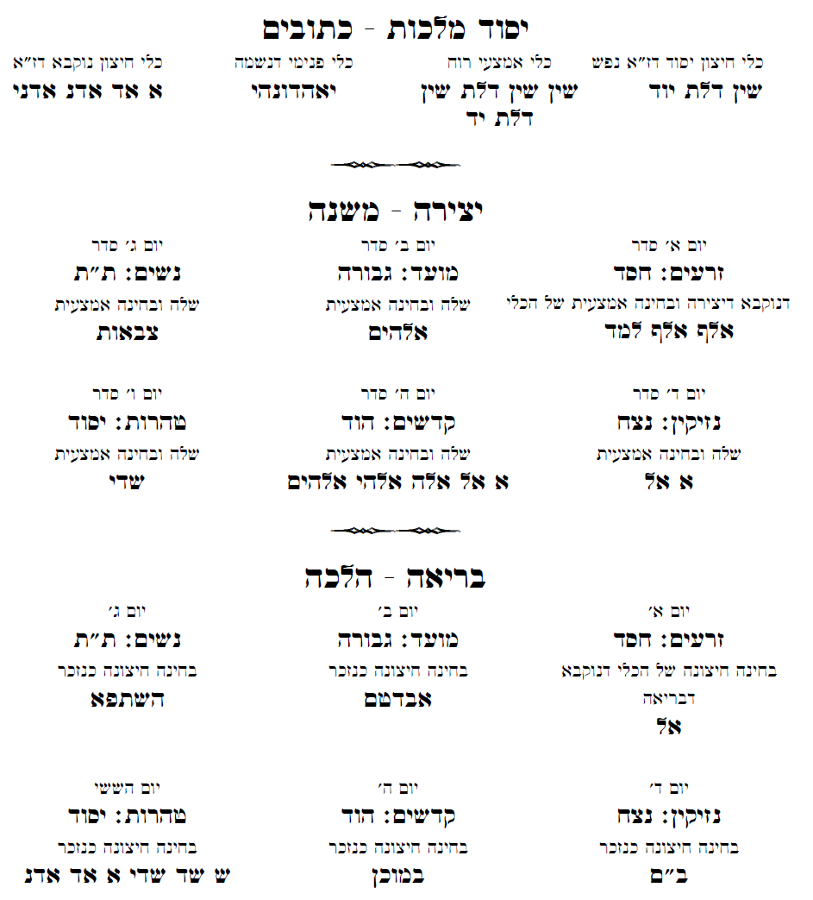

ול- J. Alan Groves Center - תחת תנאי רשיון CC-2.5
 הקדמות פרשת שמות פרשת וארא פרשת בא פרשת בשלח פרשת יתרו פרשת משפטים פרשת תרומה פרשת תצוה פרשת כי תשא פרשת ויקהל פרשת פקודי
הקדמות פרשת שמות פרשת וארא פרשת בא פרשת בשלח פרשת יתרו פרשת משפטים פרשת תרומה פרשת תצוה פרשת כי תשא פרשת ויקהל פרשת פקודי הקדמות
הקדמת מהרח''ו
הקדמת החיד''א
מעשה רוקח
פרשת שמות
שמות יום ראשון ...
| נביאים - ישעיה - פרק כז כתובים - משלי - פרק יא משנה פאה פרק ד גמרא ברכות דף ו' ע''ב זוהר שמות דף ג' ע''א הלכה פסוקה מוסר |
שמות יום שני ...
| נביאים - ישעיה - פרק כז כתובים - משלי - פרק יא משנה שבת פרק יג גמרא שבת דף ק''ה ע''ב זוהר שמות דף ג' ע''ב הלכה פסוקה מוסר |
שמות יום שלישי ...
| נביאים - ישעיה - פרק כח כתובים - משלי - פרק יב משנה יבמות פרק יג גמרא יבמות דף ק''ה ע''ב זוהר שמות דף י''א ע''א הלכה פסוקה מוסר |
שמות יום רביעי ...
| נביאים - ישעיה - פרק כח כתובים - משלי - פרק יב משנה בבא מציעא פרק ג גמרא בבא מציעא דף מ''ב ע''א זוהר שמות דף כ' ע''א הלכה פסוקה מוסר |
שמות יום חמישי ...
| נביאים - ישעיה - פרק כח כתובים - משלי - פרק יב משנה זבחים פרק יג גמרא זבחים דף קט''ו ע''ב זוהר שמות דף כ' ע''ב הלכה פסוקה מוסר |
שמות ליל שישי ...
שמות יום שישי ...
| הפטרת שמות כמנהג הספרדים - ירמיה א הפטרת שמות כמנהג האשכנזים - ישעיה כז משנה מסכת פרה פרק ג גמרא נדה דף ט''ו ע''ב זוהר יתרו דף פ''ח ע''א הלכה פסוקה מוסר |
פרשת וארא
וארא יום ראשון ...
| נביאים - יחזקאל - פרק כח כתובים - משלי - פרק יב משנה פאה פרק ה גמרא ברכות דף ו' ע''ב זוהר וארא דף כ''ו ע''א הלכה פסוקה מוסר |
וארא יום שני ...
| נביאים - יחזקאל - פרק כט כתובים - משלי - פרק יב משנה שבת פרק יד גמרא שבת דף קי''ז ע''ב זוהר וארא דף כ''ח ע''א הלכה פסוקה מוסר |
וארא יום שלישי ...
| נביאים - יחזקאל - פרק כט כתובים - משלי - פרק יג משנה יבמות פרק יד גמרא יבמות דף ק''ט ע''א זוהר וארא דף כ''ט ע''א הלכה פסוקה מוסר |
וארא יום רביעי ...
| נביאים - יחזקאל - פרק כט כתובים - משלי - פרק יג משנה בבא מציעא פרק ד גמרא בבא מציעא דף נ''ח ע''ב זוהר וארא דף ל''א ע''א הלכה פסוקה מוסר |
וארא יום חמישי ...
| נביאים - יחזקאל - פרק כט כתובים - משלי - פרק יג משנה זבחים פרק יד גמרא זבחים דף קי''ט ע''א זוהר דף ל''ב ע''א. הלכה פסוקה מוסר |
וארא ליל שישי ...
וארא יום שישי ...
| הפטרת וארא - יחזקאל כח משנה מסכת פרה פרק ד גמרא נדה דף י''ז ע''ב זוהר יתרו דף פ''ד ע''א הלכה פסוקה מוסר |
פרשת בא
בא יום ראשון ...
| נביאים - ירמיה - פרק מו כתובים - משלי - פרק יג משנה פאה פרק ו גמרא ברכות דף ו' ע''ב זוהר בא דף ל''ג ע''ב הלכה פסוקה מוסר |
בא יום שני ...
| נביאים - ירמיה - פרק מו כתובים - משלי - פרק יג משנה שבת פרק טו גמרא שבת דף קי''ג ע''א זוהר בא דף מ' ע''א הלכה פסוקה מוסר |
בא יום שלישי ...
| נביאים - ירמיה - פרק מו כתובים - משלי - פרק יד משנה יבמות פרק טו גמרא יבמות דף קכ''א ע''א זוהר בא דף מ' ע''ב הלכה פסוקה מוסר |
בא יום רביעי ...
| נביאים - ירמיה - פרק מו כתובים - משלי - פרק יד משנה בבא מציעא פרק ה גמרא בבא מציעא דף נ''ט ע''ב זוהר בא דף מ''ג ע''א הלכה פסוקה מוסר |
בא יום חמישי ...
| נביאים - ירמיה - פרק מז כתובים - משלי - פרק יד משנה מנחות פרק א גמרא מנחות דף י''א ע''א זוהר בא דף מ''ג ע''ב הלכה פסוקה מוסר |
בא ליל שישי ...
בא יום שישי ...
| הפטרת בא - ירמיה מו משנה מסכת פרה פרק ה גמרא נדה דף י''ז ע''ב זוהר יתרו דף פ''ח ע''ב הלכה פסוקה מוסר |
פרשת בשלח
בשלח יום ראשון ...
| נביאים - שופטים - פרק ג כתובים - משלי - פרק יד משנה פאה פרק ז גמרא ברכות דף ח' ע''א זוהר בשלח דף מ''ו ע''א הלכה פסוקה מוסר |
בשלח יום שני ...
| נביאים - שופטים - פרק ד כתובים - משלי - פרק יד משנה שבת פרק טז גמרא שבת דף קכ''ב ע''א זוהר בשלח דף ס''א ע''א הלכה פסוקה מוסר |
בשלח יום שלישי ...
| נביאים - שופטים - פרק ד כתובים - משלי - פרק יד משנה יבמות פרק טז גמרא יבמות דף קכ''ב ע''ב זוהר בשלח דף ס''ג ע''ב הלכה פסוקה מוסר |
בשלח יום רביעי ...
| נביאים - שופטים - פרק ד כתובים - משלי - פרק יד משנה בבא מציעא פרק ו גמרא בבא מציעא דף ע''ה ע''ב זוהר בשלח דף מ''ז ע''א הלכה פסוקה מוסר |
בשלח יום חמישי ...
| נביאים - שופטים - פרק ד כתובים - משלי - פרק טו משנה מנחות פרק ב גמרא מנחות דף כ''ט ע''א זוהר בשלח דף ס''ג ע''ב הלכה פסוקה מוסר |
בשלח ליל שישי ...
בשלח יום שישי ...
| הפטרת בשלח - שופטים ד משנה מסכת פרה פרק ו גמרא נדה דף י''ז ע''א זוהר יתרו דף פ''ח ע''ב הלכה פסוקה מוסר |
פרשת יתרו
יתרו יום ראשון ...
| נביאים - ישעיה - פרק ו כתובים - משלי - פרק טו משנה פאה פרק ח גמרא ברכות דף מ' ע''א זוהר יתרו דף פ''ח ע''א הלכה פסוקה מוסר |
יתרו יום שני ...
| נביאים - ישעיה - פרק ו כתובים - משלי - פרק טו משנה שבת פרק יז גמרא שבת דף קי''ט ע''ב זוהר יתרו דף פ''ח ע''א הלכה פסוקה מוסר |
יתרו יום שלישי ...
| נביאים - ישעיה - פרק ו כתובים - משלי - פרק טו משנה כתובות פרק א גמרא כתובות דף ה' ע''א זוהר יתרו דף פ''ח ע''ב הלכה פסוקה מוסר |
יתרו יום רביעי ...
| נביאים - ישעיה - פרק ז כתובים - משלי - פרק טו משנה בבא מציעא פרק ז גמרא מציעא דף ע''א ע''א זוהר יתרו דף פ''ט ע''א הלכה פסוקה מוסר |
יתרו יום חמישי ...
| נביאים - ישעיה - פרק ז כתובים - משלי - פרק טו משנה מנחות פרק ג גמרא מנחות דף ל''ה ע''ב זוהר יתרו דף פ''ט ע''ב הלכה פסוקה מוסר |
יתרו ליל שישי ...
יתרו יום שישי ...
| הפטרת יתרו - ישעיה ו משנה פרה פרק ז גמרא נדה דף י''ז ע''ב זוהר יתרו דף פ''ח ע''ב הלכה פסוקה מוסר |
פרשת משפטים
משפטים יום ראשון ...
| נביאים - ירמיה - פרק לד כתובים - משלי - פרק טז משנה דמאי פרק א גמרא ברכות דף ח ע''ב זוהר משפטים דף קכ''ב ע''א הלכה פסוקה מוסר |
משפטים יום שני ...
| נביאים - ירמיה - פרק לד כתובים - משלי - פרק טז משנה שבת פרק יח גמרא שבת דף קכז ע''א זוהר משפטים דף קכ''ב ע''ב הלכה פסוקה מוסר |
משפטים יום שלישי ...
| נביאים - ירמיה - פרק לד כתובים - משלי - פרק טז משנה כתובות פרק ב גמרא כתובות דף כ''ב ע''א זוהר משפטים דף קכ''ג ע''ב הלכה פסוקה מוסר |
משפטים יום רביעי ...
| נביאים - ירמיה - פרק לה כתובים - משלי - פרק טז משנה בבא מציעא פרק ח גמרא בבא מציעא דף פ''ה ע''א זוהר משפטים דף קכ''ב ע''ב הלכה פסוקה מוסר |
משפטים יום חמישי ...
| נביאים - ירמיה - פרק לה כתובים - משלי - פרק טז משנה מנחות פרק ד גמרא מנחות דף מ''ג ע''א זוהר משפטים דף קכ''ג ע''ב הלכה פסוקה מוסר |
משפטים ליל שישי ...
משפטים יום שישי ...
| הפטרת משפטים - ירמיה לד משנה פרה פרק ח גמרא נדה דף י''ז ע''א זוהר יתרו דף פ''ח ע''א הלכה פסוקה מוסר |
פרשת תרומה
תרומה יום ראשון ...
| נביאים - מלכים א - פרק ה כתובים - משלי - פרק טז משנה דמאי פרק ב גמרא ברכות דף י' ע''ב זוהר תרומה דף קל''א ע''א הלכה פסוקה מוסר |
תרומה יום שני ...
| נביאים - מלכים א - פרק ה כתובים - משלי - פרק יז משנה שבת פרק יט גמרא שבת דף קלז ע''ב זוהר תרומה דף קל''א ע''ב הלכה פסוקה מוסר |
תרומה יום שלישי ...
| נביאים - מלכים א - פרק ו כתובים - משלי - פרק יז משנה כתובות פרק ג גמרא כתובות דף ל''ט ע''ב זוהר תרומה דף קל''א ע''א הלכה פסוקה מוסר |
תרומה יום רביעי ...
| נביאים - מלכים א - פרק ו כתובים - משלי - פרק יז משנה בבא מציעא פרק ט גמרא בבא מציעא דף פה ע''א זוהר תרומה דף קל''א ע''א הלכה פסוקה מוסר |
תרומה יום חמישי ...
| נביאים - מלכים א - פרק ו כתובים - משלי - פרק יז משנה מנחות פרק ה גמרא מנחות דף מ''ג ע''ב זוהר תרומה דף קס''ח ע''ב הלכה פסוקה מוסר |
תרומה ליל שישי ...
תרומה יום שישי ...
| הפטרת תרומה - מלכים א ה משנה פרה פרק ט גמרא נדה דף י''ז ע''א זוהר יתרו דף פ''ט ע''א הלכה פסוקה מוסר |
פרשת תצוה
תצוה יום ראשון ...
| נביאים - יחזקאל - פרק מג כתובים - משלי - פרק יז משנה דמאי פרק ג גמרא ברכות דף י''ב ע''א זוהר תצוה דף קע''ט ע''ב הלכה פסוקה מוסר |
תצוה יום שני ...
| נביאים - יחזקאל - פרק מג כתובים - משלי - פרק יז משנה שבת פרק כ גמרא שבת דף ק''מ ע''ב זוהר תצוה דף קפ''א ע''א הלכה פסוקה מוסר |
תצוה יום שלישי ...
| נביאים - יחזקאל - פרק מג כתובים - משלי - פרק יח משנה כתובות פרק ד גמרא כתובות דף נ' ע''א זוהר תצוה דף קפ''א ע''א הלכה פסוקה מוסר |
תצוה יום רביעי ...
| נביאים - יחזקאל - פרק מג כתובים - משלי - פרק יח משנה בבא מציעא פרק י גמרא בבא מציעא דף ק''ז ע''ב זוהר תצוה דף קפ''א ע''א הלכה פסוקה מוסר |
תצוה יום חמישי ...
| נביאים - יחזקאל - פרק מד כתובים - משלי - פרק יח משנה מנחות פרק ו גמרא מנחות דף ס''ח ע''א זוהר תצוה דף קפ''ג ע''א הלכה פסוקה מוסר |
תצוה ליל שישי ...
תצוה יום שישי ...
| משנה פרה פרק י גמרא נדה דף י''ז ע''א זוהר יתרו דף פ''ט ע''א הלכה פסוקה מוסר |
פרשת כי תשא
כי תשא יום ראשון ...
| נביאים - מלכים א - פרק יח כתובים - משלי - פרק יח משנה דמאי פרק ד גמרא ברכות דף י''ד ע''ב זוהר תשא דף קפ''ח ע''א הלכה פסוקה מוסר |
כי תשא יום שני ...
| נביאים - מלכים א - פרק יח כתובים - משלי - פרק יט משנה שבת פרק כא גמרא שבת דף קמ''ב ע''ב זוהר תשא דף קפ''ח ע''ב הלכה פסוקה מוסר |
כי תשא יום שלישי ...
| נביאים - מלכים א - פרק יח כתובים - משלי - פרק יט משנה כתובות פרק ה גמרא כתובות דף ס''ד ע''ב זוהר תשא דף קפ''ט ע''ב הלכה פסוקה מוסר |
כי תשא יום רביעי ...
| נביאים - מלכים א - פרק יח כתובים - משלי - פרק יט משנה בבא בתרא פרק א גמרא בבא בתרא דף ט' ע''ב זוהר תשא דף קפ''ח ע''ב הלכה פסוקה מוסר |
כי תשא יום חמישי ...
| נביאים - מלכים א - פרק יח כתובים - משלי - פרק יט משנה מנחות פרק ז גמרא מנחות דף צ''ט ע''א זוהר תשא דף קצ''ד ע''א הלכה פסוקה מוסר |
כי תשא ליל שישי ...
כי תשא יום שישי ...
| הפטרת כי תשא - מלכים א יח משנה פרה פרק יא גמרא נדה דף פ''ט ע''א זוהר יתרו דף פ''ט ע''א הלכה פסוקה מוסר |
פרשת ויקהל
ויקהל יום ראשון ...
| נביאים - מלכים א - פרק ז כתובים - משלי - פרק יט משנה דמאי פרק ה גמרא ברכות דף ט''ו ע''ב זוהר ויקהל דף ד' ע''ב הלכה פסוקה מוסר |
ויקהל יום שני ...
| נביאים - מלכים א - פרק ז כתובים - משלי - פרק יט משנה שבת פרק כב גמרא שבת דף קמ''ה ע''א זוהר ויקהל דף ד' ע''ב הלכה פסוקה מוסר |
ויקהל יום שלישי ...
| נביאים - מלכים א - פרק ז כתובים - משלי - פרק כ משנה כתובות פרק ו גמרא כתובות דף ס''ז ע''א זוהר ויקהל דף רי''ח ע''א הלכה פסוקה מוסר |
ויקהל יום רביעי ...
| נביאים - מלכים א - פרק ז כתובים - משלי - פרק כ משנה בבא בתרא פרק ב גמרא בבא בתרא דף כ' ע''ב זוהר ויקהל דף רי''ח ע''ב הלכה פסוקה מוסר |
ויקהל יום חמישי ...
| נביאים - מלכים א - פרק ז כתובים - משלי - פרק כ משנה מנחות פרק ח גמרא מנחות דף כ''ט ע''ב זוהר ויקהל דף רי''ט ע''א הלכה פסוקה מוסר |
ויקהל ליל שישי ...
ויקהל יום שישי ...
| הפטרת ויקהל כמנהג הספרדים - מלכים א ז הפטרת ויקהל כמנהג האשכנזים - מלכים א ז משנה פרה פרק יב גמרא נדה דף י''ט ע''ב זוהר יתרו דף פ''ט ע''א הלכה פסוקה מוסר |
פרשת פקודי
פקודי יום ראשון ...
| נביאים - מלכים א - פרק ז כתובים - משלי - פרק כ משנה דמאי פרק ו גמרא ברכות דף כ' ע''ב זוהר יתרו דף פ''ט ע''א הלכה פסוקה מוסר |
פקודי יום שני ...
| נביאים - מלכים א - פרק ז כתובים - משלי - פרק כ משנה שבת פרק כג גמרא שבת דף קנ''ג ע''א זוהר פקודי דף רמ''ט ע''ב הלכה פסוקה מוסר |
פקודי יום שלישי ...
| נביאים - מלכים א - פרק ז כתובים - משלי - פרק כ משנה כתובות פרק ז גמרא כתובות דף ע''ב ע''א זוהר פקודי דף רמ''ט ע''ב הלכה פסוקה מוסר |
פקודי יום רביעי ...
| נביאים - מלכים א - פרק ח כתובים - משלי - פרק כא משנה בבא בתרא פרק ג גמרא בבא בתרא דף ט' ע''א זוהר פקודי דף רס''ב ע''ב הלכה פסוקה מוסר |
פקודי יום חמישי ...
| נביאים - מלכים א - פרק ח כתובים - משלי - פרק כא משנה מנחות פרק ט גמרא מנחות דף מ''ד ע''א זוהר יתרו דף פ''ט ע''א הלכה פסוקה מוסר |
פקודי ליל שישי ...
פקודי יום שישי ...
| הפטרת פקודי כמנהג הספרדים - מלכים א ז הפטרת פקודי כמנהג האשכנזים - מלכים א ז משנה מסכת ידים פרק א גמרא נדה דף קי''ט ע''ב זוהר יתרו דף פ''ט ע''א הלכה פסוקה מוסר |
הקדמת מהרח''ו
זה לשון הרב המקובל הגדול מהרח''ו זללה''ה
סדר עסק התורה שהאדם חייב לקרוא בכל יום בקביעות בסוד קבעת עתים לתורה: זה היה מנהג מורי זלה''ה. בצאתו מבית הכנסת היה עדיין מעוטף בציצית ותפילין, וקורא הסדר הזה בכוונות האלו על פי סדר המדריגות ממטה למעלה: וזה הסדר, תנ''ך משנה תלמוד וקבלה:
וזה פרטן, יום ראשון מהשבוע היה קורא מתחילת פרשת השבוע ששה פסוקים שנים מקרא ואחד תרגום, ואחר כך נביאים ג''כ עם התרגום ואחר כך כתובים ג''כ עם התרגום. ואין צריך לקרוא שנים מקרא אלא בתורה לבד, אבל נביאים וכתובים פעם אחת מקרא ופעם אחת תרגום. והכל הוא בעולם העשיה. ושם הוי''ה דשם ב''ן במילוי כזה, יוד הה וו הה. נמצא שאותיות המילוי הם חמשה וֵדֲהֶוָהִ. והם נחלקים בחמשה ימי השבוע מיום א' עד יום ה', אות אחת בכל יום מתורה או נביאים או כתובים. ונקודות או אותיות אלו הם ציר''י שב''א פת''ח סגו''ל קמ''ץ חירי''ק, והם יוצאים מן חמשה נקודים של אֵת אֲשֶר יָבִיאו. ולכן צריך לקרוא בכל יום ראשון ששה פסוקים מתחילת הפרשה וכן מנביאים וכתובים, וביום השני ארבעה פסוקים שאחריהם, וביום ג' חמשה פסוקים שאחריהם, וביום ד' ששה פסוקים שאחריהם, וביום ה' חמשה פסוקים שאחריהם, נמצא שקרא בחמשה ימי שבוע כ''ו פסוקים:
וכשקורא בתורה צריך לכוין שהיא בתפארת דזעיר דעשיה. ולכן צריך לכוין בשלוש שמות של שלוש בחינות של כלי העשיה, שהם (יהו''ה) כלי החיצון דנפש. (י יה יהו יהו''ה) כלי אמצעי דרוח. (יוד הא ואו הא) כלי פנימי דנשמה. וגם יֹהֹוֹהֹ בניקוד חול''ם, שהיא בחינת חיה יחידה לשלש בחינות אלו:
וכשקורא נביאים יכוין שהם בנצח הוד דעשיה. ויכוין בשלושה שמות של שלש בחינות כליהם, שהם (צבאות) כלי חיצון דנפש. (צ צב צבא צבאו צבאות) כלי אמצעי דרוח. (יהו''ה) כלי פנימי דנשמה דנצח. (אדני) כלי פנימי דנשמה דהוד. וגם שני יהו''הִ יהו''הֻ, אחד בחיר''ק ואחד קבוץ, שהם בחינת חיה יחידה לשלש בחינות אלו:
וכשקורא כתובים יכוין שהם ביסוד דזעיר דעשיה ובמלכות. ויכוין בשלשה שמות של ג' בחינות כליהם, שהם (שין דלת יוד) כלי חיצון דנפש. (שין שין דלת שין דלת יוד) כלי אמצעי דרוח. (יאהדונהי) כלי פנימי דנשמה דיסוד. (אלף דלת אלף יוד) כלי פנימי דנשמה דמלכות. וגם שם יו הו וו הו חיה יחידה דיסוד. (יהו''ה) חיה יחידה דמלכות:
וכשקורא משנה יכוין שהיא בששה קצוות דנוקבא דיצירה. לכן אם הוא בסדר זרעים, יכוין לגבורה שלה, שהוא ב' פעמים (אלף למד אלף למד). ואם בסדר מועד, יכוין לגבורה שלה, שם אלהים. ואם בסדר נשים, יכוין שהוא בתפארת שלה, שהוא שם (צבאות). ואם הוא בסדר נזיקין, יכוין שהוא בנצח שלה, שהוא שם (א אל). ואם הוא בסדר קדשים, יכוין שהוא בהוד שלה, שהוא (א אל אלה אלהי אלהים). ואם הוא בסדר טהרות, יכוין שהוא ביסוד שלה, שהוא שם (שדי):
וכשיקרא תלמוד יכוין שהוא בנוקבא דז''א דבריאה שהוא ה' כלה. ואם הוא בזרעים הוא בחסד שלה, שהוא שם (אלף למד). וסדר מועד הוא בגבורה, וה' הוא (אכדטם). וסדר נשים הוא בתפארת. וה' הוא (השתפא). סדר נזיקין הוא בנצח, וה' הוא (בם). וסדר קדשים הוא בהוד, והשם הוא (במוכן). וסדר טהרות הוא ביסוד, וה' הוא (ש שד שדי):
וכשילמוד קבלה יכוין שהוא בתפארת דאצילות, והשם הוא (יוד הא ואו הא). ובליל ו' בקומו באשמורת, או קודם שישן אם לא יוכל לקום באשמורת, יקרא כ''ו פסוקים מהפרשה, אותם שהם אחר הכ''ו שקרא בחמשה ימי השבוע. ויקראם שנים מקרא ואחד תרגום. ויכוין בצרוף אחד מי''ב צירופי (יהו''ה) שהוא וִהִיִהִ כולו בניקוד חירי''ק, והוא ניקוד אות שניה של תיבת הששי:
כוונת קריאת הפרשה ביום ששי שמו''ת תכוין כן. ש''מ משמו''ת הוא תפארת ויסוד, שהם מקרא. ו''ת הוא תרגום, שהוא מלכות. ותכוין במילוי שם ב''ן כזה וּ וּד הוּ וּ הוּ בניקוד שורו''ק. והוא ניקוד אוּ של יביאו, וג' ו''וין שניתוספו בג' אותיות (דהה הם בגי' ח''י), שיום ששי שהוא יסוד הנקרא חי העולמים הנותן חיים אל המלכות שבת, כי יום ששי מכין לשבת שהוא מלכות. ותחזור לחבר חמש אותיות המילוי שם ב''ן שהיו מחולקים בה' ימי השבוע, תכללם יחד כזה וּ דוּ הוּ וּ הוּ בניקוד שורו''ק. גם תכוין לעשות מהם שם (יהו''ה) כזה והיה בניקוד בַּיּוֹם הַשִּׁשִּׁי. וזה תכוין במקרא בפעם ראשונה ובשניה למילוי שם ב''ן כזה וּ דוּ הוּ וּ הוּ. ובתרגום לאחוריים, שהוא שם ע''ב, שיש בכל הט' ספירות מכתר עד היסוד שעולים תרגום שנותנים אל המלכות. גם תכוין לאחורים של שם ב''ן כזה וּ וּ דוּ וּ דוּ הוּ וּ דוּ דוּ וּ וּ דוּ הוּ וּ הוּ:
כוונת שמיעת הפרשה ביום שבת מהש''צ. תכוין בהויה דבן ט' אותיות כזה יִוְדֶ הַהֲ וָוִ הֻהֻ, בניקוד מִשְּׁנֶה עַל אֲשֶּׁר יִלְקְטוּ. גם תכוין לב' שמות וּ הוּ יוּ הוּ וּ הוּ יוּ הוּ בניקוד ט' של ילקטו. וזה והיה משנה, רוצה לומר ב' פעמים והיה. וצריך לשמוע כל הפרשה מפי הש''ץ. אבל ההפטרה צריך לאומרה בפיו ולא יסמוך על הש''ץ:
תפלה לאומרה קודם קריאת התורה
לשם יחוד קודשא בריך הוא ושכינתיה בדחילו ורחימו, ליחדא שם י''ה בו''ה ביחודא שלים בשם כל ישראל, ולאקמא שכינתא מעפרא. הריני קורא בתורה שהיא כנגד תפארת דזעיר אנפין, שבו שלשה כלים דשלש בחינות נפש רוח נשמה. יהו''ה, כלי החצון דנפש. י' י''ה יה''ו יהו''ה, כלי אמצעי דרוח. יו''ד ה''א וא''ו ה''א, כלי פנימי דנשמה. ובחינת אורות מקיפים שהם יחידה חיה יֹהֹוֹ''הֹ בנקודת חול''ם, לעשות לה מרכבה. ויהי רצון מלפניך ה' אלהי ואלהי אבותי, שתזכך את רוחי ונפשי שיהיו ראוים לעורר מיין תתאין על ידי קריאת התורה הזאת. ואל יעכב שום חטא ועון והרהור רע את קראית התורה הזאת. ויהי נועם אדני אלהינו עלינו ומעשה ידינו כוננה עלינו ומעשה ידינו כוננהו. ברוך ה' לעולם אמן ואמן:
יכוין אחר כך ביחודים הנאמרים בשערי ציון בשער ד' מידי יום ביומו ולא יוציא שום שם מפיו רק יכוין כנ''ל:
תפלה לאומרה קודם קריאת נביאים
לשם יחוד קודשא בריך הוא ושכינתיה בדחילו ורחימו, ליחדא שם י''ה בו''ה ביחודא שלים בשם כל ישראל, ולאקמא שכינתא מעפרא. הריני קורא בנביאים שהוא כנגד נצח הוד דזעיר אנפין שבהם שלשה כלים של שלש בחינות נפש רוח נשמה. צבאות, כלי חיצון דנפש. צ' צ''ב צב''א צבא''ו צבאו''ת, כלי אמצעי דרוח. יהו''ה, כלי פנימי של נצח. אדנ''י, כלי פנימי של הוד. בחינת נשמה בבחינת אורות מקיפים, שהם יחידה חיה, של נצח יהו''הִ ושל הוד יהו''הֻ נקוד חירי''ק וקובו''ץ, לעשות לו מרכבה. ויהי רצון מלפניך ה' אלהי ואלהי אבותי, שתזכך את רוחי ונפשי ונשמתי לעורר מיין תתאין על ידי קריאת הנביאים הזאת. ואל יעכב שום חטא ועון והרהור רע את קריאת הנביאים הזאת. ויהי נועם אדני אלהינו עלינו ומעשה ידינו כוננה עלינו ומעשה ידינו כוננהו. ברוך ה' לעולם אמן ואמן:
תפלה לאומרה קודם קריאת כתובים
לשם יחוד קודשא בריך הוא ושכינתיה בדחילו ורחימו, ליחדא שם י''ה בו''ה ביחודא שלים בשם כל ישראל, ולאקמא שכינתא מעפרא. הריני קורא בכתובים שהוא כנגד יסוד דזעיר ומלכות נוקבא דזעיר, שהם שלשה שמות בבחינת שלשה כלים נפש רוח נשמה. שי''ן דל''ת יו''ד, כלי חיצון דנפש. שי''ן שי''ן דל''ת שי''ן דל''ת יו''ד, כלי אמצעי דרוח. יאהדונה''י, כלי פנימי דנשמה. אל''ף דל''ת נו''ן יו''ד, כלי החיצון דמלכות דנוקבא דזעיר, ובבחינת אורות מקיפין, י''ו ה''ו ו''ו ה''ו, חיה יחידה דיסוד דזעיר אנפין. יהו''ה, חיה יחידה של מלכות נוקבא דזעיר אנפין, ולעשות מרכבה להם. ויהי רצון מלפניך ה' אלהי ואלהי אבותי, שתזכך את רוחי ונפשי שיהיו ראויים לעורר לעורר מיין נוקבין על ידי קריאת הכתובים הללו. ואל יעכב שום חטא ועון והרהור רע את קריאת הכתובים הללו. ויהי נועם אדני אלהינו עלינו ומעשה ידינו כוננה עלינו ומעשה ידינו כוננהו. ברוך ה' לעולם אמן ואמן:
תפלה לאומרה קודם לימוד משנה
לשם יחוד קודשא בריך הוא ושכינתיה בדחילו ורחימו, ליחדא שם י''ה בו''ה ביחודא שלים בשם כל ישראל, ולאקמא שכינתא מעפרא. הריני קורא משנה שהוא סוד מטטרו''ן שביצירה, שהוא אותיות משה, ומשה עולה א''ל שד''י, והם גימטריא רצו''ן, ושהוא קפ''ד קס''א כזה, יו''ד, יו''ד ה''י, יו''ד ה''י וי''ו, יו''ד ה''י וי''ו ה''י, אל''ף ה''י יו''ד ה''י, יסוד אבא גו יסוד אמא להוריד שפע מאבא ואמא מבריאה ליצירה, ותכולל יצירה בבריאה והיא תרד מבריאה ליצירה, שלשה שמות אהי''ה כזה, אל''ף ה''י יו''ד ה''י אל''ף ה''ה יו''ד ה''ה אל''ף ה''א יו''ד ה''א, שהם ה' יודי''ן שהם סוד חמשים שערי בינה הנקראת משנה, שהם י''ה אדנ''י מטטרון.
(כשהוא לומד בסדר זרעים יאמר כך) והריני בסדר זרעים בחסד דנוקבא דזעיר שבו שני פעמים א''ל במלואו כזה, אל''ף למ''ד אל''ף למ''ד:
(וכשהוא לומד בסדר מועד יאמר כך) והריני בסדר מועד שהוא בגבורה דנוקבא דזעיר שבו שם אלהים.
(וכשהוא לומד בסדר נשים יאמר כך) והריני בסדר נשים שהוא בתפארת דנוקבא דזעיר שבו שם צבאות.
(וכשהוא לומד בסדר נזיקין יאמר כך) והריני בסדר נזיקין שהוא בנצח דנוקבא דזעיר שבו שם א' א''ל.
(וכשהוא לומד בסדר קדשים יאמר כך) והריני בסדר קדשים שהוא בהוד דנוקבא דזעיר שבו שם א' א''ל אל''ה אלה''י אלהים.
(וכשהוא לומד בסדר טהרות יאמר כך) והריני בסדר טהרות שהוא ביסוד דנוקבא דזעיר שבו שם שד''י.
להעשות לה מרכבה. ויהי רצון מלפניך ה' אלהי ואלהי אבותי, שתזכך את רוחי ונפשי שיהיו ראוים לעורר מיין נוקבין על ידי קריאת המשנה הזאת. ויהי רצון מלפניך ה' אלהי ואלהי אבותי, שאזכה לבחינת נשמה דבריאה אותיות משנה, ואל יעכב שום חטא ועון והרהור רע את קריאת המשנה הזאת. ויהי נועם וגו':
תפלה לאומרה קודם לימוד הלכה
לשם יחוד קודשא בריך הוא ושכינתיה בדחילו ורחימו, ליחדא שם י''ה בו''ה ביחודא שלים בשם כל ישראל, ולאקמא שכינתא מעפרא. הריני לומד הלכה שהוא אותיות הכל''ה, לקשט שם אדנ''י שהיא הכלה העליונה בעשרים וארבע קשוטי כלה, כדי לחברה בבעלה.
(וכשהוא לומד הלכה בסדר זרעים יאמר כך) והריני קורא בסדר זרעים שהוא בחסד דנוקבא דזעיר אנפין, שבו שם א''ל במלאו אל''ף למ''ד:
(וכשהוא לומד הלכה בסדר מועד יאמר כך) והריני קורא בסדר מועד שהוא בגבורה דנוקבא דזעיר אנפין, שבו שם אכדט''ם
(וכשהוא לומד הלכה בסדר נשים יאמר כך) והריני בסדר נשים שהוא בתפארת דנוקבא דזעיר אנפין, שבו שם השתפ''א
(וכשהוא לומד הלכה בסדר נזיקין יאמר כך) והריני בסדר נזיקין שהוא בנצח דנוקבא דזעיר אנפין, שבו שם ב''ם
(וכשהוא לומד הלכה בסדר קדשים יאמר כך) והריני בסדר קדשים שהוא בהוד דנוקבא דזעיר אנפין, שבו שם ש' ש''ד שד''י
(וכשהוא לומד הלכה בסדר טהרות יאמר כך) והריני בסדר טהרות שהוא ביסוד דנוקבא דזעיר אנפין, שבו שם במוכ''ן
להעשות לה מרכבה. ויהי רצון מלפניך ה' אלהי ואלהי אבותי, שתזכך את רוחי ונפשי שיהיו ראוים לעורר מיין תתאין על ידי קריאת הלכה הזאת. ואל יעכב שום חטא ועון והרהור רע את לימוד הלכה הזאת. ויהי נועם אדני אלהינו עלינו ומעשה ידינו כוננה עלינו ומעשה ידינו כוננהו. ברוך ה' לעולם אמן ואמן:
עוד יחוד א' להלכה יכוין בשם י''ה בצירוף א''ב כזה:
אְיָה בְיָה גְיָה דְיָה הְיָה וְיָה זְיָה חְיָה טְיָה יְיָה כְיָה לְיָה מְיָה נְיָה סְיָה עְיָה פְיָה צְיָה קְיָה רְיָה שְיָה תְיָה
תפלה לאומרה קודם לימוד קבלה
לשם יחוד קודשא בריך הוא ושכינתיה בדחילו ורחימו, ליחדא שם י''ה בו''ה ביחודא שלים בשם כל ישראל, ולאקמא שכינתא מעפרא. הריני לומד בספר קבלה פלוני שהוא כנגד תפארת דזעיר אנפין דעולם האצילות, שבו שם מ''ה כזה, יו''ד ה''א וא''ו ה''א, לעשות לו מרכבה. ויהי רצון מלפניך ה' אלהי ואלהי אבותי, שתזכך את רוחי ונפשי שיהיו ראוים לעורר מיין תתאין על ידי קריאת ספר הקבלה הזה. ויהי נועם אדני אלהינו עלינו ומעשה ידינו כוננה עלינו ומעשה ידינו כוננהו. ברוך ה' לעולם אמן ואמן:
נוסחי דווקני

יסוד מלכות כתובים

הקדמת החיד''א
זו היא ההקדמה שעשה על הספר הזה בהיותו בחיים חיותו הרב המופלא בוצינא קדישא מרנא ורבנא כמוהר''ר חיד''א זלה''ה זיע''א
ארש חיים
מילי מילי קטני סדרי ברורין. להודיע לבני האם מאימתי קורין:
אידלי יומא כי האידנא, וישמה לחק, כחקה הועלה האי ספרא רבא עלה בקב''ץ ויעשה כמשפט דינא יתיב וספרין. אשרי שיאחז והיתה עמו, וקא בו, וכמו רגע אתי עשה דהשלמה מקרא, משנה, תלמוד וקבלה כהלכת גוברין. מתן ארבע במתן אחד באחד יגשו וכמעט חיובא רמיא אקרקפתא דגברי אחד חכם ואחד תם קורין ומקרין. וכל כי האי ליתנהו בזכירה אצל עין רוגל בפרק כתבי הקדש דידעי רבנן ובקיאי מה נורא הלמוד הזה לרבות כל אשורי'ן. והיו הדברים להמון העם אליכם אישים, ואקרא הלא תדעו מה עצמו ראשי הלמוד הזה בעולמות העליונים, ומן הברכה העליונה יצא שפע נפיק מעייני מעינות מתגברין. טובי לדזכי לשמע בקול מורים חק נתן ולא יעבר הנה שכרו בשבח שקבצו עליונים למעלה, הוא פרת שמימיו פרין. איכו השתא קול הקריה לכל מסורה, זאת היתה לי הרימותי ידי בשורת דרך אר''ש יתן אומר להמון קריה אם אינם מכירין:
א. דא תהא למיקם כי הכונות שנדפסו מדי יום יום זאת לפנים על ספר חקה טעו במדבר, ואעיקרא הכונות ההם לא צדקו יחדיו כפי כתבי הקדש האמתיים דשכיחי בארץ מצרים ובהר הקדש בירושלים ת''ו, כתובים באצבע הרב מורנו הרב שמואל ויטאל זלה''ה והדברים עתיקים מטהרת יד הקדש מר אביו מורנו הרב חיים ויטאל זצ''ל. ולכן כשנדפס הספר הלז בויניציאה שם נמצאתי אנכי איש צעיר ומסרתי ביד מעלת הגביר המדפיס אהובנו יצ''ו נסח הכונות ככל הנמצא אתי, שהבאתי מעיר הקדש ירושלים ת''ו, ומעלת הגביר יקירנו המדפיס הנזכר, הדפיסם בסוף הדף בפני עצמו בשם נסחי דוקני ה'ן מפטירין:
ב. יען כי הספר הקדוש הלז מסור לכל, ואלו הכונות לא יתכנו להמון העם, וגם למי שאין לו התחלה בחכמת האמת. לכן בספר הזה השמטו הכונות אשר נכתבו בכל יום, דלאו כל מוחא סביל דא, ומה גם כי לא יבצר מחמת הדפסתם בכל יום טעיות הדפוס ואלו דברים העומדים ברומו של עולם. ונדפסו דף אחד בתחלת כל חומש כפי הנסחי דוקני הנזכר, ואשר לו יד ושם בסוד ה', נקל להם לחזות בנעם ולכן בכל יום. ובדף הזה עיניהם ישיתו לעשות כונים למלאכת שמים הוו זהירין:
ג. בכל יום צריך קרא מקרא פסוקי תורה שני פעמים ואחד תרגום. ופסוקי נביאים וכתובים פעם אחד מקרא ופעם אחד תרגום, יושבים וקורין:
ד. אור הששי, היותר נראה שלא לקרות כ''ו פסוקי תורה, כי אם שני פעמים מקרא ותו לא, ואין לקרות תרגום. ולכן לא נדפס באור הששי מקרא ותרגום ככל הימים, רק התרגום הוצב לבדו למאן דיצבי להחזיק במנהג קדום. ועיין מה שכתבנו בעניותנו בספרי הקטן מחזיק ברכה אורח חיים (סימן קנו) ובקונטרס אחרון שם ואלו נאמרין:
ה. התפלות שנדפסו בכל יום בראש הספר בדפוסים הקודמים, המסתכל יפה יבין שאין לאומרם, כי קריאת תנ''ך זו המסודרת בספר הזה אין הפסוקים מבחינת המדות ולא נתנו דבריהם לשעורין:
ו. בחול המועד טוב לקרות דבר יום ביומו ולהשלים בעד יום טוב, כי כן דבר המלך מורנו הרב חיים ויטאל זצ''ל למי שלא למד הסדר יום אחד, שצריך להשלים כשיקרא, פסוקי יום שעבר לא נצרכה אלא עולו'ת מספר מלוי שם ב''ן, וככה יעשה בחול המועד שמעתי שמחמירין:
ז. בשבוע שקורין שתי פרשיות בשבת קדש, יקרא הסדר של פרשה ראשונה לבד ראשית ששיריה נכרין:
ח. וכשחל יום טוב בשבת קדש קורין פרשה של יום טוב או של שבת וחול המועד, תמיד יקרא בשבוע סדר הפרשה שקורין במנחת שבת קדש, ואפילו שתי שבועות או שלשה חזור חזור בפרשה ההיא הרי אלו מחזירין:
ט. תוספת טובה נעשה בפעם הזו כי ביום הששי נדפס משנה וגמרא מסדר טהרות, ויהי בשלם עד היסוד בא, וגם מאמר קצר מהזוהר כאשר עיניך תחזינה והן מטהרין:
י. בדפוסים שקדמו בענין המשניות והגמרא יש חסיר חליף יתיר וכן במאמרי הזוהר הקדוש וגם ערב רב עלה אתם. איכו השתא הכל מתוקן כולם נסקרין:
יא. גם נדפס זאת לפנים בספר הזה בראשית מאמר אמרי קדוש מורנו הרב חיים ויטאל זצ''ל, והלשון ההוא לא סליק שפיר, כתיב בגויה איזה דברים שישתנו לפי הכתבים אמתיים, אי לזאת הושמט. וכי תאוה נפשך לדעת דברים בשרשן פוק עיין בשער המצוות שסדר הרב מורנו הרב שמואל ויטאל פרשת עקב, ובשעה השמות בספר אוצרות חיים ובספר עץ חיים וכיוצא בהם, ומשם בארה זקוקין דנורא ובעורין:
יב. עוד הוסיפו מעלת המגיהים שמורים לכל בני ישראל מאמרי גמרא וזוהר איפה הם רועים, הגיעו לפרקן בעלים מרדפין כאשר היתה באמנה. ועוד זאת יתירה היד כותבת דמיתבא דעתא מילתא חדתא:
יוסף לחוק מוסר מלכים והלכה פסוקה יום ליום יביע דברים המחוורין. ואשר סדרתי אני בעניי, ברם עיקר שרשוהי בקונטרס סנסן ליאיר לזכות את הרבים, יחקקו צדק לא ימושו החוקים האלה, באלו אמרו מקדימין ולא מאחרין. וצור ישראל יצילנו משגיאות ויראנו מתורתו נפלאות. ובא לציון גואל והבית בהבנותו שם יזבחו זבחי צדק דכרין ואמרין. כן יהי רצון: הלא זה דברי איש צעיר מעפר דל קטונתי איני כדאי
חיים יוסף דוד אזולאי ס''ט
מעשה רוקח
א. מודעת זאת בחיוב תלמוד תורה וכמו שכתב הטור ומרן ולבוש ביורה דעה (בסימן רמ''ו) והרמב''ם (בפרק א) מהלכות תלמוד תורה, וזה לשונו, כל איש ישראל חייב בתלמוד תורה, בין עני בין עשיר, בין שלם בגופו בין בעל יסורין, בין בחור בין זקן גדול, ואפילו עני המחזר על הפתחים, אפילו בעל אשה ובנים חייב לקבוע לו זמן ללמוד תורה ביום ובלילה, שנאמר והגית בו יומם ולילה וגו'. וחייב לשלש למודו שליש בתורה שבכתב בכלל זה. שליש בתלמוד וכו'. כיצד, היה בעל אומנות ועוסק במלאכתו שלשה שעות ביום ותשעה שעות בתורה, קורא שלושה מהם בתורה שבכתב, ובשלושה תורה שבעל פה, ובשלושה יבין דבר מתוך דבר יעו''ש. וגם באורח חיים (סימן קנ''ה) בטור ומרן ולבוש שכתבו אחר שיצא מבית הכנסת ילך לבית המדרש ויקבע עת ללמוד, וצריך שאותו עת יהיה קבוע שלא יעברנו אף אם הו סבור להרויח הרבה יעו''ש: ומאחר שכן שחייב כל איש לעסוק בתשעה שעות ביום בתלמוד תורה, אם כן מה יענה האדם ביום הדין לפני מלך מלכי המלכים הקב''ה, שכל היום כולו עוסק במלאתו איש איש על עבודתו ואינו עוסק בתורתו, כי בודאי אין קץ לעונשו. ואם ראה תראה מאמר משלי רבתא אשר הבאתי בקונטרס מיני מרקחת אשר בסוף ספר הנחמד מעשה רוקח (חלק ג') של מר זקני זיע''א, דשם בפרק שלישי הבאתי כל המאמר באורך, ועיניך תחזינה מישרים שכל הקורא בהם תסמר שערת בשרו, ולא יאכל ולא ישתה בראותו שכל מה שקרא לא נחשב לו לכלום, שצריך לקרות כל מה שכתוב שם, וה' הטוב יכפר בעד:
הנה כי כן מצוה על כל איש אשר בשם ישראל יכונה, לקנות לו ספר חוק לישראל לקרות בו בכל יום, שהוא סדר נאה ויאה שתקן לנו הרב הקדוש התנא האלהי האר''י זלה''ה זצ''ל, אשר בקריאתו זוכה במעט קט בשלושה למודים, שליש במקרא תורה נביאים וכתובים, שליש במשנה שקורא פרק מהמשנה, שליש בגמרא שקורא פסקא מהגמרא, ונוסף גם מאמר מזוהר הקדוש. ושמעתי רמז נאה כי בקריאת חוק לישראל שם רמוז תרי''ג, כי תנ''ך משנה גמרא קבלה שהוא הזוהר ראשי תיבות שלהם גמטריא תרי''ג, וגימטריא בתורה:
ומעתה הגם שאין ידו של אדם משגת לשלש תלמודו בתשעה שעות ביום, מטרדת מלאכתו לפרנס אשתו ובניו ואת עצמו, לכן יאחז צדיק ספר הלז לעסוק אהב בכל יום, דנחשב לו דבר מה בקיום חיוב זה לשלש תלמודו. והן אמת שעתה רוב המוני העם המשכילים ונבונים וגם מהתלמידי חכמים, אחר גמר תפלה מתאספים בבית הכנסת בטלית ותפילין, וקורים סדר זה בכל יום ויום, אשריהם ואשרי חלקם. ואנחנו רואים שבזמן מועט הוא משלים סדר זה, וכמו שכתב הרב הגדול חיד''א בספריו הלא המה מורה באצבע (בס''ג אות צג) ובמחזיק ברכה (סימן קנו אות ג) שצריך אחר תפילה שישתדל ללמוד סדר היום בספר חוק לישראל, כי הוא סדר נאה דרך קצרה וכשרה, וזוכה במעט זמן בעשירית שעה לקרות תנ''ך ולשנות משנה וגמרא וזוהר. והאיש הירא חוק נתן ולא יעבור, כי הוא תועלת עצום לנפשו, קרית נאמנה הזאת נעמי. וגם ילמד תנ''ך בתרגום כמו שכתב האר''י זצ''ל וכו'. גם לא יאמר התפלות שבראש הספר יעו''ש:
גם אחריו החזיק בשבח קריאה זו הרב החסיד חסד לאלפים ז''ל (סימן קנ''ה) וז''ל אחר שיצא מבית הכנסת וכו' והן עתה נתפשט למוד סדר חוק לישראל וכו', ומה טוב שהתלמיד חכם או יודע ספר שבעיר יקרא אותו בקול רם במתון, ואליו יאספו כל יראי ה' וחושבי שמו, וילמדו אחריו ויפרש להם הגמרא והזוהר והתוכחת מוסר והיוסף לחוק, באופן שכל הרוצה יוכל לזכות בו, אפילו היותר עם הארץ וכו' יעו''ש. ועיין גם הרב דבש לפי ז''ל (מערכת תק אות מא) ע''ש. וסדר קריאת הפסוקים של הסדר הזה, הנה הנם בשער המצוות פרשת ואתחנן ונגיד ומצוה (דף טל) וארחות צדיקים (דף צג) ולחם מן השמים למהרי''ן ז''ל כתיבת יד ומשם בארה:
ב. אם לא קרא מקרא ביום א' של השבוע, יש לו תשלומין שיקרא ביום ב' שתי הקריאות, דהיינו קריאת יום ראשון ויום שני, אבל אין זה מועיל רק לצורך היום ב' שיקרא קריאת יום שלפניו שדלג ואחר כך יקרא קריאת היום ההוא, אך לצורך יום ראשון שלא קרא בו אין לו תקון כלל. שער המצוות ונגיד ומצוה ולחם מן השמים וארחות צדיקים שם:
ג. ומזה למד הרב חיד''א ז''ל בהקדמתו (באות ו') דבחול המועד טוב לקרות דבר יום ביומו, ולהשלים בעד יום טוב. ובספרו מחזיק ברכה בקונטרס אחרון כתב דטוב לקרות הסדר הזה בחול המועד ולהשלים בעד יום טוב, מאחר דלא יקרא ביום טוב עיין שם. אם כן בחול המועד יקרא של יום טוב שעבר וקריאה יום חול המועד שעומד בו, ומכאן אזהרה שצריך לעשות כן, יען שביום חול המועד אין לו מלאכה וחל עליו החיוב של תלמוד תורה יותר מימות החול, וכמו שאמרו ז''ל על פסוק כי אקח מועד וגו'. וכך כתב בצפורן שמיר (סימן ד' אות נז):
ד. הנה בקריאת כ''ו פסוקים בליל ששי, מבואר בשער המצוות וארחות צדיקים ולחם מן השמים ובספרו שערי רחמים (דף ע:) שאם יכול לקרותם אחר חצות לילה בקומו הנה מה טוב, ואם לאו יקרא אותם בחצות הלילה קודם שישן. והנה בלחם מן השמים מבואר שיקרא אותם עם תרגום או לאו, אמנם מהרח''ך בספרו שערי רחמים (דף ע:) כתב לקרותם בלי תרגום, וכתב שזהו סוד והיה משנה, דהיינו שם הוי''ה קריאת כ''ו פסוקים בחמשה ימים, וכ''ו בליל הששי, ואז הוי''ה משנה ע''ש. והרב מחזיק ברכה ז''ל (סקנ''ו אות ו) ובקונטרס אחרון, גלה לנו משם המקובל מורנו הרב שלום שרעבי ז''ל, וסולת בלולה משם גורי האר''י זצ''ל והרמ''ע, דאין תרגום בלילה ולא בשבת ויום טוב יעו''ש. וכך כתב בהקדמתו (אות ד') ומזה דן את הדין הרב פתח הדביר נר''ו (סימן קנ''ו) דמנהגן של ישראל בימת הקיץ שעל הרוב לא יוכלו להשכים לקרות הכ''ו פסוקים בעוד לילה, וקרו להו אחר שהאיר היום, נראה פשוט דאפילו הכי אין לקרות תרגום אף על פי דיממא הוא יעו''ש. ומוכרח לומר דהא דאין קורין בתחלת הלילה כצואת מורנו הרב חיים ויטאל זצ''ל אם לא יוכל לקום אחר חצות, כונתם של אלו דמניחים עד הבוקר היינו לומר דשמא יוכלו לקום באשמורת לקרותם ואם לא יוכלו יקראו אותם בבוקר. ולדעתי דעת הדיוט כיון שהזהרת רבנו מורנו הרב חיים ויטאל לקרותם בליל הששי, טוב לקרותם בתחילת הלילה מלהניחם בספק, דשמא לא יוכל לקום ויקרא אותם בבוקר ויסתפק לו אם יקרא גם התרגום, ומה גם דאחר התפלה הוא קורא כל הפרשה שנים מקרא ואחד תרגום:
והנה מאחר שחל החיוב בקריאת כ''ו פסוקים אלו, ולכוון לשם ב''ן כמבואר שם, הנה כי כן צריך להזהיר לקרותם, יען שאנחנו רואים שאינם נזהרים בהם בקריאה של כל יום ויום, ואם תשאל להם אם קוראים אם לאו, יאמרו שאינם קוראים. אשר על כן יזהרו מכאן ולהבא, ובמה שעבר ה' הטוב יכפר בעד אמן, ואני אחד מהם. ועיין להרב מחזיק ברכה בקונטרס אחרון שם שכך כתב דבאור הששי יקרא הכ''ו פסוקים שנים מקרא, לאפוקי מי שכתב דיקראם פעם אחד בלבד ע''ש באות ד'. ומאחר שכבר מבואר לקרותם בתחלת הלילה, מה טוב לקרותם קודם אכילתו, כי אם יניח עד אחר שאכל שמא תאנסנו שינה ולא יקרא אותם:
והרב ימצא חיים נר''ו ס''ט, ראה והתקין תפלה לומר קודם למוד כ''ו פסוקים של חוק לישראל באשמורת ליל הששי, וזה נוסחה:
הריני מכוון בקריאת כ''ו פסוקים אלו שהם צרוף שם הוי''ה לקנות הארת נשמה יתרה משבת הבאה. ויהי רצון מלפניך ה' אלהינו ואלהי אבותינו שלא תביאנו לידי חלול שבת, לא על ידינו ולא על ידי שום אחד מבני ביתנו, ולא על ידי שום אחד מישראל בכל מקום שהם, ונזכה לשמור כל שבתות קדשך במחשבה ודיבור ומעשה אמן כן יהיה רצון:
ה. כתב הרב ברכי יוסף ז''ל ביו''ד (רמ''ו אות ד') משם הגאון מהר''ד שפטל בצואה שבספר יש נוחלין וזה לשונו, למוד הגמרא ורש''י ותוספות חיוב כמו הנחת תפילין עד כאן. אם כן לפי זה כיון שיש בסדר הזה גמרא ורש''י, מה טוב לקרות גם רש''י עם הגמרא כיון שחיוב הוא כמו הנחת תפילין. ומה טוב אם המדפיסים הי''ו שמכאן ולהבא ידפיסו התוס' השייך לאותה גמרא אחר רש''י ושכרם כפול מן השמים:
ו. כבר מבואר להרב חיד''א ז''ל במורה באצבע כמו שכתב לעיל וכן בהקדמתו לספר הזה באות ה', שלא לומר אותם תפילות שנדפסו בחוק לישראל דפוס ויניציאה, דהמסתכל יפה יבין שאין לאומרם, כי קריאת תנ''ך זו המסודרת בספר הזה אין הפסוקים מבחינת המדות יעו''ש. ומזה למדו שיכול לומר אותם הפסוקים שקוראים קודם למוד תנ''ך, דהיינו קודם תורה יאמר עזרנו בשם ה', וגם וחפץ ה' בידינו יצלח וגו', יגדיל תורה ויאדיר, ברוך אתה ה' למדני חקיך, תורה צוה לנו משה וגו', וזאת התורה וגו', שמע ישראל וגו', וכן בנביאים פסוק הקטון יהיה לאלף וגו', ובכתובים פסוק תודיעני וגו', באומרם דכל כונת הרב חיד''א ז''ל אינה אלא על אותם התפילות אבל אלו הפסוקים יוכל לומר. והגם שנוכל לומר כן, למה יכנס בספק לומר פסוקים אחרים שלא נזכרו בדברי רבנו האר''י זצ''ל בסדר הזה, ולא בדברי רבנו מורנו הרב חיים ויטאל זצ''ל, ולא בהקדמת הרב חיד''א זצ''ל, יען כי כל יום פסוקים מכוונים בסד'ר המדרגה, ומה לנו לאומרם מה שלא הוזהרנו בהם ולכנס בספק, ומי שרוצה לאומרם הרשות בידו:
אמנם מה שנתחדש עתה לומר קודם הלמוד לשם יחוד קודשא בריך הוא ושכינתיה וכו', נראה שכן האמת, יען הזהיר אותנו הרב חיד''א ז''ל במורה באצבע בתחלתו, שקודם כל למוד וכל מצוה להרהר בתשובה, ואחר כך יאמר נא לשם יחוד קודשא בריך הוא ושכינתיה וכו', וכן כתב בספרו מחזיק ברכה (סי' קנ''ו אות ג') עיין שם:
ולכן מה טוב לומר בכל יום קודם הלמוד: לשם יחוד קודש אבריך הוא ושכינתיה בדחילו ורחימו ודחילו ליחדא שם י''ה בו''ה ביחודא שלים בשם כל ישראל, הנה אנחנו קוראים (ואם קורא ביחיד יאמר הנה אני קורא) (ביום ראשון) ששה פסוקים שהם כנגד ו' דמלוי יו''ד דשם ב''ן להשאיר בנו (וביחיד: בי) הארה מתוספת נשמה של שבת שעברה ויהיה נועם ה' אלהינו וגו':
וכן על זה הדרך ככתוב קודם כל קריאה בסדר הזה בספק חוק לישראל כמבואר שם. וה' יעזרנו על דבר כבוד שמו לעשות רצונו ולעבדו בלבב שלם: כה דברי החותם בסדר ושמרתיך בכל אשר תלך. שנת ורוח נכון חדש בקרבי לפ''ק. ע''ה החתום יעקב רוקח ס''ט
שמות יום ראשון תורה
יכוין בקריאת ששה פסוקים אלו שהם כנגד וֵ דמילוי יו''ד דשם ב''ן להשאיר בו הארה מתוספת נשמה משבת שעברה:
א (א) וְאֵ֗לֶּה שְׁמוֹת֙ בְּנֵ֣י יִשְׂרָאֵ֔ל הַבָּאִ֖ים מִצְרָ֑יְמָה אֵ֣ת יַעֲקֹ֔ב אִ֥ישׁ וּבֵית֖וֹ בָּֽאוּ: וְאִלֵין שְׁמָהַת בְּנֵי יִשְׂרָאֵל דְעַלוּ לְמִצְרָיִם עִם יַעֲקֹב גְבַר וֶאֱנַשׁ בֵּיתֵהּ עַלוּ:
רש''י ואלה שמות בני ישראל. אף על פי שמנאן בחייהן בשמותן, חזר ומנאן במיתתן [אחר מיתתן] , להודיע חבתן שנמשלו לכוכבים, שמוציאן ומכניסן במספר ובשמותם, שנאמר המוציא במספר צבאם לכלם בשם יקרא: ויוסף היה במצרים. והלא הוא ובניו היו בכלל שבעים, ומה בא ללמדנו, וכי לא היינו יודעים שהוא היה במצרים, אלא להודיעך צדקתו של יוסף, הוא יוסף הרועה את צאן אביו, הוא יוסף שהיה במצרים ונעשה מלך ועומד בצדקו:
(ב) רְאוּבֵ֣ן שִׁמְע֔וֹן לֵוִ֖י וִיהוּדָֽה: רְאוּבֵן שִׁמְעוֹן לֵוִי וִיהוּדָה: (ג) יִשָּׂשכָ֥ר זְבוּלֻ֖ן וּבְנְיָמִֽן: יִשָׂשׂכָר זְבוּלֻן וּבִנְיָמִין: (ד) דָּ֥ן וְנַפְתָּלִ֖י גָּ֥ד וְאָשֵֽׁר: דָן וְנַפְתָּלִי גָד וְאָשֵׁר: (ה) וַֽיְהִ֗י כָּל-נֶ֛פֶשׁ יֹצְאֵ֥י יֶֽרֶךְ-יַעֲקֹ֖ב שִׁבְעִ֣ים נָ֑פֶשׁ וְיוֹסֵ֖ף הָיָ֥ה בְמִצְרָֽיִם: וַהֲוָה כָּל נַפְשָׁתָא נַפְקֵי יַרְכָּא דְיַעֲקֹב שַׁבְעִין נַפְשָׁן וְיוֹסֵף דַהֲוָה בְּמִצְרָיִם: (ו) וַיָּ֤מָת יוֹסֵף֙ וְכָל-אֶחָ֔יו וְכֹ֖ל הַדּ֥וֹר הַהֽוּא: וּמִית יוֹסֵף וְכָל אַחוֹהִי וְכֹל דָרָא הַהוּא:
נביאים - ישעיה - פרק כז
(ו) הַבָּאִים֙ יַשְׁרֵ֣שׁ יַֽעֲקֹ֔ב יָצִ֥יץ וּפָרַ֖ח יִשְׂרָאֵ֑ל וּמָלְא֥וּ פְנֵי-תֵבֵ֖ל תְּנוּבָֽה: (פ) יִתְכַּנָּשׁוּן מִבֵּינֵי גָּלוּתְהוֹן וִיתוּבוּן לְאַרְעָהוֹן תַּמָּן יִתְיְלִידוּן דְּבֵית יַעֲקֹב וְיִסְגּוּן דְּבֵית יִשְּׂרָאֵל וִימָלוּן אַפֵּי תֵּבֵל בְּנֵי בָּנִין :
רש''י הבאים ישרש יעקב . הלא ידעתם מה עשיתי בראשונה הבאים למצרים אשר השריש יעקב צצו ופרחו שם עד ( אשר ) מלאו פני תבל תנובה :
(ז) הַכְּמַכַּ֥ת מַכֵּ֖הוּ הִכָּ֑הוּ אִם-כְּהֶ֥רֶג הֲרֻגָ֖יו הֹרָֽג: הַכְּמְחָתָא דַּהֲוָה מָחֵי מָחוֹהִי אִם כִּקְטוֹל קָטִילוֹהִי יִתְקְּטִיל :
רש''י הכמכת מכהו הכהו . הראיתם בגבורתי שכמכת המכה יעקב הכתיו הם טבעום במים ואני טבעתים במים יש תמיהות שהם מתקיימות כגון זו וכגון ( שמואל א ב' ) הנגלה נגלתי אל בית אביך ( יחזקאל ח ) הרואה אתה מה המה עושים : אם כהרג . ישראל שהיו הרוגין של פרעה הורג פרעה ועמו :
(ח) בְּסַאסְּאָ֖ה בְּשַׁלְחָ֣הּ תְּרִיבֶ֑נָּה הָגָ֛ה בְּרוּח֥וֹ הַקָּשָׁ֖ה בְּי֥וֹם קָדִֽים: בְּסָאתָא דַּהֲוִיתָא כָּאֵל בַּהּ יְכִילוּן לָךְ דַּהֲוִיתָא שְׁלָח וּמֵעִיק לְהוֹן הֲגִי עֲלֵיהוֹן בְּמִלָּא מַתְקִיף עֲלֵיהוֹן בְּיוֹם לְוָט :
רש''י בסאסאה . באותה מדה : בשלחה תריבנה . כששילחה מצרים את ישראל תריבנה המדה בסאה שלה : הגה ברוחו הקשה . הגה . דבר בדבורו הקשה : ביום קדים . ביום ויולך ה' את הים ברוח קדים עזה ( שמות יד ) :
(ט) לָכֵ֗ן בְּזֹאת֙ יְכֻפַּ֣ר עֲוֹֽן-יַעֲקֹ֔ב וְזֶ֕ה כָּל-פְּרִ֖י הָסִ֣ר חַטָּאת֑וֹ בְּשׂוּמ֣וֹ | כָּל-אַבְנֵ֣י מִזְבֵּ֗חַ כְּאַבְנֵי-גִר֙ מְנֻפָּצ֔וֹת לֹֽא-יָקֻ֥מוּ אֲשֵׁרִ֖ים וְחַמָּנִֽים: בְּכָן בְּדָא יִשְׁתָּבְקוּן חוֹבֵי בֵּית יַעֲקֹב וְדֵין כָּל עוֹבָדֵי אִסְטְיוּת חוֹבוֹהִי בְּשַׁוִּיוּתֵיהּ כָּל אַבְנֵי אֲגוֹרָא כְּאַבְנֵי גִּיר מְנַפְּצָן לָא יִתְקַיְּמוּן אַשְׁרַיָּא וְחַנְסַנְסַיָּא :
רש''י לכן . גם עתה בזאת היה מתכפר עון יעקב לזכות להגאל כמאז : וזה כל פרי . הטוב לו להסיר חטאתו אם ישים כל אבני מזבחות במותיו כאבני גיר מנופצות מדוקרות וכן ( תהלים קלז ) ונפץ את עולליך וכן ( ירמיה יג ) ונפצתים איש אל אחיו , גיר מין צבע הוא : לא יקומו אשרים וחמנים . למען . לא יקימו להם עכו''ם :
(י) כִּ֣י עִ֤יר בְּצוּרָה֙ בָּדָ֔ד נָוֶ֕ה מְשֻׁלָּ֥ח וְנֶעֱזָ֖ב כַּמִּדְבָּ֑ר שָׁ֣ם יִרְעֶ֥ה עֵ֛גֶל וְשָׁ֥ם יִרְבָּ֖ץ וְכִלָּ֥ה סְעִפֶֽיהָ: אֲרֵי קַרְתָּא דַּהֲוַת כְּרִיכָא בִּלְחוֹדָא תְּתָב תְּהִי מְטַלְטְּלָא וּשְׁבִיקָא כְּמַדְבְּרָא בַּהּ יַנִּיחוּן צַדִּיקַיָּא וְיִבְזוּן יָת נִכְסָתָא וִיסוּפוּן מַשְׁרַיְתָאָה מִלְּמֵפָק :
רש''י כי עיר בצורה בדד . כי בעשותם זאת עיר בצורה של ישמעאל תהיה בדד והנוה יהיה משולח ונעזב כמדבר : שם ירעה עגל . אפרים ירשנו שקרוי עגל שנא' ( ירמיה לא ) כעגל לא לומד : וכלה סעיפיה . ענפיה :
(יא) בִּיבֹ֤שׁ קְצִירָהּ֙ תִּשָּׁבַ֔רְנָה נָשִׁ֕ים בָּא֖וֹת מְאִיר֣וֹת אוֹתָ֑הּ כִּ֣י לֹ֤א עַם-בִּינוֹת֙ ה֔וּא עַל-כֵּן֙ לֹֽא-יְרַחֲמֶ֣נּוּ עֹשֵׂ֔הוּ וְיֹצְר֖וֹ לֹ֥א יְחֻנֶּֽנּוּ: (פ) וְתִקְצַר חֵילְהוֹן וְיִבְהֲתוּן בְּעוֹבָדֵיהוֹן יִתָבְרוּן נְשִּׂיא עֲלָן לְבֵית דַּחֲלְתְּהוֹן וּמְלַפָּן יָתְהוֹן אֲרֵי לָא עַם סוּכַלְתָּן אִנּוּן עַל כֵּן לָא יְרַחֵם עֲלֵיהוֹן דְּעָבְדִינוּן וּדְבָרְאִנּוּן לָא יִחוֹס עֲלֵיהוֹן :
רש''י ביבש קצירה . קצירי שרשיה כמו תשלח קצירה ( תהלים פ ) ועשה קציר ( איוב יד ) כלומר כשתכלה זכות מעט שכיבד את אביו אז תשברנה סעיפיה : נשים באות מאירות אותה . עם חלש כנשים ידליקום כך ת''י , מאירות כמו ( מלאכי א ) ולא תאירו מזבחי חנם וכן פתר דונש מחמת שהעצים יהיו יבשים יהיו נוחים להדליק אבל מנחם פתר מלקטות כמו אריתי מורי ( שיר ה ) וארוה כל עוברי דרך ( תהלים פ ) השיב לו דונש והלא כתיב ביבש קצירה ובענפים יבשים אין מלקטין פרי וכן רבותינו שאסרו לקבל מהן צדקה מפני הטעם הזה שאמרו בבא בתרא פ'''ק ( דף י' ) לית ליה ביבש קצירה תשברנה :
כתובים - משלי - פרק יא
(כה) נֶֽפֶשׁ-בְּרָכָ֥ה תְדֻשָּׁ֑ן וּ֝מַרְוֶ֗ה גַּם-ה֥וּא יוֹרֶֽא: נַפְשָׁא דְבִרְכְּתָא תִדְהַן וּמַן דִּמְאַלֵּף אַף הוּא יֵלִיף :
רש''י נפש ברכה . שהוא ותרן בממונו וכל לשון ברכה פישון בלעז : ומרוה . שמשביע את העניים : גם הוא יורא . ישבע טוב :
(כו) מֹ֣נֵֽעַ בָּ֭ר יִקְּבֻ֣הוּ לְא֑וֹם וּ֝בְרָכָ֗ה לְרֹ֣אשׁ מַשְׁבִּֽיר: מַן דְּכָלֵא עִבּוּרָא בְּאוּלְצָנָא נִשְׁבְּקוּנֵיהּ לִבְעֵל דְּבָבוֹי וּבִרְכְּתָא תֶהֱוֵי לְאִנָא דִמְזָבֵּן :
רש''י מונע בר . מלמד תורה :
(כז) שֹׁ֣חֵֽר ט֭וֹב יְבַקֵּ֣שׁ רָצ֑וֹן וְדֹרֵ֖שׁ רָעָ֣ה תְבוֹאֶֽנּוּ: דְּמַקְדִים טָבְתָא בָּעֵי צִבְיָנָא וְתָבֵעַ בִּישְׁתָּא אָתְיָא עֲלוֹי :
רש''י שוחר טוב . החפץ להדריך את הבריות בדרך טובה ומוכיח ומיסר אותם : יבקש רצון . הוא חפץ שיהיה הקב''ה רוצה בם ומתפייס עמם , רצון , אפיימינ''ט בלעז :
(כח) בּוֹטֵ֣חַ בְּ֭עָשְׁרוֹ ה֣וּא יִפֹּ֑ל וְ֝כֶעָלֶ֗ה צַדִּיקִ֥ים יִפְרָֽחוּ: דִּמְסַבֵּר בְּעוּתְרֵיהּ הוּא נָפֵל וְאֵיךְ טַרְפָא צַדִּיקֵי מַפְרְחִין : (כט) עוֹכֵ֣ר בֵּ֭יתוֹ יִנְחַל-ר֑וּחַ וְעֶ֥בֶד אֱ֝וִ֗יל לַחֲכַם-לֵֽב: עָכֵר בֵּיתֵיהּ יָרִית פָּהֲתָא וְסַכְלָא יֶהֱוֵי עַבְדָּא לְחַכִּים לִבָּא :
רש''י עוכר ביתו ינחל רוח . אדם עצל שינחל רוח תמיד ואינו יגע בתורה ולא במלאכה סוף עוכר את בני ביתו שאין להם מה לאכול :
(ל) פְּֽרִי-צַ֭דִּיק עֵ֣ץ חַיִּ֑ים וְלֹקֵ֖חַ נְפָשׂ֣וֹת חָכָֽם: פֵּרוֹי דְּצַדִּיקָא אִילָנָא דְחַיֵּי וּמְקַבְּלָנוּתָא דְנַפְשֵׁי חָכְמְתָא :
רש''י פרי צדיק . גמול פירות מעשה הצדיקים עץ חיים הם לעולם : ולוקח נפשות חכם . מי שהוא חכם קונה לו נפשות שמלמדם דרך טוב והרי הם לו כאלו קנאם כענין שנאמר ואת הנפש אשר עשו בחרן ( בראשית יב ) :
משנה פאה פרק ד
א. הַפֵּאָה נִתֶּנֶת בִּמְחֻבָּר לַקַּרְקַע. בְּדָלִית וּבְדֶקֶל, בַּעַל הַבַּיִת מוֹרִיד וּמְחַלֵּק לָעֲנִיִּים. רַבִּי שִׁמְעוֹן אוֹמֵר, אַף בַּחֲלִיקֵי אֱגוֹזִים. אֲפִלּוּ תִשְׁעִים וְתִשְׁעָה אוֹמְרִים לְחַלֵּק וְאֶחָד אוֹמֵר לָבֹז, לָזֶה שׁוֹמְעִין, שֶׁאָמַר כַּהֲלָכָה:
ברטנורה (א) הפאה ניתנת במחובר. דכתיב (ויקרא יט) לעני ולגר תעזוב, הנח לפניהם והם יבוזו: בדלית. גפן המודלית על גבי עצים או על גבי אילנות: מוריד ומחלק. דכתיב (שם) תעזוב אותם, אותם שאין בהם סכנה אתה עוזב לפניהם, ואי אתה עוזב אותם שיש סכנה בעלייתם, אלא מוריד מן האילן ומחלק להם: בחליקי אגוזים. על שם שאילנות של אגוזים חלקים ואין בהם קשרים כשאר אילנות קרויין חליקי אגוזים, ואין הלכה כר' שמעון: אפילו תשעים ותשעה. ארישא קאי, בפאה הניתנת במחובר:
ב. בְּדָלִית וּבְדֶקֶל אֵינוֹ כֵן, אֲפִלּוּ תִשְׁעִים וְתִשְׁעָה אוֹמְרִים לָבֹז וְאֶחָד אוֹמֵר לְחַלֵּק, לָזֶה שׁוֹמְעִין, שֶׁאָמַר כַּהֲלָכָה:
ברטנורה (ב) בדלית ובדקל. שמצותן בתלוש:
ג. נָטַל מִקְצָת פֵּאָה וּזְרָקָהּ עַל הַשְּׁאָר, אֵין לוֹ בָהּ כְּלוּם. נָפַל לוֹ עָלֶיהָ, וּפֵרַשׂ טַלִּיתוֹ עָלֶיהָ, מַעֲבִירִין אוֹתוֹ הֵימֶנָּה. וְכֵן בְּלֶקֶט, וְכֵן בְּעֹמֶר הַשִּׁכְחָה:
ברטנורה (ג) נטל. אחד מן העניים מקצת פאה שלקט כבר וזרק לו על השאר כדי לקנות: אין לו בה כלום. אפילו במה שלקט דקונסין אותו ומוציאין ממנו התלוש והמחובר: נפל לו עליה וכו'. אף על גב דארבע אמות של אדם קונות לו בסמטא ובצדי רשות הרבים, הכא בשדה חבירו לא תקינו ליה רבנן שיקנו לו ארבע אמותיו. אי נמי כיון דנפיל עליה, גלי דעתיה דבנפילה ניחא ליה דלקני, בארבע אמות לא ניחא ליה דלקני:
ד. פֵאָה אֵין קוֹצְרִין אוֹתָהּ בְּמַגָּלוֹת, וְאֵין עוֹקְרִין אוֹתָהּ בְּקַרְדֻּמּוֹת, כְּדֵי שֶׁלֹּא יַכּוּ אִישׁ אֶת רֵעֵהוּ: ה. שָׁלשׁ אַבְעָיוֹת בַּיּוֹם, בַּשַּׁחַר וּבַחֲצוֹת וּבַמִּנְחָה. רַבָּן גַּמְלִיאֵל אוֹמֵר, לֹא אָמְרוּ אֶלָּא כְדֵי שֶׁלֹּא יִפְחֹתוּ. רַבִּי עֲקִיבָא אוֹמֵר, לֹא אָמְרוּ אֶלָּא כְדֵי שֶׁלֹּא יוֹסִיפוּ. שֶׁל בֵּית נָמֵר הָיוּ מְלַקְּטִין עַל הַחֶבֶל, וְנוֹתְנִים פֵּאָה מִכָּל אוֹמָן וְאוֹמָן:
ברטנורה (ה) שלש אבעיות ביום. שלש פעמים מתגלה בעל הבית ונראה בתוך שדהו כדי שיקחו העניים פאה. אבעיות לשון גלוי, נבעו מצפוניו (עובדיה א), מתרגמינן אגליין מטמרוהי: בשחר. מפני המיניקות שבניהם ישנים בשחר ואז יש להם פנאי ללקט: ובחצות. מפני התינוקות שדרכן לצאת בחצות והולכים ללקוט פאה: ובמנחה. מפני הזקנים ההולכים על משענתם ואין מגיעים לשדה עד שעת המנחה: שלא יפחתו. משלש עתים הללו. והלכה שאין נותנין פאה אלא בשלש עתים הללו, אין פוחתין מהן ואין מוסיפין עליהם: של בית נמר. שם מקום כדכתיב (במדבר לב) את בית נמרה. קושרים חבל בצד הקמה וקוצרים והולכים עד שיכלה החבל ומניחים פאה לכל החבל, וחוזרים וקושרים ומניחים פאה, והיינו מכל אומן ואומן, כלומר, מכל שורה ושורה, ועל זה מזכירין אותן לשבח:
ו. נָכְרִי שֶׁקָּצַר אֶת שָׂדֵהוּ וְאַחַר כָּךְ נִתְגַּיֵּר, פָּטוּר מִן הַלֶּקֶט וּמִן הַשִּׁכְחָה וּמִן הַפֵּאָה. רַבִּי יְהוּדָה מְחַיֵּב בְּשִׁכְחָה, שֶׁאֵין הַשִּׁכְחָה אֶלָּא בִשְׁעַת הָעִמּוּר:
ברטנורה (ו) נכרי שקצר את שדהו וכו'. דכתיב גבי לקט ופאה ובקצרכם, פרט לכשקצרוה נכרים, וגבי שכחה כתיב (דברים כד) כי תקצור קצירך ושכחת עומר, מכאן אמרו נכרי שקצר שדהו ואחר כך נתגייר פטור: שאין השכחה אלא בשעת עמור. ובשעת עמור מיהא גר היה וחייב בכל המצוות, ורבנן סברי הואיל ואיכא שכחה בעמור ואיכא שכחה בקמה כדכתיב (שם) ושכחת עומר בשדה, לרבות שכחת קמה, את שישנו בשכחת קמה ישנו בשכחת עומר, והאי נכרי שקצר שלא היה בשכחת קמה דאותה שעה נכרי היה, אף על פי שעכשיו נתגייר אינו בשכחת עמור. ואין הלכה כר' יהודה:
ז. הִקְדִּישׁ קָמָה וּפָדָה קָמָה, חַיָּב. עֳמָרִין וּפָדָה עֳמָרִין, חַיָּב. קָמָה וּפָדָה עֳמָרִין, פְּטוּרָה, שֶׁבִּשְׁעַת חוֹבָתָהּ הָיְתָה פְטוּרָה:
ברטנורה (ז) קמה ופדה עומרים פטורה. דמקרא דממעטינן קציר נכרי, ממעטינן נמי קציר הקדש דלאו קצירך הוא. ולענין שכחה פליגי רבי יהודה ורבנן בהקדיש קמה ופדה עומרים, כי היכי דפליגי בנכרי שקצר שדהו ואחר כך נתגייר:
ח. כַּיּוֹצֵא בוֹ, הַמַּקְדִּישׁ פֵּרוֹתָיו עַד שֶׁלֹּא בָאוּ לְעוֹנַת הַמַּעַשְׂרוֹת, וּפְדָאָן, חַיָּבִין. מִשֶּׁבָּאוּ לְעוֹנַת הַמַּעַשְׂרוֹת, וּפְדָאָן, חַיָּבִין. הִקְדִּישָׁן עַד שֶׁלֹּא נִגְמְרוּ וּגְמָרָן הַגִּזְבָּר, וְאַחַר כָּךְ פְּדָאָן, פְּטוּרִים, שֶׁבִּשְׁעַת חוֹבָתָן הָיוּ פְטוּרִים:
ברטנורה (ח) עד שלא באו לעונת המעשרות. היינו מרוח כשהוא משוה פני הכרי ברחת, אם באותה שעה היו ביד הגזבר פטורים. ואם לאו, אין ההקדש פוטרן: וגמרן הגזבר. שנגמרו בעודן ביד הגזבר:
ט. מִי שֶׁלָּקַט אֶת הַפֵּאָה וְאָמַר הֲרֵי זוֹ לְאִישׁ פְּלוֹנִי עָנִי, רַבִּי אֱלִיעֶזֶר אוֹמֵר, זָכָה לוֹ. וַחֲכָמִים אוֹמְרִים, יִתְּנֶנָּה לְעָנִי שֶׁנִּמְצָא רִאשׁוֹן. הַלֶּקֶט וְהַשִּׁכְחָה וְהַפֵּאָה שֶׁל נָכְרִי חַיָּב בְּמַעַשְׂרוֹת, אֶלָּא אִם כֵּן הִפְקִיר:
ברטנורה (ט) רבי אליעזר אומר זכה לו. פלוגתא דרבי אליעזר ורבנן בעשיר שלקט פאה לזכות בה לעני, דרבי אליעזר סבר אמרינן תרי מגו, מגו דאי בעי מפקר לנכסיה והוי עני וחזי ליה השתא נמי חזי ליה, ומגו דאי בעי זכי לנפשיה זכי נמי לחבריה. ורבנן סברי חד מגו אמרינן, תרי מגו לא אמרינן. אבל מעני לעני, דברי הכל זכה לו. והלכה כחכמים: של נכרי חייב במעשרות. דהואיל ואין הנכרי חייב בלקט שכחה ופאה, הוי להו כשאר תבואה של נכרי שחייבת במעשר: אלא אם כן הפקיר. לעניים ולעשירים דהפקר פטור מן המעשר. ומתניתין רבי מאיר היא דאמר אין קנין לנכרי בארץ ישראל להפקיע מן המעשר. ואין כן הלכה:
י. אֵיזֶהוּ לֶקֶט. הַנּוֹשֵׁר בִּשְׁעַת הַקְּצִירָה. קָצַר מְלֹא יָדוֹ, תָּלַשׁ מְלֹא קֵמְצוֹ, הִכָּהוּ קוֹץ וְנָפַל מִיָּדוֹ לָאָרֶץ, הֲרֵי הוּא שֶׁל בַּעַל הַבַּיִת. תּוֹךְ הַיָּד וְתוֹךְ הַמַּגָּל לָעֲנִיִּים. אַחַר הַיָּד וְאַחַר הַמַּגָּל, לְבַעַל הַבַּיִת. רֹאשׁ הַיָּד וְרֹאשׁ הַמַּגָּל, רַבִּי יִשְׁמָעֵאל אוֹמֵר, לָעֲנִיִּים. רַבִּי עֲקִיבָא אוֹמֵר, לְבַעַל הַבַּיִת:
ברטנורה (י) הנושר בשעת הקצירה. שבלים הנופלים בשעת הקצירה: הכהו קוץ. כל היכא דנושר מחמת אונס אינו לקט דכתיב (ויקרא יט) ולקט קצירך, אין לקט אלא מחמת קציר: תוך היד. אנשר קאי, כלומר, תוך היד ונשר, תוך המגל ונשר דהנושר מתוך היד ומתוך המגל, לעניים. אבל הנושר מאחר היד מנדנוד ידו ומאחר המגל מכח תנועת המגל, לבעל הבית, דאין זה בדרך קצירה: ראש היד. כשידו מלאה ויש שבלים בין ראשי אצבעותיו לפס ידו הנושר מהן, וכן הנושר מראש המגל: רבי ישמעאל אומר לעניים. דדמי לתוך היד ולתוך המגל: ור' עקיבא אומר לבעל הבית. דמדמי ליה לאחר היד ולאחר המגל. והלכה כרבי עקיבא:
יא. חֹרֵי הַנְּמָלִים שֶׁבְּתוֹךְ הַקָּמָה, הֲרֵי הֵן שֶׁל בַּעַל הַבַּיִת. שֶׁלְּאַחַר הַקּוֹצְרִים, הָעֶלְיוֹנִים לָעֲנִיִּים, וְהַתַּחְתּוֹנִים שֶׁל בַּעַל הַבַּיִת. רַבִּי מֵאִיר אוֹמֵר, הַכּל לָעֲנִיִּים, שֶׁסְפֵק לֶקֶט לֶקֶט:
ברטנורה (יא) חורי הנמלים. דרך הנמלים להכניס תבואה בחוריהן: שבתוך הקמה. עד שלא התחילו לקצור: של בעל הבית. שאין לעניים בקמה כלום: שלאחר הקוצרים. לאחר שהתחילו לקצור חיישינן שמא הביאו שם הנמלים מן הלקט הלכך החטים העליונים שבחורים, או שבלים העליונים לעניים, דיש שם מן הלקט. אבל חטים התחתונים, לבעל הבית, דמן הקמה היה. ואלו הן העליונים, כל שהן לבנים. ואלו הן התחתונים, הירוקים שנוטים להשחיר וניכרים שהם ישנים: רבי מאיר אומר הכל לעניים. שאי אפשר לגורן בלא ירקון ושמא אלו הירוקים מן התבואה חדשה שקצרו עכשיו שיש בה חלק לעניים: שספק לקט לקט. דכתיב (שם) לעני ולגר תעזוב, הנח לפניהם משלך, והלכה כרבי מאיר:
גמרא ברכות דף ו' ע''ב
אָמַר רָבִין בַּר רַב אַדָּא אָמַר רִבִּי יִצְחָק כָּל הָרָגִיל לָבֹא לְבֵית הַכְּנֶסֶת וְלֹא בָא יוֹם אֶחָד הַקָדוֹשׁ בָּרוּךְ הוּא מַשְׁאִיל בּוֹ שֶׁנֶּאֱמַר (ישעי' נ') מִי בָכֶם יְרֵא ה' שׁוֹמֵעַ בְּקוֹל עַבְדּוֹ אֲשֶׁר הָלַךְ חֲשֵׁכִים וְאֵין נוֹגַהּ לוֹ. אִם לִדְבַר מִצְוָה הָלַךְ נוֹגַה לוֹ וְאִם לִדְבַר הָרְשׁוּת הָלַךְ אֵין נוֹגַה לוֹ. יִבְטַח בְּשֵׁם ה' מַאי טַעְמָא מִשּׁוּם דַּהֲוָה לֵיהּ לִבְטוֹחַ בְּשֵׁם ה' וְלֹא בָטַח. אָמַר רִבִּי יוֹחָנָן בְּשָׁעָה שֶׁהַקָּדוֹשׁ בָּרוּךְ הוּא בָּא בְּבֵית הַכְּנֶסֶת וְלֹא מָצָא בָּהּ עֲשָׂרָה מִיַּד הוּא כוֹעֵס שֶׁנֶּאֱמַר (שם) מַדּוּעַ בָּאתִי וְאֵין אִישׁ קָרָאתִי וְאֵין עוֹנֶה. אָמַר רִבִּי חֲלָבוֹ אָמַר רַב הוּנָא כָּל הַקּוֹבֵעַ מָקוֹם לִתְפִלָּתוֹ אֱלֹהֵי אַבְרָהָם בְּעֶזְרוֹ. וּכְשֶׁמֵת אוֹמְרִים לוֹ אֵי עָנָיו אֵי חָסִיד מִתַּלְמִידָיו שֶׁל אַבְרָהָם אָבִינוּ. וְאַבְרָהָם אָבִינוּ מְנָלַן דְּקָבַע מָקוֹם דִּכְתִיב (בראשית י''ט) וַיַּשְׁכֵּם אַבְרָהָם בַּבֹקֶר אֶל הַמָּקוֹם אֲשֶׁר עָמַד שָׁם וְאֵין עֲמִידָה אֶלָּא תְפִלָּה שֶׁנֶּאֱמַר (תהלים ק''ו) וַיַּעֲמוֹד פִּינְחָס וַיְפַלֵּל. אָמַר רִבִּי חֲלָבוֹ אָמַר רַב הוּנָא הַיּוֹצֵא מִבֵּית הַכְּנֶסֶת אַל יַפְסִיעַ פְּסִיעָה גַסָּה. אָמַר אַבַּיֵי לֹא אֲמָרָן אֶלָּא לְמֵיפַק אֲבָל לְמֵיעַל מִצְוָה לְמִרְהַט שֶׁנֶּאֱמַר (הושע י') נִרְדְּפָה לָדַעַת אֶת ה'. אָמַר רִבִּי זֵירָא מֵרֵישׁ כִּי הֲוָה חֲזֵינָא לְהוּ לְרַבָּנָן דְּקָא רָהֲטֵי לְפִרְקָא בְּשַׁבַּתָּא אֲמֵינָא קָא מְחַלְיָין רַבָּנָן שַׁבַּתָּא. כֵּיוָן דִּשְׁמַעְנָא לְהָא דְרִבִּי תַּנְחוּם אָמַר רִבִּי יְהוֹשֻׁעַ בֶּן לֵוִי לְעוֹלָם יָרוּץ אָדָם לִדְבַר הֲלָכָה וַאֲפִלּוּ בְשַׁבָּת שֶׁנֶּאֱמַר (שם י''א) אַחֲרֵי ה' יֵלְכוּ כְּאַרְיֵה יִשְׁאָג וגו' אֲנָא נַמֵּי רָהִיטְנָא אָמַר רִבִּי זֵירָא אַגְרָא דְפִרְקָא רִיהֲטָא. אָמַר אַבַּיֵי אַגְרָא דְכַלָּה דוֹחֲקָא אָמַר רָבָא אַגְרָא דִשְׁמַעְתָּא סְבָרָא:
רש''י משאיל בו. מה טיבו של פלוני למה לא בא: ירא ה'. שהיה רגיל לבא אליו: אשר הלך חשכים. אשר עתה הלך למקום חשך אשר מנע עצמו מלהשכים לפתחי: ואין עונה. שיעור שיוכלו לענות דבר קדושה: אלהי אברהם. שקבע מקום לתפלתו: בעזרו. כדרך שהיה עוזר לאברהם: אל יפסיע פסיעה גסה. לפי שמראה בעצמו שעיכוב ב''ה דומה עליו כמשוי: נרדפה. לשון מרוצה משמע שהרודף רץ: לפרקא. לשמוע הדרשה: מחליין רבנן שבתא. דאמר מר אסור לפסוע פסיעה גסה בשבת שנאמר אם תשיב משבת רגליך: אגרא דפרקא. עיקר קבול שכר הבריות הרצים לשמוע הדרשה מפי חכם הוא שכר המרוצה שהרי רובם אינם מבינים להעמיד הגרסא ולומר שמועה מפי רבן לאחר זמן שיקבלו שכר לימוד: אגרא דכלה. שבת שלפני הרגל שהכל נאספין לשמוע הלכות הרגל: אגרא דשמעתא סברא. שהוא יגע וטורח ומחשב להבין טעמו של דבר:
זוהר שמות דף ג' ע''א
תְּלָתָא אִינוּן דְּדַחְיָין שְׁכִינְתָּא מֵעַלְמָא וְגַרְמִין דְּדִיּוּרֵיהּ דְּקֻדְשָׁא בְּרִיךְ הוּא לָא הֲוֵי בְעַלְמָא וּבְנֵי נָשָׁא צַוְוחִין וְלָא אִשְׁתָּמַע קָלֵיהוֹן. וְאִלֵּין אִינוּן. מָאן (ד''ג ע''ב) דְּשָׁכִיב בַּנִּדָּה בְגִין דְּלֵית מְסָאֲבוּ תַּקִיף בְּעַלְמָא בַר מְסָאֲבוּ דְנִדָּה. מְסָאֲבוּ דְנִדָּה קַשְׁיָא מִכָּל מְסָאֲבוּ דְעַלְמָא אִסְתְּאַב אִיהוּ וְכָל דְּמִתְקָרָבִין בַּהֲדֵיהּ יִסְתַּאֲבוּן עִמֵּיהּ. בְּכָל אֲתַר דְּאַזְלִין אִתְדַּחְיָיא שְׁכִינְתָּא מִן קַמָיְיהוּ. וְלָא עוֹד אֶלָּא דְגָרִים מָרְעִין בִּישִׁין עַל גַּרְמֵיהּ וְעַל הַהוּא זַרְעָא דְּיוֹלִיד דְּכֵיוַן דְּיִקְרַב בַר נַשׁ לְגַבֵּי נִדָּה הַהוּא מְסָאֲבוּ דָלִיג עֲלוֹי וְיִשְׁתְּאַר בְּכָל שַׁיְיפִין דִּילֵיה. זַרְעָא דְיוֹלִיד בְּהַהִיא שַׁעְתָּא (ס''א מְסָאֲבוּ) מַשְׁכִין עֲלוֹי רוּחַ מִסְאֲבוּ וְכָל יוֹמוֹי יְהֵא בִמְסָאֲבוּ דְהָא בִּנְיָנָא וִיסוֹדָא דִילֵיהּ אִיהוּ בִמְסָאֲבוּ רַב וְתַקִּיף מִכָּל מִסְאֲבוּ דְעַלְמָא דְמִיַּד דְּקָרַב בַּר נַשׁ לְגַבֵּי נִדָּה הַהוּא מְסָאֲבוּ דָלִיג עֲלוֹי דִּכְתִיב (ויקרא ט''ו) וּתְהִי נִדָּתָה עָלָיו. מָאן דְּשָׁכִיב בְּבַת אֵל נֵכָר דְּאָעִיל בְּרִית קֹדֶשׁ וְאָת קַיָּימָא בִרְשׁוּ אַחֲרָא דִכְתִיב (מלאכי ב') וּבָעַל בַּת אֵל נֵכָר. דְּתָנֵינָן לֵית קִנְאָה קָמֵי קֻדְשָׁא בְרִיךְ הוּא בַר קִנְאָה דִבְרִית קַדִּישָׁא דְאִיהוּ קִיּוּמָא דִשְׁמָא קַדִּישָׁא וְרָזָא דִמְהֵימְנוּתָא. מַה כְּתִיב (במדבר כ''ה) וַיָּחֶל הָעָם לִזְנוֹת אֶל בְּנוֹת מוֹאָב מִיַּד וַיִּחַר אַף יְיָ בְּיִשְׂרָאֵל. רֵישֵׁי עַמָּא דְיַדְעֵי וְלֹא מִחוּ בִידַיְיהוּ אִתְעֲנְשׁוּ בְקַדְמֵיתָא דִכְתִיב קַח אֶת כָּל רָאשֵׁי הָעָם וְהוֹקַּע אוֹתָם לַיָי נֶגֶד הַשָּׁמֶשׁ. רִבִּי אַבָּא אָמַר מָאי נֶגֶד הַשָּׁמֶשׁ נֶגֶד הַבְּרִית דְּאִקְרֵי שֶׁמֶשׁ. וַעֲלֵיהּ אִתְּמַר (תהלים פ''ד) כִּי שֶׁמֶשׁ וּמָגֵן יְיָ אֱלֹהִים. שֶׁמֶשׁ וּמָגֵן (רכ''ד ב') דָּא בְרִית קַדִּישָׁא. מַה שֶׁמֶשׁ זָרַח וְאַנְהִיר עַל עַלְמָא. אוּף הָכִי בְרִית קַדִּישָׁא זָרַח וְאַנְהִיר גּוּפָא דְבַר נַשׁ. מָגֵן מַה מָגֵן אִיהוּ לְאַגְּנָא עֲלֵיהּ דְּבַר נַשׁ. אוּף הֲכִי בְרִית קַדִּישָׁא מָגֵן עֲלֵיהּ דְּבַר נַשׁ. וּמָאן דְּנָטִיר לֵיהּ לֵית נִזְקָא בְעָלְמָא דְּיָכִיל לְמִקְרַב בַּהֲדֵיהּ וְדָא הוּא נֶגֶד הַשֶּׁמֶשׁ רֵישֵׁי עַמָּא יִתְפְּסוּן בְּכָל דָּרָא וְדָרָא בְחוֹבָא דָא אִי יַדְעִין וְלָא מְקַנְּאִין לֵיהּ בְּגִין דְּחוֹבָה דָא עֲלַיְיהוּ לְקַנְּאָה לֵיהּ לְקוּדְשָׁא בְרִיךְ הוּא בְהָאי בְּרִית מָאן דְּאָעִיל קְדוּשָׁא דָא בִרְשׁוּתָא אַחֲרָא עֲלֵיהּ כְתִיב (שמות כ') לֹא יִהְיֶה לְךָ אֱלֹהִים אֲחֵרִים עַל פָּנָי. לֹא תִשְׁתַּחֲוֶה לָהֶם וְלֹא תָעָבְדֵם כִּי אָנֹכִי יְיָ אֱלֹהֶיךָ אֵל קַנָּא וְכֹלָא קִנְאָה חָדָא. וְעַל דָּא אִתְדַּחְיָיא שְׁכִינְתָּא מִקָּמֵיהּ. מָאן דִּמְשַׁקֵּר בִּבְרִית קַדִּישָׁא דְחָתִים בְּבִשְׂרֵיהּ דְּבַר נַשׁ כְּאִלּוּ מְשַׁקֵּר בִּשְׁמָא דְקוּדְשָׁא בְּרִיךְ הוּא מָאן דִּמְשַׁקֵּר חוֹתָמָא דְמַלְכָּא מְשַׁקֵּר בֵּיהּ בְּמַלְכָּא לֵית לֵיהּ חוּלָקָא בֶאֱלָהָא דְיִשְׂרָאֵל אִי לָא בְחֵילָא דְּתִיּוּבְתָא תָדִיר (ס''א יַתִּיר):
תרגום הזוהר שְׁלֹשָׁה הֵם הַדּוֹחִים אֶת הַשְּׁכִינָה מִן הָעוֹלָם, וְגוֹרְמִים שֶׁדִּירָתוֹ שֶׁל הַקָּדוֹשׁ בָּרוּךְ הוּא לֹא יִהְיֶה בָּעוֹלָם. וּבְנֵי אָדָם זוֹעֲקִים בִּתְפִלָּה וְלֹא נִשְׁמַע קוֹלָם. וְאֵלּוּ הֵם, מִי שֶׁשּׁוֹכֵב עִם נִדָּה, שֶׁאֵין טוּמְאָה חֲזָקָה בָּעוֹלָם זוּלָת טוּמְאַת הַנִּדָּה. טוּמְאַת הַנִּדָּה קָשָׁה מִכָּל טוּמְאוֹת הָעוֹלָם, הוּא, הַשּׁוֹכֵב, נִטְמָא, וְכָל הַקְּרֵבִים אֵלָיו נִטְמָאִים עִמּוֹ. בְּכָל מָקוֹם שֶׁהוֹלְכִים נִדְחֵית הַשְּׁכִינָה מִפְּנֵיהֶם. וְלֹא עוֹד אֶלָּא שֶׁגּוֹרֵם מַחֲלוֹת רָעוֹת עַל עַצְמוֹ וְעַל הַזֶּרַע שֶׁיּוֹלִיד, כִּי כֵּיוָן שֶׁהָאָדָם קָרֵב אֶל הַנִּדָּה, טוּמְאָה הַהִיא קוֹפֶצֶת עָלָיו, וְנִשְׁאֶרֶת קְבוּעָה בְּכָל הָאֵבָרִים שֶׁלּוֹ, הַזֶּרַע שֶׁמּוֹלִיד בַּשָּׁעָה הַהִיא מוֹשֵׁךְ רוּחַ הַטּוּמְאָה, וְכָל יָמָיו יִהְיֶה בְּטוּמְאָה, מִשּׁוּם שֶׁהַבִּנְיָן וְהַיְסוֹד שֶׁלּוֹ, שֶׁל הַנּוֹלָד, גָּדוֹל וְחָזָק מִכָּל טוּמְאוֹת הָעוֹלָם. וּמִיָּד שֶׁהָאָדָם קָרֵב אֶל הַנִּדָּה טוּמְאָה הַהִיא קוֹפֶצֶת עָלָיו, שֶׁכָּתוּב, וּתְהִי נִדָּתָהּ עָלָיו. מִי שֶׁשּׁוֹכֵב עִם בַּת אֵל נֵכָר, דְּהַיְנוּ גּוֹיָה, שֶׁמַּכְנִיס בְּרִית קֹדֶשׁ וְאוֹת הַבְּרִית בִּרְשׁוּת אַחֶרֶת, שֶׁכָּתוּב, וּבָעַל בַּת אֵל נֵכָר, וְלָמַדְנוּ שֶׁאֵין קִנְאָה לִפְנֵי הַקָּדוֹשׁ בָּרוּךְ הוּא זוּלָת קִנְאַת הַבְּרִית, שֶׁהוּא בְּרִית שֶׁל הַשֵּׁם הַקָּדוֹשׁ וְסוֹד הָאֱמוּנָה. מַה כָּתוּב, וַיָּחֶל הָעָם לִזְנוֹת אֶל בְּנוֹת מוֹאָב, מִיָּד, וַיִּחַר אַף ה' בְּיִשְׂרָאֵל. רָאשֵׁי הָעָם, שֶׁיּוֹדְעִים זֶה וְאֵינָם מוֹחִים בָּהֶם, נֶעֱנְשׁוּ תְּחִלָּה, שֶׁכָּתוּב, קַח אֶת כָּל רָאשֵׁי הָעָם וְהוֹקַע אוֹתָם לַה' נֶגֶד הַשָּׁמֶשׁ. רַבִּי אַבָּא אָמַר, מַהוּ, נֶגֶד הַשָּׁמֶשׁ, הַיְנוּ נֶגֶד הַבְּרִית שֶׁנִּקְרָא שֶׁמֶשׁ, וְעָלָיו נֶאֱמַר כִּי שֶׁמֶשׁ וּמָגֵן ה' אֱלֹקִים, שֶׁמֶשׁ וּמָגֵן, זֶהוּ בְּרִית הַקָּדוֹשׁ, מַה הַשֶּׁמֶשׁ זוֹרֵחַ וּמֵאִיר עַל הָעוֹלָם אַף בְּרִית הַקָּדוֹשׁ זוֹרֵחַ וּמֵאִיר גּוּפוֹ שֶׁל אָדָם. וְנִקְרָא מָגֵן מַה הַמָּגֵן הוּא לְהָגֵן עַל הָאָדָם, אַף בְּרִית הַקָּדוֹשׁ מֵגִין עַל הָאָדָם. וּמִי שֶׁשּׁוֹמֵר אוֹתוֹ אֵין לוֹ נֵזֶק בָּעוֹלָם שֶׁיּוּכָל לִקְרָב אֵלָיו. וְזֶהוּ נֶגֶד הַשָּׁמֶשׁ. רָאשֵׁי הָעָם נִתְפָּסִים בְּכָל דּוֹר וָדוֹר בִּשְׁבִיל חֵטְא הַזֶּה, אִם יוֹדְעִים וְאֵינָם מְקַנְּאִים אוֹתָם. מִשּׁוּם שֶׁחוֹב זֶה מוּטָל עֲלֵיהֶם לְקַנְּאוֹת, בִּשְׁבִיל הַקָּדוֹשׁ בָּרוּךְ הוּא בַּבְּרִית הַזֶּה, אֶת כָּל מִי שֶׁמֵּבִיא קְדֻשָּׁה זוֹ בִּרְשׁוּת אַחֵר. עָלָיו כָּתוּב, לֹא יִהְיֶה לְךְ אֱלֹהִים אֲחֵרִים עַל פָּנַי לֹא תִשְׁתַּחֲוֶה לָהֶם וְלֹא תָעָבְדֵם כִּי אָנֹכִי ה' אֱלֹקֶיךְ אֵל קַנָּא. וְהַכֹּל קִנְאָה אַחַת, וְעַל כֵּן נִדְחֲתָה הַשְּׁכִינָה מִפָּנָיו. מִי שֶׁמְּשַׁקֵּר בַּבְּרִית הַקָּדוֹשׁ הֶחָתוּם בִּבְשָׂרוֹ שֶׁל אָדָם, הוּא כְּאִלּוּ מְשַׁקֵּר בַּשֵּׁם הַקָּדוֹשׁ, כִּי מִי שֶׁמְּשַׁקֵּר בְּחוֹתָם הַמֶּלֶךְ שֶׁהוּא בְּרִית הַקָּדוֹשׁ מְשַׁקֵּר בַּמֶּלֶךְ עַצְמוֹ, וְעַל כֵּן אֵין לוֹ חֵלֶק בֵּאלֹקֵי יִשְׂרָאֵל, אִם לֹא בְּכֹחַ תְּשׁוּבָה תְּמִידִית.
הלכה פסוקה
הרמב''ם הלכות תשובה פ''ג
א. צָרִיךְ כָּל אָדָם שֶׁיִּרְאֶה אֶת עַצְמוֹ כָּל הַשָּׁנָה כֻלָּהּ כְּאִלּוּ חֶצְיוֹ זַכַּאי וְחֶצְיוֹ חַיָּיב וְכֵן כָּל הָעוֹלָם חֶצְיוֹ זַכַּאי וְחָצְיוֹ חַיָּיב. חָטָא חֵטְא אֶחָד הֲרֵי הִכְרִיעַ אֶת עַצְמוֹ וְאֶת כָּל הָעוֹלָם כֻּלּוֹ לְכַף חוֹבָה וְגָרַם לוֹ וְלָהֶם הַשְׁחָתָה. עָשָׂה מִצְוָה אַחַת הֲרֵי הִכְרִיעַ אֶת עַצְמוֹ וְאֶת כָּל הָעוֹלָם כֻּלּוֹ לְכַף זְכוּת וְגָרַם לוֹ וְלָהֶם תְּשׁוּעָה וְהַצָלָה שֶׁנֶּאֱמַר (משלי י') וְצַדִּיק יְסוֹד עוֹלָם. זֶה שֶׁצָדַק עַצְמוֹ הִכְרִיעַ אֶת כָּל הָעוֹלָם לִזְכוּת וְהִצִילוֹ: ב. וּמִפְּנֵי עִנְיַן זֶה נַהֲגוּ כָּל בֵּית יִשְׂרָאֵל לְהַרְבּוֹת בִּצְדָקָה וּבְמַעֲשִׂים טוֹבִים וְלַעֲסוֹק בְּמִצְוֹת מֵרֹאשׁ הַשָּׁנָה וְעַד יוֹם הַכִּפּוּרִים יוֹתֵר מִכָּל יְמוֹת הַשָּׁנָה. וְנָהֲגוּ כּוּלָם לָקוּם בַּלַּיְלָה בַּעֲשֶׂרֶת יָמִים אֵלּוּ וּלְהִתְפַּלֵּל בְּבָתֵּי כְנֵסִיּוֹת בְּדִבְרֵי תַחֲנוּנִים וּבְכִיבוּשִׁין עַד שֶׁיֵּאוֹר הַיּוֹם: ג. בְּשָׁעָה שֶׁשּׁוֹקְלִין עֲוֹנוֹת אָדָם עִם זָכִיּוֹתָיו אֵין מְחַשְּׁבִין עָלָיו עָוֹן שֶׁחָטָא בוֹ תְּחִלָּה וְלֹא שֵׁנִי אֶלָּא מִשְּׁלִישִׁי וְאֵילָךְ אִם נִמְצְאוּ עֲוֹנוֹתָיו מִשְּׁלִישִׁי וְאֵילָךְ מְרֻבִּין עַל זָכִיּוֹתָיו אוֹתָן שְׁתֵּי עֲוֹנוֹת מִצְטָרְפִין וְדָנִין אוֹתוֹ עַל הַכֹּל וְאִם נִמְצְאוּ זָכִיּוֹתָיו כְּנֶגֶד עֲוֹנוֹתָיו אֲשֶׁר מֵעָוֹן שְׁלִישִׁי וְאֵילָךְ מַעֲבִירִים כָּל עֲוֹנוֹתָיו רִאשׁוֹן רִאשׁוֹן. לְפִי שֶׁהַשְּׁלִישִׁי נֶחֱשַׁב רִאשׁוֹן שֶׁכְּבָר נִמְחֲלוּ הַשְּׁנַיִם וְכֵן הָרְבִיעִי הֲרֵי הוּא רִאשׁוֹן שֶׁכְּבָר נִמְחַל הַשְּׁלִישִׁי וְכֵן עַד סוֹפָן:
מוסר
מספר דברים שבקדושה סי' ד'
א. יְמֵי הַשּׁוֹבָבִים וְעוֹז הֲדָרָם נֶאֶמְנוּ מְאֹד וּמַרְבִּית הָעָם נִגָּשִׁים אֶל ה' לָשׁוּב מֵחַטַּאת נְעוּרִים אֲשֶׁר פָּגְמוּ בְּאוֹת בְּרִית קדֶשׁ וְצָרִיךְ לְהִזָּהֵר מֵהַנְּדָרִים כִּי הַנוֹדֵר וְאֵינוֹ מְקַיֵּים בָּא לִידֵי קֶרִי וְזֶה שֶׁאָמְרוּ רַבּוֹתֵינוּ זִכְרוֹנָם לִבְרָכָה הַנּוֹדֵר וְאֵינוֹ מְקַיֵּים בָּנָי''ו מֵתִים וּבִכְלַל שֶׁיִקְרָאֵ''נּוּ אָסוֹן וְגַם רָמוּז בַּכָּתוּב (קהלת ה') אַל תִּתֵּן אֶת פִּיךָ לַחֲטִיא אֶת בְּשָׂרֶךָ לָמָּה יִקְצוֹף הָאֱלֹהִים עַל קוֹלֶךָ שֶׁפָּתַחְתָּ בְּנֶדֶר וְחִבֵּל אֶת מַעֲשֵׂה יָדֶי''ךָ וְעוֹד אָמְרוּ רַבּוֹתֵינוּ זִכְרוֹנָם לִבְרָכָה אֲפִלּוּ מָמוֹן שֶׁבְּיָדְךָ אֲנִי מְאַבְּדוֹ וְיֵשׁ אוֹמְרִים כָּל מִי שֶׁהוּא נוֹדֵר וּמַשְׁהֶא נִדְרוֹ גּוֹרֵם מִיתָה לְעַצְמוֹ שֶׁנֶּאֱמַר (דברים כ''ג) כִּי דָרוֹשׁ יִדְרְשֶׁנּוּ ה' אֱלֹהֶיךָ מֵעִמָּךְ מִמָּךְ נִפְרָעִים וְלֹא מִמָּמוֹנָךְ: ב. יַעֲקֹב נָדַר וְלֹא שִׁלֵּם בָּא עָלָיו צָרָה שֶׁשָׁלַח דּוֹרוֹנוֹת לְעֵשָׂו גַּם בָּא עָלָיו צָרָה שֶׁנִּתְפַּס עִם הַמַּלְאָךְ: ג. הָעוֹבֵר נִדְרוֹ בְּמֵזִיד וְלֹא עָשָׂה תְשׁוּבָה צָרִיךְ לְהִתְגַּלְגֵּל בְּאִשָׁה נַדְרָנִית: ד. הַפּוֹגֵם בִּשְׁבוּעָה בְּשָׁעָה שֶׁיּוֹצֵא מִפִּיו עוֹנְשׁוֹ גָדוֹל שֶׁהוּא עַצְמוֹ שֶׁקֶר וְאֵין תַּקָּנָה אֶלָּא בִתְשׁוּבָה וִיסוּרִין: ה. הַנּוֹדֵר אוֹ נִשְׁבַּע וְאֵינוֹ מְקיֵּים גּוֹרֵם שֶׁהַמַּלְאָךְ הַמְּמוּנֶה עַל מַאֲמַר פִּיו עַל אוֹתָהּ מִצְוָה שֶׁחַיָּיב לַעֲשׂוֹתָה נִשְׁאַר גָּרוּע עַד אֲשֶׁר יַשְׁלִים חִיּוּבוֹ בְּפוֹעַל וְעַד שֶׁלֹּא יָצָא יְדֵי חוֹבָתוֹ הַמַּלְאָךְ שֶׁרָאוּי לִהְיוֹת טוֹב הוּא שָׁב אֶצְלוֹ כְמַזִּיקִין שֶׁלֹּא הוּשְׁלְמוּ יְצִירָתָן לַטּוֹב:
שמות יום שני תורה
יכוין בקריאת ארבע פסוקים אלו שהם כנגד דֲ דמילוי יו''ד דשם ב''ן להשאיר בו הארה מתוספת הרוח משבת שעברה:
(ז) וּבְנֵ֣י יִשְׂרָאֵ֗ל פָּר֧וּ וַֽיִּשְׁרְצ֛וּ וַיִּרְבּ֥וּ וַיַּֽעַצְמ֖וּ בִּמְאֹ֣ד מְאֹ֑ד וַתִּמָּלֵ֥א הָאָ֖רֶץ אֹתָֽם: (פ) וּבְנֵי יִשְׂרָאֵל נְפִישׁוּ וְאִתְיַלָדוּ וּסְגִיאוּ וּתְקִיפוּ לַחֲדָא לַחֲדָא וְאִתְמְלִיאַת אַרְעָא מִנְהוֹן:
רש''י [פרו. שלא הפילו נשותיהם ולא מתו כשהם קטנים] : וישרצו. שהיו יולדות ששה בכרס אחד:
(ח) וַיָּ֥קָם מֶֽלֶךְ-חָדָ֖שׁ עַל-מִצְרָ֑יִם אֲשֶׁ֥ר לֹֽא-יָדַ֖ע אֶת-יוֹסֵֽף: וְקָם מַלְכָּא חַדְתָּא עַל מִצְרָיִם דְלָא מְקַיֵם גְזֵרַת יוֹסֵף:
רש''י ויקם מלך חדש. רב ושמואל חד אמר חדש ממש. וחד אמר, שנתחדשו גזרותיו: אשר לא ידע. עשה עצמו כאלו לא ידע:
(ט) וַיֹּ֖אמֶר אֶל-עַמּ֑וֹ הִנֵּ֗ה עַ֚ם בְּנֵ֣י יִשְׂרָאֵ֔ל רַ֥ב וְעָצ֖וּם מִמֶּֽנּוּ: וַאֲמַר לְעַמֵהּ הָא עַמָא בְּנֵי יִשְׂרָאֵל סָגָן וְתַקִיפִין מִנָנָא: (י) הָ֥בָה נִֽתְחַכְּמָ֖ה ל֑וֹ פֶּן-יִרְבֶּ֗ה וְהָיָ֞ה כִּֽי-תִקְרֶ֤אנָה מִלְחָמָה֙ וְנוֹסַ֤ף גַּם-הוּא֙ עַל-שֹׂ֣נְאֵ֔ינוּ וְנִלְחַם-בָּ֖נוּ וְעָלָ֥ה מִן-הָאָֽרֶץ: הָבוּ נִתְחַכַּם לְהוֹן דִלְמָא יִסְגוּן וִיהֵי אֲרֵי יְעַרְעִנָנָא קְרָב וְיִתּוֹסְפוּן אַף אִנוּן עַל סַנְאָנָא וִיגִיחוּן בָּנָא קְרָב וְיִסְקוּן מִן אַרְעָא:
רש''י הבה נתחכמה לו. כל הבה לשון הכנה והזמנה לדבר הוא, כלומר הזמינו עצמכם לכך: נתחכמה לו. לעם. נתחכמה מה לעשות לו. ורבותינו דרשו נתחכם למושיען של ישראל לדונם במים, שכבר נשבע שלא יביא מבול לעולם (והם לא הבינו שעל כל העולם אינו מביא, אבל הוא מביא על אמה אחת) : ועלה מן הארץ. על כרחנו. ורבותינו דרשו כאדם שמקלל עצמו ותולה קללתו באחרים, והרי הוא כאלו כתב ועלינו מן הארץ והם יירשוה:
נביאים - ישעיה - פרק כז
(יב) וְהָיָה֙ בַּיּ֣וֹם הַה֔וּא יַחְבֹּ֧ט יְהוָ֛ה מִשִּׁבֹּ֥לֶת הַנָּהָ֖ר עַד-נַ֣חַל מִצְרָ֑יִם וְאַתֶּ֧ם תְּלֻקְּט֛וּ לְאַחַ֥ד אֶחָ֖ד בְּנֵ֥י יִשְׂרָאֵֽל: (פ) וִיהִי בְּעִדְּנָא הַהִיא יִתְרְמוּן קָטִילִין קֳדָם יְיָ מִכֵּיף נַהֲרָא פְּרָת עַד נַחֲלָא דְּמִצְרָיִם וְאַתּוּן תִּתְקְרָבוּן חָד לִסְטָר חָד בְּנֵי יִשְּׂרָאֵל :
רש''י יחבט ה' . ת''י יתרמון קטילין ואני אומר ב' לשונות הללו חיבוט ולקיטה נופלין זה על זה כחובט זיתיו וחזור ומלקטן ואחרים מלקטין אותו מן הארץ כך הקב''ה יתחיל האסיפה כמו שנאמר יתקע בשופר גדול : משבולת הנהר . הם האובדים בארץ אשור : עד נחל מצרים . הם הנדחים בארץ מצרים . הנהר . פרת , הם בני אשור היושבים על פרת : עד נחל מצרים . הם יושבי מצרים יחבוט אותם כחובט זיתים : ואתם תלוקטו . מן הגליות : לאחד אחד . המוצא אחד מכם יביאהו מנחה :
(יג) וְהָיָ֣ה | בַּיּ֣וֹם הַה֗וּא יִתָּקַע֮ בְּשׁוֹפָ֣ר גָּדוֹל֒ וּבָ֗אוּ הָאֹֽבְדִים֙ בְּאֶ֣רֶץ אַשּׁ֔וּר וְהַנִּדָּחִ֖ים בְּאֶ֣רֶץ מִצְרָ֑יִם וְהִשְׁתַּחֲו֧וּ לַיהוָ֛ה בְּהַ֥ר הַקֹּ֖דֶשׁ בִּירוּשָׁלִָֽם: (פ) וִיהִי בְּעִדְּנָא הַהוּא יִתְקַע בְּשׁוֹפָרָא רַבָּא וְיֵיתוּן דִּי גָּלוּ לְאַרְעָא דְּאָתוּר וּדְאִטְלְטָלוּ לְאַרְעָא דְּמִצְרָיִם וְיְסְגְּדוּן קֳדָם יְיָ בְּטוּרָא דְּקוּדְשָׁא בִּירוּשְׁלֵם :
רש''י האובדים בארץ אשור . לפי שנפוצו בארץ רחוקה לפנים מן הנהר סמבטיון קראם אובדים :
כח (א) ה֗וֹי עֲטֶ֤רֶת גֵּאוּת֙ שִׁכֹּרֵ֣י אֶפְרַ֔יִם וְצִ֥יץ נֹבֵ֖ל צְבִ֣י תִפְאַרְתּ֑וֹ אֲשֶׁ֛ר עַל-רֹ֥אשׁ גֵּֽיא-שְׁמָנִ֖ים הֲל֥וּמֵי יָֽיִן: וַוי דְּיָהַב כִּתְרָא לִגְיוּתָנָא טַפְּשָׁא רַבָא דְּיִשְּׂרָאֵל וְיָהַב מַצְנַפְתָּא לִרְשִׁיעַיָּא דְּבֵית מַקְדְּשָׁא תּוּשְׁבַּחְתֵּיהּ דִּי עַל רֵישׁ חֵילָא שַׁמְּנָא כְּתִישֵׁי חֲמָר :
רש''י שכורי אפרים . שהיו משתכרין ביין טוב של מדינת פרוגיתא כדאמר מיא דדורמסקית וחמרא דפרוגיתא קפחו עשרת השבטים : וציץ נובל צבי תפארתו . ומצב מטע תפארתו יהיה ציץ הפרח שלו : נובל . הם תאינים המקולקלות כמו ששנינו בברכות על הנובלו' ופירשו רבותינו בשולי כמרא , וציץ נץ כדמתרגמינן ויצץ ציץ ואנץ נץ אשר נטועים : על ראש גיא שמנים . היא כנרת שפירותיה מתוקים ושם הם הולמים עצמן ביין : הלומי יין . כתושי חמר , ויש עוד לפתור צבי תפארתו אשר על וגו' צבי התפארת שעל ראש עשרת השבטים המשוחין בגאות ראשי שמנים כמו שנאמר ( עמוס ו ) ראשית שמנים ימשחו , גיא ל' גאוה כמו ( לעיל טו ) מואב גיא מאד ( ואותו הציץ כציצת נובל תהיה ) : הלומי יין . כך קוראן על שם שכרותן שנאמר בהם ( עמוס ו ) השותים במזרקי יין :
(ב) הִנֵּ֨ה חָזָ֤ק וְאַמִּץ֙ לַֽאדֹנָ֔י כְּזֶ֥רֶם בָּרָ֖ד שַׂ֣עַר קָ֑טֶב כְּ֠זֶרֶם מַ֣יִם כַּבִּירִ֥ים שֹׁטְפִ֛ים הִנִּ֥יחַ לָאָ֖רֶץ בְּיָֽד: הָא מָחָן תַּקִּיפָן וְחָסִינָן אַתְיָן מִן קֳדָם יְיָ כְּזַרְמִית בָּרָד כְּעַלְעוּל רוּחַ כְּזַרְמִית מַיִין תַּקִּיפִין שָׁטְפִין כֵּן יֵיתוּן עֲלֵיהוֹן עַמָּמַיָּא וְיַגְּלוּנוּן מֵאַרְעָהוֹן לְאַרְעָא אוֹחָרֵי בְּחוֹבַיָּא דִּי בִּידֵיהוֹן :
רש''י הנה . יש רוח חזק ואמיץ לה' שהוא כזרם ברד ושער קטב מרירי : הניח לארץ ביד . יניחהו על ארצם בידו החזקה ויפיל הנובלות מן התאנים :
כתובים - משלי - פרק יא
(לא) הֵ֣ן צַ֭דִּיק בָּאָ֣רֶץ יְשֻׁלָּ֑ם אַ֝֗ף כִּֽי-רָשָׁ֥ע וְחוֹטֵֽא: הֵן צַדִּיקָא בְּאַרְעָא מִתְחַסָּן וְרַשִּׁיעֵי וְחַטָאֵי סָיְפִין מִן אַרְעָא :
רש''י הן צדיק בארץ ישולם . למה יבטח הרשע בשעה שמצלחת לו הלא הוא רואה שהצדיק משתלם שכר העבירה שבידו בעודו על הארץ בחיים : ואף כי רשע וחוטא . וכ''ש שסופו של רשע להשתלם לו או בחייו או במותו :
יב (א) אֹהֵ֣ב מ֖וּסָר אֹ֣הֵֽב דָּ֑עַת וְשֹׂנֵ֖א תוֹכַ֣חַת בָּֽעַר: מַן דְּרָחֵים מַרְדוּתָא רָחֵם יְדִיעֲתָא וְסָנֵי מַכְסָנוּתָא בּוּרָא הוּא : (ב) ט֗וֹב יָפִ֣יק רָ֭צוֹן מֵיְהוָ֑ה וְאִ֖ישׁ מְזִמּ֣וֹת יַרְשִֽׁיעַ: טָב מַן דְּקַבֵּל רְעוּתֵיהּ דֶּאֱלָהָא וְגַבְרָא רַשִּׁיעָא רְעִיעָא תַרְעִיתֵיהּ :
רש''י טוב יפיק . מוציא מן הקב''ה נחת רוח להביא טובה לעולם : ואיש מזמות ירשיע . בעל עלילות ירשיע מחייב את הבריות להביא רעה , וכן הוא אומר וחוטא אחד יאבד טובה הרבה ( קהלת ט ) :
(ג) לֹא-יִכּ֣וֹן אָדָ֣ם בְּרֶ֑שַׁע וְשֹׁ֥רֶשׁ צַ֝דִּיקִ֗ים בַּל-יִמּֽוֹט: לָא נִתְקַן בַּר נָשָׁא בְּרִשְׁעָא וְעִקָּרְהוֹן דְּצַדִּיקֵי לָא נְזוּעַ :
רש''י לא יכון אדם ברשע . לא יתבסס :
משנה שבת פרק יג
א. רַבִּי אֱלִיעֶזֶר אוֹמֵר, הָאוֹרֵג שְׁלשָׁה חוּטִין בַּתְּחִלָּה וְאֶחָד עַל הָאָרִיג, חַיָּב. וַחֲכָמִים אוֹמְרִים, בֵּין בַּתְּחִלָּה בֵּין בַּסוֹף שִׁעוּרוֹ שְׁנֵי חוּטִין:
ברטנורה (א) רבי אליעזר אומר האורג שלשה חוטין בתחלה. אם זו תחילת אריגתו של בגד, אינו חייב עד שיארוג שלשה חוטין. ואם מוסיף הוא על האריג, שיעורו באחד, דמצטרף עם השאר. ואין הלכה כרבי אליעזר:
ב. הָעוֹשֶׂה שְׁנֵי בָתֵּי נִירִין בַּנִּירִין, בַּקֵּרוֹס, בַּנָּפָה, בַּכְּבָרָה וּבַסַל, חַיָּב. וְהַתּוֹפֵר שְׁתֵּי תְפִירוֹת, וְהַקּוֹרֵעַ עַל מְנָת לִתְפֹּר שְׁתֵּי תְפִירוֹת:
ברטנורה (ב) שתי בתי נירין. שנתן שני חוטין של שתי בניר שקורין ליצ''ש: בנירים. מפרש בגמרא שמרכיב שני פעמים [כל] חוט של שתי בניר ובפעם השלישית מרכיבו על חוט המורכב על הקנה: בקירוס. יריעה ארוגה מסיב של דקל:
ג. הַקּוֹרֵעַ בַּחֲמָתוֹ וְעַל מֵתוֹ, וְכָל הַמְקַלְקְלִין, פְּטוּרִין. וְהַמְקַלְקֵל עַל מְנָת לְתַקֵּן, שִׁעוּרוֹ כִּמְתַקֵּן:
ברטנורה (ג) הקורע על מתו וכו'. במת שאינו חייב לקרוע עליו הוא דהוי מקלקל ופטור, אבל על מת שחייב לקרוע עליו, מתקן הוא וחייב: ובחמתו וכו' וכל המקלקלים פטורין. הא מתניתין אדחיא לה. והלכה שהקורע בחמתו חייב, שאע''פ שמקלקל הוא אצל הבגד, מתקן הוא אצל יצרו ודעתו מתיישב עליו בכך:
ד. שִׁעוּר הַמְלַבֵּן וְהַמְנַפֵּץ וְהַצוֹבֵעַ וְהַטּוֹוֶה, כִּמְלֹא רֹחַב הַסִיט כָּפוּל. וְהָאוֹרֵג שְׁנֵי חוּטִין, שִׁעוּרוֹ כִּמְלֹא הַסִיט:
ברטנורה (ד) המלבן. את הצמר, והמנפצו, והצובעו, והטווה ממנו, שהן כולן אבות מלאכות, שיעורן כדי שיטוה מאותו הצמר חוט ארוך כמלא רוחב הסיט כפול. והסיט הוא כדי הפסק שיש בין אמה לאצבע כל מה שיוכל אדם להרחיבו, וכשיעור הריוח הזה שתי פעמים הוא הסיט כפול. וריוח שבין גודל לאצבע פעם אחת הוא גם כן כמלא רוחב הסיט כפול, מפני שיש בו כפלים כאותו שיש בין אמה לאצבע: האורג שני חוטין. שיעורן ברוחב הבגד כמלא הסיט, שאף על פי שלא ארגן על פני כל רוחב הבגד חייב:
ה. רַבִּי יְהוּדָה אוֹמֵר, הַצָד צִפּוֹר לַמִּגְדָּל וּצְבִי לַבַּיִת, חַיָּב. וַחֲכָמִים אוֹמְרִים, צִפּוֹר לַמִּגְדָּל, וּצְבִי לַבַּיִת וְלֶחָצֵר וְלַבֵּיבָרִין. רַבָּן שִׁמְעוֹן בֶּן גַּמְלִיאֵל אוֹמֵר, לֹא כָל הַבֵּיבָרִין שָׁוִין. זֶה הַכְּלָל, מְחֻסַר צִידָה, פָּטוּר, וְשֶׁאֵינוֹ מְחֻסַר צִידָה, חַיָּב:
ברטנורה (ה) הצד צפור. עד שהכניסו למגדל של עץ, ארמאריא''ו בלע''ז, חייב, שזו היא צידתו. אבל אם הכניסו לבית, אינו ניצוד בכך. וצבי ניצוד משהכניסו לבית ונעל בפניו, אבל אם הכניסו לגינה או לחצר אין זו צידה: ולביברין. קרפיפות המוקפים חומה, שמכניסין שם חיות ונשמרים שם: כל המחוסר צידה. שקשה לתפשו שם, כגון שאינו מגיע לו בשחיה אחת ששוחה לתפשו. והלכה כרשב''ג [דמפרש] למלתייהו דרבנן:
ו. צְבִי שֶׁנִּכְנַס לַבַּיִת וְנָעַל אֶחָד בְּפָנָיו, חַיָּב. נָעֲלוּ שְׁנַיִם, פְּטוּרִין. לֹא יָכֹל אֶחָד לִנְעֹל וְנָעֲלוּ שְׁנַיִם, חַיָּבִין. וְרַבִּי שִׁמְעוֹן פּוֹטֵר:
ברטנורה (ו) צבי שנכנס. מאליו לבית ונעל אחד בפניו, זו היא צידתו: נעלו שנים פטורים. דהוו להו שנים שעשאוה: לא יכול אחד לנעול. אורחיה הוא לנועלו בשנים, והרי לכל אחד מלאכה, דבלאו איהו לא מתעבדא: ורבי שמעון פוטר. ואין הלכה כרבי שמעון:
ז. יָשַׁב הָאֶחָד עַל הַפֶּתַח וְלֹא מִלְאָהוּ, יָשַׁב הַשֵּׁנִי וּמִלְאָהוּ, הַשֵּׁנִי חַיָּב. יָשַׁב הָרִאשׁוֹן עַל הַפֶּתַח וּמִלְאָהוּ, וּבָא הַשֵּׁנִי וְיָשַׁב בְּצִדּוֹ, אַף עַל פִּי שֶׁעָמַד הָרִאשׁוֹן וְהָלַךְ לוֹ, הָרִאשׁוֹן חַיָּב וְהַשֵּׁנִי פָּטוּר. הָא לְמַה זֶּה דוֹמֶה. לְנוֹעֵל אֶת בֵּיתוֹ לְשָׁמְרוֹ וְנִמְצָא צְבִי שָׁמוּר בְּתוֹכוֹ:
ברטנורה (ז) השני חייב. שהוא צד אותו: הא למה זה דומה. מאחר שניצוד על ידי הראשון: לנועל את ביתו לשמרו. ולא לצוד: ונמצא צבי. שהוא ניצוד כבר: שמור בתוכו. כך זה, אף על פי שעמד הראשון, אין זה אלא כשומרו לצבי שהיה לו מאתמול. והשני פטור האמור במתניתין, פטור ומותר:
גמרא שבת דף ק''ה ע''ב
הַקּוֹרֵע בַּחֲמָתוֹ וְכוּלִי. וּרְמִינְהִי הַקּוֹרֵעַ בַּחֲמָתוֹ וּבְאֶבְלוֹ וְעַל מֵתוֹ חַיָּב וְאַף עַל פִּי שֶׁמְּחַלֵּל אֶת הַשַּׁבָּת יָצָא יְדֵי קְרִיעָה. לֹא קַשְׁיָא הָא בְּמֵת דִּידֵיהּ הָא בְּמֵת דְּעַלְמָא. וְהָא מֵתוֹ קָתָּנֵי. לְעוֹלָם בְּמֵת דִּידֵיהּ וּבְהַנַךְ דְּלָאו בְּנֵי אֲבְלוּת נִינְהוּ וְאִי חָכָם הוּא חִיּוּבֵי מְחַיָּיב דְּתַנְיָא חָכָם שֶׁמֵּת הַכֹּל קְרוֹבָיו. הַכֹּל קְרוֹבָיו סַלְקָא דַּעְתָךְ. אֶלָּא אִימָא הַכֹּל כִּקְרוֹבָיו הַכֹּל קוֹרְעִין עָלָיו הַכֹּל חוֹלְצִין עָלָיו הַכֹּל מַבְרִין עָלָיו בָּרְחָבָה. לֹא צְרִיכָא דְלָאו חָכָם הוּא. וְאִי אָדָם כָּשֵׁר הוּא חִיוּבֵי מְחַיָּיב דְּתַנְיָא מִפְּנֵי מַה מֵתִים בָּנָיו וּבְנוֹתָיו שֶׁל אָדָם כְּשֶׁהֵן קְטַנִּים כְּדֵי שֶׁיִּבְכֶּה וְיִתְאַבֵּל עַל אָדָם כָּשֵׁר כְּדֵי שֶׁיִּבְכֶּה עֵרְבוֹנָא שַׁקְלֵי מִינֵיהּ אֶלָּא מִפְּנֵי שֶׁלֹּא בָּכָה וְהִתְאַבַּל עַל אָדָם כָּשֵׁר שֶׁכָּל הַבּוֹכֶה עַל אָדָם כָּשֵׁר מוֹחֲלִין לוֹ עַל כָּל עֲוֹנוֹתָיו בִּשְׁבִיל כָּבוֹד שֶׁעָשָׂה. לֹא צְרִיכָא דְלָאו אָדָם כָּשֵׁר הוּא. וְאִי דְקָאֵי בִּשְׁעַת יְצִיאַת נְשָׁמָה חִיּוּבֵי מְחַיָּיב דְּתַנְיָא רִבִּי שִׁמְעוֹן בֶּן אֶלְעָזָר אוֹמֵר הָעוֹמֵד עַל הַמֵּת בִּשְׁעַת יְצִיאַת נְשָׁמָה חַיָּב לִקְרוֹעַ הָא לְמַה זֶה דוֹמֶה לְסֵפֶר תּוֹרָה שֶׁנִּשְׂרַף. לֹא צְרִיכָא דְּלֹא קָאֵי בִּשְׁעַת יְצִיאַת נְשָׁמָה: הַקּוֹרֵעַ בַּחֲמָתוֹ וכו' וּכְהָאי גַוְונָא מִי שָׁרֵי וְהָתַּנְיָא רִבִּי שִׁמְעוֹן בֶּן אֶלְעָזָר אוֹמֵר מִשּׁוּם חִילְפָא בַּר אַגְרָא שֶׁאָמַר מִשּׁוּם רִבִּי יוֹחָנָן בֶּן נוּרִי הַקּוֹרֵעַ בְּגָדָיו בַּחֲמָתוֹ וְהַמְשַׁבֵּר כֵּלָיו בַּחֲמָתוֹ וְהַמְפַזֵּר מָעוֹתָיו בַּחֲמָתוֹ יְהֵא בְעֵינֶיךָ כְּעוֹבֵד עֲבוֹדָה זָרָה שֶׁכָּךְ אוּמְנָתוֹ שֶׁל יֵצֶר הָרָע הַיּוֹם אוֹמֵר לוֹ עֲשֵׂה כָךְ וּלְמָחָר אוֹמֵר לוֹ עֲשֵׂה כָךְ עַד שֶׁאוֹמֵר לוֹ עֲבוֹד עֲבוֹדָה זָרָה וְהוֹלֵךְ וְעוֹבֵד. אָמַר רִבִּי אָבִין מָאי קְרָא (תהלים פ''א) לֹא יִהְיֶה בְךָ אֵל זָר וְלֹא תִשְׁתַּחֲוֶה לְאֵל נֵכָר אֵיזֶהוּ אֵל זָר שֶׁיֵּשׁ בְּגוּפוֹ שֶׁל אָדָם הֱוֵי אוֹמֵר זֶה יֵצֶר הָרָע. לֹא צְרִיכָא דְקָא עָבִיד לְמִרְמָא אֵימְתָא אַאִינְשֵׁי בֵיתֵיהּ. כִּי הָא דְרַב יְהוּדָה שָׁלִיף מַּצְבַיְיתָא. רַב אַחָא בַּר יַעֲקֹב תָּבַר מָאנֵי תְבִירֵי. רַב שֵׁשָׁת רָמֵי לָהּ. לִאַמְתֵיהּ מוּנִינֵי אֲרֵישָׁהּ. רִבִּי אַבָּא תָּבַר נֶכְתְּמָא:
רש''י יצא ידי קריעה. שאדם חייב לקרוע על מתו: הא במת דידיה. ברייתא דקתני חייב במת דידיה שחייב לקרוע עליו הלכך קריעה דידיה לאו קלקול הוא אלא תקון: והא מתו נמי קתני. במתניתין: לעולם במת דידיה. שמוטל עליו לקברו ומיהו בהנהו דלאו בני אבילות נינהו שאין מאותן האמורים בפרשת כהנים אביו ואמו בנו ובתו ואחיו ואחותו: ופרכינן ואי חכם הוא. זה שמת: חיובי מחייב. נמי לקרוע וכיון דמחייב מתקן הוא ואמאי פטור: חולצין. יוצאין לפניו חלוצי כתף חלוקו קרוע עד שכתפו ערומ': מברין עליו ברחבה. שהיו מברין האבלים ברחבה סעודה ראשונה שאבל אינו אוכל משלו: ס''ת שנשרף. שהרואה חייב לקרוע אף נשמת ישראל הניטל' דומה לו שאין לך ריק בישראל שאין בו תורה ומצות: מי שרי והתניא וכו'. אלמא לאו מתקן הוא שמלמד ומרגיל את יצרו לבא עליו: בך. משמע בקרבך שאם הוא בך תשתחוה לאל נכר לבסוף: שליף מצבייתא. אמרי הבגד בחמתו להראותם שהוא כועס ויגורו מפניו: מוניני. ציר של דגים קטנים: נכתמא. כיסוי הכד:
זוהר שמות דף ג' ע''ב
רִבִּי יוֹסֵי פָתַח וְאָמַר (שמואל א' י''ב) וַיִּשְׁכְּחוּ אֶת יְיָ אֱלֹהֵיהֶם וְגוֹמֵר. מָאי וַיִּשְׁכְּחוּ דְדָחוּ מִנַּיְיהוּ בְרִית קַיָּימָא קַדִּישָׁא דַהֲווֹ גַזְרִין וְלָא פַרְעִין עַד דְּאָתַת דְּבוֹרָה וּנְדִיבַת בְּהָאי לְכָל יִשְׂרָאֵל כְּמָה דִכְתִיב (שופטים ה') בִּפְרוֹעַ פְּרָעוֹת בְּיִשְׂרָאֵל בְּהִתְנַדֵּב עָם בָּרְכוּ יְיָ. מָאן דְקָטִיל בְּנוֹי הַהוּא עוֹבָרָא דְמִתְעַבְּרָא אִתְּתֵיהּ וְגָרִים לְקַטָּלָא לֵיה בִּמְעָהָא דְסָתִיר בִּנְיָינָא דְקֻדְּשָׁא בְרִיךְ הוּא וְאוּמָנוּתָא דִילֵיהּ. אִית מָאן דְּקָטִיל בַּר נַשׁ וְהָאי (בראשית רי''ט כ') קָטִיל בְּנוֹי. תְּלָתָא בִּישִׁין עָבִיד דְּכָל עַלְמָא לָא יָכִיל לְמִסְבַּל וְעַל דָּא עַלְמָא מִתְמוֹגְגָא זְעֵיר זְעֵיר וְלָא יְדִיעַ וְקֻדְשָׁא בְרִיךְ הוּא אִסְתְּלִיק מֵעַלְמָא וְחַרְבָּא וְכַפְנָא וּמוֹתָנָא אַתְיָין עַל עַלְמָא. וְאִלֵּין אִינוּן קָטִיל בְּנוֹי סָתִיר בִּנְיָינָא דְמַלְכָּא. דָּחֵי שְׁכִינְתָּא דַאְזלָא וּמְשַׁטְטָא בְעַלְמָא וְלָא אַשְׁכָּחַת נַיְיחָא וְעַל (דָּא) אִלֵּין רוּחָא (ס''א רוּחִין) דְּקוּדְשָׁא (עָבִיד) בַּכְיָה. וְעַלְמָא אִתְדָּן בְּכָל הֲנֵי דִינִין. וָוי לְהַהוּא בַּר נַשׁ וָוי לֵיהּ טָב לֵיהּ דְּלָא יִתְבְּרֵי בְעַלְמָא זַכָּאִין אִינוּן יִשְׂרָאֵל דְּאַף עַל גַּב דַהֲווֹ בְגָלוּתָא דְמִצְרַיִם אִסְתְּמָרוּ מִכָּל הֲנֵי תְלָתָא מִנִּדָּה וּמִבַּת אֵל נֵכָר וּמִקְּטוֹל זַרְעָא וְאִשְׁתַּדְּלוּ בְּפַרְהֶסְיָא בְּפִרְיָה וְרִבְיָה. דְּאַף עַל גַּב דִּגְזֵרָה אִתְגְזָר כָּל הַבֵּן הַיִּלּוֹד הַיְאוֹרָה תַּשְׁלִיכוּהוּ לָא אִשְׁתְּכַח בֵּינֵיהוֹן מָאן דְּקָטִיל עוֹבָרָא בִמְעָהָא דְאִתְּתָא כָּל שֶׁכֵּן לְבָתַר. וּבִזְכוּתָא דָא נַפְקוּ יִשְׂרָאֵל מִן גָּלוּתָא. מִנִּדָּה דְתָנֵי רִבִּי חִיָּיא מָאי (ד''ד ע''א) דִכְתִיב (שמות ל''ח) וַיַּעַשׂ אֶת הַכִּיּוֹר נְחֹשֶׁת וְאֵת כַּנּוֹ נְחֹשֶׁת בְּמַרְאוֹת הַצוֹבְאוֹת מִפְּנֵי מַה זָכוּ נַשִּׁין לְהָאי בְּגִין דְּאִסְתְּמָרוּ גַּרְמַיְיהוּ בְגָלוּתָא דְמִצְרַיִם דִּלְבָתַר דְּאִתְדַּכְיָין הֲווּ אַתְיָין מִתְקַשְּׁטָן וּמִסְתַּכְּלָן בַּמַּרְאָה בִּבְעָלֵיהוֹן וּמְעוֹרְרָן לוֹן בִּפְרִיָה וְרִבְיָה. מִבַּת אֵל נֵכָר דִּכְתִיב (שם י''ב) יָצְאוּ כָּל צִבְאוֹת יְיָ וְגוֹמֵר. וּכְתִיב (תהלים קכ''ב) שִׁבְטֵי יָהּ עֵדוּת לְיִשְׂרָאֵל עֵדוּת לְיִשְׂרָאֵל וַדָּאי. וְאֵלֶּה שְׁמוֹת בְּנֵי יִשְׂרָאֵל. שִׁבְטֵי בְנֵי יִשְׂרָאֵל. דַּבֵּר אֶל בְּנֵי יִשְׂרָאֵל. וְאִי תֵימָא וְהָא כְתִיב וְהוּא בֶּן אִישׁ מִצְרִי הָא וַדָּאי חָד הֲוָה וּפִרְסְמוֹ קְרָא דִכְתִיב (ויקרא כ''ד) וְהוּא בֶּן אִישׁ מִצְרִי וְשֵׁם אִמּוֹ שְׁלוֹמִית בַּת דִּבְרִי לְמַטֵּה דָן. פִּרְיָה וְרִבְיָה דִכְתִיב וּבְנֵי יִשְׂרָאֵל פָּרוּ וַיִּשְׁרְצוּ וַיִּרְבּוּ וְגוֹמֵר. וּמִכָּל הֲנֵי אִסְתְּמָרוּ יִשְׂרָאֵל. בְּנֵי יִשְׂרָאֵל (ז' א') עָאלוּ בְּנֵי יִשְׂרָאֵל נַפְקוּ הֲדָא הוּא דִכְתִיב וְאֵלֶּה שְׁמוֹת בְּנֵי יִשְׂרָאֵל וְגוֹמֵר:
תרגום הזוהר רַבִּי יוֹסֵי פָּתַח וְאָמַר, וַיִּשְׁכְּחוּ אֶת ה' אֱלֹקֵיהֶם וְגוֹ' וַיַּעֲזְבוּ אֶת ה'. וְשׁוֹאֵל, מַהוּ וַיִּשְׁכְּחוּ וַיַּעֲזְבוּ. וּמֵשִׁיב, שֶׁדָּחוּ מֵעַצְמָם אוֹת בְּרִית קֹדֶשׁ, שֶׁהָיוּ מָלִים וְלֹא פּוֹרְעִים, עַד שֶׁבָּאָה דְּבוֹרָה, וְהִתְנַדְּבָה בָּזֶה, לְכָל יִשְׂרָאֵל. כְּמוֹ שֶׁכָּתוּב, בִּפְרֹעַ פְּרָעוֹת בְּיִשְׂרָאֵל בְּהִתְנַדֵּב וְגוֹ'. מִי שֶׁהוֹרֵג אֶת בָּנָיו, דְּהַיְנוּ לְאוֹתוֹ עֻבָּר שֶׁאִשְׁתּוֹ נִתְעַבְּרָה בּוֹ, וְגוֹרֵם לַהֲרֹג אוֹתוֹ בְּמֵעֶיהָ שֶׁסּוֹתֵר בִּנְיָנוֹ שֶׁל הַקָּדוֹשׁ בָּרוּךְ הוּא וְאוּמָנוּתוֹ. יֵשׁ מִי שֶׁהוֹרֵג אָדָם, וְזֶה הוֹרֵג בָּנָיו. שָׁל. ש רָעוֹת עָשָׂה שֶׁהָעוֹלָם כֻּלּוֹ אֵינוֹ יָכוֹל לִסְבֹּל, וְעַל כֵּן הָעוֹלָם מִתְמוֹטֵט מְעָט מְעָט, וְלֹא יָדוּעַ לָמָּה, וְהַקָּדוֹשׁ בָּרוּךְ הוּא מִסְתַּלֵּק מִן הָעוֹלָם, וְחֶרֶב וְרָעָב וּמָוֶת בָּאִים עַל הָעוֹלָם. וְאֵלּוּ הֵם, הוֹרֵג בָּנָיו, סוֹתֵר בִּנְיָן הַמֶּלֶךְ, וְדוֹחֶה אֶת הַשְּׁכִינָה, שֶׁהוֹלֶכֶת וּמְשׁוֹטֶטֶת בָּעוֹלָם וְאֵינָהּ מוֹצֵאת מְנוּחָה. וְעַל אֵלּוּ, רוּחַ הַקֹּדֶשׁ בּוֹכָה. וְהָעוֹלָם נִדּוֹן בְּכָל אֵלּוּ הַדִּינִים. אוֹי לְאוֹתוֹ הָאָדָם, אוֹי לוֹ, מוּטָב לוֹ שֶׁלֹּא הָיָה נִבְרָא בָּעוֹלָם. אַשְׁרֵיהֶם יִשְׂרָאֵל, שֶׁאַף עַל פִּי שֶׁהָיוּ בְּגָלוּת מִצְרַיִם, נִשְׁמְרוּ מִכָּל שָׁל. ש אֵלּוּ, מִנִּדָּה וּמִבַּת אֵל נֵכָר, וּמִלַּהֲרוֹג אֶת הַבָּנִים. וְהִשְׁתַּדְּלוּ לְעוֹרֵר הַפִּרְיָה וְרִבְיָה, וְאַף עַל פִּי שֶׁנִּגְזְרָה גְּזֵרָה, כָּל הַבֵּן הַיִּלוֹד הַיְאוֹרָה תַּשְׁלִיכוּהוּ, לֹא נִמְצָא בֵּינֵיהֶם אִישׁ שֶׁיַּהֲרֹג עֻבָּר בִּמְעֵי אִשָּׁה, וּמִכָּל שֶׁכֵּן לְאַחַר שֶׁנּוֹלָד, וּבִזְכוּת זֶה יָצְאוּ יִשְׂרָאֵל מִן הַגָּלוּת. נִשְׁמְרוּ בְּמִצְרַיִם מִנִּדָּה. כִּי רַבִּי חִיָּא לָמַד, מַהוּ שֶׁכָּתוּב, וַיַּעַשׂ וְגוֹ' בַּמַּרְאוֹת הַצוֹבְאוֹת, מִפְּנֵי מַה זָּכוּ הַנָּשִׁים לְכָךְ, הוּא מִשּׁוּם שֶׁשָּׁמְרוּ אֶת עַצְמָן בְּגָלוּת מִצְרַיִם, שֶׁלְּאַחַר שֶׁנִּטָהֲרוּ מִנִּדָּתָן הָיוּ בָּאוֹת וּמִתְקַשְּׁטוֹת וּמִסְתַּכְּלוֹת בַּמַּרְאָה בְּבַעֲלֵיהֶן וּמְעוֹרְרוֹת אוֹתָם בְּפִרְיָה וְרִבְיָה. נִשְׁמְרוּ בְּמִצְרַיִם מִבַּת אֵל נֵכָר שֶׁכָּתוּב, יָצְאוּ כָּל צִבְאוֹת ה'. וְכָתוּב, שִׁבְטֵי יָהּ עֵדוּת לְיִשְׂרָאֵל, וַדַּאי, וְכָתוּב, אֵלֶּה שְׁמוֹת בְּנֵי יִשְׂרָאֵל. שִׁבְטֵי בְּנֵי יִשְׂרָאֵל. דַּבֵּר אֶל בְּנֵי יִשְׂרָאֵל. וְאִם תֹּאמַר, הֲרֵי כָּתוּב, וְהוּא בֶּן אִישׁ מִצְרִי. וּמֵשִׁיב, הִנֵּה וַדַּאי אֶחָד הָיָה וּפִרְסְמוֹ הַכָּתוּב, שֶׁכָּתוּב, וְהוּא בֶּן אִישׁ מִצְרִי וְגוֹ'. נִשְׁמְרוּ בְּמִצְרַיִם לְקַיֵּם פִּרְיָה וְרִבְיָה, שֶׁכָּתוּב וּבְנֵי יִשְׂרָאֵל פָּרוּ וַיִּשְׁרְצוּ וְגוֹ'. הֲרֵי שֶׁמִּכָּל אֵלּוּ, מִנִּדָּה, מִבַּת אֵל נֵכָר, וּמִלַּהֲרֹג הַבָּנִים, נִשְׁמְרוּ יִשְׂרָאֵל בְּמִצְרַיִם, וְעַל כֵּן בָּאוּ בְּנֵי יִשְׂרָאֵל לְמִצְרַיִם וְיָצְאוּ בְּנֵי יִשְׂרָאֵל לַחֵירוּת, ז''שׁ וְאֵלֶּה שְׁמוֹת בְּנֵי יִשְׂרָאֵל הַבָּאִים וְגוֹ'. כִּי בָּאוּ מַשְׁמָע, שֶׁלֹּא לְהִשְׁתַּקֵּעַ, אֶלָּא שֶׁיֵּצְאוּ מִשָּׁם, וְהַיְנוּ בִּזְכוּת שְׁמִירַת שָׁל. ש דְּבָרִים הַנִּזְכָּרִים לְעֵיל.
הלכה פסוקה
הרמב''ם ההלכות תשובה פ''ג
א. הַבֵּינוֹנִים אִם הָיָה בִּכְלַל מֵחֶצָה עֲוֹנוֹת שֶׁלָּהֶן שֶׁלֹּא הִנִיחַ תְּפִלִּין מֵעוֹלָם דָּנִין אוֹתוֹ כְּפִי חֶטְאוֹ וְיֵשׁ לוֹ חֵלֶק לָעוֹלָם הַבָּא וְכֵן כָּל הָרְשָׁעִים שֶׁעֲוֹנוֹתֵיהֶן מְרֻבִּים דָּנִין אוֹתָן כְּפִי חֲטָאֵיהֶם וְיֵשׁ לָהֶם חֵלֶק לָעוֹלָם הַבָּא שֶׁכָּל יִשְׂרָאֵל יֵשׁ לָהֶם חֵלֶק לָעוֹלָם הַבָּא אַף עַל פִּי שֶׁחָטְאוּ שֶׁנֶּאֱמַר וְעַמֵּךְ כֻּלָּם צַדִּיקִים לְעוֹלָם יִירְשׁוּ אָרֶץ אֶרֶץ זוּ מָשָׁל כְּלוֹמַר אֶרֶץ הַחַיִּים וְהוּא הָעוֹלָם הַבָּא. וְכֵן חֲסִידֵי אוּמוֹת הָעוֹלָם יֵשׁ לָהֶם חֵלֶק לָעוֹלָם הַבָּא: ב. וְאֵלּוּ הֵם שֶׁאֵין לָהֶם חֵלֶק לָעוֹלָם הַבָּא אֶלָּא נִכְרָתִין וְאוֹבְדִים וְנִדּוֹנִין עַל גּוֹדֶל רִשְׁעָם וְחַטָּאתָם לְעוֹלָם וּלְעוֹלְמֵי עוֹלָמִים. הָאַפִּיקוֹרוֹסִין וְהַכּוֹפְרִים בַּתּוֹרָה וְהַכּוֹפְרִים בִּתְחִיַּית הַמֵּתִים וּבְבִיאַת הַגּוֹאֵל וְהַמּוּמְרִין וּמַחֲטִיאֵי הָרַבִּים וְהַפּוֹרְשִׁין מִדַּרְכֵי צִבּוּר וְהָעוֹשֶׂה עֲבֵירוֹת בְּיָד רָמָה בְּפַרְהֶסְיָא כִּיהוֹיָקִים וְהַמּוֹסְרִים וּמַטִּילֵי אֵימָה עַל הַצִבּוּר שֶׁלֹּא לְשֵׁם שָׁמַיִם וְשׁוֹפְכֵי דָמִים וּבַעֲלֵי לָשׁוֹן הָרָע וְהַמּוֹשֵׁךְ עָרְלָתוֹ:
מוסר
מספר דברים שבקדושה סי' ה' ו'
א. יִזָהֵר מְאֹד לְטַהֵר רַעְיוֹנָיו שֶׁלֹּא יְהַרְהֵר בַּיּוֹם וְיָבֹא לִידֵי קֶרִי בַּלַּיְלָה. אָמַר רִבִּי יוֹסֵי כְּשֶׁרוֹאֶה הָאָדָם הִרְהוּרִים רָעִים בָּאִים עַל לִבּוֹ יִתְעַסֵּק בַּתּוֹרָה וְיַעַבְרוּ מִמֶּנּוּ: ב. לֹא תִטַּע לְךָ אֲשֵׁרָה שֶׁלֹּא יוֹלִיד בֵּן מַמְזֵר אוֹ רָשָׁע כִּי אֲפִלּוּ מֵאִשְׁתּוֹ יִהְיֶה זֶה עַל יְדֵי הַהִרְהוּר בִּשְׁעַת הַזִוּוּג. וְהֵן הֵן פָּרִיצֵי הַדּוֹר. וְגַם יִזָּהֵר מֵהַמַּחֲלוֹקֶת שֶׁיָּבֹא לִפְגוֹם בַּיְּסוֹד שֶׁהוּא שָׁלוֹם: ג. כִּי יִהְיֶה רִיב וגו' אֵין שָׁלוֹם יוֹצֵא מִתּוֹךְ מְרִיבָה וְכֵן הוּא אוֹמֵר וַיְהִי רִיב בֵּין רוֹעֵי מִקְנֵה אַבְרָם וגו' מִי גָרַם לְלוֹט לִפְרוֹשׁ מִן הַצַדִּיק הֱוֵי אוֹמֵר זוּ מְרִיבָה: ד. בֹּא וּרְאֵה כַּמָּה גוֹרֵם הַמַּחֲלוֹקֶת שֶׁכָּל הָעוֹזֵר בְּמַחֲלוֹקֶת הַקָּדוֹשׁ בָּרוּךְ הוּא מְאַבֵּד זִכְרוֹ שֶׁבְּמַחֲלוֹקֶת קרַח תִּינוֹקוֹת בְּנֵי יוֹמָן נִבְלָעוּ: ה. מַחֲלוֹקֶת רָאשֵׁי תֵּיבוֹת מַכָּה חֲרוֹן לָקוּי קְלָלָה תּוֹעֵבָה: ו. אָמַר רִבִּי יְהוֹשֻׁעַ בֶּן לֵוִי אָמַר הַקָדוֹשׁ בָּרוּךְ הוּא לְיִשְׂרָאֵל אַתֶּם גְּרַמְתֶּם לְהַחֲרִיב בֵּיתִי וּלְהַגְלוֹת בָּנַי שַׁאֲלוּ לְשָׁלוֹם וַאֲנִי מוֹחֵל לָכֶם שֶׁנֶּאֱמַר (תהילים קכ''ג) שַׁאֲלוּ שְׁלוֹם יְרוּשָׁלַםִ: ז. לֹא נֶחֱרַב הַבַּיִת אֶלָּא בִּשְׁבִיל שִׂנְאַת חִנָּם וּכְשֶּׁיִּהְיוּ יִשְׂרָאֵל בְּשָׁלוֹם זֶה עִם זֶה הוּא תִּקּוּן הַיְסוֹד מִדַּת הַשָּׁלוֹם וְיָבֹא הַגּוֹאֵל בִּמְהֵרָה בְיָמֵינוּ אָמֵן:
שמות יום שלישי תורה
יכוין בקריאת חמשה פסוקים אלו שהם כנגד הֶ דמילוי הה ראשונה דשם ב''ן להשאיר בו הארה מתוספת נפש משבת שעברה:
(יא) וַיָּשִׂ֤ימוּ עָלָיו֙ שָׂרֵ֣י מִסִּ֔ים לְמַ֥עַן עַנֹּת֖וֹ בְּסִבְלֹתָ֑ם וַיִּ֜בֶן עָרֵ֤י מִסְכְּנוֹת֙ לְפַרְעֹ֔ה אֶת-פִּתֹ֖ם וְאֶת-רַעַמְסֵֽס: וּמַנִיאוּ עֲלֵיהוֹן שִׁלְטוֹנִין מַבְּאִישִׁין בְּדִיל לְעַנוֹאֵהוֹן בְּפָלְחָנְהוֹן וּבְנוֹ קִרְוֵי בֵית אוֹצָרָא לְפַרְעֹה יָת פִּיתוֹם וְיָת רַעַמְסֵס:
רש''י עליו. על העם: מסים. לשון מס, שרים שגובין מהם המס. ומהו המס, שיבנו ערי מסכנות לפרעה: למען ענתו בסבלתם. של מצרים: ערי מסכנות. כתרגומו. וכן לך בא אל הסכן הזה, גזבר הממנה על האוצרות: את פתם ואת רעמסס. שלא היו ראויות מתחלה לכך ועשאום חזקות ובצורות לאוצר:
(יב) וְכַאֲשֶׁר֙ יְעַנּ֣וּ אֹת֔וֹ כֵּ֥ן יִרְבֶּ֖ה וְכֵ֣ן יִפְרֹ֑ץ וַיָּקֻ֕צוּ מִפְּנֵ֖י בְּנֵ֥י יִשְׂרָאֵֽל: וּכְמָא דִמְעַנַן לְהוֹן כֵּן סָגָן וְכֵן תַּקְפִין וַעֲקַת לְמִצְרָאֵי מִן קֳדָם בְּנֵי יִשְׂרָאֵל:
רש''י וכאשר יענו אתו. בכל מה שהם נותנין לב לענות, כן לב הקדוש ברוך הוא להרבות ולהפריץ: כן ירבה. כן רבה וכן פרץ. ומדרשו רוח הקדש אומרת כן אתם אומרים פן ירבה, ואני אומר כן ירבה: ויקצו. קצו בחייהם. ורבותינו דרשו כקוצים היו בעיניהם:
(יג) וַיַּעֲבִ֧דוּ מִצְרַ֛יִם אֶת-בְּנֵ֥י יִשְׂרָאֵ֖ל בְּפָֽרֶךְ: וְאַפְלָחוּ מִצְרָאֵי יָת בְּנֵי יִשְׂרָאֵל בְּקַשְׁיוּ:
רש''י בפרך. בעבודה קשה המפרכת את הגוף ומשברתו:
(יד) וַיְמָרְר֨וּ אֶת-חַיֵּיהֶ֜ם בַּעֲבֹדָ֣ה קָשָׁ֗ה בְּחֹ֙מֶר֙ וּבִלְבֵנִ֔ים וּבְכָל-עֲבֹדָ֖ה בַּשָּׂדֶ֑ה אֵ֚ת כָּל-עֲבֹ֣דָתָ֔ם אֲשֶׁר-עָבְד֥וּ בָהֶ֖ם בְּפָֽרֶךְ: וְאַמְרָרוּ יָת חַיֵיהוֹן בְּפָלְחָנָא קָשְׁיָא בְּטִּינָא וּבְלִבְנִין וּבְכָל פָלְחָנָא בְּחַקְלָא יָת כָּל פָּלְחָנְהוֹן דְאַפְלָחוּ בְהוֹן בְּקַשְׁיוּ: (טו) וַיֹּ֙אמֶר֙ מֶ֣לֶךְ מִצְרַ֔יִם לַֽמְיַלְּדֹ֖ת הָֽעִבְרִיֹּ֑ת אֲשֶׁ֨ר שֵׁ֤ם הָֽאַחַת֙ שִׁפְרָ֔ה וְשֵׁ֥ם הַשֵּׁנִ֖ית פּוּעָֽה: וַאֲמַר מַלְכָּא דְמִצְרַיִם לְחַיָתָא יְהוּדַיָתָא דְשׁוּם חָדָא שִׁפְרָה וְשּׁוּם תִּנְיֵתָא פּוּעָה:
רש''י למילדת. הוא לשון מולידות, אלא שיש לשון קל ויש לשון כבד, כמו שובר ומשבר, דובר ומדבר, כך מוליד ומילד: שפרה. זו יוכבד על שם שמשפרת את הולד: פועה. זו מרים שפועה ומדברת והוגה לולד כדרך הנשים המפיסות תינוק הבוכה. פועה לשון צעקה, כמו כיולדה אפעה:
נביאים - ישעיה - פרק כח
(ג) בְּרַגְלַ֖יִם תֵּֽרָמַ֑סְנָה עֲטֶ֥רֶת גֵּא֖וּת שִׁכּוֹרֵ֥י אֶפְרָֽיִם: בְּרַגְלֵין יִתְדָשׁ כִּתְרָא דְּגֵיוְתָנָא טַפְּשָׁא רַבָּא דְּיִשְּׂרָאֵל : (ד) וְֽהָ֨יְתָ֜ה צִיצַ֤ת נֹבֵל֙ צְבִ֣י תִפְאַרְתּ֔וֹ אֲשֶׁ֥ר עַל-רֹ֖אשׁ גֵּ֣יא שְׁמָנִ֑ים כְּבִכּוּרָהּ֙ בְּטֶ֣רֶם קַ֔יִץ אֲשֶׁ֨ר יִרְאֶ֤ה הָֽרֹאֶה֙ אוֹתָ֔הּ בְּעוֹדָ֥הּ בְּכַפּ֖וֹ יִבְלָעֶֽנָּה: (ס) וִיהִי דְּיָהִיב מִצְנָפְטָא לִרְשִׁיעָא דְּבֵית מַקְדְּשָׁא תּוּשְׁבַּחְתֵּיהּ דִּי עַל רֵישׁ חֵילָא שָׁמִינָא כְּבִכּוּרָא עַד לָא דְּאִם יֶחֱזִי דַּחֲזִי יָתֵהּ כְּאִלּוּ הִיא בְּיָדֵיהּ יִבְלָעֶנָּה :
רש''י כבכורה בטרם קיץ . כבישול' של תאנת ציץ נובל : בטרם קיץ . עת בישול שאר התאנים אשר מתוך שהיא בכורה קופץ עליה ובולעה בעודה בכפו כך וישקוד על הרעה ויביאה עלינו ( דניאל ט' ) :
(ה) בַּיּ֣וֹם הַה֗וּא יִֽהְיֶה֙ יְהוָ֣ה צְבָא֔וֹת לַעֲטֶ֣רֶת צְבִ֔י וְלִצְפִירַ֖ת תִּפְאָרָ֑ה לִשְׁאָ֖ר עַמּֽוֹ: בְּעִדְּנָא הַהִיא יְהֵא מְשִׁיחָא דֶּיֵי צְבָאוֹת לְכַלִּילָא דְּחֶדְוָה וּלְכֶתֶר דְּתוּשְׁבְּחָא לִשְׁאָרָא דְּעַמֵּיהּ :
רש''י ביום ההוא . כהתם הפושעים : יהיה ה' צבאות לעטרת צבי . לצדיקים הנשארים בה :
(ו) וּלְר֖וּחַ מִשְׁפָּ֑ט לַיּוֹשֵׁב֙ עַל-הַמִּשְׁפָּ֔ט וְלִ֨גְבוּרָ֔ה מְשִׁיבֵ֥י מִלְחָמָ֖ה שָֽׁעְרָה: (ס) לְמֵימָר קְשׁוֹט דְּדֵין לִדְיָתְבִין בְּבֵית דִּינָא לָמְדָן דִּין דִּקְשׁוֹט וּלְמָתָן נִצְחָנָא לִדְנָפְקִין בִּקְרָבָא לַאֲתְבוּתְהוֹן בִּשְׁלָם לְבָתֵּיהוֹן :
רש''י ולרוח משפט . יהיה הקב''ה להורות משפט : ליושב על המשפט ולגבורה . יהיה לאותן שהם משיבי מלחמ' מלחמתה של תורה :
(ז) וְגַם-אֵ֙לֶּה֙ בַּיַּ֣יִן שָׁג֔וּ וּבַשֵּׁכָ֖ר תָּע֑וּ כֹּהֵ֣ן וְנָבִיא֩ שָׁג֨וּ בַשֵּׁכָ֜ר נִבְלְע֣וּ מִן-הַיַּ֗יִן תָּעוּ֙ מִן-הַשֵּׁכָ֔ר שָׁגוּ֙ בָּֽרֹאֶ֔ה פָּק֖וּ פְּלִילִיָּֽה: וְאַף אִלֵּין בְּחַמְרָא רָווּ וּבְעַתִּיקָא אִסְתַּלְעָמוּ כַּהֲנָא וּסְפָר רָווּ מִן עַתִּיק אִסְתַּלְעָמוּ מִן חֲמַר טָעוּ מִן עַתִּיק אִתְפַּנִּיאוּ בָּתַר מֵיכָל בָּסִים טָעוּ דִּינָהָא :
רש''י וגם אלה . יושבי משפט ומשיבי מלחמה שבדור הזה כלומר טובים וחשובים שבהן ביין שגו כי עתה אין טוב בהם : שגו ברואה . הלעיגו בדברי הנביאים וי''ת במאכל מעדנים שראוהו עונג להם : פקו פליליה . הכשילו המשפט : פקו . לשון פיק ברכים ( נחום ב' ) פוקה ( שמואל א' כ''ה ) :
כתובים - משלי - פרק יב
(ד) אֵֽשֶׁת-חַ֭יִל עֲטֶ֣רֶת בַּעְלָ֑הּ וּכְרָקָ֖ב בְּעַצְמוֹתָ֣יו מְבִישָֽׁה: אִתְּתָא כְּשֵׁרְתָּא כְּלִילָא לְבַעֲלָהּ וְאִנְתְּתָא בִישְׁתָּא מַלְטִיתָא בְּקִיסָא הֵיכְנָא מֵיבְדָא גַרְמוֹי דְּגַבְרָהּ :
רש''י וכרקב . תולעת הנכנס תוך העצמות וטוחן אותם כן אשה מבישה ורעה שמעשיה בושים :
(ה) מַחְשְׁב֣וֹת צַדִּיקִ֣ים מִשְׁפָּ֑ט תַּחְבֻּל֖וֹת רְשָׁעִ֣ים מִרְמָֽה: מַחְשְׁבָתְהוֹן דְּצַדִּיקֵי דִינָא מַדְבְּרָנוּתָא דְרַשִּׁיעֵי רַמָיוּתָא : (ו) דִּבְרֵ֣י רְשָׁעִ֣ים אֱרָב-דָּ֑ם וּפִ֥י יְ֝שָׁרִ֗ים יַצִּילֵֽם: מִלֵּי דְרַשִׁיעֵי כָּמְנִין לִדְמָא וּפוּמְהוֹן דִּתְרִיצֵי מַפְּצֵי לְהוֹן :
רש''י דברי רשעים ארב דם . יועצים לרצוח בידם או ע''י עדות שקר : ופי ישרים . כששומעים את עצתם יצילום לנרדפים שמגלים את עצתם או אם עדים הם מזימין אותם :
(ז) הָפ֣וֹךְ רְשָׁעִ֣ים וְאֵינָ֑ם וּבֵ֖ית צַדִּיקִ֣ים יַעֲמֹֽד: נִתְהַפְּכוּן רַשִׁיעֵי וְלָא נִשְׁתַּכְּחוּן וּבֵיתְהוֹן דְּצַדִּיקֵי יְקוּם :
רש''י הפוך רשעים . כמו להפוך כמהפכת רגע נהפכים : ואינם . כלים כגון סדום : ובית צדיקים יעמוד . יתקיים :
(ח) לְֽפִי-שִׂ֭כְלוֹ יְהֻלַּל-אִ֑ישׁ וְנַעֲוֵה-לֵ֝֗ב יִהְיֶ֥ה לָבֽוּז: גַּבְרָא מִשְׁתַּבַּח בְּפוּמָא דְסוּכְלְתָנוּתֵיהּ וַחֲסִיר רַעְיָנָא יֶהֱוֵי לִשְׁטוּתָא :
רש''י לפי שכלו יהולל איש . אם חכם מעט או הרבה הכל לפי שכלו יטול שכרו : ונעוה לב . שהניע לבו לגמרי מן התורה הוא יהיה לבוז : נעוה . כמו נעותי משמוע ( ישעיה כא ) וכן בן נעות המרדות ( שמואל א כ ) וי''ל נעוה מי שלבו נעוע מגזרת נע ונד כאשר יאמר זעוה מגזרת זע :
משנה יבמות פרק יג
א. בֵּית שַׁמַּאי אוֹמְרִים, אֵין מְמָאֲנִין אֶלָּא אֲרוּסוֹת. וּבֵית הִלֵּל אוֹמְרִים, אֲרוּסוֹת וּנְשׂוּאוֹת. בֵּית שַׁמַּאי אוֹמְרִים, בַּבַּעַל וְלֹא בַיָּבָם. וּבֵית הִלֵּל אוֹמְרִים, בַּבַּעַל וּבַיָּבָם. בֵּית שַׁמַּאי אוֹמְרִים, בְּפָנָיו. וּבֵית הִלֵּל אוֹמְרִים, בְּפָנָיו וְשֶׁלֹּא בְפָנָיו. בֵּית שַׁמַּאי אוֹמְרִים, בְּבֵית דִּין. וּבֵית הִלֵּל אוֹמְרִים, בְּבֵית דִּין וְשֶׁלֹּא בְבֵית דִּין. אָמְרוּ לָהֶן בֵּית הִלֵּל לְבֵית שַׁמַּאי, מְמָאֶנֶת וְהִיא קְטַנָּה, אֲפִלּוּ אַרְבָּעָה וַחֲמִשָּׁה פְעָמִים. אֳמְרוּ לָהֶן בֵּית שַׁמַּאי, אֵין בְּנוֹת יִשְׂרָאֵל הֶפְקֵר, אֶלָּא מְמָאֶנֶת וּמַמְתֶּנֶת עַד שֶׁתַּגְדִּיל, וּתְמָאֵן, וְתִנָּשֵׂא:
ברטנורה (א) בית שמאי אומרים אין ממאנין אלא ארוסות. יתומה שהשיאוה אמה ואחיה, אינה ממאנת אלא מן הארוסין: בבעל. אבל אם מת ולא מיאנה בו ונפלה לפני יבם, אינה יוצאה במיאון, אלא תמתין עד שתגדיל ותחלוץ: אין בנות ישראל הפקר. ואפילו מן האירוסין לא תמאן ותיארס לאחר ותחזור ותמאן. אלא ממאנת בזה ותמתין מליארס לאחר עד שתגדיל: תמאן ותנשא. לאו למהדר ולמאן זמנא אחריתי, אלא הכי קאמר, ממאנת וממתנת מליארס לאחר עד שתגדיל, או אם רוצה להנשא ממאנת בבעלה ותנשא מיד, דתו לא ממאנת לבית שמאי דנשואה היא:
ב. אֵיזוֹ הִיא קְטַנָּה שֶׁצְרִיכָה לְמָאֵן כּל שֶׁהִשִּׂאוּהָ אִמָּהּ וְאַחֶיהָ לְדַעְתָּהּ הִשִּׂאוּהָ שֶׁלֹּא לְדַעְתָּהּ, אֵינָהּ צְרִיכָה לְמָאֵן. רַבִּי חֲנִינָא בֶּן אַנְטִיגְנוֹס אוֹמֵר, כָּל תִּינוֹקֶת שֶׁאֵינָהּ יְכוֹלָה לִשְׁמוֹר קִדּוּשֶׁיהָ, אֵינָהּ צְרִיכָה לְמָאֵן רַבִּי אֱלִיעֶזֶר אוֹמֵר, אֵין מַעֲשֵׂה קְטַנָּה כְּלוּם אֶלָּא כִמְפֻתָּה. בַּת יִשְׂרָאֵל לַכֹּהֵן, לֹא תֹאכַל בַּתְּרוּמָה. בַּת כֹּהֵן לְיִשְׂרָאֵל, תֹּאכַל בַּתְּרוּמָה:
ברטנורה (ב) אין מעשה קטנה אלא כמפותה. דכמי שלא נישאת דמי. ואין הלכה כר''א, והלכה כר' חנינא בן אנטיגנוס. ופחותה מבת שש בחזקת שאינה יודעת לשמור קידושיה ואינה צריכה למאן. ויותר מבת עשר, בחזקת שיודעת לשמור קידושיה ואע''פ שהיא סכלה ביותר. ומבת שש ועד בת עשר צריכה בדיקה אם יודעת לשמור קידושיה אם לאו. וממאנת הבת והולכת עד שתהא בת י''ב שנה ויום אחד ותביא סימנים. לאחר מכאן אינה ממאנת אפילו לא בא עליה. ואם בא עליה לאחר י''ב שנה ויום אחד אף על פי שלא הביאה סימנים חיישינן שמא נשרו הסימנים וקנאה:
ג. רַבִּי אֱלִיעֶזֶר בֶּן יַעֲקֹב אוֹמֵר, כָּל עַכָּבָה שֶׁהִיא מִן הָאִישׁ, כְּאִלּוּ הִיא אִשְׁתּוֹ. וְכָל עַכָּבָה שֶׁאֵינָהּ מִן הָאִישׁ, כְּאִלּוּ אֵינָהּ אִשְׁתּוֹ:
ברטנורה (ג) כל עכבה שהיא מן האיש. נתן לה גט, זו היא עכבה שהיא מן האיש, דכיון דלא מיאנה בו זו היא עכבה שאינה מן האיש, שלא נתעכבה אצלו משום אישות. ומתניתין מפרש לה ואזיל:
ד. הַמְמָאֶנֶת בָּאִישׁ, הוּא מֻתָּר בִּקְרוֹבוֹתֶיהָ, וְהִיא מֻתֶּרֶת בִּקְרוֹבָיו, וְלֹא פְסָלָהּ מִן הַכְּהֻנָּה. נָתַן לָהּ גֵּט, הוּא אָסוּר בִּקְרוֹבוֹתֶיהָ, וְהִיא אֲסוּרָה בִקְרוֹבָיו, וּפְסָלָהּ מִן הַכְּהֻנָּה. נָתַן לָהּ גֵּט וְהֶחֱזִירָהּ, מֵאֲנָה בוֹ וְנִשֵּׂאת לְאַחֵר וְנִתְאַרְמְלָה אוֹ נִתְגָּרְשָׁה, מֻתֶּרֶת לַחֲזוֹר לוֹ. מֵאֲנָה בוֹ וְהֶחֱזִירָהּ, נָתַן לָהּ גֵּט וְנִשֵּׂאת לְאַחֵר וְנִתְאַרְמְלָה אוֹ נִתְגָּרְשָׁה, אֲסוּרָה לַחֲזוֹר לוֹ. זֶה הַכְּלָל, גֵּט אַחַר מֵאוּן, אֲסוּרָה לַחֲזוֹר לוֹ. מֵאוּן אַחַר גֵּט, מֻתֶּרֶת לַחֲזוֹר לוֹ:
ברטנורה (ד) מותרת לחזור לו. אע''ג דאם לא החזירה ונישאת לאחר מתוך הגרושין ונתארמלה, אסורה לראשון, אפילו הכי כי החזירה ומיאנה בו אתי מיאון וגלי עלה דקטנה היא ובטליה לגטא, ולא הוי בחזרה שניה כמחזיר גרושתו משנישאת לאחר: זה הכלל. כלומר אפילו פעמים הרבה גרשה והחזירה ומיאנה בו, אם נישאת לאחר מתוך גט אסורה לחזור לו, ומתוך מיאון מותרת לחזור לו:
ה. הַמְמָאֶנֶת בָּאִישׁ וְנִשֵּׂאת לְאַחֵר וְגֵרְשָׁהּ, לְאַחֵר וּמֵאֲנָה בוֹ, לְאַחֵר וְגֵרְשָׁהּ (לְאַחֵר וּמֵאֲנָה בוֹ), כֹּל שֶׁיָּצָאת הֵימֶנּוּ בְגֵט, אֲסוּרָה לַחֲזוֹר לוֹ. בְּמֵאוּן, מֻתֶּרֶת לַחֲזוֹר לוֹ:
ברטנורה (ה) לאחר ומיאנה בו. כלומר חזרה ונישאת לשלישי ומיאנה בו: כל שיצתה ממנו בגט אסורה לחזור לו. אע''פ שיצתה משל אחריו במיאון לא בטליה לגיטא דידיה:
ו. הַמְגָרֵשׁ אֶת הָאִשָּׁה, וְהֶחֱזִירָהּ, מֻתֶּרֶת לַיָּבָם. וְכֵן הַמְגָרֵשׁ אֶת הַיְתוֹמָה, וְהֶחֱזִירָהּ, מֻתֶּרֶת לַיָּבָם. וְרַבִּי אֱלִיעֶזֶר אוֹסֵר. קְטַנָּה שֶׁהִשִּׂאָהּ אָבִיהָ וְנִתְגָּרְשָׁה, כִּיתוֹמָה בְּחַיֵּי הָאָב. הֶחֱזִירָה, דִּבְרֵי הַכּל אֲסוּרָה לַיָּבָם:
ברטנורה (ו) מותרת ליבם. ולא אמרינן נישואין הראשונים מפילין היבמה לפני היבם ומשעה שגירשה אחיו קיימא עליה באיסור אשת אח דהויא לה גרושת אחיו: רבי אליעזר אוסר. דגזר כל הני אטו יתומה בחיי האב דאמרינן לקמן במתניתין דלאחר חזרתה הרי היא כגרושה אפילו לרבנן. ואין הלכה כרבי אליעזר: כיתומה בחיי האב. אף על פי שהאב חי הרי היא כיתומה לענין קדושין, דשוב אין לאב כח לקבל קדושיה. ואם החזירה בקטנותה, אסורה ליבם אם מת בקטנותה, דקדושי חזרה אינן כלום הואיל ופקע רשות אב מינה והיא אין לה יד, והויא כגרושה ועומדת:
ז. שְׁנֵי אַחִין נְשׂוּאִין לִשְׁתֵּי אֲחָיוֹת יְתוֹמוֹת קְטַנּוֹת, וּמֵת בַּעְלָהּ שֶׁל אַחַת מֵהֶן, תֵּצֵא מִשּׁוּם אֲחוֹת אִשָּׁה. וְכֵן שְׁתֵּי חֵרְשׁוֹת גְדוֹלָה וּקְטַנָּה, מֵת בַּעְלָהּ שֶׁל קְטַנָּה, תֵּצֵא הַקְּטַנָּה מִשּׁוּם אֲחוֹת אִשָּׁה. מֵת בַּעְלָהּ שֶׁל גְּדוֹלָה, רַבִּי אֱלִיעֶזֶר אוֹמֵר, מְלַמְדִין אֶת הַקְּטַנָּה שֶׁתְּמָאֵן בּוֹ. רַבָּן גַּמְלִיאֵל אוֹמֵר, אִם מֵאֲנָה, מֵאֵנָה. וְאִם לָאו, תַּמְתִּין עַד שֶׁתַּגְדִּיל, וְתֵצֵא הַלֵּזוּ מִשּׁוּם אֲחוֹת אִשָּׁה. רַבִּי יְהוֹשֻׁעַ אוֹמֵר, אִי לוֹ עַל אִשְׁתּוֹ, וְאִי לוֹ עַל אֵשֶׁת אָחִיו. מוֹצִיא אֶת אִשְׁתּוֹ בְגֵט, וְאֵשֶׁת אָחִיו בַּחֲלִיצָה:
ברטנורה (ז) תצא משום אחות אשה. ופטורה מן החליצה ומן היבום: מת בעלה של גדולה. ונפלה לפני בעל הקטנה, זיקתה של גדולה שהיא מן התורה, אוסרת קטנה עליו משום דנישואיה דרבנן, והויא לה אחות זקוקתו. ומה יעשו: רבי אליעזר אומר מלמדים הקטנה שתמאן בו. ותעקור נשואיה, ויהא מיבם את הגדולה. והלכתא כותיה: רבן גמליאל אומר. אין זיקת גדולה אוסרת את הקטנה, דסבר רבן גמליאל דלא אלימא זיקה לאסור את אשתו עליו, הלכך אם מיאנה מוטב ותתיבם הגדולה, ואם לאו, תמתין הקטנה אצלו עד שתגדיל ויהיו נישואיה דאורייתא ואחר כך תצא הגדולה משום אחות אשה. אבל לחלוץ לגדולה לא, דפסל את הראשונה עליו משום אחות חלוצה: אי לו. אוי לו. שמוציא את אשתו בגט, ואין מלמדין אותה למאן, דאמרינן שיתרחק אדם מן המיאונים:
ח. מִי שֶׁהָיָה נָשׂוּי לִשְׁתֵּי יְתוֹמוֹת קְטַנּוֹת, וָמֵת, בִּיאָתָהּ אוֹ חֲלִיצָתָהּ שֶׁל אַחַת מֵהֶן פּוֹטֶרֶת צָרָתָהּ. וְכֵן שְׁתֵּי חֵרְשׁוֹת. קְטַנָּה וְחֵרֶשֶׁת, אֵין בִּיאַת אַחַת מֵהֶן פּוֹטֶרֶת צָרָתָהּ. פִּקַּחַת וְחֵרֶשֶׁת, בִּיאַת הַפִּקַּחַת פּוֹטֶרֶת אֶת הַחֵרֶשֶׁת, וְאֵין בִּיאַת הַחֵרֶשֶׁת פּוֹטֶרֶת אֶת הַפִּקַּחַת. גְּדוֹלָה וּקְטַנָּה, בִּיאַת הַגְּדוֹלָה פּוֹטֶרֶת אֶת הַקְּטַנָּה, וְאֵין בִּיאַת הַקְּטַנָּה פּוֹטֶרֶת אֶת הַגְּדוֹלָה:
ברטנורה (ח) לשתי יתומות. נכריות: או חליצתה. לאחר שתגדיל: וכן שתי חרשות. כלומר כשם ששתי קטנות ביאת אחת מהן פוטרת צרתה, כך בשתי חרשות. אבל חליצה ליכא למימר בחרשת דלאו בת חליצה היא: אחת קטנה ואחת חרשת. אע''ג דשתיהן אין נישואיהן נישואין גמורין, מכל מקום לא ידעינן בהי מינייהו ניחא ליה והיא חשיבא אשתו טפי: ביאת הגדולה פוטרת את הקטנה. דביאת מי שנשואיה נשואין גמורין פוטרת אותה שאין נשואיה גמורין. אבל איפכא לא:
ט. מִי שֶׁהָיָה נָשׂוּי לִשְׁתֵּי יְתוֹמוֹת קְטַנּוֹת, וָמֵת, בָּא יָבָם עַל הָרִאשׁוֹנָה, וְחָזַר וּבָא עַל הַשְּׁנִיָּה, אוֹ שֶׁבָּא אָחִיו עַל הַשְּׁנִיָּה, לֹא פָסַל אֶת הָרִאשׁוֹנָה. וְכֵן שְׁתֵּי חֵרְשׁוֹת. קְטַנָּה וְחֵרֶשֶׁת, בָּא יָבָם עַל הַקְּטַנָּה, וְחָזַר וּבָא עַל הַחֵרֶשֶׁת, אוֹ שֶׁבָּא אָחִיו עַל הַחֵרֶשֶׁת, לֹא פָסַל אֶת הַקְּטַנָּה. בָּא יָבָם עַל הַחֵרֶשֶׁת, וְחָזַר וּבָא עַל הַקְּטַנָּה, אוֹ שֶׁבָּא אָחִיו עַל הַקְּטַנָּה, פָּסַל אֶת הַחֵרֶשֶׁת:
ברטנורה (ט) לא פסל את הראשונה. שהרי ביאתן שוה. ואי ראשונה קנויה היא הרי היא אשתו וביאת האחרונה בעילת זנות. ואי לאו קנויה היא הרי שתיהן נכריות אצלו שלא היו קנויות לאחיו, ומקיים את הראשונה שלא נפסלה עליו, אבל אחרונה לא, דילמא קנויות הוו ומשבא על הראשונה קיימא היאך עליה באסור שני בתים: פסל את החרשת. דשמא קטנה קנויה כולה וקנין החרשת משוייר, והוה ליה שני בתים, דהכי מסקינן בגמרא דקטנה ספק אם היא קנויה לגמרי הואיל וראויה לביאה לאחר זמן, ספק אם אינה קנויה כלל. וחרשת קנויה ומשויירת, כלומר קנויה במקצת ואינה קנויה קנין גמור. ואפילו הכי אם בא על החרשת אחר שבא על הקטנה לא פסל את הקטנה, ממה נפשך, אי קטנה קנויה לגמרי הרי קנאה וביאת החרשת שאחר כן לאו כלום היא, ואי אינה קנויה כלל, אף לאחיו לא היתה קנויה ונכרית היא. אבל אם בא תחלה על החרשת ואחר כך על הקטנה, פסל את החרשת דשמא קנין הקטנה קנין גמור הוא, ופסל קנין החרשת שהוא קנין משוייר. ואית ספרים דגרסי, אם בא על הקטנה וחזר ובא על החרשת פסל את הקטנה, דגזרינן אטו כשבא על החרשת וחזר ובא על הקטנה:
י. פִקַּחַת וְחֵרֶשֶׁת, בָּא יָבָם עַל הַפִּקַּחַת, וְחָזַר וּבָא עַל הַחֵרֶשֶׁת, אוֹ שֶׁבָּא אָחִיו עַל הַחֵרֶשֶׁת, לֹא פָסַל אֶת הַפִּקַּחַת. בָּא יָבָם עַל הַחֵרֶשֶׁת וְחָזַר וּבָא עַל הַפִּקַּחַת אוֹ שֶׁבָּא אָחִיו עַל הַפִּקַּחַת, פָּסַל אֶת הַחֵרֶשֶׁת: יא. גְּדוֹלָה וּקְטַנָּה, בָּא יָבָם עַל הַגְּדוֹלָה, וְחָזַר וּבָא עַל הַקְּטַנָּה, אוֹ שֶׁבָּא אָחִיו עַל הַקְּטַנָּה, לֹא פָסַל אֶת הַגְּדוֹלָה. בָּא יָבָם עַל הַקְּטַנָּה, וְחָזַר וּבָא עַל הַגְּדוֹלָה, אוֹ שֶׁבָּא אָחִיו עַל הַגְּדוֹלָה, פָּסַל אֶת הַקְּטַנָּה. רַבִּי אֱלְעָזָר אוֹמֵר, מְלַמְּדִין הַקְּטַנָּה שֶׁתְּמָאֵן בּוֹ:
ברטנורה (יא) ר' אליעזר אומר בכולן מלמדין. והלכה כר' אליעזר:
יב. יָבָם קָטָן שֶׁבָּא עַל יְבָמָה קְטַנָּה, יִגְדְּלוּ זֶה עִם זֶה. בָּא עַל יְבָמָה גְדוֹלָה, תְּגַדְּלֶנּוּ. הַיְבָמָה שֶׁאָמְרָה בְּתוֹךְ שְׁלשִׁים יוֹם, לֹא נִבְעַלְתִּי, כּוֹפִין אוֹתוֹ שֶׁיַּחֲלוֹץ לָהּ. לְאַחַר שְׁלשִׁים יוֹם, מְבַקְשִׁים הֵימֶנּוּ שְׁיַּחֲלוֹץ לָּהּ. וּבִזְמַן שֶׁהוּא מוֹדֶה, אֲפִלּוּ לְאַחַר שְׁנֵים עָשָׂר חֹדֶשׁ, כּוֹפִין אוֹתוֹ שֶׁיַּחֲלוֹץ לָהּ:
ברטנורה (יב) יגדלו זה עם זה. ואינו יכול לגרשה עד שיגדיל דגט קטן אינו גט: היבמה שאמרה בתוך שלשים יום. שכנסה היבם, לא נבעלתי ליבם, והוא אומר בעלתיך ודייך בגט, כופין אותו לחלוץ דהיא נאמנת, דעד תלתין יומין מוקי אינש נפשיה ולא בעיל: לאחר שלשים יום. הוא נאמן, דלא מוקי איניש נפשיה מלבעול יותר משלשים יום. ומיהו איהי לא משתריא, דשויתה אנפשה חתיכה דאיסורא ובעיא חליצה, ומבקשים ממנו שיחלוץ, אבל לא כופין, דהא הוא אומר שבעל. והא דכופין אותו לחלוץ תוך ל' יום ומבקשין אותו לחלוץ לאחר ל' יום ואין כופין ומבקשים לייבם, מוקי בגמרא כגון שגט יוצא מתחת ידה, שכיון שנתן גט לזיקתו נפסלה עליו, ומיהו בעיא חליצה למשרייה לעלמא. ואי אמרה היא נבעלתי והוא אומר לא בעלתי, אין חוששים לדבריו ולא בעיא חליצה:
יג. הַנּוֹדֶרֶת הֲנָאָה מִיבָמָהּ, בְּחַיֵּי בַעְלָהּ, כּוֹפִין אוֹתוֹ שֶׁיַּחֲלוֹץ לָהּ. לְאַחַר מִיתַת בַּעְלָהּ, מְבַקְשִׁין הֵימֶנּוּ שֶׁיַּחֲלוֹץ לָהּ. וְאִם נִתְכַּוְּנָה לְכָךְ, אֲפִלּוּ בְּחַיִּיִ בַעְלָהּ, מְבַקְשִׁין הֵימֶנּוּ שֶׁיַּחֲלוֹץ לָּהּ:
ברטנורה (יג) הנודרת הנאה מיבמה בחיי בעלה כופין אותו שיחלוץ לה. דלא אסקא דעתה שימות בעלה ותפול לפניו ליבום, ונוטלת כתובתה: אבל לאחר מיתת בעלה. הויא מורדת, וקיימא לן כותבין אגרת מרד על שומרת יבם: ומבקשים ממנו לחלוץ. ויתן כתובתה אם ירצה, ואם לא רצה לחלוץ והיא מורדת בו ובאה להפסיד כתובתה, כופין אותו לחלוץ:
גמרא יבמות דף ק''ה ע''ב
רִבִּי חִיָּיא וְרִבִּי שִׁמְעוֹן בַּר רִבִּי הֲווּ יַתְבֵי פָּתַח חַד מִנַּיְיהוּ וְאָמַר הַמִּתְפַּלֵּל צָרִיךְ שֶׁיִּתֵּן עֵינָיו לְמָטָּה שֶׁנֶּאֱמַר (מ''א ט) וְהָיוּ עֵינַי וְלִבִּי שָׁם כָּל הַיָּמִים. וְחַד אָמַר עֵינָיו לְמַעְלָה שֶׁנֶּאֱמַר (איכה ג) נִשָּׂא לְבָבֵנוּ אֶל כַּפָּיִם. אַדְהָכִי אֲתָא רִבִּי יִשְׁמָעֵאל בַּר רִבִּי יוֹסֵי לְגַבַּיְיהוּ אָמַר לְהוּ בְּמָאי עַסְקִיתוּ אָמְרוּ לֵיהּ בַּתְּפִלָּה אָמַר לְהוּ כָּךְ אָמַר אַבָּא הַמִּתְפַּלֵּל צָרִיךְ שֶׁיִּתֵּן עֵינָיו לְמַטָּה וְלִבּוֹ לְמַעְלָה כְּדֵי שִׁיִּתְקַיְימוּ שְׁנֵי מִקְרָאוֹת הַלָּלוּ. אַדְהָכִי אֲתָא רִבִּי לִמְתִיבְתָּא. אִינְהוּ דַהֲווּ קְלִילֵי יְתִיבוּ בְּדוּכְתַּיְיהוּ. רִבִּי יִשְׁמָעֵאל בַּר רִבִּי יוֹסֵי אֲגַב יוֹקְּרֵיהּ הֲוָה מַפְסַע וְאָזִיל. אָמַר לֵיהּ אַבְדָּן מִי הוּא זֶה שֶׁמַּפְסִיעַ עַל רָאשֵׁי עַם קדֶשׁ. אָמַר לֵיהּ אֲנִי יִשְׁמָעֵאל בַּר רִבִּי יוֹסֵי שֶׁבָּאתִי לִלְמוֹד תּוֹרָה מֵרִבִּי. אָמַר לֵיהּ וְכִי אַתָּה הָגוּן לִלְמוֹד תּוֹרָה מֵרִבִּי אָמַר לֵיהּ וְכִי משֶה הָיָה הָגוּן לִלְמוֹד תּוֹרָה מִפִּי הַגְּבוּרָה. אָמַר לֵיהּ וְכִי משֶה אַתָּה. אָמַר לֵיהּ וְכִי רַבָּךְ אֱלֹהִים הוּא. אָמַר רַב יוֹסֵף שַׁקְלֵיהּ רִבִּי לִמְטַרְפְּסֵיהּ דְּקָאָמַר לֵיהּ רַבָּךְ וְלֹא רַבִּי. אַדְהֲכִי אָתַאי יְבָמָה לְקָמֵיהּ דְּרִבִּי אָמַר לֵיהּ רִבִּי לְאַבְדָּן פּוּק בָּדְקָה לְבָתַר דְּנָפִיק אָמַר לֵיהּ רִבִּי יִשְׁמָעֵאל כָּךְ אָמַר אַבָּא אִישׁ כָּתוּב בְּפָרָשָׁה אֲבָל אִשָּׁה בֵין גְּדוֹלָה בֵּין קְטַנָּה. אָמַר לֵיהּ תוּ לֹא צְרִיכַת כְּבַר הוֹרָה זָקֵן. קָא מַפְסַע אַבְדָּן וְאָתֵי אָמַר לוֹ רִבִּי יִשְׁמָעֵאל בְּרִבִּי יוֹסֵי מִי שֶׁצָרִיךְ לוֹ עַם קדֶשׁ יִפְסַע עַל רָאשֵׁי עַם קדֶשׁ מִי שֶׁאֵין צָרִיךְ לוֹ עַם קדֶשׁ הֵיאַךְ יִפְסַע עַל רָאשֵׁי עַם קדֶשׁ. אָמַר לֵיהּ רִבִּי לְאַבְדָּן קוּם בְּדוּכְתִּיךְ. תָּאנָא בְּאוֹתָהּ שָׁעָה נִצְטַרַע אַבְדָּן וְטָבְעוּ שְׁנֵי בָנָיו וּמִיאֲנוּ שְׁתֵּי כַלּוֹתָיו. אָמַר רַב נַחְמָן בַּר יִצְחָק בְּרִיךְ רַחְמָנָא דְּכַסְּפֵיהּ לְאַבְדָּן בְּהָאי עַלְמָא. אָמַר רִבִּי אָמֵי מִדְּבָרָיו שֶׁל בְּרִבִּי נִלְמוֹד קְטַנָּה חוֹלֶצֶת בִּפְעוּטוֹת. רָבָא אָמַר עַד שֶׁתַּגִּיעַ לְעוֹנַת נְדָרִים וְהִלְכְתָא עַד שֶׁתָּבִיא שְׁתֵּי שַׂעֲרוֹת:
רש''י עיניו למטה. כלפי ארץ ישראל משום דשכינה התם קיימא דכתיב והיו עיני ולבי שם: אתא רבי למתיבתא. למידרש ובעי כל חד למיתב אדוכתיה: רבי ישמעאל בר רבי יוסי. בעל בשר היה: מפסע ואזיל. הולך לאט: אבדן. תלמיד של רבי היה: שקליה רבי למטרפסיה. לגמולו על ששמע ולא מיחה: פוק בדקה. אם הביאה שתי שערות: לא צריכת. למיבדקה: כבר הורה זקן. רבי יוסי: נצטרע אבדן. עונשו של לשון הרע נגעים: מדבריו של ברבי. רבי יוסי. כל ברבי לשון אדם גדול: קטנה חולצת. משהיא כפעוטות כבת שית כבת שבע דתנן במסכת גיטין הפעוטות מקחן מקח וממכרן ממכר במטלטלין הלכך לענין חליצה הואיל ולא כתיב מיעוט כשרה משהיא בפ' הזה שיודעת מעט להבחין: לעונת נדרים. שנה אחת קודם לזמן ב' שערות כדתנן בפרק יוצא דופן בת י''א שנה ויום אחד נדריה נבדקים אם יודעת לשם מי נדרה והקדישה דבריה קיימין:
זוהר שמות דף י''א ע''א
וַיֵּלֶךְ אִישׁ מִבֵּית לֵוִי (י''ט א' בראשית קפ''ד א') דָּא גַבְרִיאֵל כְּמָה דְאַתְּ אָמֵר (דניאל ט') וְהָאִישׁ גַּבְרִיאֵל אֲשֶׁר רָאִיתִי בְחָזוֹן וְגוֹמֵר. מִבֵּית לֵוִי דָּא כְנֶסֶת יִשְׂרָאֵל דְּאַתְיָא מִסִטְרָא דִשְׂמָאלָא. וַיִּקַּח אֶת בַּת לֵוִי דָּא נִשְׁמְתָא (די''א ע''ב) דְּתָנֵינָן בְּשַׁעְתָּא דְאִתְיְילִיד גּוּפָא דְצַדִּיק בְּהָאי עַלְמָא קֻדְשָׁא בְרִיךְ הוּא קָרֵי לֵיה לְגַבְרִיאֵל וְנָטִיל הַהִיא נִשְׁמְתָא דְצַדִּיק דִי בְגִנְתָא וְנַחֲתָא לֵיה לְהָאי גוּפָא דְצַדִּיקָא דְאִתְיְילִיד בְּהָאי עַלְמָא וְאִיהוּ אתְפְּקַד עֲלָה וְנָטִיר לָהּ. וְאִי תֵימָא הַהוּא מַלְאָכָא דְאִתְמָנָא עַל רוּחֵיהוֹן דְּצַדִּיקַיָּיא לַיְלָה שְׁמֵיהּ וְאַתְּ אַמְרַת דְּאִיהּוּ גַבְרִיאֵל. הָכִי הוּא וַדָּאי בְּגִין דְּאָתֵי מִסִטְרָא דִשְׂמָאלָא. וְכָל מָאן דְּאָתֵי מִסִטְרָא דִשְׂמָאלָא הֲכִי אִקְרֵי וַיֵּלֶךְ אִישׁ דָּא עַמְרָם. וַיִּקַּח אֶת בַּת לֵוִי דָּא יוֹכֶבֶד. וּבַת קוֹל נַחֲתַת וְאַמְרַת לֵיהּ לְאִזְדַּוְוגָא בָּהּ דְּהָא קָרִיב זִמְנָא דְפוּרְקְנָא דְיִשְׂרָאֵל עַל יְדָא דִבְּרָא דְאִתְיְילִיד מִנַיְיהוּ. וְקֻדְשָׁא בְרִיךְ הוּא סִיֵּיעַ בֵּיה דְּתָנֵינָן שְׁכִינְתָּא שַׁרְיָיא עַל עַרִסַיְיהוּ וּרְעוּתָא דִלְהוֹן בִּדְבֵקוּתָא חֲדָא הֲוָה בָה בִּשְׁכִינְתָּא וְעַל דָּא לָא אִתְעֲדֵי שְׁכִינְתָּא מֵהַהוּא בְרָא דְאוֹלִידוּ לְקַיְימָא דִכְתִיב (ויקרא כ') וְהִתְקַדִּשְׁתֶּם וִהְיִיתֶם קְדוֹשִׁים. בַּר נַשׁ דִּמְקַדֵּשׁ גַּרְמֵיה מִלְּרַע קֻדְשָׁא בְרִיךְ הוּא מְקַדֵּשׁ לֵיה דִּלְעֵילָא כְמָה דִרְעוּתָא דִלְהוֹן הֲוָה בִדְבֵקוּתָא דִשְׁכִינְתָּא הֲכִי אִתְדַּבְקָא שְׁכִינְתָּא בְהַהוּא עוֹבָדָא מַמָּשׁ דְּעַבְדוּ. אָמַר רִבִּי יִצְחָק זַכָּאִין אִינוּן צַדִּיקַיָּיא דִרְעוּתָא דִּלְהוֹן בִּדְבֵקוּתָא דְקֻדְשָׁא בְרִיךְ הוּא תָּדִיר וּכְמָה דְאִינוּן מִתְדַּבְּקִין בֵּיה תָּדִיר הֲכִי נַמֵי אִיהוּ אִתְדַּבַּק בְהוּ וְלָא שָׁבִיק לוֹן לְעַלְמִין וָוָי לְרַשִּׁיעַיָּיא דִרְעוּתָא דִלְהוֹן וּדְבֵקוּתָא דִלְהוֹן מִתְרַחֲקָא מִנֵּיהּ. וְלֹא דַי לְהוּ דְמִתְרַחֲקָן מִנֵּיהּ אֶלָּא דְמִתְדַּבְּקָן בְּסִטְרָא אַחֲרָא. תָּא חֲזֵי עַמְרָם דְּאִתְדַּבַּק בֵּיהּ דְּקֻדְשָׁא בְרִיךְ הוּא נָפַק מִנֵּיהּ משֶׁה דְקֻדְשָׁא בְרִיךְ הוּא לָא אַעְדֵי מִנֵּיהּ לְעַלְמִין וּשְׁכִינְתָּא אִתְדַּבְּקַת בַּהֲדֵיהּ (בראשית כ''א כ') תָּדִיר זַכָּאָה חוּלַקֵיהּ:
תרגום הזוהר וַיֵּלֱךְ אִישׁ מִבֵּית לֵוִי וְכוּ': זֶהוּ גַּבְרִיאֵל, כְּמוֹ שֶׁנֶּאֱמַר, וְהָאִישׁ גַּבְרִיאֵל וְגוֹ'. מִבֵּית לֵוִי, זוֹ הִיא כְּנֶסֶת יִשְׂרָאֵל, הַבָּאָה מִצַד הַשְּׂמֹאל, כִּי גַּבְרִיאֵל, וַיִּקַח אֶת בַּת לֵוִי, זוֹ הִיא הַנְּשָׁמָה. שֶׁלָּמַדְנוּ בְּשָׁעָה שֶׁנּוֹלָד גּוּפוֹ שֶׁל צַדִּיק בָּעוֹלָם הַזֶּה, קוֹרֵא הַקָּדוֹשׁ בָּרוּךְ הוּא לְגַבְרִיאֵל, שֶׁהוּא לוֹקֵחַ נְשָׁמָה הַהִיא אֲשֶׁר בַּגָּן, שֶׁהוּא הַמַּלְכוּת, וּמוֹרִידָהּ לְגוּפוֹ שֶׁל הַצַדִּיק שֶׁנּוֹלָד בָּעוֹלָם הַזֶּה. וְהוּא, גַּבְרִיאֵל, נִפְקָד עָלֶיהָ וְשׁוֹמְרָהּ. וְאִי תֵּימָא הַהוּא וְכוּ': וְאִם תֹּאמַר, הֲלֹא אוֹתוֹ הַמַּלְאָךְ הַמְּמוּנֶה עַל רוּחוֹת הַצַדִּיקִים, שְׁמוֹ לַיְלָה, וְאַתָּה אוֹמֵר שֶׁהוּא גַּבְרִיאֵל, הִנֵּה כֵּן הוּא וַדַּאי שֶׁשְּׁמוֹ לַיְלָה, מִשּׁוּם שֶׁבָּא מִצַד שְׂמֹאל וְכָל הַבָּא מִצַד שְׂמֹאל נִקְרָא כֵּן. וַיֵּלֶךְ אִישׁ: זֶה עַמְרָם. וַיִּקַח אֶת בַּת לֵוִי זוֹ הִיא יוֹכֶבֶד. וּבַת קוֹל יָרְדָה וְאָמְרָה לוֹ לְעַמְרָם, שֶׁיִּזְדַוֵּג בָּהּ, כִּי הַזְּמָן קָרוֹב לִגְאֻלַּת יִשְׂרָאֵל עַל יְדֵי הַבֵּן שֶׁיּוֹלִיד מֵהֶם. וְהַקָּדוֹשׁ בָּרוּךְ הוּא עֲזָרוֹ, שֶׁלָּמַדְנוּ, הַשְּׁכִינָה שָׁרְתָה עַל מִטָּתָם, וְהַכַּוָּנָה שֶׁלָּהֶם בִּדְבֵקוּתָם יַחַד הָיְתָה בַּשְּׁכִינָה, וְעַל כֵּן לֹא הֻסְרָה הַשְּׁכִינָה מֵאוֹתוֹ הַבֵּן שֶׁהוֹלִידוּ לְקַיֵּם מַה שֶּׁכָּתוּב, וְהִתְקַדִּשְׁתֶם וִהְיִיתֶם קְדוֹשִׁים, שֶׁהָאָדָם הַמְּקַדֵּשׁ עַצְמוֹ מִלְּמַטָּה, הַקָּדוֹשׁ בָּרוּךְ הוּא מְקַדֵּשׁ אוֹתוֹ מִלְּמַעְלָה. כְּמוֹ שֶׁכַּוָּנָתָם הָיְתָה בִּדְבֵקוּת הַשְּׁכִינָה, כֵּן הִתְדַבְּקָה הַשְּׁכִינָה בְּאוֹתוֹ הַמַּעֲשֶׂה מַמָּשׁ שֶׁעָשׂוּ. אָמַר רַבִּי יִצְחָק: אַשְׁרֵיהֶם הַצַדִּיקִים, שֶׁרְצוֹנָם הוּא בִּדְבֵקוּת הַקָּדוֹשׁ בָּרוּךְ הוּא תָּמִיד, וּכְמוֹ שֶׁהֵם דְּבֵקִים בּוֹ תָּמִיד, כֵּן הוּא דָּבוּק בָּהֶם, וְאֵינוֹ עוֹזֵב אוֹתָם לְעוֹלָם. אוֹי לָרְשָׁעִים, שֶׁרְצוֹנָם וּדְבֵקוּתָם מִתְרַחֲקִים מִמֶּנּוּ, מֵהַקָּדוֹשׁ בָּרוּךְ הוּא, וְלֹא דַּי לָהֶם שֶׁמִּתְרַחֲקִים מִמֶּנּוּ, אֶלָּא עוֹד מִתְדַבְּקִים בְּצַד הָאַחֵר, בֹּא וּרְאֵה, עַמְרָם שֶׁנִּתְדַבֵּק בַּקָּדוֹשׁ בָּרוּךְ הוּא, יָצָא מִמֶּנּוּ מֹשֶה שֶׁהַקָּדוֹשׁ בָּרוּךְ הוּא לֹא סָר מִמֶּנּוּ לְעוֹלָם, וְהַשְּׁכִינָה נִתְדַבְּקָה בּוֹ תָּמִיד, אַשְׁרֵי חֶלְקוֹ.
הלכה פסוקה
הרמב''ם ההלכות תשובה פ''ג
א. חֲמִשָּׁה הֵן מִיִּשְׂרָאֵל הַנִקְרָאִין יוֹצְאִין. הָאוֹמֵר שֶׁאֵין שֵׁם אֱלוֹהַ וְאֵין לָעוֹלָם מַנְהִיג. וְהָאוֹמֵר שֶׁיֵּשׁ שֵׁם מַנְהִיג אֲבָל הֵם שְׁנַיִם אוֹ יוֹתֵר. וְהָאוֹמֵר שֶׁיֵּשׁ שֵׁם רִבּוֹן אֶחָד אֲבָל שֶׁהוּא כּוֹכָב אוֹ בַעַל תְּמוּנָה. וְכֵן הָאוֹמֵר שֶׁאֵינוֹ לְבַדּוֹ הָרִאשׁוֹן וְצוּר לַכֹּל. וְכֵן הָעוֹבֵד כּוֹכָב זוּלָתוֹ כְּדֵי לִהְיוֹת מֵלִיץ בֵּינוֹ וּבֵין רִבּוֹן הָעוֹלָמִים כָּל אֶחָד מֵחֲמִשָּׁה אֵלּוּ הוּא יוֹצֵא: ב. שְׁלשָׁה הֵן מִיִּשְׂרָאֵל הַנִקְרָאִין אַפִּיקוֹרוֹסִין הָאוֹמֵר שֶׁאֵין שֵׁם נְבוּאָה כְּלָל וְאֵין שֵׁם מַדַע שֶׁמַּגִּיעַ מֵהַבּוֹרֵא לְלֵב בְּנֵי הָאָדָם וְהַמַּכְחִישׁ נְבוּאָתוֹ שֶׁל מֹשֶׁה רַבֵּנוּ וְהָאוֹמֵר שֶׁאֵין הַבּוֹרֵא יוֹדֵעַ מַעֲשֵׂה בְנֵי הָאָדָם כָּל אֶחָד מִשְּׁלשָׁה אֵלּוּ הֵן אַפִּיקוֹרוֹסִין: ג. שְׁלשָׁה הֵן מִיִּשְׂרָאֵל הַכּוֹפְרִים בַּתּוֹרָה הָאוֹמֵר שֶׁאֵין הַתּוֹרָה מֵעִם ה' אֲפִלּוּ פָּסוּק אֶחָד אֲפִלּוּ תֵּיבָה אֶחָת אִם אָמַר מֹשֶׁה אֲמָרוֹ מִפִּי עַצְמוֹ הֲרֵי זֶה כּוֹפֵר בַּתּוֹרָה. וְכֵן הַכּוֹפֵר בְּפֵירוּשָׁהּ וְהוּא תּוֹרָה שֶׁבְּעַל פֶּה. וְהַמַּכְחִישׁ מַגִּידֶיהָ כְּגוֹן צָדוֹק וּבַיְתוּס וְהָאוֹמֵר שֶׁהַבּוֹרֵא הֶחֱלִיף מִצְוָה זוּ בְּמִצְוָה אַחֶרֶת וּכְבָר בָּטְלָה תּוֹרָה זוּ אַף עַל פִּי שֶׁהִיא הָיְתָה מֵעִם ה' כָּל אֶחָד מִשְּׁלשָׁה אֵלּוּ כּוֹפֵר בַּתּוֹרָה:
מוסר
מספר חרדים דף ע''ב ע''א
כֶּשֶׁאֲנִי בֵּין הָעָם כְּיוַן שֶׁאֵין רוֹאֶה סֵתֶר לְבָבִי אֶלָּא הוּא לְבַדּוֹ וְעוֹד אֵין מַשְׁגִיחַ תָּמִיד בִּי לְהֵטִיב לִי רַק הוּא לְבַדּוֹ וְאֵין מִי שֶׁיּוּכַל לְהַצִיל אוֹתִי מִצָרָתִי זוּלָתוֹ לָכֵן לֹא יַפְסִיקוּ בֵּינִי לְבֵינוֹ הַנִּבְרָאִים כִּי כֻּלָּם כְּאַיִן נֶגְדוֹ וַאֲנִי וְהוּא לְבַדוֹ עוֹמְדִים וְהַיְינוּ דִכְתִיב (מ''ב ה') חַי הַשֵּׁם אֲשֶׁר עָמַדְתִּי לְפָנָיו וּכְתִיב (ברא' י') הִתְהַלֵּךְ לְפָנַי. כִּי תִהְיֶיןָ לְאִישׁ שְׁתֵּי נָשִׁים הָאַחַת אוֹהֲבְתוֹ וְהָאַחת שׂוֹנְאָתוֹ הֲיִתָּכֵן שֶׁיִהְיֶה לִבּוֹ וְעֵינָיו לְאוֹתָהּ שֶׁשּׂוֹנְאָתוֹ וְיִשְׁכַּח וְיַעֲזוֹב אוֹתָהּ שֶׁאוֹהֲבְתוֹ. הִנֵּה הַתּוֹרָה הִיא הָאִשָּׁה אֲשֶׁר נָתַן לְךָ ה' אֱלֹהֶיךָ לְהַנָּאָתְךְ וּלְטוֹבָתָךְ בְּהִתְהַלֶּכְךָ תַּנְחֶה אוֹתָךְ בַּיָּמִים לְהַצִילָךְ מִכָּל צָרָה וּלְפַרְנְסָךְ וּלְהַדְרִיכָךְ בְּדֶרֶךְ הַטּוֹב בַּלֵּילוֹת בְּשָׁכְבְּךָ תִּשְׁמוֹר עָלֶיךָ מִן הַמַּזִיקִין הַגּוּף וְהַנֶּפֶשׁ וַהֲקִיצוֹתָ הִיא תְשִׂיחֶךָ תְּלַמֵּד עָלֶיךָ סַנֵּיגוֹרְיָא לִתְחִיַּית הַמֵּתִים וְכֵן בְּכָל בֹּקֶר שֶׁהֲרֵי אָמְרוּ בְזוֹהַר שֶׁבְּכָל לַיְלָה דָּנִין אוֹתוֹ אִם יָקִיץ מִשְּׁנָתוֹ אוֹ יִישָׁן שְׁנַת עוֹלָם וְזֶהוּ שֶׁהִתְחִילָה תּוֹרָה בְּרֵאשִׁית כְּלוֹמַר שֶׁהַתּוֹרָה שֶׁנִּקְרֵאת רֵאשִׁית תּוֹעֶלֶת לְאָדָם בְּב' עוֹלָמוֹת. וְהָאִשָּׁה הַשֵּׁנִית שֶׁשּׂוֹנְאָתוֹ הִיא שֶׁל בָּשָׂר וָדָם וְעָלֶיהָ אָמַר הַנָּבִיא (מיכה ז') אוֹיְבֵי אִישׁ אַנְשֵׁי בֵיתוֹ כִּמְפוֹרָשׁ בִּגְמָרָא וְצִוָּה הַמֶּלֶךְ יִתְבָּרַךְ לֶאֱהוֹב אוֹתָה אַךְ עִיקָר אַהֲבָה תִּהְיֶה בָּרִאשׁוֹנָה אֵשֶׁת נְעוּרִים שֶׁמִּיּוֹם שֶׁלִּמְּדוֹ אָבִיו תּוֹרָה צִוָּה לָנוּ מִיָּד הִיא בָּאָה לְהתְיַיחֵד עִמּוֹ וּלְשָׁמְרוֹ. וְהוּא תִּקּוּן גָּדוֹל לִפְגַם הַבְּרִית שֶׁהַתּוֹרָה כֻּלָּה נִקְרֵאת בְּרִית וְזֹאת הַתּוֹרָה אֲשֵׁר סַ''ם חַיִּים:
שמות יום רביעי תורה
יכוין בקריאת ששה פסוקים אלו שהם כנגד וָ דמילוי וו דשם ב''ן לקנות הארת מתוספת נפש יתרה משבת הבאה:
(טז) וַיֹּ֗אמֶר בְּיַלֶּדְכֶן֙ אֶת-הָֽעִבְרִיּ֔וֹת וּרְאִיתֶ֖ן עַל-הָאָבְנָ֑יִם אִם-בֵּ֥ן הוּא֙ וַהֲמִתֶּ֣ן אֹת֔וֹ וְאִם-בַּ֥ת הִ֖יא וָחָֽיָה: וַאֲמַר כַּד תֶּהֶוְיָן מוֹלְדָן יָת יְהוּדַיָתָא וְתֶחְזְיָן עַל מַתְבְּרָא אִם בַּר הוּא תִּקְטְלַן יָתֵהּ וְאִם בְּרַתָּא הִיא ותְקַיְמִנַהּ:
רש''י בילדכן. כמו בהולידכן: על האבנים. מושב האשה היולדת, ובמקום אחר קוראו משבר, וכמוהו עשה מלאכה על האבנים, מושב כלי אמנות יוצר חרס: אם בן הוא וגו' . לא היה מקפיד אלא על הזכרים, שאמרו לו אצטגניניו שעתיד להולד בן המושיע אותם: וחיה. ותחיה:
(יז) וַתִּירֶ֤אןָ הַֽמְיַלְּדֹת֙ אֶת-הָ֣אֱלֹהִ֔ים וְלֹ֣א עָשׂ֔וּ כַּאֲשֶׁ֛ר דִּבֶּ֥ר אֲלֵיהֶ֖ן מֶ֣לֶךְ מִצְרָ֑יִם וַתְּחַיֶּ֖יןָ אֶת-הַיְלָדִֽים: וּדְחִילָא חַיָתָא מִן קֳדָם יְיָ וְלָא עֲבָדָא כְּמָא דְמַלִיל עִמְהֶן מַלְכָּא דְמִצְרָיִם וְקַיָמָא יָת בְּנַיָא:
רש''י ותחיין את הילדים. מספקות להם מים ומזון. תרגום הראשון וקיימא והשני וקיימתין, לפי שלשון עברית לנקבות רבות, תיבה זו וכיוצא בה, משמשת לשון פעלו ולשון פעלתן, כגון ותאמרנה איש מצרי, לשון עבר, כמו ויאמרו לזכרים, ותדברנה בפיכם לשון דברתן, כמו ותדברו לזכרים. וכן ותחללנה אתי אל עמי, לשון עבר חללתן, כמו ותחללו לזכרים:
(יח) שני וַיִּקְרָ֤א מֶֽלֶךְ-מִצְרַ֙יִם֙ לַֽמְיַלְּדֹ֔ת וַיֹּ֣אמֶר לָהֶ֔ן מַדּ֥וּעַ עֲשִׂיתֶ֖ן הַדָּבָ֣ר הַזֶּ֑ה וַתְּחַיֶּ֖יןָ אֶת-הַיְלָדִֽים: וּקְרָא מַלְכָּא דְמִצְרַיִם לְחַיָתָא וַאֲמַר לְהֶן מָה דֵין עֲבַדְתּוּן יָת פִּתְגָמָא הָדֵין וְקַיֵמְתּוּן יָת בְּנַיָא: (יט) וַתֹּאמַ֤רְןָ הַֽמְיַלְּדֹת֙ אֶל-פַּרְעֹ֔ה כִּ֣י לֹ֧א כַנָּשִׁ֛ים הַמִּצְרִיֹּ֖ת הָֽעִבְרִיֹּ֑ת כִּֽי-חָי֣וֹת הֵ֔נָּה בְּטֶ֨רֶם תָּב֧וֹא אֲלֵהֶ֛ן הַמְיַלֶּ֖דֶת וְיָלָֽדוּ: וַאֲמָרָא חַיָתָא לְפַרְעֹה אֲרֵי לָא כִנְשַׁיָא מִצְרְיָתָא יְהוּדַיָתָא אֲרֵי חֲכִּימָן אִנוּן עַד לָא עַלַת לְוָתְהֶּן חַיָתָא וִילִידָן:
רש''י כי חיות הנה. בקיאות כמילדות. תרגום מילדות חיתא. ורבותינו דרשו הרי הן משולות לחיות השדה שאינן צריכות מילדות. והיכן משולות לחיות, גור אריה (בראשית מט ט) , זאב יטרף (שם כז) , בכור שורו (דברים לג יז) , אילה שלוחה (בראשית מט כא) , ומי שלא נכתב בו הרי הכתוב כללן (בראשית מט כח) ויברך אותם, ועוד כתיב (יחזקאל יט ב) מה אמך לביא:
(כ) וַיֵּ֥יטֶב אֱלֹהִ֖ים לַֽמְיַלְּדֹ֑ת וַיִּ֧רֶב הָעָ֛ם וַיַּֽעַצְמ֖וּ מְאֹֽד: וְאוֹטֵּיב יְיָ לְחַיָתָא וּסְגִי עַמָא וּתְקִיפוּ לַחֲדָא:
רש''י וייטב. הטיב להם. וזה חלוק בתיבה שיסודה שתי אותיות ונתן לה וי''ו יו''ד בראשה, כשהיא באה לדבר בלשון ויפעיל הוא נקוד היו''ד בציר''י שהוא קמ''ץ קטן, כגון וייטב אלהים למילדת, וירב בבת יהודה (איכה ב ה) , הרבה תאניה, וכן ויגל השארית (דברי הימים ב' לו כ) , דנבוזראדן הגלה את השארית, ויפן זנב אל זנב (שופטים טו ד) , הפנה הזנבות זו לזו, כל אלו לשון הפעיל את אחרים. וכשהוא מדבר בלשון ויפעל, הוא נקוד היו''ד בחיר''ק, כגון (ויקרא י כ) וייטב בעיניו, לשון הוטב, וכן וירב העם (פסוק כ) , נתרבה העם, ויגל יהודה (מלכים ב' כה כא) גלה יהודה, ויפן כה וכה (ב יב) , פנה לכאן ולכאן. ואל תשיבני וילך, וישב, וירד, ויצא, לפי שאינן מגזרתן של אלו, שהרי היו''ד יסוד בהן, ירד, יצא, ישב, ילך, היו''ד אות שלישית בו: וייטב אלהים למילדת. מהו הטובה, כא ויעש להם בתים. בתי כהנה ולויה ומלכות שקרויין בתים. ויבן את בית ה' ואת בית המלך (מלכים א' ט א) . כהנה ולויה מיוכבד, ומלכות ממרים, כדאיתא במסכת סוטה (סוטה יא ב) :
(כא) וַיְהִ֕י כִּֽי-יָֽרְא֥וּ הַֽמְיַלְּדֹ֖ת אֶת-הָאֱלֹהִ֑ים וַיַּ֥עַשׂ לָהֶ֖ם בָּתִּֽים: וַהֲוָה כַּד דְחִילָא חַיָתָא מִן קֳדָם יְיָ וַעֲבַד לְהוֹן בָּתִּין:
נביאים - ישעיה - פרק כח
(ח) כִּ֚י כָּל-שֻׁלְחָנ֔וֹת מָלְא֖וּ קִ֣יא צֹאָ֑ה בְּלִ֖י מָקֽוֹם: (פ) אֲרֵי כָּל פְּתוֹרֵיהוֹן מְלָן מֵיכָל מְגֻעָל וּמְשֻׁקָּץ לֵית לְהוֹן אֲתָר דִּי נָקִי מִן אוֹנֵס :
רש''י כי כל שולחנות . שלהם של זבחי מתי' הם שהם כקיא צואה : בלי מקום . אין הדעת סובלתן :
(ט) אֶת-מִי֙ יוֹרֶ֣ה דֵעָ֔ה וְאֶת-מִ֖י יָבִ֣ין שְׁמוּעָ֑ה גְּמוּלֵי֙ מֵֽחָלָ֔ב עַתִּיקֵ֖י מִשָּׁדָֽיִם: לְמִן אִתְיְהִיבָת אוֹרַיְתָא וּמִן אִתְפְּקָד לְמִסְבָּר חוֹכְמָא הֲלֹא לְבֵיִת יִשְּׂרָאֵל דִּרְחִימִין מִכָּל עַמָּמַיָּא וַחֲבִיבִין מִכָּל מַלְכוּתָא :
רש''י את מי יורה דעה . שמא לתינוקות שאין יודעין להבין כי הגדולים פנו לדרך רעה : גמולי מחלב . בדולי מחלב : עתיקי משדים . לשון ויעתק משם ( בראשי' יב ) , ד''א בדולי' מן התורה שנקראת חלב ועתיקי משדים מוסרים מלפני ת''ח :
(י) כִּ֣י צַ֤ו לָצָו֙ צַ֣ו לָצָ֔ו קַ֥ו לָקָ֖ו קַ֣ו לָקָ֑ו זְעֵ֥יר שָׁ֖ם זְעֵ֥יר שָֽׁם: אֲרֵי אִתְפָּקְדוּ לְמֶעְבָּד אוֹרַיְתָא וּמַה דְּאִתְפָּקְדוּ לָא צָבִיאוּ לְמֶעְבָּד וְאִתְנַבִּיאוּ עֲלֵיהוֹן נְבִיַּיָּא דְּאִם יְתוּבוּן יִשְׁתַּבַּק לְהוֹן וּלְמִלֵּי נְבִיַּיָּא לָא קַבִּילוּ הֲלִיכוּ בִּרְעוּת נַפְשְׁהוֹן וְלָא חָמִידוּ לְמֶעְבָּד אוֹרַיְּתֵי סָבְרוּ דְּיִתְקַיַּם לְהוֹן פּוּלְחָן טָעוּתָא וְלָא סָבְרוּ לְפוּלְחָן בֵּית מִקְדְּשֵׁי כִּזְעֵיר הֲוָה בְּעֵינֵיִהוֹן בֵּית מִקְדְּשֵׁי לְמִפְלָח תַּמָּן כִּזְעֵיר בְּעֵינֵיהוֹן שְׁכִינְתֵּי תַּמָּן :
רש''י כי צו לצו צו לצו . נביא מצוה להם מאת הקב''ה והם יש להם צו של עכו''ם כנגד צו זה וחוזר הנביא ומוכיחם והם תמיד אומרים יש לנו צו לצו שלנו חשוב משלך : קו לקו . יש להם קו משקולת משפטי רשע כנגד קו הצדק : זעיר שם . הנביא אומר להם עוד מעט תבוא עליכם רעה והם אומרים זעיר שם ימהר יחישה מעשהו לימים מועטין :
(יא) כִּ֚י בְּלַעֲגֵ֣י שָׂפָ֔ה וּבְלָשׁ֖וֹן אַחֶ֑רֶת יְדַבֵּ֖ר אֶל-הָעָ֥ם הַזֶּֽה: אֲרֵי בְּשִׁנּוּי מְמַלָּל וּבְלִישָׁן תּוֹלְעָבָא הֲווּ מְלַעֲגִין לְקַבִּיל נְבִיַּיָּא דְּמִתְנַבָּן לְהוֹן עַמָּא הָדֵין :
רש''י בלעגי שפה . וכן כל לשון לעגים וכן ( לקמן לב ) עלגים שניהם לשון הפוך שאינו מיושר להשמע : ידבר אל העם הזה . כל המדבר אליהם דבר נבואה ותוכחה דומה להם ללשון נלעג שאין יכולין להבין בו :
(יב) אֲשֶׁ֣ר | אָמַ֣ר אֲלֵיהֶ֗ם זֹ֤את הַמְּנוּחָה֙ הָנִ֣יחוּ לֶֽעָיֵ֔ף וְזֹ֖את הַמַּרְגֵּעָ֑ה וְלֹ֥א אָב֖וּא שְׁמֽוֹעַ: דְּאָמְרִין לְהוֹן נְבִיַּיָּא דֵּין בֵּית מַקְדְּשָׁא פָּלְחוּ בֵּיהּ וְדָא אַחְסָנַת בֵּית נַיְחָא וְלָא אָבוּ לְקַבָּלָא אוֹלָפָן :
רש''י אשר אמר . הנביא להם זאת המנוחה להיותכם בשלוה הניחו לעיף שלא תגזלוהו זאת תהיה לכם המרגעה :
(יג) וְהָיָ֨ה לָהֶ֜ם דְּבַר-יְהוָ֗ה צַ֣ו לָצָ֞ו צַ֤ו לָצָו֙ קַ֤ו לָקָו֙ קַ֣ו לָקָ֔ו זְעֵ֥יר שָׁ֖ם זְעֵ֣יר שָׁ֑ם לְמַ֨עַן יֵלְכ֜וּ וְכָשְׁל֤וּ אָחוֹר֙ וְנִשְׁבָּ֔רוּ וְנוֹקְשׁ֖וּ וְנִלְכָּֽדוּ: (פ) דֵּין יְהִי כֵּס פּוּרְעֲנוּתְהוֹן עַל דְּאִתְפָּקָדוּ לְמֶעְבָּד אוֹרַיְתָא וּמָא דְּאִתְפְּקָדוּ לָא צָבִיאוּ לְמֶעְבָּד בְּכֵן יִתְמַסָּרוּן לְעַמָּמַיָּא דְּלָא יָדַע אוֹרַיְתָא עַל דַּהֲלִיכוּ בִּרְעוּת נַפְשְׁהוֹן וְלָא חָמִידוּ לְמֶעְבָּד רְעוּתֵי בְּכֵן יִסְבְּרוּן לְסָעִיד בְּעִידָן דְּאַיְתִי עֲלֵיהוֹן עָקָא וְלָא יְהִי לְהוֹן סָעִיד וְסָמִיךְ עַל דַּהֲוָה זְעֵיר בְּעֵינֵיהוֹן בֵּית מַקְדְּשֵׁי לְמִפְלָח תַּמָּן בְּכֵן יִשְׁתָּאֲרוּן כִּזְעֵיר בֵּינֵי עַמָּמַיָּא דְּיִגְלוּן לְתַמָּן בְּדִיל דִּיהָכוֹן וְיִתְקְּלוּן לְאָחוֹרָא וְיִתְבְּרוּן וְיִתְצְדוּן וְיִתְאַחֲדוּן :
רש''י והיה להם דבר ה' וגו' . כמדתה ימדוד להם יגזור שדברו עליהם צו של אומות המשתעבדים בם על צו פקודה על פקודה עבודה על עבודה קו של פורענות כנגד קו של עבירות שבידם קו לקו תקוה חילוף תקוה יקוו לאור והנה חשך : זעיר שם זעיר שם . לימים מועטים תבא עליהם והם יתמעטו שם בארץ אויביהם :
כתובים - משלי - פרק יב
(ט) ט֣וֹב נִ֭קְלֶה וְעֶ֣בֶד ל֑וֹ מִ֝מְּתַכַּבֵּ֗ד וַחֲסַר-לָֽחֶם: טָב הוּא זְלִילָא וְעַבְדֵי אִית לֵיהּ מִן הוּא דְמִתְיַקַר וַחֲסִיר לַחְמָא :
רש''י טוב נקלה . בעיניו ונעשה עבד לעצמו : ממתכבד . בעיניו ואומר גנאי הוא לי לעמול במלאכה שאני מבני אדם גדולים וסופו להיות חסר לחם :
(י) יוֹדֵ֣עַ צַ֭דִּיק נֶ֣פֶשׁ בְּהֶמְתּ֑וֹ וְֽרַחֲמֵ֥י רְ֝שָׁעִ֗ים אַכְזָרִֽי: יָדֵיעַ צַדִּיקָא נַפְשָׁא דִבְעִירֵיהּ וְרַחֲמֵיהוֹן דְּרַשִׁיעֵי נַכְזְרָיוּתָא :
רש''י יודע צדיק נפש בהמתו . מה בהמתו ובני ביתו צריכים :
(יא) עֹבֵ֣ד אַ֭דְמָתוֹ יִֽשְׂבַּֽע-לָ֑חֶם וּמְרַדֵּ֖ף רֵיקִ֣ים חֲסַר-לֵֽב: דְּפָלַח בְּאַרְעֵיהּ יִסְבַּע לַחְמָא וּדְרָדֵף בָּתַר סְרִיקוּתָא חֲסַר רַעְיָנָא הוּא :
רש''י עובד אדמתו ישבע לחם . כמשמעו , ולפי משלו שחוזר על תלמודו תמיד שלא ישתכח :
(יב) חָמַ֣ד רָ֭שָׁע מְצ֣וֹד רָעִ֑ים וְשֹׁ֖רֶשׁ צַדִּיקִ֣ים יִתֵּֽן: רָאֵג רַשִּׁיעָא מְצוּדְתָּא בִישְׁתָּא וְעִקָּרְהוֹן דְּצַדִּיקֵי נִתְקַיֵּם :
רש''י חמד רשע . להיות נזון ומתפרנס ממצוד רשעים שצדין את הבריות בגזלות וחמס : ושורש צדיקים יתן . מה שהוא ראוי ליתן והוא הפרי :
(יג) בְּפֶ֣שַׁע שְׂ֭פָתַיִם מוֹקֵ֣שׁ רָ֑ע וַיֵּצֵ֖א מִצָּרָ֣ה צַדִּֽיק: בְּחוֹבָא דְשִּׂפְוָתָא מַתְקַל בִּישָׁא וּפָלִיט צַדִּיקָא מִן עָקְתָא :
רש''י בפשע שפתים . בפשע שפתי דור המבול שאמרו מה שדי כי נעבדנו ( איוב כא ) בא להם מוקש רע ונח הצדיק יצא מהצרה :
(יד) מִפְּרִ֣י פִי-אִ֭ישׁ יִשְׂבַּע-ט֑וֹב וּגְמ֥וּל יְדֵי-אָ֝דָ֗ם (ישוב) יָשִׁ֥יב לֽוֹ: גַּבְרָא מִן פְּרִי פוּמֵיהּ יִשְּׂבַּע טָבְתָא וְכָל בַּר נָשׁ הֵיךְ עוֹבַד אַיְדוֹ מִתְפְּרִיע :
רש''י מפרי פי איש . משכר פיהם של עוסקי תורה אוכלים טוב בעולם הזה והקרן קיימת להם לעו''ה :
משנה בבא מציעא פרק ג
א. הַמַּפְקִיד אֵצֶל חֲבֵירוֹ בְּהֵמָה אוֹ כֵלִים, וְנִגְנְבוּ אוֹ שֶׁאָבָדוּ, שִׁלֵּם וְלֹא רָצָה לִשָּׁבַע, שֶׁהֲרֵי אָמְרוּ שׁוֹמֵר חִנָּם נִשְׁבַּע וְיוֹצֵא, נִמְצָא הַגַּנָּב, מְשַׁלֵּם תַּשְׁלוּמֵי כֶפֶל. טָבַח וּמָכַר, מְשַׁלֵּם תַּשְׁלוּמֵי אַרְבָּעָה וַחֲמִשָּׁה. לְמִי מְשַׁלֵּם לְמִי שֶׁהַפִּקָּדוֹן אֶצְלוֹ. נִשְׁבַּע וְלֹא רָצָה לְשַׁלֵּם, נִמְצָא הַגַּנָּב, מְשַׁלֵּם תַּשְׁלוּמֵי כֵפֶל. טָבַח וּמָכַר, מְשַׁלֵּם תַּשְׁלוּמֵי אַרְבָּעָה וַחֲמִשָּׁה. לְמִי מְשַׁלֵּם, לְבַעַל הַפִּקָּדוֹן:
ברטנורה (א) המפקיד. ולא רצה לישבע. שבועת השומרין. שהיה יכול ליפטר אם נשבע שלא פשע בה ושלא שלח בה יד: למי שהפקדון אצלו. דכיון דשילם קנה כל תשלומיה. ואפילו לא שילם אלא כיון שאמר בבית דין הריני משלם, קנה כל תשלומיה, לא שנא תשלומי כפל ולא שנא תשלומי ארבעה וחמשה:
ב. הַשׂוֹכֵר פָּרָה מֵחָבֵרוֹ וְהִשְׁאִילָה לֵאָחֵר וְמֵתָה כְּדַרְכָה יִשָּׁבַע הַשּׂוֹכֵר שֶׁמֵּתָה כְּדַרְכָּה וְהַשּׁוֹאֵל יְשַׁלֵּם לַשּׂוֹכֵר. אָמַר רַבִּי יוֹסִי כֵּיצַד הַלָּה עוֹשֶׂה סְחוֹרָה בְּפָרָתוֹ שֶׁל חֲבֵרוֹ. אֶלָּא תַּחֲזֹר פָּרָה לַבְּעָלִים:
ברטנורה (ב) השוכר פרה מחבירו. ועמד שוכר והשאילה לאחר ברשות המשכיר. שאם לא נתן לו המשכיר רשות, הא קיימא לן, שומר שמסר לשומר חייב: ישבע השוכר. למשכיר: שמתה כדרכה. ופטור. שהשוכר פטור מן האונסין: והשואל. שהוא חייב באונסין, משלם לשוכר, בשבועה שהוא נשבע למשכיר: אמר רבי יוסי כיצד הלה עושה סחורה וכו'. והלכה כרבי יוסי:
ג. אָמַר לִשְׁנַיִם, גָּזַלְתִּי לְאֶחָד מִכֶּם מָנֶה, וְאֵינִי יוֹדֵעַ אֵיזֶה מִכֶּם, אוֹ, אָבִיו שֶׁל אֶחָד מִכֶּם הִפְקִיד לִי מָנֶה, וְאֵינִי יוֹדֵעַ אֵיזֶה הוּא, נוֹתֵן לָזֶה מָנֶה וְלָזֶה מָנֶה, שֶׁהוֹדָה מִפִּי עַצְמוֹ:
ברטנורה (ג) אמר לשנים גזלתי לאחד מכם. והם אינם תובעים לו כלום, אלא הוא בא לצאת ידי שמים: נותן לזה מנה ולזה מנה. אבל שנים שתבעוהו והודה שגזל לאחד מהם, ישבע כל אחד מהם שלו גזל, ונותן מנה לזה ומנה לזה. קנס קנסוהו חכמים מפני שעבר על לא תגזול. וכן שנים שתבעו לאחד. כל אחד אומר אבי הפקיד אצלך מנה, והוא אומר אביו של אחד מכם הניח לי מנה ואיני יודע איזהו, הרי כל אחד מהם נשבע שאביו הניח אצלו מנה, ונותן מנה לזה ומנה לזה, דאיהו פשע בנפשיה דהוה ליה למידק ולזכור מי הניח אצלו המנה:
ד. שְׁנַיִם שֶׁהִפְקִידוּ אֵצֶל אֶחָד, זֶה מָנֶה וְזֶה מָאתַיִם, זֶה אוֹמֵר שֶׁלִּי מָאתַיִם וְזֶה אוֹמֵר שֶׁלִּי מָאתַיִם, נוֹתֵן לָזֶה מָנֶה וְלָזֶה מָנֶה, וְהַשְּׁאָר יְהֵא מֻנָּח עַד שֶׁיָּבוֹא אֵלִיָּהוּ. אָמַר רַבִּי יוֹסֵי, אִם כֵּן מַה הִפְסִיד הָרַמַּאי. אֶלָּא הַכּל יְהֵא מֻנָּח עַד שֶׁיָּבוֹא אֵלִיָּהוּ:
ברטנורה (ד) שנים שהפקידו אצל אחד זה מנה וזה מאתים. כגון דאפקידו תרווייהו כי הדדי זה בפני זה: נותן לזה מנה ולזה מנה וכו'. דאמר להו אתון לא קפדיתו אהדדי, ולא חשדתם זה את זה שמא חבירו יתבע המאתים. אנא נמי לא רמאי אנפשאי למידק המאתים של מי הן. ונעשו כאילו הניחו כל השלש מאות בצרור אחד, דלא הוי ליה למידק מה יש לזה בתוכו ומה יש לחבירו: מה הפסיד הרמאי. ולעולם לא יודה על האמת:
ה. וְכֵן שְׁנֵי כֵלִים, אֶחָד יָפֶה מָנֶה וְאֶחָד יָפֶה אֶלֶף זוּז, זֶה אוֹמֵר יָפֶה שֶׁלִּי וְזֶה אוֹמֵר יָפֶה שֶׁלִּי, נוֹתֵן אֶת הַקָּטָן לְאֶחָד מֵהֶן, וּמִתּוֹךְ הַגָּדוֹל נוֹתֵן דְּמֵי הַקָטָן לַשֵּׁנִי, וְהַשְּׁאָר יְהֵא מֻנָּח עַד שֶׁיָּבוֹא אֵלִיָּהוּ. אָמַר רַבִּי יוֹסֵי, אִם כֵּן מַה הִפְסִיד הָרַמַּאי. אֶלָּא הַכֹּל יְהֵא מֻנָּח עַד שֶׁיָּבוֹא אֵלִיָּהוּ:
ברטנורה (ה) וכן שני כלים. לרבנן אצטריכא ליה. ולא זו אף זו קתני, לא מיבעיא במנה ומאתים דליכא פסידא דשבירת כלי, אמרו רבנן נותן לזה מנה ולזה מנה, אלא אפילו בשני כלים דאיכא פסידא שצריך לשבר הכלי הגדול כדי לתת ממנו דמי הקטן, ולכשיבא אליהו נמצא שבעל הכלי הגדול הפסיד שנשבר הכלי שלו, וסלקא דעתך אמינא דבהא מודו רבנן לר' יוסי שהכל יהא מונח עד שיבא אליהו. קמשמע לן. והלכה כחכמים:
ו. הַמַּפְקִיד פֵּרוֹת אֵצֶל חֲבֵרוֹ, אֲפִלּוּ הֵן אֲבוּדִין לֹא יִגַּע בָּהֶן. רַבָּן שִׁמְעוֹן בֶּן גַּמְלִיאֵל אוֹמֵר, מוֹכְרָן בִּפְנֵי בֵית דִּין, מִפְּנֵי שֶׁהוּא כְמֵשִׁיב אֲבֵדָה לַבְּעָלִים:
ברטנורה (ו) אבודים. על ידי עכברים או רקבון: לא יגע בהן. למכרן לפי שרוצה אדם בקב שלו מתשעה קבין של חבירו. קב שלו חביב עליו ע''י שעמל בו, מתשעה קבין של אחרים שיקח בדמיהן אם ימכרם. ולא אמרו רבנן הרי זה לא יגע בהן, אלא שלא אבדו אלא עד כדי חסרונן המפורש במשנתינו, לחטים ולאורז תשעה חצאי קבין לכור וכו'. אבל אם אבדו יותר מכדי חסרונן, מודים חכמים לרבן שמעון בן גמליאל דמוכרן בבית דין. והלכה כחכמים:
ז. הַמַּפְקִיד פֵּרוֹת אֵצֶל חֲבֵרוֹ, הֲרֵי זֶה יוֹצִיא לוֹ חֶסְרוֹנוֹת. לַחִטִּין וְלָאֹרֶז, תִּשְׁעָה חֲצָאֵי קַבִּין לַכּוֹר, לַשְּׂעוֹרִין וְלַדֹּחַן, תִּשְׁעָה קַבִּין לַכּוֹר, לַכֻּסְמִין וּלְזְרַע פִּשְׁתָּן, שָׁלשׁ סְאִין לַכּוֹר. הַכֹּל לְפִי הַמִּדָּה, הַכֹּל לְפִי הַזְּמַן. אָמַר רַבִּי יוֹחָנָן בֶּן נוּרִי, וְכִי מָה אִכְפַּת לָהֶן לָעַכְבָּרִין, וַהֲלוֹא אוֹכְלִין בֵּין מֵהַרְבֵּה וּבֵין מִקִּמְעָא. אֶלָּא אֵינוֹ מוֹצִיא לוֹ חֶסְרוֹנוֹת אֶלָּא לְכוֹר אֶחָד בִּלְבָד. רַבִּי יְהוּדָה אוֹמֵר, אִם הָיְתָה מִדָּה מְרֻבָּה, אֵינוֹ מוֹצִיא לוֹ חֶסְרוֹנוֹת, מִפְּנֵי שֶׁמּוֹתִירוֹת:
ברטנורה (ז) המפקיד פירות אצל חבירו. ועירבן הנפקד עם פירותיו והיה מסתפק מהן ואינו יודע שיעור מה שאכל. כשבא להחזירן יוציא לו חסרונות, יפחות כמה הם רגילים לחסור: תשעה חצאי קבין לכור. הכור שלשים סאין, והסאה ששה קבין: הכל לפי המדה. כן לכל כור וכור: הכל לפי הזמן. שהניחם בידו. לכל שנה ושנה ינכה לו כך: מה איכפת להו לעכברים. כך אוכלים ממדה מועטת כמו ממדה מרובה. הלכך תשעה חצאי קבין לשנה בין לכור בין לעשרה כורין: אם היתה מדה מרובה. שהפקיד אצלו הרבה, מעשרה כורים ולמעלה, לא יוציא לו חסרונות: מפני שהן מותירות. שבימות הגורן כשמפקידים החטים, יבשים, ובימות הגשמים כשמחזירן נופחות. ובאכילת עכברים אינן נחסרין כל כך לכל כור וכור, דכולי האי לא אכלי עכברים מעשרה כורין, הלכך נפיחתו משלמת למה שעכברים אוכלים. ואין הלכה לא כרבי יהודה ולא כרבי יוחנן בן נורי. וכל השיעורים הללו בארץ ישראל ובימי התנאים. אבל בשאר ארצות ובזמנים הללו, הכל כפי מה שרגילים הזרעים לחסר באותה מדינה ובאותו זמן:
ח. יוֹצִיא לוֹ שְׁתוּת לַיָּיִן. רַבִּי יְהוּדָה אוֹמֵר, חֹמֶשׁ. יוֹצִיא לוֹ שְׁלשֶׁת לֻגִּין שֶׁמֶן לְמֵאָה, לֹג וּמֶחֱצָה שְׁמָרִים, לֹג וּמֶחֱצָה בֶּלַע. אִם הָיָה שֶׁמֶן מְזֻקָּק, אֵינוֹ מוֹצִיא לוֹ שְׁמָרִים. אִם הָיוּ קַנְקַנִּים יְשָׁנִים, אֵינוֹ מוֹצִיא לוֹ בֶּלַע. רַבִּי יְהוּדָה אוֹמֵר, אַף הַמּוֹכֵר שֶׁמֶן מְזֻקָּק לַחֲבֵרוֹ כָּל יְמוֹת הַשָּׁנָה, הֲרֵי זֶה מְקַבֵּל עָלָיו לֹג וּמֶחֱצָה שְׁמָרִים לְמֵאָה:
ברטנורה (ח) יוציא לו שתות ליין. אם הפקיד אצלו יין ועירבו עם יינו, הקנקנים בולעים שתות: רבי יהודה אומר חומש. שהקרקע שהיו עושים ממנו הקנקנים באתריה דרבי יהודה בלע חומש. והכל לפי המקום: אף המוכר וכו'. כשם שאמרו שמרים במפקיד, כך אמרו במוכר. שהמוכר שמן לחבירו ונותן לו מתוך חביותיו שמן מזוקק תמיד שהוא מסתפק ממנו, הרי הלוקח מקבל עליו לפחות לו לוג ומחצה מחמת שמרים לכל מאה לוג. ואין הלכה כר' יהודה:
ט. הַמַּפְקִיד חָבִית אֵצֶל חֲבֵרוֹ, וְלֹא יִחֲדוּ לָהּ הַבְּעָלִים מָקוֹם, וְטִלְטְלָהּ וְנִשְׁבְּרָה, אִם מִתּוֹךְ יָדוֹ נִשְׁבְּרָה, לְצָרְכּוֹ, חַיָּב, לְצָרְכָּהּ, פָּטוּר. אִם מִשֶּׁהִנִּיחָהּ נִשְׁבְּרָה, בֵּין לְצָרְכּוֹ בֵּין לְצָרְכָּהּ פָּטוּר. יִחֲדוּ לָהּ הַבְּעָלִים מָקוֹם, וְטִלְטְלָהּ וְנִשְׁבְּרָה, בֵּין מִתּוֹךְ יָדוֹ וּבֵין מִשֶּׁהִנִּיחָהּ, לְצָרְכּוֹ, חַיָּב, לְצָרְכָּהּ, פָּטוּר:
ברטנורה (ט) לא יחדו לה הבעלים מקום. בבית שומר, לומר לו זוית זו השאילני: לצרכו. להשתמש בה: לצרכה. שהיתה במקום שקרובה להשתבר: אם משהניחה. שכלה תשמישו הניחה במקום משתמר. בין שטלטלה מתחלה לצרכו, בין שטלטלה לצרכה, פטור. דאמרינן משהחזירה הרי היא ברשות הבעלים כבתחלה, ואינו עליה אלא כשומר חנם ופטור על אונסיה, ואע''פ שלא הודיע לבעלים לומר נטלתיה והחזרתיה. ורישא דמתניתין רבי ישמעאל היא, דאמר בגונב טלה מן העדר והחזירו למקומו שהוא פטור דלא בעינן דעת בעלים. והאי דקתני לא יחדו לה הבעלים מקום, לא מיבעיא קאמר, לא מיבעיא יחדו לה הבעלים מקום והחזירה למקומה לאחר שנשתמש בה לצרכו שהוא פטור, ואע''פ שלא הודיע לבעלים, שהרי החזירה למקום המיוחד לה, אלא אפילו לא יחדו לה הבעלים מקום, דלאו למקום מיוחד לה החזירה, פטור, הואיל והחזירה למקום משתמר, דלא בעינן דעת בעלים: ובין משהניחה לצרכו חייב. סיפא זו אתאן לרבי עקיבא דאמר בגונב טלה מן העדר והחזירו למקומו ונאנס, לעולם הוא חייב, עד שיודיע לבעלים שגנב והחזיר. והכא נמי לאחר שנשתמש בה לצרכו ונעשה גזלן עליה אע''פ שהניחה במקום המשתמר, חייב. והאי דקתני בסיפא יחדו לה הבעלים מקום, לא מיבעיא קאמר, לא מיבעיא לא יחדו שהוא חייב משהניחה לאחר שנשתמש לצרכו, דהא לא הניחה במקום המיוחד לה, אלא אפילו יחדו לה מקום שחזר והניחה במקומה, חייב, דבעינן דעת בעלים. ורישא רבי ישמעאל וסיפא ר''ע. והכי מוקמינן לה בגמרא:
י. הַמַּפְקִיד מָעוֹת אֵצֶל חֲבֵרוֹ, צְרָרָן וְהִפְשִׁילָן לַאֲחוֹרָיו, אוֹ שֶׁמְּסָרָן לִבְנוֹ וּלְבִתּוֹ הַקְּטַנִּים, וְנָעַל בִּפְנֵיהֶם שֶׁלֹּא כָרָאוּי, חַיָּב, שֶׁלֹּא שָׁמַר כְּדֶרֶךְ הַשּׁוֹמְרִים. וְאִם שָׁמַר כְּדֶרֶךְ הַשּׁוֹמְרִים, פָּטוּר:
ברטנורה (י) צררן. בסודרו: והפשילן לאחוריו. אע''פ ששמירה מעולה היא, חייב, שהמוליך מעות של פקדון ממקום למקום אין להם שמירה אלא בידו, דכתיב (דברים י''ד) וצרת הכסף בידך, אע''פ שצרורים הם, יהיו בידך. ואם בבית הוא, אין להם שמירה אלא בקרקע, ובכותל, בטפח הסמוך לתקרה או בטפח הסמוך לארץ. שאין דרך הגנבים לחפש שם. ואם שמר בענין אחר, פושע הוי וחייב. אלא אם כן התנה מתחלה עם המפקיד שעל מנת כן הוא מקבל הפקדון שלא יתחייב בכל השמירות הללו: לבנו ולבתו הקטנים. אבל לגדולים, נשבעים הם ששמרו כדרך השומרים ופטור. ולא אמרינן בהא שומר שמסר לשומר חייב, שדרך האדם להפקיד מה שהופקד בידו, ביד אשתו ובניו. וכל המפקיד, על דעת שיתנם הנפקד ביד אשתו ובניו הוא מפקיד:
יא. הַמַּפְקִיד מָעוֹת אֵצֶל שֻׁלְחָנִי, אִם צְרוּרִין, לֹא יִשְׁתַּמֵּשׁ בָּהֶם, לְפִיכָךְ אִם אָבְדוּ אֵינוֹ חַיָּב בְּאַחֲרָיוּתָן, מֻתָּרִין, יִשְׁתַּמֵּשׁ בָּהֶן, לְפִיכָךְ אִם אָבְדוּ חַיָּב בְּאַחֲרָיוּתָן. אֵצֶל בַּעַל הַבַּיִת, בֵּין צְרוּרִין וּבֵין מֻתָּרִים לֹא יִשְׁתַּמֵּשׁ בָּהֶן, לְפִיכָךְ אִם אָבְדוּ אֵינוֹ חַיָּב בְּאַחֲרָיוּתָן. חֶנְוָנִי כְּבַעַל הַבַּיִת, דִּבְרֵי רַבִּי מֵאִיר. רַבִּי יְהוּדָה אוֹמֵר, חֶנְוָנִי כַּשֻּׁלְחָנִי:
ברטנורה (יא) אם צרורין. וחתומין, או קשורים קשר משונה: לא ישתמש בהן. אבל אם אינם חתומים או קשורים קשר משונה אע''פ שצרורין, הרי הן כמותרין וכאילו אינם קשורים כלל, ומותר להשתמש בהן: חייב באחריותן. ואפילו לא נשתמש בהן הוי עליהם שומר שכר, מפני שיכול להשתמש בהם, וחייב בגניבה ואבדה. ואם נשתמש, הוו מלוה גביה וחייב אף באונסין: רבי יהודה אומר כשולחני. והלכה כרבי יהודה:
יב. הַשּׁוֹלֵחַ יָד בַּפִּקָּדוֹן, בֵּית שַׁמַּאי אוֹמְרִים, יִלְקֶה בְּחֶסֶר וּבְיֶתֶר. וּבֵית הִלֵּל אוֹמְרִים, כִּשְׁעַת הוֹצָאָה. רַבִּי עֲקִיבָא אוֹמֵר, כִּשְׁעַת הַתְּבִיעָה. הַחוֹשֵׁב לִשְׁלֹחַ יָד בַּפִּקָּדוֹן, בֵּית שַׁמַּאי אוֹמְרִים, חַיָּב. וּבֵית הִלֵּל אוֹמְרִים, אֵינוֹ חַיָּב עַד שֶׁיִּשְׁלַח בּוֹ יָד, (שֶׁנֶּאֱמַר (שמות כב) אִם לֹא שָׁלַח יָדוֹ בִּמְלֶאכֶת רֵעֵהוּ). כֵּיצַד. הִטָּה אֶת הֶחָבִית וְנָטַל הֵימֶנָּה רְבִיעִית, וְנִשְׁבְּרָה, אֵינוֹ מְשַׁלֵּם אֶלָּא רְבִיעִית, הִגְבִּיהָהּ וְנָטַל הֵימֶנָּה רְבִיעִית, וְנִשְׁבְּרָה, מְשַׁלֵּם דְּמֵי כֻלָּהּ:
ברטנורה (יב) ילקה בחסר וביתר. במה שחסר הפקדון, ובמה שהותיר. כגון שהפקיד אצלו רחל טעונה צמר, או מעוברת, ונגזזה או ילדה לאחר ששלח בה יד, משלם אותה ואת גיזותיה ואת ולדותיה, ונמצא שהוא לוקה במה שחסרה אצלו, וביתר, שאם נתעברה או טענה צמר כשהיא אצלו, משלם אותה טעונה ומעוברת כמות שהיא עכשיו, והרי לוקה ביתר: ובית הלל אומרים כשעת הוצאה. מבית הבעלים, אם טעונה טעונה, ואם רקנית רקנית: רבי עקיבא אומר כשעת התביעה. כמו שהוא הפקדון בשעת העמדה בדין. דכתיב (ויקרא ד) לאשר הוא לו יתננו ביום אשמתו, יתן כמו שהוא ביום אשמתו, ביום שמתחייב בו בדין. והלכה כבית הלל: החושב לשלוח יד בפקדון. אמר בפני עדים אטול פקדונו של פלוני לעצמי: בית שמאי מחייבים. דכתיב (שמות כב) על כל דבר פשע, משעה שדיבר לשלוח יד הוי פושע: עד שישלח בו יד. דכתיב אם לא שלח ידו במלאכת רעהו. והאי על כל דבר פשע, דרשי ביה בית הלל, אמר לעבדו ולשלוחו לשלוח יד בפקדון מנין שהוא חייב, תלמוד לומר על כל דבר פשע: כיצד הטה את החבית. השתא מפרש למלתייהו דבית הלל. ואית ספרים דלא גרסי כיצד. ומלתא באנפה נפשה היא: ונשברה. לאחר זמן: אינו משלם אלא רביעית. דשליחות יד אינו מתחייב באונסים עד שימשוך או יגביה דהוי קניה: הגביהה ונטל. לאו דוקא נטל, דמכי אגבהה על מנת ליטול חייב באונסיה אפילו לא נטל ממנה כלום. ואם נטל רביעית מן החבית והחמיץ היין הנשאר בחבית אחר כן, אע''פ שלא הגביה החבית משלם כל היין, שהוא גרם ליין שהחמיץ, וגירי דידיה הוא דאהני ליה:
גמרא בבא מציעא דף מ''ב ע''א
צְרָרָן וְהִפְשִׁילָן וְכוּלִי. בִּשְׁלָמָא כֻּלְהוּ שֶׁלֹּא שָׁמַר כְּדֶרֶךְ הַשּׁוֹמְרִים אֶלָּא צְרָרָן וְהִפְשִׁילָן לַאֲחוֹרָיו מָאי הֲוָה לֵיהּ לְמֶעְבַּד אָמַר רָבָא אָמַר רִבִּי יִצְחָק אָמַר קְרָא (דברים י''ד) וְצַרְתָּ הַכֶּסֶף בְּיָדֶךָ אַף עַל פִּי שֶׁצְרוּרִין יִהְיוּ בְיָדֶךָ. וְאָמַר רִבִּי יִצְחָק לְעוֹלָם יְהֵא כַסְפּוֹ שֶׁל אָדָם מָצוּי בְּיָדוֹ שֶׁנֶּאֱמַר וְצַרְתָּ הַכֶּסֶף בְּיָדֶךָ וְאָמַר רִבִּי יִצְחָק לְעוֹלָם יַשְׁלִישׁ אָדָם אֶת מָעוֹתָיו שְׁלִישׁ בְּקַרְקַע וּשְׁלִישׁ בְּפַרְקְמַטְיָא וּשְׁלִישׁ תַּחַת יָדוֹ וְאָמַר רִבִּי יִצְחָק אֵין הַבְּרָכָה מְצוּיָה אֶלָּא בְדָבָר הַסָּמוּי מִן הָעַיִן שֶׁנֶּאֱמַר (שם כ''ח) יְצַו ה' אִתְּךָ אֶת הַבְּרָכָה בַּאֲסָמֶיךָ. תָּנָא דְבֵי רִבִּי יִשְׁמָעֵאל אֵין הַבְּרָכָה מְצוּיָה אֶלָּא בְדָבָר שֶׁאֵין הָעַיִן שׁוֹלֶטֶת בּוֹ שֶׁנֶּאֱמַר יְצַו ה' אִתְּךָ אֶת הַבְּרָכָה בַּאֲסָמֶיךָ. תָּנוּ רַבָּנָן הַהוֹלֵךְ לָמוֹד אֶת גָּרְנוֹ אוֹמֵר יְהִי רָצוֹן מִלְּפָנֶיךָ ה' אֱלֹהֵינוּ שֶׁתִּשְׁלַח בְּרָכָה בְּמַעֲשֵׂה יָדֵינוּ. הִתְחִיל לָמוֹד אוֹמֵר בָּרוּךְ הַשּׁוֹלֵחַ בְּרָכָה בַּכְּרִי הַזֶּה. מָדַד וְאַחַר כָּךְ בֵּרַךְ הֲרֵי זוּ תְּפִלַּת שָׁוְא. לְפִי שֶׁאֵין הַבְּרָכָה מְצוּיָה לֹא בְדָבָר הַשָּׁקוּל וְלֹא בְדָבָר הַמָּדוּד וְלֹא בְדָבָר הַמָּנוּי אֶלָּא בְדָבָר הַסָּמוּי מִן הָעַיִן שֶׁנֶּאֱמַר יְצַו ה' אִתְּךָ אֶת הַבְּרָכָה בַּאֲסָמֶיךָ. אָמַר שְׁמוּאֵל כְּסָפִים אֵין לָהֶם שְׁמִירָה אֶלָּא בְקַרְקַע. אָמַר רָבָא וּמוֹדֶה שְׁמוּאֵל בְּעֶרֶב שַׁבָּת בֵּין הַשְּׁמָשׁוֹת דְּלֹא אַטְרְחוּהוּ רַבָּנָן. וְאִי שָׁהָא לְמוֹצָאֵי שַׁבָּת שִׁיעוּר לְמִקְבְּרִינְהוּ וְלֹא קַבְּרִינְהוּ מִחְיָּיב. וְאִי צוּרְבָא מֵרַבָּנָן הוּא סָבַר דִילְמָא מִבְּעֵי לֵיהּ זוּזֵי לְאַבְדַּלְתָּא. וְהָאִידְנָא דִשְׁכִיחִי גְשׁוּשָׁאֵי אֵין לָהֶם שְׁמִירָה אֶלָּא בִּשְׁמֵי קוֹרָה. וְהָאִידְנָא דִשְׁכִיחִי פְרוּמָּאֵי אֵין לָהֶם שְׁמִירָה אֶלָּא בֵּינֵי אוּרְבֵי. אָמַר רָבָא וּמוֹדֶה שְׁמוּאֵל בְּכוֹתֵל. (אִי נַמִּי בֵּין הַקְּרָנוֹת). וְהָאִידְנָא דִשְׁכִיחֵי טְפוּחָאֵי אֵין לָהֶם שְׁמִירָה אֶלָּא בְטֶפַח הַסָּמוּךְ לְקַרְקַע אוֹ בְטֶפַח הַסָּמוּךְ לִשְׁמֵי קוֹרָה:
רש''י מאי הוי ליה למיעבד. הרי צררן: מצוי בידו. לא יפקידנו לאחרים במקום אחר שאם תזדמן לו סחורה לשכר יהא מזומן לו: תחת ידו. להיות מזומן לו לצורך ריוח הבא פתאום: באסמיך. דריש ליה לשון דבר הסמוי מן העין: אין להם שמירה וכו'. דאם לא שמרן ונגנבו פשיעה היא: ואי צורבא מרבנן הוא. המפקיד שהוא חרד על מצות הבדלה על הכוס. אמר השומר: דילמא מבעי ליה זוזי לאבדלתא. להכי לא קברינהו ופטור: גשושאי. מגששין בקרקע בשפודין של ברזל להכיר מקום שתחתיו חלל: בשמי קורה. בגג מתחתיו: פרומאי. שוברי התקרה: ביני אורבי. בין שורת הבנין בכותל: טפוחאי. מטפחים בכותל לידע אם יש שם חלל: או בטפח הסמוך וכו'. וכולן בכותל:
זוהר שמות דף כ' ע''א
פָּתַח וְאָמַר דּוֹדִי לִי וַאֲנִי לוֹ הָרוֹעֶה בַּשּׁוֹשַׁנִּים. מִי גָרַם לִי שֶׁאֲנִי לְדוֹדִי וְדוֹדִי לִי מִפְּנֵי שֶׁהוּא מַנְהִיג עוֹלָמוֹ בַּשׁוֹשַׁנִּים. מַה שׁוֹשָׁן יֵשׁ בּוֹ רֵיחַ וְהוּא אָדוֹם מוֹצְקִים אוֹתוֹ וְהוּא מִתְהַפֵּךְ לְלָבָן וּלְעוֹלָם רֵיחוֹ לֹא זָז כָּךְ הַקָּדוֹשׁ בָּרוּךְ הוּא מַנְהִיג עוֹלָמוֹ בְּדֶרֶךְ זֶה שֶׁאִלְמָלֵא כֵן לֹא יִתְקַיֵּים הָעוֹלָם בִּשְׁבִיל הָאָדָם הַחוֹטֵא. וְהַחֵטְא נִקְרָא אָדוֹם כְּמָה דְאַתְּ אָמֵר אִם יִהְיוּ חֲטָאֵיכֶם כַּשָּׁנִים כַּשֶּׁלֶג יַלְבִּינוּ. מַקְרִיב קָרְבָּנוֹ לָאֵשׁ שֶׁהוּא אָדוֹם. וְזוֹרֵק הַדָּם סָבִיב לַמִּזְבֵּחַ שֶׁהוּא אָדוֹם מִדַּת הַדִּין אָדוֹם מוֹצְקִים אוֹתוֹ (הָרֵיחַ) וְעוֹלֶה הֶעָשָׁן כֻּלּוֹ לָבָן וְאָז הָאָדוֹם נֶהְפַּךְ לְלָבָן נֶהְפַּךְ מִדַּת הַדִּין לְמִדַּת רַחֲמִים. וְתָא חֲזֵי כָּל מִדַּת הַדִין אֵין צָרִיךְ הָרֵיחַ שֶׁלּוֹ אֶלָּא מִצַד אָדוֹם וְהַיְינוּ דְאָמַר רִבִּי יְהוּדָה מַאי דִּכְתִיב (מלכים א' י''ח) וַיִּתְגּוֹדְדוּ כְּמִשְׁפָּטָם וְגוֹמֵר עַד שְׁפָךְ דָּם עֲלֵיהֶם אֶלָּא הָיוּ יוֹדְעִים שֶׁלֹּא יַשִּׂיגוּ מִמִּדַּת הַדִּין כִּרְצוֹנָם זוּלָתִי בָאוֹדֶם אָמַר רִבִּי יִצְחָק וְעוֹד אוֹדֶם וְלָבָן נִקְרַב לְעוֹלָם וְהָרֵיחַ עוֹלֶה מִשְּׁתֵּיהֶן. מַה הַשּׁוֹשָׁן אָדוֹם וְלָבָן כָּךְ רֵיחַ הַקָּרְבָן. וְהַקָּרְבָּן מֵאָדוֹם וְלָבָן. בֹּא וּרְאֵה מֵרֵיחַ הַקְּטֹרֶת שֶׁהַסַמָּנִים מֵהֶם אֲדוּמִים וּמֵהֶם לְבָנִים כְּגוֹן הַלְּבוֹנָה שֶׁהוּא לָבָן מֹר דְּרוֹר אָדוֹם וְהָרֵיחַ עוֹלֶה מֵאָדוֹם וְלָבָן וְעַל כֵּן מַנְהִיג עוֹלָמוֹ בַּשּׁוֹשַׁנִּים שֶׁהוּא אָדוֹם וְלָבָן וּכְתִיב (יחזקאל מ''ד) לְהַקְרִיב לִי חֵלֶב וָדָם כְּנֶגֶד זֶה אָדָם מַקְרִיב חֶלְבּוֹ וְדָמוֹ וּמִתְכַּפֵּר לוֹ זֶה אָדוֹם וְזֶה לָבָן מַה הַשּׁוֹשָׁן שֶׁהוּא אָדוֹם וְהוּא לָבָן אֵין מוֹצְקִים אוֹתוֹ לַחֲזוֹר כֻּלּוֹ לָבָן אֶלָּא בָאֵשׁ. כָּךְ הַקָּרְבָן אֵין מוֹצְקִין אוֹתוֹ לַחֲזוֹר כֻּלּוֹ לָבָן אֶלָּא בָאֵשׁ עַכְשָׁיו מִי שֶׁיּוֹשֵׁב בְּתַעֲניתוֹ וּמַקְרִיב חֶלְבּוֹ וְדָמוֹ אֵינוֹ נִצְמַק לַחֲזוֹר כֻּלּוֹ לָבָן אֶלָּא בָאֵשׁ דְּאָמַר רִבִּי יְהוּדָה מִתּוֹךְ תַּעֲנִיתוֹ שֶׁל אָדָם מַחֲלִישִׁין אֵבָרָיו וְגוֹבֵר עָלָיו הָאֵשׁ וּבְאוֹתָהּ שָׁעָה צָרִיךְ לְהַקְרִיב חֶלְבּוֹ וְדָמוֹ בְּאוֹתוֹ הָאֵשׁ וְהוּא הַנִּקְרָא מִזְבַּח כַּפָּרָה וְהַיְּינוּ דְרִבִּי אֶלְעָזָר כַּד הֲוָה יָתִיב בְּתַעֲנִיתָא הֲוָה מְצַלֵּי וְאָמַר גָּלוּי וְיָדוּעַ לְפָנֶיךָ יְיָ אֱלֹהַי וֵאלֹהֵי אֲבוֹתַי שֶׁהִקְרַבְתִּי לְפָנֶיךָ חֶלְבִּי וְדָמִי וְהִרְתַּחְתִּי אוֹתָם בַּחֲמִימוּת חוּלְשַׁת גּוּפִי יְהִי רָצוֹן מִלְּפָנֶיךָ שֶׁיְּהֵא הָרֵיחַ הָעוֹלֶה מִפִּי בְּשָׁעָה זוֹ כְּרֵיחַ הָעוֹלֶה מֵהַקָּרְבָּן בְּאֵשׁ הַמִּזְבֵּחַ וְתִרְצֵנִי. נִמְצָא שֶׁאָדָם הוּא מַקְרִיב בְּתַעֲנִיתוֹ הַחֵלֶב וְהַדָּם (וְהָאֵשׁ) וְהָרֵיחַ שֶׁעוֹלֶה מִפִּיו הוּא מִזְבַּח כַּפָּרָה וּלְפִיכָךְ תִּקְּנוּ הַתְּפִלָּה בִּמְקוֹם הַקָּרְבָּן וּבִלְבָד שֶׁיִּתְכַּוֵּין לְמָה דְאַמְרָן. אָמַר רִבִּי יִצְחָק מִכָּאן וּלְהָלְאָה כְּתִיב (במדבר ל''א) כָּל דָּבָר אֲשֶׁר יָבֹא בָאֵשׁ תַּעֲבִירוּ בָאֵשׁ וְטָהֵר אָמַר רִבִּי יוֹסֵי כְּשֶׁהָיָה בֵּית הַמִּקְדָּשׁ קַיָּים אָדָם מַקְרִיב קָרְבָּנוֹ בְּעִנְיַן זֶה וּמִתְכַּפֵּר לוֹ עַכְשָׁיו תְּפִלָּתוֹ שֶׁל אָדָם מְכַפֵּר לוֹ בִּמְקוֹם הַקָּרְבָּן כִּי הָאי גָּוְונָא:
תרגום הזוהר פָּתַח וְאָמַר, דּוֹדִי לִי וַאֲנִי לוֹ הָרוֹעֶה בַּשּׁוֹשַׁנִים. הַיְנוּ, מִי גָּרַם לִי שֶׁאֲנִי לְדוֹדִי וְדוֹדִי לִי, מִפְּנֵי שֶׁמַּנְהִיג עוֹלָמוֹ בַּשּׁוֹשַׁנִים. מַה שּׁוֹשָׁן יֵשׁ בּוֹ רֵיחַ, וְהוּא אָדוֹם, מוֹצְקִים אוֹתוֹ, וְהוּא מִתְהַפֵּךְ לְלָבָן, וּלְעוֹלָם רֵיחוֹ לֹא זָז, כָּךְ הַקָּדוֹשׁ בָּרוּךְ הוּא מַנְהִיג עוֹלָמוֹ בְּדֶרֶךְ זֶה, שֶׁאִם לֹא כֵּן לֹא הָיָה מִתְקַיֵּם הָעוֹלָם מִשּׁוּם הָאָדָם הַחוֹטֵא, וְהַחֵטְא נִקְרָא אָדוֹם, כְּמוֹ שֶׁנֶּאֱמַר, אִם יִהְיוּ חַטָּאֵיכֶם כַּשָּׁנִים כַּשֶּׁלֶג יַלְבִּינוּ. וְכֵן הַחוֹטֵא מַקְרִיב קָרְבָּנוֹ לָאֵשׁ שֶׁהוּא אָדוֹם, זוֹרֵק הַדָּם שֶׁהוּא אָדוֹם סָבִיב לַמִּזְבֵּחַ. וְכֵן מִדַּת הַדִּין הָרָמוּז בְּאָדוֹם. מוֹצְקִים אוֹתוֹ, הַיְנוּ כְּשֶׁנִּשְׂרָף הַקָּרְבָּן עַל הַמִּזְבֵּחַ וְעוֹלֶה הֶעָשָׁן כֻּלּוֹ לָבָן. וְאָז הָאָדוֹם נֶהְפַּךְ לְלָבָן הָרוֹמֵז שֶׁמִּדַּת הַדִּין נֶהְפַּךְ לְמִדַּת הָרַחֲמִים. וּבֹא וּרְאֵה, כָּל מִדַּת הַדִּין אֵינוֹ צָרִיךְ אֶל הָרֵיחַ שֶׁלּוֹ אֶלָּא מִצַד הָאֹדֶם, וְהַיְנוּ דְּאָמַר רַבִּי יְהוּדָה, מַהוּ שֶּׁכָּתוּב וַיִּתְגוֹדְדוּ כְּמִשְׁפָּטָם וְגוֹ' עַד שְׁפָךְ דָּם עֲלֵיהֶם, אֶלָּא שֶׁהָיוּ יוֹדְעִים שֶׁלֹּא יַשִּׂיגוּ מִמִּדַּת הַדִּין, שֶׁהוּא מַלְכוּת, כִּרְצוֹנָם. זוּלָתִי בָאוֹדֶם. אָמַר רַבִּי יִצְחָק: וְעוֹד, אֹדֶם וְלָבָן נִקְרָב לְעוֹלָם וְהָרֵיחַ עוֹלֶה מִשְּׁנֵיהֶם, מַה הַשּׁוֹשָׁן אָדוֹם וְלָבָן, כָּךְ רֵיחַ הַקָּרְבָּן וְהַקָּרְבָּן עַצְמוֹ מֵאָדוֹם וְלָבָן. בֹּא וּרְאֵה מֵרֵיחַ הַקְּטֹרֶת, שֶׁהַסַּמָּנִים, מֵהֶם אֲדוּמִים וּמֵהֶם לְבָנִים. דְּהַיְנוּ הַלְּבוֹנָה, שֶׁהוּא לָבָן, מָר דְּרוֹר, אָדוֹם, וְהָרֵיחַ עוֹלֶה מֵאָדוֹם וְלָבָן. וְעַל כֵּן מַנְהִיג עוֹלָמוֹ בַּשּׁוֹשַׁנִּים שֶׁהֵם אָדוֹם וְלָבָן. וְכָתוּב, לְהַקְרִיב לִי חֵלֶב וָדָם. כְּנֶגֶד זֶה, אָדָם מַקְרִיב חֶלְבּוֹ וְדָמוֹ וּמִתְכַּפֵּר לוֹ, שֶׁזֶּה אָדוֹם וְזֶה לָבָן. מַה הַשּׁוֹשָׁן שֶׁהוּא אָדוֹם וְהוּא לָבָן, אֵין מוֹצְקִים אוֹתוֹ לְהַחֲזִירוֹ כֻּלּוֹ לָבָן אֶלָּא בָּאֵשׁ. עַתָּה, מִי שֶׁיּוֹשֵׁב בְּתַעֲנִיתוֹ וּמַקְרִיב חֶלְבּוֹ וְדָמוֹ אֵינוֹ נִצְמָק לַחֲזוֹר כֻּלּוֹ לָבָן אֶלָּא בָּאֵשׁ. דְאָמַר רַבִּי יְהוּדָה מִתּוֹךְ תַּעֲנִיתוֹ שֶׁל הָאָדָם, נֶחֱלָשִׁים אֵבָרָיו וְגוֹבֵר עָלָיו הָאֵשׁ, וּבְאוֹתָהּ שָׁעָה צָרִיךְ לְהַקְרִיב חֶלְבּוֹ וְדָמוֹ בְּאוֹתוֹ הָאֵשׁ, וְהוּא הַנִּקְרָא מִזְבֵּחַ כַּפָּרָה. וְהַיְנוּ דְּרַבִּי אֶלְעָזָר. כְּשֶׁהָיָה יוֹשֵׁב בְּתַעֲנִית, הָיָה מִתְפַּלֵּל וְאָמַר, גָּלוּי וְיָדוּעַ לִפְנֵי ה' אֱלֹקָי וֵאלֹקֵי אֲבוֹתָי, שֶׁהִקְרַבְתִּי לְפָנֶיךְ חֶלְבִּי וְדָמִי, וְהִרְתַחְתִּי אוֹתָם בַּחֲמִימוּת חֻלְּשַׁת גּוּפִי, יְהִי רָצוֹן מִלְּפָנֶיךְ שֶׁיְּהֵא הָרֵיחַ הָעוֹלֶה מִפִּי בְּשָׁעָה זוֹ, כְּרֵיחַ הָעוֹלֶה מֵהַקָרְבָּן בְּאֵשׁ הַמִּזְבֵּחַ, וְתִרְצֵנִי. נִמְצָא שֶׁהָאָדָם מַקְרִיב בְּתַעֲנִיתוֹ הַחֵלֶב וְהַדָּם, וְהָרֵיחַ שֶׁעוֹלֶה מִפִּיו, הוּא מִזְבֵּחַ כַּפָּרָה. וּלְפִיכָךְ תִּקְּנוּ הַתְּפִלָּה בְּמָקוֹם הַקָּרְבָּן. וּבִלְבָד שֶׁיִּתְכַּוֵּן לְמַה שֶּׁאָמַרְנוּ. אָמַר רַבִּי יִצְחָק, מִכָּאן וּלְהָלְאָה כָּתוּב, כָּל דָּבָר אֲשֶׁר יָבֹא בָאֵשׁ תַּעֲבִירוּ בָּאֵשׁ וְטָהֵר. אָמַר רַבִּי יוֹסֵי כְּשֶׁהָיָה בֵּית הַמִּקְדָּשׁ קַיָּם, אָדָם מַקְרִיב קָרְבָּנוֹ בְּעִנְיָן זֶה, וּמִתְכַּפֶּר לוֹ, עַתָּה, תְּפִלָּתוֹ שֶׁל אָדָם מְכַפֵּר לוֹ בְּמָקוֹם הַקָּרְבָּן בְּאוֹתוֹ הַדֶּרֶךְ, שֶׁל כַּוָּנַת הַקָּרְבָּן.
הלכה פסוקה
הרמב''ם ההלכות תשובה פ''ג
א. שְׁנַיִם הֵם הָעֲבַרְיָינִין מִיִּשְׂרָאֵל הָעֲבַרְיָין לַעֲבֵרָה אַחַת וְהָעֲבַרְיָין לְכָל הַתּוֹרָה כֻּלָּהּ. הָעֲבַרְיָין לַעֲבֵרָה אַחַת זֶה שֶׁהֱחֱזִיק עַצְמוֹ לַעֲשׂוֹת אוֹתָהּ עֲבֵרָה בְּזָדוֹן וְנִתְפַּרְסֵם בָּה וְהֻרְגַּל אֲפִלּוּ הָיְתָה מִן הַקַּלּוֹת כְּגוֹן שֶׁהֻחְזַק תָּמִיד לִלְבּוֹשׁ שַׁעַטְנֵז אוֹ לְהַקִּיף פֵּאָה וְנִמְצָא כְּאִלּוּ בָּטְלָה מִצְוָה זוּ מִן הָעוֹלָם אֶצְלוֹ הֲרֵי זֶה עֲבַרְיָין לְאוֹתוֹ דָבָר וְהוּא שֶׁיַּעֲשֶׂה לְהַכְעִיס: ב. הָעֲבַרְיָין לְכָל הַתּוֹרָה כֻּלָּהּ כְּגוֹן הַחוֹזֵר לְדָתֵי נָכְרִים בְּשָׁעָה שֶׁגּוֹזְרִין גְּזֵרָה וְיִדָּבֵק בָּהֶם וְיֹאמַר מַה בֶּצַע לִי לְהִדָּבֵק בְּיִשְׂרָאֵל שֶׁהֵם שְׁפָלִים וְנִרְדָּפִים טוֹב לִי שֶׁאֶדָּבֵק בְּאֵלּוּ נָכְרִים שֶׁיָּדָם תַּקִּיפָה הֲרֵי זֶה עֲבַרְיָין לְכָל הַתּוֹרָה כֻּלָּהּ: ג. מַחֲטִיאֵי הָרַבִּים כֵּיצַד אֶחָד שֶׁהֶחֱטִיא בְּדָבָר גָּדוֹל כְּגוֹן יָרָבְעָם וְצָדוֹק וּבַיְתוֹס וְאֶחָד שֶׁהֱחֱטִיא בְּדָבָר קַל אֲפִלּוּ לְבַטֵּל מִצְוַת עֲשֵׂה וְאֶחָד הַמְאַנֵּס אֲחֵרִים עַד שֶׁיֶּחְטְאוּ כִּמְנַשֶּׁה שֶׁהָיָה הוֹרֵג אֶת יִשְׂרָאֵל עַד שֶׁיַּעַבְדוּ עֲבוֹדָה זָרָה אוֹ שֶׁהִטְעָה אֲחֵרִים וְהִדִּיחָם:
מוסר
מספר חרדים דף ע''ב ע''א
צָרִיךְ אָדָם לִהְיוֹת יָגֵעַ בַּתּוֹרָה שְׁאֵרָהּ כְּסוּתָהּ וְעוֹנָתָהּ לֹא יִגְרָע. עוֹנָה מִן הַמּוֹחַ וְכָל שֵׁשֶׁת יְמֵי הַשָּׁבוּעַ לָקוּם לְהִדָּבֵק נַפְשׁוֹ בָהּ יִשָּׁקֵנִי מִנְשִׁיקוֹת פִּיהוּ כִדְאָמַר בַּזוֹהַר כְּשֶׁעוֹנַת בְּנֵי אָדָם בַּחֲצוֹת לַיְלָה בְּאִשָּׁה הַשְּׁנִיָּה בָּה שַׁעְתָּא עוֹנַת תַּלְמִידֵי חֲכָמִים בָּרִאשׁוֹנָה. וְאַף בְּשַׁבָּת כְּשֶׁמְּקַיְּמִים מִצְוַת עוֹנָה בַּשְׁנִיָּה כַּוָּנָתָם לְהוֹלִיד בֵּן לָרִאשׁוֹנָה שֶׁיְּהֵא תַּלְמִיד חָכָם הֲרֵי הָעוֹנָה בְּמַחֲשָׁבָה כְּסוּתָהּ בְּדִבּוּר שֶׁנִּמְשְׁלוּ יִשְׂרָאֵל לְתוֹלַעַת שֶׁבְּפִיהֶם עוֹשִׂים לָהֶם לְבוּשׁ מַלְכוּת כְּתוֹלַעַת הַמֶּשִׁי וְהַיְינוּ דִכְתִיב (שה''ש ד') כְּחוּט הַשָּׁנִי שִׂפְתוֹתַיִךְ וְלֹא קוּרֵי עַכָּבִישׁ שֶׁנַּעֲשִׂים מִדְּבָרִים בְּטֵלִים. שְׁאֵרָהּ שֶׁהֵם הַמְּזוֹנוֹת בְּמַעֲשֶׂה כִּי כְּמוֹ שֶׁהַלֶּחֶם קִיּוּם הַגּוּף כֵּן הַמִּצְוֹת הַמַּעֲשִׂיּוֹת קִיּוּם הַנֶּפֶשׁ וּבְהֵעָדְרָם רְשָׁעִים בְּחַיֵּיהֶם קְרוּיִים מֵתִים וְעַל הַמַּעֲשִׂים הַטּוֹבִים אָמַר בְּזֹהַר שֶׁאָמַר הַקָּדוֹשׁ בָּרוּךְ הוּא וַעֲשֵׂה לִי מַטְעַמִּים זֹאת הָאִשָּׁה כְּבוּדָה בַּת מֶלֶךְ פְּנִימָה מַלְכּוֹ שֶׁל עוֹלָם וְאַתָּה חֲתָן הַמֶּלֶךְ מַה נָּעִים גּוֹרָלָךְ. וּמִמֵּילָא רַוְחָא לְהָשִׁיב נִדָּחָיו וּלְקַבֵּץ פְּזוּרָיו וְיָשִׁיב הַכֹּל לְאֵיתָנוֹ וְלֹא יִדַּח מִמֶּנּוּ נִדָּח:
שמות יום חמישי תורה
יכוין בקריאת חמשה פסוקים אלו שהם כנגד הִ דמילוי הה אחרונה דשם ב''ן לקנות הארת רוח יתרה משבת הבאה:
(כב) וַיְצַ֣ו פַּרְעֹ֔ה לְכָל-עַמּ֖וֹ לֵאמֹ֑ר כָּל-הַבֵּ֣ן הַיִּלּ֗וֹד הַיְאֹ֙רָה֙ תַּשְׁלִיכֻ֔הוּ וְכָל-הַבַּ֖ת תְּחַיּֽוּן: (פ) וּפַקִיד פַּרְעֹה לְכָל עַמֵהּ לְמֵימָר כָּל בְּרָא דְיִתְיְלִּיד לִיהוּדָאֵי בְּנַהֲרָא תִּרְמֻנֵהּ וְכָל בְּרַתָּא תְּקַיְמוּן:
רש''י לכל עמו. אף עליהם גזר. יום שנלד משה אמרו לו אצטגניניו היום נולד מושיען, ואין אנו יודעין אם ממצרים אם מישראל, ורואין אנו שסופו ללקות במים, לפיכך גזר אותו היום אף על המצרים, שנאמר כל הבן הילוד, ולא נאמר הילוד לעברים, והם לא היו יודעים שסופו ללקות על מי מריבה:
ב (א) וַיֵּ֥לֶךְ אִ֖ישׁ מִבֵּ֣ית לֵוִ֑י וַיִּקַּ֖ח אֶת-בַּת-לֵוִֽי: וַאֲזַל גַבְרָא מִדְבֵית לֵוִי וּנְסִיב יָת בַּת לֵוִי:
רש''י ויקח את בת לוי. פרוש היה ממנה מפני גזרת פרעה (וחזר ולקחה. וזהו וילך, שהלך בעצת בתו שאמרה לו גזרתך קשה משל פרעה, אם פרעה גזר על הזכרים, ואתה גם כן על הנקבות) . והחזירה ועשה בה לקוחין שניים. ואף היא נהפכה להיות נערה. ובת מאה שלשים שנה היתה, שנלדה בבואה למצרים בין החומות, ומאתים ועשר שנה נשתהו שם, וכשיצאו היה משה בן שמונים שנה. אם כן כשנתעברה ממנו היתה בת מאה שלשים וקורא אותה בת לוי:
(ב) וַתַּ֥הַר הָאִשָּׁ֖ה וַתֵּ֣לֶד בֵּ֑ן וַתֵּ֤רֶא אֹתוֹ֙ כִּי-ט֣וֹב ה֔וּא וַֽתִּצְפְּנֵ֖הוּ שְׁלֹשָׁ֥ה יְרָחִֽים: וְעַדִיאַת אִתְּתָא וִילִידַת בָּר וַחֲזַת יָתֵהּ אֲרֵי טַּב הוּא וְאַטְמַרְתֵּהּ תְּלָתָא יַרְחִין:
רש''י כי טוב הוא. כשנלד נתמלא הבית כלו אורה:
(ג) וְלֹא-יָכְלָ֣ה עוֹד֮ הַצְּפִינוֹ֒ וַתִּֽקַּֽח-לוֹ֙ תֵּ֣בַת גֹּ֔מֶא וַתַּחְמְרָ֥ה בַחֵמָ֖ר וּבַזָּ֑פֶת וַתָּ֤שֶׂם בָּהּ֙ אֶת-הַיֶּ֔לֶד וַתָּ֥שֶׂם בַּסּ֖וּף עַל-שְׂפַ֥ת הַיְאֹֽר: וְלָא יְכֵילַת עוֹד לְאַטְמָרוּתֵהּ וּנְסֵיבַת לֵהּ תֵּבוּתָא דְגוֹמֶא וְחַפָּתַהּ בְּחֵמָרָא וּבְזִפְתָּא וְשַׁוִיאַת בַּהּ יָת רַבְיָא וְשַׁוִיתַהּ בְּיַעֲרָא עַל כֵּיף נַהֲרָא:
רש''י ולא יכלה עוד הצפינו. שמנו לה המצריים מיום שהחזירה, והיא ילדתו לששה חדשים ויום אחד, שהיולדת לשבעה יולדת למקטעין, והם בדקו אחריה לסוף תשעה: גמא. גמי בלשון משנה ובלעז יונ''ק [גומא] . ודבר רך הוא, ועומד בפני רך ובפני קשה: בחמר ובזפת. זפת מבחוץ וטיט מבפנים, כדי שלא יריח אותו צדיק ריח רע של זפת: ותשם בסוף. הוא לשון אגם רושי''ל בלעז , ודומה לו (ישעיה יט ו) קנה וסוף קמלו:
(ד) וַתֵּתַצַּ֥ב אֲחֹת֖וֹ מֵרָחֹ֑ק לְדֵעָ֕ה מַה-יֵּעָשֶׂ֖ה לֽוֹ: וְאִתְעַתָּדַת אֲחָתֵהּ מֵרָחִיק לְמִידַע מָה יִתְעֲבֵד לֵהּ:
נביאים - ישעיה - פרק כח
(יד) לָכֵ֛ן שִׁמְע֥וּ דְבַר-יְהוָ֖ה אַנְשֵׁ֣י לָצ֑וֹן מֹֽשְׁלֵי֙ הָעָ֣ם הַזֶּ֔ה אֲשֶׁ֖ר בִּירוּשָׁלִָֽם: בְּכֵן קַבִּילוּ פִּתְגָמָא דִּיְיָ גָּבְרִין רְשִׁיעִין שִׁלְטוֹנֵי עַמָּא הָדֵין דִּי בִּירוּשְׁלֵם :
רש''י משלי העם הזה . האומרים לצון בל' משל כגון :
(טו) כִּ֣י אֲמַרְתֶּ֗ם כָּרַ֤תְנֽוּ בְרִית֙ אֶת-מָ֔וֶת וְעִם-שְׁא֖וֹל עָשִׂ֣ינוּ חֹזֶ֑ה (שיט) שׁ֣וֹט שׁוֹטֵ֤ף כִּֽי-(עבר) יַֽעֲבֹר֙ לֹ֣א יְבוֹאֵ֔נוּ כִּ֣י שַׂ֧מְנוּ כָזָ֛ב מַחְסֵ֖נוּ וּבַשֶּׁ֥קֶר נִסְתָּֽרְנוּ: (פ) אֲרֵי אַמַּרְתּוּן גַּזַּרְנָא קְיָם עִם קָטוֹלָא וְעִם מְחַבְּלָא עֲבַדְנָא שְׁלָמָא מְחָת סַנָּאָה אֲרֵי תֵּיתֵי עֲלֵיכוֹן כְּנַחַל מִגְּבָר דְּאַתּוּן אֲמָרִין לָא תֵּיתֵי עֲלָנָא אֲרֵי שַׁוִּינָא בִּכְדִיב רַחְצְנָנָא וּבְגִין שְׁקָרִין אַטְמַרְנָא :
רש''י כרתנו ברית את מות . שלא יבא עלינו : עשינו חוזה . גבול שלא יעברנהו וכן מחוז חפצם ( תהלים קז ) וכן מחזה אל מחזה ( מלכים א ז' ) כולם ל' גבול הם וחיצונו של דבר אשומיי''ר בלע''ז : שיט שוטף . מכה המתהלכת בארץ : לא יבואנו . לא יבא עלינו : שמנו כזב . שמנו ע''א : מחסנו . מחסה שלנו : ובשקר נסתרנו . בע''א בטחנו להסתירנו :
(טז) לָכֵ֗ן כֹּ֤ה אָמַר֙ אֲדֹנָ֣י יְהוִ֔ה הִנְנִ֛י יִסַּ֥ד בְּצִיּ֖וֹן אָ֑בֶן אֶ֣בֶן בֹּ֜חַן פִּנַּ֤ת יִקְרַת֙ מוּסָ֣ד מוּסָּ֔ד הַֽמַּאֲמִ֖ין לֹ֥א יָחִֽישׁ: בְּכֵן כִּדְנָן אָמַר יְיָ אֱלֹהִים הָא אֲנָא מְמַנֵּי בְּצִיּוֹן מֶלֶךְ מְלָךְ תַּקִּיף גִּבּוֹר וַאֲמָתָן אַתְקַּפְנֵיהּ וְאַחֲסַנְנֵיהּ אָמַר נְבִיָּא וְצַדִּיקַיָּא דְּהֵימְנוּ בְּאִלֵּין בְּמֵיתֵי עָקָא לָא יִזְדַּעְזְעוּן :
רש''י הנני יסד . ל' עבר הוא כמו ( מגלה א ) יסד המלך וכן צריך לפותרו הנני הוא אשר יסד כבר : ( בציון אבן . כבר ) נגזרה הגזרה לפני והעמדתי מלך משיח שיהא בציון לאבן בוחן ל' מבצר וחוזק כמו ( לקמן לב ) עופל ובחן וכמו הקימו בחוניו ( לעיל כג ) : מוסד מוסד . הראשון פתח לפי שהוא דבוק מוסד של מוסד ( מוסד ) שהוא מוסד גמור : המאמין לא יחיש . המאמין דבר זה לא ימהרנה לא יאמר אם אמת הוא ימהר לבא :
(יז) וְשַׂמְתִּ֤י מִשְׁפָּט֙ לְקָ֔ו וּצְדָקָ֖ה לְמִשְׁקָ֑לֶת וְיָעָ֤ה בָרָד֙ מַחְסֵ֣ה כָזָ֔ב וְסֵ֥תֶר מַ֖יִם יִשְׁטֹֽפוּ: (ס) וַאֲשַׁוֵי דִּינָא תַּקִּיף דַּאֲטְמַרְתּוּן כְּחוּט בִּנְיָנָא וְזַכּוּתָא כְּאֶבֶן מִשְּׁקוּלְתָא וְיִדְלָק רוּגְזֵי בְּרוּחְצָן בִּדְבֵיכוֹן וְעַל דַּאֲטְמַרְתּוּן מִן קֳדָם מֵעִיקָא יָתְכוֹן עַמָּמַיָּא יִגְלוּן :
רש''י ושמתי משפט לקו . לפני בא אותו מלך אביא עליכם גזרות להתם הפושעים שבכם ושמתי משפט יסוריו להיות לקו כלומר אשים קו מדת יסורין להביא עליכם ואת צדקה אשים שתהא משקולת המיישרת בנין הבונין בחומות כלומר שתהא צדקה מהלכת לפניהם ומיישרת דרכיהם שיכלו הפושעים ונותרו הצדיקים : ויעה ברד מחסה כזב . אותו כיסוי שאמרתם כי שמנו כזב מחסנו יבא ברד ויטאטאנו ויעה לשון טיאוט כמו ( מ''א ו ) את היעים שגורפין בהם אפר הכירות : וסתר . שאמרתם עליו ובשקר נסתרנו המים ישטפוהו כלומר אביא המון ( אומו' ) שישברו מצבותיה' ופסיליהם ולשון משפט האמור כאן יושטיצ''א בלע''ז :
(יח) וְכֻפַּ֤ר בְּרִֽיתְכֶם֙ אֶת-מָ֔וֶת וְחָזוּתְכֶ֥ם אֶת-שְׁא֖וֹל לֹ֣א תָק֑וּם שׁ֤וֹט שׁוֹטֵף֙ כִּ֣י יַֽעֲבֹ֔ר וִהְיִ֥יתֶם ל֖וֹ לְמִרְמָֽס: וִיבַטַּל קְיָמְכוֹן דְּעָם קָטוֹלָא וּשְׁלָמְכוֹן דְּעָם מְחַבְּלָא לָא יִתְקַיָּם מְחָת סַנָּאָה אֲרֵי תֵּיתֵי עֲלֵיכוֹן כְּנַחַל מִגְּבָר וּתְהוֹן לְהוֹן לְדַיִשׁ :
רש''י וכופר בריתכם את מות . ויתבטל הברית אשר אמרתם כרתנו ברית את מות כל כפרה לשון קנוח סילוק דבר וכן ( בראשית לב ) אכפרה פניו : וחזותכם . אשר אמרתם עם שאול עשינו חוזה : שוט שוטף . אשר אמרת' לא יבואנו והייתם לו למרמס :
כתובים - משלי - פרק יב
(טו) דֶּ֣רֶךְ אֱ֭וִיל יָשָׁ֣ר בְּעֵינָ֑יו וְשֹׁמֵ֖עַ לְעֵצָ֣ה חָכָֽם: אָרְחֵיהּ דְּסַכְלָא תְרִיצָא בְּאַפּוֹי וּדְשָׁמֵעַ לְעֵיצְתָא חַכִּימָא הוּא : (טז) אֱוִ֗יל בַּ֭יּוֹם יִוָּדַ֣ע כַּעְס֑וֹ וְכֹסֶ֖ה קָל֣וֹן עָרֽוּם: שָׁטְיָא כַּד יוֹמֵיהּ מוֹדַע רוּגְזֵיהּ וַעֲרִים מְכַסֵּי צַעֲרֵיהּ :
רש''י אויל ביום יודע כעסו . ביום שהוא כועס בו ביום הודיע כעסו שהוא מתגרה ומחרף חבירו ברבים ואין מעצר לרוחו , אבל הערום כוסה קלון ואינו ממהר לריב , ומדרש אגדה ביום שנברא אדם הראשון נודע סורחנו והקב''ה שהוא ערום לא רצה לשחת בריותיו כסה קלונו ודחה לגזרתו מיום של אדם ליום שלו שהוא אלף שנה :
(יז) יָפִ֣יחַ אֱ֭מוּנָה יַגִּ֣יד צֶ֑דֶק וְעֵ֖ד שְׁקָרִ֣ים מִרְמָֽה: מַן דְּמַסְהֵיד הֵימָנוּתָא נִתְנֵי צַדִּיקוּתָא וְסָהֵד דְּשִׁקְרָא רַמָּאָה הוּא :
רש''י יפיח אמונה יגיד צדק . מי שמדבר אמונה מגיד בדין עדות צדק לזכות הזכאי :
(יח) יֵ֣שׁ בּ֖וֹטֶה כְּמַדְקְר֣וֹת חָ֑רֶב וּלְשׁ֖וֹן חֲכָמִ֣ים מַרְפֵּֽא: אִית דְּאִמְרֵיהּ סַפְסֵירָא רָגְשָׁא וְלִישָׁנָא דְחַכִּימֵי מָאסְיָא :
רש''י יש בוטה . מדבר כמו לבטא בשפתים ( ויקרא ה ) : כמדקרות חרב . שמסכסך את הבריות וגורם להם להרוג : ולשון חכמים . המביא שלום בין אדם לחבירו : מרפא . למבט' ההוא :
(יט) שְֽׂפַת-אֱ֭מֶת תִּכּ֣וֹן לָעַ֑ד וְעַד-אַ֝רְגִּ֗יעָה לְשׁ֣וֹן שָֽׁקֶר: שִּׂפְתָא דְקֵשְׁטָא תִתַּקֵּן לַעֲלָם וְסַהֲדָא מִסְתַּרְהֵב כְּלִישָׁנָא דְשִׁקְרָא :
רש''י שפת אמת תכון לעד . תתבסס ותקיים : ועד ארגיעה . למעט רגע הוא כלה והולך שהשקר אין לו רגלים :
משנה זבחים פרק יג
א. הַשׁוֹחֵט וְהַמַּעֲלֶה בַחוּץ, חַיָּב עַל הַשְּׁחִיטָה וְחַיָּב עַל הָעֲלִיָּה. רַבִּי יוֹסֵי הַגְּלִילִי אוֹמֵר, שָׁחַט בִּפְנִים וְהֶעֱלָה בַחוּץ, חַיָּב. שָׁחַט בַּחוּץ וְהֶעֱלָה בַחוּץ, פָּטוּר, שֶׁלֹּא הֶעֱלָה (בַחוּץ) אֶלָּא דָבָר פָּסוּל. אָמְרוּ לוֹ, אַף הַשּׁוֹחֵט בִּפְנִים וּמַעֲלֶה בַחוּץ, כֵּיוָן שֶׁהוֹצִיאוֹ, פְּסָלוֹ:
ברטנורה (א) השוחט. קדשים בחוץ והעלן בחוץ. בהעלם אחד. חייב על השחיטה וחייב על ההעלאה שהן שני גופי עבירה, דתרווייהו כתיבי, אשר ישחט ואשר יעלה: כיון שהוציאו פסלו. ואפילו הכי חייב, והוא הדין לשוחט בחוץ ומעלה בחוץ. ורבי יוסי הגלילי אמר לך, מה לשוחט בפנים ומעלה בחוץ שכן היתה לו שעת הכושר, תאמר לשוחט בחוץ ומעלה בחוץ שלא היתה לו שעת הכושר. ואין הלכה כר' יוסי הגלילי:
ב. טָמֵא שֶׁאָכַל, בֵּין קדֶשׁ טָמֵא וּבֵין קֹדֶשׁ טָהוֹר, חַיָּב. רַבִּי יוֹסֵי הַגְּלִילִי אוֹמֵר, טָמֵא שֶׁאָכַל טָהוֹר, חַיָּב. וְטָמֵא שֶׁאָכַל טָמֵא, פָּטוּר, שֶׁלֹּא אָכַל אֶלָּא דָבָר טָמֵא. אָמְרוּ לוֹ, אַף טָמֵא שֶׁאָכַל טָהוֹר, כֵּיוָן שֶׁנָּגַע בּוֹ, טִמְּאָהוּ. וְטָהוֹר שֶׁאָכַל טָמֵא, פָּטוּר, שֶׁאֵינוֹ חַיָּב אֶלָּא עַל טֻמְאַת הַגּוּף:
ברטנורה (ב) הטמא שאכל כו'. משום דפליגי ר' יוסי הגלילי ורבנן בתרווייהו, ודמו הנך תרתי פלוגתא להדדי, תנינהו גבי הדדי: ר' יוסי הגלילי אומר וכו'. כשנטמא הגוף ואחר כך נטמא הבשר כולי עלמא לא פליגי דחייב כרת. כי פליגי, שנטמא הבשר ואחר כך נטמא הגוף. רבנן אית להו איסור כולל, דמתוך שחל עליו איסור טומאת הגוף לאסרו בבשר טהור שהיה מותר בו מתחילה, חל נמי אף על הבשר טמא ואע''פ שהיה אסור ועומד, כדי שיתחייב עליו אף משום טומאת הגוף. ור' יוסי הגלילי לית ליה איסור חל על איסור באיסור כולל, ואין איסור של טומאת הגוף חל על איסור של טומאת בשר. ואין הלכה כרבי יוסי הגלילי: וטהור שאכל טמא פטור. מן הכרת. וסופג את הארבעים משום (ויקרא ז) והבשר אשר יגע בכל טמא לא יאכל: שאינו חייב אלא על טומאת הגוף. כדכתיב (שם) וטומאתו עליו ונכרתה, בטומאת הגוף הכתוב מדבר:
ג. חֹמֶר בַּשְׁחִיטָה מִבָּעֲלִיָּה, וּבָעֲלִיָּה מִבַּשְּׁחִיטָה. חֹמֶר בַּשְּׁחִיטָה, שֶׁהַשּׁוֹחֵט לַהֶדְיוֹט, חַיָּב. וְהַמַּעֲלֶה לַהֶדְיוֹט, פָּטוּר. חֹמֶר בָּעֲלִיָּה, שְׁנַיִם שֶׁאָחֲזוּ בַסַכִּין וְשָׁחָטוּ, פְּטוּרִים. אָחֲזוּ בְאֵבֶר וְהֶעֱלוּהוּ, חַיָּבִין. הֶעֱלָה וְחָזַר וְהֶעֱלָה וְחָזַר וְהֶעֱלָה, חַיָּב עַל כָּל עֲלִיָּה וַעֲלִיָּה, דִּבְרֵי רַבִּי שִׁמְעוֹן. רַבִּי יוֹסֵי אוֹמֵר, אֵינוֹ חַיָּב אֶלָּא אֶחָת, וְאֵינוֹ חַיָּב עַד שֶׁיַּעֲלֶה לְרֹאשׁ הַמִּזְבֵּחַ. רַבִּי שִׁמְעוֹן אוֹמֵר, אֲפִלּוּ הֶעֱלָה עַל הַסֶלַע אוֹ עַל הָאֶבֶן, חַיָּב:
ברטנורה (ג) שהשוחט להדיוט כו'. השוחט קדשים בחוץ לאכילת הדיוט חייב: המעלה. בחוץ לצורך הדיוט. פטור משום העלאת חוץ. דגבי שחיטה כתיב דם יחשב לאיש, אפילו השוחט לאיש, וגבי העלאה כתיב לעשות לה', אינו חייב כשמעלהו בחוץ עד שיכוין בו לה': ושחטו פטורים. דכתיב (שם יז) דם יחשב לאיש ההוא, אחד ולא שנים: והעלוהו חייבין. דכתיב (שם) איש איש וגו' אשר יעלה וגו', שאין תלמוד לומר איש איש, אלא לרבות שנים שאחזו באבר והעלוהו שהן חייבין: העלה. ונודע לו: וחזר והעלה. מאותה בהמה עצמה, חייב על כל אחת ואחת: עד שיעלה לראש המזבח. דכתיב (בראשית ח) ויבן נח מזבח לה', אלמא אפילו במת יחיד שהיא בחוץ אינה העלאה בלא מזבח: אפילו העלה על הסלע. דכתיב (ויקרא יז) וזרק הכהן את הדם על מזבח ה' פתח אהל מועד, ולא מזבח בבמת יחיד, ובפרשת המעלה בחוץ כתיב. והלכה כר' יוסי:
ד. אֶחָד קָדָשִׁים כְּשֵׁרִין וְאֶחָד קָדָשִׁים פְּסוּלִין, שֶׁהָיָה פְסוּלָן בַּקּדֶשׁ, וְהִקְרִיבָן בַּחוּץ, חַיָּב. הַמַּעֲלֶה כַזַּיִת מִן הָעוֹלָה וּמִן הָאֵמוּרִין בַּחוּץ, חַיָּב. הַקֹּמֶץ, וְהַלְּבוֹנָה, וְהַקְּטֹרֶת, וּמִנְחַת כֹּהֲנִים, וּמִנְחַת כֹּהֵן הַמָּשִׁיחַ, וּמִנְחַת נְסָכִין, שֶׁהִקְרִיב מֵאֶחָד מֵהֶן כַּזַיִת בַּחוּץ, חַיָּב. רַבִּי אֶלְעָזָר פּוֹטֵר עַד שֶׁיַּקְרִיב אֶת כֻּלּוֹ. וְכֻלָּם שֶׁהִקְרִיבָן בִּפְנִים וְשִׁיֵּר בָּהֶן כַּזַּיִת וְהִקְרִיבָן בַּחוּץ, חַיָּב. וְכֻלָּן שֶׁחָסְרוּ כָּל שֶׁהֵן וְהִקְרִיבָן בַּחוּץ, פָּטוּר:
ברטנורה (ד) שהיה פסולן בקודש. כגון הלן והיוצא והנשחט חוץ לזמנו וחוץ למקומו, הואיל ובפנים אם עלו לא ירדו, מתקבל בפנים קרינן ביה, וחייבין עליהן בחוץ, דכתיב (שם) לעשות אותו לה', כל שנעשה לה' חייבין עליו בחוץ, וכל שאינו נעשה לה' אין חייבין עליו בחוץ: המעלה כזית מן העולה ומאימורים. חצי זית מזה וחצי זית מזה: חייב. דכולה כליל: הלבונה. של מנחת נדבה: והקטורת. של כל יום פרס שחרית ופרס בין הערבים: ומנחת כהנים. שהיא כליל וראויה להעלאה כקומץ של מנחת ישראל. אבל שיירי מנחת ישראל אינו חייב על העלאתה בחוץ: מנחת כהן המשיח. עשירית האיפה שהוא מביא בכל יום: כזית. דהיינו שיעור הקטרה: עד שיקריב את כולן. דקסבר כל המתירין מפסלי בחסרון, וכל זמן שלא קרבו כולן לא הוי הקטרה לצאת בעלים ידי חובתן. ולרבנן הני נמי הויא הקטרתן בכזית היכא דכולו קיים ולא חסרו קודם הקטרה: ושייר בהן וכו': חייב. שהרי בזה נגמרה הקטרה: וכולן שחסרו כל שהן. קודם הקטרה על ידי איבוד או שריפה, נפסלו בחסרונן, דכתיב (ויקרא ב) והנותרת מן המנחה, פרט לשחסרה היא או שחסר קומצה קודם הקטרה:
ה. הַמַּקְרִיב קָדָשִׁים וְאֵמוּרֵיהֶם בַּחוּץ, חַיָּב. מִנְחָה שֶׁלֹּא נִקְמָצָה וְהִקְרִיבָהּ בַּחוּץ, פָּטוּר. קְמָצָהּ וְחָזַר קֵמְצָהּ לְתוֹכָהּ וְהִקְרִיבָהּ בַּחוּץ, חַיָּב:
ברטנורה (ה) המקריב קדשים ואימוריהן. שהקריב הבשר והאימורים מחוברים בו, חייב משום אימורים, ולא אמרינן הרי בשר חוצץ בין האימורין לאש, ודכוותה בפנים לאו העלאה היא, דרחמנא אמר (שם א) על העצים אשר על האש, והמעלן בחוץ נמי לא יהא חייב, לא אמרינן הכי לפי שמין במינו אינו חוצץ: מנחה שלא נקמצה. אינה ראויה לפנים. הלכך המקריבה בחוץ פטור: קמצה וחזר קומצה לתוכה. והקריבה בחוץ: חייב. שכיוצא בה בפנים כשרה, כדתנן בהקומץ, נתערב קומצה בשיריים לא יקטיר ואם הקטיר כשרה:
ו. הַקֹּמֶץ וְהַלְּבוֹנָה שֶׁהִקְרִיב אֶת אֶחָד מֵהֶן בַּחוּץ, חַיָּב. רַבִּי אֶלְעָזָר פּוֹטֵר עַד שֶׁיַּקְרִיב אֶת הַשֵּׁנִי. אֶחָד בִּפְנִים וְאֶחָד בַּחוּץ, חַיָּב שְׁנֵי בְזִיכֵי לְבוֹנָה שֶׁהִקְרִיב אֶת אֶחָד מֵהֶן בַּחוּץ, חַיָּב. רַבִּי אֶלְעָזָר פּוֹטֵר עַד שֶׁיַּקְרִיב אֶת הַשֵּׁנִי. אֶחָד בִּפְנִים וְאֶחָד בַּחוּץ, חַיָּב. הַזּוֹרֵק מִקְצָת דָּמִים בַּחוּץ, חַיָּב. רַבִּי אֶלְעָזָר אוֹמֵר, אַף הַמְנַסֵךְ מֵי חָג בֶּחָג בַּחוּץ, חַיָּב. רַבִּי נְחֶמְיָה אוֹמֵר, שְׁיָרֵי הַדָּם שֶׁהִקְרִיבָן בַּחוּץ, חַיָּב:
ברטנורה (ו) הקומץ והלבונה של מנחת נדבה. שניהם מתירים את שייריה לאכילה. הלכך ר' אליעזר פוטר, דבעי הקטרת כל המתיר: אחד בפנים. תחילה, ואחר כך השני בחוץ, חייב, שזה גמר ובו הכל תלוי: שני בזיכי לבונה. מתירים לחם הפנים: מי החג. שנתמלאו לשם ניסוך המים בחג הסוכות. אם ניסך אותן בחוץ חייב, דסבר ניסוך המים בחג דאורייתא הוא, הלכך מיחייב עלה בחוץ. ואין הלכה כר' אליעזר בכולה מתניתין. וניסוך המים בחג לאו דאורייתא הוא אלא הלכה למשה מסיני: שיירי הדם שהקריבן בחוץ חייב. בשיירי דמים הפנימים מיירי, וסבר ששיירי הדם מעכבין בהם, הלכך עבודה היא להתחייב עליה בחוץ. אבל בשיירי הדם של מזבח החיצון מודה ר' נחמיה שאינם אלא למצוה ולא לעכב, הלכך הזורקן בחוץ ודאי פטור. ואין הלכה כר' נחמיה:
ז. הַמּוֹלֵק אֶת הָעוֹף בִּפְנִים וְהֶעֱלָה בַחוּץ, חַיָּב. מָלַק בַּחוּץ וְהֶעֱלָה בַחוּץ, פָּטוּר. הַשּׁוֹחֵט אֶת הָעוֹף בִּפְנִים וְהֶעֱלָה בַחוּץ, פָּטוּר. שָׁחַט בַּחוּץ וְהֶעֱלָה בַחוּץ, חַיָּב. נִמְצָא, דֶּרֶךְ הֶכְשֵׁרוֹ מִבִּפְנִים, פְּטוּרוֹ בַחוּץ. דֶּרֶךְ הֶכְשֵׁרוֹ בַחוּץ, פְּטוּרוֹ בִפְנִים. רַבִּי שִׁמְעוֹן אוֹמֵר, כּל שֶׁחַיָּבִין עָלָיו בַּחוּץ, חַיָּבִין עַל כַּיּוֹצֵא בוֹ בִּפְנִים שֶׁהֶעֱלָהוּ בַחוּץ, חוּץ מִן הַשּׁוֹחֵט בִּפְנִים וּמַעֲלֶה בַחוּץ:
ברטנורה (ז) מלק בחוץ. נבלה היא, שאין מליקה אלא בפנים, לכך פטור על העלאתו בחוץ. ואם תאמר, והלא כל הנעלים בחוץ נפסלו ביציאתן, וכן השוחט בחוץ פסול הוא, וחייבין על העלאתו. התם רחמנא רבייה. אבל לענין שאר פסולים, מתקבלים בפנים בעינן: שחט בחוץ והעלה בחוץ חייב. אף על העלאה. דכל שמתחייב על שחיטתו בחוץ אם חזר והעלן הוא או אחר, חייב: נמצא דרך הכשרו בפנים. בגמרא קאמר, תני דרך חיובו בפנים פטורו בחוץ, ודרך חיובו בחוץ פטורו בפנים, כגון, שחט העוף בפנים והעלה בחוץ פטור. שחט בחוץ והעלה בחוץ חייב. מלק בפנים והעלה בחוץ חייב. מלק בחוץ והעלה בחוץ פטור. נמצא במקום שמתחייב על העלאתו אם נעשית העבודה הראשונה בפנים כגון במליקת פנים פטור על העלאתו אם נעשית המליקה בחוץ. ודרך שמתחייב על העלאה אם נעשית עבודה הראשונה בחוץ כגון בשחיטה, פטורו בפנים, אם נשחט בפנים והעלה בחוץ: ר' שמעון אומר כו'. במלתיה דתנא קמא חסורי מחסרא והכי קתני, וכן השוחט בהמה בלילה בפנים והעלה בחוץ פטור, דאינה מתקבלת בפנים, דכתיב (ויקרא יט) ביום זבחכם, ולא בלילה, ונמצא הזבח פסול ולפיכך אינו חייב על העלאתו. אבל אם שחט בלילה בחוץ והעלה בחוץ חייב, מפני שהשחיטה בחוץ בלילה כשרה היא לפיכך חייב שתים על השחיטה ועל העלאה. ופליג רבי שמעון בהא ואמר: כל שחייבין עליו בחוץ חייבין על כיוצא בו בפנים שהעלהו בחוץ. כלומר, כשם שהשוחט בחוץ בלילה והעלה בחוץ חייב, כך אם שחט בפנים בלילה והעלה בחוץ חייב על ההעלאה חוץ מהשוחט עוף בפנים והעלהו בחוץ שהוא פטור אע''פ שאם שחט והעלה בחוץ חייב. ואין הלכה כר' שמעון:
ח. הַחַטָּאת שֶׁקִּבֵּל דָּמָה בְּכוֹס אֶחָד, נָתַן בַּחוּץ וְחָזַר וְנָתַן בִּפְנִים, בִּפְנִים וְחָזַר וְנָתַן בַּחוּץ, חַיָּב, שֶׁכֻּלּוֹ רָאוּי לָבוֹא בִפְנִים. קִבֵּל דָּמָהּ בִּשְׁנֵי כוֹסוֹת, נָתַן שְׁנֵיהֶן בִּפְנִים, פָּטוּר. שְׁנֵיהֶן בַּחוּץ, חַיָּב, אֶחָד בִּפְנִים וְאֶחָד בַּחוּץ, פָּטוּר. אֶחָד בַּחוּץ וְאֶחָד בִּפְנִים, חַיָּב עַל הַחִיצוֹן, וְהַפְּנִימִי מְכַפֵּר. לְמָה הַדָּבָר דּוֹמֶה, לְמַפְרִישׁ חַטָּאתוֹ וְאָבְדָה וְהִפְרִישׁ אַחֶרֶת תַּחְתֶּיהָ וְאַחַר כָּךְ נִמְצֵאת הָרִאשׁוֹנָה, וַהֲרֵי שְׁתֵּיהֶן עוֹמְדוֹת, שָׁחַט שְׁתֵּיהֶן בִּפְנִים, פָּטוּר שָׁחַט שְׁתֵּיהֶן בַּחוּץ, חַיָּב. אַחַת בִּפְנִים וְאַחַת בַּחוּץ, פָּטוּר. אַחַת בַּחוּץ וְאַחַת בִּפְנִים, חַיָּב עַל הַחִיצוֹנָה, וְהַפְּנִימִית מְכַפֶּרֶת. כְּשֵׁם שֶׁדָּמָהּ פּוֹטֵר אֶת בְּשָׂרָהּ, כָּךְ הוּא פוֹטֵר אֶת בְּשַׂר חֲבֶרְתָּה:
ברטנורה (ח) נתן בחוץ וחזר ונתן בפנים חייב. מלתא דפשיטא היא, ומשום סיפא נקט לה, נתן בפנים וחזר ונתן בחוץ שאינו נותן בחוץ אלא שיירי הדם, חייב. ומתניתין כר' נחמיה דסבר שיריים מעכבים. ואינה הלכה: שניהן בחוץ חייב. אחת. ואם היתה לו ידיעה בינתים, חייב שתים: אחד בפנים. ואחר כך השני בחוץ פטור. ואפילו לר' נחמיה דסבר כוס אחד עושה את חברו דחוי להיות נשפך לאמה. הלכך אפילו שיריים לא הוי: והפנימי מכפר. להכשיר הזבח. שהדם הנזרק תחלה בחוץ לא עשה המשוייר כיוצא בו: שתיהן בחוץ חייב. על כל אחת ואחת. דבשעת שחיטה כל אחת היתה ראויה בפנים: אחת בפנים. והשניה אחר כן בחוץ פטור. דהויא לה חטאת שנתכפרו בעליה, ולמיתה אזלה ואינה מתקבלת בפנים: חייב על החיצונה. דהא חזיא לפנים דאיזה מהן שירצה יקריבה: כשם שדמה פוטר את בשרה. מן המעילה, [דזריקת דם מוציאה בשר קדשי קדשים מן המעילה דיהבה בה] שעת היתר לכהנים: כך הוא פוטר את בשר חברתה. ואע''פ שפסולה [ואשחט שתיהן בפנים קאי]. ואשמועינן הכא דהיכא דמונחות שתיהן וקדם את דם האחת, פטר את חברתה מן המעילה משום [דהויא] חטאת שנתכפרו בעליה, דקיימ''ל החטאות המתות לא נהנין ולא מועלין:
גמרא זבחים דף קט''ו ע''ב
כִּי אָתָא רַב דִּימִי אָמַר רִבִּי בִּשְׁלשָה מְקוֹמוֹת שָׁרְתָה שְׁכִינָה עַל יִשְׂרָאֵל בְּשִׁילֹה וְנוֹב וְגִבְעוֹן וּבֵית עוֹלָמִים וּבְכֻלָּן לֹא שָׁרְתָה אֶלָּא בְּחֵלֶק בִּנְיָמִין שֶׁנֶּאֱמַר (דברים ל') חוֹפֵף עָלָיו כָּל הַיּוֹם כָּל חֲפִיפוֹת לֹא יְהוּ אֶלָּא בְחֶלְקוֹ שֶׁל בִּנְיָמִין. כִּי אָזִיל אַבַּיֵּי אֲמָרָהּ קָמֵיהּ דְּרַב יוֹסֵף אָמַר חַד בְּרָא הֲוָה לֵיהּ לְכַיְילִיל וְלֹא מִיתְקַן וְהָכְתִיב (תהלים ע''ח) וַיִּטּש מִשְׁכַּן שִׁילֹה וּכְתִיב (שם) וַיִּמְאַס בְּאֹהֶל יוֹסֵף וּבְשֵׁבֶט אֶפְרַיִם לֹא בָחָר. אָמַר רַב אַדָּא מָאי קָא קַשְׁיָא לֵיה דִּילְמָא שְׁכִינָה בְּחֵלֶק בִּנְיָמִין וְסַנְהֵדְרֵי גְדוֹלָה בְּחֵלֶק יוֹסֵף מִדְמָצִינוּ בְּבֵית עוֹלָמִים דִּשְׁכִינָה בְּחֶלְקוֹ שֶׁל בִּנְיָמִין וְסַנְהֶדְרִין בְּחֵלֶק יְהוּדָה. אַמְרֵי הֲכִי הַשְׁתָּא הָתָם מִיקַרְבָן נַחֲלוֹת גַּבֵי הֲדָדֵי הָכָא מִי מִיקַרְבָן הָכָא נַמֵּי מִיקַרְבָן כִּדְאָמַר רַב חָמָא בַּר חֲנִינָא רְצוּעָה הָיְתָה יוֹצֵאת מֵחֶלְקוֹ שֶׁל יְהוּדָה וְנִכְנֶסֶת לְחֶלְקוֹ שֶׁל בִּנְיָמִין וּבָהּ הָיָה מִזְבֵּחַ בָּנוּי וְהָיָה בִּנְיָמִין הַצַדִּיק מִצְטַעֵר עָלֶיהָ לְבוֹלְעָהּ. הָכָא נַמֵּי רְצוּעָה הָיְתָה יוֹצֵאת מֵחֶלְקוֹ שֶׁל יוֹסֵף לְחֶלְקוֹ שֶׁל בִּנְיָמִין וְהַיְינוּ דִכְתִיב (יהושע ט''ז) תַּאֲנַת שִׁילֹה. כְּתַנָּאֵי חוֹפֵף עָלָיו זֶה מִקְדָּשׁ רִאשׁוֹן. כָּל הַיּוֹם זֶה מִקְדָּשׁ שֵׁנִי. וּבֵין כְּתֵפָיו שָׁכֵן אֵלּוּ יְמוֹת הַמָּשִׁיחַ. רִבִּי אוֹמֵר חוֹפֵף עָלָיו זֶה הָעוֹלָם הַזֶּה כָּל הַיּוֹם אֵלּוּ יְמוֹת הַמָּשִׁיחַ וּבֵין כְּתֵפָיו שָׁכֵן זֶה הָעוֹלָם הַבָּא:
רש''י חד ברא הוה ליה לכייליל ולא מיתקן. נראה בעיני כי אביו של אביי כייליל שמו: מי מיקרבן. שילה וגבול נחלת בנימין: תאנת שילה. על שהיה בנימין מתאונן עליה: העולם הזה. כל מקום ששרתה שכינה ואף שילה ונוב וגבעון:
זוהר שמות דף כ' ע''ב
וּמֹשֶׁה הָיָה רוֹעֶה אֶת צֹאן יִתְרוֹ חוֹתְנוֹ כֹּהֵן מִדְיָן רִבִּי חִיָּיא פָּתַח וְאָמַר (תהלים כ''ג) מִזְמוֹר לְדָוִד יְיָ רוֹעִי לֹא אֶחְסָר. כְּלוֹמַר יְיָ רוֹעִי יְיָ הָרוֹעֶה שֶׁלִּי מַה הָרוֹעֶה מַנְהִיג אֶת הַצֹאן וּמוֹלִיכָם לְמִרְעֶה טוֹב לְמִרְעֶה שָׁמֵן בִּמְקוֹם נַחֲלֵי מַיִם מְיַישֵּׁר הֲלִיכָתָן בְּצֶדֶק וּבְמִשְׁפָּט אַף הַקָּדוֹשׁ בָּרוּךְ הוּא כְּתִיב בִּנְאוֹת דֶּשֶׁא יַרְבִּיצֵנִי עַל מֵי מְנוּחוֹת יְנַהֲלֵנִי נַפְשִׁי יְשׁוֹבֵב. אָמַר רִבִּי יוֹסֵי דֶּרֶךְ הָרוֹעִים לִנְהוֹג בְּצֶדֶק אֶת צֹאנוֹ לְהַרְחִיקָם מִן הַגֶּזֶל לְהַנְהִיגָם בְּמִישׁוֹר וְהַשֵּׁבֶט בְּיָדוֹ שֶׁלֹּא יַטּוּ יָמִין וּשְׂמֹאל כָּךְ הַקָּדוֹשׁ בָּרוּךְ הוּא רוֹעֶה אֶת יִשְׂרָאֵל לְהַנְהִיגָם בְּמִישׁוֹר וּבְכָל עֵת הַשֵּׁבֶט בְּיָדוֹ שֶׁלֹּא יַטּוּ יָמִין וּשְׂמֹאל. דָּבָר אַחֵר וּמֹשֶׁה הָיָה רוֹעֶה אָמַר רִבִּי יוֹסֵי תֵּדַע לָךְ שֶׁכָּל זְמַן שֶׁהָרוֹעֶה חָכָם לְנַהֵל אֶת צֹאנוֹ הוּא מוּכָן לְקַבֵּל עוֹל מַלְכוּת שָׁמַיִם וְאִם הָרוֹעֶה שׁוֹטֶה עָלָיו נִקְרָא (משלי כ''ו) תִּקְוָה לִכְסִיל מִמֶּנּוּ. אָמַר רִבִּי יְהוּדָה מֹשֶׁה חָכָם הָיָה וּבָקִי לִנְהוֹג אֶת צֹאנוֹ. בֹּא וּרְאֵה מִדָּוִד שֶׁנֶּאֱמַר (שמואל א' ט''ז) וְהִנֵּה רוֹעֶה בַּצֹאן לְלַמְּדָךְ שֶׁדָּוִד חָכָם גָּדוֹל הָיָה וְהָיָה רוֹעֶה צֹאנוֹ כַּדִּין וְכַשּׁוּרָה לְפִיכָךְ עָשָׂהוּ הַקָּדוֹשׁ בָּרוּךְ הוּא מֶלֶךְ עַל כָּל יִשְׂרָאֵל וְלָמָּה צֹאן וְלֹא בָקָר אָמַר רִבִּי יְהוּדָה יִשְׂרָאֵל נִקְרָאִים צֹאן שֶׁנֶּאֱמַר (יחזקאל ל''ד) וְאַתֵּן צֹאנִי צֹאן מַרְעִיתִי אָדָם אַתֶּם. וּכְתִיב (שם ל''ו) כְּצֹאן קָדָשִׁים כְּצֹאן יְרוּשָׁלַם. מַה הַצֹאן כְּשֶׁיִּקָּרְבוּ עַל הַמִּזְבֵּחַ בִּשְׁבִילָם זוֹכֶה לְחַיֵּי הָעוֹלָם הַבָּא כָּךְ הַמַּנְהִיג לְיִשְׂרָאֵל כַּדִּין וְכַשּׁוּרָה בִּשְׁבִילָם זוֹכֶה לְחַיֵּי הָעוֹלָם הַבָּא. וְעוֹד הָרוֹעֶה אֶת הַצֹאן כְּשֶׁהַצֹאן יוֹלְדוֹת הָרוֹעֶה נוֹטֵל אוֹתָם טְלָאִים בְּחֵיקוֹ כְּדֵי שֶׁלֹּא יִלְאוּ וְיִגְעוּ וּמוֹלִיכָם אַחֲרֵי אִמּוֹתָם וּמְרַחֵם עֲלֵיהֶם כָּךְ הַמַּנְהִיג לְיִשְׂרָאֵל צָרִיךְ לְהַנְהִילָם בְּרַחֲמִים וְלֹא בְאַכְזָרִיּוּת. וְכֵן אָמַר מֹשֶׁה כִּי תֹאמַר אֵלַי שָׂאֵהוּ בְחֵיקֶךָ וְגוֹמֵר. מַה הָרוֹעֶה אֶת הַצֹאן כְּשֶׁהוּא רוֹעֶה טוֹב מַצִיל אֶת הַצֹאן מִן הַזְּאֵבִים וּמִן הָאֲרָיוֹת כָּךְ הַמַּנְהִיג לְיִשְׂרָאֵל אִם הוּא טוֹב מַצִילָן מִן הָאוּמוֹת עוֹבְדֵי עֲבוֹדָה זָרָה וּמִדִּין שֶׁל מַטָּה וּמִדִּין שֶׁל מַעְלָה וּמַדְרִיכָן לְחַיֵּי הָעוֹלָם הַבָּא כָּךְ מֹשֶׁה רוֹעֶה נֶאֱמָן הָיָה וְרָאָה הַקָּדוֹשׁ בָּרוּךְ הוּא שֶׁכְּדַאי הוּא לִרְעוֹת אֶת יִשְׂרָאֵל בְּאוֹתוֹ הַדִּין מַמָּשׁ שֶׁהָיָה רוֹעֶה אֶת הַצֹאן לַכְּשָׂבִים כְּפִי הָרָאוּי לָהֶם וְהַנְּקֵבוֹת כְּפִי הָרָאוּי לָהֶן. וּלְפִיכָךְ כְּתִיב וּמֹשֶׁה הָיָה רוֹעֶה אֶת צֹאן יִתְרוֹ חוֹתְנוֹ וְלֹא שֶׁלּוֹ.
הלכה פסוקה
הרמב''ם ההלכות תשובה פ''ג
א. הַפּוֹרֵשׁ מִדַּרְכֵי צִבּוּר אַף עַל פִּי שֶׁלֹּא עָבַר עֲבֵרוֹת אֶלָּא נִבְדַּל מֵעֲדַת יִשְׂרָאֵל וְאֵינוֹ עוֹשֶׂה מִצְוֹת בִּכְלָלָן וְלֹא נִכְנַס בְצָרָתָן וְלֹא מִתְעַנֶה בְּתַעֲנִיתָן אֶלָּא הוֹלֵךְ בְּדַרְכּוֹ כְּאֶחָד מֵהַנָּכְרִים וּכְאִלּוּ אֵינוֹ מֵהֶן אֵין לוֹ חֵלֶק לָעוֹלָם הַבָּא: ב. הָעוֹשֶׂה עֲבֵרוֹת בְּיָד רָמָה כִּיהוֹיָקִים בֵּין שֶׁעָשָׂה קַלּוֹת בֵּין שֶׁעָשָׂה חֲמוּרוֹת אֵין לוֹ חֵלֶק לָעוֹלָם הַבָּא וְזֶה הַנִּקְרָא מְגַלֶּה פָנִים בַּתּוֹרָה מִפְּנֵי שֶׁהֵעִיז מִצְחוֹ וְגִלָּה פָנָיו וְלֹא בוֹשׁ מִדִּבְרֵי תּוֹרָה: ג. שְׁנַיִם הֵם הַמּוֹסְרִים הַמּוֹסֵר חֲבֵרוֹ בְיַד נָכְרִים לְהָרְגוֹ אוֹ לְהַכּוֹתוֹ וְהַמּוֹסֵר מָמוֹן חֲבֵרוֹ בְּיַד נָכְרִים אוֹ בְּיַד אַנָּס שֶׁהוּא כְּנָכְרִי וּשְׁנֵיהֶם אֵין לָהֶם חֵלֶק לָעוֹלָם הַבָּא:
מוסר
מספר חרדים דף ע''ב ע''א
הָעוֹלָם הַזֶּה יָם סוֹעֵר צָרִיךְ לְדַמּוֹת הָאָדָם בְּדַעְתּוֹ כְּאִלּוּ הוּא שָׁט בַּיָּם וְלָכֵן יָרִים רֹאשׁוֹ לְמַעְלָה לְיוֹצְרוֹ וְיִזָּהֵר פֶּן יִכָּנְסוּ בְּפִיו הַמַּיִם הַזֵּידוֹנִים וְיִשָּׁמֵר מִן הַגַּלִּים הַבָּאִים לְטוֹרְדוֹ וְאִם לָאו דָמוֹ בְרֹאשׁוֹ. בֶּן אָדָם סֻכַּת שָׁלוֹם פְּרוֹס עַל רֹאשְׁךָ וּבֵיתְךָ בְּכָל עוֹז וְתוֹקֶף וְהָלַכְתָּ בִּדְרָכָיו דִּכְתִיב (ישעיה מ''ה) עוֹשֶׂה שָׁלוֹם וגו' וּפֵירְשׁוּ בְּזוֹהַר מִדִּכְתִיב עוֹשֶׂה וְלֹא עָשָׂה שֶׁתָּמִיד עוֹשֶׂה לָכֵן גַּם אַתָּה תָּמִיד תַּעֲשֶׂה שָׁלוֹם. דְּמוּת הַלָּשׁוֹן חֶרֶב חַדָּה לְאַנְשֵׁי הַמִּלְחָמָה הַצַדִּיקִים נִלְחָמִים בָּה נֶגֶד יִצְרָם הָרָע וַחֲיָילָיו. הָרְשָׁעִים נֶגֶד יִצְרָם הַטּוֹב וַחֲיָילָיו. כְּתִיב (תהלים קי''ט) סֵעֲפִים שָׂנֵאתִי וְתוֹרָתְךָ אָהָבְתִּי וּכְתִיב (שם) אַשְׁרֵי תְמִימֵי דָרֶךְ הַהוֹלְכִים בְּתוֹרַת ה' וּכְתִיב (שם נ''ה) הַשְׁלֵךְ עַל ה' יְהָבְךָ הַכַּוָּנה כִּי כַּמָּה זְמַן אָדָם מְאַבֵּד בְּיָדָיו לָרִיק בְּחָשְׁבוֹ עַל עִנְיָינֵי עוֹלָמוֹ וּפַרְנָסָתוֹ וְסוֹף אָדָם לַהֶבֶל דָמָה כְּלוֹמַר מְהַרְהֵר וּמְחַשֵּׁב וּמְבַטֵּל זְמַנּוֹ וְאֵינוֹ מַשְׁגִּיחַ כִּי יָמָיו כַּצֵל עוֹבֵר וּבְעוֹד שֶׁהוּא מְחַשֵּׁב וּמְהַרְהֵר יַעֲשֶׂה חֲבִילוֹת שֶׁל תּוֹרָה וּמִצְוֹת לָעוֹלָם הַבָּא. וְאַתְיָא מִכְּלָלָא רַב הַשָּׁלוֹם הוּא יְסוֹ''ד הַמַּעֲלֶה יָקוּץ מִתַּרְדֵּמָתוֹ לְתַקֵּן אֲשֶׁר עִוֵּת וְלִיסוֹ''ד אָרֶץ:
שמות ליל שישי תורה
צרוף יִהִוִהִ
(ה) וַתֵּ֤רֶד בַּת-פַּרְעֹה֙ לִרְחֹ֣ץ עַל-הַיְאֹ֔ר וְנַעֲרֹתֶ֥יהָ הֹלְכֹ֖ת עַל-יַ֣ד הַיְאֹ֑ר וַתֵּ֤רֶא אֶת-הַתֵּבָה֙ בְּת֣וֹךְ הַסּ֔וּף וַתִּשְׁלַ֥ח אֶת-אֲמָתָ֖הּ וַתִּקָּחֶֽהָ: וּנְחָתַת בַּת פַּרְעֹה לְמִסְחֵי עַל נַהֲרָא וְעוּלֵימָתָהָא מְהַלְכָן עַל כֵּיף נַהֲרָא וַחֲזַת יָת תֵּבוּתָא בְּגוֹ יַעֲרָא וְאוֹשֵׁטַת יָת אַמְתַהּ וּנְסֵבְתַהּ:
רש''י לרחץ על היאר. סרס המקרא ופרשהו ותרד בת פרעה על היאור לרחץ בו: על יד היאר. אצל היאור, כמו (שמואל ב יד ל) ראו חלקת יואב אל ידי, והוא לשון יד ממש, שיד האדם סמוכה לו. ורבותינו דרשו הולכות לשון מיתה, כמו (בראשית כה לב) הנה אנכי הולך למות, הולכות למות לפי שמחו בה. והכתוב מסייען, כי למה לנו לכתוב ונערתיה הולכות: את אמתה. את שפחתה. ורבותינו דרשו לשון יד. אבל לפי דקדוק לשון הקודש היה לו להנקד אמתה מ''ם דגושה. והם דרשו את אמתה את ידה, שנשתרבבה אמתה אמות הרבה:
(ו) וַתִּפְתַּח֙ וַתִּרְאֵ֣הוּ אֶת-הַיֶּ֔לֶד וְהִנֵּה-נַ֖עַר בֹּכֶ֑ה וַתַּחְמֹ֣ל עָלָ֔יו וַתֹּ֕אמֶר מִיַּלְדֵ֥י הָֽעִבְרִ֖ים זֶֽה: וּפְתָחַת וַחֲזַת יָת רַבְיָא וְהָא עוּלֵימָא בָּכֵי וְחָסַת עֲלוֹהִי וַאֲמֶרֶת מִבְּנֵי יְהוּדָאֵי הוּא דֵין:
רש''י ותפתח ותראהו. את מי ראתה, את הילד, זהו פשוטו. ומדרשו שראתה עמו שכינה: והנה נער בכה. קולו כנער:
(ז) וַתֹּ֣אמֶר אֲחֹתוֹ֮ אֶל-בַּת-פַּרְעֹה֒ הַאֵלֵ֗ךְ וְקָרָ֤אתִי לָךְ֙ אִשָּׁ֣ה מֵינֶ֔קֶת מִ֖ן הָעִבְרִיֹּ֑ת וְתֵינִ֥ק לָ֖ךְ אֶת-הַיָּֽלֶד: וַאֲמֶרֶת אֲחָתֵהּ לְבַת פַרְעֹה הַאֵיזִיל וְאִקְרֵי לִיךְ אִתְּתָא מֵינִקְתָּא מִן יְהוּדַיָתָא וְתוֹנִיק לִיךְ יָת רַבְיָא:
רש''י מן העברית. מלמד שהחזירתו על מצריות הרבה לינק ולא ינק, לפי שהיה עתיד לדבר עם השכינה:
(ח) וַתֹּֽאמֶר-לָ֥הּ בַּת-פַּרְעֹ֖ה לֵ֑כִי וַתֵּ֙לֶךְ֙ הָֽעַלְמָ֔ה וַתִּקְרָ֖א אֶת-אֵ֥ם הַיָּֽלֶד: וַאֲמֶרֶת לַהּ בַּת פַּרְעֹה אֵיזִילִי וַאֲזָלַת עוּלֶמְתָּא וּקְרַת יָת אִמֵהּ דְרַבְיָא:
רש''י ותלך העלמה. הלכה בזריזות ועלמות כעלם:
(ט) וַתֹּ֧אמֶר לָ֣הּ בַּת-פַּרְעֹ֗ה הֵילִ֜יכִי אֶת-הַיֶּ֤לֶד הַזֶּה֙ וְהֵינִקִ֣הוּ לִ֔י וַאֲנִ֖י אֶתֵּ֣ן אֶת-שְׂכָרֵ֑ךְ וַתִּקַּ֧ח הָאִשָּׁ֛ה הַיֶּ֖לֶד וַתְּנִיקֵֽהוּ: וַאֲמֶרֶת לַהּ בַּת פַּרְעֹה אוֹבִילִי יָת רַבְיָא הָדֵין וְאוֹנְקִיהִי לִי וַאֲנָא אֶתֵּן יָת אַגְרָךְ וּנְסֵיבַת אִתְּתָא יָת רַבְיָא וְאוֹנִקְתֵּהּ:
רש''י היליכי. נתנבאה ולא ידעה מה נתנבאה הי שליכי:
(י) וַיִגְדַּ֣ל הַיֶּ֗לֶד וַתְּבִאֵ֙הוּ֙ לְבַת-פַּרְעֹ֔ה וַֽיְהִי-לָ֖הּ לְבֵ֑ן וַתִּקְרָ֤א שְׁמוֹ֙ מֹשֶׁ֔ה וַתֹּ֕אמֶר כִּ֥י מִן-הַמַּ֖יִם מְשִׁיתִֽהוּ: וּרְבָא רַבְיָא וְאַיְתִיתֵהּ לְבַת פַּרְעֹה וַהֲוָה לָהּ לְבָר וּקְרַת שְׁמֵהּ משֶׁה וַאֲמֶרֶת אֲרֵי מִן מַיָא שְׁחַלְתֵּהּ:
רש''י משיתהו. שחלתיה והוא לשון הוצאה בלשון ארמי, כמשחל ביניתא מחלבא. ובלשון עברי משיתהו לשון הסירותיו, כמו (יהושע א ח) לא ימוש, לא משו (במדבר יד מד) , כך חברו מנחם. ואני אומר שאינו ממחברת מש, וימוש, אלא מגזרת משה ולשון הוצאה הוא, וכן (שמואל ב כב יז) ימשני ממים רבים, שאלו היה ממחברת מש, לא יתכן לומר משיתהו, אלא המישותיהו, כאשר יאמר מן קם הקימותי, ומן שב השיבותי, ומן בא הביאותי, או משתיהו, כמו (זכריה ג ט) ומשתי את עון הארץ, אבל משיתי אינו אלא מגזרת תיבה שפעל שלה מיסד בה''א בסוף התבה. כגון משה, בנה, עשה, צוה, פנה, כשיבא לומר בהם פעלתי, תבא היו''ד במקום ה''א, כמו עשיתי, בניתי, פניתי, צויתי:
(יא) שלישי וַיְהִ֣י | בַּיָּמִ֣ים הָהֵ֗ם וַיִּגְדַּ֤ל מֹשֶׁה֙ וַיֵּצֵ֣א אֶל-אֶחָ֔יו וַיַּ֖רְא בְּסִבְלֹתָ֑ם וַיַּרְא֙ אִ֣ישׁ מִצְרִ֔י מַכֶּ֥ה אִישׁ-עִבְרִ֖י מֵאֶחָֽיו: וַהֲוָה בְּיוֹמַיָא הָאִנוּן וּרְבָא משֶׁה וּנְפַק לְוָת אַחוֹהִי וַחֲזָא בְּפָלְחַנְהוֹן וַחֲזָא גְבַר מִצְרִי מָחֵי לִגְבַר יְהוּדִי מֵאַחוֹהִי:
רש''י ויגדל משה. והלא כבר כתיב ויגדל הילד (פסוק י) אמר רבי יהודה ברבי אלעאי הראשון לקומה והשני לגדלה, שמנהו פרעה על ביתו: וירא בסבלתם. נתן עיניו ולבו להיות מצר עליהם: איש מצרי. נוגש היה, ממנה על שוטרי ישראל והיה מעמידם מקרות הגבר למלאכתם: מכה איש עברי. מלקהו ורודהו. ובעלה של שלומית בת דברי היה, ונתן בה עיניו, ובלילה העמידו והוציאו מביתו, והוא חזר ונכנס לבית ובא על אשתו, כסבורה שהוא בעלה, וחזר האיש לביתו והרגיש בדבר, וכשראה אותו מצרי שהרגיש בדבר, היה מכהו ורודהו כל היום:
(יב) וַיִּ֤פֶן כֹּה֙ וָכֹ֔ה וַיַּ֖רְא כִּ֣י אֵ֣ין אִ֑ישׁ וַיַּךְ֙ אֶת-הַמִּצְרִ֔י וַֽיִּטְמְנֵ֖הוּ בַּחֽוֹל: וְאִתְפְּנֵי לְכָא וּלְכָא וַחֲזָא אֲרֵי לֵית גַבְרָא וּמְחָא יָת מִצְרָאָה וְטַמְרֵהּ בְּחָלָא:
רש''י ויפן כה וכה. ראה מה עשה לו בבית ומה עשה לו בשדה. ולפי פשוטו כמשמעו: וירא כי אין איש. עתיד לצאת ממנו שיתגייר:
(יג) וַיֵּצֵא֙ בַּיּ֣וֹם הַשֵּׁנִ֔י וְהִנֵּ֛ה שְׁנֵֽי-אֲנָשִׁ֥ים עִבְרִ֖ים נִצִּ֑ים וַיֹּ֙אמֶר֙ לָֽרָשָׁ֔ע לָ֥מָּה תַכֶּ֖ה רֵעֶֽךָ: וּנְפַק בְּיוֹמָא תִנְיָנָא וְהָא תְּרֵין גֻבְרִין יְהוּדָאִין נָצָן וַאֲמַר לְחַיָבָא לְמָא אַתְּ מָחֵי לְחַבְרָךְ:
רש''י שני אנשים עברים. דתן ואבירם הם שהותירו מן המן: נצים. מריבים: למה תכה. אף על פי שלא הכהו, נקרא רשע בהרמת יד: רעך. רשע כמותך:
(יד) וַ֠יֹּאמֶר מִ֣י שָֽׂמְךָ֞ לְאִ֨ישׁ שַׂ֤ר וְשֹׁפֵט֙ עָלֵ֔ינוּ הַלְהָרְגֵ֙נִי֙ אַתָּ֣ה אֹמֵ֔ר כַּאֲשֶׁ֥ר הָרַ֖גְתָּ אֶת-הַמִּצְרִ֑י וַיִּירָ֤א מֹשֶׁה֙ וַיֹּאמַ֔ר אָכֵ֖ן נוֹדַ֥ע הַדָּבָֽר: וַאֲמַר מָן שַׁוְיָךְ לִגְבַר רַב וְדַיָן עֲלָנָא הַלְמִקְטְלִי אַתְּ אָמַר כְּמָא דִקְטַלְתָּ יָת מִצְרָאָה וּדְחִיל משֶׁה וַאֲמַר בְּקוּשְׁטָא אִתְיְדַע פִּתְגָמָא:
רש''י מי שמך לאיש. והרי עודך נער: הלהרגני אתה אמר. מכאן אנו למדים שהרגו בשם המפורש: ויירא משה. כפשוטו. ומדרשו דאג לו על שראה בישראל רשעים דלטורין, אמר מעתה שמא אינם ראויין להגאל: אכן נודע הדבר. כמשמעו. ומדרשו נודע לי הדבר שהייתי תמה עליו, מה חטאו ישראל מכל שבעים אמות להיות נרדים בעבודת פרך, אבל רואה אני שהם ראויים לכך:
(טו) וַיִּשְׁמַ֤ע פַּרְעֹה֙ אֶת-הַדָּבָ֣ר הַזֶּ֔ה וַיְבַקֵּ֖שׁ לַהֲרֹ֣ג אֶת-מֹשֶׁ֑ה וַיִּבְרַ֤ח מֹשֶׁה֙ מִפְּנֵ֣י פַרְעֹ֔ה וַיֵּ֥שֶׁב בְּאֶֽרֶץ-מִדְיָ֖ן וַיֵּ֥שֶׁב עַֽל-הַבְּאֵֽר: וּשְׁמַע פַּרְעֹה יָת פִּתְגָמָא הָדֵין וּבְעָא לְמִקְטַל יָת משֶׁה וַעֲרַק משֶׁה מִן קֳדָם פַּרְעֹה וִיתֵיב בְּאַרְעָא דְמִדְיָן וִיתֵיב עַל בֵּירָא:
רש''י וישמע פרעה. הם הלשינו עליו: ויבקש להרג את משה. מסרו לקוסטינר להרגו, ולא שלטה בו החרב, הוא שאמר משה (יח ד) ויצילני מחרב פרעה: וישב בארץ מדין. נתעכב שם, כמו (בראשית לז א) וישב יעקב: וישב על הבאר. לשון ישיבה, למד מיעקב שנזדוג לו זווגו על הבאר:
(טז) וּלְכֹהֵ֥ן מִדְיָ֖ן שֶׁ֣בַע בָּנ֑וֹת וַתָּבֹ֣אנָה וַתִּדְלֶ֗נָה וַתְּמַלֶּ֙אנָה֙ אֶת-הָ֣רְהָטִ֔ים לְהַשְׁק֖וֹת צֹ֥אן אֲבִיהֶֽן: וּלְרַבָא דְמִדְיָן שְׁבַע בְּנָן וְאָתָאָה וּדְלָאָה וּמְלָאָה יָת רְהָטַיָא לְאַשְׁקָאָה עֲנָא דַאֲבוּהֵן:
רש''י ולכהן מדין. רב שבהן ופירש לו מעבודה זרה ונידוהו מאצלם: את הרהטים. את ברכות מרוצת המים העשויות בארץ:
(יז) וַיָּבֹ֥אוּ הָרֹעִ֖ים וַיְגָרְשׁ֑וּם וַיָּ֤קָם מֹשֶׁה֙ וַיּ֣וֹשִׁעָ֔ן וַיַּ֖שְׁקְ אֶת-צֹאנָֽם: וַאֲתוֹ רָעַיָא וּטְרָדוּנוּן וְקָם משֶׁה וּפְרָקִנוּן וְאַשְׁקֵי יָת עַנְהֵן:
רש''י ויגרשום. מפני הנדוי:
(יח) וַתָּבֹ֕אנָה אֶל-רְעוּאֵ֖ל אֲבִיהֶ֑ן וַיֹּ֕אמֶר מַדּ֛וּעַ מִהַרְתֶּ֥ן בֹּ֖א הַיּֽוֹם: וַאֲתָאָה לְוַת רְעוּאֵל אֲבוּהֵן וַאֲמַר מָה דֵין אוֹחִיתוּן לְמֵיתֵי יוֹמָא דֵין: (יט) וַתֹּאמַ֕רְןָ אִ֣ישׁ מִצְרִ֔י הִצִּילָ֖נוּ מִיַּ֣ד הָרֹעִ֑ים וְגַם-דָּלֹ֤ה דָלָה֙ לָ֔נוּ וַיַּ֖שְׁקְ אֶת-הַצֹּֽאן: וַאֲמָרָא גַבְרָא מִצְרָאָה שֵׁזְבָנָא מִיַד רָעַיָא וְאַף מִדְלָא דְלָא לָנָא וְאַשְׁקֵי יָת עָנָא: (כ) וַיֹּ֥אמֶר אֶל-בְּנֹתָ֖יו וְאַיּ֑וֹ לָ֤מָּה זֶּה֙ עֲזַבְתֶּ֣ן אֶת-הָאִ֔ישׁ קִרְאֶ֥ן ל֖וֹ וְיֹ֥אכַל לָֽחֶם: וַאֲמַר לִבְנָתֵיהּ וְאָן הוּא לְמָא דְנַן שְׁבַקְתִּין יָת גַבְרָא קְרַן לֵהּ וְיֵכוּל לַחְמָא:
רש''י למה זה עזבתן. הכיר בו שהוא מזרעו של יעקב, שהמים עולים לקראתו: ויאכל לחם. שמא ישא אחת מכם, כמה דאת אמר (בראשית לט ו) כי אם הלחם אשר הוא אוכל:
(כא) וַיּ֥וֹאֶל מֹשֶׁ֖ה לָשֶׁ֣בֶת אֶת-הָאִ֑ישׁ וַיִּתֵּ֛ן אֶת-צִפֹּרָ֥ה בִתּ֖וֹ לְמֹשֶֽׁה: וּצְבִי משֶׁה לְמִיתַב עִם גַבְרָא וִיהַב יָת צִפּוֹרָה בְרַתֵּהּ לְמשֶׁה:
רש''י ויואל. כתרגומו. ודומה לו (שופטים יט ו) הואל נא ולין, (יהושע ז ז) ולו הואלנו, (בראשית יח כז) הואלתי לדבר, ומדרשו לשון אלה, נשבע לו שלא יזוז ממדין כי אם ברשותו:
(כב) וַתֵּ֣לֶד בֵּ֔ן וַיִּקְרָ֥א אֶת-שְׁמ֖וֹ גֵּרְשֹׁ֑ם כִּ֣י אָמַ֔ר גֵּ֣ר הָיִ֔יתִי בְּאֶ֖רֶץ נָכְרִיָּֽה: (פ) וִילֵדַת בַּר וּקְרָא יָת שְׁמֵהּ גֵרְשֹׁם אֲרֵי אֲמַר דַיָר הֲוֵיתִי בְּאַרַע נוּכְרָאָה: (כג) וַיְהִי֩ בַיָּמִ֨ים הָֽרַבִּ֜ים הָהֵ֗ם וַיָּ֙מָת֙ מֶ֣לֶךְ מִצְרַ֔יִם וַיֵּאָנְח֧וּ בְנֵֽי-יִשְׂרָאֵ֛ל מִן-הָעֲבֹדָ֖ה וַיִּזְעָ֑קוּ וַתַּ֧עַל שַׁוְעָתָ֛ם אֶל-הָאֱלֹהִ֖ים מִן-הָעֲבֹדָֽה: וַהֲוָה בְּיוֹמַיָא סַגִיאַיָא הָאִנוּן וּמִית מַלְכָּא דְמִצְרַיִם וְאִתְנָחוּ בְנֵי יִשְׂרָאֵל מִן פָּלְחָנָא דַהֲוָה קְשֵׁי עֲלֵיהוֹן וּזְעִיקוּ וּסְלֵיקָת קְבֶלְתְּהוֹן לָקֳדָם יְיָ מִן פָּלְחָנָא:
רש''י ויהי בימים הרבים ההם. שהיה משה גר במדין, וימת מלך מצרים והצרכו ישראל לתשועה. ומשה היה רעה וגו' (ג א) ובאת תשועה על ידו, ולכך נסמכו פרשיות הללו: וימת מלך מצרים. נצטרע והיה שוחט תינוקות ישראל ורוחץ בדמם:
(כד) וַיִּשְׁמַ֥ע אֱלֹהִ֖ים אֶת-נַאֲקָתָ֑ם וַיִּזְכֹּ֤ר אֱלֹהִים֙ אֶת-בְּרִית֔וֹ אֶת-אַבְרָהָ֖ם אֶת-יִצְחָ֥ק וְאֶֽת-יַעֲקֹֽב: וּשְׁמִיעַ קֳדָם יְיָ יָת קְבֶלְתְּהוֹן וּדְכִיר יְיָ יָת קַיָמֵהּ דְעִם אַבְרָהָם דְעִם יִצְחָק וּדְעִם יַעֲקֹב:
רש''י נאקתם. צעקתם, וכן (איוב כד יב) מעיר מתים ינאקו: את בריתו את אברהם. עם אברהם:
(כה) וַיַּ֥רְא אֱלֹהִ֖ים אֶת-בְּנֵ֣י יִשְׂרָאֵ֑ל וַיֵּ֖דַע אֱלֹהִֽים: (ס) וּגְלִי קְדָם יְיָ שִׁעְבּוּדָא דִבְנֵי יִשְׂרָאֵל וַאֲמַר בְּמֵימְרֵהּ לְמִפְרַקְהוֹן יְיָ:
רש''י וידע אלהים. נתן עליהם לב ולא העלים עיניו:
ג (א) רביעי וּמֹשֶׁ֗ה הָיָ֥ה רֹעֶ֛ה אֶת-צֹ֛אן יִתְר֥וֹ חֹתְנ֖וֹ כֹּהֵ֣ן מִדְיָ֑ן וַיִּנְהַ֤ג אֶת-הַצֹּאן֙ אַחַ֣ר הַמִּדְבָּ֔ר וַיָּבֹ֛א אֶל-הַ֥ר הָאֱלֹהִ֖ים חֹרֵֽבָה: וּמשֶׁה הֲּוָה רָעֵי יָת עָנָא דְיִתְרוֹ חֲמוֹהִי רַבָּא דְמִדְיָן וּדְבַר יָת עָנָא לְבָתַר שְׁפַר רַעֲיָא לְמַדְבְּרָא וְאָתָא לְטוּרָא דְאִתְגְלִי עֲלוֹהִי יְקָרָא דַיְיָ לְחוֹרֵב:
רש''י אחר המדבר. להתרחק מן הגזל שלא ירעו בשדות אחרים: אל הר האלהים. על שם העתיד:
(ב) וַ֠יֵּרָא מַלְאַ֨ךְ יְהוָֹ֥ה אֵלָ֛יו בְּלַבַּת-אֵ֖שׁ מִתּ֣וֹךְ הַסְּנֶ֑ה וַיַּ֗רְא וְהִנֵּ֤ה הַסְּנֶה֙ בֹּעֵ֣ר בָּאֵ֔שׁ וְהַסְּנֶ֖ה אֵינֶ֥נּוּ אֻכָּֽל: וְאִתְגְלִי מַלְאָכָא דַיְיָ לֵהּ בְּשַׁלְהוֹבִית אֶשָׁתָא מִגוֹ אַסָנָא וַחֲזָא וְהָא אַסָנָא בָּעֵר בְּאֶשָׁתָא וַאֲסָנָא לֵיתוֹהִי מִתְאָכִיל:
רש''י בלבת אש. בשלהבת אש לבו של אש, כמו (דברים ד יא) לב השמים, (שמואל ב יח יד) בלב האלה, ואל תתמה על התי''ו, שיש לנו כיוצא בו (יחזקאל טז ל) מה אמלה לבתך: מתוך הסנה. ולא אילן אחר, משום עמו אנכי בצרה (תהלים צא טו) : אכל. נאכל, כמו (דברים כא ג) לא עבד בה, אשר לקח משם (בראשית ג כג) :
(ג) וַיֹּ֣אמֶר מֹשֶׁ֔ה אָסֻֽרָה-נָּ֣א וְאֶרְאֶ֔ה אֶת-הַמַּרְאֶ֥ה הַגָּדֹ֖ל הַזֶּ֑ה מַדּ֖וּעַ לֹא-יִבְעַ֥ר הַסְּנֶֽה: וַאֲמַר משֶׁה אִתְפְּנֵי כְעַן וְאֶחֱזֵי יָת חָזְוָנָא רַבָּא הָדֵין מָא דֵין לָא מִתּוֹקַד אַסָנָא:
רש''י אסרה נא. אסורה מכאן להתקרב שם:
(ד) וַיַּ֥רְא יְהוָ֖ה כִּ֣י סָ֣ר לִרְא֑וֹת וַיִּקְרָא֩ אֵלָ֨יו אֱלֹהִ֜ים מִתּ֣וֹךְ הַסְּנֶ֗ה וַיֹּ֛אמֶר מֹשֶׁ֥ה מֹשֶׁ֖ה וַיֹּ֥אמֶר הִנֵּֽנִי: וַחֲזָא יְיָ אֲרֵי אִתְפְּנֵי לְמֶחֱזֵי וּקְרָא לֵהּ יְיָ מִגוֹ אַסָנָא וַאֲמַר משֶׁה משֶׁה וַאֲמַר הָא אֲנָא: (ה) וַיֹּ֖אמֶר אַל-תִּקְרַ֣ב הֲלֹ֑ם שַׁל-נְעָלֶ֙יךָ֙ מֵעַ֣ל רַגְלֶ֔יךָ כִּ֣י הַמָּק֗וֹם אֲשֶׁ֤ר אַתָּה֙ עוֹמֵ֣ד עָלָ֔יו אַדְמַת-קֹ֖דֶשׁ הֽוּא: וַאֲמַר לָא תִקְרַב הַלְכָא שְׁרִי סֵינָךְ מֵעַל רִגְלָךְ אֲרֵי אַתְרָא דְאַתְּ קָאִים עֲלוֹהִי אֲתַר קַדִישׁ הוּא:
רש''י של. שלוף והוצא, כמו (דברים יט ה) ונשל הברזל, (דברים כח מ) כי ישל זיתך: אדמת קדש הוא. המקום:
שמות יום שישי תורה
כדי להשלים כל הסדרה שנים מקרא ואחד תרגום הצגנו תשלום כל הסדרה ותרגום והפטרה:
(ו) וַיֹּ֗אמֶר אָנֹכִי֙ אֱלֹהֵ֣י אָבִ֔יךָ אֱלֹהֵ֧י אַבְרָהָ֛ם אֱלֹהֵ֥י יִצְחָ֖ק וֵאלֹהֵ֣י יַעֲקֹ֑ב וַיַּסְתֵּ֤ר מֹשֶׁה֙ פָּנָ֔יו כִּ֣י יָרֵ֔א מֵהַבִּ֖יט אֶל-הָאֱלֹהִֽים: וַאֲמַר אֲנָא אֱלָהָא דְאָבוּךְ אֱלָהָא דְאַבְרָהָם אֱלָהָא דְיִצְחָק וֵאלָהָא דְיַעֲקֹב וּכְבֵשִׁנּוּן משֶׁה לְאַפּוֹהִי אֲרֵי דָחִיל מִלְאִסְתַּכָּלָא בְּצֵית יְקָרָא דַיְיָ: (ז) וַיֹּ֣אמֶר יְהוָ֔ה רָאֹ֥ה רָאִ֛יתִי אֶת-עֳנִ֥י עַמִּ֖י אֲשֶׁ֣ר בְּמִצְרָ֑יִם וְאֶת-צַעֲקָתָ֤ם שָׁמַ֙עְתִּי֙ מִפְּנֵ֣י נֹֽגְשָׂ֔יו כִּ֥י יָדַ֖עְתִּי אֶת-מַכְאֹבָֽיו: וַאֲמַר יְיָ מִגְלָא גְלִי קֳדָמַי יָת שִׁעְבּוּד עַמִי דִי בְמִצְרָיִם וְיָת קְבֶלְתְּהוֹן שְׁמִיעַ קֳדָמַי מִן קֳדָם מַפְלְחֵיהוֹן אֲרֵי גְלֵי קָדָמַי יָת כֵּיבֵיהוֹן:
רש''י כי ידעתי את מכאביו. כמו (לעיל ב כה) וידע אלהים, כלומר כי שמתי לב להתבונן ולדעת את מכאוביו ולא העלמתי עיני ולא אאטום את אזני מצעקתם:
(ח) וָאֵרֵ֞ד לְהַצִּיל֣וֹ | מִיַּ֣ד מִצְרַ֗יִם וּֽלְהַעֲלֹתוֹ֮ מִן-הָאָ֣רֶץ הַהִוא֒ אֶל-אֶ֤רֶץ טוֹבָה֙ וּרְחָבָ֔ה אֶל-אֶ֛רֶץ זָבַ֥ת חָלָ֖ב וּדְבָ֑שׁ אֶל-מְק֤וֹם הַֽכְּנַעֲנִי֙ וְהַ֣חִתִּ֔י וְהָֽאֱמֹרִי֙ וְהַפְּרִזִּ֔י וְהַחִוִּ֖י וְהַיְבוּסִֽי: וְאִתְגְלֵיתִי לְשֵׁזָבוּתְהוֹן מִידָא דְמִצְרָאֵי וּלְאַסָקוּתְהוֹן מִן אַרְעָא הַהִיא לְאַרְעָא טָבָא וּפַתְיָא לְאַרְעָא עָבְדָא חֲלָב וּדְבָשׁ לַאֲתַר כְּנַעֲנָאֵי וְחִתָּאֵי וֶאֱמוֹרָאֵי וּפְרִזָאֵי וְחִוָאֵי וִיבוּסָאֵי: (ט) וְעַתָּ֕ה הִנֵּ֛ה צַעֲקַ֥ת בְּנֵי-יִשְׂרָאֵ֖ל בָּ֣אָה אֵלָ֑י וְגַם-רָאִ֙יתִי֙ אֶת-הַלַּ֔חַץ אֲשֶׁ֥ר מִצְרַ֖יִם לֹחֲצִ֥ים אֹתָֽם: וּכְעַן הָא קְבֵילַת בְּנֵי יִשְׂרָאֵל עָלַת קֳדָמָי וְאַף גְלֵי קֳדָמַי יָת דוֹחֲקָא דִי מִצְרָאֵי דָחֲקִין לְהוֹן: (י) וְעַתָּ֣ה לְכָ֔ה וְאֶֽשְׁלָחֲךָ֖ אֶל-פַּרְעֹ֑ה וְהוֹצֵ֛א אֶת-עַמִּ֥י בְנֵֽי-יִשְׂרָאֵ֖ל מִמִּצְרָֽיִם: וּכְעַן אִיתָא וְאֶשְׁלְחִנָּךְ לְוַת פַּרְעֹה וְאַפֵּיק יָת עַמִי בְנֵי יִשְׂרָאֵל מִמִצְרָיִם:
רש''י ועתה לכה ואשלחך אל פרעה. ואם תאמר מה תועיל, והוצא את עמי, יועילו דברים ותוציאם משם:
(יא) וַיֹּ֤אמֶר מֹשֶׁה֙ אֶל-הָ֣אֱלֹהִ֔ים מִ֣י אָנֹ֔כִי כִּ֥י אֵלֵ֖ךְ אֶל-פַּרְעֹ֑ה וְכִ֥י אוֹצִ֛יא אֶת-בְּנֵ֥י יִשְׂרָאֵ֖ל מִמִּצְרָֽיִם: וַאֲמַר משֶׁה קֳדָם יְיָ מָן אֲנָא אֲרֵי אֵזִיל לְוָת פַּרְעֹה וַאֲרֵי אַפֵּיק יָת בְּנֵי יִשְׂרָאֵל מִמִצְרָיִם:
רש''י מי אנכי. מה אני חשוב לדבר עם המלכים: וכי אוציא את בני ישראל. ואף אם חשוב אני, מה זכו ישראל שתעשה להם נס ואוציאם ממצרים:
(יב) וַיֹּ֙אמֶר֙ כִּֽי-אֶֽהְיֶ֣ה עִמָּ֔ךְ וְזֶה-לְּךָ֣ הָא֔וֹת כִּ֥י אָנֹכִ֖י שְׁלַחְתִּ֑יךָ בְּהוֹצִֽיאֲךָ֤ אֶת-הָעָם֙ מִמִּצְרַ֔יִם תַּֽעַבְדוּן֙ אֶת-הָ֣אֱלֹהִ֔ים עַ֖ל הָהָ֥ר הַזֶּֽה: וַאֲמַר אֲרֵי יְהֵי מֵימְרִי בְסַעְדָךְ וְדֵין לָךְ אָתָא אֲרֵי אֲנָא שְׁלַחְתָּךְ בְּאַפָּקוּתָךְ יָת עַמָא מִמִצְרַיִם תִּפְלְחוּן קֳדָם יְיָ עַל טוּרָא הָדֵין:
רש''י ויאמר כי אהיה עמך. השיבו על ראשון ראשון ועל אחרון אחרון, שאמרת מי אנכי כי אלך אל פרעה, לא שלך היא, כי אם משלי, כי אהיה עמך, וזה המראה אשר ראית בסנה לך האות כי אנכי שלחתיך, וכדאי אני להציל כאשר ראית הסנה עושה שליחותי ואיננו אכל, כך תלך בשליחותי ואינך נזוק. וששאלת מה זכות יש לישראל שיצאו ממצרים, דבר גדול יש לי על הוצאה זו, שהרי עתידים לקבל התורה על ההר הזה לסוף שלושה חדשים שיצאו ממצרים. דבר אחר כי אהיה עמך וזה שתצליח בשליחותך לך האות על הבטחה אחרת שאני מבטיחך, שכשתוציאם ממצרים תעבדון אותי על ההר הזה, שתקבלו התורה עליו והיא הזכות העומדת לישראל. ודוגמת לשון זה מצינו (ישעיה לז ל) וזה לך האות אכול השנה ספיח וגו' , מפלת סנחריב תהיה לך אות על הבטחה אחרת שארצכם חרבה מפירות ואני אברך הספיחים:
(יג) וַיֹּ֨אמֶר מֹשֶׁ֜ה אֶל-הָֽאֱלֹהִ֗ים הִנֵּ֨ה אָנֹכִ֣י בָא֮ אֶל-בְּנֵ֣י יִשְׂרָאֵל֒ וְאָמַרְתִּ֣י לָהֶ֔ם אֱלֹהֵ֥י אֲבוֹתֵיכֶ֖ם שְׁלָחַ֣נִי אֲלֵיכֶ֑ם וְאָֽמְרוּ-לִ֣י מַה-שְּׁמ֔וֹ מָ֥ה אֹמַ֖ר אֲלֵהֶֽם: וַאֲמַר משֶׁה קֳדָם יְיָ הָא אֲנָא אָתֵי לְוָת בְּנֵי יִשְׂרָאֵל וְאֵימַר לְהוֹן אֱלָהָא דְאַבְהַתְכוֹן שַׁלְחַנִי לְוָתְכוֹן וְיֵימְרוּן לִי מָא שְׁמֵהּ מָא אֵימַר לְהוֹן: (יד) וַיֹּ֤אמֶר אֱלֹהִים֙ אֶל-מֹשֶׁ֔ה אֶֽהְיֶ֖ה אֲשֶׁ֣ר אֶֽהְיֶ֑ה וַיֹּ֗אמֶר כֹּ֤ה תֹאמַר֙ לִבְנֵ֣י יִשְׂרָאֵ֔ל אֶֽהְיֶ֖ה שְׁלָחַ֥נִי אֲלֵיכֶֽם: וַאֲמַר יְיָ לְמשֶׁה אֶהְיֶה אֲשֶׁר אֶהְיֶה וַאֲמַר כִּדְנַן תֵּימַר לִבְנֵי יִשְׂרָאֵל אֶהְיֶה שַׁלְחַנִי לְוָתְכוֹן:
רש''י אהיה אשר אהיה. אהיה עמם בצרה זו אשר אהיה עמם בשעבוד שאר מלכיות. אמר לפניו רבונו של עולם, מה אני מזכיר להם צרה אחרת דים בצרה זו. אמר לו יפה אמרת, כה תאמר וגו' :
(טו) וַיֹּאמֶר֩ ע֨וֹד אֱלֹהִ֜ים אֶל-מֹשֶׁ֗ה כֹּֽה-תֹאמַר֮ אֶל-בְּנֵ֣י יִשְׂרָאֵל֒ יְהוָ֞ה אֱלֹהֵ֣י אֲבֹתֵיכֶ֗ם אֱלֹהֵ֨י אַבְרָהָ֜ם אֱלֹהֵ֥י יִצְחָ֛ק וֵאלֹהֵ֥י יַעֲקֹ֖ב שְׁלָחַ֣נִי אֲלֵיכֶ֑ם זֶה-שְּׁמִ֣י לְעֹלָ֔ם וְזֶ֥ה זִכְרִ֖י לְדֹ֥ר דֹּֽר: וַאֲמַר עוֹד יְיָ לְמשֶׁה כִּדְנַן תֵּימַר לִבְנֵי יִשְׂרָאֵל יְיָ אֱלָהָא דְאַבְהַתְכוֹן אֱלָהֵהּ דְאַבְרָהָם אֱלָהֵהּ דְיִצְחָק וֵאלָהֵהּ דְיַעֲקֹב שַׁלְחַנִי לְוָתְכוֹן דֵין שְׁמִי לְעָלַם וְדֵין דָכְרָנִי לְכָל דָר וְדָר:
רש''י זה שמי לעלם. חסר וי''ו, לומר העלימהו, שלא יקרא ככתבו: וזה זכרי. למדו היאך נקרא, וכן דוד הוא אומר (תהלים קלה יג) ה' שמך לעולם ה' זכרך לדר ודר:
(טז) חמישי לֵ֣ךְ וְאָֽסַפְתָּ֞ אֶת-זִקְנֵ֣י יִשְׂרָאֵ֗ל וְאָמַרְתָּ֤ אֲלֵהֶם֙ יְהוָ֞ה אֱלֹהֵ֤י אֲבֹֽתֵיכֶם֙ נִרְאָ֣ה אֵלַ֔י אֱלֹהֵ֧י אַבְרָהָ֛ם יִצְחָ֥ק וְיַעֲקֹ֖ב לֵאמֹ֑ר פָּקֹ֤ד פָּקַ֙דְתִּי֙ אֶתְכֶ֔ם וְאֶת-הֶעָשׂ֥וּי לָכֶ֖ם בְּמִצְרָֽיִם: אִזֵיל וְתִכְנוֹשׁ יָת סָבֵי יִשְׂרָאֵל וְתֵימַר לְהוֹן יְיָ אֱלָהָא דְאַבְהַתְכוֹן אִתְגְלֵי לִי אֱלָהֵהּ דְאַבְרָהָם יִצְחָק וְיַעֲקֹב לְמֵימָר מִדְכַּר דְכִירְנָא יַתְכוֹן וְיָת דְאִתְעֲבַד לְכוֹן בְּמִצְרַיִם:
רש''י את זקני ישראל. מיחדים לישיבה. ואם תאמר זקנים סתם, היאך אפשר לו לאסוף זקנים של ששים רבוא:
(יז) וָאֹמַ֗ר אַעֲלֶ֣ה אֶתְכֶם֮ מֵעֳנִ֣י מִצְרַיִם֒ אֶל-אֶ֤רֶץ הַֽכְּנַעֲנִי֙ וְהַ֣חִתִּ֔י וְהָֽאֱמֹרִי֙ וְהַפְּרִזִּ֔י וְהַחִוִּ֖י וְהַיְבוּסִ֑י אֶל-אֶ֛רֶץ זָבַ֥ת חָלָ֖ב וּדְבָֽשׁ: וַאֲמָרִית אַסֵיק יָתְכוֹן מִשִׁעְבּוּד מִצְרָאֵי לַאֲרַע כְּנַעֲנָאֵי וְחִתָּאֵי וֶאֱמוֹרָאֵי וּפְרִזָאֵי וְחִוָאֵי וִיבוּסָאֵי לְאַרְעָא עַבְדָא חֲלָב וּדְבָשׁ: (יח) וְשָׁמְע֖וּ לְקֹלֶ֑ךָ וּבָאתָ֡ אַתָּה֩ וְזִקְנֵ֨י יִשְׂרָאֵ֜ל אֶל-מֶ֣לֶךְ מִצְרַ֗יִם וַאֲמַרְתֶּ֤ם אֵלָיו֙ יְהוָ֞ה אֱלֹהֵ֤י הָֽעִבְרִיִּים֙ נִקְרָ֣ה עָלֵ֔ינוּ וְעַתָּ֗ה נֵֽלֲכָה-נָּ֞א דֶּ֣רֶךְ שְׁלֹ֤שֶׁת יָמִים֙ בַּמִּדְבָּ֔ר וְנִזְבְּחָ֖ה לַֽיהוָ֥ה אֱלֹהֵֽינוּ: וִיקַבְּלוּן לְמֵימְרָךְ וְתֵיתֵי אַתְּ וְסָבֵי יִשְׂרָאֵל לְוָת מַלְכָּא דְמִצְרַיִם וְתֵימְרוּן לֵהּ יְיָ אֱלָהָא דִיהוּדָאֵי אִתְקְרֵי עֲלָנָא וּכְעַן נֵזֵיל כְּעַן מַהֲלַךְ תְּלָתָא יוֹמִין בְּמַדְבְּרָא וּנְדַבַּח קֳדָם יְיָ אֱלָהָנָא:
רש''י ושמעו לקלך. מאליהם, מכיון שתאמר להם לשון זה ישמעו לקולך, שכבר סימן זה מסור בידם מיעקב ומיוסף שבלשון זה הם נגאלים. יעקב אמר (בראשית נ כב) ואלהים פקד יפקד אתכם, יוסף אמר להם (בראשית נ כה) פקד יפקד אלהים אתכם: [אלהי העבריים. יו''ד יתירה רמז לעשר מכות] : נקרה עלינו. לשון מקרה וכן (במדבר כג ד) ויקר אלהים, (שם טו) ואנכי אקרה כה, אהא נקרה מאתו הלום:
(יט) וַאֲנִ֣י יָדַ֔עְתִּי כִּ֠י לֹֽא-יִתֵּ֥ן אֶתְכֶ֛ם מֶ֥לֶךְ מִצְרַ֖יִם לַהֲלֹ֑ךְ וְלֹ֖א בְּיָ֥ד חֲזָקָֽה: וּקְדָמַי גְלֵי אֲרֵי לָא יִשְׁבּוֹק יָתְכוֹן מַלְכָּא דְמִצְרַיִם לְמֵיזָל וְלָא מִן קֳדָם דְחֵילֵהּ תַּקִיף:
רש''י לא יתן אתכם מלך מצרים להלך. אם אין אני מראה לו ידי החזקה, כלומר כל עוד שאין אני מודיעו ידי החזקה לא יתן אתכם להלך: לא יתן. לא ישבוק, כמו (בראשית כ ו) על כן לא נתתיך, ולא נתנו אלהים להרע עמדי, וכלן לשון נתינה הם. ויש מפרשים ולא ביד חזקה ולא בשביל שידו חזקה, כי מאז אשלח את ידי והכיתי את מצרים וגו' , ומתרגמין אותו ולא מן קדם דחיליה תקיף, משמו של רבי יעקב ברבי מנחם נאמר לי:
(כ) וְשָׁלַחְתִּ֤י אֶת-יָדִי֙ וְהִכֵּיתִ֣י אֶת-מִצְרַ֔יִם בְּכֹל֙ נִפְלְאֹתַ֔י אֲשֶׁ֥ר אֶֽעֱשֶׂ֖ה בְּקִרְבּ֑וֹ וְאַחֲרֵי-כֵ֖ן יְשַׁלַּ֥ח אֶתְכֶֽם: וָאֲשַׁלַח פּוֹן יָת מְחַת גְבֻרְתִּי וְאֶמְחֵי יָת מִצְרָאֵי בְּכֹל פְּרִשְׁוָתִי דִי אַעְבֵּד בֵּינֵיהוֹן וּבָתַר כֵּן יְשַׁלַח יָתְכוֹן: (כא) וְנָתַתִּ֛י אֶת-חֵ֥ן הָֽעָם-הַזֶּ֖ה בְּעֵינֵ֣י מִצְרָ֑יִם וְהָיָה֙ כִּ֣י תֵֽלֵכ֔וּן לֹ֥א תֵלְכ֖וּ רֵיקָֽם: וְאֶתֵּן יָת עַמָא הָדֵין לְרַחֲמִין בְּעֵינֵי מִצְרָאֵי וִיהֵי אֲרֵי תְהָכוּן לָא תְהָכוּן רֵיקָנִין: (כב) וְשָׁאֲלָ֨ה אִשָּׁ֤ה מִשְּׁכֶנְתָּהּ֙ וּמִגָּרַ֣ת בֵּיתָ֔הּ כְּלֵי-כֶ֛סֶף וּכְלֵ֥י זָהָ֖ב וּשְׂמָלֹ֑ת וְשַׂמְתֶּ֗ם עַל-בְּנֵיכֶם֙ וְעַל-בְּנֹ֣תֵיכֶ֔ם וְנִצַּלְתֶּ֖ם אֶת-מִצְרָֽיִם: וְתִשְׁאַל אִתְּתָא מִשְׁבַבְתַּהּ וּמִקְרִיבַת בֵּיתַהּ מָנִין דִכְסַף וּמָנִין דִדְהַב וּלְבוּשִׁין וּתְשַׁווּן עַל בְּנֵיכוֹן וְעַל בְּנָתֵיכוֹן וּתְרוֹקִנוּן יָת מִצְרָיִם:
רש''י ומגרת ביתה. מאותה שהיא גרה אתה בבית: ונצלתם. כתרגומו ותרוקנון. וכן (שמות יב לו) וינצלו את מצרים, (שמות לג ו) ויתנצלו בני ישראל את עדים, והנו''ן בו יסוד. ומנחם חברו במחברת צד''י עם (בראשית לא ט) ויצל אלהים את מקנה אביכם, (שם טז) אשר הציל אלהים מאבינו. ולא יאמנו דבריו, כי אם לא היתה הנו''ן יסוד והיא נקודה בחיר''ק, לא תהא משמשת בלשון ופעלתם אלא בלשון ונפעלתם, כמו (דברים כח סג) ונסחתם מן האדמה, (ויקרא כו כה) ונתתם ביד אויב, (שם יז) ונגפתם לפני אויביכם, (יחזקאל כב כא) ונתכתם בתוכה, (ירמיה ז י) ואמרתם נצלנו, לשון נפעלנו. וכל נו''ן שהיא באה בתיבה לפרקים ונופלת ממנה, כנו''ן של נוגף, נושא, נותן, נושך, כשהיא מדברת לשון ופעלתם תנקד בשו''א בחטף, כגון (בראשית מה יט) ונשאתם את אביכם, (במדבר לב כט) ונתתם להם את ארץ הגלעד, (בראשית י''ז יא) ונמלתם את בשר ערלתכם. לכן אני אומר שזאת הנקודה בחיר''ק מן היסוד היא, ויסוד שם דבר נצול, והוא מן הלשונות הכבדים, כמו דבור, כפור, למוד, כשידבר בלשון ופעלתם ינקד בחיר''ק, כמו (במדבר כ ח) ודברתם אל הסלע, (יחזקאל מה כ) וכפרתם את הבית, (דברים יא יט) ולמדתם אתם את בניכם:
ד (א) וַיַּ֤עַן מֹשֶׁה֙ וַיֹּ֔אמֶר וְהֵן֙ לֹֽא-יַאֲמִ֣ינוּ לִ֔י וְלֹ֥א יִשְׁמְע֖וּ בְּקֹלִ֑י כִּ֣י יֹֽאמְר֔וּ לֹֽא-נִרְאָ֥ה אֵלֶ֖יךָ יְהוָֽה: וַאֲתֵיב משֶׁה וַאֲמַר וְהָא לָא יְהֵמְנוּן לִי וְלָא יְקַבְּלוּן מִנִי אֲרֵי יֵימְרוּן לָא אִתְגְלֵי לָךְ יְיָ: (ב) וַיֹּ֧אמֶר אֵלָ֛יו יְהוָ֖ה (מזה) מַה-זֶּ֣ה בְיָדֶ֑ךָ וַיֹּ֖אמֶר מַטֶּֽה: וַאֲמַר לֵהּ יְיָ מָא דֵין בִּידָךְ וַאֲמַר חוּטְרָא:
רש''י מזה בידך. לכך נכתב תיבה אחת, לדרוש מזה שבידך אתה חיב ללקות, שחשדת בכשרים. ופשוטו כאדם שאומר לחברו מודה אתה שזו שלפניך אבן היא. אומר לו הן. אמר לו הריני עושה אותה עץ:
(ג) וַיֹּ֙אמֶר֙ הַשְׁלִיכֵ֣הוּ אַ֔רְצָה וַיַּשְׁלִיכֵ֥הוּ אַ֖רְצָה וַיְהִ֣י לְנָחָ֑שׁ וַיָּ֥נָס מֹשֶׁ֖ה מִפָּנָֽיו: וַאֲמַר רְמִיהִי לְאַרְעָא וּרְמָהִי לְאַרְעָא וַהֲוָה לְחִוֵי וַעֲרַק משֶׁה מִן קֳדָמוֹהִי:
רש''י ויהי לנחש. רמז לו שספר לשון הרע על ישראל ותפש אמנותו של נחש:
(ד) וַיֹּ֤אמֶר יְהוָה֙ אֶל-מֹשֶׁ֔ה שְׁלַח֙ יָֽדְךָ֔ וֶאֱחֹ֖ז בִּזְנָב֑וֹ וַיִּשְׁלַ֤ח יָדוֹ֙ וַיַּ֣חֲזֶק בּ֔וֹ וַיְהִ֥י לְמַטֶּ֖ה בְּכַפּֽוֹ: וַאֲמַר יְיָ לְמשֶׁה אוֹשִׁט יְדָךְ וְאֵחוֹד בְּזַנְבֵהּ וְאוֹשֵׁיט יְדֵהּ וְאַתְקֵף בֵּהּ וַהֲוָה לְחוּטְּרָא בִּידֵהּ:
רש''י ויחזק בו. לשון אחיזה הוא, והרבה יש במקרא (בראשית יט טז) ויחזיקו האנשים בידו, (דברים כה יא) והחזיקה במבשיו, (שמואל א יז לה) והחזקתי בזקנו. כל לשון חזוק הדבוק לבי''ת, לשון אחיזה הוא:
(ה) לְמַ֣עַן יַאֲמִ֔ינוּ כִּֽי-נִרְאָ֥ה אֵלֶ֛יךָ יְהוָ֖ה אֱלֹהֵ֣י אֲבֹתָ֑ם אֱלֹהֵ֧י אַבְרָהָ֛ם אֱלֹהֵ֥י יִצְחָ֖ק וֵאלֹהֵ֥י יַעֲקֹֽב: בְּדִיל דִיהֵמְנוּן אֲרֵי אִתְגְלִי לָךְ יְיָ אֱלָהָא דְאַבְהַתְהוֹן אֱלָהֵהּ דְאַבְרָהָם אֱלָהֵהּ דְיִצְחָק וֵאֵלָהֵהּ דְיַעֲקֹב: (ו) וַיֹּאמֶר֩ יְהוָ֨ה ל֜וֹ ע֗וֹד הָֽבֵא-נָ֤א יָֽדְךָ֙ בְּחֵיקֶ֔ךָ וַיָּבֵ֥א יָד֖וֹ בְּחֵיק֑וֹ וַיּ֣וֹצִאָ֔הּ וְהִנֵּ֥ה יָד֖וֹ מְצֹרַ֥עַת כַּשָּֽׁלֶג: וַאֲמַר יְיָ לֵהּ עוֹד אָעֵיל כְּעַן יְדָךְ בְּעִטְּפָךְ וְאָעֵיל יְדֵהּ בְּעִטְפֵהּ וְאַפְקַהּ וְהָא יְדֵהּ חַוְרָא כְתַלְגָא:
רש''י מצרעת כשלג. דרך צרעת להיות לבנה (ויקרא יג ד) ואם בהרת לבנה היא. אף באות זה רמז שלשון הרע ספר באמרו (פסוק א) לא יאמינו לי, לפיכך הלקהו בצרעת, כמו שלקתה מרים על לשון הרע:
(ז) וַיֹּ֗אמֶר הָשֵׁ֤ב יָֽדְךָ֙ אֶל-חֵיקֶ֔ךָ וַיָּ֥שֶׁב יָד֖וֹ אֶל-חֵיק֑וֹ וַיּֽוֹצִאָהּ֙ מֵֽחֵיק֔וֹ וְהִנֵּה-שָׁ֖בָה כִּבְשָׂרֽוֹ: וַאֲמַר אָתֵיב יְדָךְ לְעִטְפָךְ וַאֲתֵיב יְדֵהּ לְעִטְּפֵהּ וְאַפְקַהּ מֵעִטְפֵהּ וְהָא תָבַת הֲוַת כְּבִשְׂרֵהּ:
רש''י ויוצאה מחיקו והנה שבה כבשרו. מכאן שמדה טובה ממהרת לבא ממדת פרענות, שהרי בראשונה לא נאמר מחיקו:
(ח) וְהָיָה֙ אִם-לֹ֣א יַאֲמִ֣ינוּ לָ֔ךְ וְלֹ֣א יִשְׁמְע֔וּ לְקֹ֖ל הָאֹ֣ת הָרִאשׁ֑וֹן וְהֶֽאֱמִ֔ינוּ לְקֹ֖ל הָאֹ֥ת הָאַחֲרֽוֹן: וִיהֵי אִם לָא יְהֵמְנוּן לָךְ וְלָא יְקַבְּלוּן לְקַל אָתָא קַדְמָאָה וִיהֵמְנוּן לְקַל אָתָא בַתְרָאָה:
רש''י והאמינו לקל האת האחרון. משתאמר להם בשבילכם לקיתי על שספרתי עליכם לשון הרע יאמינו לך, שכבר למדו בכך שהמזדוגין להרע להם לוקים בנגעים, כגון פרעה ואבימלך בשביל שרה:
(ט) וְהָיָ֡ה אִם-לֹ֣א יַאֲמִ֡ינוּ גַּם֩ לִשְׁנֵ֨י הָאֹת֜וֹת הָאֵ֗לֶּה וְלֹ֤א יִשְׁמְעוּן֙ לְקֹלֶ֔ךָ וְלָקַחְתָּ֙ מִמֵּימֵ֣י הַיְאֹ֔ר וְשָׁפַכְתָּ֖ הַיַּבָּשָׁ֑ה וְהָי֤וּ הַמַּ֙יִם֙ אֲשֶׁ֣ר תִּקַּ֣ח מִן-הַיְאֹ֔ר וְהָי֥וּ לְדָ֖ם בַּיַּבָּֽשֶׁת: וִיהֵי אִם לָא יְהֵמְנוּן אַף לִתְרֵין אָתַיָא הָאִלֵּין וְלָא יְקַבְּלוּן מִנָךְ וְתִסַב מִמַיָא דִבְנַהֲרָא וְתֵשׁוֹד לְּיַבֶּשְׁתָּא וִיהוֹן מַיָא דִי תִסַב מִן נַהֲרָא וִיהוֹן לִדְמָא בְּיַבֶּשְׁתָּא:
רש''י ולקחת ממימי היאור. רמז להם שבמכה ראשונה נפרע מאלהותם: והיו המים וגו' . והיו והיו שתי פעמים. נראה בעיני, אלו נאמר והיו המים אשר תקח מן היאור לדם ביבשת, שומע אני שבידו הם נהפכים לדם ואף כשירדו לארץ יהיו בהויתן, אבל עכשיו מלמדנו שלא יהיו דם עד שיהיו ביבשת:
(י) וַיֹּ֨אמֶר מֹשֶׁ֣ה אֶל-יְהוָה֮ בִּ֣י אֲדֹנָי֒ לֹא֩ אִ֨ישׁ דְּבָרִ֜ים אָנֹ֗כִי גַּ֤ם מִתְּמוֹל֙ גַּ֣ם מִשִּׁלְשֹׁ֔ם גַּ֛ם מֵאָ֥ז דַּבֶּרְךָ אֶל-עַבְדֶּ֑ךָ כִּ֧י כְבַד-פֶּ֛ה וּכְבַ֥ד לָשׁ֖וֹן אָנֹֽכִי: וַאֲמַר משֶׁה קֳדָם יְיָ בְּבָעוּ יְיָ לָא גְבַר דְמִלוּל אֲנָא אַף מִתְּמַלִי אַף מִדְקָמוֹהִי אַף מֵעִדַן דְמַלֶלְתָּא עִם עַבְדָךְ אֲרֵי יַקִיר מַמְלָל וְעַמִיק לִישָׁן אֲנָא:
רש''י גם מתמול וגו' . למדנו שכל שבעה ימים היה הקדוש ברוך הוא מפתה את משה בסנה לילך בשליחותו מתמול שלשום מאז דברך הרי שלשה, ושלשה גמין רבויין הם, הרי ששה, והוא היה עומד ביום השביעי כשאמר לו זאת עוד (להלן פסוק יג) שלח נא ביד תשלח, עד שחרה בו וקבל עליו. וכל זה, שלא היה רוצה לטל גדלה על אהרן אחיו שהיה גדול המנו ונביא היה, שנאמר (שמואל א ב כז) הנגלה נגליתי אל בית אביך בהיותם במצרים, הוא אהרן. וכן ביחזקאל (כ ה) ואודע להם בארץ מצרים וגו' , (שם ז) ואמר אליהם איש שקוצי עיניו השליכו, ואותה נבואה לאהרן נאמרה: כבד פה. בכבדות אני מדבר. ובלשון לעז בלב''א :
(יא) וַיֹּ֨אמֶר יְהוָ֜ה אֵלָ֗יו מִ֣י שָׂ֣ם פֶּה֮ לָֽאָדָם֒ א֚וֹ מִֽי-יָשׂ֣וּם אִלֵּ֔ם א֣וֹ חֵרֵ֔שׁ א֥וֹ פִקֵּ֖חַ א֣וֹ עִוֵּ֑ר הֲלֹ֥א אָנֹכִ֖י יְהוָֽה: וַאֲמַר יְיָ לֵהּ מָן שַׁוִי פּוּמָא לַאֲנָשָׁא אוֹ מָן שַׁוִי אִלְמָא אוֹ חֵרְשָּׁא אוֹ פִקְחָא אוֹ עַוִירָא הֲלָא אֲנָא יְיָ:
רש''י מי שם פה וגו' . מי למדך לדבר כשהיית נדון לפני פרעה על המצרי: או מי ישום אלם. מי עשה פרעה אלם שלא נתאמץ במצות הריגתך, ואת משרתיו חרשים, שלא שמעו בצוותו עליך, ולאספקלטורין ההורגים מי עשאם עורים, שלא ראו כשברחת מן הבימה ונמלטת: הלא אנכי. ששמי ה' עשיתי כל זאת:
(יב) וְעַתָּ֖ה לֵ֑ךְ וְאָנֹכִי֙ אֶֽהְיֶ֣ה עִם-פִּ֔יךָ וְהוֹרֵיתִ֖יךָ אֲשֶׁ֥ר תְּדַבֵּֽר: וּכְעַן אֱזֵיל וּמֵימְרִי יְהֵא עִם פּוּמָךְ וְאַלֵפִנָךְ דִי תְמַלֵל: (יג) וַיֹּ֖אמֶר בִּ֣י אֲדֹנָ֑י שְֽׁלַֽח-נָ֖א בְּיַד-תִּשְׁלָֽח: וַאֲמַר בְּבָעוּ יְיָ שְׁלַח כְּעַן בְּיַד מָן דְכָשַׁר דְתִשְׁלַח:
רש''י ביד תשלח. ביד מי שאתה רגיל לשלוח, והוא אהרן. דבר אחר ביד אחר שתרצה לשלוח, שאין סופי להכניסם לארץ ולהיות גואלם לעתיד, יש לך שלוחים הרבה:
(יד) וַיִּֽחַר-אַ֨ף יְהוָ֜ה בְּמֹשֶׁ֗ה וַיֹּ֙אמֶר֙ הֲלֹ֨א אַהֲרֹ֤ן אָחִ֙יךָ֙ הַלֵּוִ֔י יָדַ֕עְתִּי כִּֽי-דַבֵּ֥ר יְדַבֵּ֖ר ה֑וּא וְגַ֤ם הִנֵּה-הוּא֙ יֹצֵ֣א לִקְרָאתֶ֔ךָ וְרָאֲךָ֖ וְשָׂמַ֥ח בְּלִבּֽוֹ: וּתְקֵיף רוּגְזָא דַיְיָ בְּמשֶׁה וַאֲמַר הֲלָא אַהֲרֹן אָחוּךְ לֵוָאֵי גְלֵי קֳדָמַי אֲרֵי מַלָלָא יְמַלֵל הוּא וְאַף הָא הוּא נָפֵק לְקַדָמוּתָךְ וְיֶחֱזִנָךְ וְיֶחְדֵי בְלִבֵּהּ:
רש''י ויחר אף. ר' יהושע בן קרחה אומר כל חרון אף שבתורה נאמר בו רושם, וזה לא נאמר בו רושם, ולא מצינו שבא עונש על ידי אותו חרון. אמר לו רבי יוסי אף בזו נאמר בו רושם, הלא אהרן אחיך הלוי, שהיה עתיד להיות לוי ולא כהן, והכהנה הייתי אומר לצאת ממך, מעתה לא יהיה כן, אלא הוא יהיה כהן ואתה הלוי, שנאמר (דברי הימים א' כג כד) ומשה איש האלהים בניו יקראו על שבט הלוי: הנה הוא יצא לקראתך. כשתלך למצרים: וראך ושמח בלבו. לא כשאתה סבור שיהא מקפיד עליך שאתה עולה לגדלה. ומשם זכה אהרן לעדי החשן הנתון על הלב:
(טו) וְדִבַּרְתָּ֣ אֵלָ֔יו וְשַׂמְתָּ֥ אֶת-הַדְּבָרִ֖ים בְּפִ֑יו וְאָנֹכִ֗י אֶֽהְיֶ֤ה עִם-פִּ֙יךָ֙ וְעִם-פִּ֔יהוּ וְהוֹרֵיתִ֣י אֶתְכֶ֔ם אֵ֖ת אֲשֶׁ֥ר תַּעֲשֽׂוּן: וּתְמַלֵל עִמֵהּ וּתְשַׁוִי יָת פִּתְגָמַיָא בְּפוּמֵהּ וּמֵימְרִי יְהֵי עִם פּוּמָךְ וְעִם פּוּמֵהּ וְאַלֵיף יָתְכוֹן יָת דִי תַעְבְּדוּן: (טז) וְדִבֶּר-ה֥וּא לְךָ֖ אֶל-הָעָ֑ם וְהָ֤יָה הוּא֙ יִֽהְיֶה-לְּךָ֣ לְפֶ֔ה וְאַתָּ֖ה תִּֽהְיֶה-לּ֥וֹ לֵֽאלֹהִֽים: וִימַלֵל הוּא לָךְ לְעַמָא וִיהֵי הוּא יְהֵי לָךְ לִמְתֻרְגְמָן וְאַתְּ תְּהֵי לֵהּ לְרָב:
רש''י ודבר הוא לך. בשבילך ידבר אל העם וזה יוכיח על כל לך ולי ולו ולכם ולהם הסמוכים לדבור, שכלם לשון על הם: יהיה לך לפה. למליץ, לפי שאתה כבד פה: לאלהים. לרב ולשר:
(יז) וְאֶת-הַמַּטֶּ֥ה הַזֶּ֖ה תִּקַּ֣ח בְּיָדֶ֑ךָ אֲשֶׁ֥ר תַּעֲשֶׂה-בּ֖וֹ אֶת-הָאֹתֹֽת: (פ) וְיָת חֻטְרָא הָדֵין תִּסַב בִּידָךְ דְתַעְבֵּד בֵּהּ יָת אָתַיָא: (יח) שישי וַיֵּ֨לֶךְ מֹשֶׁ֜ה וַיָּ֣שָׁב | אֶל-יֶ֣תֶר חֹֽתְנ֗וֹ וַיֹּ֤אמֶר לוֹ֙ אֵ֣לְכָה נָּ֗א וְאָשׁ֙וּבָה֙ אֶל-אַחַ֣י אֲשֶׁר-בְּמִצְרַ֔יִם וְאֶרְאֶ֖ה הַעוֹדָ֣ם חַיִּ֑ים וַיֹּ֧אמֶר יִתְר֛וֹ לְמֹשֶׁ֖ה לֵ֥ךְ לְשָׁלֽוֹם: וַאֲזַל משֶׁה וְתָב לְוָת יֶתֶר חֲמוֹהִי וַאֲמַר לֵהּ אֵיזִיל כְּעַן וְאֵיתוּב לְוָת אַחַי דִי בְמִצְרַיִם וְאֶחֱזֵי הַעַד כְּעַן קַיָמִין וַאֲמַר יִתְרוֹ לְמשֶׁה אֱזֵיל לִשְׁלָם:
רש''י וישב אל יתר חתנו. לטול רשות, שהרי נשבע לו. ושבעה שמות היו לו רעואל, יתר, יתרו, קיני, חובב, חבר, פוטיאל:
(יט) וַיֹּ֨אמֶר יְהוָ֤ה אֶל-מֹשֶׁה֙ בְּמִדְיָ֔ן לֵ֖ךְ שֻׁ֣ב מִצְרָ֑יִם כִּי-מֵ֙תוּ֙ כָּל-הָ֣אֲנָשִׁ֔ים הַֽמְבַקְשִׁ֖ים אֶת-נַפְשֶֽׁךָ: וַאֲמַר יְיָ לְמשֶׁה בְּמִדְיָן אֱזֵיל תּוּב לְמִצְרָיִם אֲרֵי מִיתוּ כָּל גֻבְרַיָא דִבְעוֹ לְמִקְטְלָךְ:
רש''י כי מתו כל האנשים. מי הם, דתן ואבירם. חיים היו, אלא שירדו מנכסיהם, והעני חשוב כמת:
(כ) וַיִּקַּ֨ח מֹשֶׁ֜ה אֶת-אִשְׁתּ֣וֹ וְאֶת-בָּנָ֗יו וַיַּרְכִּבֵם֙ עַֽל-הַחֲמֹ֔ר וַיָּ֖שָׁב אַ֣רְצָה מִצְרָ֑יִם וַיִּקַּ֥ח מֹשֶׁ֛ה אֶת-מַטֵּ֥ה הָאֱלֹהִ֖ים בְּיָדֽוֹ: וּדְבַר משֶׁה יָת אִתְּתֵהּ וְיָת בְּנוֹהִי וְאַרְכְּבִנוּן עַל חֲמָרָא וְתָב לְאַרְעָא דְמִצְרָיִם וּנְסִיב משֶׁה יָת חוּטְרָא דְאִתְעֲבִידוּ בֵּהּ נִסִין מִן קֳדָם יְיָ בִּידֵהּ:
רש''י על החמר. חמור המיוחד, הוא החמור שחבש אברהם לעקידת יצחק והוא שעתיד מלך המשיח להגלות עליו, שנאמר (זכריה ט ט) עני ורוכב על חמור: וישב ארצה מצרים ויקח משה את מטה וגו' . אין מקדם ומאחר מדוקדקים במקרא:
(כא) וַיֹּ֣אמֶר יְהוָה֮ אֶל-מֹשֶׁה֒ בְּלֶכְתְּךָ֙ לָשׁ֣וּב מִצְרַ֔יְמָה רְאֵ֗ה כָּל-הַמֹּֽפְתִים֙ אֲשֶׁר-שַׂ֣מְתִּי בְיָדֶ֔ךָ וַעֲשִׂיתָ֖ם לִפְנֵ֣י פַרְעֹ֑ה וַאֲנִי֙ אֲחַזֵּ֣ק אֶת-לִבּ֔וֹ וְלֹ֥א יְשַׁלַּ֖ח אֶת-הָעָֽם: וַאֲמַר יְיָ לְמשֶׁה בִּמְהָכָךְ לְמִתּוּב לְמִצְרַיִם חֲזֵי כָּל מוֹפְתַיָא דִי שַׁוֵיתִי בִידָךְ וְתַעְבְּדִנוּן קֳדָם פַּרְעֹה וַאֲנָא אַתְקֵיף יָת לִבֵּהּ וְלָא יְשַּׁלַח יָת עַמָא:
רש''י בלכתך לשוב מצרימה וגו' . דע שעל מנת כן תלך, שתהא גבור בשליחותי לעשות כל מופתי לפני פרעה ולא תירא ממנו: אשר שמתי בידך. לא על שלש האותות האמורות למעלה, שהרי לא לפני פרעה צוה לעשותם אלא לפני ישראל, שיאמינו לו, ולא מצינו שעשאם לפניו, אלא מופתים שאני עתיד לשום בידך במצרים, כמו (שמות ז ט) כי ידבר אליכם פרעה וגו' . ואל תתמה על אשר כתיב אשר שמתי, שכן משמעו כשתדבר עמו, כבר שמתים בידך:
(כב) וְאָמַרְתָּ֖ אֶל-פַּרְעֹ֑ה כֹּ֚ה אָמַ֣ר יְהוָ֔ה בְּנִ֥י בְכֹרִ֖י יִשְׂרָאֵֽל: וְתֵימַר לְוָת פַּרְעֹה כִּדְנַן אֲמַר יְיָ בְּרִי בוּכְרִי יִשְׂרָאֵל:
רש''י ואמרת אל פרעה. כשתשמע שלבו חזק וימאן לשלוח אמור לו כן: בני בכרי. לשון גדלה, כמו (תהלים פט כח) אף אני בכור אתנהו, זהו פשוטו. ומדרשו כאן חתם הקדוש ברוך הוא על מכירת הבכורה שלקח יעקב מעשו:
(כג) וָאֹמַ֣ר אֵלֶ֗יךָ שַׁלַּ֤ח אֶת-בְּנִי֙ וְיַֽעַבְדֵ֔נִי וַתְּמָאֵ֖ן לְשַׁלְּח֑וֹ הִנֵּה֙ אָנֹכִ֣י הֹרֵ֔ג אֶת-בִּנְךָ֖ בְּכֹרֶֽךָ: וַאֲמָרִית לָךְ שַׁלַח יָת בְּרִי וְיִפְלַח קֳדָמַי וְאִם סָרִיב אַתְּ לְשַׁלָחוּתֵהּ הָא אֲנָא קָטִיל יָת בְּרָךְ בּוּכְרָךְ:
רש''י ואמר אליך. בשליחותו של מקום: שלח את בני וגו' הנה אנכי הרג וגו' . היא מכה אחרונה ובה התרהו תחלה מפני שהיא קשה, וזה הוא שאמר (איוב לו כב) הן אל ישגיב בכחו, לפיכך מי כמהו מורה (איוב לו כב) . בשר ודם המבקש להנקם מחברו מעלים את דבריו שלא יבקש הצלה, אבל הקדוש ברוך הוא ישגיב בכחו ואין יכולת להמלט מידו, כי אם בשובו אליו, לפיכך הוא מורהו ומתרה בו לשוב:
(כד) וַיְהִ֥י בַדֶּ֖רֶךְ בַּמָּל֑וֹן וַיִּפְגְּשֵׁ֣הוּ יְהוָ֔ה וַיְבַקֵּ֖שׁ הֲמִיתֽוֹ: וַהֲוָה בְאָרְחָא בְּבֵית מְבָתָא וַעֲרַע בֵּהּ מַלְאֲכָא דַיְיָ וּבְעָא לְמִקְטְלֵהּ:
רש''י ויהי. משה בדרך במלון: ויבקש המיתו. המלאך למשה, לפי שלא מל את אליעזר בנו, ועל שנתרשל נענש מיתה. תניא אמר רבי יוסי חס ושלום לא נתרשל, אלא אמר אמול ואצא לדרך, סכנה היא לתינוק עד שלשה ימים, אמול ואשהה שלשה ימים, הקדוש ברוך הוא צוני (פסוק י''ט) לך שוב מצרים. ומפני מה נענש, לפי שנתעסק במלון תחלה. במסכת נדרים (דף לא ב) . והיה המלאך נעשה כמין נחש ובולעו מראשו ועד ירכיו, וחוזר ובולעו מרגליו ועד אותו מקום, הבינה צפורה שבשביל המילה הוא:
(כה) וַתִּקַּ֨ח צִפֹּרָ֜ה צֹ֗ר וַתִּכְרֹת֙ אֶת-עָרְלַ֣ת בְּנָ֔הּ וַתַּגַּ֖ע לְרַגְלָ֑יו וַתֹּ֕אמֶר כִּ֧י חֲתַן-דָּמִ֛ים אַתָּ֖ה לִֽי: וּנְסֵיבַת צִפּוֹרָה טִנָרָא וּגְזָרַת יָת עָרְלַת בְּרַהּ וּקְרִיבַת לָקֳדָמוֹהִי וַאֲמֶ רֶת אֲרֵי בִדְמָא דִמְהֻלְתָּא הָדֵין אִתְיְהֵב חַתְנָא לָנָא:
רש''י ותגע לרגליו. השליכתו לפני רגליו של משה: ותאמר. על בנה: כי חתן דמים אתה לי. אתה היית גורם להיות החתן שלי נרצח עליך, הורג אישי אתה לי:
(כו) וַיִּ֖רֶף מִמֶּ֑נּוּ אָ֚ז אָֽמְרָ֔ה חֲתַ֥ן דָּמִ֖ים לַמּוּלֹֽת: (פ) וְנָח מִנֵהּ בְּכֵן אֲמֶרֶת אִלוּלֵי דְמָא דִמְהֻלְתָּא הָדֵין אִתְחַיַב חַתְנָא קְטוֹל:
רש''י וירף. המלאך ממנו. אז הבינה שעל המילה בא להרגו: אמרה חתן דמים למולת. חתני היה נרצח על דבר המילה: למולת. על דבר המולות. שם דבר הוא, והלמ''ד משמשת בלשון על, כמו (שמות יד ג) ואמר פרעה לבני ישראל. ואונקלוס תרגם דמים, על דם המילה:
(כז) וַיֹּ֤אמֶר יְהוָה֙ אֶֽל-אַהֲרֹ֔ן לֵ֛ךְ לִקְרַ֥את מֹשֶׁ֖ה הַמִּדְבָּ֑רָה וַיֵּ֗לֶךְ וַֽיִּפְגְּשֵׁ֛הוּ בְּהַ֥ר הָאֱלֹהִ֖ים וַיִּשַּׁק-לֽוֹ: וַאֲמַר יְיָ לְאַהֲרֹן אֱזֵיל לְקַדָמוּת משֶׁה לְמַדְבְּרָא וַאֲזַל וְעַרְעֵהּ בְּטוּרָא דְאִתְגְלֵי עֲלוֹהִי יְקָרָא דַיְיָ וּנְשַׁק לֵהּ: (כח) וַיַּגֵּ֤ד מֹשֶׁה֙ לְאַֽהֲרֹ֔ן אֵ֛ת כָּל-דִּבְרֵ֥י יְהוָ֖ה אֲשֶׁ֣ר שְׁלָח֑וֹ וְאֵ֥ת כָּל-הָאֹתֹ֖ת אֲשֶׁ֥ר צִוָּֽהוּ: וְחַוִי משֶׁה לְאַהֲרֹן יָת כָּל פִּתְגָמַיָא דַיְיָ דִי שַׁלְחֵהּ וְיָת כָּל אָתַיָא דִי פַקְדֵהּ: (כט) וַיֵּ֥לֶךְ מֹשֶׁ֖ה וְאַהֲרֹ֑ן וַיַּ֣אַסְפ֔וּ אֶת-כָּל-זִקְנֵ֖י בְּנֵ֥י יִשְׂרָאֵֽל: וַאֲזַל משֶׁה וְאַהֲרֹן וּכְנָשׁוּ יָת כָּל סָבֵי בְּנֵי יִשְׂרָאֵל: (ל) וַיְדַבֵּ֣ר אַהֲרֹ֔ן אֵ֚ת כָּל-הַדְּבָרִ֔ים אֲשֶׁר-דִּבֶּ֥ר יְהוָ֖ה אֶל-מֹשֶׁ֑ה וַיַּ֥עַשׂ הָאֹתֹ֖ת לְעֵינֵ֥י הָעָֽם: וּמַלִיל אַהֲרֹן יָת כָּל פִּתְגָמַיָא דִי מַלִיל יְיָ עִם משֶׁה וַעֲבַד אָתַיָא לְעֵינֵי עַמָא: (לא) וַֽיַּאֲמֵ֖ן הָעָ֑ם וַֽיִּשְׁמְע֡וּ כִּֽי-פָקַ֨ד יְהוָ֜ה אֶת-בְּנֵ֣י יִשְׂרָאֵ֗ל וְכִ֤י רָאָה֙ אֶת-עָנְיָ֔ם וַֽיִּקְּד֖וּ וַיִּֽשְׁתַּחֲוּֽוּ: וְהֵימִן עַמָא וּשְׁמָעוּ אֲרֵי דְכִיר יְיָ יָת בְּנֵי יִשְׂרָאֵל וַאֲרֵי גְלֵי קֳדָמוֹהִי יָת שִׁעְבּוּדְהוֹן וּכְרָעוּ וּסְגִידוּ: ה (א) שביעי וְאַחַ֗ר בָּ֚אוּ מֹשֶׁ֣ה וְאַהֲרֹ֔ן וַיֹּאמְר֖וּ אֶל-פַּרְעֹ֑ה כֹּֽה-אָמַ֤ר יְהוָה֙ אֱלֹהֵ֣י יִשְׂרָאֵ֔ל שַׁלַּח֙ אֶת-עַמִּ֔י וְיָחֹ֥גּוּ לִ֖י בַּמִּדְבָּֽר: וּבָתַר כֵּן עַלוּ משֶׁה וְאַהֲרֹן וַאֲמָרוּ לְפַרְעֹה כִּדְנַן אֲמַר יְיָ אֱלָהָא דְיִשְׂרָאֵל שַׁלַח יָת עַמִי וִיחַגוּן קֳדָמַי בְּמַדְבְּרָא:
רש''י ואחר באו משה ואהרן וגו' . אבל הזקנים נשמטו אחד אחד מאחרי משה ואהרן, עד שנשמטו כלם קודם שהגיעו לפלטין, לפי שיראו ללכת, ובסיני נפרע להם (כד ב) ונגש משה לבדו והם לא יגשו, החזירם לאחוריהם:
(ב) וַיֹּ֣אמֶר פַּרְעֹ֔ה מִ֤י יְהוָה֙ אֲשֶׁ֣ר אֶשְׁמַ֣ע בְּקֹל֔וֹ לְשַׁלַּ֖ח אֶת-יִשְׂרָאֵ֑ל לֹ֤א יָדַ֙עְתִּי֙ אֶת-יְהוָ֔ה וְגַ֥ם אֶת-יִשְׂרָאֵ֖ל לֹ֥א אֲשַׁלֵּֽחַ: וַאֲמַר פַּרְעֹה שְׁמָא דַיְיָ לָא אִתְגְלִי לִי דִי אֲקַבֵּל לְמֵמְרֵהּ לְשַׁלָחָא יָת יִשְׂרָאֵל לָא אִתְגְלִי לִי שְׁמָא דַיְיָ וְאַף יָת יִשְׂרָאֵל לָא אֲשַׁלַח: (ג) וַיֹּ֣אמְר֔וּ אֱלֹהֵ֥י הָעִבְרִ֖ים נִקְרָ֣א עָלֵ֑ינוּ נֵ֣לֲכָה נָּ֡א דֶּרֶךְ֩ שְׁלֹ֨שֶׁת יָמִ֜ים בַּמִּדְבָּ֗ר וְנִזְבְּחָה֙ לַֽיהוָ֣ה אֱלֹהֵ֔ינוּ פֶּ֨ן-יִפְגָּעֵ֔נוּ בַּדֶּ֖בֶר א֥וֹ בֶחָֽרֶב: וַאֲמָרוּ אֱלָהָא דִיהוּדָאֵי אִתְגְלִי עֲלָנָא נֵיזֵיל כְּעַן מַהֲלַךְ תְּלָתָא יוֹמִין בְּמַדְבְּרָא וּנְדַבַּח קֳדָם יְיָ אֱלָהָנָא דִלְמָא יְעַרְעִנָנָא בְּמוֹתָא אוֹ בִקְטוֹל:
רש''י פן יפגענו. פן יפגעך היו צריכים לומר, אלא שחלקו כבוד למלכות. פגיעה זו לשון מקרה מות היא:
(ד) וַיֹּ֤אמֶר אֲלֵהֶם֙ מֶ֣לֶךְ מִצְרַ֔יִם לָ֚מָּה מֹשֶׁ֣ה וְאַהֲרֹ֔ן תַּפְרִ֥יעוּ אֶת-הָעָ֖ם מִמַּֽעֲשָׂ֑יו לְכ֖וּ לְסִבְלֹתֵיכֶֽם: וַאֲמַר לְהוֹן מַלְכָּא דְמִצְרַיִם לְמָא משֶׁה וְאַהֲרֹן תְּבַטְלוּן יָת עַמָא מֵעוֹבָדֵהוֹן אֱזִילוּ לְפָלְחָנְכוֹן:
רש''י תפריעו את העם ממעשיו. תבדילו ותרחיקו אותם ממלאכתם, ששומעין לכם וסבורים לנוח מן המלאכה. וכן (משלי ד טו) פרעהו אל תעבר בו, רחקהו. וכן (שם א כה) ותפרעו כל עצתי, (שמות לב כה) כי פרוע הוא, נרחק ונתעב: לכו לסבלתיכם. לכו למלאכתכם שיש לכם לעשות בבתיכם. אבל מלאכת שעבוד מצרים לא היתה על שבטו של לוי, ותדע לך שהרי משה ואהרן יוצאים ובאים שלא ברשות:
(ה) וַיֹּ֣אמֶר פַּרְעֹ֔ה הֵן-רַבִּ֥ים עַתָּ֖ה עַ֣ם הָאָ֑רֶץ וְהִשְׁבַּתֶּ֥ם אֹתָ֖ם מִסִּבְלֹתָֽם: וַאֲמַר פַּרְעֹה הָא סַגִיאִין כְּעַן עַמָא דְאַרְעָא וּתְבַטְלוּן יָתְהוֹן מִפָּלְחָנְהוֹן:
רש''י הן רבים עתה עם הארץ. שהעבודה מטלת עליהם ואתם משביתים אותם מסבלותם, הפסד גדול הוא זה:
(ו) וַיְצַ֥ו פַּרְעֹ֖ה בַּיּ֣וֹם הַה֑וּא אֶת-הַנֹּגְשִׂ֣ים בָּעָ֔ם וְאֶת-שֹׁטְרָ֖יו לֵאמֹֽר: וּפַקִיד פַּרְעֹה בְּיוֹמָא הַהוּא יָת שִׁלְטוֹנִין דְעַמָא וְיָת סָרְכוֹהִי לְמֵימָר:
רש''י הנגשים. מצריים היו, והשוטרים היו ישראלים, הנוגש ממנה על כמה שוטרים, והשוטר ממנה לרדות בעושי המלאכה:
(ז) לֹ֣א תֹאסִפ֞וּן לָתֵ֨ת תֶּ֧בֶן לָעָ֛ם לִלְבֹּ֥ן הַלְּבֵנִ֖ים כִּתְמ֣וֹל שִׁלְשֹׁ֑ם הֵ֚ם יֵֽלְכ֔וּ וְקֹשְׁשׁ֥וּ לָהֶ֖ם תֶּֽבֶן: לָא תוֹסְפוּן לְמִיתַּן תִּבְנָא לְעַמָא לְמִרְמֵי לִבְנִין כְּמִתְּמַלֵי וּמִדְקָמוֹהִי אִנוּן יְהָכוּן וִיגַבְּבוּן לְהוֹן תִּבְנָא:
רש''י תבן. אשטובל''א [קש] היו גובלין אותו עם הטיט: לבנים. טיולי''ש בלעז שעושים מטיט ומיבשין אותן בחמה, ויש ששורפין אותן בכבשן: כתמול שלשם. כאשר הייתם עושים עד הנה: וקששו. ולקטו:
(ח) וְאֶת-מַתְכֹּ֨נֶת הַלְּבֵנִ֜ים אֲשֶׁ֣ר הֵם֩ עֹשִׂ֨ים תְּמ֤וֹל שִׁלְשֹׁם֙ תָּשִׂ֣ימוּ עֲלֵיהֶ֔ם לֹ֥א תִגְרְע֖וּ מִמֶּ֑נּוּ כִּֽי-נִרְפִּ֣ים הֵ֔ם עַל-כֵּ֗ן הֵ֤ם צֹֽעֲקִים֙ לֵאמֹ֔ר נֵלְכָ֖ה נִזְבְּחָ֥ה לֵאלֹהֵֽינוּ: וְיָת סְכוֹם לְבֵנַיָא דִי אִנוּן עָבְדִין מִתְּמַלֵי וּמִדְקָמוֹהִי תְּמַנוּן עֲלֵיהוֹן לָא תִמְנְעוּן מִנֵהּ אֲרֵי בַטְלָנִין אִנוּן עַל כֵּן אִנוּן צָוְחִין לְמֵימַר נֵיזֵיל נְדַבַּח קֳדָם אֱלָהָנָא:
רש''י ואת מתכנת הלבנים. סכום חשבון הלבנים שהיה כל אחד עושה ליום כשהיה התבן נתן להם, אותו סכום תשימו עליהם גם עתה, למען תכבד העבודה עליהם: כי נרפים. מן העבודה הם, לכך לבם פונה אל הבטלה וצועקים לאמר נלכה וגו' : מתכנת. ותוכן לבנים (פסוק יט) , ולו נתכנו עלילות (שמואל א' ב ג) , את הכסף המתכן (מלכים ב' יב יב) , כלם לשון חשבון הם: נרפים. המלאכה רפויה בידם ועזובה מהם והם נרפים ממנה, רטריי''ש בלע''ז :
(ט) תִּכְבַּ֧ד הָעֲבֹדָ֛ה עַל-הָאֲנָשִׁ֖ים וְיַעֲשׂוּ-בָ֑הּ וְאַל-יִשְׁע֖וּ בְּדִבְרֵי-שָֽׁקֶר: תִּתָּקַף פָּלְחָנָא עַל גֻבְרַיָא וְיִתְעַסְקוּן בַּהּ וְלָא יִתְעַסְקוּן בְּפִתְגָמִ ין בְּטֵלִין:
רש''י ואל ישעו בדברי שקר. ואל יהגו וידברו תמיד בדברי רוח לאמר נלכה נזבחה. ודומה לו (תהלים קיט קיז) ואשעה בחקיך תמיד, (דברים כח לז) למשל ולשנינה, מתרגמינן ולשועי, (בראשית כד סו) ויספר ואשתעי. ואי אפשר לומר ישעו לשון (בראשית ד ד) וישע ה' אל הבל וגו' , (שם ה) ואל קין ואל מנחתו לא שעה, ולפרש אל ישעו אל יפנו, שאם כן היה לו לכתוב ואל ישעו אל דברי שקר או לדברי שקר, כי כן גזרת כלם (ישעי' יז ז) ישעה האדם על עשהו, (שם לא א) ולא שעו על קדוש ישראל, (שם יז ח) ולא ישעה אל המזבחות, ולא מצאתי שמוש שלבי''ת סמוכה לאחריהם, אבל אחר לשון דבור, כמתעסק לדבר בדבר נופל לשון שמוש בי''ת, כגון (יחזקאל לג ל) הנדברים בך, (במדבר יב א) ותדבר מרים ואהרן במשה, (זכריה ד א) המלאך הדבר בי, (דברים יא יט) לדבר בם, (תהלים קיט מו) ואדברה בעדתיך, אף כאן אל ישעו בדברי שקר אל יהיו נדברים בדברי שוא והבאי:
(י) וַיֵּ֨צְא֜וּ נֹגְשֵׂ֤י הָעָם֙ וְשֹׁ֣טְרָ֔יו וַיֹּאמְר֥וּ אֶל-הָעָ֖ם לֵאמֹ֑ר כֹּ֚ה אָמַ֣ר פַּרְעֹ֔ה אֵינֶ֛נִּי נֹתֵ֥ן לָכֶ֖ם תֶּֽבֶן: וּנְפָקוּ שִׁלְטוֹנֵי עַמָא וְסָרְכוֹהִי וַאֲמָרוּ לְעַמָא לְמֵימָר כִּדְנַן אֲמַר פַּרְעֹה לֵית אֲנָא יָהֵב לְכוֹן תִּבְנָא: (יא) אַתֶּ֗ם לְכ֨וּ קְח֤וּ לָכֶם֙ תֶּ֔בֶן מֵאֲשֶׁ֖ר תִּמְצָ֑אוּ כִּ֣י אֵ֥ין נִגְרָ֛ע מֵעֲבֹדַתְכֶ֖ם דָּבָֽר: אַתּוּן אֱזִילוּ סִיבוּ לְכוֹן תִּבְנָא מֵאֲתַר דְתַשְׁכְּחוּן אֲרֵי לָא יִתִּמְנַע מִפָּלְחָנְכוֹן מִדָעַם:
רש''י אתם לכו קחו לכם תבן. וצריכים אתם לילך בזריזות: כי אין נגרע מעבדתכם דבר. מכל סכום לבנים שהייתם עושים ליום בהיות התבן נתן לכם מזמן מבית המלך:
(יב) וַיָּ֥פֶץ הָעָ֖ם בְּכָל-אֶ֣רֶץ מִצְרָ֑יִם לְקֹשֵׁ֥שׁ קַ֖שׁ לַתֶּֽבֶן: וְאִתְבַּדַר עַמָא בְּכָל אַרְעָא דְמִצְרָיִם לְגַבָּבָא גִילֵי לְתִבְנָא:
רש''י לקשש קש לתבן. לאסוף אסיפה, ללקוט לקט לצורך תבן הטיט. קש לשון לקוט. על שם שדבר המתפזר הוא וצריך לקוששו, קרוי קש בשאר מקומות:
(יג) וְהַנֹּגְשִׂ֖ים אָצִ֣ים לֵאמֹ֑ר כַּלּ֤וּ מַעֲשֵׂיכֶם֙ דְּבַר-י֣וֹם בְּיוֹמ֔וֹ כַּאֲשֶׁ֖ר בִּהְי֥וֹת הַתֶּֽבֶן: וְשִׁלְטוֹנַיָא דָחֲקִין לְמֵימָר אַשְׁלִימוּ עוֹבָדֵיכוֹן פִּתְגַם יוֹם בְּיוֹמֵהּ כְּמָא דַהֲוֵיתוּן עָבְדִין כַּד אִתְיְהֵב לְכוֹן תִּבְנָא:
רש''י אצים. דוחקים: דבר יום ביומו. חשבון שלכל יום כלו ביומו, כאשר עשיתם בהיות התבן מוכן:
(יד) וַיֻּכּ֗וּ שֹֽׁטְרֵי֙ בְּנֵ֣י יִשְׂרָאֵ֔ל אֲשֶׁר-שָׂ֣מוּ עֲלֵהֶ֔ם נֹגְשֵׂ֥י פַרְעֹ֖ה לֵאמֹ֑ר מַדּ֡וּעַ לֹא֩ כִלִּיתֶ֨ם חָקְכֶ֤ם לִלְבֹּן֙ כִּתְמ֣וֹל שִׁלְשֹׁ֔ם גַּם-תְּמ֖וֹל גַּם-הַיּֽוֹם: וּלְקוֹ סָרְכֵי בְּנֵי יִשְׂרָאֵל דִי מַנִיאוּ עֲלֵיהוֹן שִׁלְטוֹנֵי פַרְעֹה לְמֵימָר מָא דֵין לָא אַשְׁלֶמְתּוּן גְזֵרָתְכוֹן לְמִרְמֵי (לִבְנִין) כְּמֵאִתְמַלֵי וּמִדְקָמוֹהִי אַף תְּמַלֵי אַף יוֹמָא דֵין:
רש''י ויכו שטרי בני ישראל. השוטרים ישראלים היו וחסים על חבריהם מלדחקם, וכשהיו משלימים הלבנים לנוגשים שהם מצריים, והיה חסר מן הסכום, היו מלקין אותם על שלא דחקו את עושי המלאכה, לפיכך זכו אותם שוטרים להיות סנהדרין, ונאצל מן הרוח אשר על משה, והושם עליהם, שנאמר (במדבר יא טז) אספה לי שבעים איש מזקני ישראל אשר ידעת, מאותן שידעת הטובה שעשו במצרים, כי הם זקני העם ושוטריו: ויכו שטרי בני ישראל. אשר שמו נוגשי פרעה אותם לשוטרים עליהם לאמר מדוע וגו' . למה ויכו, שהיו אומרים להם מדוע לא כליתם גם תמול גם היום חק הקצוב עליכם ללבון כתמול השלישי שהוא יום שלפני אתמול, והוא היה בהיות התבן נתן להם: ויכו. לשון ויפעלו, הכו מיד אחרים, הנוגשים הכום:
(טו) וַיָּבֹ֗אוּ שֹֽׁטְרֵי֙ בְּנֵ֣י יִשְׂרָאֵ֔ל וַיִּצְעֲק֥וּ אֶל-פַּרְעֹ֖ה לֵאמֹ֑ר לָ֧מָּה תַעֲשֶׂ֦ה כֹ֖ה לַעֲבָדֶֽיךָ: וַאֲתוֹ סָרְכֵי בְּנֵי יִשְׂרָאֵל וּצְוָחוּ (קֳדָם) לְפַרְעֹה לְמֵימָר לְמָא תַעְבֵּד כְּדֵין לְעַבְדָיךְ: (טז) תֶּ֗בֶן אֵ֤ין נִתָּן֙ לַעֲבָדֶ֔יךָ וּלְבֵנִ֛ים אֹמְרִ֥ים לָ֖נוּ עֲשׂ֑וּ וְהִנֵּ֧ה עֲבָדֶ֛יךָ מֻכִּ֖ים וְחָטָ֥את עַמֶּֽךָ: תִּבְנָא לָא מִתְיְהֵב לְעַבְדָיךְ וּלְבֵנַיָא אָמְרִין לָנָא עִבִידוּ וְהָא עַבְדָיךְ לָקָן וְחָטָן עֲלֵיהוֹן עַמָךְ:
רש''י ולבנים אמרים לנו עשו. כמנין הראשון: וחטאת עמך. אלו היה נקוד פת''ח הייתי אומר שהוא דבוק, ודבר זה חטאת עמך הוא, עכשיו שהוא קמ''ץ, שם דבר הוא. וכך פרושו ודבר זה מביא חטאת על עמך, כאלו כתוב וחטאת לעמך, כמו (רות א יט) כבאנה בית לחם, שהוא כמו לבית לחם וכן הרבה:
(יז) וַיֹּ֛אמֶר נִרְפִּ֥ים אַתֶּ֖ם נִרְפִּ֑ים עַל-כֵּן֙ אַתֶּ֣ם אֹֽמְרִ֔ים נֵלְכָ֖ה נִזְבְּחָ֥ה לַֽיהוָֽה: וַאֲמַר בַּטְלָנִין אַתּוּן בַּטְלָנִין עַל כֵּן אַתּוּן אָמְרִין נֵזֵיל נְדַבַּח קֳדָם יְיָ: (יח) וְעַתָּה֙ לְכ֣וּ עִבְד֔וּ וְתֶ֖בֶן לֹא-יִנָּתֵ֣ן לָכֶ֑ם וְתֹ֥כֶן לְבֵנִ֖ים תִּתֵּֽנּוּ: וּכְעַן אֱזִילוּ פְלָחוּ וְתִבְנָא לָא יִתְיְהֵב לְכוֹן וּסְכוֹם לְבֵינַיָא תִּתְּנוּן:
רש''י ותכן לבנים. חשבון הלבנים, וכן (מלכים ב יב יב) את הכסף המתכן, המנוי, כמו שאמר בענין (שם יא) ויצרו וימנו את הכסף:
(יט) וַיִּרְא֞וּ שֹֽׁטְרֵ֧י בְנֵֽי-יִשְׂרָאֵ֛ל אֹתָ֖ם בְּרָ֣ע לֵאמֹ֑ר לֹא-תִגְרְע֥וּ מִלִּבְנֵיכֶ֖ם דְּבַר-י֥וֹם בְּיוֹמֽוֹ: וַחֲזוֹ סָרְכֵי בְנֵי יִשְׂרָאֵל יָתְהוֹן בְּבִישׁ לְמֵימָר לָא תִמְנְעוּן מִלִבְנֵיכוֹן פִּתְגַם יוֹם בְּיוֹמֵהּ:
רש''י ויראו שטרי בני ישראל. את חבריהם הנרדים על ידם: ברע. ראו אותם ברעה וצרה המוצאת אותם בהכבידם העבודה עליהם לאמר לא תגרעו וגו' :
(כ) וַֽיִּפְגְּעוּ֙ אֶת-מֹשֶׁ֣ה וְאֶֽת-אַהֲרֹ֔ן נִצָּבִ֖ים לִקְרָאתָ֑ם בְּצֵאתָ֖ם מֵאֵ֥ת פַּרְעֹֽה: וַעֲרָעוּ יָת משֶׁה וְיָת אַהֲּרֹן קָיְמִין לְקַדָמוּתְהוֹן בְּמִפַּקְהוֹן מִקֳדָם פַּרְעֹה:
רש''י ויפגעו. אנשים מישראל את משה ואת אהרן וגו' . ורבותינו דרשו כל נצים ונצבים דתן ואבירם היו, שנאמר בהם יצאו נצבים:
(כא) וַיֹּאמְר֣וּ אֲלֵהֶ֔ם יֵ֧רֶא יְהוָ֛ה עֲלֵיכֶ֖ם וְיִשְׁפֹּ֑ט אֲשֶׁ֧ר הִבְאַשְׁתֶּ֣ם אֶת-רֵיחֵ֗נוּ בְּעֵינֵ֤י פַרְעֹה֙ וּבְעֵינֵ֣י עֲבָדָ֔יו לָֽתֶת-חֶ֥רֶב בְּיָדָ֖ם לְהָרְגֵֽנוּ: וַאֲמָרוּ לְהוֹן יִתְגְלֵי יְיָ עֲלֵיכוֹן וְיִתְפְּרַע דִי אַבְאֶשְׁתּוּן יָת רֵיחָנָא בְּעֵינֵי פַרְעֹה וּבְעֵינֵי עַבְדוֹהִי לְמִתַּן חַרְבָּא בִּידֵיהוֹן לְקַטָלוּתָנָא: (כב) מפטיר וַיָּ֧שָׁב מֹשֶׁ֛ה אֶל-יְהוָ֖ה וַיֹּאמַ֑ר אֲדֹנָ֗י לָמָ֤ה הֲרֵעֹ֙תָה֙ לָעָ֣ם הַזֶּ֔ה לָ֥מָּה זֶּ֖ה שְׁלַחְתָּֽנִי: וְתָב משֶׁה קֳדָם יְיָ וַאֲמַר יְיָ לְמָא אַבְאֵשְׁתָּא לְעַמָא הָדֵין וּלְמָא דְנַן שְׁלַחְתָּנִי:
רש''י למה הרעתה לעם הזה. ואם תאמר מה אכפת לך, קובל אני על ששלחתני:
(כג) וּמֵאָ֞ז בָּ֤אתִי אֶל-פַּרְעֹה֙ לְדַבֵּ֣ר בִּשְׁמֶ֔ךָ הֵרַ֖ע לָעָ֣ם הַזֶּ֑ה וְהַצֵּ֥ל לֹא-הִצַּ֖לְתָּ אֶת-עַמֶּֽךָ: וּמֵעִדַן עַלִית לְוָת פַּרְעֹה לְמַלָלָא בִשְׁמָךְ אַבְאֵשׁ לְעַמָּא הָדֵין וְשֵׁזָבָא לָא שֵׁזַבְתָּא יָת עַמָךְ:
רש''י הרע. לשון הפעיל הוא, הרבה רעה עליהם. ותרגומו אבאש:
ו (א) וַיֹּ֤אמֶר יְהוָה֙ אֶל-מֹשֶׁ֔ה עַתָּ֣ה תִרְאֶ֔ה אֲשֶׁ֥ר אֶֽעֱשֶׂ֖ה לְפַרְעֹ֑ה כִּ֣י בְיָ֤ד חֲזָקָה֙ יְשַׁלְּחֵ֔ם וּבְיָ֣ד חֲזָקָ֔ה יְגָרְשֵׁ֖ם מֵאַרְצֽוֹ: (ססס) וַאֲמַר יְיָ לְמשֶׁה כְּעַן תֶּחֱזֵי דְאֶעְבֵּד לְפַרְעֹה אֲרֵי בִידָא תַקִיפָא יְשַׁלְחִנוּן וּבִידָא תַקִיפָא יְתָרֵכִנוּן מֵאַרְעֵהּ: ססס:
רש''י עתה תראה וגו' . הרהרת על מדותי, לא כאברהם שאמרתי לו (בראשית כא יב) כי ביצחק יקרא לך זרע, ואחר כך אמרתי לו (שם כב ב) העלהו לעולה, ולא הרהר אחרי, לפיכך עתה תראה. העשוי לפרעה תראה, ולא העשוי למלכי שבעה אמות, כשאביאם לארץ: כי ביד חזקה ישלחם. מפני ידי החזקה שתחזק עליו ישלחם: וביד חזקה יגרשם מארצו. על כרחם של ישראל יגרשם, ולא יספיקו לעשות להם צידה. וכן הוא אומר (שמות יב לג) ותחזק מצרים על העם למהר לשלחם וגו' :
הפטרת שמות כמנהג הספרדים - ירמיה א
א (א) דִּבְרֵ֥י יִרְמְיָ֖הוּ בֶּן-חִלְקִיָּ֑הוּ מִן-הַכֹּֽהֲנִים֙ אֲשֶׁ֣ר בַּעֲנָת֔וֹת בְּאֶ֖רֶץ בִּנְיָמִֽן: (ב) אֲשֶׁ֨ר הָיָ֤ה דְבַר-יְהוָה֙ אֵלָ֔יו בִּימֵ֛י יֹאשִׁיָּ֥הוּ בֶן-אָמ֖וֹן מֶ֣לֶךְ יְהוּדָ֑ה בִּשְׁלֹשׁ-עֶשְׂרֵ֥ה שָׁנָ֖ה לְמָלְכֽוֹ: (ג) וַיְהִ֗י בִּימֵ֨י יְהוֹיָקִ֤ים בֶּן-יֹאשִׁיָּ֙הוּ֙ מֶ֣לֶךְ יְהוּדָ֔ה עַד-תֹּם֙ עַשְׁתֵּ֣י עֶשְׂרֵ֣ה שָׁנָ֔ה לְצִדְקִיָּ֥הוּ בֶן-יֹאשִׁיָּ֖הוּ מֶ֣לֶךְ יְהוּדָ֑ה עַד-גְּל֥וֹת יְרוּשָׁלִַ֖ם בַּחֹ֥דֶשׁ הַחֲמִישִֽׁי: (ד) וַיְהִ֥י דְבַר-יְהוָ֖ה אֵלַ֥י לֵאמֹֽר: (ה) בְּטֶ֨רֶם (אצורך) אֶצָּרְךָ֤ בַבֶּ֙טֶן֙ יְדַעְתִּ֔יךָ וּבְטֶ֛רֶם תֵּצֵ֥א מֵרֶ֖חֶם הִקְדַּשְׁתִּ֑יךָ נָבִ֥יא לַגּוֹיִ֖ם נְתַתִּֽיךָ: (ו) וָאֹמַ֗ר אֲהָהּ֙ אֲדֹנָ֣י יְהוִֹ֔ה הִנֵּ֥ה לֹא-יָדַ֖עְתִּי דַּבֵּ֑ר כִּי-נַ֖עַר אָנֹֽכִי: (ז) וַיֹּ֤אמֶר יְהוָה֙ אֵלַ֔י אַל-תֹּאמַ֖ר נַ֣עַר אָנֹ֑כִי כִּ֠י עַֽל-כָּל-אֲשֶׁ֤ר אֶֽשְׁלָחֲךָ֙ תֵּלֵ֔ךְ וְאֵ֛ת כָּל-אֲשֶׁ֥ר אֲצַוְּךָ֖ תְּדַבֵּֽר: (ח) אַל-תִּירָ֖א מִפְּנֵיהֶ֑ם כִּֽי-אִתְּךָ֥ אֲנִ֛י לְהַצִּלֶ֖ךָ נְאֻם-יְהוָֽה: (ט) וַיִּשְׁלַ֤ח יְהוָה֙ אֶת-יָד֔וֹ וַיַּגַּ֖ע עַל-פִּ֑י וַיֹּ֤אמֶר יְהוָה֙ אֵלַ֔י הִנֵּ֛ה נָתַ֥תִּי דְבָרַ֖י בְּפִֽיךָ: (י) רְאֵ֞ה הִפְקַדְתִּ֣יךָ | הַיּ֣וֹם הַזֶּ֗ה עַל-הַגּוֹיִם֙ וְעַל-הַמַּמְלָכ֔וֹת לִנְת֥וֹשׁ וְלִנְת֖וֹץ וּלְהַאֲבִ֣יד וְלַהֲר֑וֹס לִבְנ֖וֹת וְלִנְטֽוֹעַ: (יא) וַיְהִ֤י דְבַר-יְהוָה֙ אֵלַ֣י לֵאמֹ֔ר מָה-אַתָּ֥ה רֹאֶ֖ה יִרְמְיָ֑הוּ וָאֹמַ֕ר מַקֵּ֥ל שָׁקֵ֖ד אֲנִ֥י רֹאֶֽה: (יב) וַיֹּ֧אמֶר יְהוָ֛ה אֵלַ֖י הֵיטַ֣בְתָּ לִרְא֑וֹת כִּֽי-שֹׁקֵ֥ד אֲנִ֛י עַל-דְּבָרִ֖י לַעֲשֹׂתֽוֹ: (יג) וַיְהִ֨י דְבַר-יְהוָ֤ה | אֵלַי֙ שֵׁנִ֣ית לֵאמֹ֔ר מָ֥ה אַתָּ֖ה רֹאֶ֑ה וָאֹמַ֗ר סִ֤יר נָפ֙וּחַ֙ אֲנִ֣י רֹאֶ֔ה וּפָנָ֖יו מִפְּנֵ֥י צָפֽוֹנָה: (יד) וַיֹּ֥אמֶר יְהוָ֖ה אֵלָ֑י מִצָּפוֹן֙ תִּפָּתַ֣ח הָרָעָ֔ה עַ֥ל כָּל-יֹשְׁבֵ֖י הָאָֽרֶץ: (טו) כִּ֣י | הִנְנִ֣י קֹרֵ֗א לְכָֽל-מִשְׁפְּח֛וֹת מַמְלְכ֥וֹת צָפ֖וֹנָה נְאֻם-יְהוָ֑ה וּבָ֡אוּ וְֽנָתְנוּ֩ אִ֨ישׁ כִּסְא֜וֹ פֶּ֣תַח | שַׁעֲרֵ֣י יְרוּשָׁלִַ֗ם וְעַ֤ל כָּל-חוֹמֹתֶ֙יהָ֙ סָבִ֔יב וְעַ֖ל כָּל-עָרֵ֥י יְהוּדָֽה: (טז) וְדִבַּרְתִּ֤י מִשְׁפָּטַי֙ אוֹתָ֔ם עַ֖ל כָּל-רָעָתָ֑ם אֲשֶׁ֣ר עֲזָב֗וּנִי וַֽיְקַטְּרוּ֙ לֵאלֹהִ֣ים אֲחֵרִ֔ים וַיִּֽשְׁתַּחֲו֖וּ לְמַעֲשֵׂ֥י יְדֵיהֶֽם: (יז) וְאַתָּה֙ תֶּאְזֹ֣ר מָתְנֶ֔יךָ וְקַמְתָּ֙ וְדִבַּרְתָּ֣ אֲלֵיהֶ֔ם אֵ֛ת כָּל-אֲשֶׁ֥ר אָנֹכִ֖י אֲצַוֶּ֑ךָּ אַל-תֵּחַת֙ מִפְּנֵיהֶ֔ם פֶּֽן-אֲחִתְּךָ֖ לִפְנֵיהֶֽם: (יח) וַאֲנִ֞י הִנֵּ֧ה נְתַתִּ֣יךָ הַיּ֗וֹם לְעִ֨יר מִבְצָ֜ר וּלְעַמּ֥וּד בַּרְזֶ֛ל וּלְחֹמ֥וֹת נְחֹ֖שֶׁת עַל-כָּל-הָאָ֑רֶץ לְמַלְכֵ֤י יְהוּדָה֙ לְשָׂרֶ֔יהָ לְכֹהֲנֶ֖יהָ וּלְעַ֥ם הָאָֽרֶץ: (יט) וְנִלְחֲמ֥וּ אֵלֶ֖יךָ וְלֹא-י֣וּכְלוּ לָ֑ךְ כִּֽי-אִתְּךָ֥ אֲנִ֛י נְאֻם-יְהוָ֖ה לְהַצִּילֶֽךָ: ב (א) וַיְהִ֥י דְבַר-יְהוָ֖ה אֵלַ֥י לֵאמֹֽר: (ב) הָלֹ֡ךְ וְקָֽרָאתָ֩ בְאָזְנֵי֙ יְרוּשָׁלִַ֜ם לֵאמֹ֗ר כֹּ֚ה אָמַ֣ר יְהוָ֔ה זָכַ֤רְתִּי לָךְ֙ חֶ֣סֶד נְעוּרַ֔יִךְ אַהֲבַ֖ת כְּלוּלֹתָ֑יִךְ לֶכְתֵּ֤ךְ אַחֲרַי֙ בַּמִּדְבָּ֔ר בְּאֶ֖רֶץ לֹ֥א זְרוּעָֽה: (ג) קֹ֤דֶשׁ יִשְׂרָאֵל֙ לַיהוָ֔ה רֵאשִׁ֖ית תְּבוּאָתֹ֑ה כָּל-אֹכְלָ֣יו יֶאְשָׁ֔מוּ רָעָ֛ה תָּבֹ֥א אֲלֵיהֶ֖ם נְאֻם-יְהוָֽה:
הפטרת שמות כמנהג האשכנזים - ישעיה כז
(ו) הַבָּאִים֙ יַשְׁרֵ֣שׁ יַֽעֲקֹ֔ב יָצִ֥יץ וּפָרַ֖ח יִשְׂרָאֵ֑ל וּמָלְא֥וּ פְנֵי-תֵבֵ֖ל תְּנוּבָֽה: (ז) הַכְּמַכַּ֥ת מַכֵּ֖הוּ הִכָּ֑הוּ אִם-כְּהֶ֥רֶג הֲרֻגָ֖יו הֹרָֽג: (ח) בְּסַאסְּאָ֖ה בְּשַׁלְחָ֣הּ תְּרִיבֶ֑נָּה הָגָ֛ה בְּרוּח֥וֹ הַקָּשָׁ֖ה בְּי֥וֹם קָדִֽים: (ט) לָכֵ֗ן בְּזֹאת֙ יְכֻפַּ֣ר עֲוֹֽן-יַעֲקֹ֔ב וְזֶ֕ה כָּל-פְּרִ֖י הָסִ֣ר חַטָּאת֑וֹ בְּשׂוּמ֣וֹ | כָּל-אַבְנֵ֣י מִזְבֵּ֗חַ כְּאַבְנֵי-גִר֙ מְנֻפָּצ֔וֹת לֹֽא-יָקֻ֥מוּ אֲשֵׁרִ֖ים וְחַמָּנִֽים: (י) כִּ֣י עִ֤יר בְּצוּרָה֙ בָּדָ֔ד נָוֶ֕ה מְשֻׁלָּ֥ח וְנֶעֱזָ֖ב כַּמִּדְבָּ֑ר שָׁ֣ם יִרְעֶ֥ה עֵ֛גֶל וְשָׁ֥ם יִרְבָּ֖ץ וְכִלָּ֥ה סְעִפֶֽיהָ: (יא) בִּיבֹ֤שׁ קְצִירָהּ֙ תִּשָּׁבַ֔רְנָה נָשִׁ֕ים בָּא֖וֹת מְאִיר֣וֹת אוֹתָ֑הּ כִּ֣י לֹ֤א עַם-בִּינוֹת֙ ה֔וּא עַל-כֵּן֙ לֹֽא-יְרַחֲמֶ֣נּוּ עֹשֵׂ֔הוּ וְיֹצְר֖וֹ לֹ֥א יְחֻנֶּֽנּוּ: (יב) וְהָיָה֙ בַּיּ֣וֹם הַה֔וּא יַחְבֹּ֧ט יְהוָ֛ה מִשִּׁבֹּ֥לֶת הַנָּהָ֖ר עַד-נַ֣חַל מִצְרָ֑יִם וְאַתֶּ֧ם תְּלֻקְּט֛וּ לְאַחַ֥ד אֶחָ֖ד בְּנֵ֥י יִשְׂרָאֵֽל: (יג) וְהָיָ֣ה | בַּיּ֣וֹם הַה֗וּא יִתָּקַע֮ בְּשׁוֹפָ֣ר גָּדוֹל֒ וּבָ֗אוּ הָאֹֽבְדִים֙ בְּאֶ֣רֶץ אַשּׁ֔וּר וְהַנִּדָּחִ֖ים בְּאֶ֣רֶץ מִצְרָ֑יִם וְהִשְׁתַּחֲו֧וּ לַיהוָ֛ה בְּהַ֥ר הַקֹּ֖דֶשׁ בִּירוּשָׁלִָֽם: כח (א) ה֗וֹי עֲטֶ֤רֶת גֵּאוּת֙ שִׁכֹּרֵ֣י אֶפְרַ֔יִם וְצִ֥יץ נֹבֵ֖ל צְבִ֣י תִפְאַרְתּ֑וֹ אֲשֶׁ֛ר עַל-רֹ֥אשׁ גֵּֽיא-שְׁמָנִ֖ים הֲל֥וּמֵי יָֽיִן: (ב) הִנֵּ֨ה חָזָ֤ק וְאַמִּץ֙ לַֽאדֹנָ֔י כְּזֶ֥רֶם בָּרָ֖ד שַׂ֣עַר קָ֑טֶב כְּ֠זֶרֶם מַ֣יִם כַּבִּירִ֥ים שֹׁטְפִ֛ים הִנִּ֥יחַ לָאָ֖רֶץ בְּיָֽד: (ג) בְּרַגְלַ֖יִם תֵּֽרָמַ֑סְנָה עֲטֶ֥רֶת גֵּא֖וּת שִׁכּוֹרֵ֥י אֶפְרָֽיִם: (ד) וְֽהָ֨יְתָ֜ה צִיצַ֤ת נֹבֵל֙ צְבִ֣י תִפְאַרְתּ֔וֹ אֲשֶׁ֥ר עַל-רֹ֖אשׁ גֵּ֣יא שְׁמָנִ֑ים כְּבִכּוּרָהּ֙ בְּטֶ֣רֶם קַ֔יִץ אֲשֶׁ֨ר יִרְאֶ֤ה הָֽרֹאֶה֙ אוֹתָ֔הּ בְּעוֹדָ֥הּ בְּכַפּ֖וֹ יִבְלָעֶֽנָּה: (ה) בַּיּ֣וֹם הַה֗וּא יִֽהְיֶה֙ יְהוָ֣ה צְבָא֔וֹת לַעֲטֶ֣רֶת צְבִ֔י וְלִצְפִירַ֖ת תִּפְאָרָ֑ה לִשְׁאָ֖ר עַמּֽוֹ: (ו) וּלְר֖וּחַ מִשְׁפָּ֑ט לַיּוֹשֵׁב֙ עַל-הַמִּשְׁפָּ֔ט וְלִ֨גְבוּרָ֔ה מְשִׁיבֵ֥י מִלְחָמָ֖ה שָֽׁעְרָה: (ז) וְגַם-אֵ֙לֶּה֙ בַּיַּ֣יִן שָׁג֔וּ וּבַשֵּׁכָ֖ר תָּע֑וּ כֹּהֵ֣ן וְנָבִיא֩ שָׁג֨וּ בַשֵּׁכָ֜ר נִבְלְע֣וּ מִן-הַיַּ֗יִן תָּעוּ֙ מִן-הַשֵּׁכָ֔ר שָׁגוּ֙ בָּֽרֹאֶ֔ה פָּק֖וּ פְּלִילִיָּֽה: (ח) כִּ֚י כָּל-שֻׁלְחָנ֔וֹת מָלְא֖וּ קִ֣יא צֹאָ֑ה בְּלִ֖י מָקֽוֹם: (ט) אֶת-מִי֙ יוֹרֶ֣ה דֵעָ֔ה וְאֶת-מִ֖י יָבִ֣ין שְׁמוּעָ֑ה גְּמוּלֵי֙ מֵֽחָלָ֔ב עַתִּיקֵ֖י מִשָּׁדָֽיִם: (י) כִּ֣י צַ֤ו לָצָו֙ צַ֣ו לָצָ֔ו קַ֥ו לָקָ֖ו קַ֣ו לָקָ֑ו זְעֵ֥יר שָׁ֖ם זְעֵ֥יר שָֽׁם: (יא) כִּ֚י בְּלַעֲגֵ֣י שָׂפָ֔ה וּבְלָשׁ֖וֹן אַחֶ֑רֶת יְדַבֵּ֖ר אֶל-הָעָ֥ם הַזֶּֽה: (יב) אֲשֶׁ֣ר | אָמַ֣ר אֲלֵיהֶ֗ם זֹ֤את הַמְּנוּחָה֙ הָנִ֣יחוּ לֶֽעָיֵ֔ף וְזֹ֖את הַמַּרְגֵּעָ֑ה וְלֹ֥א אָב֖וּא שְׁמֽוֹעַ: (יג) וְהָיָ֨ה לָהֶ֜ם דְּבַר-יְהוָ֗ה צַ֣ו לָצָ֞ו צַ֤ו לָצָו֙ קַ֤ו לָקָו֙ קַ֣ו לָקָ֔ו זְעֵ֥יר שָׁ֖ם זְעֵ֣יר שָׁ֑ם לְמַ֨עַן יֵלְכ֜וּ וְכָשְׁל֤וּ אָחוֹר֙ וְנִשְׁבָּ֔רוּ וְנוֹקְשׁ֖וּ וְנִלְכָּֽדוּ: (יד) לָכֵ֛ן שִׁמְע֥וּ דְבַר-יְהוָ֖ה אַנְשֵׁ֣י לָצ֑וֹן מֹֽשְׁלֵי֙ הָעָ֣ם הַזֶּ֔ה אֲשֶׁ֖ר בִּירוּשָׁלִָֽם: (טו) כִּ֣י אֲמַרְתֶּ֗ם כָּרַ֤תְנֽוּ בְרִית֙ אֶת-מָ֔וֶת וְעִם-שְׁא֖וֹל עָשִׂ֣ינוּ חֹזֶ֑ה (שיט) שׁ֣וֹט שׁוֹטֵ֤ף כִּֽי-(עבר) יַֽעֲבֹר֙ לֹ֣א יְבוֹאֵ֔נוּ כִּ֣י שַׂ֧מְנוּ כָזָ֛ב מַחְסֵ֖נוּ וּבַשֶּׁ֥קֶר נִסְתָּֽרְנוּ: (טז) לָכֵ֗ן כֹּ֤ה אָמַר֙ אֲדֹנָ֣י יְהוִ֔ה הִנְנִ֛י יִסַּ֥ד בְּצִיּ֖וֹן אָ֑בֶן אֶ֣בֶן בֹּ֜חַן פִּנַּ֤ת יִקְרַת֙ מוּסָ֣ד מוּסָּ֔ד הַֽמַּאֲמִ֖ין לֹ֥א יָחִֽישׁ: (יז) וְשַׂמְתִּ֤י מִשְׁפָּט֙ לְקָ֔ו וּצְדָקָ֖ה לְמִשְׁקָ֑לֶת וְיָעָ֤ה בָרָד֙ מַחְסֵ֣ה כָזָ֔ב וְסֵ֥תֶר מַ֖יִם יִשְׁטֹֽפוּ: (יח) וְכֻפַּ֤ר בְּרִֽיתְכֶם֙ אֶת-מָ֔וֶת וְחָזוּתְכֶ֥ם אֶת-שְׁא֖וֹל לֹ֣א תָק֑וּם שׁ֤וֹט שׁוֹטֵף֙ כִּ֣י יַֽעֲבֹ֔ר וִהְיִ֥יתֶם ל֖וֹ לְמִרְמָֽס: (יט) מִדֵּ֤י עָבְרוֹ֙ יִקַּ֣ח אֶתְכֶ֔ם כִּֽי-בַבֹּ֧קֶר בַּבֹּ֛קֶר יַעֲבֹ֖ר בַּיּ֣וֹם וּבַלָּ֑יְלָה וְהָיָ֥ה רַק-זְוָעָ֖ה הָבִ֥ין שְׁמוּעָֽה: (כ) כִּֽי-קָצַ֥ר הַמַּצָּ֖ע מֵֽהִשְׂתָּרֵ֑עַ וְהַמַּסֵּכָ֥ה צָ֖רָה כְּהִתְכַּנֵּֽס: (כא) כִּ֤י כְהַר-פְּרָצִים֙ יָק֣וּם יְהוָ֔ה כְּעֵ֖מֶק בְּגִבְע֣וֹן יִרְגָּ֑ז לַעֲשׂ֤וֹת מַעֲשֵׂ֙הוּ֙ זָ֣ר מַעֲשֵׂ֔הוּ וְלַֽעֲבֹד֙ עֲבֹ֣דָת֔וֹ נָכְרִיָּ֖ה עֲבֹדָתֽוֹ: (כב) וְעַתָּה֙ אַל-תִּתְלוֹצָ֔צוּ פֶּֽן-יֶחְזְק֖וּ מֽוֹסְרֵיכֶ֑ם כִּֽי-כָלָ֨ה וְנֶחֱרָצָ֜ה שָׁמַ֗עְתִּי מֵאֵ֨ת אֲדֹנָ֧י יְהוִ֛ה צְבָא֖וֹת עַל-כָּל-הָאָֽרֶץ: (כג) הַאֲזִ֥ינוּ וְשִׁמְע֖וּ קוֹלִ֑י הַקְשִׁ֥יבוּ וְשִׁמְע֖וּ אִמְרָתִֽי: (כד) הֲכֹ֣ל הַיּ֔וֹם יַחֲרֹ֥שׁ הַחֹרֵ֖שׁ לִזְרֹ֑עַ יְפַתַּ֥ח וִֽישַׂדֵּ֖ד אַדְמָתֽוֹ: (כה) הֲלוֹא֙ אִם-שִׁוָּ֣ה פָנֶ֔יהָ וְהֵפִ֥יץ קֶ֖צַח וְכַמֹּ֣ן יִזְרֹ֑ק וְשָׂ֨ם חִטָּ֤ה שׂוֹרָה֙ וּשְׂעֹרָ֣ה נִסְמָ֔ן וְכֻסֶּ֖מֶת גְּבֻלָתֽוֹ: (כו) וְיִסְּר֥וֹ לַמִּשְׁפָּ֖ט אֱלֹהָ֥יו יוֹרֶֽנּוּ: (כז) כִּ֣י לֹ֤א בֶֽחָרוּץ֙ י֣וּדַשׁ קֶ֔צַח וְאוֹפַ֣ן עֲגָלָ֔ה עַל-כַּמֹּ֖ן יוּסָּ֑ב כִּ֧י בַמַּטֶּ֛ה יֵחָ֥בֶט קֶ֖צַח וְכַמֹּ֥ן בַּשָּֽׁבֶט: (כח) לֶ֣חֶם יוּדָ֔ק כִּ֛י לֹ֥א לָנֶ֖צַח אָד֣וֹשׁ יְדוּשֶׁ֑נּוּ וְ֠הָמַם גִּלְגַּ֧ל עֶגְלָת֛וֹ וּפָרָשָׁ֖יו לֹֽא-יְדֻקֶּֽנּוּ: (כט) גַּם-זֹ֕את מֵעִ֛ם יְהוָ֥ה צְבָא֖וֹת יָצָ֑אָה הִפְלִ֣יא עֵצָ֔ה הִגְדִּ֖יל תּוּשִׁיָּֽה: כט (א) ה֚וֹי אֲרִיאֵ֣ל אֲרִיאֵ֔ל קִרְיַ֖ת חָנָ֣ה דָוִ֑ד סְפ֥וּ שָׁנָ֛ה עַל-שָׁנָ֖ה חַגִּ֥ים יִנְקֹֽפוּ: (ב) וַהֲצִיק֖וֹתִי לַֽאֲרִיאֵ֑ל וְהָיְתָ֤ה תַֽאֲנִיָּה֙ וַֽאֲנִיָּ֔ה וְהָ֥יְתָה לִּ֖י כַּאֲרִיאֵֽל: (ג) וְחָנִ֥יתִי כַדּ֖וּר עָלָ֑יִךְ וְצַרְתִּ֤י עָלַ֙יִךְ֙ מֻצָּ֔ב וַהֲקִֽימֹתִ֥י עָלַ֖יִךְ מְצֻרֹֽת: (ד) וְשָׁפַלְתְּ֙ מֵאֶ֣רֶץ תְּדַבֵּ֔רִי וּמֵֽעָפָ֖ר תִּשַּׁ֣ח אִמְרָתֵ֑ךְ וְֽ֠הָיָה כְּא֤וֹב מֵאֶ֙רֶץ֙ קוֹלֵ֔ךְ וּמֵעָפָ֖ר אִמְרָתֵ֥ךְ תְּצַפְצֵֽף: (ה) וְהָיָ֛ה כְּאָבָ֥ק דַּ֖ק הֲמ֣וֹן זָרָ֑יִךְ וּכְמֹ֤ץ עֹבֵר֙ הֲמ֣וֹן עָֽרִיצִ֔ים וְהָיָ֖ה לְפֶ֥תַע פִּתְאֹֽם: (ו) מֵעִ֨ם יְהוָ֤ה צְבָאוֹת֙ תִּפָּקֵ֔ד בְּרַ֥עַם וּבְרַ֖עַשׁ וְק֣וֹל גָּד֑וֹל סוּפָה֙ וּסְעָרָ֔ה וְלַ֖הַב אֵ֥שׁ אוֹכֵלָֽה: (ז) וְהָיָ֗ה כַּֽחֲלוֹם֙ חֲז֣וֹן לַ֔יְלָה הֲמוֹן֙ כָּל-הַגּוֹיִ֔ם הַצֹּבְאִ֖ים עַל-אֲרִיאֵ֑ל וְכָל-צֹבֶ֙יהָ֙ וּמְצֹ֣דָתָ֔הּ וְהַמְּצִיקִ֖ים לָֽהּ: (ח) וְהָיָ֡ה כַּאֲשֶׁר֩ יַחֲלֹ֨ם הָרָעֵ֜ב וְהִנֵּ֣ה אוֹכֵ֗ל וְהֵקִיץ֮ וְרֵיקָ֣ה נַפְשׁוֹ֒ וְכַאֲשֶׁ֨ר יַחֲלֹ֤ם הַצָּמֵא֙ וְהִנֵּ֣ה שֹׁתֶ֔ה וְהֵקִיץ֙ וְהִנֵּ֣ה עָיֵ֔ף וְנַפְשׁ֖וֹ שׁוֹקֵקָ֑ה כֵּ֣ן יִֽהְיֶ֗ה הֲמוֹן֙ כָּל-הַגּוֹיִ֔ם הַצֹּבְאִ֖ים עַל-הַ֥ר צִיּֽוֹן: (ט) הִתְמַהְמְה֣וּ וּתְמָ֔הוּ הִשְׁתַּֽעַשְׁע֖וּ וָשֹׁ֑עוּ שָֽׁכְר֣וּ וְלֹא-יַ֔יִן נָע֖וּ וְלֹ֥א שֵׁכָֽר: (י) כִּֽי-נָסַ֨ךְ עֲלֵיכֶ֤ם יְהוָה֙ ר֣וּחַ תַּרְדֵּמָ֔ה וַיְעַצֵּ֖ם אֶת-עֵֽינֵיכֶ֑ם אֶת-הַנְּבִיאִ֛ים וְאֶת-רָאשֵׁיכֶ֥ם הַחֹזִ֖ים כִּסָּֽה: (יא) וַתְּהִ֨י לָכֶ֜ם חָז֣וּת הַכֹּ֗ל כְּדִבְרֵי֮ הַסֵּ֣פֶר הֶֽחָתוּם֒ אֲשֶֽׁר-יִתְּנ֣וּ אֹת֗וֹ אֶל-יוֹדֵ֥עַ (הספר) סֵ֛פֶר לֵאמֹ֖ר קְרָ֣א נָא-זֶ֑ה וְאָמַר֙ לֹ֣א אוּכַ֔ל כִּ֥י חָת֖וּם הֽוּא: (יב) וְנִתַּ֣ן הַסֵּ֗פֶר עַל֩ אֲשֶׁ֨ר לֹֽא-יָדַ֥ע סֵ֛פֶר לֵאמֹ֖ר קְרָ֣א נָא-זֶ֑ה וְאָמַ֕ר לֹ֥א יָדַ֖עְתִּי סֵֽפֶר: (יג) וַיֹּ֣אמֶר אֲדֹנָ֗י יַ֚עַן כִּ֤י נִגַּשׁ֙ הָעָ֣ם הַזֶּ֔ה בְּפִ֤יו וּבִשְׂפָתָיו֙ כִּבְּד֔וּנִי וְלִבּ֖וֹ רִחַ֣ק מִמֶּ֑נִּי וַתְּהִ֤י יִרְאָתָם֙ אֹתִ֔י מִצְוַ֥ת אֲנָשִׁ֖ים מְלֻמָּדָֽה: (יד) לָכֵ֗ן הִנְנִ֥י יוֹסִ֛ף לְהַפְלִ֥יא אֶת-הָֽעָם-הַזֶּ֖ה הַפְלֵ֣א וָפֶ֑לֶא וְאָֽבְדָה֙ חָכְמַ֣ת חֲכָמָ֔יו וּבִינַ֥ת נְבֹנָ֖יו תִּסְתַּתָּֽר: (טו) ה֛וֹי הַמַּעֲמִיקִ֥ים מֵֽיהוָ֖ה לַסְתִּ֣ר עֵצָ֑ה וְהָיָ֤ה בְמַחְשָׁךְ֙ מַֽעֲשֵׂיהֶ֔ם וַיֹּ֣אמְר֔וּ מִ֥י רֹאֵ֖נוּ וּמִ֥י יוֹדְעֵֽנוּ: (טז) הַ֨פְכְּכֶ֔ם אִם-כְּחֹ֥מֶר הַיֹּצֵ֖ר יֵֽחָשֵׁ֑ב כִּֽי-יֹאמַ֨ר מַעֲשֶׂ֤ה לְעֹשֵׂ֙הוּ֙ לֹ֣א עָשָׂ֔נִי וְיֵ֛צֶר אָמַ֥ר לְיוֹצְר֖וֹ לֹ֥א הֵבִֽין: (יז) הֲלוֹא-עוֹד֙ מְעַ֣ט מִזְעָ֔ר וְשָׁ֥ב לְבָנ֖וֹן לַכַּרְמֶ֑ל וְהַכַּרְמֶ֖ל לַיַּ֥עַר יֵחָשֵֽׁב: (יח) וְשָׁמְע֧וּ בַיּוֹם-הַה֛וּא הַחֵרְשִׁ֖ים דִּבְרֵי-סֵ֑פֶר וּמֵאֹ֣פֶל וּמֵחֹ֔שֶׁךְ עֵינֵ֥י עִוְרִ֖ים תִּרְאֶֽינָה: (יט) וְיָסְפ֧וּ עֲנָוִ֛ים בַּֽיהוָ֖ה שִׂמְחָ֑ה וְאֶבְיוֹנֵ֣י אָדָ֔ם בִּקְד֥וֹשׁ יִשְׂרָאֵ֖ל יָגִֽילוּ: (כ) כִּֽי-אָפֵ֥ס עָרִ֖יץ וְכָ֣לָה לֵ֑ץ וְנִכְרְת֖וּ כָּל-שֹׁ֥קְדֵי אָֽוֶן: (כא) מַחֲטִיאֵ֤י אָדָם֙ בְּדָבָ֔ר וְלַמּוֹכִ֥יחַ בַּשַּׁ֖עַר יְקֹשׁ֑וּן וַיַּטּ֥וּ בַתֹּ֖הוּ צַדִּֽיק: (כב) לָכֵ֗ן כֹּֽה-אָמַ֤ר יְהוָה֙ אֶל-בֵּ֣ית יַֽעֲקֹ֔ב אֲשֶׁ֥ר פָּדָ֖ה אֶת-אַבְרָהָ֑ם לֹֽא-עַתָּ֤ה יֵבוֹשׁ֙ יַֽעֲקֹ֔ב וְלֹ֥א עַתָּ֖ה פָּנָ֥יו יֶחֱוָֽרוּ: (כג) כִּ֣י בִ֠רְאֹתוֹ יְלָדָ֞יו מַעֲשֵׂ֥ה יָדַ֛י בְּקִרְבּ֖וֹ יַקְדִּ֣ישֽׁוּ שְׁמִ֑י וְהִקְדִּ֙ישׁוּ֙ אֶת-קְד֣וֹשׁ יַֽעֲקֹ֔ב וְאֶת-אֱלֹהֵ֥י יִשְׂרָאֵ֖ל יַעֲרִֽיצוּ:
אחר קריאת פרשת השבוע שנים מקרא ואחד תרגום והפטרה, ומזמור ה' מלך גאות לבש או מזמור שיר ליום השבת וה' מלך, יצל''ח דברו משנה והלכה מסדר טהרות שהוא נגד היסוד בחינת היום.
משנה מסכת פרה פרק ג
א. שִׁבְעת יָמִים קדֶם לִשְׂרֵפַת הַפָּרָה מַפְרִישִׁין כֹּהֵן הַשּׂוֹרֵף אֶת הַפָּרָה מִבֵּיתוֹ לַלִּשְׁכָּה שֶׁעַל פְּנֵי הַבִּירָה, צָפוֹנָה מִזְרָחָה, וּבֵית אֶבֶן הָיְתָה נִקְרֵאת, וּמַזִּין עָלָיו כָּל שִׁבְעַת הַיָּמִים מִכָּל חַטָּאוֹת שֶׁהָיוּ שָׁם. רַבִּי יוֹסֵי אוֹמֵר, לֹא הָיוּ מַזִּין עָלָיו אֶלָּא בַשְּׁלִישִׁי וּבַשְּׁבִיעִי בִּלְבָד. רַבִּי חֲנִינָא סְגַן הַכֹּהֲנִים אוֹמֵר, עַל הַכֹּהֵן הַשּׂוֹרֵף אֶת הַפָּרָה, מַזִּין כָּל שִׁבְעַת הַיָּמִים. וְעַל שֶׁל יוֹם הַכִּפּוּרִים, לֹא הָיוּ מַזִּין עָלָיו אֶלָּא בַשְּׁלִישִׁי וּבַשְּׁבִיעִי בִּלְבָד:
ברטנורה (א) שבעת ימים וכו'. מפרישין כהן השורף את הפרה. דכתיב בפרשת מילואים (ויקרא ה) כאשר עשה ביום הזה צוה ה' לעשות לכפר עליכם, ודרשו רבותינו, לעשות זה מעשה פרה, לכפר עליכם זה מעשה יום הכפורים, שהכהן השורף את הפרה וכהן גדול העובד ביום הכפורים טעון פרישה שבעה כמו שהיו טעונים אהרן ובניו בשבעת ימי המילואים דכתיב (שם) ומפתח אוהל מועד לא תצאו שבעת ימים. והיו מפרישין אותו מאשתו שמא יבוא על אשתו ותמצא נדה והבועל נדה טמא שבעת ימים ולא יוכל לשרוף הפרה: הבירה. אית דאמרי מקום היה בהר הבית ובירה שמו. ואית דאמרי כל המקדש קרוי בירה כמו שנאמר אל הבירה וגו' (דה''א כט): צפונה מזרחה. טעמא דמפרישים הכהן השורף את הפרה ללשכה שהיא צפונית מזרחית, כיון דחטאת היא וחטאת טעונה צפון תקינו ליה רבנן בצפונה מזרחה כי היכי דלהוי לה הכירא: ובית אבן היתה נקראת. לפי שכל מעשיה היו בכלי גללים כלי אבנים כלי אדמה שאינן מקבלין טומאה ובהם בלבד היה משתמש כל שבעת ימי הפרישה משום דטבול יום כשר בפרה והיו מטמאין הכהן השורף את הפרה ומטבילין אותו מיד להוציא מלבן של צדוקים שאומרים במעורבי שמש היתה נעשית, תקינו לה רבנן מעלות יתירות כדי שלא יזלזלו בה: כל שבעת הימים. של ימי הפרישה: מכל חטאות שהיו שם. מכל הפרות שנעשו מימות משה רבינו ועד אותו זמן, שמכל פרה ופרה היו נותנין קצת למשמרת. ויום ראשון מזין עליו מאפר פרה אחת ויום שני מאחרת ויום שלישי מאחרת: בשלישי ובשביעי. לפרישתו. ובין תנא קמא ובין ר' יוסי תרווייהו סבירא להו טבילה בזמנה מצוה וקא מפלגי בהזאה אי מקשינן לה לטבילה אי לא, תנא קמא מקיש הזאה לטבילה והזאה בזמנה מצוה, וכל יומא משלשת ימים הראשונים איכא לספוקי שמא היום יום שלישי לטומאתו, והשלשה אחרונים כל יומא מספקינן שמא שביעי. ורביעי לא בעי הזאה, דלאו בשלישי איכא לספוקי ולא בשביעי איכא לספוקי שאין הזאה בשביעי עולה משום הזאת שביעי עד שיזה בשלישי שלפניו. וכל שבעה לאו דוקא, דכל כרחך הא קיימא לן הזאה שבות ואין דוחה את השבת ור' יוסי לא מקיש הזאה לטבילה והזאה בזמנה לאו מצוה, הלכך לא בעי הזאה אלא שלישי ושביעי בלבד. ור' חנינא סגן הכהנים נמי כר' יוסי סבירא ליה דהזאה בזמנה אינה מצוה, והכהן השורף את הפרה מעלה בעלמא הוא, כי היכי דלא לזלזלו בה מפני שהיא נעשית בטבול יום:
ב. חֲצֵרוֹת הָיוּ בִירוּשָׁלַיִם בְּנוּיוֹת עַל גַּבֵּי סֶלַע וְתַחְתֵּיהֶם חָלוּל, מִפְּנֵי קֶבֶר הַתְּהוֹם. וּמְבִיאִים נָשִׁים עֻבָּרוֹת וְיוֹלְדוֹת שָׁם וּמְגַדְּלוֹת שָׁם אֶת בְּנֵיהֶן. וּמְבִיאִים שְׁוָרִים וְעַל גַּבֵּיהֶן דְּלָתוֹת, וְתִינוֹקוֹת יוֹשְׁבִין עַל גַּבֵּיהֶן וְכוֹסוֹת שֶׁל אֶבֶן בְּיָדָם. הִגִּיעוּ לַשִּׁלוֹחַ, יָרְדוּ וּמִלְאוּם, וְעָלוּ וְיָשְׁבוּ עַל גַּבֵּיהֶן. רַבִּי יוֹסֵי אוֹמֵר, מִמְּקוֹמוֹ הָיָה מְשַׁלְשֵׁל וּמְמַלֵּא:
ברטנורה (ב) בנויות על גבי הסלע. צור החלמיש שניכר שהיה שם מתחילת ברייתו של עולם. ואע''פ כן החמירו לעשות תחתיו חלל, מפני קבר התהום, שמא יש תחתיו קבר ואין לו למת אוהל חלל טפח, וטומאה שהיא רצוצה בוקעת ועולה, לפיכך היו בונים אותו על גבי כיפין, שאפילו יש קבר תחתיהן החלל מפסיק. וכל לשון טומאת התהום שבגמרא, לשון ספק ומכוסה הוא, כתהום הזה שאינו גלוי: ומביאים נשים מעוברות ויולדות שם. כל אלו מעלות יתירות עשו בה כי היכי דלא לזלזולי בה מפני שהיו עושים אותה בטבול יום: ומגדלות שם את בניהן. עד שיהיו בן שמונה [שנים] ולא יותר שלא יראו קרי: ומביאים שוורים. שכריסן רחבה כדי שלא יהיו רגליו של תינוק היושב עליהן מאהילות על הארץ מפני קבר התהום: ועל גביהן דלתות. ועוד זאת מעלה יתירה כדי שלא יהיו רגליו של תינוק מאהילות על הארץ: וכוסות של אבן בידם. שכל מעשה הפרה בכלי גללים וכלי אבנים וכלי אדמה שאין מקבלין טומאה: ירדו. תינוקות הללו לתוך נהר שילוח: ומלאום. ממנו מים לקדש מי חטאת שמזין על השורף את הפרה כל שבעה. ובתוך הנהר ליכא לספוקי לקבר התהום, דלא עבידי דקברי בנהרות: ר' יוסי אומר. מעל גבי השוורים היו משלשלים חבל וממלאים מים ולא היו יורדים לתוך השילוח. ואין הלכה כר' יוסי:
ג. בָּאוּ לְהַר הַבַּיִת, וְיָרָדוּ. הַר הַבַּיִת וְהָעֲזָרוֹת תַּחְתֵּיהֶם חָלוּל, מִפְּנֵי קֶבֶר הַתְּהוֹם. וּבְפֶתַח הָעֲזָרָה הָיָה מְתֻקָּן קָלָל שֶׁל חַטָּאת, וּמְבִיאִין זָכָר שֶׁל רְחֵלִים וְקוֹשְׁרִים חֶבֶל בֵּין קַרְנָיו, וְקוֹשְׁרִים מַקֵּל וּמְסַבֵּךְ בְּרֹאשׁוֹ שֶׁל חֶבֶל, וְזוֹרְקוֹ לְתוֹךְ הַקָּלָל, וּמַכֶּה אֶת הַזָּכָר וְנִרְתָּע לַאֲחוֹרָיו, וְנוֹטֵל וּמְקַדֵּשׁ, כְּדֵי שֶׁיֵּרָאֶה עַל פְּנֵי הַמָּיִם. רַבִּי יוֹסֵי אוֹמֵר, אַל תִּתְּנוּ מָקוֹם לַצְדוֹקִים לִרְדּוֹת, אֶלָּא הוּא נוֹטֵל וּמְקַדֵּשׁ:
ברטנורה (ג) באו להר הבית. התינוקות שעל גבי השוורים עם הכוסות מלאים מים: בפתח העזרה. של נשים הסמוכה לחיל: היה מתוקן קלל של חטאת. כלי שמונח בו אפר חטאת מכל פרה שהיו שורפים כדכתיב (במדבר יט) והיתה לעדת בני ישראל למשמרת: קלל. כד קטן תרגום וכדה על שכמה (בראשית כד) וקולתה על כתפה: וזורקו לתוך הקלל. ומתוך כך כשהיה הזכר נרתע לאחוריו והיה המקל יוצא מן הקלל קולט מן האפר עמו ונשפך על גבי השוורים והתינוק נוטלו ואינו צריך להוציא ידו לחוץ. ובתוספתא משמע שלא הוצרכו לעשות כן אלא כשעלו מן הגולה שהיו כולם טמאין ואין יכולים ליגע שאם היו נוגעים באפר הפרה היו מטמאין אותו. ומה שהיו זורקים המקל לתוך הקלל ולא בדרך הנחה, שלא יטמא האפר בהיסט משום ספק זיבה: אל תתנו מקום לצדוקים לרדות. למשול בנו בדברי שחוק והיתול, דסבר ר' יוסי כשעלו בני הגולה היו בהם טהורים שטיהרום באפר הפרה שהורידו עמהם לבבל והעלו ממנו עמם, ולא נטמאו משום ארץ העמים דלא גזרו טומאה על ארץ העמים אלא לאחר שעלו מן הגולה, לפיכך היה אפשר שאיש טהור יהיה נוטל את אפר הפרה ולא הוצרכו לזכר של רחלים. והלכה כר' יוסי:
ד. לֹא הָיוּ עוֹשִׂין לֹא חַטָּאת עַל גַּבֵּי חַטָּאת, וְלֹא תִינוֹק עַל גַּבֵּי חֲבֵרוֹ, וּצְרִיכִין הָיוּ הַתִּינוֹקוֹת לְהַזּוֹת, דִּבְרֵי רַבִּי יוֹסֵי הַגְּלִילִי. רַבִּי עֲקִיבָא אוֹמֵר, לֹא הָיוּ צְרִיכִין לְהַזּוֹת:
ברטנורה (ד) לא היו עושים חטאת על גבי חטאת. אם טיהרו עצמן לפרת חטאת אחת ואירעה פסול, לא יעשו אחרת על גבי זו. אלא צריכה שימור כבתחילה: ולא תינוק על גבי תינוק. שאם היו שני תינוקות אחד נשמר לפרת חטאת ואחד נשמר סתם אגב זה התינוק אבל לא לצורך פרת חטאת, לא מתכשר האי אגב האי: צריכים היו תינוקות להזות. ואע''ג שנשמרו כל השמירות הללו, חיישינן דילמא אייתי עורב כזית מן המת ושדא עלייהו. וכל הני מעלות יתירות נינהו: לא היו צריכים להזות. דלטומאת מת לא חיישינן. אבל טבילה היו צריכים לכולי עלמא, שמא נטמאו בשרץ והלכה כרבי עקיבא:
ה. לֹא מָצְאוּ מִשֶּׁבַע, עוֹשִׂין מִשֵּׁשׁ, מֵחָמֵשׁ, מֵאַרְבַּע, מִשָּׁלשׁ, מִשְּׁתַּיִם, וּמֵאַחַת. וּמִי עֲשָׂאָם, הָרִאשׁוֹנָה עָשָׂה משֶׁה, וְהַשְּׁנִיָּה עָשָׂה עֶזְרָא, וְחָמֵשׁ, מֵעֶזְרָא וְאֵילֵךְ, דִּבְרֵי רַבִּי מֵאִיר. וַחֲכָמִים אוֹמְרִים, שֶׁבַע מֵעֶזְרָא וְאֵילֵךְ. וּמִי עֲשָׂאָן, שִׁמְעוֹן הַצַדִּיק וְיוֹחָנָן כֹּהֵן גָּדוֹל עָשׂוּ שְׁתַּיִם שְׁתַּיִם, אֶלְיְהוֹעֵינַי בֶּן הַקּוּף וַחֲנַמְאֵל הַמִּצְרִי וְיִשְׁמָעֵאל בֶּן פִּיאָבִי עָשׂוּ אַחַת אֶחָת:
ברטנורה (ה) לא מצאו משבע. משום דאמרן דמכל חטאות שהיו שם מזין עליו, משום הכי קאמר דאם לא מצאו משבע, מזין אפילו מאחת: וחמש מעזרא ואילך. ר' מאיר לא מני הארבע שעשו שמעון הצדיק ויוחנן כהן גדול אלא לשתים, משום דסבירא ליה שעל ידי פסול שאירע בראשונה נעשית השניה: וחכמים אומרים שבע מעזרא ואילך. דסבירא להו שכולן כשרות היו:
ו. וְכֶבֶשׁ הָיוּ עוֹשִׂים מֵהַר הַבַּיִת לְהַר הַמִּשְׁחָה, כִּפִּין עַל גַּבֵּי כִפִּין, וְכִפָּה כְּנֶגֶד הָאֹטֶם, מִפְּנֵי קֶבֶר הַתְּהוֹם, שֶׁבּוֹ כֹּהֵן הַשּׁוֹרֵף אֶת הַפָּרָה, וּפָרָה וְכָל מְסַעֲדֶיהָ יוֹצְאִין לְהַר הַמִּשְׁחָה:
ברטנורה (ו) וכיפה כנגד האוטם. רגלי הכיפה שהכיפה נשענת עליהם נקראין אוטם. ואין רגלי הכיפה העליונה כנגד רגלי התחתונה אלא כנגד הכיפה עצמה, דכנגד אוטם העליונה עומד חלל התחתונה: מפני קבר התהום. שלא תהיה שם טומאה רצוצה שהיא בוקעת ועולה: ופרה וכל מסעדיה. סומכיה ועוזריה. לשון ה' יסעדנו על ערש דוי (תהלים מא) ואע''ג דפרה אינה מקבלת טומאה מחיים מעלה יתירה עשו בה:
ז. לֹא הָיְתָה פָרָה רוֹצָה לָצֵאת, אֵין מוֹצִיאִין עִמָּהּ שְׁחוֹרָה, שׁלֹּא יֹאמְרוּ, שְׁחוֹרָה שָׁחָטוּ. וְלֹא אֲדֻמָּה, שֶׁלֹּא יֹאמְרוּ, שְׁתַּיִם שָׁחָטוּ. רַבִּי יוֹסֵי אוֹמֵר, לֹא מִשּׁוּם זֶה, אֶלָּא מִשּׁוּם שֶׁנֶּאֱמַר (במדבר יט), וְהוֹצִיא אֹתָהּ, לְבַדָּהּ. וְזִקְנֵי יִשְׂרָאֵל הָיוּ מַקְדִּימִים בְּרַגְלֵיהֶם לְהַר הַמִּשְׁחָה, וּבֵית טְבִילָה הָיָה שָׁם. וּמְטַמְּאִים הָיוּ אֶת הַכֹּהֵן הַשּׁוֹרֵף אֶת הַפָּרָה, מִפְּנֵי הַצְדוֹקִים שׁלֹּא יִהְיוּ אוֹמְרִים בִּמְעוֹרָבֵי שֶׁמֶשׁ הָיְתָה נַעֲשֵׂית:
ברטנורה (ז) ולא אדומה. לא היו מוציאין פרה אדומה אחרת עמה בכבש: שלא יאמרו שתים שחטו. ורחמנא אמר ושחט אותה, ולא אותה ואת חברתה: ובית הטבילה היה שם. ואותו בית הטבילה נמי חלול היה על גבי כיפין מפני קבר התהום. ואף מקום מערכתה וגיתה השנויין לקמן, בכך היה מיטמא, דבגדי אוכלי קודש מדרס לפרת חטאת. והרמב''ם פירש, שהיו מטמאין אותו בשרץ או בשאר טומאות שמטמאים טומאת ערב: במעורבי שמש היתה נעשית. שהיו דורשים ואסף איש טהור, אין טהור אלא שהעריב שמשו, וכן הוא אומר (ויקרא כב) ובא השמש וטהר וחכמים קבלו דטהור האמור בפרשת חטאת, טהור למעשר קאמר, דהיינו טבול יום:
ח. סָמְכוּ יְדֵיהֶם עָלָיו וְאָמְרוּ לוֹ, אִישִׁי כֹהֵן גָּדוֹל, טְבוֹל אֶחָת. יָרַד וְטָבַל וְעָלָה וְנִסְתַּפָּג. וְעֵצִים הָיוּ מְסֻדָּרִים שָׁם, עֲצֵי אֲרָזִים וָאֳרָנִים וּבְרוֹשִׁים וַעֲצֵי תְאֵנָה חֲלָקָה. וְעוֹשִׂין אוֹתָהּ כְּמִין מִגְדָּל, וּמְפַתְּחִין בָּהּ חַלּוֹנוֹת, וַחֲזִיתָהּ מַעֲרָבָה:
ברטנורה (ח) אישי כהן גדול. לפי שפעמים נעשית על ידי כהן גדול. אבל בכל כהן היא כשרה בין בכהן גדול בין בסגן בין בהדיוט: ונסתפג. ונתקנח: עצים. לעשות מהן מערכה לשריפה מסודרים שם: וארנים. לשון נטע אורן וגשם יגדל האמור בישעיה (מד יד) ומין ארז הוא וכן ברושים. וכל הנך עצים דקחשיב עדיפי משאר עצים לצורך שריפתה: כמין מגדל. רחבה מלמטה וצרה מלמעלה: ופותחין בהן חלונות. להכניס בהן האש להבעיר העצים: וחזיתה מערבה. פני המערכה ומראיתה והוא המקום שמאחיזין בו את האור היה פונה לצד מערב דהיינו כלפי המקדש, שהמקדש היה למערבו של הר הזיתים:
ט. כְּפָתוּהָ בְּחֶבֶל שֶׁל מֶגֶג וּנְתָנוּהָ עַל גַּב הַמַּעֲרָכָה, רֹאשָׁהּ בַּדָּרוֹם וּפָנֶיהָ לַמַּעֲרָב. הַכֹּהֵן עוֹמֵד בַּמִּזְרָח וּפָנָיו לַמַּעֲרָב, שָׁחַט בִּימִינוֹ וְקִבֵּל בִּשְׂמֹאלוֹ. רַבִּי יְהוּדָה אוֹמֵר, בִּימִינוֹ הָיָה מְקַבֵּל, וְנוֹתֵן לִשְׂמֹאלוֹ, וּמַזֶּה בִּימִינוֹ. טָבַל וְהִזָּה שֶׁבַע פְּעָמִים כְּנֶגֶד בֵּית קדֶשׁ הַקֳּדָשִׁים. עַל כָּל הַזָּיָה, טְבִילָה. גָּמַר מִלְּהַזּוֹת, קִנַּח אֶת יָדוֹ בְּגוּפָהּ שֶׁל פָּרָה. יָרַד וְהִצִית אֶת הָאֵשׁ בַּאֲלִיתוֹת. רַבִּי עֲקִיבָא אוֹמֵר, בַּחֲרִיּוֹת:
ברטנורה (ט) בחבל של מגג. חבל עשוי ממין של גמי, כדי שיהיו כל מעשיה בדבר שאינו מקבל טומאה: ופניה למערב. לצד המקדש: ר' יהודה אומר בימינו היה מקבל. כשאר קבלת הדם של קדשים שאם קבל בשמאל פסול. ואין הלכה כר' יהודה, שכיון שאין דמה נזרק על גבי המזבח אינה כשאר קדשים לענין זה: ומזה בימינו. דכתיב (במד' יט) ולקח אלעזר הכהן מדמה באצבעו. הרגילה שבאצבעות, כלומר אצבע היד הימנית שאדם ממשמש בה תמיד: כנגד בית קודש הקדשים. כדכתיב (במדבר יט) והזה אל נוכח פני אוהל מועד: על כל הזיה טבילה. על כל הזיה שהיה מזה היה טובל אצבעו בדם, דשיירי הדם שבאצבע פסולין להזייה. כדי שישרף הדם עמה, כדכתיב (שם) ושרף את הפרה את עורה ואת בשרה ואת דמה. ובין הזאה להזאה מקנח אצבעו בשפת המזרק ולא בגופה של פרה, משום נימין הנדבקין באצבעו דגנאי לעשות בהן הזייה: אליתות. עצים קטנים שמלהיבין בהם עצי המערכה. אליתות, לשון אליה כמו זנבות האודים (ישעיה ז): בחריות. זמורות של דקל. ואין הלכה כר' עקיבא:
י. נִבְקְעָה, וְעָמַד חוּץ מִגִּתָּהּ, נָטַל עֵץ אֶרֶז וְאֵזוֹב וּשְׁנִי תוֹלָעַת. אָמַר לָהֶן, עֵץ אֶרֶז זֶה, עֵץ אֶרֶז זֶה. אֵזוֹב זֶה, אֵזוֹב זֶה. שְׁנִי תוֹלַעַת זֶה, שְׁנִי תוֹלַעַת זֶה. שָׁלשׁ פְּעָמִים עַל כָּל דָּבָר וְדָבָר. וְהֵם אוֹמְרִים לוֹ, הֵין וָהֵין, שָׁלשׁ פְּעָמִים עַל כָּל דָּבָר וְדָבָר:
ברטנורה (י) נבקעה. הפרה מחמת האור. אבל אם לא נבקעה לא, דכתיב (במדבר יט) אל תוך שריפת, לא קודם שיוצת האור ברובה, ולא אחר שתיעשה אפר והוא הדין אם קרעה בסכין אחר שיוצת האור ברובה: ועמד. הכהן: חוץ מגיתה. גומא שהיתה בקרקע כמין גת עשויה לשריפת הפרה, וכשהיה משליך עץ ארז ואזוב ושני תולעת צריך שיעמוד חוץ לאותה גומא: עץ ארז. אגודה שיש בה עץ ארז ואזוב כרוכים עם שני תולעת: עץ ארז זה. לפי שיש מינים הרבה שדומין לארז ואינן כשרין, לכך צריך להודיע שזהו שצוותה עליו תורה. וכן באזוב. וכן בשני תולעת. ואזוב הוא שקורין לו בערבי צעת''ר. ושני תולעת הוא צמר צבוע בצבע הנקרא בערבי כרמ''ז ובלע''ז קרמז''י:
יא. כְּרָכָן בִּשְׁיָרֵי הַלָּשׁוֹן וְהִשְׁלִיךְ לְתוֹךְ שְׂרֵפָתָהּ. נִשְׂרְפָה, חוֹבְטִין אוֹתָהּ בְּמַקְלוֹת, וְכוֹבְרִין אוֹתָהּ בִּכְבָרוֹת. רַבִּי יִשְׁמָעֵאל אוֹמֵר, בְּמַקָּבוֹת שֶׁל אֶבֶן וּבִכְבָרוֹת שֶׁל אֶבֶן הָיְתָה נַעֲשֵׂית. שָׁחוֹר שֶׁיֶּשׁ בּוֹ אֵפֶר, כּוֹתְשִׁין אוֹתוֹ. וְשֶׁאֵין בּוֹ, מַנִּיחִין אוֹתוֹ. הָעֶצֶם, בֵּין כָּךְ וּבֵין כָּךְ הָיָה נִכְתָּשׁ. וְחוֹלְקִים אוֹתוֹ לִשְׁלשָׁה חֲלָקִים, אֶחָד נִתָּן בַּחֵיל וְאֶחָד נִתָּן בְּהַר הַמִּשְׁחָה, וְאֶחָד הָיָה מִתְחַלֵּק לְכָל הַמִּשְׁמָרוֹת:
ברטנורה (יא) כרכן. לעץ ארז ואזוב בשיירי לשון של צמר שהוא צבוע בשני תולעת שהיתה ארוכה, ובמה שהיה עודף ממנה על עץ הארז ואזוב היה כורך שלשתן יחד, כדי שיהא להן כובד יפלו לתוך שריפת הפרה ולא תקלוט השלהבת את הלשון. ואם לא כרכן והשליך כל אחד בפני עצמו, כשרה: ובכברות של אבן. אבנים המנוקבים נקבים דקים ככברה. ואין הלכה כר' ישמעאל: שחור שיש בו אפר. פחם שאם יכתשו אותו יעשה אפר: כותשין אותו. ואם לא יחזור כמו אפר, מניחין אותו. ואם לא יחזור כמו אפר, מניחין אותו: בין כך ובין כך. בין שיחזור אפר בין שלא יחזור אפר: חולקין אותו לשלשה חלקים. לאחר שכברו את כל האפר בין אפר הפרה בין אפר עצים שנשרפו עמה, חולקין את האפר לשלשה חלקים: אחד ניתן בחיל. למשמרת, כדכתיב והיתה לעדת בני ישראל למשמרת: ואחד ניתן בהר המשחה. ובה היו הכהנים מקדשין: ואחד היה מתחלק לכל המשמרות. וממנו היו מזין כל ישראל:
גמרא נדה דף ט''ו ע''ב
אָמַר רַב שְׁמוּאֵל מִשְּׁמֵיהּ דְרִבִּי יוֹחָנָן אִשָּׁה שֶׁיֵּשׁ לָה וֶסֶת בַּעְלָהּ מְחַשֵּׁב יְמֵי וֶסְתָּהּ וּבָא עָלֶיהָ. אָמַר לֵיהּ רַב שְׁמוּאֵל בַּר יֵיבָא לְרִבִּי אַבָּא. אָמַר רִבִּי יוֹחָנָן אֲפִלּוּ יַלְדָה דִבְזִיזָא לְמִטְבַּל אָמַר לֵיהּ אֲטוּ וַדַּאי רָאֲתָה מִי אָמַר רִבִּי יוֹחָנָן אִימוּר דְאָמַר רִבִּי יוֹחָנָן סָפֵק רָאֲתָה סָפֵק לֹא רָאֲתָה וְאִם תִּמְצָא לוֹמַר רָאֲתָה אִימָא טָבְלָה אֲבָל וַדַּאי רָאֲתָה מִי יֵימַר דְּטָבְלָה הֲוָה לֵיהּ סָפֵק וּוַדַּאי וְאֵין סָפֵק מוֹצִיא מִידֵי וַדָּאי:
רש''י מחשב ימי וסתה. אם שהה בדרך ז' ימים אחר וסתה דעכשיו עומדת בימים שיכולה להטהר אפי' הגיע וסתה אמרינן טבלה ואין צריך לשואלה: דבזיזא. בושה היא לטבול עד שיפייסנה: ודאי ראתה מי אמר רבי יוחנן. שלא יהא צריך לשואלה ואפי' היא זקנה: אימור טבלה. וכיון דטעמא דר' יוחנן משום ספקא הוא לא שני ילדה לא שני זקנה: הוי ספק. להיתר: וודאי. לאיסור: ואין ספק מוציא. את הדבר מידי ודאי שלו:
זוהר יתרו דף פ''ח ע''א
רִבִּי שִׁמְעוֹן אָמַר הָאי מָאן דְּאַשְׁלִים תְּלַת סְעוּדָתֵי בְּשַׁבְּתָא קָלָא נָפִיק וּמַכְרְזָא עֲלֵיהּ (ישעיה נ''ח) אָז תִּתְעַנַּג עַל יְיָ דָּא סְעוּדָתָא חֲדָא לָקֳבֵל (ויקרא רפ''ח ב') עַתִּיקָא קַדִּישָׁא דְכָל קַדִּישִׁין. וְהִרְכַּבְתִּיךָ עַל בָּמֳתֵי אָרֶץ דָּא סְעוּדָתָא תִנְיָינָא לָקֳבֵל חַקְלָא דְתַפּוּחִין קַדִּישִׁין. וְהַאֲכַלְתִּיךָ נַחֲלַת יַעֲקֹב אָבִיךָ דָּא הוּא שְׁלִימוּ דְאִשְׁתְּלִים בִּזְעֵיר אַנְפִּין וּלְקָבְלַיְיהוּ בָעֵי לְאַשְׁלָמָא סְעוּדָתֵיה וּבָעֵי לְאִתְעַנְּגָא בְכֻלְּהוּ סְעוּדָתֵי וּלְמֵחֱדֵי בְכָל חָד וְחָד מִנַּיְיהוּ מִשּׁוּם דְּאִיהוּ מְהֵימְנוּתָא שְׁלֵימָתָא וּבְגִין כָּךְ שַׁבְּתָא אִתְיְיקַר מִכָּל שְׁאַר זִמְנִין וְחַגִּין מִשּׁוּם דְּכֹלָּא בֵיהּ אִשְׁתְּכַח וְלָא אִשְׁתְּכַח הֲכִי בְּכֻלְּהוּ זְמַנֵּי וְחַגֵּי. אָמַר רִבִּי חִיָּיא בְּגִין כָּךְ מִשּׁוּם דְּיִשְׁתְּכַח כֹּלָא בֵּיהּ אִדְכַּר תְּלַת זִמְנִין דִּכְתִיב (בראשית ב') וַיְכַל אֱלֹהִים בַּיּוֹם הַשְּׁבִיעִי. וַיִשְׁבֹת בַּיּוֹם הַשְּׁבִיעִי. וַיְבָרֶךְ אֱלֹהִים אֶת יוֹם הַשְּׁבִיעִי:
תרגום הזוהר רַבִּי שִׁמְעוֹן אָמַר. מִי שֶׁהִשְׁלִים שָׁל. ש סְעֻדּוֹת בַּשַּׁבָּת, קוֹל יוֹצֵא וּמַכְרִיז עָלָיו, אָז תִּתְעַנַּג עַל ה', זֶהוּ סְעֻדָּה אַחַת כְּנֶגֶד עַתִּיקָא קַדִּישָׁא דְּכָל קַדִּישִׁין. וְהִרְכַּבְתִּיךְ עַל בָּמָתֵי אָרֶץ, זֶהוּ סְעֻדָּה שְׁנִיָּה, כְּנֶגֶד שְׂדֵה תַּפּוּחִים הַקְּדוֹשִׁים, שֶׁהוּא הַמַּלְכוּת. וְהַאֲכַלְתִּיךְ נַחֲלַת יַעֲקֹב אָבִיךְ, זֶהוּ הַשְּׁלֵמוּת שֶׁנִּשְׁלָם בִּזְעֵיר אַנְפִּין. בִּסְעֻדָּה שְׁלִישִׁית. וּכְנֶגְדָם צָרִיךְ לְהַשְׁלִים סְעֻדּוֹתָיו, וְצָרִיךְ לְהִתְעַנֵּג בְּכָל הַסְּעֻדּוֹת, וְלִשְׂמֹחַ בְּכָל אַחַת וְאַחַת מֵהֶן, מִשּׁוּם שֶׁהִיא אֱמוּנָה שְׁלֵמָה. וּמִשּׁוּם זֶה חָשׁוּב הַשַּׁבָּת יוֹתֵר מִכָּל שְׁאָר הַזְּמַנִּים וְהַחֲגִים, מִשּׁוּם שֶׁהַכֹּל נִמְצָא בּוֹ, וְלֹא נִמְצָא כֵּן בְּכָל הַזְּמַנִּים וְהַחַגִּים. אָמַר רַבִּי חִיָּא מִשּׁוּם כָּךְ, מִשּׁוּם שֶׁנִּמְצָא הַכֹּל בּוֹ, נִזְכָּר שָׁל. ש פְּעָמִים, שֶׁכָּתוּב, וַיְּכַל אֱלֹקִים בַּיּוֹם הַשְּׁבִיעִי, וַיִּשְׁבּוֹת בַּיּוֹם הַשְּׁבִיעִי, וַיְּבָרֶךְ אֱלֹקִים אֶת יוֹם הַשְּׁבִיעִי. וַיְבָרֶךְ אֱלֹהִים אֶת יוֹם הַשְּׁבִיעִי:
הלכה פסוקה
הרמב''ם הלכות שבת פ''ה
א. מֻתָּר לְהַדְלִיק לְכַתְּחִלָּה בִּשְׁאָר שְׁמָנִים כְּגוֹן שֶׁמֶן צְנוֹן וְשׂוּמְשְׂמִין וְלֶפֶת וְכָל כַּיּוֹצֵא בָּהֵן. אֵין אָסוּר אֶלָּא אֵלּוּ שֶׁמָּנוּ חֲכָמִים בִּלְבָד: ב. לֹא יִתֵּן אָדָם כְּלִי מְנוּקָב מָלֵא שֶׁמֶן עַל פִּי הַנֵּר בִּשְׁבִיל שֶׁיְּהֵא מְנַטֵּף וְלֹא יְמַלֵּא קְעָרָה שֶׁמֶן וְיִתְּנֶנָּה בְּצַד הַנֵר וְיִתֵּן רֹאשׁ הַפְּתִילָה לְתוֹכָהּ בִּשְׁבִיל שֶׁתְּהֵא שׁוֹאֶבֶת גְּזֵירָה שֶׁמָּא יִקַּח מִן הַשֶּׁמֶן שֶׁבַכְּלִי שֶׁהֲרֵי לֹא נִמְאַס בַּנֵּר וְאָסוּר לֵיהָנוֹת בְּשַׁבָּת מִן הַשֶּׁמֶן שֶׁהֻדְלַק בּוֹ וַאֲפִלּוּ כָּבְתָה הַנֵּר וַאֲפִלּוּ נָטַף מִן הַנֵּר מִפְּנֵי שֶׁהוּא מוּקְצֶה מַחֲמַת אִסּוּר. וְאִם חִבֵּר הַכְּלִי שֶׁיֵּשׁ בּוֹ הַשֶּׁמֶן אֶל הַנֵּר בְּסִיד וּבְחַרְסִית וְכַיּוֹצֵא בָּהֵן מֻתָּר:
מוסר
מספר חרדים דף ע''ב ע''ב
כְּתִיב (משלי כ''ב) חָזִּיתָ אִישׁ מָהִיר בִּמְלַאכְתּוֹ כְּלוֹמַר בְּלֹא רוֹב מַחֲשָׁבוֹת לָעוֹלָם הַזֶּה אֶלָּא מְקַצֵר וְעוֹלֶה וּמַשָּׂאוֹ שֶׁל עוֹלָם יַנִּיחַ לְהַקָּדוֹשׁ בָּרוּךְ הוּא וְהוּא יִשָּׂא מַשָּׂאוֹ יִתְבָּרָךְ וְהַיְינוּ (תהלים נ''ה) הַשְׁלֵךְ עַל ה' יְהָבְךָ יְהָבְךָ מִיעוּט וְלֹא יְהָבוֹ אֶלָּא תִשָּׂא יְהָבוֹ וְהוּא כִּבְיָכוֹל יְכַלְכְּלֶךָ וְהַיְינוּ (שם קי''ט) אַשְׁרֵי תְמִימֵי דָרֶךְ שֶׁאֵינָם מַרְבִּים מַחֲשָׁבוֹת בְּעִנְיָינֵי הָעוֹלָם שֶׁגּוֹרֵם בִּטּוּל תּוֹרָה וְהַיְינוּ דִמְסַיֵּים הַהוֹלְכִים בְּתוֹרַת ה' וְהַיְינוּ (שם) סֵעֲפִים שָׂנֵאתִי לְפִי שֶׁתּוֹרָתְךָ אֲהָבְתִּי וְאִם אֶתְמַשֵּׁךְ בְּהִרְהוּרִים וּמַחֲשָׁבוֹת דְהַיְינוּ סֵעֲפִים נִמְצֵאתִי מִתְבַּטֵּל מִתּוֹרָתְךָ שֶׁאָהָבְתִּי. כְּתִיב (שם) מָה אָהַבְתִּי תוֹרָתֶךָ כָּל הַיּוֹם הִיא שִׂיחָתִי לְפִי שֶׁהָאָדָם אוֹהֵב מְאֹד לִשְׁמוֹעַ חִדּוּשִׁים וּדְבָרִים בְּטֵלִים וְזֶה פְּגַם הָאָדָם שִׁבַּח דָּוִד עַצְמוֹ כִּי רַבָּה אַהֲבָתוֹ בְּתוֹרָתוֹ יִתְבָּרַךְ וְהִיא שִׂיחָתוֹ וּבְחִדּוּשִׁים שֶׁלָּהּ הִיא מִתְעַנֵג וּמֵשִׂיחַ לֹא בְשִׂיחוֹת וְחִדוּשֵׁי הָעוֹלָם הַזֶּה. וְעַל יְדֵי כֵן יִכּוֹנוּ מַחְשְׁבוֹתָיו אֲשֶׁר זַרְעוֹ בוֹ לְמִינֵהוּ וְיִזְכֶּה לְזֶרַע קדֶשׁ וְאַשְׁרֵי חֶלְקוֹ:
וארא יום ראשון תורה
יכוין בקריאת ששה פסוקים אלו שהם כנגד וֵ דמילוי יו''ד דשם ב''ן להשאיר בו הארה מתוספת נשמה משבת שעברה:
(ב) וַיְדַבֵּ֥ר אֱלֹהִ֖ים אֶל-מֹשֶׁ֑ה וַיֹּ֥אמֶר אֵלָ֖יו אֲנִ֥י יְהוָֽה: וּמַלִיל יְיָ עִם משֶׁה וַאֲמַר לֵהּ אֲנָא יְיָ:
רש''י וידבר אלהים אל משה. דבר אתו משפט על שהקשה לדבר ולומר (לעיל ה כב) למה הרעותה לעם הזה: ויאמר אליו אני ה'. נאמן לשלם שכר טוב למתהלכים לפני. ולא לחנם שלחתיך כי אם לקים דברי שדברתי לאבות הראשונים. ובלשון הזה מצינו שהוא נדרש בכמה מקומות אני ה' נאמן לפרע, כשהוא אמור אצל עונש, כגון (ויקרא יט יב) וחללת את שם אלהיך אני ה', וכשהוא אמור אצל קיום מצות, כגון (ויקרא כב לא) ושמרתם מצותי ועשיתם אותם אני ה', נאמן לתן שכר:
(ג) וָאֵרָ֗א אֶל-אַבְרָהָ֛ם אֶל-יִצְחָ֥ק וְאֶֽל-יַעֲקֹ֖ב בְּאֵ֣ל שַׁדָּ֑י וּשְׁמִ֣י יְהוָ֔ה לֹ֥א נוֹדַ֖עְתִּי לָהֶֽם: וְאִתְגְלֵיתִי לְאַבְרָהָם לְיִצְחָק וּלְיַעֲקֹב בְּאֵל שַׁדָי וּשְׁמִי יְיָ לָא הוֹדָעִית לְהוֹן:
רש''י וארא. אל האבות: באל שדי. הבטחתים הבטחות ובכלן אמרתי להם אני אל שדי: ושמי ה' לא נודעתי להם. לא הודעתי אין כתיב כאן אלא לא נודעתי לא נכרתי להם במדת אמתות שלי שעליה נקרא שמי ה' נאמן לאמת דברי, שהרי הבטחתים ולא קימתי:
(ד) וְגַ֨ם הֲקִמֹ֤תִי אֶת-בְּרִיתִי֙ אִתָּ֔ם לָתֵ֥ת לָהֶ֖ם אֶת-אֶ֣רֶץ כְּנָ֑עַן אֵ֛ת אֶ֥רֶץ מְגֻרֵיהֶ֖ם אֲשֶׁר-גָּ֥רוּ בָֽהּ: וְאַף אֲקֵימִית יָת קְיָמִי עִמְהוֹן לְמִתַּן לְהוֹן יָת אַרְעָא דִכְנָעַן יָת אַרְעָא תּוֹתָבוּתְהוֹן דְאִתּוֹתָבוּ בָהּ:
רש''י וגם הקמתי את בריתי וגו' . וגם כשנראיתי להם באל שדי הצבתי והעמדתי בריתי ביני וביניהם: לתת להם את ארץ כנען. לאברהם בפרשת מילה נאמר (בראשית יז א) אני אל שדי וגו' , (בראשית יז ח) ונתתי לך ולזרעך אחריך את ארץ מגוריך, ליצחק (בראשית כו ג) כי לך ולזרעך אתן את כל הארצות האל והקימותי את השבועה אשר נשבעתי לאברהם, ואותה שבועה שנשבעתי לאברהם באל שדי, אמרתי ליעקב (בראשית לה יא. יב) אני אל שדי פרה ורבה וגו' ואת הארץ אשר וגו' , הרי שנדרתי להם ולא קימתי:
(ה) וְגַ֣ם | אֲנִ֣י שָׁמַ֗עְתִּי אֶֽת-נַאֲקַת֙ בְּנֵ֣י יִשְׂרָאֵ֔ל אֲשֶׁ֥ר מִצְרַ֖יִם מַעֲבִדִ֣ים אֹתָ֑ם וָאֶזְכֹּ֖ר אֶת-בְּרִיתִֽי: וְאַף קֳדָמַי שְׁמִיעַ יָת קְבֵילַת בְּנֵי יִשְׂרָאֵל דִי מִצְרָאֵי מַפְלְחִין בְּהוֹן וְדָכִירְנָא יָת קְיָמִי:
רש''י וגם אני. כמו שהצבתי והעמדתי הברית יש עלי לקים, לפיכך שמעתי את נאקת בני ישראל הנואקים: אשר מצרים מעבדים אתם ואזכר. אותו הברית. כי בברית בין הבתרים אמרתי לו (בראשית טו יד) וגם את הגוי אשר יעבדו דן אנכי:
(ו) לָכֵ֞ן אֱמֹ֥ר לִבְנֵֽי-יִשְׂרָאֵל֮ אֲנִ֣י יְהוָה֒ וְהוֹצֵאתִ֣י אֶתְכֶ֗ם מִתַּ֙חַת֙ סִבְלֹ֣ת מִצְרַ֔יִם וְהִצַּלְתִּ֥י אֶתְכֶ֖ם מֵעֲבֹדָתָ֑ם וְגָאַלְתִּ֤י אֶתְכֶם֙ בִּזְר֣וֹעַ נְטוּיָ֔ה וּבִשְׁפָטִ֖ים גְּדֹלִֽים: בְּכֵן אֱמַר לִבְנֵי יִשְׂרָאֵל אֲנָא יְיָ וְאַפֵּיק יָתְכוֹן מִגוֹ דְחוֹק פָּלְחַן מִצְרָאֵי וֶאֱשֵׁיזֵב יָתְכוֹן מִפָּלְחָנְהוֹן וְאֶפְרוֹק יָתְכוֹן בִּדְרָעָה מְרָמָא וּבְדִינִין רַבְרְבִין:
רש''י לכן. על פי אותה השבועה: אמר לבני ישראל אני ה'. הנאמן בהבטחתי: והוצאתי אתכם. כי כן הבטחתיו (שם שם) ואחרי כן יצאו ברכוש גדול: סבלת מצרים. טורח משא מצרים:
(ז) וְלָקַחְתִּ֨י אֶתְכֶ֥ם לִי֙ לְעָ֔ם וְהָיִ֥יתִי לָכֶ֖ם לֵֽאלֹהִ֑ים וִֽידַעְתֶּ֗ם כִּ֣י אֲנִ֤י יְהוָה֙ אֱלֹ֣הֵיכֶ֔ם הַמּוֹצִ֣יא אֶתְכֶ֔ם מִתַּ֖חַת סִבְל֥וֹת מִצְרָֽיִם: וֶאֱקָרֵיב יָתְכוֹן קדָמַי לְעַמָא וְאֶהֱוֵי לְכוֹן לֶאֱלָהּ וְתִדְעוּן אֲרֵי אֲנָא יְיָ אֱלָהָכוֹן דְאַפֵּיק יָתְכוֹן מִגוֹ דְחוֹק פָּלְחַן מִצְרָיִם:
נביאים - יחזקאל - פרק כח
(כה) כֹּֽה-אָמַר֮ אֲדֹנָ֣י יְהוִה֒ בְּקַבְּצִ֣י | אֶת-בֵּ֣ית יִשְׂרָאֵ֗ל מִן-הָֽעַמִּים֙ אֲשֶׁ֣ר נָפֹ֣צוּ בָ֔ם וְנִקְדַּ֥שְׁתִּי בָ֖ם לְעֵינֵ֣י הַגּוֹיִ֑ם וְיָֽשְׁבוּ֙ עַל-אַדְמָתָ֔ם אֲשֶׁ֥ר נָתַ֖תִּי לְעַבְדִּ֥י לְיַעֲקֹֽב: כִּדְנָן אֲמַר יְיָ אֱלֹהִים כַּד אִכְנִישׁ יָת בֵּית יִשְּׂרָאֵל מִבֵּינֵי עַמָּמַיָּא דְּאִתְבַּדָּרוּ לְתַמָּן וְאִתְקַדַּשׁ בְּהוֹן לְעֵינֵיֵ עַמָּמַיָּא וִיתוּבוּן עַל אַרְעָהוֹן דְּיַהֲבִית לְעַבְדִּי לְיַעֲקֹב :
רש''י לעבדי ליעקב . כמו שנתנה ליעקב נחלה בלא מצרי' ופרצת ימה וקדמה צפונה ונגבה ( בראשית כח ) :
(כו) וְיָשְׁב֣וּ עָלֶיהָ֮ לָבֶטַח֒ וּבָנ֤וּ בָתִּים֙ וְנָטְע֣וּ כְרָמִ֔ים וְיָשְׁב֖וּ לָבֶ֑טַח בַּעֲשׂוֹתִ֣י שְׁפָטִ֗ים בְּכֹ֨ל הַשָּׁאטִ֤ים אֹתָם֙ מִסְּבִ֣יבוֹתָ֔ם וְיָ֣דְע֔וּ כִּ֛י אֲנִ֥י יְהוָ֖ה אֱלֹהֵיהֶֽם: וִיתוּבוּן עֲלַהּ לְרוּחְצָן וְיִבְנוּן בָּתִּין וְיִצְבוּן כָּרְמִין וְיָתְבוּן לְרוּחֲצָן כַּד אַעֲבִיד פּוּרְעֲנוּת דִּינִין מִכָּל דְּבָזְזִין יָתְהוֹן מִסָּחֳרָנֵיהוֹן וְיָדְעוּ אֲרֵי אֲנָא יְיָ אֱלָהָהוֹן : כט (א) בַּשָּׁנָה֙ הָעֲשִׂירִ֔ית בָּעֲשִׂרִ֕י בִּשְׁנֵ֥ים עָשָׂ֖ר לַחֹ֑דֶשׁ הָיָ֥ה דְבַר-יְהוָ֖ה אֵלַ֥י לֵאמֹֽר: בְּשַׁתָּא עֲשִּׂירִיתָא בַּעֲשִּׂירָאָה בִּתְרֵי עֲסַר לְיַרְחָא הֲוָה פִּתְגָם נְבוּאָה מִן קֳדָם יְיָ עִמִּי לְמֵימָר :
רש''י בשנה העשירית . בעשירי בשנים עשר לחדש היה דבר ה' אלי לאמר :
(ב) בֶּן-אָדָ֕ם שִׂ֣ים פָּנֶ֔יךָ עַל-פַּרְעֹ֖ה מֶ֣לֶךְ מִצְרָ֑יִם וְהִנָּבֵ֣א עָלָ֔יו וְעַל-מִצְרַ֖יִם כֻּלָּֽהּ: בַּר אָדָם קַבִּיל נְבוּאָה עַל פַּרְעֹה מַלְכָּא דְּמִצְרָיִם וְאִתְנַבֵּי עֲלוֹהִי וְעַל מִצְרָאֵי כֻּלְּהוֹן : (ג) דַּבֵּ֨ר וְאָמַרְתָּ֜ כֹּֽה-אָמַ֣ר | אֲדֹנָ֣י יְהוִ֗ה הִנְנִ֤י עָלֶ֙יךָ֙ פַּרְעֹ֣ה מֶֽלֶךְ-מִצְרַ֔יִם הַתַּנִּים֙ הַגָּד֔וֹל הָרֹבֵ֖ץ בְּת֣וֹךְ יְאֹרָ֑יו אֲשֶׁ֥ר אָמַ֛ר לִ֥י יְאֹרִ֖י וַאֲנִ֥י עֲשִׂיתִֽנִי: אִתְנַבֵּי וְתֵימָר כִּדְנָן אֲמַר יְיָ אֱלֹהִים הָא אֲנָא שְׁלָח רוּגְזֵי עֲלָךְ פַּרְעֹה מַלְכָּא דְּמִצְרָיִם דְּאַתְּ דָּמֵי לְתַנִּינָא רַבָּא דִּי שָׁרֵי בְּגוֹ נַהַרְוָותֵיִהּ דִּי אֲמַר דִּילִי מַלְכוּתָא וַאֲנָא כְּבִישִׁית :
רש''י התנים הגדול . לפי שכל גדולתה של מצרים וכל שובע שבה על ידי יאורי נילוס הוא לפיכך הנביא ממשל את מלכה לתנין ואת עמה לדגת יאור : לי יאורי . איני צריך לעליונים כי יש לי יאורי מספיק כל צרכי : ואני עשיתני . בגבורתי ובחכמתי הגדלתי גדולתי וממשלתי :
(ד) וְנָתַתִּ֤י (חחיים) חַחִים֙ בִּלְחָיֶ֔יךָ וְהִדְבַּקְתִּ֥י דְגַת-יְאֹרֶ֖יךָ בְּקַשְׂקְשֹׂתֶ֑יךָ וְהַעֲלִיתִ֙יךָ֙ מִתּ֣וֹךְ יְאֹרֶ֔יךָ וְאֵת֙ כָּל-דְּגַ֣ת יְאֹרֶ֔יךָ בְּקַשְׂקְשֹׂתֶ֖יךָ תִּדְבָּֽק: וְאֶתֵּן שִׁירִין בְּלִיסָתָךְ וְאֶקְטוֹל שִׁלְטוֹנֵי תּוּקְפָּךְ עִם גַּבְרָךְ וַאֲבְטָלִינָךְ מִמַּלְכוּתָךְ וְיָת כָּל שִׁלְטוֹנֵי תּוּקְפָּךְ עִם גַּבְרָךְ יִתְקְּטָלוּן :
רש''י חחים . כמין טבעות ברזל איינ''ש בלע''ז : דגת יאוריך בקשקשתיך . אינטישאיקראטי''ש בלע''ז כלומר אתן בלב כל גבוריך לצאת עמך למלחמה ויפלו כולם :
כתובים - משלי - פרק יב
(כ) מִ֭רְמָה בְּלֶב-חֹ֣רְשֵׁי רָ֑ע וּֽלְיֹעֲצֵ֖י שָׁל֣וֹם שִׂמְחָֽה: רַמָּיוּתָא בְּלִבְּהוֹן דְּחַשְׁלִין בִּשְׁתָּא וּלְאִלֵין דְּיָעֲצִין שְׁלָמָא חֶדְוְתָא תֶהֱוֵי :
רש''י מרמה בלב חרשי רע . ומתוך שה' טרודים במחשבות של תרמית אין להם שמחה וליועצי שלום שמחה :
(כא) לֹא-יְאֻנֶּ֣ה לַצַּדִּ֣יק כָּל-אָ֑וֶן וּ֝רְשָׁעִ֗ים מָ֣לְאוּ רָֽע: לָא שַׁפִּיר לְצַדִּיקָא כָּל מִדָּעַם דְּעָאתָא וְרַשִׁיעֵי מַלְיָן בִּישְׁתָּא :
רש''י לא יאונה לצדיק . לא יארע לא תזדמן לו עבירה בלי דעת :
(כב) תּוֹעֲבַ֣ת יְ֭הוָה שִׂפְתֵי-שָׁ֑קֶר וְעֹשֵׂ֖י אֱמוּנָ֣ה רְצוֹנֽוֹ: מְרַחֲקָתֵיהּ דֶּאֱלָהָא סִפְוָתֵיהּ דְשִׁקְרָא וּבְאִלֵין דְּעָבְדִין הֵימָנוּתָא מִתְרְעֵי : (כג) אָדָ֣ם עָ֭רוּם כֹּ֣סֶה דָּ֑עַת וְלֵ֥ב כְּ֝סִילִ֗ים יִקְרָ֥א אִוֶּֽלֶת: בַּר נָשׁ עֲרִימָא מְכַסֶּה יְדִיעֲתָא וְלִבְּהוֹן דְּסַכְלֵי סָנֵי יְדִיעֲתָא :
רש''י אדם ערום כוסה דעת . אפילו בחכמתו הוא צנוע וכל שכן לדברי שטות הוא מכסה . אבל ולב כסילים יקרא אולת . מכריז אולת בקול רם :
(כד) יַד-חָרוּצִ֥ים תִּמְשׁ֑וֹל וּ֝רְמִיָּ֗ה תִּהְיֶ֥ה לָמַֽס: אַיְדָא דְתַקִּיפֵי תִשְׁלַט וְרַמָּאֵי יְהוֹן לְמִיסָא :
רש''י יד חרוצים . ישרים : תמשול . תעשיר :
(כה) דְּאָגָ֣ה בְלֶב-אִ֣ישׁ יַשְׁחֶ֑נָּה וְדָבָ֖ר ט֣וֹב יְשַׂמְּחֶֽנָּה: מִלְּתָא דְחִילְתָּא בְּלִבֵּיהּ דְּגַבְרָא מְדַחֲלָא וּמִלַיָא טָבַיָא מְחַדְיָן לֵיהּ :
רש''י דאגה בלב איש ישחנה . ישיחנה מדעתו : ודבר טוב ישמחנה . יעסוק בתורה והיא תשמח את הדאגה שבלבו ותצילנו ממנה , ולדברי האומר ישיחנה לאחרים כך סופו של מקרא ודבר טוב שינחמנו חבירו ישמח את הדאגה :
משנה פאה פרק ה
א. גָּדִישׁ שֶׁלֹּא לֻקַּט תַּחְתָּיו, כָּל הַנּוֹגֵעַ בָּאָרֶץ הֲרֵי הוּא שֶׁל עֲנִיִּים. הָרוּחַ שֶׁפִּזְּרָה אֶת הָעֳמָרִים, אוֹמְדִים אוֹתָהּ כַּמָּה לֶקֶט הִיא רְאוּיָה לַעֲשׂוֹת, וְנוֹתֵן לָעֲנִיִּים. רַבָּן שִׁמְעוֹן בֶּן גַּמְלִיאֵל אוֹמֵר, נוֹתֵן לָעֲנִיִּים בִּכְדֵי נְפִילָה:
ברטנורה (א) גדיש שלא לוקט תחתיו. מי שאסף והגדיש את העומרים למקום אחד, בתוך השדה שעדיין לא לקטו שם העניים את הלקט: כל הנוגעות בארץ לעניים. דקנסוהו רבנן לפי שהגדיש על גב הלקט, אפילו הגדיש חטים על גבי לקט של שעורים, הוי כל הנוגע מן החטים בארץ לעניים: הרוח שפזרה את העמרים. על גבי הלקט: כדי נפילה. כדי שיעור שרגיל ליפול בשעת קצירה שהם ארבעה קבין לכור זרע והכור הוא שלשים סאין ומשום דאמר תנא קמא אומדים כמה לקט ראויה לעשות, קא משמע לן רבן שמעון בן גמליאל אין הדבר צריך אומד שכבר קצוב ועומד כדי נפילה, בשלשים סאין של זרע רגיל ליפול ממנו בשעת קצירה ארבעה קבין וכך יתן לעניים:
ב. שִׁבֹּלֶת שֶׁבַּקָּצִיר וְרֹאשָׁהּ מַגִּיעַ לַקָּמָה, אִם נִקְצֶרֶת עִם הַקָּמָה, הֲרֵי הִיא שֶׁל בַּעַל הַבַּיִת, וְאִם לָאו, הֲרֵי הִיא שֶׁל עֲנִיִּים. שִׁבֹּלֶת שֶׁל לֶקֶט שֶׁנִּתְעָרְבָה בַגָּדִישׁ, מְעַשֵּׂר שִׁבֹּלֶת אַחַת וְנוֹתֵן לוֹ. אָמַר רַבִּי אֱלִיעֶזֶר, וְכִי הֵיאָךְ הֶעָנִי הַזֶּה מַחֲלִיף דָּבָר שֶׁלֹּא בָא בִרְשׁוּתוֹ. אֶלָּא מְזַכֶּה אֶת הֶעָנִי בְּכָל הַגָּדִישׁ, וּמְעַשֵּׂר שִׁבֹּלֶת אַחַת וְנוֹתֵן לוֹ:
ברטנורה (ב) שבולת שבקציר. שייר בקצירתו שבולת אחת שלא קצר וראש אותה שבולת מגיע לקמה, אם אותה שבולת נקצרת עם הקמה הרי היא של בעל הבית. שהקמה מצילתה דלא קרינן בה לא תשוב לקחתו (דברים כד): מעשר שבולת אחת ונותן לו. לפי שחייב ליתן לו דבר מתוקן כמו שהיתה שבולת של לקט דפטורה מן המעשרות, ואף על פי שעדיין לא נתמרח, חל שם מעשר עליו כמו מעשר ראשון שהקדימו בשבלין שחל עליו שם מעשר אף על פי שעדיין לא נתמרח. וכיצד הוא עושה, מביא שתי שבלים מגדיש זה שנתערבה בו שבולת של לקט, ואומר על אחת מהן, אם זו לקט מוטב, ואם לאו, הרי מעשרותיה קבועים בזו השנית, ונותן לו את הראשונה. ובירושלמי פריך, וניחוש שמא זאת השניה שקבע עליה המעשרות של לקט היא, וכיון שהיא פטורה מן המעשר, אין המעשרות קובעים בה, שאין מפרישים מן הפטור על החיוב, ומשני שלוקח שבולת שלישית ואומר, אם השניה שקבעתי בה המעשרות היא לקט ואינה יכולה להיות מעשר, הרי זו השלישית מעשר על הראשונה: אמר רבי אליעזר וכי היאך העני הזה מחליף דבר שלא בא ברשותו. רבי אליעזר לדבריהם דרבנן קאמר להו, לדידכו דפלגיתו עלי בעשיר שלקט פאה לעני שאני אומר זכה לו ואתון אמריתו דלא זכה לו, היאך העני הזה מחליף דבר שלא בא ברשותו, דהא אין בעל השדה יכול לזכות לו את הלקט לפי דבריכם, ונמצא דלקט זה לא בא ברשותו של עני, אלא לדבריכם מזכה את העני בכל הגדיש על מנת להחזיר, דמתנה על מנת להחזיר שמה מתנה, ונמצאת אותה שבולת שהיא לקט באה ליד העני ויכול להחליפה באחרת. ורבנן אמרי הכא עשו את שאינו זוכה כזוכה, וחשבינן להאי שבולת של לקט כאלו באה לידו של עני, אף על גב דלא זכה בה, לענין זה שיכול להחליפה באחרת. והלכה כחכמים:
ג. אֵין מְגַלְגְּלִין בְּטוֹפֵחַ, דִּבְרֵי רַבִּי מֵאִיר. וַחֲכָמִים מַתִּירִין, מִפְּנֵי שֶׁאֶפְשָׁר:
ברטנורה (ג) אין מגלגלין בטופח. מין קטנית דק שקורין לו בערבי גילבא''ן. ורמב''ם פירש שהוא מין זרע שקורין לו קורטמ''ן ודומה לשעורים, ואומר רבי מאיר שאין מגלגלין זה המין עם שאר מיני זרעים לקצור אותם ביחד, כי הלקט שהיה ראוי ליפול משאר מיני זרעים, יפול מזה המין הגרוע, ונמצא מפסיד לעניים: וחכמים מתירים מפני שאפשר. שיפול לקט משאר זרעים כמו מן הטופח. והלכה כחכמים. פירוש אחר, אין מעלין מים בגלגל מן הבור להשקות את השדה או להרביצה עד שיהא משקה טופח עליה, בשעה שהעניים באים בשביל הלקט, מפני שהוא מפסיד לעניים, וחכמים מתירין מפני שאפשר שישומו ההפסד של עניים בזה ויתן בעל השדה כפי השומא שישומו עליו. ולרבי מאיר דאמר אין מגלגלין, שמין לבעל הבית הפסדו ונוטל מן העניים:
ד. בַּעַל הַבַּיִת שֶׁהָיָה עוֹבֵר מִמָּקוֹם לְמָקוֹם, וְצָרִיךְ לִטֹּל לֶקֶט שִׁכְחָה וּפֵאָה וּמַעְשַׂר עָנִי, יִטֹּל, וּכְשֶׁיַּחֲזֹר לְבֵיתוֹ יְשַׁלֵּם, דִּבְרֵי רַבִּי אֱלִיעֶזֶר. וַחֲכָמִים אוֹמְרִים, עָנִי הָיָה בְּאוֹתָהּ שָׁעָה:
ברטנורה (ד) עני היה באותה שעה. ופטור מלשלם. והלכה כחכמים:
ה. הַמַּחֲלִיף עִם הָעֲנִיִּים, בְּשֶׁלּוֹ פָּטוּר, וּבְשֶׁל עֲנִיִּים חַיָּב. שְׁנַיִם שֶׁקִּבְּלוּ אֶת הַשָּׂדֶה בַּאֲרִיסוּת, זֶה נוֹתֵן לָזֶה חֶלְקוֹ מַעְשַׂר עָנִי, וְזֶה נוֹתֵן לָזֶה חֶלְקוֹ מַעְשַׂר עָנִי. הַמְקַבֵּל שָׂדֶה לִקְצֹר, אָסוּר בְּלֶקֶט שִׁכְחָה וּפֵאָה וּמַעְשַׂר עָנִי. אָמַר רַבִּי יְהוּדָה, אֵימָתַי. בִּזְמַן שֶׁקִּבֵּל מִמֶּנּוּ לְמֶחֱצָה, לִשְׁלִישׁ וְלִרְבִיעַ. אֲבָל אִם אָמַר לוֹ שְׁלִישׁ מַה שֶּׁאַתָּה קוֹצֵר שֶׁלָּךְ, מֻתָּר בְּלֶקֶט וּבְשִׁכְחָה וּבְפֵאָה, וְאָסוּר בְּמַעְשַׂר עָנִי:
ברטנורה (ה) המחליף עם העניים. נותן תבואה או פירות לעני בחלוף מה שלקט: שלו פטור. מן המעשר מה שנתן לו העני שהוא של לקט שכחה ופאה: ושל עניים חייב. מה שנתן בעל הבית לעני מתבואתו, וחייב לעשר קודם שיתן אותו לעני: שנים שקבלו את השדה. והם עניים: באריסות. למחצה לשליש ולרביע והם נעשים כבעל הבית, ובעל הבית עני אסור בלקט של שדהו, דכתיב (ויקרא יט) לא תלקט לעני, אזהרה לעני שלא ילקט הלקט שלו, וחייב להפריש מעשר עני, ולתת לעני אחר ודוקא כל אחד על חלקו נעשה כבעל הבית ולא על חלק חבירו, הלכך מותרין ליתן זה לזה מעשר עני: שקבלה ממנו למחצה. שזכה במחובר. אבל אם אמר ליה [שליש] מה שאתה קוצר, אין לו חלק אלא בתלוש, וחיוב לקט שכחה ופאה הכל על בעל השדה. ואע''פ ששכחת העמרים בתלוש בשעת עמור, מכל מקום כאן פטור, דלא קרינן ביה קצירך, הואיל ולא זכה אלא בתלוש. וגר שנתגייר לאחר קצירה דחייב בשכחה לעיל לרבי יהודה, היינו משום דקרינן ביה שדך, ומכל מקום מהאי טעמא לא מחייבינן גר בלקט, מאחר שעיקרו במחובר:
ו. הַמּוֹכֵר אֶת שָׂדֵהוּ, הַמּוֹכֵר מֻתָּר וְהַלּוֹקֵחַ אָסוּר. לֹא יִשְׂכֹּר אָדָם אֶת הַפּוֹעֲלִים עַל מְנָת שֶׁיְּלַקֵּט בְּנוֹ אַחֲרָיו. מִי שֶׁאֵינוֹ מַנִּיחַ אֶת הָעֲנִיִּים לִלְקֹט, אוֹ שֶׁהוּא מַנִּיחַ אֶת אֶחָד וְאֶחָד לֹא, אוֹ שֶׁהוּא מְסַיֵּעַ אֶת אֶחָד מֵהֶן, הֲרֵי זֶה גּוֹזֵל אֶת הָעֲנִיִּים. עַל זֶה נֶאֱמַר (משלי כב) אַל תַּסֵג גְּבוּל עוֹלִים:
ברטנורה (ו) המוכר שדהו. שמכר לו שדה וקמתה. אבל מכר את הקמה בלבד ושייר השדה לעצמו, שניהם אסורים בלקט שכחה ופאה, שאצל זה אני קורא שדך, ואצל זה אני קורא קצירך: המוכר מותר. בלקט שכחה ופאה אם הוא עני: על מנת שילקט בנו אחריו. שעל ידי כן הפועל מנכה לו מן השכירות, ונמצא פורע חובו משל עניים: אל תסג גבול עולים. כלומר, אל תקרי עולם אלא עולים, אית דמפרשי אלו עולי מצרים, שלא תשנה האזהרות שבתורה שנתנה ליוצאי מצרים, ואית דמפרשי עולים אלו בני אדם שירדו מנכסיהם, וקרי להו עולים לשון כבוד כדרך שקורין לעור סגי נהור:
ז. הָעֹמֶר שֶׁשְּׁכָחוּהוּ פוֹעֲלִים וְלֹא שְׁכָחוֹ בַעַל הַבַּיִת, שְׁכָחוֹ בַעַל הַבַּיִת וְלֹא שְׁכָחוּהוּ פוֹעֲלִים, עָמְדוּ עֲנִיִּים בְּפָנָיו אוֹ שֶׁחִפּוּהוּ בְקַשׁ, הֲרֵי זֶה אֵינוֹ שִׁכְחָה:
ברטנורה (ז) ולא שכחו בעל הבית. כגון דבעל הבית בשדה דקאי גביה וזכי ביה. אבל בעל הבית בעיר, הוי שכחה, אף על גב דלא שכחו בעל הבית:
ח. הַמְעַמֵּר לְכוֹבָעוֹת וּלְכֻמְסָאוֹת, לַחֲרָרָה וְלָעֳמָרִים, אֵין לוֹ שִׁכְחָה. מִמֶּנּוּ וְלַגֹּרֶן, יֶשׁ לוֹ שִׁכְחָה. הַמְעַמֵּר לַגָּדִישׁ, יֶשׁ לוֹ שִׁכְחָה. מִמֶּנּוּ וְלַגֹּרֶן, אֵין לוֹ שִׁכְחָה. זֶה הַכְּלָל, כָּל הַמְעַמֵּר לְמָקוֹם שֶׁהוּא גְמַר מְלָאכָה, יֶשׁ לוֹ שִׁכְחָה. מִמֶּנּוּ וְלַגֹּרֶן, אֵין לוֹ שִׁכְחָה. לְמָקוֹם שֶׁאֵינוֹ גְמַר מְלָאכָה, אֵין לוֹ שִׁכְחָה. מִמֶּנּוּ וְלַגֹּרֶן, יֶשׁ לוֹ שִׁכְחָה:
ברטנורה (ח) לכובעות. לעשות מהן כמין כובע בראש, שכך היו רגילים לעשות עטרות של שבולין ולשום בראש: לכומסאות. אינם גבוהים ובולטים למעלה ככובעות, אלא נכפפים למטה שאינו נראה כל כך, כמה דתימא (דברים לב) הלא הוא כמוס עמדי: ולחררה. קצר מעט ועימר כדי לגלגל עיסה לעשות חררה קטנה על גבי גחלים. פירוש אחר, יש שקוצרים התבואה ומגדישים אותה במקום אחד עד שתתאסף, ואז נושאים אותה למקום שדשים התבואה ומקום הדישה נקרא גורן, ומה שמגדישים על גבי קרקע נקרא כובעות כדמות כובע שמשימין בראש, ומה שמגדישים בחפירה בארץ נקרא כומסאות, לשון כמוס עמדי, ומה שמגדישים בעגולה כדמות אבן הרחים נקרא חררה, על שם שהחררה עגולה: ולעמרים. עשה עמרים קטנים וסופו לעשות משנים ושלשה עומר אחד: אין לו שכחה. כלומר מה ששכח בשדה בשעה שמוליך לאחד מן המקומות הללו אינו שכחה, דכתיב (שם כד) כי תקצור קצירך בשדך ושכחת עומר בשדה, מה קציר שאין אחריו קציר אף עמור שאין אחריו עמור, יצא אלו שיש אחריהן עמור: ממנו ולגורן יש לו שכחה. המוליך מאחד מהמקומות הללו לגורן, ושכח עומר באחד מן המקומות הללו הוי שכחה: המעמר לגדיש. ורוצה שישארו באותו מקום ושם ידוש אותם יש לו שכחה: ממנו ולגורן. ואם נמלך עליהם אחר כך ומוליכם למקום אחר לדוש אותם אין לו שכחה:
גמרא ברכות דף ו' ע''ב
אָמַר רָב הוּנָא כָּל הַמִּתְפַּלֵּל אֲחוֹרֵי בֵית הַכְּנֶסֶת נִקְרָא רָשָׁע שֶׁנֶּאֱמַר (תהלים י''ב) סָבִיב רְשָׁעִים יִתְהַלָּכוּן. אָמַר אַבַּיֵּי לֹא אֲמָרָן אֶלָּא דְלֹא מְהַדֵּר אַפֵּיהּ לְבֵי כְנִשְׁתָּא אֲבָל מְהַדֵר אַפֵּיהּ לְבֵּי כְּנִישְׁתָא לֵית לָן בָּהּ. הַהוּא גַבְרָא דַהֲוָה מְצַלֵי אֲחוֹרֵי בֵי כְנִשְׁתָּא וְלֹא מְהַדֵּר אַפֵּיהּ לְבֵי כְנִשְׁתָּא. חָלַף אֵלִיָּהוּ חַזְיֵיהּ אִידְמֵי לֵיהּ כְטַיְיעָא. אָמַר לֵיהּ כַדוּ בַּר קַיְמַת קָמֵיהּ מָרָךְ שָׁלַף סַפְסָירָא וְקַטְלֵיהּ, אָמַר לֵיהּ הַהוּא מֵרַבָּנָן לְרַב בִּיבִי בַּר אַבַּיֵּי וְאַמְרֵי לָהּ רַב בִּיבִי לְרַב נַחְמָן בַּר יִצְחָק מָאי (שם) כְּרוּם זֻלּוּת לִבְנֵי אָדָם. אָמַר לֵיהּ אֵלּוּ דְבָרִים שֶׁעוֹמְדִים בְּרוּמוֹ שֶׁל עוֹלָם וּבְנֵי אָדָם מְזַלְזְלִין בָּהֵן. רִבִּי יוֹחָנָן וְרִבִּי אֶלְעָזָר דְּאַמְרֵי תַּרְוָויְיהוּ כֵּיוַן שֶׁנִּצְטָרַךְ אָדָם לַבְּרִיּוֹת פָּנָיו מִשְׁתַּנּוֹת כִּכְרוּם שֶׁנֶּאֱמַר (שם) כְּרוּם זֻּלּוּת לִבְנֵי אָדָם. מָאי כְּרוּם כִּי אָתָא רַב דִּימִי אָמַר עוֹף אֶחָד יֵשׁ בִּכְרַכֵּי הַיָּם וּכְרוּם שְׁמוֹ וְכֵיוַן שֶׁחַמָּה זוֹרַחַת מִתְהַפֵּךְ לְכַמָּה גַוְונִין. רִבִּי אָמֵי וְרִבִּי אָסֵי דְאַמְרֵי תַּרְוָויְיהוּ כְּאִלּוּ נִדּוֹן בִּשְׁנֵי דִינִין אֵשׁ וּמַיִם שֶׁנֶּאֱמַר (שם ס''ו) הִרְכַּבְתָּ אֱנוֹשׁ לְרֹאשֵׁנוּ בָּאנוּ בָאֵשׁ וּבַמַּיִם. וְאָמַר רִבִּי חֲלָבוֹ אָמַר רַב הוּנָא לְעוֹלָם יְהֵא אָדָם זָהִיר בִּתְפִלַּת הַמִּנְחָה. שֶׁהֲרֵי אֵלִיָּהוּ לֹא נֶעֱנָה אֶלָּא בִּתְפִלַּת הַמִּנְחָה שֶׁנֶּאֱמַר (מלכים י''ח) וַיְהִי בַּעֲלוֹת הַמִּנְחָה וַיִּגַּשׁ אֵלִיָּהוּ הַנָּבִיא וַיֹּאמַר וגו' עֲנֵנִי ה' עֲנֵנִי. עֲנֵנִי שֶׁתֵּרֵד אֵשׁ מִן הַשָּׁמַיִם. וַעֲנֵנִי שֶׁלֹּא יֹאמְרוּ מַעֲשֵׂה כְשָׁפִים הֵם. רִבִּי יוֹחָנָן אָמַר אַף בִּתְפִלַּת עַרְבִית שֶׁנֶּאֱמַר (תהלים קמ''א) תִּכּוֹן תְּפִלָּתִי קְטוֹרֶת לְפָנֶיךָ מַשְׂאַת כַּפַּי מִנְחַת עָרֶב. רַב נַחְמָן בַּר יִצְחָק אָמַר אַף תְּפִלַּת שַׁחֲרִית שֶׁנֶּאֱמַר (שם ה') ה' בֹּקֶר תִּשְׁמַע קוֹלִי בֹּקֶר אֶעֱרָךְ לָךְ וַאֲצַפֶּה:
רש''י אחורי בית הכנסת. כל פתחי בהכ''נ שלהם היו במזרח והכי תניא בתוספתא דמגילה מעין מקדש ומשכן פניהם למערב ואחוריהם למזרח והמתפלל אחורי בהכ''נ ואין מחזיר פניו לבהכנ''ס נראה ככופר במי שהצבור מתפללין לפניו והא דרב הונא מוקי ליה אביי בדלא מהדר אפיה לבי כנישתא: טייעא. סוחר ערבי: כדו. שתי: בר. רשויות כי האי דאמרי' בסוכה הא דעייל בבר: כרום זלות. סיפא דקרא דלעיל: דברים שעומדים ברומו של עולם. כגון תפלה שעולה למעלה: כיון שנצטרך אדם לבריות. הוא זל בעיניהם: לראשנו. להיות נושה בנו דמתרגמינן כנושה כרשיא:
זוהר וארא דף כ''ו ע''א
פָּתַח רִבִּי שִׁמְעוֹן וְאָמַר (איוב י''ט) גּוּרוּ (ויקרא נ''ב ב') לָכֶם מִפְּנֵי חֶרֶב כִּי חֵמָה עֲוֹנוֹת חָרֶב לְמַעַן תֵּדְעוּן שַׁדּוּן, שַׁדִּין כְּתִיב. גּוּרוּ לָכֶם מִפְּנֵי חֶרֶב מָאן חֶרֶב. דָּא (ויקרא כ''ו) חֶרֶב נוֹקֶמֶת נְקַם בְּרִית. דְּהָא הָאי חֶרֶב קָאִים לְאִסְתַּכְּלָא מָאן דִּמְשַׁקֵּר בִּבְרִית דְּכָל מָאן דִּמְשַׁקֵּר בִּבְרִית נוּקְמָא (ויחי ר''מ ב') דְּנַקְמִין מִנֵּיהּ הָאי חֶרֶב הוּא הֲדָא הוּא דִכְתִיב (איוב י''ט) כִּי חֵמָה עֲוֹנוֹת חָרֶב. מָאי טַעְמָא. בְּגִין דְּמָאן דִּמְשַׁקֵּר בִּבְרִית פָּרִישׁ תִּאוּבְתָּא וְלָא נָטִיל מָאן דְּנָטִיל וְלָא יָהִיב לְאַתְרֵיהּ דְּהָא לָא אִתְעַר לְגַבֵּי אַתְרֵיהּ. וְכָל מָאן דְּנָטִיר לֵיהּ לְהָאי בְּרִית אִיהוּ גְרִים לְאִתְעָרָא לְהָא בְּרִית לְאַתְרֵיהּ וְאִתְבָּרְכָאן עִלָּאִין וְתַתָּאִין. מָאן אִתְעַר הָאי בְּרִית לְאַתְרֵיה. כַּד אִשְׁתַּכְּחוּ זַכָּאִין בְּעַלְמָא. מְנָא לַן מֵהָכָא דִּכְתִיב וְגַם הֲקִימוֹתִי אֶת בְּרִיתִי אִתָּם לָתֵת לָהֶם אֶת אֶרֶץ כְּנַעַן אֵת אֶרֶץ מְגוּרֵיהֶם. מָאי מְגוּרֵיהֶם כְּמָה דְאַתְּ אָמֵר גּוּרוּ לָכֶם מִפְּנֵי חָרֶב. בְּגִין דְּאִיהוּ אֲתַר דְּאַשְׁדֵי מָגוֹר בְּעַלְמָא וְעַל דָּא גוּרוּ לָכֶם מִפְּנֵי חָרֶב. אֲשֶׁר גָּרוּ בָהּ. מִיּוֹמָא דְאִתְקְרִיבוּ לְגַבֵּי קֻדְשָׁא בְּרִיךְ הוּא דְחִילוּ בָהּ וּדְחִילוּ (נ''א וּדְחִילוּ דְחִילוּ) עִלָּאָה בָהּ לְמֵיטַר פִּקּוּדוֹי. דְּאִי בְהָאי לָא יִשְׁרֵי (נ''א דְּהָא אִי לָא יִשְׁרֵי) דְּחִילוּ עַל רֵישֵׁיהּ דְּבַר נַשׁ לָא דָחִיל לֵיהּ לְקֻדְשָׁא בְּרִיךְ הוא לְעָלְמִין בִּשְׁאָר פִּקּוּדוֹי. תָּא חֲזֵי בְּאַתְעֲרוּתָא דִלְתַתָּא כַּד אִתְעֲרוּ יִשְׂרָאֵל לְגַבֵּי קֻדְשָׁא בְּרִיךְ הוּא וְצַוְּוחוּ לָקֳבְלֵיהּ מַה כְּתִיב וָאֶזְכּוֹר אֶת בְּרִיתִי דְּהָא בִבְרִית הֲוֵי זָכוֹר. וּכְדֵין אִתְעַר תִּיאוּבְתָּא לְאִתְקַשְּׁרָא כֹלָּא בְּקִשּׁוּרָא חָד. כֵּיוָן דְּהָאי בְּרִית אִתְעַר הָא קִשּׁוּרָא דְכֹלָּא אִתְעַר. וָאֶזְכּוֹר אֶת בְּרִיתִי לְאִזְדַוְּוגָא לֵיהּ בְּאַתְרֵיהּ. וְעַל דָּא לָכֵן אֱמוֹר לִבְנֵי יִשְׂרָאֵל אֲנִי יְיָ:
תרגום הזוהר פָּתַח רִבִּי שִׁמְעוֹן וְאָמַר, כָּתוּב, (איוב י''ט) גּוּרוּ לָכֶם מִפְּנֵי חֶרֶב וכו', מַהוּ חֶרֶב. זֶהוּ חֶרֶב נוֹקֶמֶת נְקַם בְּרִית. כִּי חֶרֶב הַזּוֹ, עוֹמֶדֶת לְהִסְתַּכֵּל עַל מִי שֶׁמְּשַׁקֵּר בַּבְּרִית, שֶׁכָּל מִי שֶׁמְּשַׁקֵּר בַּבְּרִית, חֶרֶב זוֹ, הִיא הַנּוֹקֶמֶת מִמֶּנּוּ נְקָמָה. זֶהוּ שֶׁכָּתוּב, כִּי חֵמָה עֲוֹנוֹת חֶרֶב. מַהוּ הַטַּעַם, הוּא, מִשּׁוּם שֶׁכָּל הַמְּשַׁקֵּר בַּבְּרִית, מַרְחִיק הַתַּאֲוָה וְאֵינוֹ נוֹטֵל שֶׁפַע מִי שֶׁנּוֹטֵל, וְאֵינוֹ נוֹתֵן לִמְקוֹמוֹ, מִשּׁוּם שֶׁלֹּא נִתְעוֹרֵר אֵלָיו מְקוֹמוֹ. וְכָל מִי שֶׁשּׁוֹמֵר בְּרִית הַזֶּה, הוּא גּוֹרֵם לְעוֹרֵר בְּרִית הַזֶּה לִמְקוֹמוֹ, וּמִתְבָּרְכִים הָעֶלְיוֹנִים וְהַתַּחְתּוֹנִים. מִי מְעוֹרֵר בְּרִית הַזֶּה לִמְקוֹמוֹ. כְּשֶׁנִּמְצָאִים צַדִּיקִים בָּעוֹלָם, מֵאַיִן לָנוּ זֶה. מִכָּאן, שֶׁכָּתוּב, וְגַם הֲקִימוֹתִי אֶת בְּרִיתִי אֹתָם לָתֵת לָהֶם אֶת אֶרֶץ כְּנָעַן, אֵת אֶרֶץ מְגוּרֵיהֶם. מַהוּ מְגוּרֵיהֶם. הוּא כְּמוֹ שֶׁנֶּאֱמַר, גּוּרוּ לָכֶם מִפְּנֵי חֶרֶב. כַּנִּזְכָּר לְעֵיל בְּסָמוּךְ. מִשּׁוּם שֶׁהוּא מָקוֹם הַמַּטִּיל מָגוֹר בָּעוֹלָם, שֶׁעַל כֵּן נֶאֱמַר עָלֶיהָ גּוּרוּ לָכֶם מִפְּנֵי חֶרֶב. אֲשֶׁר גָּרוּ בָהּ שֶׁמִּיּוֹם שֶׁנִּתְקָרְבוּ אֶל הַקָּדוֹשׁ בָּרוּךְ הוּא, פָּחֲדוּ בָּהּ פַּחַד, מִפְּנֵי ה', וְיִרְאָה עִלָּאָה הָיְתָה בָּהּ. לִשְׁמֹר מִצְוֹתָיו. וְאִם בָּזוֹ, לֹא יַטִּיל הָאָדָם מוֹרָא עַל רֹאשׁוֹ, לֹא יִירָא עוֹד מִפְּנֵי הַקָּדוֹשׁ בָּרוּךְ הוּא לְעוֹלָם בִּשְׁאָר הַמִּצְוֹת. בֹּא וּרְאֵה בָּהִתְעוֹרְרוּת שֶׁל מַטָּה, כַּאֲשֶׁר הִתְעוֹרְרוּ יִשְׂרָאֵל אֶל הַקָּדוֹשׁ בָּרוּךְ הוּא וְצָעֲקוּ לְפָנָיו, מַה כָּתוּב, וָאֶזְכּוֹר אֶת בְּרִיתִי, כִּי הָיָה זוֹכֵר הַבְּרִית, וְאָז הִתְעוֹרֵר הַחֵשֶׁק לְקַשֵּׁר אֶת הַכֹּל בְּקֶשֶׁר אֶחָד כִּי כֵּיוָן שֶׁהַבְּרִית הִתְעוֹרֵר, הִנֵּה הִתְעוֹרֵר קֶשֶׁר כֹּל, וָאֶזְכּוֹר אֶת בְּרִיתִי, פֵּרוּשׁוֹ, לְחַבֵּר אוֹתוֹ בִּמְקוֹמוֹ, וְעַל כֵּן כָּתוּב, לָכֵן אֱמוֹר לִבְנֵי יִשְׂרָאֵל אֲנִי הַוָּיָה וְגוֹ'.
הלכה פסוקה
הרמב''ם ההלכות תשובה פ''ג
א. מַטִּילֵי אֵימָה עַל הַצִיבּוּר שֶׁלֹּא לְשֵׁם שָׁמיִם זֶה הָרוֹדֶה צִבּוּר בְּחָזְקָה וְהֵן יְרֵאִים וּפוֹחֲדִים מִמֶּנּוּ הַרְבֵּה וְכַוָּונָתוֹ לִכְבוֹד עַצְמוֹ וְכָל חֲפֵצָיו שֶׁלֹּא לִכְבוֹד שָׁמַיִם. כָּל אֶחָד וְאֶחָד מֵאַרְבָּעָה וְעֶשְׂרִים אֲנָשִׁים אֵלּוּ שֶׁמָּנִינוּ אַף עַל פִּי שֶׁהֵן מִיִּשְׂרָאֵל אֵין לָהֶם חֵלֶק לָעוֹלָם הַבָּא: ב. וְיֵשׁ עֲבֵירוֹת קַלּוֹת מֵאֵלּוּ. וְאַף עַל פִּי כֵן אָמְרוּ חֲכָמִים שֶׁהָרָגִיל בָּהֵן אֵין לוֹ חֵלֶק לָעוֹלָם הַבָּא וּכְדַאי הֵן לְהִתְרַחֵק מֵהֶן וּלְהִזָּהֵר. וְאֵלּוּ הֵן הַמְכַנֶּה שֵׁם לַחֲבֵירוֹ וְהַקּוֹרֵא לַחֲבֵרוֹ בְּכִנּוּיוֹ וְהַמַּלְבִּין פְּנֵי חֲבֵירוֹ בָּרַבִּים וְהַמִּתְכַּבֵּד בְּקָלוֹן חֲבֵירוֹ וְהַמְּבַזֶּה תַּלְמִידֵי חֲכָמִים וְהַמְּבַזֶּה רַבּוֹתָיו וְהַמְּבַזֶּה אֶת הַמּוֹעֲדוֹת וְהַמְחַלֵּל אֶת הַקָּדָשִׁים: ג. בַּמֶּה דְבָרִים אֲמוּרִים שֶׁכָּל אֶחָד מֵאֵלּוּ אֵין לוֹ חֵלֶק לָעוֹלָם הַבָּא כְּשֶׁמֵּת בְּלֹא תְשׁוּבָה אֲבָל אִם שָׁב מֵרִשְׁעוֹ וּמֵת הוּא בַּעַל תְּשׁוּבָה וַהֲרֵי זֶה מִבְּנֵי הָעוֹלָם הַבָּא שֶׁאֵין לָךְ דָּבָר שֶׁעוֹמֵד בִּפְנֵי הַתְּשׁוּבָה אֲפִלּוּ כָּפַר בְּעִקָּר כָּל יָמָיו וּבָאַחֲרוֹנָה שָׁב יֶשׁ לוֹ חֵלֶק לָעוֹלָם הַבָּא שֶׁנֶּאֱמַר (ישעי' נ''ו) שָׁלוֹם שָׁלוֹם לָרָחוֹק וְלַקָּרוֹב אָמַר ה' וּרְפָאתִיו: ד. כָּל הָרְשָׁעִים וְהַפּוֹשְׁעִים וְהָעֲבַרְיָינִים וְכַיּוֹצֵא בָּהֵן שֶׁחָזְרוּ בִתְשׁוּבָה בֵין בְּגָלוּי בֵּין בְּמַטְמוֹנִיּוֹת מְקַבְּלִים אוֹתָן שֶׁנֶּאֱמַר (ירמי' ג') שׁוּבוּ בָּנִים שׁוֹבָבִים אַף עַל פִּי שֶׁעֲדַיִּן שׁוֹבָב הוּא שֶׁהֲרֵי בַּסֵּתֶר שָׁב וְלֹא בַּגָּלוּי מְקַבְּלִין אוֹתוֹ בִתְשׁוּבָה:
מוסר
מהזה''ק ח''ב דף ב' ע''א (ונכתב בלה''ק)
שְׁלשָֹׁה הֵם שֶׁדּוֹחִים הַשְּׁכִינָה מֵהָעוֹלָם וְגוֹרְמִין סִלּוּק הַקָּדוֹשׁ בָּרוּךְ הוּא חַס וְשָׁלוֹם כִּבְיָכוֹל וּבְנֵי אִישׁ הַצוֹעֲקִים בְּלִי נִשְׁמַע קוֹלָם וְאֵלּוּ הֵם הַשּׁוֹכֵב עִם נִדָּה שֶׁלֹּא יֵשׁ טֻמְאָה קָשָׁה כְּמוֹ טֻמְאַת הַנִּדָּה וְנִטְמָא הוּא וְכָל הַקָּרֵב אֵלָיו נִטְמָא עִמּוֹ. בְּכָל מָקוֹם שֶׁהוֹלֵךְ הַשְּׁכִינָה הוֹלֶכֶת מִשָּׁם. וְלֹא עוֹד אֶלָּא שֶׁגּוֹרֵם חֳלָאִים רָעִים עָלָיו וְעַל זַרְעוֹ אֲשֶׁר יוֹלִיד בְּטֻמְאָתוֹ. מוֹשְׁכִים עָלָיו רוּחַ טֻמְאָה. וְכָל יָמָיו יִהְיֶה בְּטֻמְאָה שֶׁבִּנְיַן וִיסוֹד שֶׁלּוֹ הוּא בְטֻמְאָה חֲמוּרָה וְקָשָׁה מִכָּל הַטֻּמְאוֹת שֶׁבָּעוֹלָם אֲשֶׁר מִיָּד שֶׁקָּרַב לְנִדָּה אוֹתָהּ טֻמְאָה קוֹפֶצֶת עָלָיו דִּכְתִיב (ויקרא ט''ו) וּתְהִי נִדָּתָהּ עָלָיו. וְהַשֵּׁנִי הַשּׁוֹכֵב עִם הַגּוֹיָה שֶׁמַּכְנִיס אוֹת בְּרִית קדֶשׁ בִּרְשׁוּת סִטְרָא אַחֲרָא. דִּכְתִיב (מלאכי ב') וּבָעַל בַּת אֵל נֵכָר. וְלֹא יֵשׁ קִנְאָה לִפְנֵי הַקָּדוֹשׁ בָּרוּךְ הוּא כְּקִנְאַת הַבְּרִית קדֶשׁ. שֶׁהוּא סוֹד שֵׁם הַקָדוֹשׁ וְסוֹד הָאֱמוּנָה. מִי שֶׁמַּכְנִיס אוֹת בְּרִית קדֶשׁ בִּרְשׁוּת סִטְרָא אַחֲרָא כְּאִלּוּ מְשַׁקֵּר בִּשְׁמוֹ שֶׁל הַקָּדוֹשׁ בָּרוּךְ הוּא הַמְּשַׁקֵּר בְּחוֹתָם הַמֶּלֶךְ מְשַׁקֵּר בַּמֶּלֶךְ. לֹא יֶשׁ לוֹ חֵלֶק בְּאלֹהֵי יִשְׂרָאֵל. אִם לֹא בִּתְשׁוּבָה רַבָּה תְּדִירָה. הַשְּׁלִישִׁי הַהוֹרֵג בָּנָיו הָעֻבָּר שֶׁאִשְׁתּוֹ מְעֻבֶּרֶת וְגוֹרֵם לְהָרְגוֹ בְּמֵעֶיהָ הוֹרֵס בִּנְיָן הַקָּדוֹשׁ בָּרוּךְ הוּא. ה' יַצִילֵנוּ וְיַחֲזִירֵנוּ בִּתְשׁוּבָה שְׁלֵמָה כֵּן יְהִי רָצוֹן:
וארא יום שני תורה
יכוין בקריאת ארבע פסוקים אלו שהם כנגד דֲ דמילוי יו''ד דשם ב''ן להשאיר בו הארה מתוספת הרוח משבת שעברה:
(ח) וְהֵבֵאתִ֤י אֶתְכֶם֙ אֶל-הָאָ֔רֶץ אֲשֶׁ֤ר נָשָׂ֙אתִי֙ אֶת-יָדִ֔י לָתֵ֣ת אֹתָ֔הּ לְאַבְרָהָ֥ם לְיִצְחָ֖ק וּֽלְיַעֲקֹ֑ב וְנָתַתִּ֨י אֹתָ֥הּ לָכֶ֛ם מוֹרָשָׁ֖ה אֲנִ֥י יְהוָֽה: וְאָעֵיל יָתְכוֹן לְאַרְעָא דִי קַיֵמִית בְּמֵימְרִי לְמִתַּן יָתַהּ לְאַבְרָהָם לְיִצְחָק וּלְיַעֲקֹב וְאֶתֵּן יָתַהּ לְכוֹן יְרֻתָּא אֲנָא יְיָ:
רש''י נשאתי את ידי. הרימותיה להשבע בכסאי:
(ט) וַיְדַבֵּ֥ר מֹשֶׁ֛ה כֵּ֖ן אֶל-בְּנֵ֣י יִשְׂרָאֵ֑ל וְלֹ֤א שָֽׁמְעוּ֙ אֶל-מֹשֶׁ֔ה מִקֹּ֣צֶר ר֔וּחַ וּמֵעֲבֹדָ֖ה קָשָֽׁה: (פ) וּמַלֵיל משֶׁה כֵּן לִבְנֵי יִשְׂרָאֵל וְלָא קַבִּילוּ מִן משֶׁה מִמַעְיַק רוּחָא וּמִפָּלְחָנָא דַהֲוָה קָשְׁיָא עֲלֵיהוֹן:
רש''י ולא שמעו אל משה. לא קבלו תנחומין: מקצר רוח. כל מי שהוא מצר, רוחו ונשימתו קצרה ואינו יכול להאריך בנשימתו. קרוב לענין זה שמעתי פרשה זו מרבי ברוך ברבי אליעזר, והביא לי ראיה ממקרא זה (ישעיה טז כא) בפעם הזאת אודיעם את ידי ואת גבורתי וידעו כי שמי ה', למדנו כשהקדוש ברוך הוא מאמן את דבריו אפילו לפרענות מודיע ששמו ה', וכל שכן האמנה לטובה. ורבותינו דרשוהו לענין שלמעלה, שאמר משה (לעיל ה כב) למה הרעתה, אמר לו הקדוש ברוך הוא חבל על דאבדין ולא משתכחין. יש לי להתאונן על מיתת האבות, הרבה פעמים נגליתי אליהם באל שדי ולא אמרו לי מה שמך, ואתה אמרת (לעיל ג יג) מה שמו מה אומר אליהם: וגם הקמתי וגו' . וכשבקש אברהם לקבור את שרה לא מצא קבר עד שקנה בדמים מרבים, וכן ביצחק ערערו עליו על הבארות אשר חפר, וכן ביעקב (בראשית לג יט) ויקן את חלקת השדה, לנטות אהלו, ולא הרהרו אחר מדותי, ואתה אמרת (ה כב) למה הרעתה. ואין המדרש מתישב אחר המקרא מפני כמה דברים אחת, שלא נאמר, ושמי ה' לא שאלו לי. ואם תאמר לא הודיעם שכך שמו, הרי תחלה כשנגלה לאברהם בין הבתרים נאמר (בראשית טו ז) אני ה' אשר הוצאתיך מאור כשדים. ועוד, היאך הסמיכה נמשכת בדברים שהוא סומך לכאן (פסוק ה) וגם אני שמעתי וגו' (פסוק ו) לכן אמר לבני ישראל. לכך אני אומר יתישב המקרא על פשוטו דבר דבור על אפניו, והדרשה תדרש, שנאמר (ירמיה כג כט) הלוא כה דברי כאש נאם ה' וכפטיש יפוצץ סלע, מתחלק לכמה ניצוצות:
(י) וַיְדַבֵּ֥ר יְהוָ֖ה אֶל-מֹשֶׁ֥ה לֵּאמֹֽר: וּמַלִיל יְיָ עִם משֶׁה לְמֵימָר: (יא) בֹּ֣א דַבֵּ֔ר אֶל-פַּרְעֹ֖ה מֶ֣לֶךְ מִצְרָ֑יִם וִֽישַׁלַּ֥ח אֶת-בְּנֵֽי-יִשְׂרָאֵ֖ל מֵאַרְצֽוֹ: עוּל מַלֵיל לְוָת פַּרְעֹה מַלְכָּא דְמִצְרָיִם וִישַׁלַח יָת בְּנֵי יִשְׂרָאֵל מֵאַרְעֵהּ:
נביאים - יחזקאל - פרק כט
(ה) וּנְטַשְׁתִּ֣יךָ הַמִּדְבָּ֗רָה אוֹתְךָ֙ וְאֵת֙ כָּל-דְּגַ֣ת יְאֹרֶ֔יךָ עַל-פְּנֵ֤י הַשָּׂדֶה֙ תִּפּ֔וֹל לֹ֥א תֵאָסֵ֖ף וְלֹ֣א תִקָּבֵ֑ץ לְחַיַּ֥ת הָאָ֛רֶץ וּלְע֥וֹף הַשָּׁמַ֖יִם נְתַתִּ֥יךָ לְאָכְלָֽה: וַאֲרַטִּשְׁנָךְ לְמַדְבָּרָא יָתָךְ וְיָת כָּל שִׁלְטוֹנֵי תּוּקְפָּךְ עַל אַפֵּי חַקְּלָא תִּתְרְמֵי נִבְלָתָךְ לָא תִּתְכַּנִּישׁ וְלָא תִּתְקַבַּר לְחַיַּת אַרְעָא וּלְעוֹפָא דִּשְׁמַיָּא מְסַרְתָּךְ לְאִשְׁתֵּיצָאָה :
רש''י ונטשתיך המדברה . זו היא אובדנן של דגים כיון שנטשו על פני היבשה מתים א''י אטינדר''י טו''י בלע''ז :
(ו) וְיָֽדְעוּ֙ כָּל-יֹשְׁבֵ֣י מִצְרַ֔יִם כִּ֖י אֲנִ֣י יְהוָ֑ה יַ֧עַן הֱיוֹתָ֛ם מִשְׁעֶ֥נֶת קָנֶ֖ה לְבֵ֥ית יִשְׂרָאֵֽל: וְיָדְעוּן כָּל יָתְבֵי מִצְרָיִם אֲרֵי אֲנָא יְיָ חֲלַף דַּהֲווּ סְמָךְ קַנְיָא רְעִיעָא לְבֵית יִשְּׂרָאֵל :
רש''י משענת קנה . כמה פעמים סמכו עליהם בימי סנחריב ובימי נבוכדנצר ולא הועיל להם בקנה זה שהוא רך ואינו סומך את הנשען עליו :
(ז) בְּתָפְשָׂ֨ם בְּךָ֤ (בכפך) בַכַּף֙ תֵּר֔וֹץ וּבָקַעְתָּ֥ לָהֶ֖ם כָּל-כָּתֵ֑ף וּבְהִֽשָּׁעֲנָ֤ם עָלֶ֙יךָ֙ תִּשָּׁבֵ֔ר וְהַעֲמַדְתָּ֥ לָהֶ֖ם כָּל-מָתְנָֽיִם: בְּאִתְכְּנָיוּתְהוֹן בָּךְ בְּיָד מְלָךְ תַּקִּיף תִּתְמְסָר וְיֵיבַד בֵּית רוּחְצָנֵיהוֹן וּבְאִסְתָּמְכוּתְהוֹן עֲלָךְ תִּתְבָּר וְלָא תְּהֵא לְהוֹן לְבֵית סוּמְכְוָן :
רש''י בתפשם בך בכפך . בכף קרי כאדם המהלך ונשען על מקלו : תרוץ . תירצץ : ובקעת להם כל כתף . כתפיהם כאדם הנסמך על קנה ונשבר והאדם נופל עליו והקרומיות נכנסות לו בכתיפיו : והעמדת להם כל מתנים . מאחר שתשבר יצטרכו לחזק את מתניהם ולעמוד עליהם והרי אתה כאדם שחבירו נשען עליו והוא חלש ואומר לו התחזק על מתניך כי לא תסמוך עוד עלי וכן ת''י ולא תהא להון לבי' סומכוון ויש מחליפין והעמדת להם לוהמעדת ואיני רואה את דבריהן , ומנחם חברו עם מעמד רגלים כמוני :
(ח) לָכֵ֗ן כֹּ֤ה אָמַר֙ אֲדֹנָ֣י יְהוִ֔ה הִנְנִ֛י מֵבִ֥יא עָלַ֖יִךְ חָ֑רֶב וְהִכְרַתִּ֥י מִמֵּ֖ךְ אָדָ֥ם וּבְהֵמָֽה: בְּכֵן כִּדְנָן אֲמַר יְיָ אֱלֹהִים הָא אֲנָא מַיְיתִי עֲלָךְ דְּקָטְלִין בְּחַרְבָּא וַאֲשִׁיצֵי מִנָּךְ אֲנָשָׁא וּבְעִירָא :
כתובים - משלי - פרק יב
(כו) יָתֵ֣ר מֵרֵעֵ֣הוּ צַדִּ֑יק וְדֶ֖רֶךְ רְשָׁעִ֣ים תַּתְעֵֽם: טָב מִן חַבְרֵיהּ צַדִּיקָא וְאָרְחֲהוֹן דְּרַשִׁיעֵי מַתְעֵי לְהוֹן :
רש''י יתר מרעהו צדיק . הצדיק מוותר מדותיו ועובר עליהם יתר לריי''ש בלעז : ודרך רשעים . שהיא למודה להרע היא תתעם :
(כז) לֹא-יַחֲרֹ֣ךְ רְמִיָּ֣ה צֵיד֑וֹ וְהוֹן-אָדָ֖ם יָקָ֣ר חָרֽוּץ: לָא נִסְתַּקְבֵּל צֵידָא לְגַבְרָא נְכִילָא וּמַזָּלֵיהּ דְּבַר אֱנָשׁ דַּהֲבָא יַקִּירָא :
רש''י לא יחרוך . מחובר למקרא שלפניו כלומר דרך רשע תתעהו ולא יחרוך את צידו של רמיה שלו : לא יחרוך . לא יצליח בתרמיתו ולפי שדבר בל' ציד נופל בו ל' חריכה שהציד המצליח צד את העופות וחורכן באש : והון אדם יקר חרוץ . מקרא מסורס הוא והון אדם שהוא חרוץ יקר הוא , ממון אדם כשר יקר הוא : חרוץ . עושה אמת , כמו יד חרוצים תעשיר ( לעיל י ) :
(כח) בְּאֹֽרַח-צְדָקָ֥ה חַיִּ֑ים וְדֶ֖רֶךְ נְתִיבָ֣ה אַל-מָֽוֶת: בְּאָרְחָא דְצִדְקָא חַיֵּי וְאוֹרַח דְּעַוְתָנָא לְמוֹתָא :
רש''י באורח צדקה חיים ודרך נתיבה . של צדקה : אל מות . לא ימות :
יג (א) בֵּ֣ן חָ֭כָם מ֣וּסַר אָ֑ב וְ֝לֵ֗ץ לֹא-שָׁמַ֥ע גְּעָרָֽה: בַּר חַכִּימָא מְקַבֵּל מַרְדּוּתָא דְאַבָּא וּבְרָא מְמִקְנָא לָא מְקַבֵּל בַּעֲתָא :
רש''י בן חכם מוסר אב . מקרא קצר הוא בן חכם שואל ואוהב מוסר אב וי''א בשביל מוסר האב הוא חכם : ולץ . לא שמע גערה שאינו מקבל תוכחות :
משנה שבת פרק יד
א. שְׁמוֹנָה שְׁרָצִים הָאֲמוּרִים בַּתּוֹרָה, הַצָדָן וְהַחוֹבֵל בָּהֶן, חַיָּב, וּשְׁאָר שְׁקָצִים וּרְמָשִׂים, הַחוֹבֵל בָּהֶן פָּטוּר. הַצָדָן לְצֹרֶךְ, חַיָּב, שֶׁלֹּא לְצֹרֶךְ, פָּטוּר. חַיָּה וָעוֹף שֶׁבִּרְשׁוּתוֹ, הַצָדָן פָּטוּר, וְהַחוֹבֵל בָּהֶן חַיָּב:
ברטנורה (א) שמונה. החולד והעכבר כו' המנויין בפרשת ויהי ביום השמיני: הצדן חייב. שיש במינן ניצוד: והחובל בהן חייב. דיש להן עור, והויא לה חבורה שאינה חוזרת, וחייב משום מפרק שהיא תולדה דדש. אי נמי, כיון דיש להן עור נצבע העור בדם הנצרר בו וחייב משום צובע: ושאר שקצים ורמשים. כגון תולעים וחלזונות ועקרבים: החובל בהן פטור. דאין להן עור: שלא לצורך פטור. דאין במינן ניצוד. חיה ועוף שברשותו הצדן פטור. שהרי ניצודים ועומדים הם: והחובל בהן חייב. דיש להן עור. ואין החובל חייב בכל הני דתנינן במתני' אלא בצריך לדם, אבל אם לא חבל אלא להזיק, הא קיי''ל כל המקלקלין פטורים:
ב. אֵין עוֹשִׂין הִילְמֵי בַּשַּׁבָּת, אֲבָל עוֹשֶׂה הוּא אֶת מֵי הַמֶּלַח וְטוֹבֵל בָּהֶן פִּתּוֹ וְנוֹתֵן לְתוֹךְ הַתַּבְשִׁיל. אָמַר רַבִּי יוֹסֵי, וַהֲלוֹא הוּא הִילְמֵי, בֵּין מְרֻבֶּה וּבֵין מוּעָט. וְאֵילוּ הֵן מֵי מֶלַח הַמֻּתָּרִין. נוֹתֵן שֶׁמֶן בַּתְּחִלָּה לְתוֹךְ הַמַּיִם אוֹ לְתוֹךְ הַמֶּלַח:
ברטנורה (ב) אין עושין הילמי. מי מלח מרובים שנותנים לתוך ירקות שכובשין אותן להתקיים. אבל עושין מי מלח מועטים כדי לטבל בהן פתו או לתוך התבשיל: והלא הוא הילמי בין מרובה בין מועט. כלומר, אם המרובים אסורים אף המועטים אסורים, דיאמרו מלאכה מרובה אסורה ומלאכה מועטת מותרת. אלא אלו ואלו אסורים, מפני שהוא כמעבד ומתקן את האוכל הניתן בתוכו כדי שיתקיים: ואלו הן המותרין נותן שמן. בתוך המים בתחילה קודם שיתן המלח, או נותן שמן בתחילה לתוך המלח קודם שיתן את המים, דהשמן מעכבו, שאין המלח מתערב יפה עם המים ומתיש את כוחו. אבל לא יתן מים ומלח בתחילה ואח''כ את השמן, דמשעה שנותן מים ומלח יחד הוא נראה כמעבד. ואין הלכה כרבי יוסי:
ג. אֵין אוֹכְלִין אֵזוֹבְיוֹן בַּשַּׁבָּת, לְפִי שֶׁאֵינוֹ מַאֲכַל בְּרִיאִים, אֲבָל אוֹכֵל הוּא אֶת יוֹעֶזֶר וְשׁוֹתֶה אַבּוּב רוֹעֶה. כָּל הָאֳכָלִין אוֹכֵל אָדָם לִרְפוּאָה, וְכָל הַמַּשְׁקִין שׁוֹתֶה, חוּץ מִמֵּי דְקָלִים וְכוֹס עִקָּרִים, מִפְּנֵי שֶׁהֵן לִירוֹקָה. אֲבָל שׁוֹתֶה הוּא מֵי דְקָלִים לִצְמָאוֹ, וְסָךְ שֶׁמֶן עִקָּרִין שֶׁלֹּא לִרְפוּאָה:
ברטנורה (ג) איזוב יון. מין אזוב שגדל בין הקוצים וממית התולעים שבמעים: שאינו מאכל בריאים. ומוכחא מילתא דלרפואה אכיל ליה, ואסור לאכלו בשבת גזירה שמא ישחוק סממנים דהוי תולדה דטוחן: אבל אוכל הוא את יועזר. דהרבה אוכלין אותו כשהן בריאים: יועזר. פולי''ן בלע''ז, והוא מכלה התולעים שבכבד: אבוב רועה. עץ שגדל יחידי ואין לו ענפים וקורין אותו בערבי עצא''ל רע''י, והוא טוב למי שניזוק על ששתה מים מגולים: כל האוכלים אוכל אדם לרפואה. כל דבר שהוא אוכל והבריאים אוכלים אותו יכול אדם לאכלו בשבת אף על פי שהוא מתכוין לרפואה: חוץ ממי דקלים. הם שני אילנות ממיני הדקלים שהיו בארץ ישראל וביניהם מעין מים. והשותה מהם כוס ראשון מרפה הזבל שבמעיו, וכוס שני משלשל, וכוס שלישי מנקה את בני מעים עד שאדם מוציאם צלולים כדרך שהכניסם: וכוס של עקרין. לוקחין שרף אילן, שקורין לו בערבי זא''ג אלכסנדרי''א, ועשב שקורין לו עשב''א אלסדו''ר, פירוש עשב של שמחה, וכרכום, וכותשין אותן ונותנין את עפרן ביין, והאשה זבה שתשתה מהן ג' כוסות תרפא: מפני שהן לירוקה. בעל חולי הנקרא ירקון אם ישתה מהן ירפא מחולי הירקון אבל ישאר עקר ולא יוליד, ולכך נקרא כוס עקרין: לצמאו. אם אינו חולה:
ד. הַחוֹשֵׁשׁ בְּשִׁנָּיו, לֹא יְגַמַּע בָּהֶן אֶת הַחֹמֶץ, אֲבָל מְטַבֵּל הוּא כְדַרְכּוֹ, וְאִם נִתְרַפָּא נִתְרַפָּא. הַחוֹשֵׁשׁ בְּמָתְנָיו, לֹא יָסוּךְ יַיִן וָחֹמֶץ, אֲבָל סָךְ הוּא אֶת הַשֶּׁמֶן, וְלֹא שֶׁמֶן וֶרֶד. בְּנֵי מְלָכִים סָכִין שֶׁמֶן וֶרֶד עַל מַכּוֹתֵיהֶן, שֶׁכֵּן דַּרְכָּם לָסוּךְ בַּחֹל. רַבִּי שִׁמְעוֹן אוֹמֵר, כָּל יִשְׂרָאֵל בְּנֵי מְלָכִים הֵם:
ברטנורה (ד) לא יגמע את החומץ. ויפלוט, דמוכחא מילתא דלרפואה הוא. ואם מגמע ובולע, שפיר דמי: לא יסוך בהן יין וחומץ. דאין אדם סך מהן אלא לרפואה: אבל לא שמן ורד. לפי שדמיו יקרים, ומוכחא מילתא דלרפואה קעביד: שכן דרכן לסוך. בלא מכה: רבי שמעון אומר וכו'. ואין הלכה כרבי שמעון:
גמרא שבת דף קי''ז ע''ב
תָּנוּ רַבָּנָן כַּמָּה סְעוּדוֹת חַיָּיב אָדָם לֶאֱכוֹל בְּשַׁבָּת שָׁלש. רִבִּי חִידְקָא אוֹמֵר אַרְבַּע. אָמַר רִבִּי יוֹחָנָן וּשְׁנֵיהֶם מִקְּרָא אֶחָד דָּרְשׁוּ (שמות ט''ו) וַיֹּאמֶר משֶה אִכְלוּהוּ הַיּוֹם כִּי שַׁבָּת הַיּוֹם לַה' הַיּוֹם לֹא תִמְצָאוּהוּ בַּשָּׂדֶה. רִבִּי חִידְקָא סָבַר הַנֵּי תְּלָתָא הַיּוֹם לְבַר מֵאוּרְתָּא. וְרַבָּנָן סַבְרֵי בַּהֲדֵי דְאוּרְתָּא. תְּנַן נָפְלָה דְלֵקָה בְּלֵילֵי שַׁבָּת מַצִילִין מְזוֹן שָׁלשׁ סְעוּדוֹת. מָאי לָאו דְּלָא אָכַל. לָא דְאָכַל. שַׁחֲרִית מַצִילִין מְזוֹן שְׁתֵּי סְעוּדוֹת מָאי לָאו דְּלָא אָכַל. לָא דְאָכַל. בְּמִנְחָה מַצִילִין מְזוֹן סְעוּדָה אֶחָת. מָאי לָאו דְּלָא אָכַל. לָא דְּאָכַל. וְהָא מִדִּקְתָּנֵי סֵיפָא רִבִּי יוֹסֵי אוֹמֵר לְעוֹלָם מַצִילִין מְזוֹן שָׁלשׁ סְעוּדוֹת מִכְּלָל דְּתַנָּא קַמָּא שָׁלשׁ סְבִירָא לֵיהּ. אֶלָּא מַחְוַורְתָא מַתְנִיתִין דְּלָא כְּרִבִּי חִידְקָא. אָמַר רִבִּי שִׁמְעוֹן בֶּן פָּזִי אָמַר רִבִּי יְהוֹשֻׁעַ בֶּן לֵוִי מִשּׁוּם בַּר קַפָּרָא כָּל הַמְּקַיֵּים שָׁלשׁ סְעוּדוֹת בְּשַׁבָּת נִצוֹל מִשָּׁלש פּוּרְעָנִיּוֹת. מֵחֶבְלוֹ שֶׁל מָשִׁיחַ וּמִדִּינָהּ שֶׁל גֵּיהִנָּם וּמִמִּלְחֶמֶת גּוֹג וּמָגוֹג. מֵחֶבְלוֹ שֶׁל מָשִׁיחַ כְּתִיב הָכָא יוֹם וּכְתִיב הֲתָם (מלאכי ג') הִנֵּה אָנֹכִי שׁוֹלֵחַ לָכֶם אֵת אֵלִיָּה הַנָּבִיא לִפְנֵי בֹּא יוֹם וְגוֹמֵר. מִדִּינָה שֶׁל גֵּיהִנָם כְּתִיב הָכָא יוֹם וּכְתִיב הֲתָם (יחזקאל ל''ח) יוֹם עֶבְרָה הַיּוֹם הַהוּא. מִמִּלְחֶמֶת גּוֹג וּמָגוֹג כְּתִיב הָכָא יוֹם וּכְתִיב הֲתָם (יחזקאל ל''ח) בְּיוֹם בֹּא גוֹג. אָמַר רִבִּי יוֹחָנָן מִשּׁוּם רִבִּי יוֹסֵי כָּל הַמְּעַנֵג אֶת הַשַּׁבָּת נוֹתְנִין לוֹ נַחֲלָה בְלֹא מְצָרִים שֶׁנֶּאֱמַר (ישעי' נ''ח) אָז תִּתְעַנַּג עַל ה' וְהִרְכַּבְתִּיךָ עַל בָּמֳתֵי אָרֶץ וְהַאֲכַלְתִּיךָ נַחֲלַת יַעֲקֹב אָבִיךָ וְגוֹמֵר. לֹא כְּאַבְרָהָם שֶׁכָּתוּב בּוֹ (בראשית י''ג) קוּם הִתְהַלֵּךְ בָּאָרֶץ לְאָרְכָּהּ וְגוֹמֵר. וְלֹא כְיִצְחָק שֶׁכָתוּב בּוֹ (שם כ''ו) כִּי לְךָ וּלְזַרְעֲךָ אֶתֵּן אֶת כָּל הָאֲרָצוֹת הָאֵל אֶלָּא כְּיעֲקֹב שֶׁכָּתוּב בּוֹ (שם כ''ח) וּפָרַצְתָּ יָמָּה וָקֵדְמָה וְצָפוֹנָה וָנֶגְבָּה. רַב נַחְמָן בַּר יִצְחָק אָמַר נִצוֹל מִשִּׁעְבּוּד מַלְכִיּוֹת כְּתִיב הָכָא (ישעי' נ''ח) וְהִרְכַּבְתִּיךָ עַל בָּמֳתֶי אָרֶץ וּכְתִיב הֲתָם (דברים ל''ג) וְאַתָּה עַל בָּמוֹתֵימוֹ תִדְרוֹךְ:
רש''י תלתא היום. לענין שלשה סעודות בא: לעולם. מצילין מזון שלש סעודות מדלא אמר ארבע לית ליה דר' חידקא: מכלל דת''ק שלשה. סעודות ס''ל דבהאי לא אפליגו אלא דת''ק סבר מה שעבר כבר לא יציל ולר' יוסי יציל: חבלו של משיח. כדאמרינן בכתובות דור שבן דוד בא בו קטגוריא בתלמידי חכמים: חבלי. לשון חבלי לידה: בלא מצרים. כלומר אין לה קץ: אז תתענג. בתר וקראת לשבת עונג כתיב: נחלת יעקב. ולא נחלת אברהם ויצחק: לארכה ולרחבה. ארץ זו ולא יותר: הארצות האל. ותו לא:
זוהר וארא דף כ''ח ע''א
פָּתַח וְאָמַר (חבקוק ב') כִּי אֶבֶן מִקִּיר תִּזְעָק וְכָפִיס מֵעֵץ יַעֲנֶנָּה. כַּמָּה אִית לֵיהּ לְבַר נַשׁ לְאִזְדַּהָרָא מִחוֹבוֹי דְּלָא יֶחֱטָא קָמֵי קֻדְשָׁא בְּרִיךְ הוּא. וְאִי יֵימָא מָאן יַסְהִיד בֵּיהּ. הָא אַבְנֵי בֵיתֵיהּ וְאָעֵי בֵיתֵיהּ יַסְהִידוּ בֵיהּ. וּלְזִמְנִין דְּקֻדְשָׁא בְּרִיךְ הוּא עָבִיד בְּהוּ שְׁלִיחוּתָא. תָּא חֲזֵי חוּטְרָא דְאַהֲרֹן דְּאִיהוּ אָעָא יְבֵישָׁא קֻדְשָׁא בְּרִיךְ הוּא שֵׁירוּתָא דְנִסִין עָבַד בֵיה וּתְרֵי שְׁלִיחוּתֵי בֵיהּ אִתְעֲבִידוּ. חָד דְאִיהוּ אָעָא יְבֵישָׁא וּבָלַע לְאִינוּן תַּנִּינְיָיא דִלְהוֹן. וְחָד דְהָא לְשַׁעְתָּא אִתְהַדַּר בְּרוּחָא וְאִתְעֲבִיד בִּרְיָה. אָמַר רִבִּי אֶלְעָזָר תִּיפַח רוּחֵיהוֹן דְּאִינוּן דְּאַמְרִין דְּלָא זַמִּין קֻדְשָׁא בְּרִיךְ הוּא לְאֲחֲיָיא מֵתַיָיא וְהֵיךְ יִתְעֲבִיד מִנַיְיהוּ בִרְיָה חַדְתָּא. יֵיתוּן וְיֶחֱמוּן אִינוּן טִפְּשָׁאִין חַיָיבַיָא רְחִיקִין מֵאוֹרַיְיתָא רְחִיקִין מִנֵּיהּ. בִּידֵיהּ דְּאַהֲרֹן הֲוָה חוּטְרָא אָעָא יְבֵישָׁא וְקֻדְשָׁא בְּרִיךְ הוּא לְפוּם שַׁעְתָּא אַהְדַּר לֵיהּ בִּרְיָה מְשַׁנְיָא בְרוּחָא וְגוּפָא. אִינוּן גּוּפִין דַּהֲווּ בְהוּ רוּחִין וְנִשְׁמָתִין קַדִּישִׁין וְנַטְרוּ פִּקּוּדֵי אוֹרַיְיתָא וְאִשְׁתְּדָלוּ בְאוֹרַיְיתָא יְמָמָא וְלֵילְיָא וְקֻדְשָׁא בְּרִיךְ הוּא טָמִיר לוֹן בְּעַפְרָא. לְבָתַר בְּזִמְנָא דְיַחֲדֵי עָלְמָא עַל אַחַת כַּמָּה וְכַמָּה דְיַעֲבִיד לְהוּ בִריָה חַדְתָּא אָמַר רִבִּי חִיָּיא וְלֹא עוֹד אֶלָּא דְהָהוּא גוּפָא דַהֲוָה יָקוּם מַשְׁמַע דִּכְתִיב (ישעיה כ''ו) יִחְיוּ מֵתֶיךָ. וְלָא כְתִיב יִבְרָא. מַשְׁמַע דְּבִרְיָין אִינוּן אֲבָל יִחְיוּ. דְּהָא (בראשית קל''ז ב') גַרְמָא חָד יִשְׁתְּאַר מִן גוּפָא תְחוֹת אַרְעָא וְהַהוּא לָא אִתְרְקַב וְלָא אִתְבְּלֵי בְעַפְרָא לְעָלְמִין. וּבְהַהוּא זִמְנָא קֻדְשָׁא בְּרִיךְ הוּא יְרַכֵךְ לֵיהּ וְיַעֲבִיד לֵיה כַּחֲמִירָא בְעִיסָא וְיִסְתַּלַּק וְיִתְפַּשַּׁט לְאַרְבַּע זִוְיָין וּמִנֵּיהּ. יִשְׁתַּכְלַל גּוּפָא וְכָל שַׁיְיפוֹי. וְקֻדְשָׁא בְּרִיךְ הוּא יָהִיב בֵּיהּ רוּחָא לְבָתַר. אָמַר לֵיהּ רִבִּי אֶלְעָזָר הָכִי הוּא. וְתָא חֲזֵי הַהוּא גַרְמָא בְּמָה אִתְרַכַּךְ. בַּטָּל דִּכְתִיב כִּי טַל אוֹרוֹת טַלֶּךָ וְגוֹמֵר:
תרגום הזוהר פָּתַח וְאָמַר כִּי אֶבֶן מִקִּיר וְגוֹ': כַּמָּה יֵשׁ לוֹ לָאָדָם לְהִזָּהֵר מֵחַטָּאָיו שֶׁלֹּא יֶחֱטָא לִפְנֵי הַקָּדוֹשׁ בָּרוּךְ הוּא. וְאִם תֹּאמַר, מִי מֵעִיד עָלָיו. הִנֵּה אַבְנֵי בֵּיתוֹ וְקוֹרוֹת בֵּיתוֹ מֵעִידִים עָלָיו. וְלִפְעָמִים הַקָּדוֹשׁ בָּרוּךְ הוּא עוֹשֶׂה בָּהֶם שְׁלִיחוּתוֹ. בֹּא וּרְאֵה, מַטֵּה אַהֲרֹן, שֶׁהוּא עֵץ יָבֵשׁ, עָשָׂה בּוֹ הַקָּדוֹשׁ בָּרוּךְ הוּא רֵאשִׁית הַנִּסִּים. וּשְׁתֵּי שְׁלִיחוּיוֹת נַעֲשׂוּ בּוֹ, אֶחָד שֶׁהוּא עֵץ יָבֵשׁ וּבָלַע לַתַּנִּינִים שֶׁלָּהֶם. וְאֶחָד, כִּי לְשַׁעְתּוֹ קִבֵּל רוּחַ חַיִּים וְנַעֲשֶׂה בְּרִיָּה. אָמַר רַבִּי אֶלְעָזָר תִּפַּח רוּחָם שֶׁל אוֹתָם הָאוֹמְרִים, שֶׁהַקָּדוֹשׁ בָּרוּךְ הוּא אֵינוֹ עָתִיד לְהַחֲיוֹת הַמֵּתִים, שֶׁאֵיךְ אֶפְשָׁר, שֶׁיַּעֲשֶׂה מֵהֶם בְּרִיָּה חֲדָשָׁה. יָבֹאוּ וְיִרְאוּ אֵלּוּ הָרְשָׁעִים הַשּׁוֹטִים הָרְחוֹקִים מִתּוֹרָה וּרְחוֹקִים מִמֶּנּוּ, מִן הַקָּדוֹשׁ בָּרוּךְ הוּא. שֶׁבְּיָדָיו שֶׁל אַהֲרֹן הָיָה מַטֶּה, עֵץ יָבֵשׁ, וְהַקָּדוֹשׁ בָּרוּךְ הוּא, הֶחֱזִירוֹ לְפִי שָׁעָה לִבְרִיָּה, שֶׁנִּשְׁתַּנָּה בְּרוּחַ וְגוּף, אֵלּוּ הַגּוּפִים שֶׁכְּבָר הָיוּ בָּהֶם רוּחוֹת וּנְשָׁמוֹת קְדוֹשׁוֹת, וְשָׁמְרוּ מִצְוֹת הַתּוֹרָה, וְעָסְקוּ בַּתּוֹרָה יָמִים וְלֵילוֹת, וְהַקָּדוֹשׁ בָּרוּךְ הוּא הִטְמִין אוֹתָם בְּעָפָר, הִנֵּה אַחַר כָּךְ בָּעֵת שֶׁיִּתְחַדֵשׁ הָעוֹלָם, דְּהַיְנוּ אַחַר גְּמָר הַתִּקּוּן, עַל אַחַת כַּמָּה וְכַמָּה, שֶׁהַקָּדוֹשׁ בָּרוּךְ הוּא יַעֲשֶׂה אוֹתָם בְּרִיָּה חֲדָשָׁה. אָמַר רַבִּי חִיָּא וְלֹא עוֹד, אֶלָּא אוֹתוֹ גּוּף שֶׁהָיָה, יָקוּם. זֶה מַשְׁמָע, שֶׁכָּתוּב, יִחְיוּ מֵתֶיךְ, וְלֹא כָּתוּב, יִבָּרֵא, מַשְׁמָע שֶׁהֵם כְּבָר נִבְרְאוּ, אֲבָל צְרִיכִים רַק שֶׁיִּחְיוּ. כִּי עֶצֶם אַחַת תִּשָּׁאֵר מִן הַגּוּף מִתַּחַת הָאָרֶץ, וְהָעֶצֶם הַהִיא אֵינָהּ נִרְקֶבֶת וְאֵינָהּ נֶעֱדֶרֶת בָּעָפָר לְעוֹלָם, וּבָעֵת הַהִיא הַקָּדוֹשׁ בָּרוּךְ הוּא יְרַכֵּךְ אוֹתָהּ, וְיַעֲשֶׂה אוֹתָהּ כִּשְׂאוֹר בַּבָּצֵק, וְתַעֲלֶה וְתִתְפַּשֵּׁט לְאַרְבַּע זָוִיּוֹת, וּמִמֶּנָּהּ יִשְׁתָּכְלֵל הַגּוּף וְכָל אֵבָרָיו, וְאַחַר כָּךְ נוֹתֵן בּוֹ הַקָּדוֹשׁ בָּרוּךְ הוּא אֶת הָרוּחַ. אָמַר לוֹ רַבִּי אֶלְעָזָר כֵּן הוּא. וּבֹא וּרְאֵה, הָעֶצֶם הַזּוֹ בַּמֶּה מִתְרַכֶּכֶת, בְּטָל. שֶׁכָּתוּב, כִּי טַל אוֹרוֹת טַלֶּךְ וְגוֹ'.
הלכה פסוקה
הרמב''ם ההלכות תשובה פ''ב
א. עֶשְׂרִים וְאַרְבָּעָה דְבָרִים מְעַכְּבִין אֶת הַתְּשׁוּבָה אַרְבָּעָה מֵהֶן עָוֹן גָּדוֹל וְהָעוֹשֵׂה אַחַת מֵהֶן אֵין הַקָּדוֹשׁ בָּרוּךְ הוּא מַסְפִּיק בְּיָדוֹ לַעֲשׂוֹת תְּשׁוּבָה לְפִי גוֹדֶל חֶטְאוֹ וְאֵלּוּ הֵן. הַמַחֲטִיא אֶת הָרַבִּים וּבִכְלַל עֲוֹן זֶה הַמְּעַכֵּב אֶת הָרַבִים מִלַּעֲשׂוֹת מִצְוָה: ב. הַמַּטֶּה אֶת חֲבֵירוֹ מִדֶּרֶךְ טוֹבָה לְרָעָה כְּגוֹן מֵסִית וּמַדִּיחַ: ג. הָרוֹאֶה בְּנוֹ יוֹצֵא לְתַרְבּוּת רָעָה וְאֵינוֹ מוֹחֶה בְיָדוֹ דְּהוֹאִיל וּבְנוֹ בִרְשׁוּתוֹ אִילוּ מִיחָה בּוֹ הָיָה פּוֹרֵשׁ וְנִמְצָא כְּמַחֲטִיאוֹ וּבִכְלַל עָוֹן זֶה כָּל שֶׁאֶפְשַׁר בְּיָדוֹ לִמְחוֹת בַּאֲחֵרִים בֵּין יָחִיד בֵּין רַבִּים וְלֹא מִיחָה אֶלָּא מַנִּיחָם בְּכִשְׁלוֹנָם: ד. הָאוֹמֵר אֶחֱטָא וְאָשׁוּב וּבִכְלַל זֶה אֶחֱטָא וְיוֹם הַכִּיפּוּרִים מְכַפֵּר:
מוסר
מהזה''ק ח''ב דף ב' ע''ב (ונכתב בלה''ק)
הַגּוֹרֵם שֶׁיָּמוּת הָעֻבָּר בִּמְעֵי אִשְׁתּוֹ שָׁלשׁ רָעוֹת עוֹשֶׂה שֶׁהָעוֹלָם אֵינוֹ סוֹבֵל וְהָעוֹלָם הוֹלֵךְ וְצוֹעֵר מְעַט מְעַט וְלֹא נוֹדַע וְהַקָּדוֹשׁ בָּרוּךְ הוּא מִסְתַּלֵּק מִן הָעוֹלָם. וְחֶרֶב וְרָעָב וְדֶבֶר בָּאִים לָעוֹלָם. וְאֵלֶּה הֵם הוֹרֵג בָּנָיו הוֹרֵס בִּנְיָן הַמֶּלֶךְ דּוֹחֶה הַשְּׁכִינָה וְהָעוֹלָם נִדּוֹן בְּכָל דִּינִים הָאֲמוּרִים. אוֹי עַל הָאִישׁ הַהוּא אוֹי לוֹ אוֹי לְנַפְשׁוֹ נוֹחַ לוֹ שֶׁלֹּא נִבְרָא. אַשְׁרֵיהֶם יִשְׂרָאֵל שֶׁהָיוּ כַּמָּה וְכַמָּה רְבָבוֹת וְהָיוּ בְּגָלוּת וְנִשְׁמְרוּ מִנִדָּה וּמִגּוֹיָה וּמֵהֲרִיגַת זַרְעָם וְאַף שֶׁנִּגְזַר (שמות ב') כָּל הַבֵּן הַיִּלּוֹד הַיְאוֹרָה תַּשְׁלִיכוּהוּ לֹא הָיָה שׁוּם אֶחָד שֶׁהָרַג הָעֻבָּר בִּמְעֵי אִשָּׁה כָל שֶׁכֵּן אַחַר שֶׁנּוֹלַד וּבִזְכוּת זֶה יָצְאוּ מֵהַגָּלוּת. וְאַשְׁרֵי אָדָם שֶׁיִּשְׁמוֹר אוֹת בְּרִית קדֶשׁ כִּי מִלְּבַד עוֹנְשׁוֹ הֶעָצוּם גּוֹרֵם לְגָלוּת יִשְׂרָאֵל. ה' בְּרַחֲמָיו יַחֲזִירֵנוּ בִּתְשׁוּבָה שְׁלֵימָה:
וארא יום שלישי תורה
יכוין בקריאת חמשה פסוקים אלו שהם כנגד הֶ דמילוי הה ראשונה דשם ב''ן להשאיר בו הארה מתוספת נפש משבת שעברה:
(יב) וַיְדַבֵּ֣ר מֹשֶׁ֔ה לִפְנֵ֥י יְהוָ֖ה לֵאמֹ֑ר הֵ֤ן בְּנֵֽי-יִשְׂרָאֵל֙ לֹֽא-שָׁמְע֣וּ אֵלַ֔י וְאֵיךְ֙ יִשְׁמָעֵ֣נִי פַרְעֹ֔ה וַאֲנִ֖י עֲרַ֥ל שְׂפָתָֽיִם: (פ) וּמַלִיל משֶׁה קֳדָם יְיָ לְמֵימָר הָא בְנֵי יִשְׂרָאֵל לָא קַבִּילוּ מִנִי וְאֵכְדֵין יְקַבֵּל מִנִי פַרְעֹה וַאֲנָא יַקִיר מַמְלָל:
רש''י ואיך ישמעני פרעה. זה אחד מעשרה קל וחמר שבתורה: ערל שפתים. אטום שפתים. וכן כל לשון ערלה אני אומר שהוא אטום (ירמיה ו י) ערלה אזנם, אטומה משמוע, (ירמיה ט כה) ערלי לב, אטומים מהבין, (חבקוק ב טז) שתה גם אתה והערל, והאטם משכרות כוס הקללה. ערלת בשר, שהגיד אטום ומכסה בה. (ויקרא יט כג) וערלתם ערלתו, עשו לו אטם וכסוי אסור שיבדיל בפני אכילתו, (שם) שלש שנים יהיה לכם ערלים, אטום ומכסה ומבדל מלאכלו:
(יג) וַיְדַבֵּ֣ר יְהוָה֮ אֶל-מֹשֶׁ֣ה וְאֶֽל-אַהֲרֹן֒ וַיְצַוֵּם֙ אֶל-בְּנֵ֣י יִשְׂרָאֵ֔ל וְאֶל-פַּרְעֹ֖ה מֶ֣לֶךְ מִצְרָ֑יִם לְהוֹצִ֥יא אֶת-בְּנֵֽי-יִשְׂרָאֵ֖ל מֵאֶ֥רֶץ מִצְרָֽיִם: (ס) וּמַלִיל יְיָ עִם משֶׁה וְעִם אַהֲרֹן וּפַקֵדִנוּן לְוָת בְּנֵי יִשְׂרָאֵל וּלְוָת פַּרְעֹה מַלְכָּא דְמִצְרָיִם לְאַפָּקָא יָת בְּנֵי יִשְׂרָאֵל מֵאַרְעָא דְמִצְרָיִם:
רש''י וידבר ה' אל משה ואל אהרן. לפי שאמר משה (פסוק יב) ואני ערל שפתים, צירף לו הקדוש ברוך הוא את אהרן להיות לו לפה ולמליץ: ויצום אל בני ישראל. צום עליהם להנהיגם בנחת ולסבול אותם: ואל פרעה מלך מצרים. צום עליו לחלק לו כבוד בדבריהם, זהו מדרשו. ופשוטו צום על דבר ישראל ועל שליחותו אל פרעה. ודבר הצווי מהו, מפורש בפרשה שניה לאחר סדר היחס, אלא מתוך שהזכיר משה ואהרן הפסיק הענין באלה ראשי בית אבותם (פסוק יד) ללמדנו היאך נלדו משה ואהרן ובמי נתיחסו:
(יד) שני אֵ֖לֶּה רָאשֵׁ֣י בֵית-אֲבֹתָ֑ם בְּנֵ֨י רְאוּבֵ֜ן בְּכֹ֣ר יִשְׂרָאֵ֗ל חֲנ֤וֹךְ וּפַלּוּא֙ חֶצְר֣וֹן וְכַרְמִ֔י אֵ֖לֶּה מִשְׁפְּחֹ֥ת רְאוּבֵֽן: אִלֵין רֵישֵׁי בֵית אֲבָהָתְהוֹן בְּנֵי רְאוּבֵן בּוּכְרָא דְיִשְׂרָאֵל חֲנוֹךְ וּפַלוּא חֶצְרוֹן וְכַרְמִי אִלֵין זַרְעֲיַת רְאוּבֵן:
רש''י אלה ראשי בית אבתם. מתוך שהזקק ליחס שבטו של לוי עד משה ואהרן, בשביל משה ואהרן התחיל ליחסם דרך תולדותם מראובן. [ובפסיקתא רבתי ראיתי לפי שקנטרם יעקב אביהם לשלשה שבטים הללו בשעת מותו, חזר הכתוב ויחסם כאן לבדם לומר שחשובים הם] :
(טו) וּבְנֵ֣י שִׁמְע֗וֹן יְמוּאֵ֨ל וְיָמִ֤ין וְאֹ֙הַד֙ וְיָכִ֣ין וְצֹ֔חַר וְשָׁא֖וּל בֶּן-הַֽכְּנַעֲנִ֑ית אֵ֖לֶּה מִשְׁפְּחֹ֥ת שִׁמְעֽוֹן: וּבְנֵי שִׁמְעוֹן יְמוּאֵל וְיָמִין וְאֹהַד וְיָכִין וְצֹחַר וְשָׁאוּל בַּר כְּנַעֲנֵיתָא אִלֵין זַרְעֲיַת שִׁמְעוֹן: (טז) וְאֵ֨לֶּה שְׁמ֤וֹת בְּנֵֽי-לֵוִי֙ לְתֹ֣לְדֹתָ֔ם גֵּרְשׁ֕וֹן וּקְהָ֖ת וּמְרָרִ֑י וּשְׁנֵי֙ חַיֵּ֣י לֵוִ֔י שֶׁ֧בַע וּשְׁלֹשִׁ֛ים וּמְאַ֖ת שָׁנָֽה: וְאִלֵין שְׁמָהַת בְּנֵי לֵוִי לְתוּלְדָתְהוֹן גֵרְשׁוֹן וּקְהָת וּמְרָרִי וּשְׁנֵי חַיֵי לֵוִי מְאָה וּתְלָתִין וּשְׁבַע שְׁנִין:
רש''י ושני חיי לוי וגו' . למה נמנו שנותיו של לוי, להודיע כמה ימי השעבוד, שכל זמן שאחד מן השבטים קים לא היה שעבוד, שנאמר (שמות א ו) וימת יוסף וכל אחיו, ואחר כך (שם ח) ויקם מלך חדש, ולוי האריך ימים על כלם:
נביאים - יחזקאל - פרק כט
(ט) וְהָיְתָ֤ה אֶֽרֶץ-מִצְרַ֙יִם֙ לִשְׁמָמָ֣ה וְחָרְבָּ֔ה וְיָדְע֖וּ כִּֽי-אֲנִ֣י יְהוָ֑ה יַ֧עַן אָמַ֛ר יְאֹ֥ר לִ֖י וַאֲנִ֥י עָשִֽׂיתִי: וּתְהִי אַרְעָא דְּמִצְרָיִם לְאִשְׁתָּמְמוּ וְחוֹרָבָא וְיָדְעוּן אֲרֵי אֲנָא יְיָ חֲלַף דַּאֲמַר מַלְכוּתָא דִּילִי וַאֲנָא כָּבְשִׁית : (י) לָכֵ֛ן הִנְנִ֥י אֵלֶ֖יךָ וְאֶל-יְאֹרֶ֑יךָ וְנָתַתִּ֞י אֶת-אֶ֣רֶץ מִצְרַ֗יִם לְחָרְבוֹת֙ חֹ֣רֶב שְׁמָמָ֔ה מִמִּגְדֹּ֥ל סְוֵנֵ֖ה וְעַד-גְּב֥וּל כּֽוּשׁ: בְּכֵן הָא אֲנָא שְׁלָח רוּגְזֵי עֲלָךְ וְעַל מַלְכוּתָךְ וְאֶתֵּן יָת אַרְעָא דְּמִצְרָיִם לְחוֹרֶב צָדוּ וְשָׁמְמוּ מִמִּגְדַּל סְוֵנֵה וְעַד תְּחוּם כּוּשׁ : (יא) לֹ֤א תַעֲבָר-בָּהּ֙ רֶ֣גֶל אָדָ֔ם וְרֶ֥גֶל בְּהֵמָ֖ה לֹ֣א תַעֲבָר-בָּ֑הּ וְלֹ֥א תֵשֵׁ֖ב אַרְבָּעִ֥ים שָׁנָֽה: לָא תַּעֲבָר בַּהּ רַגְלָא אֱנָשָׁא וְרַגְלָא דִּבְעִירָא לָא תַּעֲבָר בַּהּ וְלָא תִּתְיְתָב אַרְבְּעִין שְׁנִין :
רש''י ולא תשב ארבעים שנה . ארבעים ושתים שני רעבון נגזרו בחלום פרעה כנגד שלשה פעמים שנכתב החלום שבע פרות ושבע שבלים רעות ( בראשית מא ) ראה וספרו ליוסף הרי שני פעמים ויוסף אמר לו שבע הפרות הרקות והרעות וז' השבלים הרקות ( שם ) הרי ארבעים ושתים לרעב ולא היה להם אלא שתים שנאמר כי זה שנתי' הרעב ( שם מ''ה ) ומשירד יעקב למצרים פסק הרעב שהרי בשנה השלישית זרעו שנאמר ותן זרע ונחיה וגו' ( שם מז ) והארבעים נפרעו להם עכשיו : תשב ארבעים שנה . תשב שר''א אשיגיא''ה בלע''ז :
(יב) וְנָתַתִּ֣י אֶת-אֶרֶץ֩ מִצְרַ֨יִם שְׁמָמָ֜ה בְּת֣וֹךְ | אֲרָצ֣וֹת נְשַׁמּ֗וֹת וְעָרֶ֙יהָ֙ בְּת֨וֹךְ עָרִ֤ים מָֽחֳרָבוֹת֙ תִּֽהְיֶ֣יןָ שְׁמָמָ֔ה אַרְבָּעִ֖ים שָׁנָ֑ה וַהֲפִצֹתִ֤י אֶת-מִצְרַ֙יִם֙ בַּגּוֹיִ֔ם וְֽזֵרִיתִ֖ים בָּאֲרָצֽוֹת: וְאֶתֵּן יָת אַרְעָא דְּמִצְרָיִם לְצָדוּ בְּגוֹ מְדִינָן צָדִין וְקִרְוָהָא בְּגוֹ קִרְוִין דַּהֲוָאָה חֲרָבָן יְהֱוְיָן לְצָדוּ אַרְבְּעִין שְׁנִין וְאַגְּלֵי יָת מִצְרָאֵי לְבֵינֵי עַמָּמַיָּא וַאֲבַדְּרִינוֹן בִּמְדִינָתָא : (יג) כִּ֛י כֹּ֥ה אָמַ֖ר אֲדֹנָ֣י יְהוִ֑ה מִקֵּ֞ץ אַרְבָּעִ֤ים שָׁנָה֙ אֲקַבֵּ֣ץ אֶת-מִצְרַ֔יִם מִן-הָעַמִּ֖ים אֲשֶׁר-נָפֹ֥צוּ שָֽׁמָּה: אֲרֵי כִּדְנָן אֲמַר יְיָ אֱלֹהִים מִסּוֹף אַרְבְּעִין שְׁנִין אֲכְנִישׁ יָת מִצְרָאֵי מִבֵּינֵי עַמָּמַיָּא דְּאִתְבַּדָּרוּ לְתַמָּן :
כתובים - משלי - פרק יג
(ב) מִפְּרִ֣י פִי-אִ֭ישׁ יֹ֣אכַל ט֑וֹב וְנֶ֖פֶשׁ בֹּגְדִ֣ים חָמָֽס: גַּבְרָא מִן פְּרִי פוּמֵיהּ נִסְבַּע טָבְתָא וְנַפְשְׁהוֹן דְּבָזוֹזֵי תִתְחַטֵּף :
רש''י מפרי פי איש יאכל טוב . משכר תורתו יאכל טוב בעה''ז והקרן קיימת לעוה''ב : ונפש בוגדים חמס . וחפץ בוגדים חמס כמו אם יש את נפשכם ( בראשית כג ) אל תתנני בנפש צרי ( תהלים כז ) :
(ג) נֹצֵ֣ר פִּ֭יו שֹׁמֵ֣ר נַפְשׁ֑וֹ פֹּשֵׂ֥ק שְׂ֝פָתָ֗יו מְחִתָּה-לֽוֹ: דְּנָטַר פּוּמֵיהּ מִזְדְּהַר בְּנַפְשֵׁיהּ וּפָתִיחַ שִּׂפְוָתֵיהּ סֵינוּ שֵׁצְיָא אִית לֵיהּ :
רש''י נוצר פיו שומר נפשו פושק שפתיו . פותח שפתיו לדבר תמיד כל רוחו מן ותפשקי את רגליך ( יחזקאל טז ) ל' רחב :
(ד) מִתְאַוָּ֣ה וָ֭אַיִן נַפְשׁ֣וֹ עָצֵ֑ל וְנֶ֖פֶשׁ חָרֻצִ֣ים תְּדֻשָּֽׁן: מִתְרַגְרְגָא נַפְשֵׁיהּ דְּעַטְלָא מִדָעַם וְלָא מַיְתֵי לַהּ וְנַפְשְׁהוֹן דִּתְקִיפֵי תִדְהַן :
רש''י מתאוה ואין נפשו עצל . מתאוה נפשו לכל טוב ואין : ונפש חרוצים תדשן . ישרים האוכלים יגיע כפיהם זהו משמעו לפי פשוטו , ולפי משלו לעתיד יראה בכבוד ת''ח ויתאוה ולא ישיג לו :
(ה) דְּבַר-שֶׁ֭קֶר יִשְׂנָ֣א צַדִּ֑יק וְ֝רָשָׁ֗ע יַבְאִ֥ישׁ וְיַחְפִּֽיר: מִלְּתָא דְשִׁקְרָא סָנֵי צַדִּיקָא וְרַשִׁיעָא נִבְהַת וְנֶחְפַּר :
רש''י דבר שקר ישנא צדיק . הצדיק שונא דבר שקר אבל הרשע מקבלו : יבאיש ויחפיר . את הבריות בכך :
(ו) צְ֭דָקָה תִּצֹּ֣ר תָּם-דָּ֑רֶךְ וְ֝רִשְׁעָ֗ה תְּסַלֵּ֥ף חַטָּֽאת: צִדְקְתָא תִנְטוֹר לְאִלֵין דִּתְמִימִין בְּאָרְחַתְהוֹן וְרַשִׁיעָא מְטַלְטֵל בַּחֲטוֹהִי :
רש''י ורשעה תסלף חטאת . כמו חוטא ועל שהוא רשע גמור קוראהו חטאת ומשמעותה את החוטא תסלף רשעתו תקלקל אותו ותשפילהו , כל סלוף קלקול וכשלון הוא כמו אולת אדם תסלף דרכו ( לקמן יט ) ותבוא עליו רעה :
משנה יבמות פרק יד
א. חֵרֵשׁ שֶׁנָּשָׂא פִקַּחַת, וּפִקֵּחַ שֶׁנָּשָׂא חֵרֶשֶׁת, אִם רָצָה יוֹצִיא, וְאִם רָצָה יְקַיֵּם. כְּשֵׁם שֶׁהוּא כוֹנֵס בִּרְמִיזָה, כָּךְ הוּא מוֹצִיא בִרְמִיזָה. פִּקֵּחַ שֶׁנָּשָׂא פִּקַּחַת, וְנִתְחָרְשָׁה, (אִם רָצָה יוֹצִיא, וְאִם) רָצָה יְקַיֵּם. נִשְׁתַּטֵּית, לֹא יוֹצִיא. נִתְחָרַשׁ הוּא אוֹ נִשְׁתַּטָּה, אֵינוֹ מוֹצִיא עוֹלָמִית. אָמַר רַבִּי יוֹחָנָן בֶּן נוּרִי, מִפְּנֵי מָה הָאִשָּׁה שֶׁנִּתְחָרְשָׁה יוֹצֵאת, וְהָאִישׁ שֶׁנִּתְחָרַשׁ אֵינוֹ מוֹצִיא. אָמְרוּ לוֹ, אֵינוֹ דוֹמֶה הָאִישׁ הַמְגָרֵשׁ לְאִשָּׁה הַמִּתְגָּרֶשֶׁת, שֶׁהָאִשָּׁה יוֹצְאָה לִרְצוֹנָהּ וְשֶׁלֹּא לִרְצוֹנָהּ, וְהָאִישׁ אֵינוֹ מוֹצִיא אֶלָּא לִרְצוֹנוֹ:
ברטנורה (א) חרש. כשם שכונס ברמיזה. כלומר כקידושין כך גרושין. וכן פקח בחרשת ברמיזה כנס שרמז לה עד שנתרצית לו וברמיזה יוציא אם רצה להוציא: ונתחרשה. אע''פ שקדושין גמורים היו שפקחת היתה באותו זמן: אם רצה להוציא יוציא. דלא בעינן דעת האשה: נשתטית לא יוציא. ואע''פ שיודעת לשמור גיטה ומתגרשת מן התורה, תקנו חכמים שלא יגרשנה כדי שלא ינהגו בה מנהג הפקר: נתחרש הוא. לאחר קדושין, הואיל והיו קדושיו קדושין גמורים לא יוציא עולמית, שאין גרושין שאינן גמורים מפקיעין קדושין גמורים:
ב. הֵעִיד רַבִּי יוֹחָנָן בֶּן גֻּדְגְּדָה עַל הַחֵרֶשֶׁת שֶׁהִשִּׂיאָהּ אָבִיהָ, שֶׁהִיא יוֹצְאָה בְגֵט. אָמְרוּ לוֹ, אַף זוֹ כַּיּוֹצֵא בָהּ:
ברטנורה (ב) שהשיאה אביה. בקטנותה וקיבל קידושיה והיו קדושין גמורים, אע''פ שהיא חרשת, שעל דעת אביה נתקדשה ולא על דעתה: יוצאה בגט. אפילו לאחר שגדלה ופקע כח אב מקבלת היא את גיטה: אף זו. פקחת שנתחרשה, כיוצא בה:
ג. שְׁנֵי אַחִים חֵרְשִׁים, נְשׂוּאִים לִשְׁתֵּי אֲחָיוֹת חֵרְשׁוֹת, אוֹ לִשְׁתֵּי אֲחָיוֹת פִּקְחוֹת, אוֹ לִשְׁתֵּי אֲחָיוֹת, אַחַת חֵרֶשֶׁת וְאַחַת פִּקַּחַת, אוֹ שְׁתֵּי אֲחָיוֹת חֵרְשׁוֹת נְשׂוּאוֹת לִשְׁנֵי אַחִים פִּקְחִים, אוֹ לִשְׁנֵי אַחִין חֵרְשִׁין אוֹ לִשְׁנֵי אַחִין, אֶחָד חֵרֵשׁ וְאֶחָד פִּקֵּחַ, הֲרֵי אֵלּוּ פְּטוּרוֹת מִן הַחֲלִיצָה וּמִן הַיִּבּוּם. וְאִם הָיוּ נָכְרִיּוֹת, יִכְנֹסוּ, וְאִם רָצוּ לְהוֹצִיא יוֹצִיאוּ:
ברטנורה (ג) הרי אלו פטורות. דהואיל ושניהן חרשים או שתיהן חרשות, כקדושי זו כך קדושי זו, ואתו קדושין דאשתו אע''פ שאינן גמורים ומפקעי זיקת יבמתו שהרי אינה זיקה גמורה: יכנסו. שאין חליצה בחרש וחרשת, שאינן בואמר ואמרה. ואח''כ אם רצו להוציא יוציא בגט, דאתי גט ברמיזה ומפקע נשואין דידיה וזיקת אחיו דהואי ברמיזה:
ד. שְׁנֵי אַחִים, אֶחָד חֵרֵשׁ וְאֶחָד פִּקֵּחַ, נְשׂוּאִים לִשְׁתֵּי אֲחָיוֹת פִּקְחוֹת, מֵת חֵרֵשׁ, בַּעַל הַפִּקַּחַת, מַה יַּעֲשֶׂה פִקֵּחַ בַּעַל הַפִּקַּחַת, תֵּצֵא מִשּׁוּם אֲחוֹת אִשָּׁה. מֵת פִּקֵּחַ בַּעַל הַפִּקַּחַת, מַה יַּעֲשֶׂה חֵרֵשׁ בַּעַל פִּקַּחַת, מוֹצִיא אִשְׁתּוֹ בְגֵט, וְאֵשֶׁת אָחִיו אֲסוּרָה לְעוֹלָם. שְׁנֵי אַחִים פִּקְחִים נְשׂוּאִים לִשְׁתֵּי אֲחָיוֹת, אַחַת חֵרֶשֶׁת וְאַחַת פִּקַּחַת, מֵת פִּקֵּחַ בַּעַל חֵרֶשֶׁת, מַה יַּעֲשֶׂה פִקֵּחַ בַּעַל פִּקַּחַת, תֵּצֵא מִשּׁוּם אֲחוֹת אִשָּׁה. מֵת פִּקֵּחַ בַּעַל פִּקַּחַת, מַה יַּעֲשֶׂה פִקֵּחַ בַּעַל הַחֵרֶשֶׁת, מוֹצִיא אֶת אִשְּׁתּוֹ בְגֵט, וְאֶת אֵשֶׁת אָחִיו בַּחֲלִיצָה. שְׁנֵי אַחִים, אֶחָד חֵרֵשׁ וְאֶחָד פִּקֵּחַ, נְשׂוּאִים לִשְׁתֵּי אֲחָיוֹת, אַחַת חֵרֶשֶׁת וְאַחַת פִּקַּחַת, מֵת חֵרֵשׁ בַּעַל חֵרֶשֶׁת, מַה יַּעֲשֶׂה פִקֵּחַ בַּעַל פִּקַּחַת, תֵּצֵא מִשּׁוּם אֲחוֹת אִשָּׁה. מֵת פִּקֵּחַ בַּעַל פִּקַּחַת, מַה יַּעֲשֶׂה חֵרֵשׁ בַּעַל חֵרֶשֶׁת, מוֹצִיא אִשְׁתּוֹ בְגֵט, וְאֵשֶׁת אָחִיו אֲסוּרָה לְעוֹלָם. שְׁנֵי אַחִים, אֶחָד חֵרֵשׁ וְאֶחָד פִּקֵּחַ, נְשׂוּאִים לִשְּׁתֵּי נָכְרִיּוֹת פִּקְחוֹת, מֵת חֵרֵשׁ בַּעַל פִּקַּחַת, מַה יַּעֲשֶׂה פִּקֵּחַ בַּעַל פִּקַּחַת, אוֹ חוֹלֵץ אוֹ מְיַבֵּם. מֵת פִּקֵּחַ בַּעַל פִּקַּחַת, מַה יַעֲשֶׂה חֵרֵשׁ בַּעַל פִּקַּחַת, כּוֹנֵס, וְאֵינוֹ מוֹצִיא לְעוֹלָם. שְׁנֵי אַחִים פִּקְחִים נְשׂוּאִים לִשְׁתֵּי נָכְרִיּוֹת, אַחַת פִּקַּחַת וְאַחַת חֵרֶשֶׁת, מֵת פִּקֵחַ בַּעַל חֵרֶשֶׁת, מַה יַּעֲשֶׂה פִּקֵּחַ בַּעַל פִּקַּחַת, כּוֹנֵס. וְאִם רָצָה לְהוֹצִיא, יוֹצִיא. מֵת פִּקֵּחַ בַּעַל הַפִּקַּחַת, מַה יַּעֲשֶׂה פִקֵּחַ בַּעַל חֵרֶשֶׁת, אוֹ חוֹלֵץ אוֹ מְיַבֵּם. שְׁנֵי אַחִים, אֶחָד חֵרֵשׁ וְאֶחָד פִּקֵּחַ, נְשׂוּאִים לִשְׁתֵּי נָכְרִיּוֹת, אַחַת חֵרֶשֶׁת וְאַחַת פִּקַּחַת, מֵת חֵרֵשׁ בַּעַל חֵרֶשֶׁת, מַה יַּעֲשֶׂה פִּקֵּחַ בַּעַל פִּקַּחַת, כּוֹנֵס. וְאִם רָצָה לְהוֹצִיא, יוֹצִיא. מֵת פִּקֵּחַ בַּעַל פִּקַּחַת, מַה יַּעֲשֶׂה חֵרֵשׁ בַּעַל חֵרֶשֶׁת, כּוֹנֵס, וְאֵינוֹ מוֹצִיא לְעוֹלָם:
ברטנורה (ד) מוציא את אשתו בגט. דזיקת אחותה הבא מכח קדושין גמורים אוסרתה עליו, ואין כח בקדושין דידיה לדחות היבמה משום אחות אשתו: ואשת אחיו אסורה לעולם. דחרש לא חליץ. ולכנוס אי אפשר משום אחות אשה: כונס ואינו מוציא לעולם. דלא אתי גט דידיה ומפקע זיקת יבומי אחיו הראשון:
גמרא יבמות דף ק''ט ע''א
תָּנֵי בַר קַפָּרָא לְעוֹלָם יִדְבַּק אָדָם בִּשְׁלשָה דְבָרִים בַּחֲלִיצָה כְּאַבָּא שָׁאוּל דְתַנְיָא אַבָּא שָׁאוּל אוֹמֵר הַכּוֹנֵס אֶת יְבִמְתּוֹ לְשֵׁם נוֹי לְשֵׁם אִישׁוּת לְשֵׁם דָּבָר אַחֵר כְּאִלּוּ פוֹגֵעַ בְּעֶרְוָה וְקָרוֹב בְּעֵינַי לִהְיוֹת הַוָּלֶד מַמְזֵר. בַּהֲבָאַת שָׁלוֹם דִּכְתִיב (תהלים ד') בַּקֵּשׁ שָׁלוֹם וְרָדְפֵהוּ וְאָמַר רִבִּי אבְהוּ אַתְיָא רְדִיפָה רְדִיפָה כְּתִיב הָכָא וְרָדְפֵהוּ וּכְתִיב הֲתָם (משלי כ''א) רוֹדֵף צְדָקָה וָחֶסֶד יִמְצָא חַיִּים צְדָקָה וְכָבוֹד. בַּהֲפָרַת נְדָרִים כְּרִבִּי נָתָן דְּתַנְיָא רִבִּי נָתָן אוֹמֵר הַנּוֹדֵר כְּאִלּוּ בָּנָה בָמָה וְהַמְּקַיְּימוֹ כְּאִלּוּ הִקְרִיב עָלֶיהָ קָרְבָּן. וְיִתְרַחֵק מִשְּׁלשָׁה דְבָרִים מִן הַמִּיאוּנִין דִּילְמָא גָדְלָה. וּמִיחַרְטָה בָּהּ. וּמִן הַפִּקְדּוֹנוֹת בְּבַר מָתָא דְּבַיְיתֵיה כִּי בַיְיתֵיהּ דָּמֵי. וּמִן הָעֵרָבוֹן כְּעָרֵב שֶׁלְצִיּוֹן דְּאָמַר רִבִּי יִצְחָק מָאי דִּכְתִיב (משלי י''א) רַע יֵרוֹעַ כִּי עָרַב זָר רָעָה אַחַר רָעָה תָּבֹא לִמְקַבְּלֵי גֵרִים וּלְעַרְבֵי שֶׁלְצִיּוֹן וּלְתוֹקֵעַ עַצְמוֹ לִדְבַר הֲלָכָה. מְקַבְּלֵי גֵרִים כְּרִבִּי חֲלָבוֹ דְּאָמַר רִבִּי חֲלָבוֹ קָשִׁים גֵרִים לְיִשְׂרָאֵל כְּסַפַּחַת בָּעוֹר. עַרְבֵי שֶׁלְצִיּוֹן דְּעַבְדֵי שְׁלוֹף דּוּץ. תּוֹקֵעַ עַצְמוֹ לִדְבַר הֲלָכָה דְּתַנְיָא רִבִּי יוֹסֵי אוֹמֵר כָּל הָאוֹמֵר אֵין לוֹ תּוֹרָה אֵין לוֹ תּוֹרָה. פְּשִׁיטָא אֶלָּא כָּל הָאוֹמֵר אֵין לוֹ אֶלָּא תוֹרָה אֵין לוֹ אֶלָּא תוֹרָה. הָא נַמֵּי פְּשִׁיטָא אֶלָּא דַאֲפִלּוּ תוֹרָה אֵין לוֹ מָאי טַעְמָא אָמַר רַב פַּפָּא אָמַר קְרָא וְלְמַּדְתֶּם וַעֲשִׂיתֶם כָּל שֶׁיֶּשְׁנוֹ בַּעֲשִׂיָּה יֶשְׁנוֹ בִּלְמִידָה וְכָל שֶׁאֵינוֹ בַּעֲשִׂיָּה אֵינוֹ בִּלְמִידָה. וְאִי בָּעִית אִימָא לְעוֹלָם כִּדְאַמְרֵינַן מֵעִיקָרָא כָּל הָאוֹמֵר אֵין לוֹ אֶלָּא תוֹרָה אֵין לוֹ אֶלָּא תוֹרָה לֹא צְרִיכָא דְּקָא מַגְמַר לְאַחֲרִינֵי וְאַזְלֵי וְעַבְדֵי מַהוּ דְתֵימָא אִית לֵיהּ אַגְרָא לְדִידֵיהּ קָא מַשְׁמַע לָן. וְאִיבָּעִית אִימָא תּוֹקֵעַ עַצְמוֹ לִדְבַר הֲלָכָה בְּדַיָינָא דְאָתֵי דִינָא לְקָמֵיהּ וְגָמַר הֲלָכָה וּמְדַמֵּי מִלְתָא לְמִלְתָא וְאִית לֵיהּ רַבָּה וְלֹא אָזִיל מַשְׁאִיל. דְּאָמַר רִבִּי שְׁמוּאֵל בַּר נַחְמָנִי לְעוֹלָם יִרְאֶה דַיָּין עַצְמוֹ כְּאִלּוּ חֶרֶב מוּנַחַת לוֹ בֵּין יַרְכוֹתָיו וְגֵיהִנָּם פְּתוּחָה לוֹ מִתַּחְתָּיו שֶׁנֶּאֱמַר (שה''ש ג') הִנֵּה מִטָּתוֹ שֶׁלִּשְׁלֹמֹה שִׁשִּׁים גִּבּוֹרִים סָבִיב לָהּ וְגוֹמֵר מִפַּחַד בַּלֵּילוֹת מִפַּחֲדָה שֶׁל גֵּיהִנָּם הַדּוֹמֶה לְלַיְלָה:
רש''י אתיא רדיפה רדיפה. תשלום שכר גדול להבאת שלום שאוכל פירותיה בעולם הזה והקרן קיימת לו לעולם הבא כגמילות חסדים דכתיב בה ימצא חיים צדקה בעולם הבא וכבוד בעוה''ז: כאלו בנה במה. בשעת איסור הבמות דחוטא הוא דכתיב וכי תחדל לנדור וגו' הא לא תחדל יהיה בך חטא: כאלו הקריב קרבן. שעבר עליו שתי עבירות אלא ילך אצל חכם ויתירנו כדי שלא יהא רגיל בכך: בבר מתא. לא יקבל פקדון מבן עירו: דבייתיה כי בייתיה דמי. שרגיל אצלו ויטול את שלו ויחזור ויתבענו: שלציון. שם מקום שמניחין הלוה ותופסין הערב: דוץ. ל' תוקע כדאמר דצה ושלפה: רע ירוע. רעה אחר רעה: כי ערב זר. המערב זרים גרים בישראל והנכנס בערבון נמי משמע: ולתוקע עצמו. סיפא דקרא ושונא תוקעים בוטח: תוקע עצמו לדבר הלכה. שאומר הריני שונה ואינו מקיים ואקבל שכר לימוד: קשים גרים. שאין בקיאין בדקדוקי מצות ולמדין ישראל ממעשיהן: כספחת. לישנא דקרא נקט כדכתיב ונלוה הגר עליהם ונספחו על בית יעקב: אין לו תורה. אינו עוסק בתורה: אין לו תורה. אינו מקבל שכר לימוד. אלא תורה. ואינו מקיים: אפילו תורה. אפי' שכר לימוד אין לו: וגמר הלכה. יודע הלכה אלא שאין דומין לדין הבאים לפניו כל כך ומדמי מלתא למלתא ולא משאיל לרבי' והיינו תוקע שסומך ונשען על הלכה שהוא יודע: גבורים. דיינים: שלשלמה. שהשלום שלו: מטתו. בית המקדש ששם לשכת הגזית:
זוהר וארא דף כ''ט ע''א
רִבִּי חִיָּיא קָם לֵילְיָא חָד לְמִלְעֵי בְּאוֹרַיְיתָא וַהֲוָה עִמֵּיהּ רִבִּי יוֹסֵי זוּטָא דַּהֲוָה רַבְיָיא. פָּתַח רִבִּי חִיָּיא וְאָמַר (קהלת ט') לֵךְ אֱכוֹל בְּשִׂמְחָה לַחְמֶךָ וּשְׁתֵה בְלֵב טוֹב יֵינֶךָ כִּי כְבָר רָצָה הָאֱלֹהִים אֶת מַעֲשֶׂיךָ. מָאי קָא חָמָא שְׁלֹמֹה דְּאָמַר הָאי קְרָא. אֶלָּא שְׁלֹמֹה כָּל מִלּוֹי בְּחָכְמָה הֲווּ. וְהָאי דְּאָמַר לֵךְ אֱכוֹל בְּשִׂמְחָה לַחְמֶךָ. בְּשַׁעְתָּא דְבַר נַשׁ אָזִיל בְּאָרְחוֹי דְּקֻדְשָׁא בְּרִיךְ הוּא. קֻדְשָׁא בְּרִיךְ הוּא מְקָרֵב לֵיה לְגַבֵיהּ וְיָהִיב לֵיהּ שַׁלְוָה וְנַיְיחָא כְדֵין נַהֲמָא וְחַמְרָא דְאָכִיל וְשָׁתֵי בְחֶדְוָה דְלִבָּא בְּגִין דְּקֻדְשָׁא בְּרִיךְ הוּא אִתְרְעֵי בְּעוֹבָדוֹי. אָמַר לֵיהּ הַהוּא רַבְיָיא אִי הֲכִי הָא אַמְרַת דְּכָל מִלּוֹי דִּשְׁלֹמֹה בְּחָכְמְתָא הֲווּ אָן הוּא חָכְמְתָא הָכָא אָמַר לֵיהּ בְּרִי תְּבַשֵּׁל בִּשּׁוּלָךְ וְתֶחֱמֵי הָאי קְרָא. אָמַר לֵיהּ עַד לָא בָשִׁילְנָא יְדַעְנָא. אָמַר לֵיהּ מְנָא לָךְ. אָמַר לֵיהּ קָלָא חָד שְׁמַעְנָא מֵאַבָּא דַּהֲוָה אָמַר בְּהָאי קְרָא. דִּשְׁלֹמֹה קָא אַזְהַר לֵיהּ לְבַר נַשׁ לְאַעְטְרָא לָהּ לִכְנֶסֶת יִשְׂרָאֵל (ויחי רכ''ט ב') בְּשִׂמְחָה דְאִיהוּ סִטְרָא דִימִינָא וְאִיהוּ נַהֲמָא דְיִתְעֲטַר בְּחֶדְוָה. וּלְבָתַר דְּיִתְעֲטַר בְּחַמְרָא דְאִיהוּ שְׂמָאלָא בְּגִין דְּיִשְׁתַּכַּח בִּמְהֵימְנוּתָא דְכֹלָא חֶדְוָותָא שְׁלֵימָתָא בִימִינָא וּשְׂמָאלָא. וְכַד תֶּהֱוֵי בֵּין תַּרְוָיְיהוּ כְדֵין כָּל בִּרְכָאָן שָׁרָאן בְּעַלְמָא. וְכָל דָּא כַּד אִתְרְעֵי קֻדְשָׁא בְּרִיךְ הוּא בְעוֹבָדֵיהוֹן דִּבְנֵי נְשָׁא הֲדָא הוּא דִכְתִיב כִּי כְבָר רָצָה הָאֱלֹהִים אֶת מַעֲשֶׂיךָ. אָתָא רִבִּי חִיָּיא וּנְשָׁקֵיהּ. אָמַר חַיֶּיךָ בְּרִי הָאי מִלָּה שָׁבַקְנָא בְגִינָךְ. וְהַשְׁתָּא יְדַעְנָא דְקֻדְשָׁא בְּרִיךְ הוּא בָעֵי לְאַעְטְרָא לָךְ בְּאוֹרַיְיתָא:
תרגום הזוהר רַבִּי חִיָּא קָם לַיְלָה אֶחָד לַעֲסֹק בַּתּוֹרָה. וְהָיָה עִמּוֹ רַבִּי יוֹסֵי הַקָּטָן, שֶׁהָיָה עוֹד יֶלֶד. פָּתַח רַבִּי חִיָּא וְאָמַר, לֵךְ אֱכוֹל בְּשִׂמְחָה לַחְמְךְ וּשְׁתֵה בְּלֶב טוֹב יֵינֶךְ כִּי כְבָר רָצָה הָאֱלֹהִים אֶת מַעֲשֶׂיךְ. מַה רָאָה שְׁלֹמֹה, שֶׁאָמַר מִקְרָא הַזֶּה. אֶלָּא שְׁלֹמֹה כָּל דְּבָרָיו בְּחָכְמָה הָיוּ. וְזֶה שֶׁאָמַר, לֵךְ אֱכוֹל בְּשִׂמְחָה לַחְמְךְ, פֵּרוּשׁוֹ, בְּשָׁעָה שֶׁהָאָדָם הוֹלֵךְ בִּדְרָכָיו שֶׁל הַקָּדוֹשׁ בָּרוּךְ הוּא, הַקָּדוֹשׁ בָּרוּךְ הוּא מְקָרְבוֹ אֶצְלוֹ, וְנוֹתֵן לוֹ שַׁלְוָה וּמְנוּחָה, אָז, הַלֶּחֶם וְהַיַּיִן שֶׁהוּא אוֹכֵל וְשׁוֹתֶה הוּא בְּשִׂמְחַת הַלֵּב מִשּׁוּם שֶׁהַקָּדוֹשׁ בָּרוּךְ הוּא רוֹצֶה בְּמַעֲשָׂיו. אָמַר לוֹ אוֹתוֹ הַיֶּלֶד, אִם כֵּן, הֲרֵי אָמַרְתָּ, שֶׁכָּל דְּבָרָיו שֶׁל שְׁלֹמֹה הָיוּ בְּחָכְמָה, אֵיפֹה הוּא הַחָכְמָה כָּאן בַּמִּקְרָא הַזֶּה. אָמַר לוֹ רַבִּי חִיָּא, בְּנִי, תְּבַשֵּׁל בִּשּׁוּלְךְ, וְתִרְאֶה מִקְרָא הַזֶּה. אָמַר לוֹ הַיֶּלֶד, מִטֶּרֶם שֶׁבִּשַּׁלְתִּי אֲנִי יוֹדֵעַ. אָמַר לוֹ רַבִּי חִיָּא, מֵאַיִן לְךְ. אָמַר לוֹ הַיֶּלֶד קוֹל אֶחָד, שָׁמַעְתִּי מֵאַבָּא, שֶׁהָיָה אָמַר בַּמִּקְרָא הַזֶּה. שֶׁשְּׁלֹמֹה הִזְהִיר אֶת בְּנֵי אָדָם, לְעַטֵּר אֶת כְּנֶסֶת יִשְׂרָאֵל, בְּשִׂמְחָה, שֶׁהוּא צַד יָמִין, וְהוּא לֶחֶם, שֶׁיִּתְעַטֵּר בְּשִׂמְחָה. וְאַחַר כָּךְ יִתְעַטֵּר בַּיַּיִן, שֶׁהוּא צַד שְׂמֹאל, כְּדֵי שֶׁאֱמוּנַת כֹּל, תִּמָּצֵא בְּשִׂמְחָה שְׁלֵמָה בְּיָמִין וּשְׂמֹאל, וּכְשֶׁתִּהְיֶה בֵּין שְׁנֵיהֶם, אָז כָּל הַבְּרָכוֹת שׁוֹרוֹת בָּעוֹלָם. וְכָל זֶה הוּא, כְּשֶׁרוֹצֶה הַקָּדוֹשׁ בָּרוּךְ הוּא בְּמַעֲשֵׂיהֶם שֶׁל בְּנֵי אָדָם, זֶהוּ שֶׁנֶּאֱמַר כִּי כְבָר רָצָה הָאֱלֹקִים אֶת מַעֲשֶׂיךְ, בָּא רַבִּי חִיָּא וּנְשָׁקוֹ. אָמַר, חַיֶּךְ בְּנִי, שֶׁדָּבָר זֶה הִנַּחְתִּי בִּשְׁבִילְךְ. וְעַתָּה יָדַעְתִּי, שֶׁהַקָּדוֹשׁ בָּרוּךְ הוּא רוֹצֶה לְעַטֵּר לְךְ בַּתּוֹרָה.
הלכה פסוקה
הרמב''ם ההלכות תשובה פ''ד
חֲמִשָּׁה דְּבָרִים נוֹעֲלִין דַּרְכֵי הַתְּשׁוּבָה בִּפְנֵי עוֹשֵׂיהֶן וְאֵלּוּ הֵן א. הַפּוֹרֵשׁ מִן הַצִבּוּר לְפִי שֶׁבִּזְמַן שֶׁיַּעֲשׂוּ תְּשׁוּבָה לֹא יִהְיֶה עִמָּהֶם וְאֵינוֹ זוֹכֶה עִמָּהֶם בִּזְכוּת שֶׁעוֹשִׂין: ב. הַחוֹלֵק עַל דִּבְרֵי חֲכָמִים לְפִי שֶׁמַחֲלֻקְתּוֹ גוֹרֶמֶת לוֹ לִפְרוֹשׁ מֵהֶן וְאֵינוֹ יוֹדֵעַ דַרְכֵי הַתְּשׁוּבָה: ג. הַמַּלְעִיג עַל הַמִּצְוֹת שֶׁכֵּיוַן שֶׁנִּתְבַּזוּ בְעֵינָיו אֵינוֹ רוֹדֵף אַחֲרֵיהֶן וְלֹא עוֹשָׂן וְאִם לֹא יַעֲשֵׂם בַּמֶּה יִזְכֶּה: ד. הַמְּבַזֶּה רַבּוֹתָיו שֶׁדָבָר זֶה גוֹרֵם לְדוֹחֲפוֹ וּלְטוֹרְדוֹ כְּגֵחֲזִי וּבִזְמַן שֶׁנִּטְרָד לֹא יִמְצָא מְלַמֵּד וּמוֹרֶה לוֹ דֶּרֶךְ הָאֱמֶת: ה. הַשּׂוֹנֵא אֶת הַתּוֹכָחוֹת שֶׁהֲרֵי לֹא הִנִּיחַ לוֹ דֶרֶךְ תְּשׁוּבָה שֶׁהַתּוֹכָחָה גוֹרֶמֶת שֶׁבִּזְמַן שֶׁמּוֹדִיעִין לוֹ לְאָדָם חֲטָאָיו וּמַכְלִימִין אוֹתוֹ חוֹזֵר בִּתְשׁוּבָה:
מוסר
מספר סדר היום דף ל''ז ע''ב
אָמְרוּ רַבּוֹתֵינוּ זִכְרוֹנָם לִבְרָכָה בְּמַסֶּכֶת נִדָּה אָמַר עוּלָא יָשַׁב לוֹ קוֹץ בִּכְרֵסוֹ וְהוּא הַמָּקוֹם לְמַטָּה אֵצֶל הָעֶרְוָה וְצָרִיךְ לְמַשְׁמֵשׁ שָׁם כְּדֵי לְהוֹצִיאוֹ תִּבָקַע כְּרֵיסוֹ וְלֹא יֵעָשֶׂה רָשָׁע לִפְנֵי הַמָּקוֹם. אוֹי לְאָזְנַיִם שֶׁכָּכָה שׁוֹמְעוֹת וְלָעֵינַיִם שֶׁכֵּן רוֹאוֹת עַד הֵיכָן מַגִּיעַ קְדוּשַּׁת יִשְׂרָאֵל לְבֵין אֲבִיהֶם שֶׁבַּשָּׁמַיִם וְהָרוֹאֶה וְהַשּׁוֹמֵעַ זֶה אֵיךְ לֹא יִהְיֶה נָזוּף כָּל יָמָיו לִפְנֵי הַמָּקוֹם כִּי כַּמָּה וְכַמָּה פְעָמִים עָבַר עַל זֶה וּמִי הוּא אֲשֶׁר נִקָּה מִזֶּה יוֹתֵר וְיוֹתֵר מִזֶּה. וְיוּכַל כָּל אָדָם לְהִקָּרֵא רָשָׁע מְרוּשָׁע לִפְנֵי הַמָּקוֹם בְּפֶה מָלֵא כֵּיוַן שֶׁעָבַר עַל זֶה כַּמָּה פְעָמִים וְאֵין צָרִיךְ לוֹמַר אִם הוֹשִׁיט יָדוֹ לְמַטָּה לְחַכֵּךְ עַצְמוֹ וּמִן הַחִכּוּךְ בָא לִידֵי חִמּוּם וּמִן הַחִמּוּם גָּרַם הַחֵטְא לְהוֹצִיא שִׁכְבַת זֶרַע לְבַטָּלָה. וְאֵין צָרִיךְ לוֹמַר אִם הוֹשִׁיט יָדוֹ לִרְצוֹנוֹ בְּלִי סִבָּה גוֹרֶמֶת. וְאֵין צָרִיךְ לוֹמַר אִם הִקְשָׁה עַצְמוֹ לָדַעַת שֶׁהוּא חַיָּיב נִדוּי וּלְדַעַת אַחֶרֶת הוּא בְּנִדּוּי. וְאֵין צָרִיךְ לוֹמַר אִם הוֹצִיא בְּיָדוֹ זֶרַע בְּכַוָּנָה לְמַלּאֹת תַּאֲוָתוֹ שֶׁהוּא שָׂנְאוּי וּמְרוּחָק לִפְנֵי הַמָּקוֹם בָּרוּךְ הוּא וְאֵינוֹ זוֹכֶה לִרְאוֹת פְּנֵי שְׁכִינָה ה' יַצִילֵנוּ:
וארא יום רביעי תורה
יכוין בקריאת ששה פסוקים אלו שהם כנגד וָ דמילוי וו דשם ב''ן לקנות הארת מתוספת נפש יתרה משבת הבאה:
(יז) בְּנֵ֥י גֵרְשׁ֛וֹן לִבְנִ֥י וְשִׁמְעִ֖י לְמִשְׁפְּחֹתָֽם: בְּנֵי גֵרְשׁוֹן לִבְנִי וְשִׁמְעִי לְזַרְעֲיָתְהוֹן: (יח) וּבְנֵ֣י קְהָ֔ת עַמְרָ֣ם וְיִצְהָ֔ר וְחֶבְר֖וֹן וְעֻזִּיאֵ֑ל וּשְׁנֵי֙ חַיֵּ֣י קְהָ֔ת שָׁלֹ֧שׁ וּשְׁלֹשִׁ֛ים וּמְאַ֖ת שָׁנָֽה: וּבְנֵי קְהָת עַמְרָם וְיִצְהָר וְחֶבְרוֹן וְעֻזִיאֵל וּשְׁנֵי חַיֵי קְהָת מְאָה וּתְלָתִין וּתְלַת שְׁנִין:
רש''י ושני חיי קהת ושני חיי עמרם וגו' . מחשבון זה אנו למדים על מושב בני ישראל ארבע מאות שנה שאמר הכתוב, שלא בארץ מצרים לבדה היו, אלא מיום שנלד יצחק, שהרי קהת מיורדי מצרים היה, חשוב כל שנותיו ושנות עמרם ושמונים של משה לא תמצאם ארבע מאות שנה, והרבה שנים נבלעים לבנים בשני האבות:
(יט) וּבְנֵ֥י מְרָרִ֖י מַחְלִ֣י וּמוּשִׁ֑י אֵ֛לֶּה מִשְׁפְּחֹ֥ת הַלֵּוִ֖י לְתֹלְדֹתָֽם: וּבְנֵי מְרָרִי מַחְלִי וּמוּשִׁי אִלֵין זַרְעֲיַת לֵוִי לְתוּלְדָתְהוֹן: (כ) וַיִּקַּ֨ח עַמְרָ֜ם אֶת-יוֹכֶ֤בֶד דֹּֽדָתוֹ֙ ל֣וֹ לְאִשָּׁ֔ה וַתֵּ֣לֶד ל֔וֹ אֶֽת-אַהֲרֹ֖ן וְאֶת-מֹשֶׁ֑ה וּשְׁנֵי֙ חַיֵּ֣י עַמְרָ֔ם שֶׁ֧בַע וּשְׁלֹשִׁ֛ים וּמְאַ֖ת שָׁנָֽה: וּנְסִיב עַמְרָם יָת יוֹכֶבֶד אֲחַת אֲבוּהִי לֵהּ לְאִנְתּוּ וִילִידַת לֵהּ יָת אַהֲרֹן וְיָת משֶׁה וּשְׁנֵי חַיֵי עַמְרָם מְאָה וּתְלָתִין וּשְׁבַע שְׁנִין:
רש''י יוכבד דדתו. אחת אבוהי בת לוי אחות קהת:
(כא) וּבְנֵ֖י יִצְהָ֑ר קֹ֥רַח וָנֶ֖פֶג וְזִכְרִֽי: וּבְנֵי יִצְהָר קֹרַח וָנֶפֶג וְזִכְרִי: (כב) וּבְנֵ֖י עֻזִּיאֵ֑ל מִֽישָׁאֵ֥ל וְאֶלְצָפָ֖ן וְסִתְרִֽי: וּבְנֵי עֻזִיאֵל מִישָׁאֵל וְאֶלְצָפָן וְסִתְרִי:
נביאים - יחזקאל - פרק כט
(יד) וְשַׁבְתִּי֙ אֶת-שְׁב֣וּת מִצְרַ֔יִם וַהֲשִׁבֹתִ֤י אֹתָם֙ אֶ֣רֶץ פַּתְר֔וֹס עַל-אֶ֖רֶץ מְכֽוּרָתָ֑ם וְהָ֥יוּ שָׁ֖ם מַמְלָכָ֥ה שְׁפָלָֽה: וְאָתִיב יָת גָּלוּת מִצְרָיִם וְאָתִיב יָתְהוֹן לְאַרְעָא פַּתְרוֹס עַל אַרְעָא תּוֹתְבוֹתְהוֹן וִיהוֹן תַּמָּן מַלְכּוּ חֲלָשָׁא :
רש''י מכורתם . מגורתם ל''א כמו תולדותם וכן חברו מנחם :
(טו) מִן-הַמַּמְלָכוֹת֙ תִּהְיֶ֣ה שְׁפָלָ֔ה וְלֹֽא-תִתְנַשֵּׂ֥א ע֖וֹד עַל-הַגּוֹיִ֑ם וְהִ֨מְעַטְתִּ֔ים לְבִלְתִּ֖י רְד֥וֹת בַּגּוֹיִֽם: מִן מַלְכוּתָא תְּהִי חֲלָשָׁא וְלָא תִּתְרַבְרַב עוֹד עַל עַמָּמַיָּא וְאַזְעִירְנוּן בְּדִיל דְּלָא יִפְלְחוּן בְּעַמָּמַיָּא :
רש''י לבלתי רדות בגוים . לשון ממשלה כמו ורדו בדגת הים ( שם א ) :
(טז) וְלֹ֣א יִֽהְיֶה-עוֹד֩ לְבֵ֨ית יִשְׂרָאֵ֤ל לְמִבְטָח֙ מַזְכִּ֣יר עָוֹ֔ן בִּפְנוֹתָ֖ם אַחֲרֵיהֶ֑ם וְיָ֣דְע֔וּ כִּ֥י אֲנִ֖י אֲדֹנָ֥י יְהוִֽה: וְלָא יְהוֹן עוֹד לְבֵית יִשְּׂרָאֵל לְאִתְרַחֲצָא עֲלֵיהוֹן לְאַדְכָּרָא חוֹבִיְן בְּאַפָּנְיוּתְהוֹן בַּתְרֵיהוֹן וְיָדְעוּן אֲרֵי אֲנָא יְיָ אֱלֹהִים :
רש''י ולא יהיה . מצרים לבית ישראל עוד למבטח המזכיר להם עון שאמר להם הקב''ה לא תוסיפו לראותם עוד ( שמות יד ) :
(יז) וַיְהִ֗י בְּעֶשְׂרִ֤ים וָשֶׁ֙בַע֙ שָׁנָ֔ה בָּֽרִאשׁ֖וֹן בְּאֶחָ֣ד לַחֹ֑דֶשׁ הָיָ֥ה דְבַר-יְהוָ֖ה אֵלַ֥י לֵאמֹֽר: וַהֲוָה בְּעֶשְּׂרִין וּשְׁבַע שְׁנִין בְּקַדְּמָאָה בְּחָד לְיַרְחָא הֲוָה פִּתְגָם נְבוּאָה מִן קֳדָם יְיָ עִמִּי לְמֵימָר :
רש''י ויהי בעשרים ושבע שנה . למלכות נבוכדנצר , אותה שנה נתנה מצרים בידו כך שנינו בסדר עולם ויש בספר הזה הרבה נבואות כתובות מוקדם ומאוחר :
(יח) בֶּן-אָדָ֗ם נְבוּכַדְרֶאצַּ֣ר מֶֽלֶךְ-בָּ֠בֶל הֶעֱבִ֨יד אֶת-חֵיל֜וֹ עֲבֹדָ֤ה גְדֹלָה֙ אֶל-צֹ֔ר כָּל-רֹ֣אשׁ מֻקְרָ֔ח וְכָל-כָּתֵ֖ף מְרוּטָ֑ה וְ֠שָׂכָר לֹא-הָ֨יָה ל֤וֹ וּלְחֵילוֹ֙ מִצֹּ֔ר עַל-הָעֲבֹדָ֖ה אֲשֶׁר-עָבַ֥ד עָלֶֽיהָ: בַּר אָדָם נְבוּכַדְּרֶאצַר מַלְכָּא דְּבָבֶל אִפְלָח יָת מַשְׁרִיתֵיהּ פּוּלְחָן רָב עַל צוֹר כָּל שַׁעַר רֵישׁ נִתָּר וְכָל כָּתֵף אִתְמְרָט וַאֲגָר לָא הֲוָה לֵיהּ וּלְמַשְׁרִיתֵיהּ מִצוֹר עַל פּוּלְחָנָא דְּאִפְלָח עֲלָהּ :
רש''י העביד את חילו . על צור עבודה גדולה : כל ראש . אנשי חיילותיו : מוקרח וכל כתף מרוטה . כדרך הצרים על העיר ימים רבים וטורחים ויגיעים בשאת משאות עצים ואבנים והוא לכד את צור בעשרים ושלש למלכותו כמו שמצינו בסדר עולם , מוקרח קאלב''ו בלע''ז : מרוט' . פלי''אה בלע''ז : ושכר לא היה לו . לאחר ששללו שללה עלה הים ושטף מהם לפי שנגזר עליה ועל שללה ליאבד בים :
(יט) לָכֵ֗ן כֹּ֤ה אָמַר֙ אֲדֹנָ֣י יְהוִ֔ה הִנְנִ֥י נֹתֵ֛ן לִנְבוּכַדְרֶאצַּ֥ר מֶֽלֶךְ-בָּבֶ֖ל אֶת-אֶ֣רֶץ מִצְרָ֑יִם וְנָשָׂ֨א הֲמֹנָ֜הּ וְשָׁלַ֤ל שְׁלָלָהּ֙ וּבָזַ֣ז בִּזָּ֔הּ וְהָיְתָ֥ה שָׂכָ֖ר לְחֵילֽוֹ: בְּכֵן כִּדְנָן אֲמַר יְיָ אֱלֹהִים הָא אֲנָא יָהִיב לִנְבוּכַדְּרֶאצַר מַלְכָּא דְּבָבֶל יָת אַרְעָא דְּמִצְרָיִם וְיִשְׁבֵּי אִתְרַגְּשׁוּתַהּ וְיָבוּז בִּזָּה וִיעֲדִי עֲדָאָה וּתְהִי אֲגַר לְמַשְׁרִיתֵיהּ :
כתובים - משלי - פרק יג
(ז) יֵ֣שׁ מִ֭תְעַשֵּׁר וְאֵ֣ין כֹּ֑ל מִ֝תְרוֹשֵׁ֗שׁ וְה֣וֹן רָֽב: אִית דִּמְעַתֵּר נַפְשֵׁיהּ וְלֵית כָּל מִדָעַם וּמְמַסְכֵּן נַפְשֵׁיהּ וּמַזָּלֵיהּ סַגִיאָה :
רש''י יש מתעשר ואין כל . מראה עצמו עשיר , ד''א יש אדם שהוא מתעשר בסופו ואין לו כלום בתחילתו , ויש שהוא בא לידי עניות מממון גדול , ד''א מתעשר בגזל עניים וסוף אין לו כלום . ויש מתרושש . ע''י שפיזר ונתן לאביונים והון רב מוכן לו :
(ח) כֹּ֣פֶר נֶֽפֶשׁ-אִ֣ישׁ עָשְׁר֑וֹ וְ֝רָ֗שׁ לֹא-שָׁמַ֥ע גְּעָרָֽה: אִית לֵיהּ פּוּרְקָנָא דְנַפְשֵׁיהּ דְּגַבְרָא עוּתְרֵיהּ וּמַסְכְּנָא לָא מְקַבֵּל בַּעְתָא :
רש''י כפר נפש איש עשרו . עשרו של אדם הוא כופר נפשו שעשה ממנו צדקה : ורש לא שמע גערה . ובלבד שלא ישמיע גערה לרש שנותן לו ואינו מכלימו , ד''א כפר נפש איש עשרו , תורתו : ורש . בדברי תורה לא שמע גערה אינו יודע לסור מן הרעה לפי שלא נזהר , ומ''א על מחצית השקל מדבר שהטיל הכתוב על כל ישראל והשוה בו דל ועשיר שאין הרש שומע גערה וכלימה מן העשיר לאמר לו חלקי גדול מחלקך בקרבנות צבור :
(ט) אוֹר-צַדִּיקִ֥ים יִשְׂמָ֑ח וְנֵ֖ר רְשָׁעִ֣ים יִדְעָֽךְ: נוּהֲרֵי דְצַדִּיקֵי נִרְוַז וּשְׁרָגָא דְרַשִׁיעֵי נִדְעָךְ :
רש''י ידעך . לשון קפיצה שהשלהבת קופצת ונכרתת :
(י) רַק-בְּ֭זָדוֹן יִתֵּ֣ן מַצָּ֑ה וְאֶת-נ֖וֹעָצִ֣ים חָכְמָֽה: לְחוֹד בִּזְדָנוּתָא אָתְיָא מַצוּתָא וְאִלֵין דְמִתְמַלְכִין חַכִּימֵי אִנּוּן :
רש''י רק בזדון יתן מצה . מחלוקת : ואת נועצים . ועם המתיעצים תלין חכמה :
(יא) ה֭וֹן מֵהֶ֣בֶל יִמְעָ֑ט וְקֹבֵ֖ץ עַל-יָ֣ד יַרְבֶּֽה: מַזָּלָא מִן עַוְלָא דְמָרֵיהּ יִזְעַר וּדְמַכְנֵשׁ וְיָהַב לְמַסְכְּנָא יַסְנֵי מָמוֹנֵיהּ :
רש''י הון מהבל ימעט . עושה גרסתו חבילות חבילות ימעט שישתכח ממנו מעט מעט :
(יב) תּוֹחֶ֣לֶת מְ֭מֻשָּׁכָה מַחֲלָה-לֵ֑ב וְעֵ֥ץ חַ֝יִּ֗ים תַּאֲוָ֥ה בָאָֽה: מַן דִּמְשַׁדֵי לְמַעְדְּרֵיהּ טָב מִן דְּתָלֵי בְּסִבְרָא וְאִילָנָא דְחַיֵּי רִגְתָא מַיְתָא :
רש''י תוחלת ממשכה . מבטיח עצמו על חבירו ואינו עושה : מחלה לב . מביאה חולי ללב , ואין מחלה זה שם דבר כמו ( שמות כ''ג ) והסירותי מחלה מקרבך אלא כמו ( ויקרא י' י''א ) מעלה גרה : ועץ חיים תאוה באה . מסורס הוא כלומר תאוה באה הרי הוא כעץ חיים תוחלת שהוחיל הקדוש ברוך הוא לישראל וצפה שישובו והם לא שבו סוף באה להם למחלת לב וכשתאותו באה שהם עושין רצונו עץ חיים היא להם :
משנה בבא מציעא פרק ד
א. הַזָּהָב קוֹנֶה אֶת הַכֶּסֶף, וְהַכֶּסֶף אֵינוֹ קוֹנֶה אֶת הַזָּהָב. הַנְּחשֶת קוֹנָה אֶת הַכֶּסֶף, וְהַכֶּסֶף אֵינוֹ קוֹנֶה אֶת הַנְּחשֶׁת. מָעוֹת הָרָעוֹת קוֹנוֹת אֶת הַיָּפוֹת, וְהַיָּפוֹת אֵינָן קוֹנוֹת אֶת הָרָעוֹת. אֲסִימוֹן קוֹנֶה אֶת הַמַּטְבֵּעַ, וְהַמַּטְבֵּעַ אֵינוֹ קוֹנֶה אֶת אֲסִימוֹן. מִטַּלְטְלִין קוֹנִים אֶת הַמַּטְבֵּעַ, וְהַמַּטְבֵּעַ אֵינוֹ קוֹנֶה אֶת הַמִּטַּלְטְלִין. זֶה הַכְּלָל, כָּל הַמִּטַּלְטְלִין קוֹנִין זֶה אֶת זֶה:
ברטנורה (א) הזהב קונה את הכסף. כל דבר שהוא חשוב להיות מטבע וחריף לינתן בהוצאה, דין מעות יש לו, ואינו קונה את שכנגדו שאינו חשוב מטבע ואינו חריף בהוצאה כמותו. ומי שאין טבעו חשוב וחריף, דין פירות יש לו, ומשיכתו הוא קיום דבר. לפיכך מכי משך האחד דינרי זהב, קנה השני דינרי כסף בכל מקום שהם, ואין אחד מהם יכול לחזור בו. דדינרי זהב הוו פירות לגבי דינרי כסף: והכסף אינו קונה את הזהב. דדינרי כסף שהם חריפים בהוצאה, דין מעות יש להם לגבי דינרי זהב. ואם משך האחד דינר כסף, לא קנה האחר דינר זהב עד שימשוך, דמעות אינן קונות. והיינו טעמא נמי שנחושת קונה את הכסף, דפרוטות של נחושת שאין טיבען חשוב כל כך, הוו פירי לגבי דינרי כסף, והכסף אינו קונה את הנחושת: מעות הרעות. שנפסלו: אסימון. שנעשה במדת המטבע היוצא אלא שעדיין לא טבעו עליו צורה: כל המיטלטלין קונין זה את זה. אם החליף אלו באלו, כיון שמשך האחד קנה חבירו. והאי כל, לאתויי אפילו כיס מלא מעות בכיס מלא מעות:
ב. כֵּיצַד. מָשַׁךְ הֵימֶנּוּ פֵרוֹת וְלֹא נָתַן לוֹ מָעוֹת, אֵינוֹ יָכוֹל לַחֲזֹר בּוֹ, נָתַן לוֹ מָעוֹת וְלֹא מָשַׁךְ הֵימֶנּוּ פֵרוֹת, יָכוֹל לַחֲזֹר בּוֹ. אֲבָל אָמְרוּ, מִי שֶׁפָּרַע מֵאַנְשֵׁי דוֹר הַמַּבּוּל וּמִדּוֹר הַפְלָגָה, הוּא עָתִיד לְהִפָּרַע מִמִּי שֶׁאֵינוֹ עוֹמֵד בְּדִבּוּרוֹ. רַבִּי שִׁמְעוֹן אוֹמֵר, כָּל שֶׁהַכֶּסֶף בְּיָדוֹ, יָדוֹ עַל הָעֶלְיוֹנָה:
ברטנורה (ב) נתן לו מעות ולא משך ממנו פירות יכול לחזור בו. זה וזה. ותקנת חכמים היא. דדבר תורה מעות קונות, כדאשכחן גבי הקדש דכתיב ונתן הכסף וקם לו, ומה טעם אמרו משיכה קונה ולא מעות, גזירה שמא יניח לוקח מקחו בבית מוכר זמן מרובה ותפול דליקה בשכונת המוכר ולא יחוש לטרוח ולהציל, לפיכך העמידום ברשותו לחזור בו אם ירצה, דכיון דאם יתייקרו ברשותו יתיקר ויחזור בו מן המכר ויהא השכר שלו, כדידיה חשיב להו וטרח ומציל: אבל אמרו מי שפרע וכו'. אע''פ שיכול לחזור בו, אוררין אותו בבית דין ואומרים עליו מי שפרע מדור המבול ומדור הפלגה ומאנשי סדום ועמורה ומן המצריים ששטפו בים, הוא עתיד ליפרע ממי שאינו עומד בדיבורו, ואחר כך מחזיר לו את מעותיו: רבי שמעון אומר כל שהכסף בידו ידו על העליונה. רבי שמעון אמלתיה דתנא קמא קאי דאמר נתן לו מעות ולא משך ממנו פירות יכול לחזור בו בין מוכר בין לוקח ואתא רבי שמעון למימר דזמנין דמי שהכסף בידו דהיינו המוכר שקבל את הכסף ידו על העליונה, ובידו לקיים את המכר אם ירצה ואין הלוקח יכול לחזור בו, כגון שהיתה עלייתו של לוקח שכורה אצל המוכר, דהשתא אם המוכר רוצה שיהיה המכר קיים אין הלוקח יכול לחזור בו אף על פי שלא משך, דטעמא מאי אמור רבנן משיכה קונה ולא מעות, גזירה שמא יאמר לו מוכר ללוקח נשרפו חטיך בעליה, הכא דעליה דלוקח היא אי נפלה דליקה איהו טרח ומייתי לה. ואין הלכה כרבי שמעון. אלא אף על פי שעלייתו של לוקח שכורה אצל המוכר, כל זמן שלא משך יכול לחזור בו בין לוקח בין מוכר:
ג. הָאוֹנָאָה אַרְבָּעָה כֶסֶף מֵעֶשְׂרִים וְאַרְבָּעָה כֶסֶף לַסֶלַע, שְׁתוּת לַמֶּקַח. עַד מָתַי מֻתָּר לְהַחֲזִיר. עַד כְּדֵי שֶׁיַּרְאֶה לַתַּגָּר אוֹ לִקְרוֹבוֹ. הוֹרָה רַבִּי טַרְפוֹן בְּלֹד, הָאוֹנָאָה שְׁמוֹנָה כֶסֶף לַסֶלַע, שְׁלִישׁ לַמֶּקַח, וְשָׂמְחוּ תַּגָּרֵי לֹד. אָמַר לָהֶם, כָּל הַיּוֹם מֻתָּר לְהַחֲזִיר. אָמְרוּ לוֹ, יָנִיחַ לָנוּ רַבִּי טַרְפוֹן בִּמְקוֹמֵנוּ, וְחָזְרוּ לְדִבְרֵי חֲכָמִים:
ברטנורה (ג) האונאה ארבעה כסף. ארבעה מעות כסף שהם שש מעות בדינר, והסלע ארבע דינרין: מעשרים וארבע כסף לסלע. אם היה המקח בדמי הסלע שהוא עשרים וארבע מעות דהשתא הויא אונאה שתות למקח, חייב להשיב לו כל אונאתו ארבעה כסף: עד מתי מותר להחזיר. מי שנתאנה. והא דנקט לשון מותר, לאשמועינן דליכא אפילו מי שפרע להחזיר המקח או שיתן לו אונאתו: עד כדי שיראה. המקח לתגר או לאחד מקרוביו. ואם שהה יותר, מחל על אונאתו. והמוכר לעולם חוזר, שהרי אין המקח בידו שיוכל להראות לתגר או לקרובו אם נתאנה. ואם נודע שבא לידו דבר כיוצא בממכרו וידע שטעה ושתק ולא תבע, אינו יכול לחזור ולתבוע, שהרי מחל: ושמחו תגרי לוד. שהיו בקיאין בסחורה ומוכרין ביוקר. ואין הלכה כר' טרפון:
ד. אֶחָד הַלּוֹקֵחַ וְאֶחָד הַמּוֹכֵר יֵשׁ לָהֶן אוֹנָאָה. כְּשֵׁם שֶׁאוֹנָאָה לַהֶדְיוֹט, כָּךְ אוֹנָאָה לַתַּגָּר. רַבִּי יְהוּדָה אוֹמֵר, אֵין אוֹנָאָה לַתַּגָּר. מִי שֶׁהֻטַּל עָלָיו, יָדוֹ עַל הָעֶלְיוֹנָה, רָצָה, אוֹמֵר תֶּן לִי מָעוֹתַי, אוֹ תֶן לִי מַה שֶּׁאוֹנִיתָנִי:
ברטנורה (ד) אין לתגר אונאה. מפני שהוא בקי ומסתמא אחולי אחיל גביה, והאי דזבנא הכי, משום דאתרמי ליה זבינא אחריתי. והשתא הוא דקבעי למיהדר ביה. ואין הלכה כר' יהודה: מי שהוטל עליו ידו על העליונה. מי שנתאנה: תן לי מעותי. אם נתאנה לוקח. ומתניתין רבי יהודה הנשיא היא. ולית הלכתא כוותיה, אלא אם האונאה שתות, קנה ומחזיר אונאה. יותר משתות, בטל מקח:
ה. כַּמָּה תְהֵא הַסֶלַע חֲסֵרָה וְלֹא יְהֵא בָהּ אוֹנָאָה. רַבִּי מֵאִיר אוֹמֵר, אַרְבָּעָה אִסָרִין, אִסָר לַדִּינָר. רַבִּי יְהוּדָה אוֹמֵר, אַרְבָּעָה פֻנְדְּיוֹנוֹת, פֻּנְדְּיוֹן לַדִּינָר. רַבִּי שִׁמְעוֹן אוֹמֵר, שְׁמוֹנָה פֻנְדְּיוֹנוֹת, שְׁנֵי פֻנְדְּיוֹנוֹת לַדִּינָר:
ברטנורה (ה) כמה תהא סלע חסרה. מטבע היוצא ותמיד הוא שוחק וחסר, כמה תחסר ואם הוציאה לא תהא אונאה: ארבע איסרין. לסלע: איסר לדינר. והוא אחד מן עשרים וארבע בו. דשש מעה כסף הוא דינר, מעה שני פונדיונים, פונדיון שני איסרין: ארבעה פונדיונים. אחד משנים עשר: שמונה פונדיונים. שתות. כשאר אונאה. וכן הלכה:
ו. עַד מָתַי מֻתָּר לְהַחֲזִיר. בַּכְּרַכִּים, עַד כְּדֵי שֶׁיַּרְאֶה לַשֻּׁלְחָנִי, וּבַכְּפָרִים, עַד עַרְבֵי שַׁבָּתוֹת. אִם הָיָה מַכִּירָהּ, אֲפִלּוּ לְאַחַר שְׁנֵים עָשָׂר חֹדֶשׁ מְקַבְּלָהּ הֵימֶנּוּ, וְאֵין לוֹ עָלָיו אֶלָּא תַרְעֹמֶת. וְנוֹתְנָהּ לְמַעֲשֵׂר שֵׁנִי וְאֵינוֹ חוֹשֵׁשׁ, שֶׁאֵינוֹ אֶלָּא נֶפֶשׁ רָעָה:
ברטנורה (ו) בכרכים. שיש שם שלחני. עד כדי שיראה לשולחני: בכפרים. שאין שם שלחני: עד ערבי שבתות. שבא להוציאה בערב שבת לסעודת שבת, אז ידע אם יוכל להוציאה ויקבלוה ממנו: ואם היה מכירה. הכי קאמר, ואם חסיד הוא ורוצה לעשות לפנים משורת הדין, אם מכיר שהיא הסלע שנתן לו, יקבלנה ממנו אפילו לאחר שנים עשר חודש: ואין לו עליו אלא תרעומת. הכי קאמר, ואחר שאינו חסיד ולא רצה לקבלה ממנו, אין לזה עליו אלא תרעומת. דאיהו הוא דאפסיד אנפשיה שלא החזירו בזמנו: ונותנה למעשר שני. אחסרה כדי אונאה קאי. ונותנה למעשר שני בשוויה ואינו חושש משום אסימון שאין מעשר שני מתחלל אלא במטבע שיש בו צורה, דשם מטבע יש עליו, דמי שאינו לוקחה בשוויה בתורת מטבע אלא כמו נסכא של כסף, אינו אלא נפש רעה:
ז. הָאוֹנָאָה אַרְבַּע כֶּסֶף, וְהַטַּעֲנָה שְׁתֵּי כֶסֶף, וְהַהוֹדָאָה שָׁוֶה פְרוּטָה. חָמֵשׁ פְּרוּטוֹת הֵן. הַהוֹדָאָה שָׁוֶה פְרוּטָה, וְהָאִשָּׁה מִתְקַדֶּשֶׁת בְּשָׁוֶה פְרוּטָה, וְהַנֶּהֱנֶה בְשָׁוֶה פְרוּטָה מִן הַהֶקְדֵּשׁ מָעַל, וְהַמּוֹצֵא שָׁוֶה פְרוּטָה חַיָּב לְהַכְרִיז, וְהַגּוֹזֵל אֶת חֲבֵרוֹ שָׁוֶה פְרוּטָה וְנִשְׁבַּע לוֹ, יוֹלִיכֶנּוּ אַחֲרָיו אֲפִלּוּ לְמָדָי:
ברטנורה (ז) האונאה ארבעה כסף. למקח סלע שהוא עשרים וארבע מעות כסף. נמצא האונאה שתות כדאמרן. וחזר ושנאה משום דבעי למתני הטענה שתי כסף: והטענה שתי כסף. שאין שבועת הדיינים על טענה שהיא פחותה משתי כסף, שטענו שוה שתי מעות כסף יש לי בידך, וזה יודה לו מהם שוה פרוטה ויכפור השאר, או יודה לו הכל ויכפור פרוטה: וההודאה שוה פרוטה. להיות הודאה במקצת ויתחייב שבועה: המוצא שוה פרוטה. אבל בציר מהכי אינו חייב להכריז, דכתיב (דברים כ''ב) אשר תאבד ממנו, פרט לאבדה שאין בה שוה פרוטה: יוליכנו אחריו. אם הודה שנשבע לשקר, דאז אין לו כפרה עד שיחזירנו לידו ממש ולא ליד שלוחו, דכתיב (במדבר ה') ונתן לאשר אשם לו:
ח. חֲמִשָּׁה חֻמְשִׁין הֵן. הָאוֹכֵל תְּרוּמָה, וּתְרוּמַת מַעֲשֵׂר, וּתְרוּמַת מַעֲשֵׂר שֶׁל דְּמַאי, וְהַחַלָּה, וְהַבִּכּוּרִים מוֹסִיף חֹמֶשׁ. וְהַפּוֹדֶה נֶטַע רְבָעִי וּמַעֲשֵׂר שֵׁנִי שֶׁלּוֹ, מוֹסִיף חֹמֶשׁ. הַפּוֹדֶה אֶת הֶקְדֵּשׁוֹ, מוֹסִיף חֹמֶשׁ. הַנֶּהֱנֶה בְשָׁוֶה פְרוּטָה מִן הַהֶקְדֵּשׁ, מוֹסִיף חֹמֶשׁ. וְהַגּוֹזֵל אֶת חֲבֵרוֹ שָׁוֶה פְרוּטָה וְנִשְׁבַּע לוֹ, מוֹסִיף חֹמֶשׁ:
ברטנורה (ח) האוכל תרומה. גדולה. זה שאכל תרומה גדולה בשוגג: ותרומת מעשר. מעשר מן המעשר: ותרומת מעשר של דמאי. הלוקח תבואה מעם הארץ, צריך להפריש תרומת מעשר, אבל לא תרומה גדולה, שהיו הכל זהירים בה: וחלה ובכורים. כל הני חמשה חד נינהו, דכולהו איקרו תרומה, ומשם אחד הם באין: נטע רבעי. גמר קודש קודש ממעשר שני דמוסיף חומש. ותרווייהו נמי חד חשיב להו, דמחד קרא נפקי כיון דממעשר יליף: ומעשר שני שלו. דוקא. מוסיף חומש, דאיש ממעשרו כתיב: הקדשו. ולא של אחרים, המקדיש כתיב: הנהנה. בשוגג, חייב קרבן מעילה וחומש:
ט. אֵלּוּ דְבָרִים שֶׁאֵין לָהֶם אוֹנָאָה. הָעֲבָדִים, וְהַשְּׁטָרוֹת, וְהַקַּרְקָעוֹת, וְהַהֶקְדֵּשׁוֹת. אֵין לָהֶן לֹא תַשְׁלוּמֵי כֶפֶל וְלֹא תַשְׁלוּמֵי אַרְבָּעָה וַחֲמִשָּׁה, שׁוֹמֵר חִנָּם אֵינוֹ נִשְׁבָּע וְנוֹשֵׂא שָׂכָר אֵינוֹ מְשַׁלֵּם. רַבִּי שִׁמְעוֹן אוֹמֵר, קָדָשִׁים שֶׁהוּא חַיָּב בְּאַחֲרָיוּתָן, יֵשׁ לָהֶן אוֹנָאָה, וְשֶׁאֵינוֹ חַיָּב בְּאַחֲרָיוּתָן, אֵין לָהֶן אוֹנָאָה. רַבִּי יְהוּדָה אוֹמֵר, אַף הַמּוֹכֵר סֵפֶר תּוֹרָה, בְּהֵמָה וּמַרְגָּלִית, אֵין לָהֶם אוֹנָאָה. אָמְרוּ לוֹ, לֹא אָמְרוּ אֶלָּא אֶת אֵלּוּ:
ברטנורה (ט) אלו דברים שאין להם אונאה וכו'. דאמר קרא (ויקרא כה). וכי תמכרו ממכר לעמיתך או קנה מיד עמיתך, דבר הנקנה מיד ליד, יצאו קרקעות שאינן מיטלטלין, יצאו עבדים שהוקשו לקרקעות, יצאו שטרות. דכתיב וכי תמכרו ממכר, דבר שגופו מכור וגופו קנוי, יצאו שטרות שאינם עומדים אלא לראיה שבהן. הקדשות, אמר קרא אחיו, אחיו ולא הקדש: לא תשלומי כפל. דכתיב בטוען טענת גנב (שמות כב) על כל דבר פשע, כלל. על שור על חמור וכו', פרט. על כל אבדה, חזר וכלל. כלל ופרט וכלל, אי אתה דן אלא כעין הפרט. מה הפרט מפורש דבר המטלטל וגופו ממון, אף כל דבר המטלטל וגופו ממון. יצאו קרקעות שאינן מיטלטלין. יצאו עבדים שהוקשו לקרקעות. יצאו שטרות שאע''פ שהם מיטלטלין אין גופן ממון. הקדשות, אמר קרא רעהו, רעהו ולא הקדש: ולא תשלומי ארבעה וחמשה. אם גנב וטבח ומכר שור או שה של הקדש. דתשלומי ארבעה וחמשה אמר רחמנא ולא תשלומי שלשה לשה וארבעה לשור, דכיון דאמעיט מכפל, בציר להו חדא, שהכפל בטובח ומוכר בכלל תשלומי ארבעה וחמשה הן: נושא שכר אינו משלם. דכתיב (שם) כי יתן איש אל רעהו, כלל. חמור או שור או שה, פרט. וכל בהמה לשמור, חזר וכלל. כלל ופרט וכלל, אי אתה דן אלא כעין הפרט. מה הפרט מפורש דבר המיטלטל וכו'. הקדשות, אמר קרא רעהו, ולא הקדש: קדשים שחייב באחריותן. אמר הרי עלי עולה והפרישה והוממה ומכרה: יש להם אונאה. דכיון דאם מתה או נגנבה חייב באחריותה, דיליה היא, ואל תונו איש את אחיו קרינא ביה: ושאינו חייב באחריותן. כגון דאמר הרי זו: אף המוכר ספר תורה. לפי שאין קץ לדמיה: מרגלית ובהמה. מפני שאדם רוצה לזווגן. מי שיש לו שור יפה לחרישה מחזר על אחר שכמותו [לצמדו עמו בעול] שאם בא להצמיד תחת העול שור חלש עם הבריא מקלקל את הבריא, וכן מרגלית נאה למלאות עם חברתה בזהב מן היחידית. ואין הלכה לא כר' יהודה ולא כר' שמעון:
י. כְּשֵׁם שֶׁאוֹנָאָה בְמִקָּח וּמִמְכָּר, כָּךְ אוֹנָאָה בִדְבָרִים. לֹא יֹאמַר לוֹ בְּכַמָּה חֵפֶץ זֶה, וְהוּא אֵינוֹ רוֹצֶה לִקַּח. אִם הָיָה בַעַל תְּשׁוּבָה, לֹא יֹאמַר לוֹ זְכֹר מַעֲשֶׂיךָ הָרִאשׁוֹנִים. אִם הוּא בֶן גֵּרִים, לֹא יֹאמַר לוֹ זְכֹר מַעֲשֵׂה אֲבוֹתֶיךָ, שֶׁנֶּאֱמַר (שמות כב) וְגֵר לֹא תוֹנֶה וְלֹא תִלְחָצֶנּוּ:
ברטנורה (י) כך אונאה בדברים. שנאמר (ויקרא כ''ה) ולא תונו איש את עמיתו ויראת מאלהיך, זה נאמר באונאת דברים שאין טובתן ורעתן מסורה להכיר אלא ללבו של מדבר שיודע אם לרעה מתכוין אם לטובה:
יא. אֵין מְעָרְבִין פֵּרוֹת בְּפֵרוֹת, אֲפִלּוּ חֲדָשִׁים בַּחֲדָשִׁים, וְאֵין צָרִיךְ לוֹמַר חֲדָשִׁים בִּישָׁנִים. בֶּאֱמֶת בַּיַּיִן הִתִּירוּ לְעָרֵב קָשֶׁה בְרַךְ, מִפְּנֵי שֶׁהוּא מַשְׁבִּיחוֹ. אֵין מְעָרְבִין שִׁמְרֵי יַיִן בְּיַיִן, אֲבָל נוֹתֵן לוֹ אֶת שְׁמָרָיו. מִי שֶׁנִּתְעָרֵב מַיִם בְּיֵינוֹ, לֹא יִמְכְּרֶנּוּ בַחֲנוּת אֶלָּא אִם כֵּן הוֹדִיעוֹ. וְלֹא לַתַּגָּר אַף עַל פִּי שֶׁהוֹדִיעוֹ, שֶׁאֵינוֹ אֶלָּא לְרַמּוֹת בּוֹ. מָקוֹם שֶׁנָּהֲגוּ לְהַטִּיל מַיִם בַּיַּיִן, יַטִּילוּ:
ברטנורה (יא) אין מערבין פירות בפירות. בעל הבית האומר לחבירו פירות שדה פלוני אני מוכר לך, לא יערבם בפירות שדה אחר: ואין צריך לומר חדשים בישנים. פסק למכור לו ישנים, לא יערב עמהם חדשים. שהישנים יבשים ועושים קמח יותר מן החדשים: מפני שמשביחו. קשה משביח את הרך, לפיכך פסק עמו רך מערב בו קשה, אבל פסק עמו קשה לא יערב בו את הרך: אין מערבין שמרי יין. של חבית זו ביין של חבית אחרת: אבל נותן לו את שמריו. של יין עצמו: לא ימכרנו בחנות. פרוטה פרוטה: אלא אם כן הודיע. לכל אחד ואחד מהן, מים מעורבין בו: ולא לתגר. לא ימכרנו ביחד ואף ע''פ שהודיעו, לפי שאינו לוקחו אלא לרמות ולמכרו בחנות: מקום שנהגו להטיל מים ביין. דוקא בין הגתות יטיל. דכיון שנהגו אין כאן טעות, שכל היינות בחזקת כן:
יב. הַתַּגָּר נוֹטֵל מֵחָמֵשׁ גְּרָנוֹת וְנוֹתֵן לְתוֹךְ מְגוּרָה אֶחָת. מֵחָמֵשׁ גִּתּוֹת, וְנוֹתֵן לְתוֹךְ פִּטָּס אֶחָד. וּבִלְבַד שֶׁלֹּא יְהֵא מִתְכַּוֵּן לְעָרֵב. רַבִּי יְהוּדָה אוֹמֵר, לֹא יְחַלֵּק הַחֶנְוָנִי קְלָיוֹת וֶאֱגוֹזִין לַתִּינוֹקוֹת, מִפְּנֵי שֶׁהוּא מַרְגִּילָן לָבוֹא אֶצְלוֹ. וַחֲכָמִים מַתִּירִין. וְלֹא יִפְחֹת אֶת הַשָּׁעַר. וַחֲכָמִים אוֹמְרִים, זָכוּר לְטוֹב. לֹא יָבֹר אֶת הַגְּרִיסִין, דִּבְרֵי אַבָּא שָׁאוּל. וַחֲכָמִים מַתִּירִין. וּמוֹדִים שֶׁלֹּא יָבֹר מֵעַל פִּי מְגוּרָה, שֶׁאֵינוֹ אֶלָּא כְּגוֹנֵב אֶת הָעָיִן. אֵין מְפַרְכְּסִין לֹא אֶת הָאָדָם וְלֹא אֶת הַבְּהֵמָה וְלֹא אֶת הַכֵּלִים:
ברטנורה (יב) התגר נוטל מחמש גרנות. שהכל יודעים בו שלא גדלו בשדותיו ומבני אדם הרבה לוקח ובחזקת כן לוקחים ממנו: מגורה. אוצר שאוגרין בו תבואה. גורן, הוא שדשין בו את התבואה. ודרך התגר לקנות מבעלי בתים בשעת הגורן ולהכניס למגורה שלו: פיטס. גיגית גדולה: ובלבד שלא יתכוין לערבן. להוציא קול לקנות הרוב ממקום משובח ולערב בו ממקום אחר ושכניו סבורים שכל הפירות מאותו מקום: ולא יפחות את השער. למכור בזול. מפני שהוא מרגיל לבא אצלו ומקפח מזונות חביריו: זכור לטוב. שמתוך כך אוצרי פירות מוכרין בזול. וכן הלכה: גריסין. פולין גרוסות בריחים, אחת לשתים: לא יבור. את הפסולת. לפי שמתוך שנראות יפות הוא מעלה את דמיהן הרבה מדמי הפסולת שנטל מהן: וחכמים מתירין. שיכול הלוקח לראות ולהבחין כמה דמי הפסולת שנברר, מאלו שישנן באחרים. וטוב לו להעלות בדמיהן של אלו שהן מבוררים מפני הטורח. והלכה כחכמים: שלא יבור מעל פי המגורה. למעלה להראות יפות, ואת הפסולת שבתוכו לא בירר: לפי שאינו אלא כגונב את העין. בברירתו: מפרכסין. מתקנין ומיפין: לא את האדם. עבד כנעני העומד לימכר:
גמרא בבא מציעא דף נ''ח ע''ב
תָּנוּ רַבָּנָן (ויקרא כ''ה) לֹא תוֹנוּ אִישׁ אֶת עֲמִיתוֹ בְּאוֹנָאַת דְּבָרִים הַכָּתוּב מְדַבֵּר אַתָּה אוֹמֵר בְּאוֹנָאַת דְּבָרִים אוֹ אֵינוֹ אֶלָּא בְּאוֹנָאַת מָמוֹן כְּשֶׁהוּא אוֹמֵר (שם) וְכִי תִמְכְּרוּ מִמְכָּר לַעֲמִיתֶךָ אוֹ קָנֹה מִיַּד עֲמִיתֶךָ אַל תּוֹנוּ הֲרֵי אוֹנָאַת מָמוֹן אָמוּר הָא מַה אֲנִי מְקַיֵּים לֹא תוֹנוּ אִישׁ אֶת עֲמִיתוֹ בְּאוֹנָאַת דְּבָרִים. הָא כֵּיצַד אִם הָיָה בַּעַל תְּשׁוּבָה לֹא יֹאמַר לוֹ זְכוֹר מַעֲשֶׂיךָ הָרִאשׁוֹנִים. אִם הָיָה בֶּן גֵּרִים לֹא יֹאמַר לוֹ זְכוֹר מעֲשֵׂה אֲבוֹתֶיךָ. אִם הָיָה גֵּר וּבָא לִלְמוֹד תּוֹרָה לֹא יֹאמַר לוֹ פֶּה שֶׁאָכַל נְבֵלוֹת וּטְרֵפוֹת שְׁקָצִים וּרְמָשִׂים בָּא לִלְמוֹד תּוֹרָה שֶׁנֶּאֶמְרָה מִפִּי הַגְּבוּרָה. אִם הָיוּ יִסוּרִין בָּאִין עָלָיו. אִם הָיוּ חֳלָאִים בָּאִין עָלָיו. אוֹ שֶׁהָיָה מְקַבֵּר אֶת בָּנָיו. אַל יֹאמַר לוֹ כְּדֶרֶךְ שֶׁאָמְרוּ לוֹ חֲבֵרָיו לְאִיּוֹב (איוב ד') הֲלֹא יִרְאָתְךָ כִּסְלָתֶךָ תִּקְוָתְךָ וְתוֹם דְרָכֶךָ זְכָר נָא. מִי הוּא נָקִי אָבָד. אִם הָיוּ חֲמָרִים מְבַקְשִׁים תְּבוּאָה מִמֶּנּוּ לֹא יֹאמַר לָהֶם לְכוּ אֵצֶל פְּלוֹנִי שֶׁהוּא מוֹכֵר תְּבוּאָה וְיוֹדֵעַ בּוֹ שֶׁלֹּא מָכַר מֵעוֹלָם. רִבִּי יְהוּדָה אוֹמֵר אַף לֹא יִתְלֶה עֵינָיו עַל הַמֶּקַח בְּשָׁעָה שֶׁאֵין לוֹ דָמִים שֶׁהֲרֵי הַדָּבָר מָסוּר לַלֵּב וְכָל דָּבָר הַמָּסוּר לַלֵּב נֶאֱמַר בּוֹ (שם) וְיָרֵאתָ מֵאֱלֹהֶיךָ. אָמַר רִבִּי יוֹחָנָן מִשּׁוּם רִבִּי שִׁמְעוֹן בֶּן יוֹחָאי גָּדוֹל אוֹנָאַת דְּבָרִים מֵאוֹנָאַת מָמוֹן שֶׁזֶּה נֶאֱמַר בּוֹ וְיָרֵאתָ מֵאֱלֹהֶיךָ וְזֶה לֹא נֶאֱמַר בּוֹ וְיָרֵאתָ מֵאֱלֹהֶיךָ. וְרִבִּי אֶלְעָזָר אוֹמֵר זֶה בְגוּפוֹ וְזֶה בְמָמוֹנוֹ. רִבִּי שְׁמוּאֵל בַּר נַחְמָנִי אָמַר זֶה נִתָּן לְהִשָּׁבוֹן וְזֶה לֹא נִתָּן לְהִשָּׁבוֹן. תָּנֵי תַּנָּא קָמֵיהּ דְרַב נַחְמָן בַּר יִצְחָק כָּל הַמַּלְבִּין פְּנֵי חֲבֵירוֹ בָּרַבִּים כְּאִלּוּ שׁוֹפֵךְ דָּמִים. אָמַר לֵיה שַׁפִּיר קָאֲמַרְתָּ דַּחֲזֵינָא לֵיהּ דְּאָזִיל סוּמְקָא וְאָתֵי חִיוְרָא. אָמַר לֵיהּ אַבַּיֵּי לְרַב דִּימִי בְּמַעֲרָבָא בְּמָאי זְהִירֵי. אָמַר לֵיהּ בְּאַחֲווּרֵי אַפֵּי. דְּאָמַר רִבִּי חֲנִינָא הַכֹּל יוֹרְדִים לְגֵיהִנָּם חוּץ מִשְּׁלשָה. הַכֹּל סַלְקָא דַעְתָּךְ. אֶלָּא אִימָא כָּל הַיּוֹרְדִים לְגֵיהִנָּם עוֹלִים חוּץ מִשְּׁלשָה שֶׁיּוֹרְדִין וְאֵין עוֹלִים. וְאֵלּוּ הֵם. הַבָּא עַל אֵשֶׁת אִישׁ. וְהַמַּלְבִּין פְּנֵי חֲבֵירוֹ בָּרַבִּים. וְהַמְכַנֶּה שֵׁם רַע לַחֲבֵירוֹ מְכַנֶה הַיְינוּ מַלְבִּין אַף עַל גַּב דְּדָשׁ בֵּיהּ בִּשְׁמֵיהּ:
רש''י שהרי הדבר מסור ללב. ולפיכך נאמר בו ויראת מאלהיך האי שהרי ליתן טעם למה נאמר בו יראה נקט ליה והכי קאמר שהרי כל הדברים הללו אין טובתן ורעתן מסורה להכיר אלא לבו של עושהו הוא יודע אם לעקל אם לעקלקלות ויכול הוא לומר לא עשיתי כי אם לטובה הייתי סבור שיש לך תבואה למכור או הייתי חפץ לקנות מקח זה: וכל דבר המסור ללב של אדם נאמר בו ויראת מאלהיך. הוי ירא מן היודע מחשבות אם לטובה אם לאונאה: הכל ס''ד. וכי הכל יורדין: ה''ג כל היורדין לגהנם. עולין: דדש ביה. כבר הורגל בכך שמכנים אותו כן ואין פניו מתלבנות ומכל מקום זה להכלימו מתכוין:
זוהר וארא דף ל''א ע''א
פָּתַח וְאָמַר הָאי קְרָא בִּתְרֵין גּוֹוָנִין אִיהוּ וּבִתְרֵין סִטְרִין. קָרֵי בֵיהּ דְּרָכִים וְקָרֵי בֵיהּ נְתִיבוֹת קָרֵי בֵיהּ נֹעַם וְקָרֵי בֵיהּ שָׁלוֹם מָאן דְּרָכִים וּמָאן נְתִיבוֹת מָאן נֹעַם וּמָאן שָׁלוֹם. אֶלָּא דְרָכֶיהָ דַרְכֵי נֹעַם הַיְינוּ דִכְתִיב (ישעיה מ''ג) הַנּוֹתֵן בַּיָּם דָּרֶךְ דְּהָא כָל אֲתַר דְּאִקְרֵי בְאוֹרַיְיתָא דֶרֶךְ הוּא אוֹרְחָא פְּתִיחָא לְכֹלָא. כְּהָאי אוֹרְחָא דְהוּא פָתִיחַ לְכָל בַּר נַשׁ. כָּךְ דְּרָכֶיהָ אִלֵּין דְּרָכִים דְּאִינוּן פְּתִיחָן מֵאֲבָהָן דְּכָרָאן בְּיַמָּא רַבָּא וְעָאלִין בְּגַוֵּיהּ. וְאִינוּן אוֹרְחִין מִתְפַּתְּחִין לְכָל עִיבַר וּלְכָל סִטְרֵי עָלְמָא. וְהָא נֹעַם הוּא נְעִימוּ דְנָפִיק מֵעָלְמָא דְאָתֵי (נ''א וּמֵעַלְמָא דְאָתֵי נַהֲרִין כָּל בּוֹצִינִין) וְנָהִיר לְכָל בּוֹצִינִין וּמִתְפָּרְשִׁין נְהוֹרִין לְכָל עִיבַר וְהַהוּא טִיבוּ וּנְהוֹרָא דְעָלְמָא דְאָתֵי דְיַנְקִין אֲבָהָן אִקְרֵי נֹעַם. דָּבָר אַחֵר עָלְמָא דְאָתֵי אִקְרֵי נֹעַם. וְכַד אִתְעַר עָלְמָא דְאָתֵי כָל טִיבוּ וְכָל חֵידוּ וְכָל נְהוֹרִין וְכָל חֵידוּ דְעָלְמָא אִתְעַר. וּבְגִינֵי כָךְ אִקְרֵי נֹעַם וְעַל דָּא תָנֵינָן חַיָּיבִין דְּגֵיהִנָּם בְּשַׁעְתָּא דְעָאל שַׁבְּתָא כֻלְּהוּ נַיְיחִין וְאִית לְהוּ חֵידוּ וְנַיְיחָא בְשַׁבְּתָא. כֵּיוַן דְּנָפִיק שַׁבְתָא אִית לָן לְאַתְעָרָא חֵידוּ עִלָּאָה עָלָנָא דְנִשְׁתֵּזִיב מֵהַהוּא עוֹנְשָׁא דְחַיָּיבַיָּא דְאִתְדָּנוּ מֵהַהִיא שַׁעְתָּא וּלְהָלְאָה. וְאִית לָן לְאַתְעָרָא וְלֵימָא. (תהלים צ') וִיהִי נֹעַם יְיָ אֱלֹהֵינוּ עָלֵינוּ. דָא הוּא נֹעַם עִלָּאָה חֵידוּ דְכֹלָא וְעַל דָּא דְרָכֶיהָ דַרְכֵי נֹעַם וְכָל נְתִיבוֹתֶיהָ שָׁלוֹם. מָאן נְתִיבוֹתֶיהָ אִלֵּין אִינוּן נְתִיבוֹת וּשְׁבִילִין דְּנַפְקוּ מִלְּעֵילָא וְכֻלְּהוּ נָקִיט לוֹן בְּרִית יְחִידָאי דְּאִיהוּ אִקְרֵי שָׁלוֹם שְׁלָמָא דְבֵיתָא וְאָעִיל לוֹן לְיַמָּא רַבָּא כַד אִיהוּ בְתוּקְפֵיהּ. וּכְדֵין יָהִיב לֵיהּ שְׁלָם הֲדָא הוּא דִכְתִיב וְכָל נְתִיבוֹתֶיהָ שָׁלוֹם:
תרגום הזוהר פָּתַח וְאָמַר, מִקְרָא זֶה, הוּא בִּשְׁנֵי אֳפָנִים וּבִשְׁתֵּי בְּחִינוֹת. כִּי אַתָּה קוֹרֵא בּוֹ דְּרָכִים, וְקוֹרֵא בּוֹ נְתִיבוֹת. וְאַתָּה קוֹרֵא בּוֹ נֹעַם, וְקוֹרֵא בּוֹ שָׁלוֹם. מַה דְּרָכִים וּמַה נְּתִיבוֹת, מַה נֹּעַם וּמַה שָּׁלוֹם. אֶלָּא דְּרָכֶיהָ דַּרְכֵי נֹעַם, הוּא שֶׁכָּתוּב. הַנּוֹתֵן בַּיָּם דָּרֶךְ, כִּי בְּכָל מָקוֹם שֶׁנִּקְרָא בַּתּוֹרָה דֶּרֶךְ, הוּא אֹרַח פָּתוּחַ לַכֹּל, כַּדֶּרֶךְ הַזֶּה שֶׁהוּא פָּתוּחַ לְכָל אָדָם, כָּךְ דְּרָכֶיהָ, אֵלּוּ הֵם דְּרָכִים, שֶׁהֵם פְּתוּחִים מִכֹּחַ הָאָבוֹת, שֶׁהֵם חג''ת, שֶׁכָּרוּ בַּיָּם הַגָּדוֹל, שֶׁהוּא מַלְכוּת, וְנִכְנְסוּ לְתוֹכוֹ, וְהֵם אוֹרְחוֹת הַמִּתְפַּתְּחִים לְכָל צַד, וּלְכָל רוּחוֹת הָעוֹלָם. וְנֹעַם הַזֶּה, הוּא נְעִימוּת הַיּוֹצֵא מֵעוֹלָם הַבָּא, וּמֵאִיר לְכָל הַמְּאוֹרוֹת, וּמִתְפַּשְּׁטִים לְכָל צַד, וְטוֹב הַהוּא וְהָאוֹר שֶׁל עוֹלָם הַבָּא, שֶׁהָאָבוֹת שֶׁהֵם חג''ת דּז''א, יוֹנְקִים, נִקְרָא נֹעַם, דָּבָר אַחֵר עוֹלָם הַבָּא נִקְרָא נֹעַם מִשּׁוּם שֶׁבָּעֵת שֶׁנִּתְעוֹרֵר עוֹלָם הַבָּא לְהַשְׁפִּיעַ, כָּל טוּב, וְכָל שִׂמְחָה, וְכָל הָאוֹרוֹת, וְכָל חֵירוּת הָעוֹלָם מִתְעוֹרֵר. וּמִשּׁוּם זֶה נִקְרָא עוֹלָם הַבָּא, נֹעַם. וְעַל כֵּן לָמַדְנוּ, הָרְשָׁעִים אֲשֶׁר בַּגֵּיהִנֹּם, בְּשָׁעָה שֶׁהַשַּׁבָּת נִכְנָס, כֻּלָּם נָחִים, וְיֵשׁ לָהֶם שִׂמְחָה וּמְנוּחָה בַּשַּׁבָּת. כֵּיוָן שֶׁיּוֹצֵא הַשַּׁבָּת, יֵשׁ לָנוּ לְהָעִיר עָלֵינוּ הַשִּׂמְחָה הָעֶלְיוֹנָה כְּדֵי לְהִנָּצֵל מֵעֹנֶשׁ הַגֵּיהִנֹּם, שֶׁמִּשָּׁעָה הַהִיא וּלְהָלְאָה הֵם נִדּוֹנִים. וְיֵשׁ לָנוּ לְהָעִיר וְלוֹמָר, וִיהִי נֹעַם ה' אֱלֹקֵינוּ עָלֵינוּ וְגוֹ', שֶׁזֶּה הוּא לַחֲזוֹר וּלְהַמְּשִׁיךְ נֹעַם הָעֶלְיוֹן, שֶׁהוּא שִׂמְחַת הַכֹּל. וְעַל כֵּן דְּרָכֶיהָ דַּרְכֵי נֹעַם וְכָל נְתִיבוֹתֶיהָ שָׁלוֹם.
הלכה פסוקה
הרמב''ם ההלכות תשובה פ''ד
חֲמִשָּׁה דְבָרִים הָעוֹשֶׂה אוֹתָן אֵי אֶפְשַׁר לוֹ שֶׁיָּשׁוּב בִּתְשׁוּבָה גְמוּרָה לְפִי שֶׁהֵם עֲוֹנוֹת שֶׁבֵּין אָדָם לַחֲבֵירוֹ וְאֵינוֹ יוֹדֵעַ חֲבֵירוֹ שֶׁחָטָא לוֹ כְּדֵי שֶׁיַּחֲזוֹר לוֹ אוֹ יִשְׁאַל מִמֶּנּוּ לִמְחוֹל לוֹ וְאֵלּוּ הֵן: א. הַמְּקַלֵּל אֶת הָרַבִּים וְלֹא קִלֵּל אָדָם יָדוּעַ כְּדֵי שֶׁיִּשְׁאַל מִמֶּנּוּ כַפָּרָה: ב. הַחוֹלֵק עִם גַּנָּב לְפִי שֶׁאֵינוֹ יוֹדֵעַ גְּנֵבָה זוּ שֶׁל מִי הוּא אֶלָּא הַגַּנָּב גּוֹנֵב לָרַבִּים וּמֵבִיא לוֹ וְהוּא לוֹקֵחַ וְעוֹד שֶׁהוּא מַחֲזִיק יַד הַגַּנָּב וּמַחֲטִיאוֹ: ג. הַמּוֹצֵא אֲבֵדָה וְאֵינוֹ מַכְרִיז עָלֶיהָ עַד שֶׁיַּחֲזִירָהּ לִבְעָלֶיהָ לְאַחַר זְמָן כְּשֶׁיַּעֲשֶׂה תְּשׁוּבָה אֵינוֹ יוֹדֵעַ לְמִי יַחֲזִיר: ד. הָאוֹכֵל שׁוֹד עֲנִיִּים וִיתוֹמִים וְאַלְמָנוֹת אֵלּוּ בְנֵי אָדָם אֻמְלָלִין הֵם וְאֵינָם יְדוּעִים וּמְפֻרְסָמִין וְגוֹלִים מֵעִיר לָעִיר וְאֵין לָהֶם מַכִּיר כְּדֵי שֶׁיֵּדַע שׁוֹר זֶה שֶׁל מִי הוּא וְיַחֲזִירֶנוּ לוֹ: ה. הַמְּקַבֵּל שׁוֹחַד לְהַטּוֹת דִּין אֵינוֹ יוֹדֵעַ עַד הֵיכָן הִגִּיעַ הַטָּיָה זוּ וְכַמָּה הִיא כֹחָה כְּדֵי שֶׁיַּחֲזִיר שֶׁהַדָּבָר יֶשׁ לוֹ רַגְלַיִם. וְעוֹד שֶׁהוּא מַחֲזִיק יַד זֶה וּמַחֲטִיאוֹ:
מוסר
מספר סדר היום דף ל''ז ב'
כְּתִיב (תהלים ה') לֹא יְגוּרְךָ רָע. וְאֵין רָע אֶלָּא הַפּוֹגֵם בְּרִית שֶׁהוּא רַע סְתָם לַשָּׁמַיִם וְלַבְּרִיּוֹת מַשְׁחִית לְמַעְלָה וּמַשְׁחִית לְמַטָּה. פּוֹגֵם לְמַעְלָה וּפוֹגֵם לְמַטָּה. אוֹי לוֹ אוֹי לְנַפְשׁוֹ. אוֹי לְרוֹעַ מַזָלוֹ. דְּנוֹחַ לוֹ שֶׁלֹּא נִבְרָא. נוֹחַ לוֹ שֶׁנֶהֶפְכָה שִׁלְיָיתוֹ עַל פָּנָיו וְלֹא יָצָא לַאֲוֵיר הָעוֹלָם. נוֹחַ לוֹ שֶׁיִכָּרְתוּ יָדָיו וְלֹא הָיָה עוֹשֶׂה הַמַּעֲשֶׂה הָרָע הַזֶּה. מַה כַּפָּרָה יֶשׁ לוֹ מַה תְּשׁוּבָה יֶשׁ לוֹ כִּמְעַט שֶׁנִּנְעֲלוּ מִמֶּנּוּ שַׁעֲרֵי תְשׁוּבָה וְכַפָּרָה. אָמְנָם גָּבְרוּ רַחֲמָיו יִתְבָּרַךְ וִימִינוֹ פְּשׁוּטָה לְקַבֵּל שָׁבִים בְּלֵב שָׁלֵם:
וארא יום חמישי תורה
יכוין בקריאת חמשה פסוקים אלו שהם כנגד הִ דמילוי הה אחרונה דשם ב''ן לקנות הארת רוח יתרה משבת הבאה:
(כג) וַיִּקַּ֨ח אַהֲרֹ֜ן אֶת-אֱלִישֶׁ֧בַע בַּת-עַמִּינָדָ֛ב אֲח֥וֹת נַחְשׁ֖וֹן ל֣וֹ לְאִשָּׁ֑ה וַתֵּ֣לֶד ל֗וֹ אֶת-נָדָב֙ וְאֶת-אֲבִיה֔וּא אֶת-אֶלְעָזָ֖ר וְאֶת-אִֽיתָמָֽר: וּנְסִיב אַהֲרֹן יָת אֱלִישֶׁבַע בַּת עַמִינָדָב אַחָתֵהּ דְנַחְשׁוֹן לֵהּ לְאִנְתּוּ וִילִידַת לֵהּ יָת נָדָב וְיָת אֲבִיהוּא יָת אֶלְעָזָר וְיָת אִיתָמָר:
רש''י אחות נחשון. מכאן למדנו הנושא אשה צריך לבדוק באחיה:
(כד) וּבְנֵ֣י קֹ֔רַח אַסִּ֥יר וְאֶלְקָנָ֖ה וַאֲבִיאָסָ֑ף אֵ֖לֶּה מִשְׁפְּחֹ֥ת הַקָּרְחִֽי: וּבְנֵי קֹרַח אַסִיר וְאֶלְקָנָה וַאֲבִיאָסָף אִלֵין זַרְעֲיַת קֹרַח: (כה) וְאֶלְעָזָ֨ר בֶּֽן-אַהֲרֹ֜ן לָקַֽח-ל֨וֹ מִבְּנ֤וֹת פּֽוּטִיאֵל֙ ל֣וֹ לְאִשָּׁ֔ה וַתֵּ֥לֶד ל֖וֹ אֶת-פִּֽינְחָ֑ס אֵ֗לֶּה רָאשֵׁ֛י אֲב֥וֹת הַלְוִיִּ֖ם לְמִשְׁפְּחֹתָֽם: וְאֶלְעָזָר בַּר אַהֲרֹן נְסִיב לֵהּ מִבְּנַת פּוּטִיאֵל לֵהּ לְאִנְתּוּ וִילִידַת לֵהּ יָת פִּינְחָס אִלֵין רֵישֵׁי אֲבָהַת לֵיוָאֵי לְזַרְעֲיָתְהוֹן:
רש''י מבנות פוטיאל. מזרע יתרו שפטם עגלים לעבודה זרה. ומזרע יוסף שפטפט ביצרו:
(כו) ה֥וּא אַהֲרֹ֖ן וּמֹשֶׁ֑ה אֲשֶׁ֨ר אָמַ֤ר יְהוָה֙ לָהֶ֔ם הוֹצִ֜יאוּ אֶת-בְּנֵ֧י יִשְׂרָאֵ֛ל מֵאֶ֥רֶץ מִצְרַ֖יִם עַל-צִבְאֹתָֽם: הוּא אַהֲרֹן וּמשֶׁה דִי אֲמַר יְיָ לְהוֹן אַפִּיקוּ יָת בְּנֵי יִשְׂרָאֵל מֵאַרְעָא דְמִצְרַיִם עַל חֵילֵיהוֹן:
רש''י הוא אהרן ומשה. אלו שהזכרו למעלה, שילדה יוכבד לעמרם, הוא אהרן ומשה. יש מקומות שמקדים אהרן למשה ויש מקומות שמקדים משה לאהרן, לומר לך ששקולין כאחד: על צבאתם. בצבאותם, כל צבאם לשבטיהם. יש על שאינו אלא במקום אות אחת (בראשית כז מ) ועל חרבך תחיה, כמו בחרבך, (יחזקאל לג כו) עמדתם על חרבכם, כמו בחרבכם:
(כז) הֵ֗ם הַֽמְדַבְּרִים֙ אֶל-פַּרְעֹ֣ה מֶֽלֶךְ-מִצְרַ֔יִם לְהוֹצִ֥יא אֶת-בְּנֵֽי-יִשְׂרָאֵ֖ל מִמִּצְרָ֑יִם ה֥וּא מֹשֶׁ֖ה וְאַהֲרֹֽן: אִנוּן דְמַלְלִין עִם פַּרְעֹה מַלְכָּא דְמִצְרַיִם לְאַפָּקָא יָת בְּנֵי יִשְׂרָאֵל מִמִצְרָיִם הוּא משֶׁה וְאַהֲרֹן:
רש''י הם המדברים וגו' . הם שנצטוו הם שקימו: הוא משה ואהרן. הם בשליחותם ובצדקתם מתחלה ועד סוף:
נביאים - יחזקאל - פרק כט
(כ) פְּעֻלָּתוֹ֙ אֲשֶׁר-עָ֣בַד בָּ֔הּ נָתַ֥תִּי ל֖וֹ אֶת-אֶ֣רֶץ מִצְרָ֑יִם אֲשֶׁר֙ עָ֣שׂוּ לִ֔י נְאֻ֖ם אֲדֹנָ֥י יְהוִֽה: אַגְּרֵיהּ דְּאַפְלַח בֵּיהּ יְהָבִית לֵיהּ יָת אַרְעָא דְּמִצְרָיִם דְּחָבוּ קָדֳמַי לְאִתְפְּרָע מִנְּהוֹן אֲמַר יְיָ אֱלֹהִים :
רש''י פעולתו אשר עבד בה . שכר פעולה אשר עבד במצותי בצור אתן לו את ארץ מצרים : אשר עשו לי . מצרים רעה במשענתם שהבטיחו את עמי בעזרתם הבל :
(כא) בַּיּ֣וֹם הַה֗וּא אַצְמִ֤יחַ קֶ֙רֶן֙ לְבֵ֣ית יִשְׂרָאֵ֔ל וּלְךָ֛ אֶתֵּ֥ן פִּתְחֽוֹן-פֶּ֖ה בְּתוֹכָ֑ם וְיָדְע֖וּ כִּי-אֲנִ֥י יְהוָֽה: בְּיוֹמָא הַהוּא אַיְיתִי פּוּרְקָן לְבֵית יִשְּׂרָאֵל וְלָךְ אֶתֵּן לְמִפְתָּח פּוּמָא בִּנְבוּאָה בֵּינְהוֹן וְיָדְעוּן אֲרֵי אֲנָא יְיָ :
רש''י ביום ההוא אצמיח קרן . לא שמעתי ולא מצאתי פי' מקרא זה מה הוא צמח קרנם של ישראל במפלת מצרים שהרי ישראל גלו שמונה שנים לפני מפלת מצרים ואומר אני ביום ההוא מוסב על פרשה של מעלה מקץ ארבעים שנה אקבץ את מצרים ואותו חשבון כלה בשנה שמלך בלשאצר ומצינו בדניאל שבאותה שנה התחילו מלכי פרס להתחזק ונגזרה מפלה על בבל שנאמר ( דניאל ז ) בשנת חדא לבלשאצר דניאל חלם חזה וגו' קדמיתא כאריה היא בבל ( שם ) וכתיב ( שם ) חזה הוית עד די מריטו גפה וגומר וארו חיוה אוחרי תנינא דמיא לדוב היא פרס וכתיב וכן אמרין לה קומי אכולי בשר שגיא , כלומר תפשי המלוכה ומלכות פרס היא צמיחת קרן לישראל שנאמר בכורש הוא יבנה עירי וגלותי ישלח ( ישעיה מ''ה ) ומניין שארבעים שנה של מצרי' כלו באותו הפרק מצרים נתנה ביד נבוכדנצר בכ''ז לנבוכדנצר בשנה שנאמר' נבוא' זו ליחזקאל הוסיף ארבעים שנה הרי ששים ושבע צא מהם ארבעים וחמש לנבוכדנצר ועשרים ושלש לאויל מרודך כדאמרינן במסכת מגלה ושנה אחת מהם עלתה לזה ולזה כדאמרינן התם שנים מקוטעו' היו : ולך אתן פתחון פה בתוכם . לך יחזקאל יהא פתחון פה כשיראו נבואתך מתקיימת :
ל (א) וַיְהִ֥י דְבַר-יְהוָ֖ה אֵלַ֥י לֵאמֹֽר: וַהֲוָה פִּתְגָם נְבוּאָה מִן קֳדָם יְיָ עִמִּי לְמֵימָר : (ב) בֶּן-אָדָ֕ם הִנָּבֵא֙ וְאָ֣מַרְתָּ֔ כֹּ֥ה אָמַ֖ר אֲדֹנָ֣י יְהוִ֑ה הֵילִ֖ילוּ הָ֥הּ לַיּֽוֹם: בַּר אָדָם אִתְנַבִּי וְתֵימָר כִּדְנָן אֲמַר יְיָ אֱלֹהִים אֵילִילוּ וַאֲמָרוּ וַוי מִן קֳדָם יוֹמָא :
רש''י הה . כמו אהה הה ליום העתיד לבא על אותן העכו''ם :
(ג) כִּֽי-קָר֣וֹב י֔וֹם וְקָר֥וֹב י֖וֹם לַֽיהוָ֑ה י֣וֹם עָנָ֔ן עֵ֥ת גּוֹיִ֖ם יִֽהְיֶֽה: אֲרֵי קָרִיב יוֹמָא וְקָרִיב יוֹמָא דְּעָתִיד לְמֵיתֵי מִן קֳדָם יְיָ יוֹם עָנָן זִיעַ עֵדֶן תְּבָר עַמָּמַיָּא יְהִי :
רש''י עת גוים . עידן תבר עממיא :
כתובים - משלי - פרק יג
(יג) בָּ֣ז לְ֭דָבָר יֵחָ֣בֶל ל֑וֹ וִירֵ֥א מִ֝צְוָ֗ה ה֣וּא יְשֻׁלָּֽם: דְּבָזֵי עַל מִלְּתָא נִתְחַבֵּל מִנָהּ וּדְדָחֵל מִפּוּקְדָנָא מִשְׁתְּלָם טָבְתָא :
רש''י בז לדבר יחבל לו . הבוזה אחד מד''ת סוף מתמשכן עליו : וירא מצוה הוא ישולם . יקבל שכר , ומדרש תהלים דורש בז לדבר יחבל לו על דוד שאמר לפני הקב''ה רבונו של עולם מה הנאה בשוטים שבראת אמר לו חייך סוף שתצטרך לשטות כשבא לפני אכיש להשתגע ויורד רירו על זקנו וגומר ( שמואל א' כא ) :
(יד) תּוֹרַ֣ת חָ֭כָם מְק֣וֹר חַיִּ֑ים לָ֝ס֗וּר מִמֹּ֥קְשֵׁי מָֽוֶת: נִימוֹסָא דְּחַכִּימָא מַבּוּעַ דְּחַיֵּי לְמִסְטֵי מִן פָּחָא דְמוֹתָא :
רש''י תורת חכם מקור חיים . שהיא מלמדתו לסור ממוקשי מות :
(טו) שֵֽׂכֶל-ט֭וֹב יִתֶּן-חֵ֑ן וְדֶ֖רֶךְ בֹּגְדִ֣ים אֵיתָֽן: שִּׂכְלָא טָבָא יָהֵב חִסְדָא וְאָרְחָא תַּקִּיפָא דְבָזוֹזֵי תֵיבָד :
רש''י ודרך בוגדים איתן . קשה לו ולאחרים :
(טז) כָּל-עָ֭רוּם יַעֲשֶׂ֣ה בְדָ֑עַת וּ֝כְסִ֗יל יִפְרֹ֥שׂ אִוֶּֽלֶת: כָּל עֲרִימָא עֲבִידְתֵּיהּ מִדַּעְתָּא וְסִכְלָא פָּרֵס לֵיהּ לְשַׁטְיוּתָא :
רש''י כל ערום יעשה בדעת . מעשהו כגון דוד יבקשו לאדוני המלך נערה בתולה וגומר ( מלכים א א ) : וכסיל יפרוש אולת . זה אחשורוש ויפקד המלך ( אסתר ב ) יודעים היו שלא ישא לכולם ומי שהיה לו בת הטמינה :
(יז) מַלְאָ֣ךְ רָ֭שָׁע יִפֹּ֣ל בְּרָ֑ע וְצִ֖יר אֱמוּנִ֣ים מַרְפֵּֽא: שְׁלִיחָא בִישָׁא יִפֵּל בְּבִישְׁתָּא וְאִזְגַּדָּא מְהֵימְנָא אָסְיָא הוּא :
רש''י מלאך רשע יפול ברע . כגון בלעם שאמר לו הקב''ה לך עם האנשים והרשיע להשיא לבלק עצה רעה לכך נפל בחרב : וציר אמונים מרפא . זה משה רבינו :
משנה זבחים פרק יד
א. פָּרַת חַטָּאת שֶׁשְּׂרָפָהּ חוּץ מִגִּתָּהּ, וְכֵן שָׂעִיר הַמִּשְׁתַּלֵּחַ שֶׁהִקְרִיבוֹ בַחוּץ, פָּטוּר, שֶׁנֶּאֱמַר (ויקרא יז), וְאֶל פֶּתַח אֹהֶל מוֹעֵד לֹא הֱבִיאוֹ, כֹּל שֶׁאֵינוֹ רָאוּי לָבוֹא אֶל פֶּתַח אֹהֶל מוֹעֵד, אֵין חַיָּבִין עָלָיו:
ברטנורה (א) פרת חטאת. פרה אדומה. שנאמר בה חטאת היא: חוץ מגיתה. מערכה של עצים מסודרים כמין גת היו עושים לה במקום ששוחטים אותה בהר המשחה כנגד פתחו של היכל. ואם שחטה חוץ למקום ההוא פסולה. אבל אינו חייב עליה משום שוחט קדשים בחוץ, דרחמנא פטריה מדכתיב ואל פתח אהל מועד לא הביאו, ומדקפיד קרא לענשו שלא הביאו, שמע מינה בעומד להביאו שם משתעי קרא: כל שאינו ראוי לבוא וכו'. שאינו עתיד להקריב:
ב. הָרוֹבֵעַ, וְהַנִּרְבָּע, וְהַמֻּקְצֶה, וְהַנֶּעֱבָד, וְהָאֶתְנָן, וְהַמְּחִיר, וְהַכִּלְאַיִם, וְהַטְּרֵפָה, וְיוֹצֵא דֹפֶן, שֶׁהִקְרִיבָן בַּחוּץ, פָּטוּר, שֶׁנֶּאֱמַר (ויקרא יז), לִפְנֵי מִשְׁכַּן ה', כֹּל שֶׁאֵינוֹ רָאוּי לָבוֹא לִפְנֵי מִשְׁכַּן ה', אֵין חַיָּבִין עָלָיו. בַּעֲלֵי מוּמִין, בֵּין בַּעֲלֵי מוּמִין קְבוּעִים בֵּין בַּעֲלֵי מוּמִין עוֹבְרִים שֶׁהִקְרִיבָן בַּחוּץ, פָּטוּר. רַבִּי שִׁמְעוֹן אוֹמֵר, בַּעֲלֵי מוּמִין קְבוּעִים, פָּטוּר. וּבַעֲלֵי מוּמִין עוֹבְרִין, עוֹבְרִין בְּלֹא תַעֲשֶׂה. תּוֹרִים שֶׁלֹּא הִגִּיעַ זְמַנָּן וּבְנֵי יוֹנָה שֶׁעָבַר זְמַנָּן שֶׁהִקְרִיבָן בַּחוּץ, פָּטוּר. רַבִּי שִׁמְעוֹן אוֹמֵר, בְּנֵי יוֹנָה שֶׁעָבַר זְמַנָּן, פָּטוּר. וְתוֹרִים שֶׁלֹּא הִגִּיעַ זְמַנָּן, בְּלֹא תַעֲשֶׂה. אוֹתוֹ וְאֶת בְּנוֹ וּמְחֻסַר זְמָן, פָּטוּר. רַבִּי שִׁמְעוֹן אוֹמֵר, הֲרֵי זֶה בְלֹא תַעֲשֶׂה, שֶׁהָיָה רַבִּי שִׁמְעוֹן אוֹמֵר, כֹּל שֶׁהוּא רָאוּי לָבוֹא לְאַחַר זְמָן, הֲרֵי זֶה בְלֹא תַעֲשֶׂה וְאֵין בּוֹ כָרֵת, וַחֲכָמִים אוֹמְרִים, כֹּל שֶׁאֵין בּוֹ כָרֵת, אֵין בּוֹ בְלֹא תַעֲשֶׂה:
ברטנורה (ב) בלא תעשה. הואיל וראויין לבוא לאחר זמן אין בהם כרת אלא לאו גרידא דלא תעשון ככל אשר אנחנו עושים פה היום (דברים יב): תורים שלא הגיע זמנן. [כדתנן בחולין (דף כב:) משיזהיבו כשרין ומקמי הכי פסולין] דתורין גדולים ולא קטנים בעינן: ובני יונה שעבר זמנן. דבני יונה קטנים ולא גדולים, ופסולים מתחילת הציהוב ואילך: בלא תעשה. הואיל וראויין לאחר זמן יש בהן לא תעשה לשוחטן בחוץ: אותו ואת בנו. ששחט אחד מהן ובא להקריב השני בו ביום ואסור משום אותו ואת בנו לא תשחטו ביום אחד (ויקרא כב): ומחוסר זמן. בין שהוא מחוסר זמן בגופו שלא היה שבעת ימים תחת אמו, בין שהבעלים מחוסרים זמן כדמפרש לקמן. וצריכא לאשמועינן פלוגתא דרבי שמעון ורבנן בכולהו, דאי אשמועינן בבעלי מומין, בהא קאמרי רבנן משום דמאיסי, אבל תורים ובני יונה דלא מאיסי אימא מודו ליה לר' שמעון. ואי אשמועינן תורים ובני יונה, משום דלא חזו ואידחו, אבל בעלי מומין דחזו ואידחו אימא מודה להו ר' שמעון לרבנן. ואי תנא הני תרתי, משום דפסולא דגופא, אבל אותו ואת בנו דפסולא מעלמא קאתי להו אימא מודו ליה רבנן לר' שמעון. צריכא. ואין הלכה כר' שמעון:
ג. מְחֻסַּר זְמָן, בֵּין בְּגוּפוֹ בֵּין בִּבְעָלָיו. אֵיזֶה הוּא מְחֻסַר זְמָן בִּבְעָלָיו, הַזָּב, וְהַזָּבָה, וְיוֹלֶדֶת, וּמְצוֹרָע, שֶׁהִקְרִיבוּ חַטָּאתָם וַאֲשָׁמָם בַּחוּץ, פְּטוּרִין. עוֹלוֹתֵיהֶן וְשַׁלְמֵיהֶן בַּחוּץ, חַיָבִין. הַמַּעֶלֶה מִבְּשַׂר חַטָּאת, מִבְּשַׂר אָשָׁם, מִבְּשַׂר קָדְשֵׁי קָדָשִׁים, מִבְּשַׂר קָדָשִׁים קַלִּים, וּמוֹתַר הָעֹמֶר, וּשְׁתֵּי הַלֶּחֶם, וְלֶחֶם הַפָּנִים, וּשְׁיָרֵי מְנָחוֹת, הַיּוֹצֵק, הַבּוֹלֵל, הַפּוֹתֵת, הַמּוֹלֵחַ, הַמֵּנִיף, הַמַּגִּישׁ, הַמְסַדֵּר אֶת הַשֻּׁלְחָן, וְהַמֵּטִיב אֶת הַנֵּרוֹת, וְהַקּוֹמֵץ, וְהַמְקַבֵּל דָּמִים בַּחוּץ, פָּטוּר. אֵין חַיָּבִין עָלָיו לֹא מִשּׁוּם זָרוּת, וְלֹא מִשּׁוּם טֻמְאָה, וְלֹא מִשּׁוּם מְחֻסַר בְּגָדִים, וְלֹא מִשּׁוּם רְחוּץ יָדַיִם וְרַגְלָיִם:
ברטנורה (ג) הזב והזבה שהקריבו בחוץ. בתוך ימי ספרן: והיולדת. שהקריבה בתוך מלאת: פטורים. שאין מתקבלין לא לחובה ולא לנדבה: ואשמם. בגמרא פריך, זב וזבה ויולדת בני אשם נינהו. ומשני, תני מצורע בהדייהו, שהמצורע מביא אשם: עולותיהן ושלמיהן. בגמרא פריך. הני בני שלמים נינהו. ומשני, תני נזיר בהדייהו, שהנזיר מביא שלמים: בחוץ חייבין. שהן מתקבלות בפנים נדבה לשמן לאחר שהקריבו חטאתם והמצורע את אשמו: מבשר חטאת מבשר אשם כו'. דכל הני נאכלים לכהנים ואינן קרבים לגבי מזבח, ורחמנא אמר (שם יז) אשר יעלה עולה או זבח, מה עולה שהיא קרבה על גבי מזבח, אף כל שהוא קרב על גבי מזבח: מבשר קדשי קדשים. כבשי עצרת שהם שלמי צבור ויש להם תורת קדשי קדשים: היוצק. השמן על המנחה: הבולל. הפותת. הבולל המנחה בשמן. ופותתה פתים: המניף. המגיש. שמניף את המנחה שטעונה תנופה. ומגישה בחוץ. המנחה שהיא טעונה הגשה בפנים בקרן דרומית מערבית כדכתיב (ויקרא ב) והגישה אל המזבח: המסדר. לחם הפנים על השלחן: פטור. דאמר קרא אשר יעלה עולה או זבח, מה העלאה שהיא גמר עבודה, אף כל שהוא גמר עבודה, יצאו אלו שאין אחד מהן גמר עבודה: אין חייבין עליו משום זרות. אם עשה זר אחת מכל העבודות הללו, כגון שבלל או פתת וכו'. וכן טמא, או מחוסר בגדים, או מי שאינו רחוץ ידים ורגלים, אינו חייב מיתה אע''פ שנפסל אותו דבר שעבד בו:
ד. עַד שֶׁלֹּא הוּקַם הַמִּשְׁכָּן, הָיוּ הַבָּמוֹת מֻתָּרוֹת, וַעֲבוֹדָה בַּבְּכוֹרוֹת. מִשֶּׁהוּקַם הַמִּשְׁכָּן, נֶאֶסְרוּ הַבָּמוֹת, וַעֲבוֹדָה בַּכֹּהֲנִים. קָדְשֵׁי קָדָשִׁים, נֶאֱכָלִים לִפְנִים מִן הַקְּלָעִים. קָדָשִׁים קַלִּים, בְּכָל מַחֲנֵה יִשְׂרָאֵל:
ברטנורה (ד) והעבודה בבכורות. דכתיב (שמות כד) וישלח את נערי בני ישראל, אלו הבכורות שהעבודה בהם: משהוקם המשכן נאסרו הבמות. דכתיב (ויקרא יז) ואל פתח אהל מועד לא הביאו, מכלל דבאהל מועד תלי איסורא. ודוקא לישראל נאסרו הבמות. אבל נכרים מותרים להקריב לשמים בכל מקום ואפילו בזמן הזה. ואסור לישראל להיות שלוחם להקריב, ולא לסייעם. אבל להורות להם סדר הקרבה שרי:
ה. בָּאוּ לַגִּלְגָּל וְהֻתְּרוּ הַבָּמוֹת. קָדְשֵׁי קָדָשִׁים, נֶאֱכָלִים לִפְנִים מִן הַקְּלָעִים. קָדָשִׁים קַלִּים, בְּכָל מָקוֹם:
ברטנורה (ה) באו לגלגל. ולא היה שם בית אלא יריעות המשכן של מדבר: הותרו הבמות. דרחמנא אמר אשר ישחט במחנה וכו' ואל פתח אהל מועד לא הביאו, פרט לגלגל שלא היה שם מחנה, שכבר בטלו המחנות והתחילו להיות נפוצים בכל הארץ. ומהאי טעמא נמי קדשים קלים נאכלין בכל מקים, שהרי לא היה שם מחנה כמו שהיה במדבר:
ו. בָּאוּ לְשִׁילֹה נֶאֶסְרוּ הַבָּמוֹת. לֹא הָיָה שָׁם תִּקְרָה, אֶלָּא בַּיִת שֶׁל אֲבָנִים מִלְּמַטָּן וִירִיעוֹת מִלְמַעְלָן, וְהִיא הָיְתָה מְנוּחָה. קָדְשֵׁי קָדָשִׁים נֶאֱכָלִים לִפְנִים מִן הַקְּלָעִים. קָדָשִׁים קַלִּים וּמַעֲשֵׂר שֵׁנִי, בְּכָל הָרוֹאֶה:
ברטנורה (ו) באו לשילה נאסרו הבמות. דכתיב (דברים יב) כי לא באתם עד עתה אל המנוחה, מכלל דכשיבואו אל המנוחה, הבמות אסורות. ומנוחה זו שילה שהיתה שם מנוחה שלא היו נוסעים ממקום למקום כמו במדבר: בית של אבנים מלמטן ויריעות מלמעלן. דכתיב (שמואל א א) ותביאהו בית ה' שילה, אלמא בית היה, וכתיב (תהלים עח) ויטוש משכן שילה, אלמא של יריעות היה, מלמד שלא היה שם תקרה אלא בית של אבנים מלמטה ויריעות מלמעלה: ומעשר שני בכל הרואה. ולעיל לא תני מעשר שני, לפי שכל ארבע עשרה שנה שהיו בגלגל לא נתחייבו במעשרות עד שכבשו וחלקו. ובכל הרואה היינו בכל מקום שרואין משם שילה, דאמר קרא (דברים יב) השמר לך פן תעלה עולותיך בכל מקום אשר תראה, בכל מקום אשר תראה אי אתה מעלה, אבל אתה אוכל בכל מקום אשר אתה רואה:
ז. בָּאוּ לְנוֹב וּלְגִבְעוֹן הֻתְּרוּ הַבָּמוֹת. קָדְשֵׁי קָדָשִׁים נֶאֱכָלִים לִפְנִים מִן הַקְּלָעִים. קָדָשִׁים קַלִּים, בְּכָל עָרֵי יִשְׂרָאֵל:
ברטנורה (ז) באו לנוב ולגבעון. כשחרבה שילה לסוף שלש מאות ושבעים חסר אחת שהיה המשכן שם, ונלקח הארון בימי עלי. באו לנוב, וחרבה נוב בימי שאול ובאו לגבעון. וכל ימי נוב וגבעון היו חמשים ושבע שנה, וכל זמן זה היו הבמות מותרות, דרחמנא אמר באיסור הבמות כי לא באתם עד עתה אל המנוחה ואל הנחלה, מנוחה זו שילה, נחלה זו ירושלים, ולמה חלקן הכתוב אלא כדי ליתן היתר לבמות בין זו לזו: קדשים קלים בכל ערי ישראל. והוא הדין למעשר שני. שהרי הקישן הכתוב דכתיב (שם) לא תוכל לאכול בשעריך מעשר דגנך וגו' וכל נדריך אשר תדור, בזמן שקדשים קלים טעונים הבאת מקום, אף מעשר שני טעון הבאת מקום. בזמן שקדשים קלים בכל ערי ישראל, אף מעשר שני בכל ערי ישראל:
ח. בָּאוּ לִירוּשָׁלַיִם נֶאֶסְרוּ הַבָּמוֹת, וְלֹא הָיָה לָהֶם עוֹד הֶתֵּר, וְהִיא הָיְתָה נַחֲלָה. קָדְשֵׁי קָדָשִׁים, נֶאֱכָלִים לִפְנִים מִן הַקְּלָעִים. קָדָשִׁים קַלִּים וּמַעֲשֵׂר שֵׁנִי לִפְנִים מִן הַחוֹמָה:
ברטנורה (ח) והיא היתה נחלה. האמורה בתורה כי לא באתם עד עתה אל המנוחה ואל הנחלה, דמשמע משתבואו אל הנחלה יאסרו הבמות:
ט. כָּל הַקֳּדָשִׁים שֶׁהִקְדִּישָׁן בִּשְׁעַת אִסוּר בָּמוֹת וְהִקְרִיבָן בִּשְׁעַת אִסוּר בָּמוֹת בַּחוּץ, הֲרֵי אֵלּוּ בַעֲשֵה וְלֹא תַעֲשֶׂה, וְחַיָּבִין עֲלֵיהֶן כָּרֵת. הִקְדִּישָׁן בִּשְׁעַת הֶתֵּר בָּמוֹת, וְהִקְרִיבָן בִּשְׁעַת אִסוּר בָּמוֹת, הֲרֵי אֵלּוּ בַעֲשֵׂה וְלֹא תַעֲשֶׂה, וְאֵין חַיָּבִין עֲלֵיהֶן כָּרֵת. הִקְדִּישָׁן בִּשְׁעַת אִסוּר בָּמוֹת וְהִקְרִיבָן בִּשְׁעַת הֶתֵּר בָּמוֹת, הֲרֵי אֵלּוּ בַעֲשֵׂה וְאֵין בָּהֶם בְּלֹא תַעֲשֶׂה:
ברטנורה (ט) הרי אלו בעשה. דשמה תביאו את עולותיכם, דמשמע אבל לא בבמה, ולאו הבא מכלל עשה עשה. אי נמי עשה והביאום לה', ולא תעשה דהשמר לך פן תעלה עולותיך, וכל מקום שנאמר השמר פן ואל, אינו אלא לא תעשה: ואין חייבין עליהם כרת. כיון שהקדישן בשעת היתר הבמות, שאין המקריב בחוץ חייב כרת אלא על קרבן שאם הקריבו בחוץ בשעת הקדשו היה חייב, דומיא דמדבר, דבכרת דשחוטי חוץ כתיב (ויקרא יז) חוקת עולם תהיה זאת להם, זאת להם ואין אחרת להם: הקדישן בשעת איסור הבמות. מההיא שעתא קרינן בהו והביאום לה', וכיון שהמתין עד שלא יכול לקיימו, נתבטל העשה על ידו, אבל לאו וכרת ליכא, דאזהרה ועונש בשעת הקרבה כתיבי, והרי הותרו הבמות:
י. אֵלּוּ קָדָשִׁים קְרֵבִין בַּמִּשְׁכָּן, קָדָשִׁים שֶׁהֻקְדְּשׁוּ לַמִּשְׁכָּן. קָרְבְּנוֹת הַצִבּוּר, קְרֵבִין בַּמִּשְׁכָּן. וְקָרְבְּנוֹת הַיָּחִיד, בַּבָּמָהּ. קָרְבְּנוֹת הַיָּחִיד שֶׁהֻקְדְּשׁוּ לַמִּשְׁכָּן, יִקְרְבוּ בַמִּשְׁכָּן. וְאִם הִקְרִיבָן בַּבָּמָה, פָּטוּר. מַה בֵּין בָּמַת יָחִיד לְבָמַת צִבּוּר. סְמִיכָה, וּשְׁחִיטַת צָפוֹן, וּמַתַּן סָבִיב, וּתְנוּפָה, וְהַגָּשָׁה. רַבִּי יְהוּדָה אוֹמֵר, אֵין מִנְחָה בַבָּמָה, וְכִהוּן, וּבִגְדֵי שָׁרֵת, וּכְלֵי שָׁרֵת, וְרֵיחַ נִיחוֹחַ, וּמְחִיצָה בַדָּמִים, וּרְחוּץ יָדַיִם וְרַגְלָיִם. אֲבָל הַזְּמָן, וְהַנּוֹתָר, וְהַטָּמֵא, שָׁוִין בָּזֶה וּבָזֶה:
ברטנורה (י) ואלו קדשים קרבים במשכן. כגון בזמן הגלגל ונוב וגבעון שהיה שם משכן והיו הבמות מותרות, אלו קדשים צריכין להקריבן במשכן ולא בבמה: קדשים. שסתמן הוקדשו למשכן, ומאי ניהו קרבנות צבור: קרבנות יחיד. סתמן לבמה: קרבנות יחיד שהוקדשו למשכן. שפירש בשעת הקדשן על מנת להקריבן במשכן: ואם הקריבן בבמה פטור. מאזהרה ומעונש. שהרי הותרו הבמות. ומיהו אסור לשנות, דכתיב (דברים כג) מוצא שפתיך תשמור ועשית: במות צבור. גלגל ונוב וגבעון: סמיכה. דכתיב לפני ה' וסמך, שאין סמיכה בבמה: שחיטת צפון. דכתיב (ויקרא א) צפונה לפני ה', ואין צפון בבמה: ומתן סביב. שתי מתנות שהן ארבע דכתיב בהו (שמות כט) את הדם על המזבח סביב ולא בבמה: תנופה. דכתיב תנופה לפני ה', ואין תנופה בבמה: והגשה. דכתיב (ויקרא ב) והגישה אל המזבח, ואין הגשה בבמה: אין מנחה בבמה. דזבחים אמר קרא בבמה, ולא מנחות: כיהון. דכתיב (שם יד) וזרק הכהן את הדם על המזבח, מזבח צריך כהן, ואין במה צריכה כהן: ובגדי שרת. דכיון דאין צריך כהן אין כאן מקום לבגדי שרת, דבבגדי שרת כתיב (שם ו) ילבשם הכהן: וכלי שרת. דבכלי שרת כתיב (שמות כח) לשרת בקודש, ולא בבמה: וריח ניחוח. אברים שצלאן והעלן, אין בהן משום ריח ניחוח. ודוקא במזבח דכתיב ריח ניחוח לה'. אבל בבמה אפילו צלאן והעלן אין בכך כלום: ומחיצת דמים. חוט הסקרא להבדיל בין דמים התחתונים לדמים העליונים, ואין חוט הסקרא בבמה דכתיב (שם כו) והיתה הרשת עד חצי המזבח, ולא בבמה: רחוץ ידים ורגלים. דכתיב (שם ל) בבואם אל אהל מועד ירחצו מים, ולא בבמה: הזמן. אם חשב על הקרבן לאכלו חוץ לזמנו: והטמא. אע''פ שזר כשר להקריב בבמה, אין טמא מקריב בבמה:
גמרא זבחים דף קי''ט ע''א
בָּאוּ לִירוּשָׁלַיִם וכו'. תָּנוּ רַבָּנָן (דברים י''ב) כִּי לֹא בָאתֶם עַד עָתָּה אֶל הַמְּנוּחָה וְאֶל הַנַּחֲלָה. מְנוּחָה זוּ שִׁילֹה. נַחֲלָה זוּ יְרוּשָׁלַיִם וְאוֹמֵר (ירמי' י''ב) הָיְתָה לִי נַחֲלָתִי כְּאַרְיֵה בַיָּעַר וְאוֹמֵר (שם) הַעַיִט צָבוּעַ נַחֲלָתִי לִי הַעַיִט סָבִיב עָלֶיהָ דִּבְרֵי רִבִּי יְהוּדָה. רִבִּי שִׁמְעוֹן אוֹמֵר מְנוּחָה זוּ יְרוּשָׁלַיִם נַחֲלָה זוּ שִׁילֹה וְאוֹמֵר (תהלים קל''ב) זֹאת מְנוּחָתִי עֲדֵי עַד פֹּה אֵשֵׁב כִּי אִוִּיתִיהָ וְאוֹמֵר (שם) כִּי בָחַר ה' בְּצִיּוֹן אִוָּהּ לְמוֹשָׁב לוֹ. בִּשְׁלָמָא לְמָאן דְּאָמַר מְנוּחָה זוּ שִׁילֹה הַיְינוּ דִכְתִיב (דברים י''ב) אֶל הַמְנוּחָה וְאֶל הַנַּחֲלָה אֶלָּא לְמָאן דְּאָמַר מְנוּחָה זוּ יְרוּשָׁלַיִם נַחֲלָה זוּ שִׁילֹה. אֶל הַנַּחֲלָה וְאֶל הַמְּנוּחָה מִבְּעֵי לֵיה. הֲכִי קָאָמַר לָא מִבְּעֵי מְנוּחָה דְּלֹא מָטִיתוּ אֶלָּא אֲפִלּוּ לְנַחֲלָה נַמֵּי לָא מָטִיתוּ. תָּנָא דְבֵי רִבִּי יִשְׁמָעֵאל זוּ וְזוּ שִׁילֹה. רִבִּי שִׁמְעוֹן בֶּן יוֹחָאי אוֹמֵר זוֹ וְזוֹ יְרוּשָׁלַיִם בִּשְׁלָמָא לְמָאן דְּאָמַר מְנוּחָה זוֹ שִׁילֹה נַחֲלָה זוֹ יְרוּשָׁלַיִם אִי נַמֵּי אִיפְכָא הַיְינוּ דִכְתִיב (שם) אֶל הַמְּנוּחָה וְאֶת הַנַּחֲלָה. אֶלָּא לְמָאן דְּאָמַר זוֹ וְזוֹ שִׁילֹה אוֹ זוֹ וְזוֹ יְרוּשָׁלַיִם מְנוּחָה וְנַחֲלָה מִבְּעֵי לֵיהּ קַשְׁיָא. בִּשְׁלָמָא לְמָאן דְּאָמַר זוֹ וְזוֹ שִׁילֹה מְנוּחָה דְנָחוּ מִכִּבּוּשׁ נַחֲלָה זוֹ דְּפַלְגוּ הֲתָם נַחֲלוֹת דִּכְתִיב (יהושע י''ח בשנוי לשון) וַיְחַלֵּק לָהֶם יְהוֹשֻׁעַ וַיַּפֵּל לָהֶם גּוֹרָל בְּשִׁילֹה עַל פִּי ה'. אֶלָּא לְמָאן דְּאָמַר זוֹ וְזוֹ יְרוּשָׁלַיִם בִּשְׁלָמָא נַחֲלָה נַחֲלַת עוֹלָמִים אֶלָּא מְנוּחָה מָאי מְנוּחָה. מְנוּחַת אָרוֹן דִּכְתִיב וַיְהִי כְּנוֹחַ הָאָרוֹן. בִּשְׁלָמָא לְמָאן דְּאָמַר זוֹ וְזוֹ יְרוּשָׁלַיִם אֲבָל שִׁילֹה הֲוָה שַׁרְיָא בָּמוֹת הַיְינוּ דִכְתִיב (שופטים י''ג) וַיִּקַּח מָנוֹחַ אֶת גְּדִי הָעִזִּים וְאֶת הַמִּנְחָה וַיַּעַל עַל הַצוּר לַה' אֶלָּא לְמָאן דְּאָמַר זוֹ וְזוֹ שִׁילֹה וּבָמוֹת הֲווּ אֲסִירָן מָאי וַיִּקַּח מָנוֹחַ. הוֹרָאַת שָׁעָה הָיְתָה. תָּנָא דְּבֵי רִבִּי יִשְׁמָעֵאל כְּרִבִּי שִׁמְעוֹן בֶּן יוֹחָאי דְּאָמַר זוֹ וְזוֹ יְרוּשָׁלַיִם וְסִימָנָךְ מַשְׁכֵי גַּבְרָא לְגַבְרֵי:
רש''י נוב וגבעון. חדא חשיב לה: זו וזו שילה. ואפי' הכי יש היתר בתרי' דקסבר קדושה ראשונה קדשה לשעתה ולא קדשה לעתיד לבא ובקדושת ירושלים גופא סבירא ליה דיש אחריה היתר כדאמרינן במגילה שמעתי שמקריבין בבית חוניו בזמן הזה ואוקמינא כר' ישמעאל: זו וזו ירושלים. ועד שנבנה הבית לא נאסרו הבמות: ויהי כנוח הארון. חפשתיו ולא מצאתיו ואם אינו בכתובים יש לו מקרא אחר בדה''י בשלמה קומה ה' אלהים לנוחך אתה וארון עוזך מנוח בימי שילה היה שהרי לא חרבה עד שמת עלי (כ''ג): ה''ג תני דבי ר' ישמעאל כרבי שמעון בן יוחאי. ברייתא נמצאת בבית מדרשו של רבי שמעון שהיו תלמידי רבי ישמעאל שונים כמותו: משכינהו גברא לגברי. רבי שמעון שהוא יחידי משך את תלמידי רבי ישמעאל להניח דברי רבם שאמר זו וזו שילה:
זוהר דף ל''ב ע''א.
וְתָא חֲזֵי אַרְבַּע מְאָה שְׁנִין קַיְימָא הַהוּא מְמַנָּא דִבְנֵי יִשְׁמָעֵאל וּבָעָא קָמֵי קֻדְשָׁא בְּרִיךְ הוּא אָמַר לֵיהּ מָאן דְּאִתְגַּזַּר אִית לֵיהּ חוּלָקָא בִּשְׁמָךְ. אָמַר לֵיהּ אִין. אָמַר לֵיהּ וְהָא יִשְׁמָעֵאל דְּאִתְגַּזַּר וְלָא עוֹד אֶלָּא דְּאִתְגַּזַּר בַּר תְּלֵיסַר שְׁנִין אַמַאי לֵית לֵיהּ חוּלָקָא בָּךְ כְּמוֹ יִצְחָק. אָמַר לֵיהּ דָּא אִתְגַּזַּר כִּדְקָא יֵאוֹת וּבְתִקּוֹנוֹי וְדָא לָאו הָכִי. וְלָא עוֹד אֶלָּא דְאִלֵּין מִתְדַּבְּקִין בִּי כִּדְקָא יֵאוֹת לִתְמַנְיָיא יוֹמִין וְאִלֵּין רְחִיקִין מִנִּי עַד כַּמָּה יָמִים. אָמַר לֵיהּ וְעִם כָּל דָּא כֵּיוַן דְּאִתְגַּזַּר לָא יְהֵא לֵיהּ אֲגַר טָב בְּגִינֵיהּ. וָוי עַל הַהוּא זִמְנָא דְאִתְיְילִיד יִשְׁמָעֵאל בְּעָלְמָא וְאִתְגַּזַּר. מַה עָבַד קֻדְשָׁא בְּרִיךְ הוּא אַרְחִיק לְהוּ לִבְנֵי יִשְׁמָעֵאל מִדְּבֵקוּתָא דִלְעֵילָא וְיָהַב לְהוּ חוּלָקָא לְתַתָּא בְאַרְעָא קַדִּישָׁא בְּגִין הַהוּא גְזִירוּ דִבְּהוֹן. וּזְמִינִין בְּנֵי יִשְׁמָעֵאל לְמִשְׁלַט בְּאַרְעָא קַדִישָׁא כַּד אִיהִי רֵיקַנְיָיא מִכֹּלָא זִמְנָא סַגִּי כְמָה דִגְזִירוּ דִלְּהוֹן בְּרֵיקָנַיָּיא בְּלָא שְׁלִימוּ. וְאִינוּן יְעַכְּבוּן לְהוֹן לִבְנֵי יִשְׂרָאֵל לְאָתָבָא לְדוּכְתַּיְיהוּ עַד דְּיִשְׁתַּלִּים הַהוּא זְכוּתָא דִבְנֵי יִשְׁמָעֵאל. (ויקרא ס''ט א') וּזְמִינִין בְּנֵי יִשְׁמָעֵאל לְאַתְעָרָא קְרָבִין תַּקִּיפִין בְּעָלְמָא וּלְאִתְכַּנְּשָׁא בְנֵי אֱדוֹם עֲלַיְיהוּ וְיִתְעֲרוּן קְרָבָא בְהוּ חַד עַל יַמָּא וְחַד עַל יַבֶּשְׁתָּא וְחַד סָמוּךְ לִירוּשְׁלֵם וְיִשְׁלְטוּן אִלֵּין בְּאִלֵּין וְאַרְעָא קַדִישָׁא לָא יִתְמַסַר לִבְנֵי אֱדּוֹם. בְּהַהוּא זִמְנָא יִתְעַר עַמָּא חַד מִסַיְיפֵי עַלְמָא עַל רוֹמִי חַיָּיבָא וְיִגַּח בָּהּ קְרָבָא תְּלַת יַרְחִין וְיִתְכַּנְּשׁוּן תַּמָּן עַמְמַיָּיא וְיִפְּלוּן בִּידַיְיהוּ עַד דְּיִתְכַּנְּשׁוּן כָּל בְּנֵי אֱדוֹם עֲלָהּ מִכָּל סַיְיפֵי עַלְמָא. וּכְדֵין יִתְעַר קֻדְשָׁא בְּרִיךְ הוּא עֲלַיְיהוּ הֲדָא הוּא דִכְתִיב (ישעיה ל''ד) כִּי זֶבַח לַיָי בְּבָצְרָה וְגוֹמֵר. וּלְבָתַר דָּא מַה כְּתִיב לֶאֱחוֹז בְּכַנְפוֹת הָאָרֶץ וְגוֹמֵר וְיִשְׁצֵי לִבְנֵי יִשְׁמָעֵאל מִינָה וְיִתְבַּר כָּל חֵילִין דִּלְעֵילָא וְלָא יִשְׁתָּאַר חֵילָא לְעֵילָא עַל עַמָּא דְעָלְמָא אֶלָּא חֵילָא דְיִשְׂרָאֵל בִּלְחוֹדוֹי. הֲדָא הוּא דִכְתִיב (תהלים קכ''א) יְיָ צִלְּךָ עַל יַד יְמִינֶךָ בְּגִין דִּשְׁמָא קַדִּישָׁא בִימִינָא וְאוֹרַיְיתָא בִּימִינָא וְעַל דָּא בִימִינָא תַּלְיָא כֹלָא וְתָנֵינָן דְּבָעֵי לְזַקְפָא יְמִינָא עַל שְׂמָאלָא כְּמָה דְאוּקְמוּהָ דִּכְתִיב (דברים ל''ג) מִימִינוֹ אֵשׁ דָּת לָמוֹ וּבְזִמְנָא דְאָתֵי (תהלים ס') הוֹשִׁיעָה יְמִינְךָ וַעֲנֵנִי וּבְהַהוּא זִמְנָא כְתִיב כִּי אָז אֶהֱפוֹךְ אֶל עַמִּים שָׂפָה בְּרוּרָה לִקְרֹא כֻלָּם בְּשֵׁם יְיָ לְעָבְדוֹ שְׁכֶם אֶחָד וּכְתִיב בַּיּוֹם הַהוּא יִהְיֶה יְיָ אֶחָד וּשְׁמוֹ אֶחָד בָּרוּךְ יְיָ לְעוֹלָם אָמֵן וְאָמֵן:
תרגום הזוהר וּבֹא וּרְאֵה אַרְבַּע מֵאוֹת שָׁנִים עָמַד הַמְּמוּנֶה שֶׁל בְּנֵי יִשְׁמָעֵאל, וּבִקֵּשׁ לִפְנֵי הַקָּדוֹשׁ בָּרוּךְ הוּא, אָמַר לוֹ, מִי שֶׁנִּמּוֹל יֵשׁ לוֹ חֵלֶק בְּשִׁמְךְ. אָמַר לוֹ הַקָּדוֹשׁ בָּרוּךְ הוּא כֵּן. אָמַר לוֹ וַהֲרֵי יִשְׁמָעֵאל שֶׁנִּמּוֹל, לָמָּה אֵין לוֹ חֵלֶק בְּךְ כְּמוֹ יִצְחָק. אָמַר לוֹ, זֶה נִמּוֹל כָּרָאוּי וּכְתִקּוּנָיו, וְזֶה אֵינוֹ כָּךְ. וְלֹא עוֹד אֶלָּא שֶׁאֵלּוּ מִתְדַבְּקִים בִּי כָּרָאוּי לִשְׁמוֹנֶה יָמִים. וְאֵלּוּ רְחוֹקִים מִמֶּנִּי עַד כַּמָּה יָמִים. אָמַר לוֹ הַשָּׂר הַמְּמוּנֶה, וְעִם כָּל זֶה, כֵּיוָן שֶׁנִּמּוֹל לֹא יִהְיֶה לוֹ שָׂכָר טוֹב עַל זֶה. אוֹי לְאוֹתוֹ זְמָן שֶׁנּוֹלָד יִשְׁמָעֵאל בָּעוֹלָם וְנִמּוֹל, מֶה עָשָׂה הַקָּדוֹשׁ בָּרוּךְ הוּא, הִרְחִיק אֶת בְּנֵי יִשְׁמָעֵאל מִדְּבֵקוּת הָעֶלְיוֹן, וְנָתַן לָהֶם חֵלֶק לְמַטָּה בָּאָרֶץ הַקְּדוֹשָׁה, בִּשְׁבִיל הַמִּלָּה שֶׁבָּהֶם. וַעֲתִידִים בְּנֵי יִשְׁמָעֵאל לִשְׁלוֹט עַל אֶרֶץ הַקְּדוֹשָׁה זְמָן הַרְבֵּה בְּשָׁעָה שֶׁהִיא רֵיקָה מִכֹּל, כְּמוֹ שֶׁהַמִּלָּה שֶׁלָּהֶם הִיא רֵיקָה בְּלִי שְׁלֵמוּת. וְהֵם יְעַכְּבוּ אֶת בְּנֵי יִשְׂרָאֵל לָשׁוּב לִמְקוֹמָם, עַד שֶׁיֻּשְׁלָם הַזְּכוּת שֶׁל בְּנֵי יִשְׁמָעֵאל. וַעֲתִידִים בְּנֵי יִשְׂרָאֵל לְעוֹרֵר מִלְחָמוֹת גְּדוֹלוֹת בָּעוֹלָם, וְיִתְאַסְּפוּ בְּנֵי אֱדוֹם עֲלֵיהֶם, וְיַעֲרְכוּ עִמָּהֶם מִלְחָמָה, אַחַת עַל הַיָּם, וְאַחַת עַל הַיַּבָּשָׁה, וְאַחַת סָמוּךְ לִירוּשָׁלַיִם, וְיִמְשְׁלוּ אֵלּוּ עַל אֵלּוּ, וְאֶרֶץ הַקְּדוֹשָׁה לֹא תִּמָּסֵר לִבְנֵי אֱדוֹם. בְּאוֹתוֹ זְמָן, יִתְעוֹרֵר עַם אֶחָד מִסּוֹף הָעוֹלָם עַל רוֹמִי הָרְשָׁעָה, וְיַעֲרֹךְ עָלֶיהָ מִלְחָמָה שְׁל. שָה חָדֳשִׁים, וְיִתְאַסְּפוּ שָׁם עַמִּים, וְיִפְּלוּ בִּידֵיהֶם, עַד שֶׁיֵּאָסְפוּ עָלֶיהָ כָּל בְּנֵי אֱדוֹם מִכָּל קַצְוֵי הָעוֹלָם. וְאָז יִתְעוֹרֵר הַקָּדוֹשׁ בָּרוּךְ הוּא עֲלֵיהֶם. זֶהוּ שֶׁכָּתוּב, כִּי זֶבַח לַה' בְּבָצְרָה. וּלְאַחַר כָּךְ, מַה כָּתוּב, לֶאֱחֹז בְּכַנְפוֹת הָאָרֶץ וְגוֹ', וִיכַלֶּה אֶת בְּנֵי יִשְׁמָעֵאל מִן הָאָרֶץ, וִישַׁבֵּר כָּל הַכֹּחוֹת שֶׁלְּמַעְלָה, וְלֹא יִשָּׁאֵר כֹּחַ לְמַעְלָה עַל עַם הָעוֹלָם, דְּהַיְנוּ יִשְׂרָאֵל, אֶלָּא כֹּחַ יִשְׂרָאֵל בִּלְבַדּוֹ. ז''שׁ ה' צִלְּךְ עַל יַד יְמִינֶךְ. מִשּׁוּם שֶׁהַשֵּׁם הַקָּדוֹשׁ הוּא בַּיָּמִין. וְהַתּוֹרָה הִיא בַּיָּמִין, וְעַל כֵּן הַכֹּל תָּלוּי בַּיָּמִין. וְלָמַדְנוּ, שֶׁצְרִיכִים לְהַגְבִּיהַּ אֶת הַיָּמִין עַל הַשְּׂמֹאל. כְּמוֹ שֶׁבֵּאֲרוּהוּ, שֶׁכָּתוּב, מִימִינוֹ אֵשׁ דָּת לָמוֹ. וּלְעָתִיד לָבֹא כָּתוּב, הוֹשִׁיעָה יְמִינְךְ וַעֲנֵנִי. וּבַזְּמָן הַהוּא כָּתוּב, כִּי אָז אֶהֱפוֹךְ אֶל עַמִּים שָׂפָה בְרוּרָה לִקְרֹא כֻלָּם בְּשֵׁם ה' וּלְעָבְדוֹ שֶׁכֶם אֶחָד. וְכָתוּב, בַּיּוֹם הַהוּא יִהְיֶה ה' אֶחָד וּשְׁמוֹ אֶחָד. בָּרוּךְ ה' לְעוֹלָם אָמֵן וְאָמֵן.
הלכה פסוקה
הרמב''ם ההלכות תשובה פ''ד
א. חֲמִשָּׁה דְבָרִים הָעוֹשֶׂה אוֹתָן אֵין חֶזְקָתוֹ לָשׁוּב מֵהֶן לְפִי שֶׁהֵן דְּבָרִים קַלִּים בְּעֵינֵי רוֹב הָאָדָם וְנִמְצָא חוֹטֵא וְהוּא יְדַמֶּה שֶׁאֵין זֶה חֵטְא וְאֵלּוּ הֵן: א. הָאוֹכֵל מִסְּעוּדָה שֶׁאֵינָה מַסְפֶּקֶת לִבְעָלֶיהָ שֶׁזֶּה אֲבַק גֶּזֶל הוּא וְהוּא מְדַמֶּה שֶׁלֹּא חָטָא וְיֹאמַר כְּלוּם אָכַלְתִּי שֶׁלֹּא בִּרְשׁוּתוֹ: ב. הַמִּשְׁתַּמֵּשׁ בַּעֲבוֹטוֹ שֶׁל עָנִי שֶׁהָעֲבוֹט שֶׁל עָנִי אֵינוֹ אֶלָּא כְּגוֹן קַרְדוֹם וּמַחֲרִישָׁה וְאוֹמֵר בְּלִבּוֹ אֵינָן חֲסֵרִים וַהֲרֵי לֹא גָזַלְתִּי אוֹתוֹ: ג. הַמִּסְתַּכֵּל בָּעֲרָיוֹת וּמַעֲלֶה עַל דַּעְתּוֹ שֶׁאֵין בְּכָךְ כְּלוּם שֶׁהוּא אוֹמֵר וְכִי בָּעַלְתִּי אוֹ קָרַבְתִּי אֶצְלָהּ וְהוּא אֵינוֹ יוֹדֵעַ שֶׁרְאִיַּית הָעֵינַיִם עָוֹן גָּדוֹל שֶׁהִיא גוֹרֶמֶת לְגוּפָן שֶׁל עֲרָיוֹת שֶׁנֶּאֱמַר (במדבר ט''ו) וְלֹא תָתוּרוּ אַחֲרֵי לְבַבְכֶם וְאַחֲרֵי עֵינֵיכֶם: ד. הַמִּתְכַּבֵּד בִּקְלוֹן חֲבֵירוֹ אוֹמֵר בְּלִבּוֹ שֶׁאֵינוֹ חֵטְא לְפִי שֶׁאֵין חֲבֵירוֹ עוֹמֵד שָׁם וְלֹא הִגִּיעַ לוֹ בֹּשֶׁת וְלֹא בִּיְּישׁוּ אֶלָּא עָרַךְ מַעֲשָׂיו הַטּוֹבִים וְחָכְמָתוֹ לְמוּל מַעֲשֵׂה חֲבֵירוֹ אוֹ חָכְמָתוֹ כְּדֵי שֶׁיִּרְאֶה מִכְּלָלוֹ שֶׁהוּא מְכֻבָּד וַחֲבֵירוֹ בָּזוּי: ה. הַחוֹשֵׁד בִּכְשֵׁרִים אוֹמֵר בְּלִבּוֹ שֶׁאֵינוֹ חוֹטֵא לְפִי שֶׁהוּא אוֹמֵר מֶה עָשִׂיתִי לוֹ וְכִי יֵשׁ שָׁם אֶלָּא חֲשָׁד שֶׁמָּא עָשָׂה אוֹ לֹא עָשָׂה וְהוּא אֵינוֹ יוֹדֵעַ שֶׁזֶּה עָוֹן שֶׁמֵּשִׂים אָדָם כָּשֵׁר בְּדַעְתּוֹ כְּבַעַל עֲבֵירוֹת:
מוסר
מספר סדר היום דף ל''ז ע''ב
אִם הִתְמִיד בַּעֲוֹן פְּגַם הַבְּרִית גָּדוֹל עֲוֹנוֹ מִנְּשׂוֹא אֵלּוּ הֵם הַמְּבִיאִים חֲרוֹן אַף לָעוֹלָם הֵם הַמְּבִיאִים הַמַּגֵּפוֹת וְהַמִּיתוֹת לָעוֹלָם. וּבִפְרַט אִם הִשִּׂיאוֹ יִצְרוֹ הָרָע וְעָשָׂה הַדָּבָר הָרָע הַזֶה בִּפְנֵי אֲנָשִׁים אוֹ חֲבֵרִים אוֹ גָרַם לַעֲשׂוֹת לַאֲחֵרִים שֶׁחִלֵּל אֶת ה' וְחָטָא וְהֶחֱטִיא שֶׁנִתְגַּדַּל עֲוֹנוֹ בִּמְאֹד מְאֹד עַד לַשָּׁמַיִם הִגִּיעַ. וּבִפְרַט אִם לֹא הִרְוָה צְמָאוֹ בָזֶה עַד שֶׁבָּא עַל הַזָּכָר אוֹ שֶׁבָּא עַל הָעֶרְוָה כִּי הִיא זִמָּה וְהוּא עָוֹן פְּלִילִי תּוֹעֵבָה לִפְנֵי ה'. כֵּיצַד יָרִים רֹאשׁוֹ. כֵּיצַד יֹאכַל וְיִשְׁתֶּה. כֵּיצַד יִלְבַּשׁ בְּגָדִים נָאִים וְהַבְּגָדִים אֲשֶׁר עָלָיו לִכְלְכוּ נַפְשׁוֹ רוּחוֹ וְנִשְׁמָתוֹ עַד שֶׁהִרְחִיקוּהוּ מִלִּפְנֵי אֲדוֹן כָּל הָאָרֶץ וּבַת מֶלֶךְ הַכָּבוֹד יִתְבָּרַךְ וְיִתְעַלֶּה כְּבוּדָה וִיקָרָה טִנְפוּהָ וְעָשׂוּ עִמָּהּ כְּאַחַת הַנְּבָלוֹת כֵּיצַד יִשְׂמַח וְיָגֵל כֵּיצַד יְמַלֵּא שְׂחוֹק פִּיו כֵּיצַד יִרְאֶה בִּשְׂחוֹק אֲחֵרִים:
וארא ליל שישי תורה
צרוף יִהִוִהִ
(כח) וַיְהִ֗י בְּי֨וֹם דִּבֶּ֧ר יְהוָ֛ה אֶל-מֹשֶׁ֖ה בְּאֶ֥רֶץ מִצְרָֽיִם: (ס) וַהֲוָה בְּיוֹמָא דְמַלִיל יְיָ עִם משֶׁה בְּאַרְעָא דְמִצְרָיִם:
רש''י ויהי ביום דבר וגו' . מחבר למקרא שלאחריו:
(כט) שלישי וַיְדַבֵּ֧ר יְהוָ֛ה אֶל-מֹשֶׁ֥ה לֵּאמֹ֖ר אֲנִ֣י יְהוָ֑ה דַּבֵּ֗ר אֶל-פַּרְעֹה֙ מֶ֣לֶךְ מִצְרַ֔יִם אֵ֛ת כָּל-אֲשֶׁ֥ר אֲנִ֖י דֹּבֵ֥ר אֵלֶֽיךָ: וּמַלִיל יְיָ עִם משֶׁה לְמֵימַר אֲנָא יְיָ מַלֵל עִם פַּרְעֹה מַלְכָּא דְמִצְרַיִם יָת כָּל דִי אֲנָא מְמַלֵל עִמָךְ:
רש''י וידבר ה'. הוא הדבור עצמו האמור למעלה (פסוק יא) בא דבר אל פרעה מלך מצרים, אלא מתוך שהפסיק הענין כדי ליחסם, חזר הענין עליו להתחיל בו: אני ה'. כדאי אני לשלחך ולקים דברי שליחותי:
(ל) וַיֹּ֥אמֶר מֹשֶׁ֖ה לִפְנֵ֣י יְהוָ֑ה הֵ֤ן אֲנִי֙ עֲרַ֣ל שְׂפָתַ֔יִם וְאֵ֕יךְ יִשְׁמַ֥ע אֵלַ֖י פַּרְעֹֽה: (פ) וַאֲמַר משֶׁה קֳדָם יְיָ הָא אֲנָא יַקִיר מַמְלָל וְאֶכְדֵין יְקַבֵּל מִנִי פַּרְעֹה:
רש''י ויאמר משה לפני ה'. היא האמירה שאמר למעלה (פסוק יב) הן בני ישראל לא שמעו אלי, ושנה הכתוב כאן כיון שהפסיק הענין, וכך היא השטה כאדם האומר נחזור על הראשונות:
ז (א) וַיֹּ֤אמֶר יְהוָה֙ אֶל-מֹשֶׁ֔ה רְאֵ֛ה נְתַתִּ֥יךָ אֱלֹהִ֖ים לְפַרְעֹ֑ה וְאַהֲרֹ֥ן אָחִ֖יךָ יִהְיֶ֥ה נְבִיאֶֽךָ: וַאֲמַר יְיָ לְמשֶׁה חֲזֵי מַנֵיתָךְ רַב לְפַרְעֹה וְאַהֲרֹן אָחוּךְ יְהֵי מְתֻרְגְמָנָךְ:
רש''י נתתיך אלהים לפרעה. שופט ורודה לרדותו במכות ויסורין: יהיה נביאך. כתרגומו מתורגמנך, וכן כל לשון נבואה אדם המכריז ומשמיע לעם דברי תוכחות, והוא מגזרת (ישעיה נז יט) ניב שפתים, (משלי י לא) ינוב חכמה, ויכל מהתנבות דשמואל (א' י יג) . ובלעז קוראין לו פרקייר''א :
(ב) אַתָּ֣ה תְדַבֵּ֔ר אֵ֖ת כָּל-אֲשֶׁ֣ר אֲצַוֶּ֑ךָּ וְאַהֲרֹ֤ן אָחִ֙יךָ֙ יְדַבֵּ֣ר אֶל-פַּרְעֹ֔ה וְשִׁלַּ֥ח אֶת-בְּנֵֽי-יִשְׂרָאֵ֖ל מֵאַרְצֽוֹ: אַתְּ תְּמַלֵל יָת כָּל דִי אֲפַקְדִנָךְ וְאַהֲרֹן אָחוּךְ יְמַלֵל עִם פַּרְעֹה וִישַׁלַח יָת בְּנֵי יִשְׂרָאֵל מֵאַרְעֵהּ:
רש''י אתה תדבר. פעם אחת כל שליחות ושליחות כפי ששמעתו מפי, ואהרן אחיך ימליצנו ויטעימנו באזני פרעה:
(ג) וַאֲנִ֥י אַקְשֶׁ֖ה אֶת-לֵ֣ב פַּרְעֹ֑ה וְהִרְבֵּיתִ֧י אֶת-אֹתֹתַ֛י וְאֶת-מוֹפְתַ֖י בְּאֶ֥רֶץ מִצְרָֽיִם: וַאֲנָא אַקְשֵׁי יָת לִבָּא דְפַרְעֹה וְאַסְגֵיתִי יָת אַתְוָתַי וְיָת מוֹפְתַי בְּאַרְעָא דְמִצְרָיִם:
רש''י ואני אקשה. מאחר שהרשיע והתריס כנגדי, וגלוי לפני שאין נחת רוח באמות עובדי עבודה זרה לתת לב שלם לשוב, טוב לי שיתקשה לבו למען הרבות בו אותותי ותכירו אתם את גבורותי. וכן מדתו של הקדוש ברוך הוא מביא פרענות על האמות עובדי עבודה זרה כדי שישמעו ישראל וייראו, שנאמר (צפניה ג ו) הכרתי גוים נשמו פנותם וגו' , (שם ז) אמרתי אך תיראי אותי תקחי מוסר, ואף על פי כן בחמש מכות הראשונות לא נאמר ויחזק ה' את לב פרעה, אלא ויחזק לב פרעה:
(ד) וְלֹֽא-יִשְׁמַ֤ע אֲלֵכֶם֙ פַּרְעֹ֔ה וְנָתַתִּ֥י אֶת-יָדִ֖י בְּמִצְרָ֑יִם וְהוֹצֵאתִ֨י אֶת-צִבְאֹתַ֜י אֶת-עַמִּ֤י בְנֵֽי-יִשְׂרָאֵל֙ מֵאֶ֣רֶץ מִצְרַ֔יִם בִּשְׁפָטִ֖ים גְּדֹלִֽים: וְלָא יְקַבֵּל מִנְכוֹן פַּרְעֹה וְאֶתֵּן יָת מָחַת גְבֻרְתִּי בְּמִצְרָיִם וְאַפֵּיק יָת חֵילִי יָת עַמִי בְנֵי יִשְׂרָאֵל מֵאַרְעָא דְמִצְרַיִם בְּדִינִין רַבְרְבִין: (ה) וְיָדְע֤וּ מִצְרַ֙יִם֙ כִּֽי-אֲנִ֣י יְהוָ֔ה בִּנְטֹתִ֥י אֶת-יָדִ֖י עַל-מִצְרָ֑יִם וְהוֹצֵאתִ֥י אֶת-בְּנֵֽי-יִשְׂרָאֵ֖ל מִתּוֹכָֽם: וְיִדְעוּן מִצְרַיִם אֲרֵי אֲנָא יְיָ כַּד אָרֵים יָת מָחַת גְבֻרְתִּי עַל מִצְרָיִם וְאַפֵּיק יָת בְּנֵי יִשְׂרָאֵל מִבֵּינֵיהוֹן:
רש''י את ידי. יד ממש להכות בהם:
(ו) וַיַּ֥עַשׂ מֹשֶׁ֖ה וְאַהֲרֹ֑ן כַּאֲשֶׁ֨ר צִוָּ֧ה יְהוָ֛ה אֹתָ֖ם כֵּ֥ן עָשֽׂוּ: וַעֲבַד משֶׁה וְאַהֲרֹן כְּמָא דְפַקִיד יְיָ יָתְהוֹן כֵּן עֲבָדוּ: (ז) וּמֹשֶׁה֙ בֶּן-שְׁמֹנִ֣ים שָׁנָ֔ה וְאַֽהֲרֹ֔ן בֶּן-שָׁלֹ֥שׁ וּשְׁמֹנִ֖ים שָׁנָ֑ה בְּדַבְּרָ֖ם אֶל-פַּרְעֹֽה: (פ) וּמשֶׁה בַּר תְּמָנָן שְׁנִין וְאַהֲרֹן בַּר תְּמָנָן וּתְלָת שְׁנִין בְּמַלָלוּתְהוֹן עִם פַּרְעֹה: (ח) רביעי וַיֹּ֣אמֶר יְהוָ֔ה אֶל-מֹשֶׁ֥ה וְאֶֽל-אַהֲרֹ֖ן לֵאמֹֽר: וַאֲמַר יְיָ לְמשֶׁה וּלְאַהֲרֹן לְמֵימָר: (ט) כִּי֩ יְדַבֵּ֨ר אֲלֵכֶ֤ם פַּרְעֹה֙ לֵאמֹ֔ר תְּנ֥וּ לָכֶ֖ם מוֹפֵ֑ת וְאָמַרְתָּ֣ אֶֽל-אַהֲרֹ֗ן קַ֧ח אֶֽת-מַטְּךָ֛ וְהַשְׁלֵ֥ךְ לִפְנֵֽי-פַרְעֹ֖ה יְהִ֥י לְתַנִּֽין: אֲרֵי יְמַלֵל לְוָתְכוֹן פַּרְעֹה לְמֵימַר הָבוּ לְכוֹן אָתָא וְתֵימַר לְאַהֲרֹן סַב יָת חוּטְרָךְ וּרְמֵי קֳדָם פַּרְעֹה יְהִי לְתַנִינָא:
רש''י מופת. אות, להודיע שיש צורך (צרוך) במי ששולח אתכם: לתנין. נחש:
(י) וַיָּבֹ֨א מֹשֶׁ֤ה וְאַהֲרֹן֙ אֶל-פַּרְעֹ֔ה וַיַּ֣עַשׂוּ כֵ֔ן כַּאֲשֶׁ֖ר צִוָּ֣ה יְהוָ֑ה וַיַּשְׁלֵ֨ךְ אַהֲרֹ֜ן אֶת-מַטֵּ֗הוּ לִפְנֵ֥י פַרְעֹ֛ה וְלִפְנֵ֥י עֲבָדָ֖יו וַיְהִ֥י לְתַנִּֽין: וְעַל משֶׁה וְאַהֲרֹן לְוָת פַּרְעֹה וַעֲבָדוּ כֵן כְּמָא דְפַקֵיד יְיָ וּרְמָא אַהֲרֹן יָת חוּטְרֵהּ קֳדָם פַּרְעֹה וְקָדָם עַבְדוֹהִי וַהֲוָה לְתַנִינָא: (יא) וַיִּקְרָא֙ גַּם-פַּרְעֹ֔ה לַֽחֲכָמִ֖ים וְלַֽמְכַשְּׁפִ֑ים וַיַּֽעֲשׂ֨וּ גַם-הֵ֜ם חַרְטֻמֵּ֥י מִצְרַ֛יִם בְּלַהֲטֵיהֶ֖ם כֵּֽן: וּקְרָא אַף פַּרְעֹה לְחַכִּימַיָא וּלְחָרָשַׁיָא וַעֲבָדוּ אַף אִנּוּן חָרָשֵׁי מִצְרַיִם בְּלַחֲשֵׁיהוֹן כֵּן:
רש''י בלהטיהם. בלחשיהון ואין לו דמיון במקרא, ויש לדמות לו (בראשית ג כב) להט החרב המתהפכת, דומה שהיא מתהפכת על ידי לחש:
(יב) וַיַּשְׁלִ֙יכוּ֙ אִ֣ישׁ מַטֵּ֔הוּ וַיִּהְי֖וּ לְתַנִּינִ֑ם וַיִּבְלַ֥ע מַטֵּֽה-אַהֲרֹ֖ן אֶת-מַטֹּתָֽם: וּרְמוֹ גְבַר חוּטְרֵהּ וַהֲווֹ לְתַנִינַיָא וּבְלַע חֻטְרָא דְאַהֲרֹן יָת חֻטְרֵיהוֹן:
רש''י ויבלע מטה אהרן. מאחר שחזר ונעשה מטה בלע את כלן:
(יג) וַיֶּחֱזַק֙ לֵ֣ב פַּרְעֹ֔ה וְלֹ֥א שָׁמַ֖ע אֲלֵהֶ֑ם כַּאֲשֶׁ֖ר דִּבֶּ֥ר יְהוָֽה: (ס) וְאִתַּקַף לִבָּא דְפַרְעֹה וְלָא קַבִּיל מִנְהוֹן כְּמָא דְמַלִיל יְיָ: (יד) וַיֹּ֤אמֶר יְהוָה֙ אֶל-מֹשֶׁ֔ה כָּבֵ֖ד לֵ֣ב פַּרְעֹ֑ה מֵאֵ֖ן לְשַׁלַּ֥ח הָעָֽם: וַאֲמַר יְיָ לְמשׁה אִתְיַקַר (לפרש''י יַקִיר) לִבָּא דְפַרְעֹה סָרִיב לְשַׁלָחָא עַמָא:
רש''י כבד. תרגומו יקיר, ולא אתיקר, מפני שהוא שם דבר, כמו (שמות יח יח) כי כבד ממך הדבר:
(טו) לֵ֣ךְ אֶל-פַּרְעֹ֞ה בַּבֹּ֗קֶר הִנֵּה֙ יֹצֵ֣א הַמַּ֔יְמָה וְנִצַּבְתָּ֥ לִקְרָאת֖וֹ עַל-שְׂפַ֣ת הַיְאֹ֑ר וְהַמַּטֶּ֛ה אֲשֶׁר-נֶהְפַּ֥ךְ לְנָחָ֖שׁ תִּקַּ֥ח בְּיָדֶֽךָ: אִזֵיל לְוָת פַּרְעֹה בְּצַפְרָא הָא נָפֵיק לְמַיָא וְתִתְעַתַּד לְקַדָמוּתֵהּ עַל כֵּיף נַהֲרָא וְחֻטְרָא דְאִתְהֲפִיךְ לְחִוְיָא תִּסַב בִּידָךְ:
רש''י הנה יצא המימה. לנקביו, שהיה עושה עצמו אלוה ואומר שאינו צריך לנקביו ומשכים ויוצא לנילוס ועושה שם צרכיו:
(טז) וְאָמַרְתָּ֣ אֵלָ֗יו יְהוָ֞ה אֱלֹהֵ֤י הָעִבְרִים֙ שְׁלָחַ֤נִי אֵלֶ֙יךָ֙ לֵאמֹ֔ר שַׁלַּח֙ אֶת-עַמִּ֔י וְיַֽעַבְדֻ֖נִי בַּמִּדְבָּ֑ר וְהִנֵּ֥ה לֹא-שָׁמַ֖עְתָּ עַד-כֹּֽה: וְתֵימַר לֵהּ יְיָ אֱלָהָא דִיהוּדָאֵי שַׁלְחַנִי לְוָתָךְ לְמֵימַר שַׁלַח יָת עַמִי וְיִפְלְחוּן קֳדָמַי בְּמַדְבְּרָא וְהָא לָא קַבִּלְתָּא עַד כְּעָן:
רש''י עד כה. עד הנה ומדרשו עד שתשמע ממני מכת בכורות, שאפתח בה בכה (יא ד) כה אמר ה' כחצות הלילה:
(יז) כֹּ֚ה אָמַ֣ר יְהוָ֔ה בְּזֹ֣את תֵּדַ֔ע כִּ֖י אֲנִ֣י יְהוָ֑ה הִנֵּ֨ה אָנֹכִ֜י מַכֶּ֣ה | בַּמַּטֶּ֣ה אֲשֶׁר-בְּיָדִ֗י עַל-הַמַּ֛יִם אֲשֶׁ֥ר בַּיְאֹ֖ר וְנֶהֶפְכ֥וּ לְדָֽם: כִּדְנַן אֲמַר יְיָ בְּדָא תִדַע אֲרֵי אֲנָא יְיָ הָא אֲנָא מָחֵי בְּחֻטְרָא דִי בִידִי עַל מַיָא דִי בְנַהֲרָא וְיִתְהַפְּכוּן לִדְמָא:
רש''י ונהפכו לדם. לפי שאין גשמים יורדים במצרים, ונילוס עולה ומשקה את הארץ, ומצרים עובדים לנילוס, לפיכך הלקה את יראתם ואחר כך הלקה אותם:
(יח) וְהַדָּגָ֧ה אֲשֶׁר-בַּיְאֹ֛ר תָּמ֖וּת וּבָאַ֣שׁ הַיְאֹ֑ר וְנִלְא֣וּ מִצְרַ֔יִם לִשְׁתּ֥וֹת מַ֖יִם מִן-הַיְאֹֽר: (ס) וְנוּנֵי דִי בְנַהֲרָא תְּמוּת וּסְרִי נַהֲרָא וְיִלְאוּן מִצְרָאֵי לְמִשְׁתֵּי מַיָא מִן נַהֲרָא:
רש''י ונלאו מצרים. לבקש רפואה למי היאור שיהיו ראוין לשתות:
(יט) וַיֹּ֨אמֶר יְהוָ֜ה אֶל-מֹשֶׁ֗ה אֱמֹ֣ר אֶֽל-אַהֲרֹ֡ן קַ֣ח מַטְּךָ֣ וּנְטֵֽה-יָדְךָ֩ עַל-מֵימֵ֨י מִצְרַ֜יִם עַֽל-נַהֲרֹתָ֣ם | עַל-יְאֹרֵיהֶ֣ם וְעַל-אַגְמֵיהֶ֗ם וְעַ֛ל כָּל-מִקְוֵ֥ה מֵימֵיהֶ֖ם וְיִֽהְיוּ-דָ֑ם וְהָ֤יָה דָם֙ בְּכָל-אֶ֣רֶץ מִצְרַ֔יִם וּבָעֵצִ֖ים וּבָאֲבָנִֽים: וַאֲמַר יְיָ לְמשֶׁה אֱמַר לְאַהֲרֹן טּוֹל חֻטְרָךְ וַאֲרֵים יְדָךְ עַל מַיָא דְמִצְרַיִם עַל נַהֲרֵיהוֹן עַל אֲרִתֵּיהוֹן וְעַל אַגְמֵיהוֹן וְעַל כָּל בֵּית כְּנִישׁוּת מֵימֵיהוֹן וִיהוֹן דְמָא וִיהֵי דְמָא בְּכָל אַרְעָא דְמִצְרַיִם וּבְמָנֵי אָעָא וּבְמָנֵי אַבְנָא:
רש''י אמר אל אהרן. לפי שהגין היאור על משה כשנשלך לתוכו, לפיכך לא לקה על ידו לא בדם ולא בצפרדעים, ולקה על ידי אהרן: נהרתם. הם נהרות המושכים כעין נהרות שלנו: יאריהם. הם ברכות נגרים העשויות בידי אדם משפת הנהר לשדות, ונילוס מימיו מתברכים ועולה דרך היאורים ומשקה השדות: אגמיהם. קבוצת מים שאינן נובעין ואינן מושכין, אלא עומדין במקום אחד, וקורין לו אישטנ''ק : בכל ארץ מצרים. אף במרחצאות ובאמבטאות שבבתים: ובעצים ובאבנים. מים שבכלי עץ ובכלי אבן:
(כ) וַיַּֽעֲשׂוּ-כֵן֩ מֹשֶׁ֨ה וְאַהֲרֹ֜ן כַּאֲשֶׁ֣ר | צִוָּ֣ה יְהוָ֗ה וַיָּ֤רֶם בַּמַּטֶּה֙ וַיַּ֤ךְ אֶת-הַמַּ֙יִם֙ אֲשֶׁ֣ר בַּיְאֹ֔ר לְעֵינֵ֣י פַרְעֹ֔ה וּלְעֵינֵ֖י עֲבָדָ֑יו וַיֵּהָֽפְכ֛וּ כָּל-הַמַּ֥יִם אֲשֶׁר-בַּיְאֹ֖ר לְדָֽם: וַעֲבָדוּ כֵן משֶׁה וְאַהֲרֹן כְּמָא דְפַקֵיד יְיָ וַאֲרֵים בְּחֻטְרָא וּמְחָא יָת מַיָא דִי בְנַהֲרָא לְעֵינֵי פַּרְעֹה וּלְעֵינֵי עַבְדוֹהִי וְאִתְהַפִיכוּ כָּל מַיָא דִי בְנַהֲרָא לִדְמָא: (כא) וְהַדָּגָ֨ה אֲשֶׁר-בַּיְאֹ֥ר מֵ֙תָה֙ וַיִּבְאַ֣שׁ הַיְאֹ֔ר וְלֹא-יָכְל֣וּ מִצְרַ֔יִם לִשְׁתּ֥וֹת מַ֖יִם מִן-הַיְאֹ֑ר וַיְהִ֥י הַדָּ֖ם בְּכָל-אֶ֥רֶץ מִצְרָֽיִם: וְנוּנֵי דִי בְנַהֲרָא מִיתוּ וּסְרִי נַהֲרָא וְלָא יְכִילוּ מִצְרָאֵי לְמִשְׁתֵּי מַיָא מִן נַהֲרָא וַהֲוָה דְמָא בְּכָל אַרְעָא דְמִצְרָיִם: (כב) וַיַּֽעֲשׂוּ-כֵ֛ן חַרְטֻמֵּ֥י מִצְרַ֖יִם בְּלָטֵיהֶ֑ם וַיֶּחֱזַ֤ק לֵב-פַּרְעֹה֙ וְלֹא-שָׁמַ֣ע אֲלֵהֶ֔ם כַּאֲשֶׁ֖ר דִּבֶּ֥ר יְהוָֽה: וַעֲבָדוּ כֵן חָרָשֵׁי מִצְרַיִם בְּלַחֲשֵׁיהוֹן וְאִתַּקַף לִבָּא דְפַרְעֹה וְלָא קַבֵּיל מִנְהוֹן כְּמָא דְמַלִיל יְיָ:
רש''י בלטיהם. לחש שאומרין אותו בלט ובחשאי. ורבותינו אמרו בלטיהם מעשה שדים, בלהטיהם מעשה כשפים: ויחזק לב פרעה. לומר על ידי מכשפות אתם עושים כן, תבן אתם מכניסין לעפריים, עיר שכלה תבן, אף אתם מביאין מכשפות למצרים שכלה כשפים:
(כג) וַיִּ֣פֶן פַּרְעֹ֔ה וַיָּבֹ֖א אֶל-בֵּית֑וֹ וְלֹא-שָׁ֥ת לִבּ֖וֹ גַּם-לָזֹֽאת: וְאִתְפְּנִי פַרְעֹה וְעַל לְבֵיתֵהּ וְלָא שַׁוִי לִבֵּהּ אַף לְדָא:
רש''י גם לזאת. למופת המטה, שנהפך לתנין ולא לזה של דם:
וארא יום שישי תורה
כדי להשלים כל הסדרה שנים מקרא ואחד תרגום הצגנו תשלום כל הסדרה ותרגום והפטרה:
(כד) וַיַּחְפְּר֧וּ כָל-מִצְרַ֛יִם סְבִיבֹ֥ת הַיְאֹ֖ר מַ֣יִם לִשְׁתּ֑וֹת כִּ֣י לֹ֤א יָֽכְלוּ֙ לִשְׁתֹּ֔ת מִמֵּימֵ֖י הַיְאֹֽר: וַחֲפָרוּ כָל מִצְרָאֵי סַחֲרָנוּת נַהֲרָא מַיָא לְמִשְׁתֵּי אֲרֵי לָא יְכִילוּ לְמִשְׁתֵּי מִמַיָא דְנַהֲרָא: (כה) וַיִּמָּלֵ֖א שִׁבְעַ֣ת יָמִ֑ים אַחֲרֵ֥י הַכּוֹת-יְהוָ֖ה אֶת-הַיְאֹֽר: (פ) וְאַשְׁלֵם שִׁבְעַת יוֹמִין בָּתַר דִמְחָא יְיָ יָת נַהֲרָא:
רש''י וימלא. מנין שבעת ימים, שלא שב היאור לקדמותו, שהיתה המכה משמשת רביע חדש ושלשה חלקים היה מעיד ומתרה בהם:
(כו) וַיֹּ֤אמֶר יְהוָה֙ אֶל-מֹשֶׁ֔ה בֹּ֖א אֶל-פַּרְעֹ֑ה וְאָמַרְתָּ֣ אֵלָ֗יו כֹּ֚ה אָמַ֣ר יְהוָ֔ה שַׁלַּ֥ח אֶת-עַמִּ֖י וְיַֽעַבְדֻֽנִי: וַאֲמַר יְיָ לְמשֶׁה עוּל לְוָת פַּרְעֹה וְתֵימַר לֵהּ כִּדְנַן אֲמַר יְיָ שַׁלַח יָת עַמִי וְיִפְלְחוּן קֳדָמָי: (כז) וְאִם-מָאֵ֥ן אַתָּ֖ה לְשַׁלֵּ֑חַ הִנֵּ֣ה אָנֹכִ֗י נֹגֵ֛ף אֶת-כָּל-גְּבוּלְךָ֖ בַּֽצְפַרְדְּעִֽים: וְאִם סָרִיב אַתְּ לְשַׁלָחָא הָא אֲנָא מָחֵי יָת כָּל תְּחוּמָךְ בְּעֻרְדְעָנַיָא:
רש''י ואם מאן אתה. ואם סרבן אתה. מאן כמו ממאן, מסרב, אלא כנה האדם על שם המפעל, כמו (איוב טז יב) שלו, (ירמיה מח יא) ושקט, (מלכים א' כ מג) סר וזעף: נגף את כל גבולך. מכה, וכן כל לשון מגפה אינו לשון מיתה אלא לשון מכה, וכן (שמות כא כב) ונגפו אשה הרה, אינו לשון מיתה. וכן (ירמיה יג טז) ובטרם יתנגפו רגליכם, (תהלים צא יב) פן תגוף באבן רגלך, (ישעיה ח יד) ולאבן נגף:
(כח) וְשָׁרַ֣ץ הַיְאֹר֮ צְפַרְדְּעִים֒ וְעָלוּ֙ וּבָ֣אוּ בְּבֵיתֶ֔ךָ וּבַחֲדַ֥ר מִשְׁכָּבְךָ֖ וְעַל-מִטָּתֶ֑ךָ וּבְבֵ֤ית עֲבָדֶ֙יךָ֙ וּבְעַמֶּ֔ךָ וּבְתַנּוּרֶ֖יךָ וּבְמִשְׁאֲרוֹתֶֽיךָ: וִירַבֵּי נַהֲרָא עֻרְדְעָנַיָא וְיִסְקוּן וְיֶעֱלוּן בְּבֵיתָךְ וּבְאִדְרוֹן בֵּית מִשְׁכְּבָךְ וְעַל עַרְסָךְ וּבְבֵית עַבְדָיךְ וּבְעַמָךְ וּבְתַנוּרָךְ וּבְאַצְוָתָךְ:
רש''י ועלו. מן היאור: בביתך. ואחר כך בבתי עבדיך. הוא התחיל בעצה תחלה (שמות א ט) ויאמר אל עמו, וממנו התחילה הפרענות:
(כט) וּבְכָ֥ה וּֽבְעַמְּךָ֖ וּבְכָל-עֲבָדֶ֑יךָ יַעֲל֖וּ הַֽצְפַרְדְּעִֽים: וּבָךְ וּבְעַמָךְ וּבְכָל עַבְדָיךְ יִסְקוּן עֻרְדְעָנַיָא:
רש''י ובכה ובעמך. בתוך מעיהם נכנסין ומקרקרין:
ח (א) וַיֹּ֣אמֶר יְהוָה֮ אֶל-מֹשֶׁה֒ אֱמֹ֣ר אֶֽל-אַהֲרֹ֗ן נְטֵ֤ה אֶת-יָדְךָ֙ בְּמַטֶּ֔ךָ עַל-הַ֨נְּהָרֹ֔ת עַל-הַיְאֹרִ֖ים וְעַל-הָאֲגַמִּ֑ים וְהַ֥עַל אֶת-הַֽצְפַרְדְּעִ֖ים עַל-אֶ֥רֶץ מִצְרָֽיִם: וַאֲמַר יְיָ לְמשֶׁה אֱמַר לְאַהֲרֹן אֲרֵים יָת יְדָךְ בְּחֻטְּרָךְ עַל נַהֲרַיָא עַל אֲרִיתַּיָא וְעַל אַגְמַיָא וְאַסֵיק יָת עֻרְדְעָנַיָא עַל אַרְעָא דְמִצְרָיִם: (ב) וַיֵּ֤ט אַהֲרֹן֙ אֶת-יָד֔וֹ עַ֖ל מֵימֵ֣י מִצְרָ֑יִם וַתַּ֙עַל֙ הַצְּפַרְדֵּ֔עַ וַתְּכַ֖ס אֶת-אֶ֥רֶץ מִצְרָֽיִם: וַאֲרֵים אַהֲרֹן יָת יְדֵהּ עַל מַיָא דְמִצְרָאֵי וּסְלֵיקַת עֻרְדְעָנַיָא וַחֲפַת יָת אַרְעָא דְמִצְרָיִם:
רש''י ותעל הצפרדע. צפרדע אחת היתה והיו מכין אותה והיא מתזת נחילים נחילים זהו מדרשו. ופשוטו יש לומר שרוץ הצפרדעים קורא לשון יחידות. וכן (להלן יד) ותהי הכנם, הרחישה דוילייר''א בלעז , ואף ותעל הצפרדע גרינוילייר''א בלעז [רחישת צפרדעים] :
(ג) וַיַּֽעֲשׂוּ-כֵ֥ן הַֽחֲרְטֻמִּ֖ים בְּלָטֵיהֶ֑ם וַיַּעֲל֥וּ אֶת-הַֽצְפַרְדְּעִ֖ים עַל-אֶ֥רֶץ מִצְרָֽיִם: וַעֲבָדוּ כֵן חָרָשַׁיָא בְּלַחֲשֵׁיהוֹן וְאַסִ יקוּ יָת עֻרְדְעָנַיָא עַל אַרְעָא דְמִצְרָיִם: (ד) וַיִּקְרָ֨א פַרְעֹ֜ה לְמֹשֶׁ֣ה וּֽלְאַהֲרֹ֗ן וַיֹּ֙אמֶר֙ הַעְתִּ֣ירוּ אֶל-יְהוָ֔ה וְיָסֵר֙ הַֽצְפַרְדְּעִ֔ים מִמֶּ֖נִּי וּמֵֽעַמִּ֑י וַאֲשַׁלְּחָה֙ אֶת-הָעָ֔ם וְיִזְבְּח֖וּ לַיהוָֽה: וּקְרָא פַרְעֹה לְמשֶׁה וּלְאַהֲרֹן וַאֲמַר צַלוֹ קֳדָם יְיָ וְיַעְדֵי עֻרְדְעָנַיָא מִנִי וּמֵעַמִי וְאֶשְׁלַח יָת עַמָא וְיִדְבְּחוּן קֳדָם יְיָ: (ה) וַיֹּ֣אמֶר מֹשֶׁ֣ה לְפַרְעֹה֮ הִתְפָּאֵ֣ר עָלַי֒ לְמָתַ֣י | אַעְתִּ֣יר לְךָ֗ וְלַעֲבָדֶ֙יךָ֙ וּֽלְעַמְּךָ֔ לְהַכְרִית֙ הַֽצֲפַרְדְּעִ֔ים מִמְּךָ֖ וּמִבָּתֶּ֑יךָ רַ֥ק בַּיְאֹ֖ר תִּשָּׁאַֽרְנָה: וַאֲמַר משֶׁה לְפַרְעֹה שְׁאַל לָךְ גְבוּרָא הַב לִי זְמַן לְאִמָתַי אֱצַלֵי עֲלָךְ וְעַל עַבְדָיךְ וְעַל עַמָךְ לְשֵׁיצָאָה עֻרְדְעָנַיָא מִנָךְ וּמִבָּתָּיךְ לְחוֹד בְּנַהֲרָא תִּשְׁתָּאָרָן:
רש''י התפאר עלי. כמו (ישעיה י טו) היתפאר הגרזן על החצב בו, משתבח לומר אני גדול ממך ונט''ר בלעז [להתפאר] . וכן התפאר עלי, השתבח להתחכם ולשאול דבר גדול ולומר שלא אוכל לעשותו: למתי אעתיר לך. את אשר אעתיר לך היום על הכרתת הצפרדעים, למתי תרצה שיכרתו, ותראה אם אשלים דברי למועד שתקבע לי. אלו נאמר מתי אעתיר, היה משמע מתי אתפלל, עכשיו שנאמר למתי משמע אני היום אתפלל עליך שיכרתו הצפרדעים לזמן שתקבע עלי, אמור לאיזה יום תרצה שיכרתו. אעתיר, העתירו, והעתרתי, ולא נאמר אעתר עתרו ועתרתי, מפני שכל לשון עתר הרבות פלל הוא, וכאשר יאמר הרבו, ארבה, והרביתי לשון מפעיל, כך יאמר, אעתיר, העתירו, והעתרתי דברים, ואב לכלם והעתרתם עלי דבריכם (יחזקאל לה יג) , הרביתם:
(ו) וַיֹּ֖אמֶר לְמָחָ֑ר וַיֹּ֙אמֶר֙ כִּדְבָ֣רְךָ֔ לְמַ֣עַן תֵּדַ֔ע כִּי-אֵ֖ין כַּיהוָ֥ה אֱלֹהֵֽינוּ: וַאֲמַר לִמְחָר וַאֲמַר כְּפִתְגָמָךְ בְּדִיל דְתִדַע אֲרֵי לֵית כַּיְיָ אֱלָהָנָא:
רש''י ויאמר למחר. התפלל היום שיכרתו למחר:
(ז) חמישי וְסָר֣וּ הַֽצְפַרְדְּעִ֗ים מִמְּךָ֙ וּמִבָּ֣תֶּ֔יךָ וּמֵעֲבָדֶ֖יךָ וּמֵעַמֶּ֑ךָ רַ֥ק בַּיְאֹ֖ר תִּשָּׁאַֽרְנָה: וְיֶעְדוּן עֻרְדְעָנַיָא מִנָךְ וּמִבָּתָּיךְ וּמֵעַבְדָיךְ וּמֵעַמָךְ לְחוֹד בְּנַהֲרָא יִשְׁתָּאָרָן: (ח) וַיֵּצֵ֥א מֹשֶׁ֛ה וְאַהֲרֹ֖ן מֵעִ֣ם פַּרְעֹ֑ה וַיִּצְעַ֤ק מֹשֶׁה֙ אֶל-יְהוָ֔ה עַל-דְּבַ֥ר הַֽצְפַרְדְּעִ֖ים אֲשֶׁר-שָׂ֥ם לְפַרְעֹֽה: וּנְפַק משֶׁה וְאַהֲרֹן מִלְוָת פַרְעֹה וְצַלִי משֶׁה קֳדָם יְיָ עַל עֵסַק עֻרְדְעָנַיָא דִי שַׁוִי לְפַרְעֹה:
רש''י ויצא ויצעק. מיד שיכרתו למחר:
(ט) וַיַּ֥עַשׂ יְהוָ֖ה כִּדְבַ֣ר מֹשֶׁ֑ה וַיָּמֻ֙תוּ֙ הַֽצְפַרְדְּעִ֔ים מִן-הַבָּתִּ֥ים מִן-הַחֲצֵרֹ֖ת וּמִן-הַשָּׂדֹֽת: וַעֲבַד יְיָ כְּפִתְגָמָא דְמשֶׁה וּמִיתוּ עוּרְדְעָנַיָא מִן בָּתַּיָא מִן דָרָתָא וּמִן חַקְלָתָא: (י) וַיִּצְבְּר֥וּ אֹתָ֖ם חֳמָרִ֣ם חֳמָרִ֑ם וַתִּבְאַ֖שׁ הָאָֽרֶץ: וּכְנָשׁוּ יָתְהוֹן דְגוֹרִין דְגוֹרִין וּסְרִיאוּ עַל אַרְעָא:
רש''י חמרם חמרם. צבורים צבורים כתרגומו דגורין גלים:
(יא) וַיַּ֣רְא פַּרְעֹ֗ה כִּ֤י הָֽיְתָה֙ הָֽרְוָחָ֔ה וְהַכְבֵּד֙ אֶת-לִבּ֔וֹ וְלֹ֥א שָׁמַ֖ע אֲלֵהֶ֑ם כַּאֲשֶׁ֖ר דִּבֶּ֥ר יְהוָֽה: (ס) וַחֲזָא פַרְעֹה אֲרֵי הֲוַת רְוַחְתָּא וְיִתְיַקַר יָת לִבֵּהּ וְלָא קַבִּיל מִנְהוֹן כְּמָא דְמַלִיל יְיָ:
רש''י והכבד את לבו. לשון פעול הוא, כמו (בראשית יב ט) הלוך ונסוע' וכן (מלכים ב' ג כד) והכות את מואב, (שמו''א כב יג) ושאול לו באלהים, (מלכים א' כ לז) הכה ופצע: כאשר דבר ה'. והיכן דבר (שמות ז ד) ולא ישמע אליכם פרעה:
(יב) וַיֹּ֣אמֶר יְהוָה֮ אֶל-מֹשֶׁה֒ אֱמֹר֙ אֶֽל-אַהֲרֹ֔ן נְטֵ֣ה אֶֽת-מַטְּךָ֔ וְהַ֖ךְ אֶת-עֲפַ֣ר הָאָ֑רֶץ וְהָיָ֥ה לְכִנִּ֖ם בְּכָל-אֶ֥רֶץ מִצְרָֽיִם: וַאֲמַר יְיָ לְמשֶׁה אֱמַר לְאַהֲרֹן אֲרֵים יָת חֻטְרָךְ וּמְחָא יָת עַפְרָא דְאַרְעָא וִיהֵא לְקַלְמְתָא בְּכָל אַרְעָא דְמִצְרָיִם:
רש''י אמר אל אהרן. לא היה העפר כדאי ללקות על ידי משה לפי שהגין עליו כשהרג את המצרי ויטמנהו בחול ולקה על ידי אהרן:
(יג) וַיַּֽעֲשׂוּ-כֵ֗ן וַיֵּט֩ אַהֲרֹ֨ן אֶת-יָד֤וֹ בְמַטֵּ֙הוּ֙ וַיַּךְ֙ אֶת-עֲפַ֣ר הָאָ֔רֶץ וַתְּהִי֙ הַכִּנָּ֔ם בָּאָדָ֖ם וּבַבְּהֵמָ֑ה כָּל-עֲפַ֥ר הָאָ֛רֶץ הָיָ֥ה כִנִּ֖ים בְּכָל-אֶ֥רֶץ מִצְרָֽיִם: וַעֲבָדוּ כֵן וַאֲרֵים אַהֲרֹן יָת יְדֵהּ בְחֻטְרֵהּ וּמְחָא יָת עַפְרָא דְאַרְעָא וַהֲוַת קַלְמְתָא בַּאֲנָשָׁא וּבִבְעִירָא כָּל עַפְרָא דְאַרְעָא הֲוַת קַלְמְתָא בְּכָל אַרְעָא דְמִצְרָיִם:
רש''י ותהי הכנם. הרחישה דולייר''א בלעז [רחישת כנים] :
(יד) וַיַּעֲשׂוּ-כֵ֨ן הַחַרְטֻמִּ֧ים בְּלָטֵיהֶ֛ם לְהוֹצִ֥יא אֶת-הַכִּנִּ֖ים וְלֹ֣א יָכֹ֑לוּ וַתְּהִי֙ הַכִּנָּ֔ם בָּאָדָ֖ם וּבַבְּהֵמָֽה: וַעֲבָדוּ כֵן חָרָשַׁיָא בְּלַחֲשֵׁיהוֹן לְאַפָּקָא יָת קַלְמְתָא וְלָא יָכִילוּ וַהֲוַת קַלְמְתָא בַּאֲנָשָׁא וּבִבְעִירָא:
רש''י להוציא את הכנים. לבראתם ממקום אחר: ולא יכלו. שאין השד שולט על בריה פחותה מכשעורה:
(טו) וַיֹּאמְר֤וּ הַֽחַרְטֻמִּים֙ אֶל-פַּרְעֹ֔ה אֶצְבַּ֥ע אֱלֹהִ֖ים הִ֑וא וַיֶּחֱזַ֤ק לֵב-פַּרְעֹה֙ וְלֹֽא-שָׁמַ֣ע אֲלֵהֶ֔ם כַּאֲשֶׁ֖ר דִּבֶּ֥ר יְהוָֽה: (ס) וַאֲמָרוּ חָרָשַּׁיָא לְפַרְעֹה הָא מָחָא מִן קֳדָם יְיָ הִיא וְאִתַּקַף לִבָּא דְפַרְעֹה וְלָא קַבִּיל מִנְהוֹן כְּמָא דִמַלִיל יְיָ:
רש''י אצבע אלהים הוא. מכה זו אינה על ידי כשפים, מאת המקום היא: כאשר דבר ה'. (ז ד) ולא ישמע אליכם פרעה:
(טז) וַיֹּ֨אמֶר יְהוָ֜ה אֶל-מֹשֶׁ֗ה הַשְׁכֵּ֤ם בַּבֹּ֙קֶר֙ וְהִתְיַצֵּב֙ לִפְנֵ֣י פַרְעֹ֔ה הִנֵּ֖ה יוֹצֵ֣א הַמָּ֑יְמָה וְאָמַרְתָּ֣ אֵלָ֗יו כֹּ֚ה אָמַ֣ר יְהוָ֔ה שַׁלַּ֥ח עַמִּ֖י וְיַֽעַבְדֻֽנִי: וַאֲמַר יְיָ לְמשֶׁה אַקְדֵם בְּצַפְרָא וְאִתְעַתַּד קֳדָם פַּרְעֹה הָא נָפֵק לְמַיָא וְתֵימַר לֵהּ כִּדְנַן אֲמַר יְיָ שַׁלַח עַמִי וְיִפְלְחוּן קֳדָמָי: (יז) כִּ֣י אִם-אֵינְךָ֮ מְשַׁלֵּ֣חַ אֶת-עַמִּי֒ הִנְנִי֩ מַשְׁלִ֨יחַ בְּךָ֜ וּבַעֲבָדֶ֧יךָ וּֽבְעַמְּךָ֛ וּבְבָתֶּ֖יךָ אֶת-הֶעָרֹ֑ב וּמָ֨לְא֜וּ בָּתֵּ֤י מִצְרַ֙יִם֙ אֶת-הֶ֣עָרֹ֔ב וְגַ֥ם הָאֲדָמָ֖ה אֲשֶׁר-הֵ֥ם עָלֶֽיהָ: אֲרֵי אִם לֵיתָךְ מְשַׁלַח יָת עַמִי הָא אֲנָא מַשְׁלַח בָּךְ וּבְעַבְדָיךְ וּבְעַמָךְ וּבְבָתָּיךְ יָת עָרוֹבָא וְיִמְלוּן בָּתֵּי מִצְרַיִם יָת עָרוֹבָא וְאַף אַרְעָא דְאִנוּן עֲלַהּ:
רש''י משליח בך. מגרה בך, וכן (דברים לב כד) ושן בהמות אשלח בם, לשון שסוי אינציטי''ר בלעז : את הערב. כל מיני חיות רעות ונחשים ועקרבים בערבוביא והיו משחיתים בהם. ויש טעם בדבר באגדה בכל מכה ומכה למה זו ולמה זו. בטכסיסי מלחמות מלכים בא עליהם, כסדר מלכות כשצרה על עיר, בתחלה מקלקל מעינותיה, ואחר כך תוקעין עליהם ומריעין בשופרות ליראם ולבהלם, וכן הצפרדעים מקרקרים והומים וכו. כדאיתא במדרש רבי תנחומא:
(יח) וְהִפְלֵיתִי֩ בַיּ֨וֹם הַה֜וּא אֶת-אֶ֣רֶץ גֹּ֗שֶׁן אֲשֶׁ֤ר עַמִּי֙ עֹמֵ֣ד עָלֶ֔יהָ לְבִלְתִּ֥י הֱיֽוֹת-שָׁ֖ם עָרֹ֑ב לְמַ֣עַן תֵּדַ֔ע כִּ֛י אֲנִ֥י יְהוָ֖ה בְּקֶ֥רֶב הָאָֽרֶץ: וְאַפְרֵישׁ בְּיוֹמָא הַהוּא יָת אַרְעָא דְגשֶׁן דְעַמִי קָאִים עֲלַהּ בְּדִיל דְלָא לְמֶהֱוֵי תַמָן עָרוֹבָא בְּדִיל דְתִדַע אֲרֵי אֲנָא יְיָ שַׁלִיטּ בְּגוֹ אַרְעָא:
רש''י והפליתי. והפרשתי, וכן (שמות ט ד) והפלה ה', וכן (דברים ל יא) לא נפלאת היא ממך. לא מבדלת ומפרשת היא ממך: למען תדע כי אני ה' בקרב הארץ. אף על פי ששכינתי בשמים גזרתי מתקימת בתחתונים:
(יט) שישי וְשַׂמְתִּ֣י פְדֻ֔ת בֵּ֥ין עַמִּ֖י וּבֵ֣ין עַמֶּ֑ךָ לְמָחָ֥ר יִהְיֶ֖ה הָאֹ֥ת הַזֶּֽה: וֶאֱשַׁוֵי פוּרְקַן לְעַמִי וְעַל עַמָךְ אַיְתִי מָחָא לִמְחָר יְהֵא אָתָא הָדֵין:
רש''י ושמתי פדת. שיבדיל בין עמי ובין עמך:
(כ) וַיַּ֤עַשׂ יְהוָה֙ כֵּ֔ן וַיָּבֹא֙ עָרֹ֣ב כָּבֵ֔ד בֵּ֥יתָה פַרְעֹ֖ה וּבֵ֣ית עֲבָדָ֑יו וּבְכָל-אֶ֧רֶץ מִצְרַ֛יִם תִּשָּׁחֵ֥ת הָאָ֖רֶץ מִפְּנֵ֥י הֶעָרֹֽב: וַעֲבַד יְיָ כֵּן וַאֲתָא עָרוֹבָא תַקִיף לְבֵית פַּרְעֹה וּלְבֵית עַבְּדוֹהִי וּבְכָל אַרְעָא דְמִצְרַיִם אִתְחַבָּלַת אַרְעָא מִן קֳדָם עָרוֹבָא:
רש''י תשחת הארץ. נשחתה הארץ. אתחבלת ארעא:
(כא) וַיִּקְרָ֣א פַרְעֹ֔ה אֶל-מֹשֶׁ֖ה וּֽלְאַהֲרֹ֑ן וַיֹּ֗אמֶר לְכ֛וּ זִבְח֥וּ לֵֽאלֹהֵיכֶ֖ם בָּאָֽרֶץ: וּקְרָא פַרְעֹה לְמשֶׁה וּלְאַהֲרֹן וַאֲמַר אֱזִילוּ דַבָּחוּ קֳדָם אֱלָהָכוֹן בְּאַרְעָא:
רש''י זבחו לאלהיכם בארץ. במקומכם, ולא תלכו במדבר:
(כב) וַיֹּ֣אמֶר מֹשֶׁ֗ה לֹ֤א נָכוֹן֙ לַעֲשׂ֣וֹת כֵּ֔ן כִּ֚י תּוֹעֲבַ֣ת מִצְרַ֔יִם נִזְבַּ֖ח לַיהוָ֣ה אֱלֹהֵ֑ינוּ הֵ֣ן נִזְבַּ֞ח אֶת-תּוֹעֲבַ֥ת מִצְרַ֛יִם לְעֵינֵיהֶ֖ם וְלֹ֥א יִסְקְלֻֽנוּ: וַאֲמַר משֶׁה לָא תַקֵן לְמֶעְבַּד כֵּן אֲרֵי בְעִירָא דְמִצְרָאֵי דָחֲלִין לֵהּ מִנֵהּ אֲנַחְנָא נָסְבִין לְדַבָּחָא קֳדָם יְיָ אֱלָהָנָא הָא נְדַבַּח יָת בְּעִירָא דְמִצְרָאֵי דָחֲלִין לֵהּ וְאִנוּן יְהוֹן חָזָן הֲלָא יֵימְרוּן לְמִרְגְמָנָא:
רש''י תועבת מצרים. יראת מצרים, כמו (מלכים ב' כג יג) ולמלכם תועבת בני עמון, ואצל ישראל קורא אותה תועבה. ועוד יש לומר בלשון אחר תועבת מצרים, דבר שנאוי הוא למצרים זביחה שאנו זובחים, שהרי יראתם אנו זובחים: ולא יסקלנו. בתמיהה:
(כג) דֶּ֚רֶךְ שְׁלֹ֣שֶׁת יָמִ֔ים נֵלֵ֖ךְ בַּמִּדְבָּ֑ר וְזָבַ֙חְנוּ֙ לַֽיהוָ֣ה אֱלֹהֵ֔ינוּ כַּאֲשֶׁ֖ר יֹאמַ֥ר אֵלֵֽינוּ: מַהֲלַךְ תְּלָתָא יוֹמִין נֵיזִיל בְּמַדְבְּרָא וּנְדַבַּח קֳדָם יְיָ אֱלָהָנָא כְּמָא דְיֵימַר לָנָא: (כד) וַיֹּ֣אמֶר פַּרְעֹ֗ה אָנֹכִ֞י אֲשַׁלַּ֤ח אֶתְכֶם֙ וּזְבַחְתֶּ֞ם לַיהוָ֤ה אֱלֹֽהֵיכֶם֙ בַּמִּדְבָּ֔ר רַ֛ק הַרְחֵ֥ק לֹא-תַרְחִ֖יקוּ לָלֶ֑כֶת הַעְתִּ֖ירוּ בַּעֲדִֽי: וַאֲמַר פַּרְעֹה אֲנָא אֲשַׁלַח יָתְכוֹן וְתִדְבְּחוּן קֳדָם יְיָ אֱלָהָכוֹן בְּמַדְבְּרָא לְחוֹד אַרְחָקָא לָא תְרַחֲקוּן לְמֵיזַל צַלוֹ אַף עָלָי: (כה) וַיֹּ֣אמֶר מֹשֶׁ֗ה הִנֵּ֨ה אָנֹכִ֜י יוֹצֵ֤א מֵֽעִמָּךְ֙ וְהַעְתַּרְתִּ֣י אֶל-יְהוָ֔ה וְסָ֣ר הֶעָרֹ֗ב מִפַּרְעֹ֛ה מֵעֲבָדָ֥יו וּמֵעַמּ֖וֹ מָחָ֑ר רַ֗ק אַל-יֹסֵ֤ף פַּרְעֹה֙ הָתֵ֔ל לְבִלְתִּי֙ שַׁלַּ֣ח אֶת-הָעָ֔ם לִזְבֹּ֖חַ לַֽיהוָֽה: וַאֲמַר משֶׁה הָא אֲנָא נָפֵק מֵעִמָךְ וֶאֱצַלֵי קֳדָם יְיָ וְיַעְדֵי עָרוֹבָא מִפַּרְעֹה מֵעַבְדוֹהִי וּמֵעַמֵהּ מְחָר לְחוֹד לָא יוֹסֵף פַּרְעֹה לְשַׁקָרָא בְּדִיל דְלָא לְשַׁלָחָא יָת עַמָא לְדַבָּחָא קֳדָם יְיָ:
רש''י התל. כמו להתל:
(כו) וַיֵּצֵ֥א מֹשֶׁ֖ה מֵעִ֣ם פַּרְעֹ֑ה וַיֶּעְתַּ֖ר אֶל-יְהוָֽה: וּנְפַק משֶׁה מִן קֳדָם פַּרְעֹה וְצַלִי קֳדָם יְיָ:
רש''י ויעתר אל ה'. נתאמץ בתפלה, וכן אם בא לומר, ויעתיר היה יכול לומר ומשמע וירבה בתפלה, וכשהוא אומר בלשון ויפעל משמע וירבה להתפלל:
(כז) וַיַּ֤עַשׂ יְהוָה֙ כִּדְבַ֣ר מֹשֶׁ֔ה וַיָּ֙סַר֙ הֶעָרֹ֔ב מִפַּרְעֹ֖ה מֵעֲבָדָ֣יו וּמֵעַמּ֑וֹ לֹ֥א נִשְׁאַ֖ר אֶחָֽד: וַעֲבַד יְיָ כְּפִתְגָמָא דְמשֶׁה וְאַעְדִי עָרוֹבָא מִפַּרְעֹה מֵעַבְדוֹהִי וּמֵעַמֵהּ לָא אִשְׁתָּאַר חָד:
רש''י ויסר הערב. ולא מתו כמו שמתו הצפרדעים, שאם מתו היה להם הנאה בעורות:
(כח) וַיַּכְבֵּ֤ד פַּרְעֹה֙ אֶת-לִבּ֔וֹ גַּ֖ם בַּפַּ֣עַם הַזֹּ֑את וְלֹ֥א שִׁלַּ֖ח אֶת-הָעָֽם: (פ) וְיַקַר פַּרְעֹה יָת לִבֵּהּ אַף בְּזִמְנָא הָדָא וְלָא שַׁלַח יָת עַמָא:
רש''י גם בפעם הזאת. אף על פי שאמר (פסוק כד) אנכי אשלח אתכם, לא קים הבטחתו:
ט (א) וַיֹּ֤אמֶר יְהוָה֙ אֶל-מֹשֶׁ֔ה בֹּ֖א אֶל-פַּרְעֹ֑ה וְדִבַּרְתָּ֣ אֵלָ֗יו כֹּֽה-אָמַ֤ר יְהוָה֙ אֱלֹהֵ֣י הָֽעִבְרִ֔ים שַׁלַּ֥ח אֶת-עַמִּ֖י וְיַֽעַבְדֻֽנִי: וַאֲמַר יְיָ לְמשֶׁה עוּל לְוָת פַּרְעֹה וּתְמַלֵל עִמֵהּ כִּדְנַן אֲמַר יְיָ אֱלָהָא דִיהוּדָאֵי שַׁלַח יָת עַמִי וְיִפְלְחוּן קֳדָמָי: (ב) כִּ֛י אִם-מָאֵ֥ן אַתָּ֖ה לְשַׁלֵּ֑חַ וְעוֹדְךָ֖ מַחֲזִ֥יק בָּֽם: אֲרֵי אִם סָרִיב אַתְּ לְשַׁלָחָא וְעַד כְּעַן אַתְּ מַתְקֵף בְּהוֹן:
רש''י מחזיק בם. אוחז בם, כמו (דברים כה יא) והחזיקה במבשיו:
(ג) הִנֵּ֨ה יַד-יְהוָ֜ה הוֹיָ֗ה בְּמִקְנְךָ֙ אֲשֶׁ֣ר בַּשָּׂדֶ֔ה בַּסּוּסִ֤ים בַּֽחֲמֹרִים֙ בַּגְּמַלִּ֔ים בַּבָּקָ֖ר וּבַצֹּ֑אן דֶּ֖בֶר כָּבֵ֥ד מְאֹֽד: הָא מָחָא מִן קֳדָם יְיָ הַוְיָא בִּבְעִירָךְ דִי בְחַקְלָא בְּסוּסְוָתָא בַּחֲמָרֵי בְּגַמְלֵי בְּתוֹרֵי וּבְעָנָא מוֹתָא תַּקִיף לַחֲדָא:
רש''י הנה יד ה' הויה. לשון הוה, כי כן יאמר בלשון נקבה על שעבר היתה ועל העתיד תהיה ועל העומד הויה, כמו עושה, רוצה, רועה:
(ד) וְהִפְלָ֣ה יְהוָ֔ה בֵּ֚ין מִקְנֵ֣ה יִשְׂרָאֵ֔ל וּבֵ֖ין מִקְנֵ֣ה מִצְרָ֑יִם וְלֹ֥א יָמ֛וּת מִכָּל-לִבְנֵ֥י יִשְׂרָאֵ֖ל דָּבָֽר: וְאַפְרֵישׁ יְיָ בֵּין בְּעִירָא דְיִשְׂרָאֵל וּבֵין בְּעִירָא דְמִצְרָיִם וְלָא יְמוּת מִכָּל לִבְנֵי יִשְׂרָאֵל מִדָעַם:
רש''י והפלה. והבדיל:
(ה) וַיָּ֥שֶׂם יְהוָ֖ה מוֹעֵ֣ד לֵאמֹ֑ר מָחָ֗ר יַעֲשֶׂ֧ה יְהוָ֛ה הַדָּבָ֥ר הַזֶּ֖ה בָּאָֽרֶץ: וְשַׁוִי יְיָ זִמְנָא לְמֵימָר מְחַר יַעְבֵּד יְיָ פִּתְגָמָא הָדֵין בְּאַרְעָא: (ו) וַיַּ֨עַשׂ יְהוָ֜ה אֶת-הַדָּבָ֤ר הַזֶּה֙ מִֽמָּחֳרָ֔ת וַיָּ֕מָת כֹּ֖ל מִקְנֵ֣ה מִצְרָ֑יִם וּמִמִּקְנֵ֥ה בְנֵֽי-יִשְׂרָאֵ֖ל לֹא-מֵ֥ת אֶחָֽד: וַעֲבַד יְיָ יָת פִּתְגָמָא הָדֵין בְּיוֹמָא דְבַתְרוֹהִי וּמִית כֹּל בְּעִירָא דְמִצְרָיִם וּמִבְּעִירָא דִבְנֵי יִשְׂרָאֵל לָא מִית חָד: (ז) וַיִּשְׁלַ֣ח פַּרְעֹ֔ה וְהִנֵּ֗ה לֹא-מֵ֛ת מִמִּקְנֵ֥ה יִשְׂרָאֵ֖ל עַד-אֶחָ֑ד וַיִּכְבַּד֙ לֵ֣ב פַּרְעֹ֔ה וְלֹ֥א שִׁלַּ֖ח אֶת-הָעָֽם: (פ) וּשְׁלַח פַּרְעֹה וְהָא לָא מִית מִבְּעִירָא דְיִשְׂרָאֵל עַד חָד וְאִתְיַקַר לִבָּא דְפַרְעֹה וְלָא שַׁלַח יָת עַמָא: (ח) וַיֹּ֣אמֶר יְהוָה֮ אֶל-מֹשֶׁ֣ה וְאֶֽל-אַהֲרֹן֒ קְח֤וּ לָכֶם֙ מְלֹ֣א חָפְנֵיכֶ֔ם פִּ֖יחַ כִּבְשָׁ֑ן וּזְרָק֥וֹ מֹשֶׁ֛ה הַשָּׁמַ֖יְמָה לְעֵינֵ֥י פַרְעֹֽה: וַאֲמַר יְיָ לְמשֶׁה וּלְאַהֲרֹן סִיבוּ לְכוֹן מְלֵי חָפְנֵיכוֹן פִּיחָא דְאַתּוּנָא וְיִזְרְקִנֵהּ משֶׁה לְצֵית שְׁמַיָא לְעֵינֵי פַרְעֹה:
רש''י מלא חפניכם. ילויני''ש בלעז : פיח כבשן. דבר הנפח מן הגחלים עמומים הנשרפים בכבשן, ובלעז אולבי''ש . פיח לשון הפחה, שהרוח מפיחן ומפריחן: וזרקו משה. כל דבר הנזרק בכח אינו נזרק אלא ביד אחת. הרי נסים הרבה, אחד שהחזיק קמצו של משה מלא חפנים שלו ושל אהרן. ואחד שהלך האבק על כל ארץ מצרים:
(ט) וְהָיָ֣ה לְאָבָ֔ק עַ֖ל כָּל-אֶ֣רֶץ מִצְרָ֑יִם וְהָיָ֨ה עַל-הָאָדָ֜ם וְעַל-הַבְּהֵמָ֗ה לִשְׁחִ֥ין פֹּרֵ֛חַ אֲבַעְבֻּעֹ֖ת בְּכָל-אֶ֥רֶץ מִצְרָֽיִם: וִיהֵי לְאַבְקָא עַל כָּל אַרְעָא דְמִצְרָיִם וִיהֵי עַל אֲנָשָׁא וְעַל בְּעִירָא לְשִׁיחֲנָא סַגִי אֲבַעְבֻּעִין בְּכָל אַרְעָא דְמִצְרָיִם:
רש''י לשחין פרח אבעבעת. כתרגומו לשחין סגי אבעבועין, שעל ידו צומחין בהן בועות: שחין. לשון חמימות. והרבה יש בלשון משנה (יומא נג ב) שנה שחונה:
(י) וַיִּקְח֞וּ אֶת-פִּ֣יחַ הַכִּבְשָׁ֗ן וַיַּֽעַמְדוּ֙ לִפְנֵ֣י פַרְעֹ֔ה וַיִּזְרֹ֥ק אֹת֛וֹ מֹשֶׁ֖ה הַשָּׁמָ֑יְמָה וַיְהִ֗י שְׁחִין֙ אֲבַעְבֻּעֹ֔ת פֹּרֵ֕חַ בָּאָדָ֖ם וּבַבְּהֵמָֽה: וּנְסִיבוּ יָת פִּיחָא דְאַתּוּנָא וְקָמוּ קֳדָם פַּרְעֹה וּזְרַק יָתֵהּ משֶׁה לְצֵית שְׁמַיָא וַהֲוָה שִׁיחֲנָא אֲבַעְבֻּעִין סָגֵי בַּאֲנָשָׁא וּבִבְעִירָא:
רש''י באדם ובבהמה. ואם תאמר מאין היו להם הבהמות והלא כבר נאמר (פסוק ו) וימת כל מקנה מצרים, אלא לא נגזרה גזרה אלא על אותן שבשדות בלבד, שנאמר (פסוק ג) במקנך אשר בשדה והירא את דבר ה' הניס את מקנהו אל הבתים. וכן שנויה במכילתא אצל (יד ז) ויקח שש מאות רכב בחור:
(יא) וְלֹֽא-יָכְל֣וּ הַֽחַרְטֻמִּ֗ים לַעֲמֹ֛ד לִפְנֵ֥י מֹשֶׁ֖ה מִפְּנֵ֣י הַשְּׁחִ֑ין כִּֽי-הָיָ֣ה הַשְּׁחִ֔ין בַּֽחֲרְטֻמִּ֖ם וּבְכָל-מִצְרָֽיִם: וְלָא יָכִילוּ חָרָשַׁיָא לְמֵיקַם קֳדָם משֶׁה מִן קֳדָם שִׁיחֲנָא אֲרֵי הֲוָה שִׁיחֲנָא בְּחָרָשַׁיָא וּבְכָל מִצְרָאֵי: (יב) וַיְחַזֵּ֤ק יְהוָה֙ אֶת-לֵ֣ב פַּרְעֹ֔ה וְלֹ֥א שָׁמַ֖ע אֲלֵהֶ֑ם כַּאֲשֶׁ֛ר דִּבֶּ֥ר יְהוָ֖ה אֶל-מֹשֶֽׁה: (ס) וְתַקִיף יְיָ יָת לִבָּא דְפַרְעֹה וְלָא קַבִּיל מִנְהוֹן כְּמָא דְמַלֵיל יְיָ עִם משֶׁה: (יג) וַיֹּ֤אמֶר יְהוָה֙ אֶל-מֹשֶׁ֔ה הַשְׁכֵּ֣ם בַּבֹּ֔קֶר וְהִתְיַצֵּ֖ב לִפְנֵ֣י פַרְעֹ֑ה וְאָמַרְתָּ֣ אֵלָ֗יו כֹּֽה-אָמַ֤ר יְהוָה֙ אֱלֹהֵ֣י הָֽעִבְרִ֔ים שַׁלַּ֥ח אֶת-עַמִּ֖י וְיַֽעַבְדֻֽנִי: וַאֲמַר יְיָ לְמשֶׁה אַקְדֵם בְּצַפְרָא וְאִתְעַתַּד קֳדָם פַּרְעֹה וְתֵימַר לֵהּ כִּדְנַן אֲמַר יְיָ אֱלָהָא דִיהוּדָאֵי שַׁלַח יָת עַמִי וְיִפְלְחוּן קֳדָמָי: (יד) כִּ֣י | בַּפַּ֣עַם הַזֹּ֗את אֲנִ֨י שֹׁלֵ֜חַ אֶת-כָּל-מַגֵּפֹתַי֙ אֶֽל-לִבְּךָ֔ וּבַעֲבָדֶ֖יךָ וּבְעַמֶּ֑ךָ בַּעֲב֣וּר תֵּדַ֔ע כִּ֛י אֵ֥ין כָּמֹ֖נִי בְּכָל-הָאָֽרֶץ: אֲרֵי בְּזִמְנָא הָדָא אֲנָא שָׁלַח יָת כָּל מְחָתַי לְלִבָּךְ וּבְעַבְדָיךְ וּבְעַמָךְ בְּדִיל דְתִדַע אֲרֵי לֵית דִכְוָתִי שַׁלִיט בְּכָל אַרְעָא:
רש''י את כל מגפתי. למדנו מכאן שמכת בכורות (י''ג: בכורות) שקולה כנגד כל המכות:
(טו) כִּ֤י עַתָּה֙ שָׁלַ֣חְתִּי אֶת-יָדִ֔י וָאַ֥ךְ אוֹתְךָ֛ וְאֶֽת-עַמְּךָ֖ בַּדָּ֑בֶר וַתִּכָּחֵ֖ד מִן-הָאָֽרֶץ: אֲרֵי כְעַן קְרֵיב קֳדָמַי דְאֶשְׁלַח פּוֹן יָת מַחַת גְבֻרְתִּי וְאֶמְחֵי יָתָךְ וְיָת עַמָךְ בְּמוֹתָא וְשֵׁיצִיאַת מִן אַרְעָא:
רש''י כי עתה שלחתי את ידי וגו' . כי אלו רציתי כשהיתה ידי במקנך שהכיתים בדבר שלחתיה והכיתי אותך ואת עמך עם הבהמות ותכחד מן הארץ, אבל בעבור זאת העמדתיך וגו' :
(טז) וְאוּלָ֗ם בַּעֲב֥וּר זֹאת֙ הֶעֱמַדְתִּ֔יךָ בַּעֲב֖וּר הַרְאֹתְךָ֣ אֶת-כֹּחִ֑י וּלְמַ֛עַן סַפֵּ֥ר שְׁמִ֖י בְּכָל-הָאָֽרֶץ: וּבְרַם בְּדִיל דָא קַיֵמְתָּךְ בְּדִיל לְאַחֲזָיוּתָךְ יָת חֵילִי וּבְדִיל דִיהוֹן מִשְׁתָּעַן גְבוּרַת שְׁמִי בְּכָל אַרְעָא: (יז) שביעי עוֹדְךָ֖ מִסְתּוֹלֵ֣ל בְּעַמִּ֑י לְבִלְתִּ֖י שַׁלְּחָֽם: עַד כְּעַן אַתְּ כְּבֵישַׁת בֵּהּ בְּעַמִי בְּדִיל דְלָא לְשַׁלָחוּתְהוֹן:
רש''י עודך מסתולל בעמי. כתרגומו כבישת ליה לעמי, והוא מגזרת (ישעיה יא טז) מסלה, דמתרגמינן אורח כבישא, ובלעז קלקיי''ר . וכבר פרשתי בסוף ויהי מקץ כל תבה שתחלת יסודה סמ''ך והיא באה לדבר בלשון מתפעל, נותן התי''ו של שמוש באמצע אותיות של עיקר, כגון זו וכגון (קהלת יב ה) ויסתבל החגב, מגזרת סבל, (במדבר טז יג) כי תשתרר עלינו, מגזרת שר ונגיד, (דניאל ז ח) משתכל הוית:
(יח) הִנְנִ֤י מַמְטִיר֙ כָּעֵ֣ת מָחָ֔ר בָּרָ֖ד כָּבֵ֣ד מְאֹ֑ד אֲשֶׁ֨ר לֹא-הָיָ֤ה כָמֹ֙הוּ֙ בְּמִצְרַ֔יִם לְמִן-הַיּ֥וֹם הִוָּסְדָ֖ה וְעַד-עָֽתָּה: הָא אֲנָא מָחֵית מִטְרָא בְּעִדָנָא הָדֵין מְחַר בַּרְדָא תַּקִיף לַחֲדָא דִי לָא הֲוָה דִכְוָתֵהּ בְּמִצְרַיִם לְמִן יוֹמָא דְאִשְׁתַּכְלָלַת וְעַד כְּעָן:
רש''י כעת מחר. כעת הזאת למחר, שרט לו שריטה בכותל למחר כשתגיע חמה לכאן ירד הברד: הוסדה. שנתיסדה וכל תבה שתחלת יסודה יו''ד כגון יסד, ילד, ידע, יסר, כשהיא מתפעלת תבא הוי''ו במקום היו''ד, כמו הוסדה (הושע ב ה) הולדה (אסתר ב כה) ויודע (בראשית מו כ) ויולד ליוסף, בדברים לא יוסר עבד (משלי כט יט) :
(יט) וְעַתָּ֗ה שְׁלַ֤ח הָעֵז֙ אֶֽת-מִקְנְךָ֔ וְאֵ֛ת כָּל-אֲשֶׁ֥ר לְךָ֖ בַּשָּׂדֶ֑ה כָּל-הָאָדָ֨ם וְהַבְּהֵמָ֜ה אֲשֶֽׁר-יִמָּצֵ֣א בַשָּׂדֶ֗ה וְלֹ֤א יֵֽאָסֵף֙ הַבַּ֔יְתָה וְיָרַ֧ד עֲלֵהֶ֛ם הַבָּרָ֖ד וָמֵֽתוּ: וּכְעַן שְׁלַח כְּנוֹשׁ יָת בְּעִירָךְ וְיָת כָּל דִי לָךְ בְּחַקְלָא כָּל אֲנָשָׁא וּבְעִירָא דְאִשְׁתְּכַח בְּחַקְלָא וְלָא יִתְכְּנֵשׁ לְבֵיתָא וְיֵחוֹת עֲלֵיהוֹן בַּרְדָא וִימוּתוּן:
רש''י שלח העז. כתרגומו שלח כנוש. וכן (ישעיה י לא) ישבי הגבים העיזו, (ירמיה ו א) העזו בני בנימן: ולא יאסף הביתה. לשון הכנסה הוא:
(כ) הַיָּרֵא֙ אֶת-דְּבַ֣ר יְהוָ֔ה מֵֽעַבְדֵ֖י פַּרְעֹ֑ה הֵנִ֛יס אֶת-עֲבָדָ֥יו וְאֶת-מִקְנֵ֖הוּ אֶל-הַבָּתִּֽים: דְדָחִיל מִפִּתְגָמָא דַיְיָ מֵעַבְדֵי פַּרְעֹה כְּנַשׁ יָת עַבְדוֹהִי וְיָת גֵיתוֹהִי לְבָתַּיָא:
רש''י הניס. הבריח לשון (שמות ד ג) וינס משה:
(כא) וַאֲשֶׁ֥ר לֹא-שָׂ֛ם לִבּ֖וֹ אֶל-דְּבַ֣ר יְהוָ֑ה וַֽיַּעֲזֹ֛ב אֶת-עֲבָדָ֥יו וְאֶת-מִקְנֵ֖הוּ בַּשָּׂדֶֽה: (פ) וְדִי לָא שַׁוִי לִבֵּהּ לְפִתְגָמָא דַיְיָ שְׁבַק יָת עַבְדוֹהִי וְיָת גֵיתוֹהִי בְּחַקְלָא: (כב) וַיֹּ֨אמֶר יְהוָ֜ה אֶל-מֹשֶׁה נְטֵ֤ה אֶת-יָֽדְךָ֙ עַל-הַשָּׁמַ֔יִם וִיהִ֥י בָרָ֖ד בְּכָל-אֶ֣רֶץ מִצְרָ֑יִם עַל-הָאָדָ֣ם וְעַל-הַבְּהֵמָ֗ה וְעַ֛ל כָּל-עֵ֥שֶׂב הַשָּׂדֶ֖ה בְּאֶ֥רֶץ מִצְרָֽיִם: וַאֲמַר יְיָ לְמשֶׁה אֲרֵים יָת יְדָךְ עַל צֵית שְׁמַיָא וִיהֵי בַרְדָא בְּכָל אַרְעָא דְמִצְרָאֵי עַל אֲנָשָׁא וְעַל בְּעִירָא וְעַל כָּל עֶסְבָּא דְחַקְלָא בְּאַרְעָא דְמִצְרָיִם:
רש''י על השמים. לצד השמים, ומדרש אגדה הגביהו הקדוש ברוך הוא למשה למעלה מן השמים:
(כג) וַיֵּ֨ט מֹשֶׁ֣ה אֶת-מַטֵּהוּ֮ עַל-הַשָּׁמַיִם֒ וַֽיהוָ֗ה נָתַ֤ן קֹלֹת֙ וּבָרָ֔ד וַתִּ֥הֲלַךְ אֵ֖שׁ אָ֑רְצָה וַיַּמְטֵ֧ר יְהוָ֛ה בָּרָ֖ד עַל-אֶ֥רֶץ מִצְרָֽיִם: וַאֲרֵים משֶׁה יָת חֻטְרֵהּ עַל צֵית שְׁמַיָא וַיְיָ יְהַב קָלִין וּבַרְדָא וּמְהַלְכָא אֶשָׁתָא עַל אַרְעָא וְאַמְטַר יְיָ בַּרְדָא עַל אַרְעָא דְמִצְרָיִם: (כד) וַיְהִ֣י בָרָ֔ד וְאֵ֕שׁ מִתְלַקַּ֖חַת בְּת֣וֹךְ הַבָּרָ֑ד כָּבֵ֣ד מְאֹ֔ד אֲ֠שֶׁר לֹֽא-הָיָ֤ה כָמֹ֙הוּ֙ בְּכָל-אֶ֣רֶץ מִצְרַ֔יִם מֵאָ֖ז הָיְתָ֥ה לְגֽוֹי: וַהֲוָה בַרְדָא וְאֶשָׁתָא מִשְׁתַּלְהָבַת בְּגוֹ בַרְדָא תַּקִיף לַחֲדָא דִי לָא הֲוָה דִכְוָתֵהּ בְּכָל אַרְעָא דְמִצְרַיִם מֵעִדַן דַהֲוַת לְעָם:
רש''י מתלקחת בתוך הברד. נס בתוך נס, האש והברד מעורבין, והברד מים הוא, ולעשות רצון קונם עשו שלום ביניהם:
(כה) וַיַּ֨ךְ הַבָּרָ֜ד בְּכָל-אֶ֣רֶץ מִצְרַ֗יִם אֵ֚ת כָּל-אֲשֶׁ֣ר בַּשָּׂדֶ֔ה מֵאָדָ֖ם וְעַד-בְּהֵמָ֑ה וְאֵ֨ת כָּל-עֵ֤שֶׂב הַשָּׂדֶה֙ הִכָּ֣ה הַבָּרָ֔ד וְאֶת-כָּל-עֵ֥ץ הַשָּׂדֶ֖ה שִׁבֵּֽר: וּמְחָא בַרְדָא בְּכָל אַרְעָא דְמִצְרַיִם יָת כָּל דִי בְחַקְלָא מֵאֲנָשָׁא וְעַד בְּעִירָא וְיָת כָּל עֶסְבָּא דְחַקְלָא מְחָא בַרְדָא וְיָת כָּל אִילַן דִבְחַקְלָא תְּבַר: (כו) רַ֚ק בְּאֶ֣רֶץ גֹּ֔שֶׁן אֲשֶׁר-שָׁ֖ם בְּנֵ֣י יִשְׂרָאֵ֑ל לֹ֥א הָיָ֖ה בָּרָֽד: לְחוֹד בְּאַרְעָא דְגשֶׁן דִי תַמָן בְּנֵי יִשְׂרָאֵל לָא הֲוָה בַּרְדָא: (כז) וַיִּשְׁלַ֣ח פַּרְעֹ֗ה וַיִּקְרָא֙ לְמֹשֶׁ֣ה וּֽלְאַהֲרֹ֔ן וַיֹּ֥אמֶר אֲלֵהֶ֖ם חָטָ֣אתִי הַפָּ֑עַם יְהוָה֙ הַצַּדִּ֔יק וַאֲנִ֥י וְעַמִּ֖י הָרְשָׁעִֽים: וּשְׁלַח פַּרְעֹה וּקְרָא לְמשֶׁה וּלְאַהֲרֹן וַאֲמַר לְהוֹן חָבִית זִמְנָא הָדָא יְיָ זַכָּאָה וַאֲנָא וְעַמִי חַיָבִין: (כח) הַעְתִּ֙ירוּ֙ אֶל-יְהוָ֔ה וְרַ֕ב מִֽהְיֹ֛ת קֹלֹ֥ת אֱלֹהִ֖ים וּבָרָ֑ד וַאֲשַׁלְּחָ֣ה אֶתְכֶ֔ם וְלֹ֥א תֹסִפ֖וּן לַעֲמֹֽד: צַלוֹ קֳדָם יְיָ וְסַגִי קֳדָמוֹהִי רְוַח דְלָא יְהוֹן עֲלָנָא קָלִין דִלְוַט כְּאִלֵין מִן קֳדָם יְיָ וּבַרְדָא וְאֶשְׁלַח יָתְכוֹן וְלָא תוֹסְפוּן לְאִתְעַכָּבָא:
רש''י ורב. די לו במה שהוריד כבר:
(כט) וַיֹּ֤אמֶר אֵלָיו֙ מֹשֶׁ֔ה כְּצֵאתִי֙ אֶת-הָעִ֔יר אֶפְרֹ֥שׂ אֶת-כַּפַּ֖י אֶל-יְהוָ֑ה הַקֹּל֣וֹת יֶחְדָּל֗וּן וְהַבָּרָד֙ לֹ֣א יִֽהְיֶה-ע֔וֹד לְמַ֣עַן תֵּדַ֔ע כִּ֥י לַיהוָ֖ה הָאָֽרֶץ: וַאֲמַר לֵהּ משֶׁה כְּמִפְּקִי מִן קַרְתָּא אֶפְרוֹשׂ יְדַי בִּצְלוֹ קֳדָם יְיָ קָלַיָא יִתְמַנְעוּן וּבַרְדָא לָא יְהֵי עוֹד בְּדִיל דְתִדַע אֲרֵי דַיְיָ אַרְעָא:
רש''י כצאתי את העיר. מן העיר, אבל בתוך העיר לא התפלל, לפי שהיתה מלאה גלולים:
(ל) וְאַתָּ֖ה וַעֲבָדֶ֑יךָ יָדַ֕עְתִּי כִּ֚י טֶ֣רֶם תִּֽירְא֔וּן מִפְּנֵ֖י יְהוָ֥ה אֱלֹהִֽים: וְאַתְּ וְעַבְדָיךְ יְדַעְנָא אֲרֵי עַד כְּעַן לָא אִתְכְּנַעְתּוּן מִן קֳדָם יְיָ אֱלֹהִים:
רש''י טרם תיראון. עדין לא תיראון. וכן כל טרם שבמקרא עדין לא הוא, ואינו לשון קודם, כמו (בראשית יט ד) טרם ישכבו, עד לא שכיבו (שם ב ה) טרם יצמח, עד לא צמח, אף זה כן הוא ידעתי כי עדין אינכם יראים ומשתהיה הרוחה תעמדו בקלקולכם:
(לא) וְהַפִּשְׁתָּ֥ה וְהַשְּׂעֹרָ֖ה נֻכָּ֑תָה כִּ֤י הַשְּׂעֹרָה֙ אָבִ֔יב וְהַפִּשְׁתָּ֖ה גִּבְעֹֽל: וְכִתָּנָא וְסַעֲרֵי לְקוֹ אֲרֵי סַעְרַנְיָא אַבִּיבִין וְכִתָּנָא גַבְעוֹלִין:
רש''י והפשתה והשערה נכתה. נשברה לשון (מלכים ב כג כט) פרעה נכה, (ישעיה טז ז) נכאים, וכן (פסוק לב) לא נכו. ולא יתכן לפרשו לשון הכאה, שאין נו''ן במקום ה''א לפרש נכתה כמו הכתה, נכו כמו הכו, אלא הנו''ן שרש בתבה והרי הוא מגזרת (איוב לג כא) ושפו עצמותיו: כי השערה אביב. כבר בכרה ועומדת בקשיה ונשתברו ונפלו. וכן הפשתה גדלה כבר והקשה לעמוד בגבעוליה: השערה אביב. עמדה באביה, לשון (שיר השירים ו יא) באבי הנחל:
(לב) וְהַחִטָּ֥ה וְהַכֻּסֶּ֖מֶת לֹ֣א נֻכּ֑וּ כִּ֥י אֲפִילֹ֖ת הֵֽנָּה: וְחִטָאָה וְכֻנְתַּיָא לָא לְקוֹ אֲרֵי אֲפֵילָתָא אִנוּן:
רש''י כי אפילת הנה. מאחרות, ועדין היו רכות ויכולות לעמוד בפני קשה. ואף על פי שנאמר (פסוק כה) ואת כל עשב השדה הכה הברד יש לפרש פשוטו של מקרא בעשבים העומדים בקלחם הראויים ללקות בברד. ובמדרש רבי תנחומא יש מרבותינו שנחלקו על זאת ודרשו כי אפילות פלאי פלאות נעשו להם, שלא לקו:
(לג) מפטיר וַיֵּצֵ֨א מֹשֶׁ֜ה מֵעִ֤ם פַּרְעֹה֙ אֶת-הָעִ֔יר וַיִּפְרֹ֥שׂ כַּפָּ֖יו אֶל-יְהוָ֑ה וַֽיַּחְדְּל֤וּ הַקֹּלוֹת֙ וְהַבָּרָ֔ד וּמָטָ֖ר לֹא-נִתַּ֥ךְ אָֽרְצָה: וּנְפַק משֶׁה מִלְוַת פַּרְעֹה יָת קַרְתָּא וּפְרַשׂ יְדוֹהִי בִּצְלוֹ קֳדָם יְיָ וַיִתְמַנְעוּן קָלַיָא וּבַרְדָא וּמִטְרָא דַהֲוָה נָחִית לָא מְטָא עַל אַרְעָא:
רש''י לא נתך. לא הגיע, ואף אותן שהיו באויר לא הגיעו לארץ, ודומה לו (דניאל ט יא) ותתך עלינו האלה והשבועה, דעזרא, ותגיע עלינו. ומנחם בן סרוק חברו בחלק (יחזקאל כב כב) כהתוך כסף, לשון יציקת מתכת, ורואה אני את דבריו, כתרגומו ויצק (שמות לח ה) ואתיך, (שם כז) לצקת לאתכא, אף זה לא נתך לארץ לא לארץ: הוצק
(לד) וַיַּ֣רְא פַּרְעֹ֗ה כִּֽי-חָדַ֨ל הַמָּטָ֧ר וְהַבָּרָ֛ד וְהַקֹּלֹ֖ת וַיֹּ֣סֶף לַחֲטֹ֑א וַיַּכְבֵּ֥ד לִבּ֖וֹ ה֥וּא וַעֲבָדָֽיו: וַחֲזָא פַרְעֹה אֲרֵי אִתְמְנַע מִטְרָא וּבַרְדָא וְקָלַיָא וְאוֹסֵף לְמֶחֱטֵי וְיַקְרֵהּ לְלִבֵּהּ הוּא וְעַבְדוֹהִי: (לה) וַֽיֶּחֱזַק֙ לֵ֣ב פַּרְעֹ֔ה וְלֹ֥א שִׁלַּ֖ח אֶת-בְּנֵ֣י יִשְׂרָאֵ֑ל כַּאֲשֶׁ֛ר דִּבֶּ֥ר יְהוָ֖ה בְּיַד-מֹשֶֽׁה: (פפפ) וְאִתַּקַף לִבָּא דְפַרְעֹה וְלָא שַׁלַח יָת בְּנֵי יִשְׂרָאֵל כְּמָא דִי מַלֵיל יְיָ בִּידָא דְמשֶׁה: פפפ:
הפטרת וארא - יחזקאל כח
(כה) כֹּֽה-אָמַר֮ אֲדֹנָ֣י יְהוִה֒ בְּקַבְּצִ֣י | אֶת-בֵּ֣ית יִשְׂרָאֵ֗ל מִן-הָֽעַמִּים֙ אֲשֶׁ֣ר נָפֹ֣צוּ בָ֔ם וְנִקְדַּ֥שְׁתִּי בָ֖ם לְעֵינֵ֣י הַגּוֹיִ֑ם וְיָֽשְׁבוּ֙ עַל-אַדְמָתָ֔ם אֲשֶׁ֥ר נָתַ֖תִּי לְעַבְדִּ֥י לְיַעֲקֹֽב: (כו) וְיָשְׁב֣וּ עָלֶיהָ֮ לָבֶטַח֒ וּבָנ֤וּ בָתִּים֙ וְנָטְע֣וּ כְרָמִ֔ים וְיָשְׁב֖וּ לָבֶ֑טַח בַּעֲשׂוֹתִ֣י שְׁפָטִ֗ים בְּכֹ֨ל הַשָּׁאטִ֤ים אֹתָם֙ מִסְּבִ֣יבוֹתָ֔ם וְיָ֣דְע֔וּ כִּ֛י אֲנִ֥י יְהוָ֖ה אֱלֹהֵיהֶֽם:
אחר קריאת פרשת השבוע שנים מקרא ואחד תרגום והפטרה, ומזמור ה' מלך גאות לבש או מזמור שיר ליום השבת וה' מלך, יצל''ח דברו משנה והלכה מסדר טהרות שהוא נגד היסוד בחינת היום.
משנה מסכת פרה פרק ד
א. פָּרַת חַטָּאת שֶׁשְּׁחָטָהּ שֶׁלֹּא לִשְׁמָהּ, קִבֵּל וְהִזָּה שֶׁלֹּא לִשְׁמָהּ, אוֹ לִשְׁמָהּ וְשֶׁלֹּא לִשְׁמָהּ, אוֹ שֶׁלֹּא לִשְׁמָהּ וְלִשְׁמָהּ, פְּסוּלָה. רַבִּי אֱלִיעֶזֶר מַכְשִׁיר. וְשֶׁלֹּא רְחוּץ יָדַיִם וְרַגְלַיִם, פְּסוּלָה. רַבִּי אֱלִיעֶזֶר מַכְשִׁיר. וְשֶׁלֹּא בְכֹהֵן גָּדוֹל, פְּסוּלָה. רַבִּי יְהוּדָה מַכְשִׁיר. ובִמְחוּסַר בְּגָדִים, פְּסוּלָה. וּבִכְלֵי לָבָן הָיְתָה נַעֲשֵׂית:
ברטנורה (א) פרת חטאת. שלא לשמה פסולה. דאמר קרא חטאת היא, ומדקרייה רחמנא חטאת למדנו שהיא טעונה שחיטה לשמה כחטאת: ור' אליעזר מכשיר. הואיל והיא נשחטת בחוץ. ואין הלכה כר' אליעזר: ושלא רחוץ ידים ורגלים פסולה. שחטאת קרייה רחמנא. ולהכי נקט רחוץ ידים ורגלים ולא תנא קידש, דלא שנא קידש בפנים או בחוץ, בין בכלי שרת בין בכלי חול, יוצא: ור' אליעזר מכשיר. דבבואם אל אוהל מועד וגו' או בגשתם אל המזבח ירחצו כתיב. ואין הלכה כר' אליעזר: שלא בכהן גדול פסולה. דכתיב ונתתם אותה אל אלעזר, אותה אל אלעזר, ואין שאר הפרות נעשות אלא בכהן גדול: ור' יהודה מכשיר. דדריש, אותה בסגן, ושאר כל הפרות בין בכהן גדול בין בכהן הדיוט. והלכה כר' יהודה: ובבגדי לבן היא נעשית. דכתיב גבי פרה והיתה לבני ישראל ולגר הגר בתוכם לחוקת עולם, וביום הכפורים כתיב (ויקרא טז) והיתה זאת לכם לחוקת עולם, מה עבודת יום הכפורים בבגדי לבן, אף מעשה פרה בבגדי לבן:
ב. שְׂרָפָהּ חוּץ מִגִּתָּהּ, אוֹ בִשְׁתֵּי גִתּוֹת, אוֹ שֶׁשָּׂרַף שְׁתַּיִם בְּגַת אַחַת, פְּסוּלָה. הִזָּה וְלֹא כִוֵּן כְּנֶגֶד הַפֶּתַח, פְּסוּלָה. הִזָּה מִשִּׁשִּׁית שְׁבִיעִית, חָזַר וְהִזָּה שְׁבִיעִית, פְּסוּלָה. מִשְּׁבִיעִית שְׁמִינִית וְחָזַר וְהִזָּה שְׁמִינִית, כְּשֵׁרָה:
ברטנורה (ב) חוץ מגיתה. מקום היו עושים לשריפתה כמין גת כנגד פתחו של היכל, ואם שחטה שלא כנגד פתחו של היכל פסולה: או בשתי גיתות. כגון שחילקה לשתים ושרף חציה בגת זו וחציה בגת זו: או ששרף שתים בגת אחת. אע''פ שהוציא כל אחת בפני עצמה מיפסלן מחמת מלאכה, שזו פוסלת את זו. אבל בזו אחר זו, כשרה: ולא כוון כנגד הפתח פסולה. דאל נוכח פני אוהל מועד כתיב: מששית שביעית. דשבע פעמים כתיב, כסדרן, והוא מנה שביעית קודם ששית, וחזר והזה שביעית, פסולה, דבעינן שיקרא לששית ששית ולשביעית שביעית. אבל משביעית שמינית, כשרה, דאין שמינית בהזאות של פרה וזה טעה בדבור דעלמא: וחזר והזה שמינית. לאו דוקא. דבכל ענין כשרה, בין חזר והזה בין לא חזר והזה. ואגב רישא נקטיה. אי נמי הא קמשמע לן דאע''ג דהוסיף בהזאות לא פסל, דמכי גמרינהו לשבע הזאות נגמרה מצותה ותו לא חיישינן למה שהוא מוסיף:
ג. שְׂרָפָהּ שֶׁלֹּא בָעֵצִים, אוֹ בְכָל עֵצִים, אֲפִלּוּ בְקַשׁ אוֹ בִגְבָבָה, כְּשֵׁרָה. הִפְשִׁיטָהּ וּנְתָחָהּ, כְּשֵׁרָה. שְׁחָטָהּ עַל מְנָת לֶאֱכוֹל מִבְּשָׂרָהּ וְלִשְׁתּוֹת מִדָּמָהּ, כְּשֵׁרָה. רַבִּי אֱלִיעֶזֶר אוֹמֵר, אֵין מַחֲשָׁבָה פּוֹסֶלֶת בַּפָּרָה:
ברטנורה (ג) שרפה שלא בעצים. שהצית האור בגופה של פרה, כשרה, שלא נכתב בתורה עצים אלא ושרף סתם: או בכל העצים. שלא שרפה בארזים ארונים וברושים ועצי תאנה השנויים בפרקין דלעיל: הפשיטה ונתחה כשרה. דאת עורה ואת בשרה כתיב, בין בהפשט וניתוח בין במחובר: על מנת לאכול מבשרה או לשתות מדמה כשרה. דוקא לאכול ולשתות הוא דמכשיר תנא קמא, דבכל הקרבנות נמי כי האי גוונא כשר כדתנן בפרק כל הפסולים (זבחים לה) חשב לאכול דבר שאין דרכו לאכול, כשר, כגון מאכילת מזבח לאדם. אבל חשב על מנת להזות מדמה למחר, פסל תנא קמא, דחטאת קרייה רחמנא. ור''א סבר דאין מחשבה פוסלת בפרה כלל, אפילו בהזאות ואזדא לטעמיה דבשלא לשמה מכשיר בריש פרקין, שאין לה דין מדיני קדשים, הואיל והיא נעשית בחוץ. ואין הלכה כר' אליעזר:
ד. כָּל הָעֲסוּקִין בַּפָּרָה מִתְּחִלָּה וְעַד סוֹף, מְטַמְּאִין בְּגָדִים, וּפוֹסְלִים אוֹתָהּ בִּמְלָאכָה. אֵרַע בָּהּ פְּסוּל בִּשְׁחִיטָתָהּ, אֵינָהּ מְטַמְּאָה בְגָדִים. אֵרַע בָּהּ בְּהַזָּיָתָהּ, כָּל הָעוֹסֵק בָּהּ לִפְנֵי פְסוּלָהּ, מְטַמְּאָה בְגָדִים. לְאַחַר פְּסוּלָהּ, אֵינָהּ מְטַמְּאָה בְגָדִים. נִמְצְאָה חֻמְרָהּ קֵלָּהּ. לְעוֹלָם מוֹעֲלִין בָּהּ, וּמַרְבִּין לָהּ עֵצִים, וּמַעֲשֶׂיהָ בַּיּוֹם, וּבַכֹּהֵן, הַמְּלָאכָה פּוֹסֶלֶת בָּהּ, עַד שֶׁתֵּעָשֶׂה אֵפֶר. וְהַמְּלָאכָה פּוֹסֶלֶת בַּמַּיִם, עַד שֶׁיַּטִּילוּ אֶת הָאֵפֶר:
ברטנורה (ד) כל העסוקין בפרה. אדומה באחת מכל עבודותיה בין בתחילה בין באמצע בין בסוף: מטמאין בגדים. דכתיב והשליך אל תוך שריפת הפרה וסמיך ליה וכיבס בגדיו הכהן, ובשריפתה כתיב, והשורף אותה יכבס בגדיו. ואם המשליך את האזוב מטמא בגדים, השורף לא כל שכן, אלא בא הכתוב ולימדך על כל העוסקים בפרה מתחלה ועד סוף שיהיו טעונים כבוס בגדים: ופוסלים אותה במלאכה. דכתיב ושחט אותה, ולא שיעשה מלאכה אחרת עמה בשעת שחיטתה, וכן בשריפתה כתיב [ושרף את הפרה] ולא שיעשה מלאכה אחרת עם שריפתה, למדנו שמלאכה פוסלת בה משעת שחיטה עד שתיעשה אפר: אירע בה פסול בשחיטתה. לא שנתנבלה בשחיטה, דאם כן מטמאה בגדים משום נבילה, אלא פסול מחמת מלאכה, דומיא דאירע בה פסול בהזאתה: אינה מטמאה בגדים. דכיון דשחיטתה בפסול, אם כן לא נעשה בה עדיין לשם פרה כלום בכשרות אבל אירע בה פסול בהזאה, כבר נעשית השחיטה בהכשר: לעולם מועלין בה. הנהנה ממנה בין לפני שריפתה בין לאחר שריפתה, חייב קרבן מעילה, עד שתיעשה אפר. אבל לאחר שנעשית אפר, אין באפר משום מעילה, דכתיב חטאת היא. חטאת מלמד שמועלין בה היא, בה מועלין, באפרה אין מועלין: ומרבין לה עצים. נמי דוקא עד שתיעשה אפר: ומעשיה ביום. בתוספתא מפרש, חוץ מאסיפת אפרה והמלוי והקידוש, שיכולים לאסוף אפר הפרה בלילה, ולשאוב המים מן הבאר והוא הנקרא מילוי, ולשים בתוכה האפר והוא הנקרא קידוש, כל זה מותר לעשות בלילה. וכל מעשה פרה בכהן, חוץ מאסיפת אפרה והמילוי והקידוש וההזאה, שהם כשרים בזר. אסיפת אפרה, דכתיב ואסף איש טהור, מלמד שאסיפת האפר כשרה בכל אדם ובהזאה הוא אומר והזה הטהור על הטמא, בין שהוא כהן בין שאינו כהן: והמלאכה פוסלת במים. דכתיב והיתה לעדת בני ישראל למשמרת למי נדה [חטאת היא], מה חטאת נפסלת במלאכה כדכתבינן לעיל, כך המים נפסלים במלאכה משעת המילוי: עד שיטילו את האפר. שמטילים במים מאפר הפרה כשיעור שתיראה האפר במים ומהם מזין על הטמא, ואם לאחר שהטילו האפר במים עשה מלאכה אחרת עמה בשעת הזאה לא פסל:
גמרא נדה דף י''ז ע''ב
תַּנְיָא אָמַר רִבִּי יְהוֹשֻׁעַ רוֹאֶה אֲנִי אֶת דִּבְרֵי בֵּית שַׁמָּאי. אָמְרוּ לוֹ תַלְמִידָיו רִבִּי כַּמָּה הֶאֱרַכְתָּ עָלֵינוּ. אָמַר לָהֶם מוּטַב שֶׁאַאֲרִיךְ עֲלֵיכֶם בָּעוֹלָם הַזֶּה כְּדֵי שֶׁיַּאֲרִיכוּ יְמֵיכֶם לָעוֹלָם הַבָּא. אָמַר רִבִּי זֵירָא מִדִּבְרֵי כֻּלָּם נִלְמַד בַּעַל נֶפֶשׁ לֹא יִבְעוֹל וְיִשְׁנֶה. רָבָא אָמַר בּוֹעֵל וְשׁוֹנֶה. כִּי תַנְיָא הַהִיא לְטַהֲרוֹת. תַּנְיָא נַמֵּי הֲכִי בַּמֶּה דְבָרִים אֲמוּרִים לְטַהֲרוֹת אֲבָל לְבַעְלָהּ מֻתֶּרֶת. וּבַמֶּה דְבָרִים אֲמוּרִים שֶׁהִנִּיחָהּ בְּחֶזְקַת טְהוֹרָה אֲבָל הִנִּיחָהּ בְּחֶזְקַת טְמֵאָה לְעוֹלָם הִיא בְּחֶזְקָתָהּ עַד שֶׁתֹּאמַר לוֹ טְהוֹרָה אָנִי:
רש''י הארכת. החמרת: בעל נפש. חסיד: לא יבעול וישנה. בלא בדיקה בינתים דאפי' בית הלל מצריכו בדיקה לסוף תשמיש אלמא חיישינן לשמא ראתה דם מחמת תשמיש אלמא מי שהוא ירא ופורש מספק איסור לא יבעול וישנה: בד''א. דבעיא בדיקה:
זוהר יתרו דף פ''ד ע''א
רִבִּי אַבָּא (נ''א רַב הַמְּנוּנָא סָבָא) כַּד הֲוָה יָתִיב בִּסְעוּדָתָא דְשַׁבְּתָא הֲוָה חַדֵּי בְכָל חַד וְחַד וַהֲוָה אָמַר דָּא הִיא סְעוּדָתָא קַדִּישָׁא דְּעַתִּיקָא קַדִּישָׁא סְתִימָא דְּכֹלָא. בִּסְעוּדָתָא אַחֲרָא הֲוָה אָמַר דָּא הִיא סְעוּדָתָא דְקֻדְשָׁא בְּרִיךְ הוּא וְכֵן בְּכֻלְּהוּ סְעוּדָתֵי וַהֲוָה חַדֵּי בְכָל חַד וְחַד. כַּד הֲוָה אַשְׁלִים סְעוּדָתֵי הֲוָה אָמַר אַשְׁלִימוּ סְעוּדָתֵי דִמְהֵימְנוּתָא. רִבִּי שִׁמְעוֹן כַּד הֲוָה אָתֵי לִסְעוּדָתָא הֲוָה אָמַר הָכִי. אַתְקִינוּ סְעוּדָתָא דִמְהֵימְנוּתָא עִלָּאָה אַתְקִינוּ סְעוּדָתֵיהּ דְּמַלְכָּא. וַהֲוָה יָתִיב וְחַדֵּי כַּד אַשְׁלִים סְעוּדָתָא תְּלִיתָאָה הֲווֹ מַכְרִיזֵי עֲלֵיהּ אָז תִּתְעַנַּג עַל יְיָ וְהִרְכַּבְתִּיךָ עַל בָּמָתֵי אָרֶץ וְהַאֲכַלְתִּיךָ נַחֲלַת יַעֲקֹב אָבִיךָ:
תרגום הזוהר רַבִּי אַבָּא, כְּשֶׁהָיָה יוֹשֵׁב בַּסְּעֻדָּה שֶׁל שַׁבָּת, הָיָה שָׂמֵחַ בְּכָל אַחַת וְאַחַת, וְהָיָה אוֹמֵר, זוֹ הִיא הַסְּעֻדָּה הַקְּדוֹשָׁה שֶׁל עַתִּיקָא קַדִּישָׁא הַסָּתוּם לַכֹּל. בַּסְּעֻדָּה הָאַחֶרֶת הָיָה אוֹמֵר, זוֹ הִיא סְעֻדָּה דְּקוּדְשָׁא בְּרִיךְ הוּא, הַיְנוּ דּז''א. וְכֵן בְּכָל סְעֻדָּה וּסְעֻדָּה. כְּשֶׁהִשְׁלִים הַסְּעֻדּוֹת, אָמַר נִשְׁלְמוּ הַסְּעֻדּוֹת שֶׁל הָאֱמוּנָה. רַבִּי שִׁמְעוֹן כְּשֶׁהָיָה בָּא אֶל הַסְּעֻדָּה, הָיָה אוֹמֵר כָּךְ, הַתְקִינוּ הַסְּעֻדָּה שֶׁל הָאֱמוּנָה הָעֶלְיוֹנָה. הַתְקִינוּ הַסְּעֻדָּה שֶׁל הַמֶּלֶךְ וְהָיָה יוֹשֵׁב וְשָׂמֵחַ. כְּשֶׁהִשְׁלִים סְעֻדָּה הַשְּׁלִישִׁית, הָיוּ מַכְרִיזִים עָלָיו, אָז תִּתְעַנַּג עַל ה' וְהִרְכַּבְתִּיךְ עַל בָּמָתֵי אָרֶץ וְהַאֲכַלְתִּיךְ נַחֲלַת יַעֲקֹב אָבִיךְ.
הלכה פסוקה
הרמב''ם הלכות שבת פ''ה
א. אֵין נוֹתְנִין כֶּלִי תַּחַת הַנֵּר לְקַבֵּל בּוֹ שֶׁמֶן בַּשַּׁבָּת שֶׁהֲרֵי מְבַטֵּל הַכְּלִי מֵהֵיכָנוֹ וְאִם נְתָנוֹ מִבְּעוֹד יוֹם מֻתָּר. וְנוֹתְנִין כֶּלִי תַּחַת הַנֵּר בַּשַּׁבָּת לְקַבֵּל בּוֹ נִיצוֹצוֹת מִפְּנֵי שֶׁאֵין בָּהֵם מַמָּשׁ וַהֲרֵי לֹא בִטְּלוּ מִלְּטַלְטְלוֹ. וְאָסוּר לִתֵּן לְתוֹכוֹ מַיִם וַאֲפִלּוּ מֵעֶרֶב שַׁבָּת מִפְּנֵי שֶׁהוּא מְקָרֵב כִּבּוּי הַנִּיצוֹצוֹת: ב. אֵין פּוֹלִין לְאוֹר הַנֵּר וְלֹא קוֹרִין לְאוֹר הַנֵּר וַאֲפִלּוּ גָבוֹהַּ שְׁתֵי קוֹמוֹת וַאֲפִלּוּ עֲשָׂרָה בָתִּים זֶה עַל גַּב זֶה וְהַנֵּר בָּעֶלְיוֹנָה לֹא יִקְרָא וְלֹא יְפַלֶּה לְאוֹרָהּ בַּתַּחְתּוֹנָה שֶׁמָּא יִשְׁכַּח וְיַטֶּה וְאִם הָיוּ שְׁנַיִם קוֹרִין בְּעִנְיַן אֶחָד מֻתָּרִין לִקְרוֹת לְאוֹר הַנֵּר שֶׁכָּל אֶחָד מֵהֶם מַזְכִּיר אֶת חֲבֵירוֹ אִם שָׁכַח אֲבָל לֹא בִּשְׁנֵי עִנְיָינִים שֶׁכָּל אֶחָד מֵהֶם טָרוּד בְּעִנְיָינוֹ: ג. הַתִּינוֹקוֹת קוֹרִין לִפְנֵי רַבָּן לְאוֹר הַנֵּר מִפְּנֵי שֶׁהָרַב מְשַׁמְּרָם. אֲבָל הוּא לֹא יִקְרָא מִפְּנֵי שֶׁאֵין אֵימָתָן עָלָיו וְיֶשׁ לוֹ לִרְאוֹת בְּסֵפֶר לְאוֹר הַנֵּר עַד שֶׁיִּרְאֶה רֹאשׁ הַפָּרָשָׁה שֶׁהוּא צָרִיךְ לְהַקְרוֹתָם וְאַחַר כָּךְ נוֹתֵן הַסֵּפֶר בְּיָדָם וְהֵן קוֹרְאִין לְפָנָיו:
מוסר
מספר סדר היום דף ל''ב א'
הַפּוֹגֵם בְּרִית תַּקָנָתוֹ מִקַּלְקָלָתוֹ יִלְבַּשׁ שְׁחוֹרִים וְיִתְעַטֵּף שְׁחוֹרִים וִיעַנֶּה בַצוֹם נַפְשׁוֹ יוֹם אַחַר יוֹם עַד שֶׁהוּא בְעַצְמוֹ יִרְאֶה שֶׁהוּא נִכְנַע וְנִשְׁבַּר וְנַעֲנָה וְנֶאֱכַל חֶלְבּוֹ וְדָמוֹ וְנִתְמָעֵט תַּאֲוָתוֹ וַהֲנָאָתוֹ וְאוֹמֵר שֶׁלֹּא יָשׁוּב אֶל הַנְּאָצוֹת הַגְּדוֹלוֹת הָאֵלֶּה וְיִלְבַּשׁ שַׂק וְיֵשֵׁב עַל הָאֵפֶר וְיִלְקֶה בְּכָל יוֹם עַד יַשְׁקִיף וְיִרְאֵה ה' מִשָּׁמַיִם כִּי חַנּוּן וְרַחוּם אֱלֹהֵינוּ וּמַרְבֶּה לְהֵיטִיב וְאֵינוֹ חָפֵץ בְּמוֹת הַמֵּת כִּי אִם בְּשׁוּבוֹ וְכוּ'. וְאֵין לָךְ דָּבָר שֶׁעוֹמֵד בִּפְנֵי הַתְּשׁוּבָה הַשְּׁלֵמָה כִּי יְמִינוֹ פְּשׁוּטָה לְקַבֵּל שָׁבִים הַבָּאִים בְּכָל לֵב וּבְכָל נֶפֶשׁ וּמִתְחָרְטִים מֵעֲוֹנוֹתֵיהֶם וְלִבָּם מַר וְנֶאֱנַח סָר וְזָעֵף עַל כָּל מַה שֶׁעָבַר עֲלֵיהֶם וְלֹא יָשׁוּבוּ עוֹד לְכִסְלָה:
בא יום ראשון תורה
יכוין בקריאת ששה פסוקים אלו שהם כנגד וֵ דמילוי יו''ד דשם ב''ן להשאיר בו הארה מתוספת נשמה משבת שעברה:
י (א) וַיֹּ֤אמֶר יְהוָה֙ אֶל-מֹשֶׁ֔ה בֹּ֖א אֶל-פַּרְעֹ֑ה כִּֽי-אֲנִ֞י הִכְבַּ֤דְתִּי אֶת-לִבּוֹ֙ וְאֶת-לֵ֣ב עֲבָדָ֔יו לְמַ֗עַן שִׁתִ֛י אֹתֹתַ֥י אֵ֖לֶּה בְּקִרְבּוֹ: וַאֲמַר יְיָ לְמשֶׁה עוּל לְוָת פַּרְעֹה אֲרֵי אֲנָא יַקָרִית יָת לִבֵּהּ וְיָת לִבָּא דְעַבְדוֹהִי בְּדִיל לְשַׁוָאָה אָתַי אִלֵין בֵּינֵיהוֹן:
רש''י ויאמר ה' אל משה בא אל פרעה. והתרה בו: שתי. שימי, שאשית אני:
(ב) וּלְמַ֡עַן תְּסַפֵּר֩ בְּאָזְנֵ֨י בִנְךָ֜ וּבֶן-בִּנְךָ֗ אֵ֣ת אֲשֶׁ֤ר הִתְעַלַּ֙לְתִּי֙ בְּמִצְרַ֔יִם וְאֶת-אֹתֹתַ֖י אֲשֶׁר-שַׂ֣מְתִּי בָ֑ם וִֽידַעְתֶּ֖ם כִּי-אֲנִ֥י יְהוָֽה: וּבְדִיל דְתִשְׁתָּעֵי קֳדָם בְּרָךְ וּבַר בְּרָךְ יָת נִסִין דִי עֲבָדִית בְּמִצְרַיִם וְיָת אַתְוָתַי דִי שַׁוֵיתִי בְהוֹן וְתִדְעוּן אֲרֵי אֲנָא יְיָ:
רש''י ולמען תספר. בתורה להודיע לדורות: התעללתי. שחקתי, כמו (במדבר כב כט) כי התעללת בי, (שמואל א' ו ו) הלוא כאשר התעולל בהם, האמור במצרים. ואינו לשון פועל ומעללים, שאם כן היה לו לכתוב עוללתי, כמו (איכה א כב) ועולל למו כאשר עוללת לי, (שם כב) אשר עולל לי:
(ג) וַיָּבֹ֨א מֹשֶׁ֣ה וְאַהֲרֹן֮ אֶל-פַּרְעֹה֒ וַיֹּאמְר֣וּ אֵלָ֗יו כֹּֽה-אָמַ֤ר יְהוָה֙ אֱלֹהֵ֣י הָֽעִבְרִ֔ים עַד-מָתַ֣י מֵאַ֔נְתָּ לֵעָנֹ֖ת מִפָּנָ֑י שַׁלַּ֥ח עַמִּ֖י וְיַֽעַבְדֻֽנִי: וַאֲתָא משֶׁה וְאַהֲרֹן לְוָת פַּרְעֹה וַאֲמָרוּ לֵהּ כִּדְנַן אֲמַר יְיָ אֱלָהָא דִיהוּדָאֵי עַד אִמָתַי מְסָרֵב אַתְּ לְאִתְכְּנָעָא מִן קֳדָמָי שַׁלַח עַמִי וְיִפְלְחוּן קֳדָמָי:
רש''י לענת. כתרגומו לאתכנעא, והוא מגזרת עני, מאנת להיות עני ושפל מפני:
(ד) כִּ֛י אִם-מָאֵ֥ן אַתָּ֖ה לְשַׁלֵּ֣חַ אֶת-עַמִּ֑י הִנְנִ֨י מֵבִ֥יא מָחָ֛ר אַרְבֶּ֖ה בִּגְבֻלֶֽךָ: אֲרֵי אִם סָרֵיב אַתְּ לְשַׁלָחָא יָת עַמִי הָא אֲנָא מַיְיתִי מְחָר גוֹבָא בִּתְחוּמָךְ: (ה) וְכִסָּה֙ אֶת-עֵ֣ין הָאָ֔רֶץ וְלֹ֥א יוּכַ֖ל לִרְאֹ֣ת אֶת-הָאָ֑רֶץ וְאָכַ֣ל | אֶת-יֶ֣תֶר הַפְּלֵטָ֗ה הַנִּשְׁאֶ֤רֶת לָכֶם֙ מִן-הַבָּרָ֔ד וְאָכַל֙ אֶת-כָּל-הָעֵ֔ץ הַצֹּמֵ֥חַ לָכֶ֖ם מִן-הַשָּׂדֶֽה: וַחֲפָא יָת עֵין שִׁמְשָׁא דְאַרְעָא וְלָא יִכּוּל לְמֶחֱזֵי יָת אַרְעָא וְיֵכוּל יָת שְׁאָר שֵׁזַבְתָּא דְאִשְׁתָּאַר לְכוֹן מִן בַּרְדָא וְיֵכוּל יָת כָּל אִילָנָא דְאַצְמַח לְכוֹן מִן חַקְלָא:
רש''י את עין הארץ. את מראה הארץ: ולא יוכל וגו' . הרואה לראות את הארץ, ולשון קצרה דבר:
(ו) וּמָלְא֨וּ בָתֶּ֜יךָ וּבָתֵּ֣י כָל-עֲבָדֶיךָ֮ וּבָתֵּ֣י כָל-מִצְרַיִם֒ אֲשֶׁ֨ר לֹֽא-רָא֤וּ אֲבֹתֶ֙יךָ֙ וַאֲבוֹ֣ת אֲבֹתֶ֔יךָ מִיּ֗וֹם הֱיוֹתָם֙ עַל-הָ֣אֲדָמָ֔ה עַ֖ד הַיּ֣וֹם הַזֶּ֑ה וַיִּ֥פֶן וַיֵּצֵ֖א מֵעִ֥ם פַּרְעֹֽה: וְיִמְלוּן בָּתָּיךְ וּבָתֵּי כָל עַבְדָיךְ וּבָתֵּי כָל מִצְרַיִם דִי לָא חֲזוֹ אֲבָהָתָךְ וַאֲבָהַת אֲבָהָתָךְ מִיוֹמָא דְמֶהֱוֵיהוֹן עַל אַרְעָא עַד יוֹמָא הָדֵין וְאִתְפְּנִי וּנְפַק מִן קֳדָם פַּרְעֹה:
נביאים - ירמיה - פרק מו
(יג) הַדָּבָר֙ אֲשֶׁ֣ר דִּבֶּ֣ר יְהוָ֔ה אֶֽל-יִרְמְיָ֖הוּ הַנָּבִ֑יא לָב֗וֹא נְבֽוּכַדְרֶאצַּר֙ מֶ֣לֶךְ בָּבֶ֔ל לְהַכּ֖וֹת אֶת-אֶ֥רֶץ מִצְרָֽיִם: פִּתְגָם נְבוּאָה דְּמַלִּיל יְיָ עִם יִרְמְיָה נְבִיָיא לְמֵיתֵי נְבוּכַדְּרֶאצַר מַלְכָּא דְּבָבֶל לִמְמָחֵי יָת אַרְעָא דְּמִצְרָיִם :
רש''י לבא נבוכדראצר . זו מכה שניי' שהחריב נבוכדנצר את מצרים בשנת עשרים ושבע למלכו ( יחזקאל כט ) כמו ששנינו בסדר עולם :
(יד) הַגִּ֤ידוּ בְמִצְרַ֙יִם֙ וְהַשְׁמִ֣יעוּ בְמִגְדּ֔וֹל וְהַשְׁמִ֥יעוּ בְנֹ֖ף וּבְתַחְפַּנְחֵ֑ס אִמְר֗וּ הִתְיַצֵּב֙ וְהָכֵ֣ן לָ֔ךְ כִּֽי-אָכְלָ֥ה חֶ֖רֶב סְבִיבֶֽיךָ: חֲווּ בְּמִצְרַיִם וּבַשְּׂרוּ בְּמִגְדּוֹל וּבַשְּׂרוּ בְּמֵפִיס וּבְתַחְפַּנְחֵס אֲמָרוּ אִזְדָרַז וְאַתְקִּין לָךְ אֲרֵי קָטִילָת חַרְבָּא סָחֳרָנָךְ :
רש''י התיצב והכן לך . כנגד המלחמה , והכן ואתקין :
(טו) מַדּ֖וּעַ נִסְחַ֣ף אַבִּירֶ֑יךָ לֹ֣א עָמַ֔ד כִּ֥י יְהוָ֖ה הֲדָפֽוֹ: מַה דֵּין אִתָּבְרוּ גַּבְרָךְ וְלָא יָכִילוּ לְמֵיקָם אֲרֵי יְיָ תָּבְרִינוּן :
רש''י נסחף . נשטפו והחליקו גבוריך כמו מטר סוחף ( משלי כח ) נסתחפה שדהו בלשון משנה ומנחם חברו לשון כליון וכן חבר מטר סוחף ודונש פתר מטר סוחף כמו מטר סועף כמו מסעף פארה במערצה ( ישעיה י ) :
(טז) הִרְבָּ֖ה כּוֹשֵׁ֑ל גַּם-נָפַ֞ל אִ֣ישׁ אֶל-רֵעֵ֗הוּ וַיֹּֽאמְרוּ֙ ק֣וּמָה | וְנָשֻׁ֣בָה אֶל-עַמֵּ֗נוּ וְאֶל-אֶ֙רֶץ֙ מֽוֹלַדְתֵּ֔נוּ מִפְּנֵ֖י חֶ֥רֶב הַיּוֹנָֽה: אַסְגִּיאוּ מִתְקְּלֵיהוֹן אַף אִשְׁתְּמָעוּ גְּבָר לְחַבְרֵיהּ וְיֵימְרוּן קוּמוּ וְנֵיתוּב לְעַמָּנָא וּלְאַרְעָא יַלְדוּתָנָא מִן קֳדָם חָרַב סַנָּאָה דְּהִיא כַּחֲמָר מְרַוְיָא :
רש''י הרבה כושל . הקב''ה שהדפו והרבה לו מכשול : גם נפל . נתקבצו איש אל רעהו לאמר נקומה ונשובה אל עמנו ממקום שיצאנו משם להלחם : חרב היונה . חרבא דסנאה דהיא כחמר מרויא , היונה לשון יין ל''א לשון אונאה :
(יז) קָרְא֖וּ שָׁ֑ם פַּרְעֹ֤ה מֶֽלֶךְ-מִצְרַ֙יִם֙ שָׁא֔וֹן הֶעֱבִ֖יר הַמּוֹעֵֽד: זַמִּינוּן לְתַמָּן פַּרְעֹה מַלְכָּא דְּמִצְרָיִם דְּסַגִּיאִין אִתְרַגּוּשְׁתֵיהּ מַעְדֵּיִ זִמְנַיָּא :
רש''י קראו שם . במלחמה הכריזו משל של חרפה : פרעה מלך מצרים שאון . שהיה מגביה קול שאונו תשואות להתהלל בחיילותיו : העביר המועד . שייעד היום מלחמה קבוע לצאת ולהלחם ולא יצא ועבר יום זמן המועד :
(יח) חַי-אָ֙נִי֙ נְאֻם-הַמֶּ֔לֶךְ יְהוָ֥ה צְבָא֖וֹת שְׁמ֑וֹ כִּ֚י כְּתָב֣וֹר בֶּֽהָרִ֔ים וּכְכַרְמֶ֖ל בַּיָּ֥ם יָבֽוֹא: קְיָם אֲנָא אֲמַר מַלְכָּא יְיָ צְבָאוֹת שְׁמֵיהּ אֲרֵי כְּמָא דְּיַצִיב פִּתְגָמָא דְּתָבוֹר בְּטוּרַיָּא וּכְכַּרְמֶלָא בְּיַמָּא כֵּן יֵיתֵי תְּבִירֵיהּ :
רש''י כי כתבור בהרים . כי כאשר דבר אמת הוא שתבור קבוע בהרים והר הכרמל על הים כן באמת יבא הדבר הזה על מצרים :
כתובים - משלי - פרק יג
(יח) רֵ֣ישׁ וְ֭קָלוֹן פּוֹרֵ֣עַ מוּסָ֑ר וְשׁוֹמֵ֖ר תּוֹכַ֣חַת יְכֻבָּֽד: מִסְכְּנָא וּמַן לֵיהּ צַעֲרָא מָרֵשׁ מַרְדּוּתָא וּדְמִזְדְּהַר בְּמַכְסְנוּתָא מִתְיַקַר :
רש''י ריש וקלון . דלות וקלון באים על פורע מוסר :
(יט) תַּאֲוָ֣ה נִ֭הְיָה תֶּעֱרַ֣ב לְנָ֑פֶשׁ וְתוֹעֲבַ֥ת כְּ֝סִילִ֗ים ס֣וּר מֵרָֽע: רִגְתָא דְיָאֲיָא תְּבַסֵם נַפְשָׁא וּמְרַחַקְתָּא דְסַכְלֵי פְּרִיקָא מִן יְדִיעֲתָא :
רש''י תערב לנפש . כשבאה תאותו לו לאדם היא ערבה לנפשו ולכך תועבת כסיל לסור מרע לפי שערב להם למלא תאותם : נהיה . הוה , דבר אחר תאוה נהיה הקב''ה מתאוה שיעשו ישראל רצונו ובהיות תאותו באה ערבה לו ותועבת רשעים שיסורו מרעתם למלאות תאותם :
(כ) (הלוך) הוֹלֵ֣ךְ אֶת-חֲכָמִ֣ים (וחכם) יֶחְכָּ֑ם וְרֹעֶ֖ה כְסִילִ֣ים יֵרֽוֹעַ: דִּמְהַלֵּךְ עִם חַכִּימֵי נִתְחַכַּם וְדִמְחַבָּר לְסַכְלֵי נִבְאַשׁ לֵיהּ :
רש''י הולך את חכמים . יחכם , ורועה כסילים . המחבר לו כסילים להיות לו רעים : ירוע . ירוצץ :
(כא) חַ֭טָּאִים תְּרַדֵּ֣ף רָעָ֑ה וְאֶת-צַ֝דִּיקִ֗ים יְשַׁלֶּם-טֽוֹב: לְחַטָאֵי תִּרְדַּף בִּישְׁתָּא וְצַדִּיקֵי יִשְׁתַּלְמוּן טָבְתָא :
רש''י חטאים תרדף רעה . אדם רשע רשעתו רודפתו עד השמדו :
(כב) ט֗וֹב יַנְחִ֥יל בְּנֵֽי-בָנִ֑ים וְצָפ֥וּן לַ֝צַּדִּ֗יק חֵ֣יל חוֹטֵֽא: גַּבְרָא טָבָא מוֹרִית לִבְנֵי בְנוֹהִי וּמִתְנַטַר לְצַדִּיקָא עוּתְרֵיהּ דְּחַטָאָה :
רש''י טוב ינחיל . את זכותו ואת ממונו לבני בניו אבל חוטא אינו מנחיל לבניו כי צפון חילו וממונו לצדיק כמו שכתוב ותשם אסתר את מרדכי על בית המן :
(כג) רָב-אֹ֭כֶל נִ֣יר רָאשִׁ֑ים וְיֵ֥שׁ נִ֝סְפֶּ֗ה בְּלֹ֣א מִשְׁפָּֽט: רַבָּא אָכִיל אֲרַע לְמִסְכְּנָא וְאִית גַּבְרָא מִתְנְגֵד בְּלָא דִינָא :
רש''י רב אוכל ניר ראשים . ראיתי במסורת הגדולה רב אוכל שלשים ושלשה רב קמצין וזהו חטף קמץ ומחובר עם אוכל במקף ואוכל ראיתי שם נקוד פתח ( ר''ל סגול שהוא פתח קטן ) וטעמו לעילא כמו את כל אוכל השנים הטובות ( בראשית מא ) ולפי נקודתו זה פתרונו הרבה תבואה באה לעולם על ידי ניר אנשים דלים כלומר הרבה תורה יוצאה על ידי תלמידים שרבותיהם למדין מהם מתוך פלפולם שמפלפלים בהלכה : ויש נספה . ויש הרבה מהם שהם כלים מן העולם בשביל לא משפט שאינן נוהגין כשורה , ולענין התבואה יש תבואה לוקה בשביל בעליה שאינו מוציא מעשרותיה ומתנות עניים כמשפט , ורבותינו פירשו במסכת חגיגה , ויש נספה על שלוחו של מלאך המות שמחלף שם בשם וממית את שלא הגיע זמנו אבל אם כן הוא אין ענין סוף הפסוק לראשו :
משנה פאה פרק ו
א. בֵּית שַׁמַּאי אוֹמְרִים, הֶבְקֵר לָעֲנִיִּים, הֶבְקֵר. וּבֵית הִלֵּל אוֹמְרִים, אֵינוֹ הֶפְקֵר, עַד שֶׁיֵּפֶקַר אַף לָעֲשִׁירִים כַּשְּׁמִטָּה. כָּל עָמְרֵי הַשָּׂדֶה שֶׁל קַב קַב וְאֶחָד שֶׁל אַרְבַּעַת קַבִּין וּשְׁכָחוֹ, בֵּית שַׁמַּאי אוֹמְרִים, אֵינוֹ שִׁכְחָה. וּבֵית הִלֵּל אוֹמְרִים, שִׁכְחָה:
ברטנורה (א) בית שמאי אומרים הבקר לעניים. מי שהפקיר לעניים ולא לעשירים, דין הפקר יש לו ופטור מן המעשר, דכתיב בלקט ופאה (ויקרא יט) לעני ולגר תעזוב אותם, מה תלמוד לומר תעזוב אותם, למד על עזיבה אחרת דהיינו הפקר שהיא כזו, מה זו לעניים ולא לעשירים אף מה שנאמר במקום אחר, לעניים ולא לעשירים: אף לעשירים כשמטה. דכתיב (שמות כג) והשביעית תשמטנה ונטשתה, מה תלמוד לומר ונטשתה, למד על נטישה אחרת דהיינו הפקר שהיא כשביעית, מה שביעית לעניים ולעשירים אף הפקר לעניים ולעשירים:
ב. הָעֹמֶר שֶׁהוּא סָמוּךְ לַגָּפָה וְלַגָּדִישׁ, לַבָּקָר וְלַכֵּלִים, וּשְׁכָחוֹ, בֵּית שַׁמַּאי אוֹמְרִים, אֵינוֹ שִׁכְחָה. וּבֵית הִלֵּל אוֹמְרִים, שִׁכְחָה:
ברטנורה (ב) לגפה. גדר אבנים סדורות זו על זו בלא טיט: ולכלים. כלי המחרישה: בית שמאי אומרים אינו שכחה. פלוגתייהו דבית שמאי ובית הלל בעומר שהחזיק בו להוליכו לעיר ונתנו בצד הגפה או בצד הגדיש ושכחו שם, שבית שמאי אומרים אינו שכחה שהרי זכה בו: ובית הלל אומרים שכחה. והא דתנן לקמן במתניתין העומר שהחזיק בו להוליכו לעיר ושכחו מודים בית הלל לבית שמאי שאינו שכחה, זהו כשלא הניחו אצל הגפה או אצל הגדיש. פירוש אחר בית שמאי אומרים אינו שכחה, אפילו בעומר שלא החזיק בו כלל לא הוי שכחה, דהואיל והניחו אצל דבר המסויים עתיד לזכרו, ובית הלל אומרים שכחה כל זמן שלא החזיק בו, ומודים בית הלל שאם החזיק בו ואחר כך שכחו שאינו שכחה כדאמרינן בסמוך:
ג. רָאשֵׁי שׁוּרוֹת, הָעֹמֶר שֶׁכְּנֶגְדּוֹ מוֹכִיחַ. הָעֹמֶר שֶׁהֶחֱזִיק בּוֹ לְהוֹלִיכוֹ אֶל הָעִיר, וּשְׁכָחוֹ, מוֹדִים שֶׁאֵינוֹ שִׁכְחָה:
ברטנורה (ג) ראשי שורות העומר שכנגדו מוכיח. לקמן בסמוך מפרש לה:
ד. וְאֵלּוּ הֵן רָאשֵׁי שׁוּרוֹת. שְׁנַיִם שֶׁהִתְחִילוּ מֵאֶמְצַע הַשּׁוּרָה, זֶה פָּנָיו לְצָפוֹן וְזֶה פָּנָיו לְדָרוֹם, וְשָׁכְחוּ לִפְנֵיהֶם וּלְאַחֲרֵיהֶם, אֶת שֶׁלִּפְנֵיהֶם שִׁכְחָה, וְאֶת שֶׁלְּאַחֲרֵיהֶם אֵינוֹ שִׁכְחָה. יָחִיד שֶׁהִתְחִיל מֵרֹאשׁ הַשּׁוּרָה, וְשָׁכַח לְפָנָיו וּלְאַחֲרָיו, שֶׁלְּפָנָיו אֵינוֹ שִׁכְחָה, וְשֶׁלְּאַחֲרָיו שִׁכְחָה, מִפְּנֵי שֶׁהוּא בְּבַל תָּשׁוּב. זֶה הַכְּלָל, כָּל שֶׁהוּא בְּבַל תָּשׁוּב, שִׁכְחָה. וְשֶׁאֵינוֹ בְּבַל תָּשׁוּב, אֵינוֹ שִׁכְחָה:
ברטנורה (ד) שנים שהתחילו מאמצע שורה. של עמרים זה הפך פניו לצפון וזה הפך פניו לדרום: ושכחו לפניהם. לאחר שהתחילו לעמר דלגו עומר ושכחוהו הוי שכחה, דקרינן ביה לא תשוב לקחתו (דברים כד): ולאחריהם אינו שכחה. אם כשהפכו פניהם זה לצפון וזה לדרום והתחילו לעמר נשאר עומר אחד ביניהם ושכחוהו: אינו שכחה. לפי ששניהם סמכו זה על זה ומתוך כך נשכח: יחיד שהתחיל מראש השורה. השתא מפרש להא דתנן לעיל ראשי שורות העומר שכנגדו מוכיח, כגון שיש כאן עשר שורות של עשרה עשרה עמרין מסודרין בשורות מצפון לדרום, והתחיל לעמר בראש שורה אחת, ושכח עומר אחד לאחריו הוי שכחה. כיון שעבר ממנו ועמר עומר הסמוך לו קרינן ביה לא תשוב לקחתו, אבל אם שכח עומר אחד או שנים בסוף השורה דהיינו לפניו והניחם, וחזר והתחיל לעמר מתחלת שורה שניה, לא הוי שכחה, דלא קרינן ביה לא תשוב, שאני אומר דעתו לעשות שורה אחרת מאותם שהניח ממזרח למערב, והיינו דתנן העומר שכנגדו מוכיח, שהעומרים [של] שורות אחרות מוכיחים על אלו שהניח שלא שכחן, שראויין להתחשב עמהן בשורה אחרת:
ה. שְׁנֵי עֳמָרִים, שִׁכְחָה, וּשְׁלשָׁה אֵינָן שִׁכְחָה. שְׁנֵי צִבּוּרֵי זֵיתִים וְחָרוּבִין, שִׁכְחָה, וּשְׁלשָׁה אֵינָן שִׁכְחָה. שְׁנֵי הֻצְנֵי פִשְׁתָּן, שִׁכְחָה, וּשְׁלשָׁה אֵינָן שִׁכְחָה. שְׁנֵי גַרְגְּרִים, פֶּרֶט, וּשְׁלשָׁה אֵינָן פֶּרֶט. שְׁנֵי שִׁבֳּלִים, לֶקֶט, וּשְׁלשָׁה אֵינָן לֶקֶט. אֵלּוּ כְּדִבְרֵי בֵית הִלֵּל. וְעַל כֻּלָּן בֵּית שַׁמַּאי אוֹמְרִים, שְׁלשָׁה לָעֲנִיִּים, וְאַרְבָּעָה לְבַעַל הַבָּיִת:
ברטנורה (ה) הוצני פשתן. כמו שנעקר הפשתן מן השדה נקרא הוצני שעומד כמו הוצין: שני גרגרים. ענבים: אלו כדברי בית הלל. וטעמייהו משום דכתיב (ויקרא יט) לעני ולגר תעזוב אותם, חד לעני וחד לגר הרי שנים, ובית שמאי אמרי שלשה לעניים וארבעה לבעל הבית, דכתיב (דברים כד) לגר ליתום ולאלמנה יהיה, הרי שלשה לעניים:
ו. הָעֹמֶר שֶׁיֶּשׁ בּוֹ סָאתַיִם, וּשְׁכָחוֹ, אֵינוֹ שִׁכְחָה. שְׁנֵי עֳמָרִים וּבָהֶם סָאתַיִם, רַבָּן גַּמְלִיאֵל אוֹמֵר, לְבַעַל הַבָּיִת. וַחֲכָמִים אוֹמְרִים, לָעֲנִיִּים. אָמַר רַבָּן גַּמְלִיאֵל, וְכִי מֵרֹב הָעֳמָרִים יֵפֵּי כֹחַ שֶׁל בַּעַל הַבַּיִת אוֹ הוּרַע כֹּחוֹ. אָמְרוּ לוֹ, יֻפִּי כֹחוֹ. אָמַר לָהֶם, וּמָה אִם בִּזְמַן שֶׁהוּא עֹמֶר אֶחָד וּבוֹ סָאתַיִם וּשְׁכָחוֹ, אֵינוֹ שִׁכְחָה, שְׁנֵי עֳמָרִים וּבָהֶם סָאתַיִם, אֵינוֹ דִין שֶׁלֹּא יְהֵא שִׁכְחָה. אָמְרוּ לוֹ, לֹא. אִם אָמַרְתָּ בְּעֹמֶר אֶחָד שֶׁהוּא כְגָדִישׁ, תֹּאמַר בִּשְׁנֵי עֳמָרִים שֶׁהֵן כִּכְרִיכוֹת:
ברטנורה (ו) העומר שיש בו סאתים אינו שכחה. דכתיב (שם) לא תשוב לקחתו. עומר שאתה יכול להגביה כולו כאחת ולשאת אותו על כתפו, יצא זה של סאתים שאי אתה יכול להגביהו כולו כאחת: אמרו לו יפה כחו. כדאמרינן שנים שכחה שלשה אינן שכחה: לא אם אמרת בעומר אחד שהוא כגדיש. דין הוא שעומר אחד שיש בו סאתים לא יהיה שכחה, מפני שהוא כגדיש ואין שייך שכחה בגדיש: תאמר בשני עומרים. שהם כמו שאר עמרים קטנים: ככריכות. כאגודות קטנות:
ז. קָמָה שֶׁיֶּשׁ בָּהּ סָאתַיִם, וּשְׁכָחָהּ, אֵינָהּ שִׁכְחָה. אֵין בָּהּ סָאתַיִם, אֲבָל הִיא רְאוּיָה לַעֲשׂוֹת סָאתַיִם, אֲפִלּוּ הִיא שֶׁל טֹפַח, רוֹאִין אוֹתָהּ כְּאִלּוּ הִיא עֲנָוָה שֶׁל שְׂעוֹרִים:
ברטנורה (ז) קמה שיש בה סאתים ושכחה אינה שכחה. דילפינן שכחת קמה משכחת עומר, מה עומר שיש בו סאתים אינו שכחה, אף קמה שיש בה סאתים אינה שכחה, ושכחת קמה ילפינן לה מקרא, דכתיב (שם) ושכחת עומר בשדה, לרבות שכחת קמה: טופח. מין קטנית דק מאד וקורין לו בערבי גילבא''ן, ובקמה של שעורים איירי שנשתדפו ונעשו דקות כטופח. ואפילו הכי רואים אותם כאלו הן גסים כשאר שעורים, ואם כשנחשוב אותן גסים כשאר שעורים יהיה בהן סאתים, אף על פי שעכשיו שהם שדופות אין בהם סאתים לא הוי שכחה, ואין לפרש דשל טופח ממש יחשבו כאלו הם כשעורים הגסים, אלא בשעורים שנשתדפו ונעשו כטופח, דהכי אמרינן בירושלמי רואים את השדופות כאלו הן מלאות: ענוה של שעורים. ענוה בוי''ו כמו ענבה בבי''ת כלומר גרגירי שעורים:
ח. הַקָּמָה מַצֶלֶת אֶת הָעֹמֶר וְאֶת הַקָּמָה. הָעֹמֶר אֵינוֹ מַצִיל לֹא אֶת הָעֹמֶר וְלֹא אֶת הַקָּמָה. אֵיזוֹ הִיא קָמָה שֶׁהִיא מַצֶלֶת אֶת הָעֹמֶר. כָּל שֶׁאֵינָהּ שִׁכְחָה אֲפִלּוּ קֶלַח אֶחָד:
ברטנורה (ח) הקמה מצלת את העומר. קמה שלא שכחה שהיתה בצד עומר ששכחו, מצלת על העומר דלא הוי שכחה דכתיב (שם) כי תקצור ושכחת עומר, עומר שסביבותיו קציר הוי שכחה, ולא עומר שסביבותיו קמה: ואת הקמה. אם שכח קמה והיו ראשי שבלים שלה מחוברים לקמה אחרת שלא שכחה, זאת הקמה שלא שכחה מצלת על הקמה השכוחה המחוברת אליה ולא הויא שכחה: העומר אינו מציל. אם היה עומר שכוח או קמה שכוחה בצד עומר שאינו שכוח, אין העומר שאינו שכוח מציל לא על העומר ולא על הקמה השכוחה:
ט. סְאָה תְבוּאָה עֲקוּרָה וּסְאָה שֶׁאֵינָהּ עֲקוּרָה, וְכֵן בְּאִילָן, וְהַשּׁוּם וְהַבְּצָלִים, אֵינָן מִצְטָרְפִין לְסָאתַיִם, אֶלָּא שֶׁל עֲנִיִּים הֵם. רַבִּי יוֹסֵי אוֹמֵר, אִם בָּאת רְשׁוּת הֶעָנִי בָּאֶמְצַע, אֵינָן מִצְטָרְפִין, וְאִם לָאו, הֲרֵי אֵלּוּ מִצְטָרְפִין:
ברטנורה (ט) עקורה. תלושה ושאינה עקורה מחוברת לקרקע, אינן מצטרפין לסאתים, ונימא דלא הוי שכחה, אלא אם שכחן הוי שכחה. ודוקא בשכח שניהם, דאם שכח עקורה ולא שכח שאינה עקורה, היתה שאינה עקורה מצלת על העקורה שאצלה: וכן באילן. סאה פירות תלושין אצל סאה מחוברין אין מצטרפין והוי שכחה: והשום והבצלים. סאה קמה של שום, וסאה קמה של בצלים, אין מצטרפין לסאתים קמה. אי נמי סאה שום עקור, וסאה שום שאינו עקור, וכן סאה בצלים עקורים, וסאה בצלים שאינן עקורין, אינן מצטרפין: אם באת. כגון שיש לקט בין סאה לסאה, וכן בכרם יש פרט בין סאה לסאה, אבל בפירות האילן לא משכחת רשות עני באמצע, דאין לקט ופרט באילן, ואין הלכה כרבי יוסי:
י. תְּבוּאָה שֶׁנִּתְּנָה לְשַׁחַת אוֹ לַאֲלֻמָּה, וְכֵן בַּאֲגֻדֵּי הַשּׁוּם, וַאֲגֻדּוֹת הַשּׁוּם וְהַבְּצָלִים, אֵין לָהֶן שִׁכְחָה. וְכָל הַטְּמוּנִים בָּאָרֶץ, כְּגוֹן הַלּוּף וְהַשּׁוּם וְהַבְּצָלִים, רַבִּי יְהוּדָה אוֹמֵר, אֵין לָהֶם שִׁכְחָה. וַחֲכָמִים אוֹמְרִים, יֵשׁ לָהֶם שִׁכְחָה:
ברטנורה (י) שנתנה לשחת. לקצור בעודה לחה להאכיל לבהמה: לאלומה. לקצור כדי לאסור בה עומרים אחרים, כמו מאלמים אלומים (בראשית לז): אגודי השום. שומין שלקטן כדי לאגוד בה שומים אחרים: ואגודות השום והבצלים. אם שכחן אינן שכחה דדרך שומין ובצלים שעושין מהן אגודות קטנות וחוזרים ואוגדים בחמש או שש מאלו הקטנות לאגודה אחת ועל אותן הקטנות קאמר דלא הוי שכחה משום דהוי כמעמר למקום שאינו גמר מלאכה דאמרינן לעיל בסוף פרק גדיש, דלא הוי שכחה: הלוף. רמב''ם אמר שהוא מין ממיני הבצלים: רבי יהודה אומר אין להם שכחה. לכל הטמונים דכתיב שדך, מה שדך בגלוי פרט לטמון: וחכמים אומרים יש להם שכחה. כתיב שדך דמשמע גלוי, וכתיב קצירך דמשמע נמי גלוי הוי מיעוט אחר מיעוט, ואין מיעוט אחר מיעוט אלא לרבות, ומרבינן את הטמון. ופירוש טמון, דבר שהנאכל ממנו הוא טמון תחת הקרקע כמו הצנון והבצל והשום והלפת וכיוצא בהן, ואין הלכה כרבי יהודה:
יא. הַקּוֹצֵר בַּלַּיְלָה וְהַמְעַמֵּר וְהַסוֹמֵא, יֵשׁ לָהֶם שִׁכְחָה. וְאִם הָיָה מִתְכַּוֵּן לִטֹּל אֶת הַגַּס הַגַּס, אֵין לוֹ שִׁכְחָה. אִם אָמַר, הֲרֵי אֲנִי קוֹצֵר עַל מְנָת מַה שֶּׁאֲנִי שׁוֹכֵח אֲנִי אֶטֹּל, יֶשׁ לוֹ שִׁכְחָה:
ברטנורה (יא) הקוצר בלילה והמעמר. בלילה: והסומא. בין ביום בין בלילה: אם היה מתכוין ליטול הגס הגס. כיון דמתכוין ליטול הגסין אפילו דקין אין להם שכחה: על מנת מה שאני שוכח אני נוטל יש לו שכחה. דמתנה על מה שכתוב בתורה ותנאו בטל:
גמרא ברכות דף ו' ע''ב
וְאָמַר רִבִּי חֲלָבוֹ אָמַר רַב הוּנָא כָּל הַנֶּהֱנֶה מִסְּעוּדַת חָתָן וְאֵינוֹ מְשַׂמְּחוֹ עוֹבֵר בַּחֲמִשָּׁה קוֹלוֹת שֶׁנֶּאֱמַר (ירמי' ל''ג) קוֹל שָׂשׂוֹן וְקוֹל שִׂמְחָה קוֹל חָתָן וְקוֹל כַּלָּה קוֹל אוֹמְרִים הוֹדוּ אֶת ה' צְבָאוֹת. וְאִם מְשַׂמְּחוֹ מַה שְׂכָרוֹ אָמַר רִבִּי יְהוֹשֻׁעַ בֶּן לֵוִי זוֹכֶה לַתּוֹרָה שֶׁנִּתְּנָה בַּחֲמִשָּׁה קוֹלוֹת שֶׁנֶּאֱמַר (שמות י''ט) וַיְהִי בַיּוֹם הַשְּׁלִישִׁי בִּהְיוֹת הַבֹּקֶר וַיְהִי קוֹלוֹת וּבְרָקִים וְעָנָן כָּבֵד עַל הָהָר וְקוֹל שׁוֹפָר וְגוֹמֵר וַיְהִי קוֹל הַשּׁוֹפָר וְגוֹמֵר וְהָאֱלֹהִים יַעֲנֶנּוּ בְקוֹל, אֵינִי וְהָכְתִיב (שם) וְכָל הָעָם רוֹאִים אֶת הַקּוֹלוֹת. אוֹתָן קוֹלוֹת דְּקוֹדֶם מַתַּן תּוֹרָה הֲווּ. רִבִּי אַבְהוּ אָמַר כְּאִלּוּ הִקְרִיב תּוֹדָה שֶׁנֶּאֱמַר (ירמי' ל''ג) מְבִיאִים תּוֹדָה בֵּית ה'. רַב נַחְמָן בַּר יִצְחָק אָמַר כְּאִלּוּ בָנָה אַחַת מֵחָרְבוֹת יְרוּשָׁלַיִם שֶׁנֶּאֱמַר (שם) כִּי אָשִׁיב אֶת שְׁבוּת הָאָרֶץ כְּבָרִאשׁוֹנָה אָמַר ה'. וְאָמַר רִבִּי חֲלָבוֹ אָמַר רַב הוּנָא כֹּל אָדָם שֶׁיֶּשׁ בּוֹ יִרְאַת שָׁמַיִם דְּבָרָיו נִשְׁמָעִין שֶׁנֶּאֱמַר (קהלת י''ב) סוֹף דָּבָר הַכֹּל נִשְׁמָע אֶת הָאֱלֹהִים יְרָא וְגוֹמֵר מָאי כִּי זֶה כָּל הָאָדָם. אָמַר רִבִּי אֶלְעָזָר אָמַר הַקָּדוֹשׁ בָּרוּךְ הוּא כָּל הָעוֹלָם כֻּלּוֹ לֹא נִבְרָא אֶלָּא בִּשְׁבִיל זֶה. רִבִּי אַבָּא בַּר כַּהֲנָא אָמַר שָׁקוּל זֶה כְּנֶגֶד כָּל הָעוֹלָם כֻּלּוֹ. רִבִּי שִׁמְעוֹן בֶּן עַזַּאי אוֹמֵר וְאַמְרֵי לָהּ רִבִּי שִׁמְעוֹן בֶּן זוֹמָא אוֹמֵר כָּל הָעוֹלָם כֻּלּוֹ לֹא נִבְרָא אֶלָּא לְצֶוֶּת לָזֶה. וְאָמַר רִבִּי חֲלָבוֹ אָמַר רַב הוּנָא כָּל שֶׁיּוֹדֵעַ בַּחֲבֵירוֹ שֶׁהוּא רָגִיל לִתֵּן לוֹ שָׁלוֹם יַקְדִים לוֹ שָׁלוֹם שֶׁנֶּאֱמַר (תהלים ל''ד) בַּקֵּשׁ שָׁלוֹם וְרָדְפֵהוּ וְאִם נָתַן לוֹ וְלֹא הֶחֱזִיר נִקְרָא גַזְלָן שֶׁנֶּאֱמַר (ישעי' ג') וְאַתֶּם בִּעַרְתֶּם הַכֶּרֶם גְזֵלַת הֶעָנִי בְּבָתֵּיכֶם:
רש''י עובר בה' קולות. מזלזל בה' קולות שבירך בהן הקב''ה את ישראל: אותן קולות דקודם מתן תורה הוו. הנך קולות בתראי היינו הנך דאיירי בהו לעיל קאמר דנראין הוו ואף על פי שהקול אינו נראה זה נראה: מביאים תודה בית ה'. כי אשיב את שבות וגו' סיפיה דקרא דה' קולות דלעיל הוא: בשביל זה. שיברא זה: לצוות. שליו''ץ בלע''ז: גזלת העני. והלא אף גזלת העשיר גזלה היא אלא גזלת העני שאין לו כלום לגזול ממנו אלא שלא להשיב על שלומו:
זוהר בא דף ל''ג ע''ב
וַיֹּאמֶר יְיָ אֶל מֹשֶׁה בֹּא אֶל פַּרְעֹה כִּי אֲנִי הִכְבַּדְתִּי אֶת לִבּוֹ וְגוֹמֵר. רִבִּי יְהוּדָה פָּתַח וְאָמַר (תהלים פ''ט) אַשְׁרֵי הָעָם יוֹדְעֵי תְרוּעָה יְיָ בְּאוֹר פָּנֶיךָ יְהַלֵּכוּן כַּמָּה אִצְטְרִיכוּ בְנֵי נְשָׁא לְמֵיהַךְ בְּאָרְחֵי דְקֻדְּשָׁא בְּרִיךְ הוּא וּלְמֵיטַר פִּקּוּדֵי אוֹרַיְיתָא בְּגִין דְּיִזְכוּן בָּהּ לְעָלְמָא דְאָתֵי וּלְשֵׁזָבָא לוֹן מִכָל קִטְרוּגִין דִּלְעֵילָא וְתַתָּא בְּגִין דְּהָא כְמָה דְאִשְׁתַּכְּחוּ מְקַטְרְגִין בְּעָלְמָא לְתַתָּא הֲכִי נָמֵי אִשְׁתַּכְּחוּ מְקַטְרְגִין לְעֵילָא דְקַיְימֵי עֲלַיְיהוּ דִבְנֵי נְשָׁא. אִינוּן דְּעַבְדִין פִּקּוּדֵי אוֹרַיְיתָא וְאַזְלֵי בְּאֹרַח מֵישָׁר בְּדַחֲלָא דְמָארֵיהוֹן כַּמָּה אִינוּן סַנֵּיגוֹרִין דְּקַיְימֵי עֲלַיְיהוּ לְעֵילָא כְּמָה דְאַתְּ אָמֵר (איוב ל''ג) אִם יֵשׁ עָלָיו מַלְאָךְ מֵלִיץ אֶחָד מִנִּי אָלֶף וְגוֹמֵר וּכְתִיב וַיְחֻנֶּנּוּ וַיֹּאמֶר פְּדָעֵהוּ מֵרֶדֶת שַׁחַת מָצָאתִי כֹפֶר. בְּגִין כָּךְ זַכָּאָה אִיהוּ מָאן דְּנָטִיר פִּקּוּדֵי אוֹרָיְיתָא. אָמַר לֵיהּ רִבִּי חִיָּיא אִי הֲכִי אֲמָאי אִצְטְרִיךְ הָכָא מַלְאָךְ דְּלֶהֱוֵי סַנֵּיגוֹרְיָיא עֲלֵיהּ דְּבַר נַשׁ וְהָא כְתִיב (משלי ג') כִּי יְיָ יִהְיֶה בְכִסְלֶךָ וְשָׁמָר רַגְלְךָ מִלָּכֶד וּכְתִיב (תהלים קכ''א) יְיָ יִשְׁמָרְךָ מִכָל רָע דְהָא חָמֵי קֻדְשָׁא בְּרִיךְ הוּא כָּל מָה דְבַר נָשׁ עָבִיד בְּעָלְמָא הֵן טָב הֵן בִּישׁ וְכֵן הוּא אוֹמֵר (ירמיה כ''ג) אִם יִסָתֵר אִישׁ בְּמִסְתָּרִים וַאֲנִי לֹא אֶרְאֶנּוּ נְאֻם יְיָ. אָמַר לֵיהּ רִבִּי יְהוּדָה כֹּלָּא הֲכִי הוּא וַדַּאי אֲבָל הָא כְתִיב (איוב כ') וְגָע אֶל עַצְמוֹ וְאֶל בְּשָׂרוֹ. וּכְתִיב וַתְּסִיתֵנִי בוֹ לְבַלְּעוֹ חִנָם לְאַחֲזָאָה דְּהָא רְשׁוּ אִתְמַסַר לִסְטַר אַחֲרָא לְקַטְרְגָא (וּרְשׁוּ אִתְמַסַר) עַל מִלִּין דְּעָלְמָא (לְמָאן דְּלָא אִצְטְרִיךְ) וּלְאִתְמַסְרָא בִידוֹי. וְכָל אִלֵּין אָרְחִין טְמִירִין קָמֵי קֻדְשָׁא בְּרִיךְ הוּא וְלֵית אַנְתְּ כְּדַאי לְמֵיהַךְ אֲבַתְרַיְיהוּ בְּגִין דְּאִינוּן נִמּוּסִין דְּקֻדְשָׁא בְּרִיךְ הוּא בְּנֵי נְשָׁא לָאו אִינוּן רַשָּׁאִין לְדַקְדְּקָא אֲבַתְרַיְיהוּ בַּר אִינוּן זַכָּאֵי קְשׁוֹט דְּיַדְעִין רָזֵי אוֹרַיְיתָא וְאַזְלִין בְּאָרְחָא דְחָכְמְתָא לְמִנְדַּע אִינוּן מִלִּין סְתִימֵי דְּאוֹרַיְיתָא:
תרגום הזוהר וַיֹּאמֶר ה' אֶל מֹשֶה בֹּא וְגוֹ': רַבִּי יְהוּדָה פָּתַח וְאָמַר, אַשְׁרֵי הָעָם יוֹדְעֵי תְרוּעָה וְגוֹ'. כַּמָּה צְרִיכִים בְּנֵי אָדָם לָלֶכֶת בְּדַרְכֵּי הַקָּדוֹשׁ בָּרוּךְ הוּא, וְלִשְׁמֹר מִצְוֹת הַתּוֹרָה, כְּדֵי שֶׁיִּזְכּוּ עַל יָדָהּ בָּעוֹלָם הַבָּא, וּלְהַצִיל אוֹתָם מִכָּל הַמַּשְׂטִינִים לְמַעְלָה וּלְמַטָּה. כִּי כְּמוֹ שֶׁיֵּשׁ מַשְׂטִינִים בָּעוֹלָם לְמַטָּה, כֵּן נִמְצָאִים מַשְׂטִינִים לְמַעְלָה, הָעוֹמְדִים לְהַשְּׂטִין עַל בְּנֵי אָדָם. אֵלּוּ שֶׁמְּקַיְּמִים מִצְוֹת הַתּוֹרָה וְהוֹלְכִים בְּדֶרֶךְ הַיָּשָׁר, בְּיִרְאַת אֲדוֹנָם, כַּמָּה הֵם מְלִיצֵי טוֹב, הָעוֹמְדִים עֲלֵיהֶם לְמַעְלָה כְּדִכְתִיב, אִם יֵשׁ עָלָיו מַלְאָךְ מֵלִיץ אֶחָד וְגוֹ'. וְכָתוּב וִיחֻנֶנּוּ וַיֹּאמֶר פְּדָעֵהוּ מֵרֶדֶת שַׁחַת מָצָאתִי כֹפֶר. מִשּׁוּם זֶה אַשְׁרָיו מִי שֶׁשּׁוֹמֵר מִצְוֹת הַתּוֹרָה. אָמַר לוֹ רַבִּי חִיָּא, אִם כֵּן לָמָּה צְרִיכִים כָּאן מַלְאָךְ שֶׁיִּהְיֶה מֵלִיץ עַל הָאָדָם, וַהֲרֵי כָּתוּב, כִּי ה' יִהְיֶה בְכִסְלֶךְ וְשָׁמָר רַגְלְךְ מִלָּכֶד. וְכָתוּב ה' יִשְׁמָרְךְ מִכָּל רָע. שֶׁהַקָּדוֹשׁ בָּרוּךְ הוּא רוֹאֶה כָּל מַה שֶּׁעוֹשֶׂה אָדָם בָּעוֹלָם הֵן טוֹב וְהֵן רָע. וְכֵן הוּא אוֹמֵר, אִם יִסָּתֵר אִישׁ בַּמִּסְתָּרִים וַאֲנִי לֹא אֶרְאֶנּוּ נְאוּם ה'. אָמַר לֵיהּ רַבִּי יְהוּדָה: הַכֹּל וַדַּאי הוּא כֵּן, שֶׁהַקָּדוֹשׁ בָּרוּךְ הוּא רוֹאֶה הַכֹּל, אֲבָל הֲרֵי כָּתוּב, וְגַע אֶל עַצְמוֹ וְאֶל בְּשָׂרוֹ. וְכָתוּב, וַתְּסִיתֵנִי בוֹ לְבַלְּעוֹ חִנָּם. שֶׁזֶּה לְהַרְאוֹת, שֶׁנִּמְסָר הָרְשׁוּת לְצַד הָאַחֵר, לְהַשְּׂטִין עַל דִּבְרֵי הָעוֹלָם, וְשֶׁיִּהְיוּ נִמְסָרִים בְּיָדָיו. וְכָל אֵלּוּ הֵם דְּבָרִים נִסְתָּרִים לִפְנֵי הַקָּדוֹשׁ בָּרוּךְ הוּא, וְאֵין אַתָּה רָאוּי לָלֶכֶת אַחֲרֵיהֶם לְחָקְרָם, מִשּׁוּם שֶׁהֵם חֻקֵּי הַקָּדוֹשׁ בָּרוּךְ הוּא וּבְנֵי אָדָם אֵינָם מֻתָּרִים לְדַקְדֵּק אַחֲרֵיהֶם. חוּץ מֵאֵלּוּ צַדִּיקֵי אֱמֶת, הַיּוֹדְעִים סוֹדוֹת הַתּוֹרָה, וְהוֹלְכִים בְּדֶרֶךְ הַחָכְמָה לָדַעַת אֵלּוּ דְּבָרִים הַסְּתוּמִים שֶׁבַּתּוֹרָה.
הלכה פסוקה
הר''מ ה' איסורי ביאה פ' כ''א
א. כָּל הַבָּא עַל עֶרְוָה מִן הָעֲרָיוֹת דֶּרֶךְ אֵיבָרִים אוֹ שֶׁחִבֵּק וְנָשַׁק דֶּרֶךְ תַּאֲוָה וְנֶהֱנֶה בְּקִרוּב בָּשָׂר הֲרֵי זֶה לוֹקֶה מִן הַתּוֹרָה שֶׁנֶּאֱמַר לֹא תַּעֲשׂוּ מִכָּל חֻקּוֹת הַתּוֹעֲבוֹת וְנֶאֱמַר (ויקרא י''ח) לֹא תִקְרְבוּ לְגַלּוֹת עֶרְוָה. כְּלוֹמַר לֹא תִקְרְבוּ לִדְבָרִים הַמְּבִיאִין לִידֵי גִלּוּי עֶרְוָה: ב. הָעוֹשֶׂה דָבָר מֵחֻקּוֹת אֵלּוּ הֲרֵי הוּא חָשׁוּד עַל הָעֲרָיוֹת. וְאָסוּר לְאָדָם לִקְרוֹץ בְּיָדָיו וּבְרַגְלָיו אוֹ לִרְמֹז בְּעֵינָיו לְאַחַת מִן הָעֲרָיוֹת אוֹ לִשְׂחוֹק עִמָּהּ אוֹ לְהָקֵל רֹאשׁ וַאֲפִלּוּ לְהָרִיחַ בְּשָׂמִים שֶׁעָלֶיהָ אוֹ לְהַבִּיט בְּיוֹפְיָהּ אָסוּר. וּמַכִּין הַמִּתְכַּוֵּין לַדָּבָר זֶה מַכַּת מַרְדוּת וְהַמִּסְתַּכֵּל אֲפִלּוּ בְאֶצְבַּע קְטַנָּה שֶׁל אִשָּׁה וְנִתְכַּוֵּין לֵיהָנוֹת כְּמוֹ שֶׁנִּסְתַּכֵּל בִּמְקוֹם הַתּוֹרֶף וַאֲפִלּוּ לִשְׁמוֹעַ קוֹל הָעֶרְוָה אוֹ לִרְאוֹת שְׂעָרָה אָסוּר:
מוסר
מלוקט
מַה יִתְאוֹנֵן אָדָם חַי בְּהַעֲלוֹת עַל לִבּוֹ כַּמָּה פָגַם בְּאוֹת בְּרִית קדֶשׁ לֹא מְרַעֵיָא אִם עָבַר עַל אִיסוּר עֶרְוַת אֵשֶׁת אִישׁ וְכַיוֹצֵא מֵאִיסוּרֵי כָרֵת אוֹי לוֹ אוֹי לְנַפְשׁוֹ וּבְאוֹת בְּרִית חָתוּם הֲוַיָּה מִבִּפְנִים וְשַׁדַּי מִבַּחוּץ וּכְשֶׁפָּגַם קִלְקַל חוֹתַם הַמֶּלֶךְ וְנַעֲשָׂה שָׂטָן בִּפְנִים וְנָחָשׁ בַּחוּץ וְאִם לֹא שָׁב בִּתְשׁוּבָה אֵין לוֹ חֵלֶק לָעוֹלָם הַבָּא וְעָנֹשׁ יֵעָנֵשׁ עַל אֲשֶׁר מָרָה אֶת פִּי ה' וּפָגַם בְּשֵׁמוֹת הַקּדֶשׁ וְהִמְשִׁיךְ עַל גּוּפוֹ וְנַפְשׁוֹ שָׂטָן נָחָשׁ וְאֵין קֵץ לְעוֹנְשׁוֹ וּמַה גַּם אִם גָרַם מַזְלוֹ הָרָע שֶׁהוֹלִיד מַמְזֵר שֶׁאָז אַף עַל פִּי שֶׁעָשָׂה תְּשׁוּבָה גְדוֹלָה אֵין לוֹ מְנוּחָה עַד שֶׁיָּמוּת הַמַּמְזֵר. ה' יַצִילֵנוּ וִיזַכֵּנוּ לָשׁוּב בִּתְשׁוּבָה וִיקוּיַים בָּנוּ מִקְרָא שֶׁכָּתוּב (ישעי' ס') וְעַמֵּךְ כֻּלָּם צַדִּיקִים לְעוֹלָם יִירְשׁוּ אָרֶץ כִּי הַשּׁוֹמֵר בְּרִית הוּא צַדִּיק:
בא יום שני תורה
יכוין בקריאת ארבע פסוקים אלו שהם כנגד דֲ דמילוי יו''ד דשם ב''ן להשאיר בו הארה מתוספת הרוח משבת שעברה:
(ז) וַיֹּאמְרוּ֩ עַבְדֵ֨י פַרְעֹ֜ה אֵלָ֗יו עַד-מָתַי֙ יִהְיֶ֨ה זֶ֥ה לָ֙נוּ֙ לְמוֹקֵ֔שׁ שַׁלַּח֙ אֶת-הָ֣אֲנָשִׁ֔ים וְיַֽעַבְד֖וּ אֶת-יְהוָ֣ה אֱלֹהֵיהֶ֑ם הֲטֶ֣רֶם תֵּדַ֔ע כִּ֥י אָבְדָ֖ה מִצְרָֽיִם: וַאֲמָרוּ עַבְדֵי פַרְעֹה לֵהּ עַד אִמָתַי יְהֵי דֵין לָנָא לְתַקְלָא שַׁלַח יָת גֻבְרַיָא וְיִפְלְחוּן קֳדָם יְיָ אֱלָהֲהוֹן הַעַד כְּעַן לָא יְדַעְתָּ אֲרֵי אֲבֵדַת מִצְרָיִם:
רש''י הטרם תדע. העוד לא ידעת כי אבדה מצרים:
(ח) וַיּוּשַׁ֞ב אֶת-מֹשֶׁ֤ה וְאֶֽת-אַהֲרֹן֙ אֶל-פַּרְעֹ֔ה וַיֹּ֣אמֶר אֲלֵהֶ֔ם לְכ֥וּ עִבְד֖וּ אֶת-יְהוָ֣ה אֱלֹהֵיכֶ֑ם מִ֥י וָמִ֖י הַהֹלְכִֽים: וְאִתּוֹתַב יָת משֶׁה וְיָת אַהֲרֹן לְוָת פַּרְעֹה וַאֲמַר לְהוֹן אֱזִילוּ פְלָחוּ קֳדָם יְיָ אֱלָהֲכוֹן מָן וּמָן דְאָזְלִין:
רש''י ויושב. הושבו על ידי שליח ששלחו אחריהם והשיבום אל פרעה:
(ט) וַיֹּ֣אמֶר מֹשֶׁ֔ה בִּנְעָרֵ֥ינוּ וּבִזְקֵנֵ֖ינוּ נֵלֵ֑ךְ בְּבָנֵ֨ינוּ וּבִבְנוֹתֵ֜נוּ בְּצֹאנֵ֤נוּ וּבִבְקָרֵ֙נוּ֙ נֵלֵ֔ךְ כִּ֥י חַג-יְהוָ֖ה לָֽנוּ: וַאֲמַר משֶׁה בְּעוּלֵמָנָּא וּבְסָבָנָּא נֵזֵיל בְּבָנָנָא וּבִבְנָתָנָא בְּעָנָנָא וּבְתוֹרָנָא נֵזֵיל אֲרֵי חַגָא קֳדָם יְיָ לָנָא: (י) וַיֹּ֣אמֶר אֲלֵהֶ֗ם יְהִ֨י כֵ֤ן יְהוָה֙ עִמָּכֶ֔ם כַּאֲשֶׁ֛ר אֲשַׁלַּ֥ח אֶתְכֶ֖ם וְאֶֽת-טַפְּכֶ֑ם רְא֕וּ כִּ֥י רָעָ֖ה נֶ֥גֶד פְּנֵיכֶֽם: וַאֲמַר לְהוֹן יְהֵי כֵן מֵימְרָא דַיְיָ בְּסַעְדְכוֹן כַּד אֲשַּׁלַח יָתְכוֹן וְיָת טַפְלְכוֹן חֲזוֹ אֲרֵי בִישָׁא דְאַתּוּן סְבִירִין לְמֶעְבַּד לָקֳבֵל אַפֵּיכוֹן לְאִסְתַּחָרָא:
רש''י כאשר אשלח אתכם ואת טפכם. אף כי אשלח גם את הצאן ואת הבקר כאשר אמרתם: ראו כי רעה נגד פניכם. כתרגומו. ומדרש אגדה שמעתי כוכב אחד יש ששמו רעה. אמר להם פרעה רואה אני באיצטגנינות שלי אותו כוכב עולה לקראתכם במדבר, והוא סימן דם והריגה וכשחטאו ישראל בעגל ובקש הקדוש ברוך הוא להרגם אמר משה בתפלתו (שמות לב יב) למה יאמרו מצרים לאמר ברעה הוציאם, זו היא שאמר להם ראו כי רעה נגד פניכם, מיד (שם יד) וינחם ה' על הרעה והפך את הדם לדם מילה, שמל יהושע אותם, וזהו שנאמר (יהושע ה ט) היום גלותי את חרפת מצרים מעליכם שהיו אומרים לכם דם אנו רואין עליכם במדבר:
נביאים - ירמיה - פרק מו
(יט) כְּלֵ֤י גוֹלָה֙ עֲשִׂ֣י לָ֔ךְ יוֹשֶׁ֖בֶת בַּת-מִצְרָ֑יִם כִּֽי-נֹף֙ לְשַׁמָּ֣ה תִֽהְיֶ֔ה וְנִצְּתָ֖ה מֵאֵ֥ין יוֹשֵֽׁב: (ס) מִנֵּי גָּלוּתָא אַתְקִּינִי לָךְ מַלְכוּת כְּנִשְׁתָּא דְּמִצְרָיִם אֲרֵי מֵפִיס לְצָדוּ תְּהִי וְתִצְרֵי מִבְּלִי יָתִיב :
רש''י כלי גולה . אדם יוצא לדרך מתקן לו חמת ומקדה של חרס לשתות בה : ונצתה . לשון ציה :
(כ) עֶגְלָ֥ה יְפֵֽה-פִיָּ֖ה מִצְרָ֑יִם קֶ֥רֶץ מִצָּפ֖וֹן בָּ֥א בָֽא: מַלְכוּת יָאַיָא הֲוַת מִצְרָיִם עַמָּמִין קָטוֹלִין מִצָפוֹנָא יֵיתוּן עֲלַהּ לְמִבְזָה :
רש''י עגלה יפהפיה . מלכותא יאייא : קרץ . עממין קטולין קרץ לשון חתוך וכן מחומר קרצתי ( איוב לג ) : מצפון . מבבל :
(כא) גַּם-שְׂכִרֶ֤יהָ בְקִרְבָּהּ֙ כְּעֶגְלֵ֣י מַרְבֵּ֔ק כִּֽי-גַם-הֵ֧מָּה הִפְנ֛וּ נָ֥סוּ יַחְדָּ֖יו לֹ֣א עָמָ֑דוּ כִּ֣י י֥וֹם אֵידָ֛ם בָּ֥א עֲלֵיהֶ֖ם עֵ֥ת פְּקֻדָּתָֽם: אַף רַבְרְבָהָא בְּגַוַּהּ כְּעִיגְלֵי רַבְקָא אֲרֵי אַף אִנּוּן אִתְפַּנִּיאוּ עָרְקוּ כַּחֲדָא לָא יָכִילוּ לְמֵיקָם אֲרֵי יוֹם תְּבִירְהוֹן אֲתָא עֲלֵיהוֹן עִדָּן סְעוּרָן בִּישָׁתְהוֹן :
רש''י שכיריה . שריה כמו בתער השכירה ( ישעיה ז ) : מרבק . קופל''א בלעז : הפנו . פנו עורף לבקש לנוס :
(כב) קוֹלָ֖הּ כַּנָּחָ֣שׁ יֵלֵ֑ךְ כִּֽי-בְחַ֣יִל יֵלֵ֔כוּ וּבְקַרְדֻּמּוֹת֙ בָּ֣אוּ לָ֔הּ כְּחֹטְבֵ֖י עֵצִֽים: קָל נֵיקוּשׁ זֵינֵיהוֹן כְּחֵיוָן זָחֲלִין אֲרֵי בְּמִשְׁרִין יָהֲכוֹן עֲלֵיכוֹן וּכְמָא דְּעָלִין בְּכַשִּׁילִין לְמֵיקָץ אָעֵי חוּרְשָׁא :
רש''י קולה כנחש ילך . הרי הנחש בא ללמד על מצרים ונמצא למד למדנו מכאן שכשאמר הקב''ה לנחש על גחונך תלך ( בראשית ג ) וקיטע את רגליו והלך קולו בסוף העולם כך שנוייה בל''ב מדות דרבי אליעזר בנו של רבי יוסי הגלילי : כי בחיל ילכו . אליה :
כתובים - משלי - פרק יג
(כד) חוֹשֵׂ֣ךְ שִׁ֭בְטוֹ שׂוֹנֵ֣א בְנ֑וֹ וְ֝אֹהֲב֗וֹ שִֽׁחֲר֥וֹ מוּסָֽר: דְּחָשֵּׂךְ שִׁבְטֵיהּ סָנֵי בְּרֵיהּ וּדְרָחֵם לֵיהּ מְקַדֵם לֵיהּ מַרְדּוּתָא :
רש''י חושך שבטו . סופו ששונא את בנו שרואהו בסופו יוצא לתרבות רעה : שחרו מוסר . תמיד לבקרים מיסרהו :
(כה) צַדִּ֗יק אֹ֭כֵל לְשֹׂ֣בַע נַפְשׁ֑וֹ וּבֶ֖טֶן רְשָׁעִ֣ים תֶּחְסָֽר: צַדִּיקָא אָכֵל וְשָּׂבְעָא נַפְשֵׁיהּ וּכְרֵיסָא דְרָשִׁיעֵי תֶּחְסָר :
רש''י לשובע נפשו . דומה שיהא שבע ( סא''א ונכתב תחתיו ) : תחסר . אינו דומה : שיהא שבע :
יד (א) חַכְמ֣וֹת נָ֭שִׁים בָּנְתָ֣ה בֵיתָ֑הּ וְ֝אִוֶּ֗לֶת בְּיָדֶ֥יהָ תֶהֶרְסֶֽנּוּ: חַכִּימְתָּא דִנְשַׁיָא בָּנְיָא בֵיתָהּ וְשַׁטְיְתָא בִּידָהָא עָקְרָא לֵהּ :
רש''י חכמות נשים בנתה ביתה . חכמות נקוד פתח שאינו שם דבר אלא החכמות שבנשים בונות את בתיהם שמתקיימות על ידיהן כמו אשתו של און בן פלת כמו שמפורש בפרק חלק : ואולת . ואשה שוטה : בידיה תהרסנו . תהרס ביתה זו אשתו של קרח :
(ב) הוֹלֵ֣ךְ בְּ֭יָשְׁרוֹ יְרֵ֣א יְהוָ֑ה וּנְל֖וֹז דְּרָכָ֣יו בּוֹזֵֽהוּ: דִּמְהַלֵּךְ בִּתְרִיצוּתָא דָחֵל מִן קֳדָם אֱלָהָא וְדַעֲשִׁיק בְּאוֹרְחָתֵיהּ שָׁאַט לֵיהּ :
רש''י הולך בישרו ירא . מי שהוא ירא ה' , ומי שהוא נלוז דרכים כלומר עוקם דרכיו : בוזהו . להקב''ה :
משנה שבת פרק טו
א. אֵלּוּ קְשָׁרִים שֶׁחַיָּבִין עֲלֵיהֶן, קֶשֶׁר הַגַּמָּלִין וְקֶשֶׁר הַסַפָּנִין. וּכְשֵׁם שֶׁהוּא חַיָּב עַל קִשּׁוּרָן כָּךְ הוּא חַיָּב עַל הֶתֵּרָן. רַבִּי מֵאִיר אוֹמֵר, כָּל קֶשֶׁר שֶׁהוּא יָכוֹל לְהַתִּירוֹ בְאַחַת מִיָּדָיו אֵין חַיָּבִין עָלָיו:
ברטנורה (א) אלו קשרים. קשר הגמלים. שנוקבין לגמל בחטמו ונותנין בו רצועה וקושרין אותה קשר עולם. וכמו כן נוקבים בראש הספינה נקב ונותנין בו חבל וקושרין אותו קשר של קיימא שאינו מתירו לעולם, והוי דומיא דקושרי חוטי יריעות הנפסקים במשכן. וקשר של קיימא ואינו מעשה אומן, או מעשה אומן ואינו של קיימא, פטור אבל אסור, ואינו חייב עד שיהא של קיימא ומעשה אומן, ושאינו של קיימא ולא מעשה אומן מותר לכתחילה: וכשם שחייב על קישורן כך חייב על התירן. שכן ציידי חלזון היו נצרכין לפרקים להתיר קשרי רשתות הקיימים כדי לקצרן או להרחיבן: שיכול להתירו. דלא הדקיה: אין חייבין עליו. ואפילו עשאו לקיימא. ואין הלכה כר''מ:
ב. יֵשׁ לְךָ קְשָׁרִים שֶׁאֵין חַיָּבִין עֲלֵיהֶן כְּקֶשֶׁר הַגַּמָּלִין וּכְקֶשֶׁר הַסַפָּנִין. קוֹשֶׁרֶת אִשָּׁה מִפְתַּח חֲלוּקָהּ, וְחוּטֵי סְבָכָה וְשֶׁל פְּסִיקְיָא, וּרְצוּעוֹת מִנְעָל וְסַנְדָּל, וְנוֹדוֹת יַיִן וָשֶׁמֶן, וּקְדֵרָה שֶׁל בָּשָׂר. רַבִּי אֱלִיעֶזֶר בֶּן יַעֲקֹב אוֹמֵר, קוֹשְׁרִין לִפְנֵי הַבְּהֵמָה בִּשְׁבִיל שֶׁלֹּא תֵצֵא. קוֹשְׁרִין דְּלִי בִּפְסִיקְיָא, אֲבָל לֹא בְחֶבֶל. רַבִּי יְהוּדָה מַתִּיר. כְּלָל אָמַר רַבִּי יְהוּדָה, כָּל קֶשֶׁר שֶׁאֵינוֹ שֶׁל קְיָמָא, אֵין חַיָּבִין עָלָיו:
ברטנורה (ב) יש לך קשרים שאין חייבים עליהם. חטאת כמו שחייבים על קשר גמלים וקשר של ספנים, אלא פטור אבל אסור. ולא נזכרו קשרים הללו במשנה, ובגמרא מפרש כגון רצועה ארוכה שקושרים בטבעת שבחוטם הנאקה, וכמו כן חבל ארוך שקושרים בחבל העשוי כמין טבעת התלוי בנקב שבראש הספינה, ופעמים מניחה שם שבוע ושבועים ומתירה. וכן כל קשר שקושר אותו לעמוד כך זמן ידוע, לא שיהיה קיים לעולם, אין חייבין עליו: קושרת אשה מפתחי חלוק. כעין לשונות לכאן ולכאן וקושרין של ימין בכתף שמאל ושל שמאל בכתף ימין, דכיון דכל יומא שרי ליה לא דמי לקשר של קיימא ומותר לכתחילה: סבכה. מגבעת שעל הראש עשויה כעין רשת: פסיקיא. אזור רחב וחוטין תלויין בראשו לקשרו בהן: ונודות יין. של עור שכופפים פיהם וקושרין אותן. ואף על גב דאית לה תרתי איסרי, ולא אמרינן חד מינייהו בטולי מבטל לה והוי קשר של קיימא: וקדרה של בשר. פעמים שקושר בה בגד סביב לפיה. ואע''פ שיש לה דדין שיכולין להוציא המרק מהן בלא היתר הקשר, אפילו הכי לא הוי קשר: קושרין לפני בהמה. חבל ברוחב הפתח לנעול בפניה שלא תצא. וכן הלכה: קושרים דלי בפסיקיא. על פי הבור שיהיה קשור ותלוי שם, דפסיקיא לא מבטל ליה התם: אבל לא בחבל. דמבטל ליה התם והוי קשר של קיימא: רבי יהודה מתיר. לא התיר רבי יהודה אלא בחבל של גרדי, שצריך לו למלאכתו ולא מבטל ליה התם. ורבנן סברי, אי שרית ליה חבל של גרדי יקשור נמי בשאר חבלים, דחבל בחבל מיחלף. והלכה כחכמים:
ג. מְקַפְלִין אֶת הַכֵּלִים אֲפִלּוּ אַרְבָּעָה וַחֲמִשָּׁה פְעָמִים, וּמַצִיעִין אֶת הַמִּטּוֹת מִלֵּילֵי שַׁבָּת לַשַּׁבָּת, אֲבָל לֹא מִשַּׁבָּת לְמוֹצָאֵי שַׁבָּת. רַבִּי יִשְׁמָעֵאל אוֹמֵר, מְקַפְּלִין אֶת הַכֵּלִים וּמַצִיעִין אֶת הַמִּטּוֹת מִיּוֹם הַכִּפּוּרִים לַשַּׁבָּת, וְחֶלְבֵי שַׁבָּת קְרֵבִין בְּיוֹם הַכִּפּוּרִים. (אֲבָל לֹא שֶׁל יוֹם הַכִּפּוּרִים בַּשַּׁבָּת). רַבִּי עֲקִיבָא אוֹמֵר לֹא שֶׁל שַׁבָּת קְרֵבִין בְּיוֹם הַכִּפּוּרִים, וְלֹא שֶׁל יוֹם הַכִּפּוּרִים קְרֵבִין בַּשַּׁבָּת:
ברטנורה (ג) מקפלין את הכלים. בגדים שפושטן מקפלין אפילו ארבעה וחמשה פעמים כדי לחזור וללבשם בו ביום. ולא שנו אלא באדם אחד, אבל בשני בני אדם לא, שנראים כמתקנין. ובאדם אחד נמי לא אמרן אלא בבגדים חדשים שהם קשים ואינן ממהרים לקמוט, אבל ישנים קיפולן מתקנן טפי ומחזי כמתקן. ובחדשים נמי לא אמרן אלא בלבנים, אבל צבועים לא, שהצבועים קיפולן מתקנן ביותר. ובלבנים נמי לא אמרן אלא שאין לו בגדים אחרים להחליף, אבל יש לו בגדים אחרים להחליף לכבוד שבת, אסור לקפל: מיום הכפורים לשבת. כשחל יום הכפורים להיות בערב שבת, לפי ששבת חמור מיום כפור. ושל יום הכפורים אינן קריבין בשבת, דהוי כעולת חול בשבת: רבי עקיבא אומר. שוין הן, ואין קרבנו של אחד מהן קרב בחבירו. והלכה כרבי עקיבא:
גמרא שבת דף קי''ג ע''א
מְקַפְּלִין וְכוּלִי: אַמְרֵי דְבֵי רִבִּי יַנַּאי לֹא שָׁנוּ אֶלָּא בְאָדָם אֶחָד אֲבָל בִּשְׁנֵי בְנֵי אָדָם לָא. וּבְאָדָם אֶחָד נַמֵּי לָא אֲמָרָן אֶלָּא בַחֲדָשִׁים אֲבָל בִּישָׁנִים לָא. וַחֲדָשִׁים נַמֵּי לָא אֲמָרָן אֶלָּא בִּלְּבָנִים אֲבָל בִּצְבוּעִים לָא. וְלָא אֲמָרָן אֶלָּא שֶׁאֵין לוֹ לְהַחֲלִיף אֲבָל יֶשׁ לוֹ לְהַחֲלִיף לָא. תָּנָא שֶׁל בֵּית רַבָּן גַּמְלִיאֵל לֹא הָיוּ מְקַפְּלִין כְּלֵי לָבָן שֶׁלָּהֶן מִפְּנֵי שֶׁהָיָה לָהֶן לְהַחֲלִיף. אָמַר רַב הוּנָא אִם יֶשׁ לוֹ לְהַחֲלִיף יַחֲלִיף וְאִם אֵין לוֹ לְהַחֲלִיף יְשַׁלְשֵׁל בְגָדָיו. מַתְקִיף לָהּ רַב סַפְרָא וְהָא מִתְחֲזֵי כְּרָמוּת רוּחָא. כֵּיוָן דְּכָל יוֹמָא לָא קָא עָבִיד וְהָאִידְנָא הוּא דְקָא עָבִיד לָא מִתְחֲזֵי כְּרָמוּת רוּחָא. (ישעי' נ''ח) וְכִבַּדְתּוֹ מֵעֲשׂוֹת דְּרָכֶיךָ וְכִבַּדְתּוֹ שֶׁלֹּא יְהֵא מַלְבוּשָׁךְ שֶׁל שַׁבָת כְּמַלְבּוּשָׁךְ שֶׁל חוֹל. וְכִי הָא דְרִבִּי יוֹחָנָן קָרֵי לְמָאנֵיהּ מְכַבְּדוּתֵיהּ. מֵעֲשׂוֹת דְּרָכֶיךָ שֶׁלֹּא יְהֵא הִלּוּכָךְ שֶׁל שַׁבָּת כְּהִלּוּכָךְ שֶׁל חוֹל. מִמְּצוֹא חֶפְצְךָ. חֲפָצֶיךָ אֲסוּרִים. חֶפְצֵי שָׁמַיִם מֻתָּרִים. וְדַבֵּר דָּבָר שֶׁלֹּא יְהֵא דִבּוּרָךְ שֶׁל שַׁבָּת כְּדִבּוּרָךְ שֶׁל חוֹל דִּבּוּר אָסוּר הִרְהוּר מֻתָּר. בִּשְׁלָמָא כֻּלְּהוּ לְחַיֵּי אֶלָּא שֶׁלֹּא יְהֵא הִלּוּכָךְ שֶׁל שַׁבָּת כְהִלּוּכָךְ שֶׁל חוֹל מָאי הִיא. כִּדְבָעָא מִנֵּיהּ רִבִּי מֵרִבִּי יִשְׁמָעֵאל בַּר רִבִּי יוֹסֵי מַהוּ לִפְסוֹעַ פְּסִיעָה גַסָּה בְּשַׁבָּת. אָמַר לֵיהּ וְכִי בְחוֹל מִי הֻתְּרָה. שֶׁאֲנִי אוֹמֵר פְּסִיעָה גַסָּה נוֹטֶלֶת אֶחָד מֵחֲמֵשׁ מֵאוֹת מִמְּאוֹר עֵינָיו שֶׁל אָדָם וּמְהַדַּר לֵיהּ בְּקִידוּשָׁא דְבֵי שִׁמְשֵׁי:
רש''י בשני בני אדם. כשמקפלין אותן מפשיטין קמטיהן ונראין כמתקן: ישנים. קפולן מתקנן יותר מן החדשים שקשין מאליהן ואין ממהרים לקמוט: צבועין. קפולן מתקנן: יש לו. אחרים להחליף היום לא: כלי לבן שלהן. רבותא נקט וכל שכן צבועין: יש לו להחליף יחליף. מי שיש לו בגדים לבד מאותן שלבש בחול יחליפם בשבת: ישלשל בגדיו. כלפי מטה שיראו ארוכים והיא מדת עשירים היושבים בביתם ואינן צריכים לסלק בגדיהם מן הארץ בשביל מלאכה וכבוד שבת הוא: מכבדותיה. שמכבדין בעליהן: שלא יהא הלוכך וכו'. לקמן מפרש להו: ממצוא חפצך. כי ההוא דאמרינן בערובין לא יטייל אדם לתוך שדהו בשבת לידע מה היא צריכה לאחר השבת: חפצי שמים מותרין. כגון פוסקים צדקה ומשדכין על התינוקות ליארס: שלא יהא דבורך של שבת כדבורך של חול. כגון מקח וממכר וחשבונות: הרהור מותר. להרהר בלבו כך וכך יציאות אני צריך להוציא על שדה זו: מהו לפסוע פסיעה גסה. מי עובר משום מעשות דרכיך: פסיעה גסה. יותר מאמה פסיעה בינונית אמה: קידושא דבי שמשי. השותה מיין של קידוש בלילי שבתות:
זוהר בא דף מ' ע''א
תָּנָא לָא נַפְקוּ יִשְׂרָאֵל מִמִּצְרַיִם עַד דְּאִתְבָרוּ כֻּלְּהוּ שִׁלְטוֹנִין דִּלְעֵילָא (מִשַּׁלְשׁוּלֵהוֹן) מִשּׁוֹלְטָנֵיהוֹן וְנַפְקוּ יִשְׂרָאֵל מֵרְשׁוּתְהוֹן וְעָאלוּ בִרְשׁוּתָא קַדִישָׁא עִלָּאָה דְּקֻדְשָׁא בְּרִיךְ הוּא וְאִתְקְטִירוּ בֵיהּ הֲדָא הוּא דִכְתִיב כִּי לִי בְנֵי יִשְׂרָאֵל עֲבָדִים עֲבָדַי הֵם. מָאי טַעְמָא עֲבָדַי הֵם אֲשֶׁר הוֹצֵאתִי אוֹתָם מֵאֶרֶץ מִצְרַיִם דְּאַפָּקִית לְהוּ מֵרְשׁוּתָא אַחֲרָא וְאַעֲלִית לוֹן בִּרְשׁוּתִי. וְהַיְינוּ דְאָמַר רִבִּי שִׁמְעוֹן מָאי דִּכְתִיב אַךְ בַּיּוֹם הָרִאשׁוֹן תַּשְׁבִּיתוּ שְׂאוֹר מִבָּתֵּיכֶם כִּי כָל אוֹכֵל מַחְמֶצֶת. אֶלָּא הֲכִי אוֹקִימְנָא הָאי שְׂאוֹר וְהָאי מַחְמֶצֶת דַּרְגָּא חַד אִינוּן וְכֻלְּהוּ רְשׁוּ אוֹחֲרֵי אִינוּן שׁוּלְטָנִין דִּמְמַנָּן עַל שְׁאַר עַמִּין וְקָרֵינַן לְהוּ יֵצֶר הָרָע רְשׁוּתָא אַחֲרָא אֵל נֵכָר אֱלֹהִים אֲחֵרִים. אוּף הֲכִי שְׂאוֹר וּמַחְמֶצֶת וְחָמֵץ וְכֹלָּא חַד אָמַר קֻדְשָׁא בְּרִיךְ הוּא כָּל הֲנֵי שָׁנֵי קַיְימִתּוּ בִרְשׁוּתָא אַחֲרָא עַבְדִין לְעַם אַחֲרָא מִכָּאן וּלְהָלְאָה דְּאַתּוּן בְּנֵי חוֹרִין אַךְ בַּיּוֹם הָרִאשׁוֹן תַּשְׁבִּיתוּ שְׂאוֹר מִבָּתֵּיכֶם. כָּל מַחְמֶצֶת לֹא תֹאכֵלוּ. וְלֹא יֵרָאֶה לְךָ חָמֵץ. אָמַר רִבִּי יְהוּדָה אִי הֲכִי כָּל יְמֵי שַׁתָּא נַמֵּי. אֲמָאי שִׁבְעַת יוֹמִין דִּכְתִיב שִׁבְעַת יָמִים שְׂאוֹר לֹא יִמָּצֵא בְּבָתֵּיכֶם שִׁבְעַת יָמִים וְלָא יַתִּיר. אָמַר לֵיהּ כָּל זִמְנָא דְאִתְחַיַּיב בַּר נַשׁ לְאִתְחֲזָאָה גַּרְמֵיהּ בֶּן חוֹרִין הֲכִי אִצְטְרִיךְ. כָּל זִמְנָא דְּלָא אִתְחַיַּיב לָא אִצְטְרִיךְ. לְמַלְכָּא דְּעָבַד לְחַד בַּר נַשׁ רוּפִינוֹס כָּל אִינוּן יוֹמִין דְּסַלִּיק לְהָאי דַּרְגָּא חָדֵי וְלָבִישׁ לְבוּשֵׁי יְקָר לְבָתַר לָא אִצְטְרִיךְ. לְשַׁתָּא אַחֲרָא נָטִיר אִינוּן יוֹמִין דְּסָלִיק לִיקִירוּ דָא וְלָבַשׁ אִינוּן לְבוּשִׁין וְכֵן בְּכָל שַׁתָּא וְשַׁתָּא. כְּהָאי גְּוָונָא יִשְׂרָאֵל כְּתִיב שִׁבְעַת יָמִים שְׂאוֹר לֹא יִמָּצֵא דְּאִינוּן יוֹמֵי חֶדְוָותָא יוֹמִין דְּסַלִּיקוּ לִיקָרָא דָא וְנַפְקוּ מִשִּׁעְבוּדָא אַחֲרָא וּבְגִין כַּךְ נַטְרִין בְּכָל שַׁתָּא וְשַׁתָּא יוֹמִין דְּסַלִּיקוּ לְהָאי יְקָר וְנַפְקוּ מֵרְשׁוּתָא אַחֲרָא וְעָאלוּ בִּרְשׁוּתָא קַדִּישָׁא וְעַל דָּא כְתִיב שִׁבְעַת יָמִים מַצוֹת תֹּאכֵלוּ:
תרגום הזוהר לָמַדְנוּ, לֹא יָצְאוּ יִשְׂרָאֵל מִמִּצְרַיִם, עַד שֶׁנִּשְׁבְּרוּ מֶמְשַׁלְתָּם, כָּל הַשָּׂרִים שֶׁלָּהֶם לְמַעְלָה, וְיָצְאוּ יִשְׂרָאֵל מֵרְשׁוּתָם וּבָאוּ לִרְשׁוּת הַקְּדֻשָּׁה הָעֶלְיוֹנָה בַּקָּדוֹשׁ בָּרוּךְ הוּא, וְנִקְשְׁרוּ בּוֹ. זֶה שֶׁנֶּאֱמַר, כִּי לִי בְנֵי יִשְׂרָאֵל עֲבָדִים עֲבָדַי הֵם. מַהוּ הַטַּעַם שֶׁעֲבָדַי הֵם, הוּא, אֲשֶׁר הוֹצֵאתִי אוֹתָם מֵאֶרֶץ מִצְרַיִם. שֶׁהוֹצֵאתִי אוֹתָם מֵרְשׁוּת אַחֶרֶת וְהֵבֵאתִי אוֹתָם לִרְשׁוּתִי. וְהַיְנוּ שֶׁאָמַר רַבִּי שִׁמְעוֹן, מַהוּ שֶׁנֶּאֱמַר אַךְ בַּיּוֹם הָרִאשׁוֹן תַּשְׁבִּיתוּ שְׂאוֹר מִבָּתֵּיכֶם כִּי כָּל אוֹכֵל מַחֲמֶצֶת. אֲנִי כָּךְ בֵּאַרְתִּי, שְׂאוֹר זֶה וּמַחְמֶצֶת זוֹ הֵם מַדְרֵגָה אַחַת, וְכֻלָּם אֶחָד. רְשׁוּת אַחֶרֶת, הֵם הַשָּׂרִים הַמְּמוּנִים עַל שְׁאָר הָעַמִּים, וַאֲנַחְנוּ קוֹרְאִים אוֹתָם יֵצֶר הָרַע, רְשׁוּת אַחֶרֶת, אֵל נֵכָר, אֱלֹהִים אֲחֵרִים. אַף כָּאן, שְׂאוֹר וּמַחְמֶצֶת וְחָמֵץ הַכֹּל אֶחָד הוּא, אָמַר הַקָּדוֹשׁ בָּרוּךְ הוּא, כָּל אֵלּוּ הַשָּׁנִים עֲמַדְתֶּם בִּרְשׁוּת אַחֶרֶת, וַעֲבַדְתֶּם לְעַם אַחֵר, מִכָּאן וּלְהָלְאָה, שֶׁאַתֶּם בְּנֵי חוֹרִין, אַךְ בַּיּוֹם הָרִאשׁוֹן תַּשְׁבִּיתוּ שְׂאוֹר מִבָּתֵּיכֶם, כָּל מַחֲמֶצֶת לֹא תֹאכֵלוּ, וְלֹא יֵרָאֶה לְךְ חָמֵץ. אָמַר רַבִּי יְהוּדָה אִם כֵּן גַּם כָּל יְמוֹת הַשָּׁנָה לֹא נֹאכַל חָמֵץ, לָמָּה רַק שִׁבְעַת יָמִים, שֶׁכָּתוּב, שִׁבְעַת יָמִים שְׂאוֹר לֹא יִמָּצֵא בְּבָתֵּיכֶם, רַק שִׁבְעַת יָמִים וְלֹא יוֹתֵר. אָמַר לוֹ, כָּל זְמָן שֶׁהָאָדָם מְחוּיָב לְהַרְאוֹת עַצְמוֹ בֶּן חוֹרִין צְרִיכִים כֵּן, שֶׁלֹּא לֶאֱכוֹל חָמֵץ, וּבְכָל זְמָן שֶׁאֵינוֹ מְחוּיָב אֵינוֹ צָרִיךְ לְאִסּוּר חָמֵץ. זֶה דּוֹמֶה, לְמֶלֶךְ שֶׁעָשָׂה אָדָם אֶחָד לְשָׂר. כָּל אֵלּוּ הַיָּמִים שֶׁעָלָה לַמַּדְרֵגָה הַזּוֹ, הָיָה שָׂמֵחַ וְלוֹבֵשׁ לְבוּשֵׁי כָּבוֹד. לְאַחַר כָּךְ לֹא הָיָה צָרִיךְ לָזֶה. לְשָׁנָה הָאַחֶרֶת שָׁמַר אֵלּוּ הַיָּמִים שֶׁעָלָה לַכָּבוֹד הַזֶּה, וְלָבַשׁ אֵלּוּ לְבוּשִׁים. וְכֵן כָּל שָׁנָה וְשָׁנָה. כְּעֵין זֶה יִשְׂרָאֵל, כָּתוּב, שִׁבְעַת יָמִים שְׂאוֹר לֹא יִמָּצֵא, שֶׁהֵם יְמֵי שִׂמְחָה, הַיָּמִים שֶׁעָלוּ לַכָּבוֹד הַזֶּה, וְיָצְאוּ מִשִּׁעְבּוּד אַחֵר. וּמִשּׁוּם זֶה בְּכָל שָׁנָה וְשָׁנָה שׁוֹמְרִים אוֹתָם הַיָּמִים שֶׁעָלוּ לַכָּבוֹד הַזֶּה וְיָצְאוּ מֵרְשׁוּת אַחֵר וּבָאוּ לִרְשׁוּת הַקְּדֻשָּׁה, וְעַל כֵּן כָּתוּב, שִׁבְעַת יָמִים מַצוֹת תֹּאכֵלוּ.
הלכה פסוקה
הר''מ ה' איסורי ביאה פ' כ''א
א. אָסוּר לְהִשְׁתַּמֵּשׁ בְּאִשָּׁה כְּלָל בֵּין גְּדוֹלָה בֵּין קְטַנָּה בֵּין שִׁפְחָה בֵּין מְשׁוּחְרֶרֶת שֶׁמָּא יָבֹא לִידֵי הִרְהוּר. בְּאֵיזֶה שִׁמּוּשׁ אָמְרוּ רְחִיצַת פָּנָיו יָדָיו וְרַגְלָיו וְהַצָעַת מִטָּה לְפָנָיו וּמְזִיגַת הַכּוֹס שֶׁאֵין עוֹשָׂה לְאִישׁ דְּבָרִים אֵלּוּ אֶלָּא אִשְׁתּוֹ בִּלְבָד. וְאֵין שׁוֹאֲלִים בִּשְׁלוֹם אִשָּׁה כְּלָל וַאֲפִלּוּ עַל יְדֵי שָׁלִיחַ: ב. הַמְחַבֵּק אַחַת מִן הָעֲרָיוֹת שֶׁאֵין לִבּוֹ שֶׁל אָדָם נוֹקְפוֹ עֲלֵיהֶן אוֹ שֶׁנָשַׁק לְאַחַת מֵהֶן כְּגוֹן אֲחוֹתוֹ הַגְּדוֹלָה וַאֲחוֹת אִמּוֹ וְכַיּוֹצֵא בָּהֵן אַף עַל פִּי שֶׁאֵין שָׁם תַּאֲוָה וְלֹא הֲנָאָה כְּלָל הֲרֵי זֶה מְגוּנֶה בְּיוֹתֵר וּדְבַר אִסּוּר הוּא וּמַעֲשֵׂה טִפְּשִׁים הוּא שֶׁאֵין קְרֵבִין לְעֶרְוָה כְּלָל בֵּין גְדוֹלָה בֵּין קְטַנָּה חוּץ מֵהָאֵם לִבְנָהּ וְהָאָב לְבִתּוֹ:
מוסר
מלוקט
הַבָּא עַל גּוֹיָה נַעֲשָׂה חָתָן לַעֲבוֹדָה זָרָה דִּכְתִיב (מלאכי ב') כִּי חִלֵּל יְהוּדָה קדֶשׁ ה' וּבָעַל בַּת אֵל נֵכָר יַכְרֵת ה' לָאִישׁ אֲשֶׁר יַעֲשֶׂנָּה לֹא יִהְיֶה לוֹ עֵר וְעוֹנֶה. הֲלֹא תִרְאֶה זִמְרִי שֶׁבָא עַל כָּזְבִי בַת צוּר בָּא פִּנְחָס וְדָקַר אֶת שְׁנֵיהֶם. וּבַעֲוֹן זֶה מֵתוּ אַרְבָּעָה וְעֶשְׂרִים אֶלֶף מִיִּשְׂרָאֵל. וּמִכָּל הַשְּׁבָטִים הֶעֱמִידוּ מֶלֶךְ אוֹ שׁוֹפֵט וּמִשֵּׁבֶט שִׁמְעוֹן לֹא קָם אֲפִלּוּ שׁוֹפֵט. וְזִמְרִי גָּרַם רָעָה לְעַצְמוֹ וּלְכָל שִׁבְטוֹ שֶׁלֹּא מִיחוּ בְיָדוֹ. וַאֲשֶׁר מְטַמֵּא עַצְמוֹ בְּגוֹיָה בְּאוֹתָהּ שָׁעָה עוֹלֶה עַל לִבּוֹ לִהְיוֹת עָרֵל לִמְצוֹא חֵן וְנִמְצָא שֶׁהוֹרֵג אֶת בָּנָיו וְנִמְצָא עוֹבֵר עַל עֲבוֹדָה זָרָה וְגִלּוּי עֲרָיוֹת וּשְׁפִיכוּת דָּמִים וּמְטַּמֵּא כָּל גּוּפוֹ וּמְעָרֵב קדֶשׁ בְּחוֹל וְגוֹרֵם לְהַמְשִׁיךְ הַגָּלוּת וְעַל יְדֵי זֶה בֵּית הַמִּקְדָשׁ חָרֵב וּבָטְלָה הָעֲבוֹדָה. וַאֲשֶׁר עָבַר עָלָיו רוּחַ קִנְאָה וְטִמֵּא נַפְשׁוֹ יְמַהֵר לָשׁוּב כִּי אֵין דָּבָר עוֹמֵד לִפְנֵי הַתְשׁוּבָה וְיָשׁוּב אֶל ה' וִירַחֲמֵהוּ וְאֶל אֱלֹהֵינוּ כִּי יַרְבֶּה לִסְלוֹחַ:
בא יום שלישי תורה
יכוין בקריאת חמשה פסוקים אלו שהם כנגד הֶ דמילוי הה ראשונה דשם ב''ן להשאיר בו הארה מתוספת נפש משבת שעברה:
(יא) לֹ֣א כֵ֗ן לְכֽוּ-נָ֤א הַגְּבָרִים֙ וְעִבְד֣וּ אֶת-יְהוָ֔ה כִּ֥י אֹתָ֖הּ אַתֶּ֣ם מְבַקְשִׁ֑ים וַיְגָ֣רֶשׁ אֹתָ֔ם מֵאֵ֖ת פְּנֵ֥י פַרְעֹֽה: (ס) לָא כֵן אֱזִילוּ כְעַן גֻבְרַיָא וּפְלָחוּ קֳדָם יְיָ אֲרֵי יָתַהּ אַתּוּן בָּעָן וְתָרִיךְ יָתְהוֹן מִן קֳדָם פַּרְעֹה:
רש''י לא כן. כאשר אמרתם להוליך הטף עמכם אלא לכו נא הגברים ועבדו את ה': כי אתה אתם מבקשים. כי אותה בקשתם עד הנה (שמות ה ח) נזבחה לאלהינו, ואין דרך הטף לזבוח: ויגרש אתם. הרי זה לשון קצר ולא פרש מי המגרש:
(יב) שני וַיֹּ֨אמֶר יְהוָ֜ה אֶל-מֹשֶׁ֗ה נְטֵ֨ה יָדְךָ֜ עַל-אֶ֤רֶץ מִצְרַ֙יִם֙ בָּֽאַרְבֶּ֔ה וְיַ֖עַל עַל-אֶ֣רֶץ מִצְרָ֑יִם וְיֹאכַל֙ אֶת-כָּל-עֵ֣שֶׂב הָאָ֔רֶץ אֵ֛ת כָּל-אֲשֶׁ֥ר הִשְׁאִ֖יר הַבָּרָֽד: וַאֲמַר יְיָ לְמשֶׁה אֲרֵים יְדָךְ עַל אַרְעָא דְמִצְרָיִם וְיֵתֵי גוֹבָא וְיִסַק עַל אַרְעָא דְמִצְרָיִם וְיֵכוּל יָת כָּל עִסְבָּא דְאַרְעָא יָת כָּל דִי אַשְׁאַר בַּרְדָא:
רש''י בארבה. בשביל מכת הארבה:
(יג) וַיֵּ֨ט מֹשֶׁ֣ה אֶת-מַטֵּהוּ֮ עַל-אֶ֣רֶץ מִצְרַיִם֒ וַֽיהוָ֗ה נִהַ֤ג ר֥וּחַ קָדִים֙ בָּאָ֔רֶץ כָּל-הַיּ֥וֹם הַה֖וּא וְכָל-הַלָּ֑יְלָה הַבֹּ֣קֶר הָיָ֔ה וְר֙וּחַ֙ הַקָּדִ֔ים נָשָׂ֖א אֶת-הָאַרְבֶּֽה: וַאֲרֵים משֶׁה יָת חֻטְרֵהּ עַל אַרְעָא דְמִצְרַיִם וַיְיָ דַבַּר רוּחַ קִדוּמָא בְּאַרְעָא כָּל יוֹמָא הַהוּא וְכָל לֵילְיָא צַפְרָא הֲוָה וְרוּחַ קִדוּמָא נְטַּל יָת גוֹבָא:
רש''י ורוח הקדים. רוח מזרחית נשא את הארבה, לפי שבא כנגדו שמצרים בדרומית מערבית היתה, כמו שמפורש במקום אחר:
(יד) וַיַּ֣עַל הָֽאַרְבֶּ֗ה עַ֚ל כָּל-אֶ֣רֶץ מִצְרַ֔יִם וַיָּ֕נַח בְּכֹ֖ל גְּב֣וּל מִצְרָ֑יִם כָּבֵ֣ד מְאֹ֔ד לְ֠פָנָיו לֹא-הָ֨יָה כֵ֤ן אַרְבֶּה֙ כָּמֹ֔הוּ וְאַחֲרָ֖יו לֹ֥א יִֽהְיֶה-כֵּֽן: וּסְלֵיק גוֹבָא עַל כָּל אַרְעָא דְמִצְרַיִם וּשְׁרָא בְּכָל תְּחוּם מִצְרָיִם תַּקִיף לַחֲדָא קֳדָמוֹהִי לָא הֲוָה כֵן גוֹבָא דִכְוָתֵהּ וּבַתְרוֹהִי לָא יְהֵי כֵן:
רש''י ואחריו לא יהיה כן. ואותו שהיה בימי יואל, שנאמר (יואל ב ב) כמוהו לא נהיה מן העולם, למדנו שהיה כבד משל משה כי אותו של יואל היה על ידי מינין הרבה, שהיו יחד ארבה ילק חסיל גזם, אבל של משה לא היה אלא של מין אחד, וכמוהו לא היה ולא יהיה:
(טו) וַיְכַ֞ס אֶת-עֵ֣ין כָּל-הָאָרֶץ֮ וַתֶּחְשַׁ֣ךְ הָאָרֶץ֒ וַיֹּ֜אכַל אֶת-כָּל-עֵ֣שֶׂב הָאָ֗רֶץ וְאֵת֙ כָּל-פְּרִ֣י הָעֵ֔ץ אֲשֶׁ֥ר הוֹתִ֖יר הַבָּרָ֑ד וְלֹא-נוֹתַ֨ר כָּל-יֶ֧רֶק בָּעֵ֛ץ וּבְעֵ֥שֶׂב הַשָּׂדֶ֖ה בְּכָל-אֶ֥רֶץ מִצְרָֽיִם: וַחֲפָא יָת עֵין שִׁמְשָׁא דְכָל אַרְעָא וַחֲשׁוֹכַת אַרְעָא וַאֲכַל יָת כָּל עֶסְבָּא דְאַרְעָא וְיָת כָּל פֵּירֵי אִילָנָא דִי אַשְׁאַר בַּרְדָא וְלָא אִשְׁתָּאַר כָּל יָרוֹקָא בְּאִילָנָא וּבְעֶסְבָּא דְחַקְלָא בְּכָל אַרְעָא דְמִצְרָיִם:
רש''י כל ירק. עלה ירוק וירדור''א בלעז :
נביאים - ירמיה - פרק מו
(כג) כָּרְת֤וּ יַעְרָהּ֙ נְאֻם-יְהוָ֔ה כִּ֖י לֹ֣א יֵֽחָקֵ֑ר כִּ֤י רַבּוּ֙ מֵֽאַרְבֶּ֔ה וְאֵ֥ין לָהֶ֖ם מִסְפָּֽר: שֵׁיצוּ רַבְרְבָהָא אֲמַר יְיָ אֲרֵי לֵית לְהוֹן סוֹף אֲרֵי סַגִּיאִין מְזַחֲלָא וְלֵית לְהוֹן מִנְיָן :
רש''י כרתו יערה . כח יש בהן לכרות כל יערה : כי לא יחקר . מספר צבאם :
(כד) הֹבִ֖ישָׁה בַּת-מִצְרָ֑יִם נִתְּנָ֖ה בְּיַ֥ד עַם-צָפֽוֹן: בְּהֵיתָת מַלְכוּת דְּמִצְרָיִם אִתְמְּסָרַת בְּיָד עַמָּא דְּאָתָא עֲלָה מִצָפוֹנָא : (כה) אָמַר֩ יְהוָ֨ה צְבָא֜וֹת אֱלֹהֵ֣י יִשְׂרָאֵ֗ל הִנְנִ֤י פוֹקֵד֙ אֶל-אָמ֣וֹן מִנֹּ֔א וְעַל-פַּרְעֹה֙ וְעַל-מִצְרַ֔יִם וְעַל-אֱלֹהֶ֖יהָ וְעַל-מְלָכֶ֑יהָ וְעַ֨ל-פַּרְעֹ֔ה וְעַ֥ל הַבֹּטְחִ֖ים בּֽוֹ: אֲמַר יְיָ צְבָאוֹת אֱלָהָא דְּיִשְּׂרָאֵל הָא אֲנָא מַסְעָר עַל אִתְרַגּוּשָׁת אַלֶכְּסַנְדְרִיָּא וְעַל פַּרְעֹה וְעַל מִצְרָיִם וְעַל טַעֲוָתָהָא וְעַל מַלְכָּהָא וְעַל פַּרְעֹה וְעַל דְּמִתְרַחֲצִין עֲלוֹהִי :
רש''י אל אמון . על אמון , על השר אמון יש שהוא לשון גדולה כמו התטבי מנא אמון ( נחום ג ) : מנא . אלכסנדרי' רבת' לאשיניוריא''ה דלישנדר''א בלע''ז :
(כו) וּנְתַתִּ֗ים בְּיַד֙ מְבַקְשֵׁ֣י נַפְשָׁ֔ם וּבְיַ֛ד נְבֽוּכַדְרֶאצַּ֥ר מֶֽלֶךְ-בָּבֶ֖ל וּבְיַד-עֲבָדָ֑יו וְאַחֲרֵי-כֵ֛ן תִּשְׁכֹּ֥ן כִּֽימֵי-קֶ֖דֶם נְאֻם-יְהוָֽה: (פ) וַאֲמְסָרִינוּן בְּיָד דִּבְעָן לְמִקְטְּלָהוֹן וּבְיָד נְבוּכַדְּרֶאצַר מַלְכָּא דְּבָבֶל וּבְיַד עַבְדּוֹהִי וּבָתַר כֵּן תִּשְׁרֵיִ כְּיוֹמֵי קֶדֶם אֲמַר יְיָ :
רש''י ואחרי כן . מקץ ארבעים שנה כמו שאמר ( יחזקאל כ''ט ) :
(כז) וְ֠אַתָּה אַל-תִּירָ֞א עַבְדִּ֤י יַֽעֲקֹב֙ וְאַל-תֵּחַ֣ת יִשְׂרָאֵ֔ל כִּ֠י הִנְנִ֤י מוֹשִֽׁעֲךָ֙ מֵֽרָח֔וֹק וְאֶֽת-זַרְעֲךָ֖ מֵאֶ֣רֶץ שִׁבְיָ֑ם וְשָׁ֧ב יַעֲק֛וֹב וְשָׁקַ֥ט וְשַׁאֲנַ֖ן וְאֵ֥ין מַחֲרִֽיד: וְאַתְּ לָא תִּדְחָל עַבְדִּי יַעֲקֹב וְלָא תִּתְבָּר יִשְּׂרָאֵל אֲרֵי הָא אֲנָא פָּרִיק לֵיךְ מַרְחִיק וְיָת בְּנָךְ מֵאֲרַע גָּלוּתְהוֹן וִיתוּבוּן דְּבֵית יַעֲקֹב וְיִשְׁקְּטוּן וְיִשְׁרוּן לְרוּחֲצָן וְלֵית דְּמֵנִיד :
רש''י ואתה אל תירא . צדיקים שבתוך מצרים שגלו שם על כרחם :
כתובים - משלי - פרק יד
(ג) בְּֽפִי-אֱ֭וִיל חֹ֣טֶר גַּאֲוָ֑ה וְשִׂפְתֵ֥י חֲ֝כָמִ֗ים תִּשְׁמוּרֵֽם: בְּפוּמֵיהּ דְּשַׁטְיָא זַקְתָּא דְצַעֲרָא וְשִּׂפְוָתְהוֹן דְּחַכִּימֵי נִנְטְרָן אִנוּן :
רש''י בפי אויל חוטר גאוה . מקל של גאוה כגון פרעה שאמר מי ה' אשר אשמע בקולו ( שמות ה ) : תשמורם . כמו תשמרם תשמור את החכמים :
(ד) בְּאֵ֣ין אֲ֭לָפִים אֵב֣וּס בָּ֑ר וְרָב-תְּ֝בוּא֗וֹת בְּכֹ֣חַ שֽׁוֹר: אֲתַר דְּלֵית תּוֹרָא דַכְיָן אוּרְוָתָא וְסוּגְעָא דַעֲלַלְתָּא בְּחַיְלֵיהּ דְּתוֹרָא :
רש''י באין אלפים אבוס בר . באין שוורים האבוס ריקם שאפילו תבן אין מצוי בבית : בר . נקי וריקם כלומר במקום שאין תלמידי חכמים אין הוראה נמצאת כהלכה :
(ה) עֵ֣ד אֱ֭מוּנִים לֹ֣א יְכַזֵּ֑ב וְיָפִ֥יחַ כְּ֝זָבִ֗ים עֵ֣ד שָֽׁקֶר: סָהֲדָא מְהֵימְנָא לָא מְכַזֵב וְדִמְמַלֵל כַּדְבוּתָא סָהֲדָא רִגְלָא הוּא :
רש''י ויפיח כזבים . ותמיד מדבר כזב עד שקר :
(ו) בִּקֶּשׁ-לֵ֣ץ חָכְמָ֣ה וָאָ֑יִן וְדַ֖עַת לְנָב֣וֹן נָקָֽל: בָּעֵי מְמִיקְנָא חָכְמְתָא וְלֵית וִידִיעֲתָא לְמַן דְמִתְבַּיֵן זְלִילָא :
רש''י בקש לץ חכמה . כשהוא צריך אל החכמה אינו מוצאה בלבו :
(ז) לֵ֣ךְ מִ֭נֶּגֶד לְאִ֣ישׁ כְּסִ֑יל וּבַל-יָ֝דַ֗עְתָּ שִׂפְתֵי-דָֽעַת: אֱזֵל בְּאָרְחָא אַחֲרִיתָא מִן קֳדָם סִכְלָא דְלֵית בְּשִּׂפְוָתֵיהּ יְדִיעֲתָא :
רש''י לך מנגד לאיש כסיל . מהתחבר תמיד אצלו : ובל ידעת . סופך שלא ידעת חכמה :
משנה יבמות פרק טו
א. הָאִשָׁה שֶׁהָלְכָה הִיא וּבַעְלָהּ לִמְדִינַת הַיָּם, שָׁלוֹם בֵּינוֹ לְבֵינָהּ וְשָׁלוֹם בָּעוֹלָם, וּבָאתָה וְאָמְרָה, מֵת בַּעְלִי, תִּנָּשֵׂא. מֵת בַּעְלִי, תִּתְיַבֵּם. שָׁלוֹם בֵּינוֹ לְבֵינָהּ וּמִלְחָמָה בָעוֹלָם, קְטָטָה בֵּינוֹ לְבֵינָהּ וְשָׁלוֹם בָּעוֹלָם, וּבָאתָה וְאָמְרָה, מֵת בַּעְלִי, אֵינָהּ נֶאֱמֶנֶת. רַבִּי יְהוּדָה אוֹמֵר, לְעוֹלָם אֵינָהּ נֶאֱמֶנֶת, אֶלָּא אִם כֵּן בָּאתָה בוֹכָה וּבְגָדֶיהָ קְרוּעִין. אָמְרוּ לוֹ, אַחַת זוֹ וְאַחַת זוֹ, תִּנָּשֵׂא:
ברטנורה (א) האשה. שלום בינו לבינה. שאם היתה קטטה בינו לבינה דלמא מחמת שנאה מכוונה לאסור עצמה עליו: ושלום בעולם. שאם היה שעת חירום דלמא כשראתה ששהה הרבה זמן ולא חזר אמרה ודאי לסטים הרגוהו. אי נמי, ראתה אותו מוכה במלחמה וסברה ודאי ימות. אבל כששלום בעולם אי לא חזיתיה דמית ודאי חיישא לקלקולא שמא יבא לאחר שתנשא, ותהא מקולקלת: רבי יהודה אומר כו'. ולית הלכתא כוותיה: אמרו לו. לרבי יהודה פקחת תנשא שוטה לא תנשא, אלא אחת זו ואחת זו תנשא:
ב. בֵּית הִלֵּל אוֹמְרִים, לֹא שָׁמַעְנוּ אֶלָּא בְּבָאָה מִן הַקָּצִיר, וּבְאוֹתָהּ מְדִינָה, וּכְמַעֲשֶׂה שֶׁהָיָה. אָמְרוּ לָהֶן בֵּית שַׁמַּאי, אַחַת הַבָּאָה מִן הַקָּצִיר, וְאַחַת הַבָּאָה מִן הַזֵּיתִים, וְאַחַת הַבָּאָה מִן הַבָּצִיר, וְאַחַת הַבָּאָה מִמְּדִינָה לִמְדִינָה. לֹא דִבְּרוּ חֲכָמִים בַּקָּצִיר אֶלָּא בַהוֹוֶה. חָזְרוּ בֵית הִלֵּל לְהוֹרוֹת כְּבֵית שַׁמַּאי:
ברטנורה (ב) בבאה מן הקציר. כמעשה שהיה שהלכו בני אדם לקצור חטין ונשכו נחש לאחד מהם ומת, ובאה והודיעה בבית דין ושלחו ומצאו כדבריה. ולא התירו חכמים אלא דוגמתו שיהא הדבר קרוב, אבל ממדינת הים אינה נאמנת: אלא בהוה. מעשה שהיה כך היה, והוא הדין לשאר מקומות:
ג. בֵּית שַׁמַּאי אוֹמְרִים, תִּנָּשֵׂא וְתִטּוֹל כְּתֻבָּתָהּ. בֵּית הִלֵּל אוֹמְרִים, תִּנָּשֵׂא וְלֹא תִטּוֹל כְּתֻבָּתָהּ. אָמְרוּ לָהֶן בֵּית שַׁמַּאי, הִתַּרְתֶּם עֶרְוָה חֲמוּרָה, לֹא תַתִּירוּ אֶת הַמָּמוֹן הַקַּל. אָמְרוּ לָהֶן בֵּית הִלֵּל, מָצִינוּ שֶׁאֵין הָאַחִים נִכְנָסִים לַנַּחֲלָה עַל פִּיהָ. אָמְרוּ לָהֶם בֵּית שַׁמַּאי, וַהֲלֹא מִסֵפֶר כְּתֻבָּתָהּ נִלְמוֹד, שֶׁהוּא כוֹתֵב לָהּ, שֶׁאִם תִּנָּשְׂאִי לְאַחֵר, תִּטְּלִי מַה שֶׁכָּתוּב לִיכִי. וְחָזְרוּ בֵית הִלֵּל לְהוֹרוֹת כְּדִבְרֵי בֵית שַׁמַּאי:
ברטנורה (ג) שאין האחים נכנסים. לנחלת בעלה, דרחמנא אמר (דברים י''ז) על פי שנים עדים. וגבי נשואין דידה הוא דאקילו רבנן משום עגונה: מספר כתובתה. מנוסח הכתוב בשטר כתובה, כשתנשאי לאחר, והרי היא נישאת, ואם כן תטול כתובתה:
ד. הַכֹּל נֶאֱמָנִים לְהַעִידָהּ, חוּץ מֵחֲמוֹתָהּ, וּבַת חֲמוֹתָהּ, וְצָרָתָהּ, וִיבִמְתָּהּ, וּבַת בַּעְלָה. מַה בֵּין גֵּט לְמִיתָה, שֶׁהַכְּתָב מוֹכִיחַ. עֵד אוֹמֵר, מֵת, וְנִשֵּׂאת, וּבָא אַחֵר וְאָמַר, לֹא מֵת, הֲרֵי זוֹ לֹא תֵצֵא. עֵד אוֹמֵר מֵת וּשְׁנַיִם אוֹמְרִים לֹא מֵת, אַף עַל פִּי שֶׁנִּשֵּׂאת, תֵּצֵא. שְׁנַיִם אוֹמְרִים מֵת וְעֵד אוֹמֵר לֹא מֵת, אַף עַל פִּי שֶׁלֹּא נִשֵּׂאת, תִּנָּשֵׂא:
ברטנורה (ד) חוץ מחמותה. טעמא דכולהו, מפני ששונאות אותה ומתכוונות לקלקלה. חמותה שונאתה, שאומרת בלבה זאת תאכל כל עמלי. בת חמותה אומרת זאת תירש כל עמל אבי ואמי. יבמתה יראה שמא סופה להיות צרתה. בת בעלה אומרת זאת באה במקום אמי ותאכל כל עמלה: מה בין גט למיתה. דאמרינן אף הנשים שאין נאמנות לומר מת בעלה, נאמנות להביא גיטה: שהכתב מוכיח. דסמכינן עיקרא על הגט. ואע''ג דעלייהו נמי סמכינן שצריכות לומר בפני נכתב ובפני נחתם: עד אחד אומר מת ונישאת. לאו דוקא נישאת, אלא התירוה להנשא אע''פ שלא נישאת, ואחר כך בא עד אחד ואומר לא מת, לא תצא מהתירה הראשון: עד אחד אומר מת ושנים אומרים לא מת. כגון שהם פסולי עדות. ואשמועינן הואיל והאמינה תורה עד אחד אין כאן תורת עדות, וכי היכי דחד חשיב, פסולי עדות נמי חשיבי, הלכך הלך אחר רוב דעות, בין כשרים בין פסולים: שנים אומרים מת ואחד אומר לא מת וכו'. הא קמ''ל, דאזלינן אחר רוב דעות בפסולי עדות, בין לקולא בין לחומרא:
ה. אַחַת אוֹמֶרֶת מֵת וְאַחַת אוֹמֶרֶת לֹא מֵת, זוֹ שֶׁאוֹמֶרֶת מֵת תִּנָּשֵׂא וְתִטּל כְּתֻבָּתָהּ. וְזוֹ שֶׁאוֹמֶרֶת לֹא מֵת לֹא תִנָּשֵׂא וְלֹא תִטֹּל כְּתֻבָּתָהּ. אַחַת אוֹמֶרֶת מֵת וְאַחַת אוֹמֶרֶת נֶהֱרַג, רַבִּי מֵאִיר אוֹמֵר, הוֹאִיל וּמַכְחִישׁוֹת זוֹ אֶת זוֹ, הֲרֵי אֵלּוּ לֹא יִנָּשְׂאוּ. רַבִּי יְהוּדָה וְרַבִּי שִׁמְעוֹן אוֹמְרִים, הוֹאִיל וְזוֹ וָזוֹ מוֹדוֹת שֶׁאֵינוֹ קַיָּם, יִנָּשְׂאוּ. עֵד אוֹמֵר מֵת וְעֵד אוֹמֵר לֹא מֵת, אִשָּׁה אוֹמֶרֶת מֵת וְאִשָּׁה אוֹמֶרֶת לֹא מֵת, הֲרֵי זוֹ לֹא תִנָּשֵׂא:
ברטנורה (ה) אחת אומרת מת. שתי צרות הבאות ממדינת הים, אחת אומרת מת בעלי ואחת אומרת לא מת: ר''מ אומר הואיל ומכחישות כו'. ולית הלכתא כוותיה:
ו. הָאִשָּׁה שֶׁהָלְכָה הִיא וּבַעְלָהּ לִמְדִינַת הַיָּם, וּבָאָה וְאָמְרָה מֵת בַּעְלִי, תִּנָּשֵא וְתִטֹּל כְּתֻבָּתָהּ, וְצָרָתָהּ אֲסוּרָה. הָיְתָה בַת יִשְּׂרָאֵל לַכֹּהֵן, תֹּאכַל בַּתְּרוּמָה, דִּבְרֵי רַבִּי טַרְפוֹן. רַבִּי עֲקִיבָא אוֹמֵר, אֵין זוֹ דֶרֶךְ מוֹצִיאַתָּה מִידֵי עֲבֵרָה, עַד שֶׁתְּהֵא אֲסוּרָה לִנָּשֵׂא, וַאֲסוּרָה מִלֶּאֱכוֹל בַּתְּרוּמָה:
ברטנורה (ו) היתה בת ישראל לכהן. אם היתה צרתה בת ישראל לכהן, תאכל בתרומה בחזקת שבעלה קיים, ואינה חוששת לעדות צרתה, שהואיל ואינה נאמנת להשיאה אינה נאמנת לפוסלה. וכן הלכה:
ז. אָמְרָה מֵת בַּעְלִי וְאַחַר כָּךְ מֵת חָמִי, תִּנָּשֵׂא וְתִטֹּל כְּתֻבָּתָהּ, וַחֲמוֹתָהּ אֲסוּרָה. הָיְתָה בַת יִשְׂרָאֵל לַכֹּהֵן, תֹּאכַל בַּתְּרוּמָה, דִּבְרֵי רַבִּי טַרְפוֹן. רַבִּי עֲקִיבָא אוֹמֵר, אֵין זוֹ דֶרֶךְ מוֹצִיאַתָּה מִידֵי עֲבֵרָה, עַד שֶׁתְּהֵא אֲסוּרָה לִנָּשֵׂא, וַאֲסוּרָה לֶאֱכוֹל בַּתְּרוּמָה. קִדֵּשׁ אַחַת מֵחָמֵשׁ נָשִׁים וְאֵינוֹ יוֹדֵעַ אֵיזוֹ קִדֵּשׁ, כָּל אַחַת אוֹמֶרֶת אוֹתִי קִדֵּשׁ, נוֹתֵן גֵּט לְכָל אַחַת וְאַחַת, וּמַנִּיחַ כְּתֻבָּה בֵּינֵיהֶן וּמִסְתַּלֵּק, דִּבְרֵי רַבִּי טַרְפוֹן. רַבִּי עֲקִיבָא אוֹמֵר, אֵין זוֹ דֶרֶךְ מוֹצִיאַתּוּ מִידֵי עֲבֵרָה, עַד שֶׁיִּתֵּן גֵּט וּכְתֻבָּה לְכָל אַחַת וְאֶחָת. גָּזַל אֶחָד מֵחֲמִשָּׁה וְאֵין יוֹדֵעַ מֵאֵיזֶה גָזַל, כָּל אֶחָד אוֹמֵר אוֹתִי גָזַל, מַנִּיחַ גְּזֵלָה בֵּינֵיהֶן וּמִסְתַּלֵּק, דִּבְרֵי רַבִּי טַרְפוֹן. רַבִּי עֲקִיבָא אוֹמֵר, אֵין זוֹ דֶרֶךְ מוֹצִיאַתּוּ מִידֵי עֲבֵרָה, עַד שֶׁיְּשַׁלֵּם גְּזֵלָה לְכָל אֶחָד וְאֶחָד:
ברטנורה (ז) אמרה מת בעלי ואח''כ מת חמי. חמותה אסורה, שאין כלה מעידה על חמותה. ואע''ג דאמרה ברישא מת בעלי דתו אינה כלתה והויא נכרית, אפילו הכי לא מהימנה: היתה בת ישראל לכהן תאכל בתרומה. ובהא נמי הלכה כר' טרפון. אבל בקידש אחת מחמש נשים ואינו יודע איזה מהן קידש, וכן גזל אחד מחמשה ואינו יודע איזה מהן גזל, בתרווייהו הלכה כר''ע:
ח. הָאִשָּׁה שֶׁהָלְכָה הִיא וּבַעְלָה לִמְדִינַת הַיָּם וּבְנָהּ עִמָּהֶם, וּבָאָה וְאָמְרָה מֵת בַּעְלִי וְאַחַר כָּךְ מֵת בְּנִי, נֶאֱמֶנֶת. מֵת בְּנִי וְאַחַר כָּךְ מֵת בַּעְלִי, אֵינָהּ נֶאֱמֶנֶת וְחוֹשְׁשִׁים לִדְבָרֶיהָ, וְחוֹלֶצֶת וְלֹא מִתְיַבֶּמֶת:
ברטנורה (ח) מת בעלי ואח''כ מת בני נאמנת. הואיל והיה לה בן ולא היתה בחזקת זקוקה ליבם כשיצאה, השתא נמי כי אמרה מת בעלי ואח''כ מת בני שאין בה זיקת יבם, מהימנא. אבל כי אמרה מת בני ואח''כ מת בעלי ורוצה להתייבם לא מהימנא ואם באה להנשא לשוק, חוששים לדבריה, דשויתה לנפשה חתיכה דאיסורא לעלמא, וחולצת ולא מתיבמת:
ט. נִתַּן לִי בֵן בִּמְדִינַת הַיָּם, וְאָמְרָהּ מֵת בְּנִי וְאַחַר כָּךְ מֵת בַּעְלִי, נֶאֱמֶנֶת. מֵת בַּעְלִי וְאַחַר כָּךְ מֵת בְּנִי, אֵינָהּ נֶאֱמֶנֶת. וְחוֹשְׁשִׁים לִדְבָרֶיהָ, וְחוֹלֶצֶת וְלֹא מִתְיַבֶּמֶת:
ברטנורה (ט) ניתן לי במדינת הים. ומת בני ואחר כך מת בעלי, דלא מפקא נפשה מחזקה קמייתא, שאומרת עדיין היא צריכה ליבם, נאמנת ומותרת להתיבם: אינה נאמנת. להנשא לשוק בלא חליצה, דכי הימנוה רבנן לאשה, גבי בעלה הימנוה, משום דדייקא ומנסבה, אבל לאפוקי נפשה מיבם לא הימנוה, משום דזמנין דסניא ליה: וחוששין לדבריה. דאפקא נפשה מיבם, וחולצת ולא מתיבמת:
י. נִתַּן לִי יָבָם בִּמְדִינַת הַיָּם, אָמְרָה מֵת בַּעְלִי וְאַחַר כָּךְ מֵת יְבָמִי, יְבָמִי וְאַחַר כָּךְ בַּעְלִי, נֶאֱמֶנֶת. הָלְכָה הִיא וּבַעְלָהּ וִיבָמָהּ לִמְדִינַת הַיָּם, אָמְרָה מֵת בַּעְלִי וְאַחַר כָּךְ מֵת יְבָמִי, יְבָמִי וְאַחַר כָּךְ בַּעְלִי, אֵינָהּ נֶאֱמֶנֶת. שֶׁאֵין הָאִשָּׁה נֶאֱמֶנֶת לוֹמַר מֵת יְבָמִי, שֶׁתִּנָּשֵׂא. וְלֹא מֵתָה אֲחוֹתִי, שֶׁתִּכָּנֵס לְבֵיתוֹ. וְאֵין הָאִישׁ נֶאֱמָן לוֹמַר מֵת אָחִי, שֶׁיְּיַבֵּם אִשְׁתּוֹ. וְלֹא מֵתָה אִשְׁתִּי, שֶׁיִּשָּׂא אֲחוֹתָהּ:
ברטנורה (י) ניתן לי יבם במדינת הים. שילדה חמותה במדינת הים, והיא הלכה בחזקת שאין לה יבם: מת בעלי ואח''כ מת יבמי וכו'. דתרווייהו קא שריא נפשה לשוק, נאמנת ומותרת לשוק בחזקתה הראשונה, שהפה שאסר הוא הפה שהתיר:
גמרא יבמות דף קכ''א ע''א
תַּנְיָא אָמַר רַבָּן גַּמְלִיאֵל פַּעַם אַחַת הָיִיתִי מְהַלֵּךְ בַּסְּפִינָה וְרָאִיתִי סְפִינָה אַחַת שֶׁנִּשְׁבָּרָה וְהָיִיתִי מִצְטָעֵר עַל תַּלְמִיד חָכָם שֶׁבָּהּ וּמָנוּ רִבִּי עֲקִיבָא. וּכְשֶׁעָלִיתִי בַיָּבָּשָׁה בָּא וְיָשַׁב וְדָן לְפָנַי בַּהֲלָכָה אָמַרְתִּי לוֹ בְּנִי מִי הֶעֱלָךְ אָמַר לִי דָף שֶׁל סְפִינָה נִזְדַּמַּן לִי וְכָל גַּל וְגַל שֶׁבָּא עָלַי נֶעְנַעְתִּי לוֹ רֹאשִׁי. מִכָּאן אָמְרוּ חֲכָמִים אִם יָבוֹאוּ רְשָׁעִים עַל אָדָם יְנַעְנֵעַ לָהֶן רֹאשׁוֹ. אָמַרְתִּי בְאוֹתָהּ שָׁעָה כַּמָּה גְדוֹלִים דִּבְרֵי חֲכָמִים שֶׁאָמְרוּ מַיִם שֶׁיֵּשׁ לָהֶם סוֹף מֻתֶּרֶת. מַיִם שֶׁאֵין לָהֶם סוֹף אֲסוּרָה. תַּנְיָא אָמַר רִבִּי עֲקִיבָא פַּעַם אַחַת הָיִיתִי מְהַלֵּךְ בַּסְּפִינָה וְרָאִיתִי סְפִינָה אַחַת שֶׁמֻּטְרֶפֶת בַּיָּם וְהָיִיתִי מִצְטָעֵר עַל תַּלְמִיד חָכָם שֶׁבָּהּ וּמַנּוּ רִבִּי מֵאִיר. כְּשֶׁעָלִיתִי לִמְדִינַת קַפּוּטְקַיָּא. בָּא וְיָשַׁב וְדָן לְפָנַי בַּהֲלָכָה אָמַרְתִּי לוֹ בְּנִי מִי הֶעֱלָךְ אָמַר לִי גַּל טִרְדַּנִי לַחֲבֵירוֹ וַחֲבֵירוֹ לַחֲבֵירוֹ עַד שֶׁהִקִּיאַנִי לַיַּבָּשָׁה. אָמַרְתִּי בְּאוֹתָהּ שָׁעָה כַּמָּה גְדוֹלִים דִּבְרֵי חֲכָמִים שֶׁאָמְרוּ מַיִם שֶׁיֵּשׁ לָהֶם סוֹף אִשְׁתּוֹ מֻתֶּרֶת. מַיִם שֶׁאֵין לָהֶם סוֹף אִשְׁתּוֹ אֲסוּרָה:
רש''י נענעתי לו ראשי. ועבר על גבי והלך לו: ינענע להן ראשו. ידחה מפני השעה ולא יתגרה בהן:
זוהר בא דף מ' ע''ב
וַיִּשָׂא הָעָם אֶת בְּצֵקוֹ טֶרֶם יֶחְמָץ וְגוֹמֵר. פִּקּוּדָא בָּתַר דָּא לְסַפֵּר בִּשְׁבָחָא דִיצִיאַת מִצְרַיִם דְּאִיהוּ חִיּוּבָא עַל בַּר נַשׁ לְאִשְׁתָּעֵי בְּהָאי שְׁבָחָא לְעָלְמִין וַהֲכִי אוֹקִימְנָא כָּל בַּר נַשׁ דְּאִשְׁתָּעֵי בִּיצִיאַת מִצְרַיִם וּבְהַהוּא סִפּוּר חָדֵי בְחֶדְוָה זַמִּין אִיהוּ לְמֶחֱדֵי בִשְׁכִינְתָּא לְעָלְמָא דְאָתֵי דְּהוּא חֵידוּ מִכֹּלָּא דְּהָאי אִיהוּ בַּר נַשׁ דְּחָדֵי בְמָרֵיהּ. וְקֻדְשָׁא בְּרִיךְ הוּא חָדֵי בְּהַהוּא סִפּוּר. בֵּיה שַׁעְתָּא כָּנִישׁ קֻדְשָׁא בְּרִיךְ הוּא לְכָל פַּמַּלְיָיא דִילֵיהּ וְאָמַר לוֹן זִילוּ וּשְׁמָעוּ סִפּוּרָא דִּשְׁבָחָא דִילִי דְּקָא מִשְׁתָּעוּ בָנַי וְחָדָאן בְּפוּרְקָנִי כְּדֵין כֻלְּהוּ מִתְכַּנְּשִׁין, וְאַתְיָין וּמִתְחַבְּרָן בַּהֲדַיְיהוּ דְיִשְׂרָאֵל וְשַׁמְעִין סִפּוּרָא דִשְׁבָחָא דְקָא חָדָאן בְּחֶדְוָה דְפוּרְקָנָא דְּמָרֵיהוֹן כְּדֵין אַתְיָין וְאוֹדָן לֵיהּ לְקֻדְשָׁא בְּרִיךְ הוּא עַל כָּל אִינוּן נִסִין וְגְּבוּרָן וְאוֹדָן לֵיהּ עַל עַמָּא קַדִּישָׁא דְּאִית לֵיה בְּאַרְעָא דְחָדָאן בְּחֶדְוָה דְפוּרְקָנָא דְּמָארֵיהוֹן. כְּדֵין אִתּוֹסַף לֵיה חֵילָא וּגְבוּרְתָּא לְעֵילָא. וְיִשְׂרָאֵל בְּהַהוּא סִפּוּרָא יַהֲבֵי חֵילָא לְמָארֵיהוֹן כְּמַלְכָּא דְּאִתּוֹסַף חֵילָא וּגְבוּרְתָּא כַּד מְשַׁבְּחִין גְּבוּרְתֵּיהּ וְאוֹדָן לֵיהּ וְכֻלְּהוֹן דַּחֲלִין מִקָּמֵיהּ וְאִסְתַּלַּק יְקָרֵיהּ עַל כֻּלְּהוּ. וּבְגִין כָּךְ אִית לְשַׁבְחָא וּלְאִשְׁתָּעֵי בְּסִפּוּר דָּא כְּמָה דְאִתְמַר. כְּגוֹוָנָא דָא חוֹבָה אִיהוּ עַל בַּר נַשׁ לְאִשְׁתָּעֵי תְּדִיר קָמֵי קֻדְשָׁא בְּרִיךְ הוּא וּלְפַרְסוּמֵי נִיסָא בְּכָל אִינוּן נִסִין דְּעָבַד. וְאִי תֵימָא אֲמָאי אִיהוּ חוֹבָתָא וְהָא קֻדְשָׁא בְּרִיךְ הוּא יָדַע כֹּלָּא כָל מַה דַהֲוָה וְיֶהֱוֵי לְבָתַר דְּנָא אֲמָאי פִּרְסוּמָא דָא קָמֵיהּ עַל מָה דְּאִיהוּ עָבִיד וְאִיהוּ יָדַע. אֶלָּא וַדַּאי אִצְטְרִיךְ בַּר נַשׁ לְפַרְסוּמֵי נִיסָא וּלְאִשְׁתָּעֵי קָמֵיהּ בְּכָל מַה דְאִיהוּ עָבַד. בְּגִין דְּאִינוּן מִלִּין סַלְקִין וְכָל פַּמַּלְיָיא דִלְעֵילָא מִתְכַּנְּשֵׁי וְחָמָאן לוֹן וְאוֹדָאן כֻּלְּהוּ לְקֻדְשָׁא בְּרִיךְ הוּא וְאִסְתַּלַּק יְקָרֵיהּ עֲלַיְיהוּ עֵילָא וְתַתָּא: כְּגוֹוָנָא דָא מָאן דְּאִשְׁתָּעֵי וּמְפָרֵט חֶטְאוֹי עַל כָּל מַה דְעָבַד. וְאִי תֵימָא לְמָאי אִצְטְרִיךְ אֶלָּא מְקַטְרְגָא קָאִים תְּדִיר קָמֵי קֻדְשָׁא בְּרִיךְ הוּא בְּגִין לְאִשְׁתָּעֵי וּלְמִתְבַּע חוֹבֵי בְנֵי נָשָׁא וּלְמִתְבַּע עֲלֵיהוֹן דִּינָא. וְכִיוַן דְּאַקְדִּים בַּר נַשׁ וּמְפָרֵט חֶטְאוֹי כָּל חַד וְחַד לָא אַשְׁאִיר פִּטְרָא דְפוּמָא לְהַהוּא מְקַטְרְגָא וְלָא יָכִיל לְמִתְבַּע עֲלֵיהּ דִּינָא דְּהָא תְדִיר תָּבַע דִּינָא בְקַדְמִיתָא וּלְבָתַר מִשְׁתָּעֵי וּמְקַטְרֵג פְּלוֹנִי עָבַד כָּךְ וְעַל דָּא אִצְטְרִיךְ לֵיהּ לְבַר נַשׁ לְאַקְדְּמָא וּלְפָרֵט חֶטְאוֹי. כִּיוַן דִּמְקַטְרְגָא חָמֵי דָא לֵית לֵיהּ פִּטְרָא דְפוּמָא עֲלֵיה וּכְדֵין אִתְפְּרַשׁ מִינֵיהּ מִכָל וָכֹל. אִי תָב בְּתִיּוּבְתָּא יֵאוֹת וְאִי לָאו הָא מְקַטְרְגָא אִשְׁתְּכַח עֲלֵיהּ וְאָמַר פְּלוֹנִי דְאָתָא לְקָמָךְ בְּתוּקְפָא דְאַפִּין בָּעִיט בְּמָארֵיהּ חוֹבוֹי כָּךְ וְכָךְ. עַל דָּא יֵאוֹת לְאִזְדַּהֲרָא בַר נַשׁ בְּכָל הֲנֵי בְּגִין דְּיִשְׁתְּכַח עַבְדָא מְהֵימְנָא קָמֵי קֻדְשָׁא בְּרִיךְ הוּא:
תרגום הזוהר וַיִּשָׂא הָעָם אֶת בְּצֵקוֹ. מִצְוָה זוֹ, הִיא לְבָעֵר חָמֵץ. כִּי מִצְוָה זוֹ נִמְסְרָה לָהֶם לְיִשְׂרָאֵל, וַיִּשָּׂא הָעָם אֶת בְּצֵקוֹ טֶרֶם יֶחְמָץ, וְכָתוּב, שְׂאוֹר לֹא יִמָּצֵא בְּבָתֵּיכֶם. וּכְבָר בֵּאֲרוּהוּ הַחֲבֵרִים, וּבֵאַרְנוּ סוֹד בֵּין חָמֵץ וּמַצָה שֶׁל יְצִיאַת מִצְרַיִם, בְּכַמָּה מְקוֹמוֹת, שֶׁזֶּה יֵצֶר הָרַע וְזֶה יֵצֶר הַטּוֹב. הַמִּצְוָה שֶׁלְּאַחַר זוֹ, הוּא לְסַפֵּר בְּשֶׁבַח יְצִיאַת מִצְרַיִם, שֶׁהוּא חוֹב עַל הָאָדָם לְעוֹלָם לְסַפֵּר בַּשְּׁבָחִים הָאֵלּוּ. כָּךְ הֶעֱמַדְנוּ, כָּל אָדָם הַמְּסַפֵּר בִּיצִיאַת מִצְרַיִם, וְשָׂמֵחַ בַּסִּפּוּר הַהוּא בַּשִּׂמְחָה עָתִיד הוּא לִשְׂמֹחַ עִם הַשְּׁכִינָה לָעוֹלָם הַבָּא, שֶׁהִיא שִׂמְחָה מִכָּל צַד, שֶׁזֶּה הוּא אָדָם הַשָּׂמֵחַ בַּאֲדוֹנוֹ, וְהַקָּדוֹשׁ בָּרוּךְ הוּא שָׂמֵחַ בַּסִּפּוּר הַהוּא שֶׁלּוֹ. בָּהּ בַּשָּׁעָה, מְקַבֵּץ הַקָּדוֹשׁ בָּרוּךְ הוּא אֶת כָּל הַחֲבוּרָה שֶׁלּוֹ, וְאָמַר לָהֶם, לְכוּ וְשִׁמְעוּ הַסִּפּוּר שֶׁל הַשֶּׁבַח שֶׁלִּי שֶׁמְּסַפְּרִים בָּנַי, וּשְׂמֵחִים בִּגְאֻלָּתִי. אָז מִתְקַבְּצִים כֻּלָּם וּבָאִים וּמִתְחַבְּרִים עִם יִשְׂרָאֵל, וְשׁוֹמְעִים סִפּוּר הַשֶּׁבַח שֶׁשְּׂמֵחִים בְּשִׂמְחַת הַגְּאֻלָּה מֵאֲדוֹנָם, וּבָאִים וּמוֹדִים לְהַקָּדוֹשׁ בָּרוּךְ הוּא, עַל כָּל אֵלּוּ הַנִּסִּים וְהַגְּבוּרוֹת וּמוֹדִים לוֹ עַל עַם הַקָּדוֹשׁ שֶׁיֵּשׁ לוֹ בָּאָרֶץ שֶׁשְּׂמֵחִים בְּשִׂמְחַת הַגְּאֻלָּה שֶׁל אֲדוֹנָם. אָז נִתּוֹסֵף לוֹ כֹּחַ וּגְבוּרָה לְמַעְלָה. וְיִשְׂרָאֵל בַּסִּפּוּר הַהוּא נוֹתְנִים כֹּחַ לַאֲדוֹנָם, כְּמֶלֶךְ שֶׁנּוֹסָף לוֹ כֹּחַ וּגְבוּרָה בָּעֵת שֶׁמְּשַׁבְּחִים גְּבוּרָתוֹ וּמוֹדִים לוֹ, וְהַכֹּל יְרֵאִים מִפָּנָיו וְעוֹלֶה כְּבוֹדוֹ עַל כֻּלָּם. וּמִשּׁוּם זֶה, יֵשׁ לְשַׁבֵּחַ וּלְסַפֵּר בַּסִּפּוּר הַזֶּה, כְּמוֹ שֶׁלָּמַדְנוּ. כְּעֵין זֶה חוֹב הוּא עַל הָאָדָם, לְסַפֵּר תָּמִיד לִפְנֵי הַקָּדוֹשׁ בָּרוּךְ הוּא וּלְפַרְסֵם הַנֵּס בְּכָל אֵלּוּ הַנִּסִּים שֶׁעָשָׂה. וְאִם תֹּאמַר, לָמָּה הוּא חוֹב לְסַפֵּר אֶת הַנִּסִּים, וַהֲלֹא הַקָּדוֹשׁ בָּרוּךְ הוּא יוֹדֵעַ הַכֹּל, כָּל מַה שֶּׁהָיָה וְיִהְיֶה לְאַחַר מִכֵּן, וְלָמָּה הַפִּרְסוּם הַזֶּה לְפָנָיו עַל מַה שֶּׁהוּא עָשָׂה וְהוּא יָדַע. וּמֵשִׁיב, אֶלָּא וַדַּאי צָרִיךְ הָאָדָם לְפַרְסֵם הַנֵּס וּלְסַפֵּר לְפָנָיו מִכָּל מַה שֶּׁעָשָׂה, מִשּׁוּם שֶׁאֵלּוּ הַמִּלּוֹת עוֹלוֹת, וְכָל הַפָּמַלְיָא שֶׁל מַעְלָה מִתְקַבְּצִים וְרוֹאִים אוֹתָם, וּמוֹדִים לִפְנֵי הַקָּדוֹשׁ בָּרוּךְ הוּא, וְעוֹלֶה כְּבוֹדוֹ עֲלֵיהֶם לְמַעְלָה וּלְמַטָּה. כְּעֵין זֶה, מִי שֶׁמְּסַפֵּר וּמְפָרֵט אֶת חַטָּאָיו, מִכָּל מַה שֶּׁעָשָׂה, וְאִם תֹּאמַר, לָמָּה צָרִיךְ זֶה. הוּא מִשּׁוּם שֶׁהַמְּקַטְרֵג עוֹמֵד תָּמִיד לִפְנֵי הַקָּדוֹשׁ בָּרוּךְ הוּא כְּדֵי לְסַפֵּר וְלִתְבֹּעַ עַל עֲבֵרוֹת שֶׁל בְּנֵי אָדָם, וְלִתְבֹּעַ עֲלֵיהֶם דִּין, כֵּיוָן שֶׁהָאָדָם מַקְדִּים עַצְמוֹ וּמְפָרֵט חַטָּאָיו כָּל אֶחָד וְאֶחָד, אֵינוֹ מַשְׁאִיר פִּתְחוֹן פֶּה לַמְּקַטְרֵג הַהוּא, וְאֵינוֹ יָכוֹל לִתְבֹּעַ עֲלֵיהֶם דִּין. כִּי תָּמִיד הוּא תּוֹבֵעַ דִּין תְּחִלָּה, וְאַחַר כָּךְ מְסַפֵּר וּמְקַטְרֵג, פְּלוֹנִי עָשָׂה כָּךְ. וְעַל כֵּן צָרִיךְ הָאָדָם לְהַקְדִּים אוֹתוֹ וּלְפָרֵט חַטָּאָיו. כֵּיוָן שֶׁהַמְּקַטְרֵג רוֹאֶה אֶת זֶה, אֵין לוֹ פִּתְחוֹן פֶּה עָלָיו, וְאָז נִפְרָד מִמֶּנּוּ מִכֹּל וָכֹל. וְאִם חוֹזֵר בִּתְשׁוּבָה טוֹב, וְאִם לֹא, הֲרֵי הַמְּקַטְרֵג נִמְצָא עָלָיו, וְאוֹמֵר, פְּלוֹנִי שֶׁבָּא לְפָנֶיךְ, וְהִתְוַדָּה בְּעַזּוּת פָּנִים, בָּעַט בַּאֲדוֹנוֹ, חַטָּאָיו כָּךְ וְכָךְ. עַל כֵּן יָפֶה שֶׁיִּזָּהֵר הָאָדָם בְּכָל אֵלּוּ, כְּדֵי שֶׁיִּמָּצֵא עֶבֶד נֶאֱמָן לִפְנֵי הַקָּדוֹשׁ בָּרוּךְ הוּא.
הלכה פסוקה
הר''ם ה' איסורי ביאה פ' כ''א
א. לֹא תֵלַכְנָה בְּנוֹת יִשְׂרָאֵל פְּרוּעוֹת רֹאשׁ בַּשּׁוּק אַחַת פְּנוּיָה וְאַחַת אֵשֶׁת אִישׁ וְלֹא תֵלֵךְ אִשָּׁה בַּשּׁוּק וּבְנָה אַחֲרֶיהָ גְּזֵירָה שֶׁמָּא יִתְפְּשׂוּ בְּנָה וְתֵלֵךְ אַחֲרָיו לְהַחֲזִירוֹ וְיִתְעַלְלוּ בָּה הָרְשָׁעִים שֶׁתְּפָסוּהוּ דֶּרֶךְ שְׂחוֹק: ב. אָסוּר לְהוֹצִיא שִׁכְבַת זֶרַע לְבַטָּלָה לְפִיכָךְ לֹא יִהְיֶה אָדָם דָּשׁ מִבִּפְנִים וְזוֹרֶה מִבַּחוּץ וְלֹא יִשָׂא קְטַנָּה שֶׁאֵינָהּ רְאוּיָה לֵילֵד אֲבָל אֵלּוּ שֶׁמְּנָאֲפִין בְּיַד וּמוֹצִיאִין שִׁכְבַת זֶרַע לֹא דַי לָהֶם שֶׁאִיסוּר גָּדוֹל הוּא אֶלָּא שֶׁהָעוֹשֶׂה זֶה בְּנִידוּי הוּא יוֹשֵׁב וַעֲלֵיהֶם נֶאֱמַר (ישעי' א') יְדֵיכֶם דָמִים מָלֵאוּ וּכְאִלּוּ הָרַג אֶת הַנֶּפֶשׁ:
מוסר
מלוקט
מִנִּי שִׂים אָדָם עַל לֵב חַטְאוֹת נְעוּרָיו יֶחֱרַד הָאִישׁ וְיִלָּפֵת כִּי עַל יְדֵי הִסְתַּכְּלוּת בָּעֲרָיוֹת אוֹתָם הַצוּרוֹת נִקְבְעוּ בְדַעְתּוֹ וְהַשָּׂטָן וְיֵצֶר הָרַע מְבִיאָם לְנֶגֶד עֵינָיו תָּמִיד וְזֶה גוֹרֵם לְהַשְׁחִית זַרְעוֹ וְהוּא עָוֹן פְּלִילִי הֲלֹא תִרְאֶה עֵר וְאוֹנָן שֶׁהָיוּ בְנֵי שְׁמוֹנָה שָׁנִים בְּנֵי יְהוּדָה הַצַדִּיק נֶכְדֵּי יַעֲקֹב אָבִינוּ עָלָיו הַשָּׁלוֹם בְּחִיר שֶׁבְּאָבוֹת וְנִכְרְתוּ הֲגַם שֶׁהָיוּ נְשָׁמוֹת עֶלְיוֹנוֹת. וְהוּא עֲוֹן דּוֹר הַמַּבּוּל. וְהָאָדָם אֲשֶׁר יֶשׁ לוֹ לֵב. יַחֲשׁוֹב כַּמָּה וְכַמָּה פְּעָמִים בָּא לִידֵי כָךְ עַל יְדֵי הִרְהוּרִים וְהַיֵּצֶר הָרָע מַטְעֵהוּ שֶׁהָיָה בְאוֹנֶס. אֲבָל אֵין בְּפִיהוּ נְכוֹנָה כִּי הוּא פּוֹשֵׁעַ גָּמוּר כִּי עַל יְדֵי הִסְתַּכְּלוּת בָּעֲרָיוֹת בָּא לִידֵי הִרְהוּר וְעַל יְדֵי זֶה הִרְבָּה לְהַשְׁחִית וְהָרַג אֶת בָּנָיו וְטִמֵּא חוֹתָמָא דְמַלְכָּא. וְגָבְרוּ רַחֲמָיו לְהַאֲרִיךְ אַפּוֹ אוּלַי יָשׁוּב בִּתְשׁוּבָה וְיִתְמַרְמֵר בְּוִדּוּי וַחֲרָטָה וְשָׁב וְרָפָא לוֹ:
בא יום רביעי תורה
יכוין בקריאת ששה פסוקים אלו שהם כנגד וָ דמילוי וו דשם ב''ן לקנות הארת מתוספת נפש יתרה משבת הבאה:
(טז) וַיְמַהֵ֣ר פַּרְעֹ֔ה לִקְרֹ֖א לְמֹשֶׁ֣ה וּֽלְאַהֲרֹ֑ן וַיֹּ֗אמֶר חָטָ֛אתִי לַיהוָ֥ה אֱלֹֽהֵיכֶ֖ם וְלָכֶֽם: וְאוֹחִי פַרְעֹה לְמִקְרֵי לְמשֶׁה וּלְאַהֲרֹן וַאֲמַר חָבִית קֳדָם יְיָ אֱלָהֲכוֹן וּלְכוֹן: (יז) וְעַתָּ֗ה שָׂ֣א נָ֤א חַטָּאתִי֙ אַ֣ךְ הַפַּ֔עַם וְהַעְתִּ֖ירוּ לַיהוָ֣ה אֱלֹהֵיכֶ֑ם וְיָסֵר֙ מֵֽעָלַ֔י רַ֖ק אֶת-הַמָּ֥וֶת הַזֶּֽה: וּכְעַן שְׁבוֹק כְּעַן לְחוֹבִי בְּרַם זִמְנָא הָדָא וְצַלוֹ קָדָם יְיָ אֱלָהֲכוֹן וְיַעְדֵי מִנִי לְחוֹד יָת מוֹתָא הָדֵין: (יח) וַיֵּצֵ֖א מֵעִ֣ם פַּרְעֹ֑ה וַיֶּעְתַּ֖ר אֶל-יְהוָֽה: וּנְפַק מִלְוָת פַּרְעֹה וְצַלִי קֳדָם יְיָ: (יט) וַיַּהֲפֹ֨ךְ יְהוָ֤ה רֽוּחַ-יָם֙ חָזָ֣ק מְאֹ֔ד וַיִּשָּׂא֙ אֶת-הָ֣אַרְבֶּ֔ה וַיִּתְקָעֵ֖הוּ יָ֣מָּה סּ֑וּף לֹ֤א נִשְׁאַר֙ אַרְבֶּ֣ה אֶחָ֔ד בְּכֹ֖ל גְּב֥וּל מִצְרָֽיִם: וַהֲפַךְ יְיָ רוּחָא מַעַרְבָא תַּקִיף לַחֲדָא וּנְטַל יָת גוֹבָא וּרְמָהִי לְיַמָא דְסוּף לָא אִשְׁתָּאַר גוֹבָא חַד בְּכֹל תְּחוּם מִצְרָיִם:
רש''י רוח ים. רוח מערבי: ימה סוף. אומר אני שים סוף היה מקצתו במערב כנגד כל רוח דרומית וגם במזרח של ארץ ישראל, לפיכך רוח ים תקעו לארבה בימה סוף כנגדו. וכן מצינו לענין תחומין שהוא פונה לצד מזרח, שנאמר (שמות כג לא) מים סוף ועד ים פלשתים, ממזרח למערב, שים פלשתים במערב היה, שנאמר בפלשתים (צפניה ב ה) יושבי חבל הים גוי כרתים: לא נשאר ארבה אחד. אף המלוחים שמלחו מהם:
(כ) וַיְחַזֵּ֥ק יְהוָ֖ה אֶת-לֵ֣ב פַּרְעֹ֑ה וְלֹ֥א שִׁלַּ֖ח אֶת-בְּנֵ֥י יִשְׂרָאֵֽל: (פ) וְאַתְקֵף יְיָ יָת לִבָּא דְפַרְעֹה וְלָא שַׁלַח יָת בְּנֵי יִשְׂרָאֵל: (כא) וַיֹּ֨אמֶר יְהוָ֜ה אֶל-מֹשֶׁ֗ה נְטֵ֤ה יָֽדְךָ֙ עַל-הַשָּׁמַ֔יִם וִ֥יהִי חֹ֖שֶׁךְ עַל-אֶ֣רֶץ מִצְרָ֑יִם וְיָמֵ֖שׁ חֹֽשֶׁךְ: וַאֲמַר יְיָ לְמשֶׁה אֲרֵים יְדָךְ עַל צֵית שְׁמַיָא וִיהֵי חֲשׁוֹכָא עַל אַרְעָא דְמִצְרָיִם בָּתַר דְיַעְדֵי קְבֵל לֵילְיָא:
רש''י וימש חשך. ויחשיך עליהם חשך יותר מחשכו של לילה, וחשך של לילה יאמיש ויחשיך עוד: וימש. כמו ויאמש יש לנו תיבות הרבה חסרות אל''ף לפי שאין הברת האל''ף נכרת כל כך אין הכתוב מקפיד על חסרונה, כגון (ישע' יג כ) ולא יהל שם ערבי, כמו לא יאהל, לא יטה אהלו. וכן (שמואל ב כב מ) ותזרני חיל, כמו ותאזרני. ואונקלוס תרגם לשון הסרה, כמו (שמות יג כב) לא ימיש בתר דיעדי קבל ליליא, כשיגיע סמוך לאור היום. אבל אין הדבר מישב על הוי''ו של וימש, לפי שהוא כתוב אחר ויהי חשך. ומדרש אגדה פותרו לשון (דברים כח כט) ממשש בצהרים, שהיה כפול ומכפל ועב עד שהיה בו ממש:
נביאים - ירמיה - פרק מו
(כח) אַ֠תָּה אַל-תִּירָ֞א עַבְדִּ֤י יַֽעֲקֹב֙ נְאֻם-יְהוָ֔ה כִּ֥י אִתְּךָ֖ אָ֑נִי כִּי֩ אֶעֱשֶׂ֨ה כָלָ֜ה בְּכָֽל-הַגּוֹיִ֣ם | אֲשֶׁ֧ר הִדַּחְתִּ֣יךָ שָׁ֗מָּה וְאֹֽתְךָ֙ לֹא-אֶעֱשֶׂ֣ה כָלָ֔ה וְיִסַּרְתִּ֙יךָ֙ לַמִּשְׁפָּ֔ט וְנַקֵּ֖ה לֹ֥א אֲנַקֶּֽךָּ: (פ) אַתְּ לָא תִּדְחָל עַבְדִּי יַעֲקֹב אֲמַר יְיָ אֲרֵי בְּסַעֲדָךְ מֵימְרֵי אֲרֵי אַעֲבִיד גְּמִירָא בְּכָל עַמָּמַיָּא דִּי אַגְּלִיתָךְ לְתַמָּן וְעִמָּךְ לָא אַעֲבִיד גְּמִירָא וְאַיְיתִי עֲלָךְ יִסּוּרִין לְאַלְפוּתָךְ בְּרָם בְּדֵין חֲסוֹךְ וְשֵׁיצָאָה לָא אֲשֵׁיצִנָּךְ :
רש''י למשפט . בדין חסוך מעט מעט : ונקה . לשון טיאוט והשמד וכן תירגמו יונתן לשון כלייה :
מז (א) אֲשֶׁ֨ר הָיָ֧ה דְבַר-יְהוָ֛ה אֶל-יִרְמְיָ֥הוּ הַנָּבִ֖יא אֶל-פְּלִשְׁתִּ֑ים בְּטֶ֛רֶם יַכֶּ֥ה פַרְעֹ֖ה אֶת-עַזָּֽה: דַּהֲוָה פִּתְגָם נְבוּאָה מִן קֳדָם יְיָ עִם יִרְמְיָה נְבִיָיא עַל פְּלִשְׁתָּאֵי עַד לָא יֵיתֵי פַּרְעֹה וְיִמְחֵי יָת יָתְבֵי עַזָּה :
רש''י אל פלשתים . על פלשתים : בטרם יכה פרעה את עזה . כשהיה נבוכדנצר צר על ירושלים בשנה העשירית לצדקיהו יצא חיל פרעה ממצרים ויעלו הכשדים מעל ירושלים שמע פרעה ושטף את עזה ושב לארצו בסדר עולם :
(ב) כֹּ֣ה | אָמַ֣ר יְהוָ֗ה הִנֵּה-מַ֜יִם עֹלִ֤ים מִצָּפוֹן֙ וְהָיוּ֙ לְנַ֣חַל שׁוֹטֵ֔ף וְיִשְׁטְפוּ֙ אֶ֣רֶץ וּמְלוֹאָ֔הּ עִ֖יר וְיֹ֣שְׁבֵי בָ֑הּ וְזָֽעֲקוּ֙ הָֽאָדָ֔ם וְהֵילִ֕ל כֹּ֖ל יוֹשֵׁ֥ב הָאָֽרֶץ: כִּדְנָן אֲמַר יְיָ הָא עַמָּמַיָּא אֶתֵּן מִצָפוֹנָא וִיהוֹן כְּנַחַל מִגְּבָר וְיִבְזוּן אַרְעָא וּמַלָּאָה קִרְוַיָא וּדְיָתְבִין בְּהוֹן וִיצָוְחוּן בְּנֵי אֲנָשָׁא וְיֵלִילוּן כָּל יָתְבֵי אַרְעָא : (ג) מִקּ֗וֹל שַֽׁעֲטַת֙ פַּרְס֣וֹת אַבִּירָ֔יו מֵרַ֣עַשׁ לְרִכְבּ֔וֹ הֲמ֖וֹן גַּלְגִּלָּ֑יו לֹֽא-הִפְנ֤וּ אָבוֹת֙ אֶל-בָּנִ֔ים מֵֽרִפְי֖וֹן יָדָֽיִם: מִקָּל מַפְסוּעִית פַּרְסַת גַּבְרוֹהִי מִזִּיעַ לִרְתִיכוֹהִי אִתְרַגּוּשָׁת גַּלְגַּלּוֹהִי לָא מִתְפַּנָּן אֲבְאָן לְרַחֲמָא עַל בְּנִין מֵאִתְרַשָּׁלוּת יָדֵין :
רש''י שעטת . אין לו דמיון ויונתן תרגמו מפסועית : מרעש לרכבו . מרעש אשר לרכבו : גלגליו . אופני מרכבותיו : לא הפנו אבות אל בנים . להצילם :
(ד) עַל-הַיּ֗וֹם הַבָּא֙ לִשְׁד֣וֹד אֶת-כָּל-פְּלִשְׁתִּ֔ים לְהַכְרִ֤ית לְצֹר֙ וּלְצִיד֔וֹן כֹּ֖ל שָׂרִ֣יד עֹזֵ֑ר כִּֽי-שֹׁדֵ֤ד יְהוָה֙ אֶת-פְּלִשְׁתִּ֔ים שְׁאֵרִ֖ית אִ֥י כַפְתּֽוֹר: עַל יוֹמָא דְּאָתֵי לְמֵיבָז יָת כָּל אַרְעָא פְּלִשְׁתָּאֵי לְשֵׁיצָאָה לְצוֹר וּלְצִידוֹן כָּל שְׁאֵיר סָעִיד אֲרֵי אָבִיז יְיָ יָת אַרְעָא פְּלִשְׁתָּאֵי שְׁאָר נַגְוַת קַפּוֹטְקָאִי :
רש''י להכרית לצור ולצידון . פלשתים היו עוזרים אותם מאויביהם : אי כפתור . איזל''ש בלע''ז :
(ה) בָּ֤אָה קָרְחָה֙ אֶל-עַזָּ֔ה נִדְמְתָ֥ה אַשְׁקְל֖וֹן שְׁאֵרִ֣ית עִמְקָ֑ם עַד-מָתַ֖י תִּתְגּוֹדָֽדִי: מָטַת פּוּרְעֲנוּתָא לְיָתְבֵי עַזָּה אִתָּבְרוּ אַשְׁקְּלָנָאֵי שְׁאָר תּוּקְפֵּיהוֹן עַד אֵימָתַי תִּתְהַמְמוּן :
רש''י נדמתה . נחרבה : תתגודדי . תשרטי באבל ובבכי :
כתובים - משלי - פרק יד
(ח) חָכְמַ֣ת עָ֭רוּם הָבִ֣ין דַּרְכּ֑וֹ וְאִוֶּ֖לֶת כְּסִילִ֣ים מִרְמָֽה: חָכְמְתָא דַעֲרִימָא בְּיוּנָא דְאָרְחָא וּבְשַׁטְיוּתָא דְסַכְלֵי רַמָיוּתָא :
רש''י חכמת ערום . מי שהוא חכם הבין דרכו לפלס אורחותיו : ואולת כסילים . היא המרמה שבלבם סופה שמביאתם לידי טפשות :
(ט) אֱ֭וִלִים יָלִ֣יץ אָשָׁ֑ם וּבֵ֖ין יְשָׁרִ֣ים רָצֽוֹן: כְּסִילֵי מָתְלִין בְּחֶטְאָה וּבֵינָת תְּרִיצֵי רְעוּתָא :
רש''י אוילים יליץ אשם . שהם חוטאים שצריכין לתת ממון למי שחטאו לו ויליץ בעדם אשמם שהם מביאים ממונם לו כמו הפלשתים שנאמר קחו לכם ה' טחורי זהב וה' עכברי זהב וגומר ונתתם לאלהי ישראל כבוד אולי יקל את ידו מעליכם ( ש''א ו ) : אשם . אמנד''א בלע''ז : ובין ישרים רצון . אפיימינ''ט בלע''ז הקב''ה מרוצה להם :
(י) לֵ֗ב י֭וֹדֵעַ מָרַּ֣ת נַפְשׁ֑וֹ וּ֝בְשִׂמְחָת֗וֹ לֹא-יִתְעָ֥רַב זָֽר: לִבָּא יָדֵיע מְרִירוּתָא דְנַפְשֵׁיהּ וּבְחֶדְוָתֵיהּ לָא מִתְעָרַב נוּכְרָאָה :
רש''י לב יודע . מרת נפשו . טרחו ויגיעו שעמל בתורה לפיכך בשמחתו לא יתערב זר כשיקבל שכרו לעתיד . ד''א לב יודע מרת נפשו ישראל שהם מרי נפש בגלות והיו נהרגים על קדושת השם ובשמחתו לא יתערב זר לעתיד . ( יא ) בית רשעים . בית ארם ישמד יש דרך ישר לפני איש , דרך עצל ישרה היא בעיני עשו שהוא איש שדה ואחריתה וגו' :
(יא) בֵּ֣ית רְ֭שָׁעִים יִשָּׁמֵ֑ד וְאֹ֖הֶל יְשָׁרִ֣ים יַפְרִֽיחַ: בֵּיתָא דְרַשִׁיעֵי יִשְׁתֵּיצֵי וּמַשְׁכְּנָא דִתְרִיצֵי מִפְרִיח : (יב) יֵ֤שׁ דֶּ֣רֶךְ יָ֭שָׁר לִפְנֵי-אִ֑ישׁ וְ֝אַחֲרִיתָ֗הּ דַּרְכֵי-מָֽוֶת: אִית אָרְחָא דְסָבְרִין בְּנֵי נָשָׁא דִתְרִיצָא הִיא וְסוֹפָהּ אָרְחָא דְמוֹתָא :
רש''י יש דרך ישר לפני איש . עובר עבירה ואומר אין בה עבירה . ד''א יש דרך ישר לפני איש דרך עצל ישרה היתה בעיני עשו שהיה איש שדה ואחריתה וגו' :
(יג) גַּם-בִּשְׂח֥וֹק יִכְאַב-לֵ֑ב וְאַחֲרִיתָ֖הּ שִׂמְחָ֣ה תוּגָֽה: אַף בְּגוּחֲכָא נִכְאַב לִבָּא וְסוֹפָא דְחֶדְוָתָא חֲמוּצָא :
רש''י גם בשחוק . שהקב''ה משחק עמהם בעה''ז יכאב לבם לעתיד לבא וכן הוא אומר ואתם תצעקו מכאב לב ( ישעיה ס''ה ) :
משנה בבא מציעא פרק ה
א. אֵיזֶהוּ נֶשֶׁךְ וְאֵיזֶהוּ תַרְבִּית. אֵיזֶהוּ נֶשֶׁךְ. הַמַּלְוֶה סֶלַע בַּחֲמִשָּׁה דִינָרִין, סָאתַיִם חִטִּין בְּשָׁלשׁ, מִפְּנֵי שֶׁהוּא נוֹשֵׁךְ. וְאֵיזֶהוּ תַרְבִּית. הַמַּרְבֶּה בַּפֵּרוֹת. כֵּיצַד. לָקַח הֵימֶנּוּ חִטִּין בְּדִינַר זָהָב הַכּוֹר, וְכֵן הַשַּׁעַר, עָמְדוּ חִטִּין בִּשְׁלשִׁים דִּינָרִין, אָמַר לוֹ תֶּן לִי חִטַּי, שֶׁאֲנִי רוֹצֶה לְמָכְרָן וְלִקַּח בָּהֶן יָיִן. אָמַר לוֹ הֲרֵי חִטֶּיךָ עֲשׂוּיוֹת עָלַי בִּשְׁלשִׁים, וַהֲרֵי לָךְ אֶצְלִי בָּהֶן יַיִן, וְיַיִן אֵין לוֹ:
ברטנורה (א) איזהו נשך. שהוא נושך. דשקל מיניה מאי דלא יהיב ליה: המרבה בפירות. המרבה שכר לעצמו בפירות. ובין בהלואת כסף ובין בהלואת פירות הוי רבית. שהרי מתרבה ממונו. אלא דבסיפא, רבית דרבנן קמפרש שהוא דרך מקח וממכר: דינר זהב. עשרים וחמשה דינרי כסף: וכן השער. כך היו נמכרין בעיר. והותר לו לתת מעות עכשיו על מנת ליתן לו זה חטין כל ימות השנה בדמים הללו כשיעור מעותיו ואע''פ שעכשיו אין לו חטין, דתנן בפרקין יצא השער פוסקין, אע''פ שאין לזה יש לזה, ויכול המוכר הזה לקנותם עתה במעות הללו: עמדו חטין בשלשים דינרין אמר לו תן לי חיטי. וזה מותר אם נתן לו חטין. אבל אם פסק לתת לו בהן יין, אסור, שמא יוקיר היין, הואיל ואין לו יין. ואע''פ שפוסק עמו כשער היין של עכשיו וכבר יצא השער, הואיל ואינו נותן לו דמים שנוכל לומר יכול הוא לקנות יין בדמים שקבל אלא בא לעשות עליו דמי החטין חוב ולפסוק על החוב יין, אסור אם יין אין לו. דאי הוה ליה יין, הוי קנוי לו מעכשיו לזה שבא לפסוק על החוב יין, וכי אייקר ברשותיה אייקר:
ב. הַמַּלְוֶה אֶת חֲבֵרוֹ, לֹא יָדוּר בַּחֲצֵרוֹ חִנָּם, וְלֹא יִשְׂכֹּר מִמֶּנּוּ בְּפָחוֹת, מִפְּנֵי שֶׁהוּא רִבִּית. מַרְבִּין עַל הַשָּׂכָר, וְאֵין מַרְבִּין עַל הַמֶּכֶר. כֵּיצַד. הִשְׂכִּיר לוֹ אֶת חֲצֵרוֹ, וְאָמַר לוֹ אִם מֵעַכְשָׁיו אַתָּה נוֹתֵן לִי, הֲרֵי הוּא לָךְ בְּעֶשֶׂר סְלָעִים לַשָּׁנָה, וְאִם שֶׁל חֹדֶשׁ בְּחֹדֶשׁ, בְּסֶלַע לַחֹדֶשׁ, מֻתָּר. מָכַר לוֹ אֶת שָׂדֵהוּ, וְאָמַר לוֹ אִם מֵעַכְשָׁיו אַתָּה נוֹתֵן לִי, הֲרֵי הִיא שֶׁלָּךְ בְּאֶלֶף זוּז, אִם לַגֹּרֶן, בִּשְׁנֵים עָשָׂר מָנֶה, אָסוּר:
ברטנורה (ב) מרבין על השכר. בשכר המתנת מעות השכירות: ואין מרבין על המכר. בשכר המתנת המקח. וטעמא, משום דשכירות אינה משתלמת אלא לבסוף, הלכך כי שקיל מיניה סלע בחודש דהוו להו שתים עשרה סלעים אין זה שכר המתנת מעות, שהרי לא נתחייב לשלם לו שכירות עד סוף החודש, והאי דאמר ליה אם עכשיו תתן לי הרי היא שלך בעשר סלעים, אי הוה מקדים ליה הוה מחיל ליה מדמי השכירות ומוגר ליה בפחות משויה. אבל גבי מכר משמשך המקח דינו ליתן המעות, וכי אמר ליה אם מעכשיו תתן הרי היא לך באלף זוז, הן הן דמיה, וכי מטפי עלייהו לגורן, שכר המתנת מעות הוא: מכר לו את השדה וכו'. והוא הדין מטלטלין וכל סחורה אם מכר לו יותר משויה בשכר המתנת מעות, אסור, והוי אבק רבית מדבריהם. וכל אבק רבית אם נתן אינה יוצאה בדיינים. דאילו רבית קצוצה דאורייתא יוצאה בדיינים:
ג. מָכַר לוֹ אֶת הַשָּׂדֶה, וְנָתַן לוֹ מִקְצָת דָּמִים, וְאָמַר לוֹ אֵימָתַי שֶׁתִּרְצֶה הָבֵא מָעוֹת וְטֹל אֶת שֶׁלָּךְ, אָסוּר. הִלְוָהוּ עַל שָׂדֵהוּ, וְאָמַר לוֹ אִם אִי אַתָּה נוֹתֵן לִי מִכָּאן וְעַד שָׁלשׁ שָׁנִים הֲרֵי הִיא שֶׁלִּי, הֲרֵי הִיא שֶׁלּוֹ. וְכָךְ הָיָה בַּיְתוֹס בֶּן זוֹנִין עוֹשֶׂה עַל פִּי חֲכָמִים:
ברטנורה (ג) הבא מעות וטול את שלך אסור. הבא מותר מעות שעליך וטול שדה שלך, אסור לעשות כן. וכגון שאמר לו מוכר ללוקח לכי מייתית מותר המעות קנה מעכשיו. לפיכך אסור לעשות כן, שאם יאכל מוכר הפירות בתוך כך, לכשיביא זה המעות נמצא שדה זו קנויה לו מיום המכר, וזה אכל הפירות בשכר המתנת מעותיו. ואם יאכל לוקח פירות מעכשיו, שמא לא יביא מותר המעות ויחזיר לו זה מה שקבל ונמצא שלא היתה שדה קנויה לו, דהא לכי מייתית קני מעכשיו אמר ליה, והא לא אייתי, ומעות הראשונות כמלוה בעלמא היו אצל מוכר, וזה אכל פירות בשכרו: הרי היא שלו. וכגון דאמר ליה קני מעכשיו אם לא אביא לך מכאן עד שלש שנים, דלאו אסמכתא היא אלא קנין גמור, שעל מנת מכר גמור החזיק בה מעכשיו בדמים הללו ואזולי אוזיל גביה, וזה קבל עליו שאם יחזיר לו מעותיו עד שלש שנים יקבלם. והפירות יהיו מונחים ביד שליש, אם יחזיר הלוה מעותיו למלוה עד שלש שנים יתן הפירות ללוה, ואם לאו יתן הפירות למלוה, שהיתה השדה קנויה לו משעת הלואה, ואותה הלואה דמי השדה היתה:
ד. אֵין מוֹשִׁיבִין חֶנְוָנִי לְמַחֲצִית שָׂכָר, וְלֹא יִתֵּן מָעוֹת לִקַּח בָּהֶן פֵּרוֹת לְמַחֲצִית שָׂכָר, אֶלָּא אִם כֵּן נוֹתֵן לוֹ שְׂכָרוֹ כְּפוֹעֵל. אֵין מוֹשִׁיבִין תַּרְנְגוֹלִין לְמֶחֱצָה, וְאֵין שָׁמִין עֲגָלִין וּסְיָחִין לְמֶחֱצָה, אֶלָּא אִם כֵּן נוֹתֵן לוֹ שְׂכַר עֲמָלוֹ וּמְזוֹנוֹ. אֲבָל מְקַבְּלִין עֲגָלִין וּסְיָחִין לְמֶחֱצָה, וּמְגַדְּלִין אוֹתָן עַד שֶׁיְּהוּ מְשֻׁלָּשִׁין. וַחֲמוֹר, עַד שֶׁתְּהֵא טוֹעֶנֶת:
ברטנורה (ד) אין מושיבין חנוני למחצית שכר. לא יאמר בעל הבית לחנוני הרי פירות נמכרים בשוק ארבע סאין בסלע ואתה מוכרן בחנות פרוטה פרוטה ומשתכר סאה, הילך פירות ושב ומכור בחנות והריוח נחלוק. וטעמא דמלתא, משום דקיימא לן הך עסקא פלגא מלוה ופלגא פקדון, סתם המקבל פרקמטיא למחצית שכר מקבל עליו אחריות חצי הקרן באונסין וזולא, הילכך ההיא פלגא כיון דמיחייב באונסין מלוה היא אצלו שהרי היא שומא אצלו במעות בשער השוק ודינו ליטול חצי שכר, נמצא מתעסק בחציו של בעל הבית שהוא פקדון אצלו בשכר המתנת מעות המלוה, לפיכך אסור. אלא אם כן נותן לו שכר עמלו שהוא עמל באותו החצי כפועל בטל של אותה מלאכה דבטל מינה, אם היה נגר או נפח, כמה אדם רוצה ליטול ליבטל ממלאכה כבדה כזו ולעשות מלאכה קלה: אין מושיבין תרנגולים למחצה. לשום ביצים בדמים לבעל התרנגולת להושיבה עליהם לגדל אפרוחים למחצית שכר מה שיהיו האפרוחים שוים יותר על דמי הביצים, דהואיל וזה מקבל עליו אחריות חצי דמי הביצים אם יתקלקלו או אם ימותו, הוה ליה פלגא מלוה, נמצא זה מגדל את חציין השני בשכר המתנת מעותיו: ומזונו. מזון שהוא מוציא באפרוחים: ואין שמין עגלים וסייחין למחצה. עכשיו הם שוים כך וכך, קבלם עליך לגדלם שנתים למחצית שכר, ולמחצית הפסד אם ימותו: אבל מקבלים עגלים וסייחים. קטנים. בלא שומא, שאם ימותו לא ישלם כלום ואם יחיו יחלקו ביניהם: כשיהיו משולשים. פירוש כשיעמדו על שליש גדולן ואז יחלוקו: ובחמור עד שתהא טוענת. משאוי. כך היה מנהגם לגדלם קודם חלוקה:
ה. שָׁמִין פָּרָה וַחֲמוֹר וְכָל דָּבָר שֶׁהוּא עוֹשֶׂה וְאוֹכֵל לְמֶחֱצָה. מָקוֹם שֶׁנָּהֲגוּ לַחֲלֹק אֶת הַוְּלָדוֹת מִיָּד, חוֹלְקִין, מָקוֹם שֶׁנָּהֲגוּ לְגַדֵּל, יְגַדֵּלוּ. רַבָּן שִׁמְעוֹן בֶּן גַּמְלִיאֵל אוֹמֵר, שָׁמִין עֵגֶל עִם אִמּוֹ וּסְיָח עִם אִמּוֹ. וּמַפְרִיז עַל שָׂדֵהוּ, וְאֵינוֹ חוֹשֵׁשׁ מִשּׁוּם רִבִּית:
ברטנורה (ה) שמין פרה. גדולה, וחמור גדול. שראויין למלאכה, ומלאכתן כולה למקבל: למחצה. לחלוק שבח שישביחו, בדמים ובולדות: לחלוק את הולדות מיד. כשתבוא שעת חלוקתן, בבהמה דקה שלשים יום ובגסה חמישים יום: שמין עגל עם אמו. ואין צריך ליתן עמל ומזון לעגל אלא לאם. ואין הלכה כרבן שמעון בן גמליאל: ומפרין על שדהו. לשון פרה ורבה. ואית דגרסי ומפריז, בזיי''ן. לשון פרזות תשב ירושלים (זכריה ב'). כלומר מרחיב על שדהו. והוא שיאמר לו [חוכר למחכיר] אתה רגיל ליקח בחכירות שדך עשרת כורין לשנה, הלויני מאתים זוז שאוכל להוציא לזבל שדה זו ולזרעה ולחרשה ואני מעלה לך בחכירותה י''ב כורים לשנה ואחזיר לך מעותיך, זה מותר, דהוי כאילו מעדיף לו שני כורים הללו מפני שחוכר ממנו שדה טובה ומשובחת שחכירותה יפה מחכירות שדה רעה:
ו. אֵין מְקַבְּלִין צֹאן בַּרְזֶל מִיִּשְׂרָאֵל, מִפְּנֵי שֶׁהוּא רִבִּית. אֲבָל מְקַבְּלִין צֹאן בַּרְזֶל מִן הַנָּכְרִים, וְלוֹוִין מֵהֶן וּמַלְוִין אוֹתָן בְּרִבִּית, וְכֵן בְּגֵר תּוֹשָׁב. מַלְוֶה יִשְׂרָאֵל מָעוֹתָיו שֶׁל נָכְרִי מִדַּעַת הַנָּכְרִי, אֲבָל לֹא מִדַּעַת יִשְׂרָאֵל:
ברטנורה (ו) אין מקבלין צאן ברזל. כל אחריות הנכסים על המקבל, ושם אותם עליו במעות, וכל זמן שאין נותן לו מעותיו חולקים השכר. ואע''ג דמשנה יתירה היא, דהא תנא ליה לעיל אין מושיבים חנוני למחצית שכר משום דמקבל עליה פלגא בהפסד, וכל שכן הכא דקבל כל האחריות עליו. נקט ליה משום סיפא. אבל מקבלים צאן ברזל מן הנכרים: מדעת הנכרי. כגון ישראל שלוה מעות מנכרי ברבית וביקש להחזירם לו, מצאו ישראל אחר ואמר תנם לי ואני אעלה לך כדרך שאתה מעלה לו. אם העמידו אצל נכרי, אע''פ שישראל נותנם לו במצות הנכרי, מותר. ואם לא העמידו אצל נכרי, אסור. דהוא ניהו דקא מוזיף ליה בריבית:
ז. אֵין פּוֹסְקִין עַל הַפֵּרוֹת עַד שֶׁיֵּצֵא הַשָּׁעַר. [יָצָא הַשַּׁעַר, פּוֹסְקִין, וְאַף עַל פִּי שֶׁאֵין לָזֶה יֵשׁ לָזֶה]. הָיָה הוּא תְּחִלָּה לַקּוֹצְרִים, פּוֹסֵק עִמּוֹ עַל הַגָּדִישׁ, וְעַל הֶעָבִיט שֶׁל עֲנָבִים, וְעַל הַמַּעֲטָן שֶׁל זֵיתִים, וְעַל הַבֵּיצִים שֶׁל יוֹצֵר, וְעַל הַסִיד מִשֶּׁשְּׁקָעוֹ בַכִּבְשָׁן. וּפוֹסֵק עִמּוֹ עַל הַזֶּבֶל כָּל יְמוֹת הַשָּׁנָה. רַבִּי יוֹסֵי אוֹמֵר, אֵין פּוֹסְקִין עַל הַזֶּבֶל אֶלָּא אִם כֵּן הָיְתָה לּוֹ זֶבֶל בָּאַשְׁפָּה. וַחֲכָמִים מַתִּירִין. וּפוֹסֵק עִמּוֹ כְּשַׁעַר הַגָּבוֹהַּ. רַבִּי יְהוּדָה אוֹמֵר, אַף עַל פִּי שֶׁלֹּא פָסַק עִמּוֹ כְּשַׁעַר הַגָּבוֹהַּ, יָכוֹל לוֹמַר תֶּן לִי כָזֶה, אוֹ תֶן לִי מָעוֹתָי:
ברטנורה (ז) היה הוא תחלה לקוצרים. ויש לו גדיש ועדיין לא יצא השער: פוסק עמו. באיזה שער שירצה. דכיון דיש לו אין כאן רבית, דמעכשיו אותו גדיש קנוי לו. ואע''ג דלא משך, כיון דכי אין לו נמי לא הוה אלא אבק רבית דרבנן, כי יש לו לא גזור: על העביט. כלי גדול שצוברים בו את הענבים לפני דריכה והם מתחממים להוציא יינם יפה. ושל זיתים קרוי מעטן: על הבצים של יוצר. אם הכניס עפר ועשאו בצים לעשות מהן קדרות, פוסק עמו על הקדירות באיזה שער שירצה, ואע''פ שלא יצא השער: ועל הסיד. פוסק עמו באיזה שער שירצה משישקענו בכבשן העצים והאבנים לשרוף ולעשות מהן סיד: וחכמים מתירין. איכא בין חכמים לת''ק, דת''ק כל ימות השנה קאמר. ופליג עליה רבי יוסי ואמר לא שנא ימות החמה ולא שנא ימות הגשמים עד שיהיה לו למוכר זבל באשפות. וחכמים מתירין דוקא בימות החמה, שאע''פ שאין לו, יש לאחרים, שהכל יש להן זבל שכבר נרקב ונשוף בימות הגשמים. אבל בימות הגשמים לא. והלכה כחכמים: כשער הגבוה. אם יפחות השער ממה שהוא עכשיו, תתן לי כשער הזול. גבוה, היינו בזול שנותנין פירות גבוהים ורבים בדמים מועטים: תן לי כזה או תן לי מעותי. שהרי לא משך ויכול לחזור בו, ואפילו מי שפרע ליכא הואיל ולא נתן מעותיו על מנת לקבל עכשיו אלא לאחר זמן, ובתוך כך נשתנה השער, סתם דעתיה דאינש אתרעא זילא פסיק. ואין הלכה כרבי יהודה:
ח. מַלְוֶה אָדָם אֶת אֲרִיסָיו חִטִּין בְּחִטִּין לְזְרַע, אֲבָל לֹא לֶאֱכֹל. שֶׁהָיָה רַבָּן גַּמְלִיאֵל מַלְוֶה אֶת אֲרִיסָיו חִטִּין בְּחִטִּין לְזֶרַע, בְּיֹקֶר וְהוּזְלוּ, אוֹ בְזוֹל וְהוּקְרוּ, נוֹטֵל מֵהֶן כְּשַׁעַר הַזּוֹל, וְלֹא מִפְּנֵי שֶׁהֲלָכָה כֵן, אֶלָּא שֶׁרָצָה לְהַחְמִיר עַל עַצְמוֹ:
ברטנורה (ח) חטין בחטין לזרע. סאה בסאה מותר להלוות לאריס דוקא כשרוצה לזרעו. וטעמו, דבאתרא דאריס הוא שנותן הזרע, אם אין לו זרע לזרוע השדה יסלקנו בעל הבית, וכשלוה האריס מבעל הבית וזורע וכשיוקירו חטין יתן חטין, אין זו הלואה, אלא הרי הוא כיורד לתוכה מעכשיו על מנת שיטול בעל הבית הזרע תחלה מחלק שיגיע לאריס והאריס יטול השאר שכר טרחו, ועל מנת כן ירד שיטול פחות משאר אריסין כשיעור הזרע, ואין כאן רבית: שהיה רבן גמליאל. כלומר, לכך הוצרך לשנות משנה זו, לפי שהיה רבן גמליאל מחמיר שאם הוזלו נוטל כשער הזול, ואשמעינן מתניתין לא שהלכה כן אלא שרצה להחמיר על עצמו:
ט. לֹא יֹאמַר אָדָם לַחֲבֵרוֹ, הַלְוֵינִי כוֹר חִטִּין וַאֲנִי אֶתֶּן לָךְ לַגֹּרֶן. אֲבָל אוֹמֵר לוֹ הַלְוֵינִי עַד שֶׁיָּבוֹא בְנִי, אוֹ עַד שֶׁאֶמְצָא מַפְתֵּחַ. וְהִלֵּל אוֹסֵר. וְכֵן הָיָה הִלֵּל אוֹמֵר, לֹא תַלְוֶה אִשָּׁה כִכָּר לַחֲבֶרְתָּהּ עַד שֶׁתַּעֲשֶׂנּוּ דָמִים, שֶׁמָּא יוֹקִירוּ חִטִּים, וְנִמְצְאוּ בָאוֹת לִידֵי רִבִּית:
ברטנורה (ט) הלויני עד שיבוא בני. דכיון שיש לו, שפיר דמי. דלא גזור רבנן אלא כשאין לו. ואפילו אין לו אלא סאה אחת, לווה עליה כמה כורין, דכל חדא וחדא אמרינן זו תהא תחתיה, שהרי אינה קנויה למלוה וביד הלוה למכרה ולאכלה, וכשלוה כל אחת ואחת לוה בהיתר: וכן היה הלל אומר לא תלוה אשה. ואין הלכה כהלל. אלא הלכה כחכמים שאומרים לוין סתם ופורעין סתם:
י. אוֹמֵר אָדָם לַחֲבֵרוֹ, נַכֵּשׁ עִמִּי וַאֲנַכֵּשׁ עִמָּךְ, עֲדֹר עִמִּי וְאֶעְדֹּר עִמָּךְ, וְלֹא יֹאמַר לוֹ נַכֵּשׁ עִמִּי וְאֶעְדֹּר עִמָּךְ, עֲדֹר עִמִּי וַאֲנַכֵּשׁ עִמָּךְ. כָּל יְמֵי גָרִיד, אֶחָד. כָּל יְמֵי רְבִיעָה, אֶחָד. לֹא יֹאמַר לוֹ חֲרשׁ עִמִּי בַגָּרִיד וַאֲנִי אֶחֱרשׁ עִמָּךְ בָּרְבִיעָה. רַבָּן גַּמְלִיאֵל אוֹמֵר, יֵשׁ רִבִּית מֻקְדֶּמֶת וְיֵשׁ רִבִּית מְאֻחֶרֶת. כֵּיצַד. נָתַן עֵינָיו לִלְווֹת הֵימֶנּוּ, וְהָיָה מְשַׁלֵּחַ לוֹ וְאוֹמֵר בִּשְׁבִיל שֶׁתַּלְוֵנִי, זוֹ הִיא רִבִּית מֻקְדֶּמֶת. לָוָה הֵימֶנּוּ וְהֶחֱזִיר לוֹ אֶת מָעוֹתָיו, וְהָיָה מְשַׁלֵּחַ לוֹ וְאָמַר בִּשְׁבִיל מָעוֹתֶיךָ שֶׁהָיוּ בְטֵלוֹת אֶצְלִי, זוֹ הִיא רִבִּית מְאֻחֶרֶת. רַבִּי שִׁמְעוֹן אוֹמֵר, יֵשׁ רִבִּית דְּבָרִים, לֹא יֹאמַר לוֹ, דַּע כִּי בָא אִישׁ פְּלוֹנִי מִמָּקוֹם פְּלוֹנִי:
ברטנורה (י) נכש עמי. היום ואנכש עמך למחר. ניכוש הוא עקירת העשבים הרעים הגדלים בתבואה: עדור. חפור: לא יאמר לו נכש עמי ואעדור עמך. פעמים שזו קשה מזו, ויש כאן אגר נטר: כל ימי גריד אחד. ולא חיישינן אם יום אחד גדול מחבירו. וכן כל ימי רביעה אחד. ומותר לומר עדור עמי יום זה של גריד. ואני אעדור עמך יום אחר של גריד. וכן ברביעה: גריד. ימות החמה: רביעה. ימות הגשמים: ואני אחרוש עמך ברביעה. שימי רביעה קשים למלאכה שבשדות:
יא. וְאֵלּוּ עוֹבְרִין בְּלֹא תַעֲשֶׂה. הַמַּלְוֶה, וְהַלּוֶֹה, וְהֶעָרֵב, וְהָעֵדִים. וַחֲכָמִים אוֹמְרִים, אַף הַסוֹפֵר. עוֹבְרִים מִשּׁוּם לֹא תִתֵּן (ויקרא כה), וּמִשּׁוּם בַּל תִּקָּח מֵאִתּוֹ (שם), וּמִשּׁוּם לֹא תִהְיֶה לוֹ כְּנשֶׁה (שמות כב), וּמִשּׁוּם לֹא תְשִׂימוּן עָלָיו נֶשֶׁךְ (שם), וּמִשּׁוּם וְלִפְנֵי עִוֵּר לֹא תִתֵּן מִכְשֹׁל וְיָרֵאתָ מֵאֱלֹהֶיךָ אֲנִי יְיָ:
ברטנורה (יא) עוברים משום לא תתן וכו'. מלוה עובר בכולן. לוה עובר משום בל תשיך, שהוא לשון מפעיל לאחרים, לא תגרום שאחיך ישוך, ועובר על ולאחיך לא תשיך, ולפני עור לא תתן מכשול. ערב ועדים עוברים על לא תשימון עליו נשך בלבד:
גמרא בבא מציעא דף נ''ט ע''ב
אָמַר רִבִּי יוֹחָנָן מִשּׁוּם רִבִּי שִׁמְעוֹן בֶּן יוֹחָאי נוֹחַ לוֹ לְאָדָם שֶׁיַּפִּיל עַצְמוֹ לְכִבְשַׁן הָאֵשׁ וְאַל יַלְבִּין פְּנֵי חֲבֵירוֹ בָּרַבִּים מְנָא לָן מִתָּמָר דִּכְתִיב (בראשית ל''ח) הִיא מוּצֶאת וְהִיא שָׁלְחָה אֶל חָמִיהָ. אָמַר רַב חֲנִינָא בְּרֵיהּ דְּרַב אִידִי מָאי דִּכְתִיב (ויקרא כ''ה) לֹא תוֹנוּ אִישׁ אֶת עֲמִיתוֹ עַם שֶׁאִתְּךָ בַּתּוֹרָה וּבְמִצְוֹת אַל תּוֹנֵהוּ. אָמַר רַב לְעוֹלָם יְהֵא אָדָם זָהִיר בְּאוֹנָאַת אִשְׁתּוֹ שֶׁמִּתּוֹךְ שֶׁדִּמְעָתָה מְצוּיָה אוֹנָאָתָהּ קְרוֹבָה. אָמַר רִבִּי אֶלְעָזָר מִיּוֹם שֶׁנֶּחֱרַב בֵּית הַמִּקְדָּשׁ נִנְעֲלוּ שַׁעֲרֵי תְפִלָּה שֶׁנֶּאֱמַר (איכה ג') גַּם כִּי אֶזְעַק וַאֲשַׁוֵּעַ שָׂתַם תְּפִלָּתִי. וְאַף עַל פִּי שֶׁשַּׁעֲרֵי תְפִלָּה נִנְעֲלוּ שַׁעֲרֵי דִמְעָה לֹא נִנְעֲלוּ שֶׁנֶּאֱמַר (תהלים ל''ט) שִׁמְעָה תְפִלָּתִי ה' וְשַׁוְעָתִי הָאֲזִינָה אֶל דִּמְעָתִי אַל תֶּחֱרַשׁ. וְאָמַר רַב כָּל הַהוֹלֵךְ בַּעֲצַת אִשְׁתּוֹ נוֹפֵל בְּגֵיהִנָּם שֶׁנֶּאֱמַר (מלכים א' כ''א) רַק לֹא הָיָה כְאַחְאָב וְגוֹמֵר. אָמַר לֵיהּ רַב פַּפָּא לְאַבַּיֵּי וְהָא אֲמַרֵי אִינְשֵׁי אִתְּתָךְ גּוּצָא גְחִין וְתִלְחוֹשׁ לָהּ. לֹא קַשְׁיָא הָא בְּמִילֵי דְעָלְמָא וְהָא בְּמִילֵי דְבֵיתָא. לִישָׁנָא אַחֲרִינָא הָא בְּמִילֵי דִשְׁמַיָּא וְהָא בְּמִילֵי דְעָלְמָא. אָמַר רַב חַסְדָּא כָּל הַשְּׁעָרִים נִנְעָלִים חוּץ מִשַּׁעֲרֵי אוֹנָאָה שֶׁנֶּאֱמַר (עמוס ז') הִנֵּה ה' נִצָב עַל חוֹמַת אֲנָךְ וּבְיָדוֹ אֲנָךְ. אָמַר רִבִּי אֶלְעָזָר הַכֹּל נִפְרָע בִּידֵי שָׁלִיחַ חוּץ מֵאוֹנָאָה שֶׁנֶּאֱמַר וּבְיָדוֹ אֲנָךְ. אָמַר רִבִּי אַבְהוּ שְׁלשָׁה אֵין הַפַּרְגּוּד נִנְעַל בִּפְנֵיהֶם אוֹנָאָה וְגֶזֶל וַעֲבוֹדָה זָרָה. אוֹנָאָה דִּכְתִיב וּבְיָדוֹ אֲנָךְ. גֶּזֶל דִּכְתִיב (ירמי' ו') חָמָס וָשׁוֹד יִשָּׁמַע בָּהּ עַל פָּנַי תָּמִיד. עֲבוֹדָה זָרָה דִּכְתִיב (ישעי' ס''ה) הָעָם הַמַּכְעִיסִים אוֹתִי עַל פָּנַי תָּמִיד. וְאָמַר רִבִּי חֲלָבוֹ. לְעוֹלָם יְהֵא אָדָם זָהִיר בִּכְבוֹד אִשְׁתּוֹ שֶׁאֵין הַבְּרָכָה מְצוּיָה בְּתוֹךְ בֵּיתוֹ שֶׁל אָדָם אֶלָּא בִּשְׁבִיל אִשְׁתּוֹ שֶׁנֶּאֱמַר (בראשית י''ב) וּלְאַבְרָם הֵיטִיב בַּעֲבוּרָהּ. וְהַיְינוּ דְאָמַר לְהוּ רָבָא לִבְנֵי מְחוּזָא אוֹקִירוּ לִנְשַׁיְיכוּ כִּי הֵיכִי דְתִתְעַתְּרוּ:
רש''י היא מוצאת והיא שלחה. אף ע''פ שהיו מוציאין אותה לשרפה לא אמרה להם ליהודה נבעלתי אלא שלחה לו למי שאלה לו אנכי הרה ואם יודה הוא מעצמו יודה: עמיתו. עם אתו: באונאת אשתו. באונאת דברים לצערה: אונאתה קרובה. פורענות אונאתה ממהר לבא: שמעה תפלתי. אין לשנותו מלשון בקשה שמבקש מאת הקב''ה שישמע תפלתו אבל אל תחרש יש לשנותו מלשון בקשה ולו' בזו אני בוטח שאין דרכך לשתוק ולא להחריש וכו': רק לא היה כאחאב. סיפיה דקרא אשר הסתה אותו איזבל אשתו: כל השערים. של תפלה ננעלו: חוץ משערי אונאה. הצועק על אונאת דברים אין השער ננעל בפניו: הכל על ידי שליח. על כל עבירות נפרעין על ידי שליח: ובידו וגו'. לא מסר' לשליח: פרגוד. מחיצה שבין שכינה לצבא מרום: אינו ננעל. להפסיק ראייתן מן המקום אלא תמיד רואה אותם עד שיפרע: ובידו אנך. משמע שהיה תמיד אצלו ומשמש בה: על פני. לפני ואין מחיצה בינו לבין העבירה: מחוזא. עיר שהיה רבא דר בתוכה כך שמה: אוקירו לנשייכו. כבדו נשותיכם:
זוהר בא דף מ''ג ע''א
וְהָיָה לְאוֹת עַל יָדְכָה וּלְטוֹטָפֹת בֵּין עֵינֶיךָ וְגוֹמֵר. פִּקּוּדָא דָא פִּקּוּדָא דְאִקְרֵי בְּגוֹוָנָא אַחֲרָא דְּלָא אִקְרֵי מִצְוָה אֶלָּא קְדוּשָׁה וְאִלֵּין אִינוּן תְּפִילִין. תְּפִלָּה שֶׁל יַד וּתְפִלָּה שֶׁל רֹאשׁ. תִּקּוּנָא פְאֶרָא שַׁפִּירוּ דְּגוֹוָנִין עִלָּאִין. וְעַל דָּא אִקְרוּן טוֹטָפֹת כְּמָה דְאַתְּ אָמֵר (ישעיה מ''ט) יִשְׂרָאֵל אֲשֶׁר בְּךָ אֶתְפָּאָר. וּכְתִיב (הושע י''א) כִּי נַעַר יִשְׂרָאֵל וָאוֹהֲבֵהוּ יִשְׂרָאֵל זוּטָא שְׁמַע יִשְׂרָאֵל יִשְׂרָאֵל סָבָא שַׁפִּירוּ דְגוֹוָנִין עֵילָא וְתַתָּא. יוֹסֵף סַלִּיק וְאִתְעֲטָר בִּתְרֵין גּוֹוָנִין (נ''א דַּרְגִּין) בְּקַדְמֵיתָא נַעַ''ר וּבְסוֹפָא צַדִּי''ק כַּמָּה יָאָן בֵּיהּ גּוֹוָנִין לְמֶחֱזֵי וְרָזָא דָא (בראשית ט''ל) וַיְהִי יוֹסֵף יְפֵה תֹאַר וִיפֵה מַרְאֶה שַׁפִּירָא בִּתְרֵין סִתְרִין בִּתְרֵין דַּרְגִּין בִּתְרֵין גוֹוָנִין עֵילָא וְתַתָּא כְּתִיב (דברים ו') וְעָשִׂיתָ הַיָּשָׁר וְהַטוֹב. הַיָּשָׁר דָּא תְפִלָּה שֶׁל יָד לְאַמְשְׁכָא לֵיה בִּתְפִלִּין שֶׁל רֹאשׁ לְאִתְיַיחֲדָא כַחֲדָא וּתְפִלָּה שֶׁל יַד אַקְדִים לְשֶׁל רֹאשׁ וְאִצְטְרִיךְ דְּלָא יְהֵא פִרוּדָא בֵינַיְיהוּ כְּלַל. מָאן דְּמִתְעֲטֵר בִּתְפִלִּין קָאִים בְרָזָא דְגוֹוָנָא עִלָּאָה וְקָאִים בְּאִינּוּן תְּרֵין רָזִין דְּקָאַמְרָן כְּיוֹסֵף דְּאִקְרֵי נַעַר וְאִקְרֵי צַדִּיק בְּרָזָא דְעֶבֶד נֶאֱמָן וּבְרָזָא דְבֵן יְחִידָאי. וְאִלֵּין תְּפִלָּה שֶׁל יָד וּתְפִלָּה שֶׁל רֹאשׁ. וְאִינוּן כְלָלָא חָדָא בְּלֹא פִרוּדָא אַרְבַּע פָּרָשְׁיָין דִּתְפִלִּין בְּאַרְבָּעָה בָּתִּים בְּאִינוּן תְּפִלִּין שֶׁל רֹאשׁ. וּכְמָה דְאִינוּן אַרְבָּעָה פָּרָשְׁיָין בְּאִינוּן תְּפִילִּין שֶׁל רֹאשׁ אוּף הֲכִי כֻלְּהוּ בִּתְפִלִּין שֶׁל יָד בְּבַיִת אֶחָד דְּהָא בִתְפִלָּה שֶׁל יָד לֵית לָהּ מִגַּרְמָהּ כְּלוּם אֶלָּא מַה דְנַקְטָא מִלְּעֵילָא וְרָזָא דָא (קהלת א') כָּל הַנְּחָלִים הוֹלְכִים אֶל הַיָּם. וּמִגוֹ דְנַקְטָא לוֹן מִלְּעֵילָא אִקְרֵי תְפִלָּה וְאִתְקַדְּשַׁת בִּקְדוּשַׁתְהוֹן וְכֹלָּא אִקְרֵי קְדוּשָׁה וְאִקְרֵי תְפִלָּה. וּכְדֵין אִקְרֵי מַלְכוּת שָׁמַיִם שְׁלֵימָה:
תרגום הזוהר וְהָיָה לְאוֹת וְגוֹ': וּלְטוֹטָפוֹת וְגוֹ': מִצְוָה זוֹ הִיא מִצְוָה הַנִּקְרֵאת בְּאוֹפֶן אַחֵר, שֶׁאֵינָהּ נִקְרֵאת מִצְוָה אֶלָּא קְדֻשָּׁה. וְאֵלּוּ הֵם תְּפִלִּין, תְּפִלָּה שֶׁל יָד וּתְפִלָּה שֶׁל רֹאשׁ. שֶׁהֵם תִּקּוּן פְּאֵר וְיֹפִי שֶׁל הַמַּרְאוֹת הָעֶלְיוֹנוֹת. וְעַל כֵּן נִקְרָאִים, טוֹטָפוֹת, כְּדִכְתִיב יִשְׂרָאֵל אֲשֶׁר בְּךְ אֶתְפָּאֵר. וְכָתוּב, כִּי נַעַר יִשְׂרָאֵל וָאֹהֲבֵהוּ. הוּא יִשְׂרָאֵל זוּטָא. וְכָתוּב שְׁמַע יִשְׂרָאֵל, הוּא יִשְׂרָאֵל סָבָא, שֶׁהוּא יֹפִי שֶׁל הַמַּרְאוֹת, לְמַעְלָה וּלְמַטָּה יוֹסֵף עוֹלֶה לְמַעְלָה וּמִתְעַטֵּר שָׁם, וּמִטֶּרֶם שֶׁעָלָה לַבִּינָה נִקְרָא נַעַר, וּבַסּוֹף נִקְרָא צַדִּיק. כַּמָּה יָפוֹת בּוֹ הַמַּרְאוֹת לִרְאוֹת. וְזֶה סוֹד, וַיְהִי יוֹסֵף יְפֵה תוֹאַר וִיפֵה מַרְאֶה. הוּא יָפֶה, בִּשְׁנֵי צְדָדִים, בִּשְׁתֵּי מַדְרֵגוֹת, בִּשְׁתֵּי מַרְאוֹת, שֶׁהֵן לָבָן וְאָדוֹם. לְמַעְלָה וּלְמַטָּה. כְּתִיב, וְעָשִׂיתָ הַיָּשָׁר וְהַטּוֹב: הַיָּשָׁר, הוּא תְּפִלָּה שֶׁל יָד, לְהַמְּשִׁיךְ לָהּ בִּתְפִלָּה שֶׁל רֹאשׁ, שֶׁיִּתְיַחֲדוּ כְּאֶחָד. וּתְפִלָּה שֶׁל יָד מַקְדִּימִים לְהַנִּיחָהּ לִתְפִלִּין שֶׁל רֹאשׁ. וְצָרִיךְ שֶׁלֹּא יִהְיֶה פֵּרוּד בֵּינֵיהֶם כְּלָל. מִי שֶׁמִּתְעַטֵּר בִּתְפִלִּין, עוֹמֵד בַּסּוֹד כְּעֵין הָעֶלְיוֹן, שֶׁהוּא עוֹמֵד בִּשְׁנֵי סוֹדוֹת הָאֵלּוּ שֶׁאָמַרְנוּ בְּיוֹסֵף, שֶׁנִּקְרָא נַעַר וְנִקְרָא צַדִּיק, דְּהַיְנוּ בְּסוֹד עֶבֶד נֶאֱמָן, וּבַסּוֹד בֵּן יָחִיד, וְאֵלּוּ הֵם, תְּפִלָּה שֶׁל יָד וּתְפִלָּה שֶׁל רֹאשׁ וּשְׁנֵיהֶם הֵם כָּלוּל אֶחָד. אַרְבַּע פָּרָשִׁיּוֹת שֶׁבַּתְּפִלִּין הֵם בְּאַרְבַּע בָּתִים בִּתְפִלָּה שֶׁל רֹאשׁ, וּכְמוֹ שֶׁהֵם אַרְבַּע בָּתִים בִּתְפִלָּה שֶׁל רֹאשׁ, כֵּן הֵם כֻּלָּם בִּתְפִלָּה שֶׁל יָד בְּבַיִת אֶחָד. כִּי בִּתְפִלָּה שֶׁל יָד, שֶׁהִיא הַמַּלְכוּת, אֵין לָהּ מֵעַצְמָהּ כְּלוּם, אֶלָּא מַה שֶּׁמְּקַבֶּלֶת מִלְּמַעְלָה, וְזֶה סוֹד כָּל הַנְּחָלִים הוֹלְכִים אֶל הַיָּם וּמִשּׁוּם שֶׁמְּקַבְּלָתָם מִלְּמַעְלָה הִיא נִקְרֵאת תְּפִלָּה, וּמִתְקַדֶּשֶׁת מִקְּדֻשָּׁתָם וְנִקְרֵאת קְדֻשָּׁה, וְנִקְרָא תְּפִלָּה, וְאָז נִקְרֵאת הַמַּלְכוּת מַלְכוּת שָׁמַיִם הַשְּׁלֵמָה.
הלכה פסוקה
הר''ם ה' איסורי ביאה פכ''א
א. אָסוּר לְאָדָם שֶׁיִּתְקַשֶּׁה עַצְמוֹ לָדַעַת אוֹ יָבִיא עַצְמוֹ לִידֵי הִרְהוּר אֶלָּא אִם יָבוֹא לוֹ הִרְהוּר יַסִּיעַ לִבּוֹ מִדִּבְרֵי הֲבָאי לְדִבְרֵי תוֹרָה שֶׁהִיא אַיֶּלֶת אֲהָבִים וְיַעֲלַת חֵן לְפִיכָךְ אָסוּר לְאָדָם לִישָׁן עַל עָרְפּוֹ וּפָנָיו לְמַעְלָה עַד שֶׁיַּטֶּה מְעַט כְּדֵי שֶׁלֹּא יָבֹא לִידֵי קִשּׁוּי: ב. וְלֹא יִסְתַּכֵּל בִּבְהֵמָה וּבְחַיָה וְעוֹף בְּשָׁעָה שֶׁמִּזְדַּקְּקִין זָכָר לַנְּקֵבָה וּמֻתָּר לְמַרְבִּיעֵי בְּהֵמָה לְהַכְנִיס כְּמִכְחוֹל בִּשְׁפוֹפֶרֶת מִפְּנֵי שֶׁהֵן עוֹסְקִין בִּמְלַאכְתָּן לֹא יָבֹאוּ לִידֵי הִרְהוּר:
מוסר
מלוקט
אוֹי וַאֲבוֹי לְמַשְׁחִית זַרְעוֹ בֵּין בְּמֵזִיד בֵּין שֶׁבָּא מַחֲמַת הִרְהוּרָיו הָרָעִים. כִּי מִלְּבַד תּוֹקֶף הֶעָוֹן. הִנֵּה ה' אֱלֹהִים לֹא עָשָׂה לַמַּזִּיקִים גּוּף כִּי אִם רוּחוֹת וְעַל יְדֵי הַחוֹטֵא הַזֶּה נַעֲשֶׂה לָהֶם גּוּף וְנִבְרָאִים מַזִּיקִין וְהֵם תּוֹבְעִים דִּין לַעֲשׂוֹת בּוֹ נְקָמָה בָּעוֹלָם הַזֶּה וּבָעוֹלָם הַבָּא וְהֵם סוֹבְבִים אוֹתוֹ וְכָל הַמִּכְשׁוֹלִים וְהַצָרוֹת הַבָּאוֹת לְאָדָם הוּא עַל יָדָם מִלְּבַד הָעוֹנְשִׁים הַקָּשִׁים וּמָרִים הַמְּזֻמָּנִים וּמְעֻתָּדִים לוֹ בְּצֵאתוֹ מֵהָעוֹלָם הַזֶּה וְכַמָּה שָׁנִים נִמְסָר בְּיַד מַלְאֲכֵי חַבָּלָה לַעֲשׂוֹת בּוֹ נְקָמָה קוֹדֶם שֶׁיֵּלֵךְ לְגֵיהִנָּם. לָכֵן בְּעוֹד נַפְשׁוֹ בּוֹ יְמַהֵר לָשׁוּב וּבְמִסְתָּרִים תִּבְכֶה נַפְשׁוֹ. וְהוּא רַחוּם יְכַפֵּר עָוֹן:
בא יום חמישי תורה
יכוין בקריאת חמשה פסוקים אלו שהם כנגד הִ דמילוי הה אחרונה דשם ב''ן לקנות הארת רוח יתרה משבת הבאה:
(כב) וַיֵּ֥ט מֹשֶׁ֛ה אֶת-יָד֖וֹ עַל-הַשָּׁמָ֑יִם וַיְהִ֧י חֹֽשֶׁךְ-אֲפֵלָ֛ה בְּכָל-אֶ֥רֶץ מִצְרַ֖יִם שְׁלֹ֥שֶׁת יָמִֽים: וַאֲרֵים משֶׁה יָת יְדֵהּ עַל צֵית שְׁמַיָא וַהֲוָה חֲשׁוֹךְ קְבֵל בְּכָל אַרְעָא דְמִצְרַיִם תְּלָתָא יוֹמִין:
רש''י ויהי חשך אפלה וכו' שלשת ימים וגו' . חשך של אופל שלא ראו איש את אחיו אותן שלשת ימים. ועוד שלשת ימים אחרים חשך מכפל על זה, שלא קמו איש מתחתיו. יושב אין יכול לעמוד, ועומד אין יכול לישב. ולמה הביא עליהם חשך, שהיו בישראל באותו הדור רשעים, ולא היו רוצים לצאת, ומתו בשלשת ימי אפלה כדי שלא יראו מצרים במפלתם ויאמרו אף הן לוקין כמונו. ועוד שחפשו ישראל וראו את כליהם, וכשיצאו והיו שואלין מהן והיו אומרים אין בידינו כלום אמר לו אני ראיתיו בביתך ובמקום פלוני הוא: שלשת ימים. שלוש של ימים טירציינ''א בלעז וכן שבעת ימים בכל מקום שטיינ''א של ימים. כד יצג. יהא מצג במקומו:
(כג) לֹֽא-רָא֞וּ אִ֣ישׁ אֶת-אָחִ֗יו וְלֹא-קָ֛מוּ אִ֥ישׁ מִתַּחְתָּ֖יו שְׁלֹ֣שֶׁת יָמִ֑ים וּֽלְכָל-בְּנֵ֧י יִשְׂרָאֵ֛ל הָ֥יָה א֖וֹר בְּמוֹשְׁבֹתָֽם: לָא חֲזוֹ אֱנָשׁ יָת אֲחוֹהִי וְלָא קָמוּ אֱנָשׁ מִתְּחוֹתוֹהִי תְּלָתָא יוֹמִין וּלְכָל בְּנֵי יִשְׂרָאֵל הֲוָה נְהוֹרָא בְּמוֹתְבָנְהוֹן: (כד) שלישי וַיִּקְרָ֨א פַרְעֹ֜ה אֶל-מֹשֶׁ֗ה וַיֹּ֙אמֶר֙ לְכוּ֙ עִבְד֣וּ אֶת-יְהוָ֔ה רַ֛ק צֹאנְכֶ֥ם וּבְקַרְכֶ֖ם יֻצָּ֑ג גַּֽם-טַפְּכֶ֖ם יֵלֵ֥ךְ עִמָּכֶֽם: וּקְרָא פַרְעֹה לְמשֶׁה וַאֲמַר אֱזִילוּ פְּלָחוּ קֳדָם יְיָ לְחוֹד עָנְכוֹן וְתוֹרְכוֹן שְׁבוּקוּ אַף טַפְלְכוֹן יֵזֵיל עִמְכוֹן: (כה) וַיֹּ֣אמֶר מֹשֶׁ֔ה גַּם-אַתָּ֛ה תִּתֵּ֥ן בְּיָדֵ֖נוּ זְבָחִ֣ים וְעֹל֑וֹת וְעָשִׂ֖ינוּ לַיהוָ֥ה אֱלֹהֵֽינוּ: וַאֲמַר משֶׁה אַף אַתְּ תִּמְסַר בִּידָנָא נִכְסַת קֻדְשִׁין וַעֲלָוָן וְנַעְבֵּד קֳדָם יְיָ אֱלָהָנָא:
רש''י גם אתה תתן. לא דיך שמקננו ילך עמנו, אלא גם משלך תתן:
(כו) וְגַם-מִקְנֵ֜נוּ יֵלֵ֣ךְ עִמָּ֗נוּ לֹ֤א תִשָּׁאֵר֙ פַּרְסָ֔ה כִּ֚י מִמֶּ֣נּוּ נִקַּ֔ח לַעֲבֹ֖ד אֶת-יְהוָ֣ה אֱלֹהֵ֑ינוּ וַאֲנַ֣חְנוּ לֹֽא-נֵדַ֗ע מַֽה-נַּעֲבֹד֙ אֶת-יְהוָ֔ה עַד-בֹּאֵ֖נוּ שָֽׁמָּה: וְאַף בְּעִירָנָא יֵזֵיל עִמָנָא לָא תִשְׁתָּאַר מִדַעַם אֲרֵי מִנֵהּ אֲנַחְנָא נָסְבִין לְמִפְלַח קֳדָם יְיָ אֱלָהָנָא וַאֲנַחְנָא לֵית אֲנַחְנָא יָדְעִין מָה נִפְלַח קֳדָם יְיָ עַד מֵיתָנָא תַּמָן:
רש''י פרסה. פרסת רגל פלנט''א בלעז : לא נדע מה נעבד. כמה תכבד העבודה שמא ישאל ממנו יותר ממה שיש בידינו:
נביאים - ירמיה - פרק מז
(ו) ה֗וֹי חֶ֚רֶב לַֽיהוָ֔ה עַד-אָ֖נָה לֹ֣א תִשְׁקֹ֑טִי הֵאָֽסְפִי֙ אַל-תַּעְרֵ֔ךְ הֵרָגְעִ֖י וָדֹֽמִּי: וַוי חַרְבָּא דִּשְׁלִיחָא מִן קֳדָם יְיָ עַד אֵימָתַי לָא תְּנוּחִין אִתְכַּנָּשֵׁי לִנְדָנַיִּךְ לְבֵית זִמְנָא תָּנוּחִין :
רש''י חרב לה' . שהקב''ה מביא לעולם : הרגעי . לשון מרגוע :
(ז) אֵ֣יךְ תִּשְׁקֹ֔טִי וַֽיהוָ֖ה צִוָּה-לָ֑הּ אֶֽל-אַשְׁקְל֛וֹן וְאֶל-ח֥וֹף הַיָּ֖ם שָׁ֥ם יְעָדָֽהּ: (פ) אִיכְדֵין תְּנוּחִין וַיֲי פָּקִיד עֲלַהּ עַל אַשְׁקְּלוֹן וְעַל סְפָר יַמָּא לְתַמָּן מִזִּמְנָהּ : מח (א) לְמוֹאָ֡ב כֹּֽה-אָמַר֩ יְהוָ֨ה צְבָא֜וֹת אֱלֹהֵ֣י יִשְׂרָאֵ֗ל ה֤וֹי אֶל-נְבוֹ֙ כִּ֣י שֻׁדָּ֔דָה הֹבִ֥ישָׁה נִלְכְּדָ֖ה קִרְיָתָ֑יִם הֹבִ֥ישָׁה הַמִּשְׂגָּ֖ב וָחָֽתָּה: לְמוֹאָב כִּדְנָן אֲמַר יְיָ צְבָאוֹת אֱלָהָא דְּיִשְּׂרָאֵל וַוי עַל נְבוֹ אֲרֵי אִתְבָּזִיזָת בְּהֵיתָת אִתְכְּבִישָׁת קִרְיָתָיִם בְּהִיתוּ מִבֵּית רוּחְצָנֵיִהוֹן וְאִתָּבְרוּ :
רש''י המשגב . שם מקום :
(ב) אֵ֣ין עוֹד֮ תְּהִלַּ֣ת מוֹאָב֒ בְּחֶשְׁבּ֗וֹן חָשְׁב֤וּ עָלֶ֙יהָ֙ רָעָ֔ה לְכ֖וּ וְנַכְרִיתֶ֣נָּה מִגּ֑וֹי גַּם-מַדְמֵ֣ן תִּדֹּ֔מִּי אַחֲרַ֖יִךְ תֵּ֥לֶךְ חָֽרֶב: לֵית עוֹד תּוּשְׁבְּחָא לְמוֹאָב בְּחֶשְׁבּוֹן חֲשִׁיבוּ עֲלַהּ בִּישָׁא אִיתוּ וּנְשֵׁיצִינַהּ מִלְּמֶהֱוֵי עִמָּא אַף מִדַּמָּן תִּתָּבְרִין בַּתְרָךְ יָהֲכוֹן קָטוֹלֵי חַרְבָּא :
רש''י חשבון . ומדמן . שם מקום ולפי שמותם הוא מזכיר פורענותם : תדמי . תחרבי :
(ג) ק֥וֹל צְעָקָ֖ה מֵחֹֽרוֹנָ֑יִם שֹׁ֖ד וָשֶׁ֥בֶר גָּדֽוֹל: קָל צַוְחָתָא מֵחוֹרוֹנַיִם בִּיזָא וּתְבָרָא רַבָּא :
כתובים - משלי - פרק יד
(יד) מִדְּרָכָ֣יו יִ֭שְׂבַּע ס֣וּג לֵ֑ב וּ֝מֵעָלָ֗יו אִ֣ישׁ טֽוֹב: מִן אוֹרְחָתֵיהּ נִסְבַּע מַן דִּמְדִיחַ לִבֵּיהּ וְגַבְרָא טָבָא נִסְבַּע מִן דְּחַלְתֵּיהּ :
רש''י מדרכיו ישבע סוג לב . עשו : ומעליו איש טוב . יעקב :
(טו) פֶּ֭תִי יַאֲמִ֣ין לְכָל-דָּבָ֑ר וְ֝עָר֗וּם יָבִ֥ין לַאֲשֻׁרֽוֹ: שַׁבְרָא מְהֵימָן לְכָל מִלֵי וַעֲרִימָא מִתְבַּיֵן לְטָבְתֵיהּ :
רש''י פתי יאמין . לדבריהם וניסת אחריהם , ד''א בשחוק יכאב לב , שחוק לכסיל עשות זמה ( לעיל י' כ''ג ) וסופו יכאב לב , סוג לב רשע כמו ( לקמן כ''ו ) כסף סיגים , סוג הוא שם הפסולת סוג הוא הכסף המעורבב בפסולת : ומעליו איש טוב . וממעל לו לרשע יהיה הצדיק : פתי יאמין . לאנשי רכיל : וערום יבין לאשורו . לפסיעותיו כלומר יצפה מלריב וימתין עד יודע לו אל נכון :
(טז) חָכָ֣ם יָ֭רֵא וְסָ֣ר מֵרָ֑ע וּ֝כְסִ֗יל מִתְעַבֵּ֥ר וּבוֹטֵֽחַ: חַכִּימָא דָחֵל וּמַסְטֵא מִן בִּישְׁתָּא וְסַכְלָא מִתְחַלֵט בְּסַכְלוּתָא וּמַסְבִּיר בַּהּ :
רש''י חכם ירא . מן הפורענות : וסר מרע . מן הרעה : וכסיל מתעבר . מתחזק לעבוד בחזקה : ובוטח . ומחליק ונופל בארץ כמו בארץ שלום אתה בוטח , ( ירמיה יב ה ) ות''י את מתבטח ונפול מחליק וי''מ בטחון ממש בהיכלו בוטח לומר לא תבואני רעה :
(יז) קְֽצַר-אַ֭פַּיִם יַעֲשֶׂ֣ה אִוֶּ֑לֶת וְאִ֥ישׁ מְ֝זִמּ֗וֹת יִשָּׂנֵֽא: מַן דְּכַרְיָא רוּחֵיהּ מִתְחַשֵׁיב שַׁטְיָא וְסָנְיָא לְגַבְרָא דַאֲרִיכָא תַרְעִיתֵיהּ :
רש''י קצר אפים . הממהר לנקום כעסו : ואיש מזימות . מחשבות עצה רעה :
(יח) נָחֲל֣וּ פְתָאיִ֣ם אִוֶּ֑לֶת וַֽ֝עֲרוּמִ֗ים יַכְתִּ֥רוּ דָֽעַת: יֵרְתוּן שַׁבְרֵי שַׁטְיוּתָא וּכְלִילְהוֹן דַּעֲרִימָאֵי יְדִיעֲתָא :
רש''י יכתירו דעת . יעשוהו כתר לראשם וסוף :
משנה מנחות פרק א
א. כָּל הַמְּנָחוֹת שֶׁנִּקְמְצוּ שֶׁלֹּא לִשְׁמָן, כְּשֵׁרוֹת, אֶלָּא שֶׁלֹּא עָלוּ לַבְּעָלִים מִשּׁוּם חוֹבָה, חוּץ מִמִּנְחַת חוֹטֵא וּמִנְחַת קְנָאוֹת. מִנְחַת חוֹטֵא וּמִנְחַת קְנָאוֹת שֶׁקְּמָצָן שֶׁלֹּא לִשְׁמָן, נָתַן בַּכֶּלִי, וְהָלָּךְ, וְהִקְטִיר שֶׁלֹּא לִשְׁמָן, אוֹ לִשְׁמָן וְשֶׁלֹּא לִשְׁמָן, אוֹ שֶׁלֹּא לִשְׁמָן וְלִשְׁמָן, פְּסוּלוֹת. כֵּיצַד לִשְׁמָן וְשֶׁלֹּא לִשְׁמָן, לְשֵׁם מִנְחַת חוֹטֵא וּלְשֵׁם מִנְחַת נְדָבָה, אוֹ שֶׁלֹּא לִשְׁמָן וְלִשְׁמָן, לְשֵׁם מִנְחַת נְדָבָה וּלְשֵׁם מִנְחַת חוֹטֵא:
ברטנורה (א) כל המנחות שנקמצו שלא לשמן. כגון שהתנדב מנחת מרחשת והביאה, וקמצה הכהן לשם מחבת: כשרות. ומקטיר הקומץ ושייריה נאכלים. שקמיצת המנחה במקום שחיטת הקרבן עומדת, וכשם שכל הזבחים שנשחטו שלא לשמן כשרים, כדילפינן מקרא בריש מסכת זבחים, הכי נמי כל המנחות שנקמצו שלא לשמן כשרות: אלא שלא עלו לבעלים לשם חובה. הוה מצי למתני ולא עלו לבעלים לשם חובה, והא דקתני אלא, דמשמע דכל דינם כמנחות כשרות אלא דבר זה, לאשמועינן דאסור לשנויי בה שינוי אחר, שאם עבר וקמצה שלא לשמה אסור לתת הקומץ בכלי שרת שלא לשמה: שלא עלו לבעלים לשם חובתו. ולא יצא ידי נדרו וצריך להביא מנחה אחרת לשם מרחשת: חוץ ממנחת חוטא. כגון מנחה הבאה על טומאת מקדש וקדשיו, אם לא תשיג ידו לשתי תורים: ומנחת קנאות. של סוטה. שאם קמצן שלא לשמן, כגון לשם נדבה, או נתן בכלי שרת את הקומץ שלא לשמו, או הלך, או הקטיר, שלא לשמו. או חישב באחת מן העבודות הללו הריני עובד לשמן ושלא לשמן. אלו מנחות פסולות ואין שייריהן נאכלים. וטעמא הוא, משום דמנחת חוטא חטאת קרייה רחמנא, ובחטאת כתיב ושחט אותה לחטאת ולקח מדם החטאת, שתהא שחיטה ולקיחה דהיינו קבלת הדם לשם חטאת. ומנחת קנאות, הואיל וכתיב בה עון, דכתיב מנחת זכרון מזכרת עון, כחטאת שויוה רבנן. ומנחת העומר, אע''ג דלאו מנחת חוטא היא ולא מנחת קנאות היא, קמצה שלא לשמה פסולה [מהקטיר], ואין שייריה נאכלים, הואיל ובאה להתיר החדש ולא התירה. וכל המנחות שנקמצו שלא לשמן כשרות דתנן במתניתין, דוקא במנחות שאין להם זמן קבוע איירי, ולא במנחת העומר שקבע לה זמן: או שלא לשמן ולשמן. דלא תימא לשמן ושלא לשמן הוא דפסול, דתפוס לשון אחרון, אבל שלא לשמן ולשמן כשרות, קמשמע לן:
ב. אַחַת מִנְחַת חוֹטֵא וְאַחַת כָּל הַמְנָחוֹת שֶׁקְּמָצָן זָר, אוֹנֵן, טְבוּל יוֹם, מְחֻסַר בְּגָדִים, מְחֻסַר כִּפּוּרִים, שֶׁלֹּא רְחוּץ יָדַיִם וְרַגְלַיִם, עָרֵל, טָמֵא, יוֹשֵׁב, עוֹמֵד עַל גַּבֵּי כֵלִים, עַל גַּבֵּי בְהֵמָה, עַל גַּבֵּי רַגְלֵי חֲבֵרוֹ, פָּסוּל. קָמַץ בַּשְּׂמֹאל, פָּסוּל. בֶּן בְּתֵירָא אוֹמֵר, יַחֲזִיר וְיַחֲזוֹר וְיִקְמוֹץ בַּיָּמִין. קָמַץ וְעָלָה בְיָדוֹ צְרוֹר אוֹ גַרְגִּיר מֶלַח אוֹ קרֶט שֶׁל לְבוֹנָה, פָּסוּל מִפְּנֵי שֶׁאָמְרוּ, הַקֹּמֶץ הַיָּתֵר וְהֶחָסֵר, פָּסוּל. אֵיזֶהוּ הַיָּתֵר, שֶׁקְּמָצוֹ מְבוֹרָץ. וְחָסֵר, שֶׁקְּמָצוֹ בְרָאשֵׁי אֶצְבְּעוֹתָיו. כֵּיצַד הוּא עוֹשֶׂה, פּוֹשֵׁט אֶת אֶצְבְּעוֹתָיו עַל פַּס יָדוֹ:
ברטנורה (ב) זר ואונן טבול יום וכו'. כולהו מפורשים בפרק ב' דזבחים. ומוכחינן להו מקראי דעבודתן פסולה: ערל. כהן שמתו אחיו מחמת מילה: יושב. דבעינן לעמוד לשרת: על גבי כלים וכו'. דבעינן שלא יהיה דבר חוצץ בינו ובין הרצפה: בן בתירא אומר יחזיר. הקומץ לתוך המנחה: ויחזור ויקמוץ בימין. והוא הדין לכל הנך פסולים דחשיב במתניתין סבירא ליה לבן בתירא שאם עבר אחד מהן וקמץ יחזיר הקומץ למקומו ויחזור כהן כשר ויקמוץ. ואין הלכה כבן בתירא: עלה בידו צרור. נמצא קומץ חסר מקום הצרור או גרגיר מלח או קורט של לבונה. דקודם קמיצה בורר כל הלבונה לצד אחד וקומץ ואחר כך מלקט אותם ונותנם עם הקומץ ושורף הכל, ואם נזדמן בתוך הקומץ גרגיר מלח או קורט של לבונה הרי הקומץ חסר כדי מקום הקורט: מבורץ. מלא וגדוש: שקמצו בראשי אצבעותיו. שלא פשטן על כל פס ידו: פושט את אצבעותיו על פס ידו. מכניס צדי אצבעותיו בקמח ומכניס הקמח לתוך ידו, ומוחק באצבע קטנה שלא יצא הקמח חוץ לקמיצה, ומוחק בגודל שלא יצא הקמח חוץ לאצבע. וזה היה צריך לעשות במנחת מחבת ומרחשת דמעשיהן אפויין ולאחר אפייתן פותתן וקומץ, ואי אפשר לפותתן דקות כל כך שלא יהיו יוצאות חוץ לקומץ, הלכך מוחק בגודל מלמעלה, ובאצבע קטנה מלמטה. וזו היתה מעבודות קשות שבמקדש, דבקושי גדול יכול להשוות שלא יהא לא חסר ולא יתר. ורמב''ם כתב שנדחו דברי האומר שזו עבודה קשה שבמקדש, והוא מפרש וקומץ כדקמצי אינשי האמור בגמרא (דף יא), דהיינו שממלא כפו ממנה כדרך שבני אדם ממלאים ידיהם ממה שלוקחים בידם. ואני אומר שאין פירוש כדקמצי אינשי אלא שמכניס צדי אצבעותיו בקמח ומכניס הקמח בצדי אצבעותיו לתוך ידו, אבל אינו נוטל קמח אלא מלא שלש אצבעותיו על פס ידו ולא יותר, וכדי שלא יהא מבורץ ומבצבץ ויוצא, מוחק מלמטה באצבע קטנה, ומלמעלה בגודל, ולא נדחו כלל דברי האומר שזו עבודה קשה מעבודות קשות שבמקדש, ושיטת הגמרא כדברי, וכן פירשוה כל רבותי:
ג. רִבָּה שַׁמְנָהּ, וְחִסֵר שַׁמְנָהּ, חִסֵר לְבוֹנָתָהּ, פְּסוּלָה. הַקּוֹמֵץ אֶת הַמִּנְחָה לֶאֱכוֹל שְׁיָרֶיהָ בַחוּץ, אוֹ כַזַּיִת מִשְּׁיָרֶיהָ בַחוּץ, לְהַקְטִיר קֻמְצָהּ בַּחוּץ, אוֹ כַזַּיִת מְקֻּמְצָהּ בַּחוּץ, אוֹ לְהַקְטִיר לְבוֹנָתָהּ בַּחוּץ, פָּסוּל וְאֵין בּוֹ כָרֵת. לֶאֱכוֹל שְׁיָרֶיהָ לְמָחָר, אוֹ כַזַּיִת מִשְּׁיָרֶיהָ לְמָחָר, לְהַקְטִיר קֻמְצָהּ לְמָחָר, אוֹ כַזַּיִת מְקֻּמְצָהּ לְמָחָר, אוֹ לְהַקְטִיר לְבוֹנָתָהּ לְמָחָר, פִּגּוּל וְחַיָּבִין עָלָיו כָּרֵת. זֶה הַכְּלָל, כָּל הַקּוֹמֵץ, וְהַנּוֹתֵן בַּכֶּלִי, וְהַמְהַלֵּךְ, וְהַמַּקְטִיר, לֶאֱכוֹל דָּבָר שֶׁדַּרְכּוֹ לֶאֱכוֹל, וּלְהַקְטִיר דָּבָר שֶׁדַּרְכּוֹ לְהַקְטִיר, חוּץ לִמְקוֹמוֹ, פָּסוּל וְאֵין בּוֹ כָרֵת. חוּץ לִזְמַנּוֹ, פִּגּוּל וְחַיָּבִין עָלָיו כָּרֵת, וּבִלְבַד שֶׁיִּקְרַב הַמַּתִּיר כְּמִצְוָתוֹ. כֵּיצַד קָרֵב הַמַּתִּיר כְּמִצְוָתוֹ. קָמַץ בִּשְׁתִיקָה וְנָתַן בַּכְּלִי וְהָלָּךְ וְהִקְטִיר חוּץ לִזְמַנּוֹ, אוֹ שֶׁקָּמַץ חוּץ לִזְמַנּוֹ וְנָתַן בַּכְּלִי וְהָלָּךְ וְהִקְטִיר בִּשְׁתִיקָה, אוֹ שֶׁקָּמַץ וְנָתַן בַּכְּלִי וְהָלָּךְ וְהִקְטִיר חוּץ לִזְמַנּוֹ, זֶה הוּא שֶׁקָּרֵב הַמַּתִּיר כְּמִצְוָתוֹ:
ברטנורה (ג) ריבה שמנה. ששיעור השמן לוג לכל עשרון, ואם ריבה שנתן שני לוגין או יותר לעשרון דחזו לשתי מנחות פסול: חיסר שמנה. פחות מלוג שמן לעשרון סולת: חיסר לבונתה. שלא נתן בה אלא קורט אחד של לבונה. אבל אם יש בה שני קרטין כשרה, דכתיב (ויקרא ו) את כל הלבונה אשר על המנחה, כל משמע אפילו קורט אחד, דכל משמע כל דהו כדכתיב (מלכים ב ד) אין לשפחתך כל בבית. את לרבות עוד קורט אחד, הרי שנים. ואילו ריבה לבונתה לא קתני, דלא פסל אלא כשריבה יותר על שני קומצים דאז ריבה יותר מדאי: לאכול שייריה בחוץ. חוץ לעזרה: או להקטיר קומצה בחוץ. דמחשבה פוסלת בין שחשב על אכילת אדם בין שחשב על אכילת מזבח, דכתיב (ויקרא ז) ואם האכול יאכל, בשתי אכילות הכתוב מדבר, אחת לאכילת אדם, ואחת לאכילת מזבח, וההוא קרא במחשבה מיירי, דכתיב (שם) המקריב אותו לא יחשב, בשעת הקרבה הוא נפגל, ואינו נפגל ביום השלישי, אלמא במחשבה מיירי שחשב עליו לאכלו ביום השלישי: פסולה. דמחשבת חוץ למקומו פוסלת בקמיצת המנחה, כמו שפוסלת בשחיטת הזבח. ומה שפוסל בזבח בשחיטה בקבלת הדם בהולכת דם בזריקת הדם, פוסל המנחה בקמיצה בנתינה בכלי שרת בהולכה בהקטרת הקומץ ולבונה, ארבעה כנגד ארבעה. והקומץ והלבונה עצמן חשובים גבי מנחה כמו הדם והאימורים אצל הזבח. ושיירי מנחה הנאכלים, כבשר הזבח הנאכל. ובפרק ב' דזבחים מפורשים כל הני פסולים והתם ילפינן להו כולהו מקראי: לאכול דבר שדרכו לאכול. כגון שיריים: דבר שדרכו להקטיר. כגון הקומץ. אבל אם חשב לאכול הקומץ או להקטיר השיריים חוץ לזמנו, לא פסל, דבטלה דעתו אצל כל אדם: ובלבד שיקרב המתיר. הקומץ: כהלכתו. כאילו היה כשר, שלא יהא שם שום פסול אלא הפגול בלבד. אבל אם יש בו פסול אחר אינו חשוב יותר פגול ואין בו כרת: קמץ בשתיקה. שלא חשב שום מחשבת פסול בשעת קמיצה: ונתן בכלי והלך והקטיר חוץ לזמנו. כלומר שבשלשת עבודות הללו חשב על השיריים לאכלן חוץ לזמנן:
ד. כֵּיצַד לֹא קָרֵב הַמַּתִּיר כְּמִצְוָתוֹ. קָמַץ חוּץ לִמְקוֹמוֹ וְנָתַן בַּכְּלִי וְהָלָּךְ וְהִקְטִיר חוּץ לִזְמַנּוֹ, אוֹ שֶׁקָּמַץ חוּץ לִזְמַנּוֹ וְנָתַן בַּכְּלִי וְהָלָּךְ וְהִקְטִיר חוּץ לִמְקוֹמוֹ, אוֹ שֶׁקָּמַץ וְנָתַן בַּכְּלִי וְהָלָּךְ וְהִקְטִיר חוּץ לִמְקוֹמוֹ, מִנְחַת חוֹטֵא וּמִנְחַת קְנָאוֹת שֶׁקְּמָצָן שֶׁלֹּא לִשְׁמָן וְנָתַן בַּכְּלִי וְהָלָּךְ וְהִקְטִיר חוּץ לִזְמַנָּן, אוֹ שֶׁקָּמַץ חוּץ לִזְמַנָּן, וְנָתַן בַּכְּלִי וְהָלָּךְ וְהִקְטִיר שֶׁלֹּא לִשְׁמָן, אוֹ שֶׁקָּמַץ וְנָתַן בַּכְּלִי וְהָלָּךְ וְהִקְטִיר שֶׁלֹּא לִשְׁמָן. זֶה הוּא שֶׁלֹּא קָרֵב הַמַּתִּיר כְּמִצְוָתוֹ. לֶאֱכוֹל כַּזַּיִת בַּחוּץ וְכַזַּיִת לְמָחָר, כַּזַּיִת לְמָחָר וְכַזַּיִת בַּחוּץ, כַּחֲצִי זַיִת בַּחוּץ וְכַחֲצִי זַיִת לְמָחָר כַּחֲצִי זַיִת לְמָחָר וְכַחֲצִי זַיִת בַּחוּץ, פָּסוּל וְאֵין בּוֹ כָרֵת. אָמַר רַבִּי יְהוּדָה, זֶה הַכְּלָל, אִם מַחֲשֶׁבֶת הַזְּמָן קָדְמָה לְמַחֲשֶׁבֶת הַמָּקוֹם, פִּגּוּל וְחַיָּבִין עָלָיו כָּרֵת. וְאִם מַחֲשֶׁבֶת הַמָּקוֹם קָדְמָה לְמַחֲשֶׁבֶת הַזְמָן, פָּסוּל וְאֵין בּוֹ כָרֵת. וַחֲכָמִים אוֹמְרִים, זֶה וְזֶה פָּסוּל וְאֵין בּוֹ כָרֵת. לֶאֱכוֹל כַּחֲצִי זַיִת וּלְהַקְטִיר כַּחֲצִי זַיִת, כָּשֵׁר, שֶׁאֵין אֲכִילָה וְהַקְטָרָה מִצְטָרְפִין:
ברטנורה (ד) קמץ חוץ למקומו. חשב בשעת קמיצה לאכול השיריים חוץ לעזרה: נתן בכלי הלך והקטיר חוץ לזמנו. ובאחת משלש עבודות הללו חשב על השיריים לאכלן חוץ לזמנן: מנחת חוטא וקנאות. יש בהן עוד פסול אחר המוציאן מידי פגול, כגון שלא לשמן, דאמרינן בריש פרקין דפסולות אם קמצן שלא לשמן, ושלשת שאר העבודות חשב עליהן חוץ לזמנן, או אפילו הראשונה חוץ לזמנה והשאר שלא לשמן, הוציאו מידי פגול: או שקמץ או נתן בכלי או הוליך או הקטיר שלא לשמן. כלומר, אי זו מאלו שעשה שלא לשמן, והשאר על מנת לאכול לשיריים חוץ לזמנו, לא קרב המתיר כמצותו ואין בשיריים כרת: כזית בחוץ וכזית למחר. חשב באחת מן העבודות שתי מחשבות חוץ לזמנו וחוץ למקומו. ועד השתא איירינן בשתי עבודות שחשב באחת חוץ לזמנו ובאחרת חוץ למקומו, ועכשיו מיירי שחשב בשתיהן בעבודה אחת. ולר' יהודה אצטריך, דלא תימא בשתי עבודות הוא דפליג רבי יהודה דבתר קמייתא אזלינן, אבל בחדא עבודה מודה, קמשמע לן: כזית למחר וכזית בחוץ. אע''פ שחשב תחלה לחוץ לזמנו, הוציאתו שניה מידי כרת: אמר ר' יהודה זה הכלל וכו'. ר' יהודה פליג אתנא קמא בין בעבודה אחת בין בשתי עבודות. ואין הלכה כר' יהודה:
גמרא מנחות דף י''א ע''א
אָמַר לֵיהּ אַבַּיֵּי לְרָבָא כֵּיצַד קוֹמְצִין. אָמַר לֵיהּ כִּדְקָמְצֵי אִינְשֵׁי. אֵיתִבֵיהּ זוֹ זֶרֶת זוֹ קְמִיצָה זוֹ אַמָּה זוֹ אֶצְבַּע זוֹ גוּדָל. אֶלָּא לְהַשְׁווֹת (כְּלוֹמַר קוֹמֶץ מְלֹא הַיָּד כְּדֵי שֶׁלֹּא יְהֵא חָסֵר וְאַחַר כָּךְ מוֹחֵק בְּאֶצְבַּע קְטַנָּה מִלְּמַטָּה) הֵיכִי עֲבִיד אָמַר רַב זוּטְרָא בַּר טוֹבְיָא אָמַר רַב חוֹפֶה שָׁלשׁ אֶצְבְּעוֹתָיו עַד שֶׁמַּגִּיעַ עַל פַּס יָדוֹ וְקוֹמֵץ. תַּנְיָא נַמֵּי הֲכִי (ויקרא ב') מְלֹא קֻמְצוֹ יָכוֹל מְבוּרָץ תַּלְמוּד לוֹמַר בְּקֻמְצוֹ. אִי בְּקֻמְצוֹ יָכוֹל בְּרָאשֵׁי אֶצְבְּעוֹתָיו תַּלְמוּד לוֹמַר מְלֹא קֻמְצוֹ הָא כֵּיצַד חוֹפֶה שָׁלשׁ אֶצְבָּעוֹתָיו עַל פַּס יָדוֹ וְקוֹמֵץ בְּמַחֲבַת וּבְמַרְחֶשֶׁת מוֹחֵק בְּגוּדְלוֹ מִלְּמַעְלָה וּבְאֶצְבָּעוֹ קְטַנָּה מִלְּמַטָּה וְזוֹהִי עֲבוֹדָה קָשָׁה שֶׁבַּמִּקְדָּשׁ. זוֹהִי וְתוּ לֹא וְהָאִיכָּא מְלִיקָה. וְהָאִיכָּא חֲפִינָה. אֶלָּא זוֹהִי אַחַת מֵעֲבוֹדוֹת קָשׁוֹת שֶׁבַּמִּקְדָּשׁ. אָמַר רַב פַּפָּא פְּשִׁיטָא לִי מְלֹא קֻמְצוֹ כִּדְקָמְצֵי אִינְשֵׁי. בָּעֵי רַב פַּפָּא קָמַץ בְּרָאשֵׁי אֶצְבְּעוֹתָיו מָאי. מִן הַצְדָדִין מָאי. מִמַּטָּה לְמַעְלָה מָאי תִּיקוּ. אָמַר רַב פַּפָּא פְּשִׁיטָא לִי מְלֹא חָפְנָיו כִּדְחָפְנֵי אִינְשֵׁי. בָּעֵי רַב פַּפָּא חָפַן בְּרָאשֵׁי אֶצְבְּעוֹתָיו מַהוּ. מִן הַצְדָדִין מַהוּ. חָפַן בְּזוֹ וּבְזוֹ. וְקֵרְבָן זוֹ אֵצֶל זוֹ מַהוּ תֵּיקוּ. בָּעֵי רַב פַּפָּא דְּבָקֵיהּ לְקוֹמֶץ בְּדוֹפְנֵיהּ דְּמָנָא מָאי. תּוֹךְ כְּלִי בָּעִינָן וְהָאִיכָּא אוֹ דִילְמָא הַנָּחָה בְּתוֹכוֹ בָּעִינָן וְלֵיכָּא. תֵּיקוּ. בָּעֵי מַר בַּר רַב אָשֵׁי הֲפָכֵיהּ לְמָנָא וּדְבָקֵיהּ לְקוֹמֶץ בְּאַרְעִיתָא דְמָנָא מָאי הַנָּחָה בְּתוֹכוֹ בָּעִינָן וְהָאִיכָּא אוֹ דִילְמָא כְתִקּוּנוֹ בָּעִינָן וְלֵיכָּא תִּיקוּ:
רש''י כדקמצי אינשי. משמע בכל האצבעות: זרת. אצבע קטנה ממנה מתחיל בזרת ונפקא מינה למדת חשן זרת ארכו: זו קמיצה. ממנה מתחיל הקומץ מאותו אצבע שאצל הקטנה: זו אמה. ממנה מודדין כל אמות הבנין והכלים לפי שהיתה ארוכה מכולן וב' אמות היו בשושן הבירה ב' מקלות שהן אמה ובהן מודדין אמות הבנין ואותן מקלות נמדדו באותו שהוא ארוך: זו אצבע. לטבל הכהן אצבעו בדם: זו גודל. לבהונות דמצורע אלמא קמיצה בקומץ ולא זרת. ומשני כי אמרינן דכולהו אצבעות בעינן לקמיצה: להשוות. דאם יוצא קמח למטה מן הקומץ מוחקו ומשויהו באצבע קטנה שלא יהא מבורץ וכן מלמעלה בגודל: היכי עביד. אמתניתין מהדר דקתני זו קמיצה דממנה מתחיל הקומץ: תלמוד לומר בקומצו. והרים ממנו בקומצו: בראשי אצבעותיו. מעט שלא יגיע עד פס ידו: במחבת ובמרחשת. דמעשיהן אשויין דאמר לקמן בפ' אלו מנחות נקמצות דלאחר שהן אפויין פותתן וקומץ הלכך אי אפשר לפותתן דקות כל כך וכשהוא קומץ יוצאות חוץ למקומו הלכך מוחק בגודלו מלמעלה ובאצבעו קטנה מלמטה: וזו היא עבודה קשה שבמקדש. שבקושי גדול הוא משום ולא יהא לא חסר ולא יותר: מליקה. אמר בפ' קדשי קדשים זו היא עבודה קשה: ובחפינה. נמי אמרינן בפרק הוציאו לו במסכת יומא אוחז את הבזך בראשי אצבעותיו ומעלה בגודלו וכו' וזו היא עבודה קשה: כדקמצי אינשי. מכניס צידי אצבעותיו ודוחק בקמח והקמח נכנס בתוך ידו: בראשי אצבעותיו. שהכניס ראשי אצבעותיו בקמח ופס ידו כלפי קמח וקומץ מלא קומצו עד פס ידו כתקנו מהו: מן הצדדין. שנתן גב ידו על הקמח והוליך ידו עד שנכנס הקמח דרך צידו לתוך ידו. לישנא אחרינא מן הצדדין מצידי הכלים שלא קמץ באמצע הכלי: מלמטה למעלה. שהכניס ראשי אצבעותיו בקמח וגב היד כנגד הקמח וקומץ: מלא חפניו. דיה''כ קטורת סמים דקה: כדחפני אינשי. שמכניסין צידי ידיהם וחופנים: מן הצדדין. שהכניס קטורת בחפניו דרך בין גודל לאצבע ל''א מן הצדדין של כלי: דבקיה לקומץ. בשעת קידושו בכלי בדפנו דמנא מבפנים: בארעיתא דמנא. כגון שהיה לכלי בית קבול מאחוריו כמו שיש בקערות:
זוהר בא דף מ''ג ע''ב
יִחוּדָא דָא הָא אַמְרָן בְּכַמָּה דוּכְתֵּי יִחוּדָא דְכָל יוֹמָא אִיהוּ יִחוּדָא דִקְרָא. (דברים ו') שְׁמַע יִשְׂרָאֵל יְיָ אֱלֹהֵינוּ יְיָ הָא כֻלְּהוּ חַד. וְעַל דָּא אִקְרֵי אֶחָד. הָא תְּלַת שְׁמָהָן אִינוּן הֵיךְ אִינוּן חַד. וְאַף עַל גַּב דְּקָרֵינַן אֶחָד הֵיךְ אִינוּן חַד אֶלָּא בְחֶזְיוֹנָא דְרוּחַ קוּדְשָׁא אִתְיְידָע וְאִינוּן בְּחִיזוּ דְעֵינָא סְתִּימָא לְמִנְדַּע דִּתְלָתָא אִלֵּין אֶחָד. וְדָא אִיהוּ רָזָא דְקוֹל דְּאִשְׁתְּמַע קוֹל אִיהוּ חַד וְאִיהוּ תְלָתָא גוֹוָנִין אֶשָּׁא וְרוּחָא וּמַיָּא וְכוּלְהוּ חַד בְּרָזָא דְקוֹל (וְלָאו אִינוּן אֶלָּא חַד) אוּף הָכָא יְיָ אֱלֹהֵינוּ יְיָ אִינוּן חַד. תְּלָתָא גוֹוָנִין וְאִינוּן חַד. וְדָא אִיהוּ קוֹל דְּעָבִיד בַּר נַשׁ בְּיִחוּדָא וּלְשַׁוָּואָה רְעוּתֵיה בְּיִחוּדָא דְכֹלָּא מֵאֵין סוֹף עַד סוֹפָא דְכֹלָּא בְּהָאי קוֹל דְּקָא עֲבִיד בְּהַנֵּי תְלָתָא דְאִינוּן חַד. וְדָא אִיהוּ יִחוּדָא דְכָל יוֹמָא דְאִתְגַלֵי בְּרָזָא דְרוּחַ קוּדְשָׁא וְכַמָּה גַוָונִין דְיִחוּדָא אִתְעֲרוּ וְכֻלְּהוּ קְשׁוֹט. מָאן דַּעֲבִיד הָאי עֲבִיד. וּמָאן דַּעֲבִיד הָאי עֲבִיד. אֲבָל הָאי יִחוּדָא דְקָא אֲנַן מִתְעֲרֵי מִתַּתָּא בְרָזָא דְקוֹל דְּאִיהוּ חַד דָּא הוּא בְרִירָא דְמִלָּה הָאי בִּכְלָלָא לְבָתַר פְּרַט כִּדְקָאַמְרָן. פָּרָשָׁה רְבִיעָאָה הוּא רָזָא דְדִינָא קַשְׁיָא הִשָּׁמְרוּ לָכֶם. אִלֵּין אִינוּן תְּפִלִּין דְּרֵישָׁא וּתְפִלִּין דִּדְרוֹעָא כְּגוֹוָנָא דָא בְחַד בֵּיתָא. וְהָא אִתְעַרְנָא בְהוּ כֻלְּהוּ רָזָא חֲדָא. קַשְׁרָא דִתְפִלִּין דְּרֵישָׁא אִיהוּ דָלֶ''ת וְעַל דָּא כְתִיב (שמות ל''ג) וְרָאִיתָ אֶת אַחֹרָי. וְעַל דָּא אִיהוּ לַאֲחוֹרָא וְתַמָּן אִתְקְשַׁר כֹלָּא בְּקִשְׁרָא חֲדָא וְאִיהִי כַּד מַנְחָא אִלֵּין תְּפִלִּין דִּדְרוֹעָא לְאִתְקַשְּׁרָא (ס''א אִית קִשְׁרָא) אַחֲרָא רָזָא דִבְרִית קַדִּישָׁא רָזָא דָא כְּמָה דְאִתְמַר בְּכַמָּה דוּכְתֵּי וְכֹלָּא רָזָא חֲדָא. זַכָּאִין אִינוּן יִשְׂרָאֵל דְּיַדְעִין רָזָא דָא וְאִצְטְרִיךְ בַּר נַשׁ לְאַנָּחָא לוֹן כָּל יוֹמָא לְמֶהֱוֵי בְדִיּוּקְנָא עִילָאָה וַעֲלֵיהּ כְּתִיב וְרָאוּ כָל עַמֵּי הָאָרֶץ כִּי שֵׁם יְיָ נִקְרָא עָלֶיךָ וְיָרְאוּ מִמֶּךָּ עַד כָּאן. בָּרוּךְ יְיָ לְעוֹלָם אָמֵן וְאָמֵן:
תרגום הזוהר יִחוּד זֶה בֵּאֲרְנוּ בְּכַמָּה מְקוֹמוֹת. יִחוּד שֶׁל כָּל יוֹם, הוּא יִחוּד הַכָּתוּב, שְׁמַע יִשְׂרָאֵל ה' אֱלֹקֵינוּ ה', וְכֻלָּם הֵם אֶחָד. וְעַל כֵּן נִקְרָא אֶחָד. שׁוֹאֵל. הֲרֵי שְׁל. שָה שֵׁמוֹת הֵם, וְאֵיךְ הֵם אֶחָד. וְאַף עַל פִּי שֶׁאָנוּ קוֹרְאִים אֶחָד, דְּהַיְנוּ שְׁמַע יִשְׂרָאֵל ה' אֱלֹקֵינוּ ה' אֶחָד. אֲבָל אֵיךְ הֵם אֶחָד. אֶלָּא בַּמַּרְאֶה שֶׁל רוּחַ הַקֹּדֶשׁ נוֹדָע, כְּשֶׁהֵם בְּסוֹד הַמַּרְאֶה שֶׁל עֵין הַסָּתוּם לָדַעַת שֶׁשְּׁלֹשָׁה, הֵם אֶחָד, וְזֶהוּ סוֹד הַקּוֹל שֶׁנִּשְׁמַע, שֶׁקּוֹל הוּא אֶחָד, וּבוֹ שָׁל. ש בְּחִינוֹת, אֵשׁ רוּחַ וּמַיִם, וְכֻלָּם אֶחָד בְּסוֹד הַקּוֹל. אַף כָּאן, ה' אֱלֹקֵינוּ ה', הֵם אֶחָד, שָׁל. ש בְּחִינוֹת, וְהֵן אֶחָד. וְזֶה הוּא קוֹל, שֶׁעוֹשֶׂה הָאָדָם בְּסוֹד הַיִּחוּד, לָשׂוּם כַּוָּנָתוֹ בְּיִחוּד כָּל הַמַּדְרֵגוֹת, מִן אֵין סוֹף עַד סוֹף הַכֹּל, בְּיִחוּד קוֹל הַזֶּה, שֶׁהוּא עוֹשֶׂה בְּאֵלּוּ שְׁל. שֶת הַקַּוִּין שֶׁהֵם אֶחָד. וְזֶהוּ הַיִּחוּד שֶׁבְּכָל יוֹם, שֶׁנִּתְגַלֶּה בְּסוֹד רוּחַ הַקֹּדֶשׁ. וְכַמָּה אֹפַנִים שֶׁל יִחוּד נֶאֱמְרוּ, וְכֻלָּם אֱמֶת, מִי שֶׁעוֹשֶׂה יִחוּד זֶה עוֹשֶׂה טוֹב, וּמִי שֶׁעוֹשֶׂה יִחוּד זֶה עוֹשֶׂה טוֹב. אֲבָל יִחוּד הַזֶּה, שֶׁאָנוּ מְעוֹרְרִים מִלְּמַטָּה, בְּסוֹד הַקּוֹל שֶׁהוּא אֶחָד, זֶהוּ בֵּרוּרוֹ שֶׁל הַדָּבָר. זֶה הוּא בִּכְלָל. אַחַר כָּךְ פְּרָט כְּמוֹ שֶׁאָמַרְנוּ. פָּרָשָׁה הָרְבִיעִית, ה''ס דִּין הַקָּשֶׁה, הִשָּׁמְרוּ לָכֶם, אֵלּוּ הֵם אַרְבַּע פָּרָשִׁיּוֹת שֶׁל תְּפִלִּין שֶׁל רֹאשׁ שֶׁהֵם בְּאַרְבַּע בָּתִים. וּתְפִלִּין שֶׁל יָד הֵם גַּם כֵּן כְּעֵין זֶה, אַרְבַּע פָּרָשִׁיּוֹת, אֶלָּא שֶׁהֵם בְּבַיִת אֶחָד. וּכְבָר הֵעָרְנוּ בָּהֶם שֶׁכֻּלָּם הֵם סוֹד אֶחָד. הַקֶּשֶׁר שֶׁל הַתְּפִלִּין שֶׁל רֹאשׁ, הוּא בְּצוּרָת ד'. וְעַל זֶה כָּתוּב, וְרָאִיתָ אֶת אֲחוֹרָי וְעַל כֵּן הַקֶּשֶׁר הוּא לְאָחוֹר. וְשָׁם נִקְשָׁר הַכֹּל בְּקֶשֶׁר אֶחָד. וְהִיא, הַמַּלְכוּת, כְּשֶׁמַּנִּיחָהּ אֵלּוּ תְּפִלִּין שֶׁל יָד לְהִתְקַשֵּׁר, בּז''א, יֵשׁ קֶשֶׁר אַחֵר, דְּהַיְנוּ הַקֶּשֶׁר שֶׁל תְּפִלִּין שֶׁל יָד שֶׁהִיא בְּצוּרָת י', הוּא סוֹד שֶׁל בְּרִית הַקָּדוֹשׁ, וְסוֹד זֶה הוּא כְּמוֹ. שֶׁנִּתְבָּאֵר בְּכַמָּה מְקוֹמוֹת, וְהַכֹּל סוֹד אֶחָד. אַשְׁרֵיהֶם יִשְׂרָאֵל הַיּוֹדְעִים סוֹד הַזֶּה. וְצָרִיךְ הָאָדָם לְהַנִּיחָם בְּכָל יוֹם, לִהְיוֹת בַּצוּרָה הָעֶלְיוֹנָה, וְעָלָיו כָּתוּב, וְרָאוּ כָל עַמֵּי הָאָרֶץ כִּי שֵׁם ה' נִקְרָא עָלֶיךְ וְיָרְאוּ מִמֶּךָּ. בָּרוּךְ ה' לְעוֹלָם אָמֵן וְאָמֵן.
הלכה פסוקה
הר''מ ה' איסורי ביאה פ' כ''א
א. אָסוּר לְאָדָם לְהִסְתַּכֵּל בְּנָשִׁים בְּשָׁעָה שֶׁהֵן עוֹמְדוֹת עַל הַכְּבִיסָה אֲפִלּוּ לְהִסְתַּכֵּל בְּבִגְדֵי צֶמֶר שֶׁל אִשָּׁה שֶׁהוּא מַכִּירָה אָסוּר שֶׁלֹּא יָבֹא לִידֵי הִרְהוּר: ב. מִי שֶׁפָּגַע בְּאִשָּׁה בַּשּׁוּק אָסוּר לוֹ לְהַלֵּךְ אַחֲרֶיהָ אֶלָּא רָץ וּמְסַלְקָהּ לִצְדָדִין אוֹ לְאַחֲרָיו. וְכָל הַמְּהַלֵּךְ בַּשּׁוּק אַחֲרֵי אִשָּׁה הֲרֵי זֶה מִקַּלֵּי עַמֵּי הָאָרֶץ. וְאָסוּר לַעֲבוֹר עַל פֶּתַח אִשָּׁה זוֹנָה עַד שֶׁיַּרְחִיק אַרְבַּע אַמּוֹת שֶׁנֶּאֱמַר (משלי ה') וְאַל תִּקְרַב אֶל פֶּתַח בֵּיתָהּ: ג. וְאָסוּר לְאָדָם שֶׁאֵינוֹ נָשׂוּי לִשְׁלוֹחַ יָדוֹ בִּמְבוּשָׁיו שֶׁלֹּא יָבֹא לִידֵי הִרְהוּר וַאֲפִלּוּ מִתַּחַת טַבּוּרוֹ לֹא יַכְנִיס יָדוֹ שֶׁמָּא יָבוֹא לִידֵי הִרְהוּר. וְאִם הִשְׁתִּין מַיִם לֹא יֶאֱחוֹז בְּאַמָּה וְיַשְׁתִּין. וְאִם הָיָה נָשׂוּי מֻתָּר וּבֵין נָשׂוּי וּבֵין שֶׁאֵינוֹ נָשׂוּי לֹא יוֹשִׁיט יָדוֹ לְאַמָּה כְּלָל אֶלָּא בְּשָׁעָה שֶׁהוּא צָרִיךְ לִנְקָבָיו:
מוסר
מלוקט
הָאִיש אֲשֶׁר עָבְרוּ עָלָיו מַיִם הַזֵּידוֹנִים וְנִכְשַׁל בְּאִיסוּרֵי עֲרָיוֹת אוֹ בָא עַל הַגוֹיָה אוֹ הִשְׁחִית זַרְעוֹ יִתְמַרְמַר יִדְכֶּה יָשׁוֹחַ עַל אֲשֶׁר הִכְעִיס אֶת בּוֹרְאוֹ וּפָגַם בְּשֵׁמוֹת הַקֹּדֶשׁ. וְלָאִישׁ אֲשֶׁר אֵלֶּה לוֹ אֵיךְ יֹאכַל מַעֲדַנִים. וְהוּא מוּכָן לְפוּרְעָנוּת וְיַגְרֵס בֶּחָצָץ שִׁנָיו. אֵיךְ יִלְבַּשׁ בִּגְדֵי מֶשִׁי וְהוּא לָבוּשׁ בְּטֻמְאָה וּלְבוּשׁ נַפְשׁוֹ מְלֻכְלָךְ וּמְטֻנָף קָרוּעַ לְבוּשׁ הַבּוּ''ז. אֵיךְ יִשְׂתָּרֵר עַל מְשָׁרְתָיו וְהַסָּרִים לְמִשְׁמַעְתּוֹ וְהוּא בָזוּי לְפָנָיו יִתְבָּרַךְ וְכָרוֹזָא קָרֵי בְחַיִל דָא עַבְדָא דְמָרִיד בְּמָרֵיהּ וְהוּא נִתְעָב וְנֶאֱלָח לְכָל צְבָא הַשָּׁמַיִם. אֵיךְ יִישַׁן עַל מִטָּה כְבוּדָה וְהוּא מוּכָן לָלֶכֶת מִדֶּחִי אֶל דֶחִי בְּיַד מַלְאֲכֵי חַבָּלָה אַכְזָרִים צוֹרְרִים. אִי לָזֹאת הִשְׁתּוֹנֵן וְהִתְבּוֹנֵן לָשׁוּב אֶל ה' וְלַעֲבוֹד עֲבוֹדָתוֹ וִימִינוֹ פְּשׁוּטָה לְקַבֵל שָׁבִים:
בא ליל שישי תורה
צרוף יִהִוִהִ
(כז) וַיְחַזֵּ֥ק יְהוָ֖ה אֶת-לֵ֣ב פַּרְעֹ֑ה וְלֹ֥א אָבָ֖ה לְשַׁלְּחָֽם: וְאַתְקֵיף יְיָ יָת לִבָּא דְפַרְעֹה וְלָא אָבָה לְשַׁלָחוּתְהוֹן: (כח) וַיֹּֽאמֶר-ל֥וֹ פַרְעֹ֖ה לֵ֣ךְ מֵעָלָ֑י הִשָּׁ֣מֶר לְךָ֗ אַל-תֹּ֙סֶף֙ רְא֣וֹת פָּנַ֔י כִּ֗י בְּי֛וֹם רְאֹתְךָ֥ פָנַ֖י תָּמֽוּת: וַאֲמַר לֵּהּ פַּרְעֹה אִזֵיל מֵעִלָוָי אִסְתַּמַר לָךְ לָא תוֹסִיף לְמֶחֱזֵי אַפַּי אֲרֵי בְּיוֹמָא דְתֶחֱזֵי אַפַּי תְּמוּת: (כט) וַיֹּ֥אמֶר מֹשֶׁ֖ה כֵּ֣ן דִּבַּ֑רְתָּ לֹא-אֹסִ֥ף ע֖וֹד רְא֥וֹת פָּנֶֽיךָ: (פ) וַאֲמַר משֶׁה יָאוּת מַלֵילְתָּא לָא אוֹסִיף עוֹד לְמֶחֱזֵי אַפָּיךְ:
רש''י כן דברת. יפה דברת ובזמנו דברת, אמת שלא אוסיף עוד ראות פניך:
יא (א) וַיֹּ֨אמֶר יְהוָ֜ה אֶל-מֹשֶׁ֗ה ע֣וֹד נֶ֤גַע אֶחָד֙ אָבִ֤יא עַל-פַּרְעֹה֙ וְעַל-מִצְרַ֔יִם אַֽחֲרֵי-כֵ֕ן יְשַׁלַּ֥ח אֶתְכֶ֖ם מִזֶּ֑ה כְּשַׁ֨לְּח֔וֹ כָּלָ֕ה גָּרֵ֛שׁ יְגָרֵ֥שׁ אֶתְכֶ֖ם מִזֶּֽה: וַאֲמַר יְיָ לְמשֶׁה עוֹד מַכְתַּשׁ חַד אַיְתִי עַל פַּרְעֹה וְעַל מִצְרַיִם בָּתַר כֵּן יְשַׁלַח יָתְכוֹן מִכָּא כְּשַׁלָחוּתֵהּ גְמֵירָא תָּרָכָא יְתָרֵךְ יָתְכוֹן מִכָּא:
רש''י כלה. גמירא, (כלה) כליל, כלכם ישלח:
(ב) דַּבֶּר-נָ֖א בְּאָזְנֵ֣י הָעָ֑ם וְיִשְׁאֲל֞וּ אִ֣ישׁ | מֵאֵ֣ת רֵעֵ֗הוּ וְאִשָּׁה֙ מֵאֵ֣ת רְעוּתָ֔הּ כְּלֵי-כֶ֖סֶף וּכְלֵ֥י זָהָֽב: מַלֵיל כְּעַן קֳדָם עַמָא וּשְׁאִילוּ גְבַר מִן חַבְרֵהּ וְאִתְּתָא מִן חַבְרָתַהּ מָנִין דִכְסַף וּמָנִין דִדְהָב:
רש''י דבר נא. אין נא אלא לשון בקשה, בבקשה ממך הזהירם על כך שלא יאמר אותו צדיק אברהם (בראשית טו יג) ועבדום וענו אותם קים בהם, (שם יד) ואחרי כן יצאו ברכוש גדול לא קים בהם:
(ג) וַיִּתֵּ֧ן יְהוָ֛ה אֶת-חֵ֥ן הָעָ֖ם בְּעֵינֵ֣י מִצְרָ֑יִם גַּ֣ם | הָאִ֣ישׁ מֹשֶׁ֗ה גָּד֤וֹל מְאֹד֙ בְּאֶ֣רֶץ מִצְרַ֔יִם בְּעֵינֵ֥י עַבְדֵֽי-פַרְעֹ֖ה וּבְעֵינֵ֥י הָעָֽם: (ס) וִיהַב יְיָ יָת עַמָא לְרַחֲמִין בְּעֵינֵי מִצְרָיִם אַף גַבְרָא משֶׁה רַב לַחֲדָא בְּאַרְעָא דְמִצְרַיִם בְּעֵינֵי עַבְדֵי פַרְעֹה וּבְעֵינֵי עַמָא: (ד) רביעי וַיֹּ֣אמֶר מֹשֶׁ֔ה כֹּ֖ה אָמַ֣ר יְהוָ֑ה כַּחֲצֹ֣ת הַלַּ֔יְלָה אֲנִ֥י יוֹצֵ֖א בְּת֥וֹךְ מִצְרָֽיִם: וַאֲמַר משֶׁה כִּדְנַן אֲמַר יְיָ כְּפַלְגוּת לֵילְיָא אֲנָא מִתְגְלִי בְּגוֹ מִצְרָיִם:
רש''י ויאמר משה כה אמר ה'. בעמדו לפני פרעה נאמרה לו נבואה זו שהרי משיצא מלפניו לא הוסיף ראות פניו: כחצת הלילה. כהחלק הלילה, כחצות, כמו (מלכים א' יט כה) כעלות, (תהלים קכד ג) בחרות אפם בנו, זהו פשוטו לישבו על אפניו, שאין חצות שם דבר של חצי. ורבותינו דרשוהו כמו בחצי הלילה (שמות יב כט) ואמרו, שאמר משה כחצות, דמשמע סמוך לו או לפניו או לאחריו, ולא אמר בחצות, שמא יטעו אצטגניני פרעה, ויאמרו משה בדאי הוא:
(ה) וּמֵ֣ת כָּל-בְּכוֹר֮ בְּאֶ֣רֶץ מִצְרַיִם֒ מִבְּכ֤וֹר פַּרְעֹה֙ הַיֹּשֵׁ֣ב עַל-כִּסְא֔וֹ עַ֚ד בְּכ֣וֹר הַשִּׁפְחָ֔ה אֲשֶׁ֖ר אַחַ֣ר הָרֵחָ֑יִם וְכֹ֖ל בְּכ֥וֹר בְּהֵמָֽה: וִימוּת כָּל בּוּכְרָא בְּאַרְעָא דְמִצְרַיִם מִבּוּכְרָא דְפַרְעֹה דְעָתִיד לְמִתַּב עַל כָּרְסֵי מַלְכוּתֵהּ עַד בּוּכְרָא דְאַמְתָא דִי בָּתַר רֵיחְיָא וְכֹל בּוּכְרָא דִבְעִירָא:
רש''י עד בכור השבי. (שמות יב כט) למה לקו השבויים, כדי שלא יאמרו, יראתם תבעה עלבונם והביאה פרענות על מצרים: מבכור פרעה עד בכור השפחה. כל הפחותים מבכור פרעה וחשובים מבכור השפחה היו בכלל. ולמה לקו בני השפחות, שאף הם היו משעבדים בהם ושמחים בצרתם: וכל בכור בהמה. לפי שהיו עובדין לה, וכשהקדוש ברוך הוא נפרע מן האמה נפרע מאלהיה:
(ו) וְהָֽיְתָ֛ה צְעָקָ֥ה גְדֹלָ֖ה בְּכָל-אֶ֣רֶץ מִצְרָ֑יִם אֲשֶׁ֤ר כָּמֹ֙הוּ֙ לֹ֣א נִהְיָ֔תָה וְכָמֹ֖הוּ לֹ֥א תֹסִֽף: וּתְהֵי צְוַחְתָּא רַבָּא בְּכָל אַרְעָא דְמִצְרָיִם דִכְוָתֵהּ לָא הֲוַת וְדִכְוָתֵהּ לָא תוֹסֵף: (ז) וּלְכֹ֣ל | בְּנֵ֣י יִשְׂרָאֵ֗ל לֹ֤א יֶֽחֱרַץ-כֶּ֙לֶב֙ לְשֹׁנ֔וֹ לְמֵאִ֖ישׁ וְעַד-בְּהֵמָ֑ה לְמַ֙עַן֙ תֵּֽדְע֔וּן אֲשֶׁר֙ יַפְלֶ֣ה יְהוָ֔ה בֵּ֥ין מִצְרַ֖יִם וּבֵ֥ין יִשְׂרָאֵֽל: וּלְכֹל בְּנֵי יִשְׂרָאֵל לָא יַנְזֵק כַּלְבָּא בְּלִישְׁנֵהּ לְמִנְבַּח לְמֵאֲנָשָׁא וְעַד בְּעִירָא בְּדִיל דְתִדְעוּן דְיַפְרֵישׁ יְיָ בֵּין מִצְרַיִם וּבֵין יִשְׂרָאֵל:
רש''י לא יחרץ כלב לשנו. אומר אני שהוא לשון שנון, לא ישנן, וכן (יהושע י כא) לא חרץ לבני ישראל לאיש את לשנו, לא שנן, (שמו''ב ה כד) אז תחרץ תשתנן, (ישעיה מא טו) למורג חרוץ שנון, (משלי כא ה) מחשבות חרוץ, אדם חריף ושנון, (משלי י ד) ויד חרוצים תעשיר, חריפים, סוחרים שנונים: אשר יפלה. יבדיל:
(ח) וְיָרְד֣וּ כָל-עֲבָדֶיךָ֩ אֵ֨לֶּה אֵלַ֜י וְהִשְׁתַּֽחֲוּוּ-לִ֣י לֵאמֹ֗ר צֵ֤א אַתָּה֙ וְכָל-הָעָ֣ם אֲשֶׁר-בְּרַגְלֶ֔יךָ וְאַחֲרֵי-כֵ֖ן אֵצֵ֑א וַיֵּצֵ֥א מֵֽעִם-פַּרְעֹ֖ה בָּחֳרִי-אָֽף: (ס) וְיֶחֱתוּן כָּל עַבְדָיךְ אִלֵין לְוָתִי וְיִבְעוֹן מִנִי לְמֵימָר פּוּק אַתְּ וְכָל עַמָא דִי עִמָךְ וּבָתַר כֵּן אֶפּוֹק וּנְפַק מִלְוָת פַּרְעֹה בִּתְקוֹף רְגָז:
רש''י וירדו כל עבדיך. חלק כבוד למלכות שהרי בסוף ירד פרעה בעצמו אליו בלילה (שמות יב לא) ויאמר קומו צאו מתוך עמי ולא אמר לו משה מתחלה וירדת אלי והשתחוית לי: אשר ברגליך. ההולכים אחר עצתך והלוכך: ואחרי כן אצא. עם כל העם מארצך: ויצא מעם פרעה. כשגמר דבריו יצא מלפניו: בחרי אף. על שאמר לו (שמות י כח) אל תוסף ראות פני:
(ט) וַיֹּ֤אמֶר יְהוָה֙ אֶל-מֹשֶׁ֔ה לֹא-יִשְׁמַ֥ע אֲלֵיכֶ֖ם פַּרְעֹ֑ה לְמַ֛עַן רְב֥וֹת מוֹפְתַ֖י בְּאֶ֥רֶץ מִצְרָֽיִם: וַאֲמַר יְיָ לְמשֶׁה לָא יְקַבֵּל מִנְכוֹן פַּרְעֹה בְּדִיל לְאַסְגָאָה מוֹפְתַי בְּאַרְעָא דְמִצְרָיִם:
רש''י למען רבות מופתי. מופתי שנים, רבות שלושה מכת בכורות וקריעת ים סוף ולנער את מצרים:
(י) וּמֹשֶׁ֣ה וְאַהֲרֹ֗ן עָשׂ֛וּ אֶת-כָּל-הַמֹּפְתִ֥ים הָאֵ֖לֶּה לִפְנֵ֣י פַרְעֹ֑ה וַיְחַזֵּ֤ק יְהוָה֙ אֶת-לֵ֣ב פַּרְעֹ֔ה וְלֹֽא-שִׁלַּ֥ח אֶת-בְּנֵֽי-יִשְׂרָאֵ֖ל מֵאַרְצֽוֹ: (ס) וּמשֶׁה וְאַהֲרֹן עֲבָדוּ יָת כָּל מוֹפְתַיָא הָאִלֵין קֳדָם פַּרְעֹה וְתַקַף יְיָ יָת לִבָּא דְפַרְעֹה וְלָא שַׁלַח יָת בְּנֵי יִשְׂרָאֵל מֵאַרְעֵהּ:
רש''י ומשה ואהרן עשו וגו' . כבר כתב לנו זאת בכל המופתים, ולא שנאה כאן אלא בשביל לסמכה לפרשה של אחריה:
יב (א) וַיֹּ֤אמֶר יְהוָה֙ אֶל-מֹשֶׁ֣ה וְאֶֽל-אַהֲרֹ֔ן בְּאֶ֥רֶץ מִצְרַ֖יִם לֵאמֹֽר: וַאֲמַר יְיָ לְמשֶׁה וּלְאַהֲרֹן בְּאַרְעָא דְמִצְרַיִם לְמֵימָר:
רש''י ויאמר ה' אל משה ואל אהרן. בשביל שאהרן עשה וטרח במופתים כמשה, חלק לו כבוד זה במצוה ראשונה שכללו עם משה בדבור: בארץ מצרים. חוץ לכרך, או אינו אלא בתוך הכרך תלמוד לומר (לעיל ט כט) כצאתי את העיר וגו' , ומה תפלה קלה לא התפלל בתוך הכרך דבור חמור לא כל שכן, ומפני מה לא נדבר עמו בתוך הכרך, לפי שהיתה מלאה גלולים:
(ב) הַחֹ֧דֶשׁ הַזֶּ֛ה לָכֶ֖ם רֹ֣אשׁ חֳדָשִׁ֑ים רִאשׁ֥וֹן הוּא֙ לָכֶ֔ם לְחָדְשֵׁ֖י הַשָּׁנָֽה: יַרְחָא הָדֵין לְכוֹן רֵישׁ יַרְחִין קַדְמַאי הוּא לְכוֹן לְיַרְחֵי שַׁתָּא:
רש''י החדש הזה. הראהו לבנה בחדושה ואמר לו כשהירח מתחדש יהיה לך ראש חדש. ואין מקרא יוצא מידי פשוטו, על חדש ניסן אמר לו, זה יהיה ראש לסדר מנין החדשים, שיהא אייר קרוי שני, סיון שלישי: הזה. נתקשה משה על מולד הלבנה באיזו שעור תראה ותהיה ראויה לקדש, והראה לו באצבע את הלבנה ברקיע, ואמר לו כזה ראה וקדש. וכיצד הראהו, והלא לא היה מדבר עמו אלא ביום, שנאמר (שמ' ו כח) ויהי ביום דבר ה', (ויק' ז לח) ביום צוותו, (במדבר טו כג) מן היום אשר צוה ה' והלאה, אלא סמוך לשקיעת החמה נאמרה לו פרשה זו, והראהו עם חשכה:
(ג) דַּבְּר֗וּ אֶֽל-כָּל-עֲדַ֤ת יִשְׂרָאֵל֙ לֵאמֹ֔ר בֶּעָשֹׂ֖ר לַחֹ֣דֶשׁ הַזֶּ֑ה וְיִקְח֣וּ לָהֶ֗ם אִ֛ישׁ שֶׂ֥ה לְבֵית-אָבֹ֖ת שֶׂ֥ה לַבָּֽיִת: מַלִילוּ עִם כָּל כְּנִשְׁתָּא דְיִשְׂרָאֵל לְמֵימַר בְּעַסְרָא לְיַרְחָא הָדֵין וְיִסְבוּן לְהוֹן גְבַר אִמָר לְבֵית אַבָּא אִמָר לְבֵיתָא:
רש''י דברו אל כל עדת. וכי אהרן מדבר והלא כבר נאמר (שמות ז ב) אתה תדבר, אלא חולקין כבוד זה לזה ואומרים זה לזה למדני, והדבור יוצא מבין שניהם, כאלו שניהם מדברים: אל כל עדת ישראל וגו' בעשר לחדש. דברו היום בראש חדש שיקחוהו בעשור לחדש: הזה. פסח מצרים מקחו בעשור, ולא פסח דורות: שה לבית אבת. למשפחה אחת, הרי שהיו מרבין יכול שה אחד לכלן, תלמוד לומר שה לבית:
(ד) וְאִם-יִמְעַ֣ט הַבַּיִת֮ מִהְיֹ֣ת מִשֶּׂה֒ וְלָקַ֣ח ה֗וּא וּשְׁכֵנ֛וֹ הַקָּרֹ֥ב אֶל-בֵּית֖וֹ בְּמִכְסַ֣ת נְפָשֹׁ֑ת אִ֚ישׁ לְפִ֣י אָכְל֔וֹ תָּכֹ֖סּוּ עַל-הַשֶּֽׂה: וְאִם יִזְעֵיר בֵּיתָא מִלְאִתְמְנָאָה עַל אִמְרָא וְיִסַב הוּא וְשֵׁיבָבֵהּ דְקָרִיב לְבֵיתֵהּ בְּמִנְיַן נַפְשָׁתָא גְבַר לְפוּם מֵיכְלֵהּ תִּתְמְנוּן עַל אִמְרָא:
רש''י ואם ימעט הבית מהיות משה. ואם יהיו מועטין מהיות משה אחד שאין יכולין לאכלו ויבא לידי נותר, ולקח הוא ושכנו וגו' זהו משמעו לפי פשוטו. ועוד יש בו מדרש ללמד שאחר שנמנו עליו יכולין להתמעט ולמשוך ידיהם המנו ולהמנות על שה אחר, אך אם באו למשוך ידיהם ולהתמעט מהיות משה, יתמעטו בעוד השה קים בהיותו בחיים, ולא משנשחט: במכסת. חשבון וכן (ויקרא כז כג) מכסת הערכך: לפי אכלו. הראוי לאכילה פרט לחולה וזקן שאינן יכולין לאכול כזית: תכסו. תתמנון:
(ה) שֶׂ֥ה תָמִ֛ים זָכָ֥ר בֶּן-שָׁנָ֖ה יִהְיֶ֣ה לָכֶ֑ם מִן-הַכְּבָשִׂ֥ים וּמִן-הָעִזִּ֖ים תִּקָּֽחוּ: אִמַר שְׁלִים דְכַר בַּר שַׁתֵּהּ יְהֵי לְכוֹן מִן אִמְרַיָא וּמִן עִזַיָא תִּסְבוּן:
רש''י תמים. בלא מום: בן שנה. כל שנתו קרוי בן שנה כלומר שנלד בשנה זו: מן הכבשים ומן העזים. או מזה או מזה שאף עז קרויה שה, שנאמר (דברים יד ד) ושה עזים:
(ו) וְהָיָ֤ה לָכֶם֙ לְמִשְׁמֶ֔רֶת עַ֣ד אַרְבָּעָ֥ה עָשָׂ֛ר י֖וֹם לַחֹ֣דֶשׁ הַזֶּ֑ה וְשָׁחֲט֣וּ אֹת֗וֹ כֹּ֛ל קְהַ֥ל עֲדַֽת-יִשְׂרָאֵ֖ל בֵּ֥ין הָעַרְבָּֽיִם: וִיהֵי לְכוֹן לְמַטְרָא עַד אַרְבְּעָא עַסְרָא יוֹמָא לְיַרְחָא הָדֵין וְיִכְּסוּן יָתֵהּ כֹּל קְהָלָא כְנִשְׁתָּא דְיִשְׂרָאֵל בֵּין שִׁמְשַּׁיָא:
רש''י והיה לכם למשמרת. זה לשון בקור שטעון בקור ממום ארבעה ימים קדם שחיטה, ומפני מה הקדים לקיחתו לשחיטתו ארבעה ימים מה שלא צוה כן בפסח דורות, היה ר' מתיא בן חרש אומר הרי הוא אומר (יחזקאל טז ח) ואעבור עליך ואראך והנה עתך עת דדים, הגיעה שבועה שנשבעתי לאברהם שאגאל את בניו ולא היו בידם מצוות להתעסק בהם כדי שיגאלו, שנאמר (שם ז) ואת ערום ועריה, ונתן להם שתי מצוות דם פסח ודם מילה, שמלו באותו הלילה, שנאמר (שם ו) מתבוססת בדמיך, בשני דמים, ואומר (זכריה ט יא) . גם את בדם בריתך שלחתי אסיריך מבור אין מים בו, ולפי שהיו שטופים בעבודה זרה אמר להם (פסוק כא) משכו וקחו לכם, משכו ידיכם מעבודה זרה וקחו לכם צאן של מצוה: ושחטו אתו וגו' . וכי כלן שוחטין אלא מכאן ששלוחו של אדם כמותו: קהל עדת ישראל. קהל ועדה וישראל. מכאן אמרו, פסחי צבור נשחטין בשלש כתות זו אחר זו, נכנסה כת ראשונה ננעלו דלתות העזרה וכו' , כדאיתא בפסחים (דף סד א) : בין הערבים. משש שעות ולמעלה קרוי בין הערבים, שהשמש נוטה לבית מבואו לערוב. ולשון בין הערבים נראה בעיני אותן שעות שבין עריבת היום לעריבת הלילה, עריבת היום בתחלת שבע שעות מכי ינטו צללי ערב (ירמיה ו ד) , ועריבת הלילה בתחלת הלילה. ערב לשון נשף וחשך, כמו (ישעיה כד יא) ערבה כל שמחה:
(ז) וְלָֽקְחוּ֙ מִן-הַדָּ֔ם וְנָֽתְנ֛וּ עַל-שְׁתֵּ֥י הַמְּזוּזֹ֖ת וְעַל-הַמַּשְׁק֑וֹף עַ֚ל הַבָּ֣תִּ֔ים אֲשֶׁר-יֹאכְל֥וּ אֹת֖וֹ בָּהֶֽם: וְיִסְבוּן מִן דְמָא וְיִתְּנוּן עַל תְּרֵין סִפַּיָא וְעַל שַׁקְפָא עַל בָּתַּיָא דְיֵכְלוּן יָתֵהּ בְּהוֹן:
רש''י ולקחו מן הדם. זו קבלת הדם. יכול ביד, תלמוד לומר (פסוק כב) אשר בסף: המזוזת. הם הזקופות אחת מכאן לפתח ואחת מכאן: המשקוף. הוא העליון שהדלת שוקף עליו כשסוגרין אותו לינט''ר בלעז ולשון שקיפה. חבטה, כמו (ויקרא כו לו) קול עלה נדף, טרפא דשקיף, (שמות כא כה) חבורה. משקופי: על הבתים אשר יאכלו אתו בהם. ולא על משקוף ומזוזות שבבית התבן ובבית הבקר, שאין דרין בתוכו:
(ח) וְאָכְל֥וּ אֶת-הַבָּשָׂ֖ר בַּלַּ֣יְלָה הַזֶּ֑ה צְלִי-אֵ֣שׁ וּמַצּ֔וֹת עַל-מְרֹרִ֖ים יֹאכְלֻֽהוּ: וְיֵכְלוּן יָת בִּסְרָא בְּלֵילָא הַהוּא טְּוֵי נוּר וּפַטִיר עַל מְרָרִין יֵכְלֻנֵהּ:
רש''י את הבשר. ולא גידים ועצמות: על מררים. כל עשב מר נקרא מרור. וצום לאכול מרור זכר לוימררו את חייהם (שמות א יד) :
(ט) אַל-תֹּאכְל֤וּ מִמֶּ֙נּוּ֙ נָ֔א וּבָשֵׁ֥ל מְבֻשָּׁ֖ל בַּמָּ֑יִם כִּ֣י אִם-צְלִי-אֵ֔שׁ רֹאשׁ֥וֹ עַל-כְּרָעָ֖יו וְעַל-קִרְבּֽוֹ: לָא תֵיכְלוּן מִנֵהּ כַּד חַי וְאַף לָא בַשָׁלָא מְבֻשָׁל בְּמַיָא אֱלָהֵן טְוֵי נוּר רֵישֵׁיה עַל כְּרָעוֹהִי וְעַל גַוֵהּ:
רש''י אל תאכלו ממנו נא. שאינו צלוי כל צרכו קראו נא בלשון ערבי: ובשל מבשל. כל זה באזהרת אל תאכלו: במים. מנין לשאר משקין, תלמוד לומר ובשל מבשל מכל מקום: כי אם צלי אש. למעלה גזר עליו במצות עשה וכאן הוסיף עליו לא תעשה אל תאכלו ממנו כי אם צלי אש: ראשו על כרעיו. צולהו כלו כאחד עם ראשו ועם כרעיו ועם קרבו, ובני מעיו נותן לתוכו אחר הדחתן. ולשון על כרעיו ועל קרבו כלשון (שמות ו כו) על צבאותם, כמו בצבאותם, כמות שהן, אף זה כמות שהוא, כל בשרו משלם:
(י) וְלֹא-תוֹתִ֥ירוּ מִמֶּ֖נּוּ עַד-בֹּ֑קֶר וְהַנֹּתָ֥ר מִמֶּ֛נּוּ עַד-בֹּ֖קֶר בָּאֵ֥שׁ תִּשְׂרֹֽפוּ: וְלָא תַשְׁאֲרוּן מִנֵהּ עַד צַפְרָא וּדְיִשְׁתָּאַר מִנֵהּ עַד צַפְרָא בְּנוּרָא תוֹקְדוּן:
רש''י והנתר ממנו עד בקר. מה תלמוד לומר עד בקר פעם שניה, לתן בקר על בקר, שהבקר משמעו משעת הנץ החמה, ובא הכתוב להקדים שאסור באכילה מעלות השחר, זהו לפי משמעו. ועוד מדרש אחר למד שאינו נשרף ביום טוב אלא ממחרת. וכך תדרשנו והנותר ממנו בבקר ראשון עד בקר שני תעמוד ותשרפנו:
(יא) וְכָכָה֮ תֹּאכְל֣וּ אֹתוֹ֒ מָתְנֵיכֶ֣ם חֲגֻרִ֔ים נַֽעֲלֵיכֶם֙ בְּרַגְלֵיכֶ֔ם וּמַקֶּלְכֶ֖ם בְּיֶדְכֶ֑ם וַאֲכַלְתֶּ֤ם אֹתוֹ֙ בְּחִפָּז֔וֹן פֶּ֥סַח ה֖וּא לַיהוָֽה: וּכְדֵין תֵּיכְלוּן יָתֵהּ חַרְצֵיכוֹן יְהוֹן אֲסִירִין מְסָנֵיכוֹן בְּרִגְלֵיכוֹן וְחוּטְרֵיכוֹן בִּידֵיכוֹן וְתֵיכְלוּן יָתֵהּ בִּבְהִילוּ פִּסְחָא הוּא קֳדָם יְיָ:
רש''י מתניכם חגרים. מזמנים לדרך: בחפזון. לשון בהלה ומהירות, כמו (שמואל א' כג כו) ויהי דוד נחפז ללכת, (מלכים ב' ז טו) אשר השליכו ארם בחפזם: פסח הוא לה'. הקרבן קרוי פסח על שם הדלוג והפסיחה שהקדוש ברוך הוא היה מדלג בתי ישראל מבין בתי מצרים וקופץ ממצרי למצרי, וישראל אמצעי נמלט, ואתם עשו כל עבודותיו לשם שמים. דבר אחר דרך דלוג וקפיצה, זכר לשמו שקרוי פסח וגם פשק''א [פסח] לשון פסיעה:
(יב) וְעָבַרְתִּ֣י בְאֶֽרֶץ-מִצְרַיִם֮ בַּלַּ֣יְלָה הַזֶּה֒ וְהִכֵּיתִ֤י כָל-בְּכוֹר֙ בְּאֶ֣רֶץ מִצְרַ֔יִם מֵאָדָ֖ם וְעַד-בְּהֵמָ֑ה וּבְכָל-אֱלֹהֵ֥י מִצְרַ֛יִם אֶֽעֱשֶׂ֥ה שְׁפָטִ֖ים אֲנִ֥י יְהוָֽה: וְאִתְגְלֵיתִי בְאַרְעָא דְמִצְרַיִם בְּלֵילְיָא הָדֵין וְאֶקְטוֹל כָּל בּוּכְרָא בְּאַרְעָא דְמִצְרַיִם מֵאֲנָשָׁא וְעַד בְּעִירָא וּבְכָל טַעֲוַת מִצְרַיִם אַעְבֵּד דִינִין אֲנָא יְיָ:
רש''י ועברתי. כמלך העובר ממקום למקום, ובהעברה אחת וברגע אחד כלן לוקין: כל בכור בארץ מצרים. אף בכורות אחרים והם במצרים, ומנין אף בכורי מצרים שבמקומות אחרים, תלמוד לומר (תהלים קלו י) למכה מצרים בבכוריהם: מאדם ועד בהמה. מי שהתחיל בעברה ממנו מתחלת הפרענות: ובכל אלהי מצרים. של עץ נרקבת, ושל מתכת נמסת ונתכת לארץ: אעשה שפטים אני ה'. אני בעצמי ולא על ידי שליח:
(יג) וְהָיָה֩ הַדָּ֨ם לָכֶ֜ם לְאֹ֗ת עַ֤ל הַבָּתִּים֙ אֲשֶׁ֣ר אַתֶּ֣ם שָׁ֔ם וְרָאִ֙יתִי֙ אֶת-הַדָּ֔ם וּפָסַחְתִּ֖י עֲלֵכֶ֑ם וְלֹֽא-יִֽהְיֶ֨ה בָכֶ֥ם נֶ֙גֶף֙ לְמַשְׁחִ֔ית בְּהַכֹּתִ֖י בְּאֶ֥רֶץ מִצְרָֽיִם: וִיהֵי דְמָא לְכוֹן לְאָת עַל בָּתַּיָא דִי אַתּוּן תַּמָן וְאֶחֱזֵי יָת דְמָא וְאֵיחוֹס עֲלֵיכוֹן וְלָא יְהֵי בְכוֹן מוֹתָא לְחַבָּלָא בְּמִקְטְלִי בְּאַרְעָא דְמִצְרָיִם:
רש''י והיה הדם לכם לאת. לכם לאות ולא לאחרים לאות מכאן שלא נתנו הדם אלא מבפנים: וראיתי את הדם. הכל גלוי לפניו, אלא אמר הקדוש ברוך הוא נותן אני את עיני לראות שאתם עסוקים במצוותי ופוסח אני עליכם: ופסחתי. וחמלתי, ודומה לו (ישעיה לא ה) פסח והמליט. ואני אומר כל פסיחה לשון דלוג וקפיצה. ופסחתי מדלג היה מבתי ישראל לבתי מצרים, שהיו שרוים זה בתוך זה, וכן (מלכים א' יח כא) פסחים על שתי הסעפים, וכן כל הפסחים הולכים כקופצים, וכן (ישעיה לא ה) פסח והמליט, מדלגו וממלטו מבין המומתים: ולא יהיה בכם נגף. אבל הוה הוא במצרים הרי שהיה מצרי בביתו של ישראל, יכול ימלט, תלמוד לומר ולא יהיה בכם נגף, אבל הוה במצרי שבבתיכם, הרי שהיה ישראל בביתו של מצרי, שומע אני ילקה כמותו, תלמוד לומר ולא יהיה בכם נגף:
בא יום שישי תורה
כדי להשלים כל הסדרה שנים מקרא ואחד תרגום הצגנו תשלום כל הסדרה ותרגום והפטרה:
(יד) וְהָיָה֩ הַיּ֨וֹם הַזֶּ֤ה לָכֶם֙ לְזִכָּר֔וֹן וְחַגֹּתֶ֥ם אֹת֖וֹ חַ֣ג לַֽיהוָ֑ה לְדֹרֹ֣תֵיכֶ֔ם חֻקַּ֥ת עוֹלָ֖ם תְּחָגֻּֽהוּ: וִיהֵי יוֹמָא הָדֵין לְכוֹן לְדוּכְרָנָא וּתְחַגוּן יָתֵהּ חַגָא קָדָם יְיָ לְדָרֵיכוֹן קְיָם עָלָם תְּחַגֻנֵהּ:
רש''י לזכרון. לדורות: וחגתם אתו. יום שהוא לך לזכרון אתה חוגגו. ועדין לא שמענו אי זהו יום הזכרון, תלמוד לומר (שמות יג ג) זכור את היום הזה אשר יצאתם, למדנו שיום היציאה הוא יום של זכרון. ואיזה יום יצאו, תלמוד לומר (במדבר לג ג) ממחרת הפסח יצאו, הוי אומר יום חמשה עשר בניסן הוא של יום טוב, שהרי ליל חמשה עשר אכלו את הפסח ולבקר יצאו: לדרתיכם. שומע אני מעוט דורות שנים, תלמוד לומר חקת עולם תחגהו:
(טו) שִׁבְעַ֤ת יָמִים֙ מַצּ֣וֹת תֹּאכֵ֔לוּ אַ֚ךְ בַּיּ֣וֹם הָרִאשׁ֔וֹן תַּשְׁבִּ֥יתוּ שְּׂאֹ֖ר מִבָּתֵּיכֶ֑ם כִּ֣י | כָּל-אֹכֵ֣ל חָמֵ֗ץ וְנִכְרְתָ֞ה הַנֶּ֤פֶשׁ הַהִוא֙ מִיִּשְׂרָאֵ֔ל מִיּ֥וֹם הָרִאשֹׁ֖ן עַד-י֥וֹם הַשְּׁבִעִֽי: שִׁבְעַת יוֹמִין פַּטִיר תֵּיכְלוּן בְּרַם בְּיוֹמָא קַדְמָאָה תְּבַטְלוּן חֲמִיעַ מִבָּתֵּיכוֹן אֲרֵי כָּל דְיֵכוּל חֲמִיעַ וְיִשְׁתֵּצֵי אֱנָשָׁא הַהוּא מִיִשְׂרָאֵל מִיוֹמָא קַדְמָאָה עַד יוֹמָא שְׁבִיעָאָה:
רש''י שבעת ימים. שטיינ''א של ימים: שבעת ימים מצות תאכלו. ובמקום אחר הוא אומר (דברים טז ח) ששת ימים תאכל מצות, למד על שביעי של פסח שאינו חובה לאכול מצה, ובלבד שלא יאכל חמץ. מנין אף ששה רשות תלמוד לומר ששת ימים. זו מדה בתורה, דבר שהיה בכלל ויצא מן הכלל ללמד, לא ללמד על עצמו בלבד יצא, אלא ללמד על הכלל כלו יצא, מה שביעי רשות אף ששה רשות, יכול אף לילה הראשון רשות, תלמוד לומר (להלן פסוק יח) בערב תאכלו מצות, הכתוב קבעו חובה: אך ביום הראשון תשביתו שאר. מערב יום טוב, וקרוי ראשון לפי שהוא לפני השבעה, ומצינו מקדם קרוי ראשון, כמו (איוב טו ז) הראישון אדם תולד, הלפני אדם נלדת, או אינו אלא ראשון של שבעה, תלמוד לומר (שמות לד כה) לא תשחט על חמץ, לא תשחט הפסח ועדין חמץ קים: הנפש ההוא. כשהיא בנפשה ובדעתה, פרט לאנוס: מישראל. שומע אני תכרת מישראל ותלך לה לעם אחר, תלמוד לומר במקום אחר (ויקרא כב ג) מלפני, בכל מקום שהוא רשותי:
(טז) וּבַיּ֤וֹם הָרִאשׁוֹן֙ מִקְרָא-קֹ֔דֶשׁ וּבַיּוֹם֙ הַשְּׁבִיעִ֔י מִקְרָא-קֹ֖דֶשׁ יִהְיֶ֣ה לָכֶ֑ם כָּל-מְלָאכָה֙ לֹא-יֵעָשֶׂ֣ה בָהֶ֔ם אַ֚ךְ אֲשֶׁ֣ר יֵאָכֵ֣ל לְכָל-נֶ֔פֶשׁ ה֥וּא לְבַדּ֖וֹ יֵעָשֶׂ֥ה לָכֶֽם: וּבְיוֹמָא קַדְמָאָה מְעָרַע קַדִישׁ וּבְיוֹמָא שְׁבִיעָאָה מְעָרַע קַדִישׁ יְהֵי לְכוֹן כָּל עִיבִידָא לָא יִתְעֲבֵד בְּהוֹן בְּרַם דִי מִתְאֲכֵל לְכָל נְפַשׁ הוּא בִלְחוֹדוֹהִי יִתְעֲבֵד לְכוֹן:
רש''י מקרא קדש. מקרא שם דבר, קרא אותו קדש לאכילה ושתיה וכסות: לא יעשה בהם. אפלו על ידי אחרים: הוא לבדו. הוא ולא מכשיריו שאפשר לעשותן מערב יום טוב: לכל נפש. אפלו לבהמה יכול אף לנכרים, תלמוד לומר לכם:
(יז) וּשְׁמַרְתֶּם֮ אֶת-הַמַּצּוֹת֒ כִּ֗י בְּעֶ֙צֶם֙ הַיּ֣וֹם הַזֶּ֔ה הוֹצֵ֥אתִי אֶת-צִבְאוֹתֵיכֶ֖ם מֵאֶ֣רֶץ מִצְרָ֑יִם וּשְׁמַרְתֶּ֞ם אֶת-הַיּ֥וֹם הַזֶּ֛ה לְדֹרֹתֵיכֶ֖ם חֻקַּ֥ת עוֹלָֽם: וְתִטְרוּן יָת פַּטִירָא אֲרֵי בִּכְרַן יוֹמָא הָדֵין אַפֵּיקִית יָת חֵילֵיכוֹן מֵאַרְעָא דְמִצְרָיִם וְתִטְּרוּן יָת יוֹמָא הָדֵין לְדָרֵיכוֹן קְיָם עָלָם:
רש''י ושמרתם את המצות. שלא יבאו לידי חמוץ מכאן אמרו תפח, תלטוש בצונן. רבי יאשיה אומר אל תהי קורא את המצות אלא את המצוות, כדרך שאין מחמיצין את המצה כך אין מחמיצין את המצוה אלא אם באה לידך עשה אותה מיד: ושמרתם את היום הזה. ממלאכה: לדרתיכם חקת עולם. לפי שלא נאמר דורות וחקת עולם על המלאכה אלא על החגיגה, לכך חזר ושנאו כאן, שלא תאמר אזהרת (לעיל טז) כל מלאכה לא יעשה, לא לדורות נאמרה, אלא לאותו הדור:
(יח) בָּרִאשֹׁ֡ן בְּאַרְבָּעָה֩ עָשָׂ֨ר י֤וֹם לַחֹ֙דֶשׁ֙ בָּעֶ֔רֶב תֹּאכְל֖וּ מַצֹּ֑ת עַ֠ד י֣וֹם הָאֶחָ֧ד וְעֶשְׂרִ֛ים לַחֹ֖דֶשׁ בָּעָֽרֶב: בְּנִיסָן בְּאַרְבְּעָא עַסְרָא יוֹמָא לְיַרְחָא בְּרַמְשָׁא תֵּיכְלוּן פַּטִירָא עַד יוֹמָא עֶסְרִין וְחַד לְיַרְחָא בְּרַמְשָׁא:
רש''י עד יום האחד ועשרים. למה נאמר, והלא כבר נאמר (לעיל טו) שבעת ימים, לפי שנאמר ימים, לילות מנין, תלמוד לומר עד יום האחד ועשרים וגו' :
(יט) שִׁבְעַ֣ת יָמִ֔ים שְׂאֹ֕ר לֹ֥א יִמָּצֵ֖א בְּבָתֵּיכֶ֑ם כִּ֣י | כָּל-אֹכֵ֣ל מַחְמֶ֗צֶת וְנִכְרְתָ֞ה הַנֶּ֤פֶשׁ הַהִוא֙ מֵעֲדַ֣ת יִשְׂרָאֵ֔ל בַּגֵּ֖ר וּבְאֶזְרַ֥ח הָאָֽרֶץ: שִׁבְעַת יוֹמִין חֲמִיר לָא יִשְׁתְּכַח בְּבָתֵּיכוֹן אֲרֵי כָּל דְיֵכוּל מַחְמְעָא וְיִשְׁתֵּצֵי אֱנָשָׁא הַהוּא מִכְּנִשְׁתָּא דְיִשְׂרָאֵל בְּגִיוֹרָא וּבְיַצִיבָא דְאַרְעָא:
רש''י לא ימצא בבתיכם. מנין לגבולין, תלמוד לומר (להלן יג ז) בכל גבלך. מה תלמוד לומר בבתיכם, מה ביתך ברשותך אף גבולך שברשותך, יצא חמצו של נכרי שהוא אצל ישראל ולא קבל עליו אחריות: כי כל אכל מחמצת. לענוש כרת על השאור, והלא כבר ענש על החמץ, אלא שלא תאמר חמץ שראוי לאכילה ענש עליו, שאור שאינו ראוי לאכילה לא יענש עליו. ואם ענש על השאור ולא ענש על החמץ, הייתי אומר שאור שהוא מחמץ אחרים ענש עליו, חמץ שאינו מחמץ אחרים לא יענש עליו, לכך נאמרו שניהם: בגר ובאזרח הארץ. לפי שהנס נעשה לישראל, הצרך לרבות את הגרים:
(כ) כָּל-מַחְמֶ֖צֶת לֹ֣א תֹאכֵ֑לוּ בְּכֹל֙ מוֹשְׁבֹ֣תֵיכֶ֔ם תֹּאכְל֖וּ מַצּֽוֹת: (פ) כָּל מַחְמְעָא לָא תֵיכְלוּן בְּכֹל מוֹתְבָנֵיכוֹן תֵּיכְלוּן פַּטִירָא:
רש''י מחמצת לא תאכלו. אזהרה על אכילת שאור: כל מחמצת. להביא את תערבתו: בכל מושבתיכם תאכלו מצות. זה בא ללמד שתהא ראויה לאכל בכל מושבותיכם, פרט למעשר שני וחלות תודה:
(כא) חמישי וַיִּקְרָ֥א מֹשֶׁ֛ה לְכָל-זִקְנֵ֥י יִשְׂרָאֵ֖ל וַיֹּ֣אמֶר אֲלֵהֶ֑ם מִֽשְׁכ֗וּ וּקְח֨וּ לָכֶ֥ם צֹ֛אן לְמִשְׁפְּחֹתֵיכֶ֖ם וְשַׁחֲט֥וּ הַפָּֽסַח: וּקְרָא משֶׁה לְכָל סָבֵי יִשְׂרָאֵל וַאֲמַר לְהוֹן אִתְנְגִידוּ וְסִיבוּ לְכוֹן (מִן בְּנֵי) עָנָא לְזַרְעֲיָתְכוֹן וְכוּסוּ פִסְחָא:
רש''י משכו. מי שיש לו צאן ימשוך משלו: וקחו. מי שאין לו יקח מן השוק: למשפחתיכם. שה לבית אבות:
(כב) וּלְקַחְתֶּ֞ם אֲגֻדַּ֣ת אֵז֗וֹב וּטְבַלְתֶּם֮ בַּדָּ֣ם אֲשֶׁר-בַּסַּף֒ וְהִגַּעְתֶּ֤ם אֶל-הַמַּשְׁקוֹף֙ וְאֶל-שְׁתֵּ֣י הַמְּזוּזֹ֔ת מִן-הַדָּ֖ם אֲשֶׁ֣ר בַּסָּ֑ף וְאַתֶּ֗ם לֹ֥א תֵצְא֛וּ אִ֥ישׁ מִפֶּֽתַח-בֵּית֖וֹ עַד-בֹּֽקֶר: וְתִסְבּוּן אֱסָרַת אֵזוֹבָא וְתִטְבְּלוּן בִּדְמָא דִבְמָנָא וְתַדוּן לְשַׁקְפָא וְלִתְרֵין סִפַּיָא מִן דְמָא דִבְמָנָא וְאַתּוּן לָא תִפְּקוּן אֱנַשׁ מִתְּרַע בֵּיתֵהּ עַד צַפְרָא:
רש''י אזוב. מין ירק שיש לו גבעולין: אגדת אזוב. שלשה קלחין קרויין אגדה: אשר בסף. בכלי, כמו (מלכים ב' יב יד) ספות כסף: מן הדם אשר בסף. למה חזר ושנאו, שלא תאמר טבילה אחת לשלש המתנות, לכך נאמר עוד אשר בסף, ושתהא כל נתינה ונתינה מן הדם אשר בסף, על כל הגעה טבילה: ואתם לא תצאו וגו' . מגיד שמאחר שנתנה רשות למשחית לחבל אינו מבחין בין צדיק לרשע, ולילה רשות למחבלים הוא, שנאמר (תהלים קד כ) בו תרמוש כל חיתו יער:
(כג) וְעָבַ֣ר יְהוָה֮ לִנְגֹּ֣ף אֶת-מִצְרַיִם֒ וְרָאָ֤ה אֶת-הַדָּם֙ עַל-הַמַּשְׁק֔וֹף וְעַ֖ל שְׁתֵּ֣י הַמְּזוּזֹ֑ת וּפָסַ֤ח יְהוָה֙ עַל-הַפֶּ֔תַח וְלֹ֤א יִתֵּן֙ הַמַּשְׁחִ֔ית לָבֹ֥א אֶל-בָּתֵּיכֶ֖ם לִנְגֹּֽף: וְיִתְגְלֵי יְיָ לְמִמְחֵי יָת מִצְרַיִם וְיֶחֱזֵי יָת דְמָא עַל שַׁקְפָא וְעַל תְּרֵין סִפַּיָא וְיֵחוֹס יְיָ עַל תַּרְעָא וְלָא יִשְׁבּוֹק לְחַבָּלָא לְמֵיעַל לְבָתֵּיכוֹן לְמִמְחֵי:
רש''י ופסח. וחמל, ויש לומר ודלג: ולא יתן המשחית. ולא יתן לו יכלת לבא, כמו (בראשית לא ז) ולא נתנו אלהים להרע עמדי:
(כד) וּשְׁמַרְתֶּ֖ם אֶת-הַדָּבָ֣ר הַזֶּ֑ה לְחָק-לְךָ֥ וּלְבָנֶ֖יךָ עַד-עוֹלָֽם: וְתִטְרוּן יָת פִּתְגָמָא הָדֵין לִקְיָם לָךְ וּלְבַנָיךְ עַד עָלָם: (כה) וְהָיָ֞ה כִּֽי-תָבֹ֣אוּ אֶל-הָאָ֗רֶץ אֲשֶׁ֨ר יִתֵּ֧ן יְהוָ֛ה לָכֶ֖ם כַּאֲשֶׁ֣ר דִּבֵּ֑ר וּשְׁמַרְתֶּ֖ם אֶת-הָעֲבֹדָ֥ה הַזֹּֽאת: וִיהֵי אֲרֵי תֵעֲלוּן לְאַרְעָא דְיִתֵּן יְיָ לְכוֹן כְּמָא דִי מַלִיל וְתִטְּרוּן יָת פָּלְחָנָא הָדֵין:
רש''י והיה כי תבאו אל הארץ. תלה הכתוב מצוה זו בביאתם לארץ, ולא נתחיבו במדבר אלא בפסח אחד שעשו בשנה השנית ועל פי הדבור: כאשר דבר. והיכן דבר, (שמות ו ח) והבאתי אתכם אל הארץ וגו' :
(כו) וְהָיָ֕ה כִּֽי-יֹאמְר֥וּ אֲלֵיכֶ֖ם בְּנֵיכֶ֑ם מָ֛ה הָעֲבֹדָ֥ה הַזֹּ֖את לָכֶֽם: וִיהֵי אֲרֵי יֵימְרוּן לְכוֹן בְּנֵיכוֹן מָא פָּלְחָנָא הָדֵין לְכוֹן: (כז) וַאֲמַרְתֶּ֡ם זֶֽבַח-פֶּ֨סַח ה֜וּא לַֽיהוָ֗ה אֲשֶׁ֣ר פָּ֠סַח עַל-בָּתֵּ֤י בְנֵֽי-יִשְׂרָאֵל֙ בְּמִצְרַ֔יִם בְּנָגְפּ֥וֹ אֶת-מִצְרַ֖יִם וְאֶת-בָּתֵּ֣ינוּ הִצִּ֑יל וַיִּקֹּ֥ד הָעָ֖ם וַיִּֽשְׁתַּחֲוּֽוּ: וְתֵימְרוּן דַבַּח חֲיָס הוּא קֳדָם יְיָ דִי חָס עַל בָּתֵּי בְנֵי יִשְׂרָאֵל בְּמִצְרַיִם כַּד הֲוָה מָחֵי יָת מִצְרָאֵי וְיָת בָּתָּנָא שֵׁזִיב וּכְרַע עַמָא וּסְגִידוּ:
רש''י ויקד העם. על בשורת הגאלה וביאת הארץ ובשורת הבנים שיהיו להם:
(כח) וַיֵּלְכ֥וּ וַיַּֽעֲשׂ֖וּ בְּנֵ֣י יִשְׂרָאֵ֑ל כַּאֲשֶׁ֨ר צִוָּ֧ה יְהוָ֛ה אֶת-מֹשֶׁ֥ה וְאַהֲרֹ֖ן כֵּ֥ן עָשֽׂוּ: (ס) וַאֲזָלוּ וַעֲבָדוּ בְּנֵי יִשְׂרָאֵל כְּמָא דְפַקִיד יְיָ יָת משֶׁה וְאַהֲרֹן כֵּן עֲבָדוּ:
רש''י וילכו ויעשו בני ישראל. וכי כבר עשו, והלא מראש חדש נאמר להם, אלא מכיון שקבלו עליהם, מעלה עליהם כאלו עשו: וילכו ויעשו. אף ההליכה מנה הכתוב, לתן שכר להליכה ושכר לעשיה: כאשר צוה ה' את משה ואהרן. להגיד שבחן של ישראל, שלא הפילו דבר מכל מצות משה ואהרן. ומהו כן עשו, אף משה ואהרן כן עשו:
(כט) שישי וַיְהִ֣י | בַּחֲצִ֣י הַלַּ֗יְלָה וַֽיהוָה֮ הִכָּ֣ה כָל-בְּכוֹר֮ בְּאֶ֣רֶץ מִצְרַיִם֒ מִבְּכֹ֤ר פַּרְעֹה֙ הַיֹּשֵׁ֣ב עַל-כִּסְא֔וֹ עַ֚ד בְּכ֣וֹר הַשְּׁבִ֔י אֲשֶׁ֖ר בְּבֵ֣ית הַבּ֑וֹר וְכֹ֖ל בְּכ֥וֹר בְּהֵמָֽה: וַהֲוָה בְּפַלְגוּת לֵילְיָא וַיְיָ קְטַל כָּל בּוּכְרָא בְּאַרְעָא דְמִצְרַיִם מִבּוּכְרָא דְפַרְעֹה דְעָתִיד לְמִתַּב עַל כָּרְסֵי מַלְכוּתֵהּ עַד בּוּכְרָא דְשִׁבְיָא דִי בְּבֵית אֲסִירֵי וְכֹל בּוּכְרָא דִבְעִירָא:
רש''י וה'. כל מקום שנאמר וה' הוא ובית דינו, שהוי''ו לשון תוספת הוא כמו פלוני ופלוני: הכה כל בכור. אף של אמה אחרת והוא במצרים: מבכר פרעה. אף פרעה בכור היה ונשתיר מן הבכורות, ועליו הוא אומר (שמות ט טז) בעבור הראותך את כחי, בים סוף: עד בכור השבי. שהיו שמחין לאידם של ישראל. ועוד, שלא יאמרו יראתנו הביאה הפרענות, ובכור השפחה בכלל היה, שהרי מנה מן החשוב שבכלן עד הפחות, ובכור השפחה חשוב מבכור השבי:
(ל) וַיָּ֨קָם פַּרְעֹ֜ה לַ֗יְלָה ה֤וּא וְכָל-עֲבָדָיו֙ וְכָל-מִצְרַ֔יִם וַתְּהִ֛י צְעָקָ֥ה גְדֹלָ֖ה בְּמִצְרָ֑יִם כִּֽי-אֵ֣ין בַּ֔יִת אֲשֶׁ֥ר אֵֽין-שָׁ֖ם מֵֽת: וְקָם פַּרְעֹה לֵילְיָא הוּא וְכָל עַבְדוֹהִי וְכָל מִצְרַיִם וַהֲוַת צְוַחְתָּא רַבְּתָא בְּמִצְרָיִם אֲרֵי לֵית בֵּיתָא דִי לֵית הֲוָה בֵהּ תַּמָן מֵתָא:
רש''י ויקם פרעה. ממטתו: לילה. ולא כדרך המלכים בשלש שעות ביום: הוא. תחלה ואחר כך עבדיו, מלמד שהיה הוא מחזר על בתי עבדיו ומעמידן: כי אין בית אשר אין שם מת. יש שם בכור מת. אין שם בכור, גדול שבבית קרוי בכור, שנאמר (תהלים פט כח) אף אני בכור אתנהו. דבר אחר מצריות מזנות תחת בעליהן ויולדות מרוקים פנויים, והיו להם בכורות הרבה, פעמים הם חמשה לאשה אחת, כל אחד בכור לאביו:
(לא) וַיִּקְרָא֩ לְמֹשֶׁ֨ה וּֽלְאַהֲרֹ֜ן לַ֗יְלָה וַיֹּ֙אמֶר֙ ק֤וּמוּ צְּאוּ֙ מִתּ֣וֹךְ עַמִּ֔י גַּם-אַתֶּ֖ם גַּם-בְּנֵ֣י יִשְׂרָאֵ֑ל וּלְכ֛וּ עִבְד֥וּ אֶת-יְהוָ֖ה כְּדַבֶּרְכֶֽם: וּקְרָא לְמשֶׁה וּלְאַהֲרֹן לֵילְיָא וַאֲמַר קוּמוּ פּוּקוּ מִגוֹ עַמִי אַף אַתּוּן אַף בְּנֵי יִשְׂרָאֵל וֶאֱזִילוּ פְלָחוּ קֳדָם יְיָ כְּמָא דִהֲוֵתוּן אָמְרִין:
רש''י ויקרא למשה ולאהרן לילה. מגיד שהיה מחזר על פתחי העיר וצועק היכן משה שרוי היכן אהרן שרוי: גם אתם. הגברים: גם בני ישראל. הטף: ולכו עבדו את ה' כדברכם. הכל כמו שאמרתם, ולא כמו שאמרתי אני, בטל (שמות ה ב) לא אשלח בטל (שם י ח) מי ומי ההולכים בטל (שם כד) רק צאנכם ובקרכם יצג:
(לב) גַּם-צֹאנְכֶ֨ם גַּם-בְּקַרְכֶ֥ם קְח֛וּ כַּאֲשֶׁ֥ר דִּבַּרְתֶּ֖ם וָלֵ֑כוּ וּבֵֽרַכְתֶּ֖ם גַּם-אֹתִֽי: אַף עַנְכוֹן אַף תּוֹרְכוֹן דְבָרוּ כְּמָא דִי מַלֵלְתֻּן וֶאֱזִילוּ וְצַלוֹ אַף עָלָי:
רש''י גם צאנכם גם בקרכם קחו. ומהו כאשר דברתם, גם אתה תתן בידנו זבחים ועולות (שמות י כה) : קחו כאשר דברתם וברכתם גם אתי. התפללו עלי שלא אמות, שאני בכור:
(לג) וַתֶּחֱזַ֤ק מִצְרַ֙יִם֙ עַל-הָעָ֔ם לְמַהֵ֖ר לְשַׁלְּחָ֣ם מִן-הָאָ֑רֶץ כִּ֥י אָמְר֖וּ כֻּלָּ֥נוּ מֵתִֽים: וּתְקֵיפַת מִצְרַיִם עַל עַמָא לְאוֹחָאָה לְשַׁלָחוּתְהוֹן מִן אַרְעָא אֲרֵי אֲמָרוּ כֻּלָנָא מָיְתִין:
רש''י כלנו מתים. אמרו לא כגזרת משה הוא, שהרי אמר (לעיל יא ה) ומת כל בכור, וכאן אף הפשוטים מתים חמשה או עשרה בבית אחד:
(לד) וַיִּשָּׂ֥א הָעָ֛ם אֶת-בְּצֵק֖וֹ טֶ֣רֶם יֶחְמָ֑ץ מִשְׁאֲרֹתָ֛ם צְרֻרֹ֥ת בְּשִׂמְלֹתָ֖ם עַל-שִׁכְמָֽם: וּנְטַל עַמָא יָת לַיְשֵׁיהוֹן עַד לָא חֲמָע מוֹתַר אַצְוָתְהוֹן צְרִיר בִּלְבָשֵׁהוֹן עַל כַּתְפֵּיהוֹן:
רש''י טרם יחמץ. המצריים לא הניחום לשהות כדי חמוץ: משארתם. שירי מצה ומרור: על שכמם. אף על פי שבהמות הרבה הוליכו עמהם מחבבים היו את המצוה:
(לה) וּבְנֵי-יִשְׂרָאֵ֥ל עָשׂ֖וּ כִּדְבַ֣ר מֹשֶׁ֑ה וַֽיִּשְׁאֲלוּ֙ מִמִּצְרַ֔יִם כְּלֵי-כֶ֛סֶף וּכְלֵ֥י זָהָ֖ב וּשְׂמָלֹֽת: וּבְנֵי יִשְׂרָאֵל עֲבָדוּ כְּפִתְגָמָא דְמשֶׁה וּשְׁאִילוּ מִמִצְרַיִם מָנִין דִכְסַף וּמָנִין דִדְהַב וּלְבוּשִׁין:
רש''י כדבר משה. שאמר להם במצרים (לעיל יא ב) וישאלו איש מאת רעהו: ושמלת. אף הן היו חשובות להם מן הכסף ומן הזהב, והמאוחר בפסוק חשוב:
(לו) וַֽיהוָ֞ה נָתַ֨ן אֶת-חֵ֥ן הָעָ֛ם בְּעֵינֵ֥י מִצְרַ֖יִם וַיַּשְׁאִל֑וּם וַֽיְנַצְּל֖וּ אֶת-מִצְרָֽיִם: (פ) וַייָ יְהַב יָת עַמָא לְרַחֲמִין בְּעֵינֵי מִצְרַיִם וּשְׁאֵילִנוּן וְרוֹקִינוּ יָת מִצְרַיִם:
רש''י וישאלום. אף מה שלא היו שואלים מהם היו נותנים להם. אתה אומר אחד, טול שנים ולך: וינצלו. ורוקינו:
(לז) וַיִּסְע֧וּ בְנֵֽי-יִשְׂרָאֵ֛ל מֵרַעְמְסֵ֖ס סֻכֹּ֑תָה כְּשֵׁשׁ-מֵא֨וֹת אֶ֧לֶף רַגְלִ֛י הַגְּבָרִ֖ים לְבַ֥ד מִטָּֽף: וּנְטָלוּ בְנֵי יִשְׂרָאֵל מֵרַעְמְסֵס לְסֻכּוֹת כְּשִׁתְּ מֵאָה אַלְפִין רִגְלָאִין גֻבְרַיָא בַּר מִטַפְלָא:
רש''י מרעמסס סכתה. מאה ועשרים מיל היו ובאו שם לפי שעה, שנאמר (שמות יט ד) ואשא אתכם על כנפי נשרים: הגברים. מבן עשרים שנה ומעלה:
(לח) וְגַם-עֵ֥רֶב רַ֖ב עָלָ֣ה אִתָּ֑ם וְצֹ֣אן וּבָקָ֔ר מִקְנֶ֖ה כָּבֵ֥ד מְאֹֽד: וְאַף נוּכְרָאִין סַגִיאִין סְלִיקוּ עִמְהוֹן וְעָנָא וְתוֹרִין בְּעִירָא סַגִי לַחֲדָא:
רש''י ערב רב. תערובות אמות של גרים:
(לט) וַיֹּאפ֨וּ אֶת-הַבָּצֵ֜ק אֲשֶׁ֨ר הוֹצִ֧יאוּ מִמִּצְרַ֛יִם עֻגֹ֥ת מַצּ֖וֹת כִּ֣י לֹ֣א חָמֵ֑ץ כִּֽי-גֹרְשׁ֣וּ מִמִּצְרַ֗יִם וְלֹ֤א יָֽכְלוּ֙ לְהִתְמַהְמֵ֔הַּ וְגַם-צֵדָ֖ה לֹא-עָשׂ֥וּ לָהֶֽם: וַאֲפוֹ יָת לַיְשָׁא דִי אַפִּיקוּ מִמִצְרַיִם גְרִיצָן פַּטִירָן אֲרֵי לָא חֲמָע אֲרֵי אִתָּרָכוּ מִמִצְרַיִם וְלָא יָכִילוּ לְאִתְעַכָּבָא וְאַף זְוָדִין לָא עֲבָדוּ לְהוֹן:
רש''י עגת מצות. חררה של מצה בצק שלא החמיץ קרוי מצה: וגם צדה לא עשו להם. לדרך. מגיד שבחן של ישראל, שלא אמרו היאך נצא למדבר בלא צדה, אלא האמינו והלכו, הוא שמפורש בקבלה (ירמיה ב ב) זכרתי לך חסד נעוריך אהבת כלולתיך לכתך אחרי במדבר בארץ לא זרועה, ומה שכר מפורש אחריו (שם ג) קדש ישראל לה' וגו' :
(מ) וּמוֹשַׁב֙ בְּנֵ֣י יִשְׂרָאֵ֔ל אֲשֶׁ֥ר יָשְׁב֖וּ בְּמִצְרָ֑יִם שְׁלֹשִׁ֣ים שָׁנָ֔ה וְאַרְבַּ֥ע מֵא֖וֹת שָׁנָֽה: וּמוֹתַב בְּנֵי יִשְׂרָאֵל דִי יְתִיבוּ בְּמִצְרָיִם אַרְבַּע מְאָה וּתְלָתִין שְׁנִין:
רש''י אשר ישבו במצרים. אחר שאר הישיבות שישבו גרים בארץ לא להם: שלשים שנה וארבע מאות שנה. בין הכל משנלד יצחק עד עכשיו היו ארבע מאות שנה. משהיה לו זרע לאברהם נתקים (בראשית טו יג) כי גר יהיה זרעך, ושלשים שנה היו משנגזרה גזרת בין הבתרים עד שנלד יצחק. ואי אפשר לומר בארץ מצרים לבדה, שהרי קהת מן הבאים עם יעקב היה צא וחשוב כל שנותיו וכל שנות עמרם בנו ושמונים של משה, לא תמצאם כל כך, ועל כרחך הרבה שנים היו לקהת עד שלא ירד למצרים, והרבה משנות עמרם נבלעים בשנות קהת והרבה משמונים של משה נבלעים בשנות עמרם, הרי שלא תמצא ארבע מאות לביאת מצרים, והזקקת לומר על כרחך, שאף שאר הישיבות נקראו גרות, אפלו בחברון, שנאמר (בראשית לה כז) אשר גר שם אברהם ויצחק, ואומר (שמות ו ד) את ארץ מגוריהם אשר גרו בה, לפיכך אתה צריך לומר כי גר יהיה זרעך משהיה לו זרע. וכשתמנה ארבע מאות שנה משנלד יצחק, תמצא מביאתן למצרים עד יציאתן מאתים ועשר שנה, וזה אחד מן הדברים ששנו לתלמי המלך:
(מא) וַיְהִ֗י מִקֵּץ֙ שְׁלֹשִׁ֣ים שָׁנָ֔ה וְאַרְבַּ֥ע מֵא֖וֹת שָׁנָ֑ה וַיְהִ֗י בְּעֶ֙צֶם֙ הַיּ֣וֹם הַזֶּ֔ה יָֽצְא֛וּ כָּל-צִבְא֥וֹת יְהוָ֖ה מֵאֶ֥רֶץ מִצְרָֽיִם: וַהֲוָה מִסוֹף אַרְבַּע מְאָה וּתְלָתִין שְׁנִין וַהֲוָה בִּכְרַן יוֹמָא הָדֵין נְפָקוּ כָּל חֵילַיָא דַיְיָ מֵאַרְעָא דְמִצְרָיִם:
רש''י ויהי מקץ שלשים שנה וגו' ויהי בעצם היום הזה. מגיד שכיון שהגיע הקץ לא עכבן המקום כהרף עין, בחמשה עשר בניסן באו מלאכי השרת אצל אברהם לבשרו, בחמשה עשר בניסן נלד יצחק, ובחמשה עשר בניסן נגזרה גזרת בין הבתרים:
(מב) לֵ֣יל שִׁמֻּרִ֥ים הוּא֙ לַֽיהוָ֔ה לְהוֹצִיאָ֖ם מֵאֶ֣רֶץ מִצְרָ֑יִם הֽוּא-הַלַּ֤יְלָה הַזֶּה֙ לַֽיהוָ֔ה שִׁמֻּרִ֛ים לְכָל-בְּנֵ֥י יִשְׂרָאֵ֖ל לְדֹרֹתָֽם: (פ) לֵילֵי נְטִּיר הוּא קֳדָם יְיָ לְאַפָּקוּתְהוֹן מֵאַרְעָא דְמִצְרַיִם הוּא לֵילְיָא הָדֵין קֳדָם יְיָ נְטִירִין לְכָל בְּנֵי יִשְׂרָאֵל לְדָרֵיהוֹן:
רש''י ליל שמרים. שהיה הקב''ה שומר ומצפה לו לקים הבטחתו להוציאם מארץ מצרים: הוא הלילה הזה לה'. הוא הלילה שאמר לאברהם בלילה הזה אני גואל את בניך: שמרים לכל בני ישראל לדרתם. משמר ובא מן המזיקין, כענין שנאמר (פסוק כג) ולא יתן המשחית וגו' :
(מג) וַיֹּ֤אמֶר יְהוָה֙ אֶל-מֹשֶׁ֣ה וְאַהֲרֹ֔ן זֹ֖את חֻקַּ֣ת הַפָּ֑סַח כָּל-בֶּן-נֵכָ֖ר לֹא-יֹ֥אכַל בּֽוֹ: וַאֲמַר יְיָ לְמשֶׁה וּלְאַהֲרֹן דָא גְזֵירַת פִּסְחָא כָּל בַּר יִשְׂרָאֵל דְיִשְׁתַּמַד לָא יֵכוּל בֵּהּ:
רש''י זאת חקת הפסח. בארבעה עשר בניסן נאמרה להם פרשה זו: כל בן נכר. שנתנכרו מעשיו לאביו שבשמים. ואחד נכרי ואחד ישראל משמד במשמע:
(מד) וְכָל-עֶ֥בֶד אִ֖ישׁ מִקְנַת-כָּ֑סֶף וּמַלְתָּ֣ה אֹת֔וֹ אָ֖ז יֹ֥אכַל בּֽוֹ: וְכָל עָבֵד גְבַר זְבִינֵי כַסְפָּא וְתִגְזַר יָתֵהּ בְּכֵן יֵכוּל בֵּהּ:
רש''י ומלתה אתו אז יאכל בו. רבו, מגיד שמילת עבדיו מעכבתו מלאכול בפסח, דברי רבי יהושע. רבי אלעזר אומר אין מילת עבדיו מעכבתו מלאכול בפסח, אם כן מה תלמוד לומר אז יאכל בו, העבד:
(מה) תּוֹשָׁ֥ב וְשָׂכִ֖יר לֹא-יֹ֥אכַל-בּֽוֹ: תּוֹתָבָא וַאֲגִירָא לָא יֵכוּל בֵּהּ:
רש''י תושב. זה גר תושב: ושכיר. זה הנכרי. ומה תלמוד לומר, והלא ערלים הם, ונאמר (פסוק מח) וכל ערל לא יאכל בו, אלא כגון ערבי מהול וגבעוני מהול והוא תושב או שכיר:
(מו) בְּבַ֤יִת אֶחָד֙ יֵאָכֵ֔ל לֹא-תוֹצִ֧יא מִן-הַבַּ֛יִת מִן-הַבָּשָׂ֖ר ח֑וּצָה וְעֶ֖צֶם לֹ֥א תִשְׁבְּרוּ-בֽוֹ: בַּחֲבוּרָא חֲדָא יִתְאָכֵל לָא תַפֵּיק מִן בֵּיתָא מִן בִּסְרָא לְבָרָא וְגַרְמָא לָא תִתְבְּרוּן בֵּהּ:
רש''י בבית אחד יאכל. בחבורה אחת, שלא יעשו הנמנין עליו שתי חבורות ויחלקוהו. אתה אומר בחבורה אחת, או אינו אלא בבית אחד כמשמעו, וללמד שאם התחילו והיו אוכלים בחצר וירדו גשמים שלא יכנסו לבית, תלמוד לומר (פסוק ז) על הבתים אשר יאכלו אותו בהם, מכאן שהאוכל אוכל בשני מקומות: לא תוציא מן הבית. מן החבורה: ועצם לא תשברו בו. הראוי לאכילה, כגון שיש עליו כזית בשר יש בו משום שבירת עצם, אין עליו כזית בשר אין בו משום שבירת עצם:
(מז) כָּל-עֲדַ֥ת יִשְׂרָאֵ֖ל יַעֲשׂ֥וּ אֹתֽוֹ: כָּל כְּנִשְׁתָּא דְיִשְׂרָאֵל יַעְבְדוּן יָתֵהּ:
רש''י כל עדת ישראל יעשו אתו. למה נאמר, לפי שהוא אומר בפסח מצרים (פסוק ג) שה לבית אבות, שנמנו עליו למשפחות, יכול אף פסח דורות כן, תלמוד לומר כל עדת ישראל יעשו אותו:
(מח) וְכִֽי-יָג֨וּר אִתְּךָ֜ גֵּ֗ר וְעָ֣שָׂה פֶסַח֮ לַיהוָה֒ הִמּ֧וֹל ל֣וֹ כָל-זָכָ֗ר וְאָז֙ יִקְרַ֣ב לַעֲשֹׂת֔וֹ וְהָיָ֖ה כְּאֶזְרַ֣ח הָאָ֑רֶץ וְכָל-עָרֵ֖ל לֹֽא-יֹ֥אכַל בּֽוֹ: וַאֲרֵי יִתְגַיַר עִמָךְ גִיוֹרָא וְיַעְבֵּד פִּסְחָא קֳדָם יְיָ מִגְזַר לֵהּ כָּל דְכוּרָא וּבְכֵן יִקְרַב לְמֶעְבְּדֵהּ וִיהֵי כְּיַצִיבָא דְאַרְעָא וְכָל עַרְלָא לָא יֵכוּל בֵּהּ:
רש''י ועשה פסח. יכול כל המתגיר יעשה פסח מיד, תלמוד לומר והיה כאזרח הארץ, מה אזרח בארבעה עשר אף גר בארבעה עשר: וכל ערל לא יאכל בו. להביא את שמתו אחיו מחמת מילה שאינו משמד לערלות ואינו נלמד מבן נכר לא יאכל בו (פסוק מג) :
(מט) תּוֹרָ֣ה אַחַ֔ת יִהְיֶ֖ה לָֽאֶזְרָ֑ח וְלַגֵּ֖ר הַגָּ֥ר בְּתוֹכְכֶֽם: אוֹרַיְתָא חֲדָא יְהֵא לְיַצִיבָא וּלְגִיוֹרָא דְיִתְגַיְרוּן בֵּינֵיכוֹן:
רש''י תורה אחת וגו' . להשוות גר לאזרח אף לשאר מצות שבתורה:
(נ) וַיַּֽעֲשׂ֖וּ כָּל-בְּנֵ֣י יִשְׂרָאֵ֑ל כַּאֲשֶׁ֨ר צִוָּ֧ה יְהוָ֛ה אֶת-מֹשֶׁ֥ה וְאֶֽת-אַהֲרֹ֖ן כֵּ֥ן עָשֽׂוּ: (ס) וַעֲבָדוּ כָּל בְּנֵי יִשְׂרָאֵל כְּמָא דִי פַקִיד יְיָ יָת משֶׁה וְיָת אַהֲרֹן כֵּן עֲבָדוּ: (נא) וַיְהִ֕י בְּעֶ֖צֶם הַיּ֣וֹם הַזֶּ֑ה הוֹצִ֨יא יְהוָ֜ה אֶת-בְּנֵ֧י יִשְׂרָאֵ֛ל מֵאֶ֥רֶץ מִצְרַ֖יִם עַל-צִבְאֹתָֽם: (פ) וַהֲוָה בִּכְרַן יוֹמָא הָדֵין אַפֵּיק יְיָ יָת בְּנֵי יִשְׂרָאֵל מֵאַרְעָא דְמִצְרַיִם עַל חֵילֵיהוֹן: יג (א) שביעי וַיְדַבֵּ֥ר יְהוָ֖ה אֶל-מֹשֶׁ֥ה לֵּאמֹֽר: וּמַלֵיל יְיָ עִם משֶׁה לְמֵימָר: (ב) קַדֶּשׁ-לִ֨י כָל-בְּכ֜וֹר פֶּ֤טֶר כָּל-רֶ֙חֶם֙ בִּבְנֵ֣י יִשְׂרָאֵ֔ל בָּאָדָ֖ם וּבַבְּהֵמָ֑ה לִ֖י הֽוּא: אַקְדֵשׁ קֳדָמַי כָּל בּוּכְרָא פָּתַח כָּל וַלְדָא בִּבְנֵי יִשְׂרָאֵל בֶּאֱנָשָׁא וּבִבְעִירָא דִילִי הוּא:
רש''י פטר כל רחם. שפתח את הרחם תחלה, כמו (משלי יז יד) פוטר מים ראשית מדון, וכן (תהלים כב ח) יפטירו בשפה, יפתחו שפתים: לי הוא. לעצמי קניתים על ידי שהכיתי בכורי מצרים:
(ג) וַיֹּ֨אמֶר מֹשֶׁ֜ה אֶל-הָעָ֗ם זָכ֞וֹר אֶת-הַיּ֤וֹם הַזֶּה֙ אֲשֶׁ֨ר יְצָאתֶ֤ם מִמִּצְרַ֙יִם֙ מִבֵּ֣ית עֲבָדִ֔ים כִּ֚י בְּחֹ֣זֶק יָ֔ד הוֹצִ֧יא יְהוָֹ֛ה אֶתְכֶ֖ם מִזֶּ֑ה וְלֹ֥א יֵאָכֵ֖ל חָמֵֽץ: וַאֲמַר משֶׁה לְעַמָא הֲווֹ דְכִירִין יָת יוֹמָא הָדֵין דִי נְפַקְתּוּן מִמִצְרַיִם מִבֵּית עַבְדוּתָא אֲרֵי בִּתְקוֹף יְדָא אַפֵּיק יְיָ יָתְכוֹן מִכָּא וְלָא יִתְאֲכֵל חֲמִיעַ:
רש''י זכור את היום הזה. למד שמזכירין יציאת מצרים בכל יום:
(ד) הַיּ֖וֹם אַתֶּ֣ם יֹצְאִ֑ים בְּחֹ֖דֶשׁ הָאָבִֽיב: יוֹמָא דֵין אַתּוּן נָפְקִין בְּיַרְחָא דְאַבִּיבָא:
רש''י בחדש האביב. וכי לא היו יודעין באיזה חדש, אלא כך אמר להם, ראו חסד שגמלכם שהוציא אתכם בחדש שהוא כשר לצאת, לא חמה ולא צנה ולא גשמים. וכן הוא אומר (תהלים סח ז) מוציא אסירים בכושרות, חדש שהוא כשר לצאת:
(ה) וְהָיָ֣ה כִֽי-יְבִֽיאֲךָ֣ יְהוָ֡ה אֶל-אֶ֣רֶץ הַֽ֠כְּנַעֲנִי וְהַחִתִּ֨י וְהָאֱמֹרִ֜י וְהַחִוִּ֣י וְהַיְבוּסִ֗י אֲשֶׁ֨ר נִשְׁבַּ֤ע לַאֲבֹתֶ֙יךָ֙ לָ֣תֶת לָ֔ךְ אֶ֛רֶץ זָבַ֥ת חָלָ֖ב וּדְבָ֑שׁ וְעָבַדְתָּ֛ אֶת-הָעֲבֹדָ֥ה הַזֹּ֖את בַּחֹ֥דֶשׁ הַזֶּֽה: וִיהֵי אֲרֵי יָעֵלִנָךְ יְיָ לְאַרְעָא דִכְנַעֲנָאֵי וְחִתָּאֵי וֶאֱמוֹרָאֵי וְחִוָאֵי וִיבוּסָאֵי דִי קַיִים לַאֲבָהָתָךְ לְמִתַּן לָךְ אַרְעָא עַבְדָא חֲלָב וּדְבָשׁ וְתִפְלַח יָת פָּלְחָנָא הָדָא בְּיַרְחָא הָדֵין:
רש''י אל ארץ הכנעני וגו' . אף על פי שלא מנה אלא חמשה עממין, כל שבעה גוים במשמע, שכלן בכלל כנעני הם, ואחת ממשפחות כנען היתה שלא נקרא לה שם אלא כנעני: נשבע לאבתיך וגו' . באברהם הוא אומר (בראשית טו יח) ביום ההוא כרת ה' את אברם וגו' , וביצחק הוא אומר (שם כו ג) גור בארץ הזאת וגו' , וביעקב הוא אומר (שם כח יג) הארץ אשר אתה שוכב עליה וגו' : זבת חלב ודבש. החלב זב מן העזים והדבש זב מן התמרים ומן התאנים: את העבדה הזאת. של פסח. והלא כבר נאמר למעלה (יב כה) והיה כי תבאו אל הארץ וגו' , ולמה חזר ושנאה, בשביל דבר שנתחדש בה. בפרשה ראשונה נאמר (שם כו) והיה כי יאמרו אליכם בניכם מה העבודה הזאת לכם, בבן רשע הכתוב מדבר שהוציא את עצמו מן הכלל, וכאן (פסוק ח) והגדת לבנך, בבן שאינו יודע לשאל, והכתוב מלמדך שתפתח לו אתה בדברי אגדה המושכין את הלב:
(ו) שִׁבְעַ֥ת יָמִ֖ים תֹּאכַ֣ל מַצֹּ֑ת וּבַיּוֹם֙ הַשְּׁבִיעִ֔י חַ֖ג לַיהוָֽה: שִׁבְעָה יוֹמִין תֵּיכוּל פַּטִירָא וּבְיוֹמָא שְׁבִיעָאָה חַגָא קֳדָם יְיָ: (ז) מַצּוֹת֙ יֵֽאָכֵ֔ל אֵ֖ת שִׁבְעַ֣ת הַיָּמִ֑ים וְלֹֽא-יֵרָאֶ֨ה לְךָ֜ חָמֵ֗ץ וְלֹֽא-יֵרָאֶ֥ה לְךָ֛ שְׂאֹ֖ר בְּכָל-גְּבֻלֶֽךָ: פַּטִיר יִתְאֲכֵל יָת שִׁבְעַת יוֹמִין וְלָא יִתְחֲזֵי לָךְ חֲמִיעַ וְלָא יִתְחֲזֵי לָךְ חֲמִיר בְּכָל תְּחוּמָךְ: (ח) וְהִגַּדְתָּ֣ לְבִנְךָ֔ בַּיּ֥וֹם הַה֖וּא לֵאמֹ֑ר בַּעֲב֣וּר זֶ֗ה עָשָׂ֤ה יְהוָה֙ לִ֔י בְּצֵאתִ֖י מִמִּצְרָֽיִם: וּתְחַוֵי לִבְנָךְ בְּיוֹמָא הַהוּא לְמֵימָר בְּדִיל דֵין עֲבַד יְיָ לִי בְּמִפְּקִי מִמִצְרָיִם:
רש''י בעבור זה. בעבור שאקים מצותיו, כגון פסח מצה ומרור הללו: עשה ה' לי. רמז תשובה לבן רשע לומר, עשה ה' לי ולא לך, שאלו היית שם לא היית כדאי לגאל:
(ט) וְהָיָה֩ לְךָ֨ לְא֜וֹת עַל-יָדְךָ֗ וּלְזִכָּרוֹן֙ בֵּ֣ין עֵינֶ֔יךָ לְמַ֗עַן תִּהְיֶ֛ה תּוֹרַ֥ת יְהוָ֖ה בְּפִ֑יךָ כִּ֚י בְּיָ֣ד חֲזָקָ֔ה הוֹצִֽאֲךָ֥ יְהוָֹ֖ה מִמִּצְרָֽיִם: וִיהֵי לָךְ לְאָת עַל יְדָךְ וּלְדָכְרָנָא בֵּין עֵינָיךְ בְּדִיל תְּהֵי אוֹרַיְתָא דַיְיָ בְּפוּמָךְ אֲרֵי בִּידָא תַקִיפָא אַפְּקָךְ יְיָ מִמִצְרָיִם:
רש''י והיה לך לאות. יציאת מצרים תהיה לך לאות: על ידך ולזכרון בין עיניך. שתכתוב פרשיות הללו ותקשרם בראש ובזרוע: על ידך. יד שמאל, לפיכך ידכה מלא בפרשה שניה (פסוק טז) לדרוש בה, יד שהיא כהה:
(י) וְשָׁמַרְתָּ֛ אֶת-הַחֻקָּ֥ה הַזֹּ֖את לְמוֹעֲדָ֑הּ מִיָּמִ֖ים יָמִֽימָה: (פ) וְתִטַּר יָת קְיָמָא הָדָא לְזִמְנַהּ מִזְמַן לִזְמָן:
רש''י מימים ימימה. משנה לשנה:
(יא) וְהָיָ֞ה כִּֽי-יְבִֽאֲךָ֤ יְהוָה֙ אֶל-אֶ֣רֶץ הַֽכְּנַעֲנִ֔י כַּאֲשֶׁ֛ר נִשְׁבַּ֥ע לְךָ֖ וְלַֽאֲבֹתֶ֑יךָ וּנְתָנָ֖הּ לָֽךְ: וִיהֵי אֲרֵי יָעֵלִנָךְ יְיָ לְאַרְעָא דִכְנַעֲנָאֵי כְּמָא דִי קַיִים לָךְ וְלַאֲבָהָתָךְ וְיִתְּנִנַהּ לָךְ:
רש''י והיה כי יבאך. יש מרבותינו שלמדו מכאן שלא קדשו בכורות הנלדים במדבר, והאומר שקדשו מפרש ביאה זו לומר אם תקימוהו במדבר תזכו לכנס לארץ ותקימוהו שם: נשבע לך. והיכן נשבע לך, (שמות ו ח) והבאתי אתכם אל הארץ אשר נשאתי וגו' : ונתנה לך. תהא בעיניך כאלו נתנה לך בו ביום, ואל תהי בעיניך כירשת אבות:
(יב) וְהַעֲבַרְתָּ֥ כָל-פֶּֽטֶר-רֶ֖חֶם לַֽיהוָֹ֑ה וְכָל-פֶּ֣טֶר | שֶׁ֣גֶר בְּהֵמָ֗ה אֲשֶׁ֨ר יִהְיֶ֥ה לְךָ֛ הַזְּכָרִ֖ים לַיהוָֽה: וְתַעְבַּר כָּל פָּתַח וַלְדָא קֳדָם יְיָ וְכָל פָּתַח וְלַד בְּעִירָא דִי יְהֵי לָךְ דִכְרִין תַּקְדֵשׁ קֳדָם יְיָ:
רש''י והעברת. אין והעברת אלא לשון הפרשה, וכן הוא אומר (במדבר כז ח) והעברתם את נחלתו לבתו: שגר בהמה. נפל ששגרתו אמו ושלחתו בלא עתו, ולמדך הכתוב שהוא קדוש בבכורה לפטור את הבא אחריו. ואף שאינו נפל קרוי שגר, כמו (דברים ז יג) שגר אלפיך. אבל זה לא בא אלא ללמד על הנפל שהרי כבר כתיב כל פטר רחם. ואם תאמר אף בכור בהמה טמאה במשמע בא ופרש במקום אחר (דברים טו יט) בבקרך ובצאנך. לשון אחר יש לפרש והעברת כל פטר רחם, בבכור אדם הכתוב מדבר:
(יג) וְכָל-פֶּ֤טֶר חֲמֹר֙ תִּפְדֶּ֣ה בְשֶׂ֔ה וְאִם-לֹ֥א תִפְדֶּ֖ה וַעֲרַפְתּ֑וֹ וְכֹ֨ל בְּכ֥וֹר אָדָ֛ם בְּבָנֶ֖יךָ תִּפְדֶּֽה: וְכָל פָּתַח (בּוּכְרָא) דַחֲמָרָא תִּפְרוֹק בְּאִמְרָא וְאִם לָא תִפְרוֹק וְתִנְקְפֵהּ וְכָל בּוּכְרָא דַאֲנָשָׁא בִּבְנָיךְ תִּפְרוֹק:
רש''י פטר חמר. ולא פטר שאר בהמה טמאה, וגזרת הכתוב היא לפי שנמשלו בכורי מצרים לחמורים. ועוד, שסיעו את ישראל ביציאתן ממצרים, שאין לך אחד מישראל שלא נטל הרבה חמורים טעונים מכספם ומזהבם של מצרים: תפדה בשה. נותן שה לכהן ופטר חמור מתר בהנאה והשה חלין ביד כהן: וערפתו. עורפו בקופיץ מאחוריו והורגו. הוא הפסיד ממונו של כהן, לפיכך יפסיד ממונו: וכל בכור אדם בבניך תפדה. חמש סלעים פדיונו קצוב במקום אחר:
(יד) מפטיר וְהָיָ֞ה כִּֽי-יִשְׁאָלְךָ֥ בִנְךָ֛ מָחָ֖ר לֵאמֹ֣ר מַה-זֹּ֑את וְאָמַרְתָּ֣ אֵלָ֔יו בְּחֹ֣זֶק יָ֗ד הוֹצִיאָ֧נוּ יְהוָ֛ה מִמִּצְרַ֖יִם מִבֵּ֥ית עֲבָדִֽים: וִיהֵי אֲרֵי יִשְׁאֲלִנָךְ בְּנָךְ מְחָר לְמֵימַר מָא דָא וְתֵימַר לֵהּ בִּתְקוֹף יְדָא אַפְּקָנָא יְיָ מִמִצְרַיִם מִבֵּית עַבְדוּתָא:
רש''י כי ישאלך בנך מחר. יש מחר שהוא עכשיו, ויש מחר שהוא לאחר זמן, כגון זה וכגון (יהושע כב כד) מחר יאמרו בניכם לבנינו, דבני גד ובני ראובן: מה זאת. זה תינוק טפש שאינו יודע להעמיק שאלתו וסותם ושואל מה זאת, ובמקום אחר הוא אומר (דברים ו כ) מה העדות והחקים והמשפטים וגו' , הרי זאת שאלת בן חכם. דברה תורה כנגד ארבעה בנים, רשע ושאינו יודע לשאל והשואל דרך סתומה והשואל דרך חכמה:
(טו) וַיְהִ֗י כִּֽי-הִקְשָׁ֣ה פַרְעֹה֮ לְשַׁלְּחֵנוּ֒ וַיַּהֲרֹ֨ג יְהוָֹ֤ה כָּל-בְּכוֹר֙ בְּאֶ֣רֶץ מִצְרַ֔יִם מִבְּכֹ֥ר אָדָ֖ם וְעַד-בְּכ֣וֹר בְּהֵמָ֑ה עַל-כֵּן֩ אֲנִ֨י זֹבֵ֜חַ לַֽיהוָ֗ה כָּל-פֶּ֤טֶר רֶ֙חֶם֙ הַזְּכָרִ֔ים וְכָל-בְּכ֥וֹר בָּנַ֖י אֶפְדֶּֽה: וַהֲוָה אֲרֵי אַקְשֵׁי פַרְעֹה לְשַׁלָחוּתָנָא וּקְטַל יְיָ כָּל בּוּכְרָא בְּאַרְעָא דְמִצְרַיִם מִבּוּכְרָא דַאֲנָשָׁא וְעַד בּוּכְרָא דִבְעִירָא עַל כֵּן אֲנָא דָבַח קֳדָם יְיָ כָּל פָּתַח וַלְדָא דִכְרִין וְכָל בּוּכְרָא דִבְנַי אֶפְרוֹק: (טז) וְהָיָ֤ה לְאוֹת֙ עַל-יָ֣דְכָ֔ה וּלְטוֹטָפֹ֖ת בֵּ֣ין עֵינֶ֑יךָ כִּ֚י בְּחֹ֣זֶק יָ֔ד הוֹצִיאָ֥נוּ יְהוָ֖ה מִמִּצְרָֽיִם: (ססס) וִיהֵי לְאָת עַל יְדָךְ וְלִתְפִלִין בֵּין עֵינָיךְ אֲרֵי בִּתְקוֹף יְדָא אַפְּקָנָא יְיָ מִמִצְרָיִם: ססס:
רש''י ולטוטפת. תפלין, ועל שם שהם ארבעה בתים קרויין טטפת, טט בכתפי שתים, פת באפריקי שתים. ומנחם חברו עם (יחזקאל כא ב) והטף אל דרום, (מיכה ב ו) אל תטיפו, לשון דבור, כמו (לעיל פסוק ט) ולזכרון, שהרואה אותם קשורים בין העינים יזכור הנס וידבר בו:
הפטרת בא - ירמיה מו
(יג) הַדָּבָר֙ אֲשֶׁ֣ר דִּבֶּ֣ר יְהוָ֔ה אֶֽל-יִרְמְיָ֖הוּ הַנָּבִ֑יא לָב֗וֹא נְבֽוּכַדְרֶאצַּר֙ מֶ֣לֶךְ בָּבֶ֔ל לְהַכּ֖וֹת אֶת-אֶ֥רֶץ מִצְרָֽיִם: (יד) הַגִּ֤ידוּ בְמִצְרַ֙יִם֙ וְהַשְׁמִ֣יעוּ בְמִגְדּ֔וֹל וְהַשְׁמִ֥יעוּ בְנֹ֖ף וּבְתַחְפַּנְחֵ֑ס אִמְר֗וּ הִתְיַצֵּב֙ וְהָכֵ֣ן לָ֔ךְ כִּֽי-אָכְלָ֥ה חֶ֖רֶב סְבִיבֶֽיךָ: (טו) מַדּ֖וּעַ נִסְחַ֣ף אַבִּירֶ֑יךָ לֹ֣א עָמַ֔ד כִּ֥י יְהוָ֖ה הֲדָפֽוֹ: (טז) הִרְבָּ֖ה כּוֹשֵׁ֑ל גַּם-נָפַ֞ל אִ֣ישׁ אֶל-רֵעֵ֗הוּ וַיֹּֽאמְרוּ֙ ק֣וּמָה | וְנָשֻׁ֣בָה אֶל-עַמֵּ֗נוּ וְאֶל-אֶ֙רֶץ֙ מֽוֹלַדְתֵּ֔נוּ מִפְּנֵ֖י חֶ֥רֶב הַיּוֹנָֽה: (יז) קָרְא֖וּ שָׁ֑ם פַּרְעֹ֤ה מֶֽלֶךְ-מִצְרַ֙יִם֙ שָׁא֔וֹן הֶעֱבִ֖יר הַמּוֹעֵֽד: (יח) חַי-אָ֙נִי֙ נְאֻם-הַמֶּ֔לֶךְ יְהוָ֥ה צְבָא֖וֹת שְׁמ֑וֹ כִּ֚י כְּתָב֣וֹר בֶּֽהָרִ֔ים וּכְכַרְמֶ֖ל בַּיָּ֥ם יָבֽוֹא: (יט) כְּלֵ֤י גוֹלָה֙ עֲשִׂ֣י לָ֔ךְ יוֹשֶׁ֖בֶת בַּת-מִצְרָ֑יִם כִּֽי-נֹף֙ לְשַׁמָּ֣ה תִֽהְיֶ֔ה וְנִצְּתָ֖ה מֵאֵ֥ין יוֹשֵֽׁב: (כ) עֶגְלָ֥ה יְפֵֽה-פִיָּ֖ה מִצְרָ֑יִם קֶ֥רֶץ מִצָּפ֖וֹן בָּ֥א בָֽא: (כא) גַּם-שְׂכִרֶ֤יהָ בְקִרְבָּהּ֙ כְּעֶגְלֵ֣י מַרְבֵּ֔ק כִּֽי-גַם-הֵ֧מָּה הִפְנ֛וּ נָ֥סוּ יַחְדָּ֖יו לֹ֣א עָמָ֑דוּ כִּ֣י י֥וֹם אֵידָ֛ם בָּ֥א עֲלֵיהֶ֖ם עֵ֥ת פְּקֻדָּתָֽם: (כב) קוֹלָ֖הּ כַּנָּחָ֣שׁ יֵלֵ֑ךְ כִּֽי-בְחַ֣יִל יֵלֵ֔כוּ וּבְקַרְדֻּמּוֹת֙ בָּ֣אוּ לָ֔הּ כְּחֹטְבֵ֖י עֵצִֽים: (כג) כָּרְת֤וּ יַעְרָהּ֙ נְאֻם-יְהוָ֔ה כִּ֖י לֹ֣א יֵֽחָקֵ֑ר כִּ֤י רַבּוּ֙ מֵֽאַרְבֶּ֔ה וְאֵ֥ין לָהֶ֖ם מִסְפָּֽר: (כד) הֹבִ֖ישָׁה בַּת-מִצְרָ֑יִם נִתְּנָ֖ה בְּיַ֥ד עַם-צָפֽוֹן: (כה) אָמַר֩ יְהוָ֨ה צְבָא֜וֹת אֱלֹהֵ֣י יִשְׂרָאֵ֗ל הִנְנִ֤י פוֹקֵד֙ אֶל-אָמ֣וֹן מִנֹּ֔א וְעַל-פַּרְעֹה֙ וְעַל-מִצְרַ֔יִם וְעַל-אֱלֹהֶ֖יהָ וְעַל-מְלָכֶ֑יהָ וְעַ֨ל-פַּרְעֹ֔ה וְעַ֥ל הַבֹּטְחִ֖ים בּֽוֹ: (כו) וּנְתַתִּ֗ים בְּיַד֙ מְבַקְשֵׁ֣י נַפְשָׁ֔ם וּבְיַ֛ד נְבֽוּכַדְרֶאצַּ֥ר מֶֽלֶךְ-בָּבֶ֖ל וּבְיַד-עֲבָדָ֑יו וְאַחֲרֵי-כֵ֛ן תִּשְׁכֹּ֥ן כִּֽימֵי-קֶ֖דֶם נְאֻם-יְהוָֽה: (כז) וְ֠אַתָּה אַל-תִּירָ֞א עַבְדִּ֤י יַֽעֲקֹב֙ וְאַל-תֵּחַ֣ת יִשְׂרָאֵ֔ל כִּ֠י הִנְנִ֤י מוֹשִֽׁעֲךָ֙ מֵֽרָח֔וֹק וְאֶֽת-זַרְעֲךָ֖ מֵאֶ֣רֶץ שִׁבְיָ֑ם וְשָׁ֧ב יַעֲק֛וֹב וְשָׁקַ֥ט וְשַׁאֲנַ֖ן וְאֵ֥ין מַחֲרִֽיד: (כח) אַ֠תָּה אַל-תִּירָ֞א עַבְדִּ֤י יַֽעֲקֹב֙ נְאֻם-יְהוָ֔ה כִּ֥י אִתְּךָ֖ אָ֑נִי כִּי֩ אֶעֱשֶׂ֨ה כָלָ֜ה בְּכָֽל-הַגּוֹיִ֣ם | אֲשֶׁ֧ר הִדַּחְתִּ֣יךָ שָׁ֗מָּה וְאֹֽתְךָ֙ לֹא-אֶעֱשֶׂ֣ה כָלָ֔ה וְיִסַּרְתִּ֙יךָ֙ לַמִּשְׁפָּ֔ט וְנַקֵּ֖ה לֹ֥א אֲנַקֶּֽךָּ:
אחר קריאת פרשת השבוע שנים מקרא ואחד תרגום והפטרה, ומזמור ה' מלך גאות לבש או מזמור שיר ליום השבת וה' מלך, יצל''ח דברו משנה והלכה מסדר טהרות שהוא נגד היסוד בחינת היום.
משנה מסכת פרה פרק ה
א. הַמֵּבִיא כְּלִי חֶרֶס לַחַטָּאת, טוֹבֵל, וְלָן עַל הַכִּבְשָׁן. רַבִּי יְהוּדָה אוֹמֵר, אַף מִן הַבַּיִת הוּא מֵבִיא וְכָשֵׁר, שֶׁהַכֹּל נֶאֱמָנִים עַל הַחַטָּאת. וּבַתְּרוּמָה, פּוֹתֵחַ אֶת הַכִּבְשָׁן וְנוֹטֵל. רַבִּי שִׁמְעוֹן אוֹמֵר, מִן הַסֵדֶר הַשֵּׁנִי. רַבִּי יוֹסֵי אוֹמֵר, מִן הַסֵדֶר הַשְּׁלִישִׁי:
ברטנורה (א) המביא כלי חרס לחטאת. שהולך אצל היוצר לקנות ממנו כלי חרס להניח בו אפר חטאת או מי חטאת: טובל ולן על הכבשן. מתחיל לשומרן בטהרה שלא יגע בהן עם הארץ מקודם שיצרפו בכבשן דהוא גמר מלאכתן לקבל טומאה: ר' יהודה אומר אף מן הבית הוא מביא וכשר. דמהימנינן ליה לעם הארץ אם אומר ששמרו על טהרת חטאת, כדאמרינן בפרק חומר בקודש דעמי הארץ נאמנים על טהרת יין לנסכים ושמן למנחות, שלא יהא כל אחד ואחד בונה במה לעצמו ושורף פרה אדומה לעצמו והלכה כרבי יהודה: ובתרומה. אם מביא כלי חרס להניח בו תרומה: פותח את הכבשן ונוטל. אע''ג שנגמר צרופן ולא שמרן. דכיון דעדיין לא נפתח ומלא אבק על גביו לא חיישינן שמא נגע בו עם הארץ, דלא החמירו בתרומה: רבי שמעון אומר מסדר השני. אם פתח עם הארץ את הכבשן ונטל ממנו כלים, אין נוטל מסדר הראשון דיד הכל ממשמשין בו, אבל מסדר השני שתחת הראשון שרי. ורבי יוסי מחמיר ואסר אף מסדר השני. ואין הלכה לא כר' שמעון ולא כר' יוסי אלא אע''פ שמצא הכבשן פתוח הרי הכל בחזקת טהרה, ולוקח אף מסדר הראשון:
ב. הַמַּטְבִּיל כְּלִי לַחַטָּאת בְּמַיִם שֶׁאֵינָם רְאוּיִים לְקַדֵּשׁ, צָרִיךְ לְנַגֵּב. בְּמַיִם שֶׁהֵם רְאוּיִים לְקַדֵּשׁ, אֵינוֹ צָרִיךְ לְנַגֵּב. אִם לְהוֹסִיף לְתוֹכוֹ מַיִם מְקֻדָּשִׁין, בֵּין כָּךְ וּבֵין כָּךְ צָרִיךְ לְנַגֵּב:
ברטנורה (ב) המטביל כלי לחטאת. כלי שטף שהטבילו כדי למלאות בו מים ולקדשם באפר, אם הטבילו במים שאין ראויין לקדש כגון במי מקוה שאינם מים חיים: צריך לנגב. הכלי. שמא יתערבו שאינם ראויים בראויין. אבל אם הטבילו להכניס לתוכו מים שכבר נתן עליהם את האפר, אפילו הטבילו במים חיים, צריך לנגב, שלא יתערבו שאינם מקודשים במקודשים, ותנן לקמן צלוחית של חטאת שנפל לתוכה מים פסול:
ג. קֵרוּיָה שֶׁהִטְבִּילוּהָ בְּמַיִם שֶׁאֵין רְאוּיִין לְקַדֵּשׁ, מְקַדְּשִׁין בָּהּ עַד שֶׁתִּטְמָא. נִטְמְאָה, אֵין מְקַדְּשִׁין בָּהּ. רַבִּי יְהוֹשֻׁעַ אוֹמֵר, אִם מְקַדֵּשׁ הוּא בָּהּ בַּתְּחִלָּה, אַף בַּסוֹף יְקַדֵּשׁ בָּהּ. אִם אֵינוֹ מְקַדֵּשׁ בָּהּ בַּסוֹף, אַף לֹא בַתְּחִלָּה. בֵּין כָּךְ וּבֵין כָּךְ, לֹא יוֹסִיף לְתוֹכָהּ מַיִם מְקֻדָּשִׁים:
ברטנורה (ג) קרויה. דלעת יבשה חלולה ששואבים בה מים: שהטבילוה. מעלה בעלמא לחטאת ולא משום טומאה, דהא בחדשה מיירי שלא נטמאת מעולם: במים שאין ראויין לקדש מקדשים בה. לאחר שנגבה. ולא חיישינן שמא בלעה מים שאין ראויין לקדש ותחזור ותפלוט: נטמאה אין מקדשים בה. ואע''פ שחזר והטבילה. דחיישינן שמא תפלוט משקין טמאים הבלועים בה, דקסברי רבנן דמחמרינן טפי במים טמאים יותר מבמים שאינן ראויין לקדש. ור' יהושע משוה מדותיו. דאי חיישת, הכא והכא תיחוש. ואי לא חיישת, הכא והכא לא תיחוש. אלא בין כך ובין כך, בין בתחלה אם הטבילה במים שאין ראויין לקדש וניגבה, בין בסוף כשנטמאת והטבילה אפילו בראויין לקדש וניגבה, לא יוסיף לתוכה מים מקודשים, דחיישינן שמא תפלוט. ואין הלכה כר' יהושע:
ד. שְׁפוֹפֶרֶת שֶׁחֲתָכָהּ לַחַטָּאת, רַבִּי אֱלִיעֶזֶר אוֹמֵר, יַטְבִּיל מִיָּד. רַבִּי יְהוֹשֻׁעַ אוֹמֵר, יְטַמֵּא וְיַטְבִּיל. הַכֹּל כְּשֵׁרִים לְקַדֵּשׁ, חוּץ מֵחֵרֵשׁ שׁוֹטֶה וְקָטָן. רַבִּי יְהוּדָה מַכְשִׁיר בְּקָטָן, וּפוֹסֵל בְּאִשָּׁה וּבְאַנְדְּרוֹגִינוֹס:
ברטנורה (ד) שפופרת. של קנה: שחתכה. תיקנה לשום בה מי חטאת או אפר חטאת אפילו חתכה חבר שאינו חשוד על הטומאה: ר' אליעזר אומר יטביל מיד. ואיכא היכרא דפרה נעשית בטבול יום, משום דכלים הנגמרים בטהרה צריכין טבילה לקודש, שמא נשאר בכלי רוק היוצא מפיו של עם הארץ ועדיין הוא לח בשעת גמרו של כלי ומטמאו. ואע''ג דטומאה זו אינה צריכה הערב שמש אלא טבילה בלבד, מכל מקום איכא הכירא, משום דלגבי פרת חטאת עשאוה כטמא מת בשביעי שלו ומטמא אדם וכלים, ואי איתא דפרה היתה צריכה הערב שמש, גם היא היתה צריכה: ר' יהושע אומר יטמא ויטביל. דבענין אחר ליכא הכירא, כיון דכלים הנגמרים בטהרה לא בעו הערב שמש לקדש והלכה כר' יהושע: הכל כשרים לקדש. כל הטהורים כשרים להשליך האפר על גבי המים ואפילו נשים. דכתיב גבי אסיפת אפר הפרה ואסף איש טהור את אפר הפרה והניח מחוץ למחנה, ודרשינן איש, להכשיר את הזר. טהור, ואפילו אשה והניח, מי שיש בו דעת להניח, פרט לחרש שוטה וקטן שאין בהן דעת להניח. ובתר [אסיפת אפרה] כתיבא הך עבודה דקידוש ואין עבודה מפסקת בינתים, למדנו שכל הכשר לאסיפת אפרה כשר לקידוש: ר' יהושע מכשיר בקטן ופוסל באשה. דאם איתא דכל הכשר באסיפה כשר בקידוש, לכתוב ולקח לשון יחיד בקידוש כי היכי דכתב ואסף לשון יחיד באסיפה, מאי ולקחו, דאפילו הנך דפסולים התם, כשרים הכא, כגון קטן אבל אשה לא, דכתיב ונתן ולא ונתנה:
ה. בְּכָל הַכֵּלִים מְקַדְּשִׁים, אֲפִלּוּ בִכְלֵי גְלָלִים, בִּכְלֵי אֲבָנִים, וּבִכְלֵי אֲדָמָה. וּבִסְפִינָה מְקַדְּשִׁין בָּהּ. אֵין מְקַדְּשִׁין לֹא בְדָפְנוֹת הַכֵּלִים, וְלֹא בְשׁוּלֵי הַמַּחַץ, וְלֹא בִמְגוּפַת הֶחָבִית, וְלֹא בְחָפְנָיו, מִפְּנֵי שֶׁאֵין מְמַלְאִין וְאֵין מְקַדְּשִׁין וְאֵין מַזִּין מֵי חַטָּאת אֶלָּא בְכֶלִי. אֵין מַצִילִין בְּצָמִיד פָּתִיל אֶלָּא כֵלִים, שֶׁאֵין מַצִילִים מִיַּד כְּלִי חֶרֶס אֶלָּא כֵלִים:
ברטנורה (ה) בכל הכלים מקדשים. בין של עץ בין של עצם בין של זכוכית, ואפילו בכלי גללים דלא חשיבי כלי לענין טומאה לא מדברי תורה ולא מדברי סופרים, דכתיב מים חיים אל כלי ולא כתיב אל הכלי: מחץ. כלי גדול של חרס שקורין בערבי אלמחגי''ר. ובקצה האחד ממנו עשוי כדמות בית יד והוא שולי המחץ. כך פירש הרמב''ם: ואין מזין אלא בכלי. כלומר, שצריך שיהיו המים בכלי בשעת ההזאה: אין מצילין. כל מה שבתוכה מטומאת אוהל המת על ידי צמיד פתיל, אלא כלים: שאין מצילין מאויר כלי חרס אלא כלים. שאם יפול שרץ באויר כלי חרס, טמא כל מה שבתוכו אע''פ שלא נגע בהן, חוץ מכלים שאין מיטמאין מאויר כלי חרס, דכתיב כלאשר בתוכו יטמא מכל האוכל אשר יאכל אוכלים ומשקין מיטמאין מאויר כלי חרס ואין כלים מיטמאין מאויר כלי חרס: שאין מצילין. כמו ואין מצילין. דוגמתו בריש פרק קמא דביצה שאפר כירה מוכן הוא, ואמר רבה בגמרא (דף ח) הכי קאמר, ואפר כירה מוכן הוא:
ו. בֵּיצַת הַיּוֹצְרִים, כְּשֵׁרָה. רַבִּי יוֹסֵי פּוֹסֵל. בֵּיצַת הַתַּרְנְגֹלֶת, רַבִּי מֵאִיר וְרַבִּי יְהוּדָה מַכְשִׁירִין, וַחֲכָמִים פּוֹסְלִין:
ברטנורה (ו) ביצת היוצרים. כל כלי שמתחיל יוצר חרס לעשות, עושה תחילה החומר עגול כצורת ביצה ועושה לה בית קבול: כשרה. לקדש בה מי חטאת: ור' יוסי פוסל. דלא חשיב לה כלי. ואין הלכה כר' יוסי: ביצת התרנגולת. קליפתה החיצונה: וחכמים פוסלים. שאינה חשובה כלי. והלכה כחכמים:
ז. הַֹשּׂקֶת שֶׁבַּסֶלַע, אֵין מְמַלְאִין בָּהּ וְאֵין מְקַדְּשִׁין בָּהּ וְאֵין מַזִּין מִמֶּנָּה וְאֵינָהּ צְרִיכָה צָמִיד פָּתִיל וְאֵינָהּ פוֹסֶלֶת אֶת הַמִּקְוֶה. הָיְתָה כֶלִי וְחִבְּרָהּ בַּסִיד, מְמַלְאִין בָּהּ וּמְקַדְּשִׁין בָּהּ וּמַזִּין מִמֶּנָּה וּצְרִיכָה צָמִיד פָּתִיל וּפוֹסֶלֶת אֶת הַמִּקְוֶה. נִקְבָה מִלְּמַטָּן וּפְקָקָהּ בִסְמַרְטוּט, הַמַּיִם שֶׁבְּתוֹכָהּ פְּסוּלִין, מִפְּנֵי שֶׁאֵינָן עֲגֻלִּים כֶּלִי. מִן הַצַד וּפְקָקָהּ בִּסְמַרְטוּט, הַמַּיִם שֶׁבְּתוֹכָהּ כְּשֵׁרִים, מִפְּנֵי שֶׁהֵם עֲגוּלִים כֶּלִי. עָשׂוּ לָהּ עֲטָרָה שֶׁל טִיט וְהָלְכוּ הַמַּיִם לְשָׁם, פְּסוּלִין. אִם הָיָה בָרִיא כְּדֵי שֶׁיִּנָּטֵל עִמָּהּ, כְּשֵׁרִים:
ברטנורה (ז) השוקת שבסלע. שוקת היא אבן חלולה שעל שפת המעין והמים נכנסים לה דרך חור שבדופנה ומשקין בה הבהמות. והכא מיירי בסלע מחובר שחקקו, אין נחשב כלי הואיל ולא היה עליו שם כלי תלוש. ואפילו היה תלוש [אלא] שחיברו ולבסוף חקקו: ואינה צריכה צמיד פתיל. אם היתה באוהל המת, מצלת על מה שבתוכה בכיסוי לבד בלא צמיד פתיל, לפי שאינה חשובה כלי אלא כבור ודות שמצילין על מה שבתוכן בכיסוי בלא צמיד פתיל, כדתנן פרק ה' דאהלות (משנה ו): ואינה פוסלת את המקוה. אם [נפלו] מי גשמים מתוכה למקוה, אין נחשבים מים שאובים לפסול את המקוה: ופקקה. סתמה: מפני שאינם עגולים כלי. כלומר שאין כלי מסבב את המים, דנקב שלמטה מבטלו מתורת כלי, דסתימה של סמרטוט לא משוי ליה כלי. אבל כשהנקב מן הצד יש תורת כלי עליו ומקדשים במים שבתוכם שהרי הכלי מסבבן, והיינו עגולים כלי: עשה לה עטרה. שוקת תלושה שחיברה בסיד שהיא חשובה כלי ועשה שפה של טיט לפיה סביב ונתמלאה השוקת מים עד שנתמלאת גם השפה, המים פסולים לקדש, לפי שאין התוספת נחשבת כלי: ואם היה בריא. כלומר אם השפה הזאת חזקה ומהודקת בשוקת עד שאילו תנטל השוקת תנטל גם השפה עמה, כשרים:
ח. שֶׁתֵּי שְׁקָתוֹת שֶׁבְּאֶבֶן אַחַת, קִדֵּשׁ אַחַת מֵהֶם, הַמַּיִם שֶׁבַּשְׁנִיָּה אֵינָן מְקֻדָּשִׁין. הָיוּ נְקוּבוֹת זוֹ לָזוֹ כִּשְׁפוֹפֶרֶת הַנּוֹד, אוֹ שֶׁהָיוּ הַמַּיִם צָפִין עַל גַּבֵּיהֶן אֲפִלּוּ כִקְלִפַּת הַשּׁוּם, וְקִדֵּשׁ אֶת אַחַת מֵהֶן, הַמַּיִם שֶׁבַּשְּׁנִיָּה מְקֻדָּשִׁין:
ברטנורה (ח) שתי שקתות שבאבן. הכא מיירי באבן המיטלטלת שאינה סלע מחובר, ושתי שיקתות הללו תורת כלי יש להן: קדש אחת מהן. שנתן אפר פרה במים שבאחת מהן: כשפופרת הנוד. כמין קנה שנותן על פי הנוד שבו מריקים היין או המים בתוך הנוד. ושיעורו כדי שיהיו שתי אצבעות הראשונות של פס היד חוזרות בו בריוח, לא הגודל אלא האצבעות הסמוכות לו: או שהיו מים צפין על גביהן. כגון שכותל האמצעי המפסיק בין שתי השקתות נמוך משאר הכתלים: כקליפת השום. כשנתמלאו שתיהן, צפין המים על המחיצה האמצעית כקליפת השום:
ט. שְׁתֵּי אֲבָנִים שֶׁהִקִּיפָן זוֹ לָזוֹ וַעֲשָׂאָן שֹׁקֶת, וְכֵן שְׁתֵּי עֲרֵבוֹת, וְכֵן הַשֹּׁקֶת שֶׁנֶּחְלְקָה, הַמַּיִם שֶׁבֵּינֵיהֶם אֵינָן מְקֻדָּשִׁין. עֲשָׂאָן בְּסִיד אוֹ בְגִפְּסִים וְהֵן יְכוֹלוֹת לְהִנָּטֵל כְּאַחַת, הַמַּיִם שֶׁבֵּינֵיהֶם מְקֻדָּשִׁין:
ברטנורה (ט) שהקיפן. סמכן זו אצל זו. לשון [ואין] מקיפין שתי חביות דמסכת ביצה: המים שביניהן. שבין שתי עריבות ושבין סדק של שוקת. אבל שאר המים מקודשין. אלא דאותן שבסדק לא נכנס בהן הקידוש: גפסים. מין סיד הוא ולבן ביותר וקורין לו בלע''ז ייס''ו גיפס:
גמרא נדה דף י''ז ע''ב
אָמַר רִבִּי שִׁמְעוֹן בֶּן יוֹחָאי אַרְבָּעָה דְבָרִיך הַקָּדוֹשׁ בָּרוּךְ הוּא שׂוֹנְאָן וַאֲנִי אֵינִי אוֹהֲבָן. הַנִּכְנָס לְבֵיתוֹ פִּתְאוֹם וְאֵין צְרִיכִין לוֹמַר לְבֵית חֲבֵירוֹ. וְהָאוֹחֵז בְּאַמָּה וּמַשְׁתִּין. וּמַשְׁתִּין מַיִך עָרוֹם לִפְנֵי מִטָּתוֹ. וְהַמְשַׁמֵּשׁ מִטָּתוֹ בִּפְנֵי כָל חָי. אָמַר לוֹ רַב יְהוּדָה לִשְׁמוּאֵל וַאֲפִלּוּ לִפְנֵי עַכְבְּרִין אָמַר לוֹ שִׁינְנָא לָא אֶלָּא כְגוֹן שֶׁל בֵּית פְּלוֹנִי שֶׁמְּשַׁמְּשִׁין מִטּוֹתֵיהֶן בִּפְנֵי עַבְדֵּיהֶן וְשִׁפְחוֹתֵיהֶן. וְאִינְהוּ מָאי דָּרוּשׁ (בראשית כ''ב) שְׁבוּ לָכֶם פֹּה עִם הַחֲמוֹר עַם הַדּוֹמֶה לַחֲמוֹר. רַבָּה בַּר רַב הוּנָא מְקַרְקֵשׁ זַגֵי דְכִילְתָא. אַבַּיִּיִ בָּאלֵי דִידְבֵי. רָבָא בָּאלֵי פְרוּחֵי:
רש''י מקרקש וכו'. פעמונים התלוים בכילה שסביב מטתו מקשקשן בעת תשמיש לסור בני ביתו משם: באלי דידבי. מגרש הזבובים שלא לשמש מטתו בפני כל חי: פרוחי. יתושים:
זוהר יתרו דף פ''ח ע''ב
אָמַר רִבִּי אֶלְעָזָר לַאֲבוֹי אִלֵּין סְעוּדְתֵי הֵיךְ מִתְּתַּקְנִין. אָמַר לֵיהּ לֵילְיָא דְשַׁבְּתָא כְּתִיב וְהִרְכַּבְתִּיךָ עַל בָּמֳתֵי אָרֶץ בֵּיהּ בְּלֵילְיָא מִתְבָּרְכָא מַטְרוּנִיתָא וְכֻלְּהוּ חֲקַל תַּפּוּחִין וּמִתְבָּרְכָא פְּתוֹרֵיהּ דְּבַר נַשׁ וְנִשְׁמָתָא אִתּוֹסְפַת וְהַהוּא לֵילְיָא חֶדְוָה דְּמַטְרוּנִיתָא הֲוֵי. וּבָעֵי בַּר נַשׁ לְמֶחֱדֵי בְּחֶדְוָותָא וּלְמֵיכַל סְעוּדָתָא דְּמַטְרוּנִיתָא. בְּיוֹמָא דְשַׁבַּתָּא בִּסְעוּדָתָא תִּנְיָינָא כְּתִיב אָז תִּתְעַנַּג עַל ה'. עַל ה' וַדַּאי דְּהַהִיא שַׁעְתָּא אִתְגַּלְיָא עַתִּיקָא קַדִּישָׁא וְכֻלְּהוּ עָלְמִין בְּחֶדְוָותָא וּשְׁלִימוּ וְחֶדְוָותָא דְעַתִּיקָא עַבְדֵינַן וּסְעוּדָתָא דִילֵיהּ הוּא וַדַּאי. בִּסְעוּדָתָא תְּלִיתָאָה דְשַׁבַּתָּא כְּתִיב וְהַאֲכַלְתִּיךָ נַחֲלַת יַעֲקֹב אָבִיךָ. דָּא הִיא סְעוּדָתָא דִּזְעֵיר אַנְפִּין דַּהֲוֵי בִּשְׁלֵימוּתָא וְכֻלְּהוּ שִׁיתָּא יוֹמִין מֵהַהוּא שְׁלִימוּ מִתְבָּרְכָן. וּבָעֵי בַּר נַשׁ לְמֶחֱדֵי בִּסְעוּדְתֵיהּ וּלְאַשְׁלָמָא אִלֵּין סְעוּדְתֵי דְּאִינוּן סְעוּדְתֵי מְהֵימְנוּתָא שְׁלֵימָתָא דְזַרְעָא קַדִּישָׁא דְיִשְׂרָאֵל דִּי מְהֵימְנוּתָא עִלָּאָה דָּא דִילְהוֹן הִיא וְלָא דְעַמִּין עוֹבְדֵי עֲבוֹדָה זָרָה וּבְגִינֵי כָּךְ אָמַר בֵּינִי וּבֵין בְּנֵי יִשְׂרָאֵל:
תרגום הזוהר אָמַר רַבִּי אֶלְעָזָר לְאָבִיו, אֵלּוּ הַסְּעֻדּוֹת אֵיךְ מִתְתַּקְּנוֹת. אָמַר לוֹ, לֵיל שַׁבָּת, כָּתוּב, וְהִרְכַּבְתִּיךְ עַל בָּמֳתֵי אָרֶץ, בּוֹ בַּלַּיְלָה מִתְבָּרֶכֶת הַמַּטְרוּנִיתָא, וְכָל שְׂדֵה הַתַּפּוּחִים, וּמִתְבָּרֵךְ שֻׁלְחָנוֹ שֶׁל אָדָם, וּנְשָׁמָה נִתּוֹסֶפֶת לָאָדָם, וְלַיְלָה הַהוּא שִׂמְחַת הַמַּטְרוּנִיתָא הוּא, וְצָרִיךְ הָאָדָם לִשְׂמֹחַ בְּשִׂמְחָה וְלֶאֱכוֹל הַסְּעֻדָּה שֶׁל הַמַּטְרוּנִיתָא. בְּיוֹם הַשַּׁבָּת בַּסְּעֻדָּה הַשְּׁנִיָּה, כָּתוּב, אָז תִּתְעַנַּג עַל ה', עַל ה' וַדַּאי, כִּי בַּשָּׁעָה הַהִיא מִתְגַלֶּה עַתִּיקָא קַדִּישָׁא, וְכָל הָעוֹלָמוֹת הֵם בְּשִׂמְחָה, וְהַשְּׁלֵמוּת וְהַשִּׂמְחָה שֶׁל עַתִּיקָא אָנוּ עוֹשִׂים. וְהַסְּעֻדָּה שֶׁלּוֹ הִיא, וַדַּאי. בַּסְּעֻדָּה הַשְּׁלִישִׁית שֶׁל שַׁבָּת, כָּתוּב, וְהַאֲכַלְתִּיךְ נַחֲלַת יַעֲקֹב אָבִיךְ. זוֹ הִיא הַסְּעֻדָּה שֶׁל זְעֵיר אַנְפִּין שֶׁהוּא בִּשְׁלֵמוּת, וְכָל שֵׁשֶׁת הַיָּמִים מִשְּׁלֵמוּת הַהִיא מִתְבָּרְכִים, וְצָרִיךְ הָאָדָם לִשְמֹחַ בִּסְעֻדָּתוֹ, וּלְהַשְּׁלִים אֵלּוּ הַסְּעֻדּוֹת, שֶׁהֵם סְעֻדּוֹת הָאֱמוּנָה הַשְּׁלֵמָה, שֶׁל זֶרַע הַקָּדוֹשׁ דְּיִשְׂרָאֵל, שֶׁל הָאֱמוּנָה הָעֶלְיוֹנָה, כִּי שֶׁלָּהֶם הוּא וְלֹא שֶׁל עַמִּים עוֹבְדֵי כּוֹכָבִים, וּמִשּׁוּם זֵה אָמַר, בֵּינִי וּבֵין בְּנֵי יִשְׂרָאֵל.
הלכה פסוקה
הר''מ ה' שבת פ''ה
א. כֵּלִים הַדּוֹמִים זֶה לָזֶה וְאֵינָן נִכָּרִין אֶלָּא בְּעִיּוּן הַרְבֵּה אָסוּר לְהַקְרִיבָן לְאוֹר הַנֵּר וּלְהַבְחִין בֵּינֵיהֶן שֶׁמָּא יִשְׁכַּח וְיַטֶּה. לְפִיכָךְ שַׁמָּשׁ שֶׁאֵינוֹ קָבוּעַ אָסוּר לוֹ לִבְדּוֹק כּוֹסוֹת וּקְעָרוֹת לְאוֹר הַנֵּר מִפְּנֵי שֶׁאֵינוֹ מַכִּירָן בֵּין בְּנֵר שֶׁל שֶׁמֶן זַיִת בֵּין בְּנֵר שֶׁל נֵפְט. שֶׁאוֹרוֹ רַב. אֲבָל שַׁמָּשׁ קָבוּע מֻתָּר לוֹ לִבְדוֹק לְאוֹר הַנֵּר כּוֹסוֹת וּקְעָרוֹת מִפְּנֵי שֶׁאֵינוֹ צָרִיךְ עִיּוּן הַרְבֵּה. וְאִם הָיָה נֵר שֶׁל שֶׁמֶן זַיִת אֵין מוֹרִין לוֹ לִבְדּוֹק וְאַף עַל פִּי שֶׁהוּא מֻתָּר גְּזֵרָה שֶׁמָּא יִסְתַּפֵּק מִמֶּנּוּ. ב. נֵר שֶׁאֲחוֹרֵי הַדֶּלֶת אָסוּר לִפְתּוֹחַ הַדֶּלֶת וְלִנְעוֹל כְּדַרְכּוֹ מִפְּנֵי שֶׁהוּא מְכַבֵּהוּ אֶלָּא יִזָּהֵר בְּשָׁעָה שֶׁפּוֹתֵחַ וּבְשָׁעָה שֶׁנּוֹעֵל. וְאָסוּר לִפְתּוֹחַ אֶת הַדֶּלֶת כְּנֶגֶד הַמְּדוּרָה בְּשַׁבָּת כְּדֵי שֶׁתְּהֵא הָרוּחַ מְנַשֶּׁבֶת בָּהּ וְאַף עַל פִּי שֶׁאֵין שָׁם אֶלָּא רוּחַ מְצוּיָה. וּמַנִּיחִין הַנֵּר שֶׁל שַׁבָּת עַל גַּבֵּי אִילָן הַמְּחֻבָּר לְקַרְקַע וְאֵינוֹ חוֹשֵׁשׁ:
מוסר
מלוקט
כְּשֵׁם שֶׁהַחוֹלֶה זָהִיר וְזָרִיז לְבַקֵּשׁ רוֹפֵא מוּמְחֶה וּמְבַקֵשׁ מִמֶּנוּ לְרַפְאוֹתוֹ וְנוֹדֵר לוֹ כַּמָּה מָעוֹת וּמְכַבְּדוֹ כָּבוֹד גָּדוֹל כִּי יָרֵא מְאֹד מֵחָלְיוֹ. קַל וָחוֹמֶר שֶׁצָרִיךְ לַעֲשׂוֹת כֵּן עַל רְפוּאַת הַנֶּפֶשׁ שֶׁהוּא הַחוֹלִי הָעִיקָרִי וְהַמַּדְוֶה הֶעָצוּם וִיבַקֵשׁ רְפוּאָתוֹ מִפִּי סוֹפְרִים וּמִפִּי סְפָרִים לְתַקֵּן אֲשֶׁר עִוֵּת וּלְתַקֵּן אֲשֶׁר קִלְקֵל וּלְלַקֵּט אֲשֶׁר פִּזֵר. וִיכָּנַע מְאֹד וְיִשְׁמַע לְקוֹל מוֹרִים. וְאַחַר אֲשֶׁר יִתְבּוֹנֵן בְּחוֹלִי נַפְשׁוֹ מִכָל הַפְּגָמִים אֲשֶׁר פָּגַם בְּנַפְשׁוֹ. יוֹדִיעַ מַכְאוֹבָיו לְרוֹפֵא הַנֶּפֶשׁ יַנְחֵהוּ בְּמַעְגְלֵי צֶדֶק וִימַהֵר לֶאֱחוֹז בְּסִדְרֵי תְשׁוּבָה כְּכֹל אֲשֶׁר יָשִׁית עָלָיו. וַה' הַטּוֹב הֶחָפֵץ בִּתְשׁוּבַת הַשָּׁבִים יַעַזְרֵהוּ עַל דְּבַר כְּבוֹד שְׁמוֹ רוֹכֵב שָׁמַיִם בְּעֶזְרוֹ בְּהִלּוֹ נֵרוֹ:
בשלח יום ראשון תורה
יכוין בקריאת ששה פסוקים אלו שהם כנגד וֵ דמילוי יו''ד דשם ב''ן להשאיר בו הארה מתוספת נשמה משבת שעברה:
(יז) וַיְהִ֗י בְּשַׁלַּ֣ח פַּרְעֹה֮ אֶת-הָעָם֒ וְלֹא-נָחָ֣ם אֱלֹהִ֗ים דֶּ֚רֶךְ אֶ֣רֶץ פְּלִשְׁתִּ֔ים כִּ֥י קָר֖וֹב ה֑וּא כִּ֣י | אָמַ֣ר אֱלֹהִ֗ים פֶּֽן-יִנָּחֵ֥ם הָעָ֛ם בִּרְאֹתָ֥ם מִלְחָמָ֖ה וְשָׁ֥בוּ מִצְרָֽיְמָה: וַהֲוָה כַּד שַׁלַח פַּרְעֹה יָת עַמָא וְלָא דַבָּרִינוּן יְיָ אֹרַח אַרְעָא פְלִשְׁתָּאֵי אֲרֵי קָרִיבָא הוּא אֲרֵי אֲמַר יְיָ דִילְמָא יְזוּעוּן עַמָא בְּמֶחֱזֵיהוֹן קְרָבָא וִיתוּבוּן לְמִצְרָיִם:
רש''י ויהי בשלח פרעה וגו' ולא נחם. ולא נהגם, כמו (שמות לב לד) לך נחה את העם, (משלי ו כב) בהתהלכך תנחה אותך: כי קרוב הוא. ונוח לשוב באותו הדרך למצרים. ומדרשי אגדה יש הרבה: בראתם מלחמה. כגון מלחמת (במדבר יד מה) וירד העמלקי והכנעני וגו' . אם הלכו דרך ישר היו חוזרים, ומה אם כשהקיפם דרך מעקם אמרו (במדבר יד ד) נתנה ראש ונשובה מצרימה, אם הוליכם בפשוטה על אחת כמה וכמה: פן ינחם. יחשבו מחשבה על שיצאו ויתנו לב לשוב:
(יח) וַיַּסֵּ֨ב אֱלֹהִ֧ים | אֶת-הָעָ֛ם דֶּ֥רֶךְ הַמִּדְבָּ֖ר יַם-ס֑וּף וַחֲמֻשִׁ֛ים עָל֥וּ בְנֵי-יִשְׂרָאֵ֖ל מֵאֶ֥רֶץ מִצְרָֽיִם: וְאַסְחַר יְיָ יָת עַמָא אֹרַח מַדְבְּרָא יַמָא דְסוּף וּמְזָרְזִין סְלִיקוּ בְּנֵי יִשְׂרָאֵל מֵאַרְעָא דְמִצְרָיִם:
רש''י ויסב. הסבם מן הדרך הפשוטה לדרך העקומה: ים סוף. כמו לים סוף. וסוף הוא לשון אגם שגדלים בו קנים, כמו (שמות ב ג) ותשם בסוף, (ישעיה יט ו) קנה וסוף קמלו: וחמשים. אין חמושים אלא מזינים. לפי שהסבן במדבר גרם להם שעלו חמושים, שאלו הסיבן דרך ישוב לא היו מחמשים להם כל מה שצריכין, אלא כאדם שעובר ממקום למקום ובדעתו לקנות שם מה שיצטרך, אבל כשהוא פורש למדבר צריך לזמן לו כל הצרך, ומקרא זה לא נכתב כי אם לשבר את האזן, שלא תתמה במלחמת עמלק ובמלחמות סיחון ועוג ומדין, מהיכן היו להם כלי זין שהכום ישראל בחרב. וכן הוא אומר (יהושע א יד) ואתם תעברו חמשים. וכן תרגם אנקלוס מזרזין, כמו וירק את חניכיו (בראשית יד יד) וזריז. דבר אחר חמושים אחד מחמשה יצאו, וארבעה חלקים מתו בשלשת ימי אפלה:
(יט) וַיִּקַּ֥ח מֹשֶׁ֛ה אֶת-עַצְמ֥וֹת יוֹסֵ֖ף עִמּ֑וֹ כִּי֩ הַשְׁבֵּ֨עַ הִשְׁבִּ֜יעַ אֶת-בְּנֵ֤י יִשְׂרָאֵל֙ לֵאמֹ֔ר פָּקֹ֨ד יִפְקֹ֤ד אֱלֹהִים֙ אֶתְכֶ֔ם וְהַעֲלִיתֶ֧ם אֶת-עַצְמֹתַ֛י מִזֶּ֖ה אִתְּכֶֽם: וְאַסִיק משֶׁה יָת גַרְמֵי יוֹסֵף עִמֵהּ אֲרֵי אוֹמָאָה אוֹמִי יָת בְּנֵי יִשְׂרָאֵל לְמֵימָר מִדְכַּר דְכִיר יְיָ יָתְכוֹן וְתַסְקוּן יָת גַרְמַי מִכָּא עִמְכוֹן:
רש''י השבע השביע. השביעם שישביעו לבניהם. ולמה לא השביע את בניו שישאוהו לארץ כנען מיד, כמו שהשביעו יעקב, אמר יוסף אני שליט הייתי במצרים והיה ספק בידי לעשות, אבל בני לא יניחום מצרים לעשות, לכך השביעם לכשיגאלו ויצאו משם שישאוהו: והעליתם את עצמתי מזה אתכם. לאחיו השביע כן, למדנו שאף עצמות כל השבטים העלו עמהם, שנאמר אתכם:
(כ) וַיִּסְע֖וּ מִסֻּכֹּ֑ת וַיַּחֲנ֣וּ בְאֵתָ֔ם בִּקְצֵ֖ה הַמִּדְבָּֽר: וּנְטָלוּ מִסֻכּוֹת וּשְׁרוֹ בְאֵתָם בִּסְטַר מַדְבְּרָא:
רש''י ויסעו מסכת. ביום השני, שהרי בראשון באו מרעמסס לסכות:
(כא) וַֽיהוָ֡ה הֹלֵךְ֩ לִפְנֵיהֶ֨ם יוֹמָ֜ם בְּעַמּ֤וּד עָנָן֙ לַנְחֹתָ֣ם הַדֶּ֔רֶךְ וְלַ֛יְלָה בְּעַמּ֥וּד אֵ֖שׁ לְהָאִ֣יר לָהֶ֑ם לָלֶ֖כֶת יוֹמָ֥ם וָלָֽיְלָה: וַיְיָ מְדַבַּר קָדָמֵיהוֹן בִּימָמָא בְּעַמוּדָא דַעֲנָנָא לְדַבָּרוּתְהוֹן בְּאוֹרְחָא וְלֵילְיָא בְּעַמוּדָא דְאֶשָׁתָא לְאַנְהָרָא לְהוֹן לְמֵיזַל בִּימָמָא וּבְלֵילְיָא:
רש''י לנחתם הדרך. נקוד פת''ח, שהוא כמו להנחותם, כמו (דברים א לג) לראותכם בדרך אשר תלכו בה, שהוא כמו להראותכם, אף כאן להנחותם על ידי שליח. ומי הוא השליח עמוד הענן, והקדוש ברוך הוא בכבודו מוליכו לפניהם. ומכל מקום את עמוד הענן הכין להנחותם על ידו, שהרי על ידי עמוד הענן הם הולכים, ועמוד הענן אינו לאורה אלא להורותם הדרך:
(כב) לֹֽא-יָמִ֞ישׁ עַמּ֤וּד הֶֽעָנָן֙ יוֹמָ֔ם וְעַמּ֥וּד הָאֵ֖שׁ לָ֑יְלָה לִפְנֵ֖י הָעָֽם: (פ) לָא יַעֲדֵי עַמוּדָא דַעֲנָנָא בִּימָמָא וְאַף לָא עַמוּדָא דְאֶשָׁתָא בְּלֵילְיָא קֳדָם עַמָא:
רש''י לא ימיש. הקדוש ברוך הוא את עמוד הענן יומם ועמוד האש לילה. מגיד שעמוד הענן משלים לעמוד האש ועמוד האש משלים לעמוד הענן, שעד שלא ישקע זה עולה זה:
נביאים - שופטים - פרק ג
(ל) וַתִּכָּנַ֤ע מוֹאָב֙ בַּיּ֣וֹם הַה֔וּא תַּ֖חַת יַ֣ד יִשְׂרָאֵ֑ל וַתִּשְׁקֹ֥ט הָאָ֖רֶץ שְׁמוֹנִ֥ים שָׁנָֽה: (ס) וְאִתָּבְרוּ מוֹאֲבָאֵי בְּיוֹמָא הַהוּא תְּחוֹת יַד אִנַּשׁ יֻשְּׂרָאֵל וְשַׁדּוֹכַת אַרְעָא דְּיִשְּׂרָאֵל תַּמְנָן שְׁנִין : (לא) וְאַחֲרָ֤יו הָיָה֙ שַׁמְגַּ֣ר בֶּן-עֲנָ֔ת וַיַּ֤ךְ אֶת-פְּלִשְׁתִּים֙ שֵֽׁשׁ-מֵא֣וֹת אִ֔ישׁ בְּמַלְמַ֖ד הַבָּקָ֑ר וַיֹּ֥שַׁע גַּם-ה֖וּא אֶת-יִשְׂרָאֵֽל: (ס) וּבַתְרוֹהִי הֲוָה שַׁמְגַּר בַּר עֲנָת וְקָטַל יָת פְּלִשְׁתָּאֵי שִׁית מְאָה גָּבְרִין בְּפֶרֶשׁ תּוּרַיָּא וּפָרַק אַף הוּא יָת יִשְּׂרָאֵל :
רש''י מלמד . הוא דרבן , מרדע , אגויילו''ן בלע''ז :
ד (א) וַיֹּסִ֙פוּ֙ בְּנֵ֣י יִשְׂרָאֵ֔ל לַעֲשׂ֥וֹת הָרַ֖ע בְּעֵינֵ֣י יְהוָ֑ה וְאֵה֖וּד מֵֽת: וְאוֹסִיפוּ בְּנֵי יִשְּׂרָאֵל לְמֶעְבָּד בִּישׁ קֳדָם יְיָ וְאֵהוּד מִית : (ב) וַיִּמְכְּרֵ֣ם יְהוָ֗ה בְּיַד֙ יָבִ֣ין מֶֽלֶךְ-כְּנַ֔עַן אֲשֶׁ֥ר מָלַ֖ךְ בְּחָצ֑וֹר וְשַׂר-צְבָאוֹ֙ סִֽיסְרָ֔א וְה֥וּא יוֹשֵׁ֖ב בַּחֲרֹ֥שֶׁת הַגּוֹיִֽם: וּמָסְרִינוּן יְיָ בְּיַד יָבִין מַלְכָּא דִּכְנַעַן דִּי מְלָךְ בְּחָצוֹר וְרַב חֵילֵיהּ סִיסְרָא וְהוּא יָתִיב בִּתְקוֹף כְּרַכֵּי עַמָּמַיָּא :
רש''י בחרושת הגוים . שם עיר , על שם שהיתה חזקה ושולטת :
(ג) וַיִּצְעֲק֥וּ בְנֵֽי-יִשְׂרָאֵ֖ל אֶל-יְהוָ֑ה כִּ֠י תְּשַׁ֨ע מֵא֤וֹת רֶֽכֶב-בַּרְזֶל֙ ל֔וֹ וְ֠הוּא לָחַ֞ץ אֶת-בְּנֵ֧י יִשְׂרָאֵ֛ל בְּחָזְקָ֖ה עֶשְׂרִ֥ים שָׁנָֽה: (ס) וּצְעִיקוּ בְּנֵי יִשְּׂרָאֵל קֳדָם יְיָ אֲרֵי תְּשַׁע מְאָה רְתִיכִין דְּבַרְזְלָא לֵיהּ וְהוּא הָדְחָק יָת בְּנֵי יִשְּׂרָאֵל בְּתוּקְפָּא עֶסְרִין שְׁנִין :
רש''י לחץ את בני ישראל בחזקה . דרש רבי תנחומא ( צו ב ) : בגידופין , וכן הוא אומר ( מלאכי ג יג ) : חזקו עלי דבריכם :
(ד) וּדְבוֹרָה֙ אִשָּׁ֣ה נְבִיאָ֔ה אֵ֖שֶׁת לַפִּיד֑וֹת הִ֛יא שֹׁפְטָ֥ה אֶת-יִשְׂרָאֵ֖ל בָּעֵ֥ת הַהִֽיא: וּדְבוֹרָה אִתְּתָא נְבִיאָתָא אִתַּת לַפִּידוֹת הִיא דַּיְנָא יָת יִשְּׂרָאֵל בָּעִדְּנָא הַהוּא :
רש''י אשת לפידות . שהיתה עושה פתילות למקדש :
כתובים - משלי - פרק יד
(יט) שַׁח֣וּ רָ֭עִים לִפְנֵ֣י טוֹבִ֑ים וּ֝רְשָׁעִ֗ים עַֽל-שַׁעֲרֵ֥י צַדִּֽיק: נְפָלוּ בִישֵׁי קֳדָם טָבֵי וְרַשִׁיעֵי נִתְדוּן בְּתַרְעַיָא דְצַדִיקֵי :
רש''י שחו רעים לפני טובים . לעתיד :
(כ) גַּם-לְ֭רֵעֵהוּ יִשָּׂ֣נֵא רָ֑שׁ וְאֹהֲבֵ֖י עָשִׁ֣יר רַבִּֽים: אַף לְחַבְרֵיהּ סְנֵי מִסְכְּנָא וְרָחֲמֵי דְעַתִּירָא סַגִיעִין :
רש''י גם לרעהו ישנא רש . אפילו לשושביניו ואוהביו , גם לשון אפילו : ישנא רש . עם הארץ שאינו יודע לנהוג כשורה :
(כא) בָּז-לְרֵעֵ֥הוּ חוֹטֵ֑א וּמְחוֹנֵ֖ן (עניים) עֲנָוִ֣ים אַשְׁרָֽיו: חָטְיָא שָׁאֵט לְחַבְרֵיהּ וּמַן דְּיָהֵב לְמִסְכְּנָא טּוּבוֹהִי : (כב) הֲֽלוֹא-יִ֭תְעוּ חֹ֣רְשֵׁי רָ֑ע וְחֶ֥סֶד וֶ֝אֱמֶ֗ת חֹ֣רְשֵׁי טֽוֹב: הֲלָא תָעֲיָן דְּחָשְׁלִין בִּישְׁתָּא וְחִסְדָּא וּקְשוֹט חָשְׁלִין טָבֵי : (כג) בְּכָל-עֶ֭צֶב יִהְיֶ֣ה מוֹתָ֑ר וּדְבַר-שְׂ֝פָתַ֗יִם אַךְ-לְמַחְסֽוֹר: בְּכָל מַן דְּאַצְפָּא לָךְ יֶהֱוֵי לָךְ יוּתְרָנָא וְסִפְוָתָא יַתִּירָתָא לְחוּסְרָנָא :
רש''י בכל עצב . בכל יגיע מלאכה יהיה ריוח אבל דברי הבל אך למחסור :
(כד) עֲטֶ֣רֶת חֲכָמִ֣ים עָשְׁרָ֑ם אִוֶּ֖לֶת כְּסִילִ֣ים אִוֶּֽלֶת: כְּלִילָא דְחַכִּימֵי עוּתְרְהוּן וְשַׁבְהוֹרְהוֹן דְּסַכְלֵי שַׁטְיוּתְהוֹן :
רש''י עטרת חכמים עשרם . שהם עשירים בתורה : ואולת כסילים אולת . קלקלתן של כסילים היא האולת שנתעצל מן החכמה :
משנה פאה פרק ז
א. כָּל זַיִת שֶׁיֶּשׁ לוֹ שֵׁם בַּשָּׂדֶה אֲפִלּוּ כְּזַיִת הַנְּטוֹפָה בִּשְׁעָתוֹ, וּשְׁכָחוֹ, אֵינוֹ שִׁכְחָה. בַּמֶּה דְבָרִים אֲמוּרִים. בִּשְׁמוֹ וּבְמַעֲשָׂיו וּבִמְקוֹמוֹ. בִּשְׁמוֹ, שֶׁהָיָה שִׁפְכוֹנִי אוֹ בִישָׁנִי. בְּמַעֲשָׂיו, שֶׁהוּא עוֹשֶׂה הַרְבֵּה. בִּמְקוֹמוֹ, שֶׁהוּא עוֹמֵד בְּצַד הַגַּת אוֹ בְצַד הַפִּרְצָה. וּשְׁאָר כָּל הַזֵּיתִים, שְׁנַיִם שִׁכְחָה, וּשְׁלשָׁה אֵינָן שִׁכְחָה. רַבִּי יוֹסֵי אוֹמֵר, אֵין שִׁכְחָה לְזֵיתִים:
ברטנורה (א) כל זית. כזית הנטופה בשעתו. על שם שהוא נוטף שמן קראו לו נטופה, אף על פי שאינו נוטף בכל שנה, הואיל והעלו לו שם זה על שהוא נוטף בשעתו, אם שכחו אינו שכחה, דכתיב (דברים כד) ושכחת עומר בשדה, עומר שאתה שוכחו לעולם, יצא זה שאתה זוכרו לאחר זמן: שפכוני. שזיתיו שופכין שמן הרבה: בישני. שהוא מבייש כל שאר אילנות מרוב השמן שיוצא ממנו יותר מחביריו: שהוא עושה הרבה. זיתים מרובים: שנים שכחה. סתם מתניתין כבית הלל דאמרי לעיל שנים לעניים: רבי יוסי אומר אין שכחה לזיתים. לא אמר ר' יוסי אלא בזמן שבא אדריאנוס קיסר והחריב את כל הארץ ולא היו זיתים מצויין, אבל בזמן שזיתים מצויין, מודה ר' יוסי דיש שכחה לזיתים. וכן מי שהיו כל זיתיו נטופה או שופכני או בישני, יש להם שכחה:
ב. זַיִת שֶׁנִּמְצָא עוֹמֵד בֵּין שָׁלשׁ שׁוּרוֹת שֶׁל שְׁנֵי מַלְבְּנִים וּשְׁכָחוֹ, אֵינוֹ שִׁכְחָה. זַיִת שֶׁיֵּשׁ בּוֹ סָאתַיִם, וּשְׁכָחוֹ, אֵינוֹ שִׁכְחָה. בַּמֶּה דְבָרִים אֲמוּרִים. בִּזְמַן שֶׁלֹּא הִתְחִיל בּוֹ. אֲבָל אִם הִתְחִיל בּוֹ, אֲפִלּוּ כְּזַיִת הַנְּטוֹפָה בִּשְׁעָתוֹ, וּשְׁכָחוֹ, יֶשׁ לוֹ שִׁכְחָה. כָּל זְמַן שֶׁיֶּשׁ לוֹ תַחְתָּיו, יֶשׁ לוֹ בְרֹאשׁוֹ. רַבִּי מֵאִיר אוֹמֵר, מִשֶּׁתֵּלֵךְ הַמַּחֲבֵא:
ברטנורה (ב) שלש שורות של שני מלבנים. ג' שורות של אילני זיתים, ובין שורה ראשונה לשניה ערוגה מרובעת כדמות מלבנות התבואה שבין הזיתים דתנן לעיל בריש פרק ג', וכן בין שורה שניה לשלישית, ושכח אילן אמצעי שבשורה אמצעית אינה שכחה, שהאילנות שסביביו הסתירוה ודמי לחפוהו בקש או עמדו עניים כנגדו דתנן לעיל דאינו שכחה: במה דברים אמורים. אמתני', דלעיל קמהדר דתנן בזית הנטופה בשעתו ושכחו אינו שכחה. במה דברים אמורים בזמן שלא התחיל בו אבל התחיל בו ושכחו הרי זו שכחה עד שיהיה בו סאתים: כל זמן שיש לו תחתיו יש לו בראשו. אם נזכר בעל הזיתים מן הזיתים ששכח באילן בעוד שיש לו זיתים תחתיו, יכול לחזור וללקטן, ולא חשיבא שכחה מה ששכח בראש האילן אלא לאחר שלא נשאר לו זיתים תחת האילן: רבי מאיר אומר משתלך המחבא. כלומר, משבדק המלקט בכל מחבואי הזיתים אז הוי הנשאר לעניים כשאין לבעל האילן זיתים תחתיו, אבל כל זמן שלא בדק המלקט בכל מחבואי הזיתים, אף על פי שאין זיתים תחתיו יכול לחזור וללקט. ואין הלכה כרבי מאיר:
ג. אֵיזֶהוּ פֶרֶט. הַנּוֹשֵׁר בִּשְׁעַת הַבְּצִירָה. הָיָה בוֹצֵר, עָקַץ אֶת הָאֶשְׁכּוֹל, הֻסְבַּךְ בֶּעָלִים, נָפַל (מִיָּדוֹ) לָאָרֶץ וְנִפְרַט, הֲרֵי הוּא שֶׁל בַּעַל הַבָּיִת. הַמַּנִּיחַ אֶת הַכַּלְכָּלָה תַּחַת הַגֶּפֶן בְּשָׁעָה שֶׁהוּא בוֹצֵר, הֲרֵי זֶה גּוֹזֵל אֶת הָעֲנִיִּים, עַל זֶה נֶאֱמַר (משלי כב) אַל תַּסֵג גְּבוּל עוֹלִים:
ברטנורה (ג) איזהו פרט. האמור בתורה (ויקרא יט) ופרט כרמך לא תלקט: עקץ. חתך: הוסבך בעלים. נקשר ונאחז בעלים ועל ידי כך נפל ונפרט: הרי הוא של בעל הבית. שלא נפרט דרך בצירה: המניח כלכלה בשעה שהוא בוצר. נותן סל תחת הענבים שיפול הפרט לתוכו: הרי זה גוזל את העניים. דפרט בנשירתו זכו בו עניים קודם שיגיע לארץ: אל תסג גבול עולים. מפורש לעיל בפרק ה':
ד. אֵיזוֹהִי עוֹלֶלֶת. כָּל שֶׁאֵין לָהּ לֹא כָתֵף וְלֹא נָטֵף. אִם יֶשׁ לָהּ כָּתֵף אוֹ נָטֵף, שֶׁל בַּעַל הַבַּיִת, אִם סָפֵק, לָעֲנִיִּים. עוֹלֶלֶת שֶׁבְּאַרְכֻּבָּה, אִם נִקְרֶצֶת עִם הָאֶשְׁכּוֹל, הֲרֵי הִיא שֶׁל בַּעַל הַבַּיִת, וְאִם לָאו, הֲרֵי הִיא שֶׁל עֲנִיִּים. גַּרְגֵּר יְחִידִי, רַבִּי יְהוּדָה אוֹמֵר, אֶשְׁכּוֹל. וַחֲכָמִים אוֹמְרִים, עוֹלָלֶת:
ברטנורה (ד) איזו היא עוללת. האמורה בתורה (שם) וכרמך לא תעולל: כתף. השרביט האמצעי של האשכול מחוברים בו אשכולות קטנות הרבה וכשהן שוכבים זה על זה כמשאוי שעל כתפו של אדם הוא נקרא כתף, וכשהן מחוברים בשרביט אחד לכאן ואחד לכאן אין כאן כתף: נטף. הן גרגרים של ענבים המחוברים בסוף השרביט שרגילים להיות תלויים שם ענבים הרבה ועל שם שענביו נוטפות למטה נקרא נטף. ולשון המקרא קורא לאשכול שאין לו כתף ולא נטף עולל, לפי שהוא לפני שאר האשכולות כעולל לפני האיש: אם ספק. שנראים האשכולות הקטנות התלויות בשרביט כאלו שוכבות זו על זו ואין שוכבות יפה דהשתא הוי ספק אם יש לה כתף אם לאו: שבארכובה. יחור של זמורה שתלויין בה אשכולות הרבה והבוצר קוצצה והיא נקראת ארכובה ופעמים יש בה עוללת עם האשכולות: נקרצת. נקצצת ונחתכת ודוגמתו שנינו ביומא (לא:) קרצו ומירק אחר שחיטה על ידו. ובמקרא (ירמיה מו) קרץ מצפון בא: גרגר יחידי. כגון אשכול שאין לו אשכולות קטנות שוכבות זו על זו אלא הגרגרים מחוברים בשרביט עצמו: רבי יהודה אומר אשכול. דכתיב (ישעיה יז) ונשאר בו עוללות כנוקף זית שנים שלשה גרגרים. שנים שלשה גרגרים עוללות, יותר מכאן אשכול: וחכמים אומרים עוללת. דלא חשיבי הגרגרים השוכבים זה על זה להקרא כתף. והלכה כחכמים:
ה. הַמֵּדֵל בַּגְּפָנִים, כְּשֵׁם שֶׁהוּא מֵדֵל בְּתוֹךְ שֶׁלּוֹ, כֵּן הוּא מֵדֵל בְּשֶׁל עֲנִיִּים, דִּבְרֵי רַבִּי יְהוּדָה. רַבִּי מֵאִיר אוֹמֵר, בְּשֶׁלּוֹ הוּא רַשַּׁאי, וְאֵינוֹ רַשַּׁאי בְּשֶׁל עֲנִיִּים:
ברטנורה (ה) המדל בגפנים. כשהגפנים תכופים זה אחר זה, עוקר מאותם שבינתים והאחרים מתוקנים בכך: כן הוא מדל בשל עניים. אף על פי שיש בהם פאה או עוללות של עניים, כך מדל בשלהם כמו בשלו, קסבר עניים דין שותף יש להם, וכשם ששותף כמו שהוא מדל בשלו כך מדל בשל חבירו אף עניים כן: רבי מאיר אומר בשלו הוא רשאי. קסבר עניים דין קונה יש להם בחלקם, וכשם שהמוכר לחבירו עשרה אשכולות אסור ליגע בהן, אף בשל עניים כן והלכה כר' יהודה:
ו. כֶּרֶם רְבָעִי, בֵּית שַׁמַּאי אוֹמְרִים, אֵין לוֹ חֹמֶשׁ, וְאֵין לוֹ בִעוּר. וּבֵית הִלֵּל אוֹמְרִים, יֵשׁ לוֹ. בֵּית שַׁמַּאי אוֹמְרִים, יֶשׁ לוֹ פֶרֶט וְיֶשׁ לוֹ עוֹלֵלוֹת, וְהָעֲנִיִּים פּוֹדִין לְעַצְמָן. וּבֵית הִלֵּל אוֹמְרִים, כֻּלּוֹ לַגַּת:
ברטנורה (ו) כרם רבעי. הנוטע כל עץ מאכל, בשנה הרביעית מעלה הפירות לירושלים ואוכלם שם בקדושת מעשר שני, או פודה אותם ומעלה הדמים לירושלים, דכתיב (ויקרא יט) ובשנה הרביעית יהיה כל פריו קדש הלולים, ודרשינן הלולים כמו חלולים, אמר רחמנא אחליה והדר אכליה: בית שמאי אומרים אין לו חומש. אף על פי שטעון פדיון כמעשר שני אין הבעלים מוסיפים את החומש דלא כתבה תורה בו חומש: ואין לו ביעור. אינו חייב לבערו מן הבית בערב פסח של רביעית ושל שביעית כשמבער המעשרות כדכתיב (דברים כו) בערתי הקדש מן הבית: ובית הלל אומרים יש לו. חומש ויש לו ביעור. בית הלל ילפי קדש קדש ממעשר מה מעשר יש לו חומש ויש לו ביעור, אף כרם רבעי יש לו חומש ויש לו ביעור, ובית שמאי לא ילפי קדש קדש ממעשר: יש לו פרט ויש לו עוללות. דכחולין חשבי ליה: והעניים פודין לעצמן. מן הפרט והעוללות שלקטו ואוכלים אותן במקומן ומעלין הדמים לירושלים: ובית הלל אומרים כולו לגת. משום דילפי ממעשר, וסברי להו מעשר שני ממון גבוה הוא, הלכך אין לעניים חלק בו, ודורכים העוללות עם שאר היין, והבעלים מעלים הכל לירושלים:
ז. כֶּרֶם שֶׁכֻּלּוֹ עוֹלֵלוֹת, רַבִּי אֱלִיעֶזֶר אוֹמֵר, לְבַעַל הַבַּיִת. רַבִּי עֲקִיבָא אוֹמֵר, לָעֲנִיִּים. אָמַר רַבִּי אֱלִיעֶזֶר (דברים כד), כִּי תִבְצֹר לֹא תְעוֹלֵל אִם אֵין בָּצִיר, מִנַּיִן עוֹלֵלוֹת. אָמַר לוֹ רַבִּי עֲקִיבָא (ויקרא יט), וְכַרְמְךָ לֹא תְעוֹלֵל אֲפִלּוּ כֻּלּוֹ עוֹלֵלוֹת. אִם כֵּן לָמָּה נֶאֱמַר כִּי תִבְצֹר לֹא תְעוֹלֵל. אֵין לָעֲנִיִּים בָּעוֹלֵלוֹת קדֶם הַבָּצִיר:
ברטנורה (ז) שכולו עוללות. שאין בכל הכרם אשכול שיש לו כתף ונטף: אם אין בציר. וכמה שיעור בציר שלשה אשכולות שעושים רביעית: אמר לו רבי עקיבא וכרמך לא תעולל אפילו כולו עוללות. ורבי אליעזר אמר דלא תימא הואיל ואין לעניים בעוללות קודם לבציר יזכה בהם בעל הבית, לכך נאמר וכרמך לא תעולל:
ח. הַמַּקְדִּישׁ כַּרְמוֹ עַד שֶׁלֹּא נוֹדְעוּ בוֹ הָעוֹלֵלוֹת, אֵין הָעוֹלֵלוֹת לָעֲנִיִּים. מִשֶּׁנּוֹדְעוּ בוֹ הָעוֹלֵלוֹת, הָעוֹלֵלוֹת לָעֲנִיִּים. רַבִּי יוֹסֵי אוֹמֵר, יִתְּנוּ שְׂכַר גִּדּוּלָיו לַהֶקְדֵּשׁ. אֵיזֶה הִיא שִׁכְחָה בֶּעָרִיס. כָּל שֶׁאֵינוֹ יָכוֹל לִפְשֹׁט אֶת יָדוֹ וְלִטְּלָהּ, וּבָרוֹגְלִיּוֹת, מִשֶּׁיַּעֲבֹר הֵימֶנָּה:
ברטנורה (ח) משנודעו העוללות. שניכר מה הוא עוללת ומה הוא אשכול: העוללות לעניים. שאין אדם מקדיש דבר שאינו שלו: יתנו שכר גדוליו להקדש. מה שמשביחין כל שעה בתוך קרקע של הקדש. והלכה כרבי יוסי: בעריס. כרם שהגפנים שלה מודלות על גבי כלונסות ועצים, לשון אף ערשנו רעננה (שיר השירים א): כל שאינו יכול לפשוט. כלומר, לאחר שעבר מעליה אם במקום שנזכר אינו יכול לפשוט ידו וליטול קרינא ביה לא תשוב לקחתו (דברים כד): אבל רוגליות. הגפנים העומדים על גבי קרקע שדורכים עליהם ברגל: משיעבור הימנה. הוי שכחה דכל גפן וגפן מן הרוגליות חשיבה כאומן בפני עצמו ואסור לשוב מאומן לאומן:
גמרא ברכות דף ח' ע''א
אָמַר רִבִּי יוֹחָנָן מִשּׁוּם רִבִּי שִׁמְעוֹן בֶּן יוֹחָאי מָאי דִּכְתִיב (תהלים ס''ט) וַאֲנִי תְפִלָּתִי לְךָ ה' עֵת רָצוֹן אֵימָתַי עֵת רָצוֹן. בְּשָׁעָה שֶׁהַצִבּוּר מִתְפַּלְּלִין. רִבִּי יוֹסֵי בְּרִבִּי חֲנִינָא אָמַר מֵהָכָא (ישעיה מ''ט) כֹּה אָמַר ה' בְּעֵת רָצוֹן עֲנִיתִיךָ. רִבִּי אַחָא בְּרִבִּי חֲנִינָא אָמַר מֵהָכָא (איוב ל''ו) הֵן אֵל כַּבִּיר לֹא יִמְאָס. וּכְתִיב (תהלים נ''ה) פָּדָה בְשָׁלוֹם נַפְשִׁי מִקְּרָב לִי כִּי בְרַבִּים הָיוּ עִמָּדִי. תַּנְיָא נַמֵּי הָכִי רִבִּי נָתָן אוֹמֵר מְנַיִן שֶׁאֵין הַקָּדוֹשׁ בָּרוּךְ הוּא מוֹאֵס בִּתְפִלָּתָן שֶׁל רַבִּים שֶׁנֶּאֱמַר (איוב ל''ו) הֵן אֵל כַּבִּיר לֹא יִמְאָס וּכְתִיב (תהלים נ''הּ) פָּדָה בְשָׁלוֹם נַפְשִׁי מִקְּרָב לִי וְגוֹמֵר. אָמַר הַקָּדוֹשׁ בָּרוּךְ הוּא כָּל הָעוֹסֵק בַּתּוֹרָה וּבִגְמִילוּת חֲסָדִים וּמִתְפַּלֵּל עִם הַצִבּוּר מַעֲלֶה אֲנִי עָלָיו כְּאִלּוּ פְּדָאַנִי לִי וּלְבָנַי מִבֵּין אוּמוֹת הָעוֹלָם. אָמַר רֵישׁ לָקִישׁ כָּל מִי שֶׁיֵּשׁ לוֹ בֵּית הַכְּנֶסֶת בְּעִירוֹ וְאֵינוֹ נִכְנָס שָׁם לְהִתְפַּלֵּל נִקְרָא שָׁכֵן רָע. שֶׁנֶּאֱמַר (ירמיה י''ב) כֹּה אָמַר ה' עַל כָּל שְׁכֵנַי הָרָעִים הַנּוֹגְעִים בַּנַּחֲלָה אֲשֶׁר הִנְחַלְתִּי אֶת עַמִּי אֶת יִשְׂרָאֵל. וְלֹא עוֹד אֶלָּא שֶׁגּוֹרֵם גָּלוּת לוֹ וּלְבָנָיו שֶׁנֶּאֱמַר (שם) הִנְנִי נוֹתְשָׁם מֵעַל אַדְמָתָם וְאֶת בֵּית יְהוּדָה אֶתּוֹשׁ מִתּוֹכָם. אָמְרוּ לֵיהּ לְרִבִּי יוֹחָנָן אִיכָּא סָבֵי בְּבָבֶל. תָּמַהּ וְאָמַר (דברים י''א) לְמַעַן ירְבּוּ יְמֵיכֶם וִימֵי בְנֵיכֶם עַל הָאֲדָמָה כְּתִיב אֲבָל בְּחוּצָה לָאָרֶץ לֹא. כֵּיוָן דַאֲמַרֵי לֵיהּ מְקַדְּמֵי וּמְחַשְּׁכֵי לְבֵי כְנִישְׁתָּא אָמַר הַיְינוּ דְאַהֲנֵי לְהוּ. כִּדְאָמַר רִבִּי יְהוֹשֻׁעַ בֶּן לֵוִי לְבָנָיו קְדִימוּ וַחֲשִׁיכוּ וְעַיְילוּ לְבֵי כְנִישְׁתָּא כִּי הֵיכִי דְתוֹרְכוּ חַיֵּי. אָמַר רִבִּי אַחָא בְּרִבִּי חֲנִינָא מָאי קְרָאָה (משלי ח') אַשְׁרֵי אָדָם שׁוֹמֵעַ לִי לִשְׁקוֹד עַל דַּלְתוֹתַי יוֹם יוֹם לִשְׁמוֹר מְזוּזוֹת פְּתָחָי. וּכְתִיב בַּתְרֵיהּ (שם) כִּי מוֹצְאִי מָצָא חַיִּים:
רש''י עת רצון. אלמא יש שעה שהיא של רצון: כביר לא ימאס. תפלת הרבים לא ימאס: פדה בשלום. זה שעסק בדברי שלום דהיינו תורה דכתיב וכל נתיבותיה שלום וכן גמילות חסדים נמי שלום הוא שמתוך שגומל חסד בגופו לחבירו הוא מכיר שהוא אוהבו ובא לידי אחוה ושלום: מקרב לי. ממלחמות הבאות עלי: כי ברבים היו עמדי. שהתפללו עמי: הנני נותשם מעל אדמתם. סיפיה דקרא הוא: מקדמי. שחרית: מחשכי. ערבית כלו' מאריכין בבית הכנסת:
זוהר בשלח דף מ''ו ע''א
וַייָ הוֹלֵךְ לִפנֵיהֶם יוֹמָם. רִבִּי יוֹסֵי פָּתַח (תהלים כ''ב) לַמְנַצֵחַ עַל אַיֶּלֶת הַשַּׁחַר מִזְמוֹר לְדָוִד כַּמָּה חֲבִיבָה אוֹרָיְיתָא קָמֵיהּ דְקֻדְשָׁא בְּרִיךְ הוּא דְּכָל מָאן דְּאִשְׁתְּדַל בְּאוֹרַיְיתָא רְחִים הוּא לְעֵילָא רְחִים הוּא לְתַתָּא קֻדְשָׁא בְּרִיךְ הוּא אָצִית לֵיהּ לְמִלּוּלוֹי. לָא שָׁבִיק לֵיהּ בְּהָאי עָלְמָא וְלָא שָׁבִיק לֵיהּ בְּעָלְמָא דְאָתֵי. וְאוֹרָיְיתָא בָעֵי לְמִלְעֵי בָהּ בִּיְמָמָא וּבְלֵילְיָא דִּכְתִיב (יהושע א') וְהָגִיתָ בּוֹ יוֹמָם וָלָיְלָה. וּכְתִיב (ירמיה ל''ג) אִם לֹא בְרִיתִי יוֹמָם וָלַיְלָה וְגוֹמֵר. תֵּינַח בִּיְמָמָא בְּלֵילְיָא אֲמָאי. בְּגִין דִּיהֵא שְׁכִיחַ לְגַבֵּיהּ שְׁמָא קַדִּישָׁא שְׁלִים. כְּמָה דְלֵית יוֹמָם בְּלֹא לֵילְיָא וְלָאו אִיהוּ שְׁלִים אֶלָּא דָא עִם דָא. כַּךְ בָּעֵי אוֹרַיְיתָא לְאִשְׁתַּכְּחָא עִמֵּיהּ דְּבַר נַשׁ יוֹמָם וְלֵילְיָא לְמֶהֱוֵי שְׁלֵימוּתָא לְגַבֵּי דְבַר נַשׁ יוֹמָם וָלַיְלָה וְהָא אִתְמַר דְּעִיקָרָא דְלֵילְיָא מִפַּלְגּוּתָא וְאֵילָךְ וְאַף עַל גַּב דְּפַלְגוּ קַדְמִיתָא בִּכְלָלָא דְלֵילְיָא הוּא אֲבָל בְּפַלְגּוּת לֵילְיָא קֻדְשָׁא בְּרִיךְ הוּא עָאל בְּגִנְתָא דְעֵדֶן לְאִשְׁתַּעְשְׁעָא עִם צַדִּיקַיָּיא וּכְדֵין בָּעֵי לֵיהּ לְבַר נַשׁ לְמֵיקָם וּלְמִלְעֵי בְאוֹרַיְיתָא. וְהָא אִתְמַר דְּקֻדְּשָׁא בְּרִיךְ הוּא וְכָל צַדִּיקַיָּיא דִבְגִנְתָא דְעֵדֶן כֻּלְּהוּ צַיְיתִין לְקָלֵיהּ הֲדָא הוּא דִכְתִיב (שיר ח') הַיּוֹשֶׁבֶת בַּגַּנִּים חֲבֵרִים מַקְשִׁיבִים לְקוֹלֵךְ הַשְׁמִיעִינִי וְהָא אוּקְמוּהָ. הַיּוֹשֶׁבֶת בַּגַּנִּים דָא כְנֶסֶת יִשְׂרָאֵל דְּאִיהִי מְשַׁבְּחַת לֵיהּ לְקֻדְשָׁא בְּרִיךְ הוּא בִּשְׁבָחָא דְאוֹרַיְיתָא בְלֵילְיָא. זַכָּאָה חוּלָקֵיהּ מָאן דְּאִשְׁתַּתַּף בַּהֲדָהּ לְשַׁבְּחָא לֵיהּ לְקוּדְשָׁא בְּרִיךְ הוּא בִּשְׁבָחָא דְאוֹרַיְיתָא וְכַד אָתֵי צַפְרָא כְּנֶסֶת יִשְׂרָאֵל אָתַת וּמִשְׁתַּעְשְׁעָא בֵיהּ בְּקֻדשָׁא בְּרִיךְ הוּא וְאוֹשִׁיט לָה לְגַבָּהּ שַׁרְבִיטָא דְחֶסֶד וְלֹא עֲלָהּ בִּלְחוֹדָהָא אֶלָּא עֲלָהּ וְעַל אִינוּן דְּמִשְׁתַּתְּפִין בַּהֲדָהּ וְהָא אִתְמַר דִּכְתִיב (תלים מ''ב) יוֹמָם יְצַוֶּה יְיָ חַסְדּוֹ וּבַלַּיְלָה וְגוֹמֵר. וְעַל דָּא אַיֶּלֶת הַשַּׁחַר אִקְרֵי:
תרגום הזוהר וַה' הוֹלֵךְ לִפְנֵיהֶם יוֹמָם: רַבִּי יוֹסֵי פָּתַח לַמְנַצֵחַ עַל אַיֶּלֶת הַשַּׁחַר מִזְמוֹר לְדָוִד. כַּמָּה אֲהוּבָה הַתּוֹרָה לִפְנֵי הַקָּדוֹשׁ בָּרוּךְ הוּא, שֶׁכָּל מִי שֶׁעוֹסֵק בַּתּוֹרָה אָהוּב הוּא לְמַעְלָה, אָהוּב הוּא לְמַטָּה, וְהַקָּדוֹשׁ בָּרוּךְ הוּא מַקְשִׁיב לְדִבּוּרָיו, וְאֵינוֹ עוֹזֵב אוֹתוֹ בָּעוֹלָם הַזֶּה וְאֵינוֹ עוֹזֵב אוֹתוֹ לָעוֹלָם הַבָּא. וְהַתּוֹרָה, צְרִיכִים לַעֲסֹק בָּהּ בַּיּוֹם וּבַלַּיְלָה שֶׁכָּתוּב, וְהָגִיתָ בוֹ יוֹמָם וָלַיְלָה. וְכָתוּב, אִם לֹא בְרִיתִי יוֹמָם וָלַיְלָה. יִצְדָק בַּיּוֹם, שֶׁהוּא זְמָן עֲבוֹדָה לַכֹּל, אֲבָל בַּלַּיְלָה, שֶׁהוּא זְמָן מְנוּחָה, לָמָּה צְרִיכִים לַעֲסֹק בַּתּוֹרָה. כְּדֵי שֶׁיִּהְיֶה נִמְצָא אֶצְלוֹ שֵׁם שָׁלֵם, כִּי כְּמוֹ שֶׁאֵין יוֹם בְּלִי לַיְלָה. וְאֵינוֹ שָׁלֵם אֶלָּא זֶה עִם זֶה, כֵּן צְרִיכָה הַתּוֹרָה לְהִמָּצֵא עִם הָאָדָם יוֹמָם וָלַיְלָה, וְיִהְיֶה הַשְּׁלֵמוּת אֵצֶל הָאָדָם יוֹם וָלַיְלָה. וַהֲרֵי לָמַדְנוּ, שֶׁעִקָּר הַלַּיְלָה הוּא מֵחֲצוֹת וָאֵילָךְ, וְאַף עַל פִּי שֶׁחֲצִי לַיְלָה הָרִאשׁוֹנָה הוּא בִּכְלָל הַלַּיְלָה, אֲבָל בַּחֲצוֹת לַיְלָה, הַקָּדוֹשׁ בָּרוּךְ הוּא בָּא בְּגַן עֵדֶן לְהִשְׁתַּעְשֵׁעַ עִם הַצַדִּיקִים אֲשֶׁר שָׁם, וְאָז צָרִיךְ הָאָדָם לָקוּם וְלַעֲסֹק בַּתּוֹרָה. וַהֲרֵי לָמַדְנוּ, שֶׁהַקָּדוֹשׁ בָּרוּךְ הוּא וְכָל הַצַדִּיקִים שֶׁבְּגַן עֵדֶן, כֻּלָּם מַקְשִׁיבִים לְקוֹלוֹ, זֶהוּ שֶׁנֶּאֱמַר, הַיּוֹשֶׁבֶת בַּגַּנִּים חֲבֵרִים מַקְשִׁיבִים לְקוֹלֵךְ הַשְּׁמִיעִינִי וּכְבָר בֵּאֲרוּהָ, הַיּוֹשֶׁבֶת בַּגַּנִּים, זוֹ הִיא כְּנֶסֶת יִשְׂרָאֵל, שֶׁהִיא מְשַׁבַּחַת אֶל הַקָּדוֹשׁ בָּרוּךְ הוּא, בְּשֶׁבַח הַתּוֹרָה, בַּלַּיְלָה. אַשְׁרֵי חֶלְקוֹ שֶׁל מִי שֶׁמִּשְׁתַּתֵּף עִמָּהּ לְשַׁבֵּחַ אֶל הַקָּדוֹשׁ בָּרוּךְ הוּא בְּשֶׁבַח הַתּוֹרָה. וּכְשֶׁבָּא הַבֹּקֶר, בָּאָה כְּנֶסֶת יִשְׂרָאֵל, וּמִשְׁתַּעְשַׁעַת בַּקָּדוֹשׁ בָּרוּךְ הוּא, וְהוּא מוֹשִׁיט לָהּ שַׁרְבִיט הַחֶסֶד, וְלֹא לָהּ בִּלְבָד, אֶלָּא לָהּ, וְכָל אֵלּוּ שֶׁמִּשְׁתַּתְּפִים עִמָּהּ. וַהֲרֵי לָמַדְנוּ, שֶׁכָּתוּב, יוֹמָם יְצַוֶּה ה' חַסְדּוֹ וּבַלַּיְלָה שִׁיֹרה עִמִּי וְגוֹ', אַיֶּלֶת הַשַּׁחַר.
הלכה פסוקה
הר''מ ה' איסורי ביאה פרק כ''ב
א. אָסוּר לְהִתְיַיחֵד עִם עֶרְוָה מִן הָעֲרָיוֹת בֵין זְקֵנָה בֵין יַלְדָּה שֶׁדָבָר זֶה גוֹרֵם לְגַלוֹת עֶרְוָה. חוּץ מֵהָאֵם עִם בְּנָהּ וְהָאָב עִם בִּתּוֹ וְהַבַּעַל עִם אִשְׁתּוֹ נִדָּה. וְחָתָן שֶׁפֵּרְשָׂה אִשְׁתּוֹ נִדָּה קוֹדֶם שֶׁיִבְעוֹל אָסוּר לְהִתְיַיחֵד עִמָּהּ אֶלָּא הִיא יְשֵׁנָה בֵּין הַנָּשִׁים וְהוּא יָשֵׁן בֵּין הָאֲנָשִׁים וְאִם בָּא עָלֶיהָ בִּיאָה רִאשׁוֹנָה וְאַחַר כָּךְ נִטְמְאָה מֻתָּר לְהִתְיַיחֵד עִמָּה: ב. לֹא נֶחְשְׁדוּ יִשְׂרָאֵל עַל מִשְׁכַּב זָכָר וְעַל הַבְּהֵמָה לְפִיכָךְ אֵין אָסוּר לְהִתְיַיחֵד עִמָּהֶן. וְאִם נִתְרַחֵק אֲפִלּוּ מִיִּיחוּד זָכָר וּבְהֵמָה הֲרֵי זֶה מְשֻׁבָּח וּגְדוֹלֵי הַחֲכָמִים הָיוּ מַרְחִיקִין הַבְּהֵמָה כְּדֵי שֶׁלֹּא יִתְיַּיחֲדוּ עִמָּהּ. וְאִיסוּר יִחוּד הָעֲרָיוֹת מִפִּי הַקַּבָּלָה:
מוסר
מלוקט
כָּל הַגָלִיּוֹת הֵם לְבָרֵר נִיצוֹצוֹת הַקְדוּשָׁה מִצְרַיִם יָרַד עַמִּי בָרִאשׁוֹנָה לְבָרֵר נִיצוֹצֵי קֶרִי שֶׁל אָדָם הָרִאשׁוֹן וְיַעַן כִּי יָרְדוּ לַשְׁעָרִים עַם ה' מ''ט שַׁעֲרֵי טֻמְאָה הַגַּם שֶׁעַל יְדֵי תּוֹקֶף הַשִּׁעְבּוּד בְּחוֹמֶר וּבִלְבֵנִים הָיוּ מוֹצִיאִים נִיצוּצֵי הַקְּדוּשָּׁה. מִצַד אַחֵר הֵמָּה כָּשְׁלוּ וְנָפְלוּ עַל יְדֵי עֲבוֹדָה זָרָה בְּשׁוֹגֵג וְכַיּוֹצֵא וְיָרְדּוּ לְמ''ט שַׁעֲרֵי טֻמְאָה וְחַס וְשָׁלוֹם אִם הָיוּ שׁוֹהִים עוֹד רֶגַע הָיוּ נִטְמָעִים בְּשַׁעַר הַחֲמִשִּׁים. וְלָכֵן נִגְאֲלוּ. וְעַל יְדֵי הָעֵגֶל נִתְחַיְיבוּ בְּגָלֻיוֹת וְהַכֹּל לְבַרֵר נִיצוֹצוֹת הַקְּדוּשָׁה. וְלֹא נִגְאֲלוּ אֲבוֹתֵינוּ מִמִּצְרַיִם כִּי אִם בִּזְכוּת שֶׁהָיוּ גְדוּרִים בְּעֶרְוָה. וְאֵיךְ עַתָּה שֶׁאֲנַחְנוּ קְרוֹבִים לִתְשׁוּעָה אֵיךְ מֵחָדָשׁ מַכְנִיס נִיצוֹצוֹת הַקְּדוּשָׁה בְּסִטְרָא אַחֲרָא וּפוֹגֵם כַּמָּה פְגָמִים בְּכַמָּה מִינֵי חַטָּאוֹת הֲלֹא זֶה גוֹרֵם אוֹרֶךְ הַגָּלוּת. וְאוֹי לוֹ שֶׁגוֹרֵם גָּלוּת הַשְּׁכִינָה. אוֹי לוֹ שֶׁגוֹרֵם צַעַר כָּל הָעוֹלָמוֹת. אוֹי לוֹ שֶׁגוֹרֵם צַעַר לְכָל יִשְׂרָאֵל לִהְיוֹת גּוֹלִים מֵעַל שֻׁלְחָן אָבִינוּ שֶׁבַּשָּׁמַיִם. אֲהָהּ עַל נַפְשׁוֹ שֶׁגּוֹרֵם בִּטּוּל הַתּוֹרָה וַעֲבוֹדָה וְחִלּוּל שְׁמוֹ יִתְבָּרַךְ בֵּין הַגּוֹיִם. לָכֵן יֵבוֹשׁ וְיִכָּלֵם מְאֹד וְיַחֲזוֹר בִּתְשׁוּבָה שְׁלֵימָה. וַה' לֹא יִמְנַע טוֹב כִּי הוּא רוֹצֶה בִּתְשׁוּבַת הָרְשָׁעִים:
בשלח יום שני תורה
יכוין בקריאת ארבע פסוקים אלו שהם כנגד דֲ דמילוי יו''ד דשם ב''ן להשאיר בו הארה מתוספת הרוח משבת שעברה:
יד (א) וַיְדַבֵּ֥ר יְהוָֹ֖ה אֶל-מֹשֶׁ֥ה לֵּאמֹֽר: וּמַלֵיל יְיָ עִם משֶׁה לְמֵימָר: (ב) דַּבֵּר֮ אֶל-בְּנֵ֣י יִשְׂרָאֵל֒ וְיָשֻׁ֗בוּ וְיַחֲנוּ֙ לִפְנֵי֙ פִּ֣י הַחִירֹ֔ת בֵּ֥ין מִגְדֹּ֖ל וּבֵ֣ין הַיָּ֑ם לִפְנֵי֙ בַּ֣עַל צְפֹ֔ן נִכְח֥וֹ תַחֲנ֖וּ עַל-הַיָּֽם: מַלֵיל עִם בְּנֵי יִשְׂרָאֵל וִיתוּבּוּן וְיִשְׁרוּן קֳדָם פּוּם חִירָתָא בֵּין מִגְדוֹל וּבֵין יַמָא קֳדָם בְּעֵיל צְפוֹן לְקִבְלֵהּ תִּשְׁרוּן עַל יַמָא:
רש''י וישבו. לאחוריהם לצד מצרים היו מקרבין כל יום השלישי כדי להטעות את פרעה שיאמר תועים הם בדרך, כמו שנאמר (פסוק ג) ואמר פרעה לבני ישראל וגו' : ויחנו לפני פי החירת. הוא פיתום, ועכשיו נקרא פי החירות על שם שנעשו בני חורין, והם שני סלעים גבוהים וזקופים, והגיא שביניהם קרוי פי הסלעים: לפני בעל צפן. הוא נשאר מכל אלהי מצרים, כדי להטעותן, שיאמרו קשה יראתן. ועליו פרש איוב (איוב יב כג) משגיא לגוים ויאבדם:
(ג) וְאָמַ֤ר פַּרְעֹה֙ לִבְנֵ֣י יִשְׂרָאֵ֔ל נְבֻכִ֥ים הֵ֖ם בָּאָ֑רֶץ סָגַ֥ר עֲלֵיהֶ֖ם הַמִּדְבָּֽר: וְיֵימַר פַּרְעֹה עַל בְּנֵי יִשְׂרָאֵל מְעַרְבְּלִין אִנוּן בְּאַרְעָא אֲחַד עֲלֵיהוֹן מַדְבְּרָא:
רש''י ואמר פרעה. כשישמע שהם שבים לאחוריהם: לבני ישראל. על בני ישראל. וכן (פסוק יד) ה' ילחם לכם. עליכם, (בראשית כ יג) אמרי לי אחי הוא. אמרי עלי: נבכים הם. כלואים ומשקעים ובלעז שירי''ץ , כמו (תהלים פד ז) בעמק הבכא, (איוב כח יא) מבכי נהרות, (שם לח טז) נבכי ים. נבכים הם כלואים הם במדבר, שאינן יודעין לצאת ממנו ולהיכן ילכו:
(ד) וְחִזַּקְתִּ֣י אֶת-לֵב-פַּרְעֹה֮ וְרָדַ֣ף אַחֲרֵיהֶם֒ וְאִכָּבְדָ֤ה בְּפַרְעֹה֙ וּבְכָל-חֵיל֔וֹ וְיָדְע֥וּ מִצְרַ֖יִם כִּֽי-אֲנִ֣י יְהוָ֑ה וַיַּֽעֲשׂוּ-כֵֽן: וְאַתְקֵף יָת לִבָּא דְפַרְעֹה וְיִרְדַף בַּתְרֵיהוֹן וְאֶתְיַקַר בְּפַרְעֹה וּבְכָל מַשִׁרְיָתֵהּ וְיִדְעוּן מִצְרָאֵי אֲרֵי אֲנָא יְיָ וַעֲבָדוּ כֵן:
רש''י ואכבדה בפרעה. כשהקדוש ברוך הוא מתנקם ברשעים שמו מתגדל ומתכבד. וכן הוא אומר (יחזקאל לח כב) ונשפטתי אתו וגו' , ואחר כך (שם כג) והתגדלתי והתקדשתי ונודעתי וגו' , ואומר (תהלים עו ד) שמה שבר רשפי קשת, ואחר כך (שם פסוק ב) נודע ביהודה אלהים, ואומר (שם ט יז) נודע ה' משפט עשה: בפרעה ובכל חילו. הוא התחיל בעברה וממנו התחילה הפרענות: ויעשו כן. להגיד שבחן ששמעו לקול משה, ולא אמרו היאך נתקרב אל רודפינו, אנו צריכים לברוח, אלא אמרו אין לנו אלא דברי בן עמרם:
נביאים - שופטים - פרק ד
(ה) וְ֠הִיא יוֹשֶׁ֨בֶת תַּֽחַת-תֹּ֜מֶר דְּבוֹרָ֗ה בֵּ֧ין הָרָמָ֛ה וּבֵ֥ין בֵּֽית-אֵ֖ל בְּהַ֣ר אֶפְרָ֑יִם וַיַּעֲל֥וּ אֵלֶ֛יהָ בְּנֵ֥י יִשְׂרָאֵ֖ל לַמִּשְׁפָּֽט: וְהִיא יָתְבָא בְּקַרְתָּא בְּעַטְרוֹת דְּבוֹרָה מִתְפַּרְנְסָא מִן דִּילַהּ וְלַהּ דִּיקְלִין בִּירִיחוֹ פַּרְדֵסִין בְּרָמָתָא זֵיתִין עָבְדִין מְשָׁח בְּבִקְעָתָא בֵּית שַׁקְיָא בְּבֵית אֵל עֲפַר חִיוַר בְּטוּר מַלְכָּא וְסָלְקִין לְוָתָהּ בְּנֵי יִשְּׂרָאֵל לְדִינָא :
רש''י תחת תומר . תמרים היו לה ביריחו : בין הרמה ובין בית אל בהר אפרים . לפי תרגומו של יונתן יש ללמוד שאין מקרא זה כמשמעו , ואין אלו סימני מקום ישיבתה , אלא למדנו שאשה עשירה היתה ומן המקומות האלו היתה פרנסתה , והיא יושבת בעירה , עטרות שמה : תחת תומר . תמרים היו לה ביריחו , וכרמים ברמה , וזיתים בבקעת בית אל , שהוא מקום שמן , ועפר חיוור בהר אפרים , ( תרגום : ) 'בטור מלכא' , אומר אני שמוכרין אותה ליוצרי חרש . ויש פותרין : 'עפר חיוור' , שדה זרע , כמו ( שביעית ב א ) : שדה הלבן :
(ו) וַתִּשְׁלַ֗ח וַתִּקְרָא֙ לְבָרָ֣ק בֶּן-אֲבִינֹ֔עַם מִקֶּ֖דֶשׁ נַפְתָּלִ֑י וַתֹּ֨אמֶר אֵלָ֜יו הֲלֹ֥א צִוָּ֣ה | יְהוָ֣ה אֱלֹהֵֽי-יִשְׂרָאֵ֗ל לֵ֤ךְ וּמָֽשַׁכְתָּ֙ בְּהַ֣ר תָּב֔וֹר וְלָקַחְתָּ֣ עִמְּךָ֗ עֲשֶׂ֤רֶת אֲלָפִים֙ אִ֔ישׁ מִבְּנֵ֥י נַפְתָּלִ֖י וּמִבְּנֵ֥י זְבֻלֽוּן: וְשָׁלְחַת וְקָרַת לְבָרָק בַּר אֲבִינֹעַם מִקָּדֵשׁ דְּבֵית נַפְתָּלִי וַאֲמָרַת לֵיהּ הֲלֹא פַּקִּיד יְיָ אֱלָהָא דְּיִשְּׂרָאֵל אָזִיל וְתִתְנַגִּיד בְּטוּרָא דְּתָבוֹר וּתְדַבַּר עִמָּךְ עֲשָּׂרָא אַלְפִין גָּבְרִין מִבְּנֵי נַפְתָּלִי וּמִבְּנֵי זְבוּלוּן :
רש''י הלא צוה . ביד משה ( דברים כ יז ) : כי החרם תחרימם , כך שנויה במכילתא ( בא יב ) :
(ז) וּמָשַׁכְתִּ֨י אֵלֶ֜יךָ אֶל-נַ֣חַל קִישׁ֗וֹן אֶת-סִֽיסְרָא֙ שַׂר-צְבָ֣א יָבִ֔ין וְאֶת-רִכְבּ֖וֹ וְאֶת-הֲמוֹנ֑וֹ וּנְתַתִּ֖יהוּ בְּיָדֶֽךָ: וְאִתְבִּיב עַל יָדָךְ לְנַחֲלָא דְּקִישׁוֹן יָת סִיסְרָא רַב חֵילָא דִּיבִין וְיָת רְתִיכוֹהִי וְיָת מְשַׁרְיָתֵיהּ וְאַמְסְרִינֵיהּ בְּיָדָךְ : (ח) וַיֹּ֤אמֶר אֵלֶ֙יהָ֙ בָּרָ֔ק אִם-תֵּלְכִ֥י עִמִּ֖י וְהָלָ֑כְתִּי וְאִם-לֹ֥א תֵלְכִ֛י עִמִּ֖י לֹ֥א אֵלֵֽךְ: וַאֲמַר לָהּ בָּרָק אִם תֵּיזְלִין עִמִּי וְאֵיזִיל וְאִם לָא תֵּיזְלִין עִמִּי לָא אֵיזִיל :
כתובים - משלי - פרק יד
(כה) מַצִּ֣יל נְ֭פָשׁוֹת עֵ֣ד אֱמֶ֑ת וְיָפִ֖חַ כְּזָבִ֣ים מִרְמָֽה: מַפְצֵא נַפְשָׁא סָהֲדָא דְקוּשְׁטָא וּדְמַלֵל כַּדָבוּתָא רַמָיָא הוּא : (כו) בְּיִרְאַ֣ת יְ֭הוָה מִבְטַח-עֹ֑ז וּ֝לְבָנָ֗יו יִהְיֶ֥ה מַחְסֶֽה: דְּחַלְתֵּיהּ דֶּאֱלָהָא סִבְרָא דְעֻשְׁנָא וְלִבְנוֹי נֶהֱוֵי תוּכְלָן :
רש''י ביראת ה' מבטח עוז . נאמר באברהם כי עתה ידעתי כי ירא אלהים אתה ( בראשית כו ) והבטיחו כי ברך אברכך וגו' : ולבניו יהיה . הוא : מחסה . שיחסו ויתחבא בצל זכותו :
(כז) יִרְאַ֣ת יְ֭הוָה מְק֣וֹר חַיִּ֑ים לָ֝ס֗וּר מִמֹּ֥קְשֵׁי מָֽוֶת: דְּחַלְתָּא דֶאֱלָהָא מַבּוּעַ דְּחַיֵי לִדְמַסְטֵי מִן פַּחָא דְמוֹתָא : (כח) בְּרָב-עָ֥ם הַדְרַת-מֶ֑לֶךְ וּבְאֶ֥פֶס לְ֝אֹ֗ם מְחִתַּ֥ת רָזֽוֹן: בְּסוּגְעָא דְעַמָא הַדְרֵיהּ דְּמַלְכָּא וְהֵיךְ דִּבְצִיר עַמָא מִתְתְּבַר פַּרְנָסֵיהּ :
רש''י ברב עם . שהצבור זכאים הדרת הקב''ה הוא : ובאפס לאום . כשאינם דבקים בו : מחתת רזון . חסרון רזנותו הוא כביכול נותן מכבודו לאלהי נכר ומשליט את האומות על בניו :
משנה שבת פרק טז
א. כָּל כִּתְבֵי הַקּדֶשׁ מַצִילִין אוֹתָן מִפְּנֵי הַדְּלֵקָה, בֵּין שֶׁקּוֹרִין בָּהֶן וּבֵין שֶׁאֵין קוֹרִין בָּהֶן. וְאַף עַל פִּי שֶׁכְּתוּבִים בְּכָל לָשׁוֹן, טְעוּנִים גְּנִיזָה. וּמִפְּנֵי מָה אֵין קוֹרִין בָּהֶן. מִפְּנֵי בִטּוּל בֵּית הַמִּדְרָשׁ. מַצִילִין תִּיק הַסֵפֶר עִם הַסֵפֶר, וְתִיק הַתְּפִלִּין עִם הַתְּפִלִּין, וְאַף עַל פִּי שֶׁיֵּשׁ בְּתוֹכָן מָעוֹת. וּלְהֵיכָן מַצִילִין אוֹתָן. לְמָבוֹי שֶׁאֵינוֹ מְפֻלָּשׁ. בֶּן בְּתֵירָא אוֹמֵר, אַף לַמְפֻלָּשׁ:
ברטנורה (א) כל כתבי הקודש. אפילו נביאים וכתובים, מצילין אותן מחצר שנפלה בו הדליקה לחצר אחרת שבאותו מבוי אף על פי שלא עירבו, והוא שיהיו כתובים בכתב אשורית ובלשון הקודש: בין שקורין בהן. כגון נביאים שמפטירין בהן בשבת בבית הכנסת: בין שאין קורין בהן. כגון כתובים, דאף יחידים אין קורין בהן בשבת מפני ביטול בית המדרש כדלקמן, שהיו דורשים לעם בשבת ומורין להן הלכות איסור והיתר, לפי שכל ימות החול הם עסוקים במלאכתן, ואסרו לקרות בכתובים בשבת בשעת בית המדרש משום דמשכי ליבא ואתו לאמנועי מלשמוע הדרשה: ואע''פ שכתובים בכל לשון. ואיכא למאן דאמר דלא נתנו לקרות בהן ואין מצילין אותן, אפילו הכי טעונים גניזה ואסור להניחן במקום הפקר: למבוי שאינו מפולש. שיש לו שלש מחיצות ולחי אחד ברוח רביעית, זהו מבוי שאינו מפולש האמור כאן. שלש מחיצות בלא לחי, זהו מבוי מפולש. והכי מפרש לה בגמרא. ואין הלכה כבן בתירא:
ב. מַצִילִין מְזוֹן שָׁלשׁ סְעֻדּוֹת הָרָאוּי לָאָדָם לָאָדָם, הָרָאוּי לַבְּהֵמָה לַבְּהֵמָה. כֵּיצַד. נָפְלָה דְלֵקָה בְּלֵילֵי שַׁבָּת, מַצִילִין מְזוֹן שָׁלשׁ סְעֻדּוֹת, בַּשַּׁחֲרִית, מַצִילִין מְזוֹן שְׁתֵּי סְעֻדּוֹת, בַּמִּנְחָה, מְזוֹן סְעֻדָּה אֶחָת. רַבִּי יוֹסֵי אוֹמֵר, לְעוֹלָם מַצִילִין מְזוֹן שָׁלשׁ סְעֻדּוֹת:
ברטנורה (ב) מצילין מזון שלש סעודות. ואף על גב דבהיתרא קא טרח, דהא לא שרו ליה לאצולי אלא לחצר המעורבת בלבד, אפילו הכי לא שרי ליה לאצולי טפי, מפני שאדם בהול על ממונו, ואי שרית ליה אתי לכבויי: נפלה דליקה בלילי שבת. קודם אכילה: שחרית. קודם סעודה: רבי יוסי אומר לעולם הוא מציל. הואיל ויומא בר הכי הוא ובהיתרא טרח. ואין הלכה כרבי יוסי:
ג. מַצִילִין סַל מָלֵא כִכָּרוֹת, וְאַף עַל פִּי שֶׁיֵּשׁ בּוֹ מֵאָה סְעֻדּוֹת, וְעִגּוּל שֶׁל דְּבֵלָה, וְחָבִית שֶׁל יַיִן. וְאוֹמֵר לַאֲחֵרִים, בּוֹאוּ וְהַצִילוּ לָכֶם. וְאִם הָיוּ פִקְחִין, עוֹשִׂין עִמּוֹ חֶשְׁבּוֹן אַחַר הַשַּׁבָּת. לְהֵיכָן מַצִילִין אוֹתָן. לֶחָצֵר הַמְעֹרֶבֶת. בֶּן בְּתֵירָא אוֹמֵר, אַף לְשֶׁאֵינָהּ מְעֹרֶבֶת:
ברטנורה (ג) מצילין סל מלא ככרות. הואיל ובבת אחת הוא מציל, מה לי פורתא מה לי טובא: ועיגול של דבלה. אע''פ שהוא גדול ויש בו סעודות הרבה: ואם היו פקחים. ויודעים שאם ישאלו שכר כפועלים לאו שכר שבת שקלי, כיון דמעיקרא לאו אדעתא דשכר פעולה באו, עושין עמו חשבון לאחר שבת. ובירא שמים עסקינן, דאף על גב דמהפקירא קא זכי ומה שהציל דידיה הוי, מכל מקום לא ניחא ליה דלתהני מאחרים, דידע דעל כרחיה אפקריה, ובחנם נמי לא ניחא ליה דלטרח, הלכך שקיל אגריה:
ד. וּלְשָׁם מוֹצִיא כָל כְּלֵי תַשְׁמִישׁוֹ, וְלוֹבֵשׁ כָּל מַה שֶּׁיָּכוֹל לִלְבּשׁ, וְעוֹטֵף כָּל מַה שֶּׁיָּכוֹל לַעֲטֹף. רַבִּי יוֹסֵי אוֹמֵר, שְׁמוֹנָה עָשָׂר כֵּלִים. וְחוֹזֵר וְלוֹבֵשׁ וּמוֹצִיא, וְאוֹמֵר לַאֲחֵרִים, בּוֹאוּ וְהַצִילוּ עִמִּי:
ברטנורה (ד) ולשם הוא מוציא. לתנא קמא, לחצר המעורבת; ולבן בתירא, אפילו לחצר שאינה מעורבת: כלי תשמישו. שצריכים לו לאותו היום לסעודה: שמונה עשר כלים. שהוא רגיל ללבוש בחול בבת אחת, ותו לא. ואלו הן: הסרבל העליון, ומלבוש שממלאין אותו מוך וצמר גפן בין תפירה לתפירה שקורין בערבי מחשי''א, וחגור רחב שחוגר ממעל למדיו, ובגד צר וקצר שקורין בלע''ז גונ''א, וחלוק שלובש על בשרו שקורין קמיז''א, וחגור שחוגרים עליה, וכובע שבראשו, ומצנפת, ושני מנעלים שברגליו, ושני בתי שוקים, ושני בתי ידים שמלבישים אותם על הידים ומכסין בהן הזרועות עד האצילים, ושני רדידים שמתנגב בהן, וטלית קטן שמכסה בו ראשו וכתפו, וסודר שבצוארו ותלויין שני ראשיו לפניו וקורין לו בערבי שי''ד: בואו והצילו עמי. שכשם שהוא מציל כך הם מצילים. אבל לעיל אמר בואו והצילו לכם, שפעמים שהוא מציל יותר ממה שהם יכולים להציל, כגון שהוא לא סעד והן סעדו או איפכא:
ה. רַבִּי שִׁמְעוֹן בֶּן נַנָּס אוֹמֵר, פּוֹרְסִין עוֹר שֶׁל גְּדִי עַל גַּבֵּי שִׁדָּה תֵּבָה וּמִגְדָּל שֶׁאָחַז בָּהֶן אֶת הָאוּר, מִפְּנֵי שֶׁהוּא מְחָרֵךְ. וְעוֹשִׂין מְחִצָה בְּכָל הַכֵּלִים, בֵּין מְלֵאִים בֵּין רֵיקָנִים, בִּשְׁבִיל שֶׁלֹּא תַעֲבֹר הַדְּלֵקָה. רַבִּי יוֹסֵי אוֹסֵר בִּכְלֵי חֶרֶשׂ חֲדָשִׁים מְלֵאִין מַיִם, לְפִי שֶׁאֵין יְכוֹלִין לְקַבֵּל אֶת הָאוּר וְהֵן מִתְבַּקְּעִין וּמְכַבִּין אֶת הַדְּלֵקָה:
ברטנורה (ה) שידה. העשויה כמין ארון: תיבה. קטנה של שולחני: ומגדל. ארמאריא''ו בלע''ז ובערבי מנשא''ר. ושלשתן של עץ: מפני שהוא מחרך. ואין האור נאחזת בו, ומציל על כלי עץ שלא ישרף: בין מלאים. מים: שאין יכולין לקבל את האור. מפני שחדשים הם. וסבר ר' יוסי גרם כיבוי אסור אפילו במקום הפסד ממון. ואין הלכה כר' יוסי:
ו. נָכְרִי שֶׁבָּא לְכַבּוֹת, אֵין אוֹמְרִים לוֹ כַּבֵּה וְאַל תְּכַבֶּה, מִפְּנֵי שֶׁאֵין שְׁבִיתָתוֹ עֲלֵיהֶן, אֲבָל קָטָן שֶׁבָּא לְכַבּוֹת, אֵין שׁוֹמְעִין לוֹ, מִפְּנֵי שֶׁשְּׁבִיתָתוֹ עֲלֵיהֶן:
ברטנורה (ו) אין אומרים לו כבה. דאמירה לנכרי שבות: ואל תכבה. אין צריך למחות בידו אלא יניחנו ויכבה, מפני שאין שביתת הנכרי עליהן, דישראל אינו מוזהר על שביתת הנכרי כשאינו עבדו:
ז. כּוֹפִין קְעָרָה עַל גַּבֵּי הַנֵּר בִּשְׁבִיל שֶׁלֹּא תֶאֱחֹז בַּקּוֹרָה, וְעַל צוֹאָה שֶׁל קָטָן, וְעַל עַקְרָב שֶׁלֹּא תִשָּׁךְ. אָמַר רַבִּי יְהוּדָה, מַעֲשֶׂה בָא לִפְנֵי רַבָּן יוֹחָנָן בֶּן זַכַּאי בַּעֲרָב, וְאָמַר, חוֹשְׁשַׁנִי לוֹ מֵחַטָּאת:
ברטנורה (ז) כופין קערה. של חרס על גבי הנר, ובלבד שלא יכבה. ואע''פ שנוטל כלי להצלת קורה שאינה ניטלת בשבת, הא אותיבנא מינה לר' יצחק דאמר אין כלי ניטל אלא לצורך דבר הניטל, ושני לה, בצריך למקומו של כלי דשרי לטלטלו לצורך מקומו: ועל צואה של קטן. לאו צואה של נער קטן קאמר, דהא גרף של רעי הוא ומותר לטלטלו ולהוציאו לאשפה. אלא הכי קאמר, ועל צואה של תרנגולים מפני הקטן שלא יטפח ויתלכלך בה. וכגון שצואה זו מונחת באשפה שבחצר, דלא רמיא קמיה ולאו גרף של רעי הוא, הלכך אין מותר לטלטלה ולהוציאה, אבל כופין עליה קערה בשביל הקטן שלא יתלכלך: מעשה בא. כפיית כלי על עקרב: בערב. שם מקום: חושש אני לו מחטאת. דכיון שלא היה עקרב רץ אחריו חושש אני שמא חייב חטאת משום צידה. ולענין פסק ההלכה, אותן בעלי הארס שנושכין וממיתין ודאי, כגון הנחשים השרפים וכלב שוטה, מותר להרגן מיד כשיראה אותן ואפילו שאין רצים אחריו. ואותן שאינן נושכין וממיתין ודאי אלא פעמים ממיתין ופעמים אינן ממיתין, אם רצים אחריו מותר להרגן, ואם אין רצים אחריו כופה עליהם כלי, ואם דרסן והרגן לפי תומו מותר. ולצוד נחש מפני שרוצה לצחק בו אסור:
ח. נָכְרִי שֶׁהִדְלִיק אֶת הַנֵּר, מִשְׁתַּמֵּשׁ לְאוֹרוֹ יִשְׂרָאֵל, וְאִם בִּשְׁבִיל יִשְׂרָאֵל, אָסוּר. מִלֵּא מַיִם לְהַשְׁקוֹת בְּהֶמְתּוֹ, מַשְׁקֶה אַחֲרָיו יִשְׂרָאֵל, וְאִם בִּשְׁבִיל יִשְׂרָאֵל, אָסוּר. עָשָׂה גוֹי כֶּבֶשׁ לֵירֵד בּוֹ, יוֹרֵד אַחֲרָיו יִשְׂרָאֵל, וְאִם בִּשְׁבִיל יִשְׂרָאֵל, אָסוּר. מַעֲשֶׂה בְרַבָּן גַּמְלִיאֵל וּזְקֵנִים שֶׁהָיוּ בָאִין בִּסְפִינָה, וְעָשָׂה גוֹי כֶּבֶשׁ לֵירֵד בּוֹ, וְיָרְדוּ בוֹ רַבָּן גַּמְלִיאֵל וּזְקֵנִים:
ברטנורה (ח) מילא מים. מבור ברשות הרבים: כבש. עושין בספינה גדולה לירד בו מן הספינה ליבשה. ואיצטריך תנא לאשמועינן נר ומים. דאי תנא נר, הוה אמינא נר הוא דשרי, דליכא למגזר שמא ירבה בשביל ישראל דנר לאחד נר למאה, אבל מים דאיכא למגזר, אסור. ואי אשמועינן מים, הוה אמינא מים הוא דבשביל ישראל אסור, אבל נר אע''ג דבשביל ישראל כיון דאיהו נמי צריך ליה שרי דנר לאחד נר למאה, צריכא. וכבש אע''ג דדמי לנר, דכבש לאחד כבש למאה, משום מעשה דרבן גמליאל וזקנים תנא ליה דמעשה רב:
גמרא שבת דף קכ''ב ע''א
עָשָׂה גוֹי כֶּבֶשׁ וְכוּ'. וּצְרִיכָא דְאִי אַשְׁמְעִינָן נֵר מִשּׁוּם דְּנֵר לְאֶחָד נֵר לְמֵאָה. אֲבָל מַיִם לִיגְזַר דִּילְמָא אָתֵי לַאֲפוּשֵׁי בִּשְׁבִיל יִשְׂרָאֵל. וְכֶבֶשׁ לָמָּה לִי. מַעֲשֶׂה דְרַבָּן גַּמְלִיאֵל וּזְקֵנִים קָא מַשְׁמַע לָן. תָּנוּ רַבָּנָן נָכְרִי שֶׁלִּקַּט עֲשָׂבִים מַאֲכִיל אַחֲרָיו יִשְׂרָאֵל. וְאִם בִּשְׁבִיל יִשְׂרָאֵל אָסוּר. מִלָּא מַיִם לְהַשְׁקוֹת בְּהֶמְתּוֹ מַשְׁקֶה אַחֲרָיו יִשְׂרָאֵל. וְאִם בִּשְׁבִיל יִשְׂרָאֵל אָסוּר. בַּמֶּה דְבָרִים אֲמוּרִים שֶׁאֵין מַכִּירוֹ. אֲבָל מַכִּירוֹ אָסוּר. אֵינִי וְהָאָמַר רַב הוּנָא אָמַר רַב חֲנִינָא מַעֲמִיד אָדָם בְּהֶמְתּוֹ עַל גַּבֵי עֲשָׂבִים בְּשַׁבָּת אֲבָל לֹא עַל גַּבֵי מוּקְצֶה בְשַׁבָּת. דְקָאִים לָהּ בְּאַפָּהּ וְאַזְלָא אִיהִי וְאָכְלָה. אָמַר מֹר בַּמֶּה דְּבָרִים אָמוּרִים שֶׁאֵין מַכִּירוֹ אֲבָל מַכִּירוֹ אָסוּר. וְהָא רַבָּן גַּמְלִיאֵל מַכִּירוֹ הֲוָה. אָמַר אַבַּיֵּי שֶׁלֹּא בְפָנָיו הֲוָה. רָבָא אָמַר אֲפִלּוּ תֵימָא בְּפָנָיו. נֵר לְאֶחָד נֵר לְמֵאָה. מְתִיבִי אָמַר לָהֶן רַבָּן גַּמְלִיאֵל הוֹאִיל וְשֶׁלֹּא בְּפָנֵינוּ עֲשָׂאוֹ נֵרֵד בּוֹ אִימָא הוֹאִיל וַעֲשָׂאוֹ נֵרֵד בּוֹ. תָּא שְׁמַע עִיר שֶׁיִּשְׂרָאֵל וְנָכְרִים דָּרִים בְּתוֹכָהּ. וְהָיְתָה בָּהּ מֶרְחָץ הַמַּרְחֶצֶת בְּשַׁבָּת אִם רוֹב נָכְרִים מֻתָּר לִרְחוֹץ בָּהּ מִיָּד. אִם רוֹב יִשְׂרָאֵל יַמְתִּין בִּכְדֵי שֶׁיֵחָמוּ חַמִּין. הָתָם כִּי מְחַמְמֵי אֲדַעְתָּא דְרוּבָּא מְחַמְמֵי. תָּא שְׁמַע נֵר הַדָּלוּק בִּמְסִבָּה אִם רוֹב נָכְרִים מֻתָּר לְהִשְׁתַּמֵּשׁ לְאוֹרָהּ. אִם רוֹב יִשְׂרָאֵל אָסוּר מֶחֱצָה עַל מֶחֱצָה אָסוּר. הָתָם נַמֵּי כִּי מַדְלְקֵי אֲדַעְתָּא דְרוּבָּא מַדְלְקֵי. שְׁמוּאֵל אִקְלַע לְבֵי אָבִין תּוֹרָן. אָתָא הַהוּא נָכְרִי אַדְלִיק שְׁרָגָא אֲהַדְרִינְהוּ שְׁמוּאֵל לְאַפֵּיהּ. כֵּיוָן דַּחֲזָא דְאַיְיתֵי שְׁטַר וְקָא קָרֵי. אָמַר אֲדַעְתָּא דְנַפְשֵׁיהּ הוּא דְאַדְלִיק. אֲהַדְרִינְהוּ אִיהוּ לְאַפֵּיהּ גַּבֵּי שְׁרָגָא:
רש''י נר לאחד נר למאה. כיון דעכו''ם לצרכו הדליקו ליכא למימר דבשביל ישראל אפיש: כבש למה לי. הא דומיא דנר הוא כבש לא' כבש למאה: מאכיל אחריו ישראל. את בהמתו ואחריו דוקא נקט בכלהו דעכו''ם לצורך עצמו עביד: אבל מכירו אסור. קא סלקא דעתיך דעביד נמי אדעתה דידיה: מעמיד אדם בהמתו על גבי עשבים. מחוברים בשבת לרעות וליכא למגזר שמא יתלוש ויאכיל ואינו מעמיד על גבי מוקצ' שמא יטול בידו ויאכיל והא נמי מוקצין נינהו לגבי טלטול דאתמול היו מחוברין: דקאים לה באפה. שלא תפנה למקום אחר: ואזלא ואכלה. אבל הוא אינו עומד על העשבים קרוב להם דניחוש לשמא יטול ויאכיל: מכירו הוה. שהרי בספינה היה בא עמו: שלא בפניו הוה. כשעשאו לא היה רבן גמליאל שם דניכרין ליה: נר לאחד נר למאה. וכבש לאחד כבש למאה אבל גבי עשבים כשהוא מכירו מרבה בשבילו: הואיל ושלא בפנינו וכו'. קשיא לרבא דשמעי' מיניה דבפניו אסור ואף על פי שאין כאן מרבה בשבילו: אימא הואיל ועשאו נרד בו. וטעמא לאו משום שלא בפניו הוא אלא הכי הוה מעשה: מותר לרחוץ בה מיד. למוצאי שבת: בכדי שיחמו חמין. שלא יהנה במה שהקדימו להחם בשבת וכן מעשה שבת נתנו חכמים שיעור להמתין לערב בכדי שיעשו. והא הכא דחימום לאחד חימום למאה דבבת אחת מחממין וקתני אם רוב ישראל דהוי דומיא דמכירו דמסיק אדעתיה לעשות אף בשבילו אסור ואף על גב דשלא בפניו וקשיא בי לאביי בין לרבא: אדעתא דרובא מחממי. ועיקר חילול השבת בשבילם אבל עכו''ם וישראל דעכו''ם אדעתיה דנפשי' הוא דעביד שרי לאביי שלא בפניו ולרבא אפילו בפניו: נר הדלוק במסיבה. של בני אדם: אם רוב ישראל אסור. והא הכא דהוי דומיא דמכירו הואיל ורובא נינהו אסיק דעתיה להדליק אף בשבילם וקתני אסור: אדעתא דרובא. הלכך ישראל עיקר ומחצה על מחצה נמי ליכא למיקם עלה דמלתא דאיכא למימר עיקר דעתיה דמדליק בשביל ישראל ואיכא למימר עיקר דעתיה דמדליק בשביל עכו''ם אבל עכו''ם וישראל והמדליק עצמו משתמש לאורה ודאי עיקר אדעתה דידיה עבד וכיון דנר לאחד נר למאה שרי: תורן. מקום: דאייתי שטר. ההוא דאדלקה:
זוהר בשלח דף ס''א ע''א
דָּבָר אַחֵר אַשְׁרֵי מַשְׂכִּיל אֶל דָּל. כַּמָּה תַקִּיפָא אַגְרָא דְמִסְכְּנָא קָמֵי קוּדְשָׁא בְּרִיךְ הוּא. אָמַר רִבִּי חִיָּיא תָּוַוהְנָא עַל הָאי קְרָא דִּכְתִיב (שם ס''ט) כִּי שׁוֹמֵעַ אֶל אֶבְיוֹנִים יְיָ וְכִי אֶל אֶבְיוֹנִים שׁוֹמֵעַ וְלֹא לְאַחֲרָא. אָמַר רִבִּי שִׁמְעוֹן בְּגִין דְּאִינוּן קְרִיבִין יַתִּיר לְמַלְכָּא דִּכְתִיב (שם נ''א) לֵב נִשְׁבָּר וְנִדְכֶּה אֱלֹהִים לֹא תִבְזֶה. וְלֵית לָךְ בְּעָלְמָא דְאִיהוּ תָּבִיר לִבָּא כְּמִסְכְּנָא. תּוּ אָמַר רִבִּי שִׁמְעוֹן תָּא חֲזֵי כָּל אִינוּן בְּנֵי עָלְמָא אִתְחַזְיָין קָמֵי קֻדְשָׁא בְּרִיךְ הוּא בְגוּפָא וְנַפְשָׁא וּמִסְכְּנָא לָא אִתְחֲזֵי אֶלָּא בְנַפְשָׁא בִּלְחוֹדוֹי וְקֻדְשָׁא בְּרִיךְ הוּא קָרִיב לְנַפְשָׁא יַתִּיר מִגּוּפָא. מִסְכְּנָא חָד הֲוָה בִּשְׁבִיבוּתֵיהּ דְּרִבִּי יֵיסָא וְלָא הֲוָה מָאן דְּאַשְׁגַּח בֵּיהּ וְהוּא הֲוָה אַכְסִיף וְלָא תַקִּיף בִּבְנֵי נָשָׁא יוֹמָא חָד חָלַשׁ עָאל עָלֵיה רִבִּי יֵיסָא שָׁמַע חָד קָלָא דְּאָמַר טִילְקָא טִילְקָא הָא נַפְשָׁא פָרְחָא גַבָּאי וְלָא מָטוּ יוֹמוֹי וַוי לִבְנֵי מָתֵיהּ דְּלָא אִשְׁתְּכַח בְּהוּ דְיָתִיב נַפְשֵׁיהּ לְגַבֵּיהּ. קָם רִבִּי יֵיסָא שַׁדֵי בְפוּמֵיה מַיָּא דְגַרְגְּרִין אַפוּתָא דְקוּנְטָא (ס''א דְקוּפְתָּא) אִתְבְּזַע זִיעָא בְאַנְפּוֹי וְתָב רוּחֵיהּ לְגַבֵּיהּ. לְבָתַר אָתָא וְשָׁאִיל לֵיה אָמַר חַיֶּיךָ רִבִּי נַפְשָׁא נַפְקַת מִנָאי וּמָטוּ לָהּ קָמֵי כוּרְסְיָיא דְמַלְכָּא וּבָעָאת לְאִשְׁתַּאֲרָא תַמָּן אֶלָּא דְבָעָא קֻדְשָׁא בְּרִיךְ הוּא לְזַכָּאָה לָךְ וְאַכְרִיזוּ עֲלָךְ זַמִּין הוּא רִבִּי (ויקרא ע''ט א') יֵיסָא לְסַלְקָא רוּחֵיהּ וּלְאִתְקַשְּׁרָא בְחָד אַדְרָא קַדִּישָׁא דִזְמִינִין חַבְרַיָּיא לְאַתְעָרָא בְאַרְעָא וְהָא אַתְקִינוּ תְּלַת כּוּרְסְיָיא דְקַיְימִין לָךְ וּלְחַבְרָךְ. מֵהַהוּא יוֹמָא הֲווֹ מַשְׁגִּיחִין בֵּיהּ בְּנֵי מָתֵיהּ. תּוּ מִסְכְּנָא אַחֲרָא אַעֲבַר קָמֵיהּ דְּרִבִּי יִצְחָק וַהֲוָה בִידֵיהּ פְּלַג מָעָה דְכֶסֶף. אָמַר לֵיהּ לְרִבִּי יִצְחָק אַשְׁלִים לִי וּלְבָנַי וְלִבְנֹתַי נַפְשָׁאן. אָמַר לֵיהּ וְהֵיךְ אַשְׁלִים נַפְשַׁיְיכוּ דְהָא לָא אִשְׁתְּכַח גַּבָאי בַּר פְּלַג מָעָה. אָמַר לֵיהּ. בְּדָא אַשְׁלִימְנָא בִּפְלַג אַחֲרָא דְּאִית גַּבָּאי. אַפְקֵיה וְיָהֲבֵיהּ לֵיהּ. אַחְזִיאוּ לֵיהּ בְּחֶלְמֵיהּ דַּהֲוָה אַעֲבַר בִּשְׂפָתָא דְיַמָּא רַבָּא וּבָעָאן לְמִשְׁדְּיֵיהּ בְּגַוֵּיהּ. (ויחי רי''ח א') חָמָא לְרִבִּי שִׁמְעוֹן דַּהֲוָה אוֹשִׁיט יְדוֹי לְקִבְלֵיהּ וְאָתֵי הַהוּא מִסְכְּנָא וְאַפְקֵיהּ וְיַהֲבֵיהּ בִּידוֹי דְּרִבִּי שִׁמְעוֹן וְאִשְׁתֵּזִיב. כַּד אִתְעַר נָפַל בְּפוּמֵיהּ הָאי קְרָא (תהלים מ''א) אַשְׁרֵי מַשְׂכִּיל אֶל דָּל בְּיוֹם רָעָה יְמַלְּטֵהוּ יְיָ:
תרגום הזוהר אָמַר רַבִּי חִיָּא: תְּמֵיהָנִי עַל מִקְרָא הַזֶּה, שֶׁכָּתוּב, כִּי שׁוֹמֵעַ אֶל אֶבְיוֹנִים ה'. וְכִי אֶל אֶבְיוֹנִים שׁוֹמֵעַ וְלֹא לְאַחֵר. אָמַר רַבִּי שִׁמְעוֹן מִשּׁוּם שֶׁהֵם קְרוֹבִים יוֹתֵר אֶל הַמֶּלֶךְ, שֶׁכָּתוּב לֵב נִשְׁבָּר וְנִדְכֶּה אֱלֹקִים לֹא תִבְזֶה. וְאֵין לְךְ בָּעוֹלָם, שֶׁהוּא לֵב שָׁבוּר, כְּמוֹ אֶבְיוֹן. עוֹד אָמַר רַבִּי שִׁמְעוֹן, בֹּא וּרְאֵה, כָּל בְּנֵי הָעוֹלָם נִרְאִים לִפְנֵי הַקָּדוֹשׁ בָּרוּךְ הוּא בְּגוּף וָנֶפֶשׁ, וְעָנִי אֵינוֹ נִרְאֶה לִפְנֵי הַקָּדוֹשׁ בָּרוּךְ הוּא אֶלָּא בְּנֶפֶשׁ לְבָד, כִּי גּוּפוֹ שָׁבוּר, וְהַקָּדוֹשׁ בָּרוּךְ הוּא קָרוֹב לַנֶּפֶשׁ יוֹתֵר מִלָּגוּף. עָנִי אֶחָד הָיָה בִּשְׁכֵנוּת שֶׁל רַבִּי יֵסָא. וְלֹא הָיָה מִי שֶׁיַּשְׁגִּיחַ עָלָיו. וְהוּא הָיָה מִתְבַּיֵּשׁ, וְלֹא הִפְצִיר בִּבְנֵי אָדָם. יוֹם אֶחָד הָיָה חוֹלֶה, נִכְנָס אֵלָיו רַבִּי יֵסָא, שָׁמַע קוֹל אֶחָד, שֶׁאָמַר צֶדֶק צֶדֶק, הַיְנוּ שֶׁמָּסַר דִּין לַשָּׁמַיִם, הַנֶּפֶשׁ פּוֹרַחַת מִמֶּנִּי וְעוֹד לֹא הִגִּיעַ הַזְּמָן, אוֹי לִבְנֵי הָעִיר, שֶׁלֹּא נִמְצָא בָּהֶם מִי שֶׁיָּשִׁיב נַפְשׁוֹ אֵלָיו. קָם רַבִּי יֵסָא נָתַן בְּפִיו מֵי תְּאֵנִים וּמִדָּה שֶׁל יַיִן מְרֵקָּח. בָּקַע זֵעָה בְּפָנָיו וְשָׁב רוּחוֹ אֵלָיו. אַחַר כָּךְ בָּא וְשָׁאַל לוֹ. אָמַר, חַיֶּךְ רַבִּי, הַנֶּפֶשׁ יָצְאָה מִמֶּנִּי, וְהִגִּיעָה לִפְנֵי כִּסֵּא הַמֶּלֶךְ, וְרָצְתָה לְהִשָּׁאֵר שָׁם, אֶלָּא שֶׁרָצָה הַקָּדוֹשׁ בָּרוּךְ הוּא לְזַכּוֹתְךְ, וְהִכְרִיזוּ עָלֶיךְ, עָתִיד הוּא רַבִּי יֵסָא לְהַעֲלוֹת רוּחוֹ, וּלְהִתְקַשֵּׁר בְּאִדְרָא קְדוֹשָׁה אַחַת, הַיְנוּ בְּאִדְרָא רַבָּא, וְלֹא בְּאִדְרָא זוּטָא. שֶׁעֲתִידִים הַחֲבֵרִים לְהָעִיר בָּאָרֶץ, וְהִתְקִּינוּ שְׁלֹשָׁה כִּסָּאוֹת הָעוֹמְדִים לְךְ וְלַחֲבֵרֶיךְ, רַבִּי יוֹסֵי בְּרַבִּי יַעֲקֹב וְרַבִּי חִזְקִיָּה. שֶׁיָּצְאוּ נִשְׁמָתָם בְּאִדְרָא זוֹ, מִיּוֹם הַהוּא וָהָלְאָה, הָיוּ מַשְׁגִּיחִים עָלָיו בְּנֵי עִירוֹ. עוֹד, עָנִי אַחֵר עָבַר לִפְנֵי רַבִּי יִצְחָק וְהָיָה בְּיָדוֹ חֲצִי מְעָה כֶּסֶף, אָמַר לוֹ לְרַבִּי יִצְחָק, הַשְּׁלֵם לִי וְלִבְנוֹתָי אֶת נַפְשֵׁנוּ. אָמַר לוֹ וְאֵיךְ אַשְׁלִים אֶת נַפְשְׁכֶם. שֶׁהֲרֵי אֵין אֶצְלִי רַק חֲצִי מְעָה. אָמַר לוֹ, בָּזֶה אַשְׁלִים אֲנִי בַּחֲצִי מְעָה אַחֶרֶת שֶׁיֵּשׁ אֶצְלִי. הוֹצִיאָהּ וְנָתַן לוֹ. הֶרְאוּ לוֹ בַּחֲלוֹמוֹ, שֶׁהָיָה עוֹבֵר בִּשְׂפַת יָם הַגָּדוֹל וְרָצוּ לְהַשְּׁלִיכוֹ בְּתוֹכוֹ. רָאָה אֶת רַבִּי שִׁמְעוֹן שֶׁהוֹשִׁיט יָדוֹ כְּנֶגְדוֹ, וּבָא עָנִי הַהוּא, וְהוֹצִיאוֹ וּנְתָנוֹ בְּיָדָיו שֶׁל רַבִּי שִׁמְעוֹן וְנִצָל. כְּשֶׁהֵקִיץ, נָפַל בְּפִיו מִקְרָא הַזֶּה, אַשְׁרֵי מַשְׂכִּיל אֶל דָּל בְּיוֹם רָעָה יְמַלְּטֵהוּ ה'.
הלכה פסוקה
הר''מ ה' איסורי ביאה פ' כ''ב
א. כְּשֶׁאִירַע מַעֲשֵׂה אַמְנוֹן וְתָמָר גָּזַר דָּוִד וּבֵית דִּינוֹ עַל יִחוּד פְּנוּיָיה וְאַף עַל פִּי שֶׁאֵינָה עֶרְוָה. בִּכְלַל יִחוּד עֲרָיוֹת הִיא. וְשַׁמָּאי וְהִלֵּל גָּזְרוּ עַל יִחוּד נָכְרִים. נִמְצָא כָּל הַמִּתְיָיחֵד עִם אִשָּׁה שֶׁאָסוּר לְהִתְיָיחֵד עִמָהּ בֵּין יִשְׂרָאֵלִית בֵּין גּוֹיָה מַכִּין אֶת שְׁנֵיהֶם מַכַּת מַרְדּוּת הָאִישׁ וְהָאִשָּׁה. וּמַכְרִיזִין עֲלֵיהֶן חוּץ מֵאֵשֶׁת אִישׁ שֶׁאַף עַל פִּי שֶׁאָסוּר לְהִתְיָיחֵד עִמָּהּ אִם נִתְיָיחֵד אֵין לוֹקִין שֶׁלֹּא לְהוֹצִיא לַעַז עָלֶיהָ שֶׁזִּינְתָה וְנִמְצְאוּ מוֹצִיאִין לַעַז עַל הַבָּנִים שֶׁהֵן מַמְזֵרִים: ב. כָּל אִשָּׁה שֶׁאָסוּר לְהִתְיָיחֵד עִמָּהּ אִם הָיְתָה אִשְׁתּוֹ עִמּוֹ הֲרֵי זוּ מֻתֶּרֶת לְהִתְיָיחֵד מִפְּנֵי שֶׁאִשְׁתּוֹ מְשַׁמְּרָתוֹ אֲבָל לֹא תִּתְיָיחֵד יִשְׂרְאֵלִית עִם הַנָּכְרִי וְאַף עַל פִּי שֶׁאִשְׁתּוֹ עִמּוֹ שֶׁאֵין אִשְׁתּוֹ שֶׁל הַנָּכְרִי מְשַׁמְּרָתוֹ וְאֵין לָהֶם בּוּשָׁה:
מוסר
מלוקט
מִנְהַג יִשְׂרָאֵל תּוֹרָה. לְהִתְעוֹרֵר לְתַקֵּן פְּגַם הַבְּרִית בְּשָׁבוּעוֹת אֵלּוּ שֶׁל שׁוֹבָבִי''ם אֲשֶׁר כָּתוּב בָּהֵן שִׁעְבּוּד יִשְׂרָאֵל וּגְאוּלָתָם וְהַזְּמַן מְסוּגָל לַעֲזוֹר וּלְהוֹעִיל לְהִתְעַנּוֹת בַיָּמִים אֵלּוּ לְהוֹצִיא לָאוֹר נִיצוֹצוֹת קְרִי כְּשֵׁם שֶׁעַל יְדֵי עִנוּי בְּמִצְרָיִם יָצְאוּ לָאוֹר נִיצוֹצוֹת הַקְּדוּשָׁה. וְעַד שֶׁלֹּא יָבוֹאוּ יְמֵי הַזִּקְנָה שֶׁאָז מִפְּנֵי שֵׂיבָה תָּשׁ כֹּחוֹ וְלֹא יוּכַל לְהִתְעַנּוֹת וּלְסַגֵּף עַצְמוֹ. יְמַהֵר לָשׁוּב כְּדִכְתִיב (קהלת י''ב) וּזְכוֹר אֶת בּוֹרְאֶיךָ בִּימֵי בְּחֻרוֹתֶיךָ. וְהָעִיקָר הוּא לַעֲשׂוֹת גְּדָרִים וּסְיָיגִים מִכָּאן וּלְהַבָּא שֶׁלֹּא לָבֹא לִידֵי חֵטְא וְאָז תִּהְיֶה תְּשׁוּבָה חֲשׁוּבָה וּמְרוּצָה דְּאִי לָאו הָכִי לֹא עָשָׂה כְּלוּם וְדוֹמֶה לְנוֹטֵעַ נְטִיעוֹת נָאוֹת וּבְיָדוֹ גַרְזֶן לַעֲקוֹר נָטוּעַ כֵּן הַדָּבָר הַזֶּה מַה יוֹעִיל בִּתְשׁוּבָתוֹ אִם לֹא יִשְׁמוֹר עַצְמוֹ וְשָׁמַר רַגְלוֹ מִלָּכֶד פַּעַם אַחֶרֶת. וְעַל ה' יַשְׁלִיךְ יְהָבוֹ יָאֵר עֵינָיו לִהְיוֹת תְּשׁוּבָתוֹ תְּשׁוּבָה גְמוּרָה וּרְצוּיָה לְפָנָיו יִתְבָּרַךְ:
בשלח יום שלישי תורה
יכוין בקריאת חמשה פסוקים אלו שהם כנגד הֶ דמילוי הה ראשונה דשם ב''ן להשאיר בו הארה מתוספת נפש משבת שעברה:
(ה) וַיֻּגַּד֙ לְמֶ֣לֶךְ מִצְרַ֔יִם כִּ֥י בָרַ֖ח הָעָ֑ם וַ֠יֵּהָפֵךְ לְבַ֨ב פַּרְעֹ֤ה וַעֲבָדָיו֙ אֶל-הָעָ֔ם וַיֹּֽאמרוּ֙ מַה-זֹּ֣את עָשִׂ֔ינוּ כִּֽי-שִׁלַּ֥חְנוּ אֶת-יִשְׂרָאֵ֖ל מֵעָבְדֵֽנוּ: וְאִתְחַוָא לְמַלְכָּא דְמִצְרַיִם אֲרֵי אֲזַל עַמָא וְאִתְהֲפִיךְ לִבָּא דְפַרְעֹה וְעַבְדוֹהִי לְעַמָא וַאֲמָרוּ מָא דָא עֲבַדְנָא אֲרֵי שַׁלַחְנָא יָת יִשְׂרָאֵל מִפָּלְחָנָנָא:
רש''י ויגד למלך מצרים. איקטורין שלח עמהם, וכיון שהגיעו לשלשת ימים שקבעו לילך ולשוב וראו שאינן חוזרין למצרים, באו והגידו לפרעה ביום הרביעי. בחמישי ובששי רדפו אחריהם, וליל שביעי ירדו לים, בשחרית אמרו שירה, והוא יום שביעי של פסח, לכן אנו קורין השירה ביום השביעי: ויהפך. נהפך ממה שהיה, שהרי אמר להם (שמות יב לא) קומו צאו מתוך עמי, ונהפך לבב עבדיו, שהרי לשעבר היו אומרים לו (שם י ז) עד מתי יהיה זה לנו למוקש, ועכשיו נהפכו לרדוף אחריהם בשביל ממונם שהשאילום: מעבדנו. מעבוד אותנו:
(ו) וַיֶּאְסֹ֖ר אֶת-רִכְבּ֑וֹ וְאֶת-עַמּ֖וֹ לָקַ֥ח עִמּֽוֹ: וְטַקִיס יָת רְתִכֵּהּ וְיָת עַמֵהּ דַבַּר עִמֵהּ:
רש''י ויאסר את רכבו. הוא בעצמו: ואת עמו לקח עמו. משכם בדברים לקינו ונטלו ממוננו ושלחנום, בואו עמי ואני לא אתנהג עמכם כשאר מלכים, דרך שאר מלכים עבדיו קודמין לו במלחמה, ואני אקדים לפניכם, שנאמר (פסוק י) ופרעה הקריב, הקריב עצמו ומהר לפני חילותיו. דרך שאר מלכים לטול בזה בראש כמו שיבחר, אני אשוה עמכם בחלק, שנאמר (שמות טו ט) אחלק שלל:
(ז) וַיִּקַּ֗ח שֵׁשׁ-מֵא֥וֹת רֶ֙כֶב֙ בָּח֔וּר וְכֹ֖ל רֶ֣כֶב מִצְרָ֑יִם וְשָׁלִשִׁ֖ם עַל-כֻּלּֽוֹ: וּדְבַר שִׁתְּ מְאָה רְתִכִּין בְּחִירָן וְכֹל רְתִכֵּי מִצְרָאֵי וְגִבָּרִין מְמַנָן עַל כֻּלְהוֹן:
רש''י בחור. נבחרים, בחור לשון יחיד כל רכב ורכב שבמנין זה היה בחור: וכל רכב מצרים. ועמהם כל שאר הרכב ומהיכן היו הבהמות הללו, אם תאמר משל מצרים, הרי נאמר (שמות ט ו) וימת כל מקנה מצרים, ואם תאמר משל ישראל, והלא נאמר (שם י כו) וגם מקננו ילך עמנו. משל מי היו, מן הירא את דבר ה' (שם ט כ) . מכאן היה רבי שמעון אומר כשר שבמצרים הרוג, טוב שבנחשים רצוץ את מוחו: ושלשם על כלו. שרי צבאות כתרגומו:
(ח) וַיְחַזֵּ֣ק יְהוָֹ֗ה אֶת-לֵ֤ב פַּרְעֹה֙ מֶ֣לֶךְ מִצְרַ֔יִם וַיִּרְדֹּ֕ף אַחֲרֵ֖י בְּנֵ֣י יִשְׂרָאֵ֑ל וּבְנֵ֣י יִשְׂרָאֵ֔ל יֹצְאִ֖ים בְּיָ֥ד רָמָֽה: וְתַקִיף יְיָ יָת לִבָּא דְפַרְעֹה מַלְכָּא דְמִצְרַיִם וּרְדַף בָּתַר בְּנֵי יִשְׂרָאֵל וּבְנֵי יִשְׂרָאֵל נְפָקוּ בְּרֵישׁ גְלִי:
רש''י ויחזק ה' את לב פרעה. שהיה תולה אם לרדוף אם לאו. וחזק את לבו לרדוף: ביד רמה. גבורה גבוהה ומפרסמת:
(ט) שני וַיִּרְדְּפ֨וּ מִצְרַ֜יִם אַחֲרֵיהֶ֗ם וַיַּשִּׂ֤יגוּ אוֹתָם֙ חֹנִ֣ים עַל-הַיָּ֔ם כָּל-סוּס֙ רֶ֣כֶב פַּרְעֹ֔ה וּפָרָשָׁ֖יו וְחֵיל֑וֹ עַל-פִּי֙ הַֽחִירֹ֔ת לִפְנֵ֖י בַּ֥עַל צְפֹֽן: וּרְדָפוּ מִצְרָאֵי בַּתְרֵיהוֹן וְאַדְבִּיקוּ יָתְהוֹן כַּד שָׁרָן עַל יַמָא כָּל סוּסָוַת רְתִכֵּי פַרְעֹה וּפָרָשׁוֹהִי וּמַשִׁרְיָתֵהּ עַל פּוּם חִירָתָא קֳדָם בְּעֵיל צְפוֹן:
נביאים - שופטים - פרק ד
(ט) וַתֹּ֜אמֶר הָלֹ֧ךְ אֵלֵ֣ךְ עִמָּ֗ךְ אֶ֚פֶס כִּי֩ לֹ֨א תִֽהְיֶ֜ה תִּֽפְאַרְתְּךָ֗ עַל-הַדֶּ֙רֶךְ֙ אֲשֶׁ֣ר אַתָּ֣ה הוֹלֵ֔ךְ כִּ֣י בְֽיַד-אִשָּׁ֔ה יִמְכֹּ֥ר יְהוָ֖ה אֶת-סִֽיסְרָ֑א וַתָּ֧קָם דְּבוֹרָ֛ה וַתֵּ֥לֶךְ עִם-בָּרָ֖ק קֶֽדְשָׁה: וַאֲמָרַת מֵיזָל אֵיזָל עִמָּךְ לְחוּד אֲרֵי לָא תְּהִי תּוּשְׁבַּחְתָּךְ עַל אוֹרְחָא דְּאַתְּ אָזִיל אֲרֵי בְּיָד אִתְּתָא יִמְסוֹר יְיָ יָת סִיסְרָא וְקָמַת דְּבוֹרָה וְאָזְלַת עִם בָּרָק לְקָדֵשׁ : (י) וַיַּזְעֵ֨ק בָּרָ֜ק אֶת-זְבוּלֻ֤ן וְאֶת-נַפְתָּלִי֙ קֶ֔דְשָׁה וַיַּ֣עַל בְּרַגְלָ֔יו עֲשֶׂ֥רֶת אַלְפֵ֖י אִ֑ישׁ וַתַּ֥עַל עִמּ֖וֹ דְּבוֹרָֽה: וְכָנַשׁ בָּרָק יָת שִׁבְטָא דִּזְבוּלוּן וְיָת שִׁבְטָא דְּנַפְתָּלִי לְקָדֵשׁ וּסְלִיקוּ עִמֵּיהּ עֲסָרָא אַלְפִין גַּבְרָאן וּסְלִיקַת עִמֵּיהּ דְּבוֹרָה :
רש''י ויעל ברגליו . עמו :
(יא) וְחֶ֤בֶר הַקֵּינִי֙ נִפְרָ֣ד מִקַּ֔יִן מִבְּנֵ֥י חֹבָ֖ב חֹתֵ֣ן מֹשֶׁ֑ה וַיֵּ֣ט אָהֳל֔וֹ עַד-אֵל֥וֹן (בצענים) בְּצַעֲנַנִּ֖ים אֲשֶׁ֥ר אֶת-קֶֽדֶשׁ: וְחֵבֶר שַׁלְמָאָה אִתְפְּרָשׁ מִשַּׁלְמָאִי מִבְּנֵי חוֹבָב חֲמוֹהִי דְּמֹשֶׁה וּפָרְסֵיהּ לְמִשְׁכְּנֵיהּ עַד מֵישָׁר אֲגָנַיָּא דְּעִם קָדֵשׁ :
רש''י אילון בצעננים . ( תרגום : ) מישר אגניא , מקום מישר של בצעים , מריש''ק בלע''ז והוא אגניא גבים , כמין גומות שהמים נקבצים שם , 'אגני דארעא מקרון' ( קידושין סא א ) :
(יב) וַיַּגִּ֖דוּ לְסִֽיסְרָ֑א כִּ֥י עָלָ֛ה בָּרָ֥ק בֶּן-אֲבִינֹ֖עַם הַר-תָּבֽוֹר: (ס) וַחֲוִיאוּ לְסִיסְרָא אֲרֵי סָלִיק בָּרָק בַּר אֲבִינֹעַם לְטוּר תָּבוֹר : (יג) וַיַּזְעֵ֨ק סִֽיסְרָ֜א אֶת-כָּל-רִכְבּ֗וֹ תְּשַׁ֤ע מֵאוֹת֙ רֶ֣כֶב בַּרְזֶ֔ל וְאֶת-כָּל-הָעָ֖ם אֲשֶׁ֣ר אִתּ֑וֹ מֵחֲרֹ֥שֶׁת הַגּוֹיִ֖ם אֶל-נַ֥חַל קִישֽׁוֹן: וְכָנַשׁ יָת כָּל רְתִיכֵיהּ תְּשַׁע מְאָה רְתִיכִין דְּפַרְזְלָא וְיָת כָּל עַמָּא דְּעִמֵּיהּ מִתְּקוֹף כְּרַכֵּי עַמָּמַיָּא לְנַחֲלָא דְּקִישׁוֹן :
רש''י מחרושת הגוים אל נחל קישון . הזעיקם שילכו אל נחל קישון מחרושת הגוים שהוא יושב שם :
כתובים - משלי - פרק יד
(כט) אֶ֣רֶךְ אַ֭פַּיִם רַב-תְּבוּנָ֑ה וּקְצַר-ר֝֗וּחַ מֵרִ֥ים אִוֶּֽלֶת: מַן דִּנְגִידָא רוּחֵיהּ סַגִיעָא בְיוּנֵיהּ וּמַן דְּכַרְיָא רוּחֵיהּ מַסְגֵי שַׁטְיוּתָא :
רש''י מרים אולת . מפרישה לחלקו :
(ל) חַיֵּ֣י בְ֭שָׂרִים לֵ֣ב מַרְפֵּ֑א וּרְקַ֖ב עֲצָמ֣וֹת קִנְאָֽה: דְּמַפְלֵיג חֶמְתָּא דְלִבֵּיהּ אָסְיָא הוּא דְבִיסְרֵיהּ וְהֵיךְ מִלְטֵיתָא בְקִיסָא הָכֵן קִנְאֲתָא בְּגַרְמֵיהּ :
רש''י חיי בשרים לב מרפא . לב בשר שהוא רופא את הרעה ועובר על מדותיו הוא חיי בריותיו של הקב''ה שהן בשר ודם : ורקב עצמות קנאה . אדם בעל חמה רקבון עצמות הוא לכל :
(לא) עֹ֣שֵֽׁק-דָּ֭ל חֵרֵ֣ף עֹשֵׂ֑הוּ וּ֝מְכַבְּד֗וֹ חֹנֵ֥ן אֶבְיֽוֹן: דְּעָשֵׁק לְמִסְכְּנָא חִסוּדָא עָבִיד לְבָרְיֵהּ וְדִמְרַחֵם עֲלִיבָא יְקָרֵיהּ : (לב) בְּֽ֭רָעָתוֹ יִדָּחֶ֣ה רָשָׁ֑ע וְחֹסֶ֖ה בְמוֹת֣וֹ צַדִּֽיק: בְּבִישׁוּתֵיהּ מִסְתְּחֵף רַשִׁיעָא וּדְתָכֵל דְּמָאֵת צַדִּיקָא הוּא :
רש''י וחסה במותו צדיק . כשימות הוא בטוח שיבא לג''ע :
(לג) בְּלֵ֣ב נָ֭בוֹן תָּנ֣וּחַ חָכְמָ֑ה וּבְקֶ֥רֶב כְּ֝סִילִ֗ים תִּוָּדֵֽעַ: בְּלִבָּא דְמִתְבַּיֵן תִּשְׁרֵי חָכְמְתָא וּבְגַוֵיהוֹן דְּסָכְלֵי שַׁטְיוּתָא תִּתְיְדַע :
רש''י בלב נבון תנוח חכמה . תשכון ותשקוט בנחת לשון מנוחה ומרגוע : ובקרב כסילים תודע . מעט חכמה שבלבו מכריזה איסתרא בלגינא קיש קיש קריא :
משנה יבמות פרק טז
א. הָאִשָׁה שֶׁהָלַךְ בַּעְלָהּ וְצָרָתָהּ לִמְדִינַת הַיָּם, וּבָאוּ וְאָמְרוּ לָהּ מֵת בַּעְלִיךְ, לֹא תִנָּשֵׂא וְלֹא תִתְיַבֵּם, עַד שֶׁתֵּדַע שֶׁמָּא מְעֻבֶּרֶת הִיא צָרָתָהּ. הָיְתָה לָהּ חָמוֹת, אֵינָהּ חוֹשֶׁשֶׁת. יָצְתָה מְלֵאָה חוֹשֶׁשֶׁת. רַבִּי יְהוֹשֻׁעַ אוֹמֵר, אֵינָהּ חוֹשֶׁשֶׁת:
ברטנורה (א) האשה. לא תנשא. הואיל ובלא בנים יצא בעלה: ולא תתיבם. שמא ילדה צרתה. וא''ת תחלוץ ואח''כ תנשא לשוק ממה נפשך. תירצו בגמרא, משום דחלוצה פסולה לכהונה, ואם תחלוץ וימצא אחר כך שילדה צרתה ולד של קיימא וחליצתה אינה כלום, צריכים להכריז עליה שהיא כשרה לכהונה ולא נפסלה מחמת אותה חליצה. ומי שנמצא בשעת חליצתה ולא נמצא בשעה שהכריזו על החליצה דלאו כלום היא ולא נפסלה לכהונה על ידה כשיראה אותה נשואה אחר כך לכהן יאמר שחלוצה מותרת לכהן: היתה לה חמות. במדינת הים: אינה חוששת. שמא ניתן לה יבם. אע''ג דחיישינן לעיל שמא ילדה צרה, התם הוא דכל מה דילדה צרה בין זכר בין נקבה מפיק לה להיאך מיבם, אבל חמות דאי נמי ילדה לא זקיק לה להיאך אלא א''כ ילדה זכר, איכא למימר שמא הפילה, ואם תמצא לומר לא הפילה שמא נקבה היתה: יצתה מלאה. מעוברת: חוששת. שמא ניתן לה יבם. ואין הלכה כר' יהושע דאמר אינה חוששת:
ב. שְׁתֵּי יְבָמוֹת, זוֹ אוֹמֶרֶת מֵת בַּעְלִי וְזוֹ אוֹמֶרֶת מֵת בַּעְלִי, זוֹ אֲסוּרָה מִפְּנֵי בַעְלָהּ שֶׁל זוֹ וְזוֹ אֲסוּרָה מִפְּנֵי בַעְלָהּ שֶׁל זוֹ. לָזוֹ עֵדִים וְלָזוֹ אֵין עֵדִים, אֶת שֶׁיֶּשׁ לָהּ עֵדִים, אֲסוּרָהּ. וְאֶת שֶׁאֵין לָהּ עֵדִים, מֻתֶּרֶת. לָזוֹ בָנִים וְלָזוֹ אֵין בָּנִים, אֶת שֶׁיֶּשׁ לָהּ בָּנִים, מֻתֶּרֶת. וְאֶת שֶׁאֵין לָהּ בָּנִים, אֲסוּרָה. נִתְיַבְּמוּ וּמֵתוּ הַיְבָמִין, אֲסוּרוֹת לְהִנָּשֵׂא. רַבִּי אֶלְעָזָר אוֹמֵר, הוֹאִיל וְהֻתְּרוּ לַיְבָמִין, הֻתְּרוּ לְכָל אָדָם:
ברטנורה (ב) שתי יבמות. נשי שני אחים: מפני בעלה של זו. שמא הוא חי וזקוקה לו, ואע''פ שאשתו אומרת מת, אינה נאמנת להתיר זו לשוק על פיה, שאין יבמה מעידה לחברתה: לזו עדים. שמת בעלה, ולזו אין לה עדים: זו שיש לה עדים אסורה. לינשא לשוק, מפני יבמה שאין עדים שמת: וזו שאין לה עדים מותרת. שהרי בשביל בעלה אינה נאסרת שהיא נאמנת לומר מת בעלי, ובשביל יבמה נמי לא מתסרא שהרי באו עדים שמת: לזו בנים ולזו אין בנים. ואין עדים לא לזו ולא לזו, את שיש לה בנים מותרת ואת שאין לה בנים אסורה: נתיבמו. שהיו להן כאן שני יבמין ונתיבמו ומתו היבמים, אסורות להנשא לשוק, זו מפני בעלה הראשון של זו וזו מפני בעלה הראשון של זו. אע''פ שהיו שתיהן נשואות ליבמיהן בחזקת שמתו בעליהן, על פי עצמן נישאו. והיו נאמנות שהאשה שאמרה מת בעלי תתיבם, אבל עכשיו שתהיינה נשואות לשוק לא. שאם ינשאו לשוק נמצא עדותה של זו מועיל לזו ועדותה של זו מועיל לזו ואין היבמות מעידות זו לזו: הואיל והותרו ליבמין. בחזקת שמתו בעליהן, הותרו לינשא לשוק, דתו לא חיישינן שמא הם בחיים. ואין הלכה כרבי אלעזר:
ג. אֵין מְעִידִין אֶלָּא עַל פַּרְצוּף פָּנִים עִם הַחֹטֶם, אַף עַל פִּי שֶׁיֵּשׁ סִימָנִין בְּגוּפוֹ וּבְכֵלָיו, אֵין מְעִידִין אֶלָּא עַד שֶׁתֵּצֵא נַפְשׁוֹ, וַאֲפִלּוּ רָאוּהוּ מְגֻיָּד, וְצָלוּב, וְהַחַיָּה אוֹכֶלֶת בּוֹ. אֵין מְעִידִין אֶלָּא עַד שְׁלשָׁה יָמִים. רַבִּי יְהוּדָה בֶּן בָּבָא אוֹמֵר, לֹא כָל הָאָדָם וְלֹא כָל הַמָּקוֹם וְלֹא כָל הַשָּׁעוֹת שָׁוִין:
ברטנורה (ג) פרצוף פנים עם החוטם. אם לא ראהו בפרצוף פניו, או שניטל חוטמו, אין מעידין להשיא את אשתו, שמא אינו הוא: מגוייד. מנותח. כמו גודו אילנא (דניאל ד' י''א): או חיה אוכלת בו. דוקא במקום שאין נפשו יוצאה, אבל במקום שנפשו יוצאה, מעיד עליו שהוא מת: אין מעידין אלא עד ג' ימים. אם לא ראוהו עד לאחר שלשה ימים למיתתו אין מעידין עליו, דחיישינן שמא נשתנו מראית פניו ואינו זה שהם סבורים: ר' יהודה בן בבא אומר לא כל אדם וכו'. יש לך אדם שממהר להנפח, כגון אדם שמן. ויש מקום שאדם ממהר להסריח ולהשתנות בו כגון מקום חמה. ויש לך שעה שהעולם חם ואדם ממהר להסריח ולהשתנות, והכל לפי האדם והמקום והשעה בין לקולא בין לחומרא. ואין הלכה כר' יהודה:
ד. נָפַל לַמַּיִם, בֵּין שֶׁיֵּשׁ לָהֶן סוֹף, בֵּין שֶׁאֵין לָהֶן סוֹף, אִשְׁתּוֹ אֲסוּרָה. אָמַר רַבִּי מֵאִיר, מַעֲשֶׂה בְאֶחָד שֶׁנָּפַל לְבוֹר הַגָּדוֹל, וְעָלָה לְאַחַר שְׁלשָׁה יָמִים. אָמַר רַבִּי יוֹסֵי, מַעֲשֶׂה בְסוּמָא שֶׁיָּרַד לִטְבּוֹל בַּמְּעָרָה, וְיָרַד מוֹשְׁכוֹ אַחֲרָיו, וְשָׁהוּ כְדֵי שֶׁתֵּצֵא נַפְשָׁם, וְהִשִּׂיאוּ נְשׁוֹתֵיהֶם. וְשׁוּב מַעֲשֶׂה בְעַסְיָא בְּאֶחָד שֶׁשִּׁלְשְׁלוּהוּ לַיָּם, וְלֹא עָלָה בְיָדָם אֶלָּא רַגְלוֹ, אָמְרוּ חֲכָמִים, מִן הָאַרְכּוּבָה וּלְמַעְלָה, תִּנָּשֵׂא. מִן הָאַרְכּוּבָה וּלְמַטָּה, לֹא תִנָּשֵׂא:
ברטנורה (ד) מים שיש להם סוף. שנראים כל ארבע רוחות שסביב המים. ומים שאין להם סוף, שאין אדם יכול לראות כל סביביו. ורבי מאיר לא מפליג בין מים שאין להם סוף למים שיש להם סוף. אבל חכמים פליגי בברייתא, ואמרי, מים שיש להם סוף אשתו מותרת אם שהה שם שיעור שאי אפשר שיחיה כשיעור זה בתוך המים, ומים שאין להם סוף אשתו אסורה דשמא לאחר שעלה משם יצא והלך לו, כדאמר רבי יוסי במתניתין. והלכה כחכמים: ועלה לאחר שלשה ימים. דס''ל לר' מאיר אדם חי בתוך המים ימים רבים, ומש''ה אפילו במים שיש להם סוף דאי נפיק הוה חזי ליה, חייש דילמא נפיק בתר ימים רבים ולא חזו ליה. ורבי יוסי פליג עליה ואמר מעשה בסומא שירד לטבול במערה וכו', ומערה מים שיש להם סוף, ושהו עד שתצא נפשם והשיאו את נשותיהן: מן הארכובה ולמטה. הואיל ויכול לחיות, לא תינשא, שמא יצא ולא ראוהו, דמים שאין להם סוף הן:
ה. אֲפִלּוּ שָׁמַע מִן הַנָּשִׁים אוֹמְרוֹת, מֵת אִישׁ פְּלוֹנִי, דַּיּוֹ. רַבִּי יְהוּדָה אוֹמֵר, אֲפִלּוּ שָׁמַע מִן הַתִּינוֹקוֹת אוֹמְרִים, הֲרֵי אָנוּ הוֹלְכִין לִסְפּוֹד וְלִקְבוֹר אֶת אִישׁ פְּלוֹנִי, בֵּין שֶׁהוּא מִתְכַּוֵּן וּבֵין שֶׁאֵינוֹ מִתְכַּוֵּן. רַבִּי יְהוּדָה בֶּן בָּבָא אוֹמֵר, בְּיִשְׂרָאֵל עַד שֶׁיְּהֵא מִתְכַּוֵּן. וּבַגּוֹי, אִם הָיָה מִתְכַּוֵּן אֵין עֵדוּתוֹ עֵדוּת:
ברטנורה (ה) אפילו שמע מן הנשים. שאין מתכוונות להעיד, יכול לילך להעיד להשיא את אשתו: הרי אנו הולכים לספוד ולקבור את איש פלוני. בגמרא מוקי שצריך שיאמרו אנו באים מלספוד ולקבור את איש פלוני. וצריך נמי שישמע אותם מספרים מעניני ההספד, כך וכך רבנן הוו התם, כך וכך ספדני הוו התם, מפני שדרך תינוקות לשחק ולהעלות שמות ושמא נמלה או חגב קברו ומכנים אותו בשם איש פלוני:
ו. מְעִידִין לְאוֹר הַנֵּר וּלְאוֹר הַלְּבָנָה, וּמַשִּׂאִין עַל פִּי בַת קוֹל. מַעֲשֶׂה בְאֶחָד שֶׁעָמַד עַל רֹאשׁ הָהָר וְאָמַר, אִישׁ פְּלוֹנִי בֶן פְּלוֹנִי מִמָּקוֹם פְּלוֹנִי מֵת, הָלְכוּ וְלֹא מָצְאוּ שָׁם אָדָם, וְהִשִּׂאוּ אֶת אִשְׁתּוֹ. וְשׁוּב מַעֲשֶׂה בְצַלְמוֹן בְּאֶחָד שֶׁאָמַר, אֲנִי אִישׁ פְּלוֹנִי בֶּן אִישׁ פְּלוֹנִי, נְשָׁכַנִי נָחָשׁ, וַהֲרֵי אֲנִי מֵת, וְהָלְכוּ וְלֹא הִכִּירוּהוּ, וְהִשִּׂיאוּ אֶת אִשְׁתּוֹ:
ברטנורה (ו) ומשיאים על פי בת קול. [אם] שמעו קול צווחת פלוני מת: בצלמון. שם מקום:
ז. אָמַר רַבִּי עֲקִיבָא, כְּשֶׁיָּרַדְתִּי לִנְהַרְדְּעָא לְעַבֵּר הַשָּׁנָה, מָצָאתִי נְחֶמְיָה אִישׁ בֵּית דְּלִי, אָמַר לִי, שָׁמַעְתִּי שֶׁאֵין מַשִּׂאִין אֶת הָאִשָּׁה בְּאֶרֶץ יִשְׂרָאֵל עַל פִּי עֵד אֶחָד, אֶלָּא רַבִּי יְהוּדָה בֶּן בָּבָא. וְנוּמֵתִי לוֹ, כֵּן הַדְּבָרִים. אָמַר לִי, אֱמוֹר לָהֶם מִשְּׁמִי, אַתֶּם יוֹדְעִים שֶׁהַמְּדִינָה מְשֻׁבֶּשֶׁת בִּגְיָסוֹת, מְקֻבְּלַנִי מֵרַבָּן גַּמְלִיאֵל הַזָּקֵן, שֶׁמַּשִּׂאִין אֶת הָאִשָּׁה עַל פִּי עֵד אֶחָד. וּכְשֶׁבָּאתִי וְהִרְצֵיתִי הַדְּבָרִים לִפְנֵי רַבָּן גַּמְלִיאֵל, שָׂמַח לִדְבָרַי, וְאָמַר, מָצָאנוּ חָבֵר לְרַבִּי יְהוּדָה בֶן בָּבָא. מִתּוֹךְ הַדְּבָרִים נִזְכַּר רַבָּן גַּמְלִיאֵל, שֶׁנֶּהֶרְגוּ הֲרוּגִים בְּתֵל אַרְזָא, וְהִשִּׂיא רַבָּן גַּמְלִיאֵל (הַזָּקֵן) נְשׁוֹתֵיהֶם עַל פִּי עֵד אֶחָד (וְהֻחְזְקוּ לִהְיוֹת מַשִּׂאִין עַל פִּי עֵד אֶחָד). וְהָחְזְקוּ לִהְיוֹת מַשִּׂאִין עֵד מִפִּי עֵד, מִפִּי עֶבֶד, מִפִּי אִשָּׁה, מִפִּי שִׁפְחָה. רַבִּי אֱלִיעֶזֶר וְרַבִּי יְהוֹשֻׁעַ אוֹמְרִים, אֵין מַשִּׂאִין אֶת הָאִשָּׁה עַל פִּי עֵד אֶחָד. רַבִּי עֲקִיבָא אוֹמֵר, לֹא עַל פִּי אִשָּׁה (וְלֹא עַל פִּי עֶבֶד וְלֹא עַל פִּי שִׁפְחָה) וְלֹא עַל פִּי קְרוֹבִים. אָמְרוּ לוֹ, מַעֲשֶׂה בִּבְנֵי לֵוִי שֶׁהָלְכוּ לְצֹעַר עִיר הַתְּמָרִים, וְחָלָה אֶחָד מֵהֶם בַּדֶּרֶךְ, וֶהֱבִיאוּהוּ בַפֻּנְדָּק, וּבַחֲזָרָתָם אָמְרוּ לַפֻּנְדָּקִית אַיֵּה חֲבֵרֵנוּ, אָמְרָה לָהֶם מֵת וּקְבַרְתִּיו, וְהִשִּׂאוּ אֶת אִשְׁתּוֹ. אָמְרוּ לוֹ, וְלֹא תְהֵא כֹהֶנֶת כַּפֻּנְדָּקִית. אָמַר לָהֶם, לִכְשֶׁתְּהֵא פֻנְדָּקִית נֶאֱמֶנֶת הַפֻּנְדָּקִית הוֹצִיאָה לָהֶם מַקְלוֹ וְתַרְמִילוֹ וְסֵפֶר תּוֹרָה שֶׁהָיָה בְיָדוֹ:
ברטנורה (ז) ונומיתי לו. אמרתי לו: כן הדברים. שכל חביריו חולקים עליו: משובשת בגייסות. ואיני יכול לילך אצליכם להעיד מה ששמעתי אלא אמור להם אתה זה העדות בשמי: ר' אליעזר ור' יהושע אומרים כו' ור''ע אומר כו'. ולית הלכתא כחד מינייהו. אלא הלכה משיאים על פי אשה ועל פי קרובים חוץ מחמש נשים דתנן במתניתין, ועד מפי עד מפי אשה מפי עבד מפי שפחה כשר לעדות אשה: לא תהא כהנת כפונדקית. כלומר מיוחסת לא תהא נאמנת כפונדקית גויה, בתמיה, ואם האמינו הפונדקית גויה מסיחה לפי תומה, כל שכן שיאמינו באשה ישראלית: לכשתהא פונדקית נאמנת. כלומר שגם הפונדקית אינה נאמנת:
גמרא יבמות דף קכ''ב ע''ב
מָאי גְּרִיעוּתָא דְפוּנְדָקִית אָמַר רַב כַּהֲנָא פּוּנְדָקִית נָכְרִית הָיְתָה וּמַסִּיחַת לְפִי תּוּמָהּ הָיְתָה זֶה מַקְלוֹ וְזֶה תַּרְמִילוֹ וְזֶה קֶבֶר שֶׁקְּבַרְתִּיו בּוֹ. וְכֵן תָּנֵי אַבָּא בְּרֵיהּ דְּרַב מִנְיוּמִי בַּר חִיָּיא פוּנְדָקִית נָכְרִית הָיְתָה וּמַסִּיחַת לְפִי תּוּמָהּ הָיְתָה זֶה מַקְלוֹ וְזֶה תַּרְמִילוֹ וְזֶה קֶבֶר שֶׁקְּבַרְתִּיו בּוֹ. וְהָא אַיֵה חֲבֵרֵנוּ קָאֲמַרֵי לָהּ. כֵּיוָן דַּחֲזִתִינְהוּ בַכְיָא אָמְרוּ לָהּ אַיֵּה חֲבֵרֵנוּ אָמְרָה לָהֶם מֵת וּקְּבַרְתִּיו. תַּנְיָא מַעֲשֶׂה בְּאָדָם אֶחָד שֶׁבָּא לִפְנֵי רִבִּי טַרְפוֹן לְהָעִיד עֵדוּת אִשָּׁה. אָמַר לוֹ בְּנִי הֵיאַךְ אַתָּה יוֹדֵעַ עֵדוּת זוּ אָמַר לוֹ אֲנִי וְהוּא הָיִינוּ הוֹלְכִין בַּדֶּרֶךְ וְרָדַף אַחֲרֵינוּ גַיָּיס וְנִתְלָה בְּיִיחוּר תְּאֵנָה וּפְשָׁחוֹ וְהֶחֱזִיר אֶת הַגַּיָּיס לַאֲחוֹרָיו. אָמַרְתִּי לוֹ יְיַשֵּׁר כֹּחֲךָ אַרְיֵה. אָמַר לִי יָפֶה כִּוַּונְתָּ לִשְׁמִי שֶׁכַּךְ קוֹרִין אוֹתִי בְּעִירִי יוֹחָנָן בֶּן יוֹנָתָן אַרְיֵה דְּמִכְּפַר שִׂיחֲיָא. לְיָמִים חָלָה וּמֵת. אָמַר לוֹ לֹא כַּךְ אָמַרְתָּ לִי יוֹחָנָן בֶּן יוֹנָתָן דְמִכְּפַר שִׂיחֲיָא אַרְיֵה. אָמַר לֵיהּ לָא אֶלָּא כַּךְ אָמַרְתִּי לָךְ יוֹחָנָן בֶּן יוֹנָתָן אַרְיֵה דְּמִכְּפַר שִׂיחֲיָא וְדִקְדֵּק עָלָיו שְׁנַיִם וּשְׁלשָה פְּעָמִים וְכִיוֵן אֶת דְּבָרָיו. וְהִשִּׂיא רִבִּי טַרְפוֹן אֶת אִשְׁתּוֹ. אָמַר רִבִּי אֶלְעָזָר אָמַר רִבִּי חֲנִינָא תַּלְמִידֵי חֲכָמִים מַרְבִּים שָׁלוֹם בָּעוֹלָם שֶׁנֶּאֱמַר (ישעי' נ''ד) וְכָל בָּנַיִךְ לִמּוּדֵי ה' וְרַב שְׁלוֹם בָּנָיִךְ:
רש''י והא איה חברנו קאמרי לה. אלמא לאו לפי תומ' הוה: הוה בכייא. והיינו לפי תומה דקודם ששאלוה התחילה לומר: ונתלה ביחור של תאנה. אחז בגוף של תאנה ופשחו לעשות ממנו מקל: פשחו. נתקו: יישר כחך אריה. גבור חיל ולב אריה יש לך: יפה כוונת את שמי אריה. שכך קורין אותי בעירי: לא כך אמרת לי כו'. דורש וחוקר הי' אולי יהפוך את דבריו לא כך אמרת לי דמכפר שיחיא אריה שהכפר היו קורין אריה ולא אותו:
זוהר בשלח דף ס''ג ע''ב
מִמַּעֲמַקִּים קְרָאתִיךָ וְהָכִי תָאנָא כֹּל מָאן דִּמְצַלֵּי צְלוֹתָא קָמֵי מַלְכָּא קַדִישָׁא בָּעֵי לְמִבְעֵי בָעוּתֵיהּ וּלְצַלָּאָה (ויקרא ע' א') מֵעִמְקָא דְלִבָּא בְּגִין דְּיִשְׁתְּכַח לִבֵּיהּ שְׁלִים בְּקֻדְשָׁא בְּרִיךְ הוּא וִיכַוֵּין לִבָּא וּרְעוּתָא. וּמִי אָמַר דָּוִד הָכִי וְהָא כְתִיב (תהלים קי''ט) בְּכָל לִבִּי דְרַשְׁתִּיךְ וְדָא קְרָא סַגִּי מָאי בָּעֵי מִמַּעֲמַקִּים. אֶלָּא הָכִי תָאנָא כָּל בַּר נַשׁ דְּבָעֵי בָעוּתֵיהּ קָמֵי מַלְכָּא בָעֵי לְכַוְּונָא דַעְתָּא (נ''א לִבָא) וּרְעוּתָא מֵעִיקָרָא דְכָל עִיקָרִין (נ''א מֵעוּמְקָא דְכָל עוּמְקִין) לְאַמְשְׁכָא בִרְכָאָן מֵעִמְקָא דְבֵירָא (נ''א דְכֹלָּא) בְּגִין דְּיַנְגִיד בִּרְכָאן מִמַּבּוּעָא דְכֹלָּא, וּמָאי הוּא. הַהוּא אֲתַר דְּנָפִיק מִנֵּיהּ וְאִשְׁתְּכַח מִנֵּיהּ הַהוּא נָהָר דִּכְתִיב (בראשית ב') וְנָהָר יוֹצֵא מֵעֵדֶן וּכְתִיב (תהלים מ''ו) נָהָר פְּלָגָיו יְשַׂמְּחוּ עִיר אֱלֹהִים. וְדָא אִקְרֵי מִמַּעֲמַקִּים (ס''ט א') עִמְקָא דְכֹלָּא עִמְקָא (בראשית רל''ד א' ויקרא רפ''הּ א' ב' רצ''ו כ') דְבֵירָא דְמַבּוּעִין נַפְקִין וְנַגְדִּין לְבָרְכָא כֹלָּא וְדָא הוּא שִׁירוּתָא לְאַמְשְׁכָא בִרְכָאן מֵעֵילָא לְתַתָּא. אָמַר רִבִּי חִזְקִיָּה כַּד עַתִּיקָא סְתִימָאָה דְכָל סְתִימִין בָּעֵי לְזַמְּנָא בִרְכָאן לְעָלְמִין אַשְׁרֵי כֹלָּא וְאַכְלִיל כֹּלָּא בְּהָאי עֲמִיקָא עִלָּאָה וּמֵהָכָא שָׁאִיב וְאִתְנְגִיד בֵּירָא (נ''א נָהֲרָא) דְּנַחֲלִין וּמַבּוּעִין אִתְנְגִידוּ מִנֵּיהּ וּמִשְׁתַּקְיָין מִנֵּיהּ כֻּלְּהוּ. וּמָאן דִּמְצַלֵּי צְלוֹתֵיהּ בָּעֵי לְכַוּוְנָא לִבָּא וּרְעוּתָא לְאַמְשְׁכָא בִּרְכָאן מֵהַהוּא עֲמִיקָא דְכֹלָּא בְּגִין דְּיִתְקַבֵּל צְלוֹתֵיהּ וְיִתְעֲבֵיד רְעוּתֵיהּ:
תרגום הזוהר מִמַּעִמַקִּים קְרָאתִיךְ. וְכֵן לָמַדְנוּ כָּל מִי שֶׁמִּתְפַּלֵּל תְּפִלָּתוֹ לִפְנֵי הַמֶּלֶךְ הַקָּדוֹשׁ, צָרִיךְ לְבַקֵּשׁ בַּקָּשׁוֹתָיו וּלְהִתְפַּלֵּל מֵעוֹמֶק הַלֵּב, כְּדֵי שֶׁיִּמָּצֵא לִבּוֹ שָׁלֵם בַּקָּדוֹשׁ בָּרוּךְ הוּא, וִיכַוֵּן לִבּוֹ וּרְצוֹנוֹ. וְכִי אָמַר דָּוִד כָּךְ.
הלכה פסוקה
הר''ם ה' אישות פרק ט''ו
א. צִווּ חֲכָמִים עַל הָאִשָּׁה שֶׁתִּהְיֶה צְנוּעָה בְּתוֹךְ בֵּיתָהּ וְלֹא תַרְבֶּה שְׂחוֹק וְקַלּוּת רֹאשׁ בִּפְנֵי בַעְלָהּ וְלֹא תִתְּבַע תַּשְׁמִישׁ הַמִּטָּה בְּפִיהָ וְלֹא תִהְיֶה מְדַבֶּרֶת בְּעֵסֶק זֶה וְלֹא תִמְנַע מִבַּעְלָהּ כְּדֵי לְצַעֲרוֹ עַד שֶׁיּוֹסִיף בְּאַהֲבָתָה אֶלָּא נִשְׁמַעַת לוֹ בְּכָל עֵת שֶׁיִרְצֶה וְתִזָּהֵר מִקְּרוֹבָיו וּבְּנֵי בֵיתוֹ כְּדֵי שֶׁלֹּא יַעֲבוֹר עָלָיו רוּחַ קִנְאָה וְתִתְרַחֵק מִן הַכֵּעוּר וּמִן הַדוֹמֶה לַכֵּעוּר: ב. וְכֵן צִווּ חֲכָמִים שֶׁיְּהֵא אָדָם מְכַבֵּד אֶת אִשְׁתּוֹ יוֹתֵר מִגּוּפוֹ וְאוֹהֲבָהּ כְּגוּפוֹ. וְאִם יֵשׁ לוֹ מָמוֹן מַרְבֶּה בְּטוֹבָתָהּ כְּפִי מָמוֹנוֹ וְלֹא יַטִּיל עָלֶיהָ אֵימָה יְתֵירָה וְיִהְיֶה דִבּוּרוֹ עִמָּהּ בְּנַחַת וְלֹא יִהְיֶה עָצֵב וְלֹא רַגְזָן: ג. וְכֵן צִוּוּ עַל הָאִשָּׁה שֶׁתִּהְיֶה מְכַבֶּדֶת אֶת בַּעְלָהּ בְּיוֹתֵר מִדָּאי וְיִהְיֶה לוֹ עָלֶיהָ מוֹרָא וְתַעֲשֶׂה כָּל מַעֲשֶׂיהָ עַל פִּיו וְיִהְיֶה בְּעֵינֶיהָ כְּמוֹ שָׂר אוֹ מֶלֶךְ. מְהַלֶּכֶת כְּתַאֲוַת לִבּוֹ וּמְרַחֶקֶת כָּל מַה שֶׁיִּשְׂנָא. וְזֶה דֶרֶךְ בְּנוֹת יִשְׂרָאֵל וּבְנֵי יִשְׂרָאֵל הַקְּדוֹשִׁים וְהַטְּהוֹרִים בְּזִוּוּגָן וּבִדְרָכִים אֵלּוּ יִהְיֶה יִשׁוּבָן נָאֶה וּמְשֻׁבָּח:
מוסר
מלוקט
הַבָּא לְתַקֵּן פְּגַם הַבְּרִית אִם לֹא נָשָׂא אִשָּׁה לַשָּׁוְא צָרַף צוֹרֵף וְהַמְאַחֵר לִשָּׂא מֵאֵיזֶה טַעֲנוֹת יֵדַע נֶאֱמָנָה כִּי מְאַבֵּד עוֹלָמוֹ וְנַפְשׁוֹ וּמַה יִסְכּוֹן גֶּבֶר לְהִתְעַנּוֹת בִימֵי הַשׁוֹבָבִים וְהוּא עוֹבֵר עַל דַּת וְכָל יָמָיו בַּעֲבֵירָה וּמִבֶּן עֶשְׂרִים שָׁנָה וְאֵילַךְ אוֹמְרִים עָלָיו תִּפַחְנָה עַצְמוֹתָיו. וּבֹא וּרְאֵה חִזְקִיָהוּ הַמֶּלֶךְ צַדִּיק וְחָסִיד גָּדוֹל וְעוֹסֵק בַּתּוֹרָה תָּדִיר וְהִשְׁתַּדֵּל מְאֹד שֶׁבְּיָמָיו לֹא הָיָה תִּינוֹק וְתִינוֹקֶת שֶׁלֹּא הָיוּ בְקִיאִים בְּטָהֳרוֹת. וְהוּא לֹא הָיָה חוֹטֵא חַס וְשָׁלוֹם וְגַם הָיָה רוֹצֶה לִשָּׂא רַק שֶׁרָאָה בְּרוּחַ הַקֹּדֶשׁ דְּנַפְקֵי מִינֵיהּ בָּנֵי דְלָא מַעֲלֵי וְעִם כָּל זֶה בָּא יְשַׁעְיָה הַנָּבִיא עָלָיו הַשָּׁלוֹם בִּדְבַר ה' וְאָמַר לוֹ כִּי מֵת אַתָּה בָּעוֹלָם הַזֶּה וְלֹא תִחְיֶה לָעוֹלָם הַבָּא לָכֵן טֶרֶם כֹּל יִשְׁתַּדֵּל לִשָּׂא אִשָּׁה. וְזֶהוּ עִיקָר הַתִּיקוּן וּמִבָּלְעֲדֵי זֶה שָׁוְא עָמַל בְּכָל הַתַּעֲנִיּוֹת וְהַסִּיגוּפִים וּבַעַל שֵׂכֶל יָבִין אֶת זֹאת:
בשלח יום רביעי תורה
יכוין בקריאת ששה פסוקים אלו שהם כנגד וָ דמילוי וו דשם ב''ן לקנות הארת מתוספת נפש יתרה משבת הבאה:
(י) וּפַרְעֹ֖ה הִקְרִ֑יב וַיִּשְׂאוּ֩ בְנֵֽי-יִשְׂרָאֵ֨ל אֶת-עֵינֵיהֶ֜ם וְהִנֵּ֥ה מִצְרַ֣יִם | נֹסֵ֣עַ אַחֲרֵיהֶ֗ם וַיִּֽירְאוּ֙ מְאֹ֔ד וַיִּצְעֲק֥וּ בְנֵֽי-יִשְׂרָאֵ֖ל אֶל-יְהוָֽה: וּפַרְעֹה קְרֵיב וּזְקָפוּ בְנֵי יִשְׂרָאֵל יָת עֵינֵיהוֹן וְהָא מִצְרָאֵי נַטְלִין בַּתְרֵיהוֹן וּדְחִילוּ לַחֲדָא וּזְעִיקוּ בְּנֵי יִשְׂרָאֵל קֳדָם יְיָ:
רש''י ופרעה הקריב. היה לו לכתוב ופרעה קרב, מהו הקריב, הקריב עצמו ונתאמץ לקדם לפניהם, כמו שהתנה עמהם: נסע אחריהם. בלב אחד כאיש אחד. דבר אחר והנה מצרים נוסע אחריהם, ראו שר של מצרים נוסע מן השמים לעזור למצרים. תנחומא: ויצעקו. תפשו אמנות אבותם. באברהם הוא אומר (בראשית יט כז) אל המקום אשר עמד שם, ביצחק (שם כד סג) לשוח בשדה, ביעקב (שם כח יא) ויפגע במקום:
(יא) וַיֹּאמְרוּ֮ אֶל-מֹשֶׁה֒ הַֽמִבְּלִ֤י אֵין-קְבָרִים֙ בְּמִצְרַ֔יִם לְקַחְתָּ֖נוּ לָמ֣וּת בַּמִּדְבָּ֑ר מַה-זֹּאת֙ עָשִׂ֣יתָ לָּ֔נוּ לְהוֹצִיאָ֖נוּ מִמִּצְרָֽיִם: וַאֲמָרוּ לְמשֶׁה הֲמִדְלֵית קְבָרִין בְּמִצְרַיִם דְבַרְתָּנָא לִמְ מַ ת בְּמַ דְבְּרָא מָא דָא עֲבַדְתָּא לָנָא לְאַפָּקוּתָנָא מִמִצְרָיִם:
רש''י המבלי אין קברים. וכי מחמת חסרון קברים שאין קברים במצרים לקבר שם לקחתנו משם. ש''י פו''ר פיילנצ''א ד''י נו''ן פושי''ש בלעז :
(יב) הֲלֹא-זֶ֣ה הַדָּבָ֗ר אֲשֶׁר֩ דִּבַּ֨רְנוּ אֵלֶ֤יךָ בְמִצְרַ֙יִם֙ לֵאמֹ֔ר חֲדַ֥ל מִמֶּ֖נּוּ וְנַֽעַבְדָ֣ה אֶת-מִצְרָ֑יִם כִּ֣י ט֥וֹב לָ֙נוּ֙ עֲבֹ֣ד אֶת-מִצְרַ֔יִם מִמֻּתֵ֖נוּ בַּמִּדְבָּֽר: הֲלָא דֵין פִּתְגָמָא דִי מַלֵלְנָא עִמָךְ בְמִצְרַיִם לְמֵימַר שְׁבוֹק מִנָנָא וְנִפְלַח יָת מִצְרָאֵי אֲרֵי טַב לָנָא דְנִפְלַח יָת מִצְרָאֵי מִדִנְמוּת בְּמַדְבְּרָא:
רש''י אשר דברנו אליך במצרים. והיכן דברו, (שמות ה כא) ירא ה' עליכם וישפוט: ממתנו. מאשר נמות, ואם היה נקוד מלאפו''ם היה נבאר ממיתתנו, עכשיו שנקוד בשור''ק נבאר מאשר נמות, וכן (להלן טז ג) מי יתן מותנו. שנמות, וכן (שמואל ב' יט א) מי יתן מותי, דאבשלום. שאמות, כמו (צפניה ג ח) ליום קומי לעד, (דברי הימים ב' יח כו) עד שובי בשלום, שאקום שאשוב:
(יג) וַיֹּ֨אמֶר מֹשֶׁ֣ה אֶל-הָעָם֮ אַל-תִּירָאוּ֒ הִֽתְיַצְב֗וּ וּרְאוּ֙ אֶת-יְשׁוּעַ֣ת יְהוָ֔ה אֲשֶׁר-יַעֲשֶׂ֥ה לָכֶ֖ם הַיּ֑וֹם כִּ֗י אֲשֶׁ֨ר רְאִיתֶ֤ם אֶת-מִצְרַ֙יִם֙ הַיּ֔וֹם לֹ֥א תֹסִ֛יפוּ לִרְאֹתָ֥ם ע֖וֹד עַד-עוֹלָֽם: וַאֲמַר משֶׁה לְעַמָא לָא תִדְחֲלוּן אִתְעַתָּדוּ וַחֲזוֹ יָת פּוּרְקָנָא דַיְיָ דְיַעְבֵּד לְכוֹן יוֹמָא דֵין אֲרֵי כְּמָא דִחֲזֵיתוּן יַת מִצְרָאֵי יוֹמָא דֵין לָא תוֹסְפוּן לְמֶחֱזֵיהוֹן עוֹד עַד עָלְמָא:
רש''י כי אשר ראיתם את מצרים וגו' . מה שראיתם אותם אינו אלא היום, היום הוא שראיתם אותם ולא תוסיפו עוד:
(יד) יְהוָ֖ה יִלָּחֵ֣ם לָכֶ֑ם וְאַתֶּ֖ם תַּחֲרִישֽׁוּן: (פ) יְיָ יְגִיחַ לְכוֹן קְרָב וְאַתּוּן תִּשְׁתְּקוּן:
רש''י ה' ילחם לכם. בשבילכם. וכן (פסוק כה) כי ה' נלחם להם, וכן (איוב יג ח) אם לאל תריבון, וכן (בראשית כד ז) ואשר דבר לי וכן (שופטים ו לא) האתם תריבון לבעל:
(טו) שלישי וַיֹּ֤אמֶר יְהוָה֙ אֶל-מֹשֶׁ֔ה מַה-תִּצְעַ֖ק אֵלָ֑י דַּבֵּ֥ר אֶל-בְּנֵי-יִשְׂרָאֵ֖ל וְיִסָּֽעוּ: וַאֲמַר יְיָ לְמשֶׁה קַבֵּלִית צְלוֹתָךְ מַלֵיל עִם בְּנֵי יִשְׂרָאֵל וְיִטְלוּן:
רש''י מה תצעק אלי. למדנו שהיה משה עומד ומתפלל, אמר לו הקדוש ברוך הוא לא עת עתה להאריך בתפלה שישראל נתונין בצרה. דבר אחר מה תצעק אלי עלי הדבר תלוי ולא עליך, כמו שנאמר להלן (ישעיה מה יא) על בני ועל פעל ידי תצוני: דבר אל בני ישראל ויסעו. אין להם אלא לסע שאין הים עומד בפניהם, כדאי זכות אבותיהם והם והאמונה שהאמינו בי ויצאו, לקרוע להם הים:
נביאים - שופטים - פרק ד
(יד) וַתֹּאמֶר֩ דְּבֹרָ֨ה אֶל-בָּרָ֜ק ק֗וּם כִּ֣י זֶ֤ה הַיּוֹם֙ אֲשֶׁר֩ נָתַ֨ן יְהוָ֤ה אֶת-סִֽיסְרָא֙ בְּיָדֶ֔ךָ הֲלֹ֥א יְהוָ֖ה יָצָ֣א לְפָנֶ֑יךָ וַיֵּ֤רֶד בָּרָק֙ מֵהַ֣ר תָּב֔וֹר וַעֲשֶׂ֧רֶת אֲלָפִ֛ים אִ֖ישׁ אַחֲרָֽיו: וַאֲמָרַת דְּבוֹרָה לְבָרָק אֲרֵי דֵּין יוֹמָא דִּמְסָר יְיָ יָת סִיסְרָא בְּיָדָךְ הֲלֹא מַלְאָכָא דַּיְיָ נָפַק לְאַצְלָחָא קָדֳמָךְ וְנָחַת בָּרָק מִטּוּרָא דְּתָבוֹר וַעֲסָרָא אַלְפִין גָּבְרִין בַּתְרוֹהִי : (טו) וַיָּ֣הָם יְ֠הוָה אֶת-סִֽיסְרָ֨א וְאֶת-כָּל-הָרֶ֧כֶב וְאֶת-כָּל-הַֽמַּחֲנֶ֛ה לְפִי-חֶ֖רֶב לִפְנֵ֣י בָרָ֑ק וַיֵּ֧רֶד סִֽיסְרָ֛א מֵעַ֥ל הַמֶּרְכָּבָ֖ה וַיָּ֥נָס בְּרַגְלָֽיו: וְתָבַר יְיָ יָת סִיסְרָא וְיָת כָּל רְתִיכַיָּא וְיָת כָּל מַשְׁרַיְתָא לְפִתְגָם דְּחָרֶב קֳדָם בָּרָק וְנָחַת סִיסְרָא מֵעַל רְתִיכָא וְאָפַךְ בְּרַגְלוֹהִי : (טז) וּבָרָ֗ק רָדַ֞ף אַחֲרֵ֤י הָרֶ֙כֶב֙ וְאַחֲרֵ֣י הַֽמַּחֲנֶ֔ה עַ֖ד חֲרֹ֣שֶׁת הַגּוֹיִ֑ם וַיִּפֹּ֞ל כָּל-מַחֲנֵ֤ה סִֽיסְרָא֙ לְפִי-חֶ֔רֶב לֹ֥א נִשְׁאַ֖ר עַד-אֶחָֽד: וּבָרָק רָדַף בָּתַר רְתִיכָא וּבָתַר מַשְׁרַיְתָא עַד תְּקוֹף כְּרַכֵּי עַמָּמַיָּא וְאִתְקְּטָלָא כָּל מְשָׁרְיַת סִיסְרָא לְפִתְגָם דְּחֶרֶב לָא אִשְׁתְּאָר עַד חָד : (יז) וְסִֽיסְרָא֙ נָ֣ס בְּרַגְלָ֔יו אֶל-אֹ֣הֶל יָעֵ֔ל אֵ֖שֶׁת חֶ֣בֶר הַקֵּינִ֑י כִּ֣י שָׁל֗וֹם בֵּ֚ין יָבִ֣ין מֶֽלֶךְ-חָצ֔וֹר וּבֵ֕ין בֵּ֖ית חֶ֥בֶר הַקֵּינִֽי: וְסִיסְרָא אָפַךְ בְּרַגְלוֹהִי לְמִשְׁכְּנָא דְּיָעֵל אִתַּת חֵבֶר שַׁלְמָאָה אֲרֵי שְׁלָמָא בֵּין יָבִין מַלְכָּא דְּחָצוֹר וּבֵין בֵּית חֶבֶר שַׁלְמָאָה : (יח) וַתֵּצֵ֣א יָעֵל֮ לִקְרַ֣את סִֽיסְרָא֒ וַתֹּ֣אמֶר אֵלָ֗יו סוּרָ֧ה אֲדֹנִ֛י סוּרָ֥ה אֵלַ֖י אַל-תִּירָ֑א וַיָּ֤סַר אֵלֶ֙יהָ֙ הָאֹ֔הֱלָה וַתְּכַסֵּ֖הוּ בַּשְּׂמִיכָֽה: וְנָפְקָת יָעֵל לְקַדְמַת סִיסְרָא וַאֲמָרַת לֵיהּ זוּר רִבּוֹנִי זוּר לְוָתִי לָא תִּדְחָל וְזָר לְוָתַהּ לְמִשְׁכְּנָא וְכַסִּיתֵיהּ בְּגוּנְכָא :
רש''י בשמיכה . תרגם יונתן : בגונכא , ופירש רב האי ( שבת נא א ) : גונכא - גלופקרין , קוט''א בלע''ז :
(יט) וַיֹּ֧אמֶר אֵלֶ֛יהָ הַשְׁקִינִי-נָ֥א מְעַט-מַ֖יִם כִּ֣י צָמֵ֑אתִי וַתִּפְתַּ֞ח אֶת-נֹ֧אוד הֶחָלָ֛ב וַתַּשְׁקֵ֖הוּ וַתְּכַסֵּֽהוּ: וַאֲמַר לָהּ הַשְׁקִינִי כְּעָן זְעֵיר מַיָּא אֲרֵי צָחֵי אֲנָא לְמִשְׁתֵּי וּפָתְחַת יָת נוֹדָא דְּחֶלְבָּא וַאֲשְׁקִיתֵיהּ וְכַסִּיתֵיהּ :
רש''י נאד החלב . שהחלב מכביד את הגוף להיות נרדם :
כתובים - משלי - פרק יד
(לד) צְדָקָ֥ה תְרֽוֹמֵֽם-גּ֑וֹי וְחֶ֖סֶד לְאֻמִּ֣ים חַטָּֽאת: צִדְקְתָא תְּרוֹרָם אוּמָא וְחִסוּדָא דְעַמֵי חֶטְאֵי :
רש''י צדקה תרומם גוי . ישראל : וחסד לאומים חטאת . הם עכו''ם שגוזלים מזה ונותנים לזה :
(לה) רְֽצוֹן-מֶ֭לֶךְ לְעֶ֣בֶד מַשְׂכִּ֑יל וְ֝עֶבְרָת֗וֹ תִּהְיֶ֥ה מֵבִֽישׁ: רְעוּתֵיהּ דְּמַלְכָּא בְּעַבְדָא סוּכְלְתָנָא וּבְסוּרְחָנֵיהּ יְבַהֲתוּן :
רש''י ועברתו תהיה לעבד מביש :
טו (א) מַֽעֲנֶה-רַּ֭ךְ יָשִׁ֣יב חֵמָ֑ה וּדְבַר-עֶ֝֗צֶב יַעֲלֶה-אָֽף: מִלְּתָא רְכִכְתָּא מְהַפְּכָא חֶמְתָּא וּמִלְּתָא דְעַזִיזָא מַסְּקָא רוּגְזָא : (ב) לְשׁ֣וֹן חֲ֭כָמִים תֵּיטִ֣יב דָּ֑עַת וּפִ֥י כְ֝סִילִ֗ים יַבִּ֥יעַ אִוֶּֽלֶת: לִישָׁנָא דְחַכִּימֵי מַשְׁפַּר יִדִיעֲתָא וּפוּמְהוֹן דְּסַכְלֵי נַבִּיעַ שַׁטְיוּתָא : (ג) בְּֽכָל-מָ֭קוֹם עֵינֵ֣י יְהוָ֑ה צֹ֝פ֗וֹת רָעִ֥ים וטוֹבִֽים: בְּכָל אֲתַר עַיְנוֹי דַּייָ חָמְיָן בְּבִישֵׁי וּבְטָבֵי : (ד) מַרְפֵּ֣א לָ֭שׁוֹן עֵ֣ץ חַיִּ֑ים וְסֶ֥לֶף בָּ֝֗הּ שֶׁ֣בֶר בְּרֽוּחַ: אַסְיוּתָא דְלִישָׁנָא אִילָנָא דְחַיֵּי הוּא וּדְאָכֵל מִן פֵּרוֹהִי נִשְּׂבַּע :
רש''י וסלף בה שבר ברוח . כשיסלף בל' סופה להביא עליו שבר הבא ברוח קדים המוכנ' להפרע מן הרשעים כמ''ש ברוח קדים עזה ( שמות יד ) ברוח קדים אפיצם ( ירמיה כ''ח ) ברוח קדים תשבר אניות תרשיש ( תהלים מ''ח ) :
משנה בבא מציעא פרק ו
א. הַשׂוֹכֵר אֶת הָאֻמָּנִין, וְהִטְעוּ זֶה אֶת זֶה, אֵין לָהֶם זֶה עַל זֶה אֶלָּא תַרְעֹמֶת. שָׂכַר אֶת הַחַמָּר וְאֶת הַקַּדָּר לְהָבִיא פִרְיָפָרִין וַחֲלִילִים לַכַּלָּה אוֹ לַמֵּת, וּפוֹעֲלִין לְהַעֲלוֹת פִּשְׁתָּנוֹ מִן הַמִּשְׁרָה, וְכָל דָּבָר שֶׁאָבֵד, וְחָזְרוּ בָהֶן, מָקוֹם שֶׁאֵין שָׁם אָדָם, שׂוֹכֵר עֲלֵיהֶן אוֹ מַטְעָן:
ברטנורה (א) השוכר. והטעו זה את זה. אחד מן האומנין ששלחו בעה''ב לשכור את חביריו והטעה אותם, כגון שאמר לו בעל הבית לשכור כל א' בארבעה דינרים ליום, והלך הוא ושכרם בשלשה, אין להם עליו אלא תרעומת, דהא סבור וקביל בשלשה, אלא שיכולים לומר לו לית לך אל תמנע טוב מבעליו. פירוש אחר, הטעו זה את זה, שחזרו בהם ולא רצו ללכת לעשות מלאכתו של בעה''ב כמו ששכרו עמו, או בעה''ב חזר בו כגון שאמר להם אי אפשי בכם בבוקר קודם שילכו אצל המלאכה: ואת הקרר. ברי''ש גרסינן, כלומר בעל הקרון: פרייפרין. עצים משופין לעשות אפריון: חלילים. למת או לחתן: המשרה. מים ששורין בהן פשתן: מקום שאין שם אדם. שהוא אינו מוצא פועלים לשכור והפשתן אבד: שוכר עליהם. בני אדם כשיעור שכרן. אבל לא ביותר משיעור שכרן: או מטען. אומר שיתן להם זוז יתר, ואינו נותן אלא מה שהתנה מתחלה:
ב. הַשּׂוֹכֵר אֶת הָאֻמָּנִין וְחָזְרוּ בָהֶן, יָדָן עַל הַתַּחְתּוֹנָה. אִם בַּעַל הַבַּיִת חוֹזֵר בּוֹ, יָדוֹ עַל הַתַּחְתּוֹנָה כָּל הַמְשַׁנֶה, יָדוֹ עַל הַתַּחְתּוֹנָה. וְכָל הַחוֹזֵר בּוֹ, יָדוֹ עַל הַתַּחְתּוֹנָה:
ברטנורה (ב) השוכר את האומנין. בקבלנות, כך מלאכה בכך וכך מעות: וחזרו בהם. לאחר שעשו מקצתה: ידם על התחתונה. אם הוקרו פועלים ואינו מוצא מי שיגמרנה בשכר שהיה מגיע לאלו על העתיד לעשות, מעכב משכרם ממה שעשו, כל מה שיצטרך להוציא עד שתגמר מלאכתו בשכר שפסק עם אלו. ואם הוזלו פועלים וימצא מי שיגמרנה בפחות, ישומו להם מה שעשו ויתן להם מה שפסק, עשו חציה יתן להם חצי שכרן, ואין יכולים לומר לו הרי פועלים אחרים תחתנו לגמור מלאכתך ותן לנו כל שכרנו חוץ ממה שיטלו אלו: ואם בעה''ב חוזר בו ידו על התחתונה. יתן להם לפי מה שעשו, ואם הוזלה מלאכת הפועלים על כרחו יתן להם כמו שפסק, חוץ ממה שצריך להוציא בהשלמתה: כל המשנה ידו על התחתונה. כגון נתן צמר לצבע לצבעו אדום וצבעו שחור, אם השבח יותר על היציאה אין נותן לו שכרו שלם אלא דמי יציאת עצים וסממנים, ואם היציאה יתירה על השבח נותן לו את השבח: וכל החוזר בו ידו על התחתונה. לאתויי המוכר שדה לחבירו באלף זוז ונתן לו מהם מאתים זוז וחזר בו המוכר, יד לוקח על העליונה, רצה אומר לו תן לי מעותי, רצה אומר לו תן לי קרקע כנגד מעותי. ואם לוקח חוזר בו, יד מוכר על העליונה, רצה אומר לו הילך מעותיך, רצה אומר לו הילך קרקע כנגד מעותיך:
ג. הַשּׂוֹכֵר אֶת הַחֲמוֹר לְהוֹלִיכָהּ בָּהָר וְהוֹלִיכָהּ בַּבִּקְעָה, בַּבִּקְעָה וְהוֹלִיכָהּ בָּהָר, אֲפִלּוּ זוֹ עֶשֶׂר מִילִין וְזוֹ עֶשֶׂר מִילִין, וָמֵתָה, חַיָּב. [הַשּׂוֹכֵר אֶת הַחֲמוֹר וְהִבְרִיקָה, אוֹ שֶׁנַּעֲשֵׂית אַנְגַּרְיָא, אוֹמֵר לוֹ הֲרֵי שֶׁלָּךְ לְפָנֶיךָ. מֵתָה אוֹ נִשְׁבְּרָה, חַיָּב לְהַעֲמִיד לוֹ חֲמוֹר]. הַשּׂוֹכֵר אֶת הַחֲמוֹר לְהוֹלִיכָהּ בָּהָר וְהוֹלִיכָהּ בַּבִּקְעָה, אִם הֶחֱלִיקָה פָּטוּר, וְאִם הוּחַמָּה חַיָּב. לְהוֹלִיכָהּ בַּבִּקְעָה וְהוֹלִיכָהּ בָּהָר, אִם הֶחֱלִיקָה חַיָּב, וְאִם הוּחַמָּה פָּטוּר. אִם מֵחֲמַת הַמַּעֲלָה, חַיָּב:
ברטנורה (ג) בהר והוליכה בבקעה בבקעה והוליכה בהר. בראש ההר. ואף על פי שהדרך חלק וישר, חייב כשמתה מחמת אוירא שלא הוחלקה ולא הוחמה, דהואיל ושינה בה יכול לומר לו לא מתה זו אלא מחמת שלא היתה למודה באויר הר וקשה לה, או לא היתה למודה באויר בקעה וקשה לה. ומשום הכי לא מפליג הכא בין הוחלקה להוחמה כמו דמפליג בסיפא: אם החליקה פטור. שבהר היא ראויה להחליק יותר, שראש ההר חד ומשופע לצדדין: ואם הוחמה חייב. שהבקעה מעלה הבל לפי שההרים סביבה ואין אויר שולט בה, ואם הוחמה מחמת העלותה בהר, חייב, שהמעלה גרמה לה, והוא שינה להוליכה בהר: והבדיקה. נסמית בדוק שבעין. פירוש אחר, התליעו רגליה: או שנעשית אנגריא. שנלקחה לעבודת המלך: אומר לו הרי שלך לפניך. ודוקא כשאמר לו חמור זה, ושכרו למשאוי. אבל אם שכרו לרכוב עליו, אפילו אמר לו חמור זה, אינו יכול לומר לו הרי שלך לפניך. שמא תפול תחתיו בגשר או תשליכנו באחת הפחתים. וכן אם השכיר לו חמור סתם אפילו למשאוי, אינו יכול לומר לו הרי שלך לפניך, אלא חייב להעמיד לו בהמה אחרת. ואם אינו מעמיד לו בהמה אחרת, אינו חייב ליתן לו כלום מכל שכר הדרך שהלך עמו: מתה או נשברה חייב. המשכיר למכור העור והנבלה לכלבים ולהוסיף מעות ולהעמיד לו חמור. או ישכור לו אחר בדמי נבילה, שהרי חמור זה שיעבד לו. או יחזור לו שכרו:
ד. הַשּׂוֹכֵר אֶת הַפָּרָה לַחֲרשׁ בָּהָר וְחָרַשׁ בַּבִּקְעָה, אִם נִשְׁבַּר הַקַּנְקַן, פָּטוּר. בַּבִּקְעָה וְחָרַשׁ בָּהָר, אִם נִשְׁבַּר הַקַּנְקַן, חַיָּב. לָדוּשׁ בַּקִּטְנִית וְדָשׁ בַּתְּבוּאָה, פָּטוּר, לָדוּשׁ בַּתְּבוּאָה וְדָשׁ בַּקִּטְנִית, חַיָּב, מִפְּנֵי שֶׁהַקִּטְנִית מַחֲלֶקֶת:
ברטנורה (ד) השוכר את הפרה לחרוש וכו'. וכל כלי המחרישה לבעל הפרה, ונעריו הולכים עם בהמתו וחורשים בה: נשבר הקנקן. יתד המחרישה שבו הברזל: חייב. שהרים קשים לחרוש מן הבקעה מפני הסלעים שיש שם: ודש בתבואה. פטור אם הוחלקה:
ה. הַשּׂוֹכֵר אֶת הַחֲמוֹר לְהָבִיא עָלֶיהָ חִטִּים וְהֵבִיא עָלֶיהָ שְׂעוֹרִים, חַיָּב. תְּבוּאָה וְהֵבִיא עָלֶיהָ תֶבֶן, חַיָּב, מִפְּנֵי שֶׁהַנֶּפַח קָשֶׁה לַמַּשּׂאוֹי. לְהָבִיא לֶתֶךְ חִטִּים וְהֵבִיא לֶתֶךְ שְׂעוֹרִים, פָּטוּר. וְאִם הוֹסִיף עַל מַשָּׂאוֹ, חַיָּב. וְכַמָּה יוֹסִיף עַל מַשָּׂאוֹ וִיהֵא חַיָּב. סוּמְכוֹס אוֹמֵר מִשּׁוּם רַבִּי מֵאִיר, סְאָה לַגָּמָל, שְׁלשָׁה קַבִּין לַחֲמוֹר:
ברטנורה (ה) והביא עליה שעורים. שהן קלים מחיטין: חייב. בקלקולה אם הוסיף שלשה קבין. ולא אמרינן הואיל והשעורים קלין יש לו להוסיף עד כדי כובד לתך חטין שהוא משא החמור: מפני שהנפח קשה. לבהמה כמשאוי. אע''פ שאין משאו כבד כמשא החטין, הרי נפחן כנפח החטין והנפח כמשאוי: לתך. חצי כור. והכור שלשים סאין: סומכוס אומר וכו'. והלכה כסומכוס. ואם הוסיף פחות משיעור זה, פטור אם הוזק החמור, ונותן שכר התוספת בלבד:
ו. כָּל הָאֻמָּנִין שׁוֹמְרֵי שָׂכָר הֵן. וְכֻלָּן שֶׁאָמְרוּ טֹל אֶת שֶׁלָּךְ וְהָבֵא מָעוֹת, שׁוֹמֵר חִנָּם. שְׁמֹר לִי וְאֶשְׁמֹר לָךְ, שׁוֹמֵר שָׂכָר. שְׁמֹר לִי, וְאָמַר לוֹ הַנַּח לְפָנַי, שׁוֹמֵר חִנָּם:
ברטנורה (ו) כל האומנין. קבלנים שמקבלים עליהם לעשות מלאכה בבתיהם: שומרי שכר. להתחייב בגנבה ואבידה. דבההיא הנאה דתפס ליה אאגרא הוי עליה שומר שכר: וכולן שאמרו טול את שלך. שכבר גמרתיו ואיני מעכבו לתפסו על שכרי ומאחר שתוליכנו תביא מעות, הרי הוא משם ואילך שומר חנם: שמור לי ואשמור לך. שמור לי היום ואשמור לך למחר. אבל שמור לי אתה זה, ואני שומר והכל בזמן אחד, זו שמירה בבעלים היא ופטור: הנח לפני שומר חנם. אבל הנח לפניך, או הנח סתם, אפילו שומר חנם לא הוי. דלא קביל עליה נטירותא כלל:
ז. הִלְוָהוּ עַל הַמַּשְׁכּוֹן, שׁוֹמֵר שָׂכָר. רַבִּי יְהוּדָה אוֹמֵר, הִלְוָהוּ מָעוֹת, שׁוֹמֵר חִנָּם. הִלִוָהוּ פֵרוֹת, שׁוֹמֵר שָׂכָר. אַבָּא שָׁאוּל אוֹמֵר, מֻתָּר אָדָם לְהַשְׂכִּיר מַשְׁכּוֹנוֹ שֶׁל עָנִי לִהְיוֹת פּוֹסֵק עָלָיו וְהוֹלֵךְ, מִפְּנֵי שֶׁהוּא כְּמֵשִׁיב אֲבֵדָה:
ברטנורה (ז) הלוהו. מעות: על המשכון שומר שכר. בין הלוהו ואח''כ משכנו, בין משכנו ואחר כך הלוהו. ומאי שכר שכר מצוה: הלוהו מעות שומר חנם. דלית ליה לר' יהודה שכר מצוה לענין דינא: הלוהו פירות שומר שכר. דדרך פירות להרקיב. ואין הלכה כר' יהודה: מותר אדם להשכיר. לאחרים: משכונו של עני. שבידו: להיות פוסק עליו. שכר: והולך. תמיד ופוחת מן החוב. ודוקא במשכון דנפיש אגריה וזוטר פחתיה, כגון מרא וקרדום וכיוצא בהן. וכן הלכה:
ח. הַמַּעֲבִיר חָבִית מִמָּקוֹם לְמָקוֹם וּשְׁבָרָהּ, בֵּין שׁוֹמֵר חִנָּם בֵּין שׁוֹמֵר שָׂכָר, יִשָּׁבַע. רַבִּי אֱלִיעֶזֶר אוֹמֵר, זֶה וָזֶה יִשָּׁבַע, וְתָמֵהַּ אֲנִי אִם יְכוֹלִין זֶה וָזֶה לִשָּׁבַע:
ברטנורה (ח) בין שומר חנם ובין שומר שכר ישבע. קא סלקא [דעתיה] ישבע שלא פשע ויפטר: רבי אליעזר אומר זה וזה ישבע וכו'. כלומר, אף אני שמעתי מרבותי כר' מאיר דזה וזה ישבע, אבל תמה אני על זה ועל זה היאך נפטרין בשבועה, דשומר שכר היאך פטור בשבועה דלא פשע, הא בלא פשיעה נמי חייב, שאין זה אונס אלא דומיא דגניבה ואבידה שהן קרובים לפשיעה ולאונס. ועוד, אי שלא במקום מדרון נשברה, אפילו שומר חנם היכי מצי משתבע שלא פשע, הא ודאי פשיעה היא. ור''מ סבר, שבועה זו לא מן הדין היא אלא תקנת חכמים היא, שאם אי אתה פוטר המעביר חבית ממקום למקום מן התשלומין ע''י שבועה זו, אין לך אדם שיעביר חבית לחבירו ממקום למקום לפיכך תקנו שישבע שלא בכוונה שברתיה ויפטר:
גמרא בבא מציעא דף ע''ה ע''ב
תַּנְיָא רִבִּי שִׁמְעוֹן בֶּן יוֹחָאי אוֹמֵר מִנַיִן לְנוֹשֶׁה בַחֲבֵירוֹ מָנֶה וְאֵינוֹ רָגִיל לְהַקְדִּים לוֹ שָׁלוֹם שֶׁאָסוּר לְהַקְדִּים לוֹ שָׁלוֹם תַּלְמוּד לוֹמַר (דברים כ''ז) נֶשֶׁךְ כָּל דָּבָר אֲשֶׁר יִשָּׁךְ אֲפִלּוּ דִבּוּר אָסוּר: וְאֵלּוּ עוֹבְרִין וְכוּ'. אָמַר אַבַּיֵּי מַלְוֶה עוֹבֵר בְּכֻלָּן לוֶֹה עוֹבֵר מִשּׁוּם (שם) לֹא תַשִּׁיךְ לְאָחִיךָ וּלְאָחִיךָ לֹא תַשִּׁיךְ (ויקרא י''ט) וְלִפְנֵי עִוֵּר לֹא תִתֵּן מִכְשׁוֹל. הָעֶרֵב וְהָעֵדִים אֵינָן עוֹבְרִין אֶלָּא מִשּׁוּם (שמות כ''ב) לֹא תְשִׂימוּן עָלָיו נֶשֶׁךְ. תַּנְיָא רִבִּי שִׁמְעוֹן אוֹמֵר מַלְוֵי רִבִּית יוֹתֵר מִמַה שֶׁמַּרְוִיחִין מַפְסִידִין. וְלֹא עוֹד אֶלָּא שֶׁמֵּשִׂימִים משֶה רַבֵּינוּ חָכָם וְתוֹרָתוֹ אֱמֶת. וְאוֹמְרִים אִילוּ הָיָה יוֹדֵעַ משֶה רַבֵּינוּ שֶׁיִּהְיֶה רֶוַח בַּדָּבָר לֹא הָיָה כוֹתְבוֹ. כִּי אָתָא רַב דִּימִי אָמַר מְנַיִן לְנוֹשֶׁה בַּחֲבֵירוֹ מָנֶה וְיוֹדֵעַ שֶׁאֵין לוֹ שֶׁאָסוּר לַעֲבוֹר לְפָנָיו תַּלְמוּד לוֹמַר (שם) לֹא תִהְיֶה לוֹ כְּנוֹשֶׁה. רִבִּי אָמֵי וְרִבִּי אָסֵי דְאַמְרֵי תַּרְוַיְיהוּ כְּאִלּוּ דָנוֹ בִּשְׁנֵי דִּינִין שֶׁנֶּאֱמַר (תהלים ס''ו) הִרְכַּבְתָּ אֱנוֹשׁ לְרֹאשֵׁנוּ בָּאנוּ בָאֵשׁ וּבַמָּיִם. אָמַר רַב יְהוּדָה אָמַר רַב כָּל מִי שֶׁיֶּשׁ לוֹ מָעוֹת וּמַלְוֶה אוֹתָם שֶׁלֹּא בְעֵדִים עוֹבֵר מִשּׁוּם (ויקרא י''ט) וְלִפְנֵי עִוֵּר לֹא תִתֵּן מִכְשׁוֹל. וְרֵישׁ לָקִישׁ אָמַר גּוֹרֵם קְלָלָה לְעַצְמוֹ שֶׁנֶּאֱמַר (תהלים ל''א) תֵּאָלַמְנָה שִׂפְתֵי שָׁקֶר הַדוֹבְרוֹת עַל צַדִּיק עָתָק. אָמְרוּ לֵיהּ רַבָּנָן לְרַב אָשֵׁי קָא מְקַיֵּים רְבִינָא כָּל מַה דְאָמְרוּ רַבָּנָן. שָׁלַח לֵיהּ בַּהֲדֵי פַנְיָא דְמַעֲלֵי שַׁבְּתָא לִישְׁדַר לִי מָר עֲשָׂרָה זוּזֵי דְאִתְרַמֵּי לִי קְטִינָא דְאַרְעָא לְמִזְבַּן. שָׁלַח לֵיהּ נֵיתֵי מָר סַהֲדֵי וְנִכְתַּב כְּתָבָא. שָׁלַח לֵיהּ אֲפִלּוּ אֲנָא נַמֵּי. שָׁלַח לֵיהּ כָּל שֶׁכֵּן מָר דְּטָרִיד בְּגִרְסֵיהּ מִשְׁתְּלֵי וְגוֹרֵם קְלָלָה לְעַצְמִי. תָּנוּ רַבָּנָן שְׁלשָה צוֹעֲקִים וְאֵינָם נֶעֱנִים וְאֵלּוּ הֵן מִי שֶׁיֶּשׁ לוֹ מַעוֹת וּמַלְוֶה אוֹתָם שֶׁלֹּא בְעֵדִים וְהַקּוֹנֶה אָדוֹן לְעַצְמוֹ וּמִי שֶׁאִשְׁתּוֹ מוֹשֶׁלֶת עָלָיו. קוֹנֶה אָדוֹן לְעַצְמוֹ מָאי הִיא אִיכָּא דְאַמְרֵי תּוֹלֶה נְכָסָיו בְּנָכְרִי וְאִיכָּא דְאַמְרֵי הַכוֹתֵב נְכָסָיו לְבָנָיו בְּחַיָּיו וְאִיכָּא דְאַמְרֵי דְּבִישׁ לֵיהּ בְּהָאי מָתָא וְלָא אָזִיל לְמָתָא אַחֲרִיתָא:
רש''י מלוה עובר בכולן. בכל הני דחשיב במתניתין דהויא נותן בנשך בשעת הלואה והוא לוקח בשעת פרעון והוא לו כנושה כשתובעו ודוחקו והוא שם עליו נשך בשעת פיסוק התנאי ונותן מכשול לפני הלוה להעבירו על לא תשיך לאחיך שהוא אזהרה ללוה: מפסידין. כדאמר בפרקין מתמוטטין לעולם: משה חכם. לישנא מעליא נקט: לא תהיה לו כנושה. לא תראה בעיניו כנושה בו שיראה ויבוש: לראשנו. לשון נושה כדמתרגמינן כרשיא הרי אנו באים באש ובמים: עובר משום לפני עור. שעולה על רוחו של לוה לכפור: קללה. כשתובעו וזה כופר הכל מקללין אותו ואומרין שהוא דיבר על צדיק עתק: ומשתלי. ישכח הלואתו ואגרום קללה לעצמי: צועקין. בבית דין של מטה: ואינן נענין. שהרי הרם גרמו לעצמן: קונה אדון לעצמו. מפרש לקמן: תולה מעותיו בעכו''ם. אומר מעות שאני משתמש בהן של פלוני עכו''ם הם שלא להשביע עצמו ופעמים שהעכו''ם שומע ומעמיד עדים ותובעו בדיניהם:
זוהר בשלח דף מ''ז ע''א
יְיָ יִלָּחֵם לָכֶם וְאַתֶּם תַּחֲרִישׁוּן. רִבִּי אַבָּא פָּתַח (ישעיה נ''ח) אִם תָּשִׁיב מִשַּׁבָּת רַגְלֶךָ עֲשׂוֹת חֲפָצֶיךָ בְּיוֹם קָדְשִׁי. זַכָּאִין אִינוּן יִשְׂרָאֵל דְּקֻדְשָׁא בְּרִיךְ הוּא אִתְרָעֵי בְהוֹן לְאִתְדַּבְּקָא בְהוּ מִכָּל שְׁאָר עַמִּין דְּעָלְמָא. וּמִגּוֹ רְחִימוּתָא דִילְהוֹן קָרִיב לוֹן לְגַבֵּיהּ וְיָהַב לוֹן אוֹרַיְיתָא וְיָהַב לוֹן שַׁבָּת דְּאִיהוּ קַדִּישָׁא מִכָּל שְׁאָר יוֹמֵי וְנַיְיחָא מִכֹּלָּא וְחֶדְוָה דְכֹלָּא וְשָׁקִיל שַׁבָּת לָקֳבֵיל אוֹרַיְיתָא כֻלָּהּ. וּמָאן דְּנָטִיר שַׁבָּת כְּאִילוּ נָטִיר אוֹרָיְיתָא כֻּלָּהּ. וְקָרָאתָ לַשַּׁבָּת עֹנֶג עִנּוּגָא דְכֹלָּא עִנּוּגָא דְנַפְשָׁא וְגוּפָא עִנוּגָא דְעִלָּאִין וְתַתָּאִין. וְקָרָאתָ לַשַּׁבָּת מַהוּ וְקָרָאתָ דְּיַזְמִין לֵיהּ כָּמָּה דְּאַתְּ אָמֵר (ויקרא כ''ג) מִקְרָאֵי קֹדֶשׁ כְּלוֹמַר זְמִינִין כְּמָה דִמְזַמִּין אוֹשְׁפִּיזָא לְבֵיתֵיה. וְעַל דָּא וְקָרָאתָ לַשַּׁבָּת עֹנֶג דְּיַזְמִין לֵיהּ כְמָה דִמְזַמִּין אוֹשְׁפִּיזָא בְפָתוֹרָא מְתַקְּנָא בְבֵיתָא מְתַקְּנָא כִּדְקָא יֵאוֹת בְמִיכְלָא וּבְמִשְׁתְּיָיא כִּדְקָא יֵאוֹת יַתִּיר עַל שְׁאָר יוֹמִין. וְקָרָאתָ לַשַּׁבָּת. מִבְּעוֹד יוֹם. אמור קכ''ח לִקְדוֹשׁ יְיָ מְכֻבָּד דָּא יוֹם הַכִּפּוּרִים תְּרֵי דְּאִינוּן חָד. וְכִבָדְתּוֹ מֵעֲשׂוֹת דְּרָכֶיךָ כְּמָה דְאוֹקִימְנָא. מִמְּצוֹא חֶפְצְךָ וְדַבֵּר דָּבָר וְהָא אִתְמַר בְּגִין דְּהַהִיא מִלָּה סַלְקָא וְאִתְעַר מִלָּה דְחוֹל לְעֵילָא. מָאן דִּמְזַמִּין אוֹשְׁפִּיזָא בֵיהּ בָּעֵי לְאִשְׁתַּדְּלָא וְלָא בְאַחְרָא. תָּא חֲזֵי הַהִיא מִלָּה דְנָפִיק מִפּוּמֵיהּ דְּבַר נַשׁ סַלְקָא וְאִתְעַר אִתְעֲרוּתָא לְעֵילָא אִי לְטָב אִי לְבִישׁ. וּמָאן דְיָתִיב בְּעִנּוּגָא דְשַׁבְּתָא אָסִיר לֵיהּ לְאַתְעֲרָא מִלָּה דְחוֹל דְּהָא פָגִים פְּגִימוּ בְיוֹמָא קַדִּישָׁא. מָאן דְּיָתִיב בְּהִלּוּלָא דְמַלְכָּא לָא יִתְחֲזֵי לְמִשְׁבַּק לְמַלְכָּא וְיִתְעֲסֵק בְּאַחֲרָא. וּבְכָל יוֹמֵי בָעֵי לְאַחֲזָאָה עוֹבָדָא וּלְאַתְעֲרָא אַתְעֲרוּתָא מִמָּה דְאִצְטְרִיךְ. וּבְשַׁבָּת בְּמִלֵּי דִשְׁמַיָּא וּבִקְדוּשָׁה דְיוֹמָא בָעֵי לְאַתְעֲרָא וְלָא בְמִלָּה אַחֲרָא:
תרגום הזוהר ה' יִלָּחֵם לָכֶם וְאַתֶּם תַּחֲרִישׁוּן. רַבִּי אַבָּא פָּתַח. אִם תָּשִׁיב מִשַּׁבָּת רַגְלֶךְ עֲשׂוֹת חֲפָצֶיךְ בְּיוֹם קָדְשִׁי. אַשְׁרֵיהֶם יִשְׂרָאֵל, שֶׁהַקָּדוֹשׁ בָּרוּךְ הוּא חָפֵץ בָּהֶם לְהִתְדַבֵּק בָּהֶם, מִכָּל שְׁאָר אוּמוֹת הָעוֹלָם. וּמִתּוֹךְ אַהֲבָה אֲלֵיהֶם, קֵרַב אוֹתָם אֶצְלוֹ, וְנָתַן לָהֶם הַתּוֹרָה, וְנָתַן לָהֶם הַשַּׁבָּת שֶׁהוּא קָדוֹשׁ מִכָּל שְׁאָר הַיָּמִים, וּבוֹ מְנוּחָה מִכֹּל, וְשִׂמְחַת כֹּל. וְשָׁקוּל שַׁבָּת כְּנֶגֶד הַתּוֹרָה כֻּלָּהּ, וּמִי שֶׁשּׁוֹמֵר שַׁבָּת, כְּאִלּוּ שָׁמַר הַתּוֹרָה כֻּלָּהּ. וְקָרָאתָ לַשַּׁבָּת עֹנֶג, הַיְנוּ עֹנֶג לַכֹּל, עֹנֶג שֶׁל הַנֶּפֶשׁ וְהַגּוּף, עֹנֶג שֶׁל הָעֶלְיוֹנִים וְהַתַּחְתּוֹנִים. וְקָרָאתָ לַשַּׁבָּת, שׁוֹאֵל, מַהוּ וְקָרָאתָ. וּמֵשִׁיב, שֶׁפֵּרוּשׁוֹ, שֶׁיַּזְמִין אוֹתוֹ. כְּמוֹ שֶׁנֶּאֱמַר מִקְרָאֵי קֹדֶשׁ, שֶׁפֵּרוּשׁוֹ מֻזְמָנִים מִן הַקֹּדֶשׁ, כְּמוֹ שֶׁמְּזַמְּנִים אֹרֵחַ לְבֵיתוֹ. וְעַל זֶה, וְקָרָאתָ לַשַּׁבָּת עֹנֶג, שֶׁיַּזְמִין אוֹתָהּ כְּמוֹ שֶׁמַּזְמִינִים אֹרֵחַ, בְּשֻׁלְחָן הֶעָרוּךְ, בְּבַיִת מְסֻדָּר כָּרָאוּי, בַּאֲכִילָה וּשְׁתִיָּה כָּרָאוּי, יוֹתֵר מִבְּכָל שְׁאָר הַיָּמִים. וְקָרָאתָ לַשַּׁבָּת, הַיְנוּ מִבְּעוֹד יוֹם, שֶׁיּוֹסִיף מֵחֹל עַל הַקֹּדֶשׁ. לִקְדוֹשׁ ה' מְכֻבָּד, זֶהוּ יוֹם הַכִּפּוּרִים. וְהֵם שְׁנַיִם שֶׁהֵם אֶחָד, כִּי יוֹם הַכִּפּוּרִים וְשַׁבָּת הֵם אֶחָד. וְעַל כֵּן נֶאֱמַר אַחֲרֵיהֶם, וְכִבַּדְתּוֹ מֵעֲשׂוֹת דְּרָכֶיךְ, דְּהַיְנוּ בְּלָשׁוֹן יָחִיד. כְּמוֹ שֶׁהֱעֶמַדְנוּ. מִמְּצוֹא חֶפְצְךְ וְדַבֵּר דָּבָר, וְהוּא נִתְבָּאֵר, שֶׁלֹּא יִהְיֶה דִּבּוּרְךְ שֶׁל שַׁבָּת כְּדִבּוּרָךְ שֶׁל חוֹל. מִשּׁוּם שֶׁמִּלָּה הַהוּא שֶׁל חוֹל שֶׁמְּדַבְּרִים בַּשַּׁבָּת, עוֹלָה וּמְעוֹרֶרֶת מִלָּה שֶׁל חוֹל לְמַעְלָה. וְנִפְגָּם הַשַּׁבָּת. מִי שֶׁמַּזְמִין אֹרֵחַ, בּוֹ הוּא צָרִיךְ לְהִשְׁתַּדֵּל, וְלֹא בְּאַחֵר. בֹּא וּרְאֵה, מִלָּה הַהִיא הַיּוֹצֵאת מִפִּי הָאָדָם, עוֹלָה וּמְעוֹרֶרֶת הִתְעוֹרְרוּת שֶׁל מַעְלָה, אִם לְטוֹב אִם לְרָע. וּמִי שֶׁיּוֹשֵׁב בְּתַעֲנוּג שַׁבָּת אָסוּר לוֹ לְעוֹרֵר מִלָּה שֶׁל חוֹל. כִּי פּוֹגֵם פְּגָם בַּיּוֹם הַקָּדוֹשׁ. מִי שֶׁיּוֹשֵׁב בְּשִׂמְחַת הַמֶּלֶךְ אֵינוֹ רָאוּי שֶׁיַּעֲזֹב אֶת הַמֶּלֶךְ וְיַעֲסֹק בְּאַחֵר. וּבְכָל יוֹם, צְרִיכִים לְהַרְאוֹת מַעֲשֶׂה וּלְעוֹרֵר הִתְעוֹרְרוּת שֶׁל מַטָּה מִמַּה שֶּׁצָרִיךְ לְעוֹרֵר. אֲבָל בַּשַּׁבָּת, רַק בְּדִבְרֵי הַשֵּׁם וּבִקְדֻשַּׁת הַיּוֹם צְרִיכִים לְהִתְעוֹרֵר וְלֹא בְּדָבָר אַחֵר.
הלכה פסוקה
הר''ם ה' תשובה פ''ו
א. אַל תֹּאמַר שֶׁאֵין תְּשׁוּבָה אֶלָּא מֵעֲבֵירוֹת שֶׁיֵּשׁ בָּהֵן מַעֲשֶׂה כְּגוֹן זְנוּת וְגֶזֶל וּגְנֵיבָה אֶלָּא כְּשֵׁם שֶׁצָרִיךְ אָדָם לָשׁוּב מֵאֵלּוּ כַּךְ הוּא צָרִיךְ לְחַפֵּשׂ בְּדֵעוֹת רָעוֹת שֶׁיֶּשׁ לוֹ וְלָשׁוּב מִן הַכַּעַס וּמִן הָאֵיבָה וּמִן הַקִּנְאָה וּמִן הַהִתּוּל וּמֵרְדִיפַת הַמָּמוֹן וְהַכָּבוֹד וּמֵרְדִיפַת הַמַּאֲכָלוֹת וְכַיּוֹצֵא בָּהֵן מִן הַכֹּל צָרִיךְ לַחֲזוֹר בִּתְשׁוּבָה וְאֵלּוּ הָעֲוֹנוֹת קָשִׁים מֵאוֹתָן שֶׁיֵּשׁ בָּהֵן מַעֲשֶׂה שֶׁבִּזְמַן שֶׁאָדָם נִשְׁקַע בְּאֵלּוּ קָשֶׁה הוּא לִפְרוֹשׁ מֵהֶן וְכֵן הוּא אוֹמֵר (ישעי' נ''ח) יַעֲזוֹב רָשָׁע דַּרְכוֹ וְגוֹ': ב. וְאַל יְדַמֶּה אָדָם בַּעַל תְּשׁוּבָה שֶׁהוּא מְרוּחָק מִמַּעֲלַת הַצַדִּיקִים מִפְּנֵי הָעֲוֹנוֹת וְהַחֲטָאוֹת שֶׁעָשָׂה. אֵין הַדָּבָר כֵּן אֶלָּא אָהוּב וְנֶחֱמָד הוּא לִפְנֵי הַבּוֹרֵא כְּאִלּוּ לֹא חָטָא מֵעוֹלָם וְלֹא עוֹד אֶלָּא שֶׁשְׂכָרוֹ הַרְבֵּה שֶׁהֲרֵי טָעַם טַעַם הַחֵטְא וּפֵירֵשׁ מִמֶּנּוּ וְכָבַשׁ יִצְרוֹ אָמְרוּ חֲכָמִים מָקוֹם שֶׁבַּעֲלֵי תְשׁוּבָה עוֹמְדִין אֵין צַדִּיקִים גְּמוּרִים יְכוֹלִין לַעֲמוֹד בּוֹ כְּלוֹמַר מַעֲלָתָן גְדוֹלָה מִמַּעֲלַת אֵלּוּ שֶׁלֹּא חָטְאוּ מֵעוֹלָם מִפְּנֵי שֶׁהֵן כּוֹבְשִׁין יִצְרָם יוֹתֵר מֵהֶם:
מוסר
מלוקט
אַחַר שֶׁהַקָּדוֹשׁ בָּרוּךְ הוּא צִוָּנוּ עַל הָעֲרָיוֹת וְעַל הַמַּאֲכָלוֹת צִוָּנוּ קְדוֹשִׁים תִּהְיוּ כִּי יָכוֹל הָאָדָם לִיזָהֵר בְּמַאֲכָלוֹ שֶׁיִהְיֶה מִן הַמֻּתָּר וּלְהַרְבּוֹת סְעוּדוֹת וּמִשְׁתְּאוֹת יָמִים וְלֵילוֹת. וְכֵן לִיקַח נָשִׁים הַרְבֵּה בִּכְתֻבָּה וְקִדּוּשִׁין וְאִם כֵּן יִהְיֶה נָבָל בִּרְשׁוּת הַתּוֹרָה לָכֵן צִוָּנוּ קְדוֹשִׁים תִּהְיוּ כְּלוֹמַר קַדֵּשׁ עַצְמָךְ בְּמֻתָּר לָךְ שֶׁצָרִיךְ לְקַדֵשׁ עַצְמוֹ בְּמַאֲכָלוֹ וְגַם בְּאִשְׁתּוֹ אָמְרוּ לְקַדֵּשׁ עַצְמוֹ לְכוֹנֵן רַעְיוֹנָיו וּלְטַהֵר מַחְשְׁבוֹתָיו וְלִשָּׁמֵר פֶּן יָבֹא לִידֵי אִיסוּר וְכָל מָקוֹם שָׁאַתָּה מוֹצֵא קְדוּשָׁה אַתָּה מוֹצֵא גֶדֶר עֶרְוָה. וְאִם כַּךְ אָמְרוּ לַצַדִּיק שֶׁלֹּא חָטָא. הַדְּבָרִים קַל וָחוֹמֶר לְשָׁב בִּתְשׁוּבָה שֶׁהוּא צָרִיךְ גְּדָרִים וּסְיָיגִים כִּי מִן הַהֶתֵּר יַסִּיתֶנוּ אֶל הָאִיסוּר חָס וְשָׁלוֹם וְכָל מַה שֶׁטָּרַח יְאַבֵּד בְּרֶגַע אֶחָד וְאִם בִּינָה שְׁמָעָה זֹאת:
בשלח יום חמישי תורה
יכוין בקריאת חמשה פסוקים אלו שהם כנגד הִ דמילוי הה אחרונה דשם ב''ן לקנות הארת רוח יתרה משבת הבאה:
(טז) וְאַתָּ֞ה הָרֵ֣ם אֶֽת-מַטְּךָ֗ וּנְטֵ֧ה אֶת-יָדְךָ֛ עַל-הַיָּ֖ם וּבְקָעֵ֑הוּ וְיָבֹ֧אוּ בְנֵֽי-יִשְׂרָאֵ֛ל בְּת֥וֹךְ הַיָּ֖ם בַּיַּבָּשָֽׁה: וְאַתְּ טוֹל יָת חֻטְרָךְ וַאֲרֵים יָת יְדָךְ עַל יַמָא וּבְזָעוֹהִי וְיֵעֲלוּן בְּנֵי יִשְׂרָאֵל בְּגוֹ יַמָא בְּיַבֶּשְׁתָּא: (יז) וַאֲנִ֗י הִנְנִ֤י מְחַזֵּק֙ אֶת-לֵ֣ב מִצְרַ֔יִם וְיָבֹ֖אוּ אַחֲרֵיהֶ֑ם וְאִכָּבְדָ֤ה בְּפַרְעֹה֙ וּבְכָל-חֵיל֔וֹ בְּרִכְבּ֖וֹ וּבְפָרָשָֽׁיו: וַאֲנָא הָא אֲנָא מְתַקֵף יָת לִבָּא דְמִצְרָאֵי וְיֵעֲלוּן בַּתְרֵיהוֹן וְאֶתְיַקַר בְּפַרְעֹה וּבְכָל מַשִׁרְיָתֵהּ בִּרְתִכּוֹהִי וּבְפָרָשׁוֹהִי: (יח) וְיָדְע֥וּ מִצְרַ֖יִם כִּי-אֲנִ֣י יְהוָ֑ה בְּהִכָּבְדִ֣י בְּפַרְעֹ֔ה בְּרִכְבּ֖וֹ וּבְפָרָשָֽׁיו: וְיִדְּעוּן מִצְרָאֵי אֲרֵי אֲנָא יְיָ בְּאִתְיַקָרוּתִי בְּפַרְעֹה בִּרְתִכּוֹהִי וּבְפָרָשׁוֹהִי: (יט) וַיִּסַּ֞ע מַלְאַ֣ךְ הָאֱלֹהִ֗ים הַהֹלֵךְ֙ לִפְנֵי֙ מַחֲנֵ֣ה יִשְׂרָאֵ֔ל וַיֵּ֖לֶךְ מֵאַחֲרֵיהֶ֑ם וַיִּסַּ֞ע עַמּ֤וּד הֶֽעָנָן֙ מִפְּנֵיהֶ֔ם וַיַּֽעֲמֹ֖ד מֵאַחֲרֵיהֶֽם: וּנְטַל מַלְאֲכָא דַיְיָ דִמְדַבַּר קֳדָם מַשְׁרִיתָא דְיִשְׂרָאֵל וַאֲתָא מִבַּתְרֵיהוֹן וּנְטַל עַמּוּדָא דַעֲנָנָא מִן קֳדָמֵיהוֹן וּשְׁרָא מִבַּתְרֵיהוֹן:
רש''י וילך מאחריהם. להבדיל בין מחנה מצרים ובין מחנה ישראל, ולקבל חצים ובליסטראות של מצרים. בכל מקום הוא אומר מלאך ה', וכאן מלאך האלהים, אין אלהים בכל מקום אלא דין, מלמד שהיו ישראל נתונין בדין באותה שעה אם להנצל אם להאבד עם מצרים: ויסע עמוד הענן. כשחשכה והשלים עמוד הענן את המחנה לעמוד האש, לא נסתלק הענן כמו שהיה רגיל להסתלק ערבית לגמרי, אלא נסע והלך לו מאחריהם להחשיך למצרים:
(כ) וַיָּבֹ֞א בֵּ֣ין | מַחֲנֵ֣ה מִצְרַ֗יִם וּבֵין֙ מַחֲנֵ֣ה יִשְׂרָאֵ֔ל וַיְהִ֤י הֶֽעָנָן֙ וְהַחֹ֔שֶׁךְ וַיָּ֖אֶר אֶת-הַלָּ֑יְלָה וְלֹא-קָרַ֥ב זֶ֛ה אֶל-זֶ֖ה כָּל-הַלָּֽיְלָה: וְעַל בֵּין מַשְׁרִיתָא דְמִצְרָאֵי וּבֵין מַשְׁרִיתָא דְיִשְׂרָאֵל וַהֲוָה עֲנָנָא וְקַבְלָא לְמִצְרָאֵי וּלְיִשְׂרָאֵל נְהַר כָּל לֵילְיָא וְלָא אִתְקְרִיבוּ דֵין לְוָת דֵין כָּל לֵילְיָא:
רש''י ויבא בין מחנה מצרים. משל למהלך בדרך ובנו מהלך לפניו. באו לסטים לשבותו, נטלו מלפניו ונתנו לאחריו, באו זאבים מאחריו, נתנו לפניו, באו לסטים לפניו וזאבים מאחריו, נתנו על זרועו ונלחם בהם, כך (הושע יא ג) ואנכי תרגלתי לאפרים קחם על זרועותיו: ויהי הענן והחשך. למצרים: ויאר. עמוד האש את הלילה לישראל, והולך לפניהם כדרכו ללכת כל הלילה, והחשך של ערפל לצד מצרים: ולא קרב זה אל זה. מחנה אל מחנה:
נביאים - שופטים - פרק ד
(כ) וַיֹּ֣אמֶר אֵלֶ֔יהָ עֲמֹ֖ד פֶּ֣תַח הָאֹ֑הֶל וְהָיָה֩ אִם-אִ֨ישׁ יָב֜וֹא וּשְׁאֵלֵ֗ךְ וְאָמַ֛ר הֲיֵֽשׁ-פֹּ֥ה אִ֖ישׁ וְאָמַ֥רְתְּ אָֽיִן: וַאֲמַר לַהּ קוּמִי בִּתְרָע מִשְׁכְּנָא וִיהִי אִם אֱנָשׁ יֵיתֵי וְיִשְׁאִלִינֵיךְ וְיֵימָר הֲאִית כָּא גַּבְרָא וְתָמְרִין לָא :
רש''י עמוד פתח האהל . זרזי עצמך בדבר . ויש פותרים : 'עמוד' , כמו לעמוד :
(כא) וַתִּקַּ֣ח יָעֵ֣ל אֵֽשֶׁת-חֶ֠בֶר אֶת-יְתַ֨ד הָאֹ֜הֶל וַתָּ֧שֶׂם אֶת-הַמַּקֶּ֣בֶת בְּיָדָ֗הּ וַתָּב֤וֹא אֵלָיו֙ בַּלָּ֔אט וַתִּתְקַ֤ע אֶת-הַיָּתֵד֙ בְּרַקָּת֔וֹ וַתִּצְנַ֖ח בָּאָ֑רֶץ וְהֽוּא-נִרְדָּ֥ם וַיָּ֖עַף וַיָּמֹֽת: וּנְסִיבָּת יָעֵל אִתַּת חֶבֶר יָת סִכַּת מִשְׁכְּנָא וְשַׁוִּיאָת יָת אַרְזַפְתָּא בְּיָדָא וְעָאלַת לְוָתֵיהּ בְּרָז וּנְקִישַׁת יָת סִיכְתָא בְּצִידְעֵיהּ וּנְעָצַת בְּאַרְעָא וְהוּא דְּמוּךְ וְאִישְׁתְּלָהִי וִּמִית :
רש''י יתד האהל . קבילי''ל בלע''ז , שתוקעין בארץ עם שיפולי האהל לפושטו : המקבת . ( תרגום : ) ארזפתא , מרטי''ל בלע''ז : בלאט . ( תרגום : ) ברז , חרש : ותצנח בארץ . ( תרגום : ) ונעצת בארעא :
(כב) וְהִנֵּ֣ה בָרָק֮ רֹדֵ֣ף אֶת-סִֽיסְרָא֒ וַתֵּצֵ֤א יָעֵל֙ לִקְרָאת֔וֹ וַתֹּ֣אמֶר ל֔וֹ לֵ֣ךְ וְאַרְאֶ֔ךָּ אֶת-הָאִ֖ישׁ אֲשֶׁר-אַתָּ֣ה מְבַקֵּ֑שׁ וַיָּבֹ֣א אֵלֶ֔יהָ וְהִנֵּ֤ה סִֽיסְרָא֙ נֹפֵ֣ל מֵ֔ת וְהַיָּתֵ֖ד בְּרַקָּתֽוֹ: וְהָא בָּרָק רָדַף יָת סִיסְרָא וְנָפְקַת יָעֵל לְקָדֳמוּתֵיהּ וַאֲמָרַת לֵיהּ אַיְתָא וְאַחֲזִינָךְ יָת גַּבְרָא דְּאַתְּ בָּעֵי וְעָאל לְוָתַהּ וְהָא סִיסְרָא טָרִיף וּמִית וְסִכְּתָא נְעִיצָא בְּצִידְעֵיהּ :
רש''י ברקתו . ( תרגום : ) בצידעיה , ניל''ה טימפי''ה בלע''ז , ותחבה ברקתו ובארץ :
(כג) וַיַּכְנַ֤ע אֱלֹהִים֙ בַּיּ֣וֹם הַה֔וּא אֵ֖ת יָבִ֣ין מֶֽלֶךְ-כְּנָ֑עַן לִפְנֵ֖י בְּנֵ֥י יִשְׂרָאֵֽל: וּתְבַר יְיָ בְיוֹמָא הַהוּא יַת יָבִין מַלְכָּא דִכְנַעַן קֳדָם בְּנֵי יִשְרָאֵל : (כד) וַתֵּ֜לֶךְ יַ֤ד בְּנֵֽי-יִשְׂרָאֵל֙ הָל֣וֹךְ וְקָשָׁ֔ה עַ֖ל יָבִ֣ין מֶֽלֶךְ-כְּנָ֑עַן עַ֚ד אֲשֶׁ֣ר הִכְרִ֔יתוּ אֵ֖ת יָבִ֥ין מֶֽלֶךְ-כְּנָֽעַן: (פ) וַאֲזָלַת יַד בְּנֵי יִשְרָאֵל אַזְלָא וְתָקְפַא עַל יָבִין מַלְכָּא דִכְנָעַן עַד דִּי שֵׁיצִיאוּ יַת יָבִין מַלְכָּא דִכְנָעַן :
כתובים - משלי - פרק טו
(ה) אֱוִ֗יל יִ֭נְאַץ מוּסַ֣ר אָבִ֑יו וְשֹׁמֵ֖ר תּוֹכַ֣חַת יַעְרִֽם: שַׁטְיָא מַסְלֵי מַרְדּוּתָא דַאֲבוּי וּדְמִזְדְּהַר בְּמַכְסְנוּתָא עֲרִימָא הוּא : (ו) בֵּ֣ית צַ֭דִּיק חֹ֣סֶן רָ֑ב וּבִתְבוּאַ֖ת רָשָׁ֣ע נֶעְכָּֽרֶת: בְּבֵיתָא דְצַדִּיקֵי סָגִי חֵילָא וַעֲלַלְתְּהוֹן דְּרָשִׁיעֵי תִּתְעֲכֵר :
רש''י בית צדיק חוסן רב . בית המקדש שבנה דוד הצדיק חוסן רב ומגדל עוז לישראל : ובתבואת רשע נעכרת . ובהבאת הצלם שהביא מנשה בה נעכרה :
(ז) שִׂפְתֵ֣י חֲ֭כָמִים יְזָ֣רוּ דָ֑עַת וְלֵ֖ב כְּסִילִ֣ים לֹא-כֵֽן: שִּׂפְוָתֵיהּ דְּחַכִּימֵי מוֹדְעִין מַנְדְּעָא וְלִבְּהוֹן דְּסַכְלֵי לָא כֵן :
רש''י שפתי חכמים יזרו דעת . יכתירו דעת כמו זר זהב : לא כן . אינו זהב אמת :
(ח) זֶ֣בַח רְ֭שָׁעִים תּוֹעֲבַ֣ת יְהוָ֑ה וּתְפִלַּ֖ת יְשָׁרִ֣ים רְצוֹנֽוֹ: דִּבְחֲהוֹן דְּרַשִׁיעֵי מְרַחַקְתֵּיהּ דֶּאֱלָהָא וּבִצְלוֹתְהוֹן מִתְרְעֵי :
רש''י זבח רשעים . תועבה . בלק ובלעם : ותפלת ישרים . זה משה :
(ט) תּוֹעֲבַ֣ת יְ֭הוָה דֶּ֣רֶךְ רָשָׁ֑ע וּמְרַדֵּ֖ף צְדָקָ֣ה יֶאֱהָֽב: מְרַחֵק אֱלָהָא אוֹרְחֵיהּ דְּרַשִׁיעָא וּדְרָדֵף צִדְקְתָא נִתְרַחֵם :
משנה מנחות פרק ב
א. הַקּוֹמֵץ אֶת הַמִּנְחָה לֶאֱכוֹל שִׁירֶיהָ אוֹ לְהַקְטִיר קֵמְצָהּ לְמָחָר, מוֹדֶה רַבִּי יוֹסֵי בָזֶה שֶׁהוּא פִגּוּל וְחַיָּבִין עָלָיו כָּרֵת. לְהַקְטִיר לְבוֹנָתָהּ לְמָחָר, רַבִּי יוֹסֵי אוֹמֵר, פָּסוּל וְאֵין בּוֹ כָרֵת, וַחֲכָמִים אוֹמְרִים, פִּגוּל וְחַיָּבִין עָלָיו כָּרֵת. אָמְרוּ לוֹ, מַה שִּׁנָה זוֹ מִן הַזָּבַח. אָמַר לָהֶם, שֶׁהַזֶּבַח דָּמוֹ וּבְשָׂרוֹ וְאֵמוּרָיו אֶחָד, וּלְבוֹנָה אֵינָהּ מִן הַמִּנְחָה:
ברטנורה (א) הקומץ את המנחה. מודה ר' יוסי שהוא פגול. משום דבעי למתני סיפא להקטיר לבונתה למחר ר' יוסי אומר פסול ואין בו כרת, מהו דתימא טעמא דר' יוסי משום דסבר אין מפגלין בחצי מתיר, כלומר שאם חשב לעבוד למחר עבודת חצי מתיר לא פיגל, והך לבונה חצי מתיר הוא, דבין הקטרת קומץ ולבונה מתירים השיריים, ואפילו רישא כי חשב בהקטרת קומץ עבודת חצי מתיר היא ופליג ר' יוסי, קמשמע לן דבהא מודה. דטעמא לאו משום הכי הוא, אלא משום דאין מתיר מפגל את המתיר: מה שנה זו מן הזבח. שהשוחטו על מנת להקטיר אימורים למחר פגול: אינה מן המנחה. אינה ממין המנחה כמו הקומץ, ואע''פ שהיא ממתירי המנחה, דקסבר ר' יוסי שאין מתיר מפגל את המתיר, שאין עבודת מתיר זה שהוא קומץ מועלת לפגל מתיר האחר שהיא הלבונה במחשבה שהוא מחשב על הלבונה בעבודת הקומץ. ורבנן אמרי ליה, כי אמרינן דאין מתיר מפגל את המתיר היכא דלא אקבע בחד מנא, כגון שני כבשי עצרת דשניהם מתירים את הלחם, ואם שחט אחד מהם על מנת לאכול את חברו למחר שניהם כשרים. אבל היכא דאקבעו בחד מנא, כגון קומץ ולבונה ששניהם בכלי אחד, מועלת מחשבת מתיר זה לפגל מתיר אחר. והלכה כחכמים:
ב. שָׁחַט שְׁנֵי כְבָשִׂים לֶאֱכוֹל אַחַת מִן הַחַלּוֹת לְמָחָר, הִקְטִיר שְׁנֵי בָזִיכִין לֶאֱכוֹל אֶחָד מִן הַסְדָרִים לְמָחָר, רַבִּי יוֹסֵי אוֹמֵר, אוֹתָהּ הַחַלָּה וְאוֹתוֹ הַסֵדֶר שֶׁחִשֵּׁב עָלָיו, פִּגּוּל וְחַיָּבִין עָלָיו כָּרֵת, וְהַשֵּׁנִי פָּסוּל וְאֵין בּוֹ כָרֵת. וַחֲכָמִים אוֹמְרִים. זֶה וְזֶה פִּגּוּל וְחַיָּבִין עָלָיו כָּרֵת. נִטְמֵאת אַחַת מִן הַחַלּוֹת אוֹ אֶחָד מִן הַסְדָרִים, רַבִּי יְהוּדָה אוֹמֵר, שְׁנֵיהֶם יֵצְאוּ לְבֵית הַשְּׂרֵפָה, שֶׁאֵין קָרְבַּן צִבּוּר חָלוּק. וַחֲכָמִים אוֹמְרִים, הַטָּמֵא בְטֻמְאָתוֹ, וְהַטָּהוֹר יֵאָכֵל:
ברטנורה (ב) שחט שני כבשים. של עצרת דכתיב בהו שני כבשים בני שנה לזבח שלמים, ואותן כבשים מתירין ומקדשים לשתי הלחם, שאין הלחם קדוש אלא בשחיטת שני כבשים הואיל והוזקקו עמו בתנופה. ושאר כבשים של עצרת, דמוספים נינהו: לאכול א' מן החלות למחר. וזמן אכילת החלות אינו אלא ליום ולילה כדין מנחה שנאמר בה כחטאת וכאשם: הקטיר שני בזיכין. לשתי מערכות של לחם הפנים כדכתיב (ויקרא כד) ושמת אותם שתים מערכות, היתה על כל מערכת כף אחת שיש בה לבונה כדכתיב (שם) ונתת על המערכת לבונה זכה. ושתי הכפות הללו שבהם נתונה הלבונה נקראים שני בזיכים. והלבונה נקטרת כדכתיב (שם) והיתה ללחם לאזכרה. והלחם נאכל וזמן אכילתו כל אותו שבת שמסירים אותו מהשלחן בלבד. ואם בשעה שהקטיר שני בזיכים של לבונה חשב על אחת מן המערכות של לחם לאכלו למחר כלומר שלא בזמנו: אותה חלה. של שתי הלחם של עצרת: ואותו הסדר. של לחם הפנים: זה וזה פגול. שכולן נחשבים גוף אחד: נטמאת אחת מן החלות. דוקא כשנטמאה אחת משתי הלחם קודם זריקת דם הכבשים, או אחד מן הסדרים קודם הקטרת הבזיכין, הוא דאפליגו ר' יהודה ורבנן. אבל אם נטמא לאחר זריקת הדם או לאחר הקטרת הבזיכין, דברי הכל הטמא בטומאתו והטהור יאכל: שאין קרבן צבור חלוק. בגמרא מסיק דלא מקרא ולא מסברא אמרה ר' יהודה למלתיה, אלא גמרא ערוך בידו וכך היה מקובל מרבותיו שאין קרבן צבור חלוק ואם נפסל חציו נפסל כולו:
ג. הַתּוֹדָה מְפַגֶּלֶת אֶת הַלֶּחֶם, וְהַלֶּחֶם אֵינוֹ מְפַגֵּל אֶת הַתּוֹדָה. כֵּיצַד. הַשּׁוֹחֵט אֶת הַתּוֹדָה לֶאֱכוֹל מִמֶּנָּה לְמָחָר, הִיא וְהַלֶּחֶם מְפֻגָּלִין. לֶאֱכוֹל מִן הַלֶּחֶם לְמָחָר, הַלֶּחֶם מְפֻגָּל וְהַתּוֹדָה אֵינָהּ מְפֻגָּלֶת. הַכְּבָשִׂים מְפַגְּלִין אֶת הַלֶּחֶם, וְהַלֶּחֶם אֵינוֹ מְפַגֵּל אֶת הַכְּבָשִׂים. כֵּיצַד. הַשּׁוֹחֵט אֶת הַכְּבָשִׂים לֶאֱכוֹל מֵהֶן לְמָחָר, הֵם וְהַלֶּחֶם מְפֻגָּלִין. לֶאֱכוֹל מִן הַלֶּחֶם לְמָחָר, הַלֶּחֶם מְפֻגָּל, וְהַכְּבָשִׂים אֵינָן מְפֻגָּלִין:
ברטנורה (ג) התודה מפגלת את הלחם. שהלחם בא בשביל התודה והוא טפל לה, ואין התודה טפילה ללחם. וכן שני כבשים של עצרת, שתי הלחם הבאים עמהם הם טפלים לכבשים, ואין הכבשים טפלים ללחם, והעיקר מפגל הטפל ואין הטפל מפגל העיקר. ואי אשמועינן תנא האי דינא בתודה ולא אשמועינן בכבשים של עצרת הוא אמינא התם הוא דכי מפגל לחם לא מפגלא תודה משום דלא הוזקקו בתנופה עם החלות, אבל כבשים דהוזקקו בתנופה עם החלות דכתיב (ויקרא כג) והניף הכהן אותם על לחם, אימא כי מיפגל לחם ליפגלו נמי כבשים. ואי תנא כבשים, הוה אמינא התם כי מיפגלי כבשים מיפגל לחם משום דהוזקקו זה עם זה בתנופה, אבל תודה דלא הוזקקו אימא כי מפגל בתודה לא מפגל בחלות, צריכא:
ד. הַזֶּבַח מְפַגֵּל אֶת הַנְּסָכִין מִשֶּׁקָּדְשׁוּ בַכֶּלִי, דִּבְרֵי רַבִּי מֵאִיר. וְהַנְּסָכִין אֵינָן מְפַגְּלִין אֶת הַזָּבַח. כֵּיצַד. הַשּׁוֹחֵט אֶת הַזֶּבַח לֶאֱכוֹל מִמֶּנּוּ לְמָחָר, הוּא וּנְסָכָיו מְפֻגָּלִין. לְהַקְרִיב מִן הַנְּסָכִין לְמָחָר, הַנְּסָכִין מְפֻגָּלִין, וְהַזֶּבַח אֵינוֹ מְפֻגָּל:
ברטנורה (ד) הזבח מפגל את הנסכים. והשותה מהן ענוש כרת: משקדשו בכלי. לאחר ששמו אותם בכלי שרת, שהכלי מקדשן קדושת עולם דשוב אין להם פדיון: דברי ר' מאיר. דר' מאיר סבר שנסכים מתפגלים, לפי שהדם של הזבח הוא שמכשיר ומתיר אותן למזבח, והואיל ויש להן מתיר, מתפגלים במחשבת חוץ לזמנו. וחכמים פליגי עליה בפרק בית שמאי במסכת זבחים (דף מד) ואמרי שהנסכים אין להם מתיר, לפיכך אין מתפגלין. ואין הלכה כר' מאיר:
ה. פִגֵּל בַּקֹּמֶץ וְלֹא בַלְּבוֹנָה, בַּלְּבוֹנָה וְלֹא בַקֹּמֶץ, רַבִּי מֵאִיר אוֹמֵר, פִּגּוּל וְחַיָּבִין עָלָיו כָּרֵת. וַחֲכָמִים אוֹמְרִים, אֵין בּוֹ כָרֵת, עַד שֶׁיְּפַגֵּל אֶת כָּל הַמַּתִּיר. וּמוֹדִים חֲכָמִים לְרַבִּי מֵאִיר בְּמִנְחַת חוֹטֵא וּבְמִנְחַת קְנָאוֹת, שֶׁאִם פִּגֵּל בַּקֹּמֶץ, שֶׁהוּא פִגּוּל וְחַיָּבִין עָלָיו כָּרֵת, שֶׁהַקֹּמֶץ הוּא הַמַּתִּיר. שָׁחַט אֶחָד מִן הַכְּבָשִׂים לֶאֱכוֹל שְׁתֵּי חַלּוֹת לְמָחָר, הִקְטִיר אֶחָד מִן הַבָּזִיכִים לֶאֱכוֹל שְׁנֵי סְדָרִים לְמָחָר, רַבִּי מֵאִיר אוֹמֵר, פִּגּוּל וְחַיָּבִין עָלָיו כָּרֵת. וַחֲכָמִים אוֹמְרִים, אֵין פִּגּוּל, עַד שֶׁיְּפַגֵּל אֶת כָּל הַמַּתִּיר. שָׁחַט אֶחָד מִן הַכְּבָשִים לֶאֱכוֹל מִמֶּנּוּ לְמָחָר, הוּא פִגּוּל, וַחֲבֵרוֹ כָשֵׁר. לֶאֱכוֹל מֵחֲבֵרוֹ לְמָחָר, שְׁנֵיהֶם כְּשֵׁרִים:
גמרא מנחות דף כ''ט ע''א
אָמַר רִבִּי שְׁמוּאֵל בַּר נַחְמָנִי אָמַר רִבִּי יוֹנָתָן מָאי דִּכְתִיב (ויקרא כ''ד) עַל הַמְּנוֹרָה הַטְּהוֹרָה שֶׁיָּרְדוּ מַעֲשֶׂיהָ מִמְּקוֹם טָהֳרָה. אֶלָּא מֵעַתָּה (שם) עַל הַשֻּׁלְחָן הַטָּהוֹר שֶׁיָּרְדוּ מַעֲשָׂיו מִמְּקוֹם טָהוֹר. אֶלָּא טָהוֹר מִכְּלַל שֶׁהוּא טָמֵא. הָכָא נַמֵּי טְהוֹרָה מִכְּלַל שֶׁהִיא טְמֵאָה. בִּשְׁלָמָא הָתָם כִּדְרֵישׁ לָקִישׁ דְּאָמַר רֵישׁ לָקִישׁ מָאי דִּכְתִיב עַל הַשֻּׁלְחָן הַטָּהוֹר מִכְּלָל שֶׁהוּא טָמֵא כְּלִי עֵץ הֶעָשׂוּי לְנָחַת הוּא וְכָל כְּלִי עֵץ הֶעָשׂוּי לְנַחַת אֵינוֹ מְקַבֵל טֻמְאָה. אֶלָּא מְלַמֵּד שֶׁמַּגְבִּיהִין אוֹתוֹ לְעוֹלֵי רְגָלִים. וּמַרְאִין לָהֶם לֶחֶם הַפָּנִים וְאוֹמְרִים לָהֶם רְאוּ חִבַּתְכֶם לִפְנֵי הַמָּקוֹם. מָאי חִבַּתְכֶם כִּדְרִבִּי יְהוֹשֻׁעַ בֶּן לֵוִי דְּאָמַר רִבִּי יְהוֹשֻׁעַ בֶּן לֵוִי נֵס גָּדוֹל נַעֲשָׂה בְּלֶחֶם הַפָּנִים סִלּוּקוֹ כְּסִדּוּרוֹ שֶׁנֶּאֱמַר (ש''א כ''א) לָשׂוּם לֶחֶם חָם בְּיוֹם הִלָּקְחוֹ. אֶלָּא הָכָא טְהוֹרָה מִכְּלַל שֶׁהִיא טְמֵאָה פְּשִׁיטָא כְּלִי מַתָּכוֹת נִינְהוּ וּכְלֵי מַתָּכוֹת מְקַבְּלִין טֻמְאָה. אֶלָּא שֶׁיָּרְדוּ מַעֲשֶׂיהָ מִמְּקוֹם טָהֲרָה. תַּנְיָא רִבִּי יוֹסֵי בְּרִבִּי יְהוּדָה אוֹמֵר אָרוֹן שֶׁל אֵשׁ וְשֻׁלְחָן שֶׁל אֵשׁ וּמְנוֹרָה שֶׁל אֵשׁ יָרְדוּ מִן הַשָּׁמַיִם. וְרָאָה משֶה וְעָשָׂה כְּמוֹתָן שֶׁנֶּאֱמַר (שמות כ''ה) וּרְאֵה וַעֲשֵׂה בְּתַבְנִיתָם אֲשֶׁר אַתָּה מָרְאֶה בָּהָר. אֶלָּא מֵעַתָּה (שם כ''ו) וַהֲקֵמֹתָ אֶת הַמִּשְׁכָּן כְּמִשְׁפָּטוֹ אֲשֶׁר הָרְאֵיתָ בָּהָר הָכִי נַמֵּי. הָכָא כְּתִיב כְּמִשְׁפָּטוֹ הָתָם כְּתִיב בְּתַבְנִיתָם. אָמַר רִבִּי חִיָּיא בַּר אַבָּא אָמַר רִבִּי יוֹחָנָן גַּבְרִיאֵל חָגוּר כְּמִין פְּסִיקַיָּא הָיָה וְהֶרְאָה לוֹ לְמשֶה מַעֲשֵׂה מְנוֹרָה דִּכְתִיב (במדבר ח') וְזֶה מַעֲשֵׂה הַמְּנוֹרָה. תָּנָא דְבֵי רִבִּי יִשְׁמָעֵאל שְׁלשָׁה דְבָרִים הָיוּ קָשִׁין לוֹ לְמשֶה עַד שֶׁהֶרְאָה לוֹ הַקָּדוֹשׁ בָּרוּךְ הוּא בְּאֶצְבָּעוֹ וְאֵלּוּ הֵן. מְנוֹרָה וְרֹאשׁ חֹדֶשׁ וּשְׁרָצִים. מְנוֹרָה דִּכְתִיב וְזֶה מַעֲשֵׂה הַמְּנוֹרָה. וְרֹאשׁ חֹדֶשׁ דִּכְתִיב (שמות י''ב) הַחֹדֶשׁ הַזֶּה לָכֶם רֹאשׁ חֳדָשִׁים. שְׁרָצִים דִּכְתִיב (ויקרא יא) וְזֶה לָכֶם הַטָּמֵא. וְיֵשׁ אוֹמְרִים אַף הֲלָכוֹת שְׁחִיטָה שֶׁנֶּאֱמַר (שמות כ''ט) וְזֶה אֲשֶׁר תַּעֲשֶׂה עַל הַמִּזְבֵּחַ:
רש''י ממקום טהרה. מן השמים הראו למשה דמות המנורה: מכלל שהוא טמא. כלו' מקבל טומאה: בשלמא התם. גבי שלחן אצטריך לאשמועינן דמקבל טומאה משום פרכא דריש לקיש: לנחת. שאינו מטלטל: כלי עץ. העשוי לנחת אינו מקבל טומאה דכתיב גבי שרצים מכל כלי עץ או עור או שק מה שק מטלטל מלא וריקן וכו': שמגביהין אותו. הילכך מטלטל מלא וריקן הוא: חם ביום הלקחו. משמע כשמסלקין היה חם: בתבניתם. בארון ושולחן ומנורה כ' וכתיב אשר אתה מראה בהר אלמא הראהו: הכי נמי. דמשכן של אש ירד מן השמים בתמיה: הכא כתיב כמשפטו. משמע הלכותיו נאמרו לו: התם כתיב בתבניתם. משמע דהראהו כמותם: חגור כמין פסיקיא. אזור כדרך אומנים שרוצים לעשות מלאכה נאה חוגרין עצמן שלא יהיו נגררין בבגדיהם: ראש חדש. בשעת מולד לבנה אינה נראית כי אם מעט ואינה ניכרת כדאמרי' בר''ה הכזה ראיתם או כזה ראיתם: שרצים. לא היה מכיר איזה טמא ואיזה טהור: הלכות שחיטה. לא היה מבין מהיכן היא מוגרמת: וזה אשר תעשה על המזבח. ועשייה תחלת זביחה וכתיב וזה אלמא הראהו באצבע:
זוהר בשלח דף ס''ג ע''ב
אָמַר רִבִּי יְהוּדָה בְּכָל יוֹמָא וְיוֹמָא מִתְבָּרֵךְ עָלְמָא מֵהַהוּא יוֹמָא עִלָּאָה דְהָא כָּל שִׁיתָּא יוֹמִין מִתְבָּרְכָאן מִיּוֹמָא שְׁבִיעָאָה. וְכָל יוֹמָא יָהִיב מֵהַהִיא בְרָכָה דְקַבִּיל בְּהַהוּא יוֹמָא דְבֵיהּ וְעַל דָּא מֹשֶׁה אָמַר אִישׁ אַל יוֹתֵר מִמֶּנּוּ עַד בֹּקֶר. מָאי טַעְמָא בְּגִין דְּלָא יָהִיב וְלָא יוֹזִיף יוֹמָא דָא לְחַבְרֵיהּ אֶלָּא כָל חַד וְחַד שַׁלִּיט בִּלְחוֹדוֹי בְּהַהוּא יוֹמָא דִילֵיהּ. דְּהָא לָא שַׁלִּיט יוֹמָא בְּיוֹמָא דְחַבְרֵיהּ בְּגִינֵי כָךְ כָּל אִינוּן (נ''א אָמַר רִבִּי יְהוּדָה כָּל יוֹמָא וְיוֹמָא מִתְבָּרֵךְ מֵהַהוּא יוֹמָא עִילָאָה יוֹמָא שְׁבִיעָאָה וּמִתְבָּרְכָן כָּל שִׁיתָּא יוֹמִין כָּל חָד וְחָד בִּלְחוֹדוֹי וְכָל יוֹמָא יָהִיב בְּיוֹמָא דִילֵיהּ מֵהַהוּא בְרָכָה דְקַבִּיל מֵהַהוּא יוֹמָא עִילָאָה וְעַל דָּא מֹשֶׁה אָמַר אִישׁ אַל יוֹתֵר מִמֶּנוּ עַד בֹּקֶר דְּהָא לָא שַׁלִּיט יוֹמָא בְּיוֹמָא דְלָאו דִּילֵיהּ וְכָל אִינוּן) חֲמִשָּׁה יוֹמִין שַׁלִּיטִין בְיוֹמַיְיהוּ וְאִשְׁתְּכַח בֵּיהּ מַה דְּקַבִילוּ וְיוֹמָא שְׁתִיתָאָה אַשְׁכַּח בֵּיהּ יַתִּיר. וְאַזְלָא הָא כְהָא דְּאָמַר רִבִּי אֶלְעָזָר מָאי דִּכְתִיב יוֹם הַשִּׁשִּׁי וְלָא אִתְמַר הָכִי בְּכָל שְׁאָר יוֹמִין. אֶלָּא הָכִי אוּקְמוּהָ הַשִּׁשִּׁי דְאִזְדַּוְוגָא (נ''א דְאִזְדַּמְּנָא) בֵיהּ מַטְרוֹנִיתָא לְאַתְקְנָא פָתוֹרָא לְמַלְכָּא וּבְגִין כָּךְ אִשְׁתְּכָחוּ בֵיהּ תְּרֵין חוּלָקִין חַד לְיוֹמֵיהּ וְחַד לְתִקּוּנָא בְחֶדְוָותָא דְמַלְכָּא בְמַטְרוֹנִיתָא וְהַהוּא לֵילְיָא חֶדְוָותָא דְמַטְרוֹנִיתָא בְמַלְכָּא וְזִוּוּגָא דִילְהוֹן וּמִתְבָּרְכָאן כָּל שִׁיתָּא יוֹמִין כָּל חַד וְחַד בִּלְחוֹדוֹי. בְּגִין כָּךְ בָּעֵי בַר נַשׁ לְסַדְּרָא פָתוֹרֵיהּ בְּלֵילְיָא דְשַׁבְּתָא בְגִין דְּיִשְׁרֵי עֲלֵיהּ בִּרְכָאן מִלְּעֵילָא וּבִרְכָתָא לָא אִשְׁתְּכַח עַל פָּתוֹרָא רֵיקַנְיָיא (וְהַהוּא לֵילְיָא חֶדְוָותָא דְמַטְרוֹנִיתָא בְמַלְכָּא וְזִוּוּגָא דִילְהוֹן) בְּגִין כָּךְ תַּלְמִידֵי חֲכָמִים דְּיַדְעִין רָזָא דָא זִוּוּגָא דִילְהוֹן מֵעֶרֶב שַׁבָּת לְעֶרֶב שַׁבָּת:
תרגום הזוהר אָמַר רַבִּי יְהוּדָה בְּכָל יוֹם וָיוֹם מִתְבָּרֵךְ הָעוֹלָם מִיּוֹם הַהוּא הָעֶלְיוֹן, כִּי כָּל שִׁשָּׁה יָמִים מִתְבָּרְכִים מִיּוֹם הַשְּׁבִיעִי, וְכָל יוֹם נוֹתֵן מִבְּרָכָה הַהִיא שֶׁקִּבֵּל בַּיּוֹם הַהוּא שֶׁלּוֹ. וְעַל כֵּן אָמַר מֹשֶה, אִישׁ אַל יוֹתֵר מִמֶּנּוּ עַד בּוֹקֶר. מַהוּ הַטַּעַם. מִשּׁוּם שֶׁאֵינוֹ נוֹתֵן וְאֵינוֹ שׁוֹאֵל יוֹם זֶה לַחֲבֵרוֹ, אֶלָּא כָּל אֶחָד וְאֶחָד שׁוֹלֵט בִּלְבַדּוֹ בַּיּוֹם הַהוּא שֶׁלּוֹ, כִּי יוֹם אֵינוֹ שׁוֹלֵט בַּיּוֹם שֶׁל חֲבֵרוֹ. מִשּׁוּם זֶה, כָּל אֵלּוּ חֲמִשָּׁה הַיָּמִים שׁוֹלְטִים בְּיוֹמָם, וְנִמְצָא בָּהֶם מַה שֶּׁקִּבְּלוּ, וְיוֹם הַשִּׁשִּׁי נִמְצָא בּוֹ יוֹתֵר. וְזֶה הוֹלֵךְ, כְּמוֹ שֶׁאָמַר רַבִּי אֶלְעָזָר. מַה שֶּׁכָּתוּב, יוֹם הַשִּׁשִּׁי עִם ה' מַה שֶּׁלֹּא כָּתוּב כֵּן בִּשְׁאָר הַיָּמִים. אֶלָּא כָּךְ הֶעֱמִידוּהוּ, הַשִּׁשִּׁי עִם ה', יוֹרֶה, שֶׁנִּתְחַבְּרָה בּוֹ הַמַּטְרוּנִיתָא, הַנִּקְרֵאת ה' שֶׁהִיא מַלְכוּת, לְתַקֵּן שֻׁלְחָן אֶל הַמֶּלֶךְ, וּמִשּׁוּם זֶה יֵשׁ בּוֹ שְׁנֵי חֲלָקִים, א' מִיּוֹמוֹ עַצְמוֹ, וְאֶחָד, מִתִּקּוּן שִׂמְחַת הַמֶּלֶךְ בַּמַּטְרוּנִיתָא. וְלַיְלָה הַהוּא, שִׂמְחַת הַמַּטְרוּנִיתָא בַּמֶּלֶךְ וְזִוּוּג שֶׁלָּהֶם, וּמִתְבָּרְכִים כָּל שִׁשָּׁה יָמִים כָּל אֶחָד וְאֶחָד בִּלְבַדּוֹ. מִשּׁוּם זֶה, צָרִיךְ הָאָדָם לְסַדֵּר שֻׁלְחָנוֹ בְּלֵיל שַׁבָּת, מִשּׁוּם שֶׁשּׁוֹרֶה עָלָיו בְּרָכוֹת מִלְּמַעְלָה, וּבְרָכָה אֵינָהּ נִמְצֵאת עַל שֻׁלְחָן רֵיקָן. מִשּׁוּם זֶה, תַּלְמִידֵי חֲכָמִים שֶׁיּוֹדְעִים סוֹד הַזֶּה, זִוּוּגָם הוּא מֵעֶרֶב שַׁבָּת לְעֶרֶב שַׁבָּת.
הלכה פסוקה
הר''מ ה' תשובה פרק ז'
א. כָּל הַנְּבִיאִים כֻּלָּן צִוּוּ עַל הַתְּשׁוּבָה וְאֵין יִשְׂרָאֵל נִגְאָלִין אֶלָּא בִּתְשׁוּבָה וּכְבַר הִבְטִיחָה תּוֹרָה שֶׁסּוֹף יִשְׂרָאֵל לַעֲשׂוֹת תְּשׁוּבָה בְּסוֹף גָּלוּתָן וּמִיָּד הֵן נִגְאָלִין שֶׁנֶּאֱמַר (דברים ל') וְהָיָה כִי יָבוֹאוּ עָלֶיךָ כָּל הַדְּבָרִים וְגוֹ' וְשַׁבְתָּ עַד ה' אֱלֹהֶיךָ וְגוֹ': ב. גְּדוֹלָה תְּשׁוּבָה שֶׁמְּקָרֶבֶת אֶת הָאָדָם לַשְּׁכִינָה שֶׁנֶּאֱמַר (הושע י''ד) שׁוּבָה יִשְׂרָאֵל עַד ה' אֱלֹהֶיךָ וְנֶאֱמַר שׁוּבוּ עָדַי נְאֻם ה', וְנֶאֱמַר אִם תָּשׁוּב יִשְׂרָאֵל נְאֻם ה' אֵלַי תָּשׁוּב. כְּלוֹמַר אִם תַּחֲזוֹר בִּתְשׁוּבָה בִּי תִּדְבָּק: ג. הַתְּשׁוּבָה מְקָרֶבֶת אֶת הָרְחוֹקִים. אֶמֶשׁ הָיָה זֶה שָׂנוּי לִפְנֵי הַמָּקוֹם, מְשֻׁקָּץ וּמְרוֹחָק וְתוֹעֵבָה, וְהַיּוֹם הוּא אָהוּב וְנֶחְמָד, קָרוֹב וְיָדִיד. וְכֵן אַתָּה מוֹצֵא שֶׁבַּלָּשׁוֹן שֶהַקָּדוֹשׁ בָּרוּךְ הוּא מְרַחֵק אֶת הַחוֹטְאִים, בָּהּ מְקָרֵב אֶת הַשָּׁבִים, בֵּין יָחִיד בֵּין רַבִּים. שֶׁנֶּאֱמַר וְהָיָה בִּמְקוֹם אֲשֶׁר יֵאָמֵר לָהֶם לֹא עַמִּי אַתֶּם, יֵאָמֵר לָהֶם בְּנֵי אֵל חָי, וְנֶאֱמַר בִיכָנְיָהוּ בְּרִשְׁעָתוֹ, כִּתְבוּ אֶת הָאִישׁ הַזֶּה עֲרִירִי גֶּבֶר לֹא יִצְלַח בְּיָמָיו. אִם יִהְיֶה יְכָנְיָהוּ בֶּן יְהוֹיָקִים מֶלֶךְ יְהוּדָה, חוֹתָם עַל יַד יְמִינִי (ירמיהו כב). וְכֵיוָן שֶׁשָּׁב בְּגָלוּתוֹ נֶאֱמַר בִּזְרוּבָּבֶל בְּנוֹ (חגי ב) בַּיּוֹם הַהוּא נְאֻם ה' צְבָאוֹת אֶקָּחֲךָ זְרוּבָּבֶל בֶּן שְׁאַלְתִּיאֵל עַבְדִּי נְאֻם ה' וְשַׂמְתִּיךָ כַּחוֹתָם:
מוסר
מלוקט
בְּרִית הַלָּשׁוֹן וּבְרִית הַמֵּעוֹר הֵם מְכוּוָנִים וְאִם יְדַבֵּר דְּבָרִים הָאֲסוּרִים כְּמוֹ לָשׁוֹן הָרָע וְשֶׁקֶר וְנִבְלוּת הַפֶּה וְלֵיצָנוּת מִלְּבַד עוֹנְשׁוֹ הָרָאוּי עַל כָּל דִבּוּר וְדִבּוּר. עוֹד זֹאת יְתֵירָה שֶׁמַּטְמְּאִין אוֹתוֹ בַּלַּיְלָה וּפוֹגֵם גַּם בִּבְרִית הַמֵּעוֹר וְהוּא לֹא יָדַע וְאָשֵׁם. וְאוֹי לוֹ אֲהָהּ עַל נַפְשׁוֹ כִּי מֵרָעָה אֶל רָעָה יָצָא עַד שֶׁיִּשְׁתָּרֵשׁ בְּחֵטְא וְיוּסַר הַקְּדוּשָׁה מִתּוֹכוֹ וְשָׁם יָנוּחַ הַסִּטְרָא אַחֲרָא. לָכֵן יִתְעוֹרֵר מְאֹד וְיִתְגַּבֵר כָּאֲרִי לָשׁוּב אֶל ה' וְאַף שֶׁהִרְבָּה לַחֲטוֹא. אִם יָשׁוּב אֶל ה' יְמִינוֹ פְּשׁוּטָה לְקַבֵל שָׁבִים אֵלָיו בְּכֹל לֵב. וְיֵדַע כִּי הַדָבָר תָּלוּי בּוֹ וְהַבָּא לִיטָהֵר מְסַיְיעִין אוֹתוֹ וּכְמוֹ שֶׁאָמַר הַכָּתוּב (יחזקאל י''ח) כִּי לֹא אֶחְפּוֹץ בְּמוֹת הַמֵּת נְאֻם ה' אֱלֹהִים וְהָשִׁיבוּ וִחְיוּ:
בשלח ליל שישי תורה
צרוף יִהִוִהִ
(כא) וַיֵּ֨ט מֹשֶׁ֣ה אֶת-יָדוֹ֮ עַל-הַיָּם֒ וַיּ֣וֹלֶךְ יְהוָ֣ה | אֶת-הַ֠יָּם בְּר֨וּחַ קָדִ֤ים עַזָּה֙ כָּל-הַלַּ֔יְלָה וַיָּ֥שֶׂם אֶת-הַיָּ֖ם לֶחָרָבָ֑ה וַיִּבָּקְע֖וּ הַמָּֽיִם: וַאֲרֵים משֶׁה יָת יְדֵהּ עַל יַמָּא וְדַבַּר יְיָ יָת יַמָּא בְּרוּחַ קִדוּמָא תַקִיף כָּל לֵילְיָא וְשַׁוִי יָת יַמָּא לְיַבֶּשְׁתָּא וְאִתְבְּזָעוּ מַיָּא:
רש''י ברוח קדים עזה. ברוח קדים שהיא עזה שברוחות, היא הרוח שהקדוש ברוך הוא נפרע בה מן הרשעים, שנאמר (ירמיה יח יז) ברוח קדים אפיצם, (הושע יג טו) יבא קדים רוח ה', (יחזקאל כז כו) רוח הקדים שברך בלב ימים, (ישעיה כז ח) הגה ברוחו הקשה ביום קדים: ויבקעו המים. כל מים שבעולם:
(כב) וַיָּבֹ֧אוּ בְנֵֽי-יִשְׂרָאֵ֛ל בְּת֥וֹךְ הַיָּ֖ם בַּיַּבָּשָׁ֑ה וְהַמַּ֤יִם לָהֶם֙ חוֹמָ֔ה מִֽימִינָ֖ם וּמִשְּׂמֹאלָֽם: וְעַלוּ בְנֵי יִשְׂרָאֵל בְּגוֹ יַמָא בְּיַבֶּשְׁתָּא וּמַיָּא לְהוֹן שׁוּרִין מִיַּמִינֵהוֹן וּמִסְמָאלֵהוֹן: (כג) וַיִּרְדְּפ֤וּ מִצְרַ֙יִם֙ וַיָּבֹ֣אוּ אַחֲרֵיהֶ֔ם כֹּ֚ל ס֣וּס פַּרְעֹ֔ה רִכְבּ֖וֹ וּפָרָשָׁ֑יו אֶל-תּ֖וֹךְ הַיָּֽם: וּרְדָפוּ מִצְרָאֵי וְעַלוּ בַתְרֵיהוֹן כֹּל סוּסָוַת פַּרְעֹה רְתִכּוֹהִי וּפָרָשׁוֹהִי לְגוֹ יַמָא:
רש''י כל סוס פרעה. וכי סוס אחד היה אלא מגיד שאין כלם חשובין לפני המקום אלא כסוס אחד:
(כד) וַֽיְהִי֙ בְּאַשְׁמֹ֣רֶת הַבֹּ֔קֶר וַיַּשְׁקֵ֤ף יְהוָה֙ אֶל-מַחֲנֵ֣ה מִצְרַ֔יִם בְּעַמּ֥וּד אֵ֖שׁ וְעָנָ֑ן וַיָּ֕הָם אֵ֖ת מַחֲנֵ֥ה מִצְרָֽיִם: וַהֲוָה בְּמַטְרַת צַפְרָא וְאִסְתְּכֵי יְיָ לְמַשְׁרִיתָא דְמִצְרָאֵי בְּעַמוּדָא דְאֶשָׁתָא וַעֲנָנָא וְשַׁגִישׁ יָת מַשְׁרִיתָא דְמִצְרָאֵי:
רש''י באשמרת הבקר. שלשת חלקי הלילה קרויין אשמורות, ואותה שלפני הבקר קורא אשמורת הבקר. ואומר אני לפי שהלילה חלוק למשמרות שיר של מלאכי השרת, כת אחר כת לשלשה חלקים, לכך קרוי אשמורת, וזהו שתרגם אנקלוס במטרת: וישקף. ויבט, כלומר פנה אליהם להשחיתם, ותרגומו ואסתכי, אף הוא לשון הבטה, כמו (במדבר כג יד) שדה צופים. חקל סכותא: בעמוד אש וענן. עמוד ענן יורד ועושה אותו כטיט ועמוד אש מרתיחו, וטלפי סוסיהם משתמטות: ויהם. לשון מהומה, אישטורדישו''ן בלעז ערבבם, נטל סגניות שלהם. ושנינו בפרקי רבי אליעזר בנו של רבי יוסי הגלילי כל מקום שנאמר בו מהומה, הרעמת קול הוא, וזה אב לכלן (שמואל א' ז י) וירעם ה' בקול גדול וגו' על פלשתים ויהמם:
(כה) וַיָּ֗סַר אֵ֚ת אֹפַ֣ן מַרְכְּבֹתָ֔יו וַֽיְנַהֲגֵ֖הוּ בִּכְבֵדֻ֑ת וַיֹּ֣אמֶר מִצְרַ֗יִם אָנ֙וּסָה֙ מִפְּנֵ֣י יִשְׂרָאֵ֔ל כִּ֣י יְהוָ֔ה נִלְחָ֥ם לָהֶ֖ם בְּמִצְרָֽיִם: (פ) וְאַעְדִי יָת גַלְגַלֵי רְתִכּוֹהִי וּמְדַבְּרִין לְהוֹן בִּתְקוֹף וַאֲמַר מִצְרָאֵי נֵעִירוֹק מִן קֳדָם יִשְׂרָאֵל אֲרֵי דָא הִיא גְבֻרְתָּא דַיְיָ דַעֲבֵד לְהוֹן קְרָבִין בְּמִצְרָיִם:
רש''י ויסר את אפן מרכבתיו. מכח האש נשרפו הגלגלים והמרכבות נגררות, והיושבים בהם נעים ואיבריהן מתפרקין: וינהגהו בכבדת. בהנהגה שהיא כבדה וקשה להם, במדה שמדדו (שמות ט לד) ויכבד לבו הוא ועבדיו, אף כאן וינהגהו בכבדות: נלחם להם במצרים. במצרים. דבר אחר במצרים, בארץ מצרים, שכשם שאלו לוקים על הים, כך לוקים אותם שנשארו במצרים:
(כו) רביעי וַיֹּ֤אמֶר יְהוָה֙ אֶל-מֹשֶׁ֔ה נְטֵ֥ה אֶת-יָדְךָ֖ עַל-הַיָּ֑ם וְיָשֻׁ֤בוּ הַמַּ֙יִם֙ עַל-מִצְרַ֔יִם עַל-רִכְבּ֖וֹ וְעַל-פָּרָשָֽׁיו: וַאֲמַר יְיָ לְמשֶׁה אֲרֵים יָת יְדָךְ עַל יַמָא וִיתוּבוּן מַיָא עַל מִצְרָאֵי עַל רְתִכֵּיהוֹן וְעַל פָּרָשֵׁיהוֹן:
רש''י וישבו המים. שזקופים ועומדים כחומה, ישובו למקומם ויכסו על מצרים:
(כז) וַיֵּט֩ מֹשֶׁ֨ה אֶת-יָד֜וֹ עַל-הַיָּ֗ם וַיָּ֨שָׁב הַיָּ֜ם לִפְנ֥וֹת בֹּ֙קֶר֙ לְאֵ֣יתָנ֔וֹ וּמִצְרַ֖יִם נָסִ֣ים לִקְרָאת֑וֹ וַיְנַעֵ֧ר יְהוָ֛ה אֶת-מִצְרַ֖יִם בְּת֥וֹךְ הַיָּֽם: וַאֲרֵים משֶׁה יָת יְדֵהּ עַל יַמָא וְתָב יַמָא לְעִדַן צַפְרָא לְתָקְפֵּהּ וּמִצְרָאֵי עָרְקִין לְקַדָמוּתֵהּ וְשַׁנִיק יְיָ יָת מִצְרָאֵי בְּגוֹ יַמָא:
רש''י לפנות בקר. לעת שהבקר פונה לבא: לאיתנו. לתקפו הראשון: נסים לקראתו. שהיו מהממים ומטרפים ורצין לקראת המים: וינער ה'. כאדם שמנער את הקדרה והופך העליון למטה והתחתון למעלה, כך היו עולין ויורדין ומשתברין בים, ונתן הקדוש ברוך הוא בהם חיות לקבל היסורין: וינער. ושניק, והוא לשון טרוף בלשון ארמי והרבה יש במדרשי אגדה:
(כח) וַיָּשֻׁ֣בוּ הַמַּ֗יִם וַיְכַסּ֤וּ אֶת-הָרֶ֙כֶב֙ וְאֶת-הַפָּ֣רָשִׁ֔ים לְכֹל֙ חֵ֣יל פַּרְעֹ֔ה הַבָּאִ֥ים אַחֲרֵיהֶ֖ם בַּיָּ֑ם לֹֽא-נִשְׁאַ֥ר בָּהֶ֖ם עַד-אֶחָֽד: וְתָבוּ מַיָא וַחֲפוֹ יָת רְתִכַּיָא וְיָת פָּרָשַׁיָא לְכֹל מַשִׁרְיַת פַּרְעֹה דְעַלוּ בַתְרֵיהוֹן בְּיַמָא לָא אִשְׁתָּאַר בְּהוֹן עַד חָד:
רש''י ויכסו את הרכב וגו' לכל חיל פרעה. כך דרך המקראות לכתוב למ''ד יתרה, כמו (להלן כג) לכל כליו תעשה נחשת, וכן (שם יט) לכל כלי המשכן בכל עבודתו, (במדבר ד לב) ויתדותם ומיתריהם לכל כליהם, ואינה אלא תקון לשון:
(כט) וּבְנֵ֧י יִשְׂרָאֵ֛ל הָלְכ֥וּ בַיַּבָּשָׁ֖ה בְּת֣וֹךְ הַיָּ֑ם וְהַמַּ֤יִם לָהֶם֙ חֹמָ֔ה מִֽימִינָ֖ם וּמִשְּׂמֹאלָֽם: וּבְנֵי יִשְׂרָאֵל הַלִיכוּ בְיַבֶּשְׁתָּא בְּגוֹ יַמָא וּמַיָא לְהוֹן שׁוּרִין מִיַמִינֵהוֹן וּמִסְמָאלֵהוֹן: (ל) וַיּ֨וֹשַׁע יְהוָ֜ה בַּיּ֥וֹם הַה֛וּא אֶת-יִשְׂרָאֵ֖ל מִיַּ֣ד מִצְרָ֑יִם וַיַּ֤רְא יִשְׂרָאֵל֙ אֶת-מִצְרַ֔יִם מֵ֖ת עַל-שְׂפַ֥ת הַיָּֽם: וּפְרַק יְיָ בְּיוֹמָא הַהוּא יָת יִשְׂרָאֵל מִידָא דְמִצְרָאֵי וַחֲזוֹ יִשְׂרָאֵל יָת מִצְרָאֵי מַיְתִין עַל כֵּיף יַמָא:
רש''י וירא ישראל את מצרים מת. שפלטן הים על שפתו, כדי שלא יאמרו ישראל כשם שאנו עולים מצד זה כך הם עולין מצד אחר רחוק ממנו וירדפו אחרינו:
(לא) וַיַּ֨רְא יִשְׂרָאֵ֜ל אֶת-הַיָּ֣ד הַגְּדֹלָ֗ה אֲשֶׁ֨ר עָשָׂ֤ה יְהוָה֙ בְּמִצְרַ֔יִם וַיִּֽירְא֥וּ הָעָ֖ם אֶת-יְהוָ֑ה וַיַּֽאֲמִ֙ינוּ֙ בַּֽיהוָ֔ה וּבְמֹשֶׁ֖ה עַבְדּֽוֹ: (פ) וַחֲזָא יִשְׂרָאֵל יָת גְבוּרְתָּא יְדָא רַבְּתָא דִי עֲבַד יְיָ בְּמִצְרַיִם וּדְחִילוּ עַמָא מִן קֳדָם יְיָ וְהֵמִינוּ בְּמֵימְרָא דַיְיָ וּבִנְבִיאוּת משֶׁה עַבְדֵהּ:
רש''י את היד הגדלה. את הגבורה הגדולה שעשתה ידו של הקדוש ברוך הוא. והרבה לשונות נופלין על לשון יד, וכלן לשון יד ממש הן, והמפרשו יתקן הלשון אחר ענין הדבור:
טו (א) אָ֣ז יָשִֽׁיר-מֹשֶׁה֩ וּבְנֵ֨י יִשְׂרָאֵ֜ל אֶת-הַשִּׁירָ֤ה הַזֹּאת֙ לַֽיהוָ֔ה וַיֹּאמְר֖וּ לֵאמֹ֑ר אָשִׁ֤ירָה לַֽיהוָה֙ כִּֽי-גָאֹ֣ה גָּאָ֔ה ס֥וּס וְרֹכְב֖וֹ רָמָ֥ה בַיָּֽם: בְּכֵן שַׁבַּח משֶׁה וּבְנֵי יִשְׂרָאֵל יָת תִּשְׁבַּחְתָּא הָדָא קֳדָם יְיָ וַאֲמָרוּ לְמֵימָר נְשַׁבַּח וְנוֹדֶה קָדָם יְיָ אֲרֵי אִתְגָאֵי עַל גֵוְתָנַיָא וְגֵאוּתָא דִילֵהּ הִיא סוּסְיָא וְרָכְבֵהּ רְמָא בְיַמָא:
רש''י אז ישיר משה. אז כשראה הנס עלה בלבו שישיר שירה, וכן (יהושע י יב) אז ידבר יהושע, וכן (מלכים א' ז ח) ובית יעשה לבת פרעה, חשב בלבו שיעשה לה, אף כאן ישיר, אמר לו לבו שישיר, וכן עשה, ויאמרו לאמר אשירה לה'. וכן ביהושע, כשראה הנס אמר לו לבו שידבר וכן עשה (יהושע י יב) ויאמר לעיני ישראל, וכן שירת הבאר שפתח בה (במדבר כא יז) אז ישיר ישראל, פרש אחריו עלי באר ענו לה. (מלכים יא ז) אז יבנה שלמה במה, פרשו בו חכמי ישראל שבקש לבנות ולא בנה. למדנו שהיו''ד על שם המחשבה נאמרה, זהו לישב פשוטו. אבל מדרשו אמרו רבותינו זכרונם לברכה, מכאן רמז לתחית המתים מן התורה, וכן בכלן חוץ משל שלמה, שפרשוהו, בקש לבנות ולא בנה. ואין לומר ולישב הלשון הזה כשאר דברים הנכתבים בלשון עתיד והן מיד, כגון (איוב א ה) ככה יעשה איוב, (במדבר ט כג) על פי ה' יחנו, (שם כ) ויש אשר יהיה הענן, לפי שהן דבר ההוה תמיד, ונופל בו בין לשון עתיד בין לשון עבר, אבל זה שלא היה אלא לשעה אינו יכול לישבו בלשון הזה: כי גאה גאה. שנתגאה על כל גאה כתרגומו. דבר אחר בא הכפל לומר שעשה דבר שאי אפשר לבשר ודם לעשות, כשהוא נלחם בחבירו ומתגבר עליו מפילו מן הסוס וכאן סוס ורוכבו רמה בים וכל שאי אפשר לעשות על ידי זולתו נופל בו לשון גאות, כמו (ישעיה יב ה) כי גאות עשה, וכן כל השירה תמצא כפולה (פסוק ב) עזי וזמרת יה ויהי לי לישועה (פסוק ג) ה' איש מלחמה ה' שמו, וכן כלם. דבר אחר כי גאה גאה על כל השירות, וכל מה שאקלס בו עוד יש בו תוספת, ולא כמדת מלך בשר ודם שמקלסין אותו ואין בו: סוס ורכבו. שניהם קשורין זה בזה והמים מעלין אותם לרום ומורידין אותם לעמק ואינן נפרדין: רמה. השליך וכן (דניאל ג ו) יתרמא לגוא אתון נורא. ומדרש אגדה כתוב אחד אומר רמה, וכתוב אחד אומר (פסוק ד) ירה, מלמד שהיו עולין לרום ויורדין לתהום, כמו (איוב לח ו) מי ירה אבן פנתה, מלמעלה למטה:
(ב) עָזִּ֤י וְזִמְרָת֙ יָ֔הּ וַֽיְהִי-לִ֖י לִֽישׁוּעָ֑ה זֶ֤ה אֵלִי֙ וְאַנְוֵ֔הוּ אֱלֹהֵ֥י אָבִ֖י וַאֲרֹמְמֶֽנְהוּ: תָּקְפִּי וְתִשְׁבַּחְתִּי דְחִילָא יְיָ וַאֲמַר בְּמֵימְרֵהּ וַהֲוָה לִי לְפָרָק דֵין אֱלָהַי וְאֶבְנֵי לֵהּ מַקְדְשָׁא אֱלָהָא דַאֲבָהָתַי וְאֶפְלַח קֳדָמוֹהִי:
רש''י עזי וזמרת יה. אונקלוס תרגם תוקפי ותושבחתי. עזי כמו עזי בשור''ק, וזמרת כמו וזמרתי. ואני תמה על לשון המקרא שאין לך כמוהו בנקדתו במקרא אלא בשלשה מקומות שהוא סמוך אצל וזמרת, וכל שאר מקומות נקוד שור''ק, (ירמיה טז יט) ה' עזי ומעזי, (תהלים נט י) עזו אליך אשמרה. וכן כל תבה בת שתי אותיות הנקודה מלאפו''ם כשהיא מארכת באות שלישית ואין השניה בשו''א בחטף, הראשונה נקודה בשור''ק כגון עז עזי, רק רקי, חק חקי, על עלו, יסור עלו (ישעיה י כז) , כל כלו ושלישים על כלו (לעיל יד ז) . ואלו שלושה עזי וזמרת של כאן, ושל ישעיה (ישעיה יב ב) ושל תהלים (תהלים קיח יד) נקודים בחטף קמ''ץ, ועוד אין באחד מהם כתוב וזמרתי אלא וזמרת, וכלם סמוך להם ויהי לי לישועה, לכך אני אומר לישב לשון המקרא, שאין עזי כמו עזי, ולא וזמרת כמו וזמרתי, אלא עזי שם דבר הוא, כמו (שם קכג א) היושבי בשמים, (עובדיה א ג) שוכני בחגוי סלע, (דברים לג טז) שוכני סנה. וזהו השבח עזי וזמרת יה הוא היה לי לישועה, וזמרת דבוק הוא לתיבת ה', כמו (שופטים ה כג) לעזרת ה', (ישעיה ט יח) בעברת ה', (קהלת ג יח) על דברת בני האדם. ולשון וזמרת לשון (ויקרא כה ד) לא תזמר, (ישעיה כה ה) זמיר עריצים, לשון כסוח וכריתה. עזו ונקמתו של אלהינו היה לנו לישועה. ואל תתמה על לשון ויהי שלא נאמר היה, שיש לנו כמה מקראות מדברים בלשון זה, וזה דגמתו (מלכים א ו ה) את קירות הבית סביב להיכל ולדביר ויעש צלעות סביב, היה לו לומר עשה צלעות סביב, וכן בדברי הימים (דברי הימים ב' י יז) ובני ישראל היושבים בערי יהודה וימלך עליהם רחבעם, היה לו לומר מלך עליהם רחבעם, (במד' יד טז) מבלתי יכולת ה' וגו' וישחטם, היה לו לומר שחטם, (שם לו. לז) והאנשים אשר שלח משה וגו' וימתו, מתו היה לו לומר, (שמות ט כא) ואשר לא שם לבו אל דבר ה' ויעזב, היה לו לומר עזב: זה אלי. בכבודו נגלה עליהם והיו מראין אותו באצבע, ראתה שפחה על הים מה שלא ראו נביאים: ואנוהו. אנקלוס תרגם לשון נוה, (ישעיה לג כ) נוה שאנן, (שם סה י) לנוה צאן. דבר אחר ואנוהו לשון נוי, אספר נויו ושבחו לבאי עולם, כגון (שיר השירים ה ט. י) מה דודך מדוד דודי צח ואדום, וכל הענין: אלהי אבי. הוא זה וארוממנהו. אלהי אבי, לא אני תחלת הקדשה, אלא מחזקת ועומדת לי הקדשה ואלהותו עלי מימי אבותי:
(ג) יְהוָ֖ה אִ֣ישׁ מִלְחָמָ֑ה יְהוָ֖ה שְׁמֽוֹ: יְיָ מָרֵי נִצְחָן קְרָבַיָא יְיָ שְׁמֵהּ:
רש''י ה' איש מלחמה. בעל מלחמות, כמו (רות א ג) איש נעמי, וכל איש ואישך מתרגמין בעל, וכן (מלכים א' ב ב) וחזקת והיית לאיש. לגבור: ה' שמו. מלחמותיו לא בכלי זין, אלא בשמו הוא נלחם, כמו שאמר דוד (שמואל א' יז מה) ואנכי בא אליך בשם ה' צבאות. דבר אחר ה' שמו אף בשעה שהוא נלחם ונוקם מאויביו, אוחז הוא במדתו לרחם על ברואיו ולזון את כל באי עולם, ולא כמדת מלכי אדמה כשהוא עוסק במלחמה פונה עצמו מכל עסקיו, ואין בו כח לעשות זו וזו:
(ד) מַרְכְּבֹ֥ת פַּרְעֹ֛ה וְחֵיל֖וֹ יָרָ֣ה בַיָּ֑ם וּמִבְחַ֥ר שָֽׁלִשָׁ֖יו טֻבְּע֥וּ בְיַם-סֽוּף: רְתִכֵּי פַּרְעֹה וּמַשִׁרְיָתֵהּ שְׁדִי בְיַמָא וּשְׁפַר גִבָּרוֹהִי אִטְבָּעוּ בְּיַמָא דְסוּף:
רש''י ירה בים. שדי בימא. שדי לשון יריה, וכן הוא אומר (שמות יט יג) או ירה יירה או אשתדאה ישתדי, והתי''ו משמשת באלו במקום יתפעל: ומבחר. שם דבר, כמו (ויקרא טו ט) מרכב, (שם ד) משכב, (שמות יב טז) מקרא קדש: טבעו. אין טביעה אלא במקום טיט, כמו (תהלים סט ג) טבעתי ביון מצולה, (ירמיה לח ו) ויטבע ירמיהו בטיט, מלמד שנעשה הים טיט לגמול להם כמדתם, ששעבדו את ישראל בחומר ובלבנים:
(ה) תְּהֹמֹ֖ת יְכַסְיֻ֑מוּ יָרְד֥וּ בִמְצוֹלֹ֖ת כְּמוֹ-אָֽבֶן: תְּהוֹמַיָא חֲפוֹ עֲלֵיהוֹן נְחָתוּ לְעוּמְקַיָא כְּאַבְנָא:
רש''י יכסימו. כמו יכסום, והיו''ד האמצעית יתרה בו, ודרך המקראות בכך, כמו (דברים ח יג) ובקרך וצאנך ירבין, (תהלים לו ט) ירוין מדשן ביתך, והיו''ד ראשונה שמשמעה לשון עתיד כך פרשהו, טבעו בים סוף כדי שיחזרו המים ויכסו אותן. יכסימו אין דומה לו במקרא בנקדתו, ודרכו להיות נקוד יכסימו במלאפו''ם: כמו אבן. ובמקום אחר (פסוק י) צללו כעופרת, ובמקום אחר (פסוק ז) יאכלמו כקש, הרשעים כקש הולכים ומטרפין עולין ויורדין, בינונים כאבן, והכשרים כעופרת, שנחו מיד:
(ו) יְמִֽינְךָ֣ יְהוָ֔ה נֶאְדָּרִ֖י בַּכֹּ֑חַ יְמִֽינְךָ֥ יְהוָ֖ה תִּרְעַ֥ץ אוֹיֵֽב: יַמִינָךְ יְיָ אַדִיר בְּחֵילָא יַמִינָךְ יְיָ תְּבָּרַת סָנְאָה:
רש''י ימינך ימינך. שתי פעמים, כשישראל עושין את רצונו של מקום השמאל נעשית ימין: ימינך ה' נאדרי בכח. להציל את ישראל וימינך השנית תרעץ אויב. ולי נראה אותה ימין עצמה תרעץ אויב, מה שאי אפשר לאדם לעשות שתי מלאכות ביד אחת. ופשוטו של מקרא ימינך הנאדרת בכח מה מלאכתה, ימינך היא תרעץ אויב, וכמה מקראות דגמתו (תהלים צב י) כי הנה אויביך ה' כי הנה אויביך יאבדו, (תהלים צד ג) עד מתי רשעים ה' עד מתי רשעים יעלזו, (תהלים צג ג) נשאו נהרות ה' נשאו נהרות קולם, (תהלים קטו א) לא לנו ה' לא לנו, (הושע ב כג) אענה נאם ה' אענה את השמים, (שופטים ה ג) אנכי לה' אנכי אשירה, (תהלים קכד א. ב) לולי ה' וכו' לולי ה' שהיה לנו בקום עלינו אדם, (שופטים ה יב) עורי עורי דבורה עורי עורי דברי שיר, (ישעי' כו ו) תרמסנה רגל רגלי עני, (תהלים קלו כא, כב) ונתן ארצם לנחלה וכו' נחלה לישראל: נאדרי. היו''ד יתרה, כמו (איכה א א) רבתי עם שרתי במדינות, (בראשית לא לט) גנבתי יום: תרעץ אויב. תמיד היא רועצת ומשברת האויב, ודומה לו (שופטים י ח) וירעצו וירוצצו את בני ישראל, בשופטים. דבר אחר ימינך הנאדרת בכח היא משברת ומלקה אויב:
(ז) וּבְרֹ֥ב גְּאוֹנְךָ֖ תַּהֲרֹ֣ס קָמֶ֑יךָ תְּשַׁלַּח֙ חֲרֹ֣נְךָ֔ יֹאכְלֵ֖מוֹ כַּקַּֽשׁ: וּבִסְגֵי תָקְפָּךְ תְּבַרְתָּנוּן לִדְקָמוּ עַל עַמָךְ שַׁלַחְתָּ רוּגְזָךְ שֵׁיצִנוּן כְּנוּרָא לְקַשָׁא:
רש''י וברב גאונך. אם היד בלבד רועצת האויב, כשהוא מרומם ברוב גאונו, אז יהרס קמיו, ואם ברוב גאונו לבד אויביו נהרסים, קל וחומר כששלח בם חרון אף יאכלמו: תהרס. תמיד אתה הורס קמיך הקמים נגדך, ומי הם הקמים כנגדו, אלו הקמים על ישראל, וכן הוא אומר (תהל' פג ג) כי הנה אויביך יהמיון, ומה היא ההמיה, (שם ב) על עמך יערימו סוד, ועל זה קורא אותם אויביו של מקום:
(ח) וּבְר֤וּחַ אַפֶּ֙יךָ֙ נֶ֣עֶרְמוּ מַ֔יִם נִצְּב֥וּ כְמוֹ-נֵ֖ד נֹזְלִ֑ים קָֽפְא֥וּ תְהֹמֹ֖ת בְּלֶב-יָֽם: וּבְמֵימַר פּוּמָךְ חַכִּימוּ מַיָא קָמוּ כְשׁוּר אֲזָלַיָא קָפוּ תְהוֹמִין בְּלִבָּא דְיַמָא:
רש''י וברוח אפיך. היוצא משני נחירים של אף. דבר הכתוב כביכול בשכינה דגמת מלך בשר ודם, כדי להשמיע אזן הבריות כפי ההוה שיוכלו להבין דבר. כשאדם כועס יוצא רוח מנחיריו, וכן (תהלים יח ט) עלה עשן באפו, וכן (איוב ד ט) ומרוח אפו יכלו, וזהו שאמר (ישעיה מח ט) למען שמי אאריך אפי, כשזעפו נח נשמתו ארכה, וכשהוא כועס, נשמתו קצרה, (שם) ותהלתי אחטם לך, ולמען תהלתי אשים חטם באפי לסתום נחירי בפני האף והרוח שלא יצאו, לך בשבילך. אחטם כמו נאקה בחטם במסכת שבת (דף נא ב) כך נראה בעיני. וכל אף וחרון שבמקרא אני אומר כן, (דברים ז ד) חרה אף, כמו (איוב ל ל) ועצמי חרה מני חרב, לשון שרפה ומוקד, שהנחירים מתחממים ונחרים בעת הקצף, וחרון מגזרת חרה, כמו רצון מגזרת רצה, וכן חמה לשון חמימות, על כן הוא אומר (אסתר א יב) וחמתו בערה בו, ובנוח החמה אומר נתקררה דעתו: נערמו מים. אנקלוס תרגם לשון ערמימות ולשון צחות המקרא, כמו (שיר השירים ז ג) ערמת חטים, ונצבו כמו נד יוכיח. נערמו מים. ממוקד רוח שיצא מאפיך יבשו המים והם נעשו כמין גלים וכריות של ערמה שהם גבוהים: כמו נד. כתרגומו כשור, כחומה: נד. לשון צבור וכנוס, כמו (ישעיה יז יא) נד קציר ביום נחלה, (תהלים לג ז) כונס כנד, לא כתיב כנאד אלא כנד, ואלו היה כנד כמו כנאד. וכונס לשון הכנסה, היה לו לכתוב מכנס כבנאד מי הים, אלא כונס לשון אוסף וצובר הוא, וכן (יהושע ג טז) קמו נד אחד, (שם יג) ויעמדו נד אחד, ואין לשון קימה ועמידה בנאדות אלא בחומות וצבורים, ולא מצינו נאד נקוד אלא במלאפו''ם, כמו (תהלים נו ט) שימה דמעתי בנאדך, (שופטים ד יט) את נאד החלב: קפאו. כמו (איוב י י) וכגבנה תקפיאני, שהקשו ונעשו כאבנים והמים זורקים את המצרים על האבן בכח ונלחמים בם בכל מיני קושי: בלב ים. בחזק הים, ודרך המקראות לדבר כן (דברים ד יא) עד לב השמים, (שמואל ב' יח יד) בלב האלה, לשון עיקרו ותקפו של דבר:
(ט) אָמַ֥ר אוֹיֵ֛ב אֶרְדֹּ֥ף אַשִּׂ֖יג אֲחַלֵּ֣ק שָׁלָ֑ל תִּמְלָאֵ֣מוֹ נַפְשִׁ֔י אָרִ֣יק חַרְבִּ֔י תּוֹרִישֵׁ֖מוֹ יָדִֽי: דַהֲוָה אֲמַר סָנְאָה אֶרְדוֹף אַדְבֵּק אֲפַלֵג בִּזְתָא תִּשְׂבַּע מִנְהוֹן נַפְשִׁי אֶשְׁלוֹף חַרְבִּי תְּשֵׁיצִינוּן יְדִי:
רש''י אמר אויב. לעמו כשפיתם בדברים, ארדוף ואשיגם ואחלק שלל עם שרי ועבדי: תמלאמו. תתמלא מהם: נפשי. רוחי ורצוני. ואל תתמה על תבה המדברת בשתים. תמלאמו תמלא מהם, יש הרבה כלשון הזה (שופטים א טו) כי ארץ הנגב נתתני, כמו נתת לי. (בראשית לז ד) ולא יכלו דברו לשלום, כמו דבר עמו. (ירמיה י כ) בני יצאוני, כמו יצאו ממני. (איוב לא לז) מספר צעדי אגידנו, כמו אגיד לו, אף כאן תמלאמו. תמלא נפשי מהם: אריק חרבי. אשלוף, ועל שם שהוא מריק את התער בשליפתו ונשאר ריק נופל בו לשון הרקה, כמו (בראשית מב לה) מריקים שקיהם, (ירמיה מח יב) וכליו יריקו. ואם תאמר אין לשון ריקות נופל על היוצא, אלא על התיק ועל השק ועל הכלי שיצא ממנה, אבל לא על החרב ועל היין, ולדחוק ולפרש אריק חרבי, כלשון (בראשית יד יד) וירק את חניכיו. אזדיין בחרבי, מצינו הלשון מוסב אף על היוצא (שיר השירים א ג) שמן תורק, (ירמיה מח יא) ולא הורק מכלי אל כלי, לא הורק הכלי אין כתיב כאן אלא לא הורק היין מכלי אל כלי, מצינו הלשון מוסב על היין. וכן (יחזקאל כח ז) והריקו חרבותם על יפי חכמתך, דחירם: תורישמו. לשון רישות ודלות, כמו (שמואל א' ב ז) מוריש ומעשיר:
(י) נָשַׁ֥פְתָּ בְרוּחֲךָ֖ כִּסָּ֣מוֹ יָ֑ם צָֽלֲלוּ֙ כַּֽעוֹפֶ֔רֶת בְּמַ֖יִם אַדִּירִֽים: אֲמַרְתָּ בְּמֵימְרָךְ חֲפָא עֲלֵיהוֹן יַמָא אִשְׁתְּקָעוּ כַּאֲבָרָא בְּמַיִן תַּקִיפִין:
רש''י נשפת. לשון הפחה, וכן (ישעיה מ כד) וגם נשף בהם: צללו. שקעו, עמקו, לשון (תהלים סט ג) מצולה: כעופרת. אבר פלו''ם בלעז :
(יא) מִֽי-כָמֹ֤כָה בָּֽאֵלִם֙ יְהוָ֔ה מִ֥י כָּמֹ֖כָה נֶאְדָּ֣ר בַּקֹּ֑דֶשׁ נוֹרָ֥א תְהִלֹּ֖ת עֹ֥שֵׂה פֶֽלֶא: לֵית בַּר מִנָךְ דְאַתְּ הוּא אֱלָהָא יְיָ לֵית בַּר מִנָךְ אֱלָהָא אַתְּ אַדִיר בְּקוּדְשָׁא דָחֵל תֻּשְׁבְּחָן עָבֵד פָּרִישָׁן:
רש''י באלם. בחזקים, כמו (יחזקאל יז יג) ואת אילי הארץ לקח, (תהלים כב כ) אילותי לעזרתי חושה: נורא תהלת. יראוי מלהגיד תהלותיו פן ימעטו, כמו שכתוב (שם סה ב) לך דמיה תהלה:
(יב) נָטִ֙יתָ֙ יְמִ֣ינְךָ֔ תִּבְלָעֵ֖מוֹ אָֽרֶץ: אֲרֵמְתָּ יַמִינָךְ בְּלַעְתְּנוּן אַרְעָא:
רש''י נטית ימינך. כשהקדוש ברוך הוא נוטה ידו הרשעים כלים ונופלים, לפי שהכל נתון בידו נופלים בהטיתה וכן הוא אומר (ישעיה לא ג) וה' יטה ידו וכשל עוזר ונפל עזר. משל לכלי זכוכית הנתונים בידי אדם, מטה ידו מעט והן נופלין ומשתברין: תבלעמו ארץ. מכאן שזכו לקבורה בשכר שאמרו (לעיל ט כז) ה' הצדיק:
(יג) נָחִ֥יתָ בְחַסְדְּךָ֖ עַם-ז֣וּ גָּאָ֑לְתָּ נֵהַ֥לְתָּ בְעָזְּךָ֖ אֶל-נְוֵ֥ה קָדְשֶֽׁךָ: דַבַּרְהִי בְטַבְוָתָךְ עַמָא דְנַן דִפְרָקְתָּ סוֹבַרְהִי בְתָקְפָּךְ לְדִירָא דְקֻדְשָׁךְ:
רש''י נהלת. לשון מנהל, ואונקלוס תרגם לשון נושא וסובל, ולא דקדק לפרש אחר לשון העברית:
(יד) שָֽׁמְע֥וּ עַמִּ֖ים יִרְגָּז֑וּן חִ֣יל אָחַ֔ז יֹשְׁבֵ֖י פְּלָֽשֶׁת: שְׁמָעוּ עַמְמַיָא וְזָעוּ דַחֲלָא אַחֲדָתְנוּן דַהֲווֹ יָתְבִין בִּפְלָשֶׁת:
רש''י ירגזון. מתרגזין: ישבי פלשת. מפני שהרגו את בני אפרים שמהרו את הקץ ויצאו בחזקה, כמפורש בדברי הימים (דברי הימים א' ז כא) והרגום אנשי גת:
(טו) אָ֤ז נִבְהֲלוּ֙ אַלּוּפֵ֣י אֱד֔וֹם אֵילֵ֣י מוֹאָ֔ב יֹֽאחֲזֵ֖מוֹ רָ֑עַד נָמֹ֕גוּ כֹּ֖ל יֹשְׁבֵ֥י כְנָֽעַן: בְּכֵן אִתְבְּהִילוּ רַבְרְבֵי אֱדוֹם תַּקִיפֵי מוֹאָב אֲחַדָתְנוּן רְתֵיתָא אִתְבָּרוּ כֹּל דַהֲווֹ יָתְבִין בִּכְנָעַן:
רש''י אלופי אדום אילי מואב. והלא לא היה להם לירא כלום, שהרי לא עליהם הולכים, אלא מפני אנינות שהיו מתאוננים ומצטערים על כבודם של ישראל: נמגו. נמסו, כמו (תהלים סה יא) ברביבים תמגגנה. אמרו עלינו הם באים לכלותינו ולירש את ארצנו:
בשלח יום שישי תורה
כדי להשלים כל הסדרה שנים מקרא ואחד תרגום הצגנו תשלום כל הסדרה ותרגום והפטרה:
(טז) תִּפֹּ֨ל עֲלֵיהֶ֤ם אֵימָ֙תָה֙ וָפַ֔חַד בִּגְדֹ֥ל זְרוֹעֲךָ֖ יִדְּמ֣וּ כָּאָ֑בֶן עַד-יַעֲבֹ֤ר עַמְּךָ֙ יְהוָ֔ה עַֽד-יַעֲבֹ֖ר עַם-ז֥וּ קָנִֽיתָ: תַּפִּיל עֲלֵיהוֹן אֵימְתָא וְדַחַלְתָּא בִּסְגֵי תָקְפָּךְ יִשְׁתְּקוּן כְּאַבְנָא עַד דְיֵעִבַּר עַמָךְ יְיָ יָת אַרְנוֹנָא עַד דְיֵעִבַּר עַמָא דְנַן דִי פְרַקְתָּא יָת יַרְדְנָא:
רש''י תפל עליהם אימתה. על הרחוקים: ופחד. על הקרובים, כענין שנאמר (יהושע ב י) כי שמענו את אשר הוביש וגו' : עד יעבר עד יעבר. כתרגומו: קנית. חבבת משאר אמות, כחפץ הקנוי בדמים יקרים, שחביב על האדם:
(יז) תְּבִאֵ֗מוֹ וְתִטָּעֵ֙מוֹ֙ בְּהַ֣ר נַחֲלָֽתְךָ֔ מָכ֧וֹן לְשִׁבְתְּךָ֛ פָּעַ֖לְתָּ יְהוָ֑ה מִקְּדָ֕שׁ אֲדֹנָ֖י כּוֹנְנ֥וּ יָדֶֽיךָ: תָּעֵלִנוּן וְתַשְׁרִינוּן בְּטוּרָא דְאַחְסַנְתָּךְ אֲתַר מְתַקֵן לְבֵית שְׁכִנְתָּךְ אַתְקֵנְתָּא יְיָ מַקְדְשָׁא יְיָ אַתְקְנוֹהִי יְדָיךְ:
רש''י תבאמו. נתנבא משה שלא יכנס לארץ לכך לא נאמר תביאנו: מכון לשבתך. מקדש של מטה מכון כנגד כסא של מעלה אשר פעלת: מקדש. הטעם עליו זקף גדול להפרידו מתבת השם של אחריו המקדש אשר כוננו ידיך ה'. חביב בית המקדש שהעולם נברא ביד אחת, שנאמר (ישע' מח יג) אף ידי יסדה ארץ, ומקדש בשתי ידים. ואימתי יבנה בשתי ידים, בזמן שה' ימלך לעלם ועד, לעתיד לבא שכל המלוכה שלו:
(יח) יְהוָ֥ה | יִמְלֹ֖ךְ לְעֹלָ֥ם וָעֶֽד: יְיָ מַלְכוּתֵהּ קָאֵם לְעָלַם וּלְעָלְמֵי עָלְמַיָא:
רש''י לעלם ועד. לשון עולמות הוא והוי''ו בו יסוד לפיכך היא פתוחה, אבל (ירמיה כט כג) ואנכי היודע ועד, שהוי''ו בו שמוש, קמוצה היא:
(יט) כִּ֣י בָא֩ ס֨וּס פַּרְעֹ֜ה בְּרִכְבּ֤וֹ וּבְפָרָשָׁיו֙ בַּיָּ֔ם וַיָּ֧שֶׁב יְהוָ֛ה עֲלֵהֶ֖ם אֶת-מֵ֣י הַיָּ֑ם וּבְנֵ֧י יִשְׂרָאֵ֛ל הָלְכ֥וּ בַיַּבָּשָׁ֖ה בְּת֥וֹךְ הַיָּֽם: (פ) אֲרֵי עַלוּ סוּסָוַת פַּרְעֹה בִּרְתִכּוֹהִי וּבְפָרָשׁוֹהִי בְּיַמָא וַאֲתֵיב יְיָ עֲלֵיהוֹן יָת מֵי יַמָא וּבְנֵי יִשְׂרָאֵל הַלִיכוּ בְיַבֶּשְׁתָּא בְּגוֹ יַמָא:
רש''י כי בא סוס פרעה. כאשר בא:
(כ) וַתִּקַּח֩ מִרְיָ֨ם הַנְּבִיאָ֜ה אֲח֧וֹת אַהֲרֹ֛ן אֶת-הַתֹּ֖ף בְּיָדָ֑הּ וַתֵּצֶ֤אןָ כָֽל-הַנָּשִׁים֙ אַחֲרֶ֔יהָ בְּתֻפִּ֖ים וּבִמְחֹלֹֽת: וּנְסֵיבַת מִרְיָם נְבִיאֲתָא אֲחָתֵהּ דְאַהֲרֹן יָת תֻּפָּא בִּידַהּ וּנְפָקוּ כָל נְשַׁיָא בַּתְרָהָא בְּתֻפִּין וּבְחִנְגִין:
רש''י ותקח מרים הנביאה. היכן נתנבאה כשהיתה אחות אהרן, קדם שנלד משה, אמרה עתידה אמי שתלד בן וכו' , כדאיתא בסוטה (דף יג א) . דבר אחר אחות אהרן לפי שמסר נפשו עליה כשנצטרעה, נקראת על שמו: את התף. כלי של מיני זמר: בתפים ובמחלת. מבטחות היו צדקניות שבדור שהקדוש ברוך הוא עושה להם נסים והוציאו תפים ממצרים:
(כא) וַתַּ֥עַן לָהֶ֖ם מִרְיָ֑ם שִׁ֤ירוּ לַֽיהוָה֙ כִּֽי-גָאֹ֣ה גָּאָ֔ה ס֥וּס וְרֹכְב֖וֹ רָמָ֥ה בַיָּֽם: (ס) וּמְעַנְיָא לְהוֹן מִרְיָם שַׁבָּחוּ וְאוֹדוּ קֳדָם יְיָ אֲרֵי אִתְגָאֵי עַל גֵוְתָנַיָא וְגֵאוּתָא דִילֵהּ הִיא סוּסְיָא וְרָכְבֵהּ רְמָא בְיַמָא:
רש''י ותען להם מרים. משה אמר שירה לאנשים, הוא אומר והם עונין אחריו, ומרים אמרה שירה לנשים:
(כב) וַיַּסַּ֨ע מֹשֶׁ֤ה אֶת-יִשְׂרָאֵל֙ מִיַּם-ס֔וּף וַיֵּצְא֖וּ אֶל-מִדְבַּר-שׁ֑וּר וַיֵּלְכ֧וּ שְׁלֹֽשֶׁת-יָמִ֛ים בַּמִּדְבָּ֖ר וְלֹא-מָ֥צְאוּ מָֽיִם: וְאַטֵּל משֶׁה יָת יִשְׂרָאֵל מִיַמָא דְסוּף וּנְפָקוּ לְמַדְבְּרָא דְחַגְרָא וַאֲזָלוּ תְלָתָא יוֹמִין בְּמַדְבְּרָא וְלָא אַשְׁכָּחוּ מַיָא:
רש''י ויסע משה. הסיען בעל כרחם שעטרו מצרים סוסיהם בתכשיטי זהב וכסף ואבנים טובות, והיו ישראל מוצאין אותם בים, וגדולה היתה בזת הים מבזת מצרים, שנאמר (שיר השירים א יא) תורי זהב נעשה לך עם נקדות הכסף, לפיכך הצרך להסיען בעל כרחם:
(כג) וַיָּבֹ֣אוּ מָרָ֔תָה וְלֹ֣א יָֽכְל֗וּ לִשְׁתֹּ֥ת מַ֙יִם֙ מִמָּרָ֔ה כִּ֥י מָרִ֖ים הֵ֑ם עַל-כֵּ֥ן קָרָֽא-שְׁמָ֖הּ מָרָֽה: וַאֲתוֹ לְמָרָה וְלָא יְכִילוּ לְמִשְׁתֵּי מַיָא מִמָרָה אֲרֵי מְרִירִין אִנוּן עַל כֵּן קְרָא שְׁמַהּ מָרָה:
רש''י ויבאו מרתה. כמו למרה, ה''א בסוף תבה במקום למ''ד בתחלתה, והתי''ו היא במקום ה''א הנשרשת בתיבת מרה, ובסמיכתה כשהיא נדבקת לה''א, שהוא מוסיף במקום הלמ''ד, תהפך הה''א של שרש לתי''ו, וכן כל ה''א שהיא שרש בתבה, תתהפך לתי''ו בסמיכתה, כמו (ישעיה כז ד) חמה אין לי, (אסתר א יב) וחמתו בערה בו, הרי ה''א של שרש נהפכת לתי''ו, מפני שנסמכת אל הו''ו הנוספת, וכן (ויקרא כה מד) עבד ואמה, (בראשית ל ג) הנה אמתי בלהה, (שם ב ז) לנפש חיה, (איוב לג כ) וזהמתו חיתו לחם, (שופטים ד ה) בין הרמה, (שמואל א' ז יז) ותשובתו הרמתה:
(כד) וַיִּלֹּ֧נוּ הָעָ֛ם עַל-מֹשֶׁ֥ה לֵּאמֹ֖ר מַה-נִּשְׁתֶּֽה: וְאִתְרָעָמוּ עַמָא עַל משֶׁה לְמֵימַר מָה נִשְׁתֵּי:
רש''י וילנו. לשון נפעל הוא וכן התרגום לשון נפעל הוא ואתרעמו. כן דרך לשון תלנה להסב הדבור אל האדם מתלונן מתרועם, ולא אמר, לונן, רועם, וכן יאמר הלועז דיקומפליינש''ט שי''י , מוסב הדבור אליו באמרו שי''י [עצמו] :
(כה) וַיִּצְעַ֣ק אֶל-יְהוָ֗ה וַיּוֹרֵ֤הוּ יְהוָה֙ עֵ֔ץ וַיַּשְׁלֵךְ֙ אֶל-הַמַּ֔יִם וַֽיִּמְתְּק֖וּ הַמָּ֑יִם שָׁ֣ם שָׂ֥ם ל֛וֹ חֹ֥ק וּמִשְׁפָּ֖ט וְשָׁ֥ם נִסָּֽהוּ: וְצַלִי קֳדָם יְיָ וְאַלְפֵהּ יְיָ אָעָא וּרְמָא לְמַיָא וּבַסִימוּ מַיָא תַּמָן גְזַר לֵהּ קְיָם וְדִין וְתַמָן נַסְיֵהּ:
רש''י שם שם לו. במרה נתן להם מקצת פרשיות של תורה שיתעסקו בהם, שבת ופרה אדמה ודינין: ושם נסהו. לעם, וראה קשי ערפן שלא נמלכו במשה בלשון יפה, בקש עלינו רחמים שיהיה לנו מים לשתות, אלא נתלוננו:
(כו) וַיֹּאמֶר֩ אִם-שָׁמ֨וֹעַ תִּשְׁמַ֜ע לְק֣וֹל | יְהוָ֣ה אֱלֹהֶ֗יךָ וְהַיָּשָׁ֤ר בְּעֵינָיו֙ תַּעֲשֶׂ֔ה וְהַֽאֲזַנְתָּ֙ לְמִצְוֹתָ֔יו וְשָׁמַרְתָּ֖ כָּל-חֻקָּ֑יו כָּֽל-הַמַּֽחֲלָ֞ה אֲשֶׁר-שַׂ֤מְתִּי בְמִצְרַ֙יִם֙ לֹא-אָשִׂ֣ים עָלֶ֔יךָ כִּ֛י אֲנִ֥י יְהוָ֖ה רֹפְאֶֽךָ: (ס) וַאֲמַר אִם קַבָּלָא תְקַבֵּל לְמֵימְרָא דַיְיָ אֱלָהָךְ וּדְכָשַׁר קֳדָמוֹהִי תַעְבֵּד וְתַצֵית לִפִקוּדוֹהִי וְתִטַר כָּל קְיָמוֹהִי כָּל מַרְעִין דִי שַׁוֵיתִי בְמִצְרַיִם לָא אֲשַׁוִנוּן עֲלָךְ אֲרֵי אֲנָא יְיָ אַסָךְ:
רש''י אם שמוע תשמע. זו קבלה שיקבלו עליהם: תעשה. היא עשיה: והאזנת. תטה אזנים לדקדק בהם: כל חקיו. דברים שאינן אלא גזרת מלך בלא שום טעם, ויצר הרע מקנטר עליהם מה אסור באלו, למה נאסרו, כגון לבישת כלאים ואכילת חזיר ופרה אדמה וכיוצא בהם: לא אשים עליך. ואם אשים הרי היא כלא הושמה, כי אני ה' רופאך, זהו מדרשו. ולפי פשוטו כי אני ה' רופאך ומלמדך תורה ומצות למען תנצל מהם, כרופא הזה האומר לאדם אל תאכל דבר זה פן יביאך לידי חולי זה וכן הוא אומר (משלי ג ח) רפאות תהי לשרך:
(כז) חמישי וַיָּבֹ֣אוּ אֵילִ֔מָה וְשָׁ֗ם שְׁתֵּ֥ים עֶשְׂרֵ֛ה עֵינֹ֥ת מַ֖יִם וְשִׁבְעִ֣ים תְּמָרִ֑ים וַיַּחֲנוּ-שָׁ֖ם עַל-הַמָּֽיִם: וַאֲתוֹ לְאֵילִם וְתַמָן תְּרֵי עֲסַר מַבּוּעִין דְמַיִן וְשִׁבְעִין דִקְלִין וּשְׁרוֹ תַמָן עַל מַיָא:
רש''י שתים עשרה עינת מים. כנגד שנים עשר שבטים נזדמנו להם: ושבעים תמרים. כנגד שבעים זקנים:
טז (א) וַיִּסְעוּ֙ מֵֽאֵילִ֔ם וַיָּבֹ֜אוּ כָּל-עֲדַ֤ת בְּנֵֽי-יִשְׂרָאֵל֙ אֶל-מִדְבַּר-סִ֔ין אֲשֶׁ֥ר בֵּין-אֵילִ֖ם וּבֵ֣ין סִינָ֑י בַּחֲמִשָּׁ֨ה עָשָׂ֥ר יוֹם֙ לַחֹ֣דֶשׁ הַשֵּׁנִ֔י לְצֵאתָ֖ם מֵאֶ֥רֶץ מִצְרָֽיִם: וּנְטָלוּ מֵאֵילִם וַאֲתוֹ כָּל כְּנִשְׁתָּא דִבְנֵי יִשְׂרָאֵל לְּמַדְבְּרָא דְסִין דִי בֵין אֵילִם וּבֵין סִינָי בְּחַמְשַׁת עַסְרָא יוֹמָא לְיַרְחָא תִנְיָנָא לְמִפָּקְהוֹן מֵאַרְעָא דְמִצְרַיִם:
רש''י בחמשה עשר יום. נתפרש היום של חניה זו, לפי שבו ביום כלתה החררה שהוציאו ממצרים והצרכו למן, למדנו שאכלו משירי הבצק [משירי המצה] ששים ואחת סעודות, וירד להם מן בששה עשר באיר ויום ראשון בשבת היה, כדאיתא במסכת שבת (דף פז ב) :
(ב) (וילינו) וַיִּלּ֜וֹנוּ כָּל-עֲדַ֧ת בְּנֵי-יִשְׂרָאֵ֛ל עַל-מֹשֶׁ֥ה וְעַֽל-אַהֲרֹ֖ן בַּמִּדְבָּֽר: וְאִתְרָעָמוּ כָּל כְּנִשְׁתָּא דִבְנֵי יִשְׂרָאֵל עַל משֶׁה וְעַל אַהֲרֹן בְּמַדְבְּרָא:
רש''י וילונו. לפי שכלה הלחם:
(ג) וַיֹּאמְר֨וּ אֲלֵהֶ֜ם בְּנֵ֣י יִשְׂרָאֵ֗ל מִֽי-יִתֵּ֨ן מוּתֵ֤נוּ בְיַד-יְהוָה֙ בְּאֶ֣רֶץ מִצְרַ֔יִם בְּשִׁבְתֵּ֙נוּ֙ עַל-סִ֣יר הַבָּשָׂ֔ר בְּאָכְלֵ֥נוּ לֶ֖חֶם לָשֹׂ֑בַע כִּֽי-הוֹצֵאתֶ֤ם אֹתָ֙נוּ֙ אֶל-הַמִּדְבָּ֣ר הַזֶּ֔ה לְהָמִ֛ית אֶת-כָּל-הַקָּהָ֥ל הַזֶּ֖ה בָּרָעָֽב: (ס) וַאֲמָרוּ לְהוֹן בְּנֵי יִשְׂרָאֵל לְוַי דְמִיתְנָא קֳדָם יְיָ בְּאַרְעָא דְמִצְרַיִם כַּד הֲוֵינָא יָתְבִין עַל דוּדֵי בִסְרָא כַּד הֲוֵינָא אָכְלִין לַחְמָא וְשָׂבְעִין אֲרֵי אַפֶּקְתּוּן יָתָנָא לְמַדְבְּרָא הָדֵין לְקַטָּלָא יָת כָּל קְהָלָא הָדֵין בְּכַפְנָא:
רש''י מי יתן מותנו. שנמות, ואינו שם דבר כמו מותנו אלא כמו עשותנו, חנותנו, שובנו, לעשות אנחנו, לחנות אנחנו, למות אנחנו. ותרגומו לוי דמיתנא, כמו (במדבר יד ב) לו מתנו, הלואי והיינו מתים:
(ד) וַיֹּ֤אמֶר יְהוָה֙ אֶל-מֹשֶׁ֔ה הִנְנִ֨י מַמְטִ֥יר לָכֶ֛ם לֶ֖חֶם מִן-הַשָּׁמָ֑יִם וְיָצָ֨א הָעָ֤ם וְלָֽקְטוּ֙ דְּבַר-י֣וֹם בְּיוֹמ֔וֹ לְמַ֧עַן אֲנַסֶּ֛נּוּ הֲיֵלֵ֥ךְ בְּתוֹרָתִ֖י אִם-לֹֽא: וַאֲמַר יְיָ לְמשֶׁה הָא אֲנָא מָחֵית לְכוֹן לַחְמָא מִן שְׁמַיָא וְיִפְקוּן עַמָא וְיִלְקְטוּן פִּתְגַם יוֹם בְּיוֹמֵהּ בְּדִיל דַאֲנַסִנוּן הַיְהָכוּן בְּאוֹרַיְתִי אִם לָא:
רש''י דבר יום ביומו. צורך אכילת יום ילקטו ביומו, ולא ילקטו היום לצורך מחר: למען אנסנו הילך בתורתי. אם ישמרו מצות התלויות בו, שלא יותירו ממנו ולא יצאו בשבת ללקוט:
(ה) וְהָיָה֙ בַּיּ֣וֹם הַשִּׁשִּׁ֔י וְהֵכִ֖ינוּ אֵ֣ת אֲשֶׁר-יָבִ֑יאוּ וְהָיָ֣ה מִשְׁנֶ֔ה עַ֥ל אֲשֶֽׁר-יִלְקְט֖וּ י֥וֹם | יֽוֹם: וִיהֵי בְּיוֹמָא שְׁתִיתָאָה וִיתַקְנוּן יָת דְיַיְתוּן וִיהֵי עַל חַד תְּרֵין עַל דְיִלְקְטוּן יוֹם יוֹם:
רש''י והיה משנה. ליום ולמחרת: משנה. על שהיו רגילים ללקוט יום יום של שאר ימות השבוע. ואומר אני אשר יביאו והיה משנה, לאחר שיביאו ימצאו משנה במדידה על אשר ילקטו וימדו יום יום וזהו (להלן פסוק כב) לקטו לחם משנה, בלקיטתו היה נמצא לחם משנה. וזהו (להלן פסוק כט) על כן הוא נותן לכם ביום הששי לחם יומים, נותן לכם ברכה פוישו''ן [שפע] בבית למלאות העמר פעמים ללחם יומים:
(ו) וַיֹּ֤אמֶר מֹשֶׁה֙ וְאַהֲרֹ֔ן אֶֽל-כָּל-בְּנֵ֖י יִשְׂרָאֵ֑ל עֶ֕רֶב וִֽידַעְתֶּ֕ם כִּ֧י יְהוָ֛ה הוֹצִ֥יא אֶתְכֶ֖ם מֵאֶ֥רֶץ מִצְרָֽיִם: וַאֲמַר משֶׁה וְאַהֲרֹן לְכָל בְּנֵי יִשְׂרָאֵל בְּרַמְשָׁא וְתִדְעוּן אֲרֵי יְיָ אַפֵּיק יָתְכוֹן מֵאַרְעָא דְמִצְרָיִם:
רש''י ערב. כמו לערב: וידעתם כי ה' הוציא אתכם מארץ מצרים. לפי שאמרתם לנו כי הוצאתם אותנו, תדעו כי לא אנחנו המוציאים אלא ה' הוציא אתכם, שיגיז לכם את השליו:
(ז) וּבֹ֗קֶר וּרְאִיתֶם֙ אֶת-כְּב֣וֹד יְהוָ֔ה בְּשָׁמְע֥וֹ אֶת-תְּלֻנֹּתֵיכֶ֖ם עַל-יְהוָ֑ה וְנַ֣חְנוּ מָ֔ה כִּ֥י (תלונו) תַלִּ֖ינוּ עָלֵֽינוּ: וּבְצַפְרָא וְתֶחֱזוּן יָת יְקָרָא דַיְיָ כַּד שְׁמִיעַ (קֳדָמוֹהִי) יָת תֻּרְעֲמוּתְכוֹן עַל מֵימְרָא דַיְיָ וְנַחְנָא מָא אֲרֵי אַתְרַעַמְתּוּן עֲלָנָא:
רש''י ובקר וראיתם. לא על הכבוד שנאמר (להלן פסוק י) והנה כבוד ה' נראה בענן, נאמר, אלא כך אמר להם ערב וידעתם כי היכולת בידו לתן תאותכם ובשר יתן, אך לא בפנים מאירות יתננה לכם, כי שלא כהוגן שאלתם אותו ומכרס מלאה, והלחם ששאלתם לצורך, בירידתו לבקר תראו את כבוד אור פניו שיורידהו לכם דרך חבה בבקר, שיש שהות להכינו וטל מלמעלה וטל מלמטה כמנח בקפסא: את תלנתיכם על ה'. כמו אשר על ה': ונחנו מה. מה אנחנו חשובין: כי תלינו עלינו. שתרעימו עלינו את הכל, את בניכם ונשיכם ובנותיכם וערב רב, ועל כרחי אני זקוק לפרש תלינו בלשון תפעילו מפני דגשותו וקריתו, שאלו היה רפה הייתי מפרשו בלשון תפעלו, כמו (שמות יז ג) וילן העם על משה, או אם היה דגוש ואין בו יו''ד ונקרא תלונו, הייתי מפרשו לשון תתלוננו, עכשיו הוא משמע תלינו את אחרים, כמו במרגלים (במדבר יד לו) וילינו עליו את כל העדה:
(ח) וַיֹּ֣אמֶר מֹשֶׁ֗ה בְּתֵ֣ת יְהוָה֩ לָכֶ֨ם בָּעֶ֜רֶב בָּשָׂ֣ר לֶאֱכֹ֗ל וְלֶ֤חֶם בַּבֹּ֙קֶר֙ לִשְׂבֹּ֔עַ בִּשְׁמֹ֤עַ יְהוָה֙ אֶת-תְּלֻנֹּ֣תֵיכֶ֔ם אֲשֶׁר-אַתֶּ֥ם מַלִּינִ֖ם עָלָ֑יו וְנַ֣חְנוּ מָ֔ה לֹא-עָלֵ֥ינוּ תְלֻנֹּתֵיכֶ֖ם כִּ֥י עַל-יְהוָֽה: וַאֲמַר משֶׁה בִּדְיִתֵּן יְיָ לְכוֹן בְּרַמְשָׁא בִּסְרָא לְמֵיכַל וְלַחְמָא בְּצַפְרָא לְמִסְבַּע בְּדִשְׁמִיעַן קֳדָם יְיָ יָת תֻּרְעֲמוּתְכוֹן דִי אַתּוּן מִתְרַעֲמִין עֲלוֹהִי וְנַחְנָא מָא לָא עֲלָנָא תֻּרְעֲמוּתְכוֹן אֶלָהֵן עַל מֵימְרָא דַיְיָ:
רש''י בשר לאכל. ולא לשבע, למדה תורה דרך ארץ שאין אוכלין בשר לשבע. ומה ראה להוריד לחם בבקר ובשר בערב, לפי שהלחם שאלו כהוגן, שאי אפשר לו לאדם בלא לחם, אבל בשר שאלו שלא כהוגן, שהרבה בהמות היו להם. ועוד, שהיה אפשר להם בלא בשר, לפיכך נתן להם בשעת טרח, שלא כהוגן: אשר אתם מלינם עליו. את האחרים השומעים אתכם מתלוננים:
(ט) וַיֹּ֤אמֶר מֹשֶׁה֙ אֶֽל-אַהֲרֹ֔ן אֱמֹ֗ר אֶֽל-כָּל-עֲדַת֙ בְּנֵ֣י יִשְׂרָאֵ֔ל קִרְב֖וּ לִפְנֵ֣י יְהוָ֑ה כִּ֣י שָׁמַ֔ע אֵ֖ת תְּלֻנֹּתֵיכֶֽם: וַאֲמַר משֶׁה לְאַהֲרֹן אֱמַר לְכָל כְּנִשְׁתָּא דִבְנֵי יִשְׂרָאֵל קְרִיבוּ קֳדָם יְיָ אֲרֵי שְׁמִיעַן קֳדָמוֹהִי יָת תֻּרְעֲמוּתְכוֹן:
רש''י קרבו. למקום שהענן ירד:
(י) וַיְהִ֗י כְּדַבֵּ֤ר אַהֲרֹן֙ אֶל-כָּל-עֲדַ֣ת בְּנֵֽי-יִשְׂרָאֵ֔ל וַיִּפְנ֖וּ אֶל-הַמִּדְבָּ֑ר וְהִנֵּה֙ כְּב֣וֹד יְהוָ֔ה נִרְאָ֖ה בֶּעָנָֽן: (פ) וַהֲוָה כַּד מַלִיל אַהֲרֹן עִם כָּל כְּנִשְׁתָּא דִבְנֵי יִשְׂרָאֵלּ וְאִתְפְּנִיוּ לְמַדְבְּרָא וְהָא יְקָרָא דַיְיָ אִתְגְלִי בַּעֲנָנָא: (יא) שישי וַיְדַבֵּ֥ר יְהוָ֖ה אֶל-מֹשֶׁ֥ה לֵּאמֹֽר: וּמַלֵיל יְיָ עִם משֶׁה לְמֵימָר: (יב) שָׁמַ֗עְתִּי אֶת-תְּלוּנֹּת֮ בְּנֵ֣י יִשְׂרָאֵל֒ דַּבֵּ֨ר אֲלֵהֶ֜ם לֵאמֹ֗ר בֵּ֤ין הָֽעַרְבַּ֙יִם֙ תֹּאכְל֣וּ בָשָׂ֔ר וּבַבֹּ֖קֶר תִּשְׂבְּעוּ-לָ֑חֶם וִֽידַעְתֶּ֕ם כִּ֛י אֲנִ֥י יְהוָ֖ה אֱלֹהֵיכֶֽם: שְׁמִיעַ קֳדָמַי יָת תֻּרְעֲמַת בְּנֵי יִשְּׂרָאֵל מַלֵיל עִמְהוֹן לְמֵימַר בֵּין שִׁמְשַׁיָא תֵּיכְלּוּן בִּסְרָא וּבְצַפְרָא תִּשְׂבְּעוּן לַחְמָא וְתִדְעוּן אֲרֵי אֲנָא יְיָ אֱלָהָכוֹן: (יג) וַיְהִ֣י בָעֶ֔רֶב וַתַּ֣עַל הַשְּׂלָ֔ו וַתְּכַ֖ס אֶת-הַֽמַּחֲנֶ֑ה וּבַבֹּ֗קֶר הָֽיְתָה֙ שִׁכְבַ֣ת הַטַּ֔ל סָבִ֖יב לַֽמַּחֲנֶֽה: וַהֲוָה בְרַמְשָׁא וּסְלֵיקַת סְלָיו וַחֲפַת יָת מַשְׁרִיתָא וּבְצַפְרָא הֲוַת נְחָתַת טַלָא סְחוֹר סְחוֹר לְמַשְׁרִיתָא:
רש''י השלו. מין עוף ושמן מאד: היתה שכבת הטל. הטל שוכב על המן ובמקום אחר הוא אומר (במדבר יא ט) וברדת הטל וגו' הטל יורד על הארץ והמן יורד עליו, וחוזר ויורד טל עליו והרי הוא כמנח בקפסא:
(יד) וַתַּ֖עַל שִׁכְבַ֣ת הַטָּ֑ל וְהִנֵּ֞ה עַל-פְּנֵ֤י הַמִּדְבָּר֙ דַּ֣ק מְחֻסְפָּ֔ס דַּ֥ק כַּכְּפֹ֖ר עַל-הָאָֽרֶץ: וּסְלֵיקַת נְחָתַת טַלָא וְהָא עַל אַפֵּי מַדְבְּרָא דַעְדַק מְקַלַף דַעְדַק כְּגִיר כִּגְלִידָא עַל אַרְעָא:
רש''י ותעל שכבת הטל וגו' . כשהחמה זורחת עולה הטל שעל המן לקראת החמה, כדרך טל עולה לקראת החמה, אף אם תמלא שפופרת של ביצה טל, ותסתום את פיה ותניחה בחמה, היא עולה מאליה באויר. ורבותינו דרשו שהטל עולה מן הארץ באויר, וכעלות שכבת הטל נתגלה המן וראו והנה על פני המדבר וגו' : דק. דבר דק: מחספס. מגלה, ואין דומה לו במקרא. ויש לפרש מחספס לשון חפיסא ודלוסקמא שבלשון משנה. כשנתגלה משכבת הטל ראו שהיה דבר דק מחספס בתוכו בין שתי שכבות הטל. ואונקלוס תרגם מקלף, לשון (בראשית ל לז) מחשוף הלבן: ככפר. כפור ייליד''ה בלע''ז דעדק כגיר (ישעיה כז ט) כאבני גיר והוא מין צבע שחור, כדאמרינן גבי כסוי הדם (חולין פח ב) הגיר והזרניך. דעדק כגיר כגלידא על ארעא, דק היה כגיר ושוכב מגלד כקרח על הארץ. וכן פרוש דק ככפור, שטוח קלוש ומחבר כגליד. דק טינבי''ש בלעז , שהיה מגליד גלד דק מלמעלה. וכגיר שתרגם אנקלוס, תוספת הוא על לשון העברית, ואין לו תבה בפסוק:
(טו) וַיִּרְא֣וּ בְנֵֽי-יִשְׂרָאֵ֗ל וַיֹּ֨אמְר֜וּ אִ֤ישׁ אֶל-אָחִיו֙ מָ֣ן ה֔וּא כִּ֛י לֹ֥א יָדְע֖וּ מַה-ה֑וּא וַיֹּ֤אמֶר מֹשֶׁה֙ אֲלֵהֶ֔ם ה֣וּא הַלֶּ֔חֶם אֲשֶׁ֨ר נָתַ֧ן יְהוָ֛ה לָכֶ֖ם לְאָכְלָֽה: וַחֲזוֹ בְנֵי יִשְׂרָאֵל וַאֲמָרוּ גְבַר לַאֲחוּהִי מַנָא הוּא אֲרֵי לָא יְדָעוּ מָא הוּא וַאֲמַר משֶׁה לְהוֹן הוּא לַחְמָא דִי יְהַב יְיָ לְכוֹן לְמֵיכַל:
רש''י מן הוא. הכנת מזון הוא, כמו (דניאל א ה) וימן להם המלך: כי לא ידעו מה הוא. שיקראוהו בשמו:
(טז) זֶ֤ה הַדָּבָר֙ אֲשֶׁ֣ר צִוָּ֣ה יְהוָ֔ה לִקְט֣וּ מִמֶּ֔נּוּ אִ֖ישׁ לְפִ֣י אָכְל֑וֹ עֹ֣מֶר לַגֻּלְגֹּ֗לֶת מִסְפַּר֙ נַפְשֹׁ֣תֵיכֶ֔ם אִ֛ישׁ לַאֲשֶׁ֥ר בְּאָהֳל֖וֹ תִּקָּֽחוּ: דֵין פִּתְגָמָא דִי פַקֵיד יְיָ לְקוּטוּ מִנֵהּ גְבַר לְפוּם מֵיכְלֵהּ עֻמְרָא לְגֻלְגַלְתָּא מִנְיַן נַפְשָׁתֵיכוֹן גְבַר לְדִי בְמַשְׁכְּנֵהּ תִּסְבוּן:
רש''י עמר. שם מדה: מספר נפשתיכם. כפי מנין נפשות שיש לאיש באהלו תקחו עמר לכל גלגלת:
(יז) וַיַּעֲשׂוּ-כֵ֖ן בְּנֵ֣י יִשְׂרָאֵ֑ל וַֽיִּלְקְט֔וּ הַמַּרְבֶּ֖ה וְהַמַּמְעִֽיט: וַעַבָדוּ כֵן בְּנֵי יִשְׂרָאֵל וּלְקָטוּ דְאַסְגֵי וּדְאַזְעֵר:
רש''י המרבה והממעיט. יש שלקטו הרבה ויש שלקטו מעט וכשבאו לביתם ומדדו בעומר, איש איש מה שלקטו, ומצאו שהמרבה ללקוט לא העדיף על עמר לגלגלת אשר באהלו, והממעיט ללקוט לא מצא חסר מעומר לגלגלת, וזהו נס גדול שנעשה בו:
(יח) וַיָּמֹ֣דּוּ בָעֹ֔מֶר וְלֹ֤א הֶעְדִּיף֙ הַמַּרְבֶּ֔ה וְהַמַּמְעִ֖יט לֹ֣א הֶחְסִ֑יר אִ֥ישׁ לְפִֽי-אָכְל֖וֹ לָקָֽטוּ: וּכְלוֹ בְעוּמְרָא וְלָא אוֹתַר דְאַסְגֵי וּדְאַזְעֵר לָא חַסִיר גְבַר לְפוּם מֵיכְלֵהּ לְקָטוּ: (יט) וַיֹּ֥אמֶר מֹשֶׁ֖ה אֲלֵהֶ֑ם אִ֕ישׁ אַל-יוֹתֵ֥ר מִמֶּ֖נּוּ עַד-בֹּֽקֶר: וַאֲמַר משֶׁה לְהוֹן אֱנַשׁ לָא יַשְׁאַר מִנֵהּ עַד צַפְרָא: (כ) וְלֹא-שָׁמְע֣וּ אֶל-מֹשֶׁ֗ה וַיּוֹתִ֨רוּ אֲנָשִׁ֤ים מִמֶּ֙נּוּ֙ עַד-בֹּ֔קֶר וַיָּ֥רֻם תּוֹלָעִ֖ים וַיִּבְאַ֑שׁ וַיִּקְצֹ֥ף עֲלֵהֶ֖ם מֹשֶֽׁה: וְלָא קַבִּילוּ מִן משֶׁה וְאַשְׁאָרוּ גֻבְרַיָא מִנֵה עַד צַפְרָא וּרְחֵשׁ רִיחֲשָׁא וּסְרִי וּרְגַז עֲלֵיהוֹן משֶׁה:
רש''י ויותרו אנשים. דתן ואבירם: וירם תולעים. לשון רמה: ויבאש. הרי זה מקרא הפוך, שתחלה הבאיש ולבסוף התליע, כענין שנאמר (פסוק כד) ולא הבאיש ורמה לא היתה בו, וכן דרך כל המתליעים:
(כא) וַיִּלְקְט֤וּ אֹתוֹ֙ בַּבֹּ֣קֶר בַּבֹּ֔קֶר אִ֖ישׁ כְּפִ֣י אָכְל֑וֹ וְחַ֥ם הַשֶּׁ֖מֶשׁ וְנָמָֽס: וּלְקָטוּ יָתֵהּ בִּצְפַר בִּצְפָר גְבַר לְפוּם מֵיכְלֵהּ וּמָא דְמִשְׁתָּאַר מִנֵהּ עַל אַפֵּי חַקְלָא כַּד חֲמָא עֲלוֹהִי שִׁמְשָׁא פָּשָׁר:
רש''י וחם השמש ונמס. הנשאר בשדה נמוח (י''ג: נמוח) ונעשה נחלים, ושותין ממנו אילים וצבאים, ואמות העולם צדין מהם וטועמין בהם טעם מן, ויודעין מה שבחן של ישראל. ותרגומו של נמס פשר, לשון פושרין, על ידי השמש מתחמם ומפשיר דישטיפרי''ר ודגמתו בסנהדרין [ סז ] בסוף ארבע מיתות:
(כב) וַיְהִ֣י | בַּיּ֣וֹם הַשִּׁשִּׁ֗י לָֽקְט֥וּ לֶ֙חֶם֙ מִשְׁנֶ֔ה שְׁנֵ֥י הָעֹ֖מֶר לָאֶחָ֑ד וַיָּבֹ֙אוּ֙ כָּל-נְשִׂיאֵ֣י הָֽעֵדָ֔ה וַיַּגִּ֖ידוּ לְמֹשֶֽׁה: וַהֲוָה בְּיוֹמָא שְׁתִיתָאָה לְקָטוּ לַחְמָא עַל חַד תְּרֵין תְּרֵין עֻמְרִין לְחָד וַאֲתוֹ כָּל רַבְרְבֵי כְנִשְׁתָּא וְחַוִיאוּ לְמשֶׁה:
רש''י לקטו לחם משנה. כשמדדו את לקיטתם באהליהם מצאו כפלים שני העמר לאחד. ומדרש אגדה לחם משנה משנה. אותו היום נשתנה לשבח בריחו וטעמו: ויגידו למשה. שאלוהו מה היום מיומים, ומכאן יש ללמוד שעדין לא הגיד להם משה פרשת שבת שנצטוה לומר להם (פסוק ה) והיה ביום הששי והכינו וגו' , עד ששאלו את זאת, אמר להם (פסוק כג) הוא אשר דבר ה', שנצטויתי לומר לכם, ולכך ענשו הכתוב, שאמר לו (פסוק כח) עד אנה מאנתם, ולא הוציאו מן הכלל:
(כג) וַיֹּ֣אמֶר אֲלֵהֶ֗ם ה֚וּא אֲשֶׁ֣ר דִּבֶּ֣ר יְהוָ֔ה שַׁבָּת֧וֹן שַׁבַּת-קֹ֛דֶשׁ לַֽיהוָ֖ה מָחָ֑ר אֵ֣ת אֲשֶׁר-תֹּאפ֞וּ אֵפ֗וּ וְאֵ֤ת אֲשֶֽׁר-תְּבַשְּׁלוּ֙ בַּשֵּׁ֔לוּ וְאֵת֙ כָּל-הָ֣עֹדֵ֔ף הַנִּ֧יחוּ לָכֶ֛ם לְמִשְׁמֶ֖רֶת עַד-הַבֹּֽקֶר: וַאֲמַר לְהוֹן הוּא דִי מַלִיל יְיָ שְׁבָתָא שְׁבַת קוּדְשָׁא קֳדָם יְיָ מְחָר יָת דִי אַתּוּן עֲתִידִין לְמֵפָא אֲפוֹ וְיָת דִי אַתּוּן עֲתִידִין לְבַשָׁלָא בַּשִׁילוּ וְיָת כָּל מוֹתָרָא אַצְנָעוּ לְכוֹן לְמַטְּרַת עַד צַפְרָא:
רש''י את אשר תאפו אפו. מה שאתם רוצים לאפות בתנור, אפו היום, הכל לשני ימים, ומה שאתם צריכים לבשל ממנו במים, בשלו היום. לשון אפיה נופל בלחם, ולשון בשול בתבשיל: למשמרת. לגניזה:
(כד) וַיַּנִּ֤יחוּ אֹתוֹ֙ עַד-הַבֹּ֔קֶר כַּאֲשֶׁ֖ר צִוָּ֣ה מֹשֶׁ֑ה וְלֹ֣א הִבְאִ֔ישׁ וְרִמָּ֖ה לֹא-הָ֥יְתָה בּֽוֹ: וְאַצְנָעוּ יָתֵהּ עַד צַפְרָא כְּמָא דְפַקִיד משֶׁה וְלָא סְרִי וְרִיחֲשָׁא לָא הֲוָה בֵהּ: (כה) וַיֹּ֤אמֶר מֹשֶׁה֙ אִכְלֻ֣הוּ הַיּ֔וֹם כִּֽי-שַׁבָּ֥ת הַיּ֖וֹם לַיהוָ֑ה הַיּ֕וֹם לֹ֥א תִמְצָאֻ֖הוּ בַּשָּׂדֶֽה: וַאֲמַר משֶׁה אִכְלוּהִי יוֹמָא דֵין אֲרֵי שַׁבְּתָא יוֹמָא דֵין קֳדָם יְיָ יוֹמָא דֵין לָא תַשְׁכְּחֻנֵהּ בְּחַקְלָא:
רש''י ויאמר משה אכלהו היום כי שבת היום. שחרית שהיו רגילים לצאת וללקוט, באו לשאול אם נצא אם לאו, אמר להם את שבידכם אכלו. לערב חזרו לפניו ושאלוהו מהו לצאת, אמר להם שבת היום. ראה אותם דואגים שמא פסק המן ולא ירד עוד, אמר להם היום לא תמצאהו. מה תלמוד לומר היום, היום לא תמצאהו אבל מחר תמצאהו:
(כו) שֵׁ֥שֶׁת יָמִ֖ים תִּלְקְטֻ֑הוּ וּבַיּ֧וֹם הַשְּׁבִיעִ֛י שַׁבָּ֖ת לֹ֥א יִֽהְיֶה-בּֽוֹ: שִׁתָּא יוֹמִין תִּלְקְטֻנֵהּ וּבְיוֹמָא שְׁבִיעָאָה שַׁבְּתָא לָא יְהֵי בֵהּ:
רש''י וביום השביעי שבת. שבת הוא, המן לא יהיה בו, ולא בא הכתוב אלא לרבות יום הכפורים וימים טובים:
(כז) וַֽיְהִי֙ בַּיּ֣וֹם הַשְּׁבִיעִ֔י יָצְא֥וּ מִן-הָעָ֖ם לִלְקֹ֑ט וְלֹ֖א מָצָֽאוּ: (ס) וַהֲוָה בְּיוֹמָא שְׁבִיעָאָה נְפָקוּ מִן עַמָא לְמִלְקָטּ וְלָא אַשְׁכָּחוּ: (כח) וַיֹּ֥אמֶר יְהוָ֖ה אֶל-מֹשֶׁ֑ה עַד-אָ֙נָה֙ מֵֽאַנְתֶּ֔ם לִשְׁמֹ֥ר מִצְוֹתַ֖י וְתוֹרֹתָֽי: וַאֲמַר יְיָ לְמשֶׁה עַד אֵימָתַי אַתּוּן מְסָרְבִין לְמִטַר פִּקוּדַי וְאוֹרָיָתַי:
רש''י עד אנה מאנתם. משל הדיוט הוא, בהדי הוצא לקי כרבא, על ידי הרשעים מתגנין הכשרין:
(כט) רְא֗וּ כִּֽי-יְהוָה֮ נָתַ֣ן לָכֶ֣ם הַשַּׁבָּת֒ עַל-כֵּ֠ן ה֣וּא נֹתֵ֥ן לָכֶ֛ם בַּיּ֥וֹם הַשִּׁשִּׁ֖י לֶ֣חֶם יוֹמָ֑יִם שְׁב֣וּ | אִ֣ישׁ תַּחְתָּ֗יו אַל-יֵ֥צֵא אִ֛ישׁ מִמְּקֹמ֖וֹ בַּיּ֥וֹם הַשְּׁבִיעִֽי: חֲזוֹ אֲרֵי יְיָ יְהַב לְכוֹן שַׁבְּתָא עַל כֵּן הוּא יָהֵב לְכוֹן בְּיוֹמָא שְׁתִיתָאָה לְחֵם תְּרֵין יוֹמִין תִּיבוּ אֲנַשׁ תְּחוֹתוֹהִי לָא יִפּוֹק אֲנַשׁ מֵאַתְרֵהּ בְּיוֹמָא שְׁבִיעָאָה:
רש''י ראו. בעיניכם כי ה' בכבודו מזהיר אתכם על השבת, שהרי נס נעשה בכל ערב שבת לתת לכם לחם יומים: שבו איש תחתיו. מכאן סמכו חכמים ארבע אמות ליוצא חוץ לתחום: אל יצא איש ממקמו. אלו אלפים אמה של תחום שבת, ולא במפורש, שאין תחומין אלא מדברי סופרים, ועיקרו של מקרא על לוקטי המן נאמר:
(ל) וַיִּשְׁבְּת֥וּ הָעָ֖ם בַּיּ֥וֹם הַשְּׁבִעִֽי: וְנָחוּ עַמָא בְּיוֹמָא שְׁבִיעָאָה: (לא) וַיִּקְרְא֧וּ בֵֽית-יִשְׂרָאֵ֛ל אֶת-שְׁמ֖וֹ מָ֑ן וְה֗וּא כְּזֶ֤רַע גַּד֙ לָבָ֔ן וְטַעְמ֖וֹ כְּצַפִּיחִ֥ת בִּדְבָֽשׁ: וּקְרוֹ בֵית יִשְׂרָאֵל יָת שְׁמֵהּ מָן וְהוּא כְּבַר זְרַע גִדָא חִוָר וְטַעְמֵה כְּאִסְקְרֵיטָוָן בִּדְבָשׁ:
רש''י והוא כזרע גד לבן. עשב ששמו אליינדר''א [כוסבר] וזרע שלו עגול ואינו לבן, והמן היה לבן, ואינו נמשל לזרע גד אלא לענין העגול כזרע גד היה, והוא לבן: כצפיחת. בצק שמטגנין אותו בדבש וקורין לו אסקריטון בלשון משנה והוא תרגום של אנקלוס:
(לב) וַיֹּ֣אמֶר מֹשֶׁ֗ה זֶ֤ה הַדָּבָר֙ אֲשֶׁ֣ר צִוָּ֣ה יְהוָ֔ה מְלֹ֤א הָעֹ֙מֶר֙ מִמֶּ֔נּוּ לְמִשְׁמֶ֖רֶת לְדֹרֹתֵיכֶ֑ם לְמַ֣עַן | יִרְא֣וּ אֶת-הַלֶּ֗חֶם אֲשֶׁ֨ר הֶאֱכַ֤לְתִּי אֶתְכֶם֙ בַּמִּדְבָּ֔ר בְּהוֹצִיאִ֥י אֶתְכֶ֖ם מֵאֶ֥רֶץ מִצְרָֽיִם: וַאֲמַר משֶׁה דֵין פִּתְגָמָא דִי פַקִיד יְיָ מִלֵי עֻמְרָא מִנֵהּ לְמַטְרָא לְדָרֵיכוֹן בְּדִיל דְיֶחְזוּן יָת לַחְמָא דִי אוֹכָלִית יָתְכוֹן בְּמַדְבְּרָא בְּאַפָּקוּתִי יָתְכוֹן מֵאַרְעָא דְמִצְרָיִם:
רש''י למשמרת. לגניזה: לדרתיכם. בימי ירמיהו כשהיה ירמיהו מוכיחם, למה אין אתם עוסקים בתורה והם אומרים נניח מלאכתנו ונעסוק בתורה, מהיכן נתפרנס, הוציא להם צנצנת המן ואמר להם (ירמיה ב לא) הדור אתם ראו דבר ה', שמעו לא נאמר אלא ראו, בזה נתפרנסו אבותיכם, הרבה שלוחין יש לו למקום להכין מזון ליראיו:
(לג) וַיֹּ֨אמֶר מֹשֶׁ֜ה אֶֽל-אַהֲרֹ֗ן קַ֚ח צִנְצֶ֣נֶת אַחַ֔ת וְתֶן-שָׁ֥מָּה מְלֹֽא-הָעֹ֖מֶר מָ֑ן וְהַנַּ֤ח אֹתוֹ֙ לִפְנֵ֣י יְהוָ֔ה לְמִשְׁמֶ֖רֶת לְדֹרֹתֵיכֶֽם: וַאֲמַר משֶׁה לְאַהֲרֹן סַב צְלוֹחִית חֲדָא וְהַב תַמָן מְלֵי עֻמְרָא מָן וְאַצְנַע יָתֵהּ קֳדָם יְיָ לְמַטְרָא לְדָרֵיכוֹן:
רש''י צנצנת. צלוחית של חרס, כתרגומו: והנח אתו לפני ה'. לפני הארון, ולא נאמר מקרא זה עד שנבנה אהל מועד, אלא שנכתב כאן בפרשת המן:
(לד) כַּאֲשֶׁ֛ר צִוָּ֥ה יְהוָ֖ה אֶל-מֹשֶׁ֑ה וַיַּנִּיחֵ֧הוּ אַהֲרֹ֛ן לִפְנֵ֥י הָעֵדֻ֖ת לְמִשְׁמָֽרֶת: כְּמָא דִי פַקִיד יְיָ לְמשֶׁה וְאַצְנְעֵהּ אַהֲרֹן קֳדָם סַהֲדוּתָא לְמַטְרָא: (לה) וּבְנֵ֣י יִשְׂרָאֵ֗ל אָֽכְל֤וּ אֶת-הַמָּן֙ אַרְבָּעִ֣ים שָׁנָ֔ה עַד-בֹּאָ֖ם אֶל-אֶ֣רֶץ נוֹשָׁ֑בֶת אֶת-הַמָּן֙ אָֽכְל֔וּ עַד-בֹּאָ֕ם אֶל-קְצֵ֖ה אֶ֥רֶץ כְּנָֽעַן: וּבְנֵי יִשְׂרָאֵל אֲכָלוּ יָת מַנָא אַרְבְּעִין שְׁנִין עַד דְמֵיתֵיהוֹן לְאַרְעָא יָתְבָתָא יָת מַנָא אֲכָלוּ עַד דְאָתוֹ לִסְיָפֵי אַרְעָא דִכְנָעַן:
רש''י ארבעים שנה. והלא חסר שלשים יום, שהרי בחמשה עשר באיר ירד להם המן תחלה, ובחמשה עשר בניסן פסק, שנאמר (יהושע ה יב) וישבת המן ממחרת, אלא מגיד שהעוגות שהוציאו ישראל ממצרים טעמו בהם טעם מן: אל ארץ נושבת. לאחר שעברו את הירדן שאותה שבעבר הירדן מישבת וטובה, שנאמר (דברים ג כה) אעברה נא ואראה את הארץ הטובה אשר בעבר הירדן, ותרגום של נושבת יתבתא, רצה לומר מישבת: אל קצה ארץ כנען. בתחלת הגבול, קדם שעברו את הירדן, והוא ערבות מואב. נמצאו מכחישין זה את זה, אלא בערבות מואב כשמת משה בשבעה באדר פסק המן מלירד, ונסתפקו ממן שלקטו בו ביום עד שהקריבו העמר בששה עשר בניסן, שנאמר (יהושע ה יא) ויאכלו מעבור הארץ ממחרת הפסח:
(לו) וְהָעֹ֕מֶר עֲשִׂרִ֥ית הָאֵיפָ֖ה הֽוּא: (פ) וְעֻמְרָא חַד מִן עַסְרָא בִּתְלָת סְאִין הוּא:
רש''י עשרית האיפה. האיפה שלש סאין, והסאה ששה קבין והקב ארבעה לוגין והלוג שש ביצים נמצא עשירית האיפה ארבעים ושלש ביצים וחמש ביצה והוא שעור לחלה ולמנחות:
יז (א) שביעי וַ֠יִּסְעוּ כָּל-עֲדַ֨ת בְּנֵֽי-יִשְׂרָאֵ֧ל מִמִּדְבַּר-סִ֛ין לְמַסְעֵיהֶ֖ם עַל-פִּ֣י יְהוָ֑ה וַֽיַּחֲנוּ֙ בִּרְפִידִ֔ים וְאֵ֥ין מַ֖יִם לִשְׁתֹּ֥ת הָעָֽם: וּנְטָלוּ כָּל כְּנִשְׁתָּא דִבְנֵי יִשְׂרָאֵל מִמַדְבְּרָא דְסִין לְמַטְלָנֵיהוֹן עַל מֵימְרָא דַיְיָ וּשְׁרוֹ בִּרְפִידִים וְלֵית מַיָא לְמִשְׁתֵּי עַמָא: (ב) וַיָּ֤רֶב הָעָם֙ עִם-מֹשֶׁ֔ה וַיֹּ֣אמְר֔וּ תְּנוּ-לָ֥נוּ מַ֖יִם וְנִשְׁתֶּ֑ה וַיֹּ֤אמֶר לָהֶם֙ מֹשֶׁ֔ה מַה-תְּרִיבוּן֙ עִמָּדִ֔י מַה-תְּנַסּ֖וּן אֶת-יְהוָֽה: וּנְצָא עַמָא עִם משֶׁה וַאֲמָרוּ הָבוּ לָנָא מַיָא וְנִשְׁתֵּי וַאֲמַר לְהוֹן משֶׁה מָא אַתּוּן נָצָן עִמִי מָא מְנַסוּן אַתּוּן קֳדָם יְיָ:
רש''י מה תנסון. לומר היוכל לתת מים בארץ ציה:
(ג) וַיִּצְמָ֨א שָׁ֤ם הָעָם֙ לַמַּ֔יִם וַיָּ֥לֶן הָעָ֖ם עַל-מֹשֶׁ֑ה וַיֹּ֗אמֶר לָ֤מָּה זֶּה֙ הֶעֱלִיתָ֣נוּ מִמִּצְרַ֔יִם לְהָמִ֥ית אֹתִ֛י וְאֶת-בָּנַ֥י וְאֶת-מִקְנַ֖י בַּצָּמָֽא: וּצְחִי תַמָן עַמָא לְמַיָא וְאִתְרַעַם עַמָא עַל משֶׁה וַאֲמַר לְמָא דְנַן אַסֶקְתָּנָא מִמִצְרַיִם לְקַטָלָא יָתִי וְיָת בָּנַי וְיָת בְּעִירַי בְּצָחוּתָא: (ד) וַיִּצְעַ֤ק מֹשֶׁה֙ אֶל-יְהוָ֣ה לֵאמֹ֔ר מָ֥ה אֶעֱשֶׂ֖ה לָעָ֣ם הַזֶּ֑ה ע֥וֹד מְעַ֖ט וּסְקָלֻֽנִי: וְצַלִי משֶׁה קֳדָם יְיָ לְמֵימַר מָא אֶעְבֵּד לְעַמָא הָדֵין עוֹד זְעֵיר פּוֹן וְיִרְגְמֻנִי:
רש''י עוד מעט. אם אמתין עוד מעט וסקלני:
(ה) וַיֹּ֨אמֶר יְהוָ֜ה אֶל-מֹשֶׁ֗ה עֲבֹר֙ לִפְנֵ֣י הָעָ֔ם וְקַ֥ח אִתְּךָ֖ מִזִּקְנֵ֣י יִשְׂרָאֵ֑ל וּמַטְּךָ֗ אֲשֶׁ֨ר הִכִּ֤יתָ בּוֹ֙ אֶת-הַיְאֹ֔ר קַ֥ח בְּיָדְךָ֖ וְהָלָֽכְתָּ: וַאֲמַר יְיָ לְמשֶׁה עִבַּר קֳדָם עַמָא וּדְבַר עִמָךְ מִסָבֵי יִשְׂרָאֵל וְחֻטְרָךְ דִי מָחֵיתָא בֵהּ יָת נַהֲרָא סַב בִּידָךְ וְתֵיזִל:
רש''י עבר לפני העם. וראה אם יסקלוך, למה הוצאת לעז על בני: וקח אתך מזקני ישראל. לעדות שיראו שעל ידך המים יוצאים מן הצור, ולא יאמרו מעינות היו שם מימי קדם: ומטך אשר הכית בו את היאר. מה תלמוד לומר אשר הכית בו את היאור, אלא שהיו ישראל אומרים על המטה שאינו מוכן אלא לפרענות, בו לקה פרעה ומצרים כמה מכות במצרים ועל הים, לכן נאמר אשר הכית בו את היאר, יראו עתה שאף לטובה הוא מוכן:
(ו) הִנְנִ֣י עֹמֵד֩ לְפָנֶ֨יךָ שָּׁ֥ם | עַֽל-הַצּוּר֮ בְּחֹרֵב֒ וְהִכִּ֣יתָ בַצּ֗וּר וְיָצְא֥וּ מִמֶּ֛נּוּ מַ֖יִם וְשָׁתָ֣ה הָעָ֑ם וַיַּ֤עַשׂ כֵּן֙ מֹשֶׁ֔ה לְעֵינֵ֖י זִקְנֵ֥י יִשְׂרָאֵֽל: הָא אֲנָא קָאֵם קֳדָמָךְ תַּמָן עַל טִנָרָא בְּחוֹרֵב וְתִמְחֵי בְטִנָרָא וְיִפְּקוּן מִנֵהּ מַיָא וְיִשְׁתֵּי עַמָא וַעֲבַד כֵּן משֶׁה לְעֵינֵי סָבֵי יִשְׂרָאֵל:
רש''י והכית בצור. על הצור לא נאמר אלא בצור, מכאן שהמטה היה של מין דבר חזק ושמו סנפרינון והצור נבקע מפניו:
(ז) וַיִּקְרָא֙ שֵׁ֣ם הַמָּק֔וֹם מַסָּ֖ה וּמְרִיבָ֑ה עַל-רִ֣יב | בְּנֵ֣י יִשְׂרָאֵ֗ל וְעַ֨ל נַסֹּתָ֤ם אֶת-יְהוָה֙ לֵאמֹ֔ר הֲיֵ֧שׁ יְהוָ֛ה בְּקִרְבֵּ֖נוּ אִם-אָֽיִן: (פ) וּקְרָא שְׁמָא דְאַתְרָא נִסֵיתָא וּמַצוּתָא עַל דִנְצוֹ בְּנֵי יִשְׂרָאֵל וְעַל דְנַסִיאוּ קֳדָם יְיָ לְמֵימַר הֲאִית שְׁכִינְתָּא דַיְיָ בֵּינָנָא אִם לָא: (ח) וַיָּבֹ֖א עֲמָלֵ֑ק וַיִּלָּ֥חֶם עִם-יִשְׂרָאֵ֖ל בִּרְפִידִֽם: וַאֲתָא עֲמָלֵק וַאֲגַח קְרָבָא עִם יִשְׂרָאֵל בִּרְפִידִם:
רש''י ויבא עמלק וגו' . סמך פרשה זו למקרא זה, לומר תמיד אני ביניכם ומזמן לכל צרכיכם, ואתם אומרים (פסוק ז) היש ה' בקרבנו אם אין, חייכם שהכלב בא ונושך אתכם ואתם צועקים אלי ותדעון היכן אני. משל לאדם שהרכיב בנו על כתפו ויצא לדרך, היה אותו הבן רואה חפץ ואומר, אבא טול חפץ זה ותן לי, והוא נותן לו, וכן שניה וכן שלישית, פגעו באדם אחד, אמר לו אותו הבן ראית את אבא. אמר לו אביו אינך יודע היכן אני, השליכו מעליו ובא הכלב ונשכו:
(ט) וַיֹּ֨אמֶר מֹשֶׁ֤ה אֶל-יְהוֹשֻׁ֙עַ֙ בְּחַר-לָ֣נוּ אֲנָשִׁ֔ים וְצֵ֖א הִלָּחֵ֣ם בַּעֲמָלֵ֑ק מָחָ֗ר אָנֹכִ֤י נִצָּב֙ עַל-רֹ֣אשׁ הַגִּבְעָ֔ה וּמַטֵּ֥ה הָאֱלֹהִ֖ים בְּיָדִֽי: וַאֲמַר משֶׁה לִיהוֹשֻׁעַ בְּחַר לָנָא גֻבְרַיָא וּפוּק אֲגַח קְרָבָא בַּעֲמָלֵק מְחָר אֲנָא קָאֵם עַל רֵישׁ רָמָתָא וְחוּטְרָא דְאִתְעֲבִידוּ בֵהּ נִסִין מִן קֳדָם יְיָ בִּידִי:
רש''י בחר לנו. לי ולך, השוהו לו, מכאן אמרו יהי כבוד תלמידך חביב עליך כשלך וכבוד חברך כמורא רבך, מנין שנאמר (במדבר יב יא) ויאמר אהרן אל משה בי אדני והלא אהרן גדול מאחיו היה ועושה את חברו כרבו. ומורא רבך כמורא שמים מנין, שנאמר (שם יא כח) אדני משה כלאם, כלם מן העולם, חייבין הם כליה, המורדים בך, כאלו מרדו בהקדוש ברוך הוא: וצא הלחם. צא מן הענן והלחם בו: מחר. בעת המלחמה אנכי נצב: בחר לנו אנשים. גבורים ויראי חטא שתהא זכותן מסיעתן. דבר אחר בחר לנו אנשים שיודעין לבטל כשפים לפי שבני עמלק מכשפין היו:
(י) וַיַּ֣עַשׂ יְהוֹשֻׁ֗עַ כַּאֲשֶׁ֤ר אָֽמַר-לוֹ֙ מֹשֶׁ֔ה לְהִלָּחֵ֖ם בַּעֲמָלֵ֑ק וּמֹשֶׁה֙ אַהֲרֹ֣ן וְח֔וּר עָל֖וּ רֹ֥אשׁ הַגִּבְעָֽה: וַעֲבַד יְהוֹשֻׁעַ כְּמָא דְאֲמַר לֵהּ משֶׁה לְאַגָחָא קְרָבָא בַּעֲמָלֵק וּמשֶׁה אַהֲרֹן וְחוּר סְלִיקוּ לְרֵישׁ רָמָתָא:
רש''י ומשה אהרן וחור. מכאן לתענית שצריכים שלשה לעבור לפני התבה, שבתענית היו שרוים: חור. בנה של מרים היה וכלב בעלה:
(יא) וְהָיָ֗ה כַּאֲשֶׁ֨ר יָרִ֥ים מֹשֶׁ֛ה יָד֖וֹ וְגָבַ֣ר יִשְׂרָאֵ֑ל וְכַאֲשֶׁ֥ר יָנִ֛יחַ יָד֖וֹ וְגָבַ֥ר עֲמָלֵֽק: וַהֲוִי כַּד יְרִים משֶׁה יְדוֹהִי וּמִתְגַבְּרִין דְבֵית יִשְׂרָאֵל וְכַד מַנַח יְדוֹהִי וּמִתְגַבְּרִין דְבֵית עֲמָלֵק:
רש''י כאשר ירים משה ידו. וכי ידיו של משה נוצחות היו המלחמה וכו' כדאיתא בראש השנה (כט א) :
(יב) וִידֵ֤י מֹשֶׁה֙ כְּבֵדִ֔ים וַיִּקְחוּ-אֶ֛בֶן וַיָּשִׂ֥ימוּ תַחְתָּ֖יו וַיֵּ֣שֶׁב עָלֶ֑יהָ וְאַהֲרֹ֨ן וְח֜וּר תָּֽמְכ֣וּ בְיָדָ֗יו מִזֶּ֤ה אֶחָד֙ וּמִזֶּ֣ה אֶחָ֔ד וַיְהִ֥י יָדָ֛יו אֱמוּנָ֖ה עַד-בֹּ֥א הַשָּֽׁמֶשׁ: וִידֵי משֶׁה יְקָרָן וּנְסִיבוּ אַבְנָא וְשַׁוִיאוּ תְחוֹתוֹהִי וִיתֵב עֲלַהּ וְאַהֲרֹן וְחוּר סַעְדָן בִּידוֹהִי מִכָּא חַד וּמִכָּא חַד וַהֲוָה יְדוֹהִי פְּרִיסָן בִּצְלוֹ עַד דְעַל שִׁמְשָׁא:
רש''י וידי משה כבדים. בשביל שנתעצל במצוה ומנה אחר תחתיו, נתיקרו ידיו: ויקחו. אהרן וחור: אבן וישימו תחתיו. ולא ישב לו על כר וכסת. אמר ישראל שרויין בצער, אף אני אהיה עמהם בצער: ויהי ידיו אמונה. ויהי משה ידיו באמונה פרושות השמים בתפלה נאמנה ונכונה: עד בא השמש. שהיו עמלקים מחשבין את השעות באצטרולוגיאה באיזו שעה הם נוצחים, והעמיד להם משה חמה וערבב את השעות:
(יג) וַיַּחֲלֹ֧שׁ יְהוֹשֻׁ֛עַ אֶת-עֲמָלֵ֥ק וְאֶת-עַמּ֖וֹ לְפִי-חָֽרֶב: (פ) וְתַבַּר יְהוֹשֻׁעַ יָת עֲמָלֵק וְיָת עַמֵהּ לְפִתְגָם דְחָרֶב:
רש''י ויחלש יהושע. חתך ראשי גבוריו ולא השאיר אלא חלשים שבהם ולא הרגם כלם, מכאן אנו למדין שעשה על פי הדבור של שכינה:
(יד) מפטיר וַיֹּ֨אמֶר יְהוָ֜ה אֶל-מֹשֶׁ֗ה כְּתֹ֨ב זֹ֤את זִכָּרוֹן֙ בַּסֵּ֔פֶר וְשִׂ֖ים בְּאָזְנֵ֣י יְהוֹשֻׁ֑עַ כִּֽי-מָחֹ֤ה אֶמְחֶה֙ אֶת-זֵ֣כֶר עֲמָלֵ֔ק מִתַּ֖חַת הַשָּׁמָֽיִם: וַאֲמַר יְיָ לְמשֶׁה כְּתָב דָא דוּכְרָנָא בְּסִפְרָא וְשַׁוִי קֳדָם יְהוֹשֻׁעַ אֲרֵי מִמְחָא אֶמְחֵי יָת דוּכְרָנָא דַעֲמָלֵק מִתְּחוֹת שְׁמַיָא:
רש''י כתב זאת זכרון. שבא עמלק להזדוג לישראל קדם לכל האמות: ושים באזני יהושע. המכניס את ישראל לארץ, שיצוה את ישראל לשלם לו את גמולו, כאן נרמז לו למשה שיהושע מכניס את ישראל לארץ: כי מחה אמחה. לכך אני מזהירך כן, כי חפץ אני למחותו:
(טו) וַיִּ֥בֶן מֹשֶׁ֖ה מִזְבֵּ֑חַ וַיִּקְרָ֥א שְׁמ֖וֹ יְהוָ֥ה | נִסִּֽי: וּבְנָא משֶׁה מַדְבְּחָא וּפְלַח עֲלוֹהִי קֳדָם יְיָ דַעֲבַד לֵהּ נִסִין:
רש''י ויקרא שמו. של מזבח: ה' נסי. הקדוש ברוך הוא עשה לנו כאן נס גדול, לא שהמזבח קרוי ה', אלא המזכיר שמו של מזבח זוכר את הנס שעשה המקום, ה' הוא נס שלנו:
(טז) וַיֹּ֗אמֶר כִּֽי-יָד֙ עַל-כֵּ֣ס יָ֔הּ מִלְחָמָ֥ה לַיהוָ֖ה בַּֽעֲמָלֵ֑ק מִדֹּ֖ר דֹּֽר: (פפפ) וַאֲמַר בִּשְׁבוּעָה אֲמִירָא דָא מִן קֳדָם דְחֵילָא דִשְׁכִנְתֵּהּ עַל כָּרְסֵהּ יְקָרֵהּ דְעָתִיד דְאִתָּגַח קְרָבָא קֳדָם יְיָ בִּדְבֵית עֲמָּ לֵק לְשֵׁצָיוּתְהוֹן מִדָרֵי עָלְמָא: פפפ:
רש''י ויאמר. משה: כי יד על כס יה. ידו של הקדוש ברוך הוא הרמה לשבע בכסאו להיות לו מלחמה ואיבה בעמלק עולמית, ומהו כס, ולא נאמר כסא, ואף השם נחלק לחציו, נשבע הקדוש ברוך הוא שאין שמו שלם ואין כסאו שלם עד שימחה שמו של עמלק כלו, וכשימחה שמו יהיה השם שלם והכסא שלם, שנאמר (תהלים ט ז) האויב תמו חרבות לנצח, זהו עמלק שכתוב בו (עמוס א יא) ועברתו שמרה נצח, (תהלים שם) וערים נתשת אבד זכרם המה, מהו אומר אחריו (תהלים ט ח) וה' לעולם ישב, הרי השם שלם, (תהלים שם) כונן למשפט כסאו, הרי כסאו שלם:
הפטרת בשלח - שופטים ד
(כאן מתחילים האשכנזים) (ד) וּדְבוֹרָה֙ אִשָּׁ֣ה נְבִיאָ֔ה אֵ֖שֶׁת לַפִּיד֑וֹת הִ֛יא שֹׁפְטָ֥ה אֶת-יִשְׂרָאֵ֖ל בָּעֵ֥ת הַהִֽיא: (ה) וְ֠הִיא יוֹשֶׁ֨בֶת תַּֽחַת-תֹּ֜מֶר דְּבוֹרָ֗ה בֵּ֧ין הָרָמָ֛ה וּבֵ֥ין בֵּֽית-אֵ֖ל בְּהַ֣ר אֶפְרָ֑יִם וַיַּעֲל֥וּ אֵלֶ֛יהָ בְּנֵ֥י יִשְׂרָאֵ֖ל לַמִּשְׁפָּֽט: (ו) וַתִּשְׁלַ֗ח וַתִּקְרָא֙ לְבָרָ֣ק בֶּן-אֲבִינֹ֔עַם מִקֶּ֖דֶשׁ נַפְתָּלִ֑י וַתֹּ֨אמֶר אֵלָ֜יו הֲלֹ֥א צִוָּ֣ה | יְהוָ֣ה אֱלֹהֵֽי-יִשְׂרָאֵ֗ל לֵ֤ךְ וּמָֽשַׁכְתָּ֙ בְּהַ֣ר תָּב֔וֹר וְלָקַחְתָּ֣ עִמְּךָ֗ עֲשֶׂ֤רֶת אֲלָפִים֙ אִ֔ישׁ מִבְּנֵ֥י נַפְתָּלִ֖י וּמִבְּנֵ֥י זְבֻלֽוּן: (ז) וּמָשַׁכְתִּ֨י אֵלֶ֜יךָ אֶל-נַ֣חַל קִישׁ֗וֹן אֶת-סִֽיסְרָא֙ שַׂר-צְבָ֣א יָבִ֔ין וְאֶת-רִכְבּ֖וֹ וְאֶת-הֲמוֹנ֑וֹ וּנְתַתִּ֖יהוּ בְּיָדֶֽךָ: (ח) וַיֹּ֤אמֶר אֵלֶ֙יהָ֙ בָּרָ֔ק אִם-תֵּלְכִ֥י עִמִּ֖י וְהָלָ֑כְתִּי וְאִם-לֹ֥א תֵלְכִ֛י עִמִּ֖י לֹ֥א אֵלֵֽךְ: (ט) וַתֹּ֜אמֶר הָלֹ֧ךְ אֵלֵ֣ךְ עִמָּ֗ךְ אֶ֚פֶס כִּי֩ לֹ֨א תִֽהְיֶ֜ה תִּֽפְאַרְתְּךָ֗ עַל-הַדֶּ֙רֶךְ֙ אֲשֶׁ֣ר אַתָּ֣ה הוֹלֵ֔ךְ כִּ֣י בְֽיַד-אִשָּׁ֔ה יִמְכֹּ֥ר יְהוָ֖ה אֶת-סִֽיסְרָ֑א וַתָּ֧קָם דְּבוֹרָ֛ה וַתֵּ֥לֶךְ עִם-בָּרָ֖ק קֶֽדְשָׁה: (י) וַיַּזְעֵ֨ק בָּרָ֜ק אֶת-זְבוּלֻ֤ן וְאֶת-נַפְתָּלִי֙ קֶ֔דְשָׁה וַיַּ֣עַל בְּרַגְלָ֔יו עֲשֶׂ֥רֶת אַלְפֵ֖י אִ֑ישׁ וַתַּ֥עַל עִמּ֖וֹ דְּבוֹרָֽה: (יא) וְחֶ֤בֶר הַקֵּינִי֙ נִפְרָ֣ד מִקַּ֔יִן מִבְּנֵ֥י חֹבָ֖ב חֹתֵ֣ן מֹשֶׁ֑ה וַיֵּ֣ט אָהֳל֔וֹ עַד-אֵל֥וֹן (בצענים) בְּצַעֲנַנִּ֖ים אֲשֶׁ֥ר אֶת-קֶֽדֶשׁ: (יב) וַיַּגִּ֖דוּ לְסִֽיסְרָ֑א כִּ֥י עָלָ֛ה בָּרָ֥ק בֶּן-אֲבִינֹ֖עַם הַר-תָּבֽוֹר: (יג) וַיַּזְעֵ֨ק סִֽיסְרָ֜א אֶת-כָּל-רִכְבּ֗וֹ תְּשַׁ֤ע מֵאוֹת֙ רֶ֣כֶב בַּרְזֶ֔ל וְאֶת-כָּל-הָעָ֖ם אֲשֶׁ֣ר אִתּ֑וֹ מֵחֲרֹ֥שֶׁת הַגּוֹיִ֖ם אֶל-נַ֥חַל קִישֽׁוֹן: (יד) וַתֹּאמֶר֩ דְּבֹרָ֨ה אֶל-בָּרָ֜ק ק֗וּם כִּ֣י זֶ֤ה הַיּוֹם֙ אֲשֶׁר֩ נָתַ֨ן יְהוָ֤ה אֶת-סִֽיסְרָא֙ בְּיָדֶ֔ךָ הֲלֹ֥א יְהוָ֖ה יָצָ֣א לְפָנֶ֑יךָ וַיֵּ֤רֶד בָּרָק֙ מֵהַ֣ר תָּב֔וֹר וַעֲשֶׂ֧רֶת אֲלָפִ֛ים אִ֖ישׁ אַחֲרָֽיו: (טו) וַיָּ֣הָם יְ֠הוָה אֶת-סִֽיסְרָ֨א וְאֶת-כָּל-הָרֶ֧כֶב וְאֶת-כָּל-הַֽמַּחֲנֶ֛ה לְפִי-חֶ֖רֶב לִפְנֵ֣י בָרָ֑ק וַיֵּ֧רֶד סִֽיסְרָ֛א מֵעַ֥ל הַמֶּרְכָּבָ֖ה וַיָּ֥נָס בְּרַגְלָֽיו: (טז) וּבָרָ֗ק רָדַ֞ף אַחֲרֵ֤י הָרֶ֙כֶב֙ וְאַחֲרֵ֣י הַֽמַּחֲנֶ֔ה עַ֖ד חֲרֹ֣שֶׁת הַגּוֹיִ֑ם וַיִּפֹּ֞ל כָּל-מַחֲנֵ֤ה סִֽיסְרָא֙ לְפִי-חֶ֔רֶב לֹ֥א נִשְׁאַ֖ר עַד-אֶחָֽד: (יז) וְסִֽיסְרָא֙ נָ֣ס בְּרַגְלָ֔יו אֶל-אֹ֣הֶל יָעֵ֔ל אֵ֖שֶׁת חֶ֣בֶר הַקֵּינִ֑י כִּ֣י שָׁל֗וֹם בֵּ֚ין יָבִ֣ין מֶֽלֶךְ-חָצ֔וֹר וּבֵ֕ין בֵּ֖ית חֶ֥בֶר הַקֵּינִֽי: (יח) וַתֵּצֵ֣א יָעֵל֮ לִקְרַ֣את סִֽיסְרָא֒ וַתֹּ֣אמֶר אֵלָ֗יו סוּרָ֧ה אֲדֹנִ֛י סוּרָ֥ה אֵלַ֖י אַל-תִּירָ֑א וַיָּ֤סַר אֵלֶ֙יהָ֙ הָאֹ֔הֱלָה וַתְּכַסֵּ֖הוּ בַּשְּׂמִיכָֽה: (יט) וַיֹּ֧אמֶר אֵלֶ֛יהָ הַשְׁקִינִי-נָ֥א מְעַט-מַ֖יִם כִּ֣י צָמֵ֑אתִי וַתִּפְתַּ֞ח אֶת-נֹ֧אוד הֶחָלָ֛ב וַתַּשְׁקֵ֖הוּ וַתְּכַסֵּֽהוּ: (כ) וַיֹּ֣אמֶר אֵלֶ֔יהָ עֲמֹ֖ד פֶּ֣תַח הָאֹ֑הֶל וְהָיָה֩ אִם-אִ֨ישׁ יָב֜וֹא וּשְׁאֵלֵ֗ךְ וְאָמַ֛ר הֲיֵֽשׁ-פֹּ֥ה אִ֖ישׁ וְאָמַ֥רְתְּ אָֽיִן: (כא) וַתִּקַּ֣ח יָעֵ֣ל אֵֽשֶׁת-חֶ֠בֶר אֶת-יְתַ֨ד הָאֹ֜הֶל וַתָּ֧שֶׂם אֶת-הַמַּקֶּ֣בֶת בְּיָדָ֗הּ וַתָּב֤וֹא אֵלָיו֙ בַּלָּ֔אט וַתִּתְקַ֤ע אֶת-הַיָּתֵד֙ בְּרַקָּת֔וֹ וַתִּצְנַ֖ח בָּאָ֑רֶץ וְהֽוּא-נִרְדָּ֥ם וַיָּ֖עַף וַיָּמֹֽת: (כב) וְהִנֵּ֣ה בָרָק֮ רֹדֵ֣ף אֶת-סִֽיסְרָא֒ וַתֵּצֵ֤א יָעֵל֙ לִקְרָאת֔וֹ וַתֹּ֣אמֶר ל֔וֹ לֵ֣ךְ וְאַרְאֶ֔ךָּ אֶת-הָאִ֖ישׁ אֲשֶׁר-אַתָּ֣ה מְבַקֵּ֑שׁ וַיָּבֹ֣א אֵלֶ֔יהָ וְהִנֵּ֤ה סִֽיסְרָא֙ נֹפֵ֣ל מֵ֔ת וְהַיָּתֵ֖ד בְּרַקָּתֽוֹ: (כג) וַיַּכְנַ֤ע אֱלֹהִים֙ בַּיּ֣וֹם הַה֔וּא אֵ֖ת יָבִ֣ין מֶֽלֶךְ-כְּנָ֑עַן לִפְנֵ֖י בְּנֵ֥י יִשְׂרָאֵֽל: (כד) וַתֵּ֜לֶךְ יַ֤ד בְּנֵֽי-יִשְׂרָאֵל֙ הָל֣וֹךְ וְקָשָׁ֔ה עַ֖ל יָבִ֣ין מֶֽלֶךְ-כְּנָ֑עַן עַ֚ד אֲשֶׁ֣ר הִכְרִ֔יתוּ אֵ֖ת יָבִ֥ין מֶֽלֶךְ-כְּנָֽעַן: ה (א) וַתָּ֣שַׁר דְּבוֹרָ֔ה וּבָרָ֖ק בֶּן-אֲבִינֹ֑עַם בַּיּ֥וֹם הַה֖וּא לֵאמֹֽר: (כאן מתחילים הספרדים) (ב) בִּפְרֹ֤עַ פְּרָעוֹת֙ בְּיִשְׂרָאֵ֔ל בְּהִתְנַדֵּ֖ב עָ֑ם בָּרֲכ֖וּ יְהוָֽה: (ג) שִׁמְע֣וּ מְלָכִ֔ים הַאֲזִ֖ינוּ רֹֽזְנִ֑ים אָֽנֹכִ֗י לַֽיהוָה֙ אָנֹכִ֣י אָשִׁ֔ירָה אֲזַמֵּ֕ר לַֽיהוָ֖ה אֱלֹהֵ֥י יִשְׂרָאֵֽל: (ד) יְהוָ֗ה בְּצֵאתְךָ֤ מִשֵּׂעִיר֙ בְּצַעְדְּךָ֙ מִשְּׂדֵ֣ה אֱד֔וֹם אֶ֣רֶץ רָעָ֔שָׁה גַּם-שָׁמַ֖יִם נָטָ֑פוּ גַּם-עָבִ֖ים נָ֥טְפוּ מָֽיִם: (ה) הָרִ֥ים נָזְל֖וּ מִפְּנֵ֣י יְהוָ֑ה זֶ֣ה סִינַ֔י מִפְּנֵ֕י יְהוָ֖ה אֱלֹהֵ֥י יִשְׂרָאֵֽל: (ו) בִּימֵ֞י שַׁמְגַּ֤ר בֶּן-עֲנָת֙ בִּימֵ֣י יָעֵ֔ל חָדְל֖וּ אֳרָח֑וֹת וְהֹלְכֵ֣י נְתִיב֔וֹת יֵלְכ֕וּ אֳרָח֖וֹת עֲקַלְקַלּֽוֹת: (ז) חָדְל֧וּ פְרָז֛וֹן בְּיִשְׂרָאֵ֖ל חָדֵ֑לּוּ עַ֤ד שַׁקַּ֙מְתִּי֙ דְּבוֹרָ֔ה שַׁקַּ֥מְתִּי אֵ֖ם בְּיִשְׂרָאֵֽל: (ח) יִבְחַר֙ אֱלֹהִ֣ים חֲדָשִׁ֔ים אָ֖ז לָחֶ֣ם שְׁעָרִ֑ים מָגֵ֤ן אִם-יֵֽרָאֶה֙ וָרֹ֔מַח בְּאַרְבָּעִ֥ים אֶ֖לֶף בְּיִשְׂרָאֵֽל: (ט) לִבִּי֙ לְחוֹקְקֵ֣י יִשְׂרָאֵ֔ל הַמִּֽתְנַדְּבִ֖ים בָּעָ֑ם בָּרֲכ֖וּ יְהוָֽה: (י) רֹכְבֵי֩ אֲתֹנ֨וֹת צְחֹר֜וֹת יֹשְׁבֵ֧י עַל-מִדִּ֛ין וְהֹלְכֵ֥י עַל-דֶּ֖רֶךְ שִֽׂיחוּ: (יא) מִקּ֣וֹל מְחַֽצְצִ֗ים בֵּ֚ין מַשְׁאַבִּ֔ים שָׁ֤ם יְתַנּוּ֙ צִדְק֣וֹת יְהוָ֔ה צִדְקֹ֥ת פִּרְזֹנ֖וֹ בְּיִשְׂרָאֵ֑ל אָ֛ז יָרְד֥וּ לַשְּׁעָרִ֖ים עַם-יְהוָֽה: (יב) עוּרִ֤י עוּרִי֙ דְּבוֹרָ֔ה ע֥וּרִי ע֖וּרִי דַּבְּרִי-שִׁ֑יר ק֥וּם בָּרָ֛ק וּֽשֲׁבֵ֥ה שֶׁבְיְךָ֖ בֶּן-אֲבִינֹֽעַם: (יג) אָ֚ז יְרַ֣ד שָׂרִ֔יד לְאַדִּירִ֖ים עָ֑ם יְהוָ֕ה יְרַד-לִ֖י בַּגִּבּוֹרִֽים: (יד) מִנִּ֣י אֶפְרַ֗יִם שָׁרְשָׁם֙ בַּעֲמָלֵ֔ק אַחֲרֶ֥יךָ בִנְיָמִ֖ין בַּֽעֲמָמֶ֑יךָ מִנִּ֣י מָכִ֗יר יָֽרְדוּ֙ מְחֹ֣קְקִ֔ים וּמִ֨זְּבוּלֻ֔ן מֹשְׁכִ֖ים בְּשֵׁ֥בֶט סֹפֵֽר: (טו) וְשָׂרַ֤י בְּיִשָּׂשכָר֙ עִם-דְּבֹרָ֔ה וְיִשָּׂשכָר֙ כֵּ֣ן בָּרָ֔ק בָּעֵ֖מֶק שֻׁלַּ֣ח בְּרַגְלָ֑יו בִּפְלַגּ֣וֹת רְאוּבֵ֔ן גְּדֹלִ֖ים חִקְקֵי-לֵֽב: (טז) לָ֣מָּה יָשַׁ֗בְתָּ בֵּ֚ין הַֽמִּשְׁפְּתַ֔יִם לִשְׁמֹ֖עַ שְׁרִק֣וֹת עֲדָרִ֑ים לִפְלַגּ֣וֹת רְאוּבֵ֔ן גְּדוֹלִ֖ים חִקְרֵי-לֵֽב: (יז) גִּלְעָ֗ד בְּעֵ֤בֶר הַיַּרְדֵּן֙ שָׁכֵ֔ן וְדָ֕ן לָ֥מָּה יָג֖וּר אֳנִיּ֑וֹת אָשֵׁ֗ר יָשַׁב֙ לְח֣וֹף יַמִּ֔ים וְעַ֥ל מִפְרָצָ֖יו יִשְׁכּֽוֹן: (יח) זְבֻל֗וּן עַ֣ם חֵרֵ֥ף נַפְשׁ֛וֹ לָמ֖וּת וְנַפְתָּלִ֑י עַ֖ל מְרוֹמֵ֥י שָׂדֶֽה: (יט) בָּ֤אוּ מְלָכִים֙ נִלְחָ֔מוּ אָ֤ז נִלְחֲמוּ֙ מַלְכֵ֣י כְנַ֔עַן בְּתַעְנַ֖ךְ עַל-מֵ֣י מְגִדּ֑וֹ בֶּ֥צַע כֶּ֖סֶף לֹ֥א לָקָֽחוּ: (כ) מִן-שָׁמַ֖יִם נִלְחָ֑מוּ הַכּֽוֹכָבִים֙ מִמְּסִלּוֹתָ֔ם נִלְחֲמ֖וּ עִם-סִיסְרָֽא: (כא) נַ֤חַל קִישׁוֹן֙ גְּרָפָ֔ם נַ֥חַל קְדוּמִ֖ים נַ֣חַל קִישׁ֑וֹן תִּדְרְכִ֥י נַפְשִׁ֖י עֹֽז: (כב) אָ֥ז הָלְמ֖וּ עִקְּבֵי-ס֑וּס מִֽדַּהֲר֖וֹת דַּהֲר֥וֹת אַבִּירָֽיו: (כג) א֣וֹרוּ מֵר֗וֹז אָמַר֙ מַלְאַ֣ךְ יְהוָ֔ה אֹ֥רוּ אָר֖וֹר יֹשְׁבֶ֑יהָ כִּ֤י לֹֽא-בָ֙אוּ֙ לְעֶזְרַ֣ת יְהוָ֔ה לְעֶזְרַ֥ת יְהוָ֖ה בַּגִּבּוֹרִֽים: (כד) תְּבֹרַךְ֙ מִנָּשִׁ֔ים יָעֵ֕ל אֵ֖שֶׁת חֶ֣בֶר הַקֵּינִ֑י מִנָּשִׁ֥ים בָּאֹ֖הֶל תְּבֹרָֽךְ: (כה) מַ֥יִם שָׁאַ֖ל חָלָ֣ב נָתָ֑נָה בְּסֵ֥פֶל אַדִּירִ֖ים הִקְרִ֥יבָה חֶמְאָֽה: (כו) יָדָהּ֙ לַיָּתֵ֣ד תִּשְׁלַ֔חְנָה וִֽימִינָ֖הּ לְהַלְמ֣וּת עֲמֵלִ֑ים וְהָלְמָ֤ה סִֽיסְרָא֙ מָחֲקָ֣ה רֹאשׁ֔וֹ וּמָחֲצָ֥ה וְחָלְפָ֖ה רַקָּתֽוֹ: (כז) בֵּ֣ין רַגְלֶ֔יהָ כָּרַ֥ע נָפַ֖ל שָׁכָ֑ב בֵּ֤ין רַגְלֶ֙יהָ֙ כָּרַ֣ע נָפָ֔ל בַּאֲשֶׁ֣ר כָּרַ֔ע שָׁ֖ם נָפַ֥ל שָׁדֽוּד: (כח) בְּעַד֩ הַחַלּ֨וֹן נִשְׁקְפָ֧ה וַתְּיַבֵּ֛ב אֵ֥ם סִֽיסְרָ֖א בְּעַ֣ד הָֽאֶשְׁנָ֑ב מַדּ֗וּעַ בֹּשֵׁ֤שׁ רִכְבּוֹ֙ לָב֔וֹא מַדּ֣וּעַ אֶֽחֱר֔וּ פַּעֲמֵ֖י מַרְכְּבוֹתָֽיו: (כט) חַכְמ֥וֹת שָׂרוֹתֶ֖יהָ תַּעֲנֶ֑ינָּה אַף-הִ֕יא תָּשִׁ֥יב אֲמָרֶ֖יהָ לָֽהּ: (ל) הֲלֹ֨א יִמְצְא֜וּ יְחַלְּק֣וּ שָׁלָ֗ל רַ֤חַם רַחֲמָתַ֙יִם֙ לְרֹ֣אשׁ גֶּ֔בֶר שְׁלַ֤ל צְבָעִים֙ לְסִ֣יסְרָ֔א שְׁלַ֥ל צְבָעִ֖ים רִקְמָ֑ה צֶ֥בַע רִקְמָתַ֖יִם לְצַוְּארֵ֥י שָׁלָֽל: (לא) כֵּ֠ן יֹאבְד֤וּ כָל-אוֹיְבֶ֙יךָ֙ יְהוָ֔ה וְאֹ֣הֲבָ֔יו כְּצֵ֥את הַשֶּׁ֖מֶשׁ בִּגְבֻרָת֑וֹ וַתִּשְׁקֹ֥ט הָאָ֖רֶץ אַרְבָּעִ֥ים שָׁנָֽה:
אחר קריאת פרשת השבוע שנים מקרא ואחד תרגום והפטרה, ומזמור ה' מלך גאות לבש או מזמור שיר ליום השבת וה' מלך, יצל''ח דברו משנה והלכה מסדר טהרות שהוא נגד היסוד בחינת היום.
משנה מסכת פרה פרק ו
א. הַמְקַדֵּשׁ וְנָפַל הַקִּדּוּשׁ עַל יָדוֹ אוֹ עַל הַצַד וְאַחַר כָּךְ נָפַל עַל הַשֹּׁקֶת, פָּסוּל. נָפַל מִן הַשְּׁפוֹפֶרֶת לַשֹּׁקֶת, פָּסוּל. נָטַל מִשְּׁפוֹפֶרֶת וְכִסָה, אוֹ שֶׁהֵגִיף אֶת הַדֶּלֶת, הַקִּדּוּשׁ כָּשֵׁר, וְהַמַּיִם פְּסוּלִים. זְקָפָהּ בָּאָרֶץ, פָּסוּל. לְתוֹךְ יָדוֹ, כָּשֵׁר, מִפְּנֵי שֶׁאֶפְשָׁר:
ברטנורה (א) המקדש. מי חטאת. הבא ליתן מאפר הפרה לתוך המים. והוא קידוש האמור בכל מכלתין: או על הצד. על צדו של הכלי: ואחר כך נפל לשוקת. על המים שבתוך השוקת, פסולים אותן המים להזאה, דכתיב (במדבר יט) ולקחו ונתן, עד שיבוא האפר בתוך המים מכח אדם: נטל מן השפופרת וכיסה. נטל אפר מן השפופרת וכיסה השפופרת קודם שיקדש דהיינו קודם שיתן האפר במים: או שהגיף את הדלת. קודם שיקדש: הקידוש כשר. דהיינו האפר שבידו לפי שמלאכה אינה פוסלת באפר כדאמרן: והמים פסולים. דנעשית מלאכה עם המים, ולעיל פרק פרת חטאת שנינו שהמלאכה פוסלת במים עד שיטילו את האפר: זקפה בארץ. לאחר שנטל האפר מן השפופרת הניח השפופרת בארץ קודם שיתן האפר במים: פסול. המילוי דהיינו המים לפי שעשה מלאכה עם המים. ואם הניח השפופרת בידו וכפה ידו עליה כדי שלא יתפזר האפר שבתוכה ואחר כך נתן האפר על המים, כשר המילוי דהיינו המים, דאין זו חשובה מלאכה: לפי שאי אפשר. לשמור האפר שבתוך השפופרת אם לא יכוף ידו על פיה, שהרי אינו יכול להשיב הפקק על פיה עד שיקדש. פירוש אחר, זקפה בארץ הניח האפר בארץ, פסול האפר, דכתיב למשמרת, [ובארץ אינה למשמרת] ואם נתן האפר לתוך ידו כשר, דאפשר לשמרו ושפיר קרינן ביה למשמרת. ולפי זה גרסינן לפי שאפשר:
ב. הָיָה קִדּוּשׁ צָף עַל פְּנֵי הַמַּיִם, רַבִּי מֵאִיר וְרַבִּי שִׁמְעוֹן אוֹמְרִים, נוֹטֵל וּמְקַדֵּשׁ. וַחֲכָמִים אוֹמְרִים, כֹּל שֶׁנָּגַע בַּמַּיִם, אֵין מְקַדְּשִׁין בּוֹ. זִלֵּף אֶת הַמַּיִם וְנִמְצָא קִדּוּשׁ מִלְּמַטָּן, רַבִּי מֵאִיר וְרַבִּי שִׁמְעוֹן אוֹמְרִים, מְנַגֵּב וּמְקַדֵּשׁ. וַחֲכָמִים אוֹמְרִים. כֹּל שֶׁנָּגַע בַּמַּיִם, אֵין מְקַדְּשִׁין בּוֹ:
ברטנורה (ב) היה קידוש צף על פני המים. שנתן על המים אפר הרבה. ולאפר עצמו קרי קידוש: נוטל. מאותו אפר: ומקדש. בו מים אחרים, ואפילו באותו שנגע במים מקדש וחוזר ומקדש כמה פעמים, אלא שמנגבו: זלף את המים. הזה מן המים המקודשים על האדם ועל הכלים עד שכלו כל המים, והאפר נשאר בשולי הכלי: וחכמים אומרים וכו'. והלכה כחכמים בתרוייהו:
ג. הַמְקַדֵּשׁ בַּשֹּׁקֶת וְהַטְּפִי בְּתוֹכָהּ, אַף עַל פִּי שֶׁפִּיו צַר כָּל שֶׁהוּא, הַמַּיִם שֶׁבְּתוֹכוֹ מְקֻדָּשִׁין. אִם הָיָה סְפוֹג, הַמַּיִם שֶׁבְּתוֹכוֹ פְּסוּלִים. כֵּיצַד יַעֲשֶׂה, יְזַלֵּף עַד שֶׁהוּא מַגִּיעַ לַסְפוֹג. נָגַע בַּסְפוֹג, אַף עַל פִּי שֶׁהַמַּיִם צָפִין עַל גַּבָּיו כָּל שֶׁהֵן, פְּסוּלִין:
ברטנורה (ג) טפי. פך קטן שפיו צר והמים היורדים ממנו יורדים טיף טיף: אע''פ שפיו צר. פחות משפופרת הנוד: המים שבתוכו מקודשים. וכשרים להזות אף על פי שלא נכנס שם מאפר הפרה כלל, דהוו כאילו מחוברים למים שבשוקת: היה ספוג. אם בשעת מילוי היה ספוג בשוקת, המים הבלועים בספוג פסולים, דמים חיים אל כלי בעינן, ואין הספוג כלי: יזלף עד שהוא מגיע לספוג. כשבא ליטול המים וליתנם הצלוחית, שופך כל המים עד שמגיע לספוג, אבל לא ישפוך מן המים שבספוג כלל, כדי שלא יתערבו המים שבספוג שהם פסולים עם המים שבשוקת שהם כשרים ויפסלו כולם:
ד. נָתַן יָדוֹ אוֹ רַגְלוֹ אוֹ עֲלֵי יְרָקוֹת כְּדֵי שֶׁיַּעַבְרוּ הַמַּיִם לֶחָבִית, פְּסוּלִים. עֲלֵי קָנִים וַעֲלֵי אֱגוֹז, כְּשֵׁרִים. זֶה הַכְּלָל, דָּבָר שֶׁהוּא מְקַבֵּל טֻמְאָה, פָּסוּל. וְדָבָר שֶׁאֵינוֹ מְקַבֵּל טֻמְאָה, כָּשֵׁר:
ברטנורה (ד) נתן ידו או רגלו. הרי שהיה קילוח יורד מהר מעוקם ואינו יורד לתוך החבית שרוצה למלאותה לקידוש, ונתן ידו למעלה בראש ההר לעשותה כעין צנור כדי שיעברו המים דרך ידו לחבית של קידוש, וכל עלי ירקות הראויין לאכילה ומקבלין טומאה: פסולים. המים. כדילפינן בפרק ב' דזבחים (דף כה) מדכתיב (ויקרא יא) מקוה מים יהיה טהור, הוייתן על ידי טהרה תהא. ואע''ג דהאי קרא במקוה הוא דכתיב, ילפינן מיניה כל הויות. והכי הוי משמעות דקרא, הוייתן של כל המים המטהרים, על ידי טהרה תהא, בין שאתה מהוה אותן להיות מקוה או מילוי, הוי מהוה אותן על ידי דבר שאינו מקבל טומאה:
ה. הַמְפַנֶּה אֶת הַמַּעְיָן לְתוֹךְ הַגַּת אוֹ לְתוֹךְ הַגֵּבִים, פְּסוּלִים לַזָּבִים וְלַמְּצוֹרָעִים וּלְקַדֵּשׁ בָּהֶן מֵי חַטָּאת, מִפְּנֵי שֶׁלֹּא נִתְמַלְאוּ בְכֶלִי:
ברטנורה (ה) המפנה את המעין לתוך הגת. שעשה חריץ מן המעין עד הגת כדי שיפנו שם מי המעין, ואחר כך הפסיקן: גת. בור שעושין לפני הגת כדי לקבל את היין, קרוי גת: גבים. לשון עשה את הנחל הזה גבים האמור בספר מלכים (ב ג) והוא רקק של מים: פסולים. לזבים לטבילה, דלאו מים חיים נינהו: ולמצורעים. דבעינן מים חיים להזות עליו עם דם הצפור: ולקדש [בהן מי חטאת. בעינן מים חיים, והני כיון דהפסיקן לאו מים חיים נינהו. והא דקתני מפני שלא נתמלאו בכלי, כדי לפוסלן לקידוש בכל ענין אפילו בא לקדש בתוך הגת או בתוך הגבים עצמן:
גמרא נדה דף י''ז ע''א
אָמַר רִבִּי שִׁמְעוֹן בֶּן יוֹחָאי חֲמִשָּׁה דְבָרִים הֵן שֶׁהָעוֹשֶׂה אוֹתָן מִתְחַיֵּיב בְּנַפְשׁוֹ וְדָמוֹ בְרֹאשׁוֹ. הָאוֹכֵל שׁוּם קָלוּף וּבָצֵל קָלוּף וּבֵיצָה קְלוּפָה. וְהַשּׁוֹתֶה מַשְׁקִין מְזוּגִין שֶׁעָבַר עֲלֵיהֶן הַלַּיְלָה. וְהַלָּן בְּבֵית הַקְּבָרוֹת. וְהַנּוֹטֵל צִפָּרְנָיו וְזוֹרְקָן לִרְשׁוּת הָרַבִּים. וְהַמַּקִּיז דָּם וּמְשַׁמֵּשׁ מִטָּתוֹ. אוֹכֵל שׁוּם קָלוּף וְכוּ'. וְאַף עַל גַּב דְמַנְּחֵי בְסִילְתָּא וּמְצַיְירֵי וַחֲתִימֵי רוּחַ רָעָה שׁוֹרָה עֲלֵיהֶן. וְלָא אֲמָרָן אֶלָּא דְלָא שִׁיֵּיר בָּהֵן עִיקָרָן אוֹ קְלִיפָּתָן. אֲבָל שִׁיֵּיר בָּהֵן עִיקָרָן אוֹ קְלִיפָתָן לֵית לָן בָּהּ:
רש''י מתחייב בנפשו. כלומר הוא גורם לעצמו: דמו בראשו. נענש על עצמו וחובת דמו נדרשת ממנו לאחר מיתתו וראיה לדבר ודמו בראשנו דמרגלים חובת דמו יהא מוטל בראשנו: שעבר עליהם הלילה. אכולהו קאי אשום בצל ומשקין: בסילתא. סל: עיקרן. שערו' שבראש השום והבצל:
זוהר יתרו דף פ''ח ע''ב
תָּא חֲזֵי בִּסְעוּדָתֵי אִלֵּין אִשְׁתְּמוֹדְעוּן יִשְׂרָאֵל דְּאִינוּן בְּנֵי מַלְכָּא דְאִינוּן מֵהֵיכְלָא דְמַלְכָּא דְּאִינוּן בְּנֵי מְהֵימְנוּתָא. וּמָאן דְּפָגִים חַד סְעוּדָתָא מִנַּיְיהוּ אַחְזֵי פְגִימוּתָא לְעֵילָא וְאַחְזֵי גַרְמֵיהּ דְּלָאו מִבְנֵי מַלְכָּא עִלָּאָה הוּא דְּלָאו מִבְּנֵי הֵיכְלָא דְמַלְכָּא הוּא דְּלָאו מִזַּרְעָא קַדִּישָׁא דְיִשְׂרָאֵל הוּא וְיַהֲבִין עֲלֵיהּ חֻמְרָא דִתְלַת מִילִין דִּינָא דְגֵיהִנָם וְגוֹמֵר. וְתָא חֲזֵי בְּכֻלְּהוּ שְׁאַר זִמְנִין וְחַגִּין בָּעֵי בַר נַשׁ לֶחֱדֶי וּלְמֶחֱדֵי לְמִסְכְּנֵי. וְאִי הוּא חָדֵי בִלְחוֹדוֹי וְלָא יָהִיב לְמִסְכְּנֵי עוֹנְשֵׁיהּ סַגִּי. דְּהָא בִלְחוֹדוֹי חָדֵי וְלָא יָהִיב חֵידוּ לְאַחֲרָא. עֲלֵיהּ כְּתִיב (מלאכי ב') וְזֵרִיתִי פֶּרֶשׁ עַל פְּנֵיכֶם פֶּרֶשׁ חַגֵּיכֶם. וְאִי אִיהוּ בְשַׁבְּתָא חָדֵי אַף עַל גַּב דְּלָא יָהִיב לְאַחֲרָא. לָא יַהֲבִין עֲלֵיהּ עוֹנְשָׁא כִּשְׁאַר זִמְנִין וְחַגִּין. דִּכְתִיב פֶּרֶשׁ חַגֵּיכֶם פֶּרֶשׁ חַגֵּיכֶם קָאָמַר וְלֹא פֶּרֶשׁ שַׁבַּתְּכֶם. וּכְתִיב (ישעי' א') חָדְשֵׁיכֶם וּמוֹעֲדֵיכֶם שָׂנְאָה נַפְשִׁי. וְאִלּוּ שַׁבָּת לָא קָאָמַר. וּבְגִינֵי כָךְ כְּתִיב בֵּינִי וּבֵין בְּנֵי יִשְׂרָאֵל. וּמִשּׁוּם דְּכָל מְהֵימְנוּתָא אִשְׁתְּכַח בְּשַׁבְּתָא יַהֲבִין לֵיהּ לְבַר נַשׁ נִשְׁמָתָא אַחֲרָא נִשְׁמָתָא עִלָּאָה נִשְׁמָתָא דְכָל שְׁלִימוּ בַהּ כְּדוּגְמָא דְעָלְמָא דְאָתֵי. וּבְגִינֵי כָּךְ אִקְרֵי שַׁבָּת. מַהוּ שַׁבָּת. שְׁמָא דְקֻדְשָׁא בְּרִיךְ הוּא שְׁמָא דְאִיהוּ שְׁלִים מִכָּל סִטְרוֹי. אָמַר רִבִּי יוֹסֵי וַדַּאי כָּךְ הוּא. וַוי לֵיהּ לְבַר נַשׁ דְּלָא אַשְׁלִים חֶדְוָותָא דְמַלְכָּא קַדִּישָׁא. וּמָאן חֶדְוָותָא דִילֵיהּ. אִלֵּין תְּלַת סְעוּדָתֵי מְהֵימְנוּתָא. סְעוּדָתֵי דְאַבְרָהָם יִצְחָק וְיַעֲקֹב כְּלִילָן בְּהוּ וְכֻלְּהוּ חֵידוּ עַל חֵידוּ מְהֵימְנוּתָא שְׁלֵימוּתָא מִכָּל סִטְרוֹי:
תרגום הזוהר בֹּא וּרְאֵה, בַּסְּעֻדּוֹת הָאֵלּוּ נִכָּרִים יִשְׂרָאֵל שֶׁהֵם בְּנֵי הַמֶּלֶךְ, שֶׁהֵם מֵהֵיכָל הַמֶּלֶךְ, שֶׁהֵם בְּנֵי הָאֱמוּנָה. וּמִי שֶׁפּוֹגֵם סְעֻדָּה אַחַת מֵהֶם, מַרְאֶה פְּגָם לְמַעְלָה, וּמַרְאֶה עַצְמוֹ, שֶׁאֵינוֹ מִבְּנֵי הַמֶּלֶךְ הָעֶלְיוֹן, שֶׁאֵינוֹ מִבְּנֵי הֵיכָל הַמֶּלֶךְ, שֶׁאֵינוֹ מִזֶּרַע קָדוֹשׁ שֶׁל יִשְׂרָאֵל, וְנוֹתְנִים עָלָיו כֹּבֶד שֶׁל שָׁל. ש דְּבָרִים, דִּין גֵּיהִנֹּם וּמִלְחֶמֶת גּוֹג וּמָגוֹג, חֶבְלֵי מָשִׁיחַ. (שַׁכָּת קי''ח). וּבֹא וּרְאֵה, בְּכָל שְׁאָר הַזְּמַנִּים וְהַחַגִּים צָרִיךְ הָאָדָם לִשְׂמֹחַ וּלְשַׂמֵּחַ אֶת הֶעָנִי. וְאִם הוּא שָׂמֵחַ בִּלְבַדּוֹ, וְאֵינוֹ נוֹתֵן לַעָנִי, עָנְשׁוֹ גָּדוֹל, כִּי שָׂמֵחַ בִּלְבַדּוֹ וְאֵינוֹ נוֹתֵן שִׂמְחָה לְאַחֵר. עָלָיו כָּתוּב, וְזֵרֵיתִי פֶּרֶשׁ עַל פְּנֵיכֶם פֶּרֶשׁ חֲגֵיכֶם. וְאִם הוּא שָׂמֵחַ בַּשַּׁבָּת, אַף עַל פִּי שֶׁאֵינוֹ נוֹתֵן לְאַחֵר, אֵין נוֹתְנִים עָלָיו עֹנֶשׁ כִּשְׁאָר הַזְּמַנִּים וְהַחַגִּים, שֶׁכָּתוּב, פֶּרֶשׁ חֲגֵיכֶם. פֶּרֶשׁ חֲגֵיכֶם אוֹמֵר וְלֹא פֶּרֶשׁ שַׁבַּתְּכֶם. וְכָתוּב, חָדְשֵׁיכֶם וּמוֹעֲדֵיכֶם שָׂנְאָה נַפְשִׁי. וְאִלּוּ שַׁבָּת אֵינוֹ אוֹמֵר. וּמִשּׁוּם זֶה כָּתוּב, בֵּינִי וּבֵין בְּנֵי יִשְׂרָאֵל. וּמִשּׁוּם שֶׁכָּל הָאֱמוּנָה נִמְצָא בַּשַּׁבָּת, נוֹתְנִים לָאָדָם נְשָׁמָה אַחֶרֶת, נְשָׁמָה עֶלְיוֹנָה, נְשָׁמָה שֶׁכָּל הַשְּׁלֵמוּת בָּהּ כְּמוֹ עוֹלָם הַבָּא. וּמִשּׁוּם זֶה נִקְרָא שַׁבָּת. מַהוּ שַׁבָּת. הוּא הַשֵּׁם שֶׁל הַקָּדוֹשׁ בָּרוּךְ הוּא. שֶׁהוּא הַמַּלְכוּת, הַשֵּׁם, שֶׁהוּא שָׁלֵם מִכָּל צְדָדָיו. בְּיוֹם הַשַּׁבָּת. אָמַר רַבִּי יוֹסֵי וַדַּאי כָּךְ הוּא, אוֹי לוֹ לָאָדָם שֶׁאֵינוֹ מַשְׁלִים הַשִּׂמְחָה שֶׁל מֶלֶךְ הַקָּדוֹשׁ. וּמַהוּ הַשִּׂמְחָה שֶׁלּוֹ. הוּא אֵלּוּ שָׁל. ש הַסְּעֻדּוֹת שֶׁל הָאֱמוּנָה, סְעֻדּוֹת שֶׁאַבְרָהָם יִצְחָק יַעֲקֹב כְּלוּלִים בָּהֶן, וְכֻלָּם שִׂמְחָה עַל שִׂמְחָה, אֱמוּנָה, שֶׁהִיא הַמַּלְכוּת, הַשְּׁלֵמָה מִכָּל צְדָדֶיהָ.
הלכה פסוקה
הר''מ ה' שבת פרק ו'
א. אָסוּר לוֹמַר לְגוֹי לַעֲשׂוֹת לוֹ מְלָאכָה בְּשַׁבָּת אַף עַל פִּי שֶׁאֵינוֹ מְצֻוֶּה עַל הַשַּׁבָּת וְאַף עַל פִּי שֶׁאָמַר לוֹ מִקּוֹדֶם הַשַּׁבָת. וְאַף עַל פִּי שֶׁאֵינוֹ צָרִיךְ לְאוֹתָהּ מְלָאכָה אֶלָּא לְאַחַר הַשַּׁבָּת. וְדָבָר זֶה אָסוּר מִדִּבְרֵי סוֹפְרִים כְּדֵי שֶׁלֹּא תִהְיֶה שַׁבָּת קַלָּה בְּעֵינֵיהֶן וְיָבוֹאוּ לַעֲשׂוֹת בְּעַצְמָן: ב. גּוֹי שֶׁעָשָׂה מְלָאכָה מֵעַצְמוֹ בְּשַּׁבָּת אִם בִּשְׁבִיל יִשְׂרָאֵל עָשָׂה אוֹתָהּ אָסוּר לֵיהָנוֹת מֵאוֹתָהּ מְלָאכָה עַד מוֹצָאֵי שַׁבָּת וְיַמְתִּין בִּכְדֵי שֶׁתֵּעָשֶׂה וְהוּא שֶׁלֹּא יְהֵא הַדָּבָר בְּפַרְהֶסְיָא עַד שֶׁיֵּדְעוּ בּוֹ רַבִּים שֶׁדָּבָר זֶה בִּשְׁבִיל פְּלוֹנִי הוּא נַעֲשֶׂה בְּשַׁבָּת. וְאִם בִּשְׁבִיל עַצְמוֹ בִּלְבַד עָשָׂה מֻתָּר לֵיהָנוֹת בָּהּ בְּשַׁבָּת: ג. כֵּיצַד גּוֹי שֶׁמַּדְלִיק אֶת הַנֵר מִשְׁתַּמֵּשׁ לְאוֹרוֹ יִשְׂרָאֵל וְאִם בִּשְׁבִיל יִשְׂרָאֵל אָסוּר. עֲשָׂה גּוֹי כֶּבֵשׁ לִירֶד בּוֹ מִן הַסְּפִינָה יֵרֵד אַחֲרָיו יִשְׂרָאֵל וְאִם עֲשָׂה בִּשְׁבִיל יִשְׂרָאֵל אָסוּר. מִלֵּא מַיִם לְהַשְׁקוֹת בְּהֶמְתּוֹ מַשְׁקֶה אַחֲרָיו יִשְׂרָאֵל וְאִם בִּשְׁבִיל יִשְׂרָאֵל אָסוּר. לִקֵּט עֲשָׂבִים לְהַאֲכִיל לִבְהֶמְתּוֹ מַנִּיחַ יִשְׂרָאֵל בְּהֶמְתּוֹ לֶאֱכוֹל מֵהֶן וְהוּא שֶׁלֹּא יְהֵא אוֹתוֹ הַגּוֹי מַכִּיר לְאוֹתוֹ יִשְׂרָאֵל שֶׁמָּא יַרְבֶּה בִּמְלַאכְתּוֹ בִּשְׁבִילוֹ וְנִמְצָא עוֹשֶׂה בִּשְׁבִיל יִשְׂרָאֵל. וְכֵן כָל דָּבָר שֶׁאָסוּר לְהַרְבּוֹת בּוֹ לֹא יֶהֱנֶה בּוֹ בְּשַׁבָּת אֶלָּא אִם כֵּן אֵינוֹ מַכִּירוֹ:
מוסר
מלוקט
מִי שֶׁנָּדְבָה רוּחוֹ לָשׁוּב בִּתְשׁוּבָה שְׁמִירַת שַׁבָּת צְרִיכָה אֵלָיו בְּיוֹתֵר כִּי הִנֵּה בְּחַטָּאתוֹ נִסְתַּלְּקָה הַקְּדוּשָׁה שֶׁבּוֹ וּבָאָה הַסִּטְרָא אַחֲרָא וְהַקָּטֵּיגוֹרִים שֶׁנִּבְרְאוּ בְּחַטֹּאתָיו הֵם חוֹנִים סָבִיב סָבִיב לוֹ. וְהַשּׁוֹמֵר שַׁבָּת כְּאִלּוּ מְקַיֵּים הַתּוֹרָה כֻּלָּהּ. וְיָבוֹאוּ סַנֵּיגוֹרִים וְיִדְחוּ הַמַּלְאֲכֵי חַבָּלָה וּבִהְיוֹת שֶׁהוּא בַּעַל תְּשׁוּבָה נִמְשַׁךְ עָלָיו בְּשַׁבָּת נִיצוּץ מֵהַשְּׁכִינָה וְדוֹחֶה הַסִּטְרָא אַחֲרָא אֲשֶׁר בְּקִרְבּוֹ. וְנִמְצָא כִּי בִּשְׁמִירַת שַׁבָּת נִתְקְנוּ נַפְשׁוֹ וְגוּפוֹ. וְצָרִיךְ שֶׁיְכַוֵּין בְּמַה שֶׁאוֹכֵל בְּשַׁבָּת שֶׁהוּא לְעַנֵג הַשַּׁבָּת לְקַיֵּים מִצְוָתוֹ יִתְבָּרַךְ וְזֶה שֶׁאָמַר (שמות ל') וּשְׁמַרְתֶּם אֶת הַשַּׁבָּת כִּי קדֶשׁ הִיא לָכֶם לַהֲנָאַתְכֶם כְּלוֹמַר אֲפִלּוּ בְּדָבָר שֶׁהוּא הֲנָאָה וְעוֹנֶג קדֶשׁ הִיא שֶׁצָרִיךְ שֶׁתְּכַוְּנוּ לְקַדֵשׁ לְקַיֵּים מִצְוֹתָיו יִתְבָּרַךְ וְהוּא עִיקָר גָּדוֹל לְעוֹשֶׂה תְּשׁוּבָה וְכָכָה יַעֲשֶׂה תָּדִיר בְּכָל שַׁבָּת. וְהִיא סְגוּלָה לְהִתְרַחֵק מִיֵּצֶר הָרָע וְלִדָּבֵק אֶל הַקְּדוּשָׁה הוּא בְרַחֲמָיו יַעַזְרֵנוּ עַל דְּבַר כְּבוֹד שְׁמוֹ:
יתרו יום ראשון תורה
יכוין בקריאת ששה פסוקים אלו שהם כנגד וֵ דמילוי יו''ד דשם ב''ן להשאיר בו הארה מתוספת נשמה משבת שעברה:
יח (א) וַיִּשְׁמַ֞ע יִתְר֨וֹ כֹהֵ֤ן מִדְיָן֙ חֹתֵ֣ן מֹשֶׁ֔ה אֵת֩ כָּל-אֲשֶׁ֨ר עָשָׂ֤ה אֱלֹהִים֙ לְמֹשֶׁ֔ה וּלְיִשְׂרָאֵ֖ל עַמּ֑וֹ כִּֽי-הוֹצִ֧יא יְהוָ֛ה אֶת-יִשְׂרָאֵ֖ל מִמִּצְרָֽיִם: וּשְׁמַע יִתְרוֹ רַבָּא דְמִדְיָן חֲמוּהִי דְמשֶׁה יַת כָּל דִי עֲבַד יְיָ לְמשֶׁה וּלְיִשְׂרָאֵל עַמֵהּ אֲרֵי אַפִּיק יְיָ יָת יִשְׂרָאֵל מִמִצְרָיִם:
רש''י וישמע יתרו. מה שמועה שמע ובא, קריעת ים סוף ומלחמת עמלק: יתרו. שבע שמות נקראו לו רעואל, יתר, יתרו, חובב, חבר, קני, פוטיאל. יתר, על שם שיתר פרשה אחת בתורה (להלן פסוק כא) ואתה תחזה. יתרו לכשנתגיר וקים המצות הוסיפו לו אות אחת על שמו. חובב שחבב את התורה. וחובב הוא יתרו, שנאמר (שופטים ד יא) מבני חובב חותן משה. ויש אומרים רעואל אביו של יתרו היה, ומה הוא אומר (שמות ב יח) ותבאנה אל רעואל אביהן, שהתינוקות קורין לאבי אביהן אבא. בספרי: חתן משה. כאן היה יתרו מתכבד במשה, אני חותן המלך ולשעבר היה משה תולה הגדלה בחמיו, שנאמר (שמות ד יח) וישב אל יתר חותנו: למשה ולישראל. שקול משה כנגד כל ישראל: את כל אשר עשה. להם בירידת המן ובבאר ובעמלק: כי הוציא ה' וגו' . זו גדולה על כלם:
(ב) וַיִּקַּ֗ח יִתְרוֹ֙ חֹתֵ֣ן מֹשֶׁ֔ה אֶת-צִפֹּרָ֖ה אֵ֣שֶׁת מֹשֶׁ֑ה אַחַ֖ר שִׁלּוּחֶֽיהָ: וּדְבַר יִתְרוֹ חֲמוּהִי דְמשֶׁה יָת צִפֹּרָה אִתַּת משֶׁה בָּתַר דְפַטְרַהּ:
רש''י אחר שלוחיה. כשאמר לו הקדוש ברוך הוא במדין (שמות ד יט) לך שוב מצרים, (שם כ) ויקח משה את אשתו ואת בניו גו' ויצא אהרן לקראתו, (שם כז) ויפגשהו בהר האלהים. אמר לו מי הם הללו. אמר לו זו היא אשתי שנשאתי במדין ואלו בני. אמר לו והיכן אתה מוליכן. אמר לו למצרים. אמר לו על הראשונים אנו מצטערים ואתה בא להוסיף עליהם. אמר לה לכי אל בית אביך, נטלה שני בניה והלכה לה:
(ג) וְאֵ֖ת שְׁנֵ֣י בָנֶ֑יהָ אֲשֶׁ֨ר שֵׁ֤ם הָֽאֶחָד֙ גֵּֽרְשֹׁ֔ם כִּ֣י אָמַ֔ר גֵּ֣ר הָיִ֔יתִי בְּאֶ֖רֶץ נָכְרִיָּֽה: וְיָת תְּרֵין בְּנָהָא דִי שׁוּם חַד גֵרְשֹׁם אֲרֵי אֲמַר דַיָר הֲוֵיתִי בְּאַרְעָא נוּכְרָאָה: (ד) וְשֵׁ֥ם הָאֶחָ֖ד אֱלִיעֶ֑זֶר כִּֽי-אֱלֹהֵ֤י אָבִי֙ בְּעֶזְרִ֔י וַיַּצִּלֵ֖נִי מֵחֶ֥רֶב פַּרְעֹֽה: וְשׁוּם חַד אֱלִיעֶזֶר אֲרֵי אֱלָהָא דְאַבָּא הֲוָה בְסַעְדִי וְשֵׁזְבַנִי מֵחַרְבָּא דְפַרְעֹה:
רש''י ויצלני מחרב פרעה. כשגלו דתן ואבירם על דבר המצרי ובקש להרג את משה, נעשה צוארו כעמוד של שיש:
(ה) וַיָּבֹ֞א יִתְר֨וֹ חֹתֵ֥ן מֹשֶׁ֛ה וּבָנָ֥יו וְאִשְׁתּ֖וֹ אֶל-מֹשֶׁ֑ה אֶל-הַמִּדְבָּ֗ר אֲשֶׁר-ה֛וּא חֹנֶ֥ה שָׁ֖ם הַ֥ר הָאֱלֹהִֽים: וַאֲתָא יִתְרוֹ חֲמוּהִי דְמשֶׁה וּבְנוֹהִי וְאִתְּתֵהּ לְוָת משֶׁה לְמַדְבְּרָא דִי הוּא שָׁרֵי תַמָן לְטוּרָא דְאִתְגְלֵי עֲלוֹהִי יְקָרָא דַיְיָ:
רש''י אל המדבר. אף אנו יודעין שבמדבר היו, אלא בשבחו של יתרו דבר הכתוב, שהיה יושב בכבודו של עולם ונדבו לבו לצאת אל המדבר, מקום תהו, לשמוע דברי תורה:
(ו) וַיֹּ֙אמֶר֙ אֶל-מֹשֶׁ֔ה אֲנִ֛י חֹתֶנְךָ֥ יִתְר֖וֹ בָּ֣א אֵלֶ֑יךָ וְאִ֨שְׁתְּךָ֔ וּשְׁנֵ֥י בָנֶ֖יהָ עִמָּֽהּ: וַאֲמַר לְמשֶׁה אֲנָא חֲמוּךְ יִתְרוֹ אָתֵי לְוָתָךְ וְאִתְּתָךְ וּתְרֵין בְּנָהָא עִמַהּ:
רש''י ויאמר אל משה. על ידי שליח: אני חתנך יתרו וגו' . אם אין אתה יוצא בגיני צא בגין אשתך, ואם אין אתה יוצא בגין אשתך צא בגין שני בניה:
נביאים - ישעיה - פרק ו
ו (א) בִּשְׁנַת-מוֹת֙ הַמֶּ֣לֶךְ עֻזִּיָּ֔הוּ וָאֶרְאֶ֧ה אֶת-אֲדֹנָ֛י יֹשֵׁ֥ב עַל-כִּסֵּ֖א רָ֣ם וְנִשָּׂ֑א וְשׁוּלָ֖יו מְלֵאִ֥ים אֶת-הַהֵיכָֽל: בְּשִׁתָּא דְּאִתְנַגַּע בַּהּ מַלְכָּא עֻזִיָּהוּ אָמַר נָבִיא חֲזֵיתִי יָת יְקָרָא דַּיְיָ שָׁרֵי עַל כּוּרְסֵי רָם וּמִתְנַטַּל בִּשְׁמֵי מְרוֹמָא וּמִזִּיו יְקָרֵיהּ אִתְמַלֵּי הֵיכָלָא :
רש''י ( בשנת . סימן זה תחלת הספר ותחילת נבואת ישעיה וחמשה סימנים הקודמים נאמרו אחר זה הסימן אלא שאין מוקדם ומאוחר בתורה וראייה לדבר ישעיה נבא ונותרה בת ציון כסכה וגו' זה היה לאחר שהחריב וגלה סנחרב את עשרת השבטים ונשארו רק יהודה וירושלים לכך אמר חזון ישעיה וגו' על יהודה וירושלים וגו' על מה תכו עוד תוסיפו סרה וגו' אברבנא''ל ) : בשנת מות . כשנצטרע : ושוליו . כמו שולי המעיל ( שמות כח ) תחתיתו ראיתיו יושב על כסא בשמים ורגליו בהיכל הדום מרגלותיו בבית המקדש לדון על עוזיה שבא ליטול כתר כהונה :
(ב) שְׂרָפִ֨ים עֹמְדִ֤ים | מִמַּ֙עַל֙ ל֔וֹ שֵׁ֧שׁ כְּנָפַ֛יִם שֵׁ֥שׁ כְּנָפַ֖יִם לְאֶחָ֑ד בִּשְׁתַּ֣יִם | יְכַסֶּ֣ה פָנָ֗יו וּבִשְׁתַּ֛יִם יְכַסֶּ֥ה רַגְלָ֖יו וּבִשְׁתַּ֥יִם יְעוֹפֵֽף: שַׁמָּשִׁין קַדִּישִׁין בְּרוּמָא קַדְּמוֹהִי שִׁיתָא גַּפִּין לְחָד שִׁיתָא גַּפִּין לְחָד בִּתְרֵין מְכַסֵּי אַפּוֹהִי דְּלָא חָזִי וּבִתְרֵין מְכַסֵּי גְּוִיָּתֵיהּ דְּלָא מִתְחֲזִי וּבִתְרֵין מְשַׁמֵּשׁ :
רש''י שרפים עומדים ממעל . בשמים : לו . לשמשו כן תירגם יונתן שמשין קדישין ברומא קדמוהי : בשתים יכסה פניו . שלא יביט לצד השכינה : ובשתים יכסה רגליו . לצניעות שלא יראה כל גופו לפני בוראו ובתנחומא ראיתי כסוי הרגלים לפי שהם ככף רגל עגל שלא להזכיר לישראל עון העגל : ובשתים יעופף . ובתרין משמש :
(ג) וְקָרָ֨א זֶ֤ה אֶל-זֶה֙ וְאָמַ֔ר קָד֧וֹשׁ | קָד֛וֹשׁ קָד֖וֹשׁ יְהוָ֣ה צְבָא֑וֹת מְלֹ֥א כָל-הָאָ֖רֶץ כְּבוֹדֽוֹ: וּמְקַבְּלִין דֵּין מִן דֵּין וַאֲמָרִין קַדִּישׁ בִּשְׁמֵי מְרוֹמָא עִלָּאָה בֵּית שְׁכִינְתֵּיהּ קַדִּישׁ עַל אַרְעָא עוֹבַד גְּבוּרְתֵּיהּ קַדִּישׁ לְעֳלָם וּלְעָלְמֵי עָלְמַיָּא יְיָ צְבָאוֹת מַלְיָא כָּל אַרְעָא זִיו יְקָרֵיהּ :
רש''י וקרא זה אל זה . נוטלין רשות זה מזה שלא יקדים האחד ויתחיל ויתחייב שריפה אלא אם כן פתחו כולם כאחד וזהו שיסד ביוצר אור קדושה כולם כאחד עונים כו' ומדרש אגדה מעשה מרכבה הוא וכן תירגם קדוש קדוש קדוש ג' פעמים כתרגומו :
(ד) וַיָּנֻ֙עוּ֙ אַמּ֣וֹת הַסִּפִּ֔ים מִקּ֖וֹל הַקּוֹרֵ֑א וְהַבַּ֖יִת יִמָּלֵ֥א עָשָֽׁן: וְזָעוּ אִילוֹת סִפֵּי הֵיכָלָא מִקָּל מִלּוּלָא וּבֵית מַקְדְּשָׁא אִתְמלֵּי אֲמִיטָתָא :
רש''י וינועו אמות הספים . אילות סיפי הם מזוזות הפתח שנמדדין במדות אמות לגובה ולרוחב והן מזוזת ההיכל : מקול הקורא . מקול המלאכים הקוראים והוא היה יום הרעש שנאמר בו ונסתם כאשר נסתם מפני הרעש בימי עוזיה ( זכריה יד ) בו ביום עמד עזיה להקטיר בהיכל רעשו שמים לשורפו לומר דינו בשריפה כמו שנאמר ותאכל את החמשים ומאתים איש ( במדבר טז ) וזהו שקראם שרפים שבאו לשורפו רעשה הארץ לבולעו כסבורה דינו לבלע כקרח שערער על הכהונה יצתה בת קול ואמרה זכרון לבני ישראל וגו' ( שם ) ולא יהיה עוד אדם המעורר על הכהונה כקרח בבליעה וכעדתו בשריפה אלא כאשר דבר ה' ביד משה בסנה הבא נא ידך בחיקך ( שמות ד ) והוציאה מצורעת כשלג אף כאן צרעת פרחה במצחו : והבית ימלא עשן . היה נמלא עשן :
(ה) וָאֹמַ֞ר אֽוֹי-לִ֣י כִֽי-נִדְמֵ֗יתִי כִּ֣י אִ֤ישׁ טְמֵֽא-שְׂפָתַ֙יִם֙ אָנֹ֔כִי וּבְתוֹךְ֙ עַם-טְמֵ֣א שְׂפָתַ֔יִם אָנֹכִ֖י יוֹשֵׁ֑ב כִּ֗י אֶת-הַמֶּ֛לֶךְ יְהוָ֥ה צְבָא֖וֹת רָא֥וּ עֵינָֽי: וַאֲמָרִית וַי לִי אֲרֵי חָבִית אֲרֵי גְּבָר חַיָּב לְהוֹכָחָא אֲנָא וּבְגוֹ עַמָּא דְּמִגְעָל בְּחוֹבִין אֲנָא יָתִיב אֲרֵי יָת יְקָר שְׁכִינַת מֶלֶךְ עָלְמַיָא יְיָ צֻבָאוֹת חֲזָאָה עֵינָי :
רש''י כי נדמיתי . הריני מת שלא הייתי כדאי שאראה פני השכינה ודוגמתו מצינו במנוח מות נמות כי אלהים ראינו ( שופטים יג ) : נדמתי . כמו כי נדמה כל עם כנען . טמא שפתים . דמגעל בחובין :
(ו) וַיָּ֣עָף אֵלַ֗י אֶחָד֙ מִן-הַשְּׂרָפִ֔ים וּבְיָד֖וֹ רִצְפָּ֑ה בְּמֶ֨לְקַחַ֔יִם לָקַ֖ח מֵעַ֥ל הַמִּזְבֵּֽחַ: וְאִשְׁתְּדֵּי לְוָתִי חַד מִן שַׁמָּשַׁיָּא וּבְפוּמֵיהּ מְמַלֵּל דְּקַבִּיל מִן קֳדָם דִּשְׁכִינְתֵּיהּ עַל כּוּרְסֵי יְקָרָא בִּשְׁמֵי מְרוֹמָא עָיִל מִן מַדְבְּחָא :
רש''י רצפה . גחלת וכן עוגת רצפים ( מלכים א יט ) כמו עוגת רשפים ונאמר בישעיהו ובאליהו בצד''י רצפה מפני שאמרו דילטוריא על ישראל זה קראם עם טמא שפתי' וזה אמר כי עזבו בריתך ( שם ) אמר הקב''ה למלאך רצוץ פה שאמר דלטוריא על בני : במלקחים . בצבת : לקח מעל המזבח . שבעזרה :
כתובים - משלי - פרק טו
(י) מוּסָ֣ר רָ֭ע לְעֹזֵ֣ב אֹ֑רַח שׂוֹנֵ֖א תוֹכַ֣חַת יָמֽוּת: מַרְדּוּתָא דְבִישָׁא מַטְעֲיָא אוֹרְחֵיהּ וּמַן דְּסָנֵי מַכְסְנוּתָא יְמוּת :
רש''י מוסר רע לעוזב אורח . יסורים קשים מוכנים לעובר אורח של הקב''ה :
(יא) שְׁא֣וֹל וַ֭אֲבַדּוֹן נֶ֣גֶד יְהוָ֑ה אַ֝֗ף כִּֽי-לִבּ֥וֹת בְּֽנֵי-אָדָֽם: שְׁיוֹל וְאוּבְדָּנָא קֳדָם אֱלָהָא אַף לִבֵּי בַר נָשָׁא :
רש''י שאול ואבדון נגד ה' . גלוי לפניו כל אשר בתוכה : אף כי . ק''ו הוא :
(יב) לֹ֣א יֶאֱהַב-לֵ֭ץ הוֹכֵ֣חַֽ ל֑וֹ אֶל-חֲ֝כָמִ֗ים לֹ֣א יֵלֵֽךְ: לָא רָחֵם מְמִיקְנָא לְמַן דְּמַכְסֵן לֵיהּ וּלְוַת חַכִּימֵי לָא אָזֵל : (יג) לֵ֣ב שָׂ֭מֵחַ יֵיטִ֣ב פָּנִ֑ים וּבְעַצְּבַת-לֵ֝ב ר֣וּחַ נְכֵאָֽה: לִבָּא חָדְיָא מַשְׁפִּיר אַפֵּי וּבְכֵיכָא דְלִבָּא רוּחָא מְמֶכְתָּא :
רש''י לב שמח ייטיב פנים . אם תשמח לבו של הקדוש ברוך הוא בלכתך בדרכיו ויטיב לך פניו לעשות כל רצונך ואם תעצבהו יראה לך רוח נכאה כד''א ( בראשית ה' ) ויתעצב אל לבו ויאמר ה' אמחה את האדם וגומר , רוח נכאה טלנ''ט רוח של זעף :
(יד) לֵ֣ב נָ֭בוֹן יְבַקֶּשׁ-דָּ֑עַת (ופני) וּפִ֥י כְ֝סִילִ֗ים יִרְעֶ֥ה אִוֶּֽלֶת: לִבָּא דְמִתְבַּיֵן בָּעֵי יְדִיעֲתָא וּפוּמְהוֹן דְּסַכְלֵי שַׁטְיוּתָא : (טו) כָּל-יְמֵ֣י עָנִ֣י רָעִ֑ים וְטֽוֹב-לֵ֝֗ב מִשְׁתֶּ֥ה תָמִֽיד: כָּל יוֹמֵי דְמִסְכְּנָא בִּישִׁין וּמַן דְּטָב לִבֵּיהּ מַשְׁקְיָא תְדִירָא :
רש''י כל ימי עני רעים . ואפילו שבתות וי''ט דאמר שמואל שנוי וסת תחלת חולי מעים : וטוב לב . מי שלבו טוב בעשרו : משתה תמיד . כל שנותיו דומות לו ימי משתה ללמדך שיהא אדם שמח בחלקו , ורבותינו דרשו מה שדרשו בחלק :
משנה פאה פרק ח
א. מֵאֵימָתַי כָּל אָדָם מֻתָּרִין בְּלֶקֶט. מִשֶּׁיֵּלְכוּ הַנָּמוֹשׁוֹת. בְּפֶרֶט וְעוֹלֵלוֹת, מִשֶּׁיֵּלְכוּ הָעֲנִיִּים בַּכֶּרֶם וְיָבוֹאוּ. וּבַזֵּיתִים, מִשֶּׁתֵּרֵד רְבִיעָה שְׁנִיָּה. אָמַר רַבִּי יְהוּדָה, וַהֲלֹא יֵשׁ שֶׁאֵינָם מוֹסְקִין אֶת זֵיתֵיהֶם אֶלָּא לְאַחַר רְבִיעָה שְׁנִיָּה. אֶלָּא כְדֵי שֶׁיְּהֵא הֶעָנִי יוֹצֵא וְלֹא יְהֵא מֵבִיא בְּאַרְבָּעָה אִסָרוֹת:
ברטנורה (א) מאימתי הנמושות. אית דמפרשי זקנים ההולכים על משענתם, ואית דמפרשי לקוטי, בתר לקוטי שמאחר שילכו בשדה לוקטים אחר לוקטים או הזקנים הללו שמאחרים ללכת ללקט אחר הכל, כבר נתיאשו העניים מאותה שדה וכל הנמצא בה אחר כך הוא הפקר לכל, בין לעניים בין לעשירים: רביעה שניה. המטר נקרא רביעה מפני שהוא רובע את הארץ ומולידה ומצמיחה כזכר הרובע את הנקבה והיא מתעברת ממנו לשון בהמתך לא תרביע (ויקרא יט). פירוש אחר, רביעה, על שם שהמטר משכיב העפר ומרביצו תרגום רובץ רביע. וזמן רביעה שניה בשנה בינונית הוא בעשרים ושלשה במרחשון: שאינן מוסקין. מסיקה בזיתים כמו קוצר בתבואה, בוצר בענבים, אורה בתאנים, גודר בתמרים, כך מוסק בזיתים: ולא יהא מביא בארבעה איסרות. דהיינו שני פונדיונים. שהפונדיון שני איסרין, ותנן אין פוחתין לעני העובר ממקום למקום מככר בפונדיון, דהיינו מזון שתי סעודות, וכיון שאינו מביא זיתים שוה ארבעה איסרות דהיינו מזון שתי סעודות לו ושתי סעודות לאשתו, אף הוא אינו יוצא ללקוט. ואין הלכה כר' יהודה:
ב. נֶאֱמָנִים עַל הַלֶּקֶט וְעַל הַשִּׁכְחָה וְעַל הַפֵּאָה בִּשְׁעָתָן, וְעַל מַעְשַׂר עָנִי בְּכָל שְׁנָתוֹ. וּבֶן לֵוִי נֶאֱמָן לְעוֹלָם. וְאֵינָן נֶאֱמָנִין אֶלָּא עַל דָּבָר שֶׁבְּנֵי אָדָם נוֹהֲגִין כֵּן:
ברטנורה (ב) נאמנים. העניים לומר חטים הללו של לקט שכחה ופאה הן, ופטורים מן המעשר: בשעתן. בשעת הקציר: בכל שנתו. בשנה שלישית ובשנה ששית שמעשר עני נוהג בהן: ובן לוי נאמן לעולם. דמעשר ראשון נוהג בכל שנה, וכיון דאמר של מעשר ראשון הם, לא חיישינן שמא לא הפריש מהן תרומת מעשר, דכי היכי דלא נחשדו ישראל על תרומה גדולה, כך לא נחשד בן לוי על תרומת מעשר: אלא על דבר שבני אדם נוהגין כן. נוהגים לתת להם כן ולא על דבר שאין רגילים לתת להם כיוצא בו, ולקמן מפרש ואזיל:
ג. נֶאֱמָנִין עַל הַחִטִּין, וְאֵין נֶאֱמָנִין עַל הַקֶּמַח וְלֹא עַל הַפַּת. נֶאֱמָנִין עַל הַשְּׂעוֹרָה שֶׁל אֹרֶז, וְאֵין נֶאֱמָנִין עָלָיו בֵּין חַי בֵּין מְבֻשָּׁל. נֶאֱמָנִין עַל הַפּוֹל, וְאֵין נֶאֱמָנִין עַל הַגְּרִיסִין, לֹא חַיִּים וְלֹא מְבֻשָּׁלִין. נֶאֱמָנִין עַל הַשֶּׁמֶן, לוֹמַר שֶׁל מַעְשַׂר עָנִי הוּא, וְאֵין נֶאֱמָנִין עָלָיו, לוֹמַר שֶׁל זֵיתֵי נִקּוּף הוּא:
ברטנורה (ג) נאמנין על החטים. לומר של מעשר עני הם שניתן לי, אבל אין נאמנים לומר קמח ופת, זה של מעשר עני שניתן לי קמח ופת דאין דרך לחלק מעשר עני קמח ופת: שעורה של אורז. אית דמפרשי שבולת של אורז שלא היה דרכם לחלק אורז של מעשר עני אלא בשבולים, ואית דמפרשי שעורה של אורז קודם שנכתש במכתש והוסרה קליפתו [שעורה קורא לו], ולאחר דישה בעודו בקליפתו דרך לחלקו לעניים: גריסין. שטחנן בריחים של גרוסות: נאמנין על השמן. שדרך לחלק מעשר עני בשמן: ואין נאמנין לומר של זיתי ניקוף הוא. זיתי ניקוף ממתנות עניים הן שחובטים ומנקפים בזית להשיר הזיתים שנשארו מן המסיקה, וניקוף לשון כנוקף זית, ואין העני נאמן לומר שמן זה הוצאתי מזיתי ניקוף ופטור מן המעשר לפי שאין רגילין לעשות שמן מזיתי ניקוף. אבל עני האומר קמח זו או פת זו מלקט שכחה ופאה שלקטתי וטחנתי קמח ואפיתי לחם, נאמן: שדרך העני לעשות לחם מלקט שכחה ופאה:
ד. נֶאֱמָנִים עַל הַיָּרָק חַי, וְאֵין נֶאֱמָנִים עַל הַמְבֻשָּׁל, אֶלָּא אִם כֵּן הָיָה לוֹ דָּבָר מוּעָט, שֶׁכֵּן דֶּרֶךְ בַּעַל הַבַּיִת לִהְיוֹת מוֹצִיא מִלְּפָסוֹ:
ברטנורה (ד) נאמנים. העניים על הירק חי לומר של מעשר עני הוא, דירק חייב במעשר מדרבנן: דבר מועט. נאמנים אף על המבושל, דפעמים שבעל הבית שכח מלעשר ומעשר מן המבושל מתוך הקדרה: מלפסו. הקדרה או הפרור שמבשל בה:
ה. אֵין פּוֹחֲתִין לָעֲנִיִּים בַּגֹּרֶן מֵחֲצִי קַב חִטִּים וְקַב שְׂעוֹרִים. רַבִּי מֵאִיר אוֹמֵר, חֲצִי קַב. קַב וָחֵצִי כֻּסְמִין, וְקַב גְּרוֹגְרוֹת, אוֹ מָנֶה דְבֵלָה. רַבִּי עֲקִיבָא אוֹמֵר, פְּרָס. חֲצִי לֹג יַיִן. רַבִּי עֲקִיבָא אוֹמֵר, רְבִיעִית. רְבִיעִית שֶׁמֶן. רַבִּי עֲקִיבָא אוֹמֵר, שְׁמִינִית. וּשְׁאָר כָּל הַפֵּרוֹת, אָמַר אַבָּא שָׁאוּל, כְּדֵי שֶׁיִּמְכְּרֵם וְיִקַּח בָּהֶם מְזוֹן שְׁתֵּי סְעֻדּוֹת:
ברטנורה (ה) אין פוחתין לעניים בגורן. כשמחלקין מעשר עני בגורן אין נותנים לכל עני ועני פחות משיעור זה, דכתיב (דברים כו) ואכלו בשעריך ושבעו, תן לו כדי שבעו: דבלה. תאנים יבשים לאחר שנדרסים בעגול קרויין דבלה, ושוב אין נמכרים במדה אלא במשקל, להכי תני מנה דבלה, ומנה הוא משקל מאה דינרים, והדינר משקל ששה מעים, ומשקל המעה ששה עשר גרגרי שעורה: פרס. חצי מנה. וכל המדות האמורות במתניתין הלכה כתנא קמא והלכה כאבא שאול. ולא נאמרו דברים הללו אלא למחלק מעשר עני בגורן, אבל המחלק מעשר עני בתוך ביתו מחלק כפי רצונו ולא נתנו בו חכמים שיעור:
ו. מִדָּה זוֹ אֲמוּרָה בַּכֹּהֲנִים וּבַלְוִיִּם וּבַיִּשְׂרְאֵלִים. הָיָה מַצִיל, נוֹטֵל מֶחֱצָה וְנוֹתֵן מֶחֱצָה. הָיָה לוֹ דָבָר מוּעָט, נוֹתֵן לִפְנֵיהֶם, וְהֵן מְחַלְּקִין בֵּינֵיהֶם:
ברטנורה (ו) מדה זו. דאין פוחתין לעני אמורה בכהנים לוים וישראלים, כל אחד מהם שמחלק מעשר עני בגורן לא יפחות מזה השיעור: היה מציל. שאין רוצה לחלק לעניים שבאו כל מעשר עני שבידו ורוצה להציל ממנו לקרוביו העניים: נוטל מחצה. ומצניע לצורך קרוביו: ונותן מחצה. לעניים שבאו, ואם לאחר שנטל מחצה והצניע לצורך קרוביו: היה לו דבר מועט. כלומר שלא נשאר לו כדי לתת לכל אחד מן העניים שבאו כשיעור הקצוב לעיל במתניתין, נותן לפניהם מה שנשאר בידו והן מחלקים ביניהם:
ז. אֵין פּוֹחֲתִין לֶעָנִי הָעוֹבֵר מִמָּקוֹם לְמָקוֹם מִכִּכָּר בְּפוּנְדְיוֹן, מֵאַרְבַּע סְאִין בְּסָלַע. לָן, נוֹתְנִין לוֹ פַּרְנָסַת לִינָה. שָׁבַת, נוֹתְנִין לוֹ מְזוֹן שָׁלשׁ סְעֻדּוֹת. מִי שֶׁיֶּשׁ לוֹ מְזוֹן שְׁתֵּי סְעֻדּוֹת, לֹא יִטֹּל מִן הַתַּמְחוּי. מְזוֹן אַרְבַּע עֶשְׂרֵה סְעֻדּוֹת, לֹא יִטֹּל מִן הַקֵּפָּה. וְהַקֵּפָּה נִגְבֵּית בִּשְׁנַיִם, וּמִתְחַלֶּקֶת בִּשְׁלשָׁה:
ברטנורה (ז) מככר בפונדיון. ככר הנמכר בפונדיון כשהחטים נמכרים ארבע סאים בסלע. וארבע סאין הן עשרים וארבעה קבין, שכל סאה היא ששה קבין, והסלע הוא ארבעה דינרים, וכל דינר ששה מעין נמצא הסלע עשרים וארבעה מעין, נמצאו כ''ד קבין לכ''ד מעין, קב לכל מעה, והמעה שני פונדיונים, הרי הככר הנמכר בפונדיון הוא חצי קב, אבל מפני שהחנוני רוצה להשתכר ליציאת האפייה והטחינה אי אפשר שימכור הככר שהוא חצי קב בפונדיון כפי הערך שמוכרים התבואה בשוק ארבע סאים בסלע, לפיכך לא יהיה הככר הנמכר בפונדיון אלא רובע הקב בלבד, וכשמחלקים תבואה לעני בגורן ועליו לטחון ולאפות, אין פוחתין מחצי קב. אבל כשנותנים לו ככר אפוי לא יהיה אלא רובע הקב שהם ששה ביצים, והכי מפורש בפרק כיצד משתתפין בעירובין (דף פב): פרנסת לינה. מטה וכרים וכסתות: מזון שלש סעודות. שחייב אדם לאכול בשבת שלש סעודות: לא יטול מן התמחוי. לפי שהתמחוי מתחלק בכל יום שהגבאים מחזירים על פתחי בעלי בתים בכל יום ולוקחים מהם תבשיל לצורך העניים והכלי שמשימים בו את התבשיל נקרא תמחוי: לא יטול מן הקופה. לפי שהקופה מתחלקת מערב שבת לערב שבת: נגבית בשנים. לפי שממשכנים על הצדקה ואין עושים שררה על הצבור פחות משנים: ומתחלקת בשלשה. לפי שהיא כדיני ממונות ודיני ממונות בשלשה:
ח. מִי שֶׁיֶּשׁ לוֹ מָאתַיִם זוּז, לֹא יִטֹּל לֶקֶט שִׁכְחָה וּפֵאָה וּמַעְשַׂר עָנִי. הָיוּ לוֹ מָאתַיִם חָסֵר דִּינָר, אֲפִלּוּ אֶלֶף נוֹתְנִין לוֹ כְּאַחַת, הֲרֵי זֶה יִטֹּל. הָיוּ מְמֻשְׁכָּנִין לְבַעַל חוֹבוֹ אוֹ לִכְתֻבַּת אִשְׁתּוֹ, הֲרֵי זֶה יִטֹּל. אֵין מְחַיְּבִין אוֹתוֹ לִמְכֹּר אֶת בֵּיתוֹ וְאֶת כְּלֵי תַשְׁמִישׁוֹ:
ברטנורה (ח) מאתים זוז. קים להו לרבנן שאלו מספיקים לשנה אחת לכסות ולמזונות: או לכתובת אשתו. ואפילו היא יושבת תחתיו: ואת כלי תשמישו. כלים יפים שמשתמש בהם בשבתות וברגלים. והני מילי כשבא ליטול לקט שכחה ופאה ואינו נוטל מקופה של צדקה שמתפרנס בצנעא ואינו נוטל ממה שביד גבאי, אבל אם נוטל מקופה של צדקה אז אין מניחין אותו ליטול אפילו לקט שכחה ופאה עד שימכור כלי תשמישו:
ט. מִי שֶׁיֶּשׁ לוֹ חֲמִשִּׁים זוּז וְהוּא נוֹשֵׂא וְנוֹתֵן בָּהֶם, הֲרֵי זֶה לֹא יִטֹּל. וְכָל מִי שֶׁאֵינוֹ צָרִיךְ לִטֹּל וְנוֹטֵל, אֵינוֹ נִפְטָר מִן הָעוֹלָם עַד שֶׁיִּצְטָרֵךְ לַבְּרִיּוֹת. וְכָל מִי שֶׁצָרִיךְ לִטּל וְאֵינוֹ נוֹטֵל, אֵינוֹ מֵת מִן הַזִּקְנָה, עַד שֶׁיְּפַרְנֵס אֲחֵרִים מִשֶּׁלּוֹ, וְעָלָיו הַכָּתוּב אוֹמֵר (ירמיה יז) בָּרוּךְ הַגֶּבֶר אֲשֶׁר יִבְטַח בַּייָ וְהָיָה יְיָ מִבְטָחוֹ. וְכֵן דַּיָּן שֶׁדָּן דִּין אֱמֶת לַאֲמִתּוֹ. וְכָל מִי שֶׁאֵינוֹ לֹא חִגֵּר, וְלֹא סוּמָא, וְלֹא פִסֵחַ, וְעוֹשֶׂה עַצְמוֹ כְּאַחַד מֵהֶם, אֵינוֹ מֵת מִן הַזִּקְנָה עַד שֶׁיִּהְיֶה כְּאַחַד מֵהֶם, שֶׁנֶּאֱמַר [(משלי יא) וְדֹרֵשׁ רָעָה תְבוֹאֶנּוּ, וְנֶאֱמַר] (דברים טז) צֶדֶק צֶדֶק תִּרְדֹּף. וְכָל דַּיָּן שֶׁלּוֹקֵחַ שֹׁחַד וּמַטֶּה אֶת הַדִּין, אֵינוֹ מֵת מִן הַזִּקְנָה עַד שֶׁעֵינָיו כֵּהוֹת, שֶׁנֶּאֱמַר (שמות כג) וְשֹׁחַד לֹא תִקָּח כִּי הַשֹּׁחַד יְעַוֵּר פִּקְחִים וְגוֹ':
ברטנורה (ט) מי שיש לו חמשים זוז וכו'. דחמשין דעבדין טבין כמאתים דלא עבדין: וכל מי שצריך ליטול ואינו נוטל וכו'. כגון שדוחק עצמו במלאכה ומסתפק במעשה ידיו כדי שלא יתפרנס מאחרים, אבל אם אין מעשה ידיו מספיקים לו ומסגף עצמו בחיי צער קרובין למיתה, על זה אמרו כל הצריך ליטול ואינו נוטל הרי זה שופך דמים ואסור לרחם עליו, על נפשיה לא חייס כל שכן על אחרים:
גמרא ברכות דף מ' ע''א
אָמַר לֵיהּ רָבָא לְרַפְרָם בַּר פַּפָּא לֵימָא לָן מָר מֵהַנֵּי מִילֵי מְעַלְיָיתָא דַאֲמַרְתְּ מִשְׁמֵיה דְרַב חַסְדָּא בְּמִילֵי דְבֵי כְנִישְׁתָּא. אָמַר לֵיהּ הָכִי אָמַר רַב חַסְדָא מָאי דִּכְתִיב (תהלים פ''ז) אוֹהֵב ה' שַׁעֲרֵי צִיּוֹן מִכֹּל מִשְׁכְּנוֹת יַעֲקֹב. אוֹהֵב ה' שְׁעָרִים הַמְּצוּיָינִים בַּהֲלָכָה יוֹתֵר מִבָּתֵּי כְנִסִיּוֹת וּמִבָּתֵּי מִדְרָשׁוֹת. וְהַיְינוּ דְאָמַר רִבִּי חִיָּיא בַּר אָמֵי מִשְּׁמֵיהּ דְּעוּלָא מִיּוֹם שֶׁחָרַב בֵּית הַמִּקְדָּשׁ אֵין לוֹ לְהַקָּדוֹשׁ בָּרוּךְ הוּא בְּעוֹלָמוֹ אֶלָּא אַרְבַּע אַמּוֹת שֶׁל הֲלָכָה בִּלְבָד. וְאָמַר אַבַּיֵּי מֵרֵישׁ הֲוָה גָרִיסְנָא בְּגוֹ בֵיתָאי וּמַצְלֵינָא בְּבֵי כְנִישְׁתָּא כֵּיוָן דִּשְׁמַעְנָא לְהָא דְאָמַר רַב חִיָּיא בַּר אָמֵי מִשְּׁמֵיהּ דְּעוּלָא מִיּוֹם שֶׁחָרַב בֵּית הַמִּקְדָּשׁ אֵין לוֹ לְהַקָּדוֹשׁ בָּרוּךְ הוּא בְּעוֹלָמוֹ אֶלָּא אַרְבַּע אַמּוֹת שֶׁל הֲלָכָה בִּלְבָד לָא הֲוָה מַצְלֵינָא אֶלָּא הֵיכָא דְגָרִיסְנָא. רִבִּי אָמֵי וְרִבִּי אָסֵי אַף עַל גַּב דַּהֲווּ לְהוּ תְּלֵיסָר בֵּי כְנִישְׁתָּא בִּטְבַרְיָה לָא מַצְלֵי אֶלָּא בֵּינֵי עַמּוּדֵי הֵיכָא דַהֲווּ גַרְסֵי. וְאָמַר רִבִּי חִיָּיא בַּר אָמֵי מִשְּׁמֵיהּ דְּעוּלָא גָּדוֹל הַנֶּהֱנֶה מִיְּגִיעוֹ יוֹתֵר מִיְּרֵא שָׁמַיִם דְּאִלּוּ גַבֵּי יְרֵא שָׁמַיִם כְּתִיב (שם קי''ב) אַשְׁרֵי אִישׁ יָרֵא אֶת ה' וְאִלּוּ גַבֵּי נֶהֱנֶה מִיְּגִיעוֹ כְּתִיב (שם קכ''ח) יְגִיעַ כַּפֶּיךָ כִּי תֹאכֵל אַשְׁרֶיךָ וְטוֹב לָךְ אַשְׁרֶיךָ בָּעוֹלָם הַזֶּה וְטוֹב לָךְ לָעוֹלָם הַבָּא וּלְגַבֵּי יְרֵא שָׁמַיִם וְטוֹב לָךְ לָא כְתִיב בֵּיהּ. וְאָמַר רִבִּי חִיָּיא בַּר אָמֵי מִשְּׁמֵיהּ דְעוּלָא לְעוֹלָם יָדוּר אָדָם בִּמְקוֹם רַבּוֹ שֶׁכָּל זְמַן שֶׁשִּׁמְעִי בֶּן גֵּרָא קַיָּים לֹא נָשָׂא שְׁלֹמֹה אֶת בַּת פַּרְעֹה. וְהָא תַנְיָא אַל יָדוּר לָא קַשְׁיָא הָא דְכַיֵּיף לֵיה הָא דְלָא כַיֵּיף לֵיהּ. אָמַר רַב הוּנָא בַר יְהוּדָה אָמַר רִבִּי מְנַחֵם אָמַר רִבִּי אָמֵי מָאי דִּכְתִיב (ישעי' א') וְעוֹזְבֵי ה' יִכְלוּ זֶה הַמַּנִּיחַ סֵפֶר תּוֹרָה וְיוֹצֵא. רִבִּי אַבְהוּ נָפִיק בֵּין גַּבְרָא לְגַבְרָא. בָּעֵי רַב פַּפָּא בֵּין פְּסוּקָא לִפְסוּקָא מַהוּ תִּיקוּ:
רש''י המצויינים. ציון ואסיפת צבור: ביני עמודי. שבית המדרש נכון עליהם מלמעלה: שכל זמן ששמעי בן גרא קיים וכו'. דסמוך למיתת שמעי כתיב ויתחתן המלך שלמה את בת פרעה: דכייף ליה. אם כפוף הוא לרבו לקבל תוכחתו ידור אצלו ואם לאו טוב להתרחק ממנו ויהי שוגג ואל יהי מזיד:
זוהר יתרו דף פ''ח ע''א
זָכוֹר אֶת יוֹם הַשַּׁבָּת לְקַדְּשׁוֹ. רִבִּי יִצְחָק אָמַר כְּתִיב (שם א') וַיְבָרֶךְ אֱלֹהִים אֶת יוֹם הַשְּׁבִיעִי וּכְתִיב בַּמָּן (שמות ט''ו) שֵׁשֶׁת יָמִים תִּלְקְטֻהוּ וּבַיּוֹם הַשְּׁבִיעִי שַׁבָּת לֹא יִהְיֶה בּוֹ. כִּיוַן דְּלָא מִשְׁתַּכְּחֵי בֵיהּ מְזוֹנֵי מַה בִרְכָתָא אִשְׁתְּכַח בֵּיהּ. אֶלָּא הָכִי תָאנָא כָל בִּרְכָאן דִּלְעֵילָא וְתַתָּא בְיוֹמָא שְׁבִיעָאָה תַּלְיָין וְתָאנָא אֲמָאי לָא אִשְׁתְּכַח מַנָּא בְיוֹמָא שְׁבִיעָאָה מִשּׁוּם דְּהַהוּא יוֹמָא מִתְבָּרְכָאן מִנֵּיהּ כָּל שִׁיתָא יוֹמִין עִלָּאִין וְכָל חַד וְחַד יָהִיב מְזוֹנֵיהּ לְתַתָּא כָל חַד בְּיוֹמוֹי מֵהַהִיא בְרָכָה דְמִתְבָּרְכָאן בְּיוֹמָא שְׁבִיעָאָה. וּבְגִינֵי כַךְ מָאן דְּאִיהוּ בְדַרְגָּא דִמְהֵימְנוּתָא בָעֵי לְסַדְּרָא פָּתוֹרָא וּלְאַתְקְנָא סְעוּדָתָא בְלֵילְיָא דְשַׁבְּתָא בְּגִין דְּיִתְבָּרַךְ פָּתוֹרֵיהּ כָּל אִינוּן שִׁיתָּא יוֹמִין דְּהָא בְהַהוּא זִמְנָא אִזְדְּמַן בְּרָכָה לְאִתְבָּרְכָא כָּל שִׁיתָּא יוֹמִין דְּשַׁבְּתָא וּבִרְכָתָא לָא אִשְׁתְּכַח בְּפָתוֹרָא רֵיקָנַיָּיא וְעַל כָּךְ בָּעֵי לְסַדְּרָא פָתוֹרֵיהּ בְּלֵילְיָא דְשַׁבְּתָא בְנַהֲמָא וּבִמְזוֹנֵי. רִבִּי יִצְחָק אָמַר אֲפִלּוּ בְּיוֹמָא דְשַׁבְּתָא נַמֵי. רִבִּי יְהוּדָה אָמַר בָּעֵי לְאִתְעַנְּגָא בְּהָאי יוֹמָא וּלְמֵיכַל תְּלַת סְעוּדָתֵי בְשַׁבְּתָא בְּגִין דְּיִשְׁתְּכַח שַׂבְעָא וְעִנּוּגָא בְּהָאי יוֹמָא בְּעָלְמָא. רִבִּי אַבָּא אָמַר לְאִזְדַמְּנָא בִרְכָתָא בְּאִינוּן יוֹמִין דִּלְעֵילָא דִּמְתְבָּרְכָאן מֵהָאי יוֹמָא. וְהָאי יוֹמָא מַלְיָיא רֵישֵׁיהּ דִּזְעֵיר אַנְפִּין מִטַּלָּא דְנָחִית מֵעַתִּיקָא קַדִּישָׁא סְתִימָא דְכֹלָּא וְאַטִּיל לְחַקְלָא דְתַפּוּחִין קַדִּישִׁין תְּלַת זִמְנֵי מִכַּד עַיִּיל שַׁבְּתָא בְּגִין דְּיִתְבָּרְכוּן כֻּלְּהוּ כַחֲדָא וְעַל דָּא בָעֵי בַר נַשׁ לְאִתְעַנְּגָא תְלַת זִמְנִין אִלֵּין דְּהָא בְהָא תַלְיָיא מְהֵימְנוּתָא דִלְעֵילָא בְעַתִּיקָא קַדִּישָׁא וּבִזְעֵיר אַנְפִּין וּבְחַקְלָא דְתַפּוּחִין וּבָעֵי בַר נַשׁ לְאִתְעַנְּנָא בְהוּ וּלְמֶחֱדֵי בְהוּ. וּמָאן דְּגָרַע סְעוּדָתָא מִנַּיְיהוּ אַחֲזֵי פְגִימוּתָא לְעֵילָא וְעוֹנְשֵׁיהּ דְּהַהוּא בַּר נַשׁ סַגִי. בְּגִינֵי. כַךְ בָּעֵי לְסַדְּרָא פָתוֹרֵיהּ תְּלַת זִמְנֵי מִכַּד עַיִּיל שַׁבְּתָא וְלָא
תרגום הזוהר זָכוֹר אֶת יוֹם הַשַּׁבָּת לְקַדְּשׁוֹ. רַבִּי יִצְחָק אָמַר, כָּתוּב, וַיְּבָרֶךְ אֱלֹקִים אֶת יוֹם הַשְּׁבִיעִי, וְכָתוּב בַּמָּן שֵׁשֶׁת יָמִים תִּלְקְטוּהוּ וּבַיוֹם הַשְּׁבִיעִי שַׁבָּת לֹא יִהְיֶה בוֹ. כֵּיוָן שֶׁאֵינוֹ נִמְצָא בּוֹ מָזוֹן, מַהוּ הַבְּרָכָה שֶׁנִּמְצָא בּוֹ. אֶלָּא כָּךְ לָמַדְנוּ. כָּל הַבְּרָכוֹת שֶׁלְּמַעְלָה וּמַטָּה תְּלוּיוֹת בַּיּוֹם הַשְּׁבִיעִי. וְלָמַדְנוּ, לָמָּה לֹא הָיָה נִמְצָא מָן בַּיּוֹם הַשְּׁבִיעִי, מִשּׁוּם שֶׁמִּיּוֹם הַהוּא מִתְבָּרְכִים כָּל שִׁשָּׁה יָמִים הָעֶלְיוֹנִים, וְכָל אֶחָד וְאֶחָד נוֹתֵן מָזוֹן לְמַטָּה כָּל אֶחָד בְּיוֹמוֹ, מִבְּרָכָה הַהִיא שֶׁמִּתְבָּרְכִים בַּיּוֹם הַשְּׁבִיעִי. וּמִשּׁוּם זֶה, מִי שֶׁהוּא בְּמַדְרֵגַת הָאֱמוּנָה, צָרִיךְ לְסַדֵּר הַשֻּׁלְחָן וּלְתַקֵּן סְעֻדָּה בְּלֵיל שַׁבָּת, כְּדֵי שֶׁיִּתְבָּרֵךְ שֻׁלְחָנוֹ כָּל אֵלּוּ שֵׁשֶׁת יָמִים, כִּי בַּיּוֹם הַהוּא נִזְדַּמֵּן הַבְּרָכָה לְהִתְבָּרֵךְ כָּל שֵׁשֶׁת יְמֵי הַשַּׁבָּת, וּבְרָכָה אֵינָהּ נִמְצֵאת בְּשֻׁלְחָן רֵיק, וְעַל כָּךְ, צְרִיכִים לְסַדֵּר הַשֻּׁלְחָן בְּלֵיל שַׁבָּת בְּלֶחֶם וּמָזוֹן. רַבִּי יִצְחָק אָמַר אֲפִלּוּ בְּיוֹם הַשַּׁבָּת גַּם כֵּן, רַבִּי יְהוּדָה אָמַר, צְרִיכִים לְהִתְעַנֵּג בַּיּוֹם הַהוּא, וְלֶאֱכוֹל שָׁל. ש סְעֻדּוֹת בַּשַּׁבָּת, כְּדֵי שֶׁיִּמָּצֵא שֹׂבַע וְעֹנֶג בָּעוֹלָם בַּיּוֹם הַהוּא. רַבִּי אַבָּא אָמַר, כְּדֵי לְהַמְּשִׁיךְ בְּרָכוֹת בְּיָמִים אֵלּוּ שֶׁל מַעְלָה הַמִּתְבָּרְכִים מִיּוֹם הַהוּא, וְיוֹם הַזֶּה, מָלֵא רֹאשׁוֹ שֶׁל ז''א, מִטָּל, הַיּוֹרֵד מֵעַתִּיקָא קַדִּישָׁא הַסָּתוּם לַכֹּל, וּמַשְׁפִּיעַ לַחֲקַל תַּפּוּחִין קַדִּישִׁין, שָׁל. ש פְּעָמִים מֵעֵת כְּנִיסַת הַשַּׁבָּת, שֶׁיִּתְבָּרְכוּ כֻּלָּם כְּאֶחָד. וְעַל כֵּן צָרִיךְ הָאָדָם לְהִתְעַנֵּג אֵלוּ שָׁל. ש פְּעָמִים כִּי בָּזֶה תְּלוּיָה הָאֱמוּנָה שֶׁלְּמַעְלָה, בְּעַתִּיקָא קַדִּישָׁא, וּבִזְעֵיר אַנְפִּין, וְצָרִיךְ הָאָדָם לְהִתְעַנֵּג בָּהֶם וְלִשְׂמֹחַ בָּהֶם. וּמִי שֶׁגּוֹרֵעַ סְעֻדָּה מֵהֶם מַרְאֶה פְּגָם לְמַעְלָה, וְעָנְשׁוֹ שֶׁל הָאָדָם מְרוּבֶּה. מִשּׁוּם זֶה צָרִיךְ לְסַדֵּר שֻׁלְחָנוֹ שָׁל. ש פְּעָמִים מֵעֵת כְּנִיסַת הַשַּׁבָּת, וְלֹא יִמָּצֵא שֻׁלְחָנוֹ רֵיקָם, וְתִשְׁרֶה הַבְּרָכָה זוהר תרגום הזוהר יִשְׁתְּכַח פָּתוֹרֵיהּ רֵיקָנַיָּיא וְתִשְׁרֵי עָלָיו כָּל שְׁאָר יְמֵי הַשַּׁבָּת. וּבְדָבָר זְה בִרְכָתָא עֲלֵיהּ כָּל שְׁאָר יוֹמֵי דְשַׁבְּתָא מַרְאְה, וּתְלוּיָה, הָאֱמוּנָה שְׁלְּמַעְלָה. וּבְהָאי מִלָּה אַחֲזֵי וְתָלֵי מְהֵימְנוּתָא לְעֵילָא: עָלָיו כָּל שְׁאָר יְמֵי הַשַּׁבָּת. וּבְדָבָר זֶה מַרְאֶה, וּתְלוּיָה, הָאֱמוּנָה שֶׁלְּמַעְלָה. וּבְהָאי מִלָּה אַחֲזֵי וְתָלֵי מְהֵימְנוּתָא לְעֵילָא:
הלכה פסוקה
הר''מ ה' תשובה פ''ז
א. בָּעֲלֵי תְשׁוּבָה דַּרְכָן לִהְיוֹת שְׁפָלִים וַעֲנָוִים בְּיוֹתֵר אִם חֵרְפוּ אוֹתָן הַסְּכָלִים בְּמַעֲשֵׂיהֶם הָרִאשׁוֹנִים וְאָמְרוּ לָהֶן אֶמֶשׁ הָיִיתָ עוֹשֶׂה כָּךְ וְכָךְ וְאֶמֶשׁ הָיִיתָ אוֹמֵר כָּךְ וְכָךְ אַל יַרְגִּישׁוּ לָהֶן אֶלָּא שׁוֹמְעִין וּשְׂמֵחִין וְיוֹדְעִין שֶׁזּוּ זְכוּת לָהֶם שֶׁכָּל זְמַן שֶׁהֵם בּוֹשִׁים מִמַּעֲשֵׂיהֶם שֶׁעָבְרוּ וְנִכְלָמִים מֵהֶן זְכוּתָן מְרֻבָּה וּמַעֲלָתָם מִתְגַּדֶּלֶת: ב. וְחֵטְא גָּמוּר הוּא לוֹמַר לְבַעַל תְּשׁוּבָה זְכוֹר מַעֲשֶׂיךָ הָרִאשׁוֹנִים אוֹ לְהַזְכִּירָם לְפָנָיו כְּדֵי לְבַיְישׁוֹ אוֹ לְהַזְכִּיר דְבָרִים וְעִנְיָינִים הַדּוֹמִין לָהֶם כְּדֵי לְהַזְכִּירוֹ מַה עָשָׂה הַכֹּל אָסוּר וּמֻזְהָר עָלָיו בִּכְלַל הוֹנָיָית דְּבָרִים שֶׁהִזְהִירָה תּוֹרָה עָלֶיהָ שֶׁנֶּאֱמַר (ויקרא כ''ה) וְלֹא תוֹנוּ אִישׁ אֶת עַמִּיתוֹ:
מוסר
מלוקט
אִם עָלָה עַל לִבּוֹ לֵב טָהוֹר לְתַּקֵן אֲשֶׁר פָּגַם בְּאוֹת בְּרִית קדֶשׁ וַיִּפְקַח עֵינָיו כִּי הִמְרָה אֶת בּוֹרְאוֹ חָס וְשָׁלוֹם עַד לְהַשְׁחִית נַפְשׁוֹ. יִזָּהֵר בְּכָל בְּרָכָה וּבְרָכָה כְּתִקּוּנָה וִיבָרֵךְ בְּנַחַת וְלֹא יְדַלֵּג חָס וְשָׁלוֹם הַזְכָּרַת ה' אוֹ מֶלֶךְ הָעוֹלָם וְכַיּוֹצֵא כִּי מִלְּבַד שֶׁגָּדוֹל עֲוֹנוֹ מִנְשׂוֹא וְגוֹזֵל לַה' וּמְזַלְזֵל בְּמַלְכוּתוֹ חָס וְשָׁלוֹם עוֹד בָּה כִּי בִּכְלַל הָרָעוֹת שֶׁעוֹשֶׂה הוּא שֶׁבָּא לִידֵי קֶרִי וְעַל הַכֹּל עָנוֹשׁ יֵעָנֵשׁ הֵן עַל שֶׁאָכַל בְּלֹא בְּרָכָה כְּתִקּוּנָה וְהוּא בִּכְלַל גֶזֶל הֵן עַל שֶׁזִלְזַל בְּהַזְכָּרַת שֵׁם וּמַלְכוּת גַּם אִסּוּ''ר נִלְוָה עִמָּם עַל שֶׁזֶה גָרַם לָבֹא לִידֵי קֶרִי וַחֲמוּרָה טֻמְאָה הַיּוֹצֵאת מִגּוּפוֹ וְהָיְתָה מְסִלָּה לְסִטְרָא אַחֲרָא לִמְשׁוֹל בּוֹ עַל כֵּן יִסְתַּכֵּל בְּעֵת שֶׁהוּא מְבָרֵךְ לְמִי מְבָרֵךְ לְבוֹרֵא עוֹלָם אֲשֶׁר בְּרָאוֹ וְהוּא נוֹתֵן לוֹ כֹּחַ לַעֲשׂוֹת חָיִל וִיבָרֵךְ בְיִרְאָה וְאַהֲבָה וְשִׂמְחָה וְהַכְנָעָה רַבָּה:
יתרו יום שני תורה
יכוין בקריאת ארבע פסוקים אלו שהם כנגד דֲ דמילוי יו''ד דשם ב''ן להשאיר בו הארה מתוספת הרוח משבת שעברה:
(ז) וַיֵּצֵ֨א מֹשֶׁ֜ה לִקְרַ֣את חֹֽתְנ֗וֹ וַיִּשְׁתַּ֙חוּ֙ וַיִּשַּׁק-ל֔וֹ וַיִּשְׁאֲל֥וּ אִישׁ-לְרֵעֵ֖הוּ לְשָׁל֑וֹם וַיָּבֹ֖אוּ הָאֹֽהֱלָה: וּנְפַק משֶׁה לְקַדָמוּת חֲמוּהִי וּסְגִיד וּנְשִׁיק לֵהּ וּשְׁאִילוּ גְבַר לְחַבְרֵהּ לִשְׁלָם וְעַלוּ לְמַשְׁכְּנָא:
רש''י ויצא משה. כבוד גדול נתכבד יתרו באותה שעה, כיון שיצא משה יצא אהרן נדב ואביהוא, ומי הוא שראה את אלו יוצאין ולא יצא: וישתחו וישק לו. איני יודע מי השתחוה למי, כשהוא אומר איש לרעהו, מי הקרוי איש, זה משה, שנאמר (במדבר יב ג) והאיש משה:
(ח) וַיְסַפֵּ֤ר מֹשֶׁה֙ לְחֹ֣תְנ֔וֹ אֵת֩ כָּל-אֲשֶׁ֨ר עָשָׂ֤ה יְהוָה֙ לְפַרְעֹ֣ה וּלְמִצְרַ֔יִם עַ֖ל אוֹדֹ֣ת יִשְׂרָאֵ֑ל אֵ֤ת כָּל-הַתְּלָאָה֙ אֲשֶׁ֣ר מְצָאָ֣תַם בַּדֶּ֔רֶךְ וַיַּצִּלֵ֖ם יְהוָֽה: וְאִשְׁתָּעִי משֶׁה לַחֲמוּהִי יָת כָּל דִי עֲבַד יְיָ לְפַרְעֹה וּלְמִצְרָאֵי עַל עֵסַק יִשְׂרָאֵל יָת כָּל עַקְתָא דִי אַשְׁכַּחְתִּנוּן בְּאָרְחָא וְשֵׁזְבָנוּן יְיָ:
רש''י ויספר משה לחתנו. למשוך את לבו לקרבו לתורה: את כל התלאה. שעל הים ושל עמלק: התלאה. למ''ד אל''ף מן היסוד של התבה והתי''ו הוא תקון ויסוד הנופל ממנו לפרקים, וכן תרומה, תנופה, תקומה, תנואה:
(ט) וַיִּ֣חַדְּ יִתְר֔וֹ עַ֚ל כָּל-הַטּוֹבָ֔ה אֲשֶׁר-עָשָׂ֥ה יְהוָ֖ה לְיִשְׂרָאֵ֑ל אֲשֶׁ֥ר הִצִּיל֖וֹ מִיַּ֥ד מִצְרָֽיִם: וַחֲדִי יִתְרוֹ עַל כָּל טַבְתָא דִי עֲבַד יְיָ לְיִשְׂרָאֵל דִי שֵׁזְבָנוּן מִידָא דְמִצְרָאֵי:
רש''י ויחד יתרו. וישמח יתרו, זהו פשוטו ומדרשו נעשה בשרו חדודין חדודין, מצר על אבוד מצרים, הינו דאמרי אינשי גיורא עד עשרה דרי לא תבזי ארמאה באפיה: על כל הטובה. טובת המן והבאר והתורה. ועל כלן אשר הצילו מיד מצרים, עד עכשיו לא היה עבד יכול לברוח ממצרים, שהיתה הארץ מסגרת, ואלו יצאו ששים רבוא:
(י) וַיֹּאמֶר֮ יִתְרוֹ֒ בָּר֣וּךְ יְהוָ֔ה אֲשֶׁ֨ר הִצִּ֥יל אֶתְכֶ֛ם מִיַּ֥ד מִצְרַ֖יִם וּמִיַּ֣ד פַּרְעֹ֑ה אֲשֶׁ֤ר הִצִּיל֙ אֶת-הָעָ֔ם מִתַּ֖חַת יַד-מִצְרָֽיִם: וַאֲמַר יִתְרוֹ בְּרִיךְ יְיָ דִי שֵׁזִיב יָתְכוֹן מִידָא דְמִצְרָאֵי וּמִידָא דְפַרְעֹה דִי שֵׁזִיב יָת עַמָא מִתְּחוֹת מַרְוַת מִצְרָאֵי:
רש''י אשר הציל אתכם מיד מצרים. אמה קשה: ומיד פרעה. מלך קשה: מתחת יד מצרים. כתרגומו לשון רדוי ומרות היד שהיו מכבידים עליהם, היא העבודה:
נביאים - ישעיה - פרק ו
(ז) וַיַּגַּ֣ע עַל-פִּ֔י וַיֹּ֕אמֶר הִנֵּ֛ה נָגַ֥ע זֶ֖ה עַל-שְׂפָתֶ֑יךָ וְסָ֣ר עֲוֹנֶ֔ךָ וְחַטָּאתְךָ֖ תְּכֻפָּֽר: וְסַדֵּר בְּפוּמֵי וַאֲמַר הָא שַׁוִּיתִי פִּתְגָמֵי נְבוּאָתִי בְּפוּמָךְ וִיעֲדוּן חוֹבָךְ וְחַטָּאָךְ יִתְכַּפְּרוּן :
רש''י ויגע על פי וגו' . וסר עונך מזה ליסרך לכפר עונך שחירפת את ישראל וגדול כחו שהמלאך ירא לקחתה כ''א במלקחים והגיעה על שפתי הנביא ולא הוזק בתנחומא וזהו שנאמר כי רב מאד מחנהו ( יואל ב ) אלו מלאכים ועצומים מהם עושי דברו ( שם ) הם הנביאים ויונתן תירגם ובידו רצפה ובפומיה ממלל לשון רצפה דבר הרצוף בפה ובלשון , קבל הדבור מפי הקב''ה מכסאו בשמים שהיה מכוון כנגד המזבח שבהיכל :
(ח) וָאֶשְׁמַ֞ע אֶת-ק֤וֹל אֲדֹנָי֙ אֹמֵ֔ר אֶת-מִ֥י אֶשְׁלַ֖ח וּמִ֣י יֵֽלֶךְ-לָ֑נוּ וָאֹמַ֖ר הִנְנִ֥י שְׁלָחֵֽנִי: וְשָׁמְעִית יָת קָל מֵימְרָא דַּיְיָ דַּאֲמַר יָת מִן אֲשַׁלַּח לְאִתְנַבָּאָה וּמִן יֵיזִיל לַאֲלָפָא וַאֲמָרִית הָא אֲנָא שְׁלָח יָתִי :
רש''י את מי אשלח . להוכיח את ישראל שלחתי את עמוס והיו קורין אותו פסילוס לפי שהיה כבד לשון והוא נתנב' שנתים לפני הרעש והיו ישראל אומרים הניח הקב''ה את העולם והשרה שכינתו על הדין קטיע לישנא כו' כדאיתא בפסיקתא :
(ט) וַיֹּ֕אמֶר לֵ֥ךְ וְאָמַרְתָּ֖ לָעָ֣ם הַזֶּ֑ה שִׁמְע֤וּ שָׁמ֙וֹעַ֙ וְאַל-תָּבִ֔ינוּ וּרְא֥וּ רָא֖וֹ וְאַל-תֵּדָֽעוּ: וַאֲמַר אָזִיל וְתֵימָר לְעַמָּא הָדֵין דְּשָׁמְעִין מִשְׁמָע וְלָא מִסְתַּכְּלִין וַחֲזוּ מֶחֱזָא וְלָא יָדְעִין :
רש''י שמעו שמוע . אני אומר לכם שמעו שמוע ואתם אין אתם נותנים לב להבין וראו ניסים שעשיתי לכם ואינכם נותנים לב לדעת אותי :
(י) הַשְׁמֵן֙ לֵב-הָעָ֣ם הַזֶּ֔ה וְאָזְנָ֥יו הַכְבֵּ֖ד וְעֵינָ֣יו הָשַׁ֑ע פֶּן-יִרְאֶ֨ה בְעֵינָ֜יו וּבְאָזְנָ֣יו יִשְׁמָ֗ע וּלְבָב֥וֹ יָבִ֛ין וָשָׁ֖ב וְרָ֥פָא לֽוֹ: טָפִישׁ לִבֵּיהּ דְּעַמָּא הָדֵין וְאוּדְנוֹאִי יָקִיר וְעֵינוֹהִי עִמְּעָם דִּילְמָא יֶחֱזוּן בְּעֵינֵיהוֹן וּבְאוּדְנֵיהוֹן יִשְׁמְעוּן וּבְלִבְּהוֹן יִסְתַּכָּלוּן וִיתוּבוּן וְיִשְׁתַּבִּיק לְהוֹן :
רש''י השמן לב העם הזה . כמו הכבד את לבו ( שמות ח ) לשון הלוך ( לשון ) פעול לבם הולך הלוך והשמן ( אנגריישנ''ט בלעז ) ואזניו הולכים הלוך והכבד משמוע : ועיניו השע . טחים כענין שנאמר ( לקמן מד ) כי טח מראות עיניהם , הטוח מתרגמינן דאיתשע : פן יראה בעיניו . נתנו לבם שלא ישמעו דברי נביאים שהם יראים שמא יוטבו בעיניהם דבריו ויבינו בלבם וישובו אלי והיא רפואתם :
כתובים - משלי - פרק טו
(טז) טוֹב-מְ֭עַט בְּיִרְאַ֣ת יְהוָ֑ה מֵאוֹצָ֥ר רָ֝֗ב וּמְה֥וּמָה בֽוֹ: טָב קָלִיל בִּדְחַלְתֵּיהּ דֶּאֱלָהָא מִן סִימָתָא רַבְרְבָתָא וְעָאֲתָא בְהֵן :
רש''י טוב מעט ביראת ה' מאוצר רב ומהומה בו . קול בני אדם צועקים שנעשה האוצר מגזל וחמס כמו וראו מהומות רבות בתוכה ועשוקים בקרבה ( עמוס ג ) :
(יז) ט֤וֹב אֲרֻחַ֣ת יָ֭רָק וְאַהֲבָה-שָׁ֑ם מִשּׁ֥וֹר אָ֝ב֗וּס וְשִׂנְאָה-בֽוֹ: טָבָא שֵׁרוּתָא דְיַרְקָא וְרַחֲמוּתָא תַמָן מִן תּוֹרֵי מְפַטְמֵי בִּסְנִיאֲתָא :
רש''י משור אבוס . שאובסין לו המאכל בפיו על כרחו כדי לפטמו וכן ברבורים אבוסים ( מלכים א ד ) , ויש למושלו כנגד קומץ מעט של עני שחביב משור חטאת של רשע , ד''א טוב ארוחת ירק , לתת לעני ואהבה שם להראות לו פנים יפות : משור אבוס . להאכילו בשר שמן ויראנו פנים זועפות :
(יח) אִ֣ישׁ חֵ֭מָה יְגָרֶ֣ה מָד֑וֹן וְאֶ֥רֶך אַ֝פַּ֗יִם יַשְׁקִ֥יט רִֽיב: גַּבְרָא חֶמְתָּנָא מְגָרֵא תִגְרָא וּנְגִיד רוּחָא מַדְעֵךְ חַרְתָּא :
רש''י איש חמה יגרה מדון . אדם שאין מעצור לרוחו להאריך חמתו יגרה מדון : וארך אפים . שאינו ממהר להנקם ולריב : ישקיט ריב . שהוא כלה ושקט מעליו ( ס''א מאליו ) :
(יט) דֶּ֣רֶךְ עָ֭צֵל כִּמְשֻׂ֣כַת חָ֑דֶק וְאֹ֖רַח יְשָׁרִ֣ים סְלֻלָֽה: אוֹרְחֵיהוֹן דְּעַטְלֵי קַרְצוּבֵי וְכוּבֵי וְאוֹרְחָא דִתְרִיצֵי שַׁפְיָא :
רש''י דרך עצל כמשוכת חדק . דומה בעיניו כאלו הדרכים גדורים לפניו בגדר חדקים : משוכת . גדר כמו הסר משוכתו ( ישעיה ה ) , חדק קוצים : ואורח ישרים סלולה . כבושה ומופנה , ומדרש אגדה דרכו של עשו כקוץ זה הנסבך בגיזת צמר אם תטלהו מכאן הוא מתערה בכאן כך אין אדם יכול לצאת ידי עלילותיו בלא ממון :
משנה שבת פרק יז
א. כָּל הַכֵּלִים נִטָּלִין בַּשַּׁבָּת וְדַלְתוֹתֵיהֶן עִמָּהֶן, אַף עַל פִּי שֶׁנִּתְפָּרְקוּ בַּשַּׁבָּת. שֶׁאֵינָן דּוֹמִין לְדַלְתוֹת הַבַּיִת, לְפִי שֶׁאֵינָן מִן הַמּוּכָן:
ברטנורה (א) כל הכלים. שיש להם דלתות: ניטלים בשבת ודלתותיהן עמהן. ואף על פי שנתפרקו הדלתות מן הכלים קודם השבת ניטלים בשבת אגב הכלים: ואינן דומין לדלתות הבית. שאפילו נתפרקו בשבת אין ניטלין, לפי שדלתות הבית אינן מן המוכן, כלומר לא נעשו לטלטול:
ב. נוֹטֵל אָדָם קֵרְנָס לְפַצֵעַ בּוֹ אֶת הָאֱגוֹזִים, וְקַרְדֹּם לַחְתֹּךְ אֶת הַדְּבֵלָה. מְגֵרָה, לִגְרֹר בָּהּ אֶת הַגְּבִינָה. מַגְרֵפָה, לִגְרֹף בָּהּ אֶת הַגְּרוֹגָרוֹת. אֶת הָרַחַת וְאֶת הַמַּזְלֵג, לָתֵת עָלָיו לַקָּטָן. אֶת הַכּוֹשׁ וְאֶת הַכִּרְכָּר, לִתְחֹב בּוֹ. מַחַט שֶׁל יָד, לִטֹּל בָּהּ אֶת הַקּוֹץ, וְשֶׁל סַקָּאִים, לִפְתֹּחַ בָּהּ אֶת הַדָּלֶת:
ברטנורה (ב) קורנס. פטיש: הדבלה. לאחר שעשאה עיגול היא עבה וקשה וצריכה קרדום לחתכה: מגירה. כעין סכין ארוך ויש בו פגימות הרבה: לגרור בה את הגבינה. לחתכה ולחלקה לחלקים, שעל ידי פגימותיו ממהר וחותך הדבר העב: מגריפה לגרוף בה הגרוגרות. מן החבית: רחת. לוח שיש לה בית יד ושתי דפנות וזורין בה את החטה: ומזלג. כלי שיש לו שלש שינים ומהפכים בו את הקש בגורן: כוש. פלך שטוות בו הנשים: כרכר. עץ של אורגים ודומה למחט של סקאין: לתחוב בו. לאכול בו תותים וכל מיני פרי רך: מחט של יד. מחט קטנה שתופרים בה בגדים: ליטול בו את הקוץ. שנכנס בבשרו, שמותר ליטלו בשבת כמו שמותר להפיס מורסא להוציא ממנה ליחה ובלבד שלא יתכוין לעשות לה פה: של סקאים. מחט גדולה שתופרין בה שקין: לפתוח בו את הדלת. מי שאבדה לו מפתח:
ג. קָנֶה שֶׁל זֵיתִים, אִם יֶשׁ קֶשֶׁר בְּרֹאשׁוֹ, מְקַבֵּל טֻמְאָה, וְאִם לָאו, אֵין מְקַבֵּל טֻמְאָה. בֵּין כָּךְ וּבֵין כָּךְ, נִטָּל בַּשַּׁבָּת:
ברטנורה (ג) קנה של זיתים. קנה שעשוי לבדוק הזיתים שבמעטן אם נתאסף שמנן בתוכן והגיעו להיות ראויין לבית הבד: אם יש קשר בראשו. כעין פקק שבקנה: מקבל טומאה. לפי שעל ידי שהוא פקוק בקשר משתייר בו מן השמן הזב מן הזיתים ובודק בו אם הגיע לעיצור, והוה ליה בית קיבול: ואם לאו. שאין בו קשר, אע''פ שהוא חלול אין חללו עשוי לקבל כלום, הלכך הוה ליה פשוטי כלי עץ ואינו מקבל טומאה: בין כך ובין כך ניטל בשבת. דהא כלי הוא ועשוי להפוך בו את הזיתים:
ד. רַבִּי יוֹסֵי אוֹמֵר, כָּל הַכֵּלִים נִטָּלִין, חוּץ מִן הַמֶּסֶר הַגָּדוֹל וְיָתֵד שֶׁל מַחֲרֵשָׁה. כָּל הַכֵּלִים נִטָּלִין לְצֹרֶךְ וְשֶׁלֹּא לְצֹרֶךְ. רַבִּי נְחֶמְיָה אוֹמֵר, אֵין נִטָּלִין אֶלָּא לְצֹרֶךְ:
ברטנורה (ד) מסר הגדול. מגירה גדולה שנוסרים בה קורות: ויתד של מחרישה. כלי גדול העשוי כסכין שבו עושין חריץ של תלם המענה. והנך קפיד עלייהו ומייחד להו מקום דלא חזו למלאכה אחריתי: כל הכלים ניטלים לצורך ושלא לצורך. הכי קאמר, כל הכלים שמלאכתן להיתר, כגון קערות וכוסות, ניטלים לצורך גופו ולצורך מקומו של כלי, ושלא לצורך, אפילו שאינו צריך לגופו ולמקומו של כלי אלא לטלטלו מחמה לצל או שלא יגנבוהו הגנבים, שרי בכלי שמלאכתו להיתר. וכלי שמלאכתו לאיסור, כגון מדוכות ורחיים וכיוצא בהן, לצורך גופו ולצורך מקומו מותר, מחמה לצל או מפני הגנבים אסור: ר' נחמיה אומר אין ניטלין אלא לצורך. מפרש בגמרא לצורך תשמיש המיוחד לו בלבד ולא לצורך דבר אחר ואפילו לצורך גופו, כגון סכין לחתוך בו בלבד שרי, ולא לסמוך בו את הקערה. ואין הלכה כרבי נחמיה:
ה. כָּל הַכֵּלִים הַנִּטָּלִין בַּשַּׁבָּת, שִׁבְרֵיהֶן נִטָּלִין (עִמָּהֶן), וּבִלְבַד שֶׁיִּהְיוּ עוֹשִׂין מֵעֵין מְלָאכָה, שִׁבְרֵי עֲרֵבָה לְכַסוֹת בָּהֶן אֶת פִּי הֶחָבִית, שִׁבְרֵי זְכוּכִית לְכַסוֹת בָּהֶן אֶת פִּי הַפַּךְ. רַבִּי יְהוּדָה אוֹמֵר, וּבִלְבַד שֶׁיִּהְיוּ עוֹשִׂין מֵעֵין מְלַאכְתָּן, שִׁבְרֵי עֲרֵבָה לָצוּק לְתוֹכָן מִקְפָּה, וְשֶׁל זְכוּכִית לָצוּק לְתוֹכָן שָׁמֶן:
ברטנורה (ה) מעין מלאכה. איזו מלאכה שתהיה ואפילו אינה מעין מלאכתן הראשונה: לצוק לתוכן מקפה. עבה, דומיא דעיסה מעורבת במים. ולא פליגי אלא בנשברו בשבת, אבל נשברו מערב שבת כולי עלמא מודו דניטלים אפילו אין עושין מעין מלאכתן הראשונה. ואין הלכה כרבי יהודה:
ו. הָאֶבֶן שֶׁבַּקֵּרוּיָה, אִם מְמַלְאִין בָּהּ וְאֵינָהּ נוֹפֶלֶת, מְמַלְאִין בָּהּ, וְאִם לָאו, אֵין מְמַלְאִין בָּהּ. זְמוֹרָה שֶׁהִיא קְשׁוּרָה בַטָּפִיחַ, מְמַלְאִין בָּהּ בַּשַּׁבָּת:
ברטנורה (ו) האבן שבקרויה. דלעת יבשה וממלאים בה מים, ומתוך שהיא קלה אינה שואבת אלא צפה ונותנין בה אבן להכבידה: אם ממלאין. בקרויה ואין האבן נופלת, שהדקוה יפה בפי הקרויה, הוה כלי: ואם לאו. הרי היא כשאר אבנים, ואין מטלטלין את הקרויה, שנעשית בסיס לאבן שנושאתה: זמורה שהיא קשורה בטפיח. לפך קטן ששואבין בו מים מן הבור או מן המעין: ממלאים בו. דשויה להך זמורה כלי:
ז. פְקַק הַחַלּוֹן, רַבִּי אֱלִיעֶזֶר אוֹמֵר, בִּזְמַן שֶׁהוּא קָשׁוּר וְתָלוּי, פּוֹקְקִין בּוֹ, וְאִם לָאו, אֵין פּוֹקְקִין בּוֹ. וַחֲכָמִים אוֹמְרִים, בֵּין כָּךְ וּבֵין כָּךְ פּוֹקְקִין בּוֹ:
ברטנורה (ז) פקק החלון. כגון לוח ומסך או שאר כל דבר שסותמים בו חלון: ותלוי. שאינו נגרר בארץ: ואם לאו אין פוקקין בו. שאם נגרר על גבי קרקע, כשהוא שומטו מעל הארץ לסתום בו מחזי כמוסיף על הבנין, וסבר רבי אליעזר אין מוסיפין על אהל עראי בשבת: בין כך ובין כך. בין קשור בין אינו קשור: פוקקין בו. הואיל והיה מוכן מאתמול לכך, דסברי רבנן מוסיפין על אהל עראי בשבת. והלכה כחכמים:
ח. כָּל כִּסוּיֵי הַכֵּלִים שֶׁיֵּשׁ לָהֶם בֵּית אֲחִיזָה נִטָּלִים בַּשַּׁבָּת. אָמַר רַבִּי יוֹסֵי, בַּמֶּה דְבָרִים אֲמוּרִים. בְּכִסוּיֵי הַקַּרְקָעוֹת, אֲבָל בְּכִסוּיֵי הַכֵּלִים, בֵּין כָּךְ וּבֵין כָּךְ נִטָּלִים בַּשַּׁבָּת:
ברטנורה (ח) במה דברים אמורים בכיסויי קרקעות. בגמרא קאמר, דבכיסויי כלים כולי עלמא לא פליגי דשרי אע''ג דלית להו בית אחיזה, ובכיסויי קרקעות כגון כיסוי של בור ודות כולי עלמא לא פליגי דאסור אי לית להו בית אחיזה, כי פליגי בכיסויי כלים המחוברים לקרקעות, מר סבר כקרקעות דמיין, ומר סבר לאו כקרקעות דמיין. והלכה כחכמים שהמחובר לקרקע הרי הוא כקרקע:
גמרא שבת דף קי''ט ע''ב
אָמַר רַב חַסְדָּא אָמַר מָר עוּקְבָא כָּל הַמִּתְפַּלֵּל בְּעֶרֶב שַׁבָּת וְאוֹמֵר וַיְכֻלּוּ שְׁנֵי מַלְאֲכֵי הַשָּׁרֵת הַמְלַוִּים לוֹ לְאָדָם מַנִּיחִין יְדֵיהֶן עַל רֹאשׁוֹ וְאוֹמְרִים לוֹ (ישעי' ו') וְסָר עֲוֹנֶךָ וְחַטָּאתְךָ תְּכֻפָּר. תַּנְיָא רִבִּי יוֹסֵי בַּר יְהוּדָה אוֹמֵר שְׁנֵי מַלְאֲכֵי הַשָּׁרֵת מְלַוִּין לוֹ לְאָדָם בְּעֶרֶב שַׁבָּת מִבֵּית הַכְּנֶסֶת לְבֵיתוֹ אֶחָד טוֹב וְאֶחָד רָע וּכְשֶׁבָּא לְבֵיתוֹ וּמָצָא נֵר דָּלוּק וְשֻׁלְחָן עָרוּךְ וּמִטָּתוֹ מוּצַעַת מַלְאַךְ טוֹב אוֹמֵר יְהִי רָצוֹן שֶׁתְּהֵא לְשַׁבָּת אַחֶרֶת כֵּן. וּמַלְאַךְ רַע עוֹנֶה אָמֵן בְּעַל כָּרְחוֹ. וְאִם לָאו מַלְאַךְ רַע אוֹמֵר יְהִי רָצוֹן שֶׁתְּהֵא לְשַׁבָּת אַחֶרֶת כֵּן וּמַלְאַךְ טוֹב עוֹנֶה אָמֵן בְּעַל כָּרְחוֹ. אָמַר רִבִּי אֶלְעָזָר לְעוֹלָם יְסַדֵּר אָדָם שֻׁלְּחָנוֹ בְּעֶרֶב שַׁבָּת אַף עַל פִּי שֶׁאֵינוֹ צָרִיךְ אֶלָּא לְכַזַּיִת. וְאָמַר רִבִּי חֲנִינָא לְעוֹלָם יְסַדֵּר אָדָם שֻׁלְחָנוֹ בְּמוֹצָאֵי שַׁבָּת אַף עַל פִּי שֶׁאֵינוֹ צָרִיךְ אֶלָּא לְכַזַּיִת. חַמִּין בְּמוֹצָאֵי שַׁבָּת מְלוּגְמָא פַּת חַמָּה בְּמוֹצָאֵי שַׁבָּת מְלוּגְמָא. רִבִּי אַבְהוּ הֲווּ עַבְדִין לֵיהּ בְּאַפּוּקֵי שַׁבַּתָּא עִיגְלָא תִּילְתָּא הֲוָה אָכִיל מִנֵּיהּ כּוּלְיְיתָא כִּי גָדַל אֲבִימִי בְּרֵיהּ אָמַר לֵיהּ לָמָּה לָךְ לְאַפְסוּדֵי כּוּלֵי הָאי נִשְׁבּוֹק כּוּלְיְיתָא מִמַּעֲלֵי שַׁבַּתָּא. שְׁבָקוּהָ וְאָתָא אַרְיָא וַאֲכָלֵיהּ. אָמַר רִבִּי יְהוֹשֻׁעַ בֶּן לֵוִי כָּל הָעוֹנֶה אָמֵן יְהֵא שְׁמֵיהּ רַבָּא בְּכָל כֹּחוֹ קוֹרְעִין לוֹ גְּזַר דִּינוֹ שֶׁנֶּאֱמַר (שופטים ה') בִּפְרוֹעַ פְּרָעוֹת בְּיִשְׂרָאֵל בְּהִתְנַדֵּב עָם בָּרְכוּ ה'. מָאי טַעְמָא בִּפְרוֹעַ פְּרָעוֹת מִשּׁוּם דְּבָרְכוּ ה'. רִבִּי חִיָּיא בַּר אַבָּא אָמַר רִבִּי יוֹחָנָן אֲפִילוּ יֶשׁ בּוֹ שֶׁמֶץ שֶׁל עֲבוֹדַת אֱלִילִים מוֹחֲלִין לוֹ כְּתִיב הָכָא בִּפְרוֹעַ פְּרָעוֹת וּכְתִיב הָתָם (שמות ל''ב) כִּי פָרוּעַ הוּא. אָמַר רֵישׁ לָקִישׁ כָּל הָעוֹנֶה אָמֵן בְּכָל כֹּחוֹ פּוֹתְחִין לוֹ שַׁעֲרֵי גַּן עֵדֶן שֶׁנֶּאֱמַר (ישעיה כ''ו) פִּתְחוּ שְׁעָרִים וְיָבֹא גוֹי צַדִּיק שׁוֹמֵר אֱמוּנִים אַל תִּקְרֵי שׁוֹמֵר אֱמוּנִים אֶלָּא שֶׁאוֹמְרִים אָמֵן. מָאי אָמֵן אָמַר רִבִּי חֲנִינָא אֵל מֶלֶךְ נֶאֱמָן:
רש''י יסדר אדם שולחנו בערב שבת. לליל שבת: במוצאי שבת. נמי כבוד שבת הוא ללוותו ביציאתו דרך כבוד כאדם המלוה את המלך בצאתו מן העיר: חמין. לשתות ולרחוץ: מלוגמא. רפואה: אריה. אכליה לעגל הראוי לישחט: בכל כחו. בכל כוונתו: בפרוע פרעות. ביטול פורענות כגון פרוע דמתרגמינן בטול: בהתנדב עם ברכו. כשמתנדבין ישראל לברך את בוראם: כי פרוע. כי פרעו אהרן ע''א והכי קאמר בהבטל פריעות ע''א שתשקע ותשתכח שלא יזכר עונם משום התנדב עם הוא: אל מלך נאמן. כך מעיד על בוראו שהוא אל מלך נאמן:
זוהר יתרו דף פ''ח ע''א
רִבִּי שִׁמְעוֹן אָמַר הָאי מָאן דְּאַשְׁלִים תְּלַת סְעוּדְתֵי בְּשַׁבַּתָּא קָלָא נָפִיק וּמַכְרְזָא עֲלֵיהּ אָז תִּתְעַנַּג עַל ה'. דָּא סְעוּדָתָא חֲדָא לָקֳבֵל עַתִּיקָא קַדִּישָׁא דְכֹל קַדִּישִׁין. וְהִרְכַּבְתִּיךָ עַל בָּמֳתֵי אָרֶץ דָּא סְעוּדָתָא תִּנְיָינָא לָקֳבֵל חַקְלָא דְתַפּוּחִין קַדִּישִׁין. וְהַאֲכַלְתִּיךָ נַחֲלַת יַעֲקֹב אָבִיךָ דָּא הוּא שְׁלִימוּ דְּאִשְׁתַּלִּים בִּזְעֵיר אַפִּין וּלְקִבְלַיְיהוּ בָּעֵי לְאַשְׁלָמָא סְעוּדְתֵיהּ וּבָעֵי לְאִתְעַנְּגָא בְכֻלְּהוּ סְעוּדָתֵי וּלְמֶחֱדֵי בְּכָל חַד וְחַד מִנַּיְיהוּ מִשּׁוּם דְּאִיהוּ מְהֵימְנוּתָא שְׁלֵימָתָא וּבְגִין כָּךְ שַׁבַּתָּא אִתְיַיקַּר מִכָּל שְׁאַר זִמְנִין וְחַגִּין מִשּׁוּם דְּכֹלָּא בֵיהּ אִשְׁתְּכַח וְלָא אִשְׁתְּכַח הָכִי בְּכֻלְּהוּ זְמַנֵּי וְחַגֵּי. אָמַר רִבִּי חִיָּיא בְּגִין כָּךְ מִשּׁוּם דְּאִשְׁתְּכַח כֹּלָּא בֵּיה אִדְכַּר תְּלַת זִמְנִין דִּכְתִיב וַיְכַל אֱלֹהִים בַּיּוֹם הַשְּׁבִיעִי. וַיִּשְׁבֹּת בַּיּוֹם הַשְּׁבִיעִי. וַיְבָרֶךְ אֱלֹהִים אֶת יוֹם הַשְּׁבִיעִי. רִבִּי אַבָא (נ''א רַב הַמְּנוּנָא סָבָא) כַּד הֲוָה יָתִיב בִּסְעוּדָתָא דְשַׁבַּתָּא הֲוָה חָדֵי בְכָל חַד וְחַד וַהֲוָה אָמַר, דָּא הִיא סְעוּדָתָא קַדִּישָׁא דְעַתִּיקָא קַדִּישָׁא סְתִימָא דְכֹלָּא. בִּסְעוּדָתָא אַחֲרָא הֲוָה אָמַר דָּא הִיא סְעוּדָתָא דְקֻדְשָׁא בְּרִיךְ הוּא וְכֵן בְּכֻלְּהוּ סְעוּדָתֵי וַהֲוָה חָדֵי בְכָל חַד וְחַד. כַּד הֲוָה אַשְׁלִים סְעוּדָתֵי הֲוָה אָמַר אַשְׁלִימוּ סְעוּדָתֵי דִמְהֵימְנוּתָא. רִבִּי שִׁמְעוֹן כַּד הֲוָה אָתֵי לִסְעוּדָתָא הֲוָה אָמַר הָכִי אַתְקִינוּ סְעוּדָתָא דִמְהֵימְנוּתָא עִלָּאָה אַתְקִינוּ סְעוּדָתָא דְמַלְכָּא. וַהֲוָה יָתִיב וְחָדֵי כַּד אַשְׁלִים סְעוּדָתָא תְּלִיתָאָה הֲווֹ מַכְרִיזֵי עֲלֵיהּ אָז תִּתְעַנַג עַל יְיָ וְהִרְכַּבְתִּיךָ עַל בָּמֳתֵי אָרֶץ וְהַאֲכַלְתִּיךָ נַחֲלַת יַעֲקֹב אָבִיךָ:
תרגום הזוהר רַבִּי שִׁמְעוֹן אָמַר, מִי שֶׁהִשְׁלִים שְׁל. שָה סְעֻדּוֹת בַּשַּׁבָּת, קוֹל יוֹצֵא וּמַכְרִיז עָלָיו, אָז תִּתְעַנַּג עַל ה', זֶהוּ סְעֻדָּה אַחַת כְּנֶגֶד עַתִּיקָא קַדִּישָׁא דְּכָל קַדִּישִׁין. וְהִרְכַּבְתִּיךְ עַל בָּמָתֵי אָרֶץ, זֶהוּ סְעֻדָּה שְׁנִיָּה כְּנֶגֶד שְׂדֵה תַּפּוּחִים הַקְּדוֹשִׁים, וְהַאֲכַלְתִּיךְ נַחֲלַת יַעֲקֹב אָבִיךְ, זֶהוּ הַשְּׁלֵמוּת שֶׁנִּשְׁלָם בִּזְעֵיר אַנְפִּין. וּכְנֶגְדָם צָרִיךְ לְהַשְּׁלִים סְעֻדּוֹתָיו, וְצָרִיךְ לְהִתְעַנֵּג בְּכָל הַסְּעֻדּוֹת, וְלִשְׂמֹחַ בְּכָל אַחַת וְאַחַת מֵהֶן, מִשּׁוּם שֶׁהִיא אֱמוּנָה שְׁלֵמָה. וּמִשּׁוּם זֶה חָשׁוּב הַשַּׁבָּת יוֹתֵר מִכָּל שְׁאָר הַזְּמַנִּים וְהַחַגִּים, מִשּׁוּם שֶׁהַכֹּל נִמְצָא בּוֹ, וְלֹא נִמְצָא כֵּן בְּכָל הַזְּמַנִּים וְהַחַגִּים. אָמַר רַבִּי חִיָּא מִשּׁוּם כָּךְ, מִשּׁוּם שֶׁנִּמְצָא הַכֹּל בּוֹ, נִזְכָּר שָׁל. ש פְּעָמִים שֶׁכָּתוּב, וַיְּכַל אֱלֹקִים בַּיּוֹם הַשְּׁבִיעִי, וַיִּשְׁבּוֹת בַּיּוֹם הַשְּׁבִיעִי, וַיְּבָרֶךְ אֱלֹקִים אֶת יוֹם הַשְּׁבִיעִי. רַבִּי אַבָּא כְּשֶׁהָיָה יוֹשֵׁב בַּסְּעֻדָּה שֶׁל שַׁבָּת, הָיָה שָׂמֵחַ בְּכָל אַחַת וְאַחַת, וְהָיָה אוֹמֵר, זוֹ הִיא הַסְּעֻדָּה הַקְּדוֹשָׁה שֶׁל עַתִּיקָא קַדִּישָׁא הַסָּתוּם לַכֹּל. בַּסְּעֻדָּה הָאַחֶרֶת הָיָה אוֹמֵר, זוֹ הִיא סְעֻדָּה דְּקֵדְשָׁא בְּרִיךְ הוּא, וְכֵן בְּכָל סְעֻדָּה וּסְעֻדָּה. כְּשֶׁהִשְׁלִים הַסְּעֻדּוֹת, אָמַר נִשְׁלְמוּ הַסְּעֻדּוֹת שֶׁל הָאֱמוּנָה. רַבִּי שִׁמְעוֹן כְּשֶׁהָיָה בָּא אֶל הַסְּעֻדָּה, הָיָה אוֹמֵר כָּךְ, הַתְקִינוּ הַסְּעֻדָּה שֶׁל הָאֱמוּנָה הָעֶלְיוֹנָה. הַתְקִינוּ הַסְּעֻדָּה שֶׁל הַמֶּלֶךְ וְהָיָה יוֹשֵׁב וְשָׂמֵחַ. כְּשֶׁהִשְׁלִים סְעֻדָּה הַשְּׁלִישִׁית, הָיוּ מַכְרִיזִים עָלָיו, אָז תִּתְעַנַג עַל ה' וְהִרְכַּבְתִּיךְ עַל בָּמָתֵי אָרֶץ וְהַאֲכַלְתִּיךְ נַחֲלַת יַעֲקֹב אָבִיךְ.
הלכה פסוקה
הרמ' קריאת שמע פ''א
א. פַּעֲמַיִם בְּכָל יוֹם קוֹרְאִין קְרִיאַת שְׁמַע בָּעֶרֶב וּבַבֹּקֶר שֶׁנֶּאֱמַר (דברים ו') וּבְשָׁכְבְּךָ וּבְקוּמֶךָ בְּשָׁעָה שֶׁדֶרֶךְ בְּנֵי אָדָם שׁוֹכְבִים וְזוּ הִיא לַיְלָה וּבְשָׁעָה שֶׁדֶּרֶךְ בְּנֵי אָדָם עוֹמְדִים וְזֶה הוּא יוֹם: ב. וּמַה הוּא קוֹרֵא שָׁלש פָּרָשִׁיּוֹת וְאֵלּוּ הֵן שְׁמַע וְהָיָה אִם שָׁמוֹעַ וַיֹּאמֶר וּמַקְדִּימִין לִקְרוֹת פָּרָשַׁת שְׁמַע מִפְּנֵי שֶׁיֶּשׁ בָּהּ יִחוּד הַשֵּׁם וְאַהֲבָתוֹ וְתַלְמוּדוֹ שֶׁהוּא הָעִיקָר הַגָּדוֹל שֶׁהַכֹּל תָּלוּי בּוֹ וְאַחֲרֶיהָ וְהָיָה אִם שָׁמוֹעַ שֶׁיֵּשׁ בָּהּ צִוּוּי עַל זְכִירַת שְׁאַר כָּל הַמִּצְוֹת וְאַחַר כָּךְ פָּרָשַׁת צִיצִית שֶׁגַּם הִיא יֶשׁ בָּהּ צִוּוּי זְכִירַת כָּל הַמִּצְוֹת: ג. אַף עַל פִּי שֶׁאֵין מִצְוַת צִיצִית נוֹהֶגֶת בַּלַּיְלָה קוֹרְאִין אוֹתָהּ בַּלַּיְלָה מִפְּנֵי שֶׁיֶּשׁ בָּהּ זִכְרוֹן יְצִיאַת מִצְרַיִם וּמִצְוָה לְהַזְכִּיר יְצִיאַת מִצְרַיִם בַּיּוֹם וּבַלַּיְלָה שֶׁנֶּאֱמַר (שם ט''ז) לְמַעַן תִּזְכּוֹר אֶת יוֹם צֶאתְךָ מֵאֶרֶץ מִצְרַיִם כָּל יְמֵי חַיֶּיךָ. וּקְרִיאַת שָׁלשׁ פָּרָשִׁיּוֹת אֵלּוּ עַל סֵדֶר זֶה הִיא הַנִקְרֵאת קְרִיאַת שְׁמַע: ד. הַקּוֹרֵא קְרִיאַת שְׁמַע כְּשֶׁהוּא גוֹמֵר פָּסוּק רִאשׁוֹן אוֹמֵר בְּלַחַשׁ בָּרוּךְ שֵׁם כְּבוֹד מַלְכוּתוֹ לְעוֹלָם וָעֶד וְחוֹזֵר וְקוֹרֵא כְּדַרְכּוֹ וְאָהַבְתָּ אֵת ה' אֱלֹהֶיךָ עַד סוֹפָה:
מוסר
מלוקט
וּמַגִיד לְאָדָם מַה שֵׂיחוֹ אֲפִילוֹ שִׂיחָה קַלָּה שֶׁבֵּין אִישׁ לְאִשְׁתּוֹ מַגִּידִים לְאָדָם בְּיוֹם הַדִּין. עַל כֵּן יָשִׂים אֶל לִבּוֹ שֶׁהוּא לִפְנֵי מֶלֶךְ מַלְכֵי הַמְּלָכִים הַקָּדוֹשׁ בָּרוּךְ הוּא וְהוּא יוֹדֵעַ נִסְתָּרוֹת וּבוֹחֵן לִבּוֹת וּכְלָיוֹת. וּכְשֶׁהוּא שׁוֹכֵב עַל מִטָּתוֹ יִזְכּוֹר שֶׁגַם הוּא יִשְׁכַּב עַל מִטָּה שֶׁיָּמוּת שָׁם וְכָל עִנְיָנֵי הַגּוּף הֲבֵל הֲבָלִים וִיטַהֵר רַעְיוֹנָיו לַחְשׁוֹב מַחֲשָׁבוֹת קְדוֹשׁוֹת וּלְהַרְחִיק מַחֲשָׁבוֹת רָעוֹת וְיֵדַע כִּי בָזֶה תָּלוּי תִּקּוּן אוֹ קִלְקוּל הַיֶּלֶד הַנּוֹלָד וְהַמַּחֲשָׁבָה עִיקָר גָדוֹל וּמַקְלוֹת יַעֲקֹב אָבִינוּ עָלָיו הַשָּׁלוֹם יוֹכִיחוּ וּלְפִי מַחֲשֶׁבֶת אִישׁ וּבֵיתוֹ כֵּן תִּמָּשֵׁךְ נֶפֶשׁ לַיֶּלֶד אוֹ מִסִּטְרָא אַחֲרָא אוֹ מִסִּטְרָא דִקְדוּשָׁה וְהַרְבֵה בָנִים חֲצוּפִים חֲבַל עַל דְמִשְׁתַּכְחִין שֶׁגָּרְמוּ לָהֶם אֲבִיהֶם וְאִמָּם לְפִי מַחֲשַׁבְתָּם וְדִבּוּרָם וְכָל חַטָּאוֹת הַבָּנִים אִם הֵם גָּרְמוּ בְּמַחֲשַׁבְתָּם הֵם נֶעֱנָשִׁים עֲלֵיהֶם וְחֶרְפָּתָם לֹא תִמָּחֶה וְאַשְׁרֵי הַשָׁם דְרָכָיו וְיִכּוֹנוּ לַה' כָּל מַחְשְׁבוֹתָיו וְכָל מַעְיָינָיו לְקַיֵּים מִצְוָתוֹ יִתְבָּרַךְ וְאַשְׁרֵי בָנָיו אַחֲרָיו:
יתרו יום שלישי תורה
יכוין בקריאת חמשה פסוקים אלו שהם כנגד הֶ דמילוי הה ראשונה דשם ב''ן להשאיר בו הארה מתוספת נפש משבת שעברה:
(יא) עַתָּ֣ה יָדַ֔עְתִּי כִּֽי-גָד֥וֹל יְהוָ֖ה מִכָּל-הָאֱלֹהִ֑ים כִּ֣י בַדָּבָ֔ר אֲשֶׁ֥ר זָד֖וּ עֲלֵיהֶֽם: כְּעַן יְדַעְנָא אֲרֵי רַב יְיָ וְלֵית אֱלָּהּ בַּר מִנֵהּ אֲרֵי בְּפִתְגָמָא דִי חַשִׁיבוּ מִצְרָאֵי לְמִדַן יָת יִשְׂרָאֵל בֵּהּ דָנִנוּן:
רש''י עתה ידעתי. מכירו הייתי לשעבר ועכשיו ביותר: מכל האלהים. מלמד שהיה מכיר בכל עבודה זרה שבעולם שלא הניח עבודה זרה שלא עבדה: כי בדבר אשר זדו עליהם. כתרגומו במים דמו לאבדם והם נאבדו במים: אשר זדו. אשר הרשיעו. ורבותינו דרשוהו לשון (בראשית כה כט) ויזד יעקב נזיד, בקדרה אשר בשלו בה, נתבשלו:
(יב) וַיִּקַּ֞ח יִתְר֨וֹ חֹתֵ֥ן מֹשֶׁ֛ה עֹלָ֥ה וּזְבָחִ֖ים לֵֽאלֹהִ֑ים וַיָּבֹ֨א אַהֲרֹ֜ן וְכֹ֣ל | זִקְנֵ֣י יִשְׂרָאֵ֗ל לֶאֱכָל-לֶ֛חֶם עִם-חֹתֵ֥ן מֹשֶׁ֖ה לִפְנֵ֥י הָאֱלֹהִֽים: וְקָרִיב יִתְרוֹ חֲמוּהִי דְמשֶׁה עֲלָוָן וְנִכְסַת קוּדְשִׁין קֳדָם יְיָ וַאֲתָא אַהֲרֹן וְכֹל סָבֵי יִשְׂרָאֵל לְמֵיכַל לַחְמָא עִם חֲמוּהִי דְמשֶׁה קֳדָם יְיָ:
רש''י עלה. כמשמעה שהיא עולה כליל: וזבחים. שלמים: ויבא אהרן וגו' . ומשה היכן הלך, והלא הוא שיצא לקראתו וגרם לו את כל הכבוד, אלא שהיה עומד ומשמש לפניהם: לפני האלהים. מכאן שהנהנה מסעודה שתלמידי חכמים מסבין בה כאלו נהנה מזיו השכינה:
(יג) שני וַיְהִי֙ מִֽמָּחֳרָ֔ת וַיֵּ֥שֶׁב מֹשֶׁ֖ה לִשְׁפֹּ֣ט אֶת-הָעָ֑ם וַיַּעֲמֹ֤ד הָעָם֙ עַל-מֹשֶׁ֔ה מִן-הַבֹּ֖קֶר עַד-הָעָֽרֶב: וַהֲוָה מִיוֹמָא דְבַתְרוֹהִי וִיתֵיב משֶׁה לְמִדַן יָת עַמָא וְקָם עַמָא עִלָוֹהִי דְמשֶׁה מִן צַפְרָא עַד רַמְשָׁא:
רש''י ויהי ממחרת. מוצאי יום הכפורים היה, כך שנינו בספרי, ומהו ממחרת, למחרת רדתו מן ההר. ועל כרחך אי אפשר לומר אלא ממחרת יום הכפורים, שהרי קודם מתן תורה אי אפשר לומר (פסוק טז) והודעתי את חקי וגו' , ומשנתנה תורה עד יום הכפורים לא ישב משה לשפוט את העם, שהרי בשבעה עשר בתמוז ירד ושבר את הלוחות, ולמחר עלה בהשכמה ושהה שמונים יום וירד ביום הכפורים. ואין פרשה זו כתובה כסדר, שלא נאמר ויהי ממחרת עד שנה שניה, אף לדברי האומר יתרו קדם מתן תורה בא, שלוחו אל ארצו לא היה אלא עד שנה שניה, שהרי נאמר כאן (פסוק כז) וישלח משה את חתנו ומצינו במסע הדגלים שאמר לו משה (במדבר י כט) נוסעים אנחנו אל המקום וגו' , (שם לא) אל נא תעזוב אותנו, ואם זו קדם מתן תורה, מששלחו והלך היכן מצינו שחזר ואם תאמר שם לא נאמר יתרו אלא חובב, ובנו של יתרו היה, הוא חובב הוא יתרו, שהרי כתיב (שופטים ד יא) מבני חובב חותן משה: וישב משה וגו' ויעמד העם. יושב כמלך וכלן עומדים, והקשה הדבר ליתרו שהיה מזלזל בכבודן של ישראל והוכיחו על כך, שנאמר (פסוק יד) מדוע אתה יושב לבדך וכלם נצבים: מן הבקר עד הערב. אפשר לומר כן, אלא כל דין שדן דין אמת לאמתו אפלו שעה אחת, מעלה עליו הכתוב כאלו עוסק בתורה כל היום, וכאלו נעשה שותף להקדוש ברוך הוא במעשה בראשית, שנאמר בו (בראשית א ה) ויהי ערב ויהי בקר יום אחד:
(יד) וַיַּרְא֙ חֹתֵ֣ן מֹשֶׁ֔ה אֵ֛ת כָּל-אֲשֶׁר-ה֥וּא עֹשֶׂ֖ה לָעָ֑ם וַיֹּ֗אמֶר מָֽה-הַדָּבָ֤ר הַזֶּה֙ אֲשֶׁ֨ר אַתָּ֤ה עֹשֶׂה֙ לָעָ֔ם מַדּ֗וּעַ אַתָּ֤ה יוֹשֵׁב֙ לְבַדֶּ֔ךָ וְכָל-הָעָ֛ם נִצָּ֥ב עָלֶ֖יךָ מִן-בֹּ֥קֶר עַד-עָֽרֶב: וַחֲזָא חֲמוּהִי דְמשֶׁה יָת כָּל דִי הוּא עָבֵד לְעַמָא וַאֲמַר מָא פִתְגָמָא הָדֵין דִי אַתְּ עָבֵד לְּעַמָא מָה דֵין אַתְּ יָתֵב בִּלְחוֹדָךְ וְכָל עַמָא קָיְמִין עִלָוָךְ מִן צַפְרָא עַד רַמְשָׁא: (טו) וַיֹּ֥אמֶר מֹשֶׁ֖ה לְחֹתְנ֑וֹ כִּֽי-יָבֹ֥א אֵלַ֛י הָעָ֖ם לִדְרֹ֥שׁ אֱלֹהִֽים: וַאֲמַר משֶׁה לַחֲמוּהִי אֲרֵי אָתָן לְוָתִי עַמָא לְמִתְבַּע אוּלְפַן מִן קֳדָם יְיָ:
רש''י כי יבא. כמו כי בא, לשון הוה: לדרש אלהים. כתרגומו למתבע אלפן, לשאול תלמוד מפי הגבורה:
נביאים - ישעיה - פרק ו
(יא) וָאֹמַ֕ר עַד-מָתַ֖י אֲדֹנָ֑י וַיֹּ֡אמֶר עַ֣ד אֲשֶׁר֩ אִם-שָׁא֨וּ עָרִ֜ים מֵאֵ֣ין יוֹשֵׁ֗ב וּבָתִּים֙ מֵאֵ֣ין אָדָ֔ם וְהָאֲדָמָ֖ה תִּשָּׁאֶ֥ה שְׁמָמָֽה: וַאֲמָרִית עַד אֵימָתַי יְיָ וַאֲמַר עַד דְּיִצְדוּן קִרְוַיָּא מִבְּלִי יָתִיב וּבָתַּיָּא מִבְּלִי אֲנָשָׁא וְאַרְעָא תַּחֲרוּב וְתִצְדֵי :
רש''י עד מתי . יכבידו את לבם ולא ישמעו : ויאמר . ידעתי כי לא ישיבו עד תבא פורענות עליהם וילכו בגולה ושאו עריהם מאין יושב : שאו . תשאה . לשון גלמוד מאין יושב :
(יב) וְרִחַ֥ק יְהוָ֖ה אֶת-הָאָדָ֑ם וְרַבָּ֥ה הָעֲזוּבָ֖ה בְּקֶ֥רֶב הָאָֽרֶץ: וְיִרְחַק יְיָ יָת בְּנֵי אֱנָשָׁא וְתִסְגֵּי צַדְיוּתָא בְּגַוַּהּ דְּאַרְעָא :
רש''י ורבה העזובה . שהארץ תעזב מהם וכך הלשון ירבו מקומות עזובים בקרב הארץ :
(יג) וְע֥וֹד בָּהּ֙ עֲשִׂ֣רִיָּ֔ה וְשָׁ֖בָה וְהָיְתָ֣ה לְבָעֵ֑ר כָּאֵלָ֣ה וְכָאַלּ֗וֹן אֲשֶׁ֤ר בְּשַׁלֶּ֙כֶת֙ מַצֶּ֣בֶת בָּ֔ם זֶ֥רַע קֹ֖דֶשׁ מַצַּבְתָּֽהּ: (פ) וְיִשְׁתָּאֲרוּן בַּהּ חָד מִן עֲשָּׂרָא צַדִּיקַיָּא וִיתוּבוּן וִיהוֹן לְצָרְבָא כְּבוּטְמָא וּכְבָלוּטָא דִּבְמָתַר טַרְפּוֹהִי דַּמְיָן לִיבְשִׁין וְעַד כְּעָן אִנּוּן רְטִיבִין לְקַיְמָא מִנְּהוֹן זַרְעָא כֵּן גָּלוּתָא דְּיִשְּׂרָאֵל יִתְכַּנָּשׁוּן וִיתוּבוּן לְאַרְעֲהוֹן אֲרֵי זַרְעָא דְּקוּדְשָׁא נִצְבָּתְהוֹן :
רש''י ועוד בה עשיריה . גם אותה השארית אשיב ידי עליה בצרוף אחר צרוף והיתה לבער עד שלא ישארו אלא צדיקים גמורים שישובו אלי בכל לבם : כאלה וכאלון . אשר בעת זמן שלכת שלהן משליכין עלין שלהן בימי הסתיו שילוך אחר שילוך עד שאין נותר בה זולתי המצבה אף הם זרע הקדש הנמצאין בה עומדין בקדושתו הם יהיו לה למצבת , ד''א מצבתה נטיעתה לכך איני מכלה אותם נטעתים זרע קודש , ויש פותרים שער שלכת היתה בירושלים כמו שאמר בעזרא והיו שם אלה ואלון נטועים :
ז (א) וַיְהִ֡י בִּימֵ֣י אָ֠חָז בֶּן-יוֹתָ֨ם בֶּן-עֻזִּיָּ֜הוּ מֶ֣לֶךְ יְהוּדָ֗ה עָלָ֣ה רְצִ֣ין מֶֽלֶךְ-אֲ֠רָם וּפֶ֨קַח בֶּן-רְמַלְיָ֤הוּ מֶֽלֶךְ-יִשְׂרָאֵל֙ יְר֣וּשָׁלִַ֔ם לַמִּלְחָמָ֖ה עָלֶ֑יהָ וְלֹ֥א יָכֹ֖ל לְהִלָּחֵ֥ם עָלֶֽיהָ: וַהֲוָה בְּיוֹמֵי אָחָז בַּר יוֹתָם בַּר עֻזִיָּה מְלָךְ שִׁבְטָא דְּבֵית יְהוּדָה סָלִיק רְצִין מַלְכָּא דַּאֲרָם וּפֶקַח בַּר רֶמַלְיָא מַלְכָּא דְּיִשְּׂרָאֵל לִירוּשְׁלֵם לַאֲגָחָא קְרָבָא עֲלָהּ וְלָא יָכִיל לַאֲגָחָא עֲלָהּ :
רש''י ויהי בימי אחז . מה ראה הכתוב לייחסו אלא מפני שסופו של הכתוב לומר ולא יכול להלחם עליה ולמדך שזכות אבות עמדה לו אמרו מלאכי השרת לפני הקב''ה ווי ( ס''א ) מי הוא זה שמלך רשע זה אמר להם בן יותם הוא בן עוזיהו הוא אבותיו היו צדיקים לפיכך אי אפשי לפשוט ידי בו הדא הוא ולא יכול להלחם עליה מפני זכות אבותיו ( בבראשית רבה ) :
(ב) וַיֻּגַּ֗ד לְבֵ֤ית דָּוִד֙ לֵאמֹ֔ר נָ֥חָֽה אֲרָ֖ם עַל-אֶפְרָ֑יִם וַיָּ֤נַע לְבָבוֹ֙ וּלְבַ֣ב עַמּ֔וֹ כְּנ֥וֹעַ עֲצֵי-יַ֖עַר מִפְּנֵי-רֽוּחַ: (ס) וְאִתְחַוָּא לְבֵית דָּוִד לְמֵימָר אִתְחַבַּר מַלְכָּא דַּאֲרָם עִם מַלְכָּא דְּיִשְּׂרָאֵל לְמֵיתֵי עֲלוֹהִי וְזָע לִבֵּיהּ וְלִבָּא דְּעַמֵּיהּ כְּאִשְׁתְּדָיוּת אִילָנֵי חוּרְשָׁא מִן קֳדָם רוּחָא :
רש''י ויגד לבית דוד . לפי שרשע היה לא , הזכיר שמו : נחה ארם על אפרים . נתחבר מלך ארם על מלך ישראל לבא עליך נחה לשון נקבה על שהמלכות נחה פושי''ר בלעז לשון וינח בכל גבול מצרים ( שמות ו ) : וינע לבבו . לפי שכבר נלחם בו כל אחד מהם בפני עצמו ויכלו לו שנאמר ויתנהו ה' ביד מלך ארם וגו' ( ד''ה ב כח ) אומר ויהרג פקח בן רמליה ק''כ אלף איש שניהם בדברי הימים ( שם ) . כנוע עצי יער . קול אילני סרק ישמע יותר מכל אילני פירי כדאיתא בבראשית רבה :
כתובים - משלי - פרק טו
(כ) בֵּ֣ן חָ֭כָם יְשַׂמַּח-אָ֑ב וּכְסִ֥יל אָ֝דָ֗ם בּוֹזֶ֥ה אִמּֽוֹ: בְּרָא חַכִּימָא יַחֲדֵי לַאֲבוּי וּבְרָא סַכְלָא מְשִׁיט אִמֵּיהּ :
רש''י בן חכם ישמח אב וכסיל אדם בוזה אמו . גורם לאמו שמבזים אותה :
(כא) אִ֭וֶּלֶת שִׂמְחָ֣ה לַחֲסַר-לֵ֑ב וְאִ֥ישׁ תְּ֝בוּנָ֗ה יְיַשֶּׁר-לָֽכֶת: שַׁטְיוּתָא חֶדְוָתָא הִיא לַחֲסִיר לִבָּא וְגַבְרָא דְמִתְבַּיֵן תְּרִיצוּת מְהַלֵּךְ :
רש''י אולת . שמחה . היא לחסר לב :
(כב) הָפֵ֣ר מַ֭חֲשָׁבוֹת בְּאֵ֣ין ס֑וֹד וּבְרֹ֖ב יוֹעֲצִ֣ים תָּקֽוּם: בִּטוּלָא דְמַחְשְׁבָתָא הֵיךְ דְּלֵית רָזָא וּבְסוּגְעָא דְאִלֵין דְּמִתְמַלְכִין עֵצְתָא תְקוּם :
רש''י הפר מחשבות באין סוד . בלא עצה לא תקום מחשבה :
(כג) שִׂמְחָ֣ה לָ֭אִישׁ בְּמַעֲנֵה-פִ֑יו וְדָבָ֖ר בְּעִתּ֣וֹ מַה-טּֽוֹב: חֶדְוָתָא לְגַבְרָא בְּמִלְּתָא דְפוּמֵיהּ וּמִלְּתָא בְעִדָּנָא סְגוּ טָבָא :
רש''י שמחה לאיש במענה פיו . כמשמעו ע''י מענה רך ודבור נחת הבריות אוהבים אותו ורבותינו דרשוהו על בעלי גירסא אם מוצאים בפיה' מענה אז תתקיים בם וישמחו : ודבר בעתו מה טוב . שואלים בהלכות הפסח ובהלכות החג בזמנו :
(כד) אֹ֣רַח חַ֭יִּים לְמַ֣עְלָה לְמַשְׂכִּ֑יל לְמַ֥עַן ס֝֗וּר מִשְּׁא֥וֹל מָֽטָּה: אָרְחָא דְּחַיֵּי מַעְלְיָא לְסוּכְלְתָנָא דְנִסְטָא מִן שְׁיוֹל תַּחְתִּיתָא :
רש''י אורח חיים למעלה למשכיל . כמו שרפים עומדים ממעל לו ( ישעיה ו ) כלומר לפני החכם קשוטה ומוכנת אורח חיים :
משנה כתובות פרק א
א. בְּתוּלָה נִשֵּׂאת לְיוֹם הָרְבִיעִי, וְאַלְמָנָה לְיוֹם הַחֲמִישִׁי. שֶׁפַּעֲמַיִם בַּשַּׁבָּת בָּתֵּי דִינִין יוֹשְׁבִין בַּעֲיָרוֹת, בַּיּוֹם הַשֵּׁנִי וּבַיּוֹם הַחֲמִישִׁי, שֶׁאִם הָיָה לוֹ טַעֲנַת בְּתוּלִים, הָיָה מַשְׁכִּים לְבֵית דִּין:
ברטנורה (א) בתולה נשאת ליום רביעי. ולא בליל חמישי, דאיכא למיחש שמא יהיה טרוד בנישואים ולא מצי בעיל: שאם יש לו טענת בתולים. כגון שיאמר בעלתי ולא מצאתי דם, לא שנא אם היא קטנה או נערה או בוגרת. או פתח פתוח מצאתי, אם היא קטנה או נערה, אבל בוגרת אין לה טענת פתח פתוח: ישכים ויבא לב''ד. בעוד כעסו עליו, שמא יתפייס ותתקרר דעתו ויקיימנה ושמא זנתה תחתיו והרי היא אסורה עליו. ובגמרא פריך ותנשא באחד בשבת ואם יש לו טענת בתולים ישכים ביום שני לבית דין. ומשני, שקדו חכמים על תקנת בנות ישראל שיהא טורח בסעודה שלשה ימים, אחד בשבת ושני בשבת ושלישי בשבת, וברביעי כונסה. ובזמן שאין בתי דינין יושבים בשני ובחמישי, אשה נישאת בכל יום, והוא שטרח בסעודה שלשה ימים. ומפני תקנת עניים נוהגים בקצת מקומות לישא בערב שבת. וטעמא דאלמנה ליום חמישי, שקדו חכמים על תקנת בנות ישראל שיהא שמח עמה שלשה ימים, חמישי בשבת וששי בשבת ושבת. והנושא את האלמנה אסור בעשיית מלאכה ג' ימים. והנושא את הבתולה כל שבעה. ולענין ברכת חתנים, בין בחור שנשא אלמנה בין אלמן שנשא בתולה מברכים ברכת חתנים כל שבעה ואלמן שנשא אלמנה, יום אחד:
ב. בְּתוּלָה, כְּתֻבָּתָהּ מָאתַיִם. וְאַלְמָנָה, מָנֶה. בְּתוּלָה אַלְמָנָה, גְּרוּשָׁה, וַחֲלוּצָה, מִן הָאֵרוּסִין, כְּתֻבָּתָן מָאתַיִם, וְיֵשׁ לָהֶן טַעֲנַת בְּתוּלִים. הַגִּיּוֹרֶת, וְהַשְּׁבוּיָה, וְהַשִּׁפְחָה שֶׁנִּפְדּוּ וְשֶׁנִּתְגַּיְּרוּ, וְשֶׁנִּשְׁתַּחְרְרוּ, פְּחוּתוֹת מִבְּנוֹת שָׁלשׁ שָׁנִים וְיוֹם אֶחָד, כְּתֻבָּתָן מָאתַיִם, וְיֵשׁ לָהֶן טַעֲנַת בְּתוּלִים:
ברטנורה (ב) בתולה אלמנה גרושה. כלומר, בתולה שהיא אלמנה או גרושה או חלוצה מן האירוסין, וחזרה ונישאת, כתובתה מן השני מאתים: ויש לה טענת בתולים. אם לא מצא לה השני בתולים, אבדה כתובתה, דמקח טעות הוא שהרי בחזקת בתולה נשאה:
ג. הַגָּדוֹל שֶׁבָּא עַל הַקְּטַנָּה, וְקָטָן שֶׁבָּא עַל הַגְּדוֹלָהּ, וּמֻכַּת עֵץ, כְּתֻבָּתָן מָאתַיִם, דִּבְרֵי רַבִּי מֵאִיר, וַחֲכָמִים אוֹמְרִים, מֻכַּת עֵץ, כְּתֻבָּתָהּ מָנֶה:
ברטנורה (ג) שבא על הקטנה. פחותה מבת שלש שנים ויום אחד שאין ביאתה ביאה: וקטן. פחות מבן תשע שאין ביאתו ביאה ובא על הגדולה: ומוכת עץ. שנתקע לה עץ באותו מקום: כתובתן מאתים. אם נישאו סתם: וחכמים אומרים מוכת עץ כתובתה מנה. והלכתא כותייהו. ואפילו לא הכיר בה, כתובתה מנה, ולא הוי מקח טעות:
ד. בְּתוּלָה אַלְמָנָה, גְּרוּשָׁה, וַחֲלוּצָה, מִן הַנִּשּׂוּאִין, כְּתֻבָּתָן מָנֶה, וְאֵין לָהֶן טַעֲנַת בְּתוּלִים. הַגִּיּוֹרֶת, וְהַשְׁבוּיָה, וְהַשִּׁפְחָה, שֶׁנִּפְדּוּ, וְשֶׁנִּתְגַּיְּרוּ, וְשֶׁנִּשְׁתַּחְרְרוּ, יְתֵרוֹת עַל בְּנוֹת שָׁלשׁ שָׁנִים וְיוֹם אֶחָד, כְּתֻבָּתָן מָנֶה, וְאֵין לָהֶן טַעֲנַת בְּתוּלִין:
ברטנורה (ד) בתולה שהיא אלמנה או גרושה או חלוצה מן הנשואים. אם חזרה ונישאת סתם, כתובתה מנה, דבחזקת בעולה קיימא משנכנסה לחופה:
ה. הָאוֹכֵל אֵצֶל חָמִיו בִּיהוּדָה שֶׁלֹּא בְעֵדִים, אֵינוֹ יָכוֹל לִטְעוֹן טַעֲנַת בְּתוּלִים, מִפְּנֵי שֶׁמִּתְיַחֵד עִמָּהּ. אַחַת אַלְמְנַת יִשְׂרָאֵל וְאַחַת אַלְמְנַת כֹּהֵן, כְּתֻבָּתָן מָנֶה. בֵּית דִּין שֶׁלּ כֹּהֲנִים הָיוּ גוֹבִין לַבְּתוּלָה אַרְבַּע מֵאוֹת זוּז, וְלֹא מִחוּ בְיָדָם חֲכָמִים:
ברטנורה (ה) האוכל אצל חמיו ביהודה. כשהיו עושין סעודת אירוסין בבית אבי הכלה ביהודה, היו נוהגים שהארוס מתייחד עם ארוסתו כדי שיהא לבו גס בה, לפיכך כשנישאת אחר כך אין לו טענת בתולים:
ו. הַנוֹשֵׂא אֶת הָאִשָּׁה וְלֹא מָצָא לָהּ בְּתוּלִים, הִיא אוֹמֶרֶת, מִשֶּׁאֵרַסְתַּנִי נֶאֱנַסְתִּי, וְנִסְתַּחֲפָה שָׂדֶךָ. וְהַלָּה אוֹמֵר, לֹא כִי אֶלָּא עַד שֶׁלֹּא אֵרַסְתִּיךְ, וְהָיָה מִקְחִי מֶקַח טָעוּת, רַבָּן גַּמְלִיאֵל וְרַבִּי אֱלִיעֶזֶר אוֹמְרִים, נֶאֱמֶנֶת. רַבִּי יְהוֹשֻׁעַ אוֹמֵר, לֹא מִפִּיהָ אָנוּ חַיִּין, אֶלָּא הֲרֵי זוֹ בְּחֶזְקַת בְּעוּלָה עַד שֶׁלֹּא תִתְאָרֵס, וְהִטְעַתּוּ, עַד שֶׁתָּבִיא רְאָיָה לִדְבָרֶיהָ:
ברטנורה (ו) ונסתחפה שדך. מטר סוחף בא על שדך והפסידה, כלומר מזלך גרם ותן לי כתובתי: והיה מקחי מקח טעות. ואין לך כתובה ממני: נאמנת. ומשביעין אותה שבועת היסת שכן הוא כדבריה, ותטול כתובתה. וכן הלכה. ואי אמרה בתולה מצאני, אינה נאמנת, דהימנוהו רבנן לבעל ואפילו בלא שבועה, דחזקה אין אדם טורח בסעודה ומפסידה:
ז. הִיא אוֹמֶרֶת מֻכַּת עֵץ אֲנִי, וְהוּא אוֹמֵר, לֹא כִי, אֶלָּא דְּרוּסַת אִישׁ אַתְּ, רַבָּן גַּמְלִיאֵל וְרַבִּי אֱלִיעֶזֶר אוֹמְרִים, נֶאֱמֶנֶת. וְרַבִּי יְהוֹשֻׁעַ אוֹמֵר, לֹא מִפִּיהָ אָנוּ חַיִּין, אֶלָּא הֲרֵי זוֹ בְּחֶזְקַת דְּרוּסַת אִישׁ, עַד שֶׁתָּבִיא רְאָיָה לִדְבָרֶיהָ:
ברטנורה (ז) דרוסת איש. בעולת איש: נאמנת. ולא הפסידה כתובתה. ומכל מקום אי אשת כהן היא ולאחר זמן האירוסין כשנשאה טען דרוסת איש את, מפקינן לה מיניה, דשמא לאחר שארס אותה נבעלה, ומכי אמר דרוסת איש את שויה אנפשיה חתיכה דאיסורא. ואפילו נבעלה באונס, הא קיי''ל אשת כהן שנאנסה אסורה לבעלה. ומגרש לה ויהיב לה כתובתה:
ח. רָאוּהָ מְדַבֶּרֶת עִם אֶחָד בַּשּׁוּק אָמְרוּ לָהּ מַה טִּיבוֹ שֶׁל זֶה. אִישׁ פְּלוֹנִי וְכֹהֵן הוּא, רַבָּן גַּמְלִיאֵל וְרַבִּי אֱלִיעֶזֶר אוֹמְרִים, נֶאֱמֶנֶת. וְרַבִּי יְהוֹשֻׁעַ אוֹמֵר, לֹא מִפִּיהָ אָנוּ חַיִּין, אֶלָּא הֲרֵי זוֹ בְּחֶזְקַת בְּעוּלָה לְנָתִין וּלְמַמְזֵר, עַד שֶׁתָּבִיא רְאָיָה לִדְבָרֶיהָ:
ברטנורה (ח) מדברת. מתיחדת: וכהן הוא. מיוחס: נאמנת. כשרה לכהונה:
ט. הָיְתָה מְעֻבֶּרֶת, וְאָמְרוּ לָהּ מַה טִּיבוֹ שֶׁל עֻבָּר זֶה. מֵאִישׁ פְּלוֹנִי וְכֹהֵן הוּא, רַבָּן גַּמְלִיאֵל וְרַבִּי אֱלִיעֶזֶר אוֹמְרִים, נֶאֱמֶנֶת. רַבִּי יְהוֹשֻׁעַ אוֹמֵר, לֹא מִפִּיהָ אָנוּ חַיִּין, אֶלָּא הֲרֵי זוֹ בְחֶזְקַת מְעֻבֶּרֶת לְנָתִין וּלְמַמְזֵר, עַד שֶׁתָּבִיא רְאָיָה לִדְבָרֶיהָ:
ברטנורה (ט) מה טיבו של עובר זה וכו'. רבן גמליאל אומר נאמנת, וכשרים לכהונה היא ובתה. אבל לענין ירושה לא אמר רבן גמליאל שזה העובר יירשנו. והלכה כרבן גמליאל בכל הני בבי דמתניתין. ואפילו הכי לכתחילה לא תנשא לכהונה לא המדברת עם אחד ולא המעוברת, אלא אם כן היו רוב אנשי העיר מיוחסים ונבעלה זאת האשה מאחד מהם שפירש חוץ לעיר ובעל, דאמרינן כל דפריש מרובא פריש, ואז תנשא לכתחלה לכהונה בין היא בין בתה:
י. אָמַר רַבִּי יוֹסֵי, מַעֲשֶׂה בְתִינוֹקֶת שֶׁיָּרְדָה לְמַלְּאוֹת מַיִם מִן הָעַיִן, וְנֶאֱנָסָה, אָמַר רַבִּי יוֹחָנָן בֶּן נוּרִי, אִם רֹב אַנְשֵׁי הָעִיר מַשִּׂאִין לַכְּהֻנָּה, הֲרֵי זוֹ תִּנָּשֵׂא לַכְּהֻנָּה:
ברטנורה (י) אם רוב העיר משיאין לכהונה. אע''ג דרובא חד סגי בעלמא, מעלה עשו ביוחסין, והכא אצרכוה רבנן תרי רובי, רוב סיעה העוברת שם ורוב העיר. ואין משיאין לכתחלה לכהונה אלא בתרי רובי, וכן הלכה:
גמרא כתובות דף ה' ע''א
דָּרַשׁ בַּר קַפָּרָא גְּדוֹלִים מַעֲשֵׂה צַדִּיקִים יוֹתֵר מִמַּעֲשֵׂה שָׁמַיִם וָאָרֶץ דְּאִלּוּ בְּמַעֲשֵׂה שָׁמַיִם וָאָרֶץ כְּתִיב (ישעי' מ''ח) אַף יָדִי יָסְדָה אֶרֶץ וִימִינִי טִפְּחָה שָׁמָיִם. וְאִלּוּ בְּמַעֲשֵׂה יְדֵיהֶם שֶׁל צַדִּיקִים כְּתִיב (שמות ט''ו) מָכוֹן לְשִׁבְתְּךָ פָּעַלְתָּ ה' מִקְּדָשׁ ה' כּוֹנְנוּ יָדֶיךָ. הֵשִׁיב בַּבְלִי אֶחָד וְרִבִּי חִיָּיא שְׁמוֹ (תהלים צה) וְיַבֶּשֶׁת יָדָיו יָצָרוּ. יָדוֹ כְּתִיב. וְהָכְּתִיב יָצָרוּ. אָמַר רַב נַחְמָן בַּר יִצְחָק יָצָרוּ אֶצְבְּעוֹתָיו כְּדִכְתִיב (שם ח') כִּי אֶרְאֶה שָׁמֶיךָ מַעֲשֵׂה אֶצְבְּעוֹתֶיךָ יָרֵח וְכוֹכָבִים אֲשֶׁר כּוֹנָנְתָּ. מְתִיבֵי (שם י''ט) הַשָּׁמַיִם מְסַפְּרִים כְּבוֹד אֵל וּמַעֲשֵׂה יָדָיו מַגִּיד הָרָקִיעַ. הַכִי קָאָמַר מַעֲשֶׂה יְדֵיהֶם שֶׁל צַדִּיקִים מִי מַגִּיד הָרָקִיעַ. וּמָאי נִינְהוּ מָטָר. דָּרַשׁ בַּר קַפָּרָא מָאי דִּכְתִיב (דברים כ''ג) וְיָתֵד תִּהְיֶה לְךָ עַל אֲזֵנֶיךָ אַל תִּקְרֵי אֲזֵנֶיךָ אֶלָּא עַל אָזְנֶךָ שֶׁאִם יִשְׁמַע אָדָם דָּבָר שֶׁאֵינוֹ הָגוּן יַנִּיחַ אֶצְבָּעוֹ בְּאָזְנָיו. וְהַיְינוּ דְאָמַר רִבִּי אֶלְעָזָר מִפְּנֵי מַה אֶצְבְּעוֹתָיו שֶׁל אָדָם דּוֹמוֹת לִיתֵדוֹת מָאי טַעֲמָא אִילֵימָא מִשּׁוּם דְּמָחָלְקָן כָּל חָדָא וְחָדָא לְמִלְתֵיהּ עֲבִידָא דְאָמַר מָר זוֹ זְרְת וְזוֹ קְמִיצָה זוֹ אַמָּה זוֹ אֶצְבַּע זוֹ גוּדָל. אֶלָּא מַה טַעַם מְשׁוּפוֹת כִּיתֵדוֹת שֶׁאִם יִשְׁמַע אָדָם דָּבָר שֶׁאֵינוֹ הָגוּן יַנִּיחַ אֶצְבְּעוֹתָיו בְּאָזְנָיו. תָּנָא דְבֵי רִבִּי יִשְׁמָעֵאל מִפְּנֵי מַה אֹזָן כֻּלָּהּ קָשָׁה וְהָאַלְיָה רַכָּה שֶׁאִם יִשְׁמַע אָדָם דָּבָר שֶׁאֵינוֹ הָגוּן יָכוֹף אַלְיָה לְתוֹכָהּ. תָּנוּ רַבָּנָן אַל יַשְׁמִיעַ אָדָם לְאָזְנָיו דְּבָרִים בְּטֵלִים מִפְּנֵי שֶׁהֵן נִכְווֹת תְּחִלָּה לָאֵבָרִים:
רש''י גדולים מעשה צדיקים. ממעש' יצירת שמים וארץ משום בר קפרא נקט לה דאיירי לעיל באגדה: אף ידי. חדא יד: מקדש. מעשה ידי צדיקים היא: והכי קאמר. האי מעשה ידיו במעשה הצדיקים כתיב שקרוין מעשה שלהם מעשה ידיו של הקדוש ברוך הוא והכי קאמר ומעשה ידיו דהוא מעשה הצדיקים מגיד הרקיע שהרקיע מעיד עליהם לבריות שהם צדיקים שמתפללים על הגשמים ומטר יורד: יתד. קביליי''א בלע''ז: יניח אצבעו. שהוא שפוייה כיתד: מאי טעמא. כלומר במאי דומות כיתידות: אי נימא דמחלקן. שמחולקות זו מזו ואינן מחוברות יחד: חדא חדא למילתיה. קושיא היא כל אחת ואחת יש בה צורך ואף לצורכי גבוה: זו זרת. מן הקטנ' מודדין זרת של חושן: זו קמיצה. מאצבע אצל הקטנה מתחילין לקמוץ חופה שלש אצבעותיו על פס ידו הקמיצה והאמה והאצבע וקומץ: זו אמה. מהגדולה מודדין אמות בנין ואמות כלים: זו אצבע. למתן דמים של חטאת דכתיב ביה באצבעו: זו גודל. לבהן יד דאהרן ודמצורע: משופות אנויישיד''ש בלע''ז: אליה. בשר שבסוף האוזן: נכוות תחלה לאברים. רכות ודקות לכוות מכולם. והכי נמי אמרינן בע''ז האי עכו''ם דחריך רישא שרי למיכל אפי' מריש אודני' ואף על פי שממהר לבשל:
זוהר יתרו דף פ''ח ע''ב
אָמַר רִבִּי אֶלְעָזָר לַאֲבוֹי אִלֵּין סְעוּדָתֵי הֵיךְ מִתְתַּקְנָן. אָמַר לֵיהּ לֵילְיָא דְּשַׁבַּתָּא כְּתִיב וְהִרְכַּבְתִּיךָ עַל בָּמֳתֵי אָרֶץ בֵּיה בְּלֵילְיָא מִתְבָּרְכָא מַטְרוֹנִיתָא וְכֻלְּהוּ חֲקַל תַּפּוּחִין וּמִתְבָּרְכָא פְתוֹרֵיהּ דְּבַר נַשׁ וְנִשְׁמָתָא אִתּוֹסְפַת וְהַהוּא לֵילְיָא חֶדְוָה דְמַטְרוֹנִיתָא הֲוֵי. וּבָעֵי בַר נַשׁ לְמֶחֱדֵי בְּחֶדְוָותָא וּלְמֵיכַל סְעוּדָתָא דְמַטְרוֹנִיתָא. בְּיוֹמָא דְשַׁבַּתָּא בִסְעוּדָתָא תִּנְיָינָא כְּתִיב אָז תִּתְעַנַּג עַל ה'. עַל ה' וַדַּאי דְּהַהִיא שַׁעְתָּא אִתְגַּלְיָיא עַתִּיקָא קַדִּישָׁא וְכֻלְּהוּ עָלְמִין בְּחֶדְוָותָא וּשְׁלִימוּ וְחֶדְוָותָא דְעַתִּיקָא עַבְדֵינָן וּסְעוּדָתָא דִילֵיהּ הִיא וַדַּאי. בִּסְעוּדָתָא תְּלִיָתָאָה דְשַׁבַּתָּא כְּתִיב וְהַאֲכַלְתִּיךָ נַחֲלַת יַעֲקֹב אָבִיךָ דָּא הִיא סְעוּדָתָא דִּזְעֵיר אַנְפִּין דַּהֲוֵי בִּשְׁלֵימוּתָא וְכֻלְּהוּ שִׁתָּא יוֹמִין מֵהַהוּא שְׁלִימוּ מִתְבָּרְכָן. וּבָעֵי בַר נַשׁ לְמֶחֱדֵי בִּסְעוּדְתֵיהּ וּלְאַשְׁלָמָא אִלֵּין סְעוּדְתֵי דְּאִינוּן סְעוּדְתֵי מְהֵימְנוּתָא שְׁלֵימָתָא דְזַרְעָא קַדִּישָׁא דְיִשְׂרָאֵל דִי מְהֵימְנוּתָא עִלָּאָה דָּא דִּלְהוֹן הִיא וְלָא דְעַמִּין עוֹבְדֵי עֲבוֹדָה זָרָה וּבְגִינֵי כָּךְ אָמַר בֵּינִי וּבֵין בְּנֵי יִשְׂרָאֵל. תָּא חֲזֵי בִּסְעוּדְתֵי אִלֵּין אִשְׁתְּמוֹדְעוּן יִשְׂרָאֵל דְּאִינוּן בְּנֵי מַלְכָּא דְאִינוּן מֵהֵיכָלָא דְמַלְכָּא דְּאִינוּן בְּנֵי מְהֵימְנוּתָא. וּמָאן דְּפָגִים חַד סְעוּדָתָא מִנַיְיהוּ אַחֲזֵי פְגִימוּתָא לְעֵילָא וְאַחֲזֵי גַרְמֵיהּ דְּלָאו מִבְּנֵי מַלְכָּא עִלָּאָה הוּא דְּלָאו מִבְּנֵי הֵיכָלָא דְמַלְכָּא הוּא דְּלָאו מִזַּרְעָא קַדִּישָׁא דְיִשְׂרָאֵל הוּא וְיַהֲבִין עֲלֵיהּ חוֹמְרָא דִּתְלַת מִילִין דִּינָא דְגֵיהֵנָּם וְכו'. וְתָא חֲזֵי בְּכֻלְּהוּ שְׁאָר זִמְנִין וְחַגִּין בָעֵי בַר נַשׁ לֶחֱדֵי וּלְמֶחֱדֵי לְמִסְכְּנֵי. וְאִי הוּא חָדֵי בִּלְחוֹדוֹי וְלָא יָהִיב לְמִסְכְּנֵי עוֹנְשֵׁיהּ סַגִּי דְהָא בִּלְחוֹדוֹי חָדֵי וְלָא יָהִיב חֲדוּ לְאָחֲרָא. עֲלֵיהּ כְּתִיב וְזֵירִיתִי פֶרֶשׁ עַל פְּנֵיכֶם פֶּרֶשׁ חַגֵּיכֶם. וְאִי אִיהוּ בְּשַׁבַּתָּא חָדֵי אַף עַל גַּב דְּלָא יְהִיב לְאָחֳרָא לָא יַהֲבִין עֲלֵיהּ עוֹנָשָׁא כִּשְׁאַר זִמְנִין וְחַגִּין דִּכְתִיב פֶּרֶשׁ חַגֵּיכֶם. פֶּרֶשׁ חַגֵּיכֶם קָאָמַר וְלָא פֶרֶשׁ שַׁבַּתְּכֶם. וּכְתִיב חָדְשֵׁיכֶם וּמוֹעֲדֵיכֶם שָׂנְאָה נַפְשִׁי. וְאִילוּ שַׁבָּת לָא קָאָמַר וּבְגִינֵי כָּךְ כְּתִיב בֵּינִי וּבֵין בְּנֵי יִשְׂרָאֵל:
תרגום הזוהר אָמַר רַבִּי אֶלְעָזָר לְאָבִיו, אֵלּוּ הַסְּעֻדּוֹת אֵיךְ מִתְתַּקְּנוֹת. אָמַר לוֹ, לֵיל שַׁבָּת, כָּתוּב, וְהִרְכַּבְתִּיךְ עַל בָּמָתֵי אָרֶץ, בּוֹ בַּלַּיְלָה מִתְבָּרֶכֶת הַמַּטְרוּנִיתָא, וְכָל שְׂדֵה הַתַּפּוּחִים, וּמִתְבָּרֵךְ שֻׁלְחָנוֹ שֶׁל אָדָם, וּנְשָׁמָה נִתּוֹסֶפֶת לָאָדָם, וְלַיְלָה הַהוּא שִׂמְחַת הַמַּטְרוּנִיתָא הוּא, וְצָרִיךְ הָאָדָם לִשְׂמֹחַ בְּשִׂמְחָה וְלֶאֱכוֹל הַסְּעֻדָּה שֶׁל הַמַּטְרוּנִיתָא. בְּיוֹם הַשַּׁבָּת בַּסְּעֻדָּה הַשְּׁנִיָּה, כָּתוּב, אָז תִּתְעַנַּג עַל ה', עַל ה' וַדַּאי, כִּי בַּשָּׁעָה הַהִיא מִתְגַלֶּה עַתִּיקָא קַדִּישָׁא, וְכָל הָעוֹלָמוֹת הֵם בְּשִׂמְחָה, וְהַשְּׁלֵמוּת וְהַשִּׂמְחָה שֶׁל עַתִּיקָא אָנוּ עוֹשִׂים. וְהַסְּעֻדָּה שֶׁלּוֹ הִיא, וַדַּאי. בַּסְּעֻדָּה הַשְּׁלִישִׁית שֶׁל שַׁבָּת, כָּתוּב, וְהַאֲכַלְתִּיךְ נַחֲלַת יַעֲקֹב אָבִיךְ. זוֹ הִיא הַסְּעֻדָּה שֶׁל זְעֵיר אַנְפִּין שֶׁהוּא בִּשְׁלֵמוּת, וְכָל שֵׁשֶׁת הַיָּמִים מִשְּׁלֵמוּת הַהִיא מִתְבָּרְכִים, וְצָרִיךְ הָאָדָם לִשְׂמֹחַ בִּסְעֻדָּתוֹ, וּלְהַשְׁלִים אֵלּוּ הַסְּעֻדּוֹת, שֶׁהֵם סְעֻדּוֹת הָאֱמוּנָה הַשְּׁלֵמָה שֶׁל זֶרַע הַקָּדוֹשׁ דְּיִשְׂרָאֵל, שֶׁל הָאֱמוּנָה הָעֶלְיוֹנָה, כִּי שֶׁלָּהֶם הוּא וְלֹא שֶׁל עַמִּים עוֹבְדֵי כּוֹכָבִים, וּמִשּׁוּם זֶה אָמַר, בֵּינִי וּבֵין בְּנֵי יִשְׂרָאֵל. בֹּא וּרְאֵה, בַּסְּעֻדּוֹת הָאֵלּוּ נִכָּרִים יִשְׂרָאֵל שֶׁהֵם בְּנֵי הַמֶּלֶךְ, שֶׁהֵם מֵהֵיכָל הַמֶּלֶךְ, שֶׁהֵם בְּנֵי הָאֱמוּנָה. וּמִי שֶׁפּוֹגֵם סְעֻדָּה אַחַת מֵהֶם, מַרְאֶה פְּגָם לְמַעְלָה, וּמַרְאֶה עַצְמוֹ, שֶׁאֵינוֹ מִבְּנֵי הַמֶּלֶךְ הָעֶלְיוֹן, שֶׁאֵינוֹ מִבְּנֵי הֵיכָל הַמֶּלֶךְ, שֶׁאֵינוֹ מִזֶּרַע קָדוֹשׁ שֶׁל יִשְׂרָאֵל, וְנוֹתְנִים עָלָיו כֹּבֶד שֶׁל שָׁלֹשׁ דְּבָרִים, דִּין גֵּיהִנֹּם. וּבֹא וּרְאֵה, בְּכָל שְׁאָר הַזְּמַנִּים וְהַחַגִּים צָרִיךְ הָאָדָם לִשְׂמֹחַ וּלְשַׂמֵּחַ אֶת הֶעָנִי. וְאִם הוּא שָׂמֵחַ בִּלְבַדּוֹ, וְאֵינוֹ נוֹתֵן לַעָנִי, עָנְשׁוֹ גָּדוֹל, כִּי שָׂמֵחַ בִּלְבַדּוֹ אֵינוֹ נוֹתֵן שִׂמְחָה לְאַחֵר. עָלָיו כָּתוּב, וְזֵרִיתִי פֶּרֶשׁ עַל פְּנֵיכֶם פֶּרֶשׁ חֲגֵיכֶם. וְאִם הוּא שָׂמֵחַ בַּשַּׁבָּת, אַף עַל פִּי שֶׁאֵינוֹ נוֹתֵן לְאַחֵר, אֵין נוֹתְנִים עָלָיו עֹנֶשׁ כִּשְׁאָר הַזְּמַנִּים וְהַחַגִּים, שֶׁכָּתוּב, פֶּרֶשׁ חֲגֵיכֶם. פֶּרֶשׁ חֲגֵיכֶם אוֹמֵר וְלֹא פֶּרֶשׁ שַׁבַּתְּכֶם. וְכָתוּב, חָדְשֵׁיכֶם וּמוֹעֲדֵיכֶם שָׂנְאָה נַפְשִׁי. וְאִלּוּ שַׁבָּת אֵינוֹ אוֹמֵר. וּמִשּׁוּם זֶה כָּתוּב, בֵּינִי וּבֵין בְּנֵי יִשְׂרָאֵל.
הלכה פסוקה
הר''ם ה' קריאת שמע פ''א
א. הַקּוֹרֵא קְרִיאַת שְׁמַע מְבָרֵךְ לְפָנֶיהָ וּלְאַחֲרֶיהָ בַּיּוֹם מְבָרֵךְ שְׁתַּיִם לְפָנֶיהָ וְאַחַת לְאַחֲרֶיהָ וּבַלַּיְלָה מְבָרֵךְ שְׁתַּיִם לְפָנֶיהָ וּשְׁתַּיִם לְאַחֲרֶיהָ: ב. בְּרָכָה רִאשׁוֹנָה שֶׁלְּפָנֶיהָ בַּיּוֹם יוֹצֵר אוֹר וּבוֹרֵא חֹשֶׁךְ וּבְרָכָה שְׁנִיָּה אַהֲבַת עוֹלָם אֲהַבְתָּנוּ וְשֶׁלְּאַחֲרֶיהָ אֱמֶת וְיַצִיב. וּבְרָכָה רִאשׁוֹנָה שֶׁלְּפָנֶיהָ בַּלַּיְלָה מַעֲרִיב עֲרָבִים. שְׁנִיָּה לָה אַהֲבַת עוֹלָם בֵּית יִשְׂרָאֵל עַמְּךָ אָהָבְתָּ. וּבְרָכָה רִאשׁוֹנָה שֶׁלְּאַחֲרֶיהָ אֱמֶת וֶאֱמוּנָה שְׁנִיָּה לָהּ הַשְׁכִּיבֵנוּ: ג. בְּרָכָה רִאשׁוֹנָה שֶׁלְּפָנֶיהָ בֵּין בַּיּוֹם בֵּין בַּלַּיְלָה פּוֹתֵחַ בָּה בְּבָרוּךְ וְחוֹתֵם בָּה בְּבָּרוּךְ וּשְׁאָר בִּרְכוֹתֶיהָ חוֹתֵם בְּכָל אַחַת מֵהֶן בְּבָרוּךְ וְאֵין לָהֶם פְּתִיחָה בְּבָרוּךְ:
מוסר
מלוקט
הַמִּסְתַּכֵּל בְּנָשִׁים לֵיהָנוֹת מֵהֶן רָעָתוֹ רַבָּה וְהִיא עֲבֵירָה גוּפָהּ דִּכְתִיב (במדבר ט''ו) וְלֹא תָתוּרוּ אַחֲרֵי לְבַבְכֶם וְאַחֲרֵי עֵינֵיכֶם אֲשֶׁר אַתֶּם זוֹנִים אַחֲרֵיהֶם וַעֲבֵירָה הִיא בְּיָדוֹ וְחוֹזֵר עָלֶיהָ בְּגִלְגּוּל בָּעוֹף הַנִּקְרָא רָאָה שֶׁהוּא מְזַנֶה בָּרְאִיָה וְזֶהוּ שֶׁאָמַר וְלֹא תָתוּרוּ אַחֲרֵי לְבַבְכֶם וְאַחֲרֵי עֵינֵיכֶם. כִּי בֶּעָוֹן זֶה אַתֶּם זוֹנִים בְּגִלְגּוּל בִּרְאִיָּה אַחֲרֵיהֶם שֶׁל עֵינֵיכֶם הַמִּסְתַּכְּלִים עַתָּה. וְהַמִּסְתַּכֵּל בְּנָשִׁים כָּתַב גָּדוֹל הַמּוֹרִים. שֶׁנִּקְרָא מוּמָר לְדָבָר אֶחָד. וְכָל אוֹתָן צוּרוֹת שֶׁנֶּהֱנֶה בִּרְאִיָּיתָם הַמַּלְאַךְ הַמָּוֶת מְבִיאָן בִּשְׁעַת פְּטִירָתוֹ וּמִתְלוֹצֵץ בּוֹ. מִלְּבַד שֶׁמְּטַמֵּא נַפְשׁוֹ וּמִזֶּה יָבֹא לְהַשְׁחָתָה. וְגַם כְּשֶׁמּוֹלִיד יֶלֶד יָבֹא לַחֲשׁוֹב בְּאוֹתָן צוּרוֹת וְזֶהוּ סְגוּלָה לִהְיוֹת נֶחְשַׁב נוֹאֵף בְּאִשְׁתּוֹ וְיֵצְאוּ מִזֶּה יְלָדִים אֲשֶׁר ה''ן בָּהֶם כָּל מוּם פָּרִיצֵי הַדּוֹר הוֹלְכִים אַחֲרֵי עֵינֵיהֶם כְּמוֹהוּ כָּמוֹהֶם. אֲבָל יִשְׂרָאֵל קְדוֹשִׁים נוֹהֲגִים בְּאֵימָה וְיִרְאַת ה' עַל פְּנֵיהֶם וַה' עֲלֵיהֶם יֵרָאֶה וְיִתְבָּרְכוּ בְּזֶרַע קדֶשׁ לְמִינֵיהֶם וְצֶאֱצָאֵיהֶם לְעֵינֵיהֶם לַעֲשׂוֹת רְצוֹן קוֹנֵיהֶם:
יתרו יום רביעי תורה
יכוין בקריאת ששה פסוקים אלו שהם כנגד וָ דמילוי וו דשם ב''ן לקנות הארת מתוספת נפש יתרה משבת הבאה:
(טז) כִּֽי-יִהְיֶ֨ה לָהֶ֤ם דָּבָר֙ בָּ֣א אֵלַ֔י וְשָׁ֣פַטְתִּ֔י בֵּ֥ין אִ֖ישׁ וּבֵ֣ין רֵעֵ֑הוּ וְהוֹדַעְתִּ֛י אֶת-חֻקֵּ֥י הָאֱלֹהִ֖ים וְאֶת-תּוֹרֹתָֽיו: כַּד הֲוֵי לְהוֹן דִינָא אָתָן לְוָתִי וְדָאִינְנָא בֵּין גַבְרָא וּבֵין חַבְרֵהּ וּמְהוֹדַעְנָא לְהוֹן יָת קְיָמַיָא דַיְיָ וְיָת אוֹרָיָתֵהּ:
רש''י כי יהיה להם דבר בא. מי שיהיה לו דבר בא אלי:
(יז) וַיֹּ֛אמֶר חֹתֵ֥ן מֹשֶׁ֖ה אֵלָ֑יו לֹא-טוֹב֙ הַדָּבָ֔ר אֲשֶׁ֥ר אַתָּ֖ה עֹשֶֽׂה: וַאֲמַר חֲמוּהִי דְמשֶׁה לֵהּ לָא תַקִין פִּתְגָמָא דְאַתְּ עָבֵד:
רש''י ויאמר חתן משה. דרך כבוד קוראו הכתוב חותנו של מלך:
(יח) נָבֹ֣ל תִּבֹּ֔ל גַּם-אַתָּ֕ה גַּם-הָעָ֥ם הַזֶּ֖ה אֲשֶׁ֣ר עִמָּ֑ךְ כִּֽי-כָבֵ֤ד מִמְּךָ֙ הַדָּבָ֔ר לֹא-תוּכַ֥ל עֲשֹׂ֖הוּ לְבַדֶּֽךָ: מִלְאָה תִלְאֶה אַף אַתְּ אַף עַמָא הָדֵין דִעִמָךְ אֲרֵי יַקִיר מִנָךְ פִּתְגָמָא לָא תִכּוֹל לְמֶעְבְּדֵהּ בִּלְחוֹדָךְ:
רש''י נבל תבל. כתרגומו. ולשונו לשון כמישה פליישטרי''ר בלעז . כמו (ירמיה ח יג) והעלה נבל, (ישעיה לד ד) כנבול עלה מגפן וגו' , שהוא כמוש על ידי חמה ועל ידי קרח, וכחו תש ונלאה: גם אתה. לרבות אהרן וחור ושבעים זקנים: כי כבד ממך. כבדו רב יותר מכחך:
(יט) עַתָּ֞ה שְׁמַ֤ע בְּקֹלִי֙ אִיעָ֣צְךָ֔ וִיהִ֥י אֱלֹהִ֖ים עִמָּ֑ךְ הֱיֵ֧ה אַתָּ֣ה לָעָ֗ם מ֚וּל הָֽאֱלֹהִ֔ים וְהֵבֵאתָ֥ אַתָּ֛ה אֶת-הַדְּבָרִ֖ים אֶל-הָאֱלֹהִֽים: כְּעַן קַבֵּל מִנִי אֲמַלְכִנָךְ וִיהֵי מֵימְרָא דַיְיָ בְּסַעְדָךְ הֱוֵי אַתְּ לְעַמָא (תְּבַע) אוּלְפַן מִן קֳדָם יְיָ וּתְהֵי מַיְתִי אַתְּ יָת פִּתְגָמַיָא לִקֳדָם יְיָ:
רש''י איעצך ויהי אלהים עמך. בעצה, אמר לו צא המלך בגבורה: היה אתה לעם מול האלהים. שליח ומליץ בינותם למקום, ושואל משפטים מאתו: את הדברים. דברי ריבותם:
(כ) וְהִזְהַרְתָּ֣ה אֶתְהֶ֔ם אֶת-הַחֻקִּ֖ים וְאֶת-הַתּוֹרֹ֑ת וְהוֹדַעְתָּ֣ לָהֶ֗ם אֶת-הַדֶּ֙רֶךְ֙ יֵ֣לְכוּ בָ֔הּ וְאֶת-הַֽמַּעֲשֶׂ֖ה אֲשֶׁ֥ר יַעֲשֽׂוּן: וְתַזְהַר יָתְהוֹן יָת קְיָמַיָא וְיָת אוֹרַיְתָא וּתְהוֹדַע לְהוֹן יָת אוֹרְחָא דִיְהָכוּן בַּהּ וְיָת עוֹבָדָא דִיַעְבְּדוּן: (כא) וְאַתָּ֣ה תֶחֱזֶ֣ה מִכָּל-הָ֠עָם אַנְשֵׁי-חַ֜יִל יִרְאֵ֧י אֱלֹהִ֛ים אַנְשֵׁ֥י אֱמֶ֖ת שֹׂ֣נְאֵי בָ֑צַע וְשַׂמְתָּ֣ עֲלֵהֶ֗ם שָׂרֵ֤י אֲלָפִים֙ שָׂרֵ֣י מֵא֔וֹת שָׂרֵ֥י חֲמִשִּׁ֖ים וְשָׂרֵ֥י עֲשָׂרֹֽת: וְאַתְּ תֶּחֶזֵי מִכָּל עַמָא גֻבְרִין דְחֵילָא דַחֲלַיָא דַיְיָ גֻבְרִין דִקְשׁוֹט דְסָנָן לְקַבָּלָא מָמוֹן וּתְמַנֵי עֲלֵיהוֹן רַבָּנֵי אַלְפִין רַבָּנֵי מָאוָתָא רַבָּנֵי חַמְשִׁין וְרַבָּנֵי עִשׂוֹרְיָתָא:
רש''י ואתה תחזה. ברוח הקדש שעליך: אנשי חיל. עשירים, שאין צריכין להחניף ולהכיר פנים: אנשי אמת. אלו בעלי הבטחה, שהם כדאי לסמוך על דבריהם, שעל ידי כן יהיו דבריהם נשמעין: שנאי בצע. ששונאין את ממונם בדין כההיא דאמרינן כל דינא דמפקין ממונא מניה בדינא לאו דינא הוא: שרי אלפים. הם היו שש מאות שרים לשש מאות אלף: שרי מאות. ששת אלפים היו: שרי חמשים. שנים עשר אלף: ושרי עשרת. ששים אלף:
נביאים - ישעיה - פרק ז
(ג) וַיֹּ֣אמֶר יְהוָה֮ אֶֽל-יְשַׁעְיָהוּ֒ צֵא-נָא֙ לִקְרַ֣את אָחָ֔ז אַתָּ֕ה וּשְׁאָ֖ר יָשׁ֣וּב בְּנֶ֑ךָ אֶל-קְצֵ֗ה תְּעָלַת֙ הַבְּרֵכָ֣ה הָעֶלְיוֹנָ֔ה אֶל-מְסִלַּ֖ת שְׂדֵ֥ה כוֹבֵֽס: וַאֲמַר יְיָ לִישַׁעְיָהוּ פּוּק כְּעָן לְקַדְּמוּת אָחָז אַתְּ וּשְׁאָר תַּלְמִידָךְ דְּלָא חָטְאוּ וּדְתָבוּ מֵחַטָּאָה לְסֵיפֵי מַזִּיקָת בְּרֵיכָתָא עִילִיתָא דִּי בְּכִיבֵּשׁ חֲקַל מִשְׁטָח קַצְרַיָּא :
רש''י ושאר ישוב בנך . שארית מעט שישובו אלי על ידך והם כבנך : אל קצה תעלת . שם תמצאהו . תעלת פושי''ר בלע''ז : ברכה . כעין מקוה מים שעושים לדגים : העליונה . במורד ההר ויש ברכה אחרת למטה הימנה בתחתיתו : שדה כובס . שדה שהכובסים שוטחים שם בגדים לנגבם כך תירגם יונתן ורבותינו דרשו נכנע אחז לפני ישעיהו ושם על ראשו אוכלא דקצרי כפה עליו כלי פי' כלי מנוקב של כובסים שמזלפין בו מים על הבגדים :
(ד) וְאָמַרְתָּ֣ אֵ֠לָיו הִשָּׁמֵ֨ר וְהַשְׁקֵ֜ט אַל-תִּירָ֗א וּלְבָבְךָ֙ אַל-יֵרַ֔ךְ מִשְּׁנֵ֨י זַנְב֧וֹת הָאוּדִ֛ים הָעֲשֵׁנִ֖ים הָאֵ֑לֶּה בָּחֳרִי-אַ֛ף רְצִ֥ין וַאֲרָ֖ם וּבֶן-רְמַלְיָֽהוּ: וְתֵימָר לֵיהּ אִישְׁתְּמָר וְנוּחַ לָא תִּדְחָל וְלִבָּךְ לָא יָזוּעַ מִן קֳדָם תְּרֵי מַלְכַיָּא דְּאִנּוּן כְּאוּדַיָּא מִתַּנְנַיָּא הָאִלֵּין בִּתְקוֹף רֹגֶז רְצִין וַאֲרָם וּבַר רְמַלְיָהוּ :
רש''י השמר . שב בשלום כיין על שמריו : זנבות האודים העשנים . יהיו בעיניך כזנבות אודים שכבתה שלהבת שלהם אודים טיצונ''ש בלעז :
(ה) יַ֗עַן כִּֽי-יָעַ֥ץ עָלֶ֛יךָ אֲרָ֖ם רָעָ֑ה אֶפְרַ֥יִם וּבֶן-רְמַלְיָ֖הוּ לֵאמֹֽר: חֲלַף אֲרֵי מְלָךְ עֲלָךְ אֲרָם בִּישָׁא אֶפְרַיִם וּבַר רֶמַלְיָהוּ לְמֵימָר : (ו) נַעֲלֶ֤ה בִֽיהוּדָה֙ וּנְקִיצֶ֔נָּה וְנַבְקִעֶ֖נָּה אֵלֵ֑ינוּ וְנַמְלִ֥יךְ מֶ֙לֶךְ֙ בְּתוֹכָ֔הּ אֵ֖ת בֶּן-טָֽבְאַֽל: (פ) נִיסָק בְּאַרְעָא דְּבֵית יְהוּדָה וּנְחָבְרִינוּן וּנְשַׁוִּינוּן עִמָּנָא וְנַמְלִיךְ מַלְכָּא בְּגַוַּהּ יָת מִן דְּכָשַׁר לָנָא :
רש''י ונקיצנה . נעוררה במלחמה : ונבקיענה אלינו . נשוה אותה עמיו כבקעה זו שהיא שוה וכן ת''י ונשוינון עמנא , שיהיו שוין עם עשרת השבטים במלך אחד : את בן טבאל . בן הטוב אלינו כן ת''י ויש לפרש טוב אל אשר לא טוב בעיני המקום ובגימט' של אותות אלב''ם טבאל הוא רמלא ט''ר ב''ם א''ל בן טבאל בן רמלא :
(ז) כֹּ֥ה אָמַ֖ר אֲדֹנָ֣י יְהוִ֑ה לֹ֥א תָק֖וּם וְלֹ֥א תִֽהְיֶֽה: כִּדְנָן אֲמַר יְיָ אֱלֹהִים לָא תָּקוּם וְלָא תֶּהֱוֵי :
רש''י לא תקום . עצתם זאת שתהא יהודה כבושה תחתיהם :
(ח) כִּ֣י רֹ֤אשׁ אֲרָם֙ דַּמֶּ֔שֶׂק וְרֹ֥אשׁ דַּמֶּ֖שֶׂק רְצִ֑ין וּבְע֗וֹד שִׁשִּׁ֤ים וְחָמֵשׁ֙ שָׁנָ֔ה יֵחַ֥ת אֶפְרַ֖יִם מֵעָֽם: אֲרֵי רֵישׁ אֲרָם דַּמֶשֶּׂק וְרֵישׁ דַּמֶשֶּׂק רְצִין וּבְסוֹף שִׁתִּין וְחָמֵשׁ שְׁנִין יִבָּטְלוּ בֵּית יִשְּׂרָאֵל מִמַּלְכוּ :
רש''י כי ראש ארם . היא דמשק . ואין לירושלי' עמהם כלום : וראש דמשק רצין . בדמשק יהיה ראש ולא בירושלים וגם פקח ועשרת השבטים בעוד ששים וחמש שנה מיום שנגזר בימי עמוס וישראל גלה יגלה מעל אדמתו ( עמוס ז ) : יחת אפרים . תרוצץ אפרי' מעם שיגלם סנחריב עם מלכם הושע בן אלה צא וחשוב מנבוא' עמוס עד שגלו עשרת השבטים ותמצאם ס''ה שנים נבואת עמוס היתה שתי שנים לפני שנתנגע עוזיה שנאמר ( בעמוס א ) שנתים לפני הרעש ועוזיה נתנגע עשרים וחמש שנים הרי כ''ז וי''ו של יותם וי''ו של אחז ו' של חזקיהו שנאמר ( מלכים ב יט ) וילכדה בשנת שש לחזקיהו היא שנת תשע להושע ויגל את ישראל אשורה הרי ששים וחמש ומניין שימי חלופו של עוזיהו כ''ה שנים שנאמר ( שם טו ) בשנת עשרים ושבע לירבעם בן יואש מלך ישראל מלך עוזיה בן אמציה על יהוד' אפשר לומר והלא עוזיה וירבעם מלכו כאחת לפי חשבון שתמצא בספר מלכים אלא שמלך מלכות מנוגעת בשנת עשרים ושבע למלכו נתנגע והוא מלך חמשים ושתים שנה ואי אפשר לימנות בעוד ששים וחמש שנה מיום שאמר ישעיה נבואה זו שהרי בימי אחז אמרה והם גלו בשנת שש לחזקיהו , וכך מפורש בסדר עולם שמנה הכתוב לנבואתו של עמוס :
כתובים - משלי - פרק טו
(כה) בֵּ֣ית גֵּ֭אִים יִסַּ֥ח | יְהוָ֑ה וְ֝יַצֵּ֗ב גְּב֣וּל אַלְמָנָֽה: בֵּיתָא דְגֵיוְתָנָא נְסַתֵּר אֱלָהָא וִיעַתַּד תְּחוּמָא דְאַרְמַלְתָּא : (כו) תּוֹעֲבַ֣ת יְ֭הוָה מַחְשְׁב֣וֹת רָ֑ע וּ֝טְהֹרִ֗ים אִמְרֵי-נֹֽעַם: מְרַחַקְתֵּיהּ דֶּאֱלָהָא מַחְשְׁבָתָא דְבִישְׁתָּא וְדַכְיָן מִלֵי בַסִימָתָא : (כז) עֹכֵ֣ר בֵּ֭יתוֹ בּוֹצֵ֣עַ בָּ֑צַע וְשׂוֹנֵ֖א מַתָּנֹ֣ת יִחְיֶֽה: מוֹבִיד בֵּיתֵיהּ מְכַנֵּשׁ מָמוֹן דִּשְׁקַר וּדְסָנֵי מוֹהֲבִיָתָא דְמַגָן יְחֵי :
רש''י עוכר ביתו . שהוא בוצע בצע : ושונא מתנות יחיה . מאחר שהוא שונא מתנות כל שכן ששונא את הגזל :
(כח) לֵ֣ב צַ֭דִּיק יֶהְגֶּ֣ה לַעֲנ֑וֹת וּפִ֥י רְ֝שָׁעִ֗ים יַבִּ֥יעַ רָעֽוֹת: לִבָּא דְצַדִּיקָא רָנֵן בְּהֵימָנוּתָא וּפוּמְהוֹן דְּרַשִׁיעֵי מַבִּיעַ בִּישְׁתָּא :
רש''י לב צדיק יהגה לענות . יחשוב ויבין מה יענה קודם שישיב דבר :
(כט) רָח֣וֹק יְ֭הוָה מֵרְשָׁעִ֑ים וּתְפִלַּ֖ת צַדִּיקִ֣ים יִשְׁמָֽע: רָחִיק הוּא אֱלָהָא מֵרַשִׁיעֵי וּצְלוֹתְהוֹן דְּצַדִּיקֵי יִשְׁמַע : (ל) מְֽאוֹר-עֵ֭ינַיִם יְשַׂמַּֽח-לֵ֑ב שְׁמוּעָ֥ה ט֝וֹבָ֗ה תְּדַשֶּׁן-עָֽצֶם: נְהוֹרָא דְעַיְנֵי מַחֲדֵי לִבָּא שׁוּמְעֲתָא טָבָא מְדַהֲנָא גַרְמָא :
רש''י מאור עינים . בתורה : ישמח לב . ששואלין ממנו דבר ויודע מה להשיב , ולפי פשוטו כמשמעו דבר שהוא תאוה למראות עינים , משמח הלב ומצחצח תוגת הלב כגון גן ירק ונהרות המושכי' :
משנה בבא מציעא פרק ז
א. הַשׂוֹכֵר אֶת הַפּוֹעֲלִים וְאָמַר לָהֶם לְהַשְׁכִּים וּלְהַעֲרִיב, מָקוֹם שֶׁנָּהֲגוּ שֶׁלֹּא לְהַשְׁכִּים וְשֶׁלֹּא לְהַעֲרִיב, אֵינוֹ רַשַּׁאי לְכֻפָּן. מָקוֹם שֶׁנָּהֲגוּ לָזוּן, יָזוּן, לְסַפֵּק בִּמְתִיקָה, יְסַפֵּק. הַכֹּל כְּמִנְהַג הַמְּדִינָה. מַעֲשֶׂה בְרַבִּי יוֹחָנָן בֶּן מַתְיָא שֶׁאָמַר לִבְנוֹ, צֵא שְׂכֹר לָנוּ פוֹעֲלִים. הָלַךְ וּפָסַק לָהֶם מְזוֹנוֹת. וּכְשֶׁבָּא אֵצֶל אָבִיו, אָמַר לוֹ, בְּנִי, אֲפִלּוּ אִם אַתָּה עוֹשֶׂה לָהֶם כִּסְעוּדַת שְׁלֹמֹה בִשְׁעָתוֹ, לֹא יָצָאתָ יְדֵי חוֹבָתְךָ עִמָּהֶן, שֶׁהֵן בְּנֵי אַבְרָהָם יִצְחָק וְיַעֲקֹב. אֶלָּא עַד שֶׁלֹּא יַתְחִילוּ בִמְלָאכָה צֵא וֶאֱמֹר לָהֶם, עַל מְנָת שֶׁאֵין לָכֶם עָלַי אֶלָּא פַת וְקִטְנִית בִּלְבָד. רַבָּן שִׁמְעוֹן בֶּן גַּמְלִיאֵל אוֹמֵר, לֹא הָיָה צָרִיךְ לוֹמַר, הַכּל כְּמִנְהַג הַמְּדִינָה:
ברטנורה (א) השוכר את הפועלים. אינו רשאי לכופן. ואע''ג דטפא להו אאגרייהו משאר פועלים, לא מצי אמר להו האי דטפאי לכו אאגרייכו אדעתא דמקדמיתו ומחשכיתו בהדאי, דאמרי ליה האי דטפאת לן אדעתא דעבדינן לך עובדתא שפירתא: במתיקה. לפתן: הכל כמנהג המדינה. הכל לאתויי דוכתי דנהיגי פועלים למיכל ולמשתי בצפרא בביתו של בעל הבית קודם שיצאו למלאכתם, דאי אמר להו בעל הבית קדימו לעבידתייכו בשדה ואביא לכם מאכלכם שם, אמרי ליה לא, אלא עתה נאכל בבית קודם שנצא השדה כמנהג המדינה: מעשה ברבי יוחנן בן מתיא. בגמרא מפרש דחסורי מחסרא והכי קתני, ואם פסק להם מזונות מזונות, ריבה להם, כלומר, כיון דלא הוה צריך לאתנויי שהרי ממנהג המדינה היו אוכלים, ואתני בהדייהו ליתן להם מזונות, מזוני יתירי קאמר, ומעשה נמי ברבי יוחנן וכו': בשעתו. בעת מלכותו דמלך והדיוט הוה: שהם בני אברהם יצחק ויעקב. וסעודתו של אברהם גדולה משל שלמה, דאילו אברהם שלשה פרים לשלשה אנשים, ובסעודת שלמה יהודה וישראל רבים כחול אשר על שפת הים: עד שלא יתחילו במלאכה. דאין כאן אלא דברים. דאילו משיתחילו לא תוכל לחזור: רבן שמעון בן גמליאל אומר וכו'. והלכה כרבן שמעון בן גמליאל:
ב. וְאֵלּוּ אוֹכְלִין מִן הַתּוֹרָה. הָעוֹשֶׂה בִמְחֻבָּר לַקַּרְקַע בִּשְׁעַת גְּמַר מְלָאכָה, וּבְתָלוּשׁ מִן הַקַּרְקַע עַד שֶׁלֹּא נִגְמְרָה מְלַאכְתּוֹ, וּבְדָבָר שֶׁגִּדּוּלוֹ מִן הָאָרֶץ. וְאֵלּוּ שֶׁאֵין אוֹכְלִין. הָעוֹשֶׂה בִמְחֻבָּר לַקַּרְקַע בְּשָׁעָה שֶׁאֵין גְּמַר מְלָאכָה, וּבְתָלוּשׁ מִן הַקַּרְקַע מֵאַחַר שֶׁנִּגְמְרָה מְלַאכְתּוֹ, וּבְדָבָר שֶׁאֵין גִּדּוּלוֹ מִן הָאָרֶץ:
ברטנורה (ב) ואלו. פועלים: אוכלים מן התורה. במה שעוסקין בו: גמר מלאכה. כשתולשין אותו. דכתיב (דברים כ''ד) ואל כליך לא תתן, בשעה שאתה נותן לכליו של בעל הבית אתה אוכל, דהיינו כשתולשין אותו: ובתלוש מן הקרקע. ואם מתעסק בדבר התלוש אוכל באותו דבר עד שלא נגמרה מלאכתו למעשר, אם הוא בר מעשר. או עד שלא נגמרה מלאכתו לחלה, אם הוא בר חלה. דאמר קרא (שם כ''ה) לא תחסום שור בדישו, ומדלא קאמר לא תדוש בחסימה, שמע מינה לאקושי חוסם לנחסם ונחסם לחוסם, מה נחסם שהוא שור אוכל בתלוש כשעושה בו מלאכה, כך חוסם שהוא אדם אוכל בתלוש כשעושה בו מלאכה, ומה חוסם וכו'. ומה דיש מיוחד, דבר שהוא גדולי קרקע ולא נגמרה מלאכתו למעשר ובשעת גמר מלאכה פועל אוכל בו, אף כל דבר שהוא גידולי קרקע ולא נגמרה מלאכתו למעשר כשהוא בשעת גמר מלאכה פועל אוכל בו. יצא החולב והמחבץ והמגבן, שאינן גדולי קרקע. ויצא המבדיל התמרים והגרוגרות המחוברים יחד, שנגמרה מלאכתם למעשר. ויצא המנכש בשומים ובבצלים, שמסיר הקטנים שאינן גדלים לעולם מבין האחרים להרחיב מקום לגדולים, שאין זו שעת גמר מלאכה. שכל אלו וכיוצא בהן אין פועל אוכל בהן:
ג. הָיָה עוֹשֶׂה בְיָדָיו אֲבָל לֹא בְרַגְלָיו, בְּרַגְלָיו אֲבָל לֹא בְיָדָיו, אֲפִלּוּ בִכְתֵפוֹ, הֲרֵי זֶה אוֹכֵל. רַבִּי יוֹסֵי בַּר יְהוּדָה אוֹמֵר, עַד שֶׁיַּעֲשֶׂה בְיָדָיו וּבְרַגְלָיו:
ברטנורה (ג) עד שיעשה בידיו ורגליו. מה שור בידיו וברגליו אף פועל בידיו וברגליו, דהא אתקש חוסם לנחסם. ואין הלכה כר' יוסי ברבי יהודה:
ד. הָיָה עוֹשֶׂה בִּתְאֵנִים, לֹא יֹאכַל בַּעֲנָבִים, בַּעֲנָבִים, לֹא יֹאכַל בִּתְאֵנִים. אֲבָל מוֹנֵעַ אֶת עַצְמוֹ עַד שֶׁמַּגִּיעַ לִמְקוֹם הַיָּפוֹת וְאוֹכֵל. וְכֻלָּן לֹא אָמְרוּ אֶלָּא בִשְׁעַת מְלָאכָה, אֲבָל מִשּׁוּם הָשֵׁב אֲבֵדָה לַבְּעָלִים אָמְרוּ, פּוֹעֲלִים אוֹכְלִין בַּהֲלִיכָתָן מֵאֹמֶן לְאֹמֶן, וּבַחֲזִירָתָן מִן הַגַּת, וּבַחֲמוֹר כְּשֶׁהִיא פוֹרֶקֶת:
ברטנורה (ד) מפני השב אבדה לבעלים. שלא יבטל ממלאכתו ויאכל: אמרו פועלים אוכלים בהליכתן מאומן לאומן. כשגמרו שורה זו והולכים להתחיל בחברתה. ואף על גב דההיא שעתא לאו שעת מלאכה היא, ניחא ליה לבעל הבית בהא: וחמור כשהיא פורקת. בהליכתה אוכלת ממשאוי שעל גבה עד שתהא פורקת:
ה. אוֹכֵל פּוֹעֵל קִישׁוּת אֲפִלּוּ בְדִינָר, וְכוֹתֶבֶת אֲפִלּוּ בְדִינָר. רַבִּי אֶלְעָזָר בֶּן חִסְמָא אוֹמֵר, לֹא יֹאכַל פּוֹעֵל יָתֵר עַל שְׂכָרוֹ. וַחֲכָמִים מַתִּירִין, אֲבָל מְלַמְּדִין אֶת הָאָדָם שֶׁלֹּא יְהֵא רַעַבְתָן וִיהֵא סוֹתֵם אֶת הַפֶּתַח בְּפָנָיו:
ברטנורה (ה) אפילו בדינר. אפילו היא שוה דינר: לא יאכל פועל יותר על שכרו. דאמר קרא כנפשך, כשכירותו, שעליו הוא מוסר את נפשו לעלות בכבש וליתלות באילן: מלמדין. אומרים לו דרך עצה הוגנת. ותנא קמא פליג אחכמים ואמר אין מלמדין. והלכה כחכמים: ויהא סותם את הפתח. שימנעו מלשכרו:
ו. קוֹצֵץ אָדָם עַל יְדֵי עַצְמוֹ, עַל יְדֵי בְנוֹ וּבִתּוֹ הַגְּדוֹלִים, עַל יְדֵי עַבְדּוֹ וְשִׁפְחָתוֹ הַגְּדוֹלִים, עַל יְדֵי אִשְׁתּוֹ, מִפְּנֵי שֶׁיֵּשׁ בָּהֶן דָּעַת. אֲבָל אֵינוֹ קוֹצֵץ עַל יְדֵי בְנוֹ וּבִתּוֹ הַקְּטַנִּים, וְלֹא עַל יְדֵי עַבְדּוֹ וְשִׁפְחָתוֹ הַקְּטַנִּים, וְלֹא עַל יְדֵי בְהֶמְתּוֹ, מִפְּנֵי שֶׁאֵין בָּהֶן דָּעַת:
ברטנורה (ו) קוצץ. ליטול מעות ולא יאכל: על ידי עצמו. בשביל עצמו: מפני שיש בהן דעת. וידעי וקא מחלי:
ז. הַשּׂוֹכֵר אֶת הַפּוֹעֲלִים לַעֲשׂוֹת בְּנֶטַע רְבָעִי שֶׁלּוֹ, הֲרֵי אֵלּוּ לֹא יֹאכֵלוּ. אִם לֹא הוֹדִיעָן, פּוֹדֶה וּמַאֲכִילָן. נִתְפָּרְסוּ עִגּוּלָיו, נִתְפַּתְּחוּ חָבִיּוֹתָיו, הֲרֵי אֵלּוּ לֹא יֹאכֵלוּ. אִם לֹא הוֹדִיעָן, מְעַשֵּׂר וּמַּאֲכִילָן:
ברטנורה (ז) נטע רבעי. פירות של אילן בשנה הרביעית, שאינן נאכלין אלא בירושלים או פודה אותן ומעלה הדמים לירושלים: נתפרסו עיגוליו. עיגולי דבלה שנתפרדו ושכר פועלים לחברן, או חביות שנפתחו ושכר פועלים לסתמן: הרי אלו לא יאכלו. שכבר נגמרו מלאכתם והוקבעו למעשר והרי הן טבל:
ח. שׁוֹמְרֵי פֵרוֹת אוֹכְלִין מֵהִלְכוֹת מְדִינָה, אֲבָל לֹא מִן הַתּוֹרָה. אַרְבָּעָה שׁוֹמְרִין הֵן. שׁוֹמֵר חִנָּם, וְהַשּׁוֹאֵל, נוֹשֵׂא שָׂכָר, וְהַשּׂוֹכֵר. שׁוֹמֵר חִנָּם נִשְׁבָּע עַל הַכֹּל, וְהַשּׁוֹאֵל מְשַׁלֵּם אֶת הַכֹּל, וְנוֹשֵׂא שָׂכָר וְהַשּׂוֹכֵר נִשְׁבָּעִים עַל הַשְּׁבוּרָה וְעַל הַשְּׁבוּיָה וְעַל הַמֵּתָה, וּמְשַׁלְּמִין אֶת הָאֲבֵדָה וְאֶת הַגְּנֵבָה:
ברטנורה (ח) שומרי פירות. שומרי גיתות וערימות ופירות תלושים. אבל שומרי גנות ופרדסים, אין אוכלים לא מהלכות מדינה ולא מן התורה, דשומר לאו כעושה מעשה דמי: מהלכות מדינה. שכבר נהגו כן: נשבע על הכל. על כל המאורעות הכתובות בשאר שומרים לחיוב, נשבע שכך עלתה לו ופטור: משלם את הכל. גניבה ואבידה ואונסים: נושא שכר וכו'. וכולהו נפקא לן מקראי פרשת ואלה המשפטים. פרשה ראשונה כי יתן איש אל רעהו וגו' נאמרה בשומר חנם, שכן פטר בו גנבה ואבדה. שניה, כי יתן איש אל רעהו חמור או שור או שה נאמרה בשומר שכר, שכן חייב בו גנבה ואבדה, דכתיב בה אם גנב יגנב מעמו ישלם לבעליו, אין לי אלא גניבה, אבידה מנין, תלמוד לומר אם גנב יגנב, מכל מקום. ועוד, קל וחומר, ומה גניבה שקרובה לאונס חייב, אבידה שקרובה לפשיעה לא כל שכן. ושוכר, כיון שאין כל הנאה שלו דינו כשומר שכר. והשואל, מפורש בפרשה שלישית וכי ישאל איש מעם רעהו ונשבר או מת בעליו אין עמו שלם ישלם:
ט. זְאֵב אֶחָד, אֵינוֹ אֹנֶס, שְׁנֵי זְאֵבִים, אֹנֶס. רַבִּי יְהוּדָה אוֹמֵר, בִּשְׁעַת מִשְׁלַחַת זְאֵבִים, אַף זְאֵב אֶחָד אֹנֶס. שְׁנֵי כְלָבִים, אֵינוֹ אֹנֶס. יַדּוּעַ הַבַּבְלִי (אוֹמֵר) מִשּׁוּם רַבִּי מֵאִיר, מֵרוּחַ אַחַת, אֵינוֹ אֹנֶס, מִשְּׁתֵּי רוּחוֹת, אֹנֶס. הַלִּסְטִים, הֲרֵי זֶה אֹנֶס. הָאֲרִי וְהַדֹּב וְהַנָּמֵר וְהַבַּרְדְּלָס וְהַנָּחָשׁ, הֲרֵי זֶה אֹנֶס. אֵימָתַי. בִּזְמַן שֶׁבָּאוּ מֵאֲלֵיהֶן, אֲבָל אִם הוֹלִיכָן לִמְקוֹם גְּדוּדֵי חַיָּה וְלִסְטִים אֵינוֹ אֹנֶס:
ברטנורה (ט) זאב אחד אינו אונס. ונושא שכר ושוכר חייבין עליו. דכתיב הטרפה לא ישלם, יש טרפה שהוא משלם ויש טרפה שאינו משלם: בשעת משלחת זאבים. כשחיה רעה משולחת קופצת היא על אדם אחד. ואין הלכה כרבי יהודה ולא כידוע הבבלי: הלסטים. חד לסטים הרי זה אונס:
י. מֵתָה כְדַרְכָּהּ, הֲרֵי זֶה אֹנֶס. סִגְּפָהּ וָמֵתָה, אֵינוֹ אֹנֶס. עָלְתָה לְרָאשֵׁי צוּקִין וְנָפְלָה וָמֵתָה, הֲרֵי זֶה אֹנֶס. הֶעֱלָהּ לְרָאשֵׁי צוּקִין וְנָפְלָה וָמֵתָה, אֵינוֹ אֹנֶס. מַתְנֶה שׁוֹמֵר חִנָּם לִהְיוֹת פָּטוּר מִשְּׁבוּעָה, וְהַשּׁוֹאֵל לִהְיוֹת פָּטוּר מִלְּשַׁלֵּם, נוֹשֵׂא שָׂכָר וְהַשּׂוֹכֵר לִהְיוֹת פְטוּרִין מִשְּׁבוּעָה וּמִלְּשַׁלֵּם:
ברטנורה (י) סגפה. עינה אותה ברעב או שהושיבה בקיץ בחמה ובחורף בצנה: עלתה לראשי צוקין. שתקפתו ועלתה לראשי הרים גבוהים: מתנה שומר חנם להיות פטור משבועה. והאי לאו מתנה על מה שכתוב בתורה הוא, אלא שאומר לו אי אפשי להיות שומר לך אלא בכך. ושומר לא נחית לשמירה עד דמשיך, לבהמה, והאי כי משך כבר פירש על מנת שאין לו עליו שבועה, ולא שעבד נפשיה לירד בתורת שומרין אלא למקצת, ולמה שירד ירד:
יא. כָּל הַמַּתְנֶה עַל מַה שֶּׁכָּתוּב בַּתּוֹרָה, תְּנָאוֹ בָטֵל. וְכָל תְּנַאי שֶׁיֵּשׁ מַעֲשֶׂה בִתְחִלָּתוֹ, תְּנָאוֹ בָטֵל. וְכָל שֶׁאֶפְשָׁר לוֹ לְקַיְּמוֹ בְסוֹפוֹ, וְהִתְנָה עָלָיו מִתְּחִלָּתוֹ, תְּנָאוֹ קַיָּם:
ברטנורה (יא) כל המתנה על מה שכתוב בתורה תנאו בטל. כולה מתניתין ר' מאיר היא דסבר המתנה על מה שכתוב בתורה אפילו בדבר שבממון תנאו בטל. ואינה הלכה. אלא בדבר שבממון אפילו שהתנה על מה שכתוב בתורה תנאו קיים: כל תנאי שיש בו מעשה מתחלה. שהקדים מעשה שיש עליו לעשות לתנאי שהוא מבקש ממנו, כגון הרי מעשה זה שלך אם תעשה דבר פלוני, דלא דמי לתנאי בני גד ובני ראובן אם יעברו ונתתם היינו תנאי קודם למעשה: תנאו בטל. והוי מעשה קיים ואע''פ שלא קיים בעל התנאי את התנאי: וכל שאפשר לו לקיימו בסופו. והיה תנאי קודם למעשה: תנאו קיים. אבל אי אפשר לו לקיימו, התנאי בטל והמעשה קיים, שאינו אלא כמפליג בדברים, שאין בלבו לשום תנאי אלא להקניט בעלמא מרחיק ודוחה את חבירו בדברים:
גמרא מציעא דף ע''א ע''א
תָּנֵי רַב יוֹסֵף (שמות כ''ב) אִם כֶּסֶף תַּלְוֶה אֶת עַמִּי אֶת הֶעָנִי עִמָּךְ עַמִּי וְנָכְרִי עַמִּי קוֹדֶם עָנִי וְעָשִׁיר עָנִי קוֹדֶם. עֲנִיֶּיךָ וַעֲנִיֵּי עִירָךְ עֲנִיֶּיךָ קוֹדְמִין. עֲנִיֵּי עִירָךְ וַעֲנִיֵּי עִיר אַחֶרֶת עֲנִיֵּי עִירָךְ קוֹדְמִין. אָמַר מָר עַמִּי וְנָכְרִי עַמִּי קוֹדֶם. פְּשִׁיטָא. אָמַר רַב נַחְמָן אָמַר לִי הוּנָא לָא נִצְרְכָא דַאֲפִלּוּ לְנָכְרִי בְּרִבִּית וּלְיִשְׂרָאֵל בְּחִנָם. תַּנְיָא אָמַר רִבִּי יוֹסֵי בֹּא וּרְאֵה כַּמָּה סְמִיּוּת עֵינֵיהֶם שֶׁל מַלְוֵי בְּרִבִּית אָדָם קוֹרֵא לַחֲבֵירוֹ רָשָׁע יוֹרֵד עִמּוֹ לְחַיָּיו וְהֵם מְבִיאִים עֵדִים וְלָבְלָר וְקוֹלְמוֹס וּדְיוֹ וְכוֹתְבִים וְחוֹתְמִים פְּלוֹנִי זֶה כָּפַר בֵּאלֹהֵי יִשְׂרָאֵל. תַּנְיָא רִבִּי שִׁמְעוֹן בֶּן אֶלְעָזָר אוֹמֵר כָּל מִי שֶׁיֶּשׁ לוֹ מָעוֹת וּמַלְוֶה אוֹתָם שֶׁלֹּא בְרִבִּית עָלָיו הַכָּתוּב אוֹמֵר (תהלים ט''ו) כַּסְפּוֹ לֹא נָתַן בְּנֶשֶׁךְ וְשֹׁחַד עַל נָקִי לֹא לָקָח עוֹשֵׂה אֵלֶּה לֹא יִמּוֹט לְעוֹלָם הָא לָמַדְתָּ שֶׁכָּל הַמַּלְוֶה בְּרִבִּית נְכָסָיו מִתְמוֹטְטִין וְהָא קָא חֲזֵינָן דְּלָא מוֹזְפֵי בְרִיבִּית וְקָא מִתְמוֹטְטִין. אָמַר רִבִּי אֶלְעָזָר הַלָּלוּ מִתְמוֹטְטִין וְעוֹלִין וְהַלָּלוּ מִתְמוֹטְטִין וְאֵינָן עוֹלִין. תָּנוּ רַבָּנָן (ויקרא כ''ה) אַל תִּקַּח מֵאִתּוֹ נֶשֶׁךְ וְתַרְבִּית אֲבָל אַתָּה נַעֲשֶׂה לּוֹ עָרֵב. עָרֵב לְמָאן אִילֵימָא עָרֵב לְיִשְׂרָאֵל וְהָתְּנַן אֵלּוּ עוֹבְרִים בְּלֹא תַעֲשֵׂה הַמַּלְוֶה וְהַלּוֶֹה הֶעָרֵב וְהָעֵדִים. אֶלָּא לְנָכְרִי. וְכִיוָן דְּדִינֵיהּ דְּנָכְרִי דְאָזִיל בָּתַר עָרֵב אִיהוּ נִיהוּ דְקָא שָׁקִיל מִינֵיהּ רִבִּיתָא. אָמַר רַב שֵׁשָׁת שֶׁקִּבֵּל עָלָיו לָדוּן בְּדִינֵי יִשְׂרָאֵל. אִי קִבֵּל עָלָיו לָדוּן בְּדִינֵי יִשְׂרָאֵל רִבִּית נַמֵּי לָא לִשְׁקוֹל. אָמַר רַב שֵׁשֶׁת שֶׁקִּבֵּל עָלָיו לְזוֹ וְלֹא קִבֵּל עָלָיו לְזוֹ:
רש''י אם כסף תלוה את עמי. עמי ונכרי באין ללות עמי קודם: ענייך ועניי עירך. ענייך שהם קרובים ומשפחתך: ענייך קודמין. דכתיב עמך הקרובין לך: עניי עירך קודמין. לעניי עיר אחרת. דהנך הוו עמך טפי: יורד עמו לחייו. רגיל להתקוטט עמו כאלו הכהו וכאילו בא להרגו. ואני שמעתי רשאי לירד לתוך אומנותו של חבירו ולמעט מזונותיו של חבירו. וקשה בעיני שיתירו חכמים לישראל להנקם ולגמול רעה ועוד דאמרי' בכתובות עד שתים עשרה שנה מתגלגל אדם עם בנו מכאן ואילך יורד עמו עד לחייו ומאי יורד לתוך אומנתו איכא הא לייסרו ולכופו לתורה קאמר: פלוני כפר. שהלוה לישראל ברבית: מתמוטטין. דוק הכי עושה אלה לא ימוט הא אם נתן בנשך ימוט: הללו מתמוטטין ועולין והללו וכו'. והכי משמע קרא כל עושה אלה לא ימוט לעולם כלומר ואם ימוט אין מוטתו מוטת עולם אבל הנותן בנשך ימוט לעולם: אבל אתה נעשה לו ערב. ערבו של לוה כנגד המלוה: ערב למאן. מי הוא המלוה שאני מותר לעשו' לו ערב: אלו עוברין. משום לא תשימון והא כיון דעכו''ם בתר ערבא אזיל. אינו תובע אלא את הערב: הוא ניהו דשקיל רבית. ערב זה הלוה מן העכו''ם וחזר והלוה לישראל לדון בדיני ישראל. יתבע מן הלוה תחילה וכשלא ימצא אצלו יגבה מן הערב והשתא אין הערב לוה מתחילה הילכך כי פרע לעכו''ם ההיא שעתא הוא דאוזפיה לחבריה ומאי דמוזיף ליה שקיל מיניה:
זוהר יתרו דף פ''ט ע''א
כֹּה אָמַר ה' לַסָרִיסִים. מָאן סָרִיסִים אִלֵּין אִינוּן חַבְרַיָּיא דְּמִשְׁתַּדְלֵי בְאוֹרַיְיתָא וּמְסָרְסֵי גַרְמַיְיהוּ כָּל שִׁתָּא יוֹמִין דְּשַׁבַּתָּא וְלָעָאן בְּאוֹרַיְיתָא וּבְלֵילְיָא דְשַׁבַּתָּא מְזָרְזֵי גַרְמַיְיהוּ בְּזִוּוּגָא דִילְהוֹן מִשּׁוּם דְּיַדְעֵי רָזָא עִלָּאָה בְּשַׁעְתָּא דְמַטְרוֹנִיתָא אִזְדַוְוגַת בְּמַלְכָּא. וְאִינוּן חַבְרַיָּיא דְּיַדְעִין רָזָא דָא מְכַוְּונִין לִבַּיְיהוּ לִמְהֵימְנוּתָא דְמָארֵיהוֹן וּמִתְבָּרְכָאן בְּאִבָּא דְמֵעֵיהוֹן בְּהַהוּא לֵילְיָא וְדָא הוּא דִכְתִיב אֲשֶׁר יִשְׁמְרוּ כְּמָה דְאַתְּ אָמַר וְאָבִיו שָׁמַר אֶת הַדָּבָר. וְאִקְרוּן סָרִיסִים וַדַּאי בְּגִין לְחַכָּאָה לְשַׁבַּתָּא לְאַשְׁכָּחָא רַעֲוָא דְמָארֵיהוֹן דִּכְתִיב וּבָחֲרוּ בַּאֲשֶׁר חָפַצְתִּי. מָאי בַּאֲשֶׁר חָפַצְתִּי דָּא זִוּוּגָא דְמַטְרוֹנִיתָא וּמַחֲזִיקִים בִּבְרִיתִי כֹּלָּא חָד בִּבְרִיתִי סְתָם. זַכָּאָה חוּלְקֵיהּ דְּמָאן דְּאִתְקַדַּשׁ בִּקְדוּשָׁה דָא וְיֵדַע רָזָא דָא. תָּא חֲזֵי כְּתִיב שֵׁשֶׁת יָמִים תַּעֲבֹד וְעָשִׂיתָ כָּל מְלַאכְתֶּךָ וְיוֹם הַשְּׁבִיעִי שַׁבָּת לַה' אֱלֹהֶיךָ וגו' כָּל מְלַאכְתֶּךָ בְּאִינוּן שִׁתָּא יוֹמֵי עֲבִידְתַּיְיהוּ דִבְנֵי נְשָׁא. וּבְגִין הָאי מִלָּה לָא מִזְדַוְּוגֵי חַבְרַיָּיא בַּר בְּזִמְנָא דְלָא יִשְׁתַּכַּח מֵעֲבִידְתַּיְיהוּ דִבְנֵי נְשָׁא אֶלָּא עֲבִידְתֵּיה דְּקב''ה. וּמָאי עֲבִידְתֵּיהּ זִוּוּגָא דְמַטְרוֹנִיתָא לְאַפָּקָא נִשְׁמָתִין קַדִּישִׁין לְעָלְמָא וּבְגִין כָּךְ בְּהָאי לֵילְיָא חַבְרַיָּיא מִתְקַדְּשֵׁי בִקְדוּשָׁה דְמָארֵיהוֹן וּמְכַוְונֵי לִבַּיְיהוּ וְנַפְקֵי בָּנֵי מַעֲלֵי בְּנִין קַדִּישִׁין דְּלָא סָאטָן לִימִינָא וְלִשְׂמָאלָא בְּנִין דְּמַלְכָּא וּמַטְרוֹנִיתָא. וְעַל אִלֵּין כְּתִיב בָּנִים אַתֶּם לַה' אֱלֹהֵיכֶם. לַה' אֱלֹהֵיכֶם וַדַּאי. בְּגִין דְּאִלֵּין אִקְרוּן בְּנִין דִּילֵיהּ בְּנִין לְמַלְכָּא וּלְמַטְרוֹנִיתָא וְהָא דַעְתַּיְיהוּ דְחַבְרַיָּיא דְּיַדְעִין רָזָא דָא בְדָא מִתְדַבְּקָן. וּבְגִין כָּךְ אִקְרוּן בְּנִין לְקוּדְשָׁא בְרִיךְ הוּא. וְהַנֵּי אִינוּן דְּעָלְמָא מִתְקַיְימָא בְגִינַיְיהוּ. וְכַד סָלִיק עָלְמָא בְדִינָא אִסְתַּכַּל קב''ה בְּאִינוּן בְּנוֹי וּמְרַחֵם עַל עָלְמָא. וְעַל דָּא כְתִיב כֻּלֹה זֶרַע אֱמֶת. זֶרַע אֱמֶת וַדַּאי:
תרגום הזוהר כֹּה אָמַר ה' לַסָּרִיסִים. מִי הֵם סָרִיסִים, אֵלּוּ הֵם הַחֲבֵרִים הָעוֹסְקִים בַּתּוֹרָה וּמְסָרְסִים עַצְמָם כָּל שֵׁשֶׁת יְמֵי הַשַּׁבָּת וְעוֹסְקִים בַּתּוֹרָה, וּבְלֵיל שַׁבָּת מְזָרְזִים עַצְמָם בַּזִּוּוּג שֶׁלָּהֶם, מִשּׁוּם שֶׁיּוֹדְעִים סוֹד הָעֶלְיוֹן, בְּשָׁעָה שֶׁהַמַּטְרוּנִיתָא מִתְחַבֶּרֶת בַּמֶּלֶךְ. וְאֵלּוּ הַחֲבֵרִים הַיּוֹדְעִים סוֹד הַזֶּה, מְכַוְּנִים אֶת לִבָּם לֶאֱמוּנַת אֲדוֹנָם, וּמִתְבָּרְכִים בִּפְרִי בִּטְנָם בַּלַּיְלָה הַהוּא. וְזֶהוּ שֶׁכָּתוּב, אֲשֶׁר יִשְׁמְרוּ, כְּדִכְתִיב, וְאָבִיו שָׁמַר אֶת הַדָּבָר. וְנִקְרָאִים וַדַּאי סָרִיסִים, מִשּׁוּם שֶׁמְּחַכִּים עַד הַשַּׁבָּת לִמְצֹא רָצוֹן שֶׁל אֲדוֹנָם, שֶׁכָּתוּב, וּבָחֲרוּ בַּאֲשֶׁר חָפָצְתִּי. מַהוּ בַּאֲשֶׁר חָפָצְתִּי. זֶהוּ הַזִּוּוּג שֶׁל מַטְרוּנִיתָא. וּמַחֲזִיקִים בִּבְרִיתִי, הַכֹּל אֶחָד, בִּבְרִיתִי סְתָם, אַשְׁרֵי חֶלְקוֹ שֶׁל מִי שֶׁמִּתְקַדֵּשׁ בִּקְדֻשָּׁה זוֹ, וְיוֹדֵעַ סוֹד הַזֶּה. בֹּא וּרְאֵה, כָּתוּב, שֵׁשֶׁת יָמִים תַּעֲבוֹד וְעָשִׂיתָ כָל מְלַאכְתֶּךְ וְיוֹם הַשְּׁבִיעִי שַׁבָּת לַה' אֱלֹקֶיךְ וְגוֹ'. כָּל מְלַאכְתֶּךְ, שֶׁבְּאֵלּוּ שִׁשָּׁה יָמִים מַעֲשֵׂיהֶם שֶׁל בְּנֵי אָדָם, וּבִשְׁבִיל דָּבָר זֶה אֵינָם מִזְדַוְּגִים הַחֲבֵרִים רַק בַּזְּמָן שֶׁלֹּא נִמְצָא מַעֲשֵׂיהֶם שֶׁל בְּנֵי אָדָם אֶלָּא מַעֲשָׂיו שֶׁל הַקָּדוֹשׁ בָּרוּךְ הוּא. דְּהַיְנוּ בַּשַּׁבָּת, וּמַהוּ מַעֲשָׂיו, הוּא הַזִּוּוּג עִם מַטְרוּנִיתָא, לְהוֹצִיא נְשָׁמוֹת קְדוֹשׁוֹת לְעוֹלָם. וּמִשּׁוּם זֶה בַּלַּיְלָה הַזֶּה, הַחֲבֵרִים מִתְקַדְּשִׁים בִּקְדֻשַּׁת אֲדוֹנָם, וּמְכַוְּנִים לִבָּם, וְיוֹצְאִים בָּנִים טוֹבִים בָּנִים קְדוֹשִׁים שֶׁאֵינָם סָרִים יָמִין וּשְׂמֹאל, בָּנִים שֶׁל הַמֶּלֶךְ וְהַמַּטְרוּנִיתָא. וְעַל אֵלּוּ כָּתוּב, בָּנִים אַתֶּם לַה' אֱלֹקֵיכֶם. לה' אֱלֹקֵיכֶם וַדַּאי, מִשּׁוּם שֶׁאֵלּוּ נִקְרָאִים בָּנִים שֶׁלּוֹ, בָּנִים שֶׁל הַמֶּלֶךְ וּמַטְרוּנִיתָא. וַהֲרֵי דַּעַת הַחֲבֵרִים הַיּוֹדְעִים סוֹד הַזֶּה, מִתְדַבְּקִים בָּזֶה, וּמִשּׁוּם זֶה נִקְרָאִים בָּנִים לְהַקָּדוֹשׁ בָּרוּךְ הוּא. וְאֵלּוּ הֵם שֶׁהָעוֹלָם מִתְקַיֵּם בִּשְׁבִילָם. וּכְשֶׁהָעוֹלָם עוֹלֶה בַּדִּין, מִסְתַּכֵּל הַקָּדוֹשׁ בָּרוּךְ הוּא בְּבָנָיו אֵלּוּ, וּמְרַחֵם עַל הָעוֹלָם. וְעַל זֶה כָּתוּב, כֻּלּוֹ זֶרַע אֱמֶת, זֶרַע אֱמֶת וַדַּאי.
הלכה פסוקה
הר''ם ה' קריאת שמע פ''א
א. בְּרָכוֹת אֵלּוּ עִם שְׁאָר כָּל הַבְּרָכוֹת הָעֲרוּכוֹת בְּפִי כָל יִשְׂרָאֵל עֶזְרָא הַסוֹפֵר וּבֵית דִּינוֹ תִּקְנוּם וְאֵין אָדָם רַשָּׁאי לִפְחוֹת מֵהֶם וְלֹא לְהוֹסִיף עֲלֵיהֶם. מָקוֹם שֶׁהִתְקִינוּ לַחֲתוֹם בְּבָרוּךְ אֵינוֹ רַשָּׁאי שֶׁלֹּא לַחֲתוֹם וּמָקוֹם שֶׁהִתְקִינוּ שֶׁלֹּא לַחֲתוֹם אֵינוֹ רַשָּׁאי לַחֲתוֹם. מָקוֹם שֶׁהִתְקִינוּ שֶׁלֹּא לִפְתּוֹחַ בְּבָרוּךְ אֵינוֹ רַשָּׁאי לִפְתּוֹחַ מָקוֹם שֶׁהִתְקִינוּ לִפְתּוֹחַ אֵינוֹ רַשָּׁאי שֶׁלֹּא לִפְתּוֹחַ כְּלָלוֹ שֶׁל דָּבָר כָּל הַמְּשַׁנֶּה מִמַּטְבֵּעַ שֶׁטָּבְעוּ חֲכָמִים בִּבְרָכוֹת הֲרֵי זֶה טוֹעֶה וְחוֹזֵר וּמְבָרֵךְ כַּמַּטְבֵּעַ. וְכָל שֶׁאֵינוֹ אוֹמֵר אֱמֶת וְיַצִיב בְשַׁחֲרִית וֶאֱמֶת וֶאֱמוּנָה בַּעֲרָבִית לֹא יָצָא יְדֵי חוֹבָתוֹ: ב. הִקְדִּים בְּרָכָה שְׁנִיָּה לִבְרָכָה רִאשׁוֹנָה בֵּין בַּיּוֹם בֵּין בַּלַּיְלָה בֵּין לְפָנֶיהָ בֵּין לְאַחֲרֶיהָ יָצָא לְפִי שֶׁאֵין סֵדֶר בִּבְרָכוֹת. בְּשַׁחֲרִית פָּתַח יוֹצֵא אוֹר וְסִיֵּים מַעֲרִיב עֲרָבִים לֹא יָצָא פָּתַח בְּמַעֲרִיב עֲרָבִים וְסִיֵּים בְּיוֹצֵר אוֹר יָצָא וּבָעֶרֶב פָּתַח בְּמַעֲרִיב עֲרָבִים וְסִיֵּים בְּיוֹצֵר אוֹר לֹא יָצָא פָּתַח בְּיוֹצֵר אוֹר וְסִיֵּים בְּמַעֲרִיב עֲרָבִים יָצָא שֶׁכָּל הַבְּרָכוֹת הוֹלְכוֹת אַחַר חֲתִימָתָן:
מוסר
מלוקט
תְּנַן אַל תַּרְבֶּה שִׂיחָה עִם הָאִשָּׁה בְּאִשְׁתּוֹ אָמְרוּ קַל וָחֹמֶר עִם אֵשֶׁת חֲבֵירוֹ מִכָּאן אָמְרוּ חֲכָמִים כָּל הַמַּרְבֶּה שִׂיחָה עִם הָאִשָּׁה גּוֹרֵם רָעָה לְעַצְמוֹ וּבוֹטֵל מִדִּבְרֵי תוֹרָה וְסוֹפוֹ יוֹרֵשׁ גֵּיהִנָּם. הוֹי פְּתָאִים וּסְכָלִים אֲשֶׁר קוֹרִין אוֹ שׁוֹמְעִים הַמִּשְׁנָה הַזּוּ בְּבֵית הַכְּנֶסֶת וְאֵינָם שָׂמִים עַל לֵב וּבְיוֹתֵר שֶׁהִזְהִירוּ חֲכָמִים הֵם נְסוֹגִים אָחוֹר. הֲרֵי רַבּוֹתֵינוּ הַקְּדוֹשִׁים אוֹמְרִים שֶׁגּוֹרֵם רָעָה לְעַצְמוֹ שֶׁהַסִּטְרָא אַחֲרָא הַנִקְרֵאת רָעָה נִדְבֶּקֶת בּוֹ. וְעַל יְדֵי זֶה בָּטֵל מִדִּבְרֵי תוֹרָה אֲשֶׁר בִּטּוּל תּוֹרָה חָמוּר מֵעֲבוֹדָה זָרָה גִּלּוּי עֲרָיוֹת שְׁפִיכוּת דָּמִים. וְסוֹפוֹ יוֹרֵשׁ גֵּיהִנָּם. דִּקְדְּקוּ רַבּוֹתֵינוּ זִכְרוֹנָם לִבְרָכָה הַקְּדוֹשִׁים לוֹמַר וְסוֹפוֹ כִּי בְּעֵת פְּטִירָתוֹ יֵלֵךְ מִדֶּחִי אֶל דֶּחִי בְּיַד מַלְאֲכֵי חַבָּלָה אַכְזָרִים וְלֹא יִתְּנוּ לוֹ מְנוּחָה כְּלָל וְאַחַר כַּמָּה וְכַמָּה שָׁנִים יוֹלִיכוּהוּ לָקַחַת יְרוּשָׁתוֹ שֶׁיִּירַשׁ בְּגֵיהִנָּם חֵלֶק חֲבֵירוֹ וּבֶאֱמֶת יִשְׁתּוֹמֵם הָאָדָם עַד כַּמָּה גָבְרָה עִוָּרוֹן עֵינֵי הַפְּתָאִים שֶׁמַּעֲלִימִים עַיִן מִדִּבְרֵי רַבּוֹתֵינוּ הַקְּדוֹשִׁים וְאִם תִּשְׁאֲלֵם אִם מַאֲמִינִים בְּדִבְרֵי רַבּוֹתֵינוּ זִכְרוֹנָם לִבְרָכָה יָשִׁיבוּ דְוַדַּאי הֵם מַאֲמִינִים. אֲבָל מַעֲשֵׂיהֶם לְהֶפֶךְ אוֹ שֶׁבְּעַזוּתָם אֵינָם חָשִׁים לְכָל הָעוֹנְשִׁים רַחֲמָנָא לִיצְלָן:
יתרו יום חמישי תורה
יכוין בקריאת חמשה פסוקים אלו שהם כנגד הִ דמילוי הה אחרונה דשם ב''ן לקנות הארת רוח יתרה משבת הבאה:
(כב) וְשָׁפְט֣וּ אֶת-הָעָם֮ בְּכָל-עֵת֒ וְהָיָ֞ה כָּל-הַדָּבָ֤ר הַגָּדֹל֙ יָבִ֣יאוּ אֵלֶ֔יךָ וְכָל-הַדָּבָ֥ר הַקָּטֹ֖ן יִשְׁפְּטוּ-הֵ֑ם וְהָקֵל֙ מֵֽעָלֶ֔יךָ וְנָשְׂא֖וּ אִתָּֽךְ: וִידוּנוּן יָת עַמָא בְּכָל עִדַן וִיהֵי כָּל פִּתְגַם רַב יַיְתוּן לְוָתָךְ וְכָל פִּתְגַם זְעֵיר יְדוּנוּן אִנוּן וְיִקְלוּן מִנָךְ וִיסוֹבְרוּן עִמָךְ:
רש''י ושפטו. וידונון, לשון צווי: והקל מעליך. דבר זה להקל מעליך. והקל, כמו (שמות ח יא) והכבד את לבו, (מלכים ב ג כד) והכות את מואב, לשון הוה:
(כג) אִ֣ם אֶת-הַדָּבָ֤ר הַזֶּה֙ תַּעֲשֶׂ֔ה וְצִוְּךָ֣ אֱלֹהִ֔ים וְיָֽכָלְתָּ֖ עֲמֹ֑ד וְגַם֙ כָּל-הָעָ֣ם הַזֶּ֔ה עַל-מְקֹמ֖וֹ יָבֹ֥א בְשָׁלֽוֹם: אִם יָת פִּתְגָמָא הָדֵין תַּעְבֵּד וִיפַקְדִנָךְ יְיָ וְתִכּוֹל לְמֵיקָם וְאַף כָּל עַמָא הָדֵין עַל אַתְרֵהּ יְהַךְ בִּשְׁלָם:
רש''י וצוך אלהים ויכלת עמד. המלך בגבורה אם יצוה אותך לעשות כך תוכל עמוד, ואם יעכב על ידך לא תוכל לעמוד: וגם כל העם הזה. אהרן נדב ואביהוא ושבעים זקנים הנלוים עתה עמך:
(כד) שלישי וַיִּשְׁמַ֥ע מֹשֶׁ֖ה לְק֣וֹל חֹתְנ֑וֹ וַיַּ֕עַשׂ כֹּ֖ל אֲשֶׁ֥ר אָמָֽר: וְקַבִּיל משֶׁה לְמֵימְרָא דַחֲמוּהִי וַעֲבַד כֹּל דִי אֲמָר: (כה) וַיִּבְחַ֨ר מֹשֶׁ֤ה אַנְשֵׁי-חַ֙יִל֙ מִכָּל-יִשְׂרָאֵ֔ל וַיִּתֵּ֥ן אֹתָ֛ם רָאשִׁ֖ים עַל-הָעָ֑ם שָׂרֵ֤י אֲלָפִים֙ שָׂרֵ֣י מֵא֔וֹת שָׂרֵ֥י חֲמִשִּׁ֖ים וְשָׂרֵ֥י עֲשָׂרֹֽת: וּבְחַר משֶׁה גֻבְרִין דְחֵילָא מִכָּל יִשְׂרָאֵל וּמַנִי יָתְהוֹן רֵישִׁין עַל עַמָא רַבָּנֵי אַלְפִין רַבָּנֵי מָאוָתָא רַבָּנֵי חַמְשִׁין וְרַבָּנֵי עִשׂוֹרְיָתָא: (כו) וְשָׁפְט֥וּ אֶת-הָעָ֖ם בְּכָל-עֵ֑ת אֶת-הַדָּבָ֤ר הַקָּשֶׁה֙ יְבִיא֣וּן אֶל-מֹשֶׁ֔ה וְכָל-הַדָּבָ֥ר הַקָּטֹ֖ן יִשְׁפּוּט֥וּ הֵֽם: וְדַיְנִין יָת עַמָא בְּכָל עִדָן יָת פִתְגַם קָשֵׁי מַיְתִין לְוָת משֶׁה וְכָל פִּתְגַם זְעֵיר דָיְנִין אִנוּן:
רש''י ושפטו. ודינין ית עמא: יביאון. מיתן: ישפוטו הם. כמו ישפוטו וכן (רות ב ח) לא תעבורי, כמו לא תעברי ותרגומו דינין אנון. מקראות העליונים הם לשון צווי, לכך מתרגמין וידונון ייתון, ידונון, ומקראות הללו לשון עשיה:
נביאים - ישעיה - פרק ז
(ט) וְרֹ֤אשׁ אֶפְרַ֙יִם֙ שֹׁמְר֔וֹן וְרֹ֥אשׁ שֹׁמְר֖וֹן בֶּן-רְמַלְיָ֑הוּ אִ֚ם לֹ֣א תַאֲמִ֔ינוּ כִּ֖י לֹ֥א תֵאָמֵֽנוּ: (פ) וְרֵישׁ אֶפְרַיִם שִׁמְרוֹן וְרֵישׁ שִׁמְרוֹן בַּר רְמַלְיָהוּ אִם לָא תְּהֵימְנוּן בְּמִלֵּי נְבִיַּיָּא אֲרֵי לָא תִּתְקַיְּמוּן :
רש''י אם לא תאמינו . לנבואתי אתם אחז ועמו אשר ידעתי כי רשעים אתם : לא תאמנו . לא אמון בכם :
(י) וַיּ֣וֹסֶף יְהוָ֔ה דַּבֵּ֥ר אֶל-אָחָ֖ז לֵאמֹֽר: וָאוֹסִיף נְבִיַּיָּא דַּיְיָ לְמַלְּלָא עִם אָחָז לְמֵימָר :
רש''י ויוסף ה' . ואוסיף נבייא דה' :
(יא) שְׁאַל-לְךָ֣ א֔וֹת מֵעִ֖ם יְהוָ֣ה אֱלֹהֶ֑יךָ הַעְמֵ֣ק שְׁאָ֔לָה א֖וֹ הַגְבֵּ֥הַּ לְמָֽעְלָה: שְׁאַל לָךְ אַתָּא מִן קֳדָם יְיָ אֱלָהָךְ שְׁאַל דִּי יִתְעֲבִיד לָךְ נֵס עַל אַרְעָא אוֹ תִּתְחֲזִי לָךְ אַתְּ בִּשְׁמַיָּא :
רש''י שאל לך אות . לדבר הזה כי ידעתיך שאין אתה מאמין לדברי הקב''ה : העמק שאלה . העמק ושאל שאלה כמו שמעה סלחה ( דניאל ט ) שאל אות בעמקי תהום להחיות לך מת או הגבה למעל' לשאול אות בשמים :
(יב) וַיֹּ֖אמֶר אָחָ֑ז לֹא-אֶשְׁאַ֥ל וְלֹֽא-אֲנַסֶּ֖ה אֶת-יְהוָֽה: וַאֲמַר אָחָז לָא אֶשְׁאַל וְלָא אַנֲסֵי קֳדָם יְיָ :
רש''י לא אנסה . אין רצוני שיתקדש שמו על ידי :
(יג) וַיֹּ֕אמֶר שִׁמְעוּ-נָ֖א בֵּ֣ית דָּוִ֑ד הַמְעַ֤ט מִכֶּם֙ הַלְא֣וֹת אֲנָשִׁ֔ים כִּ֥י תַלְא֖וּ גַּ֥ם אֶת-אֱלֹהָֽי: וַאֲמַר שִׁמְעוּ כְּעָן בֵּית דָּוִד הַזְעֵיר לְכוֹן דְּאַתּוּן מְחַלָן יָת נְבִיַּיָּא אֲרֵי תְּחַלוּן אַף יָת פִּתְגָמֵי אֱלֹהָי :
רש''י הלאות אנשים . נביאי ה' : כי תלאו וגו' . לפי שהוא יודע שאתם אין מאמינים בו והוגעתם לפניו ברשעכם :
כתובים - משלי - פרק טו
(לא) אֹ֗זֶן שֹׁ֖מַעַת תּוֹכַ֣חַת חַיִּ֑ים בְּקֶ֖רֶב חֲכָמִ֣ים תָּלִֽין: אֻדְנָא דְשָׁמְעָא מַכְסְנוּתָא דְחַיֵּי בֵּינָת דְּחַכִּימֵי תְבוּת : (לב) פּוֹרֵ֣עַ מ֖וּסָר מוֹאֵ֣ס נַפְשׁ֑וֹ וְשׁוֹמֵ֥עַ תּ֝וֹכַ֗חַת ק֣וֹנֶה לֵּֽב: מָדֵישׁ מַרְדּוּתָא מַסְלֵי נַפְשֵׁיהּ וְדִשְׁמִיע מַכְסָנוּתָא דְחַיֵּי קָנֵי חוּכְמְתָא : (לג) יִרְאַ֣ת יְ֭הוָה מוּסַ֣ר חָכְמָ֑ה וְלִפְנֵ֖י כָב֣וֹד עֲנָוָֽה: דְּחַלְתֵּיהּ דַייָ מַרְדּוּתָא דְחוּכְמְתָא וּמַן דְּמִתְיַקֵר יֶהֱוֵי עֶנְוָן :
רש''י ולפני כבוד ענוה . הענוה גורמת שהכבוד בא :
טז (א) לְאָדָ֥ם מַֽעַרְכֵי-לֵ֑ב וּ֝מֵיְהוָ֗ה מַעֲנֵ֥ה לָשֽׁוֹן: מִן בַּר נָשׁ תַּרְעִיתָא דְלִבָּא וּמִן יְיָ מַמְלָלָא דְלִישָׁנָא :
רש''י לאדם מערכי לב . הוא סודר עצתו ודבריו בלבו : ומה' מענה לשון . כשבא להשיב הקב''ה משכילו בדבריו או אם זכה מזמן לו מענה טוב :
(ב) כָּֽל-דַּרְכֵי-אִ֭ישׁ זַ֣ךְ בְּעֵינָ֑יו וְתֹכֵ֖ן רוּח֣וֹת יְהוָֽה: כֻּלְהוֹן אָרְחָתֵיהּ דְּגַבְרָא דַכְיָן אִנוּן בְּעַיְנוֹי וֵאלָהָא מַתְקֵן אָרְחָתֵיהּ :
רש''י ותוכן רוחות ה' . ומונה הלבבות מי הטוב ומי הרע :
משנה מנחות פרק ג
א. הַקּוֹמֵץ אֶת הַמִּנְחָה לֶאֱכוֹל דָּבָר שֶׁאֵין דַּרְכּוֹ לֶאֱכוֹל, לְהַקְטִיר דָּבָר שֶׁאֵין דַּרְכּוֹ לְהַקְטִיר, כָּשֵׁר. רַבִּי אֱלִיעֶזֶר פּוֹסֵל. לֶאֱכוֹל דָּבָר שֶׁדַּרְכּוֹ לֶאֱכוֹל, לְהַקְטִיר דָּבָר שֶׁדַּרְכּוֹ לְהַקְטִיר, פָּחוּת מִכַּזַּיִת, כָּשֵׁר. לֶאֱכוֹל כַּחֲצִי זַיִת וּלְהַקְטִיר כַּחֲצִי זַיִת, כָּשֵׁר, שֶׁאֵין אֲכִילָה וְהַקְטָרָה מִצְטָרְפִין:
ברטנורה (א) הקומץ את המנחה לאכול. חוץ לזמנו: דבר שאין דרכו לאכול. כגון הקומץ והלבונה: ולהקטיר. חוץ לזמנו: דבר שאין דרכו להקטיר. השיריים שדרכן לאכול ואין דרכן להקטיר: כשר. דאין זו חשובה מחשבה, דבטלה דעתו אצל כל אדם: ר' אליעזר פוסל. דכתיב (שם ז) ואם האכול יאכל מבשר זבח שלמיו, בשתי אכילות הכתוב מדבר, אחת אכילת אדם, ואחת אכילת מזבח, לומר לך, כשם שפוסלת אכילת אדם לאדם כגון שיריים אם חשב עליהם לאדם לאכלם חוץ לזמנו, ואכילת מזבח למזרח כגון קומץ אם חשב עליו להקטירו שלא בזמנו, כך פוסלת מחשבת אכילת אדם כגון שיריים אם חשב עליהם למזבח להקטירן חוץ לזמנן, מדאפקינהו רחמנא לתרוויהו בלשון אכילה, שמע מינה כי הדדי נינהו, ומחשבים מזו לזו. ורבנן סברי, להכי אפקה רחמנא להקטרה בלשון אכילה, לומר לך, מה אכילה בכזית אף מחשבת הקטרה בכזית. ולעולם אכילה כאורחיה משמע, קומץ למזבח, ושיריים לאדם. והלכה כחכמים:
ב. לֹא יָצַק, לֹא בָלַל, לֹא פָתַת, לֹא מָלַח, לֹא הֵנִיף, לֹא הִגִּישׁ, אוֹ שֶׁפְּתָתָן פִּתִּים מְרֻבּוֹת, וְלֹא מְשָׁחָן, כְּשֵׁרוֹת. נִתְעָרֵב קֻמְצָהּ בְּקֹמֶץ חֲבֶרְתָּהּ, בְּמִנְחַת כֹּהֲנִים, בְּמִנְחַת כֹּהֵן הַמָּשִׁיחַ, בְּמִנְחַת נְסָכִין, כְּשֵׁרָה. רַבִּי יְהוּדָה אוֹמֵר, בְּמִנְחַת כֹּהֵן הַמָּשִׁיחַ וּבְמִנְחַת נְסָכִין, פְּסוּלָה, שֶׁזּוֹ בְּלִילָתָהּ עָבָה, וְזוֹ בְּלִילָתָהּ רַכָּה, וְהֵן בּוֹלְעוֹת זוֹ מִזּוֹ:
ברטנורה (ב) לא יצק. סדר המנחה, בתחלה נותן שמן בכלי, ואחר כך נותן את הסולת, ואחר כך חוזר ויוצק שמן ובולל. והכי מפרש בפרק אלו המנחות נקמצות (דף עה): לא יצק לא בלל כשר. כגון שנתן כל השמן שבלוג במתן ראשון שהוא קודם לעשייתה. דאי חיסר שמנה, אמרינן בפרק קמא (דף יא) שהיא פסולה. ובגמרא בפירקין מוכח דיציקה מעכבת, ומפרש לא יצק, לא יצק כהן אלא זר, דמקמיצה ואילך מצות כהונה אבל יציקה ובלילה כשרים בזר. ולא בלל דקתני, על כרחך לא בלל כלל, בלילה ודאי אינה מעכבת. ומתניתין הכי קאמר, לא יצק כהן אלא זר, או לא בלל כלל, כשר: לא פתת. [כדכתיב] (ויקרא ב) פתות אותה פתים. אף על גב דבמנחת מחבת בלבד כתיב, הוא הדין לכל המנחות הנאפות תחילה, כגון מחבת ומרחשת ומאפה, מצוה לפותתן כולן ואחר כך קומץ. וזה אם לא פתת אלא כדי קמיצה, כשר: לא מלח. כל המנחה כולה. אלא הקומץ. דאילו מליחת הקומץ מעכבת היא: לא הניף. במנחת חוטא ומנחת קנאות דטעונות תנופה: לא הגיש. כדכתיב (שם) והגישה אל המזבח, שהכהן מוליכה אצל המזבח ומגישה בקרן דרומית מערבית כנגד חודה של קרן: פתים מרובות. גדולות יותר מהדין שמפורש בהן מנחת ישראל כופל אחת לשתים ושתים לארבע ומבדיל. ואצטריך לאשמועינן פתיתים גדולות ואע''ג דאשמועינן דאי לא פתת כשרה, דסלקא דעתך אמינא דהתם הוא דאיכא תורת חלות עליהן, אבל הכא דלאו תורת חלות איכא ולא פתיתים איכא, אימא לא, קמשמע לן: ולא משחן. הרקיקים הטעונים משיחה כדכתיב (שמות כט) ורקיקי מצות משוחים בשמן, אחר אפייתן מושחן וחוזר ומושחן עד שיכלה כל השמן שבלוג: במנחת כהנים כשרה. שכולן כליל כמוהו: במנחת כהן המשיח ובמנחת נסכים פסולה. לפי שהקומץ דמנחת ישראל בלילתו עבה, לוג אחד שמן לעשרון סולת, ומנחת נסכים ושל כהן משיח בלילתן רכה, שלשה לוגין לעשרון, כדכתיב במנחת נסכים (במדבר טו) עשרון בלול ברביעית ההין שמן, ובמנחת כהן המשיח הוא אומר (ויקרא ו) סולת מנחה תמיד, הרי היא לך כמנחת התמיד שהיא עשרון סולת בלול ברביעית ההין: והן בולעות זו מזו. הקומץ בולע ממנחת נסכים וממנחת כהן משיח, ורבה שמנן של מנחות הללו על הקומץ ומבטלות ליה, והוי מנחה שלא הוקטר קומצה, ופסולה הנקמצת. אבל מנחת נסכים כשרה ולא הוי כריבה שמנה, כיון שלא מדעת עירבו, השמן שבולעתו בטל לגבה וכמאן דליתיה. ואין הלכה כר' יהודה:
ג. שְׁתֵּי מְנָחוֹת שֶׁלֹּא נִקְמָצוּ, וְנִתְעָרְבוּ זוֹ בְזוֹ, אִם יָכוֹל לִקְמוֹץ מִזּוֹ בִּפְנֵי עַצְמָהּ וּמִזּוֹ בִּפְנֵי עַצְמָהּ, כְּשֵׁרוֹת. וְאִם לָאו, פְּסוּלוֹת. הַקֹּמֶץ שֶׁנִּתְעָרֵב בְּמִנְחָה שֶׁלֹּא נִקְמָצָה, לֹא יַקְטִיר. וְאִם הִקְטִיר, זוֹ שֶׁנִּקְמָצָה, עָלְתָה לַבְּעָלִים. וְזוֹ שֶׁלֹּא נִקְמָצָה, לֹא עָלְתָה לַבְּעָלִים. נִתְעָרֵב קֻמְצָהּ בִּשְׁיָרֶיהָ אוֹ בְשִׁירַיִם שֶׁל חֲבֶרְתָּהּ, לֹא יַקְטִיר. וְאִם הִקְטִיר, עָלְתָה לַבְּעָלִים. נִטְמָא הַקֹּמֶץ וְהִקְרִיבוֹ, הַצִיץ מְרַצֶה. יָצָא וְהִקְרִיבוֹ, אֵין הַצִיץ מְרַצֶה, שֶׁהַצִיץ מְרַצֶה עַל הַטָּמֵא, וְאֵינוֹ מְרַצֶה עַל הַיּוֹצֵא:
ברטנורה (ג) אם יכול לקמוץ מזו בפני עצמה ומזו בפני עצמה. שנפלה זו בצד זה של כלי, וזו בצד זה, ונשאר מהן כדי קומץ שלא נתערב, כשרות. ואם לאו, פסולות, דאמר בתורת כהנים, מסלתה ולא מסולת של חברתה: לא יקטיר. ואפילו כל המעורבת, דאין הקטרה מצוה אלא בקומץ, ומקמץ נמי לא קמיץ שני קומצים דילמא בכל קומץ יש מזה שנתערב וליכא קומץ שלם מחד מנחה: ואם הקטיר. כל המעורבת. היא לא עלתה לבעלים, דהא לא נקמצה, ואין מנחת נדבה נתרת בלא קמיצה: נתערב קומצה בשייריה. לא יקטיר את כולה משום דהשירים אסורים להקטיר, דכתיב (ויקרא ב) לא תקטירו ממנו אשה לה', כל שממנו לאשים הרי הוא בבל תקטירו: נטמא הקומץ והקריבו הציץ מרצה. דכתיב (שמות כח) ונשא אהרן את עון הקדשים, אינו נושא אלא עון טומאה, שיש בה צד קל שהותרה מכללה בצבור, דכתיב בתמיד במועדו, ואפילו בטומאה: ואינו מרצה על היוצא. ואע''ג דיש בו נמי צד קל שהותר מכללו בבמה, שנאסר יוצא במשכן והותר בבמה שבנוב וגבעון שלא היו שם קלעים, אע''פ כן אין הציץ מרצה ביוצא, דכתיב (שם) לרצון להם לפני ה', עון דלפני ה' אין, עון דיוצא לא:
ד. נִטְמְאוּ שְׁיָרֶיהָ, נִשְרְפוּ שְׁיָרֶיהָ, אָבְדוּ שְׁיָרֶיהָ, כְּמִדַּת רַבִּי אֱלִיעֶזֶר, כְּשֵׁרָה. וּכְמִדַּת רַבִּי יְהוֹשֻׁעַ, פְּסוּלָה. שֶׁלֹּא בִכְלִי שָׁרֵת, פְּסוּלָה. רַבִּי שִׁמְעוֹן מַכְשִׁיר. הִקְטִיר קֻמְצָהּ פַּעֲמַיִם, כְּשֵׁרָה:
ברטנורה (ד) כמדת ר' אליעזר כשרה. על דעתו של רבי אליעזר דאמר בפרק כיצד צולין, דם אע''פ שאין בשר הכי נמי קומץ אע''פ שאין שיריים כשר להקטיר קומץ: כמדת רבי יהושע. דאמר אם אין בשר אין דם, הכי נמי פסול להקריב הקומץ. והוא שלא נשתייר דבר מן השיריים שלא נטמא. ואין הלכה כרבי יהושע: שלא בכלי שרת. שלא קידש הקומץ בכלי שרת. אבל בתחלת המנחה כולי עלמא לא פליגי דבעי כלי, כדאמרינן בפרק שתי הלחם: ור' שמעון מכשיר. טעמא דרבי שמעון מפרש בגמרא, משום דאמר קרא (ויקרא ו) קודש קדשים היא כחטאת וכאשם, ומדאקיש רחמנא מנחה לחטאת דעבודתו במתנה באצבע ממש, שמע מינה דקומץ המנחה נמי אם רצה עובדה בידו בלא כלי. ובלבד שיעבוד בידו הימנית דומיא דחטאת שנאמר בו אצבע דכתיב ביה (שם ד) ולקח הכהן מדם החטאת באצבעו, וכל מקום שנאמר אצבע וכהונה אינו אלא ימין. ואין הלכה כר' שמעון: הקטיר קומצה פעמים. חצי קומץ בפעם אחת וחצי קומץ בפעם אחרת. ודוקא נקט פעמים ותו לא, דאין קומץ פחות משני זיתים וכי פליג ליה לשתי פעמים נמצא שאין הקטרה בפחות מכזית, ולפיכך כשרה. אבל אם חילקה לשלש או לארבע פעמים, דעביד להו הקטרה פחותה מכזית, פסולה:
ה. הַקֹּמֶץ, מִעוּטוֹ מְעַכֵּבּ אֶת רֻבּוֹ. הָעִשָּׂרוֹן, מִעוּטוֹ מְעַכֵּב אֶת רֻבּוֹ. הַיַּיִן, מִעוּטוֹ מְעַכֵּב אֶת רֻבּוֹ. הַשֶּׁמֶן, מִעוּטוֹ מְעַכֵּב אֶת רֻבּוֹ. הַסֹלֶת וְהַשֶּׁמֶן מְעַכְּבִין זֶה אֶת זֶה. הַקֹּמֶץ וְהַלְּבוֹנָה מְעַכְּבִין זֶה אֶת זֶה:
ברטנורה (ה) מיעוטו מעכב את רובו. שאם חסר כל שהוא, פסול, דאמר רחמנא מלא קומצו: העשרון. מנחה שהיא פחותה מעשרון אפילו כל שהוא פסולה: היין. חצי ההין לפר, ושלישית ההין לאיל, ורביעית ההין לכבש. וכן השמן בין למנחת נסכים שהוא כשיעור היין, בין למנחת נדבה שהוא לוג אחד שמן: הסולת והשמן. של מנחה: מעכבים זה את זה. דכתיב (שם ב) מגרשה ומשמנה: הקומץ והלבונה מעכבים זה את זה. דכתיב (שם ו) והרים ממנו בקומצו וגו' על כל לבונתה:
ו. שְׁנֵי שְׂעִירֵי יוֹם הַכִּפּוּרִים מְעַכְּבִין זֶה אֶת זֶה. שְׁנֵי כִבְשֵׁי עֲצֶרֶת מְעַכְּבִין זֶה אֶת זֶה. שְׁתֵּי חַלּוֹת מְעַכְּבוֹת זוֹ אֶת זוֹ. שְׁנֵי סְדָרִין מְעַכְּבִין זֶה אֶת זֶה. שְׁנֵי בָזִיכִין מְעַכְּבִין זֶה אֶת זֶה. הַסְדָרִים וְהַבָּזִיכִין מְעַכְּבִין זֶה אֶת זֶה. שְׁנֵי מִינִים שֶׁבַּנָּזִיר, שְׁלשָׁה שֶׁבַּפָּרָה, אַרְבָּעָה שֶׁבַּתּוֹדָה, אַרְבָּעָה שֶׁבַּלּוּלָב, אַרְבָּעָה שׁבַּמְּצוֹרָע, מְעַכְּבִין זֶה אֶת זֶה. שֶׁבַע הַזָּיוֹת שֶׁבַּפָּרָה מְעַכְּבוֹת זוֹ אֶת זוֹ. שֶׁבַע הַזָּיוֹת שֶׁל בֵּין הַבַּדִּים, וְשֶׁעַל הַפָּרֹכֶת, וְשֶׁעַל מִזְבַּח הַזָּהָב, מְעַכְּבוֹת זוֹ אֶת זוֹ:
ברטנורה (ו) שני שעירי יום הכפורים. השעיר אשר עלה עליו הגורל לה', ושעיר המשתלח לעזאזל: שני כבשי עצרת. שני כבשי שלמים שבאים חובה על שתי הלחם: שתי חלות. שתי הלחם של עצרת: ושני סדרים. שתי מערכות של לחם הפנים, שש חלות לכל מערכת: שני בזיכין. שתי כפות שבהן הלבונה, ונתונים על שתי המערכות: הסדרים והבזיכין מעכבין זה את זה. שאם אין מערכות של לחם על השלחן לא יתן בו את הבזיכין של לבונה. ואם אין בזיכין לא יתן את הלחם: שני מינים שבנזיר. חלות מצות, ורקיקי מצות: ושלשה שבפרה אדומה. עץ ארז, ואזוב, ושני תולעת: ארבעה שבתודה. ארבעה מינים של לחם שמביאים על שלמי תודה, חלות מצות, ורקיקי מצות, וסולת מורבכת, וחלות לחם חמץ: ארבעה שבלולב. לולב, ואתרוג, הדס, וערבה. אם נוטל ארבעתן בכל היום כולו אע''פ שנוטל אחד מהן שחרית ואחד בין הערבים יצא, דקיימא לן לולב אין צריך אגד. אבל אם חסר אחד מן המינים ונטל כל השלשה, לא קיים מצוה כלל: ארבעה שבמצורע. עץ ארז, ואזוב, ושני תולעת, והצפור החיה: שבע הזיות שבפרה אדומה. דכתיב (במדבר יט) והזה אל נוכח פני אהל מועד מדמה שבע פעמים: שבע הזיות של בין הבדים. ביום הכפורים. דכתיב (ויקרא יז) ולפני הכפורת יזה שבע פעמים: ושעל הפרוכת ושעל מזבח הזהב. ביום הכפורים, ובפר כהן משיח, ובפר העלם דבר של ציבור, ושעירי עבודה זרה. שכל אלו טעונים הזיה על הפרוכת ועל מזבח הזהב כמו שמפורש בפרשת ויקרא ובאחרי מות. ושעירי עבודה זרה מרבינן להו מקרא דכתיב (שם ד) ועשה לפר כאשר עשה לפר החטאת. לפר, זה פר כהן משיח. החטאת, אלו שעירי עבודה זרה. וארבע מתנות שעל ארבע קרנות שעל מזבח הזהב, נמי מעכבות זו את זו, אע''פ שלא הוזכרו במשנה:
ז. שִׁבְעָה קְנֵי מְנוֹרָה מְעַכְּבִין זֶה אֶת זֶה. שִׁבְעָה נֵרוֹתֶיהָ מְעַכְּבִין זֶה אֶת זֶה. שְׁתֵּי פָרָשִׁיּוֹת שֶׁבַּמְּזוּזָה מְעַכְּבוֹת זוֹ אֶת זוֹ. וַאֲפִלּוּ כְתָב אֶחָד מְעַכְּבָן. אַרְבַּע פָּרָשִׁיּוֹת שֶׁבַּתְּפִלִּין מְעַכְּבוֹת זוֹ אֶת זוֹ. וַאֲפִלּוּ כְתָב אֶחָד מְעַכְּבָן. אַרְבַּע צִיצִיּוֹת מְעַכְּבוֹת זוֹ אֶת זוֹ, שֶׁאַרְבַּעְתָּן מִצְוָה אֶחָת. רַבִּי יִשְׁמָעֵאל אוֹמֵר, אַרְבַּעְתָּן אַרְבַּע מִצְוֹת:
ברטנורה (ז) שבעה קני מנורה. כדכתיב (שמות כה) וששה קנים יוצאים מצדיה, והקנה האמצעי, הרי שבעה קני מנורה: שתי פרשיות שבמזוזה. שמע, והיה אם שמוע: ואפילו כתב אחד מעכבן. אפילו אות אחת שהיא דבוקה לחברתה ואינה מוקפת גויל כהלכתה, פוסל במזוזה ובתפילין ובספר תורה: ארבע פרשיות שבתפילין. קדש, והיה כי יביאך, שמע והיה אם שמוע: מעכבות זו את זו. בין בתפלה של ראש שכותבין כל פרשה ופרשה בקלף בפני עצמו, בין בתפלה של יד שכל ארבעתן כתובים בקלף אחד: ארבעתן ארבע מצות. ואין מעכבות זו את זו. ואין הלכה כר' ישמעאל:
גמרא מנחות דף ל''ה ע''ב
אָמַר רַב יְהוּדָה קֶשֶׁר שֶׁל תְּפִלִּין צָרִיךְ שֶׁיְּהֵא לְמַעְלָה כְּדֵי שֶׁיִהְיוּ יִשְׂרָאֵל לְמַעְלָה וְלֹא לְמַטָּה וְצָרִיךְ שֶׁיְּהֵא כְּלַפֵּי פָנִים כְּדֵי שֶׁיִּהְיוּ יִשְׂרָאֵל לְפָנִים וְלֹא לְאָחוֹר. אָמַר רַב שְׁמוּאֵל בַּר בִּידְרִי אָמַר רַב וְאַמְרֵי לָהּ אָמַר רִבִּי אַחָא אֲרִיכָא אָמַר רַב הוּנָא וְאַמְרֵי לָהּ אָמַר רַב מְנַשְׁיָא אָמַר שְׁמוּאֵל תְּפִלִּין מֵאֵימָתַי מְבָרֵךְ עֲלֵיהֶן מִשְּׁעַת הַנָחָתָן. אֵינִי וְהָא אָמַר רַב יְהוּדָה אָמַר שְׁמוּאֵל כָּל הַמִּצְוֹת כֻּלָּן מְבָרֵךְ עֲלֵיהֶן עוֹבֵר לַעֲשִׂיָּתָן. אַבַּיֵי וְרָבָא דְּאַמְרֵי תַרְוַיְיהוּ מִשְּׁעַת הַנָּחָה וְעַד שְׁעַת קְשִׁירָה. אָמַר רַב חַסְדָּא סָח בֵּין תְּפִלָּה לִתְפִלָּה חוֹזֵר וּמְבָרֵךְ סָח אִין לֹא סָח לָא וְהָא שָׁלַח רַב חִיָּיא בְּרֵיהּ דְּרַב הוּנָא מִשְּׁמֵיהּ דְּרִבִּי יוֹחָנָן עַל תְּפִלָּה שֶׁל יַד אוֹמֵר בָּרוּךְ אֲשֶׁר קִדְּשָׁנוּ בְּמִצְוֹתָיו וְצִוָּנוּ לְהָנִיחַ תְּפִלִּין. עַל תְּפִלִּין שֶׁל רֹאשׁ אוֹמֵר בָּרוּךְ אֲשֶׁר קִדְּשָׁנוּ בְּמִצְוֹתָיו וְצִוָּנוּ עַל מִצְוַת תְּפִלִּין. אַבַּיֵּי וְרָבָא דְּאַמְרֵי תַרְוַיְיהוּ לֹא סָח מְבָרֵךְ אֶחָת סָח מְבָרֵךְ שְׁתַּיִם. תָּנָא סָח בֵּין תְּפִלָּה לִתְפִלָּה עֲבֵירָה הִיא בְיָדוֹ וְחוֹזֵר עָלֶיהָ מֵעוֹרְכֵי הַמִּלְחָמָה. תָּנָא כְּשֶׁהוּא מַנִּיחַ מַנִּיחַ שֶׁל יַד וְאַחַר כַּךְ מַנִּיחַ שֶׁל רֹאשׁ וּכְשֶׁהוּא חוֹלֵץ חוֹלֵץ שֶׁל רֹאשׁ וְאַחַר כָּךְ חוֹלֵץ שֶׁל יַד בִּשְׁלָמָא כְּשֶׁהוּא מַנִּיחַ מַנִּיחַ שֶׁל יַד וְאַחַר כַּךְ מַנִּיחַ שֶׁל רֹאשׁ דִּכְתִיב (דברים ו) וּקְשַׁרְתָּם לְאוֹת עַל יָדֶךָ וְהָדַר וְהָיוּ לְטוֹטָפוֹת בֵּין עֵינֶיךָ אֶלָּא כְּשֶׁהוּא חוֹלֵץ חוֹלֵץ שֶׁל רֹאשׁ וְאַחַר כָּךְ חוֹלֵץ שֶׁל יַד מְנָא לָן אָמַר רַבָּה רַב הוּנָא אַסְבְּרָא לִי אָמַר קְרָא (שם) וְהָיוּ לְטוֹטָפוֹת בֵּין עֵינֶיךָ כָּל זְמַן שֶׁבֵּין עֵינֶיךָ יִהְיוּ שְׁתַּיִם:
רש''י למעלה. בגובה הראש ולא למטה בצואר: כלפי פנים. ממול עורף ולא בצידי הראש לישנא אחרינא כלפי פנים שיהא הקשר מבפנים והנוי של דל''ת מבחוץ כדאמרן ונוייהן לבר: בידרי. שם: מאמתי מברך עליהן משעת הנחתן: משעת הנחתן משמע לאחר שהניחן: אביי ורבא דאמרי תרווייהו. מאי משעת הנחתן דקאמר משעת הנחה ועד שעת קשיר' דכיון דעדיין לא קשרן עובר לעשייתן הוא: בין תפלה לתפלה. בין של יד לשל ראש דסיפר קודם שיניח אותו על הראש: להניח. דבשל יד מתחיל להניח: מצות תפילין. דעכשיו גומר את המצוה: לא סח. אין מברך אלא על של יד בלבד: סח מברך שתים. כדשלח רב חייא: סח בין תפלה לתפלה. ולא בירך על של ראש אלא סמך על ברכה ראשונה: עבירה היא בידו וחוזר עלי' מעורכי המלחמה. כדאמרן בפרק משוח מלחמה הירא ורך הלבב מעבירות שבידו: והיו. משמע שתים כל זמן שיהיו בין עיניך יהיו שתים כל זמן שאותן של ראש מונחין אותן של יד נמי מונחין אלמא דראש חליץ ברישא:
זוהר יתרו דף פ''ט ע''ב
אָמַר לֵיהּ רִבִּי הָאי קְרָא בָעֵי לְאִתְיַשְּׁבָא בְאָרְחוֹי. כְּתִיב וְנָתַתִּי לָהֶם בְּבֵיתִי וּבְחוֹמוֹתַי יָד וָשֵׁם טוֹב מִבָּנִים וּמִבָּנוֹת שֵׁם עוֹלָם אֶתֵּן לוֹ. אֶתֵּן לָהֶם מִיבְּעֵי לֵיהּ. מַהוּ אֶתֵּן לוֹ. אָמַר לֵיהּ תָּא חֲזֵי וְנָתַתִּי לָהֶם בְּבֵיתִי. מַהוּ בְּבֵיתִי. כְּמָה דְאַתְּ אָמַר בְּכָל בֵּיתִי נֶאֱמָן הוּא (שְׁמָא דְקב''ה אִקְרֵי בַיִת). וּבְחוֹמוֹתַי כְּמָה דְאַתְּ אָמַר עַל חוֹמוֹתַיִךְ יְרוּשָׁלַםִ הִפְקַדְתִּי שׁוֹמְרִים. יָד וָשֵׁם כְּלוֹמַר דְּיִשְׁלְפוּן נִשְׁמָתִין קַדִּישִׁין מִדּוּכְתָּא דָא וְהַהוּא יַד חוּלָק בְּאַשְׁלֵמוּתָא טָב מִלָיָיא מִבְנִין וּמִבָּנְתָן. שֵׁם עוֹלָם אֶתֵן לוֹ לְהַהוּא חוּלָק שְׁלִים אֲשֶׁר לֹא יִכָרֵת לְדָרֵי דָרִין. דָבָר אַחֵר אֶתֵּן לוֹ לְהַהוּא דְיָדַע רָזָא דְמִלָּה וְיִתְכַּוַון בְּמָה דְבָעֵי לְכַוְונָא. תוּ אָמַר רִבִּי שִׁמְעוֹן כְּתִיב (שמות ל''ה) לֹא תְבַעֲרוּ אֵשׁ בְּכֹל מֹשְׁבֹתֵיכֶם בְּיּוֹם הַשַּׁבָּת. מָאי טַעְמָא. בְּגִין דְּלָא אִתְחֲזֵי דִינָא בְהָאי יוֹמָא. וְאִי תֵימָא הָא לַגָּבוֹהַּ סַלְקָא. בְּכֹל מֹשְׁבֹתֵיכֶם קָאָמַר וְלָא לַגָּבוֹהַּ וְהַהוּא דְסַלְקָא לַגָּבוֹהַּ לְאַכְפְּיָא לְדִינָא אַחֲרָא סַלְקָא דְתָנֵינָן אִית אֶשָּׁא אַכְלָא אֶשָּׁא. וְאֶשָּׁא דְמַדְבְּחָא אַכְלָא אֶשָּׁא אַחֲרָא. וּבְגִינֵי כַךְ אִתְגַּלְיָיא עַתִּיקָא קַדִּישָׁא בְּהָאי יוֹמָא מִכָּל שְׁאַר יוֹמִין. וּבְזִמְנָא דְאִתְגַלְיָיא עַתִּיקָא לָא אִתְחֲזֵי דִינָא כְלָל. וְכָל עִלָּאִין וְתַתָּאִין מִשְׁתַּכְּחִין בְּחֶדְוָותָא שְׁלֵימָתָא וְדִינָא לָא שַׁלְטָא. תָּאנָא כְתִיב כִּי שֵׁשֶׁת יָמִים עָשָׂה יְיָ אֶת הַשָּׁמַיִם וְאֶת הָאָרֶץ. שֵׁשֶׁת יָמִים וַדַּאי וְלָא בְשֵׁשֶׁת. וְהָני יוֹמִין קַדִּישִׁין עִלָּאִין אִקְרוּן יוֹמֵי דִשְׁמָא קַדִּישָׁא אִתְכְּלִיל בְּהוּ וְאִינוּן אִתְכְלִילָן בֵּיהּ. זַכָּאָה חוּלָקֵיהוֹן דְּיִשְׂרָאֵל מִכָּל עַמִּין עוֹבְדֵי עֲבוֹדָה זָרָה עֲלַיְיהוּ כְתִיב (דברים ד') וְאַתֶּם הַדְּבֵקִים בַּיָי אֱלֹהֵיכֶם חַיִּים כֻּלְּכֶם הַיּוֹם:
תרגום הזוהר אָמַר לוֹ רַבִּי, מִקְרָא זֶה צְרִיכִים לְיַשְּׁבוֹ בִּדְרָכָיו. כָּתוּב, וְנָתַתִּי לָהֶם בְּבֵיתִי וּבְחוֹמוֹתַי יָד וָשֵׁם טוֹב מִבָּנִים וּמִבָּנוֹת שֵׁם עוֹלָם אֶתֵּן לוֹ. אֶתֵּן לָהֶם הָיָה צָרִיךְ לוֹמַר, מַהוּ אֶתֵּן לוֹ. אָמַר לוֹ בֹּא וּרְאֵה, וְנָתַתִּי לָהֶם בְּבֵיתִי. מַהוּ בֵּיתִי. הוּא כְּדִכְתִיב, בְּכָל בֵּיתִי נֶאֱמָן הוּא. וּבְחוֹמוֹתַי, הוּא כְּדִכְתִיב, עַל חוֹמוֹתַיִךְ יְרוּשָׁלָםִ הִפְקַדְתִּי שׁוֹמְרִים. יָד וָשֵׁם, כְּלוֹמָר שֶׁיּוֹצִיאוּ נְשָׁמוֹת קְדוֹשׁוֹת מִמָּקוֹם הַזֶּה, וְיָד הַהִיא, חֵלֶק הַשְּׁלֵמוּת. טוֹב, מָלֵא מִבָּנִים וּבָנוֹת. שֵׁם עוֹלָם אֶתֵּן לוֹ הַיְנוּ לְחֵלֶק הַשְּׁלֵמוּת, אֲשֶׁר לֹא יִכָּרֵת לְדוֹרֵי דּוֹרוֹת. פֵּרוּשׁ אַחֵר, אֶתֵּן לוֹ, לְאוֹתוֹ שֶׁיּוֹדֵעַ סוֹד הַדָּבָר, וִיכַוֵּן מַה שֶּׁצָרִיךְ לְכַוֵּן. עוֹד אָמַר רַבִּי שִׁמְעוֹן, כָּתוּב, לֹא תְבַעֲרוּ אֵשׁ בְּכָל מוֹשְׁבוֹתֵיכֶם בְּיוֹם הַשַּׁבָּת. מַהוּ הַטַּעַם. הוּא מִשּׁוּם שֶׁאֵין דִּין נִרְאֶה בַּיּוֹם הַהוּא. וְאִם תֹּאמַר, הֲרֵי עוֹלֶה לְגָבוֹהַּ, בְּמוֹשְׁבוֹתֵיכֶם כָּתוּב, וְלֹא לְגָבוֹהַּ. הַהוּא הָעוֹלֶה לְגָבוֹהַּ, עוֹלֶה לְהַכְנִיעַ דִּין אַחֵר, שֶׁלָּמַדְנוּ, יֵשׁ אֵשׁ אוֹכְלָה אֵשׁ. וְאֵשׁ הַמִּזְבֵּחַ אוֹכֶלֶת אֵשׁ אַחֶרֶת. וּבִשְׁבִיל זֶה. נִתְגַלֶּה עַתִּיקָא קַדִּישָׁא בַּיּוֹם הַהוּא יוֹתֵר מִכָּל שְׁאָר הַיָּמִים. וּבַזְּמָן שֶׁמִּתְגַלֶּה עַתִּיקָא אֵינוֹ נִרְאֶה דִּין כְּלָל, וְכָל הָעֶלְיוֹנִים וְהַתַּחְתּוֹנִים נִמְצָאִים בְּשִׂמְחָה שְׁלֵמָה וְהַדִּין אֵינוֹ שׁוֹלֵט. לָמַדְנוּ, כָּתוּב, כִּי שֵׁשֶׁת יָמִים עָשָׂה ה' אֶת הַשָּׁמַיִם וְאֶת הָאָרֶץ. שֵׁשֶׁת יָמִים וַדַּאי, וְלֹא כָּתוּב בְּשֵׁשֶׁת. וְאֵלּוּ יָמִים הַקְּדוֹשִׁים הָעֶלְיוֹנִים נִקְרָאִים יָמִים, שֶׁהַשֵּׁם הַקָּדוֹשׁ, נִכְלָל בָּהֶם, וְהֵם נִכְלְלוּ בּוֹ. אַשְׁרֵי חֶלְקָם שֶׁל יִשְׂרָאֵל מִכָּל הָעַמִּים עוֹבְדֵי כּוֹכָבִים, עֲלֵיהֶם כָּתוּב, וְאַתֶּם הַדְּבֵקִים בַּה' אֱלֹקֵיכֶם חַיִּים כֻּלְּכֶם הַיּוֹם.
הלכה פסוקה
הר''מ ה' ק''ש פ''א
א. אֵיזֶהוּ זְמַן קְרִיאַת שְׁמַע בַּלַּיְלָה מִצְוָתָהּ מִשְּׁעַת יְצִיאַת הַכּוֹכָבִים עַד חֲצִי הַלַּיְלָה וְאִם עָבַר וְאִחֵר וְקָרָא עַד שֶׁלֹּא עָלָה עַמּוּד הַשַּׁחַר יָצָא יְדֵי חוֹבָתוֹ שֶׁלֹּא אָמְרוּ עַד חֲצוֹת אֶלָּא כְּדֵי לְהַרְחִיק אָדָם מִן הַפְּשִׁיעָה: ב. הַקּוֹרֵא קְרִיאַת שְׁמַע שֶׁל עַרְבִית אַחַר שֶׁעָלָה עַמּוּד הַשַּׁחַר קוֹדֶם הָנֵץ הַחַמָּה לֹא יָצָא יָדֵי חוֹבָתוֹ אֶלָּא אִם כֵּן הָיָה אָנוּס כְּגוֹן שִׁכּוֹר אוֹ חוֹלֶה אוֹ כַּיּוֹצֵא בָּהֵן וְאָנוּס שֶׁקָרָא בְּעֵת זֶה אֵינוֹ אוֹמֵר הַשְׁכִּיבֵנוּ:
מוסר
מלוקט
כְּתִיב (ויקרא י''ח) וְאֶל אִשָּׁה בְּנִדַּת טֻמְאָתָהּ לֹא תִקְרַב שׁוּם קוּרְבָה שֶׁבָּעוֹלָם (משלי י''א) יָד לְיָד לֹא יִנָּקֶה רָע לֹא יִנָקֶה מִדִּינָהּ שֶׁל גֵּיהִנָּם וְאִיסוּר נִדָּה הוּא בְּכָל אִשָּׁה בֵּין פְּנוּיָה בֵּין אֵשֶׁת אִישׁ כְּמַאֲמַר הַכָּתוּב וְאֶל אִשָּׁה בְּנִדַּת טֻמְאָתָהּ סְתַם אִשָּׁה בֵּין אִשְׁתּוֹ בֵּין פְּנוּיָה בֵּין אֵשֶׁת אִישׁ בֵּין קְרוֹבָה בֵּין רְחוֹקָה עַל כֵּן יִזָּהֵר מְאֹד לִשְׁמוֹר עַצְמוֹ מִלִּיגַע בְּבִגְדֵי אִשְׁתּוֹ וְכָל שֶׁכֵּן לָתֵת מִיַּד לְיָד. וְתַלְמִיד אֶחָד שֶׁקָּרָא וְשָׁנָה וְשִׁמֵּשׁ תַּלְמִידֵי חֲכָמִים מִפְּנֵי שֶׁלֹּא הָיָה נִזְהַר בִּימֵי לִבּוּנָהּ וְהָיָה שׁוֹכֵב אֶצְלָהּ מֵת בַּחֲצִי יָמָיו וְאָמַר עָלָיו אֵלִיָּהוּ זָכוּר לַטּוֹב בָּרוּךְ הַמָּקוֹם שֶׁהֲרָגוֹ. וְאִם בַּעַל נֶפֶשׁ אַתָּה דְּרוֹשׁ נָא כַּיּוֹם הַדְּבָרִים הָאֲסוּרִים בִּזְמַן פְּרִישׁוּתָהּ מִפִּי סוֹפְרִים אוֹ מִפִּי סְפָרִים וְתִלְמַד לַעֲשׂוֹת וּלְקַיֵּים מִצְוֹת ה' וְגַם ה' יִתֵּן הַטּוֹב לֹא יִמְנַע טוֹב לַהוֹלְכִים בְּתָמִים:
יתרו ליל שישי תורה
צרוף יִהִוִהִ
(כז) וַיְשַׁלַּ֥ח מֹשֶׁ֖ה אֶת-חֹתְנ֑וֹ וַיֵּ֥לֶךְ ל֖וֹ אֶל-אַרְצֽוֹ: (פ) וְשַׁלַח משֶׁה יָת חֲמוּהִי וַאֲזַל לֵהּ לְאַרְעֵהּ:
רש''י וילך לו אל ארצו. לגיר בני משפחתו:
יט (א) רביעי בַּחֹ֙דֶשׁ֙ הַשְּׁלִישִׁ֔י לְצֵ֥את בְּנֵי-יִשְׂרָאֵ֖ל מֵאֶ֣רֶץ מִצְרָ֑יִם בַּיּ֣וֹם הַזֶּ֔ה בָּ֖אוּ מִדְבַּ֥ר סִינָֽי: בְּיַרְחָא תְּלִיתָאָה לְמִפַּק בְּנֵי יִשְׂרָאֵל מֵאַרְעָא דְמִצְרָיִם בְּיוֹמָא הָדֵין אֲתוֹ לְמַדְבְּרָא דְסִינָי:
רש''י ביום הזה. בראש חדש. לא היה צריך לכתוב אלא ביום ההוא, מהו ביום הזה, שיהיו דברי תורה חדשים עליך כאלו היום נתנו:
(ב) וַיִּסְע֣וּ מֵרְפִידִ֗ים וַיָּבֹ֙אוּ֙ מִדְבַּ֣ר סִינַ֔י וַֽיַּחֲנ֖וּ בַּמִּדְבָּ֑ר וַיִּֽחַן-שָׁ֥ם יִשְׂרָאֵ֖ל נֶ֥גֶד הָהָֽר: וּנְטָלוּ מֵרְפִידִים וַאֲתוֹ לְמַדְבְּרָא דְסִינָי וּשְׁרוֹ בְּמַדְבְּרָא וּשְׁרָא תַמָן יִשְׂרָאֵל לָקֳבֵל טוּרָא:
רש''י ויסעו מרפידים. למה הצרך לחזור ולפרש מהיכן נסעו, והלא כבר כתב שברפידים היו חונים, בידוע שמשם נסעו, אלא להקיש נסיעתן מרפידים לביאתן למדבר סיני, מה ביאתן למדבר סיני בתשובה, אף נסיעתן מרפידים בתשובה: ויחן שם ישראל. כאיש אחד בלב אחד, אבל שאר כל החניות בתרעומת ובמחלוקת: נגד ההר. למזרחו, וכל מקום שאתה מוצא נגד, פנים למזרח:
(ג) וּמֹשֶׁ֥ה עָלָ֖ה אֶל-הָאֱלֹהִ֑ים וַיִּקְרָ֨א אֵלָ֤יו יְהוָה֙ מִן-הָהָ֣ר לֵאמֹ֔ר כֹּ֤ה תֹאמַר֙ לְבֵ֣ית יַעֲקֹ֔ב וְתַגֵּ֖יד לִבְנֵ֥י יִשְׂרָאֵֽל: וּמשֶׁה סְלֵק לִקֳדָם יְיָ וּקְרָא לֵהּ יְיָ מִן טוּרָא לְמֵימַר כִּדְנַן תֵּימַר לְבֵית יַעֲקֹב וּתְחַוִי לִבְנֵי יִשְׂרָאֵל:
רש''י ומשה עלה. ביום השני. וכל עליותיו בהשכמה היו, שנאמר (שמות לד ד) וישכם משה בבקר: כה תאמר. בלשון הזה וכסדר הזה: לבית יעקב. אלו הנשים, תאמר להן בלשון רכה: ותגיד לבני ישראל. ענשין ודקדוקין פרש לזכרים. דברים הקשין כגידין:
(ד) אַתֶּ֣ם רְאִיתֶ֔ם אֲשֶׁ֥ר עָשִׂ֖יתִי לְמִצְרָ֑יִם וָאֶשָּׂ֤א אֶתְכֶם֙ עַל-כַּנְפֵ֣י נְשָׁרִ֔ים וָאָבִ֥א אֶתְכֶ֖ם אֵלָֽי: אַתּוּן חֲזִתּוּן דִי עֲבָדִית לְמִצְרָיִם וּנְטָלִית (נ''א וְאַטְּלִית) יָתְכוֹן כִּדְעַל גַדְפֵי נִשְׁרִין וְקָרֵבִית יָתְכוֹן לְפָלְחָנִי:
רש''י אתם ראיתם. לא מסרת היא בידכם, ולא בדברים אני משגר לכם, לא בעדים אני מעיד עליכם, אלא אתם ראיתם אשר עשיתי למצרים, על כמה עברות היו חיבין לי קדם שנזדוגו לכם, ולא נפרעתי מהם אלא על ידכם: ואשא אתכם. זה יום שבאו ישראל לרעמסס, שהיו ישראל מפזרין בכל ארץ גושן, ולשעה קלה כשבאו לסע ולצאת נקבצו כלם לרעמסס. ואונקלוס תרגם ואשא, ונטלית יתכון, כמו ואסיע אתכם, תקן את הדבר דרך כבוד למעלה: על כנפי נשרים. כנשר הנושא גוזליו על כנפיו, שכל שאר העופות נותנים את בניהם בין רגליהם, לפי שמתיראין מעוף אחר שפורח על גביהם, אבל הנשר הזה אינו מתירא אלא מן האדם, שמא יזרוק בו חץ, לפי שאין עוף אחר פורח על גביו, לכך נותנן על כנפיו, אומר מוטב יכנס החץ בי, ולא בבני. אף אני עשיתי כן, (שמות יד יט) ויסע מלאך האלהים וגו' (שם כ) ויבא בין מחנה מצרים וגו' , והיו מצרים זורקים חצים ואבני בליסטראות והענן מקבלם: ואבא אתכם אלי. כתרגומו:
(ה) וְעַתָּ֗ה אִם-שָׁמ֤וֹעַ תִּשְׁמְעוּ֙ בְּקֹלִ֔י וּשְׁמַרְתֶּ֖ם אֶת-בְּרִיתִ֑י וִהְיִ֨יתֶם לִ֤י סְגֻלָּה֙ מִכָּל-הָ֣עַמִּ֔ים כִּי-לִ֖י כָּל-הָאָֽרֶץ: וּכְעַן אִם קַבָּלָא תְקַבְּלוּן לְמֵימְרִי וְתִטְרוּן יָת קְיָמִי וּתְהוֹן קֳדָמַי חַבִּיבִין מִכָּל עַמְמַיָא אֲרֵי דִי לִי כָּל אַרְעָא:
רש''י ועתה. אם עתה תקבלו עליכם יערב לכם מכאן ואלך, שכל התחלות קשות: ושמרתם את בריתי. שאכרות עמכם על שמירת התורה: סגלה. אוצר חביב, כמו (קהלת ב ח) וסגלת מלכים, כלי יקר ואבנים טובות שהמלכים גונזים אותם. כך אתם תהיו לי סגלה משאר אמות, ולא תאמרו אתם לבדכם שלי ואין לי אחרים עמכם, ומה יש לי עוד שתהא חבתכם נכרת: כי לי כל הארץ. והם בעיני ולפני לכלום:
(ו) וְאַתֶּ֧ם תִּהְיוּ-לִ֛י מַמְלֶ֥כֶת כֹּהֲנִ֖ים וְג֣וֹי קָד֑וֹשׁ אֵ֚לֶּה הַדְּבָרִ֔ים אֲשֶׁ֥ר תְּדַבֵּ֖ר אֶל-בְּנֵ֥י יִשְׂרָאֵֽל: וְאַתּוּן תְּהוֹן קֳדָמַי מַלְכִין כָּהֲנִין וְעַם קַדִישׁ אִלֵין פִּתְגָמַיָא דִי תְמַלֵל עִם בְּנֵי יִשְׂרָאֵל:
רש''י ואתם תהיו לי ממלכת כהנים. שרים כמה דאת אמר (שמואל ב' ח יח) ובני דוד כהנים היו: אלה הדברים. לא פחות ולא יותר:
(ז) חמישי וַיָּבֹ֣א מֹשֶׁ֔ה וַיִּקְרָ֖א לְזִקְנֵ֣י הָעָ֑ם וַיָּ֣שֶׂם לִפְנֵיהֶ֗ם אֵ֚ת כָּל-הַדְּבָרִ֣ים הָאֵ֔לֶּה אֲשֶׁ֥ר צִוָּ֖הוּ יְהוָֽה: וַאֲתָא משֶׁה וּקְרָא לְסָבֵי עַמָא וְסַדַר קֳדָמֵיהוֹן יָת כָּל פִּתְגָמַיָא הָאִלֵין דִפַקְדֵיהּ יְיָ: (ח) וַיַּעֲנ֨וּ כָל-הָעָ֤ם יַחְדָּו֙ וַיֹּ֣אמְר֔וּ כֹּ֛ל אֲשֶׁר-דִּבֶּ֥ר יְהוָ֖ה נַעֲשֶׂ֑ה וַיָּ֧שֶׁב מֹשֶׁ֛ה אֶת-דִּבְרֵ֥י הָעָ֖ם אֶל-יְהוָֽה: וַאֲתִיבוּ כָל עַמָא כַּחֲדָא וַאֲמָרוּ כֹּל דִי מַלִיל יְיָ נַעְבֵּד וַאֲתֵיב משֶׁה יָת פִּתְגָמֵי עַמָא קֳדָם יְיָ:
רש''י וישב משה את דברי העם וגו' . ביום המחרת, שהוא יום שלישי, שהרי בהשכמה עלה. וכי צריך היה משה להשיב, אלא בא הכתוב ללמדך דרך ארץ ממשה שלא אמר, הואיל ויודע מי ששלחני, איני צריך להשיב:
(ט) וַיֹּ֨אמֶר יְהוָ֜ה אֶל-מֹשֶׁ֗ה הִנֵּ֨ה אָנֹכִ֜י בָּ֣א אֵלֶיךָ֮ בְּעַ֣ב הֶֽעָנָן֒ בַּעֲב֞וּר יִשְׁמַ֤ע הָעָם֙ בְּדַבְּרִ֣י עִמָּ֔ךְ וְגַם-בְּךָ֖ יַאֲמִ֣ינוּ לְעוֹלָ֑ם וַיַּגֵּ֥ד מֹשֶׁ֛ה אֶת-דִּבְרֵ֥י הָעָ֖ם אֶל-יְהוָֽה: וַאֲמַר יְיָ לְמשֶׁה הָא אֲנָא מִתְגְלִי לָךְ בְּעֵיבָא דַעֲנָנָא בְּדִיל דְיִשְׁמַע עַמָא בְּמַלָלוּתִי עִמָךְ וְאַף בָּךְ יְהֵימְנוּן לְעָלָם וְחַוִי משֶׁה יָת פִּתְגָמֵי עַמָא קֳדָם יְיָ:
רש''י בעב הענן. במעבה הענן וזהו ערפל: וגם בך. גם בנביאים הבאים אחריך: ויגד משה. ביום המחרת שהוא רביעי לחדש: את דברי העם וגו' . תשובה על דבר זה שמעתי מהם שרצונם לשמוע ממך אינו דומה השומע מפי השליח לשומע מפי המלך, רצוננו לראות את מלכנו:
(י) וַיֹּ֨אמֶר יְהוָ֤ה אֶל-מֹשֶׁה֙ לֵ֣ךְ אֶל-הָעָ֔ם וְקִדַּשְׁתָּ֥ם הַיּ֖וֹם וּמָחָ֑ר וְכִבְּס֖וּ שִׂמְלֹתָֽם: וַאֲמַר יְיָ לְמשֶׁה אִזֵיל לְוָת עַמָא וּתְזַמִנוּן יוֹמָא דֵין וּמְחָר וִיחַוְרוּן לְבוּשֵׁיהוֹן:
רש''י ויאמר ה' אל משה. אם כן, שמזקיקין לדבר עמם, לך אל העם: וקדשתם. וזמנתם, שיכינו עצמם היום ומחר:
(יא) וְהָי֥וּ נְכֹנִ֖ים לַיּ֣וֹם הַשְּׁלִישִׁ֑י כִּ֣י | בַּיּ֣וֹם הַשְּׁלִישִׁ֗י יֵרֵ֧ד יְהוָ֛ה לְעֵינֵ֥י כָל-הָעָ֖ם עַל-הַ֥ר סִינָֽי: וִיהוֹן זְמִינִין לְיוֹמָא תְלִיתָאָה אֲרֵי בְּיוֹמָא תְלִיתָאָה יִתְגְלִי יְיָ לְעֵינֵי כָל עַמָא עַל טוּרָא דְסִינָי:
רש''י והיו נכנים. מבדלים מאשה: ליום השלישי. שהוא ששה בחדש. ובחמישי בנה משה את המזבח תחת ההר ושתים עשרה מצבה, כל הענין האמור בפרשת ואלה המשפטים, (שמות כד ד) ואין מקדם ומאחר בתורה: לעיני כל העם. מלמד שלא היה בהם סומא, שנתרפאו כלם:
(יב) וְהִגְבַּלְתָּ֤ אֶת-הָעָם֙ סָבִ֣יב לֵאמֹ֔ר הִשָּׁמְר֥וּ לָכֶ֛ם עֲל֥וֹת בָּהָ֖ר וּנְגֹ֣עַ בְּקָצֵ֑הוּ כָּל-הַנֹּגֵ֥עַ בָּהָ֖ר מ֥וֹת יוּמָֽת: וּתְתַחֵם יָת עַמָא סְחוֹר סְחוֹר לְמֵימַר אִסְתַּמָרוּ לְכוֹן מִלְמִסַק בְּטוּרָא וּלְמִקְרַב בְּסוֹפֵהּ כָּל דְיִקְרַב בְּטוּרָא אִתְקְטָלָא יִתְקְטֵל:
רש''י והגבלת. קבע להם תחומין לסימן, שלא יקרבו מן הגבול והלאה: לאמר. הגבול אומר להם, השמרו מעלות מכאן והלאה, ואתה תזהירם על כך: ונגע בקצהו. אפלו בקצהו:
(יג) לֹא-תִגַּ֨ע בּ֜וֹ יָ֗ד כִּֽי-סָק֤וֹל יִסָּקֵל֙ אוֹ-יָרֹ֣ה יִיָּרֶ֔ה אִם-בְּהֵמָ֥ה אִם-אִ֖ישׁ לֹ֣א יִחְיֶ֑ה בִּמְשֹׁךְ֙ הַיֹּבֵ֔ל הֵ֖מָּה יַעֲל֥וּ בָהָֽר: לָא תִקְרַב בֵּהּ יְדָא אֲרֵי אִתְרְגָמָא יִתְרְגֵם אוֹ אִשְׁתְּדָאָה יִשְׁתְּדִי אִם בְּעִירָא אִם אֱנָשָׁא לָא יִתְקַיָם בְּמֵיגַד שׁוֹפָרָא אִנוּן מְרָשָׁן לְמִסַק בְּטוּרָא:
רש''י ירה יירה. מכאן לנסקלין שהם נדחין למטה מבית הסקילה, שהיה גבוה שתי קומות: יירה. ישלך למטה לארץ, כמו (שמות טו ד) ירה בים: במשך היבל. כשימשוך היובל קול ארוך הוא סימן סלוק שכינה והפסקת הקול, וכיון שנסתלק הם רשאין לעלות: היבל. הוא שופר של איל, שכן בערביא קורין לדכרא יובלא, ושופר של אילו של יצחק היה:
(יד) וַיֵּ֧רֶד מֹשֶׁ֛ה מִן-הָהָ֖ר אֶל-הָעָ֑ם וַיְקַדֵּשׁ֙ אֶת-הָעָ֔ם וַֽיְכַבְּס֖וּ שִׂמְלֹתָֽם: וּנְחַת משֶׁה מִן טוּרָא לְוָת עַמָא וְזַמִין יָת עַמָא וְחַוָרוּ לְבוּשֵׁיהוֹן:
רש''י מן ההר אל העם. מלמד שלא היה משה פונה לעסקיו אלא מן ההר אל העם:
(טו) וַיֹּ֙אמֶר֙ אֶל-הָעָ֔ם הֱי֥וּ נְכֹנִ֖ים לִשְׁלֹ֣שֶׁת יָמִ֑ים אַֽל-תִּגְּשׁ֖וּ אֶל-אִשָּֽׁה: וַאֲמַר לְעַמָא הֱווֹ זְמִינִין לִתְלָתָא יוֹמִין לָא תִקְרְבוּן לְצַד אִתְּתָא:
רש''י היו נכנים לשלשת ימים. לסוף שלשה ימים, הוא יום רביעי שהוסיף משה יום אחד מדעתו, כדברי רבי יוסי, ולדברי האומר בששה בחדש נתנו עשרת הדברות לא הוסיף משה כלום. לשלשת ימים, כמו (פסוק יא) ליום השלישי: אל תגשו אל אשה. כל שלשת ימים הללו כדי שיהו הנשים טובלות ליום השלישי ותהיינה טהורות לקבל תורה שאם ישמשו תוך שלשת ימים, שמא תפלוט האשה שכבת זרע לאחר טבילתה ותחזור ותטמא, אבל מששהתה שלושה ימים כבר הזרע מסריח ואינו ראוי להזריע וטהור מלטמא את הפולטת:
(טז) וַיְהִי֩ בַיּ֨וֹם הַשְּׁלִישִׁ֜י בִּֽהְיֹ֣ת הַבֹּ֗קֶר וַיְהִי֩ קֹלֹ֨ת וּבְרָקִ֜ים וְעָנָ֤ן כָּבֵד֙ עַל-הָהָ֔ר וְקֹ֥ל שֹׁפָ֖ר חָזָ֣ק מְאֹ֑ד וַיֶּחֱרַ֥ד כָּל-הָעָ֖ם אֲשֶׁ֥ר בַּֽמַּחֲנֶֽה: וַהֲוָה בְיוֹמָא תְלִיתָאָה בְּמֶהֱוֵי צַפְרָא וַהֲוָה קָלִין וּבַרְקִין וַעֲנָנָא תַקִיף עַל טוּרָא וְקַל שׁוֹפָרָא תַּקִיף לַחֲדָא וְזָע כָּל עַמָא דִי בְמַשְׁרִיתָא:
רש''י בהית הבקר. מלמד שהקדים על ידם מה שאין דרך בשר ודם לעשות כן, שיהא הרב ממתין לתלמיד, וכן מצינו ביחזקאל (יחזקאל ג כב) קום צא אל הבקעה וגו' , (שם כג) ואקום ואצא אל הבקעה והנה שם כבוד ה' עומד:
(יז) וַיּוֹצֵ֨א מֹשֶׁ֧ה אֶת-הָעָ֛ם לִקְרַ֥את הָֽאֱלֹהִ֖ים מִן-הַֽמַּחֲנֶ֑ה וַיִּֽתְיַצְּב֖וּ בְּתַחְתִּ֥ית הָהָֽר: וְאַפֵיק משֶׁה יָת עַמָא לְקַדָמוּת מֵימְרָא דַיְיָ מִן מַשְׁרִיתָא וְאִתְעַתָּדוּ בְּשִׁפּוֹלֵי טוּרָא:
רש''י לקראת האלהים. מגיד שהשכינה יצאה לקראתם, כחתן היוצא לקראת כלה, וזהו שנאמר (דברים לג ב) ה' מסיני בא, ולא נאמר לסיני בא: בתחתית ההר. לפי פשוטו ברגלי ההר. ומדרשו שנתלש ההר ממקומו ונכפה עליהם כגיגית:
(יח) וְהַ֤ר סִינַי֙ עָשַׁ֣ן כֻּלּ֔וֹ מִ֠פְּנֵי אֲשֶׁ֨ר יָרַ֥ד עָלָ֛יו יְהוָ֖ה בָּאֵ֑שׁ וַיַּ֤עַל עֲשָׁנוֹ֙ כְּעֶ֣שֶׁן הַכִּבְשָׁ֔ן וַיֶּחֱרַ֥ד כָּל-הָהָ֖ר מְאֹֽד: וְטוּרָא דְסִינַי תָּנַן כֻּלֵהּ מִן קֳדָם דְאִתְגְלִי עֲלוֹהִי יְיָ בְּאֶשָׁתָא וּסְלִיק תְּנָנֵהּ כִּתְנָנָא דְאַתּוּנָא וְזָע כָּל טוּרָא לַחֲדָא:
רש''י עשן כלו. אין עשן זה שם דבר, שהרי נקוד השי''ן פת''ח, אלא לשון פעל, כמו אמר, שמר, שמע, לכך תרגומו תנן כליה, ולא תרגם תננא, וכל עשן שבמקרא נקודים קמ''ץ מפני שהם שם דבר: הכבשן. של סיד, יכול ככבשן זה ולא יותר, תלמוד לומר (דברים ד יא) בער באש עד לב השמים. ומה תלמוד לומר כבשן, לשבר את האזן, מה שהיא יכולה לשמוע, נותן לבריות סימן הנכר להם. כיוצא בו (הושע יא י) כאריה ישאג, וכי מי נתן כח בארי, אלא הוא, והכתוב מושלו כאריה, אלא אנו מכנין ומדמין אותו לבריותיו, כדי לשבר את האזן מה שיכולה לשמוע. וכיוצא בו (יחזקאל מג ב) וקולו כקול מים רבים, וכי מי נתן קול למים, אלא הוא, ואתה מכנה אותו לדמותו לבריותיו, כדי לשבר את האזן:
(יט) וַיְהִי֙ ק֣וֹל הַשּׁוֹפָ֔ר הוֹלֵ֖ךְ וְחָזֵ֣ק מְאֹ֑ד מֹשֶׁ֣ה יְדַבֵּ֔ר וְהָאֱלֹהִ֖ים יַעֲנֶ֥נּוּ בְקֽוֹל: וַהֲוָה קַל שׁוֹפָרָא אָזֵל וְתָקֵף לַחֲדָא משֶׁה מְמַלֵל וּמִן קֳדָם יְיָ מִתְעֲנֵי לֵהּ בְקָל:
רש''י הולך וחזק מאד. מנהג הדיוט, כל זמן שהוא מאריך לתקע קולו מחליש וכוהה, אבל כאן הולך וחזק מאד. ולמה כך, מתחלה לשבר אזניהם מה שיכולין לשמוע: משה ידבר. כשהיה משה מדבר ומשמיע הדברות לישראל שהרי לא שמעו מפי הגבורה אלא (שמות כ ב) אנכי ולא יהיה לך והקדוש ברוך הוא מסיעו לתת בו כח להיות קולו מגביר ונשמע: יעננו בקול. יעננו על דבר הקול, כמו (מלכים א' יח כד) אשר יענה באש, על דבר האש להורידו:
(כ) שישי וַיֵּ֧רֶד יְהוָ֛ה עַל-הַ֥ר סִינַ֖י אֶל-רֹ֣אשׁ הָהָ֑ר וַיִּקְרָ֨א יְהוָ֧ה לְמֹשֶׁ֛ה אֶל-רֹ֥אשׁ הָהָ֖ר וַיַּ֥עַל מֹשֶֽׁה: וְאִתְגְלִי יְיָ עַל טוּרָא דְסִינַי לְרֵישׁ טוּרָא וּקְרָא יְיָ לְמשֶׁה לְרֵישׁ טוּרָא וּסְלִיק משֶׁה:
רש''י וירד ה' על הר סיני. יכול ירד עליו ממש, תלמוד לומר (שמות כ יט) כי מן השמים דברתי עמכם. מלמד שהרכין שמים העליונים והתחתונים והציען על גבי ההר, כמצע על המטה, וירד כסא הכבוד עליהם:
(כא) וַיֹּ֤אמֶר יְהוָה֙ אֶל-מֹשֶׁ֔ה רֵ֖ד הָעֵ֣ד בָּעָ֑ם פֶּן-יֶהֶרְס֤וּ אֶל-יְהוָה֙ לִרְא֔וֹת וְנָפַ֥ל מִמֶּ֖נּוּ רָֽב: וַאֲמַר יְיָ לְמשֶׁה חוּת אַסְהֵיד בְּעַמָא דִילְמָא יְפַגְרוּן קֳדָם יְיָ לְמֶחֱזֵי וְיִפֵּל מִנְהוֹן סַגִי:
רש''י העד בעם. התרה בהם שלא לעלות בהר: פן יהרסו וגו' . שלא יהרסו את מצבם על ידי שתאותם אל ה' לראות ויקרבו לצד ההר: ונפל ממנו רב. כל מה שיפול מהם ואפלו הוא יחידי חשוב לפני רב: יהרסו. כל הריסה מפרדת אסיפת הבנין, אף הנפרדין ממצב אנשים הורסים את המצב:
(כב) וְגַ֧ם הַכֹּהֲנִ֛ים הַנִּגָּשִׁ֥ים אֶל-יְהוָ֖ה יִתְקַדָּ֑שׁוּ פֶּן-יִפְרֹ֥ץ בָּהֶ֖ם יְהוָֽה: וְאַף כָּהֲנַיָא דִקְרִיבִין לְשַׁמָשָׁא קֳדָם יְיָ יִתְקַדְשׁוּן דִילְמָא יִקְטוֹל בְּהוֹן יְיָ:
רש''י וגם הכהנים. אף הבכורות שהעבודה בהם: הנגשים אל ה'. להקריב קרבנות, אף הם אל יסמכו על חשיבותם לעלות: יתקדשו. יהיו מזמנים להתיצב על עמדם: פן יפרץ. לשון פרצה, יהרוג בהם ויעשה בהם פרצה:
(כג) וַיֹּ֤אמֶר מֹשֶׁה֙ אֶל-יְהוָ֔ה לֹא-יוּכַ֣ל הָעָ֔ם לַעֲלֹ֖ת אֶל-הַ֣ר סִינָ֑י כִּֽי-אַתָּ֞ה הַעֵדֹ֤תָה בָּ֙נוּ֙ לֵאמֹ֔ר הַגְבֵּ֥ל אֶת-הָהָ֖ר וְקִדַּשְׁתּֽוֹ: וַאֲמַר משֶׁה קֳדָם יְיָ לָא יִכּוֹל עַמָא לְמִסַק לְטוּרָא דְסִינַי אֲרֵי אַתְּ אַסְהֵדְתָּ בָּנָא לְמֵימַר תַּחִים יָת טוּרָא וְקַדְשֵׁהּ:
רש''י לא יוכל העם. איני צריך להעיד בהם שהרי מתרין ועומדין הם היום שלשת ימים, ולא יוכלו לעלות שאין להם רשות:
(כד) וַיֹּ֨אמֶר אֵלָ֤יו יְהוָה֙ לֶךְ-רֵ֔ד וְעָלִ֥יתָ אַתָּ֖ה וְאַהֲרֹ֣ן עִמָּ֑ךְ וְהַכֹּהֲנִ֣ים וְהָעָ֗ם אַל-יֶֽהֶרְס֛וּ לַעֲלֹ֥ת אֶל-יְהוָ֖ה פֶּן-יִפְרָץ-בָּֽם: וַאֲמַר לֵהּ יְיָ אִזֵיל חוּת וְתִסַק אַתְּ וְאַהֲרֹן עִמָךְ וְכָהֲנַיָא וְעַמָא לָא יְפַגְרוּן לְמִסַק לִקֳדָם יְיָ דִילְמָא יִקְטוֹל בְּהוֹן:
רש''י לך רד. והעד בהם שנית, שמזרזין את האדם קדם מעשה, וחוזרין ומזרזין אותו בשעת מעשה: ועלית אתה ואהרן עמך והכהנים. יכול אף הם עמך, תלמוד לומר ועלית אתה. אמור מעתה, אתה מחצה לעצמך ואהרן מחצה לעצמו והם מחצה לעצמם. משה נגש יותר מאהרן, ואהרן יותר מן הכהנים, והעם כל עיקר אל יהרסו את מצבם לעלות אל ה': פן יפרץ בם. אף על פי שהוא נקוד חטף קמ''ץ אינו זז מגזרתו, כך דרך כל תבה שנקדתה מלאפו''ם כשהיא סמוכה במקף משתנה הנקוד לחטף קמ''ץ:
(כה) וַיֵּ֥רֶד מֹשֶׁ֖ה אֶל-הָעָ֑ם וַיֹּ֖אמֶר אֲלֵהֶֽם: (ס) וּנְחַת משֶׁה לְעַמָא וַאֲמַר לְהוֹן:
רש''י ויאמר אליהם. התראה זו:
יתרו יום שישי תורה
כדי להשלים כל הסדרה שנים מקרא ואחד תרגום הצגנו תשלום כל הסדרה ותרגום והפטרה:
כ (א) וַיְדַבֵּ֣ר אֱלֹהִ֔ים אֵ֛ת כָּל-הַדְּבָרִ֥ים הָאֵ֖לֶּה לֵאמֹֽר: (ס) וּמַלִיל יְיָ יָת כָּל פִּתְגָמַיָא הָאִלֵין לְמֵימָר:
רש''י וידבר אלהים. אין אלהים אלא דין. לפי שיש פרשיות בתורה שאם עשאן אדם מקבל שכר, ואם לאו אינו מקבל עליהם פרענות, יכול אף עשרת הדברות כן, תלמוד לומר וידבר אלהים, דיין לפרע: את כל הדברים האלה. מלמד שאמר הקדוש ברוך הוא עשרת הדברות בדבור אחד, מה שאי אפשר לאדם לומר כן. אם כן מה תלמוד לומר עוד אנכי ולא יהיה לך, שחזר ופרש על כל דבור ודבור בפני עצמו: לאמר. מלמד שהיו עונין על הן הן ועל לאו לאו:
(ב) אָֽנֹכִ֖י֙ יְהוָ֣ה אֱלֹהֶ֑֔יךָ אֲשֶׁ֧ר הוֹצֵאתִ֛יךָ מֵאֶ֥רֶץ מִצְרַ֖יִם מִבֵּ֣֥ית עֲבָדִֽ֑ים: אֲנָא יְיָ אֱלָהָךְ דִי אַפֵּיקְתָּךְ מֵאַרְעָא דְמִ צְרַיִם מִבֵּית עַבְדוּתָא:
רש''י אשר הוצאתיך מארץ מצרים. כדאי היא ההוצאה שתהיו משעבדים לי. דבר אחר לפי שנגלה בים כגבור מלחמה, ונגלה כאן כזקן מלא רחמים, שנאמר (שמות כד י) ויראו את אלהי ישראל ותחת רגליו כמעשה לבנת הספיר, זו היתה לפניו בשעת השעבוד, (שם) וכעצם השמים, משנגאלו, הואיל ואני משתנה במראות אל תאמרו שתי רשויות הן, אנכי הוא אשר הוצאתיך ממצרים ועל הים. דבר אחר לפי שהיו שומעין קולות הרבה, שנאמר, (להלן פסוק טו) את הקולות, קולות באין מארבע רוחות ומן השמים ומן הארץ, אל תאמרו רשויות הרבה הן. ולמה אמר לשון יחיד, אלהיך, לתן פתחון פה למשה ללמד סנגוריא במעשה העגל, וזהו שאמר (שמות לב יא) למה ה' יחרה אפך בעמך, לא להם צוית, לא יהיה לכם אלהים אחרים, אלא לי לבדי: מבית עבדים. מבית פרעה שהייתם עבדים לו. או אינו אומר אלא מבית עבדים, שהיו עבדים לעבדים, תלמוד לומר (דברים ז ח) ויפדך מבית עבדים מיד פרעה מלך מצרים, אמור מעתה עבדים למלך היו, ולא עבדים לעבדים:
(ג) לֹֽ֣א יִהְיֶֽה-לְךָ֛֩ אֱלֹהִ֥֨ים אֲחֵרִ֖֜ים עַל-פָּנָֽ֗יַ: לָא יְהֵי לָךְ אֱלָהּ אָחֳרָן בַּר מִנִי:
רש''י לא יהיה לך. למה נאמר, לפי שנאמר (פסוק ד) לא תעשה לך, אין לי אלא שלא יעשה, העשוי כבר מנין שלא יקים, תלמוד לומר לא יהיה לך: אלהים אחרים. שאינן אלהות אלא אחרים עשאום אלהים עליהם, ולא יתכן לפרש אלהים אחרים זולתי, שגנאי הוא כלפי מעלה לקרותם אלהות אצלו. דבר אחר אלהים אחרים, שהם אחרים לעובדיהם, צועקים אליהם ואינן עונין אותם, ודומה כאלו הוא אחר שאינו מכירו מעולם: על פני. כל זמן שאני קים, שלא תאמר לא נצטוו על עבודה זרה אלא אותו הדור:
(ד) לֹֽ֣א תַֽעֲשֶׂ֨ה-לְךָ֥֣ פֶ֣֙סֶל֙ | וְכָל-תְּמוּנָ֡֔ה אֲשֶׁ֤֣ר בַּשָּׁמַ֣֙יִם֙ | מִמַּ֡֔עַל וַֽאֲשֶׁ֥ר֩ בָּאָ֖֨רֶץ מִתַָּ֑֜חַת וַאֲשֶׁ֥֣ר בַּמַּ֖֣יִם | מִתַּ֥֣חַת לָאָֽ֗רֶץ: לָא תַעְבֵּד לָךְ צֶלֶם וְכָל דְמוּת דִי בִשְׁמַיָא מִלְעֵלָא וְדִי בְאַרְעָא מִלְרָע וְדִי בְמַיָא מִלְרַע לְאַרְעָא:
רש''י פסל. על שם שנפסל: וכל תמונה. תמונת כל דבר אשר בשמים:
(ה) לֹֽא-תִשְׁתַּחְוֶ֥֣ה לָהֶ֖ם֮ וְלֹ֣א תָעָבְדֵ֑ם֒ כִּ֣י אָֽנֹכִ֞י יְהוָ֤ה אֱלֹהֶ֙יךָ֙ אֵ֣ל קַנָּ֔א פֹּ֠קֵד עֲוֹ֨ן אָבֹ֧ת עַל-בָּנִ֛ים עַל-שִׁלֵּשִׁ֥ים וְעַל-רִבֵּעִ֖ים לְשֹׂנְאָֽ֑י: לָא תִסְגֻד לְהוֹן וְלָא תִפְלְחִנוּן אֲרֵי אֲנָא יְיָ אֱלָהָךְ אֵל קַנָא מַסְעַר חוֹבֵי אֲבָהָן עַל בְּנִין מָרָדִין עַל דַר תְּלִיתַי וְעַל דַר רְבִיעַי לְשָׂנְאָי כַּד מְשַׁלְמִין בְּנַיָא לְמֶחֱטֵי בָּתַר אֲבָהָתְהוֹן:
רש''י אל קנא. מקנא לפרע ואינו עובר על מדתו למחול על עוון עבודה זרה, כל לשון קנא אינפרינמינ''ט בלעז , נותן לב לפרע: לשנאי. כתרגומו, כשאוחזין מעשה אבותיהם בידיהם:
(ו) וְעֹ֥֤שֶׂה חֶ֖֙סֶד֙ לַאֲלָפִ֑֔ים לְאֹהֲבַ֖י וּלְשֹׁמְרֵ֥י מִצְוֹתָֽי: (ס) וְעָבֵד טִּיבוּ לְאַלְפֵי דָרִין לְרַחֲמַי וּלְנָטְרֵי פִקוֹדָי:
רש''י ועשה חסד. נוצר חסד שאדם עושה, לשלם שכר עד לאלפים דור, נמצאת מדה טובה יתרה על מדת פרענות אחת על חמש מאות, שזו לארבעה דורות וזו לאלפים:
(ז) לֹ֥א תִשָּׂ֛א אֶת-שֵֽׁם-יְהוָ֥ה אֱלֹהֶ֖יךָ לַשָּׁ֑וְא כִּ֣י לֹ֤א יְנַקֶּה֙ יְהוָ֔ה אֵ֛ת אֲשֶׁר-יִשָּׂ֥א אֶת-שְׁמ֖וֹ לַשָּֽׁוְא: (ס) לָא תֵימֵי יָת שְׁמָא דַיְיָ אֱלָהָךְ לְמַגָנָא אֲרֵי לָא יִזַכֵּי יְיָ יָת דִיֵימֵי בִשְׁמֵהּ לְשִׁקְרָא:
רש''י לשוא. (השני לשון שקר כתרגומו) כמא דתימר (שבועות כט א) אי זהו שבועת שוא, נשבע לשנות את הידוע, על עמוד של אבן שהוא של זהב. (הראשון לשון מגן, כתרגומו) זה הנשבע לחנם ולהבל, על של עץ עץ ועל אבן אבן:
(ח) זָכ֛וֹר֩ אֶת-י֥֨וֹם הַשַּׁבָּ֖֜ת לְקַדְּשֽׁ֗וֹ: הֲוֵי דְכִיר יָת יוֹמָא דְשַׁבְּתָא לְקַדָשׁוּתֵהּ:
רש''י זכור. זכור ושמור בדבור אחד נאמרו. וכן (שמות לא יד) מחלליה מות יומת, (במדבר כח ט) וביום השבת שני כבשים, וכן (דברים כב יא) לא תלבש שעטנז, (שם יב) גדילים תעשה לך, וכן (ויקרא יח טז) ערות אשת אחיך, (דברים כה ה) יבמה יבא עליה, הוא שנאמר (תהלים סב יב) אחת דבר אלהים שתים זו שמעתי. זכור לשון פעול הוא, כמו (ישעיה כב יג) אכול ושתו, (שמואל ב ג טז) הלוך ובכה, וכן פתרונו תנו לב לזכור תמיד את יום השבת, שאם נזדמן לך חפץ יפה תהא מזמינו לשבת:
(ט) שֵׁ֤֣שֶׁת יָמִ֣ים֙ תַּֽעֲבֹ֔ד֮ וְעָשִׂ֖֣יתָ כָּל-מְלַאכְתֶּֽךָ֒: שִׁתָּא יוֹמִין תִּפְלָח וְתַעְבֵּד כָּל עִבִדְתָּךְ:
רש''י ועשית כל מלאכתך. כשתבא שבת, יהא בעיניך כאלו מלאכתך עשויה, שלא תהרהר אחר מלאכה:
(י) וְי֙וֹם֙ הַשְּׁבִיעִ֔֜י שַׁבָּ֖֣ת | לַיהוָ֣ה אֱלֹהֶ֑֗יךָ לֹֽ֣א-תַעֲשֶׂ֣֨ה כָל-מְלָאכָ֡֜ה אַתָּ֣ה | וּבִנְךָֽ֣-וּ֠בִתֶּ֗ךָ עַבְדְּךָ֤֨ וַאֲמָֽתְךָ֜֙ וּבְהֶמְתֶּ֔֗ךָ וְגֵרְךָ֖֙ אֲשֶׁ֥֣ר בִּשְׁעָרֶֽ֔יךָ: וְיוֹמָא שְׁבִיעָאָה שַׁבְּתָא קֳדָם יְיָ אֱלָהָךְ לָא תַעְבֵּד כָּל עִבִדְתָּא אַתְּ וּבְרָךְ וּבְרַתָּךְ עַבְדָךְ וְאַמְתָךְ וּבְעִירָךְ וְגִיוֹרָךְ דִי בְקִרְוָךְ:
רש''י אתה ובנך ובתך. אלו קטנים. או אינו אלא גדולים, אמרת הרי כבר מזהרים הם, אלא לא בא אלא להזהיר גדולים על שביתת הקטנים, וזו ששנינו (שבת קכא א) קטן שבא לכבות אין שומעין לו, מפני ששביתתו עליך:
(יא) כִּ֣י שֵֽׁשֶׁת-יָמִים֩ עָשָׂ֨ה יְהוָ֜ה אֶת-הַשָּׁמַ֣יִם וְאֶת-הָאָ֗רֶץ אֶת-הַיָּם֙ וְאֶת-כָּל-אֲשֶׁר-בָּ֔ם וַיָּ֖נַח בַּיּ֣וֹם הַשְּׁבִיעִ֑י עַל-כֵּ֗ן בֵּרַ֧ךְ יְהוָ֛ה אֶת-י֥וֹם הַשַּׁבָּ֖ת וַֽיְקַדְּשֵֽׁהוּ: (ס) אֲרֵי שִׁתָּא יוֹמִין עֲבַד יְיָ יָת שְׁמַיָא וְיָת אַרְעָא יָת יַמָא וְיָת כָּל דִי בְהוֹן וְנָח בְּיוֹמָא שְׁבִיעָאָה עַל כֵּן בָּרִיךְ יְיָ יָת יוֹמָא דְשַׁבְּתָא וְקַדְשֵׁהּ:
רש''י וינח ביום השביעי. כביכול הכתיב בעצמו מנוחה ללמד המנו קל וחמר לאדם, שמלאכתו בעמל וביגיעה, שיהא נח בשבת: ברך ויקדשהו. ברכו במן לכפלו בששי לחם משנה, וקדשו במן שלא היה יורד בו:
(יב) כַּבֵּ֥ד אֶת-אָבִ֖יךָ וְאֶת-אִמֶּ֑ךָ לְמַ֙עַן֙ יַאֲרִכ֣וּן יָמֶ֔יךָ עַ֚ל הָאֲדָמָ֔ה אֲשֶׁר-יְהוָ֥ה אֱלֹהֶ֖יךָ נֹתֵ֥ן לָֽךְ: (ס) יַקַר יָת אָבוּךְ וְיָת אִמָךְ בְּדִיל דְיוֹרְכוּן יוֹמָיךְ עַל אַרְעָא דַיְיָ אֱלָהָךְ יָהֵב לָךְ:
רש''י למען יאריכון ימיך. אם תכבד יאריכון, ואם לאו יקצרון, שדברי תורה נוטריקון הם נדרשין מכלל הן לאו ומכלל לאו הן:
(יג) לֹ֥֖א תִּֿרְצָֽ֖ח: (ס) לֹ֣֖א תִּֿנְאָֽ֑ף: (ס) לֹ֣֖א תִּֿגְנֹֽ֔ב: (ס) לֹֽא תַעֲנֶ֥ה בְרֵעֲךָ֖ עֵ֥ד שָֽׁקֶר: (ס) לָא תִקְטוֹל נְפָשׁ לָא תְגוּף לָא תִגְנוּב לָא תַסְהֵד בְּחַבְרָךְ סַהֲדוּתָא דְשִׁקְרָא:
רש''י לא תנאף. אין ניאוף אלא באשת איש, שנאמר (ויקרא כ י) מות יומת הנואף והנואפת, ואומר (יחזקאל טז לב) האשה המנאפת תחת אישה תקח את זרים: לא תגנב. בגונב נפשות הכתוב מדבר. לא תגנבו (ויקרא יט יא) בגונב ממון. או אינו אלא זה בגונב ממון, ולהלן בגונב נפשות, אמרת דבר הלמד מענינו, מה לא תרצח, לא תנאף, מדבר בדבר שחייבין עליהם מיתת בית דין, אף לא תגנוב דבר שחיב עליו מיתת בית דין:
(יד) לֹ֥א תַחְמֹ֖ד בֵּ֣ית רֵעֶ֑ךָ (ס) לֹֽא תַחְמֹ֞ד אֵ֣שֶׁת רֵעֶ֗ךָ וְעַבְדּ֤וֹ וַאֲמָתוֹ֙ וְשׁוֹר֣וֹ וַחֲמֹר֔וֹ וְכֹ֖ל אֲשֶׁ֥ר לְרֵעֶֽךָ: (ס) לָא תַחְמֵד בֵּית חַבְרָךְ לָא תַחְמֵד אִתַּת חַבְרָךְ וְעַבְדֵהּ וְאַמְתֵהּ וְתוֹרֵהּ וַחֲמָרֵהּ וְכֹל דִי לְחַבְרָךְ: (טו) שביעי וְכָל-הָעָם֩ רֹאִ֨ים אֶת-הַקּוֹלֹ֜ת וְאֶת-הַלַּפִּידִ֗ם וְאֵת֙ ק֣וֹל הַשֹּׁפָ֔ר וְאֶת-הָהָ֖ר עָשֵׁ֑ן וַיַּ֤רְא הָעָם֙ וַיָּנֻ֔עוּ וַיַּֽעַמְד֖וּ מֵֽרָחֹֽק: וְכָל עַמָא חָזָן יָת קָלַיָא וְיָת בָּעוֹרַיָא וְיָת קַל שׁוֹפָרָא וְיָת טוּרָא תָּנֵן וַחֲזָא עַמָא וְזָעוּ וְקָמוּ מֵרָחִיק:
רש''י וכל העם ראים. מלמד שלא היה בהם אחד סומא. ומנין שלא היה בהם אלם, תלמוד לומר (שמות יט ח) ויענו כל העם. ומנין שלא היה בהם חרש, תלמוד לומר (שמות כד ז) נעשה ונשמע: ראים את הקולות. רואין את הנשמע, שאי אפשר לראות במקום אחר: את הקולת. (מכילתא בחדש פ''ט) היוצאין מפי הגבורה: וינעו. (שם) אין נוע אלא זיע: ויעמדו מרחק. היו נרתעין לאחוריהם שנים עשר מיל כאורך מחניהם ומלאכי השרת באין ומסיעין אותן להחזירם, שנאמר (תהלים סח יג) מלכי צבאות ידדון ידדון:
(טז) וַיֹּֽאמְרוּ֙ אֶל-מֹשֶׁ֔ה דַּבֵּר-אַתָּ֥ה עִמָּ֖נוּ וְנִשְׁמָ֑עָה וְאַל-יְדַבֵּ֥ר עִמָּ֛נוּ אֱלֹהִ֖ים פֶּן-נָמֽוּת: וַאֲמָרוּ לְמשֶׁה מַלֵל אַתְּ עִמָנָא וּנְקַבֵּל וְלָא יִתְמַלֵל עִמָנָא מִן קֳדָם יְיָ דִילְּמָא נְמוּת: (יז) וַיֹּ֨אמֶר מֹשֶׁ֣ה אֶל-הָעָם֮ אַל-תִּירָאוּ֒ כִּ֗י לְבַֽעֲבוּר֙ נַסּ֣וֹת אֶתְכֶ֔ם בָּ֖א הָאֱלֹהִ֑ים וּבַעֲב֗וּר תִּהְיֶ֧ה יִרְאָת֛וֹ עַל-פְּנֵיכֶ֖ם לְבִלְתִּ֥י תֶחֱטָֽאוּ: וַאֲמַר משֶׁה לְעַמָא לָא תִדְחֲלוּן אֲרֵי בְּדִיל לְנַסָאָה יָתְכוֹן אִתְגְלִי לְכוֹן יְקָרָא דַיְיָ וּבְדִיל דִתְהֵי דַחַלְתֵּהּ עַל אַפֵּיכוֹן בְּדִיל דְלָא תְחוּבוּן:
רש''י לבעבור נסות אתכם. לגדל אתכם בעולם שיצא לכם שם באמות שהוא בכבודו נגלה עליכם: נסות. לשון הרמה וגדלה, כמו (ישעיה סב י) הרימו נס, ארים נסי (ישעיה מט כב) , וכנס על הגבעה (ישעיה ל, יז) , שהוא זקוף: ובעבור תהיה יראתו. על ידי שראיתם אותו יראוי ומאים, תדעו כי אין זולתו ותיראו מפניו:
(יח) וַיַּעֲמֹ֥ד הָעָ֖ם מֵרָחֹ֑ק וּמֹשֶׁה֙ נִגַּ֣שׁ אֶל-הָֽעֲרָפֶ֔ל אֲשֶׁר-שָׁ֖ם הָאֱלֹהִֽים: (ס) וְקָם עַמָא מֵרָחִיק וּמשֶׁה קָרֵב לְצַד אַמִיטְּתָא דִתַמָן יְקָרָא דַיְיָ:
רש''י נגש אל הערפל. לפנים משלש מחיצות, חשך ענן וערפל שנאמר (דברים ד יא) וההר בוער באש עד לב השמים חשך ענן וערפל, ערפל הוא עב הענן, שנאמר לו (שמות יט ט) הנה אנכי בא אליך בעב הענן:
(יט) מפטיר וַיֹּ֤אמֶר יְהוָה֙ אֶל-מֹשֶׁ֔ה כֹּ֥ה תֹאמַ֖ר אֶל-בְּנֵ֣י יִשְׂרָאֵ֑ל אַתֶּ֣ם רְאִיתֶ֔ם כִּ֚י מִן-הַשָּׁמַ֔יִם דִּבַּ֖רְתִּי עִמָּכֶֽם: וַאֲמַר יְיָ לְמשֶׁה כִּדְנַן תֵּימַר לִבְנֵי יִשְׂרָאֵל אַתּוּן חֲזִיתּוּן אֲרֵי מִן שְׁמַיָא מַלֵילִית עִמְכוֹן:
רש''י כה תאמר. בלשון הזה: אתם ראיתם. יש הפרש בין מה שאדם רואה למה שאחרים משיחין לו, שמה שאחרים משיחין לו פעמים שלבו חלוק מלהאמין: כי מן השמים דברתי. וכתוב אחד אומר וירד ה' על הר סיני, בא הכתוב השלישי והכריע ביניהם (דברים ד לו) מן השמים השמיעך את קולו ליסרך ועל הארץ הראך את אשו הגדולה, כבודו בשמים ואשו וגבורתו על הארץ. דבר אחר הרכין שמים ושמי השמים והציען על ההר, וכן הוא אומר (תהלים יח י) ויט שמים וירד:
(כ) לֹ֥א תַעֲשׂ֖וּן אִתִּ֑י אֱלֹ֤הֵי כֶ֙סֶף֙ וֵאלֹהֵ֣י זָהָ֔ב לֹ֥א תַעֲשׂ֖וּ לָכֶֽם: לָא תַעְבְּדוּן קֳדָמָי דַחֲלָן דִכְסַף וְדַחֲלָן דִדְהַב לָא תַעְבְּדוּן לְכוֹן:
רש''י לא תעשון אתי. לא תעשון דמות שמשי המשמשים לפני במרום: אלהי כסף. בא להזהיר על הכרובים, שאתה עושה לעמוד אתי, שלא יהיו של כסף, שאם שניתם לעשותם של כסף הרי הן לפני כאלהות: ואלהי זהב. בא להזהיר שלא יוסיף על שנים, שאם עשית ארבעה, הרי הן לפני כאלהי זהב: לא תעשו לכם. לא תאמר הריני עושה כרובים בבתי כנסיות ובבתי מדרשות כדרך שאני עושה בבית עולמים, לכך נאמר לא תעשו לכם:
(כא) מִזְבַּ֣ח אֲדָמָה֮ תַּעֲשֶׂה-לִּי֒ וְזָבַחְתָּ֣ עָלָ֗יו אֶת-עֹלֹתֶ֙יךָ֙ וְאֶת-שְׁלָמֶ֔יךָ אֶת-צֹֽאנְךָ֖ וְאֶת-בְּקָרֶ֑ךָ בְּכָל-הַמָּקוֹם֙ אֲשֶׁ֣ר אַזְכִּ֣יר אֶת-שְׁמִ֔י אָב֥וֹא אֵלֶ֖יךָ וּבֵרַכְתִּֽיךָ: מַדְבַּח אַדְמְתָא תַּעְבֵּד קֳדָמַי וּתְהֵי דַבָּח עֲלוֹהִי יָת עֲלָוָתָךְ וְיָת נְכַס קוּדְשָׁךְ מִן עָנָךְ וּמִן תּוֹרָךְ בְּכָל אַתְרָא דִי אַשְׁרֵי יָת שְׁכִנְתִּי לְתַמָן אֶשְׁלַח בִּרְכְּתִי לָךְ וֶאֱבָרֵכִנָךְ:
רש''י מזבח אדמה. מחבר באדמה, שלא יבננו על גבי עמודים או על גבי כפים. דבר אחר שהיה ממלא את חלל מזבח הנחשת אדמה בשעת חניתן: תעשה לי. שתהא תחלת עשייתו לשמי: וזבחת עליו. אצלו, כמו (במדבר ב כ) ועליו מטה מנשה. או אינו אלא עליו ממש, תלמוד לומר (דברים יב כז) הבשר והדם על מזבח ה' אלהיך, ואין שחיטה בראש המזבח: את עלתיך ואת שלמיך. אשר מצאנך ומבקרך. את צאנך ואת בקרך, פרוש לאת עולתיך ואת שלמיך: בכל המקום אשר אזכיר את שמי. אשר אתן לך רשות להזכיר שם המפרש שלי, שם אבא אליך וברכתיך אשרה שכינתי עליך מכאן אתה למד שלא נתן רשות להזכיר שם המפרש אלא במקום שהשכינה באה שם, וזהו בית הבחירה. שם נתן רשות לכהנים להזכיר שם המפרש בנשיאת כפים לברך את העם:
(כב) וְאִם-מִזְבַּ֤ח אֲבָנִים֙ תַּֽעֲשֶׂה-לִּ֔י לֹֽא-תִבְנֶ֥ה אֶתְהֶ֖ן גָּזִ֑ית כִּ֧י חַרְבְּךָ֛ הֵנַ֥פְתָּ עָלֶ֖יהָ וַתְּחַֽלְלֶֽהָ: וְאִם מַדְבַּח אַבְנִין תַּעְבֵּד קֳדָמַי לָא תִבְנֵי יָתְהוֹן פְּסִילָן לָא תְרִים חַרְבָּךְ עֲלַהּ וּתְחַלְלִנַהּ:
רש''י ואם מזבח אבנים. רבי ישמעאל אומר כל אם ואם שבתורה רשות, חוץ משלשה ואם מזבח אבנים תעשה לי, הרי אם זה משמש בלשון כאשר, כאשר תעשה לי מזבח אבנים לא תבנה אתהן גזית שהרי חובה עליך לבנות מזבח אבנים, שנאמר (דברים כז ו) אבנים שלמות תבנה, וכן (שמות כב כד) אם כסף תלוה, חובה הוא, שנאמר (דברים טו ח) והעבט תעביטנו. ואף זה משמש בלשון כאשר וכן (ויקרא ב יד) ואם תקריב מנחת בכורים זו מנחת העמר, שהיא חובה, ועל כרחך אין אם הללו תלוין, אלא ודאין, ובלשון כאשר הם משמשים: גזית. לשון גזיזה שפוסלן ומסתתן בברזל: כי חרבך הנפת עליה. הרי כי זה משמש בלשון פן, שהוא דילמא, פן תניף חרבך עליה: ותחללה. הא למדת, שאם הנפת עליה ברזל חללת, שהמזבח נברא להאריך ימיו של אדם, והברזל נברא לקצר ימיו של אדם, אין זה בדין, שיונף המקצר על המאריך. ועוד, שהמזבח מטיל שלום בין ישראל לאביהם שבשמים, לפיכך לא יבא עליו כורת ומחבל. והרי דברים קל וחמר ומה אבנים שאינם רואות ולא שומעות ולא מדברות על ידי שמטילות שלום אמרה תורה לא תניף עליהם ברזל, המטיל שלום בין איש לאשתו, בין משפחה למשפחה, בין אדם לחברו, על אחת כמה וכמה שלא תבואהו פרענות:
(כג) וְלֹֽא-תַעֲלֶ֥ה בְמַעֲלֹ֖ת עַֽל-מִזְבְּחִ֑י אֲשֶׁ֛ר לֹֽא-תִגָּלֶ֥ה עֶרְוָתְךָ֖ עָלָֽיו: (פפפ) וְלָא תִסַק בְּדַרְגִין עַל מַדְבְּחִי דְלָא תִתְגְלֵי עֶרְיְתָךְ עֲלוֹהִי: פפפ:
רש''י ולא תעלה במעלות. כשאתה בונה כבש למזבח, לא תעשהו מעלות מעלות אישיקלונ''ש בלעז [מדרגות] אלא חלק יהא ומשופע: אשר לא תגלה ערותך. שעל ידי המעלות אתה צריך להרחיב פסיעותיך, ואף על פי שאינו גלוי ערוה ממש, שהרי כתיב (שמות כח מב) ועשה להם מכנסי בד, מכל מקום הרחבת הפסיעות קרוב לגלוי ערוה הוא, ואתה נוהג בהם מנהג בזיון. והרי דברים קל וחומר ומה אבנים הללו שאין בהם דעת להקפיד על בזיונן אמרה תורה הואיל ויש בהם צורך, לא תנהג בהם מנהג בזיון, חברך שהוא בדמות יוצרך, ומקפיד על בזיונו, על אחת כמה וכמה:
הפטרת יתרו - ישעיה ו
ו (א) בִּשְׁנַת-מוֹת֙ הַמֶּ֣לֶךְ עֻזִּיָּ֔הוּ וָאֶרְאֶ֧ה אֶת-אֲדֹנָ֛י יֹשֵׁ֥ב עַל-כִּסֵּ֖א רָ֣ם וְנִשָּׂ֑א וְשׁוּלָ֖יו מְלֵאִ֥ים אֶת-הַהֵיכָֽל: (ב) שְׂרָפִ֨ים עֹמְדִ֤ים | מִמַּ֙עַל֙ ל֔וֹ שֵׁ֧שׁ כְּנָפַ֛יִם שֵׁ֥שׁ כְּנָפַ֖יִם לְאֶחָ֑ד בִּשְׁתַּ֣יִם | יְכַסֶּ֣ה פָנָ֗יו וּבִשְׁתַּ֛יִם יְכַסֶּ֥ה רַגְלָ֖יו וּבִשְׁתַּ֥יִם יְעוֹפֵֽף: (ג) וְקָרָ֨א זֶ֤ה אֶל-זֶה֙ וְאָמַ֔ר קָד֧וֹשׁ | קָד֛וֹשׁ קָד֖וֹשׁ יְהוָ֣ה צְבָא֑וֹת מְלֹ֥א כָל-הָאָ֖רֶץ כְּבוֹדֽוֹ: (ד) וַיָּנֻ֙עוּ֙ אַמּ֣וֹת הַסִּפִּ֔ים מִקּ֖וֹל הַקּוֹרֵ֑א וְהַבַּ֖יִת יִמָּלֵ֥א עָשָֽׁן: (ה) וָאֹמַ֞ר אֽוֹי-לִ֣י כִֽי-נִדְמֵ֗יתִי כִּ֣י אִ֤ישׁ טְמֵֽא-שְׂפָתַ֙יִם֙ אָנֹ֔כִי וּבְתוֹךְ֙ עַם-טְמֵ֣א שְׂפָתַ֔יִם אָנֹכִ֖י יוֹשֵׁ֑ב כִּ֗י אֶת-הַמֶּ֛לֶךְ יְהוָ֥ה צְבָא֖וֹת רָא֥וּ עֵינָֽי: (ו) וַיָּ֣עָף אֵלַ֗י אֶחָד֙ מִן-הַשְּׂרָפִ֔ים וּבְיָד֖וֹ רִצְפָּ֑ה בְּמֶ֨לְקַחַ֔יִם לָקַ֖ח מֵעַ֥ל הַמִּזְבֵּֽחַ: (ז) וַיַּגַּ֣ע עַל-פִּ֔י וַיֹּ֕אמֶר הִנֵּ֛ה נָגַ֥ע זֶ֖ה עַל-שְׂפָתֶ֑יךָ וְסָ֣ר עֲוֹנֶ֔ךָ וְחַטָּאתְךָ֖ תְּכֻפָּֽר: (ח) וָאֶשְׁמַ֞ע אֶת-ק֤וֹל אֲדֹנָי֙ אֹמֵ֔ר אֶת-מִ֥י אֶשְׁלַ֖ח וּמִ֣י יֵֽלֶךְ-לָ֑נוּ וָאֹמַ֖ר הִנְנִ֥י שְׁלָחֵֽנִי: (ט) וַיֹּ֕אמֶר לֵ֥ךְ וְאָמַרְתָּ֖ לָעָ֣ם הַזֶּ֑ה שִׁמְע֤וּ שָׁמ֙וֹעַ֙ וְאַל-תָּבִ֔ינוּ וּרְא֥וּ רָא֖וֹ וְאַל-תֵּדָֽעוּ: (י) הַשְׁמֵן֙ לֵב-הָעָ֣ם הַזֶּ֔ה וְאָזְנָ֥יו הַכְבֵּ֖ד וְעֵינָ֣יו הָשַׁ֑ע פֶּן-יִרְאֶ֨ה בְעֵינָ֜יו וּבְאָזְנָ֣יו יִשְׁמָ֗ע וּלְבָב֥וֹ יָבִ֛ין וָשָׁ֖ב וְרָ֥פָא לֽוֹ: (יא) וָאֹמַ֕ר עַד-מָתַ֖י אֲדֹנָ֑י וַיֹּ֡אמֶר עַ֣ד אֲשֶׁר֩ אִם-שָׁא֨וּ עָרִ֜ים מֵאֵ֣ין יוֹשֵׁ֗ב וּבָתִּים֙ מֵאֵ֣ין אָדָ֔ם וְהָאֲדָמָ֖ה תִּשָּׁאֶ֥ה שְׁמָמָֽה: (יב) וְרִחַ֥ק יְהוָ֖ה אֶת-הָאָדָ֑ם וְרַבָּ֥ה הָעֲזוּבָ֖ה בְּקֶ֥רֶב הָאָֽרֶץ: (יג) וְע֥וֹד בָּהּ֙ עֲשִׂ֣רִיָּ֔ה וְשָׁ֖בָה וְהָיְתָ֣ה לְבָעֵ֑ר כָּאֵלָ֣ה וְכָאַלּ֗וֹן אֲשֶׁ֤ר בְּשַׁלֶּ֙כֶת֙ מַצֶּ֣בֶת בָּ֔ם זֶ֥רַע קֹ֖דֶשׁ מַצַּבְתָּֽהּ: ז (א) וַיְהִ֡י בִּימֵ֣י אָ֠חָז בֶּן-יוֹתָ֨ם בֶּן-עֻזִּיָּ֜הוּ מֶ֣לֶךְ יְהוּדָ֗ה עָלָ֣ה רְצִ֣ין מֶֽלֶךְ-אֲ֠רָם וּפֶ֨קַח בֶּן-רְמַלְיָ֤הוּ מֶֽלֶךְ-יִשְׂרָאֵל֙ יְר֣וּשָׁלִַ֔ם לַמִּלְחָמָ֖ה עָלֶ֑יהָ וְלֹ֥א יָכֹ֖ל לְהִלָּחֵ֥ם עָלֶֽיהָ: (כאן מסיימים הספרדים) (ב) וַיֻּגַּ֗ד לְבֵ֤ית דָּוִד֙ לֵאמֹ֔ר נָ֥חָֽה אֲרָ֖ם עַל-אֶפְרָ֑יִם וַיָּ֤נַע לְבָבוֹ֙ וּלְבַ֣ב עַמּ֔וֹ כְּנ֥וֹעַ עֲצֵי-יַ֖עַר מִפְּנֵי-רֽוּחַ: (ג) וַיֹּ֣אמֶר יְהוָה֮ אֶֽל-יְשַׁעְיָהוּ֒ צֵא-נָא֙ לִקְרַ֣את אָחָ֔ז אַתָּ֕ה וּשְׁאָ֖ר יָשׁ֣וּב בְּנֶ֑ךָ אֶל-קְצֵ֗ה תְּעָלַת֙ הַבְּרֵכָ֣ה הָעֶלְיוֹנָ֔ה אֶל-מְסִלַּ֖ת שְׂדֵ֥ה כוֹבֵֽס: (ד) וְאָמַרְתָּ֣ אֵ֠לָיו הִשָּׁמֵ֨ר וְהַשְׁקֵ֜ט אַל-תִּירָ֗א וּלְבָבְךָ֙ אַל-יֵרַ֔ךְ מִשְּׁנֵ֨י זַנְב֧וֹת הָאוּדִ֛ים הָעֲשֵׁנִ֖ים הָאֵ֑לֶּה בָּחֳרִי-אַ֛ף רְצִ֥ין וַאֲרָ֖ם וּבֶן-רְמַלְיָֽהוּ: (ה) יַ֗עַן כִּֽי-יָעַ֥ץ עָלֶ֛יךָ אֲרָ֖ם רָעָ֑ה אֶפְרַ֥יִם וּבֶן-רְמַלְיָ֖הוּ לֵאמֹֽר: (ו) נַעֲלֶ֤ה בִֽיהוּדָה֙ וּנְקִיצֶ֔נָּה וְנַבְקִעֶ֖נָּה אֵלֵ֑ינוּ וְנַמְלִ֥יךְ מֶ֙לֶךְ֙ בְּתוֹכָ֔הּ אֵ֖ת בֶּן-טָֽבְאַֽל:
(והתימנים מוסיפים מפרק ט): (ה) כִּי יֶלֶד יֻלַּד לָנוּ בֵּן נִתַּן לָנוּ וַתְּהִי הַמִּשְׂרָה עַל שִׁכְמוֹ וַיִּקְרָא שְׁמוֹ פֶּלֶא יוֹעֵץ אֵל גִּבּוֹר אֲבִיעַד שַׂר שָׁלוֹם: (ו) לְמַרְבֵּה הַמִּשְׂרָה וּלְשָׁלוֹם אֵין קֵץ עַל כִּסֵּא דָוִד וְעַל מַמְלַכְתּוֹ לְהָכִין אֹתָהּ וּלְסַעֲדָהּ בְּמִשְׁפָּט וּבִצְדָקָה מֵעַתָּה וְעַד עוֹלָם קִנְאַת יְהוָה צְבָאוֹת תַּעֲשֶׂה זֹּאת:
אחר קריאת פרשת השבוע שנים מקרא ואחד תרגום והפטרה, ומזמור ה' מלך גאות לבש או מזמור שיר ליום השבת וה' מלך, יצל''ח דברו משנה והלכה מסדר טהרות שהוא נגד היסוד בחינת היום.
משנה פרה פרק ז
א. חֲמִשָׁה שֶׁמִּלְאוּ חֲמִשָּׁה חָבִיּוֹת לְקַדְּשָׁן חֲמִשָּׁה קִדּוּשִׁין וְנִמְלְכוּ לְקַדְּשָׁן קִדּוּשׁ אֶחָד, אוֹ לְקַדְּשָׁן קִדּוּשׁ אֶחָד וְנִמְלְכוּ לְקַדְּשָׁן חֲמִשָּׁה קִדּוּשִׁין, הֲרֵי כֻלָּן כְּשֵׁרִים. יָחִיד שֶׁמִּלֵּא חֲמִשָּׁה חָבִיּוֹת לְקַדְּשָׁן חֲמִשָּׁה קִדּוּשִׁין וְנִמְלַךְ לְקַדְּשָׁן קִדּוּשׁ אֶחָד, אֵין כָּשֵׁר אֶלָּא אַחֲרוֹן. לְקַדְּשָׁן קִדּוּשׁ אֶחָד וְנִמְלַךְ לְקַדְּשָׁן חֲמִשָּׁה קִדּוּשִׁין, אֵין כָּשֵׁר אֶלָּא זֶה שֶׁקִּדֵּשׁ רִאשׁוֹן. אָמַר לְאֶחָד קַדֵּשׁ לְךָ אֶת אֵלּוּ, אֵין כָּשֵׁר אֶלָּא רִאשׁוֹן. קַדֵּשׁ לִי אֶת אֵלּוּ, הֲרֵי כֻלָּם כְּשֵׁרִים:
ברטנורה (א) חמשה לקדשן חמשה קידושין. כל חבית וחבית בפני עצמה: ונמלכו לקדשן קידוש אחד. לערות חמשתן בתוך כלי גדול ולקדש הכל בבת אחת: הרי כולן כשרים. דהואיל וכל אחד ממלא הכלי שלו, אין כאן מלאכה פוסלת במים בין מילוי להטלת האפר במים: היחיד שמילא חמש חביות כו' אין כשר אלא אחרון. שהמילוי הראשון נפסל במלאכה שעשה כשמילא את השני קודם שנתן את האפר בראשון, וכן השני נפסל כשמילא את השלישי, וכן כולם. ואם מתחלה היה ממלא חמש חביות זו אחר זו או אפילו מאה חביות כדי לקדשן קידוש אחד, כגון שצריך להזות על כלים הרבה לא היו פוסלים זה על זה וכולן כשרים דהכל נחשבים מילוי אחד. אבל כשמילא מתחלה לשם חמשה קידושין, כולן פוסלין זה על זה מטעם מלאכה שהיא פוסלת במים עד שיטיל האפר, הלכך אין כשר אלא אחרון: ונמלך לקדשן חמשה קדושין. שקידש זו לעצמה וזו לעצמה: אין כשר אלא זו שקידש ראשון. לפי שקידוש ראשון חשיב מלאכה לאחרים שהיו ממולאים ולא נתן לתוכן אפר, דעד שיתן את האפר, מלאכה פוסלת במים: אמר לאחד קדש לך את אלו. היחיד שמילא חמש חביות לקדשן קידוש אחד ואמר לאחר קדש לך את אלו וקידשן האחר חמשה קידושים: אין כשר אלא ראשון. דכיון שאמר לו קדש לך ונתנן לו, נעשו שלו וכאילו מלאן הוא, והקידוש שקידש ראשון נעשה מלאכה לפסול את אחרים: אבל אם אמר קדש לי את אלו כולן כשרים. שהממלא לא עשה מלאכה, והמקדש אינו שלו כדי שיפסלו על ידו:
ב. הַמְמַלֵּא בְּאַחַת יָדוֹ וְעוֹשֶׂה מְלָאכָה בְּאַחַת יָדוֹ, הַמְמַלֵּא לוֹ וּלְאַחֵר, אוֹ שֶׁמִּלֵּא לִשְׁנַיִם כְּאֶחָד, שְׁנֵיהֶן פְּסוּלִין, שֶׁהַמְּלָאכָה פּוֹסֶלֶת בְּמִלּוּי, בֵּין לוֹ בֵּין לְאַחֵר:
ברטנורה (ב) ועשה מלאכה בידו אחת. פסול המילוי מטעם מלאכה: לו ולאחר. פירוש כאחת: שניהם פסולים. דכיון דלתרי גברי קא ממלא, נחשב האחד מלאכה לחברו: בין לו בין לאחר. דאע''פ שאין המים שלו, פוסלן במלאכה שבשעת מילוי:
ג. הַמְקַדֵּשׁ בְּאַחַת יָדוֹ וְעוֹשֶׂה מְלָאכָה בְּאַחַת יָדוֹ, אִם לוֹ, פָּסוּל. וְאִם לְאַחֵר, כָּשֵׁר. הַמְקַדֵּשׁ לוֹ וּלְאַחֵר, שֶׁלּוֹ פָּסוּל, וְשֶׁל אַחֵר כָּשֵׁר. הַמְקַדֵּשׁ לִשְׁנַיִם כְּאֶחָד, שְׁנֵיהֶן כְּשֵׁרִין:
ברטנורה (ג) אם לו פסול. אם הקידוש שלו, פסול, דשמא המלאכה קדמה לקידוש ונפסלו המים: ואם לאחר. הוא הקידוש: כשר. שהרי בעל המים לא עשה מלאכה: המקדש לו ולאחר. שניהם כאחת, אי נמי קידש לחברו קודם שלו: שלו פסול. דקידוש של חברו נחשב מלאכה לפסול מימיו: שניהם כשרים. שאין המים שלו שיפסלו על ידו: קדש לי ואקדש לך. כגון שכל אחד מילא מים לעצמו, ובא זה וקידש מימיו של זה, וזה קידש מימיו של זה, אותו שקידש ראשון כשר מה שקידש לחברו, דחברו לא עשה מלאכה אלא עד אחר שנתקדשו מימיו ומשנתקדשו אין מלאכה פוסלת. אבל מה שקידש השני לראשון פסול, שהראשון פסלה במה שקידש מימי השני קודם שנתקדשו מימיו: מלא לי ואמלא לך. המילוי האחרון כשר. אבל מילוי ראשון פסול, היינו המים שנתמלאו ראשונה, דנפסלו במלאכה במילוי שמילא לחבירו: קדש לי ואמלא לך. שהיו לו מים ממולאים ואמר לחבירו קדש לי מימי ואחר כך אמלא לך: שניהם כשרים. דאין המלאכה פוסלת אחר קידוש, וזה נמי שנתמלאו לו המים מימיו כשרים, דמשנתמלאו לו המים לא עשה מלאכה: מלא לי ואקדש לך. שהאחר היו לו מים ממולאים ואמר לו זה מלא לי תחלה ואחר כך אקדש לך: שניהם פסולים. זה, שמילא עד שלא נתקדשו מימיו. וזה, שקידש לחברו משנתמלאו מימיו:
ד. קַדֵּשׁ לִי וַאֲקַדֵּשׁ לָךְ, הָרִאשׁוֹן כָּשֵׁר. מַלֵּא לִי וַאֲמַלֵּא לָךְ, הָאַחֲרוֹן כָּשֵׁר. קַדֶּשׁ לִי וַאֲמַלֵּא לָךְ, שְׁנֵיהֶם כְּשֵׁרִים. מַלֵּא לִי וַאֲקַדֵּשׁ לָךְ, שְׁנֵיהֶם פְּסוּלִים: ה. הַמְמַלֵּא לוֹ וּלְחַטָּאת, מְמַלֵּא אֶת שֶׁלּוֹ תְּחִלָּה וְקוֹשְׁרוֹ בָּאֵסֶל וְאַחַר כָּךְ מְמַלֵּא אֶת שֶׁל חַטָּאת. וְאִם מִלֵּא שֶׁל חַטָּאת תְּחִלָּה וְאַחַר כָּךְ מִלֵּא אֶת שֶׁלּוֹ, פָּסוּל. נוֹתֵן אֶת שֶׁלּוֹ לַאֲחוֹרָיו וְאֶת שֶׁל חַטָּאת לְפָנָיו. וְאִם נָתַן אֶת שֶׁל חַטָּאת לַאֲחוֹרָיו, פָּסוּל. הָיוּ שְׁנֵיהֶן שֶׁל חַטָּאת, נוֹתֵן אֶחָד לְפָנָיו וְאֶחָד לַאֲחוֹרָיו, וְכָשֵׁר, מִפְּנֵי שֶׁאִי אֶפְשָׁר:
ברטנורה (ה) הממלא לו ולחטאת. הממלא מים קצתן רוצה לצרכו ובקצתן רוצה ליתן אפר חטאת: באסל. במוט. ודרך שואבי מים שנותנים מוט על כתפם וכד מלא תלוי בראש המוט מלפניו וכד אחד מאחריו: ואחר כך מילא את שלו, פסול. משום מלאכה: ואת של חטאת לפניו. כדי לעשות בהן שמירה מעולה: ואם נתן של חטאת לאחוריו פסולה. דכתיב למשמרת למי נדה, בזמן שהן שמורין הן מי נדה, בזמן שאינן שמורין אינן מי נדה: היו שניהן של חטאת וכו'. דהואיל ומסיק אדעתיה בשלפניו נזכר נמי בשל אחריו והיינו מפני שאפשר, כלומר אפשר לשמור שלאחריו אגב שלפניו:
ו. הַמּוֹלִיךְ אֶת הַחֶבֶל בְּיָדוֹ לְדַרְכּוֹ, כָּשֵׁר. וְשֶׁלֹּא לְדַרְכּוֹ, פָּסוּל. זֶה הָלַךְ לְיַבְנֶה שְׁלשָׁה מוֹעֲדוֹת, וּבְמוֹעֵד שְׁלִישִׁי הִכְשִׁירוּ לוֹ הוֹרָאַת שָׁעָה:
ברטנורה (ו) המוליך את החבל בידו לדרכו. לאחר שמילא את הדלי בחבל החזיר את החבל לבעלים. לדרכו, שלא הוצרך לעקם או להרחיב את דרכו אלא לפי הילוכו מצא בעל החבל והחזיר לו את שלו, אין זו מלאכה וכשר המילוי: שלא לדרכו. שעקם את דרכו כדי להחזיר החבל, מלאכה היא ופסול: זה הלך. כלומר על דבר זה הלך חכם אחד לשאול מחכמי יבנה הן סנהדרי גדולה שגלו שם: הוראת שעה. שעת הדחק היה. הא לאו הכי לא:
ז. הַמְכַנֵּן אֶת הַחֶבֶל עַל יָד (עַל יָד), כָּשֵׁר. וְאִם כִּנְּנוֹ בָּאַחֲרוֹנָה, פָּסוּל. אָמַר רַבִּי יוֹסֵי, לָזֶה הִכְשִׁירוּ הוֹרָאַת שָׁעָה:
ברטנורה (ז) המכנן את החבל. דרך משלשלי הדלי למלאות מים, כשמעלה את הדלי מסבב את החבל בידו כמין טבעת שלא יהא נגרר לארץ. ומכנן לשון הדרא דכנתא (חולין פ''ג) ואם בדרך המלאות הדלי מכנן על יד, צורך העלאה היא ואין זו מלאכה וכשר המילוי. ואם באחרונה לאחר שהעלהו כיננו, חשוב מלאכה ופסול: לזה הכשירו הוראת שעה. מה שהכשירו ביבנה הוראת שעה, לא למוליך את החבל שלא כדרכו, אלא לזה שכינן את החבל באחרונה הכשירו לו על ידי הדחק:
ח. הַמַּצְנִיעַ אֶת הֶחָבִית שֶׁלֹּא תִשָּׁבֵר, אוֹ שֶׁכְּפָאָהּ עַל פִּיהָ עַל מְנָת לְנַגְּבָהּ לְמַלֹּאת בָּהּ, כָּשֵׁר. לְהוֹלִיךְ בָּהּ אֶת הַקִּדּוּשׁ, פָּסוּל. הַמְפַנֶּה חֲרָסִין מִתּוֹךְ הַשֹּׁקֶת בִּשְׁבִיל שֶׁתַּחֲזִיק מַיִם הַרְבֵּה, כְּשֵׁרִין. וְאִם בִּשְׁבִיל שֶׁלֹּא יִהְיוּ מְעַכְּבִין אוֹתוֹ בְּשָׁעָה שֶׁהוּא זוֹלֵף אֶת הַמַּיִם, פָּסוּל:
ברטנורה (ח) המצניע את החבית. שהוא דולה בה המים לשום בשוקת ולאחר שעירה ממנה הצניעה קודם שיקדש המים בשוקת, אין הצנעה זו חשובה מלאכה לפי שצריך לה עדיין למלאות בה וצורך מילוי היא, וכן כפאה על פיה נמי לנגבה לפי שרוצה למלאות בה עדיין, לא חשיב מלאכה וכשר המילוי. אבל אם עשה כן להוליך בה את הקידוש דהיינו מים המקודשין, הואיל ולאו צורך מילוי הוא, חשוב מלאכה ופסול המילוי: בשביל שתחזיק מים הרבה. לא חשוב פינוי זה מלאכה: בשעה שהוא זולף. שהוא מזה: פסול. דפינוי זה חשוב מלאכה:
ט. מִי שֶׁהָיוּ מֵימָיו עַל כְּתֵפוֹ וְהוֹרָה הוֹרָאָה, וְהֶרְאָה לַאֲחֵרִים אֶת הַדֶּרֶךְ, וְהָרַג נָחָשׁ וְעַקְרָב, וְנָטַל אֳכָלִים לְהַצְנִיעָם, פָּסוּל. אֳכָלִין לְאָכְלָן, כָּשֵׁר. הַנָּחָשׁ וְהָעַקְרָב שֶׁהָיוּ מְעַכְּבִים אוֹתוֹ, כָּשֵׁר. אָמַר רַבִּי יְהוּדָה, זֶה הַכְּלָל, כָּל דָּבָר שֶׁהוּא מִשּׁוּם מְלָאכָה, בֵּין עָמַד בֵּין לֹא עָמַד, פָּסוּל. דָּבָר שֶׁאֵינוֹ מִשּׁוּם מְלָאכָה, עָמַד, פָּסוּל. וְאִם לֹא עָמַד, כָּשֵׁר:
ברטנורה (ט) והורה הוראה. להתיר או לאסור, לטמא או לטהר, לפטור או לחייב: ודבר שאינו משום מלאכה. כגון הוראה ומראה את הדרך: אם עמד. שנתעכב שם בשביל זה: פסול. משום היסח הדעת. וכן הלכה:
י. הַמּוֹסֵר מֵימָיו לְטָמֵא, פְּסוּלִין. וּלְטָהוֹר, כְּשֵׁרִין. רַבִּי אֱלִיעֶזֶר אוֹמֵר, אַף לְטָמֵא כְּשֵׁרִין אִם לֹא עָשׂוּ הַבְּעָלִים מְלָאכָה:
ברטנורה (י) המוסר מימיו לטמא. לשמרן: פסולים. בין עשו הבעלים הראשונים מלאכה, בין לא עשו הבעלים הראשונים מלאכה, דבחזקת השומר קיימו והוא אינו מקפיד לשמרן מפני שהוא טמא, והתורה אמרה למשמרת למי נדה: ולטהור כשרים. ואפילו עשו הבעלים הראשונים מלאכה, שכבר יצאו מרשות בעלים וקיימו ברשות שומר. ומיהו אם השומר עשה מלאכה, פסולים: אף לטמא כשרים. דסבר א' אליעזר המוסר מימיו לטמא, בחזקת הבעלים הראשונים קיימו, הלכך אם לא עשו הבעלים מלאכה כשרים. ואין הלכה כרבי אליעזר:
יא. שְׁנַיִם שֶׁהָיוּ מְמַלְאִין לְחַטָּאת וְהִגְבִּיהוּ זֶה עַל זֶה וְנָטַל זֶה לָזֶה קוֹצוֹ, בְּקִדּוּשׁ אֶחָד, כָּשֵׁר. בִּשְׁנֵי קִדּוּשִׁין, פָּסוּל. רַבִּי יוֹסֵי אוֹמֵר, אַף בִּשְׁנֵי קִדּוּשִׁין כָּשֵׁר אִם הִתְנוּ בֵינֵיהֶן:
ברטנורה (יא) והגביהו זה על זה. שסייעו זה את זה להגביה: ונטל זה לזה קוצו. או שנטל זה לזה קוץ שנתחב לו בידו: בקידוש אחד. שהיו שניהם ממלאים לצורך קידוש אחד, כשר, שיכול כל אחד לסייע לחברו, ונטילת הקוץ שבידו נמי צורך מילוי היא: בשני קידושין פסול. שפסל כל אחד מימיו במה שסייע לחברו או שנטל לו קוץ, משום מלאכה: אם התנו ביניהן. שאמר כל אחד לחברו כשאגביה לך יהא שלי ושלך ברשותך [וכמו כן אמר לו האחר], ואחר שהגביהו לוקח כל אחד מהן אחת מהן ברשותו. ואין הלכה כרבי יוסי:
יב. הַפוֹרֵץ עַל מְנָת לִגְדּוֹר, כָּשֵׁר. וְאִם גָּדַר, פָּסוּל. הָאוֹכֵל עַל מְנָת לִקְצוֹת, כָּשֵׁר. וְאִם קָצָה, פָּסוּל. הָיָה אוֹכֵל וְהוֹתִיר וְזָרַק מַה שֶּׁבְּיָדוֹ לְתַחַת הַתְּאֵנָה אוֹ לְתוֹךְ הַמֻּקְצֶה בִּשְׁבִיל שֶׁלֹּא יֹאבַד, פָּסוּל:
ברטנורה (יב) הפורץ על מנת לגדור. כלומר אפי' ע''מ לגדול לא חשיב מלאכה וכשר המלאוי: האוכל ע''מ לקצות. לאחר שמילא המים קודם שיקדש היה מלקט לתאנים על מנת ליבשן לעשות מהן גרוגרות ולאחר לקיטתן אכלן אין המחשבה שהיה רוצה לעשותן קציעות פוסלת במים, אלא הרי הוא כאילו לקט לאכול, שאינו פוסל, דומיא דפורץ על מנת לגדור שאין המחשבה שהוא חושב לגדור פוסלת עד שיגדור, הכא נמי: אם קצה. אם הניח אותן במקום שמניחין התאנים ליבש פסול: בשביל שלא יאבד פסול. שהמצניע אוכלים כדי שלא יאבדו, חשיבא מלאכה:
גמרא נדה דף י''ז ע''ב
וְהַשׁוֹתֶה מַשְׁקִין מְזוּגִין שֶׁעָבַר עֲלֵיהֶן הַלַּיְלָה. אָמַר רַב יְהוּדָה אָמַר שְׁמוּאֵל וְהוּא שֶׁלָנוּ בִּכְלֵי מַתָּכוֹת. אָמַר רַב פַּפָּא וּכְלֵי נֶתֶר כִּכְלֵי מַתָּכוֹת דָּמֵי. וְכֵן אָמַר רִבִּי יוֹחָנָן וְהוּא שֶׁלָנוּ בִּכְלִי מַתָּכוֹת. וּכְלֵי נֶתֶר כִּכְלֵי מַתָּכוֹת דָּמֵי. וְהַלָּן בְּבֵית הַקְּבָרוֹת כְּדֵי שֶׁתִּשְׁרֶה עָלָיו רוּחַ טֻמְאָה זִימְנִין דִּמְסַכְּנִין לֵיהּ. וְהַנּוֹטֵל צִפָּרְנָיו וְזוֹרְקָן לִרְשׁוּת הָרַבִּים מִפְּנֵי שֶׁאִשָּׁה מְעֻבֶּרֶת עוֹבֶרֶת עֲלֵיהֶן וּמַפֶּלֶת. וְלָא אֲמָרָן אֶלָּא דְשָׁקַל בִּגְנוּסְטְרֵי וְלָא אֲמָרָן אֶלָּא דְשָׁקִיל דְּיָדֵיהּ וּדְכַרְעֵיהּ. וְלָא אֲמָרָן אֶלָּא דְלָא גָז מִידִי בַּתְרַיְיהוּ אֲבָל גָּז מִידִי בַתְרַיְיהוּ לֵית לָן בָּה. וְלֹא הִיא לְכֹלָּא מִילְתָא חַיְישִׁינַן:
רש''י ורוח טומאה. כמדת הלצים שקורים גרמנטי''ר האוחזים את העינים: בגנוסטרי. מספרים:
זוהר יתרו דף פ''ח ע''ב
אָמַר רִבִּי יוֹסֵי וַדַּאי כָּךְ הוּא. וָוי לֵיהּ לְבַר נַשׁ דְּלָא אַשְׁלִים חֶדְוָותָא דְמַלְכָּא קַדִּישָׁא. וּמָאן חֶדְוָותָא דִילֵיהּ. אִלֵּין תְּלַת סְעוּדָתֵי מְהֵימְנוּתָא. סְעוּדְתֵי דְאַבְרָהָם יִצְחָק וְיַעֲקֹב כְּלִילָן בְּהוּ וְכֻלְּהוּ חֵידוּ עַל חֵידוּ מְהֵימְנוּתָא שְׁלֵימוּתָא מִכָּל סִטְרוֹי. תָּאנָא בַּהֲדֵין יוֹמָא מִתְעַטְּרָן אַבָּהָן וְכָל בְּנִין יַנְקִין מַה דְּלַאו הָכִי בְּכָל שְׁאַר חַגִּין וְזִמְנִין. בַּהֲדֵין יוֹמָא חַיָּיבַיָּא דְגֵיהִנָּם נְיָיחִין. בַּהֲדֵין יוֹמָא כָּל דִּינִין אִתְכַּפְיָין וְלָא מִתְעָרִין בְּעָלְמָא. בַּהֲדֵין יוֹמָא אוֹרַיְיתָא מִתְעַטְּרָא בְּעִטְרִין שְׁלֵימִין. בַּהֲדֵין יוֹמָא חֶדְוָותָא וְתַפְנוּקָא אִשְׁתַּמַּע בְּמָאתָן וְחַמְשִׁין עָלְמִין:
תרגום הזוהר אָמַר רַבִּי יוֹסֵי וְכוּ', וַדַּאי כָּךְ הוּא, אוֹי לוֹ לָאָדָם שֶׁאֵינוֹ מַשְׁלִים הַשִּׂמְחָה שֶׁל מֶלֶךְ הַקָּדוֹשׁ. וּמַהוּ הַשִּׂמְחָה שֶׁלּוֹ. הוּא אֵלּוּ שָׁל. ש הַסְּעֻדּוֹת שֶׁל הָאֱמוּנָה, סְעֻדּוֹת שֶׁאַבְרָהָם יִצְחָק יַעֲקֹב כְּלוּלִים בָּהֶן, וְכֻלָּם שִׂמְחָה עַל שִׂמְחָה, אֱמוּנָה, הַשְּׁלֵמָה מִכָּל צְדָדֶיהָ. לָמַדְנוּ, בַּיּוֹם הַזֶּה, כָּל הַדִּינִים נִכְנָעִים, וְאֵינָם מִתְעוֹרְרִים, וְכָל הַבָּנִים יוֹנְקִים מֵהֶם, מַה שֶּׁאֵין כֵּן בְּכָל הַחַגִּים וּזְמַנִּים. בַּיּוֹם הַזֶּה, נָחִים הָרְשָׁעִים בַּגֵּיהִנֹּם, בַּיּוֹם הַזֶּה מִתְעַטְּרִים הָאָבוֹת, בָּעוֹלָם. בַּיּוֹם הַזֶּה הַתּוֹרָה מִתְעַטֵּר בַּעֲטָרוֹת שְׁלֵמוֹת, בַּיּוֹם הַזֶּה שִׂמְחָה וְעֹנֶג נִשְׁמָע בְּמָאתַיִם וַחֲמִשִּׁים עוֹלָמוֹת.
הלכה פסוקה
הר''מ ה' שבת פרק ו'
א. דָּבָר שֶׁאֵין בּוֹ לְהַרְבּוֹת וּלְמָעֵט כְּגוֹן נֵר וָכֶבֶשׁ הוֹאִיל וְעָשָׂה הַגּוֹי בִּשְׁבִיל עַצְמוֹ נֶהֱנֶה אַחֲרָיו יִשְׂרָאֵל בְּשַׁבָּת וְאַף עַל פִּי שֶׁהוּא מַכִּירוֹ. נֵר הַדּוֹלֵק בִּמְסִבָּה בְּשַׁבָּת אִם רוֹב יִשְׂרָאֵל אָסוּר לְהִשְׁתַּמֵּשׁ לְאוֹרָהּ שֶׁהַמַּדְלִיק עַל דַּעַת הָרוֹב מַדְלִיק. וְאִם רוֹב גּוֹיִם מֻתָּר לְהִשְׁתַּמֵּשׁ לְאוֹרָה מֶחְצָה עַל מֶחְצָה אָסוּר. נָפְלָה דְּלֵיקָה בְּשַׁבָּת וּבָא נָכְרִי לְכַבּוֹת אֵין אוֹמְרִים לוֹ כַּבֵּה וְלֹא תְכַבֶּה מִפְּנֵי שֶׁאֵין שְׁבִיתָתוֹ עָלֵינוּ וְכֵן כָּל כַּיּוֹצֵא בָזֶה: ב. מֵת שֶׁעָשׂוּ לוֹ גוֹיִם אָרוֹן וְחָפְרוּ לוֹ קֶבֶר בְּשַׁבָּת אוֹ הֵבִיאוּ לוֹ חֲלִילִין לִסְפּוֹד בָּהֵן אִם בְּצִנְעָה יַמְתִּין בִּכְדֵי שֶׁיֵּעָשׂוּ לְמוֹצָאֵי שַׁבָּת וְיִקָּבֵר בּוֹ וְאִם הָיָה הַקֶּבֶר בִּסְרַטְיָא גְדוֹלָה וְהֶאָרוֹן עַל גַּבָיו וְכָל הָעוֹבְרִין וְהַשָּׁבִין אוֹמְרִין שֶׁזֶּה שֶׁהַגּוֹיִם עוֹשִׂין עַכְשָׁיו בְּשַׁבָּת לִפְלוֹנִי הוּא הֲרֵי זֶה לֹא יִקָּבֵר בּוֹ אוֹתוֹ יִשְׂרָאֵל עוֹלָמִית מִפְּנֵי שֶׁהוּא בְּפַרְהֶסְיָא וּמֻתָּר לִקְבּוֹר בּוֹ יִשְׂרָאֵל אַחֵר וְהוּא שֶׁיַּמְתִּין בִּכְדֵי שֶׁיֵּעָשֶׂה וְכֵן כָּל כַּיּוֹצֵא בָּזֶה:
מוסר
מלוקט
הָרוֹצֶה לַעֲבוֹד אֶת ה' יִזָּהֵר בַּלֵּילוֹת שֶׁלֹּא יֹאכַל מַאֲכָלֵי חָלָב וְלֹא יֹאכַל אֲכִילָה גַסָּה וְקַל וָחֹמֶר שֶׁלֹּא יִשְׁתַּכֵּר כִּי כָל אֶחָד מֵאֵלֶּה גוֹרֵם שֶׁיָּבֹא לְהַשְׁחִית זַרְעוֹ וְיָבֹא לִידֵי קֶרֵי אַךְ שָׁם הִרְגִּיעָה לִילִית וּמָצְאָה לָהּ מָנוֹחַ לְטַמְּאוֹ וּלְהַדִּיחוֹ וְנִמְצָא שֶׁהוּא קָרוֹב לְמֵזִיד וַחֲמוּרָה טֻמְאָה הַיּוֹצֵאת מִגּוּפוֹ וְאִם יַעֲבִיר עֵינָיו מֵרָעָה אֶל רָעָה יֵצֵא וְיָבֹא לִידֵי זִיבָה וּמִכָּל זֶה יִבְרָא מַשְׁחִיתִים וְהֵן הֵן מְבַלֵּי עוֹלָם וּבוֹ הֵם מַתְחִילִים לְקַטְרֵג עָלָיו יוֹם יוֹם עַד שֶׁיִּמָּסֵר בְּיָדָם לַהֲמִיתוֹ מִיתַת עוֹלָם. לָכֵן בְּעוֹד נַפְשׁוֹ בּוֹ תְּסַמֵּר שַׂעֲרַת בְּשָׂרוֹ. יָגוֹן יוֹמוֹ וַאֲנָחָה לֵילוֹ עַד אֲשֶׁר יָשׁוּב לְתַקֵּן אֲשֶׁר עִוְּתוֹ וְיִזָּהֵר בִּזְהִירוּת גְּדוֹלָה וְיִשְׁמוֹר מִשְׁמֶרֶת הַטֳּהָרָה בְּכָל דְּתִקּוּן רַבָּנָן לְרַפְּאוֹת לִשְׁבוּרֵי לֵב וָנֶפֶשׁ. וַה' בְּרַחֲמָיו יְמִין ה' רוֹמֵמָה לְקַבֵּץ נִדְחֵי יִשְׂרָאֵל וְרוֹצֶה בִּתְשׁוּבַת הַשָּׁבִים אֵלָיו וִיהִי עֲלֵיהֶם סִתְרָה:
משפטים יום ראשון תורה
יכוין בקריאת ששה פסוקים אלו שהם כנגד וֵ דמילוי יו''ד דשם ב''ן להשאיר בו הארה מתוספת נשמה משבת שעברה:
כא (א) וְאֵ֙לֶּה֙ הַמִּשְׁפָּטִ֔ים אֲשֶׁ֥ר תָּשִׂ֖ים לִפְנֵיהֶֽם: וְאִלֵין דִינַיָא דִי תַסְדַר קֳדָמֵיהוֹן:
רש''י ואלה המשפטים. כל מקום שנאמר אלה פסל את הראשונים, ואלה מוסיף על הראשונים, מה הראשונים מסיני, אף אלו מסיני. ולמה נסמכה פרשת דינין לפרשת מזבח, לומר לך שתשים סנהדרין אצל המקדש [המזבח] : אשר תשים לפניהם. אמר לו הקדוש ברוך הוא למשה לא תעלה על דעתך לומר אשנה להם הפרק וההלכה ב' או ג' פעמים עד שתהא סדורה בפיהם כמשנתה, ואיני מטריח עצמי להבינם טעמי הדבר ופירושו, לכך נאמר אשר תשים לפניהם, כשלחן הערוך ומוכן לאכול לפני האדם: לפניהם. ולא לפני גוים, ואפילו ידעת בדין אחד שהם דנין אותו כדיני ישראל, אל תביאהו בערכאות שלהם, שהמביא דיני ישראל לפני גוים מחלל את השם ומיקר שם עבודה זרה להחשיבה, שנאמר (דברים לב לא) כי לא כצורנו צורם ואויבינו פלילים, כשאויבינו פלילים זהו עדות לעלוי יראתם:
(ב) כִּ֤י תִקְנֶה֙ עֶ֣בֶד עִבְרִ֔י שֵׁ֥שׁ שָׁנִ֖ים יַעֲבֹ֑ד וּבַ֨שְּׁבִעִ֔ת יֵצֵ֥א לַֽחָפְשִׁ֖י חִנָּֽם: אֲרֵי תִזְבַּן עַבְדָא בַר יִשְׂרָאֵל שִׁתְּ שְׁנִין יִפְלָח וּבַשְׁבִיעֵתָא יִפּוֹק לְבַר חוֹרִין מַגָן:
רש''י כי תקנה עבד עברי. עבד שהוא עברי, או אינו אלא עבדו של עברי, עבד כנעני שלקחתו מישראל, ועליו הוא אומר שש שנים יעבד, ומה אני מקים (ויקרא כה מו) והתנחלתם אתם, בלקוח מן הגוי, אבל בלקוח מישראל יצא בשש, תלמוד לומר (דברים טו יב) כי ימכר לך אחיך העברי, לא אמרתי אלא באחיך: כי תקנה. מיד בית דין שמכרוהו בגנבתו כמו שנאמר (שמות כב ב) אם אין לו ונמכר בגנבתו. או אינו אלא במוכר עצמו מפני דחקו, אבל מכרוהו בית דין לא יצא בשש, כשהוא אומר (ויקרא כה לט) וכי ימוך אחיך עמך ונמכר לך, הרי מוכר עצמו מפני דחקו אמור, ומה אני מקים כי תקנה, בנמכר בבית דין: לחפשי. לחרות:
(ג) אִם-בְּגַפּ֥וֹ יָבֹ֖א בְּגַפּ֣וֹ יֵצֵ֑א אִם-בַּ֤עַל אִשָּׁה֙ ה֔וּא וְיָצְאָ֥ה אִשְׁתּ֖וֹ עִמּֽוֹ: אִם בִּלְחוֹדוֹהִי יֵיעוֹל בִּלְחוֹדוֹהִי יִפּוֹק אִם בְּעֵל אִתְּתָא הוּא וְתִפּוֹק אִתְּתֵהּ עִמֵהּ:
רש''י אם בגפו יבא. שלא היה נשוי אשה כתרגומו אם בלחודוהי. ולשון בגפו בכנפו, שלא בא אלא כמות שהוא, יחידי, בתוך לבושו בכנף בגדו: בגפו יצא. מגיד שאם לא היה נשוי מתחלה, אין רבו מוסר לו שפחה כנענית להוליד ממנה עבדים: אם בעל אשה הוא. ישראלית: ויצאה אשתו עמו. וכי מי הכניסה שתצא, אלא מגיד הכתוב, שהקונה עבד עברי חיב במזונות אשתו ובניו:
(ד) אִם-אֲדֹנָיו֙ יִתֶּן-ל֣וֹ אִשָּׁ֔ה וְיָלְדָה-ל֥וֹ בָנִ֖ים א֣וֹ בָנ֑וֹת הָאִשָּׁ֣ה וִילָדֶ֗יהָ תִּהְיֶה֙ לַֽאדֹנֶ֔יהָ וְה֖וּא יֵצֵ֥א בְגַפּֽוֹ: אִם רִבּוֹנֵהּ יִתֶּן לֵהּ אִתְּתָא וּתְלִיד לֵהּ בְּנִין אוֹ בְנָן אִתְּתָא וּבְנָהָא תְּהֵי לְרִבּוֹנָהָא וְהוּא יִפּוֹק בִּלְחוֹדוֹהִי:
רש''י אם אדניו יתן לו אשה. מכאן שהרשות ביד רבו למסור לו שפחה כנענית להוליד ממנה עבדים. או אינו אלא בישראלית, תלמוד לומר האשה וילדיה תהיה לאדוניה, הא אינו מדבר אלא בכנענית, שהרי העבריה אף היא יוצאה בשש, ואפילו לפני שש אם הביאה סימנין יוצאה, שנאמר (דברים טו יב) אחיך העברי או העבריה, מלמד, שאף העבריה יוצאה בשש:
(ה) וְאִם-אָמֹ֤ר יֹאמַר֙ הָעֶ֔בֶד אָהַ֙בְתִּי֙ אֶת-אֲדֹנִ֔י אֶת-אִשְׁתִּ֖י וְאֶת-בָּנָ֑י לֹ֥א אֵצֵ֖א חָפְשִֽׁי: וְאִם מֵימַר יֵימַר עַבְדָא רָחֵימְנָא יָת רִבּוֹנִי יָת אִתְּתִי וְיָת בְּנָי לָא אֶפּוֹק לְבַר חוֹרִין:
רש''י את אשתי. השפחה:
(ו) וְהִגִּישׁ֤וֹ אֲדֹנָיו֙ אֶל-הָ֣אֱלֹהִ֔ים וְהִגִּישׁוֹ֙ אֶל-הַדֶּ֔לֶת א֖וֹ אֶל-הַמְּזוּזָ֑ה וְרָצַ֨ע אֲדֹנָ֤יו אֶת-אָזְנוֹ֙ בַּמַּרְצֵ֔עַ וַעֲבָד֖וֹ לְעֹלָֽם: (ס) וִיקָרְבִנֵהּ רִבּוֹנֵהּ לִקֳדָם דַיָנַיָא וִיקָרְבִנֵהּ לְוָת דָשָׁא אוֹ לְוָת (נ''א דִילְוָת) מְזְזֶתָּא וְיַרְצַע רִבּוֹנֵהּ יָת אוּדְנֵהּ בְּמַרְצְעָא וִיהֵי לֵהּ עֲבַד פָּלַח לְעָלָם:
רש''י אל האלהים. לבית דין, צריך שימלך במוכריו שמכרוהו לו: אל הדלת או אל המזוזה. יכול שתהא המזוזה כשרה לרצוע עליה, תלמוד לומר (דברים טו יז) ונתתה באזנו ובדלת, בדלת ולא במזוזה, הא מה תלמוד לומר או אל המזוזה, הקיש דלת למזוזה מה מזוזה מעומד אף דלת מעומד: ורצע אדניו את אזנו במרצע. הימנית. או אינו אלא של שמאל, תלמוד לומר אזן, אזן לגזרה שוה נאמר כאן ורצע אדניו את אזנו, ונאמר במצורע (ויקרא יד יד) תנוך אזן המטהר הימנית, מה להלן הימנית, אף כאן הימנית. ומה ראה אזן להרצע מכל שאר אברים שבגוף, אמר רבי יוחנן בן זכאי (קידושין כב ע''ב) אזן זאת ששמעה על הר סיני לא תגנוב, והלך וגנב, תרצע. ואם מוכר עצמו, אזן ששמעה על הר סיני (ויקרא כה נה) כי לי בני ישראל עבדים, והלך וקנה אדון לעצמו, תרצע. ר' שמעון היה דורש מקרא זה כמין חמר מה נשתנו דלת ומזוזה מכל כלים שבבית, אמר הקדוש ברוך הוא דלת ומזוזה שהיו עדים במצרים כשפסחתי על המשקוף ועל שתי המזוזות ואמרתי כי לי בני ישראל עבדים, עבדי הם ולא עבדים לעבדים, והלך זה וקנה אדון לעצמו, ירצע בפניהם: ועבדו לעלם. עד היובל. או אינו אלא לעולם כמשמעו, תלמוד לומר (ויקרא כה י) ואיש אל משפחתו תשובו, מגיד שחמשים שנה קרויים עולם, ולא שיהא עובדו כל חמשים שנה, אלא עובדו עד היובל בין סמוך בין מפלג:
נביאים - ירמיה - פרק לד
(ח) הַדָּבָ֛ר אֲשֶׁר-הָיָ֥ה אֶֽל-יִרְמְיָ֖הוּ מֵאֵ֣ת יְהוָ֑ה אַחֲרֵ֡י כְּרֹת֩ הַמֶּ֨לֶךְ צִדְקִיָּ֜הוּ בְּרִ֗ית אֶת-כָּל-הָעָם֙ אֲשֶׁ֣ר בִּירֽוּשָׁלִַ֔ם לִקְרֹ֥א לָהֶ֖ם דְּרֽוֹר: פִּתְגָם נְבוּאָה עִם יִרְמְיָה מִן קֳדָם יְיָ בָּתַר דִּגְזָר מַלְכָּא צִדְקִיָּה קְיָם עִם כָּל עַמָּא דִּבִירוּשְׁלֵם לְמִקְרֵי לְהוֹן חֵירוּ :
רש''י אחרי כרות המלך . בשנה השביעית למלכו כך שנינו בסדר עולם ויהי בשנה השביעית באו אנשים מזקני יהודה לדרוש את ה' אמרו ליחזקאל עבד כהן שמכרו רבו מהו שיאכל בתרומה כלומר לפי שהיו רוצין לומר לא נענש על המצות על שהחזירו את העבדי' :
(ט) לְ֠שַׁלַּח אִ֣ישׁ אֶת-עַבְדּ֞וֹ וְאִ֧ישׁ אֶת-שִׁפְחָת֛וֹ הָעִבְרִ֥י וְהָעִבְרִיָּ֖ה חָפְשִׁ֑ים לְבִלְתִּ֧י עֲבָד-בָּ֛ם בִּיהוּדִ֥י אָחִ֖יהוּ אִֽישׁ: לְשַׁלְּחָא גְּבָר יָת עַבְדֵיהּ וּגְבָר יָת אַמָּתֵיהּ בַּר יִשְּׂרָאֵל וּבַת יִשְּׂרָאֵל בְּנֵי חוֹרִין בְּדִיל דְּלָא יִפְלְחוּן בְּהוֹן גְּבָר בַּאֲחוֹהִי יְהוּדָאָה : (י) וַיִּשְׁמְעוּ֩ כָל-הַשָּׂרִ֨ים וְכָל-הָעָ֜ם אֲשֶׁר-בָּ֣אוּ בַבְּרִ֗ית לְ֠שַׁלַּח אִ֣ישׁ אֶת-עַבְדּ֞וֹ וְאִ֤ישׁ אֶת-שִׁפְחָתוֹ֙ חָפְשִׁ֔ים לְבִלְתִּ֥י עֲבָד-בָּ֖ם ע֑וֹד וַֽיִּשְׁמְע֖וּ וַיְשַׁלֵּֽחוּ: וְשָׁמְעוּ כָּל רַבְרְבַיָּא וְכָל עַמָּא דְּעָלוּ בִּקְיָמָא לְשַׁלָּחָא גְּבָר יָת עַבְדֵיהּ וּגְבָר יָת אַמָּתֵיהּ בְּנֵי חוֹרִין בְּדִיל דְּלָא יִפְלְחוּן בְּהוֹן עוֹד וְקַבִּילוּ וּשְׁלָחוּ : (יא) וַיָּשׁ֙וּבוּ֙ אַחֲרֵי-כֵ֔ן וַיָּשִׁ֗בוּ אֶת-הָֽעֲבָדִים֙ וְאֶת-הַשְּׁפָח֔וֹת אֲשֶׁ֥ר שִׁלְּח֖וּ חָפְשִׁ֑ים (ויכבישום) וַֽיִּכְבְּשׁ֔וּם לַעֲבָדִ֖ים וְלִשְׁפָחֽוֹת: (פ) וְתָבוּ בָּתַר כֵּן וַאֲתִיבוּ יָת עַבְדִּין וְיָת אַמְּהָתָן דֻּפָטְרוּ בְּנֵי חוֹרִין וְכָבִישׁוּנוּן לַעֲבָדִין וּלְאַמָּהָן : (יב) וַיְהִ֤י דְבַר-יְהוָה֙ אֶֽל-יִרְמְיָ֔הוּ מֵאֵ֥ת יְהוָ֖ה לֵאמֹֽר: וַהֲוָה פִּתְגָם נְבוּאָה מִן קֳדָם יְיָ עִם יִרְמְיָה מִן קֳדָם יְיָ לְמֵימָר : (יג) כֹּֽה-אָמַ֥ר יְהוָ֖ה אֱלֹהֵ֣י יִשְׂרָאֵ֑ל אָנֹכִ֗י כָּרַ֤תִּֽי בְרִית֙ אֶת-אֲב֣וֹתֵיכֶ֔ם בְּי֨וֹם הוֹצִאִ֤י אוֹתָם֙ מֵאֶ֣רֶץ מִצְרַ֔יִם מִבֵּ֥ית עֲבָדִ֖ים לֵאמֹֽר: כִּדְנָן אֲמַר יְיָ אֱלָהָא דְּיִשְּׂרָאֵל אֲנָא גָּזְרִית קְיָם עִם אֲבָהָתְכוֹן בְּיוֹמָא דַּאֲפַקִית יָתְהוֹן מֵאַרְעָא דְּמִצְרָיִם מִבֵּית עַבְדּוּתָא לְמֵימָר :
כתובים - משלי - פרק טז
(ג) גֹּ֣ל אֶל-יְהוָ֣ה מַעֲשֶׂ֑יךָ וְ֝יִכֹּ֗נוּ מַחְשְׁבֹתֶֽיךָ: גְּלִי לֵאלָהָא עוֹבְדָךְ וּמְתַקְנָן מַחְשְׁבָתָךְ :
רש''י גול אל ה' מעשיך . גלגל והשלך עליו צרכיך ויכונו מחשבותיך , ד''א גול אל ה' מעשיך , התפלל לפניו על כל צרכיך : ויכונו . יתבססו ויתקיימו :
(ד) כֹּ֤ל פָּעַ֣ל יְ֭הוָה לַֽמַּעֲנֵ֑הוּ וְגַם-רָ֝שָׁ֗ע לְי֣וֹם רָעָֽה: כֻּלְהוֹן עוֹבָדִין דֵּאלָהָא לְאִלֵין דְּמִשְׁתַּמְּעִין לֵיהּ וְרַשִׁיעָא לְיוֹמָא בִּישָׁא :
רש''י כל פעל ה' למענהו . הכל עשה בשביל קילוסו כמו ענו לה' בתודה ( תהלים קמז ) ד''א להעיד עליו כלומר פעלו מעיד עליו על גבורותיו שניה' בהגדת תהלים : וגם רשע . עשה להניחו ליום רעה , וכל זה לקילוסו :
(ה) תּוֹעֲבַ֣ת יְ֭הוָה כָּל-גְּבַהּ-לֵ֑ב יָ֥ד לְ֝יָ֗ד לֹ֣א יִנָּקֶֽה: מְרַחַקְתֵּיהּ דֶּאֱלָהָא כָּל דְּרַם בְּלִבֵּיהּ מִן בִּישְׁתָּא לָא נִדְכֵּי :
רש''י יד ליד לא ינקה . מיד ליד בא לו גמול גובה לבו :
(ו) בְּחֶ֣סֶד וֶ֭אֱמֶת יְכֻפַּ֣ר עָוֹ֑ן וּבְיִרְאַ֥ת יְ֝הוָ֗ה ס֣וּר מֵרָֽע: בְּטֵיבוּתָא וְקוּשְׁטָא מִתְכַּפֵּר סוּרְחָנָא וּדְחַלְתֵּיהּ דֶּאֱלָהָא מִסְטֵי מִן בִּישְׁתָּא :
רש''י וביראת ה' סור מרע . על ידי יראת ה' סור מרע :
(ז) בִּרְצ֣וֹת יְ֭הוָה דַּרְכֵי-אִ֑ישׁ גַּם-א֝וֹיְבָ֗יו יַשְׁלִ֥ם אִתּֽוֹ: כַּד אִתְרְעִי אֱלָהָא בְּאָרְחָתֵיהּ דְּגַבְרָא אַף לְבַעֲלֵי דְבָבוֹי נַשְׁלִים לֵיהּ :
רש''י ברצות ה' דרכי איש גם אויביו ישלים אתו . ירצה לו שיהיו שלימים עמו :
(ח) טוֹב-מְ֭עַט בִּצְדָקָ֑ה מֵרֹ֥ב תְּ֝בוּא֗וֹת בְּלֹ֣א מִשְׁפָּֽט: טָב קָלִיל בְּצִדְקְתָא מִן סַגִיעָא דַעֲלַלְתָּא דְלָא בְדִינָא :
משנה דמאי פרק א
א. הַקַּלִּין שֶׁבַּדְּמַאי, הַשִּׁיתִין, וְהָרִימִין וְהָעֻזְרָדִין, וּבְנוֹת שׁוּחַ, וּבְנוֹת שִׁקְמָה, וְנוֹבְלוֹת הַתְּמָרָה, וְהַגֻּפְנִין, וְהַנִּצְפָּה. וּבִיהוּדָה, הָאוֹג, וְהַחֹמֶץ שֶׁבִּיהוּדָה, וְהַכֻּסְבָּר. רַבִּי יְהוּדָה אוֹמֵר, כָּל הַשִּׁיתִין פְּטוּרִין, חוּץ מִשֶּׁל דּוּפְרָה. כָּל הָרִימִין פְּטוּרִין, חוּץ מֵרִימֵי שִׁקְמוֹנָה. כָּל בְּנוֹת שִׁקְמָה פְּטוּרוֹת, חוּץ מִן הַמֻּסְטָפוֹת:
ברטנורה (א) הקלין שבדמאי. שהקלו חכמים על הפירות הללו הנזכרים במתניתין שלא לעשרן דמאי, לפי שחזקתן באים מן ההפקר משום דלא חשיבי, ואית בהו תרי ספיקי ספק באים מן ההפקר ופטורים מן המעשר, ואפילו אם תמצא לומר שבאים מן השמור וחייבים במעשר, שמא נתעשרו. ודמאי הם התבואה והפירות הנלקחים מעמי הארץ שהם חשודים על המעשרות, והחבר הלוקח פירות מעמי הארץ צריך להפריש מהם תרומת מעשר ומעשר שני בלבד אם היא שנת מעשר שני, אבל תרומה גדולה לא נחשדו עמי הארץ עליה, לפי שהיא במיתה ואין לה שיעור, שחטה אחת פוטרת כל הכרי והכל נזהרים בה, ומעשר ראשון ומעשר עני אין צריך להוציא מן הדמאי, אף על פי שעמי הארץ חשודים עליהם, לפי שיכול בעל הפירות לומר ללוי או לעני הבאים ליטול המעשרות הבא ראיה שאין פירות הללו מעושרים וטול, דקיימא לן בכל דוכתא המוציא מחבירו עליו הראיה אבל בתרומת מעשר ליכא למימר הכי, שהאוכל טבל שלא הורמו ממנו מתנות כהונה חייב מיתה ומשום איסורא מפרשינן לה לתרומת מעשר, ומעשר שני נמי כדי שלא לאכלו בטומאה, או שלא לאכלו חוץ לירושלים: השיתין. תאנים מדבריות: רימין. פירש הערוך פולצראק''י בלע''ז: ועוזרדין. בערבי זערו''ד ובלע''ז סורבי''ש: ובנות שוח. תאנים לבנים המתגדלות משלש שנים לשלש שנים ומתגדלים ביערים: ובנות שקמה. תאנה המורכבת בערמון: ונובלות תמרה. תמרים שאינם מתבשלין באילן ותולשין אותן ומניחים אותם זה על זה עד שיתבשלו. ויש אומרים נובלות תמרה, תמרים שהפילתן הרוח קודם בשולן: גופנים. ענבים שמניחים אותן בגפן בסוף הבציר ובקושי מתבשלים: הנצפה. צלף שקורין קאופר''י בלע''ז: האוג. פרי אדום שקורין לו בלע''ז קורנאל''ו. ורמב''ם אומר שהוא אילן שעושה כמין אשכלות אדומות (אדומות) וקורין לו בערבי סומאק ולא היה זה הפרי חשוב ביהודה: והחומץ. בתחלה לא היה היין שביהודה מחמיץ לפי שהיו מביאים ממנו נסכים וכל החומץ שביהודה לא היה בא אלא מן התמד, לפיכך החומץ שביהודה פטור, אבל לאחר שבטלו נסכים והחומץ בא מן היין, החומץ חייב בדמאי אף ביהודה כמו בשאר מקומות: והכסבר. כזרע גד (שמות טז), תרגום ירושלמי כסבר כוליאנדר''י בלע''ז: דופרא. שטוען פירותיו שני פעמים, בשנה דו בלשון יון שנים: שקמונה. שם מקום: המוסטפות. שנתבשלו באילן עד שנתבקעו מאליהן, שכל אלו חשובים הן, וחזקתן שאין באין מן ההפקר. ואין הלכה כרבי יהודה:
ב. הַדְּמַאי אֵין לוֹ חֹמֶשׁ, וְאֵין לוֹ בִעוּר, וְנֶאֱכָל לָאוֹנֵן, וְנִכְנָס לִירוּשָׁלַיִם וְיוֹצֵא, וּמְאַבְּדִין אֶת מִעוּטוֹ בַּדְּרָכִים, וְנוֹתְנוֹ לְעַם הָאָרֶץ, וְיֹאכַל כְּנֶגְדּוֹ, וּמְחַלְּלִים אוֹתוֹ כֶּסֶף עַל כֶּסֶף, נְחשֶת עַל נְחשֶׁת, כֶּסֶף עַל נְחשֶת, וּנְחשֶת עַל הַפֵּרוֹת, וּבִלְבַד שֶׁיַּחֲזֹר וְיִפְדֶּה אֶת הַפֵּרוֹת, דִּבְרֵי רַבִּי מֵאִיר. וַחֲכָמִים אוֹמְרִים, יַעֲלֶה הַפֵּרוֹת וְיֵאָכְלוּ בִירוּשָׁלָיִם:
ברטנורה (ב) הדמאי אין לו חומש. הפודה מעשר שני של דמאי אינו נותן את החומש, משום דרוב עמי הארץ מעשרין הם, הלכך קרן דמעכב בדאורייתא, איתא בדרבנן, חומש דלא מעכב בדאורייתא יאכל: ואין לו ביעור. בסוף שלש שנים שחייב לבער כל מעשרותיו כדכתיב (דברים כו) בערתי הקדש מן הבית, ולא תקנוה רבנן בדמאי: ונאכל לאונן. דמעשר שני של ודאי אסור לאונן דכתיב (שם) לא אכלתי באוני ממנו ומעשר שני של דמאי לא גזרו בו: ונכנס לירושלים ויוצא. נפדה ונאכל חוץ לירושלים, מה שאין כן בודאי שהמחיצות קולטות, ואין יכולין לפדותו ולהוציאו חוץ לחומה לאחר שנכנס, ובדמאי לא גזור: ומאבדין את מיעוטו בדרכים. אם היה מעשר שני של דמאי בדרכים במקום גדודי חיה ולסטים, אפילו היה דבר מועט ויכול להביאו בלא טורח ובלא הפסד, אינו חושש לו, ומניח אותו ליאבד בדרך במקום שהוא שם. ורמב''ם פירש שאם בשעה שמוליך מעשר שני של דמאי לירושלים נאבד ממנו מעט בדרך אינו חושש לו, מה שאין כן בודאי שצריך שיעלהו כולו או דמיו ולא יפסד ממנו כלום בדרכים: ונותנים אותו לעם הארץ. לאכלו בירושלים ואף על פי שהוא חשוד לאכלו בטומאה מה שאין כן בודאי שאין מוסרים אותו לעם הארץ לפי שאינו נזהר לאכלו בטהרה: ויאכל כנגדו. כנגד מה שנתן לעם הארץ לוקח מנכסיו ואוכל בטהרת מעשר בירושלים: ומחללים אותו כסף על כסף. אם יש לו כסף מעשר שני של דמאי והוא צריך לו, יכול לחללו על כסף חולין, מה שאין כן בודאי שאין מחללין כסף על כסף אלא בסלעים של שני מלכים שיכול לחלל זה על זה אם השני חריף, אבל של מלך אחד לא, דלאו דרך חלול הוא, ובדמאי שרי: כסף על נחושת. אפילו שלא מדוחק אבל של ודאי מדוחק אין, שלא מדוחק לא: ויחזור ויפדה את הפירות. גרסינן, ולא גרסינן ובלבד שיחזור ויפדה. והכי קאמר, ויכול לחזור ולפדות את הפירות אם ירצה דברי ר' מאיר, וחכמים אומרים אינו יכול לחזור ולפדותם, אלא מעלה הפירות לירושלים. והלכה כחכמים:
ג. הַלּוֹקֵחַ לְזְרַע וְלַבְּהֵמָה, קֶמַח לְעוֹרוֹת, שֶׁמֶן לַנֵּר, שֶׁמֶן לָסוּךְ בּוֹ אֶת הַכֵּלִים, פָּטוּר מִן הַדְּמַאי. מִכְּזִיב וּלְהַלָּן, פָּטוּר מִן הַדְּמַאי. חַלַּת עַם הָאָרֶץ, וְהַמְדֻמָּע, וְהַלָּקוּחַ בְּכֶסֶף מַעֲשֵׂר שֵׁנִי, וּשְׁיָרֵי הַמְּנָחוֹת, פְּטוּרִין מִן הַדְּמַאי. שֶׁמֶן עָרֵב, בֵּית שַׁמַּאי מְחַיְּבִין, וּבֵית הִלֵּל פּוֹטְרִין:
ברטנורה (ג) הלוקח לזרע. לקח תבואה לזרעה פטור מדמאי דאלו טבל ודאי אסור לזרוע: ולבהמה. לקח מתחלה להאכיל לבהמה פטור מן הדמאי, אבל לקח מתחלה לאדם ונמלך עליה לבהמה חייב לעשר בדמאי: וקמח לעורות. לעבד בו עורות: מכזיב ולהלן. כזיב הוא סוף המקום שכבשו עולי בבל, ומשם ולהלן כבשו עולי מצרים ולא כבשו עולי בבל, ולא נתחייבו בדמאי אלא הארצות שכבשו עולי בבל בלבד, הלכך מכזיב ולהלן פטור מן הדמאי ולא חיישינן שמא מפירות הארץ שכבשו עולי בבל הוליכו לשם, שחזקת חוצה לארץ פטור עד שיוודע לך שהוא חייב, וחזקת ארץ ישראל חייב, עד שיוודע לך שהוא פטור: חלת עם הארץ. שתקן לו גבל חבר, ורוצה ליתנה לכהן חבר, פטור מלעשר: והמדומע. עם הארץ שנפלה לו סאה של תרומה לפחות ממאה סאין של חולין שנעשה הכל מדומע, כלומר, עירוב תרומה ונותן הכל לכהן פטור מלעשר דמאי: והלקוח בכסף מעשר שני. שלקח דמאי במעות של מעשר שני בין במעות מעשר שני של דמאי, בין במעות מעשר שני של ודאי, פטור מלעשר: ושירי מנחות. שהקומץ למזבח והשירים נאכלים לכהנים ולא חיישינן שמא הביא עם הארץ דבר שאינו מתוקן: שמן ערב. שמן אפרסמון, ויש מפרשים שמן זית מעורב עם מור ואהלות ובשמים:
ד. הַדְּמַאי, מְעָרְבִין בּוֹ, וּמִשְׁתַּתְּפִין בּוֹ, וּמְבָרְכִין עָלָיו, וּמְזַמְּנִין עָלָיו, וּמַפְרִישִׁין אוֹתוֹ עָרוֹם, בֵּין הַשְּׁמָשׁוֹת. הָא אִם הִקְדִּים מַעֲשֵׂר שֵׁנִי לָרִאשׁוֹן, אֵין בְּכָךְ כְּלוּם. שֶׁמֶן שֶׁהַגַּרְדִּי סָךְ בְּאֶצְבְּעוֹתָיו, חַיָּב בַּדְּמַאי. וְשֶׁהַסוֹרֵק נוֹתֵן בַּצֶמֶר, פָּטוּר מִן הַדְּמַאי:
ברטנורה (ד) מערבין בו. עירובי תחומין וחצרות: ומשתתפין בו. שתופי מבואות, ואף על גב דלא חזי ליה, מגו דאי בעי מפקיר לנכסיה הוי עני וחזי ליה דהא תנן מאכילין את העניים דמאי, השתא נמי חזי ליה: ומברכין עליו. ברכת המזון: ומזמנין עליו. ואף על גב דאכל בעבירה דלאו עני הוא, מגו דאי בעי מפקיר לנכסיה והוי עני וחזי ליה: ומפרישין אותו ערום. כשבא להפריש ממנו תרומת מעשר ומעשר שני יכול להפריש והוא ערום דלא בעי ברוכי, דאילו בעי ברוכי הא בעינן והיה מחניך קדוש (דברים כג) וליכא: בין השמשות. של ערב שבת דספק חשיכה מעשרין את הדמאי ואין מעשרין את הודאי: ואם הקדים מעשר שני לראשון. שהפריש מעשר שני של דמאי קודם שהפריש מעשר ראשון כדי ליטול תרומת מעשר שבו אין בכך כלום, מה שאין כן בודאי דתנן ככל מצותך אשר צויתני (שם כו). הא אם הקדים מעשר שני לראשון אינו יכול להתודות: הגרדי. האורג: חייב בדמאי. שעל גופו הוא נותנו וסיכה כשתיה: ושהסורק. הצמר במסרק נותן על הצמר הוי כשמן לסוך בו את הכלים, ופטור מן הדמאי:
גמרא ברכות דף ח ע''ב
אָמַר רַב הוּנָא בַּר יְהוּדָה אָמַר רַב אָמֵי לְעוֹלָם יַשְׁלִים אָדָם פָּרָשִׁיּוֹתָיו עִם הַצִבּוּר שְׁנַיִם מִקְרָא וְאֶחָד תַּרְגּוּם וַאֲפִלּוּ עֲטָרוֹת וְדִיבוֹן שֶׁכָּל הַמַּשְׁלִים פַּרְשִׁיּוֹתָיו עִם הַצִבּוּר מַאֲרִיכִין לוֹ יָמָיו וּשְׁנוֹתָיו רַב בִּיבִּי בַּר אַבַּיֵי סָבַר לְאַשְׁלוּמִינְהוּ לְפָרֵשִׁיּוֹתָא דְּכֻלָּא שַׁתָּא בְּמַעֲלֵי יוֹמָא דְכִפּוּרֵי תָּנָא לֵיהּ חִיָּיא בַּר רַב מִדִּפְתִּי כְּתִיב (ויקרא כ''ג) וְעִנִּיתֶם אֶת נַפְשׁוֹתֵיכֶם בְּתִשְׁעָה לַחֹדֶשׁ בָּעֶרֶב וְכִי בְּתִשְׁעָה מִתְעַנִּין וַהֲלֹא בַּעֲשָׂרָה מִתְעַנִּין אֶלָּא לוֹמַר לָךְ כָּל הָאוֹכֵל וְשׁוֹתֶה בַּתְּשִׁיעִי מַעֲלֶה עָלָיו הַכָּתוּב כְּאִלּוּ מִתְעַנֶה תְּשִׁיעִי וַעֲשִׂירִי סָבַר לְאַקְדּוּמִינְהוּ אָמַר לֵיהּ הַהוּא סָבָא תְּנֵינָא וּבִלְבַד שֶׁלֹּא יַקְדִּים וְשֶׁלֹּא יְאַחֵר כִּדְאָמַר לְהוּ רִבִּי יְהוֹשֻׁעַ בֶּן לֵוִי לְבָנֵיהּ אַשְׁלִימוּ פָּרָשִׁיּוֹתַיְיכוּ עִם הַצִבּוּר שְׁנַיִם מִקְרָא וְאֶחָד תַּרְגּוּם וְהִזָהֲרוּ בַּוְּרִידִין כְּרִבִּי יְהוּדָה דִּתְנַן רִבִּי יְהוּדָה אוֹמֵר עַד שֶׁיִּשְׁחוֹט אֶת הַוְּרִידִין וְהִזָּהֲרוּ בְזָקֵן שֶׁשָּׁכַח תַּלְמוּדוֹ מַחֲמַת אוֹנְסוֹ דְּאַמְרֵינָן לוּחוֹת וְשִׁבְרֵי לוּחוֹת מוּנָחִים בָּאָרוֹן אָמַר לְהוּ רָבָא לְבָנֵיהּ כְּשֶׁאַתֶּם חוֹתְכִין בָּשָׂר אַל תְּחַתְּכוּ עַל גַּב הַיַּד אִיכָּא דְאַמְרֵי מִשּׁוּם סַכָּנָה וְאִיכָּא דְאַמְרֵי מִשּׁוּם קִלְקוּל סְעוּדָה וְאַל תֵּשְׁבוּ עַל מִטַּת אֲרַמִית וְאַל תַּעַבְרוּ אֲחוֹרֵי בֵית הַכְּנֶסֶת בְּשָׁעָה שֶׁהַצִבּוּר מִתְפַּלְּלִין אַל תֵּשְׁבוּ עַל מִטַּת אֲרַמִית אִיכָּא דְאַמְרֵי לָא תִגְנוּ בְּלֹא קְרִיאַת שְׁמַע וְאִיכָּא דְאַמְרֵי דְלָא תְנַסְּבוּ גִיּוֹרְתָּא וְאִיכָּא דְאַמְרֵי אֲרַמִית מַמָּשׁ וּמִשּׁוּם מַעֲשֶׂה דְרַב פַּפָּא דְרַב פַּפָּא אָזַל לְגַבֵּי אֲרַמִית הוֹצִיאָה לּוֹ מִטָּה אָמְרָה לּוֹ שֵׁב. אָמַר לָהּ אֵינִי יוֹשֵׁב עַד שֶׁתַּגְבִּיהִי אֶת הַמִּטָּה הִגְבִיהָה אֶת הַמִּטָּה וּמָצְאוּ שָׁם תִּינוֹק מֵת מִכַּאן אָמְרוּ חֲכָמִים אָסוּר לֵישֵׁב עַל מִטַּת אֲרָמִּית:
רש''י ישלים פרשיותיו. של כל שבת ושבת: ואפי' עטרות ודיבון. שאין בו תרגום: מעלה עליו הכתוב וכו'. והכי קאמר קרא הכינו עצמכם בתשעה לחדש לענוי המחרת והרי הוא בעיני כענוי היום: לאקדומינהו. לסדר כל הפרשיות בשבת א' או בשתי שבתות: עד שישחוט את הוורידין. כדי שיצא כל הדם ולא אמר כן אלא בעוף הואיל וצולהו כולו כאחד: מחמת אונסו. שחלה או שנטרד בדוחק מזונות הזהרו בו לכבדו: שברי לוחות מונחות בארון. דכתיב אשר שברת ושמתם בארון אף השברים תשים בארון: משום סכנה. שלא יקוץ ידו: משום קלקול סעודה. אף בחבורה קטנה יוצא דם וילכלך את המאכל וימאיס את המסובין: בלא קריאת שמע. שתהא מטתך דומה למטת ארמית: ארמית ממש. על מטת עכו''ם: מעשה דרב פפא. שאמרה לו שב על המטה והיה בנה מת מוטל עליה והיתה רוצה להעליל עליו ולומר שישב עליו והרגו:
זוהר משפטים דף קכ''ב ע''א
תָּאנָא יִשְׂרָאֵל אִקְרוּן קֹדֶשׁ וּבְגִין דְּאִינוּן קֹדֶשׁ אַסִיר לֵיהּ לֶאֱנִישׁ לְמִקְרֵי לְחַבְרַיָּא בִשְׁמָא דִגְנַאי וְלָא לְכַנָאָה שְׁמָא לְחַבְרֵיהּ וְעוֹנְשֵׁיהּ סַגִּי וְכָל שֶׁכֵּן בְּמִלִּין אַחֲרָנִין. תָּאנָא כְתִיב (תהלים ל''ד) נְצוֹר לְשׁוֹנְךָ מֵרָע וְגוֹמֵר מָהוּ מֵרָע דִּבְגִין לִישָׁנָא בִישָׁא מַרְעִין נַחְתִין לְעַלְמָא. אָמַר רִבִּי יוֹסֵי כָל מָאן דְּקָרֵי לְחַבְרֵיהּ בִּשְׁמָא דְלֵית בֵּיהּ וְגָנֵי לֵיהּ אִתְפַּס בְּמָה דְלֵית בֵּיהּ. דְּאָמַר רִבִּי חִיָּיא אָמַר רִבִּי חִזְקִיָּה כָל מָאן דְּקָרֵי לְחַבְרֵיהּ רָשָׁע נַחְתִין לֵיהּ לַגֵּיהִנָּם וְנַחְתִין לֵיהּ לְעִלְעוֹי בַּר אִינוּן חֲצִיפִין דְּאוֹרַיְיתָא דְשָׁרֵי לֵיהּ לֶאֱנִישׁ לְמִקְרֵי לְהוּ רָשָׁע. הַהוּא גַבְרָא דְלַיִיט לְחַבְרֵיהּ אַעְבַּר רִבִּי יֵיסָא אָמַר לֵיהּ כְּרָשָׁע עַבְדַּת. אַתְיֵיהּ לְקָמֵי דְרִבִּי יְהוּדָה אָמַר לֵיהּ רָשָׁע לָא קָאֲמֵינָא לֵיהּ אֶלָּא כְרָשָׁע דְּאִתְחֲזֵי מִלּוֹי כְרָשָׁע וְלָא אֲמֵינָא דְאִיהוּ רָשָׁע אָתָא רִבִּי יְהוּדָה וְשָׁאִיל לְעוֹבָדָא קָמֵיהּ דְרִבִּי אֶלְעָזָר אָמַר לֵיהּ וַדָּאי לָא אִתְחַיָּיב. מְנָלָן. דִכְתִיב (איכה ב') הָיָה יְיָ כְּאוֹיֵב וְלָא אוֹיֵב. דְּאִי לָאו הָכִי לָא אִשְׁתְּאַר מִיִּשְׂרָאֵל גִּזְעִין בְּעַלְמָא. כְּגוֹוָנָא דָא (שם א') הָיְתָה כְּאַלְמָנָה וְלָא אַלְמָנָה כְּאַלְמָנָה דְאָזִיל בַּעְלָהּ לְעִבְרָא דְיַמָּא וּמְחַכָּת לֵיהּ. אָמַר רִבִּי חִיָּיא וּמֵהָכָא מַשְׁמַע מֵהָתָם מַשְׁמַע דְּהוּא עִיקְרָא דְכֹלָּא דִכְתִיב (יחזקאל א') וְעַל דְּמוּת הַכִּסֵא דְמוּת כְּמַרְאֵה אָדָם. כְּמַרְאֵה אָדָם וְלָא מַרְאֵה אָדָם. אָמַר רִבִּי יִצְחָק כְּתִיב (שיר ב') כְּתַפּוּחַ בַּעֲצֵי הַיַּעַר וְגוֹמֵר כְּתַפּוּחַ וְלָא תַפּוּחַ. כְּתַפּוּחַ דְּמִתְפָּרְשָׁא בְגוֹוָנוֹי וּבְגוֹוָנִין אִתְאַחֲדָא מִלָּה. אָמַר רִבִּי יְהוּדָה אִילוּ לָא אֲתֵינָא הָכָא אֶלָּא לְמִשְׁמַע מִלִּין אִלֵּין דַּי:
תרגום הזוהר לָמַדְנוּ יִשְׂרָאֵל נִקְרָאִים קֹדֶשׁ, וּמִשּׁוּם שֶׁהֵם קֹדֶשׁ, אָסוּר לָאָדָם לִקְרוֹת לַחֲבֵרוֹ בְּשֵׁם שֶׁל בִּזָּיוֹן, וְלֹא לְכַנּוֹת שֵׁם לַחֲבֵרוֹ, וְעָנְשׁוֹ גָּדוֹל. וְכָל שֶׁכֵּן בִּדְבָרִים אֲחֵרִים. לָמַדְנוּ, כָּתוּב, נְצוֹר לְשׁוֹנְךְ מֵרָע, מַהוּ מֵרָע. הוּא כִּי בִּשְׁבִיל לָשׁוֹן הָרַע, מַחֲלוֹת יוֹרְדוֹת לָעוֹלָם. אָמַר רַבִּי יוֹסֵי, כָּל מִי שֶׁקּוֹרֵא לַחֲבֵרוֹ, בְּשֵׁם שֶׁאֵין בּוֹ, וּמְבַזֶּה אוֹתוֹ, הוּא נִתְפָּשׂ עַל מַה שֶּׁאֵין בּוֹ. שֶׁאָמַר רַבִּי חִיָּא אָמַר רַבִּי חִזְקִיָּה, כָּל מִי שֶׁקּוֹרֵא לַחֲבֵרוֹ רָשָׁע, מוֹרִידִים אוֹתוֹ לַגֵּיהִנֹּם, וְיוֹרְדִים לוֹ לְחַיָּיו, חוּץ מֵאֵלּוּ עַזֵּי הַפָּנִים שֶׁעַל הַתּוֹרָה, שֶׁמֻּתָּר לָאָדָם לְקָרְאָם רָשָׁע. אִישׁ אֶחָד קִלֵּל אֶת חֲבֵרוֹ. עָבַר שָׁם רַבִּי יֵיסָא, וְאָמַר לוֹ, כְּרָשָׁע עָשִׂיתָ. בָּא לִפְנֵי רַבִּי יְהוּדָה, לַדִּין. אָמַר לוֹ, לֹא אָמַרְתִּי לוֹ רָשָׁע, אֶלָּא כְּרָשָׁע, שֶׁהֶרְאָה מַעֲשָׂיו כָּרָשָׁע, וְלֹא אָמַרְתִּי שֶׁהוּא רָשָׁע. בָּא רַבִּי יְהוּדָה וְשָׁאַל עַל הַמַּעֲשֶׂה לִפְנֵי רַבִּי אֶלְעָזָר. אָמַר לוֹ, וַדַּאי שֶׁלֹּא נִתְחַיֵּב, מֵאַיִן לָנוּ, כִּי כָּתוּב, הָיָה ה' כְּאוֹיֵב, וְלֹא אוֹיֵב, שֶׁאִם לֹא כֵּן לֹא הָיָה נִשְׁאָר גֶּזַע מִיִּשְׂרָאֵל בָּעוֹלָם. כְּעֵין זֶה הָיְתָה כְּאַלְמָנָה. וְלֹא אַלְמָנָה, דְּהַיְנוּ כְּאַלְמָנָה, שֶׁבַּעֲלָהּ הָלַךְ לִמְדִינַת הַיָּם וְהִיא מְחַכַּה לוֹ. אָמַר רַבִּי חִיָּא מִכָּאן מַשְׁמָע זֶה, הֲלֹא מִשָּׁם נִשְׁמָע, שֶׁהוּא עִקָּר הַכֹּל, שֶׁכָּתוּב, וְעַל דְּמוּת הַכִּסֵּא דְּמוּת כְּמַרְאֶה אָדָם. שֶׁבְּהֶכְרֵחַ, כְּמַרְאֶה אָדָם וְלֹא מַרְאֶה אָדָם. אָמַר רַבִּי יִצְחָק, כָּתוּב, כְּתַפּוּחַ בַּעֲצֵי הַיַּעַר וְגוֹ'. הַיְנוּ כְּתַפּוּחַ וְלֹא תַּפּוּחַ, שֶׁפֵּרוּשׁוֹ, כְּתַפּוּחַ הַנִּכָּר בִּצְבָעָיו, וּבִצְבָעִים מִתְאַחֵד הַדָּבָר. אָמַר רַבִּי יְהוּדָה, אִלּוּ לֹא בָּאתִי כָּאן אֶלָּא לִשְׁמֹעַ דְּבָרִים אֵלּוּ הָיָה דַּי לִי.
הלכה פסוקה
הל' קריאת שמע פרק א'
א. אֵיזֶה הוּא זְמַנָּהּ בַּיּוֹם מִצְוָתָהּ שֶׁיַּתְחִיל לִקְרוֹת קדֶם הֶנֵץ הַחַמָּה כְּדֵי שֶׁיִּגְמוֹר לִקְרוֹת וּלְבָרֵךְ בְּרָכָה אַחֲרוֹנָה עִם הֶנֵץ הַחַמָּה וְשִׁיעוּר זֶה כְּמוֹ עִישׂוּר שָׁעָה קוֹדֶם שֶׁתַּעֲלֶה הַשֶּׁמֶשׁ וְאִם אִיחֵר וְקָרָא קְרִיאַת שְׁמַע אַחַר שֶׁתַּעֲלֶה הַשֶּׁמֶשׁ יָצָא יְדֵי חוֹבָתוֹ שֶׁעוֹנָתָהּ עַד סוֹף שָׁלשׁ שָׁעוֹת בַּיּוֹם לְמִי שֶׁעָבַר וְאִיחֵר: ב. מִי שֶׁהִקְדִּים וְקָרָא קְרִיאַת שְׁמַע שֶׁל שַׁחֲרִית אַחַר שֶׁעָלָה עַמּוּד הַשַּׁחַר אַף עַל פִּי שֶׁהִשְׁלִים קוֹדֶם הֶנֵץ הַחַמָּה יָצָא יְדֵי חוֹבָתוֹ וּבִשְׁעַת הַדְחַק כְּגוֹן שֶׁהָיָה מַשְׁכִּים לָצֵאת לַדֶּרֶךְ קוֹרֵא לְכַתְּחִלָּה מִשֶּׁעָלָה עַמּוּד הַשַּׁחַר: ג. הַקּוֹרֵא אַחַר שָׁלש שָׁעוֹת בַּיּוֹם אֲפִלּוּ הָיָה אָנוּס לֹא יָצָא יְדֵי חוֹבַת קְרִיאַת שְׁמַע בְּעוֹנָתָהּ אֶלָּא הֲרֵי הוּא כְּקוֹרֵא בַּתּוֹרָה. וּמְבָרֵךְ לְפָנֶיהָ וּלְאַחֲרֶיהָ כָּל הַיּוֹם אֲפִלּוּ אִיחֵר וְקָרָא אַחַר שָׁלשׁ שָׁעוֹת:
מוסר
מלוקט מספרי מוסר
אִם זָכָה וּבִימֵי הַשּׁוֹבָבִי''ם נָתַן דַּעְתּוֹ לָשׁוּב וְהִתְחִיל לְתַקֵּן כְּפִי מַה שֶׁנִּרְאֶה לוֹ שֶׁיָּכוֹל לְהִתְעַנּוֹת. עֵת לְחֶנְנָהּ לִתֵּן אֶל לִבּוֹ לִזָּהֵר מִכָּל הַדְּבָרִים הַגּוֹרְמִים לָבֹא לִידֵי קֶרִי. וְהַצָרִי הַגָּדוֹל הוּא לִלְמוֹד קוֹדֶם שֶׁיִּשָׁן כִּי כָּל הַמַּשְׂבִּיעַ עַצְמוֹ מִדִּבְרֵי תוֹרָה וְלָן אֵין מְבַשְּׂרִין אוֹתוֹ בְּשׂוּרוֹת רָעוֹת דִּכְתִיב (משלי י''ט) וְשָׂבֵעַ יָלִין בַּל יִפָּקֵד רָע וְיָדַעְתָּ כִּי רַע הוּא הַמַּשְׁחִית זַרְעוֹ כְּמוֹ שֶׁאָמַר הַכָּתוּב (בראשית ל''ח) וַיְהִי עֵר בְּכוֹר יְהוּדָה רַע בְּעֵינֵי יְיָ הָא לָמַדְתָּ כִּי הַתּוֹרָה סַם חַיִּים לְעוֹשֶׂיהָ אֲגוּנֵי מַגְנָא וַאֲצוּלֵי מַצְלָא. וְאִם יוּכַל לִלְמוֹד אֵיזֶה פְרָקִים מִמִּשְׁנָיוֹת עַל הַסֵּדֶר וּלְפָחוֹת יָבִין מַה שֶּׁמּוֹצִיא מִפִּיו. וְאִם יִקְרָא הַמִּשְׁנָיוֹת בִּנְעִימָה יוֹסִף הֶאָרָה עַל נַפְשׁוֹ וְיִשְׁכַּב וְעָרְבָה שְׁנָתוֹ וְהַלּוֹמֵד חַ''י פְּרָקִים בְּכָל יוֹם הוּא תִּיקוּן לִיסוֹד הַנִקְרָא חַ''י וָחַ''י בָּהֶם וְנִיצוֹצוֹת הַקְּדוֹשׁוֹת אֲשֶׁר בְּסִטְרָא אַחֲרָא בֵּין הַמֵּתִים חָיוֹ יִחְיוּ וְיַעֲלוּ לִמְקוֹם קְדוּשָׁה וּבָחַרְתָּ בַּחַיִּים:
משפטים יום שני תורה
יכוין בקריאת ארבע פסוקים אלו שהם כנגד דֲ דמילוי יו''ד דשם ב''ן להשאיר בו הארה מתוספת הרוח משבת שעברה:
(ז) וְכִֽי-יִמְכֹּ֥ר אִ֛ישׁ אֶת-בִּתּ֖וֹ לְאָמָ֑ה לֹ֥א תֵצֵ֖א כְּצֵ֥את הָעֲבָדִֽים: וַאֲרֵי יְזַבֵּן גְבַר יָת בְּרַתֵּהּ לְאַמְהוּ לָא תִפּוֹק כְּמַפְקָנוּת עַבְדַיָא:
רש''י וכי ימכר איש את בתו לאמה. בקטנה הכתוב מדבר. יכול אפלו הביאה סימנים. אמרת קל וחמר ומה מכורה קדם לכן יוצאה בסימנין, כמו שנאמר (פסוק יא) ויצאה חנם אין כסף, שאנו דורשים אותן לסימני נערות, שאינה מכורה אינו דין שלא תמכר: לא תצא כצאת העבדים. כיציאת עבדים כנענים שיוצאים בשן ועין, אבל זו לא תצא בשן ועין, אלא עובדת שש או עד היובל, או עד שתביא סימנין, וכל הקודם קדם לחירותה ונותן לה דמי עינה או דמי שנה, או אינו אלא לא תצא כצאת העבדים בשש וביובל, תלמוד לומר (דברים טו יב) כי ימכר לך אחיך העברי או העבריה. מקיש עבריה לעברי לכל יציאותיו מה עברי יוצא בשש וביובל, אף עבריה יוצאה בשש וביובל, ומהו לא תצא כצאת העבדים, לא תצא בראשי אברים כעבדים כנענים. יכול העברי יוצא בראשי אברים, תלמוד לומר העברי או העבריה, מקיש עברי לעבריה מה העבריה אינה יוצאה בראשי אברים, אף הוא אינו יוצא בראשי אברים:
(ח) אִם-רָעָ֞ה בְּעֵינֵ֧י אֲדֹנֶ֛יהָ אֲשֶׁר-(לא) ל֥וֹ יְעָדָ֖הּ וְהֶפְדָּ֑הּ לְעַ֥ם נָכְרִ֛י לֹא-יִמְשֹׁ֥ל לְמָכְרָ֖הּ בְּבִגְדוֹ-בָֽהּ: אִם בִּישָׁא בְּעֵינֵי רִבּוֹנַהּ דִיקַיְמַהּ לֵהּ וְיִפְרְקִנַהּ לִגְבַר אָחֳרָן לֵית לֵהּ רְשׁוּ לְזַבּוֹנַהּ בְּמִשְׁלְטֵהּ בַהּ:
רש''י אם רעה בעיני אדניה. שלא נשאה חן בעיניו לכנסה: אשר לא יעדה. שהיה לו ליעדה ולהכניסה לו לאשה, וכסף קניתה הוא כסף קדושיה. כאן רמז לך הכתוב שמצוה ביעוד ורמז לך שאינה צריכה קדושין אחרים: והפדה. יתן לה מקום להפדות ולצאת, שאף הוא מסיע בפדיונה ומה הוא מקום שנותן לה, שמגרע מפדיונה כמספר השנים שעשתה אצלו, כאלו היא שכורה אצלו. כיצד, הרי שקנאה במנה ועשתה אצלו שתי שנים אומרים לו יודע היית שעתידה לצאת לסוף שש, נמצא שקנית עבודת כל שנה ושנה בששית המנה, ועשתה אצלך שתי שנים, הרי שלישית המנה, טול שתי שלישיות המנה ותצא מאצלך: לעם נכרי לא ימשל למכרה. אינו רשאי למכרה לאחר, לא האדון ולא האב: בבגדו בה. אם בא לבגד בה, שלא לקים בה מצות ייעוד, וכן אביה, מאחר שבגד בה ומכרה לזה:
(ט) וְאִם-לִבְנ֖וֹ יִֽיעָדֶ֑נָּה כְּמִשְׁפַּ֥ט הַבָּנ֖וֹת יַעֲשֶׂה-לָּֽהּ: וְאִם לִבְרֵהּ יְקַיְמִנַהּ כְּהִלְכַת בְּנַת יִשְׂרָאֵל יַעְבֵּד לַהּ:
רש''י ואם לבנו ייעדנה. האדון. מלמד, שאף בנו קם תחתיו ליעדה, אם ירצה אביו, ואינו צריך לקדשה קדושין אחרים. אלא אומר לה הרי את מיועדת לי בכסף שקבל אביך בדמיך: כמשפט הבנות. שאר, כסות ועונה:
(י) אִם-אַחֶ֖רֶת יִֽקַּֽח-ל֑וֹ שְׁאֵרָ֛הּ כְּסוּתָ֥הּ וְעֹנָתָ֖הּ לֹ֥א יִגְרָֽע: אִם אָחֳרַנְתָּא יִסַב לֵהּ זִיוּנַהּ כְּסוּתַהּ וְעוֹנָתַהּ לָא יִתְמְנָע:
רש''י אם אחרת יקח לו. עליה: שארה כסותה וענתה לא יגרע. מן האמה שיעד לו כבר: שארה. מזונות: כסותה. כמשמעו: ענתה. תשמיש:
נביאים - ירמיה - פרק לד
(יד) מִקֵּ֣ץ שֶׁ֣בַע שָׁנִ֡ים תְּֽשַׁלְּח֡וּ אִישׁ֩ אֶת-אָחִ֨יו הָעִבְרִ֜י אֲשֶֽׁר-יִמָּכֵ֣ר לְךָ֗ וַעֲבָֽדְךָ֙ שֵׁ֣שׁ שָׁנִ֔ים וְשִׁלַּחְתּ֥וֹ חָפְשִׁ֖י מֵֽעִמָּ֑ךְ וְלֹֽא-שָׁמְע֤וּ אֲבֽוֹתֵיכֶם֙ אֵלַ֔י וְלֹ֥א הִטּ֖וּ אֶת-אָזְנָֽם: מִסּוֹף שֶׁבַע שָׁנִין תִּשְׁלְחוּן יָת אֲחוּהִי בַּר יִשְּׂרָאֵל דִּי יִזְדַּבָן לָךְ וְיִפְלְחִינָךְ שִׁית שְׁנִין וּתְפַטְּרִינֵיהּ בַּר חוֹרִין מֵעִמָּךְ וְלָא קַבִּילוּ אֲבָהָתְכוֹן לְמֵימְרֵי וְלָא אַרְכִּינוּ יָת אוּדְנֵיהוֹן : (טו) וַתָּשֻׁ֨בוּ אַתֶּ֜ם הַיּ֗וֹם וַתַּעֲשׂ֤וּ אֶת-הַיָּשָׁר֙ בְּעֵינַ֔י לִקְרֹ֥א דְר֖וֹר אִ֣ישׁ לְרֵעֵ֑הוּ וַתִּכְרְת֤וּ בְרִית֙ לְפָנַ֔י בַּבַּ֕יִת אֲשֶׁר-נִקְרָ֥א שְׁמִ֖י עָלָֽיו: וְתַבְתּוּן אַתּוּן יוֹמָא דֵּין וַעֲבַדְתּוּן יָת דְּכָשַׁר קֳדָמַי לְמִקְרֵי חֵירוּ גְּבָר לַחֲבְרֵיהּ וּגְזַרְתּוּן קְיָם קָדֳמַי בְּבֵיתָא דְּאִתְקְּרֵי שְׁמִי עֲלוֹהִי : (טז) וַתָּשֻׁ֙בוּ֙ וַתְּחַלְּל֣וּ אֶת-שְׁמִ֔י וַתָּשִׁ֗בוּ אִ֤ישׁ אֶת-עַבְדּוֹ֙ וְאִ֣ישׁ אֶת-שִׁפְחָת֔וֹ אֲשֶׁר-שִׁלַּחְתֶּ֥ם חָפְשִׁ֖ים לְנַפְשָׁ֑ם וַתִּכְבְּשׁ֣וּ אֹתָ֔ם לִֽהְי֣וֹת לָכֶ֔ם לַעֲבָדִ֖ים וְלִשְׁפָחֽוֹת: (ס) וְתַבְתּוּן וַאֲחַלְתּוּן יָת שְׁמִי וָאִתְבְתּוּן גְּבָר יָת עַבְדֵּיהּ וּגְבָר יָת אַמְּתֵיהּ דִּי פְּטַרְתּוּן בְּנֵי חוֹרִין לְנַפְשֵׁיהוֹן וּכְבַשְׁתּוּן יָתְהוֹן לְמֶהֱוֵי לְכוֹן לַעֲבָדִין וְלַאֲמָהָן : (יז) לָכֵן֮ כֹּה-אָמַ֣ר יְהוָה֒ אַתֶּם֙ לֹֽא-שְׁמַעְתֶּ֣ם אֵלַ֔י לִקְרֹ֣א דְר֔וֹר אִ֥ישׁ לְאָחִ֖יו וְאִ֣ישׁ לְרֵעֵ֑הוּ הִנְנִ֣י קֹרֵא֩ לָכֶ֨ם דְּר֜וֹר נְאֻם-יְהוָ֗ה אֶל-הַחֶ֙רֶב֙ אֶל-הַדֶּ֣בֶר וְאֶל-הָרָעָ֔ב וְנָתַתִּ֤י אֶתְכֶם֙ (לזועה) לְזַעֲוָ֔ה לְכֹ֖ל מַמְלְכ֥וֹת הָאָֽרֶץ: בְּכֵן כִּדְנָן אֲמַר יְיָ אַתּוּן לָא קַבִּילְתוּן לְמִקְרֵי חֵירוּ גְּבָר לַאֲחוּהִי וּגְבָר לַחֲבְרֵיהּ הָא אֲנָא מְכַלֵּי לְכוֹן חֵירוּ אֲמַר יְיָ מִן חַרְבָּא וּמִן מוֹתָא וּמִן כַּפְנָא וְאֶתֵּן יָתְכוֹן לְזִיעַ לְכָל מַלְכְּוָות אַרְעָא :
רש''י הנני קורא לכם דרור . מאתי שאינו אדון לכם להציל ותהיו הפקר אל החרב ואל הרעב :
כתובים - משלי - פרק טז
(ט) לֵ֣ב אָ֭דָם יְחַשֵּׁ֣ב דַּרְכּ֑וֹ וַֽ֝יהוָ֗ה יָכִ֥ין צַעֲדֽוֹ: לִבֵּיהּ דְּבַר נָשָׁא מְחַשֵׁב אָרְחָתֵיהּ וֵאלָהָא מְתַקֵן הִלְכְתֵיהּ :
רש''י לב אדם יחשב דרכו . ללכת דרך ישר : וה' יכין צעדו . כמו ששנינו ( שבת קד ) , הבא לטהר מסייעין לו :
(י) קֶ֤סֶם | עַֽל-שִׂפְתֵי-מֶ֑לֶךְ בְּ֝מִשְׁפָּ֗ט לֹ֣א יִמְעַל-פִּֽיו: קִסְמָא שִּׂפְוָתֵיהּ דְּמַלְכָּא וּבְדִינָא לָא נִדְגוּל פוּמֵיהּ :
רש''י קסם על שפתי מלך . על שפתי חכם היושב בדין :
(יא) פֶּ֤לֶס | וּמֹאזְנֵ֣י מִ֭שְׁפָּט לַֽיהוָ֑ה מַ֝עֲשֵׂ֗הוּ כָּל-אַבְנֵי-כִֽיס: רִגְיָא וּמְסָחָא דִתְרִיצוּתָא מִן קֳדָם אֱלָהָא וְעוֹבָדוֹי כֻּלְהוֹן מִתְקְלֵי דְקוּשְׁטָא :
רש''י פלס ומאזני משפט וגו' . לשלם לאדם כפעלו , משפט יישטיצ''ה בלע''ז פרעון עונות האדם בפלס ומאזנים : מעשהו כל אבני כיס . כאשר יש באבני כיס משקלות גדולו' וקטנו' הכל לפי פעלו של אדם :
(יב) תּוֹעֲבַ֣ת מְ֭לָכִים עֲשׂ֣וֹת רֶ֑שַׁע כִּ֥י בִ֝צְדָקָ֗ה יִכּ֥וֹן כִּסֵּֽא: מְרַחַקְתֵּיהּ דְּמָלְכִין דְּעָבְדִין רִשְׁעָא מְטוּל דִּבְצִדְקוּתָא תַּקִין כּוּרְסְיָא :
משנה שבת פרק יח
א. מְפַנִין אֲפִלּוּ אַרְבַּע וְחָמֵשׁ קֵפּוֹת שֶׁל תֶּבֶן וְשֶׁל תְּבוּאָה מִפְּנֵי הָאוֹרְחִים וּמִפְּנֵי בִטּוּל בֵּית הַמִּדְרָשׁ, אֲבָל לֹא אֶת הָאוֹצָר. מְפַנִּין תְּרוּמָה טְהוֹרָה, וּדְמַאי, וּמַעֲשֵׂר רִאשׁוֹן שֶׁנִּטְּלָה תְרוּמָתוֹ, וּמַעֲשֵׂר שֵׁנִי וְהֶקְדֵּשׁ שֶׁנִּפְדּוּ, וְהַתֻּרְמוֹס הַיָּבֵשׁ, מִפְּנֵי שֶׁהוּא מַאֲכָל לָעֲנִיִּים. אֲבָל לֹא אֶת הַטֶּבֶל, וְלֹא מַעֲשֵׂר רִאשׁוֹן שֶׁלֹּא נִטְּלָה תְרוּמָתוֹ, וְלֹא אֶת מַעֲשֵׂר שֵׁנִי וְהֶקְדֵּשׁ שֶׁלֹּא נִפְדּוּ, וְלֹא אֶת הַלּוּף, וְלֹא אֶת הַחַרְדָּל. רַבָּן שִׁמְעוֹן בֶּן גַּמְלִיאֵל מַתִּיר בַּלּוּף, מִפְּנֵי שֶׁהוּא מַאֲכַל עוֹרְבִין:
ברטנורה (א) מפנין. אם צריך למקומן להושיב שם אורחין להסב בסעודה או תלמידים לשמוע הדרשה. ודוקא לדבר מצוה שרי ולא חיישינן לטרחא בשבת: ארבע וחמש. לאו דוקא דאי בעי אפילו טובא נמי: אבל לא את האוצר. כלומר ובלבד שלא יגמור את האוצר כולו עד שיגיע לקרקעיתו, דלמא אתי לאשוויי גומות: מפנין תרומה טהורה. ואפילו ישראל דלא חזיא ליה יוכל לטלטלה ולפנותה כיון דחזיא לכהן: ודמאי. דחזי לעניים כדתנן (דמאי פ''ג) מאכילין את העניים דמאי, ואי בעי הוה מפקיר לנכסיה והוי עני וחזיא ליה השתא נמי חזי ליה: ומעשר ראשון שניטלה תרומתו. שניטלה ממנו תרומת מעשר ולא ניטלה ממנו תרומה גדולה, כגון שהקדים בן לוי ולקח המעשר בשבולין דעדיין לא חלה עליה חובת תרומה, שאין הדגן חייב בתרומה גדולה עד שיתמרח בכרי, וזה שהקדים ולקח המעשר בשבלין אינו מפריש אלא תרומת מעשר בלבד ומותר באכילה אע''פ שלא הפרישו ממנו תרומה גדולה: ומעשר שני והקדש שנפדו. שפדו אותן הבעלים ונתנו את הקרן ולא נתנו את החומש, ושמעינן מהכא שהם פדויין והחומש הוי מלוה גבי בעלים: אבל לא את הטבל. ואפילו טבל דרבנן כגון הזרוע בעציץ שאינו נקוב: ולא את מעשר ראשון שלא ניטלה תרומתו. אם הקדים בן לוי ולקח המעשר אחר שנתמרחה התבואה בכרי קודם שהפרישו ממנו תרומה גדולה, והפריש ממנו תרומת מעשר ולא הפריש תרומה גדולה, זהו מעשר ראשון שלא ניטלה תרומתו האמור כאן. שכיון שנתמרחה בכרי ונתחייבה בתרומה כשלוקח המעשר ראשון, אף על פי שמפריש ממנו תרומת מעשר, כל זמן שלא הפריש ממנו תרומה גדולה טבל הוי ואסור לטלטלו בשבת: ולא את מעשר שני והקדש שלא נפדו. כגון שנפדו אבל לא נפדו כהלכה, כגון שפדה מעשר שני על גרוטאות של כסף, ואין מעשר שני נפדה אלא במעות שיש עליהם צורה, דכתיב (דברים יד) וצרת הכסף בידך. והקדש אינו נפדה בקרקע, דכתיב (ויקרא כז) ונתן את הערכך ביום ההוא, דבר הניתן מיד ליד: לוף. מין קטנית שאינו ראוי חי אפילו לבהמה. ורמב''ם פירש מין ממיני הבצלים: לעורבין. כגון עשירים שמגדלים עורבים לגדולה. ואין הלכה כרבן שמעון בן גמליאל:
ב. חֲבִילֵי קַשׁ וַחֲבִילֵי עֵצִים וַחֲבִילֵי זְרָדִים, אִם הִתְקִינָן לְמַאֲכַל בְּהֵמָה, מְטַלְטְלִין אוֹתָן, וְאִם לָאו, אֵין מְטַלְטְלִין אוֹתָן. כּוֹפִין אֶת הַסַל לִפְנֵי הָאֶפְרוֹחִים, כְּדֵי שֶׁיַּעֲלוּ וְיִרִדוּ. תַּרְנְגֹלֶת שֶׁבָּרְחָה, דּוֹחִין אוֹתָהּ עַד שֶׁתִּכָּנֵס. מְדַדִּין עֲגָלִין וּסְיָחִין בִּרְשׁוּת הָרַבִּים. אִשָּׁה מְדַדָּה אֶת בְּנָהּ. אָמַר רַבִּי יְהוּדָה, אֵימָתַי. בִּזְמַן שֶׁהוּא נוֹטֵל אַחַת וּמַנִּיחַ אַחַת, אֲבָל אִם הָיָה גוֹרֵר, אָסוּר:
ברטנורה (ב) חבילי. אגודות: זרדים. ענפי האילן לחים שמזרדין אותם למאכל בהמות: כופין את הסל לפני האפרוחים. ומבטל כלי מהיכנו לא הוי, שאין האפרוחים עומדים עליו. והאומר אין כלי ניטל אלא לצורך דבר הניטל מוקי למתניתין בצריך למקומו של כלי: שברחה. מן הבית: דוחין אותה. בידים: עד שתכנס. ודוקא דוחין, אבל לא מדדין, לפי שהתרנגולת מגבהת עצמה מן הארץ ונמצא שהוא מטלטלה. אבל אווזין ושאר עופות מדדין: מדדין עגלים. אוחז בצוארו ובצדדיו וגוררו ומסיעו ומנענע לו רגליו: והאשה מדדה את בנה. אוחזתו בזרועיו מאחוריו והוא מניע רגליו והולך: שנוטל אחת ומניח אחת. כשהתינוק מניע את רגליו מניח אחת ומגביה אחת: אבל גורר אסור. שנושאתו. וכל מקום שאמר ר' יהודה אימתי במשנה לא בא לחלוק אלא לפרש דברי חכמים, הלכך הלכתא כוותיה:
ג. אֵין מְיַלְּדִין אֶת הַבְּהֵמָה בְּיוֹם טוֹב, אֲבָל מְסַעֲדִין. וּמְיַלְּדִין אֶת הָאִשָּׁה בַּשַּׁבָּת, וְקוֹרִין לָהּ חֲכָמָה מִמָּקוֹם לְמָקוֹם, וּמְחַלְּלִין עָלֶיהָ אֶת הַשַּׁבָּת, וְקוֹשְׁרִין אֶת הַטַּבּוּר. רַבִּי יוֹסֵי אוֹמֵר, אַף חוֹתְכִין. וְכָל צָרְכֵי מִילָה עוֹשִׂין בַּשַּׁבָּת:
ברטנורה (ג) אין מילדין. אין מושכין הולד מן הרחם ביום טוב דאיכא טרחא יתירא: אבל מסעדין, אוחז את הולד שלא יפול לארץ: חכמה. מילדת בקיאה: ממקום למקום. ואין חוששין לאיסור תחומין: ומחללין עליה את השבת. משעה שהיא יושבת על המשבר ומתחיל הדם להיות שותת עד כל שלשה ימים אחר שילדה, בין אמרה צריכה אני בין לא אמרה צריכה אני, מחללין. משלשה ועד שבעה, אמרה צריכה אני, מחללין; לא אמרה צריכה אני, אין מחללין. משבעה ועד שלשים, אפילו אמרה צריכה אני אין מחללין, אבל עושים צרכיה על ידי נכרי, מפני שהיא כחולה שאין בו סכנה ודבר שאין בו סכנה עושין צרכיו על ידי נכרי: וקושרים הטבור. של ולד שהוא ארוך, ואם לא יקשרוהו ויכרכוהו יצאו מעיו, אבל אין כורתין אותו בשבת לדברי תנא קמא: רבי יוסי אומר אף חותכין. והלכה כרבי יוסי שחותכין אותו ומנקין אותו ונותנין עליו אבק הדס וכיוצא בו: וכל צרכי מילה עושין בשבת. ולקמן באידך פרקא מפרש לצרכי מילה מאי ניהו:
גמרא שבת דף קכז ע''א
מִפְּנֵי הָאוֹרְחִין וְכוּלִי. אָמַר רִבִּי יוֹחָנָן גְּדוֹלָה הַכְנָסָת אוֹרְחִין כְּהַשְׁכָּמַת בֵּית הַמִּדְרָשׁ דְּקָתָּנֵי מִפְּנֵי הָאוֹרְחִין וּמִפְּנֵי בִּיטוּל בֵּית הַמִּדְרָשׁ. וְרַב דִּימִי מִנְהַרְדָעָא אָמַר יוֹתֵר מֵהַשְׁכָּמַת בֵּית הַמִּדְרָשׁ דְּקָתָּנֵי מִפְּנֵי הָאוֹרְחִין וְהַדַר וּמִפְּנֵי בִּיטוּל בֵּית הַמִּדְרָשׁ. אָמַר רַב יְהוּדָה אָמַר רַב גְּדוֹלָה הַכְנָסַת אוֹרְחִין מֵהַקְבָּלַת פְּנֵי הַשְּׁכִינָה דִּכְתִיב (בראשית י''ח) וַיֹּאמַר ה' אִם נָא מָצָאתִי חֵן בְּעֵינֶיךָ אַל נָא תַעֲבוֹר וגו' אָמַר רִבִּי אֶלְעָזָר בֹּא וּרְאֵה שֶׁלֹּא כְמִדַּת הַקָּדוֹשׁ בָּרוּךְ הוּא מִדַּת בָּשָׂר וָדָם מִדַּת בָשָׂר וָדָם אֵין קָטָן יָכוֹל לוֹמַר לְגָדוֹל הַמְתֵּן עַד שֶׁאָבֹא אֶצְלָךְ וְאִילוּ בְּהַקָּדוֹשׁ בָּרוּךְ הוּא כְּתִיב וַיֹּאמַר ה' אִם נָא מָצָאתִי וגו' אָמַר רַב יְהוּדָה בַּר שִׁילָא אָמַר רִבִּי אַסֵּי אָמַר רִבִּי יוֹחָנָן שִׁשָּׁה דְבָרִים אָדָם אוֹכֵל פֵּירוֹתֵיהֶן בָּעוֹלָם הַזֶה וְהַקֶּרֶן קַיֶּימֶת לוֹ לָעוֹלָם הַבָּא וְאֵלּוּ הֵם הַכְנָסַת אוֹרְחִים וּבִיקוּר חוֹלִים וְעִיּוּן תְּפִלָּה וְהַשְׁכָּמַת בֵּית הַמִּדְרָשׁ וְהַמְגַדֵּל בָּנָיו לְתַלְמוּד תּוֹרָה וְהַדָּן אֶת חֲבֵירוֹ לְכַף זְכוּת אֵינִי וְהָא אֲנַן תְּנַן אֵלּוּ דְבָרִים שֶׁאָדָם עוֹשֶׂה אוֹתָם אוֹכֵל פֵּירוֹתֵיהֶן בָּעוֹלָם הַזֶּה וְהַקֶּרֶן קַיֶּימֶת לוֹ לָעוֹלָם הַבָּא וְאֵלּוּ הֵם כִּבּוּד אָב וָאֵם וּגְמִילוּת חֲסָדִים וַהֲבָאַת שָׁלוֹם בֵּין אָדָם לַחֲבֵרוֹ וְתַלְמוּד תּוֹרָה כְּנֶגֶד כֻּלָם. הַנֵּי אֵין מִידִי אַחֲרִינָא לֹא הַנֵּי נַמֵּי (בִּגְמִילוּת חֲסָדִים שַׁיְיכֵי לִישְׁנָא אַחֲרִינָא הַנֵּי) בְּהַנֵי שַׁיְיכֵי. תָּנוּ רַבָּנַן הַדָּן חֲבֵרוֹ לְכַף זְכוּת דָּנִין אוֹתוֹ לִזְכוּת. תָּנוּ רַבָּנַן מַעֲשֶׂה בְּחָסִיד אֶחָד שֶׁפָּדָה רִיבָה אֶחָת בַּת יִשְׂרָאֵל וְלַמָּלּוֹן הִשְׁכִּיבָהּ תַּחַת מַרְגְּלוֹתָיו לְמָחָר יָרַד וְטָבַל וְשָׁנָה לְתַלְמִידָיו. אָמַר לָהֶם בְּשָׁעָה שֶׁהִשְׁכַּבְתִּיהָ תַּחַת מַרְגְּלוֹתַי בַּמֶּה חֲשַׁדְתּוּנִי אָמַרְנוּ שֶׁמָּא יֶשׁ בָּנוּ תַּלְמִיד שֶׁאֵינוֹ בָדוּק לְרִבִּי. בְּשָׁעָה שֶׁיָּרַדְתִּי וְטָבַלְתִּי בַּמֶּה חֲשַׁדְתּוּנִי אָמַרְנוּ שֶׁמָּא מִפְּנֵי טוֹרַח הַדֶּרֶךְ אִירַע קֶרִי לְרִבִּי אָמַר לָהֶם הָעֲבוֹדָה כַּךְ הָיָה וְאַתֶּם כְּשֵׁם שֶׁדַּנְתּוּנִי לְכַף זְכוּת הַמָּקוֹם יָדִין אֶתְכֶם לְכַף זְכוּת:
רש''י כהשכמת בית המדרש. מדשוי להו במתניתין כי הדדי. מהשכמת בית המדרש. דתנא דידן אקדמאה ברישא: אל נא תעבור. והניחו והלך לקבל האורחים: ועיון תפלה. לכוין בתפלתו: ה''ג הני נמי בהני שייכי. הכנסת אורחים וביקור חולים היינו גמילות חסדים ועיון תפלה היינו בכלל גמילות חסדים דכתיב גומל נפשו איש חסד. השכמת בית המדרש וגידול בנים לתלמוד תורה. היינו תלמוד תורה: דן את חבירו לכף זכות. בכלל הבאת שלום דמתוך שהוא מכריעו לזכות ואמר לא חטא לי בזאת אנוס הי' או לטובה נתכוין יש שלום ביניהם ור''י לפרש לך אתא דבכלל ג' דמתניתין איתנהו להנך ו' ואיכא נמי לכבוד אב ואם ור''י לא פליג עליה: ריבה. נערה: שאינו בדוק לרבי. שאינו מכיר במדותיו לסמוך עליו ולהניחה אצלו:
זוהר משפטים דף קכ''ב ע''ב
אָמַר רִבִּי אַבָּא זַכָּאִין אִינוּן יִשְׂרָאֵל דְּקֻדְשָׁא בְּרִיךְ הוּא לָא קָרָא לוֹן כְּקֹדֶשׁ אֶלָּא קֹדֶשׁ מַמָּשׁ דִּכְתִיב קֹדֶשׁ יִשְׂרָאֵל לַיָי וּבְגִין כַּךְ כָּל אֹכְלָיו יֶאְשָׁמוּ וְגוֹמֵר תָּאנָא אָמַר רִבִּי יוֹסֵי מָאי קָא חָמָא קֻדְשָׁא בְּרִיךְ הוּא לְמֵיהַב דִינִין לְיִשְׂרָאֵל בָּתַר עֶשֶׂר אֲמִירָן. אֶלָּא הַכִי תָנֵינַן מִסִטְרָא (כ''ד א') דִגְבוּרָה אִתְיְהִיבַת אוֹרַיְיתָא לְיִשְׂרָאֵל בְּגִינֵי כַךְ בָּעָא לְמִיתַּן שְׁלָמָא בֵינַיְיהוּ בְּגִין דְּאוֹרַיְיתָא תְּהֵא נְטִירָא מִכָּל סִטְרוֹי דְאָמַר רַבִּי אַבָּא כְּתִיב (ירמיה כא) דִּינוּ לַבֹּקֶר מִשְׁפָּט. וְכִי לַבֹּקֶר וְלָא בְּכָל יוֹמָא. אֶלָּא לַבֹּקֶר עַד לָא יֵיכְלוּן דַּיָינִין וְלָא יִשְׁתּוּן דְּכָל מָאן דְּדָאִין דִינָא בָּתַר דְּאָכַל וְשָׁתָה לָאו דַיָינָא דִקְשׁוֹט הוּא דִּכְתִיב (ויקרא י''ט) לֹא תֹאכְלוּ עַל הַדָּם. מַאי עַל הַדָּם אַזְהָרָה לְדַיָינֵי דְלָא יֵיכְלוּן עַד דְּדַיְינֵי דִינָא וְכָל מָאן דְּדָאִין דִּינָא בָּתַר דְּאָכִיל וְשָׁתִי כְּאִלּוּ חִיֵּיב דָּמָא דְחַבְרֵיהּ לְאַחֲרָא דְהָא דָמֵיהּ מַמָּשׁ יָהִיב לְאַחֲרָא. הָאי בְמָמוֹנָא כָּל שֶׁכֵּן בְּדִינֵי נַפְשָׁן דְּבָעוּ דַיָּינֵי לְאִסְתַּמְּרָא דְלָא לְמֵידָן דִּינָא אֶלָּא קֹדֶם דְּאָכְלוּ וְשָׁתוּ וְעַל דָּא כְתִיב דִינוּ לַבֹּקֶר מִשְׁפָּט וּכְתִיב (ירמיה י') אֲנִי יְיָ עוֹשֶׂה חֶסֶד מִשְׁפָּט וּצְדָקָה בָּאָרֶץ כִּי בְאֵלֶּה חָפַצְתִּי נְאֻם ה':
תרגום הזוהר אָמַר רַבִּי אַבָּא, אַשְׁרֵיהֶם יִשְׂרָאֵל, שֶׁהַקָּדוֹשׁ בָּרוּךְ הוּא לֹא קָרָא אוֹתָם, כְּקֹדֶשׁ, אֶלָּא קֹדֶשׁ מַמָּשׁ. שֶׁכָּתוּב, קֹדֶשׁ יִשְׂרָאֵל לַה', וּמִשּׁוּם זֶה כָּל אוֹכְלָיו יֶאֱשָׁמוּ. לָמַדְנוּ אָמַר רַבִּי יוֹסֵי, מֶה רָאָה הַקָּדוֹשׁ בָּרוּךְ הוּא לָתֵת הַדִּינִים לְיִשְׂרָאֵל, אַחַר עֲשֶׂרֶת הַדִּבְּרוֹת. אֶלָּא כָּךְ לָמַדְנוּ, מִצַד הַגְּבוּרָה נִתְּנָה הַתּוֹרָה לְיִשְׂרָאֵל, מִשּׁוּם זֶה, צְרִיכִים לָתֵת שָׁלוֹם בֵּינֵיהֶם, כְּדֵי שֶׁהַתּוֹרָה תִּהְיֶה שְׁמוּרָה מִכָּל צְדָדֶיהָ. שֶׁאָמַר רַבִּי אַבָּא אָמַר רַבִּי יִצְחָק, אֵין הָעוֹלָם מִתְקַיֵּם אֶלָּא עַל דִּין, שֶׁלּוּלֵא הַדִּין לֹא הָיָה מִתְקַיֵּם, וּמִשּׁוּם זֶה נִבְרָא הָעוֹלָם בַּדִּין וְנִתְקַיֵּם. לָמַד רַבִּי אַבָּא, כָּתוּב, דִּינוֹ לַבֹּקֶר מִשְׁפָּט. לַבֹּקֶר, וְלֹא כָּל הַיּוֹם. אֶלָּא לַבֹּקֶר עַד שֶׁלֹּא יֹאכְלוּ הַשּׁוֹפְטִים וְלֹא יִשְׁתּוּ, שֶׁכָּל מִי שֶׁדָּן דִּין אַחַר שֶׁאָכַל וְשָׁתָה, אֵין הוּא דִּין אֱמֶת, שֶׁכָּתוּב, לֹא תֹאכְלוּ עַל הַדָּם. מַהוּ, עַל הַדָּם. הוּא אַזְהָרָה לַשּׁוֹפְטִים שֶׁלֹּא יֹאכְלוּ קוֹדֶם שֶׁדָּנוּ דִּין, שֶׁכָּל מִי שֶׁדָּן דִּין אַחַר שֶׁאָכַל וְשָׁתָה, כְּאִלּוּ מְחַיֵּב דָּם חֲבֵרוֹ וְנוֹתְנוֹ לְאַחֵר, כִּי דָּמוֹ מַמָּשׁ נוֹתֵן לְאַחֵר, זֶהוּ בְּכֶסֶף. כָּל שֶׁכֵּן בְּדִינֵי נְפָשׁוֹת, שֶׁצְרִיכִים הַשּׁוֹפְטִים לְהִשָּׁמֵר, שֶׁלֹּא לָדוּן דִּין, אֶלָּא לִפְנֵי אָכְלוֹ וְשָׁתוֹ. וְעַל זֶה כָּתוּב, דִּינוֹ לַבֹּקֶר מִשְׁפָּט. וְכָתוּב, אֲנִי ה' עוֹשֶׂה חֶסֶד וּמִשְׁפָּט וְגוֹ'.
הלכה פסוקה
הרמב''ם הלכות ק''ש פ''ב
א. הַקּוֹרֵא אֶת שְׁמַע וְלֹא כִוֵּן לִבּוֹ בַּפָּסוּק הָרִאשׁוֹן שֶׁהוּא שְׁמַע יִשְׂרָאֵל לֹא יָצָא יְדֵי חוֹבָתוֹ וְהַשְׁאָר אִם לֹא כִוֵּן לִבּוֹ יָצָא אֲפִלּוּ יָחִיד קוֹרֵא בַּתּוֹרָה כְּדַרְכּוֹ אוֹ מַגִּיהַּ אֶת הַפַּרְשִׁיּוֹת הָאֵלּוּ בְּעוֹנַת קְרִיאָה יָצָא וְהוּא שֶׁכֵּוֵּן לִבּוֹ בַּפָּסוּק הָרִאשׁוֹן: ב. כָּל אָדָם קוֹרְאִין כְּדַרְכָּן בֵּין עוֹמְדִין בֵּין מְהַלְּכִין בֵּין שׁוֹכְבִין בֵּין רוֹכְבִין עַל גַּבֵי בְּהֵמָה וְאָסוּר לִקְרוֹת קְרִיאַת שְׁמַע וְהוּא מוּטָל וּפָנָיו טוֹחוֹת בְּקַרְקַע אוֹ מוּשְׁלָךְ עַל גַּבּוֹ וּפָנָיו לְמַעְלָה אֲבָל קוֹרֵא וְהוּא שׁוֹכֵב עַל צִדּוֹ וְאִם הָיָה בַעַל בָּשָׂר הַרְבֵּה וְאֵינוֹ יָכוֹל לְהִתְהַפֵּךְ עַל צִדּוֹ אוֹ שֶׁהָיָה חוֹלֶה נוֹטֶה מְעַט לְצִדּוֹ וְקוֹרֵא: ג. מִי שֶׁהָיָה מְהַלֵּךְ עַל רַגְלָיו עוֹמֵד בְּפָסוּק רִאשׁוֹן וְהַשְׁאָר קוֹרֵא וְהוּא מְהַלֵּךְ הָיָה יָשֵׁן מְצַעֲרִין אוֹתוֹ עַד שֶׁיִּקְרָא פָּסוּק רִאשׁוֹן וּמִכָּאן וְאִילָךְ אִם אֲנָסַתּוּ שֵׁינָה אֵין מְצַעֲרִין אוֹתוֹ:
מוסר
מלוקט מספרי מוסר
יִזָּהֵר הָאָדָם מִלִּהְיוֹת עָצֵב וְנֶאֱנַח כִּי הָעַצְבוּת וְהָאֲנָחָה גּוֹרְמִין לְהִטָּמֵא כִּי הִיא מִדַּת פְּלוֹנִית כִּשְׁמָהּ וּבִהְיוֹתוֹ תּוֹפֵס אוּמְנוּתָהּ נוֹתֵן לָהּ יַד לַעֲשׂוֹת בּוֹ תַּאֲוָתָהּ כִּיוַן דְּהוּא מִסִּטְרָא דִּילָהּ. וּמִלְּבַד שֶׁמִּדַּת עַצְבוּת רָעָה מְאֹד כִּי גוֹרֶמֶת בִּיטוּל תּוֹרָה וּתְפִלָּה וּלְעַרְבֵּב הַמּוֹחַ וּמַרְבֶּה הַעַצְלוּת מִלְּקַיֵּים הַמִּצְוֹת וְתַלְמוּד תּוֹרָה. וּמִזֶּה נִמְשַׁךְ מַחֲלוֹקֶת בְּבֵיתוֹ עַל לֹא דָּבָר וְיִהְיֶה שָׂנְאוּי וּמְתוּעָב. עוֹד בָּהּ שֶׁגוֹרֵם לְסַלֵּק הַשְּׁכִינָה מֵעָלָיו וּמִקִּרְבּוֹ כִּי הַשְּׁכִינָה נִקְרֵאת שִׂמְחָה וְאָדָם זֶה הַמַּ''ר רַ''ב אֲנָחָה. וְלֹא דַי זֶה אֶלָּא שֶׁהוּא מִתְדַּבֵּק עִם הַפְּלוֹנִית שֶׁזֶּהוּ מִדָּתָה. וְהִיא מִטַמְּאָה אוֹתוֹ כִּי הוּא חֶלְקָה וְסִימָן לַדָּבָר עֶצֶ''ב מַזְרִיעַ זֶרַע לָכֵן אַתָּה בֶן אָדָם שֶׁאָמַרְתָּ בְּפִיךָ וּבִלְבָבְךָ לַעֲשׂוֹת תִּקוּן הַיְסוֹד הַעֲבֵר רָעָה מֵעָלֶיךָ וְתִהְיֶה שָׂמֵחַ תָּמִיד אוּלַי תִּזְכֶּה שֶׁבִּהְיוֹתְךָ שָׂמֵחַ שִׂמְחָה שֶׁל מִצְוָה תִּדְבַּק בַּשְׁכִינָה הַנִּקְרֵאת שִׁמְחָה וְאִי אַתָּה בָא לִידֵי חֵטְא וְיָדַעְתָּ כִּי שָׁלוֹם אָהֳלֶךָ:
משפטים יום שלישי תורה
יכוין בקריאת חמשה פסוקים אלו שהם כנגד הֶ דמילוי הה ראשונה דשם ב''ן להשאיר בו הארה מתוספת נפש משבת שעברה:
(יא) וְאִם-שְׁלָ֨שׁ-אֵ֔לֶּה לֹ֥א יַעֲשֶׂ֖ה לָ֑הּ וְיָצְאָ֥ה חִנָּ֖ם אֵ֥ין כָּֽסֶף: (ס) וְאִם תְּלָת אִלֵין לָא יַעְבֵּד לַהּ וְתִפּוֹק מַגָן בְּלָא כְסַף:
רש''י ואם שלש אלה לא יעשה לה. אם אחת משלש אלה לא יעשה לה, ומה הן השלש, ייעדנה לו, או לבנו, או יגרע מפדיונה ותצא, וזה לא יעדה לא לו ולא לבנו, והיא לא היה בידה לפדות את עצמה: ויצאה חנם. רבה לה יציאה לזו יותר ממה שרבה לעבדים, ומה היא היציאה, ללמדך שתצא בסימנין ותשהה עמו עד שתביא סימנין. ואם הגיעו שש שנים קודם סימנין, כבר למדנו שתצא, שנאמר (דברים טו יב) העברי או העבריה ועבדך שש שנים, ומהו האמור כאן ויצאה חנם, שאם קדמו סימנים לשש שנים תצא בהן, או אינו אומר שתצא אלא בבגרות תלמוד לומר אין כסף לרבות יציאת בגרות ואם לא נאמרו שניהם הייתי אומר ויצאה חנם זו בגרות, לכך נאמרו שניהם, שלא לתן פתחון פה לבעל הדין לחלוק:
(יב) מַכֵּ֥ה אִ֛ישׁ וָמֵ֖ת מ֥וֹת יוּמָֽת: דְיִמְחֵי לֶאֱנַשׁ וְיִקְטְלִנֵהּ אִתְקְטָלָא יִתְקְטֵל:
רש''י מכה איש ומת. כמה כתובים נאמרו בפרשת רוצחין, ומה שבידי לפרש למה באו כלם, אפרש: מכה איש ומת. למה נאמר, לפי שנאמר (ויקרא כד יז) ואיש כי יכה כל נפש אדם מות יומת, שומע אני בהכאה בלא מיתה, תלמוד לומר מכה איש ומת, אינו חיב אלא בהכאה של מיתה. ואם נאמר מכה איש, ולא נאמר ואיש כי יכה, הייתי אומר אינו חיב עד שיכה איש, הכה את האשה ואת הקטן מנין, תלמוד לומר כי יכה כל נפש אדם, אפלו קטן ואפילו אשה. ועוד אלו נאמר מכה איש, שומע אני, אפלו קטן שהכה והרג יהא חיב, תלמוד לומר ואיש כי יכה, ולא קטן שהכה. ועוד, כי יכה כל נפש אדם, אפלו נפלים במשמע, תלמוד לומר מכה איש, אינו חיב עד שיכה בן קימא ראוי להיות איש:
(יג) וַאֲשֶׁר֙ לֹ֣א צָדָ֔ה וְהָאֱלֹהִ֖ים אִנָּ֣ה לְיָד֑וֹ וְשַׂמְתִּ֤י לְךָ֙ מָק֔וֹם אֲשֶׁ֥ר יָנ֖וּס שָֽׁמָּה: (ס) וּדְלָא כְמַן לֵהּ וּמִן קֳדָם יְיָ אִתִּמְסַר לִידֵהּ וֶאֱשַׁוִי לָךְ אֲתַר דִי יֵעִרוֹק לְתַמָן:
רש''י ואשר לא צדה. לא ארב לו ולא נתכון: צדה. לשון ארב, וכן הוא אומר (שמואל א כד יא) ואתה צודה את נפשי לקחתה, ולא יתכן לומר צדה לשון הצד ציד (בראשית כז לג) , שצידת חיות אין נופל ה''א בפועל שלה, ושם דבר בה ציד, וזה שם דבר בו צדיה ופועל שלו צודה, וזה פועל שלו צד. ואומר אני פתרונו כתרגומו ודלא כמן ליה. ומנחם חברו בחלק צד ציד, ואין אני מודה לו. ואם יש לחברו באחת ממחלוקת של צד, נחברנו בחלק (ישעיה סו יב) על צד תנשאו, (שמואל א' כ כ) צדה אורה, (דניאל ז כה) ומלין לצד עלאה ימלל. אף כאן אשר לא צדה לא צדד למצוא לו שום צד מיתה, ואף זה יש להרהר עליו, סוף דבר לשון אורב הוא: והאלהים אנה לידו. זמן לידו, לשון (תהלים צא י) לא תאנה אליך רעה, (משלי יב כא) לא יאנה לצדיק כל און, (מלכים ב' ה ז) מתאנה הוא לי, מזדמן למצא לי עלה: והאלהים אנה לידו. ולמה תצא זאת מלפניו, הוא שאמר דוד (שמואל א' כד יג) כאשר יאמר משל הקדמוני מרשעים יצא רשע, ומשל הקדמוני היא התורה, שהיא משל הקדוש ברוך הוא שהוא קדמונו של עולם. והיכן אמרה תורה מרשעים יצא רשע, והאלהים אנה לידו. במה הכתוב מדבר, בשני בני אדם, אחד הרג שוגג ואחד הרג מזיד, ולא היו עדים בדבר שיעידו, זה לא נהרג וזה לא גלה, והקדוש ברוך הוא מזמנן לפנדק אחד, זה שהרג במזיד יושב תחת הסלם, וזה שהרג שוגג עולה בסלם ונופל על זה שהרג במזיד והורגו, ועדים מעידים עליו ומחייבים אותו לגלות, נמצא זה שהרג בשוגג גולה, וזה שהרג במזיד נהרג: ושמתי לך מקום. אף במדבר, שינוס שמה, ואיזה מקום קולטו, זה מחנה לויה:
(יד) וְכִי-יָזִ֥ד אִ֛ישׁ עַל-רֵעֵ֖הוּ לְהָרְג֣וֹ בְעָרְמָ֑ה מֵעִ֣ם מִזְבְּחִ֔י תִּקָּחֶ֖נּוּ לָמֽוּת: (ס) וַאֲרֵי יַרְשַׁע גְבַר עַל חַבְרֵהּ לְמִקְטְלֵהּ בִנְכִילוּ מִן מַדְבְּחִי תִּדְבְּרִנֵהּ לִמְמָת:
רש''י וכי יזיד. למה נאמר, לפי שנאמר מכה איש וגו' שומע אני אפילו גוי, והרופא שהרג ושליח בית דין שהמית במלקות ארבעים, והאב המכה את בנו, והרב הרודה את תלמידו, והשוגג, תלמוד לומר וכי יזיד ולא שוגג על רעהו ולא על גוי. להרגו בערמה. ולא שליח בית דין והרופא והרודה את בנו ותלמידו, שאף על פי שהם מזידין אין מערימין: מעם מזבחי. אם היה כהן ורוצה לעבוד עבודה, תקחנו למות:
(טו) וּמַכֵּ֥ה אָבִ֛יו וְאִמּ֖וֹ מ֥וֹת יוּמָֽת: (ס) וּדְיִמְחֵי אֲבוּהִי וְאִמֵהּ אִתְקְטָלָא יִתְקְטֵל:
רש''י ומכה אביו ואמו. לפי שלמדנו על החובל בחברו שהוא בתשלומין ולא במיתה, הצרך לומר על החובל באביו שהוא במיתה, ואינו חיב אלא בהכאה שיש בה חבורה: אביו ואמו. או זה או זה: מות יומת. בחנק:
נביאים - ירמיה - פרק לד
(יח) וְנָתַתִּ֣י אֶת-הָאֲנָשִׁ֗ים הָעֹֽבְרִים֙ אֶת-בְּרִתִ֔י אֲשֶׁ֤ר לֹֽא-הֵקִ֙ימוּ֙ אֶת-דִּבְרֵ֣י הַבְּרִ֔ית אֲשֶׁ֥ר כָּרְת֖וּ לְפָנָ֑י הָעֵ֙גֶל֙ אֲשֶׁ֣ר כָּרְת֣וּ לִשְׁנַ֔יִם וַיַּעַבְר֖וּ בֵּ֥ין בְּתָרָֽיו: וְאֶתֵּן יָת גּוּבְרַיָּא דַּעֲבָרוּ עַל קְיָמֵי דְּלָא קִיְּמוּ יָת פִּתְגָמַי קְיָמָא דִּי גָּזְרוּ קֳדָמַי עֶגְלָא דְּפָסְקוּ לִתְרֵיְן וַעֲבָרוּ בֵּין פַּלְגוֹהִי :
רש''י העגל אשר כרתו לשנים . כשחזרו וכבשום כרתו כולם ברית למרוד במקום וכרתו העגל לשנים ועברו בין בתריו למרוד בו והיא היתה ברית חזקה וגמורה לאמר ככה יבתר ויחלק העובר עליה :
(יט) שָׂרֵ֨י יְהוּדָ֜ה וְשָׂרֵ֣י יְרוּשָׁלִַ֗ם הַסָּֽרִסִים֙ וְהַכֹּ֣הֲנִ֔ים וְכֹ֖ל עַ֣ם הָאָ֑רֶץ הָעֹ֣בְרִ֔ים בֵּ֖ין בִּתְרֵ֥י הָעֵֽגֶל: רַבְרְבֵי יְהוּדָה וְרַבְרְבֵי יְרוּשְׁלֵם וְרַבְרְבַיָּא וְכַהֲנַיָּא וְכָל עַמָּא דְּאַרְעָא דְּעָבְרוּ בֵּין פַּלְגֵי עֶגְלָא : (כ) וְנָתַתִּ֤י אוֹתָם֙ בְּיַ֣ד אֹֽיְבֵיהֶ֔ם וּבְיַ֖ד מְבַקְשֵׁ֣י נַפְשָׁ֑ם וְהָיְתָ֤ה נִבְלָתָם֙ לְמַֽאֲכָ֔ל לְע֥וֹף הַשָּׁמַ֖יִם וּלְבֶהֱמַ֥ת הָאָֽרֶץ: וְאֶמְסָר יָתְהוֹן בְּיָד בַּעֲלֵי דְּבָבֵיהוֹן וּבְיָד דִּבְעָן לְמִקְטְלָהוֹן וּתְהֵא נִבְלָתְהוֹן מְשַׁגְּרָא לְמֵיכָל לְעוֹפָא דִּשְׁמַיָּא וְלִבְעִיִרָא דְּאַרְעָא : (כא) וְאֶת-צִדְקִיָּ֨הוּ מֶֽלֶךְ-יְהוּדָ֜ה וְאֶת-שָׂרָ֗יו אֶתֵּן֙ בְּיַ֣ד אֹֽיְבֵיהֶ֔ם וּבְיַ֖ד מְבַקְשֵׁ֣י נַפְשָׁ֑ם וּבְיַד חֵ֚יל מֶ֣לֶךְ בָּבֶ֔ל הָעֹלִ֖ים מֵעֲלֵיכֶֽם: וְיָת צִדְקִיָּהוּ מֶלֶךְ שִׁבְטָא דְּבֵית יְהוּדָה וְיָת רַבְרְבוֹהִי אֶמְסָר בְּיָד בַּעֲלֵי דְּבָבֵיהוֹן וּבְיָד דִּבְעָן לְמִקְטְלָהוֹן וּבְיָד מַשִׁירְיַת מַלְכָּא דְּבָבֶל דְּאִסְתַּלָּקָא מִנְּכוֹן :
רש''י העולים מעליכם . מפני חיל פרעה שיצא ממצרים כמו שמפורש בספר זה ( ל''ז ) :
(כב) הִנְנִ֨י מְצַוֶּ֜ה נְאֻם-יְהוָ֗ה וַהֲשִׁ֨בֹתִ֜ים אֶל-הָעִ֤יר הַזֹּאת֙ וְנִלְחֲמ֣וּ עָלֶ֔יהָ וּלְכָד֖וּהָ וּשְׂרָפֻ֣הָ בָאֵ֑שׁ וְאֶת-עָרֵ֧י יְהוּדָ֛ה אֶתֵּ֥ן שְׁמָמָ֖ה מֵאֵ֥ין יֹשֵֽׁב: (פ) הָא אֲנָא מַפְקֵיד אֲמַר יְיָ וַאֲתִיבִינוּן עַל קַרְתָּא הֲדָא וִיגִיחוּן קְרָבָא עֲלָהּ וְיִכְבְּשׁוּנַהּ וְיוֹקְדוּנָה בְּנוּרָא וְיָת קִירְוַיָּא דְּבֵית יְהוּדָה אֶתֵּן לְצַדּוּ מִבְּלִי יָתִיב :
רש''י הנני מצוה . ושב חיל פרעה לארצו והכשדים ישובו עליכם :
כתובים - משלי - פרק טז
(יג) רְצ֣וֹן מְ֭לָכִים שִׂפְתֵי-צֶ֑דֶק וְדֹבֵ֖ר יְשָׁרִ֣ים יֶאֱהָֽב: רְעוּתֵיהּ דְּמַלְכָּא שִּׂפְוָתָא דְצִדְקְתָא וּמִלְּתָא דִתְרִיצֵי רָחֵם :
רש''י תועבת מלכים עשות רשע . דבר תעוב הוא לדיינין ואין הגון להם לעשות רשע :
(יד) חֲמַת-מֶ֥לֶךְ מַלְאֲכֵי-מָ֑וֶת וְאִ֖ישׁ חָכָ֣ם יְכַפְּרֶֽנָּה: חֶמְתֵּיהּ דְּמַלְכָּא מַלְאֲכֵי דְמוֹתָא אִנוּן וְגַבְרָא חַכִּימָא נִדְעֲכִנֵיהּ :
רש''י חמת מלך . הוא כמלאכי מות כשלוחי מיתתם : ואיש חכם יכפרנה . יפייסנה :
(טו) בְּאוֹר-פְּנֵי-מֶ֥לֶךְ חַיִּ֑ים וּ֝רְצוֹנ֗וֹ כְּעָ֣ב מַלְקֽוֹשׁ: בִּנְהוֹרָא דְּפַרְצוּפֵיהּ דְּמַלְכָּא חַיֵּי וְצִבְיוֹנֵיהּ הֵיךְ עֲנָנָא בִּבְרִירוּתָא :
רש''י באור פני מלך חיים . מי שהקב''ה מסבי' לו פני' חיים הוא לו לכך צריך אדם ליישר דרכו לפניו : ורצונו כעב מלקוש . מי שהוא מרוצה לו רצונו טוב לו כעב המביא את המטר :
(טז) קְֽנֹה-חָכְמָ֗ה מַה-טּ֥וֹב מֵחָר֑וּץ וּקְנ֥וֹת בִּ֝ינָ֗ה נִבְחָ֥ר מִכָּֽסֶף: דְּקָנֵי חָכְמְתָא טָבָא לֵיהּ מִן דַּהֲבָא סְנִינָא וּדְקָנֵי בְיוּנָא טָב מִן סַנְיָא גַבְיָא : (יז) מְסִלַּ֣ת יְ֭שָׁרִים ס֣וּר מֵרָ֑ע שֹׁמֵ֥ר נַ֝פְשׁ֗וֹ נֹצֵ֥ר דַּרְכּֽוֹ: שְׁבִילָא דִתְרִיצֵי מִסְטֵי מִן בִּישְׁתָּא וּדְמַזְהַר נַפְשֵׁיהּ נָטַר אָרְחֵיהּ :
משנה כתובות פרק ב
א. הָאִשָׁה שֶׁנִתְאַרְמְלָה אוֹ שֶׁנִּתְגָּרְשָׁה, הִיא אוֹמֶרֶת בְתוּלָה נְשָׂאתַנִי, וְהוּא אוֹמֵר, לֹא כִי אֶלָּא אַלְמָנָה נְשָׂאתִיךְ, אִם יֵשׁ עֵדִים שֶׁיָּצְתָה בְּהִינוּמָא וְרֹאשָׁהּ פָּרוּעַ, כְּתֻבָּתָהּ מָאתַיִם. רַבִּי יוֹחָנָן בֶּן בְּרוֹקָא אוֹמֵר, אַף חִלּוּק קְלָיוֹת רְאָיָה:
ברטנורה (א) האשה שנתארמלה או נתגרשה. ותובעת כתובתה: הוא אומר. קאי אנתגרשה. ואי אנתארמלה, היורשים אומרים אלמנה נשאך אבינו ואין לך אלא מנה: הינומא. איכא מאן דאמר חופה של הדס שעושים לבתולות. ואיכא מאן דאמר צעיף שנותנים על העינים ומתנמנמת בו: וראשה פרוע. שערה על כתיפה. כך היו נוהגים להוציא הבתולות מבית אביהן לבית החתונה: אף חילוק קליות. במקומו של ר' יוחנן בן ברוקא היו נוהגים לחלק קליות בנשואי הבתולות. ואי ליכא סהדי שעשו בנשואיה כמנהג נישואי הבתולות, ושטר הכתובה אבד, בעל מהימן ואינה גובה אלא מנה:
ב. וּמוֹדֶה רַבִּי יְהוֹשֻׁעַ, בְּאוֹמֵר לַחֲבֵרוֹ שָׂדֶה זוֹ שֶׁל אָבִיךָ הָיְתָה וּלְקַחְתִּיהָ הֵימֶנּוּ, שֶׁהוּא נֶאֱמָן, שֶׁהַפֶּה שֶׁאָסַר הוּא הַפֶּה שֶׁהִתִּיר. וְאִם יֵשׁ עֵדִים שֶׁהִיא שֶׁל אָבִיו וְהוּא אוֹמֵר לְקַחְתִּיהָ הֵימֶנּוּ, אֵינוֹ נֶאֱמָן:
ברטנורה (ב) ומודה רבי יהושע. אף על גב דלעיל בפ''ק גבי היא אומרת משארסתני נאנסתי פליג רבי יהושע ארבן גמליאל ואמר דלא מהמנינן לאשה במאי דאמרה משארסתני נאנסתי ופסלה עצמה מן הכהונה במגו דאי בעיא אמרה מוכת עץ אני והיתה כשרה לכהונה. הני מילי היכא דאיכא איסור והיתר לפסול לכהונה או להכשיר, בהא פליג רבי יהושע ארבן גמליאל ואמר דלא מהימנינן לה במגו, אבל היכא דליכא איסור והיתר אלא דררא דממונא, כגון האומר לחבירו שדה זו של אביך היתה ולקחתיה ממנו, מודה ר' יהושע לר' גמליאל דבכהאי גונא מהימנינן ליה במגו דאי בעי אמר שלי היא ואמר של אביך היתה ולקחתיה ממנו נאמן: ואם יש עדים שהיא של אביו אינו נאמן. בגמרא מפרש דהא מתניתין אתא לאשמועינן כגון שלא אכלה אלא שתי שנים בפני האב ושנה אחת בפני הבן, כיון דלא שלמו לו שלש שני חזקה בחיי האב, השנה שאכלה בפני הבן אינו עולה למנין שני חזקה:
ג. הָעֵדִים שֶׁאָמְרוּ כְּתָב יָדֵינוּ הוּא זֶה, אֲבָל אֲנוּסִים הָיִינוּ, קְטַנִּים הָיִינוּ, פְּסוּלֵי עֵדוּת הָיִינוּ, הֲרֵי אֵלּוּ נֶאֱמָנִים. וְאִם יֵשׁ עֵדִים שֶׁהוּא כְתָב יָדָם אוֹ שֶׁהָיָה כְתָב יָדָם יוֹצֵא מִמָּקוֹם אַחֵר, אֵינָן נֶאֱמָנִין:
ברטנורה (ג) אנוסים היינו. אונס נפשות שמא יהרגנו. אבל אונס ממון שמא יקח ממונו, וכ''ש אם אמרו בשביל רוב ממון שנתן לנו, אינן נאמנין, דאין אדם משים עצמו רשע, דאדם קרוב אצל עצמו ואינו נאמן על עצמו לא לזכות ולא לחובה. וכן פסולי עדות היינו, מחמת קורבה. אבל מחמת עבירה אינן נאמנים: יוצא ממקום אחר. חתומים בשטר אחר שהוחזק בב''ד ובא אותו שטר לפנינו עם זה וכתב חותמן דומין זה לשל זה:
ד. זֶה אוֹמֵר זֶה כְתָב יָדִי וְזֶה כְתָב יָדוֹ שֶׁל חֲבֵרִי, וְזֶה אוֹמֵר זֶה כְתָב יָדִי וְזֶה כְתָב יָדוֹ שֶׁל חֲבֵרִי, הֲרֵי אֵלּוּ נֶאֱמָנִין. זֶה אוֹמֵר זֶה כְתָב יָדִי וְזֶה אוֹמֵר זֶה כְתָב יָדִי, צְרִיכִים לְצָרֵף עִמָּהֶם אַחֵר, דִּבְרֵי רַבִּי. וַחֲכָמִים אוֹמְרִים, אֵינָן צְרִיכִין לְצָרֵף עִמָּהֶם אַחֵר, אֶלָּא נֶאֱמָן אָדָם לוֹמַר זֶה כְתָב יָדִי:
ברטנורה (ד) הרי אלו נאמנים. דהא איכא תרי סהדי על כל כתב וכתב: צריכים לצרף עמהם אחר. שעל כתב ידן הן מעידין לא על מנה שבשטר. וצריך תרי סהדי על כל כתב וכתב: וחכמים אומרים אינם צריכין לצרף עמהם אחר. שעל מנה שבשטר הם מעידים, וכשזה אומר זה כתב ידי וזה אומר זה כתב ידי נמצאו שני עדים על מנה שבשטר. והלכה כחכמים:
ה. הָאִשָּׁה שֶׁאָמְרָה אֵשֶׁת אִישׁ הָיִיתִי וּגְרוּשָׁה אָנִי, נֶאֱמֶנֶת, שֶׁהַפֶּה שֶׁאָסַר הוּא הַפֶּה שֶׁהִתִּיר. וְאִם יֵשׁ עֵדִים שֶׁהָיְתָהּ אֵשֶׁת אִישׁ וְהִיא אוֹמֶרֶת גְּרוּשָׁה אָנִי, אֵינָהּ נֶאֱמֶנֶת. אָמְרָה נִשְׁבֵּיתִי וּטְהוֹרָה אָנִי, נֶאֱמֶנֶת, שֶׁהַפֶּה שֶׁאָסַר הוּא הַפֶּה שֶׁהִתִּיר. וְאִם יֵשׁ עֵדִים שֶׁנִּשְׁבֵּית וְהִיא אוֹמֶרֶת טְהוֹרָה אָנִי, אֵינָהּ נֶאֱמֶנֶת. וְאִם מִשֶּׁנִּשֵּׂאת בָּאוּ עֵדִים, הֲרֵי זוֹ לֹא תֵצֵא:
ברטנורה (ה) אם משנישאת. לא נישאת ממש, אלא אם משהתירוה לינשא באו עדים שנשבית: לא תצא. מהיתרה הראשון, ותנשא לכתחלה. אבל אם באו עדים שנטמאת, אפילו היו לה כמה בנים תצא:
ו. שְׁתֵּי נָשִׁים שֶׁנִּשְׁבּוּ, זֹאת אוֹמֶרֶת נִשְׁבֵּיתִי וּטְהוֹרָה אָנִי, וְזֹאת אוֹמֶרֶת נִשְׁבֵּיתִי וּטְהוֹרָה אָנִי, אֵינָן נֶאֱמָנוֹת. וּבִזְמַן שֶׁהֵן מְעִידוֹת זוֹ אֶת זוֹ הֲרֵי אֵלּוּ נֶאֱמָנוֹת:
ברטנורה (ו) שתי נשים שנשבו. שיש עדים שנשבו: שמעידות זו את זו. כל אחת אומרת חברתי טהורה: הרי אלו נאמנות. דבשבויה הקלו להכשיר עד אחד ואפילו עבד ואפילו אשה ואפילו קטן מסיח לפי תומו. ובלבד שיעיד העד שלא פירש ממנה משעה שנשבית עד שיצאה מרשות הגוים:
ז. וְכֵן שְׁנֵי אֲנָשִׁים זֶה אוֹמֵר כֹּהֵן אָנִי וְזֶה אוֹמֵר כֹּהֵן אָנִי, אֵינָן נֶאֱמָנִין. וּבִזְמַן שֶׁהֵן מְעִידִין זֶה אֶת זֶה, הֲרֵי אֵלּוּ נֶאֱמָנִין:
ברטנורה (ז) אינן נאמנים. ליתן להם תרומה: ובזמן שהן מעידין זה על זה. שכל אחד אומר אני וחברי כהן:
ח. רַבִּי יְהוּדָה אוֹמֵר, אֵין מַעֲלִין לַכְּהֻנָּה עַל פִּי עֵד אֶחָד. אָמַר רַבִּי אֶלְעָזָר, אֵימָתַי, בִּמְקוֹם שֶׁיֵּשׁ עוֹרְרִין. אֲבָל בִּמְקוֹם שֶׁאֵין עוֹרְרִין, מַעֲלִין לַכְּהֻנָּה עַל פִּי עֵד אֶחָד. רַבָּן שִׁמְעוֹן בֶּן גַּמְלִיאֵל אוֹמֵר מִשּׁוּם רַבִּי שִׁמְעוֹן בֶּן הַסְגַן, מַעֲלִין לַכְּהֻנְּה עַל פִּי עֵד אֶחָד:
ברטנורה (ח) ר' יהודה אומר אין מעלין לכהונה ע''פ עד אחד. אפילו היכא דליכא גומלין, וכ''ש הכא דאיכא למיחש לגומלין, העד אתה עלי ואני עליך: עוררין. שקורין עליו שם פסול. ואין ערעור פחות משנים: מעלין. היכא דליכא גומלים. והיינו דאיכא בין ר' אליעזר לתנא קמא דר' יהודה: רשב''ג אומר מעלין לכהונה. בגמרא פריך, רשב''ג היינו ר' אליעזר. ומסיק, דבמצטרפין לעדות קמפלגי, כגון דמוחזק לן באבוה דהאי דכהן הוא, ונפק עליה קלא דבן גרושה או בן חלוצה הוא ואחתיניה, ואתא עד אחד ואמר ידענא ביה דכהן הוא ואסקיניה, ואתו בי תרי ואמרי בן גרושה או בן חלוצה הוא ואחתיניה, ואתא עד אחד ואמר ידענא ביה דכהן הוא, ר' שמעון בן גמליאל אומר מעלין לכהונה על פי זה העד האחרון מפני שמצרפין אותו עם העד הראשון שביטל הקול ואמר ידענא ביה דכהן הוא, ואע''פ שלא העידו עדותן בבת אחת עדותן מצטרפת, ואמרינן אוקי הני תרי דאמרי כהן הוא להדי תרי דאמרי דבן גרושה הוא, ואוקי גברא אחזקתיה. ולר' אלעזר לא מסקינן ליה עד שיעידו שני עדים בזמן אחד דכהן הוא. והלכה כר''ש בן גמליאל שהעדים מצטרפין אע''פ שלא העידו עדותן כאחד:
ט. הָאִשָּׁה שֶׁנֶּחְבְּשָׁה בִידֵי גוֹיִם עַל יְדֵי מָמוֹן, מֻתֶּרֶת לְבַעְלָהּ. עַל יְדֵי נְפָשׁוֹת, אֲסוּרָה לְבַעְלָהּ. עִיר שֶׁכְּבָשָׁהּ כַּרְכּוֹם, כָּל כֹּהֲנוֹת שֶׁנִּמְצְאוּ בְתוֹכָהּ, פְּסוּלוֹת. וְאִם יֵשׁ לָהֶן עֵדִים, אֲפִלּוּ עֶבֶד, אֲפִלּוּ שִׁפְחָה, הֲרֵי אֵלּוּ נֶאֱמָנִין. וְאֵין אָדָם נֶאֱמָן עַל יְדֵי עַצְמוֹ. אָמַר רַבִּי זְכַרְיָה בֶן הַקַּצָב, הַמָּעוֹן הַזֶּה, לֹא זָזָה יָדָהּ מִתּוֹךְ יָדִי מִשָּׁעָה שֶׁנִּכְנְסוּ גוֹיִם לִירוּשָׁלַיִם וְעַד שֶׁיָּצְאוּ. אָמְרוּ לוֹ, אֵין אָדָם מֵעִיד עַל יְדֵי עַצְמוֹ:
ברטנורה (ט) ע''י ממון מותרת לבעלה. שמפחדין להפסיד ממונם ולא מפקרי לה. ודוקא כשיד ישראל תקיפה על העובדי כוכבים אז מותרת לבעלה אפילו בעלה כהן, ולא דמי לשבויה, משום דמרתתי להפסיד ממונן. אבל כשיד העובדי כוכבים תקיפה, אפילו על ידי ממון אסורה לבעלה אם בעלה כהן. ואם בעלה ישראל מותרת בכל ענין, דאשת ישראל שנאנסה מותרת לבעלה: על ידי נפשות. שהיתה נידונת למות, אסורה אפילו לבעלה ישראל, דחיישינן שמא נבעלה ברצון לאחד מהן: כרכום. תרגום מצור, כרכומא: פסולות. אסורות לכהן, דאשת כהן אסורה כשנאנסה. ואם יש בעיר מחבואה אחת שיכולה אשה אחת להחבא שם, כל אחת ואחת מנשי העיר נאמנות לומר במחבואה נחבאתי ולא נטמאתי, ומתוך שיכולה לומר נחבאתי, נאמנת גם כן כשאמרה לא נחבאתי ולא נטמאתי: המעון הזה. שבועה היא: אין אדם מעיד ע''י עצמו. ואם העיד אדם על שבויה שהיא טהורה הרי זה לא ישאנה אם הוא כהן, מפני החשד. ואם פדה אותה מן השבי בממונו הרי זה מעיד עליה ונושאה, דלא שדי אינש זוזי בכדי, ואם לא ידע שהיא טהורה לא נתן ממונו עליה:
י. וְאֵלוּ נֶאֱמָנִין לְהָעִיד בְּגוֹדְלָן מָה שֶׁרָאוּ בְּקוֹטְנָן. זֶה כְּתָב יָדוֹ שֶׁל אַבָּא וְזֶה כְּתָב יָדוֹ שֶׁל רַבִּי. וְזֶה כְּתָב יָדוֹ שֶׁל אָחִי. זָכוּר הַיִיתִי בִּפְלוֹנִית שֶׁיָצְתָה בְּהִינוֹמָא. וְרֹאשָׁה פָּרוּעַ. וְשֶׁהָיָה אִישׁ פְּלוֹנִי יוֹצֵא מִבֵּית הַסֶפֶר לִטְבּוֹל לֶאֱכוֹל בִּתְרוּמָה. וְשֶׁהָיָה חוֹלֵק עִמָנוּ עַל הַגּוֹרֵן. וְהַמָּקוֹם הַזֶּה בֵּית הַפְּרָס. וְעַד כָּאן הָיִינוּ בָאִין בַּשַּׁבָּת אֲבָל אֵין (אָדָם) נֶאֱמָן לוֹמַר, דֶּרֶךְ הָיָה לִפְלוֹנִי בַּמָּקוֹם הַזֶּה, מַעֲמָד וּמִסְפֵּד הָיָה לִפְלוֹנִי בַּמָּקוֹם הַזֶּה:
ברטנורה (י) זה כתב ידו של אבא. ומקיימין השטר על פיו, שקיום שטרות דרבנן והימנוהו רבנן בדרבנן: שיצתה בהינומא וראשה פרוע. ונוטלת כתובה מאתים. ואע''ג דלא מפקינן ממונא אלא בעדות ברורה, הכא שאני, הואיל ורוב נשים בתולות נישאות, גילוי מלתא בעלמא הוא: ושהיה איש פלוני יוצא מבית הספר. כשהיינו לומדין תינוקות בבית רבן: לאכול בתרומה. וע''פ עדות זו מאכילין ליה תרומה דרבנן, כגון תרומה שמוציאין מעציץ שאינו נקוב וכיוצא בזה. אבל תרומה דאורייתא אין מאכילין ע''פ עדות כזה. ולא חיישינן שמא עבד כהן היה, שאסור ללמד את העבד תורה: ושהיה חולק עמנו על הגורן. ולא חיישינן שמא עבד כהן היה, שאין חולקים תרומה לעבד אא''כ רבו עמו: ושהמקום הזה בית הפרס. החורש את הקבר הרי זה עושה בית הפרס מאה אמה, שכך שיערו שהמחרישה מולכת עצמות המת. וטומאת בית הפרס דרבנן: ועד כאן היינו באין בשבת. דתחומים דרבנן: מעמד ומספד. מקום היה לו כאן להספיד מתיו ולעשות מעמדות ומושבות שהיו עושין למת, בהא לא מהימן, שהוא דבר שבממון וצריך עדות גמורה:
גמרא כתובות דף כ''ב ע''א
אָמַר רִבִּי אָמֵי מְנַיִן לְהַפֶּה שֶׁאָסַר הוּא הַפֶּה שֶׁהִתִּיר מִן הַתּוֹרָה שֶׁנֶּאֱמַר (דברים כ''ב) אֶת בִּתִּי נָתַתִּי לָאִישׁ הַזֶה לְאִשָּׁה. לָאִישׁ אֲסָרָה הַזֶה הִתִּירָהּ. לָמָה לִי קְרָא סְבָרָא הִיא הוּא אֲסָרָהּ וְהוּא שָׁרֵי לָהּ אֶלָּא כִּי אִצְטְרִיךְ קְרָא לְכִדְרַב הוּנָא דְאָמַר רַב הוּנָא אָמַר רַב מְנַיִן לְאַב שֶׁנֶּאֱמָן לֶאֱסוֹר אֶת בִּתּוֹ מִן הַתּוֹרָה שֶׁנֶּאֱמַר אֶת בִּתִּי נָתַתִּי לָאִישׁ הַזֶּה לָמָה לִי מִבְעֵי לֵיהּ לְכִדְתָנֵי רִבִּי יוֹנָה דְתָנֵי רִבִּי יוֹנָה אֶת בִּתִּי נָתַתִּי לָאִישׁ הַזֶּה וְלֹא לְיָבָם. תָּנוּ רַבָּנָן הָאִשָּׁה שֶׁאָמְרָה אֵשֶׁת אִישׁ אֲנִי וְחָזְרָה וְאָמְרָה פְּנוּיָה אֲנִי נֶאֱמֶנֶת. וְהָא שָׁוְויָה לְנַפְשָׁהּ חֲתִיכָא דְאִיסוּרָא אָמַר רָבָא בַּר רַב הוּנָא כְּגוֹן שֶׁנָּתְנָה אֲמַתְלָא לִדְבָרֵיהָּ תַּנְיָא נַמִּי הַכִי אָמְרָה אֵשֶׁת אִישׁ אֲנִי וְחָזְרָה וְאָמְרָה פְּנוּיָה אֲנִי אֵינָהּ נֶאֱמֶנֶת וְאִם נָתְנָה אֲמַתְלָא לִדְבָרֵיהָ נֶאֱמֶנֶת וּמַעֲשֶׂה נַמֵּי בְּאִשָּׁה אֶחָת גְּדוֹלָה שֶׁהָיְתָה גְדוֹלָה בְּנוֹי וְקָפְצוּ עָלֶיהָ בְּנֵי אָדָם לְקַדְּשָׁהּ וְאָמְרָה לָהֶם מְקוּדֶשֶׁת אֲנִי לְיָמִים עָמְדָה וְקִדְּשָׁה אֶת עַצְמָהּ אָמְרוּ לָהּ חֲכָמִים מַה רָאִית לַעֲשׂוֹת כֵּן. אָמְרָה לָהֶם בַּתְּחִלָּה שֶׁבָּאוּ עָלַי אֲנָשִׁים שֶׁאֵינָם מְהוּגָנִים אָמַרְתִּי מְקוּדֶשֶׁת אֲנִי עַכְשָׁיו שֶׁבָּאוּ עָלַי אֲנָשִׁים מְהוּגָנִים עָמַדְתִּי וְקִדַּשְׁתִּי אֶת עַצְמִי וְזוּ הֲלָכָה הֶעֱלָה רַב אַחָא שַׂר הַבִּירָה לִפְנֵי חֲכָמִים בְּאוּשָׁא וְאָמְרוּ אִם נָתְנָה אֲמַתְלָא לִדְבָרֶיהָ נֶאֱמֶנֶת. בָּעָא מִינֵיהּ שְׁמוּאֵל מֵרַב אָמְרָה טְמֵאָה אֲנִי וְחָזְרָה וְאָמְרָה טְהוֹרָה אֲנִי מַהוּ אָמַר לֵיהּ אַף בְּזוּ אִם נָתְנָה אֲמַתְלָא לִדְבָרֶיהָ נֶאֱמֶנֶת. תָּנָא מִינֵיהּ אַרְבְּעִין זִמְנִין וַאֲפִלּוּ הַכִי לֹא עָבַד שְׁמוּאֵל עוֹבָדָא בְּנַפְשֵׁיהּ:
רש''י נתתי לאיש. אסרה לכל העולם דלא ידעי' למאן וכי אמר הזה התירה לו: שנאמן לאסור את בתו. כשהיא קטנה או נערה שבידו לקדשה כדאמרי' בפ' נערה שנתפתת' מנין שאם אמר קדשתיה לפלוני שהוא נאמן לאוסר' על הכל: את בתי נתתי. אלמא בדידי' תליא נתינ' והימני' קרא למימר הכי: הזה למה לי. כיון דלאו להפה שאסר מבעי לי': ולא ליבם. אם הוציא שם רע על נישואי אחיו שאין היבם נידון כמוציא שם רע ליענש במאה כסף והכי מוכח לקמן בפרק נערה: אמתלא. משל וטעם למה אמרה תחלה מקודשת אני: אם נתנה אמתלא לדברי'. הואיל ונתנה אמתלא לדבריה נאמנת: אמרה טמאה אני. אמרה לבעלה נדה אני: טהורה אני. לא הייתי נדה: לא עבד שמואל עובדא בנפשיה. פעם אחת אמרה לו אשתו כן ונתנה אמתלא לדבריה ופירש הימנה עד שטבלה:
זוהר משפטים דף קכ''ג ע''ב
דָּבָר אַחֵר וּבְכֹל אֲשֶׁר אָמַרְתִּי אֲלֵיכֶם תִּשָּׁמֵרוּ. רִבִּי יְהוּדָה פָּתַח (תהלים פ''א) שְׁמַע עַמִּי וְאָעִידָה בָּךְ וְגוֹמֵר. לֹא יִהְיֶה בְךָ אֵל זָר וְגוֹמֵר. אָנֹכִי יְיָ אֱלֹהֶיךָ הַמַּעַלְךָ מֵאֶרֶץ מִצְרָיִם וְגוֹמֵר. הַנֵי קְרָאֵי אֲמָרָן דָּוִד בְּרוּחַ קֻדְשָׁא וְאִית לְאִסְתַּכְּלָא בְהוּ. שְׁמַע עַמִּי בְּכַמָּה אַתְרִין אַזְהָרַת אוֹרַיְיתָא לְבַר נַשׁ בְּכַמָּה אַתְרִין קֻדְּשָׁא בְּרִיךְ הוּא אַזְהִיר בֵּיהּ בְּבַר נַשׁ וְכֹלָּא לְתוֹעַלְתָּא דְבַר נַשׁ בְּגִין דְּיִנְטַר פִּקוּדֵי אוֹרַיְיתָא דְּכָל מָאן דְיִנְטַר אָרְחֵי דְאוֹרַיְיתָא וְאִשְׁתְּדַל בָּהּ כְּמָאן דְּאִשְׁתַּדֵּל בִּשְׁמָא קַדִּישָׁא דְּתַנֵינָן אוֹרַיְיתָא כְּלָא שְׁמָא דְּקֻדְשָׁא בְּרִיךְ הוּא וּמָאן דְּמִשְׁתַּדֵּל בָּהּ כְּמָאן דְּמִשְׁתַּדֵּל בִּשְׁמָא קַדִּישָׁא בְּגִין דְּאוֹרַיְיתָא כֹלָּא חַד שְׁמָא קַדִּישָׁא הוּא שְׁמָא עִלָּאָה שְׁמָא דְכָלִיל כָּל שְׁמָהָן. וּמַאן דְּגָרַע אוֹת חַד מִינָהּ כְּאִלּוּ עַבִיד פְּגִימוּתָא בִשְׁמָא קַדִּישָׁא. תָּאנָא וְשֵׁם אֱלֹהִים אֲחֵרִים לֹא תַזְכִּירוּ לֹא תוֹסִיף עַל אוֹרַיְיתָא וְלֹא תִגְרַע מִנַּיְהוּ רִבִּי חִיָּיא אָמַר וְשֵׁם אֱלֹהִים אֲחֵרִים דָּא מָאן דְּיִתְעֲסַק בְּסִפְרִין אַחֲרָנִין דְּלָא מִסִטְרָא דְאוֹרַיְיתָא לֹא יִשָּׁמַע עַל פִּיךָ דְּאָסִיר אֲפִלּוּ לְאַדְכְּרָא לוֹן וּלְמֵילַף מִנַיְיהוּ טַעֲמָא כָּל שֶׁכֵּן עַל אוֹרַיְיתָא. רִבִּי יְהוּדָה מַתְנֵי הַכִי מָאי טַעֲמָא כְתִיב וְשֵׁם אֱלֹהִים אֲחֵרִים וְסָמִיךְ לֵיהּ אֶת חַג הַמַּצוֹת תִּשְׁמוֹר אֶלָּא מָאן דְּלָא נָטִיר הָאי כְמָאן דְּלָא נָטִיר מְהֵימְנוּתָא דְקֻדְּשָׁא בְּרִיךְ הוּא. מָאי טַעֲמָא. מִשּׁוּם דְּבֵיהּ אֲחִידָא מִלָּה. אָמַר רִבִּי יִצְחָק וְכֵן בְּכָל שְׁאַר זִמְנִין וְחַגִּין דְּהָא כֻלְּהוּ אֲחִידָן בִּשְׁמָא קַדִּישָׁא עִלָּאָה, וְעַל דָּא תָנֵינָן מָאי דִכְתִיב (דברים ט''ז) שָׁלש פְּעָמִים בַּשָּׁנָה מִשּׁוּם דִּבְהוּ תַלְיָיא מְהֵימְנוּתָא. יֵרָאֶה כָל זְכוּרְךָ אֲמָאי כָל זְכוּרְךָ אָמַר רִבִּי אֶלְעָזָר כָּל זְכוּרְךָ מַמָּשׁ בְּגִין דְּנַטְּלִין בִּרְכָתָא מִמַּבּוּעָא דְנַחֲלָא. מִכָּאן תָּנֵינָן כָּל בַּר יִשְׂרָאֵל דְאִתְגְּזַר בָּעֵי לְאִתְחֲזָאָה קָמֵי מַלְכָּא קַדִּישָׁא בְּגִין דְיִטּוֹל בִּרְכָתָא מִמַּבּוּעֵי דְּנַחֲלָא הֲדָא הוּא דִכְתִיב (שם) כְּבִרְכַּת יְיָ אֱלֹהֶיךָ אֲשֶׁר נָתַן לָךְ:
תרגום הזוהר פֵּרוּשׁ אַחֵר עַל, וּבְכֹל אֲשֶׁר אָמַרְתִּי אֲלֵיכֶם תִּשָּׁמֵרוּ. רַבִּי יְהוּדָה פָּתַח, שְׁמַע עַמִּי וְאָעִידָה בָךְ וְגוֹ'. לֹא יִהְיֶה בְךְ אֵל זָר וְגוֹ'. אָנֹכִי ה' אֱלֹקֶיךְ הַמַּעֲלְךְ מֵאֶרֶץ מִצְרַיִם וְגוֹ'. מִקְרָאוֹת אֵלּוּ אֲמָרָם דָּוִד בְּרוּחַ הַקֹּדֶשׁ, וְיֵשׁ לְהִסְתַּכֵּל בָּהֶם. שְׁמַע עַמִּי, בְּכַמָּה מְקוֹמוֹת הִזְהִירָה הַתּוֹרָה לָאָדָם, בְּכַמָּה מְקוֹמוֹת הַקָּדוֹשׁ בָּרוּךְ הוּא מַזְהִיר בָּאָדָם, וְהַכֹּל לְתוֹעֶלֶת הָאָדָם, כְּדֵי שֶׁיִּשְׁמֹר מִצְוֹת הַתּוֹרָה, שֶׁכָּל מִי שֶׁיִּשְׁמֹר דַּרְכֵּי הַתּוֹרָה, וְעוֹסֵק בָּהּ, כְּמִי שֶׁעוֹסֵק בַּשֵּׁם הַקָּדוֹשׁ. שֶׁלָּמַדְנוּ, הַתּוֹרָה כֻּלָּהּ הִיא הַשֵּׁם שֶׁל הַקָּדוֹשׁ בָּרוּךְ הוּא, וּמִי שֶׁעוֹסֵק בָּהּ כְּאִלּוּ עוֹסֵק בַּשֵּׁם הַקָּדוֹשׁ, מִשּׁוּם שֶׁהַתּוֹרָה כֻּלָּהּ שֵׁם אֶחָד קָדוֹשׁ הוּא, שֵׁם עֶלְיוֹן, שֵׁם הַכּוֹלֵל. וּמִי שֶׁגּוֹרֵעַ אוֹת אַחַת מִמֶּנָּהּ, כְּאִלּוּ עָשָׂה פְּגָם בַּשֵּׁם הַקָּדוֹשׁ. לָמַדְנוּ, וְשֵׁם אֱלֹהִים אֲחֵרִים לֹא תַזְכִּירוּ, אַל תּוֹסִיף עַל הַתּוֹרָה וְעַל תִּגְרַע מִמֶּנָּהּ. רַבִּי חִיָּא אָמַר, וְשֵׁם אֱלֹהִים אֲחֵרִים, זֶה מִי שֶׁעוֹסֵק בִּסְפָרִים אֲחֵרִים, שֶׁאֵינָם מִצַד הַתּוֹרָה. לֹא יִשָּׁמַע עַל פִּיךְ. שֶׁאָסוּר אֲפִלּוּ לְהַזְכִּירָם וְלִלְמֹד מֵהֶם טַעַם. וְכָל שֶׁכֵּן, טַעַם עַל הַתּוֹרָה. רַבִּי יְהוּדָה לוֹמֵד כָּךְ. מַה הַטַּעַם שֶׁכָּתוּב, וְשֵׁם אֱלֹהִים אֲחֵרִים. וְסָמוּךְ לוֹ, וְאֶת חַג הַמַּצוֹת תִּשְׁמֹר, אֶלָּא מִי שֶׁאֵינוֹ שׁוֹמֵר זֶה, כְּמִי שֶׁאֵינוֹ שׁוֹמֵר אֱמוּנַת הַקָּדוֹשׁ בָּרוּךְ הוּא, מַה הַטַּעַם. מִשּׁוּם שֶׁבּוֹ אָחוּז הַדָּבָר. אָמַר רַבִּי יִצְחָק, וְכֵן בְּכָל שְׁאָר הַחַגִּים וּזְמַנִּים, שֶׁכֻּלָּם אֲחוּזִים בִּשְׁמוֹ הַקָּדוֹשׁ הָעֶלְיוֹן. וְעַל זֶה לָמַדְנוּ, מַה שֶּׁכָּתוּב, שָׁל. ש פְּעָמִים בַּשָּׁנָה, מִשּׁוּם שֶׁבָּהֶם. תְּלוּיָה הָאֱמוּנָה. יֵרָאֶה כָל זְכוּרְךְ, לָמָּה כָּל זְכוּרְךְ. אָמַר רַבִּי אֶלְעָזָר, כָּל זְכוּרְךְ מַמָּשׁ מִשּׁוּם שֶׁמְּקַבְּלִים בְּרָכָה מִמַּבּוּעַ שֶׁל הַנַּחַל, מִכָּאן לָמַדְנוּ, שֶׁכָּל אִישׁ יִשְׂרָאֵל שֶׁנִּמּוֹל, צָרִיךְ לְהֵרָאוֹת לִפְנֵי הַמֶּלֶךְ הַקָּדוֹשׁ, מִשּׁוּם שֶׁמְּקַבֵּל בְּרָכָה מִן הַמַּבּוּעַ שֶׁל הַנַּחַל. זֶהוּ שֶׁנֶּאֱמַר, כְּבִרְכַּת ה' אֱלֹקֶיךְ אֲשֶׁר נָתַן לָךְ. וְכָתוּב אֶל פְּנֵי הָאָדוֹן ה'.
הלכה פסוקה
הרמב''ם הלכות ק''ש פ''ב
א. מִי שֶׁהָיָה עוֹסֵק בִּמְלָאכָה מַפְסִיק עַד שֶׁיִקְרָא פָּרָשָׁה רִאשׁוֹנָה כֻּלָּהּ וְכֵן הָאוּמְנִין בְּטֵלִין מִמְּלַאכְתָּן בְּפָרָשָׁה רִאשׁוֹנָה כְּדֵי שֶׁלֹּא תְהֵא קְרִיאָתָן עֲרָאי וְהַשְּׁאָר קוֹרֵא הוּא כְדַרְכּוֹ וְעוֹסֵק בִּמְלָאכְתּוֹ אֲפִלּוּ הָיָה עוֹמֵד בְּרֹאשׁ הָאִילָן אוֹ בְּרֹאשׁ הַכּוֹתֵל קוֹרֵא בִּמְקוֹמוֹ וּמְבָרֵךְ לְפָנֶיהָ וּלְאַחֲרֶיהָ: ב. הָיָה עוֹסֵק בְּתַלְמוּד תּוֹרָה וְהִגִּיעַ זְמַן קְרִיאַת שְׁמַע פּוֹסֵק וְקוֹרֵא וּמְבָרֵךְ לְפָנֶיהָ וּלְאַחֲרֶיהָ הָיָה עוֹסֵק בְּצָרְכֵי רַבִּים לֹא יַפְסִיק אֶלָּא יִגְמוֹר עִסְּקֵיהֶן וְיִקְרָא אִם נִשְׁאַר עֵת לִקְרוֹת: ג. הָיָה עוֹסֵק בַּאֲכִילָה אוֹ שֶׁהָיָה בַּמֶּרְחָץ אוֹ שֶׁהָיָה עוֹסֵק בְּתִסְפּוֹרֶת אוֹ שֶׁהָיָה מְהַפֵּךְ בְּעוֹרוֹת אוֹ שֶׁהָיוּ עוֹסְקִין בַּדִּין גּוֹמֵר וְאַחַר כָּךְ קוֹרֵא קְרִיאַת שְׁמַע. וְאִם הָיָה מִתְיָירֵא שֶׁמָּא יַעֲבוֹר זְמַן קְרִיאָתָהּ וּפָסַק וְקָרָא הֲרֵי זֶה מְשֻׁבָּח:
מוסר
מלוקט מספרי מוסר
כְּשֶׁרוֹצֶה לִשְׁכַּב בַּלַּיְלָה יִזָּהֵר לִקְרוֹת קְרִיאַת שְׁמַע שֶׁעַל הַמִּטָּה כְּהוֹגֵן תֵּיבָה בְּתֵיבָה וְסֵדֶר קְרִיאַת שְׁמַע כַּכָּתוּב בִּסְפָרִים וְיֹאמַר וִדּוּי כַּכָּתוּב שָׁם וּבִתְחִלַּת שְׁכִיבָתוֹ אִם יָכוֹל יְהַרְהֵר אֵיזֶה פָסוּק אוֹ דְבַר תּוֹרָה וְהוּא תּוֹעֶלֶת גְּדוֹלָה לְהִנָּצֵל מִקֶּרִי כִּי יָשֵׁן מַמָּשׁ מִתּוֹךְ דִּבְרֵי תוֹרָה וְעֵץ חַיִּים הִיא לִדָּבֵק בַּחַיִּים. וְאַזְהָרָה שָׁמַעְנוּ כִּי בִּתְחִלַּת שְׁכִיבָה יִישַׁן עַל צַד שְׂמֹאל וּמִלְּבַד שֶׁעַל פִּי הָרְפוּאָה טוֹב לַגוּף לִישָׁן בִתְחִלַּת הַלַּיְלָה עַל צַד שְׁמֹאל גַּם הוּא רְפוּאַת הַנֶּפֶשׁ שֶׁמַּכְנִיעַ צַד שְׂמֹאל. וִידִיעַת הַהֲפָכִים אַחַת הִיא כְּטַעַם לְשַׁ''ד כֵּן הַשּׁוֹכֵב עַל צַד יָמִין מַגְבִּיר צַד שְׂמֹאל בַּעֲשׂוֹתוֹ וְל''וֹ אָחַ''ז לִקְרוֹ''א לוֹ רַחֲמָנָא לִיצְלָן וּבְיּוֹתֵר צָרִיךְ לִזָּהֵר מִדְּבָרִים אֵלּוּ בִּהְיוֹתוֹ בַּעַל תְּשׁוּבָה כִּי הַחוֹטֵא אֵין מְדַקְדְּקִין עִמּוֹ עַל שְׂמֹאל שֶׁהוּא יָמִין אֲבָל בַּעַל תְּשׁוּבָה רוֹדְפִין אַחֲרָיו וְצָרִיךְ לִזָּהֵר:
משפטים יום רביעי תורה
יכוין בקריאת ששה פסוקים אלו שהם כנגד וָ דמילוי וו דשם ב''ן לקנות הארת מתוספת נפש יתרה משבת הבאה:
(טז) וְגֹנֵ֨ב אִ֧ישׁ וּמְכָר֛וֹ וְנִמְצָ֥א בְיָד֖וֹ מ֥וֹת יוּמָֽת: (ס) וְדִיִגְנוּב נַפְשָׁא מִן בְּנֵי יִשְׂרָאֵל וִיזַבְּנִנֵהּ וְיִשְׁתְּכַח בִּידֵהּ אִתְקְטָלָא יִתְקְטֵל:
רש''י וגנב איש ומכרו. למה נאמר, לפי שנאמר (דברים כד ז) כי ימצא איש גונב נפש מאחיו, אין לי אלא איש שגנב נפש, אשה או טומטום או אנדרוגינוס שגנבו מנין, תלמוד לומר וגונב איש ומכרו. ולפי שנאמר כאן וגונב איש, אין לי אלא גונב איש, גונב אשה מנין, תלמוד לומר (שם) גונב נפש, לכך הצרכו שניהם, מה שחסר זה גלה זה: ונמצא בידו. שראוהו עדים שגנבו ומכרו ונמצא בידו כבר קדם מכירה: מות יומת. בחנק, כל מיתה האמורה בתורה סתם חנק היא. והפסיק הענין וכתב וגונב איש, בין מכה אביו ואמו למקלל אביו ואמו, ונראה לי הינו פלוגתא, דמר סבר מקשנן הכאה לקללה, ומר סבר לא מקשנן:
(יז) וּמְקַלֵּ֥ל אָבִ֛יו וְאִמּ֖וֹ מ֥וֹת יוּמָֽת: (ס) וְדִיְלוּט אֲבוּהִי וְאִמֵהּ אִתְקְטָלָא יִתְקְטֵל:
רש''י ומקלל אביו ואמו. למה נאמר, לפי שהוא אומר (ויקרא כ ט) איש איש אשר יקלל את אביו, אין לי אלא איש שקלל את אביו, אשה שקללה את אביה מנין, תלמוד לומר ומקלל אביו ואמו סתם בין איש ובין אשה. אם כן למה נאמר איש אשר יקלל, להוציא את הקטן: מות יומת. בסקילה, וכל מקום שנאמר דמיו בו, בסקילה ובנין אב לכלם (ויקרא כ כז) באבן ירגמו אותם דמיהם בם, ובמקלל אביו ואמו נאמר (ויקרא כ ט) דמיו בו:
(יח) וְכִֽי-יְרִיבֻ֣ן אֲנָשִׁ֔ים וְהִכָּה-אִישׁ֙ אֶת-רֵעֵ֔הוּ בְּאֶ֖בֶן א֣וֹ בְאֶגְרֹ֑ף וְלֹ֥א יָמ֖וּת וְנָפַ֥ל לְמִשְׁכָּֽב: וַאֲרֵי יִנְצוּן גֻבְרִין וְיִמְחֵי גְבַר יָת חַבְרֵהּ בְּאַבְנָא אוֹ בְכוּרְמֵיזָא וְלָא יְמוּת וְיִפּוֹל לְבוּטְלָן:
רש''י וכי יריבן אנשים. למה נאמר, לפי שנאמר (פסוק כד) עין תחת עין, לא למדנו אלא דמי אבריו, אבל שבת ורפוי לא למדנו, לכך נאמרה פרשה זו: ונפל למשכב. כתרגומו ויפל לבוטלן, לחולי שמבטלו ממלאכתו:
(יט) אִם-יָק֞וּם וְהִתְהַלֵּ֥ךְ בַּח֛וּץ עַל-מִשְׁעַנְתּ֖וֹ וְנִקָּ֣ה הַמַּכֶּ֑ה רַ֥ק שִׁבְתּ֛וֹ יִתֵּ֖ן וְרַפֹּ֥א יְרַפֵּֽא: (ס) אִם יְקוּם וִיהַלִיךְ בְּבָרָא עַל בּוּרְיֵהּ וִיהֵי זַכָּאָה מָחַיָא לְחוֹד בּוּטְּלָנֵהּ יִתֵּן וַאֲגַר אַסְיָא יְשַׁלֵם:
רש''י על משענתו. על בוריו וכחו: ונקה המכה. וכי תעלה על דעתך שיהרג זה שלא הרג, אלא למדך כאן שחובשים אותו, עד שנראה אם יתרפא זה, וכן משמעו כשקם זה והולך על משענתו אז נקה המכה, אבל עד שלא יקום זה לא נקה המכה: רק שבתו. בטול מלאכתו מחמת החולי, אם קטע ידו או רגלו, רואין בטול מלאכתו מחמת החולי כאלו הוא שומר קשואין, שהרי אף לאחר החולי אינו ראוי למלאכת יד ורגל, והוא כבר נתן לו מחמת נזקו דמי ידו ורגלו, שנאמר (פסוק כד) יד תחת יד רגל תחת רגל: ורפא ירפא. כתרגומו, ישלם שכר הרופא:
(כ) שני וְכִֽי-יַכֶּה֩ אִ֨ישׁ אֶת-עַבְדּ֜וֹ א֤וֹ אֶת-אֲמָתוֹ֙ בַּשֵּׁ֔בֶט וּמֵ֖ת תַּ֣חַת יָד֑וֹ נָקֹ֖ם יִנָּקֵֽם: וַאֲרֵי יִמְחֵי גְבַר יָת עַבְדֵהּ אוֹ יָת אַמְתֵהּ בְּשָׁלְטָּן וִימוּת תְּחוֹת יְדֵהּ אִתְדָנָא יִתְּדָן:
רש''י וכי יכה איש את עבדו או את אמתו. בעבד כנעני הכתוב מדבר. או אינו אלא בעברי, תלמוד לומר כי כספו הוא, מה כספו קנוי לו עולמית, אף עבד הקנוי לו עולמית. והרי היה בכלל (פסוק יב) מכה איש ומת, אלא בא הכתוב והוציאו מן הכלל, להיות נדון בדין יום או יומים, שאם לא מת תחת ידו ושהה מעת לעת פטור: בשבט. כשיש בו כדי להמית הכתוב מדבר. או אינו אלא אפלו אין בו כדי להמית, תלמוד לומר בישראל (במדבר לה יז) ואם באבן יד אשר ימות בה הכהו, והלא דברים קל וחמר מה ישראל חמור אין חיב עליו, אלא אם כן הכהו בדבר שיש בו כדי להמית, ועל אבר שהוא כדי למות בהכאה זו, עבד הקל לא כל שכן: נקם ינקם. מיתת סייף, וכן הוא אומר (ויקרא כו כה) חרב נוקמת נקם ברית:
(כא) אַ֥ךְ אִם-י֛וֹם א֥וֹ יוֹמַ֖יִם יַעֲמֹ֑ד לֹ֣א יֻקַּ֔ם כִּ֥י כַסְפּ֖וֹ הֽוּא: (ס) בְּרַם אִם יוֹמָא אוֹ תְרֵין יוֹמִין יִתְקַיָם לָא יִתְּדָן אֲרֵי כַסְפֵּהּ הוּא:
רש''י אך אם יום או יומים יעמד לא יקם. אם על יום אחד הוא פטור, על יומים לא כל שכן, אלא יום שהוא כיומים, ואיזה, זה מעת לעת: לא יקם כי כספו הוא. הא אחר שהכהו, אף על פי ששהה מעת לעת קדם שמת, חיב:
נביאים - ירמיה - פרק לה
לה (א) הַדָּבָ֛ר אֲשֶׁר-הָיָ֥ה אֶֽל-יִרְמְיָ֖הוּ מֵאֵ֣ת יְהוָ֑ה בִּימֵ֨י יְהוֹיָקִ֧ים בֶּן-יֹאשִׁיָּ֛הוּ מֶ֥לֶךְ יְהוּדָ֖ה לֵאמֹֽר: פִּתְגָם נְבוּאָה דַּהֲוָה עִם יִרְמְיָה מִן קֳדָם יְיָ בְּיוֹמֵי יְהוֹיָקִים בַּר יֹאשִׁיָּה מַלְכָּא שִׁבְטָא דְּבֵית יְהוּדָה לְמֵיִמָר : (ב) הָלוֹךְ֮ אֶל-בֵּ֣ית הָרֵכָבִים֒ וְדִבַּרְתָּ֣ אוֹתָ֔ם וַהֲבִֽאוֹתָם֙ בֵּ֣ית יְהוָ֔ה אֶל-אַחַ֖ת הַלְּשָׁכ֑וֹת וְהִשְׁקִיתָ֥ אוֹתָ֖ם יָֽיִן: אֵיזָל לְוָת בְּנֵי בֵּית רֵכָב וּתְמַלֵּל עִמְּהוֹן וְתַעֲלִינוּן לְבֵית מַקְדְּשָׁא דַּיְיָ לְחָדָא מִן לִשְׁכְּתָא וְתַשְׁקֵי יָתְהוֹן חֲמְרָא :
רש''י אל בית הרכבים . בני יונדב בן רכב ומבני יתרו היו :
(ג) וָאֶקַּ֞ח אֶת-יַאֲזַנְיָ֤ה בֶֽן-יִרְמְיָ֙הוּ֙ בֶּן-חֲבַצִּנְיָ֔ה וְאֶת-אֶחָ֖יו וְאֶת-כָּל-בָּנָ֑יו וְאֵ֖ת כָּל-בֵּ֥ית הָרֵכָבִֽים: וְדַבְּרִית יָת יַאֲזַנְיָה בַּר יִרְמְיָה בַּר חֲבְצַנְיה וְיָת אֲחוּהִי וְיָת כָּל בְּנוֹהִי וְיָת כָּל בְּנֵי בֵּית רֵכָב : (ד) וָאָבִ֤א אֹתָם֙ בֵּ֣ית יְהוָ֔ה אֶל-לִשְׁכַּ֗ת בְּנֵ֛י חָנָ֥ן בֶּן-יִגְדַּלְיָ֖הוּ אִ֣ישׁ הָאֱלֹהִ֑ים אֲשֶׁר-אֵ֙צֶל֙ לִשְׁכַּ֣ת הַשָּׂרִ֔ים אֲשֶׁ֣ר מִמַּ֗עַל לְלִשְׁכַּ֛ת מַעֲשֵׂיָ֥הוּ בֶן-שַׁלֻּ֖ם שֹׁמֵ֥ר הַסַּֽף: וְאָעֵלִית יָתְהוֹן לְבֵית מַקְדְּשָׁא דַּיְיָ לְלִשְׁכַּת בַּר חָנָן בַּר יַגְדִלְיָהוּ נְבִיַּיָּא דַּיְיָ דְּבִסְטָר לִשְׁכַּת רַבְרְבַיָא דְּמֵעֵיל לִשְׁכַּת מַעֲשֵּׂיָה בַּר שִׁלֵּם אַמַּרְכְּלָא :
רש''י איש האלהים . נביא דה' : שומר הסף . אמרכלא טרשורי''ר בלע''ז :
(ה) וָאֶתֵּ֞ן לִפְנֵ֣י | בְּנֵ֣י בֵית-הָרֵכָבִ֗ים גְּבִעִ֛ים מְלֵאִ֥ים יַ֖יִן וְכֹס֑וֹת וָאֹמַ֥ר אֲלֵיהֶ֖ם שְׁתוּ-יָֽיִן: וִיהָבִית קֳדָם בְּנֵי בֵּית רֵכָב כַּלִּידִין מִלָּן חַמְרָא וְכָסִין וַאֲמָרִית לְהוֹן שְׁתוּ חֲמְרָא : (ו) וַיֹּאמְר֖וּ לֹ֣א נִשְׁתֶּה-יָּ֑יִן כִּי֩ יוֹנָדָ֨ב בֶּן-רֵכָ֜ב אָבִ֗ינוּ צִוָּ֤ה עָלֵ֙ינוּ֙ לֵאמֹ֔ר לֹ֧א תִשְׁתּוּ-יַ֛יִן אַתֶּ֥ם וּבְנֵיכֶ֖ם עַד-עוֹלָֽם: וַאֲמָרוּ לָא נִשְׁתֵּי חֲמְרָא אֲרֵי יוֹנָדָב בַּר רֵכָב אֲבוּנָא פָּקִיד עֲלָנָא לְמֵימָר לָא תִּשְׁתּוּן חֲמְרָא אַתּוּן וּבְנֵיכוֹן עַד עָלְמָא :
כתובים - משלי - פרק טז
(יח) לִפְנֵי-שֶׁ֥בֶר גָּא֑וֹן וְלִפְנֵ֥י כִ֝שָּׁל֗וֹן גֹּ֣בַהּ רֽוּחַ: קֳדָם תַּבְרָא גֵוְתָנוּתָא וָקֳדָם תַּקְלָא רָמַת רוּחָא : (יט) ט֣וֹב שְׁפַל-ר֭וּחַ אֶת-(עניים) עֲנָוִ֑ים מֵֽחַלֵּ֥ק שָׁ֝לָ֗ל אֶת-גֵּאִֽים: טָב הוּא שְׁפַל רוּחַ וְעֶנְוָנָא מִן הוּא דְמַפְלִיג עַדִיתָא עִם גֵיוְתָנֵי :
רש''י טוב שפל רוח . טוב להתחבר את ענוים ולהיו' אתם שפל רוח מהיות מחלק שלל את גאים :
(כ) מַשְׂכִּ֣יל עַל-דָּ֭בָר יִמְצָא-ט֑וֹב וּבוֹטֵ֖חַ בַּיהוָ֣ה אַשְׁרָֽיו: דְּמִסְתַּכַּל בְּמִלְּתָא יִשְׁכַּח טַבְתָא וְדִמְסַבַר בֵּאלָהָא טוּבוֹהִי :
רש''י משכיל על דבר ימצא טוב . הנותן לב להתבונן על דבריו לפלס את דרכיו ימצא טוב : ובוטח בה' אשריו . כשהוא מפלס דרכיו ורואה בה מצוה שיש בה סכנה או חסרון כיס ובוטח בהקב''ה ועושה הטוב : אשריו . הן אשוריו שלו :
(כא) לַחֲכַם-לֵ֭ב יִקָּרֵ֣א נָב֑וֹן וּמֶ֥תֶק שְׂ֝פָתַ֗יִם יֹסִ֥יף לֶֽקַח: חַכִּים לִבָּא יִתְקְרֵי סוּכְלָתָנָא וּדְחַלְיָן שִּׂפְוָתֵיהּ מוֹסִיף אוּלְפָנָא :
רש''י לחכם לב יקרא נבון . שלמד חכמה מרבו : יקרא נבון . סופו שיהיה נבון בדברים מפולפל בחכמתו ויקראו אותו נבון : ומתק שפתים יוסיף לקח . כשאדם מטעים דבריו לתלמיד וממתיק דבריו בטעמים יוסיף לקח :
(כב) מְק֣וֹר חַ֭יִּים שֵׂ֣כֶל בְּעָלָ֑יו וּמוּסַ֖ר אֱוִלִ֣ים אִוֶּֽלֶת: מַבּוּעַ דְּחַיֵּי סוּכְלָא דְמָרֵיהּ וּמַרְדּוּתֵיהּ דְּשַׁטְיֵי שַׁטְיוּתָא :
רש''י מקור חיים שכל . לבעליו . וכן פתרון המקרא שכל הבעלים מקור חיים הוא לו : ומוסר אוילים אולת . יסורי אוילים ע''י אולת באים להם וכן משמעו האולת יסורין הוא לאוילים :
(כג) לֵ֣ב חָ֭כָם יַשְׂכִּ֣יל פִּ֑יהוּ וְעַל-שְׂ֝פָתָ֗יו יֹסִ֥יף לֶֽקַח: לִבָּא דְחַכִּימָא מִסְתַּכַּל פּוּמֵיהּ וּבִשִּׂפְוָתוֹהִי מוֹסִיף אוּלְפָנָא :
רש''י לב חכם ישכיל פיהו . לבו מלמד את פיו לדבר צחות . ( ועל שפתיו יוסיף לבו לקח ) :
משנה בבא מציעא פרק ח
א. הַשׁוֹאֵל אֶת הַפָּרָה וְשָׁאַל בְּעָלֶיהָ עִמָּהּ אוֹ שָׂכַר בְּעָלֶיהָ עִמָּהּ, שָׁאַל הַבְּעָלִים אוֹ שְׂכָרָן, וּלְאַחַר כָּךְ שָׁאַל אֶת הַפָּרָה, וָמֵתָה, פָּטוּר, שֶׁנֶּאֱמַר (שמות כב) אִם בְּעָלָיו עִמּוֹ לֹא יְשַׁלֵּם. אֲבָל שָׁאַל אֶת הַפָּרָה וְאַחַר כָּךְ שָׁאַל אֶת הַבְּעָלִים אוֹ שְׂכָרָן, וָמֵתָה, חַיָּב, שֶׁנֶּאֱמַר (שם) בְּעָלָיו אֵין עִמּוֹ שַׁלֵּם יְשַׁלֵּם:
ברטנורה (א) השואל את הפרה ושאל בעלה עמה. אם היו בעלים של פרה אצל השואל לעשות מלאכתו, בין שהיו שאולים אצלו או שכורים, בין באותה מלאכה של פרה בין לעשות מלאכה אחרת, אם מתה פטור: שנאמר אם בעליו עמו לא ישלם. והכי משמע אם בעל השור עמו עם השואל, שהוא שאול או שכור לו לעשות מלאכתו בשעה שהשאיל לו פרתו, לא ישלם: אבל שאל את הפרה כו'. אם היה עמו בשעת אונסים ולא היה עמו בשעת שאלה, חייב, דלא הוי שאלה בבעלים לאפטורי אא''כ היה עמו בשעת שאלה: שנאמר בעליו אין עמו שלם ישלם. והכי אשמועינן קרא בעליו, אין עמו בשעת שאלה אע''פ שהיה עמו בשעת שבירה ומיתה שלם ישלם:
ב. הַשּׁוֹאֵל אֶת הַפָּרָה, שְׁאָלָהּ חֲצִי הַיוֹם וּשְׂכָרָהּ חֲצִי הַיוֹם, שְׁאָלָהּ הַיּוֹם וּשְׂכָרָהּ לְמָחָר, שָׂכַר אַחַת וְשָׁאַל אַחַת, וָמֵתָה, הַמַּשְׁאִיל אוֹמֵר שְׁאוּלָה מֵתָה, בְּיוֹם שֶׁהָיְתָה שְׁאוּלָה מֵתָה, בְּשָׁעָה שֶׁהָיְתָה שְׁאוּלָה מֵתָה, וְהַלָּה אוֹמֵר אֵינִי יוֹדֵעַ, חַיָּב. הַשּׂוֹכֵר אוֹמֵר שְׂכוּרָה מֵתָה, בְּיוֹם שֶׁהָיְתָה שְׂכוּרָה מֵתָה, בְּשָׁעָה שֶׁהָיְתָה שְׂכוּרָה מֵתָה, וְהַלָּה אוֹמֵר אֵינִי יוֹדֵעַ, פָּטוּר. זֶה אוֹמֵר שְׁאוּלָה וְזֶה אוֹמֵר שְׂכוּרָה, יִשָּׁבַע הַשּׂוֹכֵר שֶׁשְּׂכוּרָה מֵתָה. זֶה אוֹמֵר אֵינִי יוֹדֵעַ וְזֶה אוֹמֵר אֵינִי יוֹדֵעַ, יַחֲלֹקוּ:
ברטנורה (ב) המשאיל אומר שאולה מתה. ואתה חייב באונסיה: איני יודע. שמא שכורה מתה. ופטור אני מן האונסים: חייב. הא מתניתין לא אפשר לאוקמה כמשמעה, דהא קיימא לן מנה לי בידך והלה אומר איני יודע ישבע שבועת היסת שאינו יודע ופטור. להכי מוקמינן לה בגמרא כגון שיש עסק שבועה דאורייתא ביניהם, כגון דאמר ליה שתי פרות מסרתי לך, חד יומא בשאלה וחד יומא בשכירות, ומתו תרוייהו בעידן שאלה. ואמר ליה שואל, חדא אין, בעידן שאלה מתה, וחדא לא ידענא. והוי ליה מודה במקצת וחייב שבועה, ומתוך שאינו יכול לישבע משלם. ודמיא להך מנה לי בידך ואמר ליה היאך חמשין ידענא וחמשין לא ידענא, הוי ליה מחוייב שבועה ואינו יכול לישבע ומתוך שאינו יכול לישבע משלם: ישבע השוכר ששכורה מתה. הא נמי לא אפשר לאוקמה כמשמעה, דהא קיי''ל טענו חטים והודה לו בשעורים פטור אף מדמי שעורים, והכי נמי מה שהודה לו לא טענו ומה שטענו לא הודה לו, ומה מקום יש לשבועה זו. להכי מוקמינן בגמרא, דשבועה זו על ידי גלגול, דאמר ליה אשתבע לי שבועת השומרים שאתה חייב לישבע לי דכדרכה מתה, ומגו דמשתבע דכדרכה מתה משתבע נמי על ידי גלגול דשכורה מתה: יחלוקו. מתניתין סומכוס היא דאמר ממון המוטל בספק חולקים. ואינה הלכה. אלא הלכה המוציא מחבירו עליו הראיה, וישבע הנתבע שאינו יודע ופטור:
ג. הַשּׁוֹאֵל אֶת הַפָּרָה, וְשִׁלְּחָהּ לוֹ בְּיַד בְּנוֹ, בְּיַד עַבְדּוֹ, בְּיַד שְׁלוּחוֹ, אוֹ בְיַד בְּנוֹ, בְּיַד עַבְדּוֹ, בְּיַד שְׁלוּחוֹ שֶׁל שׁוֹאֵל, וָמֵתָה, פָּטוּר. אָמַר לוֹ הַשּׁוֹאֵל שַׁלְּחָהּ לִי בְּיַד בְּנִי, בְּיַד עַבְדִּי, בְּיַד שְׁלוּחִי, אוֹ בְיַד בִּנְךָ, בְּיַד עַבְדְּךָ, בְּיַד שְׁלוּחֲךָ, אוֹ שֶׁאָמַר לוֹ הַמַּשְׁאִיל, הֲרֵינִי מְשַׁלְּחָהּ לָךְ בְּיַד בְּנִי, בְּיַד עַבְדִּי, בְּיַד שְׁלוּחִי, אוֹ בְיַד בִּנְךָ, בְּיַד עַבְדְּךָ, בְיַד שְׁלוּחֲךָ, וְאָמַר לוֹ הַשּׁוֹאֵל שַׁלַּח, וְשִׁלְּחָהּ וָמֵתָה, חַיָּב. וְכֵן בְּשָׁעָה שֶׁמַּחֲזִירָהּ:
ברטנורה (ג) ביד בנו. המשאיל שלחה לשואל ביד בנו ועבדו ושלוחו של משאיל: או ביד בנו ועבדו ושלוחו של שואל. פטור אם מתה בדרך. והאי שלוחו של שואל איכא דמוקי לה (בב''ק דף ק''ד) בשכירו ולקיטו שדר בביתו. אבל לא עשאו שליח בעדים. דאי איכא עדים דשליח שוייה, חייב השואל באונסיה משמסרה לו. ואיכא דאמרי אפילו עשאו שליח בעדים אינו מתחייב על ידו באונסים, דהכי קאמר ליה, אינש מהימנא הוא אי בעית לשדורי בידיה שדר: אמר לו השואל שלחה לי וכו'. ביד עבדך, חייב. האי עבדך בעבד עברי קאמר, דאילו עבד כנעני יד עבד כיד רבו והוי כאילו לא יצאת מרשות משאיל וכאילו המשאיל עצמו הוליכה לו ופטור השואל אם נאנסה בדרך: וכן בשעה שמחזירה. אם שלח השואל ביד בנו ועבדו או שלוחו או ביד בנו ועבדו ושלוחו של משאיל, לא יצאת מרשותו של שואל עד שתבא ליד המשאיל, ואם נאנסה בדרך, חייב. אמר לו המשאיל שלחה לי, או שאמר השואל הריני משלחה וכו', ואמר לו המשאיל שלח, ושלחה ונאנסה בדרך, פטור. ומתניתין דוקא כשמחזירה בתוך ימי שאלתו שהוא חייב באונסיה. אבל אם החזירה לאחר ימי שאלתו, דין שומר שכר יש לו [הואיל ונהנה ממנה] ולא דין שואל, ואם שלחה ביד בנו ועבדו או שלוחו. בין שלו בין של משאיל, ונאנסה בדרך, פטור:
ד. הַמַּחֲלִיף פָּרָה בַחֲמוֹר וְיָלְדָה, וְכֵן הַמּוֹכֵר שִׁפְחָתוֹ וְיָלְדָה, זֶה אוֹמֵר עַד שֶׁלֹּא מָכַרְתִּי, וְזֶה אוֹמֵר מִשֶּׁלָּקַחְתִּי, יַחֲלֹקוּ. הָיוּ לוֹ שְׁנֵי עֲבָדִים, אֶחָד גָּדוֹל וְאֶחָד קָטָן, וְכֵן שְׁתֵּי שָׂדוֹת, אַחַת גְּדוֹלָה וְאַחַת קְטַנָּה, הַלּוֹקֵחַ אוֹמֵר גְּדוֹלָה לָקַחְתִּי, וְהַלָּה אוֹמֵר אֵינִי יוֹדֵעַ, זָכָה בַּגָּדוֹל. הַמּוֹכֵר אוֹמֵר קָטָן מָכַרְתִּי, וְהַלָּה אוֹמֵר אֵינִי יוֹדֵעַ, אֵין לוֹ אֶלָּא קָטָן. זֶה אוֹמֵר גָּדוֹל וְזֶה אוֹמֵר קָטָן, יִשָּׁבַע הַמּוֹכֵר שֶׁהַקָּטָן מָכָר. זֶה אוֹמֵר אֵינִי יוֹדֵעַ וְזֶה אוֹמֵר אֵינִי יוֹדֵעַ, יַחֲלֹקוּ:
ברטנורה (ד) המוכר שפחתו וילדה. דעבד כנעני נקנה בכסף, וכשנתן המעות נקנית לו השפחה בכל מקום שהיא. ואין ידוע אם עד שלא ילדה נתן הכסף והעובר שלו, או לאחר שילדה והולד של בעלים. אבל פרה אינה נקנית בכסף אלא במשיכה, וכיון דמשך מידע ידע אי ילדה כבר אי לא ילדה, להכי איצטריך למתני המחליף, דעל ידי חליפין כיון שמשך האחד נקנה האחר בכל מקום שהוא, לפיכך אין ידוע אם ילדה אם לא ילדה: יחלוקו. ומתניתין סומכוס היא, ולית הילכתא כוותיה: זה אומר גדול וזה אומר קטן. זה אומר דמי עבד גדול וזה אומר דמי עבד קטן. דאילו עבד ממש. הא קיימא לן דאין נשבעין על העבדים. ועוד, מה שטענו לא הודה לו ומה שהודה לו לא טענו, ולא היה כאן מקום לשבועה:
ה. הַמּוֹכֵר זֵיתָיו לָעֵצִים, וְעָשׂוּ פָּחוֹת מֵרְבִיעִית לַסְאָה, הֲרֵי אֵלּוּ שֶׁל בַּעַל הַזֵּיתִים. עָשׂוּ רְבִיעִית לַסְאָה, זֶה אוֹמֵר זֵיתַי גִּדְּלוּ, וְזֶה אוֹמֵר אַרְצִי גִדְּלָה, יַחֲלֹקוּ. שָׁטַף נָהָר זֵיתָיו וּנְתָנָם לְתוֹךְ שְׂדֵה חֲבֵרוֹ, זֶה אוֹמֵר זֵיתַי גִּדְּלוּ, וְזֶה אוֹמֵר אַרְצִי גִדְּלָה, יַחֲלֹקוּ:
ברטנורה (ה) המוכר זיתיו לעצים. שיקוץ אותן לשרפם, והשהה אותן בקרקע: ועשו. זיתים רעים שאין בסאה שלהם רביעית שמן: הרי אלו של בעל הזיתים. דבפחות מרביעית לא קפדי אינשי. ורביעית שאמרו, חוץ מן ההוצאה שהוא מוציא במסיקתן ובעצירתן. ומתניתין בשמכר זיתיו על מנת לקוץ סתם. אבל אם אמר לו לקוץ מיד, אפילו פחות מרביעית לבעל הקרקע. ואם אמר לקוץ לכשתרצה, אפילו יותר מרביעית לבעל הזיתים: וזה אומר ארצי גידלה יחלוקו. בגמרא מוקי לה כגון ששטף נהר הזיתים עם גושיהן, דהיינו עם הקרקע שסביבותיהן שהן יכולים לחיות על ידו, ומפני כן הם פטורים מערלה. וכל שלש שנים הראשונות הוא דיחלוקו, דאע''ג דקרקע של זה מגדלן, מכל מקום אי לאו גושיהן לא הוי מצי אכיל מנייהו משום ערלה. אבל לאחר שלש שנים הכל לבעל הקרקע, דאמר ליה, אי אנא נטעי, לאחר שלש מי לא הוה אכילנא:
ו. הַמַּשְׂכִּיר בַּיִת לַחֲבֵרוֹ בִּימוֹת הַגְּשָׁמִים, אֵינוֹ יָכוֹל לְהוֹצִיאוֹ מִן הֶחָג וְעַד הַפֶּסַח, בִּימוֹת הַחַמָּה, שְׁלשִׁים יוֹם. וּבַכְּרַכִּים, אֶחָד יְמוֹת הַחַמָּה וְאֶחָד יְמוֹת הַגְּשָׁמִים שְׁנֵים עָשָׂר חֹדֶשׁ. וּבַחֲנֻיּוֹת, אֶחָד עֲיָרוֹת וְאֶחָד כְּרַכִּים, שְׁנֵים עָשָׂר חֹדֶשׁ. רַבָּן שִׁמְעוֹן בֶּן גַּמְלִיאֵל אוֹמֵר, חֲנוּת שֶׁל נַחְתּוֹמִים וְשֶׁל צַבָּעִים, שָׁלשׁ שָׁנִים:
ברטנורה (ו) המשכיר בית לחבירו. סתם: בימות הגשמים אינו יכול להוציאו מן החג ועד הפסח ובימות החמה שלשים יום. כלומר, אם בא להוציאו קודם הפסח צריך שיודיענו שלשים יום מימות החמה, דהיינו מט''ו באלול שמשם שלשים יום עד החג שהוא התחלת ימות הגשמים. ואם לא הודיעו מט''ו באלול, אינו יכול להוציאו עד הפסח. וממילא שמעינן שהמשכיר בית סתם בימות החמה, צריך להודיעו שלשים יום קודם שיוציאנו: ובכרכים. שהכל נמשכים שם לגור והבתים אין מצויין לשכור, צריך להודיעו י''ב חודש קודם יציאתו, בין בימות החמה בין בימות הגשמים. וכשם שמשכיר צריך להודיע, כך שוכר צריך להודיע, בעיירות שלשים יום ובכרכים שנים עשר חודש. ואם לא הודיעו אינו יכול לצאת אלא נותן לו שכרו: של נחתומים ושל צבעים שלש שנים. מפני שהקיפן מרובה לזמן ארוך. והלכה כרבן שמעון בן גמליאל:
ז. הַמַּשְׂכִּיר בַּיִת לַחֲבֵרוֹ, הַמַּשְׂכִּיר חַיָּב בְּדֶלֶת, בְּנֶגֶר, בְּמַנְעוּל, וּבְכָל דָּבָר שֶׁמַּעֲשֵׂה אֻמָּן. אֲבָל דָּבָר שֶׁאֵינוֹ מַעֲשֵׂה אֻמָּן, הַשּׂוֹכֵר עוֹשֵׂהוּ. הַזֶּבֶל, שֶׁל בַּעַל הַבַּיִת, וְאֵין לַשּׂוֹכֵר אֶלָּא הַיּוֹצֵא מִן הַתַּנּוּר וּמִן הַכִּירַיִם בִּלְבָד:
ברטנורה (ז) ובנגר. שנועלין בו את הדלת ותוחבים אותו בקורת האסקופה: הזבל של בעל הבית. וכגון שנעשה זבל מתורי דאתו מעלמא. דאי מתורי דשוכר, הזבל של השוכר: היוצא מן התנור. אפר ונעשה זבל:
ח. הַמַּשְׂכִּיר בַּיִת לַחֲבֵרוֹ לְשָׁנָה, נִתְעַבְּרָה הַשָּׁנָה, נִתְעַבְּרָה לַשּׂוֹכֵר. הִשְׂכִּיר לוֹ לָחֳדָשִׁים, נִתְעַבְּרָה הַשָּׁנָה, נִתְעַבְּרָה לַמַּשְׂכִּיר. מַעֲשֶׂה בְצִפּוֹרִי בְּאֶחָד שֶׁשָּׂכַר מֶרְחָץ מֵחֲבֵרוֹ בִּשְׁנֵים עָשָׂר זָהָב לַשָּׁנָה, מִדִּינַר זָהָב לַחֹדֶשׁ, וּבָא מַעֲשֶׂה לִפְנֵי רַבָּן שִׁמְעוֹן בֶּן גַמְלִיאֵל וְלִפְנֵי רַבִּי יוֹסֵי, וְאָמְרוּ יַחְלְקוּ אֶת חֹדֶשׁ הָעִבּוּר:
ברטנורה (ח) נתעברה לשוכר. לא ירבה לו שכר חודש, שהעיבור בכלל שנה: מעשה בצפורי. בגמרא פריך, מעשה לסתור, דהא רישא תנא או כולה דשוכר או כולה דמשכיר, ומייתי מעשה דיחלוקו. ומשני, חסורי מחסרא והכי קתני, ואם אמר לו בי''ב זהובים לשנה מדינר זהב לחודש, יחלוקו, דלא ידעינן אי תפוס לשון ראשון או לשון אחרון, ומעשה נמי וכו'. ואין הלכה כרשב''ג ור' יוסי. אלא הלך אחר פחות שבלשונות. דקרקע בחזקת מרה קיימא. לפיכך כולו למשכיר, בין שהיה לשון ראשון פחות בין שהיה לשון אחרון פחות:
ט. הַמַּשְׂכִּיר בַּיִת לַחֲבֵרוֹ וְנָפַל, חַיָּב לְהַעֲמִיד לוֹ בָּיִת. הָיָה קָטָן, לֹא יַעֲשֶׂנּוּ גָדוֹל, גָּדוֹל, לֹא יַעֲשֶׂנּוּ קָטָן. אֶחָד, לֹא יַעֲשֶׂנּוּ שְׁנָיִם, שְׁנַיִם, לֹא יַעֲשֶׂנּוּ אֶחָד. לֹא יִפְחֹת מֵהַחַלּוֹנוֹת וְלֹא יוֹסִיף עֲלֵיהֶן, אֶלָּא מִדַּעַת שְׁנֵיהֶם:
ברטנורה (ט) חייב להעמיד לו בית. [לימי שכירתו]: היה גדול לא יעשנו קטן וכו'. והוא דהראה לו בית ואמר לו בית כזה אני משכיר לך. אבל העמידו על הבית ואמר לו בית זה אני משכיר לך, ונפל, אינו חייב לבנותו. ואם אמר לו בית סתם, יעמיד לו מקום שיקרא בית, בין גדול בין קטן:
גמרא בבא מציעא דף פ''ה ע''א
אָמַר רִבִּי שְׁמוּאֵל בַּר נַחְמָנִי אָמַר רִבִּי יוֹנָתָן כָּל הַמְלַמֵּד אֶת בֶּן חֲבֵירוֹ תּוֹרָה זוֹכֶה וְיוֹשֵׁב בִּישִׁיבָה שֶׁל מַעְלָה שֶׁנֶּאֱמַר (ירמי' ט''ו) אִם תָּשׁוּב וַאֲשִׁיבְךָ לְפָנַי תַּעֲמוֹד וְכָל הַמְלַמֵּד אֶת בֶּן עַם הָאָרֶץ תּוֹרָה אֲפִלּוּ הַקָּדוֹשׁ בָּרוּךְ הוּא גּוֹזֵר גְּזֵרָה מְבַטְּלָהּ בִּשְׁבִילוֹ שֶׁנֶּאֱמַר (שם) וְאִם תּוֹצִיא יָקָר מִזּוֹלֵל כְּפִי תִּהְיֶה אָמַר רִבִּי פַרְנָךְ אָמַר רִבִּי יוֹחָנָן כָּל שֶׁהוּא תַּלְמִיד חָכָם וּבְנוֹ תַּלְמִיד חָכָם וּבֶן בְּנוֹ תַּלְמִיד חָכָם שׁוּב אֵין תּוֹרָה פּוֹסֶקֶת מִזַּרְעוֹ לְעוֹלָם שֶׁנֶּאֱמַר (ישעי' נ''ט) וַאֲנִי זֹאת בְּרִיתִי וגו' לֹא יָמוּשׁוּ מִפִּיךָ וּמִפִּי זַרְעֲךָ. וּמִפִּי זֶרַע זַרְעֲךָ אָמַר ה' מֵעַתָּה וְעַד עוֹלָם. מַאי אָמַר ה' אָמַר הַקָּדוֹשׁ בָּרוּךְ הוּא אֲנִי עָרֵב לָךְ בַּדָּבָר הַזֶּה. מַאי מֵעַתָּה וְעַד עוֹלָם. אָמַר רִבִּי יִרְמִיָה מִכָּאן וְאֵילָךְ תּוֹרָה מַחְזֶרֶת עַל אַכְסַנְיָה שֶׁלָּהּ. רַב יוֹסֵף יְתִיב אַרְבְּעִין תַּעֲנִיתָא וְאַקְרְיוּהוּ לֹא יָמוּשׁוּ מִפִּיךָ יְתִיב אַרְבְּעִין תַּעֲנִיתָא אַחֲרִינִי וְאַקְרְיוּהוּ לֹא יָמוּשׁוּ מִפִּיךָ וּמִפִּי זַרְעֲךָ. יְתִיב מֵאָה תַּעֲנִיתָא אַחֲרִינִי אָתָא וְאַקְרִיוּהוּ לֹא יָמוּשׁוּ מִפִּיךָ וּמִפִּי זַרְעֲךָ וּמִפִּי זֶרַע זַרְעֲךָ אָמַר מִכָּאן וְאֵילָךְ לֹא צְרִיכְנָא תּוֹרָה מַחֲזֶרֶת עַל אַכְסַנְיָה שֶׁלָּה. אָמַר רִבִּי חָמָא מַאי דִּכְתִיב (משלי י''ד) בְּלֵב נָבוֹן תָּנוּחַ חָכְמָה וּבְקֶרֶב כְּסִילִים תִּוָּדֵעַ. בְּלֵב נָבוֹן תָּנוּחַ חָכְמָה זֶה תַּלְמִיד חָכָם בֶּן תַּלְמִיד חָכָם. וּבְקֶרֶב כְּסִילִים תִּוָדֵעַ זֶה תַּלְמִיד חָכָם בֶּן עַם הָאָרֶץ. אָמַר עוּלָא הַיְינוּ דְאַמְרִי אֶינָשֵׁי אִסְתְּרָא בִּלָּגִינָא קִישׁ קִישׁ קַרְיָא. אָמַר לֵיהּ רִבִּי יִרְמְיָה לְרִבִּי זֵירָא מַאי דִּכְתִיב (איוב ג') קָטוֹן וְגָדוֹל שָׁם הוּא וְעֶבֶד חָפְשִׁי מֵאֲדוֹנָיו אַטּוּ לֹא יַדְעִינַן דְקָטוֹן וְגָדוֹל שָׁם הוּא אֶלָּא כָּל הַמַּקְטִין עַצְמוֹ עַל דִּבְרֵי תּוֹרָה בָּעוֹלָם הַזֶּה נַעֲשָׂה גָדוֹל לָעוֹלָם הַבָּא וְכָל הַמֵּשִׂים עַצְמוֹ כְּעֶבֶד עַל דִּבְרֵי תוֹרָה בָּעוֹלָם הַזֶּה נַעֲשָׂה חָפְשִׁי לָעוֹלָם הַבָּא:
רש''י אם תשוב. ישראל למוטב בתוכחתך ואשיבך אלי ולפני תעמוד הקב''ה אמר לי שאעמוד ואתקיים לפניו אם אוכל להשיבכם: יקר מזולל. ת''ח מע''ה: מפיך ומפי זרעך ומפי זרע זרעך אמר ה' מעתה ועד עולם. הקב''ה אמר כך אני ערב מעתה שלא ימוש עד עולם: ארבעין תעניתא. שלא תפסוק תורה מזרעו: תודע. מודיע לכל ומתפאר בכתרה: בן עם הארץ. היינו בקרב כסילים משפחת כסילים: אסתרא בלגינא. סלע א' בלגין: קיש קיש קריא. דמקשקש ומשמיע קול ואם היה מלא סלעים לא היה משמיע קול:
זוהר משפטים דף קכ''ב ע''ב
זַכָּאִין אִינוּן יִשְׂרָאֵל מִכָּל עַמִּין עוֹבְדֵי עֲבוֹדָה זָרָה דְּמָארֵיהוֹן קָרֵי עֲלַיְיהוּ (דברים י''ד) וּבְךָ בָּחַר יְיָ לִהְיוֹת לוֹ לְעַם סְגֻלָּה. וּכְתִיב (שם) כִּי עַם קָדוֹשׁ אַתָּה לַיָי אֱלֹהֶיךָ (וְכֹלָּא חָד מִלָּה) וּכְתִיב (שם) בָּנִים אַתֶּם לַיָי אֱלֹהֵיכֶם וְגוֹמֵר. תָּא חֲזֵי בְּשַׁעְתָּא דְּיִשְׂרָאֵל לָא אִתְכְּשָׁרוּ עוֹבְדַיְיהוּ מַה כְּתִיב (ישעיה ג') עַמִּי נוֹגְשָׂיו מֵעוֹלֵל וְנָשִׁים מָשְׁלוּ בוֹ. מָשְׁלוּ בוֹ דַיְיקָא וְהָא אוֹקִימְנָא מִלֵּי בְרָזָא דִסִפְרָא דִשְׁלֹמֹה מַלְכָּא וְהָכִי אַשְׁכְּחָן בֵּיהּ. תּוּ אַשְׁכְּחָן דְּכָל מָאן דְּאָכִיל הָאי מֵיכְלָא דְּאִתְחַבָּר כַּחָדָא. אוֹ בְּשַׁעְתָּא חָדָא אוֹ בִסְעוּדָתָא חָדָא אַרְבְּעִין יוֹמִין אִתְחַזְיָיא גַּדְיָא מְקֻלְּסָא בְקַלְפוֹי לְגַבֵּי אִינוּן דִּלְעֵילָא וְסִיעֲתָא מִסְאֲבָא מִתְקָרְבִין בַּהֲדֵיהּ וְגָרִים לְאִתְעֲרָא דִינִין בְּעַלְמָא דִּינִין דְּלָא קַדִּישִׁין. וְאִי אוֹלִיד בַּר בְּאִינוּן יוֹמִין אוֹזְפִין לֵיהּ נִשְׁמָתָא מִסִטְרָא אַחֲרָא דְּלָא אִצְטְרִיכָא. וּכְתִיב (ויקרא י''א) וְהִתְקַדִּשְׁתֶּם וִהְיִיתֶם קְדוֹשִׁים וְגוֹמֵר. אָתֵי לְאִסְתַּאֲבָא מְסָאֲבִין לֵיהּ וַדָּאי דִּכְתִיב (שם) וְנִטְמֵתֶם בָּם חָסֵר א' מְסַאֲבוּתָא אֲטִימָא מִכֹּלָּא דְּלֵית רְשׁוּ לְאִתְדַכְּאָה הַכִי כִּשְׁאַר זִינֵי דִמְסָאֲבוּתָא דְּמִתְדַּכִּין. וְתוּ דְּמִסְתָּפֵי מֵחֵיוָון בִּישָׁן דְּהָא בְעֵינַיְיהוּ גַּדְיָא אִשְׁתְּכַח וְיָכִיל לְאַתְּזְקָא דְּהָא צֻלְמָא דְבַר נַשׁ אִתְעֲבַר מִנֵּיהּ רִבִּי יֵיסָא שָׁאַל אִי שָׁרֵי לְמֵיכָל לְתַרְנְגוֹלָא בִּגְבִינָה אוֹ בְחָלָבָא. אָמַר רִבִּי שִׁמְעוֹן אָסִיר לָךְ דְּלָא יָהִיב אִינֵישׁ פִתְחָא לְזִינִין בִּישִׁין לֶךְ לְךָ אַמְרִין נְזִירָא סְחוֹר סְחוֹר לְכַרְמָא לָא תִקְרַב וַדָּאי אָסִיר לָךְ הוּא דְּחוּמְרָא אִית בֵּיהּ כִּבְעִירָה לַשְׁחִיטָה וּמָאן דְּשָׁרֵי הָאי מַה כְּתִיב (עמוס ב) וַתַּשְׁקוּ אֶת הַנְּזִירִים יָיִן מָאן דְּשָׁרֵי הָאי כְּמָאן דְּשָׁרֵי הָאי וּכְתִיב (דברים יד) לֹא תֹאכַל כָּל תּוֹעֵבָה כָּל לְאַכְלָלָא כֹּלָא:
תרגום הזוהר אַשְׁרֵיהֶם יִשְׂרָאֵל מִכָּל הָעַמִּים עוֹבְדֵי עֲבוֹדַת כּוֹכָבִים, שֶׁרִבּוֹנָם קָרָא עֲלֵיהֶם, וּבְךְ בָחַר ה' לִהְיוֹת לוֹ לְעַם סְגֻלָּה. וְכָתוּב, כִּי עַם קָדוֹשׁ אַתָּה לַה' אֱלֹקֶיךְ, וְכָתוּב, בָּנִים אַתֶּם לַה' אֱלֹקֵיכֶם וְגוֹ'. בֹּא וּרְאֵה, בְּשָׁעָה שֶׁמַּעֲשֵׂיהֶם שֶׁל יִשְׂרָאֵל אֵינָם טוֹבִים, מַה כָּתוּב, עַמִּי נוֹגְשָׂיו מְעוֹלֵל וְנָשִׁים מָשְׁלוּ בוֹ, מָשְׁלוּ בּוֹ הוּא בְּדִיּוּק, וְכָךְ הֶעֱמַדְנוּ הַדְּבָרִים בְּסוֹד הַסֵּפֶר שֶׁל שְׁלֹמֹה הַמֶּלֶךְ, וְכָךְ מָצָאנוּ בּוֹ. עוֹד מָצָאנוּ שָׁם, שֶׁכָּל מִי שֶׁאוֹכֵל מַאֲכָל הַהוּא שֶׁל בָּשָׂר וְשֶׁל חָלָב בְּשָׁעָה אַחַת, אוֹ בִּסְעֻדָּה אַחַת, שֶׁהֵם מִתְחַבְּרִים יַחַד. אַרְבָּעִים יוֹם נִרְאֶה גְּדִי מְקוּלָס בְּעוֹרוֹ, לָאֵלּוּ שֶׁל מַעְלָה, וַחֲבוּרָה שֶׁל הַטּוּמְאָה מִתְקָרֶבֶת עִמּוֹ, וְגוֹרֵם לְעוֹרֵר בָּעוֹלָם דִּינִים שֶׁאֵינָם קְדוֹשִׁים. וְאִם הוֹלִיד בֵּן בַּיָּמִים הָאֵלּוּ, מַשְׁאִילִים לוֹ נְשָׁמָה מִצַד הָאַחֵר, שֶׁאֵינָהּ צְרִיכָה לוֹ, וְכָתוּב, וְהִתְקַדִּשְׁתֶּם וִהְיִיתֶם קְדוֹשִׁים וְגוֹ' הַבָּא לִטָּמֵא מְטַמְּאִים אוֹתוֹ וַדַּאי שֶׁכָּתוּב, וְנִטְמֵתֶם בָּם חָסֵר א', שֶׁהִיא טוּמְאָה אֲטוּמָה יוֹתֵר מִכָּל הַטּוּמְאוּת, שֶׁאֵין לוֹ רְשׁוּת לְהִטָּהֵר כְּמוֹ שְׁאָר מִינֵי טוּמְאוֹת שֶׁמִּטַהֲרוֹת. וְעוֹד שֶׁמְּפַחֵד מֵחַיּוֹת רָעוֹת כִּי נִרְאֶה בְּעֵינֵיהֶם כְּמוֹ גְּדִי וִיכוֹלוֹת לְהַזִּיקוֹ, כִּי הַצֶלֶם שֶׁל אָדָם נֶעֱבָר מִמֶּנּוּ. רַבִּי יֵיסָא הִתִּיר לֶאֱכוֹל תַּרְנְגוֹל בִּגְבִינָה אוֹ בְּחָלָב. אָמַר רַבִּי שִׁמְעוֹן אָסוּר לְךְ. שֶׁאִישׁ אֵינוֹ צָרִיךְ לָתֵת פֶּתַח לַמִּינִים הָרָעִים לֵךְ לֵךְ אוֹמְרִים לַנָּזִיר, סַבֵּב סַבֵּב, אֶל הַכֶּרֶם לֹא תִּקְרָב. וַדַּאי הוּא אָסוּר כִּי יֵשׁ בּוֹ חוּמְרָת הַשְּׁחִיטָה כְּמוֹ בִּבְהֵמָה. וּמִי שֶׁמַּתִּיר זֶה מַה כָּתוּב בּוֹ, וַתַּשְׁקוּ אֶת הַנְּזִירִים יָיִן, כִּי מִי שֶׁמַּתִּיר זֶה מַתִּיר זֶה. וְכָתוּב, לֹא תֹאכְלוּ כָּל תּוֹעֵבָה, לִכְלוֹל הַכֹּל.
הלכה פסוקה
הרמב''ם הלכות ק''ש פ''ב
א. מִי שֶׁיָּרַד לִטְבּוֹל אִם יָכוֹל לַעֲלוֹת וּלְהִתְכַּסּוֹת וְלִקְרוֹת קוֹדֶם שֶׁתָּנֵץ הַחַמָּה יַעֲלֶה וְיִתְכַּסֶּה וְיִקְרָא וְאִם הָיָה מִתְיָירֵא שֶׁמָּא תָּנֵץ הַחַמָּה קוֹדֶם שֶׁיִקְרָא יִתְכַּסֶּה בַּמַּיִם שֶׁהוּא עוֹמֵד בָּהֵן וְיִקְרָא וְלֹא יִתְכַּסֶּה לֹא בַמַּיִם הָרָעִים שֶׁרֵיחָן רַע וְלֹא בְמֵי הַמִּשְׁרָה וְלֹא בְמַיִם צְלוּלִין מִפְּנֵי שֶׁעֶרְוָתוֹ נִרְאֵית בָּהֵן אֲבָל מִתְכַּסֶּה הוּא בְמַיִם עֲכוּרִין שֶׁאֵין רֵיחָן רַע וְקוֹרֵא בִמְקוֹמוֹ: ב. הַקּוֹרֵא קְרִיאַת שְׁמַע לֹא יִרְמוֹז בְּעֵינָיו וְלֹא יִקְרוֹץ בִּשְׂפָתָיו וְלֹא יַרְאֶה בְּאֶצְבְּעוֹתָיו כְּדֵי שֶׁלֹּא תִּהְיֶה קְרִיאָתוֹ עֲרָאי וְאִם עָשָׂה כֵן אַף עַל פִּי שֶׁיָּצָא יְדֵי חוֹבָתוֹ הֲרֵי זֶה מְגוּנֶה וְצָרִיךְ לְהַשְׁמִיעַ לְאָזְנוֹ כְּשֶׁהוּא קוֹרֵא וְאִם לֹא הִשְׁמִיעַ לְאָזְנוֹ יָצָא. וְצָרִיךְ לְדַקְדֵּק בְּאוֹתְיוֹתֶיהָ וְאִם לֹא דִקְדֵּק יָצָא:
מוסר
מלוקט מספרי מוסר
אִם מִן הַשָּׁמַיִם סִיְיעוּךָ לְבַקֵּשׁ רְפוּאוֹת תְּעָלָה לְמַחֲלוֹתֶיךָ בְּתַמְרוּר עֲוֹן פְּגַם הַבְּרִית פְּקַח עֵינֶיךָ וּרְאֵה כִי תַחַת אֲשֶׁר הִרְבֵּיתָ פֶּשַׁע בְּיַלְדֵי פֶּשַׁע זֶרַע שֶׁקֶר. טוֹב אֲשֶׁר תֶּאֱחוֹז שֶׁפַ''ע תַּחַת פֶּ''שַׁע וּבָזֶה תַּרְבֶּה הַשֶּׁפַע כִּי אִם תַּם הַקֶּצֶ''ף וְעוֹבֵר עַל פֶּשַׁע. וְהוּא רָאשֵׁי תֵיבוֹת פֶּשַׁע פִּזּוּר שַׁבָּת עֲנָוָה וְחָדַל מֵעֲשׂוֹת הַפֶּשַׁע וְיַרְבֶּה הַשֶּׁפַע. מַתְחִיל בְּפֵ''א פִּזּוּר. פִּזַּר נָתַן לָאֶבְיוֹנִים צִדְקָתוֹ עוֹמֶדֶת לָעַד יַרְבֶּה בִּצְדָקָה כְּפִי כֹחוֹ יוֹם יוֹם וְלֹא יַעֲבוֹר יוֹם אֶחָד שֶׁלֹּא יִתֵּן צְדָקָה אִם מְעַט וְאִם הַרְבֵּה כִּי תַחַת אֲשֶׁר הָיָה בְּפִשְׁעוֹ נִרְגָּן מַפְרִיד אַלּוּף עַתָּה בִּצְדָקָה מְיַחֵד שֵׁם הַוַיָ''ה בָּרוּךְ הוּא וְהוּא תִקוּן גָּדוֹל שֶׁהוּא פִּזַּר נִיצוֹצוֹת הַקְּדוּשָׁה בִּמְקוֹם הַסִּטְרָא אַחֲרָא דַרְגָא דְמוֹתָא עַתָּה יְפַזֵּר מָמוֹנוֹ לְהַחֲיּוֹת נָפְשׁוֹת אֶבְיוֹנִים הַבֵּט וּרְאֵה כֶּסֶף
משפטים יום חמישי תורה
יכוין בקריאת חמשה פסוקים אלו שהם כנגד הִ דמילוי הה אחרונה דשם ב''ן לקנות הארת רוח יתרה משבת הבאה:
(כב) וְכִֽי-יִנָּצ֣וּ אֲנָשִׁ֗ים וְנָ֨גְפ֜וּ אִשָּׁ֤ה הָרָה֙ וְיָצְא֣וּ יְלָדֶ֔יהָ וְלֹ֥א יִהְיֶ֖ה אָס֑וֹן עָנ֣וֹשׁ יֵעָנֵ֗שׁ כַּֽאֲשֶׁ֨ר יָשִׁ֤ית עָלָיו֙ בַּ֣עַל הָֽאִשָּׁ֔ה וְנָתַ֖ן בִּפְלִלִֽים: וַאֲרֵי יִנְצוּן גֻבְרִין וְיִמְחוּן אִתְּתָא מַעַדְיָא וְיִפְּקוּן וַלְדָהָא וְלָא יְהֵי מוֹתָא אִתְגְבָאָה יִתְגְבֵי כְּמָא דִי יְשַׁוִי עֲלוֹהִי בַּעֲלַהּ דְאִתְּתָא וְיִתֵּן עַל מֵימַר דַיָנַיָא:
רש''י וכי ינצו אנשים. זה עם זה, ונתכון להכות את חברו והכה את האשה: ונגפו. אין נגיפה אלא לשון דחיפה והכאה, כמו (תהלים צא יב) פן תגוף באבן רגלך, (ירמיה יג טז) ובטרם יתנגפו רגליכם, (ישעיה ח יד) ולאבן נגף: ולא יהיה אסון. באשה: ענוש יענש. לשלם דמי ולדות לבעל שמין אותה, כמה היתה ראויה למכר בשוק להעלות בדמיה בשביל הריונה: ענוש יענש. יגבו ממון ממנו, כמו (דברים כב יט) וענשו אותו מאה כסף: כאשר ישית עליו וגו' . כשיתבענו הבעל בבית דין להשית עליו עונש על כך: ונתן. המכה דמי ולדות: בפללים. על פי הדינים:
(כג) וְאִם-אָס֖וֹן יִהְיֶ֑ה וְנָתַתָּ֥ה נֶ֖פֶשׁ תַּ֥חַת נָֽפֶשׁ: וְאִם מוֹתָא יְהֵא וְתִתֵּן נַפְשָׁא חֳלָף נַפְשָׁא:
רש''י ואם אסון יהיה. באשה: ונתתה נפש תחת נפש. רבותינו חולקין בדבר. יש אומרים נפש ממש, ויש אומרים ממון, אבל לא נפש ממש, שהמתכון להרג את זה והרג את זה פטור ממיתה ומשלם ליורשיו דמיו, כמו שהיה נמכר בשוק:
(כד) עַ֚יִן תַּ֣חַת עַ֔יִן שֵׁ֖ן תַּ֣חַת שֵׁ֑ן יָ֚ד תַּ֣חַת יָ֔ד רֶ֖גֶל תַּ֥חַת רָֽגֶל: עֵינָא חֳלָף עֵינָא שִׁנָא חֳלָף שִׁנָא יְדָא חֳלָף יְדָא רַגְלָא חֳלָף רַגְלָא:
רש''י עין תחת עין. סמא עין חברו נותן לו דמי עינו, כמה שפחתו דמיו למכר בשוק, וכן כלם, ולא נטילת אבר ממש, כמו שדרשו רבותינו בפרק החובל (בבא קמא פד א) :
(כה) כְּוִיָּה֙ תַּ֣חַת כְּוִיָּ֔ה פֶּ֖צַע תַּ֣חַת פָּ֑צַע חַבּוּרָ֕ה תַּ֖חַת חַבּוּרָֽה: (ס) כְּוָאָה חֳלָף כְּוָאָה פִּדְעָא חֳלָף פִּדְעָא מַשְׁקוֹפֵי חֳלָף מַשְׁקוֹפֵי:
רש''י כויה תחת כויה. מכות אש, ועד עכשיו דבר בחבלה שיש בה פחת דמים, ועכשיו בשאין בה פחת דמים, אלא צער, כגון כואו בשפוד על צפרנו אומדים כמה אדם כיוצא בזה רוצה לטל להיות מצטער כך: פצע. היא מכה המוציאה דם, שפצע את בשרו, נברדור''א בלעז , הכל לפי מה שהוא אם יש בו פחת דמים נותן נזק, ואם נפל למשכב נותן שבת ורפוי ובשת וצער. ומקרא זה יתר הוא, ובהחובל דרשוהו רבותינו לחייב על הצער אפלו במקום נזק, שאף על פי שנותן לו דמי ידו, אין פוטרין אותו מן הצער לומר הואיל וקנה ידו יש עליו לחתכה בכל מה שירצה, אלא אומרים יש לו לחתכה בסם, שאינו מצטער כל כך, וזה חתכה בברזל וצערו: חבורה. היא מכה שהדם נצרר בה ואינו יוצא, אלא שמאדים הבשר כנגדו ולשון חבורה [ טי''א ] בלעז [כתם] , כמו (ירמיה יג כג) ונמר חברברתיו ותרגומו משקופי, לשון חבטה בטדור''א בלעז , וכן ושדופת קדים (בראשית מא ו) שקיפן קדום, חבוטות ברוח, וכן על המשקוף (לעיל יב כג) על שם שהדלת נושק עליו:
(כו) וְכִֽי-יַכֶּ֨ה אִ֜ישׁ אֶת-עֵ֥ין עַבְדּ֛וֹ אֽוֹ-אֶת-עֵ֥ין אֲמָת֖וֹ וְשִֽׁחֲתָ֑הּ לַֽחָפְשִׁ֥י יְשַׁלְּחֶ֖נּוּ תַּ֥חַת עֵינֽוֹ: וַאֲרֵי יִמְחֵי גְבַר יָת עֵינָא דְעַבְדֵהּ אוֹ יָת עֵינָא דְאַמְתֵהּ וִיחַבְּלִנַהּ לְבַר חוֹרִין יִפְטְּרִנֵהּ חֳלָף עֵינֵהּ:
רש''י את עין עבדו. כנעני, אבל עברי אינו יוצא בשן ועין, כמו שאמרנו אצל לא תצא כצאת העבדים (פסוק ז) : תחת עינו. וכן בעשרים וארבעה ראשי אברים אצבעות הידים והרגלים. ושתי אזנים והחוטם וראש הגויה, שהוא גיד האמה. ולמה נאמר שן ועין, שאם נאמר עין ולא נאמר שן, הייתי אומר מה עין שנברא עמו אף כל שנברא עמו, והרי שן לא נברא עמו, ואם נאמר שן ולא נאמר עין, הייתי אומר אפלו שן תינוק שיש לה חליפין, לכך נאמר עין:
נביאים - ירמיה - פרק לה
(ז) וּבַ֣יִת לֹֽא-תִבְנ֗וּ וְזֶ֤רַע לֹֽא-תִזְרָ֙עוּ֙ וְכֶ֣רֶם לֹֽא-תִטָּ֔עוּ וְלֹ֥א יִֽהְיֶ֖ה לָכֶ֑ם כִּ֠י בָּאֳהָלִ֤ים תֵּֽשְׁבוּ֙ כָּל-יְמֵיכֶ֔ם לְמַ֨עַן תִּֽחְי֜וּ יָמִ֤ים רַבִּים֙ עַל-פְּנֵ֣י הָאֲדָמָ֔ה אֲשֶׁ֥ר אַתֶּ֖ם גָּרִ֥ים שָֽׁם: וּבֵיתָא לָא תִּבְנוּן וְזַרְעָא לָא תִּזְרְעוּן וְכַרְמָא לָא תִּצְבוּן וְלָא יְהִי לְכוֹן אֲרֵי בְּמַשְׁכְּנִין תֵּיתְבוּן כָּל יוֹמֵיכוֹן בְּדִיל דְּתִתְקַיְּמוּן יוֹמִין סַגִּיִאִין עַל אַפֵּי אַרְעָא דְּאַתּוּן דָּיְרִין תַּמָּן :
רש''י באהלימ תשבו . במדבריות אשר אתם גרים שם לא היה להם חלק בארץ שבני גרים היו :
(ח) וַנִּשְׁמַ֗ע בְּק֨וֹל יְהוֹנָדָ֤ב בֶּן-רֵכָב֙ אָבִ֔ינוּ לְכֹ֖ל אֲשֶׁ֣ר צִוָּ֑נוּ לְבִלְתִּ֤י שְׁתֽוֹת-יַ֙יִן֙ כָּל-יָמֵ֔ינוּ אֲנַ֣חְנוּ נָשֵׁ֔ינוּ בָּנֵ֖ינוּ וּבְנֹתֵֽינוּ: וְקַבִּילְנָא לְמֵימָר יוֹנָדָב בַּר רֵכָב אֲבוּנָא לְכָל דְּפַקַּדְנָא בְּדִיל דְּלָא לְמִשְׁתֵּי חֲמְרָא כָּל יוֹמָנָא אֲנַחְנָא נְשָׁנָא בְּנָנָא וּבְנָתָנָא : (ט) וּלְבִלְתִּ֛י בְּנ֥וֹת בָּתִּ֖ים לְשִׁבְתֵּ֑נוּ וְכֶ֧רֶם וְשָׂדֶ֛ה וָזֶ֖רַע לֹ֥א יִֽהְיֶה-לָּֽנוּ: וּבְדִיל דְּלָא לְמִבְנֵי בָּתִּין לְמִתְבְּנָא וְכַרְמִין וְזַרְעִין לָא יְהִי לָנָא : (י) וַנֵּ֖שֶׁב בָּֽאֳהָלִ֑ים וַנִּשְׁמַ֣ע וַנַּ֔עַשׂ כְּכֹ֥ל אֲשֶׁר-צִוָּ֖נוּ יוֹנָדָ֥ב אָבִֽינוּ: וְיָתִיבְנָא בְּמַשְׁכְּנִין וְקַבִּילְנָא וַעֲבַדְנָא כְּכָל דְּפַקַּדְנָא יוֹנָדָב אֲבוּנָא : (יא) וַיְהִ֗י בַּעֲל֨וֹת נְבוּכַדְרֶאצַּ֥ר מֶֽלֶךְ-בָּבֶל֮ אֶל-הָאָרֶץ֒ וַנֹּ֗אמֶר בֹּ֚אוּ וְנָב֣וֹא יְרוּשָׁלִַ֔ם מִפְּנֵי֙ חֵ֣יל הַכַּשְׂדִּ֔ים וּמִפְּנֵ֖י חֵ֣יל אֲרָ֑ם וַנֵּ֖שֶׁב בִּירוּשָׁלִָֽם: (פ) וַהֲוָה כַּד סָלִיק נֶבוּכַדְּרֶאצַר מַלְכָּא דְּבָבֶל עַל אַרְעָא וַאֲמַרְנָא אַיְתוּ וְנֵיעוֹל לִירוּשְׁלֵם מִן קֳדָם מַשִׁירְיָת כַּסְדָאֵי וּמִן קֳדָם מַשִׁירְיָת אֲרָם וְיָתִבְנָא בִּירוּשְׁלֵם :
רש''י ויהי בעלות נבוכדראצר . על כרחנו באנו העיר לכך עכשיו אנו יושבים בבתים :
כתובים - משלי - פרק טז
(כד) צוּף-דְּ֭בַשׁ אִמְרֵי-נֹ֑עַם מָת֥וֹק לַ֝נֶּפֶשׁ וּמַרְפֵּ֥א לָעָֽצֶם: כַּבְרִיתָא דְדוּבְשָׁא מַאֲמָרָא דְבוּסְמָא חַלְיוּתָא דְנַפְשָׁא וְאַסוּתָא לְגַרְמֵי :
רש''י צוף דבש . מתוק דבש , ברישק''ה בלע''ז : אמרי נועם . דברי תורה :
(כה) יֵ֤שׁ דֶּ֣רֶךְ יָ֭שָׁר לִפְנֵי-אִ֑ישׁ וְ֝אַחֲרִיתָ֗הּ דַּרְכֵי-מָֽוֶת: אִית אָרְחָא דְּמִתְחַזְיָא בְעַיְנֵי בְנֵי נָשָׁא דִתְרִיצָא הִיא וְסוֹפָהּ אָרְחָתָא דְמוֹתָא אִנוּן :
רש''י יש דרך . שהוא ישר לפני איש :
(כו) נֶ֣פֶשׁ עָ֭מֵל עָ֣מְלָה לּ֑וֹ כִּֽי-אָכַ֖ף עָלָ֣יו פִּֽיהוּ: נְפַשׁ דְלָעַיָא לְעוּתָא תְסוֹבַר דְּמִן פּוּמָא אָתֵי לַהּ כֵּיפָא :
רש''י עמלה לו . לצרכו הוא עמל : כי אכף עליו פיו . כשפיהו כופהו ותובע לו מאכל אז עמלו עומדת לו שאכל מה שעמל כבר :
(כז) אִ֣ישׁ בְּ֭לִיַּעַל כֹּרֶ֣ה רָעָ֑ה וְעַל-(שפתיו) שְׂ֝פָת֗וֹ כְּאֵ֣שׁ צָרָֽבֶת: גַּבְרָא טָלוֹמָא חָפַר בִּישְׁתָּא וּבְשִּׂפְוָתֵיהּ נוּרָא יָהֲבָא זְלִיקֵי :
רש''י כורה רעה . בלבו חורש הרע : ועל . שפתיו כאש צרבת . הרעה כאש שורפת על שפתיו עד שמוציאה בפיו וגומרה : כאש צרבת . שורפת כמו ( יחזקאל כא ) ונצרבו בה כל פנים :
(כח) אִ֣ישׁ תַּ֭הְפֻּכוֹת יְשַׁלַּ֣ח מָד֑וֹן וְ֝נִרְגָּ֗ן מַפְרִ֥יד אַלּֽוּף: גַּבְרָא מְהַפְּכָנָא יְגָרֵי תִגְרֵי וְחַרְתָּנָא מַעֲרִיק רָחֲמֵיהּ :
רש''י ונרגן מפריד אלוף . וע''י ריגונו ותרעומתו מפריד ממנו אלופו של עולם :
משנה מנחות פרק ד
א. הַתְּכֵלֶת אֵינָהּ מְעַכֶּבֶת אֶת הַלָּבָן, וְהַלָּבָן אֵינוֹ מְעַכֵּב אֶת הַתְּכֵלֶת. תְּפִלָּה שֶׁל יָד אֵינָהּ מְעַכֶּבֶת שֶׁל רֹאשׁ, וְשֶׁל רֹאשׁ אֵינָהּ מְעַכֶּבֶת שֶׁל יָד. הַסֹלֶת וְהַשֶּׁמֶן אֵינָן מְעַכְּבִין אֶת הַיַּיִן, וְלֹא הַיַּיִן מְעַכְּבָן. הַמַּתָּנוֹת שֶׁעַל מִזְבֵּחַ הַחִיצוֹן אֵינָן מְעַכְּבוֹת זוֹ אֶת זוֹ:
ברטנורה (א) התכלת אינה מעכבת את הלבן. אע''ג דמצוה לתת שני חוטין של תכלת ושני חוטין של לבן, או חוט אחד של תכלת ושלשה חוטים של לבן, אפילו הכי אין זה מעכב את זה, ואם נתן ארבעתן [של תכלת או ארבעתן] של לבן, יצא: תפלה של יד אינה מעכבת של ראש. רמב''ם כתב, דוקא ששתיהן מצויין אצלו, אבל אם אין מצויה אצלו אלא אחת מהן לא יניח האחת עד שימצא האחרת, גזרינן שמא יטעה ויסמוך על אחת תמיד. וזה דלא כהלכתא. דמאן דאמר הכי בגמרא [מנחות מד.] הדר ביה, מכח מה שהקשו לו, ואלא מאן דלית ליה תרתי מצות חדא מצוה נמי לא לעביד, בתמיה. והלכה בין ששניהן מצויין אצלו בין שאין מצויין אצלו אינן מעכבות זו את זו. וכן הורו כל רבותי הלכה למעשה: הסולת והשמן. של מנחת נסכים: אין מעכבין את היין. של נסכים. שאם הביאו את היין בלא סולת ושמן, מנסכו: המתנות של מזבח החיצון. כגון ארבע מתנות של חטאת: אין מעכבות זו את זו. שאם לא נתן אלא אחת כיפר. דכתיב (דברים יב) ודם זבחיך ישפך, שפיכה אחת משמע:
ב. הַפָרִים וְהָאֵילִים וְהַכְּבָשִׂים אֵינָן מְעַכְּבִין זֶה אֶת זֶה. רַבִּי שִׁמְעוֹן אוֹמֵר, אִם הָיוּ לָהֶם פָּרִים מְרֻבִּים וְלֹא הָיוּ לָהֶם נְסָכִים, יָבִיאוּ פַּר אֶחָד וּנְסָכָיו וְלֹא יִקְרְבוּ כֻלָּן בְּלֹא נְסָכִין:
ברטנורה (ב) הפרים והאילים והכבשים. הנך דכתיבי בפרשת אמור אל הכהנים, והקרבתם על הלחם שבעת כבשים תמימים בני שנה ופר בן בקר אחד ואילים שנים, הבאים עם שתי הלחם של עצרת, אינן מעכבים הפרים שנים ואיל אחד ושבעה כבשים של מוספים של עצרת הכתובים בפרשת פינחס. שאין [שני] פרים של מוספים מעכבין הפר של שתי הלחם, ולא הפר של שתי הלחם מעכב שני פרים של מוספים. וכן שני אילים של שתי הלחם אינן מעכבין האיל אחד של מוספים, ולא איל אחד של מוספים מעכב שני האילים של שתי הלחם. וכן הכבשים אין מעכבין אלו את אלו: ר' שמעון אומר אם היו להם פרים מרובין. כלומר, דמים כדי לקנות פרים כדי צרכן, ולא היו להם דמים לקנות נסכים, יביאו פר אחד ונסכיו. ומפיק לה מקרא דכתיב (יחזקאל מו) איפה לפר ואיפה לאיל יעשה מנחה ולכבשים כאשר תשיג ידו, וכי מדת פרים ואילים אחת היא, והלא מנחת פרים שלשה עשרון ומנחת אילים שני עשרון, אלא להודיעך שמוטב להביא פר אחד איל אחד עם איפתו מדה הראויה לו, מלהביא פרים מרובים ואילים מרובים בלא מנחתם. ואין הלכה כר' שמעון:
ג. הַפָר וְהָאֵילִים וְהַכְּבָשִׂים וְהַשָּׂעִיר אֵינָן מְעַכְּבִין אֶת הַלֶּחֶם, וְלֹא הַלֶּחֶם מְעַכְּבָן. הַלֶּחֶם מְעַכֵּב אֶת הַכְּבָשִׂים, וְהַכְּבָשִׂים אֵינָן מְעַכְּבִין אֶת הַלֶּחֶם, דִּבְרֵי רַבִּי עֲקִיבָא. אָמַר שִׁמְעוֹן בֶּן נַנָּס, לֹא כִי, אֶלָּא הַכְּבָשִׂים מְעַכְּבִין אֶת הַלֶּחֶם, וְהַלֶּחֶם אֵינוֹ מְעַכֵּב אֶת הַכְּבָשִׂים, שֶׁכֵּן מָצִינוּ, כְּשֶׁהָיוּ יִשְׂרָאֵל בַּמִּדְבָּר אַרְבָּעִים שָׁנָה, קָרְבוּ כְבָשִׂים בְּלֹא לֶחֶם, אַף כָּאן יִקְרְבוּ כְבָשִׂים בְּלֹא לָחֶם. אָמַר רַבִּי שִׁמְעוֹן, הֲלָכָה כְּדִבְרֵי בֶן נַנָּס, אֲבָל אֵין הַטַּעַם כִּדְבָרָיו, שֶׁכָּל הָאָמוּר בְּחֻמַּשׁ הַפְּקוּדִים, קָרַב בַּמִּדְבָּר. וְכָל הָאָמוּר בְּתוֹרַת כֹּהֲנִים, לֹא קָרַב בַּמִּדְבָּר. מִשֶּׁבָּאוּ לָאָרֶץ, קָרְבוּ אֵלּוּ וָאֵלּוּ. וּמִפְּנֵי מָה אֲנִי אוֹמֵר יִקְרְבוּ כְבָשִׂים בְּלֹא לֶחֶם, שֶׁהַכְּבָשִׂים מַתִּירִין אֶת עַצְמָן (בְּלֹא לָחֶם). לֶחֶם בְּלֹא כְבָשִׂים, אֵין לִי מִי יַתִּירֶנּוּ:
ברטנורה (ג) הפר והאילים והכבשים והשעיר. הבאים בגלל הלחם. וכולן עולות חוץ מן השעיר שהוא חטאת: אין מעכבין את הלחם. שאם הביאו שתי הלחם של עצרת בלא הקרבנות הללו, מקודשין: הלחם מעכב את הכבשים. הנך כבשים הן שני כבשים דשלמים שהוזקקו לתנופה עם הלחם: והכבשים אין מעכבין את הלחם. שאם לא נמצאו כבשים, מביאים שתי הלחם והן קדושים כאילו הביאום עם הכבשים: קרבו כבשים בלא לחם. שהרי לא היה להם לחם במדבר אלא המן: הלכה כדברי בן ננס. דכבשים מעכבים את הלחם: אבל אין הטעם כדבריו. דהוא אומר במדבר קרבו כבשים דשלמים, ולא היא: שכל האמור בחומש הפקודים. בספר במדבר. כגון קרבנות מוספים האמורים בפרשת פינחס, קרבו במדבר: וכל האמור בתורת כהנים. דהיינו בספר ויקרא. לא קרבו במדבר. והנך כבשים האמורים באמור אל הכהנים כגון הנך שבעה כבשים ופר ואילים לעולה דעל הלחם ושני כבשים דשלמים לא קרבו במדבר: לחם בלא כבשים אין לי מי יתירנו. שאין הלחם מותר באכילה לכהנים עד שיקרבו כבשים. והלכה כרבי שמעון:
ד. הַתְּמִידִין אֵינָן מְעַכְּבִין אֶת הַמּוּסָפִים, וְלֹא הַמּוּסָפִים מְעַכְּבִין אֶת הַתְּמִידִין, וְלֹא הַמּוּסָפִים מְעַכְּבִין זֶה אֶת זֶה. לֹא הִקְרִיבוּ כֶבֶשׂ בַּבֹּקֶר, יַקְרִיבוּ בֵּין הָעַרְבָּיִם. אָמַר רַבִּי שִׁמְעוֹן, אֵימָתַי, בִּזְמַן שֶׁהָיוּ אֲנוּסִין אוֹ שׁוֹגְגִין. אֲבָל אִם הָיוּ מְזִידִין וְלֹא הִקְרִיבוּ כֶבֶשׂ בַּבֹּקֶר, לֹא יַקְרִיבוּ בֵּין הָעַרְבָּיִם. לֹא הִקִטִירוּ קְטֹרֶת בַּבֹּקֶר, יַקְטִירוּ בֵּין הָעַרְבָּיִם. אָמַר רַבִּי שִׁמְעוֹן, וְכֻלָּהּ הָיְתָה קְרֵבָה בֵּין הָעַרְבָּיִם, שֶׁאֵין מְחַנְּכִין אֶת מִזְבַּח הַזָּהָב אֶלָא בִקְטֹרֶת הַסַמִּים (שֶׁל בֵּין הָעַרְבָּיִם), וְלֹא מִזְבַּח הָעוֹלָה אֶלָּא בְתָמִיד שֶׁל שַׁחַר, וְלֹא אֶת הַשֻּׁלְחָן אֶלָּא בְלֶחֶם הַפָּנִים בַּשַּׁבָּת, וְלֹא אֶת הַמְּנוֹרָה אֶלָּא בְשִׁבְעָה נֵרוֹתֶיהָ בֵּין הָעַרְבָּיִם:
ברטנורה (ד) התמידים אינן מעכבין את המוספים. בגמרא מפרש, דלענין קדימה קאמר דאין מעכבין זה את זה, דאי בעי תמידין מקריב ברישא, ואי בעי מוספין מקריב ברישא, ואע''ג דכתיב וערך עליה העולה, ומשמע העולה דהיינו עולת תמיד תהא ראשונה לכל הקרבנות, אין זה אלא למצוה בעלמא אבל לא לעכב: אמר ר' שמעון אימתי וכו'. בגמרא מפרש דמתניתין חסורי מחסרא והכי קתני, לא הקריבו כבש בבוקר לא יקריבו בין הערבים, במה דברים אמורים שלא נתחנך המזבח, אבל נתחנך המזבח יקריבו בין הערבים. אמר ר' שמעון אימתי בזמן שהיו אנוסים או שוגגים, אבל אם היו מזידים ולא הקריבו כבש בבוקר לא יקריבו בין הערבים. והכי פירושו, לא הקריבו התמיד של שחר לא יקריבו התמיד של בין הערבים, דהכי מדרש קרא, אם את הכבש אחד תעשה בבוקר הוכשר שני ליקרב בין הערבים, ואי לא לא. במה דברים אמורים שלא נתחנך מזבח, דהאי קרא בחינוך כתיב בפרשת ואתה תצוה, דכתיב לעיל מניה וזה אשר תעשה על המזבח. אבל נתחנך מזבח שכבר הקריב עליו קרבנות, אפילו לא הקריב תמיד של שחר יקריב תמיד של בין הערבים, דכתיב בפרשת פינחס ואת הכבש השני תעשה בין הערבים כמנחת הבוקר וכנסכו, ובההוא קרא לא כתיב את הכבש האחד תעשה בבוקר, ותניא בספרי האי קרא למה נאמר והלא נאמר למעלה בפרשה ואת הכבש השני וגו', לפי שנאמר עמו את הכבש אחד תעשה בבוקר, הרי שלא הקריבו של שחר שומע אני שלא יקריבו של בין הערבים, תלמוד לומר קרא בתרא ואת הכבש השני, מגיד לך שאם לא הקריב של שחר יקריב של בין הערבים, אבל אם מזידים כו' לא יקריבו בין הערבים, אותן המזידים. אבל כהנים אחרים יכולים להקריב: לא הקטירו קטורת בבוקר יקטירו בין הערבים. דקטורת לא שכיחא בחד גברא שיקטיר קטורת פעמים רבות כמו בעולה, כדאמרינן ביומא שלא שנה בה אדם מעולם מפני שהיא מעשרת דכתיב (דברים לג) ישימו קטורה באפך וסמיך ליה ברך ה' חילו, הלכך לא קנסינן להו, שמתוך שהיא חביבה עליהם לא פשעי בה ואינו מצוי שיניחו אותה מזידין. ואין הלכה כר' שמעון בשתיהן: שאין מחנכים את מזבח הזהב אלא בקטורת הסמים. של בין הערבים. דכתיב (שמות ל) בבוקר בהיטיבו את הנרות יקטירנה, כלומר כשמדשן את המנורה מן האפר שיש שם מהדלקת הנרות. ואי לאו דעבד הדלקה באורתא, מאי בעי למתקן בצפרא, אלמא חינוך המנורה בין הערבים. וכיון דמנורה נתחנכה בערב, קטורת נמי נתחנכה בערב, דכתיב (שם) ובהעלות אהרן את הנרות בין הערבים יקטירנה:
ה. חֲבִתֵּי כֹהֵן גָּדוֹל, לֹא הָיוּ בָאוֹת חֲצָיִים, אֶלָּא מֵבִיא עִשָּׂרוֹן שָׁלֵם, וְחוֹצֵהוּ, וּמַקְרִיב מֶחֱצָה בַבֹּקֶר, וּמֶחֱצָה בֵין הָעַרְבָּיִם. וְכֹהֵן שֶׁהִקְרִיב מֶחֱצָה בַשַּׁחֲרִית וּמֵת וּמִנּוּ כֹהֵן אַחֵר תַּחְתָּיו, לֹא יָבִיא חֲצִי עִשָּׂרוֹן מִבֵּיתוֹ, וְלֹא חֲצִי עֶשְׂרוֹנוֹ שֶׁל רִאשׁוֹן, אֶלָּא מֵבִיא עִשָּׂרוֹן שָׁלֵם, וְחוֹצֵהוּ, וּמַקְרִיב מֶחֱצָה, וּמֶחֱצָה אָבֵד. נִמְצְאוּ שְׁנֵי חֲצָיִים קְרֵבִין, וּשְׁנֵי חֲצָיִים אוֹבְדִין, לֹא מִנּוּ כֹהֵן אַחֵר, מִשֶּׁל מִי הָיְתָה קְרֵבָה. רַבִּי שִׁמְעוֹן אוֹמֵר, מִשֶּׁל צִבּוּר. רַבִּי יְהוּדָה אוֹמֵר, מִשֶּׁל יוֹרְשִׁים. וּשְׁלֵמָה הָיְתָה קְרֵבָה:
ברטנורה (ה) חביתי כהן גדול. מנחת כהן גדול שמביא בכל יום. ועל שם דכתיב בה (ויקרא ו) על מחבת בשמן תעשה, משום הכי קרי לה חביתין: לא היו באות חצאין. שלא יביא מביתו חצי עשרון בבוקר וחצי עשרון בערב: לא חצי עשרונו של ראשון. שנשאר מן העשרון שלם שהביא הראשון שמת ולא קרב אלא חציו: ושני חציין אובדים. חצי עשרונו של ראשון שמת, וחצי עשרונו של זה שעמד: משל צבור. דכתיב חק עולם, חק זה יהא משל עולם, כלומר משל צבור מתרומת הלשכה: ר' יהודה אומר משל יורשים. דכתיב (שם) והכהן המשיח תחתיו מבניו, והכי משמע, והכהן המשיח שמת, תחתיו אחד מבניו יעשה אותה: ושלימה היתה קרבה. כל זמן שהיא באה משל צבור לר' שמעון או משל יורשים לר' יהודה, שלימה היתה קרבה, עשרון שלם ולא חצי עשרון. ר' שמעון מפיק לה מכליל תקטר, שלא יקטירוה לחצאים אלא כולה כשהיא באה משל צבור. ור' יהודה מפיק לה מדכתיב מבניו יעשה אותה, כשאחד מבניו יקריב לאחר שמת אביו דהיינו היורשים, יעשה אותה ולא חציה. והלכה כר' יהודה שמשל יורשים היא באה:
גמרא מנחות דף מ''ג ע''א
תָּנוּ רַבָּנָן הַכֹּל חַיָּיבִין בְּצִיצִית כֹּהֲנִים לְוִיִּים וְיִשְׂרְאֵלִים גֵּרִים נָשִׁים וָעֲבָדִים. רִבִּי שִׁמְעוֹן פּוֹטֵר בְּנָשִׁים מִפְּנֵי שֶׁמִּצְוַת עֲשֵׂה שֶׁהַזְּמַן גְּרָמָא הוּא וְכָל מִצְוַת עֲשֵׂה שֶׁהַזְּמַן גְּרָמָא נָשִׁים פְּטוּרוֹת. אָמַר מֹר הַכֹּל חַיָּיבִין בְּצִיצִית כֹּהֲנִים לְוִיִּם וְיִשְׂרְאֵלִים פְּשִׁיטָא דְאִי כֹּהֲנִים לְוִיִּם וְיִשְׂרְאֵלִים פְּטִירֵי מָאן לִיחַיְיבוּ. כֹּהֲנִים אִצְטְרִיכָא לֵיהּ סַלְקָא דַעְתָּךְ אֲמֵינָא הוֹאִיל וּכְתִיב (דברים כ''ב) לֹא תִלְבַּשׁ שַׁעַטְנֵז צֶמֶר וּפִשְׁתִּים יַחְדָּו גְּדִילִים תַּעֲשֶׂה לָךְ מָאן דְּלֹא אִשְׁתְּרֵי כִּלְאַיִם לְגַבֵּיהּ בִּלְבִישָׁה הוּא דְמִיחַיֵיב בְּצִיצִית הַנֵּי כֹּהֲנִים הוֹאִיל וְאִשְׁתְּרֵי כִּלְאַיִם לְגַבַּיְיהוּ לֹא לִיחַיְיבוּ קָא מַשְׁמַע לָן נְהִי דְאִשְׁתְּרֵי בְּעִידַן עֲבוֹדָה בְּלֹא עִידַן עֲבוֹדָה לֹא אִשְׁתְּרֵי. רִבִּי שִׁמְעוֹן פּוֹטֵר בְּנָשִׁים מַאי טַעְמָא דְרִבִּי שִׁמְעוֹן דְּתַנְיָא (במדבר ט''ז) וּרְאִיתֶם אוֹתוֹ פְּרַט לִכְסוּת לַיְלָה אַתָּה אוֹמֵר פְּרַט לִכְסוּת לַיְלָה אוֹ אֵינוֹ אֶלָּא פְּרַט לִכְסוּת סֻמָא כְּשֶׁהוּא אוֹמֵר אֲשֶׁר תְּכַסֶּה בָּהּ הֲרֵי כְסוּת סוּמָא אָמוּר הָא מַה אֲנִי מְקַיֵּים וּרְאִיתֶם אוֹתוֹ פְּרַט לִכְסוּת לַיְלָה, וּמַה רָאִיתָ לְרַבּוֹת כְּסוּת סוּמָא וּלְהוֹצִיא כְסוּת לַיְלָה, מַרְבֶּה אֲנִי כְסוּת סוּמָא שֶׁיֶּשְׁנָה בִּרְאִיָּה אֵצֶל אֲחֵרִים וּמוֹצִיא אֲנִי כְסוּת לַיְלָה שֶׁאֵינָהּ בִּרְאִיָּיה אֵצֶל אֲחֵרִים. וְרַבָּנָן הָאי וּרְאִיתֶם אוֹתוֹ מָאי עַבְדֵי לֵיהּ מִבְּעֵי לְהוּ לְכִדְתַנְיָא (שם) וּרְאִיתֶם אוֹתוֹ וּזְכַרְתֶּם רְאֵה מִצְוָה זוּ וּזְכוֹר מִצְוָה אַחֶרֶת הַתְּלוּיָה בָּהּ וְאֵי זוּ זוּ קְרִיאַת שְׁמַע. דִּתְנַן מֵאֵימָתַי קוֹרִין אֶת שְׁמַע בְּשַׁחֲרִית מִשֶּׁיַּכִּיר בֵּין תְּכֵלֶת לְלָבָן. וְתַנְיָא אִידַךְ וּרְאִיתֶם אוֹתוֹ וּזְכַרְתֶּם רְאֵה מִצְוָה זוֹ וּזְכוֹר מִצְוָה אַחֶרֶת הַסְּמוּכָה לָהּ וְאֵי זוֹ זוֹ מִצְוָת כִּלְאַיִם דִּכְתִיב לֹא תִלְבַּשׁ שַׁעַטְנֵז צֶמֶר וּפִשְׁתִּים יַחְדָּו גְּדִילִים תַּעֲשֶׂה לָּךְ. תַּנְיָא אִידַךְ וּרְאִיתֶם אוֹתוֹ וּזְכַרְתֶּם אֶת כָּל מִצְוֹת יְיָ כֵּיוָן שֶׁנִּתְחַיֵּב אָדָם בְּמִצְוָה זוּ נִתְחַיַּיֵב בְּכָל הַמִּצְוֹת כֻּלָּן:
רש''י שהזמן גרמא הוא. דלילה לר''ש לאו זמן ציצית היא והוי ליה יום זמנו: כהנים אשתרי כלאים לגבייהו. אבנט דכתיב ביה שש ותכלת: כסות סומא. דחייב: ורבנן. דאית להו לילה זמן ציצית והוי מצוה שלא הזמן גרמא ונשים חייבות: זו קריאת שמע. דכשהכיר גוון של ציצית קורא את ק''ש: כיון שנתחייב במצוה זו. שהאיר היום נתחייב בכל המצות דרוב מצות נוהגת ביום (רבי שמעון הוא דפוטר בנשים דאי רבנן הא איכא נשים חייבות בה ופטורות מכמה מצות):
זוהר משפטים דף קכ''ג ע''ב
תָּאנָא בְּמַה זָכוּ דָּנִיּאֵל חֲנַנְיָה מִישָׁאֵל וַעֲזַרְיָה דְּאִשְׁתְּזִיבוּ מֵאִינוּן נִסְיוֹנֵי אֶלָּא בְּגִין דְּלָא אִסְתַּאֲבוּ בְּמֵיכְלֵיהוֹן. אָמַר רִבִּי יְהוּדָה כְּתִיב (דניאל א') וַיָּשֶׂם דָּנִיֵּאל עַל לִבּוֹ אֲשֶׁר לֹא יִתְגָּאֵל בְּפַת בַּג הַמֶּלֶךְ וְגוֹמֵר. וְתָאנָא בִסְתִּימָא דְמַתְנִיתִין מֵיכְלָא דְהַהוּא רָשָׁע בִּשְׂרָא בְחַלָבָא הֲוָה וּגְבִינָה עִם בִּשְׂרָא בַּר מֵיכְלָן אַחֲרָנִין וְדָא סָלִיק לֵיהּ בְּפָתוֹרֵיהּ בְּכָל יוֹמָא. וְדָנִיֵּאל דְּאִסְתְּמַר מֵהָאי כַּד רָמוּ יָתֵיהּ לְגוּבָא דְאַרְיְיוָותָא אִשְׁתְּלִים בְּצוּלְמָא דְמָארֵיהּ (בראשית קצ''א א') וְלָא שַׁנֵי צוּלְמֵיהּ לְצוּלְמָא אַחֲרָא וְעַל דָּא דַּחֲלוּ אַרְיְיוָותָא מִנֵּיהּ וְלָא חַבְּלוּהוּ. וְהַהוּא רָשָׁע בְּשַׁעְתָּא דְמַלְכוּתָא אִתְעֲדֵי מִנֵּיהּ וְעִם חֵיוָות בְּרָא הֲוָה מָדוֹרֵיהּ אַעְדּוּ צוּלְמָא דְאַנְפּוֹי מִנֵּיהּ וּמֵהַהוּא יוֹמָא לָא אִתְחֲזֵי צוּלְמֵיהּ צוּלְמָא דְבַר נָשׁ. וְכָל בְּעִירָא דְאָתֵי אִתְחֲזֵי לֵיהּ צוּלְמָא דְזִינֵיהּ וְנוּקְבֵיהּ וַהֲווֹ אַתְיָין עֲלֵיהּ כֻלְּהוּ וּבְכַמָּה זִמְנִין הֲווֹ אַכְלִין לֵיהּ חֵיוַות בְּרָא בַּר דְּאִתְגְּזַר הָאי עוֹנְשָׁא עֲלֵיהּ בְּגִין דִּכְתִיב (חבקוק א') וְהוּא בַמְּלָכִים יִתְקַלָּס בְּגִין כַּךְ כֹּלָּא יִתְקַלְּסוּ בֵיהּ כָּל הַהוּא זִמְנָא. תָּא חֲזֵי מַה כְּתִיב וּלְמִקְצַת יָמִים עֲשָׂרָה נִרְאָה מַרְאֵיהֶם טוֹב מִכָּל הַיְלָדִים הָאוֹכְלִים אֶת פַּת בַּג הַמֶּלֶךְ. נִרְאָה מַרְאֵיהֶם טוֹב דְּצוּלְמָא דְמָארֵיהוֹן לָא אַעְדִּיאוּ מִנֵּיהוֹן וּמֵאַחֲרִינֵי אַעְדִּיאוּ. מָאן גְּרִים הָאי בְּגִין דְּלָא אִתְגַּעֲלוּ בְּגִיעוּלֵי מֵיכְלֵיהוֹן. זַכָּאָה חוּלְקֵיהוֹן דְּיִשְׂרָאֵל דִּכְתִיב בְּהוּ (שמות כ''ב) וְאַנְשֵׁי קֹדֶשׁ תִּהְיוּן לִי:
תרגום הזוהר לָמַדְנוּ, בַּמֶּה זָכוּ דָּנִיֵּאל חֲנַנְיָה מִישָׁאֵל וַעֲזַרְיָה, שֶׁנִּצוֹלוּ מִנִּסְיוֹנוֹת הָאֵלּוּ, אֶלָּא מִשּׁוּם שֶׁלֹּא נִטְמְאוּ בְּמַאֲכָלָם. אָמַר רַבִּי יְהוּדָה כָּתוּב, וַיָּשֶׂם דָּנִיֵּאל עַל לִבּוֹ אֲשֶׁר לֹא יִתְגָאֵל בְּפַת בַּג הַמֶּלֶךְ וְגוֹ', וְלָמַדְנוּ בְּסוֹד הַמִּשְׁנָה שֶׁהַמַּאֲכָל שֶׁל אוֹתוֹ רָשָׁע, הָיָה בָּשָׂר בְּחָלָב, וּגְבִינָה עִם בָּשָׂר, חוּץ מִמַּאֲכָלִים אֲחֵרִים, וְזֶה עָלָה עַל שֻׁלְחָנוֹ בְּכָל יוֹם. וְדָנִיֵּאל שֶׁנִּשְׁמָר מִזֶּה, כְּשֶׁהִשְׁלִיכוּ אוֹתוֹ לְבוֹר הָאֲרָיוֹת, הָיָה שָׁלֵם בְּצֶלֶם רִבּוֹנוֹ, וְלֹא נִשְׁתַּנֶה צַלְמוֹ לְצֶלֶם אַחֵר, וְעַל כֵּן יָרְאוּ הָאֲרָיוֹת מִמֶּנּוּ, וְלֹא חִבְּלוּ אוֹתוֹ. וְרָשָׁע הַהוּא, בְּשָׁעָה שֶׁהַמַּלְכוּת הֻסְרָה מִמֶּנּוּ, וְעִם חַיּוֹת הַשָּׂדֶה הָיָה מְגוּרוֹ, הֻסָּר צֶלֶם פָּנָיו מִמֶּנּוּ, וּמִיּוֹם הַהוּא לֹא נִרְאֶה צַלְמוֹ כְּצֶלֶם הָאָדָם, וְכָל בְּהֵמָה שֶׁבָּאָה, נִרְאֶה לָהּ שֶׁהוּא צֶלֶם שֶׁל מִינָהּ, וּנְקֵבָה שֶׁלָּהּ, וְהָיוּ כֻּלָּם בָּאִים עָלָיו. וְהַרְבֵּה פְּעָמִים הָיוּ אוֹכְלִים אוֹתוֹ חַיּוֹת הַשָּׂדֶה לוּלֵא שֶׁנִּגְזָר עָלָיו אוֹתוֹ עֹנֶשׁ, כְּמוֹ שֶׁכָּתוּב, וְהוּא בִּמְלָכִים יִתְקַלָּס. מִשּׁוּם זֶה כֻּלָּם יִתְקַלְּסוּ בּוֹ כָּל זְמָן הַהוּא. בֹּא וּרְאֵה, מַה כָּתוּב, וּלְמִקְצָת יָמִים עֲשָׂרָה נִרְאֶה מַרְאֵיהֶן טוֹב מִכָּל הַיְלָדִים הָאוֹכְלִים אֶת פַּת בַּג הַמֶּלֶךְ. נִרְאֶה מַרְאֵיהֶן טוֹב, שֶׁצֶלֶם רִבּוֹנָם לֹא הֻסָּר מֵהֶם, וּמֵאֲחֵרִים הֻסָּר. מִי גָּרַם זֶה, מִשּׁוּם שֶׁלֹּא נִגְעֲלוּ בְּגִעוּלֵי מַאֲכָלָם. אַשְׁרֵי חֶלְקָם שֶׁל יִשְׂרָאֵל, שֶׁכָּתוּב בָּהֶם, וְאַנְשֵׁי קֹדֶשׁ תִּהְיוּן לִי.
הלכה פסוקה
הרמב''ם הלכות ק''ש פ''ב
א. כֵּיצַד יְדַקְדֵּק יִשְׁמוֹר שֶׁלֹּא יְרַפֶּה הֶחָזָק וְלֹא יְחַזֵּק הָרָפֶה וְלֹא יָנִיחַ הַנָּד וְלֹא יָנִיד הַנַּח. לְפִיכָךְ צָרִיךְ לִיתֵּן רֶיוַח בֵּין הַדְּבֵקִים בֵּין כָּל שְׁתֵּי אוֹתִיּוֹת הַדּוֹמוֹת שֶׁאַחַת מֵהֶן סוֹף תֵּיבָה וְהָאַחֶרֶת תְּחִלַּת תֵּיבָה הַסְּמוּכָה לָהּ כְּגוֹן בְּכָל לְבָבְךָ קוֹרֵא בְּכָל וְשׁוֹהֶה וְחוֹזֵר וְקוֹרֵא לְבָבְךָ וְכֵן וַאֲבַדְתֶּם מְהֵרָה הַכָּנָף פְּתִיל וְצָרִיךְ לְבָאֵר זַיִ''ן שֶׁל תִּזְכְּרוּ וְצָרִיךְ לְהַאֲרִיךְ בְדָלֶ''ת שֶׁל אֶחָד כְּדֵי שֶׁיַּמְלִיכֵהוּ בַּשָּׁמַיִם וּבָאָרֶץ וּבְד' רוּחוֹת, וְצָרִיךְ שֶׁלֹּא יַחֲטוֹף בְּחֶי''ת כְּדֵי שֶׁלֹּא יְהֵא כְּאוֹמֵר אֵי חָד: ב. קוֹרֵא אָדָם שְׁמַע בְּכָל לָשׁוֹן שֶׁיִהְיֶה מְבִינָהּ וְהַקּוֹרֵא בְּכָל לָשׁוֹן צָרִיךְ לְהִזָּהֵר מִדִּבְרֵי שִׁבּוּשׁ שֶׁבְּאוֹתָהּ הַלָּשׁוֹן וּמְדַקְדֵּק בְּאוֹתָהּ הַלָּשׁוֹן כְּמוֹ שֶׁמְּדַקְדֵּק בִּלְשׁוֹן הַקּוֹדֶשׁ:
מוסר
מלוקט מספרי מוסר
תַּקָּנַת הַשְּׁבִים לִהְיוֹת עֲנָוִים וְנִשְׁבְּרֵי לֵב בֶּאֱמֶת וּגְדוֹלָה עֲנָוָה כְּאִלּוּ הִקְרִיב כָּל הַקָּרְבָּנוֹת וְהוּא מֶרְכָּבָה לִשְׁכִינָה וְאֵין תְּפִלָּתוֹ נִמְאֶסֶת וְאָמְרוּ זִכְרוֹנָם לִבְרָכָה כִּי עַל יְדֵי הָעֲנָוָה אִם נִגְזַר עָלָיו מִיתָה מִתְבַּטֶּלֶת הַגְּזֵרָה. וְכֵן אִם נִגְזַר עָלָיו מִיתַת בָּנִים מִתְבַּטֶּלֶת הַגְּזֵרָה וְנִמְחָלִים עֲוֹנוֹתָיו וּמִמֵּילָא רַוָוחָא שֶׁיִּתְכַּפֵּר לוֹ אֲשֶׁר חָטָא בִּפְגַם הַבְּרִית. וְתַחַת כִּי הָיָה נִדְחֶה וְנִתְעָב וְנֶאֱלָח עַתָּה אִם יִהְיֶה עָנָיו בֶּאֱמֶת יִהְיֶה מֶרְכָּבָה לִשְׁכִינָה וְיַרְבֶּה הַשֶּׁפַע וְאַדְרַבָּה הוּא יִהְיֶה צִנּוֹר לְהַמְשִׁיךְ הַשֶּׁפַע כִּי הַצַדִּיק עַל יָדוֹ מַשְׁפִּיעִין הַשֶּׁפַע וְהוּא צִנּוֹר וּשְׁבִיל לְחִיּוּת הָעוֹלָם, וְזֶהוּ שֶׁאָמְרוּ כָּל הָעוֹלָם נִזוֹן בִּשְׁבִיל חֲנִינָא בְּנִי כִּי רִבִּי חֲנִינָא הוּא שְׁבִיל וְצִנּוֹר לְהוֹרִיד הַשֶּׁפַע לָעוֹלָם:
משפטים ליל שישי תורה
צרוף יִהִוִהִ
(כז) וְאִם-שֵׁ֥ן עַבְדּ֛וֹ אֽוֹ-שֵׁ֥ן אֲמָת֖וֹ יַפִּ֑יל לַֽחָפְשִׁ֥י יְשַׁלְּחֶ֖נּוּ תַּ֥חַת שִׁנּֽוֹ: (ס) וְאִם שִׁנָא דְעַבְדֵהּ אוֹ שִּׁנָא דְאַמְתֵהּ יַפֵּל לְבַר חוֹרִין יִפְטְרִנֵהּ חֳלָף שִׁנֵהּ: (כח) וְכִֽי-יִגַּ֨ח שׁ֥וֹר אֶת-אִ֛ישׁ א֥וֹ אֶת-אִשָּׁ֖ה וָמֵ֑ת סָק֨וֹל יִסָּקֵ֜ל הַשּׁ֗וֹר וְלֹ֤א יֵאָכֵל֙ אֶת-בְּשָׂר֔וֹ וּבַ֥עַל הַשּׁ֖וֹר נָקִֽי: וַאֲרֵי יַגַח תּוֹרָא יָת גַבְרָא אוֹ יָת אִתְּתָא וִימוּת אִתְרְגְמָא יִתְרְגֵם תּוֹרָא וְלָא יִתְאָכֵל יָת בִּסְרֵהּ וּמָרֵהּ דְתוֹרָא יְהֵי זַכָּאָה:
רש''י וכי יגח שור. אחד שור ואחד כל בהמה וחיה ועוף אלא שדבר הכתוב בהוה: ולא יאכל את בשרו. ממשמע שנאמר סקול יסקל השור, איני יודע שהוא נבלה, ונבלה אסורה באכילה, אלא מה תלמוד לומר ולא יאכל את בשרו, שאפלו שחטו לאחר שנגמר דינו, אסור באכילה. בהנאה מנין, תלמוד לומר: ובעל השור נקי. כאדם האומר לחברו יצא פלוני נקי מנכסיו ואין לו בהם הנאה של כלום, זהו מדרשו. ופשוטו כמשמעו לפי שנאמר במועד וגם בעליו יומת, הצרך לומר בתם ובעל השור נקי:
(כט) וְאִ֡ם שׁוֹר֩ נַגָּ֨ח ה֜וּא מִתְּמֹ֣ל שִׁלְשֹׁ֗ם וְהוּעַ֤ד בִּבְעָלָיו֙ וְלֹ֣א יִשְׁמְרֶ֔נּוּ וְהֵמִ֥ית אִ֖ישׁ א֣וֹ אִשָּׁ֑ה הַשּׁוֹר֙ יִסָּקֵ֔ל וְגַם-בְּעָלָ֖יו יוּמָֽת: וְאִם תּוֹר נַגַח הוּא מֵאִתְּמַלֵי וּמִדְקַמוֹהִי וְיִתַּסְהֵד בְּמָרֵהּ וְלָא נַטְרֵהּ וְיִקְטוֹל גַבְרָא אוֹ אִתְּתָא תּוֹרָא יִתְרְגֵם וְאַף מָרֵהּ יִתְקְטֵל:
רש''י מתמל שלשם. הרי שלש נגיחות: והועד בבעליו. לשון התראה בעדים, כמו (בראשית מג ג) העד העיד בנו האיש: והמית איש וגו' . לפי שנאמר וכי יגח, אין לי אלא שהמיתו בנגיחה, המיתו בנשיכה, דחיפה, רביצה, בעיטה מנין, תלמוד לומר והמית [מכל מקום] : וגם בעליו יומת. בידי שמים. יכול בידי אדם, תלמוד לומר (במדבר לה כא) מות יומת המכה רוצח הוא, על רציחתו אתה הורגו, ואי אתה הורגו על רציחת שורו:
(ל) אִם-כֹּ֖פֶר יוּשַׁ֣ת עָלָ֑יו וְנָתַן֙ פִּדְיֹ֣ן נַפְשׁ֔וֹ כְּכֹ֥ל אֲשֶׁר-יוּשַׁ֖ת עָלָֽיו: אִם מָמוֹן יְשַׁווּן עֲלוֹהִי וְיִתֵּן פּוּרְקַן נַפְשֵׁהּ כְּכֹל דִי יְשַׁווּן עֲלוֹהִי:
רש''י אם כפר יושת עליו. ''אם'' זה אינו תלוי, והרי הוא כמו (לקמן כב כד) אם כסף תלוה, לשון אשר זה משפטו, שישיתו עליו בית דין כופר: ונתן פדיון נפשו. דמי נזק, דברי רבי ישמעאל, רבי עקיבא אומר דמי מזיק:
(לא) אוֹ-בֵ֥ן יִגָּ֖ח אוֹ-בַ֣ת יִגָּ֑ח כַּמִּשְׁפָּ֥ט הַזֶּ֖ה יֵעָ֥שֶׂה לּֽוֹ: אוֹ לְבַר יִשְׂרָאֵל יַגַח תּוֹרָא אוֹ לְבַת יִשְׂרָאֵל יַגָח כְּדִינָא הָדֵין יִתְעֲבֵד לֵהּ:
רש''י או בן יגח. בן שהוא קטן: או בת. שהיא קטנה. לפי שנאמר והמית איש או אשה, יכול אינו חיב אלא על הגדולים, תלמוד לומר או בן יגח וגו' , לחייב על הקטנים כגדולים:
(לב) אִם-עֶ֛בֶד יִגַּ֥ח הַשּׁ֖וֹר א֣וֹ אָמָ֑ה כֶּ֣סֶף | שְׁלֹשִׁ֣ים שְׁקָלִ֗ים יִתֵּן֙ לַֽאדֹנָ֔יו וְהַשּׁ֖וֹר יִסָּקֵֽל: (ס) אִם לְעַבְדָא יַגַח תּוֹרָא אוֹ לְאַמְתָא כְּסַף תְּלָתִין סִלְעִין יִתֵּן לְרִבּוֹנֵהּ וְתוֹרָא יִתְרְגֵם:
רש''י אם עבד' או אמה. כנעניים: שלשים שקלים יתן. גזרת הכתוב הוא, בין שהוא שוה אלף זוז, בין שאינו שוה אלא דינר. והשקל משקלו ארבעה זהובים שהם חצי אונקיא למשקל הישר של קולוניי''א :
(לג) וְכִֽי-יִפְתַּ֨ח אִ֜ישׁ בּ֗וֹר א֠וֹ כִּֽי-יִכְרֶ֥ה אִ֛ישׁ בֹּ֖ר וְלֹ֣א יְכַסֶּ֑נּוּ וְנָֽפַל-שָׁ֥מָּה שּׁ֖וֹר א֥וֹ חֲמֽוֹר: וַאֲרֵי יִפְתַּח גְבַר גוֹב אוֹ אֲרֵי יִכְרֶה גְבַר גוֹב וְלָא יְכַסִנֵהּ וְיִפֵּל תַּמָן תּוֹרָא אוֹ חֲמָרָא:
רש''י וכי יפתח איש בור. שהיה מכסה וגלהו: או כי יכרה. למה נאמר, אם על הפתיחה חיב, על הכריה לא כל שכן, אלא להביא כורה אחר כורה שהוא חיב: ולא יכסנו. הא אם כסהו, פטור, ובחופר ברשות הרבים דבר הכתוב: שור או חמור. הוא הדין לכל בהמה וחיה, שבכל מקום שנאמר שור וחמור, אנו למדין אותו שור שור משבת, שנאמר למען ינוח שורך וחמורך (שמות כג יב) , מה להלן כל בהמה וחיה כשור. שהרי נאמר במקום אחר וכל בהמתך (דברים ה יג) אף כאן, כל בהמה וחיה כשור, ולא נאמר שור וחמור אלא שור, ולא אדם, חמור, ולא כלים:
(לד) בַּ֤עַל הַבּוֹר֙ יְשַׁלֵּ֔ם כֶּ֖סֶף יָשִׁ֣יב לִבְעָלָ֑יו וְהַמֵּ֖ת יִֽהְיֶה-לּֽוֹ: (ס) מָרֵי דְגֻבָּא יְשַׁלֵם כַּסְפָּא יָתִיב לְמָרוֹהִי וּמֵיתָא יְהֵי דִילֵהּ:
רש''י בעל הבור. בעל התקלה, אף על פי שאין הבור שלו, שעשאו ברשות הרבים, עשאו הכתוב בעליו להתחיב עליו בנזקיו: כסף ישיב לבעליו. ישיב, לרבות שוה כסף, ואפלו סבין: והמת יהיה לו. לנזק, שמין את הנבלה ונוטלה בדמים ומשלם לו המזיק עליה תשלומי נזקו:
(לה) וְכִֽי-יִגֹּ֧ף שֽׁוֹר-אִ֛ישׁ אֶת-שׁ֥וֹר רֵעֵ֖הוּ וָמֵ֑ת וּמָ֨כְר֜וּ אֶת-הַשּׁ֤וֹר הַחַי֙ וְחָצ֣וּ אֶת-כַּסְפּ֔וֹ וְגַ֥ם אֶת-הַמֵּ֖ת יֶֽחֱצֽוּן: וַאֲרֵי יִגוֹף תּוֹר דִגְבַר יָת תּוֹרָא דְחַבְרֵהּ וִימוּת וִזַבְּנוּן יָת תּוֹרָא חַיָא וִיפַלְגוּן יָת כַּסְפֵּהּ וְאַף יָת דְמֵי מֵיתָא יְפַלְגוּן:
רש''י וכי יגף. ידחוף, בין בקרניו, בין בגופו, בין ברגליו, בין שנשכו בשניו, כלן בכלל נגיפה הם, שאין נגיפה אלא לשון מכה: שור איש. שור של איש: ומכרו את השור וגו' . בשוים הכתוב מדבר, שור שוה מאתים שהמית שור שוה מאתים, בין שהנבלה שוה הרבה, בין שהיא שוה מעט, כשנוטל זה חצי החי וחצי המת, וזה חצי החי וחצי המת, נמצא כל אחד מפסיד חצי נזק שהזיקה המיתה, למדנו שהתם משלם חצי נזק, שמן השוין אתה למד לשאינן שוין, כי דין התם לשלם חצי נזק לא פחות ולא יותר. או יכול אף בשאינן שוין בדמיהן כשהן חיים, אמר הכתוב וחצו את שניהם, אם אמרת כן, פעמים שמזיק משתכר הרבה, כשהנבלה שוה למכר לנכרים הרבה יותר מדמי שור המזיק, ואי אפשר שיאמר הכתוב, שיהא המזיק נשכר. או פעמים שהנזק נוטל הרבה יותר מדמי נזק שלם, שחצי דמי שור המזיק שוין יותר מכל דמי שור הנזק, ואם אמרת כן, הרי תם חמור ממועד, על כרחך לא דבר הכתוב אלא בשוין. ולמדך שהתם משלם חצי נזק, ומן השוין תלמד לשאינן שוין, שהמשתלם חצי נזקו שמין לו את הנבלה, ומה שפחתו דמיו בשביל המיתה, נוטל חצי הפחת והולך, ולמה אמר הכתוב בלשון הזה ולא אמר ישלם חציו, ללמד שאין התם משלם אלא מגופו, ואם נגח ומת, אין הנזק נוטל אלא הנבלה, ואם אינה מגעת לחצי נזקו, יפסיד. או שור שוה מנה שנגח שור שוה חמש מאות זוז, אינו נוטל אלא את השור, שלא נתחיב התם לחיב את בעליו לשלם מן העליה:
(לו) א֣וֹ נוֹדַ֗ע כִּ֠י שׁ֣וֹר נַגָּ֥ח הוּא֙ מִתְּמ֣וֹל שִׁלְשֹׁ֔ם וְלֹ֥א יִשְׁמְרֶ֖נּוּ בְּעָלָ֑יו שַׁלֵּ֨ם יְשַׁלֵּ֥ם שׁוֹר֙ תַּ֣חַת הַשּׁ֔וֹר וְהַמֵּ֖ת יִֽהְיֶה-לּֽוֹ: (ס) אוֹ אִתְיְדַע אֲרֵי תוֹר נַגַח הוּא מֵאִתְּמַלֵי וּמִדְקַמוֹהִי וְלָא נָטְרֵהּ מָרֵהּ שַׁלָמָא יְשַׁלֵם תּוֹרָא חֲלַף תּוֹרָא וּמֵיתָא יְהֵא דִילֵהּ:
רש''י או נודע. או לא היה תם, אלא נודע כי שור נגח הוא היום, ומתמול שלשום, הרי שלש נגיחות: שלם ישלם שור. נזק שלם: והמת יהיה לו. לנזק, ועליו ישלים המזיק עד שישתלם נזק כל נזקו:
(לז) כִּ֤י יִגְנֹֽב-אִישׁ֙ שׁ֣וֹר אוֹ-שֶׂ֔ה וּטְבָח֖וֹ א֣וֹ מְכָר֑וֹ חֲמִשָּׁ֣ה בָקָ֗ר יְשַׁלֵּם֙ תַּ֣חַת הַשּׁ֔וֹר וְאַרְבַּע-צֹ֖אן תַּ֥חַת הַשֶּֽׂה: אֲרֵי יִגְנוּב גְבַר תּוֹר אוֹ אִמָר וְיִכְּסִנֵהּ אוֹ זַבְּנִנֵהּ חַמְשָׁא תוֹרִין יְשַׁלֵם חָלָף תּוֹרָא וְאַרְבַּע עָנָא חֳלָף אִמְרָא:
רש''י חמשה בקר וגו' . אמר רבן יוחנן בן זכאי חס המקום על כבודן של בריות, שור שהולך ברגליו ולא נתבזה בו הגנב לנשאו על כתפו, משלם חמשה, שה שנשאו על כתפו, משלם ארבעה הואיל ונתבזה בו. אמר רבי מאיר בא וראה כמה גדולה כחה של מלאכה, שור שבטלו ממלאכתו משלם חמשה, שה שלא בטלו ממלאכתו ארבעה: תחת השור' תחת השה. שנאן הכתוב לומר, שאין מדת תשלומי ארבעה וחמשה נוהגת אלא בשור ושה בלבד:
כב (א) אִם-בַּמַּחְתֶּ֛רֶת יִמָּצֵ֥א הַגַּנָּ֖ב וְהֻכָּ֣ה וָמֵ֑ת אֵ֥ין ל֖וֹ דָּמִֽים: אִם בְּמַחְתַּרְתָּא יִשְׁתְּכַח גַנָבָא וְיִתְמְחֵי וִימוּת לֵית לֵהּ דָם:
רש''י אם במחתרת. כשהיה חותר את הבית: אין לו דמים. אין זו רציחה, הרי הוא כמת מעיקרו. כאן למדתך תורה אם בא להרגך, השכם להרגו, וזה להרגך בא שהרי יודע הוא, שאין אדם מעמיד עצמו ורואה שנוטלין ממונו בפניו ושותק, לפיכך על מנת כן בא, שאם יעמוד בעל הממון כנגדו יהרגנו:
(ב) אִם-זָרְחָ֥ה הַשֶּׁ֛מֶשׁ עָלָ֖יו דָּמִ֣ים ל֑וֹ שַׁלֵּ֣ם יְשַׁלֵּ֔ם אִם-אֵ֣ין ל֔וֹ וְנִמְכַּ֖ר בִּגְנֵבָתֽוֹ: אִם עֵינָא דְסַהֲדַיָא נְפָלַת עֲלוֹהִי דְמָא לֵהּ שַׁלָמָא יְשַׁלֵם אִם לֵית לֵהּ וְיִזְדַבַּן בִּגְנֻבְתֵּהּ:
רש''י אם זרחה השמש עליו. אין זה אלא כמן משל אם ברור לך הדבר שיש לו שלום עמך, כשמש הזה שהוא שלום בעולם, כך פשוט לך שאינו בא להרוג, אפילו יעמוד בעל הממון כנגדו, כגון אב החותר לגנוב ממון הבן, בידוע שרחמי האב על הבן, ואינו בא על עסקי נפשות: דמים לו. כחי הוא חשוב ורציחה היא, אם יהרגהו בעל הבית: שלם ישלם. הגנב ממון שגנב, ואינו חיב מיתה. ואונקלוס שתרגם אם עינא דסהדיא נפלת עלוהי, לקח לו שטה אחרת, לומר שאם מצאוהו עדים קדם שבא בעל הבית, וכשבא בעל הבית נגדו, התרו בו, שלא יהרגהו, דמים לו, חיב עליו אם הרגו, שאחר שיש רואים לו, אין הגנב הזה בא על עסקי נפשות, ולא יהרוג את בעל הממון:
(ג) אִֽם-הִמָּצֵא֩ תִמָּצֵ֨א בְיָד֜וֹ הַגְּנֵבָ֗ה מִשּׁ֧וֹר עַד-חֲמ֛וֹר עַד-שֶׂ֖ה חַיִּ֑ים שְׁנַ֖יִם יְשַׁלֵּֽם: (ס) אִם אִשְׁתְּכָחָא יִשְׁתְּכַח בִּידֵהּ גְנֻבְתָּא מִתּוֹר עַד חֲמַר עַד אִמַר דְאִנוּן חַיִין עַל חַד תְּרֵין יְשַׁלֵם:
רש''י אם המצא תמצא בידו. ברשותו, שלא טבח ולא מכר: משור עד חמור. כל דבר בכלל תשלומי כפל בין שיש בו רוח חיים בין שאין בו רוח חיים, שהרי נאמר במקום אחר (פסוק ח) על שה על שלמה על כל אבדה וגו' ישלם שנים לרעהו: חיים שנים ישלם. ולא ישלם לו מתים, אלא חיים או דמי חיים:
(ד) שלישי כִּ֤י יַבְעֶר-אִישׁ֙ שָׂדֶ֣ה אוֹ-כֶ֔רֶם וְשִׁלַּח֙ אֶת-(בעירה) בְּעִיר֔וֹ וּבִעֵ֖ר בִּשְׂדֵ֣ה אַחֵ֑ר מֵיטַ֥ב שָׂדֵ֛הוּ וּמֵיטַ֥ב כַּרְמ֖וֹ יְשַׁלֵּֽם: (ס) אֲרֵי יאכִיל גְבַר חֲקַל אוֹ כְרָם וִישַׁלַח יָת בְּעִירֵהּ וְיֵיכוּל בַּחֲקַל אָחֳרָן שְׁפַר חַקְלֵהּ וּשְׁפַר כַּרְמֵהּ יְשַׁלֵם:
רש''י כי יבער. את בעירה ובער. כלם לשון בהמה, כמו (במדבר כ ד) אנחנו ובעירנו: כי יבער. יוליך בהמותיו בשדה וכרם של חברו ויזיק אתו באחת משתי אלה או בשלוח בעירה, או בבעור. ופירשו רבותינו שלוח הוא נזקי מדרך כף רגל, ובער הוא נזקי השן האוכלת ומבערת: בשדה אחר. בשדה של איש אחר: מיטב שדהו ישלם. שמין את הנזק, ואם בא לשלם לו קרקע דמי נזקו, ישלם לו ממיטב שדותיו אם היה נזקו סלע יתן לו שוה סלע מעדית שיש לו. למדך הכתוב, שהנזקין שמין להם בעדית:
(ה) כִּֽי-תֵצֵ֨א אֵ֜שׁ וּמָצְאָ֤ה קֹצִים֙ וְנֶאֱכַ֣ל גָּדִ֔ישׁ א֥וֹ הַקָּמָ֖ה א֣וֹ הַשָּׂדֶ֑ה שַׁלֵּ֣ם יְשַׁלֵּ֔ם הַמַּבְעִ֖ר אֶת-הַבְּעֵרָֽה: (ס) אֲרֵי תִתַּפַּק נוּר וְיַשְׁכַּח כּוּבִין וְיֵיכוּל גְדִישִׁין אוֹ קֳמָא אוֹ חַקְלָא שַׁלָמָא יְשַׁלֵם דְאַדְלֵק יָת דְלֶקְתָּא:
רש''י כי תצא אש. אפילו מעצמה: ומצאה קוצים. קרדונ''ש בלעז : ונאכל גדיש. שליחכה בקוצים עד שהגיעה לגדיש או לקמה המחברת לקרקע: או השדה. שליחכה את נירו וצריך לניר אותה פעם שניה: שלם ישלם המבעיר. אף על פי שהדליק בתוך שלו והיא יצאה מעצמה על ידי קוצים שמצאה, חיב לשלם, לפי שלא שמר את גחלתו שלא תצא ותזיק:
(ו) כִּֽי-יִתֵּן֩ אִ֨ישׁ אֶל-רֵעֵ֜הוּ כֶּ֤סֶף אֽוֹ-כֵלִים֙ לִשְׁמֹ֔ר וְגֻנַּ֖ב מִבֵּ֣ית הָאִ֑ישׁ אִם-יִמָּצֵ֥א הַגַּנָּ֖ב יְשַׁלֵּ֥ם שְׁנָֽיִם: אֲרֵי יִתֵּן גְבַר לְחַבְרֵהּ כְּסַף אוֹ מָנִין לְמִטַר וְיִתְגַנְבוּן מִבֵּית גַבְרָא אִם יִשְׁתְּכַח גַנָבָא יְשַׁלֵם עַל חַד תְּרֵין:
רש''י וגנב מבית האיש. לפי דבריו: אם ימצא הגנב. ישלם הגנב שנים לבעלים:
(ז) אִם-לֹ֤א יִמָּצֵא֙ הַגַּנָּ֔ב וְנִקְרַ֥ב בַּֽעַל-הַבַּ֖יִת אֶל-הָֽאֱלֹהִ֑ים אִם-לֹ֥א שָׁלַ֛ח יָד֖וֹ בִּמְלֶ֥אכֶת רֵעֵֽהוּ: אִם לָא יִשְׁתְּכַח גַנָבָא וְיִתְקָרֵב מָרֵי דְבֵיתָא לִקֳדָם דַיָנַיָא אִם לָא אוֹשִׁיט יְדֵהּ בְּמָא דִמְסַר לֵהּ חַבְרֵהּ:
רש''י אם לא ימצא הגנב. ובא השומר הזה שהוא בעל הבית: ונקרב. אל הדינין לדון עם זה ולשבע לו שלא שלח ידו בשלו:
(ח) עַֽל-כָּל-דְּבַר-פֶּ֡שַׁע עַל-שׁ֡וֹר עַל-חֲ֠מוֹר עַל-שֶׂ֨ה עַל-שַׂלְמָ֜ה עַל-כָּל-אֲבֵדָ֗ה אֲשֶׁ֤ר יֹאמַר֙ כִּי-ה֣וּא זֶ֔ה עַ֚ד הָֽאֱלֹהִ֔ים יָבֹ֖א דְּבַר-שְׁנֵיהֶ֑ם אֲשֶׁ֤ר יַרְשִׁיעֻן֙ אֱלֹהִ֔ים יְשַׁלֵּ֥ם שְׁנַ֖יִם לְרֵעֵֽהוּ: (ס) עַל כָּל פִּתְגַם דְחוֹב עַל תּוֹר עַל חֲמַר עַל אִמָר עַל כְּסוּ עַל כָּל אֲבֶדְתָּא דִי יֵימַר אֲרֵי הוּא דֵין לִקֳדָם דַיָנַיָא יֵיעוֹל דִין תַּרְוֵיהוֹן דִי יְחַיְבוּן דַיָנַיָא יְשַׁלֵם עַל חַד תְּרֵין לְחַבְרֵהּ:
רש''י על כל דבר פשע. שימצא שקרן בשבועתו, שיעידו עדים שהוא עצמו גנבו, וירשיעוהו אלהים על פי העדים: ישלם שנים לרעהו. למדך הכתוב, שהטוען בפקדון לומר נגנב המנו, ונמצא שהוא עצמו גנבו, משלם תשלומי כפל. ואימתי בזמן שנשבע ואחר כך באו עדים, שכך דרשו רבותינו זכרונם לברכה ונקרב בעל הבית אל האלהים, קריבה זו שבועה היא. אתה אומר לשבועה, או אינו אלא לדין, שכיון שבא לדין וכפר לומר נגנבה, מיד יתחיב כפל, אם באו עדים שהוא בידו. נאמר כאן שליחות יד, ונאמר למטה שליחות יד (פסוק י) שבועת ה' תהיה בין שניהם אם לא שלח ידו, מה להלן שבועה אף כאן שבועה: אשר יאמר כי הוא זה. לפי פשוטו אשר יאמר העד כי הוא זה שנשבעת עליו הרי הוא אצלך. עד הדינין יבא דבר שניהם ויחקרו את העדים, ואם כשרים הם וירשיעוהו לשומר זה, ישלם שנים, ואם ירשיעו את העדים, שנמצאו זוממין, ישלמו הם שנים לשומר. ורבותינו זכרונם לברכה דרשו כי הוא זה, ללמד שאין מחייבין אותו שבועה אלא אם כן הודה במקצת לומר כך וכך אני חיב לך, והמותר נגנב ממני:
(ט) כִּֽי-יִתֵּן֩ אִ֨ישׁ אֶל-רֵעֵ֜הוּ חֲמ֨וֹר אוֹ-שׁ֥וֹר אוֹ-שֶׂ֛ה וְכָל-בְּהֵמָ֖ה לִשְׁמֹ֑ר וּמֵ֛ת אוֹ-נִשְׁבַּ֥ר אוֹ-נִשְׁבָּ֖ה אֵ֥ין רֹאֶֽה: אֲרֵי יִתֵּן גְבַר לְחַבְרֵהּ חֲמַר אוֹ תוֹר אוֹ אִמָר וְכָל בְּעִירָא לְמִטָּר וּמִית אוֹ אִתְּבַר אוֹ אִשְׁתְּבִי לֵית דְחָזֵי:
רש''י כי יתן איש אל רעהו חמור או שור. פרשה ראשונה נאמרה בשומר חנם, לפיכך פטר בו את הגנבה, כמו שנאמר (פסוק ו) וגנב מבית האיש, אם לא ימצא הגנב ונקרב בעל הבית לשבועה, למדת שפוטר עצמו בשבועה זו. ופרשה זו אמורה בשומר שכר, לפיכך אינו פטור אם נגנבה, כמו שכתוב (פסוק יא) אם גנב יגנב מעמו ישלם, אבל על האונס, כגון מת מעצמו, או נשבר או נשבה בחזקה על ידי לסטים, ואין רואה שיעיד בדבר:
(י) שְׁבֻעַ֣ת יְהוָ֗ה תִּהְיֶה֙ בֵּ֣ין שְׁנֵיהֶ֔ם אִם-לֹ֥א שָׁלַ֛ח יָד֖וֹ בִּמְלֶ֣אכֶת רֵעֵ֑הוּ וְלָקַ֥ח בְּעָלָ֖יו וְלֹ֥א יְשַׁלֵּֽם: מוֹמָתָא דַיְיָ תְּהֵי בֵּין תַּרְוֵיהוֹן אִם לָא אוֹשִׁיט יְדֵהּ בְּמָא דִמְסַר לֵהּ חַבְרֵהּ וִיקַבֵּל מָרֵהּ מִנֵהּ מוֹמָתָא וְלָא יְשַׁלֵם:
רש''י שבועת ה' תהיה. ישבע שכן הא כדבריו, והוא לא שלח בה יד להשתמש בה לעצמו, שאם שלח בה יד, ואחר כך נאנסה, חיב באנסים: ולקח בעליו. השבועה: ולא ישלם. לו השומר כלום:
(יא) וְאִם-גָּנֹ֥ב יִגָּנֵ֖ב מֵעִמּ֑וֹ יְשַׁלֵּ֖ם לִבְעָלָֽיו: וְאִם אִתְגְנָבָא יִתְגְנֵב מֵעִמֵהּ יְשַׁלֵם לְמָרוֹהִי: (יב) אִם-טָרֹ֥ף יִטָּרֵ֖ף יְבִאֵ֣הוּ עֵ֑ד הַטְּרֵפָ֖ה לֹ֥א יְשַׁלֵּֽם: (ס) אִם אִתְּבָרָא יִתְּבַר יַיְתִי סַהֲדִין דִתְבִירָא לָא יְשַׁלֵם:
רש''י אם טרף יטרף. על ידי חיה רעה: יבאהו עד. יביא עדים שנטרפה באונס, ופטור: הטרפה לא ישלם. אינו אומר טרפה לא ישלם, אלא הטרפה, יש טרפה שהוא משלם ויש טרפה שאינו משלם. טרפת חתול ושועל ונמיה משלם. טרפת זאב, ארי ודב ונחש אינו משלם. ומי לחשך לדון כן, שהרי כתיב ומת או נשבר או נשבה, מה מיתה שאין יכול להציל, אף שבר ושביה שאין יכול להציל:
(יג) וְכִֽי-יִשְׁאַ֥ל אִ֛ישׁ מֵעִ֥ם רֵעֵ֖הוּ וְנִשְׁבַּ֣ר אוֹ-מֵ֑ת בְּעָלָ֥יו אֵין-עִמּ֖וֹ שַׁלֵּ֥ם יְשַׁלֵּֽם: וַאֲרֵי יִשְׁאַל גְבַר מִן חַבְרֵהּ וְיִתְּבַר אוֹ מִית מָרֵהּ לֵית עִמֵהּ שַׁלָמָא יְשַׁלֵם:
רש''י וכי ישאל. בא ללמדך על השואל שחיב באונסין: בעליו אין עמו. אם בעליו של שור אינו עם השואל במלאכתו:
(יד) אִם-בְּעָלָ֥יו עִמּ֖וֹ לֹ֣א יְשַׁלֵּ֑ם אִם-שָׂכִ֣יר ה֔וּא בָּ֖א בִּשְׂכָרֽוֹ: (ס) אִם מָרֵהּ עִמֵהּ לָא יְשַׁלֵם אִם אֲגִירָא הוּא עַל בְּאַגְרֵהּ:
רש''י אם בעליו עמו. בין שהוא באותה מלאכה, בין שהוא במלאכה אחרת, היה עמו בשעת שאלה, אינו צריך להיות עמו בשעת שבירה ומיתה: אם שכיר הוא. אם השור אינו שאול אלא שכור, בא בשכרו. ליד השוכר הזה ולא בשאלה, ואין כל הנאה שלו, שהרי על ידי שכרו נשתמש, ואין לו משפט שואל להתחיב באנסין. ולא פרש מה דינו, אם כשומר חנם או כשומר שכר, לפיכך נחלקו בו חכמי ישראל, שוכר כיצד משלם, רבי מאיר אומר כשומר חנם. רבי יוחנן אומר כשומר שכר:
(טו) וְכִֽי-יְפַתֶּ֣ה אִ֗ישׁ בְּתוּלָ֛ה אֲשֶׁ֥ר לֹא-אֹרָ֖שָׂה וְשָׁכַ֣ב עִמָּ֑הּ מָהֹ֛ר יִמְהָרֶ֥נָּה לּ֖וֹ לְאִשָּֽׁה: וַאֲרֵי יְשַׁדֵל גְבַר בְּתֻלְתָּא דִּי לָא מְאַרְסָא וְיִשְׁכּוּב עִמַהּ קַיָמָא יְקַיְמִנַהּ לֵהּ לְאִנְתּוּ:
רש''י וכי יפתה. מדבר על לבה עד ששומעת לו, וכן תרגומו וארי ישדל. שדול בלשון ארמי כפתוי בלשון עברי: מהר ימהרנה. יפסוק לה מהר כמשפט איש לאשתו, שכותב לה כתבה וישאנה:
משפטים יום שישי תורה
כדי להשלים כל הסדרה שנים מקרא ואחד תרגום הצגנו תשלום כל הסדרה ותרגום והפטרה:
(טז) אִם-מָאֵ֧ן יְמָאֵ֛ן אָבִ֖יהָ לְתִתָּ֣הּ ל֑וֹ כֶּ֣סֶף יִשְׁקֹ֔ל כְּמֹ֖הַר הַבְּתוּלֹֽת: (ס) אִם מִצְבָּא לָא יִצְבֵּי אֲבוּהָא לְמִתְּנַהּ לֵהּ כַּסְפָּא יִתְקוֹל כְּמוֹהֲרֵי בְּתֻלְתָּא:
רש''י כמהר הבתולות. שהוא קצוב חמשים כסף אצל התופס את הבתולה ושוכב עמה באונס שנאמר (דברים כב כט) ונתן האיש השוכב עמה לאבי הנער חמשים כסף:
(יז) מְכַשֵּׁפָ֖ה לֹ֥א תְחַיֶּֽה: (ס) חָרָשָׁא לָא תָחֵי:
רש''י מכשפה לא תחיה. אלא תומת בבית דין, ואחד זכרים ואחד נקבות, אלא שדבר הכתוב בהוה שהנשים מצויות מכשפות:
(יח) כָּל-שֹׁכֵ֥ב עִם-בְּהֵמָ֖ה מ֥וֹת יוּמָֽת: (ס) כָּל דְיִשְׁכּוּב עִם בְּעִירָא אִתְקְטָלָא יִתְקְטֵל:
רש''י כל שוכב עם בהמה מות יומת. בסקילה, רובע כנרבעת, שכתוב בהן (ויקרא כ טז) דמיהם בם:
(יט) זֹבֵ֥חַ לָאֱלֹהִ֖ים יָֽחֳרָ֑ם בִּלְתִּ֥י לַיהוָ֖ה לְבַדּֽוֹ: דְדַבַּח לְטַעְוַת עַמְמַיָא יִתְקְטֵל אֶלָהֵן לִשְׁמָא דַיְיָ בִּלְחוֹדוֹהִי:
רש''י לאלהים. לעבודה זרה. אלו היה נקוד לאלהים היה צריך לפרש ולכתב אחרים, עכשיו שאמר לאלהים, אין צריך לפרש אחרים, שכל למד ובית המשמשות בראש התבה אם נקודה בחטף, כגון למלך, למדבר, לעיר, צריך לפרש לאיזה מלך, לאיזה מדבר, לאיזה עיר, וכן למלכים, לרגלים צריך לפרש לאיזה, ואם אינו מפרש, כל מלכים במשמע, וכן לאלהים כל אלהים משמע, אפלו קדש, אבל כשהיא נקודה פת''ח, כמו למלך, למדבר, לעיר נודע באיזה מלך, באיזו מדבר ובאיזה עיר מדבר, וכן לאלהים, לאותן שהזהרתם עליהם במקום אחר, כיוצא בו (תהלים פו ח) אין כמוך באלהים, לפי שלא פרש הצרך לנקד פתח: יחרם. יומת. ולמה נאמר יחרם, והלא כבר נאמר בו מיתה במקום אחר (דברים יז ה) והוצאת את האיש ההוא או את האשה ההיא וגו' , אלא לפי שלא פרש על איזו עבודה חיב מיתה, שלא תאמר כל עבודות במיתה, בא ופרש לך כאן זובח לאלהים יחרם, לומר לך, מה זביחה עבודה הנעשית בפנים לשמים, אף אני מרבה המקטיר והמנסך והמשתחוה, שהן עבודות בפנים וחיבים עליהם לכל עבודה זרה בין שדרכה לעבדה בכך, בין שאין דרכה לעבדה בכך, אבל שאר עבודות, כגון המכבד והמרבץ והמגפף והמנשק, אינו במיתה, אלא באזהרה:
(כ) וְגֵ֥ר לֹא-תוֹנֶ֖ה וְלֹ֣א תִלְחָצֶ֑נּוּ כִּֽי-גֵרִ֥ים הֱיִיתֶ֖ם בְּאֶ֥רֶץ מִצְרָֽיִם: וְגִיוֹרָא לָא תוֹנוּן וְלָא תְעִיקוּן לֵהּ אֲרֵי דַיָרִין הֱוֵיתוּן בְּאַרְעָא דְמִצְרָיִם:
רש''י וגר לא תונה. אונאת דברים, קונטרליי''ר בלעז [לקנטר] , כמו (ישעיה מט כו) והאכלתי את מוניך את בשרם: ולא תלחצנו. בגזלת ממון: כי גרים הייתם. אם הוניתו, אף הוא יכול להונותך ולומר לך אף אתה מגרים באת, מום שבך אל תאמר לחברך. כל לשון גר, אדם שלא נולד באותה מדינה, אלא בא ממדינה אחרת לגור שם:
(כא) כָּל-אַלְמָנָ֥ה וְיָת֖וֹם לֹ֥א תְעַנּֽוּן: כָּל אַרְמְלָא וְיִתָּם לָא תְעַנוּן:
רש''י כל אלמנה ויתום לא תענון. הוא הדין לכל אדם, אלא שדבר הכתוב בהווה, לפי שהם תשושי כח ודבר מצוי לענותם:
(כב) אִם-עַנֵּ֥ה תְעַנֶּ֖ה אֹת֑וֹ כִּ֣י אִם-צָעֹ֤ק יִצְעַק֙ אֵלַ֔י שָׁמֹ֥עַ אֶשְׁמַ֖ע צַעֲקָתֽוֹ: אִם עַנָאָה תְעַנֵי יָתֵהּ אֲרֵי אִם מִקְבַל יִקְבֵל קֳדָמַי קַבָּלָא אֱקַבֵּל קְבִלְתֵּהּ:
רש''י אם ענה תענה אתו. הרי זה מקרא קצר, גזם ולא פרש ענשו, כמו (בראשית ד טו) לכן כל הרג קין גזם ולא פרש ענשו אף כאן אם ענה תענה אתו, לשון גזום, כלומר סופך לטול את שלך, למה, כי אם צעק יצעק אלי וגו' :
(כג) וְחָרָ֣ה אַפִּ֔י וְהָרַגְתִּ֥י אֶתְכֶ֖ם בֶּחָ֑רֶב וְהָי֤וּ נְשֵׁיכֶם֙ אַלְמָנ֔וֹת וּבְנֵיכֶ֖ם יְתֹמִֽים: (ס) וְיִתְקֵף רוּגְזִי וְאֶקְטוֹל יָתְכוֹן בְּחַרְבָּא וִיהֶוְיָן נְשֵׁיכוֹן אַרְמְלִין וּבְנֵיכוֹן יַתְמִין:
רש''י והיו נשיכם אלמנות. ממשמע שנאמר והרגתי אתכם, איני יודע שנשיכם אלמנות ובניכם יתומים, אלא הרי זו קללה אחרת, שיהיו הנשים צרורות כאלמנות חיות, שלא יהיו עדים למיתת בעליהן ותהיינה אסורות להנשא והבנים יהיו יתומים, שלא יניחום בית דין לירד לנכסי אביהם לפי שאין יודעים אם מתו אם נשבו:
(כד) אִם-כֶּ֣סֶף | תַּלְוֶ֣ה אֶת-עַמִּ֗י אֶת-הֶֽעָנִי֙ עִמָּ֔ךְ לֹא-תִהְיֶ֥ה ל֖וֹ כְּנֹשֶׁ֑ה לֹֽא-תְשִׂימ֥וּן עָלָ֖יו נֶֽשֶׁךְ: אִם כַּסְפָּא תּוֹזֵף בְּעַמִי לְּעַנְיָא דִי עִמָךְ לָא תְהֵי לֵהּ כְּרַשְׁיָא לָא תְשַׁוּוֹן עֲלוֹהִי חִבּוּלְיָא:
רש''י אם כסף תלוה את עמי. רבי ישמעאל אומר כל אם ואם שבתורה רשות, חוץ משלשה וזה אחד מהן: את עמי. עמי וגוי, עמי קדם. עני ועשיר, עני קדם. עניי עירך ועניי עיר אחרת, עניי עירך קודמין. וזה משמעו אם כסף תלוה, את עמי תלוהו, ולא לגוי ולאיזה מעמי, את העני, ולאיזה עני לאותו שעמך. דבר אחר את העני, שלא תנהג בו מנהג בזיון בהלואה, שהוא עמי: את העני עמך. הוי מסתכל בעצמך כאלו אתה העני: לא תהיה לו כנשה. לא תתבענו בחזקה, אם אתה יודע שאין לו, אל תהי דומה עליו כאלו הלויתו, אלא כאלו לא הלויתו, כלומר לא תכלימהו: נשך. רבית שהוא כנשיכת נחש, שנושך חבורה קטנה ברגלו ואינו מרגיש, ופתאום הוא מבצבץ ונופח עד קדקדו, כך רבית, אינו מרגיש ואינו נכר עד שהרבית עולה ומחסרו ממון הרבה:
(כה) אִם-חָבֹ֥ל תַּחְבֹּ֖ל שַׂלְמַ֣ת רֵעֶ֑ךָ עַד-בֹּ֥א הַשֶּׁ֖מֶשׁ תְּשִׁיבֶ֥נּוּ לֽוֹ: אִם מַשְׁכּוֹנָא תִסַב כְּסוּתָא דְחַבְרָךְ עַד מֵעַל שִׁמְשָׁא תְּתִיבִנֵהּ לֵהּ:
רש''י אם חבל תחבל. כל לשון חבלה אינו משכון בשעת הלואה, אלא שממשכנין את הלוה, כשמגיע הזמן ואינו פורע. חבל תחבול כפל לך בחבלה, עד כמה פעמים, אמר הקדוש ברוך הוא כמה אתה חיב לי, והרי נפשך עולה אצלי כל אמש ואמש ונותנת דין וחשבון ומתחיבת לפני, ואני מחזירה לך, אף אתה טול והשב טול והשב: עד בא השמש תשיבנו לו. כל היום תשיבנו לו עד בא השמש, וכבוא השמש תחזור ותטלנו, עד שיבא בקר של מחר, ובכסות יום הכתוב מדבר, שאין צריך לה בלילה:
(כו) כִּ֣י הִ֤וא (כסותה) כְסוּתוֹ֙ לְבַדָּ֔הּ הִ֥וא שִׂמְלָת֖וֹ לְעֹר֑וֹ בַּמֶּ֣ה יִשְׁכָּ֔ב וְהָיָה֙ כִּֽי-יִצְעַ֣ק אֵלַ֔י וְשָׁמַעְתִּ֖י כִּֽי-חַנּ֥וּן אָֽנִי: (ס) אֲרֵי הִיא כְסוּתֵהּ בִּלְחוֹדַהּ הִיא תוֹתְבֵהּ לְמַשְׁכֵּיהּ בְּמָא יִשְׁכּוּב וִיהֵי אֲרֵי יִקְבֵל קֳדָמַי וֶאֱקַבֵּל קְבִלְתֵּהּ אֲרֵי חַנָנָא אֲנָא:
רש''י כי הוא כסותה. זו טלית: שמלתו. זו חלוק: במה ישכב. לרבות את המצע:
(כז) רביעי אֱלֹהִ֖ים לֹ֣א תְקַלֵּ֑ל וְנָשִׂ֥יא בְעַמְּךָ֖ לֹ֥א תָאֹֽר: דַיָנָא לָא תְקִיל וְרַבָּא בְעַמָךְ לָא תְלוּט:
רש''י אלהים לא תקלל. הרי זו אזהרה לברכת השם, ואזהרה לקללת דין:
(כח) מְלֵאָתְךָ֥ וְדִמְעֲךָ֖ לֹ֣א תְאַחֵ֑ר בְּכ֥וֹר בָּנֶ֖יךָ תִּתֶּן-לִּֽי: בִּכּוּרָךְ וְדִמְעָךְ לָא תְאַחֵר בּוּכְרָא דִבְנָיךְ תַּפְרֵשׁ קֳדָמָי:
רש''י מלאתך. חובה המטלת עליך כשתתמלא תבואתך להתבשל, והם בכורים: ודמעך. התרומה, ואיני יודע מהו לשון דמע: לא תאחר. לא תשנה סדר הפרשתן, לאחר את המקדם ולהקדים את המאחר, שלא יקדים תרומה לבכורים ומעשר לתרומה: בכור בניך תתן לי. לפדותו בחמש סלעים מן הכהן. והלא כבר צוה עליו במקום אחר, אלא כדי לסמוך לו כט כן תעשה לשורך. מה בכור אדם לאחר שלשים יום פודהו שנאמר (במדבר יח טז) ופדויו מבן חדש תפדה, אף בכור בהמה דקה [גסה] מטפל בו שלשים יום ואחר כך נותנו לכהן: שבעת ימים יהיה עם אמו. זו אזהרה לכהן, שאם בא למהר את הקרבתו, לא ימהר קדם שמונה, לפי שהוא מחסר זמן: ביום השמיני תתנו לי. יכול יהא חובה לבו ביום, נאמר כאן שמיני, ונאמר להלן (ויקרא כב כז) ומיום השמיני והלאה ירצה, מה שמיני האמור להלן להכשיר משמיני ולהלן, אף שמיני האמור כאן להכשיר משמיני ולהלן, וכן משמעו וביום השמיני אתה רשאי לתנו לי:
(כט) כֵּֽן-תַּעֲשֶׂ֥ה לְשֹׁרְךָ֖ לְצֹאנֶ֑ךָ שִׁבְעַ֤ת יָמִים֙ יִהְיֶ֣ה עִם-אִמּ֔וֹ בַּיּ֥וֹם הַשְּׁמִינִ֖י תִּתְּנוֹ-לִֽי: כֵּן תַּעְבֵּד לְתוֹרָךְ לְעָנָךְ שִׁבְעָא יוֹמִין יְהֵי עִם אִמֵהּ בְּיוֹמָא תְמִינָאָה תִּפְרְשִׁנֵהּ קֳדָמָי: (ל) וְאַנְשֵׁי-קֹ֖דֶשׁ תִּהְי֣וּן לִ֑י וּבָשָׂ֨ר בַּשָּׂדֶ֤ה טְרֵפָה֙ לֹ֣א תֹאכֵ֔לוּ לַכֶּ֖לֶב תַּשְׁלִכ֥וּן אֹתֽוֹ: (ס) וֶאֱנָשִׁין קַדִישִׁין תְּהוֹן קֳדָמָי וּבְשַׂר תְּלִישׁ מִן חֵיוָא חַיְתָא לָא תֵיכְלוּן לְכַלְבָּא תִּרְמוּן יָתֵהּ:
רש''י ואנשי קדש תהיון לי. אם אתם קדושים ופרושים משקוצי נבלות וטרפות הרי אתם שלי, ואם לאו אינכם שלי: ובשר בשדה טרפה. אף בבית כן, אלא שדבר הכתוב בהוה, מקום שדרך בהמות לטרף, וכן (דבר' כב כז) כי בשדה מצאה, וכן (שם כג יא) אשר לא יהיה טהור מקרה לילה, הוא הדין מקרה יום, אלא שדבר הכתוב בהוה. ואונקלוס תרגם ובשר תליש מן חיוא חיא, בשר שנתלש על ידי טרפת זאב או ארי, מן חיה כשרה או מבהמה כשרה בחייה: לכלב תשלכון אתו. אף הגוי ככלב, או אינו אלא כלב כמשמעו, תלמוד לומר בנבלה (דב' יד כא) או מכר לנכרי, קל וחמר לטרפה שמתרת בכל הנאות. אם כן מה תלמוד לומר לכלב, למדך הכתוב שאין הקדוש ברוך הוא מקפח שכר כל בריה, שנאמר (שמות יא ז) ולכל בני ישראל לא יחרץ כלב לשונו, אמר הקדוש ברוך הוא תנו לו שכרו:
כג (א) לֹ֥א תִשָּׂ֖א שֵׁ֣מַע שָׁ֑וְא אַל-תָּ֤שֶׁת יָֽדְךָ֙ עִם-רָשָׁ֔ע לִהְיֹ֖ת עֵ֥ד חָמָֽס: לָא תְקַבֵּל שְׁמַע דִשְׁקָר לָא תְשַׁוִי יְדָךְ עִם חַיָבָא לְמֶהֱוֵי לֵהּ סָהִיד שְׁקָר:
רש''י לא תשא שמע שוא. כתרגומו לא תקבל שמע דשקר, אזהרה למקבל לשון הרע, ולדין, שלא ישמע דברי בעל דין עד שיבא בעל דין חברו: אל תשת ידך עם רשע. הטוען את חברו תביעת שקר, שהבטיחהו להיות לו עד חמס:
(ב) לֹֽא-תִהְיֶ֥ה אַחֲרֵֽי-רַבִּ֖ים לְרָעֹ֑ת וְלֹא-תַעֲנֶ֣ה עַל-רִ֗ב לִנְטֹ֛ת אַחֲרֵ֥י רַבִּ֖ים לְהַטֹּֽת: לָא תְהֵי בָּתַר סַגִיאִין לְאַבְאָשָׁא וְלָא תִתִּמְנַע מִלְאַלָפָא מָא דִבְעֵינָךְ עַל דִינָא בָּתַר סַגִיאֵי שְׁלַם דִינָא:
רש''י לא תהיה אחרי רבים לרעת. יש במקרא זה מדרשי חכמי ישראל, אבל אין לשון המקרא מישב בהן על אפניו. מכאן דרשו שאין מטין לחובה בהכרעת דין אחד, וסוף המקרא דרשו אחרי רבים להטות, שאם יש שנים במחיבין יותר על המזכין, הטה הדין על פיהם לחובה ובדיני נפשות הכתוב מדבר, ואמצע המקרא דרשו ולא תענה על רב, על רב, שאין חולקין על מפלא שבבית דין, לפיכך מתחילין בדיני נפשות מן הצד, לקטנים שבהן שואלין תחלה, שיאמרו את דעתם. לפי דברי רבותינו כך פתרון המקרא לא תהיה אחרי רבים לרעות לחייב מיתה בשביל דין אחד, שירבו המחיבין על המזכין ולא תענה על הרב לנטות מדבריו, ולפי שהוא חסר יו''ד דרשו בו כן. אחרי רבים להטת ויש רבים שאתה נוטה אחריהם, ואימתי, בזמן שהן שנים המכריעין במחיבין יותר מן המזכין, וממשמע שנאמר לא תהיה אחרי רבים לרעות שומע אני אבל היה עמהם לטובה, מכאן אמרו דיני נפשות מטין על פי אחד לזכות ועל פי שנים לחובה. ואונקלוס תרגם לא תתמנע מלאלפא מה דבעינך על דינא, ולשון העברי, לפי התרגום, כך הוא נדרש לא תענה על ריב לנטת אם ישאלך דבר למשפט, לא תענה לנטות לצד אחד ולסלק עצמך מן הריב, אלא הוי דן אותו לאמתו. ואני אומר לישבו על אפניו כפשוטו, כך פתרונו: לא תהיה אחרי רבים לרעת. אם ראית רשעים מטין משפט, לא תאמר הואיל ורבים הם, הנני נוטה אחריהם: ולא תענה על רב לנטת וגו' . ואם ישאל הנדון על אותו המשפט אל תעננו על הריב דבר הנוטה אחרי אותן רבים להטות את המשפט מאמתו אלא אמור את המשפט כאשר הוא, וקלר יהא תלוי בצואר הרבים:
(ג) וְדָ֕ל לֹ֥א תֶהְדַּ֖ר בְּרִיבֽוֹ: (ס) וְעַל מִסְכֵּינָא לָא תְרַחֵם בְּדִינֵהּ:
רש''י לא תהדר. לא תחלוק לו כבוד לזכותו בדין ולומר דל הוא, אזכנו ואכבדנו:
(ד) כִּ֣י תִפְגַּ֞ע שׁ֧וֹר אֹֽיִבְךָ֛ א֥וֹ חֲמֹר֖וֹ תֹּעֶ֑ה הָשֵׁ֥ב תְּשִׁיבֶ֖נּוּ לֽוֹ: (ס) אֲרֵי תִפְגַע תּוֹרָא דְסָנְאָךְ אוֹ חֲמָרֵהּ דְטָּעֵי אָתָבָא תְּתִיבִנֵהּ לֵהּ: (ה) כִּֽי-תִרְאֶ֞ה חֲמ֣וֹר שֹׂנַאֲךָ֗ רֹבֵץ֙ תַּ֣חַת מַשָּׂא֔וֹ וְחָדַלְתָּ֖ מֵעֲזֹ֣ב ל֑וֹ עָזֹ֥ב תַּעֲזֹ֖ב עִמּֽוֹ: (ס) אֲרֵי תֶחֱזֵי חֲמָרָא דְסָנְאָךְ רְבִיעַ תְּחוֹת טוֹעֲנֵיהּ וְתִתִּמְנַע מִלְמִשְׁבַּק לֵהּ מִשְׁבַּק תִּשְׁבּוֹק מָא דִבְלִבָּךְ עֲלוֹהִי וּתְפָרֵק עִמֵהּ:
רש''י כי תראה חמור שנאך וגו' . הרי כי משמש בלשון דלמא, שהוא מארבע לשונות של שמושי כי וכה פתרונו שמא תראה חמורו רובץ תחת משאו: וחדלת מעזב לו. בתמיהה: עזב תעזב עמו. עזיבה זו לשון עזרה, וכן (דברים לב לו) עצור ועזוב, וכן (נחמיה ג ח) ויעזבו ירושל ם עד החומה, מלאוה עפר לעזוב ולסיע את חוזק החומה. כיוצא בו (דברים ז יז) כי תאמר בלבבך רבים הגוים האלה ממני וגו' , שמא תאמר כן, בתמיהה, לא תירא מהם. ומדרשו, כך דרשו רבותינו כי תראה וחדלת פעמים שאתה חדל ופעמים שאתה עוזר. הא כיצד, זקן ואינו לפי כבודו, וחדלת, או בהמת נכרי ומשאוי ישראל, וחדלת: עזב תעזב עמו. לפרק המשא. מלמשקל ליה, מלטול משאוי ממנו:
(ו) חמישי לֹ֥א תַטֶּ֛ה מִשְׁפַּ֥ט אֶבְיֹנְךָ֖ בְּרִיבֽוֹ: לָא תַצְלֵי דִין מִסְכֵּינָךְ בְּדִינֵהּ:
רש''י אבינך. לשון אובה, שהוא מדולדל ותאב לכל טובה:
(ז) מִדְּבַר-שֶׁ֖קֶר תִּרְחָ֑ק וְנָקִ֤י וְצַדִּיק֙ אַֽל-תַּהֲרֹ֔ג כִּ֥י לֹא-אַצְדִּ֖יק רָשָֽׁע: מִפִּתְגָמָא דְשִׁקְרָא הֱוֵי רָחִיק וְדִזְכֵי וְדִי נְפַק (דְכֵי) מִן דִינָא לָא תִקְטוֹל אֲרֵי לָא אֱזַכֵּי חַיָבָא:
רש''י ונקי וצדיק אל תהרג. מנין ליוצא מבית דין חיב ואמר אחד יש לי ללמד עליו זכות, שמחזירין אותו, תלמוד לומר ונקי אל תהרג וזה אף על פי שאינו צדיק, שלא נצטדק בבית דין, מכל מקום נקי הוא מדין מיתה, שהרי יש לך לזכותו. ומנין ליוצא מבית דין זכאי ואמר אחד יש לי ללמד עליו חובה, שאין מחזירין אותו לבית דין לחיבו תלמוד לומר וצדיק אל תהרוג, וזה צדיק הוא, שנצטדק בבית דין: כי לא אצדיק רשע. אין עליך להחזירו, כי אני לא אצדיקנו בדיני, אם יצא מידך זכאי, יש לי שלוחים הרבה להמיתו במיתה שנתחייב בה:
(ח) וְשֹׁ֖חַד לֹ֣א תִקָּ֑ח כִּ֤י הַשֹּׁ֙חַד֙ יְעַוֵּ֣ר פִּקְחִ֔ים וִֽיסַלֵּ֖ף דִּבְרֵ֥י צַדִּיקִֽים: וְשׁוֹחֲדָא לָא תְקַבֵּל אֲרֵי שׁוֹחֲדָא מְעַוֵר עֵינֵי חַכִּימִין וּמְקַלְקֵל פִּתְגָמִין תְּרִיצִין:
רש''י ושחד לא תקח. אפלו לשפוט אמת, וכל שכן כדי להטות הדין, שהרי כדי להטות את הדין נאמר כבר לעיל לא תטה משפט: יעור פקחים. אפלו חכם בתורה ונוטל שחד, סוף שתטרף דעתו עליו, וישתכח תלמודו, ויכהה מאור עיניו: ויסלף. כתרגומו ומקלקל: דברי צדיקים. דברים המצדקים, משפטי אמת, וכן תרגומו פתגמין תריצין. ישרים:
(ט) וְגֵ֖ר לֹ֣א תִלְחָ֑ץ וְאַתֶּ֗ם יְדַעְתֶּם֙ אֶת-נֶ֣פֶשׁ הַגֵּ֔ר כִּֽי-גֵרִ֥ים הֱיִיתֶ֖ם בְּאֶ֥רֶץ מִצְרָֽיִם: וְגִיוֹרָא לָא תְעִיקוּן וְאַתּוּן יְדַעְתּוּן יָת נַפְשָׁא דְגִיוֹרָא אֲרֵי דַיָרִין הֲוֵיתוּן בְּאַרְעָא דְמִצְרָיִם:
רש''י וגר לא תלחץ. בהרבה מקומות הזהירה תורה על הגר מפני שסורו רע: את נפש הגר. כמה קשה לו כשלוחצים אותו:
(י) וְשֵׁ֥שׁ שָׁנִ֖ים תִּזְרַ֣ע אֶת-אַרְצֶ֑ךָ וְאָסַפְתָּ֖ אֶת-תְּבוּאָתָֽהּ: וְשִׁית שְׁנִין תִּזְרַע יָת אַרְעָךְ וְתִכְנוֹשׁ יָת עֲלַלְתַּהּ:
רש''י ואספת את תבואתה. לשון הכנסה לבית, כמו (דברים כב ב) ואספתו אל תוך ביתך:
(יא) וְהַשְּׁבִיעִ֞ת תִּשְׁמְטֶ֣נָּה וּנְטַשְׁתָּ֗הּ וְאָֽכְלוּ֙ אֶבְיֹנֵ֣י עַמֶּ֔ךָ וְיִתְרָ֕ם תֹּאכַ֖ל חַיַּ֣ת הַשָּׂדֶ֑ה כֵּֽן-תַּעֲשֶׂ֥ה לְכַרְמְךָ֖ לְזֵיתֶֽךָ: וּשְׁבִעֵתָא תַּשְׁמְטִּנַהּ וְתַרְטְשִׁנַהּ וְיֵיכְלוּן מִסְכְּנֵי עַמָךְ וּשְׁאָרְהוֹן תֵּיכוּל חֵיוַת בָּרָא כֵּן תַּעְבֵּד לְכַרְמָךְ לְזֵיתָךְ:
רש''י תשמטנה. מעבודה: ונטשתה. מאכילה אחר זמן הבעור. דבר אחר תשמטנה מעבודה גמורה, כגון חרישה וזריעה. ונטשתה מלזבל ומלקשקש: ויתרם תאכל חית השדה. להקיש מאכל אביון למאכל חיה מה חיה אוכלת בלא מעשר, אף אביונים אוכלים בלא מעשר, מכאן אמרו אין מעשר בשביעית: כן תעשה לכרמך. ותחלת המקרא בשדה הלבן, כמו שאמר למעלה המנו תזרע את ארצך:
(יב) שֵׁ֤שֶׁת יָמִים֙ תַּעֲשֶׂ֣ה מַעֲשֶׂ֔יךָ וּבַיּ֥וֹם הַשְּׁבִיעִ֖י תִּשְׁבֹּ֑ת לְמַ֣עַן יָנ֗וּחַ שֽׁוֹרְךָ֙ וַחֲמֹרֶ֔ךָ וְיִנָּפֵ֥שׁ בֶּן-אֲמָתְךָ֖ וְהַגֵּֽר: שִׁתָּא יוֹמִין תַּעְבֵּד עוֹבָדָיךְ וּבְיוֹמָא שְׁבִיעָאָה תָּנוּחַ בְּדִיל דִינוּחַ תּוֹרָךְ וְחַמָרָךְ וְיִשְּׁקוֹט בַּר אַמְתָךְ וְגִיוֹרָא:
רש''י וביום השביעי תשבת. אף בשנה השביעית לא תעקר שבת בראשית ממקומה, שלא תאמר הואיל וכל השנה קרויה שבת, לא תנהג בה שבת בראשית: למען ינוח שורך וחמרך. תן לו ניח להתיר שיהא תולש ואוכל עשבים מן הקרקע. או אינו אלא יחבשנו בתוך הבית, אמרת אין זה ניח אלא צער: בן אמתך. בעבד הערל הכתוב מדבר: והגר. גר תושב:
(יג) וּבְכֹ֛ל אֲשֶׁר-אָמַ֥רְתִּי אֲלֵיכֶ֖ם תִּשָּׁמֵ֑רוּ וְשֵׁ֨ם אֱלֹהִ֤ים אֲחֵרִים֙ לֹ֣א תַזְכִּ֔ירוּ לֹ֥א יִשָּׁמַ֖ע עַל-פִּֽיךָ: וּבְכֹל דִי אֲמָרִית לְכוֹן תִּסְתַּמְרוּן וְשׁוּם טַעֲוַת עַמְמַיָא לָא תִדְכְּרוּן לָא יִשְׁתְּמַע עַל פּוּמְכוֹן:
רש''י ובכל אשר אמרתי אליכם תשמרו. לעשות כל מצות עשה באזהרה, שכל שמירה שבתורה אזהרה היא במקום לאו: לא תזכירו. שלא יאמר לו שמור לי בצד עבודה זרה פלונית או תעמוד עמי ביום עבודה זרה פלונית. דבר אחר ובכל אשר אמרתי אליכם תשמרו ושם אלהים אחרים לא תזכירו ללמדך ששקולה עבודה זרה כנגד כל המצות כלן, והנזהר בה כשומר את כלן: לא ישמע. מן הגוי: על פיך. שלא תעשה שתפות עם נכרי וישבע לך בעבודה זרה שלו נמצאת שאתה גורם שיזכר על ידך:
(יד) שָׁלֹ֣שׁ רְגָלִ֔ים תָּחֹ֥ג לִ֖י בַּשָּׁנָֽה: תְּלַת זִמְנִין תֵּחוֹג קֳדָמַי בְּשַׁתָּא:
רש''י רגלים. פעמים וכן (במדבר כב כח) כי הכיתני זה שלש רגלים:
(טו) אֶת-חַ֣ג הַמַּצּוֹת֮ תִּשְׁמֹר֒ שִׁבְעַ֣ת יָמִים֩ תֹּאכַ֨ל מַצּ֜וֹת כַּֽאֲשֶׁ֣ר צִוִּיתִ֗ךָ לְמוֹעֵד֙ חֹ֣דֶשׁ הָֽאָבִ֔יב כִּי-ב֖וֹ יָצָ֣אתָ מִמִּצְרָ֑יִם וְלֹא-יֵרָא֥וּ פָנַ֖י רֵיקָֽם: יָת חַגָא דְפַטִירַיָא תִּטַר שִׁבְעָא יוֹמִין תֵּיכוּל פַּטִירָא כְּמָא דִפַקֵידִתָּךְ לִזְמַן יַרְחָא דַאֲבִיבָא אֲרֵי בֵהּ נְפַקְתָּ מִמִצְרָיִם וְלָא יִתְחֲזוּן קֳדָמַי רֵיקָנוּן:
רש''י חדש האביב. שהתבואה מתמלאת בו באביה. לשון אחר אביב, לשון אב, בכור וראשון לבשל פרות: ולא יראו פני ריקם. כשתבאו לראות פני ברגלים, הביאו לי עולות:
(טז) וְחַ֤ג הַקָּצִיר֙ בִּכּוּרֵ֣י מַעֲשֶׂ֔יךָ אֲשֶׁ֥ר תִּזְרַ֖ע בַּשָּׂדֶ֑ה וְחַ֤ג הָֽאָסִף֙ בְּצֵ֣את הַשָּׁנָ֔ה בְּאָסְפְּךָ֥ אֶֽת-מַעֲשֶׂ֖יךָ מִן-הַשָּׂדֶֽה: וְחַגָא דַחֲצָדָא בִּכּוּרֵי עוֹבָדָיךְ דִי תִזְרַע בְּחַקְלָא וְחַגָא דִכְנָשָׁא בְּמִפְּקָא דְשַׁתָּא בְּמִכְנְשָׁךְ יָת עוֹבָדָיךְ מִן חַקְלָא:
רש''י וחג הקציר. הוא חג שבועות: בכורי מעשיך. שהוא זמן הבאת בכורים, ששתי הלחם הבאים בעצרת היו מתירין החדש למנחות ולהביא בכורים למקדש, שנאמר (במדבר כח כו) וביום הבכורים וגו' : וחג האסיף. הוא חג הסכות: באספך את מעשיך. שכל ימות החמה התבואה מתיבשת בשדות ובחג אוספים אותה אל הבית מפני הגשמים:
(יז) שָׁלֹ֥שׁ פְּעָמִ֖ים בַּשָּׁנָ֑ה יֵרָאֶה֙ כָּל-זְכ֣וּרְךָ֔ אֶל-פְּנֵ֖י הָאָדֹ֥ן | יְהוָֽה: תְּלַת זִמְנִין בְּשַׁתָּא יִתְחֲזוּן כָּל דְכוּרָךְ קֳדָם רִבּוֹן עָלְמָא יְיָ:
רש''י שלש פעמים וגו' . לפי שהענין מדבר בשביעית הצרך לומר שלא יסתרסו רגלים ממקומן: כל זכורך. הזכרים שבך:
(יח) לֹֽא-תִזְבַּ֥ח עַל-חָמֵ֖ץ דַּם-זִבְחִ֑י וְלֹֽא-יָלִ֥ין חֵֽלֶב-חַגִּ֖י עַד-בֹּֽקֶר: לָא תִכּוֹס עַל חֲמִיעַ דַם פִּסְחִי וְלָא יְבִיתוּן בַּר מִן מַדְבְּחָא תַּרְבֵּי נִכְסַת חַגָא עַד צַפְרָא:
רש''י לא תזבח על חמץ וגו' . לא תשחט את הפסח בארבעה עשר בניסן עד שתבער החמץ: ולא ילין חלב חגי וגו' . חוץ למזבח: עד בקר. יכול אף על המערכה יפסל בלינה, תלמוד לומר (ויקרא ו ב) על מוקדה על המזבח כל הלילה: ולא ילין. אין לינה אלא בעמוד השחר שנאמר עד בקר, אבל כל הלילה יכול להעלותו מן הרצפה למזבח:
(יט) רֵאשִׁ֗ית בִּכּוּרֵי֙ אַדְמָ֣תְךָ֔ תָּבִ֕יא בֵּ֖ית יְהוָ֣ה אֱלֹהֶ֑יךָ לֹֽא-תְבַשֵּׁ֥ל גְּדִ֖י בַּחֲלֵ֥ב אִמּֽוֹ: (ס) רֵישׁ בִּכּוּרֵי אַרְעָךְ תַּיְתִי לְבֵית מִקְדְשָׁא דַיְיָ אֱלָהָךְ לָא תֵיכְלוּן בְּשַׂר בַּחֲלָב:
רש''י ראשית בכורי אדמתך. אף השביעית חיבת בבכורים, לכך נאמר אף כאן בכורי אדמתך. כיצד, אדם נכנס לתוך שדהו, וראה תאנה שבכרה, כורך עליה גמי לסימן ומקדישה. ואין בכורים אלא משבעת המינין האמורין במקרא (דברים ח ח) ארץ חטה ושעורה וגו' : לא תבשל גדי. אף עגל וכבש בכלל גדי, שאין גדי אלא לשון ולד רך, ממה שאתה מוצא בכמה מקומות בתורה שכתוב גדי, והוצרך לפרש אחריו עזים, כגון (בראשית לח יז) אנכי אשלח גדי עזים, (שם שם כ) את גדי העזים, (שם כז ט) שני גדיי עזים, ללמדך, שכל מקום שנאמר גדי סתם, אף עגל וכבש במשמע. ובשלושה מקומות נכתב בתורה אחד לאסור אכילה, ואחד לאסור הנאה, ואחד לאסור בשול:
(כ) שישי הִנֵּ֨ה אָנֹכִ֜י שֹׁלֵ֤חַ מַלְאָךְ֙ לְפָנֶ֔יךָ לִשְׁמָרְךָ֖ בַּדָּ֑רֶךְ וְלַהֲבִ֣יאֲךָ֔ אֶל-הַמָּק֖וֹם אֲשֶׁ֥ר הֲכִנֹֽתִי: הָא אֲנָא שָׁלַח מַלְאָכָא קֳדָמָךְ לְמִטְרָךְ בְּאָרְחָא וּלְאָעֳלוּתָךְ לְאַתְרָא דִאַתְקֵנִית:
רש''י הנה אנכי שלח מלאך. כאן נתבשרו שעתידין לחטוא, ושכינה אומרת להם (שמות לג ג) כי לא אעלה בקרבך: אשר הכנתי. אשר זמנתי לתת לכם, זהו פשוטו ומדרשו אל המקום אשר הכינותי כבר מקומי נכר כנגדו, וזה אחד מן המקראות שאומרים, שבית המקדש של מעלה מכון כנגד בית המקדש של מטה:
(כא) הִשָּׁ֧מֶר מִפָּנָ֛יו וּשְׁמַ֥ע בְּקֹל֖וֹ אַל-תַּמֵּ֣ר בּ֑וֹ כִּ֣י לֹ֤א יִשָּׂא֙ לְפִשְׁעֲכֶ֔ם כִּ֥י שְׁמִ֖י בְּקִרְבּֽוֹ: אִסְתַּמַּר מִן קֳדָמוֹהִי וְקַבֵּל לְמֵימְרֵהּ לָא תְסָרֵב לְקִבְלֵהּ אֲרֵי לָא יִשְׁבּוֹק לְחוֹבֵיכוֹן אֲרֵי בִשְׁמִי מֵימְרֵהּ:
רש''י אל תמר בו. לשון המראה, כמו (יהושע א יח) אשר ימרה את פיך: כי לא ישא לפשעכם. אינו מלמד בכך, שהוא מן הכת שאין חוטאין, ועוד שהוא שליח ואינו עושה אלא שליחותו: כי שמי בקרבו. מחבר לראש המקרא, השמר מפניו כי שמי משתף בו, ורבותינו אמרו זה מטטרו''ן ששמו כשם רבו. מטטרו''ן בגימטריא שדי:
(כב) כִּ֣י אִם-שָׁמֹ֤עַ תִּשְׁמַע֙ בְּקֹל֔וֹ וְעָשִׂ֕יתָ כֹּ֖ל אֲשֶׁ֣ר אֲדַבֵּ֑ר וְאָֽיַבְתִּי֙ אֶת-אֹ֣יְבֶ֔יךָ וְצַרְתִּ֖י אֶת-צֹרְרֶֽיךָ: אֲרֵי אִם קַבָּלָא תְקַבֵּל לְמֵימְרֵהּ וְתַעְבֵּד כֹּל דִאֱמַלֵל וְאֶסְנֵי יָת סָנְאָךְ וְאָעִיק לְדִמְעִיקִין לָךְ:
רש''י וצרתי. כתרגומו ואעיק:
(כג) כִּֽי-יֵלֵ֣ךְ מַלְאָכִי֮ לְפָנֶיךָ֒ וֶהֱבִֽיאֲךָ֗ אֶל-הָֽאֱמֹרִי֙ וְהַ֣חִתִּ֔י וְהַפְּרִזִּי֙ וְהַֽכְּנַעֲנִ֔י הַחִוִּ֖י וְהַיְבוּסִ֑י וְהִכְחַדְתִּֽיו: אֲרֵי יְהַךְ מַלְאָכִי קֳדָמָךְ וְיָעֵלִנָךְ לְוָת אֱמוֹרָאֵי וְחִתָּאֵי וּפְרִיזָאֵי וּכְנַעֲנָאֵי חִוָאֵי וִיבוּסָאֵי וֶאֱשֵׁצִנוּן: (כד) לֹֽא-תִשְׁתַּחֲוֶ֤ה לֵאלֹֽהֵיהֶם֙ וְלֹ֣א תָֽעָבְדֵ֔ם וְלֹ֥א תַעֲשֶׂ֖ה כְּמַֽעֲשֵׂיהֶ֑ם כִּ֤י הָרֵס֙ תְּהָ֣רְסֵ֔ם וְשַׁבֵּ֥ר תְּשַׁבֵּ֖ר מַצֵּבֹתֵיהֶֽם: לָא תִסְגוּד לְטַעֲוָתְהוֹן וְלָא תִפְלְחִנוּן וְלָא תַעְבֵּד כְּעוֹבָדֵיהוֹן אֲרֵי פַגָרָא תְּפַגְרִנוּן וְתַבָּרָא תְתַבַּר קָמָתְהוֹן:
רש''י הרס תהרסם. לאותם אלהות: מצבותיהם. אבנים שהם מציבין להשתחוות להם:
(כה) וַעֲבַדְתֶּ֗ם אֵ֚ת יְהוָ֣ה אֱלֹֽהֵיכֶ֔ם וּבֵרַ֥ךְ אֶֽת-לַחְמְךָ֖ וְאֶת-מֵימֶ֑יךָ וַהֲסִרֹתִ֥י מַחֲלָ֖ה מִקִּרְבֶּֽךָ: (ס) וְתִפְלְחוּן קֳדָם יְיָ אֱלָהֲכוֹן וִיבָרֵךְ יָת מֵיכְלָךְ וְיָת מִשְׁתְּיָךְ וְאַעְדִי מַרְעִין בִּישִׁין מִבֵּינָךְ: (כו) שביעי לֹ֥א תִהְיֶ֛ה מְשַׁכֵּלָ֥ה וַעֲקָרָ֖ה בְּאַרְצֶ֑ךָ אֶת-מִסְפַּ֥ר יָמֶ֖יךָ אֲמַלֵּֽא: לָא תְהֵי מְתַכְּלָא וְעַקְרָא בְּאַרְעָךְ יָת מִנְיַן יוֹמָיךְ אַשְׁלִים:
רש''י לא תהיה משכלה. אם תעשה רצוני: משכלה. מפלת נפלים או קוברת את בניה, קרויה משכלה:
(כז) אֶת-אֵֽימָתִי֙ אֲשַׁלַּ֣ח לְפָנֶ֔יךָ וְהַמֹּתִי֙ אֶת-כָּל-הָעָ֔ם אֲשֶׁ֥ר תָּבֹ֖א בָּהֶ֑ם וְנָתַתִּ֧י אֶת-כָּל-אֹיְבֶ֛יךָ אֵלֶ֖יךָ עֹֽרֶף: יָת אֵימְתִי אֲשַׁלַח קֳדָמָךְ ואֶתְּפַר (נ''א וֶאֱשַׁגֵשׁ) יָת כָּל עַמָא דְאַתְּ אָתֵי לַאֲגָחָא בְּהוֹן וְאֶמְסַר יָת כָּל בַּעֲלֵי דְבָבָךְ קֳדָמָךְ מְחַזְרֵי קְדָל:
רש''י והמתי. כמו והממתי ותרגומו ואשגש. וכן כל תבה שפעל שלה בכפל האות האחרונה, כשתהפוך לדבר בלשון פעלתי, יש מקומות שנוטל אות הכפולה ומדגיש את האות ונוקדו במלאפום, כגון והמותי, מגזרת (ישעיה כח כח) והמם גלגל עגלתו, (קהלת ב כ) וסבותי, מגזרת (שמו''א ז טז) וסבב בית אל, (תהלים קטז ו) דלותי, מגזרת (ישעיה יט ו) דללו וחרבו, (שם מט טז) על כפים חקותיך, מגזרת (שופטים ה טו) חקקי לב, (שמו''א יב ג) את מי רצותי, מגזרת (איוב כ יט) רצץ עזב דלים. והמתרגם והמותי ואקטל, טועה הוא, שאלו מגזרת מיתה היה, אין ה''א שלה בפת''ח, ולא מ''ם שלו מדגשת, ולא נקודה מלאפום, אלא והמתי, כגון (במד' יד טו) והמתה את העם הזה, והתי''ו מדגשת, לפי שתבא במקום ב' תוי''ן, האחת נשרשת, לפי שאין מיתה בלא ת''ו, והאחרת משמשת, כמו אמרתי, חטאתי, עשיתי, וכן ונתתי, הת''ו מדגשת, שהיא באה במקום שתים, לפי שהיה צריך שלש תוי''ן, שתים ליסוד, כמו (יהושע י יב) ביום תת ה', (קהלת ג יג) מתת אלהים היא, והשלישית לשמוש: ערף. שינוסו מפניך ויהפכו לך ערפם:
(כח) וְשָׁלַחְתִּ֥י אֶת-הַצִּרְעָ֖ה לְפָנֶ֑יךָ וְגֵרְשָׁ֗ה אֶת-הַחִוִּ֧י אֶת-הַֽכְּנַעֲנִ֛י וְאֶת-הַחִתִּ֖י מִלְּפָנֶֽיךָ: וְאֶשְׁלַח יָת עֲרָעִיתָא קֳדָמָךְ וּתְתָרֵךְ יָת חִוָאֵי יָת כְּנַעֲנָאֵי וְיָת חִתָּאֵי מִן קֳדָמָךְ:
רש''י הצרעה. מן שרץ העוף, והיתה מכה אותם בעיניהם ומטילה בהם ארס והם מתים, והצרעה לא עברה את הירדן, והחתי והכנעני הם ארץ סיחון ועוג, לפיכך מכל שבע אמות לא מנה כאן אלא אלו. וחוי אף על פי שהוא מעבר הירדן והלאה, שנו רבותינו במסכת סוטה (סוטה לו א) על שפת הירדן עמדה וזרקה בהם מרה:
(כט) לֹ֧א אֲגָרְשֶׁ֛נּוּ מִפָּנֶ֖יךָ בְּשָׁנָ֣ה אֶחָ֑ת פֶּן-תִּהְיֶ֤ה הָאָ֙רֶץ֙ שְׁמָמָ֔ה וְרַבָּ֥ה עָלֶ֖יךָ חַיַּ֥ת הַשָּׂדֶֽה: לָא אֱתָרֵכִנוּן מִן קֳדָמָךְ בְּשַׁתָּא חֲדָא דִילְמָא תְהֵי אַרְעָא צַדְיָא וְתִסְגֵי עֲלָךְ חֵיוַת בָּרָא:
רש''י שממה. ריקנית מבני אדם, לפי שאתם מעט ואין בכם כדי למלאות אותה: ורבה עליך. ותרבה עליך:
(ל) מְעַ֥ט מְעַ֛ט אֲגָרְשֶׁ֖נּוּ מִפָּנֶ֑יךָ עַ֚ד אֲשֶׁ֣ר תִּפְרֶ֔ה וְנָחַלְתָּ֖ אֶת-הָאָֽרֶץ: זְעֵיר זְעֵיר אֱתָרֵכִנוּן מִן קֳדָמָךְ עַד דְתִסְגֵי וְתַחְסֵן יָת אַרְעָא:
רש''י עד אשר תפרה. תרבה, לשון פרי, כמו פרו ורבו:
(לא) וְשַׁתִּ֣י אֶת-גְּבֻלְךָ֗ מִיַּם-סוּף֙ וְעַד-יָ֣ם פְּלִשְׁתִּ֔ים וּמִמִּדְבָּ֖ר עַד-הַנָּהָ֑ר כִּ֣י | אֶתֵּ֣ן בְּיֶדְכֶ֗ם אֵ֚ת יֹשְׁבֵ֣י הָאָ֔רֶץ וְגֵרַשְׁתָּ֖מוֹ מִפָּנֶֽיךָ: וֶאֱשַׁוֵי יָת תְּחוּמָךְ מִיַמָא דְסוּף וְעַד יַמָא דִפְלִשְׁתָּאֵי וּמִמַדְבְּרָא עַד פְּרָת אֲרֵי אֶמְסַר בִּידֵיכוֹן יָת יָתְבֵי אַרְעָא וּתְתָרֵכִנוּן מִן קֳדָמָךְ:
רש''י ושתי. לשון השתה, והת''ו מדגשת מפני שבאה תחת שתים, שאין שיתה בלא ת''ו, והאחת לשמוש: עד הנהר. פרת: וגרשתמו. ותגרשם:
(לב) לֹא-תִכְרֹ֥ת לָהֶ֛ם וְלֵאלֹֽהֵיהֶ֖ם בְּרִֽית: לָא תִגְזַר לְהוֹן וּלְּטַעֲוָתְהוֹן קְיָם: (לג) לֹ֤א יֵשְׁבוּ֙ בְּאַרְצְךָ֔ פֶּן-יַחֲטִ֥יאוּ אֹתְךָ֖ לִ֑י כִּ֤י תַעֲבֹד֙ אֶת-אֱלֹ֣הֵיהֶ֔ם כִּֽי-יִהְיֶ֥ה לְךָ֖ לְמוֹקֵֽשׁ: (ס) לָא יֵתְבוּן בְּאַרְעָךְ דִילְמָא יְחַיְבוּן יָתָךְ קֳדָמָי אֲרֵי תִפְלַח יָת טַעֲוָתְהוֹן אֲרֵי יְהוֹן לָךְ לְתַקְלָא:
רש''י כי תעבד וגו' כי יהיה לך למקש. הרי אלו כי משמשין במקום אשר, וכן בכמה מקומות, וזהו לשון אי, שהוא אחד מארבע לשונות שהכי משמש. וגם מצינו בהרבה מקומות אם משמש בלשון אשר, כמו (ויקרא ב יד) ואם תקריב מנחת בכורים, שהיא חובה:
כד (א) וְאֶל-מֹשֶׁ֨ה אָמַ֜ר עֲלֵ֣ה אֶל-יְהוָ֗ה אַתָּה֙ וְאַהֲרֹן֙ נָדָ֣ב וַאֲבִיה֔וּא וְשִׁבְעִ֖ים מִזִּקְנֵ֣י יִשְׂרָאֵ֑ל וְהִשְׁתַּחֲוִיתֶ֖ם מֵרָחֹֽק: וּלְמשֶׁה אֲמַר סַק לִקֳדָם יְיָ אַתְּ וְאַהֲרֹן נָדָב וַאֲבִיהוּא וְשִׁבְעִין מִסָבֵי יִשְׂרָאֵל וְתִסְגְדוּן מֵרָחִיק:
רש''י ואל משה אמר עלה. פרשה זו נאמרה קדם עשרת הדברות, ובארבעה בסיון נאמר לו עלה:
(ב) וְנִגַּ֨שׁ מֹשֶׁ֤ה לְבַדּוֹ֙ אֶל-יְהוָ֔ה וְהֵ֖ם לֹ֣א יִגָּ֑שׁוּ וְהָעָ֕ם לֹ֥א יַעֲל֖וּ עִמּֽוֹ: וְיִתְקְרֵב משֶׁה בִלְחוֹדוֹהִי לִקֳדָם יְיָ וְאִנוּן לָא יִתְקָרְבוּן וְעַמָא לָא יִסְקוּן עִמֵהּ:
רש''י ונגש משה לבדו. אל הערפל:
(ג) וַיָּבֹ֣א מֹשֶׁ֗ה וַיְסַפֵּ֤ר לָעָם֙ אֵ֚ת כָּל-דִּבְרֵ֣י יְהוָ֔ה וְאֵ֖ת כָּל-הַמִּשְׁפָּטִ֑ים וַיַּ֨עַן כָּל-הָעָ֜ם ק֤וֹל אֶחָד֙ וַיֹּ֣אמְר֔וּ כָּל-הַדְּבָרִ֛ים אֲשֶׁר-דִּבֶּ֥ר יְהוָ֖ה נַעֲשֶֽׂה: וַאֲתָא משֶׁה וְאִשְׁתָּעִי לְעַמָא יָת כָּל פִּתְגָמַיָא דַיְיָ וְיָת כָּל דִינַיָא וַאֲתֵיב כָּל עַמָא קָלָא חַד וַאֲמָרוּ כָּל פִּתְגָמַיָא דִי מַלִיל יְיָ נַעְבֵּד:
רש''י ויבא משה ויספר לעם. בו ביום: את כל דברי ה'. מצות פרישה והגבלה: ואת כל המשפטים. שבע מצות שנצטוו בני נח. ושבת וכבוד אב ואם ופרה אדמה ודינין שנתנו להם במרה:
(ד) וַיִּכְתֹּ֣ב מֹשֶׁ֗ה אֵ֚ת כָּל-דִּבְרֵ֣י יְהוָ֔ה וַיַּשְׁכֵּ֣ם בַּבֹּ֔קֶר וַיִּ֥בֶן מִזְבֵּ֖חַ תַּ֣חַת הָהָ֑ר וּשְׁתֵּ֤ים עֶשְׂרֵה֙ מַצֵּבָ֔ה לִשְׁנֵ֥ים עָשָׂ֖ר שִׁבְטֵ֥י יִשְׂרָאֵֽל: וּכְתַב משֶׁה יָת כָּל פִּתְגָמַיָא דַיְיָ וְאַקְדֵם בְּצַפְרָא וּבְנָא מַדְבְּחָא בְּשִׁפּוֹלֵי טוּרָא וְתַרְתָּא עֶשְׂרֵי קָמָן לִתְרֵי עֲסַר שִׁבְטַיָא דְיִשְׂרָאֵל:
רש''י ויכתב משה. מבראשית ועד מתן תורה, וכתב מצות שנצטוו במרה: וישכם בבקר. בחמשה בסיון:
(ה) וַיִּשְׁלַ֗ח אֶֽת-נַעֲרֵי֙ בְּנֵ֣י יִשְׂרָאֵ֔ל וַיַּֽעֲל֖וּ עֹלֹ֑ת וַֽיִּזְבְּח֞וּ זְבָחִ֧ים שְׁלָמִ֛ים לַיהוָ֖ה פָּרִֽים: וּשְׁלַח יָת בּוּכְרֵי בְּנֵי יִשְׂרָאֵל וְאַסִיקוּ עֲלָוָן וְקָרִיבוּ נִכְסַת קוּדְשִׁין קֳדָם יְיָ תּוֹרִין:
רש''י את נערי. הבכורות:
(ו) וַיִּקַּ֤ח מֹשֶׁה֙ חֲצִ֣י הַדָּ֔ם וַיָּ֖שֶׂם בָּאַגָּנֹ֑ת וַחֲצִ֣י הַדָּ֔ם זָרַ֖ק עַל-הַמִּזְבֵּֽחַ: וּנְסִיב משֶׁה פַּלְגוּת דְמָא וְשַׁוִי בְּמִזְרְקַיָא וּפַלְגוּת דְמָא זְרַק עַל מַדְבְּחָא:
רש''י ויקח משה חצי הדם. מי חלקו, מלאך בא וחלקו: באגנות. שני אגנות אחד לחצי דם עולה ואחד לחצי דם שלמים להזות אותם על העם. ומכאן למדו רבותינו שנכנסו אבותינו לברית במילה וטבילה והרצאת דמים שאין הזאה בלא טבילה:
(ז) וַיִּקַּח֙ סֵ֣פֶר הַבְּרִ֔ית וַיִּקְרָ֖א בְּאָזְנֵ֣י הָעָ֑ם וַיֹּ֣אמְר֔וּ כֹּ֛ל אֲשֶׁר-דִּבֶּ֥ר יְהוָ֖ה נַעֲשֶׂ֥ה וְנִשְׁמָֽע: וּנְסִיב סִפְרָא דִקְיָמָא וּקְרָא קֳדָם עַמָא וַאֲמָרוּ כֹּל דִי מַלִיל יְיָ נַעְבֵּד וּנְקַבֵּל:
רש''י ספר הברית. מבראשית ועד מתן תורה ומצות שנצטוו במרה:
(ח) וַיִּקַּ֤ח מֹשֶׁה֙ אֶת-הַדָּ֔ם וַיִּזְרֹ֖ק עַל-הָעָ֑ם וַיֹּ֗אמֶר הִנֵּ֤ה דַֽם-הַבְּרִית֙ אֲשֶׁ֨ר כָּרַ֤ת יְהוָה֙ עִמָּכֶ֔ם עַ֥ל כָּל-הַדְּבָרִ֖ים הָאֵֽלֶּה: וּנְסִיב משֶׁה יָת דְמָא וּזְרַק עַל מַדְבְּחָא לְכַפָּרָא עַל עַמָא וַאֲמַר הָא דֵין דָם קְיָמָא דִגְזַר יְיָ עִמְכוֹן עַל כָּל פִּתְגָמַיָא הָאִלֵין:
רש''י ויזרק. ענין הזאה, ותרגומו וזרק על מדבחא לכפרא על עמא:
(ט) וַיַּ֥עַל מֹשֶׁ֖ה וְאַהֲרֹ֑ן נָדָב֙ וַאֲבִיה֔וּא וְשִׁבְעִ֖ים מִזִּקְנֵ֥י יִשְׂרָאֵֽל: וּסְלֵיק משֶׁה וְאַהֲרֹן נָדָב וַאֲבִיהוּא וְשִׁבְעִין מִסָבֵי יִשְׂרָאֵל: (י) וַיִּרְא֕וּ אֵ֖ת אֱלֹהֵ֣י יִשְׂרָאֵ֑ל וְתַ֣חַת רַגְלָ֗יו כְּמַעֲשֵׂה֙ לִבְנַ֣ת הַסַּפִּ֔יר וּכְעֶ֥צֶם הַשָּׁמַ֖יִם לָטֹֽהַר: וַחֲזוֹ יָת יְקַר אֱלָהָא דְיִשְׂרָאֵל וּתְחוֹת כָּרְסָא יְקָרֵהּ כְּעוֹבַד אֶבֶן טָבָא וּכְמֶחֱזֵי שְׁמַיָא לְבָרִירוּ:
רש''י ויראו את אלהי ישראל. נסתכלו והציצו ונתחייבו מיתה, אלא שלא רצה הקדוש ברוך הוא לערבב שמחת התורה, והמתין לנדב ואביהוא עד יום חנכת המשכן, ולזקנים עד, (במדבר יא א) ויהי העם כמתאוננים וגו' ותבער בם אש ה' ותאכל בקצה המחנה, בקצינים שבמחנה: כמעשה לבנת הספיר. היא היתה לפניו בשעת השעבוד לזכור צרתן של ישראל, שהיו משעבדים במעשה לבנים: וכעצם השמים לטהר. משנגאלו היה אור וחדוה לפניו: וכעצם. כתרגומו, לשון מראה: לטהר. לשון ברור וצלול:
(יא) וְאֶל-אֲצִילֵי֙ בְּנֵ֣י יִשְׂרָאֵ֔ל לֹ֥א שָׁלַ֖ח יָד֑וֹ וַֽיֶּחֱזוּ֙ אֶת-הָ֣אֱלֹהִ֔ים וַיֹּאכְל֖וּ וַיִּשְׁתּֽוּ: (ס) וּלְרַבְרְבֵי בְּנֵי יִשְׂרָאֵל לָא הֲוָה נִזְקָא וַחֲזוֹ יָת יְקָרָא דַיְיָ וַהֲווֹ חָדָן בְּקָרְבָּנֵיהוֹן דְאִתְקַבָּלוּ בְּרַעֲוָא כְּאִלוּ אָכְלִין וְשָׁתָן:
רש''י ואל אצילי. הם נדב ואביהוא והזקנים: לא שלח ידו. מכלל שהיו ראוים להשתלח בהם יד: ויחזו את האלהים. היו מסתכלין בו בלב גס מתוך אכילה ושתיה, כך מדרש תנחומא. ואונקלוס לא תרגם כן. אצילי לשון גדולים, כמו (ישעיה מא ט) ומאציליה קראתיך, (במדבר יא כה) ויאצל מן הרוח, (יחזקאל מא ח) שש אמות אצילה:
(יב) וַיֹּ֨אמֶר יְהוָ֜ה אֶל-מֹשֶׁ֗ה עֲלֵ֥ה אֵלַ֛י הָהָ֖רָה וֶהְיֵה-שָׁ֑ם וְאֶתְּנָ֨ה לְךָ֜ אֶת-לֻחֹ֣ת הָאֶ֗בֶן וְהַתּוֹרָה֙ וְהַמִּצְוָ֔ה אֲשֶׁ֥ר כָּתַ֖בְתִּי לְהוֹרֹתָֽם: וַאֲמַר יְיָ לְמשֶׁה סַק לִקֳדָמַי לְטוּרָא וֶהֱוֵי תַמָן וְאֶתֵּן לָךְ יָת לוּחֵי אַבְנָא וְאוֹרַיְתָא וְתַפְקֶדְתָּא דִכְתָבִית לְאַלוּפֵיהוֹן:
רש''י ויאמר ה' אל משה. לאחר מתן תורה: עלה אלי ההרה והיה שם. ארבעים יום: את לחת האבן והתורה והמצוה אשר כתבתי להורתם. כל שש מאות ושלש עשרה מצות בכלל עשרת הדברות הן, ורבנו סעדיה פרש באזהרות שיסד לכל דבור ודבור מצוות התלויות בו:
(יג) וַיָּ֣קָם מֹשֶׁ֔ה וִיהוֹשֻׁ֖עַ מְשָׁרְת֑וֹ וַיַּ֥עַל מֹשֶׁ֖ה אֶל-הַ֥ר הָאֱלֹהִֽים: וְקָם משֶׁה וִיהוֹשֻׁעַ מְשֻׁמְשָׁנֵהּ וּסְלֵיק משֶׁה לְטוּרָא דְאִתְגְלִי עֲלוֹהִי יְקָרָא דַיְיָ:
רש''י ויקם משה ויהושע משרתו. לא ידעתי מה טיבו של יהושע כאן. ואומר אני, שהיה התלמיד מלוה לרב עד מקום הגבלת תחומי ההר, שאינו רשאי לילך משם והלאה, ומשם ויעל משה לבדו אל הר האלהים, ויהושע נטה שם אהלו ונתעכב שם כל ארבעים יום, שכן מצינו, כשירד משה (לקמן לב יז) וישמע יהושע את קול העם ברעה, למדנו שלא היה יהושע עמהם:
(יד) וְאֶל-הַזְּקֵנִ֤ים אָמַר֙ שְׁבוּ-לָ֣נוּ בָזֶ֔ה עַ֥ד אֲשֶׁר-נָשׁ֖וּב אֲלֵיכֶ֑ם וְהִנֵּ֨ה אַהֲרֹ֤ן וְחוּר֙ עִמָּכֶ֔ם מִי-בַ֥עַל דְּבָרִ֖ים יִגַּ֥שׁ אֲלֵהֶֽם: וּלְסָבַיָא אֲמַר אוֹרִיכוּ לָנָא הָכָא עַד דִנְתוּב לְוָתְכוֹן וְהָא אַהֲרֹן וְחוּר עִמְכוֹן מָן דְאִית לֵהּ דִינָא יִתְקְרֵב לִקֳדָמֵיהוֹן:
רש''י ואל הזקנים אמר. בצאתו מן המחנה: שבו לנו בזה. והתעכבו כאן עם שאר העם במחנה להיות נכונים לשפוט לכל איש ריבו: חור. בנה של מרים היה, ואביו כלב בן יפנה, שנאמר ויקח לו כלב את אפרת ותלד לו את חור (דברי הימים א' ב יט) . אפרת זו מרים, כדאיתא בסוטה (יא ב) : מי בעל דברים. מי שיש לו דין:
(טו) מפטיר וַיַּ֥עַל מֹשֶׁ֖ה אֶל-הָהָ֑ר וַיְכַ֥ס הֶעָנָ֖ן אֶת-הָהָֽר: וּסְלֵק משֶׁה לְטוּרָא וַחֲפָא עֲנָנָא יָת טוּרָא: (טז) וַיִּשְׁכֹּ֤ן כְּבוֹד-יְהוָה֙ עַל-הַ֣ר סִינַ֔י וַיְכַסֵּ֥הוּ הֶעָנָ֖ן שֵׁ֣שֶׁת יָמִ֑ים וַיִּקְרָ֧א אֶל-מֹשֶׁ֛ה בַּיּ֥וֹם הַשְּׁבִיעִ֖י מִתּ֥וֹךְ הֶעָנָֽן: וּשְׁרָא יְקָרָא דַיְיָ עַל טוּרָא דְסִינַי וַחֲפָהִי עֲנָנָא שִׁתָּא יוֹמִין וּקְרָא לְמשֶׁה בְּיוֹמָא שְׁבִיעָאָה מִגוֹ עֲנָנָא:
רש''י ויכסהו הענן. רבותינו חולקין בדבר. יש מהם אומרים אלו ששה ימים שמראש חדש עד עצרת יום מתן תורה: ויכסהו הענן. להר: ויקרא אל משה ביום השביעי. לומר עשרת הדברות, ומשה וכל בני ישראל עומדים, אלא שחלק הכתוב כבוד למשה, ויש אומרים ויכסהו הענן למשה ששה ימים לאחר עשרת הדברות, והם היו בתחלת ארבעים יום שעלה משה לקבל הלוחות, ולמדך, שכל הנכנס למחנה שכינה טעון פרישה ששה ימים:
(יז) וּמַרְאֵה֙ כְּב֣וֹד יְהוָ֔ה כְּאֵ֥שׁ אֹכֶ֖לֶת בְּרֹ֣אשׁ הָהָ֑ר לְעֵינֵ֖י בְּנֵ֥י יִשְׂרָאֵֽל: וְחֵיזוּ יְקָרָא דַיְיָ כְּחֵיזוּ אֶשָׁא אָכְלָא בְּרֵישׁ טוּרָא לְעֵינֵי בְּנֵי יִשְׂרָאֵל: (יח) וַיָּבֹ֥א מֹשֶׁ֛ה בְּת֥וֹךְ הֶעָנָ֖ן וַיַּ֣עַל אֶל-הָהָ֑ר וַיְהִ֤י מֹשֶׁה֙ בָּהָ֔ר אַרְבָּעִ֣ים י֔וֹם וְאַרְבָּעִ֖ים לָֽיְלָה: (פפפ) וְעַל משֶׁה בְּגוֹ עֲנָנָא וּסְלֵיק לְטוּרָא וַהֲוָה משֶׁה בְּטּוּרָא אַרְבְּעִין יְמָמִין וְאַרְבְּעִין לֵילָוָן: פפפ:
רש''י בתוך הענן. ענן זה כמין עשן הוא, ועשה לו הקדוש ברוך הוא למשה שביל [ נ''א : חפה] בתוכו:
הפטרת משפטים - ירמיה לד
(ח) הַדָּבָ֛ר אֲשֶׁר-הָיָ֥ה אֶֽל-יִרְמְיָ֖הוּ מֵאֵ֣ת יְהוָ֑ה אַחֲרֵ֡י כְּרֹת֩ הַמֶּ֨לֶךְ צִדְקִיָּ֜הוּ בְּרִ֗ית אֶת-כָּל-הָעָם֙ אֲשֶׁ֣ר בִּירֽוּשָׁלִַ֔ם לִקְרֹ֥א לָהֶ֖ם דְּרֽוֹר: (ט) לְ֠שַׁלַּח אִ֣ישׁ אֶת-עַבְדּ֞וֹ וְאִ֧ישׁ אֶת-שִׁפְחָת֛וֹ הָעִבְרִ֥י וְהָעִבְרִיָּ֖ה חָפְשִׁ֑ים לְבִלְתִּ֧י עֲבָד-בָּ֛ם בִּיהוּדִ֥י אָחִ֖יהוּ אִֽישׁ: (י) וַיִּשְׁמְעוּ֩ כָל-הַשָּׂרִ֨ים וְכָל-הָעָ֜ם אֲשֶׁר-בָּ֣אוּ בַבְּרִ֗ית לְ֠שַׁלַּח אִ֣ישׁ אֶת-עַבְדּ֞וֹ וְאִ֤ישׁ אֶת-שִׁפְחָתוֹ֙ חָפְשִׁ֔ים לְבִלְתִּ֥י עֲבָד-בָּ֖ם ע֑וֹד וַֽיִּשְׁמְע֖וּ וַיְשַׁלֵּֽחוּ: (יא) וַיָּשׁ֙וּבוּ֙ אַחֲרֵי-כֵ֔ן וַיָּשִׁ֗בוּ אֶת-הָֽעֲבָדִים֙ וְאֶת-הַשְּׁפָח֔וֹת אֲשֶׁ֥ר שִׁלְּח֖וּ חָפְשִׁ֑ים (ויכבישום) וַֽיִּכְבְּשׁ֔וּם לַעֲבָדִ֖ים וְלִשְׁפָחֽוֹת: (יב) וַיְהִ֤י דְבַר-יְהוָה֙ אֶֽל-יִרְמְיָ֔הוּ מֵאֵ֥ת יְהוָ֖ה לֵאמֹֽר: (יג) כֹּֽה-אָמַ֥ר יְהוָ֖ה אֱלֹהֵ֣י יִשְׂרָאֵ֑ל אָנֹכִ֗י כָּרַ֤תִּֽי בְרִית֙ אֶת-אֲב֣וֹתֵיכֶ֔ם בְּי֨וֹם הוֹצִאִ֤י אוֹתָם֙ מֵאֶ֣רֶץ מִצְרַ֔יִם מִבֵּ֥ית עֲבָדִ֖ים לֵאמֹֽר: (יד) מִקֵּ֣ץ שֶׁ֣בַע שָׁנִ֡ים תְּֽשַׁלְּח֡וּ אִישׁ֩ אֶת-אָחִ֨יו הָעִבְרִ֜י אֲשֶֽׁר-יִמָּכֵ֣ר לְךָ֗ וַעֲבָֽדְךָ֙ שֵׁ֣שׁ שָׁנִ֔ים וְשִׁלַּחְתּ֥וֹ חָפְשִׁ֖י מֵֽעִמָּ֑ךְ וְלֹֽא-שָׁמְע֤וּ אֲבֽוֹתֵיכֶם֙ אֵלַ֔י וְלֹ֥א הִטּ֖וּ אֶת-אָזְנָֽם: (טו) וַתָּשֻׁ֨בוּ אַתֶּ֜ם הַיּ֗וֹם וַתַּעֲשׂ֤וּ אֶת-הַיָּשָׁר֙ בְּעֵינַ֔י לִקְרֹ֥א דְר֖וֹר אִ֣ישׁ לְרֵעֵ֑הוּ וַתִּכְרְת֤וּ בְרִית֙ לְפָנַ֔י בַּבַּ֕יִת אֲשֶׁר-נִקְרָ֥א שְׁמִ֖י עָלָֽיו: (טז) וַתָּשֻׁ֙בוּ֙ וַתְּחַלְּל֣וּ אֶת-שְׁמִ֔י וַתָּשִׁ֗בוּ אִ֤ישׁ אֶת-עַבְדּוֹ֙ וְאִ֣ישׁ אֶת-שִׁפְחָת֔וֹ אֲשֶׁר-שִׁלַּחְתֶּ֥ם חָפְשִׁ֖ים לְנַפְשָׁ֑ם וַתִּכְבְּשׁ֣וּ אֹתָ֔ם לִֽהְי֣וֹת לָכֶ֔ם לַעֲבָדִ֖ים וְלִשְׁפָחֽוֹת: (יז) לָכֵן֮ כֹּה-אָמַ֣ר יְהוָה֒ אַתֶּם֙ לֹֽא-שְׁמַעְתֶּ֣ם אֵלַ֔י לִקְרֹ֣א דְר֔וֹר אִ֥ישׁ לְאָחִ֖יו וְאִ֣ישׁ לְרֵעֵ֑הוּ הִנְנִ֣י קֹרֵא֩ לָכֶ֨ם דְּר֜וֹר נְאֻם-יְהוָ֗ה אֶל-הַחֶ֙רֶב֙ אֶל-הַדֶּ֣בֶר וְאֶל-הָרָעָ֔ב וְנָתַתִּ֤י אֶתְכֶם֙ (לזועה) לְזַעֲוָ֔ה לְכֹ֖ל מַמְלְכ֥וֹת הָאָֽרֶץ: (יח) וְנָתַתִּ֣י אֶת-הָאֲנָשִׁ֗ים הָעֹֽבְרִים֙ אֶת-בְּרִתִ֔י אֲשֶׁ֤ר לֹֽא-הֵקִ֙ימוּ֙ אֶת-דִּבְרֵ֣י הַבְּרִ֔ית אֲשֶׁ֥ר כָּרְת֖וּ לְפָנָ֑י הָעֵ֙גֶל֙ אֲשֶׁ֣ר כָּרְת֣וּ לִשְׁנַ֔יִם וַיַּעַבְר֖וּ בֵּ֥ין בְּתָרָֽיו: (יט) שָׂרֵ֨י יְהוּדָ֜ה וְשָׂרֵ֣י יְרוּשָׁלִַ֗ם הַסָּֽרִסִים֙ וְהַכֹּ֣הֲנִ֔ים וְכֹ֖ל עַ֣ם הָאָ֑רֶץ הָעֹ֣בְרִ֔ים בֵּ֖ין בִּתְרֵ֥י הָעֵֽגֶל: (כ) וְנָתַתִּ֤י אוֹתָם֙ בְּיַ֣ד אֹֽיְבֵיהֶ֔ם וּבְיַ֖ד מְבַקְשֵׁ֣י נַפְשָׁ֑ם וְהָיְתָ֤ה נִבְלָתָם֙ לְמַֽאֲכָ֔ל לְע֥וֹף הַשָּׁמַ֖יִם וּלְבֶהֱמַ֥ת הָאָֽרֶץ: (כא) וְאֶת-צִדְקִיָּ֨הוּ מֶֽלֶךְ-יְהוּדָ֜ה וְאֶת-שָׂרָ֗יו אֶתֵּן֙ בְּיַ֣ד אֹֽיְבֵיהֶ֔ם וּבְיַ֖ד מְבַקְשֵׁ֣י נַפְשָׁ֑ם וּבְיַד חֵ֚יל מֶ֣לֶךְ בָּבֶ֔ל הָעֹלִ֖ים מֵעֲלֵיכֶֽם: (כב) הִנְנִ֨י מְצַוֶּ֜ה נְאֻם-יְהוָ֗ה וַהֲשִׁ֨בֹתִ֜ים אֶל-הָעִ֤יר הַזֹּאת֙ וְנִלְחֲמ֣וּ עָלֶ֔יהָ וּלְכָד֖וּהָ וּשְׂרָפֻ֣הָ בָאֵ֑שׁ וְאֶת-עָרֵ֧י יְהוּדָ֛ה אֶתֵּ֥ן שְׁמָמָ֖ה מֵאֵ֥ין יֹשֵֽׁב:
(ירמיה פרק לג) (כה) כֹּ֚ה אָמַ֣ר יְהוָ֔ה אִם-לֹ֥א בְרִיתִ֖י יוֹמָ֣ם וָלָ֑יְלָה חֻקּ֛וֹת שָׁמַ֥יִם וָאָ֖רֶץ לֹא-שָֽׂמְתִּי: (כו) גַּם-זֶ֣רַע יַעֲקוֹב֩ וְדָוִ֨ד עַבְדִּ֜י אֶמְאַ֗ס מִקַּ֤חַת מִזַּרְעוֹ֙ מֹֽשְׁלִ֔ים אֶל-זֶ֥רַע אַבְרָהָ֖ם יִשְׂחָ֣ק וְיַעֲקֹ֑ב כִּֽי-(אשוב) אָשִׁ֥יב אֶת-שְׁבוּתָ֖ם וְרִחַמְתִּֽים:
אחר קריאת פרשת השבוע שנים מקרא ואחד תרגום והפטרה, ומזמור ה' מלך גאות לבש או מזמור שיר ליום השבת וה' מלך, יצל''ח דברו משנה והלכה מסדר טהרות שהוא נגד היסוד בחינת היום.
משנה פרה פרק ח
א. שְׁנַיִם שֶׁהָיוּ שׁוֹמְרִים אֶת הַשֹּׁקֶת, נִטְמָא אֶחָד מֵהֶם, כְּשֵׁרִים, מִפְּנֵי שֶׁהֵן בִּרְשׁוּתוֹ שֶׁל שֵׁנִי. טָהַר, וְנִטְמָא שֵׁנִי, כְּשֵׁרִים, מִפְּנֵי שֶׁהֵן בִּרְשׁוּתוֹ שֶׁל רִאשׁוֹן. נִטְמְאוּ שְׁנֵיהֶן כְּאַחַת, פְּסוּלִין. עָשָׂה אֶחָד מֵהֶן מְלָאכָה, כְּשֵׁרִין, מִפְּנֵי שֶׁהֵן בִּרְשׁוּתוֹ שֶׁל שֵׁנִי. עָמַד, וְעָשָׂה הַשֵּׁנִי מְלָאכָה, כְּשֵׁרִין, מִפְּנֵי שֶׁהֵן בִּרְשׁוּתוֹ שֶׁל רִאשׁוֹן. עָשׂוּ שְׁנֵיהֶן כְּאֶחָד, פְּסוּלִין:
ברטנורה (א) שנים שהיו שומרים את השוקת. שנתמלא לחטאת: טהר. אותו שנטמא טהר מטומאתו: ונטמא שני. היינו חברו שהיה טהור: כשרים. המים שבשוקת: עמד ועשה השני מלאכה. עמד הראשון ממלאכתו, ובא השני ועשה מלאכה תחתיו:
ב. הַמְקַדֵּשׁ מֵי חַטָּאת, לֹא יִנְעוֹל אֶת הַסַנְדָּל. שֶׁאִם נָפְלוּ מַשְׁקִין עַל הַסַנְדָּל, נִטְמָא וְטִמְּאָהוּ. הֲרֵי הוּא אוֹמֵר, מְטַמְּאֶיךָ לֹא טִמְּאוּנִי וְאַתָּה טִמֵּאתָנִי. נָפְלוּ מַשְׁקִין עַל בְּשָׂרוֹ, טָהוֹר. נָפְלוּ עַל כְּסוּתוֹ, נִטְמֵאת וְטִמְּאַתּוּ. הֲרֵי זֶה אוֹמֵר, מְטַמְּאֶיךָ לֹא טִמְּאוּנִי וְאַתָּה טִמֵּאתָנִי:
ברטנורה (ב) נטמא וטמאהו. נטמא הסנדל וטימא את האדם לחטאת, שכלים שנטמאו במשקים מטמאים את האדם לחטאת, שאין מונין ראשון ושני בחטאת, כדתנן לקמן פרק כל הראוי (משנה ו) אף על פי שאם נפלו המשקים הללו על בשרו, טהור, שהטהור לפרה אם נגעו משקין טמאים בבשרו, הוא טהור כמו שהיה, לבד אם נגעו בידיו, לפי שהמשקין טמאים מטמאים את הידים, וגבי טהרת חטאת קיימא לן דאם נטמאו ידיו נטמא גופו: מטמאיך לא טמאוני. משקים שטמאו את הסנדל לא היו יכולים לטמא הטהור לחטאת אם נגעו בבשרו כדאמרן, והסנדל הבא מכוחם מטמאו:
ג. הַשּׂוֹרֵף פָּרָה, וּפָרִים, וְהַמְשַׁלֵּחַ אֶת הַשָּׁעִיר, מְטַמֵּא בְגָדִים. פָּרָה וּפָרִים וְשָׂעִיר הַמִּשְׁתַּלֵּחַ עַצְמָן אֵין מְטַמְּאִין בְּגָדִים. הֲרֵי זֶה אוֹמֵר, מְטַמְּאֶיךָ לֹא טִמְּאוּנִי וְאַתָּה טִמֵּאתָנִי:
ברטנורה (ג) השורף פרה. אדומה ופרים הנשרפים. כגון פר יום הכפורים ופר כהן משיח ופר העלם דבר של ציבור, מטמאים בגדים, דבכולהו כתיב יכבס בגדיו, ולא שנא בגדים שהוא לבוש ולא שנא בגדים שהוא נוגע, והוא הדין לכל שאר כלים, דלא ממעטינן אלא אדם וכלי חרס בלבד הוא שאין מטמאין אם נוגעים בהן: ופרה ופרים ושעיר המשתלח עצמן. אם נגעו בבגדים הרי הן טהורים. והיינו דאמרי ליה בגדים לאדם, מטמאיך לא טמאוני ואתה טמאתני:
ד. הָאוֹכֵל מִנִּבְלַת הָעוֹף הַטָּהוֹר וְהִיא בְּבֵית הַבְּלִיעָה, מְטַמֵּא בְגָדִים. הַנְּבֵלָה עַצְמָהּ אֵינָהּ מְטַמְּאָה בְגָדִים. הֲרֵי זֶה אוֹמֵר, מְטַמְּאֶיךָ לֹא טִמְּאוּנִי וְאַתָּה טִמֵּאתָנִי:
ברטנורה (ד) האוכל מנבלת עוף טהור. נבלת עוף טהור אין לה טומאה אם נגעה באדם או בבגדים, אלא בבית הבליעה מטמא אדם לטמא בגדים, כדתנן במסכת טהרות, והיינו דאמרי ליה בגדים לאדם מטמאיך לא טמאוני וכו':
ה. כָּל וְלַד הַטֻּמְאוֹת אֵינוֹ מְטַמֵּא כֵלִים, אֶלָּא מַשְׁקֶה. נִטְמָא מַשְׁקֶה, טִמְּאָן. הֲרֵי זֶה אוֹמֵר, מְטַמְּאֶיךָ לֹא טִמְּאוּנִי וְאַתָּה טִמֵּאתָנִי:
ברטנורה (ה) כל ולד הטומאה. כגון ראשון ושני, אין מטמא כלים. אלא אב הטומאה. ומשקה שנטמא בראשון ושני מטמא כלים, גזירה משום משקה זב וזבה כגון רוקו וזובו ומימי רגליו שהן אב הטומאה:
ו. אֵין כְּלִי חֶרֶשׂ מְטַמֵּא חֲבֵרוֹ, אֶלָּא מַשְׁקֶה. נִטְמָא מַשְׁקֶה, טִמְּאָהוּ. הֲרֵי זֶה אוֹמֵר, מְטַמְּאֶיךָ לֹא טִמְּאוּנִי וְאַתָּה טִמֵּאתָנִי:
ברטנורה (ו) אין כלי חרס מטמא חברו. שאין כלי חרס נעשה אב הטומאה לעולם ואין כלי חרס מקבל טומאה אלא מאב הטומאה, אלמא שאין כלי חרס מטמא חברו: אלא משקין. אבל מטמא הוא משקין והמשקים חוזרים ומטמאים חברו, גזירה משום משקה זב וזבה, כדאמרן:
ז. כָּל הַפּוֹסֵל אֶת הַתְּרוּמָה, מְטַמֵּא אֶת הַמַּשְׁקִין לִהְיוֹת תְּחִלָּה לְטַמֵּא אֶחָד וְלִפְסוֹל אֶחָד, חוּץ מִטְּבוּל יוֹם. הֲרֵי זֶה אוֹמֵר, מְטַמְּאֶיךָ לֹא טִמְּאוּנִי וְאַתָּה טִמֵּאתָנִי:
ברטנורה (ז) כל הפוסל את התרומה. כגון ידים שניות עושות משקים תחלה לטמא חולין, וידים עצמן שנגעו באוכלי חולין, טהורים, שאין שני עושה שלישי בחולין: חוץ מטבול יום. שלא העריב שמשו. אע''פ שהוא פוסל את התרומה, אינו מטמא המשקין להיות תחילה. ואפילו משקין של תרומה אם נגע בהן טבול יום אינן אלא פסולים בלבד לא טמאים:
ח. כָּל הַיַּמִּים כַּמִּקְוֶה, שֶׁנֶּאֱמַר (בראשית א), וּלְמִקְוֵה הַמַּיִם קָרָא יַמִּים, דִּבְרֵי רַבִּי מֵאִיר. רַבִּי יְהוּדָה אוֹמֵר, הַיָּם הַגָּדוֹל כַּמִּקְוֶה, לֹא נֶאֱמַר יַמִּים, אֶלָּא שֶׁיֵּשׁ בּוֹ מִינֵי יַמִּים הַרְבֵּה. רַבִּי יוֹסֵי אוֹמֵר, כָּל הַיַּמִּים מְטַהֲרִין בְּזוֹחֲלִין, וּפְסוּלִין לַזָּבִים וְלַמְצוֹרָעִים וּלְקַדֵּשׁ מֵהֶן מֵי חַטָּאת:
ברטנורה (ח) כל הימים כמקוה. לכל הני מילי דקתני בסופו [וגם] אין מטהרין בזוחלין, דאין מקוה מטהר בזוחלין אלא במכונסין, דכתיב (ויקרא יא) אך מעין, מעין מטהר בזוחלין, ואין מקוה מטהרת בזוחלין. ופסולין לזבין, דזב בעי מים חיים, דכתיב (שם טו) ורחץ את בשרו במים חיים. ולמצורע דכתיב (שם יד) אל כלי חרש על מים חיים. ולמי חטאת דכתיב (במדבר יט) מים חיים אל כלי: הים הגדול כמקוה. לא קרא הכתוב מקוה אלא לים הגדול דביה משתעי קרא במעשה בראשית ששם נקוו כל מימי בראשית. ולא נאמר ימים בלשון רבים, אלא מפני שמעורבים בו מיני ימים הרבה, שכל הנחלים הולכים אליו: ר' יוסי אומר. כל הימים וים הגדול, תורת מעין עליהן לענין שהן מטהרין בזוחלין, מפני שהנחלים הולכין וזוחלין עליהן. אבל פסולין הן לתורת מים חיים שהכתוב קוראן מקוה. והלכה כר' יוסי:
ט. הַמַּיִם הַמֻּכִּים, פְּסוּלִים. אֵלּוּ הֵן הַמֻּכִּים, הַמְּלוּחִים וְהַפּוֹשְׁרִים. הַמַּיִם הַמְכַזְּבִים, פְּסוּלִין. אֵלּוּ הֵם הַמַּיִם הַמְכַזְּבִים, הַמְכַזְּבִים אֶחָד בַּשָּׁבוּעַ. הַמְכַזְּבִים בְּפֻלְמְסָיוֹת וּבִשְׁנֵי בִצָרוֹן, כְּשֵׁרִים. רַבִּי יְהוּדָה פּוֹסֵל:
ברטנורה (ט) מים המוכין. המזיקין כגון שהן מלוחין ופושרין: פסולין. למי חטאת: מים המכזבין. הפוסקין. כמו אשר לא יכזבו מימיו (ישעיה נח): פסולין. דמים חיים בעינן: אחד בשבוע. אבל אחד ביובל שפיר מקרו מים חיים: בפולמסיות. חיילות של גייסות ששותין ומקלקלים בהן: בשני בצרון. שנים של עצירת גשמים: ר' יהודה פוסל. אפילו אותן שאין מכזבין אלא בפולמסיות ובשני בצרון. ואין הלכה כרבי יהודה:
י. מֵי קַרְמְיוֹן וּמֵי פוּגָה, פְּסוּלִים, מִפְּנֵי שֶׁהֵם מֵי בִצִים. מֵי הַיַּרְדֵּן וּמֵי יַרְמוּךְ, פְּסוּלִים, מִפְּנֵי שֶׁהֵם מֵי תַעֲרוֹבוֹת, וְאֵלוּ הֵן מֵי תַעֲרוֹבוֹת, אֶחָד כָּשֵׁר וְאֶחָד פָּסוּל שֶׁנִּתְעָרְבוּ. שְׁנֵיהֶן כְּשֵׁרִין וְנִתְעָרְבוּ, כְּשֵׁרִין. רַבִּי יְהוּדָה פּוֹסֵל:
ברטנורה (י) מי קרמיון ומי פוגה. נהרות שבארץ ישראל הן: מי בצים. לשון היגאה גומא בלא בצה (איוב ח) כלומר, מים שחומר וטיט מעורב בהן. ורחמנא אמר מים חיים אל כלי, והכא איכא חציצה בין מים לכלי: מי תערובות. שמים פסולים מתערבים בהם: אחד פסול ואחד כשר. ונתערבו, אסור לקדש ממקום התערובות ולמטה: ר' יהודה פוסל. אפילו בשניהם כשרים פוסל ר' יהודה ליטול ממקום התערובות, גזירה אטו אחד פסול. ואין הלכה כר' יהודה:
יא. בְּאֵר אַחְאָב וּמְעָרַת פַּמְיָס, כְּשֵׁרָה. הַמַּיִם שֶׁנִּשְׁתַּנּוּ וְשִׁנּוּיָן מֵחֲמַת עַצְמָן, כְּשֵׁרִין. אַמַּת הַמַּיִם הַבָּאָה מֵרָחוֹק, כְּשֵׁרָה, וּבִלְבַד שֶׁיִּשְׁמְרֶנָּה שֶׁלֹּא יַפְסִיקֶנָּה אָדָם. רַבִּי יְהוּדָה אוֹמֵר, הֲרֵי הִיא בְחֶזְקַת מֻתֶּרֶת. בְּאֵר שֶׁנָּפַל לְתוֹכָהּ חַרְסִית אוֹ אֲדָמָה, יַמְתִּין לָהּ עַד שֶׁתֵּצַל, דִּבְרֵי רַבִּי יִשְׁמָעֵאל. רַבִּי עֲקִיבָא אוֹמֵר, אֵינוֹ צָרִיךְ לְהַמְתִּין:
ברטנורה (יא) באר אחאב. לא אתפרש היכן הוא, והא קמשמע לן דמים חיים הן: ומערת פמייס. מערה הסמוכה לעיר דן שמשם ירדן יוצא. ובלשון ישמעאל קורין לדן בניי''ס: ר' יהודה אומר הרי היא בחזקת מותרת. ואין הלכה כרבי יהודה: עד שתצל. עד שיחזרו המים צלולים כדמעיקרא. ואין הלכה כר' ישמעאל:
גמרא נדה דף י''ז ע''א
תָּנוּ רַבָּנַן שְׁלשָה דְבָרִים נֶאֶמְרוּ בְצִפָּרְנַיִם שׂוֹרְפָן חָסִיד קוֹבְרָן צַדִּיק זוֹרְקָן רָשָׁע: וְהַמַּקִּיז דַּם וּמְשַׁמֵּשׁ מִטָּתוֹ. דְּאָמַר מַר מַקִּיז דָּם וּמְשַׁמֵּשׁ מִטָתוֹ הַוְיָין לֵיהּ בָּנִים וִיתְקִין, הִקִּיזוּ שְׁנֵיהֶם וְשִׁמְּשׁוּ הַוְיָין לֵיהּ בָּנִים בַּעֲלֵי רָאֳתָן, אָמַר רַב וְלֹא אֲמָרָן אֶלָּא דְלָא טָעִים מִידִי אֲבָל טָעִים מִידִי לֵית לָן בָּהּ:
רש''י חסיד. חסיד עדיף מצדיק כשקוברן איכא למיחש דהדרי ומגלו: ויתקין. חלשים: בעלי ראתן. חלש יותר מדאי שיש להם שרץ במוחם כדאמר בכתובות:
זוהר יתרו דף פ''ח ע''א
תָּא חֲזֵי בְּכָל שִׁתָּא יוֹמָא דְשַׁבַּתָּא כַּד מְטָא שַׁעְתָּא דִצְלוֹתָא דְמִנְחָה דִּינָא תַּקִּיפָא שַׁלְטָא וְכָל דִּינִין מִתְעָרִין, אֲבָל בְּיוֹמָא דְשַׁבַּתָּא כַּד מְטָא עִידָן דִצְלוֹתָא דְמִנְחָה רַעֲוָא דְרַעֲוִין אִשְׁתְּכַח וְעַתִּיקָא קַדִּישָׁא גַלְיָא רָצוֹן דִּילֵיהּ וְכָל דִּינִין מִתְכַּפְיָין וּאִשְׁתְּכַח רְעוּתָא וְחֶדוּ בְּכֹלָא וּבְהָאי רָצוֹן אִסְתְּלַק מֹשֶׁה נְבִיאָה מְהֵימְנָא קַדִּישָׁא מֵעַלְמָא בְגִין לְמִנְדַּע דְּלָא בְדִינָא אִסְתְּלַק. וְהַהוּא שַׁעְתָּא בְרָצוֹן דְּעַתִּיקָא קַדִּישָׁא נָפַק נִשְׁמָתֵיהּ וְאִתְטְמַר בֵּיהּ. בְּגִין כָּךְ וְלֹא יָדַע אִישׁ אֶת קְבוּרָתוֹ כְתִיב. מַה עַתִּיקָא קַדִּישָׁא טְמִירָא מִכָּל טְמִירִין וְלָא יַדְעִין עִלָּאִין וְתַתָּאִין. אוּף הָכָא הָאי נִשְׁמָתָא דְאִתְטְמַר בְּהָאי רָצוֹן דְאִתגַּלְיָא בְשַׁעְתָּא דִצְלוֹתָא דְמִנְחָא דְשַׁבַּתָּא כְּתִיב וְלֹא יָדַע אִישׁ אֶת קְבוּרָתוֹ וְהוּא טְמִיר מִכָּל טְמִירִין דְּעָלְמָא וְדִינָא לָא שַׁלְטָא בֵיהּ. זַכָּאָה חוּלְקֵיהּ דְּמֹשֶׁה:
תרגום הזוהר בֹּא וּרְאֵה בְּכָל שֵׁשֶׁת יְמֵי הַשַּׁבָּת, כְּשֶׁמַּגִיעַ שְׁעַת תְּפִלַּת הַמִּנְחָה, דִּין קָשֶׁה שׁוֹלֵט, וְכָל הַדִּינִים מִתְעוֹרְרִים, אֲבָל בְּיוֹם הַשַּׁבָּת, כְּשֶׁמַּגִּיעַ שְׁעַת תְּפִלַּת הַמִּנְחָה, רְצוֹן הָרְצוֹנוֹת נִמְצָא, וְעַתִּיקָא קַדִּישָׁא מְגַלֶּה הָרָצוֹן שֶׁלּוֹ, וְכָל הַדִּינִים נִכְנָעִים, וְנִמְצָא רָצוֹן וְשִׂמְחָה בַּכֹּל. וּבָרָצוֹן הַזֶּה נִסְתַּלֵּק מֹשֶׁה, הַנָּבִיא הַנֶּאֱמָן הַקָּדוֹשׁ, מִן הָעוֹלָם כְּדֵי לָדַעַת שֶׁלֹּא נִסְתַּלֵּק בַּדִּין, וְשָׁעָה הַהִיא, יָצָא נִשְׁמָתוֹ בְּרָצוֹן שֶׁל עַתִּיקָא קַדִּישָׁא וְנִגְנָז בּוֹ, מִשּׁוּם זֶה, וְלֹא יָדַע אִישׁ אֶת קְבוּרָתוֹ, כָּתוּב, מַה עַתִּיקָא קַדִּישָׁא נֶעֱלָם מִכָּל נֶעֱלָם וְלֹא יוֹדְעִים אוֹתוֹ עֶלְיוֹנִים וְתַחְתּוֹנִים, אַף כָּאן, נְשָׁמָה זוֹ, שֶׁנִּסְתְּרָה בַּרָצוֹן הַזֶּה שֶׁנִּתְגַלֶּה בִּשְׁעַת תְּפִלַּת הַמִּנְחָה שֶׁל שַׁבָּת, כָּתוּב בָּהּ, וְלֹא יָדַע אִישׁ אֶת קְבוּרָתוֹ, וְהוּא נִסְתָּר מִכָּל הַנִּסְתָּרוֹת שֶׁבָּעוֹלָם, וְדִין אֵינוֹ שׁוֹלֵט בּוֹ, אַשְׁרֵי חֶלְקוֹ שֶׁל מֹשֶה.
הלכה פסוקה
הרמב''ם הלכות שבת פ''ך
א. יִשְׂרָאֵל שֶׁאָמַר לְגוֹי לַעֲשׂוֹת לוֹ מְלָאכָה זוּ בְּשַׁבָּת אַף עַל פִּי שֶׁעָבַר וּמַכִּין אוֹתוֹ מַכַּת מַרְדּוּת מֻתָּר לוֹ לֵיהָנוֹת מֵאוֹתָהּ מְלָאכָה לָעֶרֶב. אַחַר שֶׁיַּמְתִּין בִּכְדֵי שֶׁתֵּעָשֶׂה. וְלֹא אָמְרוּ בְּכָל מָקוֹם שֶׁיַּמְתִּין בִּכְדֵי שֶׁיֵּעָשֶׂה אֶלָּא מִפְּנֵי דָבָר זֶה שֶׁאִם תֹּאמַר יְהֵא מֻתָּר מִיָּד שֶׁמָּא יֹאמַר לְגוֹי לַעֲשׂוֹת לוֹ וְיִמְצָא הַדָּבָר מוּכָן מִיָּד, וְכִיוַן שֶׁאָסוּר עַד שֶׁיַּמְתִּין בִּכְדֵי שֶׁיֵּעָשֶׂה לֹא יֹאמַר לְגוֹי לַעֲשׂוֹת לוֹ שֶׁהֲרֵי אֵינוֹ מִשְׂתַּכֵּר כְּלוּם מִפְּנֵי שֶׁהוּא מִתְעַכֵּב לָעֶרֶב בִּכְדֵי שֶׁיֵּעָשֶׂה דָבָר זֶה שֶׁנַּעֲשֶׂה בְּשַׁבָּת: ב. דָּבָר שֶׁאֵינוֹ מְלָאכָה וְאֵין אָסוּר לַעֲשׂוֹתוֹ בְּשַׁבָּת אֶלָּא מִשּׁוּם שְׁבוּת מֻתָּר לְיִשְׂרָאֵל לוֹמַר לְגוֹי לַעֲשׂוֹתוֹ בְּשַׁבָּת וְהוּא שֶׁיִּהְיֶה שָׁם מִקְצַת חוֹלִי אוֹ יִהְיֶה צָרִיךְ לְדָבָר צוֹרֶךְ הַרְבֵּה אוֹ מִפְּנֵי מִצְוָה:
מוסר
מלוקט מספרי מוסר
מִן הַשְּׁלשָׁה שֶׁהֵם רָאשֵׁי תֵיבוֹת שֶׁפַע הַנֶאֱמָרִים. הֲכִי נִכְבָּד שִׁי''ן רוֹמֵז לְשַׁבָּת. כִּי הַשּׁוֹמֵר שַׁבָּת כְּהִלְכָתוֹ בְּמַחֲשָׁבָה וְדִבּוּר וּמַעֲשֶׂה אֲפִלּוּ עוֹבֵד עֲבוֹדָה זָרָה כֶּאֱנוֹשׁ מוֹחֲלִין לוֹ. וּבְוַדַּאי שֶׁמּוֹעִיל לְתַקֵּן פְּגָם הַבְּרִית דְּהַהוּא צַדִּיקָא בִּשְׁבִיעֲתָא אָחִיד. וּמַעֲלִים עָלָיו כְּאִלּוּ קִיֵּים כָּל הַתּוֹרָה כֻּלָּה. וּבְיוֹתֵר צָרִיךְ לְהִזָּהֵר מִדִּבּוּר שֶׁל חוֹל וְקַל וָחוֹמֶר מִדִּבּוּר שֶׁל אִסּוּר וְזֶהוּ מִדִּבְרֵי קַבָּלָה דִּכְתִיב (ישעי' נ''ח) וְדַבֵּר דָּבָר. וּמִמְּקוֹמוֹ הוּא מוּכְרָע דִכְּבַיָּכוֹל הוּא שָׁבַת מִדִּבּוּר כִּי בִּדְבַר ה' שָׁמַיִם נַעֲשׂוּ. וְאַחֲרֵי אֲשֶׁר זָכִינוּ שֶׁה' בְּרַחֲמָיו הִנְחִילָנוּ הַשַּׁבָּת. צָרִיךְ לִשְׁבּוֹת בּוֹ גַּם מִדִּבּוּר וִיעַנֵּג הַשַּׁבָּת בַּמֶּה שֶׁהוּא עֹנֶג שַׁבָּת לֶאֱכוֹל לִכְבוֹד הַשַּׁבָּת דָּוְקָא וְלִלְבּוֹשׁ בִּגְדֵי שַׁבָּת לְכַבֵּד הַשַּׁבָּת וְלִקְבּוֹעַ לִמוּד בְּשַׁבָּת כִּי לֹא נִתַּן הַשַּׁבָּת אֶלָּא לַעֲסוֹק בַּתּוֹרָה. וְאִם כֹּה יַעֲשֶׂה נִמְחָלִים עֲוֹנוֹתָיו וּבִכְלַל אֲשֶׁר חָטָא בִּפְגַם הַבְּרִית וְשָׁב וְרָפָא לוֹ:
תרומה יום ראשון תורה
יכוין בקריאת ששה פסוקים אלו שהם כנגד וֵ דמילוי יו''ד דשם ב''ן להשאיר בו הארה מתוספת נשמה משבת שעברה:
כה (א) וַיְדַבֵּ֥ר יְהוָ֖ה אֶל-מֹשֶׁ֥ה לֵּאמֹֽר: וּמַלִיל יְיָ עִם משֶׁה לְמֵימָר: (ב) דַּבֵּר֙ אֶל-בְּנֵ֣י יִשְׂרָאֵ֔ל וְיִקְחוּ-לִ֖י תְּרוּמָ֑ה מֵאֵ֤ת כָּל-אִישׁ֙ אֲשֶׁ֣ר יִדְּבֶ֣נּוּ לִבּ֔וֹ תִּקְח֖וּ אֶת-תְּרוּמָתִֽי: מַלֵיל עִם בְּנֵי יִשְׂרָאֵל וְיַפְרְשׁוּן קֳדָמַי אַפְרָשׁוּתָא מִן כָּל גְבַר דִי יִתִּרְעֵי לִבֵּהּ תִּסְבוּן יָת אַפְרָשׁוּתִי:
רש''י ויקחו לי תרומה. לי לשמי: תרומה. הפרשה, יפרישו לי מממונם נדבה: ידבנו לבו. לשון נדבה, והוא לשון רצון טוב, פרישנ''ט בלעז : תקחו את תרומתי. אמרו רבותינו שלש תרומות אמורות כאן, אחת תרומת בקע לגלגלת, שנעשו מהם האדנים, כמו שמפורש באלה פקודי (שמות לח כו. כז) , ואחת תרומת המזבח בקע לגלגלת לקפות לקנות מהן קרבנות צבור, ואחת תרומת המשכן נדבת כל אחד ואחד. שלשה עשר דברים האמורים בענין כלם הצרכו למלאכת המשכן או לבגדי כהנה, כשתדקדק בהם:
(ג) וְזֹאת֙ הַתְּרוּמָ֔ה אֲשֶׁ֥ר תִּקְח֖וּ מֵאִתָּ֑ם זָהָ֥ב וָכֶ֖סֶף וּנְחֹֽשֶׁת: וְדָא אַפְרָשׁוּתָא דִתִסְבוּן מִנְהוֹן דַהֲבָא וְכַסְפָּא וּנְחָשָׁ א:
רש''י זהב וכסף ונחשת וגו' . כלם באו בנדבה, איש איש מה שנדבו לבו, חוץ מן הכסף שבא בשוה מחצית השקל לכל אחד, ולא מצינו בכל מלאכת המשכן, שהצרך שם כסף יותר, שנאמר (שמות לח כו, כז) וכסף פקודי העדה וגו' בקע לגלגלת וגו' , ושאר הכסף הבא שם בנדבה עשאוה לכלי שרת:
(ד) וּתְכֵ֧לֶת וְאַרְגָּמָ֛ן וְתוֹלַ֥עַת שָׁנִ֖י וְשֵׁ֥שׁ וְעִזִּֽים: וְתִכְלָא וְאַרְגְוָנָא וּצְבַע זְהוֹרִי וּבוּץ וּמֵעַזֵי:
רש''י ותכלת. צמר צבוע בדם חלזון, וצבעו ירוק: וארגמן. צמר צבוע ממין צבע ששמו ארגמן: ושש. הוא פשתן: ועזים. נוצה של עזים, לכך תרגם אנקלוס ומעזי, הבא מן העזים, ולא עזים עצמם, שתרגום של עזים עזיא:
(ה) וְעֹרֹ֨ת אֵילִ֧ם מְאָדָּמִ֛ים וְעֹרֹ֥ת תְּחָשִׁ֖ים וַעֲצֵ֥י שִׁטִּֽים: וּמַשְׁכֵי דְדִכְרֵי מְסַמְקֵי וּמַשְׁכֵי סַסְגוֹנָא וְאָעֵי שִׁטִין:
רש''י מאדמים. צבועות היו אדום לאחר עבודן: תחשים. מין חיה, ולא היתה אלא לשעה והרבה גונים היו לה, לכך מתרגם ססגונא, ששש ומתפאר בגונין שלו: ועצי שטים. מאין היו להם במדבר, פרש רבי תנחומא יעקב אבינו צפה ברוח הקדש, שעתידין ישראל לבנות משכן במדבר, והביא ארזים למצרים ונטעם, וצוה לבניו לטלם עמהם, כשיצאו ממצרים:
(ו) שֶׁ֖מֶן לַמָּאֹ֑ר בְּשָׂמִים֙ לְשֶׁ֣מֶן הַמִּשְׁחָ֔ה וְלִקְטֹ֖רֶת הַסַּמִּֽים: מִשְׁחָא לְאַנְהָרוּתָא בּוּסְ מַיָא לְמִשְׁחָא דִרְבוּתָא וְלִקְטוֹרֶת בּוּסְמַיָא:
רש''י שמן למאור. שמן זית זך להעלות נר תמיד: בשמים לשמן המשחה. שנעשה למשוח כלי המשכן והמשכן לקדשו, והצרכו לו בשמים כמו שמפורש בכי תשא (שמות ל כג. כה) : ולקטרת הסמים. שהיו מקטירין בכל ערב ובקר, כמו שמפורש בואתה תצוה (שמות ל ז. ח) ולשון קטרת העלאת קיטור ותמרות עשן:
נביאים - מלכים א - פרק ה
(כו) וַיהוָ֗ה נָתַ֤ן חָכְמָה֙ לִשְׁלֹמֹ֔ה כַּאֲשֶׁ֖ר דִּבֶּר-ל֑וֹ וַיְהִ֣י שָׁלֹ֗ם בֵּ֤ין חִירָם֙ וּבֵ֣ין שְׁלֹמֹ֔ה וַיִּכְרְת֥וּ בְרִ֖ית שְׁנֵיהֶֽם: וַיְיָ יָהַב חוּכְמְתָא לִשְׁלֹמֹה כְּמוֹ דְּמַלִּיל לֵיהּ וַהֲוָה שְׁלָמָא בֵּין חִירָם וּבֵין שְׁלֹמֹה וְגָזְרוּ קְיָים תַּרְוֵיהוֹן : (כז) וַיַּ֨עַל הַמֶּ֧לֶךְ שְׁלֹמֹ֛ה מַ֖ס מִכָּל-יִשְׂרָאֵ֑ל וַיְהִ֣י הַמַּ֔ס שְׁלֹשִׁ֥ים אֶ֖לֶף אִֽישׁ: וּמָנֵי מַלְכָּא שְׁלֹמֹה מַסְקֵי מִיסִין מִכָּל יִשְּׂרָאֵל וַהֲוָה מַסְקֵי מִסִּין תְּלָתִין אַלְפִין גַּבְרָא :
רש''י ויהי המס . עולה לשכר של שלשים אלף איש :
(כח) וַיִּשְׁלָחֵ֣ם לְבָנ֗וֹנָה עֲשֶׂ֨רֶת אֲלָפִ֤ים בַּחֹ֙דֶשׁ֙ חֲלִיפ֔וֹת חֹ֚דֶשׁ יִהְי֣וּ בַלְּבָנ֔וֹן שְׁנַ֥יִם חֳדָשִׁ֖ים בְּבֵית֑וֹ וַאֲדֹנִירָ֖ם עַל-הַמַּֽס: (ס) וְשָׁלְחִינוּן לְלִבְנָן עֶסְרָא אַלְפִין יַרְחָא מִשְׁתַּנָּן יַרְחָא הֲווּ בִּלְבָנָן תְּרֵי יַרְחִין גְּבָר בְּבֵיתֵיהּ וַאֲדוֹנִירָם מְמַנָּא עַל מַסְקֵי מִסִּין :
רש''י חליפות . כמו שמסיים ואומר : חדש יהיו בלבנון , כשהיו עשרת אלפים איש בתשרי בלבנון , והעשרים אלף איש בביתו , במרחשון מתחלפים עשרת האלפים השניים ויוצאים ללבנון , ואלו חוזרים לביתם , ובכסליו יוצאים עשרת אלפים השלישים ויוצאים ללבנון , ואלו חוזרים לביתם , ובטבת יוצאים הראשונים וחוזרים ללבנון , וכן חוזרים חלילה , נמצאו כל עשרת אלפים שבהם , חדש בלבנון , ושני חדשים בביתם : על המס . לגבותו :
(כט) וַיְהִ֧י לִשְׁלֹמֹ֛ה שִׁבְעִ֥ים אֶ֖לֶף נֹשֵׂ֣א סַבָּ֑ל וּשְׁמֹנִ֥ים אֶ֖לֶף חֹצֵ֥ב בָּהָֽר: וַהֲוָה לִשְׁלֹמֹה שִׁבְעִין אַלְפִין דְּנָטְלִין בְּכִתְפָא וְתַמְנִין אַלְפִין דְּפָסְלִין בְּטוּרָא :
רש''י שבעים אלף נשא סבל . להביא האבנים מן ההר לעיר , ושמונים אלף החוצבים אותם בהר , הרי מאה וחמשים אלף , וכולם גרים גרורים היו , שנתגיירו מחמת גדולת שלמה ושלחנו , וכן כתוב בדברי הימים ב ( ב טז ) : ויספר שלמה את כל הגרים וימצאם מאה וחמשים אלף ויעש מהם שבעים אלף וגו' :
(ל) לְ֠בַד מִשָּׂרֵ֨י הַנִּצָּבִ֤ים לִשְׁלֹמֹה֙ אֲשֶׁ֣ר עַל-הַמְּלָאכָ֔ה שְׁלֹ֥שֶׁת אֲלָפִ֖ים וּשְׁלֹ֣שׁ מֵא֑וֹת הָרֹדִ֣ים בָּעָ֔ם הָעֹשִׂ֖ים בַּמְּלָאכָֽה: בַּר מֵרַבָּנֵי אִסְטֶרְטִיגְיָא דִּמְמַנָּן עַל עַבֲדְתָּא דִּשְׁלֹמֹה תְּלָתָא אַלְפִין וּתְלָת מֵאָה דִּמְפָלְחִין בְּעַמָּא דְּעָבְדִין בַּעֲבִידְתָּא :
רש''י משרי הנצבים . נוגשים ונציבים על עושי המלאכה : שלשת אלפים ושלש מאות . ובדברי הימים ב ( ב יז ) הוא אומר : ושש מאות , אומר אני , שלשת אלפים ושלש מאות היו ממונים על מאה וחמשים אלף , שכל אחד ממונה על ארבעים וחמשה ויותר , והשלוש מאות שנוספים בדברי הימים , היו ממונים על כולם , שכל אחד ממונה על חמש מאות ויותר . ותדע , שהרי יש עוד שני כתובים בדבר זה , ומכחישין זה את זה , שנאמר בו בספר זה ( לקמן ט כג ) : אלה שרי הנצבים אשר לשלמה חמשים וחמש מאות , ובדברי הימים ( ב ח י ) הוא אומר : מאתים וחמשים , הרי ארבע מקראות מכחישין זה את זה . אבל יש לנו לפרש , שבמקראות האחרונים ממונים על כולן , ולשלמה היו אלו הגרים להיות לנושא סבל ולחצוב אבנים בהר , ויהיו לו שאר עושי המלאכה לערי המסכנות , שהם אזרחיים , שאלו הכתובים אמורים שם . ובספר מלכים מנה את הנציבים הגרים שני מנינים , שרי הארבעים והחמשה לבדם , והשלש מאות החשובים צירף עם מאתים וחמשים שהיו ממונים על עושי ערי המסכנות , ומנה חמש מאות וחמשים שרים , ובדברי הימים מנה כל נציבי הגרים לעצמם , הגדולים עם הקטנים שלשת אלפים ושש מאות , וכולן גרים . ונציבי ערי המסכנות שהיו ישראל מאתים וחמשים , מנה לעצמן : הרדים בעם העושים במלאכה . הנוגשים את העם עושי המלאכה :
(לא) וַיְצַ֣ו הַמֶּ֡לֶךְ וַיַּסִּעוּ֩ אֲבָנִ֨ים גְּדֹל֜וֹת אֲבָנִ֧ים יְקָר֛וֹת לְיַסֵּ֥ד הַבָּ֖יִת אַבְנֵ֥י גָזִֽית: וּפַקַּד מַלְכָּא וְעָקְרוּ אֲבָנִין רַבְרְבָא אֲבָנִין יְקָרָן לְשַׁכְלָלָא בֵּיתָא אֲבָנִין פְּסִילָן :
רש''י ויסעו . מן ההר , לשון עקירה : אבנים יקרות . כבדות : אבני גזית . נפסלות ומסותתות . ואם תאמר והרי כבר נאמר ( לקמן ו ז ) : ומקבות והגרזן לא נשמע בבית בהבנותו , פירוש שכל ברזל לא נשמע בבית בהבנותו , אלא שהיה מסתת מבחוץ , ומכניס ובונה מבפנים , ( כך נדרש בסוטה מח ב ) :
כתובים - משלי - פרק טז
(כט) אִ֣ישׁ חָ֭מָס יְפַתֶּ֣ה רֵעֵ֑הוּ וְ֝הוֹלִיכ֗וֹ בְּדֶ֣רֶךְ לֹא-טֽוֹב: גַּבְרָא חֲטוֹפָא מְשַׁרְגֵּג חַבְרֵיהּ וּמוֹבִיל לֵיהּ בְּאָרְחָא דְלָא שַׁפִּירָא : (ל) עֹצֶ֣ה עֵ֭ינָיו לַחְשֹׁ֣ב תַּהְפֻּכ֑וֹת קֹרֵ֥ץ שְׂ֝פָתָ֗יו כִּלָּ֥ה רָעָֽה: רָמַז בְּעַיְנוֹי וְחָשֵׁב הֲפִיכָתָא גָזֵים בִּשְּׂפְוַתֵיהּ וְגָמַר בִּישְׁתָא :
רש''י עוצה עיניו . ל' קריצה וכן איעצה עליך עיני ( תהלים לב ) : כלה רעה . כמו כי כלתה אליו הרעה וגומר וגורם לבא רעה לעולם :
(לא) עֲטֶ֣רֶת תִּפְאֶ֣רֶת שֵׂיבָ֑ה בְּדֶ֥רֶךְ צְ֝דָקָ֗ה תִּמָּצֵֽא: כְּלִילָא דְשַׁבְהִירָא סֵיבוּתָא בְּאָרְחָא דְצִדְקְתָא מִשַׁתַּכְּחָא :
רש''י בדרך צדקה תמצא . ע''י הצדקה מאריכין ימיהם :
(לב) ט֤וֹב אֶ֣רֶךְ אַ֭פַּיִם מִגִּבּ֑וֹר וּמֹשֵׁ֥ל בְּ֝רוּח֗וֹ מִלֹּכֵ֥ד עִֽיר: טָב נְגִיד אַפֵּי רוּחָא מִן גִּבָּרָא וּדְמַכְבֵּישׁ נַפְשֵׁיהּ טָב מִן הוּא דְאָחֵד מְדִינְתָּא :
רש''י ומושל ברוחו . כובש את יצרו :
(לג) בַּ֭חֵיק יוּטַ֣ל אֶת-הַגּוֹרָ֑ל וּ֝מֵיְהוָ֗ה כָּל-מִשְׁפָּטֽוֹ: בְּעוּבָא דְעֵצְתָּא נָפְלָא פִּצְתָּא וּמִן אֱלָהָא נְפַק דִּינֵיהּ :
רש''י בחיק יוטל את הגורל . בינו לבין עצמו אדם מטיל גורל : ומה' כל משפטו . לברור . לכל אחד ואחד חלקו :
יז (א) ט֤וֹב פַּ֣ת חֲ֭רֵבָה וְשַׁלְוָה-בָ֑הּ מִ֝בַּ֗יִת מָלֵ֥א זִבְחֵי-רִֽיב: טָבָא הִיא לַחְמָא שְׁרִבְתָּא וְשַׁלְוָתָא בַהּ מִן בֵּיתָא דְמָלֵי דִבְחֵי דִדְיָנָא :
רש''י טוב פת חריבה ושלוה בה . טוב היה להקב''ה להחריב ביתו ועירו והי' בשלוה מעבירותיהן של ישראל : מבית מלא זבחי ריב . שהיו מקריבין זבחי ריב בביתו :
משנה דמאי פרק ב
א. וְאֵלּוּ דְבָרִים מִתְעַשְּׂרִין דְּמַאי בְּכָל מָקוֹם. הַדְּבֵלָה, וְהַתְּמָרִים, וְהֶחָרוּבִים, הָאֹרֶז, וְהַכַּמּוֹן. הָאֹרֶז שֶׁבְּחוּצָה לָאָרֶץ, כָּל הַמִּשְׁתַּמֵּשׁ מִמֶּנּוּ פָּטוּר:
ברטנורה (א) ואלו דברים. בכל מקום. אפילו מכזיב ולהלן אם לקחן מעם הארץ דבידוע שמארץ ישראל באו דמינכרי שאין דוגמתן אלא בארץ ישראל: והאורז שבחוצה לארץ כל המשתמש ממנו פטור. אפילו בארץ ישראל, דמנכר טפי ולא אתי לאחלופי באורז של ארץ ישראל, אבל שאר דברים הנזכרים במתניתין, איכא מנייהו בארץ ישראל דדמו לאותן שבחוצה לארץ, אלא דהנהו דחשיבי דדרך לנושאם מתוך חשיבותן למקומות שאין כיוצא בהן, בעי עשורי, דבידוע שמארץ ישראל הן:
ב. הַמְקַבֵּל עָלָיו לִהְיוֹת נֶאֱמָן, מְעַשֵּׂר אֶת שֶׁהוּא אוֹכֵל, וְאֶת שֶׁהוּא מוֹכֵר, וְאֶת שֶׁהוּא לוֹקֵחַ, וְאֵינוֹ מִתְאָרֵחַ אֵצֶל עַם הָאָרֶץ. רַבִּי יְהוּדָה אוֹמֵר, אַף הַמִּתְאָרֵחַ אֵצֶל עַם הָאָרֶץ נֶאֱמָן. אָמְרוּ לוֹ, עַל עַצְמוֹ אֵינוֹ נֶאֱמָן, כֵּיצַד יְהֵא נֶאֱמָן עַל שֶׁל אֲחֵרִים:
ברטנורה (ב) להיות נאמן. על המעשרות ולא יהיו פירותיו דמאי מכאן ואילך: את שהוא לוקח. על מנת למכור, דאילו על מנת לאכול, הא תנא רישא מעשר את שהוא אוכל: ואת שהוא מוכר. מפירות קרקעותיו: על עצמו אינו נאמן. שהרי הוא אוכל דבר שאינו מתוקן כשהוא מתארח אצל עם הארץ, ורבי יהודה סבר שאינו מפסיד נאמנותו בכך. ואין הלכה כרבי יהודה:
ג. הַמְקַבֵּל עָלָיו לִהְיוֹת חָבֵר, אֵינוֹ מוֹכֵר לְעַם הָאָרֶץ לַח וְיָבֵשׁ, וְאֵינוֹ לוֹקֵחַ מִמֶּנּוּ לַח, וְאֵינוֹ מִתְאָרֵחַ אֵצֶל עַם הָאָרֶץ, וְלֹא מְאָרְחוֹ אֶצְלוֹ בִּכְסוּתוֹ. רַבִּי יְהוּדָה אוֹמֵר, אַף לֹא יְגַדֵּל בְּהֵמָה דַקָּה, וְלֹא יְהֵא פָרוּץ בִּנְדָרִים וּבִשְׂחוֹק, וְלֹא יְהֵא מִטַּמֵּא לַמֵּתִים, וּמְשַׁמֵּשׁ בְּבֵית הַמִּדְרָשׁ. אָמְרוּ לוֹ, לֹא בָאוּ אֵלּוּ לַכְּלָל:
ברטנורה (ג) להיות חבר. לענין טהרות, דהיינו פרוש, ויהיו בגדיו ומשקים שלו טהורים, ואפילו תלמיד חכם אינו נאמן לענין טהרות עד שיקבל עליו דברי חברות, אלא אם כן היה זקן ויושב בישיבה. והמקבל עליו דברי חברות צריך להרגיל עצמו שלשים יום ואחר כך יהיו בגדיו ומשקים שלו טהורים, ואין קבלת דברי חברות בפחות משלשה חברים, אלא אם כן היה המקבל תלמיד חכם שאין צריך בפני שלשה, ולא עוד אלא שאחרים מקבלים לפניו: לח ויבש. דאין מוסרים טהרות לעם הארץ שאסור לגרום טומאה לחולין שבארץ ישראל: ואין לוקח ממנו לח. אבל יבש לוקח ממנו שלא הוכשר לקבל טומאה כל זמן שלא בא עליו משקה, ונאמן עם הארץ לומר הפירות הללו לא הוכשרו, אבל אינו נאמן לומר הוכשרו אבל לא נטמאו: ולא יתארח אצל עם הארץ. שלא יטמא ויבא ויטמא טהרות: ולא מארחו. לעם הארץ: אצלו בכסותו. דכסות עם הארץ טומאתו חמורה מטומאת עם הארץ עצמו, דחיישינן שמא ישבה עליהן אשתו נדה, ובגדי עם הארץ מדרס לפרושים. אי נמי לכך אמרו לא מארחו אצלו בכסותו, דממגע עצמו יכול להזהר טפי ממגע כסותו: אף לא יגדל בהמה דקה. שאסור לגדל בהמה דקה בארץ ישראל, שלא ירעו בשדות אחרים: ולא יהא פרוץ בנדרים. שסופו לבא לידי חלול: ולא יהא פרוץ בשחוק. דשחוק וקלות ראש מרגילין את האדם לערוה: ומשמש. תלמידי חכמים בבית המדרש: לא באו אלו לכלל. דאין ענינם נוגע לטהרות. ואין הלכה כרבי יהודה:
ד. הַנַּחְתּוֹמִים לֹא חִיְּבוּ אוֹתָם חֲכָמִים לְהַפְרִישׁ אֶלָּא כְדֵי תְרוּמַת מַעֲשֵׂר וְחַלָּה. הַחֶנְוָנִים אֵינָן רַשָּׁאִין לִמְכֹּר אֶת הַדְּמַאי. כָּל הַמַּשְׁפִּיעִין בְּמִדָּה גַסָה, רַשָּׁאִין לִמְכֹּר אֶת הַדְּמַאי. אֵלּוּ הֵן הַמַּשְׁפִּיעִין בְּמִדָּה גַסָה, כְּגוֹן הַסִיטוֹנוֹת וּמוֹכְרֵי תְבוּאָה:
ברטנורה (ד) הנחתומים. נחתום חבר שלקח תבואה מעם הארץ שהיא דמאי לא חייבו אותו חכמים להפריש: אלא כדי תרומת מעשר. שהיא אחד ממאה, אבל לא מעשר שני, מתוך ששוטרי המלך ונוגשיו חובטים אותם בכל שעה ואומרים להם מכרו בזול, לא הטריחו עליהם חכמים במעשר שני שטרחו מרובה שצריך לאכלו בירושלים. ודוקא כשמוכר לחבר שהלוקח יפריש מעשר שני, אבל אם מוכר לעם הארץ חייב להפריש מעשר שני קודם שימכור: החנונים. שמוכרים מעט מעט בחנות, אינן רשאין למכור את הדמאי, הואיל והן משתכרים הרבה עליהם מוטל לתקן. אי נמי מפני שרגילין למכור לתינוקות, שלא יאכלו התינוקות דבר שאינו מתוקן: כל המשפיעים. שמוכרים בשפע הרבה ביחד: במדה גסה. לקמן מפרש כמה היא מדה גסה: רשאין למכור את הדמאי. דרך המוכרים הרבה ביחד להוסיף על המדה ולכן נקראו משפיעים, שעושין מדה גדושה ומוסיפים על המדות, ומשום הכי לא הטילו עליהם להפריש את הדמאי, אלא על הלוקח מהם: הסיטונות. הם הסוחרים הגדולים הקונים תבואה מבעלי התבואה ומוכרים אותה לחנונים במדה גסה:
ה. רַבִּי מֵאִיר אוֹמֵר, אֶת שֶׁדַּרְכּוֹ לְהִמָּדֵד (בְּגַסָה וּמְדָדוֹ בְדַקָּה, טְפֵלָה דַקָּה לַגַּסָה. אֶת שֶׁדַּרְכּוֹ לְהִמָּדֵד בְּדַקָּה וּמָדַד בְגַסָה טְפֵלָה גַסָה לַדַּקָּה). אֵיזוֹ הִיא מִדָּה גַסָה. בַּיָּבֵשׁ, שְׁלשֶׁת קַבִּין, וּבַלַּח, דִּינָר. רַבִּי יוֹסֵי אוֹמֵר, סַלֵּי תְאֵנִים וְסַלֵּי עֲנָבִים וְקֻפּוֹת שֶׁל יָרָק, כָּל זְמַן שֶׁהוּא מוֹכְרָן אַכְסְרָה, פָּטוּר:
ברטנורה (ה) את שדרכו, להמדד בדקה ומדדו בגסה. גרסינן: טפילה דקה לגסה. ופטור כשהוא מוכר בגסה, ולא אמרינן כיון דדרכו למוד בדקה חייב אף כשמודד בגסה : ובלח דינר. מדה שיש בה מה שהוא שוה דינר. לפי שלא היתה מדד ידועה ללח שהשער משתנה תמיד לכך שיערו בדמים: אכסרה. לא במדה ולא במשקל אלא לפי האומד, פטור דהוי כמוכר בגסה. ואין הלכה כר' יוסי:
גמרא ברכות דף י' ע''ב
אָמַר אַבַּיֵּי וְאִיתֵימָא רִבִּי יִצְחָק הָרוֹצֶה לֵיהָנוֹת יֶהֱנֶה כֶּאֱלִישָׁע וְשֶׁאֵינוֹ רוֹצֶה לֵיהָנוֹת אַל יֶהֱנֶה כִּשְׁמוּאֵל הָרָמָתִי שֶׁנֶּאֱמַר (שמואל א' ז') וּתְשׁוּבָתוֹ הָרָמָתָה כִּי שָׁם בֵּיתוֹ וְאָמַר רִבִּי יוֹחָנָן שֶׁכָּל מָקוֹם שֶׁהָלַךְ שָׁם בֵּיתוֹ עִמּוֹ. וַתֹּאמֶר אֶל אִישָׁהּ הִנֵּה נָא יָדַעְתִּי כִּי אִישׁ אֱלֹהִים קָדוֹשׁ הוּא אָמַר רִבִּי יוֹסֵי בְּרִבִּי חֲנִינָא מִכָּאן שֶׁהָאִשָּׁה מַכֶּרֶת בְּאוֹרְחִין יוֹתֵר מִן הָאִישׁ. קָדוֹשׁ הוּא מְנָא יָדְעָה רַב וּשְׁמוּאֵל חָד אָמַר שֶׁלֹּא רָאֲתָה זְבוּב עוֹבֵר עַל שֻׁלְחָנוֹ וְחָד אָמַר סָדִין שֶׁל פִּשְׁתָּן הִצִיעָה עַל מִטָּתוֹ וְלֹא רָאֲתָה קֶרִי עָלָיו. קָדוֹשׁ הוּא אָמַר רִבִּי יוֹסֵי בְּרִבִּי חֲנִינָא הוּא קָדוֹשׁ וּמְשָׁרְתוֹ אֵינוֹ קָדוֹשׁ שֶׁנֶּאֱמַר (שם) וַיִּגַשׁ גֵּיחֲזִי לְהָדְפָהּ אָמַר רִבִּי יוֹסֵי בְּרִבִּי חֲנִינָא שֶׁאֲחָזָהּ בְּהוֹד יָפְיָה. עוֹבֵר עָלֵינוּ תָּמִיד אָמַר רִבִּי יוֹסֵי בַּר חֲנִינָא מִשּׁוּם רִבִּי אֱלִיעֶזֶר בֶּן יַעֲקֹב כָּל הַמְאָרֵחַ תַּלְמִיד חָכָם בְּתוֹךְ בֵּיתוֹ וּמְהַנֵּהוּ מִנְכָסָיו מַעֲלֶה עָלָיו הַכָּתוּב כְּאִלּוּ מַקְרִיב תְּמִידִין. וְאָמַר רִבִּי יוֹסֵי בְּרִבִּי חֲנִינָא מִשּׁוּם רִבִּי אֱלִיעֶזֶר בֶּן יַעֲקֹב אַל יַעֲמוֹד אָדָם בְּמָקוֹם גָבוֹהַּ וְיִתְפַּלֵּל אֶלָּא בְמָקוֹם נָמוּךְ וְיִתְפַּלֵּל שֶׁנֶּאֱמַר (תהלים ק''ל) מִמַּעֲמַקִּים קְרָאתִיךָ ה'. תַּנְיָא נַמֵּי הֲכִי לֹא יַעֲמוֹד אָדָם לֹא עַל גַּבֵּי כִּסֵּא וְלֹא עַל גַּבֵּי שְׁרַפְרַף וְלֹא בְמָקוֹם גָּבוֹהַּ וְיִתְפַּלֵּל אֶלָּא בְמָקוֹם נָמוּךְ וְיִתְפַּלֵּל לְפִי שֶׁאֵין גַּבְהוּת לִפְנֵי הַמָּקוֹם שֶׁנֶּאֱמַר (שם) מִמַּעֲמַקִּים קְרָאתִיךָ ה' וּכְתִיב (שם ק''ב) תְּפִלָּה לְעָנִי כִי יַעֲטוֹף. וְאָמַר רִבִּי יוֹסֵי בְּרִבִּי חֲנִינָא מִשּׁוּם רִבִּי אֱלִיעֶזֶר בֶּן יַעֲקֹב הַמִּתְפַּלֵּל צָרִיךְ שֶׁיְּכַוֵּין רַגְלָיו שֶׁנֶּאֱמַר (יחזקאל א') וְרַגְלֵיהֶם רֶגֶל יְשָׁרָה:
רש''י הרוצה ליהנות. משל אחרים יהנה ואין איסור בדבר: כאלישע. כמו שמצינו באלישע שנהנה: והרוצה שלא ליהנות. משל אחרים: אל יהנה. ואין בדבר לא משום גסות הרוח ולא משום שנאה: כשמואל הרמתי. כמו שמצינו בשמואל הרמתי שלא רצה ליהנות: כי שם ביתו. לעיל מיניה כתיב והיה מדי שנה בשנה וסבב בית אל והמצפה ושפט את ישראל וסמיך ליה ותשובתו הרמתה כי שם ביתו, וכי איני יודע ששם ביתו אלא אכולהו מקומות דקרא דלעיל מיניה קאי שכל מקום שהי' הולך שם היה נושא כל כלי תשמישי ביתו עמו שלא ליהנות מן אחרים: בהוד יפיה. בדדיה: תפלה לעני. דרך עניות: יכוין את רגליו. זו אצל זו: ורגליהם רגל ישרה. נראין כרגל אחד:
זוהר תרומה דף קל''א ע''א
זַכָּאָה עַמָּא קַדִּישָׁא דְמָארֵיהוֹן בָּעֵי עָלוֹן וְקָרָא לוֹן לְקָרְבָא לוֹן לְגַבֵּיהּ כְּדֵין עַמָּא קַדִּישָׁא בָעָאן לְאִתְחַבְּרָא וּלְאַעֲלָא בְּבֵי כְנִשְׁתָּא. וְכָל מָאן דְּאַקְדִּים בְּקַדְמֵיתָא אִתְחַבַּר בִּשְׁכִינְתָּא בְּחִבּוּרָא חָדָא. תָּא חֲזֵי הַהוּא קַדְמָאָה דְאִשְׁתְּכַח בְּבֵי כְנִשְׁתָּא (וְאוֹרִיךְ בְּבֵי כִנְשְׁתָּא) זַכָּאָה חוּלְקֵיהּ דְּאִיהוּ קַיְימָא בְדַרְגָּא דְצַדִיק בַּהֲדֵי שְׁכִינְתָּא. וְדָא אִיהוּ רָזָא (משלי ח') וּמְשַׁחֲרַי יִמְצָאוּנְנִי דָא סָלִיק בִּסְלִיקוּ עִלָּאָה. וְאִי תֵימָא הָא תָנֵינָן בְּשַׁעְתָּא דְקֻדְּשָׁא בְּרִיךְ הוּא אָתֵי לְבֵי כְנִשְׁתָּא וְלָא אַשְׁכַּח תַּמָּן עֲשָׂרָה מִיַּד כּוֹעֵס וְאַתְּ אָמְרַת הַהוּא חָד דְּאַקְדִּים אִתְחַבָּר בִּשְׁכִינְתָּא וְקַיְימָא בְדַרְגָּא דְצַדִּיק. אֶלָּא לְמַלְכָּא דְשָׁדַר לְכָל בְּנֵי מָתָא דְּיִשְׁתַּכְּחוּן עִמֵּיהּ בְּיוֹם פְּלָן בְּדוֹךְ פְּלָן. עַד דַּהֲווֹ מְזַמְּנֵי גַרְמַיְיהוּ אִנּוּן בְּנֵי מָתָא אַקְדִּים חַד וְאָתָא לְהַהוּא אֲתַר. בֵּין כָּךְ, וּבֵין כָּךְ אָתָא מַלְכָּא אַשְׁכַּח לְהַהוּא בַר נַשׁ דְּאַקְדִּים תַּמָּן אָמַר לֵיהּ פְּלַן בְּנֵי מָתָא אָן אִנּוּן. אָמַר לֵיהּ מָארִי אֲנָא אַקְדִּימְנָא מִנַּיְיהוּ וְהָא אִנּוּן אָתָאן אֲבַתְרָאי לְפִקּוּדָא דְמַלְכָּא. כְּדֵין טָב בְּעֵינֵי מַלְכָּא וְיָתִיב תַּמָּן בַּהֲדֵיהּ וְאִשְׁתָּעֵי עִמֵּיהּ וְאִתְעֲבִיד רְחִימָא דְמַלְכָּא. בֵּין כָּךְ וּבֵין כָּךְ אָתוּ כָּל עַמָּא וְאִתְפְּיַיס מַלְכָּא עִמְּהוֹן וְשָׁדַר לוֹן לִשְׁלָם. אֲבָל אִי אִנּוּן בְּנֵי מָתָא לָא אַתְיָין וְחַד לָא אַקְדִּים לְאִשְׁתָּעֵי קָמֵי מַלְכָּא לְאַחֲזָאָה בְגְינַיְיהוּ דְּהָא כֻלְּהוּ אַתְיָין מִיַּד כָּעִיס וְרָגִיז מַלְכָּא. אוֹף הָכָא כִּיוַן דְּחַד אַקְדִּים וְאִשְׁתְּכַח בְּבֵי כְנִשְׁתָּא וּשְׁכִינְתָּא אַתְיָיא וְאַשְׁכַּח לֵיהּ כְּדֵין אִתְחֲשִׁיב כְּאִלּוּ כֻלְּהוּ אִשְׁתְּכָחוּ תַמָּן דְּהָא דָא אוֹרִיךְ לוֹן תַּמָּן מִיָּד אִתְחַבְּרַת עִמֵּיהּ שְׁכִנְתָּא וְיַתְבֵי בְזִוּוּגָא חָד וְאִשְׁתְּמוֹדַע בַּהֲדֵיהּ וְאוֹתִיב לֵיהּ בְּדַרְגָּא דְצַדִּיק. וְאִי חַד לָא אַקְדִים וְלָא אִשְׁתְּכַח תַּמָּן מַה כְּתִיב (ישעיה נ') מַדּוּעַ בָּאתִי וְאֵין אִישׁ. וְאֵין עֲשָׂרָה לָא כְתִיב אֶלָּא וְאֵין אִישׁ לְאִתְחַבְּרָא בַהֲדָאי לְמֶהֱוֵי גַבָּאי כְּמָה דְאַתְּ אָמַר אִישׁ הָאֱלֹהִים לְמֶהֱוֵי בְדַרְגָּא דְצַדִּיק. וְלָא עוֹד אֶלָּא דְאִשְׁתְּמוֹדַע בַּהֲדֵיהּ וְשָׁאִיל עֲלוֹי אִי יוֹמָא חַד לָא אָתֵי כְּמָה דְאוֹקִימְנָא דִּכְתִיב (ישעיה ב') מִי בָכֶם יְרֵא יְיָ שׁוֹמֵעַ בְּקוֹל עַבְדּוֹ:
תרגום הזוהר אַשְׁרֵיהֶם עַם הַקָּדוֹשׁ, שֶׁאֲדוֹנָם מְבַקֵּשׁ אוֹתָם וְקוֹרֵא אוֹתָם לְקָרְבָם אֵלָיו. אָז, עַם הַקָּדוֹשׁ, צְרִיכִים לְהִתְחַבֵּר וְלָבֹא לְבֵית הַכְּנֶסֶת, וְכָל מִי שֶׁמַּקְדִּים תְּחִלָּה מִתְחַבֵּר עִם הַשְּׁכִינָה בְּחִבּוּר אֶחָד, בֹּא וּרְאֵה, הָרִאשׁוֹן הַהוּא הַנִּמְצָא בְּבֵית הַכְּנֶסֶת אַשְׁרֵי חֶלְקוֹ, שֶׁהוּא עוֹמֵד בְּמַדְרֵגַת צַדִּיק אֶל הַשְּׁכִינָה. וְזֶה הוּא סוֹד, וּמְשַׁחֲרַי יִמְצָאוּנְנִי. זֶהוּ עוֹלֶה בְּמַעֲלָה עֶלְיוֹנָה. וְאִם תֹּאמַר הֲרֵי לָמַדְנוּ, בְּשָׁעָה שֶׁהַקָּדוֹשׁ בָּרוּךְ הוּא בָּא לְבֵית הַכְּנֶסֶת וְאֵינוֹ מוֹצֵא שָׁם עֲשָׂרָה, מִיָּד כּוֹעֵס. וְאַתָּה אוֹמֵר, שֶׁהָאֶחָד הַהוּא שֶׁהִקְדִּים, נִתְחַבֵּר בַּשְּׁכִינָה וְנִמְצָא בְּמַדְרֵגַת צַדִּיק. אֶלָּא, בְּדוֹמֶה לְמֶלֶךְ שֶׁשָּׁלַח לְכָל בְּנֵי הָעִיר שֶׁיִּמָּצְאוּ עִמּוֹ בְּיוֹם פְּלוֹנִי וּבְמָקוֹם פְּלוֹנִי. עַד שֶׁבְּנֵי הָעִיר הֵכִינוּ אֶת עַצְמָם, הִקְדִּים אֶחָד וּבָא לַמָּקוֹם הַהוּא. בֵּין כָּךְ וּבֵין כָּךְ בָּא הַמֶּלֶךְ, וּמָצָא שָׁם אָדָם הַהוּא שֶׁהִקְדִּים. אָמַר לוֹ הַמֶּלֶךְ, פְּלוֹנִי, בְּנֵי הָעִיר אֵיפֹה הֵם. אָמַר לוֹ, אֲדוֹנִי, אֲנִי הִקְדַּמְתִּי אֶת עַצְמִי מֵהֶם, וַהֲרֵי הֵם בָּאִים אַחֲרָי לִפְקֻדַּת הַמֶּלֶךְ. אָז, הָיָה טוֹב בְּעֵינֵי הַמֶּלֶךְ, וְיָשַׁב שָׁם עִמּוֹ, וְדִבֵּר עִמּוֹ, וְנַעֲשֶׂה אֲהוּבוֹ שֶׁל הַמֶּלֶךְ. בֵּין כָּךְ וּבֵין כָּךְ, בָּאוּ כָּל הָעָם וְנִתְרַצֶה הַמֶּלֶךְ עִמָּהֶם, וְשִׁלַּח אוֹתָם לְשָׁלוֹם. אֲבָל אִם אֵלּוּ בְּנֵי הָעִיר לֹא הָיוּ בָּאִים, וְאֶחָד לֹא הִקְדִּים לְדַבֵּר לִפְנֵי הַמֶּלֶךְ, וּלְהֵרָאוֹת בִּשְׁבִילָם, וְלוֹמָר שֶׁכֻּלָּם בָּאִים, מִיָּד הָיָה כּוֹעֵס וְנִרְגָז הַמֶּלֶךְ. אַף כָּאן, כֵּיוָן שֶׁאֶחָד הִקְדִּים וְנִמְצָא בְּבֵית הַכְּנֶסֶת, וְהַשְּׁכִינָה בָּאָה וּמוֹצֵאת אוֹתוֹ, אָז נֶחֱשָׁב כְּאִלּוּ כֻּלָּם נִמְצָאִים שָׁם, כִּי זֶה מְחַכֶּה עֲלֵיהֶם שָׁם, מִיָּד מִתְחַבֶּרֶת הַשְּׁכִינָה עִמּוֹ וְיוֹשְׁבִים בְּחִבּוּר אֶחָד וְעוֹשֶׂה הֶכֵּרוּת עִמּוֹ, וּמוֹשִׁיבוֹ בְּמַדְרֵגַת צַדִּיק. וְאִם אֶחָד לֹא הִקְדִּים וְלֹא נִמְצָא שָׁם, מַה כָּתוּב, מַדּוּעַ בָּאתִי וְאֵין אִישׁ, וְאֵין עֲשָׂרָה אֵינוֹ כָּתוּב, אֶלָּא וְאֵין אִישׁ, דְּהַיְנוּ אֶחָד, שֶׁיִּתְחַבֵּר עִמִּי לִהְיוֹת אֶצְלִי. כְּדִכְתִיב, אִישׁ הָאֱלֹקִים, שֶׁפֵּרוּשׁוֹ לִהְיוֹת בְּמַדְרֵגַת צַדִּיק. וְלֹא עוֹד אֶלָּא שֶׁעוֹשֶׂה הֶכֵּרוּת עִמּוֹ, וְשׁוֹאֵל עָלָיו אִם אֵינוֹ בָּא יוֹם אֶחָד, כְּמוֹ שֶׁהֱעֶמַדְנוּ, שֶׁכָּתוּב, מִי בָכֶם יְרֵא ה' שׁוֹמֵעַ בְּקוֹל עַבְדּוֹ.
הלכה פסוקה
הרמב''ם הל' קריאת שמע פרק ב'
א. הַקּוֹרֵא לְמַפְרֵעַ לֹא יָצָא בַּמֶּה דְבָרִים אֲמוּרִים בְסֵדֶר הַפְּסוּקִים, אֲבָל אִם הִקְדִּים פָּרָשָׁה לְפָרָשָׁה אַף עַל פִּי שֶׁאֵינוֹ רַשָּׁאי אֲנִי אוֹמֵר שֶׁיָּצָא לְפִי שֶׁאֵינָהּ סְמוּכָה לָהּ בַּתּוֹרָה. קָרָא פָּסוּק וְחָזַר וּקְרָאוֹ פַּעַם שְׁנִיָּה הֲרֵי זֶה מְגוּנֶה. קָרָא מִלָּה אַחַת וּכְפָלָהּ כְּגוֹן שֶׁקָּרָא שְׁמַע שְׁמַע מְשַׁתְּקִין אוֹתוֹ: ב. קְרָאָהּ סֵירוּגִין יָצָא אֲפִלּוּ שָׁהָה בֵּין סֵירוּג לְסֵירוּג כְּדֵי לִגְמוֹר אֶת כֻּלָּהּ יָצָא וְהוּא שֶׁיִּקְרָא עַל הַסֵּדֶר. קְרָאָהּ מִתְנַמְנֵם וְהוּא מִי שֶׁאֵינוֹ עֵר וְלֹא נִרְדָּם בְּשֵׁינָה יָצָא. וּבִלְבַד שֶׁיִהְיֶה עֵר בְּפָסוּק רִאשׁוֹן:
מוסר
משערי קדושה ח''ב שער ד'
הַגַּאֲוָה הִיא שׁוֹרֶשׁ לְהַרְבֵּה עֲבֵירוֹת אִם בֵּין אָדָם לַמָּקוֹם וְאִם בֵּין אָדָם לַחֲבֵירוֹ כִּי גוֹרֵם לְהַזִּיק לַחֲבֵירוֹ וְלִשְׂנֹאתוֹ וּלְדַבֵּר לָשׁוֹן הָרָע עָלָיו וְכָאֵלָּה רַבּוֹת וְאִם בֵּינוֹ לַמָּקוֹם שֶׁכֵּן כְּתִיב (דברים ח') וְרָם לְבָבֶךָ וְשָׁכַחְתָּ אֶת ה' אֱלֹהֶיךָ. וְאָמְרוּ רַבּוֹתֵינוּ זִכְרוֹנָם לִבְרָכָה כָּל מִי שֶׁיֶּשׁ בּוֹ גַסּוּת הָרוּחַ נִקְרָא תּוֹעֵבָה שֶׁנֶּאֱמַר (משלי טז. ח') תּוֹעֲבַת ה' כָּל גְּבַהּ לֵב. וְאָמְרוּ בְּשַׁמְתָּא מָאן דְּאִית בֵּיהּ וְרָאוּי לְגַדְּעוֹ כַּאֲשֵׁירָה וְאֵין עֲפָרוֹ נִנְעַר וּשְׁכִינְתָּא מְיַּלֶּלֶת עָלָיו וְשָׁקוּל כְּעוֹבֵד עֲבוֹדָה זָרָה וּכְכוֹפֵר בָּעִיקָר וּכְאִלּוּ בָּא עַל כָּל הָעֲרָיוֹת כֻּלָּן וּכְאִלּוּ בָּנָה בָּמָה וַאֲפִלּוּ שֶׁיַּקְנֶה לְהַקָּדוֹשׁ בָּרוּךְ הוּא שָׁמַיִם וָאָרֶץ כְּאַבְרָהָם אָבִינוּ לֹא יִנָּקֶּה מִדִּינָהּ שֶׁל גֵּיהִנָּם וְסוֹפוֹ מִתְמָעֵט וְנֶאֱסַף מִן הָעוֹלָם שֶׁלֹּא בִּזְמַנוֹ וַאֲפִלּוּ יָרָבְעָם שֶׁכָּל חַכְמֵי דוֹרוֹ הָיוּ לְפָנָיו כְּעִשְׂבֵּי הַשָּׂדֵה וְלֹא הָיָה בְּתוֹרָתוֹ דּוֹפִי וְהָיָה שׁוֹנֶה מֵאָה וַחֲמִשִּׁים פָּנִים לַתּוֹרָה לֹא נֶעֱנַשׁ וְנִטְרַד מִן הָעוֹלָם הַזֶּה וְהָעוֹלָם הַבָּא אֶלָּא מִפְּנֵי גַסוּת הָרוּחַ:
תרומה יום שני תורה
יכוין בקריאת ארבע פסוקים אלו שהם כנגד דֲ דמילוי יו''ד דשם ב''ן להשאיר בו הארה מתוספת הרוח משבת שעברה:
(ז) אַבְנֵי-שֹׁ֕הַם וְאַבְנֵ֖י מִלֻּאִ֑ים לָאֵפֹ֖ד וְלַחֹֽשֶׁן: אַבְנֵי בוּרְלָא וְאַבְנֵי אַשְׁלָמוּתָא לְשַׁקָעָא בְאֵפוֹדָא וּבְחוּשְׁנָא:
רש''י אבני שהם. שתים הצרכו שם לצורך האפוד האמור בואתה תצוה (שמות כח יב) : מלאים. על שם שעושין להם בזהב מושב כמין גמא ונותנין האבן שם למלאות הגמא, קרויים אבני מלאים, ומקום המושב קרוי משבצות: לאפוד ולחשן. אבני השהם לאפוד, ואבני המלאים לחשן, וחשן ואפוד מפורשים בואתה תצוה, והם מיני תכשיט:
(ח) וְעָ֥שׂוּ לִ֖י מִקְדָּ֑שׁ וְשָׁכַנְתִּ֖י בְּתוֹכָֽם: וְיַעְבְּדוּן קֳדָמַי מִקְדְשָׁא וְאַשְׁרֵי שְׁכִנְתִּי בֵּינֵיהוֹן:
רש''י ועשו לי מקדש. ועשו לשמי בית קדשה:
(ט) כְּכֹ֗ל אֲשֶׁ֤ר אֲנִי֙ מַרְאֶ֣ה אוֹתְךָ֔ אֵ֚ת תַּבְנִ֣ית הַמִּשְׁכָּ֔ן וְאֵ֖ת תַּבְנִ֣ית כָּל-כֵּלָ֑יו וְכֵ֖ן תַּעֲשֽׂוּ: (ס) כְּכֹל דִי אֲנָא מַחֲזֵי יָתָךְ יָת דְמוּת מַשְׁכְּנָא וְיָת דְמוּת כָּל מָנוֹהִי וְכֵן תַּעְבְּדוּן:
רש''י ככל אשר אני מראה אותך. כאן את תבנית המשכן. המקרא הזה מחבר למקרא שלמעלה המנו ועשו לי מקדש ככל אשר אני מראה אותך: וכן תעשו. לדורות אם יאבד אחד מן הכלים או כשתעשו לי כלי בית עולמים, כגון שלחנות ומנורות וכיורות ומכונות שעשה שלמה, כתבנית אלו תעשו אותם. ואם לא היה המקרא מחבר למעלה המנו, לא היה לו לכתוב וכן תעשו אלא כן תעשו, והיה מדבר על עשית אהל מועד וכליו:
(י) וְעָשׂ֥וּ אֲר֖וֹן עֲצֵ֣י שִׁטִּ֑ים אַמָּתַ֨יִם וָחֵ֜צִי אָרְכּ֗וֹ וְאַמָּ֤ה וָחֵ֙צִי֙ רָחְבּ֔וֹ וְאַמָּ֥ה וָחֵ֖צִי קֹמָתֽוֹ: וְיַעְבְּדוּן אֲרוֹנָא דְאָעֵי שִׁטִּין תַּרְתֵּין אַמִין וּפַלְגָא אֻרְכֵּהּ וְאַמְתָא וּפַלְגָא פְּתָיֵהּ וְאַמְתָא וּפַלְגָא רוּמֵה:
רש''י ועשו ארון. כמין ארונות שעושים בלא רגלים, עשוים כמין ארגז שקורין אישקרי''ן בלעז , יושב על שוליו:
נביאים - מלכים א - פרק ה
(לב) וַֽיִּפְסְל֞וּ בֹּנֵ֧י שְׁלֹמֹ֛ה וּבֹנֵ֥י חִיר֖וֹם וְהַגִּבְלִ֑ים וַיָּכִ֛ינוּ הָעֵצִ֥ים וְהָאֲבָנִ֖ים לִבְנ֥וֹת הַבָּֽיִת: (פ) וּפָסְלוּ אַרְדִיכָלֵי שְׁלֹמֹה וַאֲרְדִיכָלֵי דְּחִירוֹם וְאַרְגוּבְלַיָּא וְאַתְקִּינוּ אָעַיָא וְאַבְנַיָּא לְמִבְנֵי בֵּיתָא :
רש''י ויפסלו . בהרים : והגבלים . אומה ששמה גבל , ובקיאים לסתת אבנים ולבנות , כמה שנאמר ( ביחזקאל כז ט ) בצור : זקני גבל וחכמיה היו בך מחזיקי בדקך : ויכינו . לשון הזמנה :
ו (א) וַיְהִ֣י בִשְׁמוֹנִ֣ים שָׁנָ֣ה וְאַרְבַּ֣ע מֵא֣וֹת שָׁנָ֡ה לְצֵ֣את בְּנֵֽי-יִשְׂרָאֵ֣ל מֵאֶֽרֶץ-מִצְרַיִם֩ בַּשָּׁנָ֨ה הָרְבִיעִ֜ית בְּחֹ֣דֶשׁ זִ֗ו ה֚וּא הַחֹ֣דֶשׁ הַשֵּׁנִ֔י לִמְלֹ֥ךְ שְׁלֹמֹ֖ה עַל-יִשְׂרָאֵ֑ל וַיִּ֥בֶן הַבַּ֖יִת לַיהוָֽה: וַהֲוָה בְּאַרְבַּע מְאָה וּתְמַנִּין שְׁנִין לְמֵפָק בְּנֵי יִשְּׂרָאֵל מֵאַרְעָא דְּמִצְרָיִם בְּשַׁתָּא רְבִיעָתָא בְּיֶרַח זִיו נִיצָנַיָּא הוּא יַרְחָא תִּנְיָנָא לְמִמְלָךְ שְׁלֹמֹה עַל יִשְּׂרָאֵל וּבָנָא בֵּיתָא קֳדָם יְיָ :
רש''י בחדש זיו . הוא אייר , דאית ביה זיוא לאילנא , וכן תרגם יונתן : זיו נצניא : הוא החדש השני . למנין החדשים , שהרי ניסן ראש השנה לחדשים : למלוך שלמה . מוסב על השנה הרביעית , רביעית למלכות שלמה , וכן הוא אומר בדברי הימים ( ב ג ב ) : ויחל לבנות בחדש השני בשנת ארבע למלכותו :
(ב) וְהַבַּ֗יִת אֲשֶׁ֨ר בָּנָ֜ה הַמֶּ֤לֶךְ שְׁלֹמֹה֙ לַֽיהוָ֔ה שִׁשִּֽׁים-אַמָּ֥ה אָרְכּ֖וֹ וְעֶשְׂרִ֤ים רָחְבּ֑וֹ וּשְׁלֹשִׁ֥ים אַמָּ֖ה קוֹמָתֽוֹ: וּבֵיתָא דִּי בָּנָא מַלְכָּא שְׁלֹמֹה קֳדָם יְיָ שִׁתִּין אַמִּין אוּרְכֵּיהּ וְעֶסְרִין פּוּתֵיהּ וּתְלָתִין אַמִּין רוּמֵיהּ :
רש''י ששים אמה . ההיכל והדביר יחד :
(ג) וְהָאוּלָ֗ם עַל-פְּנֵי֙ הֵיכַ֣ל הַבַּ֔יִת עֶשְׂרִ֣ים אַמָּה֙ אָרְכּ֔וֹ עַל-פְּנֵ֖י רֹ֣חַב הַבָּ֑יִת עֶ֧שֶׂר בָּאַמָּ֛ה רָחְבּ֖וֹ עַל-פְּנֵ֥י הַבָּֽיִת: וְאוּלָמָא עַל אַפֵּי הֵיכָלָא דְּבֵיתָא עֶסְרִין אַמִּין אוֹרְכֵיהּ עַל אַפֵּי פּוּתְיָא דְּבֵיתָא עֲסַר אַמִּין פּוּתְיָא עַל אַפֵּי בֵּיתָא :
רש''י והאולם על פני . לפני ההיכל בכניסתו : ארכו על פני רוחב הבית . אורך האולם לרחבו של ההיכל מן הצפון לדרום . כל מדה היתירה קרויה אורך , והפחותה קרויה רוחב , לפי שבהיכל מדת מן המזרח למערב יתירה , קרויה אורך , ובאולם שמדת מצפון לדרום יתירה בו , קרויה אורך מן הצפון לדרום , ומן המזרח למערב קרויה בו רוחב : על פני הבית . לפני הבית , לצד מזרח לצד חוץ :
כתובים - משלי - פרק יז
(ב) עֶֽבֶד-מַשְׂכִּ֗יל יִ֭מְשֹׁל בְּבֵ֣ן מֵבִ֑ישׁ וּבְת֥וֹךְ אַ֝חִ֗ים יַחֲלֹ֥ק נַחֲלָֽה: עַבְדָא סוּכְלְתָנָא יִשְׁתַּלֵט בִּבְרָא מְבָהֲתָנָא וּבֵינָת אֲחֵי נִפְלֵג יְרוּתְתָּא :
רש''י עבד משכיל וגו' . על שהשכיל נ''נ לפסוע ג' פסיעות לכבודו של הקב''ה על' לגדולה ומשל בישרא' שהובישו מעשיהם וחלק נחלתם לעיניהם , ד''א גר צדיק טוב מאזרח רשע ולע''ל יחלק שלל ונחלה בתוך ב''י שנאמר ( יחזקאל יז ) והיה השבט אשר גר הגר וגו' :
(ג) מַצְרֵ֣ף לַ֭כֶּסֶף וְכ֣וּר לַזָּהָ֑ב וּבֹחֵ֖ן לִבּ֣וֹת יְהוָֽה: צָרָפָא נְקִי לְסָאמָא וְכוּרָא לְדַהֲבָא וֵאלָהָא בָּדֵיק לִבַּיָא :
רש''י מצרף לכסף . כלי שצורפין בו כסף ועושין אותו מאפר מקלה על גבי חרס קרוי מצרף : וכור לזהב . כלי שצורפין בו את הזהב כלי שזוקקין בו את הזהב כמו קדירה שבורה קרויה כור : מצרף לכסף וכור לזהב . המצרף עשוי לצרוף כסף למלאכתו וכן הכור לזקק הזהב , אבל הלבבות הקב''ה זוקקן ובוחנן ויודע מחשבותן :
(ד) מֵ֭רַע מַקְשִׁ֣יב עַל-שְׂפַת-אָ֑וֶן שֶׁ֥קֶר מֵ֝זִין עַל-לְשׁ֥וֹן הַוֹּֽת: גַּבְרָא בִישָׁא צָיֵת לְשִּׂפְוָתָא דְעָאתָא שִׁקְרָא וְרַגְלוּתָא עַל לִישָׁנָא דְעָאתָא :
רש''י מרע . רשע : מקשיב על שפת און שקר . מקבל לשון הרע ועידי שקר : מזין . מאזין מי שהוא משקר מאזין על לשון הוות :
(ה) לֹעֵ֣ג לָ֭רָשׁ חֵרֵ֣ף עֹשֵׂ֑הוּ שָׂמֵ֥חַ לְ֝אֵ֗יד לֹ֣א יִנָּקֶֽה: דְּמַצְרֵי לְמִסְכְּנָא מַרְגֵּז לְבָרְיֵהּ וּדְחָדֵי לְתַבְרָא דְחַבְרֵיהּ לָא מִזְדַכֵּי :
משנה שבת פרק יט
א. רַבִּי אֱלִיעֶזֶר אוֹמֵר, אִם לֹא הֵבִיא כְלִי מֵעֶרֶב שַׁבָּת, מְבִיאוֹ בַשַּׁבָּת מְגֻלֶּה. וּבַסַכָּנָה, מְכַסֵהוּ עַל פִּי עֵדִים. וְעוֹד אָמַר רַבִּי אֱלִיעֶזֶר, כּוֹרְתִים עֵצִים לַעֲשׂוֹת פֶּחָמִין וְלַעֲשׂוֹת (כְּלִי) בַרְזֶל. כְּלָל אָמַר רַבִּי עֲקִיבָא, כָּל מְלָאכָה שֶׁאֶפְשָׁר לַעֲשׂוֹתָהּ מֵעֶרֶב שַׁבָּת אֵינָהּ דּוֹחָה אֶת הַשַּׁבָּת, וְשֶׁאִי אֶפְשָׁר לַעֲשׂוֹתָהּ מֵעֶרֶב שַׁבָּת דּוֹחָה אֶת הַשַּׁבָּת:
ברטנורה (א) רבי אליעזר אומר אם לא הביא כלי. איזמל למול את התינוק: מביאו בשבת מגולה. להודיע שחביבה מצוה זו שמחללים עליה את השבת: ובסכנה. שגזרו גזירה על המילה: מכסהו על פי עדים. שיעידו שאיזמל של מצוה הוא מביא ולא יחשדוהו שהוא נושא שאר חפציו: ולעשות ברזל. כדי לעשות איזמל למילה: כל מלאכה שאפשר לעשותה. כגון מכשירי מילה, הואיל ואפשר לעשותן מערב שבת אין דוחין את השבת, ופליג אדרבי אליעזר: שאי אפשר לעשותה מערב שבת. כגון מילה עצמה שאי אפשר לה לֵעשות דזמנה בשמיני, דוחה שבת. והלכה כר' עקיבא:
ב. עוֹשִׂין כָּל צָרְכֵי מִילָה בַּשַּׁבָּת, מוֹהֲלִין, וּפוֹרְעִין, וּמוֹצְצִין, וְנוֹתְנִין עָלֶיהָ אִסְפְּלָנִית וְכַמּוֹן. אִם לֹא שָׁחַק מֵעֶרֶב שַׁבָּת, לוֹעֵס בְּשִׁנָּיו וְנוֹתֵן. אִם לֹא טָרַף יַיִן וָשֶׁמֶן מֵעֶרֶב שַׁבָּת, יִנָּתֵן זֶה בְעַצְמוֹ וְזֶה בְעַצְמוֹ. וְאֵין עוֹשִׂין לָהּ חָלוּק לְכַתְּחִלָּה, אֲבָל כּוֹרֵךְ עָלֶיהָ סְמַרְטוּט. אִם לֹא הִתְקִין מֵעֶרֶב שַׁבָּת, כּוֹרֵךְ עַל אֶצְבָּעוֹ וּמֵבִיא, וַאֲפִלּוּ מֵחָצֵר אַחֶרֶת:
ברטנורה (ב) מוהלין. חותך את הערלה: ופורעין. העור המכסה ראש הגיד: ומוצצין. את הדם, ואע''פ שהוא עושה חבורה שאין הדם ניתק מחיבורו אלא על ידי מציצה: אספלנית. תחבושת: לועס בשיניו. דכל מה שאפשר לשנות משנה: אם לא טרף יין ושמן. רגילים היו שהיו טורפים בקערה יין ושמן ומערבין אותן יחד לרפואה על המילה כדרך שטורפים ביצים בקערה: חלוק. חתיכה של בגד נקובה, ומכניסין המילה באותו הנקב כדי שלא יחזור העור ויכסה את הגיד: לא התקין. לא הזמין: כורך על אצבעו. דרך מלבוש לשנותו מדרך הוצאה בחול: אפילו מחצר אחרת. לא מבעיא מבית לבית באותה חצר אע''פ שלא ערבו, אלא אפילו לחצר אחרת שאינה מעורבת עמהם:
ג. מַרְחִיצִין אֶת הַקָּטָן, בֵּין לִפְנֵי הַמִּילָה וּבֵין לְאַחַר הַמִּילָה, וּמְזַלְּפִין עָלָיו בַּיָּד, אֲבָל לֹא בְכֶלִי. רַבִּי אֶלְעָזָר בֶּן עֲזַרְיָה אוֹמֵר, מַרְחִיצִין אֶת הַקָּטָן בַּיּוֹם הַשְּׁלִישִׁי שֶׁחָל לִהְיוֹת בַּשַּׁבָּת, שֶׁנֶּאֱמַר (בראשית לד) וַיְהִי בַיּוֹם הַשְּׁלִישִׁי בִּהְיוֹתָם כֹּאֲבִים. סָפֵק וְאַנְדְּרוֹגִינוֹס אֵין מְחַלְּלִין עָלָיו אֶת הַשַּׁבָּת, וְרַבִּי יְהוּדָה מַתִּיר בָּאַנְדְּרוֹגִינוֹס:
ברטנורה (ג) מרחיצין את הקטן. האי מרחיצין לאו כדרכו הוא, דתנא סיפא לפרושי רישא כיצד מרחיצין כגון לזלף ביד, אבל בכלי אפילו לזלף אסור, וכל שכן לרחוץ כדרכו: רבי אלעזר בן עזריה כו'. פליג אתנא קמא וסבר מרחיצין את הקטן כדרכו בין לפני המילה בין לאחר המילה וביום השלישי למילה נמי, בין בחמין שהוחמו בע''ש בין בחמין שהוחמו בשבת עצמו, דסכנת נפשות היא. והלכה כראב''ע: ספק בן שמונה חדשים ספק בן תשעה, דאי בן שמונה כאבן בעלמא הוא ואין מילתו דוחה שבת: ור' יהודה מתיר באנדרוגינוס. מדכתיב (בראשית טז) המול לכם כל זכר, לרבות אנדרוגינוס. ותנא קמא, ערלתו כתיב, מי שהוא כולו ערל, יצא זה שחציו נקבה. ואין הלכה כר' יהודה:
ד. מִי שֶׁהָיוּ לוֹ שְׁנֵי תִינוֹקוֹת, אֶחָד לָמוּל אַחַר הַשַּׁבָּת וְאֶחָד לָמוּל בַּשַּׁבָּת, וְשָׁכַח וּמָל אֶת שֶׁל אַחַר הַשַּׁבָּת בַּשַּׁבָּת, חַיָּב. אֶחָד לָמוּל בְּעֶרֶב שַׁבָּת וְאֶחָד לָמוּל בַּשַּׁבָּת, וְשָׁכַח וּמָל אֶת שֶׁל עֶרֶב שַׁבָּת בַּשַּׁבָּת, רַבִּי אֱלִיעֶזֶר מְחַיֵּב חַטָּאת, וְרַבִּי יְהוֹשֻׁעַ פּוֹטֵר:
ברטנורה (ד) מי שהיו לו שני תינוקות וכו'. פליגי אמוראי בגמרא בגרסת משנה זו, והגרסא שתפסו רבותי עיקר כך היא, מי שהיו לו שני תינוקות אחד למול אחר שבת ואחד למול בשבת ושכח ומל את של אחר שבת בשבת חייב. אחד למול בערב שבת ואחד למול בשבת ושכח ומל את של ערב שבת בשבת ר' אליעזר מחייב חטאת ור' יהושע פוטר. והכי פירושה, שכח ומל את של אחר השבת בשבת חייב לדברי הכל, שהרי טעה בדבר מצוה ולא עשה מצוה כשהקדים ומל את של אחר השבת בשבת, ובהא אפילו רבי יהושע מודה. אחד למול בשבת ואחד למול בערב שבת ושכח ומל את של ערב שבת בשבת ר' אליעזר מחייב חטאת, דמילה שלא בזמנה אינה דוחה שבת, ואע''ג דטעה בדבר מצוה שהיה טרוד באותו של שבת ומתוך כך טעה בזה, ואף בזה עשה מצוה שהרי ראוי הוא למול אלא שאינו דוחה שבת, סבירא ליה לר' אליעזר טעה בדבר מצוה ועשה מצוה שאינה דוחה את השבת חייב. ור' יהושע פוטר, דסבירא ליה טעה בדבר מצוה ועשה מצוה שאינה דוחה את השבת פטור, כיון דסבור היה שברשות בית דין הוא עושה. והלכה כרבי יהושע:
ה. קָטָן נִמּוֹל לִשְׁמוֹנָה, לְתִשְׁעָה, וְלַעֲשָׂרָה, וּלְאַחַד עָשָׂר, וְלִשְׁנֵים עָשָׂר, לֹא פָחוֹת וְלֹא יוֹתֵר. הָא כֵיצַד. כְּדַרְכּוֹ, לִשְׁמוֹנָה, נוֹלַד לְבֵין הַשְּׁמָשׁוֹת, נִמּוֹל לְתִשְׁעָה, בֵּין הַשְּׁמָשׁוֹת שֶׁל עֶרֶב שַׁבָּת, נִמּוֹל לַעֲשָׂרָה, יוֹם טוֹב לְאַחַר שַׁבָּת, נִמּוֹל לְאַחַד עָשָׂר, שְׁנֵי יָמִים טוֹבִים שֶׁל רֹאשׁ הַשָּׁנָה, נִמּוֹל לִשְׁנֵים עָשָׂר. קָטָן הַחוֹלֶה, אֵין מוֹהֲלִין אוֹתוֹ עַד שֶׁיַּבְרִיא:
ברטנורה (ה) נולד בין השמשות נמול לתשעה. שהרי יום שמיני של מחר הוא נימול, ושמא בין השמשות יום הוא ונימול לתשיעי. היה היום ערב שבת, אי אפשר למולו בשבת הבא, דשמא תשיעי הוא והויא לה מילה שלא בזמנה ואינה דוחה שבת, וצריך להמתין עד לאחר השבת שהוא עשירי. חל יום טוב להיות אחר השבת, אין מילה שלא בזמנה דוחה אותה ונימול לאחד עשר: שני ימים טובים של ראש השנה. דקדושה אחת הן ואין מילה שלא בזמנה דוחה את יום טוב השני של ראש השנה, נימול לשנים עשר: עד שיבריא. ויעברו עליו שבעה ימים שלמים מעת לעת מיום שהבריא ואחר כך מלין אותו:
ו. אֵלּוּ הֵן צִיצִין הַמְעַכְּבִין אֶת הַמִּילָה, בָּשָׂר הַחוֹפֶה אֶת רֹב הָעֲטָרָה. וְאֵינוֹ אוֹכֵל בַּתְּרוּמָה. וְאִם הָיָה בַעַל בָּשָׂר, מְתַקְּנוֹ מִפְּנֵי מַרְאִית הָעָיִן. מָל וְלֹא פָרַע אֶת הַמִּילָה, כְּאִלּוּ לֹא מָל:
ברטנורה (ו) ציצין. כמין נימין של בשר שנשארו מן הערלה: עטרה. היא שפה גבוהה המקפת את הגיד סביב וממנה משפע ויורד לראשו. ובשר החופה את רוב העטרה דקתני מתני' לא תימא רוב הקיפה אלא אפילו רוב גָבהה במקום אחד: ואינו אוכל בתרומה. אם כהן הוא, דכהן ערל אסור לאכול בתרומה, נאמר בפסח (שמות י) תושב ושכיר לא יאכל בו, ונאמר בתרומה (ויקרא כב) תושב כהן ושכיר לא יאכל בו, מה פסח אסור לערל, אף תרומה אסורה לערל: ואם היה בעל בשר. שהיה שמן ונראה בשר שלמעלה מערלתו לאחר שניטלה הערלה כולה כאילו אותו בשר חוזר וחופה את הגיד: מתקנו. ומשפע באיזמל מאותו עובי: מפני מראית העין. שלא יהיה נראה כערל: ולא פרע. לא גילה: כאילו לא מל. וישוב ויפרע ואפילו סילק ידו ממנה. וכל זמן שהוא מתעסק במילה בשבת חותך בין ציצין המעכבין בין ציצין שאין מעכבין; לאחר שסילק ידו, על ציצין המעכבין חוזר, על ציצין שאינן מעכבין אינו חוזר:
גמרא שבת דף קלז ע''ב
מָל וְלֹא פָרַע וְכוּלִי. אָמַר רִבִּי אֲבִינָא אָמַר רִבִּי יִרְמְיָה בַּר אַבָּא אָמַר רַב בָּשָׂר הַחוֹפֶה אֶת רוֹב גוֹבְהָה שֶׁל עֲטָרָה. וְאִם הָיָה בַעַל בָּשָׂר וְכוּלִי: אָמַר שְׁמוּאֵל קָטָן הַמְסֻרְבָל בְּבָשָׂר רוֹאִין אוֹתוֹ כָּל זְמַן שֶׁמִּתְקַשֶּׁה וְנִרְאֶה מָהוּל אֵינוֹ צָרִיךְ לָמוֹל. וְאִם לָאו צָרִיךְ לָמוֹל. בְּמַתְנִיתָא תָּנָא רַבָּן שִׁמְעוֹן בֶּן גַּמְלִיאֵל אוֹמֵר קָטָן הַמְסֻרְבָּל בְּבָשָׂר רוֹאִין אוֹתוֹ כָּל זְמַן שֶׁמִּתְקַשֶּׁה וְאֵינוֹ נִרְאֶה מָהוּל צָרִיךְ לְמוֹלוֹ וְאִם לָאו אֵינוֹ צָרִיךְ לְמוֹלוֹ. מָאי בֵּינַיְיהוּ אִיכָּא בֵּינַיְיהוּ נִרְאֶה וְאֵינוֹ נִרְאֶה. תָּנוּ רַבָּנָן הַמָּל אוֹמֵר אֲשֶׁר קִדְּשָׁנוּ בְּמִצְוֹתָיו וְצִוָּנוּ עַל הַמִּילָה. אֲבִי הַבֵּן אוֹמֵר אֲשֶׁר קִדְּשָׁנוּ בְּמִצְוֹתָיו וְצִוָּנוּ לְהַכְנִיסוֹ בִּבְרִיתוֹ שֶׁל אַבְרָהָם אָבִינוּ. הָעוֹמְדִים אוֹמְרִים כְּשֵׁם שֶׁנִּכְנַס לַבְּרִית כַּךְ יִכָּנֵס לַתּוֹרָה וּלְחֻפָּה וּלְמַעֲשִׂים טוֹבִים. וְהַמְבָרֵךְ אוֹמֵר אֲשֶׁר קִדֵּשׁ יְדִיד מִבֶּטֶן וְחוֹק בִּשְׁאֵרוֹ שָׂם וְצֶאֱצָאיו חָתַם בְּאוֹת בְּרִית קדֶשׁ. עַל כֵּן בִּשְׂכַר זֹאת אֵל חַי חֶלְקֵנוּ צַוֵּה לְהַצִיל יְדִידוּת שְׁאֵרֵנוּ מִשַּׁחַת לְמַעַן בְּרִיתוֹ אֲשֶׁר שָׂם בִּבְשָׂרֵנוּ. בָּרוּךְ אַתָּה ה' כּוֹרֵת הַבְּרִית. הַמָּל אֶת הַגֵּרִים אוֹמֵר אֲשֶׁר קִדְּשָׁנוּ בְּמִצְוֹתָיו וְצִוָּנוּ לָמוֹל אֶת הַגֵּרִים וּלְהַטִּיף מֵהֶם דַּם בְּרִית. שֶׁאִלְמָלֵא דַּם בְּרִית לֹא נִתְקַיְּימוּ שָׁמַיִם וָאָרֶץ שֶׁנֶּאֱמַר (ירמי' ל''ג) אִם לֹא בְּרִיתִי יוֹמָם וָלַיְלָה חֻקּוֹת שָׁמַיִם וָאָרֶץ לֹא שָׂמְתִּי בָּרוּךְ אַתָּה ה' כּוֹרֵת הַבְּרִית. הַמָּל אֶת הָעֲבָדִים אוֹמֵר אֲשֶׁר קִדְּשָׁנוּ בְּמִצְוֹתָיו וְצִוָּנוּ לָמוֹל אֶת הָעֲבָדִים וּלְהַטִּיף מֵהֶם דַּם בְּרִית שֶׁאִלְמָלֵא דַּם בְּרִית חֻקּוֹת שָׁמַיִם וָאָרֶץ לֹא נִתְקַיְּימוּ שֶׁנֶּאֱמַר (שם) אִם לֹא בְּרִיתִי יוֹמָם וָלַיְלָה חֻקּוֹת שָׁמַיִם וָאָרֶץ לֹא שָׂמְתִּי. בָּרוּךְ אַתָּה ה' כּוֹרֵת הַבְּרִית:
רש''י רוב גובהה. לא תימא רוב העטר' דקתני מתניתין רוב היקיפה אלא אפי' רוב גובהה במקום אחד: קטן המסורבל בבשר. פלטר''י בלע''ז ששמן ועב ולאחר שנימל נראה כמכסהו: כל זמן שמתקשה. ומתוך הקשוי מתפשט בשרו. בדשמואל גרסינן ונראה מהול במתניתא גרסי' ואינו נראה מהול: איכא בינייהו נראה ואינו נראה. לשמואל נראה מהול הוא דאין צריך למולו הא נראה ואינו נראה צריך. ולמתניתא אינו נראה הוא דצריך הא נראה ואינו נראה אין צריך: אשר קדש ידיד מבטן. יצחק קרי ידיד על שם אשר אהבת: מבטן. דקודם שנולד נתקדש למצוה זו דכתיב אבל שרה אשתך וגו' וכתיב והקימותי את בריתי אתו היינו מילה: בשארו. בבשרו: שם. חוק של מילה: וצאצאיו. ישראל: חתם באות. זו של ברית קדש: צוה להציל ידידות שארנו משחת. מגיהנם דכתיב גם את בדם בריתך שלחתי אסיריך מבור אין מים בו:
זוהר תרומה דף קל''א ע''ב
כַּד אָתֵי צַפְרָא וְצִבּוּרָא אִשְׁתְּכָחוּ בְּבֵי כְנִישְׁתָּא בָעוּ לְאִשְׁתַּכְּחָא בְשִׁירִין וְתוּשְׁבְּחָן דְּדָוִד וְהָא אוֹקִימְנָא דְסִדּוּרָא אִיהוּ לְאַתְעֲרָא רְחִימוּ לְעֵילָא וְתַתָּא לְאִתְתַּקְנָא תִקּוּנִין וּלְאַתְעֲרָא חֶדְוָה דְהָא בְגִין דָּא לֵיוָאֵי מִתְעֲרֵי לְאִתְעֲרָא רְחִימוּ וְחֶדְוָה לְעֵילָא בְּאִינוּן שִׁירִין וְתוּשְׁבְּחָן. וּמָאן דְּמִשְׁתָּעֵי בְּבֵי כְנִישְׁתָּא בְמִילִין דְחוֹל וָוי לֵיהּ דְאַחְזֵי פִּירוּדָא וָוי לֵיהּ דְגָרַע מְהֵימְנוּתָא וָוי לֵיהּ דְּלֵית לֵיהּ חוּלְקָא בֶאֱלָהָא דְיִשְׂרָאֵל דְּאַחֲזֵי דְהָא לֵית לֵיהּ אֱלָהָא וְלָא אִשְׁתְּכַח תַּמָן (וְלֵית לֵיהּ חוּלְקָא בֵיהּ) וְלָא דַחִיל מִנֵּיהּ וְאַנְהִיג קְלָנָא בְתִקּוּנָא (ס''א בְתַקִּיפָא) עִלָּאָה דִלְעֵילָא. דְּהָא בְשַׁעְתָּא דְיִשְׂרָאֵל מְסַדְּרֵי בְּבֵי כְנִישְׁתָּא סִדּוּרָא דְשִׁירִין וְתוּשְׁבְּחָן וְסִדּוּרָא דִצְלוֹתָא כְּדֵין מִתְכַּנְשֵׁי תְּלַת מַשִׁירְיָין דְּמַלְאָכֵי עִלָּאֵי. מַשִּׁרְיָיתָא חַדָא אִינוּן מַלְאָכִין קַדִּישִׁין עִלָּאִין דְּקָא מְשַׁבְּחָן לְקֻדְשָׁא בְּרִיךְ הוּא בִימָמָא בְּגִין דְּאִית אַחֲרָנִין דְּקָא מְשַׁבְּחָן לְקֻדְשָׁא בְּרִיךְ הוּא בְלֵילְיָא וְאַחֲרָנִין (ס''א וְאִלֵּין) אִינוּן דְּקָא מְשַׁבְּחָן לְקֻדְשָׁא בְּרִיךְ הוּא וְאָמְרִין שִׁירִין וְתוּשְׁבְּחָן בַּהֲדַיְיהוּ דְיִשְׂרָאֵל בִּימָמָא מַשִּׁירְיָיתָא תִנְיָינָא אִינוּן מַלְאָכִין קַדִּישִׁין דְּמִשְׁתַּכְּחֵי בְכָל קְדוּשָׁה וּקְדוּשָׁה דְיִשְׂרָאֵל מְקַדְּשֵׁי לְתַתָּא. וּבְשֻׁלְטָנוּ דִילְהוֹן כָּל אִינוּן דְּמִתְעֲרִין בְּכָל אִינוּן רְקִיעִין (ס''א הֵיכְלִין) בְּהַהִיא צְלוֹתָא דְיִשְׂרָאֵל (דְּמִיוֹשֵׁב). מַשִּׁירְיָיתָא תְלִיתָאָה אִינוּן עוּלֶמְתָּאן עִלָּאִין דְּקָא מְתַתְקְנֵי עִם מַטְרוֹנִיתָא וּמְתַקְנֵי לָהּ לְאַעֲלָא לָהּ קָמֵי מַלְכָּא וְאִלֵּין אִינוּן מַשִּׁירְיָין עִלָּאִין עַל כֻּלְּהוּ. וְכֻלְּהוּ מְתַתְקְנֵי בְסִדּוּרָא דְיִשְׂרָאֵל דִּמְתַתְקְנֵי לְתַתָּא בְּאִינוּן שִׁירִין וְתוּשְׁבְּחָן וּבְהַהִיא צְלוֹתָא דְקָא מַצְלוּ יִשְׂרָאֵל. כִּיוַן דְּאִלֵין תְּלַת מַשִּׁירְיָין מִזְדַמְּנָן כְּדֵין יִשְׂרָאֵל פַּתְחֵי שִׁירָתָא וְזַמְרֵי קָמֵי מָארֵיהוֹן. וְהַהִיא מַשִּׁירְיָיתָא חַדָא דִי מְמָנָא לְשַׁבְּחָא לְמָארֵיהוֹן בִּימָמָא אִזְדְמָן עָלַיְיהוּ וְזַמְרֵי עִמְּהוֹן כַּחֲדָא וְאִינוּן שְׁבָחֵי דְדָוִד מַלְכָּא וְהָא אוֹקִימְנָא מִלֵּי:
תרגום הזוהר כְּשֶׁבָּא הַבֹּקֶר, וְהַצִבּוּר נִמְצָא בְּבֵית הַכְּנֶסֶת, הֵם צְרִיכִים לְהִמָּצֵא בְּשִׁירוֹת וְתִשְׁבָּחוֹת שֶׁל דָּוִד. וַהֲרֵי הֶעֱמַדְנוּ, שֶׁהַסֵּדֶר הוּא, לְעוֹרֵר אַהֲבָה לְמַעְלָה וּלְמַטָּה, לְתַקֵּן תִּקּוּנִים וּלְעוֹרֵר שִׂמְחָה. כִּי מִשּׁוּם זֶה הַלְּוִיִם מְעוֹרְרִים שֶׁתִּתְעוֹרֵר אַהֲבָה וְשִׂמְחָה לְמַעְלָה, בְּאֵלּוּ הַשִּׁירוֹת וְהַתִּשְׁבָּחוֹת. וּמִי שֶׁמְּדַבֵּר בְּבֵית הַכְּנֶסֶת דִּבְרֵי חוֹל, אוֹי לוֹ שֶׁמַּרְאֶה פֵּרוּד, אוֹי לוֹ שֶׁגּוֹרֵעַ הָאֱמוּנָה, אוֹי לוֹ שֶׁאֵין לוֹ חֵלֶק בֵּאלֹקֵי יִשְׂרָאֵל, כִּי מַרְאֶה בָּזֶה שֶׁאֵין אֱלֹקִים, וְאֵינוֹ נִמְצָא שָׁם, וְאֵינוֹ מְפַחֵד מִמֶּנּוּ, וְנוֹהֵג בִּזָּיוֹן בַּתִּקּוּן הָעֶלְיוֹן שֶׁל מַעְלָה. כִּי בְּשָׁעָה שֶׁיִּשְׂרָאֵל מְסַדְּרִים בְּבֵית הַכְּנֶסֶת סֵדֶר שִׁירוֹת וְתִשְׁבָּחוֹת, וְסֵדֶר הַתְּפִלָּה, אָז מִתְאַסְּפִים שָׁלֹשׁ מַחֲנוֹת שֶׁל מַלְאָכִים עֶלְיוֹנִים, מַחֲנֶה אֶחָד, הֵם מַלְאָכִים הַקְּדוֹשִׁים הַמְּשַׁבְּחִים לְהַקָּדוֹשׁ בָּרוּךְ הוּא בַּיוֹם. כִּי יֵשׁ אֲחֵרִים שֶׁמְּשַׁבְּחִים לְהַקָּדוֹשׁ בָּרוּךְ הוּא בַּלַּיְלָה, וְאֵלּוּ הֵם הַמְּשַׁבְּחִים לְהַקָּדוֹשׁ בָּרוּךְ הוּא וְאוֹמְרִים שִׁירוֹת וְתִשְׁבָּחוֹת עִם יִשְׂרָאֵל בַּיּוֹם. מַחֲנֶה הַשֵּׁנִי, הֵם הַמַּלְאָכִים הַקְּדוֹשִׁים הַנִּמְצָאִים בְּכָל קְדֻשָּׁה וּקְדֻשָּׁה שֶׁיִּשְׂרָאֵל מְקַדְּשִׁים לְמַטָּה, וְתַחַת מֶמְשַׁלְתָּם הֵם כָּל אֵלּוּ הַמִּתְעוֹרְרִים בְּכָל הָרְקִיעִים בַּתְּפִלָּה הַהִיא שֶׁל יִשְׂרָאֵל. מַחֲנֶה הַשְּׁלִישִׁי, הֵן עוֹלָמוֹת הָעֶלְיוֹנוֹת, שֶׁמִּתְתַּקְּנוֹת עִם הַמַּלְכוּת, וְהֵן מְתַקְּנוֹת אֶת הַמַּלְכוּת לְהַכְנִיסָהּ לִפְנֵי הַמֶּלֶךְ. וְאֵלוּ הֵן מַחֲנוֹת הָעֶלְיוֹנִים עַל כֻּלָּם. וְכֻלָּם מִתְתַּקְּנִים בַּסֵּדֶר שֶׁל יִשְׂרָאֵל שֶׁמְּתַקְּנִים לְמַטָּה, בְּאֵלּוּ שִׁירוֹת וְתִשְׁבָּחוֹת, וּבַתְּפִלָּה הַהִיא שֶׁמִּתְפַּלְּלִים יִשְׂרָאֵל. כֵּיוָן שֶׁאֵלּוּ שָׁלֹשׁ מַחֲנוֹת מִזְדַּמְּנִים, אָז יִשְׂרָאֵל פּוֹתְחִים בְּשִׁירָה וּמְזַמְּרִים לִפְנֵי אֲדוֹנָם. וּמַחֲנֶה הָאֶחָד הַהוּא, הַמְּמוּנִים לְשַׁבֵּחַ לַאֲדוֹנָם בַּיּוֹם, מִזְדַּמְּנִים עִמָּהֶם וּמְזַמְּרִים עִמָּהֶם יַחַד בְּאֵלּוּ הַשְּׁבָחִים שֶׁל דָּוִד הַמֶּלֶךְ, וַהֲרֵי הֶעֱמַדְנוּ הַדְּבָרִים.
הלכה פסוקה
הרמב''ם הלכות ק''ש פ''ב
א. סָפֵק קָרָא קְרִיאַת שְׁמַע סָפֵק לֹא קָרָא חוֹזֵר וְקוֹרֵא וּמְבָרֵךְ לְפָנֶיהָ וּלְאַחֲרֶיהָ אֲבָל אִם יָדַע שֶׁקָרָא וְנִסְתַּפֵּק לוֹ אִם בֵּרַךְ לְפָנֶיהָ וּלְאַחֲרֶיהָ אוֹ לֹא בֵּרַךְ אֵינוֹ חוֹזֵר וּמְבָרֵךְ קָרָא וְטָעָה יַחֲזוֹר לְמָקוֹם שֶׁטָּעָה נֶעְלַם מִמֶּנּוּ בֵּין פָּרָשָׁה לְפָרָשָׁה וְאֵינוֹ יוֹדֵעַ אֵי זוֹ פָרָשָׁה הִשְׁלִים וְאֵי זוֹ צָרִיךְ לְהַתְחִיל חוֹזֵר לְפָרָשָׁה רִאשׁוֹנָה שֶׁהִיא וְאָהַבְתָּ אֶת ה' אֱלֹהֶיךָ וְגוֹמֵר: ב. טָעָה בְּאֶמְצַע הַפֶּרֶק וְאֵינוֹ יוֹדֵעַ לְהֵיכָן פָּסַק חוֹזֵר לְרֹאשׁ הַפֶּרֶק. הָיָה קוֹרֵא וּכְתַבְתָּם וְאֵינוֹ יוֹדֵעַ אִם הוּא בְּ וּכְתַבְתָּם שֶׁל שְׁמַע אוֹ בְּ וּכְתַבְתָּם שֶׁבִּוְהָיָה אִם שָׁמוֹעַ חוֹזֵר לְ וּכְתַבְתָּם שֶׁל שְׁמַע. וְאִם נִסְתַּפֵּק לוֹ אַחַר שֶׁקָּרָא לְמַעַן יִרְבּוּ יְמֵיכֶם אֵינוֹ חוֹזֵר שֶׁעַל הֶרְגֵּל לְשׁוֹנוֹ הוּא הוֹלֵךְ:
מוסר
משערי קדושה ח''ב שער ד'
הַגֵּאֶה כְּאִלּוּ דּוֹחֵק רַגְלֵי הַשְּׁכִינָה וּמִסְתַּלֶּקֶת מִן הָעוֹלָם וְאוֹמֶרֶת אֵין אֲנִי וְהוּא יְכוֹלִין לָדוּר יַחַד בָּעוֹלָם וּמוֹרֵד עַל מַלְכוּת שָׁמַיִם וּמִתְעַטֵּף בְּטַלִּיתוֹ שֶׁל מֶלֶךְ מַלְכֵי הַמְּלָכִים הַקָּדוֹשׁ בָּרוּךְ הוּא שֶׁנֶּאֱמַר בּוֹ (תהלים צ''ג) ה' מָלָךְ גֵּאוּת לָבֵשׁ וּבַמֶּה יִתְגָּאֶה הָאָדָם וִהְיוֹתוֹ מִטִּפָּה סְרוּחָה וִיצִירָתוֹ בְּדַם נִּדָּה וּבְחַיָּיו טִנּוּף וְסִרְחוֹן וְאַחַר מוֹתוֹ רִמָּה וְתוֹלֵעָה וְאַחֲרִית גּוּפוֹ גּוּשׁ עָפָר וְנַפְשׁוֹ יוֹרֶדֶת לְגֵיהִנָּם. אָמְנָם הָעֲנָוָה וְהַשִּׁפְלוּת אֵין מִדָּה גְדוֹלָה הֵימֶנָּה כִּי מֹשֶׁה רַבֵּינוּ עָלָיו הַשָּׁלוֹם רַבָּן שֶׁל כָּל הַנְּבִיאִים בַּתּוֹרָה וּבְמִצְוֹת וּבְיִרְאַת חֵטְא לֹא נִשְׁתַּבַּח אֶלָּא בַּעֲנָוָה (במדבר י''ב) וְהָאִישׁ מֹשֶׁה עָנָו מְאֹד צֵא וּלְמַד מִן הַקָּדוֹשׁ בָּרוּךְ הוּא שֶׁמַּנִּיחַ שְׁמֵי מָרוֹם וְיוֹרֵד לִשְׁכּוֹן אֵצֶל הַשְּׁפָלִים שֶׁנֶּאֱמַר (ישעי' נ''ז) מָרוֹם וְקָדוֹשׁ אֶשְׁכּוֹן וְאֶת דַּכָּא וּשְׁפַל רוּחַ וּכְתִיב (תהלים לד) קָרוֹב ה' לְנִשְׁבְּרֵי לֵב וּכְתִיב (שם מ''ו) מִי יָגוּר בְּאָהֳלֶךָ וְגוֹמֵר (שם) נִבְזֶה בְּעֵינָיו נִמְאָס:
תרומה יום שלישי תורה
יכוין בקריאת חמשה פסוקים אלו שהם כנגד הֶ דמילוי הה ראשונה דשם ב''ן להשאיר בו הארה מתוספת נפש משבת שעברה:
(יא) וְצִפִּיתָ֤ אֹתוֹ֙ זָהָ֣ב טָה֔וֹר מִבַּ֥יִת וּמִח֖וּץ תְּצַפֶּ֑נּוּ וְעָשִׂ֧יתָ עָלָ֛יו זֵ֥ר זָהָ֖ב סָבִֽיב: וְתֶחֱפֵי יָתֵהּ דְהַב דְכֵי מִגָו וּמִבָּרָא תַּחֲפִנֵהּ וְתַעְבֵּד עֲלוֹהִי זֵיר דִדְהַב סְחוֹר סְחוֹר:
רש''י מבית ומחוץ תצפנו. שלשה ארונות עשה בצלאל, שתים של זהב ואחד של עץ, וארבע כתלים ושולים לכל אחד ופתוחים מלמעלה, נתן של עץ בתוך של זהב ושל זהב בתוך של עץ, וחפה שפתו העליונה בזהב, נמצא מצפה מבית ומחוץ: זר זהב. כמין כתר מקיף לו סביב למעלה משפתו, שעשה הארון החיצון גבוה מן הפנימי עד שעלה למול עובי הכפורת ולמעלה המנו משהו, וכשהכפורת שוכב על עובי הכתלים, עולה הזר למעלה מכל עובי הכפורת כל שהוא, והוא סימן לכתר תורה:
(יב) וְיָצַ֣קְתָּ לּ֗וֹ אַרְבַּע֙ טַבְּעֹ֣ת זָהָ֔ב וְנָ֣תַתָּ֔ה עַ֖ל אַרְבַּ֣ע פַּעֲמֹתָ֑יו וּשְׁתֵּ֣י טַבָּעֹ֗ת עַל-צַלְעוֹ֙ הָֽאֶחָ֔ת וּשְׁתֵּי֙ טַבָּעֹ֔ת עַל-צַלְע֖וֹ הַשֵּׁנִֽית: וְתַתִּיךְ לֵהּ אַרְבַּע עִזְקָן דִדְהַב וְתִתֵּן עַל אַרְבַּע זִוְיָתֵהּ וְתַרְתֵּין עִזְקָן עַל סִטְרֵהּ חַד וְתַרְתֵּן עִזְקָן עַל סִטְרֵהּ תִּנְיֵתָא:
רש''י ויצקת. לשון התכה כתרגומו: פעמתיו. כתרגומו זויתיה. ובזויות העליונות סמוך לכפרת היו נתונות שתים מכאן ושתים מכאן לרחבו של ארון, והבדים נתונים בהם, וארכו של ארון מפסיק בין הבדים, אמתים וחצי בין בד לבד, שיהיו שני בני אדם, הנושאים את הארון, מהלכין ביניהם, וכן מפורש במנחות בפרק שתי הלחם (צח ב) ושתי טבעות על צלעו האחת. הן הן הארבע טבעות שבתחלת המקרא, ופרש לך היכן היו, והוי''ו זו יתרה היא ופתרונו כמו שתי טבעות, ויש לך לישבה כן ושתים מן הטבעות האלו על צלעו האחת: צלעו. צדו:
(יג) וְעָשִׂ֥יתָ בַדֵּ֖י עֲצֵ֣י שִׁטִּ֑ים וְצִפִּיתָ֥ אֹתָ֖ם זָהָֽב: וְתַעְבֵּד אֲרִיחֵי דְאָעֵי שִׁטִּין וְתַחֲפֵי יָתְהוֹן דַהֲבָא:
רש''י בדי. מוטות:
(יד) וְהֵבֵאתָ֤ אֶת-הַבַּדִּים֙ בַּטַּבָּעֹ֔ת עַ֖ל צַלְעֹ֣ת הָאָרֹ֑ן לָשֵׂ֥את אֶת-הָאָרֹ֖ן בָּהֶֽם: וְתָעֵל יָת אֲרִיחֲיָא בְּעִזְקָתָא עַל סִטְרֵי אֲרוֹנָא לְמִטַל יָת אֲרוֹנָא בְּהוֹן: (טו) בְּטַבְּעֹת֙ הָאָרֹ֔ן יִהְי֖וּ הַבַּדִּ֑ים לֹ֥א יָסֻ֖רוּ מִמֶּֽנּוּ: בְּעִזְקְתָא דַאֲרוֹנָא יְהוֹן אֲרִיחַיָא לָא יְעִדוּן מִנֵהּ:
רש''י לא יסרו ממנו. לעולם:
נביאים - מלכים א - פרק ו
(ד) וַיַּ֣עַשׂ לַבָּ֔יִת חַלּוֹנֵ֖י שְׁקֻפִ֥ים אֲטֻמִֽים: וַעֲבַד לְבֵיתָא כֵּוִין פְּתִיחָן מִלְּגָיו וּסְתִימִין מִלִּבְּרָא וְחָפְיָן כְּלוּנְסָא בֵּית אֲנָחַת רֵישֵׁי שִׁירִיָית אַרְזַיָּא :
רש''י שקופים אטומים . רבותינו פירשו ( מנחות פו ב ) : שקופים לשון ראייה ופתיחה והשקפה פתוחים מבחוץ ואטומים מבפנים , קצרים מבפנים , שלא כדרך שאר חלונות אחרות העשויות למאור , להראות שאינו צריך לאורה :
(ה) וַיִּבֶן֩ עַל-קִ֨יר הַבַּ֤יִת (יצוע) יָצִ֙יעַ֙ סָבִ֔יב אֶת-קִיר֤וֹת הַבַּ֙יִת֙ סָבִ֔יב לַֽהֵיכָ֖ל וְלַדְּבִ֑יר וַיַּ֥עַשׂ צְלָע֖וֹת סָבִֽיב: וּבָנָא עַל כָּתְלֵי בֵּיתָא זִיוָא סְחוֹר סְחוֹר לְהֵיכָלָא וּלְבֵית כַּפּוֹרֵי וַעֲבַד מְחִיצַיָּא סְחוֹר סְחוֹר :
רש''י יציע . אפנטי''ץ בלע''ז , ושלשה שמות יש לה , יציע , תא , צלע , ( כך מפורש בבבא בתרא סא א ) : את קירות הבית סביב . כלומר כנגד ההיכל ובית קדשי הקדשים הוא הדביר , עשה צלעות מבחוץ , לדרום ולמערב ולצפון , וסוף המקרא הוא פירוש לראשו , ויבן על קיר הבית , סמוך לקיר הבית , יציע סביב , כיצד עשה את קירות הבית להיכל ולדביר , עשה צלעות : ויעש . כמו עשה , וכן ( שמות טו ב ) : ויהי לי לישועה , כמו היה לי לישועה :
(ו) (היצוע) הַיָּצִ֨יעַ הַתַּחְתֹּנָ֜ה חָמֵ֧שׁ בָּאַמָּ֣ה רָחְבָּ֗הּ וְהַתִּֽיכֹנָה֙ שֵׁ֤שׁ בָּֽאַמָּה֙ רָחְבָּ֔הּ וְהַ֨שְּׁלִישִׁ֔ית שֶׁ֥בַע בָּאַמָּ֖ה רָחְבָּ֑הּ כִּ֡י מִגְרָעוֹת֩ נָתַ֨ן לַבַּ֤יִת סָבִיב֙ ח֔וּצָה לְבִלְתִּ֖י אֲחֹ֥ז בְּקִֽירוֹת-הַבָּֽיִת: מְחִיצָתָא אַרְעִיתָא חָמֵשׁ אַמִּין פּוּתְיָא וּמְצִיעָתָא שִׁית אַמִּין פּוּתְיָהּ וּתְלִיתִיתָא שֶׁבַע אַמִּין פּוּתְיָהּ אֲרֵי נָפְקְתָא עֲבַד לְבֵיתָא סְחוֹר סְחוֹר לִבְרָא מִן מְחִיצַיָּא לְמֶהֱוֵי רֵישֵׁי שַׁרְיָתָא נַיְחִין עַל זִיוַיָּא וְלָא יֶהֱוִין שָׁרִיתָא מַעֲבָרִין בְּכָתָלֵי בֵּיתָא :
רש''י היציע התחתונה . בכל רוח ורוח היו התאים שלשה זה על זה , ומדת ארכו לא נאמרה כאן , ובמסכת מדות ( פרק ד משנה ג ) שנינו : שלשים ושמנה תאים היו , חמשה עשר בצפון , חמשה על גבי חמשה , וחמשה על גביהן , וכן בדרום , ושמנה במערב , שלשה על גבי שלושה , ושנים על גביהם , התחתונה חמש , והאמצעות שש , והעליונות שבע , למה , כי מגרעות נתן לבית סביב חוצה , קומת התא חמש אמות , וכשעולה כותל ההיכל חמש אמות , גורע את עוביו , וכנס בו אמה לפנים , והניח על אותה כניסה ראשי קורות גג עליית התא , שהיא קרקעית לאמצעית , וכשעולה עשר , כנס אמה , להניח ראשי קורות עליית האמצעית , שהיא קרקע העליונה , נמצאת אמצעית רחבה מן התחתונה אמה , והעליונה רחבה מן התיכונה אמה : לבלתי אחוז בקירות הבית . שלא לדבק ראשי הקורות דרך נקבים בקירות הבית , שקלקול החומה הוא , ואינו דרך נוי :
(ז) וְהַבַּ֙יִת֙ בְּהִבָּ֣נֹת֔וֹ אֶֽבֶן-שְׁלֵמָ֥ה מַסָּ֖ע נִבְנָ֑ה וּמַקָּב֤וֹת וְהַגַּרְזֶן֙ כָּל-כְּלִ֣י בַרְזֶ֔ל לֹֽא-נִשְׁמַ֥ע בַּבַּ֖יִת בְּהִבָּנֹתֽוֹ: וּבֵיתָא בְּאִתְבָּנְיוּתֵיהּ אֲבָנִין שְׁלֵמִין מִטְקָס אִתְבְּנֵי וְאַרְזוּבִין וְחוּלִיְלִין כָּל מִן דְּבַרְזֶל לָא אִשְׁתְּמָע בְּבֵיתָא בְּאִתְבָּנְיוּתֵיהּ :
רש''י בהבנותו אבן שלמה מסע . כמו שהסיעוה מן ההר על ידי השמיר , כמו שהיא באה משם , נתנוה בחומת הבנין , ולא סתתוה בכלי ברזל , ואבני גזית האמור למעלה , מחלוקת היא בסוטה ( מח ב ) : ומקבות . דלוט''א בלשון רוסיא :
(ח) פֶּ֗תַח הַצֵּלָע֙ הַתִּ֣יכֹנָ֔ה אֶל-כֶּ֥תֶף הַבַּ֖יִת הַיְמָנִ֑ית וּבְלוּלִּ֗ים יַֽעֲלוּ֙ עַל-הַתִּ֣יכֹנָ֔ה וּמִן-הַתִּֽיכֹנָ֖ה אֶל-הַשְּׁלִשִֽׁים: תַּרְעָא דִּמְחִיצָתָא אַרְעִיתָא פָּתִיחַ לְעִיבַר בֵּיתָא מִימִינָא וּבִמְסִבְתָא סָלְקִין מִן אַרְעִיתָא לְעִילִיתָא בְּאוֹרַח מְצִיעָתָא :
רש''י פתח הצלע התיכונה אל כתף הבית הימנית . יונתן תרגם תיכונה זו , כמו תחתונה , לא תיכונה בין עליונה לתחתונה , שבחמש תאים שבדרום היה לה פתח אל החוץ בשורה התחתונה , וזה ( התרגום ) ובלולים יעלו על התיכונה . התיכונה תרגם יונתן מציעתא , כי התאים הללו לא היו פתוחים אל החוץ . שלושה פתחים היו לכל אחד , כך היא שנויה במסכת מדות ( שם ) , אחד לתא מן הימין , ואחד לתא מן השמאל , ואחד לתא שעל גביו . ולימד כאן , שאחד מן התחתונים שבכותל דרומי , היה לו פתח אל החוץ , ודרך אותו פתח נכנסים לכולם , וצלע התיכונה דקרא , לא תיכונה בין עליונה לתחתונה , אלא תיכונה שבחמש תאים , שבדרום היה לה פתח אל החוץ בשורה התחתונה , וזהו תרגום ובלולים יעלו על התיכונה , שלמעלה הימנה , משמע דהצלע התיכונה למטה : בלולים . תרגם יונתן : מסיבתא , והוא שקורין בלשונינו וויי''ן בלע''ז , ובלשון אשכנז ( ווינד''ל שטיי''ן ) ושם המורגל ( שווינד''ל שטי''ג ) , והוא בנין עמוד אבנים עשוי מעלות מעלות , וההולך בהן דומה כמקיף סביבות עמוד , ועולין בו כמה וכמה אמות גבוה , ואין צריך לשפע כשאר סולם , כי הקיפו הוא שיפוע : אל השלישים . כמו אל השלישיים :
כתובים - משלי - פרק יז
(ו) עֲטֶ֣רֶת זְ֭קֵנִים בְּנֵ֣י בָנִ֑ים וְתִפְאֶ֖רֶת בָּנִ֣ים אֲבוֹתָֽם: כְּלִילָא דְסָבֵי בְנֵי בָּנַיָא וְשַׁבְהוֹרְהוֹן דִּבְנַיָא אֲבָתָתְהוֹן :
רש''י עטרת זקנים . כשרואי' בני בניהם הולכין בדרך טובה : ותפארת בנים אבותם . כשאבותיה' צדיקים היא תפארת הבנים :
(ז) לֹא-נָאוָ֣ה לְנָבָ֣ל שְׂפַת-יֶ֑תֶר אַ֝֗ף כִּֽי-לְנָדִ֥יב שְׂפַת-שָֽׁקֶר: לָא יָאֵי לְטַפְשָׁא שִּׂפְתָא יַתִּירְתָּא אַף לָא לְשַׁלִיטָא שִּׂפְתָא דְשִׁקְרָא :
רש''י שפת יתר . דברי גאוה : אף כי לנדיב . וכ''ש שלא נאה שפת שקר לנדיב :
(ח) אֶֽבֶן-חֵ֣ן הַ֭שֹּׁחַד בְּעֵינֵ֣י בְעָלָ֑יו אֶֽל-כָּל-אֲשֶׁ֖ר יִפְנֶ֣ה יַשְׂכִּֽיל: כֵּיפָא דְשוֹחֲדָא חֲסִידָא הִיא בְאַפֵּי מַאן דְּשָׁקֵל לַהּ לְכָל אֲתַר דְּמִתְפְנֵי שִּׂכּוּלָא :
רש''י אבן חן . כשהאדם בא לפני הקב''ה ומפייסו בדברים ושב לו , אבן חן ומרגליות היא בעיניו : אל כל אשר יפנה ישכיל . בכל מה שיבקש ממנו מצליחו :
(ט) מְֽכַסֶּה-פֶּ֭שַׁע מְבַקֵּ֣שׁ אַהֲבָ֑ה וְשֹׁנֶ֥ה בְ֝דָבָ֗ר מַפְרִ֥יד אַלּֽוּף: דִּמְכַסֵי חוֹבָה בָּעֵי רְחִמוּתָא וּדְשָׁנֵי מִלְּתָא מְפָרֵק רָחֲמָא :
רש''י מכסה פשע מבקש אהבה . אם יחטא איש לאיש וזה מכסה עליו ואיננו מזכיר לו חטאתו ואינו מראה לו פנים זועמות גורם לו שיאהב אותו : ושונה בדבר . שנוטר איבה ומזכירו כך וכך עשית לי מיד : מפריד אלוף . אז מפריד ממנו אלופו של עולם שהוא הקב''ה שהזהירו לא תקום ולא תטור ( ויקרא י''ט ) :
(י) תֵּ֣חַת גְּעָרָ֣ה בְמֵבִ֑ין מֵהַכּ֖וֹת כְּסִ֣יל מֵאָֽה: עָלָא בַּעֲתָא בְמַן דְּמִתְבַּיֵן טָב מִן דִּלְמֶמְחֵי לְסַכְלָא מְאָה חוּטְרִין :
רש''י תחת גערה במבין . תחת זו טעמו למעלה בתי''ו מה שאין כן בכל המקרא לכך אני אומר שהיא שם דבר כמו חתת , וכן פירושו הכנעת גערה ניכרת במבין יותר ממאה מכות שמכין את הכסיל :
משנה כתובות פרק ג
א. אֵלּוּ נְעָרוֹת שֶׁיֵּשׁ לָהֶן קְנָס, הַבָּא עַל הַמַּמְזֶרֶת וְעַל הַנְּתִינָה וְעַל הַכּוּתִית, הַבָּא עַל הַגִּיּוֹרֶת וְעַל הַשְּׁבוּיָה וְעַל הַשִּׁפְחָה שֶׁנִּפְדּוּ וְשֶׁנִּתְגַּיְּרוּ וְשֶׁנִּשְׁתַּחְרְרוּ פְּחוּתוֹת מִבְּנוֹת שָׁלשׁ שָׁנִים וְיוֹם אֶחָד, הַבָּא עַל אֲחוֹתוֹ וְעַל אֲחוֹת אָבִיו וְעַל אֲחוֹת אִמּוֹ וְעַל אֲחוֹת אִשְׁתּוֹ וְעַל אֵשֶׁת אָחִיו וְעַל אֵשֶׁת אֲחִי אָבִיו וְעַל הַנִּדָּה, יֵשׁ לָהֶן קְנָס. אַף עַל פִּי שֶׁהֵן בְּהִכָּרֵת, אֵין בָּהֶן מִיתַת בֵּית דִּין:
ברטנורה (א) אלו נערות. שאף על פי שהן פסולות יש להן קנס. אם אנס אדם אחת מהן נותן לאביה חמשים כסף: הנתינה. מן הגבעונים. ועל שם שנתנם יהושע חוטבי עצים ושואבי מים נקראים נתינים. והם אסורים לבא בקהל: ועל הכותית. האי תנא סבר כותים גירי אריות הם וכגוים הם חשובים: פחותות מבת שלש שנים. דבחזקת בתולות הן, שאף על פי שנבעלו בשביה או בגיותן, בתוליהן חוזרים: ועל אשת אחיו ועל אשת אחי אביו. שנתקדשה לאחד מהן ונתגרשה מן האירוסין, ועדיין בתולה היא: שאע''פ שהן בהכרת אין בהן מיתת ב''ד. וכרת אינו פוטר מן התשלומין. והני מלי, שלא היתה שם התראה. אבל אם היתה שם התראה פטור מן הקנס, דקיי''ל כל חייבי כריתות שהתרו בהן לוקין, ואין אדם לוקה ומשלם:
ב. וְאֵלּוּ שֶׁאֵין לָהֶן קְנָס, הַבָּא עַל הַגִּיּוֹרֶת וְעַל הַשְּׁבוּיָה וְעַל הַשִּׁפְחָה שֶׁנִּפְדּוּ וְשֶׁנִּתְגַּיְּרוּ וְשֶׁנִּשְׁתַּחְרְרוּ יְתֵרוֹת עַל בְּנוֹת שָׁלשׁ שָׁנִים וְיוֹם אֶחָד. רַבִּי יְהוּדָה אוֹמֵר, שְׁבוּיָה שֶׁנְּפְדֵּית, הֲרֵי הִיא בִקְדֻשָּׁתָהּ, אַף עַל פִּי שֶׁגְּדוֹלָה. הַבָּא עַל בִּתּוֹ, עַל בַּת בִּתּוֹ, עַל בַּת בְּנוֹ, עַל בַּת אִשְׁתּוֹ, עַל בַּת בְּנָהּ, עַל בַּת בִּתָּהּ, אֵין לָהֶן קְנָס, מִפְּנֵי שֶׁמִּתְחַיֵּב בְּנַפְשׁוֹ, שֶׁמִּיתָתוֹ בִּידֵי בֵית דִּין. וְכָל הַמִּתְחַיֵּב בְּנַפְשׁוֹ, אֵין מְשַׁלֵּם מָמוֹן, שֶׁנֶּאֱמַר (שמות כא) וְלֹא יִהְיֶה אָסוֹן עָנוֹשׁ יֵעָנֵשׁ:
ברטנורה (ב) יתירות על בנות שלש שנים. דכיון דראויות לביאה בחזקת הפקר הן ונבעלות בגיותן, והשבויה בשבייתה: הרי היא בקדושתה. ואינה בחזקת בעולה אף על פי שנשבית כשהיא גדולה. ואין הלכה כר' יהודה: ולא יהיה אסון ענוש יענש. הא אם יהיה אסון באחד משני אלו האנשים המריבין, שנהרג אחד מהן, לא יענש ההורג בממון, שהרי הוא חייב מיתת בית דין כיון שהרגו לזה. ואין הפרש בעבירה שחייבין עליה מיתת ב''ד בין שוגג למזיד לעולם פטור מתשלומין. אבל בעבירה שחייבין עליה כרת או מלקות אינו פטור מן התשלומין עד שיהיה שם עדים והתראה וילקה, ואז אינו משלם:
ג. נַעֲרָה שֶׁנִּתְאָרְסָה וְנִתְגָּרְשָׁה, רַבִּי יוֹסֵי הַגְּלִילִי אוֹמֵר, אֵין לָהּ קְנָס. רַבִּי עֲקִיבָא אוֹמֵר, יֶשׁ לָהּ קְנָס, וּקְנָסָהּ לְעַצְמָהּ:
ברטנורה (ג) רבי יוסי הגלילי אומר אין לה קנס. דאמר קרא (דברים כ''ב) אשר לא אורשה, הא אורשה פעם אחת שוב אין לה קנס: רבי עקיבא אומר יש לה קנס וקנסה לעצמה. דדרשינן אשר לא אורשה לאביה, הא אורשה לעצמה. והלכה כר' עקיבא:
ד. הַמְפַתֶּה נוֹתֵן שְׁלשָׁה דְבָרִים, וְהָאוֹנֵס אַרְבָּעָה. הַמְפַתֶּה נוֹתֵן בּשֶת וּפְגָם וּקְנָס. מוֹסִיף עָלָיו אוֹנֵס, שֶׁנּוֹתֵן אֶת הַצַעַר. מַה בֵּין אוֹנֵס לַמְפַתֶּה, הָאוֹנֵס נוֹתֵן אֶת הַצַעַר, וְהַמְפַתֶּה אֵינוֹ נוֹתֵן אֶת הַצַעַר. הָאוֹנֵס נוֹתֵן מִיָּד, וְהַמְפַתֶּה לִכְשֶׁיּוֹצִיא. הָאוֹנֵס שׁוֹתֶה בַעֲצִיצוֹ, וְהַמְפַתֶּה אִם רָצָה לְהוֹצִיא, מוֹצִיא:
ברטנורה (ד) האונס נותן את הצער. שאינו דומה נבעלת באונס לנבעלת ברצון, והמפותה אין לה צער, שהרי נאמר עינוי בתורה אצל אונס ולא נאמר עינוי אצל מפותה: האונס נותן מיד. לאביה אף על פי שכונסה: לכשיוציא. כלומר לכשלא יכנוס. שאם יכנוס אינו נותן קנס, כדכתיב (שמות כ''ב) מהור ימהרנה ואם מאן ימאן כסף ישקול. אבל גבי אונס כתיב (דברים כ''ב) ונתן חמשים כסף ולו תהיה לאשה: שותה בעציצו. בכלי מאוס שבחר בו, כלומר על כרחו ישאנה:
ה. כֵּיצַד שׁוֹתֶה בַעֲצִיצוֹ, אֲפִלּוּ הִיא חִגֶּרֶת, אֲפִלּוּ הִיא סוֹמָא, וַאֲפִלּוּ הָיְתָה מֻכַּת שְׁחִין. נִמְצָא בָהּ דְּבַר עֶרְוָה, אוֹ שֶׁאֵינָהּ רְאוּיָה לָבוֹא בְיִשְׂרָאֵל, אֵינוֹ רַשַּׁאי לְקַיְּמָהּ, שֶׁנֶּאֱמַר, (דברים כב) וְלוֹ תִהְיֶה לְאִשָּׁה, אִשָּׁה הָרְאוּיָה לוֹ:
ברטנורה (ה) מוכת שחין. מצורעת:
ו. יְתוֹמָה שֶׁנִּתְאָרְסָה וְנִתְגָּרְשָׁה, רַבִּי אֶלְעָזָר אוֹמֵר, הַמְפַתֶּה פָּטוּר, וְהָאוֹנֵס חַיָּב:
ברטנורה (ו) יתומה שנתארסה ונתגרשה האונס חייב והמפתה פטור. דכיון דיתומה היא וקנסה שלה הוא, הא אחילתיה גביה, דמדעתה נתפתתה לו ופטור. ולא יתומה בלבד אלא כל נערה שנתארסה ונתגרשה אונס חייב ומפתה פטור כיתומה, דהא קנסה לעצמה כדאמר ר' עקיבא לעיל, וכן הלכה:
ז. אֵיזוֹהִי בשֶת, הַכֹּל לְפִי הַמְבַיֵּשׁ וְהַמִּתְבַּיֵּשׁ. פְּגָם, רוֹאִין אוֹתָהּ כְּאִלּוּ הִיא שִׁפְחָה נִמְכֶּרֶת, כַּמָּה הָיְתָה יָפָה וְכַמָּה הִיא יָפָה. קְנָס, שָׁוֶה בְכָל אָדָם. וְכָל שֶׁיֵּשׁ לוֹ קִצְבָה מִן הַתּוֹרָה, שָׁוֶה בְכָל אָדָם:
ברטנורה (ז) הכל לפי המבייש. אדם בינוני המבייש, בשתו קשה מאדם בזוי ומאדם חשוב. כך מצאתי בפירושי רבותי. ובפרק החובל מצאתי דאדם קל שבייש, בושתו מרובה. וכן עיקר: והמתבייש. לפי חשיבותו בושתו: כאילו היא שפחה. אומדין כמה אדם רוצה ליתן בין שפחה בתולה לשפחה בעולה להשיאה לעבדו שיש לרבו קורת רוח הימנו. ובגמרא פריך מנלן דנותן בושת ופגם וצער, אימא חמשים כסף אמר רחמנא לכל מילי. ומתרץ, אמר קרא (דברים כ''ב) ונתן האיש השוכב עמה לאבי הנערה חמשים כסף, הנאת שכיבה לבד היא חמשים כסף חוץ מהבושת והפגם והצער:
ח. כָּל מָקוֹם שֶׁיֵּשׁ מֶכֶר, אֵין קְנָס. וְכָל מָקוֹם שְׁיֵּשׁ קְנָס, אֵין מֶכֶר. קְטַנָּה יֵשׁ לָהּ מֶכֶר וְאֵין לָהּ קְנָס. נַעֲרָה יֵשׁ לָהּ קְנָס וְאֵין לָהּ מֶכֶר. הַבּוֹגֶרֶת אֵין לָהּ לֹא מֶכֶר וְלֹא קְנָס:
ברטנורה (ח) כל מקום שיש מכר. לאב בבתו, דהיינו בקטנותה, אין לו בה קנס, דאין קנס לקטנה. ולית הלכתא כהא מתניתין, דהא מתניתין ר' מאיר היא דאמר קטנה אין לה קנס. אבל חכמים אומרים קטנה יש לה קנס, והלכה כחכמים. וקטנה לענין זה היא מבת ג' עד י''ב שנה ויום אחד ותביא שתי שערות: כל מקום שיש קנס. משהיא נערה. והיא כשתהיה בת י''ב שנה ויום אחד והביאה שתי שערות, שזו יש לה קנס: אין מכר. שאין אדם מוכר את בתו כשהיא נערה: הבוגרת. מבת שתים עשרה שנה וששה חדשים ויום אחד והביאה שתי שערות היא הנקראת בוגרת, ואין אביה יכול למכרה ואין לה קנס:
ט. הָאוֹמֵר פִּתִּיתִי אֶת בִּתּוֹ שֶׁל פְּלוֹנִי, מְשַׁלֵּם בּשֶת וּפְגָם עַל פִּי עַצְמוֹ, וְאֵינוֹ מְשַׁלֵּם קְנָס. הָאוֹמֵר גָּנַבְתִּי (וְטָבַחְתִּי וּמָכַרְתִּי), מְשַׁלֵּם אֶת הַקֶּרֶן עַל פִּי עַצְמוֹ, וְאֵינוֹ מְשַׁלֵּם תַּשְׁלוּמֵי כֶפֶל וְתַשְׁלוּמֵי אַרְבָּעָה וַחֲמִשָּׁה. הֵמִית שׁוֹרִי אֶת פְּלוֹנִי אוֹ שׁוֹרוֹ שֶׁל פְּלוֹנִי, הֲרֵי זֶה מְשַׁלֵּם עַל פִּי עַצְמוֹ. הֵמִית שׁוֹרִי עַבְדּוֹ שֶׁל פְּלוֹנִי, אֵינוֹ מְשַׁלֵּם עַל פִּי עַצְמוֹ. זֶה הַכְּלָל כָּל הַמְשַׁלֵּם יָתֵר עַל מַה שֶּׁהִזִּיק, אֵינוֹ מְשַׁלֵּם עַל פִּי עַצְמוֹ:
ברטנורה (ט) האומר פתיתי את בתו של פלוני. לא מבעיא האומר אנסתי שאינו פוגם אותה כל כך שאין לעז של אנוסה גדול כל כך דפשיטא דמשלם בושת ופגם על פי עצמו, אלא אפילו האומר פתיתי, דפגים לה טפי שלעז של מפותה גדול וסד''א דלא מהימנינן ליה להחזיק הלעז, קמ''ל דניחא לה לדידה להחזיק הלעז כדי להשתכר הממון: ואינו משלם קנס. דמודה בקנס פטור, דאמר קרא (שמות כ''ב) אשר ירשיעון אלהים, פרט למרשיע את עצמו: המית שורי את פלוני. והריני חייב בכופר. משלם על פי עצמו, דקסבר כופרא ממונא: עבדו של פלוני. והריני חייב שלשים סלע, פטור, דקנס נינהו, שאפילו אינו שוה סלע נותן שלשים:
גמרא כתובות דף ל''ט ע''ב
הָאוֹנֵס נוֹתֵן מִיָּד הַמְפַתֶּה לִכְשֶׁיּוֹצִיא וְכוּלִי. לִכְשֶׁיּוֹצִיא אִשְׁתּוֹ הִיא. אָמַר אַבַּיֵּי אִימָא לִכְשֶׁלֹּא יִכְנוֹס. תַּנְיָא נַמֵּי הֲכִי אַף עַל פִּי שֶׁאָמְרוּ הַמְפַתֶּה נוֹתֵן לִכְשֶׁלֹּא יִכְנוֹס בּוֹשֶׁת וּפְגַם נוֹתֵן מִיָד וְאֶחָד הָאוֹנֵס וְאֶחָד הַמְפַתֶּה בֵּין הִיא וּבֵין אָבִיהָ יְכוֹלִין לְעַכֵּב. בִּשְׁלָמָא מְפַתֶּה כְתִיב (שמות כ''ב) אִם מָאֵן יְמָאֵן אָבִיהָ אֵין לִי אֶלָּא אָבִיהָ הִיא עַצְמָהּ מְנַיִן תַּלְמוּד לוֹמַר יְמָאֵן מִכָּל מָקוֹם. אֶלָּא אוֹנֵס בִּשְׁלָמָא אִיהִי כְתִיב (דברים כ''ב) וְלוֹ תִהְיֶה מִדַּעְתָּהּ אֶלָּא אָבִיהָ מְנָלָן. אָמַר אַבַּיֵּי שֶׁלֹּא יְהֵא חוֹטֵא נִשְׂכָּר. רָבָא אָמַר קַל וָחוֹמֶר וּמַה מְפַתֶּה שֶׁלֹּא עָבַר אֶלָּא עַל דַּעַת אָבִיהָ בִּלְבָד בֵּין הִיא וּבֵין אָבִיהָ יְכוֹלִים לְעַכֵּב אוֹנֵס שֶׁעָבַר עַל דַּעַת אָבִיהָ וְעַל דַּעַת עַצְמָהּ לֹא כָּל שֶׁכֵּן. רָבָא לֹא אָמַר כְּאַבַּיֵּי כֵּיוָן דְּקָא מְשַׁלֵּם קְנַס לָאו חוֹטֵא נִשְׂכָּר הוּא. אַבַּיֵּי לֹא אָמַר כְּרָבָא מְפַתֶּה דְאִיהוּ מָצֵי מְעַכֵּב אָבִיהָ נַמֵּי מָצֵי מְעַכֵּב. אוֹנֵס דְאִיהוּ לֹא מָצֵי מְעָכֵּב אָבִיהָ נַמֵּי לֹא מָצֵי מְעַכֵּב. תַּנְיָא אִידָךְ אַף עַל פִּי שֶׁאָמְרוּ אוֹנֵס נוֹתֵן מִיָּד כְּשֶׁיּוֹצִיא הוּא אֵין לָהּ עָלָיו כְּלוּם. כְּשֶׁיּוֹצִיא מִי מָצֵי מַפִּיק לָהּ. אִימָא כְּשֶׁתּוֹצִיא הִיא אֵין לָהּ עָלָיו כְּלוּם. מֵת יָצָא כֶּסֶף קְנָסָהּ בִּכְתוּבָתָהּ. רִבִּי יוֹסֵי בְּרִבִּי יְהוּדָה אוֹמֵר יֶשׁ לָהּ כְּתוּבָה מָנֶה. בְּמָאי קָמִיפְלְגֵי רַבָּנָן סַבְרֵי טַעְמָא מָאי תָּקִּינוּ רַבָּנָן כְּתוּבָה כְּדֵי שֶׁלֹּא תְּהֵא קַלָּה בְעֵינָיו לְהוֹצִיאָהּ וְהָא לֹא מָצֵי מַפִּיק לָהּ. וְרִבִּי יוֹסֵי בְּרִבִּי יְהוּדָה סָבַר הָא נַמֵּי מְצַעֵר לָהּ עַד דְּאָמְרָה הִיא לֹא בְעֵינָא לָךְ:
רש''י אשתו היא. וכי אשתו היא כבר דקאמר לכשיוציא: לכשלא יכנוס. שתמאן היא או אביה או המפתה עצמו: יכולין לעכב. שלא יכניסנה: תהיה. משמע היא מהוה את עצמה לו: מצי מעכב. שאם רוצה אינו כונס כדאמרי' לקמן ימהרנה לו מדעתו: אביה נמי לא מצי מעכב. אי לאו שלא יהא חוטא נשכר: אף על פי שאמרו אונס נותן מיד כשיוציאנה אין לה עליו כלום. ולא אמרינן אין קנסה תחת כתובתה שהרי לאביה נותן מיד אלא כסף קנסה היא כתובתה וכן אם מת יצא כסף קנסה בכתובתה: מי מצי מפיק לה. לא יוכל לשלחה כתיב: כשתצא היא. אם יצתה מאליה ותבעה הימנו גט: טעמא מאי תקינו רבנן כתובה. לשאר נשים:
זוהר תרומה דף קל''א ע''א
בְּהַהוּא זִמְנָא דִמְסַיְימֵי יִשְׂרָאֵל שְׁבָחֵי דְאִינוּן תּוּשְׁבְּחָן דְּדָוִד כְּדֵין תּוּשְׁבַּחְתָּא דְשִׁירָתָא דְיַמָּא כְמָה דְאוֹקִימְנָא וְאִי תֵימָא הָאי תוּשְׁבַּחְתָּא אֲמָאי אִיהִי בְתִקּוּנָא בַתְרַיְיתָא בְתַר שְׁבָחֵי דְדָוִד וְהָא תוֹרָה שֶׁבִּכְתַב אַקְדִימַת לְתוֹרָה שֶׁבַּעַל פֶּה וְאַקְדִּימַת לַנְּבִיאִים וְאַקְדִּימַת לַכְּתוּבִים וּכְמָה דְאַקְּדִימַת הָכִי אִצְטְרִיךְ לְאַקְדְּמָא בְשִׁירָתָא אֶלָּא מִגּוֹ דִכְנֶסֶת יִשְׂרָאֵל לָא אִתַּתְקְנָא אֶלָּא מִתּוֹרָה שֶׁבִּכְתָב מִשּׁוּם הָכִי אִצְטְרִיךְ לוֹמַר לָהּ בְּשִׁירוּתָא דְתִקּוּנָהָ וְהָאי תוּשְׁבַּחְתָּא מַעַלְיָא מִכָּל שְׁאַר תּוּשְׁבְּחָן דְּעַלְמָא וְאִיהִי לָא אִתַּתְקְנָא מִכֻּלְּהוּ כְּמָה דְאִתַּתְקְנָא מִתּוּשְׁבַּחְתָּא דָא. וּבְגִין דָא אִיהִי סָמוּךְ לִצְלוֹתָא דְמִיּוֹשֵׁב כְּמָה דְאוֹקִימְנָא. בָּהּ שַׁעְתָּא כַּד שִׁירָתָא דְיַמָּא אִתְמַר מִתְעַטְרָא כְנֶסֶת יִשְׂרָאֵל. בְּהַהִיא כִתְרָא דְזָמִין קֻדְּשָׁא בְּרִיךְ הוּא לְאַעְטְרָא לְמַלְכָּא מְשִׁיחָא. וְהַהוּא כִתְרָא גַלִּיפָא מְחֻקָּקָא בִּשְׁמָהָן קַדִּישִׁין כְּמָה דְאִתְעַטַּר קֻדְּשָׁא בְּרִיךְ הוּא הַהיא יוֹמָא דְאַעְבָּרוּ יִשְׂרָאֵל יַת יַמָּא וְאַטְבַּע לְכֹל מַשִּׁירְיָין דְּפַרְעֹה וּפָרָשׁוֹהִי בְּגִין דָּא בָעֵי בַר נַשׁ לְשַׁוָּאָה רְעוּתֵיהּ בְּהָאי שִׁירָתָא. וְכָל מָאן דְּזָכֵי לָה בְּהָאי עַלְמָא זָכֵי לְמֶחֱמֵי לְמַלְכָּא מְשִׁיחָא בְתִקּוּנֵי הַהוּא כִתְרָא וּבַחֲגִירוּ דְזַיְינֵיהּ וְזָכֵי לְשַׁבְּחָא הָאי שִׁירָתָא תַמָּן וְהָא אוֹקִימְנָא מִלֵּי. כִּיוַן דְּמָטֵי בַר נָשׁ לְיִשְׁתַּבַּח נָטִיל קֻדְּשָׁא בְּרִיךְ הוּא הַהוּא כִתְרָא וְשַׁוֵּי לֵיהּ קָמֵיהּ וּכְנֶסֶת יִשְׂרָאֵל שְׁרִיאַת לְאִתַּתְקְנָא לְמֵיתֵי קָמֵי מַלְכָּא עִלָּאָה. וְאִצְטְרִיךְ לְאַכְלָלָא לָהּ בִּתְלֵיסַר מְכִילָן דְּרַחֲמֵי עִלָּאֵי דְּמִנְהוֹן אִתְבָּרְכָא. וְאִינוּן תְּלֵיסַר בּוּסְמִין עִלָּאִין כְּמָה דְאַתְּ אָמַר נֵרְדְּ וְכַרְכּוֹם קָנֶה וְקִנָּמוֹן וְגוֹמֵר וְהָכָא אִינוּן שִׁיר. וּשְׁבָחָה. הַלֵּל. וְזִמְרָה. עוֹז. וּמֶמְשָׁלָה. נֶצַח. גְדוּלָה. וּגְבוּרָה. תְּהִלָּה. וְתִפְאֶרֶת. קְדוּשָׁה. הָא תְרֵיסָר. וּלְבָתַר לְחַבְּרָא לָהּ בַּהֲדַיְיהוּ וְלוֹמַר וּמַלְכוּת הָא תְלֵיסָר בְּגִין דְּאִיהִי מִתְבָּרְכָא מִנַיְיהוּ. וְעַל דָּא אִצְטְרִיךְ בְּשַׁעְתָּא דְּאִתְכְּלֵילַת בֵּינַיְיהוּ לְשַׁוָּאָה לִבָּא וּרְעוּתָא בְהָאי וְלָא לִישְׁתָּעֵי כְלַל דְּלָא לִפְסוֹק בֵּינַיְיהוּ. וְאִי פָסִיק בֵּינַיְהוּ מִתְּחוֹת גַּדְפֵי כְּרוּבְיָיא נָפִיק חַד שַׁלְהוֹבָא וְקָארֵי בְחֵילָא וְאָמַר פְּלַנְיָיא דִי פָסִיק גָּאוּתָא דְקֻדְשָׁא בְּרִיךְ הוּא יִשְׁתְּצֵי וְיִתְפְּסַק דְּלָא יֶחֱמֵי גָּאוּתָא דְמַלְכָּא קַדִּישָׁא כְּמָה דְאַתְּ אָמַר (ישעיה כ''ו) וּבַל יִרְאֶה גֵּאוּת יְיָ. בְּגִין דְּאִלֵּין תְּלֵיסָר אִינוּן גֵּאוּת יְיָ. מִכָּאן וּלְהָלְאָה אֵל הָהוֹדָאוֹת וְכוּלֵי. דָּא מַלְכָּא עַלָאָה דִּשְׁמָא כֹלָא דִילֵיהּ. בְּגִין דְּכָל הַנֵּי שְׁבָחָן אִינוּן לְגַבָּהּ דִּכְנֶסֶת יִשְׂרָאֵל כַּד מִשְׁתַּבְּחָא בְמַשִּׁירְיָיתָא דִלְתַתָּא כְּמָה דְאַתְּ אָמַר שִׁיר הַשִּׁירִים אֲשֶׁר לִשְׁלֹמֹה לְמַלְכָּא דִשְׁלָמָא דִילֵיה. מִתַּמָּן וּלְהָלְאָה (שם מ''ח) יוֹצֵר אוֹר וּבוֹרֵא חֹשֶׁךְ עוֹשֶׂה שָׁלוֹם וּבוֹרֵא אֶת הַכֹּל וְהָא אִתְעַרְנָא בֵיהּ וְאִתְעֲרוּ חַבְרַיָּא דְהַנֵּי אִינוּן תִּקּוּנִין דְּעַלְמָא עִלָּאָה:
תרגום הזוהר בַּזְּמָן הַהוּא שֶׁמְּסַיְּמִים יִשְׂרָאֵל הַשְּׁבָחִים שֶׁל תִּשְׁבָּחוֹת דָּוִד, אָז אוֹמְרִים הַתִּשְׁבָּחָה שֶׁל שִׁירַת הַיָּם, כְּמוֹ שֶׁהֱעֶמַדְנוּ. וְאִם תֹּאמַר, תִּשְׁבָּחָה זוֹ לָמָּה הִיא בְּתִקּוּן אַחֲרוֹן אַחַר שְׁבָחִים שֶׁל דָּוִד, וַהֲרֵי תּוֹרָה שֶׁבִּכְתָב קָדְמָה לְתוֹרָה שֶׁבְּעַל פֶּה, וְקָדְמָה לִנְבִיאִים, וְקָדְמָה לִכְתוּבִים, וּכְמוֹ שֶׁהִיא קְדוּמָה, כָּךְ צְרִיכִים לְהַקְדִּימָהּ. אֶלָּא מִתּוֹךְ שֶׁכְּנֶסֶת יִשְׂרָאֵל, אֵינָהּ מִתְתַּקֶּנֶת אֶלָּא מִתּוֹרָה שֶׁבִּכְתָב, עַל כֵּן צְרִיכִים לוֹמָר הַשִּׁירָה בִּתְחִלַּת תִּקּוּנֶיהָ, דְּהַיְנוּ סָמוּךְ לִתְפִלָּה דִּמְיֵשּׁב, וְתִשְׁבָּחָה זוֹ חֲשׁוּבָה מִכָּל שְׁאָר תִּשְׁבָּחוֹת שֶׁבָּעוֹלָם. וְהִיא, אֵינָהּ מִתְתַּקֶּנֶת מִכֻּלָּם כְּמוֹ שֶׁמִּתְתַּקֶּנֶת מִתִּשְׁבָּחָה זוֹ, וּמִשּׁוּם זֶה הִיא סְמוּכָה לִתְפִלָּה דִּמְיֻשָּׁב, דְּהַיְנוּ לִתְפִלַּת יוֹצֵר. כְּמוֹ שֶׁהֱעֶמַדְנוּ. בָּהּ בַּשָּׁעָה שֶׁנֶּאֱמַר שִׁירַת הַיָּם, מִתְעַטֶּרֶת כְּנֶסֶת יִשְׂרָאֵל בַּכֶּתֶר הַהוּא, שֶׁעָתִיד הַקָּדוֹשׁ בָּרוּךְ הוּא לְעַטֵּר אֶת מֶלֶךְ הַמָּשִׁיחַ. וְכֶתֶר הַהוּא מְפֻתָּח וְחָקוּק בַּשֵּׁמוֹת הַקְּדוֹשִׁים, כְּמוֹ שֶׁנִּתְעַטֵּר הַקָּדוֹשׁ בָּרוּךְ הוּא בַּיּוֹם הַהוּא שֶׁעָבְרוּ יִשְׂרָאֵל אֶת הַיָּם וְהִטְבִּיעַ כָּל מַחֲנוֹת פַּרְעֹה וּפָרָשָׁיו. מִשּׁוּם זֶה צָרִיךְ הָאָדָם לָשׂוּם רְצוֹנוֹ בְּשִׁירָה זוֹ. וְכָל מִי שֶׁזָּכָה בָּהּ בָּעוֹלָם הַזֶּה, זוֹכֶה לִרְאוֹת אֶת מֶלֶךְ הַמָּשִׁיחַ בְּתִקּוּן כֶּתֶר הַהוּא, וּבִכְלֵי זַיִן שֶׁהוּא חָגוּר, וְזוֹכֶה לְשַׁבֵּחַ שִׁירָה זוֹ שָׁם. וַהֲרֵי הֶעֱמַדְנוּ הַדְּבָרִים. כֵּיוָן שֶׁהִגִּיעַ הָאָדָם לְיִשְׁתַּבַּח, לוֹקֵחַ הַקָּדוֹשׁ בָּרוּךְ הוּא כֶּתֶר הַהוּא וּמֵשִׂים אוֹתוֹ לְפָנָיו. וּכְנֶסֶת יִשְׂרָאֵל מַתְחֶלֶת לְהִתְתַּקֵּן לָבֹא לִפְנֵי מֶלֶךְ הָעֶלְיוֹן וּצְרִיכִים לִכְלל אוֹתָהּ בִּשְׁל. ש עֶשְׂרֵה מִדּוֹת הָרַחֲמִים הָעֶלְיוֹנוֹת, שֶׁמֵּהֶן מִתְבָּרֶכֶת. וְהֵם י''ג מִינֵי בְּשָׂמִים עֶלְיוֹנִים, כְּדִכְתִיב, נֵרְד וְכַרְכֹּם קָנֶה וְקִנָּמוֹן וְגוֹ'. וְכָאן הֵם, שִׁיר, וּשְׁבָחָה, הַלֵּל, וְזִמְרָה, עוֹז, וּמֶמְשָׁלָה, נֵצַח, גְּדֻלָּה, וּגְבוּרָה, תְּהִלָּה, וְתִפְאֶרֶת, קְדֻשָּׁה, הֲרֵי שְׁנֵים עָשָׂר, וְאַחַר כָּךְ לְחַבֵּר אוֹתָהּ עִמָּהֶם וְלוֹמָר, וּמַלְכוּת, וְהֵם שְׁל. ש עֶשְׂרֵה. כִּי הִיא מִתְבָּרֶכֶת מֵהֶם. וְעַל כֵּן צָרִיךְ, בְּשָׁעָה שֶׁהַמַּלְכוּת נִכְלֶלֶת בֵּינֵיהֶם, בֵּין י''ג מִדּוֹת לָשׂוּם לֵב וְרָצוֹן בָּזֶה, וְלֹא לְדַבֵּר כְּלָל וְלֹא לְהַפְסִיק בֵּינֵיהֶם. וְאִם מַפְסִיק בֵּינֵיהֶם, יוֹצֵאת מִתַּחַת כַּנְפֵי הַכְּרוּבִים שַׁלְהֶבֶת אַחַת, וְקוֹרֵא בְּכֹחַ וְאוֹמֵר, פְּלוֹנִי שֶׁהִפְסִיק גֵּאוּת הַקָּדוֹשׁ בָּרוּךְ הוּא, יִכְלֶה וְיִפְסֹק חַיָּיו, שֶׁלֹּא יִרְאֶה גֵּאוּת הַמֶּלֶךְ הַקָּדוֹשׁ, כְּדִכְתִיב, וּבַל יִרְאֶה גֵּאוּת ה'. מִשּׁוּם שֶׁאֵלּוּ י''ג הֵם גֵּאוּת ה'. מִכָּאן וּלְהָלְאָה אֵל הַהוֹדָאוֹת וְכוּ', זֶהוּ מֶלֶךְ עֶלְיוֹן מֶלֶךְ שֶׁכָּל הַשָּׁלוֹם שֶׁלּוֹ כְּדִכְתִיב, שִׁיר הַשִּׁירִים אֲשֶׁר לִשְׁלֹמֹה, פֵּרוּשׁוֹ לַמֶּלֶךְ שֶׁהַשָּׁלוֹם שֶׁלּוֹ, כִּי כָּל אֵלּוּ הַשְּׁבָחִים שֶׁמִּקֹּדֶם הָיוּ לִכְנֶסֶת יִשְׂרָאֵל, שֶׁהִיא הַמַּלְכוּת, כְּשֶׁהִיא מִשְׁתַּבַּחַת בַּמַּחֲנוֹת שֶׁלְּמַטָּה. מִשָּׁם וּלְהָלְאָה, יוֹצֵר אוֹר וּבוֹרֵא חֹשֶךְ וְכוּ'. וַהֲרֵי הֵעַרְתִּי בּוֹ וְהֵעִירוּ בּוֹ הַחֲבֵרִים, שֶׁאֵלּוּ הֵם תִּקּוּנִים שֶׁל עוֹלָם הָעֶלְיוֹן.
הלכה פסוקה
הרמב''ם הל' קריאת שמע פרק ב'
א. הָיָה קוֹרֵא וּפָגַע בַּאֲחֵרִים אוֹ פָגְעוּ בוֹ אֲחֵרִים אִם הָיָה בֵּין פֶּרֶק לְפֶרֶק פּוֹסֵק וּמַתְחִיל וְשׁוֹאֵל שְׁלוֹם מִי שֶׁהוּא חַיָּיב בִּכְבוֹדוֹ כְּגוֹן שֶׁפָּגַע בְּאָבִיו אוֹ רַבּוֹ אוֹ מִי שֶׁהוּא גָדוֹל מִמֶּנּוּ בְּחָכְמָה וּמֵשִׁיב שָׁלוֹם לְכָל אָדָם שֶׁנָּתַן לוֹ שָׁלוֹם: ב. הָיָה קוֹרֵא בְּאֶמְצַע הַפָּרָשָׁה אֵינוֹ פוֹסֵק וּמַתְחִיל לִשְׁאוֹל אֶלָּא בִּשְׁלוֹם מִי שֶׁהוּא מִתְיָרֵא מִמֶּנּוּ כְּגוֹן מֶלֶךְ אוֹ אַנָּס וְכַיּוֹצֵא בָּהֵן. אֲבָל מִי שֶׁהוּא חַיָּיב בִּכְבוֹדוֹ כְּגוֹן אָבִיו אוֹ רַבּוֹ אִם נָתַן לוֹ שָׁלוֹם תְּחִלָּה פּוֹסֵק וּמֵשִׁיב לוֹ שָׁלוֹם: ג. וְאֵלּוּ הֵן בֵּין הַפְּרָקִים בֵּין בְּרָכָה רִאשׁוֹנָה לַשְּׁנִיָּה בֵּין שְׁנִיָּה לְשְׁמַע בֵּין שְׁמַע לִוְהָיָה אִם שָׁמוֹעַ בֵּין וְהָיָה אִם שָׁמוֹעַ לְוַיֹּאמֶר בֵּין הַפְּרָקִים הָאֵלּוּ שׁוֹאֵל מִפְּנֵי הַכָּבוֹד וּמֵשִׁיב שָׁלוֹם לְכָל אָדָם אֲבָל בֵּין וַיֹּאמֵר לֶאֱמֶת וְיַצִיב הֲרֵי זֶה כְּאֶמְצַע הַפֶּרֶק וְלֹא יַפְסִיק אֶלָּא לִשְׁאוֹל מִפְּנֵי הַיִּרְאָה וּלְהָשִׁיב מִפְּנֵי הַכָּבוֹד:
מוסר
משערי קדושה ח''ב שער ד'
אַף עַל פִּי שֶׁהַיִּרְאָה כְּתִיב בָּהּ (איוב כ''ח) הֵן יִרְאַת ה' הִיא חָכְמָה וּכְתִיב (ישעי' ל''ג) יִרְאַת ה' הִיא אוֹצָרוֹ אָמְרוּ רַבּוֹתֵינוּ זִכְרוֹנָם לִבְרָכָה כִּי עָקֵב הִיא אֶל הָעֲנָוָה כְּמוֹ שֶׁכָּתוּב (משלי כ''ב) עֵקֶב עֲנָוָה יִרְאַת ה' וּמִי שֶׁדַּעְתּוֹ שְׁפָלָה עָלָיו כְּאִלּוּ הִקְרִיב כָּל הַקָּרְבָּנוֹת שֶׁנֶּאֱמַר (תלים נ''א) זִבְחֵי אֱלֹהִים רוּחַ נִשְׁבָּרָה וְלֹא עוֹד אֶלָּא שֶׁאֵין תְּפִלָּתוֹ נִמְאֶסֶת וְכוּלִי וְאֵין תְּפִלָּתוֹ שֶׁל אָדָם נִשְׁמַעַת אֶלָּא אִם כֵּן מֵשִׂים עַצְמוֹ כְּבָשָׂר שֶׁנֶּאֱמַר (ישעי' ס''ו) וְהָיָה מִדֵּי חֹדֶשׁ בְּחָדְשׁוֹ וְגוֹמֵר יָבֹא כָל בָּשָׂר לְהִשְׁתַּחֲווֹת וְגוֹמֵר וּכְתִיב (שם) וְאֶל זֶה אַבִּיט אֶת עָנִי וּנְכֵה רוּחַ וְכָל מִי שֶׁהוּא עָנָיו גּוֹרֵם לְהַשְׁרוֹת שְׁכִינָה עַל הָאָדָם בָּאָרֶץ וְנֶאֱמַר (שמות כ''א) וּמֹשֶׁה נִגַּשׁ אֶת הָעֲרָפֶל וְגוֹמֵר מִי גָרַם לוֹ זֶה עַנְוְתָנוּתוֹ שֶׁנֶּאֱמַר (במדבר יב) וְהָאִישׁ מֹשֶׁה עָנָיו מְאֹד וְתָאנָא רִבִּי פִּנְחָס בֶּן יָאִיר אוֹמֵר זְהִירוּת מְבִיאָה לִידֵי זְרִיזוּת וּזְרִיזוּת מְבִיאָה לִידֵי נְקִיּוּת וּנְקִיּוּת מְבִיאָה לִידֵי טָהֳרָה וְטָהֳרָה מְבִיאָה לִידֵי פְּרִישׁוּת וּפְרִישׁוּת לִידֵי קְדוּשָׁה וּקְדוּשָׁה לִידֵי עֲנָוָה וְכוּלִי וַעֲנָוָה גְדוֹלָה מִכֻּלָּן שֶׁמְּבִיאָה לִידֵי רוּחַ הַקֹּדֶשׁ שֶׁנֶּאֱמַר (ישעי' ס''א) רוּחַ ה' אֱלֹהִים עָלַי יַעַן מָשַׁח ה' אוֹתִי לְבַשֵּׂר עֲנָוִים:
תרומה יום רביעי תורה
יכוין בקריאת ששה פסוקים אלו שהם כנגד וָ דמילוי וו דשם ב''ן לקנות הארת מתוספת נפש יתרה משבת הבאה:
(טז) וְנָתַתָּ֖ אֶל-הָאָרֹ֑ן אֵ֚ת הָעֵדֻ֔ת אֲשֶׁ֥ר אֶתֵּ֖ן אֵלֶֽיךָ: וְתִתֵּן בַּאֲרוֹנָא יָת סַהֲדוּתָא דִי אֶתֵּן לָךְ:
רש''י ונתת אל הארן. כמו בארון: העדות. התורה שהיא לעדות ביני וביניכם, שצויתי אתכם מצות הכתובות בה:
(יז) שני וְעָשִׂ֥יתָ כַפֹּ֖רֶת זָהָ֣ב טָה֑וֹר אַמָּתַ֤יִם וָחֵ֙צִי֙ אָרְכָּ֔הּ וְאַמָּ֥ה וָחֵ֖צִי רָחְבָּֽהּ: וְתַעְבֵּד כַּפֻּרְתָּא דִדְהַב דְכֵי תַּרְתֵּין אַמִין וּפַלְגָא אֻרְכַּהּ וְאַמְתָא וּפַלְגָא פְּתָיַהּ:
רש''י כפרת. כסוי על הארון שהיה פתוח מלמעלה ומניחו עליו כמין דף: אמתים וחצי ארכה. כארכו של ארון, ורחבה כרחבו של ארון, ומנחת על עובי הכתלים ארבעתם, ואף על פי שלא נתן שעור לעביה, פרשו רבותינו שהיה עביה טפח:
(יח) וְעָשִׂ֛יתָ שְׁנַ֥יִם כְּרֻבִ֖ים זָהָ֑ב מִקְשָׁה֙ תַּעֲשֶׂ֣ה אֹתָ֔ם מִשְּׁנֵ֖י קְצ֥וֹת הַכַּפֹּֽרֶת: וְתַעְבֵּד תְּרֵין כְּרוּבִין דִדְהָב נְגִיד תַּעְבֵּד יָתְהוֹן מִתְּרֵין סִטְרֵי כַפֻּרְתָּא:
רש''י כרבים. דמות פרצוף תינוק להם: מקשה תעשה אתם. שלא תעשם בפני עצמם ותחברם בראשי הכפרת לאחר עשיתם כמעשה צורפים, שקורין שולדי''ץ [מלחמים] אלא הטל זהב הרבה בתחלת עשית הכפרת והכה בפטיש ובקרנס באמצע, וראשין בולטין למעלה וצייר הכרובים בבליטת קצותיו: מקשה. בטידי''ץ בלעז [עשוי בהכאה] . כמו (דניאל ה ו) דא לדא נקשן: קצות הכפורת. ראשי הכפרת:
(יט) וַ֠עֲשֵׂה כְּר֨וּב אֶחָ֤ד מִקָּצָה֙ מִזֶּ֔ה וּכְרוּב-אֶחָ֥ד מִקָּצָ֖ה מִזֶּ֑ה מִן-הַכַּפֹּ֛רֶת תַּעֲשׂ֥וּ אֶת-הַכְּרֻבִ֖ים עַל-שְׁנֵ֥י קְצוֹתָֽיו: וְעִבֵּד כְּרוּבָא חַד מִסִטְרָא מִכָּא וּכְרוּבָא חַד מִסִטְרָא מִכָּא מִן כַּפֻּרְתָּא תַּעְבְּדוּן יָת כְּרוּבַיָא עַל תְּרֵין סִטְרוֹהִי:
רש''י ועשה כרוב אחד מקצה. שלא תאמר שנים כרובים לכל קצה וקצה, לכך הצרך לפרש כרוב אחד מקצה מזה: מן הכפרת. עצמה תעשו את הכרובים. זהו פרושו של מקשה תעשה אותם, שלא תעשם בפני עצמם ותחברם לכפרת:
(כ) וְהָי֣וּ הַכְּרֻבִים֩ פֹּרְשֵׂ֨י כְנָפַ֜יִם לְמַ֗עְלָה סֹכְכִ֤ים בְּכַנְפֵיהֶם֙ עַל-הַכַּפֹּ֔רֶת וּפְנֵיהֶ֖ם אִ֣ישׁ אֶל-אָחִ֑יו אֶל-הַכַּפֹּ֔רֶת יִהְי֖וּ פְּנֵ֥י הַכְּרֻבִֽים: וִיהוֹן כְּרוּבַיָא פְּרִיסָן גַדְפֵיהוֹן לְעֵלָא מְטַלִין בְּגַדְפֵהוֹן עַל כַּפֻּרְתָּא וְאַפֵּיהוֹן חַד לָקֳבֵל חַד לָקֳבֵל כַּפֻּרְתָּא יְהוֹן אַפֵי כְרוּבַיָא:
רש''י פרשי כנפים. שלא תעשה כנפיהם שוכבים, אלא פרושים וגבוהים למעלה אצל ראשיהם, שיהא עשרה טפחים בחלל בין הכנפים לכפרת, כדאיתא בסכה (דף ה ב) :
(כא) וְנָתַתָּ֧ אֶת-הַכַּפֹּ֛רֶת עַל-הָאָרֹ֖ן מִלְמָ֑עְלָה וְאֶל-הָ֣אָרֹ֔ן תִּתֵּן֙ אֶת-הָ֣עֵדֻ֔ת אֲשֶׁ֥ר אֶתֵּ֖ן אֵלֶֽיךָ: וְתִתֵּן יָת כַּפֻּרְתָּא עַל אֲרוֹנָא מִלְעֵלָא וּבַאֲרוֹנָא תִּתֵּן יָת סַהֲדוּתָא דִי אֶתֵּן לָךְ:
רש''י ואל הארן תתן את העדות. לא ידעתי למה נכפל, שהרי כבר נאמר (פסוק טז) ונתת אל הארון את העדות. ויש לומר שבא ללמד, שבעודו ארון לבדו בלא כפרת, יתן תחלה העדות לתוכו, ואחר כך יתן את הכפרת עליו. וכן מצינו כשהקים את המשכן נאמר (שמות מ כ) ויתן את העדות אל הארון, ואחר כך ויתן את הכפורת על הארון מלמעלה:
נביאים - מלכים א - פרק ו
(ט) וַיִּ֥בֶן אֶת-הַבַּ֖יִת וַיְכַלֵּ֑הוּ וַיִּסְפֹּ֤ן אֶת-הַבַּ֙יִת֙ גֵּבִ֔ים וּשְׂדֵרֹ֖ת בָּאֲרָזִֽים: וּבָנָא יָת בֵּיתָא וְשַׁכְלְילֵהּ וְטָלִיל יָת בֵּיתָא בְּהַנְתוּכִין וְעִילָא מִנְּהוֹן סִדְרָא דְּרִיִכְפָת רֵישֵׁי שִׁירִיתָא אַרְזַיָּא :
רש''י ויספון . לשון כסוי תקרה : גבים ושדרות בארזים . שתי תקראות , אחת עשויה לנוי מלמטה , ואחת של לוחי ארזים מלמעלה , של גבים היא התחתונה . ותרגם יונתן : בהנתוכין , ולא ידעתי מה הן , ושמעתי משמו של רבי מנחם זצ''ל , שהם נסרים ארוגים נאים כמין צורה , וקורין לו בלשונינו צילי''ד , ובלשון אשכנז ( גהימל''ט ) , והיא לשון 'שמים' , 'שמי קורה' . ואני אומר , שהם לבנים חלולים , והם כחצי קנה עגול , שעושין לכסוי בתים ( בלשון אשכנז דעק ציגל ) : גבים . לשון ארמי : גובתא דקניא , והם היו ( למעלה ) , והשדרות ( למטה ) : ושדרות . לוחי ארזים סדורים למעלה מן הגבים , לדריסת הרגל , כשעולין לראות בבדק הבית . וכן תרגם יונתן : ושדרות בארזים ועילא מנהון ( רוצה לומר , מן הגבים ) סידרא דרכפת רישי שריתא ארזיא , ורכפת לשון תכיפת , וחבירו ( שמואל ב כב יב ) עבי שחקים , תרגום יונתן : מריכפת עננין קלילין ( ושדרות , כלומר היו נסרים סדורים זה אצל זה , רד''ק ) :
(י) וַיִּ֤בֶן אֶת-(היצוע) הַיָּצִ֙יעַ֙ עַל-כָּל-הַבַּ֔יִת חָמֵ֥שׁ אַמּ֖וֹת קֽוֹמָת֑וֹ וַיֶּאֱחֹ֥ז אֶת-הַבַּ֖יִת בַּעֲצֵ֥י אֲרָזִֽים: (פ) וּבָנָא יָת תִּיקָא עַל כָּל בֵּיתָא חָמֵשׁ אַמִּין רוּמָהּ וְטָלִיל יָת בֵּיתָא בְּאָעֵי אַרְזַיָּא :
רש''י חמש אמות קומתו . של כל אחד ואחד , הרי גובהן חמש עשרה אמות , לבד עובי התקרה : ויאחז את הבית . הוא כיסוי הגג העליון , והספון האמור למעלה , הוא תקרת העלייה :
(יא) וַֽיְהִי֙ דְּבַר-יְהוָ֔ה אֶל-שְׁלֹמֹ֖ה לֵאמֹֽר: וַהֲוָה פִּתְגָם נְבוּאָה מִן קֳדָם יְיָ עִם שְׁלֹמֹה לְמֵימָר : (יב) הַבַּ֨יִת הַזֶּ֜ה אֲשֶׁר-אַתָּ֣ה בֹנֶ֗ה אִם-תֵּלֵ֤ךְ בְּחֻקֹּתַי֙ וְאֶת-מִשְׁפָּטַ֣י תַּֽעֲשֶׂ֔ה וְשָׁמַרְתָּ֥ אֶת-כָּל-מִצְוֹתַ֖י לָלֶ֣כֶת בָּהֶ֑ם וַהֲקִמֹתִ֤י אֶת-דְּבָרִי֙ אִתָּ֔ךְ אֲשֶׁ֥ר דִּבַּ֖רְתִּי אֶל-דָּוִ֥ד אָבִֽיךָ: בֵּיתָא הָדֵין דִּי אַתְּ בָּנֵי אִם תְּהָךְ בִּקְיָמַי וְיָת דִּינַי תֶּעֱבִיד וְתִטָּר יָת כָּל פִּקּוֹדָי לְמֵהָךְ בְּהוֹן וְאָקִים יָת פִּתְגָמִי עִמָּךְ דִּי מַלִּילִית עִם דָּוִד אֲבוּךְ : (יג) וְשָׁ֣כַנְתִּ֔י בְּת֖וֹךְ בְּנֵ֣י יִשְׂרָאֵ֑ל וְלֹ֥א אֶעֱזֹ֖ב אֶת-עַמִּ֥י יִשְׂרָאֵֽל: (ס) וְאַשְׁרֵי שְׁכִנְתִּי בְּגוֹ בְּנֵי יִשְּׂרָאֵל וְלָא אַרְחִיק יָת עַמִּי יִשְּׂרָאֵל : (יד) וַיִּ֧בֶן שְׁלֹמֹ֛ה אֶת-הַבַּ֖יִת וַיְכַלֵּֽהוּ: וּבָנָא שְׁלֹמֹה יָת בֵּיתָא וְשַׁכְלְלַהּ :
כתובים - משלי - פרק יז
(יא) אַךְ-מְרִ֥י יְבַקֶּשׁ-רָ֑ע וּמַלְאָ֥ךְ אַ֝כְזָרִ֗י יְשֻׁלַּח-בּֽוֹ: בְּרַם גַּבְרָא מְרִידָא בָעֵי בִּישְׁתָּא וּמַלְאֲכָא נוּכְזְרָיָא יִשְׁתַּדֵר עֲלֵיהּ :
רש''י אך מרי יבקש רע . כלומר מי שכל דבריו מרי וסרבנות הוא יבקש רע תמיד :
(יב) פָּג֬וֹשׁ דֹּ֣ב שַׁכּ֣וּל בְּאִ֑ישׁ וְאַל-כְּ֝סִ֗יל בְּאִוַּלְתּֽוֹ: פָּגִיעַ דוֹב וּרְתִיתָא בְּגַבְרָא חַכִּימָא לָא מִתְזִיעַ וְסִכְלָא בְּשַׁטְיוּתֵיהּ נָפֵל :
רש''י פגוש דוב שכול באיש . טוב לאדם שיפגע בו דוב משכל ואל יפגע בו אחד מן הכסילים המסיתים אותו לסור מה' ומתורתו :
(יג) מֵשִׁ֣יב רָ֭עָה תַּ֣חַת טוֹבָ֑ה לֹא-(תמיש) תָמ֥וּשׁ רָ֝עָ֗ה מִבֵּיתֽוֹ: דְּפָרֵיע בִּישְׁתָּא חֲלַף טָבְתָא לָא תִפְסוֹק בִּישְׁתָּא מִן בַּיְתֵיהּ : (יד) פּ֣וֹטֵֽר מַ֭יִם רֵאשִׁ֣ית מָד֑וֹן וְלִפְנֵ֥י הִ֝תְגַּלַּ֗ע הָרִ֥יב נְטֽוֹשׁ: אָשֵׁד דְּמָא הֵיךְ מַיָא מְגָרֵי תִגְרֵי וָקֳדָם אִצְטַדְיָא אַטְעֵי דִינָא :
רש''י פוטר מים ראשית מדון . המתחיל במריבה הוא כפותח חור בגדרי אגפי אמת המים והמים יוצאין בו , והחור הולך ומרחיב כן המדון הולך וגדל תמיד : ולפני התגלע . קודם שתתגלע חרפתך נטוש את הריב . ( טז ) למה זה מחיר ביד כסיל לקנות חכמה . ללמוד תורה : ולב אין . ואין בלבו לקיימה ואינו לומד תורה אלא לקנות שם :
(טו) מַצְדִּ֣יק רָ֭שָׁע וּמַרְשִׁ֣יעַ צַדִּ֑יק תּוֹעֲבַ֥ת יְ֝הוָ֗ה גַּם-שְׁנֵיהֶֽם: דִּמְזַכֵּי לְרַשִׁיעָא וּמְחַיֵב לְצַדִּיקָא מְרַחַקְתֵּיהּ דֶּאֱלָהָא אַף תַּרְוֵיהוֹן : (טז) לָמָּה-זֶּ֣ה מְחִ֣יר בְּיַד-כְּסִ֑יל לִקְנ֖וֹת חָכְמָ֣ה וְלֶב-אָֽיִן: לְמָא דֵין אָזְלָא לֵיהּ תַּגְרוּתָא לְסַכְלָא דְלֵית לֵיהּ לִבָּא וְחָכְמְתָא :
משנה בבא מציעא פרק ט
א. הַמְקַבֵּל שָׂדֶה מֵחֲבֵרוֹ, מָקוֹם שֶׁנָּהֲגוּ לִקְצֹר, יִקְצֹר. לַעֲקֹר, יַעֲקֹר. לַחֲרש אַחֲרָיו, יַחֲרש. הַכֹּל כְּמִנְהַג הַמְּדִינָה. כְּשֵׁם שֶׁחוֹלְקִין בַּתְּבוּאָה, כָּךְ חוֹלְקִין בַּתֶּבֶן וּבַקַּשׁ. כְּשֵׁם שֶׁחוֹלְקִין בַּיַּיִן, כָּךְ חוֹלְקִין בַּזְּמוֹרוֹת וּבַקָּנִים. וּשְׁנֵיהֶם מְסַפְּקִין אֶת הַקָּנִים:
ברטנורה (א) המקבל שדה. באריסות, למחצה לשליש ולרביע. או בחכירות, בכך וכך כורין לשנה: לחרוש אחריו. אחר הקצירה או העקירה, כדי להפוך שרשים של עשבים רעים שבה וימותו: ובקנים. המעמידים את הגפנים: ושניהם מספקים את הקנים. מה טעם אמר, מה טעם חולקים בקנים, לפי ששניהם מספקים את הקנים החדשים בכל שנה:
ב. הַמְקַבֵּל שָׂדֶה מֵחֲבֵרוֹ, וְהִיא בֵית הַשְּׁלָחִין אוֹ בֵית הָאִילָן, יָבַשׁ הַמַּעְיָן וְנִקְצַץ הָאִילָן, אֵינוֹ מְנַכֶּה לוֹ מִן חִכּוּרוֹ. אִם אָמַר לוֹ חֲכֹר לִי שְׂדֵה בֵית הַשְּׁלָחִין זֶה אוֹ שְׂדֵה בֵית הָאִילָן זֶה, יָבַשׁ הַמַּעְיָן וְנִקְצַץ הָאִילָן, מְנַכֶּה לוֹ מִן חִכּוּרוֹ:
ברטנורה (ב) בית השלחין. קרקע יבשה שאין די לה מי גשמים: או בית האילן. ובשביל האילן היא חביבה על האריס, שנוטל חלק בפירות בלא טורח: יבש המעין. שבה. שממנו משקין אותה: מן חכורו. אם קבלה בחכירות כך וכך כורין לשנה. דמעיקרא לא גלי דעתיה דמשום מעין או אילן טפי לה בחכירותיה: חכור לי בית השלחין זו. גלי דעתיה דבשביל שהיא בית השלחין טפי לה וחכרה ממנו:
ג. הַמְקַבֵּל שָׂדֶה מֵחֲבֵרוֹ וְהוֹבִירָהּ, שָׁמִין אוֹתָהּ כַּמָּה רְאוּיָה לַעֲשׂוֹת וְנוֹתֵן לוֹ, שֶׁכָּךְ כּוֹתֵב לוֹ, אִם אוֹבִיר וְלֹא אַעֲבִיד, אֲשַׁלֵּם בְּמֵיטָבָא:
ברטנורה (ג) המקבל שדה. למחצה לשליש ולרביע: והובירה. שלא חרש בה ולא זרעה: אם אוביר. אעשנה בורה: ולא אעביד. ולא אעשה בה פעולה הראויה לה: אשלם במיטבא. כפי מה שהיתה ראויה לעשות אם היתה חרושה וזרועה כראוי:
ד. הַמְקַבֵּל שָׂדֶה מֵחֲבֵרוֹ וְלֹא רָצָה לְנַכֵּשׁ, וְאָמַר לוֹ מָה אִכְפַּת לָךְ, הוֹאִיל וַאֲנִי נוֹתֵן לְךָ חִכּוּרְךָ, אֵין שׁוֹמְעִין לוֹ, מִפְּנֵי שֶׁיָּכוֹל לוֹמַר לוֹ, לְמָחָר אַתָּה יוֹצֵא מִמֶּנָּה, וּמַעֲלָה לְפָנַי עֲשָׂבִים:
ברטנורה (ד) ולא רצה לנכש. לנקות התבואה מעשבים רעים, שמתישים כח הקרקע ומעכבין התבואה מלעלות: מה איכפת לך. אם יחסר חלקי שהעשבים מכחישין השבלים, אתן לך חכירות כך וכך כורין שפסקתי עמך:
ה. הַמְקַבֵּל שָׂדֶה מֵחֲבֵרוֹ וְלֹא עָשְׂתָה, אִם יֶשׁ בָּהּ כְּדֵי לְהַעֲמִיד כְּרִי, חַיָּב לְטַפֵּל בָּהּ. אָמַר רַבִּי יְהוּדָה, מַה קִּצְבָּה בַּכְּרִי. אֶלָּא אִם יֶשׁ בָּהּ כְּדֵי נְפִילָה:
ברטנורה (ה) המקבל שדה מחבירו. למחצה לשליש ולרביע כאריס: ולא עשתה. תבואה אלא מעט. ובא לו האריס למנוע מלהתעסק בה עוד, שאין בה כדי טרחו: אם יש בה כדי. לעשות מתבואתה כרי. שיש בו כדי לכסות הרחת שזורים בה התבואה, והוא קרוב לסאתים. חייב לטפל בה בעל כרחו: מה קצבה בכרי. אין קצבה זו ראויה שתהיה שדה גדולה כשיעור כרי ושדה קטנה כשיעור כרי. ואינה דומה טיפולה של שדה גדולה לטיפולה של שדה קטנה: אלא אם יש בו כדי נפילה. כלומר כשיעור מה שזרע בה, חייב לטפל בה. ואין הלכה כרבי יהודה:
ו. הַמְקַבֵּל שָׂדֶה מֵחֲבֵרוֹ וַאֲכָלָהּ חָגָב אוֹ נִשְׁדְּפָה, אִם מַכַּת מְדִינָה הִיא, מְנַכֶּה לוֹ מִן חִכּוּרוֹ, אִם אֵינוֹ מַכַּת מְדִינָה, אֵינוֹ מְנַכֶּה לוֹ מִן חִכּוּרוֹ. רַבִּי יְהוּדָה אוֹמֵר, אִם קִבְּלָה הֵימֶנּוּ בְּמָעוֹת, בֵּין כָּךְ ובֵין כָּךְ אֵינוֹ מְנַכֶּה לוֹ מֵחִכּוּרוֹ:
ברטנורה (ו) המקבל שדה. בחכירות כך וכך כורין: מכת מדינה. שאכל חגב, או נשתדפו רוב שדות של אותה מדינה או אותה בקעה: אינו מנכה. דאמר לו מזלך גרם: בין כך ובין כך. אפילו היא מכת מדינה אינו מנכה. שעל המעות לא נגזרה גזירה:
ז. הַמְקַבֵּל שָׂדֶה מֵחֲבֵרוֹ בַּעֲשָׂרָה כוֹר חִטִּים לַשָּׁנָה וְלָקְתָה, נוֹתֵן לוֹ מִתּוֹכָהּ. הָיוּ חִטֶּיהָ יָפוֹת, לֹא יֹאמַר לוֹ הֲרֵינִי לוֹקֵחַ מִן הַשּׁוּק, אֶלָּא נוֹתֵן לוֹ מִתּוֹכָהּ:
ברטנורה (ז) ולקתה. שהיו החטים שדופות: נותן לו. עשרה כורים שפסק עמו מחטים שדופות הללו. ולא מצי היאך למימר ליה חטים יפות קא בעינא מינך:
ח. הַמְקַבֵּל שָׂדֶה מֵחֲבֵרוֹ לְזָרְעָהּ שְׂעוֹרִים, לֹא יִזְרָעֶנָּה חִטִּים. חִטִּים, יִזְרָעֶנָּה שְׂעוֹרִים. רַבָּן שִׁמְעוֹן בֶּן גַּמְלִיאֵל אוֹסֵר. תְּבוּאָה, לֹא יִזְרָעֶנָּה קִטְנִית, קִטְנִית, יִזְרָעֶנָּה תְבוּאָה. רַבָּן שִׁמְעוֹן בֶּן גַּמְלִיאֵל אוֹסֵר:
ברטנורה (ח) המקבל שדה מחבירו לזרעה שעורים. בחכירות כך וכך שעורים או חטים או מעות: לא יזרענה חטים. שהחטים מכחישות הקרקע [יותר] מן השעורים: רשב''ג אוסר. שקשה לקרקע כשזורעים אותה שנה ממין זה ושנה ממין אחר. ולענין פסק הלכה הכל לפי הקרקע ולפי המקום. אם התנה עמו בדבר שמכחיש הקרקע מעט אינו יכול לשנות ולזרוע דבר שמכחיש הרבה. ואיפכא שרי:
ט. הַמְקַבֵּל שָׂדֶה מֵחֲבֵרוֹ לְשָׁנִים מוּעָטוֹת, לֹא יִזְרָעֶנָּה פִשְׁתָּן, וְאֵין לוֹ בְקוֹרַת שִׁקְמָה. קִבְּלָהּ הֵימֶנּוּ לְשֶׁבַע שָׁנִים, שָׁנָה רִאשׁוֹנָה יִזְרָעֶנָּה פִשְׁתָּן, וְיֶשׁ לוֹ בְקוֹרַת שִׁקְמָה:
ברטנורה (ט) לשנים מועטות. פחות משבע שנים: לא יזרענה פשתן. שזרע פשתן מכחיש בארץ הרבה ושרשיו נשארים בקרקע עד שבע שנים: ואין לו בקורת שקמה. עץ תאנה של יער הוא, וקוצצים ענפיו לקורות הבנין, והם חוזרים וגדלים, ופחות משבע שנים אינן נעשות קורות. הלכך קבלה לפחות משבע שנים לא יקוץ קורות שבה, דלאו אדעתא דקורות נחית, דבשנים מועטות אינם חוזרים לקורות. אבל קבלה לשבע שנים, שנה ראשונה זורעה פשתן וקוצץ שקמה שבה:
י. הַמְקַבֵּל שָׂדֶה מֵחֲבֵרוֹ לְשָׁבוּעַ אֶחָד בִּשְׁבַע מֵאוֹת זוּז, הַשְּׁבִיעִית מִן הַמִּנְיָן. קִבְּלָה הֵימֶנּוּ שֶׁבַע שָׁנִים בִּשְׁבַע מֵאוֹת זוּז, אֵין הַשְּׁבִיעִית מִן הַמִּנְיָן: יא. שְׂכִיר יוֹם גּוֹבֶה כָל הַלַּיְלָה, שְׂכִיר לַיְלָה גּוֹבֶה כָל הַיּוֹם, שְׂכִיר שָׁעוֹת גּוֹבֶה כָל הַלַּיְלָה וְכָל הַיּוֹם. שְׂכִיר שַׁבָּת, שְׂכִיר חֹדֶשׁ, שְׂכִיר שָׁנָה, שְׂכִיר שָׁבוּעַ, יָצָא בַיּוֹם, גּוֹבֶה כָל הַיּוֹם, יָצָא בַלַּיְלָה, גּוֹבֶה כָל הַלַּיְלָה וְכָל הַיּוֹם:
ברטנורה (יא) שכיר יום גובה כל הלילה. שלאחריו, שנאמר (ויקרא י''ט) לא תלין פעולת שכיר אתך עד בקר. ואי אפשר לומר שבשכיר לילה מדבר, שהרי אין שכירות משתלמת אלא בסופה, דכתיב (שם כ''ה) כשכיר שנה בשנה, ודרשינן מינה [בבא מציעא ס''ה ע''א] שכירות של שנה זו משתלמת בתחילת שנה אחרת. אלמא לא משתעבד ליה לשכיר יום עד שקיעת החמה. וכי כתיב לא תבא על כרחך בשכיר לילה תוקמיה, שנשתעבד לו לבוקר משכלתה שכירותו. וכן לא תלין נמי לא תוקמיה בשכיר לילה, דהא לא משתעבד ליה עד הבוקר: שכיר שעות גובה כל היום וכל הלילה. הכי קאמר, שכיר שעות דיום גובה כל היום, שכיר שעות דלילה גובה כל הלילה: שכיר שבוע. שמיטה: יצא ביום. שכלתה שכירותו לבוקר או ביום, גובה כל היום. וכיון ששקעה חמה עובר עליו: יצא בלילה. שכלתה שכירותו בלילה: גובה כל הלילה וכל היום. דכיון דמשכה פעולתו משתחשך הוי ליה שכיר לילה, ואינו עובר עליו בבוקר עד למחרת בשקיעת החמה:
יב. אֶחָד שְׂכַר אָדָם וְאֶחָד שְׂכַר בְּהֵמָה וְאֶחָד שְׂכַר כֵּלִים יֶשׁ בּוֹ מִשּׁוּם (דברים כד) בְּיוֹמוֹ תִתֵּן שְׂכָרוֹ, וְיֶשׁ בּוֹ מִשּׁוּם (ויקרא יט) לֹא תָלִין פְּעֻלַּת שָׂכִיר אִתְּךָ עַד בֹּקֶר. אֵימָתַי. בִּזְמַן שֶׁתְּבָעוֹ, לֹא תְבָעוֹ, אֵינוֹ עוֹבֵר עָלָיו. הִמְחָהוּ אֵצֶל חֶנְוָנִי אוֹ אֵצֶל שֻׁלְחָנִי, אֵינוֹ עוֹבֵר עָלָיו. שָׂכִיר, בִּזְמַנּוֹ נִשְׁבָּע וְנוֹטֵל, עָבַר זְמַנּוֹ אֵינוֹ נִשְׁבָּע וְנוֹטֵל. אִם יֵשׁ עֵדִים שֶׁתְּבָעוֹ בִּזְמָנוֹ, הֲרֵי זֶה נִשְׁבָּע וְנוֹטֵל. גֵּר תּוֹשָׁב יֶשׁ בּוֹ מִשּׁוּם בְּיוֹמוֹ תִתֵּן שְׂכָרוֹ, וְאֵין בּוֹ מִשּׁוּם לֹא תָלִין פְּעֻלַּת שָׂכִיר אִתְּךָ עַד בֹּקֶר:
ברטנורה (יב) אחד שכר בהמה ואחד שכר כלים. דכתיב לא תלין פעולת שכיר אתך, כל שפעולתו אתך, ואפילו בהמה וכלים: לא תבעו אינו עובר עליו. דכתיב אתך, לדעתך שלא מדעתו: המחהו. נתקו מאצלו והעמידו אצל חנוני ואמר לו תן לפועל זה בדינר פירות ואני אשלם, או אמר לשלחני תן לו בדינר מעות: אינו עובר עליו. דכתיב אתך, ולא שהמחהו אצל חנוני: שכיר בזמנו נשבע ונוטל. משום דבעל הבית טרוד בפועליו ולפעמים סבור שנתן והוא לא נתן, שקלוה לשבועה מבעל הבית ושדיוה אשכיר: שלא בזמנו. אף על גב דבעל הבית טרוד בפועליו, כי מטא זמן חיוביה רמי אנפשיה ומדכר, ולא חשיד בעל הבית שהוא עובר על בל תלין: גר תושב. שקבל עליו שלא לעבוד ע''ז ואוכל נבלות. אין בו משום לא תלין, דכתיב ברישא דקרא רעך, רעך ולא גר תושב:
יג. הַמַּלְוֶה אֶת חֲבֵרוֹ, לֹא יְמַשְׁכְּנֶנּוּ אֶלָּא בְבֵית דִּין, וְלֹא יִכָּנֵס לְבֵיתוֹ לִטּל מַשְׁכּוֹנוֹ, שֶׁנֶּאֱמַר (דברים כד) בַּחוּץ תַּעֲמֹד. הָיוּ לוֹ שְׁנֵי כֵלִים, נוֹטֵל אֶחָד וּמַנִּיחַ אֶחָד, וּמַחֲזִיר אֶת הַכַּר בַּלַּיְלָה וְאֶת הַמַּחֲרֵשָׁה בַּיּוֹם. וְאִם מֵת, אֵינוֹ מַחֲזִיר לְיוֹרְשָׁיו. רַבָּן שִׁמְעוֹן בֶּן גַמְלִיאֵל אוֹמֵר, אַף לְעַצְמוֹ אֵינוֹ מַחֲזִיר אֶלָּא עַד שְׁלשִׁים יוֹם, וּמִשְּׁלשִׁים יוֹם וּלְהַלָּן מוֹכְרָן בְּבֵית דִּין. אַלְמָנָה, בֵּין שֶׁהִיא עֲנִיָּה בֵּין שֶׁהִיא עֲשִׁירָה, אֵין מְמַשְׁכְּנִין אוֹתָהּ, שֶׁנֶּאֱמַר (שם) וְלֹא תַחֲבֹל בֶּגֶד אַלְמָנָה. הַחוֹבֵל אֶת הָרֵחַיִם, עוֹבֵר בְּלֹא תַעֲשֶׂה, וְחַיָּב מִשּׁוּם שְׁנֵי כֵלִים, שֶׁנֶּאֱמַר (שם) לֹא יַחֲבֹל רֵחַיִם וָרָכֶב. וְלֹא רֵחַיִם וָרֶכֶב בִּלְבַד אָמְרוּ, אֶלָּא כָּל דָּבָר שֶׁעוֹשִׂין בּוֹ אֹכֶל נֶפֶשׁ, שֶׁנֶּאֱמַר (שם) כִּי נֶפֶשׁ הוּא חֹבֵל:
ברטנורה (יג) המלוה את חבירו. והגיע זמן ולא פרעו: לא ימשכננו. ליקח ממנו משכון בעל כרחו ואפילו בשוק, אלא ע''י שליח בית דין, שיקח ממנו ברשות ב''ד: ולא יכנס לביתו. אפילו שליח ב''ד לא יכנס לביתו. וכל שכן בעל חוב עצמו: היה לו שני כלים. וחובו כנגד שניהם ומשכנו בשניהם: נוטל אחד ומחזיר אחד. בשעה שהוא צריך לזה, יחזירנו ויעכב השני אצלו, כדמפרש ואזיל, מחזיר את הכר בלילה ואת המחרישה ביום: מת. הלוה. אין משיב העבוט ליורשים, שאין כאן מצות השבת העבוט, דהשב תשיב לו את העבוט כתיב (דברים כ''ד), לו ולא ליורש: עד שלשים יום. זמן בית דין. ואין הלכה כרבן שמעון בן גמליאל: בין שהיא עניה בין שהיא עשירה וכו'. משום דאיכא למאן דאמר, עניה הוא דאין ממשכנין, שמתוך שאתה צריך להחזיר לה והיא נכנסת ויוצאת אצלך, אתה משיאה שם רע בשכנותיה, אבל עשירה דליכא למימר הכי, אימא ממשכנין, קמשמע לן האי תנא דלא, דכתיב לא תחבול בגד אלמנה, אחד עניה ואחד עשירה במשמע: משום שני כלים. העליונה רכב. והתחתונה רחים:
גמרא בבא מציעא דף פה ע''א
אָמַר לֵיהּ רַב יְהוּדָא בַּר רַב נַחְמָן. רָבִין אָחִי לֹא תִזְבּוּן אַרְעָא דִסְמִיכָא לְמָתָא דְאָמַר רִבִּי אַבָּהוּ אָמַר רַב הוּנָא אָמַר רַב אָסוּר לוֹ לְאָדָם שֶׁיַּעֲמוֹד עַל שְׂדֵה חֲבֵירוֹ בְּשָׁעָה שֶׁעוֹמֶדֶת בְּקָמוֹתֶיהָ. אֵינִי וְהָא אַשְׁכְּחִינְהוּ רִבִּי אַבָּא לְתַלְמִידֵי דְרַב אָמַר לְהוּ מָאי אָמַר רַב בְּהַנֵּי קְרָאֵי (דברים כ''ח) בָּרוּךְ אַתָּה בָּעִיר וּבָרוּךְ אַתָּה בַּשָּׂדֶה בָּרוּךְ אַתָּה בְּבֹאֶךְ וּבָרוּךְ אַתָּה בְּצֵאתֶךָ. וְאָמְרוּ לֵיהּ הַכִי אָמַר רַב. בָּרוּךְ אַתָּה בָּעִיר שֶׁיְּהֵא בֵּיתְךָ סָמוּךְ לְבֵית הַכְּנֶסֶת. בָּרוּךְ אַתָּה בַּשָּׁדֶה שֶׁיִּהיוּ נְכָסֶיךָ קְרוֹבִין לָעִיר. בָּרוּךְ אַתָּה בְּבֹאֶךָ שֶׁלֹּא תִּמְצָא אִשְׁתְּךָ סָפֵק נִדָּה בִּשְׁעַת בִּיאָתָךְ מִן הַדֶּרֶךְ. וּבָרוּךְ אַתָּה בְּצֵאתֶךָ שֶׁיִּהְיוּ צֶאֱצָאֵי מֵעֶיךָ כְּמוֹתָךְ. וְאָמַר לְהוּ רִבִּי יוֹחָנָן לֹא אָמַר הַכִי אֶלָּא בָּרוּךְ אַתָּה בָּעִיר שֶׁיְּהֵא בֵּית הַכִּסֵּא סָמוּךְ לְשֻׁלְחָנָךְ אֲבָל בֵּית הַכְּנֶסֶת לֹא. וְרִבִּי יוֹחָנָן לְטַעֲמֵיהּ דְּאָמַר שְׂכַר פְּסִיעוֹת יֵשׁ. בָּרוּךְ אַתָּה בַּשָּׂדֶה שֶׁיְּהוּ נְכָסֶיךָ מְשׁוּלָשִׁים שָׁלִישׁ בַּתְּבוּאָה שָׁלִישׁ בַּזֵּיתִים וּשָׁלִישׁ בַּגְּפָנִים. בָּרוּךְ אַתָּה בְּבֹאֶךָ וּבָרוּךְ אַתָּה בְּצֵאתֶךָ שֶׁתְּהֵא יְצִיאָתָךְ מִן הָעוֹלָם כְּבִיאָתָךְ לָעוֹלָם, מַה בִּיאָתָךְ לָעוֹלָם בְּלֹא חֵטְא אַף יְצִיאָתָךְ מִן הָעוֹלָם בְּלֹא חֵטְא. לֹא קַשְׁיָא הָא דְמֶהְדַּר לֵיהּ שׁוּרָא וְרַתּוּקָא הָא דְלֹא מֶהְדַּר לֵיהּ שׁוּרָא וְרַתּוּקָא. (שם ז') וְהֵסִיר ה' מִמְּךָ כָּל חוֹלִי אָמַר רַב זוֹ עַיִן. רַב לְטַעְמֵיהּ דְּרַב סְלִיק לְבֵי קִבְרֵי. עָבַד מָאי דְּעָבַד. אָמַר תִּשְׁעִים וְתִשְׁעָה בְּעַיִן רָעָה וְאֶחָד בְּדֶרֶךְ אֶרֶץ. וּשְׁמוּאֵל אָמַר זוֹ הָרוּחַ. שְׁמוּאֵל לְטַעְמֵיהּ דְּאָמַר שְׁמוּאֵל הַכֹּל בָּרוּחַ. וְלִשְׁמוּאֵל הָא אִיכָּא הֲרוּגֵי מַלְכוּת. הֲנַךְ נַמֵּי אִי לָאו זִיקָא עַבְדֵי לְהוּ סַמָּא וְחַיֵּי:
רש''י לֹא תזבון. לא תקנה שדה הסמוכה לעיר שעין בני אדם שולטת בה תמיד: אסור לאדם וכו'. שלא יפסידנה בעין הרע: קרובין לעיר. שלא יהא טורח להכניס פירות: ספק נדה. וכל שכן ודאי: ואמר להו. רבי אבא ר' יוחנן לא אמר הכי: סמוך לשולחנך. כלומר סמוך לביתך שלא תצטרך להרחיק בשדות והא דנקט שולחנך שתוכל לבדוק עצמך לפני אכילה ולאחר אכילה כדאמרינן בשבת כדתניא הנצרך לנקביו ואוכל דומה לתנור שהסיקוהו על גבי אפר' ואחר אכילה שהמאכל דוחק ומוציא את המעוכל ואם יהא צריך להרחיק פעמים שהעמוד חוזר ובא לידי הדרוקן אבל בית הכנסת סמוך לביתו לר' יוחנן לאו מעליותא הוא רבי יוחנן לטעמיה דאמר במסכת סוטה שכר פסיעות יש דאמר למדנו יראת חטא מבתולה וקבול שכר מאלמנה שאמרה לו ולא שכר פסיעות יש אם יש בית הכנסת בשכונה ואני באה לבית מדרשך להתפלל: משולשין. שיש שנה שלוקה בגפנים ובזיתים ואין לוקה בתבואה ויש שנה שלוקה בזו ולא בזו ותהי לו פליטה: לא קשיא. דרב אדרב: שורה ורתוקא. חומה ורתוקת גדר של נצרים כמו חיל וחומה: כל חולי. דבר שכל החלאים תלוים בו וזו עין רעה: עבד מה דעבד. יודע היה ללחוש על הקברות ולהבין על כל קבר וקבר באיזו מיתה מת אם מת בזמנו או בעין רעה: הכל ברוח. כל החולאים ותוצאות מיתה על נשיבת הרוח באים הכל לפי השעה והאדם יש לך אדם שרוח פלוני קשה לו ובשעה פלוני: והאיכא הרוגי מלכות. הרוגי חרב: אי לאו זיקא. שנכנס במכה: עבדי סמא וחיי. סם המחבר בשר חתוכה ומין העשבים הוא כדאמר בהמוכר את הספינה:
זוהר תרומה דף קל''א ע''א
אֵל בָּרוּךְ דָּא סִדּוּרָא דְאַתְוָון זְעֵירִין וְתִקּוּנֵי כְנֶסֶת יִשְׂרָאֵל בְּכָל יוֹמָא בִצְלוֹתָא. וּבְגִין דְּאִינוּן אַתְוָון זְעֵירִין לֵית רְוָוחָא בֵינַיְיהוּ וְאִינוּן תִּקוּנֵי עוּלֵימָתָן דְאַתְיָין עִם מַטְרוֹנִיתָא לְגַבֵּי מַלְכָּא עִלָּאָה. קְדוּשָׁה דָא דְקָא מְקַדְּשֵׁי מַלְאָכֵי עִלָּאֵי לָאו אִיהוּ בְיָחִיד וְהָא אוֹקִימְנָא. כָּל קְדוּשָׁה דְּאִיהוּ בִלְשׁוֹן הַקֹדֶשׁ יָחִיד אָסוּר לֵיהּ לְמֵימָר. תַּרְגוּם לְעוֹלָם בְּיָחִיד וְלָא בְסַגִּיאִין וְיָחִיד אִיהוּ תִקּוּנָא דִילֵיהּ וַדַּאי וְלָא סַגִּיאִין. וְסִימָן לְרָזָא דָא שְׁנַיִם מִקְרָא וְאֶחָד תַּרְגּוּם. שְׁנַיִם לִישָׁנָא דְסַגִּיאִין אִיהוּ דְוַדַּאי קְדוּשָׁה דְלָשׁוֹן הַקֹּדֶשׁ אַסִיר אִיהִי בְיָחִיד קְדוּשַׁת תַּרְגוּם אַסִיר אִיהִי בְסַגִּיאִין אֶלָּא בְיָחִיד לְעוֹלָם אֶחָד תַּרְגוּם תָנֵינָן וְלָא תְרֵין וְלָא יַתִּיר תַּרְגּוּם אַתְיָא לְמִיעוּטָא וְהַכִי אִצְטְרִיךְ. לָשׁוֹן הַקֹּדֶשׁ אַתְיָיא לִרְבוּיָיא וְהַכִי אִצְטְרִיךְ דְּמַעֲלִין בַּקֹּדֶשׁ וְלֹא מוֹרִידִין וּבְתַרְגּוּם מוֹרִידִין וְלֹא מַעֲלִין. אֶחָד תָּנֵינָן וְלָא יַתִּיר וְלָא מַעֲלִין כְּלָל קְדוּשָׁה דָא קְדוּשָׁתָא דְאִתְקַדְּשַׁת שְׁכִינְתָּא וְכָל אִינוּן רְתִיכִין דִּילָהּ לְאִתַּתְקְנָא לְגַבֵּי מַלְכָּא עִלָּאָה. וּבְגִין דְּאִ'הִ' קְדוּשַׁת עַלְמָא תַּתָּאָה אִיהִי מְיוֹשֵׁב וְלֹא בַעֲמִידָה. קְדוּשָׁא אַחֲרָא דְאַהֲדוּרֵי צְלוֹתָא אִיהִי קְדוּשָׁתָא דְעַלְמָא עִלָאָה. וּבְגִין כָּךְ אִיהִי בַעֲמִידָה בְּגִין לְאַמְשְׁכָא לָהּ לְתַתָּא וְכָל מִלוֹי דְעַלְמָא עִלָאָה אִיהוּ בַעֲמִידָה וְלָא מְיוֹשֵׁב. וּבְכָל הַנֵּי קְדוּשָׁתָן יִשְׂרָאֵל מִתְקַדְּשֵׁי בְהוּ לְתַתָּא. וְעַל דָּא יִשְׂרָאֵל מִתְקַדְּשֵׁי בִקְדוּשָׁה דִרְתִיכָא תַתָּאָה מְיוֹשֵׁב. וּבִקְדוּשָׁה דִרְתִיכָא עִלָאָה מְעוֹמֵד קְדוּשָׁה אַחֲרָא אִיהִי תּוֹסֶפֶת קְדוּשָׁה בְגִינֵי כָךְ אִיהִי בָתַר צְלוֹתָא וּבְגִין דְאִיהִי תּוֹסֶפֶת קְדוּשָׁה עַל קְדוּשָׁן אַחֲרָנִין אִיהִי לְבָתַר צְלוֹתָא. וּבְגִין דְּכָל חַד וְחַד בָּעֵי לְאַמְשָׁכָא עָלֵיהּ מֵהַהוּא תּוֹסֶפֶת אִתְתְּקַן לְכָל יחִיד וְיחִיד קְדוּשַׁת תַּרְגּוּם. וְאִי תֵימָא הָא אִית בָּהּ קְדוּשַׁת לָשׁוֹן הַקֹּדֶשׁ. הַהוּא לְצִבּוּר לְאִתְקַדְּשָׁא כֻלְהוּ בִכְלַל בְּהַהוּא תוֹסֶפֶת קְדוּשָׁא. וּבְגִין דְּיחִיד לֵית לֵיהּ רְשׁוּ לְאוֹמְרָהּ בִּלְשׁוֹן הַקֹּדֶשׁ וּלְאִתְקַדְּשָׁא יִחִידָאֵי אַתְקִינוּ לָהּ בִּלְשׁוֹן תַּרְגּוּם וְאִיהִי בְיחִיד לְאִתְקַדְּשָׁא כָּל חַד וְחַד בְּהַהוּא תוֹסֶפֶת לְאַמְשְׁכָא עָלֵיהּ קְדוּשָׁה יַתִּיר. זַּכָּאָה חוּלְקֵיהוֹן דְּיִשְׂרָאֵל דְּקָא מִתְקַדְּשֵׁי בְקִדּוּשֵׁי עִלָאֵי בְּגִין דְּאִינוּן דְּבֵקִין לְעֵילָא דִכְתִיב (דברים ד') וְאַתֶּם הַדְּבֵקִים בַּי' אֱלֹהֵיכֶם חַיִּים כֻּלְכֶם הַיּוֹם:
תרגום הזוהר קְדֻשָׁה זוֹ שֶׁמַּלְאָכִים הָעֶלְיוֹנִים מְקַדְּשִׁים, דְּהַיְנוּ הַקְּדֻשָּׁה שֶׁבְּבִרְכַּת יוֹצֵר וְשֶׁבִּתְפִלַּת שְׁמוֹנֶה עֶשְׂרֵה, אֵינָהּ בְּיָחִיד. וְכֵן הֶעֱמַדְנוּ, כָּל קְדֻשָּׁה שֶׁהִיא בְּלָשׁוֹן הַקֹּדֶשׁ, הַיָּחִיד אָסוּר לוֹמַר אוֹתָהּ. וּקְדֻשָּׁה בְּלָשׁוֹן תַּרְגּוּם, הִיא לְעוֹלָם בְּיָחִיד וְלֹא בָּרַבִּים, שֶׁהַיָּחִיד הוּא הַתִּקּוּן שֶׁלָּהּ וַדַּאי, וְלֹא הָרַבִּים. וְהַסִּימָן לַסּוֹד הַזֶּה, שְׁנַיִם מִקְרָא וְאֶחָד תַּרְגּוּם. כִּי שְׁנַיִם הוּא לָשׁוֹן רַבִּים, שֶׁרוֹמֵז, דְּוַדַּאי הוּא שֶׁקְּדֻשָּׁה שֶׁבְּלָשׁוֹן הַקֹּדֶשׁ, שֶׁהוּא מִקְרָא, אֲסוּרָה בְּיָחִיד, רַק בָּרַבִּים, וּקְדֻשָּׁה בְּלָשׁוֹן תַּרְגּוּם, אֲסוּרָה הִיא בָּרַבִּים, וְאֵין לְאוֹמְרָהּ אֶלָּא בְּיָחִיד לְעוֹלָם. אֶחָד תַּרְגּוּם לָמַדְנוּ וְלֹא שְׁנַיִם אוֹ יוֹתֵר. וְהַטַּעַם הוּא, כִּי תַּרְגּוּם בָּאָה לְמַעֵט, וְכָךְ צָרִיךְ לִהְיוֹת. וְלָשׁוֹן הַקֹּדֶשׁ בָּאָה לְרַבּוֹת וְכָךְ צָרִיךְ לִהְיוֹת, כִּי מַעֲלִים בַּקֹּדֶשׁ וְאֵין מוֹרִידִים. וּבַתַּרְגּוּם מוֹרִידִים וְלֹא מַעֲלִים, אֶחָד לָמַדְנוּ, וְלֹא יוֹתֵר, כִּי אֵין מַעֲלִים כְּלָל. קְדֻשָּׁה זוֹ שֶׁבְּבִרְכַּת יוֹצֵר, אֵינֶנָּה סִפּוּר דְּבָרִים בְּעַלְמָא, אֶלָּא הִיא קְדֻשָּׁה שֶׁמִּתְקַדֶּשֶׁת הַשְּׁכִינָה וְכָל הַמֶּרְכָּבוֹת שֶׁלָּהּ, כְּדֵי לְהִתְתַּקֵּן לִפְנֵי מֶלֶךְ הָעֶלְיוֹן וּמִשּׁוּם שֶׁהִיא קְדֻשַּׁת עוֹלָם הַתַּחְתּוֹן, הִיא נֶאֱמֶרֶת מִיוֹשֵׁב וְלֹא בַּעֲמִידָה, קְדֻשָּׁה הָאַחֶרֶת שֶׁאוֹמְרִים בַּחֲזָרַת הַתְּפִלָּה, הִיא קְדֻשָּׁה שֶׁל עוֹלָם הָעֶלְיוֹן, וּמִשּׁוּם זֶה נֶאֱמֶרֶת בַּעֲמִידָה, כְּדֵי לְהַמְשִׁיךְ הַקְּדֻשָּׁה לְמַטָּה. וְכָל דִּבְרֵי עוֹלָם הָעֶלְיוֹן, הוּא בַּעֲמִידָה וְלֹא מְיֻשָּׁב. וּבְכָל אֵלּוּ הַקְּדֻשּׁוֹת יִשְׂרָאֵל מִתְקַדְּשִׁים בָּהֶן לְמַטָּה, וְעַל כֵּן יִשְׂרָאֵל מִתְקַדְּשִׁים בִּקְדֻשָּׁה שֶׁל מֶרְכָּבָה הַתַּחְתּוֹנָה, מְיֻשָּׁב, וּבִקְדֻשָּׁה שֶׁל מֶרְכָּבָה הָעֶלְיוֹנָה, מְעֻמָּד. קְדֻשָּׁה הָאַחֶרֶת, שֶׁבְּ''וּבָא לְצִיּוֹן'', הִיא תּוֹסֶפֶת קְדֻשָּׁה, וְעַל כֵּן הִיא אַחַר הַתְּפִלָּה, כִּי מִשּׁוּם שֶׁהִיא תּוֹסֶפֶת קְדֻשָּׁה עַל קְדֻשּׁוֹת הָאֲחֵרוֹת, הִיא לְאַחַר הַתְּפִלָּה. וּמִשּׁוּם שֶׁכָּל אֶחָד וְאֶחָד צָרִיךְ לְהַמְּשִׁיךְ עָלָיו מִתּוֹסֶפֶת הַהִיא, נִתְתַּקֵּן לְכָל יָחִיד וְיָחִיד קְדֻשַּׁת תַּרְגּוּם. וְאִם תֹּאמַר הֲרֵי יֵשׁ בָּהּ גַּם קְדֻשַּׁת לָשׁוֹן הַקֹּדֶשׁ. זֶה הוּא בִּשְׁבִיל הַצִבּוּר, שֶׁיִּתְקַדְּשׁוּ כֻּלָּם בִּכְלָל עִם תּוֹסֶפֶת קְדֻשָּׁה הַהִיא. וּמִשּׁוּם שֶׁיָּחִיד אֵין לוֹ רְשׁוּת לְאוֹמְרָהּ בְּלָשׁוֹן הַקֹּדֶשׁ וּלְהִתְקַדֵּשׁ יְחִידִי, הִתְקִינוּ אוֹתָהּ בְּלָשׁוֹן תַּרְגּוּם, שֶׁהוּא בִּשְׁבִיל הַיָּחִיד, שֶׁיִּתְקַדֵּשׁ כָּל אֶחָד וְאֶחָד בַּתּוֹסֶפֶת הַהִיא, לְהַמְשִׁיךְ עָלָיו יוֹתֵר קְדֻשָּׁה. אַשְׁרֵי חֶלְקָם שֶׁל יִשְׂרָאֵל שֶׁמִּתְקַדְּשִׁים בִּקְדֻשּׁוֹת עֶלְיוֹנוֹת, מִשּׁוּם שֶׁהֵם דְּבֵקִים לְמַעְלָה, שֶׁכָּתוּב, וְאַתֶּם הַדְּבֵקִים בַּה' אֱלֹקֵיכֶם חַיִּים כֻּלְּכֶם הַיּוֹם.
הלכה פסוקה
הרמב''ם הל' קריאת שמע פרק ג'
א. הַקּוֹרֵא אֶת שְׁמַע רוֹחֵץ יָדָיו בַּמַּיִם קוֹדֶם שֶׁיִּקְרָא. הִגִּיעַ זְמַן קְרִיאָתָהּ וְלֹא מָצָא מַיִם קוֹדֶם שֶׁיִּקְרָא לֹא יְאַחֵר קְרִיאָתָהּ וְיֵלֵךְ לְבַקֵּשׁ מַיִם אֶלָּא מְקַנֵּחַ יָדָיו בֶּעָפָר אוֹ בִצְרוֹר אוֹ בְקוֹרָה וְכַיּוֹצֵא בָהֵן וְקוֹרֵא: ב. אֵין קוֹרִין לֹא בְּבֵית הַמֶּרְחָץ וְלֹא בְּבֵית הַכִּסֵּא אַף עַל פִּי שֶׁאֵין בּוֹ צוֹאָה וְלֹא בְּבֵית הַקְּבָרוֹת וְלֹא בְצַד הַמֵּת עַצְמוֹ וְאִם הִרְחִיק אַרְבַּע אַמּוֹת מִן הַקֶּבֶר אִם מִן הַמֵּת מֻתָּר לִקְרוֹת. וְכָל מִי שֶׁקּוֹרֵא בְּמָקוֹם שֶׁאֵין קוֹרִין בּוֹ חוֹזֵר וְקוֹרֵא: ג. בֵּית הַכִּסֵּא הֶחָדָשׁ שֶׁהוּכַן וַעֲדַיִין לֹא נִשְׁתַּמֵּשׁ בּוֹ מֻתָּר לִקְרוֹת קְרִיאַת שְׁמַע כְּנֶגְדּוֹ אֲבָל לֹא בְתוֹכוֹ. מֶרְחָץ הֶחָדָשׁ מֻתָּר לִקְרוֹת בְּתוֹכוֹ. הָיוּ שְׁנֵי בָתִּים זִימֵן אֶחָד מֵהֶם לְבֵית הַכִּסֵּא וְאָמַר עַל הַשֵּׁנִי וְזֶה הֲרֵי הַשֵּׁנִי סָפֵק אִם הִזְמִינוֹ לְכָךְ אִם לָאו לְפִיכָךְ אֵין קוֹרִין בּוֹ לְכַתְּחִלָּה וְאִם קָרָא יָצָא אָמַר גַּם זֶה הֲרֵי שְׁנֵיהֶם מְזוּמָנִין וְאֵין קוֹרְאִין בָּהֶם. חֲצַר הַמֶּרְחָץ וְהוּא הַמָּקוֹם שֶׁבְּנֵי אָדָם עוֹמְדִין בּוֹ לְבוּשִׁין מֻתָּר לִקְרוֹת בּוֹ קְרִיאַת שְׁמַע:
מוסר
משערי קדושה ח''ב שער ד'
שָׁלְחוּ מִתָּם אֵיזֶהוּ בֶּן הָעוֹלָם הַבָּא עַנְוְתָן וּשְׁפַל בֶּרֶךְ שַׁיִיף עַיִיל שַׁיִיף נָפִיק וְגָרִיס בְּאוֹרַיְיתָּא תְדִירָא וְלֹא מַחֲזִיק טִיבוּתָא לְנַפְשֵׁיהּ וְעָתִיד הַקָּדוֹשׁ בָּרוּךְ הוּא לִהְיוֹת עֲטָרָה בְּרֹאשׁ כָּל צַדִיק וְכוּלִי. יָכוֹל לַכֹּל תַּלְמוּד לוֹמַר וְלִשְׁאָר עַמּוֹ לְמִי שֶׁמֵּשִׂים עַצְמוֹ כְּשִׁירַיִים וּבְסֵפֶר הַזּוֹהַר פָּרָשַׁת שְׁלַח הַכִי פָּתַח רַב מְתִיבְתָּא זַכָּאָה אִיהוּ מָאן דְּאַזְעֵיר גַרְמֵיהּ בְּהָאי עָלְמָא מָאן דְאִיהוּ זְעֵיר אִיהוּ רַב וּמָאן דְּאִיהוּ רַב אִיהוּ זְעֵיר וְכוּלִי. עוֹד שָׁם בְּפָרָשַׁת תְּרוּמָה אֲמָאי אִקְרִי יְחֶזְקֵאל בֶּן בּוּזִי עַל דַהֲוָה מְבַזֶה גַרְמֵיהּ לְגַבֵּי מָאן דְּגָדוֹל מִינֵיהּ וְעַל דָּא זָכָה לְמִקְרֵי בֶן אָדָם מַה דְלֹא אִיקְרֵי הַכִי בַר נַשׁ אַחֲרָא וְאִקְרֵי רָם כְּדִכְתִיב (איוב ל''ג) בַּרַכְאֵל הַבּוּזִי מִמִּשְׁפַּחַת רָם וְכוּ'. וְאָמְרוּ רַבּוֹתֵינוּ זִכְרוֹנָם לִבְרָכָה לָמָּה נִמְשְׁלָה הַתּוֹרָה לְמַיִם מַה הַמַּיִם אֵין הוֹלְכִין אֶלָּא לִמְקוֹם נָמוּךְ כָּךְ אֵין הַתּוֹרָה שׁוֹרָה אֶלָּא בְּמִי שֶׁרוּחוֹ נְמוּכָה: ל
תרומה יום חמישי תורה
יכוין בקריאת חמשה פסוקים אלו שהם כנגד הִ דמילוי הה אחרונה דשם ב''ן לקנות הארת רוח יתרה משבת הבאה:
(כב) וְנוֹעַדְתִּ֣י לְךָ֮ שָׁם֒ וְדִבַּרְתִּ֨י אִתְּךָ֜ מֵעַ֣ל הַכַּפֹּ֗רֶת מִבֵּין֙ שְׁנֵ֣י הַכְּרֻבִ֔ים אֲשֶׁ֖ר עַל-אֲרֹ֣ן הָעֵדֻ֑ת אֵ֣ת כָּל-אֲשֶׁ֧ר אֲצַוֶּ֛ה אוֹתְךָ֖ אֶל-בְּנֵ֥י יִשְׂרָאֵֽל: (פ) וֶאֱזַמֵן מֵימְרִי לָךְ תַּמָן וֶאֱמַלֵל עִמָךְ מֵעִלָוֵי כַפֻּרְתָּא מִבֵּין תְּרֵין כְּרוּבַיָא דִי עַל אֲרוֹנָא דְסַהֲדוּתָא יָת כָּל דִי אֲפַקֵד יָתָךְ לְוָת בְּנֵי יִשְׂרָאֵל:
רש''י ונועדתי. כשאקבע מועד לך לדבר עמך, אותו מקום אקבע למועד שאבא שם לדבר אליך: ודברתי אתך מעל הכפורת. ובמקום אחר הוא אומר (ויקרא א א) וידבר ה' אליו מאהל מועד לאמר, זה המשכן מחוץ לפרכת, נמצאו שני כתובים מכחישים זה את זה, בא הכתוב השלישי והכריע ביניהם (במדבר ז פט) ובבא משה אל אהל מועד וישמע את הקול מדבר אליו מעל הכפרת וגו' , משה היה נכנס למשכן וכיון שבא בתוך הפתח, קול יורד מן השמים לבין הכרובים, ומשם יוצא ונשמע למשה באהל מועד: ואת כל אשר אצוה אותך אל בני ישראל. הרי וי''ו זו יתרה וטפלה, וכמוהו הרבה במקרא, וכה תפתר ואת אשר אדבר עמך שם, את כל אשר אצוה אותך אל בני ישראל הוא.
(כג) וְעָשִׂ֥יתָ שֻׁלְחָ֖ן עֲצֵ֣י שִׁטִּ֑ים אַמָּתַ֤יִם אָרְכּוֹ֙ וְאַמָּ֣ה רָחְבּ֔וֹ וְאַמָּ֥ה וָחֵ֖צִי קֹמָתֽוֹ: וְתַעְבֵּד פָּתוֹרָא דְאָעֵי שִׁטִּין תַּרְתֵּין אַמִין אֻרְכֵּהּ וְאַמְתָא פְתָיֵהּ וְאַמְתָא וּפַלְגָא רוּמֵהּ:
רש''י קמתו. גובה רגליו עם עובי השלחן:
(כד) וְצִפִּיתָ֥ אֹת֖וֹ זָהָ֣ב טָה֑וֹר וְעָשִׂ֥יתָ לּ֛וֹ זֵ֥ר זָהָ֖ב סָבִֽיב: וְתַחֲפֵי יָתֵהּ דְהַב דְכֵי וְתַעְבֵּד לֵהּ זֵיר דִדְהַב סְחוֹר סְחוֹר:
רש''י זר זהב. סימן לכתר מלכות, שהשלחן שם עושר וגדלה, כמו שאומרים שלחן מלכים:
(כה) וְעָשִׂ֨יתָ לּ֥וֹ מִסְגֶּ֛רֶת טֹ֖פַח סָבִ֑יב וְעָשִׂ֧יתָ זֵר-זָהָ֛ב לְמִסְגַּרְתּ֖וֹ סָבִֽיב: וְתַעְבֵּד לֵהּ גְדַנְפָא רוּמֵהּ פֻּשְׁכָּא סְחוֹר סְחוֹר וְתַעְבֵּד זֵיר דִדְהַב לִגְדַנְפֵהּ סְחוֹר סְחוֹר:
רש''י מסגרת. כתרגומו גדנפא, ונחלקו חכמי ישראל בדבר יש אומרים, למעלה היתה סביב לשלחן, כמו לבזבזין שבשפת שלחן שרים, ויש אומרים, למטה היתה תקועה מרגל לרגל בארבע רוחות השלחן, ודף השלחן שוכב על אותה מסגרת: ועשית זר זהב למסגרתו. הוא זר האמור למעלה, ופרש לך כאן שעל המסגרת היתה:
(כו) וְעָשִׂ֣יתָ לּ֔וֹ אַרְבַּ֖ע טַבְּעֹ֣ת זָהָ֑ב וְנָתַתָּ֙ אֶת-הַטַּבָּעֹ֔ת עַ֚ל אַרְבַּ֣ע הַפֵּאֹ֔ת אֲשֶׁ֖ר לְאַרְבַּ֥ע רַגְלָֽיו: וְתַעְבֵּד לֵהּ אַרְבַּע עִזְקָן דִדְהָב וְתִתֵּן יָת עִזְקָתָא עַל אַרְבַּע זִיוְיָתָא דִי לְאַרְבַּע רַגְלוֹהִי:
נביאים - מלכים א - פרק ו
(טו) וַיִּבֶן֩ אֶת-קִיר֨וֹת הַבַּ֤יִת מִבַּ֙יְתָה֙ בְּצַלְע֣וֹת אֲרָזִ֔ים מִקַּרְקַ֤ע הַבַּ֙יִת֙ עַד-קִיר֣וֹת הַסִּפֻּ֔ן צִפָּ֥ה עֵ֖ץ מִבָּ֑יִת וַיְצַ֛ף אֶת-קַרְקַ֥ע הַבַּ֖יִת בְּצַלְע֥וֹת בְּרוֹשִֽׁים: וּבָנָא יָת כּוֹתָלֵי בֵּיתָא מִלְּגָיו בִּמְחִיצָת אַרְזַיָּא מֵאַרְעִית בֵּיתָא עַד כּוֹתָלַיָּא עַד מָטִי שְׁמֵי שְׁרִיתָא חָפֵי נִסְרִין דְּאַרְזָא מִלְּגָיו וְחָפָא יָת אוּשֵׁי בֵּיתָא בִּמְחִיצַת בִּירְוָן :
רש''י מביתה בצלעות ארזים . קירות ארז אצל קיר האבן , כדי לטוח עליו זהב , כמו שהוא אומר למטה ( פסוק כא ) : ויצף שלמה את הבית פנימה זהב סגור , ואי אפשר לטוח זהב על גבי האבנים , כי אם בעצים ובמסמרות : קירות הספון . קירות העלייה : את קרקע הבית . הרצפה כולה :
(טז) וַיִּבֶן֩ אֶת-עֶשְׂרִ֨ים אַמָּ֜ה (מירכותי) מִֽיַּרְכְּתֵ֤י הַבַּ֙יִת֙ בְּצַלְע֣וֹת אֲרָזִ֔ים מִן-הַקַּרְקַ֖ע עַד-הַקִּיר֑וֹת וַיִּ֤בֶן לוֹ֙ מִבַּ֣יִת לִדְבִ֔יר לְקֹ֖דֶשׁ הַקֳּדָשִֽׁים: וּבָנָא יָת עֶשְּׂרִין אַמִּין מִסֵּיפֵי בֵּיתָא בִּמְחִיצַת אַרְזַיָּא מִן אוּשְׁיָא עַד כָּתְלַיָּא וּבָנָא לֵיהּ מִגֵּיו לְבֵית כַּפּוֹרֵי לְקדֶשׁ קוּדְשַׁיָּא :
רש''י את עשרים אמה מירכתי הבית . עשרים שהן מסוף ההיכל והלאה , והעשרים שבסוף הבית , הן של בית הכפורת ( דהיינו קדשי הקדשים ) : עד הק רות . עד התקרה , עשה קיר ארז לכסות קיר האבן , לטוח עליו זהב : ויבן לו . אותם עשרים אמה : מבית לדביר . לפנים ממחיצת אמה טרקסין , המפסקת בין ארבעים לעשרים , ואותה מחיצה קרויה דביר : לקדש הקדשים . הבדילן לאותן עשרים אמה :
(יז) וְאַרְבָּעִ֥ים בָּאַמָּ֖ה הָיָ֣ה הַבָּ֑יִת ה֖וּא הַהֵיכָ֥ל לִפְנָֽי: וְאַרְבְּעִין אַמִּין הֲוֵי בֵּיתָא הוּא הֵיכָלָא לְקַבְּלֵיהּ :
רש''י ההיכל לפני . לפני הדביר לצד החוץ :
(יח) וְאֶ֤רֶז אֶל-הַבַּ֙יִת֙ פְּנִ֔ימָה מִקְלַ֣עַת פְּקָעִ֔ים וּפְטוּרֵ֖י צִצִּ֑ים הַכֹּ֣ל אֶ֔רֶז אֵ֥ין אֶ֖בֶן נִרְאָֽה: וְנִסְרִין דְּאַרְזָא חָפֵי בֵּיתָא מִלְּגָיו וְגָלַף חֵזוּ בָּעִין וְאַטּוּנִין שׁוֹשַׁנִּין כָּל בֵּיתָא חָפֵי נִסְרִין דְּאַרְזָא לֵית אֲבָנָא מִתְחֲזָא :
רש''י וארז אל הבית פנימה מקלעת : פקעים , פירוש , ואותם קירות ארזים שעשה אל הבית פנימה , לכסות קיר האבן , קלוע היה בציורי קליעות וצורות פקעים , כמין כפתורים : פקעים . למויישייל''ש בלע''ז : ופטורי צצים . תרגם יונתן : ואטונין שושנין , צורת שלשלאות : פטורי . לשון חבלים , כלשון גמרא , כמו ( מועד קטן כט א ; ברכות ח א ) : כפיטורי בפי ושט : צצים . לשון פרחים , כמו ( במדבר יז כג ) : ויצץ ציץ , חבלים ופרחים . ומנחם חברו : פטורי , לשון ( שמות יג יב ) : פטר רחם וכמו ( תהלים כב ח ) : יפטירו בשפה : הכל ארז אין אבן נראה . ( תרגום : ) כל ביתא חפי נסרין דארזא לית אבנא מתחזיא : מקלעת פקעים . תרגם יונתן : גלף חיזו ביעין ( פירוש , חקוק כדמות ביצים עגולים ) :
(יט) וּדְבִ֧יר בְּתוֹךְ-הַבַּ֛יִת מִפְּנִ֖ימָה הֵכִ֑ין לְתִתֵּ֣ן שָׁ֔ם אֶת-אֲר֖וֹן בְּרִ֥ית יְהוָֽה: וּבֵית כַּפּוֹרֵי מִגּוֹ בֵּיתָא מִלְּגָיו אַתְקִּין לְמַתָּן תַּמָּן יָת אֲרוֹן קְיָמָא דַּיְיָ :
רש''י ודביר בתוך הבית . מחיצת אמה טרקסין : לתתן . כמו לתת :
כתובים - משלי - פרק יז
(יז) בְּכָל-עֵ֭ת אֹהֵ֣ב הָרֵ֑עַ וְאָ֥ח לְ֝צָרָ֗ה יִוָּלֵֽד: בְּכָל עִדָן גַּבְרָא רָחִים הוּא וְאַחָא לְעַקְתָא מִתְיְלִיד :
רש''י בכל עת אוהב הרע . לעולם הוי אוהב רעים לקנות אוהבים : ואח לצרה יולד . לעת הצרה יולד לך הרע כאח לעזור לך ולהשתתף בצרתך :
(יח) אָדָ֣ם חֲסַר-לֵ֭ב תּוֹקֵ֣עַ כָּ֑ף עֹרֵ֥ב עֲ֝רֻבָּ֗ה לִפְנֵ֥י רֵעֵֽהוּ: בַּר נָשׁ חֲסִיר רַעְיָנָא מַשְׁלֵם יְדֵיהּ וְעָרֵב עַרְבוּתָא עַל חַבְרֵיהּ :
רש''י אדם חסר לב תוקע כף . ערבות ממון , ד''א תוקע כף לרשעים כדי ללכת בדרכיהם והרי כבר : עורב ערובה לפני רעהו . כבר ערב להקב''ה לשמור מצותיו :
(יט) אֹ֣הֵֽב פֶּ֭שַׁע אֹהֵ֣ב מַצָּ֑ה מַגְבִּ֥יהַּ פִּ֝תְח֗וֹ מְבַקֶּשׁ-שָֽׁבֶר: דְּרָחֵם חוֹבָא רָחֵם מַצוּתָא וּמֵרִים תַּרְעֵיהּ בָּעֵי תַבְרָא :
רש''י אוהב פשע . לפשוע בחבירו : אוהב מצה . להתקוטט ולריב : מגביה פתחו . מדבר בגאוה כמו שמור פתחי פיך ( מיכ' ז ) :
(כ) עִקֶּשׁ-לֵ֭ב לֹ֣א יִמְצָא-ט֑וֹב וְנֶהְפָּ֥ךְ בִּ֝לְשׁוֹנ֗וֹ יִפּ֥וֹל בְּרָעָֽה: מַן דְּעַקִים לִבֵּיהּ לָא מַשְׁכַּח טָבְתָא וּדְמִתְהַפֵּךְ בְּלִשָׁנֵיהּ נָפֵל בְּבִישְׁתָּא : (כא) יֹלֵ֣ד כְּ֭סִיל לְת֣וּגָה ל֑וֹ וְלֹֽא-יִ֝שְׂמַ֗ח אֲבִ֣י נָבָֽל: דְּמוֹלִיד סִכְלָא חִמוּצָא דִילֵיהּ וְלָא חָדֵי אֲבוּי דְּטַפְשָׁא :
משנה מנחות פרק ה
א. כָּל הַמְּנָחוֹת בָּאוֹת מַצָה, חוּץ מֵחָמֵץ שֶׁבַּתּוֹדָה וּשְׁתֵּי הַלֶּחֶם, שֶׁהֵן בָּאוֹת חָמֵץ. רַבִּי מֵאִיר אוֹמֵר, שְׂאוֹר בּוֹדֶה לָהֶן מִתּוֹכָן וּמְחַמְּצָן. רַבִּי יְהוּדָה אוֹמֵר, אַף הִיא אֵינָהּ מִן הַמֻּבְחָר, אֶלָּא מֵבִיא אֶת הַשְּׂאוֹר, וְנוֹתֵן לְתוֹךְ הַמִּדָּה, וּמְמַלֵּא אֶת הַמִּדָּה. אָמְרוּ לוֹ, אַף הִיא הָיְתָה חֲסֵרָה אוֹ יְתֵרָה:
ברטנורה (א) כל המנחות באות מצה חוץ מחמץ שבתודה. דכתיב (שם ז) על חלות לחם חמץ: ושתי הלחם. דכתיב (שם כג) חמץ תאפינה: שאור היה בודה להן מתוכן. מתוך עשרון דתודה ושתי הלחם היה מוציא שאור, שהיה לש מן הסולת מעט לאחר שנמדד וטומנו בסולת ומתחמץ מאליו וממנו מחמץ השאר, שממקום אחר לא היה יכול להביא שלא תהא מנחה יתירה: היא אינה מן המובחר. שאינה מחמצת יפה. לפי שאין לה שאור מחומץ יפה: אלא מביא שאור. שמחומץ יפה מתוך ביתו, ונותן לתוך העשרון, ומוסיף וממלא סולת: אף היא היתה חסרה או יתרה. כגון אם השאור עבה ומגובל בקושי עם מעט מים, אינו מחזיק נפח גדול כאילו היה קמח ונמצא העשרון יותר, לפי שאם לא היה שאור מגובל היה נפחו גדול מעכשיו. ואם אינו מגובל יפה שנתן בו מים הרבה, נמצא נפחו גדול משאילו היה קמח ונמצא עשרון חסר, שאם לא בשביל המים לא יהיה מלא. והלכה כרבי יהודה:
ב. כָּל הַמְּנָחוֹת נְלוֹשׁוֹת בְּפוֹשְׁרִין. וּמְשַׁמְּרָן שֶׁלֹּא יַחֲמִיצוּ. וְאִם הֶחֱמִיצוּ שִׁירֶיהָ, עוֹבֵר בְּלֹא תַעֲשֶׂה, שֶׁנֶּאֱמַר (ויקרא ב), כָּל הַמִּנְחָה אֲשֶׁר תַּקְרִיבוּ לַה' לֹא תֵעָשֶׂה חָמֵץ. וְחַיָּבִים עַל לִישָׁתָהּ, וְעַל עֲרִיכָתָהּ, וְעַל אֲפִיָּתָהּ:
ברטנורה (ב) שנאמר כל המנחה אשר תקריבו לה' לא תעשה חמץ. ארישא קאי דקתני ומשתמרות שלא יחמיצו, וקודם קמיצה משתעי. ושיירי ילפינן מקרא אחרינא דכתיב (ויקרא ו) לא תאפה חמץ חלקם, אף חלקם של כהנים שהם שיירי המנחה שנשארו מן הקומץ, אף זה לא תאפה חמץ. ובחמץ דוקא הוזהרו על השירים. אבל מותר ללוש אותם בדבש ולטגנן בו: עריכתה. שמתעסק בה בידים אחר לישה. וחייבין על כל אחת ואחת. לפי שנאמר לא תעשה חמץ, יכול לא יהא חייב אלא אחת, תלמוד לומר לא תאפה, אפייה בכלל היתה ולמה יצאת, להקיש אליה, מה אפייה מיוחדת שהיא מעשה יחידי וחייבין עליה בפני עצמה, אף אני אביא לישתה ועריכתה וכל מעשה יחידי שבה, לאתויי קיטוף שהוא מעשה יחידי וחייבין עליה תפני עצמה. וקיטוף הוא שמחליק פניה במים ואע''ג דלא מחזי כל כך מעשה:
ג. יֵשׁ טְעוּנוֹת שֶׁמֶן וּלְבוֹנָה, שֶׁמֶן וְלֹא לְבוֹנָה, לְבוֹנָה וְלֹא שֶׁמֶן, לֹא שֶׁמֶן וְלֹא לְבוֹנָה. וְאֵלּוּ טְעוּנוֹת שֶׁמֶן וּלְבוֹנָה, מִנְחַת הַסֹלֶת, וְהַמַּחֲבַת, וְהַמַּרְחֶשֶׁת, וְהַחַלּוֹת, וְהָרְקִיקִין, מִנְחַת כֹּהֲנִים, וּמִנְחַת כֹּהֵן מָשִׁיחַ, וּמִנְחַת גּוֹיִם, וּמִנְחַת נָשִׁים, וּמִנְחַת הָעֹמֶר. מִנְחַת נְסָכִין טְעוּנָה שֶׁמֶן, וְאֵין טְעוּנָה לְבוֹנָה. לֶחֶם הַפָּנִים טְעוּן לְבוֹנָה, וְאֵין טְעוּן שָׁמֶן. שְׁתֵּי הַלֶּחֶם, מִנְחַת חוֹטֵא, וּמִנְחַת קְנָאוֹת, לֹא שֶׁמֶן וְלֹא לְבוֹנָה:
ברטנורה (ג) מנחת סולת. המתנדב מנחה סתם, מביא סולת ושמן ולבונה ובוללה וקומצה כמו שהיא קודם אפייה. ובדידה כתיב שמן ולבונה. וכל הני אחריני גמרי ממנחת סולת דכתיב בה נפש, דמשמע דכל מנחת יחיד טעונה שמן ולבונה: והחלות והרקיקין. למנחת מאפה תנור קרי החלות והרקיקין. דאי בעי חלות מייתי, ואי בעי רקיקין מייתי: ומנחת כהנים. כהן שהתנדב אחת מחמש מנחות הללו: מנחת כהן משיח. מנחת חביתין: גוי. מתנדב מנחה כדילפינן מאיש איש, מלמד שהנכרים מביאין נדרים ונדבות כישראל: ומנחת נשים. אשה שהתנדבה מנחה: ומנחת נסכים. לא בעי לבונה, דשמן נאמר בה ולא לבונה: ולחם הפנים. כתיב ביה (ויקרא כד) ונתת על המערכת לבונה זכה. ולא כתיב ביה שמן: שתי החלות. של עצרת. לא הוזכר בהן לא שמן ולא לבונה: מנחת חוטא ומנחת קנאות. בהדיא כתיב בהו (שם ה) לא ישים עליה שמן ולא יתן עליה לבונה:
ד. וְחַיָּב עַל הַשֶּׁמֶן בִּפְנֵי עַצְמוֹ, וְעַל הַלְּבוֹנָה בִּפְנֵי עַצְמָהּ. נָתַן עָלֶיהָ שֶׁמֶן, פְּסָלָהּ. לְבוֹנָה, יִלְקְטֶנָּה. נָתַן שֶׁמֶן עַל שְׁיָרֶיהָ, אֵינוֹ עוֹבֵר בְּלֹא תַעֲשֶׂה. נָתַן כֶּלִי עַל גַּבֵּי כֶלִי, לֹא פְסָלָהּ:
ברטנורה (ד) וחייב על השמן. אם נתנו על מנחת חוטא או על מנחת קנאות: נתן כלי. שיש בו שמן: על גבי כלי. של מנחת חוטא: לא פסלה. ולא אמרינן הרי עבר על מה שכתוב בתורה שלא ישים עליה שמן, שלא הזהירה תורה אלא שלא יתן השמן לתוך הסולת או לתוך הקמח:
ה. יֵשׁ טְעוּנוֹת הַגָּשָׁה וְאֵינָן טְעוּנוֹת תְּנוּפָה, תְּנוּפָה וְלֹא הַגָּשָׁה, הַגָּשָׁה וּתְנוּפָה, לֹא תְנוּפָה וְלֹא הַגָּשָׁה. אֵלּוּ טְעוּנוֹת הַגָּשָׁה וְאֵינָן טְעוּנוֹת תְּנוּפָה, מִנְחַת הַסֹלֶת, וְהַמַּחֲבַת, וְהַמַּרְחֶשֶׁת, וְהַחַלּוֹת, וְהָרְקִיקִין, מִנְחַת כֹּהֲנִים, מִנְחַת כֹּהֵן מָשִׁיחַ, מִנְחַת גּוֹיִם, מִנְחַת נָשִׁים, מִנְחַת חוֹטֵא. רַבִּי שִׁמְעוֹן אוֹמֵר, מִנְחַת כֹּהֲנִים, מִנְחַת כֹּהֵן מָשִׁיחַ, אֵין בָּהֶן הַגָּשָׁה, מִפְּנֵי שֶׁאֵין בָּהֶן קְמִיצָה. וְכָל שֶׁאֵין בָּהֶן קְמִיצָה, אֵין בָּהֶן הַגָּשָׁה:
ברטנורה (ה) טעונות הגשה. בחודה של קרן דרומית מערבית, כדכתיב (שם ב) והגישה אל המזבח: והחלות והרקיקין. מנחת מאפה תנור: מנחת כהנים. שהיא כולה כליל: וכל שאין בה קמיצה. להתיר השיריים מן המנחה לכהנים, אין בהן הגשה. ואין הלכה כר' שמעון:
ו. אֵלּוּ טְעוּנִין תְּנוּפָה וְאֵין טְעוּנִין הַגָּשָׁה, לֹג שֶׁמֶן שֶׁל מְצוֹרָע וַאֲשָׁמוֹ, וְהַבִּכּוּרִים כְּדִבְרֵי רַבִּי אֱלִיעֶזֶר בֶּן יַעֲקֹב, וְאֵמוּרֵי שַׁלְמֵי יָחִיד וְחָזֶה וְשׁוֹק שֶׁלָּהֶן, אֶחָד אֲנָשִׁים, וְאֶחָד נָשִׁים, בְּיִשְׂרָאֵל אֲבָל לֹא בַאֲחֵרִים, וּשְׁתֵּי הַלֶּחֶם, וּשְׁנֵי כִבְשֵׂי עֲצֶרֶת, כֵּיצַד הוּא עוֹשֶה, נוֹתֵן שְׁתֵּי הַלֶּחֶם עַל גַּבֵּי שְׁנֵי כְבָשִׂים, וּמַנִּיחַ שְׁתֵּי יָדָיו מִלְּמַטָּן, מוֹלִיךְ וּמֵבִיא, מַעֲלֶה וּמוֹרִיד, שֶׁנֶּאֱמַר (שמות כט), אֲשֶׁר הוּנַף וַאֲשֶׁר הוּרָם. תְּנוּפָה הָיְתָה בַמִּזְרָח, וְהַגָּשָׁה בַּמַּעֲרָב. וּתְנוּפוֹת קוֹדְמוֹת לְהַגָּשׁוֹת. מִנְחַת הָעֹמֶר וּמִנְחַת קְנָאוֹת, טְעוּנוֹת תְּנוּפָה וְהַגָּשָׁה. לֶחֶם הַפָּנִים וּמִנְחַת נְסָכִים, לֹא תְנוּפָה וְלֹא הַגָּשָׁה:
ברטנורה (ו) לוג ואשם מצורע. כתיב בהו והניף: והביכורים כדברי ר' אליעזר בן יעקב. גרסינן, כלומר, דשמעינן ליה בעלמא דאמר ביכורים טעונים תנופה והלכה כמותו: אימורי שלמי יחיד וחזה ושוק שלהן. בהדיא כתיב בהו (ויקרא י) שוק התרומה וחזה התנופה על אשי החלבים יביאו להניף: אחד שלמי אנשים ואחד שלמי נשים. טעונים תנופה: בישראל אבל לא באחרים. מפרש בגמרא דהכי קאמר, אחד אנשים ואחד נשים קרבנן טעון תנופה, ותנופה עצמה בישראל אבל לא בידי נשים, דהכי תניא, בני ישראל מניפין ואין הגוים מניפין, בני ישראל מניפין ולא בנות ישראל מניפות: שתי הלחם וכבשי שלמים של עצרת. הבאים בגלל הלחם. כתיב בהו (שם כג) והניף אהרן אותם על לחם הביכורים, ולא על ממש, אלא סמוך להם, כבשים בצד הלחם. כדברי רבי בברייתא. וכן הלכה: שנאמר. [במלואים] (שמות כט) אשר הונף ואשר הורם, ומהונף והורם דמלואים ילפינן שאר תנופות. תנופה, מוליך ומביא. תרומה, מעלה ומוריד: תנופה היתה במזרח. כלומר, אף במזרח של מזבח יכול להניף. וכל שכן במערבו דקרוב יותר להיכל: ותנופות קודמות להגשות. בתחלה מניף ואחר כך מגיש. ובמנחת העומר ובמנחת קנאות איירי דטעונות תנופה והגשה, וכתיב במנחת קנאות (במדבר ה) והניף את המנחה לפני ה', והדר והקריב אותה אל המזבח:
ז. רַבִּי שִׁמְעוֹן אוֹמֵר, שְׁלשָׁה מִינִים טְעוּנִים שָׁלשׁ מִצְוֹת, שְׁתַּיִם בְּכָל אַחַת וְאַחַת, וְהַשְּׁלִישִׁית אֵין בָּהֶן. וְאֵלּוּ הֵן, זִבְחֵי שַׁלְמֵי יָחִיד, וְזִבְחֵי שַׁלְמֵי צִבּוּר, וַאֲשַׁם מְצוֹרָע. זִבְחֵי שַׁלְמֵי יָחִיד, טְעוּנִים סְמִיכָה חַיִּים, וּתְנוּפָה שְׁחוּטִים, וְאֵין בָּהֶם תְּנוּפָה חַיִּים. זִבְחֵי שַׁלְמֵי צִבּוּר, טְעוּנִים תְּנוּפָה חַיִּים וּשְׁחוּטִים, וְאֵין בָּהֶן סְמִיכָה. וַאֲשַׁם מְצוֹרָע, טָעוּן סְמִיכָה וּתְנוּפָה חַי, וְאֵין בּוֹ תְנוּפָה שָׁחוּט:
ברטנורה (ז) שלשה מינין. שלמי יחיד, ושלמי צבור שהם כבשי עצרת, ואשם מצורע. שלשה מינים הללו טעונים בין שלשתן שלש מצות, סמיכה, תנופה חיים, תנופה שחוטים: שתים. מצות מן השלש יש בכל מין ומין, והשלישית אין בהם. דאין בכל מין אלא שתים: שלמי יחיד. כתיב בהו סמיכה בויקרא: ותנופה שחוטים. בחזה ושוק שלהן, בצו את אהרן: שלמי צבור. כתיב בהו תנופה חיים, והניף הכהן אותם, דהיינו חיים. ותנופה שחוטים, בחזה ושוק שלהן, דילפינן (מקדשי) [צ''ל משלמי] יחיד. אבל סמיכה לא בעו, דהלכתא גמירי לה דאין בכל קרבנות צבור אלא שתי סמיכות בלבד, סמיכה של שעיר המשתלח ושל פר העלם דבר של צבור: אשם מצורע. כתיב ביה תנופה חי, כדכתיב והניף הכהן אותם. בפרשת זאת תהיה. וסמיכה, דאי אפשר לקרבן יחיד שלא יסמוך ידו על ראש קרבנו: אבל לא תנופה שחוט. דמיעט רחמנא גבי שלמי יחיד, (ויקרא ז) את החזה להניף אותו. אותו, למעוטי אשם של מצורע שאינו טעון תנופה שחוט:
ח. הָאוֹמֵר הֲרֵי עָלַי בַּמַּחֲבַת, לֹא יָבִיא בַמַּרְחֶשֶׁת. בַּמַּרְחֶשֶׁת, לֹא יָבִיא בַמַּחֲבַת. וּמַה בֵּין מַחֲבַת לְמַרְחֶשֶׁת, אֶלָּא שֶׁהַמַּרְחֶשֶׁת יֶשׁ לָהּ כִּסוּי, וְהַמַּחֲבַת אֵין לָהּ כִּסוּי, דִּבְרֵי רַבִּי יוֹסֵי הַגְּלִילִי. רַבִּי חֲנַנְיָה בֶּן גַּמְלִיאֵל אוֹמֵר, מַרְחֶשֶׁת עֲמֻקָּה וּמַעֲשֶׂיהָ רוֹחֲשִׁים, וּמַחֲבַת צָפָה וּמַעֲשֶׂיהָ קָשִׁים:
ברטנורה (ח) מרחשת עמוקה. דכתיב (ויקרא ז) וכל נעשה במרחשת, בתוכה משמע, אלמא יש לה תוך: ומעשיה רוחשין. שהשמן נע ונד בתוכה, לשון הרומש על הארץ, דמתרגמינן דרחיש. ויש שגורסין ומעשיה רכין, כלומר שלישתה רכה: ומחבת צפה. דכתיב (שם) על מחבת, משמע עליה ולא בתוכה, אלמא אין לה תוך: צפה. שאינה עמוקה אלא שוליה צפין אצל אוגניה. כמו צף על פני המים: ומעשיה קשים. שהעיסה שמטגנים בה לישתה קשה כדי שלא תשפך לחוץ, שהרי הכלי אין לו שפה:
ט. (הָאוֹמֵר) הֲרֵי עָלַי בַּתַּנּוּר, לֹא יָבִיא מַאֲפֵה כֻפָּח וּמַאֲפֵה רְעָפִים וּמַאֲפֵה יוֹרוֹת הָעַרְבִיִּים. רַבִּי יְהוּדָה אוֹמֵר, אִם רָצָה, יָבִיא מַאֲפֵה כֻפָּח. הֲרֵי עָלַי מִנְחַת מַאֲפֶה, לֹא יָבִיא מֶחֱצָה חַלּוֹת וּמֶחֱצָה רְקִיקִין. רַבִּי שִׁמְעוֹן מַתִּיר, מִפְּנֵי שֶׁהוּא קָרְבָּן אֶחָד:
ברטנורה (ט) כופח. מקום שפיתת קדירה אחת, ופעמים שמסיקין אותו ואופין בו עיסה: רעפים. טוול''ש בלע''ז. עשויין מחרס ומסיקין אותן בכבשן: ויורות הערביין. כמין גומא העשויה בקרקע וטוחה בטיט ומסיקין אש בתוכה עד שתתלבן ואופים בה עיסה: אם רצה יביא מעשה כופח. דכופח מין תנור הוא. ואין הלכה כר' יהודה: מנחת מאפה. כתיבי בה חלות ורקיקים: לא יביא מחצה חלות. דכל מנחות באות עשר עשר, וזה לא יביא חמש חלות וחמש רקיקין. אלא או הכל חלות, או הכל רקיקין: מפני שהוא קרבן אחד. ששניהם כתובים במנחה אחת. הלכך יכול להביא מחצה ממין זה ומחצה ממין זה. ואין הלכה כר''ש:
גמרא מנחות דף מ''ג ע''ב
תַּנְיָא אִידָךְ (במדבר ט''ו) וּרְאִיתֶם אוֹתוֹ וּזְכַרְתֶּם אֶת כָּל מִצְוֹת ה'. שְׁקוּלָה מִצְוָה זוּ כְּנֶגֶד כָּל הַמִּצְוֹת כֻּלָּן. וְתַנְיָא אִידָךְ וּרְאִיתֶם אוֹתוֹ וּזְכַרְתֶּם וַעֲשִׂיתֶם. רְאִיָּה מְבִיאָה לִידֵי זְכִירָה. זְכִירָה מְבִיאָה לִידֵי עֲשִׂיָּה. וְרִבִּי שִׁמְעוֹן בֶּן יוֹחָאי אוֹמֵר כָּל הַזָּרִיז בְּמִצְוָה זוּ זוֹכֶה וּמְקַבֵּל פְּנֵי שְׁכִינָה כְּתִיב הָכָא (שם) וּרְאִיתֶם אוֹתוֹ וּכְתִיב הֲתָם (דברים י''א) אֶת ה' אֱלֹהֶיךָ תִּירָא וְאוֹתוֹ תַעֲבוֹד. רִבִּי אֱלִיעֶזֶר בֶּן יַעֲקֹב אוֹמֵר כָּל שֶׁיֶּשׁ לוֹ תְפִילִין בְּרֹאשׁוֹ וּתְפִילִין בִּזְרוֹעוֹ וְצִיצִית בְּבִגְדוֹ וּמְזוּזָה בְּפִתְחוֹ הַכֹּל בְּחִזּוּק שֶׁלֹּא יֶחֱטָא שֶׁנֶּאֱמַר (קהלת ד') וְהַחוּט הַמְשׁוּלָשׁ לֹא בִמְהֵרָה יִנָּתֵק וְאוֹמֵר (תהלים ל''ד) חוֹנֶה מַלְאַךְ ה' סָבִיב לִירֵאָיו וַיְחַלְּצֵם. תַּנְיָא הָיָה רִבִּי מֵאִיר אוֹמֵר מַה נִּשְׁתַּנָּה תְּכֵלֶת מִכָּל מִינֵי צִבְעוֹנִין מִפְּנֵי שֶׁהַתְּכֵלֶת דּוֹמֶה לַיָּם וְיָם דּוֹמֶה לָרָקִיעַ וְרָקִיעַ לְכִסֵּא הַכָּבוֹד שֶׁנֶּאֱמַר (שמות כ''ד) וְתַחַת רַגְלָיו כְּמַעֲשֶׂה לִבְנַת הַסַּפִּיר וּכְעֶצֶם הַשָּׁמַיִם לָטוֹהַר וּכְתִיב (יחזקאל א') כְּמַרְאֵה אֶבֶן סַפִּיר דְּמוּת כִּסֵּא. תַּנְיָא הָיָה רִבִּי מֵאִיר אוֹמֵר גָּדוֹל עוֹנְשׁוֹ שֶׁל לָבָן יוֹתֵר מֵעוֹנְשׁוֹ שֶׁל תְּכֵלֶת מָשָׁל לְמָה הַדָּבָר דּוֹמֶה לְמֶלֶךְ בָּשָׂר וָדָם שֶׁאָמַר לִשְׁנֵי עֲבָדָיו לְאֶחָד אָמַר הָבֵא לִי חוֹתָם שֶׁל טִיט וּלְאֶחָד אָמַר הָבֵא לִי חוֹתָם שֶׁל זָהָב וּפָשְׁעוּ שְׁנֵיהֶם וְלֹא הֵבִיאוּ אֵי זֶה מֵהֶן עוֹנְשׁוֹ מְרֻבֶּה הֱוֵי אוֹמֵר זֶה שֶׁאָמַר לוֹ הָבֵא לִי חוֹתָם שֶׁל טִיט וְלֹא הֵבִיא. תַּנְיָא הָיָה רִבִּי מֵאִיר אוֹמֵר חַיָּיב אָדָם לְבָרֵךְ מֵאָה בְרָכוֹת בְּכָל יוֹם שֶׁנֶּאֱמַר (דברים י') וְעַתָּה יִשְׂרָאֵל מָה ה' אֱלֹהֶיךָ שׁוֹאֵל מֵעִמָּךְ אַל תִּקְרֵי מָה אֶלָּא מֵאָה. רַב חִיָּיא בְּרֵיהּ דְּרַב אִוְיָא בְּשַׁבַּתָּא וּבְיוֹמֵי טָבֵי טָרַח וּמְמַלֵּא לְהוּ בְאִיסְפַּרְקְמֵי וּמְגָדֵי:
רש''י שקולה מצוה זו. מדכתיב את כל המצות ועוד דציצית בגימ' ת''ר וחמש קשרים וח' חוטין הרי תרי''ג: ראיית. ציצית מביאה לידי זכירת מצות: כתיב הכא וכו'. וכתיב התם את ה' כו' מה להלן שכינה אף כאן שכינה: הכל בחזוק. מכל וכל עומד בחזקה שלא יחטא: המשולש. תפילין וציצית ומזוזה: סביב ליראיו. העושים מצות ויחלצם מחטא: מה נשתנה תכלת. שיחדו הקב''ה למצוה זו: דומה לים. שנעשה בו נסים לישראל: ורקיע לכסא הכבוד. ומצות התכלת מזכיר היושב על כסא ועוד נאה לישראל שיהא כסאו עליהם שנאמר ותחת רגליו וגומר. דהיינו רקיע. וכתיב ספיר ובכסא כתיב ספיר אלמא רקיע כמחזה כסא ותכלת לים וים לרקיע ואנן קחזינן: גדול עונשו של לבן. למי שאינו מטיל ציצית מתכלת: חותם. היו עושין לבהמה ולעבד כשקונין אותו לשם סימן עבדות: זה שאמר לו המלך הבא לי חותם של טיט. שמצוי הוא ולא הביא עונשו מרובה: מה ה' אלהיך. קרי בי' מאה: בשבתות ויו''ט. דלא מצלו שמונה עשרה: טרח וממלא להו. למאה ברכות: איספרקמי. מיני בשמים: ומגדי. מיני מגדים שטעונים ברכה:
זוהר תרומה דף קס''ח ע''ב
פָּתַח הַהוּא רַבְיָיא בְּבִרְכַּת מְזוֹנָא וְאָמַר כָּתוּב אֶחָד אוֹמֵר (דברים י''ד) וְאָכַלְתָּ לִפְנֵי יְיָ אֱלֹהֶיךָ וְכָתוּב אֶחָד אוֹמֵר (שם ט''ז) וְשָׂמַחְתָּ לִפְנֵי יְיָ אֱלֹהֶיךָ. הַנֵּי קְרָאֵי כַד יִשְׂרָאֵל הֲווֹ שָׁרָאן בְאַרְעָא קַדִּישָׁא וְאִתְחֲזוּן קָמֵיהּ קֻדְשָׁא בְּרִיךְ הוּא בְּבֵי מַקְדְּשָׁא הֲווֹ מִתְקַיְּימֵי. הַשְׁתָּא הֵיךְ מִתְקַיְּימֵי. מָאן יְכִיל לְמֵיכַל לִפְנֵי יְיָ וּלְמֶחֱדֵי לִפְנֵי יְיָ. אֶלָּא וַדַּאי הַכִי הוּא בְּקַדְמֵיתָא כַּד יְתִיב בַּר נַשׁ עַל פָּתוֹרֵיהּ לְמֵיכַל מְבָרֵךְ עַל נַהֲמָא הַמּוֹצִיא. מָאי טַעְמָא הַמּוֹצִיא וְלָא מוֹצִיא דְּהָא כְתִיב בּוֹרֵא הַשָּׁמַיִם וְלָא כְתִיב הַבּוֹרֵא. עוֹשֶׂה אֶרֶץ וְלָא כְתִיב הָעוֹשֶׂה אֶרֶץ. מָאי טַעְמָא הָכָא הַמּוֹצִיא. אֶלָּא כָּל מִלִּין דְּאִינוּן מֵרָזָא דְעַלְמָא עִלָּאָה סְתִירָא אִסְתַּתְּרָא ה' מִתַּמָּן לְאִתְחֲזָאָה דְּהָא מֵעַלְמָא גְנִיזָא וּסְתִירָא אִיהוּ. וְכָל מִילִּין דְּאִינוּן מֵעַלְמָא תַתָּאָה דְּאִתְגַּלְיָיא יַתִּיר כְּתִיב בְּה' דִכְתִיב (ישעי' מ') הַמּוֹצִיא בְמִסְפַּר צְבָאָם (עמוס ט) הַקּוֹרֵא לְמֵי הַיָּם כֻּלְּהוּ מֵרָזָא דְעַלְמָא תַתָּאָה אִיהוּ וְאִי אִכְתִּיב בִשְׁמָא אִיהוּ בְה' כְּגוֹן הָאֵל הַגָּדוֹל וְהָכָא דְאִיהוּ בְאֹרַח סָתִים (נ''ל בְּאִתְגַּלְיָיא) מֵרָזָא דְעַלְמָא תַתָּאָה אִיהוּ כֵיוָן דִּמְבָרֵךְ בַּר נָשׁ שְׁכִינְתָּא אַתְיָיא קָמֵיהּ. וּמַה דְּאָמַר וְאָכַלְתָּ לִפְנֵי יְיָ אֱלֹהֶיךָ הָכָא אִתְכְּלִיל לְמַלְּלָא בְמִלֵּי דְאוֹרַיְיתָא דְהָכִי אִצְטְרִיךְ הוֹאִיל וְקֻדְשָׁא בְּרִיךְ הוּא קָמֵיהּ לְקַיְּימָא דִּכְתִיב (יחזקאל מ''א) זֶה הַשֻּׁלְחָן אֲשֶׁר לִפְנֵי יְיָ. וּכְתִיב (דברים י''ד) וְאָכַלְתָּ שָׁם לִפְנֵי יְיָ אֱלֹהֶיךָ. הוֹאִיל וְקָאִים בַּר נָשׁ קָמֵי מָארֵיהּ אִצְטְרִיךְ נַמֵּי לְמֵיחַן לְמִסְכְּנֵי לְמֵיתַן לוֹן כְּמָה דְאִיהוּ יָהִיב לֵיהּ לְמֵיכַל כְּמָאן דְּאָכִיל קָמֵי מַלְכָּא קַדִּישָׁא. וְאִצְטְרִיךְ דְּלָא יִשְׁתְּכַח בַּלְעָן עַל פָּתוֹרֵיהּ דְהָא בַלְעָנוּ מִסִטְרָא אַחֲרָא הֲוֵי וְרָזָא דָא (בראשית כ''ה) הַלְעִיטֵנִי נָא אֹרַח בַלְעָנוּ וְהָכי אִצְטְרִיךְ לְסִטְרָא אַחֲרָא וּכְתִיב (משלי י''ג) וּבֶטֶן רְשָׁעִים תֶּחְסַר וְעַל דָּא וְאָכַלְתָּ לִפְנֵי יְיָ אֱלֹהֶיךָ כְתִיב וְלָא לִפְנֵי סִטְרָא אַחֲרָא. וְאִצְטְרִיךְ דְּלָא יִתְעֲסֵק בְמִלִּין בְּטֵלִין וּבְצָרְכֵי סְעוּדָה שַׁפִּיר וְאִצְטְרִיךְ לְאִתְעַסְקָא בְמִלִּין דְּאוֹרַיְיתָא דְּהָא כַד מִלִּין דְּאוֹרַיְיתָא אִתְאַמָּרוּ עַל פָּתוֹרָא יָהִיב הַהוּא בַר נָשׁ תּוּקְפָא לְמָארֵיהּ:
תרגום הזוהר פָּתַח הַיֶּלֶד הַהוּא בְּבִרְכַּת הַמָּזוֹן וְאָמַר, כָּתוּב אֶחָד אוֹמֵר, וְאָכַלְתָּ לִפְנֵי ה' אֱלֹקֶיךְ. וְכָתוּב אֶחָד אוֹמֵר, וְשָׂמַחְתָּ לִפְנֵי ה' אֱלֹקֶיךְ. מִקְרָאוֹת אֵלּוּ הָיוּ מִתְקַיְּמִים כְּשֶׁיִּשְׂרָאֵל הָיוּ שׁוֹרִים בָּאָרֶץ הַקְּדוֹשָׁה וְנִרְאִים לִפְנֵי הַקָּדוֹשׁ בָּרוּךְ הוּא בְּבֵית הַמִּקְדָּשׁ, עַתָּה אֵיךְ הֵם מִתְקַיְּמִים. מִי יָכוֹל לֶאֱכֹל לִפְנֵי ה' וְלִשְׂמֹחַ לִפְנֵי ה'. אֶלָּא וַדַּאי כֵּן הוּא. תְּחִלָּה כְּשֶׁיּוֹשֵׁב הָאָדָם עַל שֻׁלְחָנוֹ לֶאֱכֹל, מְבָרֵךְ הַמּוֹצִיא. וְלֹא מוֹצִיא, בְּלִי ה' הַיְּדִיעָה. שֶׁהֲרֵי כָּתוּב, בּוֹרֵא הַשָּׁמַיִם, וְלֹא כָּתוּב הַבּוֹרֵא. עוֹשֶׂה אָרֶץ, וְלֹא כָּתוּב הָעוֹשֶׂה אָרֶץ. מַה הַטַּעַם כָּאן, שֶׁאוֹמְרִים הַמּוֹצִיא. אֶלָּא כָּל הַדְּבָרִים שֶׁהֵם מֵעוֹלָם הָעֶלְיוֹן הַסָּתוּם, שֶׁהוּא בִּינָה, מִסְתַּתֶּרֶת הַה' מִשָּׁם, שֶׁאֵין שָׁם ה' הַיְדוּעָה. לְהַרְאוֹת, כִּי מֵעוֹלָם הַגָּנוּז וְהַנִּסְתָּר הוּא. וְכָל הַדְּבָרִים שֶׁהֵם מֵעוֹלָם הַתַּחְתּוֹן, שֶׁנִּתְגַלֶּה יוֹתֵר, כָּתוּב עִם ה', שֶׁכָּתוּב הַמּוֹצִיא בְּמִסְפָּר צְבָאָם. הַקּוֹרֵא לְמֵי הַיָּם. כֻּלָּם מִסּוֹד עוֹלָם הַתַּחְתּוֹן הוּא. וְאִם כָּתוּב שָׁם, הוּא גַּם כֵּן עִם ה', הוּא מִשּׁוּם שֶׁמִּסּוֹד עוֹלָם הַתַּחְתּוֹן הוּא. כִּי כֵּיוָן שֶׁאָדָם מְבָרֵךְ הַשְּׁכִינָה בָּאָה לְפָנָיו. וּמַה שֶּׁאָמַר, וְאָכַלְתָּ לִפְנֵי ה' אֱלֹקֶיךְ. נִכְלָל כָּאן, לְדַבֵּר בְּדִבְרֵי תּוֹרָה, שֶׁכָּךְ צָרִיךְ, מִשּׁוּם שֶׁהַקָּדוֹשׁ בָּרוּךְ הוּא עוֹמֵד לְפָנָיו, שֶׁכָּתוּב, זֶה הַשֻּׁלְחָן אֲשֶׁר לִפְנֵי ה'. וְכָתוּב, וְאָכַלְתָּ שָׁם לִפְנֵי ה' אֱלֹקֶיךְ. וּמִשּׁוּם שֶׁאָדָם עוֹמֵד לִפְנֵי אֲדוֹנוֹ, הוּא צָרִיךְ גַּם כֵּן לָחוֹן לַעֲנִיִּים, לָתֵת לָהֶם כְּמוֹ שֶׁהַקָּדוֹשׁ בָּרוּךְ הוּא נוֹתֵן לוֹ לֶאֱכֹל. וְיִהְיֶה כְּמִי שֶׁאוֹכֵל לִפְנֵי הַמֶּלֶךְ הַקָּדוֹשׁ, וְצָרִיךְ שֶׁלֹּא יִהְיֶה זוֹלֵל עַל שֻׁלְחָנוֹ, כִּי הַזּוֹלְלוּת הוּא מִסִּטְרָא אַחֲרָא. וְזֶה סוֹד, הַלְּעִיטֵנִי נָא, שֶׁהוּא דֶּרֶךְ זוֹלְלוּת. וְכָךְ צָרִיךְ לַסִּטְרָא אַחֲרָא. שֶׁכָּתוּב, וּבֶטֶן רְשָׁעִים תֶּחְסָר. וְעַל כֵּן וְאָכַלְתָּ לִפְנֵי ה' אֱלֹקֶיךְ כָּתוּב, וְלֹא לִפְנֵי סִטְרָא אַחֲרָא. וְצָרִיךְ שֶׁלֹּא יַעֲסֹק בִּדְבָרִים בְּטֵלִים וּבְצָרְכֵי סְעֻדָּה, וּצְרִיכִים לַעֲסֹק בְּדִבְרֵי תּוֹרָה, כִּי כְּשֶׁנֶּאֱמָרִים דִּבְרֵי תּוֹרָה עַל הַשֻּׁלְחָן נוֹתֵן הָאָדָם תֹּקֶף לַאֲדוֹנוֹ.
הלכה פסוקה
הרמב''ם הלכות ק''ש פ''ג
א. לֹא קְרִיאַת שְׁמַע בִּלְבָד אָמְרוּ אֶלָּא כָּל עִנְיַן שֶׁהוּא מִדִּבְרֵי הַקֹּדֶשׁ אָסוּר לְאוֹמְרוֹ בְּבֵית הַמֶּרְחָץ וּבְבֵית הַכִּסֵּא וַאֲפִלּוּ אוֹמְרוֹ בִּלְשׁוֹן חוֹל. וְלֹא לְאוֹמְרוֹ בִּלְבַד אֶלָּא אֲפִלּוּ לְהַרְהֵר בְּלִבּוֹ בְּדִבְרֵי תוֹרָה בְּבֵית הַכִּסֵּא וּבְבֵית הַמֶּרְחָץ וּבִמְקוֹם הַטִּנּוֹפֶת וְהוּא הַמָקוֹם שֶׁיֵּשׁ בּוֹ צוֹאָה וּמֵי רַגְלַיִם אָסוּר: ב. דְּבָרִים שֶׁל חוֹל מֻתָּר לְאָמְרָן בִּלְשׁוֹן הַקֹּדֶשׁ בְּבֵית הַכִּסֵּא וְכֵן הַכִּנּוּיִם כְּגוֹן רַחוּם וְנֶאֱמָן וְכַיּוֹצֵא בָּהֵן מֻתָּר לְאָמְרָן בְּבֵית הַכִּסֵּא אֲבָל הַשֵּׁמוֹת הַמְיוּחָדִים וְהֵן הַשֵּׁמוֹת שֶׁאֵינָן נִמְחָקִין אָסוּר לְהַזְכִּירָן בְּבֵית הַכִּסֵּא וּבְבֵית הַמֶּרְחָץ יָשָׁן וְאִם נִזְדַמֵּן לוֹ לְהַפְרִישׁ מִן הַדָבָר הָאָסוּר בְּבֵית הַמֶּרְחָץ אוֹ בְּבֵית הַכִּסֵּא מַפְרִישׁ וַאֲפִלּוּ בִּלְשׁוֹן הַקֹּדֶשׁ וּבְעִנְיָנֵי קדֶשׁ:
מוסר
משערי קדושה ח''ב שער ד'
אַשְׁרֵי מִי שֶׁאֵינוֹ כּוֹעֵס וְרוּחוֹ נְמוּכָה וּשְׁפָלָה הַרְבֵּה וְכֵן הוּא אוֹמֵר (תהלים נ''א) זִבְחֵי אֱלֹהִים רוּחַ נִשְׁבָּרָה אַשְׁרֵי מִי שֶׁמַּאֲרִיךְ הַכֹּל וְנוֹשֵׂא הַכֹּל לִרְצוֹן בּוֹרְאוֹ וְעוֹשֶׂה עַצְמוֹ כְּשִׁירַיִים וְכֵן הוּא אוֹמֵר (מיכה ז') נוֹשֵׂא עָוֹן וְעוֹבֵר עַל פֶּשַׁע לִשְׁאֵרִית נַחֲלָתוֹ לְמִי שֶׁמֵּשִׂים עַצְמוֹ כְשִׁירַיִים אַשְׁרֵי אָדָם שֶׁיָּשִׂים עַצְמוֹ עָפָר שֶׁהַכֹּל יִרְמְסוּהוּ וְיִהְיֶה כְּאַסְקוּפָה הַתַּחְתּוֹנָה שֶׁהַכֹּל דָּשִׁין בָּהּ וּכְיָתֵד הַנְּמוּכָה שֶׁהַכֹּל נִתְלִין בָּהּ וכו'. הַכַּעַס הוּא עֲנַף הַגַּאֲוָה וְשָׁקוּל כְּמוֹתוֹ וְאָמְרוּ רַבּוֹתֵינוּ זִכְרוֹנָם לִבְרָכָה כָּל הַכּוֹעֵס כָּל מִינֵי פּוּרְעָנִיּוֹת שֶׁל גֵּיהִנָם שׁוֹלְטִין בּוֹ וכו'. וְאָמְרוּ רַבּוֹתֵינוּ זִכְרוֹנָם לִבְרָכָה הַמְקָרֵעַ בְּגָדָיו וְהַמְפַזֵּר מָעוֹתָיו וְהַמְשַׁבֵּר כֵּלִים בַּחֲמָתוֹ יִהְיֶה בְּעֵינֶיךָ כְּעוֹבֵד עֲבוֹדָה זָרָה שֶׁנֶּאֱמַר (תהלים פ''א) לֹא יִהְיֶה בְךָ אֵל זָר וכו' וְאָמְרוּ רַבּוֹתֵינוּ זִכְרוֹנָם לִבְרָכָה כָּל הַכּוֹעֵס אֵין הַשְׁכִינָה חֲשׁוּבָה כְּנֶגְדוֹ וכו' וּמְשַׁכֵּחַ תַּלְמוּדוֹ וּמוֹסִיף טִפְּשׁוּת וּבְיָדוּעַ שֶׁעֲוֹנוֹתָיו מְרֻבִּים מִזָכִיּוֹתָיו וכו' שֶׁנֶּאֱמַר (משלי כ''ט) וּבַעַל חֵימָה רַב פָּשַׁע:
תרומה ליל שישי תורה
צרוף יִהִוִהִ
(כז) לְעֻמַּת֙ הַמִּסְגֶּ֔רֶת תִּהְיֶ֖יןָ הַטַּבָּעֹ֑ת לְבָתִּ֣ים לְבַדִּ֔ים לָשֵׂ֖את אֶת-הַשֻּׁלְחָֽן: לָקֳבֵל גְדַנְפָא יְהֶוְיָן עִזְקָתָא לְאַתְרָא לַאֲרִיחַיָא לְמִטַל יָת פָּתוֹרָא:
רש''י לעמת המסגרת תהיין הטבעות. ברגלים תקועות כנגד ראשי המסגרת: לבתים לבדים. אותן הטבעות יהיו בתים להכניס בהן הבדים: לבתים. לצורך בתים: לבדים. כתרגומו אתרא לאריחיא:
(כח) וְעָשִׂ֤יתָ אֶת-הַבַּדִּים֙ עֲצֵ֣י שִׁטִּ֔ים וְצִפִּיתָ֥ אֹתָ֖ם זָהָ֑ב וְנִשָּׂא-בָ֖ם אֶת-הַשֻּׁלְחָֽן: וְתַעְבֵּד יָת אֲרִיחַיָא דְאָעֵי שִׁיטִין וְתַחֲפֵי יָתְהוֹן דַהֲבָא וִיהוֹן נָטְלִין בְּהוֹן יָת פָּתוֹרָא:
רש''י ונשא בם. לשון נפעל, יהיה נשא בם את השלחן:
(כט) וְעָשִׂ֨יתָ קְּעָרֹתָ֜יו וְכַפֹּתָ֗יו וּקְשׂוֹתָיו֙ וּמְנַקִּיֹּתָ֔יו אֲשֶׁ֥ר יֻסַּ֖ךְ בָּהֵ֑ן זָהָ֥ב טָה֖וֹר תַּעֲשֶׂ֥ה אֹתָֽם: וְתַעְבֵּד מָגִיסוֹהִי וּבָזִכּוֹהִי וְקַסְוָתֵהּ וּמְכִילָתֵהּ דְיִתְנַסַךְ בְּהֵן דְהַב דְכֵי תַּעְבֵּד יָתְהוֹן:
רש''י ועשית קערתיו וכפתיו. קערותיו זה הדפוס שהיה עשוי כדפוס הלחם, והלחם היה עשוי כמין תבה פרוצה משתי רוחותיה, שולים לו למטה וקופל מכאן ומכאן כלפי מעלה כמין כתלים, ולכך קרוי לחם הפנים, שיש לו פנים רואין לכאן ולכאן לצדי הבית מזה ומזה, ונותן ארכו לרחבו של שלחן, וכתליו זקופים כנגד שפת השלחן, והיה עשוי לו דפוס זהב ודפוס ברזל, בשל ברזל הוא נאפה וכשמוציאו מן התנור נותנו בשל זהב עד למחר בשבת שמסדרו על השלחן, ואותו הדפוס קרוי קערה: וכפתיו. בזכין שנותנים בהם לבונה, ושתים היו לשני קמצי לבונה שנותנין על שתי המערכות, שנאמר (ויקרא כד ז) ונתת על המערכת לבונה זכה: וקשותיו. הן כמין חצאי קנים חלולים הנסדקין לארכן דגמתן עשה של זהב ומסדר שלשה על ראש כל לחם, שישב לחם האחד על גבי אותן הקנים ומבדילין בין לחם ללחם כדי שתכנס הרוח ביניהם ולא יתעפשו, ובלשון ערבי כל דבר חלול קרוי קסו''ה: ומנקיתיו. תרגומו ומכילתיה, הן סניפים, כמין יתדות זהב עומדין בארץ וגבוהים עד למעלה מן השלחן הרבה כנגד גובה מערכת הלחם, ומפצלים ששה פצולים זה למעלה מזה, וראשי הקנים שבין לחם ללחם סמוכין על אותן פצולין, כדי שלא יכבד משא הלחם העליונים על התחתונים וישברו ולשון מכילתיה, סובלותיו, כמו (ירמיה ו יא) נלאיתי הכיל, אבל לשון מנקיות איני יודע, איך נופל על סניפין. ויש מחכמי ישראל אומרים קשותיו אלו סניפין, שמקשין אותו ומחזיקין אותו שלא ישבר, ומנקיותיו אלו הקנים שמנקין אותו שלא יתעפש, אבל אונקלוס שתרגם ומכילתיה היה שונה כדברי האומר מנקיות הן סניפין: אשר יסך בהן. אשר יכסה בהן, ועל קשותיו הוא אומר אשר יסך, שהיו עליו כמין סכך וכסוי, וכן במקום אחר הוא אומר (במדבר ד ז) ואת קשות הנסך וזה וזה, יסך והנסך, לשון סכך וכסוי הם:
(ל) וְנָתַתָּ֧ עַֽל-הַשֻּׁלְחָ֛ן לֶ֥חֶם פָּנִ֖ים לְפָנַ֥י תָּמִֽיד: (פ) וְתִתֵּן עַל פָּתוֹרָא לְחֵם אַפַּיָא קֳדָמַי תְּדִירָא:
רש''י לחם פנים. שיש לו פנים כמו שפרשתי, ומנין הלחם וסדר מערכותיו מפורשים באמור אל הכהנים:
(לא) שלישי וְעָשִׂ֥יתָ מְנֹרַ֖ת זָהָ֣ב טָה֑וֹר מִקְשָׁ֞ה תֵּעָשֶׂ֤ה הַמְּנוֹרָה֙ יְרֵכָ֣הּ וְקָנָ֔הּ גְּבִיעֶ֛יהָ כַּפְתֹּרֶ֥יהָ וּפְרָחֶ֖יהָ מִמֶּ֥נָּה יִהְיֽוּ: וְתַעְבֵּד מְנַרְתָּא דִדְהַב דְכֵי נְגִיד תִּתְעֲבֵד מְנַרְתָּא שִׁדַהּ וּקְנַהּ כַּלִידָהָא חֵזוּרָהָא וְשׁוֹשַׁנָהָא מִנַהּ יְהוֹן:
רש''י מקשה תעשה המנורה. שלא יעשנה חליות, ולא יעשה קניה ונרותיה איברים איברים, ואחר כך ידביקם כדרך הצורפין, שקורין שולדי''ר בלעז אלא כלה באה מחתיכה אחת, ומקיש בקרנס וחותך בכלי האמנות ומפריד הקנים אלך ואלך: מקשה. תרגומו נגיד, לשון המשכה שממשיך את האיברים מן העשת לכאן ולכאן בהקשת הקרנס, ולשון מקשה מכת קרנס, בטידי''ץ בלעז [עשוי בהכאה] כמו (דניאל ה ו) דא לדא נקשן: תעשה המנורה. מאליה, לפי שהיה משה מתקשה בה, אמר לו הקדוש ברוך הוא השלך את הככר לאור והיא נעשית מאליה, לכך לא נכתב תעשה: ירכה. הוא הרגל של מטה העשוי כמין תבה, ושלשה רגלים יוצאין המנה ולמטה: וקנה. הקנה האמצעי שלה העולה באמצע הירך זקוף כלפי מעלה, ועליו נר האמצעי עשוי כמין בזיך לצוק השמן לתוכו ולתת הפתילה: גביעיה. הן כמין כוסות שעושין מזכוכית ארכים וקצרים, וקורין להם מדרינ''ש בלעז [גביעים] , ואלו עשויין מזהב ובולטין ויוצאין מכל קנה וקנה כמנין שנתן בהם הכתוב, ולא היו בה אלא לנוי: כפתריה. כמין תפוחים עגולין סביב, בולטין סביבות הקנה האמצעי, כדרך שעושין למנורות שלפני השרים וקורין להם פומיל''ש בלעז [כפתורים] , ומנין שלהם כתוב בפרשה, כמה כפתורים בולטין ממנה, וכמה חלק בין כפתור לכפתור: ופרחיה. ציורין עשויין בה כמין פרחים: ממנה יהיו. הכל מקשה יוצא מתוך חתכת העשת, ולא יעשם לבדם וידביקם:
(לב) וְשִׁשָּׁ֣ה קָנִ֔ים יֹצְאִ֖ים מִצִּדֶּ֑יהָ שְׁלֹשָׁ֣ה | קְנֵ֣י מְנֹרָ֗ה מִצִּדָּהּ֙ הָאֶחָ֔ד וּשְׁלֹשָׁה֙ קְנֵ֣י מְנֹרָ֔ה מִצִּדָּ֖הּ הַשֵּׁנִֽי: וְשִׁתָּא קְנִין נָפְקִין מִסִטְרָהָא תְּלָתָא קְנֵי מְנַרְתָּא מִסִטְרַהּ חַד וּתְלָתָא קְנֵי מְנַרְתָּא מִסִטְרַהּ תִּנְיָנָא:
רש''י יצאים מצדיה. לכאן ולכאן באלכסון, נמשכים ועולין עד כנגד גבהה של מנורה, שהוא קנה האמצעי, ויוצאין מתוך קנה האמצעי זה למעלה מזה, התחתון ארוך, ושל מעלה קצר המנו והעליון קצר המנו, לפי שהיה גובה ראשיהן שוה לגבהו של קנה האמצעי השביעי, שממנו יוצאים ששת הקנים:
(לג) שְׁלֹשָׁ֣ה גְ֠בִעִים מְֽשֻׁקָּדִ֞ים בַּקָּנֶ֣ה הָאֶחָד֮ כַּפְתֹּ֣ר וָפֶרַח֒ וּשְׁלֹשָׁ֣ה גְבִעִ֗ים מְשֻׁקָּדִ֛ים בַּקָּנֶ֥ה הָאֶחָ֖ד כַּפְתֹּ֣ר וָפָ֑רַח כֵּ֚ן לְשֵׁ֣שֶׁת הַקָּנִ֔ים הַיֹּצְאִ֖ים מִן-הַמְּנֹרָֽה: תְּלָתָא כַלִידִין מְצַיְרִין בְּקַנְיָא חַד חֵזוּר וְשׁוֹשַׁן וּתְלָתָא כַלִידִין מְצַיְרִין בְּקַנְיָא חַד חֵזוּר וְשׁוֹשָׁן כֵּן לְשִׁתָּא קְנִין דְנָפְקִין מִן מְנַרְתָּא:
רש''י משקדים. כתרגומו, מצוירים היו כדרך שעושין לכלי כסף וזהב שקורין ניילי''ר : ושלשה גבעים. בולטין מכל קנה וקנה: כפתר ופרח. היה לכל קנה וקנה:
(לד) וּבַמְּנֹרָ֖ה אַרְבָּעָ֣ה גְבִעִ֑ים מְשֻׁקָּדִ֔ים כַּפְתֹּרֶ֖יהָ וּפְרָחֶֽיהָ: וּבִמְנַרְתָּא אַרְבְּעָא כַלִידִין מְצַיְרִין חֵזוּרָהָא וְשׁוֹשַׁנָהָא:
רש''י ובמנרה ארבעה גבעים. בגופה של מנורה היו ארבעה גביעים אחד בולט בה למטה מן הקנים, והשלשה למעלה מן יציאת הקנים היוצאים מצדיה: משקדים כפתריה ופרחיה. זה אחד מחמשה מקראות שאין להם הכרע, שאין ידוע אם גביעים משקדים או משקדים כפתוריה ופרחיה:
(לה) וְכַפְתֹּ֡ר תַּחַת֩ שְׁנֵ֨י הַקָּנִ֜ים מִמֶּ֗נָּה וְכַפְתֹּר֙ תַּ֣חַת שְׁנֵ֤י הַקָּנִים֙ מִמֶּ֔נָּה וְכַפְתֹּ֕ר תַּחַת-שְׁנֵ֥י הַקָּנִ֖ים מִמֶּ֑נָּה לְשֵׁ֙שֶׁת֙ הַקָּנִ֔ים הַיֹּצְאִ֖ים מִן-הַמְּנֹרָֽה: וְחֵזוּר תְּחוֹת תְּרֵין קְנִין מִנַהּ וְחֵזוּר תְּחוֹת תְּרֵין קְנִין מִנַהּ וְחֵזוּר תְּחוֹת תְּרֵין קְנִין מִנַהּ לְשִׁתָּא קְנִין דְנָפְקִין מִן מְנַרְתָּא:
רש''י וכפתר תחת שני הקנים. מתוך הכפתור היו הקנים נמשכים משני צדיה אלך ואלך. כך שנינו במלאכת המשכן (פרק י) גבהה של מנורה שמונה עשר טפחים, הרגלים והפרח שלשה טפחים, הוא הפרח האמור בירך, שנאמר (במדבר ח ד) עד ירכה עד פרחה, וטפחיים חלק, וטפח שבו גביע מהארבעה גביעים, וכפתור ופרח משני כפתורים ושני פרחים האמורים במנורה עצמה, שנאמר משקדים כפתוריה ופרחיה, למדנו שהיו בקנה שני כפתורים ושני פרחים לבד מן השלשה כפתורים, שהקנים נמשכין מתוכן, שנאמר וכפתור תחת שני הקנים, וגו' וטפחים חלק, וטפח כפתור ושני קנים יוצאים ממנו אלך ואלך נמשכים ועולים כנגד גבהה של מנורה, וטפחיים חלק, וטפח כפתור ושני קנים יוצאים ממנו, וטפחיים חלק וטפח כפתור ושני קנים יוצאים ממנו ונמשכים ועולין כנגד גבהה של מנורה וטפחיים חלק, נשתיירו שם שלשה טפחים, שבהם שלשה גביעים וכפתור ופרח. נמצאו גביעים עשרים ושנים שמונה עשר לששה קנים, שלשה לכל אחד ואחד, וארבעה בגופה של מנורה, הרי עשרים ושנים, ואחד עשר כפתורים ששה בששת הקנים, ושלשה בגופה של מנורה, שהקנים יוצאים מהם, ושנים עוד במנורה, שנאמר משקדים כפתוריה, מעוט כפתורים שנים האחד למטה אצל הירך, והאחד בשלשת טפחים העליונים עם שלשת הגביעים, ותשעה פרחים היו לה ששה לששת הקנים, שנאמר (פסוק לג) בקנה האחד כפתור ופרח, ושלשה למנורה, שנאמר משקדים כפתוריה ופרחיה, ומיעוט פרחים שנים, ואחד האמור בפרשת בהעלותך (במדבר ח ד) עד ירכה עד פרחה. ואם תדקדק במשנה זו הכתובה למעלה, תמצאם כמנינם איש איש במקומו:
(לו) כַּפְתֹּרֵיהֶ֥ם וּקְנֹתָ֖ם מִמֶּ֣נָּה יִהְי֑וּ כֻּלָּ֛הּ מִקְשָׁ֥ה אַחַ֖ת זָהָ֥ב טָהֽוֹר: חֵזוּרֵיהוֹן וּקְנֵיהוֹן מִנַהּ יְהוֹן כֻּלַהּ נְגִידָא חֲדָא דִדְהַב דְכֵי: (לז) וְעָשִׂ֥יתָ אֶת-נֵרֹתֶ֖יהָ שִׁבְעָ֑ה וְהֶֽעֱלָה֙ אֶת-נֵ֣רֹתֶ֔יהָ וְהֵאִ֖יר עַל-עֵ֥בֶר פָּנֶֽיהָ: וְתַעְבֵּד יָת בּוֹצִינָהָא שִׁבְעָא וְתַדְלֵק יָת בּוֹצִינָהָא וִיהוֹן מְנַהֲרִין עַל קֳבֵל אַפָּהָא:
רש''י את נרתיה. כמין בזכין שנותנין בתוכם השמן והפתילות: והאיר על עבר פניה. עשה ששת הנרות שבראשי הקנים, היוצאים מצדיה, מסבים כלפי האמצעי, כדי שיהיו הנרות כשתדליקם מאירים אל עבר פניה, מוסב אורם אל צד פני הקנה האמצעי, שהוא גוף המנורה:
(לח) וּמַלְקָחֶ֥יהָ וּמַחְתֹּתֶ֖יהָ זָהָ֥ב טָהֽוֹר: וְצִבְיְתָהָא וּמַחְתְּיָתָהָא דִדְהַב דְכֵי:
רש''י ומלקחיה. הם הצבתים העשויין לקח בהם הפתילה מתוך השמן לישבן ולמשכן בפי הנרות, ועל שם שלוקחים בהם קרויים מלקחים. וצבתהא שתרגם אנקלוס, לשון צבת, טינליי''א בלעז : ומחתתיה. הם כמין בזכין קטנים, שחותה בהן את האפר שבנר בבקר בבקר, כשהוא מטיב את הנרות מאפר הפתילות, שדלקו הלילה וכבו, ולשון מחתה פוישידויר''א בלעז [יעה] , כמו (ישעיה ל יד) לחתות אש מיקוד:
(לט) כִּכָּ֛ר זָהָ֥ב טָה֖וֹר יַעֲשֶׂ֣ה אֹתָ֑הּ אֵ֥ת כָּל-הַכֵּלִ֖ים הָאֵֽלֶּה: כִּכְּרָא דִדְהַב דְכֵי יַעְבֵּד יָתַהּ יָת כָּל מָנַיָא הָאִלֵין:
רש''י ככר זהב טהור. שלא יהיה משקלה עם כל כליה אלא ככר, לא פחות ולא יותר, והככר של חול ששים מנה ושל קדש היה כפול, מאה עשרים מנה, והמנה הוא ליטרא ששוקלין בה כסף למשקל קולוני''א והם מאה זהובים, עשרים וחמשה סלעים והסלע ארבעה זהובים:
(מ) וּרְאֵ֖ה וַעֲשֵׂ֑ה בְּתַ֨בְנִיתָ֔ם אֲשֶׁר-אַתָּ֥ה מָרְאֶ֖ה בָּהָֽר: (ס) וַחֲזֵי וַעֲבֵיד כִּדְמוּתְהוֹן דִאַתְּ מִתְחֲזִי בְּטוּרָא:
רש''י וראה ועשה. ראה כאן בהר תבנית שאני מראה אותך, מגיד שנתקשה משה במעשה המנורה, עד שהראה לו הקדוש ברוך הוא מנורה של אש: אשר אתה מראה. כתרגומו דאת מתחזי בטורא, אלו היה נקוד מראה בפת''ח, היה פתרונו אתה מראה לאחרים, עכשו שנקוד חטף קמ''ץ, פתרונו דאת מתחזי, שאחרים מראים לך, שהנקוד מפריד בין עשה לנעשה:
כו (א) וְאֶת-הַמִּשְׁכָּ֥ן תַּעֲשֶׂ֖ה עֶ֣שֶׂר יְרִיעֹ֑ת שֵׁ֣שׁ מָשְׁזָ֗ר וּתְכֵ֤לֶת וְאַרְגָּמָן֙ וְתֹלַ֣עַת שָׁנִ֔י כְּרֻבִ֛ים מַעֲשֵׂ֥ה חֹשֵׁ֖ב תַּעֲשֶׂ֥ה אֹתָֽם: וְיָת מַשְׁכְּנָא תַּעְבֵּד עֲשַׂר יְרִיעָן דְבוּץ שְׁזִיר וְתִכְלָא וְאַרְגְּוָנָא וּצְבַע זְהוֹרִי צוּרַת כְּרוּבִין עוֹבַד אֳמָן תַּעְבֵּד יָתְהוֹן:
רש''י ואת המשכן תעשה עשר יריעת. להיות לו לגג ולמחצות מחוץ לקרשים שהיריעות תלויות מאחוריהן לכסותן: שש משזר ותכלת וארגמן ותולעת שני. הרי ארבע מינין יחד בכל חוט וחוט אחד של פשתים ושלשה של צמר, וכל חוט וחוט כפול ששה הרי ארבעה מינין, כשהן שזורין יחד, עשרים וארבע כפלים לחוט: כרבים מעשה חשב. כרובים היו מצוירין בהם באריגתן, ולא ברקימה שהוא מעשה מחט, אלא באריגה בשני כתלים, פרצוף אחד מכאן ופרצוף אחד מכאן, ארי מצד זה ונשר מצד זה, וכמו שאורגין חגורות של משי, שקורין בלעז פיישי''ש :
(ב) אֹ֣רֶךְ | הַיְרִיעָ֣ה הָֽאַחַ֗ת שְׁמֹנֶ֤ה וְעֶשְׂרִים֙ בָּֽאַמָּ֔ה וְרֹ֙חַב֙ אַרְבַּ֣ע בָּאַמָּ֔ה הַיְרִיעָ֖ה הָאֶחָ֑ת מִדָּ֥ה אַחַ֖ת לְכָל-הַיְרִיעֹֽת: אֻרְכָּא דִירִיעֲתָא חֲדָא עַשְׂרִין וְתַמְנֵי אַמִין וּפוּתְיָא אַרְבַּע אַמִין דִירִיעֲתָא חֲדָא מְשַׁחְתָּא חֲדָא לְכָל יְרִיעֲתָא: (ג) חֲמֵ֣שׁ הַיְרִיעֹ֗ת תִּֽהְיֶ֙יןָ֙ חֹֽבְרֹ֔ת אִשָּׁ֖ה אֶל-אֲחֹתָ֑הּ וְחָמֵ֤שׁ יְרִיעֹת֙ חֹֽבְרֹ֔ת אִשָּׁ֖ה אֶל-אֲחֹתָֽהּ: חֲמֵשׁ יְרִיעָן יְהֶוְיָן מְלַפְּפָן חֲדָא עִם חֲדָא וַחֲמֵשׁ יְרִיעָן מְלַפְּפָן חֲדָא עִם חֲדָא:
רש''י תהיין חברת. תופרן במחט זו בצד זו, חמש לבד וחמש לבד: אשה אל אחותה. כך דרך המקרא לדבר בדבר שהוא לשון נקבה. ובדבר שהוא לשון זכר אומר איש אל אחיו, כמו שנאמר בכרובים (שמות כה כ) ופניהם איש אל אחיו:
(ד) וְעָשִׂ֜יתָ לֻֽלְאֹ֣ת תְּכֵ֗לֶת עַ֣ל שְׂפַ֤ת הַיְרִיעָה֙ הָאֶחָ֔ת מִקָּצָ֖ה בַּחֹבָ֑רֶת וְכֵ֤ן תַּעֲשֶׂה֙ בִּשְׂפַ֣ת הַיְרִיעָ֔ה הַקִּ֣יצוֹנָ֔ה בַּמַּחְבֶּ֖רֶת הַשֵּׁנִֽית: וְתַעְבֵּד עֲנוּבִין דְתִכְלָא עַל שִׂפְתָא דִירִיעֲתָא חֲדָא מִסִטְרָא בֵּית לוֹפֵי וְכֵן תַּעְבֵּד בְּשִׂפְתָא דִירִיעֲתָא בְּסִטְרָא דְבֵית לוֹפֵי תִּנְיֵתָא:
רש''י ללאת. לצול''ש בלעז [שרוכים] וכן תרגם אנקלוס ענובין, לשון עניבה: מקצה בחברת. באותה יריעה שבסוף החבור, קבוצת חמשת היריעות קרויה חוברת: וכן תעשה בשפת היריעה הקיצונה במחברת השנית. באותה יריעה שהיא קיצונה, לשון קצה, כלומר לסוף החוברת:
(ה) חֲמִשִּׁ֣ים לֻֽלָאֹ֗ת תַּעֲשֶׂה֮ בַּיְרִיעָ֣ה הָאֶחָת֒ וַחֲמִשִּׁ֣ים לֻֽלָאֹ֗ת תַּעֲשֶׂה֙ בִּקְצֵ֣ה הַיְרִיעָ֔ה אֲשֶׁ֖ר בַּמַּחְבֶּ֣רֶת הַשֵּׁנִ֑ית מַקְבִּילֹת֙ הַלֻּ֣לָאֹ֔ת אִשָּׁ֖ה אֶל-אֲחֹתָֽהּ: חַמְשִׁין עֲנוּבִין תַּעְבֵּד בִּירִיעֲתָא חֲדָא וְחַמְשִׁין עֲנוּבִין תַּעְבֵּד בְּסִטְרָא דִירִיעֲתָא דְבֵית לוֹפֵי תִּנְיָנָא מְכַוְנָן עֲנוּבַיָא חֲדָא לָקֳבֵל חֲדָא:
רש''י מקבילת הללאת אשה אל אחותה. שמור שתעשה הלולאות במדה אחת מכונת הבדלתן זו מזו, וכמדתן ביריעה זו כן יהא בחברתה, כשתפרוש חוברת אצל חוברת, יהיו הלולאות של יריעה זו מכונות כנגד לולאות של זו. וזהו לשון מקבילות זו כנגד זו. תרגומו של נגד, קביל. היריעות ארכן עשרים ושמונה ורחבן ארבע, וכשחבר חמש יריעות יחד, נמצא רחבן עשרים, וכן החוברת השנית. והמשכן ארכו שלשים מן המזרח למערב, שנאמר עשרים קרש לפאת נגבה תימנה (פסוק יח) וכן לצפון, וכל קרש אמה וחצי האמה, הרי שלשים מן המזרח למערב. רוחב המשכן מן הצפון לדרום עשר אמות. שנאמר (כו כב. כג) ולירכתי המשכן ימה וגו' , ושני קרשים למקצעות, הרי עשר. ובמקומם אפרשם למקראות הללו. נותן היריעות ארכן לרחבו של משכן, עשר אמות אמצעיות לגג חלל רוחב המשכן, ואמה מכאן ואמה מכאן לעובי ראשי הקרשים שעבין אמה, נשתירו שש עשרה אמה, שמונה לצפון ושמונה לדרום מכסות קומת הקרשים שגבהן עשר, נמצאו שתי אמות התחתונות מגלות. רחבן של יריעות ארבעים אמה, כשהן מחברות עשרים אמה לחוברת, שלשים מהן לגג חלל המשכן לארכו ואמה כנגד עובי ראשי הקרשים שבמערב, ואמה לכסות עובי העמודים שבמזרח, שלא היו קרשים במזרח אלא ארבעה עמודים, שהמסך פרוש ותלוי בווין שבהן כמין וילון. נשתירו שמונה אמות התלויין על אחורי הקרשים שבמערב ושתי אמות התחתונות מגלות. זו מצאתי בברייתא דארבעים ותשע מדות. אבל במסכת שבת (צח ב) אין היריעות מכסות את עמודי המזרח, ותשע אמות תלויות אחורי המשכן, והכתוב מסייענו ונתת את הפרוכת תחת הקרסים, ואם כדברי הברייתא הזאת, נמצאת פרוכת משוכה מן הקרסים ולמערב אמה:
(ו) וְעָשִׂ֕יתָ חֲמִשִּׁ֖ים קַרְסֵ֣י זָהָ֑ב וְחִבַּרְתָּ֙ אֶת-הַיְרִיעֹ֜ת אִשָּׁ֤ה אֶל-אֲחֹתָהּ֙ בַּקְּרָסִ֔ים וְהָיָ֥ה הַמִּשְׁכָּ֖ן אֶחָֽד: וְתַעְבֵּד חַמְשִׁין פּוּרְפִין דִדְהָב וּתְלָפֵף יָת יְרִיעֲתָא חֲדָא עִם חֲדָא בְּפּוּרְפַיָא וִיהֵי מַשְׁכְּנָא חָד:
רש''י קרסי זהב. פירמייל''ץ בלעז ומכניסין ראשן אחד בלולאות שבחוברת זו וראשן אחד בלולאות שבחוברת זו ומחברן בהן:
(ז) וְעָשִׂ֙יתָ֙ יְרִיעֹ֣ת עִזִּ֔ים לְאֹ֖הֶל עַל-הַמִּשְׁכָּ֑ן עַשְׁתֵּי-עֶשְׂרֵ֥ה יְרִיעֹ֖ת תַּעֲשֶׂ֥ה אֹתָֽם: וְתַעְבֵּד יְרִיעָן מְעַזֵי לִפְרָסָא עַל מַשְׁכְּנָא חֲדָא עֶסְרֵי יְרִיעָן תַּעְבֵּד יָתְהוֹן:
רש''י יריעות עזים. מנוצה של עזים: לאהל על המשכן. לפרוש אותן על היריעות התחתונות:
(ח) אֹ֣רֶךְ | הַיְרִיעָ֣ה הָֽאַחַ֗ת שְׁלֹשִׁים֙ בָּֽאַמָּ֔ה וְרֹ֙חַב֙ אַרְבַּ֣ע בָּאַמָּ֔ה הַיְרִיעָ֖ה הָאֶחָ֑ת מִדָּ֣ה אַחַ֔ת לְעַשְׁתֵּ֥י עֶשְׂרֵ֖ה יְרִיעֹֽת: אֻרְכָּא דִירִיעֲתָא חֲדָא תְּלָתִין אַמִין וּפוּתְיָא אַרְבַּע אַמִין דִירִיעֲתָא חֲדָא מְשַׁחְתָּא חֲדָא לַחֲדָא עֶסְרֵי יְרִיעָן:
רש''י שלשים באמה. שכשנותן ארכן לרוחב המשכן, כמו שנתן את הראשונות, נמצאו אלו עודפות אמה מכאן ואמה מכאן לכסות אחת מהשתי אמות, שנשארו מגלות מן הקרשים, והאמה התחתונה של קרש, שאין היריעה מכסה אותו היא האמה התחובה בנקב האדן, שהאדנים גבהן אמה:
(ט) וְחִבַּרְתָּ֞ אֶת-חֲמֵ֤שׁ הַיְרִיעֹת֙ לְבָ֔ד וְאֶת-שֵׁ֥שׁ הַיְרִיעֹ֖ת לְבָ֑ד וְכָפַלְתָּ֙ אֶת-הַיְרִיעָ֣ה הַשִּׁשִּׁ֔ית אֶל-מ֖וּל פְּנֵ֥י הָאֹֽהֶל: וּתְלָפֵף יָת חֲמֵשׁ יְרִיעָן לְחוֹד וְיָת שִׁית יְרִיעָן לְחוֹד וְתֵיעוּף יָת יְרִיעֲתָא שְׁתִיתֵיתָא לָקֳבֵל אַפֵּי מַשְׁכְּנָא:
רש''י וכפלת את היריעה הששית. העודפת באלו העליונות יותר מן התחתונות: אל מול פני האהל. חצי רחבה היה תלוי וכפול על המסך שבמזרח כנגד הפתח, דומה לכלה צנועה המכסה בצעיף על פניה:
(י) וְעָשִׂ֜יתָ חֲמִשִּׁ֣ים לֻֽלָאֹ֗ת עַ֣ל שְׂפַ֤ת הַיְרִיעָה֙ הָֽאֶחָ֔ת הַקִּיצֹנָ֖ה בַּחֹבָ֑רֶת וַחֲמִשִּׁ֣ים לֻֽלָאֹ֗ת עַ֚ל שְׂפַ֣ת הַיְרִיעָ֔ה הַחֹבֶ֖רֶת הַשֵּׁנִֽית: וְתַעְבֵּד חַמְשִׁין עֲנוּבִין עַל שִׂפְתָא דִירִיעֲתָא חֲדָא בְּסִטְּרָא בֵּית לוֹפֵי וְחַמְשִׁין עֲנוּבִין עַל שִׂפְתָא דִירִיעֲתָא דְבֵית לוֹפֵי תִּנְיֵתָא: (יא) וְעָשִׂ֛יתָ קַרְסֵ֥י נְחֹ֖שֶׁת חֲמִשִּׁ֑ים וְהֵבֵאתָ֤ אֶת-הַקְּרָסִים֙ בַּלֻּ֣לָאֹ֔ת וְחִבַּרְתָּ֥ אֶת-הָאֹ֖הֶל וְהָיָ֥ה אֶחָֽד: וְתַעְבֵּד פּוּרְפִין דִנְחָשָׁא חַמְשִׁין וְתָעֵיל יָת פּוּרְפַיָא בַּעֲנוּבַיָא וּתְלָפֵף יָת מַשְׁכְּנָא וִיהֵי חָד: (יב) וְסֶ֙רַח֙ הָעֹדֵ֔ף בִּירִיעֹ֖ת הָאֹ֑הֶל חֲצִ֤י הַיְרִיעָה֙ הָעֹדֶ֔פֶת תִּסְרַ֕ח עַ֖ל אֲחֹרֵ֥י הַמִּשְׁכָּֽן: וְסִרְחָא דְיַתִּירָא בִּירִיעַת מַשְׁכְּנָא פַּלְגוּת יְרִיעֲתָא דְיַתִּירָא תִּסְרַח עַל אֲחוֹרֵי מַשְׁכְּנָא:
רש''י וסרח העדף ביריעת האהל. על יריעות המשכן. יריעות האהל הן העליונות של עזים שקרויים אהל, כמו שכתוב בהן (פסוק ז) לאהל על המשכן, וכל אהל האמור בהן אינו אלא לשון גג, שמאהילות ומסככות על התחתונות, והן היו עודפות על התחתונות חצי היריעה למערב, שהחצי של יריעה אחת עשרה היתרה, היה נכפל אל מול פני האהל, נשארו שתי אמות רוחב חציה עודף על רוחב התחתונות: תסרח על אחרי המשכן. לכסות שתי אמות שהיו מגלות בקרשים:
תרומה יום שישי תורה
כדי להשלים כל הסדרה שנים מקרא ואחד תרגום הצגנו תשלום כל הסדרה ותרגום והפטרה:
(יג) וְהָאַמָּ֨ה מִזֶּ֜ה וְהָאַמָּ֤ה מִזֶּה֙ בָּעֹדֵ֔ף בְּאֹ֖רֶךְ יְרִיעֹ֣ת הָאֹ֑הֶל יִהְיֶ֨ה סָר֜וּחַ עַל-צִדֵּ֧י הַמִּשְׁכָּ֛ן מִזֶּ֥ה וּמִזֶּ֖ה לְכַסֹּתֽוֹ: וְאַמְתָא מִכָּא וְאַמְתָא מִכָּא בִּדְיַתִּירָא בְּאֻרְכָּא יְרִיעֲתָא דְמַשְׁכְּנָא יְהֵי סְרִיחַ עַל סִטְרֵי מַשְׁכְּנָא מִכָּא וּמִכָּא לְכַסָיוּתֵהּ:
רש''י והאמה מזה והאמה מזה. לצפון ולדרום: בעדף בארך יריעת האהל. שהן עודפות על אורך יריעות המשכן שתי אמות: יהיה סרוח על צדי המשכן. לצפון ולדרום, כמו שפירשתי למעלה. למדה תורה דרך ארץ שיהא אדם חס על היפה: אחרי המשכן. הוא צד מערבי, לפי שהפתח במזרח שהם פניו, וצפון ודרום קרויין צדדין לימין ולשמאל:
(יד) וְעָשִׂ֤יתָ מִכְסֶה֙ לָאֹ֔הֶל עֹרֹ֥ת אֵילִ֖ם מְאָדָּמִ֑ים וּמִכְסֵ֛ה עֹרֹ֥ת תְּחָשִׁ֖ים מִלְמָֽעְלָה: (פ) וְתַעְבֵּד חוֹפָאָה לִפְרָסָא מַשְׁכֵי דְדִכְרֵי מְסַמְקֵי וְחוֹפָאָה מַשְׁכֵי דְסַסְגוֹנָא מִלְעֵלָא:
רש''י מכסה לאהל. לאותו גג של יריעות עזים עשה עוד מכסה אחד של עורות אילם מאדמים, ועוד למעלה ממנו מכסה עורות תחשים, ואותן מכסאות לא היו מכסין אלא את הגג, ארכן שלשים ורחבן עשר, אלו דברי רבי נחמיה, ולדברי רבי יהודה מכסה אחד היה, חציו של עורות אילים מאדמים, וחציו של עורות תחשים:
(טו) רביעי וְעָשִׂ֥יתָ אֶת-הַקְּרָשִׁ֖ים לַמִּשְׁכָּ֑ן עֲצֵ֥י שִׁטִּ֖ים עֹמְדִֽים: וְתַעְבֵּד יָת דַפַּיָא לְמַשְׁכְּנָא דְאָעֵי שִטִין קָיְמִין:
רש''י ועשית את הקרשים. היה לו לומר ועשית קרשים, כמה שנאמר בכל דבר ודבר, ומהו הקרשים, מאותן העומדין ומיחדין לכך. יעקב אבינו צפה ברוח הקדש ונטע ארזים במצרים, וכשמת צוה לבניו להעלותם עמהם כשיצאו ממצרים, אמר להם, שעתיד הקדוש ברוך הוא לצוות אתכם לעשות משכן במדבר מעצי שטים, ראו שיהיו מזמנים בידכם. הוא שיסד הבבלי בפיוט שלו טס מטע מזורזים קורות בתינו ארזים, שנזדרזו להיות מוכנים בידם מקדם לכן: עצי שטים עומדים. אישטנטיבי''ש בלעז שיהא אורך הקרשים זקוף למעלה בקירות המשכן, ולא תעשה הכתלים בקרשים שוכבים להיות רוחב הקרשים לגובה הכתלים קרש על קרש:
(טז) עֶ֥שֶׂר אַמּ֖וֹת אֹ֣רֶךְ הַקָּ֑רֶשׁ וְאַמָּה֙ וַחֲצִ֣י הָֽאַמָּ֔ה רֹ֖חַב הַקֶּ֥רֶשׁ הָאֶחָֽד: עֲשַׂר אַמִין אֻרְכָּא דְדַפָּא וְאַמְתָא וּפַלְגוּת אַמְתָא פּוּתְיָא דְדַפָּא חָד:
רש''י עשר אמות ארך הקרש. למדנו שגבהו של משכן עשר אמות: ואמה וחצי האמה רחב. למדנו ארכו של משכן לעשרים קרשים, שהיו בצפון ובדרום מן המזרח למערב, שלשים אמה:
(יז) שְׁתֵּ֣י יָד֗וֹת לַקֶּ֙רֶשׁ֙ הָאֶחָ֔ד מְשֻׁלָּבֹ֔ת אִשָּׁ֖ה אֶל-אֲחֹתָ֑הּ כֵּ֣ן תַּעֲשֶׂ֔ה לְכֹ֖ל קַרְשֵׁ֥י הַמִּשְׁכָּֽן: תַּרְתֵּין צִירִין לְדַפָּא חַד מְשַׁלְבִין חֲדָא לָקֳבֵל חֲדָא כֵּן תַּעְבֵּד לְכֹל דַפֵּי מַשְׁכְּנָא:
רש''י שתי ידות לקרש האחד. היה חורץ את הקרש מלמטה, באמצעו בגובה אמה, מניח רביע רחבו מכאן ורביע רחבו מכאן, והן הן הידות, והחריץ חצי רוחב הקרש באמצע, ואותן הידות מכניס באדנים שהיו חלולים, והאדנים גבהן אמה ויושבים רצופים ארבעים זה אצל זה, וידות הקרש, הנכנסים בחלל האדנים, חרוצות משלשת צדיהן, רוחב החריץ כעובי שפת האדן, שיכסה הקרש את כל ראש האדן, שאם לא כן נמצא רוח בין קרש לקרש כעובי שפת שני האדנים שיפסיקו ביניהם, וזהו שנאמר (לקמן כד) והיו תאמים מלמטה, שיחרוץ את צדי הידות, כדי שיתחברו הקרשים זה אצל זה: משלבת. עשויות כמין שליבות סלם, מבדלות זו מזו ומשפין ראשיהם לכנס בתוך חלל האדן כשליבה, הנכנסת בנקב עמודי הסלם: אשה אל אחתה. מכונות זו כנגד זו, שיהיו חריציהם שוים, זו כמדת זו, כדי שלא יהיו שתי ידות זו משוכה לצד פנים וזו משוכה לצד חוץ בעובי הקרש שהוא אמה. ותרגום של ידות צירין, לפי שדומות לצירי הדלת הנכנסים בחורי המפתן:
(יח) וְעָשִׂ֥יתָ אֶת-הַקְּרָשִׁ֖ים לַמִּשְׁכָּ֑ן עֶשְׂרִ֣ים קֶ֔רֶשׁ לִפְאַ֖ת נֶ֥גְבָּה תֵימָֽנָה: וְתַעְבֵּד יָת דַפַּיָא לְמַשְׁכְּנָא עַסְרִין דַפִּין לְרוּחַ עֵבַר דְרוֹמָא:
רש''י לפאת נגבה תימנה. אין פאה זו לשון מקצוע, אלא כל הרוח קרויה פאה, כתרגומו לרוח עבר דרומא:
(יט) וְאַרְבָּעִים֙ אַדְנֵי-כֶ֔סֶף תַּעֲשֶׂ֕ה תַּ֖חַת עֶשְׂרִ֣ים הַקָּ֑רֶשׁ שְׁנֵ֨י אֲדָנִ֜ים תַּֽחַת-הַקֶּ֤רֶשׁ הָאֶחָד֙ לִשְׁתֵּ֣י יְדֹתָ֔יו וּשְׁנֵ֧י אֲדָנִ֛ים תַּֽחַת-הַקֶּ֥רֶשׁ הָאֶחָ֖ד לִשְׁתֵּ֥י יְדֹתָֽיו: וְאַרְבְּעִין סַמְכִין דִכְסַף תַּעְבֵּד תְּחוֹת עַסְרִין דַפִּין תְּרֵין סַמְכִין תְּחוֹת דַפָּא חַד לִתְרֵין צִירוֹהִי וּתְרֵין סַמְכִין תְּחוֹת דַפָּא חַד לִתְרֵין צִירוֹהִי: (כ) וּלְצֶ֧לַע הַמִּשְׁכָּ֛ן הַשֵּׁנִ֖ית לִפְאַ֣ת צָפ֑וֹן עֶשְׂרִ֖ים קָֽרֶשׁ: וְלִסְטַר מַשְׁכְּנָא תִּנְיֵתָא לְרוּחַ צִפּוּנָא עֶסְרִין דַפִּין: (כא) וְאַרְבָּעִ֥ים אַדְנֵיהֶ֖ם כָּ֑סֶף שְׁנֵ֣י אֲדָנִ֗ים תַּ֚חַת הַקֶּ֣רֶשׁ הָֽאֶחָ֔ד וּשְׁנֵ֣י אֲדָנִ֔ים תַּ֖חַת הַקֶּ֥רֶשׁ הָאֶחָֽד: וְאַרְבְּעִין סַמְכֵיהוֹן דִכְסַף תְּרֵין סַמְכִין תְּחוֹת דַפָּא חַד וּתְרֵין סַמְכִין תְּחוֹת דַפָּא חָד: (כב) וּֽלְיַרְכְּתֵ֥י הַמִּשְׁכָּ֖ן יָ֑מָּה תַּעֲשֶׂ֖ה שִׁשָּׁ֥ה קְרָשִֽׁים: וְלִסְיָפֵי מַשְׁכְּנָא מַעַרְבָא תַּעְבֵּד שִׁתָּא דַפִּין:
רש''י ולירכתי. לשון סוף, כתרגומו ולסיפי, ולפי שהפתח במזרח, קרוי המזרח פנים, והמערב אחורים, וזהו סוף, שהפנים הוא הראש: תעשה ששה קרשים. הרי תשע אמות רוחב:
(כג) וּשְׁנֵ֤י קְרָשִׁים֙ תַּעֲשֶׂ֔ה לִמְקֻצְעֹ֖ת הַמִּשְׁכָּ֑ן בַּיַּרְכָתָֽיִם: וּתְרֵין דַפִּין תַּעְבֵּד לְזָוְיַת מַשְׁכְּנָא בְּסוֹפֵיהוֹן:
רש''י ושני קרשים תעשה למקצעת. אחד למקצוע צפונית מערבית ואחד למערבית דרומית, כל שמונה קרשים בסדר אחד הן, אלא שאלו השנים אינן בחלל המשכן, אלא חצי אמה מזו וחצי אמה מזו נראות בחלל להשלים רחבו לעשר, והאמה מזה והאמה מזה באות כנגד אמת עובי קרשי המשכן, הצפון והדרום, כדי שיהא המקצוע מבחוץ שוה:
(כד) וְיִֽהְי֣וּ תֹֽאֲמִים֮ מִלְּמַטָּה֒ וְיַחְדָּ֗ו יִהְי֤וּ תַמִּים֙ עַל-רֹאשׁ֔וֹ אֶל-הַטַּבַּ֖עַת הָאֶחָ֑ת כֵּ֚ן יִהְיֶ֣ה לִשְׁנֵיהֶ֔ם לִשְׁנֵ֥י הַמִּקְצֹעֹ֖ת יִהְיֽוּ: וִיהוֹן מְכַוְנִין מִלְרַע וְכַחֲדָא יְהוֹן מְכַוְנִין עַל רֵישֵׁהּ לְעִזְקְתָא חֲדָא כֵּן יְהֵי לְתַרְוֵיהוֹן לִתְרֵין זָוְיָן יְהוֹן:
רש''י ויהיו. כל הקרשים תואמים זה לזה מלמטה שלא יפסיק עובי שפת שני האדנים ביניהם להרחיקם זו מזו. זהו שפרשתי (לעיל יז) שיהיו צירי הידות חרוצים מצדיהן, שיהא רוחב הקרש בולט לצדיו חוץ ליד הקרש לכסות את שפת האדן, וכן הקרש שאצלו, ונמצאו תואמים זה לזה. וקרש המקצוע שבסדר המערב חרוץ לרחבו בעביו כנגד חריץ של צד קרש הצפוני והדרומי, כדי שלא יפרידו האדנים ביניהם: ויחדו יהיו תמים. כמו תואמים: על ראשו. של קרש: אל הטבעת האחת. כל קרש וקרש היה חרוץ למעלה ברחבו שני חריצין בשני צדיו כדי עובי טבעת, ומכניסו בטבעת אחת, נמצא מתאים לקרש שאצלו. אבל אותן טבעות לא ידעתי אם קבועות הן אם מטולטלות. ובקרש שבמקצוע היה טבעת בעובי הקרש הדרומי והצפוני, וראש קרש המקצוע שבסדר מערב נכנס לתוכו, נמצאו שני הכתלים מחברים: כן יהיה לשניהם. לשני הקרשים שבמקצוע, לקרש שבסוף צפון ולקרש המערבי וכן לשני המקצועות:
(כה) וְהָיוּ֙ שְׁמֹנָ֣ה קְרָשִׁ֔ים וְאַדְנֵיהֶ֣ם כֶּ֔סֶף שִׁשָּׁ֥ה עָשָׂ֖ר אֲדָנִ֑ים שְׁנֵ֣י אֲדָנִ֗ים תַּ֚חַת הַקֶּ֣רֶשׁ הָאֶחָ֔ד וּשְׁנֵ֣י אֲדָנִ֔ים תַּ֖חַת הַקֶּ֥רֶשׁ הָאֶחָֽד: וִיהוֹן תְּמַנְיָא דַפִּין וְסַמְכֵיהוֹן דִכְסַף שִׁתָּא עֲשַׂר סַמְכִין תְּרֵין סַמְכִין תְּחוֹת דַפָּא חַד וּתְרֵין סַמְכִין תְּחוֹת דַפָּא חָד:
רש''י והיו שמנה קרשים. הם האמורים למעלה (פסוקים כב. כג) תעשה ששה קרשים ושני קרשים תעשה למקצעות, נמצאו שמנה קרשים בסדר מערבי. כך שנויה במשנת מעשה סדר הקרשים במלאכת המשכן (פרק א) היה עושה את האדנים חלולים, וחורץ את הקרש מלמטה רביע מכאן ורביע מכאן, והחריץ חציו באמצע, ועשה לו שתי ידות כמין שני חמוקין ולי נראה שהגרסא כמין שני חוקין, כמין שתי שליבות סלם המובדלות זו מזו ומשפות להכנס בחלל האדן כשליבה, הנכנסת בנקב עמוד הסלם, והוא לשון משלבות, עשויות כמין שליבה, ומכניסן לתוך שני אדנים, שנאמר (פסוק יט) שני אדנים ושני אדנים, וחורץ את הקרש מלמעלה אצבע מכאן ואצבע מכאן ונותן לתוך טבעת אחת של זהב כדי שלא יהיו נפרדים זה מזה, שנאמר (פסוק כד) והיו תואמים מלמטה וגו' . כך היא המשנה, והפרוש שלה הצעתי למעלה בסדר המקראות:
(כו) וְעָשִׂ֥יתָ בְרִיחִ֖ם עֲצֵ֣י שִׁטִּ֑ים חֲמִשָּׁ֕ה לְקַרְשֵׁ֥י צֶֽלַע-הַמִּשְׁכָּ֖ן הָאֶחָֽד: וְתַעְבֵּד עַבְּרֵי דְאָעֵי שִׁטִין חַמְשָׁא לְדַפֵּי סְטַּר מַשְׁכְּנָא חָד:
רש''י בריחם. כתרגומו עברין ובלעז אישבר''ש : חמשה לקרשי צלע המשכן. אלו חמשה שלשה הן, אלא שהבריח העליון והתחתון עשוי משתי חתכות, זה מבריח עד חצי הכתל וזה מבריח עד חצי הכתל, זה נכנס בטבעת מצד זה וזה נכנס בטבעת מצד זה, עד שמגיעין זה לזה, נמצאו שעליון ותחתון שנים שהן ארבע, אבל האמצעי ארכו כנגד כל הכתל ומבריח מקצה הכתל ועד קצהו, שנאמר (פסוק כח) והבריח התיכון וגו' מבריח מן הקצה אל הקצה, שהעליונים והתחתונים היו להן טבעות בקרשים להכנס לתוכן שתי טבעות לכל קרש, משלשים בתוך עשר אמות של גובה הקרש, חלק אחד מן הטבעת העליונה ולמעלה וחלק אחד מן התחתונה ולמטה, וכל חלק הוא רביע אורך הקרש, ושני חלקים בין טבעת לטבעת, כדי שיהיו כל הטבעות מכונות זו כנגד זו. אבל לבריח התיכון אין טבעות, אלא הקרשים נקובין בעביין והוא נכנס בהם דרך הנקבים שהם מכונין זה מול זה, וזהו שנאמר בתוך הקרשים. הבריחים העליונים והתחתונים שבצפון ושבדרום אורך כל אחת חמשה עשר אמה, והתיכון ארכו שלשים אמה, וזהו מן הקצה אל הקצה, מן המזרח ועד המערב, וחמשה בריחים שבמערב אורך העליונים והתחתונים שש אמות והתיכון ארכו שתים עשרה כנגד רוחב שמונה קרשים, כך היא מפרשת במלאכת המשכן (פרק א) :
(כז) וַחֲמִשָּׁ֣ה בְרִיחִ֔ם לְקַרְשֵׁ֥י צֶֽלַע-הַמִּשְׁכָּ֖ן הַשֵּׁנִ֑ית וַחֲמִשָּׁ֣ה בְרִיחִ֗ם לְקַרְשֵׁי֙ צֶ֣לַע הַמִּשְׁכָּ֔ן לַיַּרְכָתַ֖יִם יָֽמָּה: וְחַמְשָׁא עַבְּרִין לְדַפֵּי סְטַר מַשְׁכְּנָא תִּנְיֵתָא וְחַמְשָׁא עַבְּרִין לְדַפֵּי סְטַּר מַשְׁכְּנָא לְסוֹפֵיהוֹן מַעַרְבָא: (כח) וְהַבְּרִ֥יחַ הַתִּיכֹ֖ן בְּת֣וֹךְ הַקְּרָשִׁ֑ים מַבְרִ֕חַ מִן-הַקָּצֶ֖ה אֶל-הַקָּצֶֽה: וְעַבְּרָא מְצִיעָאָה בְּגוֹ דַפַּיָא מַעְבַר מִן סְיָפֵי לִסְיָפֵי: (כט) וְֽאֶת-הַקְּרָשִׁ֞ים תְּצַפֶּ֣ה זָהָ֗ב וְאֶת-טַבְּעֹֽתֵיהֶם֙ תַּעֲשֶׂ֣ה זָהָ֔ב בָּתִּ֖ים לַבְּרִיחִ֑ם וְצִפִּיתָ֥ אֶת-הַבְּרִיחִ֖ם זָהָֽב: וְיָת דַפַּיָא תַּחְפֵּי דַהֲבָא וְיָת עִזְקָתְהוֹן תַּעְבֵּד דַהֲבָא אַתְרָא לְעַבְרַיָא וְתַחְפֵּי יָת עַבְּרַיָא דַהֲבָא:
רש''י בתים לבריחם. הטבעות, שתעשה בהן, יהיו בתים להכניס בהן הבריחים: וצפית את הבריחם זהב. לא שהיה הזהב מדבק על הבריחים, שאין עליהם שום צפוי, אלא בקרש היה קובע כמין שני פיפיות של זהב כמין שני סדקי קנה חלול, וקובען אצל הטבעות לכאן ולכאן ארכן ממלא את רוחב הקרש מן הטבעת לכאן וממנה לכאן והבריח נכנס לתוכו וממנו לטבעת ומן הטבעת לפה השני, נמצאו הבריחים מצפין זהב, כשהן תחובין בקרשים, והבריחים הללו מבחוץ היו בולטות והטבעות והפיפיות לא היו נראות בתוך המשכן אלא כל הכתל חלק מבפנים:
(ל) וַהֲקֵמֹתָ֖ אֶת-הַמִּשְׁכָּ֑ן כְּמִ֨שְׁפָּט֔וֹ אֲשֶׁ֥ר הָרְאֵ֖יתָ בָּהָֽר: (ס) וּתְקִים יָת מַשְׁכְּנָא כְּהִלְכְתֵהּ דִי אִתְחֲזֵיתָא בְּטוּרָא:
רש''י והקמת את המשכן. לאחר שיגמר הקימהו: הראית בהר. קדם לכן, שאני עתיד ללמדך ולהראותך סדר הקמתו:
(לא) חמישי וְעָשִׂ֣יתָ פָרֹ֗כֶת תְּכֵ֧לֶת וְאַרְגָּמָ֛ן וְתוֹלַ֥עַת שָׁנִ֖י וְשֵׁ֣שׁ מָשְׁזָ֑ר מַעֲשֵׂ֥ה חֹשֵׁ֛ב יַעֲשֶׂ֥ה אֹתָ֖הּ כְּרֻבִֽים: וְתַעְבֵּד פָּרֻכְתָּא תִּכְלָא וְאַרְגְוָנָא וּצְבַע זְהוֹרִי וּבוּץ שְׁזִיר עוֹבַד אֳמָן יַעְבֵּד יָתַהּ צוּרַת כְּרוּבִין:
רש''י פרכת. לשון מחצה הוא, ובלשון חכמים פרגוד, דבר המבדיל בין המלך ובין העם: תכלת וארגמן. כל מין ומין היה כפול, בכל חוט וחוט ששה חוטין: מעשה חשב. כבר פרשתי שזו היא אריגה שלשני קירות, והציורין שמשני עבריה אינן דומין זה לזה: כרובים. ציורין של בריות יעשה בה:
(לב) וְנָתַתָּ֣ה אֹתָ֗הּ עַל-אַרְבָּעָה֙ עַמּוּדֵ֣י שִׁטִּ֔ים מְצֻפִּ֣ים זָהָ֔ב וָוֵיהֶ֖ם זָהָ֑ב עַל-אַרְבָּעָ֖ה אַדְנֵי-כָֽסֶף: וְתִתֵּן יָתַהּ עַל אַרְבְּעָא עַמוּדֵי שִׁטִין מְחַפְּיָן דַהֲבָא וָוֵיהוֹן דַהֲבָא עַל אַרְבְּעָא סַמְכֵי דִכְסָף:
רש''י ארבעה עמודי שטים. תקועים בתוך ארבעה אדנים ואונקליות קבועין בהן עקומים למעלה להושיב עליהן כלונס שראש הפרוכת כרוך בה, והאונקליות הן הווין, שהרי כמין ווין הן עשוים, והפרכת ארכה עשר אמות לרחבו של משכן, ורחבה עשר אמות כגבהן של קרשים, פרוסה בשלישית של משכן, שיהא המנה ולפנים עשר אמות, והמנה ולחוץ עשרים אמה, נמצא בית קדשי הקדשים עשר על עשר, שנאמר ונתת את הפרכת תחת הקרסים, המחברים את שתי חוברות של יריעות המשכן, ורוחב החוברת עשרים אמה, וכשפרשה על גג המשכן מן הפתח למערב, כלתה בשני שלישי המשכן, והחוברת השניה כסתה שלישו של משכן, והמותר תלוי לאחוריו לכסות את הקרשים:
(לג) וְנָתַתָּ֣ה אֶת-הַפָּרֹכֶת֮ תַּ֣חַת הַקְּרָסִים֒ וְהֵבֵאתָ֥ שָׁ֙מָּה֙ מִבֵּ֣ית לַפָּרֹ֔כֶת אֵ֖ת אֲר֣וֹן הָעֵד֑וּת וְהִבְדִּילָ֤ה הַפָּרֹ֙כֶת֙ לָכֶ֔ם בֵּ֣ין הַקֹּ֔דֶשׁ וּבֵ֖ין קֹ֥דֶשׁ הַקֳּדָשִֽׁים: וְתִתֵּן יָת פָּרֻכְתָּא תְּחוֹת פּוּרְפַיָא וְתָעֵיל תַּמָן מִגָּו לְפָרֻכְתָּא יָת אֲרוֹנָא דְסַהֲדוּתָא וְתַפְרֵשׁ פָּרֻכְתָּא לְכוֹן בֵּין קוּדְשָׁא וּבֵין קֹדֶשׁ קוּדְשַׁיָא: (לד) וְנָתַתָּ֙ אֶת-הַכַּפֹּ֔רֶת עַ֖ל אֲר֣וֹן הָעֵדֻ֑ת בְּקֹ֖דֶשׁ הַקֳּדָשִֽׁים: וְתִתֵּן יָת כַּפֻּרְתָּא עַל אֲרוֹנָא דְסַהֲדוּתָא בְּקֹדֶשׁ קוּדְשַׁיָא: (לה) וְשַׂמְתָּ֤ אֶת-הַשֻּׁלְחָן֙ מִח֣וּץ לַפָּרֹ֔כֶת וְאֶת-הַמְּנֹרָה֙ נֹ֣כַח הַשֻּׁלְחָ֔ן עַ֛ל צֶ֥לַע הַמִּשְׁכָּ֖ן תֵּימָ֑נָה וְהַ֨שֻּׁלְחָ֔ן תִּתֵּ֖ן עַל-צֶ֥לַע צָפֽוֹן: וּתְשַׁוִי יָת פָּתוֹרָא מִבָּרָא לְפָרֻכְתָּא וְיָת מְנַרְתָּא לָקֳבֵל פָּתוֹרָא עַל צִדָּא דְמַשְּׁכְּנָא דָרוֹמָא וּפָתוֹרָא תִתֵּן עַל סְטַר צִפּוּנָא:
רש''י ושמת את השלחן. שלחן בצפון, משוך מן הכתל הצפוני שתי אמות ומחצה. ומנורה בדרום משוכה מן הכתל הדרומי שתי אמות ומחצה. ומזבח הזהב נתון כנגד אויר שבין שלחן למנורה, משוך קמעא כלפי המזרח, וכלם נתונים מן חצי המשכן ולפנים. כיצד, אורך המשכן מן הפתח לפרכת עשרים אמה, המזבח והשלחן והמנורה משוכים מן הפתח לצד מערב עשר אמות:
(לו) וְעָשִׂ֤יתָ מָסָךְ֙ לְפֶ֣תַח הָאֹ֔הֶל תְּכֵ֧לֶת וְאַרְגָּמָ֛ן וְתוֹלַ֥עַת שָׁנִ֖י וְשֵׁ֣שׁ מָשְׁזָ֑ר מַעֲשֵׂ֖ה רֹקֵֽם: וְתַעְבֵּד פְּרָסָא לִתְרַע מַשְׁכְּנָא תִּכְלָא וְאַרְגְוָנָא וּצְבַע זְהוֹרִי וּבוּץ שְׁזִיר עוֹבַד צַיָר:
רש''י ועשית מסך. וילון שהוא מסך כנגד הפתח, כמו (איוב א י) שכת בעדו, לשון מגן: מעשה רקם. הצורות עשויות בו מעשה מחט, כפרצוף של עבר זה כך פרצוף של עבר זה: רקם. שם האמן, ולא שם האמנות, ותרגומו עובד ציר. מדת המסך כמדת הפרוכת, עשר אמות על עשר אמות:
(לז) וְעָשִׂ֣יתָ לַמָּסָ֗ךְ חֲמִשָּׁה֙ עַמּוּדֵ֣י שִׁטִּ֔ים וְצִפִּיתָ֤ אֹתָם֙ זָהָ֔ב וָוֵיהֶ֖ם זָהָ֑ב וְיָצַקְתָּ֣ לָהֶ֔ם חֲמִשָּׁ֖ה אַדְנֵ֥י נְחֹֽשֶׁת: (ס) וְתַעְבֵּד לִפְרָסָא חַמְשָׁא עַמוּדֵי שִׁטִין וְתַחֲפֵי יָתְהוֹן דַהֲבָא וָוֵיהוֹן דַהֲבָא וְתַתִּיךְ לְהוֹן חַמְשָׁא סַמְכֵי נְחָשָׁא: כז (א) שישי וְעָשִׂ֥יתָ אֶת-הַמִּזְבֵּ֖חַ עֲצֵ֣י שִׁטִּ֑ים חָמֵשׁ֩ אַמּ֨וֹת אֹ֜רֶךְ וְחָמֵ֧שׁ אַמּ֣וֹת רֹ֗חַב רָב֤וּעַ יִהְיֶה֙ הַמִּזְבֵּ֔חַ וְשָׁלֹ֥שׁ אַמּ֖וֹת קֹמָתֽוֹ: וְתַעְבֵּד יָת מַדְבְּחָא דְאָעֵי שִׁטִין חֲמֵשׁ אַמִין אֻרְכָּא וַחֲמֵשׁ אַמִין פּוּתְיָא מְרַבַּע יְהֵי מַדְבְּחָא וּתְלַת אַמִין רוּמֵהּ:
רש''י ועשית את המזבח וגו' ושלש אמות קומתו. דברים ככתבן, דברי רבי יהודה. רבי יוסי אומר נאמר כאן רבוע, ונאמר בפנימי רבוע, מה להלן גבהו פי שנים כארכו, אף כאן גבהו פי שנים כארכו. ומה אני מקים ושלש אמות קומתו, משפת סובב ולמעלה:
(ב) וְעָשִׂ֣יתָ קַרְנֹתָ֗יו עַ֚ל אַרְבַּ֣ע פִּנֹּתָ֔יו מִמֶּ֖נּוּ תִּהְיֶ֣יןָ קַרְנֹתָ֑יו וְצִפִּיתָ֥ אֹת֖וֹ נְחֹֽשֶׁת: וְתַעְבֵּד קַרְנוֹהִי עַל אַרְבַּע זִוְיָתֵהּ מִנֵהּ תְּהֶוְיָן קַרְנוֹהִי וְתַחֲפֵי יָתֵהּ נְחָשָׁא:
רש''י ממנו תהיין קרנתיו. שלא יעשם לבדם ויחברם בו: וצפית אותו נחשת. לכפר על עזות מצח, שנאמר (ישעיה מח ד) ומצחך נחושה:
(ג) וְעָשִׂ֤יתָ סִּֽירֹתָיו֙ לְדַשְּׁנ֔וֹ וְיָעָיו֙ וּמִזְרְקֹתָ֔יו וּמִזְלְגֹתָ֖יו וּמַחְתֹּתָ֑יו לְכָל-כֵּלָ֖יו תַּעֲשֶׂ֥ה נְחֹֽשֶׁת: וְתַעְבֵּד פְּסַכְתְּרָוָתֵהּ לְמִסְפֵי קִטְּמֵיהּ וּמַגְרוֹפְיָתֵהּ וּמִזְרְקָתֵהּ וְצִנוּרְיָתֵהּ וּמַחְתְּיָתֵהּ לְכָל מָנוֹהִי תַּעְבֵּד נְחָשָׁא:
רש''י סירתיו. כמין יורות: לדשנו. להסיר דשנו לתוכם, והוא שתרגם אנקלוס למספי קטמיה, לספות הדשן לתוכם, כי יש מלות בלשון עברית מלה אחת מתחלפת בפתרון לשמש בנין וסתירה, כמו (תהלים פ י) ותשרש שרשיה, (איוב ה ג) אויל משריש. וחלופו (שם לא יב) ובכל תבואתי תשרש. וכמוהו (ישע' יז ו) בסעיפיה פריה, וחלופו (שם י לג) מסעף פארה, מפשח סעיפיה, וכמוהו (ירמיה נ יז) וזה האחרון עצמו, שבר עצמיו, וכמוהו (מל''א כא יג) ויסקלהו באבנים, וחלופו (ישע' סב י) סקלו מאבן, הסירו אבניה, וכן (שם ה ב) . ויעזקהו ויסקלהו, אף כאן לדשנו להסיר דשנו ובלעז אישצינדרי''ר : ויעיו. כתרגומו, מגרפות שנוטל בהם הדשן, והן כמין כסוי הקדרה של מתכת דק ולו בית יד, ובלעז וידי''ל : ומזרקתיו. לקבל בהם דם הזבחים: ומזלגתיו. כמין אנקליות כפופים, ומכה בהם בבשר ונתחבים בו ומהפך בהן על גחלי המערכה שיהא ממהר שרפתן ובלעז קרוצינ''ש [אנקולים] ובלשון חכמים צנוריות: ומחתתיו. בית קבול יש להם לטול בהן גחלים מן המזבח לשאתם על מזבח הפנימי לקטרת, ועל שם חתייתן קרויים מחתות, כמו (ישעיה ל יד) לחתת אש מיקוד, לשון שאיבת אש ממקומה, וכן (משלי ו כז) היחתה איש אש בחיקו: לכל כליו. כמו כל כליו:
(ד) וְעָשִׂ֤יתָ לּוֹ֙ מִכְבָּ֔ר מַעֲשֵׂ֖ה רֶ֣שֶׁת נְחֹ֑שֶׁת וְעָשִׂ֣יתָ עַל-הָרֶ֗שֶׁת אַרְבַּע֙ טַבְּעֹ֣ת נְחֹ֔שֶׁת עַ֖ל אַרְבַּ֥ע קְצוֹתָֽיו: וְתַעְבֵּד לֵהּ סְרָדָא עוֹבַד מְצַדְתָּא דִנְחָשָׁא וְתַעְבֵּד עַל מְצַדְתָּא אַרְבַּע עִזְקָן דִנְחָשָׁא עַל אַרְבַּע סִטְּרוֹהִי:
רש''י מכבר. לשון כברה, שקורין קריבל''א כמין לבוש עשוי לו למזבח, עשוי חורין חורין כמין רשת. ומקרא זה מסורס וכה פתרונו ועשית לו מכבר נחשת מעשה רשת:
(ה) וְנָתַתָּ֣ה אֹתָ֗הּ תַּ֛חַת כַּרְכֹּ֥ב הַמִּזְבֵּ֖חַ מִלְּמָ֑טָּה וְהָיְתָ֣ה הָרֶ֔שֶׁת עַ֖ד חֲצִ֥י הַמִּזְבֵּֽחַ: וְתִתֵּן יָתַהּ תְּחוֹת סוֹבָבֵי מַדְבְּחָא מִלְרָע וּתְהֵי מְצַדְתָּא עַד פַּלְגוּת מַדְבְּחָא:
רש''י כרכב המזבח. סובב, כל דבר המקיף סביב בעגול קרוי כרכוב, כמו ששנינו בהכל שוחטין (חולין כה א) אלו הן גלמי כלי עץ, כל שעתיד לשוף ולכרכב, והוא כמו שעושין חריצין עגולין בקרשי דפני התבות וספסלי העץ, אף למזבח עשה חריץ סביבו והיה רחבו אמה בדפנו לנוי והוא לסוף שש אמות של גבהו, כדברי האומר גבהו פי שנים כארכו, הא מה אני מקים ושלש אמות קומתו, משפת סובב ולמעלה. אבל סובב להלוך הכהנים לא היה למזבח הנחשת אלא על ראשו לפנים מקרנותיו, וכן שנינו בזבחים (סב ב) איזהו כרכוב, בין קרן לקרן ולפנים מהן אמה של הלוך רגלי הכהנים, ושתי אמות הללו קרויים כרכוב. ודקדקנו שם והכתיב תחת כרכוב המזבח מלמטה, למדנו שהכרכוב בדפנו הוא ולבוש המכבר תחתיו. ותירץ המתרץ תרי הוו, חד לנוי וחד לכהנים דלא ישתרגו. זה שבדופן לנוי היה ומתחתיו הלבישו המכבר והגיע רחבו עד חצי המזבח. נמצא שהמכבר רחב אמה, והוא היה סימן לחצי גבהו להבדיל בין דמים העליונים לדמים התחתונים. וכנגדו עשו למזבח בית עולמים חגורת חוט הסקרא באמצעו. וכבש שהיו עולין בו אף על פי שלא פרשו בענין זה, כבר שמענו בפרשת (לעיל כ כ) מזבח אדמה תעשה לי (לעיל כ כב) ולא תעלה במעלות, לא תעשה לי מעלות בכבש שלו אלא כבש חלק למדנו שהיה לו כבש, כך שנינו במכילתא. ומזבח אדמה הוא מזבח הנחשת שהיו ממלאין חללו אדמה במקום חניתן. והכבש היה בדרום המזבח מבדל מן המזבח מלא חוט השערה, ורגליו מגיעין עד אמה סמוך לקלעי החצר שבדרום, כדברי האומר עשר אמות קומתו. ולדברי האומר דברים ככתבן שלש אמות קומתו לא היה אורך הכבש אלא עשר אמות, כך מצאתי במשנת מ''ט מדות, וזה שהיה מבדל מן המזבח מלא החוט, במסכת זבחים (סב ב) למדוה מן המקרא:
(ו) וְעָשִׂ֤יתָ בַדִּים֙ לַמִּזְבֵּ֔חַ בַּדֵּ֖י עֲצֵ֣י שִׁטִּ֑ים וְצִפִּיתָ֥ אֹתָ֖ם נְחֹֽשֶׁת: וְתַעְבֵּד אֲרִיחַיָא לְמַדְבְּחָא אֲרִיחֵי דְאָעֵי שִׁטִין וְתַחֲפֵי יָתְהוֹן נְחָשָׁא: (ז) וְהוּבָ֥א אֶת-בַּדָּ֖יו בַּטַּבָּעֹ֑ת וְהָי֣וּ הַבַּדִּ֗ים עַל-שְׁתֵּ֛י צַלְעֹ֥ת הַמִּזְבֵּ֖חַ בִּשְׂאֵ֥ת אֹתֽוֹ: וְיָעֵל יָת אֲרִיחוֹהִי בְּעִזְקָתָא וִיהוֹן אֲרִיחַיָא עַל תְּרֵין סִטְרֵי מַדְבְּחָא בְּמִטַל יָתֵהּ:
רש''י בטבעת. בארבע טבעות שנעשו למכבר:
(ח) נְב֥וּב לֻחֹ֖ת תַּעֲשֶׂ֣ה אֹת֑וֹ כַּאֲשֶׁ֨ר הֶרְאָ֥ה אֹתְךָ֛ בָּהָ֖ר כֵּ֥ן יַעֲשֽׂוּ: (ס) חֲלִיל לוּחֵי תַּעְבֵּד יָתֵהּ כְּמָא דִי אַחֲזִי יָתָךְ בְּטוּרָא כֵּן יַעְבְּדוּן:
רש''י נבוב לחת. כתרגומו חליל לוחין. לוחות עצי שטים מכל צד והחלל באמצע, ולא יהא כלו עץ אחד שיהא עביו חמש אמות על חמש אמות כמין סדן:
(ט) שביעי וְעָשִׂ֕יתָ אֵ֖ת חֲצַ֣ר הַמִּשְׁכָּ֑ן לִפְאַ֣ת נֶֽגֶב-תֵּ֠ימָנָה קְלָעִ֨ים לֶחָצֵ֜ר שֵׁ֣שׁ מָשְׁזָ֗ר מֵאָ֤ה בָֽאַמָּה֙ אֹ֔רֶךְ לַפֵּאָ֖ה הָאֶחָֽת: וְתַעְבֵּד יָת דָרַת מַשְׁכְּנָא לְרוּחַ עֵבַר דָרוֹמָא סְרָדִין לְדָרְתָּא דְבוּץ שְׁזִיר מְאָה בְאַמִין אֻרְכָּא לְעֵבֶר חָד:
רש''י קלעים. עשויין כמין קלעי ספינה נקבים נקבים מעשה קליעה ולא מעשה אורג ותרגומו סרדין כתרגומו של מכבר המתורגם סרדא לפי שהן מנקבין ככברה: לפאה האחת. כל הרוח קרוי פאה:
(י) וְעַמֻּדָ֣יו עֶשְׂרִ֔ים וְאַדְנֵיהֶ֥ם עֶשְׂרִ֖ים נְחֹ֑שֶׁת וָוֵ֧י הָעַמֻּדִ֛ים וַחֲשֻׁקֵיהֶ֖ם כָּֽסֶף: וְעַמוּדוֹהִי עֶשְׂרִין וְסַמְכֵיהוֹן עֶשְׂרִין נְחָשָׁא וָוֵי עַמוּדַיָא וְכִבּוּשֵׁיהוֹן כְּסָף:
רש''י ועמדיו עשרים. חמש אמות בין עמוד לעמוד: ואדניהם. של עמודים נחשת, האדנים יושבים על הארץ והעמודים תקועים לתוכן היה עושה כמין קונדסין שקורין פל''ש בלעז ארכן ששה טפחים ורחבן שלשה וטבעת נחשת קבועה בו באמצעו, וכורך שפת הקלע סביבו במיתרים כנגד כל עמוד ועמוד, ותולה הקונדס דרך טבעתו באונקליות שבעמוד העשוי כמין ו''ו, ראשו זקוף למעלה וראשו אחד תקוע בעמוד, כאותן שעושין להציב דלתות שקורין גונזי''ש בלעז ורחב הקלע תלוי מלמטה, והיא קומת מחיצות החצר: ווי העמודים. הם האונקליות: וחשקיהם. מקפין היו העמודים בחוטי כסף סביב. ואיני יודע אם על פני כלן, אם בראשם, אם באמצעם. אך יודע אני שחשוק לשון חגורה, שכן מצינו בפילגש בגבעה (שופטים יט יז) ועמו צמד חמורים חבושים, תרגומו חשוקים:
(יא) וְכֵ֨ן לִפְאַ֤ת צָפוֹן֙ בָּאֹ֔רֶךְ קְלָעִ֖ים מֵ֣אָה אֹ֑רֶךְ (ועמדו) וְעַמּוּדָ֣יו עֶשְׂרִ֗ים וְאַדְנֵיהֶ֤ם עֶשְׂרִים֙ נְחֹ֔שֶׁת וָוֵ֧י הָֽעַמֻּדִ֛ים וַחֲשֻׁקֵיהֶ֖ם כָּֽסֶף: וְכֵן לְרוּחַ צִפּוּנָא בְּאֻרְכָּא סְרָדִין מְאָה אֻרְכָּא וְעַמוּדוֹהִי עֶשְׂרִין וְסַמְכֵיהוֹן עֶשְׂרִין נְחָשָׁא וָוֵי עַמוּדַיָא וְכִבּוּשֵׁהוֹן דִכְסָף: (יב) וְרֹ֤חַב הֶֽחָצֵר֙ לִפְאַת-יָ֔ם קְלָעִ֖ים חֲמִשִּׁ֣ים אַמָּ֑ה עַמֻּדֵיהֶ֣ם עֲשָׂרָ֔ה וְאַדְנֵיהֶ֖ם עֲשָׂרָֽה: וּפוּתְיָא דְדַרְתָּא לְרוּחַ מַעַרְבָא סְרָדִין חַמְשִׁין אַמִין עַמוּדֵיהוֹן עַשְׂרָא וְסַמְכֵיהוֹן עַשְׂרָא: (יג) וְרֹ֣חַב הֶֽחָצֵ֗ר לִפְאַ֛ת קֵ֥דְמָה מִזְרָ֖חָה חֲמִשִּׁ֥ים אַמָּֽה: וּפוּתְיָא דְדַרְתָּא לְרוּחַ קִדוּמָא מַדִינְחָא חַמְשִׁין אַמִין:
רש''י לפאת קדמה מזרחה. פני המזרח קרוי קדם, לשון פנים. אחור לשון אחורים, לפיכך המזרח קרוי קדם שהוא פנים, ומערב קרוי אחור, כמו דתרגם אנקלוס (דברים יא כד) הים האחרון ימא מערבאה: חמשים אמה. אותן חמשים אמה לא היו סתומים כלם בקלעים, לפי ששם הפתח, אלא חמש עשרה אמה קלעים לכתף הפתח מכאן, וכן לכתף השנית, נשאר רחב חלל הפתח בינתים עשרים אמה וזה שנאמר (פסוק טז) ולשער החצר מסך עשרים אמה, וילון למסך כנגד הפתח עשרים אמה ארך כרחב הפתח:
(יד) וַחֲמֵ֨שׁ עֶשְׂרֵ֥ה אַמָּ֛ה קְלָעִ֖ים לַכָּתֵ֑ף עַמֻּדֵיהֶ֣ם שְׁלֹשָׁ֔ה וְאַדְנֵיהֶ֖ם שְׁלֹשָֽׁה: וַחֲמֵשׁ עֶשְׂרֵי אַמִין סְרָדִין לְעִבְרָא עַמוּדֵיהוֹן תְּלָתָא וְסַמְכֵיהוֹן תְּלָתָא:
רש''י עמדיהם שלשה. חמש אמות בין עמוד לעמוד, בין עמוד שבראש הדרום העומד במקצוע דרומית מזרחית עד עמוד שהוא מן השלשה שבמזרח חמש אמות וממנו לשני חמש אמות, ומן השני לשלישי חמש אמות, וכן לכתף השנית, וארבעה עמודים למסך, הרי עשרה עמודים למזרח כנגד עשרה למערב:
(טו) וְלַכָּתֵף֙ הַשֵּׁנִ֔ית חְמֵ֥שׁ עֶשְׂרֵ֖ה קְלָעִ֑ים עַמֻּדֵיהֶ֣ם שְׁלֹשָׁ֔ה וְאַדְנֵיהֶ֖ם שְׁלֹשָֽׁה: וּלְעִבְרָא תִּנְיָנָא חֲמֵשׁ עֶשְׂרֵי סְרָדִין עֲמוּדֵיהוֹן תְּלָתָא וְסַמְכֵיהוֹן תְּלָתָא: (טז) וּלְשַׁ֨עַר הֶֽחָצֵ֜ר מָסָ֣ךְ | עֶשְׂרִ֣ים אַמָּ֗ה תְּכֵ֨לֶת וְאַרְגָּמָ֜ן וְתוֹלַ֧עַת שָׁנִ֛י וְשֵׁ֥שׁ מָשְׁזָ֖ר מַעֲשֵׂ֣ה רֹקֵ֑ם עַמֻּֽדֵיהֶם֙ אַרְבָּעָ֔ה וְאַדְנֵיהֶ֖ם אַרְבָּעָֽה: וְלִתְרַע דַרְתָּא פְּרָסָא עֶשְׂרִין אַמִין תִּכְלָא וְאַרְגְוָנָא וּצְבַע זְהוֹרִי וּבוּץ שְׁזִיר עוֹבַד צַיָר עַמוּדֵיהוֹן אַרְבְּעָא וְסַמְכֵיהוֹן אַרְבְּעָא: (יז) מפטיר כָּל-עַמּוּדֵ֨י הֶֽחָצֵ֤ר סָבִיב֙ מְחֻשָּׁקִ֣ים כֶּ֔סֶף וָוֵיהֶ֖ם כָּ֑סֶף וְאַדְנֵיהֶ֖ם נְחֹֽשֶׁת: כָּל עַמוּדֵי דַרְתָּא סְחוֹר סְחוֹר מְכַבְּשִׁין כְּסַף וָוֵיהוֹן כְּסַף וְסַמְכֵיהוֹן נְחָשָׁא:
רש''י כל עמודי החצר סביב וגו' . לפי שלא פרש ווין וחשוקים ואדני נחשת אלא לצפון ולדרום, אבל למזרח ולמערב לא נאמר ווין וחשוקים ואדני נחשת, לכך בא ולמד כאן:
(יח) אֹ֣רֶךְ הֶֽחָצֵר֩ מֵאָ֨ה בָֽאַמָּ֜ה וְרֹ֣חַב | חֲמִשִּׁ֣ים בַּחֲמִשִּׁ֗ים וְקֹמָ֛ה חָמֵ֥שׁ אַמּ֖וֹת שֵׁ֣שׁ מָשְׁזָ֑ר וְאַדְנֵיהֶ֖ם נְחֹֽשֶׁת: אֻרְכָּא דְדַרְתָּא מְאָהּ בְאַמִין וּפוּתְיָא חַמְשִׁין בְּחַמְשִׁין וְרוּמָא חֲמֵשׁ אַמִין דְבוּץ שְׁזִיר וְסַמְכֵיהוֹן נְחָשָׁא:
רש''י ארך החצר. הצפון והדרום שמן המזרח למערב מאה באמה: ורחב חמשים בחמשים. חצר שבמזרח היתה מרבעת חמשים על חמשים, שהמשכן ארכו שלשים ורחבו עשר, העמיד מזרח פתחו בשפת חמשים החיצונים של אורך החצר נמצא כלו בחמשים הפנימיים, וכלה ארכו לסוף שלשים נמצאו עשרים אמה רוח לאחוריו בין הקלעים שבמערב ליריעות של אחורי המשכן, ורוחב המשכן עשר אמות באמצע רחב החצר, נמצאו לו עשרים אמה רוח לצפון ולדרום מן קלעי החצר ליריעות המשכן, וכן למערב, וחמשים על חמשים חצר לפניו: וקמה חמש אמות. גובה מחצות החצר, והוא רוחב הקלעים: ואדניהם נחשת. להביא אדני המסך, שלא תאמר לא נאמרו אדני נחשת אלא לעמודי הקלעים, אבל אדני המסך של מין אחר היו. כך נראה בעיני, שלכך חזר ושנאן:
(יט) לְכֹל֙ כְּלֵ֣י הַמִּשְׁכָּ֔ן בְּכֹ֖ל עֲבֹדָת֑וֹ וְכָל-יְתֵדֹתָ֛יו וְכָל-יִתְדֹ֥ת הֶחָצֵ֖ר נְחֹֽשֶׁת: (ססס) לְכֹל מָאנֵי מַשְׁכְּנָא בְּכֹל פָּלְחָנֵהּ וְכָל סִכּוֹהִי וְכָל סִכֵּי דְדַרְתָּא נְחָשָׁא:ססס:
רש''י לכל כלי המשכן. שהיו צריכין להקמתו ולהורדתו, כגון מקבות לתקוע יתדות ועמודים: יתדות. כמין נגרי נחשת עשויין ליריעות האהל ולקלעי החצר, קשורים במיתרים סביב סביב בשפוליהן, כדי שלא תהא הרוח מגביהתן. ואיני יודע, אם תחובין בארץ או קשורין ותלויין וכבדן מכביד שפולי היריעות, שלא ינועו ברוח. ואומר אני ששמן מוכיח עליהם שהם תקועין בארץ, לכך נקראו יתדות, ומקרא זה מסיעני (ישעיה לג כ) אהל בל יצען בל יסע יתדותיו לנצח:
הפטרת תרומה - מלכים א ה
(כו) וַיהוָ֗ה נָתַ֤ן חָכְמָה֙ לִשְׁלֹמֹ֔ה כַּאֲשֶׁ֖ר דִּבֶּר-ל֑וֹ וַיְהִ֣י שָׁלֹ֗ם בֵּ֤ין חִירָם֙ וּבֵ֣ין שְׁלֹמֹ֔ה וַיִּכְרְת֥וּ בְרִ֖ית שְׁנֵיהֶֽם: (כז) וַיַּ֨עַל הַמֶּ֧לֶךְ שְׁלֹמֹ֛ה מַ֖ס מִכָּל-יִשְׂרָאֵ֑ל וַיְהִ֣י הַמַּ֔ס שְׁלֹשִׁ֥ים אֶ֖לֶף אִֽישׁ: (כח) וַיִּשְׁלָחֵ֣ם לְבָנ֗וֹנָה עֲשֶׂ֨רֶת אֲלָפִ֤ים בַּחֹ֙דֶשׁ֙ חֲלִיפ֔וֹת חֹ֚דֶשׁ יִהְי֣וּ בַלְּבָנ֔וֹן שְׁנַ֥יִם חֳדָשִׁ֖ים בְּבֵית֑וֹ וַאֲדֹנִירָ֖ם עַל-הַמַּֽס: (כט) וַיְהִ֧י לִשְׁלֹמֹ֛ה שִׁבְעִ֥ים אֶ֖לֶף נֹשֵׂ֣א סַבָּ֑ל וּשְׁמֹנִ֥ים אֶ֖לֶף חֹצֵ֥ב בָּהָֽר: (ל) לְ֠בַד מִשָּׂרֵ֨י הַנִּצָּבִ֤ים לִשְׁלֹמֹה֙ אֲשֶׁ֣ר עַל-הַמְּלָאכָ֔ה שְׁלֹ֥שֶׁת אֲלָפִ֖ים וּשְׁלֹ֣שׁ מֵא֑וֹת הָרֹדִ֣ים בָּעָ֔ם הָעֹשִׂ֖ים בַּמְּלָאכָֽה: (לא) וַיְצַ֣ו הַמֶּ֡לֶךְ וַיַּסִּעוּ֩ אֲבָנִ֨ים גְּדֹל֜וֹת אֲבָנִ֧ים יְקָר֛וֹת לְיַסֵּ֥ד הַבָּ֖יִת אַבְנֵ֥י גָזִֽית: (לב) וַֽיִּפְסְל֞וּ בֹּנֵ֧י שְׁלֹמֹ֛ה וּבֹנֵ֥י חִיר֖וֹם וְהַגִּבְלִ֑ים וַיָּכִ֛ינוּ הָעֵצִ֥ים וְהָאֲבָנִ֖ים לִבְנ֥וֹת הַבָּֽיִת: ו (א) וַיְהִ֣י בִשְׁמוֹנִ֣ים שָׁנָ֣ה וְאַרְבַּ֣ע מֵא֣וֹת שָׁנָ֡ה לְצֵ֣את בְּנֵֽי-יִשְׂרָאֵ֣ל מֵאֶֽרֶץ-מִצְרַיִם֩ בַּשָּׁנָ֨ה הָרְבִיעִ֜ית בְּחֹ֣דֶשׁ זִ֗ו ה֚וּא הַחֹ֣דֶשׁ הַשֵּׁנִ֔י לִמְלֹ֥ךְ שְׁלֹמֹ֖ה עַל-יִשְׂרָאֵ֑ל וַיִּ֥בֶן הַבַּ֖יִת לַיהוָֽה: (ב) וְהַבַּ֗יִת אֲשֶׁ֨ר בָּנָ֜ה הַמֶּ֤לֶךְ שְׁלֹמֹה֙ לַֽיהוָ֔ה שִׁשִּֽׁים-אַמָּ֥ה אָרְכּ֖וֹ וְעֶשְׂרִ֤ים רָחְבּ֑וֹ וּשְׁלֹשִׁ֥ים אַמָּ֖ה קוֹמָתֽוֹ: (ג) וְהָאוּלָ֗ם עַל-פְּנֵי֙ הֵיכַ֣ל הַבַּ֔יִת עֶשְׂרִ֣ים אַמָּה֙ אָרְכּ֔וֹ עַל-פְּנֵ֖י רֹ֣חַב הַבָּ֑יִת עֶ֧שֶׂר בָּאַמָּ֛ה רָחְבּ֖וֹ עַל-פְּנֵ֥י הַבָּֽיִת: (ד) וַיַּ֣עַשׂ לַבָּ֔יִת חַלּוֹנֵ֖י שְׁקֻפִ֥ים אֲטֻמִֽים: (ה) וַיִּבֶן֩ עַל-קִ֨יר הַבַּ֤יִת (יצוע) יָצִ֙יעַ֙ סָבִ֔יב אֶת-קִיר֤וֹת הַבַּ֙יִת֙ סָבִ֔יב לַֽהֵיכָ֖ל וְלַדְּבִ֑יר וַיַּ֥עַשׂ צְלָע֖וֹת סָבִֽיב: (ו) (היצוע) הַיָּצִ֨יעַ הַתַּחְתֹּנָ֜ה חָמֵ֧שׁ בָּאַמָּ֣ה רָחְבָּ֗הּ וְהַתִּֽיכֹנָה֙ שֵׁ֤שׁ בָּֽאַמָּה֙ רָחְבָּ֔הּ וְהַ֨שְּׁלִישִׁ֔ית שֶׁ֥בַע בָּאַמָּ֖ה רָחְבָּ֑הּ כִּ֡י מִגְרָעוֹת֩ נָתַ֨ן לַבַּ֤יִת סָבִיב֙ ח֔וּצָה לְבִלְתִּ֖י אֲחֹ֥ז בְּקִֽירוֹת-הַבָּֽיִת: (ז) וְהַבַּ֙יִת֙ בְּהִבָּ֣נֹת֔וֹ אֶֽבֶן-שְׁלֵמָ֥ה מַסָּ֖ע נִבְנָ֑ה וּמַקָּב֤וֹת וְהַגַּרְזֶן֙ כָּל-כְּלִ֣י בַרְזֶ֔ל לֹֽא-נִשְׁמַ֥ע בַּבַּ֖יִת בְּהִבָּנֹתֽוֹ: (ח) פֶּ֗תַח הַצֵּלָע֙ הַתִּ֣יכֹנָ֔ה אֶל-כֶּ֥תֶף הַבַּ֖יִת הַיְמָנִ֑ית וּבְלוּלִּ֗ים יַֽעֲלוּ֙ עַל-הַתִּ֣יכֹנָ֔ה וּמִן-הַתִּֽיכֹנָ֖ה אֶל-הַשְּׁלִשִֽׁים: (ט) וַיִּ֥בֶן אֶת-הַבַּ֖יִת וַיְכַלֵּ֑הוּ וַיִּסְפֹּ֤ן אֶת-הַבַּ֙יִת֙ גֵּבִ֔ים וּשְׂדֵרֹ֖ת בָּאֲרָזִֽים: (י) וַיִּ֤בֶן אֶת-(היצוע) הַיָּצִ֙יעַ֙ עַל-כָּל-הַבַּ֔יִת חָמֵ֥שׁ אַמּ֖וֹת קֽוֹמָת֑וֹ וַיֶּאֱחֹ֥ז אֶת-הַבַּ֖יִת בַּעֲצֵ֥י אֲרָזִֽים: (יא) וַֽיְהִי֙ דְּבַר-יְהוָ֔ה אֶל-שְׁלֹמֹ֖ה לֵאמֹֽר: (יב) הַבַּ֨יִת הַזֶּ֜ה אֲשֶׁר-אַתָּ֣ה בֹנֶ֗ה אִם-תֵּלֵ֤ךְ בְּחֻקֹּתַי֙ וְאֶת-מִשְׁפָּטַ֣י תַּֽעֲשֶׂ֔ה וְשָׁמַרְתָּ֥ אֶת-כָּל-מִצְוֹתַ֖י לָלֶ֣כֶת בָּהֶ֑ם וַהֲקִמֹתִ֤י אֶת-דְּבָרִי֙ אִתָּ֔ךְ אֲשֶׁ֥ר דִּבַּ֖רְתִּי אֶל-דָּוִ֥ד אָבִֽיךָ: (יג) וְשָׁ֣כַנְתִּ֔י בְּת֖וֹךְ בְּנֵ֣י יִשְׂרָאֵ֑ל וְלֹ֥א אֶעֱזֹ֖ב אֶת-עַמִּ֥י יִשְׂרָאֵֽל:
אחר קריאת פרשת השבוע שנים מקרא ואחד תרגום והפטרה, ומזמור ה' מלך גאות לבש או מזמור שיר ליום השבת וה' מלך, יצל''ח דברו משנה והלכה מסדר טהרות שהוא נגד היסוד בחינת היום.
משנה פרה פרק ט
א. צְלוֹחִית שֶׁנָּפַל לְתוֹכָהּ מַיִם כָּל שֶׁהֵן, רַבִּי אֱלִיעֶזֶר אוֹמֵר, יַזֶּה שְׁתֵּי הַזָּיוֹת. וַחֲכָמִים פּוֹסְלִין. יָרַד לְתוֹכָהּ טַל, רַבִּי אֱלִיעֶזֶר אוֹמֵר, יַנִּיחֶנָּה בַּחַמָּה וְהַטַּל עוֹלֶה. וַחֲכָמִים פּוֹסְלִין. נָפַל לְתוֹכָהּ מַשְׁקִין וּמֵי פֵרוֹת, יְעָרֶה וְצָרִיךְ לְנַגֵּב. דְּיוֹ, קוֹמוֹס, וְקַנְקַנְתּוֹם, וְכָל דָּבָר שֶׁהוּא רוֹשֵׁם, יְעָרֶה וְאֵינוֹ צָרִיךְ לְנַגֵּב:
ברטנורה (א) צלוחית. כלי שנותנים בו המים המקודשים לאחר שהשליך האפר לתוכן, קרוי צלוחית, והכלי שנותנים בו המים כדי לקדשן קודם שיתנו בהן האפר, קרוי שוקת: מים כל שהן. שאינן כשרים להזאה: יזה שתים. שאם מזה אחת שמא אין כאן מן הכשרים. אבל כי מזה שתים, אי אפשר דליכא בחדא מנייהו מן הכשרים והזאה אינה צריכה שיעור: וחכמים פוסלים. קסברי הזאה צריכה שיעור ואין מצטרפין ההזאות. והלכה כחכמים. ורמב''ם פירש, יזה שתי הזאות וישליכם חוץ לכלי וישאר השאר מי חטאת כשרים. ופליאה היא בעיני, דבפרק כל הזבחים בגמרא (דף פ) משמע כמו שפירשתי: יניחנה בחמה והטל עולה. שדרך הטל לעלות כנגד החמה. וכן הוא אומר (שמות טז) ויהי בבוקר ותעל שכבת הטל. ואין הלכה כר' אליעזר: יערה. מריק מה שבתוך הכלי ואינו כשר להניח בו מי חטאת עד שינגב מן המשקים ומי פירות: יערה ואינו צריך לנגב. דאם איתא דנשאר ממנו בכלי היה רישומו ניכר:
ב. נָפַל לְתוֹכָהּ שְׁקָצִים וּרְמָשִׂים וְנִתְבַּקְּעוּ, אוֹ שֶׁנִּשְׁתַּנּוּ מַרְאֵיהֶם, פְּסוּלִין. חִפּוּשִׁית, בֵּין כָּךְ וּבֵין כָּךְ פּוֹסֶלֶת, מִפְּנֵי שֶׁהִיא כִשְׁפוֹפֶרֶת. רַבִּי שִׁמְעוֹן וְרַבִּי אֱלִיעֶזֶר בֶּן יַעֲקֹב אוֹמְרִים, הַדִּירָה וְהַכִּנָּה שֶׁבַּתְּבוּאָה, כְּשֵׁרִים, מִפְּנֵי שֶׁאֵין בָּהֶם לֵחָה:
ברטנורה (ב) ונתבקעו. שנשתהו בתוך המים זמן מרובה עד שנתבקעו, או אפילו לא נתבקעו אלא שנשתנו מראה המים, פסולין: חפושית. תולעת שחורה: בין כך ובין כך. בין נתבקעה בין לא נתבקעה: מפני שהיא כשפופרת. של קנה חלולה והמים נכנסים מצד זה ויוצאים מצד זה ומתערב עמהם הלחות שבקרבה: דירה. תולעת שבחטין: כנה. מין תולעת נמי הגדל בתבואה: כשרים. אפילו נתבקעו ואין כן הלכה:
ג. שָׁתָת מֵהֶן בְּהֵמָה אוֹ חַיָּה, פְּסוּלִין. כָּל הָעוֹפוֹת פּוֹסְלִין, חוּץ מִן הַיּוֹנָה, מִפְּנֵי שֶׁהִיא מוֹצֶצֶת. כָּל הַשְּׁרָצִים אֵינָם פּוֹסְלִין, חוּץ מִן הַחֻלְדָּה, מִפְּנֵי שֶׁהִיא מַלֶּקֶת. רַבָּן גַּמְלִיאֵל אוֹמֵר, אַף הַנָּחָשׁ, מִפְּנֵי שֶׁהִיא מְקִיאָה. רַבִּי אֱלִיעֶזֶר אוֹמֵר, אַף הָעַכְבָּר:
ברטנורה (ג) שתתה מהן בהמה או חיה פסולים. משום משקה שבפיהן החוזר, והמים והרוק שבפיהן מתערבים: מוצצת. ואין המשקה שבפיה חוזר למים: מלקת. לוקקת בלשונה ומתערב הרוק שבלשונה עם המים: אף הנחש מפני שהיא מקיאה. וכן הלכה. ואין הלכה כר' אליעזר:
ד. הַחוֹשֵׁב עַל מֵי חַטָּאת לִשְׁתּוֹת, רַבִּי אֱלִיעֶזֶר אוֹמֵר, פָּסוּל. רַבִּי יְהוֹשֻׁעַ אוֹמֵר, כְּשֶׁיַּטֶּה. אָמַר רַבִּי יוֹסֵי, בַּמֶּה דְבָרִים אֲמוּרִים, בְּמַיִם שֶׁאֵינָם מְקֻדָּשִׁים. אֲבָל בְּמַיִם הַמְקֻדָּשִׁין, רַבִּי אֱלִיעֶזֶר אוֹמֵר, כְּשֶׁיַּטֶּה. רַבִּי יְהוֹשֻׁעַ אוֹמֵר, כְּשֶׁיִּשְׁתֶּה. וְאִם גִּרְגֵּר, כָּשֵׁר:
ברטנורה (ד) החושב על מי חטאת לשתות ר' אליעזר פוסל. דאפסלו להו במחשבה: כשיטה. החבית לשתות או ליקח ממנה מים לשתות. אבל במחשבה גרידא לא פסיל: במים שאינן מקודשין. שמלאן כדי ליתן בהן את האפר ועדיין לא נתן: ר' אליעזר אומר כשיטה. והכא לא פסיל להו במחשבה. דכיון דמים קדושים הן, אמלוכי ממליך וחוזר בו ממחשבתו, הלכך לא פסיל רבי אליעזר עד שיטה: רבי יהושע אומר כשישתה. מפני משקה שבפיו שחוזר ומתערב עם המים ופסיל להו: ואם גרגר. לשון גרגרת, כלומר שלא שתה כדרך השותים אלא שפך המים בגרונו: כשר. דליכא משקה פיו בחבית. והלכה כרבי יהושע בתרוייהו:
ה. מֵי חַטָּאת שֶׁנִּפְסְלוּ, לֹא יְגַבְּלֵם בְּטִיט, שֶׁלֹּא יַעֲשֵׂם תַּקָּלָה לַאֲחֵרִים. רַבִּי יְהוּדָה אוֹמֵר, בָּטְלוּ. פָּרָה שֶׁשָּׁתָת מֵי חַטָּאת, בְּשָׂרָהּ טָמֵא מֵעֵת לְעֵת. רַבִּי יְהוּדָה אוֹמֵר, בָּטְלוּ בְמֵעֶיהָ:
ברטנורה (ה) שלא יעשם תקלה לאחרים. שיגעו בטיט ויטמאו במי חטאת שבו: רבי יהודה אומר בטלו בטיט. ותו לא מטמאי מאחר שגבלן: מעת לעת. אם שחטה בתוך מעת לעת של שתייה. אבל שהתה טפי מהכי, נתעכלו במעיה: רבי יהודה אומר בטלו במעיה. ואפילו שחטה בתוך מעת לעת בשרה טהור. ואין הלכה כרבי יהודה בתרוייהו:
ו. מֵי חַטָּאת וְאֵפֶר חַטָּאת, לֹא יַעֲבִירֵם בְּנָהָר וּבִסְפִינָה, וְלֹא יְשִׁיטֵם עַל פְּנֵי הַמַּיִם, וְלֹא יַעֲמוֹד בְּצַד זֶה וְיִזְרְקֵם לְצַד זֶה. אֲבָל עוֹבֵר הוּא בַּמַּיִם עַד צַוָּארוֹ. עוֹבֵר הוּא הַטָּהוֹר לְחַטָּאת וּבְיָדָיו כְּלִי רֵיקָם הַטָּהוֹר לְחַטָּאת, וּבְמַיִם שֶׁאֵינָם מְקֻדָּשִׁין:
ברטנורה (ו) מי חטאת. במקודשין איירי. אבל מים שאינן מקודשין שרי כדקתני סיפא: אפר חטאת. אפילו אפר עצמו בלא מים: לא יעבירם בנהר ובספינה. דגזור משום מעשה באדם אחד שהיה מעביר מי חטאת ואפר חטאת בספינה בירדן ונמצא כזית מת תחוב בקרקעיתה של ספינה: ולא ישיטם על פני המים. דדמי לספינה. וכן לא יעמוד בצד זה של נהר ויזרקם לצד שני. דגם זה דמי קצת לספינה: אבל עובר הוא. ברגליו: במים. עם מי חטאת שבידו: עובר הוא הטהור לחטאת. בין בספינה בין שט על פני המים ואינו חושש. וכן נושא בידו או משיט על פני המים כלי שהוא טהור לתת בו מי חטאת כשהוא ריקם, או שיש בו מים שעדיין לא נתקדשו באפר פרה, שלא גזרו אלא על המים המקודשים ועל האפר בלבד. לא על האדם והכלים הטהורים [ומים שאינן מקודשין]:
ז. אֵפֶר כָּשֵׁר שֶׁנִּתְעָרֵב בְּאֵפֶר מִקְלֶה, הוֹלְכִין אַחַר הָרֹב לִטַּמֵּא, וְאֵין מְקַדְּשִׁין בּוֹ. רַבִּי אֱלִיעֶזֶר אוֹמֵר, מְקַדְּשִׁין בְּכֻלָּן:
ברטנורה (ז) אפר כשר. אפר פרה הכשר להזאה: שנתערב באפר מקלה. באפר כירה: הולכים אחר הרוב לטמא. אם רוב אפר פרה, מטמא. אם רוב אפר מקלה, ואינו מטמא: ואין מקדשין בו. ואפילו רוב אפר חטאת אין מקדשין בו, הואיל ונתערב בו אפר כירה ואפילו כל שהוא: רבי אליעזר אומר מקדשין בכולן. דסבר ר' אליעזר לא בעינן שיעורא בהזאה ואי אפשר דליתא פורתא מאפר חטאת. ואין הלכה כרבי אליעזר:
ח. מֵי חַטָּאת שֶׁנִּפְסְלוּ, מְטַמְּאִין אֶת הַטָּהוֹר לִתְרוּמָה, בְּיָדָיו וּבְגוּפוֹ. וְאֶת הַטָּהוֹר לְחַטָּאת, לֹא בְיָדָיו וְלֹא בְגוּפוֹ. נִטְמְאוּ, מְטַמְּאִים אֶת הַטָּהוֹר לִתְרוּמָה בְּיָדָיו וּבְגוּפוֹ. וְאֶת הַטָּהוֹר לְחַטָּאת, בְּיָדָיו, אֲבָל לֹא בְגוּפוֹ:
ברטנורה (ח) מי חטאת שנפסלו. כגון שנשתנו מראיהן שלא מחמת עצמן וכיוצא בזה מן הדברים שפוסלים מי חטאת: מטמאים את האדם הטהור לתרומה. בין שנגע בהן בידיו בין שנגע בהן בגופו, דכמי חטאת כשרים חשיבי. וטומאה זו דרבנן היא, דמדאורייתא כיון שנפסלו פרחה מהן טומאתן החמורה. ומשום הכי תני מטמאין את האדם הטהור לתרומה. דמשמע דוקא לתרומה אבל לא לחולין: ואת הטהור לחטאת לא בידיו. כלומר אין מטמאין הטהור לחטאת בין נגע בהן בידיו בין נגע בהן בגופו, דכמי חטאת כשרים חשיבי, ונהי דהנושא מי חטאת שיש בהן כדי הזייה או נוגע בהן, טמא לכל מילי, לחטאת מיהא טהור: נטמאו, מטמאים את הטהור לתרומה. כמי חטאת כשרים. אבל את הטהור לחטאת מטמאים אותו אם נגע בידיו, דכיון דנטמאו לא גריעי משאר אוכלים ומשקים טמאים דמטמאים את הידים, וקיימא לן דבטהרת מי חטאת מי שנטמאו ידיו נטמא גופו:
ט. אֵפֶר כָּשֵׁר שֶׁנְּתָנוֹ עַל גַּבֵּי הַמַּיִם שֶׁאֵינָן רְאוּיִין לְקַדֵּשׁ, מְטַמְּאִין אֶת הַטָּהוֹר לִתְרוּמָה, בְּיָדָיו וּבְגוּפוֹ. אֶת הַטָּהוֹר לְחַטָּאת, לֹא בְיָדָיו וְלֹא בְגוּפוֹ:
ברטנורה (ט) אפר כשר שנתנו על גבי המים שאינם ראויים לקדש. הוי דינא כדין מי חטאת שנפסלו: מטמאין את הטהור לתרומה בידיו ובגופו. כדין כל שאר מי חטאת הכשרים. ואין מטמאים הטהור לחטאת, שאין מי חטאת מטמאין הנושאן והנוגע בהן אלא לשאר טומאות, לא לטהרת מי חטאת:
גמרא נדה דף י''ז ע''א
וּבוֹדְקִין מִטּוֹתֵיהֶן בְּמִילָא פַּרְהֲבָא. מְסַיֵּיעַ לֵיהּ לִשְׁמוּאֵל. דְּאָמַר שְׁמוּאֵל אֵין בּוֹדְקִין אֶת הַמִּטָּה אֶלָּא בְּפִקוּלִין אוֹ בְצֶמֶר נָקִי וָרָךְ. אָמַר רַב הַיְינוּ דְכִי הֲוָאי הַתָם בְּעַרְבֵי שַׁבָּתוֹת הֲווּ אֲמַרֵי מָאן בָּעִי פְקוּלֵי בְנַהֲמָא וְלָא יְדַעְנָא מָאי קָאֲמַרֵי. אָמַר רָבָא הַנֵּי שַׁחֲקֵי דְכִיתְנָא מַעֲלֵי לִבְדִיקָה. אֵינִי וְהָא תָנָא דְבֵי מְנַשֶּׁה אֵין בּוֹדְקִין אֶת הַמִּטָּה לֹא בְעֵד אָדוֹם וְלֹא בְעֵד שָׁחוֹר וְלֹא בְּפִשְׁתָּן אֶלָּא בְּפִקּוּלִין אוֹ בְצֶמֶר נָקִי וָרַךְ. לֹא קַשְׁיָא הָא בְּכִיתְנָא. הָא בְמָאנֵי דְכִיתְנָא. וְאִי בָּעִית אֵימָא הָא וְהָא בְּמָאנֵי דְכִיתְנָא. הָא בְחַדְתֵּי הָא בְשַׁחֲקֵי:
רש''י מילא פרהבא. קוטו''ן מתוך שהוא לבן נראית בו טיפ' כחרדל לישנא אחרינא צמר נקי ורך: פקולין. קוטו''ן: דכי הואי התם. בא''י: בערבי שבתות זמן עונת פרושים ותלמידי חכמים מערב שבת לערב שבת: שחקי דכיתנא. בגדים בלויין של פשתן ולא בפשתן שאינו לבן ואין דם ניכר יפה אלא בעד לבן: שחקים. לבנים יותר מן החדשים:
זוהר יתרו דף פ''ט ע''א
תָּאנָא בְּהָאי יוֹמָא דְאוֹרַיְיתָא מִתְעַטְּרָא בֵּיה מִתְעַטְּרָא בְכֹלָא בְּכָל אִינוּן פִּקּוּדִין בְּכָל אִינוּן גְּזֵרֵין וְעוֹנְשִׁין בְּשַׁבְעִין עַנְפִּין דְּנְהוֹרָא דְּזָהֲרִין מִכָל סִטְרָא וְסִטְרָא. מָאן חַמֵי עָנְפִין דְּנַפְקִין מִכָּל עַנְפָּא וְעַנְפָּא חֲמִשָּׁה קַיְימִין בְּגוֹ אִילָנָא כֻּלְּהוּ עַנְפִּין בְּהוּ אֲחִידָן. מָאן חָמֵי אִינוּן תַּרְעִין דְּמִתְפַּתְּחָן בְּכָל סְטַר וּסְטַר כֻּלְּהוּ מִזְדַּהֲרִין וְנָהֲרִין בְּהַהוּא נְהוֹרָא דְנָפִיק וְלָא פָסִיק קַל כְּרוּזָא נָפִיק אִתְעֲרוּ קַדִּישֵׁי עֶלְיוֹנִין אִתְעֲרוּ עַמָּא קַדִּישָׁא דְּאִתְבַחֲרוּ לְעֵילָא וְתַתָּא. אִתְעֲרוּ חֶדְוָותָא לְקַדְמוּת מָאֵרִיכוֹן. אִתְעֲרוּ בְּחֶדְוָותָא שְׁלֵימָתָא. אִזְדַמְנוּ בִּתְלַת חֶדְוָון דִּתְלַת אַבְהָן אִזְדַמְנוּ לְקַדְמוּת מְהֵימְנוּתָא דְחֶדְוָה דְכָל חֶדְוָותָא. זַכָּאָה חוּלְקֵיכוֹן יִשְׂרָאֵל קַדִּישִׁין בְּעַלְמָא דֵין וּבְעַלְמָא דְאָתֵי דָּא הוּא יְרוּתָא לְכוֹן מִכָּל עַמִּין עוֹבְדֵי עֲבוֹדָה זָרָה וְעַל דָא כְּתִיב בֵּינִי וּבֵין בְּנֵי יִשְׂרָאֵל:
תרגום הזוהר לָמַדְנוּ, בַּיּוֹם הַזֶּה, שֶׁל שַׁבָּת, הַתּוֹרָה מִתְעַטֶּרֶת בּוֹ, מִתְעַטֶּרֶת בַּכֹּל, בְּכָל אֵלּוּ הַמִּצְוֹת, בְּכָל אֵלּוּ הַגְּזֵרוֹת וְהָעוֹנָשִׁין, בְּשִׁבְעִים עֲנָפִים שֶׁל אוֹר הַמֵּאִיר בְּכָל צַד וְצַד, מִי רָאָה הָעֲנָפִים הַיּוֹצְאִים מִכָּל עֲנָף וַעֲנָף שֶׁל שִׁבְעִים הָעֲנָפִים. חֲמִשָּׁה עוֹמְדִים בְּתוֹךְ הָאִילָן, כָּל הַפָּנִים נֶאֱחָזִים בָּהֶם. מִי רָאָה אֵלּוּ הַשְּׁעָרִים הַנִּפְתָּחִים בְּכָל צַד וְצַד מֵהֶם, כֻּלָּם מִזְדַהֲרִים וּמְאִירִים בָּאוֹר הַהוּא הַיּוֹצֵא וְאֵינוֹ נִפְסָק. קוֹל כָּרוֹז יוֹצֵא, הִתְעוֹרְרוּ קְדוֹשִׁים הָעֶלְיוֹנִים, הִתְעוֹרְרוּ עַם קָדוֹשׁ הַנִּבְחָר לְמַעְלָה וּלְמַטָּה, עוֹרְרוּ שִׂמְחָה לִפְנֵי אֲדוֹנֵיכֶם, הִתְעוֹרְרוּ בְּשִׂמְחָה שְׁלֵמָה, הִזְדַּמְּנוּ בְּשָׁל. ש שְׂמָחוֹת שֶׁל שְׁל. שָה אָבוֹת, דְּהַיְנוּ שָׁל. ש סְעֻדּוֹת, הִזְדַּמְּנוּ לִקְרַאת הָאֱמוּנָה, שֶׁהִיא שִׂמְחַת הַשִּׂמְחוֹת. אַשְׁרֵי חֶלְקְכֶם יִשְׂרָאֵל הַקְּדוֹשִׁים בָּעוֹלָם הַזֶּה וּבָעוֹלָם הַבָּא. זוֹ הִיא הַיְרוּשָׁה שֶׁלָּכֶם, יוֹתֵר מִכָּל הָעַמִּים עוֹבְדֵי עֲבוֹדָה זָרָה, וְעַל זֶה כָּתוּב, בֵּינִי וּבֵין בְּנֵי יִשְׂרָאֵל.
הלכה פסוקה
הרמב''ם הלכות שבת פ''ו
א. אוֹמֵר יִשְׂרָאֵל לְנָכְרִי בְּשַׁבָּת לַעֲלוֹת בְּאִילָן אוֹ לָשׁוּט עַל פְּנֵי הַמַּיִם כְּדֵי לְהָבִיא לוֹ שׁוֹפָר אוֹ סַכִּין לְמִילָה. אוֹ מֵבִיא לוֹ מֵחָצֵר לֶחָצֵר שֶׁאֵין עֵירוּב בֵּינֵיהֶן. מַיִם חַמִּין לְהַרְחִיץ בָּהֶם קָטָן וּמִצְטַעֵר. וְכֵן כָּל כַּיּוֹצֵא בָּזֶּה: ב. הַלּוֹקֵחַ בַּיִת בְּאֶרֶץ יִשְׂרָאֵל מִן הַנָּכְרִי מֻתָּר לוֹ לוֹמַר לְנָכְרִי לִכְתּוֹב לוֹ שְׁטָר בְּשַׁבָּת שֶׁאֲמִירָה לְנָכְרִי בְּשַׁבָּת אֲסוּרָה מִדִּבְרֵיהֶם. וּמִשּׁוּם יִשּׁוּב אֶרֶץ יִשְׂרָאֵל לֹא גָזְרוּ בְּדָּבָר זֶה. וְכֵן הַלּוֹקֵחַ בַּיִת מֵהֶם בְּסוּרְיָא. שֶׁסוּרְיָא כְּאֶרֶץ יִשְׂרָאֵל לַדָּבָר זֶה:
מוסר
מספר שערי קדושה ח''ב שער ד'
אָמְרוּ רַבּוֹתֵינוּ זִכְרוֹנָם לִבְרָכָה כָּל הַכּוֹעֵס אִם תַּלְמִיד חָכָם הוּא חָכְמָתוֹ מִסְתַּלֶּקֶת מִמֶּנּוּ וכו'. מְנָלָן מִמֹּשֶׁה וֶאֱלִישָׁע וכו'. וְאָמַר לֵיהּ אֵלִיָּהוּ זִכְרוֹנוֹ לִבְרָכָה לְרַב יְהוּדָה לֹא תִרְתַח וְלֹא תֶחֱטָא. וּבְזוֹהַר פָּרָשַׁת תְּצַוֶּה אִי בַּר נַשׁ כָּעִיס עַקַר מִינֵיהּ נִשְׁמָתֵהּ עִלָּאָה קַדִּישָׁא לְמִשְׁרֵי בְאַתְרָא סִטְרָא אַחֲרָא. וְדָא אִיהוּ בַר נַשׁ דְּמָרִיד בְּמָרֵיהּ. וְאָסוּר לְאִתְקְרָבָא בַּהֲדֵיהּ. וְדָא אִיהוּ טוֹרֵף נַפְשׁוֹ בְאַפּוֹ וכו'. דְּטָרִיף נַפְשֵׁיהּ וְאַשְׁרֵי בְאַתְרָהּ אֵל זָר וכו'. כִּי בַמֶּה נֶחְשָׁב הוּא עֲבוֹדָה זָרָה אִיקְרֵי וּמָאן דְּמִשְׁתָּעֵי עִמֵּיהּ כְּאִלּוּ אִתְחַבַּר לַעֲבוֹדָה זָרָה מַמָּשׁ דַּעֲבוֹדָה זָרָה מַמָּשׁ שַׁרְיָא בְּגַוֵּיהּ וְאָסוּר לְאִסְתַּכְּלָא בְּאַנְפּוֹי. וַעֲלֵיהּ כְּתִיב (ויקרא י''ט) אַל תִּפְנוּ אֶל הָאֱלִילִים וְעַל דָּא כְּתִיב (שמות ל''ד) אֱלֹהֵי מַסֵּכָה לֹא תַעֲשֶׂה לָּךְ. וְכָל מְסָאֲבִין אִתְדַּכְיָין בַּר מֵהָאי. בְּגִין דִמְסָאִיב גּוּפָא מִגַּיוֹ וּמִבָּר וְנַפְשָׁא כֹּלָּא מְסָאִיב וַאֲפִלּוּ כַּד אָתֵי בַר נַשׁ וְעָקַר לְהַהוּא זַר מִגַּוֵּיהּ מִכָּל וְכָל לְעָלְמִין וּלְבָתַר אִשְׁתַּדֵּל לְאִתְקַדְּשָׁא וּלְאַמְשָׁכָא הַהִיא קְדוּשָׁה דְנִשְׁמָתָא קַדִּישָׁא עֲלֵיהּ. כְּדֵין וּלְוַאי דְּאִתְקַדַּשׁ דְּכִיוַן דַּעֲרָקַת מִינֵיהּ זִמְנָא חָדָא כַּמָּה יַעֲבִיד בַּר נַשׁ עַד דְּתִיתוּב לְאַתְרָאָה:
תצוה יום ראשון תורה
יכוין בקריאת ששה פסוקים אלו שהם כנגד וֵ דמילוי יו''ד דשם ב''ן להשאיר בו הארה מתוספת נשמה משבת שעברה:
(כ) וְאַתָּ֞ה תְּצַוֶּ֣ה | אֶת-בְּנֵ֣י יִשְׂרָאֵ֗ל וְיִקְח֨וּ אֵלֶ֜יךָ שֶׁ֣מֶן זַ֥יִת זָ֛ךְ כָּתִ֖ית לַמָּא֑וֹר לְהַעֲלֹ֥ת נֵ֖ר תָּמִֽיד: וְאַתְּ תְּפַקֵד יָת בְּנֵי יִשְׂרָאֵל וְיִסְבוּן לָךְ מִשְׁחָא זֵיתָא דַכְיָא כָּתִישָׁא לְאַנְהָרָא לְאַדְלָקָא בוֹצִינַיָא תְּדִירָא:
רש''י ואתה תצוה' זך. בלי שמרים, כמו ששנינו במנחות (פו א) מגרגרו בראש הזית וכו' : כתית. הזיתים היה כותש במכתשת, ואינו טוחנן בריחים, כדי שלא יהו בו שמרים, ואחר שהוציא טפה ראשונה מכניסן לריחים וטוחנן, והשמן השני פסול למנורה וכשר למנחות, שנאמר כתית למאור, ולא כתית למנחות: להעלות נר תמיד. מדליק עד שתהא שלהבת עולה מאליה: תמיד. כל לילה ולילה קרוי תמיד, כמו שאתה אומר (במדבר כח ו) עולת תמיד, ואינה אלא מיום ליום. וכן במנחת חבתין נאמר (ויקרא ו יג) תמיד, ואינה אלא מחציתה בבקר ומחציתה בערב. אבל תמיד האמור בלחם הפנים משבת לשבת הוא:
(כא) בְּאֹ֣הֶל מוֹעֵד֩ מִח֨וּץ לַפָּרֹ֜כֶת אֲשֶׁ֣ר עַל-הָעֵדֻ֗ת יַעֲרֹךְ֩ אֹת֨וֹ אַהֲרֹ֧ן וּבָנָ֛יו מֵעֶ֥רֶב עַד-בֹּ֖קֶר לִפְנֵ֣י יְהוָ֑ה חֻקַּ֤ת עוֹלָם֙ לְדֹ֣רֹתָ֔ם מֵאֵ֖ת בְּנֵ֥י יִשְׂרָאֵֽל: (ס) בְּמַשְׁכַּן זִמְנָא מִבָּרָא לְפָרֻכְתָּא דְעַל סַהֲדוּתָא יְסַדַר יָתֵהּ אַהֲרֹן וּבְנוֹהִי מֵרַמְשָׁא עַד צַפְרָא קָדָם יְיָ קְיָם עֲלָם לְדָרֵיהוֹן מִן בְּנֵי יִשְׂרָאֵל:
רש''י מערב עד בקר. תן לה מדתה שתהא דולקת מערב עד בקר, ושערו חכמים חצי לוג ללילי טבת הארכין, וכן לכל הלילות, ואם יותר אין בכך כלום:
כח (א) וְאַתָּ֡ה הַקְרֵ֣ב אֵלֶיךָ֩ אֶת-אַהֲרֹ֨ן אָחִ֜יךָ וְאֶת-בָּנָ֣יו אִתּ֔וֹ מִתּ֛וֹךְ בְּנֵ֥י יִשְׂרָאֵ֖ל לְכַהֲנוֹ-לִ֑י אַהֲרֹ֕ן נָדָ֧ב וַאֲבִיה֛וּא אֶלְעָזָ֥ר וְאִיתָמָ֖ר בְּנֵ֥י אַהֲרֹֽן: אַתְּ קָרֵב לְוָתָךְ יָת אַהֲרֹן אָחוּךְ וְיָת בְּנוֹהִי עִמֵהּ מִגוֹ בְּנֵי יִשְׂרָאֵל לְשַׁמָשָׁא קֳדָמַי אַהֲרֹן נָדָב וַאֲבִיהוּא אֶלְעָזָר וְאִיתָמָר בְּנֵי אַהֲרֹן:
רש''י ואתה הקרב אליך. לאחר שתגמר מלאכת המשכן:
(ב) וְעָשִׂ֥יתָ בִגְדֵי-קֹ֖דֶשׁ לְאַהֲרֹ֣ן אָחִ֑יךָ לְכָב֖וֹד וּלְתִפְאָֽרֶת: וְתַעְבֵּד לְבוּשֵׁי קוּדְשָׁא לְאַהֲרֹן אָחוּךְ לִיקָר וּלְתֻשְׁבְּחָן: (ג) וְאַתָּ֗ה תְּדַבֵּר֙ אֶל-כָּל-חַכְמֵי-לֵ֔ב אֲשֶׁ֥ר מִלֵּאתִ֖יו ר֣וּחַ חָכְמָ֑ה וְעָשׂ֞וּ אֶת-בִּגְדֵ֧י אַהֲרֹ֛ן לְקַדְּשׁ֖וֹ לְכַהֲנוֹ-לִֽי: וְאַתְּ תְּמַלֵל עִם כָּל חַכִּימֵי לִבָּא דְאַשְׁלֵמִית עִמֵהּ רוּחַ חָכְמְתָא וְיַעְבְּדוּן יָת לְבוּשֵׁי אַהֲרֹן לְקַדָשׁוּתֵהּ לְשַׁמָשָׁא קֳדָמַי:
רש''י לקדשו לכהנו לי. לקדשו להכניסו בכהנה על ידי הבגדים שיהא כהן לי, ולשון כהנה שרות הוא, שוריינטריא''ה בלעז :
(ד) וְאֵ֨לֶּה הַבְּגָדִ֜ים אֲשֶׁ֣ר יַעֲשׂ֗וּ חֹ֤שֶׁן וְאֵפוֹד֙ וּמְעִ֔יל וּכְתֹ֥נֶת תַּשְׁבֵּ֖ץ מִצְנֶ֣פֶת וְאַבְנֵ֑ט וְעָשׂ֨וּ בִגְדֵי-קֹ֜דֶשׁ לְאַהֲרֹ֥ן אָחִ֛יךָ וּלְבָנָ֖יו לְכַהֲנוֹ-לִֽי: וְאִלֵין לְבוּשַׁיָא דִי יַעְבְּדוּן חוּשְׁנָא וְאֵפוֹדָא וּמְעִילָא וְכִתּוּנָא מְרַמְצָא מִצְנֶפְתָּא וְהֶמְיָנָא וְיַעְבְּדוּן לְבוּשֵׁי קוּדְשָׁא לְאַהֲרֹן אָחוּךְ וְלִבְנוֹהִי לְשַׁמָשָׁא קֳדָמַי:
רש''י חשן. תכשיט כנגד הלב: ואפוד. לא שמעתי ולא מצאתי בברייתא פרוש תבניתו, ולבי אומר לי שהוא חגור לו מאחוריו, רחבו כרוחב גב איש, כמין סינר שקורין פורציינ''ט בלעז שחוגרות השרות כשרוכבות על הסוסים, כך מעשהו מלמטה, שנאמר (שמואל ב ו יד) ודוד חגור אפוד בד, למדנו שהאפוד חגורה היא. ואי אפשר לומר שאין בו אלא חגורה לבדה, שהרי נאמר (ויקרא ח ז) ויתן עליו את האפוד, ואחר כך ויחגור אותו בחשב האפוד, ותרגם אנקלוס בהמין אפודא, למדנו שהחשב הוא החגור, והאפוד שם תכשיט לבדו. ואי אפשר לומר שעל שם שתי הכתפות שבו הוא קרוי אפוד, שהרי נאמר (פסוק כז) שתי כתפות האפוד, למדנו שהאפוד שם לבד, והכתפות שם לבד, והחשב שם לבד. לכך אני אומר שעל שם הסינר של מטה קרוי אפוד, על שם שאופדו ומקשטו בו, כמו שנאמר (ויקרא ח ז) ויאפוד לו בו, והחשב הוא החגור של מעלה המנו, והכתפות קבועות בו. ועוד אומר לי לבי, שיש ראיה שהוא מין לבוש, שתרגם יונתן (שמואל ב' ו יד) ודוד חגור אפוד בד, כרדוט דבוץ. ותרגם כמו כן מעילים, כרדוטין, במעשה תמר אחות אבשלום (שמואל ב יג יח) כי כן תלבשנה בנות המלך הבתולות מעילים: ומעיל. הוא כמין חלוק, וכן הכתנת, אלא שהכתונת סמוך לבשרו ומעיל קרוי חלוק עליון: תשבץ. עשויין משבצות לנוי, והמשבצות הן כמין גמות העשויות בתכשיטי זהב למושב קביעות אבנים טובות ומרגליות, כמו שנאמר באבני האפוד (פסוק יא) מסבות משבצות זהב, ובלעז קוראין אותו קשטונ''ש : מצנפת. כמין כפת כובע שקורין קויפ''א בלעז , שהרי במקום אחר קורא להם (לט כח) מגבעות, ומתרגמנן כובעיא: ואבנט. היא חגורה על הכתנת, והאפוד חגורה על המעיל, כמו שמצינו בסדר לבישתן (ויקרא ח ז) ויתן עליו את הכתנת ויחגור אותו באבנט וילבש אותו את המעיל ויתן עליו את האפוד: בגדי קדש. מתרומה המקדשת לשמי יעשו אותם:
נביאים - יחזקאל - פרק מג
(י) אַתָּ֣ה בֶן-אָדָ֗ם הַגֵּ֤ד אֶת-בֵּֽית-יִשְׂרָאֵל֙ אֶת-הַבַּ֔יִת וְיִכָּלְמ֖וּ מֵעֲוֹנֽוֹתֵיהֶ֑ם וּמָדְד֖וּ אֶת-תָּכְנִֽית: אַתְּ בַּר אָדָם חֲוִי יָת בֵּית יִשְּׂרָאֵל יָת בֵּיתָא וְיִתְכְּנָעוּן מֵחוֹבֵיהוֹן וְיִמְשְׁחוּן יָת טָקוֹסֵיהּ :
רש''י אתה בן אדם הגד את בית ישראל את הבית ויכלמו מעונותיהם . בהראותי למו חסדי שאיני מואסם בעונם , מצאתי . ומדדו את תכנית . ומדדו על ידיך שאתה מורה את תוכן חשבון הבנין :
(יא) וְאִֽם-נִכְלְמ֞וּ מִכֹּ֣ל אֲשֶׁר-עָשׂ֗וּ צוּרַ֣ת הַבַּ֡יִת וּתְכוּנָת֡וֹ וּמוֹצָאָ֡יו וּמוֹבָאָ֣יו וְֽכָל-צֽוּרֹתָ֡ו וְאֵ֣ת כָּל-חֻקֹּתָיו֩ וְכָל-(צורתי) צ֨וּרֹתָ֤יו וְכָל-(תורתו) תּוֹרֹתָיו֙ הוֹדַ֣ע אוֹתָ֔ם וּכְתֹ֖ב לְעֵֽינֵיהֶ֑ם וְיִשְׁמְר֞וּ אֶת-כָּל-צוּרָת֛וֹ וְאֶת-כָּל-חֻקֹּתָ֖יו וְעָשׂ֥וּ אוֹתָֽם: וְאִם יִתְכְּנָעוּן מִכָּל דַּעֲבַדוּ בְּמֵיחָזֵיהוֹן צוּרָת בֵּיתָא וְטִיקוּסֵיהּ וּמְפַקְנוֹהִי וּמַעֲלְנוֹהִי וְכָל צוּרָתֵיהּ וְיָת כָּל גְּזֵירָתֵיהּ וְכָל צוּרָתֵיהּ וְכָל דַּחֲזֵי לֵיהּ הוֹדַע יָתְהוֹן וּכְתוֹב לְעֵינֵיהוֹן וְיִטְרוּן יָת כָּל צוּרָתֵיהּ וְיָת כָּל גְּזֵירָתֵיהּ וְיַעֲבְדוּן יָתְהוֹן :
רש''י ואם נכלמו . שיתביישו ויכבשו פניהם מכל אשר עשו אז הודע אותם את מה שאני עתיד לעשות להם : צורת הבית . וגבול הבנין היאך הוא מלפניו ועד אחריו סדורים לארבע רוחותיו : ותכונתו . חשבון תאיו ולשכותיו : וכל צורותיו . כרובים ותמורי' ואילי' ואילמים , מצאתי : וכל צורותיו . בתרא לא פורש : וישמרו . ילמדו ענייני המדות מפיך שידעו לעשותם לעת קץ , מצאתי , ראויה היתה ביאה שנייה של עזרא כביאה ראשונה של יהושע לבא בזרוע ובנס כדדרשינן עד יעבור ובנין זה מאז היה ראוי להם כשעלו מן הגולה לגאולת עולם אלא שגרם החטא שלא היתה תשובתם הוגנת על מנת שלא לחטוא ויצאו ברשות כורש ובנו לעצמן ויש אומרים בבבל נכשלו בנכריות :
(יב) זֹ֖את תּוֹרַ֣ת הַבָּ֑יִת עַל-רֹ֣אשׁ הָ֠הָר כָּל-גְּבֻל֞וֹ סָבִ֤יב | סָבִיב֙ קֹ֣דֶשׁ קָדָשִׁ֔ים הִנֵּה-זֹ֖את תּוֹרַ֥ת הַבָּֽיִת: דָּא אוֹרַיְתָא דְּבֵיתָא עַל רֵישׁ טוּרָא כָּל תְּחוּמֵיהּ סְחוֹר סְחוֹר קוֹדֶשׁ קוּדְשַׁיָּא הָא דָּא אוֹרַיְתָא דְּבֵיתָא : (יג) וְאֵ֨לֶּה מִדּ֤וֹת הַמִּזְבֵּ֙חַ֙ בָּֽאַמּ֔וֹת אַמָּ֥ה אַמָּ֖ה וָטֹ֑פַח וְחֵ֨יק הָאַמָּ֜ה וְאַמָּה-רֹ֗חַב וּגְבוּלָ֨הּ אֶל-שְׂפָתָ֤הּ סָבִיב֙ זֶ֣רֶת הָאֶחָ֔ד וְזֶ֖ה גַּ֥ב הַמִּזְבֵּֽחַ: וְאִלֵּין מָשְׁחַת מַדְבְּחָא בְּאַמַּיָּא בְּאַמְּתָא דְּהִיא אַמָּה וּפְשָׁךְ וְתַשְׁוִיתָא אַמְּתָא וְאַמְּתָא פּוּתְיָא וְגַדְנְפָא מַקַּף לַהּ עַל סִפְתֵיהּ סְחוֹר סְחוֹר זֵירָתָא חָדָא וְדֵין טִקוּס מַדְבְּחָא :
רש''י ואלה מדות המזבח . שמפרש למטה ארבע עשרה אורך בארבע עשרה רחב : באמות אמה אמה וטופח . באמה בת ששה שהיא אמה וטופח באמה בת חמשה : וחיק האמה . אבל היסוד שלא נמדד באמה של חול שהיא בת ה' חיק לשון חיקויו קביעות והיא היסוד האמה אמת חול ולא אמה וטופח שהיא אמה בת ששה וכן שנינו במנחות שהיסוד והסובב והקרנות נמדדין באמה בת חמשה : וחיק האמה . זה היסוד : ואמה רוחב . זה הסובב : וגבולה אל שפתה סביב זרת האחד . אלו הקרנות זרת אחד מאמצעיתו מדדו זרת לכל רוח הרי אמה על אמה : וזה גב המזבח . ובאמה זו היה נמדד גב מזבח הזהב אמה ארכו ואמה רחבו רבוע כך מפורש בעירובין ובמנחות ( דף צד ) מפורש יותר לפי החשבון חיק האמה בגובהה עלה אמה ואמה רחב כנסה כניסת הסובב אמה בת חמשה אבל עלייתו ששנינו עלה ה' וכנס אמה אינו באמה בת חמשה . וגבולה אל שפתה . הקרנות בין לרחבן בין לגבהן באמה בת חמשה :
(יד) וּמֵחֵ֨יק הָאָ֜רֶץ עַד-הָעֲזָרָ֤ה הַתַּחְתּוֹנָה֙ שְׁתַּ֣יִם אַמּ֔וֹת וְרֹ֖חַב אַמָּ֣ה אֶחָ֑ת וּמֵהֳעֲזָרָ֨ה הַקְּטַנָּ֜ה עַד-הָעֲזָרָ֤ה הַגְּדוֹלָה֙ אַרְבַּ֣ע אַמּ֔וֹת וְרֹ֖חַב הָאַמָּֽה: וּמִתְשַׁוִּית אַרְעָא עַד מִסְמָתָא אַרְעִיתָא תַּרְתֵּין אַמִּין וּפוּתְיָא אַמְּתָא חָדָא וּמִמַּסְמְתָא זְעִירָתָא עַד מִסְמָתָא רַבְּתָא אַרְבַּע אַמִּין וּפוּתְיָא אַמְּתָא :
רש''י ומחיק הארץ . מן היסוד מקרקע הארץ : עד העזרה התחתונה . עד גב מלבן הראשון : שתים אמות . ולא היה כן בבית עולמים ששם שנינו מביא מלבן של ל''ב על ל''ב וגובהו אמה וכאן גובהו שתים : ורחב אמה אחת . כשהניח מלבן השני עליו היה מלבן השני שלשים על שלשים נמצא כניסה לו סביב סביב רחב אמה והוא היסוד הרי עלה שתים וכנס אמה והוא היסוד י''ת עזרה מסמתא לשון רצפה שהיה ממלא את המלבן חלוקי אבנים מזפת וסיד וקוניא וממחה ושופך ומחליקו למעלה והרי הוא כמין רצפה : ומהעזרה הקטנה עד העזרה הגדולה ארבע אמות . מגג מלבן התחתון עד גג מלבן שעליו ארבע אמות גובה : ורחב האמה . הוא כניסת הסובב עלה ארבעה וכנס אמה זהו סובב והתחתון קורא קטנה לפי שאין גובהו אלא שתי' והעליון גובהו ארבע :
(טו) וְהַֽהַרְאֵ֖ל אַרְבַּ֣ע אַמּ֑וֹת (ומהאראיל) וּמֵהָאֲרִיאֵ֣ל וּלְמַ֔עְלָה הַקְּרָנ֖וֹת אַרְבַּֽע: וּמַדְבְּחָא אַרְבַּע אַמִּין מִמַּדְבְּחָא וּלְעֵילָא קַרְנְתָא אַרְבַּע :
רש''י וההראל . הוא גובה גג המזבח מן הסובב ולמעלה ובבית עולמים לא היה אלא שלש וי''ת אף הוא ומדבח' ארבע אמין :
כתובים - משלי - פרק יז
(כב) לֵ֣ב שָׂ֭מֵחַ יֵיטִ֣ב גֵּהָ֑ה וְר֥וּחַ נְ֝כֵאָ֗ה תְּיַבֶּשׁ-גָּֽרֶם: לִבָּא חָדְיָא מַשְׁפִּיר גּוּפָא וְרוּחָא רְכִיכְתָּא מְיַבְּשָׁא גַּרְמָא :
רש''י לב שמח ייטיב גהה . כשהאדם שמח בחלקו פניו מאירין :
(כג) שֹׁ֣חַד מֵ֭חֵיק רָשָׁ֣ע יִקָּ֑ח לְ֝הַטּ֗וֹת אָרְח֥וֹת מִשְׁפָּֽט: שׁוּחֲדָא מִן עוּבָא יִסַב רַשִׁיעָא לְמִצְלֵי אָרְחָא דְדִינָא :
רש''י שוחד מחק רשע יקח . הקב''ה מקבל דברי הכנעה ופיוס מחק הרשעי' כלומר בסתר בינו לבינם : להטות ארחות משפט . להפוך דינו מרעה לטובה :
(כד) אֶת-פְּנֵ֣י מֵבִ֣ין חָכְמָ֑ה וְעֵינֵ֥י כְ֝סִ֗יל בִּקְצֵה-אָֽרֶץ: אַפּוֹי דְּסוּכְלְתָנָא חָדְיָן בְּחָכְמְתָא וְעַיְנוֹי דְּסַכְלָא בְּעוּמְקָא דְאַרְעָא :
רש''י את פני מבין חכמה . החכמה לפני מבין הוא : ועיני כסיל בקצה ארץ . לומר אין החכמה מצויה לפני כי רחוקה היא ממני איך אוכל לשנות סדר נזיקין שהוא ל' פרקים מסכת כלים ל' פרקים מסכת שבת כ''ד פרקים , אבל לחכם הוא דבר קל היום שונה שני פרקים ומחר שנים ואומר כך עשו אותן שהיו לפני מעולם :
(כה) כַּ֣עַס לְ֭אָבִיו בֵּ֣ן כְּסִ֑יל וּ֝מֶ֗מֶר לְיוֹלַדְתּֽוֹ: בְּרָא סַכְלָא מַכְבִּיד אֲבוּי וּמְמַרְמִיר לְאִמֵיהּ :
רש''י כעס לאביו בן כסיל . כגון ירבעם כעס הוא להקב''ה : וממר ליולדתו . לכנסת ישראל שהחטיא אותם :
(כו) גַּ֤ם עֲנ֣וֹשׁ לַצַּדִּ֣יק לֹא-ט֑וֹב לְהַכּ֖וֹת נְדִיבִ֣ים עַל-יֹֽשֶׁר: לְמִתַּךְ לְצַדִּיקָא לָא שַׁפֵּיר אַף לָא לְמִמְחֵי צַדִּיקַיָא דְאָמְרִין תְּרִיצוּתָא :
רש''י גם ענוש לצדיק לא טוב . לא אמר הקב''ה למחות שם ישראל מעל הארץ כי לא טוב בעיניו לענוש כולם : להכות נדיבים עלי יושר . להכות הטובים שבהם שהיו נדיבים עלי יושר שנאמר והשארתי בישראל שבעת אלפים כל הברכים אשר לא כרעו לבעל ( מלכים א יט ) : נדיבים עלי יושר . דוגמת האמור במקום אחר ונדיב נדיבות יעץ והוא על נדיבות יקום ( ישעיה לב ) נמצא נדיב על נדיבות :
(כז) חוֹשֵׂ֣ךְ אֲ֭מָרָיו יוֹדֵ֣עַ דָּ֑עַת (וקר)-יְקַר-ר֝֗וּחַ אִ֣ישׁ תְּבוּנָֽה: דְּחָשֵּׂךְ מִלוֹי יָדֵיעַ יְדִיעֲתָא וְדִמְכִיבָא רוּחֵיהּ גַּבְרָא דְמִתְבֵּין :
רש''י חושך אמריו . מי שהוא יודע דעת אינו מרבה בדברים : יקר רוח . מונע דברים איש תבונה :
משנה דמאי פרק ג
א. מַאֲכִילִין אֶת הָעֲנִיִּים דְּמַאי, וְאֶת הָאַכְסַנְיָא דְּמַאי. רַבָּן גַּמְלִיאֵל הָיָה מַאֲכִיל אֶת פּוֹעֲלָיו דְּמַאי. גַּבָּאֵי צְדָקָה, בֵּית שַׁמַּאי אוֹמְרִים, נוֹתְנִין אֶת הַמְעֻשָּׂר לְשֶׁאֵינוֹ מְעַשֵּׂר, וְאֶת שֶׁאֵינוֹ מְעֻשָּׂר לַמְעַשֵּׂר. נִמְצְאוּ כָל הָאָדָם אוֹכְלִין מְתֻקָּן. וַחֲכָמִים אוֹמְרִים, גּוֹבִין סְתָם וּמְחַלְּקִין סְתָם, וְהָרוֹצֶה לְתַקֵּן יְתַקֵּן:
ברטנורה (א) מאכילין את העניים דמאי. אפילו הן חברים, וצריך להודיען, והרוצה לעשרן יעשרן: ואת האכסניא. חיל של מלך ישראל העובר ממקום למקום ומוטל על בני המקום לפרנסם מאכילין אותם דמאי, בזמן שהיא עוברת, אבל אם לנו שם בלילה חייבין לתקן: רבן גמליאל היה מאכיל את פועליו דמאי. עניים היו. ואין הלכה כרבן גמליאל, דכיון דחייב במזונותיהן, נמצא פורע את חובו בדמאי: ואת שאינו מעושר למעשר. ונותנין לו ביותר מכדי מעשרותיו ונמצאו כל האדם אוכלים מתוקן. ובית שמאי לטעמייהו דאמרי אין מאכילין את העניים דמאי: והרוצה לתקן יתקן. שלא הותר הדמאי לעניים אלא כשאוכלין אכילה אחת אצל בעל הבית, אבל הפירות שבאו לידם חייבים הם לעשרן דמאי, דיקא נמי דקתני מאכילין את העניים דמאי ולא תני העניים אוכלין דמאי, כך כתב הרמב''ם:
ב. הָרוֹצֶה לַחֲזֹם עֲלֵי יָרָק לְהָקֵל מִמַּשָּׂאוֹ, לֹא יַשְׁלִיךְ עַד שֶׁיְּעַשֵּׂר. הַלּוֹקֵחַ יָרָק מִן הַשּׁוּק וְנִמְלַךְ לְהַחֲזִיר, לֹא יַחֲזִיר עַד שֶׁיְּעַשֵּׂר, שֶׁאֵינוֹ מְחֻסָר אֶלָּא מִנְיָן. הָיָה עוֹמֵד וְלוֹקֵחַ וְרָאָה טֹעַן אַחֵר יָפֶה מִמֶּנּוּ, מֻתָּר לְהַחֲזִיר, מִפְּנֵי שֶׁלֹּא מָשָׁךְ:
ברטנורה (ב) לחזום. לכרות ולחתך ואין לו דומה במשנה: להקל ממשאו. שלא יכבד עליו: לא ישליך עד שיעשר. שמא ימצאם עם הארץ ויאכל אותם כשאינם מתוקנים, ונמצא נותן מכשול. והני מילי בירק הנאגד דאי בשלא נאגד אכתי לא אתחייב במעשר: הלוקח ירק מן השוק. ונטל אגודות ירק בידו ששומתן ידועה כך וכך אגודות בפרוטה, ולאחר שנטלן נמלך עליהן להחזירן למוכר: לא יחזיר עד שיעשר. ויתן לו דמי המעשר שהוא מפריש, דמכי אגבהינהו נעשו שלו ונתחייב עליהן לעשרן: שאינו מחוסר אלא מנין. האי מעושר הוי פירושא מחוסר, כלומר, כבר קנה אותם בהגבהה ולא היה מחוסר אלא למנותן, שכבר היה ידוע כך וכך אגודות בפרוטה: היה עומד ולוקח. ולא נטלם בידו ולא הגביהם: טוען אחר. משאוי אחר של ירקות:
ג. הַמּוֹצֵא פֵרוֹת בַּדֶּרֶךְ וּנְטָלָן לְאָכְלָן, וְנִמְלַךְ לְהַצְנִיעַ, לֹא יַצְנִיעַ עַד שֶׁיְּעַשֵּׂר. וְאִם מִתְּחִלָּה נְטָלָן בִּשְׁבִיל שֶׁלֹּא יֹאבְדוּ, פָּטוּר. כָּל דָּבָר שֶׁאֵין אָדָם רַשַּׁאי לְמָכְרוֹ דְּמַאי, לֹא יִשְׁלַח לַחֲבֵרוֹ דְּמַאי. רַבִּי יוֹסֵי מַתִּיר בַּוַּדַּאי, וּבִלְבַד שֶׁיּוֹדִיעֶנּוּ:
ברטנורה (ג) לא יצניע עד שיעשר. דאסור להוציא מידו דבר שאינו מתוקן: שלא יאבדו. ולא נתכוין לזכות בהן: שאין אדם רשאי למכרו דמאי. כגון במדה דקה דאמרינן בפרקין דלעיל: לא ישלח לחבירו דמאי. בדקה, אבל שולח לו בגסה כיון שרשאי למוכרו בגסה: רבי יוסי מתיר בודאי. לשלוח לחברו ודאי אפילו בדקה: ובלבד שיודיענו. ומודה ר' יוסי שבדמאי אסור בדקה. ואין הלכה כר' יוסי:
ד. הַמּוֹלִיךְ חִטִּים לְטוֹחֵן כּוּתִי אוֹ לְטוֹחֵן עַם הָאָרֶץ, בְּחֶזְקָתָן לַמַּעַשְׂרוֹת וְלַשְּׁבִיעִית. לְטוֹחֵן נָכְרִי, דְּמַאי. הַמַּפְקִיד פֵּרוֹתָיו אֵצֶל הַכּוּתִי אוֹ אֵצֶל עַם הָאָרֶץ, בְּחֶזְקָתָן לַמַּעַשְׂרוֹת וְלַשְּׁבִיעִית. אֵצֶל הַנָּכְרִי, כְּפֵרוֹתָיו. רַבִּי שִׁמְעוֹן אוֹמֵר, דְּמַאי:
ברטנורה (ד) לטוחן כותי. לכותי שטוחן התבואה: הרי הן בחזקתן. דלא חשידי שמא החליפו אלו המתוקנים, באחרים שאינן מתוקנין: לטוחן נכרי דמאי. דנכרי חשוד להחליף. ולבתר דאשכחו יונה בראש הר גריזים לכותים שהיו עובדים אותה, כותי הרי הוא כנכרי: אצל הנכרי כפירותיו. ופירות של נכרי פטורים מן המעשר, ורישא מפני שדרך בני אדם להוליך קופות רבות של חטים ולהניחן אצל הטוחן, חיישינן שמא נתחלפה קופה זו בקופות אחרות של ישראל שהן דמאי, אבל פירות ליכא למימר שמא החליפן בפירות של ישראל, אלא שמא החליפן הנכרי בפירותיו, לפיכך הרי הן כפירותיו של נכרי. ורבי שמעון סבר דאף בפירות חיישינן שמא נתחלפו בבית הנכרי בפירות של ישראל אחר, שכשם שישראל זה הפקיד פירותיו ביד הנכרי, כך יש לחוש שמא ישראל אחר מן החשודים על המעשרות, הפקיד גם כן בידו, ונתחלפו אלו באלו. ואין הלכה כרבי שמעון:
ה. הַנּוֹתֵן לְפֻנְדָּקִית, מְעַשֵּׂר אֶת שֶׁהוּא נוֹתֵן לָהּ, וְאֶת שֶׁהוּא נוֹטֵל מִמֶּנָּה, מִפְּנֵי שֶׁחֲשׁוּדָה לַחֲלֹף. אָמַר רַבִּי יוֹסֵי, אֵין אָנוּ אַחֲרָאִין לְרַמָּאִין, אֵינוֹ מְעַשֵּׂר אֶלָּא מַה שֶּׁהוּא נוֹטֵל מִמֶּנָה בִּלְבָד:
ברטנורה (ה) לפונדקית. שומרת הפונדק, והולכי דרכים מתאכסנים אצלה: מעשר את שהוא נותן לה. דאין חבר מוציא מתחת ידו דבר שאינו מתוקן: ואת שהוא נוטל ממנה. דאף על גב דעם הארץ אינו חשוד להחליף כדאמרן לעיל, הפונדקית חשודה להחליף שהיא מתכוונת לטובה ונותנת משלה שהוא יותר יפה לחבר, ואומרת בלבה ראוי שאאכיל משלי שהוא חם ויפה לחבר, ואני אטול את שלו הקר והגרוע: אין אנו אחראין לרמאים. כלומר, אין אחריות הרמאים עלינו לשומרם שלא יאכלו דבר שאינו מעושר לפיכך אינו מעשר מה שהוא נותן לה, ואם תקחנו הפונדקית לעצמה ותאכלנו כשאינו מתוקן אין לחבר מזה כלום, ואינו מעשר אלא מה שהוא נוטל בלבד, ור' יוסי סבר, דלגזול היא מתכוונת, ואין הלכה כר' יוסי:
ו. הַנּוֹתֵן לַחֲמוֹתוֹ, מְעַשֵּׂר אֶת שֶׁהוּא נוֹתֵן לָהּ, וְאֶת שֶׁהוּא נוֹטֵל מִמֶּנָּה, מִפְּנֵי שֶׁהִיא חֲשׁוּדָה לַחֲלֹף אֶת הַמִּתְקַלְקֵל. אָמַר רַבִּי יְהוּדָה, רוֹצָה הִיא בְּתַקָּנַת בִּתָּהּ וּבוֹשָׁה מֵחֲתָנָהּ. מוֹדֶה רַבִּי יְהוּדָה בְּנוֹתֵן לַחֲמוֹתוֹ שְׁבִיעִית, שֶׁאֵינָהּ חֲשׁוּדָה (לְהַחֲלִיף) לְהַאֲכִיל אֶת בִּתָּהּ שְׁבִיעִית:
ברטנורה (ו) המתקלקל. פת או תבשיל שנתקלקל: אמר רבי יהודה. בירושלמי מפרש דקמייתא נמי מלתיה דרבי יהודה היא והכי קאמר מפני שהיא חשודה להחליף את המתקלקל דברי רבי יהודה, שרבי יהודה אומר רוצה היא בתקנת בתה וכו': בנותן לחמותו שביעית. בנותן לה לאפות ולבשל בשנה השביעית: שאינה חשודה להאכיל את בתה שביעית. דחמירא להו שביעית ואפילו אם יתקלקל לא תחליפנו בפירות שביעית. והלכה כרבי יהודה:
גמרא ברכות דף י''ב ע''א
אָמַר רַבָּה בַר חִינְנָא סָבָא מִשְּׁמֵיהּ דְּרַב כָּל מִי שֶׁלֹּא אָמַר אֱמֶת וְיַצִיב שַׁחֲרִית וֶאֱמֶת וֶאֱמוּנָה עַרְבִית לֹא יָצָא יְדֵי חוֹבָתוֹ שֶׁנֶּאֱמַר (תהלים צ''ב) לְהַגִּיד בַּבֹּקֶר חַסְדֶּךָ וֶאֱמוּנָתְךָ בַּלֵּילוֹת וְאָמַר רַבָּה בַר חִינְנָא מִשְּׁמֵיהּ דְּרַב הַמִּתְפַּלֵּל כְּשֶׁהוּא כּוֹרֵעַ כּוֹרֵעַ בְּבָרוּךְ וּכְשֶׁהוּא זוֹקֵף זוֹקֵף בַּשֵּׁם אָמַר שְׁמוּאֵל מָאי טַעְמָא דְרַב דִּכְתִיב (שם קמ''ו) ה' זוֹקֵף כְּפוּפִים. מְתִיבֵי (מלאכי ב') וּמִפְּנֵי שְׁמִי נִחַת הוּא מִי כְתִיב בִּשְׁמִי מִפְּנֵי שְׁמִי כְּתִיב. אָמַר לֵיהּ שְׁמוּאֵל לְחִיָּיא בַּר רַב. בַּר אוּרְיָאן תָּא וְאִימָא לָךְ מִילְתָא מְעַלְיָיתָא דַאָמַר אֲבוּךְ דְהָכִי אָמַר אֲבוּךְ כְּשֶׁהוּא כּוֹרֵעַ כּוֹרֵעַ בְּבָרוּךְ וּכְשֶׁהוּא זוֹקֵף זוֹקֵף בַּשֵּׁם. רַב שֵׁשָׁת כִּי כָּרַע כָּרַע כְּחִזְרָא. כִּי קָא זָקִיף זָקִיף כְּחִוְיָא. וְאָמַר רַבָּה בַּר חִינְנָא סָבָא מִשְּׁמֵיהּ דְּרַב כָּל הַשָּׁנָה כֻּלָּהּ אָדָם מִתְפַּלֵּל הָאֵל הַקָּדוֹשׁ. מֶלֶךְ אוֹהֵב צְדָקָה וּמִשְׁפָּט. חוּץ מֵעֲשָׂרָה יָמִים שֶׁבֵּין רֹאשׁ הַשָּׁנָה וְיוֹם הַכִּפֻּרִים שֶׁמִּתְפַּלֵּל הַמֶּלֶךְ הַקָּדוֹשׁ וְהַמֶּלֶךְ הַמִּשְׁפָּט. וְרִבִּי אֶלְעָזָר אָמַר אֲפִלּוּ אָמַר הָאֵל הַקָּדוֹשׁ יָצָא שֶׁנֶּאֱמַר (ישעיה ה') וַיִּגְבַּהּ ה' צְבָאוֹת בַּמִּשְׁפָּט וְהָאֵל הַקָּדוֹשׁ נִקְדַּשׁ בִּצְדָקָה אֵימָתַי וַיִּגְבָּהּ ה' צְבָאוֹת בַּמִּשְׁפָּט אֵלּוּ עֲשָׂרָה יָמִים שֶׁמֵּרֹאשׁ הַשָּׁנָה עַד יוֹם הַכִּפֻּרִים וְקָאָמַר הָאֵל הַקָּדוֹשׁ. מָאי הֲוָה עֲלָהּ. אָמַר רַב יוֹסֵף הָאֵל הַקָּדוֹשׁ וּמֶלֶךְ אוֹהֵב צְדָקָה וּמִשְׁפָּט. רַבָּה אָמַר הַמֶּלֶךְ הַקָּדוֹשׁ וְהַמֶּלֶךְ הַמִּשְׁפָּט וְהִלְכְתָא כְּרַבָּה:
רש''י כל מי שלא אמר. ברכת אמת ויציב כמו שתקנוה וכן אמת ואמונה בערבית לא יצא: שנאמר להגיד בבקר חסדך. וברכת אמת ויציב כולה על חסד שעשה עם אבותינו הוא שהוציאם ממצרים ובקע להם הים והעבירם. וברכת אמת ואמונה מדבר בה אף על העתידות שאנו מצפים שיקיים לנו הבטחתו ואמונתו לגאלנו מיד עריצים לשום נפשנו בחיים ולהדריכנו על במות אויבינו כל אלה הנסים התדירים תמיד: כשהוא כורע. באבות ובהודאה כורע בברוך וזוקף את עצמו כשהוא מזכיר את השם על שם ה' זוקף כפופים: נחת. לשון הכנעה: כחזרא. שבט ביד אדם וחובטו כלפי מטה בבת אחת: זקיף כחויא. בנחת ראשו תחלה ואחר כך גופו שלא תראה כריעתו עליו כמשוי: כחויא. כנחש הזה כשהוא זוקף עצמו מגביה הראש תחלה ונזקף מעט מעט: המלך הקדוש. לפי שבימים הללו הוא מראה מלכותו לשפוט את העולם: המלך המשפט. כמו מלך המשפט כמו נושאי הארון הברית כמו ארון הברית וכו':
זוהר תצוה דף קע''ט ע''ב
וְאַתָּה תְּצַוֶּה אֶת בְּנֵי יִשְׂרָאֵל וְגוֹמֵר. וְאַתָּה הַקְרֵב אֵלֶיךָ אֶת אַהֲרֹן אָחִיךְ וְגוֹמֵר. אָמַר רִבִּי חִיָּיא מָאי שְׁנָא הָכָא וּבְכָל אֲתַר דִּכְתִיב וְאַתָּה הַקְרֵב אֵלֶיךָ. וְאַתָּה תְּדַבֵּר אֶל כָּל חַכְמֵי לֵב. וְאַתָּה תְּצַוֶּה אֶת בְּנֵי יִשְׂרָאֵל (שמות ל') וְאַתָּה קַח לְךָ בְּשָׂמִים רֹאשׁ מָר דְּרוֹר. אֶלָּא כֹלָּא בְרָזָא עִלָּאָה אִיהוּ לְאַכְלָלָא שְׁכִינְתָּא בַהֲדֵיהּ. אָמַר רִבִּי יִצְחָק נְהוֹרָא עִלָּאָה וּנְהוֹרָא תַתָּאָה כָלִיל כַּחֲדָא אִקְרֵי וְאַתָּה. כְּמָה דְאַתְּ אָמַר (נחמיה ט') וְאַתָּה מְחַיֶּה אֶת כֻּלָּם וְעַל דָּא לָא כְתִיב וְהִקְרַבְתָּ אֶת אַהֲרֹן אָחִיךָ. וְצִוִּיתָ אֶת בְּנֵי יִשְׂרָאֵל וְדִבַּרְתָּ אֶל כָּל חַכְמֵי לֵב. בְּגִין דְּהַהוּא זִמְנָא שַׁרְיָיא שִׁמְשָׁא בְסִיהֲרָא וְאִשְׁתַּתַּף כֹּלָּא כַּחֲדָא לְשַׁרְיָא עַל אוּמָנוּתָא דְעוֹבָדָא. אָמַר רִבִּי אֶלְעָזָר מֵהָכָא (שמות ל''ו) אֲשֶׁר נָתַן יְיָ חָכְמָה וּתְבוּנָה בָּהֵמָה. רִבִּי שִׁמְעוֹן אָמַר מֵהַכָא וְאַתָּה תְּדַבֵּר אֶל כָּל חַכְמֵי לֵב אֲשֶׁר מִלֵּאתִיו רוּחַ חָכְמָה. אֲשֶׁר מִלֵּאתִים מִבָּעֵי לֵיהּ אֶלָּא אֲשֶׁר מִלֵּאתִיו לְהַהוּא לִבָּא. מִלֵּאתִיו רוּחַ חָכְמָה כְּמָה דְאַתְּ אָמֶר (ישעיה י''ח) וְנָחָה עָלָיו רוּחַ יְיָ רוּחַ חָכְמָה וְגוֹמֵר וְעַל דָּא אִצְטְרִיךְ אֲשֶׁר מִלֵּאתִיו רוּחַ חָכְמָה דְשַׁרְיָיא שִׁמְשָׁא בְסִיהֲרָא בְּאַשְׁלְמוּתָא דְכֹלָּא וְעַל דָּא אִתְרְשִׁים כֹּלָּא בְכָל אֲתַר. אָמַר רִבִּי אֶלְעָזָר אִי הָכִי הַנֵּי וְאַתָּה וְאַתָּה הֵיךְ מִתְיַישְּׁבָן בַּקְּרָאֵי. אָמַר לֵיהּ כֻּלְּהוּ מִתְיַישְּׁבָן נִינְהוּ. וְאַתָּה הַקְרֵב אֵלֶיךָ לְיַחֲדָא בַהֲדֵיהּ וּלְקָרְבָא בַהֲדֵיהּ רָזָא דִשְׁמָא קַדִּישָׁא כִדְקָא יָאוֹת וְאַתָּה תְדַבֵּר אֶל כָּל חַכְמֵי לֵב. בְּגִין דְּכֻלְּהוּ לָא אַתְיָין לְמֶעְבַּד עֲבִידְתָּא עַד דְּרוּחַ קוּדְשָׁא מְמַלְּלָא בְגַוַּיְיהוּ וְלָחַשׁ לוֹן בִּלְחִישׁוּ וּכְדֵין עַבְדֵי עֲבִידְתָּא:
תרגום הזוהר וְאַתָּה תְּצַוֶּה וְגוֹ' וְאַתָּה הַקְּרֵב וְגוֹ'. אָמַר רַבִּי חִיָּא, מַה הַשִּׁנּוּי שֶׁבְּכָאן מִבְּכָל הַמְּקוֹמוֹת, שֶׁכָּתוּב, וְאַתָּה הַקְרֵב אֵלֶיךְ. וְאַתָּה תְדַבֵּר אֶל כָּל חַכְמֵי לֵב. וְאַתָּה תְצַוֶּה אֶת בְּנֵי יִשְׂרָאֵל. וְאַתָּה קַח לְךְ בְּשָׂמִים רֹאשׁ מָר דְּרוֹר. אֶלָּא הַכֹּל הוּא בְּסוֹד עֶלְיוֹן, כְּדֵי לִכְלל עִמּוֹ הַשְּׁכִינָה. כִּי הַשְּׁכִינָה נִקְרֵאת אַתָּה, וּכְשֶׁכָּתוּב וְאַתָּה הַיְנוּ לִכְלל עִמּוֹ הַשְּׁכִינָה. אָמַר רַבִּי יִצְחָק אוֹר הָעֶלְיוֹן, וְאוֹר הַתַּחְתּוֹן, כְּלוּלִים יַחַד כְּמוֹ שֶׁאַתָּה אוֹמֵר, וְאַתָּה מְחַיֶּה אֶת כֻּלָּם, וְעַל כֵּן לֹא כָּתוּב, וְהִקְרַבְתָּ אֶת אַהֲרֹן אָחִיךְ. וְצִוִּיתָ אֶת בְּנֵי יִשְׂרָאֵל וְדִבַּרְתָּ אֶל כָּל חַכְמֵי לֵב. מִשּׁוּם שֶׁבָּעֵת הַהוּא הָיָה שׁוֹרֶה הַשֶּׁמֶשׁ, בַּלְּבָנָה, וְנִשְׁתַּתֵּף הַכֹּל כְּאֶחָד, לִשְׁרוֹת עַל אוּמָנוּתָהּ שֶׁל הַמְּלָאכָה. וְעַל כֵּן כָּתוּב בָּהֶם וְאַתָּה, אָמַר רַבִּי אֶלְעָזָר מִכָּאן נִשְׁמַע שֶׁהַשֵּׁם יִתְבָּרַךְ הָיָה שׁוֹרֶה עַל הָאוּמָנוּת שֶׁל מְלֶאכֶת הַמִּשְׁכָּן, שֶׁנֶּאֱמַר, אֲשֶׁר נָתַן ה' חָכְמָה וּתְבוּנָה בָּהֵמָה. רַבִּי שִׁמְעוֹן מִזֶּה שֶׁכָּתוּב, וְאַתָּה תְדַבֵּר אֶל כָּל חַכְמֵי לֵב אֲשֶׁר מִלֵּאתִיו רוּחַ חָכְמָה. שֶׁהָיָה צָרִיךְ לוֹמָר אֲשֶׁר מִלֵּאתִים, לָשׁוֹן רַבִּים, אִם הוּא סוֹבֵב עַל חַכְמֵי לֵב, אֶלָּא אֲשֶׁר מִלֵּאתִיו סוֹבֵב עַל לֵב הַהוּא, שֶׁהוּא הַשְּׁכִינָה שֶׁנִּקְרֵאת לֵב. כְּמוֹ שֶׁנֶּאֱמַר וְנָחָה עָלָיו רוּחַ ה' רוּחַ חָכְמָה וְגוֹ'. וְעַל כֵּן צָרִיךְ לוֹמַר אֲשֶׁר מִלֵּאתִיו רוּחַ חָכְמָה, לְלַמֵּד שֶׁהַשֶּׁמֶשׁ שׁוֹרֶה בַּלְּבָנָה, הַנּוּקְבָא הַנִּקְרֵאת לֵב, בִּשְׁלֵמוּת הַכֹּל, וְעַל כֵּן נִתְרַשֵּׁם הַכֹּל, בְּכָל הַמְּקוֹמוֹת, בִּמְלֶאכֶת הַמִּשְׁכָּן, שֶׁכָּתוּב בָּהֶם וְאַתָּה, אָמַר לֵיהּ רַבִּי אֶלְעָזָר, אִם כֵּן, אֵלּוּ, וְאַתָּה וְאַתָּה, אֵיךְ הֵם מִתְיַשְּׁבִים בְּהֶמְשֵׁךְ הַמִּקְרָאוֹת. אָמַר לֵיהּ רִבִּי שִׁמְעוֹן כֻּלָּם הֵם מִתְיַשְּׁבִים, וְאַתָּה הַקְּרֵב אֵלֶיךְ, וְאַתָּה לְיַחֵד בּוֹ וּלְקָרֵב אֵלָיו סוֹד הַשֵּׁם הַקָּדוֹשׁ וְאַתָּה כָּרָאוּי. וְעַל דֶּרֶךְ זֶה, וְאַתָּה תְדַבֵּר אֶל כָּל חַכְמֵי לֵב, מִשּׁוּם שֶׁכֻּלָּם לֹא בָּאוּ לַעֲשׂוֹת מְלֶאכֶת הַמִּשְׁכָּן, עַד שֶׁרוּחַ הַקֹּדֶשׁ הָיָה מְדַבֵּר בָּהֶם, וְלָחַשׁ לָהֶם בַּחֲשָׁאי אֵיךְ לַעֲשׂוֹתָהּ, וְאָז עָשׂוּ הַמְּלָאכָה.
הלכה פסוקה
הרמב''ם הל' ק''ש פרק ג'
א. צוֹאַת הָאָדָם וְצוֹאַת כְּלָבִים וַחֲזִירִים בִּזְמַן שֶׁיֵּשׁ בְּתוֹכָן עוֹרוֹת וְכָל צוֹאָה שֶׁרֵיחָהּ רַע כְּגוֹן אֵלּוּ אָסוּר לִקְרוֹת קְרִיאַת שְׁמַע כְּנֶגְדָּן. וְכֵן כְּנֶגֶד מֵי רַגְלַיִם שֶׁל אָדָם אֲבָל מֵי רַגְלַיִם שֶׁל בְּהֵמָה קוֹרִין כְּנֶגְדָּן. קָטָן שֶׁאֵינוֹ יָכוֹל לֶאֱכוֹל כַּזַּיִת דָּגָן בִּכְדֵי שֶׁיֹּאכַל הַגָּדוֹל כִּשְׁלשָׁה בֵּיצֵי דָגָן אֵין מַרְחִיקִין לֹא מִצוֹאָתוֹ וְלֹא מִמֵּי רַגְלָיו: ב. הָיְתָה צוֹאָה יְבֵשָׁה כַּחֶרֶס אָסוּר לִקְרוֹת כְּנֶגְדָּהּ וְאִם הָיְתָה יְבֵשָׁה יוֹתֵר מֵחֶרֶס עַד שֶׁאִם זוֹרְקָה תִתְפַּרֵק הֲרֵי הִיא כְּעָפַר וּמֻתָּר לִקְרוֹת כְּנֶגְדָּהּ. מֵי רַגְלַיִם שֶׁנִּבְלְעוּ בְּקַרְקַע אִם הָיוּ מַרְטִיבִין הֲרֵי אָסוּר לִקְרוֹת כְּנֶגְדָּן וְאִם לָאו מֻתָּר: ג. כַּמָּה יַרְחִיק אָדָם מִצוֹאָה וּמִמֵּי רַגְלַיִם וְאַחַר כָּךְ יִקְרָא אַרְבַּע אַמּוֹת. בַּמֶּה דְבָרִים אֲמוּרִים בִּזְמַן שֶׁהֵם מִלַּאֲחוֹרָיו אוֹ מִצִדָּיו. אֲבָל אִם הָיוּ כְּנֶגֶד פָּנָיו מַרְחִיק מֵהֶן עַד שֶׁלֹּא יִרְאֶה אוֹתָן וְאַחַר כָּךְ יִקְרָא:
מוסר
מספר שערי קדושה ח''ב שער ד'
הַקַּפְדָנוּת הוּא עָנָף מִן הַגַאֲוָה וּמִן הַכַּעַס וְאָמְרוּ רַבּוֹתֵינוּ זִכְרוֹנָם לִבְרָכָה מָאן דְקַפִּיד קַפְּדִין לֵיהּ. וְאֵין מוֹחֲלִין לוֹ עֲוֹנוֹתָיו שֶׁנֶּאֱמַר (מיכה ז') נוֹשֵׂא עָוֹן וְעוֹבֵר עַל פֶּשַׁע לְמִי נוֹשֵׂא עָוֹן לְמִי שֶׁעוֹבֵר עַל פֶּשַׁע וּמַעֲבִיר עַל מִדּוֹתָיו. אָמְרוּ רַבּוֹתֵינוּ זִכְרוֹנָם לִבְרָכָה לְעוֹלָם יְבַקֵשׁ אָדָם רַחֲמִים שֶׁלֹּא יִכְעוֹס בְּכָל יוֹם וּבְכָל עֵת (איכה ג') יִתֵּן בֶּעָפָר פִּיהוּ וכו' (שם) יִתֵּן לְמַכֵּהוּ לֶחִי יִשְׂבַּע בְּחֶרְפָּה אַשְׁרֵי מִי שֶׁשּׁוֹמֵעַ חֶרְפָּתוֹ וְאֵינוֹ מֵשִׁיב. וְכֵן כְּתִיב (ישעיה נ') גֵּוִי נָתַתִּי לְמַכִּים וגו' כָּךְ אָמְרוּ חֲכָמִים כָּל הַמַּעֲבִיר עַל מִדּוֹתָיו מַעֲבִירִין לוֹ עַל כָּל פְּשָׁעָיו שֶׁנֶּאֱמַר (מיכה ז') נוֹשֵׂא עָוֹן וְעוֹבֵר עַל פֶּשַׁע וגו' וְאָמְרוּ בְּחוּפַּת אֵלִיָּהוּ זִכְרוֹנוֹ לִבְרָכָה שְׁלשָׁה הַקָּדוֹשׁ בָּרוּךְ הוּא אוֹהֲבָן מִי שֶׁאֵינוֹ כּוֹעֵס וּמִי שֶׁאֵינוֹ מִשְׁתַּכֵּר וּמִי שֶׁאֵינוֹ עוֹמֵד עַל מִדּוֹתָיו:
תצוה יום שני תורה
יכוין בקריאת ארבע פסוקים אלו שהם כנגד דֲ דמילוי יו''ד דשם ב''ן להשאיר בו הארה מתוספת הרוח משבת שעברה:
(ה) וְהֵם֙ יִקְח֣וּ אֶת-הַזָּהָ֔ב וְאֶת-הַתְּכֵ֖לֶת וְאֶת-הָֽאַרְגָּמָ֑ן וְאֶת-תּוֹלַ֥עַת הַשָּׁנִ֖י וְאֶת-הַשֵּֽׁשׁ: (פ) וְאִנוּן יִסְבוּן יָת דַהֲבָא וְיָת תִּכְלָא וְיָת אַרְגְוָנָא וְיָת צְבַע זְהוֹרִי וְיָת בּוּצָא:
רש''י והם יקחו. אותם חכמי לב שיעשו הבגדים, יקבלו מן המתנדבים את הזהב ואת התכלת לעשות מהן את הבגדים:
(ו) וְעָשׂ֖וּ אֶת-הָאֵפֹ֑ד זָ֠הָב תְּכֵ֨לֶת וְאַרְגָּמָ֜ן תּוֹלַ֧עַת שָׁנִ֛י וְשֵׁ֥שׁ מָשְׁזָ֖ר מַעֲשֵׂ֥ה חֹשֵֽׁב: וְיַעְבְּדוּן יָת אֵפוֹדָא דַהֲבָא תִּכְלָא וְאַרְגְוָנָא צְבַע זְהוֹרִי וּבוּץ שְׁזִיר עוֹבַד אֳמָן:
רש''י ועשו את האפוד. אם באתי לפרש מעשה האפוד והחשן על סדר המקראות, הרי פרושן פרקים פרקים, וישגה הקורא בצרופן, לכך אני כותב מעשיהם כמות שהוא, למען ירוץ הקורא בו, ואחר כך אפרש על סדר המקראות. האפוד עשוי כמין סינר של נשים רוכבות סוסים, וחוגר אותו מאחוריו כנגד לבו למטה מאציליו, רחבו כמדת רוחב גבו של אדם ויותר ומגיע עד עקביו, והחשב מחבר בראשו על פני רחבו מעשה אורג, ומאריך לכאן ולכאן כדי להקיף ולחגור בו, והכתפות מחברות בחשב אחד לימין ואחד לשמאל, מרוחקות זו מזו שעור הבדלת כתפים, מאחורי הכהן לשני קצות רחבו של סינר, וכשזוקפן עומדות לו על שני כתפיו, והן כמין שתי רצועות עשויות ממין האפוד, ארכות כדי שעור לזקפן אצל צוארו מכאן ומכאן, ונקפלות לפניו למטה מכתפיו מעט, ואבני השהם קבועות בהם, אחת על כתף ימין ואחת על כתף שמאל, והמשבצות נתונות בראשיהם לפני כתפיו, ושתי עבותות הזהב תחובות בשתי טבעות שבחשן בשני קצות רחבו העליון, אחת לימין ואחת לשמאל, ושני ראשי השרשרת [הימנית] תקועין במשבצות לימין, וכן שני ראשי השרשרת השמאלית תקועין במשבצות שבכתף שמאל, נמצא החושן תלוי במשבצות האפוד על לבו מלפניו. ועוד שתי טבעות בשני קצות החשן בתחתיתו וכנגדם שתי טבעות בשתי כתפות האפוד מלמטה בראשו התחתון המחבר בחשב, טבעות החשן אל מול טבעות האפוד שוכבים זה על זה ומרכסן בפתיל תכלת תחוב בטבעות האפוד והחשן, שיהא תחתית החשן דבוק לחשב האפוד ולא יהא נד ונבדל, הולך וחוזר: זהב תכלת וארגמן תולעת שני ושש משזר. חמשת מינים הללו שזורין בכל חוט וחוט היו מרדדין את הזהב כמין טסין דקין וקוצצין פתילים מהם, וטווין אותן חוט של זהב עם ששה חוטים של תכלת, וחוט של זהב עם ששה חוטין של ארגמן, וכן בתולעת שני, וכן בשש, שכל המינין חוטן כפול ששה, וחוט של זהב עם כל אחד ואחד, ואחר כך שוזר את כלם כאחד, נמצא חוטן כפול עשרים ושמונה. וכן מפורש במסכת יומא (עב א) , ולמד מן המקרא הזה (שמות לט ג) וירקעו את פחי הזהב וקצץ פתילים לעשות, את פתילי הזהב, בתוך התכלת ובתוך הארגמן וגו' , למדנו שחוט של זהב שזור עם כל מין ומין: מעשה חשב. כבר פרשתי (שמות כו א) שהוא אריגת שתי קירות שאין צורות שני עבריה דומות זו לזו:
(ז) שְׁתֵּ֧י כְתֵפֹ֣ת חֹֽבְרֹ֗ת יִֽהְיֶה-לּ֛וֹ אֶל-שְׁנֵ֥י קְצוֹתָ֖יו וְחֻבָּֽר: תַּרְתֵּין כַּתְפִּין מְלַפְּפָן יְהוֹן לֵהּ עַל תְּרֵין סִטְרוֹהִי וְיִתְלָפַף:
רש''י שתי כתפות וגו' . הסינר מלמטה, וחשב האפוד היא החגורה וצמודה לו מלמעלה דגמת סינר הנשים, ומגבו של כהן היו מחברות בחשב. שתי חתכות כמין שתי רצועות רחבות, אחת כנגד כל כתף וכתף, וזוקפן על שתי כתפותיו עד שנקפלות לפניו כנגד החזה, ועל ידי חבורן לטבעות החשן נאחזין מלפניו כנגד לבו שאין נופלות, כמו שמפורש בענין, והיו זקופות והולכות כנגד כתפיו, ושתי אבני השהם קבועות בהן, אחת בכל אחת: אל שני קצותיו. אל רחבו של אפוד, שלא היה רחבו אלא כנגד גבו של כהן, וגבהו עד כנגד האצילים שקורין קודי''ש בלעז [מרפקים] שנאמר (יחזקאל מד יח) לא יחגרו ביזע, אין חוגרין במקום זיעה, לא למעלה מאציליהם ולא למטה ממתניהם, אלא כנגד אציליהם: וחבר. האפוד עם אותן שתי כתפות האפוד, יחבר אותם במחט למטה בחשב, ולא יארגם עמו, אלא אורגם לבדם ואחר כך מחברם:
(ח) וְחֵ֤שֶׁב אֲפֻדָּתוֹ֙ אֲשֶׁ֣ר עָלָ֔יו כְּמַעֲשֵׂ֖הוּ מִמֶּ֣נּוּ יִהְיֶ֑ה זָהָ֗ב תְּכֵ֧לֶת וְאַרְגָּמָ֛ן וְתוֹלַ֥עַת שָׁנִ֖י וְשֵׁ֥שׁ מָשְׁזָֽר: וְהֶמְיַן תִּקוּנֵי דִי עֲלוֹהִי כְּעוֹבָדוֹהִי מִנֵהּ יְהֵי דַהֲבָא תִּכְלָא וְאַרְגְּוָנָא וּצְבַע זְהוֹרִי וּבוּץ שְׁזִיר:
רש''י וחשב אפדתו. וחגור שעל ידו הוא מאפדו ומתקנהו לכהן ומקשטו: אשר עליו. למעלה בשפת הסינר, היא החגורה: כמעשהו. כאריגת הסינר מעשה חושב ומחמשת מינים, כך אריגת החשב מעשה חושב ומחמשת מינין: ממנו יהיה. עמו יהיה ארוג, ולא יארגנו לבד ויחברנו:
נביאים - יחזקאל - פרק מג
(טז) (והאראיל) וְהָאֲרִיאֵ֗ל שְׁתֵּ֤ים עֶשְׂרֵה֙ אֹ֔רֶךְ בִּשְׁתֵּ֥ים עֶשְׂרֵ֖ה רֹ֑חַב רָב֕וּעַ אֶ֖ל אַרְבַּ֥עַת רְבָעָֽיו: וּמַדְבְּחָא תַּרְתָּא עֶסְרֵי אוּרְכָא בְּתַרְתָּא עֶסְרֵי פּוּתְיָא מְרַבַּע עַל אַרְבָּעָא סִטְרוֹהִי :
רש''י והאריאל שתים עשרה אורך . מקום המערכה היה עשרים וארבע על עשרים וארבע וזהו י''ב בי''ב : אל ארבעת רבעיו . שמאמצעיתו הוא מודד י''ב לכל רוח הרי כ''ד על כ''ד כך מפורש בזבחים וכן שנינו במסכת מדות המזבח היה ל''ב על ל''ב עלה אמה וכנס אמה זה היסוד נמצא ל' על ל' עלה חמש וכנס אמה זה הסובב נמצא כ''ח על כ''ח מקום הקרנות אמה מזה ואמה מזה נמצא עשרים ושש על עשרים ושש מקום הלוך רגלי הכהנים אמה מזה ואמה מזה נמצא כ''ד על כ''ד מקום המערכה :
(יז) וְהָעֲזָרָ֞ה אַרְבַּ֧ע עֶשְׂרֵ֣ה אֹ֗רֶךְ בְּאַרְבַּ֤ע עֶשְׂרֵה֙ רֹ֔חַב אֶ֖ל אַרְבַּ֣עַת רְבָעֶ֑יהָ וְהַגְּבוּל סָבִ֨יב אוֹתָ֜הּ חֲצִ֣י הָאַמָּ֗ה וְהַֽחֵיק-לָ֤הּ אַמָּה֙ סָבִ֔יב וּמַעֲלֹתֵ֖הוּ פְּנ֥וֹת קָדִֽים: וּמִסִּמְתָא אַרְבַּע עֶסְרֵי אוּרְכָא בְּאַרְבַּע עֶסְרֵי פּוּתְיָא עַל אַרְבַּע סְטָרָהָא וְגַדְנָפָא מַקִּיף לַהּ סָחוֹר סְחוֹר פַּלְגוּת אַמְּתָא וְתַשְׁוִיתָא לַהּ אַמְּתָא סְחוֹר סְחוֹר וְדַרְגָן דְּסָלְקִין לַהּ מִתְפַּנָּן לִמְדִינָחָא :
רש''י והעזרה ארבע עשרה אורך . גג המזבח עם מקום הקרנות ועם מקום רגלי הכהנים כ''ח על כ''ח וי''ד האמורים כאן מאמצעיתו מודד כמו שמפורש על ארבעת רבעיה : והגבול סביב אותה . י''ת וגדנפא ורבותינו פרשוהו על הקרנות : חצי האמה . מאמצעיתו מודד נמצא אמה על אמה : והחיק לה אמה . זו כניסת היסוד : ומעלתהו פנות קדים . וכבש שעולים בו היה בדרום כדי שיהא העולה בו פונה למזרח שכל הפינות היו דרך ימין וכשאתה נותן הכבש בדרום העולה בו ופונה דרך ימין פונה למזרח :
(יח) וַיֹּ֣אמֶר אֵלַ֗י בֶּן-אָדָם֙ כֹּ֤ה אָמַר֙ אֲדֹנָ֣י יְהוִ֔ה אֵ֚לֶּה חֻקּ֣וֹת הַמִּזְבֵּ֔חַ בְּי֖וֹם הֵעָֽשׂוֹת֑וֹ לְהַעֲל֤וֹת עָלָיו֙ עוֹלָ֔ה וְלִזְרֹ֥ק עָלָ֖יו דָּֽם: וַאֲמַר לִי בַּר אָדָם כִּדְנָן אֲמַר יְיָ אֱלֹהִים אִלֵּין גְּזֵירָת מַדְבְּחָא בְּיוֹם אִתְעֲבְדוּתֵיהּ לַאֲסָקָא עֲלוֹהִי עֲלָתָא וּלְמִזְרָק עֲלוֹהִי דָּם נִכְסָת קוּדְשַׁיָּא : (יט) וְנָתַתָּ֣ה אֶל-הַכֹּהֲנִ֣ים הַלְוִיִּ֡ם אֲשֶׁ֣ר הֵם֩ מִזֶּ֨רַע צָד֜וֹק הַקְּרֹבִ֣ים אֵלַ֗י נְאֻ֛ם אֲדֹנָ֥י יְהוִ֖ה לְשָֽׁרְתֵ֑נִי פַּ֥ר בֶּן-בָּקָ֖ר לְחַטָּֽאת: וְתִתֵּן לְכַהֲנַיָּא לֵיוָאֵי דִּי אִנּוּן מִזַּרְעָא דְּצָדוֹק דְּקָרִיבִין לְפוּלְחָנִי אֲמַר יְיָ אֱלֹהִים לְשַׁמָּשָׁא קָדֳמֵי תּוֹר בַּר תּוֹרֵי לְחַטָּאתָא :
רש''י הכהנים הלוים . אשר משבט לוי : מזרע צדוק . לפי שהיה כ''ג ששימש ראשון במקדש בימי שלמה נקראו על שמו :
כתובים - משלי - פרק יז
(כח) גַּ֤ם אֱוִ֣יל מַ֭חֲרִישׁ חָכָ֣ם יֵחָשֵׁ֑ב אֹטֵ֖ם שְׂפָתָ֣יו נָבֽוֹן: וְאַף שַׁטְיָא דְשָׁתֵק חַכִּימָא הוּא מִתְחַשֵּׁב וּדְכָלֵי שִּׂפְוָתֵיהּ מִתְבַּיֵן : יח (א) לְֽ֭תַאֲוָה יְבַקֵּ֣שׁ נִפְרָ֑ד בְּכָל-תּ֝וּשִׁיָּ֗ה יִתְגַּלָּֽע: רִגְתָא בָּעֵי פָּהְיָה וּבְכָל מַלְכָנָא מִצְטְדֵי :
רש''י לתאוה יבקש נפרד . מי שהוא נפרד מהקב''ה שלא לשמור מצותיו לתאות לבו ויצרו הרע הוא רודף וסוף בכל תושיה יתגלע בין חכמים תגלה חרפתו , ורבותינו דרשוהו בלוט שנפרד מאברהם על תאות לבו שנאמר ( בראשית יג ) ויבחר לו לוט את כל ככר הירדן כל המקרא הזה ע''ש ניאוף נאמר וסופו נתגלה קלונו בבתי כנסיות ובבתי מדרשות לא יבא עמוני ומואבי ( דברים כג ) :
(ב) לֹֽא-יַחְפֹּ֣ץ כְּ֭סִיל בִּתְבוּנָ֑ה כִּ֝֗י אִֽם-בְּהִתְגַּלּ֥וֹת לִבּֽוֹ: לָא צָבֵי סַכְלָא בְּסוּכְלְתָנָא אֶלָא בְּשַׁטְיוּתָא פָּחֵי לִבֵּיהּ :
רש''י כי אם בהתגלות לבו . כ''א בגלוי לבו הוא חפץ לגלות מה שבלבו . ( ג ) ועם קלון . תבוא חרפה מי שבוחר בקלון וניאוף חרפה היא לו :
(ג) בְּֽבוֹא-רָ֭שָׁע בָּ֣א גַם-בּ֑וּז וְֽעִם-קָל֥וֹן חֶרְפָּֽה: כַּד אָתֵי רַשִׁיעָא בְּשַׁטְיוּתָא יֵיתֵי וּבְצַעֲרָא וּבְחִסוּדָא :
משנה שבת פרק כ
א. רַבִּי אֱלִיעֶזֶר אוֹמֵר, תּוֹלִין אֶת הַמְשַׁמֶּרֶת בְּיוֹם טוֹב, וְנוֹתְנִין לַתְּלוּיָה בַּשַּׁבָּת. וַחֲכָמִים אוֹמְרִים, אֵין תּוֹלִין אֶת הַמְשַׁמֶּרֶת בְּיוֹם טוֹב, וְאֵין נוֹתְנִין לַתְּלוּיָה בַּשַּׁבָּת, אֲבָל נוֹתְנִין לַתְּלוּיָה בְּיוֹם טוֹב:
ברטנורה (א) רבי אליעזר אומר תולין את המשמרת. שמסננים בה שמרי יין, ומותח את פיה לכל צד בעיגול ונעשה כאהל על חלל הכלי. ואע''ג דעביד אהל, שרי ביום טוב, דסבירא ליה לרבי אליעזר מכשירי אוכל נפש שאפשר לעשותן מערב יום טוב מותר לעשותן ביום טוב. אבל בשבת [תולה] לכתחלה לא, אבל אם תלויה היא, נותנין לתוכה שמרים ומסננין, דאין דרך בורר בכך: אין תולין את המשמרת. דעביד אהל עראי ומחזי כמעשה חול: ואין נותנים לתלויה בשבת. דהוי תולדת בורר או מרקד. והלכה כחכמים:
ב. נוֹתְנִין מַיִם עַל גַּבֵּי הַשְּׁמָרִים בִּשְׁבִיל שֶׁיִּצַלּוּ, וּמְסַנְּנִין אֶת הַיַּיִן בְּסוּדָרִין וּבִכְפִיפָה מִצְרִית, וְנוֹתְנִין בֵּיצָה בִּמְסַנֶּנֶת שֶׁל חַרְדָּל, וְעוֹשִׂין אֲנוּמְלִין בַּשַּׁבָּת. רַבִּי יְהוּדָה אוֹמֵר, בַּשַּׁבָּת, בְּכוֹס, בְּיוֹם טוֹב, בְּלָגִין, וּבַמּוֹעֵד, בְּחָבִית. רַבִּי צָדוֹק אוֹמֵר, הַכֹּל לְפִי הָאוֹרְחִין:
ברטנורה (ב) נותנים מים. בשבת על גבי שמרים הנתונים במשמרת מבעוד יום כדי שיצלו, שיהיו השמרים צלולים ויזוב כל יינם. פירוש אחר, על גבי שמרים שנשארו בחבית, וקולטין המים טעם היין, ומוציאין אותן בשבת ושותין אותן, ואין בזה משום בורר: את היין. מפני הקמחים לבנים שמתהוים בו: בסודרין. המיוחדין לכך, וליכא למיגזר דלמא סחיט להו, הואיל ועשויין למלאכה זו. והוא שלא יעשה בידו בסודר כמין גומא בפי הכלי כדי שירד היין במדרון, שלא יעשה כדרך שהוא עושה בחול: ובכפיפה מצרית. סל העשוי מצורי הדקל. והוא שלא תהיה הכפיפה גבוהה מקרקעית הכלי התחתון טפח, שלא יעשה אהל עראי: ונותנין ביצה במסננת. שנתנו בה חרדל להסתנן, שרגילין ליתן ביצה טרופה בדברים העכורין והם מתלבנים ומזדככים על ידה: ינומולין. יין ודבש ופלפלין: בלגין. גדול מכוס וקטן מחבית: הכל לפי האורחים. אם יש לו אורחין מרובין עושה הרבה בין בשבת בין ביום טוב בין במועד. והלכה כתנא קמא שעושין ינומולין בשבת כפי מה שהן רוצים:
ג. אֵין שׁוֹרִין אֶת הַחִלְתִּית בַּפּוֹשְׁרִין, אֲבָל נוֹתֵן לְתוֹךְ הַחֹמֶץ. וְאֵין שׁוֹרִין אֶת הַכַּרְשִׁינִין וְלֹא שָׁפִין אוֹתָן, אֲבָל נוֹתֵן לְתוֹךְ הַכְּבָרָה אוֹ לְתוֹךְ הַכַּלְכָּלָה. אֵין כּוֹבְרִין אֶת הַתֶּבֶן בַּכְּבָרָה, וְלֹא יִתְּנֶנּוּ עַל גַּבֵּי מָקוֹם גָּבוֹהַּ בִּשְׁבִיל שֶׁיִּרִד הַמּוֹץ, אֲבָל נוֹטֵל הוּא בַכְּבָרָה וְנוֹתֵן לְתוֹךְ הָאֵבוּס:
ברטנורה (ג) חלתית. כך שמה בערבי, והיא חמה ונוהגין לאכלה במקומות הקרים. ואין שורין אותה בשבת, דמיחזי כמעשה חול: את הכרשינין. מציף עליהם מים בכלי לברור פסולתן, שהפסולת צף למעלה: ולא שפין אותן. ביד להשיר פסולתן, דהוה ליה בורר: אבל נותן בתוך הכברה. ואע''פ שפסולתן נופל לפעמים דרך נקבי הכברה ונמצא מתברר מאליו: התבן. שהיו עושים מן הקש שמחתכין אותן במוריגים ונעשה כל זנב השבלים תבן: מוץ. הוא מזקן השבולת העליון ואינו ראוי למאכל בהמה וכוברין אותו בכברה שיפול המוץ: אבל נוטל בכברה ונותן לתוך האבוס. ואע''פ שהמוץ נופל מאליו, דדבר שאינו מתכוין מותר כרבי שמעון:
ד. גּוֹרְפִין מִלִּפְנֵי הַפְּטָם, וּמְסַלְּקִין לַצְדָדִין מִפְּנֵי הָרְעִי, דִּבְרֵי רַבִּי דוֹסָא. וַחֲכָמִים אוֹסְרִין. נוֹטְלִין מִלִּפְנֵי בְהֵמָה זוֹ וְנוֹתְנִין לִפְנֵי בְהֵמָה זוֹ בַּשַּׁבָּת:
ברטנורה (ד) גורפין. בשבת אבוס שלפני השור שמפטמים אותו, שלא יתערב העפרורית שבאבוס בתבן ובשעורים שנותנים לפניו ויקוץ במאכלו. ומסלקין תבן שלפניו לצדדים כשהוא רב, כדי שלא ידרסנו ברגליו ויתלכלך ברעי: וחכמים אוסרים. אתרוייהו קאי, אחד גריפת האבוס ואחד תבן שלפניו לא יסלקנו לצדדים. ולא נחלקו רבי דוסא וחכמים אלא באבוס של כלי, אבל באבוס של קרקע הכל מודים שאין גורפים, דלמא אתי לאשוויי גומות. ורבנן גזרו אבוס של כלי אטו אבוס של קרקע. והלכה כחכמים: נוטלים מלפני בהמה זו ונותנים לפני זו. ולא אמרינן טלטול דלא חזי הוי, אלא ודאי חזי, דאין בהמה קצה במאכל הניטל מלפני חברתה. ודוקא מלפני החמור ונותנים לפני השור וכיוצא בזה, אבל לא מלפני השור ונותנים לפני החמור, שמאכל השור מאוס ברירין היוצאים מפיו ואין החמור אוכל ממנו:
ה. הַקַּשׁ שֶׁעַל גַּבֵּי הַמִּטָּה, לֹא יְנַעְנְעוֹ בְיָדוֹ, אֶלָּא מְנַעְנְעוֹ בְגוּפוֹ. וְאִם הָיָה מַאֲכַל בְּהֵמָה, אוֹ שֶׁהָיָה עָלָיו כַּר אוֹ סָדִין, מְנַעְנְעוֹ בְיָדוֹ. מַכְבֵּשׁ שֶׁל בַּעֲלֵי בָתִּים, מַתִּירִין, אֲבָל לֹא כוֹבְשִׁין, וְשֶׁל כּוֹבְסִין, לֹא יִגַּע בּוֹ. רַבִּי יְהוּדָה אוֹמֵר, אִם הָיָה מֻתָּר מֵעֶרֶב שַׁבָּת, מַתִּיר אֶת כֻּלּוֹ וְשׁוֹמְטוֹ:
ברטנורה (ה) הקש שעל המטה. סתמא להסקה ומוקצה הוא, ובא לשכב עליו ומנענעו כדי שיהא רך וצף לשכב עליו: לא ינענעו בידו. דמוקצה הוא: אבל מנענעו בגופו. בכתפיו, דטלטול מן הצד הוא ולאו שמיה טלטול: או שהיה עליו כר או סדין. דגלי דעתיה דאקצייה לשכיבה, מעתה תורת כלי עליו: מכבש. שני לוחות שמשימין ביניהם הבגדים לאחר כביסתן ומהדקין הלוח העליון על הבגדים המונחים בלוח התחתון כדי שיהא קיפולן נאה: מתירין. דהיינו לצורך שבת ליטול את הבגדים: אבל לא כובשים. דהיינו צורך חול: ושל כובסים לא יגע בו. מפני שהוא עשוי לתקן בגדים ומהדק טפי והתרתו דומה לסתירה. ואין הלכה כרבי יהודה:
גמרא שבת דף ק''מ ע''ב
אָמַר רַב קְטִינָא הָעוֹמֶד בְּאֶמְצַע הַמִּטָּה כְּאִלּוּ עוֹמֵד בִּכְרֵיסָהּ שֶׁל אִשָּׁה. וְאָמַר רַב חַסְדָּא בַּר בֵּי רַב דְּלֹא נְפִישָׁא לֵיהּ רִיפְתָא לֹא לֵיכוֹל יַרְקָא מִשּׁוּם דְגָרִיר. וְאָמַר רַב חַסְדָּא אֲנָא לֹא בַעֲנִיּוּתִי אַכְלִי יַרְקָא וְלֹא בַעֲתִירוּתִי אַכְלִי יַרְקָא. בַּעֲנִיּוּתִי מִשּׁוּם דְגָרִיר. בַּעֲתִירוּתִי דַאֲמֵינָא הֵיכָא דְעַיֵּיל יַרְקָא לֵיעוֹל בִּשְׂרָא וְכַוְורֵי. וְאָמַר רַב חַסְדָּא הַאי מָאן דְאֶפְשַׁר לֵיהּ לְמֵיכַל נַהֲמָא דְשַׂעֲרֵי וְאָכִיל דְּחִיטֵי קָעָבַר מִשּׁוּם בַּל תַּשְׁחִית. וְאָמַר רַב פַּפָּא הַאי מָאן דְּאֶפְשַׁר לְמִשְׁתֵּי שִׁיכְרָא וְשָׁתֵי חַמְרָא עָבַד מִשּׁוּם בַּל תַּשְׁחִית. וְלָאו מִילְתָא הִיא בַּל תַּשְׁחִית דְּגוּפָא עָדִיף. וְאָמַר רַב חַסְדָּא בַּר בֵּי רַב דְזַבִּין אוּמְצָא לִיזְבִין אוּנְקָא דְאִית בֵּיהּ תְּלָתָא מִינֵי בִשְׂרָא. וְאָמַר רַב חַסְדָּא בַּר בֵּי רַב לֹא לֵיתֵיב אֲצִפְתָּא חַדְתָּא דִּמְכַלְיָא מָאנֵיהּ. וְאָמַר רַב חַסְדָּא בַּר בֵּי רַב לֹא יְשַׁדֵּר מָאנֵיהּ לְאוּשְׁפִּיזֵיהּ לְחַוָּרֵיהּ לֵיהּ דְּלָאו אוֹרַח אַרְעָא דִּילְמָא חָזֵי בֵיהּ מִידִי וְאָתֵי לְמִגְנְיֵא. אָמַר לְהוּ רַב חַסְדָּא לִבְנָתֵיהּ תֵּיהֵוָין צְנִיעֲתָן בְּאַפֵּי גַבְרַיְיכוּ לָא תֵיכְלוּן נַהֲמָא בְּאַפֵּי גַבְרַיְיכוּ. לָא תֵיכְלוּן יַרְקָא בְּלֵילְיָא. לָא תֵיכְלוּן תַּמְרֵי בְּלֵילְיָא וְלָא תִשְׁתּוּן שִׁיכְרָא בְּלֵילְיָא. וְלָא תְפַנּוּן הֵיכָא דִמְפַנֵּי גַבְרַיְיכוּ. וְכִי קָא קָארֵי אֵינִישׁ אַבָּבָא לָא תֵימְרוּן מַנּוֹ אֶלָּא מַנִּי:
רש''י באמצע המטה. שאיש ואשתו רגילין בה לישון: כאלו עומד וכו'. דמהרהר: לא יכול ירקא. ירק חי כרישין צירפו''ל ושחליים: משום דגריר. ליבא ומאכילו לחם הרבה ואין לו: אונקא. צואר: תלתא מיני בשרא. יטעום בו ג' מיני מטעמים שמן וכחוש וגיד הצואר: אציפתא חדתא. מחצלת חדשה של גמי לח ולחלוחית הגמי מבלה הבגדי': לאושפיזיה. לפונדקי' שלו לא ישלח חלוקו ללבן: דילמא חזיא בהו. קרי ומגני עליה: לא תיכלון נהמא באפי גברייכו. פעמים תאכלו הרבה ותתגנו עליו: לא תיכלון ירקא בלילא. מפני ריח הפה: שיכרא ותמרי משלשלין ומביאין לידי הפחה: היכא דמפנו גברייכו. בגילוי בפניהם בשדות ואפילו שלא בפניהם שמכיר מקומו ומקומכם ונמאסתם לו בזוכרו: לא תמרון מנו. מנו הוא לשון זכר לא תרגילו לשונכם לדבר עם זכרים אלא מני מי היא:
זוהר תצוה דף קפ''א ע''א
וְאַתָּה הַקְרֵב אֵלֶיךָ וְגוֹמֵר. אָמַר רִבִּי שִׁמְעוֹן לָא שִׁמֵּשׁ מֹשֶׁה (נ''א שִׁמְשָׁא) בְסִיהֲרָא עַד דְּאִתְכְלִיל בְּכָל סִטְרִין בְּרָזָא דְו' כְּמָה דְאוֹקִימְנָא, תָּא חָזֵי מַה כְּתִיב מִתּוֹךְ בְּנֵי יִשְׂרָאֵל לְכַהֲנוֹ לִי. לְכַהֵן לִי לָא כְתִיב. אֶלָּא לְכַהֲנוֹ לִי לְשִׁמּוּשָׁא דִילֵיהּ לְשִׁמּוּשָׁא דְאָת דָּא לְשִׁמּוּשָׁא דִילֵיהּ וַדָּאי. לִי דָא אָת ה' לְאַעֲלָא וּלְשַׁמְּשָׁא ו' בְּה' לְמֶהֱוֵי כֹלָּא חָד. זַכָּאִין אִינוּן יִשְׂרָאֵל דְּעָאלוּ וְנַפְקוּ וְיַדְעֵי בְּרָזֵי דְאָרְחֵי דְאוֹרַיְתָא לְמֵיהַךְ בְּאֹרַח קְשׁוֹט. מִתּוֹךְ בְּנֵי יִשְׂרָאֵל אֲמָאי מִתּוֹךְ בְּנֵי יִשְׂרָאֵל אֶלָּא כֹלָּא לָא אִתְקְרִיב לְמֶהֱוֵי חָד כִּדְקָא יָאוּת אֶלָּא מִתּוֹךְ בְּנֵי יִשְׂרָאֵל דְּהָא בְנֵי יִשְׂרָאֵל קַיְימִין לְתַתָּא לְאַפְתְּחָא אָרְחִין וּלְאַנְהָרָא שְׁבִילִין וּלְאַדְלָקָא בוּצִינִין וּלְקָרְבָא כֹלָּא מִתַּתָּא לְעֵילָא לְמֶהֱוֵי כֹלָּא חָד וּבְגִינֵי כָךְ כְּתִיב (דברים ד') וְאַתֶּם הַדְּבֵקִים בַּיָי וְגוֹמֵר. אָמַר רִבִּי שִׁמְעוֹן כֹּלָּא אִיהוּ קְרִיבָה לְמָאן דְּיָדַע לְיַחֲדָא יְחוּדָא וּלְמִפְלַח לְמָארֵיהּ דְּהָא בְּזִמְנָא דְאִשְׁתְּכַח קָרְבָּנָא כִּדְקָא יָאוּת כְּדֵין אִתְקְרִיב כֹּלָּא כַחֲדָא וּנְהִירוּ דְּאַנְפִּין אִשְׁתְּכַח בְּעַלְמָא בְּבֵי מַקְדְּשָׁא וְאִתְכַּפְיָיא וְאִתְכַּסְיָיא סִטְרָא אַחֲרָא וְשָׁלִיט סִטְרָא דִקְדוּשָׁה בִּנְהִירוּ וְחִידוּ. וְכַד קָרְבְּנָא לָא אִשְׁתְּכַח כִּדְקָא יָאוּת אוֹ יִחוּדָא לָא הֲוֵי כִדְקָא יָאוּת כְּדֵין אַנְפִּין עֲצִיבִין וּנְהִירוּ לָא אִשְׁתְּכַח וְאִתְכַּסְיָיא סִיהֲרָא וְשַׁלְטָא סִטְרָא אַחֲרָא בְּעַלְמָא. (נ''א דְּלָא אִתְחֲרָב בֵּי מַקְדְּשָׁא אֶלָּא) בְגִין דְּלָא אִית מָאן דְיָדַע לְיַחֲדָא שְׁמָא קַדִּישָׁא כִּדְקָא יָאוּת אָמַר רִבִּי שִׁמְעוֹן קוּדְשָׁא בְּרִיךְ הוּא לָא נַסֵי לְאִיּוֹב וְלָא אָתָא עִמֵּיהּ בְּנִסְיוֹנָא דִשְׁאַר צַדִּיקַיָיא דְּהָא לָא כְתִיב בֵּיהּ וְהָאֱלֹהִים נִסָה אֶת אִיּוֹב כְּמָה דִכְתִיב בְּאַבְרָהָם וְהָאֱלֹהִים נִסָה אֶת אַבְרָהָם דְּאִיהוּ בִּידֵיהּ אַקְרִיב לִבְרֵיהּ יְחִידָאֵי לְגַבֵּיהּ. וְאִיּוֹב לָא יָהַב לֵיהּ וְלָא מָסַר לֵיהּ כְּלוּם וְלָא אִתְמַר לֵיהּ. אֲבָל אִתְמְסַר בִּידָא דִמְקַטְרְגָא בְדִינָא דְקוּדְשָׁא בְּרִיךְ הוּא. דְּאִיהוּ אִתְעַר לְהַהוּא מְקַטְרְגָא לְגַבֵּיהּ מַה דְּאִיהוּ לָא בָעָא דְּהָא בְכָל זִמְנָא אָתֵי הַהוּא מְקַטְרְגָא לְאַתְעֲרָא עַל בְּנֵי נָשָׁא. וְהָכָא קֻדְשָׁא בְּרִיךְ הוּא אַתְעַר לְגַבֵּיהּ דִּכְתִיב (איוב א') הֲשַׂמְתָּ לִבְּךָ עַל עַבְדִּי אִיּוֹב. אֲבָל רָזָא עֲמִיקָא אִיהוּ:
תרגום הזוהר וְאַתָּה הַקְּרֵב אֵלֶיךְ וְכוּ'. אָמַר רַבִּי שִׁמְעוֹן, לֹא שִׁמֵּשׁ מֹשֶה, שֶׁהוּא הַשֶּׁמֶשׁ, בַּלְּבָנָה, שֶׁהִיא הַמַּלְכוּת, עַד שֶׁנִּכְלָל בְּכָל הַצְדָדִים בְּסוֹד אוֹת ו', כְּמוֹ שֶׁהֱעֶמַדְנוּ, בֹּא וּרְאֵה, מַה כָּתוּב, מִתּוֹךְ בְּנֵי יִשְׂרָאֵל לְכַהֲנוֹ לִי. לְכַהֵן לִי לֹא כָּתוּב, אֶלָּא לְכַהֲנוֹ לִי, עִם ו' יְתֵרָה, שֶׁפֵּרוּשׁוֹ לְשִׁמּוּשׁ שֶׁלּוֹ, לְשִׁמּוּשׁ שֶׁל אוֹת הַו' הַזּוֹ, לְשִׁמּוּשׁ שֶׁלּוֹ וַדַּאי, וְדוֹמֶה כְּמוֹ שֶׁהָיָה כָּתוּב, לְכַהֵן ו', אֶל, לִי שֶׁהוּא אוֹת ה', לְהַכְנִיס וּלְשַׁמֵּשׁ הַו' בְּה' שֶׁיִּהְיֶה הַכֹּל אֶחָד. אַשְׁרֵיהֶם יִשְׂרָאֵל, שֶׁנִּכְנְסוּ בְּסוֹדוֹת הַתּוֹרָה וְיָצְאוּ, וְיוֹדְעִים בְּסוֹדוֹת דַּרְכֵּי הַתּוֹרָה, לָלֶכֶת בְּדֶרֶךְ הָאֱמֶת. מִתּוֹךְ בְּנֵי יִשְׂרָאֵל, שׁוֹאֵל, לָמָּה מִתּוֹךְ בְּנֵי יִשְׂרָאֵל, וּמֵשִׁיב, אֶלָּא הַכֹּל אֵינוֹ נִקְרָא אֶחָד לִהְיוֹת אֶחָד כָּרָאוּי, אֶלָּא מִתּוֹךְ בְּנֵי יִשְׂרָאֵל. כִּי בְּנֵי יִשְׂרָאֵל עוֹמְדִים לְמַטָּה לִפְתֹּחַ דְּרָכִים וּלְהָאִיר שְׁבִילִים וּלְהַדְּלִיק הַנֵּרוֹת, וּלְקָרֵב הַכֹּל מִמַּטָּה לְמַעְלָה, שֶׁיִּהְיֶה הַכֹּל אֶחָד. וּמִשּׁוּם זֶה כָּתוּב, וְאַתֶּם הַדְּבֵקִים בַּה' וְגוֹ'. וְאַתָּה הַקְרֵב אֵלֶיךְ וְגוֹ', אָמַר רַבִּי שִׁמְעוֹן הַכֹּל הוּא נִקְרָב עַל יְדֵי מִי שֶׁיּוֹדֵעַ לְיַחֵד הַיִּחוּד וְלַעֲבֹד לַאֲדוֹנוֹ, שֶׁהֲרֵי בִּזְמָן שֶׁנִּמְצָא הַקָּרְבָּן כָּרָאוּי, אָז נִתְקָרֵב הַכֹּל יַחַד, וְהֶאָרַת הַפָּנִים שֶׁל הַקָּדוֹשׁ בָּרוּךְ הוּא, נִמְצָא בָּעוֹלָם בְּבֵית הַמִּקְדָּשׁ, וְהַסִּטְרָא אַחֲרָא נִכְנָע וְנִסְתָּר, וְצַד הַקְּדֻשָּׁה שׁוֹלֵט בְּאוֹרָה וְשִׂמְחָה. וּכְשֶׁהַקָּרְבָּן לֹא נִמְצָא כָּרָאוּי, אוֹ הַיִּחוּד לֹא הָיָה כָּרָאוּי, אָז הַפָּנִים עֲצוּבוֹת וְאוֹר אֵינוֹ נִמְצָא, וְהַלְּבָנָה, נִסְתֶּרֶת, וְהַסִּטְרָא אַחֲרָא שׁוֹלֵט בָּעוֹלָם, מִשּׁוּם שֶׁאֵין מִי שֶׁיּוֹדֵעַ לְיַחֵד הַשֵּׁם הַקָּדוֹשׁ כָּרָאוּי. אָמַר רַבִּי שִׁמְעוֹן, הַקָּדוֹשׁ בָּרוּךְ הוּא לֹא נִסָּה אֶת אִיּוֹב, וְלֹא בָּא עִמּוֹ בְּנִסָּיוֹן, כְּנִסָּיוֹן שְׁאָר הַצַדִּיקִים, שֶׁהֲרֵי לֹא כָּתוּב בּוֹ, וְהָאֱלֹקִים נִסָּה אֶת אִיּוֹב, כְּמוֹ שֶׁכָּתוּב בְּאַבְרָהָם, וְהָאֱלֹקִים נִסָּה אֶת אַבְרָהָם, שֶׁהוּא בְּיָדוֹ הִקְרִיב בֶּן יְחִידוֹ אֵלָיו, וְאִיּוֹב לֹא נָתַן לוֹ, וְלֹא מָסַר לוֹ כְּלוּם, וְלֹא נֶאֱמָר לוֹ שֶׁיִּתֵּן, אֲבָל נִמְסָר בְּיַד הַמְּקַטְרֵג בְּדִינוֹ שֶׁל הַקָּדוֹשׁ בָּרוּךְ הוּא, שֶׁהוּא עוֹרֵר עָלָיו אֶת הַמְּקַטְרֵג, מַה שֶּׁהוּא לֹא בִּקֵּשׁ. כִּי תָּמִיד בָּא הַמְּקַטְרֵג לְהִתְעוֹרֵר עַל בְּנֵי אָדָם, וְכָאן הַקָּדוֹשׁ בָּרוּךְ הוּא עוֹרֵר אֶת הַמְּקַטְרֵג עָלָיו, שֶׁכָּתוּב, הֲשַׂמְתָּ לִבְּךְ עַל עַבְדִּי אִיּוֹב. אֲבָל סוֹד עָמֹק הוּא.
הלכה פסוקה
הרמב''ם הלכות קריאת שמע פרק ב'
א. אִם הָיָה מָקוֹם גָּבוֹהַּ מֵהֶן (מִצוֹאָה וּמֵי רַגְלַיִם) עֲשָׂרָה טְפָחִים אוֹ נָמוּךְ מֵהֶם עֲשָׂרָה טְפָחִים יוֹשֵׁב בְּצַד הַמָּקוֹם וְקוֹרֵא שֶׁהֲרֵי נִפְסַק בֵּינֵיהֶן וְהוּא שֶׁלֹּא יַגִּיעַ לוֹ רֵיחַ רָע. וְכֵן אִם כָּפָה כְּלִי עַל הַצוֹאָה אוֹ עַל מֵימֵי רַגְלַיִם אַף עַל פִּי שֶׁהֵן עִמּוֹ בַּבַּית הֲרֵי אֵלּוּ כִּקְבוּרִין וּמֻתָּר לִקְרוֹת כְּנֶגְדָּן: ב. הָיָה בֵּינוֹ וּבֵין הַצוֹאָה מְחִיצָה שֶׁל זְכוּכִית אַף עַל פִּי שֶׁהוּא רוֹאֶה אוֹתָהּ מֵאַחֲרֵי הַזְּכוּכִית מֻתָּר לִקְרוֹת בְּצִדָּהּ. נָתַן רְבִיעִית מַיִם לְתוֹךְ מֵי רַגְלַיִם שֶׁל פַּעַם אַחַת מֻתָּר לִקְרוֹת עִמָּהֶן בְּתוֹךְ אַרְבַּע אַמּוֹת:
מוסר
מספר שערי קדושה ח''ב שער ד'
שָׁאַל רִבִּי עֲקִיבָא לְרִבִּי נְחוּנְיָא הַגָּדוֹל בַּמָּה הֶאֱרַכְתָּ יָמִים. אָמַר לוֹ מִיָּמַי לֹא קִבַּלְתִּי מַתָּנוֹת וְלֹא עָמַדְתִּי עַל מִדּוֹתַי וְאָמְרוּ רַבּוֹתֵינוּ זִכְרוֹנָם לִבְרָכָה רַב הוּנָא בַּר יְהוֹשֻׁעַ חָלַשׁ וכו' וְאָמְרוּ לוֹ מָאי חָזִיתָ אָמַר לְהוּ הָכִי אָמַר קוּדְשָׁא בְּרִיךְ הוּא הוֹאִיל וְלֹא מוֹקֵי בְמִלְתָא לָא תְקִימוּ בַּהֲדֵיהּ שֶׁנֶּאֱמַר (מיכה ז') נוֹשֵׂא עָוֹן וְעוֹבֵר עַל פֶּשַׁע וכו'. וְאָמְרוּ רַבּוֹתֵינוּ זִכְרוֹנָם לִבְרָכָה רַב נַחְמָן חָפַר תֵּל אֶחָד וְהָיָה רַב אַחָא בַּר יֹאשִׁיָה קָבוּר שָׁם וְרָאָהוּ קַיָּים בְּעַצְמוֹתָיו אָמַר לֵיהּ מָאי הָאי אָמַר לֵיהּ מִיָּמַי לֹא עָמַדְתִּי עַל מִדּוֹתַי וְלֹא תָּפַסְתִּי בְּלִבִּי קִנְאַת חֲבֵירַי וכו' שֶׁנֶּאֱמַר (משלי י''ד) וּרְקַב עֲצָמוֹת קִנְאָה וְאָמְרוּ רַבּוֹתֵינוּ זִכְרוֹנָם לִבְרָכָה מַעֲשֶׂה בְּרִבִּי אֱלִיעֶזֶר שֶׁיָרַד לִפְנֵי הַתֵּיבָה וְלֹא נֶעֱנֶה וכו' וְיָרַד רִבִּי עֲקִיבָא וְנֶעֱנֶה וְיָצְאתַ בַּת קוֹל וְאָמְרָה מִפְּנֵי שֶׁזֶּה מַעֲבִיר עַל מִדּוֹתָיו:
תצוה יום שלישי תורה
יכוין בקריאת חמשה פסוקים אלו שהם כנגד הֶ דמילוי הה ראשונה דשם ב''ן להשאיר בו הארה מתוספת נפש משבת שעברה:
(ט) וְלָ֣קַחְתָּ֔ אֶת-שְׁתֵּ֖י אַבְנֵי-שֹׁ֑הַם וּפִתַּחְתָּ֣ עֲלֵיהֶ֔ם שְׁמ֖וֹת בְּנֵ֥י יִשְׂרָאֵֽל: וְתִסַב יָת תַּרְתֵּין אַבְנֵי בוּרְלָא וְתִגְלוֹף עֲלֵיהֶן שְׁמָהַת בְּנֵי יִשְׂרָאֵל: (י) שִׁשָּׁה֙ מִשְּׁמֹתָ֔ם עַ֖ל הָאֶ֣בֶן הָאֶחָ֑ת וְאֶת-שְׁמ֞וֹת הַשִּׁשָּׁ֧ה הַנּוֹתָרִ֛ים עַל-הָאֶ֥בֶן הַשֵּׁנִ֖ית כְּתוֹלְדֹתָֽם: שִׁתָּא מִשְׁמָהָתְהוֹן עַל אַבְנָא חֲדָא וְיָת שְׁמָהַת שִׁתָּא דְאִשְׁתָּאָרוּ עַל אַבְנָא תִנְיֵתָא כְּתוּלְדָתְהוֹן:
רש''י כתולדתם. כסדר שנלדו ראובן שמעון לוי יהודה דן נפתלי, על האחת, ועל השניה גד אשר יששכר זבולן יוסף בנימין מלא, שכן הוא כתוב במקום תולדתו, עשרים וחמש אותיות בכל אחת ואחת:
(יא) מַעֲשֵׂ֣ה חָרַשׁ֮ אֶבֶן֒ פִּתּוּחֵ֣י חֹתָ֗ם תְּפַתַּח֙ אֶת-שְׁתֵּ֣י הָאֲבָנִ֔ים עַל-שְׁמֹ֖ת בְּנֵ֣י יִשְׂרָאֵ֑ל מֻסַבֹּ֛ת מִשְׁבְּצ֥וֹת זָהָ֖ב תַּעֲשֶׂ֥ה אֹתָֽם: עוֹבַד אֳמָן אֶבֶן טָבָא כְּתַב מְפָרַשׁ כִּגְלֹף דְעִזְקָא תִגְלוֹף יָת תַּרְתֵּין אַבְנַיָא עַל שְׁמָהַת בְּנֵי יִשְׂרָאֵל מְשַׁקְעָן מְרַמְצָן דִדְהַב תַּעְבֵּד יָתְהוֹן:
רש''י מעשה חרש אבן. מעשה אמן של אבנים. חרש זה דבוק הוא לתבה שלאחריו, ולפיכך הוא נקוד פתח בסופו, וכן (ישעיה מד יג) חרש עצים נטה קו, חרש של עצים. וכן (ישעיה מד יב) חרש ברזל מעצד, כל אלה דבוקים ופתוחים: פתוחי חתם. כתרגומו כתב מפרש כגלף דעזקא, חרוצות האותיות בתוכן, כמו שחורצין חותמי טבעות שהם לחתום אגרות, כתב נכר ומפרש: על שמות. כמו בשמות: מסבת משבצות. מוקפות האבנים במשבצות זהב, שעושה מושב האבן בזהב כמין גומא למדת האבן ומשקיעה במשבצות, נמצאת המשבצת סובבת את האבן סביב, ומחבר המשבצות בכתפות האפוד:
(יב) וְשַׂמְתָּ֞ אֶת-שְׁתֵּ֣י הָאֲבָנִ֗ים עַ֚ל כִּתְפֹ֣ת הָֽאֵפֹ֔ד אַבְנֵ֥י זִכָּרֹ֖ן לִבְנֵ֣י יִשְׂרָאֵ֑ל וְנָשָׂא֩ אַהֲרֹ֨ן אֶת-שְׁמוֹתָ֜ם לִפְנֵ֧י יְהוָ֛ה עַל-שְׁתֵּ֥י כְתֵפָ֖יו לְזִכָּרֹֽן: (ס) וּתְשַׁוִּי יָת תַּרְתֵּין אַבְנַיָא עַל כִּתְפֵּי אֵפוֹדָא אַבְנֵי דָכְרָנָא לִבְנֵי יִשְׂרָאֵל וְיִטּוֹל אַהֲרֹן יָת שְׁמָהָתְהוֹן קֳדָם יְיָ עַל תְּרֵין כִּתְפּוֹהִי לְדָכְרָנָא:
רש''י לזכרון. שיראה הקדוש ברוך הוא השבטים כתובים לפניו ויזכור צדקתם:
(יג) שני וְעָשִׂ֥יתָ מִשְׁבְּצֹ֖ת זָהָֽב: וְתַעְבֵּד מְרַמְצָן דִדְהַב:
רש''י ועשית משבצות. מעוט משבצות שתים, ולא פרש לך עתה בפרשה זו אלא מקצת צרכן, ובפרשת החושן גומר לך פרושן:
נביאים - יחזקאל - פרק מג
(כ) וְלָקַחְתָּ֣ מִדָּמ֗וֹ וְנָ֨תַתָּ֜ה עַל-אַרְבַּ֤ע קַרְנֹתָיו֙ וְאֶל-אַרְבַּע֙ פִּנּ֣וֹת הָעֲזָרָ֔ה וְאֶֽל-הַגְּב֖וּל סָבִ֑יב וְחִטֵּאתָ֥ אוֹת֖וֹ וְכִפַּרְתָּֽהוּ: וְתִסַּב מִדָּמֵיהּ וְתִתֵּן עַל אַרְבַּע קַרְנָתֵיהּ וְעַל אַרְבַּע זִוְיַת מִסְמָתָא וְעַל תְּחוּמָא סְחוֹר סְחוֹר וְתִדְכֵּי יָתֵיהּ וּתְכַפֵּר עֲלוֹהִי :
רש''י על ארבע קרנותיו . של מזבח : פנות העזרה . גג המזבח : וכפרתהו . תקנח אותו מדרך חול שבו להכניסו בקדוש' להיותו ראוי לכפר עליו מזה ולהלן :
(כא) וְלָ֣קַחְתָּ֔ אֵ֖ת הַפָּ֣ר הַֽחַטָּ֑את וּשְׂרָפוֹ֙ בְּמִפְקַ֣ד הַבַּ֔יִת מִח֖וּץ לַמִּקְדָּֽשׁ: וְתִסָּב יָת תּוֹרָא דְּחַטָּאתָא וְיוֹקְדִינֵיהּ בַּאֲתַר דְּחָזִי לְבֵיתָא מִבְּרָא לְמַקְדְּשָׁא :
רש''י במפקד הבית . ת''י באתר דחזי לביתא כלומ' במקום קדוש ולשון במפקד הבית מקום שהבית כלה כמו ( מדבר לה ) לא נפקד ממנו איש והוא פר המלואים כדרך שעשו במשכן ונשרף אותו פר ולא נאכל וכן דרשו רבותינו במנחו' מלואים הקריבו בימי עזרא כדרך שהקריבו בימי משה :
(כב) וּבַיּוֹם֙ הַשֵּׁנִ֔י תַּקְרִ֛יב שְׂעִיר-עִזִּ֥ים תָּמִ֖ים לְחַטָּ֑את וְחִטְּאוּ֙ אֶת-הַמִּזְבֵּ֔חַ כַּאֲשֶׁ֥ר חִטְּא֖וּ בַּפָּֽר: וּבְיוֹמָא תִּנְיָנָא תַּקְרִיב צָפִיר בַּר עִזֵּי שְׁלִים לְתַטָּאתָא וְתִדְכֵּי יָת מַדְבְּחָא כְּמָא דְּדָכִיאוּ בְּתוֹרָא :
רש''י תקריב שעיר עזים . זה לא היה במשכן ובמלואים של לעתיד לבא כך הם על פי הדבור :
(כג) בְּכַלּוֹתְךָ֖ מֵֽחַטֵּ֑א תַּקְרִיב֙ פַּ֣ר בֶּן-בָּקָ֣ר תָּמִ֔ים וְאַ֥יִל מִן-הַצֹּ֖אן תָּמִֽים: בְּשֵׁיצִיוָתָךְ מִלְּדַכָּאָה תַּקְרִיב תּוֹר בַּר תּוֹרֵי שְׁלִים וּדְכָר מִן עָנָא שְׁלִים :
רש''י מחטא . מלטהר :
(כד) וְהִקְרַבְתָּ֖ם לִפְנֵ֣י יְהוָ֑ה וְהִשְׁלִ֨יכוּ הַכֹּהֲנִ֤ים עֲלֵיהֶם֙ מֶ֔לַח וְהֶעֱל֥וּ אוֹתָ֛ם עֹלָ֖ה לַֽיהוָֽה: וּתְקָרְבִינוּן קֳדָם יְיָ וְיִתְּנוּן כַּהֲנַיָּא עֲלֵיהוֹן מִלְּחָא וְיִסְקוּן יָתְהוֹן עֲלָתָא קֳדָם יְיָ :
כתובים - משלי - פרק יח
(ד) מַ֣יִם עֲ֭מֻקִּים דִּבְרֵ֣י פִי-אִ֑ישׁ נַ֥חַל נֹ֝בֵ֗עַ מְק֣וֹר חָכְמָֽה: מַיָא עֲמִיקֵי פּוּמֵיהּ דְּגַבְרָא נַחֲלָא דְנָבֵיעַ מַבּוּעַ דְּחָכְמְתָא :
רש''י דברי פי איש . כל איש שבמקרא ל' גבור גדול בגבורה הוא : מקור חכמה . כנחל נובע וכמים עמוקים :
(ה) שְׂאֵ֣ת פְּנֵי-רָשָׁ֣ע לֹא-ט֑וֹב לְהַטּ֥וֹת צַ֝דִּ֗יק בַּמִּשְׁפָּֽט: לְמֵסַב אַפֵּי לְרַשִׁיעָא לָא שַׁפִּיר אַף לָא לְמִצְלֵי דִינָא לְצַדִּיקָא :
רש''י שאת פני רשע לא טוב . כאש' פירשו רבותינו לא טוב להם לרשעים שנושאים להם פנים בעה''ז ונפרעין מהן לעה''ב : טוב וגו' . טוב להם לצדיקים שמכריעין להם כף מאזני' לחייב' בעולם הזה ונפרעין מהן בחייהן לעולם הבא , ולפי פשוטו כמשמעו :
(ו) שִׂפְתֵ֣י כְ֭סִיל יָבֹ֣אֽוּ בְרִ֑יב וּ֝פִ֗יו לְֽמַהֲלֻמ֥וֹת יִקְרָֽא: שִּׂפְוָתֵיהּ דְּסַכְלָא מַיְתָן לֵיה לְדִינָא וּפוּמֵיהּ מַסְטֵי לֵיהּ לְחַרְתָּא :
רש''י שפתי כסיל יבואו בריב . כל דבריו באים בלשון תגרה : ופיו למהלומות יקרא . קורא ליסורין להביאם עליו :
(ז) פִּֽי-כְ֭סִיל מְחִתָּה-ל֑וֹ וּ֝שְׂפָתָ֗יו מוֹקֵ֥שׁ נַפְשֽׁוֹ: פּוּמֵיהּ דְּסַכְלָא שַׁצְיָא הוּא לֵיהּ וְשִּׂפְוָתֵיהּ פַּחָא אִנוּן לְנַפְשֵׁיהּ : (ח) דִּבְרֵ֣י נִ֭רְגָּן כְּמִֽתְלַהֲמִ֑ים וְ֝הֵ֗ם יָרְד֥וּ חַדְרֵי-בָֽטֶן: מִלוֹי דְּשִׁגּוּשָׁא מַרְסְנָן לֵיהּ וּמָחֲתָן לֵיהּ לְעוֹמֶק דִּשְׁיוֹל :
רש''י דברי נרגן כמתלהמים . מהלומות :
משנה כתובות פרק ד
א. נַעֲרָה שֶׁנִּתְפַּתְּתָה, בָּשְׁתָּהּ וּפְגָמָהּ וּקְנָסָהּ שֶׁל אָבִיהָ, וְהַצַעַר בַּתְּפוּסָה. עָמְדָה בַדִּין עַד שֶׁלֹּא מֵת הָאָב, הֲרֵי הֵן שֶׁל אָב. מֵת הָאָב, הֲרֵי הֵן שֶׁל אַחִין. לֹא הִסְפִּיקָה לַעֲמוֹד בַּדִּין עַד שֶׁמֵּת הָאָב, הֲרֵי הֵן שֶׁל עַצְמָהּ. עָמְדָה בַדִּין עַד שֶׁלֹּא בָגְרָה, הֲרֵי הֵן שֶׁל אָב. מֵת הָאָב, הֲרֵי הֵן שֶׁל אַחִין. לֹא הִסְפִּיקָה לַעֲמוֹד בַּדִּין עַד שֶׁבָּגְרָה, הֲרֵי הֵן שֶׁל עַצְמָהּ. רַבִּי שִׁמְעוֹן אוֹמֵר, אִם לֹא הִסְפִּיקָה לִגְבּוֹת עַד שֶׁמֵּת הָאָב, הֲרֵי הֵן שֶׁל עַצְמָהּ. מַעֲשֵׂה יָדֶיהָ וּמְצִיאָתָהּ, אַף עַל פִּי שֶׁלֹּא גָבְתָה. מֵת הָאָב, הֲרֵי הֵן שֶׁל אַחִין:
ברטנורה (א) נערה. והצער בתפוסה. והצער נמי לאביה באנוסה: מת האב. משעמדה בדין בנערותה, בין בגרה קודם מיתה בין לא בגרה, הרי הן של אחין, דכיון דעמדה בדין זכה בהן אב: לא הספיקה לעמוד בדין וכו'. כיון דלא עמד בדין לאו ממון הוא להורישו לבניו: רבי שמעון אומר. אע''פ שעמד בדין לא הוי ממון דאב להורישו לבניו עד דמטי לידיה, דכתיב (דברים כ''ב) ונתן האיש השוכב עמה לאבי הנערה חמשים כסף, לא זכתה תורה לאב אלא משעת נתינה. ואין הלכה כרבי שמעון: מעשה ידיה. שעשתה בחיי אביה, אף על פי שלא גבתה, כגון שכר פעולה: ומציאתה. בגמרא פריך, מציאתה ממאן גביא. ומשני, הכי קאמר, מעשה ידיה כמציאתה מה מציאתה בחיי האב לאב אחר מיתת האב לעצמה, כלומר שאין האחים זוכים במה שמצאה הבת לאחר מיתת האב, כך מעשה ידיה בחיי האב לאב, וזכו בהן האחים אף על פי שלא גבתה שכר פעולתה. אבל מעשה ידיה שלאחר מיתת האב לעצמה, ואין לאחין זכות במעשי ידי הבת שעושה לאחר מיתת האב:
ב. הַמְאָרֵס אֶת בִּתּוֹ, וְגֵרְשָׁהּ, אֵרְסָהּ וְנִתְאַרְמְלָה, כְּתֻבָּתָהּ שֶׁלּוֹ. הִשִּׂיאָהּ וְגֵרְשָׁהּ, הִשִּׂיאָהּ וְנִתְאַרְמְלָה, כְּתֻבָּתָהּ שֶׁלָּהּ. רַבִּי יְהוּדָה אוֹמֵר, הָרִאשׁוֹנָה שֶׁל אָב. אָמְרוּ לוֹ, מִשֶּׁהִשִּׂיאָהּ, אֵין לְאָבִיהָ רְשׁוּת בָּהּ:
ברטנורה (ב) כתובתה של אב. כתובתה שהיא גובה משני אירוסין הללו. וקסבר יש כתובה לארוסה. ובימי נערות וקטנות קאמר: כתובתה שלה. דמשהשיאה פקע רשותו, ובתר גוביינא אזלינן, וגוביינא בתר הכי הוא. ולא אזלינן בתר כתיבה לומר הואיל והראשונה נכתבה בעודה ברשות האב תיהוי דאב: הראשונה של אב. דקסבר ר' יהודה בתר כתיבה אזלינן, והואיל וכתובה ראשונה נכתבה לפי הנשואין בעוד שהבת ברשות האב, הויא דאב. ואין הלכה כר' יהודה:
ג. הַגִּיּוֹרֶת שֶׁנִּתְגַּיְּרָה בִתָּהּ עִמָּהּ, וְזִנְּתָה, הֲרֵי זוֹ בְּחֶנֶק. אֵין לָהּ לֹא פֶתַח בֵּית הָאָב, וְלֹא מֵאָה סֶלַע. הָיְתָהּ הוֹרָתָהּ שֶׁלֹּא בִקְדֻשָּׁה וְלֵדָתָהּ בִּקְדֻשָּׁה, הֲרֵי זוֹ בִּסְקִילָה. אֵין לָהּ לֹא פֶתַח בֵּית הָאָב וְלֹא מֵאָה סֶלַע. הָיְתָהּ הוֹרָתָהּ וְלֵדָתָהּ בִּקְדֻשָּׁה, הֲרֵי הִיא כְבַת יִשְׁרָאֵל לְכָל דָּבָר. יֶשׁ לָהּ אָב וְאֵין לָהּ פֶּתַח בֵּית הָאָב, יֶשׁ לָהּ פֶּתַח בֵּית הָאָב וְאֵין לָהּ אָב, הֲרֵי זוֹ בִּסְקִילָה. לֹא נֶאֱמַר פֶּתַח בֵּית אָבִיהָ, אֶלָּא לְמִצְוָה:
ברטנורה (ג) וזנתה. מן האירוסין והיא נערה: הרי זו בחנק. ואפילו נתגיירה פחותה מבת ג' שנים דבחזקת בתולה היא. דכי כתיבא סקילה בנערה מאורסה בבת ישראל כתיב, דכתיב (דברים כ''ב) כי עשתה נבלה בישראל: ולא מאה סלע. אם נמצא הבעל שקרן. דכולה פרשה בישראל כתיבא: ולידתה בקדושה הרי זו בסקילה. דאמר קרא (שם) וסקלוה באבנים ומתה, שאין צריך לומר ומתה אלא לרבות הורתה שלא בקדושה. ומיהו לקנס לא מרבינן לה, דלמיתה נתרבית ולא לקנס: יש לה אב. בישראלית קמיירי: ואין לה פתח בית אב. כגון שאין לאב בית:
ד. הָאָב זַכַּאי בְבִתּוֹ בְּקִדּוּשֶׁיהָ בַּכֶּסֶף בַּשְּׁטָר וּבַבִּיאָה. וְזַכַּאי בִּמְצִיאָתָהּ וּבְמַעֲשֵׂה יָדֶיהָ וּבַהֲפָרַת נְדָרֶיהָ. וּמְקַבֵּל אֶת גִּטָּהּ. וְאֵינוֹ אוֹכֵל פֵּרוֹת בְּחַיְּיִהָ. נִשֵּׂאת, יָתֵר עָלָיו הַבַּעַל שֶׁאוֹכֵל פֵּרוֹת בְּחַיְּיִהָ, וְחַיָּב בִּמְזוֹנוֹתֶיהָ, בְּפִרְקוֹנָה, וּבִקְבוּרָתָהּ. רַבִּי יְהוּדָה אוֹמֵר, אֲפִלּוּ עָנִי שֶׁבְּיִשְׂרָאֵל, לֹא יִפְחוֹת מִשְּׁנֵי חֲלִילִים וּמְקוֹנֶנֶת:
ברטנורה (ד) האב זכאי בבתו. בקטנותה ובנערותה: בקדושיה בכסף. שכסף קדושיה שלו, דכתיב באמה העבריה (שמות כ''א) ויצאה חנם אין כסף, ודרשינן, אין כסף לאדון זה, כלומר לאדון שקנאה שיצאה מאתו חנם בסימני נערות, אבל יש כסף לאדון אחר, ומנו אב, שכסף קדושיה שלו אפילו כשהיא נערה עד שתבגר: בשטר ובביאה. שמקבל שטר קדושין עליה ומוסרה לביאה לשם קדושין למי שירצה, דכתיב והיתה, אתקוש הויות להדדי, מה כסף שהוא אחד מן ההויות, ברשות אביה, אף קדושי שטר וביאה ברשות אביה: במציאתה. משום איבה: ובמעשה ידיה. דכתיב (שמות כ''א) וכי ימכור איש את בתו לאמה, מה אמה מעשה ידיה לרבה אף בת מעשה ידיה לאביה: ובהפרת נדריה. דכתיב (במדבר ל) בנעוריה בית אביה: ומקבל גיטה. דכתיב (דברים כ''ד) ויצאה והיתה, אתקש יציאה להויה, כשם שהאב מקבל קדושיה בקטנותה ונערותה, כך מקבל גיטה: ואינו אוכל פירות בחייה. אם נפלו לה קרקעות מבית אבי אמה, אין אביה אוכל פירותיהן בחייה, אא''כ מתה והוא יורשה: יתר עליו הבעל. שהוא זוכה בכל השנויים למעלה שהאב זכאי בבתו, ואוכל פירות הנכסים שנפלו לה בירושה משנישאת לו: ובפרקונה. אם נשבית חייב לפדותה: בקבורתה. שחכמים תקנו קבורתה תחת ירושתה שהוא יורשה אם מתה: משני חלילים. להספד:
ה. לְעוֹלָם הִיא בִרְשׁוּת הָאָב, עַד שֶׁתִּכָּנֵס [לִרְשׁוּת הַבַּעַל לַנִּשּׂוּאִין]. מָסַר הָאָב לִשְׁלוּחֵי הַבַּעַל, הֲרֵי הִיא בִרְשׁוּת הַבַּעַל. הָלַךְ הָאָב עִם שְׁלוּחֵי הַבַּעַל, אוֹ שֶׁהָלְכוּ שְׁלוּחֵי הָאָב עִם שְׁלוּחֵי הַבַּעַל, הֲרֵי הִיא בִרְשׁוּת הָאָב. מָסְרוּ שְׁלוּחֵי הָאָב לִשְׁלוּחֵי הַבַּעַל, הֲרֵי הִיא בִרְשׁוּת הַבַּעַל:
ברטנורה (ה) לעולם היא ברשות האב. אם בת ישראל מאורסת לכהן היא אינה אוכלת בתרומה, ואפילו הגיע הזמן שקבעו לנשואין ולא נישאת שהבעל חייב במזונותיה אינה אוכלת בתרומה: עד שתכנס לחופה. לשם נישואין, שתהא מסורה לרשות הבעל: מסרו שלוחי האב. שפגעו שלוחי האב בשלוחי הבעל ומסרוה להם:
ו. הָאָב אֵינוֹ חַיָּב בִּמְזוֹנוֹת בִּתּוֹ. זֶה מִדְרָשׁ דָּרַשׁ רַבִּי אֶלְעָזָר בֶּן עֲזַרְיָה לִפְנֵי חֲכָמִים בַּכֶּרֶם בְּיַבְנֶה, הַבָּנִים יִירְשׁוּ וְהַבָּנוֹת יִזּוֹנוּ, מָה הַבָּנִים אֵינָן יוֹרְשִׁין אֶלָּא לְאַחַר מִיתַת הָאָב, אַף הַבָּנוֹת אֵינָן נִזּוֹנוֹת אֶלָּא לְאַחַר מִיתַת אֲבִיהֶן:
ברטנורה (ו) האב אינו חייב במזונות בתו. בחייו. דאילו לאחר מיתה ניזונות הבנות מנכסיו מתנאי כתובה. ובתו לאו דוקא, דה''ה בנו, שאין האב חייב לזון לא בניו ולא בנותיו כשהם קטנים, אלא אם הוא גברא דאמיד, כלומר שהוא איש עשיר, בית דין נוטלים ממנו בעל כרחו כדרך שכופין כל שאר בני העיר על הצדקה ומפרנסים בה בניו ובנותיו הקטנים, והם אינו גברא דאמיד ב''ד מחרפים אותו ומודיעים אותו שאכזריות היא לו אם לא יפרנס את בניו, ושהוא פחות מן החיות המדבריות שהם מרחמין על בניהם, אבל אין יכולין לכופו על זה, בין שהבנים זכרים בין נקבות. ודוקא שהבנים קטנים, אבל קטני קטנים והם הפחותים מבני שש, ב''ד כופין את האב ומוציאים מידו בעל כרחו כדי לפרנס בניו שהם קטני קטנים, אחד זכרים ואחד נקבות: בכרם. על שם שהיו יושבים שורות שורות ככרם: הבנים יירשו והבנות יזונו. מתנאי כתובה, שהבנים זכרים ירשו כתובת אמן והבנות נקבות יזונו מנכסיו: מה הבנים. זכרים: אין יורשין. כתובת אמן אלא לאחר מיתת אביהן: כך הבנות אינן נזונות. מנכסי האב מכח תנאי כתובה אלא לאחר מיתת אביהן:
ז. לֹא כָתַב לָהּ כְּתֻבָּה, בְּתוּלָה גּוֹבָה מָאתַיִם, וְאַלְמָנָה מָנֶה, מִפְּנֵי שֶׁהוּא תְנַאי בֵּית דִּין. כָּתַב לָהּ שָׂדֶה שָׁוָה מָנֶה תַּחַת מָאתַיִם זוּז וְלֹא כָתַב לָהּ כָּל נְכָסִים דְּאִית לִי אַחֲרָאִין לִכְתֻבָּתֵיךְ, חַיָּב, שֶׁהוּא תְנַאי בֵּית דִּין:
ברטנורה (ז) ולא כתב לה כל נכסים כו' חייב. להיות כל נכסיו אחראין לה. ולא יכול למימר אין ליך אלא שדה הכתובה ליך בכתובתיך:
ח. לֹא כָתַב לָהּ אִם תִּשְׁתְּבָאִי אֶפְרְקִנֵּיךְ וְאוֹתְבִנֵּיךְ לִי לְאִנְתּוּ, וּבַכֹּהֶנֶת אֲהַדְרִנֵּיךְ לִמְדִינָתֵּיךְ, חַיָּב, שֶׁהוּא תְנַאי בֵּית דִּין:
ברטנורה (ח) ובכהנת. שאינו יכול לקיימה משנשבית, שאשת כהן אסורה לבעלה משנאנסה, כותב לה אפרקינך ואהדרינך למדינתך. וחייב לתת לה כתובתה. ואע''פ שבעל כרחו צריך לגרשה:
ט. נִשְׁבֵּית, חַיָּב לִפְדּוֹתָהּ. וְאִם אָמַר הֲרֵי גִטָּהּ וּכְתֻבָּתָהּ, תִּפְדֶּה אֶת עַצְמָהּ, אֵינוֹ רַשַּׁאי. לָקְתָה, חַיָּב לְרַפּאוֹתָהּ. אָמַר הֲרֵי גִטָּהּ וּכְתֻבָּתָהּ, תְּרַפֵּא אֶת עַצְמָהּ, רַשַּׁאי:
ברטנורה (ט) אינו רשאי. שכבר נתחייב בפרקונה משנשבית: חייב לרפאותה. שהרפואה כמזונות: רשאי. שאין חייב לזון גרושתו:
י. לֹא כָתַב לָהּ, בְּנִין דִּכְרִין דְּיִהְווֹן לִיכִי מִנַּאי אִינּוּן יִרְתוּן כְּסַף כְּתֻבְּתִיךְ יָתֵר עַל חוּלָקֵיהוֹן דְּעִם אֲחֵיהוֹן, חַיָּב שֶׁהוּא תְנַאי בֵּית דִּין:
ברטנורה (י) יתר על חולקיהון דעם אחוהון. אם תמותי בחיי ואירשך יטלו בניך כתובתיך אחרי מותי כשיבואו לחלוק בנכסי עם בנים שיהיו לי מאשה אחרת. ונפקא מינה, כגון שכתובה של זו מרובה משל אחרת או שבני האשה אחרת מרובים מבניה של זאת וטוב לאלו שיטלו כתובת אמן ואפילו הכתובות שוות. ואין כתובת בנין דכרין נגבית אפילו בזמן הזה אלא ממקרקעי אבל לא ממטלטלי. ודוקא כשהניח האב שיעור שתי הכתובות ודינר יותר, אז יורשין הבנים כתובת בנין דכרין, הואיל ונשאר מקום לירושה של תורה, שאחר שיטול כל אחד מהבנים כתובת אמו נשאר דינר לחלוק ולירש בנכסי אביהן, אבל אם לא הניח האב אלא כשיעור ב' הכתובות או פחות מזה חולקים הנכסים בשוה ואין כתובת בנין דכרין נוהגת בהם:
יא. בְּנָן נֻקְבָּן דְּיִהְוְיָן לִיכִי מִנָּאי, יִהְוְיָן יָתְבָן בְּבֵיתִי וּמִתַּזְנָן מִנִּכְסַי עַד דְּיִתְנַסְבָן לְגֻבְרִין, חַיָב, שֶׁהוּא תְנַאי בֵּית דִּין:
ברטנורה (יא) עד דיתנסבן. עד שיתארסו. ואם בגרו אע''פ שלא נתארסו אין להם מזונות, דקיימא לן בוגרת אין לה מזונות:
יב. אַתְּ תְּהֵא יָתְבָא בְּבֵיתִי וּמִתַּזְנָא מִנִּכְסַי, כָּל יְמֵי מֵגַּד אַלְמְנוּתִיךְ בְּבֵיתִי, חַיָּב, שֶׁהוּא תְנַאי בֵּית דִּין. כָּךְ הָיוּ אַנְשֵׁי יְרוּשָׁלַיִם כּוֹתְבִין. אַנְשֵׁי גָלִיל הָיוּ כוֹתְבִין כְּאַנְשֵׁי יְרוּשָׁלַיִם. אַנְשֵׁי יְהוּדָה הָיוּ כוֹתְבִין, עַד שֶׁיִּרְצוּ הַיּוֹרְשִׁים לִתֵּן לִיךְ כְּתֻבָּתִיךְ, לְפִיכָךְ אִם רָצוּ הַיּוֹרְשִׁין, נוֹתְנִין לָהּ כְּתֻבָּתָהּ וּפוֹטְרִין אוֹתָהּ:
ברטנורה (יב) מיגד אלמנותיך. משך אלמנותיך: אנשי יהודה כותבין כו'. ואין הלכה כאנשי יהודה, אלא כל זמן שלא נישאת ושלא תבעה כתובתה בבית דין ניזונית משל בעלה ודרה בבית שהיתה דרה בחיי בעלה ומשתמשת בכל הכלים שהיתה משתמשת בהן בחיי בעלה:
גמרא כתובות דף נ' ע''א
אָמַר רִבִּי אִילָעָא בְּאוּשָׁא הִתְקִינוּ הַמְבַזְבֵּז אַל יְבַזְבֵּז יוֹתֵר מֵחוֹמֶשׁ. תַּנְיָא נַמֵּי הָכִי הַמְבַזְבֵּז אַל יְבַזְבֵּז יוֹתֵר מֵחוֹמֶשׁ שֶׁמָּא יִצְטָרֵךְ לַבְּרִיּוֹת. וּמַעֲשֶׂה בְאֶחָד שֶׁבִּקֶּשׁ לְבַזְבֵּז יוֹתֵר מֵחוֹמֶשׁ וְלֹא הִנִּיחַ לוֹ חֲבֵרוֹ וּמַנּוּ רִבִּי יְשֵׁבָב וְאַמְרֵי לָהּ רִבִּי יְשֵׁבָב וְלֹא הִנִּיחוֹ חֲבֵירוֹ וּמַנּוּ רִבִּי עֲקִיבָא. אָמַר רַב נַחְמָן וְאִיתֵּימָא רַב אַחָא בַּר יַעֲקֹב מֵאֵי קְרָאָה (בראשית כ''ח) וְכָל אֲשֶׁר תִּתֵּן לִי עַשֵּׂר אֲעַשְּׂרֶנּוּ לָךְ. וְהָא לֹא דָמֵי עִישׂוּרָא בַּתְרָא לְעִישׂוּרָא קַמָּא. אָמַר רַב אַשֵּׁי אֲעַשְּׂרֶנּוּ לְבַתְרָא כִּי קַמָּא. אָמַר רַב יִצְחָק בְּאוּשָׁא הִתְקִינוּ שֶׁיְּהֵא אָדָם מִתְגַּלְגֵּל עִם בְּנוֹ עַד שְׁתֵּים עֶשְׂרֵה שָׁנָה מִכָּאן וְאֵילַךְ יוֹרֵד עִמּוֹ לְחַיָּיו. אֵינִי וְהָא אָמַר לֵיהּ רַב לְרַב שְׁמוּאֵל בַּר שִׁילָת בְּצִיר מִבַּר שִׁית לָא תְקַבֵיל. בַּר שִׁית קַבֵּיל וּסְפִי לֵיהּ כְּתוֹרָא. אִין, סְפִי לֵיהּ כְּתוֹרָא מִיהוּ אֵינוֹ יוֹרֵד עִמּוֹ לְחַיָּיו עַד לְאַחַר שְׁתֵּים עֶשְׂרֵה שָׁנָה. וְאִי בָּעִית אִימָא לֹא קַשְׁיָא הָא לְמִקְרָא הָא לְמִשְׁנָה. דְאָמַר אַבַּיֵּי אָמְרָה לִי אֵם בַּר שִׁית לְמִקְרָא בַּר עֶשֶׂר לְמִשְׁנָה בַּר תְּלֵיסָר לְתַעֲנִיתָא מֵעֵת לְעֵת וּבְתִינוֹקֶת בַּת תְּרֵיסָר. אָמַר רַב קְטִינָא כָּל הַמַּכְנִיס אֶת בְּנוֹ פָּחוּת מִבֶּן שֵׁשׁ רָץ אַחֲרָיו וְאֵינוֹ מַגִּיעוֹ אִיכָּא דְאַמְרֵי חֲבֵירָיו רָצִין אַחֲרָיו וְאֵין מַגִּיעִין אוֹתוֹ. וְתַרְוַויְהוּ אִיתְנְהוּ חָלִישׁ וְגָמִיר אִיבָּעִית אִימָא הָא דְכָחִישׁ הָא דְבָרִיא. (תהלים ק''ו) אַשְׁרֵי שׁוֹמְרֵי מִשְׁפָּט עוֹשֵׂה צְדָקָה בְּכָל עֵת. וְכִי אֶפְשַׁר לוֹ לְאָדָם לַעֲשׂוֹת צְדָקָה בְּכָל עֵת דָרְשׁוּ רַבּוֹתֵינוּ שֶׁבְּיַבְנֶה וְאַמְרֵי לָהּ רִבִּי אֱלִיעֶזֶר זֶה הַזָּן בָּנָיו וּבְנוֹתָיו כְּשֶׁהֵן קְטַנִּים. רִבִּי שְׁמוּאֵל בַּר נַחְמָנִי אָמַר זֶה הַמְגַדֵּל יָתוֹם וִיתוֹמָה בְּתוֹךְ בֵּיתוֹ וּמַשִּׂיאָן. (שם קי''ב) הוֹן וָעוֹשֶׁר בְּבֵיתוֹ וְצִדְקָתוֹ עוֹמֶדֶת לָעַד רַב הוּנָא וְרַב חַסְדָּא חַד אָמַר זֶה הַלּוֹמֵד תּוֹרָה וּמְלַמְּדָהּ. וְחַד אָמַר זֶה הַכּוֹתֵב תּוֹרָה נְבִיאִים וּכְתוּבִים וּמַשְׁאִילָן לַאֲחֵרִים. (שם קי''ח) וּרְאֵה בָנִים לְבָנֶיךָ שָׁלוֹם עַל יִשְׂרָאֵל אָמַר רִבִּי יְהוֹשֻׁעַ בֶּן לֵוִי כֵּיוָן שֶׁבָּנִים לְבָנֶיךָ שָׁלוֹם עַל יִשְׂרָאֵל דְּלֹא אָתוּ לִידֵי חֲלִיצָה וְיִבּוּם. רִבִּי שְׁמוּאֵל בַּר נַחְמָנִי אָמַר כֵּיוָן שֶׁבָּנִים לְבָנֶיךָ שָׁלוֹם עַל דַּיָּינֵי יִשְׂרָאֵל דְּלֹא אָתוּ לְאִנְצוּיֵי:
רש''י המבזבז. לעניים: מחומש. שבנכסיו שלא יצטרך לבריות: עשר אעשרנו. שני עישורין הוו להו חומש: והא לא דמי בתרא לקמא. דכי שקלי' לקמא פשו להו תשע וכי הדרת מדלי' מעשר דידהו לאו כי קמא הוא ואין כאן חומש בשניהם: אעשרנו. מדלא כתוב עשר אעשר לך הכי קאמר אעשרנו לראשון כלומר מעשר שני יהא כראשון: מגלגל עם בנו. אם מסרב מללמוד יגלגל עמו בנחת ובדברים רכים: יורד עמו לחייו. לרדותו ברצועה ובחוסר לחם: רב שמואל בר שילת. מלמד תינוקות היה: וספי ליה כתורא. הלעיטהו תורה כשור שאתה מלעיטו ואובסו מאכל: לתעניתא מעת לעת. להתענות כל היום וחונכם לשעות קודם לכן שנתיים כדאמרינן ביומא: ובתינוקת. שהיא ממהרת להביא כח שאינה מתשת כח בלימוד תורה וי''ב דקאמר שנת י''ב גופא קאמר דאי בת י''ב ויום א' דאורייתא היא שמביאה שתי שערות ובת עונשים ואין צורך לנו ללמוד ממניקתו של אביי: המכניס את בנו. ללמוד תורה: רץ אחריו. להברותו ולהחיותו: ואין מגיעו. מסוכן הוא למות מרוב חולשו: חביריו רצין אחריו. להיות פקחין בתורה כמותו: הא דכחיש. אל יכניסו שמסוכן הוא פן יחליש וימות: דבריא. יכניסנו לפי שמתפקח: זה הזן בניו ובנותיו קטנים. שתמיד יום ולילה הן אצלו והוא צדקה שאינו חיוב עליו בהם: הון ועושר בביתו. שאין הממון כלה ואעפ''כ צדקתו עומדת לעד: זה הלומד תורה ומלמדה. מתקיימת בו הרי הון ועושר בביתו וצדקתו עומדת לעד על שטרח ללמד לתלמידים: זה הכותב וכו'. הספרים קיימים לו שאינם כלים וצדקתו עומדת לעד: לאינצויי. מי קרוב וקודם לנחלה:
זוהר תצוה דף קפ''א ע''א
רִבִּי יְהוּדָה פָּתַח (ישעיה ב') חִדְלוּ לָכֶם מִן הָאָדָם אֲשֶׁר נְשָׁמָה בְּאַפּוֹ. הָכָא פַקִיד קֻדְשָׁא בְּרִיךְ הוּא לְבַר נָשׁ וְאַזְהִיר לֵיה לְאִסְתַּמְּרָא מֵאִינוּן בְּנֵי נָשָׁא דְאַסְטוּ אָרְחַיְיהוּ מֵאֹרַח טָב לְאֹרַח בִּישׁ וּמְסָאֲבֵי נַפְשַׁיְיהוּ בְּהַהוּא מִסְאֲבוּ אַחֲרָא. דְּהָא כַּד בָּרָא קֻדְשָׁא בְּרִיךְ הוּא לְבַר נָשׁ עֲבַד לֵיה בְּדִיּוּקְנָא עִלָּאָה וְנָפַח בֵּיהּ רוּחָא (נ''א נִשְׁמָתָא) קַדִּישָׁא דְכָלִיל בִּתְלַת כַּמָה דְאוֹקִימְנָא דְּאִית בֵּיהּ נֶפֶשׁ רוּחַ וּנְשָׁמָה וְעֵילָא מִכֹּלָּא נְשָׁמָה דְּאִיהִי חֵילָא עִלָּאָה לְמִנְדַּע וּלְמֵיטַר פִּקּוּדוֹי דְּקֻדְשָׁא בְּרִיךְ הוּא. וְאִי הַהִיא נִשְׁמָתָא קַדִּישָׁא אָעִיל לָה בְּפוּלְחָנָא אַחֲרָא הָאי אִיהוּ מַסְאִיב לָהּ וְנָפִיק מִפּוּלְחָנָא דְמָרֵיהּ. בְּגִין דִּתְלַת חֵילִין אִלֵּין כֻּלְּהוּ חָד נֶפֶשׁ רוּחַ וּנְשָׁמָה מִשְׁתַּתְּפֵי כַּחֲדָא וַהֲווֹ חָד וכֹלָּא כְּגוֹוָנָא דְרָזָא עִלָּאָה (עַל דָּא נֶאֱמַר (משלי י''ג) הוֹלֵךְ אֶת חֲכָמִים וְגוֹמֵר) וְאִי חֲזֵינָן לְהָאי בַּר נָשׁ דַּהֲווֹ בֵּיהּ אִלֵּין דַּרְגִּין כֻּלְּהוּ. עַד לָא קַיְימָא בְּקִיּוּמֵיהּ לְמִנְדַּע מָאן אִיהוּ בְּמָאי אִתְיְדַע דְּלָא לְקָרְבָא בַר נָשׁ בַּהֲדֵיה אוֹ לְאִתְמָנְעָא מִנֵּיהּ (ס''א בַּר נָשׁ דְּאִית בֵּיהּ דַּרְגִין אִלֵּין כֻּלְּהוּ וְקַיְימָא בְּקִיּוּמֵיהּ דָּא אִיהוּ גְבָר שְׁלִים עַבְדָּא מְהֵימְנָא דְמָארֵיהּ וּבָעֵי לְאִשְׁתַּתְּפָא בֵּיהּ וּלְאִתְחַבְּרָא בַּהֲדֵיהּ לְמֵילַף אוֹרְחוֹי מִנֵּיהּ. וּבְמָאי אִתְיְידַע בַּר נָשׁ לְמִנְדַּע מָאן אִיהוּ לְקָרְבָא בַהֲדֵיה אוֹ לְאִתְמָנְעָא מִנֵּיהּ). בְּרוּגְזֵיהּ מַמָּשׁ יְדַע לֵיהּ בַּר נָשׁ וְאִשְׁתְּמוֹדָע מָאן אִיהוּ אִי הַהִיא נִשְׁמָתָא קַדִּישָׁא נָטַר בְּשַׁעְתָּא דְרוּגְזֵיהּ אָתֵי עָלֵיהּ וְלָא יֶעֱקַר לָהּ מֵאַתְרָהָא בְּגִין לְמִשְׁרֵי תְּחוֹתָהּ הַהוּא אֵל זָר דָּא אִיהוּ בַר נָשׁ כַּדְקָא יֵאוֹת. דָּא אִיהוּ עַבְדָּא דְמָארֵיהּ דָּא אִיהוּ גְּבַר שְׁלִים. וְאִי הַהוּא בַר נָשׁ לָא נָטִיר לָהּ וְאִיהוּ עָקַר קְדוּשָׁה דָּא עִלָּאָה מֵאַתְרֵיהּ לְמִשְׁרֵי בְּאַתְרָהָא סִטְרָא אַחֲרָא. וַדָּאי דָא אִיהוּ בַּר נָשׁ דְּמָרִיד בְּמָארֵיהּ וְאָסִיר לְקָרְבָא בַהֲדֵיה וּלְאִתְחַבְּרָא עִמֵּיהּ וְדָא אִיהוּ. טוֹרֵף נַפְשׁוֹ בְּאַפּוֹ. אִיהוּ טָרִיף וְעָקַר נַפְשֵׁיהּ בְּגִין רוּגְזֵיהּ וְאַשְׁרֵי בְּגַוֵּיהּ אֵל זָר. וְעַל דָּא כְתִיב חִדְלוּ לָכֶם מִן הָאָדָם אֲשֶׁר נְשָׁמָה בְּאַפּוֹ דְּהַהִיא נִשְׁמָתָא קַדִּישָׁא טָרִיף לָהּ וְסָאִיב לָהּ בְּגִין אַפּוֹ אֲשֶׁר נְשָׁמָה אַחְלַף בְּאַפּוֹ. כִּי בַּמָּה נֶחְשָׁב הוּא. עֲבוֹדָה זָרָה אִתְחֲשִׁיב הַהוּא בַר נָשׁ. וּמָאן דְּאִתְחַבַּר עִמֵּיהּ וּמָאן דְּאִשְׁתָּעֵי (ס''א דְּאִשְׁתְּתַף) בַּהֲדֵיהּ כְּמָאן דְּאִתְחַבַּר בַּעֲבוֹדָה זָרָה מַמָּשׁ. מָאי טַעְמָא בְּגִין דַּעֲבוֹדָה זָרָה מַמָּשׁ שָׁאֲרֵי בְגַוֵּיהּ. וְלָא עוֹד אֶלָּא דְעָקַר קְדוּשָׁה עִלָּאָה מֵאַתְרַהּ. וְשָׁאֲרֵי בְאַתְרָהּ עֲבוֹדָה זָרָה אֵל זָר. מַה אֵל זָר כְּתִיב בֵּיהּ (ויקרא י''כּ) אַל תִּפְנוּ אֶל הָאֱלִילִים כְּגוֹוָנָא דָא אָסִיר לְאִסְתַּכְּלָא בְאַנְפּוֹי. וְאִם תֹּאמַר הָא רוּגְזָא דְרַבָּנָן רוּגְזָא דְרַבָּנָן טָב אִיהוּ לְכָל סִטְרִין דְּהָא תָנֵינָן דְּאוֹרַיְיתָא אֶשָׁא אִיהִי וְאוֹרַיְיתָּא קָא מַרְתְּחָא לֵיה דִּכְתִיב (ירמיה כ''ג) הֲלֹא כֹה דְבָרִי כָּאֵשׁ נְאֻם יְיָ:
תרגום הזוהר רַבִּי יְהוּדָה פָּתַח חִדְלוּ לָכֶם מִן הָאָדָם אֲשֶׁר נְשָׁמָה בְאַפּוֹ כִּי בַּמֶּה נֶחֱשָׁב הוּא. מִקְרָא זֶה הֶעֱמִידוּהוּ, אֲבָל מַהוּ חִדְלוּ לָכֶם מִן הָאָדָם. וְכִי הִזְהִיר הַנָּבִיא לְהִמָּנַע מִשְּׁאָר בְּנֵי אָדָם, וְיִהְיוּ נִמְצָאִים בְּנֵי הָאָדָם, שֶׁלֹּא יִקְרְבוּ זֶה אֶל זֶה לְעוֹלָם. וּמֵשִׁיב, אֶלָּא הֶעֱמִידוּ הַכָּתוּב, בְּמִי שֶׁמַּשְׁכִּים לְפִתְחוֹ שֶׁל חֲבֵרוֹ לָתֵת לוֹ שָׁלוֹם, מִטֶּרֶם שֶׁמְּבָרֵךְ אֶל הַקָּדוֹשׁ בָּרוּךְ הוּא, וְעָל זֶה נֶאֱמַר חִדְלוּ וְגוֹ'. וַאֲנִי הֶעֱמַדְתִּי הַכָּתוּב, חִדְלוּ לָכֶם וְגוֹ', עִם כָּתוּב אַחֵר, שֶׁכָּתוּב, מְבָרֵךְ רֵעֵהוּ בְּקוֹל גָּדוֹל בַּבֹּקֶר הַשְׁכֵּם קְלָלָה תֵּחָשֵׁב לוֹ. וְאַף עַל פִּי שֶׁהַכֹּל טוֹב, כְּלוֹמָר, אַף עַל פִּי שֶׁכְּבָר בֵּרַךְ אֶל הַקָּדוֹשׁ בָּרוּךְ הוּא. וְאֵינוֹ צָרִיךְ לְהַזְּהִיר עַל זֶה חִדְלוּ לָכֶם וְגוֹ' אֲבָל מַהוּ חִדְלוּ לָכֶם מִן הָאָדָם אֲשֶׁר נְשָׁמָה בְּאַפּוֹ. כָּאן צִוָּה הַקָּדוֹשׁ בָּרוּךְ הוּא אֶת הָאָדָם וְהִזְהִירוֹ שֶׁיִּשְׁמֹר עַצְמוֹ מֵאֵלּוּ הָאֲנָשִׁים שֶׁהִטּוּ דַּרְכֵּיהֶם מִדֶּרֶךְ טוֹב לְדֶרֶךְ רָע וּמְטַמְּאִים עַצְמָם בְּטֻמְאָה דְּסִטְרָא אַחֲרָא. כִּי כְּשֶׁבָּרָא הַקָּדוֹשׁ בָּרוּךְ הוּא אֶת הָאָדָם, עָשָׂה אוֹתוֹ בְּצוּרָה הָעֶלְיוֹנָה וְנָפַח בּוֹ רוּחַ קָדוֹשׁ הַכָּלוּל מִשְּׁל. שָה כְּמוֹ שֶׁהֱעֶמַדְנוּ, שֶׁיֵּשׁ בּוֹ, נֶפֶשׁ רוּחַ וּנְשָׁמָה, וְהַנְּשָׁמָה הִיא לְמַעְלָה מִכֻּלָּם, שֶׁהִיא כֹּחַ עֶלְיוֹן לָדַעַת וְלִשְׁמֹר מִצְוֹת הַקָּדוֹשׁ בָּרוּךְ הוּא. וְאִם מַכְנִיס נְשָׁמָה הַקְּדוֹשָׁה הַהִיא בַּעֲבוֹדָה אַחֶרֶת, זֶה הוּא הַמְּטַמֵּא אוֹתָהּ, וְיוֹצֵא מֵעֲבוֹדַת רִבּוֹנוֹ. מִשּׁוּם שֶׁשָּׁל. ש כֹּחוֹת אֵלּוּ כֻּלָּם אֶחָד, נֶפֶשׁ רוּחַ וּנְשָׁמָה מִשְׁתַּתְּפִים יַחַד וְהֵם אֶחָד כְּמוֹ בְּסוֹד הָעֶלְיוֹן. וְאִם רוֹאִים אָדָם שֶׁיֵּשׁ בּוֹ אֵלּוּ מַדְרֵגוֹת כֻּלָּן, שֶׁהֵן נֶפֶשׁ רוּחַ וּנְשָׁמָה, וְעוֹד לֹא עָמַד עַל בּוּרְיוֹ לָדַעַת מִי הוּא, בַּמֶּה נוֹדַע אִם לְהִתְקָרֵב אֵלָיו אָדָם, אוֹ לְהִמָּנַע מִמֶּנּוּ. הִנֵּה בְּכַעֲסוֹ מַמָּשׁ אָדָם יוֹדֵעַ אוֹתוֹ, וְיַכִּירוּ מִי הוּא. אִם שׁוֹמֵר נְשָׁמָה הַקְּדוֹשָׁה הַהִיא בִּשְׁעַת כַּעֲסוֹ, שֶׁלֹּא יַעֲקֹר אוֹתָהּ מִמְּקוֹמָהּ, וְיָבֹא לִשְׁרוֹת בִּמְקוֹמָהּ אֵל זָר, זֶה הוּא אָדָם כָּרָאוּי, זֶהוּ עֶבֶד לְרִבּוֹנוֹ, זֶה הוּא אָדָם הַשָּׁלֵם. וְאִם אָדָם הַהוּא אֵינוֹ שׁוֹמֵר אוֹתָהּ, וְהוּא עוֹקֵר קְדֻשָּׁה זוֹ הָעֶלְיוֹנָה, מֵחֲמָת שֶׁבָּא לִידֵי כַּעַס, וּמַשְׁרֶה בִּמְקוֹמָהּ, סִטְרָא אַחֲרָא. וַדַּאי זֶה הוּא אָדָם שֶׁמָּרַד בַּאֲדוֹנוֹ, וְאָסוּר לִקְרָב אֵלָיו וּלְהִתְחַבֵּר עִמּוֹ. וְזֶהוּ, טוֹרֵף נַפְשׁוֹ בְאַפּוֹ, שֶׁטּוֹרֵף וְעוֹקֵר נַפְשׁוֹ מֵחֲמַת כַּעֲסוֹ, וּמַשְׁרֶה בְּעַצְמוֹ אֵל זָר. וְעָלָיו כָּתוּב, חִדְלוּ לָכֶם מִן הָאָדָם אֲשֶׁר נְשָׁמָה בְאַפּוֹ, הַיְנוּ שֶׁטּוֹרֵף נְשָׁמָה הַקְּדוֹשָׁה הַהִיא וּמְטַמֵּא אוֹתָהּ בִּשְׁבִיל אַפּוֹ, דְּהַיְנוּ מֵחֲמַת שֶׁבָּא לִידֵי כַּעַס, אֲשֶׁר הֶחֱלִיף נִשְׁמָתוֹ בְּכַעֲסוֹ. כִּי בַּמָּה הוּא נֶחֱשָׁב, הַיְנוּ, שֶׁאָדָם הַהוּא נֶחֱשָׁב לְבָמָה שֶׁעוֹבְדִים עָלֶיהָ עֲבוֹדָה זָרָה. וּמִי שֶׁמִּתְחַבֵּר עִמּוֹ, וּמִי שֶׁמְּדַבֵּר עִמּוֹ הוּא כְּמוֹ שֶׁמִּתְחַבֵּר בַּעֲבוֹדָה זָרָה מַמָּשׁ, מַהוּ הַטַּעַם, מִשּׁוּם שֶׁעֲבוֹדָה זָרָה מַמָּשׁ שׁוֹרֶה בְּתוֹכוֹ, דְּהַיְנוּ אֵל זָר, וְלֹא עוֹד אֶלָּא שֶׁעָקַר קְדֻשָּׁה עֶלְיוֹנָה מִמְּקוֹמָהּ וְהִשְׁרָה בִּמְקוֹמָה עֲבוֹדָה זָרָה, אֵל זָר. מַה אֵל זָר כָּתוּב בּוֹ, אַל תִּפְנוּ אֶל הָאֱלִילִים, כְּמוֹ זֶה, אָסוּר לְהִסְתַּכֵּל בְּפָנָיו שֶׁל הַכּוֹעֵס.
הלכה פסוקה
הרמב''ם הל' ק''ש פרק ג'
א. הַיְתָה צוֹאָה בְּגוּמָא עוֹמֵד בְּסַנְדְּלוֹ עַל הַגּוּמָא וְקוֹרֵא וְהוּא שֶׁלֹּא יִהְיֶה סַנְדְּלוֹ נוֹגֵעַ בָּהּ. הָיְתָה כְּנֶגְדּוֹ צוֹאָה מְעוּטָה בְּיוֹתֵר כְּמוֹ טִפָּה רוֹקֵק עָלֶיהָ רוֹק עָבֶה עַד שֶׁתִּתְכַּסֶּה וְקוֹרֵא. הָיְתָה נְטִישַׁת צוֹאָה עַל בְּשָׂרוֹ אוֹ יָדָיו מְטוּנָפוֹת מִבֵּית הַכִּסֵּא וְלֹא הָיָה לָהּ רֵיחַ רַע כְּלַל מִפְּנֵי קוֹטְנָן אוֹ יְבֵשׁוּתָן מֻתָּר לִקְרוֹת לְפִי שֶׁאֵין לָהֶן רֵיחַ רָע. אֲבָל אִם הָיְתָה בִּמְקוֹמָהּ אַף עַל פִּי שֶׁאֵינָה נִרְאֵית כְּשֶׁהוּא עוֹמֵד הוֹאִיל וְנִרְאֵית כְּשֶׁהוּא יוֹשֵׁב אֲסוּר לִקְרוֹת עַד שֶׁיְּקַנַּח יָפֶה יָפֶה מִפְּנֵי שֶׁהַצוֹאָה לַחָה הִיא וְיֶשׁ לָהּ רֵיחַ רַע וְכַמָּה גְאוֹנִים הוֹרוּ שֶׁאָסוּר לִקְרוֹת אִם הָיוּ יָדָיו מְטוּנָפוֹת וְכֵן רָאוּי לַעֲשׂוֹת: ב. רֵיחַ רַע שֶׁיֵּשׁ לוֹ עִיקָר מַרְחִיק אַרְבַּע אַמּוֹת וְקוֹרֵא אִם פָּסַק הָרֵיחַ. וְאִם לֹא פָסַק הָרֵיחַ מַרְחִיק עַד מָקוֹם שֶׁפָּסַק הָרֵיחַ וְקוֹרֵא וְשֶׁאֵין לָהּ עִיקָר כְּגוֹן מִי שֶׁיָּצָא מִמֶּנּוּ רוּחַ מִלְּמַטָּה מַרְחִיק עַד מָקוֹם שֶׁתִּכְלֶה הָרֵיחַ וְקוֹרֵא. גְּרַף שֶׁל רֵעִי וְעָבִיט שֶׁל מֵימֵי רַגְלַיִם אָסוּר לִקְרוֹת קְרִיאַת שְׁמַע כְּנֶגְדָּן וְאַף עַל פִּי שֶׁאֵין בָּהֶם כְּלוּם וְאֵין לָהֶם רֵיחַ רַע מִפְּנֵי שֶׁהֵם כְּבֵית הַכִּסֵּא:
מוסר
מספר שערי קדושה ח''ב שער ד'
אָמְרוּ רַבּוֹתֵינוּ זִכְרוֹנָם לִבְרָכָה אֵין הָעוֹלָם מִתְקַיֵּים אֶלָּא בְּמִי שֶׁבּוֹלֵם פִּיו בִּשְׁעַת מְרִיבָה וכו' שֶׁנֶּאֱמַר (איוב כ''ו) תּוֹלֶה אֶרֶץ עַל בְּלִימָה רִבִּי אַבָהוּ אוֹמֵר עַל מִי שֶׁמֵּשִׂים עַצְמוֹ כְּמִי שֶׁאֵינוֹ וכו'. וְתָנוּ רַבָּנָן הַנֶּעֱלָבִים וְאֵינָם עוֹלְבִים שׁוֹמְעִין חֶרְפָּתָם וְאֵינָן מְשִׁיבִין עֲלֵיהֶם הַכָּתוּב אוֹמֵר (שופטים ה') וְאוֹהֲבָיו כְּצֵאת הַשֶּׁמֶשׁ בִּגְבוּרָתוֹ. וְאָמַר אֵלִיָּהוּ זִכְרוֹנוֹ לִבְרָכָה לְעוֹלָם הֱוֵי עָלוּב לִבְנֵי אָדָם וְלִבְנֵי בֵיתֶךָ יוֹתֵר מִכֻּלָּם. וְאָמַר אַבָּא אֵלִיָּהוּ ז''ל לְעוֹלָם אֵין תּוֹרָה מִתְפָּרֶשֶׁת אֶלָּא בְּמִי שֶׁאֵינוֹ קַפְּדָן. וְאַף אֲנִי אֵינִי נִגְלָה אֶלָּא לְמִי שֶׁאֵינוֹ קַפְּדָן. אַשְׁרֵי אָדָם מַכִּיר עֶרְכּוֹ וְיוֹם הַמִיתָה נֶגֶד עֵינָיו. וְיוֹדֵעַ שֶׁהוּא לִפְנֵי הַבּוֹרֵא יִתְבָּרַךְ שְׁמוֹ וְזוֹכֵר שֶׁנּוֹתֵן לוֹ חַיִּים לְעוֹבְדוֹ וְלַעֲסוֹק בְּתוֹרָתוֹ אִם כֵן וְכֵן הוּא עוֹשֶׂה וַדַּאי אָהוּב לְמַעְלָה וְנֶחְמָד לְמַטָּה וַה' עִמּוֹ:
תצוה יום רביעי תורה
יכוין בקריאת ששה פסוקים אלו שהם כנגד וָ דמילוי וו דשם ב''ן לקנות הארת מתוספת נפש יתרה משבת הבאה:
(יד) וּשְׁתֵּ֤י שַׁרְשְׁרֹת֙ זָהָ֣ב טָה֔וֹר מִגְבָּלֹ֛ת תַּעֲשֶׂ֥ה אֹתָ֖ם מַעֲשֵׂ֣ה עֲבֹ֑ת וְנָתַתָּ֛ה אֶת-שַׁרְשְׁרֹ֥ת הָעֲבֹתֹ֖ת עַל-הַֽמִּשְׁבְּצֹֽת: (ס) וְתַרְתֵּין תִּכִּין דְהַב דְכֵי מְתַחְמָן תַּעְבֵד יָתְהוֹן עוֹבַד גְדִילוּ וְתִתֵּן יָת תִּכַּיָא גְדִילָתָא עַל מְרַמְצָתָא:
רש''י שרשרת זהב. שלשלאות: מגבלות. לסוף גבול החשן תעשה אותם: מעשה עבות. מעשה קליעת חוטין, ולא מעשה נקבים וכפלים, כאותן שעושין לבורות, אלא כאותן שעושין לערדסקאות, שקורין אינצינשייר''ש בלעז [כלי קטורת] : ונתת את שרשרת. של עבותות העשויות מעשה עבות על המשבצות הללו. ולא זה הוא מקום צואת עשיתן של שרשרות, ולא צואת קביעתן, ואין תעשה האמור כאן לשון צווי, ואין ונתתה האמור כאן לשון צווי, אלא לשון עתיד, כי בפרשת החשן חוזר ומצוה על עשיתן ועל קביעתן, ולא נכתב כאן אלא להודיע מקצת צורך המשבצות שצוה לעשות עם האפוד, וכתב לך זאת לומר לך המשבצות הללו יזקקו לך לכשתעשה שרשרות מגבלות על החשן, תתנם על המשבצות הללו:
(טו) וְעָשִׂ֜יתָ חֹ֤שֶׁן מִשְׁפָּט֙ מַעֲשֵׂ֣ה חֹשֵׁ֔ב כְּמַעֲשֵׂ֥ה אֵפֹ֖ד תַּעֲשֶׂ֑נּוּ זָ֠הָב תְּכֵ֨לֶת וְאַרְגָּמָ֜ן וְתוֹלַ֧עַת שָׁנִ֛י וְשֵׁ֥שׁ מָשְׁזָ֖ר תַּעֲשֶׂ֥ה אֹתֽוֹ: וְתַעְבֵּד חשֶׁן דִינָא עוֹבַד אֳמָן כְּעוֹבַד אֵפוֹדָא תַּעְבְּדִנֵהּ דַהֲבָא תִּכְלָא וְאַרְגְוָנָא וּצְבַע זְהוֹרִי וּבוּץ שְׁזִיר תַּעְבֵּד יָתֵהּ:
רש''י חשן משפט. שמכפר על קלקול הדין. דבר אחר משפט, שמברר דבריו והבטחתו אמת, דיריישנימינ''ט בלעז . שהמשפט משמש שלש לשונות דברי טענות הבעלי דינים, וגמר הדין, ועונש הדין, אם עונש מיתה, אם עונש מכות, אם עונש ממון, וזה משמש לשון ברור דברים, שמפרש ומברר דבריו: כמעשה אפוד. מעשה חושב ומחמשת מינין:
(טז) רָב֥וּעַ יִֽהְיֶ֖ה כָּפ֑וּל זֶ֥רֶת אָרְכּ֖וֹ וְזֶ֥רֶת רָחְבּֽוֹ: מְרַבַּע יְהֵי עֵיף זֶרְתָּא אֻרְכֵּה וְזֶרְתָּא פְתָיֵהּ:
רש''י זרת ארכו וזרת רחבו. כפול ומוטל לו לפניו כנגד לבו, שנאמר (פסוק ל) והיו על לב אהרן, תלוי בכתפות האפוד, הבאות מאחוריו על כתפיו ונקפלות ויורדות לפניו מעט, והחשן תלוי בהן בשרשרות וטבעות, כמו שמפורש בענין:
(יז) וּמִלֵּאתָ֥ בוֹ֙ מִלֻּ֣אַת אֶ֔בֶן אַרְבָּעָ֖ה טוּרִ֣ים אָ֑בֶן ט֗וּר אֹ֤דֶם פִּטְדָה֙ וּבָרֶ֔קֶת הַטּ֖וּר הָאֶחָֽד: וְתַשְׁלֵם בֵּה אַשְׁלָמוּת אַבְנָא אַרְבְּעָא סִדְרִין אֶבֶן טָּבָא סִדְרָא קַדְמָאָה סָמְקָן יַרְקָן וּבַרְקָן סִדְרָא חָד:
רש''י ומלאת בו. על שם שהאבנים ממלאות גמות המשבצות המתקנות להן, קורא אותן בלשון מלאים:
(יח) וְהַטּ֖וּר הַשֵּׁנִ֑י נֹ֥פֶךְ סַפִּ֖יר וְיָהֲלֹֽם: וְסִדְרָא תִּנְיָנָא אִזְמָרַגְדִין וְשַׁבְזִיז וְסִבְהֲלוֹם: (יט) וְהַטּ֖וּר הַשְּׁלִישִׁ֑י לֶ֥שֶׁם שְׁב֖וֹ וְאַחְלָֽמָה: וְסִדְרָא תְּלִיתָאָה קַנְכִּירֵי טַרְקְיָא וְעֵין עֶגְלָא:
נביאים - יחזקאל - פרק מג
(כה) שִׁבְעַ֣ת יָמִ֔ים תַּעֲשֶׂ֥ה שְׂעִיר-חַטָּ֖את לַיּ֑וֹם וּפַ֧ר בֶּן-בָּקָ֛ר וְאַ֥יִל מִן-הַצֹּ֖אן תְּמִימִ֥ים יַעֲשֽׂוּ: שַׁבְעָא יוֹמִין תֶּעֱבָד צְפִירָא דְּחַטָּאתָא לְיוֹמָא וְתוֹר בַּר תּוֹרֵי וּדְכָר מִן עָנָא שְׁלֵימִין יַעֲבְדוּן :
רש''י תמימים יעשו . לעולה :
(כו) שִׁבְעַ֣ת יָמִ֗ים יְכַפְּרוּ֙ אֶת-הַמִּזְבֵּ֔חַ וְטִֽהֲר֖וּ אֹת֑וֹ וּמִלְא֖וּ (ידו) יָדָֽיו: שִׁבְעָא יוֹמִין יְכַפְּרוּן עַל מַדְבְּחָא וְיִדְכּוּן יָתֵיהּ וְיַקְרִיבוּן קוּרְבָּנֵיהּ : (כז) וִֽיכַלּ֖וּ אֶת-הַיָּמִ֑ים וְהָיָה֩ בַיּ֨וֹם הַשְּׁמִינִ֜י וָהָ֗לְאָה יַעֲשׂ֨וּ הַכֹּהֲנִ֤ים עַל-הַמִּזְבֵּ֙חַ֙ אֶת-עוֹלֽוֹתֵיכֶם֙ וְאֶת-שַׁלְמֵיכֶ֔ם וְרָצִ֣אתִי אֶתְכֶ֔ם נְאֻ֖ם אֲדֹנָ֥י יְהוִֹֽה: וְיִשְׁלְמוּן יָת יוֹמַיָּא וִיהִי בְּיוֹמָא תְּמִינָאָה וּלְהָלָא יַעֲבְדוּן כַּהֲנַיָּא עַל מַדְבְּחָא יָת עֲלְוָתְיכוֹן וְיָת נִכְסָת קוּדְשֵׁיכוֹן וְיִתְקַבְּלוּן קוּרְבָּנֵיִכוֹן בְּרַעֲוָא אֲמָר יְיַ אֱלֹהִים :
רש''י ורצאתי . לשון רצון :
מד (א) וַיָּ֣שֶׁב אֹתִ֗י דֶּ֣רֶךְ שַׁ֤עַר הַמִּקְדָּשׁ֙ הַֽחִיצ֔וֹן הַפֹּנֶ֖ה קָדִ֑ים וְה֖וּא סָגֽוּר: וְאֲתֵיב יָתִי אוֹרַח תְּרָע מַקְדְּשָׁא בְּרָאָה דְּפָתִיח לִמְדִינָחָא וְהוּא אָחִיד : (ב) וַיֹּ֨אמֶר אֵלַ֜י יְהוָ֗ה הַשַּׁ֣עַר הַזֶּה֩ סָג֨וּר יִהְיֶ֜ה לֹ֣א יִפָּתֵ֗חַ וְאִישׁ֙ לֹא-יָ֣בֹא ב֔וֹ כִּ֛י יְהוָ֥ה אֱלֹהֵֽי-יִשְׂרָאֵ֖ל בָּ֣א ב֑וֹ וְהָיָ֖ה סָגֽוּר: וַאֲמַר יְיָ לִי תְּרָע הָדֵין אָחִיד יְהֵא וְלָא יִתְפַּתַּח וֶאֱנַשׁ לָא יֵעוּל בֵּיהּ אֲרֵי יְיָ אֱלָהָא דְּיִשְּׂרָאֵל אִחְגְּלֵי עֲלוֹהִי וִיהִי אָחִיד :
רש''י סגור יהיה . רבותינו העמידו המקרא הזה בפשפש הדרומי שהיה לשער ההיכל פשפש פתח קטן כך שנינו במסכת מדות שני פשפשין היו לו לשער הגדול אחד בדרום ואחד בצפון שבדרום לא נכנס בו אדם מעולם עליו מפורש ע''י יחזקאל השער הזה יהיה סגור : בא בו . לעתיד לבא :
(ג) אֶֽת-הַנָּשִׂ֗יא נָ֥שִׂיא ה֛וּא יֵֽשֶׁב-בּ֥וֹ (לאכול)-לֶאֱכָל-לֶ֖חֶם לִפְנֵ֣י יְהוָ֑ה מִדֶּ֨רֶךְ אֻלָ֤ם הַשַּׁ֙עַר֙ יָב֔וֹא וּמִדַּרְכּ֖וֹ יֵצֵֽא: לְרַבָּא יְהִי רַבָּא הוּא יָתִיב בֵּיהּ לְמֵיכָל לַחְמָא קֳדָם יְיָ מֵאוֹרַח אוּלָמָא דִּתַרְעָא יֵעוֹל וּמֵאוֹרְחֵיהּ יִפּוֹק :
רש''י את הנשיא נשיא הוא וגו' . את הנשיא אני נותן רשות נשיא הוא וחשוב ואין דרכו לישב ולאכול עם שאר הכהנים בלשכות : הוא ישב בו . לאכל לחם . בתוך חללו : מדרך אולם השער יבוא . כשהוא נכנס לתוך החצר הפנימית כדי ליכנס לשער קטן זה לאכול בו דרך אולם השער העזרה שבמזרח יכנס לתוך העזרה ובו בדרך ישוב כשישוב יצא באותו הדרך שנכנס ולפי שהוא אומר למטה ( מ''ו ) בענין ובבא עם הארץ לפני ה' במועדים הבא דרך וגו' שצוה לעשות העזרה קפנדריא לפי שאותה ביאה לראיית פנים וצריך להראות יפה הוצרך לומר כאן בביאות של כל ימות השנה שלא יעשנה קפנדריא לפי שאין ביאה זו לראיית פנים כמו של רגלים וכן העיד עוד למטה בענין פעמים רבות , מצאתי . את הנשיא . כ''ג נשיא הוא ומחשיבותו יהא רשאי לאכול בשר ולחם קדשים באותו שער שפותחין לו בשעת אכילתו : מדרך אולם השער יבוא . דרך אולם שער מזרחי יכנס לעזרה ויבוא עד אותו פשפש לאכול בו לחמו : ומדרכו יצא . שאין זה ראוי לקפנדריא כשאר שערים וכל היום שלא בשעת אכילת הנשיא יהיה סגור , ( סא''א ) :
כתובים - משלי - פרק יח
(ט) גַּ֭ם מִתְרַפֶּ֣ה בִמְלַאכְתּ֑וֹ אָ֥ח ה֝֗וּא לְבַ֣עַל מַשְׁחִֽית: וְאַף דְּמִתְרַפֵּה בַּעֲבִדְתֵּיהּ חַבְרָא הוּא לְגַבְרָא מְחַבְּלָנָא :
רש''י גם מתרפה במלאכתו . פורש מן התורה והוא ת''ח : לבעל משחית . לשטן :
(י) מִגְדַּל-עֹ֭ז שֵׁ֣ם יְהוָ֑ה בּֽוֹ-יָר֖וּץ צַדִּ֣יק וְנִשְׂגָּֽב: מַגְדְלָא דְעוּשְׁנָא שְׁמֵיהּ דֶּאֱלָהָא וּבֵיהּ נִרְהַט צַדִיקָא וְנִּתְּרִים בֵּיהּ :
רש''י מגדל עוז שם ה' בו ירוץ צדיק ונשגב . והוא מתחזק :
(יא) ה֣וֹן עָ֭שִׁיר קִרְיַ֣ת עֻזּ֑וֹ וּכְחוֹמָ֥ה נִ֝שְׂגָּבָ֗ה בְּמַשְׂכִּיתֽוֹ: מַזָלֵיהּ דְּעַתִּירָא קִרְיְתָא דְעוּשְׁנֵיהּ וּכְשׁוּרָא יְרוּם מִשְׁרֵיהּ :
רש''י וכחומה נשגבה . עשרו לו בחדרי משכיתו מפני שהבית נרצף ברצפת אבנים הסוככים על הארץ קרוי אבן משכית :
(יב) לִפְנֵי-שֶׁ֭בֶר יִגְבַּ֣הּ לֵב-אִ֑ישׁ וְלִפְנֵ֖י כָב֣וֹד עֲנָוָֽה: קֳדָם תַּבְרָא יִתְרוֹרַם לִבֵּיהּ דְּגַבְרָא וּקְדָם יְקָרָא עִנְוְתָנוּתָא : (יג) מֵשִׁ֣יב דָּ֭בָר בְּטֶ֣רֶם יִשְׁמָ֑ע אִוֶּ֥לֶת הִיא-ל֝֗וֹ וּכְלִמָּֽה: מַחֲזִיר פִּתְגָּמָא עַד לָא שָׁמֵיעַ שַׁטְיוּתָא לֵיהּ וּבַהַתְתָא : (יד) רֽוּחַ-אִ֭ישׁ יְכַלְכֵּ֣ל מַחֲלֵ֑הוּ וְר֥וּחַ נְ֝כֵאָ֗ה מִ֣י יִשָּׂאֶֽנָּה: רוּחֵיהּ דְּגַבְרָא תְּסוֹבַר כֻּרְחֲנֵיהּ וְרוּחָא מְכִכְתָּא מַן נַטְעִינֵיהּ :
רש''י רוח איש . רוח גבר שהוא איש גבור ואינו נותן דאגה בלבו ומקבל כל הבא עליו בשמחה ובחבה : יכלכל מחלהו . אין כחו סר מעליו :
משנה בבא מציעא פרק י
א. הַבַּיִת וְהָעֲלִיָּה (שֶׁל שְׁנַיִם) שֶׁנָּפְלוּ, שְׁנֵיהֶם חוֹלְקִים בָּעֵצִים וּבָאֲבָנִים וּבֶעָפָר, וְרוֹאִים אֵילוּ אֲבָנִים הָרְאוּיוֹת לְהִשְׁתַּבֵּר. אִם הָיָה אֶחָד מֵהֶן מַכִּיר מִקְצָת אֲבָנָיו, נוֹטְלָן וְעוֹלוֹת לוֹ מִן הַחֶשְׁבּוֹן:
ברטנורה (א) הבית והעליה של שנים. הבית של אחד, ועלייה של אחר: שניהם חולקים. לפי שאין ניכר אלו אבנים של עליון ואלו אבנים של תחתון: ורואים אלו אבנים הראויות להשתבר. שאם נחבס הבית מיסודו ונפל תחתיו, יש לדעת שהתחתונות נשברו. ואם עליונו של כותל נפל להלן ממנו הרבה, העליונות נשברו, שנפלו ממקום גבוה, והתחתונות שלימות שנפלו ממקום נמוך. ורישא דתנא שניהם חולקים, מיירי שנפל הכותל בלילה ופנו את האבנים מיד, וליכא למיקם אי בחבסה נפל ותתאה אתבור, אי בחבטה נפל ועלייתא אתבור: מקצת אבניו. והן שלמות: נוטלן. וכגון שהלה טוען בקצת מהן שהוא אמת, ובקצת אומר שאינו יודע, שכיון שהוא מודה במקצת הוה ליה מחוייב שבועה דאורייתא ואינו יכול לישבע, וכל המחוייב שבועה ואינו יכול לישבע משלם. אבל אם אמר על כולן איני יודע, ישבע שאינו יודע וחולק עם חבירו בשוה:
ב. הַבַּיִת וְהָעֲלִיָּה שֶׁל שְׁנַיִם, נִפְחֲתָה הָעֲלִיָּה וְאֵין בַּעַל הַבַּיִת רוֹצֶה לְתַקֵּן, הֲרֵי בַעַל הָעֲלִיָּה יוֹרֵד וְדָר לְמַטָּה, עַד שֶׁיְּתַקֵּן לוֹ אֶת הָעֲלִיָּה. רַבִּי יוֹסֵי אוֹמֵר, הַתַּחְתּוֹן נוֹתֵן אֶת הַתִּקְרָה, וְהָעֶלְיוֹן אֶת הַמַּעֲזִיבָה:
ברטנורה (ב) הבית והעליה. המשכיר לחבירו עלייה שעל גבי ביתו ואמר לו עלייה זו שעל גבי בית זה אני משכיר לך, ונפחתה העלייה בארבעה טפחים על ארבעה טפחים, דהשתא אם בא זה להשתמש בעלייה צריך שישתמש חציו למעלה וחציו למטה: ואין בעל הבית רוצה לתקן. העלייה: הרי בעל העליה יורד ודר למטה. לגמרי. דהא שעבד ביתא לעלייה. ולא כפינן ליה לדור חציו למעלה וחציו למטה: מעזיבה. טיח של טיט שנותנים על התקרה. רבי יוסי סבר מעזיבה אשוויי גומות היא, ואשוויי גומות על העליון לאשוויי. ורבנן סברי מעזיבה אחזוקי תקרה היא, ואחזוקי תקרה תחתון בעי לאחזוקי. והלכה כחכמים:
ג. הַבַּיִת וְהָעֲלִיָּה שֶׁל שְׁנַיִם שֶׁנָּפְלוּ, אָמַר בַּעַל הָעֲלִיָּה לְבַעַל הַבַּיִת לִבְנוֹת, וְהוּא אֵינוֹ רוֹצֶה לִבְנוֹת הֲרֵי בַעַל הָעֲלִיָּה בּוֹנֶה אֶת הַבַּיִת וְדָר בְּתוֹכוֹ עַד שֶׁיִּתֵּן לוֹ אֶת יְצִיאוֹתָיו. רַבִּי יְהוּדָה אוֹמֵר, אַף זֶה דָּר בְּתוֹךְ שֶׁל חֲבֵרוֹ צָרִיךְ לְהַעֲלוֹת לוֹ שָׂכָר, אֶלָּא בַּעַל הָעֲלִיָּה בוֹנֶה אֶת הַבַּיִת וְאֶת הָעֲלִיָּה וּמְקָרֶה אֶת הָעֲלִיָּה, וְיוֹשֵׁב בַּבַּיִת עַד שֶׁיִּתֵּן לוֹ אֶת יְצִיאוֹתָיו:
ברטנורה (ג) הבית והעליה של שנים. בית של זה ועלייה של זה: אמר בעל העליה לבעל הבית לבנות. החומה והתקרה התחתונה המוטלין עליו לבנות: בונה את הבית. ותקרה התחתונה שעליו, ויושב בבית עד שיתן לו יציאותיו, ואחר כך יוצא ממנו ובונה עלייתו: אמר רבי יהודה אף זה דר בתוך של חבירו. אם כן הוא, בעל העלייה זו כשזה מחזיר לו יציאותיו נמצא שדר כל הימים הללו בתוך של חבירו. ואף על פי שזה אינו חסר דהא בלאו הכי לא הוי בני לה, מכל מקום זה נהנה, שאלולי בית זה לא היה לו מקום לדור שם. וקסבר זה נהנה וזה אינו חסר, חייב. אלא בונה את הכל, ומקרה את העליה. למעלה וכל הצריך לה: ויושב בבית. התחתון, דהוי ליה זה לא נהנה, שהרי עלייתו מוכנת לו לדור בה, וזה לא חסר, דהא לא הוה בני לה ולא חזיא ליה:
ד. וְכֵן בֵּית הַבַּד שֶׁהוּא בָנוּי בַּסֶלַע, וְגִנָּה אַחַת עַל גַּבָּיו, וְנִפְחַת, הֲרֵי בַעַל הַגִּנָּה יוֹרֵד וְזוֹרֵעַ לְמַטָּה עַד שֶׁיַּעֲשֶׂה לְבֵית בַּדּוֹ כִּפִּין. הַכֹּתֶל וְהָאִילָן שֶׁנָּפְלוּ לִרְשׁוּת הָרַבִּים וְהִזִּיקוּ, פָּטוּר מִלְּשַׁלֵּם. נָתְנוּ לוֹ זְמַן לָקֹץ אֶת הָאִילָן וְלִסְתֹּר אֶת הַכֹּתֶל, וְנָפְלוּ בְּתוֹךְ הַזְּמַן, פָּטוּר, לְאַחַר הַזְּמַן, חַיָּב:
ברטנורה (ד) בית הבד. בית לעצור זיתים: וגנה אחת על גביו. ובית הבד של אחד וגינה של אחר: ונפחת. בארבעה טפחים על ארבעה טפחים ואינו ראוי לזרוע כבתחילה: כיפין. תקרה עשויה בעגול כמין קשת ועליה יתן בעל הגנה עפר ויזרע: פטור מלשלם. דמאי הוה ליה למיעבד, אנוס הוא: נתנו לו זמן. בית דין, שלשים יום לסתור ולקוץ:
ה. מִי שֶׁהָיָה כָתְלוֹ סָמוּךְ לְגִנַּת חֲבֵרוֹ וְנָפַל, [וְאָמַר לוֹ פַּנֵּה אֲבָנֶיךָ], וְאָמַר לוֹ הִגִּיעוּךָ, אֵין שׁוֹמְעִין לוֹ, מִשֶּׁקִּבֵּל עָלָיו אָמַר לוֹ הֵילָךְ אֶת יְצִיאוֹתֶיךָ וַאֲנִי אֶטֹּל אֶת שֶׁלִּי, אֵין שׁוֹמְעִין לוֹ. הַשּׂוֹכֵר אֶת הַפּוֹעֵל לַעֲשׂוֹת עִמּוֹ בַתֶּבֶן וּבַקַּשׁ, וְאָמַר לוֹ תֶּן לִי שְׂכָרִי, וְאָמַר לוֹ טֹל מַה שֶּׁעָשִׂיתָ בִּשְׂכָרְךָ, אֵין שׁוֹמְעִין לוֹ, מִשֶּׁקִּבֵּל עָלָיו וְאָמַר לוֹ הֵילָךְ שְׂכָרְךָ וַאֲנִי אֶטֹּל אֶת שֶׁלִּי, אֵין שׁוֹמְעִין לוֹ. הַמּוֹצִיא זֶבֶל לִרְשׁוּת הָרַבִּים, הַמּוֹצִיא מוֹצִיא וְהַמְזַבֵּל מְזַבֵּל. אֵין שׁוֹרִין טִיט בִּרְשׁוּת הָרַבִּים, וְאֵין לוֹבְנִים לְבֵנִים. אֲבָל גּוֹבְלִין טִיט בִּרְשׁוּת הָרַבִּים, אֲבָל לֹא לְבֵנִים. הַבּוֹנֶה בִרְשׁוּת הָרַבִּים, הַמֵּבִיא אֲבָנִים מֵבִיא וְהַבּוֹנֶה בּוֹנֶה. וְאִם הִזִּיק, מְשַׁלֵּם מַה שֶּׁהִזִּיק. רַבָּן שִׁמְעוֹן בֶּן גַּמְלִיאֵל אוֹמֵר, אַף מְתַקֵּן הוּא אֶת מְלַאכְתּוֹ לִפְנֵי שְׁלשִׁים יוֹם:
ברטנורה (ה) ונפל. לתוך גינת חבירו: הגיעוך. זכה בהן ופנה אותן לעצמך: אין שומעין לו. אם אין זה רוצה אין קונה אותן, וחייב הלה לפנותן: בתבן ובקש. ללקט לו משלו או משל הפקר: אין שומעין לו. אע''ג דבכל דוכתא אית לן שוה כסף ככסף, גבי שכיר אינו כן, דלא תלין פעולת שכיר כתיב, אמאי דאתני בהדיה משמע: המוציא מוציא והמזבל מזבל. כשזה מוציאו מן הרפת לרשות הרבים יהא מוכן הנושאו לזבל, ואינו רשאי להשהותו שם: גובלין טיט. לתת מיד בבנין: והבונה בונה. מקבלן מיד המביא ובונה: מתקן. מזמן ברה''ר כל שלשים יום, ואינו חייב בנזקין. ואין הלכה כרשב''ג:
ו. שְׁתֵּי גִנּוֹת זוֹ עַל גַּב זוֹ וְהַיָּרָק בֵּינְתַיִם, רַבִּי מֵאִיר אוֹמֵר, שֶׁל עֶלְיוֹן. רַבִּי יְהוּדָה אוֹמֵר, שֶׁל תַּחְתּוֹן. אָמַר רַבִּי מֵאִיר, אִם יִרְצֶה הָעֶלְיוֹן לִקַּח אֶת עֲפָרוֹ אֵין כָּאן יָרָק. אָמַר רַבִּי יְהוּדָה, אִם יִרְצֶה הַתַּחְתּוֹן לְמַלֹּאת אֶת גִּנָּתוֹ אֵין כָּאן יָרָק. אָמַר רַבִּי מֵאִיר, מֵאַחַר שֶׁשְּׁנֵיהֶן יְכוֹלִין לִמְחוֹת זֶה עַל זֶה, רוֹאִין מֵהֵיכָן יָרָק זֶה חָי. אָמַר רַבִּי שִׁמְעוֹן, כָּל שֶׁהָעֶלְיוֹן יָכוֹל לִפְשֹׁט אֶת יָדוֹ וְלִטֹּל, הֲרֵי הוּא שֶׁלּוֹ, וְהַשְּׁאָר שֶׁל תַּחְתּוֹן:
ברטנורה (ו) שתי גינות. של שני בני אדם סמוכות זו לזו. האחת קרקעיתה גבוה, ושאצלה קרקעיתה נמוך: והירק בנתים. בזקיפת הגובה, שזו גבוה מזו: של עליון. שהרי עפרו הוא ומשלו הוא יונק: של תחתון. שעל אוירו היא מונחת: מאחר ששניהם יכולים למחות. שלא יהא ירק זה כאן. עליון ליטול עפרו, ותחתון למלאות גינתו: רואין מהיכן ירק זה חי. ממקום שהוא יונק וגדל. ולו ינתן: כל שעליון יכול לפשוט ידו וליטול הרי אלו שלו. כדקאמר רבי מאיר. הואיל ומעפרו הוא חי: והשאר של תחתון. דעליון גופיה אפקורי מפקיר ליה לגבי דתחתון. שגנאי הוא לו ליטול רשות ליכנס לתוך של חבירו וללקחו. והלכה כרבי שמעון:
גמרא בבא מציעא דף ק''ז ע''ב
אָמַר רִבִּי חֲנִינָא הַכֹּל בִּידֵי שָׁמַיִם חוּץ מִצִנִּים פַּחִים שֶׁנֶּאֱמַר (משלי כ''ב) צִנִּים פַּחִים בְּדֶרֶךְ עִקֵּשׁ שׁוֹמֵר נַפְשׁוֹ יִרְחַק מֵהֶם. רִבִּי יוֹסֵי בַּר חֲנִינָא אָמַר זוּ צוֹאָה דְאָמַר מֹר צוֹאַת הַחוֹטֶם וְצוֹאַת הָאוֹזֶן רֻבָּן קָשֶׁה וּמִיעוּטָן יָפֶה. רִבִּי אֶלְעָזָר אָמַר זוּ מָרָה. תַּנְיָא נַמֵּי הָכִי מַחֲלָה זוּ מָרָה. וְלָמָה נִקְרָא שְׁמָהּ מַחֲלָה שֶׁהִיא מַחֲלָה כָּל גּוּפוֹ שֶׁל אָדָם. דָּבָר אַחֵר מַחֲלָה שֶׁשְּׁמוֹנִים וּשְׁלשָה חֲלָאִים תְּלוּיִם בְּמָרָה וְכֻלָּן פַּת שַׁחֲרִית בְּמֶלַח וְקִיתוֹן שֶׁל מַיִם מְבַטְּלָתָן. תָּנוּ רַבָּנָן שְׁלשָה עָשָׂר דְּבָרִים נֶאֱמְרוּ בְּפַת שַׁחֲרִית מַצֶלֶת מִן הַחַמָּה וּמִן הַצִנָּה. וּמִן הַזִּיקִין. וּמִן הַמַּזִּיקִין. וּמַחְכִּימַת פֶּתִי. וְזוֹכֶה בַּדִּין לִלְמוֹד תּוֹרָה וּלְלַמֵּד. וּדְבָרָיו נִשְׁמָעִים. וְתַלְמוּדוֹ מִתְקַיֵּים בְּיָדוֹ. וְאֵין בְּשָׂרוֹ מַעֲלֶה הַבַל. וְנִזְקַק לְאִשְׁתּוֹ וְאֵינוֹ מִתְאַוֶּה לְאִשָּׁה אַחֶרֶת. וְהוֹרֶגֶת כִּנָּה שֶׁבִּבְנֵי מֵעַיִם. וְיֵשׁ אוֹמְרִים אַף מוֹצִיא אֶת הַקִּנְאָה וּמַכְנִיס אֶת הָאַהֲבָה. אָמַר לֵיהּ רַבָּה לְרָבָא בַּר מָרִי. מְנָא הָא מִילְתָא דְאַמְרֵי אֵינָשֵׁי שִׁתִּין רְהוּטֵי רָהוּט וְלָא מָטוּ לְגַבְרָא דְמִצַפְרָא כָּרַךְ. וְאַמְרֵי רַבָּנָן הַשְׁכֵּם וֶאֱכוֹל בְּקַיִץ מִפְּנֵי הַחַמָּה וּבַחוֹרֶף מִפְּנֵי הַצִינָה אָמַר לֵיהּ דִּכְתִיב (ישעיה מ''ט) לֹא יִרְעָבוּ וְלֹא יִצְמָאוּ וְלֹא יַכֵּם שָׁרָב וָשָׁמֶשׁ לֹא יַכֵּם שָׁרָב וָשָׁמֶשׁ כֵּיוָן דְּלֹא יִרְעָבוּ וְלֹא יִצְמָאוּ. אָמַר לֵיהּ אַתְּ אֲמַרְתְּ לִי מֵהַתָם. וַאֲנָא אֲמֵינָא לָךְ מֵהָכָא (שמות כ''ג) וַעֲבַדְתֶּם אֵת ה' אֱלֹהֵיכֶם וּבֵרַךְ אֶת לַחְמְךָ וְאֶת מֵימֶיךָ. וַעֲבַדְתֶּם אֶת ה' אֱלֹהֵיכֶם זוּ קְרִיאַת שְׁמַע וּתְפִלָּה. וּבֵרַךְ אֶת לַחְמְךָ וְאֵת מֵימֶיךָ זוּ פַּת בַּמֶּלַח וְקִיתוֹן שֶׁל מַיִם מִכָּאן וְאֵילָךְ (שם) וַהֲסִירוֹתִי מַחֲלָה מִקִּרְבֶּךָ:
רש''י צנים פחים. קור הנופח ולאו היינו רוח דקאמר שמואל דשמואל זיקא בלא צינה נמי מזקת: זו מרה. שהמרירה שבה גדולה ונובעת ומתפשטת בגידין ובעצמות: וכולן פת במלח מבטלתן. כדיליף לקמן מקראי: וקיתון של מים. למי שאין לו יין: ומן הזיקין. היינו רוח דאמר שמואל: מחכימת פתי. שדעתו מיושבת עליו לפי שאינו מצטער בעינוי: וזוכה בדין. אם יש לו דין עם חבירו דעתו מיושבת לישב דבריו בבית דין להטעים: ללמוד וללמד. מחמת ישוב הדעת: ודבריו נשמעין. לבריות שיש לו לב להטעימן: הבל. זיעה וזוהם: נזקק לאשתו. אם בעל הרהורים הוא ומתוך שלבו טוב בבקר שאכל קצת תובע לאשתו ובצאתו לשוק ורואה נשים אינו מתאוה להן: כנה שבבני מעים. תולעים: מוציא את הקנאה. ואת התגר שכשאין לבו טוב עליו הוא נוח לכעוס: ואמרו רבנן השכם ואכול. בערבי פסחים בדברים שצוה רבי לבניו:
זוהר תצוה דף קפ''א ע''א
רוּגְזֵיהּ דְרַבָּנָן בְּמִלֵּי דְאוֹרַיְיתָא רוּגְזֵיה דְּרַבָּנָן לְמֵיהַב יְקָרָא לְאוֹרַיְיתָא וְכֹלָּא לְפוּלְחָנָא דְקֻדְשָׁא בְּרִיךְ הוּא הֲוֵי לְכָךְ נֶאֱמַר כִּי יְיָ אֱלֹהֶיךָ אֵשׁ אוֹכְלָה הוּא אֵל קַנָּא. אֲבָל אִי בְּמִלִּין אַחֲרָנִין לָאו פּוּלְחָנָא דְקֻדְשָׁא בְּרִיךְ הוּא הָאי בְּגִין דִּבְכָל חֲטָאִים דְּקָא עָבִיד בַּר נַשׁ לָאו אִיהוּ עֲבוֹדָה זָרָה מַמָּשׁ כְהָאי וְאָסִיר לְקָרְבָא בַהֲדֵיהּ דְּהָאי. וְאִי תֵימָא הָא לְשַׁעְתָּא הֲוָה דְעָבַר וְהַדַר אַהְדָּר. לָאו הָכִי דְּכִיוָן דְּאֶעְקַר קְדוּשָׁה דְנַפְשֵׁיהּ מִנֵּיהּ וּמֵאַתְרֵיהּ וְהַהוּא אֵל זָר מַקְפַּח הַהוּא אָתָר אִתְתְּקַף בֵּיהּ וְלָא שְׁבִיק לֵיהּ בַּר כַּד אִתְדַּכֵּי בַּר נַשׁ מִכָּל וְכָל וְעָקַר לֵיהּ לְעָלְמִין וּלְבָתַר אִשְׁתַּדֵּל לְאִתְקַדְּשָׁא וּלְאַמְשְׁכָא קְדוּשָׁה עַלֵיהּ. כְּדֵין וּלְוָאי דְיִתְקַדֵּשׁ. אָמַר לֵיהּ רִבִּי יוֹסֵי אִתְקַדֵּשׁ מַמָּשׁ. (ס''א אֲמָאי וְהָא אִתְדַּכֵּי וְאִתְקַדָּשׁ) אָמַר לֵיהּ תָּא חָזֵי בְשַׁעְתָּא דְאִיהוּ עָקַר קְדוּשָׁה דְנַפְשֵׁיהּ וְשַׁרְיָיא בְּאַתְרֵיהּ הַהוּא אֵל זָר דְּאִקְרֵי טָמֵא אִסְתְּאָב בַּר נָשׁ וְסָאִיב לְמָאן דְּקָרִיב בַּהֲדֵיהּ וְהַהִיא קְדוּשָׁה עַרְקַת מִנֵּיהּ וְכֵיוָן דְּעַרְקַת מִנֵּיהּ זִמְנָא חַדָא כַמָּה דְיַעְבִיד בַּר נַשׁ עוֹד לָא תֵיתוּב לְאַתְרָהָא. אָמַר לֵיהּ אִי הָכִי כַּמָּה מִסְאֲבִין אִינוּן דְּמִתְדָּכְאן. אָמַר לֵיה שָׁאנֵי מִסְאֲבוּ אַחֲרָא דְּלָא יָכִיל לְמֶעְבַּד יַתִּיר. אֲבָל דָּא שַׁנְיָיא מִכֹּלָּא דְּכָל גּוּפָא סָאִיב מִגַּו וּמִבַּר וְנַפְשָׁא וְכֹלָּא מַסְאִיב. וּשְׁאַר מְסָאֲבוּ דְּעַלְמָא לָאו אִיהוּ אֶלָא גוּפָא לְבַר בִּלְחוֹדוֹי וּבְגִין כָּךְ כְּתִיב חִדְלוּ לָכֶם מִן הָאָדָם אֲשֶׁר נְשָׁמָה בְּאַפּוֹ דְּאַחְלַף קְדוּשָׁה דְמָארֵיהּ בְּגִין אַפּוֹ דְדָא אִיהוּ מִסְאֲבוּ דְמַסְאִיב כֹּלָּא. כִּי בַּמֶּה נֶחְשָׁב הוּא. בַּמֶּה עֲבוֹדָה זָרָה וַדָּאי נֶחְשָׁב אִיהוּ. תָּא חָזֵי הָא אִיהוּ רוּגְזָא דְאִיהוּ עֲבוֹדָה זָרָה סִטְרָא אַחֲרָא כְּמָה דְאַמְרָן דְּבָעֵי בַּר נַשׁ לְאִסְתַּמְרָא מִנֵּיהּ וּלְאִתְפָּרְשָׁא מֵעֲלוֹי וְעַל דָּא כְתִיב (שמות כ''ו) אֱלֹהֵי מַסֵכָה לֹא תַעֲשֶׂה לָךְ. לָךְ בְּגִין לְאַבְאֲשָׁא גַרְמָךְ. וּכְתִיב בַּתְרֵיהּ אֶת חַג הַמַּצוֹת תִּשְׁמֹר. תִּשְׁמֹר דָּא סִטְרָא דִקְדוּשָׁה דְּבָעֵי בַּר נַשׁ לְנַטְּרָא לֵיהּ וְלָא יֶחְלָף לֵיהּ בְּגִין סִטְרָא אַחֲרָא:
תרגום הזוהר כַּעס חֲכָמִים הוּא בְּדִבְרֵי תּוֹרָה. כַּעַס חֲכָמִים הוּא לָתֵת כָּבוֹד לַתּוֹרָה. וְהַכֹּל לַעֲבוֹדַת ה' הוּא. לְכָךְ נֶאֱמַר, כִּי ה' אֱלֹקֶיךְ אֵשׁ אוֹכְלָה הוּא אֵל קַנָּא. אֲבָל אִם הַכַּעַס הוּא בִּדְבָרִים אֲחֵרִים וְלֹא בְּדִבְרֵי תּוֹרָה, אֵין זֶה עֲבוֹדַת הַקָּדוֹשׁ בָּרוּךְ הוּא מִשּׁוּם שֶׁבְּכָל הַחַטָּאִים שֶׁעוֹשֶׂה הָאָדָם אֵינָם עֲבוֹדָה זָרָה מַמָּשׁ כְּמוֹ הַכּוֹעֵס, אָסוּר לִקְרָב אֶלָיו. וְאִם תֹּאמַר, הֲרֵי לְשָׁעָה הוּא עָבַר וְכָעַס, וְאַחַר כָּךְ חָזַר בִּתְשׁוּבָה. אֵינוֹ כֵּן, כִּי כֵּיוָן שֶׁעָקַר קְדֻשַּׁת נַפְשׁוֹ מִמֶּנּוּ וּמִמְּקוֹמָהּ, וְאוֹתוֹ אֵל זָר, עָשַׁק מָקוֹם הַהוּא, הוּא מִתְחַזֵּק בּוֹ וְאֵינוֹ עוֹזֵב אוֹתוֹ. חוּץ כְּשֶׁנִּטְהָר הָאָדָם מִכֹּל וָכֹל, וְעָקַר מִתּוֹכוֹ אֶת אֵל זָר לְעוֹלָם, וְאַחַר כָּךְ הִשְׁתַּדֵּל לְהִתְקַדֵּשׁ וּלְהַמְּשִׁיךְ קְדֻשָּׁה עָלָיו, אָז הַלְּוַאי שֶׁיִּתְקַדֵּשׁ. אָמַר לוֹ רַבִּי יוֹסֵי הוּא מִתְקַדֵּשׁ מַמָּשׁ. אָמַר לוֹ, בֹּא וּרְאֵה בְּשָׁעָה שֶׁהוּא עוֹקֵר קְדֻשַּׁת נַפְשׁוֹ, וְשׁוֹרֶה בִּמְקוֹמָהּ אֵל זָר הַהוּא הַנִּקְרָא טָמֵא, נִטְמָא הָאָדָם, וּמְטַמֵּא אֶת מִי שֶׁקָּרֵב אֵלָיו, וּקְדֻשָּׁה הַהִיא נֶעֱקְרָה מִמֶּנּוּ, וְכֵיוָן שֶׁנֶּעֱקְרָה מִמֶּנּוּ פַּעַם אַחַת, כַּמָה שֶׁיַּעֲשֶׂה הָאָדָם, לֹא תָּשׁוּב עוֹד לִמְקוֹמָהּ. אָמַר לוֹ אִם כֵּן, כַּמָּה טְמֵאִים הֵם שֶׁמִּטַּהֲרִים. אָמַר לוֹ מְשׁוּנֶה הוּא טֻמְאָה אַחֶרֶת, שֶׁאֵינוֹ יָכוֹל לַעֲשׂוֹת יוֹתֵר מִלְּטַמֵּא אוֹתוֹ בַּחוּץ. אֲבָל זֶה הַכּוֹעֵס מְשׁוּנֶה מִכֹּל, שֶׁכָּל גּוּפוֹ טָמֵא מִפְּנִים וּמִחוּץ, וְהַנֶּפֶשׁ וְהַכֹּל מְטַמֵּא. וּשְׁאָר טֻמְאוֹת הָעוֹלָם אֵינוֹ מְטַמֵּא אֶלָּא הַגּוּף מִבַּחוּץ בִּלְבָד. וּמִשּׁוּם זֶה כָּתוּב, חִדְלוּ לָכֶם מִן הָאָדָם אֲשֶׁר נְשָׁמָה בְּאַפּוֹ, דְּהַיְנוּ שֶׁהֱחֶלִיף קְדֻשַּׁת רִבּוֹנוֹ בִּשְׁבִיל כַּעֲסוֹ. שֶׁזֶּה הוּא טֻמְאָה שֶׁמְּטַמֵּא לַכֹּל. כִּי בַּמֶּה נֶחֱשָׁב הוּא, בָּמָה שֶׁל עֲבוֹדָה זָרָה, וַדַּאי נֶחֱשָׁב הוּא. בֹּא וּרְאֵה, הַכַּעַס הַזֶּה שֶׁהוּא עֲבוֹדָה זָרָה, סִטְרָא אַחֲרָא, כְּמוֹ שֶׁאָמַרְנוּ, שֶׁצָרִיךְ הָאָדָם לְהִשָּׁמֵר מִמֶּנּוּ וּלְהִפָּרֵד מֵעָלָיו, וְעַל כֵּן כָּתוּב, אֱלֹהֵי מַסֵּכָה לֹא תַעֲשֶׂה לְךְ. פֵּרוּשׁוֹ, שֶׁלֹּא לְהָרַע לְעַצְמְךְ, וְכָתוּב אַחֲרָיו, אֶת חַג הַמַּצוֹת תִּשְׁמֹר. תִּשְׁמֹר, הַיְנוּ צַד הַקְּדֻשָּׁה, שֶׁאָדָם צָרִיךְ לְשָׁמְרָהּ וְלֹא יַחֲלִיף אוֹתָהּ בַּסִּטְרָא אַחֲרָא.
הלכה פסוקה
הרמב''ם הלכות קריאת שמע פרק ב'
א. צוֹאָה עוֹבֶרֶת כְּגוֹן שֶׁהָיְתָה שָׁטָה עַל פְּנֵי הַמַּיִם אָסוּר לִקְרוֹת כְּנֶגְדָּהּ וּפִי חֲזִיר כְּצוֹאָה עוֹבֶרֶת דָּמֵי. וְאָסוּר לִקְרוֹת כְּנֶגְדָּן עַד שֶׁיַּעַבְרוּ מִמֶּנּוּ אַרְבַּע אַמּוֹת: ב. הָיָה קוֹרֵא וְהִגִּיעַ לִמְקוֹם הַטִינוֹפֶת לֹא יַנִּיחַ יָדוֹ עַל פִּיו וְיִקְרָא אֶלָּא יַפְסִיק עַד שֶׁיַּעֲבוֹר מֵאוֹתוֹ מָקוֹם. וְכֵן הַקּוֹרֵא שֶׁיָּצְתָה מִמֶּנּוּ רוּחַ מִלְּמַטָּה יִפְסוֹק עַד שֶׁתִּכְלֶה בָאשָׁהּ וְחוֹזֵר לִקְרִיאָתוֹ. וְכֵן בְּדִבְרֵי תוֹרָה יָצְתָה רוּחַ מֵחֲבֵירוֹ אַף עַל פִּי שֶׁמַּפְסִיק לִקְרִיאַת שְׁמַע אֵינוֹ פוֹסֵק לְדִבְרֵי תוֹרָה: ג. הָיָה קוֹרֵא קְרִיאַת שְׁמַע בְּבַיִת וְנִסְתַּפֵּק לוֹ אִם יֶשׁ שָׁם צוֹאָה אוֹ מֵימֵי רַגְלַיִם אוֹ אֵין שָׁם הֲרֵי זֶה מֻתָּר לִקְרוֹת. הָיָה קוֹרֵא בְּאַשְׁפָּה וְנִסְתַּפֵּק לוֹ אִם יֶשׁ שָׁם צוֹאָה אוֹ אֵין שָׁם לֹא יִקְרָא עַד שֶׁיִּבְדּוֹק. שֶׁחֶזְקַת הָאַשְׁפָּה שֶׁהוּא מְקוֹם הַטִּינוֹפֶת. אֲבָל סָפֵק מֵי רַגְלָיִם אֲפִלּוּ בְאַשְׁפָּה מֻתָּר לִקְרוֹת:
מוסר
מספר שערי קדושה ח''ב שער ד'
הַעצְבוּת גּוֹרֶמֶת מְנִיעַת הָעֲבוֹדָה וְקִיּוּם הַמִּצְוֹת וּבִטּוּל עֵסֶק הַתּוֹרָה וְכַוָּונַת הַתְּפִלָה וּמְבַטֵּל מַחֲשָׁבָה טוֹבָה לַעֲבוֹד אֶת ה'. וְהִיא שַׁעַר הַתְחָלַת גִּירוּי הַסָּתַת הַיֵּצֶר הָרָע. אֲפִלּוּ אִם הוּא צַדִּיק. בְּהַרְאוֹתוֹ כִּי אֵין לוֹ תּוֹעֶלֶת בַּעֲבוֹדָה בִּהְיוֹת יִסּוּרִין עָלָיו וכוּ'. וְגַם כִּי בָא עָלָיו בְּדֶרֶךְ חֲסִידוּת. בֶּאֱמוֹר לוֹ אֵיךְ יַעֲלֶה בְּדַעְתָּךְ גּוּשׁ עָפָר רִמָּה וְתוֹלֵעָה לְהִתְקָרֵב בִּקְדּוּשַׁת מַלְכּוֹ שֶׁל עוֹלָם וּכְמוֹ שֶׁכָּתוּב (משלי כ''ד) רָאמוֹת לֶאֱוִיל חָכְמוֹת וְגוֹ' וּכְמוֹ שֶׁכָּתוּב (איוב ל''ה) וְאִם צָדַקְתָּ מַה תִּתֶּן לוֹ וְגוֹ'. גַּם גּוֹרֶמֶת סִלּוּק רוּחַ הַקֹּדֶשׁ מֵעָלָיו. וְהַהֶפֶךְ בִּהְיוֹתוֹ עוֹבֵד יִתְבָּרַךְ בְּשִׂמְחָה כְּמוֹ שֶׁכָּתוּב (תהלים ק') עִבְדוּ אֶת ה' בְּשִׂמְחָה כִּי הַשִּׂמְחָה מוֹסִיפָה חֵשֶׁק רַב וְאַהֲבָה לְהִדָּבֵק בּוֹ יִתְבָּרַךְ:
תצוה יום חמישי תורה
יכוין בקריאת חמשה פסוקים אלו שהם כנגד הִ דמילוי הה אחרונה דשם ב''ן לקנות הארת רוח יתרה משבת הבאה:
(כ) וְהַטּוּר֙ הָרְבִיעִ֔י תַּרְשִׁ֥ישׁ וְשֹׁ֖הַם וְיָשְׁפֵ֑ה מְשֻׁבָּצִ֥ים זָהָ֛ב יִהְי֖וּ בְּמִלּוּאֹתָֽם: וְסִדְרֵא רְבִיעָאָה כְּרוּם יַמָא וּבוּרְלָא וּפַנְטֵרֵי מְרַמְצָן דִדְהַב יְהוֹן בְּאַשְׁלָמוּתְהוֹן:
רש''י משבצים זהב. יהיו הטורים במלואתם, מקפים משבצות זהב בעומק שעור שיתמלא בעובי האבן, זהו לשון במלואתם, כשיעור מלוי עביין של אבנים יהיה עומק המשבצות לא פחות ולא יותר:
(כא) וְ֠הָאֲבָנִים תִּֽהְיֶ֜יןָ עַל-שְׁמֹ֧ת בְּנֵֽי-יִשְׂרָאֵ֛ל שְׁתֵּ֥ים עֶשְׂרֵ֖ה עַל-שְׁמֹתָ֑ם פִּתּוּחֵ֤י חוֹתָם֙ אִ֣ישׁ עַל-שְׁמ֔וֹ תִּֽהְיֶ֕יןָ לִשְׁנֵ֥י עָשָׂ֖ר שָֽׁבֶט: וְאַבְנַיָא יְהֶוְיַן עַל שְׁמָהַת בְּנֵי יִשְׂרָאֵל תַּרְתֵּי עֶסְרֵי עַל שְׁמָהַתְהוֹן כְּתַב מְפָרַשׁ כִּגְלוֹף דְעִזְקָא גְבַר עַל שְׁמֵהּ תְּהֶוְיָן לִתְרֵין עֲסַר שִׁבְטִין:
רש''י איש על שמו. כסדר תולדותם סדר האבנים, אודם לראובן, פטדה לשמעון, וכן כלם:
(כב) וְעָשִׂ֧יתָ עַל-הַחֹ֛שֶׁן שַֽׁרְשֹׁ֥ת גַּבְלֻ֖ת מַעֲשֵׂ֣ה עֲבֹ֑ת זָהָ֖ב טָהֽוֹר: וְתַעְבֵּד עַל חוּשְׁנָא תִּכִּין מְתַחְמָן עוֹבַד גְדִילוּ דְהַב דְכֵי:
רש''י על החשן. בשביל החשן, לקבעם בטבעותיו, כמו שמפורש למטה בענין: שרשת. לשון שרשי אילן המאחיזין לאילן להאחז ולהתקע בארץ, אף אלו יהיו מאחיזין לחשן, שבהם יהיה תלוי באפוד, והן שתי שרשרות האמורות למעלה (פסוק יד) בענין המשבצות. ואף שרשרות פתר מנחם בן סרוק לשון שרשים, ואמר שהרי''ש יתרה, כמו מ''ם שבשלשום, ומ''ם שבריקם. ואיני רואה את דבריו, אלא שרשרת בלשון עברית, כשלשלת בלשון משנה: גבלת. הוא מגבלות האמור למעלה (פסוק יד) שתתקעם בטבעות, שיהיו בגבול החשן, וכל גבול לשון קצה, אשומיי''ל בלעז : מעשה עבות. מעשה קליעה:
(כג) וְעָשִׂ֙יתָ֙ עַל-הַחֹ֔שֶׁן שְׁתֵּ֖י טַבְּע֣וֹת זָהָ֑ב וְנָתַתָּ֗ אֶת-שְׁתֵּי֙ הַטַּבָּע֔וֹת עַל-שְׁנֵ֖י קְצ֥וֹת הַחֹֽשֶׁן: וְתַעְבֵּד עַל חוּשְׁנָא תַּרְתֵּין עִזְקָן דִדְהַב וְתִתֵּן יָת תַּרְתֵּין עִזְקָתָא עַל תְּרֵין סִטְרֵי חוּשְׁנָא:
רש''י על החשן. לצורך החושן, כדי לקבעם בו. ולא יתכן לומר שתהא תחלת עשיתן עליו, שאם כן מה הוא שחוזר ואומר ונתת את שתי הטבעות, והלא כבר נתונים בו, היה לו לכתוב בתחלת המקרא ועשית על קצות החשן שתי טבעות זהב, ואף בשרשרות צריך אתה לפתור כן: על שני קצות החשן. לשתי פאות שכנגד הצואר, לימנית ולשמאלית הבאים מול כתפות האפוד:
(כד) וְנָתַתָּ֗ה אֶת-שְׁתֵּי֙ עֲבֹתֹ֣ת הַזָּהָ֔ב עַל-שְׁתֵּ֖י הַטַּבָּעֹ֑ת אֶל-קְצ֖וֹת הַחֹֽשֶׁן: וְתִתֵּן יָת תַּרְתֵּין גְדִילָן דִדְהַב עַל תַּרְתֵּין עִזְקָתָא לְסִטְרֵי חוּשְׁנָא:
רש''י ונתתה את שתי עבתת הזהב. הן הן שרשרות גבלות הכתובות למעלה (פסוק כב) ולא פרש מקום קבוען בחשן, עכשיו מפרש לך שיהא תוחב אותן בטבעות, ותדע לך שהן הן הראשונות, שהרי בפרשת אלה פקודי לא הכפלו:
נביאים - יחזקאל - פרק מד
(ד) וַיְבִיאֵ֜נִי דֶּֽרֶךְ-שַׁ֣עַר הַצָּפוֹן֮ אֶל-פְּנֵ֣י הַבַּיִת֒ וָאֵ֕רֶא וְהִנֵּ֛ה מָלֵ֥א כְבוֹד-יְהוָ֖ה אֶת-בֵּ֣ית יְהוָ֑ה וָאֶפֹּ֖ל אֶל-פָּנָֽי: וַאֲעִילְנֵי אוֹרַח תְּרָע צָפוֹנָא דְּקֳדָם בֵּיתָא וְחָזִית וְהָא אִתְמְלֵי יִקְרָא דַּיְיָ יָת בֵּית מַקְדְּשָׁא דַּיְיָ וְאִשְׁתְּטָחִית עַל אַפָּי : (ה) וַיֹּ֨אמֶר אֵלַ֜י יְהוָֹ֗ה בֶּן-אָדָ֡ם שִׂ֣ים לִבְּךָ֩ וּרְאֵ֨ה בְעֵינֶ֜יךָ וּבְאָזְנֶ֣יךָ שְּׁמָ֗ע אֵ֣ת כָּל-אֲשֶׁ֤ר אֲנִי֙ מְדַבֵּ֣ר אֹתָ֔ךְ לְכָל-חֻקּ֥וֹת בֵּית-יְהוָ֖ה וּלְכָל-(תורתו) תּֽוֹרֹתָ֑יו וְשַׂמְתָּ֤ לִבְּךָ֙ לִמְב֣וֹא הַבַּ֔יִת בְּכֹ֖ל מוֹצָאֵ֥י הַמִּקְדָּֽשׁ: וַאֲמַר לִי יְיָ בַּר אָדָם שַׁוֵּי לִבָּךְ וְחָזִי בְּעֵינָךְ וּבְאוּדְנָךְ שְׁמַע יָת כָּל דַּאֲנָא מְמַלֵּיל עִמָּךְ לְכָל גְּזֵירַת בֵּית מַקְדְּשָׁא דַּיְיָ וּלְכָל דְּחָזֵי לֵיהּ וּתְשַׁוֵּי לִבָּךְ לְמַעֲלְנִי בֵּיתָא בְּכָל מְפַקְנֵי מַקְדְּשָׁא : (ו) וְאָמַרְתָּ֤ אֶל-מֶ֙רִי֙ אֶל-בֵּ֣ית יִשְׂרָאֵ֔ל כֹּ֥ה אָמַ֖ר אֲדֹנָ֣י יְהוִ֑ה רַב-לָכֶ֛ם מִֽכָּל-תּוֹעֲבֽוֹתֵיכֶ֖ם בֵּ֥ית יִשְׂרָאֵֽל: וְתֵימָר לְעַמָּא סַרְבָנָא לִדְבֵית יִשְּׂרָאֵל כִּדְנָן אֲמַר יְיָ אֱלֹהִים סַגִּי לְכוֹן מִכָּל תּוְֹעַבַתְכוֹן בֵּית יִשְּׂרָאֵל : (ז) בַּהֲבִיאֲכֶ֣ם בְּנֵֽי-נֵכָ֗ר עַרְלֵי-לֵב֙ וְעַרְלֵ֣י בָשָׂ֔ר לִהְי֥וֹת בְּמִקְדָּשִׁ֖י לְחַלְּל֣וֹ אֶת-בֵּיתִ֑י בְּהַקְרִֽיבְכֶ֤ם אֶת-לַחְמִי֙ חֵ֣לֶב וָדָ֔ם וַיָּפֵ֙רוּ֙ אֶת-בְּרִיתִ֔י אֶ֖ל כָּל-תּוֹעֲבוֹתֵיכֶֽם: בְּאִיתִיּוּתְכוֹן בְּנֵי עַמָּמַיָּא רְשִׁיעֵי לִבָּא וַעֲרֵלֵי בִּשְּׂרָא לְמֶהֱוֵי בְּמַקְדְּשִׁי לְאַפְסָא יָת עֲזַרְתִּי בִּקְרִיבְכוֹן יָת קוּרְבַּנִי תְּרָב וָדָם נִכְסָת קוּדְשִׁין וְאִשְׁנִיאוּ יָת קַיְּימֵי עַל כָּל תּוֹעֲבַתְכוֹן :
רש''י בני נכר . שנתנכרו מעשיו לאביו שבשמים והן ערלי לב : וערלי בשר . כהן שמתו אחיו מחמת מילה :
(ח) וְלֹ֥א שְׁמַרְתֶּ֖ם מִשְׁמֶ֣רֶת קָדָשָׁ֑י וַתְּשִׂימ֗וּן לְשֹׁמְרֵ֧י מִשְׁמַרְתִּ֛י בְּמִקְדָּשִׁ֖י לָכֶֽם: וְלָא נְטַרְתּוּן מַטְרַת קוּדְשָׁי וּמַנִּיתּוּן לְנָטְרֵי מַטְרַת מֵימְרֵי בְּמִקְדָּשִׁי לְכוֹן :
רש''י ותשימון לשומרי משמרתי , במקדשי לכם . תשימון לכם לדעתכם במקדשי אנשים רוצחים שאינם ראויין להיות שומרי משמרתי :
כתובים - משלי - פרק יח
(טו) לֵ֣ב נָ֭בוֹן יִקְנֶה-דָּ֑עַת וְאֹ֥זֶן חֲ֝כָמִ֗ים תְּבַקֶּשׁ-דָּֽעַת: לִבָּא דְמִתְבַּיֵן נִקְנֵא יְדִיעֲתָא וְאֻדְנָא דְחַכִּימֵי תִבְעֵי מַנְדְּעָא : (טז) מַתָּ֣ן אָ֭דָם יַרְחִ֣יב ל֑וֹ וְלִפְנֵ֖י גְדֹלִ֣ים יַנְחֶֽנּוּ: מוֹהַבְתֵּיהּ דְּבַר נָשָׁא מְרַוְחָא לֵיהּ וּקְדָם רַבְרְבֵי מְקִימָא לֵיהּ :
רש''י מתן אדם ירחיב . כפשוטו , ומדרשו בנותני צדקה מדבר שמרחיב לו חלקו לע''ל וגם בחייו לפני גדולים ינחנו ואומרים עליו שהוא חשוב :
(יז) צַדִּ֣יק הָרִאשׁ֣וֹן בְּרִיב֑וֹ (יבא)-וּבָֽא-רֵ֝עֵ֗הוּ וַחֲקָרֽוֹ: זַכַּי הֲוָה קַדְמָאָה בְדִינֵיהּ וַאֲתָא חַבְרֵיהּ וְנָצִיחַ לֵיהּ : (יח) מִ֭דְיָנִים יַשְׁבִּ֣ית הַגּוֹרָ֑ל וּבֵ֖ין עֲצוּמִ֣ים יַפְרִֽיד: תִּגְרֵי מְבַטְלָא פִצְתָּא וּבֵינָת תַּקִיפֵי פָרְשָׁא :
רש''י ובין עצומים יפריד . אלו בעלי דינין כמו ( ישעיה מ''ג ) הגישו עצומותיהם ובמשנה שנים שנתעצמו בדין , ע''ש שבריבותם עצומות קרוים עצומים או לשון חוזק או לשון אוטם כמו עוצם עיניו ( שם לג ) :
(יט) אָ֗ח נִפְשָׁ֥ע מִקִּרְיַת-עֹ֑ז (ומדונים) וּ֝מִדְיָנִ֗ים כִּבְרִ֥יחַ אַרְמֽוֹן: אֲחָא דְמִתְעַוַי מִן אֲחוּי הֵיךְ קִרְיְתָא עֲשִׁנְתָּא וְאַחֲרָא הֵיךְ סוֹכָרָא דְחוּסְנָא :
רש''י אח נפשע מקרית עוז . יש אח נפשע מאחיו ומאבד במרדו קרית עוז כגון לוט באברהם עשו ביעקב : ומדינים כבריח ארמון . ומריב' שביניהם מפרידתם לעולם כבריח זה שנועלים בו שערי ארמון שלא יכנסו בו :
משנה מנחות פרק ו
א. אֵלוּ מְנָחוֹת נִקְמָצוֹת וּשִׁירֵיהֶן לַכֹּהֲנִים, מִנְחַת סֹלֶת, וְהַמַּחֲבַת, וְהַמַּרְחֶשֶׁת, וְהַחַלּוֹת, וְהָרְקִיקִין, מִנְחַת גּוֹיִם, מִנְחַת נָשִׁים, מִנְחַת הָעֹמֶר, מִנְחַת חוֹטֵא, וּמִנְחַת קְנָאוֹת. רַבִּי שִׁמְעוֹן אוֹמֵר, מִנְחַת חוֹטֵא שֶׁל כֹּהֲנִים נִקְמֶצֶת, וְהַקֹּמֶץ קָרֵב לְעַצְמוֹ, וְהַשִּׁירַיִם קְרֵבִין לְעַצְמָן:
ברטנורה (א) אלו מנחות נקמצות. מנחת סולת נקמצת עיסה. ומנחת מחבת ומרחשת וחלות ורקיקים דהיינו מאפה, פותתן לאחר אפייתן. ובמנחת סולת כתיבה קמיצה בהדיא. ובאינך כתיב אזכרה. ואזכרה היינו קומץ: מנחת גוים או נשים. שהתנדבו אחת מאלו: מנחת העומר. אזכרה כתיב בה: מנחת חוטא וקנאות. כתיב בהו קמיצה: מנחת חוטא של כהנים נקמצת. אע''ג דמנחת כהן נשרפת כולה כדכתיב (שם ו) וכל מנחת כהן כליל תהיה, מכל מקום בעיא קמיצה: והקומץ קרב לעצמו והשיריים קרבין לעצמן. אבל לתנא קמא אין מנחת כהן נקמצת אלא נקטרת כמות שהיא, דסבר כל מנחה ששייריה נאכלים נקמצת, ושאין שייריה נאכלים אינה נקמצת. ואין הלכה כתנא קמא:
ב. מִנְחַת כֹּהֲנִים וּמִנְחַת כֹּהֵן מָשִׁיחַ וּמִנְחַת נְסָכִים, לַמִּזְבֵּחַ, וְאֵין בָּהֶם לַכֹּהֲנִים. בָּזֶה יָפֶה כֹּחַ הַמִּזְבֵּחַ מִכֹּחַ הַכֹּהֲנִים. שְׁתֵּי הַלֶּחֶם וְלֶחֶם הַפָּנִים, לַכֹּהֲנִים, וְאֵין בָּהֶם לַמִּזְבֵּחַ. וּבָזֶה יָפֶה כֹּחַ הַכֹּהֲנִים מִכֹּחַ הַמִּזְבֵּחַ:
ברטנורה (ב) בזה יפה כח המזבח. לא הוה צריך למתני, דהא חזינן דבזה יפה כח המזבח ומלתא דפשיטא היא. אלא לאתויי המתנדב יין למזבח בלא קרבן, דלא תימא מזלפו על האשים על האש והוא נשרף וכלה ואין כח מזבח יפה בזה, קא משמע לן דלא, אלא מנסכו כשאר נסכים ויורד לשיתין דהיינו כמין שני נקבים שהיו במזבח ויורדים למטה עד היסוד כדי שיהיה כח המזבח יפה: ובזה יפה כח הכהנים. לאתויי שתי הלחם של עצרת אם הביאום בפני עצמן בלא כבשים, דלא תימא לשריפה עומדות ולא לאכילה כיון שלא קרבו כבשים שמתירים אותן, קמשמע לן דבזה יפה כח כהנים לעולם דלאכילה עומדות ולא לשריפה:
ג. כָּל הַמְּנָחוֹת הַנַּעֲשׂוֹת בְּכֶלִי, טְעוּנוֹת שָׁלשׁ מַתְּנוֹת שָׁמֶן, יְצִיקָה, וּבְלִילָה, וּמַתַּן שֶׁמֶן בַּכֶּלִי קדֶם לַעֲשִׂיָּתָן. וְהַחַלּוֹת בּוֹלְלָן, דִּבְרֵי רַבִּי. וַחֲכָמִים אוֹמְרִים סֹלֶת. הַחַלּוֹת טְעוּנוֹת בְּלִילָה, וְהָרְקִיקִים מְשׁוּחִין. כֵּיצַד מוֹשְׁחָן, כְּמִין כִי. וּשְׁאָר הַשֶּׁמֶן נֶאֱכָל לַכֹּהֲנִים:
ברטנורה (ג) הנעשות בכלי. כגון מנחת מרחשת ומחבת שהן נעשות בכלי: טעונות שלש מתנות שמן. למעוטי מנחת מאפה תנור שאינה טעונה יציקה: ומתן שמן בכלי קודם לעשייתן. תחלה נותן שמן בכלי שרת ונותן סולת עליו, דכתיב במנחת מרחשת (ויקרא ב) סולת בשמן תעשה, כלומר תנתן, אלמא דטעונה מתן שמן קודם לעשייתה, ובמנחת מחבת כתיב בלילה ויציקה ולא כתיב בה מתן שמן בכלי תחלה, ובמרחשת כתיב מתן שמן ולא כתיב בה יציקה ובלילה, וגמרינן הך מהך, נאמר קרבנך במרחשת, ונאמר קרבנך במחבת. וכיצד הוא עושה, נותן שמן תחלה בכלי שרת, ונותן עליו את הסולת, [וחוזר] ונותן עליה שמן ובוללן, הרי מתן שמן בכלי ובלילה, ולשה במים, ואופה בתנור, ופותתה, ויוצק עליה שמן אחר פתיתה. וזו היא יציקה, הרי שלשתן, וקומץ, ומקטיר את הקומץ, והשאר נאכל לכהנים: והחלות בוללן דברי רבי. השתא מיירי במנחת מאפה תנור שהיא באה חלות או רקיקים, וכתיב בה (שם) סולת חלות מצות בלולות בשמן. רבי סבר חלות בלולות כתיב, שבוללן כשהן חלות. ורבנן סברי סולת בלולה כתיב, מלמד שנבללת כשהיא סולת. והלכה כחכמים: החלות טעונות בלילה והרקיקים משוחים. דכתיב חלות בלולות, ולא רקיקים בלולים. רקיקים משוחים, ולא חלות משוחות: כיצד מושחן כמין כי. יונית. שהיא כמין ט' שלנו כהפרש גודל [של שמאל] מן האצבע [כזה]:
ד. כָּל הַמְּנָחוֹת הַנַּעֲשׂוֹת בַּכֶּלִי, טְעוּנוֹת פְּתִיתָה. מִנְחַת יִשְׂרָאֵל, כּוֹפֵל אֶחָד לִשְׁנַיִם, וּשְׁנַיִם לְאַרְבָּעָה, וּמַבְדִּיל. מִנְחַת כֹּהֲנִים, כּוֹפֵל אֶחָד לִשְׁנַיִם, וּשְׁנַיִם לְאַרְבָּעָה, וְאֵינוֹ מַבְדִּיל. מִנְחַת כֹּהֵן הַמָּשִׁיחַ, לֹא הָיָה מְכַפְּלָהּ. רַבִּי שִׁמְעוֹן אוֹמֵר, מִנְחַת כֹּהֲנִים וּמִנְחַת כֹּהֵן מָשִׁיחַ אֵין בָּהֶם פְּתִיתָה, מִפְּנֵי שֶׁאֵין בָּהֶם קְמִיצָה. וְכֹל שֶׁאֵין בָּהֶם קְמִיצָה, אֵין בָּהֶן פְּתִיתָה. וְכֻלָּן כַּזֵּיתִים:
ברטנורה (ד) כל המנחות הנעשות בכלי. הכא לאו למעוטי מנחת מאפה תנור אתא, דכתיב (שם ב) פתות אותה פתים וגו' מנחה, לרבות כל המנחות לפתיתה. אלא למעוטי שתי הלחם ולחם הפנים שאין טעונים פתיתה: כופל אחת לשתים. דכתיב פתות אותה פתים, פתות היינו שנים, דכיון דנשבר היינו שתי חתיכות, פתים מרבינן שתהא חתיכה לשתי חתיכות דהיינו ארבעה. יכול יעשנה פירורים, תלמוד לומר אותה פתים, ולא פתיתיה לפתיתים. וכולן פתיתין כזיתים דסיפא דמתניתין לאו ר' שמעון קאמר ליה אלא דברי הכל היא, דלאחר שעשה פתיתים כזיתים, כופל כל זית לשנים ושנים לארבעה: מכפלה. לא היה מכפלה לארבעה, אלא לשנים. דלא כתיב בה אלא מנחת פתים, ולא פתות: ר' שמעון אומר וכו'. ואין הלכה כר' שמעון:
ה. כָּל הַמְּנָחוֹת טְעוּנוֹת שְׁלשׁ מֵאוֹת שִׁיפָה וַחֲמֵשׁ מֵאוֹת בְּעִיטָה. וְהַשִּׁיפָה וְהַבְּעִיטָה בַּחִטִּים. רַבִּי יוֹסֵי אוֹמֵר, (אַף) בַּבָּצֵק. כָּל הַמְּנָחוֹת בָּאוֹת עֶשֶׂר עֶשֶׂר, חוּץ מִלֶּחֶם הַפָּנִים, וַחֲבִתֵּי כֹהֵן גָּדוֹל, שֶׁהֵם בָּאוֹת שְׁתֵּים עֶשְׂרֵה, דִּבְרֵי רַבִּי יְהוּדָה. רַבִּי מֵאִיר אוֹמֵר, כֻּלָּן בָּאוֹת שְׁתֵּים עֶשְׂרֵה, חוּץ מֵחַלּוֹת תּוֹדָה, וְהַנְּזִירוּת, שֶׁהֵן בָּאוֹת עֶשֶׂר עָשֶר:
ברטנורה (ה) שיפה. שמשפשף החטה בין ידו לכלי כדי שתהא נוחה להשיר קליפתה: בעיטה. שבועט בעובי אגרופו או בעובי פס ידו. והיה שף אחת ובועט שתים שף שתים ובועט שלש, וחוזר ועושה כסדר הזה עד שגומר חמש מאות בעיטות לשלש מאות שיפות: הכי גרסינן: ר' יוסי אומר בבצק. כלומר, שיפה ובעיטה בבצק ולא בחטין. ואין הלכה כר' יהודה: עשר עשר חלות. ומנחת סולת נמי אע''ג דקודם אפייה נקמצת, אפילו הכי י' חלות היא באה: לחם הפנים. בהדיא כתיב בה י''ב חלות: וחביתי כהן גדול. נאמר בלחם הפנים חק עולם, ונאמר בחביתי כהן גדול חק עולם, מה להלן שתים עשרה חלות, אף כאן שתים עשרה חלות, ומקריבין מהן שש חלות בבוקר ושש חלות בערב: חוץ מחלות תודה שהן באות עשר. כדבעינן למימר טעמא לקמן באידך פרקין. ואין הלכה כרבי מאיר:
ו. הָעֹמֶר הָיָה בָא עִשָּׂרוֹן מִשָּׁלשׁ סְאִין. שְׁתֵּי הַלֶּחֶם, שְׁנֵי עֶשְׂרוֹנִים מִשָּׁלשׁ סְאִין. לֶחֶם הַפָּנִים, עֶשְׂרִים וְאַרְבָּעָה עֶשְׂרוֹנִים מֵעֶשְׂרִים וְאַרְבַּע סְאִין:
ברטנורה (ו) העומר היה בא עשרון משלש סאין. מנחת העומר שמביאין ממחרת הפסח היו קוצרין שלש סאין דהיינו איפה שעורים, וטוחנים אותו, ומניפין אותו בנפה שלש עשרה פעמים עד שמעמידים סלתו על עשרון שהיא עשירית האיפה. וטעמא דבעי עשרון של עומר שלש סאים של שעורים, כיון דמתבואה חדשה הוא ושל שעורים יש בהן סובין הרבה וסולת מועט ולא אתי עשרונו מובחר אלא משלש סאין: שתי הלחם שני עשרונים משלש סאין. כיון דמחטים קאתו, אע''ג דמתבואה חדשה אתיין דבעצרת תבואה של חטין חדשה היא, אפילו הכי שני עשרונים מובחרים אתו משלש סאים: לחם הפנים עשרים וארבעה עשרונים. דהכי כתיב (ויקרא כד) שתים עשרה חלות שני עשרונים יהיה החלה האחת: מעשרים וארבע סאים. כיון דמחטין אתו ומתבואה ישנה, נפיק עשרון מובחר מסאה:
ז. הָעֹמֶר הָיָה מְנֻפֶּה בִּשְׁלשׁ עֶשְׂרֵה. נָפָה. וּשְׁתֵּי הַלֶּחֶם בִּשְׁתֵּים עֶשְׂרֵה. וְלֶחֶם הַפָּנִים בְּאַחַת עֶשְׂרֵה. רַבִּי שִׁמְעוֹן אוֹמֵר, לֹא הָיָה לָהּ קִצְבָה, אֶלָּא סֹלֶת מְנֻפָּה כָּל צָרְכָּהּ הָיָה מֵבִיא, שֶׁנֶּאֱמַר (ויקרא כד), וְלָקַחְתָּ סֹלֶת וְאָפִיתָ אֹתָהּ, (עַד) שֶׁתְּהֵא מְנֻפָּה כָּל צָרְכָּהּ:
ברטנורה (ז) היה מנופה בשלש עשרה נפה. זו למעלה מזו. וכל זה למצוה אבל לא לעכב, שאם הביא עומר עשרון מארבע סאין, או שהביאו משתי סאין, לא פסל: ר' שמעון אומר לא היה לה קצבה. אפילו לכתחלה לא נתנו חכמים קצבה מכמה סאין חטין או שעורין מביאין עומר ושתי הלחם ולחם הפנים, אלא רואין בסולת שתהא מנופה כל צרכה ודיו. ואין הלכה כר''ש:
גמרא מנחות דף ס''ח ע''א
רַב וּשְׁמוּאֵל דְּאַמְרֵי תַּרְוַוְיהוּ בִּזְמַן שֶׁבֵּית הַמִּקְדָּשׁ קַיָּים עוֹמֶר מַתִּיר. בִּזְמַן שֶׁאֵין בֵּית הַמִּקְדָשׁ קַיָּים הֵאִיר מִזְרָח מַתִּיר מָאי טַעְמָא תְּרֵי קְרָאֵי כְּתִיבֵי כְּתִיב (ויקרא כ''ג) עַד הֲביאֲכֶם. וּכְתִיב (שם) עַד עֶצֶם הַיּוֹם הַזֶּה. הָא כֵיצַד. כַּאן בִּזְמַן שֶׁבֵּית הַמִּקְדָּשׁ קַיָּים כַּאן בִּזְמַן שֶׁאֵין בֵּית הַמִּקְדָּשׁ קַיָּים. רִבִּי יוֹחָנָן וְרֵישׁ לַקִּישׁ דְּאַמְרֵי תַרְוַויְיהוּ אֲפִלּוּ בִּזְמַן שֶׁבֵּית הַמִּקְדָּשׁ קַיָּים הֵאִיר מִזְרָח מַתִּיר. וְהָכְּתִיב (שם) עַד הֲבִיאֲכֶם. לְמִצְוָה. מִשֶּׁקָּרַב הָעוֹמֶר הֻתַּר הֶחָדָשׁ מִיָּד. לְמִצְוָה. הָעוֹמֶר הָיָה מַתִּיר בַּמְּדִינָה וּשְׁתֵּי הַלֶּחֶם בַּמִּקְדָּשׁ. לְמִצְוָה. מִשֶּׁחָרַב בֵּית הַמִּקְדָּשׁ הִתְקִין רַבָּן יוֹחָנָן בֵּן זַכַּאי שֶׁיְּהֵא יוֹם הֶנֵף כֻּלּוֹ אָסוּר מָאי טַעְמָא מְהֵרָה יִבָּנֶה בֵית הַמִּקְדָּשׁ וְיֹאמְרוּ אֶשְׁתַּקַּד מִי לֹא אָכַלְנוּ בְּהֵאִיר מִזְרָח הַשַׁתָּא נַמֵּי נִיכוֹל וְלֹא יַדְעֵי דְאֶשְׁתַּקַד לֹא הֲוָה עוֹמֶר. הֵאִיר מִזְרָח מַתִּיר וְהַשְׁתָּא דְאִיכָּא עוֹמֶר עוֹמֶר מַתִּיר וְאִי סַלְקָא דַּעְתָּךְ לְמִצְוָה מִשּׁוּם מִצְוָה לֵיקוֹם וְלִיגְזוֹר. אָמַר רַב נַחְמָן בַּר יִצְחָק רַבָּן יוֹחָנָן בֶּן זַכַּאי בְּשִׁיטַת רִבִּי יְהוּדָה אֲמָרָהּ. דְּאָמַר מִן הַתּוֹרָה אָסוּר. שֶׁנֶּאֱמַר (שם) עַד עֶצֶם הַיּוֹם הַזֶּה עַד עִצוּמוֹ שֶׁל יוֹם וְקָסָבַר עַד וְעַד בִּכְלַל. רַב פַּפָּא וְרַב הוּנָא בְּרֵיהּ דְרַב יְהוֹשֻׁעַ אֲכַלֵּי חָדָשׁ בְּאוּרְתָּא דְּשִׁיתְּסַר נָגְהֵי שִׁיבְסַר קָסַבְרֵי חָדָשׁ בְּחוּצָה לָאָרֶץ דְּרַבָּנָן וְלִסְפֵיקָא לֹא חַיְישִׁינַן. וְרַבָּנָן דְּבֵי רַב אַשֵּׁי אֲכַלֵּי בְצַפְרָא דְשִׁיבְסַר קָסַבְרֵי חָדָשׁ בְּחוּצָה לָאָרֶץ דְּאוֹרַיְיתָא. וְרַבָּן יוֹחָנָן בֶּן זַכַּאי מִדְּרַבָּנָן קָאָמַר וְכִי תִקֵּן לְיוֹם הֶנֶף וְלִסְפֵיקָא לֹא תִקֵּן. אָמַר רָבִינָא אָמְרָה לִי אֵם אֲבוּךְ לָא הֲוָה אַכִיל חָדָשׁ אֶלָא בְּאוּרְתָּא דְשִׁיבְסַר נָגְהֵי תְּמַנִּיסַר דְּסָבַר לָה כְּרִבִּי יְהוּדָה וְחַיִּישׁ לִסְפֵיקָא:
רש''י האיר המזרח. הנץ החמה של י''ו אבל לילו אסור: עד עצם היום. עד מראה היום וקסבר עד ולא עד בכלל: משקרב העומר. כל הנך קמייתא הש''ס משום פרכא לרבי יוחנן וריש לקיש: הותר חדש. אלמא בעומר תליא מלתא. ומשני: למצוה. מצוה להמתין עד שיקרב העומר אבל בלאו לא עבר: והתנן. במתניתין: העומר מתיר חדש במדינה. לאכלו ושתי הלחם שבעצרת מתירין חדש במקדש להביא מנחות מן החדש אלמא בעומר תליא מלתא: והתנן משחרב וכו'. ואמרי מ''ט וכו': אמר רב נחמן ר''י בשיטת ר' יהודה אמרה. דאמר מן התורה הוא אסור לאחר חורבן ולאו משום גזירה שמא יבנה: עצם. עצומו של יום: קסבר חדש בחוצה לארץ דרבנן. ולספיקא שמא למחר יהיה ששה עשר לא חייש: רבנן דבי רב אשי. בעי לאמתוני עד שיאיר מזרח: בצפרא דשיבסר. דאי נמי שיתסר הוא הרי התיר האיר המזרח: דקסברי חדש בחוצה לארץ דאורייתא. הלכך חיישינן לספיקא ולא אכלו מאורתא ובצפרא אכלי ליה ולא חיישינן לתקנת ריב''ז משום דגזירה דרבנן היא שמא יבנה וכו' וחשו רבנן למיגזר ביום הנף גופיה ולספיקא לא תקנו להמתין כל היום: וסבר לה כרבי יהודה. דאמר כל היום הנף אסור מן התורה וחדש בחוצה לארץ אסור דאורייתא הלכך חיש לספיקא להמתין כל היום:
זוהר תצוה דף קפ''ג ע''א
תְּרֵין נַהֲמֵי אַכְלוּ יִשְׂרָאֵל חַד כַּד נַפְקוּ מִמִּצְרַיִם אָכְלוּ מַצָה לֶחֶם עוֹנִי וְחַד בְּמַדְבְּרָא לֶחֶם מִן הַשָּׁמַיִם (חַד בַּפֶּסַח וְחַד בַּשָּׁבוּעוֹת) דִּכְתִיב (שם ט''ז) הִנְנִי מַמְטִיר לָכֶם לֶחֶם מִן הַשָּׁמַיִם וְעַל דָא קָרְבָּנָא דְיוֹמָא דָּא נַהֲמָא אִיהוּ. וְעַל נָהֲמָא אִתְקְרִיבוּ כָּל שְׁאַר קָרְבְּנִין. דְּנַהֲמָא אִיהוּ עִיקָר דִּכְתִיב (ויקרא כ''ג) וְהִקְרַבְתֶּם עַל הַלֶּחֶם שִׁבְעָה כְבָשִׂים וְגוֹמֵר וּכְתִיב (שם) מִמּוֹשְׁבוֹתֵיכֶם תָּבִיאוּ לֶחֶם תְּנוּפָה וְגוֹמֵר דְּדָא אִיהוּ נַהֲמָא דְאַחְכִּימוּ בֵיהּ יִשְׂרָאֵל חָכְמְתָא עִלָּאָה דְאוֹרַיְיתָא וְעָאלוּ בְאָרְחָאָה. הַשְׁתָּא אִית לָן לְאִסְתַּכְּלָא בַפֶּסַח נַפְקוּ יִשְׂרָאֵל מִנָהֲמָא דְאִתְקְרֵי חָמֵץ כְּתִיב (שמות י''ג) וְלֹא יֵרָאֶה לְךָ חָמֵץ וּכְתִיב (שם י''ב) כִּי כָּל אוֹכֵל מַחְמֶצֶת מָאי טַעְמָא בְּגִין יְקָרָא דְהַהוּא נָהֲמָא דְאִתְקְרֵי מַצָה. הַשְׁתָּא דְזָכוּ יִשְׂרָאֵל לְנַהֲמָא עִלָּאָה יַתִּיר לָא יָאוּת הֲוָה לְאִתְבַטְּלָא חָמֵץ וְלָא יִתְחֲזֵי כְלָל. וַאֲמָאי קָרְבְּנָא דָא חָמֵץ הֲוָה דִּכְתִיב סֹלֶת תִּהְיֶינָה חָמֵץ תֵּאָפֶינָה וְתוּ דְּהַשְׁתָּא בְיוֹמָא דָא אִתְבְּטַל יֵצֶר הָרָע וְאוֹרַיְיתָא דְאִתְקְרֵי חֵירוּ אִשְׁתְּכַחַת אֶלָּא לְמַלְכָּא דַהֲוָה לֵיהּ בַּר יְחִידָאי וְחָלַשׁ. יוֹמָא חָד הֲוָה תָאִיב לְמֵיכַל. אָמְרוּ יֵיכוּל בְּרֵיהּ דְּמַלְכָּא מֵיכְלָא דְאַסְוָותָא דָא וְעַד דְּיֵיכוּל לֵיהּ לָא יִשְׁתְּכַח מֵיכְלָא וּמְזוֹנָא אַחֲרָא בְּבֵיתָא עַבְדוּ הָכִי. כֵּיוַן דְּאָכַל הַהוּא אַסְוָותָא אָמַר מִכָּאן וּלְהָלְאָה יֵיכוּל כָּל מַה דְּאִיהוּ תָאִיב וְלָא יָכִיל לְנַזְקָא לֵיהּ כָּךְ כַּד נַפְקוּ יִשְׂרָאֵל מִמִּצְרַיִם לָא הֲווֹ יַדְעֵי עִיקָרָא וְרָזָא דִמְהֵימְנוּתָא אָמַר קֻדְשָׁא בְּרִיךְ הוּא יִטְעֲמוּן יִשְׂרָאֵל אַסְוָותָא וְעַד דְּיֵיכְלוּן אַסְוָותָא דָא לָא יִתְחֲזֵי לְהוֹן מֵיכְלָא אַחֲרָא. כֵּיוַן דְּאָכְלוּ מַצָה דְאִיהִי אַסְוָותָא לְמֵיעַל וּלְמִנְדַּע בְּרָזָא דִמְהֵימְנוּתָא. אָמַר קֻדְשָׁא בְּרִיךְ הוּא מִכָּאן וּלְהָלְאָה יִתְחֲזֵי לוֹן חֲמֵץ וְיֵיכְלוּן לֵיהּ דְּהָא לָא יָכִיל לְנַזְקָא לוֹן. וְכָל שֶׁכֵּן דִּבְיוֹמָא דְשָׁבוּעוֹת אִזְדְּמַן נָהֲמָא עִלָּאָה דְאִיהוּ אַסְוָותָא דְכֹלָּא. וְעַל דָּא מְקָרְבִין חָמֵץ לְאִתּוֹקְדָא עַל מַדְבְּחָא וּמְקָרְבִין תְּרֵין נָהֲמִין אַחֲרָנִין כַּחֲדָא וְחָמֵץ אִתּוֹקְדָא בְנוּרָא דְמַדְבְּחָא וְלָא יָכִיל לְשַׁלְטָאָה וּלְנַזְקָא לוֹן לְיִשְׂרָאֵל. וּבְגִינֵי כָךְ יִשְׂרָאֵל קַדִּישִׁין אִתְדְּבָקוּ בֵיהּ בְּקֻדְשָׁא בְּרִיךְ הוּא בְּאַסְוָותָא דְאוֹרַיְיתָא בְּיוֹמָא דָא:
תרגום הזוהר שְׁנֵי מִינֵי לֶחֶם אָכְלוּ יִשְׂרָאֵל, אֶחָד, כְּשֶׁיָּצְאוּ מִמִּצְרַיִם אָכְלוּ מַצָה לֶחֶם עֹנִי שֶׁהוּא לֶחֶם מִן הַמַּלְכוּת. וְאֶחָד, בַּמִּדְבָּר, שֶׁאָכְלוּ לֶחֶם מִן הַשָּׁמַיִם שֶׁכָּתוּב, הִנְנִי מַמְטִיר לָכֶם לֶחֶם מִן הַשָּׁמַיִם. וְעַל כֵּן הַקָּרְבָּן שֶׁל יוֹם הַזֶּה שֶׁל חַג הַשָּׁבוּעוֹת, הוּא לֶחֶם, וְעַל הַלֶּחֶם נִקְרָב כָּל שְׁאָר הַקָּרְבָּנוֹת, הַלֶּחֶם הוּא עִקָּר, שֶׁכָּתוּב, וְהִקְרַבְתֶּם עַל הַלֶּחֶם שִׁבְעַת כְּבָשִׂים וְגוֹ' מִמּוֹשְׁבוֹתֵיכֶם תָּבִיאוּ לֶחֶם תְּנוּפָה וְגוֹ'. שֶׁזֶה הוּא לֶחֶם שֶׁהֱחְכִּימוּ בּוֹ יִשְׂרָאֵל חָכְמָה עֶלְיוֹנָה שֶׁל הַתּוֹרָה, וּבָאוּ בִּדְרָכֶיהָ. עַתָּה יֵשׁ לְהִסְתַּכֵּל, בַּפֶּסַח יָצְאוּ יִשְׂרָאֵל מֵהַלֶּחֶם שֶׁנִּקְרָא חָמֵץ, שֶׁכָּתוּב, וְלֹא יֵרָאֶה לְךְ חָמֵץ. וְכָתוּב כִּי כָּל אוֹכֵל מַחְמֶצֶת. מַהוּ הַטַּעַם יָצְאוּ מֵחָמֵץ, הוּא מִשּׁוּם הַכָּבוֹד שֶׁל לֶחֶם הַהוּא שֶׁנִּקְרָא מַצָה. וְשׁוֹאֵל, עַתָּה שֶׁזָּכוּ יִשְׂרָאֵל לְלֶחֶם עֶלְיוֹן יוֹתֵר, לְלֶחֶם דְּז''א, לֹא יָפֶה הָיָה שֶׁיִּתְבַּטֵּל הֶחָמֵץ וְלֹא יֵרָאֶה כְּלָל. וְלָמָּה קָרְבָּן זֶה שֶׁל לֶחֶם הַבִּכּוּרִים הָיָה חָמֵץ, שֶׁכָּתוּב, סֹלֶת תִּהְיֶינָה חָמֵץ תֵּאָפֶינָה. עוֹד, הֲרֵי בַּיּוֹם הַזֶּה נִתְבַּטֵּל הַיֵּצֶר הָרַע, שֶׁהוּא נִקְרָא חָמֵץ, כִּי הַתּוֹרָה שֶׁנִּקְרָא חֵרוּת נִמְצֵאת וְלָמָּה הֵבִיאוּ חָמֵץ. אֶלָּא בְּדוֹמֶה לְמֶלֶךְ שֶׁהָיָה לוֹ בֵּן יָחִיד, וְנֶחֱלָה, יוֹם אֶחָד הָיָה מִשְׁתּוֹקֵק לֶאֱכֹל. אָמְרוּ, יֹאכַל בְּנוֹ שֶׁל הַמֶּלֶךְ רְפוּאָה זוֹ וְטֶרֶם שֶׁיֹּאכַל אוֹתוֹ לֹא יִמָּצֵא שׁוּם מַאֲכָל וּמָזוֹן אַחֵר בַּבַּיִת. עָשׂוּ כָּךְ. כֵּיוָן שֶׁאָכַל הָרְפוּאָה הַהוּא אָמַר, מִכָּאן וָהָלְאָה יֹאכַל כָּל מַה שֶּׁרוֹצֶה, וְלֹא יוּכָל לְהַזִּיק לוֹ. כָּךְ, כְּשֶׁיָּצְאוּ יִשְׂרָאֵל מִמִּצְרַיִם, לֹא הָיוּ יוֹדְעִים הָעִקָּר וְהַסּוֹד שֶׁל הָאֱמוּנָה, אָמַר הַקָּדוֹשׁ בָּרוּךְ הוּא יִטְעֲמוּ יִשְׂרָאֵל רְפוּאָה וְכָל עוֹד שֶׁיֹּאכְלוּ רְפוּאָה זוֹ לֹא יֵרָאֶה לָהֶם מַאֲכָל אַחֵר, דְּהַיְנוּ חָמֵץ כֵּיוָן שֶׁאָכְלוּ מַצָה, שֶׁהִיא רְפוּאָה לָבֹא וְלָדַעַת בְּסוֹד הָאֱמוּנָה, אָמַר הַקָּדוֹשׁ בָּרוּךְ הוּא, מִכָּאן וָהָלְאָה, רָאוּי לָהֶם חָמֵץ, וְיֹאכְלוּ אוֹתוֹ, כִּי אֵינוֹ יָכוֹל עוֹד לְהַזִּיק לָהֶם. וְכָל שֶׁכֵּן בְּיוֹם הַשָּׁבוּעוֹת, שֶׁנִּמְצָא לֶחֶם הָעֶלְיוֹן, שֶׁהוּא רְפוּאָה לְגַמְרֵי. וְעַל כֵּן מַקְרִיבִים חָמֵץ, שֶׁיִּשָּׂרֵף עַל הַמִּזְבֵּחַ, דְּהַיְנוּ עַל יְדֵי הַקָּרְבָּנוֹת שֶׁמַּקְרִיבִים עַל הַמִּזְבֵּחַ, וּמַקְרִיבִים שְׁתֵּי הַלֶּחֶם אֲחֵרִים, עַל יְדֵי תְּנוּפָה עִמָּהֶם יַחַד, וְהֶחָמֵץ שֶׁהוּא הַיֵּצֶר הָרַע נִשְׂרָף בְּאֵשׁ הַמִּזְבֵּחַ, עַל יְדֵי הַקָּרְבָּנוֹת, וְאֵינוֹ יָכוֹל לִשְׁלֹט וּלְהַזִּיק לְיִשְׂרָאֵל. וּמִשּׁוּם זֶה יִשְׂרָאֵל הַקְּדוֹשִׁים מִתְדַבְּקִים בּוֹ בַּקָּדוֹשׁ בָּרוּךְ הוּא בַּיּוֹם הַזֶּה בִּרְפוּאָה שֶׁל הַתּוֹרָה.
הלכה פסוקה
הרמב''ם הל' ק''ש פרק ג'
א. כְּשֵׁם שֶׁאָסוּר לִקְרוֹת כְּנֶגֶד צוֹאָה וּמֵי רַגְלַיִם עַד שֶׁיַּרְחִיק כַּךְ אָסוּר לִקְרוֹת כְּנֶגֶד הָעֶרְוָה עַד שֶׁיַּחֲזִיר פָּנָיו. אֲפִלּוּ נָכְרִי אוֹ קָטָן לֹא יִקְרָא כְּנֶגֶד עֶרְוָתָן וַאֲפִלּוּ מְחִיצָה שֶׁל זְכוּכִית מַפְסֶקֶת שֶׁהוֹאִיל וְהוּא רוֹאֶה אוֹתָהּ אָסוּר לִקְרוֹת עַד שֶׁיַּחֲזִיר פָּנָיו. וְכָל גּוּף הָאִשָּׁה עֶרְוָה לְפִיכָךְ לֹא יִסְתַּכֵּל בְּגוּף הָאִשָּׁה כְּשֶׁהוּא קוֹרֵא וַאֲפִלּוּ אִשְׁתּוֹ וְאִם הָיָה מְגוּלֶה טֶפַח מִגוּפָהּ לֹא יִקְרָא כְּנֶגְדָּהּ: ב. וּכְשֵׁם שֶׁהוּא אָסוּר כְּנֶגֶד עֶרְוַת אֲחֵרִים כַּךְ הוּא אָסוּר לִקְרוֹת כְּנֶגֶד עֶרְוָתוֹ. לֹא יִקְרָא כְּשֶׁהוּא עָרוּם עַד שֶׁיְּכַסֶּה עֶרְוָתוֹ. הָיְתָה חֲגוֹרָה שֶׁל בֶּגֶד אוֹ עוֹר אוֹ שָׂק עַל מָתְנָיו אַף עַל פִּי שֶׁשְּׁאַר גּוֹפוֹ עָרוּם מֻתָּר לוֹ לִקְרוֹת קְרִיאַת שְׁמַע וְהוּא שֶׁלֹּא יִהְיֶה עֲקֵיבוֹ נוֹגֵעַ בְּעֶרְוָתוֹ. הָיָה יָשֵׁן בְּטַלִּיתוֹ וְהָיָה עָרוּם חוֹצֵץ בְּטַלִּיתוֹ מִתַּחַת לִבּוֹ וְקוֹרֵא. אֲבָל לֹא יָחוֹץ צַוָּארוֹ וְיִקְרָא מִפְּנֵי שֶׁלִּבּוֹ רוֹאֶה אֶת הָעֶרְוָה וְנִמְצָא כְּמוֹ שֶׁקּוֹרֵא בְּלֹא חֲגוֹרָה:
מוסר
מספר שערי קדושה ח''ב שער ד'
כְּתִיב (דברים כ''ח) תַּחַת אֲשֶׁר לֹא עָבַדְתָּ אֶת ה' אֱלֹהֶיךָ בְּשִׂמְחָה וּבְטוּב לֵבָב וְגוֹ'. כִּי הָעֲבוֹדָה אִם הוּא בְּעִצָבוֹן דּוֹמֶה לְעֶבֶד הָעוֹבֵד לְרַבּוֹ בְּפָנִים עֲצֵבוֹת וְזוֹעֲפוֹת. וּכְתִיב (משלי י') בִּרְכַּת ה' הִיא תַּעֲשִׁיר וְלֹא יוֹסִיף עֶצֶב עִמָּהּ כִּי הָעִצָבוֹן הוּא נִמְשָׁךְ מִזּוּהֲמַת סמא''ל וְנָחָשׁ שֶׁהִטִּילוּ בְּאָדָם וְחַוָה כְּמוֹ שֶׁכָּתוּב בְּאָדָם (בראשית ג') בְּעִצָבוֹן תֹּאכְלֶנָּה וּכְתִיב (שם) בְּעֶצֶב תֵּלְדִי בָנִים. וְעַל יְדֵי כֵּן הַקָדוֹשׁ בָּרוּךְ הוּא וּשְׁכִינְתֵּיה מִסְתַּלְקִין מֵעָלָיו. וְהָרְאָיָה מִיַּעֲקֹב בְּחִיר שֶׁבְּאָבוֹת שֶׁנִּסְתַּלְּקָה מִמֶּנּוּ שְׁכִינָה וְרוּחַ הַקֹּדֶשׁ שְׁנַיִם וְעֶשְׂרִים שָׁנָה שֶׁפִּירֵשׁ יוֹסֵף מִמֶּנּוּ וּכְשֶׁשָׂמַח בִּבְשׂוֹרָתוֹ כְּתִיב (שם מ''ה) וַתְּחִי רוּחַ יַעֲקֹב אֲבִיהֶם שֶׁשָּׁרְתָה עָלָיו רוּחַ הַקּדֶשׁ:
תצוה ליל שישי תורה
צרוף יִהִוִהִ
(כה) וְאֵ֨ת שְׁתֵּ֤י קְצוֹת֙ שְׁתֵּ֣י הָעֲבֹתֹ֔ת תִּתֵּ֖ן עַל-שְׁתֵּ֣י הַֽמִּשְׁבְּצ֑וֹת וְנָתַתָּ֛ה עַל-כִּתְפ֥וֹת הָאֵפֹ֖ד אֶל-מ֥וּל פָּנָֽיו: וְיָת תַּרְתֵּין גְדִילָן דְעַל תַּרְתֵּין סִטְרוֹהִי תִּתֵּן עַל תַּרְתֵּין מְרַמְצָתָא וְתִתֵּן עַל כִּתְפֵּי אֵפוֹדָא לָקֳבֵל אַפּוֹהִי:
רש''י ואת שתי קצות. של שתי העבותות שני ראשיהם שלכל אחת: תתן על שתי המשבצות. הן הכתובות למעלה (פסוק יד) בין פרשת החשן ופרשת האפוד, ולא פרש את צרכן ואת מקומן, עכשיו מפרש שיתקע בהן ראשי העבותות התחובות בטבעות [בראשי] החשן לימין ולשמאל אצל הצואר, שני ראשי השרשרת הימנית תוקע במשבצות של ימין, וכן בשל שמאל שני ראשי שרשרות השמאלית: ונתתה. המשבצות: על כתפות האפוד. אחת בזו ואחת בזו, נמצאו כתפות האפוד מחזיקין את החשן שלא יפל, ובהן הוא תלוי, ועדין שפת החשן התחתונה הולכת ובאה ונוקשת על כרסו, ואינה דבוקה לו יפה, לכך הצרך עוד שתי טבעות לתחתיתו, כמו שמפרש והולך: אל מול פניו. של אפוד, שלא יתן המשבצות בעבר הכתפות שכלפי המעיל, אלא בעבר העליון שכלפי החוץ, והוא קרוי מול פניו של אפוד, כי אותו עבר שאינו נראה אינו קרוי פנים:
(כו) וְעָשִׂ֗יתָ שְׁתֵּי֙ טַבְּע֣וֹת זָהָ֔ב וְשַׂמְתָּ֣ אֹתָ֔ם עַל-שְׁנֵ֖י קְצ֣וֹת הַחֹ֑שֶׁן עַל-שְׂפָת֕וֹ אֲשֶׁ֛ר אֶל-עֵ֥בֶר הָאֵפֹ֖ד בָּֽיְתָה: וְתַעְבֵּד תַּרְתֵּין עִזְקָן דִדְהַב וּתְשַׁוִּי יָתְהוֹן עַל תְּרֵין סִטְרֵי חוּשְׁנָא עַל סִפְתֵהּ דִי לְעִבְרָא דְאֵפוֹדָא מִלְגָו:
רש''י על שני קצות החשן. הן שתי פאותיו התחתונות לימין ולשמאל: על שפתו אשר אל עבר האפד ביתה. הרי לך שני סימנין האחד שיתנם בשני קצות של תחתיתו שהוא כנגד האפוד, שעליונו אינו כנגד האפוד, שהרי סמוך לצואר הוא, והאפוד נתון על מתניו, ועוד נתן סימן שלא יקבעם בעבר החשן שכלפי החוץ, אלא בעבר שכלפי פנים שנאמר ביתה, ואותו העבר הוא לצד האפוד, שחשב האפוד חוגרו הכהן ונקפל הסינר לפני הכהן על מתניו, וקצת כרסו מכאן ומכאן עד כנגד קצות החשן, וקצותיו שוכבין עליו:
(כז) וְעָשִׂיתָ֮ שְׁתֵּ֣י טַבְּע֣וֹת זָהָב֒ וְנָתַתָּ֣ה אֹתָ֡ם עַל-שְׁתֵּי֩ כִתְפ֨וֹת הָאֵפ֤וֹד מִלְּמַ֙טָּה֙ מִמּ֣וּל פָּנָ֔יו לְעֻמַּ֖ת מֶחְבַּרְתּ֑וֹ מִמַּ֕עַל לְחֵ֖שֶׁב הָאֵפֽוֹד: וְתַעְבֵּד תַּרְתֵּין עִזְקָן דִדְהַב וְתִתֵּן יָתְהוֹן עַל תַּרְתֵּין כִּתְפֵּי אֵפוֹדָא מִלְרַע מִלְקֳבֵל אַפּוֹהִי לָקֳבֵל בֵּית לוֹפֵי מֵעִלָוֵי לְהֶמְיַן אֵפוֹדָא:
רש''י על שתי כתפות האפוד מלמטה. שהמשבצות נתונות בראשי כתפות האפוד העליונים הבאים על כתפיו כנגד גרונו, ונקפלות ויורדות לפניו, והטבעות צוה לתן בראשן השני, שהוא מחבר לאפוד, והוא שנאמר לעמת מחברתו, סמוך למקום חבורן באפוד למעלה מן החגורה מעט, שהמחברת לעמת החגורה, ואלו נתונים מעט בגובה זקיפת הכתפות, הוא שנאמר ממעל לחשב האפוד, והן כנגד סוף החשן, ונותן פתיל תכלת באותן הטבעות ובטבעות החשן, ורוכסן באותן פתילין לימין ולשמאל, שלא יהא תחתית החושן הולך לפנים וחוזר לאחור ונוקש על כרסו, ונמצא מישב על המעיל יפה: ממול פניו. בעבר החיצון:
(כח) וְיִרְכְּס֣וּ אֶת-הַ֠חֹשֶׁן (מטבעתו) מִֽטַּבְּעֹתָ֞יו אֶל-טַבְּעֹ֤ת הָאֵפֹד֙ בִּפְתִ֣יל תְּכֵ֔לֶת לִֽהְי֖וֹת עַל-חֵ֣שֶׁב הָאֵפ֑וֹד וְלֹֽא-יִזַּ֣ח הַחֹ֔שֶׁן מֵעַ֖ל הָאֵפֽוֹד: וְיֶחְדוּן יָת חוּשְׁנָא מֵעִזְקְתֵהּ לְעִזְקְתָא דְאֵפוֹדָא בְּחוּטָא דִתְכֶלְתָּא לְמֶהֱוֵי עַל הֶמְיַן אֵפוֹדָא וְלָא יִתְפָּרֵק חוּשְׁנָא מֵעִלָוֵי אֵפוֹדָא:
רש''י וירכסו. לשון חבור, וכן (תהלים לא כא) מרכסי איש, חבורי חבלי רשעים, וכן (ישעיה מ ד) והרכסים לבקעה, הרים הסמוכים זה לזה שאי אפשר לירד לגיא שביניהם אלא בקושי גדול, שמתוך סמיכתן הגיא זקופה ועמוקה, יהיו לבקעת מישור ונוחה לילך: להיות על חשב האפוד. להיות החשן דבוק אל חשב האפוד: ולא יזח. לשון נתוק, ולשון ערבי הוא, כדברי דונש בן לברט:
(כט) וְנָשָׂ֣א אַ֠הֲרֹן אֶת-שְׁמ֨וֹת בְּנֵֽי-יִשְׂרָאֵ֜ל בְּחֹ֧שֶׁן הַמִּשְׁפָּ֛ט עַל-לִבּ֖וֹ בְּבֹא֣וֹ אֶל-הַקֹּ֑דֶשׁ לְזִכָּרֹ֥ן לִפְנֵֽי-יְהוָ֖ה תָּמִֽיד: וְיִטוֹל אַהֲרֹן יָת שְׁמָהַת בְּנֵי יִשְׂרָאֵל בְּחשֶׁן דִינָא עַל לִבֵּהּ בְּמֵעֲלֵהּ לְקוּדְשָׁא לְדוּכְרָנָא קֳדָם יְיָ תְּדִירָא: (ל) וְנָתַתָּ֞ אֶל-חֹ֣שֶׁן הַמִּשְׁפָּ֗ט אֶת-הָאוּרִים֙ וְאֶת-הַתֻּמִּ֔ים וְהָיוּ֙ עַל-לֵ֣ב אַהֲרֹ֔ן בְּבֹא֖וֹ לִפְנֵ֣י יְהוָ֑ה וְנָשָׂ֣א אַ֠הֲרֹן אֶת-מִשְׁפַּ֨ט בְּנֵי-יִשְׂרָאֵ֧ל עַל-לִבּ֛וֹ לִפְנֵ֥י יְהוָ֖ה תָּמִֽיד: (ס) וְתִתֵּן בְּחשֶׁן דִינָא יָת אוּרַיָא וְיָת תֻּמַיָא וִיהוֹן עַל לִבָּא דְאַהֲרֹן בְּמֵעֲלֵהּ קֳדָם יְיָ וְיִטוֹל אַהֲרֹן יָת דִינָא דִבְנֵי יִשְׂרָאֵל עַל לִבֵּהּ קֳדָם יְיָ תְּדִירָא:
רש''י את האורים ואת התמים. הוא כתב שם המפורש, שהיה נותנו בתוך כפלי החשן, שעל ידו הוא מאיר דבריו ומתמם את דבריו. ובמקדש שני היה החשן, שאי אפשר לכהן גדול להיות מחסר בגדים, אבל אותו השם לא היה בתוכו, ועל שם אותו הכתב הוא קרוי משפט, שנאמר (במדבר כז כא) ושאל לו במשפט האורים: את משפט בני ישראל. דבר שהם נשפטים ונוכחים על ידו אם לעשות דבר או לא לעשות. ולפי מדרש אגדה שהחשן מכפר על מעותי הדין, נקרא משפט על שם סליחת המשפט:
(לא) שלישי וְעָשִׂ֛יתָ אֶת-מְעִ֥יל הָאֵפ֖וֹד כְּלִ֥יל תְּכֵֽלֶת: וְתַעְבֵּד יָת מְעִילָא דְאֵפוֹדָא גְמִיר תִּכְלָא:
רש''י את מעיל האפוד. שהאפוד נתון עליו לחגורה: כליל תכלת. כלו תכלת, שאין מין אחר מעורב בו:
(לב) וְהָיָ֥ה פִֽי-רֹאשׁ֖וֹ בְּתוֹכ֑וֹ שָׂפָ֡ה יִֽהְיֶה֩ לְפִ֨יו סָבִ֜יב מַעֲשֵׂ֣ה אֹרֵ֗ג כְּפִ֥י תַחְרָ֛א יִֽהְיֶה-לּ֖וֹ לֹ֥א יִקָּרֵֽעַ: וִיהֵי פוּם רֵישֵׁהּ כָּפִיל לְגַוֵּהּ תּוֹרָא יְהֵא מַקַף לְפוּמֵהּ סְחוֹר סְחוֹר עוֹבַד מָחֵי כְּפוּם שִׂרְיָן יְהֵי לֵהּ לָא יִתְבְּזָע:
רש''י והיה פי ראשו. פי המעיל שבגבהו הוא פתיחת בית הצואר: בתוכו. כתרגומו כפיל לגויה, כפול לתוכו להיות לו לשפה כפילתו, והיה מעשה אורג ולא במחט: כפי תחרא. למדנו שהשריונים שלהם פיהם כפול לתוכן: לא יקרע. כדי שלא יקרע, והקורעו עובר בלאו, שזה ממנין לאוין שבתורה, וכן (פסוק כח) ולא יזח החשן, וכן (שמות כה טו) לא יסורו ממנו. הנאמר בבדי הארון:
(לג) וְעָשִׂ֣יתָ עַל-שׁוּלָ֗יו רִמֹּנֵי֙ תְּכֵ֤לֶת וְאַרְגָּמָן֙ וְתוֹלַ֣עַת שָׁנִ֔י עַל-שׁוּלָ֖יו סָבִ֑יב וּפַעֲמֹנֵ֥י זָהָ֛ב בְּתוֹכָ֖ם סָבִֽיב: וְתַעְבֵּד עַל שִׁיפוֹלוֹהִי רִמוֹנֵי תִּכְלָא וְאַרְגְוָנָא וּצְבַע זְהוֹרִי עַל שִׁיפוֹלוֹהִי סְחוֹר סְחוֹר וְזַגִין דְדַהֲבָא בֵּינֵיהוֹן סְחוֹר סְחוֹר:
רש''י רמוני. עגולים וחלולים היו כמין רמונים העשויים כביצת תרנגולת: ופעמוני זהב. זגין עם ענבלין שבתוכם: בתוכם סביב. ביניהם סביב, בין שני רמונים פעמון אחד דבוק ותלוי בשולי המעיל:
(לד) פַּעֲמֹ֤ן זָהָב֙ וְרִמּ֔וֹן פַּֽעֲמֹ֥ן זָהָ֖ב וְרִמּ֑וֹן עַל-שׁוּלֵ֥י הַמְּעִ֖יל סָבִֽיב: זַגָא דְדַהֲבָא וְרִמוֹנָא זַגָא דְדַהֲבָא וְרִמוֹנָא עַל שִׁיפוֹלֵי מְעִילָא סְחוֹר סְחוֹר:
רש''י פעמון זהב ורמון פעמון זהב ורמון. אצלו:
(לה) וְהָיָ֥ה עַֽל-אַהֲרֹ֖ן לְשָׁרֵ֑ת וְנִשְׁמַ֣ע ק֠וֹלוֹ בְּבֹא֨וֹ אֶל-הַקֹּ֜דֶשׁ לִפְנֵ֧י יְהוָ֛ה וּבְצֵאת֖וֹ וְלֹ֥א יָמֽוּת: (ס) וִיהֵי עַל אַהֲרֹן לְשַׁמָשָׁא וְיִשְׁתְּמַע קָלֵהּ בְּמֵעֲלֵהּ לְקוּדְשָׁא קֳדָם יְיָ וּבְמִפְקֵהּ וְלָא יְמוּת:
רש''י ולא ימות. מכלל לאו אתה שומע הן, אם יהיו לו לא יתחיב מיתה, הא אם יכנס מחסר אחד מן הבגדים הללו חיב מיתה בידי שמים:
(לו) וְעָשִׂ֥יתָ צִּ֖יץ זָהָ֣ב טָה֑וֹר וּפִתַּחְתָּ֤ עָלָיו֙ פִּתּוּחֵ֣י חֹתָ֔ם קֹ֖דֶשׁ לַֽיהוָֽה: וְתַעְבֵּד צִיצָא דִדְהַב דְכֵי וְתִגְלוֹף עֲלוֹהִי כְּתַב מִפָרַשׁ קֹדֶשׁ לַיָי:
רש''י ציץ. כמין טס של זהב היה, רוחב שתי אצבעות, מקיף על המצח מאוזן לאוזן:
(לז) וְשַׂמְתָּ֤ אֹתוֹ֙ עַל-פְּתִ֣יל תְּכֵ֔לֶת וְהָיָ֖ה עַל-הַמִּצְנָ֑פֶת אֶל-מ֥וּל פְּנֵֽי-הַמִּצְנֶ֖פֶת יִהְיֶֽה: וּתְשַׁוִי יָתֵהּ עַל חוּטָא דִתְכֶלְתָּא וִיהֵי עַל מִצְנֶפְתָּא לָקֳבֵל אַפֵּי מִצְנֶפְתָּא יְהֵי:
רש''י על פתיל תכלת. ובמקום אחר הוא אומר (שמות לט לא) ויתנו עליו פתיל תכלת, ועוד כתיב כאן והיה על המצנפת, ולמטה הוא אומר (פסוק לח) והיה על מצח אהרן, ובשחיטת קדשים שנינו (זבחים יט א) שערו היה נראה בין ציץ למצנפת, ששם מניח תפלין, למדנו שהמצנפת למעלה בגובה הראש ואינה עמוקה לכנס בה כל הראש עד המצח, והציץ מלמטה, והפתילים היו בנקבים ותלויין בו בשני ראשים ובאמצעיתו ששה בשלושה מקומות הללו, פתיל מלמעלה, אחד מבחוץ, ואחד מבפנים כנגדו, וקושר ראשי הפתילים מאחורי העורף שלשתן, ונמצאו בין אורך הטס ופתילי ראשו מקיפין את הקדקד, ופתיל האמצעי שבראשו קשור עם ראשי השנים, הולך על פני רוחב הראש מלמעלה, ונמצא עשוי כמין כובע, ועל פתיל האמצעי הוא אומר והיה על המצנפת, והיה נותן הציץ על ראשו כמין כובע על המצנפת, והפתיל האמצעי מחזיקו שאינו נופל, והטס תלוי כנגד מצחו, ונתקימו כל המקראות פתיל על הציץ, וציץ על הפתיל, והפתיל על המצנפת מלמעלה:
(לח) וְהָיָה֮ עַל-מֵ֣צַח אַהֲרֹן֒ וְנָשָׂ֨א אַהֲרֹ֜ן אֶת-עֲוֹ֣ן הַקֳּדָשִׁ֗ים אֲשֶׁ֤ר יַקְדִּ֙ישׁוּ֙ בְּנֵ֣י יִשְׂרָאֵ֔ל לְכָֽל-מַתְּנֹ֖ת קָדְשֵׁיהֶ֑ם וְהָיָ֤ה עַל-מִצְחוֹ֙ תָּמִ֔יד לְרָצ֥וֹן לָהֶ֖ם לִפְנֵ֥י יְהוָֽה: וִיהֵי עַל בֵּית עֵינוֹהִי דְאַהֲרֹן וְיִטּוֹל אַהֲרֹן יָת עֲוָיַת קוּדְשַׁיָא דִי יְקַדְשׁוּן בְּנֵי יִשְׂרָאֵל לְכָל מַתְּנַּת קוּדְשֵׁיהוֹן וִיהֵי עַל בֵּית עֵינוֹהִי תְּדִירָא לְרַעֲוָא לְהוֹן קֳדָם יְיָ:
רש''י ונשא אהרן. לשון סליחה, ואף על פי כן אינו זז ממשמעו, אהרן נושא את המשא שלעון, נמצא מסלק העון מן הקדשים: את עון הקדשים. לרצות על הדם ועל החלב שקרבו בטומאה, כמו ששנינו (פסחים טז א) אי זה עון הוא נושא, אם עון פגול, הרי כבר נאמר (ויקרא יט ז) לא ירצה, ואם עון נותר, הרי נאמר (ויקרא ז יח) לא יחשב, ואין לומר שיכפר על עון הכהן שהקריב טמא, שהרי עון הקדשים נאמר, ולא עון המקריבים, הא אינו מרצה אלא להכשיר הקרבן: והיה על מצחו תמיד. אי אפשר לומר שיהא על מצחו תמיד, שהרי אינו עליו אלא בשעת העבודה, אלא תמיד לרצות להם, אפלו אינו על מצחו, שלא היה כהן גדול עובד באותה שעה. ולדברי האומר (יומא ז ב) עודהו על מצחו מכפר ומרצה, ואם לאו אינו מרצה, נדרש על מצחו תמיד, מלמד שמשמש בו בעודו על מצחו, שלא יסיח דעתו ממנו:
(לט) וְשִׁבַּצְתָּ֙ הַכְּתֹ֣נֶת שֵׁ֔שׁ וְעָשִׂ֖יתָ מִצְנֶ֣פֶת שֵׁ֑שׁ וְאַבְנֵ֥ט תַּעֲשֶׂ֖ה מַעֲשֵׂ֥ה רֹקֵֽם: וּתְרַמֵץ כִּתּוּנָא בוּצָא וְתַעְבֵּד מִצְנֶפְתָּא דְבוּצָא וְהֶמְיָנָא תַּעְבֵּד עוֹבַד צַיָר:
רש''י ושבצת. עשה אותה משבצות משבצות, וכלה של שש:
(מ) וְלִבְנֵ֤י אַהֲרֹן֙ תַּעֲשֶׂ֣ה כֻתֳּנֹ֔ת וְעָשִׂ֥יתָ לָהֶ֖ם אַבְנֵטִ֑ים וּמִגְבָּעוֹת֙ תַּעֲשֶׂ֣ה לָהֶ֔ם לְכָב֖וֹד וּלְתִפְאָֽרֶת: וְלִבְנֵי אַהֲרֹן תַּעְבֵּד כִּתּוּנִין וְתַעְבֵּד לְהוֹן הֶמְיָנִין וְכוֹבָעִין תַּעְבֵּד לְהוֹן לִיקָר וּלְתֻשְׁבְּחָן:
רש''י ולבני אהרן תעשה כתנת. ארבעה בגדים הללו ולא יותר כתנת, ואבנט, ומגבעות היא מצנפת, ומכנסים הכתובים למטה בפרשה (פסוק מב) :
(מא) וְהִלְבַּשְׁתָּ֤ אֹתָם֙ אֶת-אַהֲרֹ֣ן אָחִ֔יךָ וְאֶת-בָּנָ֖יו אִתּ֑וֹ וּמָשַׁחְתָּ֨ אֹתָ֜ם וּמִלֵּאתָ֧ אֶת-יָדָ֛ם וְקִדַּשְׁתָּ֥ אֹתָ֖ם וְכִהֲנ֥וּ לִֽי: וְתַלְבֵּש יָתְהוֹן יָת אַהֲרֹן אָחוּךְ וְיָת בְּנוֹהִי עִמֵהּ וּתְרַבֵּי יָתְהוֹן וּתְקָרֵב יָת קֻרְבָּנְהוֹן וּתְקַדֵשׁ יָתְהוֹן וִישַׁמְשׁוּן קֳדָמַי:
רש''י והלבשת אתם את אהרן. אותם האמורים באהרן חשן ואפוד ומעיל וכתונת תשבץ, מצנפת ואבנט וציץ ומכנסים, הכתובים למטה בכלם: ואת בניו אתו. אותם הכתובים בהם: ומשחת אותם. את אהרן ואת בניו בשמן המשחה: ומלאת את ידם. כל מלוי ידים לשון חנוך, כשהוא נכנס לדבר להיות מחזק בו מאותו יום והלאה הוא מלוי, ובלשון לעז כשממנין אדם על פקידת דבר, נותן השליט בידו בית יד של עור שקורין גנ''ט בלעז [כפפה] , ועל ידו הוא מחזיקו בדבר, וקורין לאותו מסירה ריוישטי''ר בלעז [להסמיך] והוא מלוי ידים:
(מב) וַעֲשֵׂ֤ה לָהֶם֙ מִכְנְסֵי-בָ֔ד לְכַסּ֖וֹת בְּשַׂ֣ר עֶרְוָ֑ה מִמָּתְנַ֥יִם וְעַד-יְרֵכַ֖יִם יִהְיֽוּ: וְעִבֵד לְהוֹן מִכְנְסִין דְבוּץ לְכַסָאָה בְשַׂר עֶרְיְתָא מֵחַרְצָן וְעַד יַרְכָּן יְהוֹן:
רש''י ועשה להם. לאהרן ולבניו: מכנסי בד. הרי שמונה בגדים לכהן גדול, וארבעה לכהן הדיוט:
(מג) וְהָיוּ֩ עַל-אַהֲרֹ֨ן וְעַל-בָּנָ֜יו בְּבֹאָ֣ם | אֶל-אֹ֣הֶל מוֹעֵ֗ד א֣וֹ בְגִשְׁתָּ֤ם אֶל-הַמִּזְבֵּ֙חַ֙ לְשָׁרֵ֣ת בַּקֹּ֔דֶשׁ וְלֹא-יִשְׂא֥וּ עָוֹ֖ן וָמֵ֑תוּ חֻקַּ֥ת עוֹלָ֛ם ל֖וֹ וּלְזַרְע֥וֹ אַחֲרָֽיו: (ס) וִיהוֹן עַל אַהֲרֹן וְעַל בְּנוֹהִי בְּמֵעַלְהוֹן לְּמַשְׁכַּן זִמְנָא אוֹ בְמִקְרָבְהוֹן לְמַדְבְּחָא לְשַׁמָשָׁא בְקוּדְשָׁא וְלָא יְקַבְּלוּן חוֹבָא וִימוּתוּן קְיָם עָלָם לֵהּ וְלִבְנוֹהִי בַתְרוֹהִי:
רש''י והיו על אהרן. כל הבגדים האלה על אהרן הראויין לו: ועל בניו. האמורים בהם: בבאם אל אהל מועד. להיכל, וכן למשכן: ומתו. הא למדת, שהמשמש מחסר בגדים במיתה: חקת עולם לו. כל מקום שנאמר חקת עולם, הוא גזרה מיד ולדורות, לעכב בו:
כט (א) רביעי וְזֶ֨ה הַדָּבָ֜ר אֲשֶֽׁר-תַּעֲשֶׂ֥ה לָהֶ֛ם לְקַדֵּ֥שׁ אֹתָ֖ם לְכַהֵ֣ן לִ֑י לְ֠קַח פַּ֣ר אֶחָ֧ד בֶּן-בָּקָ֛ר וְאֵילִ֥ם שְׁנַ֖יִם תְּמִימִֽם: וְדֵין פִּתְגָמָא דִי תַעְבֵּד לְהוֹן לְקַדָשָׁא יָתְהוֹן לְשַׁמָשָׁא קֳדָמַי סַב תּוֹר חָד בַּר תּוֹרֵי וְדִכְרִין תְּרֵין שַׁלְמִין:
רש''י לקח. כמו קח, ושתי גזרות הן, אחת של קיחה, ואחת של לקיחה, ולהן פתרון אחד: פר אחד. לכפר על מעשה העגל שהוא פר:
(ב) וְלֶ֣חֶם מַצּ֗וֹת וְחַלֹּ֤ת מַצֹּת֙ בְּלוּלֹ֣ת בַּשֶּׁ֔מֶן וּרְקִיקֵ֥י מַצּ֖וֹת מְשֻׁחִ֣ים בַּשָּׁ֑מֶן סֹ֥לֶת חִטִּ֖ים תַּעֲשֶׂ֥ה אֹתָֽם: וּלְחֵם פַּטִיר וּגְרִיצִין פַּטִּירִין דְפִילָן בִּמְשַׁח וְאֶסְפּוֹגִין פַּטִּירִין דִמְשִׁיחִין בִּמְשָׁח סֻלְתָּא חִטִין תַּעְבֵּד יָתְהוֹן:
רש''י ולחם מצות וחלת מצת ורקיקי מצות. הרי אלו שלשה מינין רבוכה, וחלות ורקיקים לחם מצות, היא הקרויה למטה בענין (פסוק כג) חלת לחם שמן, על שם שנותן שמן ברבוכה כנגד החלות והרקיקין, וכל המינין באים עשר עשר חלות: בלולת בשמן. כשהן קמח יוצק בהן שמן ובוללן: משחים בשמן. אחר אפייתן מושחן כמין כי יונית, שהיא עשויה כנו''ן שלנו:
(ג) וְנָתַתָּ֤ אוֹתָם֙ עַל-סַ֣ל אֶחָ֔ד וְהִקְרַבְתָּ֥ אֹתָ֖ם בַּסָּ֑ל וְאֶ֨ת-הַפָּ֔ר וְאֵ֖ת שְׁנֵ֥י הָאֵילִֽם: וְתִתֵּן יָתְהוֹן עַל סַלָא חַד וּתְקָרֵב יָתְהוֹן בְּסַלָא וְיָת תּוֹרָא וְיָת תְּרֵין דִכְרִין:
רש''י והקרבת אתם. אל חצר המשכן ביום הקמתו:
(ד) וְאֶת-אַהֲרֹ֤ן וְאֶת-בָּנָיו֙ תַּקְרִ֔יב אֶל-פֶּ֖תַח אֹ֣הֶל מוֹעֵ֑ד וְרָחַצְתָּ֥ אֹתָ֖ם בַּמָּֽיִם: וְיָת אַהֲרֹן וְיָת בְּנוֹהִי תְּקָרֵב לִתְרַע מַשְׁכַּן זִמְנָא וְתַסְחֵי יָתְהוֹן בְּמַיָא:
רש''י ורחצת. זו טבילת כל הגוף:
(ה) וְלָקַחְתָּ֣ אֶת-הַבְּגָדִ֗ים וְהִלְבַּשְׁתָּ֤ אֶֽת-אַהֲרֹן֙ אֶת-הַכֻּתֹּ֔נֶת וְאֵת֙ מְעִ֣יל הָאֵפֹ֔ד וְאֶת-הָאֵפֹ֖ד וְאֶת-הַחֹ֑שֶׁן וְאָפַדְתָּ֣ ל֔וֹ בְּחֵ֖שֶׁב הָאֵפֹֽד: וְתִסַב יָת לְבוּשַׁיָא וְתַלְבֵּשׁ יָת אַהֲרֹן יָת כִּתּוּנָא וְיָת מְעִיל אֵפוֹדָא וְיָת אֵפוֹדָא וְיָת חוּשְׁנָא וְתַתְקֵן לֵהּ בְּהֶמְיַן אֵפוֹדָא:
רש''י ואפדת. קשט ותקן החגורה והסינר סביבותיו:
(ו) וְשַׂמְתָּ֥ הַמִּצְנֶ֖פֶת עַל-רֹאשׁ֑וֹ וְנָתַתָּ֛ אֶת-נֵ֥זֶר הַקֹּ֖דֶשׁ עַל-הַמִּצְנָֽפֶת: וּתְשַׁוִי מִצְנֶפְתָּא עַל רֵישֵׁהּ וְתִתֵּן יָת כְּלִילָא דְקוּדְשָׁא עַל מִצְנֶפְתָּא:
רש''י נזר הקדש. זה הציץ: על המצנפת. כמו שפרשתי למעלה (שמות כח לז) על ידי הפתיל האמצעי ושני פתילין שבראשו הקשורין שלשתן מאחורי העורף, הוא נותנו על המצנפת כמין כובע:
(ז) וְלָֽקַחְתָּ֙ אֶת-שֶׁ֣מֶן הַמִּשְׁחָ֔ה וְיָצַקְתָּ֖ עַל-רֹאשׁ֑וֹ וּמָשַׁחְתָּ֖ אֹתֽוֹ: וְתִסַב יָת מִשְׁחָא דִרְבוּתָא וּתְרִיק עַל רֵישֵׁהּ וּתְרַבֵּהּ יָתֵהּ:
רש''י ומשחת אותו. אף משיחה זו כמין כי יונית, נותן שמן על ראשו ובין ריסי עיניו ומחברן באצבעו:
תצוה יום שישי תורה
כדי להשלים כל הסדרה שנים מקרא ואחד תרגום הצגנו תשלום כל הסדרה ותרגום והפטרה:
(ח) וְאֶת-בָּנָ֖יו תַּקְרִ֑יב וְהִלְבַּשְׁתָּ֖ם כֻּתֳּנֹֽת: וְיָת בְּנוֹהִי תְּקָרֵב וְתַלְבֵּשִׁנוּן כִּתּוּנִין: (ט) וְחָגַרְתָּ֩ אֹתָ֨ם אַבְנֵ֜ט אַהֲרֹ֣ן וּבָנָ֗יו וְחָבַשְׁתָּ֤ לָהֶם֙ מִגְבָּעֹ֔ת וְהָיְתָ֥ה לָהֶ֛ם כְּהֻנָּ֖ה לְחֻקַּ֣ת עוֹלָ֑ם וּמִלֵּאתָ֥ יַֽד-אַהֲרֹ֖ן וְיַד-בָּנָֽיו: וּתְזָרֵז יָתְהוֹן הֶמְיָנִין אַהֲרֹן וּבְנוֹהִי וְתַתְקֵן לְהוֹן כּוֹבָעִין וּתְהֵי לְהוֹן כְּהֻנְתָּא לִקְיַם עָלָם וּתְקָרֵב קֻרְבָּנָא דְאַהֲרֹן וְקֻרְבָּנָא דִבְנוֹהִי:
רש''י והיתה להם. מלוי ידים זה לכהנת עולם: ומלאת. על ידי הדברים האלה: יד אהרן ויד בניו. במלוי ופקדת הכהונה:
(י) וְהִקְרַבְתָּ֙ אֶת-הַפָּ֔ר לִפְנֵ֖י אֹ֣הֶל מוֹעֵ֑ד וְסָמַ֨ךְ אַהֲרֹ֧ן וּבָנָ֛יו אֶת-יְדֵיהֶ֖ם עַל-רֹ֥אשׁ הַפָּֽר: וּתְקָרֵב יָת תּוֹרָא לִקֳדָם מַשְׁכַּן זִמְנָא וְיִסְמוֹךְ אַהֲרֹן וּבְנוֹהִי יָת יְדֵיהוֹן עַל רֵישׁ תּוֹרָא: (יא) וְשָׁחַטְתָּ֥ אֶת-הַפָּ֖ר לִפְנֵ֣י יְהוָ֑ה פֶּ֖תַח אֹ֥הֶל מוֹעֵֽד: וְתִכּוֹס יָת תּוֹרָא קֳדָם יְיָ בִּתְרַע מַשְׁכַּן זִמְנָא:
רש''י פתח אהל מועד. בחצר המשכן שלפני הפתח:
(יב) וְלָֽקַחְתָּ֙ מִדַּ֣ם הַפָּ֔ר וְנָתַתָּ֛ה עַל-קַרְנֹ֥ת הַמִּזְבֵּ֖חַ בְּאֶצְבָּעֶ֑ךָ וְאֶת-כָּל-הַדָּ֣ם תִּשְׁפֹּ֔ךְ אֶל-יְס֖וֹד הַמִּזְבֵּֽחַ: וְתִסַב מִדְמָא דְתוֹרָא וְתִתֵּן עַל קַרְנַת מַדְבְּחָא בְּאֶצְבְּעָךְ וְיָת כָּל דְמָא תֵישׁוֹד לִיסוֹדָא דְמַדְבְּחָא:
רש''י על קרנות. למעלה בקרנות ממש: ואת כל הדם. שירי הדם: אל יסוד המזבח. כמין בליטת בית קבול עשוי לו סביב סביב לאחר שעלה אמה מן הארץ:
(יג) וְלָֽקַחְתָּ֗ אֶֽת-כָּל-הַחֵלֶב֮ הַֽמְכַסֶּ֣ה אֶת-הַקֶּרֶב֒ וְאֵ֗ת הַיֹּתֶ֙רֶת֙ עַל-הַכָּבֵ֔ד וְאֵת֙ שְׁתֵּ֣י הַכְּלָיֹ֔ת וְאֶת-הַחֵ֖לֶב אֲשֶׁ֣ר עֲלֵיהֶ֑ן וְהִקְטַרְתָּ֖ הַמִּזְבֵּֽחָה: וְתִסַב יָת כָּל תַּרְבָּא דְחָפֵי יָת גַוָא וְיָת חִצְרָא דִעַל כַּבְדָא וְיָת תַּרְתֵּין כָּלְיָן וְיָת תַּרְבָּא דִי עֲלֵיהֶן וְתַסֵיק לְמַדְבְּחָא:
רש''י החלב המכסה את הקרב. הוא הקרום שעל הכרס שקורין טייל''א : ואת היתרת. הוא טרפשא דכבדא שקורין איבדי''ש [סרעפת] : על הכבד. אף מן הכבד יטול עמה:
(יד) וְאֶת-בְּשַׂ֤ר הַפָּר֙ וְאֶת-עֹר֣וֹ וְאֶת-פִּרְשׁ֔וֹ תִּשְׂרֹ֣ף בָּאֵ֔שׁ מִח֖וּץ לַֽמַּחֲנֶ֑ה חַטָּ֖את הֽוּא: וְיָת בִּסְרָא דְתוֹרָא וְיָת מַשְׁכֵהּ וְיָת אוּכְלֵהּ תּוֹקִיד בְּנוּרָא מִבָּרָא לְמַשְׁרִיתָא חַטָאתָא הוּא:
רש''י תשרף באש. לא מצינו חטאת חיצונה נשרפת אלא זו:
(טו) וְאֶת-הָאַ֥יִל הָאֶחָ֖ד תִּקָּ֑ח וְסָ֨מְכ֜וּ אַהֲרֹ֧ן וּבָנָ֛יו אֶת-יְדֵיהֶ֖ם עַל-רֹ֥אשׁ הָאָֽיִל: וְיָת דִכְרָא חַד תִּסַב וְיִסְמְכוּן אַהֲרֹן וּבְנוֹהִי יָת יְדֵיהוֹן עַל רֵישׁ דִכְרָא: (טז) וְשָׁחַטְתָּ֖ אֶת-הָאָ֑יִל וְלָֽקַחְתָּ֙ אֶת-דָּמ֔וֹ וְזָרַקְתָּ֥ עַל-הַמִּזְבֵּ֖חַ סָבִֽיב: וְתִכּוֹס יָת דִכְרָא וְתִסַב יָת דְמֵהּ וְתִזְרוֹק עַל מַדְבְּחָא סְחוֹר סְחוֹר:
רש''י וזרקת. בכלי, אוחז במזרק וזורק כנגד הקרן כדי שיראה לכאן ולכאן, ואין קרבן טעון מתנה באצבע אלא חטאת בלבד, אבל שאר זבחים אינן טעונין קרן ולא אצבע, שמתן דמם מחצי המזבח ולמטה, ואינו עולה בכבש אלא עומד בארץ וזורק: סביב. כך מפורש בשחיטת קדשים (זבחים נב ב) שאין סביב אלא שתי מתנות שהן ארבע, האחת בקרן זוית זו, והאחת בקרן שכנגדה באלכסון, וכל מתנה נראית בשני צדי הקרן אלך ואלך, נמצא הדם נתן בארבע רוחות סביב, לכך קרוי סביב:
(יז) וְאֶ֨ת-הָאַ֔יִל תְּנַתֵּ֖חַ לִנְתָחָ֑יו וְרָחַצְתָּ֤ קִרְבּוֹ֙ וּכְרָעָ֔יו וְנָתַתָּ֥ עַל-נְתָחָ֖יו וְעַל-רֹאשֽׁוֹ: וְיָת דִכְרָא תְּפַלֵג לְאֵבָרוֹהִי וּתְחַלִיל גַּוֵהּ וּכְרָעוֹהִי וְתִתֵּן עַל אֵבָרוֹהִי וְעַל רֵישֵׁהּ:
רש''י על נתחיו. עם נתחיו, מוסף על שאר הנתחים:
(יח) וְהִקְטַרְתָּ֤ אֶת-כָּל-הָאַ֙יִל֙ הַמִּזְבֵּ֔חָה עֹלָ֥ה ה֖וּא לַֽיהוָ֑ה רֵ֣יחַ נִיח֔וֹחַ אִשֶּׁ֥ה לַיהוָ֖ה הֽוּא: וְתַסֵיק יָת כָּל דִכְרָא לְמַדְבְּחָא עֲלָתָא הוּא קֳדָם יְיָ לְאִתְקַבָּלָא בְרַעֲוָא קֻרְבָּנָא קֳדָם יְיָ הוּא:
רש''י ריח ניחוח. נחת רוח לפני, שאמרתי ונעשה רצוני: אשה. לשון אש, והיא הקטרת איברים שעל האש:
(יט) חמישי וְלָ֣קַחְתָּ֔ אֵ֖ת הָאַ֣יִל הַשֵּׁנִ֑י וְסָמַ֨ךְ אַהֲרֹ֧ן וּבָנָ֛יו אֶת-יְדֵיהֶ֖ם עַל-רֹ֥אשׁ הָאָֽיִל: וְתִסַב יָת דִכְרָא תִנְיָנָא וְיִסְמוֹךְ אַהֲרֹן וּבְנוֹהִי יָת יְדֵיהוֹן עַל רֵישׁ דִכְרָא: (כ) וְשָׁחַטְתָּ֣ אֶת-הָאַ֗יִל וְלָקַחְתָּ֤ מִדָּמוֹ֙ וְנָֽתַתָּ֡ה עַל-תְּנוּךְ֩ אֹ֨זֶן אַהֲרֹ֜ן וְעַל-תְּנ֨וּךְ אֹ֤זֶן בָּנָיו֙ הַיְמָנִ֔ית וְעַל-בֹּ֤הֶן יָדָם֙ הַיְמָנִ֔ית וְעַל-בֹּ֥הֶן רַגְלָ֖ם הַיְמָנִ֑ית וְזָרַקְתָּ֧ אֶת-הַדָּ֛ם עַל-הַמִּזְבֵּ֖חַ סָבִֽיב: וְתִכּוֹס יָת דִכְרָא וְתִסַב מִדְמֵהּ וְתִתֵּן עַל רוּם אוּדְנָא דְאַהֲרֹן וְעַל רוּם אוּדְנָא דִבְנוֹהִי דְיַמִינָא וְעַל אִלְיוֹן יְדֵיהוֹן דְיַמִינָא וְעַל אִלְיוֹן רַגְלֵיהוֹן דְיַמִינָא וְתִזְרוֹק יָת דְמָא עַל מַדְבְּחָא סְחוֹר סְחוֹר:
רש''י תנוך. הוא הסחוס האמצעי שבתוך האזן שקורין טנדרו''ם : בהן ידם. הגדל ובפרק האמצעי:
(כא) וְלָקַחְתָּ֞ מִן-הַדָּ֨ם אֲשֶׁ֥ר עַֽל-הַמִּזְבֵּחַ֮ וּמִשֶּׁ֣מֶן הַמִּשְׁחָה֒ וְהִזֵּיתָ֤ עַֽל-אַהֲרֹן֙ וְעַל-בְּגָדָ֔יו וְעַל-בָּנָ֛יו וְעַל-בִּגְדֵ֥י בָנָ֖יו אִתּ֑וֹ וְקָדַ֥שׁ הוּא֙ וּבְגָדָ֔יו וּבָנָ֛יו וּבִגְדֵ֥י בָנָ֖יו אִתּֽוֹ: וְתִסַב מִן דְמָא דִי עַל מַדְבְּחָא וּמִמִשְׁחָא דִרְבוּתָא וְתַדֵי עַל אַהֲרֹן וְעַל לְבוּשׁוֹהִי וְעַל בְּנוֹהִי וְעַל לְבוּשֵׁי בְנוֹהִי עִמֵהּ וְיִתְקַדַשׁ הוּא וּלְבוּשׁוֹהִי וּבְנוֹהִי וּלְבוּשֵׁי בְנוֹהִי עִמֵהּ: (כב) וְלָקַחְתָּ֣ מִן-הָ֠אַיִל הַחֵ֨לֶב וְהָֽאַלְיָ֜ה וְאֶת-הַחֵ֣לֶב | הַֽמְכַסֶּ֣ה אֶת-הַקֶּ֗רֶב וְאֵ֨ת יֹתֶ֤רֶת הַכָּבֵד֙ וְאֵ֣ת | שְׁתֵּ֣י הַכְּלָיֹ֗ת וְאֶת-הַחֵ֙לֶב֙ אֲשֶׁ֣ר עֲלֵהֶ֔ן וְאֵ֖ת שׁ֣וֹק הַיָּמִ֑ין כִּ֛י אֵ֥יל מִלֻּאִ֖ים הֽוּא: וְתִסַב מִן דִכְרָא תַּרְבָּא וְאַלִיתָא וְיָת תַּרְבָּא דְחָפֵי יָת גַוָא וְיָת חֲצַר כַּבְדָא וְיָת תַּרְתֵּן כָּלְיָן וְיָת תַּרְבָּא דִי עֲלֵיהֶן וְיָת שׁוֹקָא דְיַמִינָא אֲרֵי דְכַר קֻרְבָּנָא הוּא:
רש''י החלב. זה חלב הדקים או הקיבה: והאליה. מן הכליות ולמטה, כמו שמפורש בויקרא (ג ט) שנאמר לעמת העצה יסירנה, מקום שהכליות יועצות, ובאמורי הפר לא נאמר אליה, שאין אליה קריבה אלא בכבש וכבשה ואיל, אבל שור ועז אין טעונים אליה: ואת שוק הימין. לא מצינו הקטרה בשוק הימין עם האמורים אלא זו בלבד: כי איל מלאים הוא. שלמים, לשון שלמות שמשלם בכל. מגיד הכתוב שהמלואים שלמים, שמשימים שלום למזבח ולעובד העבודה ולבעלים, לכך אני מצריכו החזה להיות לו לעובד העבודה למנה, וזהו משה ששמש במלואים, והשאר אכלו אהרן ובניו שהם בעלים, כמפורש בענין:
(כג) וְכִכַּ֨ר לֶ֜חֶם אַחַ֗ת וַֽחַלַּ֨ת לֶ֥חֶם שֶׁ֛מֶן אַחַ֖ת וְרָקִ֣יק אֶחָ֑ד מִסַּל֙ הַמַּצּ֔וֹת אֲשֶׁ֖ר לִפְנֵ֥י יְהוָֽה: וּפִתָּא דִלְחֵם חַד וּגְרִצְתָּא דִלְחֵם מְשַׁח חֲדָא וְאֶסְפּוֹג חָד מִסַלָא דְפַטִירַיָא דִי קֳדָם יְיָ:
רש''י וככר לחם. מן החלות: וחלת לחם שמן. ממין הרבוכה: ורקיק. מן הרקיקין, אחד מעשרה שבכל מין ומין ולא מצינו תרומת לחם הבא עם זבח נקטרת אלא זו בלבד, שתרומת לחמי תודה ואיל נזיר נתונה לכהנים עם חזה ושוק, ומזה לא היה למשה למנה אלא חזה בלבד:
(כד) וְשַׂמְתָּ֣ הַכֹּ֔ל עַ֚ל כַּפֵּ֣י אַהֲרֹ֔ן וְעַ֖ל כַּפֵּ֣י בָנָ֑יו וְהֵנַפְתָּ֥ אֹתָ֛ם תְּנוּפָ֖ה לִפְנֵ֥י יְהוָֽה: וּתְשַׁוֵי כֹלָא עַל יְדָא דְאַהֲרֹן וְעַל יְדָא דִבְנוֹהִי וּתְרִים יָתְהוֹן אֲרָמוּתָא קֳדָם יְיָ:
רש''י על כפי אהרן וגו' והנפת. שניהם עסוקים בתנופה, הבעלים והכהן. הא כיצד, כהן מניח ידו תחת יד הבעלים ומניף, ובזה היו אהרן ובניו בעלים, ומשה כהן: תנופה. מוליך ומביא למי שארבע רוחות העולם שלו, ותנופה מעכבת רוחות רעות. תרומה מעלה ומוריד למי שהשמים וארץ שלו, ומעכבת טללים רעים:
(כה) וְלָקַחְתָּ֤ אֹתָם֙ מִיָּדָ֔ם וְהִקְטַרְתָּ֥ הַמִּזְבֵּ֖חָה עַל-הָעֹלָ֑ה לְרֵ֤יחַ נִיח֙וֹחַ֙ לִפְנֵ֣י יְהוָ֔ה אִשֶּׁ֥ה ה֖וּא לַיהוָֽה: וְתִסַב יָתְהוֹן מִידֵיהוֹן וְתַסֵיק לְמַדְבְּחָא עַל עֲלָתָא לְאִתְקַבָּלָא בְרַעֲוָא קֳדָם יְיָ קֻרְבָּנָא הוּא קֳדָם יְיָ:
רש''י על העולה. על האיל הראשון שהעלית עולה: לריח ניחוח. לנחת רוח למי שאמר ונעשה רצונו: אשה. לאש נתן: לה'. לשמו של מקום:
(כו) וְלָקַחְתָּ֣ אֶת-הֶֽחָזֶ֗ה מֵאֵ֤יל הַמִּלֻּאִים֙ אֲשֶׁ֣ר לְאַהֲרֹ֔ן וְהֵנַפְתָּ֥ אֹת֛וֹ תְּנוּפָ֖ה לִפְנֵ֣י יְהוָ֑ה וְהָיָ֥ה לְךָ֖ לְמָנָֽה: וְתִסַב יָת חֶדְיָא מִדְכַר קֻרְבָּנַיָא דִי לְאַהֲרֹן וּתְרִים יָתֵהּ אֲרָמוּתָא קֳדָם יְיָ וִיהֵי לָךְ לָחֳלָק: (כז) וְקִדַּשְׁתָּ֞ אֵ֣ת | חֲזֵ֣ה הַתְּנוּפָ֗ה וְאֵת֙ שׁ֣וֹק הַתְּרוּמָ֔ה אֲשֶׁ֥ר הוּנַ֖ף וַאֲשֶׁ֣ר הוּרָ֑ם מֵאֵיל֙ הַמִּלֻּאִ֔ים מֵאֲשֶׁ֥ר לְאַהֲרֹ֖ן וּמֵאֲשֶׁ֥ר לְבָנָֽיו: וּתְקַדֵשׁ יָת חֶדְיָא דַאֲרָמוּתָא וְיָת שׁוֹקָא דְאַפְרָשׁוּתָא דִי אִתָּרַם וְדִי אִתַּפְרָשׁ מִדְכַר קֻרְבָּנַיָא מִדִי לְאַהֲרֹן וּמִדִי לִבְנוֹהִי:
רש''י וקדשת את חזה התנופה ואת שוק התרומה וגו' . קדשם לדורות, להיות נוהגת תרומתם והנפתם כחזה ושוק של שלמים, אבל לא להקטרה, אלא והיה לאהרן ולבניו לאכול: תנופה. לשון הולכה והבאה, וינטילי''ר בלעז : הורם. לשון מעלה ומוריד:
(כח) וְהָיָה֩ לְאַהֲרֹ֨ן וּלְבָנָ֜יו לְחָק-עוֹלָ֗ם מֵאֵת֙ בְּנֵ֣י יִשְׂרָאֵ֔ל כִּ֥י תְרוּמָ֖ה ה֑וּא וּתְרוּמָ֞ה יִהְיֶ֨ה מֵאֵ֤ת בְּנֵֽי-יִשְׂרָאֵל֙ מִזִּבְחֵ֣י שַׁלְמֵיהֶ֔ם תְּרוּמָתָ֖ם לַיהוָֽה: וִיהֵי לְאַהֲרֹן וְלִבְנוֹהִי לִקְיַם עָלָם מִן בְּנֵי יִשְׂרָאֵל אֲרֵי אַפְרָשׁוּתָא הוּא וְאַפְרָשׁוּתָא יְהֵי מִן בְּנֵי יִשְׂרָאֵל מִנִכְסַת קוּדְשֵׁיהוֹן אַפְרָשׁוּתְהוֹן קֳדָם יְיָ:
רש''י לחק עולם מאת בני ישראל. שהשלמים לבעלים, ואת החזה ואת השוק יתנו לכהן: כי תרומה הוא. החזה ושוק הזה:
(כט) וּבִגְדֵ֤י הַקֹּ֙דֶשׁ֙ אֲשֶׁ֣ר לְאַהֲרֹ֔ן יִהְי֥וּ לְבָנָ֖יו אַחֲרָ֑יו לְמָשְׁחָ֣ה בָהֶ֔ם וּלְמַלֵּא-בָ֖ם אֶת-יָדָֽם: וּלְבוּשֵׁי קוּדְשָׁא דִי לְאַהֲרֹן יְהוֹן לִבְנוֹהִי בַּתְרוֹהִי לְדַכָּאָה בְהוֹן וּלְקָרָבָא בְהוֹן יָת קֻרְבָּנְהוֹן:
רש''י לבניו אחריו. למי שבא בגדלה אחריו: למשחה. להתגדל בהם, שיש משיחה שהיא לשון שררה, כמו (במדבר יח ח) לך נתתים למשחה, (תהלים קה טו) אל תגעו במשיחי: ולמלא בם את ידם. על ידי הבגדים הוא מתלבש בכהנה גדולה:
(ל) שִׁבְעַ֣ת יָמִ֗ים יִלְבָּשָׁ֧ם הַכֹּהֵ֛ן תַּחְתָּ֖יו מִבָּנָ֑יו אֲשֶׁ֥ר יָבֹ֛א אֶל-אֹ֥הֶל מוֹעֵ֖ד לְשָׁרֵ֥ת בַּקֹּֽדֶשׁ: שִׁבְעַת יוֹמִין יַלְבֵּשִׁנוּן כַּהֲנָא תְּחוֹתוֹהִי מִבְּנוֹהִי דִי יֵעוֹל לְמַשְׁכַּן זִמְנָא לְשַׁמָשָׁא בְקוּדְשָׁא:
רש''י שבעת ימים. רצופין: ילבשם הכהן. אשר יקום מבניו תחתיו לכהנה גדולה, כשימנוהו להיות כהן גדול: אשר יבא אל אהל מועד. אותו כהן המוכן לכנס לפני ולפנים ביום הכפורים, וזהו כהן גדול, שאין עבודת יום הכפורים כשרה אלא בו: תחתיו מבניו. מלמד שאם יש לו לכהן גדול בן ממלא את מקומו, ימנוהו כהן גדול תחתיו: הכהן תחתיו מבניו. מכאן ראיה כל לשון כהן לשון פועל עובד ממש, לפיכך נגון תביר נמשך לפניו:
(לא) וְאֵ֛ת אֵ֥יל הַמִּלֻּאִ֖ים תִּקָּ֑ח וּבִשַּׁלְתָּ֥ אֶת-בְּשָׂר֖וֹ בְּמָקֹ֥ם קָדֹֽשׁ: וְיָת דְכַר קֻרְבָּנַיָא תִּסָב וּתְבַשֵׁל יָת בִּסְרֵהּ בַּאֲתַר קַדִישׁ:
רש''י במקום קדוש. בחצר אהל מועד, שהשלמים הללו קדשי קדשים היו:
(לב) וְאָכַ֨ל אַהֲרֹ֤ן וּבָנָיו֙ אֶת-בְּשַׂ֣ר הָאַ֔יִל וְאֶת-הַלֶּ֖חֶם אֲשֶׁ֣ר בַּסָּ֑ל פֶּ֖תַח אֹ֥הֶל מוֹעֵֽד: וְיֵכוּל אַהֲרֹן וּבְנוֹהִי יָת בְּסַר דִכְרָא וְיָת לַחְמָא דִי בְסַלָא לִתְרַע מַשְׁכַּן זִמְנָא:
רש''י פתח אהל מועד. כל החצר קרוי כן:
(לג) וְאָכְל֤וּ אֹתָם֙ אֲשֶׁ֣ר כֻּפַּ֣ר בָּהֶ֔ם לְמַלֵּ֥א אֶת-יָדָ֖ם לְקַדֵּ֣שׁ אֹתָ֑ם וְזָ֥ר לֹא-יֹאכַ֖ל כִּי-קֹ֥דֶשׁ הֵֽם: וְיֵכְלוּן יָתְהוֹן דִי יִתְכַּפַּר בְּהוֹן לְקָרָבָא יָת קֻרְבָּנְהוֹן לְקַדָשָׁא יָתְהוֹן וְחִלוֹנַי לָא יֵיכוּל אֲרֵי קוּדְשָׁא אִנוּן:
רש''י ואכלו אתם. אהרן ובניו, לפי שהם בעליהם: אשר כפר בהם. כל זרות ותיעוב: למלא את ידם. באיל ולחם הללו: לקדש אתם. שעל ידי המלאים הללו נתמלאו ידיהם ונתקדשו לכהנה: כי קדש הם. קדשי קדשים, ומכאן למדנו אזהרה לזר האוכל קדש קדשים, שנתן המקרא טעם לדבר משום דקדש הם:
(לד) וְֽאִם-יִוָּתֵ֞ר מִבְּשַׂ֧ר הַמִּלֻּאִ֛ים וּמִן-הַלֶּ֖חֶם עַד-הַבֹּ֑קֶר וְשָׂרַפְתָּ֤ אֶת-הַנּוֹתָר֙ בָּאֵ֔שׁ לֹ֥א יֵאָכֵ֖ל כִּי-קֹ֥דֶשׁ הֽוּא: וְאִם יִשְׁתָּאַר מִבְּסַר קֻרְבָּנַיָא וּמִן לַחְמָא עַד צַפְרָא וְתוֹקִיד יָת דְאִשְׁתָּאַר בְּנוּרָא לָא יִתְאֲכֵל אֲרֵי קוּדְשָׁא הוּא: (לה) וְעָשִׂ֜יתָ לְאַהֲרֹ֤ן וּלְבָנָיו֙ כָּ֔כָה כְּכֹ֥ל אֲשֶׁר-צִוִּ֖יתִי אֹתָ֑כָה שִׁבְעַ֥ת יָמִ֖ים תְּמַלֵּ֥א יָדָֽם: וְתַעְבֵּד לְאַהֲרֹן וְלִבְנוֹהִי כְּדֵין כְּכֹל דִי פַקֵּדִית יָתָךְ שִׁבְעַת יוֹמִין תְּקָרֵב קֻרְבָּנְהוֹן:
רש''י ועשית לאהרן ולבניו ככה. שנה הכתוב וכפל לעכב, שאם חסר דבר אחד מכל האמור בענין, לא נתמלאו ידיהם להיות כהנים ועבודתם פסולה: אתכה. כמו אותך: שבעת ימים תמלא וגו' . בענין הזה ובקרבנות הללו בכל יום:
(לו) וּפַ֨ר חַטָּ֜את תַּעֲשֶׂ֤ה לַיּוֹם֙ עַל-הַכִּפֻּרִ֔ים וְחִטֵּאתָ֙ עַל-הַמִּזְבֵּ֔חַ בְּכַפֶּרְךָ֖ עָלָ֑יו וּמָֽשַׁחְתָּ֥ אֹת֖וֹ לְקַדְּשֽׁוֹ: וְתוֹרָא דְחַטָאתָא תַּעְבֵּד לְיוֹמָא עַל כִּפּוּרַיָא וּתְדַכֵּי עַל מַדְבְּחָא בְּכַפָּרוּתָךְ עֲלוֹהִי וּתְרַבֵּי יָתֵהּ לְקַדָשׁוּתֵהּ:
רש''י על הכפרים. בשביל הכפורים, לכפר על המזבח מכל זרות ותיעוב. ולפי שנאמר (פסוק לה) שבעת ימים תמלא ידם, אין לי אלא דבר הבא בשבילם, כגון האילים והלחם, אבל הבא בשביל המזבח, כגון פר שהוא לחטוי המזבח, לא שמענו, לכך הצרך מקרא זה. ומדרש תורת כהנים אומר כפרת המזבח הצרך, שמא התנדב איש דבר גזל במלאכת המשכן והמזבח: וחטאת. ותדכי, לשון מתנת דמים הנתונים באצבע קרוי חטוי: ומשחת אתו. בשמן המשחה וכל המשיחות כמין כי יונית:
(לז) שִׁבְעַ֣ת יָמִ֗ים תְּכַפֵּר֙ עַל-הַמִּזְבֵּ֔חַ וְקִדַּשְׁתָּ֖ אֹת֑וֹ וְהָיָ֤ה הַמִּזְבֵּ֙חַ֙ קֹ֣דֶשׁ קָֽדָשִׁ֔ים כָּל-הַנֹּגֵ֥עַ בַּמִּזְבֵּ֖חַ יִקְדָּֽשׁ: (ס) שִׁבְעַת יוֹמִין תְּכַפֵּר עַל מַדְבְּחָא וּתְקַדֵשׁ יָתֵהּ וִיהֵי מַדְבְּחָא קֹדֶשׁ קוּדְשַׁיָא כָּל דְיִקְרַב בְּמַדְבְּחָא יִתְקַדָשׁ:
רש''י והיה המזבח קדש. ומה היא קדשתו, כל הנגע במזבח יקדש, אפלו קרבן פסול שעלה עליו, קדשו המזבח להכשירו שלא ירד. מתוך שנאמר כל הנגע במזבח יקדש, שומע אני בין ראוי בין שאינו ראוי, כגון דבר שלא היה פסולו בקדש, כגון הרובע והנרבע ומקצה ונעבד והטרפה וכיוצא בהן, תלמוד לומר וזה אשר תעשה, הסמוך אחריו, מה עולה ראויה אף כל ראוי, שנראה לו כבר ונפסל משבא לעזרה, כגון הלן והיוצא והטמא ושנשחט במחשבת חוץ לזמנו וחוץ למקומו וכיוצא בהן:
(לח) שישי וְזֶ֕ה אֲשֶׁ֥ר תַּעֲשֶׂ֖ה עַל-הַמִּזְבֵּ֑חַ כְּבָשִׂ֧ים בְּנֵֽי-שָׁנָ֛ה שְׁנַ֥יִם לַיּ֖וֹם תָּמִֽיד: וְדֵין דִי תַעְבֵּד עַל מַדְבְּחָא אִמְרִין בְּנֵי שְׁנָא תְּרֵין לְיוֹמָא תְּדִירָא: (לט) אֶת-הַכֶּ֥בֶשׂ הָאֶחָ֖ד תַּעֲשֶׂ֣ה בַבֹּ֑קֶר וְאֵת֙ הַכֶּ֣בֶשׂ הַשֵּׁנִ֔י תַּעֲשֶׂ֖ה בֵּ֥ין הָעַרְבָּֽיִם: יָת אִמְרָא חַד תַּעְבֵּד בְּצַפְרָא וְיָת אִמְרָא תִנְיָנָא תַּעְבֵּד בֵּין שִׁמְשַׁיָא: (מ) וְעִשָּׂרֹ֨ן סֹ֜לֶת בָּל֨וּל בְּשֶׁ֤מֶן כָּתִית֙ רֶ֣בַע הַהִ֔ין וְנֵ֕סֶךְ רְבִעִ֥ית הַהִ֖ין יָ֑יִן לַכֶּ֖בֶשׂ הָאֶחָֽד: וְעִסְרוֹנָא סֻלְתָּא דְפִילָא בִמְשַׁח כָּתִישָׁא רַבְעוּת הִינָא וְנִסְכָּא רַבְעוּת הִינָא חַמְרָא לְאִמְרָא חָד:
רש''י ועשרון סולת. עשירית האיפה, ארבעים ושלש ביצים וחמש ביצה: בשמן כתית. לא לחובה נאמר כתית אלא להכשיר, לפי שנאמר (לעיל כז כ) כתית למאור, ומשמע למאור ולא למנחות, יכול לפסלו למנחות, תלמוד לומר כאן כתית, ולא נאמר (שמות כז כ) כתית למאור אלא למעט מנחות שאין צריך כתית, שאף הטחון בריחים כשר בהן: רבע ההין. שלשה לוגין: ונסך. לספלים, כמו ששנינו במסכת סכה (מח א) שני ספלים של כסף היו בראש המזבח, ומנקבים כמין שני חטמין דקים, נותן היין לתוכו והוא מקלח ויוצא דרך החוטם ונופל על גג המזבח, ומשם יורד לשיתין במזבח בית עולמים, ובמזבח הנחשת יורד מן המזבח לארץ:
(מא) וְאֵת֙ הַכֶּ֣בֶשׂ הַשֵּׁנִ֔י תַּעֲשֶׂ֖ה בֵּ֣ין הָעַרְבָּ֑יִם כְּמִנְחַ֨ת הַבֹּ֤קֶר וּכְנִסְכָּהּ֙ תַּֽעֲשֶׂה-לָּ֔הּ לְרֵ֣יחַ נִיחֹ֔חַ אִשֶּׁ֖ה לַיהוָֽה: וְיָת אִמְרָא תִנְיָנָא תַּעְבֵּד בֵּין שִׁמְשַׁיָא כְּמִנְחַת צַפְרָא וּכְנִסְכַּהּ תַּעְבֵּד לַהּ לְאִתְקַּבָּלָא בְרַעֲוָא קֻרְבָּנָא קֳדָם יְיָ:
רש''י לריח ניחח. על המנחה נאמר, שמנחת נסכים כלה כליל, וסדר הקרבתן האיברים בתחלה ואחר כך המנחה, שנאמר (ויקרא כג לז) עולה ומנחה:
(מב) עֹלַ֤ת תָּמִיד֙ לְדֹרֹ֣תֵיכֶ֔ם פֶּ֥תַח אֹֽהֶל-מוֹעֵ֖ד לִפְנֵ֣י יְהוָ֑ה אֲשֶׁ֨ר אִוָּעֵ֤ד לָכֶם֙ שָׁ֔מָּה לְדַבֵּ֥ר אֵלֶ֖יךָ שָֽׁם: עֲלָתָא תְדִירָא לְדָרֵיכוֹן בִּתְרַע מַשְׁכַּן זִמְנָא קֳדָם יְיָ דִאֱזַמֵן מֵימְרִי לְכוֹן תַּמָן לְמַלָלָא עִמָךְ תַּמָן:
רש''י תמיד. מיום אל יום, ולא יפסיק יום בנתים: אשר אועד לכם. כשאקבע מועד לדבר אליך שם אקבענו לבא. ויש מרבותינו למדים מכאן, שמעל מזבח הנחשת היה הקדוש ברוך הוא מדבר עם משה משהוקם המשכן, ויש אומרים מעל הכפרת, כמו שנאמר (שמות כה כב) ודברתי אתך מעל הכפורת, ואשר אועד לכם האמור כאן אינו אמור על המזבח, אלא על אהל מועד הנזכר במקרא:
(מג) וְנֹעַדְתִּ֥י שָׁ֖מָּה לִבְנֵ֣י יִשְׂרָאֵ֑ל וְנִקְדַּ֖שׁ בִּכְבֹדִֽי: וֶאֱזַמֵן מֵימְרִי תַמָן לִבְנֵי יִשְׂרָאֵל וְיִתְקַדַשׁ בִּיקָרִי:
רש''י ונועדתי שמה. אתועד עמם בדבור, כמלך הקובע מקום מועד לדבר עם עבדיו שם: ונקדש. המשכן: בכבודי. שתשרה שכינתי בו. ומדרש אגדה אל תקרי בכבודי, אלא [במכבדי] , במכבדים שלי, כאן רמז לו מיתת בני אהרן ביום הקמתו, וזהו שאמר משה (ויקרא י ג) הוא אשר דבר ה' לאמר בקרובי אקדש, והיכן דבר, ונקדש בכבודי:
(מד) וְקִדַּשְׁתִּ֛י אֶת-אֹ֥הֶל מוֹעֵ֖ד וְאֶת-הַמִּזְבֵּ֑חַ וְאֶת-אַהֲרֹ֧ן וְאֶת-בָּנָ֛יו אֲקַדֵּ֖שׁ לְכַהֵ֥ן לִֽי: וֶאֱקַדֵשׁ יָת מַשְׁכַּן זִמְנָא וְיָת מַדְבְּחָא וְיָת אַהֲרֹן וְיָת בְּנוֹהִי אֱקַדֵשׁ לְשַׁמָשָׁא קֳדָמַי: (מה) וְשָׁ֣כַנְתִּ֔י בְּת֖וֹךְ בְּנֵ֣י יִשְׂרָאֵ֑ל וְהָיִ֥יתִי לָהֶ֖ם לֵאלֹהִֽים: וְאַשְׁרֵי שְׁכִנְתִּי בְּגוֹ בְּנֵי יִשְׂרָאֵל וְאֶהֱוֵי לְהוֹן לֶאֱלָהּ: (מו) וְיָדְע֗וּ כִּ֣י אֲנִ֤י יְהוָה֙ אֱלֹ֣הֵיהֶ֔ם אֲשֶׁ֨ר הוֹצֵ֧אתִי אֹתָ֛ם מֵאֶ֥רֶץ מִצְרַ֖יִם לְשָׁכְנִ֣י בְתוֹכָ֑ם אֲנִ֖י יְהוָ֥ה אֱלֹהֵיהֶֽם: (פ) וְיִדְעוּן אֲרֵי אֲנָא יְיָ אֱלָהֲהוֹן דִי אַפֵּקִית יָתְהוֹן מֵאַרְעָא דְמִצְרַיִם לְאַשְׁרָאָה שְׁכִנְתִּי בֵּינֵיהוֹן אֲנָא יְיָ אֱלָהֲהוֹן:
רש''י לשכני בתוכם. על מנת לשכון אני בתוכם:
ל (א) שביעי וְעָשִׂ֥יתָ מִזְבֵּ֖חַ מִקְטַ֣ר קְטֹ֑רֶת עֲצֵ֥י שִׁטִּ֖ים תַּעֲשֶׂ֥ה אֹתֽוֹ: וְתַעְבֵד מַדְבְּחָא לְאַקְטָרָא עֲלוֹהִי קְטוֹרֶת בּוּסְמַיָא דְאָעֵי שִׁטִין תַּעְבֵּד יָתֵהּ:
רש''י מקטר קטרת. להעלות עליו קיטור עשן סמים:
(ב) אַמָּ֨ה אָרְכּ֜וֹ וְאַמָּ֤ה רָחְבּוֹ֙ רָב֣וּעַ יִהְיֶ֔ה וְאַמָּתַ֖יִם קֹמָת֑וֹ מִמֶּ֖נּוּ קַרְנֹתָֽיו: אַמְתָא אֻרְכֵּהּ וְאַמְתָא פְתָיֵהּ מְרַבַּע יְהֵי וְתַרְתֵּין אַמִין רוּמֵהּ מִנֵהּ קַרְנוֹהִי: (ג) וְצִפִּיתָ֨ אֹת֜וֹ זָהָ֣ב טָה֗וֹר אֶת-גַּגּ֧וֹ וְאֶת-קִירֹתָ֛יו סָבִ֖יב וְאֶת-קַרְנֹתָ֑יו וְעָשִׂ֥יתָ לּ֛וֹ זֵ֥ר זָהָ֖ב סָבִֽיב: וְתַחֲפֵי יָתֵהּ דְהַב דְכֵי יָת אִגָרֵהּ וְיָת כָּתְלוֹהִי סְחוֹר סְחוֹר וְיָת קַרְנוֹהִי וְתַעְבֵּד לֵהּ דֵיר דִדְהב סְחוֹר סְחוֹר:
רש''י את גגו. זה היה לו גג, אבל מזבח העולה לא היה לו גג, אלא ממלאים חללו אדמה בכל חניתן: זר זהב. סימן הוא לכתר כהנה:
(ד) וּשְׁתֵּי֩ טַבְּעֹ֨ת זָהָ֜ב תַּֽעֲשֶׂה-לּ֣וֹ | מִתַּ֣חַת לְזֵר֗וֹ עַ֚ל שְׁתֵּ֣י צַלְעֹתָ֔יו תַּעֲשֶׂ֖ה עַל-שְׁנֵ֣י צִדָּ֑יו וְהָיָה֙ לְבָתִּ֣ים לְבַדִּ֔ים לָשֵׂ֥את אֹת֖וֹ בָּהֵֽמָּה: וְתַרְתֵּין עִזְקַן דִדְהַב תַּעְבֶּד לֵהּ מִלְרַע לְדֵירֵהּ עַל תַּרְתֵּין זִוְיָתֵהּ תַּעְבֵּד עַל תְּרֵין סִטְרוֹהִי וִיהֵי לְאַתְרָא לַאֲרִיחַיָא לְמִטַל יָתֵהּ בְּהוֹן:
רש''י צלעותיו. כאן הוא לשון זויות, כתרגומו, לפי שנאמר על שני צדיו, על שתי זויותיו שבשני צדיו: והיה. מעשה הטבעות האלה: לבתים לבדים. לכל בית תהיה הטבעת לבד:
(ה) וְעָשִׂ֥יתָ אֶת-הַבַּדִּ֖ים עֲצֵ֣י שִׁטִּ֑ים וְצִפִּיתָ֥ אֹתָ֖ם זָהָֽב: וְתַעְבֵּד יָת אֲרִיחַיָא דְאָעֵי שִׁטִין וְתַחֲפֵי יָתְהוֹן דַהֲבָא: (ו) וְנָתַתָּ֤ה אֹתוֹ֙ לִפְנֵ֣י הַפָּרֹ֔כֶת אֲשֶׁ֖ר עַל-אֲרֹ֣ן הָעֵדֻ֑ת לִפְנֵ֣י הַכַּפֹּ֗רֶת אֲשֶׁר֙ עַל-הָ֣עֵדֻ֔ת אֲשֶׁ֛ר אִוָּעֵ֥ד לְךָ֖ שָֽׁמָּה: וְתִתֵּן יָתֵה קֳדָם פָּרֻכְתָּא דִי עַל אֲרוֹנָא דְסַהֲדוּתָא לִקֳדָם כַּפֻּרְתָּא דִי עַל סַהֲדוּתָא דִי אֲזַמֵן מֵימְרִי לָךְ תַּמָן:
רש''י לפני הפרכת. שמא תאמר משוך מכנגד הארון לצפון או לדרום, תלמוד לומר לפני הכפרת, מכון כנגד הארון מבחוץ:
(ז) וְהִקְטִ֥יר עָלָ֛יו אַהֲרֹ֖ן קְטֹ֣רֶת סַמִּ֑ים בַּבֹּ֣קֶר בַּבֹּ֗קֶר בְּהֵיטִיב֛וֹ אֶת-הַנֵּרֹ֖ת יַקְטִירֶֽנָּה: וְיַקְטַר עֲלוֹהִי אַהֲרֹן קְטוֹרֶת בּוּסְמִין בִּצְפַר בִּצְפַר בְּאַתְקָנוּתֵהּ יָת בּוֹצִינַיָא יַסֵקִנַהּ:
רש''י בהיטיבו. לשון נקוי הבזכין של מנורה מדשן הפתילות שנשרפו בלילה, והיה מטיבן בכל בקר ובקר: הנרות. לוצי''ש בלעז [מנורות] וכן כל נרות האמורות במנורה, חוץ ממקום שנאמר שם העלאה, שהוא לשון הדלקה:
(ח) מפטיר וּבְהַעֲלֹ֨ת אַהֲרֹ֧ן אֶת-הַנֵּרֹ֛ת בֵּ֥ין הָעֲרְבַּ֖יִם יַקְטִירֶ֑נָּה קְטֹ֧רֶת תָּמִ֛יד לִפְנֵ֥י יְהוָ֖ה לְדֹרֹתֵיכֶֽם: וּבְאַדְלָקוּת אַהֲרֹן יָת בּוֹצִינַיָא בֵּין שִׁמְשַׁיָא יַסֵקִנַהּ קְטוֹרֶת בּוּסְמַיָא תְדִירָא קֳדָם יְיָ לְדָרֵיכוֹן:
רש''י ובהעלות. כשידליקם להעלות להבתן: יקטירנה. בכל יום פרס מקטיר שחרית ופרס מקטיר בין הערבים:
(ט) לֹא-תַעֲל֥וּ עָלָ֛יו קְטֹ֥רֶת זָרָ֖ה וְעֹלָ֣ה וּמִנְחָ֑ה וְנֵ֕סֶךְ לֹ֥א תִסְּכ֖וּ עָלָֽיו: לָא תַסְקוּן עֲלוֹהִי קְטוֹרֶת בּוּסְמִין נוּכְרָאִין וַעֲלָתָא וּמִנְחָתָא וְנִסְכָּא לָא תְנַסְכוּן עֲלוֹהִי:
רש''י לא תעלו עליו. על מזבח זה: קטרת זרה. שום קטורת של נדבה. כלן זרות לו חוץ מזו: ועולה ומנחה. ולא עולה ומנחה, עולה של בהמה ועוף, ומנחה היא של מין לחם:
(י) וְכִפֶּ֤ר אַהֲרֹן֙ עַל-קַרְנֹתָ֔יו אַחַ֖ת בַּשָּׁנָ֑ה מִדַּ֞ם חַטַּ֣את הַכִּפֻּרִ֗ים אַחַ֤ת בַּשָּׁנָה֙ יְכַפֵּ֤ר עָלָיו֙ לְדֹרֹ֣תֵיכֶ֔ם קֹֽדֶשׁ-קָֽדָשִׁ֥ים ה֖וּא לַיהוָֽה: (פפפ) וִיכַפֵר אַהֲרֹן עַל קַרְנוֹהִי חֲדָא בְּשַׁתָּא מִדְמָא חַטַאת כִּפּוּרַיָא חֲדָא בְשַׁתָּא יְכַפֵּר עֲלוֹהִי לְדָרֵיכוֹן קֹדֶשׁ קוּדְשִׁין הוּא קֳדָם יְיָ: פפפ:
רש''י וכפר אהרן. מתן דמים: אחת בשנה. ביום הכפורים, הוא שנאמר באחרי מות (ויקרא טז יח) ויצא אל המזבח אשר לפני ה' וכפר עליו: חטאת הכפורים. הם פר ושעיר של יום הכפורים המכפרים על טומאת מקדש וקדשיו: קדש קדשים. המזבח מקדש לדברים הללו בלבד ולא לעבודה אחרת:
אחר קריאת פרשת השבוע שנים מקרא ואחד תרגום והפטרה, ומזמור ה' מלך גאות לבש או מזמור שיר ליום השבת וה' מלך, יצל''ח דברו משנה והלכה מסדר טהרות שהוא נגד היסוד בחינת היום.
משנה פרה פרק י
א. כָּל הָרָאוּי לִטַּמֵּא מִדְרָס, מַדָּף לְחַטָּאת, בֵּין טָמֵא בֵּין טָהוֹר. וְאָדָם כַּיּוֹצֵא בוֹ. כָּל הָרָאוּי לִטַּמֵּא טְמֵא מֵת, בֵּין טָמֵא בֵּין טָהוֹר, רַבִּי אֱלִיעֶזֶר אוֹמֵר, אֵינוֹ מַדָּף. רַבִּי יְהוֹשֻׁעַ אוֹמֵר, מַדָּף. וַחֲכָמִים אוֹמְרִים, הַטָּמֵא, מַדָּף. וְהַטָּהוֹר, אֵינוֹ מַדָּף:
ברטנורה (א) כל הראוי לטמא מדרס. כגון כלים המיוחדים למשכב ומושב ומרכב: מדף לחטאת. אם הטהור למי חטאת הסיטן, אפילו הן טהורין לתרומה נטמא המסיטם כאילו הן טמאים מדרס. וחומרא בעלמא היא כדאמרינן (בחגיגה דף יח) בגדי אוכלי תרומה מדרס לקודש. וקרי ליה מדף, לפי שהוא חומרא דרבנן בעלמא. לשון קול עלה נדף (ויקרא כז): ואדם כיוצא בהן. שאם הטהור לחטאת הסיט אדם הטהור לתרומה, נטמא לחטאת, שהטהורים לתרומה נחשבים כזבים לגבי חטאת: וכל הראוי ליטמא טמא מת. כגון כלים דלאו בני מדרס: ר' אליעזר אומר אינו מדף. ואם מסיטן לא נטמא לחטאת: ר' יהושע אומר מדף. אם הסיט אפילו הטהורים, נטמא לחטאת. ורבנן פליגי ומחלקים בין טמאים לטהורים. ושלש מחלוקות בדבר. והלכה כחכמים:
ב. הַטָּהוֹר לְחַטָּאת שֶׁנָּגַע בְּמַדָּף, טָמֵא. לָגִין שֶׁל חַטָּאת שֶׁנָּגַע בְּמַדָּף, טָמֵא. הַטָּהוֹר לְחַטָּאת שֶׁנָּגַע בְּאֳכָלִים וּמַשְׁקִים, בְּיָדוֹ, טָמֵא. וּבְרַגְלוֹ, טָהוֹר. הֱסִיטָן בְּיָדוֹ, רַבִּי יְהוֹשֻׁעַ מְטַמֵּא, וַחֲכָמִים מְטַהֲרִים:
ברטנורה (ב) שנגע במדף טמא. עליונו של זב קרוי מדף, שאם היו על גבי הזב עשר מכסאות זו על גבי זו כולן טמאין מדף אפילו העליונה שלא נגע בה הזב. כשם שעשר מצעות זו על גבי זו ושכב הזב בעליונה כולן טמאות דאורייתא משום משכב ואע''פ שלא נגע בתחתונות, כך המכסאות העליונות שעל גבי הזב טמאים דרבנן משום מדף ואע''פ שלא נגע בהן. ואיכא בין משכב למדף, שהמשכב נעשה אב הטומאה לטמא אדם וכלים, והמדף אינו אלא ולד הטומאה לטמא אוכלים ומשקים, אלא משום חומרא דחטאת אדם וכלים שנגעו במדף טמאים לחטאת: לגין של חטאת. כלי שטף הוא ורוצה להכניס בו מי חטאת: שנגע במדף טמא. וצריך טבילה: שנגע באוכלין ומשקין. ואפילו שהן טהורין לתרומה ולקודש: בידו טמא. כדין אוכלין ומשקין טמאים שהן מטמאין את הידים, שהטהור לתרומה ולקודש פוסל בחטאת, ועוד יש חומרא יתירה גבי חטאת דנטמא [ידיו נטמא] גופו, והלכך כשנגע בידו באוכלים ומשקין טמא: ר' יהושע מטמא. דגזר היסט אטו נגיעה. ואין הלכה כר' יהושע:
ג. קָלָל שֶׁל חַטָּאת שֶׁנָּגַע בְּשֶׁרֶץ, טָהוֹר. נְתָנוֹ עַל גַּבָּיו, רַבִּי אֱלִיעֶזֶר מְטַהֵר, וַחֲכָמִים מְטַמְּאִים. נָגַע בְּאֳכָלִים וּמַשְׁקִין וּבְכִתְבֵי הַקּדֶשׁ, טָהוֹר. נְתָנוֹ עַל גַּבֵּיהֶן, רַבִּי יוֹסֵי מְטַהֵר, וַחֲכָמִים מְטַמְּאִים:
ברטנורה (ג) קלל של חטאת. כלי חרס שיש בו אפר הפרה. תרגום וכדה על שכמה (בראשית כד) וקולתה על כתפה: שנגע בשרץ טהור. דאין כלי חרס מיטמא מגבו: נתנו על גביו. שנתן הקלל על גבי השרץ: וחכמים מטמאין. משום דמונח במקום טמא, והתורה אמרה והניח מחוץ למחנה במקום טהור. ור' אליעזר סבר הואיל והכלי שהאפר בתוכו טהור הוא, שפיר קרינן ביה במקום טהור. ואין הלכה כר' אליעזר: ר' יוסי מטהר. במונח על גבי אוכלים ומשקים וכתבי הקודש, כיון דמקומו טהור מאב הטומאה: וחכמים מטמאים. דטהור מכל טומאה בעינן. וכתבי הקודש רבנן גזרו בהו שיהיו מטמאין את הידים. והלכה כחכמים:
ד. הַטָּהוֹר לְחַטָּאת שֶׁנָּגַע בְּתַנּוּר, בְּיָדוֹ, טָמֵא. וּבְרַגְלוֹ, טָהוֹר. הָיָה עוֹמֵד עַל גַּבֵּי תַנּוּר וּפָשַׁט יָדוֹ חוּץ לַתַּנּוּר וְהַלָּגִין בְּתוֹכוֹ, וְכֵן הָאֵסֶל שֶׁהוּא נָתוּן עַל גַּבֵּי הַתַּנּוּר וּבוֹ שְׁנֵי קְלָלוֹת, אֶחָד מִכָּאן וְאֶחָד מִכָּאן, רַבִּי עֲקִיבָא מְטַהֵר, וַחֲכָמִים מְטַמְּאִין:
ברטנורה (ד) שנגע בתנור. ואפילו הוא טהור לקודש, אם נגע בו הטהור לחטאת: טמא. וצריך טבילה לחטאת, שהטהור לקודש פוסל בחטאת. ודוקא שנגע בידו דנטמאו ידיו ונטמא גופו, אבל ברגלו טהור, דבידו עבוד מעלה, ברגלו לא עבוד מעלה, דומיא דאוכלין ומשקין דלעיל: והלגין בתוכו. כלי שהכניס בו מי חטאת נתון בתוך ידו: וכן האסל. מוט שנותנים שני כדין בשני ראשיו: ובו שני קללות. שני כלים שהאפר נתון בהם, שקלל אחד קשור בראש המוט האחד, וקלל אחד קשור בראשו השני, והשתא האדם והאסל על גבי תנור, והלגין והקלל שבהן המים והאפר חוץ לתנור: ר' עקיבא מטהר. שאין הכלי שבו האפר עומד על גבי התנור, ובמקום טהור הוא: וחכמים מטמאין. הואיל ואדם הנושאו עומד על גבי תנור, חשבינן לכלי כאילו הוא עומד על גבי התנור ובמקום טמא הוא מונח. ואין הלכה כר' עקיבא:
ה. הָיָה עוֹמֵד חוּץ לַתַּנּוּר וּפָשַׁט יָדָיו לַחַלּוֹן וְנָטַל אֶת הַלָּגִין וְהֶעֱבִירוֹ עַל גַּבֵּי הַתַּנּוּר, רַבִּי עֲקִיבָא מְטַמֵּא, וַחֲכָמִים מְטַהֲרִין. אֲבָל עוֹמֵד הוּא הַטָּהוֹר לְחַטָּאת עַל גַּבֵּי תַנּוּר וּבְיָדוֹ כְּלִי רֵיקָן הַטָּהוֹר לְחַטָּאת, וּבְמַיִם שֶׁאֵין מְקֻדָּשִׁין:
ברטנורה (ה) היה עומד חוץ לתנור. שהתנור מפסיק בינו לכותל, וחלון בכותל ובו הלגין של מי חטאת: והעבירו על פי התנור. שכל תנוריהן פיהן למעלה: ר' עקיבא מטמא. דסבר קלוטה כמי שהונחה דמיא ובשעה שהעבירו על פי התנור הרי הוא כאילו הניחו בתוכו ונטמא: וחכמים מטהרין. סברי לא אמרינן קלוטה כמי שהונחה דמיא. והלכה כחכמים: ובידו כלי ריקם. דלא בעינן והניח במקום טהור אלא באפר הפרה ובמים המקודשין על ידי האפר:
ו. לָגִין שֶׁל חַטָּאת שֶׁנָּגַע בְּשֶׁל קדֶשׁ וְשֶׁל תְּרוּמָה, שֶׁל חַטָּאת, טָמֵא. וְשֶׁל קדֶשׁ וְשֶׁל תְּרוּמָה, טְהוֹרִין. שְׁנֵיהֶן בִּשְׁתֵּי יָדָיו, שְׁנֵיהֶן טְמֵאִים. שְׁנֵיהֶם בִּשְׁנֵי נְיָרוֹת, שְׁנֵיהֶם טְהוֹרִים. שֶׁל חַטָּאת בַּנְּיָר וְשֶׁל תְּרוּמָה בְּיָדוֹ, שְׁנֵיהֶן טְמֵאִין. שֶׁל תְּרוּמָה בַּנְּיָר וְשֶׁל חַטָּאת בְּיָדוֹ, שְׁנֵיהֶן טְהוֹרִין. רַבִּי יְהוֹשֻׁעַ אוֹמֵר, שֶׁל חַטָּאת, טָמֵא. הָיוּ נְתוּנִין עַל גַּבֵּי הָאָרֶץ וְנָגַע בָּהֶם, שֶׁל חַטָּאת, טָמֵא. שֶׁל קדֶשׁ וְשֶׁל תְּרוּמָה, טְהוֹרִים. הֱסִיטָן, רַבִּי יְהוֹשֻׁעַ מְטַמֵּא, וַחֲכָמִים מְטַהֲרִים:
ברטנורה (ו) של חטאת טמא. דקודש ותרומה, טמאים הן אצל חטאת: שניהן בשתי ידיו. שנושא של חטאת בידו אחת ושל קודש או של תרומה בידו האחרת: שניהן טמאים. של חטאת משום דנגע בשל תרומה בידו ונטמאו ידיו נטמא גופו ומטמא מי חטאת ושל תרומה טמא משום נושא מי חטאת: בשני ניירות. ואע''פ שהאדם טמא משום נושא מי חטאת, מכל מקום התרומה טהורה דהא מפסיק נייר ואינו נוגע בתרומה בידו: של חטאת בנייר ושל תרומה בידו שניהן טמאים. דכי נגע בידו בשל תרומה נטמא לחטאת. ונייר דבשל חטאת אינו חולץ, דאין מונין ראשון ושני לחטאת, ונטמא של חטאת, והאדם טמא משום נושא מי חטאת וטימא את של תרומה שנגע בו בידו. אבל של תרומה בנייר, חוצץ בו הנייר, ואע''ג דנגע בשל חטאת בידו, שניהם טהורים, דאע''פ שהוא טמא משום נושא מי חטאת, מכל מקום אין מי חטאת חוזרים ומיטמאים בטומאה הבאה לאדם מחמת עצמן: ר' יהושע אומר של חטאת טמא. ר' יהושע לטעמיה דאמר בתוספתא טהור לחטאת שהסיט את המפתח שהוא טהור לתרומה, טמא, שמא ישכח ויסיט את הדבר הטמא, והכא נמי אפילו בשני ניירות טמא, דמה שהוא נושא את התרומה אע''פ שאינו נוגע בה הוי מדף לחטאת. ואין הלכה כר' יהושע: היו נתונים על גבי הארץ ונגע בהם. שנתן ידו אחת על של חטאת וידו אחת על של קודש או של תרומה: של חטאת טמא. דנטמא האדם בלגין של תרומה ויטמא את של חטאת: ושל קודש ושל תרומה טהורים. שהרי האדם טהור לקודש ולתרומה, דלא נגע במי חטאת אלא בלגין: הסיטן, ר' יהושע מטמא. לטעמיה דאמר טהור לחטאת שהסיט את המפתח שהוא טהור לתרומה טמא. ולית הלכתא כוותיה:
גמרא נדה דף י''ז ע''א
נוֹהֲגִין טֻמְאָה וְטָהֳרָה בִּשְׁלָגִין. תְּנַן הָתָם שֶׁלֶג אֵינוֹ לֹא אוֹכֶל וְלֹא מַשְׁקֶה חִשַּׁב עָלָיו לַאֲכִילָה אֵינוֹ מְטַמֵּא טֻמְאַת אוֹכְלִין לְמַשְׁקֶה מְטַמֵּא טֻמְאַת מַשְׁקִין נִטְמָא מִקְצָתוֹ לֹא נִטְמָא כֻּלּוֹ נִטְהַר מִקְצָתוֹ נִטְהַר כֻּלּוֹ. הָא גוּפָא קַשְׁיָא אֲמַרְתְּ נִטְמָא מִקְצָתוֹ לֹא נִטְמָא כֻּלּוֹ וְהָדַר תָּנֵי נִטְהַר מִקְצָתוֹ נִטְהַר כֻּלּוֹ לְמֵימְרָא דְנִטְמָא כֻּלּוֹ. אָמַר אַבַּיֵי כְּגוֹן שֶׁהֶעֱבִירוֹ עַל אֲוֵיר תַּנּוּר דְּהַתּוֹרָה הֵעִידָה עַל כְּלֵי חֶרֶס אֲפִלּוּ מָלֵא חַרְדָּל:
רש''י חישב עליו וכו' דקרוב הוא להיות משקה יותר מאוכל: לא נטמא כולו. דאינו חיבור אלא כל קורט בפני עצמו חשוב ואינו טמא אלא מקום מגע טומאה: נטהר מקצתו. כגון חישב עליו למשקה ונטמא טומאת משקין סלקא ליה השקה במקוה כשאר מים ולא משום טבילה דאין אוכל ומשקה נטהרין במקוה דלא כתיב טבילה אלא באדם וכלים אבל יין ולא שום משקה אין להם טהרה אלא מים ומשום זריעה דכי משיק להו הו''ל חיבור מים שבכלי עם מי המקוה ובטילו להו גבייהו כדתנן שתולי תרומה שנטמאו ושתלן טהרו מלטמא אלמא מטהרה להו זריעה ומים במים זו היא זריעתן: נטהר מקצתו. שלא נגעו המים אלא בפי הכלי: נטהר כולו. ומדקתני נטהר כולו מכלל דטמא כולו והיכי משכחת לה דנגע טומאה בכולו: שהעבירו. לשלג: על אויר תנור. ושרץ בתוכו דנטמא מאויר כלי חרס: והתורה העידה. כל אשר בתוכו יטמא: ואפי' מלא חרדל. שאין נוגע בתנור אלא גרגרין שאצל הדפנות ואפ''ה כולו טמא מן האויר:
זוהר יתרו דף פ''ט ע''א
אָמַר רִבִּי יְהוּדָה הָכִי הוּא וַדָּאי. וְעַל דָּא כְּתִיב זָכוֹר אֶת יוֹם הַשַּׁבָּת לְקַדְּשׁוֹ וּכְתִיב קְדוֹשִׁים תִּהְיוּ כִּי קָדוֹשׁ אֲנִי ה' וּכְתִיב וְקָרָאתָ לַשַּׁבָּת עוֹנֶג לִקְדוֹשׁ ה' מְכֻבָּד. תָּאנָא בְּהָאי יוֹמָא כָּל נִשְׁמָתֵיהוֹן דְּצַדִּיקַיָא מִתְעַדְּנִין בְּתַפְנוּקֵי עַתִּיקָא קַדִּישָׁא סְתִימָא דְכָל סְתִימִין. וְרוּחָא חָדָא מֵעִנּוּגָא דְהַהוּא עַתִּיקָא קַדִּישָׁא מִתְפַּשְּׁטָא (נ''א הַהוּא מִתְפּשַׁט) בְּכֻלְּהוּ עַלְמִין וְסַלְקָא וְנַחֲתָא וּמִתְפַּשְּׁטָא לְכֻלְּהוּ בְּנֵי קַדִּישִׁין לְכֻלְּהוּ נְטִירֵי אוֹרַיְיתָא וְנַיְיחִין בְּנַיְיחָא שְׁלִים וּמִתְנְשֵׁי מִכֻּלְּהוּ כָּל רוּגְזִין כָּל דִּינִין וְכָל פּוּלְחָנִין קָשִׁין. הֲדָא הוּא דִכְתִיב (ישעיה י''ד) בְּיוֹם הָנִיחַ יְיָ לְךָ מֵעָצְבְּךָ וּמִרָגְזֶךָ וּמִן הָעֲבוֹדָה הַקָּשָׁה בְּגִינֵי כַךְ שָׁקִיל שַׁבַּתָּא לָקֳבֵל אוֹרַיְיתָא וְכָל דְּנָטִיר שַׁבַּתָּא כְּאִילוּ נָטִיר אוֹרַיְיתָא כֹּלָּא. וּכְתִיב (ישעיה ל''ו) אַשְׁרֵי אֱנוֹשׁ יַעֲשֶׂה זֹאת וּבֶן אָדָם יַחֲזִיק בָּהּ שׂמֵר שַׁבָּת מֵחַלְּלוֹ וְֹשׂמֵר יָדוֹ מֵעֲשׂוֹת כָּל רָע אִשְׁתְּמַע דְּמָאן דְּנָטִיר שַׁבָּת כְּמָאן דְּנָטִיר אוֹרַיְיתָא כֹלָּא:
תרגום הזוהר אָמַר רַבִּי יְהוּדָה כֵּן הוּא וַדַּאי, וְעַל כֵּן כָּתוּב, זָכוֹר אֶת יוֹם הַשַּׁבָּת לְקַדְּשׁוֹ. וְכָתוּב, קְדוֹשִׁים תִּהְיוּ כִּי קָדוֹשׁ אֲנִי ה'. וְכָתוּב, וְקָרָאתָ לַשַּׁבָּת עֹנֶג לִקְדוֹשׁ ה' מְכֻבָּד. לָמַדְנוּ, בַּיּוֹם הַהוּא, שֶׁל שַׁבָּת, כָּל נִשְׁמוֹת הַצַדִּיקִים מִתְעַדְּנִים בְּתַעֲנוּגֵי עַתִּיקָא קַדִּישָׁא הַסָּתוּם מִכָּל סְתוּמִים, שֶׁהוּא הַכֶּתֶר. וְרוּחַ אֶחָד מֵעֹנֶג עַתִּיקָא קַדִּישָׁא הַהוּא, מִתְפַּשֵּׁט בְּכָל הָעוֹלָמוֹת וְעוֹלֶה וְיוֹרֵד, וּמִתְפַּשֵּׁט לְכָל בָּנִים הַקְּדוֹשִׁים, לְכָל שׁוֹמְרֵי הַתּוֹרָה, וְנָחִים בִּמְנוּחָה שְׁלֵמָה וְנִשְׁכָּחִים מִכֻּלָּם, כָּל רֹגֶז, כָּל הַדִּינִים וְכָל עֲבוֹדָה קָשָׁה. זֶהוּ שֶׁנֶּאֱמַר, בְּיוֹם הָנִיחַ ה' לְךְ מֵעָצְבְּךְ וּמִרָגְזֶךְ וּמִן הָעֲבוֹדָה הַקָּשָׁה. מִשּׁוּם זֶה שְׁקוּלָה שַׁבָּת כְּנֶגֶד הַתּוֹרָה, וְכָל הַשּׁוֹמֵר שַׁבָּת כְּאִלּוּ שָׁמַר הַתּוֹרָה כֻּלָּהּ. וְכָתוּב, אַשְׁרֵי אֱנוֹשׁ יַעֲשֶׂה זֹאת וּבֶן אָדָם יַחֲזִיק בָּהּ שׁוֹמֵר שַׁבָּת מֵחֲלְּלוֹ וְשׁוֹמֵר יָדוֹ מֵעֲשׂוֹת כָּל רָע. נִשְׁמָע, שֶׁמִּי שֶׁשּׁוֹמֵר שַׁבָּת כְּמִי שֶׁשּׁוֹמֵר הַתּוֹרָה כֻּלָּהּ.
הלכה פסוקה
הרמב''ם הלכות שבת פרק ז'
א. פּוֹסֵק אָדָם עִם הַנָּכְרִי עַל הַמְּלָאכָה וְקוֹצֵץ דָּמִים וְהַנָּכְרִי עוֹשֶׂה לְעַצְמוֹ וְאַף עַל פִּי שֶׁהוּא עוֹשֶׂה בְּשַׁבָּת מֻתָּר. וְכֵן הַשׂוֹכֵר אֶת הַנָּכְרִי לְיָמִים הַרְבֵּה מֻתָּר אַף עַל פִּי שֶׁהוּא עוֹשֶׂה בְּשַׁבָּת. כֵּיצַד כְּגוֹן שֶׁשָׂכַר הַנָּכְרִי לְשָׁנָה אוֹ לִשְׁתַּיִם שֶׁיִּכְתוֹב לוֹ אוֹ שֶׁיֶּאֱרוֹג לוֹ הֲרֵי זֶה כּוֹתֵב וְאוֹרֵג בְּשַׁבָּת וּמֻתָּר כְּאִלּוּ קָצַץ עִמּוֹ שֶׁיִּכְתּוֹב לוֹ סֵפֶר אוֹ שֶׁיֶּאֱרוֹג לוֹ בֶּגֶד שֶׁהוּא עוֹשֶׂה בְּכָל עֵת שֶׁיִּרְצֶה. וְהוּא שֶׁלֹּא יַחְשׁוֹב עִמּוֹ יוֹם יוֹם: ב. בַּמֶּה דְּבָרִים אֲמוּרִים בְּצִנְעָה שֶׁאֵין מַכִּירִים הַכֹּל שֶׁזּוּ הַמְּלָאכָה הַנַּעֲשֵׂית בְּשַׁבָּת שֶׁל יִשְׂרָאֵל הִיא אֲבָל אִם הָיְתָה יְדוּעָה וּגְלוּיָה וּמְפוּרְסֶמֶת אָסוּר שֶׁהָרוֹאֶה אֶת הַנָּכְרִי עוֹסֵק אֵינוֹ יוֹדֵעַ שֶׁקָצַץ וְאוֹמֵר שֶׁפְּלוֹנִי שָׂכַר הַנָּכְרִי לַעֲשׂוֹת לוֹ מְלָאכָה בְּשַׁבָּת:
מוסר
מספר שערי קדושה ח''ב שער ד'
אָמְרוּ רַבּוֹתֵינוּ זִכְרוֹנָם לִבְרָכָה אֵין שְׁכִינָה וְאֵין נְבוּאָה שׁוֹרָה לֹא מִתּוֹךְ עַצְבוּת וכו'. וְכֵן מָצִינוּ בֶּאֱלִישָׁע וּבִבְנֵי הַנְּבִיאִים דִּכְתִיב (מלכים ב. ג') וְהָיָה כְּנַגֵּן הַמְנַגֵן וגו' וּכְתִיב (שמואל א, י') וְלִפְנֵיהֶם תּוֹף וְחָלִיל וְכִנּוֹר וְהֵמָּה מִתְנַבְּאִים וגו'. וַאֲפִלּוּ בְּכָל עֲבוֹדַת מִצְוָה וּתְפִלָּה צָרִיךְ שֶׁיִּהְיֶה בְּתַכְלִית הַשִׂמְחָה כְּמוֹ שֶׁמָּצִינוּ בְּאַבַּיֵי דַּהֲוָה בָּדַח טוּבָא וְאָמַר תְּפִלִּין קָא מְנַחְנָא וְכֵן רַב בְּרוֹנָא מִשּׁוּם דְּסָמַךְ גְּאוּלָה לִתְפִלָּה לֹא פָּסַק חוּכָא מִפּוּמֵיהּ כָּל הַהוּא יוֹמָא. לָכֵן יְעוֹרֵר הָאָדָם שִׂמְחָה בְּלִבּוֹ כִּי זָכָה לִהְיוֹת מֵעַבְדֵי ה' וְזָכָה לְתוֹרַת אֱמֶת וּמַה יֵשׁ שִׂמְחָה בָּעוֹלָם יוֹתֵר מִזֶּה לְהַכִּיר אֶחָד מֵרִבּוֹא רִבְבוֹת חֲסָדָיו יִתְבָּרַךְ שֶׁבְּרָאוֹ לִכְבוֹדוֹ וְגָבַר עָלָיו חַסְדּוֹ תָּדִיר וּבְצֵל כְּנָפָיו יֶחֱסָה:
כי תשא יום ראשון תורה
יכוין בקריאת ששה פסוקים אלו שהם כנגד וֵ דמילוי יו''ד דשם ב''ן להשאיר בו הארה מתוספת נשמה משבת שעברה:
(יא) וַיְדַבֵּ֥ר יְהוָ֖ה אֶל-מֹשֶׁ֥ה לֵּאמֹֽר: וּמַלִיל יְיָ עִם משֶׁה לְמֵימָר: (יב) כִּ֣י תִשָּׂ֞א אֶת-רֹ֥אשׁ בְּנֵֽי-יִשְׂרָאֵל֮ לִפְקֻדֵיהֶם֒ וְנָ֨תְנ֜וּ אִ֣ישׁ כֹּ֧פֶר נַפְשׁ֛וֹ לַיהוָ֖ה בִּפְקֹ֣ד אֹתָ֑ם וְלֹא-יִהְיֶ֥ה בָהֶ֛ם נֶ֖גֶף בִּפְקֹ֥ד אֹתָֽם: אֲרֵי תְקַבֵּל יָת חֻשְׁבַּן בְּנֵי יִשְׂרָאֵל לְמִנְיָנֵיהוֹן וְיִתְּנוּן גְבַר פֻּרְקַן נַפְשֵׁהּ קֳדָם יְיָ כַּד תִּמְנֵי יָתְהוֹן וְלָא יְהֵי בְהוֹן מוֹתָא כַּד תִּמְנֵי יָתְהוֹן:
רש''י כי תשא. לשון קבלה, כתרגומו, כשתחפוץ לקבל סכום מנינם לדעת כמה הם, אל תמנם לגלגולת, אלא יתנו כל אחד מחצית השקל ותמנה את השקלים ותדע מנינם: ולא יהיה בהם נגף. שהמנין שולט בו עין הרע והדבר בא עליהם, כמו שמצינו בימי דוד:
(יג) זֶ֣ה | יִתְּנ֗וּ כָּל-הָעֹבֵר֙ עַל-הַפְּקֻדִ֔ים מַחֲצִ֥ית הַשֶּׁ֖קֶל בְּשֶׁ֣קֶל הַקֹּ֑דֶשׁ עֶשְׂרִ֤ים גֵּרָה֙ הַשֶּׁ֔קֶל מַחֲצִ֣ית הַשֶּׁ֔קֶל תְּרוּמָ֖ה לַֽיהוָֽה: דֵין יִתְּנוּן כָּל דְעָבַר עַל מִנְיָנַיָּא פַּלְגוּת סִלְעָא בְּסִלְעֵי קוּדְשָׁא עֶסְרִין מָעִין סִלְעָא פַּלְגוּת סִלְעָא אַפְרָשׁוּתָא קֳדָם יְיָ:
רש''י זה יתנו. הראה לו כמין מטבע של אש, ומשקלה מחצית השקל, ואמר לו כזה יתנו: העבר על הפקודים. דרך המונין מעבירין את הנמנין זה אחר זה, וכן לשון (ויקרא כז לב) כל אשר יעבור תחת השבט, וכן (ירמיה לג יג) תעבורנה הצאן על ידי מונה: מחצית השקל בשקל הקדש. במשקל השקל שקצבתי לך לשקול בו שקלי הקדש, כגון שקלים האמורין בפרשת ערכין ושדה אחזה: עשרים גרה השקל. עכשיו פרש לך כמה הוא: גרה. לשון מעה, וכן בשמואל (שמואל א' ב לו) יבוא להשתחות לו לאגורת כסף וככר לחם: עשרים גרה השקל. השקל השלם, שהשקל ארבעה זוזים, והזוז מתחלתו חמש מעות, אלא באו והוסיפו עליו שתות והעלוהו לשש מעה כסף, ומחצית השקל הזה, שאמרתי לך, יתנו תרומה לה':
(יד) כֹּ֗ל הָעֹבֵר֙ עַל-הַפְּקֻדִ֔ים מִבֶּ֛ן עֶשְׂרִ֥ים שָׁנָ֖ה וָמָ֑עְלָה יִתֵּ֖ן תְּרוּמַ֥ת יְהוָֽה: כֹּל דְעָבַר עַל מִנְיָנַיָא מִבַּר עֶסְרִין שְׁנִין וּלְעֵלָא יִתֵּן אַפְרָשׁוּתָא קֳדָם יְיָ:
רש''י מבן עשרים שנה ומעלה. למדך כאן, שאין פחות מבן עשרים יוצא לצבא ונמנה בכלל אנשים:
(טו) הֶֽעָשִׁ֣יר לֹֽא-יַרְבֶּ֗ה וְהַדַּל֙ לֹ֣א יַמְעִ֔יט מִֽמַּחֲצִ֖ית הַשָּׁ֑קֶל לָתֵת֙ אֶת-תְּרוּמַ֣ת יְהוָ֔ה לְכַפֵּ֖ר עַל-נַפְשֹׁתֵיכֶֽם: דְעַתִּיר לָא יַסְגֵי וּדְמִסְכֵּן לָא יַזְעֵר מִפַּלְגוּת סִלְעָא לְמִתַּן יָת אַפְרָשׁוּתָא קֳדָם יְיָ לְכַפָּרָא עַל נַפְשָׁתֵיכוֹן:
רש''י לכפר על נפשתיכם. שלא תנגפו על ידי המנין. דבר אחר לכפר על נפשותיכם, לפי שרמז להם כאן שלש תרומות, שנכתב כאן תרומת ה' שלש פעמים אחת תרומת אדנים, שמנאן כשהתחילו בנדבת המשכן ונתנו כל אחד ואחד מחצית השקל, ועלה למאת ככר, שנאמר (שמות לח כה) וכסף פקודי העדה מאת ככר, ומהם נעשו האדנים, שנאמר (שמות לח כז) ויהי מאת ככר הכסף וגו' . והשנית אף היא על ידי מנין שמנאן, משהוקם המשכן, הוא המנין האמור בתחלת חמש הפקודים (במדבר א א) באחד לחדש השני בשנה השנית, ונתנו כל אחד מחצית השקל, והן לקנות מהן קרבנות צבור של כל שנה ושנה, והשוו בהם עניים ועשירים, ועל אותה תרומה נאמר לכפר על נפשותיכם, שהקרבנות לכפרה הם באים. והשלישית היא תרומת המשכן, כמו שנאמר (שמות לה כד) כל מרים תרומת כסף ונחשת, ולא היתה יד כלם שוה בה, אלא איש איש מה שנדבו לבו:
(טז) וְלָקַחְתָּ֞ אֶת-כֶּ֣סֶף הַכִּפֻּרִ֗ים מֵאֵת֙ בְּנֵ֣י יִשְׂרָאֵ֔ל וְנָתַתָּ֣ אֹת֔וֹ עַל-עֲבֹדַ֖ת אֹ֣הֶל מוֹעֵ֑ד וְהָיָה֩ לִבְנֵ֨י יִשְׂרָאֵ֤ל לְזִכָּרוֹן֙ לִפְנֵ֣י יְהוָ֔ה לְכַפֵּ֖ר עַל-נַפְשֹׁתֵיכֶֽם: (פ) וְתִסַב יָת כְּסַף כִּפּוּרַיָא מִן בְּנֵי יִשְׂרָאֵל וְתִתֵּן יָתֵהּ עַל פָּלְחַן מַשְׁכַּן זִמְנָא וִיהֵי לִבְנֵי יִשְׂרָאֵל לְדָכְרָנָא קֳדָם יְיָ לְכַפָּרָא עַל נַפְשָׁתֵיכוֹן:
רש''י ונתת אתו על עבודת אהל מועד. למדת שנצטוה למנותם בתחלת נדבת המשכן אחר מעשה העגל, מפני שנכנס בהם מגפה, כמו שנאמר (שמות לב לה) ויגוף ה' את העם. משל לצאן החביבה על בעליה, שנפל בה דבר, ומשפסק אמר לו לרועה בבקשה ממך, מנה את צאני ודע כמה נותרו בהם, להודיע שהיא חביבה עליו. ואי אפשר לומר, שהמנין הזה הוא האמור בחומש הפקודים, שהרי נאמר בו (במדבר א א) באחד לחדש השני, והמשכן הוקם באחד לחדש הראשון, שנאמר (שמות מ ב) ביום החדש הראשון באחד לחדש תקים וגו' , ומהמנין הזה נעשו האדנים משקלים שלו, שנאמר (שמות לח כז) ויהי מאת ככר הכסף לצקת וגו' , הא למדת שתים היו אחת בתחלת נדבתן אחר יום הכפורים בשנה ראשונה, ואחת בשנה שניה באיר משהוקם המשכן. ואם תאמר, וכי אפשר שבשניהם היו ישראל שווים שש מאות אלף ושלשת אלפים וחמש מאות וחמשים, שהרי בכסף פקודי העדה נאמר כן, ובחומש הפקודים אף בו נאמר כן (במדבר א מו) ויהיו כל הפקודים שש מאות אלף ושלשת אלפים וחמש מאות וחמשים, והלא בשתי שנים היו, ואי אפשר שלא היו בשעת מנין הראשון בני תשע עשרה שנה שלא נמנו ובשנייה נעשו בני עשרים. תשובה לדבר, אצל שנות האנשים בשנה אחת נמנו, אבל למנין יציאת מצרים היו שתי שנים, לפי של יציאת מצרים מונין מניסן, כמו ששנינו במסכת ראש השנה (ב:) , ונבנה המשכן בראשונה והוקם בשנייה שנתחדשה שנה באחד בניסן, אבל שנות האנשים מנויין למנין שנות עולם המתחילין מתשרי, נמצאו שני המנינים בשנה אחת המנין הראשון היה בתשרי לאחר יום הכפורים, שנתרצה המקום לישראל לסלוח להם, ונצטוו על המשכן, והשני באחד באיר: על עבודת אהל מועד. הן האדנים שנעשו בו:
נביאים - מלכים א - פרק יח
(כ) וַיִּשְׁלַ֥ח אַחְאָ֖ב בְּכָל-בְּנֵ֣י יִשְׂרָאֵ֑ל וַיִּקְבֹּ֥ץ אֶת-הַנְּבִיאִ֖ים אֶל-הַ֥ר הַכַּרְמֶֽל: וְשָׁלַח אַחְאָב בְּכָל בְּנֵי יִשְּׂרָאֵל וּכְנָשׁ יָת נְבִיֵּי שִׁקְרָא לְטוּר כַּרְמֶלָא : (כא) וַיִּגַּ֨שׁ אֵלִיָּ֜הוּ אֶל-כָּל-הָעָ֗ם וַיֹּ֙אמֶר֙ עַד-מָתַ֞י אַתֶּ֣ם פֹּסְחִים֮ עַל-שְׁתֵּ֣י הַסְּעִפִּים֒ אִם-יְהוָ֤ה הָֽאֱלֹהִים֙ לְכ֣וּ אַחֲרָ֔יו וְאִם-הַבַּ֖עַל לְכ֣וּ אַחֲרָ֑יו וְלֹֽא-עָנ֥וּ הָעָ֛ם אֹת֖וֹ דָּבָֽר: וְקָרִיב אֵלִיָּהוּ לְוָת כָּל עַמָּא וַאֲמַר עַד אֵימָתַי אַתּוּן פְּלִיגִין לִתְרֵין פַּלְגְוָן הֲלֹא יְיָ אֱלֹהִים פְּלָחוּ קָדֳמוֹהִי בִּלְחוֹדוֹהִי וְלָמָּה אַתּוּן טְעָן בָּתַר בַּעֲלָא דְּלֵית בֵּיהּ צְרוּךְ וְלָא אָתִיבוּ עַמָּא יָתֵהּ פִּתְגָם :
רש''י שתי הסעפים . שתי המחשבות , שאינכם מבינים להכריע מי האלהים : ואם הבעל . האלהים , לכו אחריו : ולא ענו העם אותו דבר . שלא היו יודעין להבחין :
(כב) וַיֹּ֤אמֶר אֵלִיָּ֙הוּ֙ אֶל-הָעָ֔ם אֲנִ֞י נוֹתַ֧רְתִּי נָבִ֛יא לַיהוָ֖ה לְבַדִּ֑י וּנְבִיאֵ֣י הַבַּ֔עַל אַרְבַּע-מֵא֥וֹת וַחֲמִשִּׁ֖ים אִֽישׁ: וַאֲמַר אֵלִיָּהוּ לְעַמָּא אֲנָא אִשְׁתְּאָרִית נְבִיַּיָּא קֳדָם יְיָ בִּלְחוֹדִי וּנְבִיֵּי בַּעֲלָא אַרְבַּע מְאָה וְחַמְשִׁין גַּבְרָא : (כג) וְיִתְּנוּ-לָ֜נוּ שְׁנַ֣יִם פָּרִ֗ים וְיִבְחֲר֣וּ לָהֶם֩ הַפָּ֨ר הָאֶחָ֜ד וִֽינַתְּחֻ֗הוּ וְיָשִׂ֙ימוּ֙ עַל-הָ֣עֵצִ֔ים וְאֵ֖שׁ לֹ֣א יָשִׂ֑ימוּ וַאֲנִ֞י אֶעֱשֶׂ֣ה | אֶת-הַפָּ֣ר הָאֶחָ֗ד וְנָֽתַתִּי֙ עַל-הָ֣עֵצִ֔ים וְאֵ֖שׁ לֹ֥א אָשִֽׂים: וְיִתְיָהֲבוּן לָנָא תְּרֵין תּוּרֵי וְיִבְחֲרוּן לְהוֹן תּוּרָא חָד וִיהַדְמוּנֵיהּ וִישַׁוּוּן עַל אָעַיָּא וְאֶשָׁתָא לָא יְשַׁוּוּן וַאֲנָא אֶעֱבָד יָת תּוּרָא חָד וְאֶתֵּן עַל אָעַיָּא וְאֶשָׁתָא לָא אֲשַׁוִּי : (כד) וּקְרָאתֶ֞ם בְּשֵׁ֣ם אֱלֹֽהֵיכֶ֗ם וַֽאֲנִי֙ אֶקְרָ֣א בְשֵׁם-יְהוָ֔ה וְהָיָ֧ה הָאֱלֹהִ֛ים אֲשֶׁר-יַעֲנֶ֥ה בָאֵ֖שׁ ה֣וּא הָאֱלֹהִ֑ים וַיַּ֧עַן כָּל-הָעָ֛ם וַיֹּאמְר֖וּ ט֥וֹב הַדָּבָֽר: וְתִיקְרוּן בְּשׁוּם טַעֲוָתְכוֹן וְלָא תִּתְעַנּוּן מִן קֳדָם דְּלֵית בֵּיהּ צְרוּךְ בְּרָם אֲנָא אֲצָלֵי בִּשְׁמָא דַּיְיָ וְיִשְׁלַח מֵימְרֵיהּ וְיֵחוֹת אֶשָׁתָא אֲרֵי יְיָ הוּא אֱלֹהִים וְאָתִיב כָּל עַמָּא וְאָמְרוּ תַּקִּין פִּתְגָמָא : (כה) וַיֹּ֨אמֶר אֵלִיָּ֜הוּ לִנְבִיאֵ֣י הַבַּ֗עַל בַּחֲר֨וּ לָכֶ֜ם הַפָּ֤ר הָֽאֶחָד֙ וַעֲשׂ֣וּ רִאשֹׁנָ֔ה כִּ֥י אַתֶּ֖ם הָרַבִּ֑ים וְקִרְאוּ֙ בְּשֵׁ֣ם אֱלֹהֵיכֶ֔ם וְאֵ֖שׁ לֹ֥א תָשִֽׂימוּ: וַאֲמַר אֵלִיָּהוּ לִנְבִיֵּי בַּעֲלָא בַּחֲרוּ לְכוֹן תּוּרָא חָד וַעֲבִידוּ קַדְמִיתָא אֲרֵי אַתּוּן סַגִּיאִין וּקְרוּ בְּשֵׁם טַעֲוָתְכוֹן וְאֶשָׁתָא לָא תְּשַׁוּוּן :
כתובים - משלי - פרק יח
(כ) מִפְּרִ֣י פִי-אִ֭ישׁ תִּשְׂבַּ֣ע בִּטְנ֑וֹ תְּבוּאַ֖ת שְׂפָתָ֣יו יִשְׂבָּֽע: מִן פְּרִי פוּמֵיהּ דְּגַבְרָא תִסְבַּע כְּרֵיסֵיהּ וּמִן עֲלַלְתָּא דְשִּׂפְוָתֵיהּ נִסְבַּע : (כא) מָ֣וֶת וְ֭חַיִּים בְּיַד-לָשׁ֑וֹן וְ֝אֹהֲבֶ֗יהָ יֹאכַ֥ל פִּרְיָֽהּ: מוֹתָא וְחַיֵּי בִּידָא דְלִישְׁנָא וּדְרָחֵם לֵיהּ נֵיכוּל מִן פֵּרוֹי :
רש''י ואהביה יאכל פריה . אוהב את לשונו ומרגיל לתורה אוכל שכרה בעה''ז :
(כב) מָצָ֣א אִ֭שָּׁה מָ֣צָא ט֑וֹב וַיָּ֥פֶק רָ֝צ֗וֹן מֵיְהוָֽה: דְּמַשְׁכַּח אִתְּתָא טָבְאתָא מַשְׁכַּח וּמְקַבֵּל רְעוּתֵיהּ מִן אֱלָהָא :
רש''י מצא אשה מצא טוב . מצא תורה , וכמשמעו אשה טובה : ויפק רצון . ויוציא , זה פשוטו , ד''א אדם שמצא אשה ומצא טוב ויפק רצונו אותו האיש מוציא רצון מהקב''ה , רבי יוסף קרא :
(כג) תַּחֲנוּנִ֥ים יְדַבֶּר-רָ֑שׁ וְ֝עָשִׁ֗יר יַעֲנֶ֥ה עַזּֽוֹת: תַּחֲנוּנֵי נְמַלֵּל מִסְכְּנָא וְעַתִּירָא נְמַלֵּל עֲשִׁינָתָא :
רש''י תחנונים ידבר רש . דרך זה בכך ודרך זה בכך למדך דרך ארץ שאע''פ שעשיר יענה עזות הרש ידבר תחנונים וכן הענין הרב לתלמיד :
(כד) אִ֣ישׁ רֵ֭עִים לְהִתְרֹעֵ֑עַ וְיֵ֥שׁ אֹ֝הֵ֗ב דָּבֵ֥ק מֵאָֽח: אִית חַבְרֵי דְמִתְחַבְּרִין וְאִית רָחֲמָא דָבֵק מִן אָח :
רש''י איש רעים להתרועע . אדם שקונה לו רעים עוד יבוא יום שיצטרך להם ויקרבהו ואם תאמר מה בכך יש אוהב דבק מאח שיקרבהו יותר מקרוביו ואחיו :
יט (א) טֽוֹב-רָ֭שׁ הוֹלֵ֣ךְ בְּתֻמּ֑וֹ מֵעִקֵּ֥שׁ שְׂ֝פָתָ֗יו וְה֣וּא כְסִֽיל: טָב מִסְכֵּינָא דִמְהַלֵךְ בִּתְמִימוּתָא מִן הוּא דִמְעַקְּמָן אָרְחָתֵיהּ וְהוּא סָכָל :
משנה דמאי פרק ד
א. הַלּוֹקֵחַ פֵּרוֹת מִמִּי שֶׁאֵינוֹ נֶאֱמָן עַל הַמַּעַשְׂרוֹת, וְשָׁכַח לְעַשְּׂרָן, וְשׁוֹאֲלוֹ בַשַּׁבָּת, יֹאכַל עַל פִּיו. חָשֵׁכָה מוֹצָאֵי שַׁבָּת, לֹא יֹאכַל עַד שֶׁיְּעַשֵּׂר. לֹא מְצָאוֹ, אָמַר לוֹ אַחֵר שֶׁאֵינוֹ נֶאֱמָן עַל הַמַּעַשְׂרוֹת, מְעֻשָּׂרִין הֵן, אוֹכֵל עַל פִּיו. חָשֵׁכָה מוֹצָאֵי שַׁבָּת, לֹא יֹאכַל עַד שֶׁיְּעַשֵּׂר. תְּרוּמַת מַעֲשֵׂר שֶל דְּמַאי שֶׁחָזְרָה לִמְקוֹמָהּ, רַבִּי שִׁמְעוֹן שְׁזוּרִי אוֹמֵר, אַף בַּחֹל שׁוֹאֲלוֹ וְאוֹכְלוֹ עַל פִּיו:
ברטנורה (א) הלוקח פירות. בשבת יאכל על פיו. דאימת שבת עליו, שמתיראים לעבור עבירה ולשקר בשבת יותר מבחול: תרומת מעשר של דמאי. להכי נקט תרומת מעשר דעמי הארץ נחשדו עליה דסברי אינה במיתה כל זמן שלא הופרש מעשר ראשון, אבל תרומה גדולה לא נחשדו עליה, ותרומת מעשר הויא אחד ממאה, וכשחזרה למקומה לפחות ממאה, חזרה ומדמעת: שואלו ואוכלו על פיו. דמאחר שנקרא לה שם תרומה אימת דמוע על עם הארץ, וירא לשקר. והלכה כרבי שמעון שזורי:
ב. הַמַּדִּיר אֶת חֲבֵרוֹ שֶׁיֹּאכַל אֶצְלוֹ, וְהוּא אֵינוֹ מַאֲמִינוֹ עַל הַמַּעַשְׂרוֹת, אוֹכֵל עִמּוֹ בַּשַּׁבָּת הָרִאשׁוֹנָה, וְאַף עַל פִּי שֶׁאֵינוֹ מַאֲמִינוֹ עַל הַמַּעַשְׂרוֹת, וּבִלְבַד שֶׁיֹּאמַר לוֹ מְעֻשָּׂרִין הֵן. וּבְשַׁבָּת שְׁנִיָּה, אַף עַל פִּי שֶׁנָּדַר מִמֶּנּוּ הֲנָיָה, לֹא יֹאכַל עַד שֶׁיְּעַשֵּׂר:
ברטנורה (ב) המדיר את חבירו שיאכל עמו. דאמר ליה קונם מה שאתה נהנה לי אם אין אתה סועד אצלי: שבת הראשונה. של סעודת נשואין לבחור שנשא בתולה, התירו לו לאכול עמו, משום איבה:
ג. רַבִּי אֱלִיעֶזֶר אוֹמֵר, אֵין אָדָם צָרִיךְ לִקְרוֹת שֵׁם לְמַעְשַׂר עָנִי שֶׁל דְּמַאי. וַחֲכָמִים אוֹמְרִים, קוֹרֵא שֵׁם וְאֵין צָרִיךְ לְהַפְרִישׁ:
ברטנורה (ג) אין צריך לקרות שם למעשר עני של דמאי. דלא נחשדו עמי הארץ על מעשר עני, שהם יודעים שפירות הטבולים למעשר עני הם במיתה ומפרישים אותו, ולוקחים אותו לעצמן: וחכמים אומרים. אף על פי כן קורא לו שם שהרי אינו מפסיד כלום בזה דאין צריך להפריש וליתן לעני, משום דעני הוה בזה מוציא מחבירו, והמוציא מחבירו עליו הראיה:
ד. מִי שֶׁקָּרָא שֵׁם לִתְרוּמַת מַעֲשֵׂר שֶׁל דְּמַאי וּלְמַעְשַׂר עָנִי שֶׁל וַדַּאי, לֹא יִטְּלֵם בַּשַּׁבָּת. וְאִם הָיָה כֹהֵן אוֹ עָנִי לְמוּדִים לֶאֱכֹל אֶצְלוֹ, יָבוֹאוּ וְיֹאכֵלוּ, וּבִלְבַד שֶׁיּוֹדִיעֵם:
ברטנורה (ד) מי שקרא שם לתרומת מעשר של דמאי. שאמר תרומת מעשר שאני חייב להפריש מכרי זה יהא מונח בצפונו או בדרומו ולא הפרישה. ותרומת מעשר של דמאי דנקט לפי שהישראל קורא לה שם ונותנה לכהן ולוקח המעשר לעצמו, אבל תרומת מעשר של ודאי אין הישראל קורא לה שם, אלא הוא נותן מעשר ללוי, והלוי מפריש תרומת מעשר ונותנה לכהן: לא יטלם. כדי ליתנם לכהן או לעני שבחצר ושבמבוי, שאסור ליתן מתנות לכהן ולעני בשבת, אבל בלמודים לאכול אצלו, כלומר הרגילין לאכול על שלחנו שרי, ובלבד שיודיעם שהם של תרומת מעשר, או של מעשר עני, שאם אינו מודיעם והם סבורים שמשלו הוא מאכילם, הוה ליה כמאכיל אורחיו תרומות ומעשרות שהוא אסור:
ה. הָאוֹמֵר לְמִי שֶׁאֵינוֹ נֶאֱמָן עַל הַמַּעַשְׂרוֹת, קַח לִי מִמִּי שֶׁהוּא נֶאֱמָן וּמִמִּי שֶׁהוּא מְעַשֵּׂר, אֵינוֹ נֶאֱמָן. מֵאִישׁ פְּלוֹנִי, הֲרֵי זֶה נֶאֱמָן. הָלַךְ לִקַּח מִמֶּנּוּ, וְאָמַר לוֹ לֹא מְצָאתִיו וְלָקַחְתִּי לָךְ מֵאַחֵר שֶׁהוּא נֶאֱמָן, אֵינוֹ נֶאֱמָן:
ברטנורה (ה) אינו נאמן. דאפילו ימצא שלקח ממי שאינו נאמן מצי לאשתמוטי ולומר בעיני היה נאמן אבל כי אמר ליה מאיש פלוני לא מצי לאשתמוטי דהא אינו רשאי ליקח מאחר:
ו. הַנִּכְנָס לָעִיר וְאֵינוֹ מַכִּיר אָדָם שָׁם, אָמַר, מִי כָאן נֶאֱמָן. מִי כָאן מְעַשֵּׂר. אָמַר לוֹ אֶחָד, אֲנִי, אֵינִי נֶאֱמָן. אִישׁ פְּלוֹנִי נֶאֱמָן, הֲרֵי זֶה נֶאֱמָן. הָלַךְ לִקַּח מִמֶּנּוּ, אָמַר לוֹ, מִי כָאן מוֹכֵר יָשָׁן. אָמַר לוֹ, מִי שֶׁשְּׁלָחֲךָ אֶצְלִי, אַף עַל פִּי שֶׁהֵן כְּגוֹמְלִין זֶה אֶת זֶה, הֲרֵי אֵלּוּ נֶאֱמָנִין:
ברטנורה (ו) איש פלוני נאמן הרי זה נאמן. אף על גב דלא היה ראוי להאמינו כיון שהוא עצמו חשוד קולא היא שהקילו באכסנאי משום חיי נפש. ודוקא כשאין מכיר אדם שם, אבל אם מכיר אדם שם, לא יטול אלא מן המומחה: מי כאן מוכר ישן. שירא שמא יאכילוהו חדש קודם שיקרב העומר, ורוב עמי הארץ אין חשודים על החדש והוי כדמאי, דרוב עמי הארץ מעשרים הן, הלכך לא החמירו עליהן כל כך דנימא שהם גומלים חסד זה לזה, תעיד אתה עלי ואני אעיד עליך:
ז. הַחַמָּרִים שֶׁנִּכְנְסוּ לָעִיר, אָמַר אֶחָד, שֶׁלִּי חָדָשׁ וְשֶׁל חֲבֵרִי יָשָׁן, שֶׁלִּי אֵינוֹ מְתֻקָּן וְשֶׁל חֲבֵרִי מְתֻקָּן, אֵינָן נֶאֱמָנִין. רַבִּי יְהוּדָה אוֹמֵר, נֶאֱמָנִין:
ברטנורה (ז) החמרים. המביאים תבואה ממקום הזול למקום היוקר: אין נאמנים. דודאי גומלים זה את זה, ומשבח של חבירו בעיר זו, כדי שישבח חבירו את שלו בעיר אחרת: ר' יהודה אומר נאמנים. הואיל ורוב עמי הארץ מעשרים הם, בדמאי הקילו משום חייהן של בני העיר, שיהיו מוכרי תבואה ופירות רגילין לבא שם, ואין הלכה כרבי יהודה:
גמרא ברכות דף י''ד ע''ב
אָמַר עוּלָא כָּל הַקּוֹרֵא קְרִיאַת שְׁמַע בְּלֹא תְּפִלִּין כְּאִלּוּ מֵעִיד עֵדוּת שֶׁקֶר בְּעַצְמוֹ. אָמַר רִבִּי חִיָּיא בַּר אַבָּא אָמַר רִבִּי יוֹחָנָן כְּאִלּוּ הִקְרִיב עוֹלָה בְּלֹא מִנְחָה וְזֶבַח בְּלֹא נְסָכִים. וְאָמַר רִבִּי יוֹחָנָן הָרוֹצֶה שֶׁיְּקַבֵּל עָלָיו עוֹל מַלְכוּת שָׁמַיִם שְׁלֵימָה יִפְנֶּה וְיִטּוֹל יָדָיו וְיַנִּיחַ תְּפִלִּין וְיִקְרָא קְרִיאַת שְׁמַע וְיִתְפַּלֵּל וְזוּ הִיא מַלְכוּת שָׁמַיִם שְׁלֵימָה. אָמַר רִבִּי חִיָּיא בַּר אַבָּא אָמַר רִבִּי יוֹחָנָן כָּל הַנִּפְנֶה וְנוֹטֵל יָדָיו וּמַנִּיחַ תְּפִלִין וְקוֹרֵא קְרִיאַת שְׁמַע וּמִתְפַּלֵּל מַעֲלֶה עָלָיו הַכָּתוּב כְּאִלּוּ בָּנָה מִזְבֵּחַ וְהִקְרִיב עָלָיו קָרְבָּן דִּכְתִיב (תהלים כ''ו) אֶרְחַץ בְּנִקָּיוֹן כַּפָּי וַאֲסוֹבְבָה אֶת מִזְבַּחֲךָ ה' אָמַר לֵיהּ רָבָא לֹא סָבַר לָהּ מָר כְּאִלּוּ טָבַל דִּכְתִיב אֶרְחַץ בְּנִקָּיוֹן וְלֹא כְּתִיב אֶרְחַץ כַּפָּי. אָמַר לֵיהּ רְבִינָא לְרָבָא חֲזִי מָר הָאי צוּרְבָא מֵרַבָּנָן דַּאֲתָא מִמַּעֲרָבָא וְאָמַר מִי שֶׁאֵין לוֹ מַיִם לִרְחוֹץ יָדָיו מְקַנֵּחַ יָדָיו בֶּעָפָר וּבִצְרוֹר וּבְקִסְמִית. אָמַר לֵיהּ שַׁפִּיר קָאָמַר מִי כְתִיב אֶרְחַץ בַּמַּיִם בְּנִקָּיוֹן כְּתִיב כָּל מִידֵי דִמְנַקֵי דְּהָא רַב חַסְּדָּא לַיֵּיט אֲמָאן דִּמְהַדֵּר אֲמַיָּא בְּעִידַן צְלוֹתָא וְהַנֵי מִילֵי לִקְרִיאַת שְׁמַע אֲבָל לִתְפִלָּה מְהַדֵּר וְעַד כַּמָּה עַד פַּרְסָה וְהַנֵּי מִילֵי לְקָמֵיהּ אֲבָל לַאֲחוֹרֵיהּ אֲפִלּוּ מִיל אֵינוֹ חוֹזֵר וּמִינָהּ מִיל הוּא דְאֵינוֹ חוֹזֵר הָא פָחוּת מִמִּיל חוֹזֵר:
רש''י כאלו מעיד עדות שקר בעצמו. לישנא מעליא: כאלו הקריב עולה בלא מנחה. שחייבו הכתוב להקריב עמה שנאמר ועשירית האפה וגו' אף הקורא ואינו מקיים אינו גומר את המצוה: נסכים. הוא היין המתנסך ע''ג המזבח אחר העולה והזבח כדכתיב ונסכיהם חצי ההין וגו' והוא הדין דמצי למימר כאילו הקריב עולה בלא מנחה ונסכים דהא עולה נמי טעונה נסכים אלא לישנא דקרא נקט עולה ומנחה זבח ונסכים: יפנה. לנקביו: דכתיב ארחץ בנקיון. משמע ארחץ כל הגוף ולא כתיב ארחץ כפי לדרשא אתא לומר שמעלה עליו שכר רחיצת כפים כאלו טבל כל גופו: קסמים. קיסם:
זוהר תשא דף קפ''ח ע''א
פָּתַח אִידָךְ (ס''א רִבִּי חִיָּיא) וְאָמַר (משלי י''ב) שְׂפַת אֱמֶת תִּכּוֹן לָעַד וְעַד אַרְגִיעָה לְשׁוֹן שָׁקֶר. תָּא חֲזֵי אִילוּ כָּל בְּנֵי עַלְמָא הֲווֹ פַלְחִין לְשִׁקְרָא הָיָה הָכִי אֲבָל הָאי נְהוֹרָא וְזִהֲרָא דְנָהִיר וַדָּאי קְשׁוֹט אִיהוּ כּוֹכְבֵי רוּמָא דִרְקִיעָא קְשׁוֹט אִינוּן. אִי בִטְפִשׁוּ וְחֶסְרוֹנָא דְדַעְתָּא דִילְהוֹן אִינוּן אַמְרֵי וְקָרָאן לְהוּ אֱלָהָא לָא בָעֵי קֻדְשָׁא בְּרִיךְ הוּא לְשֵׁיצָאָה עוֹבָדוֹי מֵעַלְמָא. אֲבָל לְזִמְנָא דְאָתֵי לָא יִשְׁתֵּצוּן כּוֹכָבַיָּיא וּנְהוֹרִין דְּעַלְמָא. אֲבָל מָאן יִשְׁתְּצֵי אִינוּן דְּפַלְחֵי לוֹן. וּקְרָא דָא הָכִי הוּא. שְׂפַת אֱמֶת תִּכּוֹן לָעַד אִלֵין יִשְׂרָאֵל דְּאִינוּן שְׂפַת אֱמֶת. (דברים ו) יְיָ אֱלֹהֵינוּ יְיָ אֶחָד. וְכֹלָּא אִיהוּ אֱמֶת וְרָזָא דֶאֱמֶת וּמְסַיְימֵי יְיָ אֱלֹהֵיכֶם אֱמֶת. וְדָא אִיהוּ שְׂפַת אֱמֶת תִּכּוֹן לָעַד. וְעַד אַרְגִּיעָה. וְעַד רֶגַע מִבְעֵי לֵיהּ. מָאי אַרְגִּיעָה. אֶלָּא עַד כַּמָּה יְהֵא קִיוּמָא דִילְהוֹן בְּעַלְמָא. עַד זִמְנָא דְיֵיתֵי וִיְהֵא לִי נַיְיחָא מִפּוּלְחָנָא קַשְׁיָא דְעָלָי. וּבְזִמְנָא דְאַרְגִּיעָה יִשְׁתְּצֵי לְשׁוֹן שֶׁקֶר אִינוּן דְּקָרָאן אֱלָהָא לְמָאן דְּלָאו הוּא אֱלָהָא. אֲבָל יִשְׂרָאֵל דְּאִינוּן שְׂפַת אֱמֶת כְּתִיב בְּהוּ (ישעיה מ''ג) עַם זוּ יָצַרְתִּי לִי תְּהִלָּתִי יְסַפֵּרוּ. אַדְכַּרְנָא חָדָא זִמְנָא דַּהֲוֵינָא אָזִיל בַּהֲדֵי רִבִּי אֶלְעָזָר פָגַע בֵּיהּ הֶגְמוֹנָא אָמַר לֵיהּ לְרִבִּי אֶלְעָזָר אַנְתְּ יַדְעַת מֵאוֹרַיְיתָא דִיהוּדָאֵי. אָמַר לֵיהּ יָדַעְנָא. אָמַר לֵיהּ לֵית אָתוּן אַמְרִין דִּמְהֵימְנוּתָא דִילְכוֹן קְשׁוֹט וְאוֹרַיְיתְכוֹן קְשׁוֹט וַאֲנָן דִּמְהֵימְנוּתָא דִילָן שֶׁקֶר וְאוֹרַיְיתָא דִילָן שֶׁקֶר וְהָא כְתִיב שְׂפַת אֱמֶת תִּכּוֹן לָעַד וְעַד אַרְגִיעָה לְשׁוֹן שָׁקֶר. אֲנָן מִיּוֹמִין דְּעַלְמָא קַיְימִין בְּמַלְכוּתָא וְלָא אַעְדֵּי מִינָן לְעַלְמִין דָּרָא בָתָר דָּרָא תִּכּוֹן לָעַד וַדָּאי. וְאָתוֹן זְעֵיר הֲוָה לְכוּ מַלְכוּתָא וּמִיַד אַעְדֵּי מִנְּכוֹן וּקְרָא אִתְקְיָים בְּכוּ דִּכְתִיב וְעַד אַרְגִּיעָה לְשׁוֹן שָׁקֶר. אָמַר לֵיהּ חָמֵינָא בָךְ דְּאַנְתְּ חַכִּים בְּאוֹרַיְיתָא. תִּפַּח רוּחֵיהּ דְּהַהוּא גַבְרָא. אִילוּ אָמַר קְרָא שְׂפַת אֱמֶת כּוֹנֶנֶת לָעַד הֲוָה כִּדְקָאַמְרַת אֲבָל לָא כְתִיב אֱלָּא תִּכּוֹן. זְמִינָא שְׂפַת אֱמֶת דְּתִכּוֹן מַה דְּלָאו הָכִי הַשְׁתָּא דְּהַשְׁתָּא שְׂפַת שֶׁקֶר קַיְימָא וּשְׂפַת אֱמֶת שְׁכִיב לְעַפְרָא וּבְהַהוּא זִמְנָא דֶּאֱמֶת יָקוּם עַל קִיּוּמֵיהּ וּמִגּוֹ אֶרֶץ תִּצְמָח כְּדֵין שְׂפַת אֱמֶת תִּכּוֹן לָעַד וְכוּלִי אָמַר לֵיהּ הַהוּא הֶגְמוֹן זַכָּאָה אַנְתְּ וְזַכָּאָה עַמָּא דְאוֹרַיְיתָא דִקְשׁוֹט יַרְתִין בָּתַר יוֹמִין שְׁמַעְנָא דְאִתְגַּיֵיר אָזְלוּ מָטוּ חָד בֵּי חֲקָל וְצַלּוּ צְלוֹתֵיהוֹן כֵיוָן דְּצַלּוּ צְלוֹתְהוֹן אָמְרוּ מִכָּאן וּלְהָלְאָה נִתְחַבֵּר בִּשְׁכִינְתָּא וְנֵיזֵיל וְנִתְעַסֵק בְּאוֹרַיְיתָא:
תרגום הזוהר פָּתַח אַחֵר וְאָמַר, שְׂפַת אֱמֶת תִּכּוֹן לָעַד וְעַד אַרְגִּיעָה לְשׁוֹן שָׁקֶר. בֹּא וּרְאֵה, אִם כָּל בְּנֵי הָעוֹלָם הָיוּ עוֹבְדִים לַשֶּׁקֶר, הָיָה כֵּן, שֶׁהָיוּ מִתְבַּטְלִים, אֲבָל אוֹר וָזֹהַר הַזֶּה הַמֵּאִיר מִן הַשֶּׁמֶשׁ, וַדַּאי אֱמֶת הוּא. וְכֵן הַכּוֹכָבִים שֶׁבְּרוּם הָרָקִיעַ, אֱמֶת הֵם. וְאִם בִּכְסִילוּת וּבְחִסָּרוֹן דַּעְתָּם, הֵם אוֹמְרִים וְקוֹרְאִים אוֹתָם אֱלֹהִים, אֵין הַקָּדוֹשׁ בָּרוּךְ הוּא צָרִיךְ מִשּׁוּם זֶה לְכַלּוֹת מַעֲשָׂיו מִן הָעוֹלָם, אֲבָל גַּם לְעָתִיד לָבֹא, לֹא יִכְלוּ הַכּוֹכָבִים וְהָאוֹרוֹת מִן הָעוֹלָם, אֶלָּא מִי יִכְלֶה. אֵלּוּ שֶׁעוֹבְדִים לָהֶם הֵם יִכְלוּ. וּמִקְרָא זֶה כָּךְ הוּא. שְׂפַת אֱמֶת תִּכּוֹן לָעַד, אֵלּוּ הֵם יִשְׂרָאֵל, שֶׁהֵם שְׂפַת אֱמֶת, שֶׁאוֹמְרִים ה' אֱלֹקֵינוּ ה' אֶחָד. וְהַכֹּל אֱמֶת וְסוֹד הָאֱמֶת, וּמְסַיְּמִים קְרִיאַת שְׁמַע, ה' אֱלֹקֵיכֶם אֱמֶת. וְזֶה הוּא שְׂפַת אֱמֶת תִּכּוֹן לָעַד. שׁוֹאֵל, וְעַד רֶגַע הָיָה צָרִיךְ לוֹמָר, מַהוּ אַרְגִּיעָה. וּמֵשִׁיב, אֶלָּא עַד כַּמָּה יִהְיֶה לָהֶם קִיּוּם בָּעוֹלָם, עַד לְעָתִיד לָבֹא, וְאָז יִהְיֶה לִי מְנוּחָה מֵעֲבוֹדָה קָשָׁה שֶׁלָּהֶם, כִּי אַרְגִּיעָה פֵּרוּשׁוֹ יִהְיֶה לִי מְנוּחָה. וּבַזְּמָן שֶׁאַרְגִּיעָה, יִכְלֶה לְשׁוֹן שָׁקֶר, הַיְנוּ אֵלּוּ שֶׁקּוֹרְאִים אֱלֹהִים לְמִי שֶׁאֵינוֹ אֱלֹהִים, אֲבָל יִשְׂרָאֵל שֶׁהֵם שְׂפַת אֱמֶת, כָּתוּב בָּהֶם, עַם זוּ יָצַרְתִּי לִי תְהִלָּתִי יְסַפֵּרוּ. אֲנִי זוֹכֵר, פַּעַם אַחַת, שֶׁהָיִיתִי הוֹלֵךְ עִם רַבִּי אֶלְעָזָר, פָּגַע בּוֹ הֶגְמוֹן. אָמַר לוֹ לְרַבִּי אֶלְעָזָר, יוֹדֵעַ אַתָּה מִתּוֹרַת הַיְהוּדִים. אָמַר לוֹ אֲנִי יוֹדֵעַ. אָמַר לוֹ אֵין אַתֶּם אוֹמְרִים שֶׁהָאֱמוּנָה שֶׁלָּכֶם אֱמֶת וְתוֹרַתְכֶם אֱמֶת. וְאָנוּ אֱמוּנָתֵנוּ שֶׁקֶר וְתוֹרָתֵנוּ שֶׁקֶר. וַהֲרֵי כָּתוּב, שְׂפַת אֱמֶת תִּכּוֹן לָעַד וְעַד אַרְגִּיעָה לְשׁוֹן שָׁקֶר. אָנוּ מִימֵי עוֹלָם, עוֹמְדִים בַּמַּלְכוּת וְלֹא סָרָה מִמֶּנּוּ לְעוֹלָם, דּוֹר אַחַר דּוֹר, הֲרֵי, תִּכּוֹן לָעַד וַדַּאי. וְאַתֶּם זְמָן מוּעָט הָיָה לָכֶם מַלְכוּת וּמִיָּד סָרָה מִכֶּם. וְהַמִּקְרָא נִתְקַיֵּם בָּכֶם, שֶׁכָּתוּב וְעַד אַרְגִּיעָה לְשׁוֹן שָׁקֶר. אָמַר לוֹ רָאִיתִי בְּךְ שֶׁאַתָּה חָכָם בַּתּוֹרָה, תִּפַּח רוּחוֹ שֶׁל אִישׁ הַהוּא, אִלּוּ אָמַר הַכָּתוּב שְׂפַת אֱמֶת כּוֹנַנְתָּ לָעַד הָיָה כְּמוֹ שֶׁאָמַרְתָּ, אֲבָל לֹא כָּתוּב אֶלָּא תִּכּוֹן לָעַד שֶׁפֵּרוּשׁוֹ, עֲתִידָה שְׂפַת אֱמֶת שֶׁתִּכּוֹן, מַה שֶּׁאֵין כֵּן עַתָּה, שֶׁעַתָּה שְׂפַת שֶׁקֶר עוֹמֶדֶת, וּשְׂפַת אֱמֶת שׁוֹכֶבֶת עָפָר. וּבַזְּמָן הַהוּא שֶׁהָאֱמֶת יָקוּם עַל עָמְדוֹ וְתִּצְמָח מִן הָאָרֶץ, אָז, שְׂפַת אֱמֶת תִּכּוֹן לָעַד וְגוֹ'. אָמַר לוֹ הַהוּא הֶגְמוֹן אַתָּה צוֹדֵק. וְאַשְׁרֵי הָעַם שֶׁתּוֹרַת אֱמֶת יָּרְשׁוּ. לְאַחַר יָמִים, שָׁמַעְנוּ שֶׁנִּתְגַיֵּר. הָלְכוּ, הִגִּיעוּ לְשָׂדֶה אֶחָד, וְהִתְפַּלְּלוּ תְּפִלָּתָם. אַחַר שֶׁהִתְפַּלְּלוּ תְּפִלָּתָם, אָמְרוּ מִכָּאן וּלְהָלְאָה נִתְחַבֵּר עִם הַשְּׁכִינָה וְנֵלֶךְ וְנַעֲסֹק בַּתּוֹרָה.
הלכה פסוקה
הרמב''ם הלכות ק''ש פרק ג'
א. שְׁנַיִם שֶׁהָיוּ יְשֵׁנִים בְּטַלִּית אַחַת כָּל אֶחָד מֵהֶן אָסוּר לִקְרוֹת אַף עַל פִּי שֶׁיְּכַסֶּה מִתַּחַת לִבּוֹ עַד שֶׁתְּהֵא טַלִּית מַפְסֶקֶת בֵּינֵיהֶן כְּדֵי שֶׁלֹּא יִגַּע בָּשָׂר זֶה בְּבָשָׂר זֶה מִמָּתְנָיו וּלְמַטָּה וְאִם הָיָה יָשֵׁן עִם אִשְׁתּוֹ אוֹ בָנָיו וּבְנֵי בֵיתוֹ הַקְּטָנִים הֲרֵי גוּפָן כְּגוּפוֹ וְאֵינוֹ מַרְגִישׁ מֵהֶן לְפִיכָךְ אַף עַל פִּי שֶׁבְּשָׂרוֹ נוֹגֵעַ בָּהֶם מַחֲזִיר פָּנָיו וְחוֹצֵץ מִתַּחַת לִבּוֹ וְקוֹרֵא: ב. עַד אֵימָתַי הֵם קְטַנִּים לְעִנְיַן זֶה עַד שֶׁיְּהֵא הַזָּכָר בֵּן שְׁתֵּים עֶשְׂרֵה שָׁנָה וְיוֹם אֶחָד וְהַנְּקֵבָה בַּת אַחַת עֶשְׂרֵה שָׁנָה וְיוֹם אֶחָד. וְהוּא שֶׁיְּהֵא תַּבְנִיתָם כְּתַבְנִית גְדוֹלִים שָׁדַיִם נָכוֹנוּ וּשְׂעָרֵךְ צִמֵּחַ וְאַחַר כָּךְ לֹא יִקְרָא עַד שֶׁתַּפְסִיק טַלִּית בֵּינֵיהֶן אֲבָל אִם עֲדַיִין לֹא הָיוּ שָׁדַיִם נָכוֹנוּ וּשְׂעָרֵךְ צִמֵּחַ קוֹרֵא עִמָּהֶן בְּקִירוּב בָּשָׂר וְאֵינוֹ צָרִיךְ הֶפְסֵק עַד שֶׁיִּהְיֶה הַזָּכָר בֶּן שְׁלש עֶשְׂרֵה שָׁנָה וְיוֹם אֶחָד וְהַנְּקֵבָה בַּת שְׁתֵּים עֶשְׂרֵה שָׁנָה וְיוֹם אֶחָד:
מוסר
מספר שערי קדושה ח''ב שער ד'
שִׂנְאָה עַל יְדֵי כָּךְ חוֹטֵא לַחֲבֵירוֹ לְהָרַע לוֹ בְּכָל מִינֵי רָעָה וְאָמְרוּ רַבּוֹתֵינוּ זִכְרוֹנָם לִבְרָכָה שִׂנְאַת הַבְּרִיּוֹת מוֹצִיא אֶת הָאָדָם מִן הָעוֹלָם וְהוּא שׂוֹנֵא כְּבַיָּכוֹל לְהַקָּדוֹשׁ בָּרוּךְ הוּא עַל שֶׁבָּרָא אוֹתוֹ וְהִנֵּה כֻלָּנוּ בָנִים לַה' אֱלֹהֵינוּ וְשׂוֹנֵא אֶת אַבְרָהָם יִצְחָק וְיַעֲקֹב שֶׁיָּצָא מֵהֶם זֶה. וְהִנֵּה כָּל הַנְּשָׁמוֹת נֶאֶחָזוֹת בְּהַשֵׁם יִתְבָּרֵךְ וְצוֹרֶךְ גָּבוֹהַּ מֵהֶם אֲשֶׁר בָּהֶם יִתְפָּאֵר וְאֵיךְ תִּשְׂנָאֵהוּ. וְאָמְרוּ רַבּוֹתֵינוּ זִכְרוֹנָם לִבְרָכָה בַּיִת שֵׁנִי הָיוּ בוֹ צַדִּיקִים וַחֲכָמִים גְּדוֹלִים וְלֹא נֶחֱרַב אֶלָּא בַּעֲוֹן שִׂנְאַת חִנָּם וְלֹא נִתְאֲרֵךְ הַקֵּץ וְלֹא נֶעֱלָם אֶלָּא לְסִבַּת שִׂנְאַת חִנָּם וְלֹא עוֹד אֶלָּא שֶׁשְׁאָר הָעֲבֵירוֹת אֵינוֹ עוֹבֵר עֲלֵיהֶן אֶלָּא בְּשָׁעָה שֶׁעוֹבֵר עֲלֵיהֶן אֲבָל שִׂנְאַת חִנָּם בְּלֵב הִיא תָמִיד וּבְכָל רֶגַע עוֹבֵר עַל (ויקרא י''ט) לֹא תִשְׂנָא וגו' וּבִטֵּל מִצְוַת עֲשֵׂה (שם) וְאָהַבְתָ לְרֵעֲךָ כָּמוֹךְ וְלֹא עוֹד אֶלָּא שֶׁעַל מִצְוָה זוּ אָמְרוּ שֶׁזֶּה כְּלַל גָּדוֹל שֶׁבַּתּוֹרָה שֶׁכֻּלָּם תְּלוּיִם בָּה וְלֹא זָכָה מֹשֶׁה לְכָל מַעֲלוֹתָיו אֶלָּא שֶׁהָיָה אוֹהֵב לְיִשְׂרָאֵל וּמִצְטָעֵר בְּצָרָתָם כְּמוֹ שֶׁאָמְרוּ רַבּוֹתֵינוּ זִכְרוֹנָם לִבְרָכָה עַל פָּסוּק (שמות ב') וַיַּרְא בְּסִבְלוֹתָם וְעַל פָּסוּק (שם ל''ב) וְעַתָּה אִם תִּשָׂא חַטָּאתָם וְאִם אַיִן מֵחֵנִי נָא וְגו' וְלָכֵן הָיָה שָׁקוּל כְּכָל יִשְׂרָאֵל כְּמוֹ שֶׁכָּתוּב (ישעי' ס''ג) וַיִּזְכּוֹר יְמֵי עוֹלָם מֹשֶׁה עַמּוֹ:
כי תשא יום שני תורה
יכוין בקריאת ארבע פסוקים אלו שהם כנגד דֲ דמילוי יו''ד דשם ב''ן להשאיר בו הארה מתוספת הרוח משבת שעברה:
(יז) וַיְדַבֵּ֥ר יְהוָ֖ה אֶל-מֹשֶׁ֥ה לֵּאמֹֽר: וּמַלִיל יְיָ עִם משֶׁה לְמֵימָר: (יח) וְעָשִׂ֜יתָ כִּיּ֥וֹר נְחֹ֛שֶׁת וְכַנּ֥וֹ נְחֹ֖שֶׁת לְרָחְצָ֑ה וְנָתַתָּ֣ אֹת֗וֹ בֵּֽין-אֹ֤הֶל מוֹעֵד֙ וּבֵ֣ין הַמִּזְבֵּ֔חַ וְנָתַתָּ֥ שָׁ֖מָּה מָֽיִם: וְתַעְבֵּד כִּיוֹרָא דִנְחָשָׁא וּבְסִיסֵהּ נְחָשָׁא לְקִדוּשׁ וְתִתֵּן יָתֵהּ בֵּין מַשְׁכַּן זִמְנָא וּבֵין מַדְבְּחָא וְתִתֵּן תַּמָן מַיָא:
רש''י כיור. כמין דוד גדולה ולה דדים המריקים בפיהם מים: וכנו. כתרגומו ובסיסיה, מושב מתקן לכיור: לרחצה. מוסב על הכיור: ובין המזבח. מזבח העולה שכתוב בו, שהוא לפני פתח משכן אהל מועד, והיה הכיור משוך קמעא ועומד כנגד אויר שבין המזבח והמשכן, ואינו מפסיק כלל בנתים, משום שנאמר (שמות מ כט) ואת מזבח העולה שם פתח משכן אהל מועד, כלומר מזבח לפני אהל מועד ואין כיור לפני אהל מועד, הא כיצד, משוך קמעא כלפי הדרום, כך שנויה בזבחים (נט א) :
(יט) וְרָחֲצ֛וּ אַהֲרֹ֥ן וּבָנָ֖יו מִמֶּ֑נּוּ אֶת-יְדֵיהֶ֖ם וְאֶת-רַגְלֵיהֶֽם: וִיקַדְשׁוּן אַהֲרֹן וּבְנוֹהִי מִנֵהּ יָת יְדֵיהוֹן וְיָת רַגְלֵיהוֹן:
רש''י את ידיהם ואת רגליהם. בבת אחת היה מקדש ידיו ורגליו, וכך שנינו בזבחים (יט ב) כיצד קדוש ידים ורגלים, מניח ידו הימנית על גבי רגלו הימנית, וידו השמאלית על גבי רגלו השמאלית, ומקדש:
(כ) בְּבֹאָ֞ם אֶל-אֹ֧הֶל מוֹעֵ֛ד יִרְחֲצוּ-מַ֖יִם וְלֹ֣א יָמֻ֑תוּ א֣וֹ בְגִשְׁתָּ֤ם אֶל-הַמִּזְבֵּ֙חַ֙ לְשָׁרֵ֔ת לְהַקְטִ֥יר אִשֶּׁ֖ה לַֽיהוָֽה: בְּמֵיעַלְהוֹן לְמַשְׁכַּן זִמְנָא יְקַדְשׁוּן מַיָא וְלָא יְמוּתוּן אוֹ בְמִקְרָבְהוֹן לְמַדְבְּחָא לְשַׁמָשָׁא לְאַסָקָא קֻרְבָּנָא קֳדָם יְיָ:
רש''י בבאם אל אהל מועד. להקטיר קטרת שחרית ובין הערבים, או להזות מדם פר כהן המשיח ושעירי עבודה זרה: ולא ימותו. הא אם לא ירחצו ימותו, שבתורה נאמרו כללות, ומכלל לאו אתה שומע הן: אל המזבח. החיצון, שאין כאן ביאת אהל מועד אלא בחצר:
נביאים - מלכים א - פרק יח
(כו) וַ֠יִּקְחוּ אֶת-הַפָּ֨ר אֲשֶׁר-נָתַ֣ן לָהֶם֮ וַֽיַּעֲשׂוּ֒ וַיִּקְרְא֣וּ בְשֵׁם-הַ֠בַּעַל מֵהַבֹּ֨קֶר וְעַד-הַצָּהֳרַ֤יִם לֵאמֹר֙ הַבַּ֣עַל עֲנֵ֔נוּ וְאֵ֥ין ק֖וֹל וְאֵ֣ין עֹנֶ֑ה וַֽיְפַסְּח֔וּ עַל-הַמִּזְבֵּ֖חַ אֲשֶׁ֥ר עָשָֽׂה: וּנְסִיבוּ יָת תּוֹרָא דְּיָהַב לְהוֹן וַעֲבָדוּ וְקָרוּ בְּשׁוּם בַּעֲלָא מִצַפְרָא וְעַד עִדָּן טִיהֲרָא לְמֵימָר בַּעֲלָא עֲנֵינָא וְלֵית קָל וְלֵית דְּעָנֵי וְאֶשְׁתַּטּוּ עַל אֲגוֹרָא דַּעֲבַד :
רש''י אשר נתן להם . שהיה נשמט מהם , שלא יקרב לעבודה זרה , וברח לו תחת כנפיו של אליהו אמר לו : לך , בשניכם יתקדש המקום ( במדבר רבה כג ט , ילקוט שמעוני כאן רמז ריד ) : ויפסחו על המזבח אשר עשה . תרגם יונתן : ואשתטו , היו מרקדין כמשפטן על מזבחותם : ויפסחו . כמו ויפסעו :
(כז) וַיְהִ֨י בַֽצָּהֳרַ֜יִם וַיְהַתֵּ֧ל בָּהֶ֣ם אֵלִיָּ֗הוּ וַיֹּ֙אמֶר֙ קִרְא֤וּ בְקוֹל-גָּדוֹל֙ כִּֽי-אֱלֹהִ֣ים ה֔וּא כִּ֣י שִׂ֧יחַ וְכִֽי-שִׂ֛יג ל֖וֹ וְכִֽי-דֶ֣רֶךְ ל֑וֹ אוּלַ֛י יָשֵׁ֥ן ה֖וּא וְיִקָֽץ: וַהֲוָה בְּעִדָּן טִיהֲרָא וְחַיִּיךְ בְּהוֹן אֵלִיָּהוּ וַאֲמַר קָרוּ בְּקוֹל רָב אֲרֵי אַתּוּן אֲמָרִין דַּחֲלָא הוּא דִּילְמָא שׁוּעֵי לֵיהּ אוֹ אִשְׁתַּדָּפָא אִשְׁתְּדִיף אוֹ אוֹרֵחַ הֲוָת לֵיהּ אוֹ דִּילְמָא דָּמוּךְ הוּא וְיִתְעָר :
רש''י כי אלהים הוא . ( תרגום : ) ארי אתון אמרין דחלא הוא : כי שיח וכי שיג לו . שמא יש לו דבר עם יועציו עכשיו , או משיג ורודף הוא עכשיו במלחמה : וכי דרך לו . לבית הכסא :
(כח) וַֽיִּקְרְאוּ֙ בְּק֣וֹל גָּד֔וֹל וַיִּתְגֹּֽדְדוּ֙ כְּמִשְׁפָּטָ֔ם בַּחֲרָב֖וֹת וּבָֽרְמָחִ֑ים עַד-שְׁפָךְ-דָּ֖ם עֲלֵיהֶֽם: וְקָרוּ בְּקוֹל רָב וְאִתְחַמָּמוּ כְּנִמּוּסֵיהוֹן בִּסְיָפִין וּבְרוֹמָחִין עַד דְּאִשְׁתַּפִּיךְ דָּמָא עֲלֵיהוֹן :
רש''י ויתגודדו . לשון שריטה בכלי , וכן היה נימוסיהן :
(כט) וַֽיְהִי֙ כַּעֲבֹ֣ר הַֽצָּהֳרַ֔יִם וַיִּֽתְנַבְּא֔וּ עַ֖ד לַעֲל֣וֹת הַמִּנְחָ֑ה וְאֵֽין-ק֥וֹל וְאֵין-עֹנֶ֖ה וְאֵ֥ין קָֽשֶׁב: וַהֲוָה כְּמֵעִיבָר טִיהֲרָא וְאִשְׁתַּטִּיאוּ עַד לְמֵיסָק מִנְחָתָא וְלֵית קָל וְלֵית דְּעָנֵי וְלֵית דְּמָצִית :
רש''י ויתנבאו . ( תרגום : ) ואשתטיאו :
כתובים - משלי - פרק יט
(ב) גַּ֤ם בְּלֹא-דַ֣עַת נֶ֣פֶשׁ לֹא-ט֑וֹב וְאָ֖ץ בְּרַגְלַ֣יִם חוֹטֵֽא: מַן דְּלָא יָדִיעַ נַפְשֵׁיהּ לָא שַׁפִּיר לֵיהּ וּדְקָלִיל בְּרִגְלוֹי לְבִישְׁתָּא חָטְיָא הוּא :
רש''י גם בלא דעת נפש לא טוב . אין טוב לאדם שהוא בלא תורה : ואץ ברגלים חוטא . החוטא רופס ודש העונות בעקביו ואומר קל הוא זה אעבור עליו , ורבותינו פירשו גם בלא דעת , בכופה את אשתו לתשמיש המטה בעל כרחה : ואץ ברגלים חוטא . זה הבועל ושונה , ד''א זה המהלך על גבי עשבים בשבת :
(ג) אִוֶּ֣לֶת אָ֭דָם תְּסַלֵּ֣ף דַּרְכּ֑וֹ וְעַל-יְ֝הוָ֗ה יִזְעַ֥ף לִבּֽוֹ: שַׁטְיוּתָא דְבַר נָשָׁא מְטַלְטְלָא אָרְחָתֵיהּ וְעַל אֱלָהָא מִתְרְעֵם לִבֵּיהּ :
רש''י אולת אדם תסלף דרכו . בעונו בא לו הרע כי באולתו תסלף דרכו ועבר עבירו' ונפרעין ממנו ובבוא לו הצרה זועף לבו על הקב''ה וממהר אחר מדת הדין כגון אחי יוסף שאמרו מה זאת עש' אלהים לנו ( בראשית מב ) :
(ד) ה֗וֹן יֹ֭סִיף רֵעִ֣ים רַבִּ֑ים וְ֝דָ֗ל מֵרֵ֥עהוּ יִפָּרֵֽד: מַזָלָא מוֹסִיף חַבְרֵי סַגִיאֵי וּמִסְכְּנָא פָרֵישׁ חַבְרֵיהּ מִנֵיהּ :
רש''י הון יוסיף רעים רבים . אוהבים רבים ויש לפותרו במי שלמד תורה :
(ה) עֵ֣ד שְׁ֭קָרִים לֹ֣א יִנָּקֶ֑ה וְיָפִ֥יחַ כְּ֝זָבִ֗ים לֹ֣א יִמָּלֵֽט: סָהֲדָא דְשִׁקְרָא לָא נִזְדְּכֵי וּדְמַוְעֵי כַדְבוּתָא לָא נִתְמְלֵט :
משנה שבת פרק כא
א. נוֹטֵל אָדָם אֶת בְּנוֹ וְהָאֶבֶן בְּיָדוֹ, וְכַלְכָּלָה וְהָאֶבֶן בְּתוֹכָהּ. וּמְטַלְטְלִין תְּרוּמָה טְמֵאָה עִם הַטְּהוֹרָה וְעִם הַחֻלִּין. רַבִּי יְהוּדָה אוֹמֵר, אַף מַעֲלִין אֶת הַמְדֻמָּע בְּאֶחָד וּמֵאָה:
ברטנורה (א) נוטל אדם את בנו. בחצר: והאבן בידו. ולא אמרינן דמטלטל לאבן: כלכלה. סל: והאבן בתוכה. והוא שיהיו פירות בסל, שאם אין בו פירות נעשה בסיס לדבר האסור ואסור לטלטלו. וצריך נמי שיהיו בתוכו פירות שאם ישליכם בארץ ימאסו, כגון תותים וענבים וכיוצא בהם, אבל אם היו בו פירות כגון אגוזים ושקדים, מנער את הפירות והן נופלים. ופירות הנמאסים נמי כגון תותים וענבים אם אפשר לסלקם לצדי הכלכלה ולנער האבן לבדה ולהשליכה, אסור לטלטלה עם האבן. ומתניתין איירי כגון שנפחת מצדי הכלכלה או שוליה והאבן דופן לה שאי אפשר להשתמש בכלכלה בלא האבן: תרומה טמאה עם הטהורה ועם החולין. אגב הטהורה ואגב החולין, אבל טמאה באנפי נפשה לאו בת טלטול היא: אף מעלין את המדומע באחד ומאה. סאה של תרומה שנפלה במאה סאים של חולין, מותר להעלות לסאה של תרומה מהן בשבת ויהיו כולן חולין ומותרים לזרים, ולא אמרינן מתקן הוא, דתרומה שנפלה בחולין חשבינן לה כאילו מונחת לבדה ואינה מעורבת, וכשעולה באחד ומאה התרומה עצמה שנפלה עולה, הילכך לאו מתקן הוא. ואין הלכה כרבי יהודה:
ב. הָאֶבֶן שֶׁעַל פִּי הֶחָבִית, מַטָּהּ עַל צִדָּהּ וְהִיא נוֹפֶלֶת. הָיְתָה בֵין הֶחָבִיּוֹת, מַגְבִּיהָהּ וּמַטָּהּ עַל צִדָּהּ וְהִיא נוֹפֶלֶת. מָעוֹת שֶׁעַל הַכַּר, נוֹעֵר אֶת הַכַּר וְהֵן נוֹפְלוֹת. הָיְתָה עָלָיו לִשְׁלֶשֶׁת, מְקַנְּחָהּ בִּסְמַרְטוּט. הָיְתָה שֶׁל עוֹר, נוֹתְנִין עָלֶיהָ מַיִם עַד שֶׁתִּכְלֶה:
ברטנורה (ב) מטה על צדה. מטה החבית על צדה אם צריך לטול מן היין והאבן נופלת, ולא יטול אותה בידים: היתה בין החביות. ומתירא שלא תפול האבן על החביות ותשברם, מגביה לחבית כולה ומסלקה מבין החביות ושם מטה אותה על צדה: נוער את הכר והן נופלות. כשהוא צריך לכר ואינו צריך למקום הכר. אבל אם צריך למקומו, מגביה הכר עם המעות שעליו. ולא אמרן אלא כששכח המעות על הכר מערב שבת, אבל הניחן שם במתכוין נעשה הכר בסיס לדבר האסור ואסור לטלטלו ולא לנער המעות שעליו: לשלשת. דבר של טנוף כגון רוק או רעי או צואה: מקנחה בסמרטוט. ולא יתן עליה מים, דסתם כר של בגד הוא ובגד שרייתו במים זהו כבוסו: היתה על כר של עור. דלאו בר כבוס הוא: נותן עליה מים עד שתכלה. ותלך הלשלשת. אבל כבוס ממש לא, דהואיל וסתם כרים וכסתות רכים נינהו שייך בהו כבוס בעורות רכים. ומיהו שרייתן לא זהו כבוסן:
ג. בֵּית שַׁמַּאי אוֹמְרִים, מַגְבִּיהִין מִן הַשֻּׁלְחָן עֲצָמוֹת וּקְלִפִּין. וּבֵית הִלֵּל אוֹמְרִים, נוֹטֵל אֶת הַטַּבְלָה כֻלָּהּ וּמְנַעֲרָהּ. מַעֲבִירִין מִלִּפְנֵי הַשֻּׁלְחָן פֵּרוּרִין פָּחוֹת מִכַּזַּיִת וְשֵׂעָר שֶׁל אֲפוּנִין וְשֵׂעָר שֶׁל עֲדָשִׁים, מִפְּנֵי שֶׁהוּא מַאֲכַל בְּהֵמָה. סְפוֹג, אִם יֶשׁ לוֹ עוֹר בֵּית אֲחִיזָה, מְקַנְּחִין בּוֹ, וְאִם לָאו, אֵין מְקַנְּחִין בּוֹ. (וַחֲכָמִים אוֹמְרִים) בֵּין כָּךְ וּבֵין כָּךְ, נִטָּל בַּשַּׁבָּת, וְאֵינוֹ מְקַבֵּל טֻמְאָה:
ברטנורה (ג) בית שמאי אומרים מגביהין מעל השלחן עצמות וקליפין. בגמרא קאמר שאין אנו סומכין על משנתנו כמות שהיא שנויה, אלא מוחלפת השיטה. שבית הלל אומרים מגביהין מעל השלחן עצמות וקליפין, ובית שמאי אומרים מסלק את הטבלא, שיש עליה תורת כלי, אבל לא יטלטל העצמות והקליפין בידים, דבית הלל כרבי שמעון ובית שמאי כרבי יהודה. ומיהו לא שרו בית הלל אלא בעצמות וקליפין דחזו למאכל בהמה אע''ג דלא חזו למאכל אדם, אבל אי לא חזו אף למאכל בהמה מודו בית הלל דאסורים לטלטל, דבכהאי גוונא אפילו רבי שמעון מודה: מעבירין מעל השלחן פרורין פחות מכזית. אפילו פחות מכזית, וטעמא כדמפרש בסמוך שהן ראויין למאכל בהמה: ושער של פולין. שרביטים שהקטנית גדל בהן: עור בית אחיזה. בית אחיזה של עור שיאחזנו בו: אין מקנחין בו. שכשאוחזו נסחט בין אצבעותיו, והוי פסיק רישיה ולא ימות, דמודה ביה רבי שמעון: בין כך ובין כך. בין יש לו בית אחיזה בין אין לו בית אחיזה: ניטל בשבת. כשהוא נגוב: ואינו מקבל טומאה. דאינו לא כלי עץ ולא בגד ולא שק ולא מתכת:
גמרא שבת דף קמ''ב ע''ב
מָעוֹת שֶׁעַל הַכָּר וכו'. אָמַר רַב חִיָּיא בַּר אַשֵּׁי אָמַר רַב לֹא שָׁנוּ אֶלָּא בְּשׁוֹכֵחַ אֲבָל בְּמַנִּיחַ נַעֲשֶׂה בָּסִיס לְדָבָר הָאָסוּר. אָמַר רַבָּה בַּר בַּר חָנָה אָמַר רִבִּי יוֹחָנָן לֹא שָׁנוּ אֶלָּא לְצוֹרֶךְ גּוּפוֹ אֲבָל לְצוֹרֶךְ מְקוֹמוֹ מְטַלְטְלוֹ וְעוֹדָן עָלָיו. אָמַר רִבִּי אוֹשַׁעְיָא שָׁכַח אַרְנְקִי בֶּחָצֵר מַנִּיחַ עָלֶיהָ כִּכָּר אוֹ תִינוֹק וּמְטַלְטְלָהּ. אָמַר רִבִּי יִצְחָק שָׁכַח לְבֵינָה בֶּחָצֵר מַנִּיחַ עָלֶיהָ כִּכָּר אוֹ תִינוֹק וּמְטַלְטְלָהּ. אָמַר רִבִּי יְהוּדָה בַּר שִׁילָא אָמַר רִבִּי אַסֵּי פַּעַם אַחַת שָׁכְחוּ דִסְקַיָּא מְלֵיאָה מָעוֹת בִּסְרַטְיָא וּבָאוּ וְשָׁאֲלוּ אֶת רִבִּי יוֹחָנָן וְאָמַר לָהֶם הַנִּיחוּ עָלֶיהָ כִּכָּר אוֹ תִינוֹק וְטַלְטְלוּהָ. אָמַר מַר זוּטְרָא הִלְכְתָא כְּכָל הַנֵּי שְׁמַעְתְּתָא בְּשׁוֹכֵחַ. רַב אַשֵׁי אָמַר אֲפִלּוּ שָׁכַח נַמֵּי לֹא. וְלֹא אָמְרוּ כִּכָר אוֹ תִינוֹק אֶלָּא לְמֵת בִּלְבָד. אַבַּיֵי מָנַח כַּפָּא אֲכִיפֵי. רָבָא מָנַח סַכִּינָא אֲבַר יוֹנָה וּמְטַלְטְלָהּ. אָמַר רַב יוֹסֵף כַּמָּה חֲרִיפָא שְׁמַעְתְּתָא דְּדַרְדְּקֵי אִימוּר דְּאָמוּר רַבָּנָן בְּשׁוֹכֵחַ לְכַתְּחִלָּה מִי אָמוּר. אָמַר אַבַּיֵּי אִי לָאו דְאָדָם חָשׁוּב אֲנָא כַּפָּא אֲכִיפֵי לָמָה לִי הָא חָזוּ לְמִזְגָא עֲלַיְיהוּ אָמַר רָבָא אֲנָא אִי לָאו דְאָדָם חָשׁוּב אֲנָא סַכִּינָא אֲבַר יוֹנָה לָמָה לִי הָא חָזוּ לֵיהּ לְאוּמְצָא. טַעְמָא דְחָזֵי לְאוּמְצָא הָא לֹא חָזֵי לְאוּמְצָא לֹא לְמֵימְרָא דְרָבָא כְּרִבִּי יְהוּדָה סְבִירָא לֵיה וְהָאָמַר רָבָא לְשַׁמְעֵיהּ טְוֵי לִי בַּר אַוָּוזָא וּשָׁדֵי מֵיעֵיהּ לְשׁוּנְרָא. הָתָם כֵּיוָן דְּמִסְרַח דַעְתֵּיהּ עִילָוֵֹיהּ מֵאֶתְמוֹל. הָכִי נַמֵּי מִסְתַּבְרָא דְרָבָא כְּרִבִּי יְהוּדָה סְבִירָא לֵיהּ. דְּדָרַשׁ רָבָא אִשָּׁה לֹא תִּכָּנֵס לְבֵית הָעֵצִים לִיטוֹל מֵהֶם אוּד. וְאוּד שֶׁנִּשְׁבַּר אָסוּר לְהַסִּיקוֹ בְּיוֹם טוֹב לְפִי שֶׁמַּסִּיקִין בְּכֵלִים וְאֵין מַסִּיקִין בְּשִׁבְרֵי כֵלִים. שְׁמַע מִינָהּ:
רש''י לא שנו. דמנער: נעשה. הכר בסיס למעות ואף הכר אסור בטלטול: לא שנו. דמנערה ואינ' מטלטל' בעודו עליה: אלא שצריך לגופו. של כר לשכב עליו הלכך בניעור סגיא ושדי לי' באתרייהו: אבל צריך למקומו. של כר מטלטלה עם המעות למקום אחר: דסקיא מלאה מעות. גרסינן: בסרטיא. רשות הרבים: הניח עליה ככר או תינוק. דלישתרו לטלטלה אגבייהו תוך ארבע אמות וטלטלהו פחות פחות מארבע אמות במחיצ' של בני אדם כדאמר בעירובין: בשוכח. אבל במניח מדעת בערב שבת לא התירו לו לטלטל' ע''י ככר או תינוק: אלא למת. משום כבוד הבריות כשמוטל בחמה: אביי מנח כפא אכיפי. מניח תרווד על העמודים לטלטלן אגב תרווד: אבר יונה. חי (בלא) מליח: חריפא שמעתא דדרדקי. סבורים הם שהם חריפים: אימור דאמור רבנן. בארנקי ודיסקיא מניח עליה ככר או תינוק בשכח' ובמקום התורפה ומשום הפסד ממון: אמר אביי. אנא שפיר מטלטלנא כיפי ואפילו בלא תרווד: אי לאו דאדם חשוב אנא. ואנא מחמיר על עצמי שלא ילמדו ממני להקל באיסורין: כפא אכיפי ל''ל. בלאו כפא נמי שרי לטלטלינהו דהא חזו למזגא עלייהו: לאומצא לאוכלו חי בשבת שיש בני אדם שדעתן יפה ואוכלים בשר חי וקרו לה אומצא: הא לא חזי לאומצ' לא. ואע''ג דחזי לשונרא דאמרי' מוכן לאדם לא הוי מוכן לכלבים: כר''י. במסכת ביצה: טוי לי בר אווזא. ביום טוב: ושדי מעיה לשונרא. אלמא מטלטל להו משום שונרא ואף ע''ג דהאידנא לא חזי לאדם דלאו אורח ארע' למיכלא ביום טוב ומיהו אתמול לאדם הוו קיימי: התם כיון דמסרח. מעיי' אי מצנע לי' עד אורתא מאתמול דעתי' עלייהו לשונרא ובין השמשות נמי מוכן לבהמה הוא: אוד. פורגו''ן דסתם עצי' להסק' ניתנו ולא לטלטל כלי: ואוד שנשבר. ביום טוב: בשברי כלים. שנשברו היום דהו''ל נולד: ש''מ. דכר''י ס''ל דאית ליה מוקצה:
זוהר תשא דף קפ''ח ע''ב
פָּתַח רִבִּי יוֹסֵי וְאָמַר (ישעיה מ''א) הֵן יֵבוֹשׁוּ וְיִכָּלְמוּ כֹּל הַנֶּחֱרִים בָּךְ וְגוֹמֵר. זַמִּין קֻדְשָׁא בְּרִיךְ הוּא לְמֶעְבַּד לְיִשְׂרָאֵל כָּל אִינוּן טָבָאן דְּקָאמַר עַל יְדֵי נְבִיאֵי קְשׁוֹט וְיִשְׂרָאֵל סַבְּלוּ עֲלֵיהוֹן כַּמָּה בִישִׁין בְּגָלוּתֵיהוֹן. וְאִלְמָלֵא כָל אִינוּן טָבָאן דְּקָא מְחַכָּאן וְחָמָאן כְּתִיבִין בְּאוֹרַיְיתָא לָא הֲווֹ יָכְלִין לְמֵיקָם וּלְמִסְבַּל גָלוּתָא אֲבָל אַזְלִין לְבֵי מִדְרָשׁוֹת פַּתְחִין סִפְרִין וְחָמָאן כָּל אִינוּן טָבָאן דְּקָא מְחַכָּן וְחָמָאן כְּתִיבִין בְּאוֹרַיְיתָא דְּאַבְטַח לוֹן קֻדְשָׁא בְּרִיךְ הוּא עָלַיְיהוּ וּמִתְנַחֲמִין בְּגָלוּתְהוֹן. וּשְׁאַר עַמָּן מְחָרְפִין וּמְגַדְּפִין לוֹן וְאַמְרֵי אָן הוּא אֱלָהֲכוֹן אָן אִינוּן טָבָאן דְּאָתוּן אַמְרִין דִּזְמִינִין לְכוֹן וְכִי כָל עַמִּין דְּעַלְמָא יִכְסְפוּן מִנַּיְיכוּ הֲדָא הוּא דִּכְתִיב (שם ס''ו) שִׁמְעוּ דְבַר יְיָ הַחֲרֵדִים אֶל דְּבָרוֹ אָמְרוּ אֲחֵיכֶם שׂוֹנְאֵיכֶם וְגוֹמֵר. מָאי הַחֲרֵדִים אֶל דְּבָרוֹ. אִינוּן דְּסַבְלוּ כַמָּה בִישִׁין כַּמָּה שְׁמוּעוֹת שַׁמְעֵי אִלֵּין עַל אִלֵּין אִלֵּין בָתָר אִלֵּין וְחָרִידוּ עֲלֵיהוֹן כְּמָה דְאַתְּ אָמַר (ירמיה ל') כִּי וְגוֹמֵר קוֹל חֲרָדָה שָׁמָעְנוּ פַּחַד וְאֵין שָׁלוֹם וְגוֹמֵר. אִינוּן חֲרֵדִים תָּדִיר אֶל דְּבָרוֹ כַּד אִתְעֲבִיד דִּינָא. אָמְרוּ אֲחֵיכֶם שׂוֹנְאֵיכֶם אִלֵּין אִינוּן אֲחוּכוֹן בְּנֵי עֵשָׂו. מְנַדֵּיכֶם כְּמָה דְאַתְּ אָמַר (איכה ד') סוּרוּ טָמֵא קָרְאוּ לָמוֹ. דְּלֵית עַמָּא דְּקָא מְבָזִין לוֹן בְאַנְפֵּי וּמְרַקְּקִין בְּאַנְפַּיְיהוּ לְיִשְׂרָאֵל כִּבְנֵי אֱדוֹם וְאַמְרֵי דְכֻלְּהוּ מִסְאֲבִין כַּנִּדָה וְדָא אִיהוּ מְנַדֵּיכֶם. לְמַעַן שְׁמִי יִכְבַּד יְיָ אֲנָן דְּאָמְרִין בְּנוֹי דְאֵל חַי. דִּי בַן יִתְיְיקַר שְׁמֵיהּ. אֲנָן שַׁלְטָנִין עַל עַלְמָא בְּגִין הַהוּא דְאִקְרֵי גָּדוֹל. (בראשית כ''ז) עֵשָׂו בְּנוֹ הַגָּדוֹל. וּבִשְׁמָא דָא אִקְרֵי קֻדְשָׁא בְּרִיךְ הוּא גָּדוֹל (תהלים קמ''ה) גָּדוֹל יְיָ וּמְהֻלָּל מְאֹד. אֲנָן בְּנֵי הַגָּדוֹל וְאִיהוּ גָּדוֹל וַדָּאי לְמַעַן שְׁמִי יִכְבַּד יְיָ אֲבָל אָתוּן זְעִירִין מִכֹּלָּא יַעֲקֹב בְּנָהּ הַקָּטָן כְּתִיב אָן הוּא אֱלָהֲכוֹן אָן הוּא אִינוּן טָבָאן דְּיִכְסְפוּן כָּל עַמְּמַיָּא מֵחֶדְוָה דִילְכוֹן, מָאן יִתֵּן וְנִרְאֶה בְּשִׂמְחַתְכֶם כְּמָה דְאָתוּן אַמְרִין וְהֵם יֵבוֹשׁוּ (רוּחַ הַקֹּדֶשׁ אוֹמֵר וְהֵם יֵבוֹשׁוּ) כְּמָאן דְּתָלֵי קִלְלְתָא בְאַחֲרָא בְּגִין דְּאָתוּן אַמְרִין דִּכְדֵּין יְבוֹשׁוּ וְיִכָּלְמוּ וּבְגִין דָּא רוּחַ קוּדְשָׁא הֲוָה אָמַר מִלָּה הָכִי וְעַל דָּא הֵן יֵבוֹשׁוּ וְיִכָּלְמוּ כֹּל הַנֶּחֱרִים בָּךְ. מָאי כָּל הַנֶּחֱרִים בָּךְ דְּאִתְקָפוּ נְחִירֵהוֹן בְּרוּגְזָא עֲלָךְ בְּגָלוּתָא דָא. בְּהַהוּא זִמְנָא יֵבוֹשׁוּ וְיִכָּלְמוּ מִכָּל טָבִין דִּיֶּחֱמוּן לְהוֹן לְיִשְׂרָאֵל:
תרגום הזוהר פָּתַח רַבִּי יוֹסֵי וְאָמַר, הֵן יֵבוֹשׁוּ וְיִכָּלְמוּ כָּל הַנֶּחֱרִים בָּךְ וְגוֹ'. עָתִיד הַקָּדוֹשׁ בָּרוּךְ הוּא לַעֲשׂוֹת לְיִשְׂרָאֵל כָּל הַטּוֹב הַזֶּה שֶׁאָמַר עַל יְדֵי נְבִיאֵי הָאֱמֶת, וְיִשְׂרָאֵל סָבְלוּ עֲלֵיהֶם הַרְבֵּה רָע בַּגָּלוּת. וְלוּלֵא כָּל הַטּוֹב הַזֶּה שֶׁמְּחַכִּים וְרוֹאִים כָּתוּב בַּתּוֹרָה, לֹא הָיוּ יְכוֹלִים לַעֲמֹד וְלִסְבֹּל הַגָּלוּת. אֲבָל הוֹלְכִים לְבָתֵּי מִדְרָשׁוֹת פּוֹתְחִים סְפָרִים וְרוֹאִים כָּל הַטּוֹב הַזֶּה הַמְּקוּוֶה, וְרוֹאִים כָּתוּב בַּתּוֹרָה שֶׁהַקָּדוֹשׁ בָּרוּךְ הוּא הִבְטִיחַ לָהֶם, וְהֵם מִתְנַחֲמִים בַּגָּלוּת. וּשְׁאָר הָעַמִּים מְחָרְפִים וּמְגַדְּפִים אוֹתָם, וְאָמַר אַיֵּה הוּא אֱלֹקֵיכֶם, אַיֵּה הוּא הַטּוֹב שֶׁאַתֶּם אוֹמְרִים שֶׁעָתִיד לִהְיוֹת לָכֶם, וְכִי כָּל עַמֵּי הָעוֹלָם יֵבֹשוּ מִכֶּם. זֶה שֶׁנֶאֱמַר שִׁמְעוּ דְּבַר ה' הַחֲרֵדִים אֶל דְּבָרוֹ אָמְרוּ אֲחֵיכֶם שׂוֹנְאֵיכֶם וְגוֹ'. מַהוּ הַחֲרֵדִים אֶל דְּבָרוֹ. אֵלּוּ הֵם שֶׁסָּבְלוּ הַרְבֵּה רָעוֹת, כַּמָּה שְׁמוּעוֹת רָעוֹת אֵלּוּ עַל אֵלּוּ וְאֵלּוּ אַחַר אֵלּוּ שָׁמְעוּ וְחָרְדוּ עֲלֵיהֶם. כְּדִכְתִיב כִּי וְגוֹ' קוֹל חֲרָדָה שָׁמַעְנוּ פַּחַד וְאֵין שָׁלוֹם וְגוֹ'. אֵלּוּ חֲרֵדִים תָּמִיד עַל דְּבָרוֹ כְּשֶׁיֵּשׁ דִּין. אָמְרוּ אֲחֵיכֶם שׂוֹנְאֵיכֶם, אֵלּוּ הֵם אֲחֵיכֶם בְּנֵי עֵשָׂו. מְנַדֵּיכֶם, כְּדִכְתִיב, סוּרוּ טָמֵא קָרְאוּ לָמוֹ. שֶׁאֵין עָם, שֶׁיִּבְזוּ בִּפְנֵיהֶם שֶׁל יִשְׂרָאֵל וְיִרְקְּקוּ בִּפְנֵיהֶם, כִּבְנֵי אֱדוֹם. וְאוֹמְרִים עַל יִשְׂרָאֵל שֶׁכֻּלָּם טְמֵאִים כַּנִּדָּה, וְזֶהוּ מְנַדֵּיכֶם. לְמַעַן שְׁמִי יִכְבַּד ה', שֶׁאוֹמְרִים, אָנוּ בְּנֵי אֵל חָי, וּבָנוּ יִתְכַּבֵּד שְׁמוֹ, אָנוּ שׁוֹלְטִים עַל הָעוֹלָם, מִשּׁוּם אוֹתוֹ הַנִּקְרָא גָּדוֹל, שֶׁכָּתוּב, עֵשָׂו בְּנוֹ הַגָּדוֹל. וּבְשֵׁם זֶה גָּדוֹל נִקְרָא הַקָּדוֹשׁ בָּרוּךְ הוּא, שֶׁכָּתוּב, גָּדוֹל ה' וּמְהוּלָל מְאֹד. אָנוּ בְּנוֹ הַגָּדוֹל, וְהוּא גָּדוֹל, וַדַּאי עָלֵינוּ נֶאֱמַר, לְמַעַן שְׁמִי יִכְבַּד ה'. וְאוֹמְרִים לְיִשְׂרָאֵל, אֲבָל אַתֶּם קְטַנִּים מִכֹּל, שֶׁכָּתוּב, יַעֲקֹב בְּנָהּ הַקָּטָן, אַיֵּה הוּא אֱלֹקֵיכֶם, אַיֵּה הוּא הַטּוֹב, שֶׁכָּל הָעַמִּים יֵבֹשוּ מִשִׂמְחָה שֶׁלָּכֶם, מִי יִתֵּן וְנִרְאֶה בְּשִׂמְחַתְכֶם כְּמוֹ שֶׁאַתֶּם אוֹמְרִים. וְהֵם יֵבוֹשׁוּ, הָיוּ צְרִיכִים לוֹמַר, וְאַתֶּם תֵּבוֹשׁוּ, אֶלָּא כְּמִי שֶׁתּוֹלֶה קִלְלָתוֹ בַּאֲחֵרִים, כִּי הֵם אָמְרוּ, שֶׁאָז יֵבֹשוּ וְיִכָּלְמוּ יִשְׂרָאֵל. אֶלָּא שֶׁאָמְרוּ וְהֵם יֵבוֹשׁוּ, כְּמִי שֶׁתּוֹלֶה קִלְלָתוֹ בַּאֲחֵרִים. וּמִשׁוּם זֶה רוּחַ הַקֹּדֶשׁ הָיָה אוֹמֵר מִלָּה זוֹ כָּךְ, אֲשֶׁר בֶּאֱמֶת הֵם יֵבֹשוּ, וְעַל זֶה, נֶאֱמַר, הֵן יֵבוֹשׁוּ וְיִכָּלְמוּ כָּל הַנֶּחֱרִים בָּךְ. מַהוּ כָּל הַנֶּחֱרִים בָּךְ. הַיְנוּ שֶׁהִתְּקִיפוּ נְחִירֵי אַפָּם בְּכַעַס עָלֶיךְ, בַּגָּלוּת הַזֶּה. כִּי בַּזְּמָן הַהוּא, לְעָתִיד, יֵבוֹשׁוּ וְיִכָּלְמוּ מִכָּל הַטּוֹב שֶׁיִּרְאוּ בְּיִשְׂרָאֵל.
הלכה פסוקה
הרמב''ם הלכות ק''ש פרק ד'
א. נָשִׁים וַעֲבָדִים וּקְטַנִּים פְּטוּרִים מִקְּרִיאַת שְׁמַע. וּמְלַמְּדִין אֶת הַקְּטָנִים לִקְרוֹתָהּ בְּעוֹנָתָהּ וּמְבָרְכִין לְפָנֶיהָ וּלְאַחֲרֶיהָ כְּדֵי לְחַנְּכָן בְּמִצְוֹת. מִי שֶׁהָיָה לִבּוֹ טָרוּד וְנֶחְפָּז לִדְבַר מִצְוָה פָּטוּר מִכָּל הַמִּצְוֹת וּמִקְּרִיאַת שְׁמַע. לְפִיכָךְ חָתָן שֶׁנָּשָׂא בְּתוּלָה פָּטוּר מִקְרִיאַת שְׁמַע עַד שֶׁיָּבֹא עָלֶיהָ לְפִי שֶׁאֵין דַּעְתּוֹ פְּנוּיָה שֶׁמָּא לֹא יִמְצָא בְּתוּלִים וְאִם שָׁהָה עַד מוֹצָאֵי שַׁבָּת וְלֹא בָּעַל חַיָּיב לִקְרוֹת מִמּוֹצָאֵי שַׁבָּת וְאֵילָךְ שֶׁהֲרֵי נִתְקַרְרָה דַעְתּוֹ וְלִבּוֹ גַס בָּה אַף עַל פִּי שֶׁלֹּא בָעַל: ב. אֲבָל הַנּוֹשֵׂא אֶת הַבְּעוּלָה אַף עַל פִּי שֶׁעוֹסֵק בְּמִצְוָה חַיָּיב לִקְרוֹת הוֹאִיל וְאֵין לוֹ דָבָר שֶׁמְּשַׁבֵּשׁ דַּעְתּוֹ וְכֵן כָּל כַּיּוֹצֵא בָּזֶה:
מוסר
מספר שערי קדושה ח''ב שער ד'
הַקִּנְאָה הִיא גְרָמָא לָבֹא לִידֵי שִׂנְאָה וְגַם הִיא יוֹתֵר קָשָׁה כִּי מוֹרֵד עַל הַקָּדוֹשׁ בָּרוּךְ הוּא לָמָה הִשְׁפִּיעַ טוֹבָה לַחֲבֵירוֹ יוֹתֵר מִמֶּנּוּ. וְאָמְרוּ רַבּוֹתֵינוּ זִכְרוֹנָם לִבְרָכָה הַקִּנְאָה וְהַתַּאֲוָה וְהַכָּבוֹד מוֹצִיאִין אֶת הָאָדָם מִן הָעוֹלָם. צֵא וּלְמַד כִּי כָּל הָרִאשׁוֹנִים לֹא נֶעֱנְשׁוּ אֶלָּא בִּשְׁבִיל הַקִּנְאָה כִּי הִנֵּה קַיִן הַמְדַבֵּר פֶּה אֶל פֶּה עִם הַשֵּׁם יִתְבָּרַךְ נִטְרַד מִן הָעוֹלָם הוּא וְזַרְעֲיוֹתָיו עַל שֶׁקִּנֵּא לִתְאוּמָתוֹ שֶׁל הֶבֶל וְעַל יְדֵי כֵן עָבַר כָּל אוֹתָן הָעֲבֵירוֹת. וַעֲשֶׂרֶת הַשְּׁבָטִים לֹא גָלוּ לְמִצְרַיִם אֶלָּא בְּעָוֹן וַיְקַנְאוּ בוֹ אֶחָיו וְסוֹף סוֹף נֶעֶנְשׁוּ בַּעֲשָׂרָה הֲרוּגֵי מַלְכוּת. וְיָרָבְעָם שֶׁכָּל חַכְמֵי דוֹרוֹ לְפָנָיו כְּעִשְׂבֵּי הַשָּׂדֶה נִטְרַד מִן הָעוֹלָם בְּקִנְאָתוֹ מִמַּלְכֵי בֵּית דָּוִד. גַּם שָׁאוּל בְּחִיר ה' כְּבֶן שָׁנָה שֶׁלֹּא טָעַם טַעַם חֵטְא וְלֹא הָיָה בְּמַלְכוּתוֹ שׁוּם דּוֹפִי כְּמוֹ שֶׁאָמְרוּ רַבּוֹתֵינוּ זִכְרוֹנָם לִבְרָכָה. נִטְרַד מִמַּלְכוּתוֹ וְנֶהֱרַג הוּא וּשְׁלֹשֶת בָּנָיו וְנֶהֱרַג נוֹב עִיר הַכֹּהֲנִים וְגָלוּ יִשְׂרָאֵל בְּיַד פְּלִשְׁתִּים וְנֶחֱרַב מִשְׁכַּן שִׁילֹה וְהַכֹּל עַל שֶׁקִּנֵּא לְדָוִד בְּעִנְיַן גָּלְיָת סָרָה מֵעָלָיו רוּחַ הַקּוֹדֶשׁ וְנָחָה עָלָיו רוּחַ עִוְעִים. ה' יַצִילֵנוּ מִכָּל מִדּוֹת רָעוֹת וִיזַכֵּנוּ לַעֲשׂוֹת רְצוֹנוֹ תָּדִיר כֵּן יְהִי רָצוֹן:
כי תשא יום שלישי תורה
יכוין בקריאת חמשה פסוקים אלו שהם כנגד הֶ דמילוי הה ראשונה דשם ב''ן להשאיר בו הארה מתוספת נפש משבת שעברה:
(כא) וְרָחֲצ֛וּ יְדֵיהֶ֥ם וְרַגְלֵיהֶ֖ם וְלֹ֣א יָמֻ֑תוּ וְהָיְתָ֨ה לָהֶ֧ם חָק-עוֹלָ֛ם ל֥וֹ וּלְזַרְע֖וֹ לְדֹרֹתָֽם: (פ) וִיקַדְשׁוּן יְדֵיהוֹן וְרַגְלֵיהוֹן וְלָא יְמוּתוּן וּתְהֵי לְהוֹן קְיָם עָלָם לֵהּ וְלִבְנוֹהִי לְדָרֵיהוֹן:
רש''י ולא ימותו. לחייב מיתה על המשמש במזבח ואינו רחוץ ידים ורגלים, שממיתה הראשונה לא שמענו אלא על הנכנס להיכל:
(כב) וַיְדַבֵּ֥ר יְהוָ֖ה אֶל-מֹשֶׁ֥ה לֵּאמֹֽר: וּמַלִיל יְיָ עִם משֶׁה לְמֵימָר: (כג) וְאַתָּ֣ה קַח-לְךָ֮ בְּשָׂמִ֣ים רֹאשׁ֒ מָר-דְּרוֹר֙ חֲמֵ֣שׁ מֵא֔וֹת וְקִנְּמָן-בֶּ֥שֶׂם מַחֲצִית֖וֹ חֲמִשִּׁ֣ים וּמָאתָ֑יִם וּקְנֵה-בֹ֖שֶׂם חֲמִשִּׁ֥ים וּמָאתָֽיִם: וְאַתְּ סַב לָךְ בּוּסְמִין רֵישָׁא מֵירָא דַכְיָא מַתְקַל חֲמֵשׁ מְאָה וְקִנְמָן בֶּשֶׂם פַּלְגוּתֵהּ מַתְקַל מָאתָן וְחַמְשִׁין וּקְנֵה בוּסְמָא מַתְקַל מָאתָן וְחַמְשִׁין:
רש''י בשמים ראש. חשובים: וקנמן בשם. לפי שהקנמון קליפת עץ הוא, יש שהוא טוב ויש בו ריח טוב וטעם, ויש שאינו אלא כעץ, לכך הצרך לומר קנמן בשם, מן הטוב: מחציתו חמשים ומאתים. מחצית הבאתו תהא חמשים ומאתים, נמצא כלו חמש מאות, כמו שיעור מר דרור, אם כן, למה נאמר בו חצאין, גזרת הכתוב היא להביאו לחצאין, להרבות בו שתי הכרעות, שאין שוקלין עין בעין, וכך שנויה בכרתות (דף ה א) : וקנה בשם. קנה של בשם לפי שיש קנים שאינן של בשם, הצרך לומר בשם: חמשים ומאתים. סך משקל כלו:
(כד) וְקִדָּ֕ה חֲמֵ֥שׁ מֵא֖וֹת בְּשֶׁ֣קֶל הַקֹּ֑דֶשׁ וְשֶׁ֥מֶן זַ֖יִת הִֽין: וּקְצִיעֵתָא מַתְקַל חֲמֵשׁ מְאָה בְּסִלְעֵי קוּדְשָׁא וּמְשַׁח זֵיתָא מְלֵא הִינָא:
רש''י וקדה. שם שרש עשב, ובלשון חכמים קציעה: הין. שנים עשר לוגין, ונחלקו בו חכמי ישראל רבי מאיר אומר בו שלקו את העקרין. אמר לו רבי יהודה והלא לסוך את העקרין אינו ספק, אלא שראום במים, שלא יבלעו את השמן, ואחר כך הציף עליהם השמן עד שקלט הריח וקפחו לשמן מעל העקרין:
(כה) וְעָשִׂ֣יתָ אֹת֗וֹ שֶׁ֚מֶן מִשְׁחַת-קֹ֔דֶשׁ רֹ֥קַח מִרְקַ֖חַת מַעֲשֵׂ֣ה רֹקֵ֑חַ שֶׁ֥מֶן מִשְׁחַת-קֹ֖דֶשׁ יִהְיֶֽה: וְתַעְבֵּד יָתֵהּ מְשַׁח רְבוּת קוּדְשָׁא בּוֹסֶם מְבַסָם עוֹבַד בּוּסְמָנוּ מְשַׁח רְבוּת קוּדְשָׁא יְהֵא:
רש''י רקח מרקחת. רקח שם דבר הוא, והטעם מוכיח שהוא למעלה, והרי הוא כמו רקח, רגע, ואינו כמו (ישעיה נא טו) רגע הים, וכמו (ישעיה ו מב ה) רקע הארץ, שהטעם למטה, וכל דבר המעורב בחברו, עד שזה קופח מזה או ריח או טעם קרוי מרקחת: רקח מרקחת. רקח העשוי על ידי אמנות ותערובות: מעשה רוקח. שם האמן בדבר:
נביאים - מלכים א - פרק יח
(ל) וַיֹּ֨אמֶר אֵלִיָּ֤הוּ לְכָל-הָעָם֙ גְּשׁ֣וּ אֵלַ֔י וַיִּגְּשׁ֥וּ כָל-הָעָ֖ם אֵלָ֑יו וַיְרַפֵּ֛א אֶת-מִזְבַּ֥ח יְהוָ֖ה הֶהָרֽוּס: וַאֲמַר אֵלִיָּהוּ לְכָל עַמָּא אִתְקָּרִיבוּ לְוָתִי וְקָרִיבוּ כָּל עַמָּא לְוָתֵיהּ וּבָנָא יָת מַדְבְּחָא דַּיְיָ דַּהֲוָה מְפַגֵּר :
רש''י וירפא את מזבח ה' ההרוס . בנה מזבח , והזכיר לישראל להיות מזבח ה' עולה על לבם ושגור בפיהם , שהיה הרוס ונפגר ובטל שמו והזכרתו מפי כל עשרת השבטים , כך שמעתי פשוטו . ומדרשו שמעתי , ששאול בנה מזבח בהר הכרמל , וזהו שאמר ( שמואל א טו יב ) : בא שאול הכרמלה והנה מציב לו יד , ולהלן ( בראשית לג כ ) הוא אומר : ויצב שם מזבח , ומלכי ישראל הרסו כל המזבחות והבמות שבארצם שנעשה לשם שמים , ובנה אליהו מזבח זה של שאול , שהיה הרוס :
(לא) וַיִּקַּ֣ח אֵלִיָּ֗הוּ שְׁתֵּ֤ים עֶשְׂרֵה֙ אֲבָנִ֔ים כְּמִסְפַּ֖ר שִׁבְטֵ֣י בְנֵֽי-יַעֲקֹ֑ב אֲשֶׁר֩ הָיָ֨ה דְבַר-יְהוָ֤ה אֵלָיו֙ לֵאמֹ֔ר יִשְׂרָאֵ֖ל יִהְיֶ֥ה שְׁמֶֽךָ: וְנָסִיב אֵלִיָּהוּ תַּרְתָּא עֲסָרֵי אֲבָנַיָּא לְמִנְיָן שִׁבְטֵי בְּנֵי יַעֲקֹב דִּי הֲוָה פִּתְגָמָא דַּיְיָ עִימֶּיהּ לְמֵימָר יִשְּׂרָאֵל יְהִי שְׁמָךְ :
רש''י אשר היה דבר ה' אליו לאמר ישראל יהיה שמך . למה נאמר כאן , לפי שביום שנגלתה שכינה על יעקב בבית אל וקראו ישראל , בו ביום אמר לו : גוי וקהל גוים יהיה ממך , עתידין בניך להקהל כשאר עמים , ולבנות מזבח להקטיר עליו בשעת איסור הבמות , ואני מתרצה בדבר , בבראשית רבה ( פב ה ) :
(לב) וַיִּבְנֶ֧ה אֶת-הָאֲבָנִ֛ים מִזְבֵּ֖חַ בְּשֵׁ֣ם יְהוָ֑ה וַיַּ֣עַשׂ תְּעָלָ֗ה כְּבֵית֙ סָאתַ֣יִם זֶ֔רַע סָבִ֖יב לַמִּזְבֵּֽחַ: וּבָנָא יָת אֲבָנַיָּא מַדְבְּחָא בִּשְׁמָא דַּיְיָ וַעֲבַד מַזִּיקָתָא כְּבֵית סָאתָא זַרְעָא סְחוֹר סְחוֹר לְמַדְבְּחָא :
רש''י תעלה . פושאד''ו בלעז : כבית סאתים . רחבו בית סאתים , מאה על חמשים , כחצר המשכן :
(לג) וַֽיַּעֲרֹ֖ךְ אֶת-הָֽעֵצִ֑ים וַיְנַתַּח֙ אֶת-הַפָּ֔ר וַיָּ֖שֶׂם עַל-הָעֵצִֽים: וְסִדֵּר יָת אָעַיָּא וְהֵדִים יָת תּוּרָא וְשַׁוִּי עַל אָעַיָּא : (לד) וַיֹּ֗אמֶר מִלְא֨וּ אַרְבָּעָ֤ה כַדִּים֙ מַ֔יִם וְיִֽצְק֥וּ עַל-הָעֹלָ֖ה וְעַל-הָעֵצִ֑ים וַיֹּ֤אמֶר שְׁנוּ֙ וַיִּשְׁנ֔וּ וַיֹּ֥אמֶר שַׁלֵּ֖שׁוּ וַיְשַׁלֵּֽשׁוּ: וַאֲמַר מַלּוּ אַרְבַּע כַּדִּין מַיָּא וַאֲרִיקוּ עַל עֹלָתָא וְעַל אָעַיָּא וַאֲמַר תְּנוּ וּתְנוּ וַאֲמַר תְּלִיתוּ וְתָלִיתוּ :
רש''י כדים מים . להגדיל את הנס : ויצקו . אלישע ( יצק ) על ידיו , ונעשו אצבעותיו כמעיינות ונתמלאה התעלה , הוא שנאמר ( מלכים ב ג יא ) : פה אלישע בן שפט אשר יצק מים על ידי אליהו , ונעשה נס במים על ידיו , ראוי הוא שיעשה הנס במים על ידיו ( אליהו רבה פרק יז ) :
כתובים - משלי - פרק יט
(ו) רַ֭בִּים יְחַלּ֣וּ פְנֵֽי-נָדִ֑יב וְכָל-הָ֝רֵ֗עַ לְאִ֣ישׁ מַתָּֽן: סַגִיעֵי דִמְשַׁמְשִׁין קֳדָם רַבָּא וְדִלְבִישִׁין יָהֵיב מוּהַבְתָּא :
רש''י רבים יחלו פני נדיב וכל הרע . הכל נעשים רעים : לאיש מתן . יש לפותרו בנותני צדקה ויש לפותרו במרביצי תורה :
(ז) כָּ֥ל אֲחֵי-רָ֨שׁ | שְֽׂנֵאֻ֗הוּ אַ֤ף כִּ֣י מְ֭רֵעֵהוּ רָחֲק֣וּ מִמֶּ֑נּוּ מְרַדֵּ֖ף אֲמָרִ֣ים (לא)-לוֹ-הֵֽמָּה: כֻּלְהוֹן רָחֲמוֹי דְמִסְכְּנָא סָנְיָן לֵיהּ וְאַף חַבְרוֹי רָחֲקִין מִנֵיהּ אִיכָּא דְטָרֵךְ בְּמִלוֹי לָא שְׁרִיר :
רש''י כל אחי רש . קרוביו : אף כי מרעהו רחקו . וכל שכן מרעיו ושושביניו ואוהביו : מרדף אמרים . לא המה . אומר פלוני ופלוני קרובי ופלוני ופלוני מרעי והכל דברי הבל , ויש לפותרו במי שהוא רש בתורה ובמעשים טובים : מרדף אמרים . לא המה . מחזר להורות הלכ' ולאו בידו , והמדרש פותרו ביוסף שהיה מוציא על אחיו דבה ואמר לאביו שהן חשודין על אבר מן החי לכך שנאוהו ונקרא רש לפי שהיה מוציא דבת שקר עליהם . ומחזר אחר אמרים לא המה . לו קרינן ומרדף אמרים להנאתו ולענין יוסף לו המה , כי עליו חזרו דבתו הוא היה אומר שהיו אוכלים אבר מן החי והכתוב מעיד עליהם אפילו בשעת הקלקלה היו שוחטין שעיר עזים שנאמר וישחטו שעיר עזים ( שם לו ) הוא אמר שהיו מזלזלין בבני השפחות לכך לעבד נמכר יוסף , הוא אמר שהיו נותנים עיניהם בבנות הארץ אמר הקב''ה חייך שאני מגרה בך את הדוב לכך ותשא אשת אדוניו וגו' ( שם לט ) ( בב''ר ) :
(ח) קֹֽנֶה-לֵּ֭ב אֹהֵ֣ב נַפְשׁ֑וֹ שֹׁמֵ֥ר תְּ֝בוּנָ֗ה לִמְצֹא-טֽוֹב: קָנֵי לִבָּא טָבָא רָחֵם נַפְשֵׁיהּ נָטֵר בְּיוּנָה מַשְׁכַּח טָבְתָא : (ט) עֵ֣ד שְׁ֭קָרִים לֹ֣א יִנָּקֶ֑ה וְיָפִ֖יחַ כְּזָבִ֣ים יֹאבֵֽד: סָהֲדָא דְשִׁקְרָא לָא נִזְדְּכָא וּדְמַוְעִי כַדְבוּתָא נֵאבַד : (י) לֹֽא-נָאוֶ֣ה לִכְסִ֣יל תַּעֲנ֑וּג אַ֝֗ף כִּֽי-לְעֶ֤בֶד | מְשֹׁ֬ל בְּשָׂרִֽים: לָא יָאֵי לְסַכְלָא פִנוֹקָא אַף לָא לְעַבְדָא דְנִשְׁתְּלַט בְּרַבְרְבָנִין :
רש''י לא נאוה לכסיל תענוג אף כי לעבד . ק''ו הוא שאין נאה שעבד ימשול בנדיבים :
משנה כתובות פרק ה
א. אַף עַל פִּי שֶׁאָמְרוּ בְּתוּלָה גּוֹבָה מָאתַיִם וְאַלְמָנָה מָנֶה, אִם רָצָה לְהוֹסִיף אֲפִלּוּ מֵאָה מָנֶה, יוֹסִיף. נִתְאַרְמְלָה אוֹ נִתְגָּרְשָׁה בֵּין מִן הָאֵרוּסִין בֵּין מִן הַנִּשּׂוּאִין, גּוֹבָה אֶת הַכֹּל. רַבִּי אֶלְעָזָר בֶּן עֲזַרְיָה אוֹמֵר, מִן הַנִּשּׂוּאִין, גּוֹבָה אֶת הַכֹּל. מִן הָאֵרוּסִין, בְּתוּלָה גּוֹבָה מָאתַיִם וְאַלְמָנָה מָנֶה, שֶׁלֹּא כָתַב לָהּ אֶלָּא עַל מְנָת לְכָנְסָהּ. רַבִּי יְהוּדָה אוֹמֵר, אִם רָצָה כּוֹתֵב לִבְתוּלָה שְׁטָר שֶׁל מָאתַיִם וְהִיא כוֹתֶבֶת הִתְקַבַּלְתִּי מִמְּךָ מָנֶה, וּלְאַלְמָנָה מָנֶה וְהִיא כוֹתֶבֶת הִתְקַבַּלְתִּי מִמְּךָ חֲמִשִּׁים זוּז. רַבִּי מֵאִיר אוֹמֵר, כָּל הַפּוֹחֵת לִבְתוּלָה מִמָּאתַיִם וּלְאַלְמָנָה מִמָנֶה, הֲרֵי זוֹ בְּעִילַת זְנוּת:
ברטנורה (א) אף על פי. אם רצה להוסיף אפילו מאה מנה יוסיף. ולא אמרינן שאינו רשאי כדי שלא לבייש את מי שאין לו: שלא כתב לה. תוספת מדעתו, אלא על מנת לכונסה: והיא כותבת. אע''פ שלא נתקבלה מוחלת וכותבת שנתקבלה: ר' מאיר אומר כו'. והלכה כר''מ בגזירותיו:
ב. נוֹתְנִין לִבְתוּלָה שְׁנֵים עָשָׂר חֹדֶשׁ מִשֶּׁתְּבָעָהּ הַבַּעַל לְפַרְנֵס אֶת עַצְמָהּ. וּכְשֵׁם שֶׁנּוֹתְנִין לָאִשָּׁה, כָּךְ נוֹתְנִין לָאִישׁ לְפַרְנֵס אֶת עַצְמוֹ. וּלְאַלְמָנָה שְׁלשִׁים יוֹם. הַגִּיעַ זְמַן וְלֹא נִשְּׂאוּ, אוֹכֶלֶת מִשֶּׁלּוֹ וְאוֹכֶלֶת בַּתְּרוּמָה. רַבִּי טַרְפוֹן אוֹמֵר, נוֹתְנִין לָהּ הַכֹּל תְּרוּמָה. רַבִּי עֲקִיבָא אוֹמֵר, מֶחֱצָה חֻלִּין וּמֶחֱצָה תְּרוּמָה:
ברטנורה (ב) נותנין לבתולה. זמן לכנסה לחופה מיום שתבעה הבעל לאחר שקידשה להזהירה על עסקי חופה להכין תכשיטיה: לפרנס עצמה. בתכשיטיה י''ב חודש, דכתיב (בראשית כ''ד) תשב הנערה אתנו ימים, ומאי ימים, שנה, דכתיב (ויקרא כ''ד) ימים תהיה גאולתו: לפרנס עצמו. בצרכי סעודה וחופה: ולאלמנה שלשים יום. שאינה טורחת כ''כ בתכשיטיה שכבר יש בידה: ולא נשאו. שהבעלים מעכבים. ואיידי דתנא רישא בדידהי תנא סיפא נמי בדידהי: ואוכלת בתרומה. ואם כהן הוא והיא ישראלית שמשעה שקידשה אוכלת בתרומה מן התורה, דכתיב (שם כ''ב) וכהן כי יקנה נפש קנין כספו, והאי קנין כספו הוא, אלא דרבנן גזור על בת ישראל המאורסת לכהן שלא תאכל בתרומה גזירה שמא ימזגו לה כוס בבית אביה ותשקה לאחיה ולאחותיה, וכשהגיע הזמן ולא נישאת שאוכלת משלו אינה אוכלת בבית אביה אלא בעלה כהן מייחד לה מקום ומאכילה שם וליכא למגזר תו שמא תשקה מכוס של תרומה לאחיה ולאחיותיה: נותנים לה הכל תרומה. אם ירצה. וכשיגיעו ימי טומאתה תמכרנה ותקח חולין: ר' עקיבא אומר מחצה חולין. לאכול בימי טומאתה:
ג. הַיָּבָם אֵינוֹ מַאֲכִיל בַּתְּרוּמָה. עָשְׂתָה שִׁשָּׁה חֳדָשִׁים בִּפְנֵי הַבַּעַל וְשִׁשָּׁה חֳדָשִׁים בִּפְנֵי הַיָּבָם, וַאֲפִלּוּ כֻּלָּן בִּפְנֵי הַבַּעַל, חָסֵר יוֹם אֶחָד בִּפְנֵי הַיָּבָם, אוֹ כֻלָּן בִּפְנֵי הַיָּבָם, חָסֵר יוֹם אֶחָד בִּפְנֵי הַבַּעַל, אֵינָהּ אוֹכֶלֶת בַּתְּרוּמָה. זוֹ מִשְׁנָה רִאשׁוֹנָה. בֵּית דִּין שֶׁל אַחֲרֵיהֶן אָמְרוּ, אֵין הָאִשָּׁה אוֹכֶלֶת בַּתְּרוּמָה, עַד שֶׁתִּכָּנֵס לַחֻפָּה:
ברטנורה (ג) היבם אינו מאכיל בתרומה. בעודה שומרת יבם, דכתיב (ויקרא כ''ב) וכהן כי יקנה נפש קנין כספו, והאי קנין אחיו הוא: עשתה ששה חדשים בפני הבעל. מהנך י''ב חודש הקבועים לה משתבעה הבעל: או אפילו כולן בפני הבעל ואחד בפני היבם. אף על גב דרובא בפני הבעל, סוף סוף לא נתחייב במזונותיה בחייו. והוא הדין נמי אם נתחייב בחייו לא אכלה משמת, דקנין כספו פקע, אלא דאי כולם בפני הבעל הוא אכלה מיהא בחייו: או כולן בפני היבם. ואצ''ל אם היו כולן בפני היבם: זו משנה ראשונה. דמשהגיע זמן אוכלת בתרומה: אין האשה אוכלת. דחיישינן שמא ימצא בה מום ונמצאת זרה למפרע שהיה מקחו מקח טעות. ולמשנה ראשונה שמא ימצא בה מום לא חיישינן, וליכא למיחש נמי שמא תשקה לאחיה ולאחיותיה דהא מייחד לה דוכתא, הילכך שרי לה לאכול בתרומה משהגיע זמן:
ד. הַמַּקְדִּישׁ מַעֲשֵׂי יְדֵי אִשְׁתּוֹ, הֲרֵי זוֹ עוֹשָׂה וְאוֹכֶלֶת. הַמּוֹתָר, רַבִּי מֵאִיר אוֹמֵר, הֶקְדֵּשׁ. רַבִּי יוֹחָנָן הַסַנְדְּלָר אוֹמֵר, חֻלִּין:
ברטנורה (ד) הרי זו עושה ואוכלת. שתקנו מזונות תחת מעשה ידיה, לפיכך עושה ואוכלת לדברי הכל: המותר. הקדיש את מותר מעשה ידי אשתו מה שהיא עושה יותר על הראוי למזונותיה, ולא הקדיש מעשה ידיה עצמן: ר' מאיר אומר הקדש. דסבר אדם מקדיש דבר שלא בא לעולם. ואין כן הלכה, אלא הלכה כר' יוחנן בן הסנדלר דאמר חולין, שאין אדם מקדיש דבר שלא בא לעולם:
ה. אֵלּוּ מְלָאכוֹת שֶׁהָאִשָּׁה עוֹשָׂה לְבַעְלָהּ, טוֹחֶנֶת, וְאוֹפָה, וּמְכַבֶּסֶת, מְבַשֶּׁלֶת, וּמְנִיקָה אֶת בְּנָהּ, מַצַעַת (לוֹ) הַמִּטָּה, וְעוֹשָׂה בַצֶמֶר. הִכְנִיסָה לוֹ שִׁפְחָה אַחַת, לֹא טוֹחֶנֶת וְלֹא אוֹפָה וְלֹא מְכַבֶּסֶת. שְׁתַּיִם, אֵינָהּ מְבַשֶּׁלֶת וְאֵינָהּ מְנִיקָה אֶת בְּנָהּ. שָׁלשׁ, אֵינָהּ מַצַעַת (לוֹ) הַמִּטָּה וְאֵינָהּ עוֹשָׂה בַצֶמֶר. אַרְבַּע, יוֹשֶׁבֶת בַּקַּתֶּדְרָא. רַבִּי אֱלִיעֶזֶר אוֹמֵר, אֲפִלּוּ הִכְנִיסָה לוֹ מֵאָה שְׁפָחוֹת, כּוֹפָהּ לַעֲשׂוֹת בַּצֶמֶר, שֶׁהַבַּטָּלָה מְבִיאָה לִידֵי זִמָּה. רַבָּן שִׁמְעוֹן בֶּן גַּמְלִיאֵל אוֹמֵר, אַף הַמַּדִּיר אֶת אִשְׁתּוֹ מִלַּעֲשׂוֹת מְלָאכָה, יוֹצִיא וְיִתֵּן כְּתֻבָּתָהּ, שֶׁהַבַּטָּלָה מְבִיאָה לִידֵי שִׁעְמוּם:
ברטנורה (ה) טוחנת. ברחים של יד שהם קטנים. ואם רחים גדולים הם, מכינה כל צרכי הטחינה, כגון נותנתו באפרכסת וקולטת הקמח: הכניסה לו שפחה אחת. מעות או נכסים כדי לקנות בהם שפחה אחת: יושבת בקתדרא. על כסא מנוחה ואינה הולכת בשליחותו לכאן ולכאן ואעפ''כ מוזגת לו את הכוס ומצעת לו את המטה ורוחצת לו פניו ידיו ורגליו שמלאכות אלו אין משתמשים בהם באשה אלא באשתו בלבד: שעמום. בהלה. תרגום ובתמהון לבב (דברים כ''ח) ובשעמימות לבא. ופלוגתייהו דר' אליעזר ורבן שמעון בן גמליאל הוי באשה שאינה בטלה אלא משחקת במיני הצחוק דלידי זמה איכא, לידי שעמום ליכא, שאין שעמום אלא ביושב ותוהה ובטל לגמרי. והלכה כר' אליעזר:
ו. הַמַּדִּיר אֶת אִשְׁתּוֹ מִתַּשְׁמִישׁ הַמִּטָּה, בֵּית שַׁמַּאי אוֹמְרִים, שְׁתֵּי שַׁבָּתוֹת. בֵּית הִלֵּל אוֹמְרִים, שַׁבָּת אֶחָת. הַתַּלְמִידִים יוֹצְאִין לְתַלְמוּד תּוֹרָה שֶׁלֹּא בִרְשׁוּת, שְׁלשִׁים יוֹם. הַפּוֹעֲלִים, שַׁבָּת אֶחָת. הָעוֹנָה הָאֲמוּרָה בַתּוֹרָה, הַטַּיָּלִין, בְּכָל יוֹם. הַפּוֹעֲלִים, שְׁתַּיִם בַּשַּׁבָּת. הַחַמָּרִים, אַחַת בַּשַּׁבָּת. הַגַּמָּלִים, אַחַת לִשְׁלשִׁים יוֹם. הַסַפָּנִים, אַחַת לְשִׁשָּׁה חֳדָשִׁים, דִּבְרֵי רַבִּי אֱלִיעֶזֶר:
ברטנורה (ו) המדיר את אשתו מתשמיש המטה. כגון שאמר יאסר הנאת תשמישך עלי. אבל הנאת תשמישי אסור עליך, לא מתסרא, דהא משועבד לה, דכתיב (שמות כ''א) ועונתה לא יגרע: ב''ש אומרים שתי שבתות. אם הדירה שתי שבתות תמתין, שכן מצינו ביולדת נקבה שטמאה שבועים: וב''ה אומרים שבת אחת. שכן מצינו בנדה שטמאה שבעה. וגמרינן מידי דשכיח, הכעס שכועס אדם על אשתו ומדירה דהוא מידי דשכיח, מנדה שהוא מידי דשכיח. לאפוקי לידה דלא שכיח כולי האי. וב''ש סברי גמרינן מידי דהוא גרם לה, נדר האיש שהוא גורם לה לשהות, מלידה שעל ידו באה לה. לאפוקי נדה דממילא קאתי לה. ויותר על שבת אחת לבית הלל או שתי שבתות לבית שמאי יוציא ויתן כתובה, ואפילו היה גמל שעונתו לשלשים יום או ספן שעונתו לששה חדשים: תלמידים וכו' שלשים יום. ומתניתין ר' אליעזר היא. ופליגי רבנן עליה ואומרים אפילו שתים ושלש שנים, והלכה כחכמים: הטיילים. שאין להם מלאכה ולא סחורה: החמרים. שיוצאים לכפרים להביא תבואה: הגמלים. מביאין חבילות על הגמלים ממקום רחוק: הספנים. המפרשים לים הגדול. ומי שהיה בתחלתו בעל אומנות שעונתו קרובה ובקש ליעשות בעל אומנות שעונתו רחוקה אשתו מעכבת עליו, חוץ מתלמוד תורה, שאין האשה יכולה לעכב על בעלה שהיה טייל או פועל שלא ייעשה תלמיד חכם:
ז. הַמּוֹרֶדֶת עַל בַּעְלָהּ, פּוֹחֲתִין לָהּ מִכְּתֻבָּתָהּ שִׁבְעָה דִינָרִין בַּשַּׁבָּת. רַבִּי יְהוּדָה אוֹמֵר, שִׁבְעָה טַרְפְּעִיקִין. עַד מָתַי הוּא פוֹחֵת, עַד כְּנֶגֶד כְּתֻבָּתָהּ. רַבִּי יוֹסֵי אוֹמֵר, לְעוֹלָם הוּא פוֹחֵת וְהוֹלֵךְ, שֶׁמָא תִּפּוֹל לָהּ יְרֻשָּׁה מִמָּקוֹם אַחֵר, גּוֹבֶה הֵימֶנָּה. וְכֵן הַמּוֹרֵד עַל אִשְׁתּוֹ, מוֹסִיפִין לָהּ עַל כְּתֻבָּתָהּ שְׁלשָׁה דִינָרִין בַּשַּׁבָּת. רַבִּי יְהוּדָה אוֹמֵר, שְׁלשָׁה טַרְפְּעִיקִין:
ברטנורה (ז) המורדת. מתשמיש. אבל ממלאכה כופין אותה לעשות מלאכה ולא דיינינן לה כמורדת: טרפעיקין. כל טרפעיק הוא משקל ארבעים ושמונה שעורות של כסף צרוף, כמשקל שלשה דרכמונים שקורין בערבי דראה''ם שכל דרכמון שש עשרה שעורות בינוניות של כסף: עד כנגד כתובתה. ואח''כ נותן לה גט ויוצאה בלא כתובה. אבל אינו משהה אותה כדי לפחות על הנכסים שנפלו לה מבית אביה ולהפסידם ממנה: מוסיפין על כתובתה שלשה דינרים. משום דצערא דגברא קשה כשהוא נמנע מן התשמיש יותר מצערא דאתתא, לפיכך כשהיא מורדת ומצערתו פוחתין לה שבעה דינרין, וכשהוא מורד ומצערה אין מוסיפין לה אלא ג' דינרים. והיכא דמורדת אמרינן בגמרא חזרו ונמנו שיהיו מכריזין עליה ארבע שבתות זו אחר זו בבתי כנסיות ובתי מדרשות ואומר פלונית מרדה בבעלה ושולחין לה מבית דין הוי יודעת שאפילו כתובתיך מאה מנה הפסדת את כולן, אחת ארוסה ואחת נשואה ואפילו נדה ואפילו חולה ואפילו שומרת יבם. וקודם הכרזה מודיעים לה שרוצים להכריז עליה, ואחר הכרזה מודיעין אותה שכבר שלמה ההכרזה, ואם עמדה במרדה תצא בלא כתובה:
ח. הַמַּשְׁרֶה אֶת אִשְׁתּוֹ עַל יְדֵי שָׁלִישׁ, לֹא יִפְחוֹת לָהּ מִשְּׁנֵי קַבִּין חִטִּין, אוֹ מֵאַרְבָּעָה קַבִּין שְׂעוֹרִים, אָמַר רַבִּי יוֹסֵי, לֹא פָסַק (לָהּ) שְׂעוֹרִים, אֶלָּא רַבִּי יִשְׁמָעֵאל שֶׁהָיָה סָמוּךְ לֶאֱדוֹם. וְנוֹתֵן לָהּ חֲצִי קַב קִטְנִית וַחֲצִי לֹג שֶׁמֶן, וְקַב גְּרוֹגְרוֹת, אוֹ מָנֶה דְבֵלָה. וְאִם אֵין לוֹ, פּוֹסֵק לְעֻמָּתָן פֵּרוֹת מִמָּקוֹם אַחֵר. וְנוֹתֵן לָהּ מִטָּה, מַפָּץ, וּמַחֲצֶלֶת. וְנוֹתֵן לָהּ כִּפָּה לְרֹאשָׁהּ, וַחֲגוֹר לְמָתְנֶיהָ, וּמִנְעָלִים מִמּוֹעֵד לְמוֹעֵד, וְכֵלִים שֶׁל חֲמִשִּׁים זוּז מִשָּׁנָה לְשָׁנָה. וְאֵין נוֹתְנִין לָהּ, לֹא חֲדָשִׁים בִּימוֹת הַחַמָּה, וְלֹא שְׁחָקִים בִּימוֹת הַגְּשָׁמִים. אֶלָּא נוֹתֵן לָהּ כֵּלִים שֶׁל חֲמִשִּׁים זוּז בִּימוֹת הַגְּשָׁמִים, וְהִיא מִתְכַּסָה בִּבְלָאוֹתֵיהֶן בִּימוֹת הַחַמָּה, וְהַשְּׁחָקִים שֶׁלָּהּ:
ברטנורה (ח) המשרה את אשתו על ידי שליש. שנותן מזונותיה על ידי אפוטרופוס ואינה אוכלת עמו. תרגום ויכרה להם כרה גדולה (מלכים ב' ו'), שירותא: לא יפחות לה. בשבוע: לא פסק לה שעורים. כפלים מן החטים, אלא ר' ישמעאל שהיה סמוך לאדום ששם השעורים רעות ביותר: דבילה. תאנים דרוסות בעיגול ונמכרות במשקל ולא במדה: מפץ. רך ממחצלת: כיפה. צעיף אחד: ומנעלים ממועד למועד. מנעלים חדשים לכל שלש רגלים: חדשים. קשים לה בימות החמה לפי שהם חמים, ויפים לה בימות הגשמים: והשחקים שלה. אף כשיקנה לה חדשים, מפני שמתכסה בהן בימי נדתה:
ט. נוֹתֵן לָהּ מָעָה כֶסֶף לְצָרְכָּהּ, וְאוֹכֶלֶת עִמּוֹ מִלֵּילֵי שַׁבָּת לְלֵילֵי שַׁבָּת. וְאִם אֵין נוֹתֵן לָהּ מָעָה כֶסֶף לְצָרְכָּהּ, מַעֲשֵׂה יָדֶיהָ שֶׁלָּהּ. וּמָה הִיא עוֹשָׂה לוֹ, מִשְׁקַל חָמֵשׁ סְלָעִים שְׁתִי בִּיהוּדָה, שֶׁהֵן עֶשֶׂר סְלָעִים בַּגָּלִיל, אוֹ מִשְׁקַל עֶשֶׂר סְלָעִים עֵרֶב בִּיהוּדָה, שֶׁהֵן עֶשְׂרִים סְלָעִים בַּגָּלִיל. וְאִם הָיְתָה מְנִיקָה, פּוֹחֲתִים לָהּ מִמַּעֲשֵׂה יָדֶיהָ, וּמוֹסִיפִין לָהּ עַל מְזוֹנוֹתֶיהָ. בַּמֶּה דְבָרִים אֲמוּרִים, בֶּעָנִי שֶׁבְּיִשְׂרָאֵל. אֲבָל בַּמְּכֻבָּד הַכֹּל לְפִי כְבוֹדוֹ:
ברטנורה (ט) נותן לה מעה כסף. בכל שבת לצורך דברים קטנים: ואוכלת עמו לילי שבת. אע''ג דבכל שאר הימים יכול לתת מזונותיה על ידי שליש אם ירצה, בליל שבת שהוא ליל עונה חייב לאכול עמה: מעשה ידיה. מותר מעשה ידיה כלומר מה שעושה יותר על מזונותיה: שתי. קשה לטוות כפלים כשל ערב. ומשקל של יהודה כפלים כשל גליל: הכל לפי כבודו. וכפי מנהג המדינה נמי:
גמרא כתובות דף ס''ד ע''ב
וַחֲצִי לוֹג שֶׁמֶן וְאִלּוּ יַיִן לֹא קָתָּנֵי מְסַיְיעָא לֵיהּ לְרִבִּי אֶלְעָזָר דְּאָמַר רִבִּי אֶלְעָזָר אֵין פּוֹסְקִין יֵינוֹת לְאִשָּׁה. וְאִם תֹּאמַר (הושע ב') אֵלְכָה אַחֲרֵי מְאַהֲבַי נוֹתְנֵי לַחְמִי וּמֵימַי צַמְרִי וּפִשְׁתִּי שַׁמְנִי וְשִׁקּוּיָי דְּבָרִים שֶׁהָאִשָּׁה מִשְׁתּוֹקֶקֶת עֲלֵיהֶן וּמָאי נִינְהוּ תַּכְשִׁיטִין. דָּרַשׁ רִבִּי יְהוּדָה אִישׁ כְּפַר גִּבּוֹרַיָּא וְאַמְרֵי לָהּ אִישׁ כְּפַר גִּבּוֹר חַיִל מְנַיִן שֶׁאֵין פּוֹסְקִין יֵינוֹת לְאִשָּׁה שֶׁנֶּאֱמַר (שמואל א. א') וַתָּקָם חַנָּה אַחֲרֵי אָכְלָה בְשִׁילֹה וְאַחֲרֵי שָׁתֹה. שָׁתֹה וְלֹא שָׁתַת. מְתִיבֵי רְגִילָה נוֹתְנִין לָהּ. רְגִילָה שָׁאֲנֵי. דְּאָמַר רַב חִינְנָא בַּר כַּהֲנָא אָמַר שְׁמוּאֵל רְגִילָה בִּפְנֵי בַעְלָהּ שְׁנֵי כוֹסוֹת שֶׁלֹּא בִּפְנֵי בַעְלָהּ נוֹתְנִין לָהּ כּוֹס אֶחָד אֵינָהּ רְגִילָה בִּפְנֵי בַעְלָהּ אֶלָּא כוֹס אֶחָד שֶׁלֹּא בִּפְנֵי בַעְלָהּ אֵין נוֹתְנִין לָהּ כָּל עִיקָר. תָּנָא כּוֹס אֶחָד יָפֶה לְאִשָּׁה. שְׁנַיִם נִיווּל הוּא. שְׁלשָׁה תּוֹבַעַת בְּפֶה. אַרְבָּעָה אֲפִלּוּ חֲמוֹר תּוֹבַעַת בַּשּׁוּק וְאֵינָה מַקְפֶּדֶת. אָמַר רָבָא לֹא שָׁנוּ אֶלָּא שֶׁאֵין בַּעְלָהּ עִמָּהּ אֲבָל בַּעְלָהּ עִמָּהּ לֵית לָן בָהּ. וְהָא חַנָּה דְבַעְלָהּ עִמָּהּ הֲוָאי אַכְסְנָאי שַׁאֲנֵי דְּאָמַר רַב הוּנָא מְנַין לְאַכְסְנָאי שֶׁאָסוּר בְּתַשְׁמִישׁ הַמִּטָּה שֶׁנֶּאֱמַר (שם) וַיַשְׁכִּימוּ בַבֹּקֶר וַיִּשְׁתַּחֲווּ לִפְנֵי ה' וַיָּשׁוּבוּ וַיָּבוֹאוּ אֶל בֵּיתָם הָרָמָתָה וַיֵּדַע אֶלְקָנָה וגו' הַשְׁתָּא אִין מֵעִיקָרָא לֹא. דְּבֵיתְהוּ דְרַב יוֹסֵף בְּרֵיהּ דְּרָבָא אֲתָאֵי לְקָמֵיהּ דְּרַב נְחֶמְיָה בְּרֵיהּ דְּרַב יוֹסֵף אָמְרָה לֵיהּ פְּסוֹק לִי מְזוֹנֵי. פָּסַק לָהּ. פְּסוֹק לִי חַמְרָא. פָּסַק לָה. אָמַר לָהּ יַדְעֲנָא בְּהוּ בִּבְנֵי מְחוֹזָא דְּשָׁתוּ חֲמְרָא. דְּבֵיתְהוּ דְרַב יוֹסֵף בְּרֵיהּ דְּרַב מְנַשְׁיָא מִדְּוִיל אֲתָאֵי לְקָמֵיהּ דְּרַב יוֹסֵף אָמְרָה לֵיהּ פְּסוֹק לִי מְזוֹנֵי פָּסַק לָהּ. פְּסוֹק לִי חַמְרָא פָּסַק לָהּ. פְּסוֹק לִי שִׁירָאֵי אָמַר לָהּ שִׁירָאֵי לָמָה אָמְרָה לֵיהּ לָךְ וּלְחַבְרָךְ וּלְחַבְרוּרָךְ. וְאִם הָיְתָה מֵינִיקָה וכו'. דָּרַשׁ רִבִּי עוּלָא רַבָּה אֲפִיתְחָא דְבֵי נְשִׂיאָה אַף עַל פִּי שֶׁאָמְרוּ אֵין אָדָם זָן אֶת בָּנָיו וּבְנוֹתָיו כְּשֶׁהֵם קְטַנִּים אֲבָל זָן קְטַנֵּי קְטַנִּים. עַד כַּמָּה עַד בֶּן שֵׁשׁ כִּדְרִבִּי אָסֵּי דְּאָמַר רִבִּי אָסֵּי קָטָן בֶּן שֵׁשׁ יוֹצֵא בְעֵירוּב אִמּוֹ. מִמָּאי מִדִּקָתָנֵי הָיְתָה מֵינִיקָה פּוֹחֲתִין לָהּ מִמַּעֲשֵׂה יָדֶיהָ וּמוֹסִיפִין לָהּ עַל מְזוֹנוֹתֶיהָ. מָאי טַעְמָא לָאו מִשׁוּם דְּבָּעֵי לְמֵיכַל בַּהֲדָהּ. וְדִילְמָא מִשּׁוּם דְּחוֹלָה הִיא. אִם כֵּן לִיתְנֵי אִם הָיְתָה חוֹלָה מָאי אִם הָיְתָה מֵינִיקָה. וְדִילְמָא הָא קָא מַשְׁמַע לָן דִּסְתָם מֵינִיקוֹת חוֹלוֹת נִינְהוּ. אִתְמַר אָמַר רִבִּי יְהוֹשֻׁעַ בֶּן לֵוִי מוֹסִיפִין לָהּ יַיִן שֶׁהַיַּיִן יָפֶה לְחָלָב:
רש''י אין ב''ד פוסקין יינות לאשה. שהיין מרגילה לתאות תשמיש: רגילה שאני. כיון דאינו לה חידוש כבר דשה בו ואינו מזיח לבה: תובעת בפה. תשמיש: ויבאו אל ביתם. והדר וידע אלקנה את חנה: לחברך ולחברורך. שלא אתבזה על הבריות מכבודי הראשון ולא בפניך ולא בפני חבירך: יוצא בעירוב אמו. ערבה אמו לצפון ואביו לדרום אמו מוליכתו אצלה ואין אביו מוליכו אצלו שעדיין הוא צריך לאמו ובתרי' שדיוה רבנן אלמא עד שש צריך סיוע מאמו וכשם שהבעל זן אותה כך זן אותו עמה:
זוהר תשא דף קפ''ט ע''ב
פָּתַח וְאָמַר (שיר ב') כְּשׁוֹשַׁנָּה בֵּין הַחוֹחִים כֵּן רַעְיָתִי בֵּין הַבָּנוֹת. בָּעָא קֻדְשָׁא בְּרִיךְ הוּא לְמֶעְבַּד לוֹן לְיִשְׂרָאֵל כְּגוֹוָנָא דִלְעֵילָא וּלְמֶהֱוֵי שׁוֹשַׁנָּה חָדָא בְאַרְעָא כְּגוֹוָנָא עִלָּאָה. וְשׁוֹשַׁנָּה דְסַלְקָא רֵיחָא וְאִתְבְּרִיר מִכָּל שְׁאָר וְורָדִין דְּעָלְמָא לָא הֲוֵי אֶלָּא הַהִיא דְסַלְקָא בֵּין הַחוֹחִים. וְדָא אַרְחַת כִּדְקָא יָאוּת. וְעַל דָּא זָרַע שִׁבְעִין זוּגִין דְּהָווֹ שִׁבְעִים נֶפֶשׁ וְאָעִיל לוֹן בֵּין הַחוֹחִים. וְאִינוּן חוֹחִים מִיַּד דְּהָווֹ אִינוּן זוּגִין תַּמָן סְלִיקוּ עַנְפִּין וְטַרְפִּין וּשְׁלִיטוּ עַל עַלְמָא וּכְדֵין פַּרְחַת שׁוֹשַׁנָּה בֵּינַיְיהוּ. כֵּיוַן דְּבָעָא קֻדְשָׁא בְּרִיךְ הוּא לְאַפָּקָא שׁוֹשַׁנָּה וְלָקִיט לָהּ מִבֵּינַיְיהוּ כְּדֵין יֵבֹשׁוּ חוֹחִים וְאִזְדְּרִיקוּ וְאִשְׁתְּצִיאוּ וְלָא אִתְחַשְׁבוּ לִכְלוּם. בְּשַׁעְתָּא דְאָזִיל לְמִלְקַט שׁוֹשַׁנָּה דָא לְאַפָּקָא בְרֵיה בּוּכְרֵיהּ בְּהַהוּא זִמְנָא אָזַל מַלְכָּא גוֹ כַמָּה חַיָּילִין רַבְרְבָנִין וְשַׁלִּיטִין עִם דְּגָלִין פְּרִישָׁן וְאַפִיק לִבְרֵיהּ בּוּכְרֵיהּ בְּכַמָּה גְבוּרָן וְאַיְיתֵי לֵיהּ לְהֵיכְלֵיהּ וְיָתִיב סַגִּי בְּבֵי מַלְכָּא. כֵּיוַן דְּחַב לְגַבֵּי אֲבוּהָ אוֹכַח לֵיהּ וְאַלְקֵי לֵיהּ דִּכְתִיב וַיִּחַר אַף יְיָ בְּיִשְׂרָאֵל וַיִּתְּנֵם בְּיַד שׁוֹסִים וְגוֹמֵר. סָרַח כְּמִלְּקַדְמִין וּמָרַד בְּאָבוּהָ אַפְקֵיהּ מִבֵּיתֵיהּ. מַה עַבְדוּ יִשְׂרָאֵל חָמוּ דְּהָא אִתְבַּדְּרוּ לְבָבֶל אִתְעָרְבוּ בְּעַמְמַיָּיא נְסִיבוּ נָשִׁין נָכְרִיּוֹת וְאוֹלִידוּ בְּנִין מִנְּהוֹן עִם כָּל דָא אִימָא קַדִּישָׁא הֲוַות אַפּוֹטְרוֹפוֹסָא עֲלַיְיהוּ. וְעַל דְּעָבַד הָכִי קֻדְּשָׁא בְּרִיךְ הוּא אָמַר הוֹאִיל וְכִסוּפָא אִיהוּ לֵיתֵי בְּרִי אִיהוּ מִגַּרְמֵיהּ דְּהוֹאִיל וְחִלֵּל יְקָרִי לָא אִתְחֲזֵי דַּאֲנָא אֵיזִיל תַּמָן לְאַפָּקָא לֵיה וּלְמֶעְבַּד לֵיהּ נִסִין וּגְבוּרָן כְּמִלְּקַדְמִין. תָּבוּ אִינוּן בְּלָא סִיּוּעָא דְאִתְחֲזֵי לוֹן בְּלָא פְלִיאָן וְנִסִין אֶלָּא כֻלְּהוּ מִתְבַּדְּרָן כֻּלְּהוּ לָאָן בְּמִסְכְּנוּ וְתָבוּ לְהֵיכְלָא דְמַלְכָּא בְּכִסוּפָא וְאִימָא קַדִּישָׁא עַרְבַת לוֹן. חָאבוּ כְּמִלְקַדְמִין מַה עָבַד קֻדְשָׁא בְּרִיךְ הוּא אַפִּיק לְהָאי בְּרָא כְּמִלְּקַדְמִין מֵהֵיכְלֵיהּ וְאִמֵּיהּ בַּהֲדֵיה. אָמַר מִכָּאן וּלְהָלְאָה אִימָא וּבְרָהּ יִסְבְּלוּן כַּמָּה בִישִׁין כַּחֲדָא הָדָא הוּא דִּכְתִיב (ישעיה נ') וּבְפִשְׁעֵיכֶם שֻׁלְּחָה אִמְּכֶם. וְעַל דָּא כְתִיב (דברים ד') בַּצַר לְךָ וּמְצָאוּךָ כֹּל הַדְּבָרִים הָאֵלֶּה בְּאַחֲרִית הַיָּמִים. מָאי בְּאַחֲרִית הַיָּמִים. אֶלָּא דָא הִיא אִימָא קַדִּישָׁא דְהִיא אַחֲרִית הַיָמִים וְעִמָּהּ סַבְּלוּ כַל מַה דְּסַבְלוּ בְגָלוּתָא. וְאִילוּ יְהַדְּרוּן בְּתִיּוּבְתָּא אֲפִלּוּ חָד בִּישׁ אוֹ חָד צַעְרָא דִיעָבַר עָלַיְיהוּ אִתְחֲשֵׁב עָלַיְיהוּ כְּאִילוּ סַבְלוּ כֹלָּא. וְאִי לָאו סָתִים קִצָהּ (ל''ג בִּישָׁא) וְכָל דָרִין דִּילֵיהּ כְּמָה דְאָמַר בּוּצִינָא קַדִּישָׁא דִּכְתִיב (ויקרא כ''ה) לַצְמִיתוּת לַקּוֹנֶה אוֹתוֹ לְדוֹרוֹתָיו. וְכָל דָּא בְּתִיּוּבְתָּא תַלְיָיא מִלְתָא:
תרגום הזוהר פָּתַח וְאָמַר כְּשׁוֹשַׁנָּה וְכוּ'. פָּתַח וְאָמַר, כְּשׁוֹשַׁנָּה בֵּין הַחוֹחִים כֵּן רַעְיָתִי בֵּין הַבָּנוֹת. רָצָה הַקָּדוֹשׁ בָּרוּךְ הוּא לַעֲשׂוֹת אֶת יִשְׂרָאֵל כְּעֵין שֶׁל מַעְלָה, וְשֶׁיִּהְיוּ שׁוֹשַׁנָּה אַחַת בָּאָרֶץ כְּעֵין שׁוֹשַׁנָּה הָעֶלְיוֹנָה, וְשׁוֹשַׁנָּה הַמַּעֲלֵית רֵיחַ, וּמוּבְחֶרֶת מִכָּל שׁוֹשַׁנִּים שֶׁבָּעוֹלָם, אֵינָהּ, אֶלָּא אוֹתָהּ שֶׁגְּדֵלָה בֵּין הַחוֹחִים, וְזוֹ מֵרִיחָה כָּרָאוּי. וְעַל כֵּן זָרַע שִׁבְעִים זוּגוֹת, שֶׁהֵם שִׁבְעִים נֶפֶשׁ, וְהֵבִיאָם בֵּין הַחוֹחִים, שֶׁהֵם הַמִּצְרִים, וְאֵלּוּ הַחוֹחִים מִיָּד שֶׁבָּאוּ אֵלּוּ הַזּוּגוֹת שָׁם, הֶעֱלוּ עֲנָפִים וְעָלִים, וְשָׁלְטוּ עַל הָעוֹלָם. וְאָז פָּרְחָה הַשּׁוֹשַׁנָּה בֵּינֵיהֶם. כֵּיוָן שֶׁרָצָה הַקָּדוֹשׁ בָּרוּךְ הוּא, לְהוֹצִיא הַשּׁוֹשַׁנָּה וְלִלְקֹט אוֹתָהּ מִבֵּינֵיהֶם, אָז יָבְשׁוּ הַחוֹחִים, וְנִזְרְקוּ, וְנִשְׁחֲתוּ, וְלֹא נֶחְשְׁבוּ כְּלוּם. בְּשָׁעָה שֶׁהָלַךְ לִלְקֹט שׁוֹשַׁנָּה זוֹ, דְּהַיְנוּ, לְהוֹצִיא בְּנוֹ בְּכוֹרוֹ, בַּזְּמָן הַהוּא הָלַךְ הַמֶּלֶךְ תּוֹךְ כַּמָּה צְבָאוֹת, שָׂרִים וְשַׁלִּיטִים, עִם דְּגָלִים פְּרוּשִׂים, וְהוֹצִיא בְּנוֹ בְּכוֹרוֹ, בְּכַמָּה גְּבוּרוֹת, וְהֵבִיאוֹ לְהֵיכָלוֹ, וְיָשַׁב כָּרָאוּי בְּבֵית הַמֶּלֶךְ. כֵּיוָן שֶׁחָטָא לְאָבִיו, הוֹכִיחַ אוֹתוֹ וְהִכָּה אוֹתוֹ, שֶׁכָּתוּב, וַיִּחַר אַף ה' בְּיִשְׂרָאֵל וַיִּתְּנֵם בְּיַד שׁוֹסִים וְגוֹ'. חָטָא כְּמִקֹּדֶם, וּמָרַד בְּאָבִיו, הוֹצִיאוֹ מִבֵּיתוֹ. מֶה עָשׂוּ יִשְׂרָאֵל, רָאוּ כִּי נִתְפַּזְּרוּ לְבָבֶל, נִתְעָרְבוּ בָּעַמִּים, לָקְחוּ נָשִׁים נָכְרִיּוֹת וְהוֹלִידוּ בָּנִים מֵהֶם. עִם כָּל זֶה, אִמָּא הַקְּדוֹשָׁה הָיְתָה אַפּוֹטְרוֹפְסָא עֲלֵיהֶם. וְעַל שֶׁעָשׂוּ כָּךְ, אָמַר הַקָּדוֹשׁ בָּרוּךְ הוּא, כֵּיוָן שֶׁבּוּשָׁה הִיא לִי, יָבֹא בְּנִי מֵעַצְמוֹ, כֵּיוָן שֶׁחִלֵּל כְּבוֹדִי, אֵינוֹ רָאוּי שֶׁאֲנִי אֵלֶךְ שָׁמָּה לְהוֹצִיאוֹ וְלַעֲשׂוֹת לוֹ נִסִּים וּגְבוּרוֹת כְּמִקֹּדֶם בְּמִצְרַיִם. הֵם חָזְרוּ בְּלֹא עֶזְרָה הָרְאוּיָה לָהֶם, בְּלֹא פְּלִיאוֹת וְנִסִּים, אֶלָּא כֻּלָּם הָיוּ נִדְחִים, כֻּלָּם עֲיֵפִים בַּעֲנִיּוּת, וְחָזְרוּ לְהֵיכָל הַמֶּלֶךְ בְּבוּשָׁה, וְאִמָּא הַקְּדוֹשָׁה, עָרְבָה לָהֶם. חָטְאוּ כְּמִקֹּדֶם. מֶה עָשָׂה הַקָּדוֹשׁ בָּרוּךְ הוּא, הוֹצִיא אֶת הַבֵּן מֵהֵיכָלוֹ כְּבַתְּחִלָּה, וְאִמּוֹ אִתּוֹ, אָמַר מִכָּאן וּלְהָלְאָה הָאֵם וּבְנָהּ בְּיַחַד, יִסְבְּלוּ כַּמָּה רָעוֹת, זֶה שֶׁנֶּאֱמַר וּבְפִשְׁעֵיכֶם שֻׁלְּחָה אִמְּכֶם. וְעַל זֶה כָּתוּב, בַּצַר לְךְ וּמְצָאוּךְ כָּל הַדְּבָרִים הָאֵלֶּה בְּאַחֲרִית הַיָּמִים מַהוּ בְּאַחֲרִית הַיָּמִים. זוֹ הִיא אִמָּא הַקְּדוֹשָׁה, שֶׁעִמָּהּ יַחַד סָבְלוּ כָּל מַה שֶּׁסָּבְלוּ בַּגָּלוּת. וְאִלּוּ יַחְזְרוּ בִּתְשׁוּבָה, אֲפִלּוּ רָעָה אַחַת אוֹ צַעַר אֶחָד שֶׁעָבַר עֲלֵיהֶם, הָיָה נֶחֱשָׁב לָהֶם, כְּאִלּוּ סָבְלוּ כָּל צָרוֹת הַגָּלוּת. וְאִם לֹא, שֶׁאֵינָם חוֹזְרִים בִּתְשׁוּבָה, צְרִיכִים לְהַמְתִּין עַד שֶׁיִּסְתַּיֵּם הַקֵּץ, וְכָל הַדּוֹרוֹת שֶׁלּוֹ. כְּמוֹ שֶׁאָמַר הַמָּאוֹר הַקָּדוֹשׁ, שֶׁכָּתוּב לִצְמִיתוּת לַקּוֹנֶה אוֹתוֹ לְדוֹרוֹתָיו. דְּהַיְנוּ עַד שֶׁיֵּצְאוּ כָּל הַדּוֹרוֹת הַמֻּקְדָּמִים לַקֵּץ. וְעִם כָּל זֶה, הַדָּבָר תָּלוּי בִּתְשׁוּבָה.
הלכה פסוקה
הרמב''ם הלכות ק''ש פרק ג'
א. קָבְרוּ אֶת הַמֵּת וְחָזְרוּ הָאֲבֵלִים לְקַבֵּל תַּנְחוּמִים וְכָל הָעָם הוֹלְכִים אַחֲרֵיהֶם מִמָּקוֹם הַקֶּבֶר לְמָקוֹם שֶׁעוֹמְדִים בּוֹ הָאֲבֵלִים לַעֲשׂוֹת שׁוּרָה לְקַבֵּל תַּנְחוּמִין אִם יְכוֹלִין הָעָם לְהַתְחִיל וְלִגְמוֹר אֲפִלּוּ פָּסוּק אֶחָד קוֹדֶם שֶׁיַּגִּיעוּ לְשׁוּרָה יַתְחִילוּ וְאִם לָאו לֹא יַתְחִילוּ אֶלָּא יְנַחֲמוּ אֶת הָאֲבֵלִים וְאַחַר שֶׁיִפְטְרוּ מֵהֶן יַתְחִילוּ לִקְרוֹת. בְּנֵי אָדָם הָעוֹמְדִים בְּשׁוּרָה הַפְּנִימִית שֶׁהֵן רוֹאִין פְּנֵי הָאֲבֵלִים פְּטוּרִין מִקְּרִיאַת שְׁמַע וְהַחִיצוֹנִים הוֹאִיל וְאֵינָן רוֹאִין אֶת הָאֲבֵלִים חַיָּיבִין בִּקְרִיאַת שְׁמַע בִּמְקוֹמָן: ב. כָּל מִי שֶׁהוּא פָּטוּר מִלִּקְרוֹת קְרִיאַת שְׁמַע אִם רָצָה לְהַחֲמִיר עַל עַצְמוֹ לִקְרוֹת קוֹרֵא. וְהוּא שֶׁתְּהֵא דַעְתּוֹ פְּנוּיָה עָלָיו. אֲבָל אִם הָיָה זֶה הַפָּטוּר מִלִּקְרוֹת מְבוּהָל אֵינוֹ רְשָׁאי לִקְרוֹת עַד שֶׁתִּתְיַישֵׁב דַּעְתּוֹ:
מוסר
מספר שערי קדושה ח''ב שער ד'
אֵין בֶּן דָּוִד בָּא עַד שֶׁתּוּסְרָה הַקִּנְאָה כְּמוֹ שֶׁכָּתוּב (ישעי' י''א) אֶפְרַיִם לֹא יְקַנֵּא אֶת יְהוּדָה וגו' וְלֹא עוֹד אֶלָּא כִּי אֲפִלּוּ מַלְאֲכֵי מָרוֹם נָפְלוּ מִקְּדוּשָׁתָן עַל זֶה כְּמוֹ שֶׁאָמְרוּ בְּפִרְקֵי רִבִּי אֱלִיעֶזֶר עַל סמ''אל שֶׁהָיָה גָדוֹל מִן הַשְּׂרָפִים שֶׁאֵין לָהֶם רַק שֵׁשׁ כְּנָפַיִם וְהוּא הָיָה לוֹ שְׁתֵּים עֶשְׂרֵה כְּנָפַיִם וְנֶעֱקַר מִן הַקְּדוּשָׁה בִּשְׁבִיל קִנְאָה עַל אָדָם. וְכֵן הַנְּפִילִים עַזָּ''א וַעֲזָ''אֵל נִטְרְדוּ מִן הָעוֹלָם עַל שֶׁנִּתְקַנְּאוּ בָּאָדָם וְכָל מִי שֶׁיֶּשׁ בּוֹ קִנְאָה עַצְמוֹתָיו מַרְקִיבִין וְלָכֵן רָאוּי לְאָדָם לִהְיוֹת בְּחֶלְקוֹ שָׂמֵחַ אַף אִם מְעַט הוּא כִּי לֹא טוֹב הוּא מֵהִלֵּל הַזָּקֵן וְרִבִּי חֲנִינָא בֶּן דּוֹסָא וְרִבִּי יְהוּדָה בַּר אֶלְעָאי וְרִבִּי אֶלְעָזָר בֶּן פְּדָת וְזוּלָתָם וְיִתֵּן אֶל לִבּוֹ כִּי הָעוֹלָם הַזֶּה הֲבֵל הֲבָלִים וְהָעִיקָר הוּא עוֹלָם הַבָּא עוֹלָם הָאֱמֶת וְיִבְטַח בַּה':
כי תשא יום רביעי תורה
יכוין בקריאת ששה פסוקים אלו שהם כנגד וָ דמילוי וו דשם ב''ן לקנות הארת מתוספת נפש יתרה משבת הבאה:
(כו) וּמָשַׁחְתָּ֥ ב֖וֹ אֶת-אֹ֣הֶל מוֹעֵ֑ד וְאֵ֖ת אֲר֥וֹן הָעֵדֻֽת: וּתְרַבִּי בֵהּ יָת מַשְׁכַּן זִמְנָא וְיָת אֲרוֹנָא דְסַהֲדוּתָא:
רש''י ומשחת בו. כל המשיחות כמין כי יונית, חוץ משל מלכים שהן כמין נזר:
(כז) וְאֶת-הַשֻּׁלְחָן֙ וְאֶת-כָּל-כֵּלָ֔יו וְאֶת-הַמְּנֹרָ֖ה וְאֶת-כֵּלֶ֑יהָ וְאֵ֖ת מִזְבַּ֥ח הַקְּטֹֽרֶת: וְיָת פָּתוֹרָא וְיָת כָּל מָנוֹהִי וְיָת מְנַרְתָּא וְיָת מָנָהָא וְיָת מַדְבְּחָא דִקְטֹרֶת בּוּסְמַיָא: (כח) וְאֶת-מִזְבַּ֥ח הָעֹלָ֖ה וְאֶת-כָּל-כֵּלָ֑יו וְאֶת-הַכִּיֹּ֖ר וְאֶת-כַּנּֽוֹ: וְיָת מַדְבַּח דַעֲלָתָא וְיָת כָּל מָנוֹהִי וְיָת כִּיוֹרָא וְיָת בְּסִיסֵהּ: (כט) וְקִדַּשְׁתָּ֣ אֹתָ֔ם וְהָי֖וּ קֹ֣דֶשׁ קָֽדָשִׁ֑ים כָּל-הַנֹּגֵ֥עַ בָּהֶ֖ם יִקְדָּֽשׁ: וּתְקַדֵשׁ יָתְהוֹן וִיהוֹן קֹדֶשׁ קוּדְשַׁיָא כָּל דְיִקְרַב בְּהוֹן יִתְקַדָשׁ:
רש''י וקדשת אתם. משיחה זו מקדשתם להיות קדש קדשים, ומה היא קדשתם, כל הנגע וגו' , כל הראוי לכלי שרת משנכנס לתוכו קדוש קדשת הגוף לפסל ביוצא ובלינה ובטבול יום, ואינו נפדה לצאת לחלין, אבל דבר שאינו ראוי להם אין מקדשין. ושנויה היא משנה שלמה אצל מזבח, מתוך שנאמר (שמות כט לז) כל הנגע במזבח יקדש, שומע אני בין ראוי בין שאינו ראוי, תלמוד לומר כבשים, מה כבשים ראוים אף כל ראוי. כל משיחת משכן וכהנים ומלכים מתורגם לשון רבוי, לפי שאין צורך משיחתן אלא לגדלה, כי כן יסד המלך, שזה חנוך גדלתן, ושאר משיחות כגון (שמות כט ב) רקיקין משוחין, (עמוס ו ו) וראשית שמנים ימשחו, לשון ארמית בהן כלשון עברית:
(ל) וְאֶת-אַהֲרֹ֥ן וְאֶת-בָּנָ֖יו תִּמְשָׁ֑ח וְקִדַּשְׁתָּ֥ אֹתָ֖ם לְכַהֵ֥ן לִֽי: וְיָת אַהֲרֹן וְיָת בְּנוֹהִי תְּרַבִּי וּתְקַדֵשׁ יָתְהוֹן לְשַׁמָשָׁא קֳדָמַי: (לא) וְאֶל-בְּנֵ֥י יִשְׂרָאֵ֖ל תְּדַבֵּ֣ר לֵאמֹ֑ר שֶׁ֠מֶן מִשְׁחַת-קֹ֨דֶשׁ יִהְיֶ֥ה זֶ֛ה לִ֖י לְדֹרֹתֵיכֶֽם: וְעִם בְּנֵי יִשְׂרָאֵל תְּמַלֵל לְמֵימָר מְשַׁח רְבוּת קוּדְשָׁא יְהֵי דֵין קֳדָמַי לְדָרֵיכוֹן:
רש''י לדרתיכם. מכאן למדו רבותינו לומר שכלו קים לעתיד לבא: זה. בגימטריה תריסר לוגין הוו:
נביאים - מלכים א - פרק יח
(לה) וַיֵּלְכ֣וּ הַמַּ֔יִם סָבִ֖יב לַמִּזְבֵּ֑חַ וְגַ֥ם אֶת-הַתְּעָלָ֖ה מִלֵּא-מָֽיִם: וְאָזְלוּ מַיָּא סְחוֹר סְחוֹר לְמַדְבְּחָא וְאַף יָת מַזִּיִקָתָא מָלֵי מַיָּא : (לו) וַיְהִ֣י | בַּעֲל֣וֹת הַמִּנְחָ֗ה וַיִּגַּ֞שׁ אֵלִיָּ֣הוּ הַנָּבִיא֮ וַיֹּאמַר֒ יְהוָ֗ה אֱלֹהֵי֙ אַבְרָהָם֙ יִצְחָ֣ק וְיִשְׂרָאֵ֔ל הַיּ֣וֹם יִוָּדַ֗ע כִּֽי-אַתָּ֧ה אֱלֹהִ֛ים בְּיִשְׂרָאֵ֖ל וַאֲנִ֣י עַבְדֶּ֑ךָ (ובדבריך) וּבִדְבָרְךָ֣ עָשִׂ֔יתִי אֵ֥ת כָּל-הַדְּבָרִ֖ים הָאֵֽלֶּה: וַהֲוָה בְּמֵיסָק מִנְחָתָא וְקָרִיב אֵלִיָּהוּ נְבִיַּיָּא וַאֲמַר יְיָ אֱלָהֵיה דְּאַבְרָהָם יִצְחָק וְיִשְּׂרָאֵל יוֹמָא דֵּין יִתְיְדָע אֲרֵי אַתְּ יְיָ דִּשְׁכִנְתָּךְ שַׁרְיֳא בְּיִשְּׂרָאֵל וַאֲנָא עַבְדָךְ וּבְפִתְגָּמָךְ עָבְדִית יָת כָּל פִּתְגָּמַיָּא הָאִלֵּין :
רש''י ובדברך עשיתי . שהקרבתי בבמה בשעת איסור הבמות :
(לז) עֲנֵ֤נִי יְהוָה֙ עֲנֵ֔נִי וְיֵֽדְעוּ֙ הָעָ֣ם הַזֶּ֔ה כִּֽי-אַתָּ֥ה יְהוָ֖ה הָאֱלֹהִ֑ים וְאַתָּ֛ה הֲסִבֹּ֥תָ אֶת-לִבָּ֖ם אֲחֹרַנִּֽית: קַבֵּל צְלוֹתִי יְיָ בְּאֶשָׁתָא קַבֵּל צְלוֹתִי יְיָ בְּמִטְרָא וְיֵדְעוּן עַמָּא בְּמַעְבָּדָךְ לְהוֹן נִסָּא אֲרֵי אַתְּ יְיָ אֱלֹהִים וְאַתְּ בְּרַחֲמָתָךְ יָתְהוֹן מִשְׁתָּאִיל לְהוֹן בְּמֵימְרָךְ לַאֲתְבוּתְהוֹן לְדַחֲלְתָּךְ וְאִנּוּן יָהֲבוּ יָת לִבְהוֹן פָּלִיג :
רש''י ענני ה' ענני . ענני באש , ( ובמים ) ענני במטר , כך תרגם יונתן . ורבותינו אמרו ( ברכות ט ב ) : ענני באש , ענני שלא יאמרו מעשה כשפים הם : וידעו העם הזה כי אתה ה' וגו' . וכשתשלחני לבשרם לעתיד לבא , יאמינו בי אם היום תענני : ואתה הסבות את לבם . נתת להם מקום לסור מאחריך , ובידך היה להכין לבבם אליך ( שם לא ב ) . ומדרש אגדה ( במדבר רבה יח יב ) : אם לא תענני , אף אני אהיה כופר ואומר , אתה הסבות את לבם , וכן אמר משה ( במדבר טז כט ) : אם כמות כל האדם ימותון אלה , אף אני כופר ואומר , לא ה' שלחני לדבר את התורה והמצות , וכך אמר מיכיהו ( לקמן כב כח ) : אם שוב תשוב בשלום , לא דבר ה' בי :
(לח) וַתִּפֹּ֣ל אֵשׁ-יְהוָ֗ה וַתֹּ֤אכַל אֶת-הָֽעֹלָה֙ וְאֶת-הָ֣עֵצִ֔ים וְאֶת-הָאֲבָנִ֖ים וְאֶת-הֶעָפָ֑ר וְאֶת-הַמַּ֥יִם אֲשֶׁר-בַּתְּעָלָ֖ה לִחֵֽכָה: וְנָפְלַת אֵשָׁתָא מִן קֳדָם יְיָ וְאָכְלָת יָת עֹלָתָא וְיָת אָעַיָּא וְיָת אֲבָנַיָּא וְית עֲפָרָא וְיָת דְּבִמְזִיקָתָא לְחֵכָת : (לט) וַיַּרְא֙ כָּל-הָעָ֔ם וַֽיִּפְּל֖וּ עַל-פְּנֵיהֶ֑ם וַיֹּ֣אמְר֔וּ יְהוָה֙ ה֣וּא הָאֱלֹהִ֔ים יְהוָ֖ה ה֥וּא הָאֱלֹהִֽים: וְחָזוּ כָּל עַמָּא וְנָפְלוּ עַל אַפֵּיהוֹן וַאֲמָרוּ יְיָ הוּא אֱלֹהִים יְיָ הוּא אֱלֹהִים :
רש''י ה' הוא האלהים . ולא הבעל האלהים :
(מ) וַיֹּאמֶר֩ אֵלִיָּ֨הוּ לָהֶ֜ם תִּפְשׂ֣וּ | אֶת-נְבִיאֵ֣י הַבַּ֗עַל אִ֛ישׁ אַל-יִמָּלֵ֥ט מֵהֶ֖ם וַֽיִּתְפְּשׂ֑וּם וַיּוֹרִדֵ֤ם אֵלִיָּ֙הוּ֙ אֶל-נַ֣חַל קִישׁ֔וֹן וַיִּשְׁחָטֵ֖ם שָֽׁם: וַאֲמַר אֵלִיָּהוּ לְהוֹן אוֹחֲדוּ יָת נְבִיֵּי בַּעֲלָא גְּבָר אַל יִשְׁתֵּיזִיב מִנְּהוֹן וַאֲחַדִינוּן וְאַחְתִּינוּן אֵלִיָּהוּ לְנַחֲלָא דְּקִישׁוֹן וְנַכְסִינוּן תַּמָּן :
כתובים - משלי - פרק יט
(יא) שֵׂ֣כֶל אָ֭דָם הֶאֱרִ֣יךְ אַפּ֑וֹ וְ֝תִפאַרְתּ֗וֹ עֲבֹ֣ר עַל-פָּֽשַׁע: שִּׂכְלֵיהּ דְּבַר נָשָׁא נְגִידוּת אָרְחֵיהּ וְשִׁבְהוֹרֵיהּ דְּנַעֲבַר עַל חוֹבָא :
רש''י שכל אדם האריך אפו . כמו להאריך , אם עשה כן שכל הוא לו : ותפארתו . הוא שיעבור על מדותיו :
(יב) נַ֣הַם כַּ֭כְּפִיר זַ֣עַף מֶ֑לֶךְ וּכְטַ֖ל עַל-עֵ֣שֶׂב רְצוֹנֽוֹ: נָהֵם הֵיךְ אַרְיָא זַעֲפֵיהּ דְּמַלְכָּא וְהֵיךְ טַלָא עַל עִסְבָּא רְעוּתֵיהּ :
רש''י נהם ככפיר זעף מלך . הקב''ה :
(יג) הַוֹּ֣ת לְ֭אָבִיו בֵּ֣ן כְּסִ֑יל וְדֶ֥לֶף טֹ֝רֵ֗ד מִדְיְנֵ֥י אִשָּֽׁה: בַּר סַכְלָא קָשֵׁיהּ הוּא לַאֲבוּי הֵיךְ קִרְסֵי וְהֵיךְ דָּלְפָא דְדָלֵף תִּגְרֵי דְאִתְּתָא :
רש''י ודלף טורד . דלף גשמים היורד בבית ומטריח וטורד ליושבי הבית כך מדיני אשה רע' :
(יד) בַּ֣יִת וָ֭הוֹן נַחֲלַ֣ת אָב֑וֹת וּ֝מֵיְהוָ֗ה אִשָּׁ֥ה מַשְׂכָּֽלֶת: בֵּיתָא וּמַזָלָא וִירוּתְתָּא הוּא דַאֲבָהָן וּמִן אֱלָהָא מִתְמַסְרָא אִתְּתָא לְגַבְרָא : (טו) עַ֭צְלָה תַּפִּ֣יל תַּרְדֵּמָ֑ה וְנֶ֖פֶשׁ רְמִיָּ֣ה תִרְעָֽב: עַטְלוּתָא יַהֲבָא שִׁנְתָא וְנַפְשָׁא רְמִיתָא תִכְפַן :
רש''י עצלה תפיל תרדמה . העצלות מביאה לידו שינה , זו היא המליצה , אבל המשל על המתעצל בתלמודו סוף ששואלין דבר חכמה ממנו והוא נרדם : ונפש רמיה תרעב . סוף שיהא עני וכן הרמאי בתלמודו לעשות תורתו חבילות סוף שהוא ישכח :
(טז) שֹׁמֵ֣ר מִ֭צְוָה שֹׁמֵ֣ר נַפְשׁ֑וֹ בּוֹזֵ֖ה דְרָכָ֣יו (יומת) יָמֽוּת: דְּנָטֵר פּוּקְדָנָא נָטֵר נַפְשֵׁיהּ וּדְמֵשִׁיט אָרְחָתֵיהּ יְמוּת :
רש''י שומר מצוה שומר נפשו בוזה דרכיו ימות . שאינו נותן לבו לשקלן :
משנה בבא בתרא פרק א
א. הַשֻׁתָּפִין שֶׁרָצוּ לַעֲשׂוֹת מְחִצָה בֶּחָצֵר, בּוֹנִין אֶת הַכֹּתֶל בָּאֶמְצַע. מָקוֹם שֶׁנָּהֲגוּ לִבְנוֹת גָּוִיל, גָּזִית, כְּפִיסִין, לְבֵנִים, בּוֹנִים. הַכֹּל כְּמִנְהַג הַמְּדִינָה. בְּגָוִיל, זֶה נוֹתֵן שְׁלשָׁה טְפָחִים, וְזֶה נוֹתֵן שְׁלשָׁה טְפָחִים. בְּגָזִית, זֶה נוֹתֵן טְפָחַיִם וּמֶחֱצָה, וְזֶה נוֹתֵן טְפָחַיִם וּמֶחֱצָה. בִּכְפִיסִין, זֶה נוֹתֵן טְפָחַיִם, וְזֶה נוֹתֵן טְפָחַיִם. בִּלְבֵנִים, זֶה נוֹתֵן טֶפַח וּמֶחֱצָה, וְזֶה נוֹתֵן טֶפַח וּמֶחֱצָה. לְפִיכָךְ אִם נָפַל הַכֹּתֶל, הַמָּקוֹם וְהָאֲבָנִים שֶׁל שְׁנֵיהֶם:
ברטנורה (א) השותפין שרצו לעשות מחיצה. בחצר שאין בה דין חלוקה מיירי שאין בה כדי ארבע אמות לכל אחד מן השותפין. להכי קתני שרצו דמשמע דוקא שניהם רוצים. אבל אין אחד מהם יכול לכוף את חברו. דאילו בחצר שיש בו דין חלוקה. כל אחד יכול לכוף את חברו לחלוקה. והשתא אשמועינן דכיון שרצו לחלוק והחזיק כל אחד מהם ברוח המגיע לו כפי מה שנתפשרו: בונין את הכותל באמצע. שזה נותן מחלקו חצי מקום עובי הכותל וכן זה: גויל. אבנים שאינם משופות ומתוקנות: גזית. אבנים משופות ומגוררות במגרה: בפיסין. אריח שהוא חצי לבנה. והוא טפח ומחצה. והלבנה ג' טפחים: הכל כמנהג המדינה. הכל לאתויי אתרא דנהיגי לעשות מחיצה בלולבי גפנים וענפי עצים. שעושים כפי המנהג ובלבד שתהא המחיצה עבה שלא יוכל אחד מהם להביט בשל חבירו דהיזק ראיה שמיה היזק. וגובה הכותל והמחיצה אין פחות מד' אמות: זה נותן שלשה טפחים. שכותל הגויל צריך טפח יותר מכותל הגזית בשביל ראשי האבנים שבולטות לחוץ שאינן חלקות: ובכפיסים זה נותן טפחיים. שעובי כותל הכפיסי' טפח יותר מעובי כותל הלבנים לפי שמשים אריח מכאן ואריח מכאן. שהם ג' טפחים וטפח באמצע שנותן שם טיט לחברן. וכותל העשוי מלבנים נותן לבנה שלימה לעובי הכותל שהיא ג' טפחים ואין צריך טיט באמצע: המקום והאבנים של שניהם. הא קמ''ל דאף על גב דנפלו האבנים לרשותא דחד מינייהו. א''נ דקדים חד ופנינהו לרשותיה מהו דתימא להוי אידך המוציא מחברו עליו הראיה. קמ''ל:
ב. וְכֵן בַּגִּנָּה, מָקוֹם שֶׁנָּהֲגוּ לִגְדֹּר מְחַיְּבִין אוֹתוֹ. אֲבָל בַּבִּקְעָה, מָקוֹם שֶׁנָּהֲגוּ שֶׁלֹּא לִגְדֹּר אֵין מְחַיְּבִין אוֹתוֹ, אֶלָּא אִם רוֹצֶה כּוֹנֵס לְתוֹךְ שֶׁלּוֹ וּבוֹנֶה, וְעוֹשֶׂה חָזִית מִבַּחוּץ. לְפִיכָךְ אִם נָפַל הַכֹּתֶל, הַמָּקוֹם וְהָאֲבָנִים שֶׁלּוֹ. אִם עָשׂוּ מִדַּעַת שְׁנֵיהֶן, בּוֹנִין אֶת הַכֹּתֶל בָּאֶמְצַע, וְעוֹשִׂין חָזִית מִכָּאן וּמִכָּאן. לְפִיכָךְ אִם נָפַל הַכֹּתֶל, הַמָּקוֹם וְהָאֲבָנִים שֶׁל שְׁנֵיהֶם:
ברטנורה (ב) וכן בגנה. כי קאמר וכן בגנה סתם במקום שנהגו לגדור הוא. ומחייבי' אותו שלקח מקום שם לגדור: אבל בבקעה. סתם הרי הוא כמקום שנהגו שלא לגדור. כונס בתוך שלו: ועושה לו חזית. סימן להיכר שהכותל שלו. והסימן מפרש בגמרא שטח ראש הכותל אמה בסיד לצד חברו. ולא בצד שלו. שמא יטוח גם חברו מן הצד שלו. ויאמר שהכותל של שניהם הוא. אבל כשטח לצד חברו. ואינו טח לתוך שלו הוי סימן שהכותל שלו ואם יקלפנו חברו. קלופה מידע ידיע: ועושין חזי' מכאן ומכאן. להודיע ששניהם עשו אותו:
ג. הַמַּקִּיף אֶת חֲבֵרוֹ מִשָּׁלשׁ רוּחוֹתָיו, וְגָדַר אֶת הָרִאשׁוֹנָה וְאֶת הַשְּׁנִיָּה וְאֶת הַשְּׁלִישִׁית, אֵין מְחַיְּבִין אוֹתוֹ. רַבִּי יוֹסֵי אוֹמֵר, אִם עָמַד וְגָדַר אֶת הָרְבִיעִית, מְגַלְגְּלִין עָלָיו אֶת הַכֹּל:
ברטנורה (ג) אין מחייבין אותו. דהא לא אהני לי' מידי שעדיין קרקע שלו פתוחה. אבל אם גדר את הרביעית. דהשתא ודאי אהני ליה. מחייבין אותו לשלם מחצית דמי קנים בזול. אבל לא חצי יציאותיו דאמר ליה לדידי סגי לי במחיצה של קנים ואי אפשי ביציאה של גדר אבנים: מגלגלין עליו את הכל. מחצית יציאותיו כפי מה שגדר. והיינו דאיכא בין תנא קמא לר' יוסי והלכה כר' יוסי. ואין צריך לומר אם הנקף הוא שגדר רוח רביעית. דגלי דעתיה דניחא ליה במה שגדר חברו שמגלגלין עליו את הכל ומשלם לחבירו חצי יציאותיו:
ד. כֹּתֶל חָצֵר שֶׁנָּפַל, מְחַיְּבִין אוֹתוֹ לִבְנוֹתוֹ עַד אַרְבַּע אַמּוֹת. בְּחֶזְקַת שֶׁנָּתַן, עַד שֶׁיָּבִיא רְאָיָה שֶׁלֹּא נָתָן. מֵאַרְבַּע אַמּוֹת וּלְמַעְלָה, אֵין מְחַיְּבִין אוֹתוֹ. סָמַךְ לוֹ כֹתֶל אַחֵר, אַף עַל פִּי שֶׁלֹּא נָתַן עָלָיו אֶת הַתִּקְרָה, מְגַלְגְּלִין עָלָיו אֶת הַכֹּל. בְּחֶזְקַת שֶׁלֹּא נָתַן, עַד שֶׁיָּבִיא רְאָיָה שֶׁנָּתָן:
ברטנורה (ד) כותל חצר. של שותפין: עד ארבע אמות. דבהכי סגי ליה להיזק ראיה: בחזקת שנתן. כשזה תובעו חצי היציאה. וזה אומר כבר נתתי חלקי נאמן. עד שיביא התובע עדים שתבעו ולא נתן דמשפט זה גלוי לכל שחובה עליו לסייעו ולא היה זה בונהו משלו אלא היה מביאו לבית דין: סמך לו כותל אחר. לאחר שבנה האחד למעלה מארבע אמות הרבה ולא רצה לסייעו בהגבהתו. סמך השני כותל אחר כנגד כותל זה כדי לסכך ולתת תקרה מכותל לכותל אף על פי שלא נתן עליו עדיין התקרה: מגלגלין עליו את הכל. דגלי דעתי' דניחא ליה בהגבהה דהאיך: בחזקת שלא נתן. אם בא הראשון ותבעו לדין לאחר שסמך את כותלו לכותל ראשון. ואומר לו תן חלקך במה שהגבהתי אותו. וזה אומר נתתי חלקי. אינו נאמן אלא בעדים. שאין משפט זה גלוי. ועד שחייבוהו בית דין אינו עשוי ליתן:
ה. כּוֹפִין אוֹתוֹ לִבְנוֹת בֵּית שַׁעַר וְדֶלֶת לֶחָצֵר. רַבָּן שִׁמְעוֹן בֶּן גַּמְלִיאֵל אוֹמֵר, לֹא כָל הַחֲצֵרוֹת רְאוּיוֹת לְבֵית שָׁעַר. כּוֹפִין אוֹתוֹ לִבְנוֹת לָעִיר חוֹמָה דְּלָתַיִם וּבְרִיחַ. רַבָּן שִׁמְעוֹן בֶּן גַּמְלִיאֵל אוֹמֵר, לֹא כָל הָעֲיָרוֹת רְאוּיוֹת לַחוֹמָה. כַּמָּה יְהֵא בָעִיר וִיהֵא כְאַנְשֵׁי הָעִיר. שְׁנֵים עָשָׂר חֹדֶשׁ. קָנָה בָהּ בֵּית דִּירָה, הֲרֵי הוּא כְאַנְשֵׁי הָעִיר מִיָּד:
ברטנורה (ה) כופין אותו. את בן החצר שאינו רוצה לסייע לבני החצר: לבנות. לחצר בית שער להיות שומר הפתח יושב שם בצל ומרחי' את בני רה''ר מלהציץ בחצר: ודלת. לשער החצר: לא כל החצרות ראויות לבית שער. חצר שאינה סמוכה לרשות הרבים אינה ראויה לבית שער. ואין הלכה כרשב''ג דאפילו שאינ' סמוכ' לרשות הרבים. זמנין דדחקי רבים ועיילו ואתו: לא כל העיירות ראויות לחומה. עיר שאינה סמוכה לגבול האויבים אינה צריכה לחומה. ואין הלכה כרשב''ג דאפילו אינה סמוכה לגבול האויבים צריכה לחומה. דזמנין דמקרו ואתו גייסות: ויהא כאנשי העיר. לשאת עמהם בעול: שנים עשר חודש. והאידנא דניידי נהוג עלמא שלשים יום:
ו. אֵין חוֹלְקִין אֶת הֶחָצֵר, עַד שֶׁיְּהֵא אַרְבַּע אַמּוֹת לָזֶה וְאַרְבַּע אַמּוֹת לָזֶה. וְלֹא אֶת הַשָּׂדֶה, עַד שֶׁיְּהֵא בָהּ תִּשְׁעָה קַבִּין לָזֶה וְתִשְׁעָה קַבִּין לָזֶה. רַבִּי יְהוּדָה אוֹמֵר, עַד שֶׁיְּהֵא בָהּ תִּשְׁעַת חֲצָאֵי קַבִּין לָזֶה וְתִשְׁעַת חֲצָאֵי קַבִּין לָזֶה. וְלֹא אֶת הַגִּנָּה, עַד שֶׁיְּהֵא בָהּ חֲצִי קַב לָזֶה וַחֲצִי קַב לָזֶה. רַבִּי עֲקִיבָא אוֹמֵר, בֵּית רֹבַע. וְלֹא אֶת הַטְּרַקְּלִין, וְלֹא אֶת הַמּוֹרָן, וְלֹא אֶת הַשּׁוֹבָךְ, וְלֹא אֶת הַטַּלִּית, וְלֹא אֶת הַמֶּרְחָץ, וְלֹא אֶת בֵּית הַבַּד, עַד שֶׁיְּהֵא בָהֶן כְּדֵי לָזֶה וּכְדֵי לָזֶה. זֶה הַכְּלָל, כָּל שֶׁיֵּחָלֵק וּשְׁמוֹ עָלָיו, חוֹלְקִין. וְאִם לָאו, אֵין חוֹלְקִין. אֵימָתַי, בִּזְמַן שֶׁאֵין שְׁנֵיהֶם רוֹצִים. אֲבָל בִּזְמַן שֶׁשְּׁנֵיהֶם רוֹצִים, אֲפִלּוּ בְפָחוּת מִכָּאן, יַחֲלוֹקוּ. וְכִתְבֵי הַקּדֶשׁ, אַף עַל פִּי שֶׁשְּׁנֵיהֶם רוֹצִים, לֹא יַחֲלוֹקוּ:
ברטנורה (ו) אין חולקין את החצר. אין אחד מן השותפין יכול לכוף את חברו לחלק החצר עד שיהא בו ארבע אמות לכל אחד מן השותפין חוץ מן הפתחים. שכל בית שבחצר צריך שיהיה לפני פתחו ד' אמות לפרק משאו מעל חמורו. וחוץ מאותן ד' אמות צריך שיהיה בחצר ד' אמות אחרות לכל אחד מן השותפין לשאר תשמישים ואז יהיה בחצר דין חלוקה: ר' יהודה אומר ט' חצאי קבין. מר כי אתריה. ומר כי אתריה. ולא פליגי. באתריה דר''י היתה עושה תבואה שדה בת ט' חצאי קבין כשדה בת ט' קבין באתרייהו דרבנן: בית רובע. מקום לזרוע בו רובע הקב. ופסק הל' אין דין חלוקה בקרקעות העומדות לחרישה ולזריעה. אלא אם כן ישאר לכל אחד מן השותפים קרקע כדי עבודת יום אחד בחרישה [או בזריעה]. וכיוצא בהן: מורן וטרקלין. מיני פלטין הן: כדי לזה וכדי לזה. כדמפרש ואזיל שלאחר שיחלוקו ויטול כל אחד חלקו. יהיה בחלק כל אחד מהם מקום ראוי שיקרא טרקלין או מורן. שישאר בקצתו. השם שהיה בכולו: בזמן שאין שניהם רוצין. אין יכול האחד לכוף את חברו לחלוק על כרחו. אבל יכול לכופו לענין גוד או אגוד. כלו' קנה חלקי. או מכור לי חלקך במה שהוא שוה: וכתבי הקודש. תורה. נביאים. וכתובים: לא יחלוקו. ודוקא כשהם בכרך אחד. אבל בכרכים הרבה. כל ספר בפני עצמו. אם רצו חולקים:
גמרא בבא בתרא דף ט' ע''ב
אָמַר רִבִּי אֶלְעָזָר גָּדוֹל הָעוֹשֶׂה צְדָקָה בַּסֵּתֶר יוֹתֵר מִמֹשֶׁה רַבֵּינוּ דְּאִלּוּ בְמשֶה רַבֵּינוּ כְּתִיב (דברים ט') כִּי יָגֹרְתִּי מִפְּנֵי הָאַף וְהַחֵמָה. וְאִלּוּ בְּעוֹשֶׂה צְדָקָה כְּתִיב (משלי כ''א) מַתָּן בַּסֵתֶר יִכְפֶּה אָף וְשׁוֹחַד בַּחֵיק חֵמָה עַזָּה. וּפְלִיגָא דְרִבִּי יִצְחָק דְּאָמַר רִבִּי יִצְחָק אַף כּוֹפֶה חֵמָה אֵינוֹ כוֹפֶה שֶׁנֶּאֱמַר וְשׁוֹחַד בַּחֵיק חֵמָה עַזָּה אַף עַל פִּי שֶׁשׁוֹחַד בַּחֵיק חֵמָה עַזָּה. אִיכָּא דְאַמְרֵי אָמַר רִבִּי יִצְחָק כָּל דַּיָּן שֶׁנּוֹטֵל שׁוֹחַד מֵבִיא חֵמָה עַזָּה לָעוֹלָם. וְאָמַר רִבִּי יִצְחָק כָּל הַנּוֹתֵן פְּרוּטָה לֶעָנִי מִתְבָּרֵךְ בְּשֵׁשׁ בְּרָכוֹת וְהַמְפַיְּיסוֹ בִּדְבָרִים מִתְבָּרֵךְ בְּאַחַת עֶשְׂרֵה בְרָכוֹת. הַנּוֹתֵן פְּרוּטָה לֶעָנִי מִתְבָּרֵךְ בְּשֵׁשׁ בְּרָכוֹת דִּכְתִיב (ישעי' נ''ח) הֲלֹא פָרוֹס וגו' וַעֲנִיִּים מְרוּדִים תָּבִיא בָיִת וגו' כִּי תִרְאֶה עָרוֹם וגו' וְהַמְפַיְּיסוֹ בִּדְבָרִים מִתְבָּרֵךְ בְּאַחַת עֶשְׂרֵה בְּרָכוֹת שֶׁנֶּאֱמַר (שם) וְתָפֵק לָרָעֵב נַפְשֶׁךָ וְנֶפֶשׁ נַעֲנָה תַּשְׂבִּיעַ וְזָרַח בַּחשֶךְ אוֹרֶךָ וַאֲפֵלָתְךָ כַּצָהֳרָיִם וְנָחֲךָ ה' תָּמִיד וְהִשְׂבִּיעַ בְּצַחְצָחוֹת נַפְשֶׁךָ וגו' וּבָנוּ מִמְּךָ חָרְבוֹת עוֹלָם מוֹסְדֵי דוֹר וָדוֹר תְּקוֹמֵם וגו' וְאָמַר רִבִּי יִצְחָק מָאי דִכְתִיב (משלי כ''א) רוֹדֵף צְדָקָה וָחָסֶד יִמְצָא חַיִּים צְדָקָה וְכָבוֹד מִשּׁוּם דְּרוֹדֵף צְדָקָה יִמְצָא צְדָקָה אֶלָּא לוֹמַר לָךְ כָּל הָרוֹדֵף אַחַר צְדָקָה הַקָּדוֹשׁ בָּרוּךְ הוּא מַמְצִיא לוֹ מָעוֹת וְעוֹשֶׂה בָּהֵן צְדָקָה. רַב נַחְמָן בַּר יִצְחָק אָמַר הַקָּדוֹשׁ בָּרוּךְ הוּא מַמְצִיא לוֹ בְנֵי אָדָם הַמְהוּגָנִים לַעֲשׂוֹת לָהֶם צְדָקָה כְּדֵי לְקַבֵּל עֲלֵיהֶם שְׂכָרוֹ לַאֲפוּקֵי מָאי לַאֲפוּקֵי מִדְּדָרַשׁ רַבָּה דְּדָרַשׁ רַבָּה מָאי דִּכְתִיב (ירמי' י''ח) וְיִהְיוּ מֻכְשָׁלִים לְפָנֶיךָ בְּעֵת אַפֶּךָ עֲשֵׂה בָהֶם אָמַר יִרְמִיָה לִפְנֵי הַקָּדוֹשׁ בָּרוּךְ הוּא רִבּוֹנוֹ שֶׁל עוֹלָם בְּשָׁעָה שֶׁכּוֹפִין אֶת יִצְרָן וּמְבַקְשִׁים לַעֲשׂוֹת צְדָקָה לְפָנֶיךָ הַכְשִׁילֵם בִּבְנֵי אָדָם שֶׁאֵינָם מְהוּגָנִים כְּדֵי שֶׁלֹּא יְקַבְּלוּ עֲלֵיהֶם שָׂכָר רִבִּי יְהוֹשֻׁעַ בֶּן לֵוִי אָמַר כָּל הָרָגִיל לַעֲשׂוֹת צְדָקָה זוֹכֶה וְהַוְיָין לוֹ בָנִים בַּעֲלֵי חָכְמָה בַּעֲלֵי עוֹשֶׁר בַּעֲלֵי הַגָּדָה. בַּעֲלֵי חָכְמָה דִּכְתִיב יִמְצָא חַיִּים. בַּעֲלֵי עוֹשֶׁר דִּכְתִיב צְדָקָה. בַּעֲלֵי הַגָּדָה דִּכְתִיב וְכָבוֹד. כְּתִיב הָכָא וְכָבוֹד וּכְתִיב הָתָם (משלי ג') כָּבוֹד חֲכָמִים יִנְחָלוּ:
רש''י אף וחמה. ב' לגיונות קשי' הן לפרע מן החוטאים: אע''פ ששחד בחיק. שהוא עושה צדקה בסתר חמה עזה עדיין היא בתוקפ' ור''א סבר דהאי שוחד בחיק ארישא קאי ושוחד בחיק יכפה חמה עזה: ותפק לרעב נפשך. היא פיוס דברי ניחומים: ימצא צדקה. משמע יבא לידי עניות וימצא בני אדם שיעשו לו צדקה: ויהיו מוכשלים לפניך. את אנשי ענתות היה מקלל שהיו מבקשין נפשו: ימצא חיים. וכתיב גבי חכמה כי מוצאי מצא חיים: בעלי הגדה. מתוך שהן דרשנין ומושכין את הלב הכל מכבדין אותם:
זוהר תשא דף קפ''ח ע''ב
כְּגַוְנָא דָא עַד לָא חָאבוּ יִשְׂרָאֵל. בְּשַׁעְתָּא דְקַיְימוּ יִשְׂרָאֵל עַל טוּרָא דְסִינַי אִתְעֲבָר מִנַּיְיהוּ זוֹהֲמָא דְהָאי חִוְיָא דְּהָא כְדֵין בִּיטוּל יֵצֶר הָרָע הֲוָה מֵעַלְמָא וְדָחוּ לֵיהּ מִנַיְיהוּ וּכְדֵין אִתְאֲחִידוּ בְּאִילָנָא דְחַיֵּי וּסְלִיקוּ לְעֵילָא וְלָא נַחְתוּ לְתַתָּא. כְּדֵין הֲווֹ יַדְעִין וַהֲווֹ חָמָאן אַסְפָּקָלַרְיָין עִלָּאִין וְאִתְנָהֲרָן עֵינַיְיהוּ וְחָדָאן לְמִנְדַּע וּלְמִשְׁמַע. וּכְדֵין חָגַר לוֹן קֻדְשָׁא בְּרִיךְ הוּא חֲגִירִין דְּאַתְוָון דִּשְׁמָא קַדִּישָׁא דְלָא יָכִיל לְשׁלְטָאָה עֲלַיְיהוּ בְּהָאי חִוְיָיא וְלָא יְסָאֵב לוֹן כִּדְבְּקַדְמִיתָא. כֵּיוַן דְּחָטוּ בְעֶגְלָא אִתְעֲבָרוּ מִנַּיְיהוּ כָּל אִינוּן דַּרְגִין וּנְהוֹרִין עִלָּאִין וְאִתְעֲבַר מִנַּיְיהוּ חֲגִירוּ מִזַיְינִין דְּאִתְעֲטָרוּ מִשְּׁמָא קַדִישָׁא עִלָּאָה. וְאַמְשִׁיכוּ עָלַיְיהוּ חִוְיָא בִישָׁא כְמִלְּקַדְמִין וְגָרִימוּ מוֹתָא לְכָל עַלְמָא וּלְבָתָר מַה כְּתִיב וַיַרְא אַהֲרֹן וְכָל בְּנֵי יִשְׂרָאֵל אֶת מֹשֶׁה וְהִנֵּה קָרַן עוֹר פָּנָיו וַיִּירְאוּ מִגֶשֶׁת אֵלָיו. תָּא חֲזֵי מַה כְּתִיב בְּקַדְמִיתָא. (שמות י''ד) וַיַרְא יִשְׂרָאֵל אֶת הַיָּד הַגְּדוֹלָה וְכֻלְּהוּ חָמָאן זָהֲרִין עִלָּאִין וְאִתְנָהֲרִין בְּאַסְפְּקָלַרְיָיא דְנָהֲרָא דִּכְתִיב (שם כ') וְכָל הָעָם רֹאִים אֶת הַקּוֹלוֹת. וְעַל יַמָּא הֲווֹ חָמָאן וְלָא דַחֲלִין דִּכְתִיב זֶה אֵלִי וְאַנְוֵהוּ לְבָתָר דַּחֲטוּ פְּנֵי הַסִרְסוּר לָא הֲווֹ יַכְלֵי לְמֶחֱמֵי מַה כְּתִיב וַיִּיְראוּ מִגֶּשֶׁת אֵלָיו. וְתָא חֲזֵי מָה כְתִיב בְּהוּ. וַיִּתְנַצְלוּ בְנֵי יִשְׂרָאֵל אֶת עֶדְיָם מֵהַר חֹרֵב. דְּאִתְעֲבָרוּ מִנַּיְיהוּ אִינוּן מְזַיְינִין דְּאִתְחֲבָרוּ בְהוּ בְּטוּרָא דְּסִינַי בְּגִין דְּלָא יִשְׁלוֹט בְּהוּ הַהוּא חִוְיָא בִישָׁא. כֵּיוַן דְּאִתְעֲבָר מִנַּיְיהוּ מָה כְתִיב וּמֹשֶׁה יִקַּח אֶת הָאֹהֶל וְנָטָה לוֹ מִחוּץ לַמַּחֲנֶה הַרְחֵק מִן הַמַּחֲנֶה. אָמַר רִבִּי אֶלְעָזָר מָאי הָאי קְרָא לְגַבֵּי הָאי. אֶלָּא כֵיוָן דְּיָדַע מֹשֶׁה דְאִתְעֲבָרוּ מִנַּיְיהוּ דְיִשְׂרָאֵל אִינוּן זַיְינִין עִלָּאִין אָמַר הָא וַדָּאי מִכָּאן וּלְהָלְאָה חִוְיָיא בִישָׁא יֵיתֵי לְדַיְירָא בֵינַיְיהוּ וְאִי יְקוּם מַקְדְּשָׁא הָכָא בֵּינַיְיהוּ יִסְתְּאָב. מִיַּד. וּמֹשֶׁה יִקַּח אֶת הָאֹהֶל וְנָטָה לוֹ מִחוּץ לַמַּחֲנֶה הַרְחֵק מִן הַמַּחֲנֶה בְּגִין דְּחָמָא מֹשֶׁה דְהָא כְדֵין יִשְׁלוֹט חִוְיָיא בִישָׁא מַה דְּלָא הֲוָה מִקַּדְמַת דְּנָא:
תרגום הזוהר כְּעֵין זֶה, מִטֶּרֶם שֶׁחָטְאוּ יִשְׂרָאֵל, בְּשָׁעָה שֶׁעָמְדוּ עַל הַר סִינַי נֶעֱבָר מֵהֶם זוּהֲמַת הַנָּחָשׁ, כִּי אָז הָיָה בִּטּוּל יֵצֶר הָרַע מִן הָעוֹלָם, וְדָחוּ אוֹתוֹ מֵהֶם. וְאָז נִתְאָחְזוּ בְּעֵץ הַחַיִּים וְעָלוּ לְמַעְלָה לַמַּדְרֵגוֹת הָעֶלְיוֹנוֹת, וְלֹא יָרְדוּ לְמַטָּה. אָז הָיוּ יוֹדְעִים, וְהָיוּ רוֹאִים מַרְאוֹת הָעֶלְיוֹנוֹת וְהֵאִירוּ עֵינֵיהֶם, וְהָיוּ שְׂמֵחִים לָדַעַת וְלִשְׁמֹעַ. וְאָז חָגַר אוֹתָם הַקָּדוֹשׁ בָּרוּךְ הוּא חֲגוֹרוֹת שֶׁל אוֹתִיּוֹת הַשֵּׁם הַקָּדוֹשׁ, שֶׁהוּא סוֹד עֶדְיָם מֵהַר חוֹרֵב, שֶׁהַנָּחָשׁ לֹא יוּכָל לִשְׁלֹט עֲלֵיהֶם, וְלֹא יְטַמֵּא אוֹתָם כְּבַתְּחִלָּה, כִּבְמִצְרַיִם. כֵּיוָן שֶׁחָטְאוּ בָּעֵגֶל, נֶעֱבָר מֵהֶם כָּל אֵלּוּ הַמַּדְרֵגוֹת וְהָאוֹרוֹת הָעֶלְיוֹנִים, וְנֶעֱבָר מֵהֶם חֲגוֹרוֹת מְזֻיָּנוֹת שֶׁנִּתְעַטְּרוּ מִן הַשֵּׁם הַקָּדוֹשׁ הָעֶלְיוֹן. וְהִמְשִׁיכוּ עֲלֵיהֶם אֶת נָחָשׁ הָרַע כְּבַתְּחִלָּה, וְגָרְמוּ שׁוּב מָוֶת לְכָל הָעוֹלָם וְאַחַר כָּךְ מַה כָּתוּב, וַיַּרְא אַהֲרֹן וְכָל בְּנֵי יִשְׂרָאֵל אֶת מֹשֶה וְהִנֵּה קָרַן עוֹר פָּנָיו וַיִּירְאוּ מִגֶּשֶׁת אֵלָיו. שֶׁאֲפִלּוּ מֵאוֹר פְּנֵי מֹשֶה הָיוּ מִתְיָרְאִים. בֹּא וּרְאֵה, מַה כָּתוּב בַּתְּחִלָּה. וַיַּרְא יִשְׂרָאֵל אֶת הַיָּד הַגְּדוֹלָה. שֶׁכֻּלָּם הָיוּ רוֹאִים אוֹרוֹת הָעֶלְיוֹנִים שֶׁהֵאִירוּ בַּמַּרְאָה הַמֵּאִירָה, שֶׁכָּתוּב, וְכָל הָעָם רוֹאִים אֶת הַקּוֹלוֹת. וְעַל הַיָּם הָיוּ רוֹאִים וְלֹא יָרְאוּ, שֶׁכָּתוּב, זֶה אֵלִי וְאַנְוֵהוּ. וְאַחַר שֶׁחָטְאוּ, פְּנֵי הַמְּתָוֵךְ לֹא יָכְלוּ לִרְאוֹת. מַה כָּתוּב, וַיִּירְאוּ מִגֶּשֶׁת אֵלָיו. וּבֹא וּרְאֵה, מַה כָּתוּב בָּהֶם, וַיִּתְנַצְלוּ בְנֵי יִשְׂרָאֵל אֶת עֶדְיָם מֵהַר חֹרֵב. שֶׁנֶּעֱבָר מֵהֶם הַזַּיִן שֶׁקִּבְּלוּ בַּר סִינַי כְּדֵי שֶׁלֹּא יִשְׁלֹט בָּהֶם הַנָּחָשׁ הָרַע, כֵּיוָן שֶׁנֶּעֱבָר מֵהֶם, מַה כָּתוּב, וּמֹשֶה יִקַּח אֶת הָאֹהֶל וְנָטָה לוֹ מִחוּץ לַמַּחֲנֶה הַרְחֵק מִן הַמַּחֲנֶה. אָמַר רַבִּי אֶלְעָזָר, מַה מִּקְרָא הַזֶּה, וַיִּתְנַצְלוּ וְגוֹ' לַמִּקְרָא הַזֶּה, וּמֹשֶה יִקַּח וְגוֹ', וּמֵשִׁיב, אֶלָּא כֵּיוָן שֶׁיָּדַע מֹשֶׁה שֶׁנֶּעֱבָר מִיִּשְׂרָאֵל הַזַּיִן הָעֶלְיוֹן, אָמַר, הֲרֵי וַדַּאי מִכָּאן וּלְהָלְאָה, יָבֹא נָחָשׁ הָרַע לָדוּר בֵּינֵיהֶם, וְאִם יַעֲמֹד כָּאן הַמִּקְדָּשׁ, דְּהַיְנוּ אֹהֶל מוֹעֵד, בֵּינֵיהֶם, יִטְמָא. מִיָּד, וּמֹשֶה יִקַּח אֶת הָאֹהֶל וְגוֹ', כִּי רָאָה מֹשֶה שֶׁהַנָּחָשׁ הָרַע יִשְׁלֹט עֲלֵיהֶם מַה שֶּׁלֹּא הָיָה מִקֹּדֶם לָכֵן.
הלכה פסוקה
הרמב''ם הלכות תפלה פרק א'
א. מִצְוַת עֲשֵׂה לְהִתְפַּלֵּל בְּכָל יוֹם שֶׁנֶּאֱמַר (שמות כ''ג) וַעֲבַדְתֶּם אֵת ה' אֱלֹהֵיכֶם מִפִּי הַשְּׁמוּעָה לָמְדוּ שֶׁעֲבוֹדָה זוּ הִיא תְפִלָּה שֶׁנֶּאֱמַר (דברים נ''א) וּלְעָבְדוֹ בְּכָל לְבַבְכֶם אָמְרוּ חֲכָמִים אֵי זוּ הִיא עֲבוֹדָה שֶׁבְּלֵב זוּ תְפִלָּה וְאֵין מִנְיַן הַתְּפִלּוֹת מִן הַתּוֹרָה וְאֵין מִשְׁנֶה הַתְּפִלָּה הַזֹּאת מִן הַתּוֹרָה. וְאֵין לִתְפִלָּה זְמַן קָבוּעַ מִן הַתּוֹרָה: ב. וּלְפִיכָךְ נָשִׁים וַעֲבָדִין חַיָּיבִין בִּתְפִלָּה לְפִי שֶׁהִיא מִצְוַת עֲשֵׂה שֶׁלֹּא הַזְּמַן גְרָמָא אֶלָּא חִיּוּב מִצְוָה זוּ כַּךְ הוּא שֶׁיְּהֵא אָדָם מִתְחַנֵּן וּמִתְפַּלֵּל בְּכָל יוֹם וּמַגִּיד שְׁבָחוֹ שֶׁל הַקָּדוֹשׁ בָּרוּךְ הוּא וְאַחַר כַּךְ שׁוֹאֵל צְרָכָיו שֶׁהוּא צָרִיךְ לָהֶם בְּבַקָשָׁה וּבִתְחִנָה וְאַחַר כַּךְ נוֹתֵן שְׁבַח וְהוֹדָיָה לַה' עַל הַטּוֹבָה שֶׁהִשְׁפִּיעַ לוֹ כָּל אֶחָד לְפִי כוֹחוֹ: ג. אִם הָיָה רָגִיל מַרְבֶּה בִּתְחִנָּה וּבַקָּשָׁה וְאִם הָיָה עֲרַל שְׂפָתַיִם מְדַבֵר כְּפִי יְכָלְתּוֹ וּבְכָל עֵת שֶׁיִּרְצֶה וְכֵן מִנְיַן הַתְּפִלּוֹת כָּל אֶחָד כְּפִי יְכָלְתּוֹ. יֶשׁ מִתְפַּלֵּל פַּעַם אַחַת בַּיּוֹם וְיֶשׁ מִתְפַּלֵּל פְּעָמִים הַרְבֵּה. וְהַכֹּל יִהְיוּ מִתְפַּלְּלִין נוֹכַח הַמִּקְדָּשׁ בְּכָל מָקוֹם שֶׁיִּהְיֶה. וְכֵן הָיָה הַדָּבָר תָּמִיד מִמֹּשֶׁה רַבֵּינוּ וְעַד עֶזְרָא:
מוסר
מספר שערי קדושה ח''ב שער ד'
הַחֶמְדָּה אַב הַטֻּמְאָה כִּי הִיא מְבִיאָה לְשִׂנְאָה וְקִנְאָה וּמְבִיאָה לִידֵי גֶזֶל וּשְׁבוּעַת שֶׁקֶר וְלִידֵי רְצִיחָה וְהִיא הָעֲשִׂירִית שֶׁבַּעֲשֶׂרֶת הַדִּבְּרוֹת שְׁקוּלָה כְּכֻלָּן כִּי עֵינוֹ לֹא תִשְׂבַּע עוֹשֶׁר כְּעֵין הַנָּחָשׁ שֶׁנֶּאֱמַר בּוֹ (ישעי' ס''ה) וְנָחָשׁ עָפָר לַחְמוֹ וּכְתִיב (משלי כ''ח) נִבְהָל לַהוֹן אִישׁ רַע עָיִן וְגוֹ' וְאָמְרוּ רַבּוֹתֵינוּ זִכְרוֹנָם לִבְרָכָה הַתַּאֲוָה מוֹצִיאָה אֶת הָאָדָם מִן הָעוֹלָם כִּי מַטְרִידוֹ מֵעֵסֶק הַתּוֹרָה וּמִקִּיוּם מִצְוֹתָיו וְהוּא כוֹפֵר בְּהַשְׁגָּחָה וְאֵינוֹ מַאֲמִין שֶׁהַכֹּל עַל יְדֵי הַשְׁגָּחָתוֹ יִתְבָּרַךְ וּכְמוֹ שֶׁאָמְרוּ רַבּוֹתֵינוּ זִכְרוֹנָם לִבְרָכָה כָּל מִי שֶׁיֶּשׁ לוֹ פַת בְּסַלּוֹ וְאוֹמֵר מָה אוֹכַל לְמָחָר הֲרֵי זֶה מִקְּטַנֵּי אֲמָנָה וְעָלָיו נֶאֱמַר (זכר י' ד') כִּי מִי בַז לְיוֹם קְטַנּוֹת מִי גָרַם לַצַדִּיקִים שֶׁיִּתְבַּזְבֵז שֻׁלְחָנָם לֶעָתִיד לָבֹא קַטְנוּת אֱמוּנָה שֶׁהָיְתָה בָּהֶם. אֲבָל הַבִּטָּחוֹן אֵין מַעֲלָה כָּמוֹהָ וּכְמוֹ שֶׁכָּתוּב אַשְׁרֵי כָּל חוֹסֵי בוֹ כִּי מַאֲמִין שֶׁיֵּשׁ בָּעוֹלָם אֱלוֹהַּ שֶׁיָּכוֹל וּמַשְׁגִיחַ וּכְתִיב (ירמי' י''ז) בָּרוּךְ הַגֶּבֶר אֲשֶׁר יִבְטַח בַּה' וְהָיָה ה' מִבְטַחוֹ וּמֻבְטַח הוּא שֶׁלֹּא יַחְסְרוּ מְזוֹנוֹתָיו כְּמוֹ שֶׁאָמַר הַכָּתוּב (תהלים נ''ח) הַשְׁלֵךְ עַל ה' יְהָבְךָ וְהוּא יְכַלְכְלֶךָ. וּבִתְנַאי שֶׁיִּהְיֶה בֶּאֱמֶת וּבְכָל לִבּוֹ בְּלִי שׁוּם פִּקְפּוּק. וְעוֹד כִּי בִּהְיוֹתוֹ בּוֹטֵחַ יַעֲסוֹק בַּתּוֹרָה וּמִצְוֹת בְכָל לִבּוֹ בְּלִי הִרְהוּר כְּלָל:
כי תשא יום חמישי תורה
יכוין בקריאת חמשה פסוקים אלו שהם כנגד הִ דמילוי הה אחרונה דשם ב''ן לקנות הארת רוח יתרה משבת הבאה:
(לב) עַל-בְּשַׂ֤ר אָדָם֙ לֹ֣א יִיסָ֔ךְ וּבְמַ֨תְכֻּנְתּ֔וֹ לֹ֥א תַעֲשׂ֖וּ כָּמֹ֑הוּ קֹ֣דֶשׁ ה֔וּא קֹ֖דֶשׁ יִהְיֶ֥ה לָכֶֽם: עַל בִּסְרָא דַאֲנָשָׁא לָא יִתְנַסַךְ וּבִדְמוּתֵהּ לָא תַעְבְּדוּן כְּוָתֵהּ קוּדְשָׁא הוּא קוּדְשָׁא יְהֵי לְכוֹן:
רש''י לא ייסך. בשני יודי''ן, לשון לא יפעל, כמו (דברים ה טו) למען ייטב לך: על בשר אדם לא ייסך. מן השמן הזה עצמו: ובמתכנתו לא תעשו כמהו. בסכום סמניו לא תעשו אחר כמוהו במשקל סמנין הללו לפי מדת הין שמן, אבל אם פחת או רבה סממנין לפי מדת הין שמן מתר, ואף העשוי במתכנתו של זה, אין הסך ממנו חיב אלא הרוקחו: ובמתכנתו. לשון חשבון, כמו (שמות ה ח) מתכנת הלבנים, וכן במתכנתה של קטורת:
(לג) אִ֚ישׁ אֲשֶׁ֣ר יִרְקַ֣ח כָּמֹ֔הוּ וַאֲשֶׁ֥ר יִתֵּ֛ן מִמֶּ֖נּוּ עַל-זָ֑ר וְנִכְרַ֖ת מֵעַמָּֽיו: (ס) גְבַר דִי יְבַסֵם דִכְוָתֵהּ וְדִי יִתֵּן מִנֵהּ עַל חִלוֹנָי וְיִשְׁתֵּצֵי מֵעַמֵהּ:
רש''י ואשר יתן ממנו. מאותו של משה: על זר. שאינו צורך כהנה ומלכות:
(לד) וַיֹּאמֶר֩ יְהוָ֨ה אֶל-מֹשֶׁ֜ה קַח-לְךָ֣ סַמִּ֗ים נָטָ֤ף | וּשְׁחֵ֙לֶת֙ וְחֶלְבְּנָ֔ה סַמִּ֖ים וּלְבֹנָ֣ה זַכָּ֑ה בַּ֥ד בְּבַ֖ד יִהְיֶֽה: וַאֲמַר יְיָ לְמשֶׁה סַב לָךְ בּוּסְמִין נְטוֹפָא וְטוּפְרָא וְחֶלְבְּנֵתָא בּוּסְמִין וּלְבוּנְתָא דָכִיתָא מַתְקַל בְּמַתְקַל יְהֵי:
רש''י נטף. הוא צרי, ועל שאינו אלא שרף הנוטף מעצי הקטף קרוי נטף ובלעז גומ''א , והצרי קורין לו תירייק''א : ושחלת. שרש בשם חלק ומצהיר כצפורן, ובלשון המשנה קרוי צפורן, וזהו שתרגם אנקלוס וטופרא: וחלבנה. בשם שריחו רע וקורין לו גלבנא, ומנאה הכתוב בין סמני הקטורת, ללמדנו, שלא יקל בעינינו לצרף עמנו באגדת תעניותינו ותפלותינו את פושעי ישראל שיהיו נמנין עמנו: סמים. אחרים: ולבנה זכה. מכאן למדו רבותינו אחד עשר סמנין נאמרו לו למשה בסיני מעוט סמים שנים, נטף ושחלת וחלבנה שלשה, הרי חמשה, סמים, לרבות עוד כמו אלו, הרי עשרה, ולבונה הרי אחד עשר ואלו הן הצרי והצפורן, החלבנה והלבונה, מור וקציעה, שבולת נרד וכרכם, הרי שמונה, שהשבולת ונרד אחד, שהנרד דומה לשבולת, הקושט והקלופה והקנמון הרי אחד עשר. בורית כרשינה אינו נקטר אלא בו שפין את הצפורן ללבנה שתהא נאה: בד בבד יהיה. אלו הארבעה הנזכרים כאן יהיו שווין משקל במשקל, כמשקלו של זה כך משקלו של זה, וכן שנינו (כריתות ו א) הצרי והצפורן, החלבנה והלבונה משקל שבעים שבעים מנה. ולשון בד נראה בעיני שהוא לשון יחיד, אחד באחד, יהיה זה כמו זה:
(לה) וְעָשִׂ֤יתָ אֹתָהּ֙ קְטֹ֔רֶת רֹ֖קַח מַעֲשֵׂ֣ה רוֹקֵ֑חַ מְמֻלָּ֖ח טָה֥וֹר קֹֽדֶשׁ: וְתַעְבֵּד יָתַהּ קְטוֹרֶת בּוּסְמִין בּוֹסֶם עוֹבַד בּוּסְמָנוּ מְעָרַב דְכֵי קוּדְשָׁא:
רש''י ממלח. כתרגומו מעורב, שיערב שחיקתן יפה יפה זה עם זה. ואומר אני שדומה לו (יונה א ה) ויראו המלחים, (יחזקאל כז כז) מלחיך וחבליך, על שם שמהפכין את המים במשוטות, כשמנהיגים את הספינה, כאדם המהפך בכף ביצים טרפות לערבן עם המים, וכל דבר שהאדם רוצה לערב יפה יפה, מהפכו באצבע או בבזך: ממלח טהור קדש. ממלח יהיה וטהור יהיה וקדש יהיה:
(לו) וְשָֽׁחַקְתָּ֣ מִמֶּנָּה֮ הָדֵק֒ וְנָתַתָּ֨ה מִמֶּ֜נָּה לִפְנֵ֤י הָעֵדֻת֙ בְּאֹ֣הֶל מוֹעֵ֔ד אֲשֶׁ֛ר אִוָּעֵ֥ד לְךָ֖ שָׁ֑מָּה קֹ֥דֶשׁ קָֽדָשִׁ֖ים תִּהְיֶ֥ה לָכֶֽם: וְתִשְׁחוֹק מִנַהּ וְתַדִיק וְתִתֵּן מִנַהּ קֳדָם סַהֲדוּתָא בְּמַשְׁכַּן זִמְנָא דִי אֱזַמֵן מֵימְרִי לָךְ תַּמָן קֹדֶשׁ קוּדְשִׁין תְּהֵי לְכוֹן:
רש''י ונתתה ממנה וגו' . היא קטרת שבכל יום ויום שעל מזבח הפנימי, שהוא באהל מועד: אשר אועד לך שמה. כל מועדי דבור שאקבע לך, אני קובעם לאותו מקום:
נביאים - מלכים א - פרק יח
(מא) וַיֹּ֤אמֶר אֵלִיָּ֙הוּ֙ לְאַחְאָ֔ב עֲלֵ֖ה אֱכֹ֣ל וּשְׁתֵ֑ה כִּי-ק֖וֹל הֲמ֥וֹן הַגָּֽשֶׁם: וַאֲמַר אֵלִיָּהוּ לְאַחְאָב סָק אֱכוֹל וְאֵשְׁתְּ אֲרֵי קָל אִתְרַגּוּשָׁת מִטְרָא : (מב) וַיַּעֲלֶ֥ה אַחְאָ֖ב לֶאֱכֹ֣ל וְלִשְׁתּ֑וֹת וְאֵ֨לִיָּ֜הוּ עָלָ֨ה אֶל-רֹ֤אשׁ הַכַּרְמֶל֙ וַיִּגְהַ֣ר אַ֔רְצָה וַיָּ֥שֶׂם פָּנָ֖יו בֵּ֥ין (ברכו) בִּרְכָּֽיו: וְסָלַק אַחְאָב לְמֵיכָל וּלְמִשְׁתֵּי וֵאלִיָּהוּ סָלִיק לְרֵישׁ טוּרָא דְּכַרְמֶלָא וְגָחִין לְאַרְעָא וְשַׁוִּי אַפּוֹהִי בֵּין בִּרְכּוֹהִי :
רש''י ויגהר ארצה . ( תרגום : ) וגחין לארעא , להתפלל על הגשמים :
(מג) וַיֹּ֣אמֶר אֶֽל-נַעֲר֗וֹ עֲלֵֽה-נָא֙ הַבֵּ֣ט דֶּֽרֶךְ-יָ֔ם וַיַּ֙עַל֙ וַיַּבֵּ֔ט וַיֹּ֖אמֶר אֵ֣ין מְא֑וּמָה וַיֹּ֕אמֶר שֻׁ֖ב שֶׁ֥בַע פְּעָמִֽים: וַאֲמַר לְעוּלְמֵיהּ סָק כְּעָן סָכֵי לְאוֹרַח מַעֲרָבָא וְסָלִיק וְסָכָא וַאֲמַר לֵית מִדְעָם וַאֲמַר תּוּב שֶׁבַע זִמְנִין :
רש''י דרך ים . אם תראה ענן עולה מן הים :
(מד) וַֽיְהִי֙ בַּשְּׁבִעִ֔ית וַיֹּ֗אמֶר הִנֵּה-עָ֛ב קְטַנָּ֥ה כְּכַף-אִ֖ישׁ עֹלָ֣ה מִיָּ֑ם וַיֹּ֗אמֶר עֲלֵ֨ה אֱמֹ֤ר אֶל-אַחְאָב֙ אֱסֹ֣ר וָרֵ֔ד וְלֹ֥א יַעַצָרְכָ֖ה הַגָּֽשֶׁם: וַהֲוָה בְּזִמְנָא שְׁבִיעָתָא וַאֲמַר הָא עֲנָנָא סָלִיק זְעִירָא כְּפִיסָת יָד גְּבָר סָלִיק מִמַּעֲרָבָא וַאֲמַר סָק אֲמַר לְאַחְאָב אִזְדָרַז וַחוּת וְלָא יְעַכְּבִיִנָךְ מִטְרָא :
רש''י אסור ורד . אסור מרכבותיך ורד מהר הכרמל לשוב לביתך , פן ידחק אותך הגשם בדרך :
(מה) וַיְהִ֣י | עַד-כֹּ֣ה וְעַד-כֹּ֗ה וְהַשָּׁמַ֙יִם֙ הִֽתְקַדְּרוּ֙ עָבִ֣ים וְר֔וּחַ וַיְהִ֖י גֶּ֣שֶׁם גָּד֑וֹל וַיִּרְכַּ֥ב אַחְאָ֖ב וַיֵּ֥לֶךְ יִזְרְעֶֽאלָה: וַהֲוָה עַד דְּמִזְדָרַז וְנָחִית וּשְׁמַיָּא אִתְחַפִּיהוּ עֲנָנָא וְרוּחָא וַהֲוָה מָטָר סָגֵי וְרָכִיב אַחְאָב וַאֲזַל לְיִזְרְעֵאל :
רש''י עד כה ועד כה . בתוך שהלך השליח ובתוך שאסר המרכבה , והשמים התקדרו :
כתובים - משלי - פרק יט
(יז) מַלְוֵ֣ה יְ֭הוָה ח֣וֹנֵֽן דָּ֑ל וּ֝גְמֻל֗וֹ יְשַׁלֶּם-לֽוֹ: מַן דְּבָעֵי דִנְזִיף לֵאלָהָא מִתְרְחֵם עַל מִסְכְּנָא וּפוּרְעֲנוּתָא טָבְתָא מְשַׁלֵם לֵיהּ :
רש''י מלוה ה' חונן דל וגמולו ישלם לו . כשיחלה ויטה למות צדקתו מליצה עליו לפני מדת הדין לומר העני היתה נפשו מפרכסת לצאת ברעב וזה פרנסה והחזיר' לגופה אף אני אחזיר לו נפשו :
(יח) יַסֵּ֣ר בִּ֭נְךָ כִּי-יֵ֣שׁ תִּקְוָ֑ה וְאֶל-הֲ֝מִית֗וֹ אַל-תִּשָּׂ֥א נַפְשֶֽׁךָ: רְדֵי בְרָךְ מְטוּל דְּאִית סִכְוְיָא וּלְמִיתוּתֵיהּ לָא תְרִים נַפְשָׁךְ :
רש''י יסר בנך כי יש תקוה ואל המיתו אל תשא נפשך . אל תכהו מכת מות :
(יט) (גרל)-גְּֽדָל-חֵ֭מָה נֹ֣שֵׂא עֹ֑נֶשׁ כִּ֥י אִם-תַּ֝צִּ֗יל וְע֣וֹד תּוֹסִֽף: גַבְרָא חֶמְתָּנָא מְקַבֵּל תַּכָּא וּכְמָה דְמִתְעֲלֵי עַל טוּעֲנֵיהּ מוֹסִיף :
רש''י גדל חמה נשא עונש וגו' . אם תעביר על חמתך ותציל את שונאך אם ראית רעה באה לו עוד תוסיף ימים וטובה :
(כ) שְׁמַ֣ע עֵ֭צָה וְקַבֵּ֣ל מוּסָ֑ר לְ֝מַ֗עַן תֶּחְכַּ֥ם בְּאַחֲרִיתֶֽךָ: שְׁמַע עֵצְתָא וְקַבֵּל מַרְדּוּתָא מְטוּל דְּתִתְחַכַּם בְּסוֹפָךְ : (כא) רַבּ֣וֹת מַחֲשָׁב֣וֹת בְּלֶב-אִ֑ישׁ וַעֲצַ֥ת יְ֝הוָ֗ה הִ֣יא תָקֽוּם: סַגִיאָן מַחְשְׁבָתָא בְּלִבֵּיהּ דְּגַבְרָא וְעֵצְתָא דֶּאֱלָהָא הִיא תְקוּם :
משנה מנחות פרק ז
א. הַתּוֹדָה הָיְתָה בָאָה חָמֵשׁ סְאִין יְרוּשַׁלְמִיּוֹת, שֶׁהֵן שֵׁשׁ מִדְבָּרִיּוֹת, שְׁתֵּי אֵיפוֹת, וְהָאֵיפָה שָׁלשׁ סְאִין, עֶשְׂרִים עִשָּׂרוֹן, עֲשָׂרָה לֶחָמֵץ וַעֲשָׂרָה לַמַּצָה. עֲשָׂרָה לֶחָמֵץ, עִשָּׂרוֹן לְחַלָּה. וַעֲשָׂרָה לַמַּצָה, וּבַמַּצָה שְׁלשָׁה מִינִין, חַלּוֹת וּרְקִיקִין וּרְבוּכָה, נִמְצְאוּ שְׁלשָׁה עֶשְׁרוֹנוֹת וּשְׁלִישׁ לְכָל מִין, שָׁלשׁ חַלּוֹת לְעִשָּׂרוֹן. בְּמִדָּה יְרוּשַׁלְמִית הָיוּ שְׁלשִׁים קַב, חֲמִשָּׁה עָשָׂר לֶחָמֵץ, וַחֲמִשָּׁה עָשָׂר לַמַּצָה. חֲמִשָּׁה עָשָׂר לֶחָמֵץ, קַב וָחֵצִי לְחַלָּה. וַחֲמִשָּׁה עָשָׂר לַמַּצָה, וְהַמַּצָה שְׁלשָׁה מִינִין, חַלּוֹת וּרְקִיקִים וּרְבוּכָה, נִמְצְאוּ חֲמֵשֶׁת קַבִּים לְכָל מִין, שְׁתֵּי חַלּוֹת לְקָב:
ברטנורה (א) התודה. חמש סאין ירושלמיות שהן שש מדבריות. חמש סאין של ירושלמיות הן שש מאותן שהיו במדבר בימי משה. שהוסיפו על המדה שהיתה בימי משה שתות. דקיימא לן מוסיפין על המדות ואין מוסיפין יותר משתות. ואותו שתות הוא שתות מלבר: שתי איפות. כלומר, הנך שש סאין הם שתי איפות, שהם עשרים עשרון, שהרי בכל איפה עשרה עשרונות: עשרה לחמץ. עשרה עשרונים לעשר חלות חמץ שבתודה: רבוכה. חלוטה במים רותחין קרויה רבוכה. ורמב''ם פירש, רבוכה מרובה בשמן וקלויה בו, לפי שהיה בה שמן כנגד החלות והרקיקים: נמצאו שלשה עשרונות ושליש לכל מין ומין. שבמצה: שלש חלות לעשרון. דהוו להו עשר חלות לשלשה עשרונות ושליש: במדה ירושלמית. שלא היו בה עשרונות אלא קבים, הוו הנך חמש סאין שלשים קבין. שהסאה ששה קבים. ובגמרא בברייתא מייתי מגזירה שוה שכל מין ומין מארבעה מינים שבתודה היו באים עשר חלות, ואמרו, נאמר כאן והקריב ממנו אחד מכל קרבן תרומה לה', ונאמר בתרומת מעשר [ממנו] תרומה לה', מה להלן אחד מעשר, אף כאן אחד מעשר. ולמדנו שמין אחד של חמץ היה עשרה עשרונים כנגד שלשה מינים של מצה, כדכתיב (ויקרא ז) על לחם חמץ, אמרה תורה כנגד חמץ הבא מצה:
ב. הַמִּלּוּאִים הָיוּ בָאִים כְּמַצָה שֶׁבַּתּוֹדָה, חַלּוֹת וּרְקִיקִים וּרְבוּכָה. הַנְּזִירוּת הָיְתָה בָאָה שְׁתֵּי יָדוֹת כְּמַצָה שֶׁבַּתּוֹדָה, חַלּוֹת וּרְקִיקִים, וְאֵין בָּהּ רְבוּכָה, נִמְצְאוּ עֲשָׂרָה קַבִּים יְרוּשַׁלְמִיּוֹת, שֶׁהֵן שִׁשָּׁה עֶשְׂרוֹנוֹת וַעֲדוּיָן. וּמִכֻּלָּן הָיָה נוֹטֵל אֶחָד מֵעֲשָׂרָה תְּרוּמָה, שֶׁנֶּאֱמַר (ויקרא ז), וְהִקְרִיב מִמֶּנּוּ אֶחָד מִכָּל קָרְבָּן תְּרוּמָה לַה'. אֶחָד, שֶׁלֹּא יִטּוֹל פָּרוּס. מִכָּל קָרְבָּן, שֶׁיְּהוּ כָל הַקָּרְבָּנוֹת שָׁוִין, וְשֶׁלֹּא יִטּוֹל מִקָּרְבָּן לַחֲבֵרוֹ. לַכֹּהֵן הַזּוֹרֵק אֶת דַּם הַשְּׁלָמִים לוֹ יִהְיֶה, וְהַשְּׁאָר נֶאֱכָל לַבְּעָלִים:
ברטנורה (ב) המלואים. שהיו בימי משה כשנתחנך אהרן ובניו לכהונה: היו באים כמצה שבתודה חלות ורקיקים ורבוכה. דכתיב במלואים (ויקרא ח) ומסל המצות אשר לפני ה' לקח חלת מצה אחת וחלת לחם שמן אחת ורקיק אחד, חלת מצה אלו חלות, וחלת לחם שמן זו רבוכה דמוסיף בה שמן כנגד חלות ורקיקים, ורקיק זה רקיק: נזירות. לחמי נזיר, שנאמר (במדבר ו) וסל מצות סולת חלות בלולות בשמן ורקיקי מצות משוחים בשמן. ורבוכה לא הוזכר שם: שני ידות. שני חלקים של מיני מצה שבתודה היו בנזירות. וכדמפרש ואזיל: נמצאו. לנזירות: עשרה קבין. שהרי בשלשה מיני מצה שבתודה היו חמשה עשר קבין, והוו להו עשרה שני ידות של חמשה עשר: שהן ששה עשרונות ועדוין. כלומר, ועוד שנוסף עליהן. שהרי היו שלשה עשרונים ושליש לכל מין כדאמרן לעיל גבי מצה שבתודה, נמצא לשני מינים ששה עשרונות ושני שלישי עשרון. והיינו דקאמר ששה עשרונות ועדוין: ומכולן. מכל ארבעה מינים שבתודה היו הכהנים נוטלים אחד מעשרה תרומה: שלא יטול פרוס. שבור וחתוך: שיהיו כל הקרבנות שוין. המינים יהיו שוין, עשר חלות לכל מין: שלא יטול תרומה מקרבן על חברו. שאם היו ממין זה חמשה וממין זה חמשה עשר, נמצא מפריש מזה על זה:
ג. הַשּׁוֹחֵט אֶת הַתּוֹדָה בִּפְנִים, וְלַחְמָהּ חוּץ לַחוֹמָה, לֹא קָדַשׁ הַלֶּחֶם. שְׁחָטָהּ עַד שֶׁלֹּא קָרְמוּ בַּתַּנּוּר, וַאֲפִלּוּ קָרְמוּ כֻלָּן חוּץ מֵאֶחָד מֵהֶן, לֹא קָדַשׁ הַלֶּחֶם. שְׁחָטָהּ חוּץ לִזְמַנָּהּ וְחוּץ לִמְקוֹמָהּ, קָדַשׁ הַלֶּחֶם. שְׁחָטָהּ וְנִמְצֵאת טְרֵפָה, לֹא קָדַשׁ הַלֶּחֶם. שְׁחָטָהּ וְנִמְצֵאת בַּעֲלַת מוּם, רַבִּי אֱלִיעֶזֶר אוֹמֵר, קָדַשׁ, וַחֲכָמִים אוֹמְרִים, לֹא קָדַשׁ. שְׁחָטָהּ שֶׁלֹּא לִשְׁמָהּ, וְכֵן אֵיל הַמִּלוּאִים וְכֵן שְׁנֵי כִבְשֵׂי עֲצֶרֶת שֶׁשְּׁחָטָן שֶׁלֹּא לִשְׁמָן, לֹא קָדַשׁ הַלָּחֶם:
ברטנורה (ג) השוחט את התודה בפנים. לפנים מן העזרה: ולחמה חוץ לחומה. בגמרא מוקמינן לה חוץ לחומת בית פאגי. רבותי פירשו חוץ לחומה החיצונה של ירושלים. [אבל חוץ לעזרה קדוש]. ואע''ג דכתיב (ויקרא ז) והקריב על זבח התודה חלות, דמשמע לכאורה שיהא הלחם אצלה בשעת זביחה, לא דרשינן על בסמוך. והרמב''ם גורס בית בגי. ומפרש שהוא מקום קרוב להר הבית אלא שהוא חוץ לחומת הר הבית ושם אופים המנחות, ועל שם כך היו קורים לו בית בגי, לשון פת בג המלך: עד שלא קרמו בתנור. לאו לחם נינהו אלא עיסה בעלמא: שחטה. על מנת לאכלה חוץ לזמנה, קדש הלחם ונפגל. על מנת לאכלה חוץ למקומה, קדש הלחם ונפסל. וטעמא דקדש הלחם, משום דפסולו בקודש, וקיימא לן כל שפסולו בקודש הקודש מקבלו: שחטה ונמצאת טריפה לא קדש הלחם. דפסולו קודם שחיטה הוא: שחטה ונמצאת בעלת מום רבי אליעזר אומר קדש. בגמרא מוקי לה בדוקין שבעין, דבכי האי מומא סבר רבי אליעזר דאם עלו לא ירדו הואיל ואין מומן ניכר, הלכך קדש הלחם. ואין הלכה כרבי אליעזר: שלא לשמה. לא קדש הלחם, דכתיב (ויקרא ז) על חלות לחם חמץ יקריב קרבנו על זבח תודת שלמיו, על זבח שנזבח לשם תודת שלמיו: וכן איל המלואים. לפי שהם היו תחלה לכל הקרבנות, נקט איל המלואים. והוא הדין לאיל נזיר. דמלואים כקרבן יחיד הן חשובים:
ד. נְסָכִין שֶׁקָּדְשׁוּ בַכֶּלִי וְנִמְצָא הַזֶּבַח פָּסוּל, אִם יֵשׁ שָׁם זֶבַח אַחֵר, יִקְרְבוּ עִמּוֹ. וְאִם לָאו, יִפָּסְלוּ בְלִינָה. וְלָד תּוֹדָה וּתְמוּרָתָהּ, וְהַמַּפְרִישׁ תּוֹדָתוֹ וְאָבְדָה וְהִפְרִישׁ אַחֶרֶת תַּחְתֶּיהָ, אֵינָן טְעוּנִין לֶחֶם, שֶׁנֶּאֱמַר (ויקרא ז), וְהִקְרִיב עַל זֶבַח הַתּוֹדָה, הַתּוֹדָה טְעוּנָה לֶחֶם, וְלֹא וְלָדָהּ וְלֹא חֲלִיפָתָהּ וְלֹא תְמוּרָתָהּ טְעוּנִין לָחֶם:
ברטנורה (ד) נסכים שקדשו בכלי. לאו דוקא בכלי. שאין נסכים מתקדשים ליפסל ביוצא ובלינה ואע''פ שקדשו בכלי, אלא בשחיטת הזבח, דכתיב זבח ונסכים, הנסכים תלויים בזבח: ונמצא הזבח פסול. שנפסל בזריקה. דאילו בשחיטה נפסל, לא קדשו נסכים: אם יש שם זבח אחר יקרבו עמו. בנסכים של צבור מוקמינן לה למתניתין, משום דלב בית דין מתנה עליהם, אם הוצרכו לזבח זה הוצרכו ואם לאו יהיו לזבח אחר, אבל בנסכים של יחיד אין כשרים לזבח אחר. ואפילו נסכים של צבור אין קרבים עם זבח אחר אלא אם כן היה אותו זבח זבוח כשנפסל הזבח הראשון. אבל אם לא היה זבוח בשעה שנפסל הזבח הראשון, אין קרבים עם הזבח האחר. ומתניתין חסורי מחסרא והכי קתני, יקרבו עמו, במה דברים אמורים שהיה זבח זבוח באותה שעה, אבל אם לא היה זבח זבוח באותה שעה, נעשה כמו שנפסלו בלינה ופסולים. והכי מפרשא מתניתין בגמרא. וכל זמן שלא נתקדשו נסכים בכלי, אע''פ שנשחט הזבח, יכולים להקריב נסכים אפילו אחר כמה ימים. דקיימא לן מביא אדם קרבנו היום ונסכו אפילו אחר כמה ימים. בין נסכים של יחיד בין נסכים של צבור. וכן מצורע מביא אשמו היום, ולוג שמן שלו לאחר כמה ימים: ולד תודה. שהפריש תודה מעוברת וילדה: וכן המפריש תודתו ואבדה והפריש אחרת תחתיה אינה טעונה לחם. הראשונה, אם נמצאת לאחר הקרבת שניה. וכן שניה אם נמצאת הראשונה קודם הקרבתה והקריב ראשונה, שוב אין השניה טעונה לחם: חליפתה. היינו מפריש תודה ואבדה והפריש אחרת תחתיה: תמורתה. כגון שעומדת בעין ואומר זו תמורת זו, וכתיב (ויקרא כז) והיה הוא ותמורתו יהיה קודש:
ה. הָאוֹמֵר הֲרֵי עָלַי תּוֹדָה, יָבִיא הִיא וְלַחְמָהּ מִן הַחֻלִּין. תּוֹדָה מִן הַחֻלִּין וְלַחְמָהּ מִן הַמַּעֲשֵׂר, יָבִיא הִיא וְלַחְמָהּ מִן הַחֻלִּין. תּוֹדָה מִן הַמַּעֲשֵׂר וְלַחְמָהּ מִן הַחֻלִּין, יָבִיא. (הַתּוֹדָה) הִיא וְלַחְמָהּ מִן הַמַּעֲשֵׂר, יָבִיא. וְלֹא יָבִיא מֵחִטֵּי מַעֲשֵׂר שֵׁנִי, אֶלָּא מִמְּעוֹת מַעֲשֵׂר שֵׁנִי:
ברטנורה (ה) יביא היא ולחמה מן החולין. ולא מן המעשר. דכיון דאמר הרי עלי, הוי ליה דבר שבחובה, וכל דבר שבחובה אינו בא אלא מן החולין: ואם אמר הרי עלי תודה מן החולין ולחמה מן המעשר יביא היא ולחמה מן החולין. דלחם נגרר אחר תודה, וכיון דאמר הרי עלי תודה מן החולין, בעל כרחיה איחייב ליה בלחם, הלכך האי דמהדר ואמר לחמה מן המעשר לאו כלום הוא: תודה מן המעשר ולחמה מן החולין יביא. כלומר, יביא כמו שנדר. ולאו חובה. דכל שכן אם יביא שניהם מן החולין דשפיר עבד. אלא אם רצה להביא כמו שנדר, יביא: ולא יביא הלחם מחטי מעשר שני עצמו. דלחם דומיא דשלמים בעינן, מה שלמים ממעות מעשר שני ולא ממעשר שני עצמו, אף לחם כן:
ו. מִנַּיִן לָאוֹמֵר הֲרֵי עָלַי תּוֹדָה, שֶׁלֹּא יָבִיא אֶלָּא מִן הַחֻלִּין, שֶׁנֶּאֱמַר (דברים טז), וְזָבַחְתָּ פֶּסַח לַה' אֱלֹהֶיךָ צֹאן וּבָקָר, וַהֲלֹא אֵין פֶּסַח בָּא אֶלָּא מִן הַכְּבָשִׂים וּמִן הָעִזִּים. אִם כֵּן לָמָּה נֶאֱמַר צֹאן וּבָקָר, אֶלָּא לְהַקִּישׁ כָּל הַבָּא מִן הַבָּקָר וּמִן הַצֹאן לַפֶּסַח, מָה הַפֶּסַח שֶׁהוּא בָא בְחוֹבָה אֵינוֹ בָא אֶלָּא מִן הַחֻלִּין, אַף כָּל דָּבָר שֶׁהוּא בָא בְחוֹבָה, לֹא יָבוֹא אֶלָּא מִן הַחֻלִּין. לְפִיכָךְ, הָאוֹמֵר הֲרֵי עָלַי תּוֹדָה, הֲרֵי עָלַי שְׁלָמִים, הוֹאִיל וְהֵם בָּאִים חוֹבָה, לֹא יָבוֹאוּ אֶלָּא מִן הַחֻלִּין. וְהַנְּסָכִים בְּכָל מָקוֹם לֹא יָבוֹאוּ אֶלָּא מִן הַחֻלִּין:
ברטנורה (ו) מה פסח שהוא בא בחובה אינו בא אלא מן החולין. דפסח מצרים לא בא אלא מן החולין, שעדיין לא היתה להם שום תבואת מעשר שני שאין מעשר אלא משנכנסו לארץ, ומה פסח מצרים לא בא אלא מן החולין, אף פסח דורות אינו בא אלא מן החולין, שהרי הוא אומר (שמות יג) ועבדת את העבודה הזאת בחודש הזה, שיהו כל עבודת החודש הזה כזה של מצרים: אף כל דבר דבחובה נמי וכו'. לפיכך, האומר הרי עלי תודה או שלמים הואיל והן באים חובה דקאמר הרי עלי, לא יביא אלא מן החולין: והנסכים. אפילו אמר הרי עלי להביא ממעשר, לא יביא אלא מן החולין. דכי שרא רחמנא לאתויי שלמים ממעשר הני מילי שלמים גופייהו דבני אכילה נינהו, אבל נסכים דכליל הם, לא יביאו מן המעשר:
גמרא מנחות דף צ''ט ע''א
מְנָא לָן דְּמַעֲלִין בַּקֹּדֶשׁ אָמַר רִבִּי אַחָא בַר יַעֲקֹב דְּאָמַר קְרָא (במדבר י''ז) אֵת מַחְתּוֹת הַחַטָּאִים הָאֵלָּה בְּנַפְשׁוֹתָם וְעָשׂוּ אוֹתָם רִקּוּעֵי פַחִים צִפּוּי לַמִּזבֵּחַ וְגוֹ' בַּתְּחִלָּה תַּשְׁמִישֵׁי מִזְבֵּחַ וְעַכְשָׁיו גּוּפוֹ שֶׁל מִזְבֵּחַ. (דברים י') אֲשֶׁר שִׁבַּרְתָּ וְשַׂמְתָּם בָּאָרוֹן תָּנֵי רַב יוֹסֵף מְלַמֵּד שֶׁהַלּוּחוֹת וְשִׁבְרֵי לוּחוֹת מוּנָחִין בָּאָרוֹן מִכָאן לְתַלְמִיד חָכָם שֶׁשָּׁכַח תַּלְמוּדוֹ מֵחֲמַת אוֹנְסוֹ שֶׁאֵין נוֹהֲגִין בּוֹ מִנְהַג בִּזָּיוֹן. אָמַר רֵישׁ לָקִישׁ פְּעָמִים שֶׁבִּטוּלָהּ שֶׁל תּוֹרָה זוּ הִיא יְסוֹדָהּ (שמות ל''ד) דִּכְתִיב אֲשֶׁר שִׁבַּרְתָּ אָמַר לוֹ הַקָּדוֹשׁ בָּרוּךְ הוּא לְמשֶה יְיַשָׁר כֹּחֲךָ שֶׁשִּׁבַּרְתָּ. וְאָמַר רֵישׁ לָקִישׁ תַּלְמִיד חָכָם שֶׁסָּרַח אֵין מְבַזִּין אוֹתוֹ בְּפַרְהֶסְיָא שֶׁנֶּאֱמַר (הושע ד') וְכָשַׁלְתָּ הַיּוֹם וְכָשַׁל גַּם נָבִיא עִמְּךָ לָיְלָה. כַּסֵּהוּ כַּלַּיְלָה. וְאָמַר רֵישׁ לָקִישׁ כָּל הַמְשַׁכֵּחַ דָּבָר אֶחָד מִלִּמּוּדוֹ עוֹבֵר בְּלָאו. שֶׁנֶּאֱמַר (דברים ד') רַק הִשָּׁמֶר לְךָ וּשְׁמוֹר נַפְשְׁךָ מְאֹד פֶּן תִּשְׁכַּח אֶת הַדְּבָרִים וְכִדְרִבִּי אָבִין אָמַר רִבִּי אִילְעָא דְּאָמַר רִבִּי אָבִין אָמַר רִבִּי אִילְעָא כָּל מָקוֹם שֶׁנֶּאֱמַר הִשָּׁמֶר פֶּן וְאַל אֵינוֹ אֶלָּא לֹא תַעֲשֶׂה. רְבִינָא אָמַר הִשָּׁמֶר וּפֶן שְׁנֵי לָאוִין נִינְהוּ. רַב נַחְמָן בַּר יִצְחָק אָמַר בִּשְׁלשָה לָאוִין שֶׁנֶּאֱמַר הִשָּׁמֶר לְךָ וּשְׁמוֹר נַפְשְׁךָ מְאֹד פֶּן תִּשְׁכַּח אֶת הַדְּבָרִים יָכוֹל אֲפִלּוּ מֵחֲמַת אוֹנְסוֹ תַּלְמוּד לוֹמַר וּפֶן יָסוּרוּ מִלְּבָבְךָ בִּמְסִירָם מִלִּבּוֹ הַכָּתוּב מְדַבֵּר. רִבִּי דוּסְתָּאי בַּר יַנַאי אָמַר יָכוֹל אֲפִלּוּ תָּקְפָה עָלָיו מִשְׁנָתוֹ תַּלְמוּד לוֹמַר רַק. רִבִּי יוֹחָנָן וְרִבִּי אֶלְעָזָר דְּאַמְרֵי תַּרְוַויְיהוּ תּוֹרָה נִתְּנָה בְּאַרְבָּעִים וּנְשָׁמָה נוֹצְרָה לְאַרְבָּעִים כָּל הַמְשַׁמֵּר אֶת הַתּוֹרָה נִשְׁמָתוֹ מִשְׁתַּמֶּרֶת וְכָל שֶׁאֵינוֹ מְשַׁמֵּר אֶת הַתּוֹרָה אֵין נִשְׁמָתוֹ מִשְׁתַּמֶּרֶת. תָּנָא דְבֵי רִבִּי יִשְׁמָעֵאל מָשָׁל לְאָדָם שֶׁמָּסַר צִפּוֹר דְּרוֹר לְעַבְדּוֹ וְאָמַר לֵיהּ כִּמְדוּמֶה אַתָּה שֶׁאִם אַתָּה מְאַבְּדָהּ שֶׁאֲנִי נוֹטֵל מִמָּךְ אִיסָר בְּדָמֶיהָ נִשְׁמָתָךְ אֲנִי נוֹטֵל מִמָּךְ לְפִיכָךְ כָּל הַמְשַׁמֵּר אֶת הַתּוֹרָה נִשְׁמָתוֹ מִשְׁתַּמֶּרֶת:
רש''י אשר שברת ושמתם בארון. שישים השברים בארון: שביטולה של תורה. כגון שמבטל תורה להוצאת המת ולהכנסת כלה: זהו יסודה. כלו' מקבל כאלו יושב ומייסדה ועוסק בה שנאמר אשר שברת ולא אמר ליה בלשון כעס שמע מינה הסכימה עמו דעת השכינה כשביטל תורה ושיברן כיון דנתכוון לטובה: תקפה. שלא יכול להעמיד גרסתו: רק. מיעוט היא: נוצרה לארבעים. צורת הולד לארבעים יום במס' נדה:
זוהר תשא דף קצ''ד ע''א
וְקָרָא לוֹ אֹהֶל מוֹעֵד. וְכִי לָא הֲוָה בְקַדְמֵיתָא אֹהֶל מוֹעֵד אֶלָּא בְּקַדְמֵיתָא אֹהֶל סְתָם הַשְׁתָּא אֹהֶל מוֹעֵד. מָאי מוֹעֵד. רִבִּי אֶלְעָזָר אָמַר לְטָב. רִבִּי אַבָּא אָמַר לְבִישׁ. רִבִּי אֶלְעָזָר אָמַר לְטָב. מַה מוֹעֵד דְּאִיהוּ יוֹם חֶדְוָה דְסִיהֲרָא דְאִתּוֹסְפָא בֵּיה קְדוּשָׁה לָא שַׁלְטָא בָּהּ פְּגִימוּתָא אוּף הָכָא קָרֵי לָהּ בִּשְׁמָא דָא לְאַחְזָאָה דְהָא אִתְרְחִיק מִבֵּינַיְיהוּ וְלָא אִתְפְּגִים. וְעַל דָּא וְקָרָא לוֹ אֹהֶל מוֹעֵד כְּתִיב. וְרִבִּי אַבָּא אָמַר לְבִישׁ דְּהָא בְּקַדְמֵיתָא הֲוָה אֹהֶל סְתַם כְּמָה דְאַתְּ אָמַר (ישעי' ל''ג) אֹהֶל בַּל יִצְעָן בַּל יִסַע יְתֵדוֹתָיו לָנֶצַח וְהַשְׁתָּא אֹהֶל מוֹעֵד. בְּקַדְמֵיתָא לְמֵיהַב חַיִּין אֲרוּכִין לְעַלְמָא דְּלָא יִשְׁלוֹט בְּהוּ מוֹתָא. מִכָּאן וּלְהָלְאָה אֹהֶל מוֹעֵד כְּמָה דְאַתְּ אָמַר (איוב ל') וּבֵית מוֹעֵד לְכָל חָי. הַשְׁתָּא אִתְיְיהִיב בֵּיהּ זִמְנָא וְחַיִּין קְצוּבִין לְעַלְמָא בְקַדְמֵיתָא לָא אִתְפְּגִים וְהַשְׁתָּא אִתְפְּגִים. בְּקַדְמֵיתָא חֲבוּרְתָּא וְזִוּוּגָא לְסִיהֲרָא בְּשִׁמְשָׁא דְלָא יַעְדּוּן. הַשְׁתָּא אֹהֶל מוֹעֵד זִוּוּגָא דִילְהוֹן מִזְּמַן לִזְמַן וּבְגִין כַּךְ וְקָרָא לוֹ אֹהֶל מוֹעֵד מַה דְּלָא הֲוָה קוֹדֶם. וְעַל דָּא אֹהֶל מוֹעֵד קָרֵי לֵיהּ דְהָא שַׁרְיָיא בֵיהּ זְמַן קָצִיב לְכָל עַלְמָא. וְעַל דָּא רָזָא דְמִלָּה אִית יְמִינָא לְעֵילָא וְאִית יְמִינָא לְתַתָּא אִית שְׂמָאלָא לְעֵילָא וְאִית שְׂמָאלָא לְתַתָּא. אִית יְמִינָא לְעֵילָא בִקְדוּשָׁה עִלָּאָה וְאִית יְמִינָא לְתַתָּא דְאִיהוּ בְסִטְרָא אַחֲרָא. אִית שְׂמָאלָא לְעֵילָא בִקְדוּשָׁה עִלָּאָה לְאַתְעֲרָא רְחִימוּתָא לְאִתְקַשְּׁרָא סִיהֲרָא בְאָתָר קַדִּישָׁא לְעֵילָא לְאִתְנָהֲרָא. וְאִית שְׂמָאלָא לְתַתָּא דְאַפְרִישׁ רְחִימוּתָא דִלְעֵילָא וְאִתְפְּרִישׁ לָהּ מִלְּאַנְהֲרָא בְשִׁמְשָׁא וּלְאִתְקָרְבָא בַהֲדֵיהּ וְדָא הוּא סִטְרָא דְחִוְיָיא בִישָׁא. דְּכַד שְׁמָאלָא דָא דִּלְתַתָּא אַתְעֲרַת כְּדֵין מָשִׁיךְ לָהּ לְסִיהֲרָא וְאַפְרִישׁ לָהּ מִלְּעֵילָא וְאִתְחַשְׁכַת נְהוֹרָאָה וְאִתְדְבָקַת בְּחִוְיָיא וּכְדֵין שְׁאִיבַת מוֹתָא לְתַתָּא לְכֹלָּא דְאִתְדְּבָקַת בְחִוְיָיא וְאִתְרָחֲקַת מֵאִילָנָא דְחַיֵּי וְעַל דָּא גָרִים מוֹתָא לְכָל עַלְמָא וְדָא הוּא כַּד אִסְתְּאַב מַקְדְּשָׁא עַד זִמְנָא קָצִיב דְּאִתְתְּקָנַת סִיהֲרָא וְתָבַת לְאַנְהָרָא וְדָא הוּא אוֹהֶל מוֹעֵד. וְעַל דָּא יְהוֹשֻׁעַ לָא מִית אֶלָא בְעֵיטָא דְנָחָשׁ דָּא דְקָרִיב וּפָגִים מִשְׁכְּנָא כִדְקַדְמֵיתָא וְדָא הוּא רָזָא דִּכְתִיב וִיהוֹשֻׁעַ בִּן נוּן נַעַר. דְּאַף עַל גַּב דְּאִיהוּ נַעַר לְתַתָּא לְקַבְּלָא נְהוֹרָא לֹא יָמִישׁ מִתּוֹךְ הָאֹהֶל כְּמָה דְּאִתְפְּגִים דָּא הָכִי נָמֵי אִתְפְּגִים דָּא. אַף עַל גַּב דְּזִינָא קַדִּישָׁא הֲוָה לֵיה כֵּיוַן דְּאִתְפְּגִים סִיהֲרָא הָכִי הוּא וַדָּאי לָא אִשְׁתְּזִיב בִּלְחוֹדוֹי מִנֵּיהּ מֵהַהוּא גוֹוָונָא מַמָּשׁ וְהָא אִתְמָר זַכָּאִין אִינוּן צַדִיקַיָּיא דְיַדְעִין רָזִין דְּאוֹרַיְיתָא וּמִתְדַבְּקִין בָּהּ בְּאוֹרַיְיתָא וּמְקַיְּימִין קְרָא דִּכְתִיב (יהושע א') וְהָגִיתָ בּוֹ יוֹמָם וָלַיְלָה וְגוֹמֵר וּבְגִינָהּ יִזְכוּן לְחַיֵּי עַלְמָא דְאָתֵי דִּכְתִיב (דברים ל') כִּי הוּא חַיֶּיךָ וְאֹרֶךְ יָמֶיךָ וְגוֹמֵר בילא''ו:
תרגום הזוהר וְקָרָא לוֹ אֹהֶל מוֹעֵד. שׁוֹאֵל, וְכִי מִתְּחִלָּה לֹא הָיָה אֹהֶל מוֹעֵד. וּמֵשִׁיב, אֶלָּא מִתְּחִלָּה הָיָה אֹהֶל סְתָם, עַתָּה קָרָא לוֹ אֹהֶל מוֹעֵד, מַהוּ מוֹעֵד. רַבִּי אֶלְעָזָר אָמַר, לְטוֹב. רַבִּי אַבָּא אָמַר, לָרַע. רַבִּי אֶלְעָזָר אָמַר לְטוֹב, מַה מּוֹעֵד, שֶׁהוּא יוֹם שִׂמְחָה שֶׁל הַלְּבָנָה, שֶׁנִּתּוֹסְפָה בָּהּ קְדֻשָּׁה, וְאֵינוֹ שׁוֹלֵט בָּהּ פְּגָם, אַף כָּאן קָרָא לָהּ בְּשֵׁם זֶה, מוֹעֵד, לְהַרְאוֹת, נִתְרַחֵק מִבֵּינֵיהֶם וְלֹא נִפְגָם. וְעַל כֵּן וְקָרָא לוֹ אֹהֶל מוֹעֵד כָּתוּב. וְרַבִּי אַבָּא אָמַר, לָרַע. כִּי מִתְּחִלָּה הָיָה, הַמַּלְכוּת, אֹהֶל סְתָם. כְּדִכְתִיב אֹהֶל בַּל יִצְעָן בַּל יִסַּע יְסוֹדוֹתָיו לָנֵצַח. וְעַתָּה הוּא אֹהֶל מוֹעֵד, בַּתְּחִלָּה הָיָה הָאֹהֶל, נוֹתֶנֶת חַיִּים אֲרֵכִּים לָעוֹלָם, שֶׁלֹּא יִשְׁלֹט בָּהֶם הַמָּוֶת, מִכָּאן וּלְהָלְאָה אֹהֶל מוֹעֵד, כְּדִכְתִיב, וּבֵית מוֹעֵד לְכָל חָי, כִּי עַתָּה נִתָּן בָּהּ זְמָן וְחַיִּים קְצוּבִים בִּשְׁבִיל הָעוֹלָם. בַּתְּחִלָּה לֹא הָיָה בָּהּ פְּגָם וְעַתָּה נִפְגְּמָה. בַּתְּחִלָּה הָיָה חִבּוּר וְזִוּוּג אֶל הַלְּבָנָה, בְּשִׁמְשָׁא, שֶׁאֵינוֹ נִפְסָק, עַתָּה הַזִּוּוּג שֶׁלָּהֶם הוּא מִזְּמָן לִזְמָן, וּמִשּׁוּם זֶה, וְקָרָא לוֹ אֹהֶל מוֹעֵד, מַה שֶּׁלֹּא הָיָה מִקֹּדֶם. וְעַל כֵּן קָרָא לָהּ אֹהֶל מוֹעֵד, כִּי שׁוֹרֶה בָּהּ זְמָן קָצוּב שֶׁל חַיִּים לְכָל הָעוֹלָם. וְעַל כֵּן סוֹד הַדָּבָר, יֵשׁ יָמִין לְמַעְלָה וְיֵשׁ יָמִין לְמַטָּה, יֵשׁ שְׂמֹאל לְמַעְלָה וְיֵשׁ שְׂמֹאל לְמַטָּה. וּמְפָרֵשׁ, יֵשׁ יָמִין לְמַעְלָה, הַיְנוּ בַּקְּדֻשָּׁה הָעֶלְיוֹנָה. וְיֵשׁ יָמִין לְמַטָּה, שֶׁהוּא בַּסִּטְרָא אָחֳרָא. יֵשׁ שְׂמֹאל לְמַעְלָה, הַיְנוּ בַּקְּדֻשָּׁה הָעֶלְיוֹנָה, לְעוֹרֵר אַהֲבָה, שֶׁתִּתְקַשֵּׁר הַלְּבָנָה, שֶׁהוּא הַמַּלְכוּת, בְּמָקוֹם קָדוֹשׁ לְמַעְלָה, בְּזָ''א, כְּדֵי שֶׁתָּאִיר. וְיֵשׁ שְׂמֹאל לְמַטָּה, הַמַּפְרִיד אֶת הָאַהֲבָה הָעֶלְיוֹנָה וּמַפְרִיד אוֹתָהּ, אֶת הַמַּלְכוּת, מִלְּהָאִיר עַל יְדֵי הַשֶּׁמֶשׁ וּמִלְּהִתְקָרֵב אֵלָיו. וְזֶה הוּא הַצַד שֶׁל נָחָשׁ הָרַע. כִּי כְּשֶׁהַשְׂמֹאל הַזֶּה שֶׁל מַטָּה מִתְעוֹרֵר אָז, מוֹשֵׁךְ אֶצְלוֹ הַלְּבָנָה, וּמַפְרִידָהּ מִלְּמַעְלָה, מִזָ''א, וְאוֹרָהּ נֶחֱשָׁךְ, וּמִתְדַבֶּקֶת בַּנָּחָשׁ, וְאָז שׁוֹאֶבֶת מָוֶת לְמַטָּה לְכָל אֵלּוּ שֶׁנִּדְבְּקוּ בַּנָּחָשׁ וְנִתְרַחֲקוּ מֵעֵץ הַחַיִּים. וְעַל כֵּן גָּרַם מָוֶת לְכָל הָעוֹלָם. עַל יְדֵי הַחֵטְא שֶׁל עֵץ הַדַּעַת. וְזֶה הוּא שֶׁנִּטְמָא הַמִּקְדָּשׁ, שֶׁהוּא הַמַּלְכוּת. עַד זְמָן מְסֻיָּם שֶׁהַלְּבָנָה מִתְתַּקֶּנֶת וְחוֹזֶרֶת לְהָאִיר. וְזֶה הוּא שֶׁנִּקְרֵאת אֹהֶל מוֹעֵד. וְעַל כֵּן יְהוֹשֻׁעַ לֹא מֵת אֶלָּא בְּעֵצָה שֶׁל הַנָּחָשׁ הַזֶּה שֶׁקָּרַב וּפָגַם הַמִּשְׁכָּן, שֶׁהִיא הַמַּלְכוּת, כְּמִקֹּדֶם לָכֵן. וְזֶה הוּא סוֹד שֶׁכָּתוּב, יְהוֹשֻׁעַ בִּן נוּן נַעַר, שֶׁאַף עַל פִּי שֶׁהוּא נַעַר לְמַטָּה, דְּהַיְנוּ בִּבְחִינַת מַטַּטְרוֹן שֶׁנִּקְרָא נַעַר, הַמְּקַבֵּל אוֹר מִן הַמַּלְכוּת, לֹא יָמִישׁ מִתּוֹךְ הָאֹהֶל, שֶׁפֵּרוּשׁוֹ, שֶׁהוּא דּוֹמֶה לְהָאֹהֶל, שֶׁהִיא הַמַּלְכוּת, וּכְמוֹ שֶׁנִּפְגָּם זֶה הָאֹהֶל, כָּךְ נִפְגָּם זֶה, יְהוֹשֻׁעַ, אַף עַל פִּי שֶׁהָיָה לוֹ הָעֲדִי הַקָּדוֹשׁ מֵהַר סִינַי, כִּי כֵּיוָן שֶׁנִּפְגְּמָה הַלְּבָנָה כָּךְ הוּא וַדַּאי שֶׁלֹּא נִצָל בִּלְבַדּוֹ מִמֶּנָּהּ, מֵאוֹתוֹ הַפְּגָם מַמָּשׁ. וּכְבָר לָמַדְנוּ. אַשְׁרֵי הֵם הַצַדִּיקִים הַיּוֹדְעִים סוֹדוֹת הַתּוֹרָה וּמִתְדַבְּקִים בַּתּוֹרָה, וּמְקַיְּמִים הַמִּקְרָא שֶׁכָּתוּב, וְהָגִיתָ בוֹ יוֹמָם וָלַיְלָה. וּבִשְׁבִילָהּ יִזְכּוּ לְחַיֵּי עוֹלָם הַבָּא. שֶׁכָּתוּב, כִּי הוּא חַיֶּיךְ וְאוֹרֶךְ יָמֶיךְ וְגוֹ'. בָּרוּךְ יְיָ לְעוֹלָם אָמֵן וְאָמֵן:
הלכה פסוקה
הרמב''ם הלכות תפלה פרק א'
א. עֶזְרָא וּבֵית דִּינוֹ תִּקְנוּ שְׁמוֹנֶה עֶשְׂרֵה בְרָכוֹת עַל הַסֵּדֶר שָׁלשׁ רִאשׁוֹנוֹת שֶׁבַח לַה' וְשָׁלש אַחֲרוֹנוֹת הוֹדָיָה וְאֶמְצָעִיּוֹת יֵשׁ בָּהֵן שַׁאֲלַת כָּל הַדְּבָרִים שֶׁהֵן כְּמוֹ אָבוֹת לְכָל חֶפְצֵי אִישׁ וָאִישׁ וּלְצָרְכֵי הַצִבּוּר כֻּלָּן כְּדֵי שֶׁיִּהְיוּ עֲרוּכוֹת בְּפִי הַכֹל וְיִלְמְדוּ אוֹתָן וְתִהְיֶה תְּפִלַּת אֵלּוּ הָעִלְּגִים תְּפִלָּה שְׁלֵמָה כִּתְפִלַת בַּעַל הַלָּשׁוֹן הַצָחָה. וּמִפְּנֵי עִנְיַן זֶה תִּקְנוּ כָּל הַבְּרָכוֹת וְהַתְּפִלּוֹת מְסוּדָרוֹת בְּפִי כָל יִשְׂרָאֵל כְּדֵי שֶׁיְּהֵא עִנְיַן כָּל בְּרָכָה עָרוּךְ בְּפִי הָעִלֵּג. וְכֵן תִּקְנוּ שֶׁיְּהֵא מִנְיַן הַתְּפִלוֹת כְּמִנְיַן הַקָּרְבָּנוֹת שְׁתֵּי תְּפִלּוֹת בְּכָל יוֹם כְּנֶגֶד שְׁנֵי תְמִידִין וְכָל יוֹם שֶׁיֵּשׁ קָרְבַּן מוּסָף. תִּקְנוּ בּוֹ תְּפִילָה שְׁלִישִׁית כְּנֶגֶד קָרְבָּן מוּסָף וּתְפִלָּה שֶׁהִיא כְּנֶגֶד תָּמִיד שֶׁל בֹּקֶר הִיא הַנִקְרֵאת תְּפִלַּת הַשַּׁחַר. וּתְפִלָּה שֶׁכְּנֶגֶד תָּמִיד שֶׁל בֵּין הָעַרְבַּיִם הִיא הַנִּקְרֵאת תְּפִלַּת מִנְחָה וּתְפִלָּה שֶׁכְּנֶגֶד הַמּוּסָפִין הִיא הַנִּקְרֵאת תְּפִלַּת הַמּוּסָפִין:
מוסר
מספר שערי קדושה ח''ב שער ד'
תַּאֲוַת הַתַּעֲנוּגִים רָעָה מִכָל הַנִּזְכָּר לְעֵיל כִּי בִּהְיוֹתוֹ גַּרְגְּרָן יְבִיאֵהוּ לִידֵי חֶמְדָה וְגָזֵל וּשְׁבוּעַת שֶׁקֶר וְשִׂנְאַת הַבְּרִיּוֹת וְקִנְאָה דוֹמֶה לְעֵשָׂו שֶׁנֶּאֱמַר בּוֹ (בראשית כ''ה) הַלְעִיטֵנִי נָא וגו' וְעָלָיו נֶאֱמַר (משלי כג) וְשַׂמְתָּ סַכִּין בְּלוֹעֶךָ אִם בַּעַל נֶפֶשׁ אָתָּה כִּי עַל יְדֵי כֵן יֹאכַל נְבֵלוֹת וּטְרֵפוֹת וְכָל מַאֲכָלוֹת אֲסוּרוֹת וּכְתִיב (קהלת ו') כָּל עֲמַל הָאָדָם לְפִיהוּ וּכְתִיב (משלי י''ג) וּבֶטֶן רְשָׁעִים תֶּחְסָר וּכְתִיב (דברים ל''ב) וַיִּשְׁמַן יְשׁוּרוּן וגו' וַיִּטּוֹשׁ אֱלוֹהַ עָשָׂהוּ כִּי מְבִיאוֹ לִכְחוֹשׁ בְּשֵׁם יִתְבָּרַךְ כְּמוֹ שֶׁכָּתוּב (משלי ל') פֶּן אֶשְׂבַּע וְכִחַשְׁתִּי וְאָמַרְתִּי מִי ה' וְעַל כָּל הָעֲבֵירוֹת אֵין הַקָּטָן נֶעֱנַשׁ וּבֶן סוֹרֵר וּמוֹרֶה שֶׁאָכַל טַרְטִימָר בָּשָׂר וַחֲצִי לוֹג יַיִן נִסְקַל וְאָמְרוּ רַבּוֹתֵינוּ זִכְרוֹנָם לִבְרָכָה מִנְהַג הָרְשָׁעִים (ישעי' כ''ב) אָכוֹל בָּשָׂר וְשָׁתוֹת יָיִן וכו' וּכְתִיב (שם) אִם יְכֻפַּר הֶעָוֹן הַזֶּה לָכֶם עַד תְּמוּתוּן וְאָמַר אֵלִיָּהוּ זִכְרוֹנוֹ לִבְרָכָה לְרִבִּי יְהוּדָה לֹא תִרְוֵי וְלֹא תֶחֱטָא:
כי תשא ליל שישי תורה
צרוף יִהִוִהִ
(לז) וְהַקְּטֹ֙רֶת֙ אֲשֶׁ֣ר תַּעֲשֶׂ֔ה בְּמַ֨תְכֻּנְתָּ֔הּ לֹ֥א תַעֲשׂ֖וּ לָכֶ֑ם קֹ֛דֶשׁ תִּהְיֶ֥ה לְךָ֖ לַיהוָֽה: וּקְטֹרֶת בּוּסְמִין דִי תַעְבֵּד בִּדְמוּתַהּ לָא תַעְבְּדוּן לְכוֹן קוּדְשָׁא תְּהֵי לָךְ קֳדָם יְיָ:
רש''י במתכנתה. במנין סממניה: קדש תהיה לך לה'. שלא תעשנה אלא לשמי:
(לח) אִ֛ישׁ אֲשֶׁר-יַעֲשֶׂ֥ה כָמ֖וֹהָ לְהָרִ֣יחַ בָּ֑הּ וְנִכְרַ֖ת מֵעַמָּֽיו: (ס) גְבַר דִיַעְבֵּד דִכְוָתַהּ לַאֲרָחָא בַהּ וְיִשְׁתֵּצֵי מֵעַמֵּהּ:
רש''י להריח בה. אבל עושה אתה במתכנתה משלך כדי למסרה לצבור:
לא (א) וַיְדַבֵּ֥ר יְהוָ֖ה אֶל-מֹשֶׁ֥ה לֵּאמֹֽר: וּמַלִיל יְיָ עִם משֶׁה לְמֵימָר: (ב) רְאֵ֖ה קָרָ֣אתִֽי בְשֵׁ֑ם בְּצַלְאֵ֛ל בֶּן-אוּרִ֥י בֶן-ח֖וּר לְמַטֵּ֥ה יְהוּדָֽה: חֲזֵי דְרַבֵּיתִי בְשׁוּם בְּצַלְאֵל בַּר אוּרִי בַּר חוּר לְשִׁבְטָא דִיהוּדָה:
רש''י קראתי בשם. לעשות מלאכתי, את בצלאל:
(ג) וָאֲמַלֵּ֥א אֹת֖וֹ ר֣וּחַ אֱלֹהִ֑ים בְּחָכְמָ֛ה וּבִתְבוּנָ֥ה וּבְדַ֖עַת וּבְכָל-מְלָאכָֽה: וְאַשְׁלֵמִית עִמֵהּ רוּחַ מִן קֳדָם יְיָ בְּחָכְמְתָא וּבְסוּכְלְתָנוּ וּבְמַדַע וּבְכָל עִבִידָא:
רש''י בחכמה. מה שאדם שומע מאחרים ולמד: ובתבונה. מבין דבר מלבו, מתוך דברים שלמד: ובדעת. רוח הקדש:
(ד) לַחְשֹׁ֖ב מַחֲשָׁבֹ֑ת לַעֲשׂ֛וֹת בַּזָּהָ֥ב וּבַכֶּ֖סֶף וּבַנְּחֹֽשֶׁת: לְאַלָפָא אוּמַנְוָן לְמֶעְבַּד בְּדַהֲבָא וּבְכַסְפָּא וּבִנְחָשָׁא:
רש''י לחשב מחשבת. אריגת מעשה חשב:
(ה) וּבַחֲרֹ֥שֶׁת אֶ֛בֶן לְמַלֹּ֖את וּבַחֲרֹ֣שֶׁת עֵ֑ץ לַעֲשׂ֖וֹת בְּכָל-מְלָאכָֽה: וּבְאָמָנוּת אֶבֶן טָבָא לְאַשְׁלָמָא וּבְנַגָרוּת אָעָא לְמֶעְבַּד בְּכָל עִבִידָא:
רש''י ובחרשת. לשון אמנות, כמו (ישעיה מ כ) חרש חכם, ואונקלוס פרש ושנה בפירושן, שחרש אבנים קרוי אמן, וחרש עץ קרוי נגר: למלאת. להושיבה במשבצת שלה במלואה, לעשות המשבצת למדת מושב האבן ועביה:
(ו) וַאֲנִ֞י הִנֵּ֧ה נָתַ֣תִּי אִתּ֗וֹ אֵ֣ת אָהֳלִיאָ֞ב בֶּן-אֲחִֽיסָמָךְ֙ לְמַטֵּה-דָ֔ן וּבְלֵ֥ב כָּל-חֲכַם-לֵ֖ב נָתַ֣תִּי חָכְמָ֑ה וְעָשׂ֕וּ אֵ֖ת כָּל-אֲשֶׁ֥ר צִוִּיתִֽךָ: וַאֲנָא הָא יְהָבִית עִמֵהּ יָת אָהֳלִיאָב בַּר אֲחִיסָמָךְ לְשִׁבְטָא דְדָן וּבְלִבָּא כָל חַכִּימֵי לִבָּא יְהָבִית חָכִמְתָא וְיַעְבִּדוּן יָת כָּל דִי פַקֵדִתָּךְ:
רש''י ובלב כל חכם לב וגו' . ועוד שאר חכמי לב יש בכם, וכל אשר נתתי בו חכמה ועשו את כל אשר צויתיך:
(ז) אֵ֣ת | אֹ֣הֶל מוֹעֵ֗ד וְאֶת-הָֽאָרֹן֙ לָֽעֵדֻ֔ת וְאֶת-הַכַּפֹּ֖רֶת אֲשֶׁ֣ר עָלָ֑יו וְאֵ֖ת כָּל-כְּלֵ֥י הָאֹֽהֶל: יָת מַשְׁכַּן זִמְנָא וְיָת אֲרוֹנָא לְסַהֲדוּתָא וְיָת כַּפֻּרְתָּא דִי עֲלוֹהִי וְיָת כָּל מָנֵי מַשְׁכְּנָא:
רש''י ואת הארן לעדת. לצורך לוחות העדות:
(ח) וְאֶת-הַשֻּׁלְחָן֙ וְאֶת-כֵּלָ֔יו וְאֶת-הַמְּנֹרָ֥ה הַטְּהֹרָ֖ה וְאֶת-כָּל-כֵּלֶ֑יהָ וְאֵ֖ת מִזְבַּ֥ח הַקְּטֹֽרֶת: וְיָת פָּתוֹרָא וְיָת מָנוֹהִי וְיָת מְנַרְתָּא דָכִיתָא וְיָת כָּל מָנָהָא וְיָת מַדְבְּחָא דִקְטּוֹרֶת בּוּסְמַיָא:
רש''י הטהרה. על שם זהב טהור:
(ט) וְאֶת-מִזְבַּ֥ח הָעֹלָ֖ה וְאֶת-כָּל-כֵּלָ֑יו וְאֶת-הַכִּיּ֖וֹר וְאֶת-כַּנּֽוֹ: וְיָת מַדְבְּחָא דַעֲלָתָא וְיָת כָּל מָנוֹהִי וְיָת כִּיוֹרָא וְיָת בְּסִיסֵהּ: (י) וְאֵ֖ת בִּגְדֵ֣י הַשְּׂרָ֑ד וְאֶת-בִּגְדֵ֤י הַקֹּ֙דֶשׁ֙ לְאַהֲרֹ֣ן הַכֹּהֵ֔ן וְאֶת-בִּגְדֵ֥י בָנָ֖יו לְכַהֵֽן: וְיָת לְבוּשֵׁי שִׁמוּשָׁא וְיָת לְבוּשֵׁי קוּדְשָׁא לְאַהֲרֹן כַּהֲנָא וְיָת לְבוּשֵׁי בְנוֹהִי לְשַׁמָשָׁא:
רש''י ואת בגדי השרד. אומר אני לפי פשוטו של מקרא אי אפשר לומר שבבגדי כהנה מדבר, לפי שנאמר אצלם ואת בגדי הקדש לאהרן הכהן ואת בגדי בניו לכהן, אלא אלו בגדי השרד, הם בגדי התכלת והארגמן ותולעת שני, האמורין בפרשת מסעות (במדבר ד יב) ונתנו עליו בגד תכלת, (שם יג) ופרשו עליו בגד ארגמן, (שם ח) ופרשו עליהם בגד תולעת שני. ונראין דברי, שנאמר (שמות לט א) ומן התכלת והארגמן ותולעת השני עשו בגדי שרד לשרת בקדש, ולא הזכר שש עמהם, ואם בבגדי כהנה מדבר, לא מצינו באחד מהם ארגמן או תולעת שני בלא שש: בגדי השרד. יש מפרשים לשון עבודה ושרות, כתרגומו לבושי שמושא, ואין לו דמיון במקרא. ואני אומר, שהוא לשון ארמי, כתרגום של קלעים, ותרגום של מכבר, שהיו ארוגים במחט עשוים נקבים נקבים לצידי''ץ בלעז [רשת] :
(יא) וְאֵ֨ת שֶׁ֧מֶן הַמִּשְׁחָ֛ה וְאֶת-קְטֹ֥רֶת הַסַּמִּ֖ים לַקֹּ֑דֶשׁ כְּכֹ֥ל אֲשֶׁר-צִוִּיתִ֖ךָ יַעֲשֽׂוּ: (פ) וְיָת מִשְׁחָא דִרְבוּתָא וְיָת קְטוֹרֶת בּוּסְמַיָא לְקוּדְשָׁא כְּכֹל דִי פַקֵדִתָּךְ יַעְבְּדוּן:
רש''י ואת קטרת הסמים לקדש. לצרך הקטרת ההיכל שהוא קדש:
(יב) וַיֹּ֥אמֶר יְהוָ֖ה אֶל-מֹשֶׁ֥ה לֵּאמֹֽר: וַאֲמַר יְיָ לְמשֶׁה לְמֵימָר: (יג) וְאַתָּ֞ה דַּבֵּ֨ר אֶל-בְּנֵ֤י יִשְׂרָאֵל֙ לֵאמֹ֔ר אַ֥ךְ אֶת-שַׁבְּתֹתַ֖י תִּשְׁמֹ֑רוּ כִּי֩ א֨וֹת הִ֜וא בֵּינִ֤י וּבֵֽינֵיכֶם֙ לְדֹרֹ֣תֵיכֶ֔ם לָדַ֕עַת כִּ֛י אֲנִ֥י יְהוָ֖ה מְקַדִּשְׁכֶֽם: וְאַתְּ מַלֵל עִם בְּנֵי יִשְׂרָאֵל לְמֵימַר בְּרַם יָת יוֹמֵי שַׁבַּיָא דִי לִי תִּטְּרוּן אֲרֵי אָת הִיא בֵּין מֵימְרִי וּבֵינֵיכוֹן לְדָרֵיכוֹן לְמִדַע אֲרֵי אֲנָא יְיָ מְקַדִשְׁכוֹן:
רש''י ואתה דבר אל בני ישראל. ואתה, אף על פי שהפקדתיך לצוותם על מלאכת המשכן, אל יקל בעיניך לדחות את השבת מפני אותה מלאכה: אך את שבתתי תשמרו. אף על פי שתהיו רדופין וזריזין בזריזות מלאכה שבת אל תדחה מפניה. כל אכין ורקין מיעוטין, למעט שבת ממלאכת המשכן: כי אות הוא ביני וביניכם. אות גדולה היא בינינו שבחרתי בכם, בהנחילי לכם את יום מנוחתי למנוחה: לדעת. האמות [בה] כי אני ה' מקדשכם:
(יד) וּשְׁמַרְתֶּם֙ אֶת-הַשַּׁבָּ֔ת כִּ֛י קֹ֥דֶשׁ הִ֖וא לָכֶ֑ם מְחַֽלְלֶ֙יהָ֙ מ֣וֹת יוּמָ֔ת כִּ֗י כָּל-הָעֹשֶׂ֥ה בָהּ֙ מְלָאכָ֔ה וְנִכְרְתָ֛ה הַנֶּ֥פֶשׁ הַהִ֖וא מִקֶּ֥רֶב עַמֶּֽיהָ: וְתִטְּרוּן יָת שַׁבְּתָא אֲרֵי קוּדְשָׁא הִיא לְכוֹן מְחַלְלִנַהּ אִתְקְטָלָא יִתְקְטֵל אֲרֵי כָּל דְיַעְבֶּד בַּהּ עִבִידָא וְיִשְׁתֵּצֵי אֲנָשָׁא הַהוּא מִגוֹ עַמֵּהּ:
רש''י מות יומת. אם יש עדים והתראה: ונכרתה. בלא התראה: מחלליה. הנוהג בה חול בקדשתה:
(טו) שֵׁ֣שֶׁת יָמִים֮ יֵעָשֶׂ֣ה מְלָאכָה֒ וּבַיּ֣וֹם הַשְּׁבִיעִ֗י שַׁבַּ֧ת שַׁבָּת֛וֹן קֹ֖דֶשׁ לַיהוָ֑ה כָּל-הָעֹשֶׂ֧ה מְלָאכָ֛ה בְּי֥וֹם הַשַּׁבָּ֖ת מ֥וֹת יוּמָֽת: שִׁתָּא יוֹמִין יִתְעֲבֵד עִבִידָא וּבְיוֹמָא שְׁבִיעָאָה שְׁבַת שַׁבְּתָא קוּדְשָׁא קֳדָם יְיָ כָּל דְיַעְבֵּד עִבִדְתָּא בְּיוֹמָא דְשַׁבְּתָא אִתְקְטָלָא יִתְקְטֵל:
רש''י שבת שבתון. מנוחת מרגוע ולא מנוחת עראי: שבת שבתון. לכך כפלו הכתוב לומר שאסור בכל מלאכה, אפלו אוכל נפש, וכן יום הכפורים שנאמר בו (ויקרא כג לב) שבת שבתון הוא לכם, אסור בכל מלאכה, אבל יום טוב לא נאמר בו כי אם ביום הראשון שבתון וביום השמיני שבתון (שם) אסורים בכל מלאכת עבודה, ומתרים במלאכת אוכל נפש: קדש לה'. שמירת קדשתה לשמי ובמצותי:
(טז) וְשָׁמְר֥וּ בְנֵֽי-יִשְׂרָאֵ֖ל אֶת-הַשַּׁבָּ֑ת לַעֲשׂ֧וֹת אֶת-הַשַּׁבָּ֛ת לְדֹרֹתָ֖ם בְּרִ֥ית עוֹלָֽם: וְיִטְרוּן בְּנֵי יִשְׂרָאֵל יָת שַׁבְּתָא לְמֶעְבַּד יָת שַׁבְּתָא לְדָרֵיהוֹן קְיַם עָלָם: (יז) בֵּינִ֗י וּבֵין֙ בְּנֵ֣י יִשְׂרָאֵ֔ל א֥וֹת הִ֖וא לְעֹלָ֑ם כִּי-שֵׁ֣שֶׁת יָמִ֗ים עָשָׂ֤ה יְהוָה֙ אֶת-הַשָּׁמַ֣יִם וְאֶת-הָאָ֔רֶץ וּבַיּוֹם֙ הַשְּׁבִיעִ֔י שָׁבַ֖ת וַיִּנָּפַֽשׁ: (ס) בֵּין מֵימְרִי וּבֵין בְּנֵי יִשְׂרָאֵל אָת הִיא לְעָלָם אֲרֵי שִׁתָּא יוֹמִין עֲבַד יְיָ יָת שְׁמַיָא וְיָת אַרְעָא וּבְיוֹמָא שְׁבִיעָאָה שְׁבַת וְנַח:
רש''י וינפש. כתרגומו ונח, וכל לשון נופש והוא לשון נפש, שמשיב נפשו ונשימתו בהרגיעו מטורח המלאכה. ומי שכתוב בו (ישעיה מ כח) לא ייעף ולא ייגע, וכל פעלו במאמר, הכתיב מנוחה לעצמו, לשבר האזן מה שהיא יכולה לשמוע:
(יח) שני וַיִּתֵּ֣ן אֶל-מֹשֶׁ֗ה כְּכַלֹּתוֹ֙ לְדַבֵּ֤ר אִתּוֹ֙ בְּהַ֣ר סִינַ֔י שְׁנֵ֖י לֻחֹ֣ת הָעֵדֻ֑ת לֻחֹ֣ת אֶ֔בֶן כְּתֻבִ֖ים בְּאֶצְבַּ֥ע אֱלֹהִֽים: וִיהַב לְמשֶׁה כַּד שֵׁיצֵי לְמַלָלָא עִמֵהּ בְּטוּרָא דְסִינָי תְּרֵין לוּחֵי סַהֲדוּתָא לוּחֵי אַבְנָא כְּתִיבִין בְּאֶצְבְּעָא דַיְיָ:
רש''י ויתן אל משה וגו' . אין מקדם ומאחר בתורה. מעשה העגל קודם לצווי מלאכת המשכן ימים רבים היה, שהרי בשבעה עשר בתמוז נשתברו הלוחות, וביום הכפורים נתרצה הקדוש ברוך הוא לישראל, ולמחרת התחילו בנדבת המשכן והוקם באחד בניסן: ככלתו. ככלתו כתיב חסר, שנמסרה לו תורה במתנה ככלה לחתן, שלא היה יכול ללמוד כלה בזמן מועט כזה. דבר אחר מה כלה מתקשטת בעשרים וארבעה קשוטין, הן האמורים בספר ישעיה (ישעיה ג יח. כד) אף תלמיד חכם צריך להיות בקי בעשרים וארבעה ספרים: לדבר אתו. החקים והמשפטים שבואלה המשפטים: לדבר אתו. מלמד שהיה משה שומע מפי הגבורה וחוזרין ושונין את ההלכה שניהם יחד: לחת. לחת כתיב שהיו שתיהם שוות:
לב (א) וַיַּ֣רְא הָעָ֔ם כִּֽי-בֹשֵׁ֥שׁ מֹשֶׁ֖ה לָרֶ֣דֶת מִן-הָהָ֑ר וַיִּקָּהֵ֨ל הָעָ֜ם עַֽל-אַהֲרֹ֗ן וַיֹּאמְר֤וּ אֵלָיו֙ ק֣וּם | עֲשֵׂה-לָ֣נוּ אֱלֹהִ֗ים אֲשֶׁ֤ר יֵֽלְכוּ֙ לְפָנֵ֔ינוּ כִּי-זֶ֣ה | מֹשֶׁ֣ה הָאִ֗ישׁ אֲשֶׁ֤ר הֶֽעֱלָ֙נוּ֙ מֵאֶ֣רֶץ מִצְרַ֔יִם לֹ֥א יָדַ֖עְנוּ מֶה-הָ֥יָה לֽוֹ: וַחֲזָא עַמָא אֲרֵי אוֹחַר משֶׁה לְמֵחַת מִן טוּרָא וְאִתְכְּנֵשׁ עַמָא עַל אַהֲרֹן וַאֲמָרוּ לֵהּ קוּם עֲבֵד לָנָא דַחֲלָן דִיְהָכוּן קֳדָמָנָא אֲרֵי דֵין משֶׁה גַבְרָא דִי אַסְקָנָא מֵאַרְעָא דְמִצְרַיִם לָא יְדַעְנָא מָא הֲוָה לֵהּ:
רש''י כי בשש משה. כתרגומו, לשון אחור, וכן בשש רכבו, (שופטים ה כח) , ויחילו עד בוש (שם ג כה) כי כשעלה משה להר אמר להם לסוף ארבעים יום אני בא בתוך שש שעות. כסבורים הם, שאותו יום שעלה מן המנין הוא, והוא אמר להם שלמים, ארבעים יום ולילו עמו, ויום עליתו אין לילו עמו, שהרי בשבעה בסיון עלה, נמצא יום ארבעים בשבעה עשר בתמוז. בששה עשר בא השטן וערבב את העולם והראה דמות חשך ואפלה וערבוביא לומר ודאי מת משה, לכך בא ערבוביא לעולם. אמר להם מת משה, שכבר באו שש שעות ולא בא וכו' , כדאיתא במסכת שבת (דף פט) . ואי אפשר לומר שלא טעו אלא ביום המענן בין קודם חצות בין לאחר חצות, שהרי לא ירד משה עד יום המחרת, שנאמר וישכימו ממחרת ויעלו עולות: אשר ילכו לפנינו. אלהות הרבה אוו להם: כי זה משה האיש. כמין דמות משה הראה להם השטן, שנושאים אותו באויר רקיע השמים: אשר העלנו מארץ מצרים. והיה מורה לנו דרך, אשר נעלה בה, עתה צריכין אנו לאלהות, אשר ילכו לפנינו:
(ב) וַיֹּ֤אמֶר אֲלֵהֶם֙ אַהֲרֹ֔ן פָּֽרְקוּ֙ נִזְמֵ֣י הַזָּהָ֔ב אֲשֶׁר֙ בְּאָזְנֵ֣י נְשֵׁיכֶ֔ם בְּנֵיכֶ֖ם וּבְנֹתֵיכֶ֑ם וְהָבִ֖יאוּ אֵלָֽי: וַאֲמַר לְהוֹן אַהֲרֹן פְּרִיקוּ קָדָשֵׁי דְדַהֲבָא דִי בְאוּדְנֵי נְשֵׁיכוֹן בְּנֵיכוֹן וּבְנָתֵיכוֹן וְאַיְתִיוּ לְוָתִי:
רש''י באזני נשיכם. אמר אהרן בלבו הנשים והילדים חסים על תכשיטיהן, שמא יתעכב הדבר, ובתוך כך יבא משה, והם לא המתינו ופרקו מעל עצמן: פרקו. לשון צווי, מגזרת פרק ליחיד, כמו ברכו, מגזרת ברך:
(ג) וַיִּתְפָּֽרְקוּ֙ כָּל-הָעָ֔ם אֶת-נִזְמֵ֥י הַזָּהָ֖ב אֲשֶׁ֣ר בְּאָזְנֵיהֶ֑ם וַיָּבִ֖יאוּ אֶֽל-אַהֲרֹֽן: וְאִתְפְּרִיקוּ כָּל עַמָא יָת קָדָשֵׁי דְדַהֲבָא דִי בְאוּדְנֵיהוֹן וְאַיְתִיוּ לְאַהֲרֹן:
רש''י ויתפרקו. לשון פריקת משא, כשנטלום מאזניהם נמצאו הם מפורקים מנזמיהם, דישקריי''ר בלעז : את נזמי. כמו מנזמי, כמו (שמות ט כט) כצאתי את העיר, מן העיר:
(ד) וַיִּקַּ֣ח מִיָּדָ֗ם וַיָּ֤צַר אֹתוֹ֙ בַּחֶ֔רֶט וַֽיַּעֲשֵׂ֖הוּ עֵ֣גֶל מַסֵּכָ֑ה וַיֹּ֣אמְר֔וּ אֵ֤לֶּה אֱלֹהֶ֙יךָ֙ יִשְׂרָאֵ֔ל אֲשֶׁ֥ר הֶעֱל֖וּךָ מֵאֶ֥רֶץ מִצְרָֽיִם: וּנְסִיב מִידֵיהוֹן וְצַר יָתֵהּ בְּזִיפָא וְעָבְדֵהּ עֵגֶל מַתְּכָא וַאֲמָרוּ אִלֵין דַחַלְתָּךְ יִשְׂרָאֵל דִי אַסְקוּךְ מֵאַרְעָא דְמִצְרָיִם:
רש''י ויצר אותו בחרט. יש לתרגמו בשני פנים האחד, ויצר לשון קשירה, בחרט לשון סודר, כמו (ישעיה ג כא) והמטפחות והחריטים, (מלכים ב ה כג) ויצר ככרים כסף בשני חריטים. והשני, ויצר לשון צורה, בחרט כלי אמנות הצורפין, שחורצין וחורטין בו צורות בזהב כעט סופר החורט אותיות בלוחות ופנקסין, כמו (ישעיה ח א) וכתב עליו בחרט אנוש. וזהו שתרגם אנקלוס וצר יתיה בזיפא, לשון זיוף הוא כלי אמנות שחורצין בו בזהב אותיות ושקדים, שקורין בלעז ניאי''ל ומזיפין על ידו חותמת: עגל מסכה. כיון שהשליכו לכור, באו מכשפי ערב רב שעלו עמהם ממצרים ועשאוהו בכשפים ויש אומרים מיכה היה שם שיצא מתוך דמוסי בנין שנתמעך בו במצרים, והיה בידו שם, וטס שכתב בו משה עלה שור, עלה שור, להעלות ארונו של יוסף מתוך נילוס, והשליכו לתוך הכור ויצא העגל: מסכה. לשון מתכת. דבר אחר מאה עשרים וחמשה קנטרין זהב היה בו, כגימטריא של מסכה: אלה אלהיך. ולא נאמר אלה אלהינו, מכאן שערב רב שעלו ממצרים, הם שנקהלו על אהרן, והם שעשאוהו, ואחר כך הטעו את ישראל אחריו:
(ה) וַיַּ֣רְא אַהֲרֹ֔ן וַיִּ֥בֶן מִזְבֵּ֖חַ לְפָנָ֑יו וַיִּקְרָ֤א אַֽהֲרֹן֙ וַיֹּאמַ֔ר חַ֥ג לַיהוָ֖ה מָחָֽר: וַחֲזָא אַהֲרֹן וּבְנָא מַדְבְּחָא קֳדָמוֹהִי וּקְרָא אַהֲרֹן וַאֲמַר חַגָא קֳדָם יְיָ מְחָר:
רש''י וירא אהרן. שהיה בו רוח חיים, שנאמר (תהלים קו כ) בתבנית שור אוכל עשב, וראה שהצליח מעשה שטן, ולא היה לו פה לדחותם לגמרי: ויבן מזבח. לדחותם: ויאמר חג לה' מחר. ולא היום, שמא יבא משה קודם שיעבדוהו, זהו פשוטו. ומדרשו בויקרא רבה (י, ג) דברים הרבה ראה אהרן, ראה חור בן אחותו, שהיה מוכיחם והרגוהו, וזהו ויבן מזבח לפניו. ויבן מזבוח לפניו. ועוד ראה ואמר מוטב שיתלה בי הסרחון ולא בהם, ועוד ראה ואמר אם הם בונים אותו המזבח, זה מביא צרור וזה מביא אבן, ונמצאת מלאכתן נעשית בבת אחת, מתוך שאני בונה אותו ומתעצל במלאכתי, בין כך ובין כך משה בא: חג לה'. בלבו היה לשמים, בטוח היה שיבא משה, ויעבדו את המקום:
(ו) וַיַּשְׁכִּ֙ימוּ֙ מִֽמָּחֳרָ֔ת וַיַּעֲל֣וּ עֹלֹ֔ת וַיַּגִּ֖שׁוּ שְׁלָמִ֑ים וַיֵּ֤שֶׁב הָעָם֙ לֶֽאֱכֹ֣ל וְשָׁת֔וֹ וַיָּקֻ֖מוּ לְצַחֵֽק: (פ) וְאַקְדִימוּ בְּיוֹמָא דְבַתְרוֹהִי וְאַסִיקוּ עֲלָוָן וְקָרִיבוּ נִכְסִין וְאַסְחַר עַמָא לְמֵיכַל וּלְמִשְׁתֵּי וְקָמוּ לְחַיָכָא:
רש''י וישכימו. השטן זרזם כדי שיחטאו: לצחק. יש במשמע הזה גלוי עריות, כמו שנאמר (בראשית לט יז) לצחק בי, ושפיכות דמים, כמו שנאמר (שמואל ב' ב יד) יקומו נא הנערים וישחקו לפנינו, אף כאן נהרג חור:
כי תשא יום שישי תורה
כדי להשלים כל הסדרה שנים מקרא ואחד תרגום הצגנו תשלום כל הסדרה ותרגום והפטרה:
(ז) וַיְדַבֵּ֥ר יְהוָ֖ה אֶל-מֹשֶׁ֑ה לֶךְ-רֵ֕ד כִּ֚י שִׁחֵ֣ת עַמְּךָ֔ אֲשֶׁ֥ר הֶעֱלֵ֖יתָ מֵאֶ֥רֶץ מִצְרָֽיִם: וּמַלִיל יְיָ עִם משֶׁה אִזֵל חוּת אֲרֵי חַבִּיל עַמָּךְ דִי אַסֶקְתָּא מֵאַרְעָא דְמִצְרָיִם:
רש''י וידבר. לשון קושי הוא, כמו (בראשית מב ז) וידבר אתם קשות: לך רד. מגדלתך, לא נתתי לך גדלה אלא בשבילם. באותה שעה נתנדה משה מפי בית דין שלמעלה: שחת עמך. שחת העם לא נאמר אלא עמך, ערב רב שקבלת מעצמך וגירתם ולא נמלכת בי, ואמרת טוב שידבקו גרים בשכינה, הם שחתו והשחיתו:
(ח) סָ֣רוּ מַהֵ֗ר מִן-הַדֶּ֙רֶךְ֙ אֲשֶׁ֣ר צִוִּיתִ֔ם עָשׂ֣וּ לָהֶ֔ם עֵ֖גֶל מַסֵּכָ֑ה וַיִּשְׁתַּֽחֲווּ-לוֹ֙ וַיִּזְבְּחוּ-ל֔וֹ וַיֹּ֣אמְר֔וּ אֵ֤לֶּה אֱלֹהֶ֙יךָ֙ יִשְׂרָאֵ֔ל אֲשֶׁ֥ר הֶֽעֱל֖וּךָ מֵאֶ֥רֶץ מִצְרָֽיִם: סָטוּ בִּפְרִיעַ מִן אוֹרְחָא דִי פַקֶדְתִּנוּן עֲבָדוּ לְהוֹן עֵגֶל מַתְּכָא וּסְגִידוּ לֵהּ וְדַבָּחוּ לֵהּ וַאֲמָרוּ אִלֵין דַחַלְתָּךְ יִשְׂרָאֵל דִי אַסְקוּךְ מֵאַרְעָא דְמִצְרָיִם: (ט) וַיֹּ֥אמֶר יְהוָ֖ה אֶל-מֹשֶׁ֑ה רָאִ֙יתִי֙ אֶת-הָעָ֣ם הַזֶּ֔ה וְהִנֵּ֥ה עַם-קְשֵׁה-עֹ֖רֶף הֽוּא: וַאֲמַר יְיָ לְמשֶׁה גְלִי קֳדָמַי עַמָא הָדֵין וְהָא עַמָא קְשֵׁי קְדַל הוּא:
רש''י קשה ערף. מחזרין קשי ערפם לנגד מוכיחיהם, וממאנים לשמוע:
(י) וְעַתָּה֙ הַנִּ֣יחָה לִּ֔י וְיִֽחַר-אַפִּ֥י בָהֶ֖ם וַאֲכַלֵּ֑ם וְאֶֽעֱשֶׂ֥ה אוֹתְךָ֖ לְג֥וֹי גָּדֽוֹל: וּכְעַן הַנַּח בָּעוּתָךְ מִן קֳדָמַי וְיִתְקֵף רוּגְזִי בְהוֹן וְאֵישֵׁיצִנוּן וְאֶעְבֵּד יָתָךְ לְעַם סַגִי:
רש''י הניחה לי. עדין לא שמענו, שהתפלל משה עליהם, והוא אומר הניחה לי, אלא כאן פתח לו פתח והודיעו, שהדבר תלוי בו, שאם יתפלל עליהם לא יכלם:
(יא) וַיְחַ֣ל מֹשֶׁ֔ה אֶת-פְּנֵ֖י יְהוָ֣ה אֱלֹהָ֑יו וַיֹּ֗אמֶר לָמָ֤ה יְהוָה֙ יֶחֱרֶ֤ה אַפְּךָ֙ בְּעַמֶּ֔ךָ אֲשֶׁ֤ר הוֹצֵ֙אתָ֙ מֵאֶ֣רֶץ מִצְרַ֔יִם בְּכֹ֥חַ גָּד֖וֹל וּבְיָ֥ד חֲזָקָֽה: וְצַלִי משֶׁה קֳדָם יְיָ אֱלָהֵהּ וַאֲמַר לְמָא יְיָ יִתְקֵף רוּגְזָךְ בְּעַמָךְ דִי אַפֶּקְתָּא מֵאַרְעָא דְמִצְרַיִם בְּחֵיל רַב וּבִידָא תַקִיפָא:
רש''י למה ה' יחרה אפך. כלום מתקנא אלא חכם בחכם, גבור בגבור:
(יב) לָמָּה֩ יֹאמְר֨וּ מִצְרַ֜יִם לֵאמֹ֗ר בְּרָעָ֤ה הֽוֹצִיאָם֙ לַהֲרֹ֤ג אֹתָם֙ בֶּֽהָרִ֔ים וּ֨לְכַלֹּתָ֔ם מֵעַ֖ל פְּנֵ֣י הָֽאֲדָמָ֑ה שׁ֚וּב מֵחֲר֣וֹן אַפֶּ֔ךָ וְהִנָּחֵ֥ם עַל-הָרָעָ֖ה לְעַמֶּֽךָ: לְמָא יֵימְרוּן מִצְרָאֵי לְמֵימַר בְּבִישְׁתָּא אַפֶּקְתִּנוּן לְקַטָלָא יָתְהוֹן בֵינֵי טוּרַיָא וּלְשֵׁיצָיוּתְהוֹן מֵעַל אַפֵּי אַרְעָא תּוּב מִתְּקוֹף רוּגְזָךְ וְאָתֵיב מִן בִּשָׁתָא דְמַלֶלְתָּא לְמֶעְבַּד לְעַמָךְ:
רש''י והנחם. התעשת מחשבה אחרת להטיב להם: על הרעה. אשר חשבת להם:
(יג) זְכֹ֡ר לְאַבְרָהָם֩ לְיִצְחָ֨ק וּלְיִשְׂרָאֵ֜ל עֲבָדֶ֗יךָ אֲשֶׁ֨ר נִשְׁבַּ֣עְתָּ לָהֶם֮ בָּךְ֒ וַתְּדַבֵּ֣ר אֲלֵהֶ֔ם אַרְבֶּה֙ אֶֽת-זַרְעֲכֶ֔ם כְּכוֹכְבֵ֖י הַשָּׁמָ֑יִם וְכָל-הָאָ֨רֶץ הַזֹּ֜את אֲשֶׁ֣ר אָמַ֗רְתִּי אֶתֵּן֙ לְזַרְעֲכֶ֔ם וְנָחֲל֖וּ לְעֹלָֽם: אִדְכַּר לְאַבְרָהָם לְיִצְחָק וּלְיִשְׂרָאֵל עַבְדָיךְ דִי קַיֶמְתָּא לְהוֹן בְּמֵימְרָךְ וּמַלֶלְתָּא עִמְהוֹן אַסְגֵי יָת בְּנֵיכוֹן כְּכוֹכְבֵי שְׁמַיָא וְכָל אַרְעָא הָדָא דִי אֲמָרִית אֶתֵּן לִבְנֵיכוֹן וְיַחְסְנוּן לַעֲלָם:
רש''י זכר לאברהם. אם עברו על עשרת הדברות, אברהם אביהם נתנסה בעשרה נסיונות ועדין לא קבל שכרו, תנהו לו, ויצאו עשרה בעשרה: לאברהם ליצחק ולישראל. אם לשרפה הם, זכור לאברהם שמסר עצמו לשרף עליך באור כשדים. אם להריגה, זכור ליצחק שפשט צוארו לעקידה. אם לגלות, זכור ליעקב שגלה לחרן, ואם אינן נצולין בזכותן, מה אתה אומר לי (פסוק י) ואעשה אותך לגוי גדול, ואם כסא של שלש רגלים אינו עומד לפניך בשעת כעסך, קל וחמר לכסא של רגל אחת: אשר נשבעת להם בך. לא נשבעת להם בדבר שהוא כלה, לא בשמים ולא בארץ לא בהרים ולא בגבעות, אלא בך, שאתה קים ושבועתך קימת לעולם, שנאמר (ברא' כב טז) בי נשבעתי נאם ה', וליצחק נאמר (שם כו ג) והקימותי את השבועה אשר נשבעתי לאברהם אביך, וליעקב נאמר (שם לה יא) אני אל שדי פרה ורבה, נשבע לו באל שדי:
(יד) וַיִּנָּ֖חֶם יְהוָ֑ה עַל-הָ֣רָעָ֔ה אֲשֶׁ֥ר דִּבֶּ֖ר לַעֲשׂ֥וֹת לְעַמּֽוֹ: (פ) וְתַב יְיָ מִן בִּישְׁתָא דִי מַלִיל לְמֶעְבַּד לְעַמֵהּ: (טו) וַיִּ֜פֶן וַיֵּ֤רֶד מֹשֶׁה֙ מִן-הָהָ֔ר וּשְׁנֵ֛י לֻחֹ֥ת הָעֵדֻ֖ת בְּיָד֑וֹ לֻחֹ֗ת כְּתֻבִים֙ מִשְּׁנֵ֣י עֶבְרֵיהֶ֔ם מִזֶּ֥ה וּמִזֶּ֖ה הֵ֥ם כְּתֻבִֽים: וְאִתְפְּנֵי וּנְחַת משֶׁה מִן טוּרָא וּתְרֵין לוּחֵי סַהֲדוּתָא בִּידֵהּ לוּחֵי כְּתִיבִין מִתְּרֵין עִבְרֵיהוֹן מִכָּא וּמִכָּא אִנוּן כְּתִיבִין:
רש''י משני עבריהם. היו האותיות נקראות, ומעשה נסים היה:
(טז) וְהַ֨לֻּחֹ֔ת מַעֲשֵׂ֥ה אֱלֹהִ֖ים הֵ֑מָּה וְהַמִּכְתָּ֗ב מִכְתַּ֤ב אֱלֹהִים֙ ה֔וּא חָר֖וּת עַל-הַלֻּחֹֽת: וְלוּחַיָא עוֹבָדָא דַיְיָ אִנוּן וּכְתָבָא כְּתָבָא דַיְיָ הוּא מְפָרַשׁ עַל לוּחַיָא:
רש''י מעשה אלהים המה. כמשמעו הוא בכבודו עשאן. דבר אחר כאדם האומר לחברו כל עסקיו של פלוני במלאכת פלונית, כך כל שעשועיו של הקדוש ברוך הוא בתורה: חרות. לשון חרת וחרט אחד הוא, שניהם לשון חקוק אנטייליי''ר בלעז :
(יז) וַיִּשְׁמַ֧ע יְהוֹשֻׁ֛עַ אֶת-ק֥וֹל הָעָ֖ם בְּרֵעֹ֑ה וַיֹּ֙אמֶר֙ אֶל-מֹשֶׁ֔ה ק֥וֹל מִלְחָמָ֖ה בַּֽמַּחֲנֶה: וּשְׁמַע יְהוֹשֻׁעַ יָת קַל עַמָא כַּד מְיַבְּבִן וַאֲמַר לְמשֶׁה קַל קְרָבָא בְּמַשְׁרִיתָא:
רש''י ברעה. בהריעו, שהיו מריעים ושמחים וצוחקים:
(יח) וַיֹּ֗אמֶר אֵ֥ין קוֹל֙ עֲנ֣וֹת גְּבוּרָ֔ה וְאֵ֥ין ק֖וֹל עֲנ֣וֹת חֲלוּשָׁ֑ה ק֣וֹל עַנּ֔וֹת אָנֹכִ֖י שֹׁמֵֽעַ: וַאֲמַר לָא קַל גִבָּרִין דְנַצְחִין בִּקְרָבָא וְאַף לָא קַל חַלָשִׁין דְמִתַּבְּרִין קַל דִמְחַיְכִין אֲנָא שְׁמָע:
רש''י אין קול ענות גבורה. אין הקול הזה נראה קול ענית גבורים הצועקים נצחון ולא קול חלשים שצועקים וי או ניסה: קול ענות. קול חרופין וגדופין המענין את נפש שומען כשנאמרין לו:
(יט) וַֽיְהִ֗י כַּאֲשֶׁ֤ר קָרַב֙ אֶל-הַֽמַּחֲנֶ֔ה וַיַּ֥רְא אֶת-הָעֵ֖גֶל וּמְחֹלֹ֑ת וַיִּֽחַר-אַ֣ף מֹשֶׁ֗ה וַיַּשְׁלֵ֤ךְ (מידו) מִיָּדָיו֙ אֶת-הַלֻּחֹ֔ת וַיְשַׁבֵּ֥ר אֹתָ֖ם תַּ֥חַת הָהָֽר: וַהֲוָה כַּד קָרִיב לְמַשְׁרִיתָא וַחֲזָא יָת עֶגְלָא וְחִנְגִין וּתְקֵיף רוּגְזָא דְמשֶׁה וּרְמָא מִידוֹהִי יָת לוּחַיָא וְתַבַּר יָתְהוֹן בְּשִׁפּוֹלֵי טּוּרָא:
רש''י וישלך מידיו וגו' . אמר מה פסח שהיא אחת מן המצות, אמרה תורה (שמות יב מג) כל בן נכר לא יאכל בו, התורה כלה כאן, וכל ישראל משמדים ואתננה להם: תחת ההר. לרגלי ההר:
(כ) וַיִּקַּ֞ח אֶת-הָעֵ֨גֶל אֲשֶׁ֤ר עָשׂוּ֙ וַיִּשְׂרֹ֣ף בָּאֵ֔שׁ וַיִּטְחַ֖ן עַ֣ד אֲשֶׁר-דָּ֑ק וַיִּ֙זֶר֙ עַל-פְּנֵ֣י הַמַּ֔יִם וַיַּ֖שְׁקְ אֶת-בְּנֵ֥י יִשְׂרָאֵֽל: וּנְסֵיב יָת עֶגְלָא דִי עֲבָדוּ וְאוֹקֵד בְּנוּרָא וְשַׁף עַד דַהֲוָה דַקִיק וּזְרָא עַל אַפֵּי מַיָא וְאַשְׁקֵי יָת בְּנֵי יִשְׂרָאֵל:
רש''י ויזר. לשון נפוץ, וכן (איוב יח טו) יזרה על נוהו גפרית, וכן (משלי א יז) כי חנם מזורה הרשת, שזורין בה דגן וקטניות: וישק את בני ישראל. נתכון לבדקן כסוטות. שלש מיתות נדונו שם אם יש עדים והתראה בסייף, כמשפט אנשי עיר הנדחת שהן מרבים, עדים בלא התראה במגפה, שנאמר (פסוק לה) ויגף ה' את העם, לא עדים ולא התראה בהדרוקן, שבדקום המים וצבו בטניהם:
(כא) וַיֹּ֤אמֶר מֹשֶׁה֙ אֶֽל-אַהֲרֹ֔ן מֶֽה-עָשָׂ֥ה לְךָ֖ הָעָ֣ם הַזֶּ֑ה כִּֽי-הֵבֵ֥אתָ עָלָ֖יו חֲטָאָ֥ה גְדֹלָֽה: וַאֲמַר משֶׁה לְאַהֲרֹן מָא עֲבַד לָךְ עַמָא הָדֵין אֲרֵי אַיְתֵיתָא עֲלוֹהִי חוֹבָא רַבָּא:
רש''י מה עשה לך העם הזה. כמה יסורים (סבלת) שיסרוך [סבלת] , עד שלא תביא עליהם חטא זה:
(כב) וַיֹּ֣אמֶר אַהֲרֹ֔ן אַל-יִ֥חַר אַ֖ף אֲדֹנִ֑י אַתָּה֙ יָדַ֣עְתָּ אֶת-הָעָ֔ם כִּ֥י בְרָ֖ע הֽוּא: וַאֲמַר אַהֲרֹן לָא יִתְקֵף רוּגְזָא דְרִבּוֹנִי אַתְּ יְדַעְתְּ יָת עַמָא אֲרֵי בְּבִישׁ הוּא:
רש''י כי ברע הוא. בדרך רע הם הולכין תמיד ובנסיונות לפני המקום:
(כג) וַיֹּ֣אמְרוּ לִ֔י עֲשֵׂה-לָ֣נוּ אֱלֹהִ֔ים אֲשֶׁ֥ר יֵלְכ֖וּ לְפָנֵ֑ינוּ כִּי-זֶ֣ה | מֹשֶׁ֣ה הָאִ֗ישׁ אֲשֶׁ֤ר הֶֽעֱלָ֙נוּ֙ מֵאֶ֣רֶץ מִצְרַ֔יִם לֹ֥א יָדַ֖עְנוּ מֶה-הָ֥יָה לֽוֹ: וַאֲמָרוּ לִי עִבֵיד לָנָא דַחֲלָן דִי יְהָכָן קֳדָמָנָא אֲרֵי דֵין משֶׁה גַבְרָא דִי אַסְקָנָא מֵאַרְעָא דְמִצְרַיִם לָא יְדַעְנָא מָא הֲוָה לֵהּ: (כד) וָאֹמַ֤ר לָהֶם֙ לְמִ֣י זָהָ֔ב הִתְפָּרָ֖קוּ וַיִּתְּנוּ-לִ֑י וָאַשְׁלִכֵ֣הוּ בָאֵ֔שׁ וַיֵּצֵ֖א הָעֵ֥גֶל הַזֶּֽה: וַאֲמָרִית לְהוֹן לְמָן דַהֲבָא פְּרִיקוּ וִיהָבוּ לִי וּרְמִיתֵהּ בְּנוּרָא וּנְפַק עֶגְלָא הָדֵין:
רש''י ואמר להם. אמרתי להם דבר אחד למי זהב לבד, והם מהרו והתפרקו ויתנו לי: ואשלכהו באש. ולא ידעתי שיצא העגל הזה ויצא:
(כה) וַיַּ֤רְא מֹשֶׁה֙ אֶת-הָעָ֔ם כִּ֥י פָרֻ֖עַ ה֑וּא כִּֽי-פְרָעֹ֣ה אַהֲרֹ֔ן לְשִׁמְצָ֖ה בְּקָמֵיהֶֽם: וַחֲזָא משֶׁה יָת עַמָא אֲרֵי בְטִיל הוּא אֲרֵי בָטֵילִנוּן אַהֲרֹן לַאֲסָבוּתְהוֹן שׁוּם בִּישׁ לְדָרֵיהוֹן:
רש''י פרוע. מגלה. נתגלה שמצו וקלונו, כמו (במדבר ה יח) ופרע את ראש האשה: לשמצה בקמיהם. להיות להם הדבר הזה לגנות בפי כל הקמים עליהם:
(כו) וַיַּעֲמֹ֤ד מֹשֶׁה֙ בְּשַׁ֣עַר הַֽמַּחֲנֶ֔ה וַיֹּ֕אמֶר מִ֥י לַיהוָ֖ה אֵלָ֑י וַיֵּאָסְפ֥וּ אֵלָ֖יו כָּל-בְּנֵ֥י לֵוִֽי: וְקָם משֶׁה בִּתְרַע מַשְׁרִיתָא וַאֲמַר מָן דַחֲלַיָא דַיְיָ יֵיתוּן לְוָתִי וְאִתְכַּנָשׁוּ לְוָתֵהּ כָּל בְּנֵי לֵוִי:
רש''י מי לה' אלי. יבא אלי: כל בני לוי. מכאן שכל השבט כשר:
(כז) וַיֹּ֣אמֶר לָהֶ֗ם כֹּֽה-אָמַ֤ר יְהוָה֙ אֱלֹהֵ֣י יִשְׂרָאֵ֔ל שִׂ֥ימוּ אִישׁ-חַרְבּ֖וֹ עַל-יְרֵכ֑וֹ עִבְר֨וּ וָשׁ֜וּבוּ מִשַּׁ֤עַר לָשַׁ֙עַר֙ בַּֽמַּחֲנֶ֔ה וְהִרְג֧וּ אִֽישׁ-אֶת-אָחִ֛יו וְאִ֥ישׁ אֶת-רֵעֵ֖הוּ וְאִ֥ישׁ אֶת-קְרֹבֽוֹ: וַאֲמַר לְהוֹן כִּדְנַן אֲמַר יְיָ אֱלָהָא דְיִשְׂרָאֵל שַׁווּ גְבַר חַרְבֵּהּ עַל יַרְכֵּהּ עִבַרוּ וְתוּבוּ מִתְּרַע לִתְרַע בְּמַשְׁרִיתָא וּקְטוּלוּ גְבַר יָת אָחוּהִי וּגְבַר יָת חַבְרֵהּ וֶאֱנַשׁ יָת קָרִיבֵהּ:
רש''י כה אמר וגו' . והיכן אמר, (שמות כב יט) זובח לאלהים יחרם, כך שנויה במכילתא: אחיו. מאמו והוא מישראל:
(כח) וַיַּֽעֲשׂ֥וּ בְנֵֽי-לֵוִ֖י כִּדְבַ֣ר מֹשֶׁ֑ה וַיִּפֹּ֤ל מִן-הָעָם֙ בַּיּ֣וֹם הַה֔וּא כִּשְׁלֹ֥שֶׁת אַלְפֵ֖י אִֽישׁ: וַעֲבָדוּ בְנֵי לֵוִי כְּפִתְגָמָא דְמשֶׁה וּנְפַל מִן עַמָא בְּיוֹמָא הַהוּא כִּתְלָתָא אַלְפִין גַבְרָא: (כט) וַיֹּ֣אמֶר מֹשֶׁ֗ה מִלְא֨וּ יֶדְכֶ֤ם הַיּוֹם֙ לַֽיהוָ֔ה כִּ֛י אִ֥ישׁ בִּבְנ֖וֹ וּבְאָחִ֑יו וְלָתֵ֧ת עֲלֵיכֶ֛ם הַיּ֖וֹם בְּרָכָֽה: וַאֲמַר משֶׁה קָרִיבוּ יֶדְכוֹן קֻרְבָּנָא יוֹמָא דֵין קֳדָם יְיָ אֲרֵי גְבַר בִּבְרֵהּ וּבְאָחוּהִי וּלְאַיְתָאָה עֲלֵיכוֹן יוֹמָא דֵין בִּרְכָן:
רש''י מלאו ידכם. אתם ההורגים אותם, בדבר זה תתחנכו להיות כהנים למקום: כי איש. מכם ימלא ידו בבנו ובאחיו:
(ל) וַיְהִי֙ מִֽמָּחֳרָ֔ת וַיֹּ֤אמֶר מֹשֶׁה֙ אֶל-הָעָ֔ם אַתֶּ֥ם חֲטָאתֶ֖ם חֲטָאָ֣ה גְדֹלָ֑ה וְעַתָּה֙ אֶֽעֱלֶ֣ה אֶל-יְהוָ֔ה אוּלַ֥י אֲכַפְּרָ֖ה בְּעַ֥ד חַטַּאתְכֶֽם: וַהֲוָה בְּיוֹמָא דְבַתְרוֹהִי וַאֲמַר משֶׁה לְעַמָא אַתּוּן חַבְתּוּן חוֹבָא רַבָּא וּכְעַן אֶסַק קֳדָם יְיָ מָאִים אֵכַפֵּר עַל חוֹבֵיכוֹן:
רש''י אכפרה בעד חטאתכם. אשים כפר וקנוח וסתימה לנגד חטאתכם, להבדיל ביניכם ובין החטא:
(לא) וַיָּ֧שָׁב מֹשֶׁ֛ה אֶל-יְהוָ֖ה וַיֹּאמַ֑ר אָ֣נָּ֗א חָטָ֞א הָעָ֤ם הַזֶּה֙ חֲטָאָ֣ה גְדֹלָ֔ה וַיַּֽעֲשׂ֥וּ לָהֶ֖ם אֱלֹהֵ֥י זָהָֽב: וְתַב משֶׁה לִקֳדָם יְיָ וַאֲמָר בְּבָעוּ חַב עַמָא הָדֵין חוֹבָא רַבָּא וַעֲבָדוּ לְהוֹן דַחֲלָן דִדְהָב:
רש''י אלהי זהב. אתה הוא שגרמת להם, שהשפעת להם זהב וכל חפצם, מה יעשו שלא יחטאו. משל למלך שהיה מאכיל ומשקה את בנו ומקשטו ותולה לו כיס בצוארו ומעמידו בפתח בית זונות, מה יעשה הבן שלא יחטא:
(לב) וְעַתָּ֖ה אִם-תִּשָּׂ֣א חַטָּאתָ֑ם וְאִם-אַ֕יִן מְחֵ֣נִי נָ֔א מִֽסִּפְרְךָ֖ אֲשֶׁ֥ר כָּתָֽבְתָּ: וּכְעַן אִם שַׁבְקַת לְחוֹבֵיהוֹן וְאִם לָא מְחֵנִי כְעַן מִסִפְרָךְ דִי כְתַבְתָּא:
רש''י ועתה אם תשא חטאתם. הרי טוב, איני אומר לך מחני. ואם אין, מחני, וזה מקרא קצר, וכן הרבה: מספרך. מכל התורה כלה, שלא יאמרו עלי, שלא הייתי כדאי לבקש עליהם רחמים:
(לג) וַיֹּ֥אמֶר יְהוָ֖ה אֶל-מֹשֶׁ֑ה מִ֚י אֲשֶׁ֣ר חָֽטָא-לִ֔י אֶמְחֶ֖נּוּ מִסִּפְרִֽי: וַאֲמַר יְיָ לְמשֶׁה מָן דִי חַב קֳדָמַי אֶמְחִנֵהּ מִסִפְרִי: (לד) וְעַתָּ֞ה לֵ֣ךְ | נְחֵ֣ה אֶת-הָעָ֗ם אֶ֤ל אֲשֶׁר-דִּבַּ֙רְתִּי֙ לָ֔ךְ הִנֵּ֥ה מַלְאָכִ֖י יֵלֵ֣ךְ לְפָנֶ֑יךָ וּבְי֣וֹם פָּקְדִ֔י וּפָקַדְתִּ֥י עֲלֵיהֶ֖ם חַטָּאתָֽם: וּכְעַן אִיזֵל דַבַּר יָת עַמָא לַאֲתַר דִי מַלֵלִית לָךְ הָא מַלְאָכִי יְהַךְ קֳדָמָךְ וּבְיוֹם אַסַעֲרוּתִי וְאַסְעַר עֲלֵיהוֹן חוֹבֵיהוֹן:
רש''י אל אשר דברתי לך. יש כאן לך אצל דבור במקום אליך, וכן (מל''א ב יט) לדבר לו על אדוניהו: הנה מלאכי. ולא אני: וביום פקדי וגו' . עתה שמעתי אליך מלכלותם יחד, ותמיד תמיד כשאפקוד עליהם עונותיהם ופקדתי עליהם מעט מן העון הזה עם שאר העונות, ואין פרענות באה על ישראל שאין בה קצת מפרעון עון העגל:
(לה) וַיִּגֹּ֥ף יְהוָ֖ה אֶת-הָעָ֑ם עַ֚ל אֲשֶׁ֣ר עָשׂ֣וּ אֶת-הָעֵ֔גֶל אֲשֶׁ֥ר עָשָׂ֖ה אַהֲרֹֽן: (ס) וּמְחָא יְיָ יָת עַמָא עַל דִי אִשְׁתַּעְבָּדוּ לְעֶגְלָא דִי עֲבַד אַהֲרֹן:
רש''י ויגף ה' את העם. מיתה בידי שמים, לעדים בלא התראה:
לג (א) וַיְדַבֵּ֨ר יְהוָ֤ה אֶל-מֹשֶׁה֙ לֵ֣ךְ עֲלֵ֣ה מִזֶּ֔ה אַתָּ֣ה וְהָעָ֔ם אֲשֶׁ֥ר הֶֽעֱלִ֖יתָ מֵאֶ֣רֶץ מִצְרָ֑יִם אֶל-הָאָ֗רֶץ אֲשֶׁ֣ר נִ֠שְׁבַּעְתִּי לְאַבְרָהָ֨ם לְיִצְחָ֤ק וּֽלְיַעֲקֹב֙ לֵאמֹ֔ר לְזַרְעֲךָ֖ אֶתְּנֶֽנָּה: וּמַלִיל יְיָ עִם משֶׁה אִיזֵל סַק מִכָּא אַתְּ וְעַמָא דְאַסֶקְתָּא מֵאַרְעָא דְמִצְרַיִם לְאַרְעָא דִי קַיֵמִית לְאַבְרָהָם לְיִצְחָק וּלְיַעֲקֹב לְמֵימַר לִבְנָיךְ אֶתְּנִנַהּ:
רש''י לך עלה מזה. ארץ ישראל גבוהה מכל הארצות, לכך נאמר עלה, דבר אחר כלפי שאמר לו בשעת הכעס (שמות לב ז) לך רד, אמר לו בשעת רצון לך עלה: אתה והעם. כאן לא נאמר ועמך:
(ב) וְשָׁלַחְתִּ֥י לְפָנֶ֖יךָ מַלְאָ֑ךְ וְגֵֽרַשְׁתִּ֗י אֶת-הַֽכְּנַעֲנִי֙ הָֽאֱמֹרִ֔י וְהַֽחִתִּי֙ וְהַפְּרִזִּ֔י הַחִוִּ֖י וְהַיְבוּסִֽי: וְאֶשְׁלַח קֳדָמָךְ מַלְאָכָא וְאֵתָרֵךְ יָת כְּנַעֲנָאֵי אֱמוֹרָאֵי וְחִתָּאֵי וּפְרִזָאֵי חִוָאֵי וִיבוּסָאֵי:
רש''י וגרשתי את הכנעני וגו' . שש אמות הן, והגרגשי עמד ופנה מפניהם מאליו:
(ג) אֶל-אֶ֛רֶץ זָבַ֥ת חָלָ֖ב וּדְבָ֑שׁ כִּי֩ לֹ֨א אֶֽעֱלֶ֜ה בְּקִרְבְּךָ֗ כִּ֤י עַם-קְשֵׁה-עֹ֙רֶף֙ אַ֔תָּה פֶּן-אֲכֶלְךָ֖ בַּדָּֽרֶךְ: לְאַרְעָא עַבְדָא חֲלָב וּדְבָשׁ אֲרֵי לָא אֲסַלֵק שְׁכִנְתִּי מִבֵּינָךְ אֲרֵי עַם קְשֵׁי קְדַל אַתְּ דִילְמָא אֲשֵׁצִינָךְ בְּאָרְחָא:
רש''י אל ארץ זבת חלב ודבש. אני אומר לך להעלותם: כי לא אעלה בקרבך. לכך אני אומר לך ושלחתי לפניך מלאך: כי עם קשה ערף אתה. וכששכינתי בקרבכם ואתם ממרים בי מרבה אני עליכם זעם: אכלך. לשון כליון:
(ד) וַיִּשְׁמַ֣ע הָעָ֗ם אֶת-הַדָּבָ֥ר הָרָ֛ע הַזֶּ֖ה וַיִּתְאַבָּ֑לוּ וְלֹא-שָׁ֛תוּ אִ֥ישׁ עֶדְי֖וֹ עָלָֽיו: וּשְׁמַע עַמָא יָת פִּתְגָמָא בִישָׁא הָדֵין וְאִתְאַבָּלוּ וְלָא שַׁוִיוּ גְבַר תִּקוּן זֵינֵהּ עֲלוֹהִי:
רש''י הדבר הרע. שאין השכינה שורה ומהלכת עמם: איש עדיו. כתרים שנתנו להם בחורב, כשאמרו נעשה ונשמע:
(ה) וַיֹּ֨אמֶר יְהוָ֜ה אֶל-מֹשֶׁ֗ה אֱמֹ֤ר אֶל-בְּנֵֽי-יִשְׂרָאֵל֙ אַתֶּ֣ם עַם-קְשֵׁה-עֹ֔רֶף רֶ֧גַע אֶחָ֛ד אֶֽעֱלֶ֥ה בְקִרְבְּךָ֖ וְכִלִּיתִ֑יךָ וְעַתָּ֗ה הוֹרֵ֤ד עֶדְיְךָ֙ מֵֽעָלֶ֔יךָ וְאֵדְעָ֖ה מָ֥ה אֶֽעֱשֶׂה-לָּֽךְ: וַאֲמַר יְיָ לְמשֶׁה אֵימַר לִבְנֵי יִשְׂרָאֵל אַתּוּן עַם קְשֵׁי קְדַל שָׁעָה חֲדָא אֲסַלֵק שְׁכִנְתִּי מִבֵּינָךְ וְאֵשֵׁיצִינָךְ וּכְעַן אַעְדִי תִּקוּן זֵינָךְ מִנָךְ וּגְלֵי קֳדָמַי מָה אַעְבֵּד לָךְ:
רש''י רגע אחד אעלה בקרבך וכליתיך. אם אעלה בקרבך, ואתם ממרים בי בקשיות ערפכם, אזעום עליכם רגע אחד, שהוא שיעור זעמו, שנאמר (ישעיה כו כ) חבי כמעט רגע עד יעבר זעם, ואכלה אתכם, לפיכך טוב לכם שאשלח מלאך: ועתה. פרענות זו תלקו מיד, שתורידו עדיכם מעליכם: ואדעה מה אעשה לך. בפקדת שאר העון. אני יודע מה שבלבי לעשות לך:
(ו) וַיִּֽתְנַצְּל֧וּ בְנֵֽי-יִשְׂרָאֵ֛ל אֶת-עֶדְיָ֖ם מֵהַ֥ר חוֹרֵֽב: וְאַעְדִיאוּ בְנֵי יִשְׂרָאֵל יָת תִּקוּן זֵינֵיהוֹן מִטוּרָא דְחוֹרֵב:
רש''י את עדים מהר חורב. את העדי שהיה בידם מהר חורב:
(ז) וּמֹשֶׁה֩ יִקַּ֨ח אֶת-הָאֹ֜הֶל וְנָֽטָה-ל֣וֹ | מִח֣וּץ לַֽמַּחֲנֶ֗ה הַרְחֵק֙ מִן-הַֽמַּחֲנֶ֔ה וְקָ֥רָא ל֖וֹ אֹ֣הֶל מוֹעֵ֑ד וְהָיָה֙ כָּל-מְבַקֵּ֣שׁ יְהוָ֔ה יֵצֵא֙ אֶל-אֹ֣הֶל מוֹעֵ֔ד אֲשֶׁ֖ר מִח֥וּץ לַֽמַּחֲנֶֽה: וּמשֶׁה נְסִיב יָת מַשְׁכְּנָא וּפַרְסֵהּ לֵהּ מִבָּרָא לְמַשְׁרִיתָא אַרְחֵיק מִן מַשְׁרִיתָא וְקָרֵי לֵהּ מַשְׁכַּן בֵּית אוּלְפָנָא וִיהֵי כָּל דְתָבַע אוּלְפַן מִן קֳדָם יְיָ נְפַק לְמַשְׁכַּן בֵּית אוּלְפָנָא דִי מִבָּרָא לְמַשְׁרִיתָא:
רש''י ומשה. מאותו עון והלאה: יקח את האהל. לשון הוה הוא, לוקח אהלו ונוטהו מחוץ למחנה, אמר מנדה לרב, מנדה לתלמיד: הרחק. אלפים אמה, כענין שנאמר (יהושע ג ד) אך רחוק יהיה ביניכם וביניו כאלפים אמה במדה: וקרא לו. והיה קורא לו אהל מועד, הוא בית ועד למבקשי תורה: כל מבקש ה'. מכאן למבקש פני זקן כמקבל פני השכינה: יצא אל אהל מועד. כמו יוצא. דבר אחר והיה כל מבקש ה' אפלו מלאכי השרת כשהיו שואלים מקום שכינה, חבריהם אומרים להם הרי היא באהלו של משה:
(ח) וְהָיָ֗ה כְּצֵ֤את מֹשֶׁה֙ אֶל-הָאֹ֔הֶל יָק֙וּמוּ֙ כָּל-הָעָ֔ם וְנִ֨צְּב֔וּ אִ֖ישׁ פֶּ֣תַח אָהֳל֑וֹ וְהִבִּ֙יטוּ֙ אַחֲרֵ֣י מֹשֶׁ֔ה עַד-בֹּא֖וֹ הָאֹֽהֱלָה: וַהֲוָה כַּד נְפַק משֶׁה לְמַשְׁכְּנָא קַיְמִין כָּל עַמָא וּמִתְעַתְּדִין גְבַר בִּתְרַע מַשְׁכְּנֵהּ וּמִסְתַּכְּלִין אֲחוֹרֵי משֶׁה עַד דְעָלֵל לְמַשְׁכְּנָא:
רש''י והיה. לשון הוה: כצאת משה מן המחנה ללכת אל האהל: יקומו כל העם. עומדים מפניו ואין יושבין עד שנתכסה מהם: והביטו אחרי משה. לשבח, אשרי ילוד אשה שכך מבטח, שהשכינה תכנס אחריו לפתח אהלו:
(ט) וְהָיָ֗ה כְּבֹ֤א מֹשֶׁה֙ הָאֹ֔הֱלָה יֵרֵד֙ עַמּ֣וּד הֶֽעָנָ֔ן וְעָמַ֖ד פֶּ֣תַח הָאֹ֑הֶל וְדִבֶּ֖ר עִם-מֹשֶֽׁה: וַהֲוָה כַּד עָלֵל משֶׁה לְמַשְׁכְּנָא נָחִית עַמוּדָא דַעֲנָנָא וְקָאִים בִּתְרַע מַשְׁכְּנָא וּמִתְמַלֵל עִם משֶׁה:
רש''י ודבר עם משה. כמו ומדבר עם משה. תרגומו ומתמלל עם משה שהוא כבוד שכינה, כמו (במדבר ז פט) וישמע את הקול מדבר אליו. ואינו קורא מדבר אליו. כשהוא קורא מדבר פתרונו הקול מדבר בינו לבין עצמו, וההדיוט שומע מאליו, וכשהוא קורא מדבר משמע שהמלך מדבר עם ההדיוט:
(י) וְרָאָ֤ה כָל-הָעָם֙ אֶת-עַמּ֣וּד הֶֽעָנָ֔ן עֹמֵ֖ד פֶּ֣תַח הָאֹ֑הֶל וְקָ֤ם כָּל-הָעָם֙ וְהִֽשְׁתַּחֲוּ֔וּ אִ֖ישׁ פֶּ֥תַח אָהֳלֽוֹ: וַחֲזָן כָּל עַמָא יָת עַמוּדָא דַעֲנָנָא קָאֵם בִּתְרַע מַשְׁכְּנָא וְקַיְמִין כָּל עַמָא וְסָגְדִין גְבַר בִּתְרַע מַשְׁכְּנֵהּ:
רש''י והשתחוו. לשכינה:
(יא) וְדִבֶּ֨ר יְהוָ֤ה אֶל-מֹשֶׁה֙ פָּנִ֣ים אֶל-פָּנִ֔ים כַּאֲשֶׁ֛ר יְדַבֵּ֥ר אִ֖ישׁ אֶל-רֵעֵ֑הוּ וְשָׁב֙ אֶל-הַֽמַּחֲנֶ֔ה וּמְשָׁ֨רְת֜וֹ יְהוֹשֻׁ֤עַ בִּן-נוּן֙ נַ֔עַר לֹ֥א יָמִ֖ישׁ מִתּ֥וֹךְ הָאֹֽהֶל: (פ) וּמִתְמַלֵל יְיָ עִם משֶׁה מַמְלַל עִם מַמְלַל כְּמָא דִמְמַלֵל גְבַר עִם חַבְרֵהּ וְתָב לְמַשְׁרִיתָא וּמְשׁוּמְשָׁנֵהּ יְהוֹשֻׁעַ בַּר נוּן עוּלֵימָא לָא עֲדֵי מִגוֹ מַשְׁכְּנָא:
רש''י ודבר ה' אל משה פנים אל פנים. ומתמלל עם משה: ושב אל המחנה. לאחר שנדבר עמו, היה משה שב אל המחנה ומלמד לזקנים מה שלמד. והדבר הזה נהג משה מיום הכפורים עד שהוקם המשכן ולא יותר, שהרי בשבעה עשר בתמוז נשתברו הלוחות, ובשמונה עשר שרף את העגל ודן את החוטאים, ובתשעה עשר עלה, שנאמר (שמות לב ל) ויהי ממחרת ויאמר משה אל העם וגו' , עשה שם ארבעים יום ובקש רחמים, שנאמר (דב' ט יח) ואתנפל לפני ה' וגו' , ובראש חדש אלול נאמר לו (שמות לד ב) ועלית בבקר אל הר סיני, לקבל לוחות האחרונות, ועשה שם ארבעים יום, שנאמר בהם (דברים י י) ואנכי עמדתי בהר כימים הראשונים וגו' , מה הראשונים ברצון אף האחרונים ברצון, אמור מעתה אמצעיים היו בכעס. בעשרה בתשרי נתרצה הקדוש ברוך הוא לישראל בשמחה ובלב שלם, ואמר לו למשה סלחתי כדברך, ומסר לו לוחות אחרונות. וירד והתחיל לצוותם על מלאכת המשכן ועשאוהו עד אחד בניסן, ומשהוקם לא נדבר עמו עוד אלא מאהל מועד: ושב אל המחנה. תרגומו ותב למשריתא, לפי שהוא לשון הוה, וכן כל הענין. וראה כל העם, וחזן. ונצבו, וקיימין. והביטו, ומסתכלין. והשתחוו, וסגדין. ומדרשו ודבר ה' אל משה שישוב אל המחנה, אמר לו אני בכעס ואתה בכעס, אם כן מי יקרבם:
(יב) שלישי וַיֹּ֨אמֶר מֹשֶׁ֜ה אֶל-יְהוָ֗ה רְ֠אֵה אַתָּ֞ה אֹמֵ֤ר אֵלַי֙ הַ֚עַל אֶת-הָעָ֣ם הַזֶּ֔ה וְאַתָּה֙ לֹ֣א הֽוֹדַעְתַּ֔נִי אֵ֥ת אֲשֶׁר-תִּשְׁלַ֖ח עִמִּ֑י וְאַתָּ֤ה אָמַ֙רְתָּ֙ יְדַעְתִּ֣יךָֽ בְשֵׁ֔ם וְגַם-מָצָ֥אתָ חֵ֖ן בְּעֵינָֽי: וַאֲמַר משֶׁה קֳדָם יְיָ חֲזֵי דְאַתְּ אָמַר לִי אַסֵיק יָת עַמָא הָדֵין וְאַתְּ לֹא הוֹדַעְתַּנִי יָת דִי תִשְׁלַח עִמִי וְאַתְּ אָמַרְתְּ רַבִּיתָךְ בְּשׁוּם וְאַף אַשְׁכַּחְתָּא רַחֲמִין קֳדָמָי:
רש''י ראה אתה אומר אלי. ראה, תן עיניך ולבך על דבריך. אתה אומר אלי וגו' ואתה לא הודעתני וגו' , ואשר אמרת לי (שמות כג כ) הנה אנכי שולח מלאך, אין זו הודעה, שאין אני חפץ בה: ואתה אמרת ידעתיך בשם. הכרתיך משאר בני אדם בשם חשיבות, שהרי אמרת לי (שמות יט ט) הנה אנכי בא אליך בעב הענן וגו' וגם בך יאמינו לעולם:
(יג) וְעַתָּ֡ה אִם-נָא֩ מָצָ֨אתִי חֵ֜ן בְּעֵינֶ֗יךָ הוֹדִעֵ֤נִי נָא֙ אֶת-דְּרָכֶ֔ךָ וְאֵדָ֣עֲךָ֔ לְמַ֥עַן אֶמְצָא-חֵ֖ן בְּעֵינֶ֑יךָ וּרְאֵ֕ה כִּ֥י עַמְּךָ֖ הַגּ֥וֹי הַזֶּֽה: וּכְעַן אִם כְּעַן אַשְׁכָּחִית רַחֲמִין קֳדָמָךְ הוֹדַעְנִי כְעַן יָת אוֹרַח טּוּבָךְ וְאִדַע רַחֲמָךְ בְּדִיל דְאַשְׁכַּח רַחֲמִין קֳדָמָךְ וּגְלֵי קֳדָמָךְ אֲרֵי עַמָךְ עַמָא הָדֵין:
רש''י ועתה. אם אמת שמצאתי חן בעיניך הודיעני נא את דרכך, מה שכר אתה נותן למוצאי חן בעיניך: ואדעך למען אמצא חן בעיניך. ואדע בזו מדת תגמולך מה היא מציאת חן שמצאתי בעיניך, ופתרון למען אמצא חן, למען אכיר כמה שכר מציאת החן: וראה כי עמך הגוי הזה. שלא תאמר ואעשה אותך לגוי גדול, ואת אלה תעזוב, ראה כי עמך הם מקדם, ואם בהם תמאס, איני סומך על היוצאים מחלצי שיתקימו, ואת תשלום השכר שלי בעם הזה תודיעני, ורבותינו דרשוהו במסכת ברכות (דף ז א) ואני לישב המקראות על אפניהם ועל סדרם באתי:
(יד) וַיֹּאמַ֑ר פָּנַ֥י יֵלֵ֖כוּ וַהֲנִחֹ֥תִי לָֽךְ: וַאֲמַר שְׁכִנְתִּי תְהַךְ וְאָנִיחַ לָךְ:
רש''י ויאמר פני ילכו. כתרגומו, לא אשלח עוד מלאך, אני בעצמי אלך, כמו (שמו''ב יז יא) ופניך הולכים בקרב:
(טו) וַיֹּ֖אמֶר אֵלָ֑יו אִם-אֵ֤ין פָּנֶ֙יךָ֙ הֹלְכִ֔ים אַֽל-תַּעֲלֵ֖נוּ מִזֶּֽה: וַאֲמַר קֳדָמוֹהִי אִם לֵית שְׁכִנְתָּךְ מֵהַלְכָא בֵינָנָא לָא תַסְקִינָנָא מִכָּא:
רש''י ויאמר אליו. בזו אני חפץ, כי על ידי מלאך אל תעלנו מזה:
(טז) וּבַמֶּ֣ה | יִוָּדַ֣ע אֵפ֗וֹא כִּֽי-מָצָ֨אתִי חֵ֤ן בְּעֵינֶ֙יךָ֙ אֲנִ֣י וְעַמֶּ֔ךָ הֲל֖וֹא בְּלֶכְתְּךָ֣ עִמָּ֑נוּ וְנִפְלֵ֙ינוּ֙ אֲנִ֣י וְעַמְּךָ֔ מִכָּ֨ל-הָעָ֔ם אֲשֶׁ֖ר עַל-פְּנֵ֥י הָאֲדָמָֽה: (פ) וּבַמֶה יִתְיַדַע הָכָא אֲרֵי אַשְׁכָּחִית רַחֲמִין קֳדָמָךְ אֲנָא וְעַמָךְ הֲלָא בְּמֵהַךְ שְׁכִנְתָּךְ עִמָנָא וְיִתְעַבְּדַן לָנָא פְרִישָׁן לִי וּלְעַמָךְ מְשַׁנֵי מִכָּל עַמָא דִי עַל אַפֵּי אַרְעָא:
רש''י ובמה יודע אפוא. יודע מציאות החן, הלא בלכתך עמנו. ועוד דבר אחר אני שואל ממך שלא תשרה שכינתך [עוד] על אמות העולם: ונפלינו אני ועמך. ונהיה מבדלים בדבר הזה מכל העם, כמו (שמות ט ד) והפלה ה' בין מקנה ישראל וגו' :
(יז) וַיֹּ֤אמֶר יְהוָה֙ אֶל-מֹשֶׁ֔ה גַּ֣ם אֶת-הַדָּבָ֥ר הַזֶּ֛ה אֲשֶׁ֥ר דִּבַּ֖רְתָּ אֶֽעֱשֶׂ֑ה כִּֽי-מָצָ֤אתָ חֵן֙ בְּעֵינַ֔י וָאֵדָעֲךָ֖ בְּשֵֽׁם: וַאֲמַר יְיָ לְמשֶׁה אַף יָת פִּתְגָמָא הָדֵין דִי מַלֶלְתָּא אֶעְבֵּד אֲרֵי אַשְׁכַּחְתָּ רַחֲמִין קֳדָמַי וְרַבִּיתָךְ בְּשׁוּם:
רש''י גם את הדבר הזה. שלא תשרה שכינתי עוד על אמות העולם, אעשה, ואין דבריו של בלעם על ידי שרית שכינה, אלא נופל וגלוי עינים, כגון (איוב ד יב) ואלי דבר יגנב, שומעין על ידי שליח:
(יח) רביעי וַיֹּאמַ֑ר הַרְאֵ֥נִי נָ֖א אֶת-כְּבֹדֶֽךָ: וַאֲמַר אַחֲזֵינִי כְעַן יָת יְקָרָךְ:
רש''י ויאמר הראני נא את כבודך. ראה משה שהיה עת רצון ודבריו מקבלים, והוסיף לשאול להראותו מראית כבודו:
(יט) וַיֹּ֗אמֶר אֲנִ֨י אַעֲבִ֤יר כָּל-טוּבִי֙ עַל-פָּנֶ֔יךָ וְקָרָ֧אתִֽי בְשֵׁ֛ם יְהוָ֖ה לְפָנֶ֑יךָ וְחַנֹּתִי֙ אֶת-אֲשֶׁ֣ר אָחֹ֔ן וְרִחַמְתִּ֖י אֶת-אֲשֶׁ֥ר אֲרַחֵֽם: וַאֲמַר אֲנָא אַעְבַּר כָּל טוּבִי עַל אַפָּיךְ וְאֶקְרֵי בִשְׁמָא דַיְיָ קֳדָמָךְ וְאֵחוֹן לְמָן דְאֵחוֹן וְאֵרַחֵם עַל מָן דְאֵרַחֵם:
רש''י ויאמר אני אעביר וגו' . הגיעה שעה, שתראה בכבודי מה שארשה אותך לראות, לפי שאני רוצה וצריך ללמדך סדר תפלה, שכשנצרכת לבקש רחמים על ישראל, הזכרת לי זכות אבות, כסבור אתה, שאם תמה זכות אבות אין עוד תקוה, אני אעביר כל מדת טובי לפניך על הצור, ואתה צפון במערה: וקראתי בשם ה' לפניך. ללמדך סדר בקשת רחמים אף אם תכלה זכות אבות, וכסדר זה שאתה רואה אותי מעטף וקורא שלש עשרה מדות הוי מלמד את ישראל לעשות כן, ועל ידי שיזכירו לפני רחום וחנון יהיו נענין כי רחמי לא כלים: וחנתי את אשר אחן. אותן פעמים שארצה לחון: ורחמתי. עת שאחפוץ לרחם. עד כאן לא הבטיחו אלא עתים אענה עתים לא אענה, אבל בשעת מעשה אמר לו (שמות לד י) הנה אנכי כורת ברית, הבטיחו שאינן חוזרות ריקם:
(כ) וַיֹּ֕אמֶר לֹ֥א תוּכַ֖ל לִרְאֹ֣ת אֶת-פָּנָ֑י כִּ֛י לֹֽא-יִרְאַ֥נִי הָאָדָ֖ם וָחָֽי: וַאֲמַר לָא תִיכוּל לְמֶחֱזֵי יָת אַפֵּי שְׁכִנְתִּי אֲרֵי לָא יֶחֱזִינַנִי:אֶנָשָׁא וְיִתְקַיָם:
רש''י ויאמר לא תוכל וגו' . אף כשאעביר כל טובי על פניך איני נותן לך רשות לראות את פני:
(כא) וַיֹּ֣אמֶר יְהוָ֔ה הִנֵּ֥ה מָק֖וֹם אִתִּ֑י וְנִצַּבְתָּ֖ עַל-הַצּֽוּר: וַאֲמַר יְיָ הָא אָתַר מַתְקַן קֳדָמָי וְתִתְעַתַּד עַל טִנָרָא:
רש''י הנה מקום אתי. בהר אשר אני מדבר עמך תמיד, יש מקום מוכן לי לצרכך שאטמינך שם שלא תזוק, ומשם תראה מה שתראה, זהו פשוטו. ומדרשו על מקום שהשכינה שם מדבר ואומר המקום אתי, ואינו אומר אני במקום, שהקדוש ברוך הוא מקומו של עולם ואין עולמו מקומו:
(כב) וְהָיָה֙ בַּעֲבֹ֣ר כְּבֹדִ֔י וְשַׂמְתִּ֖יךָ בְּנִקְרַ֣ת הַצּ֑וּר וְשַׂכֹּתִ֥י כַפִּ֛י עָלֶ֖יךָ עַד-עָבְרִֽי: וִיהֵי בְּמֵעֲבַר יְקָרִי וְאֵשַׁוִינָךְ בִּמְעָרַת טִנָרָא וְאָגֵין בְּמֵימְרִי עֲלָךְ עַד דְאֶעֱבַר:
רש''י בעבר כבדי. כשאעבור לפניך: בנקרת הצור. כמו (במדבר טז יד) העיני האנשים ההם תנקר, (משלי ל יז) יקרוה עורבי נחל, (מלכים ב' יט כד) אני קרתי ושתיתי מים, גזרה אחת להם, נקרת הצור כרית הצור: ושכתי כפי. מכאן שנתנה רשות למחבלים לחבל, ותרגומו ואגין במימרי, כנוי הוא לדרך כבוד של מעלה, שאינו צריך לסוכך עליו בכף ממש:
(כג) וַהֲסִרֹתִי֙ אֶת-כַּפִּ֔י וְרָאִ֖יתָ אֶת-אֲחֹרָ֑י וּפָנַ֖י לֹ֥א יֵרָאֽוּ: (פ) וְאַעְדֵי יָת דִבְרַת יְקָרִי וְתֶחֱזֵי יָת דְבַתְרָי וְדִקֳדָמַי לָא יִתְחֲזוּן:
רש''י והסרותי את כפי. ואעדי ית דברת יקרי, כשאסלק הנהגת כבודי מנגד פניך ללכת משם ולהלן: וראית את אחרי. הראהו קשר של תפלין:
לד (א) חמישי וַיֹּ֤אמֶר יְהוָה֙ אֶל-מֹשֶׁ֔ה פְּסָל-לְךָ֛ שְׁנֵֽי-לֻחֹ֥ת אֲבָנִ֖ים כָּרִאשֹׁנִ֑ים וְכָתַבְתִּי֙ עַל-הַלֻּחֹ֔ת אֶת-הַדְּבָרִ֔ים אֲשֶׁ֥ר הָי֛וּ עַל-הַלֻּחֹ֥ת הָרִאשֹׁנִ֖ים אֲשֶׁ֥ר שִׁבַּֽרְתָּ: וַאֲמַר יְיָ לְמשֶׁה פְּסָל לָךְ תְּרֵין לוּחֵי אַבְנַיָא כְּקַדְמָאֵי וְאֶכְתּוֹב עַל לוּחַיָא יָת פִּתְגָמַיָא דִי הֲווֹ עַל לוּחַיָא קַדְמָאֵי דִי תְבַרְתָּא:
רש''י פסל לך. הראהו מחצב סנפירינון מתוך אהלו, ואמר לו הפסולת יהיה שלך, ומשם נתעשר משה הרבה: פסל לך. אתה שברת הראשונות, אתה פסל לך אחרות. משל למלך שהלך למדינת הים והניח ארוסתו עם השפחות, מתוך קלקול השפחות יצא עליה שם רע, עמד שושבינה וקרע כתבתה, אמר אם יאמר המלך להרגה אומר לו עדיין אינה אשתך. בדק המלך ומצא, שלא היה הקלקול אלא מן השפחות, נתרצה לה. אמר לו שושבינה כתוב לה כתבה אחרת, שנקרעה הראשונה. אמר לו המלך אתה קרעת אותה, אתה קנה לך ניר אחר, ואני אכתוב לה בכתב ידי, כן המלך זה הקדוש ברוך הוא, השפחות אלו ערב רב, והשושבין זה משה, ארוסתו של הקדוש ברוך הוא אלו ישראל, לכך נאמר פסל לך:
(ב) וֶהְיֵ֥ה נָכ֖וֹן לַבֹּ֑קֶר וְעָלִ֤יתָ בַבֹּ֙קֶר֙ אֶל-הַ֣ר סִינַ֔י וְנִצַּבְתָּ֥ לִ֛י שָׁ֖ם עַל-רֹ֥אשׁ הָהָֽר: וֶהֱוֵי זַמִין לְצַפְרָא וְתִסַק בְּצַפְרָא לְטוּרָא דְסִינַי וְתִתְעַתַּד קֳדָמַי תַּמָן עַל רֵישׁ טוּרָא:
רש''י נכון. מזמן:
(ג) וְאִישׁ֙ לֹֽא-יַעֲלֶ֣ה עִמָּ֔ךְ וְגַם-אִ֥ישׁ אַל-יֵרָ֖א בְּכָל-הָהָ֑ר גַּם-הַצֹּ֤אן וְהַבָּקָר֙ אַל-יִרְע֔וּ אֶל-מ֖וּל הָהָ֥ר הַהֽוּא: וֶאֱנַשׁ לָא יִסַק עִמָךְ וְאַף אֱנַשׁ לָא יִתְחֲזֵי בְּכָל טוּרָא אַף עֲנָא וְתוֹרֵי לָא יִרְעוּן לָקֳבֵל טוּרָא הַהוּא:
רש''י ואיש לא יעלה עמך. הראשונות על ידי שהיו בתשואות וקולות וקהלה, שלטה בהן עין רעה, אין לך מדה יפה מן הצניעות:
(ד) וַיִּפְסֹ֡ל שְׁנֵֽי-לֻחֹ֨ת אֲבָנִ֜ים כָּרִאשֹׁנִ֗ים וַיַּשְׁכֵּ֨ם מֹשֶׁ֤ה בַבֹּ֙קֶר֙ וַיַּ֙עַל֙ אֶל-הַ֣ר סִינַ֔י כַּאֲשֶׁ֛ר צִוָּ֥ה יְהוָ֖ה אֹת֑וֹ וַיִּקַּ֣ח בְּיָד֔וֹ שְׁנֵ֖י לֻחֹ֥ת אֲבָנִֽים: וּפְסַל תְּרֵין לוּחֵי אַבְנַיָא כְּקַדְמָאֵי וְאַקְדֵם משֶׁה בְּצַפְרָא וּסְלֵיק לְטוּרָא דְסִינַי כְּמָא דְפַקֵד יְיָ יָתֵהּ וּנְסֵב בִּידֵהּ תְּרֵין לוּחֵי אַבְנַיָא: (ה) וַיֵּ֤רֶד יְהוָה֙ בֶּֽעָנָ֔ן וַיִּתְיַצֵּ֥ב עִמּ֖וֹ שָׁ֑ם וַיִּקְרָ֥א בְשֵׁ֖ם יְהוָֽה: וְאִתְגְלִי יְיָ בַּעֲנָנָא וְאִתְעַתַּד עִמֵהּ תַּמָן וּקְרָא בִשְׁמָא דַיְיָ:
רש''י ויקרא בשם ה'. מתרגמינן וקרא בשמא דה':
(ו) וַיַּעֲבֹ֨ר יְהוָ֥ה | עַל-פָּנָיו֮ וַיִּקְרָא֒ יְהוָ֣ה | יְהוָ֔ה אֵ֥ל רַח֖וּם וְחַנּ֑וּן אֶ֥רֶךְ אַפַּ֖יִם וְרַב-חֶ֥סֶד וֶאֱמֶֽת: וְאַעְבַּר יְיָ שְׁכִנְתֵּהּ עַל אַפּוֹהִי וּקְרָא יְיָ יְיָ אֱלָהָא רַחֲמָנָא וְחַנָנָא מַרְחִיק רְגַז וּמַסְגֵי לְמֶעְבַּד טַבְוָן וּקְשׁוֹט:
רש''י ה' ה'. מדת הרחמים היא, אחת קדם שיחטא, ואחת אחר שיחטא וישוב: אל. אף זו מדת רחמים, וכן הוא אומר (תהלים כב ב) אלי אלי למה עזבתני, ואין לומר למדת הדין למה עזבתני כך מצאתי במכילתא: ארך אפים. מאריך אפו ואינו ממהר לפרע, שמא יעשה תשובה: ורב חסד. לצריכים חסד, שאין להם זכיות כל כך: ואמת. לשלם שכר טוב לעושי רצונו:
(ז) נֹצֵ֥ר חֶ֙סֶד֙ לָאֲלָפִ֔ים נֹשֵׂ֥א עָוֹ֛ן וָפֶ֖שַׁע וְחַטָּאָ֑ה וְנַקֵּה֙ לֹ֣א יְנַקֶּ֔ה פֹּקֵ֣ד | עֲוֹ֣ן אָב֗וֹת עַל-בָּנִים֙ וְעַל-בְּנֵ֣י בָנִ֔ים עַל-שִׁלֵּשִׁ֖ים וְעַל-רִבֵּעִֽים: נָטַר טִיבוּ לְאַלְפֵי דָרִין שָׁבֵק לַעֲוָיָן וְלִמְרוֹד וּלְחוֹבִין סָלַח לִדְתַיְבִין לְאוֹרַיְתֵהּ וְלִדְלָא תַיְבִין לָא מְזַכֵּי מַסְעַר חוֹבֵי אֲבָהָן עַל בְּנִין וְעַל בְּנֵי בְנִין מְרָדִין עַל דַר תְּלִיתָי וְעַל דַר רְבִיעָי:
רש''י נצר חסד. שהאדם עושה לפניו: לאלפים. לשני אלפים דורות: עון ופשע. עונות אלו הזדונות. פשעים אלו המרדים, שאדם עושה להכעיס: ונקה לא ינקה. לפי פשוטו משמע, שאינו מותר על העון לגמרי, אלא נפרע ממנו מעט מעט. ורבותינו דרשו מנקה הוא לשבים ולא ינקה לשאינן שבים: פקד עון אבות על בנים. כשאוחזים מעשה אבותיהם בידיהם, שכבר פרש במקרא אחר (שמות כ ד) לשונאי: ועל רבעים. דור רביעי, נמצאת מדה טובה מרבה על מדת פרענות אחת לחמש מאות, שבמדה טובה הוא אומר נוצר חסד לאלפים:
(ח) וַיְמַהֵ֖ר מֹשֶׁ֑ה וַיִּקֹּ֥ד אַ֖רְצָה וַיִּשְׁתָּֽחוּ: וְאוֹחִי משֶׁה וּכְרַע עַל אַרְעָא וּסְגִיד:
רש''י וימהר משה. כשראה משה שכינה עוברת ושמע קול הקריאה, מיד וישתחו:
(ט) וַיֹּ֡אמֶר אִם-נָא֩ מָצָ֨אתִי חֵ֤ן בְּעֵינֶ֙יךָ֙ אֲדֹנָ֔י יֵֽלֶךְ-נָ֥א אֲדֹנָ֖י בְּקִרְבֵּ֑נוּ כִּ֤י עַם-קְשֵׁה-עֹ֙רֶף֙ ה֔וּא וְסָלַחְתָּ֛ לַעֲוֹנֵ֥נוּ וּלְחַטָּאתֵ֖נוּ וּנְחַלְתָּֽנוּ: וַאֲמַר אִם כְּעַן אַשְׁכָּחִית רַחֲמִין קֳדָמָךְ יְיָ תְּהַךְ כְּעַן שְׁכִנְתָּא דַיְיָ בֵּינָנָא אֲרֵי עַם קְשֵׁי קְדַל הוּא וְתִשְׁבּוֹק לְחוֹבָנָא וְלַחֲטָאָנָא וְתַחְסְנָנָא:
רש''י ילך נא ה' בקרבנו. כמו שהבטחת, מאחר שאתה נושא עון, ואם עם קשה ערף הוא וימרו בך, ואמרת על זאת פן אכלך בדרך, אתה תסלח לעונינו. ויש כי במקום אם: ונחלתנו. ותתננו לך לנחלה מיחדת, זו היא בקשת ונפלינו אני ועמך, שלא תשרה שכינתך על האמות:
(י) שישי וַיֹּ֗אמֶר הִנֵּ֣ה אָנֹכִי֮ כֹּרֵ֣ת בְּרִית֒ נֶ֤גֶד כָּֽל-עַמְּךָ֙ אֶעֱשֶׂ֣ה נִפְלָאֹ֔ת אֲשֶׁ֛ר לֹֽא-נִבְרְא֥וּ בְכָל-הָאָ֖רֶץ וּבְכָל-הַגּוֹיִ֑ם וְרָאָ֣ה כָל-הָ֠עָם אֲשֶׁר-אַתָּ֨ה בְקִרְבּ֜וֹ אֶת-מַעֲשֵׂ֤ה יְהוָה֙ כִּֽי-נוֹרָ֣א ה֔וּא אֲשֶׁ֥ר אֲנִ֖י עֹשֶׂ֥ה עִמָּֽךְ: וַאֲמַר הָא אֲנָא גְזַר קְיַם קֳדָם כָּל עַמָךְ אֶעְבֵּד פְּרִישָׁן דִי לָא אִתְבְּרִיאוּ בְּכָל אַרְעָא וּבְכָל עַמְמַיָא וְיֶחֱזֵי כָל עַמָא דִי אַתְּ בֵּינֵיהוֹן יָת עוֹבָדָא דַיְיָ אֲרֵי דָחֵל הוּא דִי אֲנָא עָבֵד עִמָךְ:
רש''י כרת ברית. על זאת: אעשה נפלאות. לשון ונפלינו שתהיו מבדלים בזו מכל האמות, שלא תשרה שכינתי עליהם:
(יא) שְׁמָ֨ר-לְךָ֔ אֵ֛ת אֲשֶׁ֥ר אָנֹכִ֖י מְצַוְּךָ֣ הַיּ֑וֹם הִנְנִ֧י גֹרֵ֣שׁ מִפָּנֶ֗יךָ אֶת-הָאֱמֹרִי֙ וְהַֽכְּנַעֲנִ֔י וְהַחִתִּי֙ וְהַפְּרִזִּ֔י וְהַחִוִּ֖י וְהַיְבוּסִֽי: טָר לָךְ יָת דִי אֲנָא מְפַקְדָךְ יוֹמָא דֵין הָא אֲנָא מְתָרֵךְ מִן קֳדָמָךְ יָת אֱמוֹרָאֵי וּכְנַעֲנָאֵי וְחִתָּאֵי וּפְרִזָאֵי וְחִוָאֵי וִיבוּסָאֵי:
רש''י את האמרי וגו' . שש אמות יש כאן, כי הגרגשי עמד ופנה מפניהם:
(יב) הִשָּׁ֣מֶר לְךָ֗ פֶּן-תִּכְרֹ֤ת בְּרִית֙ לְיוֹשֵׁ֣ב הָאָ֔רֶץ אֲשֶׁ֥ר אַתָּ֖ה בָּ֣א עָלֶ֑יהָ פֶּן-יִהְיֶ֥ה לְמוֹקֵ֖שׁ בְּקִרְבֶּֽךָ: אִסְתַּמַר לָךְ דִילְמָא תִגְזַר קְיַם לְיָתֵב אַרְעָא דִי אַתְּ עָלֵל עֲלַהּ דִילְמָא יְהֵי לְתַקְלָא בֵּינָךְ: (יג) כִּ֤י אֶת-מִזְבְּחֹתָם֙ תִּתֹּצ֔וּן וְאֶת-מַצֵּבֹתָ֖ם תְּשַׁבֵּר֑וּן וְאֶת-אֲשֵׁרָ֖יו תִּכְרֹתֽוּן: אֲרֵי יָת אֲגוֹרֵיהוֹן תְּתַרְעוּן וְיָת קָמַתְהוֹן תְּתַבְּרוּן וְיָת אַשְׁרֵיהוֹן תְּקַצְצוּן:
רש''י אשריו. הוא אילן שעובדים אותו:
(יד) כִּ֛י לֹ֥א תִֽשְׁתַּחֲוֶ֖ה לְאֵ֣ל אַחֵ֑ר כִּ֤י יְהוָה֙ קַנָּ֣א שְׁמ֔וֹ אֵ֥ל קַנָּ֖א הֽוּא: אֲרֵי לָא תִסְגוֹד לְטַעֲוַת עַמְמַיָא אֲרֵי יְיָ קַנָא שְׁמֵהּ אֵל קַנָא הוּא:
רש''י קנא שמו. מקנא להפרע ואינו מותר, וזהו כל לשון קנאה, אוחז בנצחונו ופורע מעוזביו:
(טו) פֶּן-תִּכְרֹ֥ת בְּרִ֖ית לְיוֹשֵׁ֣ב הָאָ֑רֶץ וְזָנ֣וּ | אַחֲרֵ֣י אֱלֹֽהֵיהֶ֗ם וְזָבְחוּ֙ לֵאלֹ֣הֵיהֶ֔ם וְקָרָ֣א לְךָ֔ וְאָכַלְתָּ֖ מִזִּבְחֽוֹ: דִילְמָא תִגְזַר קְיַם לְיָתֵב אַרְעָא וְיִטְּעוּן בָּתַר טַּעֲוַתְהוֹן וְיִדְבְּחוּן לְטַּעֲוַתְהוֹן וְיִקְרוּן לָךְ וְתֵיכוּל מִדִבְחֵיהוֹן:
רש''י ואכלת מזבחו. כסבור אתה שאין עונש באכילתו, ואני מעלה עליך כמודה בעבודתם, שמתוך כך אתה בא ולוקח מבנותיו לבניך:
(טז) וְלָקַחְתָּ֥ מִבְּנֹתָ֖יו לְבָנֶ֑יךָ וְזָנ֣וּ בְנֹתָ֗יו אַחֲרֵי֙ אֱלֹ֣הֵיהֶ֔ן וְהִזְנוּ֙ אֶת-בָּנֶ֔יךָ אַחֲרֵ֖י אֱלֹהֵיהֶֽן: וְתִסַב מִבְּנַתְהוֹן לִבְנָיךְ וְיִטְעַיָן בְּנַתְהוֹן בָּתַר טַעֲוַתְהוֹן וְיִטְעַיַן יָת בְּנָיךְ בָּתַר טַעֲוַתְהוֹן: (יז) אֱלֹהֵ֥י מַסֵּכָ֖ה לֹ֥א תַעֲשֶׂה-לָּֽךְ: דַחֲלַן דְמַתְּכָא לָא תַעְבֵּד לָךְ: (יח) אֶת-חַ֣ג הַמַּצּוֹת֮ תִּשְׁמֹר֒ שִׁבְעַ֨ת יָמִ֜ים תֹּאכַ֤ל מַצּוֹת֙ אֲשֶׁ֣ר צִוִּיתִ֔ךָ לְמוֹעֵ֖ד חֹ֣דֶשׁ הָאָבִ֑יב כִּ֚י בְּחֹ֣דֶשׁ הָֽאָבִ֔יב יָצָ֖אתָ מִמִּצְרָֽיִם: יָת חַגָא דְפַטִּירַיָא תִּטַר שַׁבְעָא יוֹמִין תֵּיכוֹל פַּטִירָא כְּמָא דִי פַקֵדִתָּךְ לִזְמַן יַרְחָא דְאַבִּיבָא אֲרֵי בְּיַרְחָא דְאַבִּיבָא נְפַקְתָּא מִמִצְרָיִם:
רש''י חדש האביב. חדש הבכור, שהתבואה מבכרת בבשולה:
(יט) כָּל-פֶּ֥טֶר רֶ֖חֶם לִ֑י וְכָֽל-מִקְנְךָ֙ תִּזָּכָ֔ר פֶּ֖טֶר שׁ֥וֹר וָשֶֽׂה: כָּל פָּתַח וַלְדָא דִילִי וְכָל בְּעִירָךְ דִכְרִין תַּקְדֵשׁ בְּכוֹר תּוֹר וְאִימָר:
רש''י כל פטר רחם לי. באדם: וכל מקנך תזכר וגו' . וכל מקנך אשר תזכר בפטר שור ושה, אשר יפטור זכר את רחמה: פטר. לשון פתיחה, וכן (משלי יז יד) פוטר מים ראשית מדון. תי''ו של תזכר לשון נקבה היא, מוסב על היולדת:
(כ) וּפֶ֤טֶר חֲמוֹר֙ תִּפְדֶּ֣ה בְשֶׂ֔ה וְאִם-לֹ֥א תִפְדֶּ֖ה וַעֲרַפְתּ֑וֹ כֹּ֣ל בְּכ֤וֹר בָּנֶ֙יךָ֙ תִּפְדֶּ֔ה וְלֹֽא-יֵרָא֥וּ פָנַ֖י רֵיקָֽם: וּבוּכְרָא דַחֲמָרָא תִּפְרוֹק בְּאִימְרָא וְאִם לָא תִפְרוֹק וְתַנְקְפֵהּ כָּל בּוּכְרָא דִבְנָיךְ תִּפְרוֹק וְלָא יִתְחֲזוּן קֳדָמַי רֵיקָנִין:
רש''י ופטר חמור. ולא שאר בהמה טמאה: תפדה בשה. נותן שה לכהן, והוא חולין ביד כהן, ופטר חמור מתר בעבודה לבעלים: וערפתו. עורפו בקופיץ, הוא הפסיד ממון כהן, לפיכך יפסד ממונו: כל בכור בניך תפדה. חמשה סלעים פדיונו קצוב, שנאמר (במדבר יח טז) ופדויו מבן חדש תפדה: ולא יראו פני ריקם. לפי פשוטו של מקרא דבר בפני עצמו הוא, ואינו מוסב על הבכור, שאין במצות בכור ראית פנים, אלא אזהרה אחרת היא וכשתעלו לרגל לראות לא יראו פני ריקם, מצוה עליכם להביא עולת ראית פנים, ולפי מדרש ברייתא מקרא יתר הוא, ומפנה לגזרה שוה, ללמד על הענקתו של עבד עברי שהיא חמשה סלעים מכל מין ומין, כפדיון בכור, במסכת קדושין (דף יז א) :
(כא) שֵׁ֤שֶׁת יָמִים֙ תַּעֲבֹ֔ד וּבַיּ֥וֹם הַשְּׁבִיעִ֖י תִּשְׁבֹּ֑ת בֶּחָרִ֥ישׁ וּבַקָּצִ֖יר תִּשְׁבֹּֽת: שִׁתָּא יוֹמִין תִּפְלָח וּבְיוֹמָא שְׁבִיעָאָה תְּנוּחַ בִּזְרוֹעָא וּבַחֲצָדָא תְּנוּחַ:
רש''י בחריש ובקציר תשבת. למה נזכר חריש וקציר, יש מרבותינו אומרים על חריש של ערב שביעית הנכנס לשביעית, וקציר של שביעית היוצא למוצאי שביעית, ללמדך שמוסיפין מחול על הקדש. וכך משמעו, ששת ימים תעבד וביום השביעי תשבת ועבודת ששת הימים שהתרתי לך יש שנה שהחריש והקציר אסור, ואין צריך לומר חריש וקציר של שביעית, שהרי כבר נאמר (ויקרא כה ד) שדך לא תזרע וגו' ויש מהם אומרים, שאינו מדבר אלא בשבת, וחריש וקציר שהזכר בו, לומר לך מה חריש רשות אף קציר רשות, יצא קציר העמר, שהוא מצוה ודוחה את השבת:
(כב) וְחַ֤ג שָׁבֻעֹת֙ תַּעֲשֶׂ֣ה לְךָ֔ בִּכּוּרֵ֖י קְצִ֣יר חִטִּ֑ים וְחַג֙ הָֽאָסִ֔יף תְּקוּפַ֖ת הַשָּׁנָֽה: וְחַגָא דְשָׁבוּעַיָא תַּעְבֵּד לָךְ בִּכּוּרֵי חֲצַד חִטִין וְחַגָא דִכְנָשָׁא בְּמִפְקָא דְשַׁתָּא:
רש''י בכורי קציר חטים. שאתה מביא בו שתי הלחם מן החטים: בכורי. שהיא מנחה ראשונה הבאה מן החדש של חטים למקדש, כי מנחת העמר הבאה בפסח מן השעורים היא: וחג האסיף. בזמן שאתה אוסף תבואתך מן השדה לבית. אסיפה זו לשון הכנסה לבית, כמו (דברים כב ב) ואספתו אל תוך ביתך: תקופת השנה. שהיא בחזרת השנה, בתחלת השנה הבאה: תקופת. לשון מסבה והקפה:
(כג) שָׁלֹ֥שׁ פְּעָמִ֖ים בַּשָּׁנָ֑ה יֵרָאֶה֙ כָּל-זְכ֣וּרְךָ֔ אֶת-פְּנֵ֛י הָֽאָדֹ֥ן | יְהוָ֖ה אֱלֹהֵ֥י יִשְׂרָאֵֽל: תְּלַת זִמְנִין בְּשַׁתָּא יִתְחֲזוּן כָּל דְכוּרָךְ קֳדָם רִבּוֹן עָלְמָא יְיָ אֱלָהָא דְיִשְׂרָאֵל:
רש''י כל זכורך. כל הזכרים שבך. הרבה מצות בתורה נאמרו ונכפלו, ויש מהם שלש פעמים וארבע, לחייב ולענוש על מנין לאוין שבהם ועל מנין עשה שבהם:
(כד) כִּֽי-אוֹרִ֤ישׁ גּוֹיִם֙ מִפָּנֶ֔יךָ וְהִרְחַבְתִּ֖י אֶת-גְּבוּלֶ֑ךָ וְלֹא-יַחְמֹ֥ד אִישׁ֙ אֶֽת-אַרְצְךָ֔ בַּעֲלֹֽתְךָ֗ לֵרָאוֹת֙ אֶת-פְּנֵי֙ יְהוָ֣ה אֱלֹהֶ֔יךָ שָׁלֹ֥שׁ פְּעָמִ֖ים בַּשָּׁנָֽה: אֲרֵי אֲתָרֵךְ עַמְמִין מִן קֳדָמָךְ וְאַפְתֵּי יָת תְּחוּמָךְ וְלָא יַחְמֵד אֱנַשׁ יָת אַרְעָךְ בְּמִסְקָךְ לְאִתְחַזָאָה קֳדָם יְיָ אֱלָהָךְ תְּלַת זִמְנִין בְּשַׁתָּא:
רש''י אוריש. כתרגומו אתרך, וכן (דברים ב לא) החל רש, וכן (במדבר כא לב) ויורש את האמורי, לשון גרושין: והרחבתי את גבלך. ואתה רחוק מבית הבחירה ואינך יכול לראות לפני תמיד, לכך אני קובע לך שלש רגלים הללו:
(כה) לֹֽא-תִשְׁחַ֥ט עַל-חָמֵ֖ץ דַּם-זִבְחִ֑י וְלֹא-יָלִ֣ין לַבֹּ֔קֶר זֶ֖בַח חַ֥ג הַפָּֽסַח: לָא תִכּוֹס עַל חֲמִיעַ דַם פִּסְחִי וְלָא יְבִיתוּן לְצַפְרָא בַּר מִמַדְבְּחָא תַּרְבֵּי נִכְסַת חַגָא דְפִסְחָא:
רש''י לא תשחט וגו' . לא תשחט את הפסח ועדין חמץ קים, אזהרה לשוחט או לזורק או לאחד מבני החבורה: ולא ילין. כתרגומו. אין לינה מועלת בראש המזבח, ואין לינה אלא בעמוד השחר: זבח חג הפסח. אימוריו, ומכאן אתה למד לכל הקטר חלבים ואברים:
(כו) רֵאשִׁ֗ית בִּכּוּרֵי֙ אַדְמָ֣תְךָ֔ תָּבִ֕יא בֵּ֖ית יְהוָ֣ה אֱלֹהֶ֑יךָ לֹא-תְבַשֵּׁ֥ל גְּדִ֖י בַּחֲלֵ֥ב אִמּֽוֹ: (פ) רֵישׁ בִּכּוּרֵי אַרְעָךְ תַּיְתֵי לְבֵית מַקְדְשָׁא דַיְיָ אֱלָהָךְ לָא תֵיכְלוּן בְּשַׂר בַּחֲלָב:
רש''י ראשית בכורי אדמתך. משבעת המינין האמורים בשבח ארצך (דברים ח ח) ארץ חטה ושעורה וגפן ותאנה ורמון, ארץ זית שמן ודבש, הוא דבש תמרים: לא תבשל גדי. אזהרה לבשר בחלב, ושלש פעמים כתוב בתורה אחד לאכילה, ואחד להנאה, ואחד לאסור בשול: גדי. כל ולד רך במשמע ואף עגל וכבש. ממה שהצרך לפרש בכמה מקומות (בראשית לח יז) גדי עזים, למדת שגדי סתם כל יונקים במשמע: בחלב אמו. פרט לעוף שאין לו חלב אם, שאין אסורו מן התורה אלא מדברי סופרים:
(כז) שביעי וַיֹּ֤אמֶר יְהוָה֙ אֶל-מֹשֶׁ֔ה כְּתָב-לְךָ֖ אֶת-הַדְּבָרִ֣ים הָאֵ֑לֶּה כִּ֞י עַל-פִּ֣י | הַדְּבָרִ֣ים הָאֵ֗לֶּה כָּרַ֧תִּי אִתְּךָ֛ בְּרִ֖ית וְאֶת-יִשְׂרָאֵֽל: וַאֲמַר יְיָ לְמשֶׁה כְּתַב לָךְ יָת פִּתְגָמַיָא הָאִלֵין אֲרֵי עַל מֵימַר פִּתְגָמַיָא הָאִלֵין גְזָרִית עִמָךְ קְיַם וְעִם יִשְׂרָאֵל:
רש''י את הדברים האלה. ולא אתה רשאי לכתוב תורה שבעל פה:
(כח) וַֽיְהִי-שָׁ֣ם עִם-יְהוָ֗ה אַרְבָּעִ֥ים יוֹם֙ וְאַרְבָּעִ֣ים לַ֔יְלָה לֶ֚חֶם לֹ֣א אָכַ֔ל וּמַ֖יִם לֹ֣א שָׁתָ֑ה וַיִּכְתֹּ֣ב עַל-הַלֻּחֹ֗ת אֵ֚ת דִּבְרֵ֣י הַבְּרִ֔ית עֲשֶׂ֖רֶת הַדְּבָרִֽים: וַהֲוָה תַמָן קֳדָם יְיָ אַרְבְּעִין יְמָמִין וְאַרְבְּעִין לֵילָוָן לַחְמָא לָא אֲכַל וּמַיָא לָא שְׁתֵי וּכְתַב עַל לוּחַיָא יָת פִּתְגָמֵי קְיָמָא עַשְׂרָא פִּתְגָמִין: (כט) וַיְהִ֗י בְּרֶ֤דֶת מֹשֶׁה֙ מֵהַ֣ר סִינַ֔י וּשְׁנֵ֨י לֻחֹ֤ת הָֽעֵדֻת֙ בְּיַד-מֹשֶׁ֔ה בְּרִדְתּ֖וֹ מִן-הָהָ֑ר וּמֹשֶׁ֣ה לֹֽא-יָדַ֗ע כִּ֥י קָרַ֛ן ע֥וֹר פָּנָ֖יו בְּדַבְּר֥וֹ אִתּֽוֹ: וַהֲוָה כַּד נְחַת משֶׁה מִטוּרָא דְסִינַי וּתְרֵין לוּחֵי סַהֲדוּתָא בִּידָא דְמשֶׁה בְּמֵחֲתֵהּ מִן טוּרָא וּמשֶׁה לָא יְדַע אֲרֵי סְגֵי זִיו יְקָרָא דְאַפּוֹהִי בְּמַלָלוּתֵהּ עִמֵהּ:
רש''י ויהי ברדת משה. כשהביא לוחות אחרונות ביום הכפורים: כי קרן. לשון קרנים, שהאור מבהיק ובולט כמין קרן. ומהיכן זכה משה לקרני ההוד, רבותינו אמרו מן המערה, שנתן הקדוש ברוך הוא ידו על פניו, שנאמר (שמות לג כב) ושכתי כפי:
(ל) וַיַּ֨רְא אַהֲרֹ֜ן וְכָל-בְּנֵ֤י יִשְׂרָאֵל֙ אֶת-מֹשֶׁ֔ה וְהִנֵּ֥ה קָרַ֖ן ע֣וֹר פָּנָ֑יו וַיִּֽירְא֖וּ מִגֶּ֥שֶׁת אֵלָֽיו: וַחֲזָא אַהֲרֹן וְכָל בְּנֵי יִשְׂרָאֵל יָת משֶׁה וְהָא סְגֵי זִיו יְקָרָא דְאַפּוֹהִי וּדְחִילוּ מִלְאִתְקְרְבָא לְוָתֵהּ:
רש''י וייראו מגשת אליו. בא וראה, כמה גדולה כחה של עברה, שעד שלא פשטו ידיהם בעברה, מהו אומר (שמות כד יז) ומראה כבוד ה' כאש אוכלת בראש ההר לעיני בני ישראל, ולא יראים ולא מזדעזעים, ומשעשו את העגל, אף מקרני הודו של משה היו מרתיעים ומזדעזעים:
(לא) וַיִּקְרָ֤א אֲלֵהֶם֙ מֹשֶׁ֔ה וַיָּשֻׁ֧בוּ אֵלָ֛יו אַהֲרֹ֥ן וְכָל-הַנְּשִׂאִ֖ים בָּעֵדָ֑ה וַיְדַבֵּ֥ר מֹשֶׁ֖ה אֲלֵהֶֽם: וּקְרָא לְהוֹן משֶׁה וְתָבוּ לְוָתֵהּ אַהֲרֹן וְכָל רַבְרְבַיָא בִּכְנִשְׁתָּא וּמַלֵל משֶׁה עִמְהוֹן:
רש''י הנשאים בעדה. כמו נשיאי העדה: וידבר משה אליהם. שליחותו של מקום, ולשון הוה הוא כל הענין הזה:
(לב) וְאַחֲרֵי-כֵ֥ן נִגְּשׁ֖וּ כָּל-בְּנֵ֣י יִשְׂרָאֵ֑ל וַיְצַוֵּ֕ם אֵת֩ כָּל-אֲשֶׁ֨ר דִּבֶּ֧ר יְהוָ֛ה אִתּ֖וֹ בְּהַ֥ר סִינָֽי: וּבָתַר כֵּן אִתְקְרִיבוּ כָּל בְּנֵי יִשְׂרָאֵל וּפַקֵדִנוּן יָת כָּל דִי מַלֵל יְיָ עִמֵהּ בְּטוּרָא דְסִינָי:
רש''י ואחרי כן נגשו. אחר שלמד לזקנים, חזר ומלמד הפרשה או ההלכה לישראל. תנו רבנן כיצד סדר המשנה, משה היה לומד מפי הגבורה, נכנס אהרן, שנה לו משה פרקו, נסתלק אהרן וישב לו לשמאל משה, נכנסו בניו, שנה להם משה פרקם, נסתלקו הם, ישב אלעזר לימין משה ואיתמר לשמאל אהרן, נכנסו זקנים, שנה להם משה פרקם, נסתלקו זקנים ישבו לצדדין, נכנסו כל העם שנה להם משה פרקם, נמצא ביד כל העם אחד, ביד הזקנים שנים, ביד בני אהרן שלשה, ביד אהרן ארבעה וכו' כדאיתא בעירובין (נד ב) :
(לג) מפטיר וַיְכַ֣ל מֹשֶׁ֔ה מִדַּבֵּ֖ר אִתָּ֑ם וַיִּתֵּ֥ן עַל-פָּנָ֖יו מַסְוֶֽה: וְשֵׁיצֵי משֶׁה מִלְמַלָלָא עִמְהוֹן וִיהַב עַל אַפּוֹהִי בֵּית אַפֵּי:
רש''י ויתן על פניו מסוה. כתרגומו בית אפי, לשון ארמי הוא בתלמוד סוי לבא ועוד בכתובות (ס א) הוה קא מסוה לאפה, לשון הבטה, היה מסתכל בה, אף כאן מסוה בגד הנתן כנגד הפרצוף ובית העינים, ולכבוד קרני ההוד שלא יזונו הכל מהם היה נותן המסוה כנגדן ונוטלו בשעה שהיה מדבר עם ישראל, ובשעה שהמקום נדבר עמו עד צאתו, ובצאתו יצא בלא מסוה:
(לד) וּבְבֹ֨א מֹשֶׁ֜ה לִפְנֵ֤י יְהוָה֙ לְדַבֵּ֣ר אִתּ֔וֹ יָסִ֥יר אֶת-הַמַּסְוֶ֖ה עַד-צֵאת֑וֹ וְיָצָ֗א וְדִבֶּר֙ אֶל-בְּנֵ֣י יִשְׂרָאֵ֔ל אֵ֖ת אֲשֶׁ֥ר יְצֻוֶּֽה: וְכַד עָלֵל משֶׁה לִקֳדָם יְיָ לְמַלָלָא עִמֵה אַעְדִי יָת בֵּית אַפּוֹהִי עַד מִפְקֵהּ וְנָפֵק וּמְמַלֵל עִם בְּנֵי יִשְׂרָאֵל יָת דִי מִתְפַּקָד:
רש''י ודבר אל בני ישראל. וראו קרני ההוד בפניו. וכשהוא מסתלק מהם:
(לה) וְרָא֤וּ בְנֵֽי-יִשְׂרָאֵל֙ אֶת-פְּנֵ֣י מֹשֶׁ֔ה כִּ֣י קָרַ֔ן ע֖וֹר פְּנֵ֣י מֹשֶׁ֑ה וְהֵשִׁ֨יב מֹשֶׁ֤ה אֶת-הַמַּסְוֶה֙ עַל-פָּנָ֔יו עַד-בֹּא֖וֹ לְדַבֵּ֥ר אִתּֽוֹ: (ססס) וַחֲזָן בְּנֵי יִשְׂרָאֵל יָת אַפֵּי משֶׁה אֲרֵי סְגֵי זִיו יְקָרָא דְאַפֵי משֶׁה וַאֲתֵב משֶׁה יָת בֵּית אַפֵּי עַל אַפּוֹהִי עַד דְעָלֵל לְמַלָלָא עִמֵהּ: ססס:
רש''י והשיב משה את המסוה על פניו עד באו לדבר אתו. וכשבא לדבר אתו נוטלו מעל פניו:
הפטרת כי תשא - מלכים א יח
(כאן מתחילים האשכנזים) יח (א) וַיְהִי֙ יָמִ֣ים רַבִּ֔ים וּדְבַר-יְהוָ֗ה הָיָה֙ אֶל-אֵ֣לִיָּ֔הוּ בַּשָּׁנָ֥ה הַשְּׁלִישִׁ֖ית לֵאמֹ֑ר לֵ֚ךְ הֵרָאֵ֣ה אֶל-אַחְאָ֔ב וְאֶתְּנָ֥ה מָטָ֖ר עַל-פְּנֵ֥י הָאֲדָמָֽה: (ב) וַיֵּ֙לֶךְ֙ אֵֽלִיָּ֔הוּ לְהֵרָא֖וֹת אֶל-אַחְאָ֑ב וְהָרָעָ֖ב חָזָ֥ק בְּשֹׁמְרֽוֹן: (ג) וַיִּקְרָ֣א אַחְאָ֔ב אֶל-עֹבַדְיָ֖הוּ אֲשֶׁ֣ר עַל-הַבָּ֑יִת וְעֹבַדְיָ֗הוּ הָיָ֥ה יָרֵ֛א אֶת-יְהוָ֖ה מְאֹֽד: (ד) וַיְהִי֙ בְּהַכְרִ֣ית אִיזֶ֔בֶל אֵ֖ת נְבִיאֵ֣י יְהוָ֑ה וַיִּקַּ֨ח עֹבַדְיָ֜הוּ מֵאָ֣ה נְבִאִ֗ים וַֽיַּחְבִּיאֵ֞ם חֲמִשִּׁ֥ים אִישׁ֙ בַּמְּעָרָ֔ה וְכִלְכְּלָ֖ם לֶ֥חֶם וָמָֽיִם: (ה) וַיֹּ֤אמֶר אַחְאָב֙ אֶל-עֹ֣בַדְיָ֔הוּ לֵ֤ךְ בָּאָ֙רֶץ֙ אֶל-כָּל-מַעְיְנֵ֣י הַמַּ֔יִם וְאֶ֖ל כָּל-הַנְּחָלִ֑ים אוּלַ֣י | נִמְצָ֣א חָצִ֗יר וּנְחַיֶּה֙ ס֣וּס וָפֶ֔רֶד וְל֥וֹא נַכְרִ֖ית מֵהַבְּהֵמָֽה: (ו) וַֽיְחַלְּק֥וּ לָהֶ֛ם אֶת-הָאָ֖רֶץ לַֽעֲבָר-בָּ֑הּ אַחְאָ֞ב הָלַ֨ךְ בְּדֶ֤רֶךְ אֶחָד֙ לְבַדּ֔וֹ וְעֹֽבַדְיָ֛הוּ הָלַ֥ךְ בְּדֶרֶךְ-אֶחָ֖ד לְבַדּֽוֹ: (ז) וַיְהִ֤י עֹבַדְיָ֙הוּ֙ בַּדֶּ֔רֶךְ וְהִנֵּ֥ה אֵלִיָּ֖הוּ לִקְרָאת֑וֹ וַיַּכִּרֵ֙הוּ֙ וַיִּפֹּ֣ל עַל-פָּנָ֔יו וַיֹּ֕אמֶר הַאַתָּ֥ה זֶ֖ה אֲדֹנִ֥י אֵלִיָּֽהוּ: (ח) וַיֹּ֥אמֶר ל֖וֹ אָ֑נִי לֵ֛ךְ אֱמֹ֥ר לַאדֹנֶ֖יךָ הִנֵּ֥ה אֵלִיָּֽהוּ: (ט) וַיֹּ֖אמֶר מֶ֣ה חָטָ֑אתִי כִּֽי-אַתָּ֞ה נֹתֵ֧ן אֶֽת-עַבְדְּךָ֛ בְּיַד-אַחְאָ֖ב לַהֲמִיתֵֽנִי: (י) חַ֣י | יְהוָ֣ה אֱלֹהֶ֗יךָ אִם-יֶשׁ-גּ֤וֹי וּמַמְלָכָה֙ אֲ֠שֶׁר לֹֽא-שָׁלַ֨ח אֲדֹנִ֥י שָׁם֙ לְבַקֶּשְׁךָ֔ וְאָמְר֖וּ אָ֑יִן וְהִשְׁבִּ֤יעַ אֶת-הַמַּמְלָכָה֙ וְאֶת-הַגּ֔וֹי כִּ֖י לֹ֥א יִמְצָאֶֽכָּה: (יא) וְעַתָּ֖ה אַתָּ֣ה אֹמֵ֑ר לֵ֛ךְ אֱמֹ֥ר לַאדֹנֶ֖יךָ הִנֵּ֥ה אֵלִיָּֽהוּ: (יב) וְהָיָ֞ה אֲנִ֣י | אֵלֵ֣ךְ מֵאִתָּ֗ךְ וְר֨וּחַ יְהוָ֤ה | יִֽשָּׂאֲךָ֙ עַ֚ל אֲשֶׁ֣ר לֹֽא-אֵדָ֔ע וּבָ֨אתִי לְהַגִּ֧יד לְאַחְאָ֛ב וְלֹ֥א יִֽמְצָאֲךָ֖ וַהֲרָגָ֑נִי וְעַבְדְּךָ֛ יָרֵ֥א אֶת-יְהוָ֖ה מִנְּעֻרָֽי: (יג) הֲלֹֽא-הֻגַּ֤ד לַֽאדֹנִי֙ אֵ֣ת אֲשֶׁר-עָשִׂ֔יתִי בַּהֲרֹ֣ג אִיזֶ֔בֶל אֵ֖ת נְבִיאֵ֣י יְהוָ֑ה וָאַחְבִּא֩ מִנְּבִיאֵ֨י יְהוָ֜ה מֵ֣אָה אִ֗ישׁ חֲמִשִּׁ֨ים חֲמִשִּׁ֥ים אִישׁ֙ בַּמְּעָרָ֔ה וָאֲכַלְכְּלֵ֖ם לֶ֥חֶם וָמָֽיִם: (יד) וְעַתָּה֙ אַתָּ֣ה אֹמֵ֔ר לֵ֛ךְ אֱמֹ֥ר לַֽאדֹנֶ֖יךָ הִנֵּ֣ה אֵלִיָּ֑הוּ וַהֲרָגָֽנִי: (טו) וַיֹּ֙אמֶר֙ אֵֽלִיָּ֔הוּ חַ֚י יְהוָ֣ה צְבָא֔וֹת אֲשֶׁ֥ר עָמַ֖דְתִּי לְפָנָ֑יו כִּ֥י הַיּ֖וֹם אֵרָאֶ֥ה אֵלָֽיו: (טז) וַיֵּ֧לֶךְ עֹבַדְיָ֛הוּ לִקְרַ֥את אַחְאָ֖ב וַיַּגֶּד-ל֑וֹ וַיֵּ֥לֶךְ אַחְאָ֖ב לִקְרַ֥את אֵלִיָּֽהוּ: (יז) וַיְהִ֛י כִּרְא֥וֹת אַחְאָ֖ב אֶת-אֵלִיָּ֑הוּ וַיֹּ֤אמֶר אַחְאָב֙ אֵלָ֔יו הַאַתָּ֥ה זֶ֖ה עֹכֵ֥ר יִשְׂרָאֵֽל: (יח) וַיֹּ֗אמֶר לֹ֤א עָכַ֙רְתִּי֙ אֶת-יִשְׂרָאֵ֔ל כִּ֥י אִם-אַתָּ֖ה וּבֵ֣ית אָבִ֑יךָ בַּֽעֲזָבְכֶם֙ אֶת-מִצְוֹ֣ת יְהוָ֔ה וַתֵּ֖לֶךְ אַחֲרֵ֥י הַבְּעָלִֽים: (יט) וְעַתָּ֗ה שְׁלַ֨ח קְבֹ֥ץ אֵלַ֛י אֶת-כָּל-יִשְׂרָאֵ֖ל אֶל-הַ֣ר הַכַּרְמֶ֑ל וְאֶת-נְבִיאֵ֨י הַבַּ֜עַל אַרְבַּ֧ע מֵא֣וֹת וַחֲמִשִּׁ֗ים וּנְבִיאֵ֤י הָֽאֲשֵׁרָה֙ אַרְבַּ֣ע מֵא֔וֹת אֹכְלֵ֖י שֻׁלְחַ֥ן אִיזָֽבֶל: (כ) וַיִּשְׁלַ֥ח אַחְאָ֖ב בְּכָל-בְּנֵ֣י יִשְׂרָאֵ֑ל וַיִּקְבֹּ֥ץ אֶת-הַנְּבִיאִ֖ים אֶל-הַ֥ר הַכַּרְמֶֽל: (כאן מתחילים הספרדים) (כא) וַיִּגַּ֨שׁ אֵלִיָּ֜הוּ אֶל-כָּל-הָעָ֗ם וַיֹּ֙אמֶר֙ עַד-מָתַ֞י אַתֶּ֣ם פֹּסְחִים֮ עַל-שְׁתֵּ֣י הַסְּעִפִּים֒ אִם-יְהוָ֤ה הָֽאֱלֹהִים֙ לְכ֣וּ אַחֲרָ֔יו וְאִם-הַבַּ֖עַל לְכ֣וּ אַחֲרָ֑יו וְלֹֽא-עָנ֥וּ הָעָ֛ם אֹת֖וֹ דָּבָֽר: (כב) וַיֹּ֤אמֶר אֵלִיָּ֙הוּ֙ אֶל-הָעָ֔ם אֲנִ֞י נוֹתַ֧רְתִּי נָבִ֛יא לַיהוָ֖ה לְבַדִּ֑י וּנְבִיאֵ֣י הַבַּ֔עַל אַרְבַּע-מֵא֥וֹת וַחֲמִשִּׁ֖ים אִֽישׁ: (כג) וְיִתְּנוּ-לָ֜נוּ שְׁנַ֣יִם פָּרִ֗ים וְיִבְחֲר֣וּ לָהֶם֩ הַפָּ֨ר הָאֶחָ֜ד וִֽינַתְּחֻ֗הוּ וְיָשִׂ֙ימוּ֙ עַל-הָ֣עֵצִ֔ים וְאֵ֖שׁ לֹ֣א יָשִׂ֑ימוּ וַאֲנִ֞י אֶעֱשֶׂ֣ה | אֶת-הַפָּ֣ר הָאֶחָ֗ד וְנָֽתַתִּי֙ עַל-הָ֣עֵצִ֔ים וְאֵ֖שׁ לֹ֥א אָשִֽׂים: (כד) וּקְרָאתֶ֞ם בְּשֵׁ֣ם אֱלֹֽהֵיכֶ֗ם וַֽאֲנִי֙ אֶקְרָ֣א בְשֵׁם-יְהוָ֔ה וְהָיָ֧ה הָאֱלֹהִ֛ים אֲשֶׁר-יַעֲנֶ֥ה בָאֵ֖שׁ ה֣וּא הָאֱלֹהִ֑ים וַיַּ֧עַן כָּל-הָעָ֛ם וַיֹּאמְר֖וּ ט֥וֹב הַדָּבָֽר: (כה) וַיֹּ֨אמֶר אֵלִיָּ֜הוּ לִנְבִיאֵ֣י הַבַּ֗עַל בַּחֲר֨וּ לָכֶ֜ם הַפָּ֤ר הָֽאֶחָד֙ וַעֲשׂ֣וּ רִאשֹׁנָ֔ה כִּ֥י אַתֶּ֖ם הָרַבִּ֑ים וְקִרְאוּ֙ בְּשֵׁ֣ם אֱלֹהֵיכֶ֔ם וְאֵ֖שׁ לֹ֥א תָשִֽׂימוּ: (כו) וַ֠יִּקְחוּ אֶת-הַפָּ֨ר אֲשֶׁר-נָתַ֣ן לָהֶם֮ וַֽיַּעֲשׂוּ֒ וַיִּקְרְא֣וּ בְשֵׁם-הַ֠בַּעַל מֵהַבֹּ֨קֶר וְעַד-הַצָּהֳרַ֤יִם לֵאמֹר֙ הַבַּ֣עַל עֲנֵ֔נוּ וְאֵ֥ין ק֖וֹל וְאֵ֣ין עֹנֶ֑ה וַֽיְפַסְּח֔וּ עַל-הַמִּזְבֵּ֖חַ אֲשֶׁ֥ר עָשָֽׂה: (כז) וַיְהִ֨י בַֽצָּהֳרַ֜יִם וַיְהַתֵּ֧ל בָּהֶ֣ם אֵלִיָּ֗הוּ וַיֹּ֙אמֶר֙ קִרְא֤וּ בְקוֹל-גָּדוֹל֙ כִּֽי-אֱלֹהִ֣ים ה֔וּא כִּ֣י שִׂ֧יחַ וְכִֽי-שִׂ֛יג ל֖וֹ וְכִֽי-דֶ֣רֶךְ ל֑וֹ אוּלַ֛י יָשֵׁ֥ן ה֖וּא וְיִקָֽץ: (כח) וַֽיִּקְרְאוּ֙ בְּק֣וֹל גָּד֔וֹל וַיִּתְגֹּֽדְדוּ֙ כְּמִשְׁפָּטָ֔ם בַּחֲרָב֖וֹת וּבָֽרְמָחִ֑ים עַד-שְׁפָךְ-דָּ֖ם עֲלֵיהֶֽם: (כט) וַֽיְהִי֙ כַּעֲבֹ֣ר הַֽצָּהֳרַ֔יִם וַיִּֽתְנַבְּא֔וּ עַ֖ד לַעֲל֣וֹת הַמִּנְחָ֑ה וְאֵֽין-ק֥וֹל וְאֵין-עֹנֶ֖ה וְאֵ֥ין קָֽשֶׁב: (ל) וַיֹּ֨אמֶר אֵלִיָּ֤הוּ לְכָל-הָעָם֙ גְּשׁ֣וּ אֵלַ֔י וַיִּגְּשׁ֥וּ כָל-הָעָ֖ם אֵלָ֑יו וַיְרַפֵּ֛א אֶת-מִזְבַּ֥ח יְהוָ֖ה הֶהָרֽוּס: (לא) וַיִּקַּ֣ח אֵלִיָּ֗הוּ שְׁתֵּ֤ים עֶשְׂרֵה֙ אֲבָנִ֔ים כְּמִסְפַּ֖ר שִׁבְטֵ֣י בְנֵֽי-יַעֲקֹ֑ב אֲשֶׁר֩ הָיָ֨ה דְבַר-יְהוָ֤ה אֵלָיו֙ לֵאמֹ֔ר יִשְׂרָאֵ֖ל יִהְיֶ֥ה שְׁמֶֽךָ: (לב) וַיִּבְנֶ֧ה אֶת-הָאֲבָנִ֛ים מִזְבֵּ֖חַ בְּשֵׁ֣ם יְהוָ֑ה וַיַּ֣עַשׂ תְּעָלָ֗ה כְּבֵית֙ סָאתַ֣יִם זֶ֔רַע סָבִ֖יב לַמִּזְבֵּֽחַ: (לג) וַֽיַּעֲרֹ֖ךְ אֶת-הָֽעֵצִ֑ים וַיְנַתַּח֙ אֶת-הַפָּ֔ר וַיָּ֖שֶׂם עַל-הָעֵצִֽים: (לד) וַיֹּ֗אמֶר מִלְא֨וּ אַרְבָּעָ֤ה כַדִּים֙ מַ֔יִם וְיִֽצְק֥וּ עַל-הָעֹלָ֖ה וְעַל-הָעֵצִ֑ים וַיֹּ֤אמֶר שְׁנוּ֙ וַיִּשְׁנ֔וּ וַיֹּ֥אמֶר שַׁלֵּ֖שׁוּ וַיְשַׁלֵּֽשׁוּ: (לה) וַיֵּלְכ֣וּ הַמַּ֔יִם סָבִ֖יב לַמִּזְבֵּ֑חַ וְגַ֥ם אֶת-הַתְּעָלָ֖ה מִלֵּא-מָֽיִם: (לו) וַיְהִ֣י | בַּעֲל֣וֹת הַמִּנְחָ֗ה וַיִּגַּ֞שׁ אֵלִיָּ֣הוּ הַנָּבִיא֮ וַיֹּאמַר֒ יְהוָ֗ה אֱלֹהֵי֙ אַבְרָהָם֙ יִצְחָ֣ק וְיִשְׂרָאֵ֔ל הַיּ֣וֹם יִוָּדַ֗ע כִּֽי-אַתָּ֧ה אֱלֹהִ֛ים בְּיִשְׂרָאֵ֖ל וַאֲנִ֣י עַבְדֶּ֑ךָ (ובדבריך) וּבִדְבָרְךָ֣ עָשִׂ֔יתִי אֵ֥ת כָּל-הַדְּבָרִ֖ים הָאֵֽלֶּה: (לז) עֲנֵ֤נִי יְהוָה֙ עֲנֵ֔נִי וְיֵֽדְעוּ֙ הָעָ֣ם הַזֶּ֔ה כִּֽי-אַתָּ֥ה יְהוָ֖ה הָאֱלֹהִ֑ים וְאַתָּ֛ה הֲסִבֹּ֥תָ אֶת-לִבָּ֖ם אֲחֹרַנִּֽית: (לח) וַתִּפֹּ֣ל אֵשׁ-יְהוָ֗ה וַתֹּ֤אכַל אֶת-הָֽעֹלָה֙ וְאֶת-הָ֣עֵצִ֔ים וְאֶת-הָאֲבָנִ֖ים וְאֶת-הֶעָפָ֑ר וְאֶת-הַמַּ֥יִם אֲשֶׁר-בַּתְּעָלָ֖ה לִחֵֽכָה: (לט) וַיַּרְא֙ כָּל-הָעָ֔ם וַֽיִּפְּל֖וּ עַל-פְּנֵיהֶ֑ם וַיֹּ֣אמְר֔וּ יְהוָה֙ ה֣וּא הָאֱלֹהִ֔ים יְהוָ֖ה ה֥וּא הָאֱלֹהִֽים:
אחר קריאת פרשת השבוע שנים מקרא ואחד תרגום והפטרה, ומזמור ה' מלך גאות לבש או מזמור שיר ליום השבת וה' מלך, יצל''ח דברו משנה והלכה מסדר טהרות שהוא נגד היסוד בחינת היום.
משנה פרה פרק יא
א. צְלוֹחִית שֶׁהִנִּיחָהּ מְגֻלָּה, וּבָא וּמְצָאָהּ מְכֻסָה, פְּסוּלָה. הִנִּיחָהּ מְכֻסָה וּבָא וּמְצָאָהּ מְגֻלָּה, אִם יְכוֹלָה הַחֻלְדָּה לִשְׁתּוֹת הֵימֶנָּה, אוֹ נָחָשׁ לְדִבְרֵי רַבָּן גַּמְלִיאֵל, אוֹ שֶׁיָּרַד. בָּהּ טַל בַּלַּיְלָה, פְּסוּלָה. הַחַטָּאת אֵינָהּ נִצוֹלָה בְּצָמִיד פָּתִיל. וּמַיִם שֶׁאֵינָן מְקֻדָּשִׁין נִצוֹלִין בְּצָמִיד פָּתִיל:
ברטנורה (א) צלוחית. של מי חטאת: ובא ומצאה מכוסה פסולה. שאני אומר אדם נכנס לשם וכסה אותה, ורוב בני אדם אין טהורין לחטאת: אם יכולה חולדה לשתות ממנה פסולה. אבל אם אינה יכולה לשתות לא פסלינן להו מטעם שמא אדם טמא נכנס וגילה אותה דאין דרך בני אדם לגלות אלא לכסות מפני השרצים, אבל שרצים דרכן לגלות ואין דרכן לכסות. ודוקא מכוסה ומצאה מגולה חיישינן לחולדה. אבל מגולה ומצאה מגולה כמו שהניחה, לא חיישינן, אע''פ שחשו לספק מים מגולין דחמירא סכנתא מאיסורא: או נחש לדברי רבן גמליאל. דאמר לעיל אף הנחש פוסל מפני שהוא מקיא: החטאת. אפר חטאת או מים המקודשים שהיו באוהל המת בתוך כלי שיש עליו צמיד פתיל:
ב. כָּל הַסָפֵק טָהוֹר לִתְרוּמָה, טָהוֹר לְחַטָּאת. כָּל הַתָּלוּי לִתְרוּמָה, נִשְׁפָּךְ לְחַטָּאת. אִם עָשׂוּ עַל גַּבָּיו טְהָרוֹת, תְּלוּיוֹת. הָרְפָפוֹת, טְהוֹרוֹת לַקּדֶשׁ וְלַתְּרוּמָה וְלַחַטָּאת. רַבִּי אֱלִיעֶזֶר אוֹמֵר, הָרְעָדוֹת, טְמֵאוֹת לַחַטָּאת:
ברטנורה (ב) כל הספק טהור לתרומה. כל ספק שאם נולד אותו ספק בתרומה התרומה טהורה, אם נולד כיוצא בו בחטאת טהור: וכל התלוי לתרומה. וכל ספק שאם נולד בתרומה תולין לא אוכלין ולא שורפין, אם נולד כיוצא בו בחטאת, ישפך האפר או המים המקודשים. ובמסכת טהרות פרק הזורק טומאה, תנינן להו לספק הטהור ולספק שעל ידיו תולין בתרומה: אם עשו על גביו טהרות. אם הזה באפר זה שנטמא בספק התלוי לתרומה, ועשה טהרות על ידי אותה הזאה, חולין אותם טהרות ולא אוכלין ולא שורפין: הרפפות. כמין שבכות של עץ: טהורות לקודש לתרומה ולחטאת. לפי שאינן כלים וגם אינן ראויין למדרס: הרעדות. עצים שאינן מהודקים יפה זה בזה וכשאדם נשען עליהם רועדים ומתנענעים: טמאות לחטאת. פעמים שאדם יושב עליהן וראויין ליטמא מושב. ואין הלכה כר' אליעזר:
ג. דְּבֵלָה שֶׁל תְּרוּמָה שֶׁנָּפְלָה לְתוֹךְ מֵי חַטָּאת וּנְטָלָהּ וַאֲכָלָהּ, אִם יֶשׁ בָּהּ כַּבֵּיצָה, בֵּין טְמֵאָה בֵּין טְהוֹרָה, הַמַּיִם טְמֵאִין, וְהָאוֹכְלָהּ חַיָּב מִיתָה. (אֵין בָּהּ כַּבֵּיצָה, הַמַּיִם טְהוֹרִין, וְהָאוֹכְלָהּ חַיָּב מִיתָה). רַבִּי יוֹסֵי אוֹמֵר, בַּטְּהוֹרָה, הַמַּיִם טְהוֹרִים. הַטָּהוֹר לְחַטָּאת שֶׁהִכְנִיס רֹאשׁוֹ וְרֻבּוֹ לְתוֹךְ מֵי חַטָּאת, נִטְמָא:
ברטנורה (ג) אם יש בה כביצה. דאוכל פחות מכביצה אינו מטמא: בין טהורה בין טמאה המים טמאים. דטהרת תרומה, טמאה היא אצל חטאת: והאוכלה חייב מיתה. דנטמא במי חטאת בשעה שאוכלה, ותרומה בטומאת הגוף במיתה: ר' יוסי אומר בטהורה המים טהורים. דסבירא ליה לר' יוסי שאין הטהור לתרומה מטמא את מי חטאת. ואין הלכה כרבי יוסי: שהכניס ראשו ורובו בתוך מי חטאת. רבנן גזרו טומאה על הבא ראשו ורובו במים שאובין כמפורש פרק קמא דשבת, והוא משמונה עשר דבר שגזרו בו ביום, ומי חטאת מים שאובין נינהו, הלכך כשהכניס ראשו ורובו בהם נטמא, ומשנטמא ואינו טהור למי חטאת, חוזרים מי חטאת ומטמאים אותו ונעשה ראשון לטומאה, שאין מי חטאת מטמאים את הטהור להם, אבל כשאינו טהור להם מטמאים אותו:
ד. כָּל הַטָּעוּן בִּיאַת מַיִם מִדִּבְרֵי תוֹרָה, מְטַמֵּא אֶת הַקּדֶשׁ וְאֶת הַתְּרוּמָה וְאֶת הַחֻלִּין וְאֶת הַמַּעֲשֵׂר, וְאָסוּר עַל בִּיאַת הַמִּקְדָּשׁ. לְאַחַר בִּיאָתוֹ, מְטַמֵּא אֶת הַקּדֶשׁ, וּפוֹסֵל אֶת הַתְּרוּמָה, דִּבְרֵי רַבִּי מֵאִיר. וַחֲכָמִים אוֹמְרִים, פּוֹסֵל בַּקּדֶשׁ וּבַתְּרוּמָה, וּמֻתָּר בַּחֻלִּין וּבַמַּעֲשֵׂר. וְאִם בָּא אֶל הַמִּקְדָּשׁ, בֵּין לִפְנֵי בִיאָתוֹ בֵּין לְאַחַר בִּיאָתוֹ, חַיָּב:
ברטנורה (ד) כל הטעון ביאת מים מדברי תורה. כגון הנוגע בכל אבות הטומאות: מטמא את הקודש ואת התרומה. לפי שהוא ראשון, עושה שני בחולין ובמעשר, ושלישי בתרומה, ורביעי בקודש: לאחר ביאתו. שטבל ולא העריב שמשו, יש לו דין שני לטומאה, ועושה שלישי בתרומה, ורביעי בקודש: וחכמים אומרים פוסל בקודש. כשם שטבול יום פוסל בתרומה, כן פוסל בקודש, ואינו מטמא בקודש, דכיון שטבל קלישא טומאתו, ופסול משוי, טמא לא משוי: ואם בא אל המקדש. כל הטעון טבילה מן התורה שבא אל המקדש דהיינו לעזרת לישראל, אפילו לאחר שטבל קודם שיעריב שמשו, חייב. ואף לעזרת נשים אסור טבול יום ליכנס. אבל אינו חייב אלא בעזרת ישראל:
ה. כָּל הַטָּעוּן בִּיאַת מַיִם מִדִּבְרֵי סוֹפְרִים, מְטַמֵּא אֶת הַקּדֶשׁ, וּפוֹסֵל אֶת הַתְּרוּמָה, וּמֻתָּר בַּחֻלִּין וּבַמַּעֲשֵׂר, דִּבְרֵי רַבִּי מֵאִיר. וַחֲכָמִים אוֹסְרִים בַּמַּעֲשֵׂר. לְאַחַר בִּיאָתוֹ, מֻתָּר בְּכֻלָּן. וְאִם בָּא אֶל הַמִּקְדָּשׁ, בֵּין לִפְנֵי בִיאָתוֹ וּבֵין לְאַחַר בִּיאָתוֹ, פָּטוּר:
ברטנורה (ה) כל הטעון ביאת מים מדברי סופרים. כגון אכל אוכלין טמאין, ושתה משקין טמאין, והידים, והכלים שנטמאו במשקין, וכיוצא בהן: וחכמים אוסרים במעשר. והלכה כחכמים: לאחר ביאתו. לאחר שטבל, מיד הותר בכולם, ואין צריך הערב שמש: ואם בא אל המקדש פטור. דלא אסרה תורה ביאת המקדש אלא על מי שנטמא באב הטומאה דאורייתא, כדכתיב (ויקרא ה) בטומאת אדם או בבהמה טמאה או בכל שרץ טמא:
ו. כָּל הַטָּעוּן בִּיאַת מַיִם, בֵּין מִדִּבְרֵי תוֹרָה בֵּין מִדִּבְרֵי סוֹפְרִים, מְטַמֵּא אֶת מֵי חַטָּאת, וְאֶת אֵפֶר חַטָּאת, וְאֶת הַמַּזֶּה מֵי חַטָּאת בְּמַגָּע וּבְמַשָּׂא. הָאֵזוֹב הַמֻּכְשָׁר, וְהַמַּיִם שֶׁאֵינָן מְקֻדָּשִׁים, וּכְלִי רֵיקָם הַטָּהוֹר לְחַטָּאת, בְּמַגָּע וּבְמַשָּׂא, דִּבְרֵי רַבִּי מֵאִיר. וַחֲכָמִים אוֹמְרִים, בְּמַגָּע אֲבָל לֹא בְמַשָּׂא:
ברטנורה (ו) מטמא את מי חטאת. ואפילו לאחר שטבל אם לא טבל לשם חטאת כאילו לא טבל, דתנן בפ' אין דורשין (חגיגה יח) טבל לקודש והוחזק לקודש אסור בחטאת. אבל משטבל לשם חטאת, אפילו טבול יום דאורייתא שפסול לתרומה ולקודש, כשר לחטאת, דטבול יום כשר בפרה: ומזה מי חטאת במגע ובמשא. ובהא כולי עלמא לא פליגי. אבל באזוב המוכשר לקבל טומאה, ומשום דאוכל הוא צריך הכשר שיבוא עליו מים, וכן במים שאינן מקודשים ועומדים לקדש, וכלי ריקם הטהור ועומד כדי להניח בו אפר חטאת, בהא פליגי רבי מאיר וחכמים. והלכה כחכמים:
ז. כָּל אֵזוֹב שֶׁיֵּשׁ לוֹ שֵׁם לְוָי, פָּסוּל. אֵזוֹב זֶה, כָּשֵׁר. אֵזוֹב יָוָן, אֵזוֹב כּוֹחֲלִית, אֵזוֹב רוֹמִי, אֵזוֹב מִדְבָּרִי, פָּסוּל. וְשֶׁל תְּרוּמָה טְמֵאָה, פָּסוּל. וְשֶׁל טְהוֹרָה, לֹא יַזֶּה. וְאִם הִזָּה, כָּשֵׁר. אֵין מַזִּין לֹא בְיוֹנְקוֹת, וְלֹא בִתְמָרוֹת. אֵין חַיָּבִין עַל הַיּוֹנְקוֹת עַל בִּיאַת הַמִּקְדָּשׁ. רַבִּי אֱלִיעֶזֶר אוֹמֵר, אַף לֹא עַל הַתְּמָרוֹת. אֵלּוּ הֵן הַיּוֹנְקוֹת, גִּבְעוֹלִין שֶׁלֹּא גָמָלוּ:
ברטנורה (ז) כל אזוב שיש לו שם לווי. שרגילין ללוות עמו שם אחר, כגון הנך דמפרש לקמן: אזוב זה. כלומר אזוב סתם שהרואה אותו אומר זה אזוב הוא בסתם: ושל תרומה טמאה. שאזוב של גינה חייב בתרומה כשלקטו לאכילה, והא קא משמע לן דאע''ג שהוא פחות מכביצה שאינו מטמא מי חטאת, אפילו הכי הזאתו פסולה, כיון שהאזוב עצמו טמא: ושל טהורה לא יזה. מפני שמפסיד את התרומה: תמרות. כמין גרגרין שיש בראשי האזוב: אין חייבין על היונקות. טמא שהזו עליו ביונקות ובא בהזאה זו אל המקדש, אינו חייב: רבי אליעזר אומר וכו'. ואין הלכה כר' אליעזר: גבעולים שלא גמלו. כל זמן שהפרח מונח בתוך כיסו קודם שיפתח:
ח. אֵזוֹב שֶׁהִזָּה בוֹ, כָּשֵׁר לְטַהֵר בּוֹ אֶת הַמְּצוֹרָע. לִקְטוֹ לָעֵצִים וְנָפְלוּ עָלָיו מַשְׁקִין, מְנַגְּבוֹ וְהוּא כָשֵׁר. לִקְּטוֹ לָאֳכָלִין וְנָפְלוּ עָלָיו מַשְׁקִין, אַף עַל פִּי שֶׁנִּגְבוֹ, פָּסוּל. לִקְּטוֹ לְחַטָּאת, כִּמְלַקֵּט לָאֳכָלִין, דִּבְרֵי רַבִּי מֵאִיר. רַבִּי יְהוּדָה וְרַבִּי יוֹסֵי וְרַבִּי שִׁמְעוֹן אוֹמְרִים, כִּמְלַקֵּט לָעֵצִים:
ברטנורה (ח) מנגבו. כדי שלא יתערבו מים הכשרים בפסולים: אע''פ שנגבו פסול. ואע''פ שלא נטמא כשהוכשר לקבל טומאה פסול: לקטו לחטאת. להזות בו מי חטאת: כמלקט לעצים. ומנגבו והוא כשר. וכן הלכה:
ט. מִצְוַת אֵזוֹב, שְׁלשָׁה קְלָחִים וּבָהֶם שְׁלשָׁה גִבְעוֹלִין. רַבִּי יְהוּדָה אוֹמֵר, שֶׁל שְׁלשָׁה שְׁלשָׁה. אֵזוֹב שֶׁיֵּשׁ בּוֹ שְׁלשָׁה קְלָחִים, מְפַסְגוֹ וְאוֹגְדוֹ. פִּסְגוֹ וְלֹא אֲגָדוֹ, אֲגָדוֹ וְלֹא פִסְגוֹ, לֹא פִסְגוֹ וְלֹא אֲגָדוֹ, כָּשֵׁר. רַבִּי יוֹסֵי אוֹמֵר, מִצְוַת אֵזוֹב, שְׁלשָׁה קְלָחִים וּבָהֶם שְׁלשָׁה גִבְעוֹלִים, וּשְׁיָרָיו שְׁנַיִם, וְגַרְדֻּמָּיו כָּל שֶׁהוּא:
ברטנורה (ט) שלשה קלחין ובהן שלשה גבעולין. גבעול אחד בקלח אחד. ושלשה קלחים דבעינן, ילפינן לקיחה לקיחה מאגודת אזוב מפסח מצרים, מה להלן שלשה, דבהכי מקרי אגודה, אף כאן שלשה: מפסגו. מפרידו ומחלקו שיהיו השלשה קלחים מפורדים זה מזה: ר' יוסי אומר מצות אזוב שלשה. ר' יוסי מחמיר טפי מתנא קמא, דלר' יוסי תחילתו שנים פסול ולתנא קמא תחילתו שנים כשר, ואינו פסול עד שיהא תחילתו כשייריו אחד. ודקאמר תנא קמא מצות אזוב שלשה קלחים, למצוה בעלמא ולא לעכב. והלכה כר' יוסי: וגרדומיו כל שהוא. גרדומי הגבעול כל שהוא. ושייריו וגרדומיו תרי מילי נינהו, דשייריו הוו שיירי השלשה קלחין דהיינו שני קלחין, וגרדומיו הוא הגבעול עצמו דאגרדום ונשבר ונשתייר ממנו כל שהוא:
גמרא נדה דף פ''ט ע''א
אֵיזֶהוּ אָדוֹם כְּדַם הַמַּכָּה. מָאי כְּדַם הַמַּכָּה אָמַר רַב יְהוּדָה אָמַר שְׁמוּאֵל כְּדַם שׁוֹר שָׁחוּט וְלֵימָא כְּדַם שְׁחִיטָה אִי אָמַר כְּדַם שְׁחִיטָה הֲוָה אֲמֵינָא כְּכֻלָּהּ שְׁחִיטָה קָא מַשְׁמַע לָן כְּדַם הַמַּכָּה בִּתְחִלַּת הַכָּאָה שֶׁל סַכִּין. עוּלָא אָמַר כְּדַם צִפּוֹר חַיָה. אִיבָּעִיא לְהוּ חַיָּה לַאֲפוּקֵי שָׁחוּט אוֹ דִילְמָא לַאֲפוּקֵי כָּחוּשׁ תֵּיקוּ:
רש''י שור דמו אדום כדאמר במס' יומא האי חיור והאי סומק. דם שחיטה. משתנה והולך: צפור חיה. דם היוצא מצפור חי ע''י מכה: או דילמא לאפוקי כחוש. והאי חיה לשון בריאה הוא:
זוהר יתרו דף פ''ט ע''א
רִבִּי יוֹדָאי שָׁאִיל לֵיהּ לְרִבִּי שִׁמְעוֹן יוֹמָא חָד דְּאִעְרַע עִמֵּיה בְּאָרְחָא אָמַר לֵיהּ רִבִּי הָא כְתִיב בְּפָרַשְׁתָּא דְשַׁבָּת דְּאָמַר יְשַׁעְיָה דִּכְתִיב כֹּה אָמַר יְיָ לַסָרִיסִים אֲשֶׁר יִשְׁמְרוּ אֶת שַׁבְּתוֹתַי וְגוֹמֵר וְנָתַתִּי לָהֶם בְּבֵיתִי וּבְחֹמוֹתַי וְגוֹמֵר מָאי קָא מַיְירֵי. אָמַר לֵיהּ קַפּוּטְקָאָה חֲמוֹרְךָ קָטִיר בְּטִיפְסָא וְנָחִית דְּמִלָּה דְאוֹרָיְיתָא בַעְיָא צָחוּתָא אוֹ אַפְכֵי לַאֲחוֹרֶיךָ וְזִיל אֲבַתְרָאי וּתְכַוֵּן לִבֶּךָ אָמַר לֵיהּ בְּגִינֵיהּ דְּמָר עֲבִידְנָא אָרְחָא וּבַתְרֵיהּ דְּמָר אֶסְתְּכַל בִּשְׁכִינְתָּא. אָמַר לֵיהּ תָּא חֲזֵי מִלָּה דָא הָא אוּקְמוּהָ חַבְרַיָּיא וְלָא פְרִישׁוּ מִלָּה. כֹּה אָמַר יְיָ לַסָרִיסִים מָאן סָרִיסִים אִלֵּין אִינוּן חַבְרַיָּיא דְמִשְׁתַּדְּלֵי בְּאוֹרַיְיתָא וּמְסָרְסֵי גַרְמַיְיהוּ כָּל שִׁיתָּא יוֹמִין דְּשַׁבְּתָא וְלָעָאן בְּאוֹרַיְיתָא וּבְלֵילְיָא דְשַׁבְּתָא מְזָרְזֵי גַרְמַיְיהוּ בִּזוּוּגָא דִילְהוֹן מִשּׁוּם דְּיַדְעֵי רָזָא בְשַׁעְתָּא דְמַטְרוֹנִיתָא אִזְדַּוְגַת בְּמַלְכָּא. וְאִינוּן חַבְרַיָּיא דְיַדְעִין רָזָא דָא מְכַוְּונִין לִבַּיְיהוּ לִמְהֵימְנוּתָא דְמָארֵיהוֹן וּמִתְבָּרְכָאן בְּאִיבָּא דִמְעֵיהוֹן בְּהַהוּא לֵילְיָא וְדָא הוּא דִּכְתִיב אֲשֶׁר יִשְׁמְרוּ כְּמָה דְאַתְּ אָמַר וְאָבִיו שָׁמַר אֶת הַדָּבָר. וְאִקְרוּן סָרִיסִים וַדָּאי בְּגִין לְחַכָּאָה לְשַׁבְּתָא לְאַשְׁכָּחָא רַעֲוָא דְמָארֵיהוֹן דִּכְתִיב וּבָחֲרוּ בַּאֲשֶׁר חָפַצְתִּי. מָאי בַּאֲשֶׁר חָפַצְתִּי. דָּא זִוּוּגָא דְמַטְרוֹנִיתָא. וּמַחֲזִיקִי בִּבְרִיתִי כֹלָּא חָד בִּבְרִיתִי סְתָם. זַכָּאָה חוּלְקֵיהּ דְּמָאן דְּאִתְקַדָּשׁ בִּקְדוּשָׁה דָא וְיָדַע רָזָא דָא:
תרגום הזוהר רַבִּי יוֹדָאי שָׁאַל אֶת רַבִּי שִׁמְעוֹן, יוֹם אֶחָד שֶׁנִּפְגָּשׁ עִמּוֹ בַּדֶּרֶךְ. אָמַר לוֹ, רַבִּי, הֲרֵי כָּתוּב בְּפָרָשָׁה זוֹ שֶׁל שַׁבָּת שֶׁאָמַר יְשַׁעְיָהוּ, שֶׁכָּתוּב, כֹּה אָמַר ה' לַסָּרִיסִים אֲשֶׁר יִשְׁמְרוּ אֶת שַׁבְּתוֹתָי וְגוֹ' וְנָתַתִּי לָהֶם בְּבֵיתִי וּבְחוֹמוֹתָי וְגוֹ'. מַה הוּא אוֹמֵר. אָמַר לוֹ רַבִּי שִׁמְעוֹן, קַפּוֹטְקָאִי, שֶׁקְּרָאוֹ עַל שֵׁם עִירוֹ, קְשֹׁר חֲמוֹרְךְ בְּגָדֵר וְרֵד, כִּי דִּבְרֵי תּוֹרָה צְרִיכִים צַחוּת שֵׂכֶל, אוֹ הֲפֹךְ לַאֲחוֹרֶיךְ וְלֵךְ אַחֲרָי וְכַוֵּן אֶת לִבְּךְ. אָמַר לוֹ, בִּשְׁבִיל אֲדוֹנִי עָשִׂיתִי הַדֶּרֶךְ, וְאַחֲרֵי אֲדוֹנִי אֶסְתַּכֵּל בַּשְּׁכִינָה. אָמַר לוֹ, דָּבָר זֶה בֵּאֲרוּהוּ הַחֲבֵרִים, וְלֹא פֵּרְשׁוּ הַדָּבָר. כֹּה אָמַר ה' לַסָּרִיסִים. מִי הֵם הַסָּרִיסִים. אֵלּוּ הֵם הַחֲבֵרִים הָעוֹסְקִים בַּתּוֹרָה וּמְסָרְסִים עַצְמָם כָּל שֵׁשֶׁת יְמֵי הַשַּׁבָּת וְעוֹסְקִים בַּתּוֹרָה, וּבְלֵיל שַׁבָּת מְזָרְזִים עַצְמָם בַּזִּוּוּג שֶׁלָּהֶם, מִשּׁוּם שֶׁיּוֹדְעִים סוֹד הָעֶלְיוֹן, בְּשָׁעָה שֶׁהַמַּטְרוּנִיתָא מִתְחַבֶּרֶת בַּמֶּלֶךְ. וְאֵלּוּ הַחֲבֵרִים הַיּוֹדְעִים סוֹד הַזֶּה, מְכַוְּנִים אֶת לִבָּם לֶאֱמוּנַת אֲדוֹנָם, וּמִתְבָּרְכִים בִּפְרִי בִּטְנָם בַּלַּיְלָה הַהוּא. וְזֶהוּ שֶׁכָּתוּב, אֲשֶׁר יִשְׁמְרוּ, כְּדִכְתִיב, וְאָבִיו שָׁמַר אֶת הַדָּבָר. וְנִקְרָאִים וַדַּאי סָרִיסִים, מִשּׁוּם שֶׁמְּחַכִּים עַד הַשַּׁבָּת לִמְצֹא רָצוֹן שֶׁל אֲדוֹנָם, שֶׁכָּתוּב, וּבָחֲרוּ בַאֲשֶׁר חָפָצְתִּי. מַהוּ בַּאֲשֶׁר חָפָצְתִּי. זֶהוּ הַזִּוּוּג שֶׁל מַטְרוּנִיתָא. וּמַחֲזִיקִים בִּבְרִיתִי, הַכֹּל אֶחָד, שֶׁפֵּרוּשׁוֹ גַּם כֵּן זִוּוּג, בִּבְרִיתִי סְתָם, שֶׁהוּא יְסוֹד הָעֶלְיוֹן הַמִּתְחַבֵּר עִם הַמַּטְרוּנִיתָא. אַשְׁרֵי חֶלְקוֹ שֶׁל מִי שֶׁמִּתְקַדֵּשׁ בִּקְדֻשָּׁה זוֹ, וְיוֹדֵעַ סוֹד הַזֶּה.
הלכה פסוקה
הרמב''ם הלכות שבת פרק ו'
א. הַפּוֹסֵק עִם הַנָּכְרִי לִבְנוֹת לוֹ חֲצֵרוֹ אוֹ כּוֹתְלוֹ אוֹ לִקְצוֹר אֶת שָׂדֵהוּ אוֹ שֶׁשְּׂכָרוֹ שָׁנָה אוֹ שְׁתַּיִם לִבְנוֹת לוֹ חָצֵר אוֹ לִטַּע לוֹ כֶרֶם אִם הָיְתָה הַמְּלָאכָה בַּמְּדִינָה אוֹ בְתוֹךְ הַתְּחוּם אָסוּר לוֹ לַהֲנִיחָן לַעֲשׂוֹת בְּשַׁבָּת מִפְּנֵי הָרוֹאִים שֶׁאֵינָם יוֹדְעִים שֶׁפָּסַק וְאִם הָיְתָה הַמְּלָאכָה חוּץ לַתְּחוּם מֻתָּר שֶׁאֵין שָׁם יִשְׂרָאֵל שֶׁיִּרְאֶה אֶת הַפּוֹעֲלִין כְּשֶׁהֵן עוֹשִׂין בְּשַׁבָּת: ב. וְכֵן מֻתָּר לְאָדָם לְהַשְׂכִּיר כַּרְמוֹ אוֹ שָׂדֵהוּ לְנָכְרִי אַף עַל פִּי שֶׁהוּא זוֹרְעָן וְנוֹטְעָן בְּשַׁבָּת שֶׁהָרוֹאֶה יוֹדֵעַ שֶׁשְׂכוּרִין הֵן אוֹ בַאֲרִיסוּת נָתַן לָהֶם וְדָבָר שֶׁשֵׁם יִשְׂרָאֵל בְּעָלָיו קָרוּי עָלָיו וְאֵין דֶּרֶךְ רוֹב אַנְשֵׁי אוֹתוֹ הַמָּקוֹם לְהַשְׂכִּירוֹ אוֹ לִיתֵּן לוֹ בַּאֲרִיסוּת אָסוּר לְהַשְׂכִּירוֹ לְנָכְרִי מִפְּנֵי שֶׁהַנָּכְרִי עוֹשֶׂה בְּאוֹתוֹ הַמָּקוֹם מְלָאכָה בְּשַׁבָּת וְהוּא נִקְרָא עַל שֵׁם הַיִּשְׂרָאֵל בְּעָלָיו:
מוסר
מספר שערי קדושה ח''ב שער ד'
הַמִּסְתַּפֵּק בְּהֶכְרָחִי נִקְרָא צַדִּיק כְּמוֹ שֶׁכָּתוּב (משלי י''ג) צַדִּיק אוֹכֵל לְשׂוֹבַע נַפְשׁוֹ וְדָוִד אָמַר (תהלים קי''ט) טוֹב לִי כִי עוּנֵתִי לְמַעַן אֶלְמַד חֻקֶּיךָ וְלֹא שָׁאַל יַעֲקֹב אֶלָּא (בראשית כ''ח) וְנָתַן לִי לֶחֶם לֶאֱכוֹל וּבֶגֶד לִלְבּוֹשׁ וּכְתִיב (שם מ''ט) יִשָׂשׂכָר חֲמוֹר גָּרֶם וגו' וַיֵּט שִׁכְמוֹ לִסְבּוֹל וְאָמְרוּ רַבּוֹתֵינוּ זִכְרוֹנָם לִבְרָכָה כַּךְ הִיא דַרְכָּה שֶׁל תּוֹרָה פַּת בַּמֶּלַח תֹּאכַל וכו' אִם עָשִׂיתָ כֵּן אַשְׁרֶיךָ בָּעוֹלָם הַזֶּה וְטוֹב לָךְ לְעוֹלָם הַבָּא וְאָמְרוּ רַבּוֹתֵינוּ זִכְרוֹנָם לִבְרָכָה אֵין הַתּוֹרָה מִתְקַיֶּימֶת אֶלָּא בְּמִי שֶׁמֵּמִית עַצְמוֹ עָלֶיהָ וְאָמְרוּ רַבּוֹתֵינוּ זִכְרוֹנָם לִבְרָכָה מַרְבֶּה בָּשָׂר מַרְבֶּה רִמָּה וְאָמְרוּ רַבּוֹתֵינוּ זִכְרוֹנָם לִבְרָכָה לְעוֹלָם יִרְאֶה אָדָם כְּאִלּוּ קָדוֹשׁ שָׁרוּי בְּתוֹךְ מֵעָיו שֶׁנֶּאֱמַר (הושע י''א) בְּקִרְבְּךָ קָדוֹשׁ:
ויקהל יום ראשון תורה
יכוין בקריאת ששה פסוקים אלו שהם כנגד וֵ דמילוי יו''ד דשם ב''ן להשאיר בו הארה מתוספת נשמה משבת שעברה:
לה (א) וַיַּקְהֵ֣ל מֹשֶׁ֗ה אֶֽת-כָּל-עֲדַ֛ת בְּנֵ֥י יִשְׂרָאֵ֖ל וַיֹּ֣אמֶר אֲלֵהֶ֑ם אֵ֚לֶּה הַדְּבָרִ֔ים אֲשֶׁר-צִוָּ֥ה יְהוָ֖ה לַעֲשֹׂ֥ת אֹתָֽם: וְאַכְנֵשׁ משֶׁה יָת כָּל כְּנִשְׁתָּא דִבְנֵי יִשְרָאֵל וַאֲמַר לְהוֹן אִלֵין פִּתְגָמַיָא דִי פַקֵד יְיָ לְמֶעְבַּד יָתְהוֹן:
רש''י ויקהל משה. למחרת יום הכפורים כשירד מן ההר, והוא לשון הפעיל, שאינו אוסף אנשים בידים, אלא הן נאספים על פי דבורו, ותרגומו ואכנש:
(ב) שֵׁ֣שֶׁת יָמִים֮ תֵּעָשֶׂ֣ה מְלָאכָה֒ וּבַיּ֣וֹם הַשְּׁבִיעִ֗י יִהְיֶ֨ה לָכֶ֥ם קֹ֛דֶשׁ שַׁבַּ֥ת שַׁבָּת֖וֹן לַיהוָ֑ה כָּל-הָעֹשֶׂ֥ה ב֛וֹ מְלָאכָ֖ה יוּמָֽת: שִׁתָּא יוֹמִין תִּתְעֲבֵד עִבִדְתָּא וּבְיוֹמָא שְׁבִיעָאָה יְהֵי לְכוֹן קוּדְשָׁא שַׁבָּא שַׁבְּתָא קֳדָם יְיָ כָּל דְיַעֲבֵד בֵּה עִבִדְתָּא יִתְקְטֵל:
רש''י ששת ימים. הקדים להם אזהרת שבת לצווי מלאכת המשכן, לומר שאינה דוחה את השבת:
(ג) לֹא-תְבַעֲר֣וּ אֵ֔שׁ בְּכֹ֖ל מֹשְׁבֹֽתֵיכֶ֑ם בְּי֖וֹם הַשַּׁבָּֽת: (פ) לָא תְבַעֲרוּן אֶשָׁתָא בְּכֹל מוֹתְבָנֵיכוֹן בְּיוֹמָא דְשַׁבְּתָא:
רש''י לא תבערו אש. יש מרבותינו אומרים הבערה ללאו יצאת, ויש אומרים לחלק יצאת:
(ד) וַיֹּ֣אמֶר מֹשֶׁ֔ה אֶל-כָּל-עֲדַ֥ת בְּנֵֽי-יִשְׂרָאֵ֖ל לֵאמֹ֑ר זֶ֣ה הַדָּבָ֔ר אֲשֶׁר-צִוָּ֥ה יְהוָ֖ה לֵאמֹֽר: וַאֲמַר משֶׁה לְכָל כְּנִשְׁתָּא דִבְנֵי יִשְׂרָאֵל לְמֵימָר דֵין פִּתְגָּמָא דִי פַקֵד יְיָ לְמֵימָר:
רש''י זה הדבר אשר צוה ה'. לי לאמר לכם:
(ה) קְח֨וּ מֵֽאִתְּכֶ֤ם תְּרוּמָה֙ לַֽיהוָ֔ה כֹּ֚ל נְדִ֣יב לִבּ֔וֹ יְבִיאֶ֕הָ אֵ֖ת תְּרוּמַ֣ת יְהוָ֑ה זָהָ֥ב וָכֶ֖סֶף וּנְחֹֽשֶׁת: סָבוּ מִנְכוֹן אַפְרָשׁוּתָא קֳדָם יְיָ כֹּל דְיִתְרְעֵי לִבֵּהּ יַיְתֵי יָת אַפְרָשׁוּתָא קֳדָם יְיָ דַהֲבָא וְכַסְפָא וּנְחָשָׁא:
רש''י נדיב לבו. על שם שלבו נדבו קרוי נדיב לב. כבר פרשתי נדבת המשכן ומלאכתו במקום צואתן:
(ו) וּתְכֵ֧לֶת וְאַרְגָּמָ֛ן וְתוֹלַ֥עַת שָׁנִ֖י וְשֵׁ֥שׁ וְעִזִּֽים: וְתִכְלָא וְאַרְגְוָנָא וּצְבַע זְהוֹרִי וּבוּץ וּמֵעַזֵי:
נביאים - מלכים א - פרק ז
(יג) וַיִּשְׁלַח֙ הַמֶּ֣לֶךְ שְׁלֹמֹ֔ה וַיִּקַּ֥ח אֶת-חִירָ֖ם מִצֹּֽר: וּשְׁלַח מַלְכָּא שְׁלֹמֹה וּדְבַר יָת חִירָם מִצוֹר : (יד) בֶּן-אִשָּׁה֩ אַלְמָנָ֨ה ה֜וּא מִמַּטֵּ֣ה נַפְתָּלִ֗י וְאָבִ֣יו אִישׁ-צֹרִי֮ חֹרֵ֣שׁ נְחֹשֶׁת֒ וַ֠יִּמָּלֵא אֶת-הַחָכְמָ֤ה וְאֶת-הַתְּבוּנָה֙ וְאֶת-הַדַּ֔עַת לַעֲשׂ֥וֹת כָּל-מְלָאכָ֖ה בַּנְּחֹ֑שֶׁת וַיָּבוֹא֙ אֶל-הַמֶּ֣לֶךְ שְׁלֹמֹ֔ה וַיַּ֖עַשׂ אֶת-כָּל-מְלַאכְתּֽוֹ: בַּר אִתְּתָא אַרְמַלְתָּא הוּא מִשִּׁבְטָא דְּבֵית נַפְתָּלִי וַאֲבוֹהִי גְּבָר צוֹרֵי אוּמָן בְּעוֹבָדָא דִּנְחָשָׁא וְאִתְמְּלֵי יָת חוּכְמָתָא וְיָת סוּכַלְתָּנוּתָא וְיָת דַּעְתָּא לְמֶעְבָּד כָּל עֲבִידָא בִּנְחָשָׁא וְאָתָא לְוָת מַלְכָּא שְׁלֹמֹה וַעֲבַד יָת כָּל עֲבִידְתֵּיהּ :
רש''י חרש . אומן : וימלא את החכמה ואת התבונה ואת הדעת . שלשה כלי אומנות שהעולם נברא בהן , שנאמר ( משלי ג יט-כ ) : בחכמה יסד ארץ , כונן שמים בתבונה , בדעתו תהומות נבקעו . בשלשתן נבנה הבית :
(טו) וַיָּ֛צַר אֶת-שְׁנֵ֥י הָעַמּוּדִ֖ים נְחֹ֑שֶׁת שְׁמֹנֶ֨ה עֶשְׂרֵ֜ה אַמָּ֗ה קוֹמַת֙ הָעַמּ֣וּד הָאֶחָ֔ד וְחוּט֙ שְׁתֵּים-עֶשְׂרֵ֣ה אַמָּ֔ה יָסֹ֖ב אֶת-הָעַמּ֥וּד הַשֵּׁנִֽי: וְצָר יָת תְּרֵין עַמּוּדַיָּא דִּנְחָשָׁא תְּמַנֵּי עֲסְרֵי אַמִּין רוֹמָה דְּעַמּוּדָא חָד וְחוּט מְשָׁח תַּרְתֵּין עֲסָרֵי אַמִּין מַקַּף לֵיהּ וְכֵן לְעַמּוּדָא תִּנְיָנָא :
רש''י את שני העמודים . שהעמיד באולם יכין ובועז : שמנה עשרה אמה קומת וגו' . ובדברי הימים ( ב ג טו ) הוא אומר : שלשים וחמש אמה קומתן , שיצק שניהם כאחד , והאמה החסירה , אומר אני , חצי אמה היתה לכל אחד בראשו , שאינה דומה למלאכת שאר העמוד , כמו שאמור למטה ( פסוק כב ) בענין : ועל ראש העמודים מעשה שושן : וחוט שתים עשרה אמה יסוב את העמוד השני . לימד שהיה ארבע אמות על ארבע אמות עגול , שכל שיש בהקיפו שלשה טפחים , יש בו רוחב טפח , ועוביו ארבע אצבעות , והוא חלול , כך מפורש בסוף ספר ירמיהו ( נב כא ) . והרי זה מקרא קצר , פירש ארכו של אחד , וילמד השני ממנו , ופירש הקיפו של שני , וילמד ממנו הראשון . וכן תרגם יונתן : וחוט משח תרתין עסרי אמין מקיף ליה , וכן לעמודא תניינא :
(טז) וּשְׁתֵּ֨י כֹתָרֹ֜ת עָשָׂ֗ה לָתֵ֛ת עַל-רָאשֵׁ֥י הָֽעַמּוּדִ֖ים מֻצַ֣ק נְחֹ֑שֶׁת חָמֵ֣שׁ אַמּ֗וֹת קוֹמַת֙ הַכֹּתֶ֣רֶת הָאֶחָ֔ת וְחָמֵ֣שׁ אַמּ֔וֹת קוֹמַ֖ת הַכֹּתֶ֥רֶת הַשֵּׁנִֽית: וְתַרְתֵּין קְרוֹנְתְוָן עֲבַד לְמָתָן עַל רֵישׁ עַמּוּדַיָּא מָתָךְ נְחָשָׁא חָמֵשׁ אַמִּין רוּמָא דְּקְרוֹנְתָּא חָדָא וְחָמֵשׁ אַמִּין רוּמָא דְּקְרוֹנְתָּא תִּנְיָתָא :
רש''י ושתי כותרות . פומייל''ש בלע''ז : מוצק . טרישגיטי''ר בלע''ז : חמש אמות קומת הכותרת האחת . ובסוף הספר ( מלכים ב כה יז ) הוא אומר : שלש אמות , שנינו במשנה ארבעים ותשע מדות : שתי אמות התחתונות של כותרות היו שוות לעמוד , שלא היו בהן צורה , ושלש העליונות היו עודפות לחוץ , המוקפות צורה , שנאמר ( בפסוק יז ) : שבכים מעשה שבכה , כמין לולבין של דקל היו מוקפות . ואומר אני , שלא מנה אותן שתי אמות התחתונות בסוף הספר , לפי שהיו שוות לעמוד , והעמוד תחוב בכותרת שתי אמות :
(יז) שְׂבָכִ֞ים מַעֲשֵׂ֣ה שְׂבָכָ֗ה גְּדִלִים֙ מַעֲשֵׂ֣ה שַׁרְשְׁר֔וֹת לַכֹּ֣תָרֹ֔ת אֲשֶׁ֖ר עַל-רֹ֣אשׁ הָעַמּוּדִ֑ים שִׁבְעָה֙ לַכֹּתֶ֣רֶת הָאֶחָ֔ת וְשִׁבְעָ֖ה לַכֹּתֶ֥רֶת הַשֵּׁנִֽית: סָרִיגָן עוֹבַד סָרִיגָא קְלִיעָן עוֹבַד גְּדִילָן לְקַרְוְנָתְווֹן דְּעַל רֵישׁ עַמּוּדַיָּא שִׁבְעָא לְקַרְוְנָתָא חָדָא וְשַׁבְעָא לְקַרְוְנָתָא תִּנְיָתָא :
רש''י שבכים מעשה שבכה . השבכות שהיה להם , דומה כמין כיפה , שקורין קויפ''א : מעשה שבכה . מוקפות היו צורות של לולבי דקל , כמו ( איוב יח ח ) : ועל שבכה יתהלך , וגדילים היו להם כמעשה שרשראות : שבעה לכותרת האחת . שבעה לולבין היה להיקף אחד לשבכה אחת :
(יח) וַיַּ֖עַשׂ אֶת-הָעַמּוּדִ֑ים וּשְׁנֵי֩ טוּרִ֨ים סָבִ֜יב עַל-הַשְּׂבָכָ֣ה הָאֶחָ֗ת לְכַסּ֤וֹת אֶת-הַכֹּֽתָרֹת֙ אֲשֶׁר֙ עַל-רֹ֣אשׁ הָֽרִמֹּנִ֔ים וְכֵ֣ן עָשָׂ֔ה לַכֹּתֶ֖רֶת הַשֵּׁנִֽית: וַעֲבַד יָת עַמּוּדַיָּא וּתְרֵין סִידְרִין סְחוֹר סְחוֹר עַל סָרִיגָתָא חָדָא לְכַסָּאָה יָת קַרְוְנָתְווֹן דְּעַל רֵישׁ רִמּוֹנַיָּא וְכֵן עֲבַד לְקַרְוְנָתָא תִּנְיְנָתָא :
רש''י ושני טורים . של רמונים ושל נחשת , הרמונים תחובים בשרשרות המקיפות את הכותרת , כך מפורש בדברי הימים ( ב ג טז ) , ובמשנת ארבעים ותשע מדות : לכסות את הכותרת אשר על ראש הרמונים . הרי זה מקרא מסורס , לכסות הרמונים את הכותרות אשר על הראש , וכן היו הכותרות עשויות לפי סדר משמעות המקראות : כמין שני אגנים היתה כל אחת , אגן התחתון בית קיבולה למעלה , והוא קרוי 'גולה' , כמו שאמור בענין ( לקמן פסוק מא ) : וגולת הכותרות , ותרגמו יונתן : אגני קרונתון . העליון כפוי על התחתון , בית קיבולו למטה , והיא קרויה 'שבכה' כמה שנאמר בענין זה ( שם ) : והשבכות שתים לכסות את שתי גולת הכותרות . נמצא רחבה במקום הדבק , ומשופעת ועולה , ומשופעת ויורדת , והוא קרוי בטן . וכן תרגם יונתן מלעומת הבטן ( פסוק כ ) , מלקבל דבקא . וגובה שתי האגנות האלה ארבע אמות , וזהו שאמר ( פסוק יט ) : ומעשה שושן באולם ארבע אמות . מצוירות היו בם כמין פרחי שושנים , כדרך הציורין בכותל האולמות , ארבע אמות גובה , והאמה החמישית , היא כותרת קטנה למעלה מן הגדולה , הוא שנאמר ( פסוק כ ) : וכותרת על שני העמודים :
כתובים - משלי - פרק יט
(כב) תַּאֲוַ֣ת אָדָ֣ם חַסְדּ֑וֹ וְטֽוֹב-רָ֝שׁ מֵאִ֥ישׁ כָּזָֽב: רַגְתֵּיהּ דְּבַר נָשָׁא חַסְדֵיהּ וְטָב מִסְכֵּנָא מִן גַּבְרָא כַדָבָא :
רש''י תאות אדם חסדו . עיקר שהבריות מתאוים לאדם בעבור חסדו : וטוב רש מאיש כזב . ואם איש כזב הוא ומבטיח ואינו עושה טוב איש רש ממנו :
(כג) יִרְאַ֣ת יְהוָ֣ה לְחַיִּ֑ים וְשָׂבֵ֥עַ יָ֝לִ֗ין בַּל-יִפָּ֥קֶד רָֽע: דְּחַלְתֵּיהּ דֶּאֱלָהָא לְחַיֵּי וּמַן דְּשָּׂבֵיעַ מִנֵיהּ נְבוּת וְלָא נִפְקוֹד בִּישְׁתָּא :
רש''י ושבע ילין . הירא את השם שלא יפקד בשום רעה :
(כד) טָ֘מַ֤ן עָצֵ֣ל יָ֭דוֹ בַּצַּלָּ֑חַת גַּם-אֶל-פִּ֝֗יהוּ לֹ֣א יְשִׁיבֶֽנָּה: עַטְלָא דְמַטְשֵׁי יְדֵיהּ בְּשַׁחֲתֵיהּ אַף לָא לְפוּמֵיהּ מְקָרֵב לֵיהּ :
רש''י טמן עצל ידו בצלחת . ביורה חמה שכשיעברוה מן האור ופינוה רקנית מחמם ידו בתוכה ודומה לו בשלו בסירות ובדודי' ובצלחות ( דברי הימים ב לה ) ומשום רבינו יצחק הלוי שמעתי בצלחת מלשון תרגום ויבקע וצלח בשעת הצנה והגליד על שם שהקור והגליד מבקעין וצולחים הידים , ואני שמעתי בצלחת קרע החלוק שקורין פאנדאדור''י , בלעז כלומ' טומנה בחיקו ( סא''א ) :
(כה) לֵ֣ץ תַּ֭כֶּה וּפֶ֣תִי יַעְרִ֑ם וְהוֹכִ֥יחַ לְ֝נָב֗וֹן יָבִ֥ין דָּֽעַת: לִמְמִקְנָא תִמְחֵי וְשַׁבְרָא מִתְעֲרֵם וַאֲכֵיס לְסוּכְלְתָן דְּנִתְבַּיֵין יְדִיעֲתָא :
רש''י לץ תכה ופתי יערים . על מכות פרעה ומלחמת עמלק החכים יתרו ונתגייר :
(כו) מְֽשַׁדֶּד-אָ֭ב יַבְרִ֣יחַ אֵ֑ם בֵּ֝֗ן מֵבִ֥ישׁ וּמַחְפִּֽיר: דְּבָיֵז לַאֲבוּי וּמְעַרֵיק לְאִמֵיהּ בְּרָא הוּא מְבַהֲתָנָא וּמַחְפְּרָנָא :
רש''י משדד אב יבריח אם . מבריח אם : בן מביש ומחפיר . דרכיו ע''י שראת' שרה את בן הגר המצרית משחק לעבודת גלולים וגילוי עריות גרם זה שנשתלח' אמו וירע הדבר מאד בעיני אברהם ( בראשית כא ) :
(כז) חַֽדַל-בְּ֭נִי לִשְׁמֹ֣עַ מוּסָ֑ר לִ֝שְׁג֗וֹת מֵֽאִמְרֵי-דָֽעַת: פְּרַשׁ בְּרִי וּשְׁמָע מַרְדּוּתָא וְלָא תִשְׁנֵא מִן מַאֲמָרֵי דְפוּמִי :
רש''י חדל בני לשמוע וגו' . מקרא קצר הוא וזהו פירושו חדל בני לשגות מאמרי דעת בשביל לשמוע מוסר , חדל לשגות כמו מלשגות וכן וחדל לעשות הפסח ( במדבר ט ) וכן כי חדל לספור ( בראשית מא ) :
משנה דמאי פרק ה
א. הַלּוֹקֵחַ מִן הַנַּחְתּוֹם, כֵּיצַד הוּא מְעַשֵּׂר. נוֹטֵל כְּדֵי תְרוּמַת מַעֲשֵׂר וְחַלָּה, וְאוֹמֵר, אֶחָד מִמֵּאָה מִמַּה שֶּׁיֵּשׁ כָּאן, הֲרֵי בְצַד זֶה מַעֲשֵׂר, וּשְׁאָר מַעֲשֵׂר סָמוּךְ לוֹ, זֶה שֶׁעָשִׂיתִי מַעֲשֵׂר עָשׂוּי תְּרוּמַת מַעֲשֵׂר עָלָיו, וְהַשְּׁאָר חַלָּה, וּמַעֲשֵׂר שֵׁנִי בִּצְפוֹנוֹ אוֹ בִדְרוֹמוֹ, וּמְחֻלָּל עַל הַמָּעוֹת:
ברטנורה (א) הלוקח מן הנחתום. כשהנחתום מוכר במדה גסה, הלוקח ממנו חייב לתקן מה שהוא לוקח, והנחתום פטור. והא דתנן לעיל בפרק ב' שהנחתומים חייבים להפריש כדי שיעור תרומת מעשר וחלה, התם מיירי במוכר במדה דקה שמפני שהוא משתכר הרבה הטילו עליו לעשר, אי נמי מפני התינוקות שלוקחים ממי שמוכר בדקה כדי שלא יאכלו טבלים, הטילו עליו לתקן. מדה גסה ודקה מפורשים לעיל סוף פ''ב: נוטל כדי תרומת מעשר. דהיינו אחד ממאה וכדי חלה אחד מארבעים ושמונה ולא שיפרישם מן הככר שלקח מן הנחתום, אלא קובע להם מקום ומניחם מחוברים במקומם: אחד ממאה ממה שיש כאן. מכל מה שיש כאן משמע אף עם כדי שיעור חלה שהפריש, עשוי מעשר, ונמצא מפריש מעשר אף מן החלה: ושאר מעשר. דהיינו עוד תשעה סמוך לו הרי קבע מקום לכל המעשר, ואותו האחד שקראתי לו שם מעשר תחילה, עשוי תרומת מעשר על התשעה הסמוכים לו: והשאר חלה. אחד מארבעים ושמונה שהפרשתי חלה: ומעשר שני בצפונו או בדרומו. קובע לו מקום ואחר כך מחללו ואינו צריך להוסיף חומש:
ב. הָרוֹצֶה לְהַפְרִישׁ תְּרוּמָה וּתְרוּמַת מַעֲשֵׂר כְּאַחַת, נוֹטֵל אֶחָד מִשְּׁלשִׁים וְשָׁלשׁ וּשְׁלִישׁ, וְאוֹמֵר, אֶחָד מִמֵּאָה מִמַּה שֶּׁיֵּשׁ כָּאן, הֲרֵי זֶה בְּצַד זֶה חֻלִּין, וְהַשְּׁאָר תְּרוּמָה עַל הַכֹּל. וּמֵאָה חֻלִּין שֶׁיֵּשׁ כָּאן, הֲרֵי זֶה בְּצַד זֶה מַעֲשֵׂר, וּשְׁאָר מַעֲשֵׂר סָמוּךְ לוֹ, זֶה שֶׁעָשִׂיתִי מַעֲשֵׂר עָשׂוּי תְּרוּמַת מַעֲשֵׂר עָלָיו וְהַשְּׁאָר חַלָּה וּמַעֲשֵׂר שֵׁנִי בִּצְפוֹנוֹ אוֹ בִדְרוֹמוֹ, וּמְחֻלָּל עַל הַמָּעוֹת:
ברטנורה (ב) נוטל אחד משלשים ושלש ושליש. היינו שליש ממאה, וסאה שנוטל יש בהם [צ''ל בה] שלשה שלישים, שנים מהם לתרומה שהיא תרי ממאה, ואחד לתרומת מעשר, שהיא אחד ממאה, ואומר על אותה סאה שנטל, אחד ממאה שיש כאן בין הכל, דהיינו שליש אותה סאה: הרי הוא בצד זה חולין. פירוש ישאר חולין כמו שהוא עתה בטבלו בצד שני שלישים שעמו, והשאר דהיינו שני שלישים יהיו תרומה על הכל: מהחולין שיש כאן. דהיינו השליש שאמרתי עליו שישאר חולין, הרי זה בצד זה מעשר: ושאר מעשר. דהיינו עוד תשעה סמוך לשליש זה, אותם עשרה שלישים יהיו מעשר על המאה שלישים. ולאו דוקא עשרה אלא מעט פחות כפי המגיע לשנים של תרומה: זה שעשיתי מעשר. היינו השליש שקרא עליו שם מעשר תחלה עשוי תרומת מעשר על תשעת השלישים, ולא שליש שלם אלא חסר דבר מועט ולהכי קאמר מהחולין שיש כאן דמשמע ולא כל החולין. ומתניתין אתיא כאבא אלעזר בן גומל דאמר בסוף פרק כל הגט [לא.] כשם שיש לו לבעל הבית רשות לתרום תרומה גדולה כך יש לו רשות לתרום תרומת מעשר, ואיהו נמי שרי להפריש תרומת מעשר באומד בעין יפה בפרק כל המנחות באות מצה. הלכך אותו שליש שהוא מפריש משלם, אף על פי שהיה ראוי להיות חסר מעט, בעין יפה הוא מפריש ושרי:
ג. הַלּוֹקֵחַ מִן הַנַּחְתּוֹם, מְעַשֵּׂר מִן הַחַמָּה עַל הַצוֹנֶנֶת, וּמִן הַצוֹנֶנֶת עַל הַחַמָּה, אֲפִלּוּ מִטְּפוּסִין הַרְבֵּה, דִּבְרֵי רַבִּי מֵאִיר. רַבִּי יְהוּדָה אוֹסֵר, שֶׁאֲנִי אוֹמֵר, חִטִּים שֶׁל אֶמֶשׁ הָיוּ מִשֶּׁל אַחֵר, וְשֶׁל הַיּוֹם הָיוּ מִשֶּׁל אַחֵר. רַבִּי שִׁמְעוֹן אוֹסֵר בִּתְרוּמַת מַעֲשֵׂר, וּמַתִּיר בַּחַלָּה:
ברטנורה (ג) ומן הצוננת על החמה. אף על פי שהוא מעשר מן הרע על היפה סבר לה כרבי אלעאי דאמר התורם מן הרע על היפה תרומתו תרומה ובדמאי התירו אפילו לכתחילה: ואפילו מדפוסים הרבה. ולא חיישינן שמא אתמול קנה הנחתום תבואה ממי שהוא מעשר, והיום ממי שאינו מעשר, ונמצא מפריש מן הפטור על החיוב, דנחתום מחד גברא זבין אף על פי שהוא עושה מדפוסים הרבה: רבי יהודה אוסר. כששניהם של אמש או שניהם של היום, מודה רבי יהודה לרבי מאיר דאפילו מדפוסים הרבה שרי, דלא חייש לדפוסים, אבל אחד של אמש ואחד של היום, אפילו מדפוס אחד אסור שאני אומר וכו': רבי שמעון אוסר בתרומת מעשר. דאפילו שניהם של היום או של אמש, כיון דבשני דפוסים הוא אמרינן מתרי גברי זבין את התבואה, ושמא האחד עישר והאחד לא, ונמצא מפריש מן הפטור על החיוב: ומתיר בחלה. דבחלה כולי עלמא מודו אפילו של אמש בשל היום ואפילו משני דפוסים, דאי נמי מתרי גברי זבין לא חיישינן, שהרי אצל הנחתום מתחייבת בחלה שהוא גלגל את העיסה, והלכה כר' שמעון:
ד. הַלּוֹקֵחַ מִן הַפַּלְטָר, מְעַשֵּׂר מִכָּל טְפוּס וּטְפוּס, דִּבְרֵי רַבִּי מֵאִיר. רַבִּי יְהוּדָה אוֹמֵר, מֵאַחַת עַל הַכֹּל. מוֹדֶה רַבִּי יְהוּדָה בְּלוֹקֵחַ מִן הַמַּנְפּוֹל, שֶׁהוּא מְעַשֵּׂר מִכָּל אֶחָד וְאֶחָד:
ברטנורה (ד) פלטר. הוא הלוקח מן הנחתומים ככרות הרבה בבת אחת, ומוכר אחר כך בשוק אחד אחד: מעשר מכל דפוס ודפוס דברי רבי מאיר. דסבירא ליה לר' מאיר פלטר מתרי תלתא נחתומים זבין, ואנו אומרים דפוס זה קנה מנחתום אחד והשני מנחתום אחר. ור' יהודה סבר פלטר מחד נחתום זבין, ואף על פי שהם משני דפוסים, כולם מנחתום אחד הן, הלכך אם כולן משל אמש או משל היום, מעשר מאחד על הכל כדין נחתום: מנפול. קונה מן פלטרין הרבה ומוכר לאחרים, וכיון שהוא רגיל לקנות מאנשים הרבה הלוקח ממנו מעשר על כל אחד ואחד. והלכה כר' יהודה:
ה. הַלּוֹקֵח מִן הֶעָנִי, וְכֵן הֶעָנִי שֶׁנָּתְנוּ לוֹ פְרוּסוֹת פַּת אוֹ פִלְחֵי דְבֵלָה, מְעַשֵּׂר מִכָּל אֶחָד וְאֶחָד. וּבַתְּמָרִים וּבַגְּרוֹגְרוֹת, בּוֹלֵל וְנוֹטֵל. אָמַר רַבִּי יְהוּדָה, אֵימָתַי. בִּזְמַן שֶׁהַמַּתָּנָה מְרֻבָּה, אֲבָל בִּזְמַן שֶׁהַמַּתָּנָה מוּעֶטֶת, מְעַשֵּׂר מִכָּל אֶחָד וְאֶחָד:
ברטנורה (ה) הלוקח מן העני. המחזיר על הפתחים: פלחי דבילה. חתיכות של דבילה: בולל ונוטל. דורס התמרים או הגרוגרות ומערבן יחד והן נבללים ומתערבים ונמצא מפריש מן החיוב על החיוב דקסבר יש בלילה בדבר היבש, אבל פרוסות של לחם ופלחי דבילה אין נבללין, ואתי לאפרושי מן הפטור על החיוב: בזמן שהמתנה מרובה. בזמן שהכל נותנין מתנה מרובה שכל המתנות שוות, אז מועלת בלילה: אבל בזמן שהמתנה מועטת. כלומר, שמתנה אחת מעוטה מחברתה לא מהניא בלילה, דדלמא כל חד וחד לא מתרמי דידיה, וחיישינן שמא מן הרוב מפריש על המועט, כך נראה פירוש משנה זו בירושלמי:
ו. הַלּוֹקֵחַ מִן הַסִיטוֹן וְחָזַר וְלָקַח מִמֶּנּוּ שְׁנִיָּה, לֹא יְעַשֵּׂר מִזֶּה עַל זֶה, אֲפִלּוּ מֵאוֹתוֹ הַסוּג, אֲפִלּוּ מֵאוֹתוֹ הַמִּין. נֶאֱמָן הַסִיטוֹן לוֹמַר, מִשֶּׁל אֶחָד הֵם:
ברטנורה (ו) סיטון. סוחר הלוקח תבואה מבעלי בתים הרבה ביחד ומוכר לאחרים במדה גסה: לא יעשר מזה על זה. דשמא מה שלקח ממנו בשניה מאדם אחר קנאו, ואתי לאפרושי מן הפטור על החיוב: ואפילו מאותו הסוג. כלומר מאותה קופה, ודומה לו במסכת כלים (פט''ז מ''ג), הסוגים הגדולים: ואפילו מאותו המין. דשניהם שחמתית או שניהם לבנה. ואם אמר הסיטון דמאדם אחד קנה נאמן:
ז. הַלּוֹקֵחַ מִבַּעַל הַבַּיִת וְחָזַר וְלָקַח מִמֶּנּוּ שְׁנִיָּה, מְעַשֵּׂר מִזֶּה עַל זֶה, אֲפִלּוּ מִשְּׁתֵּי קֻפּוֹת, אֲפִלּוּ מִשְּׁתֵּי עֲיָרוֹת. בַּעַל הַבַּיִת שֶׁהָיָה מוֹכֵר יָרֹק בַּשּׁוּק, בִּזְמַן שֶׁמְּבִיאִין לוֹ מִגִּנּוֹתָיו, מְעַשֵּׂר מֵאַחַת עַל הַכֹּל. וּמִגִּנּוֹת אֲחֵרוֹת, מְעַשֵּׂר מִכָּל אֶחָד וְאֶחָד:
ברטנורה (ז) מעשר מזה על זה. דכולו מעושר או כולו אינו מעושר, ובלבד שיהיה ממין אחד, ובתוך שנתו, שאין תורמין משל שנה זו על של שנה אחרת: ומגנות אחרות מעשר מכל אחד ואחד. דבעלי הגנות שמא זה עישר וזה לא עישר:
ח. הַלּוֹקֵחַ טֶבֶל מִשְּׁנֵי מְקוֹמוֹת, מְעַשֵּׂר מִזֶּה עַל זֶה, אַף עַל פִּי שֶׁאָמְרוּ, אֵין אָדָם רַשַּׁאי לִמְכֹּר טֶבֶל אֶלָּא לְצֹרֶךְ:
ברטנורה (ח) משני מקומות. ששני המוכרים הודיעוהו שהוא טבל: אלא לצורך. כגון שנתערב לחבירו חולין מועטין בטבל מרובה שאין לטבל זה תקנה עד שיעשר עליו ממקום אחר. ודוקא לחבר מותר למכור טבל אבל לא לעם הארץ. ועם הארץ שנתערב לו חולין בטבל כיצד הוא עושה, הולך אצל חבר והוא לוקח לו טבל ממקום אחר ומעשר לו:
ט. מְעַשְּׂרִין מִשֶּׁל יִשְׂרָאֵל עַל שֶׁל נָכְרִי, מִשֶּׁל נָכְרִי עַל שֶׁל יִשְׂרָאֵל, מִשֶּׁל יִשְׂרָאֵל עַל שֶׁל כּוּתִים, מִשֶּׁל כּוּתִים עַל שֶׁל כּוּתִים. רַבִּי אֱלִיעֶזֶר אוֹסֵר מִשֶּׁל כּוּתִים עַל שֶׁל כּוּתִים:
ברטנורה (ט) משל ישראל על של נכרי. האי תנא סבר אין קנין לנכרי בארץ ישראל להפקיע מן המעשר, ורבי מאיר היא, ואינה הלכה, דקיימא לן יש קנין לנכרי בארץ ישראל להפקיע מן המעשר, דכתיב (ויקרא כה) והארץ לא תמכר לצמיתות, הא אם נמכר צמותה היא: על של כותים. פירות הכותים ודאי טבל מוכרין אותן, דאע''פ דכשאוכלין פירותיהן עשורי מעשרין, כשמוכרין אינן מעשרין, דלא חיישי על לפני עור לא תתן מכשול: ר''א אוסר משל כותים על של כותים. דזמנין דמעשר לנפשיה ונמלך ומוכרו, ושמא האחד מעושר והאחד לא, ונמצא מפריש מן הפטור על החיוב, ובזמן הזה הכותים עשאום כנכרים גמורים לכל דבריהם:
י. עָצִיץ נָקוּב, הֲרֵי זֶה כָּאָרֶץ. תָּרַם מֵהָאָרֶץ עַל עָצִיץ נָקוּב, מֵעָצִיץ נָקוּב עַל הָאָרֶץ, תְּרוּמָתוֹ תְּרוּמָה. מִשֶּׁאֵינוֹ נָקוּב עַל הַנָּקוּב, תְּרוּמָה וְיַחֲזֹר וְיִתְּרֹם. מִן הַנָּקוּב עַל שֶׁאֵינוֹ נָקוּב, תְּרוּמָה, וְלֹא תֵאָכֵל עַד שֶׁיּוֹצִיא עָלֶיהָ תְּרוּמוֹת וּמַעַשְׂרוֹת:
ברטנורה (י) עציץ נקוב. כלי שמשימין בתוכו עפר וזורעים בו, אם נקוב כדי שרש קטן שהוא פחות מכזית, הרי הוא כארץ ופירותיו טבל גמור דאורייתא: תרם מן הארץ. אפילו לכתחלה נמי מצי לתרום ומשום סיפא נקט לשון דיעבד: תרומה ויחזור ויתרום. דמן הפטור על החיוב הפריש ולאו תרומה היא הלכך יחזור ויתרום, ומכל מקום כיון שקרא לה שם תרומה נותנה לכהן דלא ליתי לזלזולי בתרומה, ואין צריך להוציא עליה תרומות ומעשרות כמו בסיפא, משום דמדאורייתא לאו טבל הוא, אבל מן הנקוב על שאינו נקוב דמן החיוב על הפטור הפריש התרומה, הויא טבל דאורייתא, הלכך לא יאכל עד שיוציא עליה תרומות ומעשרות:
יא. תָּרַם מִן הַדְּמַאי עַל הַדְּמַאי, מִדְּמַאי עַל הַוַּדַּאי, תְּרוּמָה וְיַחֲזֹר וְיִתְרֹם. מִן הַוַּדַּאי עַל הַדְּמַאי, תְּרוּמָה, וְלֹא תֵאָכֵל עַד שֶׁיּוֹצִיא עָלֶיהָ תְּרוּמוֹת וּמַעַשְׂרוֹת:
ברטנורה (יא) מן הדמאי על הדמאי. דלמא האי מעושר והאי לאו מעושר: תרומה. ואין צריך לתקן את התרומה, כיון דספק הוא ורוב עמי הארץ מעשרים הן: מן הודאי על הדמאי תרומה ולא תאכל. דהוי דומיא דמפריש מן הנקוב על שאינו נקוב מן החיוב על הפטור, שאם הדמאי מעושר נמצאת התרומה טבל דאורייתא, הלכך לא תאכל:
גמרא ברכות דף ט''ו ע''ב
תָּנֵי רַב עוֹבַדְיָה קַמֵּיהּ דְרָבָא (דברים י''א) וְלִמַּדְתֶּם שֶׁיְּהֵא לִמּוּדָךְ תַּם שֶׁיִּתֵּן רֶיוַח בֵּין הַדְּבֵקִים. עָנֵי רָבָא בַּתְרֵיהּ כְּגוֹן עַל לְבָבְךָ עַל לְבַבְכֶם בְּכָל לְבָבְךָ בְּכָל לְבַבְכֶם עֵשֶׂב בְּשָׂדְךָ וַאֲבַדְתֶּם מְהֵרָה הַכָּנָף פְּתִיל אֶתְכֶם מֵאֶרֶץ. אָמַר רִבִּי חָמָא בְּרִבִּי חֲנִינָא כָּל הַקּוֹרֵא קְרִיאַת שְׁמַע וּמְדַקְדֵּק בְּאוֹתִיּוֹתֶיהָ מְצַנְנִין לוֹ גֵיהִנָּם שֶׁנֶּאֱמַר (תהלים ס''ח) בְּפָרֵשׂ שַׁדַּי מְלָכִים בָּהּ תַּשְׁלֵג בְּצַלְמוֹן אַל תִּקְרֵי בְּפָרֵשׂ אֶלָּא בְּפָרֵשׁ. אַל תִּקְרֵי בְּצַלְמוֹן אֶלָּא בְּצַלְמָוֶת. וְאָמַר רִבִּי חָמָא בְּרִבִּי חֲנִינָא לָמָה נִסְמְכוּ אֲהָלִים לִנְחָלִים דִּכְתִיב (במדבר כ''ד) כִּנְחָלִים נִטָּיוּ וגוֹ' כַּאֲהָלִים נָטַע וגוֹ' לוֹמַר לָךְ מַה נְחָלִים מַעֲלִין אֶת הָאָדָם מִטֻּמְאָה לְטָהֳרָה אַף אֲהָלִים מַעֲלִין אֶת הָאָדָם מִכַּף חוֹבָה לְכַף זְכוּת. הַקּוֹרֵא לְמַפְרֵעַ לֹא יָצָא. רִבִּי אַמֵּי וְרִבִי אַסֵּי הֲווּ קָא קַטְרִין לֵיהּ גְּנָנָא לְרִבִּי אֶלְעָזָר אָמַר לְהוּ אַדְהָכִי וְהָכִי אֵיזִיל וְאֶשְׁמַע מִלְתָא בְּבֵי מֶדְרָשָׁא וְאִיתֵי וְאֵימָא לְכוּ. אָזַל אַשְׁכָּחֵיהּ לַתַּנָּא דְקָתָּנֵי קַמֵּיהּ דְּרִבִּי יוֹחָנָן קָרָא וְטָעָה וְאֵינוֹ יוֹדֵעַ לְהֵיכָן טָעָה. בְּאֶמְצַע הַפֶּרֶק יַחֲזוֹר לְרֹאשׁ. בֵּין פֶּרֶק לְפֶרֶק יַחֲזוֹר לְפֶרֶק רִאשׁוֹן. בֵּין כְּתִיבָה לִכְתִיבָה יַחֲזוֹר לִכְתִיבָה רִאשׁוֹנָה. אָמַר לֵיהּ רִבִּי יוֹחָנָן לֹא שָׁנוּ אֶלָּא שֶׁלֹּא פָתַח בִּלְמַעַן יִרְבּוּ יְמֵיכֶם אֲבָל פָּתַח בִּלְמַעַן יִרְבּוּ יְמֵיכֶם סָרְכֵיהּ נָקַט וְאָתֵי. אָתָא וְאָמַר לְהוּ אַמְרֵי לֵיהּ אִלּוּ לֹא בָאנוּ אֶלָּא לִשְׁמוֹעַ דָּבָר זֶה דַּיֵּינוּ:
רש''י בין הדבקים. תיבות המדובקים זו בזו אם אינו מפרידן כשהתיבה השניה מתחלת באות שהתיבה שלפניה נגמרת הוא קורא אותם שני אותיות באות אחת אם אינו מתעסק ליתן ריוח ביניהם כדמפרש רבא: בפרש שדי. אם תפרש שדי ותבדיל תיבות של מלכות שמים: מלכים בה תשלג בצלמון. התורה אשר בה מלכים ימלוכו תשלג ותצנן לך את צל המות: אהלים לנחלים. כנחלים נטיו כאהלים נטע: אף אוהלים. בתי מדרשות אוהלים ל' נטיעה נופלת בהם שנאמר ויטע אהלי אפדנו: קטרין ליה גננא. קושרין לו חופה להשיאו אשה: יחזור לראש. כגון שהיה יודע שבפרק זה טעה ודלג אבל אינו יודע באיזה מקום בו טעה: בין פרק לפרק. שיודע שגמר הפרשה וצריך להתחיל פ' אחרת ואינו יודע באיזה מהן: יחזור לפרק ראשון. להפסק ראשון והיה אם שמוע: בין כתיבה לכתיבה. שיודע שצריך לומר וכתבתם ואינו יודע אם ראשון אם שני: ואר''י. לתנא וכו': סרכיה נקט. אין לטעות מכאן עד אמת ויציב ואין צריך לחזור אלא לאמת שהפרשה שגורה בפיו:
זוהר ויקהל דף ד' ע''ב
קְחוּ מֵאִתְּכֶם תְּרוּמָה לַיָי וְאִי תֵימָא דְקַשְׁיָא מִלָּה עָלַיְיכוּ. כָּל נְדִיב לִבּוֹ יְבִיאֶהָ. מָהוּ יְבִיאֶהָ אֶלָּא מֵהָכָא אוֹלִיפְנָא רָזָא לִצְלוֹתָא דְבַר נַשׁ דְּדָחִיל לְמָארֵיהּ וּמְכַוֵּין לִבֵּיהּ וּרְעוּתֵיהּ בִּצְלוֹתָא אַתְקִין תִּקּוּנָא דִלְעֵילָא כְּמָה דְאוּקְמוּהָ. בְּקַדְמֵיתָא בְשִׁירִין וְתוּשְׁבְּחָן דְּקָאַמְרִין מַלְאֲכִין עִלָּאִין לְעֵילָא וּבְהַהוּא סִדּוּרָא דְתוּשְׁבְּחָן דְּקָא אַמְרֵי יִשְׂרָאֵל לְתַתָּא אִיהִי קְשִׁיטַת גַּרְמָהָא וְאִתַּתְקְנַת בְּתִקּוּנָהָא כְּאִתְּתָא דְאִתְקַשְּׁטַת לְבַעְלָהּ וּבְסִדּוּרָא דִצְלוֹתָא בְּהַהוּא תִקּוּנָא דִצְלוֹתָא דִמְיוֹשֵׁב אַתְקִינוּ עוּלֶמְתָּהָא וְכָל אִינוּן דִּילָהּ וּמִתְקַשְּׁטָן כָּל אִינוּן בַּהֲדָהּ לְבָתָר דְּאִתְתְּקַן כֹּלָּא וְאִתְסְדָרוּ כַּד מָטוּ לֶאֱמֶת וְיַצִיב כְּדֵין כַּלָּה מִתַּתְקְנָא אִיהִי וְעוּלֶמְתָּהָא עַד דְּמָטוּ לְגָאַל יִשְׂרָאֵל כְּדֵין אִצְטְרִיךְ לְמֵיקַם כֹּלָּא עַל קִיּוּמַיְיהוּ. בְּגִין דְּכַד בַּר נָשׁ מָטֵי לֶאֱמֶת וְיַצִיב וְכֹלָּא אִתְתְּקַן עוּלֶמְתָּהָא נַטְּלֵי לָהּ וְאִיהִי נְטִילַת גַּרְמָהּ לְגַבֵּי מַלְכָּא עִלָּאָה. כֵּיוַן דְּמָטוּ לְגָאַל יִשְׂרָאֵל כְּדֵין מַלְכָּא קַדִּישָׁא עִלָּאָה נָטִיל בְּדַרְגּוֹי וְנָפִיק לְקַבְּלָא לָהּ. וַאֲנָן מִקָּמֵי מַלְכָּא עִלָּאָה בָּעֵינָן לְקַיְימָא עַל קִיוּמָנָא בְּאֵימָתָא בִרְעָדָה דְּהָא כְדֵין אוֹשִׁיט יְמִינֵיהּ לְגַבָּהּ וּלְבָתָר שְׂמָאלֵיהּ דְּשַׁוֵי לָהּ תְּחוֹת רֵישָׁה וּלְבָתָר אִתְחַבְּקוּ תַּרְוַויְיהוּ כַּחֲדָא בִנְשִׁיקִין. וְאִלֵּין אִינוּן תְּלַת קַדְמַיְיתָא. וּבָעֵי בַר נָשׁ לְשַׁוָּאָה לִבֵּיהּ וּרְעוּתֵיהּ וּלְכַוְּונָא בְכָל הָנֵי תִּקּוּנִין וְסדּוּרִין דִּצְלוֹתָא פוּמֵיהּ וְלִבֵּיהּ וּרְעוּתֵיהּ כַּחֲדָא הַשְׁתָּא דְמַלְכָּא עִלָּאָה וּמַטְרוֹנִיתָא אִינוּן בְּחִבּוּרָא בְחֶדְוָה בְאִינוּן נְשִׁיקִין מָאן דְּאִצְטְרִיךְ לְמִשְׁאַל שְׁאֶלְתִּין יִשְׁאַל דְּהָא כְדֵין שַׁעְתָּא דִרְעוּתָא אִיהוּ. כֵּיוַן דְּשָׁאִיל בַּר נָשׁ שְׁאֶלְתּוֹי מִקָּמֵי מַלְכָּא וּמַטְרוֹנִיתָא כְּדֵין יַתְקִין גַּרְמֵיהּ בִּרְעוּתֵיהּ וְלִבֵּיהּ לִתְלָתָא אַחֲרָנִין לְאַתְעֲרָא חֶדְוָה דִטְמִירוּ דְּהָא מֵאִלֵּין תְּלַת אִתְבָּרְכָא בִדְבֵקוּתָא אַחֲרָא וְיַתְקִין בַּר נָשׁ גַּרְמֵיהּ לְמֵיפָק מִקָּמַיְיהוּ וְלַאֲנָחָא לוֹן בְּחֶדְוָה גְנִיזָא דְאִלֵּין תְּלַת. וְעִם כָּל דָּא דִיְהֵא רְעוּתֵיהּ דְּיִתְבָּרְכוּן תַּתָּאֵי מֵאִינוּן בִּרְכָאָן דְּחֶדְוָה טְמִירָא וּכְדֵין אִצְטְרִיךְ לְמִנְפַּל עַל אַנְפּוֹי וּלְמִמְסַר נַפְשֵׁיהּ בְּשַׁעְתָּא דְאִיהִי נַקְטָא נַפְשִׁין וְרוּחִין כְּדֵין אִיהִי שַׁעְתָּא לְמִמְסַר נַפְשֵׁיהּ בְּגוֹ אִינוּן נַפְשִׁין דְּאִיהִי נַקְטָא דְּהָא כְדֵין צְרוֹרָא דְחַיֵּי אִיהוּ כִּדְקָא יָאוּת:
תרגום הזוהר קְחוּ מֵאִתְּכֶם תְּרוּמָה לַה'. וְאִם תֹּאמְרוּ, שֶׁהַדָּבָר קָשֶׁה מִכֶּם, כָּל נְדִיב לֵב יְבִיאֶהָ. שׁוֹאֵל מַה הַפֵּרוּשׁ, יְבִיאֶהָ. וּמֵשִׁיב, אֶלָּא מִכָּאן לָמַדְנוּ הַסּוֹד לַתְּפִלָּה. כִּי אָדָם הַיָּרֵא מֵרִבּוֹנוֹ וּמְכַוֵּן לִבּוֹ וּרְצוֹנוֹ בַּתְּפִלָּה, הוּא מְתַקֵּן תִּקּוּן הָעֶלְיוֹן, כְּמוֹ שֶׁהֱעֶמַדְנוּ. בַּתְּחִלָּה בְּשִׁירוֹת וְתִשְׁבָּחוֹת שֶׁאוֹמְרִים מַלְאָכִים הָעֶלְיוֹנִים לְמַעְלָה, וּבַסֵּדֶר הַהוּא שֶׁל תִּשְׁבָּחוֹת שֶׁאוֹמְרִים יִשְׂרָאֵל לְמַטָּה, הַמַּלְכוּת מְקַשֶּׁטֶת עַצְמָהּ, וּמִתְתַּקֶּנֶת בְּתִקּוּנֶיהָ, כְּאִשָּׁה הַמִּתְקַשֶּׁטֶת לְבַעֲלָהּ. וּבְסֵדֶר הַתְּפִלָּה, בַּתִּקּוּן הַהוּא שֶׁל תְּפִלָּה דְּמִיּוֹשֵׁב, דְּהַיְנוּ מִבִּרְכַּת יוֹצֵר אוֹר וּלְמַעְלָה, עַד תְּפִלַּת שְׁמוֹנֶה עֶשְׂרֵה, שֶׁהִיא בַּעֲמִידָה. הִתְקִינוּ כָּל אֵלּוּ הָעֲלָמוֹת, וְכָל אֵלּוּ שֶׁלָּהּ, וְכָל אֵלּוּ מִתְקַשְּׁטִים עִמָּהּ. לְאַחַר שֶׁנִּתְקָּן הַכֹּל וְנִסְתַּדֵּר, כְּשֶׁמַּגִּיעִים לֶאֱמֶת וְיַצִיב, אָז מִתְתַּקֵּן הַכֹּל, וְהוּא וְהָעֲלָמוֹת שֶׁלָּהּ, עַד שֶׁמַּגִּיעִים לְגָאַל יִשְׂרָאֵל. וְאָז צְרִיכִים הַכֹּל לַעֲמֹד עַל מַעֲמָדָם. מִשּׁוּם כְּשֶׁאָדָם מַגִּיעַ לְאֱמֶת וְיַצִיב, וְהַכֹּל כְּבָר נִתְתַּקֵּן, הָעֲלָמוֹת נוֹשְׂאוֹת וְהִיא נוֹשְׂאֵת עַצְמָהּ אֶל מֶלֶךְ הָעֶלְיוֹן, כֵּיוָן שֶׁמַּגִּיעִים לְגָאַל יִשְׂרָאֵל, אָז מֶלֶךְ הַקָּדוֹשׁ הָעֶלְיוֹן נוֹסֵעַ בְּמַדְרֵגוֹתָיו, וְיוֹצֵא לְקַבֵּל אוֹתָהּ. וְאָנוּ, מִפְּנֵי מֶלֶךְ הָעֶלְיוֹן, צְרִיכִים לַעֲמֹד עַל מַעֲמָדֵינוּ בְּאֵימָה וּבִרְעָדָה, כִּי אָז מוֹשִׁיט לָהּ יְמִינוֹ, שֶׁהוּא בְּבִרְכַּת מָגֵן אַבְרָהָם, וְאַחַר כָּךְ שְׂמֹאלוֹ שֶׁמֵּשִׂים תַּחַת רֹאשָׁהּ, בְּסוֹד הַכָּתּוּב שְׂמֹאלוֹ תַּחַת לְרֹאשִׁי, שֶׁהוּא בְּבִרְכַּת אַתָּה גִּבּוֹר, וְאַחַר כָּךְ מִתְחַבְּקִים שְׁנֵיהֶם לְיַחֵד בִּנְשִׁיקִין, שֶׁהוּא בְּבִרְכַּת הָאֵל הַקָּדוֹשׁ, שֶׁהוּא קָו הָאֶמְצָעִי, וְאֵלּוּ הֵם שָׁלֹשׁ בְּרָכוֹת הָרִאשׁוֹנוֹת שֶׁל תְּפִלַּת שְׁמוֹנֶה עֶשְׂרֵה. וְצָרִיךְ הָאָדָם לָשׂוּם לִבּוֹ וּרְצוֹנוֹ, וּלְכַוֵּן בְּכָל אֵלּוּ הַתִּקּוּנִים וְהַסְּדָרִים שֶׁל הַתְּפִלָּה, פִּיו וְלִבּוֹ וּרְצוֹנוֹ יַחַד. עַתָּה שֶׁמֶּלֶךְ הָעֶלְיוֹן וְהַמַּלְכוּת הֵם בְּחִבּוּר בְּחֶדְוָה בְּאֵלּוּ הַנְּשִׁיקִין, מִי שֶׁצָרִיךְ לִשְׁאוֹל שְׁאֵלוֹת וּבַקָּשׁוֹת יִשְׁאַל כִּי אָז הוּא שְׁעַת רָצוֹן. כֵּיוָן שֶׁבִּקֵּשׁ הָאָדָם בַּקָּשׁוֹתָיו מִלִּפְנֵי הַמֶּלֶךְ וְהַמַּלְכָּה, דְּהַיְנוּ בְּי''ב בְּרָכוֹת הָאֶמָצָעִיּוֹת, אָז יַתְקִין עַצְמוֹ בִּרְצוֹנוֹ וְלִבּוֹ לְשָׁל. ש בְּרָכוֹת הָאַחֲרוֹנוֹת לְעוֹרֵר חֶדְוָה שֶׁבַּסֵּתֶר, כִּי מֵאֵלּוּ שָׁל. ש בְּרָכוֹת, הוּא מִתְבָּרֵךְ בִּדְבֵקוּת אַחֶרֶת, וְהָאָדָם יְתַקֵּן אֶת עַצְמוֹ לָצֵאת מִפְּנֵיהֶם וּלְהַנִּיחָם בְּחֶדְוָה מְסוּתֶרֶת שֶׁבְּאֵלּוּ שָׁל. ש בְּרָכוֹת. וְעִם כָּל זֶה צָרִיךְ לִהְיוֹת רְצוֹנוֹ שֶׁהַתַּחְתּוֹנִים יִתְבָּרְכוּ מֵאֵלּוּ הַבְּרָכוֹת שֶׁל חֶדְוָה הַמְּסֻתֶּרֶת. וְאָז צָרִיךְ לִנְפֹּל עַל פָּנָיו, וְלִמְסֹר אֶת נַפְשׁוֹ בְּשָׁעָה שֶׁהַמַּלְכוּת אוֹחֶזֶת הַנְּפָשׁוֹת וְהָרוּחוֹת, אָז הִיא הַשָּׁעָה לִמְסֹר נַפְשׁוֹ בְּתוֹךְ אֵלּוּ הַנְּפָשׁוֹת שֶׁאוֹחֶזֶת, כִּי אָז צְרוֹר הַחַיִּים, שֶׁהִיא הַמַּלְכוּת, הוּא כָּרָאוּי:
הלכה פסוקה
הרמב''ם הלכות שבת פרק ו'
א. וְכֵן הִתְקִינוּ שֶׁיְּהֵא אָדָם מִתְפַּלֵּל תְּפִלָּה אַחַת בַּלַּיְלָה שֶׁהֲרֵי אֵבְרֵי תָמִיד שֶׁל בֵּין הָעַרְבָּיִם מִתְעַכְּלִין וְהוֹלְכִין כָּל הַלַּיְלָה שֶׁנֶאֱמַר (ויקרא ו') הִיא הָעוֹלָה וְכוּ' כְּעִנְיַן שֶׁנֶּאֱמַר (תהלים נ''ה) עֶרֶב וָבֹקֶר וְצָהֳרָיִם אָשִׂיחָה וְאֶהֱמֶה וַיִּשְׁמַע קוֹלִי. וְאֵין תְּפִלַּת עַרְבִית חוֹבָה כִּתְפִלַּת שַׁחֲרִית וּמִנְחָה וְאַף עַל פִּי כֵּן נָהֲגוּ כָּל יִשְׂרָאֵל בְּכָל מְקוֹמוֹת מוֹשְׁבוֹתֵיהֶם לְהִתְפַּלֵּל עַרְבִית וְקִבְּלוּהָ עֲלֵיהֶם כִּתְפִלַּת חוֹבָה: ב. וְכֵן תִּקְּנוּ תְּפִלָּה אַחַר תְּפִלַּת הַמִּנְחָה סָמוּךְ לִשְׁקִיעַת הַחַמָּה בַּיּוֹם הַתַּעֲנִית בִּלְבַד כְּדֵי לְהוֹסִיף תְּחִנָה וּבַקָּשָׁה מִפְּנֵי הַתַּעֲנִית וְזוּ הִיא הַתְּפִלָּה הַנִּקְרֵאת תְּפִלַּת נְעִילָה כְּלוֹמַר נִנְעֲלוּ שַׁעֲרֵי שָׁמַיִם בְּעַד הַשֶּׁמֶשׁ וְנִסְתְּרָה לְפִי שֶׁאֵין מִתְפַּלְּלִין אוֹתָהּ אֶלָּא סָמוּךְ לִשְׁקִיעַת הַחַמָּה: ג. נִמְצְאוּ הַתְּפִלּוֹת בְּכָל יוֹם שָׁלש. עַרְבִית וְשַׁחֲרִית וּמִנְחָה. וּבְשַׁבָּתוֹת וּבְמוֹעֲדִים וּבְרָאשֵׁי חֳדָשִׁים אַרְבַּע. שָׁלשׁ שֶׁל כָּל יוֹם וּתְפִלַּת הַמּוּסָפִין. וּבְיוֹם הַכִּפּוּרִים חָמֵשׁ. אַרְבַּע אֵלּוּ וּתְפִלַּת נְעִילָה:
מוסר
מספר שערי קדושה ח''ב שער ד'
לֹא זָכָה מֹשֶׁה רַבֵּינוּ עָלָיו הַשָׁלוֹם לְקַבֵּל הַתּוֹרָה עַד שֶׁהִתְעַנֵּה אַרְבָּעִים יוֹם וְאַרְבָּעִים לָיְלָה. וְלֹא עָלָה אֵלִיָּהוּ זִכְרוֹנוֹ לִבְרָכָה לַמָּרוֹם עַד שֶׁהִתְעַנֵּה אַרְבָּעִים יוֹם וְאַרְבָּעִים לָיְלָה וְלֹא זָכָה רִבִּי אֱלִיעֶזֶר וְרִבִּי עֲקִיבָא וְרִבִּי יִשְׁמָעֵאל לְכָל אוֹתָהּ הַחָכְמָה וְהַנְּבוּאָה בַּעֲלִיָּיתָן לְפַרְדֵס עַד אֲשֶׁר הִתְעַנּוּ יָמִים רַבִּים בְּכָל מִינֵי סִגּוּפִים וּפְרִישׁוּת. וְלֹא זָכָה שְׁלֹמֹה לְאוֹתָהּ חָכְמָה וַיֶּחְכַּם מִכָּל הָאָדָם עַד שֶׁהִתְעַנֶה אַרְבָּעִים יוֹם וְאַרְבָּעִים לָיְלָה כְּמוֹ שֶׁאָמְרוּ עַל מ' שֶׁל מִשְׁלֵי שֶׁהִיא מ''ם רַבָּתִי וּבְסֵפֶר הַזּוֹהַר אָמַר רִבִּי שִׁמְעוֹן בֶּן יוֹחָאי לְרִבִּי פִּנחָס כַּד חַזְיֵיהּ דְּגוּפֵיהּ מַלְיָא חֲלוּדִין בְּצֵאתוֹ מִן הַמְּעָרָה אִלּוּ לָא חֲמֵיתַנִי בְּכַךְ לָא הֲוֵיתִי בְּכָךְ:
ויקהל יום שני תורה
יכוין בקריאת ארבע פסוקים אלו שהם כנגד דֲ דמילוי יו''ד דשם ב''ן להשאיר בו הארה מתוספת הרוח משבת שעברה:
(ז) וְעֹרֹ֨ת אֵילִ֧ם מְאָדָּמִ֛ים וְעֹרֹ֥ת תְּחָשִׁ֖ים וַעֲצֵ֥י שִׂטִּֽים: וּמַשְׁכֵי דְדִכְרֵי מְסַמְקֵי וּמַשְׁכֵי דְסַסְגוֹנָא וְאָעֵי שִׁטִין: (ח) וְשֶׁ֖מֶן לַמָּא֑וֹר וּבְשָׂמִים֙ לְשֶׁ֣מֶן הַמִּשְׁחָ֔ה וְלִקְטֹ֖רֶת הַסַּמִּֽים: וּמִשְׁחָא לְאַנְהָרוּתָא וּבוּסְמַיָא לִמְשַׁח רְבוּתָא וְלִקְטֹרֶת בּוּסְמַיָא: (ט) וְאַ֨בְנֵי-שֹׁ֔הַם וְאַבְנֵ֖י מִלֻּאִ֑ים לָאֵפ֖וֹד וְלַחֹֽשֶׁן: וְאַבְנֵי בוּרְלָא וְאַבְנֵי אַשְׁלָמוּתָא לְשַׁקָעָא בְּאֵפוֹדָא וּבְחוּשְׁנָא: (י) וְכָל-חֲכַם-לֵ֖ב בָּכֶ֑ם יָבֹ֣אוּ וְיַעֲשׂ֔וּ אֵ֛ת כָּל-אֲשֶׁ֥ר צִוָּ֖ה יְהוָֽה: וְכָל חַכִּימֵי לִבָּא בְּכוֹן יֵיתוּן וְיַעְבְדוּן יָת כָּל דִי פַקֵד יְיָ:
נביאים - מלכים א - פרק ז
(יט) וְכֹֽתָרֹ֗ת אֲשֶׁר֙ עַל-רֹ֣אשׁ הָעַמּוּדִ֔ים מַעֲשֵׂ֖ה שׁוּשַׁ֣ן בָּֽאוּלָ֑ם אַרְבַּ֖ע אַמּֽוֹת: וְקְרוֹנְתְוָן דְּעַל רֵישׁ עַמּוּדַיָּא עוֹבָד שׁוֹשַׁנְתָּא לָקִיט בְּאוּלָמָא אַרְבַּע אַמִּין : (כ) וְכֹתָרֹ֗ת עַל-שְׁנֵי֙ הָֽעַמּוּדִ֔ים גַּם-מִמַּ֙עַל֙ מִלְּעֻמַּ֣ת הַבֶּ֔טֶן אֲשֶׁ֖ר לְעֵ֣בֶר (שבכה) הַשְּׂבָכָ֑ה וְהָרִמּוֹנִ֤ים מָאתַ֙יִם֙ טֻרִ֣ים סָבִ֔יב עַ֖ל הַכֹּתֶ֥רֶת הַשֵּׁנִֽית: וְקָרוֹנְתְוָון עַל תְּרֵין עַמּוּדַיָּא אַף מִלְּעֵילָא מִלְּקַבִּיל דִּיבְקָא דִּי לַעֲבַר סְרִיגְתָא וְרִמּוֹנַיָּא מָאתָן סְדָרִין עֲבִידִין לֵיהּ סְחוֹר סְחוֹר עַל קַרְוְנָתָא תִּנְיָתָא :
רש''י גם ממעל מלעומת הבטן . שהוא לעבר השבכה , בסוף השבכה בשוליה , הוא באמצע במקום הדבק ( שעל השבכה ) ( צריך לומר : שהשבכה ) מדובקת בגולה אשר תחתיה : והרמונים מאתים . רמונים עשוין שתי טורים סביב , מחורזים בשלשלת , ומקיפין את השבכה : על הכותרת השנית . אף זה מקרא קצר , על האחת , וכן על השניה :
(כא) וַיָּ֙קֶם֙ אֶת-הָֽעַמֻּדִ֔ים לְאֻלָ֖ם הַֽהֵיכָ֑ל וַיָּ֜קֶם אֶת-הָעַמּ֣וּד הַיְמָנִ֗י וַיִּקְרָ֤א אֶת-שְׁמוֹ֙ יָכִ֔ין וַיָּ֙קֶם֙ אֶת-הָעַמּ֣וּד הַשְּׂמָאלִ֔י וַיִּקְרָ֥א אֶת-שְׁמ֖וֹ בֹּֽעַז: וְאָקֵים יָת עַמּוּדַיָּא לְאוּלָמָא דְּהֵיכָלָא וְאָקִים יָת עַמּוּדָא מִימִינָא וְקָרָא יָת שְׁמֵיהּ יָכִין וְאָקִים יָת עַמּוּדָא מִשְּׂמָאלָא וְקָרָא יָת שְׁמֵיהּ בּוֹעַז : (כב) וְעַ֛ל רֹ֥אשׁ הָעַמּוּדִ֖ים מַעֲשֵׂ֣ה שׁוֹשָׁ֑ן וַתִּתֹּ֖ם מְלֶ֥אכֶת הָעַמּוּדִֽים: וְעַל רֵישׁ עַמּוּדַיָּא עוֹבָד שׁוֹשַׁנְתָּא וּשְׁלָמַת עִיבִידַת עַמּוּדַיָּא :
רש''י ועל ראש העמודים מעשה שושן . חצי אמה בראש כל אחד היה כותלו דק כשושן , ושאר העמוד עוביו ארבע אצבעות נבוב , לכך לא נמנית אותה אמה ביציקת העמודים בדברי הימים , לפי שלא היתה שוה למלאכת העמוד :
כתובים - משלי - פרק יט
(כח) עֵ֣ד בְּ֭לִיַּעַל יָלִ֣יץ מִשְׁפָּ֑ט וּפִ֥י רְ֝שָׁעִ֗ים יְבַלַּע-אָֽוֶן: סָהֲדָא רִגְלָאָה מְמַיֵק בְּדִינֵיהּ וּפוּמְהוֹן דְּרַשִׁיעֵי מַפִּיק עָאֲתָא :
רש''י עד בליעל יליץ משפט . יעיד לאד' מליצת משפטי יסורין ומית' : ופי רשעים יבלע און . האון יבלעהו :
(כט) נָכ֣וֹנוּ לַלֵּצִ֣ים שְׁפָטִ֑ים וּ֝מַהֲלֻמ֗וֹת לְגֵ֣ו כְּסִילִֽים: מִתַּקְנִין לִמְמִקְנֵי דִינֵי וּמָחָתָא לְגִשְׁמֵיהוֹן דְּסַכְלֵי :
רש''י נכונו ללצים . הקב''ה זימן לו שפטים של צרעת לזה הלץ המספר בלשון הרע :
כ (א) לֵ֣ץ הַ֭יַּין הֹמֶ֣ה שֵׁכָ֑ר וְכָל-שֹׁ֥גֶה בּ֝֗וֹ לֹ֣א יֶחְכָּֽם: מְמִקְנָא הוּא חַמְרָא וְרַוְיָתָא שִׁכְרָא וְכָל דְּשָׁנֵי בֵיהּ לָא נִתְחַכֵּם : (ב) נַ֣הַם כַּ֭כְּפִיר אֵ֣ימַת מֶ֑לֶךְ מִ֝תְעַבְּר֗וֹ חוֹטֵ֥א נַפְשֽׁוֹ: נָהָם הֵיךְ אַרְיָא אֵימְתָא דְמַלְכָּא וּמַן דְּמַחֲמֵית לֵיהּ חָטֵי עַל נַפְשֵׁיהּ :
רש''י נהם ככפיר אימת מלך מתעברו . מכעיסו :
משנה שבת פרק כב
א. חָבִית שֶׁנִּשְׁבְּרָה, מַצִילִין הֵימֶנָּה מְזוֹן שָׁלשׁ סְעֻדּוֹת, וְאוֹמֵר לַאֲחֵרִים, בּוֹאוּ וְהַצִילוּ לָכֶם, וּבִלְבַד שֶׁלֹּא יִסְפֹּג. אֵין סוֹחֲטִין אֶת הַפֵּרוֹת לְהוֹצִיא מֵהֶן מַשְׁקִין, וְאִם יָצְאוּ מֵעַצְמָן, אֲסוּרִין. רַבִּי יְהוּדָה אוֹמֵר, אִם לָאֳכָלִין, הַיּוֹצֵא מֵהֶן מֻתָּר, וְאִם לְמַשְׁקִין, הַיּוֹצֵא מֵהֶן אָסוּר. חַלּוֹת דְּבַשׁ שֶׁרִסְקָן מֵעֶרֶב שַׁבָּת וְיָצְאוּ מֵעַצְמָן, אֲסוּרִים. וְרַבִּי אֶלִיעֶזֶר מַתִּיר:
ברטנורה (א) מצילין מזון שלש סעודות. ואפילו בכלים הרבה, דאילו בכלי אחד אמרן בפרק כל כתבי דכמה דבעי מציל: לכם. כל אחד מזון שלש סעודות: ובלבד שלא יספוג. שלא ישים ספוג לשאוב היין ולחזור ולהטיף, ואף על פי שיש לספוג בית אחיזה דליכא חשש סחיטה, שלא יעשה כדרך שהוא עושה בחול. ואפילו ליקח בידו שמן ודבש שהן עבים ונדבקים ולקנח ידו בשפת הכלי אסור, שלא יעשה כמעשה חול: אין סוחטין את הפירות. דהוי ליה מפרק, תולדה דדש: אסורין. גזירה שמא יסחוט לכתחלה: רבי יהודה אומר אם לאוכלין היו אותן פירות מכונסים: היוצא מהן מותר. דלא ניחא ליה במה שזבו וליכא למיגזר בהו שמא יסחוט: ואם למשקין. היו מכונסין, דניחא ליה במאי דנפיק מנייהו: היוצא מהן אסור. גזירה שמא יסחוט. ובזיתים וענבים מודה רבי יהודה לחכמים דאף על גב דכנסן לאוכלים היוצא מהן אסור, כיון דדרכן לסחיטה קיימי, כי אתו לידי משקה יהיב דעתיה בהכי. ובשאר מיני פירות מודים חכמים לרבי יהודה, כיון דלאו דרכן לסחיטה. לא נחלקו אלא בתותים ורמונים, דר' יהודה מדמה להו לשאר פירות וחכמים מדמו להו לזיתים וענבים. והלכה כרבי יהודה: חלות דבש. כשהן מרוסקין זב הדבש מעצמו מתוך השעוה ואין דרך לסחטו, הילכך ר''א מתיר. וחכמים אוסרים, גזרו אטו שאינן מרוסקין. והלכה כר''א:
ב. כָּל שֶׁבָּא בְחַמִּין מֵעֶרֶב שַׁבָּת, שׁוֹרִין אוֹתוֹ בְחַמִּין בַּשַּׁבָּת, וְכָל שֶׁלֹּא בָא בְחַמִּין מֵעֶרֶב שַׁבָּת, מְדִיחִין אוֹתוֹ בְחַמִּין בַּשַּׁבָּת, חוּץ מִן הַמָּלִיחַ הַיָּשָׁן (וְדָגִים מְלוּחִים קְטַנִּים) וְקוֹלְיַס הָאִסְפָּנִין, שֶׁהֲדָחָתָן זוֹ הִיא גְמַר מְלַאכְתָּן:
ברטנורה (ב) כל שבא בחמין. שנתבשל: מדיחין. דהדחתו אינה בשולו, אבל לא שורין: חוץ מן המליח הישן. דג מליח שעברה עליו שנה משנמלח: וקוליס האספנין. דג שקליפתו דקה, והדחתו בחמין הוא גמר בשולו:
ג. שׁוֹבֵר אָדָם אֶת הֶחָבִית לֶאֱכֹל הֵימֶנָּה גְרוֹגָרוֹת, וּבִלְבַד שֶׁלֹּא יִתְכַּוֵּן לַעֲשׂוֹת כֶּלִי. וְאֵין נוֹקְבִים מְגוּפָה שֶׁל חָבִית, דִּבְרֵי רַבִּי יְהוּדָה. וַחֲכָמִים מַתִּירִין. וְלֹא יִקְּבֶנָּה מִצִדָּהּ. וְאִם הָיְתָה נְקוּבָה, לֹא יִתֵּן עָלֶיהָ שַׁעֲוָה, מִפְּנֵי שֶׁהוּא מְמָרֵחַ. אָמַר רַבִּי יְהוּדָה, מַעֲשֶׂה בָא לִפְנֵי רַבָּן יוֹחָנָן בֶּן זַכַּאי בַּעֲרָב, וְאָמַר, חוֹשְׁשַׁנִי לוֹ מֵחַטָּאת:
ברטנורה (ג) שובר אדם את החבית. מפני שהוא מקלקל: ובלבד שלא יתכוין לעשות כלי. לעשות לה פה נאה: אין נוקבין מגופה. הדבוקה בפי חבית, אלא נוטל את כולה, דכי נקיב לה מתקן פתחא הוא: רבי יוסי מתיר. דאין דרך פתח חבית בכך. והלכה כרבי יוסי: ולא יקבנה מצדה. כלומר, הא דשרי רבי יוסי להיות נוקב את המגופה, לא שרי אלא למעלה בראש המגופה, דלאו אורחא למעבד פתחא התם אלא נוטל כל המגופה; אבל מצדה, זמנין דעביד ליה לנקב בצד המגופה משום פתחא, ואינו רוצה לפתחה למעלה שלא יפלו צרורות או עפר ביין: ממרח. ויש כאן משום ממחק: בערב. שם מקום: חוששני לו מחטאת. אם מירח השעוה לדבקה בדופני הכלי סביב הנקב:
ד. נוֹתְנִין תַּבְשִׁיל לְתוֹךְ הַבּוֹר בִּשְׁבִיל שֶׁיְּהֵא שָׁמוּר, וְאֶת הַמַּיִם הַיָּפִים בָּרָעִים בִּשְׁבִיל שֶׁיִּצַנּוּ, וְאֶת הַצוֹנֵן בַּחַמָה בִּשְׁבִיל שֶׁיֵּחַמּוּ. מִי שֶׁנָּשְׁרוּ כֵלָיו בַּדֶּרֶךְ בַּמַּיִם, מְהַלֵּךְ בָּהֶן וְאֵינוֹ חוֹשֵׁשׁ. הִגִּיעַ לֶחָצֵר הַחִיצוֹנָה, שׁוֹטְחָן בַּחַמָּה, אֲבָל לֹא כְנֶגֶד הָעָם:
ברטנורה (ד) לתוך הבור. שאין בו מים: שיהא שמור. שלא יסריח מחמת החום. והא קמשמע לן דלא חיישינן דלמא אתי לאשויי גומות שבקרקעית הבור כדי שיהא שוה להושיב שם הקדירה: ואת המים היפים. הראויים לשתיה: ברעים. בתוך מקוה מים רעים שאינן ראויין לשתיה. ומילתא דפשיטא היא ומשום סיפא נקט לה, דתנן ואת הצוננין בחמין בשביל שיחמו, מהו דתימא נגזור דלמא אתי לאטמוני ברמץ, קמשמע לן: מי שנשרו כליו. שנפלו במים בשבת: מהלך עמהן ואינו חושש. שמא יחשדו אותו שכבסן: הגיע לחצר החיצונה. הסמוכה למבוא העיר שהוא מקום המשתמר: שוטחן בחמה. ליבשן: אבל לא כנגד העם. שיחשדוהו שכבסן. ומשנה זו דחויה היא, שהלכה בידינו כל דבר שאסרו חכמים מפני מראית העין אפילו בחדרי חדרים אסור, הלכך אסור לשטחן אפילו שלא כנגד העם:
ה. הָרוֹחֵץ בְּמֵי מְעָרָה וּבְמֵי טְבֶרְיָא וְנִסְתַּפֵּג, אֲפִלּוּ בְעֶשֶׂר אֲלֻנְטִיאוֹת, לֹא יְבִיאֵם בְּיָדוֹ, אֲבָל עֲשָׂרָה בְנֵי אָדָם מִסְתַּפְּגִין בַּאֲלֻנְטִית אַחַת פְּנֵיהֶם יְדֵיהֶם וְרַגְלֵיהֶם, וּמְבִיאִין אוֹתָהּ בְּיָדָן:
ברטנורה (ה) ונסתפג. וקנח: אפילו בעשר אלונטיות. סדינים שמקנחין בהן, ונסתפג בהן זה אחר זה, אע''ג דלא נפישי מיא בכל חד וחד אפילו הכי לא יביאם בידו לתוך ביתו אפילו על ידי עירוב, שאין כאן איסור הוצאה אלא גזירה שמא ישכח ויסחטם בבואו: אבל עשרה בני אדם. הואיל ומרובין הם מדכרי אהדדי. ואפילו חדא אלונטית לעשרה בני אדם, דהשתא נפיש בה מיא, אפילו הכי מביאין אותה בידם ולא גזרינן שמא יסחטוה, הואיל ומרובין הן: פניהם ידיהם ורגליהם. אורחא דמלתא נקט, והוא הדין לכל גופן. ואין הלכה כמשנה זו, אלא אפילו אחד מביא בידו אלונטית שנסתפג בה ולא חיישינן שמא יסחוט:
ו. סָכִין וּמְמַשְׁמְשִׁין (בִּבְנֵי מֵעַיִם), אֲבָל לֹא מִתְעַמְּלִין וְלֹא מִתְגָּרְדִין. אֵין יוֹרְדִין לְקוֹרְדִּימָא, וְאֵין עוֹשִׂין אַפִּקְטוֹזִין, וְאֵין מְעַצְבִין אֶת הַקָּטָן, וְאֵין מַחֲזִירִין אֶת הַשֶּׁבֶר. מִי שֶׁנִּפְרְקָה יָדוֹ וְרַגְלוֹ, לֹא יִטְרְפֵם בְּצוֹנֵן, אֲבָל רוֹחֵץ הוּא כְדַרְכּוֹ, וְאִם נִתְרַפָּא נִתְרַפָּא:
ברטנורה (ו) סכין. שמן בשבת: וממשמשין. ביד על כל הגוף להנאה: אבל לא מתעמלין. לשפשף בכח: ולא מתגרדין. במגרדת, ודומה לו (איוב ב) ויקח לו חרש להתגרד בו, משום דהוי כעובדא דחול: אין יורדין לפולימא. בקעה מלאה מים ותחתיה טיט כמו דבק, ויש בה מקומות שיטבע הרוחץ שם באותו טיט וידבק בו ואינו יכול לעלות עד שיתקבצו בני אדם ויעלוהו בקושי גדול ובדוחק. פירוש אחר, בקעה שטיט שלה מחליק והרוחץ שם נופל ובגדיו נושרים במים ואתי לידי סחיטה: אפקטויזין. להקיא. ופירושו, אפיק טוי זיין. כלומר, להוציא המזון ממקום בשולו שהיא האצטומכה. אפיק, מוציא. טוי, מתבשל, צלי אש מתרגמינן טוי נור. זיין, מזון. ודוקא לשתות משקה שמביאו להקיא הוא שאסור בשבת, אבל להכניס אצבעו לתוך פיו כדי להקיא מותר. והיכא דאית ליה צערא ואם יקיא יתרפא, מותר אפילו על ידי משקה: ואין מעצבין את הקטן. לתקנו ולישב עצמותיו וחוליות שדרתו, משום דמחזי כבונה. ולא אמרן אלא לאחר זמן, אבל ביום לידה שרי: מעצבין. לשון ידיך עצבוני ויעשוני (איוב י): ואין מחזירין את השבר. עצם שנשבר. ואין הלכה כמשנה זו, אלא הלכה מחזירין את השבר בשבת: שנפרקה ידו. שיצא העצם מן הפרק שלו: לא יטרפם. לשון ביצים טרופות בקערה. שמשתטף [בצונן] על מקום השבר, דמחזי דלרפואה קעביד:
גמרא שבת דף קמ''ה ע''א
יָתִיב רַב חִיָּיא בַּר אַבָּא וְרִבִּי אָסֵי קַמֵּיהּ דְּרִבִּי יוֹחָנָן וְיָתִיב רִבִּי יוֹחָנָן וְקָא מְנַמְנֵם אָמַר לֵיהּ רִבִּי חִיָּיא בַּר אַבָּא לְרִבִּי אָסֵי מִפְּנֵי מַה עוֹפוֹת שֶׁבְּבָבֶל שְׁמֵנִים. אָמַר לֵיהּ כְּלָךְ לְמִדְבַּר עַזָּה וְאַרְאֶךָ שְׁמֵנִים מֵהֶן. מִפְּנֵי מַה מוֹעֲדִים שֶׁבְּבָּבֶל שְׂמֵחִים מִפְּנֵי שֶׁהֵם עֲנִיִּים. מִפְּנֵי מַה תַּלְמִידֵי חֲכָמִים שֶׁבְּבָבֶל מְצוּיָינִין לְפִי שֶׁאֵינָן בְּנֵי תוֹרָה. מִפְּנֵי מַה נָכְרִים מְזוּהֲמִין מִפְּנֵי שֶׁאוֹכְלִין שְׁקָצִים וּרְמָשִׂים. אִיתְעַר בְּהוּ רִבִּי יוֹחָנָן אָמַר לְהוּ דַּרְדְּקֵי לֹא כַךְ אָמַרְתִּי לָכֶם (משלי ז') אֱמוֹר לַחָכְמָה אֲחוֹתִי אָתְּ אִם בָּרוּר לָךְ הַדָּבָר כַּאֲחוֹתָךְ שֶׁהִיא אֲסוּרָה לָךְ אָמְרֵהוּ וְאִם לָאו לֹא תֹאמְרֵהוּ. אָמְרוּ לֵיה וְלֵימָא לָן מָר אֵיזֶה מֵהֶם מִפְּנֵי מַה עוֹפוֹת שֶׁבְבָבֶל שְׁמֵנִים מִפְּנֵי שֶׁלֹּא גָלוּ שֶׁנֶּאֱמַר (ירמי' מ''ח) שַׁאֲנַן מוֹאָב מִנְּעוּרָיו וְשֹׁקֵט הוּא אֵל שְׁמָרָיו וְלֹא הוּרַק מִכְּלִי אֶל כֶּלִי וּבַגּוֹלָה לֹא הָלָךְ. וְהָכָא מְנָלָן דְּגָלוּ. דְּתַנְיָא רִבִּי יְהוּדָה אוֹמֵר חֲמִשִּׁים וּשְׁתַּיִם שָׁנָה לֹא עָבַר אִישׁ בִּיהוּדָה שֶׁנֶּאֱמַר (שם ט') עַל הֶהָרִים אֶשָּׂא בְכִי וָנֶהִי וְגוֹ' מֵעוֹף הַשָּׁמַיִם וְעַד בְּהֵמָה נָדְדוּ הָלָכוּ בְּהֵמָה בְּגִימַטְרִיָא נ''ב הֲווֹ. מִפְּנֵי מַה מוֹעֲדִים שֶׁבְּבָבֶל שְׂמֵחִים מִפְּנֵי שֶׁלֹּא הָיוּ בְאוֹתָהּ קְלָלָה דִּכְתִיב (הושע ב') וְהִשְׁבַּתִּי כָּל מְשׂוֹשָׂהּ חַגָּהּ חָדְשָׁהּ וְשַׁבַּתָּהּ וְכֹל מוֹעֲדָהּ. מִפְּנֵי מַה תַּלְמִידֵי חֲכָמִים שֶׁבְּבָבֶל מְצוּיָינִין לְפִי שֶׁאֵינָן בְּנֵי מְקוֹמָן דְּאַמְרֵי אִינְשֵׁי בְּמָתָא שְׁמָאי בְּלֹא מָתָא תּוֹתְבָאי. מִפְּנֵי מַה נָכְרִים מְזוּהֲמִין שֶׁלֹּא עָמְדוּ עַל הַר סִינַי שֶׁבְּשָׁעָה שֶׁבָּא נָחָשׁ עַל חַוָּה הִטִּיל בָּהּ זוּהֲמָא יִשְׂרָאֵל שֶׁעָמְדוּ עַל הַר סִינַי פָּסְקָה זוּהֲמָתָן אוּמוֹת שֶׁלֹּא עָמְדוּ עַל הַר סִינַי לֹא פָסְקָה זוּהֲמָתָן. אָמַר לֵיהּ רַב אַחָא בְּרֵיהּ דְּרָבָא לְרַב אַשֵּׁי גֵּרִים מָאי. אָמַר לֵיהּ אַף עַל גַּב דְּאִינְהוּ לֹא הֲווֹ מַזְלַיְיהוּ הֲוָה דִּכְתִיב (דברים כ''ט) אֶת אֲשֶׁר יֶשְׁנוֹ פֹּה עִמָּנוּ עוֹמֵד הַיּוֹם לִפְנֵי ה' אֱלֹהֵינוּ וְאֵת אֲשֶׁר וְגוֹ':
רש''י מ''מ עופות שבבבל שמנים. משל ארץ ישראל: כלך. לכה לך אלא שקיצר הל': למדבר עזה. והוא מא''י: מועדים שבבבל שמחים. רגילים לשמוח במועדים יותר מא''י: מפני שהם עניים. וכל השנה אין להם שמחה במאכל ובמשתה ואין להם מרגוע ממלאכה לפיכך במועדי' כל שמחתם: מצויינין. מציינין עצמם בלבושים נאים: מצויינין. מקושטים: שאינן בני תורה. כ''כ לכבדם כבני א''י מחמת תורתן מכבדין אותן מחמת לבושיהן שנראין חשובין: דרדקי. בחורים שלא הגיעו לסבר': מפני שלא גלו. העופות כמו אותן של א''י כדאמר לקמן: שאנן מואב מנעוריו. סיפיה דקרא על כן עמד טעמו בו אלמא הגולין מפיגין טעמן ושמנן: נ''ב שנה. משגלו בימי צדקיהו בחרבות ירושלם עד שנפקדו בימי כורש ואז עלו מהם לייסד את הבי' י''א שנים קודם גמר הבנין שהיא לסוף ע' שנה בשנת ב' לדריוש כדאמר במגילה: שאינן במקומם. שמא''י גלו לשם והגולה למקום נכרי מציין עצמו במלבושים שיהא חשוב: במתאי שמאי. בעירי איני צריך להתכבד אלא בשמי שאני ניכר בהם: בלא מתאי. במקום שאינה עירי: תותבאי. כבודי תלוי בשמלתי שמלה מתרגמינן תותביה: כשבא נחש על חוה. כשנתן לה עצה לאכול מן העץ בא עליה דכתיב הנחש השיאני ל' נשואין: גרים מאי. שלא היו על הר סיני מהיכן פסקה זוהמתן: מזלייהו הוה. בסיני וכל שעמדו על הר סיני נתקדשו ונטהרו ונתרפאו מכל מום ואף עורים ופסחים שהיו בישראל כדתניא בספרי:
זוהר ויקהל דף ד' ע''ב
מִלָה דָא שְׁמַעְנָא בְרָזִין דְבוּצִינָא קַדִּישָׁא וְלָא אִתְיְיהִיב לִּי רְשׁוּ לְגַלָּאָה בַר לְכוּ חֲסִידֵי עֶלְיוֹנִין. דְאִי בְהַהִיא שַׁעְתָּא דְאִיהִי נַקְטָא נַפְשִׁין וְרוּחִין בִּרְעוּ דִדְבֵקוּתָא חָדָא אִיהוּ יְשַׁוֵי לִבֵּיהּ וּרְעוּתֵיהּ לְדָא וְיָהִיב נַפְשֵׁיהּ בִּדְבֵקוּתָא בְּהַהוּא רְעוּתָא. לְאַכְלָלָא לָהּ בְּהַהוּא דְבֵקוּתָא. אִי אִתְקַבְּלַת בְּהַהִיא שַׁעְתָּא בְהַהוּא רְעוּתָא דְאִינוּן רוּחִין וְנַפְשִׁין וְנִשְׁמָתִין דְּאִיהִי נַקְטָא הָאי אִיהִי בַּר נָשׁ דְּאִתְצְרִיר בִּצְרוֹרָא דְחַיֵּי בְהָאי עַלְמָא וּבְעַלְמָא דְאָתֵי וְתוּ דְּבַעְיָיא לְאִתְכַּלְלָא מִכָּל סִטְרִין מַלְכָּא וּמַטְרוֹנִיתָא מִלְּעֵילָא וּמִתַּתָּא וּלְאִתְעַטְרָא בְנִשְׁמָתִין בְּכָל סִטְרִין. אִתְעַטְרָא בְנִשְׁמָתִין מִלְּעֵילָא וְאִתְעַטְרָא בְנִשְׁמָתִין מִלְּתַתָּא. וְאִי בַר נַשׁ יְכַוֵּין לִבֵּיהּ וּרְעוּתֵיהּ לְכָל דָּא וְיִמְסוֹר נַפְשֵׁיהּ מִתַּתָּא בִדְבֵקוּתָא בִרְעוּתָא כְמָה דְאִתְמַר כְּדֵין קֻדְשָׁא בְּרִיךְ הוּא קָארֵי לֵיהּ שָׁלוֹם לְתַתָּא כְגוֹוָונָא דְהַהוּא שָׁלוֹם דִּלְעֵילָא הַהוּא דְבָרִיךְ לָהּ לְמַטְרוֹנִיתָא וְאַכְלִיל לָהּ וְאַעְטַר לָהּ בְּכָל עִטְרִין. אוּף הָכִי הָאי בַר נָשׁ קֻדְשָׁא בְּרִיךְ הוּא קָרֵי לֵיהּ שָׁלוֹם לְתַתָּא כְמָה דְאַתְּ אָמַר (שופטים ו') וַיִּקְרָא לוֹ יְיָ שָׁלוֹם. וְכָל יוֹמוֹי הָכִי קָרָאן לֵיהּ לְעֵילָא שָׁלוֹם בְּגִין דְּאַכְלִיל וְאַעְטַר לְמַטְרוֹנִיתָא לְתַתָּא כְגוֹוָנָא דְהַהוּא שָׁלוֹם לְעֵילָא. וְכַד אִסְתְּלַק הַהוּא בַר נָשׁ מֵהָאי עַלְמָא נִשְׁמָתֵיהּ סַלְקָא וּבַקְעָא בְכָל אִינוּן רְקִיעִין וְלֵית מָאן דְיִמְחֵי בִידָהּ. וְקֻדְשָׁא בְּרִיךְ הוּא קָרֵי לָהּ וְאָמַר (ישעיה נ''ז) יָבֹא שָׁלוֹם וּשְׁכִנְתָּא אַמְרַת יָנוּחוּ עַל מִשְׁכְּבוֹתָם וְגוֹמֵר וְיִפְתְּחוּן לָהּ תְּלֵיסָר טוּרֵי דַאֲפַרְסְמוֹנָא דַכְיָיא וְלֹא יְהֵי מָאן דְּיִמְחֵי בִידָהּ. וְעַל דָּא זַכָּאָה אִיהוּ מָאן דְּיִשְׁוֵי לִבֵּיהּ וּרְעוּתֵיהּ לְדָא וְעַל דָּא כְתִיב כָּל נְדִיב לִבּוֹ יְבִיאֶהָ אֵת תְּרוּמַת יְיָ לְגַבֵּי מַלְכָּא עִלָּאָה כְּמָה דְאִתְמַר. אָרִים רִבִּי אַבָּא קָלֵיהּ וְאָמַר וַוי רִבִּי שִׁמְעוֹן אַנְתְּ בָּחַיִּין וַאֲנָא בָכֵינָא עֲלָךְ. לָא עֲלַךְ בָּכֵינָא אֶלָּא בָּכֵינָא עַל חַבְרַיָּיא וּבָכֵינָא עַל עַלְמָא רִבִּי שִׁמְעוֹן בְּבוֹצִינָא דְשַׁרְגָא דְאַדְלִיק לְעֵילָא וְאַדְלִיק לְתַתָּא. וּבִנְהוֹרָא דְאַדְלִיק לְתַתָּא נְהִירִין כָּל בְּנֵי עַלְמָא (נ''א נָהִיר לְעֵילָא) וַוי לְעַלְמָא כַּד יִסְתְּלַק נְהוֹרָא דִלְתַתָּא בִנְהוֹרָא דִלְעֵילָא. מָאן יַנְהִיר נְהוֹרָא דְאוֹרַיְיתָא לְעַלְמָא קָם רִבִּי אַבָּא וְנָשִׁיק לְרִבִּי חִיָיא. אָמַר לֵיהּ מִלִּין אִלֵּין הֲווֹ תְחוֹת יָדָךְ וְעַל דָּא קֻדְשָׁא בְּרִיךְ הוּא שַׁדַרְנִי עַד הָכָא לְאִתְחַבְּרָא עִמְּכוֹן זַכָּאָה חוּלָקֵיהּ:
תרגום הזוהר דָּבָר זֶה שָׁמַעְתִּי בֵּין הַסּוֹדוֹת שֶׁל מָאוֹר הַקָּדוֹשׁ, וְלֹא נִתְּנָה לִי רְשׁוּת לְגַלּוֹת חוּץ מִכֶּם חֲסִידִים הָעֶלְיוֹנִים, שֶׁאִם בַּשָּׁעָה הַהִיא שֶׁהַמַּלְכוּת אוֹחֶזֶת הַנְּפָשׁוֹת וְהָרוּחוֹת שֶׁל בְּנֵי הָאָדָם, בְּרָצוֹן אֶחָד שֶׁל הַדְּבֵקוּת, מֵשִׂים הָאָדָם לִבּוֹ וּרְצוֹנוֹ לָזֶה, וְנוֹתֵן נַפְשׁוֹ בִּדְבֵקוּת בַּרָצוֹן הַהוּא, דְּהַיְנוּ לִכְלוֹל נַפְשׁוֹ בְּאוֹתָהּ הַדְּבֵקוּת, אִם הִתְקַבְּלָה מְסִירַת נַפְשׁוֹ, בַּשָּׁעָה הַהִיא, בְּרָצוֹן הַנְּפָשׁוֹת הָרוּחוֹת וְהַנְּשָׁמוֹת שֶׁאוֹחֶזֶת, זֶה הוּא אָדָם שֶׁנִּצְרָר בִּצְרוֹר הַחַיִּים, בָּעוֹלָם הַזֶּה, וּבָעוֹלָם הַבָּא. וְעוֹד שֶׁהַמֶּלֶךְ וְהַמַּטְרוּנִיתָא צְרִיכִים לְהִכָּלֵל מִכָּל הַצְדָדִים מִלְּמַעְלָה וּמִלְּמַטָּה, וּלְהִתְעַטֵּר בַּנְּשָׁמוֹת בְּכָל הַצְדָדִים, הִיא מִתְעַטֶּרֶת בַּנְּשָׁמוֹת מִלְּמַעְלָה וּמִתְעַטֶּרֶת בַּנְּשָׁמוֹת מִלְּמַטָּה, וְאִם הָאָדָם מְכַוֵּן לִבּוֹ וּרְצוֹנוֹ לְכָל זֶה, וּמוֹסֵר לָהּ נַפְשׁוֹ מִלְּמַטָּה בִּדְבֵקוּת וּבְרָצוֹן, כְּמוֹ שֶׁאָמַרְנוּ, אָז הַקָּדוֹשׁ בָּרוּךְ הוּא קוֹרֵא לוֹ שָׁלוֹם לְמַטָּה, כְּעֵין שָׁלוֹם הַהִיא שֶׁל מַעְלָה, שֶׁהוּא יְסוֹד הַנִּקְרָא שָׁלוֹם, אוֹתוֹ הַשָּׁלוֹם, הַמְּבָרֵךְ אֶת הַמַּלְכָּה, וּמַכְלִיל אוֹתָהּ וּמַעֲטִיר אוֹתָהּ מִכָּל הַצְדָדִים. אַף כָּךְ אָדָם הַזֶּה, הַקָּדוֹשׁ בָּרוּךְ הוּא קוֹרֵא לוֹ שָׁלוֹם. כְּמוֹ שֶׁנֶּאֱמַר, וַיִּקְרָא לוֹ ה' שָׁלוֹם. וְכָל יָמָיו קוֹרְאִים אוֹתוֹ כָּךְ לְמַעְלָה, שָׁלוֹם. מִשּׁוּם שֶׁהִכְלִיל וְהֶעֱטִיר אֶת הַמַּלְכָּה מִלְּמַטָּה, כְּעֵין שָׁלוֹם הַזֶּה שֶׁלְּמַעְלָה. וּכְשֶׁהָאָדָם הַהוּא מִסְתַּלֵּק מֵעוֹלָם הַזֶּה, נִשְׁמָתוֹ עוֹלָה וּבוֹקַעַת בְּכָל אֵלּוּ הָרְקִיעִים וְאֵין מִי שֶׁיְּעַכֵּב בְּיָדָהּ. וְהַקָּדוֹשׁ בָּרוּךְ הוּא קוֹרְאָהּ וְאוֹמֵר, יָבֹא שָׁלוֹם. וְהַשְּׁכִינָה אוֹמֶרֶת, יָנוּחוּ עַל מִשְׁכְּבוֹתָם וְגוֹ'. וְיִפְתְּחוּ לָהּ שְׁל. ש עֶשְׂרֵה הָרִים שֶׁל אֲפַרְסְמוֹן הַטָּהוֹר. וְלֹא יִהְיֶה מִי שֶׁיְּעַכֵּב בְּיָדָהּ. וְעַל כֵּן אַשְׁרֵי הוּא, מִי שֶׁשָּׂם לִבּוֹ וּרְצוֹנוֹ לָזֶה. וְעַל כֵּן כָּתוּב, כָּל נְדִיב לִבּוֹ יְבִיאֶהָ אֶת תְּרוּמַת ה' אֶל מֶלֶךְ הָעֶלְיוֹן, דְּהַיְנוּ, כְּמוֹ שֶׁאָמַרְתִּי. הֵרִים רַבִּי אַבָּא קוֹלוֹ וְאָמַר, אוֹי רַבִּי שִׁמְעוֹן, אַתָּה בַּחַיִּים, וַאֲנִי כְּבָר בּוֹכֶה עָלֶיךְ. לֹא עָלֶיךְ אֲנִי בּוֹכֶה, אֶלָּא אֲנִי בּוֹכֶה עַל הַחֲבֵרִים, וַאֲנִי בּוֹכֶה עַל הָעוֹלָם. רַבִּי שִׁמְעוֹן הוּא כְּאוֹר הַנֵּר הַדּוֹלֵק לְמַעְלָה וְדוֹלֵק לְמַטָּה, וּבָאוֹר שֶׁהִדְלִיק לְמַטָּה מְאִירִים כָּל בְּנֵי הָעוֹלָם. אוֹי לָעוֹלָם כְּשֶׁיִּסְתַּלֵּק הָאוֹר שֶׁלְּמַטָּה וְיָבֹא בְּתוֹךְ הָאוֹר שֶׁל מַעְלָה. מִי יָאִיר אוֹר הַתּוֹרָה לָעוֹלָם. קָם רַבִּי אַבָּא וְנָשַׁק לְרַבִּי חִיָּא, אָמַר לוֹ דְּבָרִים אֵלּוּ הָיוּ תַּחַת יָדְךְ, עַ''כ, שְׁלָחַנִי ה' עַד כָּאן לְהִתְחַבֵּר עִמְּךְ, אַשְׁרֵי חֶלְקִי:
הלכה פסוקה
הרמב''ם הלכות תפלה פרק א'
א. תְּפִלּוֹת אֵלּוּ אֵין פּוֹחֲתִין מֵהֶם אֲבָל מוֹסִיפִין עֲלֵיהֶם אִם רָצָה אָדָם לְהִתְפַּלֵּל כָּל הַיּוֹם כֻּלּוֹ הָרְשׁוּת בְּיָדוֹ וְכָל אוֹתָן הַתְּפִלּוֹת שֶׁיּוֹסִיף כְּמוֹ מַקְרִיב נְדָבוֹת לְפִיכָךְ צָרִיךְ שֶׁיִּתְחַדֵּשׁ דָּבָר בְּכָל בְּרָכָה וּבְרָכָה מִן הָאֶמְצָעִיּוֹת מֵעֵין הַבְּרָכוֹת וְאִם חִדֵּשׁ אֲפִלּוּ בִּבְרָכָה אַחַת דַּי כְּדֵי לְהוֹדִיעַ שֶׁהִיא נְדָבָה וְלֹא חוֹבָה וג' רִאשׁוֹנוֹת וג' אַחֲרוֹנוֹת לְעוֹלָם אֵין מוֹסִיפִין בָּהֶם וְלֹא פוֹחֲתִין מֵהֶן וְאֵין מְשַׁנִין בָּהֵן דָּבָר: ב. אֵין הַצִבּוּר מִתְפַּלְּלִין תְּפִלַּת נְדָבָה לְפִי שֶׁאֵין הַצִבּוּר מְבִיאִין קָרְבַּן נְדָבָה וְלֹא יִתְפַּלֵּל אֲפִלּוּ יָחִיד מוּסַף שְׁתַּיִם אַחַת חוֹבַת הַיּוֹם וְאַחַת נְדָבָה לְפִי שֶׁאֵין מִתְנַדְּבִין קָרְבַּן מוּסַף וְיֵשׁ מִן הַגְּאוֹנִים מִי שֶׁהוֹרָה שֶׁאָסוּר לְהִתְפַּלֵּל תְּפִלַּת נְדָבָה בְּשַׁבָּתוֹת וְיָמִים טוֹבִים לְפִי שֶׁאֵין מַקְרִיבִין בָּהֵן נְדָבָה אֶלָּא חוֹבַת הַיּוֹם בִּלְבַד:
מוסר
מספר שערי קדושה ח''ב שער ד'
אָמְרוּ בְזֹהַר הַקָּדוֹשׁ פָּרָשַׁת תְּרוּמָה גּוּפֵיהוֹן דְּצַדִיקַיָא דְלֹא אִתְמַשְׁכוּ בְּהָאי עָלְמָא בָּתַר הַנָּאוֹת דְּהַהִיא קְלִיפָה לֹא שָׁלְטָא עֲלַיְיהוּ רוּחַ מְסָאֲבָא כְּלָל דְּלֹא אִתְעַנְגוּ בְּהָאי עָלְמָא אֶלָּא מִתַּעֲנוּגֵי דְמִצְוָה וְשַׁבַּתִּין וְחַגִּין הַהוּא רוּחַ מְסָאֲבָא לֹא יָכִיל לְשָׁלְטָאָה עֲלַיְיהוּ כְּלָל כִּיוָן דְּלֹא אִתְעַנְּגָא מִדִּילֵיהּ כְּלוּם וְכוּ' וְאִי אִתְהֲנֵי מִדִּילֵיהּ בְּיוֹמִין דְּחוֹל עֲלֵיהּ אִתְמַר (מלאכי ב') וְזֵרִיתִי פֶרֶשׁ עַל פְּנֵיכֶם וְכוּ' וְתָנָא דְבֵי אֵלִיָּהוּ לֹא זָכָה אָדָם לַתּוֹרָה יְבַקֵּשׁ רַחֲמִים עַל אֲכִילָה וּשְׁתִיָּה יְתֵירָה שֶׁלֹּא יִכָּנֵס לְתוֹךְ מֵעָיו. וְאָמְרוּ קַדְמוֹנֵינוּ הַגֶּדֶר הַמּוּפְלָא לְאָדָם הוּא הַמַּאֲכָל וּכְתִיב (משלי כ''א) שׁוֹמֵר פִּיו וּלְשׁוֹנוֹ שׁוֹמֵר מִצָרוֹת נַפְשׁוֹ:
ויקהל יום שלישי תורה
יכוין בקריאת חמשה פסוקים אלו שהם כנגד הֶ דמילוי הה ראשונה דשם ב''ן להשאיר בו הארה מתוספת נפש משבת שעברה:
(יא) אֶת-הַ֨מִּשְׁכָּ֔ן אֶֽת-אָהֳל֖וֹ וְאֶת-מִכְסֵ֑הוּ אֶת-קְרָסָיו֙ וְאֶת-קְרָשָׁ֔יו אֶת-בְּרִיחָ֕ו אֶת-עַמֻּדָ֖יו וְאֶת-אֲדָנָֽיו: יָת מַשְׁכְּנָא יָת פְּרָסֵהּ וְיָת חוֹפָאֵהּ יָת פּוּרְפוֹהִי וְיָת דַפּוֹהִי יָת עַבְרוֹהִי יָת עַמוּדוֹהִי וְיָת סַמְכוֹהִי:
רש''י את המשכן. יריעות התחתונות הנראות בתוכו קרויים משכן: את אהלו. הוא אהל יריעות עזים העשוי לגג: ואת מכסהו. מכסה עורות האילים והתחשים:
(יב) אֶת-הָאָרֹ֥ן וְאֶת-בַּדָּ֖יו אֶת-הַכַּפֹּ֑רֶת וְאֵ֖ת פָּרֹ֥כֶת הַמָּסָֽךְ: יָת אֲרוֹנָא וְיָת אֲרִיחוֹהִי יָת כַּפֻּרְתָּא וְיָת פָּרֻכְתָּא דִפְרָסָא:
רש''י ואת פרכת המסך. פרוכת המחצה. כל דבר המגין, בין מלמעלה בין מכנגד, קרוי מסך וסכך, וכן (איוב א י) שכת בעדו, (הושע ב ח) הנני שך את דרכך:
(יג) אֶת-הַשֻּׁלְחָ֥ן וְאֶת-בַּדָּ֖יו וְאֶת-כָּל-כֵּלָ֑יו וְאֵ֖ת לֶ֥חֶם הַפָּנִֽים: יָת פָּתוֹרָא וְיָת אֲרִיחוֹהִי וְיָת כָּל מָנוֹהִי וְיָת לְחֵם אַפַּיָא:
רש''י לחם הפנים. כבר פרשתי (שמות כה כח) על שם שהיו לו פנים לכאן ולכאן, שהוא עשוי כמין תבה פרוצה:
(יד) וְאֶת-מְנֹרַ֧ת הַמָּא֛וֹר וְאֶת-כֵּלֶ֖יהָ וְאֶת-נֵרֹתֶ֑יהָ וְאֵ֖ת שֶׁ֥מֶן הַמָּאֽוֹר: וְיָת מְנַרְתָּא דְאַנְהוֹרֵי וְיָת מָנָהָא וְיָת בּוֹצִינָהָא וְיָת מִשְׁחָא דְאַנְהָרוּתָא:
רש''י ואת כליה. מלקחים ומחתות: נרתיה. לוציי''ש בלעז בזכים שהשמן והפתילות נתונין בהן: ואת שמן המאור. אף הוא צריך חכמי לב, שהוא משנה משאר שמנים, כמו שמפורש במנחות (דף פו א) מגרגרו בראש הזית, והוא כתית וזך:
(טו) וְאֶת-מִזְבַּ֤ח הַקְּטֹ֙רֶת֙ וְאֶת-בַּדָּ֔יו וְאֵת֙ שֶׁ֣מֶן הַמִּשְׁחָ֔ה וְאֵ֖ת קְטֹ֣רֶת הַסַּמִּ֑ים וְאֶת-מָסַ֥ךְ הַפֶּ֖תַח לְפֶ֥תַח הַמִּשְׁכָּֽן: וְיָת מַדְבְּחָא דִקְטוֹרֶת בּוּסְמַיָא וְיָת אֲרִיחוֹהִי וְיָת מִשְׁחָא דִרְבוּתָא וְיָת קְטֹרֶת בּוּסְמַיָא וְיָת פְּרָסָא דְתַרְעָא לִתְרַע מַשְׁכְּנָא:
רש''י מסך הפתח. וילון שלפני המזרח שלא היו שם לא קרשים ולא יריעות:
נביאים - מלכים א - פרק ז
(כג) וַיַּ֥עַשׂ אֶת-הַיָּ֖ם מוּצָ֑ק עֶ֣שֶׂר בָּ֠אַמָּה מִשְּׂפָת֨וֹ עַד-שְׂפָת֜וֹ עָגֹ֣ל | סָבִ֗יב וְחָמֵ֤שׁ בָּֽאַמָּה֙ קוֹמָת֔וֹ (וקוה) וְקָו֙ שְׁלֹשִׁ֣ים בָּֽאַמָּ֔ה יָסֹ֥ב אֹת֖וֹ סָבִֽיב: וַעֲבַד יָת יַמָּא מָתָךְ עֲשַּׂר אַמִּין מִסִּפְתֵיהּ עַד סִפְתֵיהּ סְגַלְגַּל סְחוֹר סְחוֹר וְחָמֵשׁ אַמִּין רוּמֵיהּ וְחוּט מְשָׁח תְּלָתִין אַמִּין מַקַּף לֵיהּ סְחוֹר סְחוֹר :
רש''י עשר באמה משפתו עד שפתו . באמצעיתו , שכל רוחב כלי עגול , באמצעיתו הוא : קומתו . עומקו , ובדברי הימים ( ב ד ו ) הוא אומר , שעשאו לרחיצת הכהנים לטבול בתוכו : וקו שלשים באמה . זהו שאמרו כל שיש בהקיפו שלשה טפחים יש בו רוחב טפח , הקיפו שלשים , ורחבו עשר , ומתוכו הוא מודד , ( בערובין יד א ) :
(כד) וּפְקָעִים֩ מִתַּ֨חַת לִשְׂפָת֤וֹ | סָבִיב֙ סֹבְבִ֣ים אֹת֔וֹ עֶ֚שֶׂר בָּֽאַמָּ֔ה מַקִּפִ֥ים אֶת-הַיָּ֖ם סָבִ֑יב שְׁנֵ֤י טוּרִים֙ הַפְּקָעִ֔ים יְצֻקִ֖ים בִּיצֻקָתֽוֹ: וְצוּרָת בֵּיעִין מִלְּרָע לְסִפְתֵיהּ סְחוֹר סְחוֹר מַקְּפִין לֵיהּ עֲסַר אַמִּין מַקְּפִין יָת יַמָּא סְחוֹר סְחוֹר תְּרֵין סִידְרֵין דְּצוּרָת בֵּיעִין מָתְכִין בְּאַתְכוּתָהּ :
רש''י ופקעים . וצורת ביעין , תרגם יונתן : מתחת לשפתו . בשלש אמות תחתונות שהיו מרובעות , שכך שנינו בגמרא דעירובין ( שם עמוד ב ) : שלש תחתונות מרובעות , ושתים עליונות עגולות , ואי אפשר לו להכיל אלפים בת , שהם מאה וחמשים מקוה טהרה ארבעים , אלא בענין זה כמו שפירשו רבותינו בעירובין , עליונות מרובעות והתחתונות עגולות , אי אפשר לומר , דכי כתיב שפתו עגול סביב , לכך הוא אומר : בפקעים הללו עשר באמה מקיפין את הים סביב , שבמקום ריבועו ( הקיפו ) ארבעים אמה , עשר אמה לכל רוח , אבל במקום עיגולו אי אפשר לומר עשר באמה סביב : שני טורים הפקעים יצוקים ביצקתו . הכל מוצק יחד , לא שחבר לו את הפקעים אחר יציקתן על ידי מסמרות או על ידי דבק , שקורין שולדר''א בלע''ז :
(כה) עֹמֵ֞ד עַל-שְׁנֵ֧י עָשָׂ֣ר בָּקָ֗ר שְׁלֹשָׁ֣ה פֹנִ֣ים | צָפ֡וֹנָה וּשְׁלֹשָׁה֩ פֹנִ֨ים | יָ֜מָּה וּשְׁלֹשָׁ֣ה | פֹּנִ֣ים נֶ֗גְבָּה וּשְׁלֹשָׁה֙ פֹּנִ֣ים מִזְרָ֔חָה וְהַיָּ֥ם עֲלֵיהֶ֖ם מִלְמָ֑עְלָה וְכָל-אֲחֹֽרֵיהֶ֖ם בָּֽיְתָה: קָאִים עַל תְּרֵי עֲשַּׂר תּוֹרִין תְּלָתָא אַפֵּיהוֹן לְצָפוֹנָא וּתְלָתָא אַפֵּיהוֹן לְמַעֲרָבָא וּתְלָתָא אַפֵּיהוֹן לְדָרוֹמָא וּתְלָתָא אַפֵּיהוֹן לִמְדִינָחָא וְיַמָּא מְתַקַּן עֲלוֹיהוֹן מִלְּעֵילָא וְכָל אֳחוֹרֵיהוֹן לְגָיו :
רש''י וכל אחוריהם . של בקרים הללו : ביתה . אל תחת הים היו אחוריהם פונים [ שלשה ] ( שנים ) שבצפון לקראת שבדרום , ושל מזרח כנגד של מערב :
(כו) וְעָבְי֣וֹ טֶ֔פַח וּשְׂפָת֛וֹ כְּמַעֲשֵׂ֥ה שְׂפַת-כּ֖וֹס פֶּ֣רַח שׁוֹשָׁ֑ן אַלְפַּ֥יִם בַּ֖ת יָכִֽיל: (פ) וְסוּמְכֵיהּ פּוּשְׁכָא וְסִפְתֵיהּ כְּעוֹבָד שְּׂפַת כֵּס סְגַלְגַּל לָקִיט בְּשׁוֹשַׁנְתָּא תְּרֵין אַלְפִין בֵּיתִין בִּרְטִיבָא מַחֲסִיל :
רש''י ועביו טפח . שוליו ודופנותיו , אלא שאצל פיו היה דק ומרוקע ומרודד , כמעשה שפת כוס ששותין בו , ומצוייר פרח ושושן : אלפים בת . ששת אלפים סאים , שהבת שלש סאין , שנאמר ( יחזקאל מה יא ) : האיפה והבת תוכן אחד להם . נמצאו חמשים ומאה מקוה טהרה , הארבעים מאות , מאה מקואות , והעשרים מאות , חמשים מקואות ( עירובין שם ) . ואף כשתחלוק הכל לפי מדה ששיערו חכמים אמה על אמה ברום שלש אמות למקוה , תמצאנה כן , שלש אמות מרובעות , מאה מקואות , ושתים העגולות , חמשים מקואות , שהמרובע יתר על העיגול רביעית . ובדברי הימים ( ב ד ה ) כתיב : בתים שלשת אלפים יכיל , ופירשו רבותינו ( שם ) במדת היבש , שהגודש היה שליש בבית הקיבול :
(כז) וַיַּ֧עַשׂ אֶת-הַמְּכֹנ֛וֹת עֶ֖שֶׂר נְחֹ֑שֶׁת אַרְבַּ֣ע בָּאַמָּ֗ה אֹ֚רֶךְ הַמְּכוֹנָ֣ה הָֽאֶחָ֔ת וְאַרְבַּ֤ע בָּֽאַמָּה֙ רָחְבָּ֔הּ וְשָׁלֹ֥שׁ בָּאַמָּ֖ה קוֹמָתָֽהּ: וְעָבַד יָת בְּסִיסַיָּא עֲסָרָא דִּנְחָשָׁא אַרְבַּע אַמִּין אוּרְכָא דִּבְסִיסָא חָדָא וְאַרְבַּע אַמִּין פּוּתְיֵהּ וּתְלָת אַמִּין רוּמָהּ :
רש''י ושלש באמה קומתה . של מכונה לבד קומת האופן ( פירוש : חוץ מן הכן גופה , יד האופן היא האופן ) שהיא יושבת עליו , אמה וחצי אמה , וגובה המכונה אמה וחצי ( ארבע באמה אורך וגו' ) האמה גובה היתה מרובעת , אבל חצי האמה היתה עגולה , שנאמר ( פסוק לה ) : ובראש המכונה חצי האמה קומה עגול סביב :
כתובים - משלי - פרק כ
(ג) כָּב֣וֹד לָ֭אִישׁ שֶׁ֣בֶת מֵרִ֑יב וְכָל-אֱ֝וִ֗יל יִתְגַּלָּֽע: יְקָרָא הוּא לְגַבְרָא דְיָתֵב דְּלָא דִינָא וְכָל דְּשָׁטֵי מִצְטְדֵי :
רש''י כבוד לאיש שבת מריב . לנוח ממריבה וכל אויל שאינו שבת מריב תגל' קלונו :
(ד) מֵ֭חֹרֶף עָצֵ֣ל לֹא-יַחֲרֹ֑שׁ (ישאל) וְשָׁאַ֖ל בַּקָּצִ֣יר וָאָֽיִן: מִתְחַסֵּד עַטְלָא לָא שָׁתֵיק וְשָׁאֵל בְּחַצְדָּא וְלֵית :
רש''י מחרף עצל לא יחרש . מפני הצנה יושב העצל ואינו עושה מלאכה ואינו עוסק בתורה :
(ה) מַ֣יִם עֲ֭מֻקִּים עֵצָ֣ה בְלֶב-אִ֑ישׁ וְאִ֖ישׁ תְּבוּנָ֣ה יִדְלֶֽנָּה: מַיָא עֲמִיקֵי עֵצְתָא בְלִבָּא דְגַבְרָא וְגַבְרָא דְמִתְבַּיֵן נִדְלִינָהּ :
רש''י מים עמוקים עצה בלב איש . הלכה בלב חכם סתומה : ואיש תבונה ידלנה . ותלמיד נבון בא ודלה אותה ממעיו :
(ו) רָב-אָדָ֗ם יִ֭קְרָא אִ֣ישׁ חַסְדּ֑וֹ וְאִ֥ישׁ אֱ֝מוּנִ֗ים מִ֣י יִמְצָֽא: סוּגְעָא דִבְנֵי נָשָׁא מִתְקַרְיָן גַּבְרֵי מְרַחֲמָנֵי וְגַבְרָא מְהֵימְנָא מַנוּ מַשְׁכָּח :
רש''י רב אדם יקרא איש חסדו . הרבה יש בני אדם הבוטחים אל אוהביהם המבטיחים אותם חסד וקוראים להם בעת דוחקם : איש חסדו . המבטיח לו לעשות חסד : ואיש אמונים מי ימצא . המבטיח ועושה :
(ז) מִתְהַלֵּ֣ךְ בְּתֻמּ֣וֹ צַדִּ֑יק אַשְׁרֵ֖י בָנָ֣יו אַחֲרָֽיו: דִּמְהַלֵךְ בִּתְמִימוּתֵיהּ צַדִיקָא הוּא וְטוּבֵיהוֹן לִבְנוֹהִי בַתְרוֹהִי :
משנה כתובות פרק ו
א. מְצִיאַת הָאִשָּׁה, וּמַעֲשֵׂה יָדֶיהָ לְבַעְלָהּ. וְירֻשָּׁתָהּ, הוּא אוֹכֵל פֵּרוֹת בְּחַיֶּיֶהָ. בָּשְׁתָּהּ וּפְגָמָהּ שֶׁלָּהּ. רַבִּי יְהוּדָה בֶן בְּתֵירָא אוֹמֵר, בִּזְמַן שֶׁבַּסֵתֶר, לָהּ שְׁנֵי חֲלָקִים, וְלוֹ אֶחָד. וּבִזְמַן שֶׁבַּגָּלוּי, לוֹ שְׁנֵי חֲלָקִים, וְלָהּ אֶחָד. שֶׁלּוֹ, יִנָּתֵן מִיָּד. וְשֶׁלָּהּ, יִלָּקַח בָּהֶן קַרְקַע, וְהוּא אוֹכֵל פֵּרוֹת:
ברטנורה (א) מציאת האשה. וירושתה. אם נפלה לה ירושה: הוא אוכל פירות בחייה. והקרן שלה: ופגמה. חבלה שיש בה פחת דמים ששמין אותה כמה היתה יפה לימכר בשוק וכמה היא שוה עכשיו: ובזמן שבגלוי. שהבושת שלו. ועוד, שנמאסת עליו והוא סובלה: ילקח בהן קרקע והוא אוכל פירות. בחייה, והקרן שלה לכשימות או יגרשנה. ואם תמות היא, יורשה. והלכה כר' יהודה:
ב. הַפוֹסֵק מָעוֹת לַחֲתָנוֹ, וּמֵת חֲתָנוֹ, אָמְרוּ חֲכָמִים, יָכוֹל הוּא שֶׁיֹּאמַר, לְאָחִיךָ הָיִיתִי רוֹצֶה לִתֵּן, וּלְךָ אִי אֶפְשִׁי לִתֵּן:
ברטנורה (ב) ומת חתנו. ונפלה לפני יבם: יכול הוא שיאמר. או חלוץ או יבם. ואילו לאחיו, או יתן מה שפסק או תשב עד שתלבין ראשה. ואע''ג דאחיו עם הארץ והוא ת''ח יכול הוא לומר לאחיך הייתי רוצה ליתן ולך איני רוצה ליתן:
ג. פָסְקָה לְהַכְנִיס לוֹ אֶלֶף דִּינָר, הוּא פוֹסֵק כְּנֶגְדָּן חֲמִשָּׁה עָשָׂר מָנֶה. וּכְנֶגֶד הַשּׁוּם, הוּא פוֹסֵק פָּחוּת חֹמֶשׁ. שׁוּם בְּמָנֶה וְשָׁוֶה מָנֶה, אֵין לוֹ אֶלָּא מָנֶה. שׁוּם בְּמָנֶה הִיא נוֹתֶנֶת שְׁלשִׁים וְאֶחָד סֶלַע וְדִינָר. וּבְאַרְבַּע מֵאוֹת, הִיא נוֹתֶנֶת חֲמֵשׁ מֵאוֹת. מַה שֶּׁחָתָן פּוֹסֵק, הוּא פוֹסֵק פָּחוּת חֹמֶשׁ:
ברטנורה (ג) והוא פוסק כנגדן ט''ו מנה. אלף דינר הן עשרה מנה, וכשבא החתן לקבל עליו ולכתוב בכתובה, כותב שליש יותר, שהן ט''ו מנה, אם הכניסה לו הכלה דינרין בעין, מפני שהוא משתכר בהן: וכנגד השום. ואם הכניסה לו בגדים ותכשיטים שצריכין שומא, הוא פוסק פחות חומש, שאם הכניסה שום של אלף זוז אינו מקבל עליו אלא ח' מאות, שדרך הבאים לשום הבגדים ונכסים של הכלה לשומם יותר משוויים לכבוד הכלה ולחבבה על בעלה: שום במנה ושוה במנה. כלומר אם לא שמו נכסי הכלה ותכשיטיה אלא כמו שהם שוים בשוק: אין לו אלא מנה. לא יכתבו בשטר הכתובה אלא מנה כמו ששמו: שום במנה היא נותנת שלשים ואחד סלע ודינר. שום שהוא מקבלה במנה, שאמרו לו כתוב מנה בכתובה והיא תכניס לך שום של מנה, צריך שישומו אותו בבית החתונה שלשים ואחד סלע, ודינר שהוא מנה וחומשו: ובארבע מאות. שום, כשיקבל עליו החתן לכתוב ד' מאות. היא נותנת חמש מאות לפי שומת הנועדים: וכשחתן פוסק וכו'. ואם שמו הם תחלה והכניסה לו, בין שום קטן בין שום גדול, הוא כותב בשטר פחות חומש:
ד. פָסְקָה לְהַכְנִיס לוֹ כְסָפִים, סֶלַע כֶּסֶף נַעֲשָׂה שִׁשָּׁה דִינָרִים. הֶחָתָן מְקַבֵּל עָלָיו עֲשָׂרָה דִינָרִין לַקֻּפָּה, לְכָל מָנֶה וּמָנֶה. רַבָּן שְׁמְעוֹן בֶּן גַּמְלִיאֵל אוֹמֵר, הַכֹּל כְּמִנְהַג הַמְּדִינָה:
ברטנורה (ד) פסקה להכניס לו כספים. דינרים בעין שמוכנין להשתכר בהן מיד: סלע. שהוא ארבעה דינרין נעשה ליכתב בשטר הכתובה בששה דינרין, בתוספת שליש. ואשמעינן תנא דבדינרין בעין, בין שהן מרובים כגון אלף דינר דקתני ברישא, בין שהם מועטים כגון סלע דקתני בסיפא, לעולם נכתבים בשטר הכתובה בשליש יותר, מפני שעומדין להשתכר בהן מיד. ובדברים שצריכין שומא כגון בגדים ותכשיטים, בין שהם מרובים כגון וכנגד השום דקתני דקאי אאלף זוז דאמר ברישא, בין שהם מועטים כגון הא דקתני שום במנה היא נותנת שלשים ואחד סלע ודינר, לעולם פוחתין חומש בשטר הכתובה ממה ששמו אותם בבית החתונה, לא שנא אם שמו אותם תחלה ואח''כ באין לכתוב הכתובה שאז צריך לפחות בשטר הכתובה החומש מן השומא ששמו בבית הכלה כדקתני וכשהחתן פוסק וכו', ולא שנא אם הוא כתב תחלה הכתובה שאז צריך שתהיה השומא בתוספת חומש ממה שכתוב בכתובה כדקתני ובד' מאות שום היא נותנת חמש מאות: לקופה. שיתן לה עשרה זוז על כל מנה ומנה שהיא מביאה לו, כדי לקנות לה מהם בשמים ותמרוקי הנשים. ולא אתפרש במתניתין אם לכל שבוע או לכל חודש או לכל שנה:
ה. הַמַּשִּׂיא אֶת בִּתּוֹ סְתָם, לֹא יִפְחוֹת לָהּ מֵחֲמִשִּׁים זוּז. פָּסַק לְהַכְנִיסָהּ עֲרֻמָּה, לֹא יֹאמַר הַבַּעַל כְּשֶׁאַכְנִיסָהּ לְבֵיתִי אֲכַסֶנָּה בִכְסוּתִי, אֶלָּא מְכַסָהּ וְעוֹדָהּ בְּבֵית אָבִיהָ. וְכֵן הַמַּשִּׂיא אֶת הַיְתוֹמָה, לֹא יִפְחוֹת לָהּ מֵחֲמִשִּׁים זוּז. אִם יֵשׁ בַּכִּיס, מְפַרְנְסִין אוֹתָהּ לְפִי כְבוֹדָהּ:
ברטנורה (ה) וכן המשיא את היתומה. גבאי צדקה: אם יש בכיס. של צדקה:
ו. יְתוֹמָה שֶׁהִשִּׂיאַתָּה אִמָּהּ אוֹ אַחֶיהָ מִדַּעְתָּהּ, וְכָתְבוּ לָהּ בְּמֵאָה אוֹ בַחֲמִשִּׁים זוּז יְכוֹלָה הִיא מִשֶּׁתַּגְדִּיל לְהוֹצִיא מִיָּדָן מַה שֶּׁרָאוּי לְהִנָּתֵן לָהּ. רַבִּי יְהוּדָה אוֹמֵר, אִם הִשִּׂיא אֶת הַבַּת הָרִאשׁוֹנָה, יִנָּתֵן לַשְּׁנִיָּה כְּדֶרֶךְ שֶׁנָּתַן לָרִאשׁוֹנָה. וַחֲכָמִים אוֹמְרִים, פְּעָמִים שֶׁאָדָם עָנִי וְהֶעֱשִׁיר אוֹ עָשִׁיר וְהֶעֱנִי, אֶלָּא שָׁמִין אֶת הַנְּכָסִים וְנוֹתְנִין לָהּ:
ברטנורה (ו) מה שראוי ליתן לה. עישור נכסים: אם השיא. האב בחייו: את הבת הראשונה ינתן וכו'. בין שהוא פחות מעישור בין שהוא יותר. והלכה כרבי יהודה דאזלינן בתר אומדן דעתיה דאב. ואם א''א לעמוד על אומדן דעתו של אב יהבינן לה עישור נכסים דמשתכחי השתא בשעת נשואיה ממקרקעי. אבל ממטלטלי אין לה עישור. ואיכא למ''ד דבזמן הזה ממטלטלי נמי אית לה עישור. ואם נישאת ולא תבעה מן היורשים, תובעת לאחר שנישאת, ולא אמרינן אחולי אחלה גבייהו. ודוקא כשהיתה ניזונית מנכסי אביה, אבל אם פסקו היורשים מלתת לה מזונות [אחולי אחלה אלא אם כן מחתה]. ואם היתה בוגרת שאין לה מזונות ועמדה ונישאת ולא תבעה מה שראוי לה לנדוניתה מנכסי אביה אחולי אחלה גבי יורשים ואינה יכולה לתבוע עוד, ואפילו היתה ניזונת מנכסיהם:
ז. הַמַּשְׁלִישׁ מָעוֹת לְבִתּוֹ, וְהִיא אוֹמֶרֶת נֶאֱמָן בַּעְלִי עָלַי, יַעֲשֶׂה הַשָּׁלִישׁ מַה שֶׁהֻשְׁלַשׁ בְּיָדוֹ, דִּבְרֵי רַבִּי מֵאִיר. רַבִּי יוֹסֵי אוֹמֵר, וְכִי אֵינָהּ אֶלָּא שָׂדֶה וְהִיא רוֹצָה לְמָכְרָהּ, הֲרֵי הִיא מְכוּרָה מֵעַכְשָׁיו. בַּמֶּה דְבָרִים אֲמוּרִים, בִּגְדוֹלָה. אֲבָל בִּקְטַנָּה, אֵין מַעֲשֵׂה קְטַנָּה כְּלוּם:
ברטנורה (ז) המשליש מעות לבתו. מסר מעות ביד שליש לצורך בתו לקנות לה שדה או נדוניא לכשתנשא: נאמן בעלי עלי. ותנם לו: יעשה שליש כו'. יקנה השדה. ואין שומעין לה דמצוה לקיים דברי המת: וכי אינה אלא שדה. כלומר אפילו כבר נקנה השדה והיא רוצה למכרה יכולה למכור, הלכך שומעין לה. ופלוגתא דרבי יוסי ורבי מאיר דוקא בגדולה מן האירוסין, דאילו לאחר שנישאת דברי הכל שומעין לה. ובקטנה נמי מודה רבי יוסי דאין במעשה קטנה כלום ואין שומעין לה. והלכה כר''מ:
גמרא כתובות דף ס''ז ע''א
תָּנוּ רַבָּנָן יָתוֹם וִיתוֹמָה שֶׁבָאוּ לְהִתְפַּרְנֵס מְפַרְנְסִין אֶת הַיְּתוֹמָה וְאַחַר כַּךְ מְפַרְנְסִין אֶת הַיָּתוֹם מִפְּנֵי שֶׁהָאִישׁ דַּרְכּוֹ לַחֲזוֹר עַל הַפְּתָחִים וְאֵין אִשָּׁה דַרְכָּהּ לַחֲזוֹר. יָתוֹם וִיתוֹמָה שֶׁבָּאוּ לְהִנָּשֵׂא מַשִּׂיאִין אֶת הַיְּתוֹמָה וְאַחַר כַּךְ מַשִּׂיאִין אֶת הַיָּתוֹם מִפְּנֵי שֶׁבּוֹשְׁתָּה שֶׁל אִשָּׁה מְרֻבָּה מִשֶּׁל אִישׁ. תָּנוּ רַבָּנָן יָתוֹם שֶׁבָּא לִשָּׂא שׂוֹכְרִין לוֹ בַיִת וּמַצִיעִין לוֹ מִטָּה וְכָל כְּלֵי תַּשְׁמִישׁוֹ וְאַחַר כַּךְ מַשִּׂיאִין לוֹ אִשָּׁה שֶׁנֶּאֱמַר (דברים ט''ו) דֵּי מַחְסוֹרוֹ אֲשֶׁר יֶחְסַר לוֹ. דֵּי מַחְסוֹרוֹ זֶה הַבַּיִת. אֲשֶׁר יֶחְסַר זֶה מִטָּה וְשֻׁלְחָן. לוֹ זוֹ אִשָּׁה וְכֵן הוּא אוֹמֵר אֶעֱשֶׂה לּוֹ עֵזֶר כְּנֶגְדּוֹ. תָּנוּ רַבָּנָן דֵּי מַחְסוֹרוֹ אַתָּה מְצֻוֶּה עָלָיו לְפַרְנְסוֹ וְאֵי אַתָּה מְצֻוֶּה עָלָיו לְעַשְּׁרוֹ אֲשֶׁר יֶחְסַר לוֹ אֲפִלּוּ סוּס לִרְכּוֹב עָלָיו וְעֶבֶד לָרוּץ לְפָנָיו. אָמְרוּ עָלָיו עַל הִלֵּל הַזָּקֵן שֶׁלָּקַח לְעָנִי בֶן טוֹבִים אֶחָד סוּס לִרְכּוֹב עָלָיו וְעֶבֶד לָרוּץ לְפָנָיו פַּעַם אַחַת לֹא מָצָא עֶבֶד לָרוּץ לְפָנָיו וְרָץ לְפָנָיו שְׁלשָה מִילִין. הַהוּא דְאָתָא לְקַמֵּיהּ דְּרִבִּי נְחֶמְיָה אָמַר לֵיהּ בַּמָה אַתָּה סוֹעֵד אָמַר לֵיהּ בְּבָשָׂר שָׁמֵן וְיַיִן יָשָׁן. רְצוֹנְךָ שֶׁתְּגַלְגֵּל עִמִּי בַעֲדָשִׁים גִּלְגֵל עִמּוֹ בַעֲדָשִׁים וָמֵת אָמַר אוֹי לוֹ לָזֶה שֶׁהֲרָגוֹ נְחֶמְיָה. אַדְרַבָּה אוֹי לוֹ לִנְחֶמְיָה שֶׁהֲרָגוֹ לָזֶה מִיבָּעִי לֵיהּ אֶלָּא אִיהוּ הוּא דְלָא אִיבְּעֵי לֵיה לְפַנּוּקֵי נַפְשֵׁיהּ כּוּלֵי הָאי. הַהוּא דְאָתָא לְקַמֵיהּ דְּרָבָא אָמַר לֵיהּ בַּמָּה אַתָּה סוֹעֵד אָמַר לֵיהּ בְּתַרְנְגוֹלֶת פְּטוּמָה וְיַיִן יָשָׁן אָמַר לֵיהּ וְלֹא חַיְישִׁית לְדוֹחֲקָא דְצִבּוּרָא אָמַר לֵיהּ אָטוּ מִדִּידְהוּ קָאֲכִילְנָא מִדְּרַחֲמָנָא קָאֲכִילִנָא דְתָנֵינָא (תהלים קמ''ה) עֵינֵי כֹל אֵלֶיךָ יְשַׂבֵּרוּ וְאַתָּה נוֹתֵן לָהֶם אֶת אָכְלָם בְּעִתּוֹ בְּעִתָּם לֹא נֶאֱמַר אֶלָּא בְעִתּוֹ מְלַמֵּד שֶׁלְּכָל אֶחָד וְאֶחָד נוֹתֵן לוֹ הַקָּדוֹשׁ בָּרוּךְ הוּא פַּרְנָסָתוֹ בְעִתּוֹ אַדְהָכִי אֲתָאי אַחֲתֵיהּ דְּרָבָא דְּלָא חַזְיָא לֵיהּ תְּלֵיסָר שְׁנֵי וְאַתְיָא לֵיהּ תַּרְנְגוֹלֶת פְּטוּמָה וְיַיִן יָשָׁן אָמַר מָאי דְּקַמָּא אָמַר לוֹ נֶעֱנֵיתִי לָךְ קוּם אֱכוֹל:
רש''י שבאו להתפרנס. ממזונות של צדקה: שבאו לינשא. משל צדקה דאמרינן לקמן אשר יחסר לו זו אשה: ההוא דאתא. עני המבקש פרנסה: במה אתה סועד. מה אתה רגיל לאכול בסעודתך: בעתו. הכל לפי מה שהוא צריך כל יחיד ויחיד לפי למודו: אמר רבא מאי דקמא. מאי דבר זה שאירע לפני עתה שלא הייתי רגיל בכך שבאת זו לכאן ותרנגולת ויין ישן בידה: נעניתי לך. דברתי יותר מדאי:
זוהר ויקהל דף רי''ח ע''א
רִבִּי יוֹסֵי פָתַח וְאָמַר (רות ג) וַיֹּאכַל בֹּעַז וַיֵּשְׁתְּ וַיִּיטַב לִבּוֹ. מָהוּ וַיִּיטַב לִבּוֹ. דְּבָרִיךְ עַל מְזוֹנֵיהּ וְאוּקְמוּהָ וְדָא הוּא רָזָא דְּמָאן דְּבָרִיךְ עַל מְזוֹנֵיהּ דָּא אוֹתִיב לְלִבֵּיהּ וּמָאן אִיהוּ דִכְתִיב (תהלים כ''ז) לְךָ אָמַר לִבִּי. וּכְתִיב (שם עג) צוּר לְבָבִי וְגוֹמֵר וּבְגִין דְּבִרְכַּת מְזוֹנָא חֲבִיבָא קָמֵי קֻדְשָׁא בְּרִיךְ הוּא כָּל מָאן דְּבָרִיךְ עַל שַׂבְעָא אוֹטִיב וְחַדֵּי לְאָתָר אַחֲרָא וְסִימָנֵיךְ סְעוּדָתֵי דְשַׁבְּתָא דְאָתָר אַחֲרָא אִתְהֲנֵי מֵהַהִיא שַׂבְעָא וְחִידוּ. וְהָכָא אִתְהֲנֵי מֵהַהוּא בְרָכָא דְשַׂבְעָא (נ''א דְּהַהוּא בֹּעַז וַיִּיטַב לִבּוֹ) מָאי טַעְמָא בְגִין דִּמְזוֹנָא אִיהוּ קָשֶׁה קָמֵי קֻדְשָׁא בְּרִיךְ הוּא וְכֵיוַן דְּבַר נָשׁ אָכִיל וְשָׁתֵי וְקָא מְבָרֵךְ הַהִיא בִרְכָתָא סַלְקָא וְאִתְהֲנֵי מֵאִינוּן מִלִּין דְּשַׂבְעָא דְּסַלְקִין וְאִשְׁתְּכַח דְּאִתְהֲנֵי מִמְּזוֹנָא מִתַּתָּא וּמִלְּעֵילָא וְדָא אִיהוּ רָזָא דְבֵין חַבְרַיָּיא. רָזָא בְחוֹל לָא מִתְהֲנֵי הַהוּא אָתָר אֶלָּא מֵאִינוּן מִלִּין דְּסַלְקִין מִגּוֹ שַׂבְעָא וְכֻלְּהוּ מִלִּין מִתְעַטְּרָן וְרַוָּון וְשַׂבְעִין בְּחִידוּ וְהַהוּא אָתָר אִתְהֲנֵי מִנַּיְיהוּ בְשַׁבָּת אִיהוּ רָזָא אַחֲרָא בִמְזוֹנָא מַמָּשׁ וּבְהַהוּא חֶדְוָה דִמְזוֹנָא דְמִצְוָה דְשַׁבָּת וּבְכֹלָּא אִשְׁתְּכַח כְּלִילָא מֵעֵילָא וְתתָּא וְרָזָא דָא (ד''ה א' כ''ט) כִּי מִמְּךָ הַכֹּל וּמִיָּדְךָ נָתַנּוּ לָךְ וַדָּאי בְהָנָאוּתֵיהּ דָא וּבְהַהוּא חֶדְוָה דִמְזוֹנָא דְמִצְוָה דְשַׁבָּת. כְּמָה דְאוּקְמוּהָ מָאן דִּמְבָרֵךְ לְקֻדְשָׁא בְּרִיךְ הוּא מִגּוֹ שַׂבְעָא בָעֵי לְכַוְּונָא לִבֵּיהּ וּלְשַׁוָּואָה רְעוּתֵיהּ בְּחֶדְוָה וְלָא אִשְׁתְּכַח עָצִיב אֶלָּא דְיְּבָרֵךְ בְחֶדְוָה בְרָזָא דָא וְלִשְׁוֵי רְעוּתֵיהּ דְּהָא אִיהוּ יָתִיב הַשְׁתָּא לְאַחֲרָא בְּחֶדְוָה בְעֵינָא טָבָא וּכְמָה דְאִיהוּ מְבָרֵךְ בְּחֶדְוָה וּבְעֵינָא טָבָא הָכִי יָהֲבִין לֵיהּ בְּחֶדְוָה וּבְעֵינָא טָבָא. וּבְגִין כַּךְ לָא יִשְׁתְּכַח עָצִיב כְּלָל אֶלָּא בְּחֶדְוָה וּבְמִלִּין דְּאוֹרַיְיתָא וְיִשְׁוֵי לִבֵּיהּ וּרְעוּתֵיהּ לְמֵיהַב בְּרָכָה דָא בְרָזָא דְאִצְטְרִיךְ רָזָא הָכָא אַרְבַּע רְתִיכִין שְׁלִיטִין בְּאַרְבַּע סִטְרִין. וּמְשִּׁירְיָין אִתְזָנוּ מֵהַהִיא בִרְכָתָא דְשַׂבְעָא וּבְאִינוּן מִלִּין דְּבָרוּךְ אַתָּה אִתְהֲנֵי וְאִתְרַבֵּי וְאִתְעַטָּר בֵּיהּ, וּמָאן דִּמְבָרֵךְ אִצְטְרִיךְ רְעוּתָא בְחֶדְוָה וּבְעֵינָא טָבָא וְעַל דָּא כְתִיב (משלי כ''ב) טוֹב עַיִן הוּא יְבֹרָךְ. וְהָכָא שַׁפִיל לְסֵיפָא דְּקָרָא דִּכְתִיב כִּי נָתַן מִלָחְמוֹ לָדָּל. דְּאִי לֹא תֵּימָא הָכִי הָאי קְרָא לָאו רֵישֵׁיהּ סֵיפֵיהּ וְלָאו סֵיפֵיהּ רֵישֵׁיהּ. אֶלָּא טוֹב עַיִן כְּמָה דְאוֹקִימְנָא הוּא יְבָרֵךְ וַדָאי בְעֵינָא טָבָא בְחֶדְוָה. וְלָאו אִיהוּ לְמַגָּנָא לְבָרְכָא בְחֶדְוָה דְּהָא מֵהַהִיא בִרְכָתָא וּמֵהַהוּא חִידוּ נָתַן מִלַּחְמוֹ לַדָּל אָתָר דְאִצְטְרִיךְ לְאַתְזְנָא מִכָּל סִטְרִין. אָתַר דְּלֵית לֵיה מִגַּרְמֵיה כְּלוּם. אָתַר דְּאַתְהַנֵי מִכָּל סִטְרִין וְאִתְכָּלִיל מִכָּל סִטְרִין. מִלִּין אִלֵּין לָא אִתְמְסָרוּ אֶלָּא לְחַכִּימִין דְּיַדְעִין רָזִין עִילָאִין וְאָרְחִין דְּאוֹרַיְיתָא. תָּא חֲזֵי בֹּעַז טָב עֵינָא הֲוָה וְתוּקְפָא דְמִצְחָא לָא הֲוָה בֵיהּ לְעַלְמָא. מַה כְּתִיב (רות ג') וַיָּבֹא לִשְׁכַּב בִּקְצֵה הָעֲרֵמָה רָזָא דִּכְתִיב (שיר השירים ז') בִּטְנֵךְ עֲרֵמַת חִטִּים מֵהָכָא אוֹלִיפְנָא כָל מָאן דִּמְבָרֵךְ בִּרְכַּת מְזוֹנָא כִּדְקָא יָאוּת בְּחֶדְוָה בִרְעוּתָא דְלִבָּא כַּד סָלִיק מֵהָאי עַלְמָא אָתָר אִתַּתְקְנָא לֵיהּ גּוֹ רָזִין עִלָּאִין בְּהֵיכָלִין קַדִּישִׁין זַכָּאָה אִיהוּ בַר נָשׁ דְּנָטִיר פִקּוּדֵי דְמָארֵיהּ וְיָדַע רָזָא דִילְהוֹן דְּלֵית לָךְ פִּקּוּדָא וּפִקּוּדָא בְאוֹרַיְיתָא דְלָא תַלְיָין בֵּיהּ רָזִין עִלָּאִין וּנְהוֹרִין וְזִיוִין עִלָּאִין וּבְנֵי נָשָׁא לָא יַדְעֵי וְלָא מַשְׁגִּיחִין בִּיקָרָא דְמָארֵיהוֹן. זַכָּאָה חוּלָקֵיהוֹן דְצַדִּיקַיָּיא אִינוּן דְּמִשְׁתַּדְּלֵי בְאוֹרַיְיתָא זַכָּאִין אִינוּן בְּעַלְמָא דֵין וּבְעַלְמָא דְאָתֵי:
תרגום הזוהר רַבִּי יוֹסֵי פָּתַח וְכוּ': ר''י פָּתַח וְאָמַר, וַיֹּאכַל בֹּעַז וַיֵּשְׁתְּ וַיִּיטֶב לִבּוֹ. מַהוּ וַיִּיטֶב לִבּוֹ. הַיְנוּ שֶׁבֵּרַךְ עַל מְזוֹנוֹ. וְהֶעֱמִידוּהוּ, וְזֶה הוּא סוֹד שֶׁמִּי שֶׁמְּבָרֵךְ עַל מְזוֹנוֹ הוּא מֵטִיב לְלִבּוֹ. וּמִי הוּא. הוּא כְּמוֹ שֶׁכָּתוּב, לְךְ אָמַר לִבִּי. וְכָתוּב, צוּר לְבָבִי. וּמִשּׁוּם שֶׁבִּרְכַּת הַמָּזוֹן חֲבִיבָה לִפְנֵי הַקָּדוֹשׁ בָּרוּךְ הוּא, כָּל מִי שֶׁמְּבָרֵךְ עַל הַשּׂבַע, מֵטִיב וּמְשַׂמֵחַ לְמָקוֹם אַחֵר, דְּהַיְנוּ לְהַמַּלְכוּת, וְסִימָנָךְ, סְעֻדּוֹת הַשַּׁבָּת, שֶׁמָּקוֹם אַחֵר, שֶׁהוּא הַמַּלְכוּת, נֶהֱנֶה מִבִּרְכַּת הַשּׂבַע הַהִיא וְהַשִּׂמְחָה. וְכָאן, נֶהֱנְתָה הַמַּלְכוּת, מִבִּרְכַּת הַשּׂבַע הַהוּא שֶׁל הַצַדִּיק בֹּעַז. וְזֶהוּ, וַיִּיטַב לִבּוֹ. מַהוּ הַטַּעַם, שֶׁהַמַּלְכוּת נֶהֱנֵית מִבִּרְכַּת הַמָּזוֹן. הוּא מִשּׁוּם שֶׁמָּזוֹן שֶׁל אָדָם קָשֶׁה לִפְנֵי הַקָּדוֹשׁ בָּרוּךְ הוּא, שֶׁהוּא מָקוֹם הַהוּא, וְכֵיוָן שֶׁהָאָדָם אָכַל וְשָׁתָה וּמְבָרֵךְ בִּרְכַּת הַמָּזוֹן, בְּרָכָה הַהִיא עוֹלָה, וְנֶהֱנֵית הַמַּלְכוּת מֵאֵלּוּ דְּבָרִים הַנֶּאֱמָרִים עַל הַשּׂבַע שֶׁעוֹלִים, וְנִמְצָא שֶׁנֶּהֱנֶה מִן הַמָּזוֹן לְמַטָּה, וּלְמַעְלָה. וְזֶה הוּא סוֹד בֵּין הַחֲבֵרִים. הַסּוֹד, כִּי בַּחוֹל אֵין מָקוֹם הַהוּא נֶהֱנֶה אֶלָּא מֵאֵלּוּ הַדִּבּוּרִים הָעוֹלִים מִתּוֹךְ הַשּׂבַע, דְּהַיְנוּ מִבִּרְכַּת הַמָּזוֹן, וְכָל הַמִּלִּים מִתְעַטְּרוֹת וְרָווֹת וּשְׂבֵעוֹת בְּשִׂמְחָה, וּמָקוֹם הַהוּא נֶהֱנֶה מֵהֶם. וּבַשַּׁבָּת, הוּא סוֹד אַחֵר. שֶׁבַּמָּזוֹן מַמָּשׁ וּבַשִּׂמְחָה הַהִיא שֶׁל הַמָּזוֹן שֶׁל מִצְוַת שַׁבָּת, נֶהֱנֵית הַמַּלְכוּת, וְנִמְצָא הַמָּזוֹן עַצְמוֹ כָּלוּל לְגַמְרֵי מִלְּמַעְלָה וּמִלְּמַטָּה. וְזֶה סוֹד, כִּי מִמְּךְ הַכֹּל וּמִיָּדְךְ נִתָּנוּ לָךְ. וַדַּאי, שֶׁהַמַּלְכוּת נֶהֱנֵית מֵהַנָּאָתוֹ הַזּוֹ שֶׁל הָאָדָם וּבְשִׂמְחָה זוֹ שֶׁבַּמָּזוֹן שֶׁל מִצְוַת שַׁבָּת כְּמוֹ שֶׁהֱעֶמִידוּהוּ. מִי שֶׁמְּבָרֵךְ לְהַקָּדוֹשׁ בָּרוּךְ הוּא מִתּוֹךְ הַשּׂבַע, צָרִיךְ לְכַוֵּן לִבּוֹ וְלָשׂוּם רְצוֹנוֹ בְּשִׂמְחָה, וְלֹא יִהְיֶה עָצֵב, אֶלָּא שֶׁיְּבָרֵךְ שִׂמְחָה בַּסּוֹד הַזֶּה, וְיָשׂוּם רְצוֹנוֹ שֶׁהוּא נוֹתֵן עַתָּה לְאַחֵר, בְּשִׂמְחָה וּבְעַיִן טוֹבָה. וּכְמוֹ שֶׁהוּא מְבָרֵךְ בְּשִׂמְחָה בְּעַיִן טוֹבָה כָּךְ יִתְּנוּ לוֹ בְּשִׂמְחָה וּבְעַיִן טוֹבָה וְעַל כֵּן לֹא יִהְיֶה עָצֵב כְּלָל, בְּשִׂמְחָה וּבְדִבְרֵי תּוֹרָה. וְיָשִׂים לִבּוֹ וּרְצוֹנוֹ לָתֵת בְּרָכָה בַּמָּקוֹם שֶׁצָרִיךְ. כָּאן סוֹד, אַרְבַּע מֶרְכָּבוֹת הַשּׁוֹלְטוֹת בְּאַרְבַּע רוּחוֹת שֶׁל הַמַּלְכוּת, וּמַחֲנוֹת הַמַּלְאָכִים, נִזּוֹנִים מִבְּרָכָה הַהִיא שֶׁעַל הַשּׂבַע, וּבְאֵלּוּ הַמִּלּוֹת שֶׁבְּבָרוּךְ אַתָּה, שֶׁבְּבִרְכַּת הַמָּזוֹן, נֶהֱנֶה וְנִתְגַדֵּל וְנִתְעַטֵּר בּוֹ, הַמַּלְכוּת, וּמִי שֶׁמְּבָרֵךְ, הָרָצוֹן צָרִיךְ לִהְיוֹת בְּשִׂמְחָה וּבְעַיִן טוֹבָה, וְעַל כֵּן כָּתוּב טוֹב עַיִן הוּא יְבוֹרָךְ. וְכָאן תֵּרֶד לְסוֹפוֹ שֶׁל הַמִּקְרָא, שֶׁכָּתוּב, כִּי נָתַן מִלַּחְמוֹ לְדָל. וְאִם לֹא תֹּאמַר כָּךְ, בְּבִרְכַּת הַמָּזוֹן, אֵין רֹאשׁ הַכָּתוּב סוֹפוֹ, וְאֵין סוֹפוֹ רֹאשׁוֹ, שֶׁאֵין לָהֶם קֶשֶׁר זֶה בָּזֶה. אֶלָּא, טוֹב עַיִן, הוּא כְּמוֹ שֶׁהֱעֶמַדְנוּ, שֶׁהוּא יְבָרֵךְ וַדַּאי בְּעַיִן טוֹבָה בְּשִׂמְחָה, וְלֹא לְחִנָּם הוּא מְבָרֵךְ בְּשִׂמְחָה, כִּי מְהַבְּרָכָה הַהִיא וּמְהַשִּׂמְחָה הַהִיא נוֹתֵן מִלַּחְמוֹ לַדָּל, דְּהַיְנוּ הַמָּקוֹם הַצָרִיךְ לִהְיוֹת נִזּוֹן מִכָּל הַצְדָדִים, מִיָּמִין וּמִשְּׂמֹאל, מָקוֹם שֶׁאֵין לוֹ מֵעַצְמוֹ כְּלוּם, מָקוֹם הַנֶּהֱנֶה מִכָּל הַצְדָדִים וְנִכְלָל מִכָּל הַצְדָדִים, שֶׁהוּא הַמַּלְכוּת, וְעַל כֵּן הִיא נִקְרֵאת דָּל, וְעָלֶיהָ אוֹמֵר כִּי נָתַן מִלַּחְמוֹ לְדָל. דְּבָרִים אֵלּוּ אֵינָם נִמְסָרִים אֶלָּא לַחֲכָמִים הַיּוֹדְעִים סוֹדוֹת עֶלְיוֹנִים וְדַרְכֵּי הַתּוֹרָה. בֹּא וּרְאֵה בֹּעַז הָיָה טוֹב עַיִן. עַזּוּת מֶצַח לֹא הָיָה בּוֹ לְעוֹלָם. מַה כָּתוּב, וַיָּבֹא לִשְׁכָּב בִּקְצֵה הָעֲרֵמָה, שֶׁהוּא סוֹד הַכָּתוּב, בִּטְנֵךְ עֲרֵמַת חִטִּים, מִכָּאן לָמַדְתִּי כָּל מִי שֶׁמְּבָרֵךְ בִּרְכַּת הַמָּזוֹן כָּרָאוּי, בְּשִׂמְחָה, בְּרָצוֹן הַלֵּב, כְּשֶׁעוֹלֶה מֵעוֹלָם הַזֵּה, מָקוֹם נִתְתַּקֵּן לוֹ תּוֹךְ סוֹדוֹת עֶלְיוֹנִים בָּהֵיכָלוֹת הַקְּדוֹשִׁים. וַיָּבֹא לִשְׁכַּב בִּקְצֵה הָעֲרֵמָה, אַשְׁרֵי הוּא הָאָדָם הַשּׁוֹמֵר מִצְוֹת אֲדוֹנוֹ, וְיוֹדֵעַ הַסּוֹדוֹת שֶׁלָּהֶם, שֶׁאֵין לָנוּ מִצְוָה וּמִצְוָה בַּתּוֹרָה, שֶׁאֵין תְּלוּיוֹת בָּהּ סוֹדוֹת עֶלְיוֹנִים וְאוֹרוֹת וְזִוִּים עֶלְיוֹנִים, וּבְנֵי אָדָם אֵינָם יוֹדְעִים וְאֵינָם מַשְׁגִּיחִים בִּכְבוֹד אֲדוֹנָם, אַשְׁרֵי חֶלְקָם שֶׁל הַצַדִּיקִים, אוֹתָם הָעוֹסְקִים בַּתּוֹרָה. אַשְׁרֵי הֵם בָּעוֹלָם הַזֶּה וּבָעוֹלָם הַבָּא:
הלכה פסוקה
הרמב''ם הלכות תפלה פרק ב'
א. בִּימֵי רַבָּן גַּמְלִיאֵל רַבּוּ הַיּוֹצְאִים מִיִּשְׂרָאֵל וְהָיוּ מְצֵרִין לְיִשְׂרָאֵל וּמַסִּיתִין אוֹתָן לָשׁוּב מֵאַחֲרֵי ה' וְכִיוָן שֶׁרָאָה שֶׁזּוּ גְדוֹלָה מִכָּל צָרְכֵי בְנֵי אָדָם עָמַד הוּא וּבֵית דִּינוֹ וְהִתְקִין בְּרָכָה אַחֶרֶת שֶׁתִּהְיֶה בָּהּ שְׁאֵלָה מִלִּפְנֵי הַשֵּׁם לְאַבֵּד הַיּוֹצְאִים וְקָבַע אוֹתָהּ בַּתְּפִלָּה כְּדֵי שֶׁתִּהְיֶה עֲרוּכָה בְּפִי הַכֹּל נִמְצְאוּ כָּל הַבְּרָכוֹת שֶׁבַּתְּפִלָּה תְּשַׁע עֶשְׂרֵה בְרָכוֹת: ב. בְּכָל תְּפִלָּה שֶׁבְּכָל יוֹם מִתְפַּלֵּל אָדָם תְּשַׁע עֶשְׂרֵה בְרָכוֹת אֵלּוּ עַל הַסֵּדֶר. בַּמֶּה דְבָרִים אֲמוּרִים כְּשֶׁמָּצָא דַעְתּוֹ מְכֻוֶּנֶת וּלְשׁוֹנוֹ תְּמַהֵר לִקְרוֹת. אֲבָל אִם הָיָה טָרוּד וְדָחוּק אוֹ שֶׁקָּצְרָה לְשׁוֹנוֹ מֵהִתְפַּלֵּל יִתְפַּלֵּל שָׁלשׁ רִאשׁוֹנוֹת וּבְרָכָה אַחַת מֵעֵין כָּל הָאֶמְצָעִיּוֹת וְשָׁלש אַחֲרוֹנוֹת וְיָצָא יְדֵי חוֹבָתוֹ:
מוסר
מספר שערי קדושה ח''ב שער ד'
הַשְׂרָרָה וְהַכָּבוֹד הִיא קָשָׁה מְאֹד כִּי הִיא מְבִיאָה לְאָדָם לִידֵי הַגַּאֲוָה שֶׁהִיא הַקָּשָׁה מִכֻּלָּן וְעַל יְדֵי כֵן יַטִּיל אֵימָה יְתֵירָה עַל הַצִבּוּר שֶׁלֹּא לְשֵׁם שָׁמַיִם אֲשֶׁר סוֹפוֹ נֶעֱקָר מִן הָעוֹלָם וְזַרְעוֹ לֹא יַצְלִיחַ אַחֲרָיו כְּלָל כְּמוֹ שֶׁאָמְרוּ רַבּוֹתֵינוּ זִכְרוֹנָם לִבְרָכָה וּכְמוֹ שֶׁמָּצִינוּ בִּירָבְעָם הֶחָכָם הַגָּדוֹל כְנִזְכַּר לְעֵיל שֶׁעַל יְדֵי בַּקָּשַׁת הַשְׂרָרָה נִטְרַד הוּא וְזַרְעוֹ מִן הָעוֹלָם הַזֶּה וְאֵין לוֹ חֵלֶק לָעוֹלָם הַבָּא וְשָׁאוּל בְּחִיר ה' כְּבֶן שָׁנָה בְּמָלְכוֹ שֶׁלֹּא טָעַם טַעַם חֵטְא וְהָיָה נֶחְבָּא אֶל הַכֵּלִים בּוֹרֵחַ מִן הַשְׂרָרָה וְסוֹפוֹ נִלְכַּד בְּרִשְׁתָּהּ וְאָמַר כַּבְּדֵנִי נָא נֶגֶד זִקְנֵי עַמִּי וְרָדַף אַחֲרֶיהָ וְאָבַד הַמְּלוּכָה וְנֶהֱרַג הוּא וּשְׁלֹשֶת בָּנָיו וכו' כְּנִזְכַּר לְעֵיל בְּמִדַּת הַקִּנְאָה. וְאָמְרוּ רַבּוֹתֵינוּ זִכְרוֹנָם לִבְרָכָה הַקִּנְאָה וְהַתַּאֲוָה וְהַכָּבוֹד מוֹצִיאִין אֶת הָאָדָם מִן הָעוֹלָם. וְאָמְרוּ רַבּוֹתֵינוּ זִכְרוֹנָם לִבְרָכָה הָרַבָּנוּת מְקַפַּחַת וְקוֹבֶרֶת בְּעָלֶיהָ כִּי מְבִיאָתוֹ לָרוּם לְבָבוֹ עַל קוֹנוֹ כְּמוֹ שֶׁכָּתוּב לְבִלְתִּי רוּם לְבָבוֹ וגו' לְמַעַן יַאֲרִיךְ יָמִים עַל מַמְלַכְתּוֹ:
ויקהל יום רביעי תורה
יכוין בקריאת ששה פסוקים אלו שהם כנגד וָ דמילוי וו דשם ב''ן לקנות הארת מתוספת נפש יתרה משבת הבאה:
(טז) אֵ֣ת | מִזְבַּ֣ח הָעֹלָ֗ה וְאֶת-מִכְבַּ֤ר הַנְּחֹ֙שֶׁת֙ אֲשֶׁר-ל֔וֹ אֶת-בַּדָּ֖יו וְאֶת-כָּל-כֵּלָ֑יו אֶת-הַכִּיֹּ֖ר וְאֶת-כַּנּֽוֹ: יָת מַדְבְּחָא דַעֲלָתָא וְיָת סְרָדָא דִנְחָשָׁא דִילֵהּ יָת אָרִיחוֹהִי וְיָת כָּל מָנוֹהִי יָת כִּיוֹרָא וְיָת בְּסִיסֵהּ: (יז) אֵ֚ת קַלְעֵ֣י הֶחָצֵ֔ר אֶת-עַמֻּדָ֖יו וְאֶת-אֲדָנֶ֑יהָ וְאֵ֕ת מָסַ֖ךְ שַׁ֥עַר הֶחָצֵֽר: יָת סְרָדֵי דַרְתָּא יָת עַמוּדוֹהִי וְיָת סַמְכָהָא וְיָת פְּרָסָא דִתְרַע דַרְתָּא:
רש''י את עמודיו ואת אדניה. הרי חצר קרוי כאן לשון זכר ולשון נקבה, וכן דברים הרבה: ואת מסך שער החצר. וילון פרוש לצד המזרח עשרים אמה אמצעיות של רוחב החצר, שהיה חמשים רחב, וסתומין המנו לצד צפון חמש עשרה אמה וכן לדרום, שנאמר (שמות כז יד) וחמש עשרה אמה קלעים לכתף:
(יח) אֶת-יִתְדֹ֧ת הַמִּשְׁכָּ֛ן וְאֶת-יִתְדֹ֥ת הֶחָצֵ֖ר וְאֶת-מֵיתְרֵיהֶֽם: יָת סִכֵּי מַשְׁכְּנָא וְיָת סִכֵּי דְדַרְתָּא וְיָת אַטוּנֵיהוֹן:
רש''י יתדת. לתקוע ולקשור בהם סופי היריעות בארץ שלא ינועו ברוח: מיתריהם. חבלים לקשור:
(יט) אֶת-בִּגְדֵ֥י הַשְּׂרָ֖ד לְשָׁרֵ֣ת בַּקֹּ֑דֶשׁ אֶת-בִּגְדֵ֤י הַקֹּ֙דֶשׁ֙ לְאַהֲרֹ֣ן הַכֹּהֵ֔ן וְאֶת-בִּגְדֵ֥י בָנָ֖יו לְכַהֵֽן: יָת לְבוּשֵׁי שִׁמוּשָׁא לְשַׁמָשָׁא בְקוּדְשָׁא יָת לְבוּשֵׁי קוּדְשָׁא לְאַהֲרֹן כַּהֲנָא וְיָת לְבוּשֵׁי בְנוֹהִי לְשַׁמָשָׁא:
רש''י בגדי השרד. לכסות הארון והשלחן, והמנורה והמזבחות בשעת סלוק מסעות:
(כ) וַיֵּ֥צְא֛וּ כָּל-עֲדַ֥ת בְּנֵֽי-יִשְׂרָאֵ֖ל מִלִּפְנֵ֥י מֹשֶֽׁה: וּנְפָקוּ כָּל כְּנִשְׁתָּא דִבְנֵי יִשְׂרָאֵל מִן קֳדָם משֶׁה: (כא) שני וַיָּבֹ֕אוּ כָּל-אִ֖ישׁ אֲשֶׁר-נְשָׂא֣וֹ לִבּ֑וֹ וְכֹ֡ל אֲשֶׁר֩ נָדְבָ֨ה רוּח֜וֹ אֹת֗וֹ הֵ֠בִיאוּ אֶת-תְּרוּמַ֨ת יְהוָ֜ה לִמְלֶ֨אכֶת אֹ֤הֶל מוֹעֵד֙ וּלְכָל-עֲבֹ֣דָת֔וֹ וּלְבִגְדֵ֖י הַקֹּֽדֶשׁ: וַאֲתוֹ כָּל גְבַר דְאִתְרְעֵי לִבֵּהּ וְכֹל דִי אַשְׁלֵמַת רוּחֵהּ יָתֵהּ אַיְתִיאוּ יָת אַפְרָשׁוּתָא קֳדָם יְיָ לַעֲבִידַת מַשְׁכַּן זִמְנָא וּלְכָל פֻּלְחָנֵהּ וְלִלְבוּשֵׁי קוּדְשָׁא:
נביאים - מלכים א - פרק ז
(כח) וְזֶ֛ה מַעֲשֵׂ֥ה הַמְּכוֹנָ֖ה מִסְגְּרֹ֣ת לָהֶ֑ם וּמִסְגְּרֹ֖ת בֵּ֥ין הַשְׁלַבִּֽים: וְדֵין עוֹבָד בְּסִיסַיָּא גְּדַנְפִין לְהוֹן וּגְדַנְפִין בֵּין שְׁלִיבַיָּא :
רש''י מסגרת להם . ראיתי במשנה ארבעים ותשע מדות , המסגרות כמין טבלאות : מסגרות להם . המסגרות מיד אופן ליד אופן , ויד אופן , הוא עץ התחוב בתוך האופן בנקב , וקרוי איישי''ל בלע''ז . וארבע האופנים במכונה , מסגרות מכאן ומסגרות מכאן , מארבע צדדין , ובין זו לזו ארבע אמות רוחב , ומלמעלה 'סרנים' , כמו 'נסרים' , מול המסגרות , והשלבים מן התחתונה לעליונה : ומסגרות . אחרות : בין השלבים . כעין מלאכת כרעי המטה של בני כפר , שאינן עגולים אלא בולט , לצור בהם אריות וכרובים . ואומר אני , שהשלבים הללו כעין שליבות סולם , כמין מקלות נחושת זקופין על המסגרות התחתונה , כשנים ושלשה בין מקל למקל , מסגרות קבועות משליבה לשליבה . ויונתן תרגם : שליביא :
(כט) וְעַֽל-הַמִּסְגְּר֞וֹת אֲשֶׁ֣ר | בֵּ֣ין הַשְׁלַבִּ֗ים אֲרָי֤וֹת | בָּקָר֙ וּכְרוּבִ֔ים וְעַל-הַשְׁלַבִּ֖ים כֵּ֣ן מִמָּ֑עַל וּמִתַּ֙חַת֙ לַאֲרָי֣וֹת וְלַבָּקָ֔ר לֹי֖וֹת מַעֲשֵׂ֥ה מוֹרָֽד: וְעַל גַּדְנְפַיָּא דְּבֵין שְׁלִיבַיָּא צִיּוּר אַרְיְוָן תּוֹרִין וּכְרוּבִין וְעַל שְׁלִיבַיָּא כַּנְּתָא מִלְּעֵיל וּמִלְּרָע לְאַרְיְוָן וּלְתוֹרִין מִדַּבַּק עוֹבָד כִּבּוּשׁ :
רש''י ועל המסגרות אשר בין השלבים . היו מצויירות צורות אריות , צורות בקרים וכרובים : ועל השלבים כן . בסיס , להושיב הכיור עליו , מלמעלה למסגרת אשר על ראשם : ומתחת לאריות ולבקר . המרוקמין על המסגרות שבין השלבים : ליות מעשה מורד . לויות , כמין זכר ונקבה מחוברין זה בזה : מעשה מורד . מרודדין , כמין רידוד טס דק , ואין בולטין בעביו , ולא חקוקים בשיקוע . ויונתן תרגם : לויות מעשה מורד , מדבק עובד כבוש , שולדור''ש בלע''ז :
(ל) וְאַרְבָּעָה֩ אוֹפַנֵּ֨י נְחֹ֜שֶׁת לַמְּכוֹנָ֤ה הָֽאַחַת֙ וְסַרְנֵ֣י נְחֹ֔שֶׁת וְאַרְבָּעָ֥ה פַעֲמֹתָ֖יו כְּתֵפֹ֣ת לָהֶ֑ם מִתַּ֤חַת לַכִּיֹּר֙ הַכְּתֵפֹ֣ת יְצֻק֔וֹת מֵעֵ֥בֶר אִ֖ישׁ לֹיֽוֹת: וְאַרְבָּעָה גַּלְגַלֵּי נְחָשָׁא לְבָסִיסָא חָדָא וּנְסָרִין דְּנָחָשׁ וְאַרְבַּע זִוְיָתֵיהּ כְּתֵפִין לְהוֹן מִלְּרָע לְכִיּוֹרָא כְּתֵפִין מַתְּכִין כְּכֶבֶשׁ עוֹבָד דִּבוּק :
רש''י וארבעה אופני . שנים לפניה ושנים לאחריה , כדרך העגלות הגדולות : וסרני נחשת . יונתן תרגם : ונסרין דנחש . הם הנסרים העליונים מול המסגרות : סרני . כמו נסרים : וארבע פעמותיו . של כן שעליהם : כתפות להם . בולטות למעלה מן הנסרים בזויות הכן . ותחת הכיור היושב על הכן , היו הכתפות יצוקות . ( ספרים אחרים ללמד שמתוך הכן היו הכתפות יוצאות ביציקה אחת , והכתפות מחזיקות לכיור שלא יפול למטה לתוכה של כן ) : מעבר איש ליות . מצד כל אחד מן הכתפות , היה לויות של זכר ונקבה מצויירות . מעבר איש , כמו איש אל אחיו האמורים בכרובים ( שמות כה כ ) :
(לא) וּ֠פִיהוּ מִבֵּ֨ית לַכֹּתֶ֤רֶת וָמַ֙עְלָה֙ בָּֽאַמָּ֔ה וּפִ֙יהָ֙ עָגֹ֣ל מַעֲשֵׂה-כֵ֔ן אַמָּ֖ה וַחֲצִ֣י הָֽאַמָּ֑ה וְגַם-עַל-פִּ֙יהָ֙ מִקְלָע֔וֹת וּמִסְגְּרֹתֵיהֶ֥ם מְרֻבָּע֖וֹת לֹ֥א עֲגֻלּֽוֹת: וּפוּמֵיהּ מִגֵּיו לְקַרְנוֹתֵיהוֹן וּלְעֵלָא בְּאַמְּתָא וּפוּמֵיהּ סְגַלְגָּל עוֹבָד כַּנְּתָא אַמְּתָא וּפַלְגוּת אַמְּתָא וְאַף עַל פּוּמַהּ קְלִיעִין וְגַדָּנְפֵיהוֹן מְרַבְּעִין וְלָא סְגַלְגַּלִּין :
רש''י ופיהו מבית לכתרת ומעלה באמה . פיהו של כן , יוצא מתוך פיהו של כותרת , ועולה למעלה אמה גובה , והכותרת היא הגג המכונה עשוי כמין כובע משופע מכל צדדיו , ובאמצע נקבעת נקב עגול אמה וחצי אמה רוחב בעגול , וסביב אותו נקב כמין היקף מחיצה , חצי אמה גובה סביב , וכך מפורש למטה ( פסוק לה ) בענין , שנאמר : ובראש המכונה חצי אמה קומה עגול סביב . והוא קרוי 'פי הכותרת' , והכן מונח על אותו היקף , ושולי הכן תחובין בתוך פי ההיקף , ולמעלה הימנו הוא בולט אמה , וזהו שאמר כאן : ופיהו מבית לכותרת ומעלה באמה : ופיה עגול מעשה כן . ופיה של כותרת עגול , דוגמת כן העגול : אמה וחצי האמה . רחבה בעגול : וגם על פיה מקלעות . צורת פרחים :
(לב) וְאַרְבַּ֣עַת הָאֽוֹפַנִּ֗ים לְמִתַּ֙חַת֙ לַֽמִּסְגְּר֔וֹת וִיד֥וֹת הָאֽוֹפַנִּ֖ים בַּמְּכוֹנָ֑ה וְקוֹמַת֙ הָאוֹפַ֣ן הָאֶחָ֔ד אַמָּ֖ה וַחֲצִ֥י הָאַמָּֽה: וְאַרְבָּעָה גַּלְגָלַיָּא לְמִלְּרָע לְגַדְנְפַיָּא וְאִשְׁדָת גַּלְגַלַּיָּא בְּבָסִיסָא וְרוֹמֵיהּ דְּגַלְגַּל חָד אַמְּתָא וּפַלְגוּת אַמְּתָא :
רש''י וארבעת האופנים למתחת למסגרות . שהמסגרות מיד אופן ליד אופן , כמו שפירשתי : וידות האופנים . הוא עץ התחוב באופנים , וקורין איישי''ל : במכונה . דבוקים מצוקים במכונה ביציקה אחת :
(לג) וּמַֽעֲשֵׂה֙ הָא֣וֹפַנִּ֔ים כְּמַעֲשֵׂ֖ה אוֹפַ֣ן הַמֶּרְכָּבָ֑ה יְדוֹתָ֣ם וְגַבֵּיהֶ֗ם וְחִשֻּׁקֵיהֶ֛ם וְחִשֻּׁרֵיהֶ֖ם הַכֹּ֥ל מוּצָֽק: וְעוֹבָד גַּלְגְלַיָּא כְּעוֹבָד גַּלְגַלֵּי מֶרְכְּבַת יְקָרָא אִשְׁדְתָהוֹן וְגַבֵּיהוֹן וְחוּפֵּיהוֹן וְכִבּוּשֵׁיהוֹן כֹּלָּא מָתָךְ :
רש''י כמעשה אופן המרכבה . תרגם יונתן : כעובד גלגלי מרכבה , אופן בתוך האופן שתי וערב , כמו שאמר ביחזקאל ( א טז ) במרכבה גבוה : ידותם . איישי''ל : וגביהם . בוייל''ש בלע''ז , הם הנקבים : וחשוקיהם . הם עגולים סביב , שהוא קישורן : וחשוריהם . זרועות האופנים , התחובים מגביהם לחשוקיהם , שקורין ריי''ש בלע''ז :
כתובים - משלי - פרק כ
(ח) מֶ֗לֶךְ יוֹשֵׁ֥ב עַל-כִּסֵּא-דִ֑ין מְזָרֶ֖ה בְעֵינָ֣יו כָּל-רָֽע: מַלְכָּא דְיָתֵב עַל כּוּרְסְיָא דְדִינָא מְפַזֵר מִן קֳדָמוֹהִי כֻלְהוֹן בִּישְׁתָּא :
רש''י מלך יושב על כסא דין . כפשוטו או יש לפרשו כנגד הקב''ה ויש לפרשו כנגד שופטי אמת :
(ט) מִֽי-יֹ֭אמַר זִכִּ֣יתִי לִבִּ֑י טָ֝הַ֗רְתִּי מֵחַטָּאתִֽי: מַן דְּיֵימַר זַכַּי הוּא לִבִּי וְאִדַּכְיֵית מֵחוֹבְתִּי : (י) אֶ֣בֶן וָ֭אֶבֶן אֵיפָ֣ה וְאֵיפָ֑ה תּוֹעֲבַ֥ת יְ֝הוָ֗ה גַּם-שְׁנֵיהֶֽם: מַתְקְלָא וּמַתְקְלָא כַּיְלָא וְכַיְלָא מְרַחֲקִי אִנוּן קֳדָם אֱלָהָא אַף תַּרְוֵיהוֹן : (יא) גַּ֣ם בְּ֭מַעֲלָלָיו יִתְנַכֶּר-נָ֑עַר אִם-זַ֖ךְ וְאִם-יָשָׁ֣ר פָּעֳלֽוֹ: אוּף בְּעוֹבָדוֹהִי מִתְיְדַע טַלְיָא אִין דְּכֵי וְאִין תְּרִיצָן עוֹבָדוֹהִי : (יב) אֹ֣זֶן שֹׁ֭מַעַת וְעַ֣יִן רֹאָ֑ה יְ֝הוָ֗ה עָשָׂ֥ה גַם-שְׁנֵיהֶֽם: אֻדְנָא דְשָׁמְעָא וְעַיְנָא דְחָזְיָא אֱלָהָא אִבְרֵי תַרְוֵיהוֹן :
רש''י אוזן שומעת ועין רואה וגו' . כלומר מעשה ידיו הם והוא חפץ באוזן שומעת מוסר ועין הרואה את הנולד :
(יג) אַל-תֶּֽאֱהַ֣ב שֵׁ֭נָה פֶּן-תִּוָּרֵ֑שׁ פְּקַ֖ח עֵינֶ֣יךָ שְֽׂבַֽע-לָֽחֶם: לָא תְרַחֵם שִׁנְתָּא דִלְמָא תִתְמַסְכֵּן פְּתַח עֵינָךְ וּשְּׂבַע לַחְמָא :
רש''י אל תאהב שנה פן תורש . כי תעשה רש :
משנה בבא בתרא פרק ב
א. לֹא יַחְפּוֹר אָדָם בּוֹר סָמוּךְ לְבוֹרוֹ שֶׁל חֲבֵרוֹ, וְלֹא שִׁיחַ, וְלֹא מְעָרָה, וְלֹא אַמַּת הַמַּיִם, וְלֹא נִבְרֶכֶת כּוֹבְסִין, אֶלָּא אִם כֵּן הִרְחִיק מִכֹּתֶל חֲבֵרוֹ שְׁלשָׁה טְפָחִים, וְסָד בַּסִיד. מַרְחִיקִין אֶת הַגֶּפֶת וְאֶת הַזֶּבֶל וְאֶת הַמֶּלַח וְאֶת הַסִיד וְאֶת הַסְלָעִים מִכָּתְלוֹ שֶׁל חֲבֵרוֹ שְׁלשָׁה טְפָחִים, וְסָד בַּסִיד. מַרְחִיקִין אֶת הַזְּרָעִים, וְאֶת הַמַּחֲרֵשָׁה, וְאֶת מֵי רַגְלַיִם מִן הַכֹּתֶל שְׁלשָׁה טְפָחִים. וּמַרְחִיקִין אֶת הָרֵחַיִם שְׁלשָׁה מִן הַשֶּׁכֶב, שֶׁהֵן אַרְבָּעָה מִן הָרֶכֶב, וְאֶת הַתַּנוּר, שְׁלשָׁה מִן הַכִּלְיָא, שֶׁהֵן אַרְבָּעָה מִן הַשָּׂפָה:
ברטנורה (א) לא יחפור. בור. עגול: שיח. ארוך וקצר: מערה. מקורה בקירוי: נברכת הכובסין. חפירה מרובעת. ומי גשמים מתקבצים בה עשויה לכבס בגדים: אא''כ הרחיק מכותלו. מכותל בורו קאמר. וכותל הבור אין עביו פחות מג''ט. נמצא מחלל בורו לחלל בור של חברו ששה טפחים ואסור לאדם לסמוך אחד מן הנזקי' לסוף המצר שלו בשוה, אלא אם כן הרחיק השעו' הראוי, ואף על פי שאין לחברו שם כותל שמא ימלך חברו ויבנה בצד המצר שלו. ונמצא זה מזיקו: וסד בסיד. את כותלי חפירתו: הגפת. פסולת הזיתים לאחר שנעצרו בבית הבד: הסלעים. אבנים שהאור יוצא מהן. שכל אלו קשים לחומה ומרפין את הכותל. ולא בכותל דבור קאי השתא. זרעי' קשים לכותל שמחלידים את הקרקע ומעלין עפר תיחוח: ואת המחרישה. אף על פי שאין זרעים כגון שחורש לאילנות. קשה לכותל: מי רגלים. ממסמסים את הלבינים שהם של טיט יבש. לכך המטיל מים סמוך לכותל עשוי מלבני' צריך להרחיק שלשה טפחים. ובכותל של אבנים מרחיק טפח ושל אבן קשה כגון צונמא אינו צריך להרחיק כלל: הרחים. קשים לכותל שמנידים את הקרקע בגלגול חביטתן: מן השכב. היא הרחים התחתונה: הרכב. היא העליונה הרוכבת על זו. והיא קצרה טפח מן התחתונה: שלשה מן הכליא. בסיס שבונים מטיט ואבנים שמושיבים התנור עליו. והוא רחב מלמטה וצר מלמעלה. ושפה העליונה של כליא שעליה התנור יושב. היא כמדת התנור וצריך שירחיק בסיס זה מן הכותל ג' טפחים מתחתיתו. שהן ארבעה משפתו העליונה לפי שהבל התנור מזיק לכותל:
ב. לֹא יַעֲמִיד אָדָם תַּנּוּר בְּתוֹךְ הַבַּיִת, אֶלָּא אִם כֵּן יֵשׁ עַל גַּבָּיו גֹּבַהּ אַרְבַּע אַמּוֹת. הָיָה מַעֲמִידוֹ בָעֲלִיָּה, צָרִיך שֶׁיְּהֵא תַחְתָּיו מַעֲזִיבָה שְׁלשָׁה טְפָחִים. וּבַכִּירָה, טֶפַח. וְאִם הִזִּיק, מְשַׁלֵּם מַה שֶּׁהִּזִּיק. רַבִּי שִׁמְעוֹן אוֹמֵר, לֹא אָמְרוּ כָל הַשִּׁעוּרִין הָאֵלּוּ, אֶלָּא שֶׁאִם הִזִּיק, פָּטוּר מִלְּשַׁלֵּם:
ברטנורה (ב) גובה ד' אמות. חלל מפי התנור עד התקרה. כדי שלא יאחז האור בתקרה: עד שיהא תחתיו מעזיבה. טיח של טיט שלשה טפחים. שלא תבער תקרה תחתונה של עליה. ועל גביו גובה ד' אמות: ובכירה. ששופתין קדרה על חללה ואין עושין בתוכה היסק גדול כמו שעושין לתנור: ואם הזיק. אחר שהיו שם כל השיעורים הללו: משלם מה שהזיק. ואף על פי כן מעכבין עליו בכל השיעורים הללו שמא ידליק בתיהם. ואין לו מה לשלם. ואין הלכה כר''ש:
ג. לֹא יִפְתַּח אָדָם חֲנוּת שֶׁל נַחְתּוֹמִין וְשֶׁל צַבָּעִין תַּחַת אוֹצָרוֹ שֶׁל חֲבֵרוֹ. וְלֹא רֶפֶת בָּקָר. בֶּאֱמֶת, בַּיַּיִן הִתִּירוּ, אֲבָל לֹא רֶפֶת בָּקָר. חֲנוּת שֶּׁבֶּחָצֵר, יָכוֹל לִמְחוֹת בְּיָדוֹ וְלוֹמַר לוֹ אֵינִי יָכוֹל לִישַׁן מִקּוֹל הַנִּכְנָסִין וּמִקּוֹל הַיּוֹצְאִין. אֲבָל עוֹשֶׂה כֵלִים, יוֹצֵא וּמוֹכֵר בְּתוֹךְ הַשּׁוּק, אֲבָל אֵינוֹ יָכוֹל לִמְחוֹת בְּיָדוֹ וְלוֹמַר לוֹ אֵינִי יָכוֹל לִישַׁן, לֹא מִקּוֹל הַפַּטִּישׁ, וְלֹא מִקּוֹל הָרֵחַיִם, וְלֹא מִקּוֹל הַתִּנוֹקוֹת:
ברטנורה (ג) ביין התירו. שהעשן היוצא מן החנות של נחתומין ושל צבעין. אינו קשה ליין שהחום משביח ליין שבארץ ישראל. ובמקום שידוע שהחום מזיק ליין. אף תחת אוצר של יין לא יפתח חנות של צבעי'. ושל נחתומין: חנות שבחצר. אחד מבני חצר שבא לפתוח חנות בחצר. בני החצר מעכבין עליו: ולא מקול התנוקות. של בית רבן ואף על גב דקול הבא מחמת אחרים הוא. לא מצי מחי. משום יגדיל תורה ויאדיר. ואם אינו מלמד התנוקות תורה. אלא אומנות או חשבון או תשבורת מצי מחי ולומר לו איני יכול לישן מפני התנוקות שנכנסים ויוצאים:
ד. מִי שֶׁהָיָה כָתְלוֹ סָמוּךְ לְכֹתֶל חֲבֵרוֹ, לֹא יִסְמוֹךְ לוֹ כֹתֶל אַחֵר, אֶלָּא אִם כֵּן הִרְחִיק מִמֶּנּוּ אַרְבַּע אַמּוֹת. וְהַחַלּוֹנוֹת, מִלְמַעְלָן וּמִלְּמַטָּן, וּמִכְּנֶגְדָּן, אַרְבַּע אַמּוֹת:
ברטנורה (ד) מי שהיה כותלו סמוך לכותל חברו. כמין גא''ם ובא לעשות כותל שני כנגד כותל חברו עד שיעשה הג' כותלים כמין בי''ת הרי חברו מעכב עליו. עד שירחיק מכנגדו ד' אמות. כדי שיהיה המקום בין שני הכותלים רחב ויוכלו לדוש בו רבים. שדריסת הרגל בקרקע הסמוך לכותל מחזקת יסודות הכותלים ומעמידה אותם. ודוקא בכותל גינה או בכותל חצר שבעיר חדשה דלא דשו בה רבים ולא נתחזק הקרקע כל צרכו על ידי דריסת הרגל. אבל בכותל חצר שבעיר ישנה סומך ואינו צריך להרחיק. וכן אם לא היה בכותל חברו ד' אמות או יותר אינו צריך להרחיק שכותל שהוא פחות מארבע אמות אינו צריך חזוק: והחלונות מלמעלן ומלמטן ומכנגדן ד' אמות. היתה לו חלון למעלה בכותלו. ובנה חברו כותל כנגד החלון מלמטה. אם נשאר מראש הכותל עד החלון פחות מארבע אמות בגובה. הרי זה כופהו למעט הכותל כדי שלא יעמוד על ראש הכותל וישקיף בעד החלון: מלמטן. היתה החלון למטה בכותל. כופה את חברו להגביה הכותל שבנה כנגדו בגובה ארבע אמות מן החלון כדי שלא יביט בו: ומכנגדן. דצריך להרחיק הכותל מן החלון ארבע אמות כדי שלא יאפיל אורו:
ה. מַרְחִיקִין אֶת הַסֻלָּם מִן הַשּׁוֹבָךְ אַרְבַּע אַמּוֹת, כְּדֵי שֶׁלֹּא תִקְפּוֹץ הַנְּמִיָּה, וְאֶת הַכֹּתֶל מִן הַמַּזְחִילָה אַרְבַּע אַמּוֹת, כְּדֵי שֶׁיְּהֵא זוֹקֵף אֶת הַסֻלָּם. מַרְחִיקִין אֶת הַשּׁוֹבָךְ מִן הָעִיר חֲמִשִּׁים אַמָּה. וְלֹא יַעֲשֶׂה אָדָם שׁוֹבָךְ בְּתוֹךְ שֶׁלּוֹ, אֶלָּא אִם כֵּן יֶשׁ לוֹ חֲמִשִּׁים אַמָּה לְכָל רוּחַ. רַבִּי יְהוּדָה אוֹמֵר, בֵּית אַרְבַּעַת כּוֹרִין, מְלֹא שֶׁגֶר הַיּוֹנָה. וְאִם לְקָחוֹ, אֲפִלּוּ בֵית רֹבַע, הֲרֵי הוּא בְחֶזְקָתוֹ:
ברטנורה (ה) מרחיקין את הסולם. מי שיש לו שובך של יונים בחצרו. סמוך לכותל שבין שתי חצרות ובא חברו להעמיד סולם אצל הכותל צריך להרחיק הסולם מן השובך ארבע אמות: כדי שלא תקפוץ הנמיה. היא חיה קטנה מן הסולם לשובך ותהרוג את היונים: מזחילה. הוא צנור גדול המונח על אורך הכותל. ומימי הגג זבים לתוכו. ואם כותלו מהלך על פני חצר חברו ומזחילה עליו צריך להרחיק ממנה אם בא לבנות כותל בצדה: ארבע אמות כדי שיהא זוקף את הסולם. לעלות ולתקן מזחילתו לנקותה מעפר ומצרורות הנופלים בה. ומעכבים את קלוח המים: מרחיקים את השובך מן העיר. שהיונים מפסידים זרעוני הגנות: אלא אם כן יש לו חמשים אמה. שלא יפסידו היונים בשדה חבירו: בית ארבעת כורין. בית כור לכל רוח. והכור שלשים סאין. ואין הלכה כרבי יהודה: מלא שגר היונה. מרוצת פריחתן בפעם א': ואם לקחו. כמות שהוא עם הקרקע. אפילו אין לו כל סביביו אלא בית רובע הקב: הרי הוא בחזקתו. שהרי הוחזק בו הראשון כך:
ו. נִפוּל הַנִּמְצָא בְתוֹךְ חֲמִשִּׁים אַמָּה, הֲרֵי הוּא שֶׁל בַּעַל הַשּׁוֹבָךְ. חוּץ מֵחֲמִשִּׁים אַמָּה, הֲרֵי הוּא שֶׁל מוֹצְאוֹ. נִמְצָא בֵין שְׁנֵי שׁוֹבָכוֹת, קָרוֹב לָזֶה, שֶׁלּוֹ. קָרוֹב לָזֶה, שֶׁלּוֹ. מֶחֱצָה עַל מֶחֱצָה, שְׁנֵיהֶם יַחֲלוֹקוּ:
ברטנורה (ו) ניפול. גוזל: הנמצא בתוך חמשים אמה. של שובך: בין שני שובכות. בתוך חמשים לשניהם:
ז. מַרְחִיקִין אֶת הָאִילָן מִן הָעִיר עֶשְׂרִים וְחָמֵשׁ אַמָּה, וּבֶחָרוּב וּבַשִּׁקְמָה חֲמִשִּׁים אַמָּה. אַבָּא שָׁאוּל אוֹמֵר, כָּל אִילַן סְרָק, חֲמִשִּׁים אַמָּה. אִם הָעִיר קָדְמָה, קוֹצֵץ וְאֵינוֹ נוֹתֵן דָּמִים. וְאִם הָאִילָן קָדַם, קוֹצֵץ וְנוֹתֵן דָּמִים. סָפֵק זֶה קָדַם, סָפֵק זֶה קָדַם, קוֹצֵץ וְאֵינוֹ נוֹתֵן דָּמִים:
ברטנורה (ז) מרחיקין את האילן מן העיר. לפי שנוי הוא לעיר כשיש מרחב פנוי לפניה: חרוב ושקמה. ענפיהן מרובים: אילן סרק. גנאי הוא לעיר: ונותן דמי'. מי שהעיר שלו: ספק קוצץ ואינו נותן דמים. דכיון דדינא הוי דבין זה קדם. ובין זה קדם קוצץ. לאחר שקצץ אמרינן ליה לבעל האילן אייתי ראיה שהאילן קדם ושקול:
ח. מַרְחִיקִין גֹּרֶן קָבוּעַ מִן הָעִיר חֲמִשִּׁים אַמָּה. לֹא יַעֲשֶׂה אָדָם גֹּרֶן קָבוּעַ בְּתוֹךְ שֶׁלּוֹ, אֶלָּא אִם כֵּן יֶשׁ לוֹ חֲמִשִּׁים אַמָּה לְכָל רוּחַ, וּמַרְחִיק מִנְּטִיעוֹתָיו שֶׁל חֲבֵרוֹ וּמִנִּירוֹ, כְּדֵי שֶׁלֹּא יַזִּיק:
ברטנורה (ח) גורן קבוע. גורן שיש בו כרי גדול שזורים אותו ברחת קרוי גורן קבוע. ושאין הכרי גדול. ואין בו לזרות המוץ ברחת אלא הרוח מנשבת בכרי והמוץ נדף מאליו. קרוי גורן שאינו קבוע: חמשים אמה. מפני המוץ שמזיק את בני העיר כשהוא זורה: ומנירו. של חברו. ניר. היא חרישה שחורשים בימות הקיץ כדי שימותו שרשי הקוצים והעשבים: כדי שלא יזיק. מה טעם קאמר. מה טעם מרחיק מנטיעותיו של חברו ומנירו חמשים אמה כדי שלא יזיק המוץ לנטיעותיו ולנירו. שהוא נעשה זבל ומקלקל הניר. ומיבש הנטיעות:
ט. מַרְחִיקִין אֶת הַנְּבֵלוֹת וְאֶת הַקְּבָרוֹת וְאֶת הַבֻּרְסְקִי מִן הָעִיר חֲמִשִּׁים אַמָּה. וְאֵין עוֹשִׂין בֻּרְסְקִי אֶלָּא לְמִזְרַח הָעִיר. רַבִּי עֲקִיבָא אוֹמֵר, לְכָל רוּחַ הוּא עוֹשֶׂה, חוּץ מִמַּעֲרָבָהּ, וּמַרְחִיק חֲמִשִּׁים אַמָּה:
ברטנורה (ט) את הנבלות ואת הקברות. משום ריח רע: הבורסקי. מקום עבוד העורות: אלא למזרח העיר. שאין רוח מזרחית קשה אלא אם כן באה לפורענות. אבל כשהיא באה כדרכה היא חמה ומנשבת בנחת. לפיכך אינה מביאה הריח לעיר: חוץ ממערבה. לכל רוח הוא עושה ומרחיק חמשים אמה חוץ מרוח מערבית שאינו עושה כל עיקר מפני שמתפללים לאותה הרוח ששכינה במערב. ואין הלכה כר' עקיבא:
י. מַרְחִיקִין אֶת הַמִשְׁרָה מִן הַיָרָק, וְאֶת הַכְּרִישִׁין מִן הַבְּצָלִים, וְאֶת הַחַרְדָּל מִן הַדְּבוֹרִים. רַבִּי יוֹסֵי מַתִּיר בַּחַרְדָּל:
ברטנורה (י) המשרה. מקום ששורים בו פשתן ומפסיד את הירקות הסמוכות לו: ואת הכרישין. כרתי בלשון גמ' והם מזיקין לבצלים הסמוכים להם: ואת החרדל מן הדבורים. שהוא מפסיד הדבש. ועושה אותו חריף וחד: רבי יוסי מתיר בחרדל. שיכול לומר לו עד שאתה אומר לי הרחק חרדלך מן דבורי. הרחק דבורך מחרדלי מפני שבאות ואוכלות פרחי חרדלי. והלכה כר' יוסי:
יא. מַרְחִיקִין אֶת הָאִילָן מִן הַבּוֹר עֶשְׂרִים וְחָמֵשׁ אַמָּה, וּבֶחָרוּב וּבַשִּׁקְמָה חֲמִשִּׁים אַמָּה, בֵּין מִלְמַעְלָה בֵּין מִן הַצַד. אִם הַבּוֹר קָדַם, קוֹצֵץ וְנוֹתֵן דָּמִים. וְאִם אִילָן קָדַם, לֹא יָקוֹץ. סָפֵק זֶה קָדַם, וְסָפֵק זֶה קָדַם, לֹא יָקוֹץ. רַבִּי יוֹסֵי אוֹמֵר, אַף עַל פִּי שֶׁהַבּוֹר קוֹדֵם לָאִילָן, לֹא יָקוֹץ, שֶׁזֶּה חוֹפֵר בְּתוֹךְ שֶׁלּוֹ, וְזֶה נוֹטֵעַ בְּתוֹךְ שֶׁלּוֹ:
ברטנורה (יא) ובחרוב ובשקמה. שרשיהן מרובין: בין מלמעלה. שהאחד מהן מלמעלה בגובה שפוע הר והשני בשפולו: בין מן הצד. בקרקע שוה: ונותן דמי'. דכיון דברשות נטע שאינו מזיק זמן גדול לא חייבוהו חכמים לקוץ בלא דמים בשביל הזיקא דיחיד: רבי יוסי אומר וכו'. והלכה כר' יוסי:
יב. לֹא יִטַּע אָדָם אִילָן סָמוּךְ לִשְׂדֵה חֲבֵרוֹ, אֶלָּא אִם כֵּן הִרְחִיק מִמֶּנּוּ אַרְבַּע אַמּוֹת, אֶחָד גְּפָנִים וְאֶחָד כָּל אִילָן. הָיָה גָדֵר בִּנְתַּיִם, זֶה סוֹמֵךְ לַגָּדֵר מִכָּאן, וְזֶה סוֹמֵךְ לַגָּדֵר מִכָּאן. הָיוּ שָׁרָשִׁים יוֹצְאִין לְתוֹךְ שֶׁל חֲבֵרוֹ, מַעֲמִיק שְׁלשָׁה טְפָחִים, כְּדֵי שֶׁלֹּא יְעַכֵּב אֶת הַמַּחֲרֵשָׁה. הָיָה חוֹפֵר בּוֹר שִׁיחַ וּמְעָרָה, קוֹצֵץ וְיוֹרֵד, וְהָעֵצִים שֶׁלּוֹ:
ברטנורה (יב) סמוך לשדה חברו. בין שדה לבן. בין שדה אילן: אלא אם כן הרחיק ממנו ארבע אמות. כדי עבוד' הכר'. שכשיחרוש את אילנותיו לא יהא צריך להכניס מחרשתו לתוך של חברו. והני מילי בארץ ישראל וכיוצא בה שמחרשתן ארוכה. אבל בבבל ובשאר ארצות שמחרשתן קצרה בהרחקת שני אמות סגי ודוקא בגפנים לגפנים. ואילנות לאילנות. הוא דסגי בשתי אמות. אבל הבא ליטע שדה אילן סמוך לגפנים אפילו בבבל. וכיוצא בה. צריך להרחיק ארבע אמות: מעמיק שלשה טפחים. בעל השדה שיצאו שרשי אילנות חברו לתוך שדהו. קוצצן בעומק שלשה טפחים ואינו חושש: והעצים שלו. של בעל השדה. והוא שיהיה המקום שחופר רחוק מאילן חברו ששה עשר אמה או יותר. אבל פחות מכן העצים לבעל האילן דעד ששה עשר אמה מינק ינקי. טפי לא ינקי:
יג. אִילָן שֶׁהוּא נוֹטֶה לִשְׂדֵה חֲבֵרוֹ, קוֹצֵץ מְלֹא הַמַּרְדֵּעַ עַל גַּבֵּי הַמַּחֲרֵשָׁה. וּבֶחָרוּב וּבַשִּׁקְמָה, כְּנֶגֶד הַמִּשְׁקֹלֶת. בֵּית הַשְּׁלָחִין, כָּל הָאִילָן כְּנֶגֶד הַמִּשְׁקֹלֶת. אַבָּא שָׁאוּל אוֹמֵר, כָּל אִילַן סְרָק כְּנֶגֶד הַמִּשְׁקֹלֶת:
ברטנורה (יג) קוצץ. הענפים עד גובה מלא מרדע. שלא יעכבוהו מלהוליך מחרשתו שם: מרדע. שלא יעכבוהו מלהוליך מחרשתו שם: מרדע. מלמד הבקר: החרוב והשקמה. שצלן מרובה וקשה לשדה: כנגד המשקולת. קוצץ כל מה שנוטה לתוך שדהו. משקולת. חוט שבוני החומה תולים בה משקולת של אבר: ואם בית השלחין. היא ארץ צמאה למים: כל האילן כנגד המשקולת. אפילו אינו חרוב ושקמה. קוצץ כנגד המשקולת שהצל רע לבית השלחין: אבא שאול אומר כו'. ארישא קאי דאמר ת''ק קוצץ מלא מרדע ואפילו הוא אילן סרק חוץ מחרוב ושקמה ואמר ליה אבא שאול כל אילן סרק שאינו עושה פירות חוצץ כנגד המשקולת ואין הלכה כאב''ש:
יד. אִילָן שֶׁהוּא נוֹטֶה לִרְשׁוּת הָרַבִּים, קוֹצֵץ, כְּדֵי שֶׁיְּהֵא גָמָל עוֹבֵר וְרוֹכְבוֹ. רַבִּי יְהוּדָה אוֹמֵר, גָּמָל טָעוּן פִּשְׁתָּן אוֹ חֲבִילֵי זְמוֹרוֹת. רַבִּי שִׁמְעוֹן אוֹמֵר. כָל הָאִילָן כְּנֶגֶד הַמִּשְׁקֹלֶת, מִפְּנֵי הַטֻּמְאָה:
ברטנורה (יד) אילן הנוטה לר''ה. קוצץ את הענפים כדי שיהא הגמל עובר ורוכבו: גמל טעון פשתן. וא''צ לקוץ כדי גמל ורוכבו. דרוכב גחין וחליף תותיה: הטומאה. שמא יאהילו הענפים על כזית מן המת. וכיוצא בה. ויטמא האדם העובר שם. והלכה כת''ק בלבד:
גמרא בבא בתרא דף כ' ע''ב
וְלֹא מִקּוֹל הַתִּינוֹקוֹת מַאי שְׁנָא רֵישָׁא וּמַאי שְׁנָא סֵיפָא. אָמַר אַבַּיֵּי סֵיפָא אֲתַאן לֵחָצֵר אַחֶרֶת אָמַר לֵיהּ רָבָא אִי הָכִי לִיתְנֵי חָצֵר אַחֶרֶת מֻתָּר אֶלָּא אָמַר רָבָא סֵיפָא אֲתָאן לְתִינוֹקוֹת שֶׁל בֵּית רַבָּן וּמִתַּקָּנַת יְהוֹשֻׁעַ בֶּן גַּמְלָא וְאֵילָךְ דְּאָמַר רַב יְהוּדָה אָמַר רַב בְּרַם זָכוּר אוֹתוֹ הָאִישׁ לַטּוֹב וִיהוֹשֻׁעַ בֶּן גַּמְלָא שְׁמוֹ שֶׁאִלְמָלֵא הוּא נִשְׁתַּכְּחָה תּוֹרָה מִיִּשְׂרָאֵל שֶׁבַּתְּחִלָּה מִי שֶׁיֶּשׁ לוֹ אָב מְלַמְּדוֹ תוֹרָה מִי שֶׁאֵין לוֹ אָב לֹא הָיָה לָמֵד תּוֹרָה מָאי דְּרוּשׁ וְלִמַּדְתֶּם אוֹתָם וְלִמַּדְתֶּם אַתֶּם הִתְקִינוּ שֶׁיִּהְיוּ מוֹשִׁיבִין מְלַמְּדֵי תִינוֹקוֹת בִּירוּשָׁלַיִם מָאי דְּרוּשׁ כִּי מִצִיּוֹן תֵּצֵא תוֹרָה. וַעֲדַיִן מִי שֶׁיֶּשׁ לוֹ אָב הָיָה מַעֲלֵהוּ וּמְלַמְּדוֹ מִי שֶׁאֵין לוֹ אָב לֹא הָיָה עוֹלֶה וְלָמֵד הִתְקִינוּ שֶׁיִּהְיוּ מוֹשִׁיבִין בְּכָל פֶּלֶךְ וּפֶלֶךְ וּמַכְנִיסִין אוֹתָן כְּבֶן שֵׁשׁ עֶשְׂרֵה כְּבֶן שְׁבַע עֶשְׂרֵה. וּמִי שֶׁהָיָה רַבּוֹ כּוֹעֵס עָלָיו מְבָעֵט בּוֹ וְיוֹצֵא עַד שֶׁבָּא יְהוֹשֻׁעַ בֶּן גַּמְלָא וְתִקֵּן שֶׁיִּהְיוּ מוֹשִׁיבִין מְלַמְּדֵי תִינוֹקוֹת בְּכָל מְדִינָה וּמְדִינָה וּבְכָל עִיר וָעִיר וּמַכְנִיסִין אוֹתָן כְּבֶן שֵׁשׁ כְּבֶן שֶׁבַע. אָמַר לֵיהּ רַב לְרַב שְׁמוּאֵל בַּר שִׁילָת עַד שִׁיתְּ לָא תְקַבֵּל מִכָּאן וְאֵילָךְ קַבֵּל וְאַסְפֵי לֵיהּ כְּתוֹרָא. וְאָמַר לֵיהּ רַב לְרַב שְׁמוּאֵל בַּר שִׁילָת כִּי מָחִית לִינוּקָא לָא תִמְחֵי אֶלָּא בְעַרְקְתָא דִמְסָנָא דְקָרֵי קָרֵי דְלֹא קָרֵי לִיהֲוֵי צַוָּתָא לְחַבְרֵיהּ. וְאָמַר רָבָא סַךְ מַקְרֵי דַרְדְּקֵי עַשְׂרִין וְחַמְשָׁה יְנוּקֵי וְאִי אִיכָּא חַמְשִׁין מוֹתְבִינָן תְּרֵי וְאִי אִיכָּא אַרְבְּעִין מוֹקְמֵינָן רֵישׁ דּוּכָנָא וּמְסַיְיעִין לֵיהּ מִמָּתָא. וְאָמַר רָבָא הָאי מַקְרֵי יְנוּקֵי דְגָרִיס וְאִיכָּא אַחֲרִינָא דְגָרִיס טְפֵי מִינֵיהּ לָא מְסַלְקֵינָן לֵיהּ דִּילְמָא אָתֵי לְאִתְרַשּׁוּלֵי. רַב דִּימִי מִנְהַרְדָּעָא אָמַר כָּל שֶׁכֵּן דְּגָרִיס טְפֵי קִנְאַת סוֹפְרִים תַּרְבֶּה חָכְמָה. וְאָמַר רָבָא הַנֵי תְרֵי מַקְרֵי דַרְדְּקֵי חַד גָּרִיס וְלָא דַּיִיק וְחַד דַּיִּיק וְלָא גָרִיס מוֹתְבִינָן הַהוּא דְגָרִיס וְלָא דַיֵיק שַׁבַּשְׁתָּא מִמֵּילָא נַפְקָא. רַב דִּימִי מִנְּהַרְדָעָא אָמַר מוֹתְבִינָן דְּדַיֵיק וְלָא גָרִיס שַׁבַּשְׁתָּא כֵּיוַן דְּעָאל עָאל:
רש''י מאי שנא רישא. דקתני יכול לומר איני יכול לישן מקול הנכנסין והיוצאין וסיפא קתני אינו יכול לומר א''י לישן מקול התינוקות: סיפא אתאן לתינוקות של בית רבן. ואף ע''ג דקול הבא מחמת אחרים לא מצי מחייא: משום תקנת יהושע בן גמלא. א' מן הכהנים הגדולים שעמדו בבית שני כדאיתא ביבמות: ולמדתם אתם. האב עצמו מצווה ללמוד: פלך. הרבה מדינות בפלך אחד והוא לשון אפרכייא: רב שמואל בר שילת. מלמד תינוקות היה: ואספי ליה. האכילהו והשקהו תורה בעל כרחו כשור שנותנין עליו עול על צוארו: לא תימחי אלא בערקתא דמסאני. ברצועות של מנעלים כלומר מכה קלה שלא יזיק: ליהוי צוותא לחבריה. אינך זקוק לייסרו יותר מדאי ולא לסלקו מלפניך אלא ישב עם האחרים בצוותא וסופו לתת לב: סך מקרי דרדקי. מנין תינוקות הראויין למלמד אחד: ריש דוכנא. שומע עם התינוקות מפי המלמד וחוזר ומשגירו בפי התנוקות: ומסייעין ליה ממתא. לשכור לו אותו ריש דוכנא: דילמא אתי לאתרשולי. יתפאר בלבו שאין כמותו ויתרשל מן התינוקות ולא יירא שמא יסלקוהו: כל שכן. כשחשבנוהו יתן לב להיות לומד יפה שדואג מקנאת חבירו שסלקוהו מפניו שיביישנו בבני העיר: דגריס ולא דייק. שלומד הרבה ולא דייק בלמוד התינוקות שלא ישתבשו:
זוהר ויקהל דף רי''ח ע''ב
תָּא חֲזֵי מַה כְתִיב (במדבר י''ז) קַח אֶת הַמַּחְתָּה וְתֶן עָלֶיהָ אֵשׁ מֵעַל הַמִּזְבֵחַ וְשִׂים קְטֹרֶת. מָאי טַעְמָא. כִּי יָצָא הַקֶּצֶף מִלִּפְנֵי יְיָ הֵחֵל הַנָּגֶף דְהָא לֵית תְּבִירוּ לְהַהוּא סִטְרָא בַר קְטֹרֶת. דְּלֵית לָךְ מִלָּה חֲבִיבָה קָמֵי קֻדְשָׁא בְּרִיךְ הוּא כַּקְּטֹרֶת. וְקַיְימָא לְבַטְּלָא חַרְשִׁין וּמִלִין בִּישִׁין מִבֵיתָא. רֵיחָא וַעֲשָׁנָא דִקְטֹרֶת דְּעַבְדֵי בְנֵי נָשָׁא בְהַהוּא עוֹבָדָא אִיהוּ מְבַטֵּל. כָּל שֶׁכֵן קְטֹרֶת. מִלָּה דָא גְזֵרָה קַיְימָא קָמֵי קֻדְשָׁא בְּרִיךְ הוּא דְּכָל מָאן דְּאִסְתְּכַל וְקָרֵי בְכָל יוֹמָא עוֹבָדָא (נ''א פָרַשְׁתָּא) דִקְטֹרֶת יִשְׁתְּזִיב מִכָּל מִלִּין בִּישִׁין וְחַרְשִׁין דְּעַלְמָא. וּמִכָּל פְּגָעִין בִּישִׁין וּמֵהִרְהוּרָא בִישָׁא וּמִדִּינָא בִישָׁא וּמִמּוֹתָנָא וְלָא יִתְזָק כָּל הַהוּא יוֹמָא דְלָא יָכִיל סִטְרָא אַחֲרָא לְשַׁלְטָאָה עָלֵיהּ וְאִצְטְרִיךְ דִּיְּכַוֵין בֵּיהּ אָמַר רִבִּי שִׁמְעוֹן אִי בְנֵי נַשָׁא הֲווֹ יַדְעֵי כַמָּה עִלָּאָה אִיהוּ עוֹבָדָא דִקְטֹרֶת קָמֵי קֻדְשָׁא בְּרִיךְ הוּא הֲווֹ נַטְלֵי כָל מִלָּה וּמִלָּה מִנֵיהּ וַהֲווֹ סַלְקֵי לֵיהּ עֲטָרָה עַל רֵישַׁיְיהוּ כְכִתְרָא דְדַהֲבָא. וּמָאן דְּאִשְׁתְּדַל בֵּיהּ בָּעֵי לְאִסְתַּכְּלָא בְעוֹבָדָא דִקְטֹרֶת. וְאִי יְכַוֵּין בֵּיהּ בְּכָל יוֹמָא אִית לֵיהּ חוּלָקָא בְהָאי עַלְמָא וּבְעַלְמָא דְאָתֵי וְיִסְתְּלַק מוֹתָנָא מִנֵּיהּ וּמֵעַלְמָא וְיִשְׁתְּזִיב מִכָּל דִּינִין דְּהָאי עַלְמָא מִסִטְרִין בִּישִׁין וּמִדִּינָא דְגֵיהִנָּם וּמִדִּינָא דְמַלְכוּ אַחֲרָא בְּהַהוּא קְטֹרֶת כַּד הֲוָה סָלִיק תְּנָנָא בְעַמוּדָא כַהֲנָא הֲוָה חָמֵי אַתְוָון דְּרָזָא דִשְׁמָא קַדִישָׁא פְרִישָׁאָן (נ''א פַרְחִין) בַּאֲוֵירָא וְסַלְקֵי לְעֵילָא בְהַהוּא עַמּוּדָא. לְבָתָר כַּמָּה רְתִיכִין קַדִּישִׁין סָחֲרִין לֵיהּ מִכָּל סִטְרִין עַד דְּסָלִיק בִּנְהִירוּ וְחֶדְוָה וְחַדֵּי לְמָאן דְּחַדֵּי וְקָשַׁר קִשְׁרִין לְעֵילָא וְתַתָּא לְיַחֲדָא כֹלָּא וְהָא אוֹקִימְנָא. וְדָא מְכַפֵּר עַל יֵצֶר הָרָע וְעַל עֲבוֹדָה זָרָה דְאִיהוּ סִטְרָא אַחֲרָא וְהָא אוּקְמוּהָ:
תרגום הזוהר בֹּא וּרְאֵה מַה כָּתוּב, קַח אֶת הַמַּחְתָּה וְתֶן עָלֶיהָ אֵשׁ מֵעַל הַמִּזְבֵּחַ וְשִׂים קְטֹרֶת, מַהוּ הַטַּעַם, כִּי יָצָא הַקֶּצֶף מִלִּפְנֵי ה' הֵחֵל הַנָּגֶף. כִּי אֵין שְׁבִירָה לַצַד הַהוּא חוּץ מְעַל יְדֵי הַקְּטֹרֶת. שֶׁאֵין לְךְ דָּבָר חָבִיב לִפְנֵי הַקָּדוֹשׁ בָּרוּךְ הוּא כִּקְטֹרֶת. וְעוֹמֶדֶת לְבַטֵּל כִּשּׁוּף וּדְבָרִים רָעִים, מִבַּיִת. רֵיחַ וְעָשָׁן שֶׁל קְטֹרֶת שֶׁעוֹשִׂים בְּנֵי אָדָם, הוּא מְבַטֵל כְּשָׁפִים בַּמַּעֲשֶׂה הַהוּא, כָּל שֶׁכֵּן קְטֹרֶת. דָּבָר זֶה, גְּזֵרָה עוֹמֶדֶת לִפְנֵי הַקָּדוֹשׁ בָּרוּךְ הוּא, שֶׁכָּל מִי שֶׁמִּסְתַּכֵּל וְקוֹרֵא בְּכָל יוֹם מַעֲשֶׂה הַקְּטֹרֶת, יִנָּצֵל מִכָּל הַדְּבָרִים הָרָעִים וְהַכְּשָׁפִים שֶׁבָּעוֹלָם. וּמִכָּל פְּגָעִים רָעִים, וּמִדִּין רָע, וּמָוֶת, וְלֹא יִנָּזֵק כָּל יוֹם הַהוּא, כִּי אֵין סִטְרָא אַחֲרָא יְכוֹלָה לִשְׁלֹט עָלָיו. וְצָרִיךְ שֶׁיְּכַוֵּן בּוֹ. אָמַר רַבִּי שִׁמְעוֹן, אִם בְּנֵי אָדָם הָיוּ יוֹדְעִים, כַּמָּה עֶלְיוֹן הוּא מַעֲשֶׂה הַקְּטֹרֶת לִפְנֵי הַקָּדוֹשׁ בָּרוּךְ הוּא, הָיוּ לוֹקְחִים כָּל מִלָּה וּמִלָּה מִמֶּנּוּ, וְהָיוּ מַעֲלִים אוֹתָהּ עֲטָרָה עַל רֹאשָׁם, כְּכֶתֶר שֶׁל זָהָב. וּמִי שֶׁמִּשְׁתַּדֵּל בּוֹ, בְּמַעֲשֶׂה הַקְּטֹרֶת, צָרִיךְ לְהִסְתַּכֵּל בּוֹ. וְאִם יְכַוֵּן בּוֹ בְּכָל יוֹם, יֵשׁ לוֹ חֵלֶק בְּעוֹלָם הַזֶּה וּבָעוֹלָם הַבָּא, וְיִסְתַּלֵּק מִיתָה מִמֶּנּוּ וּמֵהָעוֹלָם, וְיִנָּצֵל מִכָּל דִּינִין שֶׁבָּעוֹלָם הַזֶּה, מִצְדָדִים רָעִים, וּמִדִּין שֶׁל גֵּיהִנֹּם, וּמִדִּינָהּ שֶׁל מַלְכוּת הָאַחֶרֶת. בַּקְּטֹרֶת הַהִיא, כְּשֶׁהָיָה עוֹלֶה הֶעָשָׁן כָּעַמּוּד, הָיָה רוֹאֶה הַכֹּהֵן אוֹתִיּוֹת שֶׁל סוֹד הַשֵּׁם הַקָּדוֹשׁ פּוֹרְחוֹת בָּאֲוִיר וְעוֹלוֹת לְמַעְלָה כָּעַמּוּד, לְאַחַר כָּךְ, כַּמָּה מֶרְכָּבוֹת קְדוֹשׁוֹת מְסַבְּבוֹת אוֹתָהּ מִכָּל הַצְדָדִים, עַד שֶׁעוֹלֶה בְּאוֹרָה וְשִׂמְחָה וּמְשַׂמֵּחַ לְמִי שֶׁמְּשַׂמֵּחַ, וְקוֹשֶׁרֶת קְשָׁרִים דְּהַיְנוּ שֶׁמְּיַחֶדֶת יִחוּדִים, לְמַעְלָה וּלְמַטָּה, לְיַחֵד הַכֹּל. וּכְבָר הֶעֱמִידוּהוּ. וְזֶה מְכַפֵּר עַל יֵצֶר הָרַע וְעַל עַכּוּ''ם, שֶׁהוּא סִטְרָא אַחֲרָא. וּכְבָר הֶעֱמִידוּהוּ:
הלכה פסוקה
הרמב''ם הלכות תפלה פרק א'
א. זוּ הַבְּרָכָה שֶׁתִּקְּנוּ מֵעֵין כָּל הָאֶמְצָעִיּוֹת הֲבִינֵנוּ ה' אֱלֹהֵינוּ לָדַעַת אֶת דְרָכֶיךָ. וּמוֹל אֶת לְבָבֵנוּ לְיִרְאָתֶךָ. לִסְלוֹחַ. הֱיֵה לָנוּ לִהְיוֹת גְּאוּלִים. רַחֲקֵנוּ מִמַּכְאוֹב. וְדַשְּׁנֵנוּ וְשַׁכְּנֵנוּ בִּנְאוֹת אַרְצֶךָ. וּנְפוּצִים מֵאַרְבַּע תְּקַבֵּץ. וְהַתּוֹעִים בְּדַעְתְּךָ יִשָׁפֵטוּ. וְעַל הָרְשָׁעִים תָּנִיף יָדֶךָ וְיִשְׂמְחוּ צַדִּיקִים בְּבִנְיַן עִירֶךָ. וּבְתִקּוּן הֵיכָלֶךָ. וּבִצְמִיחַת קֶרֶן לְדָוִד עַבְדֶּךָ וּבַעֲרִיכַת נֵר לְבֵן יִשַׁי מְשִׁיחֶךָ טֶרֶם נִקְרָא אַתָּה תַעֲנֶה כַּדָּבָר שֶׁנֶּאֱמַר (ישעי' ס''ה) וְהָיָה טֶרֶם יִקְרָאוּ וַאֲנִי אֶעֱנֶה עוֹד הֵם מְדַבְּרִים וַאֲנִי אֶשְׁמָּע. כִּי אַתָּה הוּא הָעוֹנֶה בְּכָל עֵת צָרָה פּוֹדֶה וּמַצִיל מִכָל צוּקָה. בָּרוּךְ אַתָּה ה' שׁוֹמֵעַ תְּפִלָּה: ב. בַּמֶּה דְבָרִים אֲמוּרִים בִּימוֹת הַחַמָּה אֲבָל בִּימוֹת הַגְּשָׁמִים אֵינוֹ מִתְפַּלֵּל הֲבִינֵנוּ מִפְּנֵי שֶׁצָרִיךְ לוֹמַר שְׁאֵלָה בְּבִרְכַת הַשָּׁנִים וְכֵן בְּמוֹצָאֵי שַׁבָּת וְיוֹם טוֹב אֵינוֹ מִתְפַּלֵּל הֲבִינֵנוּ מִפְּנֵי שֶׁצָרִיךְ לוֹמַר הַבְדָּלָה בְּחוֹנֵן הַדָּעַת:
מוסר
מספר שערי קדושה ח''ב שער ד'
אָמְרוּ רַבּוֹתֵינוּ זִכְרוֹנָם לִבְרָכָה רַב כִּי הֲוָה נָפִיק לְדִינָא הֲוָה אָמַר בִּרְעוּת נַפְשָׁאי לְקַטָּלָא נָפִיק וְכוּ' וְאָמְרוּ רַבּוֹתֵינוּ ז''ל (משלי ו') בְּנִי אִם עָרַבְתָּ לְרֵעֲךָ. רַב הוּנָא פָּתַר לֵיה בְּמִי שֶׁנִּתְמַנָּה פַּרְנָס עַל הַצִבּוּר מַה כְּתִיב בַּתְרֵיהּ נוֹקַשְׁתָּ בְּאִמְרֵי פִיךָ נִלְכַּדְתָּ וְגוֹ' עֲשֵׂה זֹאת אֵיפֹא בְּנִי וְהִנָּצֵל וְגוֹ' וְאִם לָאו עָלָיו כְּתִיב (שם) נוֹאֵף אִשָּׁה חֲסַר לֵב מַשְׁחִית נַפְשׁוֹ וְגוֹ' וְאֵין מְרַחֲמִין עָלָיו בְּגֵיהִנָּם וְכוּ' אָמַר הַקָּדוֹשׁ בָּרוּךְ הוּא אֲנִי קָדוֹשׁ אֲנִי חָסִיד וְכוּ' אִם יֵשׁ בָּךְ כָּל הַמִּדּוֹת הַלָּלוּ קַבֵּל עָלֶיךָ שְׂרָרָה וְאִם לָאו אַל תְּקַבֵּל וְדָוִד הַמֶּלֶךְ עָלָיו הַשָּׁלוֹם אָמַר (תהלים קל''א) ה' לֹא גָבַהּ לִבִּי וְגוֹ' נַפְשִׁי כְּגָמֻל עֲלֵי אִמּוֹ:
ויקהל יום חמישי תורה
יכוין בקריאת חמשה פסוקים אלו שהם כנגד הִ דמילוי הה אחרונה דשם ב''ן לקנות הארת רוח יתרה משבת הבאה:
(כב) וַיָּבֹ֥אוּ הָאֲנָשִׁ֖ים עַל-הַנָּשִׁ֑ים כֹּ֣ל | נְדִ֣יב לֵ֗ב הֵ֠בִיאוּ חָ֣ח וָנֶ֜זֶם וְטַבַּ֤עַת וְכוּמָז֙ כָּל-כְּלִ֣י זָהָ֔ב וְכָל-אִ֕ישׁ אֲשֶׁ֥ר הֵנִ֛יף תְּנוּפַ֥ת זָהָ֖ב לַיהוָֽה: וּמַיְתַן גֻבְרַיָא עַל נְשַׁיָא כֹּל דְאִתְרְעֵי לִבֵּהּ אַיְתִיאוּ שֵׁירִין וְשִׁבְכִין וְעִזְקַן וּמָחוּךְ כָּל מָן דִדְהַב וְכָל גְּבַר דִי אֲרֵים אֲרָמוּת דַהֲבָא קֳדָם יְיָ:
רש''י על הנשים. עם הנשים וסמוכין אליהם: חח. הוא תכשיט של זהב עגול נתון על הזרוע, והוא הצמיד: וכומז. כלי זהב הוא נתון כנגד אותו מקום לאשה. ורבותינו פרשו שם כומז כאן מקום זמה:
(כג) וְכָל-אִ֞ישׁ אֲשֶׁר-נִמְצָ֣א אִתּ֗וֹ תְּכֵ֧לֶת וְאַרְגָּמָ֛ן וְתוֹלַ֥עַת שָׁנִ֖י וְשֵׁ֣שׁ וְעִזִּ֑ים וְעֹרֹ֨ת אֵילִ֧ם מְאָדָּמִ֛ים וְעֹרֹ֥ת תְּחָשִׁ֖ים הֵבִֽיאוּ: וְכָל גְבַר דְאִשְׁתְּכַח עִמֵהּ תִּכְלָא וְאַרְגְוָנָא וּצְבַע זְהוֹרִי וּבוּץ וּמֵעַזֵי וּמַשְׁכֵי דְדִכְרֵי מְסַמְקֵי וּמַשְׁכֵי סַסְגוֹנָא אַיְתִיאוּ:
רש''י וכל איש אשר נמצא אתו. תכלת או ארגמן או תולעת שני או עורות אילים או תחשים כלם הביאו:
(כד) כָּל-מֵרִ֗ים תְּר֤וּמַת כֶּ֙סֶף֙ וּנְחֹ֔שֶׁת הֵבִ֕יאוּ אֵ֖ת תְּרוּמַ֣ת יְהוָ֑ה וְכֹ֡ל אֲשֶׁר֩ נִמְצָ֨א אִתּ֜וֹ עֲצֵ֥י שִׁטִּ֛ים לְכָל-מְלֶ֥אכֶת הָעֲבֹדָ֖ה הֵבִֽיאוּ: כָּל דַאֲרֵים אֲרָמוּת כְּסַף וּנְחַשׁ אַיְתִיאוּ יָת אַפְרָשׁוּתָא קֳדָם יְיָ וְכֹל דִי אִשְׁתְּכַח עִמֵהּ אָעֵי שִׁטִין לְכָל עִבִידַת פֻּלְחָנָא אַיְתִיאוּ: (כה) וְכָל-אִשָּׁ֥ה חַכְמַת-לֵ֖ב בְּיָדֶ֣יהָ טָו֑וּ וַיָּבִ֣יאוּ מַטְוֶ֗ה אֶֽת-הַתְּכֵ֙לֶת֙ וְאֶת-הָֽאַרְגָּמָ֔ן אֶת-תּוֹלַ֥עַת הַשָּׁנִ֖י וְאֶת-הַשֵּֽׁשׁ: וְכָל אִתְּתָא חַכִּימַת לִבָּא בִּידָהָא מְעַזְלָא וּמַיְתַן כַּד עָזֵל יָת תִּכְלָא וְיָת אַרְגְוָנָא יָת צְבַע זְהוֹרִי וְיָת בּוּצָא: (כו) וְכָל-הַ֨נָּשִׁ֔ים אֲשֶׁ֨ר נָשָׂ֥א לִבָּ֛ן אֹתָ֖נָה בְּחָכְמָ֑ה טָו֖וּ אֶת-הָעִזִּֽים: וְכָל נְשַׁיָא דְאִתְרְעֵי לִבְּהֶן עִמְהֶן בְּחָכְמָא עַזְלַן יָת מֵעַזְיָא:
רש''י טוו את העזים. היא היתה אמנות יתרה, שמעל גבי העזים טווין אותן:
נביאים - מלכים א - פרק ז
(לד) וְאַרְבַּ֣ע כְּתֵפ֔וֹת אֶ֚ל אַרְבַּ֣ע פִּנּ֔וֹת הַמְּכֹנָ֖ה הָֽאֶחָ֑ת מִן-הַמְּכֹנָ֖ה כְּתֵפֶֽיהָ: וְאַרְבַּע כְּתֵפִין לְאַרְבַּע זִוְיָן דְּבָסִיסָא חָדָא מִן בָּסִיסָא כִּתְפָהָא :
רש''י וארבע כתפות . כמו שפירשתי למעלה , וארבע פעמותיו כתפות להם , ולא שנאן כאן אלא לומר ומן המכונה כתפיה :
(לה) וּבְרֹ֣אשׁ הַמְּכוֹנָ֗ה חֲצִ֧י הָאַמָּ֛ה קוֹמָ֖ה עָגֹ֣ל | סָבִ֑יב וְעַ֨ל רֹ֤אשׁ הַמְּכֹנָה֙ יְדֹתֶ֔יהָ וּמִסְגְּרֹתֶ֖יהָ מִמֶּֽנָּה: וּבְרֵישׁ בָּסִיסָא פַּלְגוּת אַמְּתָא רוּמָא סְגַלְגַּל סְחוֹר סְחוֹר וְעַל רֵישׁ בָּסִיסָא אִשְׁדְתָהָא וְגַדְנָפָהָא מִנַּהּ :
רש''י חצי האמה קומה עגול . היא מחיצה , כמו שפירשתי למעלה , שהיא סביב הנקב והאמה מרובעת : ועל ראש המכונה ידותיה . הם סרני הנחשת האמורים למעלה : ומסגרותיה ממנה . מסגרות התחתונות הוצקו עמה , ולא שחיברן לאחר כן :
(לו) וַיְפַתַּ֤ח עַל-הַלֻּחֹת֙ יְדֹתֶ֔יהָ וְעַל֙ (ומסגרתיה) מִסְגְּרֹתֶ֔יהָ כְּרוּבִ֖ים אֲרָי֣וֹת וְתִמֹרֹ֑ת כְּמַֽעַר-אִ֥ישׁ וְלֹי֖וֹת סָבִֽיב: וְגָלַף עַל לוּחַיָּא אִשְׁדְתָהָא וְעַל גַּדְנְפָהָא כְּרוּבִין אַרְיְוָן וְצוּרָת דִּיקְלִין כְּבָשׁ חַד וּמַדְּבַּק סְחוֹר סְחוֹר :
רש''י ויפתח על הלוחות ידותיה ועל מסגרותיה . התחתונות על שניהם , פתח וחקק כרובים אריות ( ותימרות ספרים אחרים אינן ) : כמער איש ולויות . פתח סביב כזכר ונקבה החבוקים בזרועותיהן , כן פירשו רבותינו ( יומא נד א ) : כמער . לשון אחיזה ודיבוק , כזכר המעורה בנקבה , ופירושו : איש ולויותו . ולפי משמעותו 'לויות' לשון 'דיבוק' , שולדור''א בלע''ז , כמו לויות היו שם , עשויות כמערת איש , והמערה כמו שפירשנו :
(לז) כָּזֹ֣את עָשָׂ֔ה אֵ֖ת עֶ֣שֶׂר הַמְּכֹנ֑וֹת מוּצָ֨ק אֶחָ֜ד מִדָּ֥ה אַחַ֛ת קֶ֥צֶב אֶחָ֖ד לְכֻלָּֽהְנָה: (ס) כַּהֲדָא עֲבַד יָת עֲסַר בְּסִיסַיָּא מְתָךְ חָד מָשְׁחָתָא חָדָא עוֹבָדָא חָד לְכֻלְּהוֹן :
רש''י מוצק אחד . כשם שיצק את הראשונה , כן יצק את כולם . פירוש מבעל צורת הבית : וזה מעשה המכונה , עשה ארבעה אופני נחושת , שנאמר ( פסוק ל ) : וארבע אופני נחשת למכונה האחת , כצורת עגלה גדולה , וקומת האופן האחד , אמה וחצי האמה . ומעשה האופנים כמעשה אופן המרכבה , אופן בתוך אופן , למען יוכל להוליכם אל אשר יהיה הרוח והרצון להוליכם , שמה יוליכם מבלי שיצטרך להפכם אנה ואנה , והמרחק שמאופן לאופן ממזרח למערב , ארבע אמות , וכן מצפון לדרום שהיא מרובעת , לא ארוכה כעגלות שלנו , וזהו שאמר ( פסוק כז ) : ארבע באמה ארך המכונה האחת , וארבע באמה רחבה , ומקל עב וארוך נתחב בשני האופנים שממזרח למערב הצפוניים , וכן בשנים הדרומיים וכן כמו באותן האופנים שבתוך אלו , היה מקל נתון ונתחב בשנים מהם שמצפון לדרום המזרחיים , וכן בשנים המערביים , ואלו המקלות קראם הכתוב 'ידות' , זהו שאמר וידותיהם . ופירוש וגביהם , הוא מרכזי האופנים שבתוכה סובבים המקלות הללו , ונקראים 'גב' , לפי שהיא הגובה שבאופן , בשכבו על הארץ , וכן כל מרכז העיגול הוא הגובה שממנו , לפי שכל הצדדין נמשכין ממנו . ופירוש 'וחשוקיהם' , הם העיגולים החיצונים , שמקשר חישוריהם שהם העצים הדקים , כמין זרועות הנתחבים ונתונים מגב לחישוק , והוא מלשון וחשוקיהם כסף ( שמות כז י ) , והוא הגלגל המגלגל על הארץ , ורגילין לעשות סביבו ברזל עגול , ונקרא בלשון המשנה בפרק י''א דכלים ( משנה ג ) : סובב של גלגל . וכאן לא היה צריך לסובב , לפי שהוא כולו מנחושת . 'ומסגרות' , פירוש : כמין טבלאות עשוי להם על הידות לארבע רוחות בריבוע , וזהו שאמר ( פסוק לא ) : ומסגרותיהם מרובעות לא עגולות . והם סוגרים העגלה מארבע רוחותיה , לפיכך נקראו מסגרות . ועל המסגרות הללו נסרים מנחושת , קראם הכתוב 'סרני נחשת' , והיא מלה מסורסת , ועליהם , כלומר : מבחוץ ולא על גבם , עשויה כמין שליבות סולם , ומבין שליבה לשליבה מסגרות , ועליהם צורת בקר וגו' . והיו הנסרים עולים מעל המסגרות עד כנגד קומת האופנים , ומשופעים והולכים ככובע וכמין כיסוי שבעגלות צבים , עד בואם כנגד קומת האופן , ושם נמשכין זה אל זה עד שמכסין אותו , זולת באמצעו למעלה אינן מכסין , אבל יש בהם נקב עגול , רוחב עיגולו אמה וחצי , והכיסוי הזה נקרא 'כותרת' , והנקב שבו 'פי הכותרת' , וזהו שאמר ( שם ) ופיה עגול מעשה כן אמה וחצי האמה . וסביב זה הנקב , עולה מחיצה בגובה חצי אמה , וזהו שאמר ( פסוק לה ) : ובראש המכונה חצי אמה קומה עגול סביב . ובתוך המחיצה הזאת , נכנס ונתחב הכן , שהוא כלי קבול המקבל הכיור כשהכיור תחוב בכן , והכן בתוך מחיצה זו שעל העגלה , והכן בתחתונה הוא עגול בחצי האמה , כשיעור גובה המחיצה שעל הנקב העגול שבמכונה למעלה , ועולה הכן על המחיצה הזאת אמה , וזה מה שאמר ( פסוק לא ) : ופיהו מבית לכותרת ומעלה באמה . ומעתה יש לנו שלש אמות קומת המכונה , שהאופן אמה וחצי , והמחיצה העגולה חצי אמה , ואמה יוצא גובה הכן מעליה , והאמה הזאת היא מרובעת , ולה ארבע כתפות בארבע פינותיה , וזהו שאמר ( פסוק לד ) : וארבע כתפות אל וגו' המכונה האחת מן המכונה כתפיה . לפי שהכיור הוא למטה בשפולו משופע שיכנוס לתוך הכן , וכדי שלא יפול אל תוכו יותר משיעור הנרצה , לכך נעשו אלו הכתיפות , שישאו ויסבלהו , עד כאן לשון צורת הבית :
(לח) וַיַּ֛עַשׂ עֲשָׂרָ֥ה כִיֹּר֖וֹת נְחֹ֑שֶׁת אַרְבָּעִ֨ים בַּ֜ת יָכִ֣יל | הַכִּיּ֣וֹר הָאֶחָ֗ד אַרְבַּ֤ע בָּֽאַמָּה֙ הַכִּיּ֣וֹר הָאֶחָ֔ד כִּיּ֤וֹר אֶחָד֙ עַל-הַמְּכוֹנָ֣ה הָאַחַ֔ת לְעֶ֖שֶׂר הַמְּכֹנֽוֹת: וַעֲבַד עֲשָּׂרָא כִּיּוֹרִין דִּנְחָשָׁא אַרְבְּעִין בֵּיתִין בִּרְטִיבָא מַחֲסִיל לְכִיּוֹרָא חָד אַרְבַּע אַמִּין כִּיּוֹרָא חָד כִּיּוֹרָא חָד עַל בְּסִיסָא חָדָא לַעֲשַּׂר בְּסִיסַיָּא :
רש''י ויעש עשרה כיורות . כתיב ( בדברי הימים ב ד ו ) : את מעשה העולה ידיחו בם :
כתובים - משלי - פרק כ
(יד) רַ֣ע רַ֭ע יֹאמַ֣ר הַקּוֹנֶ֑ה וְאֹזֵ֥ל ל֝֗וֹ אָ֣ז יִתְהַלָּֽל: חַבְרָא לְחַבְרֵיהּ נֵאמַר דִּקְנֵית וְהֵידִין נִשְׁתַּבַּח וְנֵימָר :
רש''י רע רע יאמר הקונה . הקונה תורה ע''י הדחק ויסורי רעבון אומר אוי לי על רעה זאת והצרה הזאת וכשהולך לו מלא חכמה אז יתהלל על הצער שנצטער : ואוזל לו . והולך לו :
(טו) יֵ֣שׁ זָ֭הָב וְרָב-פְּנִינִ֑ים וּכְלִ֥י יְ֝קָ֗ר שִׂפְתֵי-דָֽעַת: דְּאִית דַּהֲבָא וְסוּגְעָא דְכֵיפֵי טָבָתָא וּמָנֵי דִיקָרָא שִּׂפְוָתָא דִידִיעֲתָא : (טז) לְֽקַח-בִּ֭גְדוֹ כִּי-עָ֣רַב זָ֑ר וּבְעַ֖ד (נכרים) נָכְרִיָּ֣ה חַבְלֵֽהוּ: נְסִיב לְבוּשֵׁיהּ מְטוּל דַּעֲרִיב לְחִלְיוֹנַי וְלָא אַפֵּי נוּכְרֵיתָא מַשְׁכְּנֵיהּ : (יז) עָרֵ֣ב לָ֭אִישׁ לֶ֣חֶם שָׁ֑קֶר וְ֝אַחַ֗ר יִמָּֽלֵא-פִ֥יהוּ חָצָֽץ: עֲרִיב לְגַבְרָא בְלַחְמָא רַגָלָא וּבָתַר הֵידֵין נִתְמְלֵא פוּמֵיהּ חֲצָצָא :
רש''י ערב לאיש לחם שקר . ניאוף אשת איש : ואחר ימלא פיהו חצץ . אבנים דקות וכן ויגרס בחצץ ( איכה ג ) :
(יח) מַ֭חֲשָׁבוֹת בְּעֵצָ֣ה תִכּ֑וֹן וּ֝בְתַחְבֻּל֗וֹת עֲשֵׂ֣ה מִלְחָמָֽה: מַחְשַׁבְתָּא בְּעֵצְתָא תִּתַּקַן וּבְמַדְבְּרָנוּתָא מִתְעֲבֵיד קְרָבָא :
רש''י מחשבות בעצה תכון ובתחבולות עשה מלחמה . אם באת להלחם כנגד השטן בא בתחבולו' תשובה ותפלה ותענית :
משנה מנחות פרק ח
א. כָּל קָרְבְּנוֹת הַצִבּוּר וְהַיָּחִיד, בָּאִים מִן הָאָרֶץ וּמִחוּצָה לָאָרֶץ, מִן הֶחָדָשׁ וּמִן הַיָּשָׁן, חוּץ מִן הָעֹמֶר וּשְׁתֵּי הַלֶּחֶם, שֶׁאֵינָן בָּאִים אֶלָּא מִן הֶחָדָשׁ וּמִן הָאָרֶץ. וְכֻלָּן אֵינָן בָּאִים אֶלָּא מִן הַמֻּבְחָר. וְאֵיזֶהוּ מֻבְחָר, מִכְמָס וּמְזוֹנִיחָה, אַלְפָא לַסֹלֶת. שְׁנִיָּה לָהֶם, חֲפָרַיִם בַּבִּקְעָה. כָּל הָאֲרָצוֹת הָיוּ כְשֵׁרוֹת, אֶלָּא מִכָּאן הָיוּ מְבִיאִים:
ברטנורה (א) כל קרבנות. מן החדש ומן הישן. במנחות קאמר: שאינן באים אלא מן החדש. בעומר כתיב (ויקרא כג) מנחה חדשה, ובשתי הלחם כתיב (שמות לד) בכורי קציר חטים: ומן הארץ. בעומר כתיב (ויקרא כג) כי תבואו אל הארץ וגו' וקצרתם את קצירה, ובשתי הלחם כתיב (שם) ממושבותיכם תביאו לחם: מכמס וזוניחה. שמות של מקומות הן: אלפא לסולת. סולת שלהן ראשון ומובחר לכל הסלתות. כאל''ף זו שהיא ראשונה לכל האותיות: אלפא. זו אל''ף בלשון יוני: שניה להן. קרובה סלתה להיות משובחת כסולת מכמס וזוניחה: חפריים בבקעה. שתי חפרים הן, אחת בהר, ואחת בבקעה, ואותה שבבקעה היא שסולת שלה משובחת: כל הארצות. של ארץ ישראל היו כשרות. אלא שמכאן היו מביאים:
ב. אֵין מְבִיאִין לֹא מִבֵּית הַזְּבָלִים, וְלֹא מִבֵּית הַשְּׁלָחִים, וְלֹא מִבֵּית הָאִילָן. וְאִם הֵבִיא, כָּשֵׁר. כֵּיצַד הוּא עוֹשֶׂה, נָרָהּ שָׁנָה רִאשׁוֹנָה, וּבַשְּׁנִיָּה זוֹרְעָהּ קדֶם לַפֶּסַח שִׁבְעִים יוֹם, וְהִיא עוֹשָׂה סֹלֶת מְרֻבָּה. כֵּיצַד הוּא בוֹדֵק, הַגִּזְבָּר מַכְנִיס אֶת יָדוֹ לְתוֹכָהּ. עָלָה בָהּ אָבָק, פְּסוּלָה, עַד שֶׁיְּנִיפֶנָּה. וְאִם הִתְלִיעָה, פְּסוּלָה:
ברטנורה (ב) אין מביאין. עומר ושתי הלחם: לא מבית הזבלים. משדה שצריכה לזבל. דשמא לא נזדבלה כל צרכה ונמצאו פירותיה כחושים. אי נמי, לפי שהזבל מבאיש ומפסיד טעם הפרי: ולא מבית השלחים. ארץ צמאה למים שפירותיה כחושים: ולא מבית האילן. מתבואה שבין האילנות. שהאילנות הגדלים שם יונקים מקרקע ומכחישים הזרעים: נרה. חורש. לשון נירו לכם ניר (ירמיה ד): ובשניה זורעה. בגמרא מסיק, דשנה ראשונה הוא נר כולה וזורע חציה ומניח חציה ניר. וכן בשניה חורשה כולה וזורע החצי שלא זרע אשתקד, והחצי שזרע אשתקד מניחה ניר. וכן בכל שנה זורע ניר של אשתקד: כיצד בודק. הסולת אם מנופה כל צרכה אם לאו: עלה בידו אבק. קמח דק. וגרוע הוא: עד שיניפנה. בנפה לעבור האבק דק שנשאר בה: ואם התליעה. הסולת או החטה: פסולה. והוא שהתליעה ברובה. וילפינן לה לקמן סוף פרקין מדכתיב (במדבר כח) תמימים יהיו לכם ומנחתם תמימים יהיו לכם ונסכיהם, שיהיו גם כן המנחות והנסכים תמימים:
ג. תְּקוֹעָה, אַלְפָא לַשֶּׁמֶן. אַבָּא שָׁאוּל אוֹמֵר, שְׁנִיָּה לָהּ רֶגֶב בְּעֵבֶר הַיַּרְדֵּן. כָּל הָאֲרָצוֹת הָיוּ כְשֵׁרוֹת, אֶלָּא מִכָּאן הָיוּ מְבִיאִין. אֵין מְבִיאִין לֹא מִבֵּית הַזְּבָלִים, וְלֹא מִבֵּית הַשְּׁלָחִים, וְלֹא מִמַּה שֶּׁנִּזְרַע בֵּינֵיהֶם. וְאִם הֵבִיא, כָּשֵׁר. אֵין מְבִיאִין אָנְפִּיקְנוֹן. וְאִם הֵבִיא, פָּסוּל. אֵין מְבִיאִין מִן הַגַּרְגְּרִים שֶׁנִּשְׁרוּ בַמַּיִם, וְלֹא מִן הַכְּבוּשִׁים, וְלֹא מִן הַשְּׁלוּקִין. וְאִם הֵבִיא פָּסוּל:
ברטנורה (ג) תקועה. עיר ששמה תקועה כדכתיב (שמואל ב יד) וישלח יואב תקועה: אלפא לשמן. השמן שלה ראשון ומובחר לשמנים. כאל''ף זו שהיא ראשונה לאותיות: אנפיקנון. שמן העשוי מזיתים שלא הביאו שליש בישולן, והוא מר מאד: שנשרו במים. שהמים מקלקלים את השמן:
ד. שְׁלשָׁה זֵיתִים, וּבָהֶן שְׁלשָׁה שְׁלשָׁה שְׁמָנִים. הַזַּיִת הָרִאשׁוֹן מְגַרְגְּרוֹ בְּרֹאשׁ הַזַּיִת וְכוֹתֵשׁ וְנוֹתֵן לְתוֹךְ הַסַל. רַבִּי יְהוּדָה אוֹמֵר, סְבִיבוֹת הַסַל. זֶה רִאשׁוֹן. טָעַן בַּקּוֹרָה, רַבִּי יְהוּדָה אוֹמֵר, בָּאֲבָנִים. זֶה שֵׁנִי. חָזַר וְטָחַן וְטָעַן, זֶה שְׁלִישִׁי. הָרִאשׁוֹן לַמְּנוֹרָה, וְהַשְּׁאָר לַמְּנָחוֹת. הַזַּיִת הַשֵּׁנִי מְגַרְגְּרוֹ בְּרֹאשׁ הַגָּג, וְכוֹתֵשׁ וְנוֹתֵן לְתוֹךְ הַסַל. רַבִּי יְהוּדָה אוֹמֵר, סְבִיבוֹת הַסַל. זֶה רִאשׁוֹן. טָעַן בַּקּוֹרָה, רַבִּי יְהוּדָה אוֹמֵר, בָּאֲבָנִים. זֶה שֵׁנִי. חָזַר וְטָחַן וְטָעַן, זֶה שְׁלִישִׁי. הָרִאשׁוֹן לַמְּנוֹרָה, וְהַשְּׁאָר לַמְּנָחוֹת. הַזַּיִת הַשְּׁלִישִׁי, עוֹטְנוֹ בְּתוֹךְ הַבַּיִת עַד שֶׁיִּלְקֶה, וּמַעֲלֵהוּ וּמְנַגְּבוֹ בְּרֹאשׁ הַגָּג, וְכוֹתֵשׁ וְנוֹתֵן לְתוֹךְ הַסַל. רַבִּי יְהוּדָה אוֹמֵר, סְבִיבוֹת הַסַל. זֶה רִאשׁוֹן. טָעַן בַּקּוֹרָה, רַבִּי יְהוּדָה אוֹמֵר, בָּאֲבָנִים. זֶה שֵׁנִי. חָזַר וְטָחַן וְטָעַן, זֶה שְׁלִישִׁי. הָרִאשׁוֹן לַמְּנוֹרָה, וְהַשְּׁאָר לַמְּנָחוֹת:
ברטנורה (ד) שלשה זיתים. שלש פעמים בשנה מלקטים את הזיתים. ובהן שלשה שמנים, בכל פעם יש שלשה מינים שמן: הזית הראשון. פעם ראשונה שמלקט: מגרגרו בראש הזית. מלקט גרגרים שהן בראש הזית, שהן מתבשלים תחלה לפי שהחמה זורחת עליהן ומבשלתן: לתוך הסל. ומסתנן ויוצא והכלי תחת הסל לקבל השמן: ר' יהודה אומר סביבות דופני הסל. נותן את הזיתים, והשמן זב דרך הדפנות ונופל לשולי הסל ומשם מסתנן ויוצא ונמצא מזוקק. שהפסולת נשאר מדובק בדופני הסל. אבל לא יתנם בשולי הסל מפני שמתערב בו שמן ושמרים ויוצאים ונמצא שמן עכור. והשמן הזב מאליו בלא שום טעינה נקרא שמן ראשון של הזית הראשון: טען בקורה. זיתים שבסל: ר' יהודה אומר באבנים. ולא בקורה. שהקורה כבדה ומוציאה את השמרים: חזר וטחן. ברחים, את הזיתים שתחת הקורה: וטוען. אחר כך הקורה: הראשון למנורה. דבעינן שמן זית זך: והשאר כשר למנחות. דלא כתיב בהו זך: הזית השני. פעם שניה כשמלקט את שנמצאים מבושלים עתה: מגרגרו בראש הגג. מלקט הגרגרין הסמוכים לגג. שזיתיהן היו סמוכים לגגותיהן. ואותן מתבשלים בשניה: הראשון. שיצא קודם טעינה, כשר למנורה: הזית השלישי. שמתלקט פעם שלישית, אין מתבשלים לעולם כל צרכן, שהן ענפים שתחת הגג שאין חמה מגעת בהם: עוטנו. לשון מעטן של זיתים. שהיא הגומא שמניחים בה הזיתים כדי שיתעפשו שם. ולשון מקרא הוא, עטיניו מלאו חלב (איוב כא): שילקה. שיתעפש: ומנגבו בראש הגג. דמתוך שהוא צבור ומכונס במקום אחד ארבעה וחמשה ימים, זב מאליו מוהל שאינו יפה, לפיכך צריך לנגבו:
ה. הָרִאשׁוֹן שֶׁבָּרִאשׁוֹן, אֵין לְמַעְלָה מִמֶּנּוּ. הַשֵּׁנִי שֶׁבָּרִאשׁוֹן וְהָרִאשׁוֹן שֶׁבַּשֵּׁנִי, שָׁוִין. הַשְּׁלִישִׁי שֶׁבָּרִאשׁוֹן וְהַשֵּׁנִי שֶׁבַּשֵּׁנִי וְהָרִאשׁוֹן שֶׁבַּשְּׁלִישִׁי, שָׁוִין. הַשְּׁלִישִׁי שֶׁבַּשֵּׁנִי וְהַשֵּׁנִי שֶׁבַּשְּׁלִישִׁי, שָׁוִין. הַשְּׁלִישִׁי שֶׁבַּשְּׁלִישִׁי, אֵין לְמַטָּה מִמֶּנּוּ. אַף הַמְּנָחוֹת הָיוּ בַדִּין שֶׁיִּטְעֲנוּ שֶׁמֶן זַיִת זָךְ, מָה אִם הַמְּנוֹרָה שֶׁאֵינָהּ לַאֲכִילָה, טְעוּנָה שֶׁמֶן זַיִת זָךְ, הַמְּנָחוֹת שֶׁהֵן לַאֲכִילָה, אֵינוֹ דִין שֶׁיִּטְעֲנוּ שֶׁמֶן זַיִת זָךְ. תַּלְמוּד לוֹמַר (שמות כז), זָךְ כָּתִית לַמָּאוֹר, וְלֹא זָךְ כָּתִית לַמְּנָחוֹת:
ברטנורה (ה) שוין. לאו לכל מילי שוין, דהא בכולהו תנן הראשון למנורה והשאר למנחות, אלא שוין למנחות קאמר. ומשום דקיימא לן בכל מקום מבחר נדריך, שיביא מן המובחר, קא משמע לן השתא שהראשון שבשני והשני שבראשון שוין. אם יש לו מנחה להביא ויש לו משניהם, מאיזה שירצה יביא. אבל אם יש לו משלישי שבראשון ומראשון שבשני, יביא מנחתו מראשון שבשני שהוא מובחר:
ו. וּמִנַּיִן הָיוּ מְבִיאִין אֶת הַיַּיִן, קְרוּתַיִם וְהַטּוּלַיִם אַלְפָא לַיָּיִן. שְׁנִיָּה לָהֶן, בֵּית רִמָּה וּבֵית לָבָן בָּהָר, וּכְפַר סִגְנָה בַבִּקְעָה. כָּל הָאֲרָצוֹת הָיוּ כְשֵׁרוֹת, אֶלָּא מִכָּאן הָיוּ מְבִיאִין. אֵין מְבִיאִין, לֹא מִבֵּית הַזְּבָלִים, וְלֹא מִבֵּית הַשְּׁלָחִין, וְלֹא מִמַּה שֶּׁנִּזְרַע בֵּינֵיהֶן. וְאִם הֵבִיא, כָּשֵׁר. אֵין מְבִיאִין אֵלִיּוּסְטוֹן. וְאִם הֵבִיא, כָּשֵׁר. אֵין מְבִיאִין יָשָׁן, דִּבְרֵי רַבִּי. וַחֲכָמִים מַכְשִׁירִין. אֵין מְבִיאִין, לֹא מָתוֹק, וְלֹא מְעֻשָּׁן, וְלֹא מְבֻשָּׁל. וְאִם הֵבִיא, פָּסוּל. אֵין מְבִיאִין מִן הַדָּלִיּוֹת, אֶלָּא מִן הָרוֹגְלִיּוֹת וּמִן הַכְּרָמִים הָעֲבוּדִים:
ברטנורה (ו) קרותים והטולים. שם מקומות הם: אליוסטין. יין מתוק מחמת השמש, שתלו הענבים בשמש למתקן. שמש בלשון יון יוסטן: יין ישן. שעברו עליו שנים עשר חודש, עובר אדמימותו, והכתוב אומר (משלי כג) אל תרא יין כי יתאדם, אלמא בשעת אדמימותו מובחר הוא: לא מתוק. כשהוא מתוק מחמת עצמו. דאילו מחמת שמש, הא תנא רישא אליוסטין אם הביא כשר. פירוש אחר, תירוש שלא עברו עליו ארבעים יום. וראשון עיקר: מן הדליות. מן הגפנים המודלות על גבי כלונסות וקנים גבוהים מן הארץ: אלא מן הרגליות. מגפנים ששוכבות על גבי קרקע בין רגלי בני האדם. שאינן מודלות: העבודים. שנעבדו שתי פעמים בשנה, שחופרים סביבות הגפנים להפך הקרקע שבשרשיהן ועושין בהן גומות להשקותן, וזוהי עבודתן:
ז. לֹא הָיוּ כוֹנְסִים אוֹתוֹ בַּחֲצָבִים גְּדוֹלִים, אֶלָּא בְחָבִיּוֹת קְטַנּוֹת. וְאֵינוֹ מְמַלֵּא אֶת הֶחָבִיּוֹת עַד פִּיהֶם, כְּדֵי שֶׁיְּהֵא רֵיחוֹ נוֹדֵף. אֵינוֹ מֵבִיא, לֹא מִפִּיהָ, מִפְּנֵי הַקְּמָחִין. וְלֹא מִשּׁוּלֶיהָ, מִפְּנֵי הַשְּׁמָרִים. אֶלָּא מֵבִיא מִשְּׁלִישָׁהּ וּמֵאֶמְצָעָהּ. כֵּיצַד הוּא בוֹדֵק, הַגִּזְבָּר יוֹשֵׁב וְהַקָּנֶה בְיָדוֹ, זָרַק אֶת הַגִּיד וְהִקִּישׁ בַּקָּנֶה. רַבִּי יוֹסֵי בְּרַבִּי יְהוּדָה אוֹמֵר, יַיִן שֶׁעָלָה בוֹ קְמָחִין, פָּסוּל, שֶׁנֶּאֱמַר (במדבר כח), תְּמִימִין יִהְיוּ לָכֶם וּמִנְחָתָם, תְּמִימִים יִהְיוּ לָכֶם וְנִסְכֵּיהֶם:
ברטנורה (ז) בחצבים גדולים. שהכלים הגדולים פוגמים טעם היין: כדי שיהא ריחו נודף. כשהחבית מלאה, יוצא הריח לחוץ ואינו נודף: קמחין. כמין גרגרים דקים לבנים שעולים על פני היין דומין לקמח: ומאמצעה. משים ברזא באמצע החבית: קנה. אמת המדה שהיתה רגילה להיות ביד הגזבר: זרק את הגיד והקיש בקנה. כלומר כשזורק היין הגיד של שמרים, שמתחילים השמרים לצאת, הקיש הגזבר בקנה שבידו ודחהו שלא יכנס בכלי שיש בו היין. ורבותי פירשו, הקיש בקנה שבידו לרמוז אל מושך היין מן החבית שיסתום החבית בברזא, ולא היה אומר לו סתום, לפי שהדבור קשה ליין. והכי מפרש ליה בגמרא: ר' יוסי בר' יהודה אומר יין שעלו בו קמחין פסול. ואין הלכה כר' יוסי בר' יהודה. וכל הני דאמרינן במתניתין שהן פסולים, בין בסולת ובין בשמן ובין ביין, אם עבר והקדישן, מכין אותו מכת מרדות מדבריהם, כדין המקדיש בעל מום למזבח שהוא לוקה מן התורה, מדכתיב בבעל מום לא תקריבו, ואמרו בסיפרא, אין לא תקריבו אלא לא תקדישו. וכשם שהיו מביאים הסולת והיין והשמן ממקומות מובחרים. ידועים. כדתנן במתניתין, כך היו מביאים הקרבנות ממקומות ידועים, אילים ממואב, כבשים מחברון, עגלים משרון, גוזלות דהיינו תורים ובני יונה מהר המלך:
גמרא מנחות דף כ''ט ע''ב
אָמַר רָבָא שִׁבְעָה אוֹתִיּוֹת צְרִיכוֹת שְׁלשָה זִיּוּנִין וְאֵלּוּ הֵן שַׁעַטְנֵ''ז גֵּ''ץ. אָמַר רַב אַשֵּׁי חֲזִינָא לְהוּ לְסַפְרֵי דַוְקְנֵי דְבֵי רַב דְּחַטְרֵי לְהוּ לְגַגֵּיהּ דְּחֵי''ת וְתָלוּ לֵיהּ לְכַּרְעֵיהּ דְּהֵ''י. חַטְרֵי לְהוּ לְגַגֵּי דְּחֵי''ת כְּלוֹמַר חַי הוּא בְּרוּמוֹ שֶׁל עוֹלָם וְתָלוּ לֵיהּ לְכַרְעֵיהּ דְּהֵ''י כִּדְבָעָא מִינֵיהּ רִבִּי יְהוּדָה נְשִׂיאָה מֵרִבִּי אַמֵּי מָאי דִכְתִיב (ישעי' כ''ו) בִּטְחוּ בַה' עֲדֵי עַד כִּי בְּיָהּ ה' צוּר עוֹלָמִים אָמַר לוֹ כָּל הַתּוֹלֶה בִּטְחוֹנוֹ בְּהַקָּדוֹשׁ בָּרוּךְ הוּא הֲרֵי לוֹ מַחֲסֶה בָּעוֹלָם הַזֶּה וּבָעוֹלָם הַבָּא. אָמַר לוֹ אֲנָא הָכִי קָא קַשְׁיָא לִי מַאי שְׁנָא דִכְתִיב בְּיָהּ וְלֹא כְתִיב יָהּ כִּדְדָרַשׁ רִבִּי יְהוּדָה בַּר רִבִּי אֶלְעָאי אֵלּוּ שְׁנֵי עוֹלָמוֹת שֶׁבָּרָא הַקָּדוֹשׁ בָּרוּךְ הוּא אֶחָד בְּהֵ''י וְאֶחָד בְּיוּ''ד וְאֵינִי יוֹדֵעַ אִם הָעוֹלָם הַבָּא בְּיוּ''ד וְהָעוֹלָם הַזֶּה בְּהֵ''י עִם הָעוֹלָם הַזֶּה בְּיוּ''ד וְהָעוֹלָם הַבָּא בְּהֵ''י. כְּשֶׁהוּא אוֹמֵר (בראשית ב') אֵלֶּה תוֹלְדוֹת הַשָּׁמַיִם וְהָאָרֶץ בְּהִבָּרְאָם אַל תִּקְרֵי בְּהִבָּרְאָם אֶלָּא בְּהֵ''י בְּרָאָם וּמִפְּנֵי מַה נִבְרָא הָעוֹלָם הַזֶה בְּהֵ''י מִפְּנֵי שֶׁדּוֹמֶה לְאַכְסַדְרָא שֶׁכָּל הָרוֹצֶה לָצֵאת יְצֵא וּמַאי טַעְמָא תַּלְיָא כַּרְעֵיהּ דְּאִי הָדָר בִּתְשׁוּבָה מְעַיְילֵי לֵיהּ וְלִיעַיְילֵי בְּהַךְ לָא מִסְתַּיְיעָא מִלְתָא כִּדְרֵישׁ לָקִישׁ דְּאָמַר רֵישׁ לָקִישׁ מָאי דִּכְתִיב (משלי ג') אִם לַלֵּצִים הוּא יָלִיץ וְלַעָנָוִים יִתֶּן חֵן בָּא לִיטָהֵר מְסַיְיעִין אוֹתוֹ בָּא לִיטַמֵּא פּוֹתְחִין לוֹ וּמָאי טַעְמָא אִית לֵיהּ תַּאגָּא אָמַר הַקָּדוֹשׁ בָּרוּךְ הוּא אִם חוֹזֵר אֲנִי קוֹשֶׁר לוֹ קֶשֶׁר וּמִפְּנֵי מַה נִבְרָא הָעוֹלָם הַבָּא בְּיוּ''ד מִפְּנֵי שֶׁצַדִּיקִים שֶׁבּוֹ מוּעָטִים וּמִפְּנֵי מַה כָּפוּף רֹאשׁוֹ מִפְּנֵי שֶׁצַדִּיקִים שֶׁבּוֹ כְּפוּפִים רָאשֵׁיהֶם מִפְּנֵי מַעֲשֵׂיהֶן שֶׁאֵינָן דּוֹמִין זֶה לָזֶה:
רש''י שלשה זיונין. ג' תגים קטנים בכל אחת בשין רגל השמאלית וכן בעין שבראש רגל הפנימי וכן כולן ואותם ג' תגין א' נוטה לימין וא' נוטה לשמאל וא' למעל': שעטנ''ז ג''ץ. וה''ה לצד''י כפופה ולנו''ן פשוטה: דווקנ'. שמדקדקי' לעשות כתב מיושר: חטרי לגגיה דחית. לגגו של חית עושין למעלה חוטר כזה כלומר הקב''ה חי שוכן ברומו של עולם חית היינו חי: ותלו לכרעיה דה''י. רגל הפנימי של ה''י תלוי באויר ואינו דבוק לגגו: הרי לו מחסה. דהיינו הכי משמע על שבטחו בה' עדי עד היו להם ביה ה' מחסה צור מעוז לעולמים: אחת בה''י ואחת ביו''ד. חלק את שמו והטיף מכל אות שלשה טיפין ומאותן טיפין נעשו מים ואש ואויר וכל העולם כולו וכן כתיב בספר יצירה: שדומה לאכסדר'. שפתוח מתחתיו כל הרוצה לצאת ממנו לתרבות רעה יוצא: מעיילי ליה. בפתח העליון בין רגל שבתוכו לגגו: ולעיילי בהך. פתח התחתון דנפיק ביה: לא מסתייע' מלתא. דהבא ליטהר בעי סיועא מפני יצר הרע הלכך עבדי' ליה סיועא פתח יתיר': הוא יליץ. כלומר פותח לו להיות לץ: מסייעין אותו. אלמא בעי סיועא: אית ליה תגא. לה''י כתר קטן בסוף גגו דה''י: מעשיהם שאין דומין. וכבודו של זה גדול משל זה מש''ה ראשיהם כפופים דמתבייש מחבירו:
זוהר ויקהל דף רי''ט ע''א
תָּא חֲזֵי מַה כְּתִיב מִזְבֵּחַ מִקְטַר קְטֹרֶת. כֵּיוַן דִּכְתִיב מִזְבֵּחַ אֲמָאי אִקְרֵי מִקְטַר קְטֹרֶת אֶלָּא בְגִין דְּנַטְלֵי מֵהָאי אֲתָר לְאַקְטְרָא כְמָה דְעָבַד אַהֲרֹן תּוּ מִזְבֵּחַ אִצְטְרִיךְ לְאַקְטְרָא וּלְקַדְּשָׁא לֵיהּ בְּהַהוּא קְטֹרֶת. וְעַל דָּא מִקְטַר קְטֹרֶת תּוּ מִקְטַר קְטֹרֶת כְּתַרְגּוּמוֹ לְאַקְטְרָא קְטֹרֶת דְּהָא אָסִיר לְאַקְטְּרָא בַּאֲתָר אַחֲרָא קְטֹרֶת בַּר מִמַּחְתָּה. תָּא חֲזֵי הָאי מָאן דְּדִינָא רָדִיף אֲבַתְרֵיהּ אִצְטְרִיךְ לְהָאי קְטֹרֶת וְלַאֲתָבָא קָמֵי מָארֵיהּ דְּהָא סִיּוּעָא אִיהוּ לְאִסְתַּכְּלָא דִינִין מִנֵּיהּ וּבְהָאי וַדָּאי מִסְתַּלְּקִין מִנֵּיהּ אִי הוּא רָגִיל בְּהָאי לְאַדְכְּרָא תְרֵין זִמְנִין בְּיוֹמָא בְצַפְרָא וּבְרַמְשָׁא דִּכְתִיב קְטֹרֶת סַמִּים בַּבֹּקֶר בַּבֹקֶר וּכְתִיב בֵּין הָעַרְבַּיִם יַקְטִירֶנָּה. וְדָא אִיהוּ קִיּוּמָא דְעַלְמָא תָדִיר דִּכְתִיב קְטֹרֶת תָּמִיד לִפְנֵי יְיָ לְדוֹרוֹתֵיכֶם וַדָּאי הוּא קִיוּמָא דְעַלְמָא לְתַתָּא וְקִיוּמָא דְעַלְמָא לְעֵילָא בְּהַהוּא אֲתָר דְּלָא אִדְכַּר בְּכָל יוֹמָא עוֹבָדָא דִקְטֹרֶת דִּינִין דִּלְעֵילָא שַׁרְיָין בֵּיהּ וּמוֹתָנִין סַגִּיאוּ בֵיהּ וְעַמִּין אַחֲרָנִין שַׁלְטִין עֲלֵיהּ בְּגִין דִּכְתִיב (שמות ל) קְטֹרֶת תָּמִיד לִפְנֵי יְיָ תָּמִיד אִיהוּ קַיְּימָא לִפְנֵי יְיָ יַתִּיר מִכָּל פּוּלְחָנִין אַחֲרָנִין חֲבִיבָה אִיהוּ עוֹבָדָא דִקְטֹרֶת דְּהוּא יַקִּיר וְחָבִיב קָמֵי קֻדְשָׁא בְּרִיךְ הוּא יַתִּיר מִכָּל פּוּלְחָנִין וּרְעוּתִין (נ''א וְעוֹבָדִין) דְּעַלְמָא. וְאַף עַל גַּב דִּצְלוֹתָא אִיהִי מַעַלְיָיא מִכֹּלָּא עוֹבְדָא דִקְטֹרֶת הוּא יַקִּיר וְחָבִיב קָמֵי קֻדְשָׁא בְּרִיךְ הוּא תָּא חֲזֵי מַה בֵּין צְלוֹתָא לְעוֹבָדָא דִקְטֹרֶת צְלוֹתָא אַתְקִינוּ לָהּ בַּאֲתַר דְּקָרְבְּנִין דַּהֲווֹ עַבְדֵי יִשְׂרָאֵל וְכָל אִינוּן קָרְבְּנִין דַּהֲווֹ עַבְדִין יִשְׂרָאֵל לָאו אִינוּן חֲשִׁיבִין כִּקְטֹרֶת וְתוּ מַה בֵּין הָאי לְהָאי אֶלָּא צְלוֹתָא אִיהוּ תִקּוּנָא לְאַתְקְנָא מַה דְּאִצְטְרִיךְ קְטֹרֶת עָבִיד יַתִּיר מְתַקֵּן וְקָשִׁיר קִשְׁרִין וְעָבִיד נְהִירוּ יַתִּיר מִכֹּלָּא וְהָאי אִיהוּ דְּאַעְבַּר זוֹהֲמָא וְאִידְכֵי מַשְׁכְּנָא וְכֹלָּא אִתְנְהִיר וְאִתְתְּקַן וְאִתְקְשַׁר כַּחֲדָא. וְעַל דָּא בָעֵינָן לְאַקְדְּמָא עוֹבָדָא דִקְטֹרֶת לִצְלוֹתָא בְכָל יוֹמָא וְיוֹמָא לְאַעְבְּרָא זוֹהֲמָא מֵעַלְמָא דְאִיהוּ תִקּוּנָא דְכֹלָּא בְכָל יוֹמָא וְיוֹמָא כְגוֹוָנָא דְהַהוּא קָרְבְּנָא חֲבִיבָא דְאִתְרְעֵי בֵיהּ קֻדְשָׁא בְּרִיךְ הוּא מַה כְּתִיב בְּמֹשֶׁה (שם) וַיֹּאמֶר יְיָ אֶל מֹשֶׁה קַח לְךָ סַמִּים נָטָף וְגוֹמֵר אַף עַל גַּב דְּאוּקְמוּהָ אֲבָל מָאי שְׁנָא בְעוֹבָדָא דָא יַתִּיר מִכָּל מַה דְּאָמַר לֵיהּ אֶלָּא קַח לְךָ לַהֲנָאָתְךָ וּלְתוֹעַלְתְּךָ בְּגִין דְּכַד אִתְּתָא אִתְדַּכְּאַת הֲנָאוּתָה דְבַעְלָהּ אִיהוּ וְרָזָא דָא קַח לְךָ סַמִּים לְאַעְבְּרָא זוֹהֲמָא וּלְאִתְקַדְּשָׁא אִתְּתָא בְבַעְלָהּ זַכָּאָה חוּלָקֵיהּ דְמֹשֶׁה:
תרגום הזוהר בֹּא וּרְאֵה מַה כָּתוּב, מִזְבַּח מִקְטָר קְטֹרֶת, כֵּיוָן שֶׁכָּתוּב מִזְבֵּחַ, לָמָּה נִקְרָא מִקְטָר קְטֹרֶת. אֶלָּא מִשּׁוּם שֶׁלּוֹקְחִים אֵשׁ מִמָּקוֹם הַזֶּה לְהַקְטִיר קְטֹרֶת, כְּמוֹ שֶׁעָשָׂה אַהֲרֹן, וְעוֹד, מִשּׁוּם שֶׁהַמִּזְבֵּחַ, צְרִיכִים לְהַקְטִיר וּלְקַדֵּשׁ אוֹתוֹ בַּקְּטֹרֶת הַהִיא, וְעַל כֵּן נִקְרָא מִקְטָר קְטֹרֶת. עוֹד מִקְטָר קְטֹרֶת, הוּא כְּתַרְגוּמוֹ, לְאַקְטָרָא קְטֹרֶת, כִּי אָסוּר לְהַקְטִיר קְטֹרֶת בְּמָקוֹם אַחֵר, חוּץ מִבַּמַּחְתָה. בֹּא וּרְאֵה, זֶה, מִי שֶׁדִּין רוֹדֵף אַחֲרָיו הוּא צָרִיךְ לַקְּטֹרֶת הַזּוֹ, וְלָשׁוּב לִפְנֵי אֲדוֹנָיו. כִּי הַקְּטֹרֶת הִיא עֶזְרָה שֶׁיִּסְתַּלְּקוּ הַדִּינִים מִמֶּנּוּ. וּבָזֶה וַדַּאי מִסְתַּלְּקִים הַדִּינִים מִמֶּנּוּ, דְּהַיְנוּ, אִם דַּרְכּוֹ בָּזֶה, לְהַזְכִּיר שְׁנֵי פְּעָמִים בַּיּוֹם, בַּבֹּקֶר וּבָעֶרֶב. שֶׁכָּתוּב, קְטֹרֶת סַמִּים בַּבֹּקֶר בַּבֹּקֶר. וְכָתוּב, בֵּין הָעַרְבַּיִם יַקְטִירֶנָה. וְזֶה הוּא קִיּוּם הָעוֹלָם תָּמִיד, שֶׁכָּתוּב, קְטֹרֶת תָּמִיד לִפְנֵי ה' לְדוֹרוֹתֵיכֶם. וַדַּאי הִיא קִיּוּם הָעוֹלָם לְמַטָּה, וְקִיּוּם הָעוֹלָם לְמַעְלָה. בַּמָּקוֹם הַהוּא שֶׁלֹּא נִזְכָּר, בְּכָל יוֹם מַעֲשֶׂה הַקְּטֹרֶת, שׁוֹרִים עָלָיו דִּינִים שֶׁלְּמַעְלָה, וּמַגֵּפוֹת רַבּוֹת בּוֹ, וְעַמִּים אֲחֵרִים שׁוֹלְטִים עָלָיו. מִשּׁוּם שֶׁכָּתוּב, קְטֹרֶת תָּמִיד לִפְנֵי ה'. תָּמִיד הִיא עוֹמֶדֶת לִפְנֵי ה', יוֹתֵר מִכָּל עֲבוֹדוֹת אֲחֵרוֹת. חָבִיב הוּא מַעֲשֶׂה הַקְּטֹרֶת, שֶׁהוּא יָקָר וְחָבִיב לִפְנֵי הַקָּדוֹשׁ בָּרוּךְ הוּא יוֹתֵר מִכָּל עֲבוֹדוֹת וּרְצוֹנוֹת שֶׁבָּעוֹלָם. וְאַף עַל פִּי שֶׁהַתְּפִלָּה הִיא חֲשׁוּבָה מִכֹּל, מַעֲשֶׂה הַקְּטֹרֶת יוֹתֵר יָקָר וְחָשׁוּב לִפְנֵי הַקָּדוֹשׁ בָּרוּךְ הוּא. בֹּא וּרְאֵה, מַה בֵּין תְּפִלָּה לְמַעֲשֶׂה הַקְּטֹרֶת. תְּפִלָּה, הִתְקִינוּ אוֹתָהּ בְּמָקוֹם הַקָּרְבָּנוֹת שֶׁהָיוּ עוֹשִׂים יִשְׂרָאֵל. וְכָל אֵלּוּ הַקָּרְבָּנוֹת שֶׁהָיוּ עוֹשִׂים יִשְׂרָאֵל אֵינָם חֲשׁוּבִים כִּקְטֹרֶת. וְעוֹד, מַה בֵּין זֶה לָזֶה. כִּי הַתְּפִלָּה הִיא תִּקּוּן לְתַקֵּן מַה שֶּׁצָרִיךְ, קְטֹרֶת, עוֹשֶׂה יוֹתֵר, שֶׁמְּתַקֵּן וְקוֹשֵׁר קְשָׁרִים, דְּהַיְנוּ יִחוּדִים, וְעוֹשֶׂה אוֹרָה יוֹתֵר מֵהַכֹּל. וּמַה הוּא, הַיְנוּ שֶׁמַּעֲבִיר הַזּוּהֲמָה וּמְטַהֵר הַמִּשְׁכָּן וְהַכֹּל מִזְדָהֵר וּמִתְתַּקֵּן וּמִתְקַשֵּׁר יַחַד. וְעַל כֵּן צְרִיכִים לְהַקְדִּים מַעֲשֶׂה הַקְּטֹרֶת לִתְפִלָּה בְּכָל יוֹם וָיוֹם, לְהַעֲבִיר הַזּוּהֲמָה מִן הָעוֹלָם, שֶׁהוּא תִּקּוּן הַכֹּל בְּכָל יוֹם וָיוֹם. כְּמוֹ קָרְבָּן חָבִיב שֶׁהַקָּדוֹשׁ בָּרוּךְ הוּא רוֹצֶה בּוֹ. מַה כָּתוּב בְּמֹשֶׁה, וַיֹּאמֶר ה' אֶל מֹשֶה קַח לְךְ סַמִּים נָטָף וְגוֹ'. אַף עַל פִּי שֶׁהֱעֶמִידוּהוּ, אֲבָל מַה הַשִּׁנּוּי שֶׁבְּכָאן שֶׁנֶּאֱמַר קַח לְךְ, מִכָּל מַה שֶּׁאָמַר לוֹ וְלֹא נֶאֱמַר בּוֹ קַח לְךְ. אֶלָּא קַח לְךְ, פֵּרוּשׁוֹ לַהֲנָאָתְךְ וּלְתוֹעַלְתְּךְ. מִשּׁוּם כְּשֶׁאִשָּׁה נִטְהֶרֶת הוּא הַנָּאַת בַּעֲלָהּ. וְזֶה סוֹד קַח לְךְ סַמִּים לְהַעֲבִיר הַזּוּהֲמָא, שֶׁתִּתְקַדֵּשׁ הָאִשָּׁה בְּבַעֲלָהּ אַשְׁרֵי חֶלְקוֹ שֶׁל מֹשֶה:
הלכה פסוקה
הרמב''ם הלכות תפלה פרק א'
א. בְּשַׁבָּתוֹת וּבְיָמִים טוֹבִים מִתְפַּלֵּל שֶׁבַע בְּרָכוֹת בְּכָל תְּפִלָּה וּתְפִלָּה מֵאַרְבַּע תְּפִלּוֹת שֶׁל אוֹתוֹ הַיּוֹם. שָׁלשׁ רִאשׁוֹנוֹת וְשָׁלש אַחֲרוֹנוֹת וּבְרָכָה אֶמְצָעִית מֵעֵין אוֹתוֹ הַיּוֹם בְּשַׁבָּתוֹת חוֹתְמִין בִּבְרָכָה אֶמְצָעִית מְקַדֵּשׁ הַשַּׁבָּת וּבִרְגָלִים חוֹתֵם בָּהּ מְקַדֵּשׁ יִשְׂרָאֵל וְהַזְּמָנִים וְאִם הָיָה שַׁבָּת וְיוֹם טוֹב חוֹתְמִים בָּהּ מְקַדֵּשׁ הַשַּׁבָּת וְיִשְׂרָאֵל וְהַזְּמָנִים בְּרֹאשׁ הַשָּׁנָה חוֹתְמִין בָּהּ מֶלֶךְ עַל כָּל הָאָרֶץ מְקַדֵּשׁ יִשְׂרָאֵל וְיוֹם הַזִּכָּרוֹן: ב. בַּמֶּה דְבָרִים אֲמוּרִים בִּתְפִלַּת עֲרָבִית וְשַׁחֲרִית וּמִנְחָה אֲבָל תְּפִלָּת הַמּוּסָפִין שֶׁל רֹאשׁ הַשָּׁנָה מִתְפַּלֵּל תֵּשַׁע בְּרָכוֹת שָׁלש רִאשׁוֹנוֹת וְשָׁלש אַחֲרוֹנוֹת שֶׁל כָּל יוֹם וְשָׁלשׁ אֶמְצָעִיּוֹת רִאשׁוֹנָה מִן הָאֶמְצָעִיּוֹת עִנְיָנָהּ מַלְכִיּוֹת שְׁנִיָה זִכְרוֹנוֹת שְׁלִישִׁית שׁוֹפְרוֹת וְחוֹתֵם בְּכָל אַחַת מֵהֶן מֵעִנְיָנָהּ:
מוסר
מספר שערי קדושה ח''ב שער ד'
הֱוֵה בוֹרֵחַ מִן הַשְּׂרָרָה עַד קְצֵה הָאַחֲרוֹן וּכְמוֹ שֶׁהֱאֶרַכְנוּ בְּמִדַּת הַגַּאֲוָה וּכְמוֹ שֶׁכָּתוּב בְּסֵפֶר הַזּוֹהַר זַכָּאָה אִיהוּ מָאן דְאַזְעֵיר גַּרְמֵיהּ בְּהָאי עָלְמָא וְכוּ' וּמִי לָנוּ גָדוֹל מִמֹּשֶׁה רַבָּן שֶׁל כָּל יִשְׂרָאֵל שֶׁסִּירֵב עִם הַקָּדוֹשׁ בָּרוּךְ הוּא שִׁבְעָה יָמִים וְלֹא רָצָה וְאָמַר (שמות ד') שְׁלַח נָא בְּיַד תִּשְׁלַח עַד שֶׁנֶּאֱמַר וַיִּחַר אַף ה' בְּמֹשֶׁה וְעָשָׂה בּוֹ רוֹשֶׁם כְּמוֹ שֶׁאָמְרוּ רַבּוֹתֵינוּ זִכְרוֹנָם לִבְרָכָה וְאַחַר כַּךְ נִתְרַצֶה וְלִבְסוֹף נֶעֱנַשׁ בַּעֲבוּרָם בְּמֵי מְרִיבָה וְלֹא הוֹעִילוּ לוֹ כָּל זָכִיּוֹתָיו כִּי כָל הַמִּשְׂתָּרֵר עַל הַצִבּוּר אֲפִלּוּ לְשֵׁם שָׁמַיִם כְּמֹשֶׁה סוֹפוֹ לִיעָנֵשׁ כִּי הוּא עָרֵב עַל כָּל מַעֲשֵׂיהֶן כְּמוֹ שֶׁאָמְרוּ רַבּוֹתֵינוּ זִכְרוֹנָם לִבְרָכָה עַל וַאֲשִׂימֵם בְּרָאשֵׁיכֶם קַל וָחוֹמֶר לְיַתְמֵי כָּמוֹנוּ שֶׁחַס וְשָׁלוֹם לֹא תִהְיֶה לָנוּ תְּקוּמָה:
ויקהל ליל שישי תורה
צרוף יִהִוִהִ
(כז) וְהַנְּשִׂאִ֣ם הֵבִ֔יאוּ אֵ֚ת אַבְנֵ֣י הַשֹּׁ֔הַם וְאֵ֖ת אַבְנֵ֣י הַמִּלֻּאִ֑ים לָאֵפ֖וֹד וְלַחֹֽשֶׁן: וְרַבְרְבַיָא אַיְתִיאוּ יָת אַבְנֵי בוּרְלָא וְיָת אַבְנֵי אַשְׁלָמוּתָא לְשַׁקָעָא בְאֵפוֹדָא וּבְחוּשְׁנָא:
רש''י והנשאם הביאו. אמר ר' נתן מה ראו נשיאים להתנדב בחנכת המזבח בתחלה, ובמלאכת המשכן לא התנדבו בתחלה, אלא כך אמרו נשיאים יתנדבו צבור מה שמתנדבין, ומה שמחסירים אנו משלימין אותו. כיון שהשלימו צבור את הכל, שנאמר (שמות לו ז) והמלאכה היתה דים, אמרו נשיאים מה עלינו לעשות, הביאו את אבני השהם וגו' , לכך התנדבו בחנכת המזבח תחלה. ולפי שנתעצלו מתחלה נחסרה אות משמם והנשאם כתיב:
(כח) וְאֶת-הַבֹּ֖שֶׂם וְאֶת-הַשָּׁ֑מֶן לְמָא֕וֹר וּלְשֶׁ֙מֶן֙ הַמִּשְׁחָ֔ה וְלִקְטֹ֖רֶת הַסַּמִּֽים: וְיָת בּוּסְמָא וְיָת מִשְׁחָא לְאַנְהָרוּתָא וּלְמִשְׁחָא דִרְבוּתָא וְלִקְטוֹרֶת בּוּסְמַיָא: (כט) כָּל-אִ֣ישׁ וְאִשָּׁ֗ה אֲשֶׁ֨ר נָדַ֣ב לִבָּם֮ אֹתָם֒ לְהָבִיא֙ לְכָל-הַמְּלָאכָ֔ה אֲשֶׁ֨ר צִוָּ֧ה יְהוָ֛ה לַעֲשׂ֖וֹת בְּיַד-מֹשֶׁ֑ה הֵבִ֧יאוּ בְנֵי-יִשְׂרָאֵ֛ל נְדָבָ֖ה לַיהוָֽה: (פ) כָּל גְבַר וְאִתְּתָא דְאִתְרְעֵי לִבְּהוֹן עִמְהוֹן לְאַיְתָאָה לְכָל עִבִדְתָּא דִי פַקֵד יְיָ לְמֶעְבַּד בִּידָא דְמשֶׁה אַיְתִיאוּ בְנֵי יִשְׂרָאֵל נְדַבְתָּא קֳדָם יְיָ: (ל) שלישי - שני במחוברין וַיֹּ֤אמֶר מֹשֶׁה֙ אֶל-בְּנֵ֣י יִשְׂרָאֵ֔ל רְא֛וּ קָרָ֥א יְהוָ֖ה בְּשֵׁ֑ם בְּצַלְאֵ֛ל בֶּן-אוּרִ֥י בֶן-ח֖וּר לְמַטֵּ֥ה יְהוּדָֽה: וַאֲמַר משֶׁה לִבְנֵי יִשְׂרָאֵל חֲזוֹ דְרַבִּי יְיָ בְּשׁוּם בְּצַלְאֵל בַּר אוּרִי בַר חוּר לְשִׁבְטָא דִיהוּדָה:
רש''י חור. בנה של מרים היה:
(לא) וַיְמַלֵּ֥א אֹת֖וֹ ר֣וּחַ אֱלֹהִ֑ים בְּחָכְמָ֛ה בִּתְבוּנָ֥ה וּבְדַ֖עַת וּבְכָל-מְלָאכָֽה: וְאַשְׁלֵם עִמֵהּ רוּחַ נְבוּאָה מִן קֳדָם יְיָ בְּחָכְמְתָא בְּסוּכְלְתָנוּ וּבְמַדַע וּבְכָל עִבִידָא: (לב) וְלַחְשֹׁ֖ב מַֽחַשָׁבֹ֑ת לַעֲשֹׂ֛ת בַּזָּהָ֥ב וּבַכֶּ֖סֶף וּבַנְּחֹֽשֶׁת: וּלְאַלָפָא אוּמַנְוָן לְמֶעְבַּד בְּדַהֲבָא וּבְכַסְפָא וּבִנְחָשָׁא: (לג) וּבַחֲרֹ֥שֶׁת אֶ֛בֶן לְמַלֹּ֖את וּבַחֲרֹ֣שֶׁת עֵ֑ץ לַעֲשׂ֖וֹת בְּכָל-מְלֶ֥אכֶת מַחֲשָֽׁבֶת: וּבְאוּמָנוּת אֶבֶן טָבָא לְאַשְׁלָמָא וּבְנַגָרוּת אָעָא לְמֶעְבַּד בְּכָל עִבִידַת אוּמַנְוָן: (לד) וּלְהוֹרֹ֖ת נָתַ֣ן בְּלִבּ֑וֹ ה֕וּא וְאָֽהֳלִיאָ֥ב בֶּן-אֲחִיסָמָ֖ךְ לְמַטֵּה-דָֽן: וּלְאַלָפָא יְהַב בְּלִבֵּהּ הוּא וְאָהֳלִיאָב בַּר אֲחִיסָמָךְ לְשִׁבְטָא דְדָן:
רש''י ואהליאב. משבט דן, מן הירודין שבשבטים מבני השפחות, והשוהו המקום לבצלאל למלאכת המשכן, והוא מגדולי השבטים, לקים מה שנאמר (איוב לד יט) ולא נכר שוע לפני דל:
(לה) מִלֵּ֨א אֹתָ֜ם חָכְמַת-לֵ֗ב לַעֲשׂוֹת֮ כָּל-מְלֶ֣אכֶת חָרָ֣שׁ | וְחֹשֵׁב֒ וְרֹקֵ֞ם בַּתְּכֵ֣לֶת וּבָֽאַרְגָּמָ֗ן בְּתוֹלַ֧עַת הַשָּׁנִ֛י וּבַשֵּׁ֖שׁ וְאֹרֵ֑ג עֹשֵׂי֙ כָּל-מְלָאכָ֔ה וְחֹשְׁבֵ֖י מַחֲשָׁבֹֽת: אַשְׁלֵם עִמְהוֹן חַכִּימוּת לִבָּא לְמֶעְבַּד כָּל עִבִידַת נַגָר וְאָמָן וְצַיָר בְּתִכְלָא וּבְאַרְגְוָנָא בִּצְבַע זְהוֹרִי וּבְבוּצָא וּמַחֵי עָבְדֵי כָּל עֲבִידָא וּמַלְפֵי אוּמַנְוָן: לו (א) וְעָשָׂה֩ בְצַלְאֵ֨ל וְאָהֳלִיאָ֜ב וְכֹ֣ל | אִ֣ישׁ חֲכַם-לֵ֗ב אֲשֶׁר֩ נָתַ֨ן יְהוָ֜ה חָכְמָ֤ה וּתְבוּנָה֙ בָּהֵ֔מָּה לָדַ֣עַת לַעֲשֹׂ֔ת אֶֽת-כָּל-מְלֶ֖אכֶת עֲבֹדַ֣ת הַקֹּ֑דֶשׁ לְכֹ֥ל אֲשֶׁר-צִוָּ֖ה יְהוָֽה: וַעֲבַד בְּצַלְאֵל וְאָהֳלִיאָב וְכָל גְבַר חַכִּים לִבָּא דִיהַב יְיָ חָכְמָא וְסוּכְלְתָנוּתָא בְּהוֹן לְמִדַע לְמֶעְבַּד יָת כָּל עִבִידַת פָלְחַן קוּדְשָׁא לְכֹל דִי פַקֵד יְיָ: (ב) וַיִּקְרָ֣א מֹשֶׁ֗ה אֶל-בְּצַלְאֵל֮ וְאֶל-אָֽהֳלִיאָב֒ וְאֶל֙ כָּל-אִ֣ישׁ חֲכַם-לֵ֔ב אֲשֶׁ֨ר נָתַ֧ן יְהוָ֛ה חָכְמָ֖ה בְּלִבּ֑וֹ כֹּ֚ל אֲשֶׁ֣ר נְשָׂא֣וֹ לִבּ֔וֹ לְקָרְבָ֥ה אֶל-הַמְּלָאכָ֖ה לַעֲשֹׂ֥ת אֹתָֽהּ: וּקְרָא משֶׁה לִבְצַלְאֵל וּלְאָהֳלִיאָב וּלְכָל גְּבַר חַכִּים לִבָּא דִיהַב יְיָ חָכְמְתָא בְּלִבֵּה כָּל דְאִתְרְעֵי לִבֵּהּ לְמִקְרַב לְעִבִדְתָּא לְמֶעְבַּד יָתַהּ: (ג) וַיִּקְח֞וּ מִלִּפְנֵ֣י מֹשֶׁ֗ה אֵ֤ת כָּל-הַתְּרוּמָה֙ אֲשֶׁ֨ר הֵבִ֜יאוּ בְּנֵ֣י יִשְׂרָאֵ֗ל לִמְלֶ֛אכֶת עֲבֹדַ֥ת הַקֹּ֖דֶשׁ לַעֲשֹׂ֣ת אֹתָ֑הּ וְ֠הֵם הֵבִ֨יאוּ אֵלָ֥יו ע֛וֹד נְדָבָ֖ה בַּבֹּ֥קֶר בַּבֹּֽקֶר: וּנְסִיבוּ מִן קֳדָם משֶׁה יָת כָּל אַפְרָשׁוּתָא דִי אַיְתִיאוּ בְּנֵי יִשְׂרָאֵל לְעִבִידַת פָּלְחַן קוּדְשָׁא לְמֶעְבַּד יָתַהּ וְאִנוּן מַיְתַן לֵהּ עוֹד נְדַבְתָּא בִּצְפַר בִּצְפָר: (ד) וַיָּבֹ֙אוּ֙ כָּל-הַ֣חֲכָמִ֔ים הָעֹשִׂ֕ים אֵ֖ת כָּל-מְלֶ֣אכֶת הַקֹּ֑דֶשׁ אִֽישׁ-אִ֥ישׁ מִמְּלַאכְתּ֖וֹ אֲשֶׁר-הֵ֥מָּה עֹשִֽׂים: וַאֲתוֹ כָּל חַכִּימַיָא דְעָבְדִין יָת כָּל עִבִידַת קוּדְשָׁא גְבַר גְבַר מֵעִבִדְתֵּהּ דְאִנוּן עָבְדִין: (ה) וַיֹּאמְרוּ֙ אֶל-מֹשֶׁ֣ה לֵּאמֹ֔ר מַרְבִּ֥ים הָעָ֖ם לְהָבִ֑יא מִדֵּ֤י הָֽעֲבֹדָה֙ לַמְּלָאכָ֔ה אֲשֶׁר-צִוָּ֥ה יְהוָ֖ה לַעֲשֹׂ֥ת אֹתָֽהּ: וַאֲמָרוּ לְמשֶׁה לְמֵימַר מַסְגַן עַמָא לְאַיְתָאָה מִסַת פָּלְחָנָא לְעִבִדְתָּא דְפַקֵד יְיָ לְמֶעְבַּד יָתַהּ:
רש''י מדי העבדה. יותר מכדי צורך העבודה:
(ו) וַיְצַ֣ו מֹשֶׁ֗ה וַיַּעֲבִ֨ירוּ ק֥וֹל בַּֽמַּחֲנֶה֮ לֵאמֹר֒ אִ֣ישׁ וְאִשָּׁ֗ה אַל-יַעֲשׂוּ-ע֛וֹד מְלָאכָ֖ה לִתְרוּמַ֣ת הַקֹּ֑דֶשׁ וַיִּכָּלֵ֥א הָעָ֖ם מֵהָבִֽיא: וּפַקֵד משֶׁה וַאַעֲבַרוּ כְרוֹזָא בְּמַשְׁרִיתָא לְמֵימַר גְבַר וְאִתְּתָא לָא יַעַבְדוּן עוֹד עִבִדְתָּא לְאַפְרָשׁוּת קוּדְשָׁא וּפְסַק עַמָא מִלְאַיְתָאָה:
רש''י ויכלא. לשון מניעה:
(ז) וְהַמְּלָאכָ֗ה הָיְתָ֥ה דַיָּ֛ם לְכָל-הַמְּלָאכָ֖ה לַעֲשׂ֣וֹת אֹתָ֑הּ וְהוֹתֵֽר: (ס) וְעִבִדְתָּא הֲוַת מִסַת לְכָל עִבִדְתָּא לְמֶעְבַּד יָתַהּ וִיתָרָת:
רש''י והמלאכה היתה דים לכל המלאכה. ומלאכת ההבאה היתה דים של עושי המשכן. לכל המלאכה. של משכן לעשות אותה. ולהותיר: והותר. כמו (שמות ח יא) והכבד את לבו, (מלכים ב' ג כד) והכות את מואב:
(ח) רביעי וַיַּעֲשׂ֨וּ כָל-חֲכַם-לֵ֜ב בְּעֹשֵׂ֧י הַמְּלָאכָ֛ה אֶת-הַמִּשְׁכָּ֖ן עֶ֣שֶׂר יְרִיעֹ֑ת שֵׁ֣שׁ מָשְׁזָ֗ר וּתְכֵ֤לֶת וְאַרְגָּמָן֙ וְתוֹלַ֣עַת שָׁנִ֔י כְּרֻבִ֛ים מַעֲשֵׂ֥ה חֹשֵׁ֖ב עָשָׂ֥ה אֹתָֽם: וַעֲבָדוּ כָל חַכִּימֵי לִבָּא בְּעָבְדֵי עִבִדְתָּא יָת מַשְׁכְּנָא עֲשַׂר יְרִיעָן דְבוּץ שְׁזִיר וְתִכְלָא וְאַרְגְוָנָא וּצְבַע זְהוֹרִי צוּרַת כְּרוּבִין עוֹבַד אֳמָן עֲבַד יָתְהוֹן: (ט) אֹ֜רֶךְ הַיְרִיעָ֣ה הָֽאַחַ֗ת שְׁמֹנֶ֤ה וְעֶשְׂרִים֙ בָּֽאַמָּ֔ה וְרֹ֙חַב֙ אַרְבַּ֣ע בָּֽאַמָּ֔ה הַיְרִיעָ֖ה הָאֶחָ֑ת מִדָּ֥ה אַחַ֖ת לְכָל-הַיְרִיעֹֽת: אֻרְכָּא דִירִעֲתָא חֲדָא עַסְרִין וּתְמַנְיָא אַמִין וּפוּתְיָא אַרְבַּע אַמִין דִירִיעֲתָא חֲדָא מְשַׁחְתָּא חֲדָא לְכָל יְרִיעָתָא: (י) וַיְחַבֵּר֙ אֶת-חֲמֵ֣שׁ הַיְרִיעֹ֔ת אַחַ֖ת אֶל-אֶחָ֑ת וְחָמֵ֤שׁ יְרִיעֹת֙ חִבַּ֔ר אַחַ֖ת אֶל-אֶחָֽת: וְלָפֵף יָת חָמֵשׁ יְרִיעָן חֲדָא עִם חֲדָא וְחָמֵשׁ יְרִיעָן לָפֵף חֲדָא עִם חֲדָא: (יא) וַיַּ֜עַשׂ לֻֽלְאֹ֣ת תְּכֵ֗לֶת עַ֣ל שְׂפַ֤ת הַיְרִיעָה֙ הָֽאֶחָ֔ת מִקָּצָ֖ה בַּמַּחְבָּ֑רֶת כֵּ֤ן עָשָׂה֙ בִּשְׂפַ֣ת הַיְרִיעָ֔ה הַקִּ֣יצוֹנָ֔ה בַּמַּחְבֶּ֖רֶת הַשֵּׁנִֽית: וַעֲבַד עֲנוּבִין דְתִכְלָא עַל סִפְתָא דִירִעֲתָא חֲדָא מִסִטְרָא בֵּית לוֹפֵי כֵּן עֲבַד בְּסִפְתָא דִירִיעֲתָא בְּסִטְרָא בֵּית לוֹפֵי תִּנְיֵתָא: (יב) חֲמִשִּׁ֣ים לֻלָאֹ֗ת עָשָׂה֮ בַּיְרִיעָ֣ה הָאֶחָת֒ וַחֲמִשִּׁ֣ים לֻלָאֹ֗ת עָשָׂה֙ בִּקְצֵ֣ה הַיְרִיעָ֔ה אֲשֶׁ֖ר בַּמַּחְבֶּ֣רֶת הַשֵּׁנִ֑ית מַקְבִּילֹת֙ הַלֻּ֣לָאֹ֔ת אַחַ֖ת אֶל-אֶחָֽת: חַמְשִׁין עֲנוּבִין עֲבַד בִּירִיעֲתָא חֲדָא וְחַמְשִׁין עֲנוּבִין עֲבַד בְּסִטְרָא דִירִיעֲתָא דְבֵית לוֹפֵי תִּנְיֵתָא מְכַוְנָן עֲנוּבַיָא חֲדָא לָקֳבֵל חֲדָא: (יג) וַיַּ֕עַשׂ חֲמִשִּׁ֖ים קַרְסֵ֣י זָהָ֑ב וַיְחַבֵּ֨ר אֶת-הַיְרִעֹ֜ת אַחַ֤ת אֶל-אַחַת֙ בַּקְּרָסִ֔ים וַֽיְהִ֥י הַמִּשְׁכָּ֖ן אֶחָֽד: (פ) וַעֲבַד חַמְשִׁין פּוּרְפִין דִדְהַב וְלָפֵף יָת יְרִיעֲתָא חֲדָא עִם חֲדָא בְּפוּרְפַיָא וַהֲוָה מַשְׁכְּנָא חָד: (יד) וַיַּ֙עַשׂ֙ יְרִיעֹ֣ת עִזִּ֔ים לְאֹ֖הֶל עַל-הַמִּשְׁכָּ֑ן עַשְׁתֵּֽי-עֶשְׂרֵ֥ה יְרִיעֹ֖ת עָשָׂ֥ה אֹתָֽם: וַעֲבַד יְרִיעָן דִמְעַזֵי לִפְרָסָא עַל מַשְׁכְּנָא חַד עֲשַׂר יְרִיעָן עֲבַד יָתְהֶן: (טו) אֹ֜רֶךְ הַיְרִיעָ֣ה הָאַחַ֗ת שְׁלֹשִׁים֙ בָּֽאַמָּ֔ה וְאַרְבַּ֣ע אַמּ֔וֹת רֹ֖חַב הַיְרִיעָ֣ה הָאֶחָ֑ת מִדָּ֣ה אַחַ֔ת לְעַשְׁתֵּ֥י עֶשְׂרֵ֖ה יְרִיעֹֽת: אֻרְכָּא דִירִיעֲתָא חֲדָא תְּלָתִין בְּאַמִין וְאַרְבַּע אַמִין פּוּתְיָא דִירִיעֲתָא חֲדָא מְשַׁחְתָּא חֲדָא לְחַד עֲשַׂר יְרִיעָן: (טז) וַיְחַבֵּ֛ר אֶת-חֲמֵ֥שׁ הַיְרִיעֹ֖ת לְבָ֑ד וְאֶת-שֵׁ֥שׁ הַיְרִיעֹ֖ת לְבָֽד: וְלָפֵף יָת חָמֵשׁ יְרִיעָן לְחוֹד וְיָת שִׁית יְרִיעָן לְחוֹד: (יז) וַיַּ֜עַשׂ לֻֽלָאֹ֣ת חֲמִשִּׁ֗ים עַ֚ל שְׂפַ֣ת הַיְרִיעָ֔ה הַקִּיצֹנָ֖ה בַּמַּחְבָּ֑רֶת וַחֲמִשִּׁ֣ים לֻלָאֹ֗ת עָשָׂה֙ עַל-שְׂפַ֣ת הַיְרִיעָ֔ה הַחֹבֶ֖רֶת הַשֵּׁנִֽית: וַעֲבַד עֲנוּבִין חַמְשִׁין עַל סִפְתָא דִירִיעֲתָא בְּסִטְרָא בֵּית לוֹפֵי וְחַמְשִׁין עֲנוּבִין עֲבַד עַל סִפְתָא דִירִיעֲתָא דְבֵית לוֹפֵי תִּנְיֵתָא:
ויקהל יום שישי תורה
כדי להשלים כל הסדרה שנים מקרא ואחד תרגום הצגנו תשלום כל הסדרה ותרגום והפטרה:
(יח) וַיַּ֛עַשׂ קַרְסֵ֥י נְחֹ֖שֶׁת חֲמִשִּׁ֑ים לְחַבֵּ֥ר אֶת-הָאֹ֖הֶל לִהְיֹ֥ת אֶחָֽד: וַעֲבַד פּוּרְפִין דִנְחָשָׁא חַמְשִׁין לְלַפָּפָא יָת מַשְׁכְּנָא לְמֶהֱוֵי חָד: (יט) וַיַּ֤עַשׂ מִכְסֶה֙ לָאֹ֔הֶל עֹרֹ֥ת אֵלִ֖ים מְאָדָּמִ֑ים וּמִכְסֵ֛ה עֹרֹ֥ת תְּחָשִׁ֖ים מִלְמָֽעְלָה: (ס) וַעֲבַד חוֹפָאָה לְמַשְׁכְּנָא מַשְׁכֵי דְדִכְרֵי מְסַמְקֵי וְחוֹפָאָה מַשְׁכֵי דְסַסְגוֹנָא מִלְעֵלָא: (כ) חמישי וַיַּ֥עַשׂ אֶת-הַקְּרָשִׁ֖ים לַמִּשְׁכָּ֑ן עֲצֵ֥י שִׁטִּ֖ים עֹמְדִֽים: וַעֲבַד יָת דַפַּיָא לְמַשְׁכְּנָא דְאָעֵי שִׁטִין קָיְמִין: (כא) עֶ֥שֶׂר אַמֹּ֖ת אֹ֣רֶךְ הַקָּ֑רֶשׁ וְאַמָּה֙ וַחֲצִ֣י הָֽאַמָּ֔ה רֹ֖חַב הַקֶּ֥רֶשׁ הָאֶחָֽד: עֲשַׂר אַמִין אֻרְכָּא דְדַפָּא וְאַמְתָא וּפַלְגוּת אַמְתָא פּוּתְיָא דְדַפָּא חָד: (כב) שְׁתֵּ֣י יָדֹ֗ת לַקֶּ֙רֶשׁ֙ הָֽאֶחָ֔ד מְשֻׁלָּבֹ֔ת אַחַ֖ת אֶל-אֶחָ֑ת כֵּ֣ן עָשָׂ֔ה לְכֹ֖ל קַרְשֵׁ֥י הַמִּשְׁכָּֽן: תַּרְתֵּין צִירִין לְדַפָּא חַד מְשַׁלְבִין חֲדָא לָקֳבֵל חֲדָא כֵּן עֲבַד לְכֹל דַפֵּי מַשְׁכְּנָא: (כג) וַיַּ֥עַשׂ אֶת-הַקְּרָשִׁ֖ים לַמִּשְׁכָּ֑ן עֶשְׂרִ֣ים קְרָשִׁ֔ים לִפְאַ֖ת נֶ֥גֶב תֵּימָֽנָה: וַעֲבַד יָת דַפַּיָא לְמַשְׁכְּנָא עֶסְרִין דַפִּין לְרוּחַ עֵבַר דָרוֹמָא: (כד) וְאַרְבָּעִים֙ אַדְנֵי-כֶ֔סֶף עָשָׂ֕ה תַּ֖חַת עֶשְׂרִ֣ים הַקְּרָשִׁ֑ים שְׁנֵ֨י אֲדָנִ֜ים תַּֽחַת-הַקֶּ֤רֶשׁ הָאֶחָד֙ לִשְׁתֵּ֣י יְדֹתָ֔יו וּשְׁנֵ֧י אֲדָנִ֛ים תַּֽחַת-הַקֶּ֥רֶשׁ הָאֶחָ֖ד לִשְׁתֵּ֥י יְדֹתָֽיו: וְאַרְבְּעִין סַמְכִין דִכְסַף עֲבַד תְּחוֹת עֶסְרִין דַפִּין תְּרֵין סַמְכִין תְּחוֹת דַפָּא חַד לִתְרֵין צִירוֹהִי וּתְרֵין סַמְכִין תְּחוֹת דַפָּא חַד לִתְרֵין צִירוֹהִי: (כה) וּלְצֶ֧לַע הַמִּשְׁכָּ֛ן הַשֵּׁנִ֖ית לִפְאַ֣ת צָפ֑וֹן עָשָׂ֖ה עֶשְׂרִ֥ים קְרָשִֽׁים: וְלִסְטַר מַשְׁכְּנָא תִּנְיֵתָא לְרוּחַ צִפּוּנָא עֲבַד עֶסְרִין דַפִּין: (כו) וְאַרְבָּעִ֥ים אַדְנֵיהֶ֖ם כָּ֑סֶף שְׁנֵ֣י אֲדָנִ֗ים תַּ֚חַת הַקֶּ֣רֶשׁ הָאֶחָ֔ד וּשְׁנֵ֣י אֲדָנִ֔ים תַּ֖חַת הַקֶּ֥רֶשׁ הָאֶחָֽד: וְאַרְבְּעִין סַמְכֵיהוֹן דִכְסָף תְּרֵין סַמְכִין תְּחוֹת דַפָּא חַד וּתְרֵין סַמְכִין תְּחוֹת דַפָּא חָד: (כז) וּֽלְיַרְכְּתֵ֥י הַמִּשְׁכָּ֖ן יָ֑מָּה עָשָׂ֖ה שִׁשָּׁ֥ה קְרָשִֽׁים: וְלִסְיָפֵי מַשְׁכְּנָא מַעַרְבָא עֲבַד שִׁתָּא דַפִין: (כח) וּשְׁנֵ֤י קְרָשִׁים֙ עָשָׂ֔ה לִמְקֻצְעֹ֖ת הַמִּשְׁכָּ֑ן בַּיַּרְכָתָֽיִם: וּתְרֵין דַפִין עֲבַד לְזָוְיַת מַשְׁכְּנָא בְּסוֹפֵיהוֹן: (כט) וְהָי֣וּ תוֹאֲמִם֮ מִלְּמַטָּה֒ וְיַחְדָּ֗ו יִהְי֤וּ תַמִּים֙ אֶל-רֹאשׁ֔וֹ אֶל-הַטַּבַּ֖עַת הָאֶחָ֑ת כֵּ֚ן עָשָׂ֣ה לִשְׁנֵיהֶ֔ם לִשְׁנֵ֖י הַמִּקְצֹעֹֽת: וַהֲווֹ מְכַוְנִין מִלְרַע וְכַחֲדָא הֲווֹ מְכַוְנִין עַל רֵישֵׁהּ לְעִזְקָתָא חֲדָא כֵּן עֲבַד לְתַרְוֵיהוֹן לִתְרֵין זָוְיָן: (ל) וְהָיוּ֙ שְׁמֹנָ֣ה קְרָשִׁ֔ים וְאַדְנֵיהֶ֣ם כֶּ֔סֶף שִׁשָּׁ֥ה עָשָׂ֖ר אֲדָנִ֑ים שְׁנֵ֤י אֲדָנִים֙ שְׁנֵ֣י אֲדָנִ֔ים תַּ֖חַת הַקֶּ֥רֶשׁ הָאֶחָֽד: וַהֲווֹ תְּמַנְיָא דַפִּין וְסַמְכֵיהוֹן דִכְסַף שִׁתָּא עֲשַׂר סַמְכִין תְּרֵין סַמְכִין תְּרֵין סַמְכִין תְּחוֹת דַפָּא חָד: (לא) וַיַּ֥עַשׂ בְּרִיחֵ֖י עֲצֵ֣י שִׁטִּ֑ים חֲמִשָּׁ֕ה לְקַרְשֵׁ֥י צֶֽלַע-הַמִּשְׁכָּ֖ן הָאֶחָֽת: וַעֲבַד עַבְּרֵי דְאָעֵי שִׁטִין חַמְשָׁא לְדַפֵּי סְטַר מַשְׁכְּנָא חָד: (לב) וַחֲמִשָּׁ֣ה בְרִיחִ֔ם לְקַרְשֵׁ֥י צֶֽלַע-הַמִּשְׁכָּ֖ן הַשֵּׁנִ֑ית וַחֲמִשָּׁ֤ה בְרִיחִם֙ לְקַרְשֵׁ֣י הַמִּשְׁכָּ֔ן לַיַּרְכָתַ֖יִם יָֽמָּה: וְחַמְשָׁא עַבְּרִין לְדַפֵּי סְטַר מַשְׁכְּנָא תִּנְיֵתָא וְחַמְשָׁא עַבְּרִין לְדַפֵּי מַשְׁכְּנָא לְסוֹפֵיהוֹן מַעַרְבָא: (לג) וַיַּ֖עַשׂ אֶת-הַבְּרִ֣יחַ הַתִּיכֹ֑ן לִבְרֹ֙חַ֙ בְּת֣וֹךְ הַקְּרָשִׁ֔ים מִן-הַקָּצֶ֖ה אֶל-הַקָּצֶֽה: וַעֲבַד יָת עַבְּרָא מְצִיעָאָה לְאַעְבָּרָא בְּגוֹ דַפַּיָא מִן סְיָפֵי לִסְיָפֵי: (לד) וְֽאֶת-הַקְּרָשִׁ֞ים צִפָּ֣ה זָהָ֗ב וְאֶת-טַבְּעֹתָם֙ עָשָׂ֣ה זָהָ֔ב בָּתִּ֖ים לַבְּרִיחִ֑ם וַיְצַ֥ף אֶת-הַבְּרִיחִ֖ם זָהָֽב: וְיָת דַפַּיָא חֲפָא דַהֲבָא וְיָת עִזְקָתְהוֹן עֲבַד דַהֲבָא אַתְרָא לְעַבְּרַיָא וַחֲפָא יָת עַבְּרַיָא דַהֲבָא: (לה) וַיַּ֙עַשׂ֙ אֶת-הַפָּרֹ֔כֶת תְּכֵ֧לֶת וְאַרְגָּמָ֛ן וְתוֹלַ֥עַת שָׁנִ֖י וְשֵׁ֣שׁ מָשְׁזָ֑ר מַעֲשֵׂ֥ה חֹשֵׁ֛ב עָשָׂ֥ה אֹתָ֖הּ כְּרֻבִֽים: וַעֲבַד יָת פָּרֻכְתָּא תִּכְלָא וְאַרְגְוָנָא וּצְבַע זְהוֹרִי וּבוּץ שְׁזִיר עוֹבַד אֳמָן עֲבַד יָתַהּ צוּרַת כְּרוּבִין: (לו) וַיַּ֣עַשׂ לָ֗הּ אַרְבָּעָה֙ עַמּוּדֵ֣י שִׁטִּ֔ים וַיְצַפֵּ֣ם זָהָ֔ב וָוֵיהֶ֖ם זָהָ֑ב וַיִּצֹ֣ק לָהֶ֔ם אַרְבָּעָ֖ה אַדְנֵי-כָֽסֶף: וַעֲבַד לַהּ אַרְבְּעָא עַמוּדֵי שִׁטִין וַחֲפָנוּן דַהֲבָא וָוֵיהוֹן דַהֲבָא וְאַתִּיךְ לְהוֹן אַרְבְּעָא סַמְכִין דִכְסָף: (לז) וַיַּ֤עַשׂ מָסָךְ֙ לְפֶ֣תַח הָאֹ֔הֶל תְּכֵ֧לֶת וְאַרְגָּמָ֛ן וְתוֹלַ֥עַת שָׁנִ֖י וְשֵׁ֣שׁ מָשְׁזָ֑ר מַעֲשֵׂ֖ה רֹקֵֽם: וַעֲבַד פְּרָסָא לִתְרַע מַשְׁכְּנָא תִּכְלָא וְאַרְגְוָנָא וּצְבַע זְהוֹרִי וּבוּץ שְׁזִיר עוֹבַד צַיָר: (לח) וְאֶת-עַמּוּדָ֤יו חֲמִשָּׁה֙ וְאֶת-וָ֣וֵיהֶ֔ם וְצִפָּ֧ה רָאשֵׁיהֶ֛ם וַחֲשֻׁקֵיהֶ֖ם זָהָ֑ב וְאַדְנֵיהֶ֥ם חֲמִשָּׁ֖ה נְחֹֽשֶׁת: (פ) וְיָת עַמוּדוֹהִי חַמְשָׁא וְיָת וָוֵיהוֹן וַחֲפָא רֵישֵׁיהוֹן וְכִבּוּשֵׁיהוֹן דַהֲבָא וְסַמְכֵיהוֹן חַמְשָׁא נְחָשָׁא: לז (א) וַיַּ֧עַשׂ בְּצַלְאֵ֛ל אֶת-הָאָרֹ֖ן עֲצֵ֣י שִׁטִּ֑ים אַמָּתַ֨יִם וָחֵ֜צִי אָרְכּ֗וֹ וְאַמָּ֤ה וָחֵ֙צִי֙ רָחְבּ֔וֹ וְאַמָּ֥ה וָחֵ֖צִי קֹמָתֽוֹ: וַעֲבַד בְּצַלְאֵל יָת אֲרוֹנָא דְאָעֵי שִׁטִין תַּרְתֵּין אַמִין וּפַלְגָא אֻרְכֵּהּ וְאַמְתָא וּפַלְגָא פְתָיֵהּ וְאַמְתָא וּפַלְגָא רוּמֵהּ:
רש''י ויעש בצלאל. לפי שנתן נפשו על המלאכה יותר משאר חכמים, נקראת על שמו:
(ב) וַיְצַפֵּ֛הוּ זָהָ֥ב טָה֖וֹר מִבַּ֣יִת וּמִח֑וּץ וַיַּ֥עַשׂ ל֛וֹ זֵ֥ר זָהָ֖ב סָבִֽיב: וַחֲפָהִי דְהַב דְכֵי מִגָּו וּמִבָּרָא וַעֲבַד לֵהּ דֵיר דִדְהַב סְחוֹר סְחוֹר: (ג) וַיִּצֹ֣ק ל֗וֹ אַרְבַּע֙ טַבְּעֹ֣ת זָהָ֔ב עַ֖ל אַרְבַּ֣ע פַּעֲמֹתָ֑יו וּשְׁתֵּ֣י טַבָּעֹ֗ת עַל-צַלְעוֹ֙ הָֽאֶחָ֔ת וּשְׁתֵּי֙ טַבָּע֔וֹת עַל-צַלְע֖וֹ הַשֵּׁנִֽית: וְאַתִּיךְ לֵהּ אַרְבַּע עִזְקַן דִדְהַב עַל אַרְבַּע זִוְיָתֵהּ וְתַרְתֵּין עִזְקַן עַל סִטְרֵהּ חַד וְתַרְתֵּין עִזְקַן עַל סִטְרֵהּ תִּנְיֵתָא: (ד) וַיַּ֥עַשׂ בַּדֵּ֖י עֲצֵ֣י שִׁטִּ֑ים וַיְצַ֥ף אֹתָ֖ם זָהָֽב: וַעֲבַד אֲרִיחֵי דְאָעֵי שִׁטִין וַחֲפָא יָתְהוֹן דַהֲבָא: (ה) וַיָּבֵ֤א אֶת-הַבַּדִּים֙ בַּטַּבָּעֹ֔ת עַ֖ל צַלְעֹ֣ת הָאָרֹ֑ן לָשֵׂ֖את אֶת-הָאָרֹֽן: וְאָעֵיל יָת אֲרִיחַיָא בְּעִזְקָתָא עַל סִטְרֵי אֲרוֹנָא לְמִטָל יָת אֲרוֹנָא: (ו) וַיַּ֥עַשׂ כַּפֹּ֖רֶת זָהָ֣ב טָה֑וֹר אַמָּתַ֤יִם וָחֵ֙צִי֙ אָרְכָּ֔הּ וְאַמָּ֥ה וָחֵ֖צִי רָחְבָּֽהּ: וַעֲבַד כַּפֻּרְתָּא דְהַב דְכֵי תַּרְתֵּין אַמִין וּפַלְגָא אֻרְכַּהּ וְאַמְתָא וּפַלְגָא פְתָיַהּ: (ז) וַיַּ֛עַשׂ שְׁנֵ֥י כְרֻבִ֖ים זָהָ֑ב מִקְשָׁה֙ עָשָׂ֣ה אֹתָ֔ם מִשְּׁנֵ֖י קְצ֥וֹת הַכַּפֹּֽרֶת: וַעֲבַד תְּרֵין כְּרוּבִין דִדְהָב נְגִיד עֲבַד יָתְהוֹן מִתְּרֵין סִטְרֵי כַפֻּרְתָּא: (ח) כְּרוּב-אֶחָ֤ד מִקָּצָה֙ מִזֶּ֔ה וּכְרוּב-אֶחָ֥ד מִקָּצָ֖ה מִזֶּ֑ה מִן-הַכַּפֹּ֛רֶת עָשָׂ֥ה אֶת-הַכְּרֻבִ֖ים מִשְּׁנֵ֥י (קצוותו) קְצוֹתָֽיו: כְּרוּבָא חַד מִסִטְרָא מִכָּא וּכְרוּבָא חַד מִסִטְרָא מִכָּא מִן כַּפֻּרְתָּא עֲבַד יָת כְּרוּבַיָא מִתְּרֵין סִטְרוֹהִי: (ט) וַיִּהְי֣וּ הַכְּרֻבִים֩ פֹּרְשֵׂ֨י כְנָפַ֜יִם לְמַ֗עְלָה סֹֽכְכִ֤ים בְּכַנְפֵיהֶם֙ עַל-הַכַּפֹּ֔רֶת וּפְנֵיהֶ֖ם אִ֣ישׁ אֶל-אָחִ֑יו אֶל-הַכַּפֹּ֔רֶת הָי֖וּ פְּנֵ֥י הַכְּרֻבִֽים: (פ) וַהֲווֹ כְרוּבַיָא פְּרִיסָן גַדְפֵיהוֹן לְעֵלָא נָטְלִין בְּגַדְפֵיהוֹן עַל כַּפֻּרְתָּא וְאַפֵּיהוֹן חַד לָקֳבֵל חַד לָקֳבֵל כַּפֻּרְתָּא הֲווֹ אַפֵּי כְרוּבַיָא: (י) וַיַּ֥עַשׂ אֶת-הַשֻּׁלְחָ֖ן עֲצֵ֣י שִׁטִּ֑ים אַמָּתַ֤יִם אָרְכּוֹ֙ וְאַמָּ֣ה רָחְבּ֔וֹ וְאַמָּ֥ה וָחֵ֖צִי קֹמָתֽוֹ: וַעֲבַד יָת פָּתוֹרָא דְאָעֵי שִׁטִין תַּרְתֵּין אַמִין אֻרְכֵּהּ וְאַמְתָא פְתָיֵהּ וְאַמְתָא וּפַלְגָא רוּמֵהּ: (יא) וַיְצַ֥ף אֹת֖וֹ זָהָ֣ב טָה֑וֹר וַיַּ֥עַשׂ ל֛וֹ זֵ֥ר זָהָ֖ב סָבִֽיב: וַחֲפָא יָתֵהּ דְהַב דְכֵי וַעֲבַד לֵהּ דֵיר דִדְהַב סְחוֹר סְחוֹר: (יב) וַיַּ֨עַשׂ ל֥וֹ מִסְגֶּ֛רֶת טֹ֖פַח סָבִ֑יב וַיַּ֧עַשׂ זֵר-זָהָ֛ב לְמִסְגַּרְתּ֖וֹ סָבִֽיב: וַעֲבַד לֵהּ גְדַנְפָא רוּמֵהּ פּוּשְׁכָא סְחוֹר סְחוֹר וַעֲבַד דֵיר דִדְהַב לִגְדַנְפֵהּ סְחוֹר סְחוֹר: (יג) וַיִּצֹ֣ק ל֔וֹ אַרְבַּ֖ע טַבְּעֹ֣ת זָהָ֑ב וַיִּתֵּן֙ אֶת-הַטַּבָּעֹ֔ת עַ֚ל אַרְבַּ֣ע הַפֵּאֹ֔ת אֲשֶׁ֖ר לְאַרְבַּ֥ע רַגְלָֽיו: וְאַתִּיךְ לֵהּ אַרְבַּע עִזְקַן דִדְהָב וִיהַב יָת עִזְקֳתָא עַל אַרְבַּע זִוְיָתָא דִי לְאַרְבַּע רַגְלוֹהִי: (יד) לְעֻמַּת֙ הַמִּסְגֶּ֔רֶת הָי֖וּ הַטַּבָּעֹ֑ת בָּתִּים֙ לַבַּדִּ֔ים לָשֵׂ֖את אֶת-הַשֻּׁלְחָֽן: לָקֳבֵל גְדַנְפָא הֲווֹ עִזְקָתָא אַתְרָא לַאֲרִיחַיָא לְמִטַל יָת פָּתוֹרָא: (טו) וַיַּ֤עַשׂ אֶת-הַבַּדִּים֙ עֲצֵ֣י שִׁטִּ֔ים וַיְצַ֥ף אֹתָ֖ם זָהָ֑ב לָשֵׂ֖את אֶת-הַשֻּׁלְחָֽן: וַעֲבַד יָת אֲרִיחַיָא דְאָעֵי שִׁטִּין וַחֲפָא יָתְהוֹן דַהֲבָא לְמִטַל יָת פָּתוֹרָא: (טז) וַיַּ֜עַשׂ אֶֽת-הַכֵּלִ֣ים | אֲשֶׁ֣ר עַל-הַשֻּׁלְחָ֗ן אֶת-קְעָרֹתָ֤יו וְאֶת-כַּפֹּתָיו֙ וְאֵת֙ מְנַקִּיֹּתָ֔יו וְאֶת-הַקְּשָׂוֹ֔ת אֲשֶׁ֥ר יֻסַּ֖ךְ בָּהֵ֑ן זָהָ֖ב טָהֽוֹר: (פ) וַעֲבַד יָת מָנַיָא דִי עַל פָּתוֹרָא יָת מָגִיסוֹהִי וְיָת בָּזִיכּוֹהִי וְיָת מְכִילָתֵהּ וְיָת קַשְׂוָתָא דִי יִתְנַסַךְ בְּהוֹן דְהַב דְכֵי: (יז) שישי - שלישי במחוברין וַיַּ֥עַשׂ אֶת-הַמְּנֹרָ֖ה זָהָ֣ב טָה֑וֹר מִקְשָׁ֞ה עָשָׂ֤ה אֶת-הַמְּנֹרָה֙ יְרֵכָ֣הּ וְקָנָ֔הּ גְּבִיעֶ֛יהָ כַּפְתֹּרֶ֥יהָ וּפְרָחֶ֖יהָ מִמֶּ֥נָּה הָיֽוּ: וַעֲבַד יָת מְנַרְתָּא דְהַב דְכֵי נְגִיד עֲבַד יָת מְנַרְתָּא שִׁידַהּ וּקְנַהּ כַּלִידָהָא חֵזוּרָהָא וְשׁוֹשַׁנָהָא מִנַהּ הֲווֹ: (יח) וְשִׁשָּׁ֣ה קָנִ֔ים יֹצְאִ֖ים מִצִּדֶּ֑יהָ שְׁלֹשָׁ֣ה | קְנֵ֣י מְנֹרָ֗ה מִצִּדָּהּ֙ הָֽאֶחָ֔ד וּשְׁלֹשָׁה֙ קְנֵ֣י מְנֹרָ֔ה מִצִּדָּ֖הּ הַשֵּׁנִֽי: וְשִׁתָּא קְנִין נָפְקִין מִסִטְרָהָא תְּלָתָא קְנֵי מְנַרְתָּא מִסִטְרַהּ חַד וּתְלָתָא קְנֵי מְנַרְתָּא מִסִטְרַהּ תִּנְיָנָא: (יט) שְׁלֹשָׁ֣ה גְ֠בִעִים מְֽשֻׁקָּדִ֞ים בַּקָּנֶ֣ה הָאֶחָד֮ כַּפְתֹּ֣ר וָפֶרַח֒ וּשְׁלֹשָׁ֣ה גְבִעִ֗ים מְשֻׁקָּדִ֛ים בְּקָנֶ֥ה אֶחָ֖ד כַּפְתֹּ֣ר וָפָ֑רַח כֵּ֚ן לְשֵׁ֣שֶׁת הַקָּנִ֔ים הַיֹּצְאִ֖ים מִן-הַמְּנֹרָֽה: תְּלָתָא כַלִידִין מְצַיְרִין בְּקַנְיָא חַד חֵזוּר וְשׁוֹשָׁן וּתְלָתָא כַלִידִין מְצַיְרִין בְּקַנְיָא חַד חֵזוּר וְשׁוֹשָׁן כֵּן לְשִׁתָּא קְנִין דְנָפְקִין מִן מְנַרְתָּא: (כ) וּבַמְּנֹרָ֖ה אַרְבָּעָ֣ה גְבִעִ֑ים מְשֻׁ֨קָּדִ֔ים כַּפְתֹּרֶ֖יהָ וּפְרָחֶֽיהָ: וּבִמְנַרְתָּא אַרְבְּעָא כַלִידִין מְצַיְרִין חֵזוּרָהָא וְשׁוֹשַׁנָהָא: (כא) וְכַפְתֹּ֡ר תַּחַת֩ שְׁנֵ֨י הַקָּנִ֜ים מִמֶּ֗נָּה וְכַפְתֹּר֙ תַּ֣חַת שְׁנֵ֤י הַקָּנִים֙ מִמֶּ֔נָּה וְכַפְתֹּ֕ר תַּֽחַת-שְׁנֵ֥י הַקָּנִ֖ים מִמֶּ֑נָּה לְשֵׁ֙שֶׁת֙ הַקָּנִ֔ים הַיֹּצְאִ֖ים מִמֶּֽנָּה: וְחֵזוּר תְּחוֹת תְּרֵין קְנִין מִנַהּ וְחֵזוּר תְּחוֹת תְּרֵין קְנִין מִנַהּ וְחֵזוּר תְּחוֹת תְּרֵין קְנִין מִנַהּ לְשִׁתָּא קְנִין דְנַפְקִין מִנַהּ: (כב) כַּפְתֹּרֵיהֶ֥ם וּקְנֹתָ֖ם מִמֶּ֣נָּה הָי֑וּ כֻּלָּ֛הּ מִקְשָׁ֥ה אַחַ֖ת זָהָ֥ב טָהֽוֹר: חֵזוּרֵיהוֹן וּקְנֵיהוֹן מִנַהּ הֲווֹ כֻּלַהּ נְגִידָא חֲדָא דְהַב דְכֵי: (כג) וַיַּ֥עַשׂ אֶת-נֵרֹתֶ֖יהָ שִׁבְעָ֑ה וּמַלְקָחֶ֥יהָ וּמַחְתֹּתֶ֖יהָ זָהָ֥ב טָהֽוֹר: וַעֲבַד יָת בּוֹצִינָהָא שִׁבְעָא וְצִבְיְתָהָא וּמַחְתְּיָתָהָא דְהַב דְכֵי: (כד) כִּכָּ֛ר זָהָ֥ב טָה֖וֹר עָשָׂ֣ה אֹתָ֑הּ וְאֵ֖ת כָּל-כֵּלֶֽיהָ: (פ) כִּכְּרָא דְהַב דְכֵי עֲבַד יָתַהּ וְיָת כָּל מָנָהָא: (כה) וַיַּ֛עַשׂ אֶת-מִזְבַּ֥ח הַקְּטֹ֖רֶת עֲצֵ֣י שִׁטִּ֑ים אַמָּ֣ה אָרְכּוֹ֩ וְאַמָּ֨ה רָחְבּ֜וֹ רָב֗וּעַ וְאַמָּתַ֙יִם֙ קֹֽמָת֔וֹ מִמֶּ֖נּוּ הָי֥וּ קַרְנֹתָֽיו: וַעֲבַד יָת מַדְבְּחָא דִקְטֹּרֶת בּוּסְמַיָא דְאָעֵי שִׁטִין אַמְתָא אֻרְכֵּהּ וְאַמְתָא פְתָיֵהּ מְרַבַּע וְתַרְתֵּין אַמִין רוּמֵהּ מִנֵהּ הֲווֹ קַרְנוֹהִי: (כו) וַיְצַ֨ף אֹת֜וֹ זָהָ֣ב טָה֗וֹר אֶת-גַּגּ֧וֹ וְאֶת-קִירֹתָ֛יו סָבִ֖יב וְאֶת-קַרְנֹתָ֑יו וַיַּ֥עַשׂ ל֛וֹ זֵ֥ר זָהָ֖ב סָבִֽיב: וַחֲפָא יָתֵהּ דְהַב דְכֵי יָת אִגָרֵה וְיָת כָּתְלוֹהִי סְחוֹר סְחוֹר וְיָת קַרְנוֹהִי וַעֲבַד לֵהּ דֵיר דִדְהַב סְחוֹר סְחוֹר: (כז) וּשְׁתֵּי֩ טַבְּעֹ֨ת זָהָ֜ב עָֽשָׂה-ל֣וֹ | מִתַּ֣חַת לְזֵר֗וֹ עַ֚ל שְׁתֵּ֣י צַלְעֹתָ֔יו עַ֖ל שְׁנֵ֣י צִדָּ֑יו לְבָתִּ֣ים לְבַדִּ֔ים לָשֵׂ֥את אֹת֖וֹ בָּהֶֽם: וְתַרְתֵּין עִזְקַן דִדְהַב עֲבַד לֵהּ מִלְרַע לְדֵירֵהּ עַל תַּרְתֵּין זִוְיָתֵהּ עַל תְּרֵין סִטְרוֹהִי לְאַתְרָא לַאֲרִיחַיָא לְמִטַל יָתֵהּ בְּהוֹן: (כח) וַיַּ֥עַשׂ אֶת-הַבַּדִּ֖ים עֲצֵ֣י שִׁטִּ֑ים וַיְצַ֥ף אֹתָ֖ם זָהָֽב: וַעֲבַד יָת אֲרִיחַיָא דְאָעֵי שִׁטִין וַחֲפָא יָתְהוֹן דַהֲבָא: (כט) וַיַּ֜עַשׂ אֶת-שֶׁ֤מֶן הַמִּשְׁחָה֙ קֹ֔דֶשׁ וְאֶת-קְטֹ֥רֶת הַסַּמִּ֖ים טָה֑וֹר מַעֲשֵׂ֖ה רֹקֵֽחַ: (ס) וַעֲבַד יָת מִשְׁחָא דִרְבוּתָא קוּדְשָׁא וְיָת קְטֹרֶת בּוּסְמַיָא דְכֵי עוֹבַד בּוּסְמָנוּ: לח (א) שביעי - רביעי במחוברין וַיַּ֛עַשׂ אֶת-מִזְבַּ֥ח הָעֹלָ֖ה עֲצֵ֣י שִׁטִּ֑ים חָמֵשׁ֩ אַמּ֨וֹת אָרְכּ֜וֹ וְחָֽמֵשׁ-אַמּ֤וֹת רָחְבּוֹ֙ רָב֔וּעַ וְשָׁלֹ֥שׁ אַמּ֖וֹת קֹמָתֽוֹ: וַעֲבַד יָת מַדְבְּחָא דַעֲלָתָא דְאָעֵי שִׁטִין חֲמֵשׁ אַמִין אֻרְכֵּהּ וַחֲמֵשׁ אַמִין פְּתָיֵהּ מְרַבַּע וּתְלָתָא אַמִין רוּמֵהּ: (ב) וַיַּ֣עַשׂ קַרְנֹתָ֗יו עַ֚ל אַרְבַּ֣ע פִּנֹּתָ֔יו מִמֶּ֖נּוּ הָי֣וּ קַרְנֹתָ֑יו וַיְצַ֥ף אֹת֖וֹ נְחֹֽשֶׁת: וַעֲבַד קַרְנוֹהִי עַל אַרְבַּע זִוְיָתֵהּ מִנֵהּ הֲווֹ קַרְנוֹהִי וַחֲפָא יָתֵהּ נְחָשָׁא: (ג) וַיַּ֜עַשׂ אֶֽת-כָּל-כְּלֵ֣י הַמִּזְבֵּ֗חַ אֶת-הַסִּירֹ֤ת וְאֶת-הַיָּעִים֙ וְאֶת-הַמִּזְרָקֹ֔ת אֶת-הַמִּזְלָגֹ֖ת וְאֶת-הַמַּחְתֹּ֑ת כָּל-כֵּלָ֖יו עָשָׂ֥ה נְחֹֽשֶׁת: וַעֲבַד יָת כָּל מָנֵי מַדְבְּחָא יָת פְּסַכְתְּרָוָתָא וְיָת מַגְרוֹפְיָתָא וְיָת מִזְרְקָתָא יָת צִנוֹרְיָתָא וְיָת מַחְתְּיָתָא כָּל מָנוֹהִי עֲבַד נְחָשָׁא: (ד) וַיַּ֤עַשׂ לַמִּזְבֵּ֙חַ֙ מִכְבָּ֔ר מַעֲשֵׂ֖ה רֶ֣שֶׁת נְחֹ֑שֶׁת תַּ֧חַת כַּרְכֻּבּ֛וֹ מִלְּמַ֖טָּה עַד-חֶצְיֽוֹ: וַעֲבַד לְּמַדְבְּחָא סְרָדָא עוֹבַד מְצַדְתָּא דִנְחָשָׁא תְּחוֹת סוֹבָבֵהּ מִלְרַע עַד פַּלְגֵהּ: (ה) וַיִּצֹ֞ק אַרְבַּ֧ע טַבָּעֹ֛ת בְּאַרְבַּ֥ע הַקְּצָוֹ֖ת לְמִכְבַּ֣ר הַנְּחֹ֑שֶׁת בָּתִּ֖ים לַבַּדִּֽים: וְאַתִּיךְ אַרְבַּע עִזְקָתָא בְּאַרְבַּע סִטְרָתָא לִסְרָדָא דִנְחָשָׁא אַתְרָא לַאֲרִיחַיָא: (ו) וַיַּ֥עַשׂ אֶת-הַבַּדִּ֖ים עֲצֵ֣י שִׁטִּ֑ים וַיְצַ֥ף אֹתָ֖ם נְחֹֽשֶׁת: וַעֲבַד יָת אֲרִיחַיָא דְאָעֵי שִׁטִין וַחֲפָא יָתְהוֹן נְחָשָׁא: (ז) וַיָּבֵ֨א אֶת-הַבַּדִּ֜ים בַּטַּבָּעֹ֗ת עַ֚ל צַלְעֹ֣ת הַמִּזְבֵּ֔חַ לָשֵׂ֥את אֹת֖וֹ בָּהֶ֑ם נְב֥וּב לֻחֹ֖ת עָשָׂ֥ה אֹתֽוֹ: (ס) וְאָעֵיל יָת אֲרִיחַיָא בְּעִזְקָתָא עַל סִטְרֵי מַדְבְּחָא לְמִטַל יָתֵהּ בְּהוֹן חֲלִיל לוּחִין עֲבַד יָתֵהּ:
רש''י נבוב לחת. נבוב הוא חלול, וכן (ירמיה נב, כא) ועביו ארבע אצבעות נבוב: נבוב לחת. הלוחות של עצי שטים לכל רוח והחלל באמצע:
(ח) וַיַּ֗עַשׂ אֵ֚ת הַכִּיּ֣וֹר נְחֹ֔שֶׁת וְאֵ֖ת כַּנּ֣וֹ נְחֹ֑שֶׁת בְּמַרְאֹת֙ הַצֹּ֣בְאֹ֔ת אֲשֶׁ֣ר צָֽבְא֔וּ פֶּ֖תַח אֹ֥הֶל מוֹעֵֽד: (ס) וַעֲבַד יָת כִּיוֹרָא נְחָשָׁא וְיָת בְּסִיסֵהּ נְחָשָׁא בְּמֶחְזְיַן נְשַׁיָא דְאָתְיָן לְצַלָאָה בִּתְרַע מַשְׁכַּן זִמְנָא:
רש''י במראת הצובאת. בנות ישראל היו בידן מראות, שרואות בהן כשהן מתקשטות, ואף אותן לא עכבו מלהביא לנדבת המשכן, והיה מואס משה בהן, מפני שעשויים ליצר הרע, אמר לו הקדוש ברוך הוא קבל, כי אלו חביבין עלי מן הכל, שעל ידיהם העמידו הנשים צבאות רבות במצרים. כשהיו בעליהם יגעים בעבודת פרך, היו הולכות ומוליכות להם מאכל ומשתה ומאכילות אותם ונוטלות המראות, וכל אחת רואה עצמה עם בעלה במראה ומשדלתו בדברים, לומר אני נאה ממך, ומתוך כך מביאות לבעליהן לידי תאוה ונזקקות להם, ומתעברות ויולדות שם, שנאמר (שיר השירים ח ה) תחת התפוח עוררתיך, וזהו שנאמר במראות הצובאות. ונעשה הכיור מהם, שהוא לשום שלום בין איש לאשתו, להשקות ממים שבתוכו את שקנא לה בעלה ונסתרה, ותדע לך, שהן מראות ממש, שהרי נאמר (שמות לח כט ל) , ונחשת התנופה שבעים ככר וגו' , ויעש בה וגו' , וכיור וכנו לא הזכרו שם, למדת שלא היה נחשת של כיור מנחשת התנופה, כך דרש רבי תנחומא, וכן תרגם אנקלוס במחזית נשיא, והוא תרגום של מראות מירידויר''ש בלעז . וכן מצינו בישעיה (ישעיה ג כג) והגליונים, מתרגמנן ומחזיתא: אשר צבאו. להביא נדבתן:
(ט) וַיַּ֖עַשׂ אֶת-הֶחָצֵ֑ר לִפְאַ֣ת | נֶ֣גֶב תֵּימָ֗נָה קַלְעֵ֤י הֶֽחָצֵר֙ שֵׁ֣שׁ מָשְׁזָ֔ר מֵאָ֖ה בָּאַמָּֽה: וַעֲבַד יָת דַרְתָּא לְרוּחַ עֵבַר דָרוֹמָא סְרָדֵי דַרְתָּא דְבוּץ שְׁזִיר מְאָה בְאַמִין: (י) עַמּוּדֵיהֶ֣ם עֶשְׂרִ֔ים וְאַדְנֵיהֶ֥ם עֶשְׂרִ֖ים נְחֹ֑שֶׁת וָוֵ֧י הָעַמֻּדִ֛ים וַחֲשֻׁקֵיהֶ֖ם כָּֽסֶף: עַמוּדֵיהוֹן עֶסְרִין וְסַמְכֵיהוֹן עֶסְרִין נְחָשָׁא וָוֵי עַמוּדַיָא וְכִבּוּשֵׁיהוֹן דִכְסָף: (יא) וְלִפְאַ֤ת צָפוֹן֙ מֵאָ֣ה בָֽאַמָּ֔ה עַמּוּדֵיהֶ֣ם עֶשְׂרִ֔ים וְאַדְנֵיהֶ֥ם עֶשְׂרִ֖ים נְחֹ֑שֶׁת וָוֵ֧י הָֽעַמּוּדִ֛ים וַחֲשֻׁקֵיהֶ֖ם כָּֽסֶף: וּלְרוּחַ צִפּוּנָא מְאָה אַמִין עַמוּדֵיהוֹן עֶסְרִין וְסַמְכֵיהוֹן עֶסְרִין נְחָשָׁא וָוֵי עַמוּדַיָא וְכִבּוּשֵׁיהוֹן דִכְסָף: (יב) וְלִפְאַת-יָ֗ם קְלָעִים֙ חֲמִשִּׁ֣ים בָּֽאַמָּ֔ה עַמּוּדֵיהֶ֥ם עֲשָׂרָ֔ה וְאַדְנֵיהֶ֖ם עֲשָׂרָ֑ה וָוֵ֧י הָעַמֻּדִ֛ים וַחֲשׁוּקֵיהֶ֖ם כָּֽסֶף: וּלְרוּחַ מַעַרְבָא סְרָדִין חַמְשִׁין בְּאַמִין עֲמוּדֵיהוֹן עַסְרָא וְסַמְכֵיהוֹן עַסְרָא וָוֵי עַמוּדַיָא וְכִבּוּשֵׁיהוֹן דִכְסָף: (יג) וְלִפְאַ֛ת קֵ֥דְמָה מִזְרָ֖חָה חֲמִשִּׁ֥ים אַמָּֽה: וּלְרוּחַ קִדוּמָא מָדִינְחָא חַמְשִׁין אַמִין: (יד) קְלָעִ֛ים חֲמֵשׁ-עֶשְׂרֵ֥ה אַמָּ֖ה אֶל-הַכָּתֵ֑ף עַמּוּדֵיהֶ֣ם שְׁלֹשָׁ֔ה וְאַדְנֵיהֶ֖ם שְׁלֹשָֽׁה: סְרָדִין חֲמֵשׁ עֶסְרֵי אַמִין לְעִבְרָא עַמוּדֵיהוֹן תְּלָתָא וְסַמְכֵיהוֹן תְּלָתָא: (טו) וְלַכָּתֵ֣ף הַשֵּׁנִ֗ית מִזֶּ֤ה וּמִזֶּה֙ לְשַׁ֣עַר הֶֽחָצֵ֔ר קְלָעִ֕ים חֲמֵ֥שׁ עֶשְׂרֵ֖ה אַמָּ֑ה עַמֻּדֵיהֶ֣ם שְׁלֹשָׁ֔ה וְאַדְנֵיהֶ֖ם שְׁלֹשָֽׁה: וּלְעִבְרָא תִנְיֵתָא מִכָּא וּמִכָּא לִתְרַע דַרְתָּא סְרָדִין חֲמֵשׁ עֶסְרֵי אַמִין עַמוּדֵיהוֹן תְּלָתָא וְסַמְכֵיהוֹן תְּלָתָא: (טז) כָּל-קַלְעֵ֧י הֶחָצֵ֛ר סָבִ֖יב שֵׁ֥שׁ מָשְׁזָֽר: כָּל סְרָדֵי דְדַרְתָּא סְחוֹר סְחוֹר דְבוּץ שְׁזִיר: (יז) וְהָאֲדָנִ֣ים לָֽעַמֻּדִים֮ נְחֹשֶׁת֒ וָוֵ֨י הָֽעַמּוּדִ֜ים וַחֲשׁוּקֵיהֶם֙ כֶּ֔סֶף וְצִפּ֥וּי רָאשֵׁיהֶ֖ם כָּ֑סֶף וְהֵם֙ מְחֻשָּׁקִ֣ים כֶּ֔סֶף כֹּ֖ל עַמֻּדֵ֥י הֶחָצֵֽר: וְסַמְכַיָא לְעַמוּדַיָא נְחָשָׁא וָוֵי עַמוּדַיָא וְכִבּוּשֵׁיהוֹן דִכְסַף וְחִפּוּי רֵישֵׁיהוֹן דִכְסָף וְאִנוּן מְכַבְּשִׁין דִכְסָף כָּל עַמוּדֵי דַרְתָּא: (יח) מפטיר וּמָסַ֞ךְ שַׁ֤עַר הֶחָצֵר֙ מַעֲשֵׂ֣ה רֹקֵ֔ם תְּכֵ֧לֶת וְאַרְגָּמָ֛ן וְתוֹלַ֥עַת שָׁנִ֖י וְשֵׁ֣שׁ מָשְׁזָ֑ר וְעֶשְׂרִ֤ים אַמָּה֙ אֹ֔רֶךְ וְקוֹמָ֤ה בְרֹ֙חַב֙ חָמֵ֣שׁ אַמּ֔וֹת לְעֻמַּ֖ת קַלְעֵ֥י הֶחָצֵֽר: וּפְרָסָא דִתְרַע דַרְתָּא עוֹבַד צַיָר תִּכְלָא וְאַרְגְוָנָא וּצְבַע זְהוֹרִי וּבוּץ שְׁזִיר וְעֶסְרִין אַמִין אֻרְכָּא וְרוּמָא בְּפוּתְיָא חֲמֵשׁ אַמִין לָקֳבֵל סְרָדֵי דַרְתָּא:
רש''י לעמת קלעי החצר. כמדת קלעי החצר:
(יט) וְעַמֻּֽדֵיהֶם֙ אַרְבָּעָ֔ה וְאַדְנֵיהֶ֥ם אַרְבָּעָ֖ה נְחֹ֑שֶׁת וָוֵיהֶ֣ם כֶּ֔סֶף וְצִפּ֧וּי רָאשֵׁיהֶ֛ם וַחֲשֻׁקֵיהֶ֖ם כָּֽסֶף: וְעַמוּדֵיהוֹן אַרְבְּעָא וְסַמְכֵיהוֹן אַרְבְּעָא נְחָשָׁא וָוֵיהוֹן דִכְסַף וְחִפּוּי רֵישֵׁיהוֹן וְכִבּוּשֵׁיהוֹן דִכְסָף: (כ) וְֽכָל-הַיְתֵדֹ֞ת לַמִּשְׁכָּ֧ן וְלֶחָצֵ֛ר סָבִ֖יב נְחֹֽשֶׁת: (ססס) וְכָל סִכַּיָא לְמַשְׁכְּנָא וּלְדַרְתָּא סְחוֹר סְחוֹר דִנְחָשָׁא: ססס:
הפטרת ויקהל כמנהג הספרדים - מלכים א ז
(יג) וַיִּשְׁלַח֙ הַמֶּ֣לֶךְ שְׁלֹמֹ֔ה וַיִּקַּ֥ח אֶת-חִירָ֖ם מִצֹּֽר: (יד) בֶּן-אִשָּׁה֩ אַלְמָנָ֨ה ה֜וּא מִמַּטֵּ֣ה נַפְתָּלִ֗י וְאָבִ֣יו אִישׁ-צֹרִי֮ חֹרֵ֣שׁ נְחֹשֶׁת֒ וַ֠יִּמָּלֵא אֶת-הַחָכְמָ֤ה וְאֶת-הַתְּבוּנָה֙ וְאֶת-הַדַּ֔עַת לַעֲשׂ֥וֹת כָּל-מְלָאכָ֖ה בַּנְּחֹ֑שֶׁת וַיָּבוֹא֙ אֶל-הַמֶּ֣לֶךְ שְׁלֹמֹ֔ה וַיַּ֖עַשׂ אֶת-כָּל-מְלַאכְתּֽוֹ: (טו) וַיָּ֛צַר אֶת-שְׁנֵ֥י הָעַמּוּדִ֖ים נְחֹ֑שֶׁת שְׁמֹנֶ֨ה עֶשְׂרֵ֜ה אַמָּ֗ה קוֹמַת֙ הָעַמּ֣וּד הָאֶחָ֔ד וְחוּט֙ שְׁתֵּים-עֶשְׂרֵ֣ה אַמָּ֔ה יָסֹ֖ב אֶת-הָעַמּ֥וּד הַשֵּׁנִֽי: (טז) וּשְׁתֵּ֨י כֹתָרֹ֜ת עָשָׂ֗ה לָתֵ֛ת עַל-רָאשֵׁ֥י הָֽעַמּוּדִ֖ים מֻצַ֣ק נְחֹ֑שֶׁת חָמֵ֣שׁ אַמּ֗וֹת קוֹמַת֙ הַכֹּתֶ֣רֶת הָאֶחָ֔ת וְחָמֵ֣שׁ אַמּ֔וֹת קוֹמַ֖ת הַכֹּתֶ֥רֶת הַשֵּׁנִֽית: (יז) שְׂבָכִ֞ים מַעֲשֵׂ֣ה שְׂבָכָ֗ה גְּדִלִים֙ מַעֲשֵׂ֣ה שַׁרְשְׁר֔וֹת לַכֹּ֣תָרֹ֔ת אֲשֶׁ֖ר עַל-רֹ֣אשׁ הָעַמּוּדִ֑ים שִׁבְעָה֙ לַכֹּתֶ֣רֶת הָאֶחָ֔ת וְשִׁבְעָ֖ה לַכֹּתֶ֥רֶת הַשֵּׁנִֽית: (יח) וַיַּ֖עַשׂ אֶת-הָעַמּוּדִ֑ים וּשְׁנֵי֩ טוּרִ֨ים סָבִ֜יב עַל-הַשְּׂבָכָ֣ה הָאֶחָ֗ת לְכַסּ֤וֹת אֶת-הַכֹּֽתָרֹת֙ אֲשֶׁר֙ עַל-רֹ֣אשׁ הָֽרִמֹּנִ֔ים וְכֵ֣ן עָשָׂ֔ה לַכֹּתֶ֖רֶת הַשֵּׁנִֽית: (יט) וְכֹֽתָרֹ֗ת אֲשֶׁר֙ עַל-רֹ֣אשׁ הָעַמּוּדִ֔ים מַעֲשֵׂ֖ה שׁוּשַׁ֣ן בָּֽאוּלָ֑ם אַרְבַּ֖ע אַמּֽוֹת: (כ) וְכֹתָרֹ֗ת עַל-שְׁנֵי֙ הָֽעַמּוּדִ֔ים גַּם-מִמַּ֙עַל֙ מִלְּעֻמַּ֣ת הַבֶּ֔טֶן אֲשֶׁ֖ר לְעֵ֣בֶר (שבכה) הַשְּׂבָכָ֑ה וְהָרִמּוֹנִ֤ים מָאתַ֙יִם֙ טֻרִ֣ים סָבִ֔יב עַ֖ל הַכֹּתֶ֥רֶת הַשֵּׁנִֽית: (כא) וַיָּ֙קֶם֙ אֶת-הָֽעַמֻּדִ֔ים לְאֻלָ֖ם הַֽהֵיכָ֑ל וַיָּ֜קֶם אֶת-הָעַמּ֣וּד הַיְמָנִ֗י וַיִּקְרָ֤א אֶת-שְׁמוֹ֙ יָכִ֔ין וַיָּ֙קֶם֙ אֶת-הָעַמּ֣וּד הַשְּׂמָאלִ֔י וַיִּקְרָ֥א אֶת-שְׁמ֖וֹ בֹּֽעַז: (כב) וְעַ֛ל רֹ֥אשׁ הָעַמּוּדִ֖ים מַעֲשֵׂ֣ה שׁוֹשָׁ֑ן וַתִּתֹּ֖ם מְלֶ֥אכֶת הָעַמּוּדִֽים: (כג) וַיַּ֥עַשׂ אֶת-הַיָּ֖ם מוּצָ֑ק עֶ֣שֶׂר בָּ֠אַמָּה מִשְּׂפָת֨וֹ עַד-שְׂפָת֜וֹ עָגֹ֣ל | סָבִ֗יב וְחָמֵ֤שׁ בָּֽאַמָּה֙ קוֹמָת֔וֹ (וקוה) וְקָו֙ שְׁלֹשִׁ֣ים בָּֽאַמָּ֔ה יָסֹ֥ב אֹת֖וֹ סָבִֽיב: (כד) וּפְקָעִים֩ מִתַּ֨חַת לִשְׂפָת֤וֹ | סָבִיב֙ סֹבְבִ֣ים אֹת֔וֹ עֶ֚שֶׂר בָּֽאַמָּ֔ה מַקִּפִ֥ים אֶת-הַיָּ֖ם סָבִ֑יב שְׁנֵ֤י טוּרִים֙ הַפְּקָעִ֔ים יְצֻקִ֖ים בִּיצֻקָתֽוֹ: (כה) עֹמֵ֞ד עַל-שְׁנֵ֧י עָשָׂ֣ר בָּקָ֗ר שְׁלֹשָׁ֣ה פֹנִ֣ים | צָפ֡וֹנָה וּשְׁלֹשָׁה֩ פֹנִ֨ים | יָ֜מָּה וּשְׁלֹשָׁ֣ה | פֹּנִ֣ים נֶ֗גְבָּה וּשְׁלֹשָׁה֙ פֹּנִ֣ים מִזְרָ֔חָה וְהַיָּ֥ם עֲלֵיהֶ֖ם מִלְמָ֑עְלָה וְכָל-אֲחֹֽרֵיהֶ֖ם בָּֽיְתָה: (כו) וְעָבְי֣וֹ טֶ֔פַח וּשְׂפָת֛וֹ כְּמַעֲשֵׂ֥ה שְׂפַת-כּ֖וֹס פֶּ֣רַח שׁוֹשָׁ֑ן אַלְפַּ֥יִם בַּ֖ת יָכִֽיל:
הפטרת ויקהל כמנהג האשכנזים - מלכים א ז
(מ) וַיַּ֣עַשׂ חִיר֔וֹם אֶת-הַ֨כִּיֹּר֔וֹת וְאֶת-הַיָּעִ֖ים וְאֶת-הַמִּזְרָק֑וֹת וַיְכַ֣ל חִירָ֗ם לַֽעֲשׂוֹת֙ אֶת-כָּל-הַמְּלָאכָ֔ה אֲשֶׁ֥ר עָשָׂ֛ה לַמֶּ֥לֶךְ שְׁלֹמֹ֖ה בֵּ֥ית יְהוָֽה: (מא) עַמֻּדִ֣ים שְׁנַ֔יִם וְגֻלֹּ֧ת הַכֹּתָרֹ֛ת אֲשֶׁר-עַל-רֹ֥אשׁ הָֽעַמֻּדִ֖ים שְׁתָּ֑יִם וְהַשְּׂבָכ֣וֹת שְׁתַּ֔יִם לְכַסּ֗וֹת אֶת-שְׁתֵּי֙ גֻּלֹּ֣ת הַכֹּֽתָרֹ֔ת אֲשֶׁ֖ר עַל-רֹ֥אשׁ הָעַמּוּדִֽים: (מב) וְאֶת-הָרִמֹּנִ֛ים אַרְבַּ֥ע מֵא֖וֹת לִשְׁתֵּ֣י הַשְּׂבָכ֑וֹת שְׁנֵֽי-טוּרִ֤ים רִמֹּנִים֙ לַשְּׂבָכָ֣ה הָֽאֶחָ֔ת לְכַסּ֗וֹת אֶת-שְׁתֵּי֙ גֻּלֹּ֣ת הַכֹּֽתָרֹ֔ת אֲשֶׁ֖ר עַל-פְּנֵ֥י הָעַמּוּדִֽים: (מג) וְאֶת-הַמְּכֹנ֖וֹת עָ֑שֶׂר וְאֶת-הַכִּיֹּרֹ֥ת עֲשָׂרָ֖ה עַל-הַמְּכֹנֽוֹת: (מד) וְאֶת-הַיָּ֖ם הָאֶחָ֑ד וְאֶת-הַבָּקָ֥ר שְׁנֵים-עָשָׂ֖ר תַּ֥חַת הַיָּֽם: (מה) וְאֶת-הַסִּיר֨וֹת וְאֶת-הַיָּעִ֜ים וְאֶת-הַמִּזְרָק֗וֹת וְאֵת֙ כָּל-הַכֵּלִ֣ים (האהל) הָאֵ֔לֶּה אֲשֶׁ֨ר עָשָׂ֥ה חִירָ֛ם לַמֶּ֥לֶךְ שְׁלֹמֹ֖ה בֵּ֣ית יְהוָ֑ה נְחֹ֖שֶׁת מְמֹרָֽט: (מו) בְּכִכַּ֤ר הַיַּרְדֵּן֙ יְצָקָ֣ם הַמֶּ֔לֶךְ בְּמַעֲבֵ֖ה הָאֲדָמָ֑ה בֵּ֥ין סֻכּ֖וֹת וּבֵ֥ין צָרְתָֽן: (מז) וַיַּנַּ֤ח שְׁלֹמֹה֙ אֶת-כָּל-הַכֵּלִ֔ים מֵרֹ֖ב מְאֹ֣ד מְאֹ֑ד לֹ֥א נֶחְקַ֖ר מִשְׁקַ֥ל הַנְּחֹֽשֶׁת: (מח) וַיַּ֣עַשׂ שְׁלֹמֹ֔ה אֵ֚ת כָּל-הַכֵּלִ֔ים אֲשֶׁ֖ר בֵּ֣ית יְהוָ֑ה אֵ֚ת מִזְבַּ֣ח הַזָּהָ֔ב וְאֶת-הַשֻּׁלְחָ֗ן אֲשֶׁ֥ר עָלָ֛יו לֶ֥חֶם הַפָּנִ֖ים זָהָֽב: (מט) וְאֶת-הַ֠מְּנֹרוֹת חָמֵ֨שׁ מִיָּמִ֜ין וְחָמֵ֧שׁ מִשְּׂמֹ֛אול לִפְנֵ֥י הַדְּבִ֖יר זָהָ֣ב סָג֑וּר וְהַפֶּ֧רַח וְהַנֵּרֹ֛ת וְהַמֶּלְקַחַ֖יִם זָהָֽב: (נ) וְ֠הַסִּפּוֹת וְהַֽמְזַמְּר֧וֹת וְהַמִּזְרָק֛וֹת וְהַכַּפּ֥וֹת וְהַמַּחְתּ֖וֹת זָהָ֣ב סָג֑וּר וְהַפֹּת֡וֹת לְדַלְתוֹת֩ הַבַּ֨יִת הַפְּנִימִ֜י לְקֹ֣דֶשׁ הַקֳּדָשִׁ֗ים לְדַלְתֵ֥י הַבַּ֛יִת לַהֵיכָ֖ל זָהָֽב:
אחר קריאת פרשת השבוע שנים מקרא ואחד תרגום והפטרה, ומזמור ה' מלך גאות לבש או מזמור שיר ליום השבת וה' מלך, יצל''ח דברו משנה והלכה מסדר טהרות שהוא נגד היסוד בחינת היום.
משנה פרה פרק יב
א. הָאֵזוֹב הַקָּצֵר, מְסַפְּקוֹ בְּחוּט וּבְכוּשׁ, וְטוֹבֵל וּמַעֲלֶה, וְאוֹחֵז בָּאֵזוֹב וּמַזֶּה. רַבִּי יְהוּדָה וְרַבִּי שִׁמְעוֹן אוֹמְרִים, כְּשֵׁם שֶׁהַזָּיָה בָּאֵזוֹב, כָּךְ טְבִילָה בָּאֵזוֹב:
ברטנורה (א) האזוב הקצר מספקו. מאריכו כדי סיפוקו: ובכוש. הוא הפלך שהנשים טוות בו: וטובל ומעלה. ואע''ג דכתיב ולקח אזוב וטבל במים, והוא לוקח הפלך שהאזוב נתון בראשו, שפיר קרינן ביה ולקח אזוב, דלקיחה על ידי דבר אחר שמה לקיחה: ואוחז באזוב ומזה. דבהזאה בעינן שיהא אוחז האזוב בידו: ר' יהודה ור' שמעון אומרים כו'. ואין הלכה כר' יהודה ור' שמעון:
ב. הִזָּה, סָפֵק מִן הַחוּט, סָפֵק מִן הַכּוּשׁ, סָפֵק מִן הַגִּבְעוֹל, הַזָּיָתוֹ פְּסוּלָה. הִזָּה עַל שְׁנֵי כֵלִים, סָפֵק עַל שְׁנֵיהֶם הִזָּה, סָפֵק מֵחֲבֵרוֹ מִצָה עָלָיו, הַזָּיָתוֹ פְּסוּלָה. מַחַט שֶׁהִיא נְתוּנָה עַל הַחֶרֶס, וְהִזָּה עָלֶיהָ, סָפֵק עַל הַמַּחַט הִזָּה, סָפֵק מִן הַחֶרֶס מִצָה עָלֶיהָ, הַזָּיָתוֹ פְּסוּלָה. צְלוֹחִית שֶׁפִּיהָ צָר, טוֹבֵל וּמַעֲלֶה כְּדַרְכּוֹ. רַבִּי יְהוּדָה אוֹמֵר, הַזָּיָה רִאשׁוֹנָה. מֵי חַטָּאת שֶׁנִּתְמַעֲטוּ, טוֹבֵל אֲפִלּוּ רָאשֵׁי גִבְעוֹלִין וּמַזֶּה, וּבִלְבַד שֶׁלֹּא יְסַפֵּג. נִתְכַּוֵּן לְהַזּוֹת לְפָנָיו וְהִזָּה לְאַחֲרָיו, לְאַחֲרָיו וְהִזָּה לְפָנָיו, הַזָּיָתוֹ פְּסוּלָה. לְפָנָיו, וְהִזָּה עַל הַצְדָדִין שֶׁלְּפָנָיו, הַזָּיָתוֹ כְּשֵׁרָה. מַזִּין עַל הָאָדָם מִדַּעְתּוֹ וְשֶׁלֹּא מִדַּעְתּוֹ. מַזִּין עַל הָאָדָם וְעַל הַכֵּלִים, וַאֲפִלּוּ הֵן מֵאָה:
ברטנורה (ב) ספק מן הכוש ספק מן החוט כו'. דבעינן הזאה ודאי מן האזוב, משום דאמרינן העמד טמא על חזקתו: מחברו מיצה עליו. שמא מתמצית מי חטאת של כלי אחד הלך על האחר: הזאתו פסולה. דאי מחברו מיצה עליו אין זו הזאה מן האזוב: טובל ומעלה כדרכו. ולא אמרינן מתוך שנדחק בפיה לצאת שמא יחזרו המים לתוך הכלי ולא ישאר באזוב כשיעור: ר' יהודה אומר הזיה ראשונה. דהזאה ראשונה לא חיישינן, אבל הזאה שניה מתוך שנדחקו לצאת וגם הזה מהם נתמעטו ביותר וחיישינן בהזאה שניה שמא לא נשארו באזוב כשיעור. ואין הלכה כר' יהודה: שלא יספג. שלא יקנח מצדדי הכלי או משולי, דכתיב וטבל, ולא מספג: הזאתו פסולה. דבעינן כוונת הזאה והרי לא נעשית מחשבתו: ואפילו הן מאה. ולא בעינן הזאה בפני עצמה לכל איש ואיש או לכל כלי וכלי:
ג. נִתְכַּוֵּן לְהַזּוֹת עַל דָּבָר שֶׁהוּא מְקַבֵּל טֻמְאָה וְהִזָּה עַל דָּבָר שֶׁאֵינוֹ מְקַבֵּל טֻמְאָה, אִם יֵשׁ בָּאֵזוֹב, לֹא יִשְׁנֶה. עַל דָּבָר שֶׁאֵינוֹ מְקַבֵּל טֻמְאָה, וְהִזָּה עַל דָּבָר שֶׁמְּקַבֵּל טֻמְאָהּ, אִם יֵשׁ בָּאֵזוֹב, יִשְׁנֶה. עַל הָאָדָם, וְהִזָּה עַל הַבְּהֵמָה, אִם יֵשׁ בָּאֵזוֹב, לֹא יִשְׁנֶה. עַל הַבְּהֵמָה, וְהִזָּה עַל הָאָדָם, אִם יֵשׁ בָּאֵזוֹב, יִשְׁנֶה. הַמַּיִם הַמְנַטְּפִים, כְּשֵׁרִים. לְפִיכָךְ הֵם מְטַמְּאִין לְשֵׁם מֵי חַטָּאת:
ברטנורה (ג) על דבר המקבל טומאה. אדם וכלים: על דבר שאינו מקבל טומאה. בהמה וכלי אבנים: אם יש באזוב לא ישנה. אם נשתייר באזוב כדי הזאה אין צריך לחזור ולטבול פעם שניה, אלא מזה מאותו שנשתייר באזוב. אבל אם טבל האזוב כדי להזות על דבר שאינו מקבל טומאה, הואיל ותחילת טבילתו פסולה, כך הזאתו פסולה, ואל יזה במה שנשתייר באזוב עד שישנה: המים המנטפין. מן האזוב שהטבילו לשם דבר שאינו מקבל טומאה, אם הטביל באותם טפות אזוב והזה מהן, כשרין: לפיכך מטמאין. לפי שלא עשו מצותן, שהרי הטבילה הראשונה פסולה היתה, והרי אלו הטפות כשאר מי חטאת הכשרים שהן מטמאין:
ד. הַמַּזֶּה מֵחַלּוֹן שֶׁל רַבִּים וְנִכְנַס לַמִּקְדָּשׁ וְנִמְצְאוּ הַמַּיִם פְּסוּלִים, פָּטוּר. מֵחַלּוֹן שֶׁל יָחִיד וְנִכְנַס לַמִּקְדָּשׁ וְנִמְצְאוּ הַמַּיִם פְּסוּלִין, חַיָּב. אֲבָל כֹּהֵן גָּדוֹל, בֵּין מֵחַלּוֹן שֶׁל יָחִיד בֵּין מֵחַלּוֹן שֶׁל רַבִּים, פָּטוּר, שֶׁאֵין כֹּהֵן גָּדוֹל חַיָּב עַל בִּיאַת הַמִּקְדָּשׁ. מַחֲלִיקִין הָיו לִפְנֵי חַלּוֹן שֶׁל רַבִּים וְדוֹרְסִין וְלֹא נִמְנָעִין, מִפְּנֵי שֶׁאָמְרוּ, מֵי חַטָּאת שֶׁעָשׂוּ מִצְוָתָן, אֵינָן מְטַמְּאִין:
ברטנורה (ד) המזה מחלון של רבים. שעומד בחלון של רבים והזה שם על הטמאים העוברים, והזה על הטמא כסבור שהמים שבידו טהורים להזאה: ונמצאו פסולים. אם נכנס בהזאה זו למקדש: פטור. הטמא מקרבן, דהוי כספק טומאה ברשות הרבים דספיקו טהור. ופירש הרמב''ם הטעם, דטמא זה אנוס הוא דלא הוה ליה לאסוקי אדעתיה ולבדוק אם המים כשרין להזאה אם לאו, כיון שהיה עומד ברשות הרבים ומזה על הרבים. אבל העומד בחלון של יחיד ומזה, הוה ליה לטמא לבדוק על המים אם כשרים אם לאו, וכיון דלא בדק, שגגה היא זו ולא אונס, ואם נכנס למקדש בהזאה זו חייב קרבן, דהוי כספק טומאה ברשות היחיד דספיקו טמא: שאין כהן גדול חייב על ביאת המקדש דכתיב (במדבר יט) ונכרתה הנפש ההיא מתוך הקהל, מי שחטאו שוה לקהל דהיינו ליחידים, פרט לכהן גדול שאין חטאו שוה ליחידים: מחליקין היו. כלומר כל כך מי חטאת היו שם עד שהיו מחליקין בהן בני אדם, ואפילו הכי דורסים בהן, משום דלא מטמאין, הואיל ונעשית מצותן:
ה. אוֹחֵז הוּא הַטָּהוֹר בְּקַרְדֹּם הַטָּמֵא בִּכְנָפוֹ, וּמַזֶּה עָלָיו. אַף עַל פִּי שֶׁיֵּשׁ עָלָיו כְּדֵי הַזָּיָה, טָהוֹר. כַמָּה יְהֵא בַמַּיִם וְיִהְיֶה בָהֶם כְּדֵי הַזָּיָה, כְּדֵי שֶׁיַּטְבִּיל רָאשֵׁי גִבְעוֹלִין וְיַזֶּה. רַבִּי יְהוּדָה אוֹמֵר, רוֹאִים אוֹתָם כְּאִלּוּ הֵן עַל אֵזוֹב שֶׁל נְחשֶׁת:
ברטנורה (ה) בכנפו. בכנף בגדו, לפי שהקרדום הצריך הזאה הוא אב הטומאה, וכשאוחז בכנפו נעשה הכנף ראשון אין האוחזו טמא, דאין אדם וכלים מקבלים טומאה אלא מאב הטומאה. ואע''פ שיש על הקרדום מים כדי הזיה, אין האוחזו טמא משום נושא מי הנדה, הואיל ונעשית מצותן כבר: כדי שיטביל ראשי גבעולין ויזה. חוץ ממה שהאזוב בולע: כאילו הן על אזוב של נחושת. שאינו בולע. דרואים המים הבלועים באזוב כאילו הן בעין להשלים שיעור הזאה להיות הנושאין טמא. והא דכתיב (שם) ומזה מי הנדה דדרשינן מיניה לנושא כשיעור הזאה, היינו שאילו היו בעין היה בהן שיעור הזאה. ואין הלכה כר' יהודה:
ו. הַמַּזֶּה בְּאֵזוֹב טָמֵא, אִם יֵשׁ בּוֹ כַּבֵּיצָה, הַמַּיִם פְּסוּלִים וְהַזָּיָתוֹ פְּסוּלָה אֵין בּוֹ כַּבֵּיצָה, הַמַּיִם כְּשֵׁרִים, וְהַזָּיָתוֹ פְּסוּלָה. וּמְטַמֵּא אֶת חֲבֵרוֹ, וַחֲבֵרוֹ אֶת חֲבֵרוֹ, אֲפִלּוּ הֵן מֵאָה:
ברטנורה (ו) המזה באזוב טמא. כגון אזוב של גינה שלקטו לאכילה: אם יש בו כביצה. דזהו שיעור אוכל בין לקבל טומאה בין לטמא אחרים: והזאתו פסולה. דכתיב (שם) והזה הטהור, שיהיה המזה טהור והאזוב טהור: אפילו הן מאה. כולן טמאין לחטאת, דאין מונין ראשון ושני בחטאת אלא כולן הן תחילה:
ז. הַטָּהוֹר לַחַטָּאת שֶׁנִּטְמְאוּ יָדָיו, נִטְמָא גוּפוֹ, וּמְטַמֵּא אֶת חֲבֵרוֹ, וַחֲבֵרוֹ אֶת חֲבֵרוֹ, אֲפִלּוּ הֵן מֵאָה: ח. לָגִין שֶׁל חַטָּאת שֶׁנִּטְמְאוּ אֲחוֹרָיו, נִטְמָא תוֹכוֹ, וּמְטַמֵּא אֶת חֲבֵרוֹ, וַחֲבֵרוֹ אֶת חֲבֵרוֹ, אֲפִלּוּ הֵן מֵאָה. הַזּוּג וְהָעִנְבָּל, חִבּוּר. כּוּשׁ שֶׁל רוֹבָן, לֹא יַזֶּה לֹא עַל הַכּוּשׁ וְלֹא עַל הַפִּיקָה. וְאִם הִזָּה, מֻזֶּה. שֶׁל פִּשְׁתָּן, חִבּוּר. עוֹר שֶׁל עֲרִיסָה שֶׁהוּא מְחֻבָּר לְפִיקוֹת, חִבּוּר. הַמַּלְבֵּן, אֵינוֹ חִבּוּר לֹא לְטֻמְאָה וְלֹא לְטָהֳרָה. כָּל יְדוֹת הַכֵּלִים הַקְּדוּחוֹת, חִבּוּר. רַבִּי יוֹחָנָן בֶּן נוּרִי אוֹמֵר, אַף הַחֲרוּקוֹת:
ברטנורה (ח) שנטמאו אחוריו. במשקין טמאין, דלשאר טהרות לא נטמא תוכו, אבל חטאת אינו כן: הזוג והענבל חיבור. שאם הזה על אחד מהן, חבירו טהור. וזוג הוא הפעמון, וענבל הוא הפטיש שבפנים המכה בפעמון שעל ידו מקשקש: כוש של רובן. פלך שטווין בו ארבי הוא הגמי שעושין ממנו מחצלאות: לא על הכוש ולא על הפיקה. כלומר לא יזה לא על זה לבדו ולא על זה לבדו דלא הוו חבור, אבל צריך להזות על שניהן: פיקה. מה שמשימין בסוף הכוש להכבידו קרוי יקה. בלע''ז פורסל''ו. ואם הזה על אחד מהן בלבד, מוזה. ורמב''ם פירש, לא על הכוש ולא על הפיקה אלא על קנה הברזל שרגילין לתת בראש הכוש שנקרא צנורא, ועליו מזין מפני שהוא עיקר הכלי, ועולה ההזאה לכוש ולפיקה: של פשתן חבור. שהפלך שטווין בו פשתן דרכו להיות הפיקה מחוברת בכוש: עור של עריסה. עור שמשימין בעריסה של קטן ודרכו להיות מחובר בעריסה: המלבן. כמין קערות של עץ חקוקות שמכניסין בו כרעי המטה שלא ירקבו מלחלוחית הארץ. ודומה לו בפרק המוכר את הבית בבבא בתרא, מלבנות של כרעי המטה: אינו חבור לא לטומאה. דאם נטמא זה לא נטמא זה: ולא לטהרה. דאם הזה על זה לא הזה על זה: הקדוחות חבור. כגון ידות הסכינים שהברזל נכנס לתוך הבית יד של עץ או של עצם ומחובר בו הוי חבור, נטמא אחד מהן נטמא חברו, וכן אם הזה על אחד מהן הזה על חברו. קדוחות, לשון מקדח: אף החרוקות. לשון ויחרקו שן (איכה ב) כלומר אף הידות שהן חדות בראשן ומכניסין חודן בנקב שעושין בראש הכלי, כגון בית יד של רומח, אף אלו הוו חבור. ואין הלכה כרבי יוחנן בן נורי:
ט. הַסַּלִּים שֶׁבַּקַּנְתָּל, וְהַמִּטָּה שֶׁל טַרְבָּל, וְקֶרֶן שֶׁל כְּלִיבָה, וּקְרָנִין שֶׁל יוֹצְאֵי דְרָכִים, וְשַׁלְשֶׁלֶת הַמַּפְתְּחוֹת, וּשְׁלַל הַכּוֹבְסִים, וְהַבֶּגֶד שֶׁהוּא תָפוּר בְּכִלְאַיִם, חִבּוּר לַטֻּמְאָה וְאֵינוֹ חִבּוּר לַהַזָּיָה:
ברטנורה (ט) הסלים שבקנתל. סלים שדרכן להוליך בהן פירות או זבלים על גבי החמור והן מחוברין זה בזה: מטה של טרבל. כמין עז של ברזל שדשין בו את התבואה: קרן של כליבה. המטה של מתים עושים לה כמין קרן של ברזל וקושרין בו המת שלא יפול. וקורים למטה של מתים כליבה, שהיא עשויה ככלוב של עופות: וקרנים של יוצאי דרכים. קרני בהמה וחיה שמוליכים עמהם עוברי דרכים למלאות בהן מים לשתות: ושלשלת המפתחות. שלשלת שתולים בה המפתחות: ושלל של כובסים. דרך הכובסים לשלול הבגדים זה עם זה הקטן עם הגדול בשביל שלא יאבד: והבגד שהוא תפור בכלאים. שתי חתיכות של בגד צמר שתפרן בחוטי פשתן וסופו להפרד משום איסור כלאים, וכן שלל של כובסים סופו להפרד, ואפילו הכי הוי חיבור לטומאה:
י. כִּסּוּי מֵחַם שֶׁהוּא מְחֻבָּר לְשַׁלְשֶׁלֶת, בֵּית שַׁמַּאי אוֹמְרִים, חִבּוּר לַטֻּמְאָה וְאֵינוֹ חִבּוּר לַהַזָּיָה. בֵּית הִלֵּל אוֹמְרִים, הִזָּה עַל הַמֵּחַם, הִזָּה הַכִּסוּי. הִזָּה עַל הַכִּסוּי, לֹא הִזָּה הַמֵּחַם. הַכֹּל כְּשֵׁרִים לְהַזּוֹת, חוּץ מִטֻּמְטוּם, וְאַנְדְּרוֹגִינוֹס, וְהָאִשָּׁה. וְתִינוֹק שֶׁאֵין בּוֹ דַעַת, הָאִשָּׁה מְסַעֲדַתּוּ וּמַזֶּה, וְאוֹחֶזֶת לוֹ בַּמַּיִם וְהוּא טוֹבֵל וּמַזֶּה. אִם אָחֲזָה בְּיָדוֹ, אֲפִלּוּ בִשְׁעַת הַזָּיָה, פָּסוּל:
ברטנורה (י) מיחם. קומקום של נחושת שמחממים בו המים: חוץ מטומטום ואגדרוגינוס. לפי שהן ספק אשה, ואשה אינה כשרה להזות, דכתיב וטבל במים איש טהור, איש ולא אשה, טהור, לרבות את הקטן והזאה יליף מטבילה דאתקוש להדדי: האשה מסעדתו. מסייעתו כדמפרש בסיפא דאוחזת לו במים: אם אחזה בידו אפילו בשעת הזאה פסול. לא מבעיא בשעת טבילה דכי כתיב איש ולא אשה, בטבילה הוא דכתיב, אלא אפילו בשעת הזאה דלא כתיב קרא בהזאה, אפילו הכי אם אחזה בידו, פסול, דגמרינן הזאה מטבילה:
יא. טָבַל אֶת הָאֵזוֹב בַּיּוֹם וְהִזָּה בַּיּוֹם, כָּשֵׁר. בַּיּוֹם וְהִזָּה בַּלַּיְלָה, בַּלַּיְלָה וְהִזָּה בַּיּוֹם, פָּסוּל. אֲבָל הוּא עַצְמוֹ טוֹבֵל בַּלַּיְלָה וּמַזֶּה בַּיּוֹם, שֶׁאֵין מַזִּין עַד שֶׁתָּנֵץ הַחַמָּה. וְכֻלָּן שֶׁעָשׂוּ מִשֶּׁעָלָה עַמּוּד הַשַּׁחַר, כָּשֵׁר:
ברטנורה (יא) ביום והזה בלילה פסול. דכתיב והזה הטהור על הטמא ביום השלישי וביום השביעי, ביום ולא בלילה. ואתקש טבילה להזאה, דכתיב וטבל במים איש טהור והזה, מה הזאה ביום אף טבילת אזוב ביום: טובל בלילה ומזה ביום. היכא דשהה טבילתו ולא הזה ביום השביעי, כשבא להזות בשמיני או בתשיעי ועשירי יכול להקדים טבילה להזאה. אבל הטובל בשביעי כמצותו, מזה תחלה ואחר כך טובל, דכתיב וחטאו ביום השביעי והדר וכבס בגדיו ורחץ במים: משעלה עמוד השחר כשר. דמשם ואילך הוא יום, דכתיב (בנחמיה ד) ואנחנו עושים במלאכה וחצים מחזיקים ברמחים מעלות השחר עד צאת הכוכבים, וכתיב (שם) והיו לנו הלילה משמר והיום מלאכה:
גמרא נדה דף י''ט ע''ב
זְעִירִי אָמַר רִבִּי חֲנִינָא כְּדַם מַאֲכוֹלֶת שֶׁל רֹאשׁ. מְתִיבֵי הָרְגָה מַאֲכוֹלֶת הֲרֵי זֶה תּוֹלֶה בָּהּ מָאי לָאו דְּכֻלֵּיהּ גּוּפָהּ לָא דְרֹאשָׁהּ. אַמִּי וַרְדִינָאָה אָמַר רִבִּי אַבְהוּ כְּדַם אֶצְבַּע קְטַנָּה שֶׁל יַד שֶׁנָּגְפָה וְחָיְיתָה וְחָזְרָה וְנָגְפָה וְלֹא שֶׁל כָּל אָדָם אֶלָּא שֶׁל בָּחוּר שֶׁלֹּא נָשָּׂא אִשָּׁה וְעַד כַּמָּה עַד בֶּן עֶשְׂרִים. מְתִיבֵי תּוֹלָה בִּבְנָהּ וּבְבַעְלָהּ בִּשְׁלָמָא בִּבְנָהּ מַשְׁכַּחַת לָהּ אֶלָּא בַּעְלָה הֵיכִי מַשְׁכַּחַת לָהּ אָמַר רִבִּי נַחְמָן בַּר יִצְחָק כְּגוֹן שֶׁנִּכְנְסָה לַחֻפָּה וְלֹא נִבְעֲלָה:
רש''י הרגה מאכולת. אשה שרואה כתם בבגדה אם הרגה מאכולת תולה בה ואי קשיא הא שיעור כתם כגריס ועוד ומאכולת כולי האי לא הוי כדאמר בפרקין בעינן כגריס ועוד לאפוקי מדם המאכולת לא קשיא ההיא לר' חנינא בן אנטיגנוס הא לרבנן בפרק הרואה כתם דלא בעי האי שיעור: מאי לאו מאכולת דכולה גופה. אלמא כל מאכולת דומה לדם נדות ואת אמרת דם מאכולת של ראש הוא דדמי לדם נדות אבל דשאר הגוף לא: אמי ורדינאה. נאה כורד ובגטין קרי לי' אמי שפיר נאה. לשנא אחרינא ורדינאה מקום הוא ששמו ורדינאה בערובין: מיתיבי תולה בבנה ובבעלה. אם יש בהן מכה שמא נטף עליה כששוכבין יחד אלמא דם בנה ובעלה דומה לדם נדות: בשלמא בבנה משכחת לה. שלא נשא: אלא בבעלה. הא נשוי הוא:
זוהר יתרו דף פ''ט ע''א
תָּא חֲזֵי כְּתִיב שֵׁשֶׁת יָמִים תַּעֲבוֹד וְעָשִׂיתָ כָּל מְלַאכְתֶּךָ וְיוֹם הַשְּׁבִיעִי שַׁבָּת לַיָי אֱלֹהֶיךָ וְגוֹמֵר כָּל מְלַאכְתֶּךָ בְּאִינוּן שִׁיתָּא יוֹמֵי עֲבִידְתַּיְיהוּ דִבְנֵי נָשָׁא. וּבְגִין הָאי מִלָּה לָא מִזְדַּוְוגֵי חַבְרַיָּיא בַּר בְּזִמְנָא דְלָא יִשְׁתְּכַח מֵעֲבִידְתַּיְיהוּ דִבְנֵי נָשָׁא אֶלָּא עֲבִידְתֵּיהּ דְּקֻדְשָׁא בְּרִיךְ הוּא. וּמָאי עֲבִידְתֵּיהּ זִוּוּגָא דְמַטְרוּנִיתָא לְאַפָּקָא נִשְׁמָתִין קַדִּישִׁין לְעַלְמָא וּבְגִין כַּךְ בְּהָאי לֵילְיָא חַבְרַיָּיא מִתְקַדְּשֵׁי בִקְדוּשָׁה דְמָארֵיהוֹן וּמְכַוְּנֵי לִבַּיְיהוּ וְנַפְקֵי בְנֵי מַעֲלֵי בְנִין קַדִּישִׁין דְּלָא סָטָאן לִימִינָא וְלִשְׂמָאלָא בְּנִין דְּמַלְכָּא וּמַטְרוֹנִיתָא. וְעַל אִלֵּין כְּתִיב (דברים י''ד) בָּנִים אַתֶּם לַיָי אֱלֹהֵיכֶם. לַיָי אֱלֹהֵיכֶם וַדָּאי. בְּגִין דְּאִלֵּין אִקְרוּן בְּנִין דִּילֵיהּ. בְּנִין לְמַלכָּא וּלְמַטְרוֹנִיתָא. וְהָא דַעְתַּיְיהוּ דְחַבְרַיָּיא דְיַדְעִין רָזָא דָא בְדָא מִתְדַּבְקָן. וּבְגִין כַּךְ אִקְרוּן בְּנִין לְקֻדְשָׁא בְּרִיךְ הוּא:
תרגום הזוהר בֹּא וּרְאֵה, כָּתוּב, שֵׁשֶׁת יָמִים תַּעֲבוֹד וְעָשִׂיתָ כָל מְלַאְכְתֶּךְ וְיוֹם הַשְּׁבִיעִי שַׁבָּת לַה' אֱלֹקֶיךְ וְגוֹ'. כָּל מְלַאכְתְּךְ, שֶׁבְּאֵלּוּ שִׁשָּׁה יָמִים נִמְצָא מַעֲשֵׂיהֶם שֶׁל בְּנֵי אָדָם, וּבִשְׁבִיל דָּבָר זֶה אֵינָם מִזְדַוְּגִים הַחֲבֵרִים רַק בִּזְמָן שֶׁלֹּא נִמְצָא מַעֲשֵׂיהֶם שֶׁל בְּנֵי אָדָם אֶלָּא מַעֲשָׂיו שֶׁל הַקָּדוֹשׁ בָּרוּךְ הוּא. דְּהַיְנוּ בַּשַּׁבָּת שֶׁאָסוּר לָאָדָם עֲשִׂיַּת מְלָאכָה. וּמַהוּ מַעֲשָׂיו, הוּא הַזִּוּוּג עִם מַטְרוּנִיתָא, לְהוֹצִיא נְשָׁמוֹת קְדוֹשׁוֹת לָעוֹלָם. וּמִשּׁוּם זֶה בַּלַּיְלָה הַזֶּה, הַחֲבֵרִים מִתְקַדְּשִׁים בִּקְדֻשַּׁת אֲדוֹנָם, וּמְכַוְּנִים לִבָּם, וְיוֹצְאִים בָּנִים טוֹבִים בָּנִים קְדוֹשִׁים שֶׁאֵינָם סָרִים יָמִין וּשְׂמֹאל, בָּנִים שֶׁל הַמֶּלֶךְ וְהַמַּטְרוּנִיתָא. וְעַל אֵלּוּ כָּתוּב, בָּנִים אַתֶּם לַה' אֱלֹקֵיכֶם. לַה' אֱלֹקֵיכֶם וַדַּאי, מִשּׁוּם שֶׁאֵלּוּ נִקְרָאִים בָּנִים שֶׁלּוֹ, בָּנִים שֶׁל הַמֶּלֶךְ וּמַטְרוּנִיתָא. וַהֲרֵי דַּעַת הַחֲבֵרִים הַיּוֹדְעִים סוֹד הַזֶּה, מִתְדַבְּקִים בָּזֶה, וּמִשּׁוּם זֶה נִקְרָאִים בָּנִים לְהַקָּדוֹשׁ בָּרוּךְ הוּא:
הלכה פסוקה
הרמב''ם הלכות שבת פרק ו'
א. מֻתָּר לְהַשְׁאִיל כֵּלִים וּלְהַשְׂכִּירָן לְנָכְרִי וְאַף עַל פִּי שֶׁהוּא עוֹשֶׂה בָּהֵן מְלָאכָה בְּשַׁבָּת מִפְּנֵי שֶׁאֵין אָנוּ מְצֻוִּים עַל שְׁבִיתַת הַכֵּלִים אֲבָל בְּהֶמְתּוֹ וְעַבְדּוֹ אָסוּר מִפְּנֵי שֶׁאָנוּ מְצֻוִּים עַל שְׁבִיתַת בְּהֵמָה וְעֶבֶד: ב. הַמִּשְׁתַּתֵּף עִם הַנָּכְרִי בִּמְלָאכָה אוֹ בִסְחוֹרָה בַחֲנוּת אִם הִתְנוּ בַּתְּחִלָּה שֶׁיִּהְיֶה שְׂכַר הַשַּׁבָּת לְנָכְרִי לְבַדּוֹ אִם מְעַט אִם הַרְבֵּה וּשְׂכַר יוֹם אַחֵר כְּנֶגֶד יוֹם הַשַּׁבָּת לְיִשְׂרָאֵל לְבַדּוֹ מֻתָּר וְאִם לֹא הִתְנוּ בַּתְּחִלָה כְּשֶׁיָּבוֹאוּ לַחֲלוֹק נוֹטֵל הַנָּכְרִי שְׂכַר מִשַׁבָּתוֹת כֻּלָּן לְבַדּוֹ וְהַשְּׁאָר חוֹלְקִין אוֹתוֹ וְאֵינוֹ מוֹסִיף לוֹ כְלוּם כְּנֶגֶד יוֹם הַשַּׁבָּת אֶלָּא אִם כֵּן הִתְנוּ בַּתְּחִלָּה וְכֵן אִם קִבְּלוּ שָׂדֶה בְּשׁוּתְּפוּת דִּין אֶחָד הוּא: ג. וְאִם לֹא הִתְנוּ וּבָאוּ לַחֲלוֹק הַשָּׂכָר וְלֹא הָיָה שְׂכַר שַׁבָּת יָדוּעַ יִרְאֶה לִי שֶׁהַנָכְרִי נוֹטֵל שְׁבִיעִית הַשְׂכַר וְהַשְׁאָר חוֹלְקִין: ד. הַנּוֹתֵן מָעוֹת לְנָכְרי לְהִתְעַסֵּק בָּהֵן אַף עַל פִּי שֶׁהַנָּכְרִי נוֹשֵׂא וְנוֹתֵן בְּשַׁבָּת חוֹלֵק עִמּוֹ בִּשְׂכַר בְּשָׁוֶה וְכֵן הוֹרוּ כָּל הַגְּאוֹנִים זִכְרוֹנָם לִבְרָכָה:
מוסר
מספר שערי קדושה ח''ב שער ד'
הוֹרָאַת מַעֲשָׂיו לַבְּרִיוֹת יָדַעְתָּ מַה שֶׁאָמְרוּ רַבּוֹתֵינוּ זִכְרוֹנָם לִבְרָכָה עִנְיַן אוֹתָהּ הָאִשָּׁה שֶׁהָיְתָה נֶעֱנֶשֶׁת בְּגֵיהִנָּם עַל שֶׁהָיְתָה מְסַפֶּרֶת לַחֲבֶרְתָּהּ הַיּוֹם הִתְעַנֵיתִי וְכוּ' וְלֹא דַי שֶׁאֵינוֹ מְקַבֵּל שָׂכָר אֶלָּא שֶׁנָּדוֹן בְּגֵיהִנָּם כִּי הֲרֵי מְגַלֶּה דַעְתּוֹ שֶׁאֵין מַעֲשָׂיו כְּלַל לְשֵׁם שָׁמַיִם וְהוּא מִכְּלַל הַפְּרוּשִׁים פָּרוּשׁ נִקְפִי פָּרוּשׁ קִיזָאִי וְכוּ' וְאָמְרוּ רַבּוֹתֵינוּ זִכְרוֹנָם לִבְרָכָה לְעוֹלָם יְהֵא אָדָם יְרֵא שָׁמַיִם בַּסֵּתֶר וְיִהְיֶה כָּל דְּרָכָיו לַשָּׁמַיִם וְאִם יָכוֹל אָדָם שֶׁיַּעֲשֶׂה כָּל דְּרָכָיו לַשָּׁמַיִם וְלֹא יְפָרֵשׁ לַבְּרִיוֹת אֲפִלּוּ אֶחָד מֵהֶן שְׂכָרוֹ כָפוּל וּמְכֻפָּל מִפְּנֵי שֶׁכְּבוֹד אֱלֹהִים הַסְתֵּר דָּבָר עַד כָּאן לְשׁוֹנָם:
פקודי יום ראשון תורה
יכוין בקריאת ששה פסוקים אלו שהם כנגד וֵ דמילוי יו''ד דשם ב''ן להשאיר בו הארה מתוספת נשמה משבת שעברה:
(כא) אֵ֣לֶּה פְקוּדֵ֤י הַמִּשְׁכָּן֙ מִשְׁכַּ֣ן הָעֵדֻ֔ת אֲשֶׁ֥ר פֻּקַּ֖ד עַל-פִּ֣י מֹשֶׁ֑ה עֲבֹדַת֙ הַלְוִיִּ֔ם בְּיַד֙ אִֽיתָמָ֔ר בֶּֽן-אַהֲרֹ֖ן הַכֹּהֵֽן: אִלֵין מִנְיָנֵי מַשְׁכְּנָא מַשְׁכְּנָא דְסַהֲדוּתָא דִי אִתְמְנֵי עַל מֵימְרָא דְמשֶׁה פָּלְחַן לֵיוָאֵי בִּידָא דְאִיתָמָר בַּר אַהֲרֹן כַּהֲנָא:
רש''י אלה פקודי. בפרשה זו נמנו כל משקלי נדבת המשכן, לכסף ולזהב ולנחשת, ונמנו כל כליו לכל עבודתו: המשכן משכן. שני פעמים, רמז למקדש שנתמשכן בשני חורבנין על עונותיהן של ישראל: משכן העדת. עדות לישראל שותר להם הקדוש ברוך הוא על מעשה העגל, שהרי השרה שכינתו ביניהם: עבדת הלוים. פקודי המשכן וכליו היא עבודה המסורה ללוים במדבר, לשאת ולהוריד להקים איש איש למשאו המפקד עליו, כמו שאמרו בפרשת נשא (במדבר ד) : ביד איתמר. הוא היה פקיד עליהם למסור לכל בית אב עבודה שעליו:
(כב) וּבְצַלְאֵ֛ל בֶּן-אוּרִ֥י בֶן-ח֖וּר לְמַטֵּ֣ה יְהוּדָ֑ה עָשָׂ֕ה אֵ֛ת כָּל-אֲשֶׁר-צִוָּ֥ה יְהוָ֖ה אֶת-מֹשֶֽׁה: וּבְצַלְאֵל בַּר אוּרִי בַר חוּר לְשִׁבְטָא דִיהוּדָה עֲבַד יָת כָּל דִי פַקֵיד יְיָ יָת משֶׁה:
רש''י ובצלאל בן אורי וגו' עשה את כל אשר צוה ה' את משה. אשר צוה משה אין כתיב כאן, אלא כל אשר צוה ה' את משה, אפלו דברים שלא אמר לו רבו, הסכימה דעתו למה שנאמר למשה בסיני, כי משה צוה לבצלאל לעשות תחלה כלים ואחר כך משכן, אמר לו בצלאל מנהג עולם לעשות תחלה בית ואחר כך משים כלים בתוכו. אמר לו כך שמעתי מפי הקדוש ברוך הוא. אמר לו משה בצל אל היית, כי בודאי כך צוה לי הקדוש ברוך הוא, וכן עשה המשכן תחלה ואחר כך עשה הכלים:
(כג) וְאִתּ֗וֹ אָהֳלִיאָ֞ב בֶּן-אֲחִיסָמָ֛ךְ לְמַטֵּה-דָ֖ן חָרָ֣שׁ וְחֹשֵׁ֑ב וְרֹקֵ֗ם בַּתְּכֵ֙לֶת֙ וּבָֽאַרְגָּמָ֔ן וּבְתוֹלַ֥עַת הַשָּׁנִ֖י וּבַשֵּֽׁשׁ: (ס) וְעִמֵהּ אָהֳלִיאָב בַּר אֲחִיסָמָךְ לְשִׁבְטָא דְדָן נַגָר וָאֳמָן וְצַיָר בְּתִכְלָא וּבְאַרְגְוָנָא וּבִצְבַע זְהוֹרִי וּבְבוּצָא: (כד) כָּל-הַזָּהָ֗ב הֶֽעָשׂוּי֙ לַמְּלָאכָ֔ה בְּכֹ֖ל מְלֶ֣אכֶת הַקֹּ֑דֶשׁ וַיְהִ֣י | זְהַ֣ב הַתְּנוּפָ֗ה תֵּ֤שַׁע וְעֶשְׂרִים֙ כִּכָּ֔ר וּשְׁבַ֨ע מֵא֧וֹת וּשְׁלֹשִׁ֛ים שֶׁ֖קֶל בְּשֶׁ֥קֶל הַקֹּֽדֶשׁ: כָּל דַהֲבָא דְאִתְעֲבֵד לְעִבִידָא בְּכֹל עִבִידַת קוּדְשָׁא וַהֲוָה דְהַב אֲרָמוּתָא עֶסְרִין וּתְשַׁע כִּכְּרִין וּשְׁבַע מְאָה וּתְלָתִין סִלְעִין בְּסִלְעֵי קוּדְשָׁא:
רש''י ככר. ששים מנה, ומנה של קדש כפול היה, הרי הככר מאה ועשרים מנה, והמנה עשרים וחמשה סלעים, הרי ככר של קדש שלשת אלפים שקלים, לפיכך מנה בפרוטרוט כל השקלים שפחותין במנינם משלשת אלפים שאין מגיעין לככר:
(כה) וְכֶ֛סֶף פְּקוּדֵ֥י הָעֵדָ֖ה מְאַ֣ת כִּכָּ֑ר וְאֶלֶף֩ וּשְׁבַ֨ע מֵא֜וֹת וַחֲמִשָּׁ֧ה וְשִׁבְעִ֛ים שֶׁ֖קֶל בְּשֶׁ֥קֶל הַקֹּֽדֶשׁ: וּכְסַף מִנְיָנֵי כְנִשְׁתָּא מְאָה כִכְּרִין וְאֶלֶף וּשְׁבַע מְאָה וְשִׁבְעִין וְחַמְשָׁא סִלְעִין בְּסִלְעֵי קוּדְשָׁא: (כו) בֶּ֚קַע לַגֻּלְגֹּ֔לֶת מַחֲצִ֥ית הַשֶּׁ֖קֶל בְּשֶׁ֣קֶל הַקֹּ֑דֶשׁ לְכֹ֨ל הָעֹבֵ֜ר עַל-הַפְּקֻדִ֗ים מִבֶּ֨ן עֶשְׂרִ֤ים שָׁנָה֙ וָמַ֔עְלָה לְשֵׁשׁ-מֵא֥וֹת אֶ֙לֶף֙ וּשְׁלֹ֣שֶׁת אֲלָפִ֔ים וַחֲמֵ֥שׁ מֵא֖וֹת וַחֲמִשִּֽׁים: תִּקְלָּא לְגֻלְגַלְתָּא פַלְגוּת סִלְעָא בְּסִלְעֵי קוּדְשָׁא לְכֹל דְעָבַר עַל מִנְיָנַיָא מִבַּר עֶסְרִין שְׁנִין וּלְעֵלָא לְשִׁית מְאָה וּתְלָתָא אַלְפִין וַחֲמֵשׁ מְאָה וְחַמְשִׁין:
רש''י בקע. הוא שם משקל של מחצית השקל: לשש מאות אלף וגו' . כך היו ישראל, וכך עלה מנינם אחר שהוקם המשכן בספר במדבר. ואף עתה בנדבת המשכן כך היו. ומנין חצאי השקלים של שש מאות אלף עולה מאת ככר, כל אחד של שלשת אלפים שקלים, כיצד, שש מאות אלף חצאין הרי הן שלש מאות אלף שלמים, הרי מאת ככר, והשלשת אלפים וחמש מאות וחמשים חצאין עולין אלף ושבע מאות וחמשה ושבעים שקלים:
נביאים - מלכים א - פרק ז
(מ) וַיַּ֣עַשׂ חִיר֔וֹם אֶת-הַ֨כִּיֹּר֔וֹת וְאֶת-הַיָּעִ֖ים וְאֶת-הַמִּזְרָק֑וֹת וַיְכַ֣ל חִירָ֗ם לַֽעֲשׂוֹת֙ אֶת-כָּל-הַמְּלָאכָ֔ה אֲשֶׁ֥ר עָשָׂ֛ה לַמֶּ֥לֶךְ שְׁלֹמֹ֖ה בֵּ֥ית יְהוָֽה: וַעֲבַד חִירוֹם יָת כִּיּוֹרַיָּא וְיָת מַגְּרוֹפִיתָא וְיָת מִזְרָקַיָּא וְשֵׁיצֵי חִירם לְמֶעְבָּד יָת כָּל עֲבִידְתָּא דַּעֲבַד לְמַלְכָּא שְׁלֹמֹה בְּבֵית מַקְדְּשָׁא דַּיְיָ :
רש''י ויעש חירום וגו' . ואמר רבי , הכירות הן הן סירות , כמה דאת אמר ( זכריה יב ו ) : ככיור אש בעצים ; וכן ( שמואל א ב יד ) : והכה בכיור : הכיורות . של נחשת , לדשן את המזבח : היעים . מגרפות של נחושת , שקורין ווידו''ל באשכנז , לחתות בהן דשן בתוך הסירות :
(מא) עַמֻּדִ֣ים שְׁנַ֔יִם וְגֻלֹּ֧ת הַכֹּתָרֹ֛ת אֲשֶׁר-עַל-רֹ֥אשׁ הָֽעַמֻּדִ֖ים שְׁתָּ֑יִם וְהַשְּׂבָכ֣וֹת שְׁתַּ֔יִם לְכַסּ֗וֹת אֶת-שְׁתֵּי֙ גֻּלֹּ֣ת הַכֹּֽתָרֹ֔ת אֲשֶׁ֖ר עַל-רֹ֥אשׁ הָעַמּוּדִֽים: עַמּוּדַיָּא תְּרֵין וַאֲגָנֵי קְרְוֹנְתְוָן דִּי עַל רֵישׁ עַמּוּדַיָא תַּרְתֵּין וְסָרִיגְתָּא תַּרְתֵּין לְכַסָּאָה יָת תַּרְתֵּין אַגָּנֵי קְרָוְנָתוֹן דְּעַל רֵישׁ עַמּוּדַיָּא : (מב) וְאֶת-הָרִמֹּנִ֛ים אַרְבַּ֥ע מֵא֖וֹת לִשְׁתֵּ֣י הַשְּׂבָכ֑וֹת שְׁנֵֽי-טוּרִ֤ים רִמֹּנִים֙ לַשְּׂבָכָ֣ה הָֽאֶחָ֔ת לְכַסּ֗וֹת אֶת-שְׁתֵּי֙ גֻּלֹּ֣ת הַכֹּֽתָרֹ֔ת אֲשֶׁ֖ר עַל-פְּנֵ֥י הָעַמּוּדִֽים: וְיָת רִמּוֹנַיָא אַרְבַּע מְאָה לְתַרְתֵּין סָרִיגָתָא תְּרֵין סִדְרִין דְּרִמּוֹנִין לְסָרַגְתָּא חָדָא לְכַסָּאָה יָת תַּרְתֵּין אַגָּנֵי קְרוֹנְתְוָן דְּעַל אַפֵּי עַמּוּדַיָּא :
רש''י שני טורים רמונים . מאה רמונים בטור , חרוזים בשרשרות :
(מג) וְאֶת-הַמְּכֹנ֖וֹת עָ֑שֶׂר וְאֶת-הַכִּיֹּרֹ֥ת עֲשָׂרָ֖ה עַל-הַמְּכֹנֽוֹת: וְיָת בְּסִיסַיָּא עֲשַּׂר וְיָת כִּיּוֹרָא עֲשָּׂרָא עַל בְּסִיסַיָּא : (מד) וְאֶת-הַיָּ֖ם הָאֶחָ֑ד וְאֶת-הַבָּקָ֥ר שְׁנֵים-עָשָׂ֖ר תַּ֥חַת הַיָּֽם: וְיָת יַמָּא חָד וְיָת תּוֹרֵי תְּרֵי עֲשַּׂר תְּחוֹת יַמָּא : (מה) וְאֶת-הַסִּיר֨וֹת וְאֶת-הַיָּעִ֜ים וְאֶת-הַמִּזְרָק֗וֹת וְאֵת֙ כָּל-הַכֵּלִ֣ים (האהל) הָאֵ֔לֶּה אֲשֶׁ֨ר עָשָׂ֥ה חִירָ֛ם לַמֶּ֥לֶךְ שְׁלֹמֹ֖ה בֵּ֣ית יְהוָ֑ה נְחֹ֖שֶׁת מְמֹרָֽט: וְיָת דּוּדַיָּא וְיָת מַגְרוֹפִיתָא וְיָת מִזְרָקַיָּא וְיָת כָּל מָנַיָּא הָאִלֵּין כְּעוֹבֵד מַנֵּי מִשְׁכְּנָא דַּעֲבַד משֶה כֵּן עֲבַד חִירָם לְמַלְכָּא שְׁלֹמֹה בֵּית מַקְדְּשָׁא דַּיְיָ נְחָשׁ טָב :
כתובים - משלי - פרק כ
(יט) גּֽוֹלֶה-סּ֭וֹד הוֹלֵ֣ךְ רָכִ֑יל וּלְפֹתֶ֥ה שְׂ֝פָתָ֗יו לֹ֣א תִתְעָרָֽב: דְּגָלֵי רָזָא אָכֵל קוּרְצָא וּלְמַן דִמְשַׁרְגֵּג בְּשִׁפְוָתֵיהּ לָא תִתְחַלַט :
רש''י גולה סוד הולך רכיל ולפותה שפתיו . המדבר חלקות לפתותך ולהסיתך :
(כ) מְ֭קַלֵּל אָבִ֣יו וְאִמּ֑וֹ יִֽדְעַ֥ךְ נֵ֝ר֗וֹ (באישון) בֶּאֱשׁ֥וּן חֹֽשֶׁךְ: דְּלָיֵט לַאֲבוּי וּלְאִמֵיהּ נִדְעָךְ שְׁרָגֵיהּ אֵיךְ אֶתוּנָא דַחֲשוֹכָא :
רש''י מקלל אביו ואמו . ידעך נרו באשון חשך . בהנשיף ובהשחיר החשך כלומר בבא הרעה :
(כא) נַ֭חֲלָה (מבחלת) מְבֹהֶ֣לֶת בָּרִאשֹׁנָ֑ה וְ֝אַחֲרִיתָ֗הּ לֹ֣א תְבֹרָֽךְ: יְרוּתְתָּא דִמְסַרְהֲבָא בְקַדְמֵתָא וּבְסוֹפָא לָא תִתְבְּרֵיךְ :
רש''י נחלה מבוהלת בראשונה . שנבהל למהר וליטול תחלה כגון בני גד ובני ראובן שמהרו לטול חלקם בעבר הירדן ודברו בבהלה שנאמר גדרות צאן נבנ' למקנינו פה וערים לטפנו ( במדבר לב ) עשו את העיקר טפל שהקדימו צאנם לטפם : ואחריתה לא תבורך . שגלו כמה שנים קודם שאר השבטי' כמו שמפורש בסדר עולם ובמדרש רבי תנחומ' בשנת שתים לאחז ויער ה' את רוח מלך אשור וגו' ושאר שבטים גלו בשנת שש לחזקיהו היא התשיעית להושע בן אלה :
(כב) אַל-תֹּאמַ֥ר אֲשַׁלְּמָה-רָ֑ע קַוֵּ֥ה לַֽ֝יהוָ֗ה וְיֹ֣שַֽׁע לָֽךְ: לָא תֵימַר אֲשַׁלֵם בִּישְׁתָּא סָכָא לֵאלָהָךְ וְיִפְרְקִנָךְ : (כג) תּוֹעֲבַ֣ת יְ֭הוָה אֶ֣בֶן וָאָ֑בֶן וּמֹאזְנֵ֖י מִרְמָ֣ה לֹא-טֽוֹב: מְרַחֲקִין אִנוּן קֳדָם אֱלָהָא מַתְקְלָא וּמַתְקְלָא וּמִשְׁחֲתָא דְרַמְיוּתָא לָא שַׁפִּיר קֳדָמוֹי : (כד) מֵיְהוָ֥ה מִצְעֲדֵי-גָ֑בֶר וְ֝אָדָ֗ם מַה-יָּבִ֥ין דַּרְכּֽוֹ: מִן קֳדָם יְיָ הִלְכָתֵיהּ דְּגָבְרָא וּבַר נָשָׁא לָא מִתְבַּיֵן אָרְחָתֵיהּ :
משנה דמאי פרק ו
א. הַמְקַבֵּל שָׂדֶה מִיִּשְׂרָאֵל, מִן הַנָּכְרִי וּמִן הַכּוּתִי, יְחַלֵּק לִפְנֵיהֶם. הַחוֹכֵר שָׂדֶה מִיִּשְׂרָאֵל, תּוֹרֵם וְנוֹתֵן לוֹ. אָמַר רַבִּי יְהוּדָה, אֵימָתַי. בִּזְמַן שֶׁנָּתַן לוֹ מֵאוֹתָהּ הַשָּׂדֶה וּמֵאוֹתוֹ הַמִּין, אֲבָל אִם נָתַן לוֹ מִשָּׂדֶה אַחֶרֶת אוֹ מִמִּין אַחֵר, מְעַשֵּׂר וְנוֹתֵן לוֹ:
ברטנורה (א) המקבל שדה. למחצה לשליש ולרביע כדרך האריסין: יחלק לפניהם. ואינו צריך לעשר חלק בעל השדה, אבל מניח לפניהם חלק שכר הקרקע כשאינו מעושר, ולא חייבו חכמים למקבל שיעשר על חלקו של בעל השדה, ויתן לו מה שפסק עמו כשהוא מעושר מפני ישוב ארץ ישראל, כדי שלא ימנעו מלקבל השדות באריסות: החוכר. מקבל השדה בדבר קצוב כך וכך כורין לשנה, בין שהיא עושה הרבה בין שהיא עושה מעט: תורם ונותן לו. אבל לא מעשר, דכל חוכר על מנת כן יורד לשדה שיתן לו חכירותו מפירות הגדילים בשדה בטבלם, ומיהו משום דאין להשהות התרומה דאי אפשר לגורן שתעקר אלא אם כן נתרמה, משום הכי תורם ונותן לו, ומסתבר דמנכה לו התרומה מחכירותו דמאי שנא תרומה ממעשר: אמר רבי יהודה. אימתי סגי לחוכר שיתרום לבד ואינו מעשר, כשנותן לו חכירותו מאותה שדה ומאותו המין, אבל אם נתן לו משדה אחרת אף מאותו המין, או ממין אחר אף מאותה שדה, כגון שזרע מקצת השדה מין אחר כשיעור חכירתו, חייב אף לעשר, דדמי לפורע חובו, אי נמי אין דעת [המחכיר] לקבל פירות טבולים, אלא כשפורע לו מאותה השדה ומאותו המין:
ב. הַחוֹכֵר שָׂדֶה מִן הַנָּכְרִי, מְעַשֵּׂר וְנוֹתֵן לוֹ. רַבִּי יְהוּדָה אוֹמֵר, אַף הַמְקַבֵּל שְׂדֵה אֲבוֹתָיו מִן הַנָּכְרִי, מְעַשֵּׂר וְנוֹתֵן לוֹ:
ברטנורה (ב) החוכר שדה מן הנכרי. קנס קנסו חכמים לחוכר שדה מן הנכרי שיהא מעשר מה שנותן לו, כדי שלא יהא שום ישראל חוכר שדה ממנו ותשאר בורה בידו, ומתוך כך יצטרך למכרה לישראל בדמים מועטים, ובמקבל באריסות לא קנסו, שיותר חפץ נכרי בחכירות מבאריסות: שדה של אבותיו. שגזל הנכרי מאבותיו וקנסוהו שיצטרך לעשר, כדי שידחוק עצמו ויקננה מן הנכרי, שמתוך שהיא חביבה עליו שהיתה של אבותיו לא יניח לקבלה מן הנכרי ביותר מן הראוי לה, וכשיכבד עליו המעשר יקננה, וכוותיה דרבי יהודה קיימא לן, דלא פליג תנא קמא עליה:
ג. כֹּהֵן וְלֵוִי שֶׁקִּבְּלוּ שָׂדֶה מִיִּשְׂרָאֵל, כְּשֵׁם שֶׁחוֹלְקִין בַּחֻלִּין כָּךְ חוֹלְקִין בַּתְּרוּמָה. רַבִּי אֱלִיעֶזֶר אוֹמֵר, אַף הַמַּעַשְׂרוֹת שֶׁלָּהֶן, שֶׁעַל מְנָת כֵּן בָּאוּ:
ברטנורה (ג) כשם שחולקין בחולין כך חולקין בתרומה. כשנוטל בעל השדה מחצה ושליש ורביע ממה שהוציאה השדה, נוטל גם כן מחצה ושליש ורביע מן התרומה והמעשרות המוטלות עליה, ונותנן הוא לכל כהן ולוי שירצה: אף המעשרות שלהן. אם המקבל כהן כל התרומה שלו, ואם לוי הוא כל המעשר שלו: שעל מנת כן. ירדו לקבל שדה זו באריסות, ואין הלכה כר' אליעזר, דאף על גב דעל מנת כן ירדו, במה קנו:
ד. יִשְׂרָאֵל שֶׁקִּבֵּל מִכֹּהֵן וּמִלֵּוִי, הַמַּעַשְׂרוֹת לַבְּעָלִים. רַבִּי יִשְׁמָעֵאל אוֹמֵר, הַקַּרְתָּנִי שֶׁקִּבֵּל שָׂדֶה מִירוּשַׁלְמִי, מַעֲשֵׂר שֵׁנִי שֶׁל יְרוּשַׁלְמִי. וַחֲכָמִים אוֹמְרִים, יָכוֹל הוּא הַקַּרְתָּנִי לַעֲלוֹת וּלְאָכְלוֹ בִירוּשָׁלָיִם:
ברטנורה (ד) המעשרות לבעלים. בהא אפילו רבנן דפליגי עליה דרבי אליעזר מודו, דכיון דשדה של בעלים, מקום מעשר שיורי שייריה: הקרתני. לשון קריה, כלומר, האיש היושב בקריה בכפרים, שכן דרך בני הכפרים לקבל שדה מבני הכרכים: יכול הוא הקרתני וכו'. הלכך כל אחד נוטל חלקו במעשר שני וכן הלכה:
ה. הַמְקַבֵּל זֵיתִים לַשֶּׁמֶן, כְּשֵׁם שֶׁחוֹלְקִין בַּחֻלִּין כָּךְ חוֹלְקִין בַּתְּרוּמָה. רַבִּי יְהוּדָה אוֹמֵר, יִשְׂרָאֵל שֶׁקִּבֵּל מִכֹּהֵן וּמִלֵּוִי זֵיתִים לַשֶּׁמֶן לְמַחֲצִית שָׂכָר, הַמַּעַשְׂרוֹת לַבְּעָלִים:
ברטנורה (ה) המקבל זיתים לשמן. ישראל שקבל זיתים מכהן או מלוי: כשם שחולקין בחולין כך חולקין בתרומה. ואף על גב דלעיל לבעלים, הכא שאני דלא קיבל קרקע אלא אילנות, ורבנן לא עבדי זיתים כקרקע: או למחצית שכר. שימכר השמן ויחלקו הריוח לאמצע: המעשרות לבעלים. דר' יהודה עביד זיתים כקרקע, ואין הלכה כרבי יהודה:
ו. בֵּית שַׁמַּאי אוֹמְרִים, לֹא יִמְכֹּר אָדָם אֶת זֵיתָיו אֶלָּא לְחָבֵר. בֵּית הִלֵּל אוֹמְרִים, אַף לַמְעַשֵּׂר. וּצְנוּעֵי בֵית הִלֵּל הָיוּ נוֹהֲגִין כְּדִבְרֵי בֵית שַׁמַּאי:
ברטנורה (ו) לא ימכור אדם זיתיו. זיתים שנתלשו מן האילן ולא הוכשרו לקבל טומאה, כגון שעדיין לא הזיעו זיעת המעטן שהיא מכשרתן לקבל טומאה: אלא לחבר. לפרוש המוחזק לטהרות, ולא ימכרם למי שאינו חבר שלא ידרוך אותם בטומאה: אף למעשר. אף למי שלא קיבל עליו אלא לעשר אבל לא קבל עליו להיות מוחזק לטהרות יכול למוכרם, דכיון דאכתי לא הוכשרו אימור שמא יאכלום קודם שיזיעו, ואף על גב דרוב זיתים אין עומדין לאכלן כך, בעלילה כל דהוא דמצינן לתלות תלינן. ורמב''ם מוקי פלוגתייהו דבית שמאי ובית הלל, דבית שמאי סברי אסור לגרום טומאה לחולין שבארץ ישראל, ובית הלל סברי מותר לגרום טומאה לחולין שבארץ ישראל: וצנועי בית הלל. ותיקין המדקדקין במצות שהיו בבית הלל:
ז. שְׁנַיִם שֶׁבָּצְרוּ אֶת כַּרְמֵיהֶם לְתוֹךְ גַּת אַחַת, אֶחָד מְעַשֵּׂר וְאֶחָד שֶׁאֵינוֹ מְעַשֵּׂר, הַמְעַשֵּׂר מְעַשֵּׂר אֶת שֶׁלּוֹ, וְחֶלְקוֹ בְּכָל מָקוֹם שֶׁהוּא:
ברטנורה (ז) אחד מעשר. נאמן על המעשרות: ואחד אינו מעשר. אינו נאמן על המעשרות: המעשר מעשר את שלו. מתקן החצי מכל מה שגדל בכרם של שניהם: וחלקו בכל מקום שהוא. בירושלמי מפרש דהכי קאמר וחלקו של חבירו דהיינו של זה שאינו מעשר בכל מקום שהוא דמאי הוא. ומשום דאין ברירה חיישינן שמא חצי חלקו של המעשר ביד חבירו שאינו מעשר וחצי חלק חבירו בידו, הלכך אף על פי שכבר תיקן החצי מכל מה שגדל בכרם, חייב לתקן בתורת דמאי חצי חלק חבירו שבידו:
ח. שְׁנַיִם שֶׁקִּבְּלוּ שָׂדֶה בַאֲרִיסוּת, אוֹ שֶׁיָּרְשׁוּ אוֹ שֶׁנִּשְׁתַּתְּפוּ, יָכוֹל הוּא לוֹמַר, טֹל אַתָּה חִטִּים שֶׁבְּמָקוֹם פְּלוֹנִי וַאֲנִי חִטִּים שֶׁבְּמָקוֹם פְּלוֹנִי, אַתָּה יַיִן שֶׁבְּמָקוֹם פְּלוֹנִי וַאֲנִי יַיִן שֶׁבְּמָקוֹם פְּלוֹנִי. אֲבָל לֹא יֹאמַר לוֹ, טֹל אַתָּה חִטִּים וַאֲנִי שְׂעוֹרִים, טֹל אַתָּה יַיִן וַאֲנִי (אֶטֹּל) שָׁמֶן:
ברטנורה (ח) טול אתה חטין שבמקום פלוני. הכא מיירי שחלקו שדה בקמותיה וענבים המחוברים בכרם, הלכך יש ברירה ואמרינן זהו חלקו המגיעו והמעשר מעשר את שלו ודיו. ולעיל איירי שחלקו בתלוש, והתם אין ברירה, דכל קלח וקלח של שותפים הוא, וצריך לעשר דמאי על חלק חבירו שבידו: אבל לא יאמר לו טול אתה חטין ואני שעורים. דליכא למימר הכא זהו חלקו המגיעו, אלא הוי כמחליפים זה לזה ונמצא זה המעשר מוכר חלקו למי שאינו מעשר:
ט. חָבֵר וְעַם הָאָרֶץ שֶׁיָּרְשׁוּ אֶת אֲבִיהֶם עַם הָאָרֶץ, יָכוֹל הוּא לוֹמַר לוֹ, טֹל אַתָּה חִטִּים שֶׁבְּמָקוֹם פְּלוֹנִי וַאֲנִי חִטִּים שֶׁבְּמָקוֹם פְּלוֹנִי, אַתָּה יַיִן שֶׁבְּמָקוֹם פְּלוֹנִי וַאֲנִי יַיִן שֶׁבְּמָקוֹם פְּלוֹנִי. אֲבָל לֹא יֹאמַר לוֹ, טֹל אַתָּה חִטִּים וַאֲנִי שְׂעוֹרִים, טֹל אַתָּה הַלַּח וַאֲנִי (אֶטֹּל אֶת) הַיָּבֵשׁ:
ברטנורה (ט) חבר. הנאמן לטהרות ואין צריך לומר למעשרות: שירש את אביהן עם הארץ. ופירות שהניח הוי דמאי ובחזקת טמאים: טול אתה הלח. שהוכשר לקבל טומאה, ואני היבש שלא הוכשר לקבל טומאה, לפי שאסור לחבר למכור לעם הארץ לח ויבש כדתנן לעיל בפרק שני:
י. גֵּר וְנָכְרִי שֶׁיָּרְשׁוּ אֶת אֲבִיהֶם נָכְרִי, יָכוֹל הוּא לוֹמַר, טֹל אַתָּה עֲבוֹדָה זָרָה וַאֲנִי מָעוֹת, אַתָּה יַיִן וַאֲנִי פֵרוֹת. וְאִם מִשֶּׁבָּאוּ לִרְשׁוּת הַגֵּר, אָסוּר:
ברטנורה (י) טול אתה עבודה זרה ואני מעות. אף על גב דחלופי עבודה זרה ויין נסך אסורים בהנאה, הכא שרי עד שלא באו לידו, משום דירושת גר את אביו אינה מן התורה אלא מדברי סופרים. ולא דמי לחבר ועם הארץ שירשו את אביהם עם הארץ, דאפילו קודם שבאו לידו אסור לומר לו טול אתה חטים ואני שעורים, דהתם הויא ירושה דאורייתא והוי כאלו בא לידו:
יא. הַמּוֹכֵר פֵּרוֹת בְּסוּרְיָא, וְאָמַר מִשֶּׁל אֶרֶץ יִשְׂרָאֵל הֵן, חַיָּב לְעַשֵּׂר, מְעֻשָּׂרִין הֵן, נֶאֱמָן, שֶׁהַפֶּה שֶׁאָסַר הוּא הַפֶּה שֶׁהִתִּיר. מִשֶּׁלִּי הֵן, חַיָּב לְעַשֵּׂר, מְעֻשָּׂרִין הֵן, נֶאֱמָן, שֶׁהַפֶּה שֶׁאָסַר הוּא הַפֶּה שֶׁהִתִּיר. וְאִם יָדוּעַ שֶׁיֵּשׁ לוֹ שָׂדֶה אַחַת בְּסוּרְיָא, חַיָּב לְעַשֵּׂר:
ברטנורה (יא) סוריא. הם ארצות שכבש דוד שלא היו מארץ ישראל כגון ארם נהרים וארם צובה, ולפי שעדיין לא נכבשה כל ארץ ישראל לפיכך לא קדשו בקדושת הארץ, אף על פי שהיה כיבוש של רבים ובמקצת דינים היא כארץ ישראל ובמקצת דינים היא כחוצה לארץ. והקונה פירות בסוריא אינו חייב להפריש מהן דמאי, לפי שרוב פירות הנמכרים בסוריא מחוצה לארץ הן באים, הלכך כי אמר מעושרין הן נאמן, מגו דאי בעי אמר של חוצה לארץ הן והיה נאמן, כדתנן בפרק קמא מכזיב ולהלן נאמן, השתא נמי כי אמר של ארץ ישראל הם ועשרתים, נאמן: שהפה שאסר. כשאמר של ארץ ישראל הם וחייבים במעשר, הוא הפה שהתיר כשאמר עשרתים, וכי היכי דמהימנינן ליה במאי דאסר כשאמר של ארץ ישראל הם, נהמניה נמי במה שהתיר כשאמר עשרתים: משלי הן. מן השדה שיש לי כאן בסוריא חייבים לעשר, דבפירות של סוריא גזרו על הדמאי כשידוע שגדלו שם: ואם ידוע שיש לו שדה. אין כאן הפה שאסר הוא הפה שהתיר, דכיון שידוע שיש לו שדה מסתמא משדהו הביא הפירות, ולא היה נאמן לומר מחוצה לארץ הם באים, הלכך כי אמר עשרתים, אינו נאמן, דליכא מגו:
יב. עַם הָאָרֶץ שֶׁאָמַר לְחָבֵר, קַח לִי אֲגֻדַּת יָרַק, קַח לִי גְלֻסְקָן אֶחָד, לוֹקֵחַ סְתָם וּפָטוּר. וְאִם אָמַר, שֶׁלִּי זֶה, וְזֶה שֶׁל חֲבֵרִי, וְנִתְעָרְבוּ, חַיָּב לְעַשֵּׂר, וַאֲפִלּוּ הֵן מֵאָה:
ברטנורה (יב) עם הארץ שאמר לחבר קח לי. כגון שהיה החבר הולך לשוק לקנות ירק לעצמו, ואמר לו עם הארץ קח לי גם כן אגודה של ירק, ולקח חבר שתי אגודות סתם, ולא פירש זו לי וזו לעם הארץ, פטור מלעשר אותה שנותן לעם הארץ, דיש ברירה כשנותנה לעם הארץ שזו היא אותה שלקח מתחילה לצורכו, ואין חבר מחליפה בשלו. פירוש אחר מהירושלמי, עם הארץ שאמר לחבר קח לי אגודת ירק והמוכר חבר הוא, ויודע שזה הלוקח בשביל עם הארץ הוא לוקח ולא לקח החבר לעצמו כלום, פטורה האגודה הזאת ממעשר דמאי, שכיון שהמוכר חבר ויודע שלצורך עם הארץ הוא קונה אינו מוכר לו אלא אם כן עישר, דהכי אמרינן לעיל פ''ב שאסור למכור לעם הארץ אלא אם כן עישר תחלה. אבל אם קנה החבר אחת לעצמו ואחת לעם הארץ ונתערבו חייב לעשר, דשמא מה שמכר לו לעצמו אינו מעושר, שהמוכר לחבר אינו צריך לעשר, והקונה, עליו מוטל לעשר כדאמרן לעיל פ''ב: ואפילו הן מאה. ואפילו נתערבה אחת שלו במאה של עם הארץ: גלוסקן. ככר לחם יפה:
גמרא ברכות דף כ' ע''ב
אָמַר לֵיהּ רַב פַּפָּא לְאַבַּיֵּי מָאי שְׁנָא רִאשׁוֹנִים דְּמִתְרַחִישׁ לְהוּ נִיסָא וּמָאי שְׁנָא אֲנַן דְּלָא מִתְרַחִישׁ לָן נִיסָא אִי מִשּׁוּם תַּנּוּיֵי בִּשְׁנֵי דְרַב יְהוּדָה כּוּלֵי תַּנּוּיֵי בִּנְזִיקִין הֲוָה וַאֲנַן קָא מַתְנֵינָן שִׁיתָּא סִדְרֵי וְכִי הֲוָה מָטֵי רַב יְהוּדָה בְּעוֹקָצִין הָאִשָּׁה שֶׁכּוֹבֶשֶׁת יָרָק בִּקְדֵרָה וְאַמְרֵי לָהּ זֵיתִים שֶׁכְּבָשָׁן בְּטַרְפֵיהֶן טְהוֹרִים אָמַר הֲוַיּוֹת דְּרַב וּשְׁמוּאֵל קָא חֲזֵינָא הָכָא וַאֲנַן קָא מַתְנֵינָן בְּעוּקְצִין תְּלֵיסָר מְתִיבְתָא וְאִילוּ רַב יְהוּדָה כִּי הֲוָה שָׁלִיף חַד מְסָאנֵיהּ אָתֵי מִטְרָא וַאֲנַן קָמְצַעֲרֵינָן נַפְשִׁין וּמְצַוָּח קָא צָוְחֵינָן וְלֵית דְּמַשְׁגַּח לָן. אָמַר לֵיהּ קַמָּאֵי הֲווּ קָא מַסְרֵי נַפְשַׁיְיהוּ אַקְדוּשַׁת הַשֵּׁם אֲנַן לָא מַסְרֵינָן נַפְשִׁין אַקְדוּשַׁת הַשֵּׁם. כִּי הָא דְרַב אַדָּא בַּר אַהֲבָה חַזְיָיה לְהַהִיא נָכְרִית דַּהֲוַת לְבִישָׁא כַּרְבַּלְתָּא בְּשׁוּקָא סָבַר דְּבַת יִשְׂרָאֵל הִיא קָם קַרְעֵיהּ מִינָהּ אִגְלָאי מִלְתָא דְנָכְרִית הִיא שַׁיְימוּהָ בְּאַרְבַּע מֵאָה זוּזֵי. אָמַר לָהּ מַה שְׁמָךְ אָמְרָה לֵיהּ מָתוּן אָמַר לָהּ מָתוּן מָתוּן אַרְבַּע מֵאָה זוּזֵי שַׁוְיָה. רַב גִּידֵל הֲוָה רָגִיל דַּהֲוָה קָא אָזִיל וְיָתִיב אֲשַׁעֲרֵי דִטְבִילָה אָמַר לְהוּ הָכִי טְבָלָא וְהָכִי טְבָלָא אַמְרֵי לֵיהּ רַבָּנָן לָא קָא מִסְתַּפֵּי מָר מִיֵּצֶר הָרָע אָמַר לְהוּ דַמְיָין בְּאַפָּאי כִּי קָאקֵי חִיוָרֵי. רִבִּי יוֹחָנָן הֲוָה רָגִיל דַּהֲוָה קָאָזִיל וְיָתִיב אֲשַׁעֲרֵי דִטְבִילָה אֲמַר כִּי סַלְקָן בְּנוֹת יִשְׂרָאֵל וְאַתְיָין מִטְּבִילָה מִסְתַּכְּלָן בִּי וְנֶהֱוֵי לְהוּ זַרְעָא דְשַׁפִּירֵי כַּוָּתִי. אָמְרוּ לֵיה רַבָּנָן לָא קָא מִסְתַּפֵּי מָר מֵעֵינָא בִּישָׁא. אָמַר לְהוּ אֲנָא מִזַּרְעָא דְיוֹסֵף קָאֲתֵינָא דְלָא שָׁלְטָא בֵּיהּ עֵינָא בִישָׁא דִּכְתִיב (בראשית מ''ט) בֵּן פּוֹרָת יוֹסֵף בֵּן פּוֹרָת עֲלֵי עָיִן וְאָמַר רִבִּי אַבְהוּ אַל תִּקְרֵי עֲלֵי עָיִן אֶלָּא עוֹלֵי עָיִן. רִבִּי יוֹסֵי בְּרִבִּי חֲנִינָא אָמַר מֵהָכָא וְיִדְגּוּ לָרוֹב בֶקֶרֶב הָאָרֶץ מַה דָגִים שֶׁבְּיַם מַיִם מְכַסִּין עֲלֵיהֶם וְאֵין עַיִן הָרָע שׁוֹלֶטֶת בָּהֶם אַף זַרְעוֹ שֶׁל יוֹסֵף אֵין עַיִן הָרָע שׁוֹלֶטֶת בָּהֶם וְאִי בָּעִית אֵימָא עַיִן שֶׁלֹא רָצְתָה לָזוֹן מִמַּה שֶׁאֵינוֹ שֶׁלּוֹ אֵין עַיִן הָרָע שׁוֹלֶטֶת בּוֹ:
רש''י בנזיקין הוה. לא היו רגילים בכל גמרא של ארבע סדרים אלא בתלתא בבי שלנו והאי מילתא נקט הכא משום דמיירי שמוסרין נפשם על קדושת השם ועד השתא איירי נמי במי שמבזה עצמו על קדושת השם לפשוט כלאים בשוק: האשה שכובשת ירק או זיתים שכבשן בטרפיהן. משנה היא במסכת עוקצין: טהורין. שמוסקים זיתים עם העלין כדי לאחוז בהם דהוי להו עלין יד לזיתים להביא להם טומאה כדאמרינן בהעור והרוטב שהיד מביא טומאה על האוכל ואם כבשן בטרפיהן בחומץ בטלה תורת יד מן העלין לפי שהכביש' מרקבתן ומרככתן ואינן ראוין שוב לאחוז בהן: הויות דרב ושמואל קא חזינא הכא. כלומר טעם במשניות הללו קשה עלי ככל הקושיות שהיו שני רבותי מתקשין בהן בכל הגמרא: בתליסר מתיבתא. בשלש' עשר' פנים יש בינינו משנה וברייתא וסדרים ומסכת עוקצין גם היא בי''ג פנים כגון משנת רבי ורבי חייא ומשנת בר קפרא ולוי ותנא דבי שמואל והכי אמרינן במסכת נדרים מתני הלכתא בי''ג פנים: כרבלתא. שם לבוש חשוב כמו פטשיהון וכרבלתהון: מתון מתון. לשון מאתן ד' מאות שני פעמים שני מאות כלומר השם גרם לי. לשון אחר מתון מתון לשון המתנה אם המתנתי הייתי משתכר ד' מאות זוז: כי קאקי חיוורי. אווזים לבנים: ר' יוחנן. אדם יפה תואר הי' כדאמרינן בהשוכר את הפועלים שופריה דר' אבהו מעין שופריה וכו': עולי עין. מסולקים מן העין שאינה שולטת בהן: שלא רצתה לזון. ליהנות מאשת אדוניו:
זוהר יתרו דף פ''ט ע''א
אֵלֶּה פְקוּדֵי הַמִּשְׁכָּן מִשְׁכַּן הָעֵדוּת אֲשֶׁר פֻּקַּד עַל פִּי מֹשֶׁה וְגוֹמֵר רִבִּי יֵיסָא אָמַר כֵּיוַן דְּעַבְדוּ כָּל חַכִימַיָּא יַת מַשְׁכְּנָא אִצְטְרִיךְ לְמֶהֱדַר חוּשְׁבְּנָא מִכָּל אִינוּן עֲבִידָן דְּאִתְעֲבִידוּ בֵיהּ. מָאי טַעְמָא. בְּגִין דְּכָל חוּשְׁבַּן וְחוּשְׁבַּן כַּד הֲוָה אִתְעֲבֵיד חוּשְׁבְּנָא הָכִי אִתְקְיָים הַהוּא עֲבִידָא וְאִתְקְיָים בְּאַתְרֵיהּ. וְיִשְׂרָאֵל כֻּלְּהוּ כְמָה דְאִתְרְעוּ בְמָה דִנְדִיבוּ בְקַדְמִיתָא הָכִי נָמֵי אִתְרְעוּ בְּהַהוּא חוּשְׁבְּנָא. וּכְדֵין אִתְקְיָים כָּל עֲבִידָא בְהַהִיא רְעוּתָא וְעַל דָּא אִצְטְרִיךְ הָכָא חוּשְׁבָּנָא בְּגִין דְּבְהָאי אִתְקְיָים עֲבִידָא אֵלֶּה כְתִיב וְלָא כְתִיב וְאֵלֶּה. אֶלָּא דָא אִיהוּ חוּשְׁבָּנָא דְפָסִיל כָּל חוּשְׁבָּנִין דְּעַלְמָא וְדָא אִתְקְיָים יַתִּיר מִכֻּלְּהוּ דִבְהָאי אִתְקְיָים מַשְׁכְּנָא וְלָא בְאַחֲרָא. פָּתַח וְאָמַר (ישעיה ל''ג) וְהָיָה אֱמוּנַת עִתֶּךָ חֹסֶן יְשׁוּעוֹת חָכְמַת וָדָעַת יִרְאַת יְיָ הִיא אוֹצָרוֹ הָאי קְרָא אוּקְמוּהָ חַבְרַיָּיא. אֲבָל הָא תָנֵינָן כָּל בַּר נָשׁ דְּאִתְעַסָק בְּאוֹרַיְיתָא בְהָאי עַלְמָא וְזָכֵי לְמִקְבַּע עִתִּין לָהּ אִצְטְרִיךְ בֶּאֱמוּנָה דִרְעוּתָא דִילֵיהּ יִתְכַּוֵּין לְקֻדְשָׁא בְּרִיךְ הוּא יִתְכַּוֵּין לְשֵׁם שָׁמַיִם בְּגִין דֶּאֱמוּנָה לְהָכִי אִתְכְּוַון חֹסֶן יְשׁוּעוֹת לְאַכְלָלָא רַחֲמֵי בְדִינָא. חָכְמַת וָדַעַת דִּתְרֵין אִלֵּין שָׁרָאן דָּא עַל דָּא. דָּא טָמִיר וְגָנִיז לְאַשְׁרָאָה דָּא עַל דָּא. יִרְאַת יְיָ הִיא אוֹצָרוֹ. אוֹצָרוֹ דְּכָל אִלֵּין בְּגִין דְּהָאי יִרְאַת יְיָ נָקִיט כָּל אִינוּן נַחֲלִין וְאִיהִי אִתְעֲבִידַת אוֹצָר לְכֻלְּהוּ וְכַד נַפְקִין מִינָהּ כָּל אִינוּן גְּנִיזִין כֻלְּהוּ אַפִּיק לוֹן בְּחוּשְׁבָּנָא מְנָלָן. דִּכְתִיב (שיר השירים ז') עֵינַיִךְ בְּרֵכוֹת בְּחֶשְׁבּוֹן. בְּחֶשְׁבּוֹן וַדָּאי עָבִיד וְאַפִּיק אִינוּן בְּרֵכוֹת מַיִם וְאַשְׁגַּח (נ''א וְאַשְׁקֵי לְכֹלָּא) לְאַפָּקָא כֹלָא בְּחוּשְׁבָּנָא. וְעַל דָּא אִקְרֵי אֱמוּנָה. וּבְכֹלָא אִקְרֵי אֱמוּנָה וְהָא אוֹקִימְנָא וּמַה אִי הָכָא אִצְטְרִיךְ לְאַחְזָאָה מְהֵימְנוּתָא לִשְׁאַר מִלֵּי דְעַלְמָא עַל אַחַת כַּמָּה וְכַמָּה. וְעַל דָּא קֻדְשָׁא בְּרִיךְ הוּא הֲוָה אוֹדַע לְהוּ לְכָל יִשְׂרָאֵל רָזָא דִמְהֵימְנוּתָא דִילְהוֹן בְּכָל מַה דְעַבְדוּ וְכֹלָּא אִתְמַר:
תרגום הזוהר אֵלֶּה פְקוּדֵי וְגוֹ' עַל פִּי מֹשֶה וְגוֹ': רַבִּי יֵיסָא אָמַר, כֵּיוָן שֶׁכָּל הַחֲכָמִים עָשׂוּ אֶת הַמִּשְׁכָּן, הָיָה צָרִיךְ לַעֲשׂוֹת חֶשְׁבּוֹן מִכָּל אֵלֶּה הַמְּלָאכוֹת שֶׁנַּעֲשׂוּ בּוֹ. מַהוּ הַטַּעַם. מִשּׁוּם שֶׁכָּל חֶשְׁבּוֹן וְחֶשְׁבּוֹן, כְּשֶׁהָיָה נַעֲשֶׂה הַחֶשְׁבּוֹן כָּךְ הָיְתָה מִתְקַיֶּמֶת הָעֲבוֹדָה הַהִיא וְהָיָה מִתְקַיֵּם בִּמְקוֹמוֹ. וְיִשְׂרָאֵל כֻּלָּם, כְּמוֹ שֶׁהָיָה תְּחִלָּה לִרְצוֹנָם בַּמֶּה שֶׁהִתְנַדְּבוּ, כָּךְ הָיָה רְצוֹנָם בַּחֶשְׁבּוֹן הַהוּא, וְאָז נִתְקַיְּמָה כָּל הָעֲבוֹדָה עַל יְדֵי רָצוֹן הַהוּא. וְעַל כֵּן צָרִיךְ כָּאן בַּמִּשְׁכָּן חֶשְׁבּוֹן, מִשּׁוּם שֶׁבְּחֶשְׁבּוֹן נִתְקַיְּמָה הָעֲבוֹדָה, וְעַל כֵּן אֵלֶּה כָּתוּב, דְּהַיְנוּ אֵלֶּה פְּקוּדֵי הַמִּשְׁכָּן, וְלֹא כָּתוּב, וְאֵלֶּה, אֶלָּא זֶה הוּא חֶשְׁבּוֹן הַפּוֹסֵל כָּל חֶשְׁבּוֹנוֹת שֶׁבָּעוֹלָם, מִתְקַיֵּם יוֹתֵר מִכֻּלָּם, וּבָזֶה מִתְקַיֵּם הַמִּשְׁכָּן, וְלֹא בְּאַחֵר. פָּתַח וְאָמַר וְהָיָה אֱמוּנַת עִתֶּיךְ חֹסֶן יְשׁוּעוֹת חָכְמַת וָדָעַת יִרְאַת ה' הִיא אוֹצָרוֹ. מִקְרָא זֶה הֶעֱמִידוּהוּ הַחֲבֵרִים. אֲבָל הֲרֵי לָמַדְנוּ, כָּל אָדָם שֶׁעוֹסֵק בַּתּוֹרָה בָּעוֹלָם הַזֶּה וְזָכָה לִקְבֹּעַ לָהּ עִתִּים, צָרִיךְ לִהְיוֹת בֶּאֱמוּנָה, שֶׁהָרָצוֹן שֶׁלּוֹ יִתְכַּוֵּן לְהַקָּדוֹשׁ בָּרוּךְ הוּא, שֶׁהוּא ז''א, וְשֶׁיִּתְכַּוֵּן לְשֵׁם שָׁמַיִם שֶׁהִיא הַמַּלְכוּת שֶׁנִּקְרֵאת שֵׁם, שֶׁתִּזְדַוֵּג עִם שָׁמַיִם, שֶׁהוּא ז''א. מִשּׁוּם שֶׁהָאֱמוּנָה, שֶׁהִיא הַמַּלְכוּת נִתְכַּוְּנָה לְכָךְ, לְהִתְחַבֵּר עִם ז''א. וסו''ה, אֱמוּנַת עִתֶּיךְ, שַׁעְתֶּיךְ, הַיְנוּ הָעִתִּים לַתּוֹרָה שֶׁהוּא ז''א, וֶאֱמוּנָה הִיא הַמַּלְכוּת, שֶׁיִּתְחַבְּרוּ שְׁנֵיהֶם יַחַד. חֹסֶן יְשׁוּעוֹת, הוּא לִכְלוֹל חֶסֶד בַּדִּין, חָכְמַת וָדָעַת, כִּי שְׁנֵי אֵלּוּ שׁוֹרִים זֶה עַל זֶה. כִּי הַחָכְמָה מְסוּתֶרֶת, וּגְנוּזָה וּצְרִיכִים לְהַשְּׁרוֹתָם זֶה עַל זֶה. יִרְאַת ה' הִיא אוֹצָרוֹ וְכוּ': אוֹצָרוֹ שֶׁל כָּל אֵלּוּ הַמַּדְרֵגוֹת. מִשּׁוּם שֶׁיִּרְאַת ה' הַזּוֹ, לוֹקַחַת כָּל אֵלּוּ הַנְּחָלִים וְהִיא נַעֲשֵׂית אוֹצָר לְכֻלָּם. וּכְשֶׁיּוֹצְאוֹת מִמֶּנָּהּ כָּל אֵלֶּה הַצְפוּנוֹת כֻּלָּן, הִיא מוֹצִיאָה אוֹתָן בְּחֶשְׁבּוֹן. מֵאַיִן לָנוּ. שֶׁכָּתוּב עֵינַיִךְ בְּרֵכוֹת בְּחֶשְׁבּוֹן. כִּי וַדַּאי עוֹשֶׂה בְּחֶשְׁבּוֹן וּמוֹצִיאָה אֵלֶּה בְּרֵכוֹת מַיִם, וּמַשְׁגִּיחַ לְהוֹצִיא הַכֹּל בְּחֶשְׁבּוֹן. וְעַל כֵּן נִקְרֵאת אֱמוּנָה, וּבִשְׁבִיל הַכֹּל הִיא (דפו''י דף רכ''ג ע''א) נִקְרֵאת אֱמוּנָה. וּכְבָר הֶעֱמַדְנוּ. וּמַה אִם כָּאן צָרִיךְ לִרְאוֹת אֱמוּנָה, בְּדִבְרֵי הָעוֹלָם, עַל אַחַת כַּמָּה וְכַמָּה וְעַל כֵּן הוֹדִיעַ הַקָּדוֹשׁ בָּרוּךְ הוּא לְיִשְׂרָאֵל סוֹד הָאֱמוּנָה שֶׁל עוֹשֵׂי הַמִּשְׁכָּן, בְּכָל מַה שֶּׁעָשׂוּ. וְהַכֹּל כְּבָר נִתְבָּאֵר:
הלכה פסוקה
הרמב''ם הלכות תפלה פרק ב'
א. בְּיוֹם הַכִּפּוּרִים מִתְפַּלֵּל בְּכָל תְּפִלָּה מֵחֲמֵשׁ תְּפִלּוֹת שֶׁבַע בְּרָכוֹת שָׁלשׁ רִאשׁוֹנוֹת וְשָׁלש אַחֲרוֹנוֹת וְאֶמְצָעִית מֵעֵין הַיּוֹם וְחוֹתֵם בְּכָל אַחַת מֵהֶן מֶלֶךְ עַל כָּל הָאָרֶץ מְקַדֵּשׁ יִשְׂרָאֵל וְיוֹם הַכִּפּוּרִים וְאִם חַל לִהְיוֹת בְּשַׁבָּת חוֹתֵם בְּכָל תְּפִלָּה מֵהֶן מֶלֶךְ עַל כָּל הָאָרֶץ מְקַדֵּשׁ הַשַּׁבָּת וְיִשְׂרָאֵל וְיוֹם הַכִּפּוּרִים: ב. בַּמֶּה דְבָרִים אֲמוּרִים בְּיוֹם צוֹם שֶׁל כָּל שָׁנָה וְשָׁנָה אֲבָל בְּיוֹם צוֹם שֶׁל שְׁנַת הַיּוֹבֵל מִתְפַּלֵּל תְּפִלַּת הַמּוּסָפִין תֵּשַׁע בְּרָכוֹת כְּמוֹ שֶׁמִּתְפַּלֵּל בְּמוּסַף רֹאשׁ הַשָּׁנָה וְהֵן אוֹתָן הַבְּרָכוֹת עַצְמָן לֹא פָחוֹת וְלֹא יוֹתֵר וְאֵין מִתְפַּלְּלִין אוֹתָן אֶלָּא בִזְמָן שֶׁהַיּוֹבֵל נוֹהֵג: ג. בְּכָל תְּפִלָּה מֵהַתְּפִלּוֹת פּוֹתֵחַ קוֹדֶם לִבְרָכָה רִאשׁוֹנָה ה' שְׂפָתַי תִּפְתָּח וּפִי יַגִיד תְּהִלָּתֶךָ וּכְשֶׁהוּא חוֹתֵם בְּסוֹף הַתְּפִלָּה אוֹמֵר יִהְיוּ לְרָצוֹן אִמְרֵי פִי וגו' וְאַחַר כַּךְ צוֹעֵד לַאֲחוֹרָיו:
מוסר
מספר שערי קדושה ח''ב שער ד'
לָשׁוֹן הָרָע אָמְרוּ רַבּוֹתֵינוּ זִכְרוֹנָם לִבְרָכָה שֶׁקָּשֶׁה מֵעֲבוֹדָה זָרָה וּשְׁפִיכוּת דָּמִים וְגִילוּי עֲרָיוֹת שֶׁהֵן הַחֲמוּרוֹת מִכָּל הָעֲבֵרוֹת. וְאָמְרוּ רַבּוֹתֵינוּ זִכְרוֹנָם לִבְרָכָה כָּל הַמְסַפֵּר לָשׁוֹן הָרָע כּוֹפֵר בְּעִיקָר כְּמוֹ שֶׁכָּתוּב (תהלים י''ב) אֲשֶׁר אָמְרוּ לִלְשׁוֹנֵנוּ נַגְבִּיר שְׂפָתֵינוּ אִתָּנוּ מִי אָדוֹן לָנוּ. רְכִילוּת הוֹרֵג שְׁלֹשָה וְשָׁקוּל כִּשְׁפִיכוּת דָּמִים וְאֵינוֹ נִכְנָס בְּגַן עֵדֶן כְּמוֹ שֶׁאָמַר הַכָּתוּב (שם ט''ו) ה' מִי יָגוּר בְּאָהֱלֶךָ וגו' לֹא רָגַל עַל לְשׁוֹנוֹ וְהִנֵּה דוֹאֵג אֲדוֹמִי אַבִּיר הָרוֹעִים רֹאשׁ הַסַּנְהֶדְרִין מִפְּנֵי הָרְכִילוּת נִטְרָד מִן הָעוֹלָם הַבָּא וְנִכְרַת בַּחֲצִי יָמָיו וְגָרָם הֲרִיגַת נוֹב עִיר הַכֹּהֲנִים וּמִיתַת שָׁאוּל וּבָנָיו וּבְנֵי בֵיתוֹ:
פקודי יום שני תורה
יכוין בקריאת ארבע פסוקים אלו שהם כנגד דֲ דמילוי יו''ד דשם ב''ן להשאיר בו הארה מתוספת הרוח משבת שעברה:
(כז) וַיְהִ֗י מְאַת֙ כִּכַּ֣ר הַכֶּ֔סֶף לָצֶ֗קֶת אֵ֚ת אַדְנֵ֣י הַקֹּ֔דֶשׁ וְאֵ֖ת אַדְנֵ֣י הַפָּרֹ֑כֶת מְאַ֧ת אֲדָנִ֛ים לִמְאַ֥ת הַכִּכָּ֖ר כִּכָּ֥ר לָאָֽדֶן: וַהֲוָה מְאָה כִכְּרִין דִכְסַף לְאַתָּכָא יָת סַמְכֵי קוּדְשָׁא וְיָת סַמְכֵי דְפָרֻכְתָּא מְאָה סַמְכִין לִמְאָה כִכְּרִין כִּכְּרָא לְסַמְכָא:
רש''י לצקת. כתרגומו לאתכא: את אדני הקדש. של קרשי המשכן, שהם ארבעים ושמנה קרשים ולהם תשעים וששה אדנים, ואדני פרכת ארבעה, הרי מאה וכל שאר האדנים נחשת כתיב בהם:
(כח) וְאֶת-הָאֶ֜לֶף וּשְׁבַ֤ע הַמֵּאוֹת֙ וַחֲמִשָּׁ֣ה וְשִׁבְעִ֔ים עָשָׂ֥ה וָוִ֖ים לָעַמּוּדִ֑ים וְצִפָּ֥ה רָאשֵׁיהֶ֖ם וְחִשַּׁ֥ק אֹתָֽם: וְיָת אַלְפָא וּשְׁבַע מְאָה וְשִׁבְעִין וְחַמְשָׁא עֲבַד וָוִין לְעַמוּדַיָא וְחִפָּא רֵישֵׁיהוֹן וְכַבֵּשׁ יָתְהוֹן:
רש''י וצפה ראשיהם. של עמודים, מהן, שבכלן כתיב וצפה ראשיהם וחשוקיהם כסף.
(כט) וּנְחֹ֥שֶׁת הַתְּנוּפָ֖ה שִׁבְעִ֣ים כִּכָּ֑ר וְאַלְפַּ֥יִם וְאַרְבַּע-מֵא֖וֹת שָֽׁקֶל: וּנְחָשָׁא דַאֲרָמוּתָא שִׁבְעִין כִּכְּרִין וּתְרֵין אַלְפִין וְאַרְבַּע מְאָה סִלְעִין: (ל) וַיַּ֣עַשׂ בָּ֗הּ אֶת-אַדְנֵי֙ פֶּ֚תַח אֹ֣הֶל מוֹעֵ֔ד וְאֵת֙ מִזְבַּ֣ח הַנְּחֹ֔שֶׁת וְאֶת-מִכְבַּ֥ר הַנְּחֹ֖שֶׁת אֲשֶׁר-ל֑וֹ וְאֵ֖ת כָּל-כְּלֵ֥י הַמִּזְבֵּֽחַ: וַעֲבַד בַּהּ יָת סַמְכֵי תְּרַע מַשְׁכַּן זִמְנָא וְיָת מַדְבְּחָא דִנְחָשָׁא וְיָת סְרָדָא דִנְחָשָׁא דִי לֵהּ וְיָת כָּל מָנֵי מַדְבְּחָא:
נביאים - מלכים א - פרק ז
(מו) בְּכִכַּ֤ר הַיַּרְדֵּן֙ יְצָקָ֣ם הַמֶּ֔לֶךְ בְּמַעֲבֵ֖ה הָאֲדָמָ֑ה בֵּ֥ין סֻכּ֖וֹת וּבֵ֥ין צָרְתָֽן: בְּמֵישְׁרֵי יַרְדְּנָא אִתְכְּנוּן מַלְכָּא בְּעוֹבֵי גַּרְגַשְׁתָּא בֵּין סֻכּוֹת וּבֵין צָרְתָן :
רש''י יצקם . התיכם והציקם כתבניתם : במעבה האדמה . ( תרגום : ) בעובי גרגשתא :
(מז) וַיַּנַּ֤ח שְׁלֹמֹה֙ אֶת-כָּל-הַכֵּלִ֔ים מֵרֹ֖ב מְאֹ֣ד מְאֹ֑ד לֹ֥א נֶחְקַ֖ר מִשְׁקַ֥ל הַנְּחֹֽשֶׁת: וְאַצְנַע שְׁלֹמֹה יָת כָּל מָנַיָּא מַסְגֵּי לְחָדָא לְחָדָא לֵית סוֹף לְמִתְקָל נְחָשָׁא :
רש''י וינח שלמה . מלשקול את משקל הכלים האלה מרוב מאד וחדל לספור משקלם :
(מח) וַיַּ֣עַשׂ שְׁלֹמֹ֔ה אֵ֚ת כָּל-הַכֵּלִ֔ים אֲשֶׁ֖ר בֵּ֣ית יְהוָ֑ה אֵ֚ת מִזְבַּ֣ח הַזָּהָ֔ב וְאֶת-הַשֻּׁלְחָ֗ן אֲשֶׁ֥ר עָלָ֛יו לֶ֥חֶם הַפָּנִ֖ים זָהָֽב: וַעֲבַד שְׁלֹמֹה יָת כָּל מָנַיָּא דִּי בְּבֵית מַקְדְּשָׁא דַּיְיָ יָת מַדְבְּחָא דְּדַהֲבָא וְיָת פָּתוֹרָא דִּי עֲלוֹהִי לָחֶם אַפְּיָא דַּהֲבָא : (מט) וְאֶת-הַ֠מְּנֹרוֹת חָמֵ֨שׁ מִיָּמִ֜ין וְחָמֵ֧שׁ מִשְּׂמֹ֛אול לִפְנֵ֥י הַדְּבִ֖יר זָהָ֣ב סָג֑וּר וְהַפֶּ֧רַח וְהַנֵּרֹ֛ת וְהַמֶּלְקַחַ֖יִם זָהָֽב: וְיָת מְנַרְתָּא חָמֵשׁ מִימִינָא וְחָמֵשׁ מִשְּׂמָאלָא קֳדָם בֵּית כַּפּוֹרֵי דַּהֲבָא טָבָא וְשׁוֹשַׁנְתָּא וּבוֹצִינַיָּא וּצְבָתַיָּא דַּהֲבָא :
רש''י חמש מימין וחמש משמאול . אי אפשר לומר חמש מימין הפתח וחמש משמאל הפתח , אם כן מצינו מנורה בצפון , והתורה אמרה ( במדבר ג כט ) : על ירך המשכן תימנה . אלא של משה באמצע , חמש מימינה , וחמש משמאלה : והפרח . של מנורה : והנרות . בזיכין שנותנין בהן השמן והפתילה : והמלקחים . שמרימים בהן את הפתילה מתוך השמן :
כתובים - משלי - פרק כ
(כה) מוֹקֵ֣שׁ אָ֭דָם יָ֣לַע קֹ֑דֶשׁ וְאַחַ֖ר נְדָרִ֣ים לְבַקֵּֽר: פַּחָא הוּא לְגַבְרָא דִנְדַר לְקוּדְשָא וּבָתַר הָכִי חָדְיָא לֵיהּ נַפְשֵׁיהּ :
רש''י מוקש אדם ילע קודש . כשאדם נכשל ונוקש בעבירו' מקלקל את קדושתו כמו ושתו ולעו ( עובדיה א ) : ואחר נדרים לבקר . צריך אדם לחזור אחר קרבנו' לנדור ולהביא ולבקש על נפשו :
(כו) מְזָרֶ֣ה רְ֭שָׁעִים מֶ֣לֶךְ חָכָ֑ם וַיָּ֖שֶׁב עֲלֵיהֶ֣ם אוֹפָֽן: מְבַדַר לְרַשִׁיעִי מַלְכָּא חַכִּימָא וּמְהַפֵּךְ עֲלֵיהוֹן גַּלְגְּלָא :
רש''י מזרה רשעים . פרעה וחילו : מלך חכם . הקב''ה : וישב עליהם אופן . גלגל מדתם השיב עליהם וינהגהו בכבדות ( שמות יד ) כנגד והכבד את לבו ( שם ה ) :
(כז) נֵ֣ר יְ֭הוָה נִשְׁמַ֣ת אָדָ֑ם חֹ֝פֵ֗שׂ כָּל-חַדְרֵי-בָֽטֶן: שְׁרָגָא דֶּאֱלָהָא נִשְׁמְתָא דִבְנֵי נָשָׁא וּבָצְיָא כֻלְהוֹן גַוַיָא דִכְרֵיסָא :
רש''י נר ה' נשמת אדם . הנשמה שבקרבו מעידה עליו בדין :
(כח) חֶ֣סֶד וֶ֭אֱמֶת יִצְּרוּ-מֶ֑לֶךְ וְסָעַ֖ד בַּחֶ֣סֶד כִּסְאֽוֹ: חִסְדָא וְקוּשְׁטָא יִנְטְרוּ לְמַלְכָּא וּמְתַקֵן כּוּרְסֵיהּ בְּחִסְדָא :
משנה שבת פרק כג
א. שׁוֹאֵל אָדָם מֵחֲבֵרוֹ כַּדֵּי יַיִן וְכַדֵּי שֶׁמֶן, וּבִלְבַד שֶׁלֹּא יֹאמַר לוֹ הַלְוֵנִי, וְכֵן הָאִשָּׁה מֵחֲבֶרְתָּהּ כִּכָּרוֹת. וְאִם אֵינוֹ מַאֲמִינוֹ, מַנִּיחַ טַלִּיתוֹ אֶצְלוֹ וְעוֹשֶׂה עִמּוֹ חֶשְׁבּוֹן לְאַחַר שַׁבָּת. וְכֵן עֶרֶב פֶּסַח בִּירוּשָׁלַיִם שֶׁחָל לִהְיוֹת בַּשַּׁבָּת, מַנִּיחַ טַלִּיתוֹ אֶצְלוֹ וְנוֹטֵל אֶת פִּסְחוֹ וְעוֹשֶׂה עִמּוֹ חֶשְׁבּוֹן לְאַחַר יוֹם טוֹב:
ברטנורה (א) שואל. ובלבד שלא יאמר הלויני. דהלואה לזמן מרובה משמע, וקיימא לן סתם הלואה שלשים יום, הלכך אתי מלוה לכתוב על פנקסו כך וכך הלויתי לפלוני כדי שלא ישכח: מניח טליתו אצלו. אם אינו מאמינו. ולוקח אותו ומקדישו בשבת, דחובות שקבוע להן זמן יכולים להקדיש בשבת:
ב. מוֹנֶה אָדָם אֶת אוֹרְחָיו וְאֶת פַּרְפְּרוֹתָיו מִפִּיו, אֲבָל לֹא מִן הַכְּתָב. וּמֵפִיס עִם בָּנָיו וְעִם בְּנֵי בֵיתוֹ עַל הַשֻּׁלְחָן, וּבִלְבַד שֶׁלֹּא יִתְכַּוֵּן לַעֲשׂוֹת מָנָה גְדוֹלָה כְּנֶגֶד קְטַנָּה, מִשּׁוּם קֻבְיָא. וּמַטִּילִין חֲלָשִׁים עַל הַקֳּדָשִׁים בְּיוֹם טוֹב, אֲבָל לֹא עַל הַמָּנוֹת:
ברטנורה (ב) פרפרותיו. מיני מעדנים: אבל לא מן הכתב. אם כתב מערב שבת כך וכך אורחים כדי שלא ישכחם, לא יקרא באותו כתב בשבת, גזירה שמא ימחוק, אי נמי שמא יקרא בשטרי הדיוטות, ואין מותר לקרות בשבת אלא בתורה שבכתב ובתורה שבעל פה לאחר שכתבוה ובפירושיהן, אבל בשאר דברים או בספרי חכמות שאינן מדברי נבואה או מפירושיהן, אסורים: מפיס. מטיל גורל לחֵלק מי יגיע כל מנה ומנה: עם בניו ועם בני ביתו. שהן סמוכים על שולחנו שאין כאן קפידא, אבל עם אחר לא, דבני חבורה המקפידים זה על זה, שאין מוחלין ואינן מוותרים זה לזה, עוברים משום מדה ומשום משקל ומשום מנין ומשום לווין ופורעין דגזור בהו רבנן שמא יכתבו: ובלבד שלא יתכוין וכו'. מתניתין חסורי מחסרא והכי קתני, מפיס אדם עם בניו ועם בני ביתו על השלחן ואפילו מנה גדולה כנגד מנה קטנה, ודוקא עם בניו ועם בני ביתו, אבל עם אחר לא, ובלבד שלא יתכוין לעשות מנה גדולה כנגד קטנה אז הוא דביום טוב אסור ובחול שרי, אבל אם נתכוין לעשות מנה גדולה כנגד מנה קטנה אפילו בחול אסור: משום קוביא. דגזל הוא, דאסמכתא לא קניא. והאי אסמכתא היא, דסמיך על הגורל אם יפול לו הגורל על המנה הגדולה יזכה בה ולפיכך תלה עצמו אף לגורל הקטנה על הספק, ואילו ידע מתחילה שכן לא היה מתרצה: חלשים. גורלות, כמו חולש על גוים (ישעיה יד): על הקדשים ביו''ט. שנשחטו ביום טוב, לחלק אותם בין הכהנים: אבל לא על המנות. של קדשים של אתמול:
ג. לֹא יִשְׂכֹּר אָדָם פּוֹעֲלִים בַּשַּׁבָּת, וְלֹא יֹאמַר אָדָם לַחֲבֵרוֹ לִשְׂכֹּר לוֹ פוֹעֲלִים. אֵין מַחְשִׁיכִין עַל הַתְּחוּם לִשְׂכֹּר פּוֹעֲלִים וּלְהָבִיא פֵרוֹת, אֲבָל מַחְשִׁיךְ הוּא לִשְׁמֹר, וּמֵבִיא פֵרוֹת בְּיָדוֹ. כְּלָל אָמַר אַבָּא שָׁאוּל, כָּל שֶׁאֲנִי זַכַּאי בַּאֲמִירָתוֹ, רַשַּׁאי אֲנִי לְהַחְשִׁיךְ עָלָיו:
ברטנורה (ג) לא ישכור אדם פועלים. דכתיב (ישעיה נח) ממצוא חפצך ודבר דבר: ולא יאמר אדם לחברו וכו'. לדיוקא נקטיה, לא יאמר לחבירו שכור לנו פועלים, אבל אומר לו הנראה שתעמוד עמי לערב, כלומר עכשיו נראה אם תבוא אלי לכשתחשך, ואף על פי ששניהם יודעים שעל מנת לשכרו לפעולתו הוא מזהירו, כיון דלא מפרש ליה שכירות בהדיא שרי, דקיימא לן דיבור אסור הרהור מותר: אין מחשיכין על התחום. לקרב עצמו בשבת עד סוף התחום ולהחשיך שם, שיהיה קרוב למקום הפועלים או לפרדס להביא פירות, דכל דבר שאסור לעשותו בשבת אסור להחשיך עליו. אבל מחשיך הוא להיות קרוב לצאת ולשמור פירותיו, דזה דבר המותר בשבת לשמור פירותיו: ומביא פירות בידו. הואיל ועיקר מחשבתו לא היתה לכך: כלל אמר אבא שאול. אתנא קמא פליג, דאסר כל החשכה ולא מפליג בין החשכה של מצוה להחשכה של רשות, ואתא איהו ואמר דהחשכה של מצוה שריא, שכשם שמותר לומר לחבירו בשבת תהיה מזומן לילך לאחר חשיכה להביא ארון ותכריכים למת, כך מותר להחשיך על התחום כדי שיהיה מזומן לאחר חשיכה להביא ארון ותכריכים. וסיפא דתנן מחשיכים על התחום [לפקח] על עסקי כלה ועל עסקי המת, אבא שאול היא. והלכה כמותו:
ד. מַחְשִׁיכִין עַל הַתְּחוּם לְפַקֵּחַ עַל עִסְקֵי כַלָּה, וְעַל עִסְקֵי הַמֵּת לְהָבִיא לוֹ אָרוֹן וְתַכְרִיכִין. גּוֹי שֶׁהֵבִיא חֲלִילִין בַּשַּׁבָּת, לֹא יִסְפֹּד בָּהֶן יִשְׂרָאֵל, אֶלָּא אִם כֵּן בָּאוּ מִמָּקוֹם קָרוֹב. עָשׂוּ לוֹ אָרוֹן וְחָפְרוּ לוֹ קֶבֶר, יִקָּבֵר בּוֹ יִשְׂרָאֵל, וְאִם בִּשְׁבִיל יִשְׂרָאֵל, לֹא יִקָּבֵר בּוֹ עוֹלָמִית:
ברטנורה (ד) לפקח על עסקי כלה. לעיין ולחקור בצרכי הכלה: חלילין. כלי נגון חלולין שקולן מעורר הבכי: לא יספוד בהן ישראל. קנסא הוא, משום דמוכחא מלתא שבשביל ישראל הובאו: אלא אם כן באו ממקום קרוב. אלא אם כן נודע לנו בבירור שבאו ממקום שבתוך התחום ולא הביאום מחוץ לתחום: ארון. לעצמו שיקבר בו נכרי או למכור:
ה. עוֹשִׂין כָּל צָרְכֵי הַמֵּת, סָכִין וּמְדִיחִין אוֹתוֹ, וּבִלְבַד שֶׁלֹּא יָזִיזוּ בוֹ אֵבָר. שׁוֹמְטִין אֶת הַכַּר מִתַּחְתָּיו וּמַטִּילִין אוֹתוֹ עַל הַחוֹל בִּשְׁבִיל שֶׁיַּמְתִּין. קוֹשְׁרִין אֶת הַלֶּחִי, לֹא שֶׁיַּעֲלֶה, אֶלָּא שֶׁלֹּא יוֹסִיף. וְכֵן קוֹרָה שֶׁנִּשְׁבְּרָה, סוֹמְכִין אוֹתָהּ בְּסַפְסָל אוֹ בַאֲרֻכּוֹת הַמִּטָּה, לֹא שֶׁתַּעֲלֶה, אֶלָּא שֶׁלֹּא תוֹסִיף. אֵין מְעַמְּצִין אֶת הַמֵּת בַּשַּׁבָּת, וְלֹא בַחֹל עִם יְצִיאַת הַנָּפֶשׁ. וְהַמְעַמֵּץ עִם יְצִיאַת נֶפֶשׁ, הֲרֵי זֶה שׁוֹפֵךְ דָּמִים:
ברטנורה (ה) סכין. בשמן: ומדיחין. במים. ופוקקין נקביו, סותמין נקביו העליונים והתחתונים בבגד או בשום דבר כדי שלא תכנס בהם הרוח ויתפח: ובלבד שלא יזיז בו אבר. שלא יטלטל ויגביה לא ידו ולא רגלו ולא ריסי עיניו, שאסור לטלטל המת או אבר מאבריו אף על פי שמותר ליגע בו. וכן כל מוקצה מותר בנגיעה ואסור בטלטול. וביצה שנולדה בשבת או ביום טוב אסורה אפילו בנגיעה, שמפני כדוריתה נגיעתה זהו טלטולה: ושומטים את הכר מתחתיו. ונמצא מוטל על החול. אבל לא מטלטלין להניחו על החול, דהא תנא רישא ובלבד שלא יזיז בו אבר: בשביל שימתין. שלא יסריח מחמת חום הסדינים והכרים: קושרים את הלחי. של מת שהיה פיו הולך ונפתח: ולא שיעלה. להסגר מה שנפתח, דהיינו מזיז אבר, אלא שלא יוסיף להפתח: סומכים אותה בספסל. שהרי תורת כלי עליו: ולא שתעלה. דהוה ליה בונה: אין מעמצין. את עיניו בשבת אפילו לאחר יציאת נפש, דהוה ליה מזיז אבר: שופך דמים. שבדבר מועט מקרב מיתתו:
גמרא שבת דף קנ''ג ע''א
תְּנַן הָתָם רִבִּי אֱלִיעֶזֶר אוֹמֵר שׁוּב יוֹם אֶחָד לִפְנֵי מִיתָתָךְ שָׁאֲלוּ תַּלְמִידָיו אֶת רִבִּי אֱלִיעֶזֶר וְכִי אָדָם יוֹדֵעַ אֵיזֶה יוֹם יָמוּת אָמַר לְהוּ וְכָל שֶׁכֵּן יָשׁוּב הַיּוֹם שֶׁמָּא יָמוּת לְמָחָר וְנִמְצָא כָּל יָמָיו בִּתְשׁוּבָה. וְאַף שְׁלֹמֹה אָמַר בְּחָכְמָתוֹ (קהלת ט') בְּכָל עֵת יִהְיוּ בְגָדֶיךָ לְבָנִים וְשֶׁמֶן עַל רֹאשְׁךָ אַל יֶחְסָר. אָמַר רַבָּן יוֹחָנָן בֶּן זַכַּאי מָשָׁל לְמֶלֶךְ שֶׁזִּימַן אֶת עֲבָדָיו לִסְעוּדָה וְלֹא קָבַע לָהֶם זְמָן. פִּקְחִין שֶׁבָּהֶן קִשְּׁטוּ אֶת עַצְמָן וְיָשְׁבוּ עַל פֶּתַח בֵּית הַמֶּלֶךְ אָמְרוּ כְּלוּם חָסֵר לְבֵית הַמֶּלֶךְ. טִפְּשִׁים שֶׁבָּהֶן הָלְכוּ לִמְלַאכְתָּם אָמְרוּ כְּלוּם יֵשׁ סְעוּדָה בְּלֹא טוֹרַח. פִּתְאוֹם בִּקֵּשׁ הַמֶּלֶךְ אֶת עֲבָדָיו פִּקְחִין שֶׁבָּהֵן נִכְנְסוּ לְפָנָיו כְּשֶׁהֵן מְקוּשָׁטִין וְהַטִּפְּשִׁין נִכְנְסוּ לְפָנָיו כְּשֶׁהֵן מְלוּכְלָכִין. שָׂמַח הַמֶּלֶךְ לִקְרַאת פִּקְחִין וְכָעַס לִקְרַאת טִפְּשִׁין אָמַר הַלָּלוּ שֶׁקִּשְּׁטוּ אֶת עַצְמָן לִסְעוּדָה יֵשְׁבוּ וְיֹאכְלוּ וְיִשְׁתּוּ הַלָּלוּ שֶׁלֹּא קִשְּׁטוּ עַצְמָן לִסְעוּדָה יַעַמְדוּ וְיִרְאוּ. חַתְנוֹ שֶׁל רִבִּי מֵאִיר מִשּׁוּם רִבִּי מֵאִיר אָמַר אַף הֵן נִרְאִין כִּמְשַׁמְּשִׁין אֶלָּא אֵלּוּ וָאֵלּוּ יוֹשְׁבִין הַלָּלוּ אוֹכְלִין וְהַלָּלוּ רְעֵבִין הַלָּלוּ שׁוֹתִים וְהַלָּלוּ צְמֵאִים שֶׁנֶּאֱמַר (ישעיה ס''ה) כֹּה אָמַר ה' הִנֵּה עֲבָדַי יֹאכֵלוּ וְאַתֶּם תִּרְעָבוּ הִנֵּה עֲבָדַי יִשְׁתּוּ וְאַתֶּם תִּצְמָאוּ הִנֵּה עֲבָדַי יָרֹנּוּ מִטּוּב לֵב וְאַתֶּם תִּצְעֲקוּ מִכְּאֵב לֵב. דָּבָר אַחֵר בְּכָל עֵת יִהְיוּ בְגָדֶיךָ לְבָנִים אֵלּוּ צִיצִית, וְשֶׁמֶן עַל רֹאשְׁךָ אַל יֶחְסָר אֵלּוּ תְפִילִין:
רש''י וכל שכן. שלפי שאינו יודע איזה יום ימות ועושה תשובה יום אחד לפני מיתתו נמצא כל ימיו יהיו בתשובה: בגדיך לבנים. נשמתך טהורה ונקייה: כלום חסר לבית המלך. בתמי' הכל מוכן ושמא יבהילנו לבא פתאום ואנו צריכין ליכנס לסעודה מקושטין: כלום יש סעודה בלא טורח. עדיין יצטרכו לטורח של בית המלך צורכי סעודה יש לנו שהות הרבה להתקשט: יעמדו ויראו. ואף לעולם הבא צדיקים יושבין ואוכלין ורשעים עומדים ורואים: ר''מ אומר. אין עומדים שאם כן אף הן היו נראים מן הקרואים ולשמש שכן דרך המשרתים העומדים ואין כאן בושה: אלו ציצית. שמלובן הבגד. אלו תפילין. שהם שם משמן טוב דכתיב וראו כל עמי הארץ כי שם ה' נקרא עליך ותניא ר''א הגדול אומר אלו תפילין שבראש:
זוהר פקודי דף רמ''ט ע''ב
בְּאֶמְצָעִיתָא דְהֵיכְלָא דָא אִית אַתְרָא דְקַיְימָא לְעֵילָא לְעֵילָא בְאַרְבַּע פִּתְחִין לְאַרְבַּע סִטְרֵי עַלְמָא וְעֶשֶׂר מְמָנָן לְכָל פִּתְחָא וּפִתְחָא וְחָד מְמָנָא עָלַיְיהוּ. וְהָאי כָלִיל בִּנְהוֹרָא דְאִקְרֵי אַהֲדִ''אֵל וְהָאי אִיהוּ אוֹפָן בְּתוֹךְ הָאוֹפָן מְשֻׁלָּבָן דָּא בְדָא. אִלֵּין אַרְבְּעִין נַטְלֵי דִינָא מִבֵּי זְכוּתָא לְאַלְקָאָה לְהָאי נִשְׁמָתָא דְחָבָאת לְאַלְקָאָה וְאִלֵּין קַיְימֵי בְשַׁלְהוֹבֵי נוּרָא לְגַבֵּי אִינוּן נִשְׁמָתִין וְטָאסִין לְבַר מֵיהֵיכָלָא דָא וְאַלְקָאן לְנִשְׁמָתָא דָא וְקַיְימָא נְזִיפָא לְבַר כָּל אִינוּן יוֹמִין דְּאִתְגְּזָרַת עֲלָה וְלָא עָאלַת לְפַרְגּוּדָא. וְאִלֵּין אַרְבְּעִין אִינוּן דְּקַיְמִין וּמְנַזְפִין וּמְנַדִּין לְכָל אִינוּן דְּאַפִּיקוּ מִפּוּמַיְיהוּ מִלָּה דְלָא אִצְטְרִיכָא וּבָתָר דָּא אַפִּיק מִפּוּמַיְיהוּ מִלָּה קַדִּישָׁא מִלָּה דְאוֹרַיְיתָא וּמְטַנְּפֵי פוּמַיְיהוּ בָהּ וְאִלֵּין קַיְימֵי וּמְנַדִּין לוֹן וְקַיְימֵי בְהָאי נִדּוּיָיא אַרְבְּעִין יוֹמִין דְּלָא אִשְׁתְּמַע צְלוֹתְהוֹן וְכֵן לְכָל אִינוּן דְּחָאבוּ אִינוּן חוֹבִין דְּבַעְיָין לְנַזְפָא עֲשָׂרָה כְרוֹזִין נַפְקֵי בְכָל יוֹמָא וּמַכְרְזֵי בְכָל אִינוּן רְקִיעִין וּבְכָל אִינוּן חֵילִין וּמַשִּׁירְיָין אִזְדְּהָרוּ בִפְלַנְיָיא דְאִיהוּ נְזִיפָא נְזִיפָא אִיהוּ עַל חוֹבָא פְלוֹנִי דְעָבַד עַד דְּתָב קָמֵיהּ מָארֵיהּ רַחֲמָנָא לִישֵׁזְבָן. כַּד תָּב מֵהַהוּא חוֹבָא מִתְכַּנְפֵי אִלֵּין אַרְבְּעִין וְשָׁרָאן לֵיהּ וּכְדֵין אַכְרִיזוּ עֲלֵיהּ פְּלַנְיָיא שָׁרָא נְזִיפָא מִכָּאן וּלְהָלְאָה צְלוֹתֵיהּ עָאלַת וְעַד לָא תָב נָזִיף אִיהוּ לְעֵילָא וְתַתָּא וּנְטִירוּ דְמָארֵיה אִתְעֲדֵי מִנֵּיהּ וַאֲפִלּוּ בְלֵילְיָא נִשְׁמָתֵיהּ נְזִיפָא דְסַתְמִין לָהּ כָּל תַּרְעֵי שְׁמַיָּא וְלָא סַלְקָא וְדַחְיָין לָהּ לְבַר. הָאי אוֹפָן דְּקַיְימָא עַל אִלֵּין אַרְבְּעִין כַּד נָטִיל מָטָא לְהַהוּא אָתָר דְּאִקְרֵי תָא הָרָצִים וְכַד עָאל עָאלוּ עִמֵּיהּ אִינוּן אַרְבְּעִין דִּי מְמָנָן בְּאַרְבַּע פִּתְחִין וְסַלְקִין כָּל אִינוּן מָגִינִין דִּי דַהֲבָא וְאִלֵּין אִינוּן מַלְאֲכִין דְּאִקְרוּן חַשְׁמַלִּים וְאִינוּן מָגִינִין וְסַיְיפִין וְרוּמְחִין דְרַהֲטֵי לְאַגָּנָא עֲלַיְיהוּ דְיִשְׂרָאֵל מִשְּׁאָר עַמִּין וּלְאַגָּחָא קְרָבָא בְהוּ וּלְנַקְּמָה לוֹן כְּפוּם שַׁעְתָּא בְלָא אֲרִיכוּ וּבְגִין כַּךְ אִקְרֵי תָא הָרָצִים אָתָר דְּאִינוּן רָצִים רַהֲטֵי וְאוֹחֵי לְאַגָּחָא וּלְנַקְמָא נוּקְמִין לָקֳבֵל רָצִים אַחֲרָנִין דְרַהֲטֵי לְאַבְאַשָׁא וּלְאַתְרְעָא מַזָּלִין לְשַׁלְטָאָה עֲלַיְיהוּ וְרָזָא דָא (אסתר ג') הָרָצִים יָצְאוּ דְחוּפִים רָצִים מִסִטְרָא דָא וְרָצִים מִסִטְרָא דָא וּבְגִינֵיהוֹן (שם ח') וְהָעִיר שׁוּשָׁן צָהֲלָה וְשָׂמֵחָה אוֹ נָבוֹכָה. אִי מְקַדְמֵי אִלֵּין דְּהָכָא הָעִיר שׁוּשָׁן שָׂמֵחָה וְאִי מְקַדְמֵי אִלֵּין דְּסִטְרָא אַחֲרָא הָעִיר שׁוּשַׁן נָבוֹכָה. וְהָא אוֹקִימְנָא דִבְכֹלָּא קַיְימִין אִלֵּין לָקָבֵל אִלֵּין סִטְרָא דָא לָקֳבֵל סִטְרָא דָא וּבֵין כַּךְ אִלֵּין מָגִינִין לְכֹלָּא כַּד סַלְקִין אִלֵּין בְּאִלֵּין נָפַק חָד אֲוִירָא דִלְעֵילָא וְאִתְעֲבִידוּ כֻלְּהוּ מָגֵן חָד וְסִימָנֵיךְ (בראשית ט''ו) אָנֹכִי מָגֵן לָךְ:
תרגום הזוהר בְּאֶמְצַע הֵיכָל הַזֶּה, יֵשׁ מָקוֹם אֶחָד הָעוֹמֵד לְמַעְלָה לְמַעְלָה, בְּאַרְבָּעָה פְּתָחִים לְאַרְבָּעָה רוּחוֹת הָעוֹלָם. עֲשָׂרָה מְמוּנִים עַל כָּל פֶּתַח וּפֶתַח, וּמְמוּנֶה אֶחָד עֲלֵיהֶם. וּמְמוּנֶה הַזֶּה כָּלוּל בְּהָאוֹר הַנִּקְרָא אַהֲדִיאֵל, וְאֵלּוּ הֵם אוֹפָן בְּתוֹךְ הָאוֹפָן, מְשׁוּלָבִים זֶה בָּזֶה. אֵלּוּ אַרְבָּעִים, מְמוּנִים, מְקַבְּלִים הַדִּין מֵהֵיכָל הַזְּכוּת, לְהַכּוֹת לַנְּשָׁמָה הַזּוֹ שֶׁחָטְאָה, וּצְרִיכִים לְהַכּוֹתָהּ. וְאֵלּוּ עוֹמְדִים בְּלַהֲבוֹת אֵשׁ אֶל אֵלּוּ הַנְּשָׁמוֹת. וּפוֹרְחִים לַחוּץ מִן הָהֵיכָל הַזֶּה, וּמַכִּים נְשָׁמָה הַזּוֹ. וְהַנְּשָׁמָה עוֹמֶדֶת בִּנְזִיפָה בַּחוּץ כָּל אֵלּוּ הַיָּמִים שֶׁנִּגְזְרוּ עָלֶיהָ, וְאֵינָהּ נִכְנֶסֶת אֶל הַפַּרְגוֹד. וְאֵלּוּ אַרְבָּעִים, הַמְּמוּנִים, הֵם הָעוֹמְדִים וּמְנַזְּפִים וּמַטִּילִים חֵרֶם עַל כָּל אֵלּוּ שֶׁהוֹצִיאוּ מִפִּיהֶם דָּבָר שֶׁאֵינוֹ צָרִיךְ, וְאַחַר זֶה תֵּיכֶף הוֹצִיאוּ מִפִּיהֶם מִלָה קְדֻשָּׁה מִלָּה שֶׁל תּוֹרָה. וּמְטַנְּפִים פִּיהֶם בָּהּ. וְאֵלּוּ עוֹמְדִים וּמַחֲרִימִים אוֹתָם, וְעוֹמְדִים בַּחֵרֶם הַזֶּה אַרְבָּעִים יוֹם, שֶׁתְּפִלָּתָם אֵינָהּ מְקוּבֶּלֶת. וְכֵן לְכָל אֵלּוּ שֶׁחָטְאוּ חַטָּאִים כָּאֵלּוּ שֶׁצְרִיכִים לִנְזוֹף בָּהֶם, יוֹצְאִים עֲשָׂרָה כָּרוֹזִים בְּכָל יוֹם, וּמַכְרִיזִים בְּכָל אֵלּוּ הָרְקִיעִים וּבְכָל אֵלּוּ הַצְבָאוֹת וְהַמַּחֲנוֹת מַלְאָכִים, הִזָּהֲרוּ מִפְּלוֹנִי שֶׁהוּא נָזוּף. נָזוּף הוּא עַל חֵטְא פְּלוֹנִי שֶׁעָשָׂה. עַד שֶׁחוֹזֵר בִּתְשׁוּבָה לִפְנֵי אֲדוֹנוֹ. הָרַחֲמָן יַצִילֵנוּ. כְּשֶׁשָּׁב בִּתְשׁוּבָה עַל אוֹתוֹ חֵטְא, מִתְאַסְּפִים אֵלּוּ אַרְבָּעִים וּמַתִּירִים אוֹתוֹ מִן הַנְּזִיפָה. וְאָז מַכְרִיזִים עָלָיו, הֻתַּר הַנְּזִיפָה מִפְּלוֹנִי. מִכָּאן וּלְהָלְאָה הַתְּפִלָּה נִכְנֶסֶת. וְכָל עוֹד לֹא שָׁב, הוּא נָזוּף לְמַעְלָה וּלְמַטָּה, וְהַשְּׁמִירָה מֵאֲדוֹנוֹ הֻסְרָה מִמֶּנּוּ. וַאֲפִלּוּ בַּלַּיְלָה, נִשְׁמָתוֹ נְזוּפָה, שֶׁסּוֹתְמִים מִפָּנֶיהָ כָּל שַׁעֲרֵי הַשָּׁמַיִם, וְאֵינָהּ עוֹלָה, וְדוֹחִים אוֹתָהּ לַחוּץ. אוֹפָן זֶה הַמְּמוּנֶה עַל אֵלּוּ אַרְבָּעִים כְּשֶׁהוּא נוֹסֵעַ, מַגִּיעַ לַמָּקוֹם הַהוּא שֶׁנִּקְרָא תָּא הָרָצִים, וּכְשֶׁנִּכְנָס, נִכְנָסִים עִמּוֹ אֵלּוּ אַרְבָּעִים הַמְּמוּנִים שֶׁעַל אַרְבָּעָה פְּתָחִים, וּמַעֲלִים כָּל אֵלּוּ מָגִינֵי הַזָּהָב. וְאֵלּוּ הֵם מַלְאָכִים הַנִּקְרָאִים חַשְׁמַלִּים, וְהֵם מָגִינִים וַחֲרָבוֹת וּרְמָחִים, הָרָצִים לְהָגֵן עַל יִשְׂרָאֵל מִשְּׁאָר הָאוּמוֹת, וְלַעֲשׂוֹת בָּהֶם מִלְחָמָה, וּלְהִנָּקֵם מֵהֶם לְפִי שָׁעָה, בְּלִי אֲרִיכוּת זְמָן. וּמִשּׁוּם זֶה נִקְרָא, תָּא הָרָצִים. שֶׁפֵּרוּשׁוֹ, מָקוֹם שֶׁהֵם רָצִים. כִּי רָצִים וּמְמַהֲרִים לִלְחוֹם וְלִנְקֹם נְקָמוֹת. וְהֵם כְּנֶגֶד רָצִים אֲחֵרִים, הָרָצִים לְהָרַע וּלְהַחֲלִישׁ הַמַּזָּלוֹת שֶׁל הָאָדָם, כְּדֵי לִשְׁלוֹט עֲלֵיהֶם. וְזֶה סוֹד, הָרָצִים יָצְאוּ דְּחוּפִים. כִּי יֵשׁ רָצִים מִצַד זֶה דִּקְדֻשָּׁה, וְיֵשׁ רָצִים מִצַד זֶה דְּסִטְרָא אַחֲרָא. וּבִשְׁבִילָם, אוֹ וְהָעִיר שׁוּשָׁן צָהֲלָה וְשָׂמֵחָה, אוֹ נָבוֹכָה. אִם מַקְדִּימִים אֵלּוּ הָרָצִים דִּקְדֻשָּׁה שֶׁבְּכָאן, הָעִיר שׁוּשָׁן שָׂמֵחָה. וְאִם מַקְדִּימִים אֵלּוּ הָרָצִים דְּסִטְרָא אַחֲרָא, הָעִיר שׁוּשָׁן נָבוֹכָה. וּכְבָר הֶעֱמַדְנוּ, שֶׁבָּהֵיכָל, עוֹמְדִים אֵלּוּ כְּנֶגֶד אֵלּוּ, צַד זֶה דִּקְדֻשָּׁה, כְּנֶגֶד צַד זֶה דְּסִטְרָא אַחֲרָא. וּמִשּׁוּם זֶה, אֵלּוּ הָרָצִים שֶׁבְּכָאן, מָגִינִים עַל הַכֹּל. כְּשֶׁעוֹלִים וְנִכְלָלִים אֵלּוּ בְּאֵלּוּ, יוֹצֵא אֲוִיר אֶחָד מִלְּמַעְלָה, וְנַעֲשׂוּ כֻּלָּם, מָגֵן אֶחָד. וְסִימָנָךְ, אָנֹכִי מָגֵן לָךְ:
הלכה פסוקה
הרמב''ם הלכות תפלה פרק ג'
א. בְּרָאשֵׁי חֳדָשִׁים וּבְחוֹל הַמּוֹעֵד מִתְפַּלֵּל עַרְבִית שַׁחֲרִית וּמִנְחָה תֵּשַׁע עֶשְׂרֵה בְּרָכוֹת כִּשְׁאַר הַיָּמִים וְאוֹמֵר אֱלֹהֵינוּ וֵאלֹהֵי אֲבוֹתֵינוּ יַעֲלֶה וְיָבֹא בְּמוּסַף בְּחוֹל הַמּוֹעֵד מִתְפַּלֵּל תְּפִלַּת הַמּוּסָף כְּמוֹ שֶׁמִּתְפַּלֵּל בְּיוֹם טוֹב וּבְרָאשֵׁי חֳדָשִׁים מִתְפַּלֵּל שֶׁבַע בְּרָכוֹת שָׁלשׁ רִאשׁוֹנוֹת וְשָׁלש אַחֲרוֹנוֹת וְאֶמְצָעִיוֹת מֵעֵין קָרְבָּן רֹאשׁ חֹדֶשׁ וְחוֹתֵם בָּהּ מְקַדֵּשׁ יִשְׂרָאֵל וְרָאשֵׁי חָדָשִׁים: ב. שַׁבָּת שֶׁחָל בְּחוֹל הַמּוֹעֵד וְכֵן רֹאשׁ חֹדֶשׁ שֶׁחָל לִהְיוֹת בְּשַׁבָּת מִתְפַּלֵּל עַרְבִית וְשַׁחֲרִית וּמִנְחָה שֶׁבַע בְּרָכוֹת כִּשְׁאַר הַשַּׁבָּתוֹת וְאוֹמֵר יַעֲלֶה וְיָבֹא בַּעֲבוֹדָה בְּמוּסָף מַתְחִיל בִּבְרָכָה אֶמְצָעִית מֵעִנְיַן שַׁבָּת וּמַשְׁלִים בְּעִנְיַן שַׁבָּת וְאוֹמֵר קְדוּשַׁת הַיּוֹם בְּאֶמְצַע בְּרָכָה וְחוֹתֵם בָּהּ בְּרָאשֵׁי חָדָשִׁים מְקַדֵּשׁ הַשַּׁבָּת וְיִשְׂרָאֵל וְרָאשֵׁי חֳדָשִׁים וּבְחוֹל הַמּוֹעֵד חוֹתֵם בָּהּ כְּמוֹ שֶׁהוּא חוֹתֵם בְּיוֹם טוֹב שֶׁחָל לִהְיוֹת בַּשַּׁבָּת:
מוסר
מספר שערי קדושה ח''ב שער ד'
הַלְבָּנַת פָּנִים וּמְכַנֶה שֵׁם רַע לַחֲבֵירוֹ וְהַמִּתְכַּבֵּד בִּקְלוֹן חֲבֵירוֹ יוֹרְדִין לְגֵיהִנָּם וְאֵינָן עוֹלִּים וְאֵין לָהֶם חֵלֶק לָעוֹלָם הַבָּא וְהֵם בִּכְלַל לֹא תִרְצַח כְּמוֹ שֶׁאָמְרוּ רַבּוֹתֵינוּ זִכְרוֹנָם לִבְרָכָה בְּפֶרֶק הַזָהָב בְּמַעֲרָבָא בְּמַאי זְהִירֵי טַפֵי בֶּאָזִיל סוּמָקָא וְאָתֵי חִוָּרָא. לֵיצָנוּת הִיא אֶחָד מֵאַרְבַּע כִּתּוֹת שֶׁאֵינָן מְקַבְּלוֹת פְּנֵי שְׁכִינָה וְאָמְרוּ רַבּוֹתֵינוּ זִכְרוֹנָם לִבְרָכָה כָּל הַמִּתְלוֹצֵץ נוֹפֵל בְּגִיהִנָּם. וְאָמְרוּ רַבּוֹתֵינוּ זִכְרוֹנָם לִבְרָכָה אֲפִלּוּ יָשַׁב בָּטֵל הֲרֵי זֶה מוֹשַׁב לֵצִים וּכְמוֹ שֶׁכָּתוּב אַשְׁרֵי הָאִישׁ וְגוֹ' וּבְמוֹשַׁב לֵצִים לֹא יָשָׁב וְסָמִיךְ לֵיהּ כִּי אִם בְּתוֹרַת ה' חֶפְצוֹ וְגוֹ' מַה כְּתִיב בַּתְרֵיהּ וְהָיָה כְּעֵץ שָׁתוּל עַל פַּלְגֵי מָים וְגוֹ' לֹא כֵן הָרְשָׁעִים וְגוֹ' וְאָמְרוּ רַבּוֹתֵינוּ זִכְרוֹנָם לִבְרָכָה בְּכָל יוֹם בַּת קוֹל יוֹצֵאת וְאוֹמֶרֶת אוֹי לָהֶם לַבְּרִיּוֹת מֵעֶלְבּוֹנָהּ שֶׁל תּוֹרָה שֶׁכָּל מִי שֶׁאֵינוֹ עוֹסֵק בַּתּוֹרָה נִקְרָא נָזוּף רְצוֹנָם לוֹמַר מְנוּדֶה לַשָּׁמַיִם ה' יַצִילֵנוּ:
פקודי יום שלישי תורה
יכוין בקריאת חמשה פסוקים אלו שהם כנגד הֶ דמילוי הה ראשונה דשם ב''ן להשאיר בו הארה מתוספת נפש משבת שעברה:
(לא) וְאֶת-אַדְנֵ֤י הֶֽחָצֵר֙ סָבִ֔יב וְאֶת-אַדְנֵ֖י שַׁ֣עַר הֶחָצֵ֑ר וְאֵ֨ת כָּל-יִתְדֹ֧ת הַמִּשְׁכָּ֛ן וְאֶת-כָּל-יִתְדֹ֥ת הֶחָצֵ֖ר סָבִֽיב: וְיָת סַמְכֵי דְדַרְתָּא סְחוֹר סְחוֹר וְיָת סַמְכֵי תְּרַע דַרְתָּא וְיָת כָּל סִכֵּי מַשְׁכְּנָא וְיָת כָּל סִכֵּי דַרְתָּא סְחוֹר סְחוֹר: לט (א) וּמִן-הַתְּכֵ֤לֶת וְהָֽאַרְגָּמָן֙ וְתוֹלַ֣עַת הַשָּׁנִ֔י עָשׂ֥וּ בִגְדֵי-שְׂרָ֖ד לְשָׁרֵ֣ת בַּקֹּ֑דֶשׁ וַֽיַּעֲשׂ֞וּ אֶת-בִּגְדֵ֤י הַקֹּ֙דֶשׁ֙ אֲשֶׁ֣ר לְאַהֲרֹ֔ן כַּאֲשֶׁ֛ר צִוָּ֥ה יְהוָ֖ה אֶת-מֹשֶֽׁה: (פ) וּמִן תִּכְלָא וְאַרְגְוָנָא וּצְבַע זְהוֹרִי עֲבָדוּ לְבוּשֵׁי שִׁמוּשָׁא לְשַׁמָשָׁא בְּקוּדְשָׁא וַעֲבָדוּ יָת לְבוּשֵׁי קוּדְשָׁא דִי לְאַהֲרֹן כְּמָא דִי פַקִיד יְיָ יָת משֶׁה:
רש''י ומן התכלת והארגמן וגו' . שש לא נאמר כאן, ומכאן אני אומר, שאין בגדי שרד הללו בגדי כהנה, שבבגדי כהנה היה שש, אלא הם בגדים שמכסים בהם כלי הקדש בשעת סלוק מסעות, שלא היה בהם שש:
(ב) שני - חמישי במחוברין וַיַּ֖עַשׂ אֶת-הָאֵפֹ֑ד זָהָ֗ב תְּכֵ֧לֶת וְאַרְגָּמָ֛ן וְתוֹלַ֥עַת שָׁנִ֖י וְשֵׁ֥שׁ מָשְׁזָֽר: וַעֲבַד יַת אֵפוֹדָא דַהֲבָא תִּכְלָא וְאַרְגְוָנָא וּצְבַע זְהוֹרִי וּבוּץ שְׁזִיר: (ג) וַֽיְרַקְּע֞וּ אֶת-פַּחֵ֣י הַזָּהָב֮ וְקִצֵּ֣ץ פְּתִילִם֒ לַעֲשׂ֗וֹת בְּת֤וֹךְ הַתְּכֵ֙לֶת֙ וּבְת֣וֹךְ הָֽאַרְגָּמָ֔ן וּבְת֛וֹךְ תּוֹלַ֥עַת הַשָּׁנִ֖י וּבְת֣וֹךְ הַשֵּׁ֑שׁ מַעֲשֵׂ֖ה חֹשֵֽׁב: וְרַדִידוּ יָת טַסֵי דַהֲבָא וְקַצִיצוּ חוּטִין לְמֶעְבַּד בְּגוֹ תִּכְלָא וּבְגוֹ אַרְגְוָנָא וּבְגוֹ צְבַע זְהוֹרִי וּבְגוֹ בוּצָא עוֹבַד אֳמָן:
רש''י וירקעו. כמו (תהלים קלו ו) לרוקע הארץ, כתרגומו ורדידו טסין היו מרדדין מן הזהב, אישטינדר''א בלעז , טסין דקין. כאן הוא מלמדך, היאך היו טווין את הזהב עם החוטין מרדדין הטסין דקין וקוצצין מהן פתילים לאורך הטס, לעשות אותן פתילים מעורבין עם כל מין ומין בחשן ואפוד שנאמר בהן זהב, חוט אחד של זהב עם ששה חוטין של תכלת, וכן עם כל מין ומין. שכל המינים חוטן כפול ששה, והזהב חוט שביעי עם כל אחד ואחד:
(ד) כְּתֵפֹ֥ת עָֽשׂוּ-ל֖וֹ חֹבְרֹ֑ת עַל-שְׁנֵ֥י (קצוותו) קְצוֹתָ֖יו חֻבָּֽר: כַּתְפָּן עֲבָדוּ לֵהּ מְלַפְּפָן עַל תְּרֵין סִטְרוֹהִי יִתְלָפֵף:
נביאים - מלכים א - פרק ז
(נ) וְ֠הַסִּפּוֹת וְהַֽמְזַמְּר֧וֹת וְהַמִּזְרָק֛וֹת וְהַכַּפּ֥וֹת וְהַמַּחְתּ֖וֹת זָהָ֣ב סָג֑וּר וְהַפֹּת֡וֹת לְדַלְתוֹת֩ הַבַּ֨יִת הַפְּנִימִ֜י לְקֹ֣דֶשׁ הַקֳּדָשִׁ֗ים לְדַלְתֵ֥י הַבַּ֛יִת לַהֵיכָ֖ל זָהָֽב: (פ) וְקוֹלַיָּא וּמְזַמְּרַיָּא וּמִזְרָקַיָּא וּבָזִיכַיָּא וּמַחְתְּיָתָא דַּהֲבָא טָבָא וּמוּגְלַסְיָא לְדָשֵׁי בֵּיתָא גַּוָּאָה לְקדֶשׁ קוּדְשַׁיָּא לְדָשֵׁי בֵּיתָא לְהֵיכָלָא דַּהֲבָא :
רש''י והספות . כלי של מיני זמר הוא , וכן מזמרות : והמזרקות . לקבל דם : והכפות . לבזיכי לבונה : והמחתות . לחתות בהן תרומת הדשן וגחלים להוליך ממזבח החיצון למזבח הפנימי להקטיר קטורת : והפותות . מפתחות , שמעתי . שמפתחין בהם את המנעול : לדלתות הבית . שהוא קדש קדשים : לדלתי הבית . שהוא להיכל , כל פתחותיהן היו זהב :
(נא) וַתִּשְׁלַם֙ כָּל-הַמְּלָאכָ֔ה אֲשֶׁ֥ר עָשָׂ֛ה הַמֶּ֥לֶךְ שְׁלֹמֹ֖ה בֵּ֣ית יְהוָ֑ה וַיָּבֵ֨א שְׁלֹמֹ֜ה אֶת-קָדְשֵׁ֣י | דָּוִ֣ד אָבִ֗יו אֶת-הַכֶּ֤סֶף וְאֶת-הַזָּהָב֙ וְאֶת-הַכֵּלִ֔ים נָתַ֕ן בְּאֹצְר֖וֹת בֵּ֥ית יְהוָֽה: (פ) וּשְׁלִימָת כָּל עַבֲדְתָּא דַּעֲבַד שְׁלֹמֹה מַלְכָּא בֵּית מַקְדְּשָׁא דַּיְיָ וְאַיְתִי שְׁלֹמֹה יָת קוּדְשֵׁי דָּוִד אֲבוֹהִי יָת כַּסְפָּא וְיָת דַּהֲבָא וְיָת מָנַיָּא יָהַב בְּאוֹצָרֵי בֵּית מַקְדְּשֵׁי דַּיְיָ :
רש''י את קדשי דוד אביו . מה שנשאר מכסף וזהב שהקדיש אביו . ומדרש אגדה ( ילקוט שמעוני רמז קפו ) : שלא רצה שלמה לתת מאותו הקדש לבנין הבית . ושמעתי מחכמי ישראל שהיו אומרין : לפי שהיה יודע שסופו ליחרב , שלא יהיו העובדי כוכבים אומרים , קשה יראתם , שלקחו נקמתם מן הבית , שנבנה מן גזלות וחבלות שגזל מהם דוד . ויש אומרים : כך אמר שלמה , רעב היה בימי אביו שלש שנים , שנה אחר שנה , והיה לו לבזבז ההקדשות הללו , להחיות בהן עניי ישראל :
ח (א) אָ֣ז יַקְהֵ֣ל שְׁלֹמֹ֣ה אֶת-זִקְנֵ֣י יִשְׂרָאֵ֡ל אֶת-כָּל-רָאשֵׁ֣י הַמַּטּוֹת֩ נְשִׂיאֵ֨י הָאָב֜וֹת לִבְנֵ֧י יִשְׂרָאֵ֛ל אֶל-הַמֶּ֥לֶךְ שְׁלֹמֹ֖ה יְרוּשָׁלִָ֑ם לְֽהַעֲל֞וֹת אֶת-אֲר֧וֹן בְּרִית-יְהוָ֛ה מֵעִ֥יר דָּוִ֖ד הִ֥יא צִיּֽוֹן: בְּכֵן כָּנַשׁ שְׁלֹמֹה יָת סָבֵי יִשְּׂרָאֵל וְיָת כָּל רֵישֵׁי שִׁבְטַיָּא רַבְרְבֵי אֲבָהָתָא דִּבְנֵי יִשְּׂרָאֵל לְוָת מַלְכָּא שְׁלֹמֹה לִירוּשְׁלֵם לַאֲסָקָא יָת אֲרוֹן קְיָמָא דַּיֶיָ מִקַּרְתָּא דְּדָוִד הִיא צִיּוֹן :
רש''י נשיאי האבות לבני ישראל . של בני ישראל : מעיר דוד . שנתנו שם דוד כשהביאו מבית עובד אדום :
(ב) וַיִּקָּ֨הֲל֜וּ אֶל-הַמֶּ֤לֶךְ שְׁלֹמֹה֙ כָּל-אִ֣ישׁ יִשְׂרָאֵ֔ל בְּיֶ֥רַח הָאֵֽתָנִ֖ים בֶּחָ֑ג ה֖וּא הַחֹ֥דֶשׁ הַשְּׁבִיעִֽי: וְאִתְכַּנָּשׁוּ לְוָת מַלְכָּא שְׁלֹמֹה כָּל אֲנַשׁ יִשְּׂרָאֵל בְּיַרְחָא דְּעַתִּיקַיָּא דְּקָרַן לָהּ יַרְחָא קַדְּמָאָה בְּחַגָּא וּכְעָן הוּא יַרְחָא שְׁבִיעָאָה :
רש''י בירח האיתנים . תרגם יונתן : בירחא דעתיקיא דקרן ליה ירחא קדמאה בחגא וכען הוא ירחא שביעאה . משניתנה תורה וכתיב בניסן שהוא ראש חדשים , נקרא תשרי שביעי :
(ג) וַיָּבֹ֕אוּ כֹּ֖ל זִקְנֵ֣י יִשְׂרָאֵ֑ל וַיִּשְׂא֥וּ הַכֹּהֲנִ֖ים אֶת-הָאָרֽוֹן: וְאָתוּ כָּל סָבֵי יִשְּׂרָאֵל וְנָטְלוּ כַּהֲנַיָּא יָת אֲרוֹנָא :
כתובים - משלי - פרק כ
(כט) תִּפְאֶ֣רֶת בַּחוּרִ֣ים כֹּחָ֑ם וַהֲדַ֖ר זְקֵנִ֣ים שֵׂיבָֽה: שִׁבְהוֹרָא דְעוּלֵימַיָא תוּקְפֵיהוֹן וּשְׁבָחָא דְסָבֵי סִיבְתָא :
רש''י תפארת בחורים כחם . כמו שתפארת בחורים כחם כן הדרת זקנים שיבה :
(ל) חַבֻּר֣וֹת פֶּ֭צַע (תמריק) תַּמְר֣וּק בְּרָ֑ע וּ֝מַכּ֗וֹת חַדְרֵי-בָֽטֶן: שׁוּחֲנֵי וּפוּדְעָתָא פְּגַעוּ בְבִישָׁא וּמַחְיָתָא בְּגַוָהּ דִכְרֵיסָא :
רש''י חבורות פצע . תמרוק ברע . דרשו רבותינו הממרק עצמו לדבר עבירה סוף בא לידי פצעים וחבורות : ומכות חדרי בטן . ( זה הדרוקן ) :
כא (א) פַּלְגֵי-מַ֣יִם לֶב-מֶ֭לֶךְ בְּיַד-יְהוָ֑ה עַֽל-כָּל-אֲשֶׁ֖ר יַחְפֹּ֣ץ יַטֶּֽנּוּ: הֵיךְ טְיָפֵי דְמַיָא לִבֵּיהּ דְּמַלְכָּא בְּאַיְדוֹי דֶּאֱלָהָא וְלַאֲתַר דְּצָבֵי נִרְכַן לֵיהּ : (ב) כָּֽל-דֶּרֶךְ-אִ֭ישׁ יָשָׁ֣ר בְּעֵינָ֑יו וְתֹכֵ֖ן לִבּ֣וֹת יְהוָֽה: כֻּלְהוֹן אָרְחָתֵיהּ דְּגַבְרָא תְּרִיצָן אִינוּן בְּאַפוֹי וֵאלָהָא מְתַקֵן לִבֵּיהּ :
רש''י כל דרך איש ישר בעיניו ותוכן . ומונ' :
(ג) עֲ֭שֹׂה צְדָקָ֣ה וּמִשְׁפָּ֑ט נִבְחָ֖ר לַיהוָ֣ה מִזָּֽבַח: מַן דְּעָבֵד צִדְקְתָא וְדִינָא מִתְרְעֵי בֵּיהּ אֱלָהָא מִן דִּבְחָא :
משנה כתובות פרק ז
א. הַמַּדִּיר אֶת אִשְׁתּוֹ מִלֵּהָנוֹת לוֹ, עַד שְׁלשִׁים יוֹם, יַעֲמִיד פַּרְנָס. יָתֵר מִכֵּן, יוֹצִיא וְיִתֵּן כְּתֻבָּה. רַבִּי יְהוּדָה אוֹמֵר, בְּיִשְׂרָאֵל, חֹדֶשׁ אֶחָד יְקַיֵּם. וּשְׁנַיִם, יוֹצִיא וְיִתֵּן כְּתֻבָּה. וּבַכֹּהֶנֶת שְׁנַיִם יְקַיֵּם, וּשְׁלשָׁה יוֹצִיא וְיִתֵּן כְּתֻבָּה:
ברטנורה (א) המדיר את אשתו מליהנות לו. על הנאת תשמיש אין הנדר חל, משום דמשועבד לה ולאו כל כמיניה להפקיע שעבודו. ועל הנאת מזונות אף על גב דמשועבד לה אשכחן דחל הנדר כגון שמספיקין מעשה ידיה למזונותיה. ובגמרא פריך א''כ למה יעמיד פרנס, ומשני, כגון שאין מספיקין לדברים שהיתה רגילה בהם בבית אביה, ועל זה בלבד יעמיד פרנס שיפרנסנה. ולא שיעמיד שליח לפרנסה, שהרי שלוחו של אדם כמותו, אלא שאומר כל המפרנס אינו מפסיד: יתר מכן יוציא ויתן כתובה. דעד שלשים יום לא שמעי אינשי וליכא זילותא. טפי משלשים יום שמעי אינשי ואיכא זילותא: בישראל. אם ישראל הוא שיכול להחזיר את גרושתו: ובכהנת. שאם יגרשנה לא יוכל להחזירה יהבו ליה רבנן זימנא טפי. ואין הלכה כר' יהודה:
ב. הַמַּדִּיר אֶת אִשְׁתּוֹ שֶׁלֹּא תִטְעוֹם אֶחָד מִכָּל הַפֵּרוֹת, יוֹצִיא וְיִתֵּן כְּתֻבָּה. רַבִּי יְהוּדָה אוֹמֵר, בְּיִשְׁרָאֵל, יוֹם אֶחָד יְקַיֵּם. שְׁנַיִם, יוֹצִיּא וְיִתֵּן כְּתֻבָּה. וּבַכֹּהֶנֶת, שְׁנַיִם יְקַיֵּם. שְׁלשָׁה, יוֹצִיא וְיִתֵּן כְּתֻבָּה:
ברטנורה (ב) אחד מכל הפירות. כגון שאמרה היא קונם פרי פלוני עלי, והוא קיים לה: ר' יהודה אומר כו'. ולית הלכתא כותיה:
ג. הַמַּדִּיר אֶת אִשְׁתּוֹ שֶּׁלֹּא תִתְקַשֵּׁט בְּאֶחָד מִכָּל הַמִּינִין, יוֹצִיא וְיִתֵּן כְּתֻבָּה. רַבִּי יוֹסֵי אוֹמֵר, בָּעֲנִיּוֹת, שֶׁלֹּא נָתַן קִצְבָה. וּבָעֲשִׁירוֹת, שְׁלשִׁים יוֹם:
ברטנורה (ג) שלא תתקשט באחד מכל המינים. [שאמרה היא] קונם בושם פלוני עלי, והוא קיים לה: בעניות שלא נתן קצבה לדבר. עד מתי אסרו עליה, הוא דיוציא ויתן כתובה. אבל אם נתן קצבה, תמתין עד אותו זמן. וכמה קצבה י''ב חדש: ובעשירות שלשים יום. שכן אשה חשובה נהנית מריח קשוטיה שלשים יום, וזאת תהנה מריח הקשוטים שנתקשטה לפני הנדר שלשים יום. והלכה כר' יוסי:
ד. הַמַּדִּיר אֶת אִשְׁתּוֹ שֶּׁלֹּא תֵלֵךְ לְבֵית אָבִיהָ, בִּזְמַן שֶׁהוּא עִמָּהּ בָּעִיר, חֹדֶשׁ אֶחָד יְקַיֵּם. שְׁנַיִם, יוֹצִיא וְיִתֵּן כְּתֻבָּה. וּבִזְמַן שֶׁהוּא בְּעִיר אַחֶרֶת, רֶגֶל אֶחָד יְקַיֵּם. שְׁלשָׁה, יוֹצִיא וְיִתֵּן כְּתֻבָּה:
ברטנורה (ד) רגל אחד יקיים שלשה יוציא ויתן כתובה. הא מתניתין מפרשא לה בגמרא הכי, רגל אחד יקיים, במה דברים אמורים באשת ישראל, אבל בכהנת שנים יקיים, שלשה יוציא ויתן כתובה. ומתניתין ר' יהודה היא דמפליג בין ישראל לכהנת, ולית הלכתא כוותיה:
ה. הַמַּדִּיר אֶת אִשְׁתּוֹ שֶּׁלֹּא תֵלֵךְ לְבֵית הָאָבֵל אוֹ לְבֵית הַמִּשְׁתֶּה, יוֹצִיא וְיִתֵּן כְּתֻבָּה, מִפְּנֵי שֶׁנּוֹעֵל בְּפָנֶיהָ. וְאִם הָיָה טוֹעֵן מִשּׁוּם דָּבָר אַחֵר, רַשַּׁאי. אָמַר לָהּ, עַל מְנָת שֶׁתֹּאמְרִי לִפְלוֹנִי מַה שֶּׁאָמַרְתְּ לִי אוֹ מַה שֶּׁאָמַרְתִּי לָךְ אוֹ שֶׁתְּהֵא מְמַלְּאָה וּמְעָרָה לְאַשְׁפָּה, יוֹצִיא וְיִתֵּן כְּתֻבָּה:
ברטנורה (ה) שנועל בפניה. דלת של שמחה והסרת יגון. ולבית האבל נועל בפניה, שלמחר היא מתה ואין אדם סופדה: מחמת דבר אחר. כגון דאתחזק שבני אדם פרוצים מצויין שם: שתאמרי לפלוני וכו'. דברים של קלות: שתהא ממלאה ומערה לאשפה. אית דמפרשי לאחר שתשמש וימלא רחמה שכבת זרע תנפצנו כדי שלא יקלוט הזרע ותתעבר. ואית דמפרשי שתמלא עשרה כדי מים ותערה לאשפה, מפני שנראית כשוטה:
ו. וְאֵלּוּ יוֹצְאוֹת שֶׁלֹּא בִכְתֻבָּה, הָעוֹבֶרֶת עַל דַּת משֶה וִיהוּדִית. וְאֵיזוֹ הִיא דַּת משֶה, מַאֲכִילָתּוֹ שֶׁאֵינוֹ מְעֻשָּׂר, וּמְשַׁמְּשַׁתּוֹ נִדָּה, וְלֹא קוֹצָה לָהּ חַלָּה, וְנוֹדֶרֶת וְאֵינָהּ מְקַיֶּמֶת. וְאֵיזוֹהִי דַת יְהוּדִית, יוֹצְאָה וְרֹאשָׁהּ פָּרוּעַ, וְטוֹוָה בַשּׁוּק, וּמְדַבֶּרֶת עִם כָּל אָדָם. אַבָּא שָׁאוּל אוֹמֵר, אַף הַמְקַלֶּלֶת יוֹלְדָיו בְּפָנָיו. רַבִּי טַרְפוֹן אוֹמֵר, אַף הַקּוֹלָנִית. וְאֵיזוֹ הִיא קוֹלָנִית, לִכְשֶׁהִיא מְדַבֶּרֶת בְּתוֹךְ בֵּיתָהּ וּשְׁכֵנֶיהָ שׁוֹמְעִין קוֹלָהּ:
ברטנורה (ו) מאכילתו שאינו מעושר. ולא נודע לו אלא אחר שאכלו, כגון דאמרה ליה פלוני כהן תיקן לי את הכרי ואזל שייליה ואשתכח שיקרא: ומשמשתו נדה. כגון שהוחזקה נדה בשכנותיה שראוה לובשת בגדי נדות ולבעלה אמרה טהורה אני: ולא קוצה לה חלה. דאמרה ליה פלוני תקן לי את העיסה ואזל שייליה ואשתכח שיקרא: וטווה בשוק. ומראה זרועותיה לבני אדם: ומדברת עם בני אדם. משחקת עם הבחורים: ומקללת יולדיו בפניו. מקללת ומחרפת אבי בעלה בפני בעלה: הקולנית. תובעת תשמיש בקול רם עד ששכנותיה שומעות אותה. וכל הני צריכות עדים והתראה להפסידן כתובתן. ואין להן לא כתובה ולא תוספת ואינן נוטלות אלא בלאותיהן הקיימים בלבד:
ז. הַמְקַדֵּשׁ אֶת הָאִשָּׁה עַל מְנָת שֶׁאֵין עָלֶיהָ נְדָרִים וְנִמְצְאוּ עָלֶיהָ נְדָרִים, אֵינָהּ מְקֻדֶּשֶׁת. כְּנָסָהּ סְתָם וְנִמְצְאוּ עָלֶיהָ נְדָרִים, תֵּצֵא שֶׁלֹּא בִכְתֻבָּה. עַל מְנָת שֶׁאֵין בָּהּ מוּמִין וְנִמְצְאוּ בָה מוּמִין, אֵינָהּ מְקֻדֶּשֶׁת. כְּנָסָהּ סְתָם וְנִמְצְאוּ בָהּ מוּמִין, תֵּצֵא שֶׁלֹּא בִכְתֻבָּה. כָּל הַמּוּמִין הַפּוֹסְלִין בַּכֹּהֲנִים, פּוֹסְלִין בַּנָּשִׁים:
ברטנורה (ז) שאין עליה נדרים ונמצאו עליה נדרים. באלו נדרים אמרו, שלא תאכל בשר ולא תשתה יין ולא תתקשט בבגדי צבעונים. אבל בשאר נדרים מקודשת: כל המומין הפוסלין בכהנים. בבכורות קא מני להו. והוסיפו עליהן בנשים, זיעה. וריח הפה או ריח רע במקום אחר בגופה. ושומא שיש בה שער, בין קטנה בין גדולה כשהיא כנגד פניה, וכגון שהיא תחת כפה שבראשה דזימנין מתחזיא וזימנין דלא מתחזיא, שאם היא במקום המגולה תמיד הרי ראה ונתפייס, ואם השומא אין בה שער אינה מום עד שתהא גדולה כאיסר. וקולה עבה ומשונה מקול שאר הנשים. ונשכה כלב ונעשה במקום הנשיכה צלקת, כלומר כווץ כמו מכות אש. ודדיה גסים מחברותיה טפח. ושדדיה רחוקים זה מזה עד שיש טפח בין דד לדד. אלו מומין בנשים, ואע''פ שאינה מומין בכהנים:
ח. הָיוּ בָהּ מוּמִין וְעוֹדָהּ בְּבֵית אָבִיהָ, הָאָב צָרִיךְ לְהָבִיא רְאָיָה שֶׁמִּשֶּׁנִּתְאָרְסָה נוֹלְדוּ בָהּ מוּמִין הַלָּלוּ וְנִסְתַּחֲפָה שָׂדֵהוּ. נִכְנְסָה לִרְשׁוּת הַבַּעַל, הַבַּעַל צָרִיךְ לְהָבִיא רְאָיָה שֶׁעַד שֶׁלֹּא נִתְאָרְסָה הָיוּ בָהּ מוּמִין אֵלּוּ וְהָיָה מִקְחוֹ מֶקַח טָעוּת, דִּבְרֵי רַבִּי מֵאִיר. וַחֲכָמִים אוֹמְרִים, בַּמֶּה דְבָרִים אֲמוּרִים, בְּמוּמִין שֶׁבַּסֵתֶר. אֲבָל בְּמוּמִין שֶׁבַּגָּלוּי, אֵינוֹ יָכוֹל לִטְעוֹן. וְאִם יֵשׁ מֶרְחָץ בְּאוֹתָהּ הָעִיר, אַף מוּמִין שֶׁבַּסֵתֶר אֵינוֹ יָכוֹל לִטְעוֹן, מִפְּנֵי שֶׁהוּא בוֹדְקָהּ בִּקְרוֹבוֹתָיו:
ברטנורה (ח) האב צריך להביא ראיה. אם בא לתבוע כתובתה מן האירוסין מזה שממאן לקחתה, צריך שיביא ראיה שלאחר שנתארסה היו בה מומין הללו. ואף על פי שיש לאשה חזקה דגופה, הואיל ונמצאו המומין ברשות האב ואיכא למימר כאן היו קודם אירוסין, ולפיכך אם לא הביא ראיה, בעל מהימן: נכנסה לרשות הבעל. נשאה, ועתה בא להוציאה בלא כתובה על מומין שבה, עליו להביא ראיה שקודם שנתארסה היו בה מומין הללו. דכיון דלא נמצאו מומין הללו אלא ברשותו, אומרים כאן נמצאו כאן היו ולאחר שנישאת באו לה ונסתחפה שדהו: אינו יכול לטעון. דידע ונתפייס:
ט. הָאִישׁ שֶׁנּוֹלְדוּ בוֹ מוּמִין, אֵין כּוֹפִין אוֹתוֹ לְהוֹצִיא. אָמַר רַבָּן שִׁמְעוֹן בֶּן גַּמְלִיאֵל, בַּמֶּה דְבָרִים אֲמוּרִים, בְּמוּמִין הַקְּטַנִּים. אֲבָל בְּמוּמִין הַגְּדוֹלִים, כּוֹפִין אוֹתוֹ לְהוֹצִיא:
ברטנורה (ט) שנולדו בו מומין. משנשאה: מומין גדולים. נסמית עינו נקטעה ידו נשברה רגלו. ואין הלכה כרשב''ג, ואפילו במומין גדולים אין כופין אותו להוציא:
י. וְאֵלּוּ שֶׁכּוֹפִין אוֹתוֹ לְהוֹצִיא, מֻכֵּה שְׁחִין, וּבַעַל פּוֹלִיפוּס, וְהַמְקַמֵּץ, וְהַמְצָרֵף נְחשֶת, וְהַבֻּרְסִי, בֵּין שֶׁהָיוּ בָם עַד שֶׁלֹּא נִשְּׂאוּ וּבֵין מִשֶּׁנִּשְּׂאוּ נוֹלְדוּ. וְעַל כֻּלָּן אָמַר רַבִּי מֵאִיר, אַף עַל פִּי שֶׁהִתְנָה עִמָּהּ, יְכוֹלָהּ הִיא שֶׁתֹּאמַר, סְבוּרָה הָיִיתִי שֶׁאֲנִי יְכוֹלָהּ לְקַבֵּל, וְעַכְשָׁיו אֵינִי יְכוֹלָה לְקַבֵּל. וַחֲכָמִים אוֹמְרִים, מְקַבֶּלֶת הִיא עַל כָּרְחָהּ, חוּץ מִמֻּכֵּה שְׁחִין, מִפְּנֵי שֶׁמְּמַקַּתּוּ. מַעֲשֶׂה בְצִידוֹן בְּבֻרְסִי אֶחָד שֶׁמֵּת וְהָיָה לוֹ אָח בֻּרְסִי, אָמְרוּ חֲכָמִים, יְכוֹלָה הִיא שֶׁתֹּאמַר, לְאָחִיךָ הָיִיתִי יְכוֹלָה לְקַבֵּל, וּלְךָ אֵינִי יְכוֹלָה לְקַבֵּל:
ברטנורה (י) מוכה שחין. מצורע: בעל פוליפוס. ריח החוטם: והמקמץ. מקבץ צואת כלבים: והמצרף נחושת. המחתך נחושת ממקום מוצאו מן הארץ, ומסריח הוא: והבורסי. מעבד עורות: מפני שממקתו. ממסמסתו. לשון המק בשרו (זכריה י''ד.) והלכה כחכמים:
גמרא כתובות דף ע''ב ע''א
וְנוֹדֶרֶת וְאֵינָה מְקַיֶּימֶת דְּאָמַר מָר בַּעֲוֹן נְדָרִים בָּנִים מֵתִים שֶׁנֶּאֱמַר (קהלת ה') אַל תִּתֵּן אֶת פִּיךָ לַחֲטִיא אֶת בְּשָׂרְךָ וגו' וְאֵיזוֹ הֵן מַעֲשֵׂה יָדָיו שֶׁל אָדָם הֱוֵי אוֹמֵר בָּנָיו וּבְנוֹתָיו. רַב נַחְמָן אָמַר מֵהָכָא (ירמיה ב') לַשָּׁוְא הִכֵּיתִי אֶת בְּנֵיכֶם לַשָּׁוְא עַל עִסְקֵי שָׁוְא. תַּנְיָא הָיָה רִבִּי מֵאִיר אוֹמֵר כָּל הַיּוֹדֵעַ בְּאִשְׁתּוֹ שֶׁנּוֹדֶרֶת וְאֵינָה מְקַיֶּימֶת יַחֲזוֹר וְיַדִּירֶנָּה. יַדִּירֶנָּה בְּמָאי מְתַקֵּן לָהּ אֶלָא יַחֲזוֹר וְיַקְנִיטֶנָּה כְּדֵי שֶׁתִּדּוֹר בְּפָנָיו וְיָפֵר לָהּ. אָמְרוּ לוֹ אֵין אָדָם דָּר עִם נָחָשׁ בִּכְפִיפָה. תַּנְיָא הָיָה רִבִּי יְהוּדָה אוֹמֵר כָּל הַיּוֹדֵעַ בְּאִשְׁתּוֹ שֶׁאֵינָה קוֹצָה לוֹ חַלָּה יַחֲזוֹר וְיַפְרִישׁ אַחֲרֶיהָ אָמְרוּ לוֹ אֵין אָדָם דָּר עִם נָחָשׁ בִּכְפִיפָה. מָאן דְמַתְנֵי לָהּ אֲהָא כָּל שֶׁכֵּן אֲהַךְ אֲבָל מָאן דְמַתְנֵי לָהּ אֲהַךְ אֲבָל הָא זִמְנִין דְמִקְרֵי וְאָכִיל. וְאֵיזוֹהִי דַת יְהוּדִית יוֹצְאָה וְרֹאשָׁה פָּרוּעַ. רֹאשָׁה פָּרוּעַ דְאוֹרַיְיתָא הִיא דִכְתִיב (במדבר ה') וּפָרַע אֶת רֹאשׁ הָאִשָּׁה וְתָנָא דְבֵי רִבִּי יִשְׁמָעֵאל אַזְהָרָה לִבְנוֹת יִשְׂרָאֵל שֶׁלֹּא יֵצְאוּ בִּפְרוּעַ רֹאשׁ. דְאוֹרַיְיתָא קַלְתָא שַׁפִּיר דָּמֵי. דַּת יְהוּדִית אֲפִלּוּ קַלְתָא נַמֵּי אָסוּר. אָמַר רִבִּי אָסֵי אָמַר רִבִּי יוֹחָנָן קַלְתָה אֵין בָּהּ מִשּׁוּם פְּרוּעַ רֹאשׁ הֲוֵי בָּהּ רִבִּי זֵירָא הֵיכָא אִילֵימָא בַּשּׁוּק דַּת יְהוּדִית הִיא. וְאֶלָּא בֶּחָצֵר אִם כֵּן לֹא הִנַחְתָּ בַּת לְאַבְרָהָם אָבִינוּ שֶׁיּוֹשֶׁבֶת תַּחַת בַּעְלהּ. אָמַר אַבַּיֵי וְאִיתֵימָא רַב כַּהֲנָא מֵחָצֵר לֶחָצֵר וְדֶרֶךְ מָבוּי:
רש''י וידירנה. משמע בעצמו קונם עליך דבר פלוני: יחזור ויקניטנה. אין לו להוציאה אלא כך יתקננ': בכפיפה. בתוך סל אחד שכשלא ישמור ישכנו אף זה יבא לידי שתקלקלנו: מאן דמתני לה אהא. דרבי יהודה דתני תקנת' אחלה כ''ש אנדרים דלא שכיחי: דאורייתא הוא. ואמאי לא קרי לה דת משה: אזהרה. מדעבדינן לה הכי לנוולה מדה כנגד מדה כמו שעשת' להתנאו' על בועלה מכלל דאסור א''נ מדכתיב ופרע מכלל דההיא שעתא לאו פרוע הוות שמע מינה אין דרך בנות ישראל לצאת פרועות ראש וכן עיקר: קלתא. סל שיש לו מלמטה בית קבול להולמו בראש' ובית קבול מלמעל' לתת בו פלך ופשתן: הוי. לשון מקשה: א''כ. דבחצר יש בה משום פריעה: ודרך מבוי. דלא שכיחי רבים:
זוהר פקודי דף רמ''ט ע''ב
זַכָּאָה חוּלָקֵיהּ מָאן דְּיָדַע לְסַדְרָא שְׁבָחֵי דְמָארֵיהּ בַאֲתַר דְּאִצְטְרִיךְ עַד הָכָא דְבֵקוּתָא וּבִרְכָּאָן וּקְדוּשָׁה כַחֲדָא בַאֲבָהָן. מִכָּאן וּלְהָלְאָה קַיְימִין שְׁאֶלְתִּין וּבָעוּתִין. שִׁירוּתָא דְבָעֵי בַר נָשׁ לְמִשְׁאַל לְמִנְדַּע בְּמִלִּין דְּמָארֵיהּ בְּגִין לְמֶחֱזֵי תִיאוּבְתֵּיהּ לְגַבֵּיהּ וְלָא יִתְפָּרָשׁ מִנֵּיהּ בְּגִין דְּבָעֵי בַר נָשׁ לְאִשְׁתַּתְּפָא בִקְדוּשָׁא דִשְׁמָא קַדִּישַׁא עִלָּאָה לְאִתְעַטְּרָא בֵיהּ וְאִיהוּ שְׁמָא דְבִרְכָּאן וְקִדּוּשִׁין. כוּ''זוּ. רָזָא דִשְׁמָא קַדִּישָׁא י''י דְאִיהוּ קָדוֹשׁ בִקְדוּשָׁה. וְאִלֵּין אַתְוָון (אַחֲרָנִין) אַפִּיקוּ מִנֵּיהּ הָנֵי אַתְוָון אַחֲרָנִין חִבּוּרָא דְהָנֵי בְחִבּוּרָא דִדְכָר בְּנוּקְבָא. וְהָנֵי קַדִּישִׁין עִלָּאִין רָזָא דִקְדוּשָׁה. אִלֵּין אַתְוָון אַחֲרָנִין אִקְרוּן טָ''ל, טַל הַשָּׁמַיִם. רָזָא דְחוּשְׁבָּנָא דְאַתְוָון דִּילֵיהּ בְּגִין דְּהָכָא לְתַתָּא קַיְימִין כָּל מִלִּין בְּחוּשְׁבָּנָא וְלָאו חוּשְׁבָּנָא אֶלָּא לְסִיהֲרָא. וּבְגִין כַּךְ בָּעֵי לְאִתְקַשְּׁרָא בִקְדוּשָׁה דְמָארֵיהּ וְלָא יִתְפְּרָשׁ בַּר נָשׁ מִנֵּיהּ וְכַד שָׁאִיל שִׁירוּתָא דִשְׁאֶלְתִּין לְמִנְדַּע לְמָארֵיהּ לְאַחֲזָאָה דְתִיאוּבְתֵּיהּ לְגַבֵּיהּ. מִכָּאן וּלְהָלְאָה יִתְפָּרָשׁ זְעֵיר זְעֵיר וְיִשְׁאַל שְׁאֶלְתּוֹי מַה דְאִצְטְרִיךְ לְשָׁאֲלָא. וְכָל שְׁאֶלְתּוֹי יְהוֹן לְבָתָר דִּיסַדֵּר סִדּוּרָא דָא דְקָאֲמָר. כְּגַוָונָא דָא כָּל שְׁאֶלְתּוֹי יְהוֹן בְּתַחֲנוּנִים וּבָעוּתִין לְקָמֵי מָרֵיהּ וְלָא יַצְדִּיק (ס''א יַרְחִיק) גַּרְמֵיהּ מִנֵּיה. זַכָּאָה חוּלָקֵיהּ מָאן דְּיָדַע לְסַדְּרָא סִדּוּרָא דָא לְמֵיהַךְ בְּאֹרַח מֵישַׁר כִּדְקָא חָזֵי כְּגוֹוָנָא דְאִתְאַחֲדָא אֶשָּׁא בְמַיָּא וּמַיָא בְאֶשָּׁא. דָּרוֹם בְּצָפוֹן וְצָפוֹן בְּדָרוֹם מִזְרָח בְּמַעֲרָב וּמַעֲרָב בְּמִזְרָח. הָכֵי נָמֵי יִתְקְשָׁר כֹּלָּא כַחֲדָא וִיחוּדָא אִשְׁתְּלִים דָּא בְדָא. וְכָל אִינוּן דְּיַדְעִין לְסַדְּרָא צְלוֹתְהוֹן כִּדְקָא יָאוּת לְאִתְכַּלְלָא הָנֵי הֵיכְלֵין אִלֵּין בְּאִלֵין וּלְאִתְקָשְּׁרָא דָא בְדָא. הָאי בַּר נָשׁ אִתְקְשָׁר בְּהוּ וְקָרִיב לֵיהּ לְאִתְכַּלְלָא בְהוּ. שְׁאֶלְתָּא שָׁאִיל וְיָהִיב לֵיהּ זַכָּאָה חוּלָקֵיהּ בְּהָאי עַלְמָא וּבְעָלְמָא דְאָתֵי:
תרגום הזוהר אַשְׁרֵי חֶלְקוֹ מִי שֶׁיּוֹדֵעַ לְסַדֵּר שְׁבָחָיו שֶׁל אֲדוֹנוֹ בְּמָקוֹם שֶׁצָרִיךְ. עַד כָּאן בְּשָׁל. ש בְּרָכוֹת הָרִאשׁוֹנוֹת, דְּבֵקוּת וּבְרָכוֹת וּקְדֻשָּׁה יַחַד בַּאָבוֹת. מִכָּאן וּלְהָלְאָה בִּתְפִלַּת שְׁמוֹנֶה עֶשְׂרֵה, הוּא שְׁאֵלוֹת וּבַקָּשׁוֹת. וּתְחִלָּה צָרִיךְ הָאָדָם לְבַקֵּשׁ, לָדַעַת בְּדִבְרֵי אֲדוֹנוֹ. כְּדֵי לְהַרְאוֹת תְּשׁוּקָה אֵלָיו וְלֹא יִפָּרֵד מִמֶּנּוּ. מִשּׁוּם שֶׁהָאָדָם צָרִיךְ לְהִשְׁתַּתֵּף בִּקְדֻשָּׁה שֶׁל הַשֵּׁם הַקָּדוֹשׁ הָעֶלְיוֹן לְהִתְעַטֵּר בּוֹ, וְהַשֵּׁם שֶׁל בְּרָכוֹת וּקְדֻשּׁוֹת הוּא כוז''ו שֶׁהוּא סוֹד הַשֵּׁם הַקָּדוֹשׁ הַוָּיָ''ה, שֶׁהוּא קָדוֹשׁ בִּקְדֻשָּׁה, וְאֵלּוּ אוֹתִיּוֹת הַוָּיָה, הוֹצִיאוּ מֵהֶם, אֵלּוּ אוֹתִיּוֹת אֲחֵרוֹת כּוז''ו, כִּי הֵן אוֹתִיּוֹת הַשְּׁנִיוֹת לְהַוָּיָה, שֶׁאַחַר אוֹת י' דְּהַוָּיָה הוּא כ' דּכוז''ו, וְהַשְּׁנִיָּה לָאוֹת ה' דְּהַוָּיָה, הוּא ו' דּכוז''ו, וְהַשְּׁנִיָּה לָאוֹת ו' דְּהַוָּיָה, הוּא אוֹת ז' דּכוז''ו, וְהַשְּׁנִיָּה לְה' אַחֲרוֹנָה דְּהַוָּיָה, הוּא ו' אַחֲרוֹנָה דּכוז''ו. וְהַחִבּוּר שֶׁל אֵלּוּ הַשֵּׁמוֹת הַוָּיָה וכוז''ו הוּא כְּחִבּוּר דְּכָר בְּנוּקְבָא, שֶׁשֵּׁם הַוָּיָ''ה הַמֵּאִיר בְּז''א הוּא דְּכָר, וְהַשֵּׁם כוז''ו הַמֵּאִיר בָּהֵיכָלוֹת הוּא נוּקְבָא. וְאֵלּוּ שֵׁמוֹת הַקְּדוֹשִׁים הָעֶלְיוֹנִים הֵם סוֹד הַקְּדֻשָּׁה. אֵלּוּ אוֹתִיּוֹת הָאֲחֵרוֹת, כּוז''ו, נִקְרָאִים טַל, טַל הַשָּׁמַיִם, שׁה''ס הַחֶשְׁבּוֹן שֶׁל הָאוֹתִיּוֹת שֶׁלּוֹ, שֶׁהֵם בְּגִימַטְרִיָּא טַ''ל, מִשּׁוּם שֶׁכָּאן לְמַטָּה, בַּמַּלְכוּת, נִמְצָאִים כָּל הַדְּבָרִים בְּחֶשְׁבּוֹן, וְאֵין חֶשְׁבּוֹן אֶלָּא לַלְּבָנָה, וּמִשּׁוּם זֶה צְרִיכִים לְהִתְקַשֵּׁר בִּקְדֻשַּׁת אֲדוֹנוֹ וְלֹא יִפָּרֵד מִמֶּנּוּ, וּכְשֶׁהוּא מְבַקֵּשׁ, תְּחִלַּת הַבַּקָּשׁוֹת צָרִיךְ לִהְיוֹת לָדַעַת אֶת אֲדוֹנוֹ, לְהַרְאוֹת שֶׁתְּשׁוּקָתוֹ הוּא אֵלָיו. מִכָּאן וּלְהָלְאָה, יִפָּרֵד מְעָט מְעָט, וְיִשְׁאַל בַּקָּשׁוֹתָיו מַה שֶּׁצָרִיךְ לְבַקֵּשׁ. וְכָל שְׁאֵלוֹתָיו תִּהְיֶינָה, לְאַחַר שֶׁיְּסַדֵּר סֵדֶר זֶה שֶׁאָמַרְנוּ, כְּעֵין זֶה כָּל שְׁאֵלוֹתָיו תִּהְיֶינָה בְּתַחֲנוּנִים וּבַקָּשׁוֹת לִפְנֵי אֲדוֹנוֹ, וְלֹא יַרְחִיק עַצְמוֹ מִמֶּנּוּ. אַשְׁרֵי חֶלְקוֹ מִי שֶׁיּוֹדֵעַ לַסֵּדֶּר הַזֶּה לָלֶכֶת בְּדֶרֶךְ הַיָּשָׁר כָּרָאוּי. כְּמוֹ שֶׁנִּתְאַחֵד אֵשׁ בְּמַיִם וּמַיִם בְּאֵשׁ, דָּרוֹם בַּצָפוֹן וְצָפוֹן בַּדָּרוֹם, מִזְרָח בַּמַּעֲרָב וּמַעֲרָב בַּמִּזְרָח, אַף כָּךְ נִתְקַשֵּׁר הַכֹּל יַחַד וְהַיִּחוּד נִשְׁלָם זֶה בָּזֶה. וְכָל אֵלּוּ הַיּוֹדְעִים לְסַדֵּר תְּפִלָּתָם כָּרָאוּי, לִכְלוֹל אֵלּוּ הָהֵיכָלוֹת אֵלּוּ בְּאֵלּוּ וּלְקַשְּׁרָם זֶה בָּזֶה, אָדָם הַזֶּה נִקְשָׁר בָּהֶם, וּמְקָרֵב עַצְמוֹ לִכְלוֹל בָּהֶם, מְבַקֵּשׁ בַּקָּשָׁה וְנִתְּנָה לוֹ. אַשְׁרֵי חֶלְקוֹ בָּעוֹלָם הַזֶּה וּבָעוֹלָם הַבָּא:
הלכה פסוקה
הרמב''ם הלכות תפלה פרק ב'
א. יוֹם טוֹב שֶׁחָל לִהְיוֹת בְּאֶחָד בְּשַׁבָּת מִתְפַּלֵּל בִּבְרָכָה רְבִיעִית בַּלַּיְלָה וַתּוֹדִיעֵנוּ מִשְׁפְּטֵי צִדְקֶךָ וַתְּלֵמְּדֵנוּ לַעֲשׂוֹת חוּקֵי רְצוֹנֶךָ וַתִּתֶּן לָנוּ ה' אֱלֹהֵינוּ קְדוּשַׁת שַׁבָּת וּכְבוֹדּ מוֹעֵד וַחֲגִיגַת הָרֶגֶל בֵּין קְדוּשַׁת שַׁבָּת לִקְדוּשַׁת יוֹם טוֹב הִבְדַּלְתָּ וְאֶת יוֹם הַשְּׁבִיעִי מִשֵּׁשֶּׁת יְמֵי הַמַּעֲשֵׂה הִקְדַּשְׁתָּ וַתִּתֶּן לָנוּ ה' אֱלֹהֵינוּ מוֹעֲדִים לְשִׂמְחָה חַגִּים וּזְמַנִּים לְשָׂשוֹן וְכוּ'. וּבְמוֹצָאֵי שַׁבָּת וּבְמוֹצָאֵי יוֹם טוֹב שֶׁל כָּל הַשָּׁנָה מַבְדִּיל בְּאַתָּה חוֹנֵן אַף עַל פִּי שֶׁהוּא מַבְדִיל עַל הַכּוֹס: ב. בַּחֲנֻכָּה וּבְפוּרִים מוֹסִיפִין בְּהוֹדָאָה עַל הַנִּסִּים. שַׁבָּת שֶׁחָל לִהְיוֹת בַּחֲנֻכָּה מַזְכִּיר עַל הַנִּסִּים בְּמוּסָף כְּמוֹ שֶׁמַּזְכִּיר בִּשְׁאַר תְּפִלּוֹת:
מוסר
מספר שערי קדושה ח''ב שער ד'
אָמְרוּ רַבּוֹתֵינוּ זִכְרוֹנָם לִבְרָכָה (במדבר כ''ז) כִּי דְבַר ה' בָּזָה וְגוֹ' הִכָּרֵת וְגוֹ' רִבִּי נְחֶמְיָה אוֹמֵר זֶה כָּל מִי שֶׁאֶפְשָׁר לוֹ לַעֲסוֹק בַּתּוֹרָה וְאֵינוֹ עוֹסֵק וְכוּ', וְאָמַר רַב כָּל הַפּוֹרֵשׁ מִדִּבְרֵי תוֹרָה נוֹפֵל בְּגֵיהִנָּם וּמַאֲכִילִין לוֹ גַחֲלֵי רְתָמִים שֶׁנֶּאֱמַר (איוב ל') הַקּוֹטְפִים מַלּוּחַ עֲלֵי שִׂיחַ וְגוֹ'. וְאָמְרוּ רַבּוֹתֵינוּ זִכְרוֹנָם לִבְרָכָה הַמְפַנֶּה לִבּוֹ לְבַטָּלָה הֲרֵי זֶה מִתְחַיֵּיב בְּנַפְשׁוֹ שֶׁנֶּאֱמַר (דברים ד') רַק הִשָּׁמֶר לְךָ וְגוֹ' וְאָמְרוּ רַבּוֹתֵינוּ זִכְרוֹנָם לִבְרָכָה אֵין תְּחִלַּת דִּינוֹ שֶׁל אָדָם אֶלָּא עַל דִּבְרֵי תוֹרָה שֶׁנֶּאֱמַר (משלי י''ז) פּוֹטֵר מַיִם רֵאשִׁית מָדוֹן. וּכְתִיב (יהושע א') וְהָגִיתָ בּוֹ יוֹמָם וָלַיְלָה וְגוֹ' כִּי אָז תַּצְלִיחַ אֶת דְּרָכֶךָ וְאָז תַּשְׂכִּיל וְכָל רֶגַע וְשָׁעָה וְיוֹם שֶׁאָדָם בָּטֵל מִדִּבְרֵי תוֹרָה עָלָיו נֶאֱמַר (קהלת א') וְחֶסְרוֹן לֹא יוּכַל לְהִמָּנוֹת:
פקודי יום רביעי תורה
יכוין בקריאת ששה פסוקים אלו שהם כנגד וָ דמילוי וו דשם ב''ן לקנות הארת מתוספת נפש יתרה משבת הבאה:
(ה) וְחֵ֨שֶׁב אֲפֻדָּת֜וֹ אֲשֶׁ֣ר עָלָ֗יו מִמֶּ֣נּוּ הוּא֮ כְּמַעֲשֵׂהוּ֒ זָהָ֗ב תְּכֵ֧לֶת וְאַרְגָּמָ֛ן וְתוֹלַ֥עַת שָׁנִ֖י וְשֵׁ֣שׁ מָשְׁזָ֑ר כַּאֲשֶׁ֛ר צִוָּ֥ה יְהוָ֖ה אֶת-מֹשֶֽׁה: (ס) וְהֶמְיַן תִּקוּנֵהּ דִי עֲלוֹהִי מִנֵהּ הוּא כְּעוֹבָדוֹהִי דַהֲבָא תִּכְלָא וְאַרְגְוָנָא וּצְבַע זְהוֹרִי וּבוּץ שְׁזִיר כְּמָא דִי פַקִיד יְיָ יָת משֶׁה: (ו) וַֽיַּעֲשׂוּ֙ אֶת-אַבְנֵ֣י הַשֹּׁ֔הַם מֻֽסַבֹּ֖ת מִשְׁבְּצֹ֣ת זָהָ֑ב מְפֻתָּחֹת֙ פִּתּוּחֵ֣י חוֹתָ֔ם עַל-שְׁמ֖וֹת בְּנֵ֥י יִשְׂרָאֵֽל: וַעֲבָדוּ יָת אַבְנֵי בוּרְלָא מְשַׁקְעָן מְרַמְצָן דִדְהָב גְלִיפָן כְּתַב מְפָרַשׁ עַל שְׁמָהַת בְּנֵי יִשְׂרָאֵל: (ז) וַיָּ֣שֶׂם אֹתָ֗ם עַ֚ל כִּתְפֹ֣ת הָאֵפֹ֔ד אַבְנֵ֥י זִכָּר֖וֹן לִבְנֵ֣י יִשְׂרָאֵ֑ל כַּאֲשֶׁ֛ר צִוָּ֥ה יְהוָ֖ה אֶת-מֹשֶֽׁה: (פ) וְשַׁוִי יָתְהוֹן עַל כִּתְפָא דְאֵפוֹדָא אַבְנֵי דוּכְרָנָא לִבְנֵי יִשְׂרָאֵל כְּמָא דִי פַקִיד יְיָ יָת משֶׁה: (ח) וַיַּ֧עַשׂ אֶת-הַחֹ֛שֶׁן מַעֲשֵׂ֥ה חֹשֵׁ֖ב כְּמַעֲשֵׂ֣ה אֵפֹ֑ד זָהָ֗ב תְּכֵ֧לֶת וְאַרְגָּמָ֛ן וְתוֹלַ֥עַת שָׁנִ֖י וְשֵׁ֥שׁ מָשְׁזָֽר: וַעֲבַד יָת חוּשְׁנָא עוֹבַד אֳמָן כְּעוֹבְדֵי אֵפוֹדָא דַהֲבָּא תִּכְלָא וְאַרְגְוָנָא וּצְבַע זְהוֹרִי וּבוּץ שְׁזִיר: (ט) רָב֧וּעַ הָיָ֛ה כָּפ֖וּל עָשׂ֣וּ אֶת-הַחֹ֑שֶׁן זֶ֧רֶת אָרְכּ֛וֹ וְזֶ֥רֶת רָחְבּ֖וֹ כָּפֽוּל: מְרַבַּע הֲוָה עֵיף עֲבָדוּ יָת חוּשְׁנָא זֶרְתָּא אֻרְכֵּהּ וְזֶרְתָּא פְתָיֵהּ עֵיף: (י) וַיְמַלְאוּ-ב֔וֹ אַרְבָּעָ֖ה ט֣וּרֵי אָ֑בֶן ט֗וּר אֹ֤דֶם פִּטְדָה֙ וּבָרֶ֔קֶת הַטּ֖וּר הָאֶחָֽד: וְאַשְׁלִימוּ בֵהּ אַרְבְּעָא סִדְרֵי אֶבֶן טָבָא סִדְרָא קַדְמָאָה סַמְקָן יַרְקָן וּבַרְקָן סִדְרָא חָד:
נביאים - מלכים א - פרק ח
(ד) וַֽיַּעֲל֞וּ אֶת-אֲר֤וֹן יְהוָה֙ וְאֶת-אֹ֣הֶל מוֹעֵ֔ד וְאֶֽת-כָּל-כְּלֵ֥י הַקֹּ֖דֶשׁ אֲשֶׁ֣ר בָּאֹ֑הֶל וַיַּעֲל֣וּ אֹתָ֔ם הַכֹּהֲנִ֖ים וְהַלְוִיִּֽם: וַאֲסִיקוּ יָת אֲרוֹנָא דַּיְיָ וְיָת מִשְׁכַּן זִמְנָא וְיָת כָּל מָנֵי קוּדְשָׁא דִּי בְּמַשְׁכְּנָא וַאֲסִיקוּ יָתְהוֹן כַּהֲנַיָּא וּלֵוָאִי :
רש''י ואת אהל מועד . שעשה משה , וגנזו שלמה משנבנה בית ראשון , כמו ששנינו בתוספתא דסוטה ( יג א ) : אשר באהל . אשר נטה דוד לארון : כנפי הכרובים . אותן שעשה שלמה העומדים על רגליהם בקרקע , ואין אלו כרובים של כפורת שעל הארון :
(ה) וְהַמֶּ֣לֶךְ שְׁלֹמֹ֗ה וְכָל-עֲדַ֤ת יִשְׂרָאֵל֙ הַנּוֹעָדִ֣ים עָלָ֔יו אִתּ֖וֹ לִפְנֵ֣י הָֽאָר֑וֹן מְזַבְּחִים֙ צֹ֣אן וּבָקָ֔ר אֲשֶׁ֧ר לֹֽא-יִסָּפְר֛וּ וְלֹ֥א יִמָּנ֖וּ מֵרֹֽב: וּמַלְכָּא שְׁלֹמֹה וְכָל כְּנִישְׁתָּא דְּיִשְּׂרָאֵל דְּאִזְדַּמְּנוּ עֲלוֹהִי קַיְמִין עִמַּהּ קֳדָם אֲרוֹנָא מִנִּכְסִין עָאן וְתוֹרִין דְּלָא יִתְחֲשְׁבוּן וְלָא יִתְמַנּוּן מַסְגֵּי : (ו) וַיָּבִ֣אוּ הַ֠כֹּהֲנִים אֶת-אֲר֨וֹן בְּרִית-יְהוָ֧ה אֶל-מְקוֹמ֛וֹ אֶל-דְּבִ֥יר הַבַּ֖יִת אֶל-קֹ֣דֶשׁ הַקֳּדָשִׁ֑ים אֶל-תַּ֖חַת כַּנְפֵ֥י הַכְּרוּבִֽים: וְאָעִילוּ כַּהֲנַיָּא יָת אֲרוֹן קַיְמָא דַּיְיָ לְאַתְרָא לְבֵית כַּפּוֹרֵי דִּי מַתְקַּן לֵיהּ בְּגוֹ בֵּיתָא לְקוֹדֶשׁ קוּדְשַׁיָּא לִתְחוֹת כַּנְפֵי כְּרוּבַיָּא : (ז) כִּ֤י הַכְּרוּבִים֙ פֹּרְשִׂ֣ים כְּנָפַ֔יִם אֶל-מְק֖וֹם הָֽאָר֑וֹן וַיָּסֹ֧כּוּ הַכְּרֻבִ֛ים עַל-הָאָר֥וֹן וְעַל-בַּדָּ֖יו מִלְמָֽעְלָה: אֲרֵי כְּרוּבַיָּא פָּרִיסָן גַּדְפֵיהוֹן עַל אֲתָר אֲרוֹנָא וּמָטְלִין כְּרוּבַיָּא עַל אֲרוֹנָא וְעַל אֲרִיחוֹהִי מִלְּעֵלָא :
רש''י אל מקום הארון . מקיר אל קיר , כמו שאמר למעלה בענין :
(ח) וַֽיַּאֲרִכוּ֮ הַבַּדִּים֒ וַיֵּרָאוּ֩ רָאשֵׁ֨י הַבַּדִּ֤ים מִן-הַקֹּ֙דֶשׁ֙ עַל-פְּנֵ֣י הַדְּבִ֔יר וְלֹ֥א יֵרָא֖וּ הַח֑וּצָה וַיִּ֣הְיוּ שָׁ֔ם עַ֖ד הַיּ֥וֹם הַזֶּֽה: וַאֶרִיחוּן אֲרִיחַיָּא וּמִתְחֲזָן רֵישֵׁי אֲרִיחַיָּא מִן קוּדְשָׁא עַל אַפֵּי בֵּית כַּפּוֹרֵי וְלָא מִתְחֲזָן לִבְרָא וַהֲוָה תַּמָּן עַד יוֹמָא הָדֵין :
רש''י ויראו ראשי הבדים . בפרוכת שכנגד הפתח באמה טרקסין , יכול יהיו מקרעין בה ויוצאין , תלמוד לומר ולא יראו החוצה , הא כיצד , דוחקין ובולטין כעין שני דדי אשה , כענין שנאמר ( שיר השירים א יג ) : בין שדי ילין ( יומא נד א ) :
(ט) אֵ֚ין בָּֽאָר֔וֹן רַ֗ק שְׁנֵי֙ לֻח֣וֹת הָאֲבָנִ֔ים אֲשֶׁ֨ר הִנִּ֥חַ שָׁ֛ם מֹשֶׁ֖ה בְּחֹרֵ֑ב אֲשֶׁ֨ר כָּרַ֤ת יְהוָה֙ עִם-בְּנֵ֣י יִשְׂרָאֵ֔ל בְּצֵאתָ֖ם מֵאֶ֥רֶץ מִצְרָֽיִם: לֵית בַּאֲרוֹנָא לְחוּד תְּרֵין לוּחֵי אַבְנַיָּא דְּאַצְנַע תַּמָּן משֶה בְּחוֹרֵב דִּי עֲלַוֵיהוֹן כְּתִיבִין עֲסָרָא פִּתְגָמֵי קְיָמָא דִּגְזָר יְיָ עִם בְּנֵי יִשְּׂרָאֵל בְּמָפְקָהוֹן מֵאַרְעָא דְּמִצְרָיִם :
כתובים - משלי - פרק כא
(ד) רוּם-עֵ֭ינַיִם וּרְחַב-לֵ֑ב נִ֖ר רְשָׁעִ֣ים חַטָּֽאת: רָמוּת עַיְנֵי וּבְעֵי לִבָּא וּשְׁרָגָא דְרַשִׁיעֵי לְחֵטְאָה :
רש''י רום עינים . גסות הרוח : ורחב לב . חפץ למלאות תאות לבו הוא ניר של רשעים חרישותם ומחשבותם הוא חטאתם :
(ה) מַחְשְׁב֣וֹת חָ֭רוּץ אַךְ-לְמוֹתָ֑ר וְכָל-אָ֝֗ץ אַךְ-לְמַחְסֽוֹר: מַחְשְׁבָתָא דְגָבְיָן לְיוּתְרָנָא וְרִגְלָא דִמְסַרְהֲבָא לְחוּסְרָנָא :
רש''י מחשבות חרוץ . אדם ישר המתהלך באמת ובמשפט חרוץ : אך למותר . להצלחה ולריוח באות : וכל אץ . דוחק את השעה :
(ו) פֹּ֣עַל א֭וֹצָרוֹת בִּלְשׁ֣וֹן שָׁ֑קֶר הֶ֥בֶל נִ֝דָּ֗ף מְבַקְשֵׁי-מָֽוֶת: מַעְבְּדָנוּתָא דְסִימָתָא בְּלִשָׁנָא דְשִׁקְרָא וְיִתְחַבְּלוּן וִינַתְּרוּן אִלֵין דְּבָעְיָן לְמוֹתָא :
רש''י פועל אוצרות . להרבות הון : בלשון שקר : הבל נדף וגו' . מוקשי ( ס''א מבקשי ) מות הם לו :
(ז) שֹׁד-רְשָׁעִ֥ים יְגוֹרֵ֑ם כִּ֥י מֵ֝אֲנ֗וּ לַעֲשׂ֥וֹת מִשְׁפָּֽט: דִכוּנָא דְרַשִׁיעֵי יַעְלִנוּן וְלָא צָבְיָן דְּיַעְבְּדוּן דִינָא :
רש''י יגורם . יגור אותם :
(ח) הֲפַכְפַּ֬ךְ דֶּ֣רֶךְ אִ֣ישׁ וָזָ֑ר וְ֝זַ֗ךְ יָשָׁ֥ר פָּעֳלֽוֹ: דְּהַפֵּךְ אָרְחֵיהּ דְּגַבְרָא הוּא נוּכְרְאָה וְדִדְכֵי תְּרִיצָן עוֹבָדוֹהִי :
רש''י הפכפך דרך איש וזר . איש והוא זר סר מן המצוה דרכו הפכפך :
(ט) ט֗וֹב לָשֶׁ֥בֶת עַל-פִּנַּת-גָּ֑ג מֵאֵ֥שֶׁת מִ֝דְיָנִ֗ים וּבֵ֥ית חָֽבֶר: טָב לְמִיתַב עַל קַרְנָא דְאִגְּרָא מִן אִתְּתָא תַגְרָנִיתָא וּבֵיתָא טָרְקָא :
רש''י ובית חבר . שנכנס לבית חבירו לדבר עם אשתו , ומדרש אגדה ניבא שסוף השכינה להסתלק מעל ישראל שהם כאשת מדיני' : ובית חבר . בית שמחברים בו רעים להקב''ה כגון צלם שהעמיד מנש' בהיכל ה' :
משנה בבא בתרא פרק ג
א. חֶזְקַת הַבָּתִּים וְהַבּוֹרוֹת וְהַשִּׁיחִין וְהַמְּעָרוֹת וְהַשּׁוֹבָכוֹת וְהַמֶּרְחֲצָאוֹת וּבֵית הַבַּדִּין וּבֵית הַשְּׁלָחִין וְהָעֲבָדִים וְכֹל שֶׁהוּא עוֹשֶׂה פֵרוֹת תָּדִיר, חֶזְקָתָן שָׁלשׁ שָׁנִים מִיּוֹם לְיוֹם. שְׂדֵה הַבַּעַל חֶזְקָתָהּ שָׁלשׁ שָׁנִים, וְאֵינָהּ צְרִיכָה מִיּוֹם לְיוֹם, רַבִּי יִשְׁמָעֵאל אוֹמֵר, שְׁלשָׁה חֳדָשִׁים בָּרִאשׁוֹנָה וּשְׁלשָׁה בָּאַחֲרוֹנָה וּשְׁנֵים עָשָׂר חֹדֶשׁ בָאֶמְצַע, הֲרֵי שְׁמוֹנָה עָשָׂר חֹדֶשׁ. רַבִּי עֲקִיבָא אוֹמֵר, חֹדֶשׁ בָּרִאשׁוֹנָה וְחֹדֶשׁ בָּאַחֲרוֹנָה וּשְׁנֵים עָשָׂר חֹדֶשׁ בָּאֶמְצַע, הֲרֵי אַרְבָּעָה עָשָׂר חֹדֶשׁ. אָמַר רַבִּי יִשְׁמָעֵאל, בַּמֶּה דְבָרִים אֲמוּרִים, בִּשְׂדֵה לָבָן. אֲבָל בִּשְׂדֵה אִילָן, כָּנַס אֶת תְּבוּאָתוֹ, מָסַק אֶת זֵיתָיו, כָּנַס אֶת קֵיצוֹ, הֲרֵי אֵלּוּ שָׁלשׁ שָׁנִים:
ברטנורה (א) חזקת הבתים. מי שאבד שטרו והביא עדים שהחזיק שלשה שנים בכל הנך דכתיבי במתני' נאמן לומר שהם לקוחים בידו ולא אמרינן ליה אייתי שטר מכירה שמכרו לך. דעד תלת שנים מזדהר אינש בשטריה. טפי מתלת שנים לא מזדהר. ואמרינן לכשכנגדו אם איתא דלא זבנתה היה לך למחות ולומר בפני שנים דעו שפלוני אכיל לה לארעאי בגזלנותא והיה הדבר מגיע לאזניו והיה נזהר בשטרו דחברך חברא אית ליה. וחברא דחברך חברא אית ליה. ומדלא מחית. את הוא דאפסדת: שובכות. שמגדלים בהם יונים: בית הבדי'. שעוצרים בהם זיתים לעשות שמן: בית השלחין. מתוך שמעין בתוכו שמשקין אותו ממנו תמיד עושה פירות תדיר. וכל דבר שעושה פירות תדיר. חזקתו שלשה שנים מיום ליום: והעבדים. ואף על גב דקיימא לן הגודרות אין להם חזקה. כלומר הצאן מלשון גדרות צאן אין להם חזקה והוא הדין לכל בעלי חיים. היינו חזקה לאלתר הוא דאין להם שאם היו הצאן והעבד ידועים שהם של אדם אחד. ונכנסו בביתו של אדם אחר. וטען זה שנכנסו בביתו לקוחים הם בידי. והרי אני מוחזק בהם. אין זו חזקה. שכן דרכם ללכת מבית לבית. אבל אם החזיק בעבד שלש שנים הויא חזקה ואין צריך לשטר מכירה: שדה הבעל. המסתפקת ממי גשמים אינ' עושה פירות אלא פעם אחת בשנה. חזקתה שלש שנים. ואינה צריכה מיום ליום: ר' ישמעאל אומר שלשה חדשים וכו'. שיש תבואה גדלה לשלש חדשים. כגון שעורים ושבולת שועל ועדשים ונמצא אוכל שלש תבואות בשמנה עשר חדש: רבי עקיבא אומר. יש דבר שגדל לשלשים יום. כגון שחת וירקות. לפיכך אם אכלה ארבעה עשר חדש הויא חזקה. ור' ישמעאל סבר. דבאכילת שחת וירקות לא הויא חזקה. אלא באכילת תבואה ופירות גמורים: במה דברים אמורים. שצריך שמנה עשר חדש לשדה הבעל: בשדה הלבן. שכל פירותיה נלקטין בפרק אחד. לפיכך צריך שלש שנים: אבל בשדה האילן. שפירותיה נלקטים לפרקים. ענבים בפרק אחד. וזיתים בפרק אחד. ותאנים בפרק אחד: כנס את תבואתו. יין של גפנים: מסק את זיתיו. וכנס את קייצו. ליקט תאנים ויבשן. והכניסן לביתו הרי זו חזקה. כאלו הן שלש שנים. ואין הלכה לא כר' עקיבא ולא כר' ישמעאל:
ב. שָׁלשׁ אֲרָצוֹת לַחֲזָקָה, יְהוּדָה וְעֵבֶר הַיַּרְדֵּן וְהַגָּלִיל. הָיָה בִיהוּדָה וְהֶחֱזִיק בַּגָּלִיל, בַּגָּלִיל וְהֶחֱזִיק בִּיהוּדָה, אֵינָהּ חֲזָקָה, עַד שֶׁיְּהֵא עִמּוֹ בַמְּדִינָה. אָמַר רַבִּי יְהוּדָה, לֹא אָמְרוּ שָׁלשׁ שָׁנִים אֶלָּא כְּדֵי שֶׁיְּהֵא בְאַסְפַּמְיָא, וְיַחֲזִיק שָׁנָה, וְיֵלְכוּ וְיוֹדִיעוּהוּ שָׁנָה, וְיָבוֹא לְשָׁנָה אַחֶרֶת:
ברטנורה (ב) שלש ארצות לחזקה. שלש ארצות בארץ ישראל חלוקות זו מזו לענין חזקה. שאם החזיק באחד מאלו הארצות והיה בעל הקרקע באחרת אין חזקתו חזקה. לפי שאין שיירות מצויות מזו לזו. ואף על פי שאינן שעת חירום ומלחמה. כשעת חירום דמי ואם היה בעל הקרקע מוח' לא היה מי שיודיע לזה המחזיק. לפיכך היה ראוי לזה המחזיק ליזהר בשטרו. וכיון שלא נזהר הפסיד: עד שיהיה עמו במדינה. שיהיו שניהם ביהודה. או שניהם בעבר הירדן ואף על פי שזה בעיר אחת. וזה בעיר אחרת. דכיון דשיירות מצויות היה לו למחות. וכיון דלא מיחה הפסיד: א''ר יהודה וכו'. קסבר ר' יהודה דטעמא דחזק' לאו משום דעד תלת שנין מזדהר אינש בשטריה. טפי לא מזדהר. אלא טעמא דחזקה לדידיה. משום דלא שביק איניש דאכלי ארעא דידיה אפילו שעה אחת ושתיק. והאי דהרחיקו תלת שנין כדי שאם היה באספמי' וכו'. אבל אם היה עמו בעיר לאלתר הוי חזקה. ובג' ארצות הללו שאין שיירות מצויות. בתלת שנין מיהא הוי חזקה ואין הלכה כר' יהודה:
ג. כָּל חֲזָקָה שֶׁאֵין עִמָּהּ טַעֲנָה, אֵינָהּ חֲזָקָה. כֵּיצַד, אָמַר לוֹ, מָה אַתָּה עוֹשֶׂה בְתוֹךְ שֶׁלִּי. וְהוּא אָמַר לוֹ, שֶׁלֹּא אָמַר לִי אָדָם דָּבָר מֵעוֹלָם, אֵינָהּ חֲזָקָה. שֶׁמָּכַרְתָּ לִי, שֶׁנָּתַתָּ לִי בְמַּתָּנָה, אָבִיךָ מְכָרָהּ לִי, אָבִיךָ נְתָנָהּ לִי בְמַתָּנָה, הֲרֵי זוֹ חֲזָקָה. וְהַבָּא מִשּׁוּם יְרֻשָּׁה, אֵינוֹ צָרִיךְ טַעֲנָה. (הָאֻמָּנִין) וְהַשֻּׁתָּפִים וְהָאֲרִיסִין וְהָאַפּוֹטְרוֹפִּין, אֵין לָהֶם חֲזָקָה. אֵין לָאִישׁ חֲזָקָה בְּנִכְסֵי אִשְׁתּוֹ, וְלֹא לָאִשָּׁה חֲזָקָה בְּנִכְסֵי בַעְלָהּ, וְלֹא לָאָב בְּנִכְסֵי הַבֵּן, וְלֹא לַבֵּן בְּנִכְסֵי הָאָב. בַּמֶּה דְבָרִים אֲמוּרִים, בַמַּחֲזִיק, אֲבָל בְּנוֹתֵן מַתָּנָה, וְהָאַחִין שֶׁחָלְקוּ, וְהַמַּחֲזִיק בְּנִכְסֵי הַגֵּר, נָעַל וְגָדַר וּפָרַץ כָּל שֶׁהוּא, הֲרֵי זוֹ חֲזָקָה:
ברטנורה (ג) כל חזקה שאין עמה טענה. שיטעון למה מחזיק בשל חברו. אינה חזקה: והבא מחמת ירושה. שהחזיק בה שלש שנים מכח ירושת אביו שהיתה של אביו ביו' מותו: אין צריך טענה. לברר איך באה ליד אביו. ומיהו ראיה בעי שראו אביו דר בו יום אחד: האומנים. שמתקנים כלים: אין להם חזקה. אם הם מוחזקים בכלים של אחרים. אין יכולין לטעון לקוחים הם בידי ואפילו הם כלים שאין עשוין להשאיל ולהשכיר. והני מילי כשהכלי מצוי בפנינו ביד האומן. אבל אם לא נמצא הכלי בפנינו ביד האומן אלא שבא אחד מן השוק וטען לאומן כלי יש לי אצלך שנתתי לך לתקן החזירהו לי. וטען האומן אמת שהוא אצלי. אבל אתה מכרת לי נאמן האומן בשבועה במגו. דאי בעי אמר לא היה דברים מעולם או החזרתי לך. וכן טען האומן כך פסקת לי בשכר תקונו. והלה אומר לא פסקתי אלא בפחות. אם הכלי מצוי בפנינו ביד האומן בעל הכלי נאמן. ואם אין הכלי מצוי בפנינו ביד האומן הרי האומן נאמן בשבועה ואפילו מסר לו בעדים. במגו דאי בעי אמר החזרתיו לך: והשותפים. שיש להן קרקע בשותפות ואכל אחד מהן שלש שנים כל הפירות אינה חזקה. וה''מ דאין בקרקע דין חלוקה. אבל אם יש בקרקע דין חלוקה ואכלה אחד מהן שלש שנים הוי חזקה: והאריסי'. שיורדים לקרקע למחצה. לשליש. ולרביע. ואכל כל הפירות שלש שנים אינה חזקה. ודוקא באריסי בתי אבות שהוא כמו אפטורופוס על הבן אבל האריס שהורידו בעל הקרקע עצמו. ואכל כל הפירות שלש שנים יש לו חזקה: ואין לאיש חזקה בנכסי אשתו. ואפילו כתב לה בעודה ארוסה דין ודברים אין לי בנכסיך ולא בפירותיהן דהשתא אינו אוכל פירות מן הדין ואחר כך הביא ראיה שאכל פירות שלש שנים. לא הוי חזקה. דאורחא דאתתא להניח לבעלה שיאכל פירות נכסיה בין כדין בין שלא כדין: ואין לאשה חזקה בנכסי בעלה. ואפילו ייחס לה קרקע למזונותיה ואכלה פירות מקרקע אחרת של בעלה שלש שנים אפילו הכי לא הויא חזקה. שדרך האיש להניח לאשתו שתאכל בנכסיו אפילו בדבר שאין לה בה זכות: ולא לאב בנכסי הבן ולא לבן וכו'. לפי שהם כאפוטרופסים זה על זה: במה דברים אמורים. דאינ' חזקה: במחזיק. בחזקה שיש עליה ערער שחברו טוען גזולה היא בידך: אבל בנותן מתנה. בפנינו ואמר למקבל המתנ' לך חזק וקנה. כל הנך דאמרי' לעיל במתני' דאין להם חזקה. משהחזיקו כשאר מקבלי מתנ' קנו. ואין הנותן יכול לחזור בו. והאשה שנתנה או שמכרה לבעלה נכסי מלוג שלה. משהחזיק בהן הבעל קנה. ואינה יכולה לומר נחת רוח עשיתי לבעלי. דדוקא בנכסי צאן ברזל. או בקרקע שייחד לה בכתובתה אמרינן שאין מכרה מכר. ואין מתנתה מתנה מפני שיכולה לומר נחת רוח עשיתי לבעלי. מפני שיש לבעלה שייכות בהן. אבל בנכסי מלוג שאין לבעלה בעיקרן שום שייכות אינה יכולה לומר נחת רוח עשיתי לבעלי. וכן האיש שמכר לאשתו מנכסיו אם המעות שקנתה בהן האשה אותן נכסים, לא היו טמונים אצלה המכר קיים ויהיו אותן הנכסים לאשה והבעל אוכל פירות ואם היו אותן מעות טמונים אצלה המכר בטל דאמר לגלויי זוזי שהיו טמונים אצלה אמרתי שאני מוכר לה: והאחין שחלקו. והחזיק כל אחד מהן בחלקו אין יכולים לחזור: והמחזיק בנכסי הגר. שמת ואין לו יורשים. וכל הקודם להחזיק בנכסיו זכה: נעל. שעשה דלת: וגדר. או שעשה חומה: ופרץ. או שפרץ בה פרצה:
ד. הָיוּ שְׁנַיִם מְעִידִין אוֹתוֹ שֶׁאֲכָלָהּ שָׁלשׁ שָׁנִים, וְנִמְצְאוּ זוֹמְמִין, מְשַׁלְּמִין לוֹ אֶת הַכֹּל. שְׁנַיִם בָּרִאשׁוֹנָה, וּשְׁנַיִם בַּשְּׁנִיָּה, וּשְׁנַיִם בַּשְּׁלִישִׁית, מְשַׁלְּשִׁין בֵּינֵיהֶם. שְׁלשָׁה אַחִים וְאֶחָד מִצְטָרֵף עִמָּהֶם, הֲרֵי אֵלּוּ שָׁלשׁ עֵדֻיּוֹת, וְהֵן עֵדוּת אַחַת לַהֲזָמָה:
ברטנורה (ד) משלשין ביניהם. כל כת יתן השליש שהרי הן שלשה כתות לשלשה שנים: שלשה אחים. לכל שנה אח אחד. ואחד עם האח. שאותו אחד מעיד עם כלן: הרי כאן שלשה עדיות. דמאי דמסהיד האי. לא מסהיד האי ולכך עדותן כשרה: והן עדות אחת. לענין הזמה שאם הוזמו משלשין ביניהן. ואין נעשים זוממין עד שיזומו כולן:
ה. אֵלּוּ דְבָרִים שֶׁיֵּשׁ לָהֶם חֲזָקָה, וְאֵלּוּ דְבָרִים שֶׁאֵין לָהֶם חֲזָקָה. הָיָה מַעֲמִיד בְּהֵמָה בֶחָצֵר, תַּנּוּר, וְכִירַיִם, וְרֵחַיִם, וּמְגַדֵּל תַּרְנְגוֹלִין, וְנוֹתֵן זִבְלוֹ בֶחָצֵר, אֵינָהּ חֲזָקָה. אֲבָל עָשָׂה מְחִצָה לִבְהֶמְתּוֹ גְּבוֹהָה עֲשָׂרָה טְפָחִים, וְכֵן לַתַּנּוּר, וְכֵן לַכִּירַיִם, וְכֵן לָרֵחַיִם, הִכְנִיס תַּרְנְגוֹלִין לְתוֹךְ הַבַּיִת, וְעָשָׂה מָקוֹם לְזִבְלוֹ עָמוֹק שְׁלשָׁה אוֹ גָבוֹהַּ שְׁלשָׁה, הֲרֵי זוֹ חֲזָקָה:
ברטנורה (ה) שיש להם חזקה. אם החזיק בקרקע חברו לענין זה שלשה שנים הויא חזקה: היה מעמיד בהמתו בחצר. האי תנא בחצר השותפים קא מיירי דלא קפדי אהדדי אהעמדת בהמה וכיוצא בה. ומשום הכי לא הויא חזקה אפילו כי החזיק להאי מלתא ג' שנים: אבל אם עשה מחיצה וכו'. דבכי האי גוונא ודאי קפדי ואי שתיק לה ג' שנים ולא מיחה. ודאי הויא חזקה. ורבינו משה בר מיימוני פירש. דבשותף, קפיד אעשיית מחיצה. אם עשה שותפו מחיצה ולא מיחה לאלת' הויא חזקה. אבל אינש דעלמא אף על פי שעשה מחיצה ולא מיחה לא הוי חזקה עד לאחר שלש שנים:
ו. הַמַּרְזֵב אֵין לוֹ חֲזָקָה, וְיֵשׁ לִמְקוֹמוֹ חֲזָקָה. הַמַּזְחִילָה יֶשׁ לָהּ חֲזָקָה. סֻלָּם הַמִּצְרִי אֵין לוֹ חֲזָקָה, וְלַצוֹרִי יֵשׁ לוֹ חֲזָקָה. חֲלּוֹן הַמִּצְרִית אֵין לָהּ חֲזָקָה, וְלַצוֹרִית יֶשׁ לָהּ חֲזָקָה. אֵיזוֹ הִיא חַלּוֹן הַמִּצְרִית, כֹּל שֶׁאֵין רֹאשׁוֹ שֶׁל אָדָם יָכוֹל לִכָּנֵס לְתוֹכָהּ, רַבִּי יְהוּדָה אוֹמֵר, אִם יֶשׁ לָהּ מַלְבֵּן, אַף עַל פִּי שֶׁאֵין רֹאשׁוֹ שֶׁל אָדָם יָכוֹל לִכָּנֵס לְתוֹכָהּ, הֲרֵי זוֹ חֲזָקָה. הַזִּיז עַד טֶפַח יֶשׁ לוֹ חֲזָקָה, וְיָכוֹל לִמְחוֹת. פָּחוּת מִטֶּפַח, אֵין לוֹ חֲזָקָה, וְאֵין יָכוֹל לִמְחוֹת:
ברטנורה (ו) המרזב. צנור קטן שנותנים אותו בסוף צנור הגדול ההולך על פני כל הגג: אין לו חזקה ויש למקומו חזקה. אם היה שם מרזב ובא בעל החצר לעקרו לגמרי. שלא ישפכו מי הגג לתוך חצרו אינו יכול. שכבר יש לו חזקה לזה שיהיו מי הגג שופכים דרך אותו מרזב. אבל אם בא להפכו. שהיה מונח לרוח דרומי. ובא לתת אותו לרוח צפוני אין בעל המרזב יכול לעכב עליו. דלאו מידי אפסדיה. ואין לו חזקה. שיהיה תמיד עומד ברוח זו: מרזב. מקום שהטפה של גשמים זבה ממנו. מר טפה. כמו הן גוים כמר מדלי: מזחילה. צנור גדול המחזיק כל אורך הגג. והוי מלתא דקביעותא לכך יש לו חזקה: סולם המצרי. קטן ואינו קבוע. ולא מקפיד עליה אם נותן אותו לתוך חצר חברו כדי לעלות בו לגגו ולשובכו לכך אין לו חזקה: חלון המצרית. חלון קטן שאין ראשו של אדם נכנס בו: אין לו חזקה. ואי בעי בעל החצר לבנות כנגד החלון ולסתמו לא מצי בעל החלון לומר כבר החזקתי בו ואינך יכול לסתום דא''ל האיך. לא נתפייסתי אלא לפי שלא היה לי בו היזק. ואפילו הכי אי הוה בעי מעיקרא כשפתחו הוי מצי מעכב עליה שלא יפתחנו. ואפילו היה גבוה יותר מד''א. דמצי א''ל שמא תשים ספסל סמוך לחלון ותביט בו. ואחר שהניחו נמי ופתח אין לו חזקה: ולצורית יש לו חזקה. חלון שראשו של אדם נכנס בו ואפילו הוא למעלה מד''א או חלון העשוי לאור' ואפילו הוא קטן מאד. או חלון שהוא למטה מד''א כל אחד משלשה חלונות הללו אם הניחן ופתח. יש לו חזקה. ושוב אין יכול לבנות ולסתמו. דיש חזקה לנזקין. חוץ מעשן. ואבק בית הכסא. כלומר ריח רע. שאלו הג' אין להם חזקה. אפילו החזיק בהם כמה שנים אבל היזק ראיה יש לו חזקה. ולא בעי חזקה לנזקין ג' שנים אלא מכי קאי נזקא כדי שיכול לומר לניזק כבר ידעת בנזק ולא מחית. הויא חזקה: מלבן. בנין מבחוץ כעין משקוף מלמעלה ואסקופה מלמטה: זיז. עץ או אבן היוצא מכותלו לאויר חצר חברו. אם יש בו טפח או יותר יש לו חזקה ואין יכול בעל החצר לבנות כנגדו לסתום הזיז מאחר שהחזיק בו: ויכול למחות בו. כשבא בעל הכותל להוציא הזיז שיש בו טפח או יותר. יכול בעל החצר למחות בו שלא יוציאנו: פחות מטפח. לא הוי מידי דקביעות'. לכך לא הוי חזקה. ויכול לבנות כנגדו ולסתמו וכשבא בעל הכותל להוציאו לכתחלה אין בעל החצר יכול לעכב עליו:
ז. לֹא יִפְתַּח אָדָם חַלּוֹנוֹתָיו לַחֲצַר הַשֻּׁתָּפִין. לָקַח בַּיִת בְּחָצֵר אַחֶרֶת, לֹא יִפְתָּחֶנּוּ לַחֲצַר הַשֻּׁתָּפִין. בָּנָה עֲלִיָּה עַל גַּבֵּי בֵיתוֹ, לֹא יִפְתָּחֶנָּה לַחֲצַר הַשֻּׁתָּפִין. אֶלָּא אִם רָצָה, בּוֹנֶה אֶת הַחֶדֶר לִפְנִים מִבֵּיתוֹ, וּבוֹנֶה עֲלִיָּה עַל גַּבֵּי בֵיתוֹ וּפוֹתְחָהּ לְתוֹךְ בֵּיתוֹ. לֹא יִפְתַּח אָדָם לַחֲצַר הַשֻּׁתָּפִין פֶּתַח כְּנֶגֶד פֶּתַח וְחַלּוֹן כְּנֶגֶד חַלּוֹן. הָיָה קָטָן, לֹא יַעֲשֶׂנּוּ גָדוֹל. אֶחָד, לֹא יַעֲשֶׂנּוּ שְׁנָיִם. אֲבָל פּוֹתֵחַ הוּא לִרְשׁוּת הָרַבִּים פֶּתַח כְּנֶגֶד פֶּתַח וְחַלּוֹן כְּנֶגֶד חַלּוֹן. הָיָה קָטָן, עוֹשֶׂה אוֹתוֹ גָדוֹל. אֶחָד, עוֹשֶׂה אוֹתוֹ שְׁנָיִם:
ברטנורה (ז) לחצר השותפים. לחצר שיש לו שותפות בה וכ''ש לחצר חברו משום היזק ראיה: לקח בית בחצר אחרת. הסמוכים לחצר זו שיש לו בה שותפות לא יפתח לו פתח לחצר זו. שמרב' עליה' דריסת הרגל מדיורי אותו בית: בונה חדר לפנים מביתו. שאינו מוסיף כלום. אלא חולק ביתו לשנים. דבלאו הכי יכול למלאות ביתו דיורין אם ירצה: פתח כנגד פתח. דאמר קרא וישא בלעם את עיניו וירא את ישראל שוכן לשבטיו. מה ראה. ראה שלא היו פתחיהן מכוונים זה כנגד זה: קטן לא יעשנו גדול. דא''ל בפתח' זוטא מצינא לאצטנועי מינך. בפתח' רבא לא מצינ' לאצטנועי מינך: אחד לא יעשנו שנים. דא''ל בחד פתחא מצינא לאצטנועי. בתרי פתחי לא מצינא לאצטנועי: אבל פותח הוא לרשות הרבים. דא''ל סוף סוף קא בעית לאצטנועי מבני רשות הרבים:
ח. אֵין עוֹשִׂין חָלָל תַּחַת רְשׁוּת הָרַבִּים, בּוֹרוֹת שִׁיחִין וּמְעָרוֹת. רַבִּי אֱלִיעֶזֶר מַתִּיר כְּדֵי שֶׁתְּהֵא עֲגָלָה מְהַלֶכֶת וּטְעוּנָה אֲבָנִים. אֵין מוֹצִיאִין זִיזִין וּגְזֻזְטְרָאוֹת לִרְשׁוּת הָרַבִּים, אֶלָּא אִם רָצָה כּוֹנֵס לְתוֹךְ שֶׁלּוֹ וּמוֹצִיא. לָקַח חָצֵר וּבָהּ זִיזִין וּגְזֻזְטְרָאוֹת, הֲרֵי זוֹ בְחֶזְקָתָהּ:
ברטנורה (ח) אין עושין חלל תחת רשות הרבים. אפילו קביל עליה כל הזיקא דאתי מחמתיה שאין בני אדם רוצים (ליזוק ולירד לדין) לדון על עסק ממונם: רבי אליעזר מתיר. ובלבד שיכסנו בחוזק כדי שתהא עגלה מהלכת עליו טעונה אבנים. ולא חיישינן שמא לימי' יתקלקל הכסוי ואין הלכה כר''א: זיזין. רהיטני' קטני': גזוזטראות. קורות גדולות. שמא יכשלו בהן בני רשות הרבים: כונס לתוך שלו. שמכניס בקרק' שלו כשיעור הוצאת הזיזין. ומוציא: הרי זו בחזקתה. דטוענין ללוקח ואמרי' שמא זה שמכרה לו כנס בתוך שלו:
גמרא בבא בתרא דף ט' ע''א
אָמַר רַב הוּנָא בּוֹדְקִין לִמְזוֹנוֹת וְאֵין בּוֹדְקִין לִכְסוּת אִי בָּעִית אִימָא קְרָא וְאִי בָּעִית אִימָא סְבָרָא. אִי בָּעִית אִימָא סְבָרָא הָאי קָא מְבַזֵּי וְהָאי לָא קָא מְבַזֵּי. אִי בָּעִית אִימָא קְרָא (ישעי' נ''ח) הֲלֹא פָרוֹשׂ לָרָעֵב לַחְמֶךָ בְּשִׁי''ן כְּתִיב פָּרֵשׁ וְהָדַר הַב לֵיהּ וְהָתָם כְּתִיב (שם) כִּי תִרְאֶה עָרוֹם וְכִסִּיתוֹ כִּי תִרְאֶה לְאַלְתַּר. וְרַב יְהוּדָא אָמַר בּוֹדְקִין לִכְסוּת. וְאֵין בּוֹדְקִין לִמְזוֹנוֹת אִי בָּעִית אִימָא סְבָרָא וְאִי בָּעִית אִימָא קְרָא. אִי בָּעִית אִימָא סְבָרָא הָאי קָמְצַעֲרָא לֵיה וְהָאי לָא קָמְצַעֲרָא לֵיהּ. אִי בָּעִית אִימָא קְרָא הָכָא כְּתִיב הֲלֹא פָרוֹס לָרָעֵב לַחְמֶךָ פָּרוֹס לְאַלְתַּר וְכִדְקָרֵינָן וְהָתָם כְּתִיב כִּי תִרְאֶה עָרוֹם וְכִסִּיתוֹ כְּשֶׁיֵּרָאֶה לָךְ. תַּנְיָא כַּוָּותֵיה דְּרַב יְהוּדָה אָמַר כַּסּוּנִי בּוֹדְקִין אַחֲרָיו פַּרְנְסוּנִי אֵין בּוֹדְקִין. אָמַר רַב אַסֵּי לְעוֹלָם אַל יִמְנַע אָדָם עַצְמוֹ מִשְּׁלִישׁ הַשֶּׁקֶל בַּשָּׁנָה שֶׁנֶּאֱמַר (נחמי' י') וְהֶעֱמַדְנוּ עָלֵינוּ מִצְוֹת לָתֵת עָלֵינוּ שְׁלִישִׁית הַשֶּׁקֶל בַּשָּׁנָה לַעֲבוֹדַת בֵּית אֱלֹהֵינוּ. וְאָמַר רַב אַסֵּי שְׁקוּלָה צְדָקָה כְּנֶגֶד כָּל הַמִּצְוֹת שֶׁנֶּאֱמַר וְהֶעֱמַדְנוּ עָלֵינוּ מִצְוֹת וְגוֹ' מִצְוָה אֵין כְּתִיב כַּאן אֶלָּא מִצְוֹת. (סִימָן גדו''ל מקד''ש מש''ה). אָמַר רִבִּי אֶלְעָזָר גָּדוֹל הַמַּעֲשֶׂה יוֹתֵר מִן הַעוֹשֶׂה שֶׁנֶּאֱמַר (ישעי' ל''ב) וְהָיָה מַעֲשֵׂה הַצְדָקָה שָׁלוֹם וַעֲבוֹדַת הַצְדָקָה הַשְׁקֵט וָבֶטַח עַד עוֹלָם זָכָה הֲלֹא פָרוֹשׂ לָרָעֵב לַחְמֶךָ לֹא זָכָה וַעֲנִיִּים מְרוּדִים תָּבִיא בָיִת. אָמַר לְהוּ רָבָא לִבְנֵי מְחוּזָא בְּמָטוּתָא מִנַּיְיכוּ עוּשׂוּ בַּהֲדֵי הֲדָדֵי כִּי הֵיכִי דְלִיהֲוֵי לְכוּ שְׁלָמָא בְּמַלְכוּתָא אָמַר רִבִּי אֶלְעָזָר בִּזְמַן שֶׁבֵּית הַמִּקְדָּשׁ קַיָּים אָדָם שׁוֹקֵל שִׁקְלוֹ וּמִתְכַּפֵּר לוֹ עַכְשָׁיו שֶׁאֵין בֵּית הַמִּקְדָּשׁ קַיָּים אִם עוֹשִׂים צְדָקָה מוּטָב וְאִם לָאו בָּאִין אוּמוֹת הָעוֹלָם וְנוֹטְלִין בִּזְרוֹעַ וְאַף עַל פִּי כֵן נֶחְשַׁב לָהֶן לִצְדָקָה שֶׁנֶּאֱמַר (שם ס') וְנוֹגְשַׂיִךְ צְדָקָה. אָמַר רָבָא הָאי מִילְתָא אִישְׁתָּעִיא לִי עוּלָא מְשַׁגֵּשֹׁ אָרְחָתֵיהּ דְּאִימֵיהּ מִשְּׁמֵיהּ דְּרִבִּי אֶלְעָזָר מָאי דִּכְתִיב (שם נ''ט) וַיִּלְבַּשׁ צְדָקָה כַּשִׁרְיָן לוֹמַר לָךְ מַה שִׁרְיוֹן זֶה כָּל קְלִיפָה וּקְלִיפָה מִצְטָרֵף לְשִׁרְיוֹן גָּדוֹל אַף צְדָקָה כָּל פְּרוּטָה ופְרוּטָה מִצְטָרֶפֶת לְחֶשְׁבּוֹן גָּדוֹל:
רש''י בודקין למזונות. אם בא עני ואמר פרנסני בודקין שלא יהיה רמאי: ואין בודקין לכסות. אם בא ערום ואמר כסוני לוקחין לו כסות מיד: פרוש. דרוש וחקור תחלה: לכשיראה לך. שאינו רמאי: מעשה הצדקה. טורח המעשים את חביריהם מדלא כתיב והיתה הצדקה שלום: זכה. למזל טוב: מרודים. קונפליינ''ט בלע''ז כמו אריד בשיחי: עולא משגש ארחתיה דאימיה. לרב ששת קרו לי' הכי עולל המשגש דרכי אמו שגרם להטות מדרך שאר נשים כדלקמן: משגש. ל' מהומה ושגעון: קליפה. מיילא בלע''ז:
זוהר פקודי דף רס''ב ע''ב
בָּתַר דְּסִיֵּים קָאִים עַל רַגְלוֹי לְאוֹדָאָה עַל חוֹבוֹי בְּגִין דְּלָא יְהֵא פִטְרָא דְפוּמָא לְסִטְרָא אַחֲרָא לְאַסְטָאָה לֵיה וְאִתְכַּפְיָיא קָמֵיהּ וְיֵקוּם בְּקִיּוּמֵיהּ לְאִתְבָּרְכָא מִבֵּי מַלְכָּא. וְזַכָּאָה חוּלָקֵיהּ מָאן דְּאִתְקַדָּשׁ בְּהָאי גוֹוָנָא בִּצְלוֹתָא כִדְקָאַמְרָן וְקָשַׁר קִשְׁרִין וְיִיחֵד יִחוּדִין וְיִתְכַּוָּן בְּכֹלָּא כִּדְקָא יָאוּת וְלָא יִסְטֵי לִימִינָא וְלִשְׂמָאלָא. צְלוֹתֵיהּ לָא אַהֲדָר בְּרֵיקָנַיָּיא קֻדְשָׁא בְּרִיךְ הוּא גָזִיר וְאִיהוּ מְבַטֵּל עַל דָּא כְתִיב (משלי כ''ג) יִשְׂמַח אָבִיךָ וְאִמֶּךָ וְתָגֵל יוֹלַדְתֶּךָ אִית לֵיהּ חוּלָקָא בְעַלְמָא דֵין וּבְעַלְמָא דְאָתֵי (אסתר ב) (בָּעֶרֶב הִיא בָאָה הַיְינוּ) דִּכְתִיב (משלי ל''א) וְתָּקָם בְּעוֹד לַיְלָה וַתִּתֵּן טֶרֶף לְבֵיתָהּ וְחֹק לְנַעֲרוֹתֶיהָ מֵהַהוּא רִבּוּיָיא דְבִרְכָּאן וּקְדוּשָׁה וְתוֹסֶפֶת קְדוּשָׁה דְקָא נַטְלָא כְמָה דְאַתְּ אָמַר (בראשית מ''ט) וְלָעֶרֶב יְחַלֵּק שָׁלָל דִּפְלִיגַת חוּלָקָא לְכֹלָא וַאֲפִלּוּ לְסִטְרָא אַחֲרָא חוּלָקָא בִּלְחוֹדָהָא וְרָזָא דָא רָזָא לִבְנֵי מְהֵימְנוּתָא. חוּלָקָא דְסִטְרָא אַחֲרָא מִסְאֲבָא כָל אִינוּן חוֹבִין וְכָל אִינוּן חַטָּאִין דְּהַהוּא בַּר נָשׁ דְּקָשַׁר קִשְׁרִין דִיחוּדָא דְיִתְוַדָּה עֲלַיְיהוּ כֻלְּהוּ שַׁרְיָין עֲלֵיה דְּסִטְרָא אַחֲרָא וְאִינוּן חוּלָקָא וְאַחֲסַנְתָּא דְסִטְרָא אַחֲרָא מִסְאֲבָא וְאִי לָא אוֹדֵי עָלֵיהּ אִשְׁתְּכַח מְקַטְרְגָא וְיָכִיל לֵיהּ. וְאִי אוֹדֵי עַל כָּל חוֹבוֹי בְהַהִיא צְלוֹתָא דְקָשִׁיר קִשְׁרִין דִיחוּדָא וְאִתְבָּרְכָאָן עִלָּאֵי וְתַתּאֵי וּמֵהַהוּא חוּלָקָא דְסִטְרָא אַחֲרָא. כָּל אִינוּן חוֹבִין וְחַטָּאִין דְּאוֹדֵי עֲלַיְיהוּ נַטְלָא לוֹן לְחוּלָקֵיהּ. וְרָזָא דָא שָׂעִיר דִּכְתִיב (ויקרא י''ו) וְהִתְוַדָּה עָלָיו אֶת כָּל עֲוֹנוֹת וְגוֹמֵר וּכְתִיב וְנָשָׂא הַשָּׂעִיר וְגוֹמֵר דָּא הוּא חוּלָקֵיהּ וְעַדְבֵיהּ וְאַחֲסַנְתֵּיה. וְאִי הַהוּא בַּר נַשׁ תָּב לְסָרְחָנֵי דְחוֹבוֹי וַוי לֵיה דְּכֻלְּהוּ נָטִיל לוֹן מֵהַהוּא סִטְרָא בְעַל כָּרְחֵיהּ דְּהַהוּא סִטְרָא וּמִגּוֹ דְנָטִיל לוֹן מֵהָאי סִטְרָא בְעַל כָּרְחֵיהּ דְּהַהוּא סִטְרָא כְדֵין אַבְאִישׁ לֵיהּ וְאִתְהַפָּךְ עֲלֵיהּ מְקַטְרְגָא וְקָטְרִיג לֵיהּ. וְכַד אוֹדֵי עֲלַיְיהוּ נָטִיל לוֹן הַהוּא סִטְרָא אַחֲרָא וְאִיהוּ עַדְבֵיהּ וְחוּלָקֵיהּ. וְרָזָא דָא הָכִי נָמֵי קָרְבְּנָא דְבָעֵי לְאוֹדָאָה עַל הַהוּא קָרְבְּנָא כָּל חוֹבוֹי וְחֶטְאוֹי לְמֵיהַב חוּלָקָא לְמָאן דְּאִצְטְרִיךְ:
תרגום הזוהר וְאַחַר שֶׁסִּיֵם אֲמִירַת שְׁל. ש עֶשְׂרֵה מִדּוֹת, עוֹמֵד עַל רַגְלָיו לְהִתְוַדּוֹת עַל חַטָּאָיו, כְּדֵי שֶׁלֹּא יְהֵא פִּתְחוֹן פֶּה לַסִּטְרָא אַחֲרָא לְהַשְּׂטִין עָלָיו, וְהוּא נִכְנָע לְפָנָיו. וְיַעֲמֹד בְּקִיּוּמוֹ לְהִתְבָּרֵךְ מִבֵּית הַמֶּלֶךְ. וְאַשְׁרֵי חֶלְקוֹ, מִי שֶׁמִּתְקַדֵּשׁ בָּאוֹפֶן הַזֶּה בַּתְּפִלָּה, כְּמוֹ שֶׁאָמַרְנוּ, וִיקַשֵּׁר קְשָׁרִים וִייַחֵד יִחוּדִים, וְיִתְכַּוֵּן בַּכֹּל כָּרָאוּי, וְלֹא יָסוּר יָמִין וּשְׂמֹאל. אָז תְּפִלָּתוֹ לֹא תָּשׁוּב רֵיקָם, הַקָּדוֹשׁ בָּרוּךְ הוּא גּוֹזֵר וְהוּא מְבַטֵּל. עַל זֶה כָּתוּב, יִשְׂמַח אָבִיךְ וְאִמֶּךְ וְתָגֵל יוֹלַדְתֶּךְ וְיֵשׁ לוֹ חֵלֶק בָּעוֹלָם הַזֶּה וּבָעוֹלָם הַבָּא. כָּתוּב, וַתָּקָם בְּעוֹד לַיְלָה וַתִּתֵּן טֶרֶף לְבֵיתָהּ וְחֹק לְנַעֲרוֹתֶיהָ. מֵרִבּוּי הַהוּא שֶׁל בְּרָכוֹת וּקְדֻשָּׁה וְתוֹסֶפֶת קְדֻשָּׁה שֶׁהִיא מְקַבֶּלֶת. כְּמוֹ שֶׁנֶּאֱמַר, וְלָעֶרֶב יְחַלֵּק שָׁלָל, מְחַלֶּקֶת חֲלָקִים לַכֹּל, וַאֲפִלּוּ לַסִּטְרָא אַחֲרָא נוֹתֶנֶת חֵלֶק לְבַדּוֹ. וְסוֹד הַזֶּה הוּא סוֹד לִבְנֵי הָאֱמוּנָה, חֵלֶק שֶׁל הַסִּטְרָא אַחֲרָא הַטָּמֵא, הוּא, כָּל אֵלּוּ הָעֲוֹנוֹת וְכָל אֵלּוּ הַחַטָּאִים שֶׁל אָדָם הַהוּא, שֶׁקָּשַׁר קְשָׁרִים שֶׁל הַיִּחוּד, וְהִתְוַדָּה עֲלֵיהֶם, כֻּלָּם שׁוֹרִים עַל הַסִּטְרָא אַחֲרָא, וְהֵם חֵלֶק וְנַחֲלָה שֶׁל הַסִּטְרָא אַחֲרָא הַטָּמֵא. וְאִם לֹא הִתְוַדָּה עֲלֵיהֶם נִמְצָא הַמְּקַטְרֵג, שֶׁיְּקַטְרֵג עָלָיו, וְיָכוֹל לוֹ. וְאִם הִתְוַדָּה עַל כָּל עֲוֹנוֹתָיו, בַּתְּפִלָּה הַהִיא שֶׁקּוֹשֵׁר קְשָׁרִים שֶׁל הַיִּחוּד, וְנִתְבָּרְכוּ עֶלְיוֹנִים וְתַחְתּוֹנִים, וּמֵאוֹתוֹ חֵלֶק שֶׁל הַסִּטְרָא אַחֲרָא, כָּל אֵלּוּ עֲוֹנוֹת וַחֲטָאִים שֶׁהִתְוַדָּה עֲלֵיהֶם, הוּא לוֹקֵחַ אוֹתָם לְחֶלְקוֹ. וְסוֹד זֶה שָׂעִיר, שֶׁכָּתוּב וְהִתְוַדָּה עָלָיו אֶת כָּל עֲוֹנוֹת וגו', וְכָתוּב וְנָשָׂא הַשָּׂעִיר וגו', זֶה הוּא חֶלְקוֹ וְגוֹרָלוֹ וְנַחֲלָתוֹ. וְאִם אָדָם הַהוּא חָזַר לְסוּרוֹ, אוֹי לוֹ שֶׁכָּל הָעֲוֹנוֹת לוֹקֵחַ בַּחֲזָרָה מִצַד הַזֶּה, בְּעַל כָּרְחוֹ שֶׁל צַד הַזֶּה, וּמִשּׁוּם שֶׁלּוֹקֵחַ אוֹתָם מִצַד הַזֶּה בְּעַל כָּרְחוֹ שֶׁל אוֹתוֹ הַצַד, אָז הוּא מַזִּיק אוֹתוֹ, וְנֶהְפַּךְ עָלָיו לִמְקַטְרֵג וּמְקַטְרֵג עָלָיו. וּכְשֶׁמִּתְוַדֶּה עֲלֵיהֶם לוֹקֵחַ אוֹתָם אוֹתוֹ צַד הָאַחֵר, וְהוּא חֶלְקוֹ וְגוֹרָלוֹ. וְזֶה סוֹד גַּם כֵּן שֶׁל הַקָּרְבָּן, שֶׁצְרִיכִים לְהִתְוַדּוֹת עַל קָרְבָּן הַהוּא כָּל עֲוֹנוֹתָיו וְחַטָּאָיו לָתֵת חֵלֶק לְמִי שֶׁצָרִיךְ:
הלכה פסוקה
הרמב''ם הלכות תפלה פרק ב'
א. בִּימֵי הַתַּעֲנִית אֲפִלּוּ יָחִיד שֶׁהִתְעֲנָּה מוֹסִיף בְּשׁוֹמֵעַ תְּפִלָּה עֲנֵנוּ ה' עֲנֵנוּ וְכוּ' וּשְׁלִיחַ צִבּוּר אוֹמְרָהּ בְּרָכָה בִּפְנֵי עַצְמָהּ בֵּין גּוֹאֵל לְרוֹפֵא וְחוֹתֵם בָּהּ הָעוֹנֶה בְּעֵת צָרָה וּמוֹשִׁיעַ וְנִמְצָא מִתְפַּלֵּל עֶשְׂרִים בְּרָכוֹת. בְּתִשְׁעָה בְּאָב מוֹסִיפִין בְּבוֹנֵה יְרוּשָׁלַםִ נָחֵם ה' אֱלֹהֵינוּ עָלֵינוּ וְעַל יִשְׂרָאֵל עַמְךָ וְעַל יְרוּשָׁלַיִם עִירֶךָ וְעַל הָעִיר הָאֲבֵלָה וְכוּ': ב. כָּל יְמוֹת הַגְּשָׁמִים אוֹמֵר בִּבְרָכָה שְׁנִיָּה מוֹרִיד הַגֶשֶׁם וּבִימוֹת הַחַמָּה מוֹרִיד הַטַּל מֵאֵימָתַי אוֹמֵר מוֹרִיד הַגֶּשֶׁם מִתְּפִלַּת הַמּוּסָפִין שֶׁל יוֹם טוֹב הָאַחֲרוֹן שֶׁל חַג עַד תְּפִלַּת שַׁחֲרִית שֶׁל יוֹם טוֹב הָרִאשׁוֹן שֶׁל פֶּסַח וּמִתְּפִלַּת הַמּוּסָפִין שֶׁל יוֹם טוֹב הָרִאשׁוֹן שֶׁל פֶּסַח אוֹמֵר מוֹרִיד הַטָּל:
מוסר
מספר שערי קדושה ח''ב שער ד'
אָמְרוּ רַבּוֹתֵינוּ זִכְרוֹנָם לִבְרָכָה אֵלּוּ דְבָרִים שֶׁאָדָם עוֹשֶׂה אוֹתָם אוֹכֵל מִפֵּירוֹתֵיהֶן בָּעוֹלָם הַזֶּה וְהַקֶּרֶן קַיֶּימֶת לוֹ לָעוֹלָם הַבָּא וְכוּ' וְתַלְמוּד תּוֹרָה כְּנֶגֶד כֻּלָּם וְלֹא עוֹד אֶלָּא שֶׁהָעוֹסֵק בְּתַלְמוּד תּוֹרָה פָּטוּר מִכָּל הַמִּצְוֹת שֶׁהִיא שְׁקוּלָה כְּכָל הַמִּצְוֹת. וְתָנָא דְבֵי אֵלִיָּהוּ זִכְרוֹנָו לִבְרָכָה אַשְׁרֵי אָדָם שֶׁמֵּשִׂים עַצְמוֹ כְּשׁוֹר לְעוֹל וְכַחֲמוֹר לְמַשָׂא וְיוֹשֵׁב וְקוֹרֵא וְשׁוֹנֶה בַּתּוֹרָה בְּכָל יוֹם תָּמִיד וּמִיַּד רוּחַ הַקּדֶשׁ שׁוֹרָה עָלָיו וְאִם הַיּוֹשֵׁב בָּטֵל נֶעֱנַשׁ כָּל כָּךְ קַל וָחֹמֶר לְמִי שֶׁמִּתְלוֹצֵץ מַמָּשׁ שִׂיחָה בְּטֵלָה גּוֹרֶמֶת לִידֵי עֲבֵירוֹת גְּדוֹלוֹת כִּי הֲרֵי אֲפִלּוּ יוֹשֵׁב בָּטֵל הֲרֵי זֶה מוֹשַׁב לֵצִים וְנֶעֱנַשׁ עוֹנְשִׁים גְדוֹלִים כְּנִזְכַּר לְעֵיל בְּעִנְיַן הַלֵּיצָנוּת מִכָּל שֶׁכֵּן הַשָּׂח שִׂיחוֹת בְּטֵלוֹת בְּפוֹעַל וְלֹא עוֹד אֶלָּא שֶׁמֵּבִיא לִידֵי לָשׁוֹן הָרָע וּרְכִילוּת וְלֵיצָנוּת וּמְסַפֵּר בִּגְנוּת חֲבֵירוֹ רַחֲמָנָא לְשֵׁיזְבִינָן:
פקודי יום חמישי תורה
יכוין בקריאת חמשה פסוקים אלו שהם כנגד הִ דמילוי הה אחרונה דשם ב''ן לקנות הארת רוח יתרה משבת הבאה:
(יא) וְהַטּ֖וּר הַשֵּׁנִ֑י נֹ֥פֶךְ סַפִּ֖יר וְיָהֲלֹֽם: וְסִדְרָא תִּנְיָנָא אִזְמָרַגְדִין שַׁבְזִיז וְסַבְהֲלוֹם: (יב) וְהַטּ֖וּר הַשְּׁלִישִׁ֑י לֶ֥שֶׁם שְׁב֖וֹ וְאַחְלָֽמָה: וְסִדְרָא תְּלִיתָאָה קַנְכֵּרֵי טַרְקְיָא וְעֵין עֶגְלָא: (יג) וְהַטּוּר֙ הָֽרְבִיעִ֔י תַּרְשִׁ֥ישׁ שֹׁ֖הַם וְיָשְׁפֵ֑ה מֽוּסַבֹּ֛ת מִשְׁבְּצ֥וֹת זָהָ֖ב בְּמִלֻּאֹתָֽם: וְסִדְרָא רְבִיעָאָה כְּרוּם יַמָּא וּבוּרְלָא וּפַנְטֵּרֵי מְשַׁקְעָן מְרַמְצָן דִדְהַב בְּאַשְׁלָמוּתְהוֹן: (יד) וְ֠הָאֲבָנִים עַל-שְׁמֹ֨ת בְּנֵי-יִשְׂרָאֵ֥ל הֵ֛נָּה שְׁתֵּ֥ים עֶשְׂרֵ֖ה עַל-שְׁמֹתָ֑ם פִּתּוּחֵ֤י חֹתָם֙ אִ֣ישׁ עַל-שְׁמ֔וֹ לִשְׁנֵ֥ים עָשָׂ֖ר שָֽׁבֶט: וְאַבְנַיָא עַל שְׁמָהַת בְּנֵי יִשְׂרָאֵל אִנוּן תַּרְתֵּי עֶסְרֵי עַל שְׁמָהַתְהוֹן כְּתַב מְפָרַשׁ כִּגְלוֹף דְעִזְקָא גְבַר עַל שְׁמֵהּ לִתְרֵין עֲסַר שִׁבְטִין: (טו) וַיַּעֲשׂ֧וּ עַל-הַחֹ֛שֶׁן שַׁרְשְׁרֹ֥ת גַּבְלֻ֖ת מַעֲשֵׂ֣ה עֲבֹ֑ת זָהָ֖ב טָהֽוֹר: וַעֲבָדוּ עַל חוּשְׁנָא תִּכִּין מְתַחְמָן עוֹבַד גְדִילוּ דְהַב דְכֵי:
נביאים - מלכים א - פרק ח
(י) וַיְהִ֕י בְּצֵ֥את הַכֹּהֲנִ֖ים מִן-הַקֹּ֑דֶשׁ וְהֶעָנָ֥ן מָלֵ֖א אֶת-בֵּ֥ית יְהוָֽה: וַהֲוָה בְּמָפַק כַּהֲנַיָּא מִן קוּדְשָׁא וַעֲנַן אֲמִיטָתָא אִתְמְלֵי יָת בֵּית מַקְדְּשָׁא דַּיְיָ :
רש''י בצאת הכהנים מן הקדש . הכהנים שנשאו הארון בדביר , כשיצאו שרתה שכינה בהיכל :
(יא) וְלֹֽא-יָכְל֧וּ הַכֹּהֲנִ֛ים לַעֲמֹ֥ד לְשָׁרֵ֖ת מִפְּנֵ֥י הֶֽעָנָ֑ן כִּי-מָלֵ֥א כְבוֹד-יְהוָ֖ה אֶת-בֵּ֥ית יְהוָֽה: (פ) וְלָא יָכִילוּ כַּהֲנַיָּא לְמֵיקָם לְשַׁמָּשָׁא מִן קֳדָם עֲנָנָא אֲרֵי אִתְמְלֵי יְקָרָא דַּיְיָ יָת בֵּית מַקְדְּשָׁא דַּיְיָ : (יב) אָ֖ז אָמַ֣ר שְׁלֹמֹ֑ה יְהוָ֣ה אָמַ֔ר לִשְׁכֹּ֖ן בָּעֲרָפֶֽל: בְּכֵן אֲמַר שְׁלֹמֹה יְיָ אִתְרְעִי לְאַשְׁרָאָה שְׁכִינְתָּהּ בִּירוּשְׁלֵם :
רש''י אז אמר שלמה . כשראה הענן , אמר : עתה רואה אני שהשכינה שורה בבית שבניתי , שהרי כך הבטיח לבוא ולשכון בו מתוך ענן וערפל , והיכן אמר , ( ויקרא טז ב ) : כי בענן אראה על הכפורת כך שנויה בספרי :
(יג) בָּנֹ֥ה בָנִ֛יתִי בֵּ֥ית זְבֻ֖ל לָ֑ךְ מָכ֥וֹן לְשִׁבְתְּךָ֖ עוֹלָמִֽים: מִבְנָא בָּנִיתִי בֵּיְת מַקְדְּשָׁא קָדֳמָךְ אֲתַר מִתְקָן לְבֵית שְׁכִינָתָךְ עָלְמִין :
רש''י לשבתך עולמים . שמשנבחרה , לא הותרו הבמות , ולא שרתה שכינה במקום אחר :
(יד) וַיַּסֵּ֤ב הַמֶּ֙לֶךְ֙ אֶת-פָּנָ֔יו וַיְבָ֕רֶךְ אֵ֖ת כָּל-קְהַ֣ל יִשְׂרָאֵ֑ל וְכָל-קְהַ֥ל יִשְׂרָאֵ֖ל עֹמֵֽד: וְאִסְחָר מַלְכָּא יָת אַפּוֹהִי וּבָרִיךְ יָת כָּל קְהָלָא דְּיִשְּׂרָאֵל וְכָל קְהָלָא דְּיִשְּׂרָאֵל קָאִים :
כתובים - משלי - פרק כא
(י) נֶ֣פֶשׁ רָ֭שָׁע אִוְּתָה-רָ֑ע לֹא-יֻחַ֖ן בְּעֵינָ֣יו רֵעֵֽהוּ: נַפְשֵׁיהּ דְּרַשִׁיעָא רָיְגָא בִּישְׁתָּא וְלָא מִתְרַחֵם בְּעַיְנוֹי חַבְרֵיהּ : (יא) בַּעְנָשׁ-לֵ֭ץ יֶחְכַּם-פֶּ֑תִי וּבְהַשְׂכִּ֥יל לְ֝חָכָ֗ם יִקַּח-דָּֽעַת: בְּתֻכֵּיהּ דִּמְמִקְנָא נֶחְכָּם שַׁבְרָא וּבְסוּכְלְתָנוּתֵיהּ דְּחַכִּימָא יִסַב יְדִיעֲתָא :
רש''י בענש לץ יחכם פתי . ע''י יסורי הלצים הפתאים מתחכמים ושבים בתשובה :
(יב) מַשְׂכִּ֣יל צַ֭דִּיק לְבֵ֣ית רָשָׁ֑ע מְסַלֵּ֖ף רְשָׁעִ֣ים לָרָֽע: מִתְתַּכֵּל צַדִיקָא בְּבֵיתֵיהּ דְּרַשִׁיעָא וּמְטַלְטֵל רַשִׁיעַיָא בְּבִישְׁתָּא :
רש''י משכיל צדיק . צדיקו של עול' הוא הקב''ה נותן לב להכרית בית רשע כגון זכר עמלק :
(יג) אֹטֵ֣ם אָ֭זְנוֹ מִזַּעֲקַת-דָּ֑ל גַּֽם-ה֥וּא יִ֝קְרָ֗א וְלֹ֣א יֵעָנֶֽה: דִּמְסַכַּר אֻדְנֵיהּ דְּלָא נִשְׁמַע לְצִוְחֲתֵיהּ דְּמִסְכְּנָא אַף נִקְרָא לֵאלָהָא וְלָא נִתְעֲנֵי : (יד) מַתָּ֣ן בַּ֭סֵּתֶר יִכְפֶּה-אָ֑ף וְשֹׁ֥חַד בַּ֝חֵ֗ק חֵמָ֥ה עַזָּֽה: מוּהֲבָא בְטִישָׁא מְדַעֲכָא רוּגְזָא וְשׁוּחֲדָא בְּעוּבָא חֶמְתָּא עֲשִׁינְתָּא :
רש''י מתן בסתר . צדקה : ושוחד בחק . אף זו צדקה יכפה אף , יכפה . חמה עזה :
משנה מנחות פרק ט
א. שְׁתֵּי מִדּוֹת שֶׁל יָבֵשׁ הָיוּ בַמִּקְדָּשׁ, עִשָּׂרוֹן, וַחֲצִי עִשָּׂרוֹן. רַבִּי מֵאִיר אוֹמֵר, עִשָּׂרוֹן, עִשָּׂרוֹן, וַחֲצִי עִשָּׂרוֹן. עִשָּׂרוֹן מֶה הָיָה מְשַׁמֵּשׁ, שֶׁבּוֹ הָיָה מוֹדֵד לְכָל הַמְּנָחוֹת. לֹא הָיָה מוֹדֵד, לֹא בְשֶׁל שְׁלשָׁה לַפָּר, וְלֹא בְשֶׁל שְׁנַיִם לְאַיִל, אֶלָּא מוֹדְדָן עֶשְׂרוֹנוֹת. חֲצִי עִשָּׂרוֹן מֶה הָיָה מְשַׁמֵּשׁ, שֶׁבּוֹ הָיָה מוֹדֵד חֲבִתֵּי כֹהֵן גָּדוֹל, מֶחֱצָה בַבֹּקֶר וּמֶחֱצָה בֵּין הָעַרְבָּיִים:
ברטנורה (א) שתי מדות. עשרון עשרון, וחצי עשרון. שתי מדות של עשרון היו, אחת מודדים אותה גדושה, שהיתה קטנה ולא היתה מחזקת כשהיא גדושה אלא עשרון, כשיעור חברתה כשהיא מחוקה. דר' מאיר גמר מקרא דכתיב (במדבר כח) עשרון עשרון לכבש האחד, דשתי עשרונות היו שם, ואי שתיהן שוות, הויא להו מדה אחת, אלא אחת מחוקה ואחת גדושה. גדושה שבה היה מודד לכל המנחות, מחוקה שבה היה מודד לחביתי כהן גדול. וחכמים אומרים לא היה שם אלא עשרון אחד דכתיב (שם כט) ועשרון אחד לכבש האחד, ואותו עשרון מחוק היה, ובו היו מודדים לכל המנחות. והלכה כחכמים: לא בשל שלשה לפר. למנחת נסכים של פר דכתיב ביה (שם כח) ושלשה עשרונים לפר האחד, לא היה מודדן במדה אחת שתהא מחזקת שלשה עשרונים, שלא היתה שם מדה גדולה מעשרון: אלא מודדן עשרונות. כל עשרון עשרון בפני עצמו: הכי גרסינן: חצי עשרון מה היה משמש שבו היה מודד לחביתי כהן גדול. והכי פירושא, לחביתי כהן גדול מביא מביתו עשרון שלם, וחוצהו בחצי עשרון שבמקדש, ולש כל חצי עשרון בפני עצמו, ועושה מכל חצי עשרון שש חלות, שהן לשני חצאי עשרון שתים עשרה חלות, ואופה כולן ביחד, ואחר כך מחלק כל חלה לשנים, ומקריב שנים עשר חצאין בבוקר ושנים עשר חצאין בערב, וקודם שיקריב פותת אותן לפתין כזית, וכופל כל פתיתה לשנים ואינו מבדיל. אבל פתיתת כל שאר מנחות אע''פ שפתין שלהן כזית, כופל אותן לשנים ושנים לארבעה ומבדיל, כדתנן לעיל בפרק ו':
ב. שֶׁבַע מִדּוֹת שֶׁל לַח הָיוּ בַמִּקְדָּשׁ, הִין, וַחֲצִי הַהִין, וּשְׁלִישִׁית הַהִין, וּרְבִיעִית הַהִין, לֹג, וַחֲצִי לֹג, וּרְבִיעִית לֹג. רַבִּי אֱלִיעֶזֶר בַּר צָדוֹק אוֹמֵר, שְׁנָתוֹת הָיוּ בָהִין, עַד כָּאן לַפָּר, עַד כָּאן לָאַיִל, עַד כָּאן לַכֶּבֶשׂ. רַבִּי שִׁמְעוֹן אוֹמֵר, לֹא הָיָה שָׁם הִין. וְכִי מֶה הָיָה הַהִין מְשַׁמֵּשׁ אֶלָּא מִדָּה יְתֵרָה שֶׁל לֹג וּמֶחֱצָה הָיְתָה שֶׁבָּהּ הָיָה מוֹדֵד לְמִנְחַת כֹּהֵן גָּדוֹל, לֹג וּמֶחֱצָה בַבֹּקֶר וְלֹג וּמֶחֱצָה בֵּין הָעַרְבָּיִם:
ברטנורה (ב) שנתות היו בהין. לא היה שם אלא הין, ובו היו סימנים מסמרות או פגימות: עד כאן לפר. חצי ההין: עד כאן לאיל. שלישית ההין: עד כאן לכבש. רביעית ההין. ואין הלכה כר' אליעזר: וכי מה היה ההין משמש. שלא היה במקדש דבר שיהיה צריך להין שלם, שלעולם לא נצרכו להין אלא בשמן המשחה בימי משה ואותו שמן עדיין הוא קיים ועומד, ואם כן לא היו צריכים להין: אלא מדה יתירה. היתה שם להשלים השבע מדות: למנחת כהן גדול. היו לה שלשה לוגין שמן, לוג ומחצה שחרית, ולוג ומחצה בין הערבים:
ג. רְבִיעִית מֶה הָיְתָה מְשַׁמֶּשֶׁת, רְבִיעִית מַיִם לַמְּצוֹרָע, וּרְבִיעִית שֶׁמֶן לַנָּזִיר. חֲצִי לֹג מֶה הָיָה מְשַׁמֵּשׁ, חֲצִי לֹג מַיִם לַסוֹטָה, וַחֲצִי לֹג שֶׁמֶן לַתּוֹדָה. וּבַלֹּג הָיָה מוֹדֵד לְכָל הַמְּנָחוֹת. אֲפִלּוּ מִנְחָה שֶׁל שִׁשִּׁים עִשָּׂרוֹן נוֹתֵן לָהּ שִׁשִּׁים לֹג. רַבִּי אֱלִיעֶזֶר בֶּן יַעֲקֹב אוֹמֵר, אֲפִלּוּ מִנְחָה שֶׁל שִׁשִּׁים עִשָּׂרוֹן, אֵין לָהּ אֶלָּא לֻגָּהּ, שֶׁנֶּאֱמַר (ויקרא ד), לְמִנְחָה וְלֹג שָׁמֶן. שִׁשָּׁה לַפָּר, אַרְבָּעָה לָאַיִל, שְׁלשָׁה לַכֶּבֶשׂ, שְׁלשָׁה וּמֶחֱצָה לַמְנוֹרָה, מֵחֲצִי לֹג לְכָל נֵר:
ברטנורה (ג) רביעית מים למצורע. דכתיב (ויקרא יד) ושחט את הצפור האחת אל כלי חרש על מים חיים, למים שדם הצפור נראה בהם, ושיערו חכמים רביעית הלוג: רביעית שמן לנזיר. ללחם נזירות, ורביעית לא קדיש להיות כלי שרת משום רביעית מים של מצורע, דהא חוץ הוא. ולא משום לחם של נזיר, דאין לחם של נזיר קדוש אלא בשחיטת הזבח. אלא מפני שבה היה מודד לחביתי כהן גדול רביעית שמן לכל חלה וחלה, שהן שתים עשרה חלות ונסכיהן שלשה לוגין שמן: חצי לוג מים לסוטה. דכתיב (במדבר ה) ולקח הכהן מים קדושים בכלי חרש, חצי לוג מים היה ממלא מן הכיור: חצי לוג שמן לתודה. הלכה למשה מסיני. וכן רביעית של נזיר. וחצי לוג נמי לא משום חצי לוג מים של סוטה וחצי לוג שמן של תודה הוא דקדוש להיות כלי שרת, אלא מפני שבו מחלק חצי לוג שמן לכל נר ונר של מנורה: אין לה אלא לוגה. לוג אחד לכל ששים עשרון. ואין הלכה כרבי אליעזר בן יעקב: ששה לוגים לפר. דהיינו חצי הין, כדכתיב (שם טו) בלול בשמן חצי ההין. וארבעה לאיל, דהיינו שלישית ההין. ושלשה לכבש, דהיינו רביעית ההין. שההין שנים עשר לוגין: מחצי לוג לכל נר. שצריך שיתן בה מדתה שתהא דולקת והולכת מערב עד בוקר. ושיערו חכמים חצי לוג שמן ללילי תקופת טבת הארוכים. וכן היה נותן בכל נר בכל לילה. ואם כבתה נפסלה אותה פתילה והשמן מלהדליק בהן עוד, אלא מסירן ונותן חצי לוג שמן אחר ופתילה חדשה ומדליק:
ד. מְעָרְבִין נִסְכֵּי אֵילִים בְּנִסְכֵּי פָרִים, נִסְכֵּי כְבָשִׂים בְּנִסְכֵּי כְבָשִׂים, שֶׁל יָחִיד בְּשֶׁל צִבּוּר, שֶׁל יוֹם בְּשֶׁל אֶמֶשׁ, אֲבָל אֵין מְעָרְבִין נִסְכֵּי כְבָשִׂים בְּנִסְכֵּי פָרִים וְאֵילִים. וְאִם בְּלָלָן אֵלּוּ בִפְנֵי עַצְמָן וְאֵלּוּ בִפִנֵי עַצְמָן וְנִתְעָרְבוּ, כְּשֵׁרִין. אִם עַד שֶׁלֹּא בָלַל, פָּסוּל. הַכֶּבֶשׂ הַבָּא עִם הָעֹמֶר, אַף עַל פִּי שֶׁמִּנְחָתוֹ כְפוּלָה, לֹא הָיוּ נְסָכָיו כְּפוּלִין:
ברטנורה (ד) מערבין נסכי פרים. מנחת נסכי פר במנחת נסכי איל. לפי שבלילת שתיהן שוה, שני לוגים לעשרון. דהא תנן לעיל ששה לוגין לפר, וסולת הוי להו שלשה עשרונים כדכתיב (שם) והקריב על בן הבקר מנחה סולת שלשה עשרונים בלול בשמן חצי ההין, דהיינו ששה לוגין. ולאיל ארבעה לוגין, וסולת שני עשרונים לאיל: נסכי כבשים. שלשה לוגין לעשרון, דכתיב עשרון אחד לכבש האחד, וכתיב בלול בשמן כתית רביעית ההין, דהיינו שלשה לוגין: ושל היום בשל אמש. אם הביא אמש זבחו בלא נסכים. דקיימא לן אדם מביא זבחו היום ונסכיו מכאן ועד עשרה ימים. ואם היום הביא קרבן אחד ושני נסכים עמו אחד בשבילו ואחד בשביל של אמש, מערבין יחד אם הקרבנות שוין, שהיו שניהם כבשים, או אילים, [או פרים], או פר ואיל: אבל אין מערבין נסכי כבשים בנסכי פרים ואילים. לפי שמנחת פר ואיל חריבה היא לגבי כבשים, ובולעת הימנה, ונמצאת של כבש חסרה וזו יתירה: ואם בללן. שכבר הלכה מצות שמנן: כשרות. כרבנן דפליגי עליה דרבי יהודה בהקומץ רבה ואמרי חרב שנתערב בבלול יקרב: ואם עד שלא בללן. נתערבו: פסולות. דבעינן ראוי לבילה, וליכא, דחסרה לה של כבש ושל איל יתירה: אף על פי שמנחתו כפולה. כדכתיב באמור אל הכהנים ומנחתו שני עשרונים:
ה. כָּל הַמִּדּוֹת שֶׁהָיוּ בַמִּקְדָּשׁ, הָיוּ נִגְדָּשׁוֹת, חוּץ מִשֶּׁל כֹּהֵן גָּדוֹל, שֶׁהָיָה גוֹדְשָׁהּ לְתוֹכָהּ. מִדּוֹת הַלַּח, בֵּרוּצֵיהֶן קדֶשׁ. וּמִדּוֹת הַיָּבֵשׁ, בֵּרוּצֵיהֶן חֹל. רַבִּי עֲקִיבָא אוֹמֵר, מִדּוֹת הַלַּח קדֶשׁ, לְפִיכָךְ בֵּרוּצֵיהֶן קדֶשׁ. וּמִדּוֹת הַיָּבֵשׁ חֹל, לְפִיכָךְ בֵּרוּצֵיהֶן חֹל. רַבִּי יוֹסֵי אוֹמֵר, לֹא מִשּׁוּם זֶה, אֶלָּא שֶׁהַלַּח נֶעְכָּר, וְהַיָּבֵשׁ אֵינוֹ נֶעְכָּר:
ברטנורה (ה) שהיה גודשה בתוכה. כשהיה מחוק היה מחזיק כשאר עשרון גדוש. ומתניתין רבי מאיר היא דאמר בריש פרקין עשרון עשרון היה במקדש אחד מחוק ואחד גדוש. ולית הלכתא כוותיה: בירוציהן. גודשן. דלח נמי איכא גודש פורתא: מדות הלח בירוציהן קודש ומדות היבש בירוציהן חול. בגמרא מפרש דהאי תנא סבר מדות הלח נמשחו בין מבפנים בין מבחוץ, הלכך שפת הכלי מקדשן לבירוצין. מדות היבש נמשחו מבפנים ולא נמשחו מבחוץ, הלכך בירוצים שאינן נוגעים מבפנים במקום משיחתן לא קדשי: רבי עקיבא אומר מדות הלח קודש. דסבר מדות הלח נמשחו בין מבפנים בין מבחוץ: מדות היבש חול. דלא נמשחו כל עיקר. ומיהו מה שמודדין בהן קדוש קדושת הפה, וגברא למאי דצריך מקדש בפה. בירוצין לא מקדש להו דלא צריכי ליה: ר' יוסי אומר לא משום זה. ר' יוסי סבר אידי ואידי נמשחו מבפנים ולא נמשחו מבחוץ. והכא היינו טעמא, משום דלח נעכר, מה שבשולי הכלי כשמוסיפין עליו נעכר ומתערב ונבלל ועולה מלמעלה, ונמצא שכבר קדשו הבירוצין בתוך הכלי: והיבש אינו נעכר. אלא במקומו עומד, הלכך מה שבפנים קדוש, ומה שבחוץ אינו קדוש:
ו. כָּל קָרְבְּנוֹת הַצִבּוּר וְהַיָּחִיד טְעוּנִין נְסָכִים, חוּץ מִן הַבְּכוֹר וְהַמַּעֲשֵׂר וְהַפֶּסַח וְהַחַטָּאת וְהָאָשָׁם, אֶלָּא שֶׁחַטָּאתוֹ שֶׁל מְצוֹרָע וַאֲשָׁמוֹ טְעוּנִין נְסָכִים:
ברטנורה (ו) חוץ מן הבכור והמעשר והפסח והחטאת והאשם. משום דכתיב בפרשת נסכים (במדבר טו) לפלא נדר או בנדבה, בא בנדר ובנדבה טעון נסכים, יצאו בכור ומעשר ופסח וחטאת ואשם שהן באים חובה לא לנדבה שאין טעונים נסכים. יכול אף חובות הבאות מחמת הרגל ברגל כגון עולות ראיה ושלמי חגיגה לא יהיו טעונות נסכים, תלמוד לומר או במועדיכם, כל הבא במועדיכם טעון נסכים. ושעירי חטאת שבאים חובה לרגל אין טעונים נסכים, דכתיב בפרשת נסכים וכי תעשה בן בקר, בן בקר בכלל היה, בכלל ועשיתם אשה, דמשמע כל אשה טעון נסכים חוץ (מאשה) שמיעט, ולמה יצא, להקיש אליו, מה בן בקר מיוחד שבא בנדר ונדבה, אף כל בא בנדר ונדבה, יצאו שעירי הרגלים שהן באות חטאות, שאין חטאת בא בנדר ונדבה, שאינן טעונות נסכים: חטאתו ואשמו של מצורע טעונים נסכים. לפי שאינן באים על חטא כשאר חטאות ואשמות. וחטאת נזיר אינה טעונה נסכים משום דנזיר חוטא הוא כדכתיב (שם ו) מאשר חטא על הנפש, שציער עצמו מן היין:
ז. כָּל קָרְבְּנוֹת הַצִבּוּר אֵין בָּהֶם סְמִיכָה, חוּץ מִן הַפָּר הַבָּא עַל כָּל הַמִּצְוֹת, וְשָׂעִיר הַמִּשְׁתַּלֵּחַ. רַבִּי שִׁמְעוֹן אוֹמֵר, אַף שְׂעִירֵי עֲבוֹדָה זָרָה. כָּל קָרְבְּנוֹת הַיָּחִיד טְעוּנִים סְמִיכָה, חוּץ מִן הַבְּכוֹר, וְהַמַּעֲשֵׂר, וְהַפֶּסַח. וְהַיּוֹרֵשׁ סוֹמֵךְ, וּמֵבִיא נְסָכִים, וּמֵמִיר:
ברטנורה (ז) פר הבא על כל המצות. על אחת מכל המצות. כגון הורו בית דין שחלב מותר. וזהו פר העלם דבר של צבור [שבויקרא], וסמיכה כתיבא ביה (ויקרא ד) וסמכו זקני העדה את ידיהם על ראש הפר, ושלשה מזקני בית דין היו סומכין עליו: ושעיר המשתלח. לעזאזל, כתיב ביה (שם טז) וסמך אהרן את שתי ידיו על ראש השעיר החי: שעירי עבודה זרה. דכתיב בפרשת שלח לך, וכי תשגו וגו'. ואין הלכה כר' שמעון: כל קרבנות היחיד טעונים סמיכה. דעיקר סמיכה בקרבן יחיד הוא דכתיבא (שם ג) וסמך ידו על ראש קרבנו: היורש סומך. אם התנדב אביו בקרבן עולה ושלמים ומת, בנו סומך עליו: ומביא נסכים. של קרבן: וממיר. אם המירה בבהמה אחרת, תמורתו חלה עליה ושתיהן קדושות, כאילו המירה אביו:
ח. הַכֹּל סוֹמְכִין, חוּץ מֵחֵרֵשׁ, שׁוֹטֶה, וְקָטָן, סוּמָא, וְנָכְרִי, וְהָעֶבֶד, וְהַשָּׁלִיחַ, וְהָאִשָּׁה. וּסְמִיכָה, שְׁיָרֵי מִצְוָה, עַל הָרֹאשׁ, בִּשְׁתֵּי יָדַיִם, וּבִמְקוֹם שֶׁסוֹמְכִין שׁוֹחֲטִין, וְתֵכֶף לִסְמִיכָה שְׁחִיטָה:
ברטנורה (ח) חוץ מחרש שוטה וקטן. לפי שאין להם דעת: סומא. דכתיב בפר העלם דבר של צבור, וסמכו זקני העדה, והם סנהדרי גדולה, ובסנהדרין לא היה בהן סומא, כדמוכח במסכת סנהדרין, והוא הדין לכל שאר סמיכות שאין סומא יכול לסמוך: ונכרי. דכתיב דבר אל בני ישראל וגו', בני ישראל סומכין, ואין הנכרים סומכין: והעבד והשליח. דכתיב (ויקרא א) וסמך ידו, ולא יד עבדו ולא יד שלוחו: והאשה. בני ישראל סומכין, ולא בנות ישראל סומכות: וסמיכה שיירי מצוה. דאינה מעכבת כפרה. ומיהו מעלה עליו הכתוב כאילו לא כיפר: בשתי ידים. דכתיב בשעיר המשתלח (שם טז) וסמך אהרן את שתי ידיו, זה בנה אב לכל הסומכים שיהיו בשתי ידים: ובמקום שסומכים שוחטים. שאם סמך חוץ לעזרה, חוזר וסומך בעזרה במקום שחיטה: ותיכף לסמיכה שחיטה. דכתיב וסמך ושחט:
ט. חֹמֶר בַּסְמִיכָה מִבַּתְּנוּפָה וּבַתְּנוּפָה מִבַּסְמִיכָה, שֶׁאֶחָד מֵנִיף לְכָל הַחֲבֵרִים וְאֵין אֶחָד סוֹמֵךְ לְכָל הַחֲבֵרִים. וְחֹמֶר בַּתְּנוּפָה, שֶׁהַתְּנוּפָה נוֹהֶגֶת בְּקָרְבְּנוֹת הַיָּחִיד וּבְקָרְבְּנוֹת הַצִבּוּר, בַּחַיִּים וּבַשְּׁחוּטִין, בְּדָבָר שֶׁיֵּשׁ בּוֹ רוּחַ חַיִּים וּבְדָבָר שֶׁאֵין בּוֹ רוּחַ חַיִּים, מַה שֶּׁאֵין כֵּן בַּסְמִיכָה:
ברטנורה (ט) שאחד מניף לכל החברים. שנתחברו להתנדב קרבן אחד. שכל קרבנות נדבה יכולים להביא בשותפות. ואחד מניף על ידי כולן. אבל כולן יחד אין יכולין להניף, דהויא חציצה בין ידו של זה ולקרבן. וכהן שמניח ידו תחת יד הבעלים ומניף והויא יד בעלים חציצה, לא איכפת לן, דהא עיקר תנופה בבעלים: בקרבנות היחיד. כגון חזה ושוק של שלמים: ובקרבנות צבור. כבשי עצרת שטעונים תנופה חיים ושחוטים: בדבר שיש בו רוח חיים. קרבן בהמה: ובדבר שאין בו רוח חיים. כגון לחמי תודה ונזיר:
גמרא מנחות דף מ''ד ע''א
תַּנְיָא אָמַר רִבִּי נָתָן אֵין לָךְ כָּל מִצְוָה קַלָּה שֶׁכְּתוּבָה בַּתּוֹרָה שֶׁאֵין מַתַּן שְׂכָרָהּ בָּעוֹלָם הַזֶּה. וְלָעוֹלָם הַבָּא אֵינִי יוֹדֵעַ כַּמָּה. צֵא וּלְמַד מִמִּצְוַת צִיצִית. מַעֲשֶׂה בְּאָדָם אֶחָד שֶׁהָיָה זָהִיר בְּמִצְוַת צִיצִית שָׁמַע שֶׁיֵּשׁ זוֹנָה בִּכְרַכֵּי הַיָּם שֶׁנּוֹטֶלֶת אַרְבַּע מֵאוֹת זְהוּבִים בִּשְׂכָרָהּ שִׁיגֵר לָהּ אַרְבָּע מֵאוֹת זְהוּבִים וְקָבַע לָהּ זְמַן כְּשֶׁהִגִּיעַ זְמַנּוֹ בָּא וְיָשַׁב עַל הַפֶּתַח נִכְנְסָה שִׁפְחָתָה וְאָמְרָה לָהּ אוֹתוֹ אָדָם שֶׁשִּׁיגֵר לִיךְ אַרְבַּע מֵאוֹת זְהוּבִים בָּא וְיָשַׁב עַל הַפֶּתַח. אָמְרָה הִיא יִכָּנֵס. נִכְנַס הִצִיעָה לוֹ שֶׁבַע מִטּוֹת שִׁשָּׁה שֶׁל כֶּסֶף וְאַחַת שֶׁל זָהָב וּבֵין כָּל אַחַת וְאַחַת סוּלָם שֶׁל כֶּסֶף וְעֶלְיוֹנָה שֶׁל זָהָב עָלְתָה וְיָשְׁבָה עַל גַּבֵּי עֶלְיוֹנָה כְּשֶׁהִיא עֲרוּמָה וְאַף הוּא עָלָה לֵישֵׁב עָרוּם כְּנֶגְדָּהּ. בָּאוּ אַרְבַּע צִיצִיּוֹתָיו וְטָפְחוּ לוֹ עַל פָּנָיו נִשְׁמַט וְיָשַׁב לוֹ עַל גַּבֵּי קַרְקַע וְאַף הִיא נִשְׁמְטָה וְיָשְׁבָה עַל גַּבֵּי קַרְקַע אָמְרָה לוֹ גַּפָּהּ שֶׁל פָּרָס שֶּׁאֵינִי מְנִיחָתָךְ עַד שֶׁתֹּאמַר לִי מַה מוּם רָאִיתָ בִּי אָמַר לָהּ הָעֲבוֹדָה שֶׁלֹּא רָאִיתִי אִשָּׁה יָפָה כְּמוֹתָךְ אֶלָּא מִצְוָה אַחַת צִוָּנוּ ה' אֱלֹהֵינוּ וְצִיצִית שְׁמָהּ וְכָתוּב בָּהּ שְׁתֵּי פְּעָמִים אֲנִי ה' אֱלֹהֵיכֶם אֲנִי הוּא שֶׁעָתִיד לְהִפָּרַע וַאֲנִי הוּא שֶׁעָתִיד לְשַׁלֵּם שָׂכָר עַכְשָׁיו נִדְמוּ עָלַי כְּאַרְבַּע עֵדִים. אָמְרָה לוֹ אֵינִי מְנִיחָתָךְ עַד שֶׁתֹּאמַר לִי מַה שְׁמָךְ וּמַה שֵׁם עִירָךְ וּמַה שֵׁם רַבָּךְ וּמַה שֵׁם מִדְרָשָׁךְ שָׁאַתָּה לוֹמֵד בּוֹ תּוֹרָה כָּתַב וְנָתַן בְּיָדָהּ עָמְדָה וְחִלְּקָה כָּל נְכָסֶיהָ שָׁלִישׁ לְמַלְכוּת וְשָׁלִישׁ לָעֲנִיִּים וְשָׁלִישׁ נָטְלָה בְּיָדָהּ חוּץ מֵאוֹתָן מַצָעוֹת וּבָאת לְבֵית מִדְרָשׁוֹ שֶׁל רִבִּי חִיָּיא אָמְרָה לוֹ רִבִּי צַוֵּה עָלַי וְיַעֲשׂוּנִי גִיּוֹרֶת אָמַר לָהּ בִּתִּי שֶׁמָּא עֵנַיִךְ נָתַת בְּאֶחָד מִן הַתַּלְמִידִים הוֹצִיאָה כְּתַב מִיָּדָהּ וְנָתְנָה לוֹ אָמַר לָהּ לְכִי זְכִי בְמִקְחָךְ אוֹתָן מַצָעוֹת שֶׁהִצִיעָה לוֹ בְאִיסוּר הִצִיעָה לוֹ בְהַתֵּר זֶה מַתַּן שְׂכָרוֹ בָּעוֹלָם הַזֶּה וְלָעוֹלָם הַבָּא אֵינִי יוֹדֵעַ כַּמָּה:
רש''י ציצית. מצוה קלה. עשה בעלמא: גפה של פרס. נשבעה בחיי המלך שהוא שרה של פרס: ב''פ. בפסוק אחרון של פרש' כתיב שני פעמים אני ה' אלהיכם אחד בראשו ואחד בסופו: שליש למלכות. שיניחנה להתגייר: אותן מצעות. לא מכרה והביאתן והוא היה מתן שכרו בעולם הזה: הוציאה כתב מידה. וספרה לו כל המאורע שלשם שמים היא מתגיירה לפי ששמעה נס גדול של חומר מצות שטפחו לו ארבע ציציות על פניו:
זוהר יתרו דף פ''ט ע''א
קָרְבְּנָא כֹלָּא לְסִטְרָא דָא חוּלָקָא דְקֻדְשָׁא וּרְעוּתָא דְקֻדְשָׁא לְסִטְרָא דָא הַהוּא חוּלָקָא דְאִינוּן חוֹבִין וְחַטָּאִין דְּאִתְיְיהִיבוּ בְהוֹדָאָה עַל הַהוּא בִשְׂרָא דְקָרְבְּנָא כְּמָה דִכְתִיב (משלי כ''ג) אִם רָעֵב שׂוֹנַאֲךָ הַאֲכִילֵהוּ לָחֶם וְגוֹמֵר כִּי גֶחָלִים אַתָּה חוֹתֶה וְגוֹמֵר. וְסִימָנֵיךְ (אסתר ה) יָבֹא הַמֶּלֶךְ וְהָמָן אֶל הַמִּשְׁתֶּה. זַכָּאָה אִיהוּ מָאן דְּיָדַע אָרְחֵיהּ לְמֵיהַךְ בְּאֹרַח קְשׁוֹט. וְכָל מָאן דְּלָא יְדַע לְסַדְּרָא שְׁבָחָא דְמָארֵיהּ טָב לֵיהּ דְּלָא אִבְרֵי. בְּגִין דְּאִצְטְרִיךְ צְלוֹתָא דְאִיהוּ שְׁלָמָא לְעֵילָא. (בְּגִין דְּאִצְטְרִיךְ צְלוֹתָא) מִגּוֹ מַחֲשָׁבָה וּרְעוּתָא דְלִבָּא וְקָלָא וּמִלָּה דְשִׁפְוָון לְמֶעְבַּד שְׁלִימוּ וְקִשּׁוּרָא וְיִחוּדָא לְעֵלָּא כְגוֹוָנָא דְאִיהוּ לְעֵלָּא כְגוֹוָנָא דְנַפְקָא שְׁלִימוּ מֵעֵלָּא לְתַתָּא הָכִי אִצְטְרִיךְ מִתַּתָּא לְעֵלָּא לְקַשְׁרָא קִשְׁרָא כִּדְקָא יָאוּת רָזָא לְחַבְרַיָּיא דְיֵהֲכוּן בְּאֹרַח מֵישַׁר. מַחֲשָׁבָה. וְרֵעוּתָא וְקָלָא. וּמִלָּה. אִלֵּין אַרְבַּע מְקַשְּׁרִין קִשְׁרִין לְבָתַר דְּקָשִׁירוּ קִשְׁרִין כֻּלְּהוּ כַחֲדָא אִתְעֲבִידוּ כֻלְּהוּ רְתִיכָא חָדָא לְאַשְׁרָאָה עֲלַיְיהוּ שְׁכִינְתָּא וְאִתְעֲבִידוּ כֻלְּהוּ לְבָתַר אַרְבְּעָה סַמְכִין לְאִתְעַטְרָא בְּהוּ וּשְׁכִינְתָּא אִסְתְּמִיךְ עֲלַיְיהוּ בְכָל אִינוּן קִשְׁרִין עִלָּאִין. מַחֲשָׁבָה אַפִּיק רְעוּתָא (רְעוּתָא אַפִּיק קָלָא). רְעוּתָא דְנָפִיק מִגּוֹ מַחֲשָׁבָה אַפִּיק קָלָא דְאִשְׁתְּמַע וְהַהוּא קָלָא דְאִשְׁתְּמַע סָלִיק לְקַשְׁרָא קִשְׁרִין מִתַּתָּא לְעֵלָּא הֵיכְלִין תַּתָּאִין בְּעִלָּאִין קָלָא דְאִיהוּ קָשִׁיר קִשְׁרִין וּמָשִׁיךְ בִּרְכָּאָן מֵעֵלָּא לְתַתָּא בִלְחִישׁוּ סָמִיךְ אִלֵּין אַרְבָּעָה סַמְכִין. מַחֲשָׁבָה. וּרְעוּתָא. קָלָא. וּמִלָּה. סְמִיכוּ בְסִיּוּמָא דְקִשּׁוּרָא אֲתָר דְכֹלָּא אִתְקְשָׁר בֵּיהּ כַּחֲדָא וְאִתְעֲבִיד כֻלְּהוּ חָד. זַכָּאָה אִיהוּ בַר נָשׁ דְּקָשַׁר קִשְׁרִין דְמָארֵיהּ וְסָמִיךְ סְמִיכִין כִּדְקָא יָאוּת וְאִתְכַּוָּון בְּכָל הָנֵי מִילִין דְּקָאַמְרָן. זַכָּאָה אִיהוּ בְהָאי עַלְמָא וּבְעַלְמָא דְאָתֵי:
תרגום הזוהר כָּל הַקָּרְבָּן הוּא לְצַד זֶה שֶׁל הַקְּדֻשָּׁה שֶׁהוּא חֵלֶק הַקְּדֻשָּׁה וְרָצוֹן הַקְּדֻשָּׁה. וְלַסִּטְרָא אַחֲרָא זֶה, הוּא חֵלֶק הַהוּא שֶׁל אֵלּוּ הָעֲוֹנוֹת וְהַחַטָאִים שֶׁנִּתְּנוּ בַּוִּדּוּי עַל בָּשָׂר הַהוּא שֶׁל הַקָּרְבָּן. כְּמוֹ שֶׁכָּתוּב, אִם רָעֵב שׂוֹנַאֲךְ הַאֲכִילֵהוּ לָחֶם וְגוֹ', כִּי גֶחָלִים אַתָּה חוֹתֶה וְגוֹ'. וְסִימָנָךְ יָבֹא הַמֶּלֶךְ וְהָמָן אֶל הַמִּשְׁתֶּה. אַשְׁרֵי הוּא מִי שֶׁיּוֹדֵעַ דְּרָכָיו לָלֶכֶת בְּדֶרֶךְ אֱמֶת. וְכָל מִי שֶׁאֵינוֹ יוֹדֵעַ לְסַדֵּר שְׁבָחוֹ שֶׁל אֲדוֹנוֹ, טוֹב לוֹ שֶׁלֹּא נִבְרָא. מִשּׁוּם שֶׁצְרִיכִים שֶׁהַתְּפִלָּה תִּהְיֶה שְׁלֵמָה לְמַעְלָה, מִתּוֹךְ מַחֲשָׁבָה, וְרָצוֹן הַלֵּב, וְקוֹל, וּדְבַר שְׂפָתַיִם, לַעֲשׂוֹת שְׁלֵמוּת וְקֶשֶׁר וְיִחוּד לְמַעְלָה, כְּמוֹ שֶׁהוּא לְמַעְלָה, וּכְמוֹ שֶׁהַשְּׁלֵמוּת יוֹצְאֵת מִלְּמַעְלָה לְמַטָּה, כָּךְ צָרִיךְ מִלְּמַטָּה לְמַעְלָה, לְקַשֵּׁר הַקֶּשֶׁר כָּרָאוּי. הַסּוֹד הוּא לַחֲבֵרִים שֶׁיֵּלְכוּ בְּדֶרֶךְ הַיָּשָׁר. מַחֲשָׁבָה, רָצוֹן, קוֹל, וְדִבּוּר, הֵם אַרְבָּעָה הַמְּקַשְּׁרִים קְשָׁרִים. וְאַחַר שֶׁקָּשְׁרוּ כֻּלָּם יַחַד קְשָׁרִים, נַעֲשׂוּ כֻּלָּם מֶרְכָּבָה אַחַת, לִשְׁרוֹת עֲלֵיהֶם הַשְּׁכִינָה, וְכֻלָּם נַעֲשׂוּ אַחַר כָּךְ אַרְבָּעָה עַמּוּדִים לְהִתְעַטֵּר בָּהֶם, וְהַשְּׁכִינָה נִסְמֶכֶת עֲלֵיהֶם בְּכָל אֵלּוּ הַקְּשָׁרִים הָעֶלְיוֹנִים. מוֹצִיאָה אֶת הָרָצוֹן. וְהָרָצוֹן שֶׁיָּצָא מִן הַמַּחֲשָׁבָה מוֹלִיד וּמוֹצִיא קוֹל הַנִּשְׁמָע, שׁהוּא סוֹד ז''א. וְקוֹל הַהוּא הַנִּשְׁמָע עוֹלֶה לְקַשֵּׁר קְשָׁרִים מִמַטָּה לְמַעְלָה, הֵיכָלוֹת הַתַּחְתּוֹנִים בָּעֶלְיוֹנִים. הַקּוֹל, שֶׁהוּא מְקַשֵּׁר קְשָׁרִים, וּמַמְשִׁיךְ בְּרָכוֹת מִלְּמַעְלָה לְמַעְלָה, מִן הַבִּינָה, בַּחֲשָׁאי, נִסְמָךְ גַּם כֵּן עַל אֵלּוּ אַרְבָּעָה עַמּוּדִים, מַחֲשָׁבָה רָצוֹן קוֹל דִּבּוּר, וְהַסְּמִיכָה הִיא בְּסִיּוּם הַקֶּשֶׁר, שֶׁהוּא הַמַּלְכוּת, שֶׁהוּא הַמָּקוֹם שֶׁהַכֹּל נִקְשָׁר בּוֹ יַחַד, וְנַעֲשׂוּ כֻּלָּם אֶחָד. אַשְׁרֵי הוּא הָאָדָם שֶׁקּוֹשֵׁר קְשָׁרָיו שֶׁל אֲדוֹנוֹ וּמַסְמִיךְ סוֹמְכִים כָּרָאוּי, וּמִתְכַּוֵּן בְּכָל אֵלּוּ הַדְּבָרִים שֶׁאָמַרְנוּ. אַשְׁרֵי הוּא בָּעוֹלָם הַזֶּה וּבָעוֹלָם הַבָּא:
הלכה פסוקה
הרמב''ם הלכות תפלה פרק ב'
א. מִשִּׁבְעָה יָמִים בְּמַרְחֶשְׁוָן שׁוֹאֲלִין אֶת הַגְּשָׁמִים בְּבִרְכַת הַשָּׁנִים כָּל זְמַן שֶׁמַּזְכִּיר הַגֶּשֶׁם בַּמֶּה דְבָרִים אֲמוּרִים בְּאֶרֶץ יִשְׂרָאֵל אֲבָל בְּשִׁנְעָר וּבְסוּרְיָא וּבִמְקוֹמוֹת הַסְּמוּכוֹת לָאֵלּוּ וְהַדּוֹמִין לָהֶן שׁוֹאֲלִין אֶת הַגְּשָׁמִים בְּיוֹם שִׁשִּׁים אַחַר תְּקוּפַת תִּשְׁרֵי: ב. מְקוֹמוֹת שֶׁהֵן צְרִיכִין לַגְּשָׁמִים בִּימוֹת הַחַמָּה כְּגוֹן אִיֵּי הַיַּם הָרְחוֹקִים שׁוֹאֲלִין אֶת הַגְּשָׁמִים בְּעֵת שֶׁהֵן צְרִיכִין לָהֶן בְּשׁוֹמֵעַ תְּפִלָּה. וּמְקוֹמוֹת שֶׁהֵן עוֹשִׂין יוֹם טוֹב שְׁנֵי יָמִים אוֹמֵר מוֹרִיד הַגֶּשֶׁם בִּתְפִלַּת מוּסַף שֶׁל יוֹם רִאשׁוֹן שֶׁל שְׁמִינִי עֲצֶרֶת וּמִתְפַּלֵּל וְהוֹלֵךְ כָּל יְמוֹת הַגְּשָׁמִים:
מוסר
מספר שערי קדושה ח''ב שער ד'
אָמְרוּ רַבּוֹתֵינוּ זִכְרוֹנָם לִבְרָכָה. הַשָּׂח שִׂיחָה בְטֵלָה עוֹבֵר בַּעֲשֵׂה שֶׁנֶּאֱמַר (דברים ו) וְדִבַּרְתָּ בָּם וְאָמְרוּ עַל רַבָּן יוֹחָנָן בֶּן זַכַּאי וְעַל רַב שֶׁמִּימֵיהֶן לֹא שָׂחוּ שִׂיחַת חוּלִין וכו' וְאָמְרוּ רַבּוֹתֵינוּ זִכְרוֹנָם לִבְרָכָה מִלָּה בְּסֶלַע מַשְׁתּוּקָא בִּשְׁתַּיִם וְאָמְרוּ רַבּוֹתֵינוּ זִכְרוֹנָם לִבְרָכָה לֹא מָצָאתִי לְגוּף טוֹב מִשְּׁתִיקָה וּכְתִיב (איכה ג) יֵשֵׁב בָּדָד וְיִדּוֹם יִתֵּן בֶּעָפָר פִּיהוּ וּכְתִיב (משלי יח) מָוֶת וְחַיִּים בְּיַד לָשׁוֹן וְאָמְרוּ רַבּוֹתֵינוּ זִכְרוֹנָם לִבְרָכָה סְיָיג לַחָכְמָה שְׁתִּיקָה וְאָמַר שְׁלֹמֹה (קהלת ה) אַל תְּבַהֵל עַל פִּיךָ וְלִבְּךָ אַל יְמַהֵר לְהוֹצִיא דָּבָר לִפְנֵי הָאֱלֹהִים כִּי הָאֱלֹהִים בַּשָּׁמַיִם וְאַתָּה עַל הָאָרֶץ עַל כֵּן יִהְיוּ דְבָרֶיךָ מְעַטִּים וְאָמְרוּ רַבּוֹתֵינוּ זִכְרוֹנָם לִבְרָכָה (תהלים נא) הַאֻמְנָם אֵלֶם צֶדֶק תְּדַבֵּרוּן מַה אוּמְנוּתוֹ שֶׁל אָדָם בָּעוֹלָם הַזֶּה יָשִׂים עַצְמוֹ אִלֵּם וְכוּ' וְאָמְרוּ רַבּוֹתֵינוּ זִכְרוֹנָם לִבְרָכָה. רִבִּי כַּד הֲוָה מָטִי לְהַאי קְרָא הֲוָה בָּכֵי (עמוס ד) כִּי הִנֵּה יוֹצֵר הָרִים וּבוֹרֵא רוּחַ וּמַגִּיד לְאָדָם מַה שִׂחוֹ אֲפִלּוּ שִׂיחָה קַלָּה שֶׁאָדָם מֵשִּׂיחַ עִם אִשְׁתּוֹ עָתִיד לִתֵּן עָלֶיהָ אֶת הַדִּין ה' יַצִילֵנּוּ אָמֵן כֵּן יְהִי רָצוֹן:
פקודי ליל שישי תורה
צרוף יִהִוִהִ
(טז) וַֽיַּעֲשׂ֗וּ שְׁתֵּי֙ מִשְׁבְּצֹ֣ת זָהָ֔ב וּשְׁתֵּ֖י טַבְּעֹ֣ת זָהָ֑ב וַֽיִּתְּנ֗וּ אֶת-שְׁתֵּי֙ הַטַּבָּעֹ֔ת עַל-שְׁנֵ֖י קְצ֥וֹת הַחֹֽשֶׁן: וַעֲבָדוּ תַּרְתֵּין מְרַמְצָן דִדְהַב וְתַרְתֵּין עִזְקָן דִדְהָב וִיהָבוּ יָת תַּרְתֵּין עִזְקָתָא עַל תְּרֵין סִטְרֵי חוּשְׁנָא: (יז) וַֽיִּתְּנ֗וּ שְׁתֵּי֙ הָעֲבֹתֹ֣ת הַזָּהָ֔ב עַל-שְׁתֵּ֖י הַטַּבָּעֹ֑ת עַל-קְצ֖וֹת הַחֹֽשֶׁן: וִיהָבוּ תַּרְתֵּין גְדִילָתָא דִדְהַב עַל תַּרְתֵּין עִזְקָתָא עַל סִטְרֵי חוּשְׁנָא: (יח) וְאֵ֨ת שְׁתֵּ֤י קְצוֹת֙ שְׁתֵּ֣י הָֽעֲבֹתֹ֔ת נָתְנ֖וּ עַל-שְׁתֵּ֣י הַֽמִּשְׁבְּצֹ֑ת וַֽיִּתְּנֻ֛ם עַל-כִּתְפֹ֥ת הָאֵפֹ֖ד אֶל-מ֥וּל פָּנָֽיו: וְיָת תַּרְתֵּין גְדִילָן דְעַל תַּרְתֵּין סִטְרוֹהִי יְהָבוּ עַל תַּרְתֵּין מְרַמְצָתָא וִיהָבֻנוּן עַל כַּתְפֵּי אֵפוֹדָא לָקֳבֵל אַפּוֹהִי: (יט) וַֽיַּעֲשׂ֗וּ שְׁתֵּי֙ טַבְּעֹ֣ת זָהָ֔ב וַיָּשִׂ֕ימוּ עַל-שְׁנֵ֖י קְצ֣וֹת הַחֹ֑שֶׁן עַל-שְׂפָת֕וֹ אֲשֶׁ֛ר אֶל-עֵ֥בֶר הָאֵפֹ֖ד בָּֽיְתָה: וַעֲבָדוּ תַּרְתֵּין עִזְקַן דִדְהַב וְשַׁוִיאוּ עַל תְּרֵין סִטְרֵי חוּשְׁנָא עַל סִפְתֵהּ דִי לְעִבְרָא דְאֵפוֹדָא מִלְגָיו: (כ) וַֽיַּעֲשׂוּ֮ שְׁתֵּ֣י טַבְּעֹ֣ת זָהָב֒ וַֽיִּתְּנֻ֡ם עַל-שְׁתֵּי֩ כִתְפֹ֨ת הָאֵפֹ֤ד מִלְמַ֙טָּה֙ מִמּ֣וּל פָּנָ֔יו לְעֻמַּ֖ת מֶחְבַּרְתּ֑וֹ מִמַּ֕עַל לְחֵ֖שֶׁב הָאֵפֹֽד: וַעֲבָדוּ תַּרְתֵּין עִזְקַן דִדְהַב וִיהָבֻנוּן עַל תַּרְתֵּין כִּתְפֵי אֵפוֹדָא מִלְרַע מִלָקֳבֵל אַפּוֹהִי לָקֳבֵל בֵּית לוֹפֵי מֵעִלָוֵי לְהֶמְיַן אֵפוֹדָא: (כא) וַיִּרְכְּס֣וּ אֶת-הַחֹ֡שֶׁן מִטַּבְּעֹתָיו֩ אֶל-טַבְּעֹ֨ת הָאֵפֹ֜ד בִּפְתִ֣יל תְּכֵ֗לֶת לִֽהְיֹת֙ עַל-חֵ֣שֶׁב הָאֵפֹ֔ד וְלֹֽא-יִזַּ֣ח הַחֹ֔שֶׁן מֵעַ֖ל הָאֵפֹ֑ד כַּאֲשֶׁ֛ר צִוָּ֥ה יְהוָ֖ה אֶת-מֹשֶֽׁה: (פ) וְיַחֲדוּן יָת חוּשְׁנָא מֵעִזְקְתֵהּ לְעִזְקָתָא דְאֵפוֹדָא בְּחוּטָּא דִתְכֶלְתָּא לְמֶהֱוֵי עַל הֶמְיַן אֵפוֹדָא וְלָא יִתְפָּרֵק חוּשְׁנָא מֵעִלָוֵי אֵפוֹדָא כְּמָא דִי פַקִיד יְיָ יָת משֶׁה: (כב) שלישי - ששי במחוברין וַיַּ֛עַשׂ אֶת-מְעִ֥יל הָאֵפֹ֖ד מַעֲשֵׂ֣ה אֹרֵ֑ג כְּלִ֖יל תְּכֵֽלֶת: וַעֲבַד יָת מְעִילָא דְאֵפוֹדָא עוֹבַד מָחֵי גְמִיר תִּכְלָא: (כג) וּפִֽי-הַמְּעִ֥יל בְּתוֹכ֖וֹ כְּפִ֣י תַחְרָ֑א שָׂפָ֥ה לְפִ֛יו סָבִ֖יב לֹ֥א יִקָּרֵֽעַ: וּפוּם מְעִילָא כָּפִיל לְגַוֵהּ כְּפוּם שִׁרְיָן תּוֹרָא מַקַף לְפוּמֵהּ סְחוֹר סְחוֹר לָא יִתְבְּזָע: (כד) וַֽיַּעֲשׂוּ֙ עַל-שׁוּלֵ֣י הַמְּעִ֔יל רִמּוֹנֵ֕י תְּכֵ֥לֶת וְאַרְגָּמָ֖ן וְתוֹלַ֣עַת שָׁנִ֑י מָשְׁזָֽר: וַעֲבָדוּ עַל שִׁפּוֹלֵי מְעִילָא רִמוֹנֵי תִּכְלָא וְאַרְגְוָנָא וּצְבַע זְהוֹרִי שְׁזִיר: (כה) וַיַּעֲשׂ֥וּ פַעֲמֹנֵ֖י זָהָ֣ב טָה֑וֹר וַיִּתְּנ֨וּ אֶת-הַפַּֽעֲמֹנִ֜ים בְּת֣וֹךְ הָרִמֹּנִ֗ים עַל-שׁוּלֵ֤י הַמְּעִיל֙ סָבִ֔יב בְּת֖וֹךְ הָרִמֹּנִֽים: וַעֲבָדוּ זַגַיָא דְהַב דְכֵי וִיהָבוּ יָת זַגַיָא בְּגוֹ רִמוֹנַיָא עַל שִׁפּוֹלֵי מְעִילָא סְחוֹר סְחוֹר בְּגוֹ רִמוֹנַיָא: (כו) פַּעֲמֹ֤ן וְרִמֹּן֙ פַּעֲמֹ֣ן וְרִמֹּ֔ן עַל-שׁוּלֵ֥י הַמְּעִ֖יל סָבִ֑יב לְשָׁרֵ֕ת כַּאֲשֶׁ֛ר צִוָּ֥ה יְהוָ֖ה אֶת-מֹשֶֽׁה: (ס) זַגָא וְרִמוֹנָא זַגָא וְרִמוֹנָא עַל שִׁפּוֹלֵי מְעִילָא סְחוֹר סְחוֹר לְשַׁמָשָׁא כְּמָא דִי פַקִיד יְיָ יָת משֶׁה: (כז) וַֽיַּעֲשׂ֛וּ אֶת-הַכָּתְנֹ֥ת שֵׁ֖שׁ מַעֲשֵׂ֣ה אֹרֵ֑ג לְאַהֲרֹ֖ן וּלְבָנָֽיו: וַעֲבָדוּ יָת כִּתּוּנִין דְבוּצָא עוֹבַד מָחֵי לְאַהֲרֹן וִלִבְנוֹהִי: (כח) וְאֵת֙ הַמִּצְנֶ֣פֶת שֵׁ֔שׁ וְאֶת-פַּאֲרֵ֥י הַמִּגְבָּעֹ֖ת שֵׁ֑שׁ וְאֶת-מִכְנְסֵ֥י הַבָּ֖ד שֵׁ֥שׁ מָשְׁזָֽר: וְיָת מִצְנֶפְתָּא דְבוּצָא וְיָת שְׁבַח כּוֹבָעַיָא דְבוּצָא וְיָת מִכְנְסֵי בוּצָא דְבוּץ שְׁזִיר:
רש''י ואת פארי המגבעות. תפארת המגבעות, המגבעות המפוארות:
(כט) וְֽאֶת-הָאַבְנֵ֞ט שֵׁ֣שׁ מָשְׁזָ֗ר וּתְכֵ֧לֶת וְאַרְגָּמָ֛ן וְתוֹלַ֥עַת שָׁנִ֖י מַעֲשֵׂ֣ה רֹקֵ֑ם כַּאֲשֶׁ֛ר צִוָּ֥ה יְהוָ֖ה אֶת-מֹשֶֽׁה: (ס) וְיָת הֶמְיָנָא דְבוּץ שְּׁזִיר וְתִכְלָא וְאַרְגְוָנָא וּצְבַע זְהוֹרִי עוֹבַד צַיָר כְּמָא דִי פַקִיד יְיָ יָת משֶׁה: (ל) וַֽיַּעֲשׂ֛וּ אֶת-צִ֥יץ נֵֽזֶר-הַקֹּ֖דֶשׁ זָהָ֣ב טָה֑וֹר וַיִּכְתְּב֣וּ עָלָ֗יו מִכְתַּב֙ פִּתּוּחֵ֣י חוֹתָ֔ם קֹ֖דֶשׁ לַיהוָֽה: וַעֲבָדוּ יָת צִיצָא כְלִילָא דְקוּדְשָׁא דְהַב דְכֵי וּכְתָבוּ עֲלוֹהִי גְלִיפָן כְּתַב מְפָרַשׁ קֹדֶשׁ לַיְיָ: (לא) וַיִּתְּנ֤וּ עָלָיו֙ פְּתִ֣יל תְּכֵ֔לֶת לָתֵ֥ת עַל-הַמִּצְנֶ֖פֶת מִלְמָ֑עְלָה כַּאֲשֶׁ֛ר צִוָּ֥ה יְהוָ֖ה אֶת-מֹשֶֽׁה: (ס) וִיהָבוּ עֲלוֹהִי חוּטָא תְכֶלְתָּא לְמִתַּן עַל מִצְנֶפְתָּא מִלְעֵלָא כְּמָא דִי פַקִיד יְיָ יָת משֶׁה:
רש''י לתת על המצנפת מלמעלה. ועל ידי הפתילים היה מושיבו על המצנפת כמין כתר, ואי אפשר לומר הציץ על מצנפת שהרי בשחיטת קדשים שנינו (זבחים יט א) שערו היה נראה בין ציץ למצנפת, ששם מניח תפלין, והציץ היה נתון על המצח, הרי המצנפת למעלה והציץ למטה, ומהו על המצנפת מלמעלה, ועוד הקשיתי בה, כאן הוא אומר ויתנו עליו פתיל תכלת, ובענין הצואה הוא אומר (שמות כח לז) ושמת אותו על פתיל תכלת. ואומר אני פתיל תכלת זה חוטין הן לקשרו בהן במצנפת, לפי שהציץ אינו אלא מאוזן לאוזן, ובמה יקשרנו במצחו, והיו קבועין בו חוטי תכלת לשני ראשיו ובאמצעיתו, שבהן קושרו ותולהו במצנפת כשהוא בראשו, ושני חוטין היו בכל קצה וקצה אחד ממעל ואחד מתחת לצד מצחו, וכן באמצעו, שכך הוא נוח לקשור, ואין דרך קשירה בפחות משני חוטין, לכך נאמר (שמות כח לז) על פתיל תכלת, ועליו פתיל תכלת, וקשר ראשיהם השנים כלם יחד מאחוריו למול ערפו, ומושיבו על המצנפת. ואל תתמה שלא נאמר פתילי תכלת, הואיל ומרבין הן, שהרי מצינו בחשן ואפוד וירכסו את החשן וגו' בפתיל תכלת. ועל כרחך פחות משנים לא היו, שהרי בשתי קצות החשן היו שתי טבעות החשן, ובשתי כתפות האפוד היו שתי טבעות האפוד שכנגדן, ולפי דרך קשירה ארבע חוטין היו, ומכל מקום פחות משנים אי אפשר:
(לב) וַתֵּ֕כֶל כָּל-עֲבֹדַ֕ת מִשְׁכַּ֖ן אֹ֣הֶל מוֹעֵ֑ד וַֽיַּעֲשׂוּ֙ בְּנֵ֣י יִשְׂרָאֵ֔ל כְּ֠כֹל אֲשֶׁ֨ר צִוָּ֧ה יְהוָ֛ה אֶת-מֹשֶׁ֖ה כֵּ֥ן עָשֽׂוּ: וּשְׁלִים כָּל פָּלְחַן מַשְׁכְּנָא מַשְׁכַּן זִמְנָא וַעֲבָדוּ בְּנֵי יִשְׂרָאֵל כְּכֹל דִי פַקִיד יְיָ יָת משֶׁה כֵּן עֲבָדוּ:
רש''י ויעשו בני ישראל. את המלאכה ככל אשר צוה ה' וגו' :
(לג) רביעי וַיָּבִ֤יאוּ אֶת-הַמִּשְׁכָּן֙ אֶל-מֹשֶׁ֔ה אֶת-הָאֹ֖הֶל וְאֶת-כָּל-כֵּלָ֑יו קְרָסָ֣יו קְרָשָׁ֔יו (בריחו) בְּרִיחָ֖יו וְעַמֻּדָ֥יו וַאֲדָנָֽיו: וְאַיְתִיוּ יָת מַשְׁכְּנָא לְמשֶׁה יָת מַשְׁכְּנָא וְיָת כָּל מָנוֹהִי פוּרְפוֹהִי דַפּוֹהִי עַבְּרוֹהִי וְעַמוּדוֹהִי וְסַמְכוֹהִי:
רש''י ויביאו את המשכן וגו' . שלא היו יכולין להקימו, ולפי שלא עשה משה שום מלאכה במשכן, הניח לו הקדוש ברוך הוא הקמתו, שלא היה יכול להקימו שום אדם מחמת כובד הקרשים, שאין כח באדם לזקפן, ומשה העמידו. אמר משה לפני הקדוש ברוך הוא איך אפשר הקמתו על ידי אדם, אמר לו עסוק אתה בידך נראה כמקימו, והוא נזקף וקם מאליו, וזהו שנאמר (שמות מ יז) הוקם המשכן, הוקם מאליו. מדרש רבי תנחומא:
(לד) וְאֶת-מִכְסֵ֞ה עוֹרֹ֤ת הָֽאֵילִם֙ הַמְאָדָּמִ֔ים וְאֶת-מִכְסֵ֖ה עֹרֹ֣ת הַתְּחָשִׁ֑ים וְאֵ֖ת פָּרֹ֥כֶת הַמָּסָֽךְ: וְיָת חוֹפָאָה מַשְׁכֵי דְדִכְרֵי מְסַמְקֵי וְיָת חוֹפָאָה מַשְׁכֵי דְסַסְגוֹנָא וְיָת פָּרֻכְתָּא דִפְרָסָא: (לה) אֶת-אֲרֹ֥ן הָעֵדֻ֖ת וְאֶת-בַּדָּ֑יו וְאֵ֖ת הַכַּפֹּֽרֶת: יָת אֲרוֹנָא דְסַהֲדוּתָא וְיָת אֲרִיחוֹהִי וְיָת כַּפֻּרְתָּא: (לו) אֶת-הַשֻּׁלְחָן֙ אֶת-כָּל-כֵּלָ֔יו וְאֵ֖ת לֶ֥חֶם הַפָּנִֽים: יָת פָּתוֹרָא יָת כָּל מָנוֹהִי וְיָת לְחֵם אַפַּיָא: (לז) אֶת-הַמְּנֹרָ֨ה הַטְּהֹרָ֜ה אֶת-נֵרֹתֶ֗יהָ נֵרֹ֛ת הַמַּֽעֲרָכָ֖ה וְאֶת-כָּל-כֵּלֶ֑יהָ וְאֵ֖ת שֶׁ֥מֶן הַמָּאֽוֹר: יָת מְנַרְתָּא דָכִיתָא יָת בּוֹצִינָהָא בּוֹצִנֵי סִדְרָא וְיָת כָּל מָנָהָא וְיָת מִשְׁחָא דְאַנְהָרוּתָא: (לח) וְאֵת֙ מִזְבַּ֣ח הַזָּהָ֔ב וְאֵת֙ שֶׁ֣מֶן הַמִּשְׁחָ֔ה וְאֵ֖ת קְטֹ֣רֶת הַסַּמִּ֑ים וְאֵ֕ת מָסַ֖ךְ פֶּ֥תַח הָאֹֽהֶל: וְיָת מַדְבְּחָא דְדַהֲבָא וְיָת מִשְׁחָא דִרְבוּתָא וְיָת קְטֹרֶת בּוּסְמַיָא וְיָת פְּרָסָא דִתְרַע מַשְׁכְּנָא: (לט) אֵ֣ת | מִזְבַּ֣ח הַנְּחֹ֗שֶׁת וְאֶת-מִכְבַּ֤ר הַנְּחֹ֙שֶׁת֙ אֲשֶׁר-ל֔וֹ אֶת-בַּדָּ֖יו וְאֶת-כָּל-כֵּלָ֑יו אֶת-הַכִּיֹּ֖ר וְאֶת-כַּנּֽוֹ: יָת מַדְבְּחָא דִנְחָשָׁא וְיָת סְרָדָא דִנְחָשָׁא דִילֵהּ יָת אֲרִיחוֹהִי וְיָת כָּל מָנוֹהִי יָת כִּיוֹרָא וְיָת בְּסִיסֵהּ: (מ) אֵת֩ קַלְעֵ֨י הֶחָצֵ֜ר אֶת-עַמֻּדֶ֣יהָ וְאֶת-אֲדָנֶ֗יהָ וְאֶת-הַמָּסָךְ֙ לְשַׁ֣עַר הֶֽחָצֵ֔ר אֶת-מֵיתָרָ֖יו וִיתֵדֹתֶ֑יהָ וְאֵ֗ת כָּל-כְּלֵ֛י עֲבֹדַ֥ת הַמִּשְׁכָּ֖ן לְאֹ֥הֶל מוֹעֵֽד: יָת סְרָדֵי דְדַרְתָּא יָת עַמוּדָהָא וְיָת סַמְכָהָא וְיָת פְּרָסָא לִתְרַע דַרְתָּא יָת אֲטוּנוֹהִי וְסִכָּהָא וְיָת כָּל מָנֵי פָּלְחַן מַשְׁכְּנָא לְמַשְׁכַּן זִמְנָא: (מא) אֶת-בִּגְדֵ֥י הַשְּׂרָ֖ד לְשָׁרֵ֣ת בַּקֹּ֑דֶשׁ אֶת-בִּגְדֵ֤י הַקֹּ֙דֶשׁ֙ לְאַהֲרֹ֣ן הַכֹּהֵ֔ן וְאֶת-בִּגְדֵ֥י בָנָ֖יו לְכַהֵֽן: יָת לְבוּשֵׁי שִׁמוּשָׁא לְשַׁמָשָׁא בְקוּדְשָׁא יָת לְבוּשֵׁי קוּדְשָׁא לְאַהֲרֹן כַּהֲנָא וְיָת לְבוּשֵׁי בְנוֹהִי לְשַׁמָשָׁא:
פקודי יום שישי תורה
כדי להשלים כל הסדרה שנים מקרא ואחד תרגום הצגנו תשלום כל הסדרה ותרגום והפטרה:
(מב) כְּכֹ֛ל אֲשֶׁר-צִוָּ֥ה יְהוָ֖ה אֶת-מֹשֶׁ֑ה כֵּ֤ן עָשׂוּ֙ בְּנֵ֣י יִשְׂרָאֵ֔ל אֵ֖ת כָּל-הָעֲבֹדָֽה: כְּכֹל דִי פַקִיד יְיָ יָת משֶׁה כֵּן עֲבָדוּ בְּנֵי יִשְׂרָאֵל יָת כָּל פָּלְחָנָא: (מג) וַיַּ֨רְא מֹשֶׁ֜ה אֶת-כָּל-הַמְּלָאכָ֗ה וְהִנֵּה֙ עָשׂ֣וּ אֹתָ֔הּ כַּאֲשֶׁ֛ר צִוָּ֥ה יְהוָ֖ה כֵּ֣ן עָשׂ֑וּ וַיְבָ֥רֶךְ אֹתָ֖ם מֹשֶֽׁה: (פ) וַחֲזָא משֶׁה יָת כָּל עִבִדְתָּא וְהָא עֲבָדוּ יָתַהּ כְּמָא דִי פַקִיד יְיָ כֵּן עֲבָדוּ וּבָרִיךְ יָתְהוֹן משֶׁה:
רש''י ויברך אתם משה. אמר להם יהי רצון שתשרה שכינה במעשה ידיכם, (תהלים צ יז) ויהי נעם ה' אלהינו עלינו ומעשה ידינו וגו' , והוא אחד מאחד עשר מזמורים שבתפלה למשה:
מ (א) חמישי וַיְדַבֵּ֥ר יְהוָ֖ה אֶל-מֹשֶׁ֥ה לֵּאמֹֽר: וּמַלִיל יְיָ עִם משֶׁה לְמֵימָר: (ב) בְּיוֹם-הַחֹ֥דֶשׁ הָרִאשׁ֖וֹן בְּאֶחָ֣ד לַחֹ֑דֶשׁ תָּקִ֕ים אֶת-מִשְׁכַּ֖ן אֹ֥הֶל מוֹעֵֽד: בְּיוֹמָא יַרְחָא קַדְמָאָה בְּחַד לְיַרְחָא תְּקִים יָת מַשְׁכְּנָא מַשְּׁכַּן זִמְנָא: (ג) וְשַׂמְתָּ֣ שָׁ֔ם אֵ֖ת אֲר֣וֹן הָעֵד֑וּת וְסַכֹּתָ֥ עַל-הָאָרֹ֖ן אֶת-הַפָּרֹֽכֶת: וּתְשַׁוֵי תַמָן יַת אֲרוֹנָא דְסַהֲדוּתָא וְתַטֵּל עַל אֲרוֹנָא יָת פָּרֻכְתָּא:
רש''י וסכת על הארן. לשון הגנה, שהרי מחצה היתה:
(ד) וְהֵבֵאתָ֙ אֶת-הַשֻּׁלְחָ֔ן וְעָרַכְתָּ֖ אֶת-עֶרְכּ֑וֹ וְהֵבֵאתָ֙ אֶת-הַמְּנֹרָ֔ה וְהַעֲלֵיתָ֖ אֶת-נֵרֹתֶֽיהָ: וְתָעֵל יָת פָּתוֹרָא וְתַסְדַר יָת סִדְרֵהּ וְתָעֵל יָת מְנַרְתָּא וְתַדְלֵק יָת בּוֹצִינָהָא:
רש''י וערכת את ערכו. שתי מערכות של לחם הפנים:
(ה) וְנָתַתָּ֞ה אֶת-מִזְבַּ֤ח הַזָּהָב֙ לִקְטֹ֔רֶת לִפְנֵ֖י אֲר֣וֹן הָעֵדֻ֑ת וְשַׂמְתָּ֛ אֶת-מָסַ֥ךְ הַפֶּ֖תַח לַמִּשְׁכָּֽן: וְתִתֵּן יָת מַדְבְּחָא דְדַהֲבָא לִקְטֹּרֶת בּוּסְמַיָא קֳדָם אֲרוֹנָא דְסַהֲדוּתָא וּתְשַׁוֵי יָת פְּרָסָא דְתַרְעָא לְמַשְׁכְּנָא: (ו) וְנָ֣תַתָּ֔ה אֵ֖ת מִזְבַּ֣ח הָעֹלָ֑ה לִפְנֵ֕י פֶּ֖תַח מִשְׁכַּ֥ן אֹֽהֶל-מוֹעֵֽד: וְתִתֵּן יָת מַדְבְּחָא דַעֲלָתָא קֳדָם תְּרַע מַשְׁכְּנָא מַשְׁכַּן זִמְנָא: (ז) וְנָֽתַתָּ֙ אֶת-הַכִּיֹּ֔ר בֵּֽין-אֹ֥הֶל מוֹעֵ֖ד וּבֵ֣ין הַמִּזְבֵּ֑חַ וְנָתַתָּ֥ שָׁ֖ם מָֽיִם: וְתִתֵּן יָת כִּיוֹרָא בֵּין מַשְׁכַּן זִמְנָא וּבֵין מַדְבְּחָא וְתִתֵּן תַּמָן מַיָא: (ח) וְשַׂמְתָּ֥ אֶת-הֶחָצֵ֖ר סָבִ֑יב וְנָ֣תַתָּ֔ אֶת-מָסַ֖ךְ שַׁ֥עַר הֶחָצֵֽר: וּתְשַׁוֵי יָת דַרְתָּא סְחוֹר סְחוֹר וְתִתֵּן יָת פְּרָסָא דִתְרַע דַרְתָּא: (ט) וְלָקַחְתָּ֙ אֶת-שֶׁ֣מֶן הַמִּשְׁחָ֔ה וּמָשַׁחְתָּ֥ אֶת-הַמִּשְׁכָּ֖ן וְאֶת-כָּל-אֲשֶׁר-בּ֑וֹ וְקִדַּשְׁתָּ֥ אֹת֛וֹ וְאֶת-כָּל-כֵּלָ֖יו וְהָ֥יָה קֹֽדֶשׁ: וְתִסַב יָת מִשְׁהָא דִרְבוּתָא וּתְרַבֵּי יָת מַשְׁכְּנָא וְיָת כָּל דִי בֵהּ וּתְקַדֵשׁ יָתֵהּ וְיָת כָּל מָנוֹהִי וִיהֵי קוּדְשָׁא: (י) וּמָשַׁחְתָּ֛ אֶת-מִזְבַּ֥ח הָעֹלָ֖ה וְאֶת-כָּל-כֵּלָ֑יו וְקִדַּשְׁתָּ֙ אֶת-הַמִּזְבֵּ֔חַ וְהָיָ֥ה הַמִּזְבֵּ֖חַ קֹ֥דֶשׁ קָֽדָשִֽׁים: וּתְרַבֵי יָת מַדְבְּחָא דַעֲלָתָא וְיָת כָּל מָנוֹהִי וּתְקַדֵשׁ יָת מַדְבְּחָא וִיהֵי מַדְבְּחָא קֹדֶשׁ קוּדְשִׁין: (יא) וּמָשַׁחְתָּ֥ אֶת-הַכִּיֹּ֖ר וְאֶת-כַּנּ֑וֹ וְקִדַּשְׁתָּ֖ אֹתֽוֹ: וּתְרַבֵּי יָת כִּיוֹרָא וְיָת בְּסִיסֵהּ וּתְקַדֵשׁ יָתֵהּ: (יב) וְהִקְרַבְתָּ֤ אֶֽת-אַהֲרֹן֙ וְאֶת-בָּנָ֔יו אֶל-פֶּ֖תַח אֹ֣הֶל מוֹעֵ֑ד וְרָחַצְתָּ֥ אֹתָ֖ם בַּמָּֽיִם: וּתְקָרֵב יָת אַהֲרֹן וְיָת בְּנוֹהִי לִתְרַע מַשְׁכַּן זִמְנָא וְתַסְחֵי יָתְהוֹן בְּמַיָא: (יג) וְהִלְבַּשְׁתָּ֙ אֶֽת-אַהֲרֹ֔ן אֵ֖ת בִּגְדֵ֣י הַקֹּ֑דֶשׁ וּמָשַׁחְתָּ֥ אֹת֛וֹ וְקִדַּשְׁתָּ֥ אֹת֖וֹ וְכִהֵ֥ן לִֽי: וְתַלְבֵּשׁ יָת אַהֲרֹן יָת לְבוּשֵׁי קוּדְשָׁא וּתְרַבֵּי יָתֵהּ וּתְקַדֵשׁ יָתֵהּ וִישַׁמֵשׁ קֳדָמָי: (יד) וְאֶת-בָּנָ֖יו תַּקְרִ֑יב וְהִלְבַּשְׁתָּ֥ אֹתָ֖ם כֻּתֳּנֹֽת: וְיָת בְּנוֹהִי תְּקָרֵב וְתַלְבֵּשּׁ יָתְהוֹן כִּתּוּנִין: (טו) וּמָשַׁחְתָּ֣ אֹתָ֗ם כַּאֲשֶׁ֤ר מָשַׁ֙חְתָּ֙ אֶת-אֲבִיהֶ֔ם וְכִהֲנ֖וּ לִ֑י וְ֠הָיְתָה לִהְיֹ֨ת לָהֶ֧ם מָשְׁחָתָ֛ם לִכְהֻנַּ֥ת עוֹלָ֖ם לְדֹרֹתָֽם: וּתְרַבִּי יָתְהוֹן כְּמָא דִי רַבִּיתָא יָת אֲבוּהוֹן וִישַׁמְשׁוּן קֳדָמָי וּתְהֵי לְמֶהֱוֵי לְּהוֹן רְבוּתְהוֹן לְכַהֲנוּת עֲלָם לְדָרֵיהוֹן: (טז) וַיַּ֖עַשׂ מֹשֶׁ֑ה כְּ֠כֹל אֲשֶׁ֨ר צִוָּ֧ה יְהוָ֛ה אֹת֖וֹ כֵּ֥ן עָשָֽׂה: (ס) וַעֲבַד משֶׁה כְּכֹל דִי פַקִיד יְיָ יָתֵהּ כֵּן עֲבָד: (יז) שישי וַיְהִ֞י בַּחֹ֧דֶשׁ הָרִאשׁ֛וֹן בַּשָּׁנָ֥ה הַשֵּׁנִ֖ית בְּאֶחָ֣ד לַחֹ֑דֶשׁ הוּקַ֖ם הַמִּשְׁכָּֽן: וַהֲוָה בְּיַרְחָא קַדְמָאָה בְּשַׁתָּא תִנְיֵתָא בְּחַד לְיַרְחָא אִתָּקַם מַשְׁכְּנָא: (יח) וַיָּ֨קֶם מֹשֶׁ֜ה אֶת-הַמִּשְׁכָּ֗ן וַיִּתֵּן֙ אֶת-אֲדָנָ֔יו וַיָּ֙שֶׂם֙ אֶת-קְרָשָׁ֔יו וַיִּתֵּ֖ן אֶת-בְּרִיחָ֑יו וַיָּ֖קֶם אֶת-עַמּוּדָֽיו: וַאֲקֵם משֶׁה יָת מַשְׁכְּנָא וִיהַב יָת סַמְכוֹהִי וְשַׁוִי יָת דַפּוֹהִי וִיהַב יָת עַבְרוֹהִי וַאֲקֵם יָת עַמוּדוֹהִי: (יט) וַיִּפְרֹ֤שׂ אֶת-הָאֹ֙הֶל֙ עַל-הַמִּשְׁכָּ֔ן וַיָּ֜שֶׂם אֶת-מִכְסֵ֥ה הָאֹ֛הֶל עָלָ֖יו מִלְמָ֑עְלָה כַּאֲשֶׁ֛ר צִוָּ֥ה יְהוָ֖ה אֶת-מֹשֶֽׁה: (ס) וּפְרַס יָת פְרָסָא עַל מַשְׁכְּנָא וְשַׁוִי יָת חוֹפָאָה דְמַשְׁכְּנָא עֲלוֹהִי מִלְעֵלָא כְּמָא דִי פַקִיד יְיָ יָת משֶׁה:
רש''י ויפרש את האהל. הן יריעות העזים:
(כ) וַיִּקַּ֞ח וַיִּתֵּ֤ן אֶת-הָעֵדֻת֙ אֶל-הָ֣אָרֹ֔ן וַיָּ֥שֶׂם אֶת-הַבַּדִּ֖ים עַל-הָאָרֹ֑ן וַיִּתֵּ֧ן אֶת-הַכַּפֹּ֛רֶת עַל-הָאָרֹ֖ן מִלְמָֽעְלָה: וּנְסִיב וִיהַב יָת סַהֲדוּתָא לַאֲרוֹנָא וְשַׁוִי יָת אֲרִיחַיָא עַל אֲרוֹנָא וִיהַב יָת כַּפֻּרְתָּא עַל אֲרוֹנָא מִלְעֵלָא:
רש''י את העדות. הלוחות:
(כא) וַיָּבֵ֣א אֶת-הָאָרֹן֮ אֶל-הַמִּשְׁכָּן֒ וַיָּ֗שֶׂם אֵ֚ת פָּרֹ֣כֶת הַמָּסָ֔ךְ וַיָּ֕סֶךְ עַ֖ל אֲר֣וֹן הָעֵד֑וּת כַּאֲשֶׁ֛ר צִוָּ֥ה יְהוָ֖ה אֶת-מֹשֶֽׁה: (ס) וְאָעֵלּ יָת אֲרוֹנָא לְמַשְׁכְּנָא וְשַׁוִי יָת פָּרֻכְתָּא דִפְרָסָא וְאַטֵל עַל אֲרוֹנָא דְסַהֲדוּתָא כְּמָא דִי פַקִיד יְיָ יָת משֶׁה: (כב) וַיִּתֵּ֤ן אֶת-הַשֻּׁלְחָן֙ בְּאֹ֣הֶל מוֹעֵ֔ד עַ֛ל יֶ֥רֶךְ הַמִּשְׁכָּ֖ן צָפֹ֑נָה מִח֖וּץ לַפָּרֹֽכֶת: וִיהַב יָת פָּתוֹרָא בְּמַשְׁכַּן זִמְנָא עַל צִדָא דְמַשְׁכְּנָא צִפוּנָא מִבָּרָא לְפָרֻכְתָּא:
רש''י על ירך המשכן צפונה. בחצי הצפוני של רוחב הבית: ירך. כתרגומו צדא, כירך הזה שהוא בצדו של אדם:
(כג) וַיַּעֲרֹ֥ךְ עָלָ֛יו עֵ֥רֶךְ לֶ֖חֶם לִפְנֵ֣י יְהוָ֑ה כַּאֲשֶׁ֛ר צִוָּ֥ה יְהוָ֖ה אֶת-מֹשֶֽׁה: (ס) וְסַדַר עֲלוֹהִי סִדוּר דִלְחֵם קֳדָם יְיָ כְּמָא דִי פַקִיד יְיָ יָת משֶׁה: (כד) וַיָּ֤שֶׂם אֶת-הַמְּנֹרָה֙ בְּאֹ֣הֶל מוֹעֵ֔ד נֹ֖כַח הַשֻּׁלְחָ֑ן עַ֛ל יֶ֥רֶךְ הַמִּשְׁכָּ֖ן נֶֽגְבָּה: וְשַׁוִי יָת מְנַרְתָּא בְּמַשְׁכַּן זִמְנָא לָקֳבֵל פָּתוֹרָא עַל צִדָא דְמַשְׁכְּנָא לְדָרוֹמָא: (כה) וַיַּ֥עַל הַנֵּרֹ֖ת לִפְנֵ֣י יְהוָ֑ה כַּאֲשֶׁ֛ר צִוָּ֥ה יְהוָ֖ה אֶת-מֹשֶֽׁה: (ס) וְאַדְלֵק בּוֹצִינָהָא קֳדָם יְיָ כְּמָא דִי פַקִיד יְיָ יָת משֶׁה: (כו) וַיָּ֛שֶׂם אֶת-מִזְבַּ֥ח הַזָּהָ֖ב בְּאֹ֣הֶל מוֹעֵ֑ד לִפְנֵ֖י הַפָּרֹֽכֶת: וְשַׁוִי יָת מַדְבְּחָא דְדַהֲבָא בְּמַשְׁכַּן זִמְנָא קֳדָם פָּרֻכְתָּא: (כז) וַיַּקְטֵ֥ר עָלָ֖יו קְטֹ֣רֶת סַמִּ֑ים כַּאֲשֶׁ֛ר צִוָּ֥ה יְהוָ֖ה אֶת-מֹשֶֽׁה: (ס) וְאַקְטַּר עֲלוֹהִי קְטֹרֶת בּוּסְמִין כְּמָא דִי פַקִיד יְיָ יָת משֶׁה:
רש''י ויקטר עליו. אהרן: קטרת. שחרית וערבית, כמו שנאמר (שמות ל ז) בבקר בבקר בהיטיבו את הנרות וגו' :
(כח) שביעי וַיָּ֛שֶׂם אֶת-מָסַ֥ךְ הַפֶּ֖תַח לַמִּשְׁכָּֽן: וְשַׁוִי יָת פְּרָסָא דְתַרְעָא לְמַשְׁכְּנָא: (כט) וְאֵת֙ מִזְבַּ֣ח הָעֹלָ֔ה שָׂ֕ם פֶּ֖תַח מִשְׁכַּ֣ן אֹֽהֶל-מוֹעֵ֑ד וַיַּ֣עַל עָלָ֗יו אֶת-הָעֹלָה֙ וְאֶת-הַמִּנְחָ֔ה כַּאֲשֶׁ֛ר צִוָּ֥ה יְהוָ֖ה אֶת-מֹשֶֽׁה: (ס) וְיָת מַדְבְּחָא דַעֲלָתָא שַׁוִי בִּתְרַע מַשְׁכְּנָא מַשְׁכַּן זִמְנָא וְאַסֵק עֲלוֹהִי יָת עֲלָתָא וְיָת מִנְחָתָּא כְּמָא דִי פַקִיד יְיָ יָת משֶׁה:
רש''י ויעל עליו וגו' . אף ביום השמיני למלואים, שהוא יום הקמת המשכן, שמש משה והקריב קרבנות צבור, חוץ מאותן שנצטוו בו ביום, שנאמר (ויקרא ט ז) קרב אל המזבח וגו' : את העלה. עולת התמיד: ואת המנחה. מנחת נסכים של תמיד, כמו שנאמר (שמות כט מ) ועשרן סלת בלול בשמן וגו' :
(ל) וַיָּ֙שֶׂם֙ אֶת-הַכִּיֹּ֔ר בֵּֽין-אֹ֥הֶל מוֹעֵ֖ד וּבֵ֣ין הַמִּזְבֵּ֑חַ וַיִּתֵּ֥ן שָׁ֛מָּה מַ֖יִם לְרָחְצָֽה: וְשַׁוִי יָת כִּיוֹרָא בֵּין מַשְׁכַּן זִמְנָא וּבֵין מַדְבְּחָא וִיהַב תַּמָן מַיָא לְקִדוּשׁ: (לא) וְרָחֲצ֣וּ מִמֶּ֔נּוּ מֹשֶׁ֖ה וְאַהֲרֹ֣ן וּבָנָ֑יו אֶת-יְדֵיהֶ֖ם וְאֶת-רַגְלֵיהֶֽם: וּמְקַדְשִׁין מִנֵהּ משֶׁה וְאַהֲרֹן וּבְנוֹהִי יָת יְדֵיהוֹן וְיָת רַגְלֵיהוֹן:
רש''י ורחצו ממנו משה ואהרן ובניו. יום שמיני למלואים הושוו כלם לכהנה, ותרגומו ומקדשין מניה, בו ביום קדש משה עמהם:
(לב) בְּבֹאָ֞ם אֶל-אֹ֣הֶל מוֹעֵ֗ד וּבְקָרְבָתָ֛ם אֶל-הַמִּזְבֵּ֖חַ יִרְחָ֑צוּ כַּאֲשֶׁ֛ר צִוָּ֥ה יְהוָ֖ה אֶת-מֹשֶֽׁה: (ס) בְּמֵעַלְהוֹן לְמַשְׁכַּן זִמְנָא וּבְמִקְרָבְהוֹן לְמַדְבְּחָא יְקַדְשׁוּן כְּמָא דִי פַקִיד יְיָ יָת משֶׁה:
רש''י ובקרבתם. כמו ובקרבם כשיקרבו:
(לג) וַיָּ֣קֶם אֶת-הֶחָצֵ֗ר סָבִיב֙ לַמִּשְׁכָּ֣ן וְלַמִּזְבֵּ֔חַ וַיִּתֵּ֕ן אֶת-מָסַ֖ךְ שַׁ֣עַר הֶחָצֵ֑ר וַיְכַ֥ל מֹשֶׁ֖ה אֶת-הַמְּלָאכָֽה: (פ) וַאֲקֵם יָת דַרְתָּא סְחוֹר סְחוֹר לְמַשְׁכְּנָא וּלְמַדְבְּחָא וִיהַב יָת פְּרָסָא דִתְרַע דַרְתָּא וְשֵׁיצֵי משֶׁה יָת עִבִידָא: (לד) מפטיר וַיְכַ֥ס הֶעָנָ֖ן אֶת-אֹ֣הֶל מוֹעֵ֑ד וּכְב֣וֹד יְהוָ֔ה מָלֵ֖א אֶת-הַמִּשְׁכָּֽן: וַחֲפָא עֲנָנָא יָת מַשְׁכַּן זִמְנָא וִיקָרָא דַיְיָ אִתְמְלֵי יָת מַשְׁכְּנָא: (לה) וְלֹא-יָכֹ֣ל מֹשֶׁ֗ה לָבוֹא֙ אֶל-אֹ֣הֶל מוֹעֵ֔ד כִּֽי-שָׁכַ֥ן עָלָ֖יו הֶעָנָ֑ן וּכְב֣וֹד יְהוָ֔ה מָלֵ֖א אֶת-הַמִּשְׁכָּֽן: וְלָא יָכִיל משֶׁה לְמֵיעַל לְמַשְׁכַּן זִמְנָא אֲרֵי שְׁרָא עֲלוֹהִי עֲנָנָא וִיקָרָא דַיְיָ אִתְמְלִי יָת מַשְׁכְּנָא:
רש''י ולא יכל משה לבוא אל אהל מועד. וכתוב אחד אומר (במדבר ז פט) ובבא משה אל אהל מועד, בא הכתוב השלישי והכריע ביניהם, כי שכן עליו הענן, אמור מעתה כל זמן שהיה עליו הענן לא היה יכול לבא, נסתלק הענן נכנס ומדבר עמו:
(לו) וּבְהֵעָל֤וֹת הֶֽעָנָן֙ מֵעַ֣ל הַמִּשְׁכָּ֔ן יִסְע֖וּ בְּנֵ֣י יִשְׂרָאֵ֑ל בְּכֹ֖ל מַסְעֵיהֶֽם: וּבְאִסְתַּלָקוּת עֲנָנָא מֵעִלָוֵי מַשְׁכְּנָא נָטְלִין בְּנֵי יִשְׂרָאֵל בְּכֹל מַטְלָנֵיהוֹן: (לז) וְאִם-לֹ֥א יֵעָלֶ֖ה הֶעָנָ֑ן וְלֹ֣א יִסְע֔וּ עַד-י֖וֹם הֵעָלֹתֽוֹ: וְאִם לָא יִסְתַּלַק עֲנָנָא וְלָא נָטְלִין עַד יוֹמָא דְאִסְתַּלָקוּתֵהּ: (לח) כִּי֩ עֲנַ֨ן יְהוָ֤ה עַֽל-הַמִּשְׁכָּן֙ יוֹמָ֔ם וְאֵ֕שׁ תִּהְיֶ֥ה לַ֖יְלָה בּ֑וֹ לְעֵינֵ֥י כָל-בֵּֽית-יִשְׂרָאֵ֖ל בְּכָל-מַסְעֵיהֶֽם: (חזק) אֲרֵי עֲנָנָא יְקָרָא דַיְיָ עַל מַשְׁכְּנָא בִּימָמָא וְחֵיזוּ אֶשָׁתָא הֲוֵי בְלֵילְיָא בֵּהּ לְעֵינֵי כָל בֵּית יִשְׂרָאֵל בְּכָל מַטְלָנֵיהוֹן: חזק:
רש''י לעיני כל בית ישראל בכל מסעיהם. בכל מסע שהיו נוסעים היה הענן שוכן במקום אשר יחנו שם. מקום חניתן אף הוא קרוי מסע, וכן (בראשית יג ג) וילך למסעיו, וכן (במדבר לג א) אלה מסעי לפי שממקום החניה חזרו ונסעו, לכך נקראו כלן מסעות:
הפטרת פקודי כמנהג הספרדים - מלכים א ז
(מ) וַיַּ֣עַשׂ חִיר֔וֹם אֶת-הַ֨כִּיֹּר֔וֹת וְאֶת-הַיָּעִ֖ים וְאֶת-הַמִּזְרָק֑וֹת וַיְכַ֣ל חִירָ֗ם לַֽעֲשׂוֹת֙ אֶת-כָּל-הַמְּלָאכָ֔ה אֲשֶׁ֥ר עָשָׂ֛ה לַמֶּ֥לֶךְ שְׁלֹמֹ֖ה בֵּ֥ית יְהוָֽה: (מא) עַמֻּדִ֣ים שְׁנַ֔יִם וְגֻלֹּ֧ת הַכֹּתָרֹ֛ת אֲשֶׁר-עַל-רֹ֥אשׁ הָֽעַמֻּדִ֖ים שְׁתָּ֑יִם וְהַשְּׂבָכ֣וֹת שְׁתַּ֔יִם לְכַסּ֗וֹת אֶת-שְׁתֵּי֙ גֻּלֹּ֣ת הַכֹּֽתָרֹ֔ת אֲשֶׁ֖ר עַל-רֹ֥אשׁ הָעַמּוּדִֽים: (מב) וְאֶת-הָרִמֹּנִ֛ים אַרְבַּ֥ע מֵא֖וֹת לִשְׁתֵּ֣י הַשְּׂבָכ֑וֹת שְׁנֵֽי-טוּרִ֤ים רִמֹּנִים֙ לַשְּׂבָכָ֣ה הָֽאֶחָ֔ת לְכַסּ֗וֹת אֶת-שְׁתֵּי֙ גֻּלֹּ֣ת הַכֹּֽתָרֹ֔ת אֲשֶׁ֖ר עַל-פְּנֵ֥י הָעַמּוּדִֽים: (מג) וְאֶת-הַמְּכֹנ֖וֹת עָ֑שֶׂר וְאֶת-הַכִּיֹּרֹ֥ת עֲשָׂרָ֖ה עַל-הַמְּכֹנֽוֹת: (מד) וְאֶת-הַיָּ֖ם הָאֶחָ֑ד וְאֶת-הַבָּקָ֥ר שְׁנֵים-עָשָׂ֖ר תַּ֥חַת הַיָּֽם: (מה) וְאֶת-הַסִּיר֨וֹת וְאֶת-הַיָּעִ֜ים וְאֶת-הַמִּזְרָק֗וֹת וְאֵת֙ כָּל-הַכֵּלִ֣ים (האהל) הָאֵ֔לֶּה אֲשֶׁ֨ר עָשָׂ֥ה חִירָ֛ם לַמֶּ֥לֶךְ שְׁלֹמֹ֖ה בֵּ֣ית יְהוָ֑ה נְחֹ֖שֶׁת מְמֹרָֽט: (מו) בְּכִכַּ֤ר הַיַּרְדֵּן֙ יְצָקָ֣ם הַמֶּ֔לֶךְ בְּמַעֲבֵ֖ה הָאֲדָמָ֑ה בֵּ֥ין סֻכּ֖וֹת וּבֵ֥ין צָרְתָֽן: (מז) וַיַּנַּ֤ח שְׁלֹמֹה֙ אֶת-כָּל-הַכֵּלִ֔ים מֵרֹ֖ב מְאֹ֣ד מְאֹ֑ד לֹ֥א נֶחְקַ֖ר מִשְׁקַ֥ל הַנְּחֹֽשֶׁת: (מח) וַיַּ֣עַשׂ שְׁלֹמֹ֔ה אֵ֚ת כָּל-הַכֵּלִ֔ים אֲשֶׁ֖ר בֵּ֣ית יְהוָ֑ה אֵ֚ת מִזְבַּ֣ח הַזָּהָ֔ב וְאֶת-הַשֻּׁלְחָ֗ן אֲשֶׁ֥ר עָלָ֛יו לֶ֥חֶם הַפָּנִ֖ים זָהָֽב: (מט) וְאֶת-הַ֠מְּנֹרוֹת חָמֵ֨שׁ מִיָּמִ֜ין וְחָמֵ֧שׁ מִשְּׂמֹ֛אול לִפְנֵ֥י הַדְּבִ֖יר זָהָ֣ב סָג֑וּר וְהַפֶּ֧רַח וְהַנֵּרֹ֛ת וְהַמֶּלְקַחַ֖יִם זָהָֽב: (נ) וְ֠הַסִּפּוֹת וְהַֽמְזַמְּר֧וֹת וְהַמִּזְרָק֛וֹת וְהַכַּפּ֥וֹת וְהַמַּחְתּ֖וֹת זָהָ֣ב סָג֑וּר וְהַפֹּת֡וֹת לְדַלְתוֹת֩ הַבַּ֨יִת הַפְּנִימִ֜י לְקֹ֣דֶשׁ הַקֳּדָשִׁ֗ים לְדַלְתֵ֥י הַבַּ֛יִת לַהֵיכָ֖ל זָהָֽב:
הפטרת פקודי כמנהג האשכנזים - מלכים א ז
(נא) וַתִּשְׁלַם֙ כָּל-הַמְּלָאכָ֔ה אֲשֶׁ֥ר עָשָׂ֛ה הַמֶּ֥לֶךְ שְׁלֹמֹ֖ה בֵּ֣ית יְהוָ֑ה וַיָּבֵ֨א שְׁלֹמֹ֜ה אֶת-קָדְשֵׁ֣י | דָּוִ֣ד אָבִ֗יו אֶת-הַכֶּ֤סֶף וְאֶת-הַזָּהָב֙ וְאֶת-הַכֵּלִ֔ים נָתַ֕ן בְּאֹצְר֖וֹת בֵּ֥ית יְהוָֽה: ח (א) אָ֣ז יַקְהֵ֣ל שְׁלֹמֹ֣ה אֶת-זִקְנֵ֣י יִשְׂרָאֵ֡ל אֶת-כָּל-רָאשֵׁ֣י הַמַּטּוֹת֩ נְשִׂיאֵ֨י הָאָב֜וֹת לִבְנֵ֧י יִשְׂרָאֵ֛ל אֶל-הַמֶּ֥לֶךְ שְׁלֹמֹ֖ה יְרוּשָׁלִָ֑ם לְֽהַעֲל֞וֹת אֶת-אֲר֧וֹן בְּרִית-יְהוָ֛ה מֵעִ֥יר דָּוִ֖ד הִ֥יא צִיּֽוֹן: (ב) וַיִּקָּ֨הֲל֜וּ אֶל-הַמֶּ֤לֶךְ שְׁלֹמֹה֙ כָּל-אִ֣ישׁ יִשְׂרָאֵ֔ל בְּיֶ֥רַח הָאֵֽתָנִ֖ים בֶּחָ֑ג ה֖וּא הַחֹ֥דֶשׁ הַשְּׁבִיעִֽי: (ג) וַיָּבֹ֕אוּ כֹּ֖ל זִקְנֵ֣י יִשְׂרָאֵ֑ל וַיִּשְׂא֥וּ הַכֹּהֲנִ֖ים אֶת-הָאָרֽוֹן: (ד) וַֽיַּעֲל֞וּ אֶת-אֲר֤וֹן יְהוָה֙ וְאֶת-אֹ֣הֶל מוֹעֵ֔ד וְאֶֽת-כָּל-כְּלֵ֥י הַקֹּ֖דֶשׁ אֲשֶׁ֣ר בָּאֹ֑הֶל וַיַּעֲל֣וּ אֹתָ֔ם הַכֹּהֲנִ֖ים וְהַלְוִיִּֽם: (ה) וְהַמֶּ֣לֶךְ שְׁלֹמֹ֗ה וְכָל-עֲדַ֤ת יִשְׂרָאֵל֙ הַנּוֹעָדִ֣ים עָלָ֔יו אִתּ֖וֹ לִפְנֵ֣י הָֽאָר֑וֹן מְזַבְּחִים֙ צֹ֣אן וּבָקָ֔ר אֲשֶׁ֧ר לֹֽא-יִסָּפְר֛וּ וְלֹ֥א יִמָּנ֖וּ מֵרֹֽב: (ו) וַיָּבִ֣אוּ הַ֠כֹּהֲנִים אֶת-אֲר֨וֹן בְּרִית-יְהוָ֧ה אֶל-מְקוֹמ֛וֹ אֶל-דְּבִ֥יר הַבַּ֖יִת אֶל-קֹ֣דֶשׁ הַקֳּדָשִׁ֑ים אֶל-תַּ֖חַת כַּנְפֵ֥י הַכְּרוּבִֽים: (ז) כִּ֤י הַכְּרוּבִים֙ פֹּרְשִׂ֣ים כְּנָפַ֔יִם אֶל-מְק֖וֹם הָֽאָר֑וֹן וַיָּסֹ֧כּוּ הַכְּרֻבִ֛ים עַל-הָאָר֥וֹן וְעַל-בַּדָּ֖יו מִלְמָֽעְלָה: (ח) וַֽיַּאֲרִכוּ֮ הַבַּדִּים֒ וַיֵּרָאוּ֩ רָאשֵׁ֨י הַבַּדִּ֤ים מִן-הַקֹּ֙דֶשׁ֙ עַל-פְּנֵ֣י הַדְּבִ֔יר וְלֹ֥א יֵרָא֖וּ הַח֑וּצָה וַיִּ֣הְיוּ שָׁ֔ם עַ֖ד הַיּ֥וֹם הַזֶּֽה: (ט) אֵ֚ין בָּֽאָר֔וֹן רַ֗ק שְׁנֵי֙ לֻח֣וֹת הָאֲבָנִ֔ים אֲשֶׁ֨ר הִנִּ֥חַ שָׁ֛ם מֹשֶׁ֖ה בְּחֹרֵ֑ב אֲשֶׁ֨ר כָּרַ֤ת יְהוָה֙ עִם-בְּנֵ֣י יִשְׂרָאֵ֔ל בְּצֵאתָ֖ם מֵאֶ֥רֶץ מִצְרָֽיִם: (י) וַיְהִ֕י בְּצֵ֥את הַכֹּהֲנִ֖ים מִן-הַקֹּ֑דֶשׁ וְהֶעָנָ֥ן מָלֵ֖א אֶת-בֵּ֥ית יְהוָֽה: (יא) וְלֹֽא-יָכְל֧וּ הַכֹּהֲנִ֛ים לַעֲמֹ֥ד לְשָׁרֵ֖ת מִפְּנֵ֥י הֶֽעָנָ֑ן כִּי-מָלֵ֥א כְבוֹד-יְהוָ֖ה אֶת-בֵּ֥ית יְהוָֽה: (יב) אָ֖ז אָמַ֣ר שְׁלֹמֹ֑ה יְהוָ֣ה אָמַ֔ר לִשְׁכֹּ֖ן בָּעֲרָפֶֽל: (יג) בָּנֹ֥ה בָנִ֛יתִי בֵּ֥ית זְבֻ֖ל לָ֑ךְ מָכ֥וֹן לְשִׁבְתְּךָ֖ עוֹלָמִֽים: (יד) וַיַּסֵּ֤ב הַמֶּ֙לֶךְ֙ אֶת-פָּנָ֔יו וַיְבָ֕רֶךְ אֵ֖ת כָּל-קְהַ֣ל יִשְׂרָאֵ֑ל וְכָל-קְהַ֥ל יִשְׂרָאֵ֖ל עֹמֵֽד: (טו) וַיֹּ֗אמֶר בָּר֤וּךְ יְהוָה֙ אֱלֹהֵ֣י יִשְׂרָאֵ֔ל אֲשֶׁר֙ דִּבֶּ֣ר בְּפִ֔יו אֵ֖ת דָּוִ֣ד אָבִ֑י וּבְיָד֥וֹ מִלֵּ֖א לֵאמֹֽר: (טז) מִן-הַיּ֗וֹם אֲשֶׁ֨ר הוֹצֵ֜אתִי אֶת-עַמִּ֣י אֶת-יִשְׂרָאֵל֮ מִמִּצְרַיִם֒ לֹֽא-בָחַ֣רְתִּי בְעִ֗יר מִכֹּל֙ שִׁבְטֵ֣י יִשְׂרָאֵ֔ל לִבְנ֣וֹת בַּ֔יִת לִהְי֥וֹת שְׁמִ֖י שָׁ֑ם וָאֶבְחַ֣ר בְּדָוִ֔ד לִֽהְי֖וֹת עַל-עַמִּ֥י יִשְׂרָאֵֽל: (יז) וַיְהִ֕י עִם-לְבַ֖ב דָּוִ֣ד אָבִ֑י לִבְנ֣וֹת בַּ֔יִת לְשֵׁ֥ם יְהוָ֖ה אֱלֹהֵ֥י יִשְׂרָאֵֽל: (יח) וַיֹּ֤אמֶר יְהוָה֙ אֶל-דָּוִ֣ד אָבִ֔י יַ֗עַן אֲשֶׁ֤ר הָיָה֙ עִם-לְבָ֣בְךָ֔ לִבְנ֥וֹת בַּ֖יִת לִשְׁמִ֑י הֱטִיבֹ֔תָ כִּ֥י הָיָ֖ה עִם-לְבָבֶֽךָ: (יט) רַ֣ק אַתָּ֔ה לֹ֥א תִבְנֶ֖ה הַבָּ֑יִת כִּ֤י אִם-בִּנְךָ֙ הַיֹּצֵ֣א מֵחֲלָצֶ֔יךָ הֽוּא-יִבְנֶ֥ה הַבַּ֖יִת לִשְׁמִֽי: (כ) וַיָּ֣קֶם יְהוָ֔ה אֶת-דְּבָר֖וֹ אֲשֶׁ֣ר דִּבֵּ֑ר וָאָקֻ֡ם תַּחַת֩ דָּוִ֨ד אָבִ֜י וָאֵשֵׁ֣ב עַל-כִּסֵּ֣א יִשְׂרָאֵ֗ל כַּֽאֲשֶׁר֙ דִּבֶּ֣ר יְהוָ֔ה וָאֶבְנֶ֣ה הַבַּ֔יִת לְשֵׁ֥ם יְהוָ֖ה אֱלֹהֵ֥י יִשְׂרָאֵֽל: (כא) וָאָשִׂ֨ם שָׁ֤ם מָקוֹם֙ לָֽאָר֔וֹן אֲשֶׁר-שָׁ֖ם בְּרִ֣ית יְהוָ֑ה אֲשֶׁ֤ר כָּרַת֙ עִם-אֲבֹתֵ֔ינוּ בְּהוֹצִיא֥וֹ אֹתָ֖ם מֵאֶ֥רֶץ מִצְרָֽיִם:
אחר קריאת פרשת השבוע שנים מקרא ואחד תרגום והפטרה, ומזמור ה' מלך גאות לבש או מזמור שיר ליום השבת וה' מלך, יצל''ח דברו משנה והלכה מסדר טהרות שהוא נגד היסוד בחינת היום.
משנה מסכת ידים פרק א
א. מֵי רְבִיעִית נוֹתְנִין לַיָּדַיִם, לְאֶחָד אַף לִשְׁנָיִם. מַחֲצִית לֹג, לִשְׁלשָׁה אוֹ לְאַרְבָּעָה. מִלֹּג, לַחֲמִשָּׁה וְלָעֲשָׂרָה וְלַמֵּאָה. רַבִּי יוֹסֵי אוֹמֵר, וּבִלְבַד שֶׁלֹּא יִפְחוֹת לָאַחֲרוֹן שֶׁבָּהֶם מֵרְבִיעִית. מוֹסִיפִין עַל הַשְּׁנִיִּים, וְאֵין מוֹסִיפִין עַל הָרִאשׁוֹנִים:
ברטנורה (א) מי רביעית. מים שיש בהן שיעור רביעית הלוג שהוא ביצה ומחצה: נותנים לידים לאחד אף לשנים. לחד בעינן מתחלה רביעית. אף לשנים, אם היה בו מתחלה רביעית ונטל הראשון ואחר כך השני, אע''ג דלא היה רביעית גבי השני, שפיר דמי, הואיל ומשיירי טהרה אתו. ורמב''ם פירש, דדוקא מים שניים הוא דלא בעינן רביעית לכל חד וחד, הואיל וכבר נטהרו ידיו משטיפה ראשונה, אבל במים ראשונים אין פחות מרביעית לכל אחד. ורבותי לא פירשו כן: מחצית לוג לשלשה או לארבעה. לפום שיעורא דרביעית לשנים, היה די ברביעית ומחצה לשלשה, אלא כיון דנפישי גברי חיישינן שמא לא ידקדקו יפה ליטול עד הפרק, שכל אחד מצמצם במים מפני חברו. ומיהו אי איכא רביעית ומחצה, ונטל הראשון מהם חצי רביעית, הא ודאי דיועיל רביעית הנשאר לשנים האחרונים, דאפילו בתחלה סגי לשנים ברביעית, כל שכן השתא דאתו משיירי טהרה. וכי לא מהני הכא, הני מילי היכא דלא נשאר לשנים האחרונים רביעית: ובלבד שלא יפחות לאחרון שבהן מרביעית. שיהיה בכלי בשעה שהאחרון נוטל את ידיו, רביעית. ואין הלכה כר' יוסי: מוסיפין על השניים ואין מוסיפין על הראשונים. דין נטילת ידים שצריך ליטול ידיו עד הפרק, ולאחר שנטל ידיו בשטיפה אחת אע''ג דידיו טהורות, אם קינח אותם במפה, מכל מקום אם חוזר ונוגע במים שעל המפה, ידיו טמאות ואם נגע בהן ככר של תרומה, נטמא, ולכך אורחיה דעביד שטיפה אחרת במים שניים לטהר המים הראשונים שעל גבי ידיו, והשתא קאמר דאם נתן המים שניים ולא הגיעו לפרק, יכול להוסיף עליהם ולשפוך מים במקום שלא שפך שם תחילה, ויטהרו המים הראשונים שעל גבי ידיו, אבל על הראשונים אם לא הגיעו לפרק אינו יכול להוסיף אלא צריך לנגב ידיו ולחזור ולשפוך בבת אחת מים שיגיעו לפרק:
ב. בְּכָל הַכֵּלִים נוֹתְנִין לַיָּדַיִם, אֲפִלּוּ בִּכְלֵי גְלָלִים, בִּכְלֵי אֲבָנִים, בִּכְלֵי אֲדָמָה. אֵין נוֹתְנִין לַיָּדַיִם, לֹא בְדָפְנוֹת הַכֵּלִים, וְלֹא בְשׁוּלֵי הַמַּחַץ, וְלֹא בִמְגוּפַת הֶחָבִית. וְלֹא יִתֵּן לַחֲבֵרוֹ בְּחָפְנָיו, מִפְּנֵי שֶׁאֵין מְמַלְאִין וְאֵין מְקַדְּשִׁין וְאֵין מַזִּין מֵי חַטָּאת וְאֵין נוֹתְנִים לַיָּדַיִם אֶלָּא בַכֶּלִי. וְאֵין מַצִילִין בְּצָמִיד פָּתִיל אֶלָּא כֵלִים, שֶׁאֵין מַצִילִין מִיַּד כְּלִי חֶרֶשׂ אֶלָּא כֵלִים:
ברטנורה (ב) בכלי גללים. כלים עשויין מגללי הבקר. דלא חשיבי כלים לענין טומאה: לא בדפנות הכלים ולא בשולי המחץ. משום דשברי כלים נינהו: ולא במגופת החבית. דלאו להשתמש בתוכה עבידא אלא כיסוי לחבית: בחפניו. שלא ימלא חפניו מים וישפוך על ידי חברו: שאין ממלאים. מלוי מים חיים לקדש בהן מי חטאת של אפר פרה, דכלי בעינן, דכתיב (במדבר יט) מים חיים אל כלי: ואין מקדשים. נתינת האפר על גבי המים: ואין מזין. שטובל האזוב בכלי כדי להזות: צמיד פתיל. שברי כלי חרס שהקיפן צמיד פתיל ומונחין באהל המת, אין מצילין על מה שבתוכן: שאין מצילין. כמו ואין מצילין. ודגמתו בפרק קמא דביצה שאפר כירה מוכן הוא, ופירשו בגמרא, הכי קאמר, ואפר כירה מוכן הוא: מיד כלי חרס. אם נפל שרץ בתוך כלי חרס, נטמא כל מה שבאוירו, חוץ מכלים ואדם שאין מיטמאין מאויר כלי חרס ואין אדם וכלים מיטמאין מאויר כלי חרס. ואם שברי כלים נתונים בתנור של חרס, ושרץ בתנור, אין השברים מצילין על האוכלים שבתוכן:
ג. הַמַּיִם שֶׁנִּפְסְלוּ מִשְּׁתִיַּת הַבְּהֵמָה, בְּכֵלִים, פְּסוּלִים. וּבְקַרְקָעוֹת, כְּשֵׁרִים. נָפַל לְתוֹכָן דְּיוֹ, קוֹמוֹס, וְקַנְקַנְתּוֹם וְנִשְׁתַּנּוּ מַרְאֵיהֶן, פְּסוּלִין. עָשָׂה בָהֶן מְלָאכָה אוֹ שֶׁשָּׁרָה בָהֶן פִּתּוֹ, פְּסוּלִין. שִׁמְעוֹן הַתִּימְנִי אוֹמֵר, אֲפִלּוּ נִתְכַּוֵּן לִשְׁרוֹת בָּזֶה וְנָפַל לַשֵּׁנִי, כְּשֵׁרִים:
ברטנורה (ג) שנפסלו משתיית הבהמה. כגון מחמת סרחון. אבל כשנפסלו מחמת טיט, אפילו בקרקע פסולים: בכלים פסולים. דלא תקון רבנן נטילה אלא בראויין לשתיית בהמה: בקרקע כשרים. להטביל הידים דהא מקוה נינהו וכל גופו טובל בהן, ידיו לא כל שכן: קומוס. גומ''א בלע''ז: וקנקנתום. ודריאול''י ומזהיר כעין זכוכית: עשה בהן מלאכה או ששרה בהן פתו פסולין. משום דבטלן ונשתנו מתורת מים: אפילו נתכוין לשרות בזה. בתמיהה, וכי אפילו נתכוין לשרות פתו במקום אחד ונפל במקום אחר יהיו פסולים והלא לא נתכוין ולא בטלם, אלא ודאי כשרים הם. ואין הלכה כר' שמעון התימני:
ד. הֵדִיחַ בָּהֶם אֶת הַכֵּלִים אוֹ שֶׁמִּחָה בָהֶם אֶת הַמִּדּוֹת, פְּסוּלִים. הֵדִיחַ בָּהֶם כֵּלִים מוּדָחִים אוֹ חֲדָשִׁים, כְּשֵׁרִים. רַבִּי יוֹסֵי פּוֹסֵל בַּחֲדָשִׁים:
ברטנורה (ד) או שמיחה בהן את המדות. לחלוחית שנדבקה בהן ואינה יוצאה אלא בדוחק, להכי תני לשון מיחוי, כמו מיחוי קרביו דתנן בפסחים פרק אלו דברים (דף סח): פוסל בחדשים. דאע''פ שהם נקיים, אין רגילות להשתמש בהם עד שידיחום תחלה. ואין הלכה כר' יוסי:
ה. הַמַּיִם שֶׁהַנַּחְתּוֹם מַטְבִּיל בָּהֶם אֶת הַגְּלֻסְקִין, פְּסוּלִים. וּכְשֶׁהוּא מֵדִיחַ אֶת יָדָיו בָּהֶן, כְּשֵׁרִים. הַכֹּל כְּשֵׁרִים לִתֵּן לַיָּדַיִם, אֲפִלּוּ חֵרֵשׁ שׁוֹטֶה וְקָטָן. מַנִּיחַ חָבִית בֵּין בִּרְכָּיו וְנוֹטֵל. מַטֶּה חָבִית עַל צִדָּהּ וְנוֹטֵל. וְהַקּוֹף נוֹטֵל לַיָּדָיִם. רַבִּי יוֹסֵי פּוֹסֵל בִּשְׁנֵי אֵלּוּ:
ברטנורה (ה) גלוסקין. ככרות לחם נקי וטהור: ואם הדיח בהן ידיו. וטח את הגלוסקין בידו: כשרים. המים שבכלי לנטילה. שלא נעשית מלאכה במים שבכלי, אלא במים שלקח בחפניו: מניח חבית בין ברכיו. וברכיו מסייעין לשפוך והיינו כח גברא, ומשום הכי לא פליג ר' יוסי בהא: ומטה חבית על צדה. ואפילו הלך וישב לו אחר כך והחבית שופכת מים כל היום כולו, מחמת הטייתו הוא וחשיב כח גברא: והקוף. חיה ששמה מונא בלע''ז, ויש לה ידים כידי אדם: נוטל לידים. דכח נותן בעינן, כח אדם לא בעינן: ר' יוסי פוסל בשני אלו. בקוף ובמטה חבית על צדה. בקוף, משום דבעינן כח אדם וליכא. ומטה חבית על צדה, לאו כח גברא חשיב ליה. ואין הלכה כר' יוסי:
גמרא נדה דף קי''ט ע''ב
רַב נַחְמָן אָמַר כְּדַם הַקָּזָה. מְתִיבֵי מַעֲשֶׂה וְתָלָה רִבִּי מֵאִיר בְּקִילוּר וְרַבִּי תָלָה בִּשְׂרַף שִׁקְמָה מָאי לָאו אַאָדוֹם לֹא אַשְׁאָר דָמִים אַמֵימָר וּמַר זוּטְרָא וְרַב אַשֵּׁי הֲווּ יַתְבֵי קָמֵיהּ אוּמְנָא שַׁקְלֵי לֵיהּ קַרְנָא קָמַיְיתָא לַאֲמֵימָר חַזְיֵהּ אָמַר לְהוּ אָדוֹם דִּתְנַן כִּי הָאי שַׁקְלִי לֵיהּ אַחֲרִיתִי אָמַר לְהוּ אִשְׁתַּנֵּי אָמַר רַב אַשֵּׁי כְּגוֹן אֲנָא דְלָא יְדַעְנָא בֵּין הָאי לְהָאי לָא מִבָּעֵי לִי לְמֶחֱזֵי דְמָא:
רש''י רב נחמן. אמתניתין קאי: ותלה ר''מ. כתם: בקילור. אנפלשט''ר ואדום הוא ונתעסקה בו אלמא קילור דומה לדם נדות ואף על גב דלא הוי סוק כולי האי וקשי' לכולהו דדייקו בין דם בחור לדם נשוי משום דסומק טפי ובין דם מאכולת של ראש לשאר דם מאכולת: אומנא. מקיז דם בקרן: בין האי להאי. בין קמא לבתרא:
זוהר יתרו דף פ''ט ע''א
תּוּ אָמַר רִבִּי שִׁמְעוֹן כְּתִיב לֹא תְבַעֲרוּ אֵשׁ בְּכֹל מוֹשְׁבוֹתֵיכֶם בְּיוֹם הַשַּׁבָּת מָאי טַעְמָא בְּגִין דְּלָא אִתְחֲזֵי דִינָא בְהָאי יוֹמָא וְאִי תֵימָא הָא לִגְבוֹהַּ סַלְקָא בְּכֹל מוֹשְׁבוֹתֵיכֶם קָאָמַר וְלָא לִגְבוֹהַּ וְהַהוּא דְסַלְקָא לְגָבוֹהַּ לְאִכַּפְיָא לְדִינָא אַחֲרָא סַלְקָא דְתָנֵינָן אִית אֶשָּׁא אַכְלָא אֶשָּׁא וְאֶשָּׁא דְמַדְבְּחָא אַכְלָא אֶשָּׁא אַחֲרָא וּבְגִינֵי כָךְ אִתְגַלְיָא עַתִּיקָא קַדִּישָׁא בְהָאי יוֹמָא מִכָּל שְׁאָר יוֹמִין וּבְזִמְנָא דְאִתְגַּלְיָא עַתִּיקָא לָא אִתְחֲזֵי דִינָא כְּלָל וְכָל עִלָּאִין וְתַתָּאִין מִשְׁתַּכְּחִין בְּחֶדְוָותָא שְׁלֵימָתָא וְדִינָא לָא שָׁלְטָא תָּאנָא כְּתִיב כִּי שֵׁשֶׁת יָמִים עָשָׂה ה' אֶת הַשָּׁמַיִם וְאֶת הָאָרֶץ שֵׁשֶׁת יָמִים וַדַּאי וְלָא בְּשֵׁשֶׁת וְהַנֵּי יוֹמִין קַדִּישִׁין עִלָּאִין אִקְרוּן יוֹמֵי דִשְׁמָא קַדִּישָׁא אִתְכְּלִיל בְּהוּ וְאִינוּן אִתְכְּלִילָן בֵּיהּ זַכָּאָה חוּלָקֵהוֹן דְּיִשְׂרָאֵל מִכָּל עַמִּין עוֹבְדֵי עֲבוֹדָה זָרָה עֲלַיְיהוּ כְּתִיב וְאַתֶּם הַדְּבֵקִים בַּה' אֱלֹהֵיכֶם חַיִּים כֻּלְּכֶם הַיּוֹם:
תרגום הזוהר עוֹד אָמַר רַבִּי שִׁמְעוֹן, כָּתוּב, לֹא תְבַעֲרוּ אֵשׁ בְּכָל מוֹשְׁבוֹתֵיכֶם בְּיוֹם הַשַּׁבָּת. מַהוּ הַטַּעַם. מִשּׁוּם שֶׁאֵין דִּין נִרְאֶה בַּיּוֹם הַהוּא. וְאִם תֹּאמַר, הֲרֵי עוֹלֶה לְגָבוֹהַּ, בְּמוֹשְׁבוֹתֵיכֶם כָּתוּב, וְלֹא לְגָבוֹהַּ. וְאֵשׁ הַהוּא הָעוֹלֶה לְגָבוֹהַּ, עוֹלֶה לְהַכְנִיעַ דִּין אַחֵר, שֶׁלָּמַדְנוּ, יֵשׁ אֵשׁ אוֹכְלָה אֵשׁ. וְאֵשׁ הַמִּזְבֵּחַ אוֹכֶלֶת אֵשׁ אַחֶרֶת. וּבִשְׁבִיל זֶה, נִתְגַלֶּה עַתִּיקָא קַדִּישָׁא בַּיּוֹם הַהוּא יוֹתֵר מִכָּל שְׁאָר הַיָּמִים. וּבִזְמָן שֶׁמִּתְגַלֶּה עַתִּיקָא אֵינוֹ נִרְאֶה דִּין כְּלָל, וְכָל הָעֶלְיוֹנִים וְהַתַּחְתּוֹנִים נִמְצָאִים בְּשִׂמְחָה שְׁלֵמָה וְהַדִּין אֵינוֹ שׁוֹלֵט. לָמַדְנוּ, כָּתוּב, כִּי שֵׁשֶׁת יָמִים עָשָׂה ה' אֶת הַשָּׁמַיִם וְאֶת הָאָרֶץ. שֵׁשֶׁת יָמִים וַדַּאי, וְלֹא כָּתוּב בְּשֵׁשֶׁת. וְאֵלּוּ יָמִים הַקְּדוֹשִׁים הָעֶלְיוֹנִים נִקְרָאִים יָמִים, שֶׁהַשֵּׁם הַקָּדוֹשׁ, נִכְלָל בָּהֶם, וְהֵם נִכְלְלוּ בּוֹ. אַשְׁרֵי חֶלְקָם שֶׁל יִשְׂרָאֵל מִכָּל הָעַמִּים עוֹבְדֵי כּוֹכָבִים, עֲלֵיהֶם כָּתוּב, וְאַתֶּם הַדְּבֵקִים בַּה' אֱלֹקֵיכֶם חַיִּים כֻּלְּכֶם הַיּוֹם:
הלכה פסוקה
הרמב''ם הלכות שבת פ''ב
א. לֹא יִתֵּן אָדָם בְּעֶרֶב שַׁבָּת כֵּלִים לְאוּמָן נָכְרִי לַעֲשׂוֹתָן אַף עַל פִּי שֶׁפָּסַק עִמּוֹ אֶלָּא בִּכְדֵי שֶׁיֵּצֵא בָּהֶן מִבֵּיתוֹ קוֹדֶם שֶׁחֲשֵׁיכָה וְכֵן לֹא יִמְכּוֹר אָדָם חֲפָצָיו לְנָכְרִי וְלֹא יַשְׁאִילֶנּוּ וְלֹא יַלְוֶנּוּ וְלֹא יְמַשְׁכְּנֶנוּ וְלֹא יִתֵּן לוֹ בְמַתָּנָה אֶלָּא בִּכְדֵי שֶׁיֵּצֵא בְּאוֹתוֹ חֵפֶץ מִפֶּתַח בֵּיתוֹ קוֹדֶם הַשַּׁבָּת שֶׁכָּל זְמַן שֶׁהוּא בְּבֵיתוֹ אֵין אָדָם יוֹדֵעַ אֵימָתַי נוֹתֵן לוֹ וּכְשֶׁיּוֹצֵא הַנָּכְרִי מִבֵּיתוֹ בְּשַׁבָּת וְחֵפֶץ יִשְׂרָאֵל בְּיָדוֹ יֵרָאֶה כְּמוֹ שֶׁהִלְוָהוּ לְנָכְרִי אוֹ מִשְׁכְּנוֹ אוֹ פָסַק עִמּוֹ אוֹ מָכַר לוֹ בְשַׁבָּת: ב. הַנּוֹתֵן אִגֶּרֶת לְנָכְרִי לְהוֹלִיכָהּ לְעִיר אַחֶרֶת אִם קָצַץ עִמּוֹ שְׂכַר הוֹלָכָה מֻתָּר וַאֲפִלּוּ נְתָנָהּ לוֹ עֶרֶב שַׁבָּת עִם חֲשֵׁיכָה וְהוּא שֶׁיֵּצֵא בָּהּ מִפֶּתַח בֵּיתוֹ קוֹדֶם הַשַּׁבָּת. וְאִם לֹא קָצַץ אִם יֵשׁ בַּמְּדִינָה אָדָם קָבוּעַ שֶׁהוּא מְקַבֵּץ הָאִגְּרוֹת וְשׁוֹלֵחַ אוֹתָם לְכָל מְדִינָה וּמְדִינָה עִם שְׁלוּחָיו מֻתָּר לִתֵּן לְנָכְרִי הָאִגֶּרֶת וְהוּא שֶׁיִּהְיֶה שָׁהוּת בַּיּוֹם כְּדֵי שֶׁיַּגִּיעַ לַבַּיִת הַסָּמוּךְ לְחוֹמָה קוֹדֶם הַשַּׁבָּת שֶׁמָּא זֶה שֶׁמְּקַבֵּץ הָאִגְּרוֹת וְשׁוֹלְחָן לְבֵיתוֹ סָמוּךְ לְחוֹמָה הוּא. וְאִם אֵין שָׁם אָדָם קָבוּעַ לְכַךְ אֶלָּא הַנָּכְרִי שֶׁנּוֹתְנִין לוֹ הָאִגֶּרֶת הוּא שֶׁמוֹלִיכָהּ לְעִיר אַחֶרֶת אָסוּר לִשְׁלוֹחַ בְּיַד הַנָּכְרִי הָאִגֶּרֶת לְעוֹלָם אֶלָּא אִם כֵּן קָצַץ לוֹ דָמִים:
מוסר
מספר שערי קדושה ח''ב שער ה'
אָמְרוּ רַבּוֹתֵינוּ זִכְרוֹנָם לִבְרָכָה אֲפִלּוּ דְבָרִים שֶׁאֵין בָּהֶם מַמָּשׁ הֵן נִכְתָּבִין עַל פִּנְקָסוֹ שֶׁל אָדָם וְקוֹרִין לְפָנָיו בִּשְׁעַת מִיתָתוֹ וְכוּ' וְאָמְרוּ רַבּוֹתֵינוּ זִכְרוֹנָם לִבְרָכָה שְׁתִיקָתוֹ שֶׁל אָדָם מְבִיאָתוֹ לִידֵי עֲנָוָה וְהָעֲנָוָה הִיא רֹאשׁ לְכָל יִרְאַת שָׁמַיִם וּבְשָׁעָה שֶׁאֵינוֹ עוֹסֵק בַּתּוֹרָה יִהְיֶה דוֹמֵם וּמַדְבִּיק שִׂפְתוֹתָיו זוֹ לְזוֹ כִּשְׁתֵי רֵיחַיִּים שֶׁשׁוֹכְבוֹת זוֹ עַל זוֹ מִפְּנֵי שֶׁצִדְקוֹתָיו וְזָכִיּוֹתָיו כֻּלָּן שֶׁל אָדָם אֵינָן מַסְפִּיקוֹת בְּמַה שֶׁיּוֹצִיא בִשְׂפָתָיו אַשְׁרֵי מִי שֶׁיָּשִׂים עַצְמוֹ אִלֵּם וְחֵרֵשׁ וְחִיגֵר וְסוּמָא וְכָל כַּךְ לָמָה כְּדֵי שֶׁלֹּא יֶחֱטָא וִיחַיֵּיב עַצְמוֹ וְאֶת אֵיבָרָיו לְגֵיהִנָּם וְכֵן דָוִד הוּא אוֹמֵר (תהלים ל''ח) וַאֲנִי כְחֵרֵשׁ לֹא אֶשְׁמָע וּכְאִלֵּם לֹא יִפְתַּח פִּיו וּבְסֵפֶר הַזּוֹהַר וְלֵית לָךְ הָבָל דְלֵית לֵיהּ קָלָא וְכוּ' וְכָל אִינוּן מִילִין דְאִשְׁתַּדֵּל בְּהוּ בַּר נָשׁ דְלָאו אִינוּן לְפוּלְחָנָא דְקוּדְשָׁא בְּרִיךְ הוּא הַהִיא מִלָּה אִתְעֲבִיד מִינָהּ הָבָל וְשַׁטַאת בְּעָלְמָא וְכַד נַפְקַת נִשְׁמַתֵיהּ הַהוּא הֶבֶל מְגַלְגְּלָא לֵיהּ בְּעַלְמָא וְדָא אִיהוּ (ש''א כ''ח) וְאֵת נֶפֶשׁ אוֹיְבֶךָ יְקַלְּעֶנָּה בְּתוֹךְ כַּף הַקָּלַע. וְאָמְרוּ שָׁם (אסתר ה') וַתִּלְבַּשׁ אֶסְתֵּר מַלְכוּת אוֹלִיפָנָא כָּל מָאן דְנָטַר פּוּמֵיהּ וְלִישָׁנֵיהּ זָכִי לְאִתְלַבְּשָׁא בְּרוּחַ קוּדְשָׁא וְכוּ':